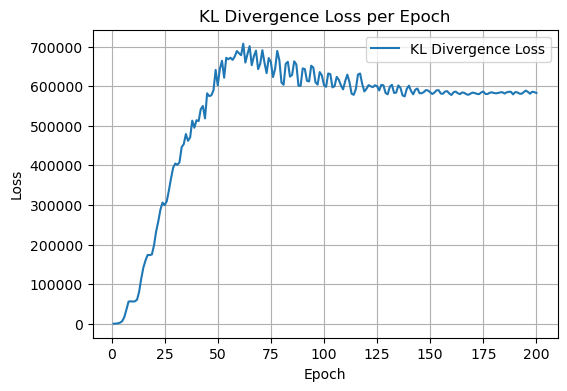
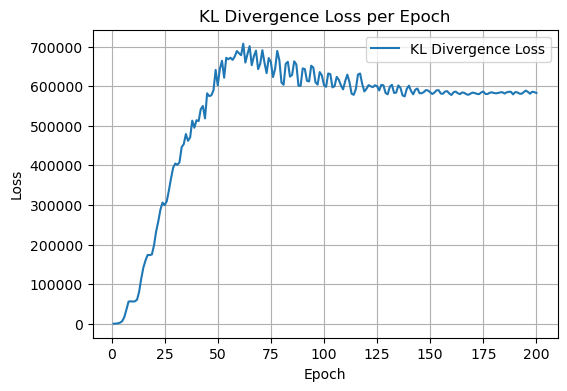

Benchmark Models#
Model VAE#
class VAE(nn.Module):
def __init__(self, input_dim, hidden_dim, latent_dim, dropout_rate=0.1):
super(VAE, self).__init__()
#Encoder
self.fc_enc1 = nn.Linear(input_dim, hidden_dim * 2)
self.fc_enc2 = nn.Linear(hidden_dim * 2, hidden_dim)
self.fc_mu = nn.Linear(hidden_dim, latent_dim)
self.fc_var = nn.Linear(hidden_dim, latent_dim)
# Decoder
self.fc_dec1 = nn.Linear(latent_dim, hidden_dim)
self.fc_dec2 = nn.Linear(hidden_dim, hidden_dim * 2)
self.fc_dec3 = nn.Linear(hidden_dim * 2, input_dim)
#dropout layer
self.dropout = nn.Dropout(dropout_rate)
def encode(self, x):
h = F.elu(self.fc_enc1(x))
h = self.dropout(h)
h = F.elu(self.fc_enc2(h))
h = self.dropout(h)
mu = self.fc_mu(h)
log_var = self.fc_var(h)
return mu, log_var
def reparameterize(self, mu, log_var):
std = torch.exp(0.5 * log_var)
eps = torch.randn_like(std)
return mu + eps * std
def decode(self, z):
h = F.elu(self.fc_dec1(z))
h = self.dropout(h)
h = F.elu(self.fc_dec2(h))
h = self.dropout(h)
return self.fc_dec3(h)
def forward(self, x):
mu, log_var = self.encode(x)
z = self.reparameterize(mu, log_var)
return self.decode(z), mu, log_var
Loss Function
def zinb_loss(recon_x, x, mu, log_var, p0=None, beta=1.0, theta=1.0):
if isinstance(x, torch.Tensor):
if x.is_sparse:
x = x.to_dense()
else:
x = torch.tensor(x, dtype=torch.float32)
if isinstance(recon_x, torch.Tensor):
if recon_x.is_sparse:
recon_x = recon_x.to_dense()
else:
recon_x = torch.tensor(recon_x, dtype=torch.float32)
theta_tensor = torch.tensor(theta, dtype=x.dtype, device=x.device)
theta_tensor = torch.clamp(theta_tensor, min=1e-6, max=1e3)
nb_loss = -torch.sum(
torch.lgamma(x + theta_tensor)
- torch.lgamma(x + 1)
- torch.lgamma(theta_tensor)
+ x * torch.log(torch.clamp(recon_x, min=1e-8))
+ theta_tensor * torch.log(theta_tensor / torch.clamp(recon_x, min=1e-8))
)
# if p0 do not provide we assume bernulli
if p0 is None:
bernoulli_loss = torch.tensor(0.0, device=x.device)
else:
p0 = torch.clamp(p0, min=1e-5, max=1 - 1e-5)
bernoulli_loss = -torch.sum(x * torch.log(1 - p0 + 1e-8) + (1 - x) * torch.log(p0 + 1e-8))
mu = torch.clamp(mu, min=-10, max=10)
log_var = torch.clamp(log_var, min=-10, max=10)
kl_loss = -0.5 * torch.sum(1 + log_var - mu.pow(2) - log_var.exp())
total_loss = nb_loss + bernoulli_loss + beta * kl_loss
return total_loss, nb_loss, bernoulli_loss, kl_loss
Training of the model
def train_model_vae(model, X, optimizer, num_epochs=200):
model.train()
total_losses, nb_losses, bernoulli_losses, kl_losses = [], [], [], []
for epoch in range(num_epochs):
optimizer.zero_grad()
recon, mu, log_var = model(X)
total_loss, nb_loss, bern_loss, kl_loss = zinb_loss(recon, X, mu, log_var)
total_loss.backward()
optimizer.step()
total_losses.append(total_loss.item())
nb_losses.append(nb_loss.item())
bernoulli_losses.append(bern_loss.item())
kl_losses.append(kl_loss.item())
print(f"Epoch [{epoch+1}/{num_epochs}] - Total: {total_loss.item():.4f}, NB: {nb_loss.item():.4f}, Bernoulli: {bern_loss.item():.4f}, KL: {kl_loss.item():.4f}")
return total_losses, nb_losses, bernoulli_losses, kl_losses
Clusterization for VAE#
def clustering_and_metrics(mu, X_data):
# Latent representation (mu)
adata_latent = sc.AnnData(X=mu.detach().cpu().numpy())
# Preprocessing UMAP
sc.pp.neighbors(adata_latent, n_neighbors=10, use_rep='X')
sc.tl.umap(adata_latent)
# clustering resolutions
resolutions = [0.4, 0.6, 0.8]
methods = ['leiden', 'louvain']
clustering_results = []
fig, axs = plt.subplots(2, 3, figsize=(18, 10))
axs = axs.flatten()
i = 0
for method in methods:
for res in resolutions:
key = f"{method}_r"
#Leiden o Louvain
if method == 'leiden':
sc.tl.leiden(adata_latent, resolution=res, key_added=key)
else:
sc.tl.louvain(adata_latent, resolution=res, key_added=key)
# clusters lablels
labels = adata_latent.obs[key].astype(int).values
n_clusters = len(set(labels))
silh = silhouette_score(adata_latent.obsm['X_umap'], labels) if n_clusters > 1 else -1
ch = calinski_harabasz_score(adata_latent.obsm['X_umap'], labels) if n_clusters > 1 else -1
clustering_results.append({
'method': method,
'resolution': res,
'n_clusters': n_clusters,
'silhouette': silh,
'calinski_harabasz': ch
})
axs[i].scatter(adata_latent.obsm['X_umap'][:, 0], adata_latent.obsm['X_umap'][:, 1], c=labels, cmap='tab20', s=20, alpha=0.7)
axs[i].set_title(f"{method.title()} (res={res})\nSilh={silh:.2f} CH={ch:.1f}")
axs[i].set_xlabel("UMAP1")
axs[i].set_ylabel("UMAP2")
i += 1
plt.tight_layout()
plt.show()
return clustering_results
Hyperparametrization of VAE#
# GridSEARCH
def hyperparameter_search(X, input_dim, num_epochs):
param_grid = {
'hidden_dim': [64, 128, 256],
'latent_dim': [32, 64, 128],
'dropout_rate': [0.1, 0.2, 0.3],
'learning_rate': [1e-3, 1e-4, 1e-5]
}
best_score = float('inf')
best_params = None
best_model = None
for params in ParameterGrid(param_grid):
print(f"Training with parameters: {params}")
model = VAE(input_dim, params['hidden_dim'], params['latent_dim'], dropout_rate=params['dropout_rate'])
optimizer = optim.Adam(model.parameters(), lr=params['learning_rate'])
losses, nb_losses, bernoulli_losses, kl_losses = train_model_vae(model, X, optimizer, num_epochs, verbose=1)
# Evaluar mtricas
final_loss = losses[-1]
if final_loss < best_score:
best_score = final_loss
best_params = params
best_model = model
return best_model, best_params
input_dim = adata_filtered.shape[1]
X_data = adata_filtered.X
X = torch.FloatTensor(X_data)
num_epochs = 200
best_model, best_params = hyperparameter_search(X, input_dim, num_epochs)
print(f"Best hyperparameters: {best_params}")
Training with parameters: {'dropout_rate': 0.1, 'hidden_dim': 64, 'latent_dim': 32, 'learning_rate': 0.001}
C:\Users\henry\AppData\Local\Temp\ipykernel_21284\419942230.py:64: UserWarning: To copy construct from a tensor, it is recommended to use sourceTensor.clone().detach() or sourceTensor.clone().detach().requires_grad_(True), rather than torch.tensor(sourceTensor).
x = torch.tensor(x, dtype=torch.float32)
C:\Users\henry\AppData\Local\Temp\ipykernel_21284\419942230.py:70: UserWarning: To copy construct from a tensor, it is recommended to use sourceTensor.clone().detach() or sourceTensor.clone().detach().requires_grad_(True), rather than torch.tensor(sourceTensor).
recon_x = torch.tensor(recon_x, dtype=torch.float32)
Epoch [1/200] - Loss: -34560792.0000, NB Loss: -37103348.0000, Bernoulli Loss: 2541348.5000, KL Loss: 1206.4799
Epoch [2/200] - Loss: -34590584.0000, NB Loss: -37111328.0000, Bernoulli Loss: 2519559.7500, KL Loss: 1184.4680
Epoch [3/200] - Loss: -34598704.0000, NB Loss: -37098516.0000, Bernoulli Loss: 2498512.7500, KL Loss: 1300.6113
Epoch [4/200] - Loss: -34637784.0000, NB Loss: -37113776.0000, Bernoulli Loss: 2474525.0000, KL Loss: 1466.0491
Epoch [5/200] - Loss: -34670012.0000, NB Loss: -37117492.0000, Bernoulli Loss: 2445813.2500, KL Loss: 1667.7100
Epoch [6/200] - Loss: -34690560.0000, NB Loss: -37103228.0000, Bernoulli Loss: 2410737.0000, KL Loss: 1931.2047
Epoch [7/200] - Loss: -34733728.0000, NB Loss: -37102920.0000, Bernoulli Loss: 2366942.2500, KL Loss: 2247.0508
Epoch [8/200] - Loss: -34783668.0000, NB Loss: -37100732.0000, Bernoulli Loss: 2314452.0000, KL Loss: 2610.7275
Epoch [9/200] - Loss: -34858728.0000, NB Loss: -37110908.0000, Bernoulli Loss: 2249134.0000, KL Loss: 3047.8164
Epoch [10/200] - Loss: -34903096.0000, NB Loss: -37081072.0000, Bernoulli Loss: 2174454.2500, KL Loss: 3519.0278
Epoch [11/200] - Loss: -34961352.0000, NB Loss: -37049692.0000, Bernoulli Loss: 2084312.3750, KL Loss: 4027.7974
Epoch [12/200] - Loss: -35067776.0000, NB Loss: -37056936.0000, Bernoulli Loss: 1984508.3750, KL Loss: 4651.8237
Epoch [13/200] - Loss: -35185148.0000, NB Loss: -37059076.0000, Bernoulli Loss: 1868657.1250, KL Loss: 5270.8574
Epoch [14/200] - Loss: -35267064.0000, NB Loss: -37019664.0000, Bernoulli Loss: 1746634.0000, KL Loss: 5969.1768
Epoch [15/200] - Loss: -35391184.0000, NB Loss: -37009288.0000, Bernoulli Loss: 1611448.1250, KL Loss: 6657.5669
Epoch [16/200] - Loss: -35552640.0000, NB Loss: -37023064.0000, Bernoulli Loss: 1462907.5000, KL Loss: 7515.3340
Epoch [17/200] - Loss: -35647592.0000, NB Loss: -36967748.0000, Bernoulli Loss: 1311821.3750, KL Loss: 8337.2383
Epoch [18/200] - Loss: -35802160.0000, NB Loss: -36962164.0000, Bernoulli Loss: 1150690.5000, KL Loss: 9312.6084
Epoch [19/200] - Loss: -35952624.0000, NB Loss: -36946700.0000, Bernoulli Loss: 983975.6250, KL Loss: 10099.0645
Epoch [20/200] - Loss: -36085096.0000, NB Loss: -36916616.0000, Bernoulli Loss: 820227.3750, KL Loss: 11293.5566
Epoch [21/200] - Loss: -36235632.0000, NB Loss: -36898944.0000, Bernoulli Loss: 650693.6250, KL Loss: 12620.5918
Epoch [22/200] - Loss: -36386332.0000, NB Loss: -36886548.0000, Bernoulli Loss: 485954.9688, KL Loss: 14258.0166
Epoch [23/200] - Loss: -36517756.0000, NB Loss: -36856460.0000, Bernoulli Loss: 323224.3750, KL Loss: 15479.0674
Epoch [24/200] - Loss: -36665684.0000, NB Loss: -36849716.0000, Bernoulli Loss: 166990.2344, KL Loss: 17041.1797
Epoch [25/200] - Loss: -36798976.0000, NB Loss: -36836932.0000, Bernoulli Loss: 18794.7676, KL Loss: 19159.8203
Epoch [26/200] - Loss: -36971200.0000, NB Loss: -36869304.0000, Bernoulli Loss: -122923.4531, KL Loss: 21029.0762
Epoch [27/200] - Loss: -37052992.0000, NB Loss: -36815376.0000, Bernoulli Loss: -260775.7188, KL Loss: 23161.6797
Epoch [28/200] - Loss: -37237644.0000, NB Loss: -36869064.0000, Bernoulli Loss: -393387.6250, KL Loss: 24808.1641
Epoch [29/200] - Loss: -37366464.0000, NB Loss: -36875148.0000, Bernoulli Loss: -519055.4688, KL Loss: 27741.2891
Epoch [30/200] - Loss: -37448740.0000, NB Loss: -36845684.0000, Bernoulli Loss: -633762.2500, KL Loss: 30706.6348
Epoch [31/200] - Loss: -37533460.0000, NB Loss: -36823556.0000, Bernoulli Loss: -742305.1250, KL Loss: 32401.0410
Epoch [32/200] - Loss: -37627308.0000, NB Loss: -36821972.0000, Bernoulli Loss: -842277.1875, KL Loss: 36939.4688
Epoch [33/200] - Loss: -37680928.0000, NB Loss: -36789604.0000, Bernoulli Loss: -931897.3125, KL Loss: 40571.0625
Epoch [34/200] - Loss: -37710560.0000, NB Loss: -36745528.0000, Bernoulli Loss: -1008825.1875, KL Loss: 43790.6562
Epoch [35/200] - Loss: -37745356.0000, NB Loss: -36713868.0000, Bernoulli Loss: -1079798.8750, KL Loss: 48310.1094
Epoch [36/200] - Loss: -37781240.0000, NB Loss: -36691088.0000, Bernoulli Loss: -1142916.3750, KL Loss: 52765.7969
Epoch [37/200] - Loss: -37855868.0000, NB Loss: -36714652.0000, Bernoulli Loss: -1196560.8750, KL Loss: 55345.7891
Epoch [38/200] - Loss: -37910260.0000, NB Loss: -36721676.0000, Bernoulli Loss: -1247082.1250, KL Loss: 58500.4766
Epoch [39/200] - Loss: -37927080.0000, NB Loss: -36692800.0000, Bernoulli Loss: -1295433.6250, KL Loss: 61152.6445
Epoch [40/200] - Loss: -38003480.0000, NB Loss: -36727748.0000, Bernoulli Loss: -1339321.1250, KL Loss: 63589.8281
Epoch [41/200] - Loss: -37990440.0000, NB Loss: -36680164.0000, Bernoulli Loss: -1375735.6250, KL Loss: 65461.2031
Epoch [42/200] - Loss: -37993792.0000, NB Loss: -36642424.0000, Bernoulli Loss: -1417903.8750, KL Loss: 66535.5703
Epoch [43/200] - Loss: -37998524.0000, NB Loss: -36613280.0000, Bernoulli Loss: -1455033.1250, KL Loss: 69788.4609
Epoch [44/200] - Loss: -38059996.0000, NB Loss: -36634412.0000, Bernoulli Loss: -1492055.5000, KL Loss: 66473.7188
Epoch [45/200] - Loss: -38083960.0000, NB Loss: -36632948.0000, Bernoulli Loss: -1521035.8750, KL Loss: 70026.0000
Epoch [46/200] - Loss: -38142060.0000, NB Loss: -36646460.0000, Bernoulli Loss: -1563320.5000, KL Loss: 67721.9609
Epoch [47/200] - Loss: -38203148.0000, NB Loss: -36676376.0000, Bernoulli Loss: -1594505.0000, KL Loss: 67733.6562
Epoch [48/200] - Loss: -38231796.0000, NB Loss: -36671364.0000, Bernoulli Loss: -1627623.1250, KL Loss: 67190.0312
Epoch [49/200] - Loss: -38303052.0000, NB Loss: -36703384.0000, Bernoulli Loss: -1666163.2500, KL Loss: 66496.7969
Epoch [50/200] - Loss: -38287452.0000, NB Loss: -36656616.0000, Bernoulli Loss: -1694812.3750, KL Loss: 63974.7344
Epoch [51/200] - Loss: -38323188.0000, NB Loss: -36653760.0000, Bernoulli Loss: -1734164.1250, KL Loss: 64734.8359
Epoch [52/200] - Loss: -38376816.0000, NB Loss: -36669256.0000, Bernoulli Loss: -1765911.8750, KL Loss: 58353.1016
Epoch [53/200] - Loss: -38401276.0000, NB Loss: -36666560.0000, Bernoulli Loss: -1792697.0000, KL Loss: 57978.6758
Epoch [54/200] - Loss: -38416864.0000, NB Loss: -36651376.0000, Bernoulli Loss: -1824499.1250, KL Loss: 59011.0000
Epoch [55/200] - Loss: -38498180.0000, NB Loss: -36701104.0000, Bernoulli Loss: -1853733.7500, KL Loss: 56657.5391
Epoch [56/200] - Loss: -38518832.0000, NB Loss: -36698928.0000, Bernoulli Loss: -1872372.2500, KL Loss: 52468.2422
Epoch [57/200] - Loss: -38564828.0000, NB Loss: -36717092.0000, Bernoulli Loss: -1900024.8750, KL Loss: 52286.5703
Epoch [58/200] - Loss: -38582524.0000, NB Loss: -36712724.0000, Bernoulli Loss: -1921019.5000, KL Loss: 51220.2578
Epoch [59/200] - Loss: -38590204.0000, NB Loss: -36692480.0000, Bernoulli Loss: -1946521.8750, KL Loss: 48795.3555
Epoch [60/200] - Loss: -38681732.0000, NB Loss: -36762096.0000, Bernoulli Loss: -1965768.3750, KL Loss: 46133.6016
Epoch [61/200] - Loss: -38693304.0000, NB Loss: -36745300.0000, Bernoulli Loss: -1993437.8750, KL Loss: 45430.6562
Epoch [62/200] - Loss: -38700592.0000, NB Loss: -36736312.0000, Bernoulli Loss: -2008993.6250, KL Loss: 44713.8320
Epoch [63/200] - Loss: -38772792.0000, NB Loss: -36783744.0000, Bernoulli Loss: -2030928.8750, KL Loss: 41879.9219
Epoch [64/200] - Loss: -38782196.0000, NB Loss: -36777908.0000, Bernoulli Loss: -2045740.2500, KL Loss: 41452.7773
Epoch [65/200] - Loss: -38838704.0000, NB Loss: -36802024.0000, Bernoulli Loss: -2074978.3750, KL Loss: 38300.3516
Epoch [66/200] - Loss: -38869036.0000, NB Loss: -36817304.0000, Bernoulli Loss: -2088786.0000, KL Loss: 37053.0938
Epoch [67/200] - Loss: -38835404.0000, NB Loss: -36761936.0000, Bernoulli Loss: -2110707.2500, KL Loss: 37240.9414
Epoch [68/200] - Loss: -38896452.0000, NB Loss: -36807184.0000, Bernoulli Loss: -2123750.7500, KL Loss: 34483.2578
Epoch [69/200] - Loss: -38923316.0000, NB Loss: -36803716.0000, Bernoulli Loss: -2153624.5000, KL Loss: 34024.6797
Epoch [70/200] - Loss: -39022488.0000, NB Loss: -36880440.0000, Bernoulli Loss: -2173845.2500, KL Loss: 31797.5977
Epoch [71/200] - Loss: -39034604.0000, NB Loss: -36874692.0000, Bernoulli Loss: -2191347.7500, KL Loss: 31434.2070
Epoch [72/200] - Loss: -39046488.0000, NB Loss: -36861560.0000, Bernoulli Loss: -2215702.2500, KL Loss: 30774.5781
Epoch [73/200] - Loss: -39099700.0000, NB Loss: -36898996.0000, Bernoulli Loss: -2230182.5000, KL Loss: 29478.5703
Epoch [74/200] - Loss: -39142824.0000, NB Loss: -36912024.0000, Bernoulli Loss: -2259181.5000, KL Loss: 28379.2891
Epoch [75/200] - Loss: -39097860.0000, NB Loss: -36853616.0000, Bernoulli Loss: -2271892.5000, KL Loss: 27648.6172
Epoch [76/200] - Loss: -39099608.0000, NB Loss: -36825180.0000, Bernoulli Loss: -2301494.5000, KL Loss: 27066.1055
Epoch [77/200] - Loss: -39201240.0000, NB Loss: -36899864.0000, Bernoulli Loss: -2327030.7500, KL Loss: 25655.5781
Epoch [78/200] - Loss: -39251944.0000, NB Loss: -36923812.0000, Bernoulli Loss: -2353717.2500, KL Loss: 25583.6250
Epoch [79/200] - Loss: -39305156.0000, NB Loss: -36952864.0000, Bernoulli Loss: -2376523.7500, KL Loss: 24232.3203
Epoch [80/200] - Loss: -39301028.0000, NB Loss: -36927284.0000, Bernoulli Loss: -2397424.7500, KL Loss: 23681.8203
Epoch [81/200] - Loss: -39343504.0000, NB Loss: -36940388.0000, Bernoulli Loss: -2426016.2500, KL Loss: 22901.0000
Epoch [82/200] - Loss: -39346704.0000, NB Loss: -36927800.0000, Bernoulli Loss: -2441669.5000, KL Loss: 22762.2461
Epoch [83/200] - Loss: -39403140.0000, NB Loss: -36955580.0000, Bernoulli Loss: -2469939.5000, KL Loss: 22379.3027
Epoch [84/200] - Loss: -39428472.0000, NB Loss: -36957976.0000, Bernoulli Loss: -2492218.0000, KL Loss: 21721.8145
Epoch [85/200] - Loss: -39414820.0000, NB Loss: -36919912.0000, Bernoulli Loss: -2516118.5000, KL Loss: 21213.9961
Epoch [86/200] - Loss: -39454296.0000, NB Loss: -36946332.0000, Bernoulli Loss: -2529044.5000, KL Loss: 21080.8633
Epoch [87/200] - Loss: -39487700.0000, NB Loss: -36950448.0000, Bernoulli Loss: -2557422.0000, KL Loss: 20170.9707
Epoch [88/200] - Loss: -39573168.0000, NB Loss: -37012648.0000, Bernoulli Loss: -2580207.7500, KL Loss: 19688.8984
Epoch [89/200] - Loss: -39557424.0000, NB Loss: -36987120.0000, Bernoulli Loss: -2589322.5000, KL Loss: 19018.2617
Epoch [90/200] - Loss: -39599832.0000, NB Loss: -36999628.0000, Bernoulli Loss: -2618402.2500, KL Loss: 18198.6680
Epoch [91/200] - Loss: -39612524.0000, NB Loss: -36989232.0000, Bernoulli Loss: -2640816.7500, KL Loss: 17525.0664
Epoch [92/200] - Loss: -39626736.0000, NB Loss: -36981288.0000, Bernoulli Loss: -2663099.0000, KL Loss: 17651.1738
Epoch [93/200] - Loss: -39666976.0000, NB Loss: -37002560.0000, Bernoulli Loss: -2681332.7500, KL Loss: 16914.7422
Epoch [94/200] - Loss: -39701652.0000, NB Loss: -37012520.0000, Bernoulli Loss: -2705902.2500, KL Loss: 16771.5312
Epoch [95/200] - Loss: -39696260.0000, NB Loss: -36994588.0000, Bernoulli Loss: -2717775.0000, KL Loss: 16102.2559
Epoch [96/200] - Loss: -39772508.0000, NB Loss: -37049788.0000, Bernoulli Loss: -2737835.2500, KL Loss: 15117.6465
Epoch [97/200] - Loss: -39771440.0000, NB Loss: -37030176.0000, Bernoulli Loss: -2755940.0000, KL Loss: 14676.1084
Epoch [98/200] - Loss: -39792804.0000, NB Loss: -37031040.0000, Bernoulli Loss: -2775748.5000, KL Loss: 13985.2246
Epoch [99/200] - Loss: -39836884.0000, NB Loss: -37053072.0000, Bernoulli Loss: -2797258.5000, KL Loss: 13447.7852
Epoch [100/200] - Loss: -39824212.0000, NB Loss: -37029924.0000, Bernoulli Loss: -2807657.7500, KL Loss: 13368.2578
Epoch [101/200] - Loss: -39886132.0000, NB Loss: -37067292.0000, Bernoulli Loss: -2831224.2500, KL Loss: 12383.7861
Epoch [102/200] - Loss: -39866048.0000, NB Loss: -37036796.0000, Bernoulli Loss: -2841388.0000, KL Loss: 12137.6768
Epoch [103/200] - Loss: -39907088.0000, NB Loss: -37055436.0000, Bernoulli Loss: -2863348.0000, KL Loss: 11696.7559
Epoch [104/200] - Loss: -39936916.0000, NB Loss: -37057440.0000, Bernoulli Loss: -2890843.0000, KL Loss: 11367.1953
Epoch [105/200] - Loss: -39943728.0000, NB Loss: -37053088.0000, Bernoulli Loss: -2901605.5000, KL Loss: 10962.6953
Epoch [106/200] - Loss: -39952276.0000, NB Loss: -37043456.0000, Bernoulli Loss: -2919314.2500, KL Loss: 10497.5391
Epoch [107/200] - Loss: -39989488.0000, NB Loss: -37069888.0000, Bernoulli Loss: -2929659.2500, KL Loss: 10061.5645
Epoch [108/200] - Loss: -40036996.0000, NB Loss: -37089216.0000, Bernoulli Loss: -2957445.5000, KL Loss: 9663.8691
Epoch [109/200] - Loss: -40034028.0000, NB Loss: -37071280.0000, Bernoulli Loss: -2972125.5000, KL Loss: 9374.1396
Epoch [110/200] - Loss: -40050688.0000, NB Loss: -37071296.0000, Bernoulli Loss: -2988437.0000, KL Loss: 9044.2549
Epoch [111/200] - Loss: -40054724.0000, NB Loss: -37054128.0000, Bernoulli Loss: -3009274.5000, KL Loss: 8681.3770
Epoch [112/200] - Loss: -40110308.0000, NB Loss: -37088656.0000, Bernoulli Loss: -3029783.0000, KL Loss: 8132.3965
Epoch [113/200] - Loss: -40106916.0000, NB Loss: -37071020.0000, Bernoulli Loss: -3044013.0000, KL Loss: 8117.2402
Epoch [114/200] - Loss: -40174792.0000, NB Loss: -37126008.0000, Bernoulli Loss: -3056397.5000, KL Loss: 7613.4844
Epoch [115/200] - Loss: -40130596.0000, NB Loss: -37062524.0000, Bernoulli Loss: -3075696.0000, KL Loss: 7623.3271
Epoch [116/200] - Loss: -40157804.0000, NB Loss: -37078160.0000, Bernoulli Loss: -3086981.5000, KL Loss: 7336.8433
Epoch [117/200] - Loss: -40217272.0000, NB Loss: -37101904.0000, Bernoulli Loss: -3122453.2500, KL Loss: 7084.3779
Epoch [118/200] - Loss: -40205092.0000, NB Loss: -37080400.0000, Bernoulli Loss: -3131503.5000, KL Loss: 6812.0176
Epoch [119/200] - Loss: -40216464.0000, NB Loss: -37066336.0000, Bernoulli Loss: -3156710.2500, KL Loss: 6585.2168
Epoch [120/200] - Loss: -40289980.0000, NB Loss: -37124584.0000, Bernoulli Loss: -3171800.0000, KL Loss: 6402.4033
Epoch [121/200] - Loss: -40269908.0000, NB Loss: -37094336.0000, Bernoulli Loss: -3181860.2500, KL Loss: 6288.9937
Epoch [122/200] - Loss: -40313124.0000, NB Loss: -37120056.0000, Bernoulli Loss: -3199169.0000, KL Loss: 6101.3589
Epoch [123/200] - Loss: -40268028.0000, NB Loss: -37063200.0000, Bernoulli Loss: -3210536.2500, KL Loss: 5707.3828
Epoch [124/200] - Loss: -40310040.0000, NB Loss: -37077296.0000, Bernoulli Loss: -3238179.7500, KL Loss: 5436.1572
Epoch [125/200] - Loss: -40358160.0000, NB Loss: -37106264.0000, Bernoulli Loss: -3257198.7500, KL Loss: 5302.5918
Epoch [126/200] - Loss: -40375624.0000, NB Loss: -37109968.0000, Bernoulli Loss: -3270896.7500, KL Loss: 5241.8262
Epoch [127/200] - Loss: -40395052.0000, NB Loss: -37113628.0000, Bernoulli Loss: -3286447.0000, KL Loss: 5024.3994
Epoch [128/200] - Loss: -40385004.0000, NB Loss: -37088644.0000, Bernoulli Loss: -3301138.2500, KL Loss: 4781.8057
Epoch [129/200] - Loss: -40419420.0000, NB Loss: -37111456.0000, Bernoulli Loss: -3312639.5000, KL Loss: 4677.9775
Epoch [130/200] - Loss: -40408860.0000, NB Loss: -37076800.0000, Bernoulli Loss: -3336521.0000, KL Loss: 4461.2471
Epoch [131/200] - Loss: -40467480.0000, NB Loss: -37120008.0000, Bernoulli Loss: -3351736.5000, KL Loss: 4265.7314
Epoch [132/200] - Loss: -40514128.0000, NB Loss: -37137480.0000, Bernoulli Loss: -3380811.0000, KL Loss: 4164.0615
Epoch [133/200] - Loss: -40468832.0000, NB Loss: -37084912.0000, Bernoulli Loss: -3387957.7500, KL Loss: 4036.3223
Epoch [134/200] - Loss: -40526940.0000, NB Loss: -37116632.0000, Bernoulli Loss: -3414162.0000, KL Loss: 3851.4902
Epoch [135/200] - Loss: -40531232.0000, NB Loss: -37112772.0000, Bernoulli Loss: -3422176.7500, KL Loss: 3714.5715
Epoch [136/200] - Loss: -40558772.0000, NB Loss: -37125512.0000, Bernoulli Loss: -3436886.5000, KL Loss: 3629.0862
Epoch [137/200] - Loss: -40583472.0000, NB Loss: -37132460.0000, Bernoulli Loss: -3454625.5000, KL Loss: 3610.0583
Epoch [138/200] - Loss: -40584496.0000, NB Loss: -37111568.0000, Bernoulli Loss: -3476231.5000, KL Loss: 3305.6924
Epoch [139/200] - Loss: -40610580.0000, NB Loss: -37123204.0000, Bernoulli Loss: -3490673.7500, KL Loss: 3294.8164
Epoch [140/200] - Loss: -40613212.0000, NB Loss: -37108336.0000, Bernoulli Loss: -3507962.7500, KL Loss: 3086.9858
Epoch [141/200] - Loss: -40642216.0000, NB Loss: -37124088.0000, Bernoulli Loss: -3521201.7500, KL Loss: 3073.1294
Epoch [142/200] - Loss: -40650180.0000, NB Loss: -37121044.0000, Bernoulli Loss: -3532126.0000, KL Loss: 2988.7026
Epoch [143/200] - Loss: -40660704.0000, NB Loss: -37112028.0000, Bernoulli Loss: -3551540.2500, KL Loss: 2862.9111
Epoch [144/200] - Loss: -40687116.0000, NB Loss: -37114140.0000, Bernoulli Loss: -3575740.5000, KL Loss: 2762.0105
Epoch [145/200] - Loss: -40675636.0000, NB Loss: -37099152.0000, Bernoulli Loss: -3579124.7500, KL Loss: 2641.4614
Epoch [146/200] - Loss: -40678124.0000, NB Loss: -37083912.0000, Bernoulli Loss: -3596793.0000, KL Loss: 2578.1079
Epoch [147/200] - Loss: -40726688.0000, NB Loss: -37115648.0000, Bernoulli Loss: -3613496.7500, KL Loss: 2455.1003
Epoch [148/200] - Loss: -40743248.0000, NB Loss: -37113668.0000, Bernoulli Loss: -3631941.5000, KL Loss: 2359.9744
Epoch [149/200] - Loss: -40746776.0000, NB Loss: -37103116.0000, Bernoulli Loss: -3645898.0000, KL Loss: 2239.9912
Epoch [150/200] - Loss: -40775776.0000, NB Loss: -37101236.0000, Bernoulli Loss: -3676758.2500, KL Loss: 2218.8784
Epoch [151/200] - Loss: -40802396.0000, NB Loss: -37120776.0000, Bernoulli Loss: -3683728.2500, KL Loss: 2109.9595
Epoch [152/200] - Loss: -40842492.0000, NB Loss: -37145184.0000, Bernoulli Loss: -3699359.0000, KL Loss: 2052.4917
Epoch [153/200] - Loss: -40825948.0000, NB Loss: -37115856.0000, Bernoulli Loss: -3712086.7500, KL Loss: 1994.3835
Epoch [154/200] - Loss: -40804716.0000, NB Loss: -37083936.0000, Bernoulli Loss: -3722720.0000, KL Loss: 1938.3048
Epoch [155/200] - Loss: -40853372.0000, NB Loss: -37110132.0000, Bernoulli Loss: -3745077.2500, KL Loss: 1835.2896
Epoch [156/200] - Loss: -40888968.0000, NB Loss: -37123104.0000, Bernoulli Loss: -3767669.5000, KL Loss: 1804.9734
Epoch [157/200] - Loss: -40892640.0000, NB Loss: -37119252.0000, Bernoulli Loss: -3775109.5000, KL Loss: 1718.2924
Epoch [158/200] - Loss: -40883168.0000, NB Loss: -37101416.0000, Bernoulli Loss: -3783370.5000, KL Loss: 1620.6515
Epoch [159/200] - Loss: -40918872.0000, NB Loss: -37124760.0000, Bernoulli Loss: -3795702.7500, KL Loss: 1593.3513
Epoch [160/200] - Loss: -40941148.0000, NB Loss: -37124132.0000, Bernoulli Loss: -3818568.7500, KL Loss: 1552.8420
Epoch [161/200] - Loss: -40927188.0000, NB Loss: -37108932.0000, Bernoulli Loss: -3819723.7500, KL Loss: 1467.3176
Epoch [162/200] - Loss: -40968536.0000, NB Loss: -37123588.0000, Bernoulli Loss: -3846355.5000, KL Loss: 1408.3511
Epoch [163/200] - Loss: -40963060.0000, NB Loss: -37100884.0000, Bernoulli Loss: -3863574.0000, KL Loss: 1396.2983
Epoch [164/200] - Loss: -41003316.0000, NB Loss: -37129184.0000, Bernoulli Loss: -3875421.0000, KL Loss: 1287.9646
Epoch [165/200] - Loss: -41019540.0000, NB Loss: -37120816.0000, Bernoulli Loss: -3899984.2500, KL Loss: 1258.9474
Epoch [166/200] - Loss: -41028028.0000, NB Loss: -37133340.0000, Bernoulli Loss: -3895890.0000, KL Loss: 1205.5471
Epoch [167/200] - Loss: -41026992.0000, NB Loss: -37108888.0000, Bernoulli Loss: -3919294.2500, KL Loss: 1191.2390
Epoch [168/200] - Loss: -41057568.0000, NB Loss: -37112648.0000, Bernoulli Loss: -3946028.7500, KL Loss: 1108.3809
Epoch [169/200] - Loss: -41058100.0000, NB Loss: -37111020.0000, Bernoulli Loss: -3948118.7500, KL Loss: 1039.1503
Epoch [170/200] - Loss: -41105984.0000, NB Loss: -37135312.0000, Bernoulli Loss: -3971710.0000, KL Loss: 1038.7915
Epoch [171/200] - Loss: -41099172.0000, NB Loss: -37123312.0000, Bernoulli Loss: -3976831.5000, KL Loss: 972.9854
Epoch [172/200] - Loss: -41131852.0000, NB Loss: -37145192.0000, Bernoulli Loss: -3987612.0000, KL Loss: 952.9099
Epoch [173/200] - Loss: -41114776.0000, NB Loss: -37124028.0000, Bernoulli Loss: -3991662.2500, KL Loss: 917.8217
Epoch [174/200] - Loss: -41120572.0000, NB Loss: -37111616.0000, Bernoulli Loss: -4009844.7500, KL Loss: 889.9293
Epoch [175/200] - Loss: -41167808.0000, NB Loss: -37137108.0000, Bernoulli Loss: -4031551.7500, KL Loss: 853.0687
Epoch [176/200] - Loss: -41154804.0000, NB Loss: -37108704.0000, Bernoulli Loss: -4046900.7500, KL Loss: 799.9065
Epoch [177/200] - Loss: -41186984.0000, NB Loss: -37119264.0000, Bernoulli Loss: -4068498.0000, KL Loss: 775.5457
Epoch [178/200] - Loss: -41169460.0000, NB Loss: -37095596.0000, Bernoulli Loss: -4074620.7500, KL Loss: 757.7139
Epoch [179/200] - Loss: -41223064.0000, NB Loss: -37135768.0000, Bernoulli Loss: -4088018.0000, KL Loss: 720.8265
Epoch [180/200] - Loss: -41217448.0000, NB Loss: -37115616.0000, Bernoulli Loss: -4102494.0000, KL Loss: 664.3334
Epoch [181/200] - Loss: -41282392.0000, NB Loss: -37165100.0000, Bernoulli Loss: -4117944.0000, KL Loss: 651.8975
Epoch [182/200] - Loss: -41318432.0000, NB Loss: -37168604.0000, Bernoulli Loss: -4150478.0000, KL Loss: 648.3428
Epoch [183/200] - Loss: -41291392.0000, NB Loss: -37138296.0000, Bernoulli Loss: -4153711.5000, KL Loss: 617.8544
Epoch [184/200] - Loss: -41301212.0000, NB Loss: -37150816.0000, Bernoulli Loss: -4150983.2500, KL Loss: 587.4380
Epoch [185/200] - Loss: -41282744.0000, NB Loss: -37108020.0000, Bernoulli Loss: -4175272.7500, KL Loss: 546.1619
Epoch [186/200] - Loss: -41280628.0000, NB Loss: -37097296.0000, Bernoulli Loss: -4183848.0000, KL Loss: 517.7975
Epoch [187/200] - Loss: -41301064.0000, NB Loss: -37112104.0000, Bernoulli Loss: -4189491.0000, KL Loss: 531.4097
Epoch [188/200] - Loss: -41335900.0000, NB Loss: -37130588.0000, Bernoulli Loss: -4205810.0000, KL Loss: 498.1276
Epoch [189/200] - Loss: -41341232.0000, NB Loss: -37124520.0000, Bernoulli Loss: -4217204.5000, KL Loss: 493.4431
Epoch [190/200] - Loss: -41336880.0000, NB Loss: -37110584.0000, Bernoulli Loss: -4226756.0000, KL Loss: 459.2511
Epoch [191/200] - Loss: -41392744.0000, NB Loss: -37140504.0000, Bernoulli Loss: -4252708.5000, KL Loss: 466.6040
Epoch [192/200] - Loss: -41424744.0000, NB Loss: -37146468.0000, Bernoulli Loss: -4278715.5000, KL Loss: 439.2263
Epoch [193/200] - Loss: -41350940.0000, NB Loss: -37091156.0000, Bernoulli Loss: -4260199.0000, KL Loss: 416.3661
Epoch [194/200] - Loss: -41401680.0000, NB Loss: -37130328.0000, Bernoulli Loss: -4271737.5000, KL Loss: 383.2437
Epoch [195/200] - Loss: -41415168.0000, NB Loss: -37122048.0000, Bernoulli Loss: -4293507.5000, KL Loss: 387.1156
Epoch [196/200] - Loss: -41406144.0000, NB Loss: -37110676.0000, Bernoulli Loss: -4295852.5000, KL Loss: 385.8010
Epoch [197/200] - Loss: -41459956.0000, NB Loss: -37131972.0000, Bernoulli Loss: -4328342.0000, KL Loss: 355.2116
Epoch [198/200] - Loss: -41457896.0000, NB Loss: -37123628.0000, Bernoulli Loss: -4334629.0000, KL Loss: 358.0689
Epoch [199/200] - Loss: -41463576.0000, NB Loss: -37140996.0000, Bernoulli Loss: -4322907.0000, KL Loss: 327.8120
Epoch [200/200] - Loss: -41505488.0000, NB Loss: -37138816.0000, Bernoulli Loss: -4366994.0000, KL Loss: 320.2946
Training with parameters: {'dropout_rate': 0.1, 'hidden_dim': 64, 'latent_dim': 32, 'learning_rate': 0.0001}
Epoch [1/200] - Loss: -34285332.0000, NB Loss: -36830348.0000, Bernoulli Loss: 2543807.5000, KL Loss: 1207.6589
Epoch [2/200] - Loss: -34304512.0000, NB Loss: -36847140.0000, Bernoulli Loss: 2541421.0000, KL Loss: 1208.6189
Epoch [3/200] - Loss: -34269340.0000, NB Loss: -36810052.0000, Bernoulli Loss: 2539519.5000, KL Loss: 1193.6787
Epoch [4/200] - Loss: -34266020.0000, NB Loss: -36804432.0000, Bernoulli Loss: 2537220.7500, KL Loss: 1190.2117
Epoch [5/200] - Loss: -34285384.0000, NB Loss: -36821220.0000, Bernoulli Loss: 2534634.0000, KL Loss: 1200.2307
Epoch [6/200] - Loss: -34290592.0000, NB Loss: -36824196.0000, Bernoulli Loss: 2532412.7500, KL Loss: 1192.1006
Epoch [7/200] - Loss: -34298844.0000, NB Loss: -36830312.0000, Bernoulli Loss: 2530274.0000, KL Loss: 1196.3474
Epoch [8/200] - Loss: -34301884.0000, NB Loss: -36831104.0000, Bernoulli Loss: 2528012.5000, KL Loss: 1209.3989
Epoch [9/200] - Loss: -34309940.0000, NB Loss: -36837228.0000, Bernoulli Loss: 2526080.7500, KL Loss: 1209.6826
Epoch [10/200] - Loss: -34310324.0000, NB Loss: -36834952.0000, Bernoulli Loss: 2523404.0000, KL Loss: 1225.2596
Epoch [11/200] - Loss: -34331420.0000, NB Loss: -36853932.0000, Bernoulli Loss: 2521279.5000, KL Loss: 1232.5295
Epoch [12/200] - Loss: -34288076.0000, NB Loss: -36808392.0000, Bernoulli Loss: 2519069.7500, KL Loss: 1248.5066
Epoch [13/200] - Loss: -34313044.0000, NB Loss: -36831280.0000, Bernoulli Loss: 2516972.0000, KL Loss: 1263.9585
Epoch [14/200] - Loss: -34312388.0000, NB Loss: -36828344.0000, Bernoulli Loss: 2514679.5000, KL Loss: 1276.3651
Epoch [15/200] - Loss: -34297452.0000, NB Loss: -36811296.0000, Bernoulli Loss: 2512552.7500, KL Loss: 1290.9805
Epoch [16/200] - Loss: -34300980.0000, NB Loss: -36812628.0000, Bernoulli Loss: 2510338.0000, KL Loss: 1309.4268
Epoch [17/200] - Loss: -34359652.0000, NB Loss: -36868964.0000, Bernoulli Loss: 2507993.0000, KL Loss: 1320.8906
Epoch [18/200] - Loss: -34329448.0000, NB Loss: -36836168.0000, Bernoulli Loss: 2505377.0000, KL Loss: 1342.0024
Epoch [19/200] - Loss: -34337384.0000, NB Loss: -36841728.0000, Bernoulli Loss: 2502986.0000, KL Loss: 1360.8472
Epoch [20/200] - Loss: -34333960.0000, NB Loss: -36836204.0000, Bernoulli Loss: 2500867.0000, KL Loss: 1376.9856
Epoch [21/200] - Loss: -34313880.0000, NB Loss: -36813956.0000, Bernoulli Loss: 2498673.5000, KL Loss: 1402.6470
Epoch [22/200] - Loss: -34351556.0000, NB Loss: -36848960.0000, Bernoulli Loss: 2495980.2500, KL Loss: 1422.9873
Epoch [23/200] - Loss: -34374864.0000, NB Loss: -36870104.0000, Bernoulli Loss: 2493797.5000, KL Loss: 1442.9058
Epoch [24/200] - Loss: -34305036.0000, NB Loss: -36797572.0000, Bernoulli Loss: 2491075.0000, KL Loss: 1460.6265
Epoch [25/200] - Loss: -34307648.0000, NB Loss: -36797568.0000, Bernoulli Loss: 2488423.0000, KL Loss: 1495.1969
Epoch [26/200] - Loss: -34338792.0000, NB Loss: -36826348.0000, Bernoulli Loss: 2486047.0000, KL Loss: 1509.7721
Epoch [27/200] - Loss: -34330556.0000, NB Loss: -36815492.0000, Bernoulli Loss: 2483409.0000, KL Loss: 1526.8361
Epoch [28/200] - Loss: -34314296.0000, NB Loss: -36796680.0000, Bernoulli Loss: 2480821.5000, KL Loss: 1563.2295
Epoch [29/200] - Loss: -34310280.0000, NB Loss: -36789564.0000, Bernoulli Loss: 2477699.7500, KL Loss: 1585.0806
Epoch [30/200] - Loss: -34329036.0000, NB Loss: -36805372.0000, Bernoulli Loss: 2474712.7500, KL Loss: 1622.0085
Epoch [31/200] - Loss: -34357520.0000, NB Loss: -36831120.0000, Bernoulli Loss: 2471958.2500, KL Loss: 1638.2100
Epoch [32/200] - Loss: -34351940.0000, NB Loss: -36822540.0000, Bernoulli Loss: 2468938.0000, KL Loss: 1660.7896
Epoch [33/200] - Loss: -34363928.0000, NB Loss: -36831840.0000, Bernoulli Loss: 2466206.5000, KL Loss: 1702.3896
Epoch [34/200] - Loss: -34359140.0000, NB Loss: -36823720.0000, Bernoulli Loss: 2462850.0000, KL Loss: 1733.7332
Epoch [35/200] - Loss: -34378396.0000, NB Loss: -36839556.0000, Bernoulli Loss: 2459402.5000, KL Loss: 1757.8669
Epoch [36/200] - Loss: -34374576.0000, NB Loss: -36833004.0000, Bernoulli Loss: 2456626.0000, KL Loss: 1799.3044
Epoch [37/200] - Loss: -34360660.0000, NB Loss: -36814832.0000, Bernoulli Loss: 2452343.0000, KL Loss: 1827.8446
Epoch [38/200] - Loss: -34401656.0000, NB Loss: -36853276.0000, Bernoulli Loss: 2449768.2500, KL Loss: 1853.7273
Epoch [39/200] - Loss: -34413544.0000, NB Loss: -36861120.0000, Bernoulli Loss: 2445680.5000, KL Loss: 1896.0361
Epoch [40/200] - Loss: -34381412.0000, NB Loss: -36825856.0000, Bernoulli Loss: 2442524.7500, KL Loss: 1921.8164
Epoch [41/200] - Loss: -34385440.0000, NB Loss: -36826000.0000, Bernoulli Loss: 2438583.0000, KL Loss: 1974.3552
Epoch [42/200] - Loss: -34335228.0000, NB Loss: -36771808.0000, Bernoulli Loss: 2434581.7500, KL Loss: 2001.3464
Epoch [43/200] - Loss: -34424576.0000, NB Loss: -36856740.0000, Bernoulli Loss: 2430114.0000, KL Loss: 2049.6965
Epoch [44/200] - Loss: -34371024.0000, NB Loss: -36799128.0000, Bernoulli Loss: 2426017.0000, KL Loss: 2089.9565
Epoch [45/200] - Loss: -34406024.0000, NB Loss: -36830160.0000, Bernoulli Loss: 2421998.0000, KL Loss: 2134.2236
Epoch [46/200] - Loss: -34376784.0000, NB Loss: -36796248.0000, Bernoulli Loss: 2417305.5000, KL Loss: 2158.8647
Epoch [47/200] - Loss: -34408436.0000, NB Loss: -36823572.0000, Bernoulli Loss: 2412932.0000, KL Loss: 2203.9673
Epoch [48/200] - Loss: -34406948.0000, NB Loss: -36817352.0000, Bernoulli Loss: 2408128.2500, KL Loss: 2276.8628
Epoch [49/200] - Loss: -34425604.0000, NB Loss: -36831244.0000, Bernoulli Loss: 2403336.2500, KL Loss: 2303.0015
Epoch [50/200] - Loss: -34417428.0000, NB Loss: -36818688.0000, Bernoulli Loss: 2398908.7500, KL Loss: 2351.2031
Epoch [51/200] - Loss: -34422112.0000, NB Loss: -36817600.0000, Bernoulli Loss: 2393088.2500, KL Loss: 2399.6504
Epoch [52/200] - Loss: -34411232.0000, NB Loss: -36802228.0000, Bernoulli Loss: 2388557.5000, KL Loss: 2440.7607
Epoch [53/200] - Loss: -34448432.0000, NB Loss: -36834176.0000, Bernoulli Loss: 2383264.0000, KL Loss: 2478.9746
Epoch [54/200] - Loss: -34446876.0000, NB Loss: -36827244.0000, Bernoulli Loss: 2377841.5000, KL Loss: 2526.6890
Epoch [55/200] - Loss: -34461656.0000, NB Loss: -36835728.0000, Bernoulli Loss: 2371483.0000, KL Loss: 2587.7869
Epoch [56/200] - Loss: -34435568.0000, NB Loss: -36803292.0000, Bernoulli Loss: 2365071.7500, KL Loss: 2651.1738
Epoch [57/200] - Loss: -34488436.0000, NB Loss: -36851512.0000, Bernoulli Loss: 2360386.7500, KL Loss: 2687.0151
Epoch [58/200] - Loss: -34495860.0000, NB Loss: -36852532.0000, Bernoulli Loss: 2353938.7500, KL Loss: 2733.3813
Epoch [59/200] - Loss: -34450832.0000, NB Loss: -36801684.0000, Bernoulli Loss: 2348069.0000, KL Loss: 2784.9238
Epoch [60/200] - Loss: -34476008.0000, NB Loss: -36820488.0000, Bernoulli Loss: 2341652.0000, KL Loss: 2827.7393
Epoch [61/200] - Loss: -34476416.0000, NB Loss: -36814032.0000, Bernoulli Loss: 2334719.7500, KL Loss: 2896.8330
Epoch [62/200] - Loss: -34480400.0000, NB Loss: -36811152.0000, Bernoulli Loss: 2327804.2500, KL Loss: 2947.8032
Epoch [63/200] - Loss: -34458996.0000, NB Loss: -36783480.0000, Bernoulli Loss: 2321472.7500, KL Loss: 3011.7549
Epoch [64/200] - Loss: -34524204.0000, NB Loss: -36840576.0000, Bernoulli Loss: 2313299.0000, KL Loss: 3073.6084
Epoch [65/200] - Loss: -34547820.0000, NB Loss: -36857688.0000, Bernoulli Loss: 2306761.7500, KL Loss: 3107.9104
Epoch [66/200] - Loss: -34550752.0000, NB Loss: -36852436.0000, Bernoulli Loss: 2298508.5000, KL Loss: 3177.7637
Epoch [67/200] - Loss: -34567272.0000, NB Loss: -36861920.0000, Bernoulli Loss: 2291417.0000, KL Loss: 3230.9951
Epoch [68/200] - Loss: -34554332.0000, NB Loss: -36840120.0000, Bernoulli Loss: 2282527.7500, KL Loss: 3258.4709
Epoch [69/200] - Loss: -34524988.0000, NB Loss: -36804708.0000, Bernoulli Loss: 2276392.5000, KL Loss: 3329.3325
Epoch [70/200] - Loss: -34545892.0000, NB Loss: -36816308.0000, Bernoulli Loss: 2267033.0000, KL Loss: 3383.3938
Epoch [71/200] - Loss: -34565544.0000, NB Loss: -36827500.0000, Bernoulli Loss: 2258503.7500, KL Loss: 3451.1572
Epoch [72/200] - Loss: -34597920.0000, NB Loss: -36849688.0000, Bernoulli Loss: 2248278.7500, KL Loss: 3486.8003
Epoch [73/200] - Loss: -34579944.0000, NB Loss: -36823144.0000, Bernoulli Loss: 2239661.2500, KL Loss: 3540.6418
Epoch [74/200] - Loss: -34607304.0000, NB Loss: -36842188.0000, Bernoulli Loss: 2231254.2500, KL Loss: 3628.3560
Epoch [75/200] - Loss: -34590656.0000, NB Loss: -36815280.0000, Bernoulli Loss: 2220960.0000, KL Loss: 3665.9045
Epoch [76/200] - Loss: -34621452.0000, NB Loss: -36838444.0000, Bernoulli Loss: 2213309.0000, KL Loss: 3685.0190
Epoch [77/200] - Loss: -34632340.0000, NB Loss: -36837904.0000, Bernoulli Loss: 2201809.0000, KL Loss: 3756.6702
Epoch [78/200] - Loss: -34637260.0000, NB Loss: -36832056.0000, Bernoulli Loss: 2190951.2500, KL Loss: 3843.9241
Epoch [79/200] - Loss: -34614728.0000, NB Loss: -36801656.0000, Bernoulli Loss: 2183039.0000, KL Loss: 3889.0012
Epoch [80/200] - Loss: -34647580.0000, NB Loss: -36823648.0000, Bernoulli Loss: 2172150.2500, KL Loss: 3916.2847
Epoch [81/200] - Loss: -34660036.0000, NB Loss: -36826380.0000, Bernoulli Loss: 2162374.7500, KL Loss: 3968.1755
Epoch [82/200] - Loss: -34681580.0000, NB Loss: -36837588.0000, Bernoulli Loss: 2151952.2500, KL Loss: 4054.7866
Epoch [83/200] - Loss: -34719896.0000, NB Loss: -36864668.0000, Bernoulli Loss: 2140664.0000, KL Loss: 4107.2046
Epoch [84/200] - Loss: -34700240.0000, NB Loss: -36832464.0000, Bernoulli Loss: 2128082.2500, KL Loss: 4141.4541
Epoch [85/200] - Loss: -34696296.0000, NB Loss: -36818480.0000, Bernoulli Loss: 2117974.2500, KL Loss: 4207.0488
Epoch [86/200] - Loss: -34733364.0000, NB Loss: -36844248.0000, Bernoulli Loss: 2106606.2500, KL Loss: 4274.8203
Epoch [87/200] - Loss: -34734076.0000, NB Loss: -36832808.0000, Bernoulli Loss: 2094412.6250, KL Loss: 4320.8091
Epoch [88/200] - Loss: -34751192.0000, NB Loss: -36838356.0000, Bernoulli Loss: 2082784.6250, KL Loss: 4381.5059
Epoch [89/200] - Loss: -34781324.0000, NB Loss: -36855480.0000, Bernoulli Loss: 2069743.2500, KL Loss: 4411.7563
Epoch [90/200] - Loss: -34789100.0000, NB Loss: -36853048.0000, Bernoulli Loss: 2059479.8750, KL Loss: 4466.8726
Epoch [91/200] - Loss: -34760924.0000, NB Loss: -36811744.0000, Bernoulli Loss: 2046291.0000, KL Loss: 4526.9014
Epoch [92/200] - Loss: -34783680.0000, NB Loss: -36821644.0000, Bernoulli Loss: 2033389.8750, KL Loss: 4576.3374
Epoch [93/200] - Loss: -34827348.0000, NB Loss: -36853648.0000, Bernoulli Loss: 2021650.6250, KL Loss: 4646.0513
Epoch [94/200] - Loss: -34807188.0000, NB Loss: -36817144.0000, Bernoulli Loss: 2005253.7500, KL Loss: 4705.7461
Epoch [95/200] - Loss: -34813740.0000, NB Loss: -36812920.0000, Bernoulli Loss: 1994451.2500, KL Loss: 4729.2212
Epoch [96/200] - Loss: -34877980.0000, NB Loss: -36861844.0000, Bernoulli Loss: 1979122.7500, KL Loss: 4738.9595
Epoch [97/200] - Loss: -34859052.0000, NB Loss: -36830028.0000, Bernoulli Loss: 1966104.5000, KL Loss: 4870.0518
Epoch [98/200] - Loss: -34857212.0000, NB Loss: -36815256.0000, Bernoulli Loss: 1953154.0000, KL Loss: 4891.1655
Epoch [99/200] - Loss: -34836512.0000, NB Loss: -36781356.0000, Bernoulli Loss: 1939856.6250, KL Loss: 4989.6982
Epoch [100/200] - Loss: -34895104.0000, NB Loss: -36823460.0000, Bernoulli Loss: 1923331.8750, KL Loss: 5023.7100
Epoch [101/200] - Loss: -34933088.0000, NB Loss: -36847544.0000, Bernoulli Loss: 1909405.8750, KL Loss: 5052.6074
Epoch [102/200] - Loss: -34921292.0000, NB Loss: -36822612.0000, Bernoulli Loss: 1896195.2500, KL Loss: 5125.9263
Epoch [103/200] - Loss: -34923556.0000, NB Loss: -36808588.0000, Bernoulli Loss: 1879887.1250, KL Loss: 5142.3506
Epoch [104/200] - Loss: -34957748.0000, NB Loss: -36826832.0000, Bernoulli Loss: 1863849.1250, KL Loss: 5237.6934
Epoch [105/200] - Loss: -34967364.0000, NB Loss: -36820296.0000, Bernoulli Loss: 1847667.6250, KL Loss: 5264.2183
Epoch [106/200] - Loss: -34961648.0000, NB Loss: -36802844.0000, Bernoulli Loss: 1835838.1250, KL Loss: 5357.9326
Epoch [107/200] - Loss: -34995780.0000, NB Loss: -36821264.0000, Bernoulli Loss: 1820085.6250, KL Loss: 5401.5586
Epoch [108/200] - Loss: -35023632.0000, NB Loss: -36829828.0000, Bernoulli Loss: 1800768.2500, KL Loss: 5426.1201
Epoch [109/200] - Loss: -35024964.0000, NB Loss: -36817820.0000, Bernoulli Loss: 1787383.3750, KL Loss: 5473.9697
Epoch [110/200] - Loss: -35063984.0000, NB Loss: -36839592.0000, Bernoulli Loss: 1770048.6250, KL Loss: 5559.8164
Epoch [111/200] - Loss: -35043380.0000, NB Loss: -36801832.0000, Bernoulli Loss: 1752767.6250, KL Loss: 5683.1709
Epoch [112/200] - Loss: -35087764.0000, NB Loss: -36833356.0000, Bernoulli Loss: 1739906.1250, KL Loss: 5684.9492
Epoch [113/200] - Loss: -35078200.0000, NB Loss: -36808076.0000, Bernoulli Loss: 1724151.5000, KL Loss: 5725.0093
Epoch [114/200] - Loss: -35082512.0000, NB Loss: -36792472.0000, Bernoulli Loss: 1704151.7500, KL Loss: 5808.4219
Epoch [115/200] - Loss: -35113576.0000, NB Loss: -36808448.0000, Bernoulli Loss: 1689005.0000, KL Loss: 5868.9082
Epoch [116/200] - Loss: -35143232.0000, NB Loss: -36821992.0000, Bernoulli Loss: 1672799.7500, KL Loss: 5961.5391
Epoch [117/200] - Loss: -35200784.0000, NB Loss: -36863712.0000, Bernoulli Loss: 1656934.3750, KL Loss: 5991.8154
Epoch [118/200] - Loss: -35195076.0000, NB Loss: -36835116.0000, Bernoulli Loss: 1633989.2500, KL Loss: 6050.6904
Epoch [119/200] - Loss: -35180580.0000, NB Loss: -36807176.0000, Bernoulli Loss: 1620484.6250, KL Loss: 6110.6094
Epoch [120/200] - Loss: -35217572.0000, NB Loss: -36825996.0000, Bernoulli Loss: 1602190.8750, KL Loss: 6230.9673
Epoch [121/200] - Loss: -35235596.0000, NB Loss: -36826600.0000, Bernoulli Loss: 1584726.5000, KL Loss: 6277.6504
Epoch [122/200] - Loss: -35259144.0000, NB Loss: -36830512.0000, Bernoulli Loss: 1565041.7500, KL Loss: 6329.3916
Epoch [123/200] - Loss: -35252408.0000, NB Loss: -36810560.0000, Bernoulli Loss: 1551798.1250, KL Loss: 6353.2153
Epoch [124/200] - Loss: -35294808.0000, NB Loss: -36831704.0000, Bernoulli Loss: 1530521.5000, KL Loss: 6374.8115
Epoch [125/200] - Loss: -35299608.0000, NB Loss: -36816528.0000, Bernoulli Loss: 1510450.3750, KL Loss: 6469.1895
Epoch [126/200] - Loss: -35272900.0000, NB Loss: -36775404.0000, Bernoulli Loss: 1495928.3750, KL Loss: 6574.1982
Epoch [127/200] - Loss: -35348776.0000, NB Loss: -36830032.0000, Bernoulli Loss: 1474631.3750, KL Loss: 6625.6748
Epoch [128/200] - Loss: -35328476.0000, NB Loss: -36794080.0000, Bernoulli Loss: 1458837.1250, KL Loss: 6767.5161
Epoch [129/200] - Loss: -35370672.0000, NB Loss: -36818312.0000, Bernoulli Loss: 1440842.7500, KL Loss: 6795.2842
Epoch [130/200] - Loss: -35379768.0000, NB Loss: -36804824.0000, Bernoulli Loss: 1418276.6250, KL Loss: 6781.6699
Epoch [131/200] - Loss: -35375852.0000, NB Loss: -36780368.0000, Bernoulli Loss: 1397609.7500, KL Loss: 6908.1865
Epoch [132/200] - Loss: -35419476.0000, NB Loss: -36808680.0000, Bernoulli Loss: 1382215.6250, KL Loss: 6989.8701
Epoch [133/200] - Loss: -35423136.0000, NB Loss: -36790044.0000, Bernoulli Loss: 1360006.5000, KL Loss: 6901.0342
Epoch [134/200] - Loss: -35476504.0000, NB Loss: -36827040.0000, Bernoulli Loss: 1343446.3750, KL Loss: 7089.1836
Epoch [135/200] - Loss: -35452420.0000, NB Loss: -36784732.0000, Bernoulli Loss: 1325145.2500, KL Loss: 7169.8447
Epoch [136/200] - Loss: -35469304.0000, NB Loss: -36778816.0000, Bernoulli Loss: 1302294.6250, KL Loss: 7214.9551
Epoch [137/200] - Loss: -35521768.0000, NB Loss: -36815300.0000, Bernoulli Loss: 1286260.8750, KL Loss: 7272.3330
Epoch [138/200] - Loss: -35523024.0000, NB Loss: -36797132.0000, Bernoulli Loss: 1266736.3750, KL Loss: 7371.4717
Epoch [139/200] - Loss: -35536020.0000, NB Loss: -36789708.0000, Bernoulli Loss: 1246147.7500, KL Loss: 7538.8369
Epoch [140/200] - Loss: -35550656.0000, NB Loss: -36785012.0000, Bernoulli Loss: 1226927.0000, KL Loss: 7428.5894
Epoch [141/200] - Loss: -35590716.0000, NB Loss: -36811064.0000, Bernoulli Loss: 1212667.0000, KL Loss: 7680.0239
Epoch [142/200] - Loss: -35590748.0000, NB Loss: -36786816.0000, Bernoulli Loss: 1188366.6250, KL Loss: 7699.6509
Epoch [143/200] - Loss: -35595468.0000, NB Loss: -36776000.0000, Bernoulli Loss: 1172773.5000, KL Loss: 7758.6333
Epoch [144/200] - Loss: -35624184.0000, NB Loss: -36779576.0000, Bernoulli Loss: 1147680.8750, KL Loss: 7710.1870
Epoch [145/200] - Loss: -35623280.0000, NB Loss: -36764408.0000, Bernoulli Loss: 1133245.5000, KL Loss: 7884.4775
Epoch [146/200] - Loss: -35650372.0000, NB Loss: -36770076.0000, Bernoulli Loss: 1111735.7500, KL Loss: 7968.6235
Epoch [147/200] - Loss: -35709580.0000, NB Loss: -36812176.0000, Bernoulli Loss: 1094466.1250, KL Loss: 8126.0586
Epoch [148/200] - Loss: -35675452.0000, NB Loss: -36757224.0000, Bernoulli Loss: 1073653.7500, KL Loss: 8118.4922
Epoch [149/200] - Loss: -35695688.0000, NB Loss: -36758684.0000, Bernoulli Loss: 1054773.3750, KL Loss: 8224.1533
Epoch [150/200] - Loss: -35698680.0000, NB Loss: -36742732.0000, Bernoulli Loss: 1035706.7500, KL Loss: 8342.3223
Epoch [151/200] - Loss: -35748544.0000, NB Loss: -36766936.0000, Bernoulli Loss: 1010063.1875, KL Loss: 8327.8779
Epoch [152/200] - Loss: -35795568.0000, NB Loss: -36796780.0000, Bernoulli Loss: 992864.8750, KL Loss: 8346.6602
Epoch [153/200] - Loss: -35818956.0000, NB Loss: -36798952.0000, Bernoulli Loss: 971470.6250, KL Loss: 8525.4492
Epoch [154/200] - Loss: -35831420.0000, NB Loss: -36795392.0000, Bernoulli Loss: 955425.6250, KL Loss: 8548.2109
Epoch [155/200] - Loss: -35863656.0000, NB Loss: -36805628.0000, Bernoulli Loss: 933163.3125, KL Loss: 8809.7441
Epoch [156/200] - Loss: -35839672.0000, NB Loss: -36761528.0000, Bernoulli Loss: 913296.1250, KL Loss: 8560.1094
Epoch [157/200] - Loss: -35868576.0000, NB Loss: -36778152.0000, Bernoulli Loss: 900614.3750, KL Loss: 8959.4414
Epoch [158/200] - Loss: -35881808.0000, NB Loss: -36767596.0000, Bernoulli Loss: 876742.1875, KL Loss: 9043.9727
Epoch [159/200] - Loss: -35897152.0000, NB Loss: -36764288.0000, Bernoulli Loss: 858103.5000, KL Loss: 9030.8037
Epoch [160/200] - Loss: -35934588.0000, NB Loss: -36780544.0000, Bernoulli Loss: 836822.3750, KL Loss: 9130.5449
Epoch [161/200] - Loss: -35947328.0000, NB Loss: -36773104.0000, Bernoulli Loss: 816488.7500, KL Loss: 9287.6602
Epoch [162/200] - Loss: -35934888.0000, NB Loss: -36740820.0000, Bernoulli Loss: 796482.2500, KL Loss: 9447.0820
Epoch [163/200] - Loss: -35956980.0000, NB Loss: -36743200.0000, Bernoulli Loss: 776706.4375, KL Loss: 9510.6592
Epoch [164/200] - Loss: -35997724.0000, NB Loss: -36770616.0000, Bernoulli Loss: 763256.4375, KL Loss: 9637.8613
Epoch [165/200] - Loss: -36019888.0000, NB Loss: -36768388.0000, Bernoulli Loss: 738810.1250, KL Loss: 9689.9658
Epoch [166/200] - Loss: -36029284.0000, NB Loss: -36760540.0000, Bernoulli Loss: 721491.8125, KL Loss: 9763.3857
Epoch [167/200] - Loss: -36024300.0000, NB Loss: -36740380.0000, Bernoulli Loss: 706218.1250, KL Loss: 9858.3965
Epoch [168/200] - Loss: -36040640.0000, NB Loss: -36733328.0000, Bernoulli Loss: 682646.8750, KL Loss: 10038.9531
Epoch [169/200] - Loss: -36054452.0000, NB Loss: -36723952.0000, Bernoulli Loss: 659578.7500, KL Loss: 9920.9141
Epoch [170/200] - Loss: -36103240.0000, NB Loss: -36759796.0000, Bernoulli Loss: 646279.8125, KL Loss: 10274.2383
Epoch [171/200] - Loss: -36124184.0000, NB Loss: -36756460.0000, Bernoulli Loss: 622127.6250, KL Loss: 10148.1582
Epoch [172/200] - Loss: -36139096.0000, NB Loss: -36750632.0000, Bernoulli Loss: 601282.8750, KL Loss: 10250.6465
Epoch [173/200] - Loss: -36124160.0000, NB Loss: -36723476.0000, Bernoulli Loss: 588642.6250, KL Loss: 10672.3262
Epoch [174/200] - Loss: -36150800.0000, NB Loss: -36726840.0000, Bernoulli Loss: 565545.6875, KL Loss: 10497.4277
Epoch [175/200] - Loss: -36221736.0000, NB Loss: -36780336.0000, Bernoulli Loss: 547734.7500, KL Loss: 10864.8008
Epoch [176/200] - Loss: -36217260.0000, NB Loss: -36756328.0000, Bernoulli Loss: 528154.8750, KL Loss: 10910.7734
Epoch [177/200] - Loss: -36203056.0000, NB Loss: -36726408.0000, Bernoulli Loss: 512072.4062, KL Loss: 11280.8477
Epoch [178/200] - Loss: -36254652.0000, NB Loss: -36754176.0000, Bernoulli Loss: 488414.6875, KL Loss: 11106.4863
Epoch [179/200] - Loss: -36220200.0000, NB Loss: -36707480.0000, Bernoulli Loss: 475910.8438, KL Loss: 11366.8223
Epoch [180/200] - Loss: -36282584.0000, NB Loss: -36746436.0000, Bernoulli Loss: 452548.5625, KL Loss: 11303.7891
Epoch [181/200] - Loss: -36300424.0000, NB Loss: -36751600.0000, Bernoulli Loss: 439526.2188, KL Loss: 11648.2246
Epoch [182/200] - Loss: -36322032.0000, NB Loss: -36748464.0000, Bernoulli Loss: 414884.6875, KL Loss: 11547.0117
Epoch [183/200] - Loss: -36321524.0000, NB Loss: -36733512.0000, Bernoulli Loss: 400151.8125, KL Loss: 11836.5664
Epoch [184/200] - Loss: -36324840.0000, NB Loss: -36718240.0000, Bernoulli Loss: 381581.2500, KL Loss: 11818.7920
Epoch [185/200] - Loss: -36345620.0000, NB Loss: -36722968.0000, Bernoulli Loss: 365124.7812, KL Loss: 12225.3672
Epoch [186/200] - Loss: -36376116.0000, NB Loss: -36732204.0000, Bernoulli Loss: 343859.5312, KL Loss: 12227.3838
Epoch [187/200] - Loss: -36382820.0000, NB Loss: -36719952.0000, Bernoulli Loss: 324734.7812, KL Loss: 12394.9785
Epoch [188/200] - Loss: -36375844.0000, NB Loss: -36695824.0000, Bernoulli Loss: 307539.9688, KL Loss: 12441.6211
Epoch [189/200] - Loss: -36425848.0000, NB Loss: -36731336.0000, Bernoulli Loss: 292648.6250, KL Loss: 12840.4893
Epoch [190/200] - Loss: -36436656.0000, NB Loss: -36723352.0000, Bernoulli Loss: 273873.0625, KL Loss: 12823.0137
Epoch [191/200] - Loss: -36438800.0000, NB Loss: -36702032.0000, Bernoulli Loss: 250388.3906, KL Loss: 12843.2930
Epoch [192/200] - Loss: -36441040.0000, NB Loss: -36689884.0000, Bernoulli Loss: 235785.2969, KL Loss: 13060.8809
Epoch [193/200] - Loss: -36434256.0000, NB Loss: -36669224.0000, Bernoulli Loss: 221639.6875, KL Loss: 13329.0293
Epoch [194/200] - Loss: -36502660.0000, NB Loss: -36717592.0000, Bernoulli Loss: 201358.4219, KL Loss: 13571.5947
Epoch [195/200] - Loss: -36521836.0000, NB Loss: -36723496.0000, Bernoulli Loss: 187775.5312, KL Loss: 13884.8613
Epoch [196/200] - Loss: -36527728.0000, NB Loss: -36708920.0000, Bernoulli Loss: 167056.9062, KL Loss: 14137.5801
Epoch [197/200] - Loss: -36569548.0000, NB Loss: -36733552.0000, Bernoulli Loss: 150125.2812, KL Loss: 13880.6758
Epoch [198/200] - Loss: -36561060.0000, NB Loss: -36705712.0000, Bernoulli Loss: 130725.7031, KL Loss: 13929.6289
Epoch [199/200] - Loss: -36569352.0000, NB Loss: -36697848.0000, Bernoulli Loss: 114227.9688, KL Loss: 14267.0957
Epoch [200/200] - Loss: -36553292.0000, NB Loss: -36663560.0000, Bernoulli Loss: 95596.8906, KL Loss: 14671.6445
Training with parameters: {'dropout_rate': 0.1, 'hidden_dim': 64, 'latent_dim': 32, 'learning_rate': 1e-05}
Epoch [1/200] - Loss: -34072624.0000, NB Loss: -36608452.0000, Bernoulli Loss: 2534619.5000, KL Loss: 1209.6584
Epoch [2/200] - Loss: -34091236.0000, NB Loss: -36626896.0000, Bernoulli Loss: 2534446.5000, KL Loss: 1210.7925
Epoch [3/200] - Loss: -34093860.0000, NB Loss: -36629320.0000, Bernoulli Loss: 2534263.5000, KL Loss: 1196.2144
Epoch [4/200] - Loss: -34097960.0000, NB Loss: -36633536.0000, Bernoulli Loss: 2534381.0000, KL Loss: 1197.0039
Epoch [5/200] - Loss: -34089728.0000, NB Loss: -36624856.0000, Bernoulli Loss: 2533927.0000, KL Loss: 1201.5695
Epoch [6/200] - Loss: -34112928.0000, NB Loss: -36647952.0000, Bernoulli Loss: 2533825.7500, KL Loss: 1201.0266
Epoch [7/200] - Loss: -34081928.0000, NB Loss: -36616704.0000, Bernoulli Loss: 2533574.7500, KL Loss: 1201.7681
Epoch [8/200] - Loss: -34118216.0000, NB Loss: -36652924.0000, Bernoulli Loss: 2533507.7500, KL Loss: 1198.6621
Epoch [9/200] - Loss: -34086188.0000, NB Loss: -36620568.0000, Bernoulli Loss: 2533185.2500, KL Loss: 1195.2546
Epoch [10/200] - Loss: -34072504.0000, NB Loss: -36606524.0000, Bernoulli Loss: 2532823.5000, KL Loss: 1197.2451
Epoch [11/200] - Loss: -34103124.0000, NB Loss: -36636884.0000, Bernoulli Loss: 2532573.5000, KL Loss: 1188.0957
Epoch [12/200] - Loss: -34070864.0000, NB Loss: -36604540.0000, Bernoulli Loss: 2532483.2500, KL Loss: 1193.2717
Epoch [13/200] - Loss: -34092548.0000, NB Loss: -36626008.0000, Bernoulli Loss: 2532264.7500, KL Loss: 1195.1277
Epoch [14/200] - Loss: -34091356.0000, NB Loss: -36624832.0000, Bernoulli Loss: 2532284.0000, KL Loss: 1193.1531
Epoch [15/200] - Loss: -34102308.0000, NB Loss: -36635492.0000, Bernoulli Loss: 2531998.0000, KL Loss: 1187.5630
Epoch [16/200] - Loss: -34095960.0000, NB Loss: -36628824.0000, Bernoulli Loss: 2531676.0000, KL Loss: 1187.0823
Epoch [17/200] - Loss: -34102868.0000, NB Loss: -36635516.0000, Bernoulli Loss: 2531462.0000, KL Loss: 1186.3369
Epoch [18/200] - Loss: -34094832.0000, NB Loss: -36627188.0000, Bernoulli Loss: 2531164.5000, KL Loss: 1190.6841
Epoch [19/200] - Loss: -34097812.0000, NB Loss: -36629524.0000, Bernoulli Loss: 2530534.2500, KL Loss: 1175.3597
Epoch [20/200] - Loss: -34124196.0000, NB Loss: -36656140.0000, Bernoulli Loss: 2530756.2500, KL Loss: 1186.6421
Epoch [21/200] - Loss: -34115728.0000, NB Loss: -36647400.0000, Bernoulli Loss: 2530496.2500, KL Loss: 1175.8636
Epoch [22/200] - Loss: -34087836.0000, NB Loss: -36619264.0000, Bernoulli Loss: 2530246.0000, KL Loss: 1178.5629
Epoch [23/200] - Loss: -34116484.0000, NB Loss: -36647752.0000, Bernoulli Loss: 2530085.0000, KL Loss: 1183.5051
Epoch [24/200] - Loss: -34103796.0000, NB Loss: -36634792.0000, Bernoulli Loss: 2529817.5000, KL Loss: 1180.5195
Epoch [25/200] - Loss: -34094580.0000, NB Loss: -36625348.0000, Bernoulli Loss: 2529593.0000, KL Loss: 1174.2479
Epoch [26/200] - Loss: -34102056.0000, NB Loss: -36632528.0000, Bernoulli Loss: 2529290.7500, KL Loss: 1181.4635
Epoch [27/200] - Loss: -34143720.0000, NB Loss: -36673960.0000, Bernoulli Loss: 2529067.0000, KL Loss: 1172.7764
Epoch [28/200] - Loss: -34131200.0000, NB Loss: -36661608.0000, Bernoulli Loss: 2529242.0000, KL Loss: 1169.9244
Epoch [29/200] - Loss: -34095180.0000, NB Loss: -36625200.0000, Bernoulli Loss: 2528846.7500, KL Loss: 1170.3774
Epoch [30/200] - Loss: -34052248.0000, NB Loss: -36582168.0000, Bernoulli Loss: 2528745.0000, KL Loss: 1174.1506
Epoch [31/200] - Loss: -34097268.0000, NB Loss: -36626940.0000, Bernoulli Loss: 2528493.0000, KL Loss: 1179.4104
Epoch [32/200] - Loss: -34122072.0000, NB Loss: -36651360.0000, Bernoulli Loss: 2528114.7500, KL Loss: 1172.1223
Epoch [33/200] - Loss: -34096120.0000, NB Loss: -36625272.0000, Bernoulli Loss: 2527980.5000, KL Loss: 1170.3311
Epoch [34/200] - Loss: -34125312.0000, NB Loss: -36654252.0000, Bernoulli Loss: 2527769.5000, KL Loss: 1172.2727
Epoch [35/200] - Loss: -34115564.0000, NB Loss: -36644484.0000, Bernoulli Loss: 2527753.0000, KL Loss: 1169.1611
Epoch [36/200] - Loss: -34118964.0000, NB Loss: -36647840.0000, Bernoulli Loss: 2527698.2500, KL Loss: 1175.2458
Epoch [37/200] - Loss: -34100308.0000, NB Loss: -36628628.0000, Bernoulli Loss: 2527156.2500, KL Loss: 1164.0073
Epoch [38/200] - Loss: -34111920.0000, NB Loss: -36640380.0000, Bernoulli Loss: 2527282.0000, KL Loss: 1177.7449
Epoch [39/200] - Loss: -34094456.0000, NB Loss: -36622568.0000, Bernoulli Loss: 2526938.5000, KL Loss: 1173.0178
Epoch [40/200] - Loss: -34106424.0000, NB Loss: -36634368.0000, Bernoulli Loss: 2526779.0000, KL Loss: 1165.6895
Epoch [41/200] - Loss: -34123616.0000, NB Loss: -36651136.0000, Bernoulli Loss: 2526342.7500, KL Loss: 1174.0443
Epoch [42/200] - Loss: -34139984.0000, NB Loss: -36667428.0000, Bernoulli Loss: 2526271.5000, KL Loss: 1173.4878
Epoch [43/200] - Loss: -34102128.0000, NB Loss: -36629352.0000, Bernoulli Loss: 2526056.7500, KL Loss: 1166.3743
Epoch [44/200] - Loss: -34094672.0000, NB Loss: -36621624.0000, Bernoulli Loss: 2525782.7500, KL Loss: 1167.5830
Epoch [45/200] - Loss: -34099936.0000, NB Loss: -36626868.0000, Bernoulli Loss: 2525772.0000, KL Loss: 1161.8481
Epoch [46/200] - Loss: -34115316.0000, NB Loss: -36641808.0000, Bernoulli Loss: 2525324.7500, KL Loss: 1167.9022
Epoch [47/200] - Loss: -34078224.0000, NB Loss: -36604416.0000, Bernoulli Loss: 2525021.2500, KL Loss: 1172.5334
Epoch [48/200] - Loss: -34124488.0000, NB Loss: -36650584.0000, Bernoulli Loss: 2524932.7500, KL Loss: 1164.4141
Epoch [49/200] - Loss: -34108680.0000, NB Loss: -36634368.0000, Bernoulli Loss: 2524518.5000, KL Loss: 1167.8313
Epoch [50/200] - Loss: -34116544.0000, NB Loss: -36642284.0000, Bernoulli Loss: 2524572.0000, KL Loss: 1167.6914
Epoch [51/200] - Loss: -34122208.0000, NB Loss: -36647792.0000, Bernoulli Loss: 2524415.2500, KL Loss: 1166.9583
Epoch [52/200] - Loss: -34119772.0000, NB Loss: -36645132.0000, Bernoulli Loss: 2524194.0000, KL Loss: 1163.1096
Epoch [53/200] - Loss: -34084136.0000, NB Loss: -36609300.0000, Bernoulli Loss: 2523999.5000, KL Loss: 1165.2617
Epoch [54/200] - Loss: -34131384.0000, NB Loss: -36656576.0000, Bernoulli Loss: 2524022.0000, KL Loss: 1166.7922
Epoch [55/200] - Loss: -34119420.0000, NB Loss: -36644084.0000, Bernoulli Loss: 2523496.2500, KL Loss: 1167.0876
Epoch [56/200] - Loss: -34072816.0000, NB Loss: -36597432.0000, Bernoulli Loss: 2523452.7500, KL Loss: 1163.5428
Epoch [57/200] - Loss: -34137016.0000, NB Loss: -36661356.0000, Bernoulli Loss: 2523179.0000, KL Loss: 1159.9058
Epoch [58/200] - Loss: -34079084.0000, NB Loss: -36603188.0000, Bernoulli Loss: 2522934.7500, KL Loss: 1167.6278
Epoch [59/200] - Loss: -34118076.0000, NB Loss: -36641896.0000, Bernoulli Loss: 2522658.0000, KL Loss: 1162.3511
Epoch [60/200] - Loss: -34063672.0000, NB Loss: -36587340.0000, Bernoulli Loss: 2522504.2500, KL Loss: 1163.3745
Epoch [61/200] - Loss: -34075964.0000, NB Loss: -36599268.0000, Bernoulli Loss: 2522139.2500, KL Loss: 1165.4519
Epoch [62/200] - Loss: -34135564.0000, NB Loss: -36658708.0000, Bernoulli Loss: 2521974.7500, KL Loss: 1166.1541
Epoch [63/200] - Loss: -34126360.0000, NB Loss: -36649616.0000, Bernoulli Loss: 2522082.5000, KL Loss: 1170.3267
Epoch [64/200] - Loss: -34099424.0000, NB Loss: -36622260.0000, Bernoulli Loss: 2521673.5000, KL Loss: 1164.2136
Epoch [65/200] - Loss: -34079172.0000, NB Loss: -36601572.0000, Bernoulli Loss: 2521236.7500, KL Loss: 1164.1963
Epoch [66/200] - Loss: -34129112.0000, NB Loss: -36651500.0000, Bernoulli Loss: 2521230.0000, KL Loss: 1161.0647
Epoch [67/200] - Loss: -34092148.0000, NB Loss: -36614520.0000, Bernoulli Loss: 2521212.2500, KL Loss: 1160.9879
Epoch [68/200] - Loss: -34095896.0000, NB Loss: -36617784.0000, Bernoulli Loss: 2520725.2500, KL Loss: 1163.3361
Epoch [69/200] - Loss: -34105872.0000, NB Loss: -36627804.0000, Bernoulli Loss: 2520768.5000, KL Loss: 1162.0449
Epoch [70/200] - Loss: -34149504.0000, NB Loss: -36671152.0000, Bernoulli Loss: 2520479.7500, KL Loss: 1167.3751
Epoch [71/200] - Loss: -34107824.0000, NB Loss: -36629232.0000, Bernoulli Loss: 2520248.2500, KL Loss: 1158.6708
Epoch [72/200] - Loss: -34090568.0000, NB Loss: -36611724.0000, Bernoulli Loss: 2519995.2500, KL Loss: 1159.9055
Epoch [73/200] - Loss: -34104124.0000, NB Loss: -36624864.0000, Bernoulli Loss: 2519574.5000, KL Loss: 1163.6118
Epoch [74/200] - Loss: -34128392.0000, NB Loss: -36649148.0000, Bernoulli Loss: 2519585.2500, KL Loss: 1170.9092
Epoch [75/200] - Loss: -34110360.0000, NB Loss: -36630704.0000, Bernoulli Loss: 2519174.7500, KL Loss: 1166.2407
Epoch [76/200] - Loss: -34124864.0000, NB Loss: -36645276.0000, Bernoulli Loss: 2519248.7500, KL Loss: 1165.9830
Epoch [77/200] - Loss: -34140732.0000, NB Loss: -36660828.0000, Bernoulli Loss: 2518934.5000, KL Loss: 1160.5793
Epoch [78/200] - Loss: -34065540.0000, NB Loss: -36585528.0000, Bernoulli Loss: 2518819.5000, KL Loss: 1167.4971
Epoch [79/200] - Loss: -34133324.0000, NB Loss: -36652864.0000, Bernoulli Loss: 2518367.0000, KL Loss: 1171.3506
Epoch [80/200] - Loss: -34118916.0000, NB Loss: -36638568.0000, Bernoulli Loss: 2518488.5000, KL Loss: 1165.3848
Epoch [81/200] - Loss: -34121124.0000, NB Loss: -36640492.0000, Bernoulli Loss: 2518205.2500, KL Loss: 1164.9526
Epoch [82/200] - Loss: -34120704.0000, NB Loss: -36639528.0000, Bernoulli Loss: 2517654.0000, KL Loss: 1168.7642
Epoch [83/200] - Loss: -34116196.0000, NB Loss: -36635124.0000, Bernoulli Loss: 2517761.0000, KL Loss: 1169.2473
Epoch [84/200] - Loss: -34123596.0000, NB Loss: -36642256.0000, Bernoulli Loss: 2517497.7500, KL Loss: 1164.6525
Epoch [85/200] - Loss: -34070596.0000, NB Loss: -36588864.0000, Bernoulli Loss: 2517093.0000, KL Loss: 1177.0260
Epoch [86/200] - Loss: -34107744.0000, NB Loss: -36625784.0000, Bernoulli Loss: 2516867.0000, KL Loss: 1170.0701
Epoch [87/200] - Loss: -34084404.0000, NB Loss: -36602412.0000, Bernoulli Loss: 2516834.0000, KL Loss: 1170.2065
Epoch [88/200] - Loss: -34095524.0000, NB Loss: -36612992.0000, Bernoulli Loss: 2516300.2500, KL Loss: 1167.5969
Epoch [89/200] - Loss: -34106444.0000, NB Loss: -36623968.0000, Bernoulli Loss: 2516355.5000, KL Loss: 1168.0859
Epoch [90/200] - Loss: -34102612.0000, NB Loss: -36620040.0000, Bernoulli Loss: 2516257.0000, KL Loss: 1170.0747
Epoch [91/200] - Loss: -34107880.0000, NB Loss: -36624976.0000, Bernoulli Loss: 2515926.2500, KL Loss: 1168.6362
Epoch [92/200] - Loss: -34134088.0000, NB Loss: -36651056.0000, Bernoulli Loss: 2515797.2500, KL Loss: 1172.6194
Epoch [93/200] - Loss: -34123116.0000, NB Loss: -36640164.0000, Bernoulli Loss: 2515874.2500, KL Loss: 1173.5688
Epoch [94/200] - Loss: -34080484.0000, NB Loss: -36597232.0000, Bernoulli Loss: 2515577.7500, KL Loss: 1172.4297
Epoch [95/200] - Loss: -34092780.0000, NB Loss: -36609072.0000, Bernoulli Loss: 2515113.5000, KL Loss: 1179.5483
Epoch [96/200] - Loss: -34111256.0000, NB Loss: -36627488.0000, Bernoulli Loss: 2515065.5000, KL Loss: 1169.2063
Epoch [97/200] - Loss: -34118268.0000, NB Loss: -36634328.0000, Bernoulli Loss: 2514884.5000, KL Loss: 1175.3501
Epoch [98/200] - Loss: -34111960.0000, NB Loss: -36627728.0000, Bernoulli Loss: 2514589.2500, KL Loss: 1178.6990
Epoch [99/200] - Loss: -34112468.0000, NB Loss: -36627980.0000, Bernoulli Loss: 2514325.0000, KL Loss: 1186.3535
Epoch [100/200] - Loss: -34119848.0000, NB Loss: -36635232.0000, Bernoulli Loss: 2514212.2500, KL Loss: 1170.1559
Epoch [101/200] - Loss: -34133736.0000, NB Loss: -36648716.0000, Bernoulli Loss: 2513808.2500, KL Loss: 1171.4800
Epoch [102/200] - Loss: -34133164.0000, NB Loss: -36647984.0000, Bernoulli Loss: 2513652.7500, KL Loss: 1168.4668
Epoch [103/200] - Loss: -34105192.0000, NB Loss: -36619656.0000, Bernoulli Loss: 2513291.5000, KL Loss: 1172.0674
Epoch [104/200] - Loss: -34149056.0000, NB Loss: -36663568.0000, Bernoulli Loss: 2513331.5000, KL Loss: 1179.6779
Epoch [105/200] - Loss: -34099196.0000, NB Loss: -36613188.0000, Bernoulli Loss: 2512813.7500, KL Loss: 1180.0762
Epoch [106/200] - Loss: -34125336.0000, NB Loss: -36639488.0000, Bernoulli Loss: 2512976.0000, KL Loss: 1175.3353
Epoch [107/200] - Loss: -34096304.0000, NB Loss: -36610140.0000, Bernoulli Loss: 2512646.2500, KL Loss: 1188.3442
Epoch [108/200] - Loss: -34133612.0000, NB Loss: -36647244.0000, Bernoulli Loss: 2512449.7500, KL Loss: 1183.5942
Epoch [109/200] - Loss: -34119800.0000, NB Loss: -36633376.0000, Bernoulli Loss: 2512396.5000, KL Loss: 1179.8221
Epoch [110/200] - Loss: -34129100.0000, NB Loss: -36641960.0000, Bernoulli Loss: 2511674.7500, KL Loss: 1185.4658
Epoch [111/200] - Loss: -34119368.0000, NB Loss: -36632324.0000, Bernoulli Loss: 2511778.0000, KL Loss: 1176.4374
Epoch [112/200] - Loss: -34132960.0000, NB Loss: -36645652.0000, Bernoulli Loss: 2511513.0000, KL Loss: 1179.9199
Epoch [113/200] - Loss: -34112520.0000, NB Loss: -36625008.0000, Bernoulli Loss: 2511301.0000, KL Loss: 1187.7119
Epoch [114/200] - Loss: -34117212.0000, NB Loss: -36629560.0000, Bernoulli Loss: 2511164.2500, KL Loss: 1182.8396
Epoch [115/200] - Loss: -34136352.0000, NB Loss: -36648580.0000, Bernoulli Loss: 2511043.0000, KL Loss: 1182.6746
Epoch [116/200] - Loss: -34109920.0000, NB Loss: -36621600.0000, Bernoulli Loss: 2510496.5000, KL Loss: 1182.1106
Epoch [117/200] - Loss: -34135472.0000, NB Loss: -36647080.0000, Bernoulli Loss: 2510415.2500, KL Loss: 1193.1864
Epoch [118/200] - Loss: -34110708.0000, NB Loss: -36622244.0000, Bernoulli Loss: 2510347.2500, KL Loss: 1187.2565
Epoch [119/200] - Loss: -34123380.0000, NB Loss: -36634540.0000, Bernoulli Loss: 2509971.2500, KL Loss: 1186.1060
Epoch [120/200] - Loss: -34124916.0000, NB Loss: -36636096.0000, Bernoulli Loss: 2509989.2500, KL Loss: 1191.9391
Epoch [121/200] - Loss: -34123224.0000, NB Loss: -36634192.0000, Bernoulli Loss: 2509778.0000, KL Loss: 1192.3777
Epoch [122/200] - Loss: -34098728.0000, NB Loss: -36609184.0000, Bernoulli Loss: 2509247.0000, KL Loss: 1207.7593
Epoch [123/200] - Loss: -34116264.0000, NB Loss: -36626680.0000, Bernoulli Loss: 2509232.0000, KL Loss: 1185.5479
Epoch [124/200] - Loss: -34133680.0000, NB Loss: -36643988.0000, Bernoulli Loss: 2509117.7500, KL Loss: 1192.8859
Epoch [125/200] - Loss: -34127632.0000, NB Loss: -36637644.0000, Bernoulli Loss: 2508822.0000, KL Loss: 1193.8364
Epoch [126/200] - Loss: -34137412.0000, NB Loss: -36647040.0000, Bernoulli Loss: 2508428.7500, KL Loss: 1198.1329
Epoch [127/200] - Loss: -34126704.0000, NB Loss: -36636088.0000, Bernoulli Loss: 2508178.5000, KL Loss: 1202.9543
Epoch [128/200] - Loss: -34132076.0000, NB Loss: -36641208.0000, Bernoulli Loss: 2507928.5000, KL Loss: 1203.2175
Epoch [129/200] - Loss: -34128980.0000, NB Loss: -36637960.0000, Bernoulli Loss: 2507775.2500, KL Loss: 1203.7952
Epoch [130/200] - Loss: -34117552.0000, NB Loss: -36626208.0000, Bernoulli Loss: 2507453.5000, KL Loss: 1203.6698
Epoch [131/200] - Loss: -34159728.0000, NB Loss: -36668416.0000, Bernoulli Loss: 2507489.0000, KL Loss: 1199.6741
Epoch [132/200] - Loss: -34102068.0000, NB Loss: -36610348.0000, Bernoulli Loss: 2507081.5000, KL Loss: 1201.1187
Epoch [133/200] - Loss: -34129320.0000, NB Loss: -36637596.0000, Bernoulli Loss: 2507072.7500, KL Loss: 1202.1022
Epoch [134/200] - Loss: -34160956.0000, NB Loss: -36669020.0000, Bernoulli Loss: 2506854.5000, KL Loss: 1209.6637
Epoch [135/200] - Loss: -34098892.0000, NB Loss: -36606600.0000, Bernoulli Loss: 2506508.5000, KL Loss: 1201.1617
Epoch [136/200] - Loss: -34116524.0000, NB Loss: -36623856.0000, Bernoulli Loss: 2506122.0000, KL Loss: 1212.3226
Epoch [137/200] - Loss: -34116636.0000, NB Loss: -36623924.0000, Bernoulli Loss: 2506071.2500, KL Loss: 1214.1218
Epoch [138/200] - Loss: -34119988.0000, NB Loss: -36627108.0000, Bernoulli Loss: 2505909.0000, KL Loss: 1213.7048
Epoch [139/200] - Loss: -34132464.0000, NB Loss: -36639340.0000, Bernoulli Loss: 2505665.5000, KL Loss: 1213.8330
Epoch [140/200] - Loss: -34104452.0000, NB Loss: -36611112.0000, Bernoulli Loss: 2505451.2500, KL Loss: 1207.4788
Epoch [141/200] - Loss: -34139036.0000, NB Loss: -36645288.0000, Bernoulli Loss: 2505031.5000, KL Loss: 1220.7455
Epoch [142/200] - Loss: -34101084.0000, NB Loss: -36607256.0000, Bernoulli Loss: 2504954.0000, KL Loss: 1219.4810
Epoch [143/200] - Loss: -34116188.0000, NB Loss: -36622000.0000, Bernoulli Loss: 2504602.0000, KL Loss: 1210.8777
Epoch [144/200] - Loss: -34106236.0000, NB Loss: -36611804.0000, Bernoulli Loss: 2504352.0000, KL Loss: 1217.9875
Epoch [145/200] - Loss: -34101796.0000, NB Loss: -36607092.0000, Bernoulli Loss: 2504068.7500, KL Loss: 1226.5391
Epoch [146/200] - Loss: -34137192.0000, NB Loss: -36642504.0000, Bernoulli Loss: 2504082.5000, KL Loss: 1229.9309
Epoch [147/200] - Loss: -34104024.0000, NB Loss: -36608988.0000, Bernoulli Loss: 2503744.5000, KL Loss: 1219.8076
Epoch [148/200] - Loss: -34114332.0000, NB Loss: -36618868.0000, Bernoulli Loss: 2503317.5000, KL Loss: 1220.4316
Epoch [149/200] - Loss: -34128416.0000, NB Loss: -36632672.0000, Bernoulli Loss: 2503030.5000, KL Loss: 1224.2743
Epoch [150/200] - Loss: -34120712.0000, NB Loss: -36624916.0000, Bernoulli Loss: 2502980.5000, KL Loss: 1223.7417
Epoch [151/200] - Loss: -34148404.0000, NB Loss: -36652304.0000, Bernoulli Loss: 2502671.5000, KL Loss: 1228.9524
Epoch [152/200] - Loss: -34115348.0000, NB Loss: -36618936.0000, Bernoulli Loss: 2502354.5000, KL Loss: 1231.5378
Epoch [153/200] - Loss: -34147772.0000, NB Loss: -36651116.0000, Bernoulli Loss: 2502109.5000, KL Loss: 1236.5647
Epoch [154/200] - Loss: -34132608.0000, NB Loss: -36636092.0000, Bernoulli Loss: 2502249.5000, KL Loss: 1236.9501
Epoch [155/200] - Loss: -34119916.0000, NB Loss: -36623472.0000, Bernoulli Loss: 2502320.7500, KL Loss: 1235.7295
Epoch [156/200] - Loss: -34131228.0000, NB Loss: -36634136.0000, Bernoulli Loss: 2501669.0000, KL Loss: 1239.0818
Epoch [157/200] - Loss: -34118700.0000, NB Loss: -36621280.0000, Bernoulli Loss: 2501343.0000, KL Loss: 1236.6399
Epoch [158/200] - Loss: -34088848.0000, NB Loss: -36591248.0000, Bernoulli Loss: 2501162.0000, KL Loss: 1239.6759
Epoch [159/200] - Loss: -34145804.0000, NB Loss: -36647964.0000, Bernoulli Loss: 2500915.5000, KL Loss: 1244.4746
Epoch [160/200] - Loss: -34118204.0000, NB Loss: -36620092.0000, Bernoulli Loss: 2500646.0000, KL Loss: 1243.4084
Epoch [161/200] - Loss: -34173680.0000, NB Loss: -36675656.0000, Bernoulli Loss: 2500726.0000, KL Loss: 1246.8909
Epoch [162/200] - Loss: -34118004.0000, NB Loss: -36619512.0000, Bernoulli Loss: 2500252.7500, KL Loss: 1255.9897
Epoch [163/200] - Loss: -34128140.0000, NB Loss: -36629508.0000, Bernoulli Loss: 2500115.0000, KL Loss: 1250.0107
Epoch [164/200] - Loss: -34150636.0000, NB Loss: -36651760.0000, Bernoulli Loss: 2499879.7500, KL Loss: 1244.1809
Epoch [165/200] - Loss: -34106276.0000, NB Loss: -36606592.0000, Bernoulli Loss: 2499064.2500, KL Loss: 1250.4834
Epoch [166/200] - Loss: -34130308.0000, NB Loss: -36630936.0000, Bernoulli Loss: 2499377.5000, KL Loss: 1251.3186
Epoch [167/200] - Loss: -34121920.0000, NB Loss: -36622344.0000, Bernoulli Loss: 2499174.2500, KL Loss: 1249.0107
Epoch [168/200] - Loss: -34148440.0000, NB Loss: -36648340.0000, Bernoulli Loss: 2498641.2500, KL Loss: 1261.0951
Epoch [169/200] - Loss: -34099644.0000, NB Loss: -36599504.0000, Bernoulli Loss: 2498600.5000, KL Loss: 1258.7678
Epoch [170/200] - Loss: -34142972.0000, NB Loss: -36642656.0000, Bernoulli Loss: 2498423.0000, KL Loss: 1261.2876
Epoch [171/200] - Loss: -34112072.0000, NB Loss: -36611576.0000, Bernoulli Loss: 2498241.2500, KL Loss: 1262.2073
Epoch [172/200] - Loss: -34148172.0000, NB Loss: -36646988.0000, Bernoulli Loss: 2497552.0000, KL Loss: 1262.9371
Epoch [173/200] - Loss: -34105400.0000, NB Loss: -36604296.0000, Bernoulli Loss: 2497628.5000, KL Loss: 1267.1670
Epoch [174/200] - Loss: -34122248.0000, NB Loss: -36620676.0000, Bernoulli Loss: 2497154.7500, KL Loss: 1272.8359
Epoch [175/200] - Loss: -34114340.0000, NB Loss: -36612656.0000, Bernoulli Loss: 2497049.5000, KL Loss: 1266.8666
Epoch [176/200] - Loss: -34148612.0000, NB Loss: -36646796.0000, Bernoulli Loss: 2496906.0000, KL Loss: 1274.4980
Epoch [177/200] - Loss: -34145940.0000, NB Loss: -36643680.0000, Bernoulli Loss: 2496468.5000, KL Loss: 1273.5730
Epoch [178/200] - Loss: -34104452.0000, NB Loss: -36602076.0000, Bernoulli Loss: 2496347.7500, KL Loss: 1274.9148
Epoch [179/200] - Loss: -34176128.0000, NB Loss: -36673544.0000, Bernoulli Loss: 2496145.5000, KL Loss: 1272.9110
Epoch [180/200] - Loss: -34094900.0000, NB Loss: -36592132.0000, Bernoulli Loss: 2495954.2500, KL Loss: 1277.9415
Epoch [181/200] - Loss: -34114224.0000, NB Loss: -36611036.0000, Bernoulli Loss: 2495522.0000, KL Loss: 1288.2727
Epoch [182/200] - Loss: -34117024.0000, NB Loss: -36613808.0000, Bernoulli Loss: 2495499.2500, KL Loss: 1284.3086
Epoch [183/200] - Loss: -34116028.0000, NB Loss: -36612704.0000, Bernoulli Loss: 2495394.0000, KL Loss: 1282.6077
Epoch [184/200] - Loss: -34130280.0000, NB Loss: -36626400.0000, Bernoulli Loss: 2494835.5000, KL Loss: 1285.2910
Epoch [185/200] - Loss: -34139120.0000, NB Loss: -36635008.0000, Bernoulli Loss: 2494604.5000, KL Loss: 1282.5637
Epoch [186/200] - Loss: -34107436.0000, NB Loss: -36603268.0000, Bernoulli Loss: 2494542.5000, KL Loss: 1286.5576
Epoch [187/200] - Loss: -34111916.0000, NB Loss: -36607280.0000, Bernoulli Loss: 2494071.7500, KL Loss: 1292.6780
Epoch [188/200] - Loss: -34109396.0000, NB Loss: -36604260.0000, Bernoulli Loss: 2493571.2500, KL Loss: 1291.7106
Epoch [189/200] - Loss: -34134908.0000, NB Loss: -36629652.0000, Bernoulli Loss: 2493432.7500, KL Loss: 1312.4125
Epoch [190/200] - Loss: -34141440.0000, NB Loss: -36636116.0000, Bernoulli Loss: 2493381.0000, KL Loss: 1296.3416
Epoch [191/200] - Loss: -34110296.0000, NB Loss: -36604532.0000, Bernoulli Loss: 2492937.0000, KL Loss: 1301.3381
Epoch [192/200] - Loss: -34152192.0000, NB Loss: -36646352.0000, Bernoulli Loss: 2492854.5000, KL Loss: 1305.0150
Epoch [193/200] - Loss: -34110616.0000, NB Loss: -36604444.0000, Bernoulli Loss: 2492516.2500, KL Loss: 1311.0052
Epoch [194/200] - Loss: -34150052.0000, NB Loss: -36643688.0000, Bernoulli Loss: 2492322.2500, KL Loss: 1310.7065
Epoch [195/200] - Loss: -34157724.0000, NB Loss: -36650872.0000, Bernoulli Loss: 2491833.5000, KL Loss: 1316.2749
Epoch [196/200] - Loss: -34151228.0000, NB Loss: -36644208.0000, Bernoulli Loss: 2491672.7500, KL Loss: 1307.8368
Epoch [197/200] - Loss: -34109112.0000, NB Loss: -36602104.0000, Bernoulli Loss: 2491676.7500, KL Loss: 1314.7979
Epoch [198/200] - Loss: -34162960.0000, NB Loss: -36655396.0000, Bernoulli Loss: 2491120.5000, KL Loss: 1315.5022
Epoch [199/200] - Loss: -34114980.0000, NB Loss: -36607608.0000, Bernoulli Loss: 2491308.7500, KL Loss: 1318.7913
Epoch [200/200] - Loss: -34126644.0000, NB Loss: -36618984.0000, Bernoulli Loss: 2491027.5000, KL Loss: 1313.9731
Training with parameters: {'dropout_rate': 0.1, 'hidden_dim': 64, 'latent_dim': 64, 'learning_rate': 0.001}
Epoch [1/200] - Loss: -34596800.0000, NB Loss: -37143396.0000, Bernoulli Loss: 2544190.5000, KL Loss: 2403.1382
Epoch [2/200] - Loss: -34683720.0000, NB Loss: -37208112.0000, Bernoulli Loss: 2522040.2500, KL Loss: 2353.0576
Epoch [3/200] - Loss: -34641136.0000, NB Loss: -37144732.0000, Bernoulli Loss: 2500971.7500, KL Loss: 2625.4907
Epoch [4/200] - Loss: -34662464.0000, NB Loss: -37143836.0000, Bernoulli Loss: 2478356.5000, KL Loss: 3015.3489
Epoch [5/200] - Loss: -34727424.0000, NB Loss: -37183316.0000, Bernoulli Loss: 2452395.0000, KL Loss: 3494.8428
Epoch [6/200] - Loss: -34714652.0000, NB Loss: -37138504.0000, Bernoulli Loss: 2419763.5000, KL Loss: 4088.5596
Epoch [7/200] - Loss: -34772944.0000, NB Loss: -37159496.0000, Bernoulli Loss: 2381780.2500, KL Loss: 4771.9209
Epoch [8/200] - Loss: -34839644.0000, NB Loss: -37179380.0000, Bernoulli Loss: 2334153.2500, KL Loss: 5582.8794
Epoch [9/200] - Loss: -34888608.0000, NB Loss: -37170960.0000, Bernoulli Loss: 2275858.2500, KL Loss: 6491.7412
Epoch [10/200] - Loss: -34904200.0000, NB Loss: -37120896.0000, Bernoulli Loss: 2209232.2500, KL Loss: 7462.1387
Epoch [11/200] - Loss: -35016404.0000, NB Loss: -37152968.0000, Bernoulli Loss: 2127891.0000, KL Loss: 8672.6709
Epoch [12/200] - Loss: -35063456.0000, NB Loss: -37108744.0000, Bernoulli Loss: 2035419.2500, KL Loss: 9866.0078
Epoch [13/200] - Loss: -35165612.0000, NB Loss: -37106360.0000, Bernoulli Loss: 1929524.7500, KL Loss: 11223.9180
Epoch [14/200] - Loss: -35258920.0000, NB Loss: -37085568.0000, Bernoulli Loss: 1814043.8750, KL Loss: 12604.2266
Epoch [15/200] - Loss: -35390416.0000, NB Loss: -37090612.0000, Bernoulli Loss: 1686048.1250, KL Loss: 14146.6094
Epoch [16/200] - Loss: -35516588.0000, NB Loss: -37081788.0000, Bernoulli Loss: 1549396.2500, KL Loss: 15804.0635
Epoch [17/200] - Loss: -35652284.0000, NB Loss: -37073476.0000, Bernoulli Loss: 1403678.7500, KL Loss: 17510.6992
Epoch [18/200] - Loss: -35730044.0000, NB Loss: -36999192.0000, Bernoulli Loss: 1249966.2500, KL Loss: 19178.7461
Epoch [19/200] - Loss: -35835044.0000, NB Loss: -36950388.0000, Bernoulli Loss: 1094021.1250, KL Loss: 21324.3770
Epoch [20/200] - Loss: -36055640.0000, NB Loss: -37012148.0000, Bernoulli Loss: 933684.6250, KL Loss: 22823.8477
Epoch [21/200] - Loss: -36169440.0000, NB Loss: -36966064.0000, Bernoulli Loss: 771626.9375, KL Loss: 24995.8418
Epoch [22/200] - Loss: -36352480.0000, NB Loss: -36993788.0000, Bernoulli Loss: 614407.1250, KL Loss: 26901.7539
Epoch [23/200] - Loss: -36484956.0000, NB Loss: -36971356.0000, Bernoulli Loss: 457522.8750, KL Loss: 28874.4453
Epoch [24/200] - Loss: -36646884.0000, NB Loss: -36988160.0000, Bernoulli Loss: 310376.5312, KL Loss: 30901.2188
Epoch [25/200] - Loss: -36784444.0000, NB Loss: -36979200.0000, Bernoulli Loss: 160603.5312, KL Loss: 34150.3594
Epoch [26/200] - Loss: -36950412.0000, NB Loss: -37002368.0000, Bernoulli Loss: 15810.5371, KL Loss: 36142.7344
Epoch [27/200] - Loss: -37096272.0000, NB Loss: -37014080.0000, Bernoulli Loss: -121578.9453, KL Loss: 39389.1484
Epoch [28/200] - Loss: -37219788.0000, NB Loss: -37015372.0000, Bernoulli Loss: -248090.8438, KL Loss: 43674.5000
Epoch [29/200] - Loss: -37319588.0000, NB Loss: -36987980.0000, Bernoulli Loss: -378514.8125, KL Loss: 46906.8359
Epoch [30/200] - Loss: -37407792.0000, NB Loss: -36963228.0000, Bernoulli Loss: -496233.5312, KL Loss: 51669.0000
Epoch [31/200] - Loss: -37486280.0000, NB Loss: -36935432.0000, Bernoulli Loss: -608192.0000, KL Loss: 57343.9219
Epoch [32/200] - Loss: -37611276.0000, NB Loss: -36955076.0000, Bernoulli Loss: -717818.7500, KL Loss: 61621.2578
Epoch [33/200] - Loss: -37668440.0000, NB Loss: -36921696.0000, Bernoulli Loss: -815575.6875, KL Loss: 68830.4531
Epoch [34/200] - Loss: -37725996.0000, NB Loss: -36892572.0000, Bernoulli Loss: -909339.6250, KL Loss: 75915.4922
Epoch [35/200] - Loss: -37787396.0000, NB Loss: -36879172.0000, Bernoulli Loss: -990052.5000, KL Loss: 81826.8906
Epoch [36/200] - Loss: -37808700.0000, NB Loss: -36841728.0000, Bernoulli Loss: -1061783.0000, KL Loss: 94810.5625
Epoch [37/200] - Loss: -37910544.0000, NB Loss: -36883728.0000, Bernoulli Loss: -1124463.0000, KL Loss: 97647.9688
Epoch [38/200] - Loss: -37955012.0000, NB Loss: -36874348.0000, Bernoulli Loss: -1183212.3750, KL Loss: 102549.5547
Epoch [39/200] - Loss: -37971248.0000, NB Loss: -36841972.0000, Bernoulli Loss: -1238695.5000, KL Loss: 109421.2734
Epoch [40/200] - Loss: -37982176.0000, NB Loss: -36807984.0000, Bernoulli Loss: -1286845.1250, KL Loss: 112651.9688
Epoch [41/200] - Loss: -38019188.0000, NB Loss: -36798068.0000, Bernoulli Loss: -1336936.7500, KL Loss: 115815.9062
Epoch [42/200] - Loss: -38041736.0000, NB Loss: -36782312.0000, Bernoulli Loss: -1375683.0000, KL Loss: 116258.2031
Epoch [43/200] - Loss: -38072048.0000, NB Loss: -36774096.0000, Bernoulli Loss: -1419506.0000, KL Loss: 121550.3125
Epoch [44/200] - Loss: -38118356.0000, NB Loss: -36781476.0000, Bernoulli Loss: -1456726.5000, KL Loss: 119849.1250
Epoch [45/200] - Loss: -38134512.0000, NB Loss: -36758316.0000, Bernoulli Loss: -1498432.5000, KL Loss: 122234.6953
Epoch [46/200] - Loss: -38196240.0000, NB Loss: -36778220.0000, Bernoulli Loss: -1537535.1250, KL Loss: 119514.3594
Epoch [47/200] - Loss: -38285200.0000, NB Loss: -36836232.0000, Bernoulli Loss: -1569732.5000, KL Loss: 120764.1016
Epoch [48/200] - Loss: -38331856.0000, NB Loss: -36842444.0000, Bernoulli Loss: -1604650.6250, KL Loss: 115238.2656
Epoch [49/200] - Loss: -38368724.0000, NB Loss: -36834908.0000, Bernoulli Loss: -1646468.0000, KL Loss: 112653.0781
Epoch [50/200] - Loss: -38408788.0000, NB Loss: -36848056.0000, Bernoulli Loss: -1676858.7500, KL Loss: 116129.7969
Epoch [51/200] - Loss: -38410116.0000, NB Loss: -36808680.0000, Bernoulli Loss: -1711577.8750, KL Loss: 110141.3359
Epoch [52/200] - Loss: -38453528.0000, NB Loss: -36819336.0000, Bernoulli Loss: -1741640.5000, KL Loss: 107448.9844
Epoch [53/200] - Loss: -38506328.0000, NB Loss: -36832328.0000, Bernoulli Loss: -1778359.7500, KL Loss: 104361.5938
Epoch [54/200] - Loss: -38538372.0000, NB Loss: -36842832.0000, Bernoulli Loss: -1799203.0000, KL Loss: 103662.0469
Epoch [55/200] - Loss: -38560372.0000, NB Loss: -36830968.0000, Bernoulli Loss: -1827644.6250, KL Loss: 98238.9531
Epoch [56/200] - Loss: -38620680.0000, NB Loss: -36858724.0000, Bernoulli Loss: -1855917.2500, KL Loss: 93958.6484
Epoch [57/200] - Loss: -38669116.0000, NB Loss: -36882576.0000, Bernoulli Loss: -1879220.6250, KL Loss: 92678.8203
Epoch [58/200] - Loss: -38652348.0000, NB Loss: -36844904.0000, Bernoulli Loss: -1898734.2500, KL Loss: 91293.6250
Epoch [59/200] - Loss: -38735764.0000, NB Loss: -36904296.0000, Bernoulli Loss: -1919640.3750, KL Loss: 88171.0078
Epoch [60/200] - Loss: -38734096.0000, NB Loss: -36880124.0000, Bernoulli Loss: -1940468.7500, KL Loss: 86496.6719
Epoch [61/200] - Loss: -38786640.0000, NB Loss: -36911792.0000, Bernoulli Loss: -1956520.2500, KL Loss: 81673.8203
Epoch [62/200] - Loss: -38857092.0000, NB Loss: -36952816.0000, Bernoulli Loss: -1980292.3750, KL Loss: 76015.8750
Epoch [63/200] - Loss: -38844436.0000, NB Loss: -36921736.0000, Bernoulli Loss: -1997432.6250, KL Loss: 74733.4062
Epoch [64/200] - Loss: -38868916.0000, NB Loss: -36923288.0000, Bernoulli Loss: -2017223.2500, KL Loss: 71595.4766
Epoch [65/200] - Loss: -38911792.0000, NB Loss: -36939964.0000, Bernoulli Loss: -2039069.0000, KL Loss: 67238.4453
Epoch [66/200] - Loss: -38924600.0000, NB Loss: -36934928.0000, Bernoulli Loss: -2054340.2500, KL Loss: 64669.5859
Epoch [67/200] - Loss: -38966976.0000, NB Loss: -36960052.0000, Bernoulli Loss: -2068675.2500, KL Loss: 61751.8203
Epoch [68/200] - Loss: -38997632.0000, NB Loss: -36966860.0000, Bernoulli Loss: -2090407.6250, KL Loss: 59637.2578
Epoch [69/200] - Loss: -39032848.0000, NB Loss: -36978736.0000, Bernoulli Loss: -2111001.7500, KL Loss: 56886.0312
Epoch [70/200] - Loss: -39068316.0000, NB Loss: -36996956.0000, Bernoulli Loss: -2125888.0000, KL Loss: 54527.4805
Epoch [71/200] - Loss: -39111028.0000, NB Loss: -37018976.0000, Bernoulli Loss: -2145756.7500, KL Loss: 53704.6562
Epoch [72/200] - Loss: -39139908.0000, NB Loss: -37023028.0000, Bernoulli Loss: -2168098.5000, KL Loss: 51219.7656
Epoch [73/200] - Loss: -39148720.0000, NB Loss: -37016068.0000, Bernoulli Loss: -2182023.5000, KL Loss: 49373.3555
Epoch [74/200] - Loss: -39192004.0000, NB Loss: -37038184.0000, Bernoulli Loss: -2202276.2500, KL Loss: 48455.2656
Epoch [75/200] - Loss: -39199888.0000, NB Loss: -37020140.0000, Bernoulli Loss: -2226149.0000, KL Loss: 46401.6797
Epoch [76/200] - Loss: -39214244.0000, NB Loss: -37017264.0000, Bernoulli Loss: -2243186.7500, KL Loss: 46209.2734
Epoch [77/200] - Loss: -39243148.0000, NB Loss: -37011052.0000, Bernoulli Loss: -2274852.5000, KL Loss: 42755.7578
Epoch [78/200] - Loss: -39274456.0000, NB Loss: -37031712.0000, Bernoulli Loss: -2285709.7500, KL Loss: 42964.1758
Epoch [79/200] - Loss: -39302148.0000, NB Loss: -37035384.0000, Bernoulli Loss: -2309476.7500, KL Loss: 42711.7227
Epoch [80/200] - Loss: -39381224.0000, NB Loss: -37085528.0000, Bernoulli Loss: -2335908.2500, KL Loss: 40212.0078
Epoch [81/200] - Loss: -39400440.0000, NB Loss: -37079708.0000, Bernoulli Loss: -2360002.0000, KL Loss: 39270.5000
Epoch [82/200] - Loss: -39378228.0000, NB Loss: -37031392.0000, Bernoulli Loss: -2385126.0000, KL Loss: 38291.0664
Epoch [83/200] - Loss: -39398200.0000, NB Loss: -37035276.0000, Bernoulli Loss: -2400070.5000, KL Loss: 37147.1016
Epoch [84/200] - Loss: -39464592.0000, NB Loss: -37070700.0000, Bernoulli Loss: -2430521.0000, KL Loss: 36629.4844
Epoch [85/200] - Loss: -39497156.0000, NB Loss: -37085032.0000, Bernoulli Loss: -2447537.0000, KL Loss: 35411.8906
Epoch [86/200] - Loss: -39521124.0000, NB Loss: -37079048.0000, Bernoulli Loss: -2476503.0000, KL Loss: 34429.3984
Epoch [87/200] - Loss: -39566024.0000, NB Loss: -37106064.0000, Bernoulli Loss: -2493195.0000, KL Loss: 33235.5195
Epoch [88/200] - Loss: -39590400.0000, NB Loss: -37102800.0000, Bernoulli Loss: -2520694.0000, KL Loss: 33096.4453
Epoch [89/200] - Loss: -39584396.0000, NB Loss: -37077868.0000, Bernoulli Loss: -2538606.5000, KL Loss: 32080.1660
Epoch [90/200] - Loss: -39613916.0000, NB Loss: -37076820.0000, Bernoulli Loss: -2568266.5000, KL Loss: 31170.0859
Epoch [91/200] - Loss: -39643232.0000, NB Loss: -37093784.0000, Bernoulli Loss: -2579879.5000, KL Loss: 30430.9258
Epoch [92/200] - Loss: -39631012.0000, NB Loss: -37056384.0000, Bernoulli Loss: -2604339.0000, KL Loss: 29712.2422
Epoch [93/200] - Loss: -39675308.0000, NB Loss: -37086680.0000, Bernoulli Loss: -2617431.0000, KL Loss: 28803.8887
Epoch [94/200] - Loss: -39758080.0000, NB Loss: -37141724.0000, Bernoulli Loss: -2644684.5000, KL Loss: 28329.2891
Epoch [95/200] - Loss: -39748400.0000, NB Loss: -37114412.0000, Bernoulli Loss: -2660847.7500, KL Loss: 26859.1055
Epoch [96/200] - Loss: -39760160.0000, NB Loss: -37101768.0000, Bernoulli Loss: -2684737.7500, KL Loss: 26344.5469
Epoch [97/200] - Loss: -39777912.0000, NB Loss: -37105752.0000, Bernoulli Loss: -2698033.0000, KL Loss: 25870.2734
Epoch [98/200] - Loss: -39803508.0000, NB Loss: -37100880.0000, Bernoulli Loss: -2727239.2500, KL Loss: 24611.1504
Epoch [99/200] - Loss: -39861352.0000, NB Loss: -37145984.0000, Bernoulli Loss: -2739282.2500, KL Loss: 23915.0977
Epoch [100/200] - Loss: -39866572.0000, NB Loss: -37139384.0000, Bernoulli Loss: -2751310.7500, KL Loss: 24124.2422
Epoch [101/200] - Loss: -39850720.0000, NB Loss: -37097948.0000, Bernoulli Loss: -2775474.7500, KL Loss: 22702.9219
Epoch [102/200] - Loss: -39905068.0000, NB Loss: -37132856.0000, Bernoulli Loss: -2794307.2500, KL Loss: 22094.2617
Epoch [103/200] - Loss: -39916036.0000, NB Loss: -37120632.0000, Bernoulli Loss: -2816151.2500, KL Loss: 20746.2227
Epoch [104/200] - Loss: -39946836.0000, NB Loss: -37134976.0000, Bernoulli Loss: -2832105.5000, KL Loss: 20244.8848
Epoch [105/200] - Loss: -39953600.0000, NB Loss: -37123236.0000, Bernoulli Loss: -2850493.0000, KL Loss: 20129.8945
Epoch [106/200] - Loss: -40016500.0000, NB Loss: -37168188.0000, Bernoulli Loss: -2867267.2500, KL Loss: 18955.6895
Epoch [107/200] - Loss: -40069848.0000, NB Loss: -37203064.0000, Bernoulli Loss: -2884849.5000, KL Loss: 18062.7676
Epoch [108/200] - Loss: -40091560.0000, NB Loss: -37201780.0000, Bernoulli Loss: -2906818.2500, KL Loss: 17041.1328
Epoch [109/200] - Loss: -40080276.0000, NB Loss: -37178912.0000, Bernoulli Loss: -2918308.7500, KL Loss: 16943.6270
Epoch [110/200] - Loss: -40098284.0000, NB Loss: -37171992.0000, Bernoulli Loss: -2942540.5000, KL Loss: 16248.2344
Epoch [111/200] - Loss: -40108556.0000, NB Loss: -37163388.0000, Bernoulli Loss: -2960713.5000, KL Loss: 15544.7637
Epoch [112/200] - Loss: -40145336.0000, NB Loss: -37183896.0000, Bernoulli Loss: -2976328.5000, KL Loss: 14887.6084
Epoch [113/200] - Loss: -40170428.0000, NB Loss: -37199416.0000, Bernoulli Loss: -2985322.0000, KL Loss: 14309.5361
Epoch [114/200] - Loss: -40163556.0000, NB Loss: -37174528.0000, Bernoulli Loss: -3002852.0000, KL Loss: 13824.0469
Epoch [115/200] - Loss: -40177920.0000, NB Loss: -37164756.0000, Bernoulli Loss: -3026448.7500, KL Loss: 13283.4014
Epoch [116/200] - Loss: -40176056.0000, NB Loss: -37152888.0000, Bernoulli Loss: -3035747.5000, KL Loss: 12581.0586
Epoch [117/200] - Loss: -40239396.0000, NB Loss: -37196056.0000, Bernoulli Loss: -3055256.5000, KL Loss: 11914.7549
Epoch [118/200] - Loss: -40280752.0000, NB Loss: -37215048.0000, Bernoulli Loss: -3077090.5000, KL Loss: 11386.7266
Epoch [119/200] - Loss: -40262108.0000, NB Loss: -37187700.0000, Bernoulli Loss: -3085473.2500, KL Loss: 11063.3457
Epoch [120/200] - Loss: -40313868.0000, NB Loss: -37212808.0000, Bernoulli Loss: -3111328.7500, KL Loss: 10266.1152
Epoch [121/200] - Loss: -40319808.0000, NB Loss: -37201768.0000, Bernoulli Loss: -3127678.5000, KL Loss: 9639.7148
Epoch [122/200] - Loss: -40312416.0000, NB Loss: -37177492.0000, Bernoulli Loss: -3144419.7500, KL Loss: 9497.7217
Epoch [123/200] - Loss: -40386540.0000, NB Loss: -37244984.0000, Bernoulli Loss: -3150527.2500, KL Loss: 8973.6719
Epoch [124/200] - Loss: -40381356.0000, NB Loss: -37211340.0000, Bernoulli Loss: -3178508.0000, KL Loss: 8493.6631
Epoch [125/200] - Loss: -40363932.0000, NB Loss: -37192480.0000, Bernoulli Loss: -3179645.0000, KL Loss: 8191.5649
Epoch [126/200] - Loss: -40409336.0000, NB Loss: -37213160.0000, Bernoulli Loss: -3203773.5000, KL Loss: 7594.9209
Epoch [127/200] - Loss: -40427588.0000, NB Loss: -37214756.0000, Bernoulli Loss: -3220149.5000, KL Loss: 7315.2598
Epoch [128/200] - Loss: -40444652.0000, NB Loss: -37208088.0000, Bernoulli Loss: -3243504.0000, KL Loss: 6939.5811
Epoch [129/200] - Loss: -40433180.0000, NB Loss: -37194032.0000, Bernoulli Loss: -3245756.2500, KL Loss: 6608.2090
Epoch [130/200] - Loss: -40471732.0000, NB Loss: -37210208.0000, Bernoulli Loss: -3267906.2500, KL Loss: 6383.8208
Epoch [131/200] - Loss: -40490492.0000, NB Loss: -37218440.0000, Bernoulli Loss: -3278104.7500, KL Loss: 6052.1489
Epoch [132/200] - Loss: -40503072.0000, NB Loss: -37211668.0000, Bernoulli Loss: -3297036.5000, KL Loss: 5632.6235
Epoch [133/200] - Loss: -40523780.0000, NB Loss: -37215616.0000, Bernoulli Loss: -3313554.5000, KL Loss: 5393.1328
Epoch [134/200] - Loss: -40552152.0000, NB Loss: -37236536.0000, Bernoulli Loss: -3320728.5000, KL Loss: 5113.2817
Epoch [135/200] - Loss: -40505172.0000, NB Loss: -37177096.0000, Bernoulli Loss: -3332945.0000, KL Loss: 4868.4346
Epoch [136/200] - Loss: -40595468.0000, NB Loss: -37243088.0000, Bernoulli Loss: -3357025.0000, KL Loss: 4644.5049
Epoch [137/200] - Loss: -40605136.0000, NB Loss: -37243100.0000, Bernoulli Loss: -3366284.5000, KL Loss: 4247.4722
Epoch [138/200] - Loss: -40610832.0000, NB Loss: -37222176.0000, Bernoulli Loss: -3392802.7500, KL Loss: 4146.9082
Epoch [139/200] - Loss: -40635804.0000, NB Loss: -37241008.0000, Bernoulli Loss: -3398733.5000, KL Loss: 3936.2339
Epoch [140/200] - Loss: -40621720.0000, NB Loss: -37210504.0000, Bernoulli Loss: -3414975.7500, KL Loss: 3761.4417
Epoch [141/200] - Loss: -40669304.0000, NB Loss: -37236524.0000, Bernoulli Loss: -3436310.7500, KL Loss: 3533.5127
Epoch [142/200] - Loss: -40692720.0000, NB Loss: -37249540.0000, Bernoulli Loss: -3446495.5000, KL Loss: 3314.7710
Epoch [143/200] - Loss: -40685208.0000, NB Loss: -37234300.0000, Bernoulli Loss: -3454044.2500, KL Loss: 3134.4849
Epoch [144/200] - Loss: -40674772.0000, NB Loss: -37203100.0000, Bernoulli Loss: -3474660.7500, KL Loss: 2989.5508
Epoch [145/200] - Loss: -40711252.0000, NB Loss: -37225620.0000, Bernoulli Loss: -3488471.0000, KL Loss: 2841.3506
Epoch [146/200] - Loss: -40731840.0000, NB Loss: -37235336.0000, Bernoulli Loss: -3499176.2500, KL Loss: 2671.5386
Epoch [147/200] - Loss: -40717608.0000, NB Loss: -37205524.0000, Bernoulli Loss: -3514654.5000, KL Loss: 2571.9446
Epoch [148/200] - Loss: -40737096.0000, NB Loss: -37203920.0000, Bernoulli Loss: -3535677.2500, KL Loss: 2501.1384
Epoch [149/200] - Loss: -40744064.0000, NB Loss: -37202848.0000, Bernoulli Loss: -3543543.2500, KL Loss: 2327.6743
Epoch [150/200] - Loss: -40782108.0000, NB Loss: -37227888.0000, Bernoulli Loss: -3556375.0000, KL Loss: 2155.2021
Epoch [151/200] - Loss: -40842076.0000, NB Loss: -37269300.0000, Bernoulli Loss: -3574788.0000, KL Loss: 2012.6736
Epoch [152/200] - Loss: -40796832.0000, NB Loss: -37213400.0000, Bernoulli Loss: -3585470.0000, KL Loss: 2039.4470
Epoch [153/200] - Loss: -40832124.0000, NB Loss: -37228024.0000, Bernoulli Loss: -3605974.2500, KL Loss: 1877.5222
Epoch [154/200] - Loss: -40815188.0000, NB Loss: -37214536.0000, Bernoulli Loss: -3602531.2500, KL Loss: 1879.4891
Epoch [155/200] - Loss: -40882840.0000, NB Loss: -37245528.0000, Bernoulli Loss: -3639094.7500, KL Loss: 1783.4810
Epoch [156/200] - Loss: -40892668.0000, NB Loss: -37250724.0000, Bernoulli Loss: -3643633.2500, KL Loss: 1689.1697
Epoch [157/200] - Loss: -40887384.0000, NB Loss: -37239700.0000, Bernoulli Loss: -3649300.5000, KL Loss: 1617.4822
Epoch [158/200] - Loss: -40918716.0000, NB Loss: -37245436.0000, Bernoulli Loss: -3674834.0000, KL Loss: 1557.3591
Epoch [159/200] - Loss: -40924316.0000, NB Loss: -37238720.0000, Bernoulli Loss: -3687031.0000, KL Loss: 1436.1179
Epoch [160/200] - Loss: -40910340.0000, NB Loss: -37216744.0000, Bernoulli Loss: -3695038.7500, KL Loss: 1442.1462
Epoch [161/200] - Loss: -40936036.0000, NB Loss: -37228944.0000, Bernoulli Loss: -3708527.2500, KL Loss: 1435.5420
Epoch [162/200] - Loss: -40969628.0000, NB Loss: -37231152.0000, Bernoulli Loss: -3739802.5000, KL Loss: 1328.5137
Epoch [163/200] - Loss: -40959536.0000, NB Loss: -37231408.0000, Bernoulli Loss: -3729407.2500, KL Loss: 1281.6089
Epoch [164/200] - Loss: -40969556.0000, NB Loss: -37209340.0000, Bernoulli Loss: -3761422.5000, KL Loss: 1207.1222
Epoch [165/200] - Loss: -40994360.0000, NB Loss: -37220832.0000, Bernoulli Loss: -3774739.0000, KL Loss: 1212.8005
Epoch [166/200] - Loss: -41013740.0000, NB Loss: -37236836.0000, Bernoulli Loss: -3778058.7500, KL Loss: 1156.4722
Epoch [167/200] - Loss: -41045732.0000, NB Loss: -37237956.0000, Bernoulli Loss: -3808883.2500, KL Loss: 1107.8551
Epoch [168/200] - Loss: -41039712.0000, NB Loss: -37229884.0000, Bernoulli Loss: -3810896.5000, KL Loss: 1069.2853
Epoch [169/200] - Loss: -41066712.0000, NB Loss: -37251580.0000, Bernoulli Loss: -3816165.5000, KL Loss: 1031.6125
Epoch [170/200] - Loss: -41052580.0000, NB Loss: -37217044.0000, Bernoulli Loss: -3836527.7500, KL Loss: 992.0354
Epoch [171/200] - Loss: -41057072.0000, NB Loss: -37210192.0000, Bernoulli Loss: -3847865.5000, KL Loss: 985.7476
Epoch [172/200] - Loss: -41093600.0000, NB Loss: -37217056.0000, Bernoulli Loss: -3877472.5000, KL Loss: 927.7571
Epoch [173/200] - Loss: -41106992.0000, NB Loss: -37224304.0000, Bernoulli Loss: -3883601.2500, KL Loss: 913.0225
Epoch [174/200] - Loss: -41123472.0000, NB Loss: -37236784.0000, Bernoulli Loss: -3887546.5000, KL Loss: 858.3113
Epoch [175/200] - Loss: -41102416.0000, NB Loss: -37204408.0000, Bernoulli Loss: -3898925.5000, KL Loss: 914.1177
Epoch [176/200] - Loss: -41176548.0000, NB Loss: -37275320.0000, Bernoulli Loss: -3902112.5000, KL Loss: 883.1884
Epoch [177/200] - Loss: -41169516.0000, NB Loss: -37234072.0000, Bernoulli Loss: -3936256.2500, KL Loss: 813.8354
Epoch [178/200] - Loss: -41139708.0000, NB Loss: -37205468.0000, Bernoulli Loss: -3935049.0000, KL Loss: 808.4626
Epoch [179/200] - Loss: -41189524.0000, NB Loss: -37233248.0000, Bernoulli Loss: -3957079.7500, KL Loss: 803.6130
Epoch [180/200] - Loss: -41187176.0000, NB Loss: -37214496.0000, Bernoulli Loss: -3973460.0000, KL Loss: 781.9547
Epoch [181/200] - Loss: -41206596.0000, NB Loss: -37231156.0000, Bernoulli Loss: -3976239.7500, KL Loss: 799.8493
Epoch [182/200] - Loss: -41242040.0000, NB Loss: -37249388.0000, Bernoulli Loss: -3993424.5000, KL Loss: 772.8272
Epoch [183/200] - Loss: -41221736.0000, NB Loss: -37215312.0000, Bernoulli Loss: -4007215.2500, KL Loss: 790.4340
Epoch [184/200] - Loss: -41262672.0000, NB Loss: -37242236.0000, Bernoulli Loss: -4021176.2500, KL Loss: 740.3541
Epoch [185/200] - Loss: -41277284.0000, NB Loss: -37235456.0000, Bernoulli Loss: -4042573.0000, KL Loss: 744.4075
Epoch [186/200] - Loss: -41292284.0000, NB Loss: -37241644.0000, Bernoulli Loss: -4051376.0000, KL Loss: 736.0722
Epoch [187/200] - Loss: -41302360.0000, NB Loss: -37243128.0000, Bernoulli Loss: -4059917.5000, KL Loss: 683.3333
Epoch [188/200] - Loss: -41327368.0000, NB Loss: -37254748.0000, Bernoulli Loss: -4073306.5000, KL Loss: 686.3013
Epoch [189/200] - Loss: -41291976.0000, NB Loss: -37236184.0000, Bernoulli Loss: -4056399.5000, KL Loss: 608.8888
Epoch [190/200] - Loss: -41327904.0000, NB Loss: -37229508.0000, Bernoulli Loss: -4099036.5000, KL Loss: 638.3086
Epoch [191/200] - Loss: -41330228.0000, NB Loss: -37236532.0000, Bernoulli Loss: -4094283.7500, KL Loss: 589.3928
Epoch [192/200] - Loss: -41341712.0000, NB Loss: -37210020.0000, Bernoulli Loss: -4132341.0000, KL Loss: 646.0462
Epoch [193/200] - Loss: -41390796.0000, NB Loss: -37260856.0000, Bernoulli Loss: -4130515.5000, KL Loss: 574.8890
Epoch [194/200] - Loss: -41388112.0000, NB Loss: -37247080.0000, Bernoulli Loss: -4141647.0000, KL Loss: 617.0547
Epoch [195/200] - Loss: -41371000.0000, NB Loss: -37225700.0000, Bernoulli Loss: -4145888.0000, KL Loss: 589.0086
Epoch [196/200] - Loss: -41396724.0000, NB Loss: -37229232.0000, Bernoulli Loss: -4168033.7500, KL Loss: 539.5447
Epoch [197/200] - Loss: -41428872.0000, NB Loss: -37251244.0000, Bernoulli Loss: -4178186.2500, KL Loss: 560.2957
Epoch [198/200] - Loss: -41447320.0000, NB Loss: -37242768.0000, Bernoulli Loss: -4205130.0000, KL Loss: 575.3981
Epoch [199/200] - Loss: -41444572.0000, NB Loss: -37243936.0000, Bernoulli Loss: -4201194.0000, KL Loss: 554.2352
Epoch [200/200] - Loss: -41445432.0000, NB Loss: -37233512.0000, Bernoulli Loss: -4212450.0000, KL Loss: 528.7579
Training with parameters: {'dropout_rate': 0.1, 'hidden_dim': 64, 'latent_dim': 64, 'learning_rate': 0.0001}
Epoch [1/200] - Loss: -34156268.0000, NB Loss: -36699864.0000, Bernoulli Loss: 2541271.5000, KL Loss: 2323.3242
Epoch [2/200] - Loss: -34167296.0000, NB Loss: -36708516.0000, Bernoulli Loss: 2538918.2500, KL Loss: 2298.5439
Epoch [3/200] - Loss: -34161688.0000, NB Loss: -36700880.0000, Bernoulli Loss: 2536921.5000, KL Loss: 2273.3462
Epoch [4/200] - Loss: -34142796.0000, NB Loss: -36679748.0000, Bernoulli Loss: 2534681.0000, KL Loss: 2271.4409
Epoch [5/200] - Loss: -34136124.0000, NB Loss: -36670956.0000, Bernoulli Loss: 2532568.0000, KL Loss: 2262.0498
Epoch [6/200] - Loss: -34135096.0000, NB Loss: -36667904.0000, Bernoulli Loss: 2530540.5000, KL Loss: 2266.0674
Epoch [7/200] - Loss: -34162412.0000, NB Loss: -36693168.0000, Bernoulli Loss: 2528494.0000, KL Loss: 2261.1387
Epoch [8/200] - Loss: -34148592.0000, NB Loss: -36677324.0000, Bernoulli Loss: 2526462.5000, KL Loss: 2266.7734
Epoch [9/200] - Loss: -34153152.0000, NB Loss: -36679768.0000, Bernoulli Loss: 2524336.7500, KL Loss: 2281.7358
Epoch [10/200] - Loss: -34180380.0000, NB Loss: -36705132.0000, Bernoulli Loss: 2522451.2500, KL Loss: 2300.0356
Epoch [11/200] - Loss: -34162760.0000, NB Loss: -36685184.0000, Bernoulli Loss: 2520086.7500, KL Loss: 2337.9229
Epoch [12/200] - Loss: -34170212.0000, NB Loss: -36690784.0000, Bernoulli Loss: 2518230.2500, KL Loss: 2341.9250
Epoch [13/200] - Loss: -34186132.0000, NB Loss: -36704676.0000, Bernoulli Loss: 2516171.2500, KL Loss: 2371.4204
Epoch [14/200] - Loss: -34161516.0000, NB Loss: -36678028.0000, Bernoulli Loss: 2514123.7500, KL Loss: 2386.3701
Epoch [15/200] - Loss: -34130880.0000, NB Loss: -36645356.0000, Bernoulli Loss: 2512060.0000, KL Loss: 2415.5054
Epoch [16/200] - Loss: -34193112.0000, NB Loss: -36705560.0000, Bernoulli Loss: 2509995.0000, KL Loss: 2453.6782
Epoch [17/200] - Loss: -34161776.0000, NB Loss: -36672072.0000, Bernoulli Loss: 2507809.0000, KL Loss: 2486.2935
Epoch [18/200] - Loss: -34191504.0000, NB Loss: -36699944.0000, Bernoulli Loss: 2505927.0000, KL Loss: 2510.6770
Epoch [19/200] - Loss: -34169716.0000, NB Loss: -36675608.0000, Bernoulli Loss: 2503354.7500, KL Loss: 2537.5293
Epoch [20/200] - Loss: -34187448.0000, NB Loss: -36691396.0000, Bernoulli Loss: 2501364.0000, KL Loss: 2585.9187
Epoch [21/200] - Loss: -34185496.0000, NB Loss: -36687140.0000, Bernoulli Loss: 2499048.5000, KL Loss: 2596.6543
Epoch [22/200] - Loss: -34204392.0000, NB Loss: -36703928.0000, Bernoulli Loss: 2496893.5000, KL Loss: 2644.5388
Epoch [23/200] - Loss: -34204760.0000, NB Loss: -36702108.0000, Bernoulli Loss: 2494672.2500, KL Loss: 2675.2139
Epoch [24/200] - Loss: -34181564.0000, NB Loss: -36676356.0000, Bernoulli Loss: 2492073.0000, KL Loss: 2718.3745
Epoch [25/200] - Loss: -34187716.0000, NB Loss: -36680220.0000, Bernoulli Loss: 2489733.0000, KL Loss: 2770.1011
Epoch [26/200] - Loss: -34194392.0000, NB Loss: -36684848.0000, Bernoulli Loss: 2487656.2500, KL Loss: 2800.8069
Epoch [27/200] - Loss: -34209124.0000, NB Loss: -36696956.0000, Bernoulli Loss: 2485005.5000, KL Loss: 2829.3120
Epoch [28/200] - Loss: -34209616.0000, NB Loss: -36694596.0000, Bernoulli Loss: 2482092.0000, KL Loss: 2887.6062
Epoch [29/200] - Loss: -34220472.0000, NB Loss: -36702480.0000, Bernoulli Loss: 2479075.7500, KL Loss: 2933.5317
Epoch [30/200] - Loss: -34229316.0000, NB Loss: -36708636.0000, Bernoulli Loss: 2476314.2500, KL Loss: 3002.8699
Epoch [31/200] - Loss: -34250572.0000, NB Loss: -36727812.0000, Bernoulli Loss: 2474223.7500, KL Loss: 3016.7925
Epoch [32/200] - Loss: -34184204.0000, NB Loss: -36658392.0000, Bernoulli Loss: 2471103.2500, KL Loss: 3085.5356
Epoch [33/200] - Loss: -34231344.0000, NB Loss: -36702836.0000, Bernoulli Loss: 2468347.5000, KL Loss: 3144.2017
Epoch [34/200] - Loss: -34211304.0000, NB Loss: -36679544.0000, Bernoulli Loss: 2465065.7500, KL Loss: 3175.5110
Epoch [35/200] - Loss: -34219488.0000, NB Loss: -36684572.0000, Bernoulli Loss: 2461814.2500, KL Loss: 3266.0237
Epoch [36/200] - Loss: -34256180.0000, NB Loss: -36718016.0000, Bernoulli Loss: 2458521.5000, KL Loss: 3317.8628
Epoch [37/200] - Loss: -34257952.0000, NB Loss: -36717368.0000, Bernoulli Loss: 2456040.2500, KL Loss: 3377.3862
Epoch [38/200] - Loss: -34211148.0000, NB Loss: -36666692.0000, Bernoulli Loss: 2452094.5000, KL Loss: 3447.6655
Epoch [39/200] - Loss: -34233448.0000, NB Loss: -36685856.0000, Bernoulli Loss: 2448899.2500, KL Loss: 3506.4600
Epoch [40/200] - Loss: -34238160.0000, NB Loss: -36687008.0000, Bernoulli Loss: 2445292.0000, KL Loss: 3554.6260
Epoch [41/200] - Loss: -34238060.0000, NB Loss: -36683112.0000, Bernoulli Loss: 2441428.2500, KL Loss: 3624.2612
Epoch [42/200] - Loss: -34223192.0000, NB Loss: -36664000.0000, Bernoulli Loss: 2437095.5000, KL Loss: 3711.1768
Epoch [43/200] - Loss: -34262792.0000, NB Loss: -36700376.0000, Bernoulli Loss: 2433795.2500, KL Loss: 3786.8804
Epoch [44/200] - Loss: -34256984.0000, NB Loss: -36690324.0000, Bernoulli Loss: 2429474.5000, KL Loss: 3865.6592
Epoch [45/200] - Loss: -34294680.0000, NB Loss: -36724180.0000, Bernoulli Loss: 2425549.7500, KL Loss: 3952.4336
Epoch [46/200] - Loss: -34266792.0000, NB Loss: -36691468.0000, Bernoulli Loss: 2420666.0000, KL Loss: 4007.2715
Epoch [47/200] - Loss: -34249524.0000, NB Loss: -36670720.0000, Bernoulli Loss: 2417123.2500, KL Loss: 4071.0840
Epoch [48/200] - Loss: -34265668.0000, NB Loss: -36682104.0000, Bernoulli Loss: 2412232.5000, KL Loss: 4202.3057
Epoch [49/200] - Loss: -34297692.0000, NB Loss: -36709332.0000, Bernoulli Loss: 2407353.5000, KL Loss: 4289.0005
Epoch [50/200] - Loss: -34277664.0000, NB Loss: -36685436.0000, Bernoulli Loss: 2403437.0000, KL Loss: 4336.4443
Epoch [51/200] - Loss: -34276496.0000, NB Loss: -36678376.0000, Bernoulli Loss: 2397426.5000, KL Loss: 4452.5972
Epoch [52/200] - Loss: -34282060.0000, NB Loss: -36679792.0000, Bernoulli Loss: 2393226.5000, KL Loss: 4503.3662
Epoch [53/200] - Loss: -34305072.0000, NB Loss: -36697548.0000, Bernoulli Loss: 2387887.2500, KL Loss: 4589.7129
Epoch [54/200] - Loss: -34282056.0000, NB Loss: -36668472.0000, Bernoulli Loss: 2381707.5000, KL Loss: 4707.5137
Epoch [55/200] - Loss: -34305740.0000, NB Loss: -36686648.0000, Bernoulli Loss: 2376127.0000, KL Loss: 4781.8428
Epoch [56/200] - Loss: -34312808.0000, NB Loss: -36688988.0000, Bernoulli Loss: 2371310.5000, KL Loss: 4866.4307
Epoch [57/200] - Loss: -34336248.0000, NB Loss: -36706056.0000, Bernoulli Loss: 2364851.0000, KL Loss: 4957.9736
Epoch [58/200] - Loss: -34328616.0000, NB Loss: -36693068.0000, Bernoulli Loss: 2359388.7500, KL Loss: 5064.4478
Epoch [59/200] - Loss: -34336344.0000, NB Loss: -36694536.0000, Bernoulli Loss: 2353033.7500, KL Loss: 5158.3457
Epoch [60/200] - Loss: -34341780.0000, NB Loss: -36693488.0000, Bernoulli Loss: 2346463.0000, KL Loss: 5244.9023
Epoch [61/200] - Loss: -34334640.0000, NB Loss: -36680468.0000, Bernoulli Loss: 2340478.0000, KL Loss: 5350.5967
Epoch [62/200] - Loss: -34346664.0000, NB Loss: -36685640.0000, Bernoulli Loss: 2333542.5000, KL Loss: 5430.7305
Epoch [63/200] - Loss: -34380552.0000, NB Loss: -36712156.0000, Bernoulli Loss: 2326044.7500, KL Loss: 5560.9580
Epoch [64/200] - Loss: -34378596.0000, NB Loss: -36702884.0000, Bernoulli Loss: 2318614.2500, KL Loss: 5671.2368
Epoch [65/200] - Loss: -34368688.0000, NB Loss: -36686384.0000, Bernoulli Loss: 2311944.7500, KL Loss: 5750.9434
Epoch [66/200] - Loss: -34361356.0000, NB Loss: -36672136.0000, Bernoulli Loss: 2304951.2500, KL Loss: 5826.1465
Epoch [67/200] - Loss: -34408916.0000, NB Loss: -36711968.0000, Bernoulli Loss: 2297126.5000, KL Loss: 5924.7705
Epoch [68/200] - Loss: -34382360.0000, NB Loss: -36677968.0000, Bernoulli Loss: 2289584.2500, KL Loss: 6023.0864
Epoch [69/200] - Loss: -34403396.0000, NB Loss: -36690868.0000, Bernoulli Loss: 2281293.7500, KL Loss: 6181.7871
Epoch [70/200] - Loss: -34425000.0000, NB Loss: -36705144.0000, Bernoulli Loss: 2273950.2500, KL Loss: 6193.9321
Epoch [71/200] - Loss: -34435940.0000, NB Loss: -36706868.0000, Bernoulli Loss: 2264604.2500, KL Loss: 6322.4976
Epoch [72/200] - Loss: -34428012.0000, NB Loss: -36690976.0000, Bernoulli Loss: 2256526.0000, KL Loss: 6436.8311
Epoch [73/200] - Loss: -34449924.0000, NB Loss: -36705128.0000, Bernoulli Loss: 2248715.5000, KL Loss: 6489.8130
Epoch [74/200] - Loss: -34461380.0000, NB Loss: -36706072.0000, Bernoulli Loss: 2238023.5000, KL Loss: 6666.9873
Epoch [75/200] - Loss: -34466060.0000, NB Loss: -36703272.0000, Bernoulli Loss: 2230485.0000, KL Loss: 6729.1279
Epoch [76/200] - Loss: -34437188.0000, NB Loss: -36663084.0000, Bernoulli Loss: 2219011.5000, KL Loss: 6882.0781
Epoch [77/200] - Loss: -34454412.0000, NB Loss: -36671988.0000, Bernoulli Loss: 2210674.0000, KL Loss: 6898.5430
Epoch [78/200] - Loss: -34446132.0000, NB Loss: -36656552.0000, Bernoulli Loss: 2203397.0000, KL Loss: 7022.0825
Epoch [79/200] - Loss: -34469688.0000, NB Loss: -36668844.0000, Bernoulli Loss: 2191981.0000, KL Loss: 7174.6934
Epoch [80/200] - Loss: -34504704.0000, NB Loss: -36694120.0000, Bernoulli Loss: 2182193.5000, KL Loss: 7225.4160
Epoch [81/200] - Loss: -34507384.0000, NB Loss: -36685320.0000, Bernoulli Loss: 2170605.5000, KL Loss: 7330.8965
Epoch [82/200] - Loss: -34542224.0000, NB Loss: -36708672.0000, Bernoulli Loss: 2158970.5000, KL Loss: 7475.0439
Epoch [83/200] - Loss: -34545676.0000, NB Loss: -36704148.0000, Bernoulli Loss: 2150940.0000, KL Loss: 7530.1060
Epoch [84/200] - Loss: -34562348.0000, NB Loss: -36711208.0000, Bernoulli Loss: 2141270.2500, KL Loss: 7587.4648
Epoch [85/200] - Loss: -34555296.0000, NB Loss: -36692792.0000, Bernoulli Loss: 2129744.2500, KL Loss: 7750.4121
Epoch [86/200] - Loss: -34559236.0000, NB Loss: -36686884.0000, Bernoulli Loss: 2119790.2500, KL Loss: 7855.2231
Epoch [87/200] - Loss: -34573844.0000, NB Loss: -36689880.0000, Bernoulli Loss: 2108122.0000, KL Loss: 7915.8936
Epoch [88/200] - Loss: -34576732.0000, NB Loss: -36678444.0000, Bernoulli Loss: 2093656.5000, KL Loss: 8057.5195
Epoch [89/200] - Loss: -34594252.0000, NB Loss: -36686748.0000, Bernoulli Loss: 2084373.5000, KL Loss: 8124.3486
Epoch [90/200] - Loss: -34603604.0000, NB Loss: -36683300.0000, Bernoulli Loss: 2071466.6250, KL Loss: 8227.5566
Epoch [91/200] - Loss: -34596968.0000, NB Loss: -36665028.0000, Bernoulli Loss: 2059702.2500, KL Loss: 8356.6152
Epoch [92/200] - Loss: -34623524.0000, NB Loss: -36677796.0000, Bernoulli Loss: 2045822.3750, KL Loss: 8448.9521
Epoch [93/200] - Loss: -34656020.0000, NB Loss: -36699260.0000, Bernoulli Loss: 2034679.7500, KL Loss: 8561.0713
Epoch [94/200] - Loss: -34648464.0000, NB Loss: -36678112.0000, Bernoulli Loss: 2020990.6250, KL Loss: 8654.3350
Epoch [95/200] - Loss: -34674556.0000, NB Loss: -36694616.0000, Bernoulli Loss: 2011272.7500, KL Loss: 8786.1484
Epoch [96/200] - Loss: -34706816.0000, NB Loss: -36711536.0000, Bernoulli Loss: 1995888.7500, KL Loss: 8832.1152
Epoch [97/200] - Loss: -34685228.0000, NB Loss: -36676888.0000, Bernoulli Loss: 1982671.8750, KL Loss: 8987.0898
Epoch [98/200] - Loss: -34720048.0000, NB Loss: -36697832.0000, Bernoulli Loss: 1968710.7500, KL Loss: 9071.3447
Epoch [99/200] - Loss: -34702072.0000, NB Loss: -36667248.0000, Bernoulli Loss: 1956005.8750, KL Loss: 9173.4521
Epoch [100/200] - Loss: -34751032.0000, NB Loss: -36702816.0000, Bernoulli Loss: 1942502.5000, KL Loss: 9278.2852
Epoch [101/200] - Loss: -34756728.0000, NB Loss: -36695776.0000, Bernoulli Loss: 1929675.6250, KL Loss: 9371.2148
Epoch [102/200] - Loss: -34764132.0000, NB Loss: -36689152.0000, Bernoulli Loss: 1915595.0000, KL Loss: 9424.9697
Epoch [103/200] - Loss: -34799108.0000, NB Loss: -36708852.0000, Bernoulli Loss: 1900170.2500, KL Loss: 9571.8809
Epoch [104/200] - Loss: -34770688.0000, NB Loss: -36666372.0000, Bernoulli Loss: 1885943.0000, KL Loss: 9738.9229
Epoch [105/200] - Loss: -34789412.0000, NB Loss: -36668812.0000, Bernoulli Loss: 1869663.3750, KL Loss: 9734.4531
Epoch [106/200] - Loss: -34817280.0000, NB Loss: -36683496.0000, Bernoulli Loss: 1856226.5000, KL Loss: 9987.5957
Epoch [107/200] - Loss: -34827528.0000, NB Loss: -36676560.0000, Bernoulli Loss: 1839037.1250, KL Loss: 9996.7852
Epoch [108/200] - Loss: -34850952.0000, NB Loss: -36686968.0000, Bernoulli Loss: 1825899.5000, KL Loss: 10114.1641
Epoch [109/200] - Loss: -34840144.0000, NB Loss: -36660364.0000, Bernoulli Loss: 1810002.6250, KL Loss: 10215.3154
Epoch [110/200] - Loss: -34889328.0000, NB Loss: -36696604.0000, Bernoulli Loss: 1796994.2500, KL Loss: 10278.9844
Epoch [111/200] - Loss: -34883568.0000, NB Loss: -36673132.0000, Bernoulli Loss: 1779159.1250, KL Loss: 10404.8242
Epoch [112/200] - Loss: -34893896.0000, NB Loss: -36666408.0000, Bernoulli Loss: 1761927.5000, KL Loss: 10582.7129
Epoch [113/200] - Loss: -34915412.0000, NB Loss: -36675392.0000, Bernoulli Loss: 1749390.0000, KL Loss: 10588.5713
Epoch [114/200] - Loss: -34947904.0000, NB Loss: -36692056.0000, Bernoulli Loss: 1733449.5000, KL Loss: 10703.6309
Epoch [115/200] - Loss: -34938300.0000, NB Loss: -36663620.0000, Bernoulli Loss: 1714503.7500, KL Loss: 10816.6992
Epoch [116/200] - Loss: -34963032.0000, NB Loss: -36674704.0000, Bernoulli Loss: 1700806.3750, KL Loss: 10865.1709
Epoch [117/200] - Loss: -35018868.0000, NB Loss: -36714092.0000, Bernoulli Loss: 1684297.1250, KL Loss: 10927.7949
Epoch [118/200] - Loss: -35023880.0000, NB Loss: -36703168.0000, Bernoulli Loss: 1668082.0000, KL Loss: 11208.7197
Epoch [119/200] - Loss: -35025492.0000, NB Loss: -36689092.0000, Bernoulli Loss: 1652309.1250, KL Loss: 11293.1240
Epoch [120/200] - Loss: -34993716.0000, NB Loss: -36638708.0000, Bernoulli Loss: 1633592.3750, KL Loss: 11401.1328
Epoch [121/200] - Loss: -35085920.0000, NB Loss: -36712784.0000, Bernoulli Loss: 1615431.0000, KL Loss: 11432.8633
Epoch [122/200] - Loss: -35056652.0000, NB Loss: -36669640.0000, Bernoulli Loss: 1601394.5000, KL Loss: 11590.9365
Epoch [123/200] - Loss: -35127064.0000, NB Loss: -36721040.0000, Bernoulli Loss: 1582282.6250, KL Loss: 11691.8613
Epoch [124/200] - Loss: -35091392.0000, NB Loss: -36668552.0000, Bernoulli Loss: 1565440.0000, KL Loss: 11721.6797
Epoch [125/200] - Loss: -35098640.0000, NB Loss: -36657136.0000, Bernoulli Loss: 1546639.7500, KL Loss: 11855.9980
Epoch [126/200] - Loss: -35143880.0000, NB Loss: -36688048.0000, Bernoulli Loss: 1532118.2500, KL Loss: 12046.9795
Epoch [127/200] - Loss: -35102168.0000, NB Loss: -36624724.0000, Bernoulli Loss: 1510461.6250, KL Loss: 12095.7979
Epoch [128/200] - Loss: -35165072.0000, NB Loss: -36672328.0000, Bernoulli Loss: 1495016.5000, KL Loss: 12241.2656
Epoch [129/200] - Loss: -35177488.0000, NB Loss: -36665940.0000, Bernoulli Loss: 1476051.0000, KL Loss: 12398.1699
Epoch [130/200] - Loss: -35204080.0000, NB Loss: -36673268.0000, Bernoulli Loss: 1456655.0000, KL Loss: 12532.1201
Epoch [131/200] - Loss: -35196452.0000, NB Loss: -36647604.0000, Bernoulli Loss: 1438507.2500, KL Loss: 12643.1650
Epoch [132/200] - Loss: -35199484.0000, NB Loss: -36632972.0000, Bernoulli Loss: 1420708.3750, KL Loss: 12780.7568
Epoch [133/200] - Loss: -35248824.0000, NB Loss: -36664960.0000, Bernoulli Loss: 1403180.2500, KL Loss: 12956.5449
Epoch [134/200] - Loss: -35243012.0000, NB Loss: -36640100.0000, Bernoulli Loss: 1384036.8750, KL Loss: 13052.4531
Epoch [135/200] - Loss: -35270424.0000, NB Loss: -36646744.0000, Bernoulli Loss: 1363183.8750, KL Loss: 13135.2822
Epoch [136/200] - Loss: -35291852.0000, NB Loss: -36657616.0000, Bernoulli Loss: 1352455.2500, KL Loss: 13309.4805
Epoch [137/200] - Loss: -35337116.0000, NB Loss: -36678524.0000, Bernoulli Loss: 1328150.2500, KL Loss: 13257.5732
Epoch [138/200] - Loss: -35360276.0000, NB Loss: -36688296.0000, Bernoulli Loss: 1314525.1250, KL Loss: 13495.6826
Epoch [139/200] - Loss: -35341900.0000, NB Loss: -36646208.0000, Bernoulli Loss: 1290899.0000, KL Loss: 13406.2061
Epoch [140/200] - Loss: -35356516.0000, NB Loss: -36642084.0000, Bernoulli Loss: 1271876.6250, KL Loss: 13690.6602
Epoch [141/200] - Loss: -35377320.0000, NB Loss: -36644852.0000, Bernoulli Loss: 1253916.2500, KL Loss: 13615.5625
Epoch [142/200] - Loss: -35395956.0000, NB Loss: -36644284.0000, Bernoulli Loss: 1234421.2500, KL Loss: 13907.8525
Epoch [143/200] - Loss: -35401112.0000, NB Loss: -36631224.0000, Bernoulli Loss: 1216055.6250, KL Loss: 14057.4131
Epoch [144/200] - Loss: -35447400.0000, NB Loss: -36659828.0000, Bernoulli Loss: 1198149.7500, KL Loss: 14281.7432
Epoch [145/200] - Loss: -35447768.0000, NB Loss: -36642148.0000, Bernoulli Loss: 1179994.1250, KL Loss: 14384.1777
Epoch [146/200] - Loss: -35489472.0000, NB Loss: -36660920.0000, Bernoulli Loss: 1156921.7500, KL Loss: 14529.2734
Epoch [147/200] - Loss: -35474312.0000, NB Loss: -36628904.0000, Bernoulli Loss: 1139819.2500, KL Loss: 14772.8633
Epoch [148/200] - Loss: -35500072.0000, NB Loss: -36636792.0000, Bernoulli Loss: 1121968.5000, KL Loss: 14750.0254
Epoch [149/200] - Loss: -35508252.0000, NB Loss: -36621840.0000, Bernoulli Loss: 1098794.5000, KL Loss: 14793.3340
Epoch [150/200] - Loss: -35556968.0000, NB Loss: -36651236.0000, Bernoulli Loss: 1079382.5000, KL Loss: 14884.7861
Epoch [151/200] - Loss: -35532076.0000, NB Loss: -36611016.0000, Bernoulli Loss: 1063743.0000, KL Loss: 15197.0684
Epoch [152/200] - Loss: -35559052.0000, NB Loss: -36614328.0000, Bernoulli Loss: 1039919.1875, KL Loss: 15355.6191
Epoch [153/200] - Loss: -35549292.0000, NB Loss: -36588652.0000, Bernoulli Loss: 1023753.9375, KL Loss: 15608.1582
Epoch [154/200] - Loss: -35575728.0000, NB Loss: -36594696.0000, Bernoulli Loss: 1003453.9375, KL Loss: 15514.8633
Epoch [155/200] - Loss: -35610424.0000, NB Loss: -36613928.0000, Bernoulli Loss: 987771.5625, KL Loss: 15731.7852
Epoch [156/200] - Loss: -35611580.0000, NB Loss: -36595448.0000, Bernoulli Loss: 967832.0000, KL Loss: 16034.2432
Epoch [157/200] - Loss: -35628364.0000, NB Loss: -36593596.0000, Bernoulli Loss: 949033.6875, KL Loss: 16200.1543
Epoch [158/200] - Loss: -35663980.0000, NB Loss: -36604668.0000, Bernoulli Loss: 924402.5625, KL Loss: 16283.4746
Epoch [159/200] - Loss: -35663712.0000, NB Loss: -36586752.0000, Bernoulli Loss: 906790.5625, KL Loss: 16247.9883
Epoch [160/200] - Loss: -35690752.0000, NB Loss: -36593556.0000, Bernoulli Loss: 886497.6250, KL Loss: 16309.8398
Epoch [161/200] - Loss: -35739708.0000, NB Loss: -36628840.0000, Bernoulli Loss: 872383.6250, KL Loss: 16747.4844
Epoch [162/200] - Loss: -35735092.0000, NB Loss: -36602612.0000, Bernoulli Loss: 850659.7500, KL Loss: 16858.0234
Epoch [163/200] - Loss: -35741228.0000, NB Loss: -36587168.0000, Bernoulli Loss: 829075.2500, KL Loss: 16863.0508
Epoch [164/200] - Loss: -35787204.0000, NB Loss: -36616900.0000, Bernoulli Loss: 812610.5000, KL Loss: 17082.4844
Epoch [165/200] - Loss: -35798472.0000, NB Loss: -36604640.0000, Bernoulli Loss: 788951.0000, KL Loss: 17216.8594
Epoch [166/200] - Loss: -35812696.0000, NB Loss: -36602932.0000, Bernoulli Loss: 772787.0000, KL Loss: 17447.9727
Epoch [167/200] - Loss: -35827112.0000, NB Loss: -36593028.0000, Bernoulli Loss: 748418.6875, KL Loss: 17495.3535
Epoch [168/200] - Loss: -35826976.0000, NB Loss: -36576016.0000, Bernoulli Loss: 731246.8750, KL Loss: 17792.0645
Epoch [169/200] - Loss: -35837984.0000, NB Loss: -36571756.0000, Bernoulli Loss: 715633.6875, KL Loss: 18141.0977
Epoch [170/200] - Loss: -35861516.0000, NB Loss: -36578356.0000, Bernoulli Loss: 698479.5625, KL Loss: 18359.6152
Epoch [171/200] - Loss: -35916036.0000, NB Loss: -36613248.0000, Bernoulli Loss: 678561.5625, KL Loss: 18652.7812
Epoch [172/200] - Loss: -35932036.0000, NB Loss: -36606928.0000, Bernoulli Loss: 656175.9375, KL Loss: 18716.1543
Epoch [173/200] - Loss: -35902252.0000, NB Loss: -36561192.0000, Bernoulli Loss: 639895.5000, KL Loss: 19043.4688
Epoch [174/200] - Loss: -35949512.0000, NB Loss: -36591908.0000, Bernoulli Loss: 623254.1250, KL Loss: 19141.2383
Epoch [175/200] - Loss: -35943424.0000, NB Loss: -36564444.0000, Bernoulli Loss: 601613.0000, KL Loss: 19409.4922
Epoch [176/200] - Loss: -35974360.0000, NB Loss: -36580740.0000, Bernoulli Loss: 586632.0625, KL Loss: 19746.6504
Epoch [177/200] - Loss: -35998964.0000, NB Loss: -36584044.0000, Bernoulli Loss: 565326.8125, KL Loss: 19752.3398
Epoch [178/200] - Loss: -35995736.0000, NB Loss: -36563132.0000, Bernoulli Loss: 547410.7500, KL Loss: 19985.4297
Epoch [179/200] - Loss: -36049332.0000, NB Loss: -36592376.0000, Bernoulli Loss: 523052.4688, KL Loss: 19990.5156
Epoch [180/200] - Loss: -36070768.0000, NB Loss: -36602184.0000, Bernoulli Loss: 510874.9688, KL Loss: 20538.1777
Epoch [181/200] - Loss: -36056980.0000, NB Loss: -36572044.0000, Bernoulli Loss: 494468.2500, KL Loss: 20597.0547
Epoch [182/200] - Loss: -36040592.0000, NB Loss: -36540276.0000, Bernoulli Loss: 478517.1562, KL Loss: 21166.4082
Epoch [183/200] - Loss: -36058204.0000, NB Loss: -36539140.0000, Bernoulli Loss: 459896.8750, KL Loss: 21040.1953
Epoch [184/200] - Loss: -36068900.0000, NB Loss: -36529604.0000, Bernoulli Loss: 439034.0938, KL Loss: 21668.7910
Epoch [185/200] - Loss: -36129612.0000, NB Loss: -36567292.0000, Bernoulli Loss: 416106.0000, KL Loss: 21572.3184
Epoch [186/200] - Loss: -36150480.0000, NB Loss: -36570220.0000, Bernoulli Loss: 397991.4062, KL Loss: 21747.2227
Epoch [187/200] - Loss: -36182600.0000, NB Loss: -36582752.0000, Bernoulli Loss: 378034.1250, KL Loss: 22115.5000
Epoch [188/200] - Loss: -36160556.0000, NB Loss: -36548424.0000, Bernoulli Loss: 365340.7188, KL Loss: 22526.3789
Epoch [189/200] - Loss: -36187848.0000, NB Loss: -36562832.0000, Bernoulli Loss: 352023.0938, KL Loss: 22958.5078
Epoch [190/200] - Loss: -36207016.0000, NB Loss: -36559796.0000, Bernoulli Loss: 329850.9688, KL Loss: 22927.0527
Epoch [191/200] - Loss: -36203004.0000, NB Loss: -36537760.0000, Bernoulli Loss: 311857.3438, KL Loss: 22901.0215
Epoch [192/200] - Loss: -36256144.0000, NB Loss: -36571604.0000, Bernoulli Loss: 292080.4062, KL Loss: 23380.2656
Epoch [193/200] - Loss: -36277016.0000, NB Loss: -36573552.0000, Bernoulli Loss: 273296.3438, KL Loss: 23240.9707
Epoch [194/200] - Loss: -36291676.0000, NB Loss: -36573892.0000, Bernoulli Loss: 258193.4062, KL Loss: 24025.0215
Epoch [195/200] - Loss: -36273964.0000, NB Loss: -36547016.0000, Bernoulli Loss: 248379.5000, KL Loss: 24672.9824
Epoch [196/200] - Loss: -36319652.0000, NB Loss: -36571092.0000, Bernoulli Loss: 226580.0000, KL Loss: 24861.9414
Epoch [197/200] - Loss: -36321480.0000, NB Loss: -36551748.0000, Bernoulli Loss: 205426.2656, KL Loss: 24841.7500
Epoch [198/200] - Loss: -36328260.0000, NB Loss: -36545456.0000, Bernoulli Loss: 191664.3438, KL Loss: 25530.9648
Epoch [199/200] - Loss: -36343280.0000, NB Loss: -36541784.0000, Bernoulli Loss: 173007.3125, KL Loss: 25494.1523
Epoch [200/200] - Loss: -36375052.0000, NB Loss: -36555380.0000, Bernoulli Loss: 154102.6562, KL Loss: 26223.3125
Training with parameters: {'dropout_rate': 0.1, 'hidden_dim': 64, 'latent_dim': 64, 'learning_rate': 1e-05}
Epoch [1/200] - Loss: -34109992.0000, NB Loss: -36654220.0000, Bernoulli Loss: 2541693.0000, KL Loss: 2537.0334
Epoch [2/200] - Loss: -34060020.0000, NB Loss: -36604176.0000, Bernoulli Loss: 2541595.7500, KL Loss: 2559.2231
Epoch [3/200] - Loss: -34083588.0000, NB Loss: -36627644.0000, Bernoulli Loss: 2541520.2500, KL Loss: 2534.2004
Epoch [4/200] - Loss: -34067368.0000, NB Loss: -36611292.0000, Bernoulli Loss: 2541376.5000, KL Loss: 2548.4126
Epoch [5/200] - Loss: -34125680.0000, NB Loss: -36669176.0000, Bernoulli Loss: 2540949.0000, KL Loss: 2546.4111
Epoch [6/200] - Loss: -34071848.0000, NB Loss: -36615132.0000, Bernoulli Loss: 2540748.5000, KL Loss: 2536.4363
Epoch [7/200] - Loss: -34060048.0000, NB Loss: -36603408.0000, Bernoulli Loss: 2540816.0000, KL Loss: 2544.5342
Epoch [8/200] - Loss: -34086392.0000, NB Loss: -36629260.0000, Bernoulli Loss: 2540320.2500, KL Loss: 2547.5352
Epoch [9/200] - Loss: -34103940.0000, NB Loss: -36646328.0000, Bernoulli Loss: 2539863.5000, KL Loss: 2522.3892
Epoch [10/200] - Loss: -34065808.0000, NB Loss: -36607948.0000, Bernoulli Loss: 2539626.2500, KL Loss: 2512.9568
Epoch [11/200] - Loss: -34107220.0000, NB Loss: -36649320.0000, Bernoulli Loss: 2539595.7500, KL Loss: 2504.5088
Epoch [12/200] - Loss: -34030696.0000, NB Loss: -36572500.0000, Bernoulli Loss: 2539293.5000, KL Loss: 2512.3706
Epoch [13/200] - Loss: -34100836.0000, NB Loss: -36642660.0000, Bernoulli Loss: 2539310.0000, KL Loss: 2515.8015
Epoch [14/200] - Loss: -34085480.0000, NB Loss: -36627156.0000, Bernoulli Loss: 2539180.0000, KL Loss: 2495.7886
Epoch [15/200] - Loss: -34087656.0000, NB Loss: -36629052.0000, Bernoulli Loss: 2538888.0000, KL Loss: 2508.8125
Epoch [16/200] - Loss: -34091244.0000, NB Loss: -36632184.0000, Bernoulli Loss: 2538430.7500, KL Loss: 2506.0371
Epoch [17/200] - Loss: -34050116.0000, NB Loss: -36591024.0000, Bernoulli Loss: 2538399.7500, KL Loss: 2508.8105
Epoch [18/200] - Loss: -34097032.0000, NB Loss: -36637568.0000, Bernoulli Loss: 2538041.5000, KL Loss: 2496.6035
Epoch [19/200] - Loss: -34079320.0000, NB Loss: -36619772.0000, Bernoulli Loss: 2537961.5000, KL Loss: 2492.3633
Epoch [20/200] - Loss: -34085292.0000, NB Loss: -36625220.0000, Bernoulli Loss: 2537426.7500, KL Loss: 2501.9221
Epoch [21/200] - Loss: -34048400.0000, NB Loss: -36588304.0000, Bernoulli Loss: 2537398.2500, KL Loss: 2503.2083
Epoch [22/200] - Loss: -34082288.0000, NB Loss: -36621980.0000, Bernoulli Loss: 2537194.0000, KL Loss: 2497.7190
Epoch [23/200] - Loss: -34108008.0000, NB Loss: -36647332.0000, Bernoulli Loss: 2536841.0000, KL Loss: 2484.4531
Epoch [24/200] - Loss: -34076620.0000, NB Loss: -36615824.0000, Bernoulli Loss: 2536714.5000, KL Loss: 2489.9036
Epoch [25/200] - Loss: -34066752.0000, NB Loss: -36605896.0000, Bernoulli Loss: 2536665.5000, KL Loss: 2478.2100
Epoch [26/200] - Loss: -34121760.0000, NB Loss: -36660552.0000, Bernoulli Loss: 2536311.5000, KL Loss: 2481.6699
Epoch [27/200] - Loss: -34098444.0000, NB Loss: -36637128.0000, Bernoulli Loss: 2536193.5000, KL Loss: 2490.8892
Epoch [28/200] - Loss: -34099056.0000, NB Loss: -36637584.0000, Bernoulli Loss: 2536045.2500, KL Loss: 2484.2588
Epoch [29/200] - Loss: -34089860.0000, NB Loss: -36627976.0000, Bernoulli Loss: 2535632.5000, KL Loss: 2485.4814
Epoch [30/200] - Loss: -34100936.0000, NB Loss: -36638960.0000, Bernoulli Loss: 2535563.2500, KL Loss: 2460.8450
Epoch [31/200] - Loss: -34064532.0000, NB Loss: -36602348.0000, Bernoulli Loss: 2535348.7500, KL Loss: 2468.4121
Epoch [32/200] - Loss: -34074416.0000, NB Loss: -36611976.0000, Bernoulli Loss: 2535097.7500, KL Loss: 2465.0000
Epoch [33/200] - Loss: -34065544.0000, NB Loss: -36602732.0000, Bernoulli Loss: 2534725.7500, KL Loss: 2463.0173
Epoch [34/200] - Loss: -34058656.0000, NB Loss: -36595852.0000, Bernoulli Loss: 2534733.0000, KL Loss: 2465.9314
Epoch [35/200] - Loss: -34110684.0000, NB Loss: -36647508.0000, Bernoulli Loss: 2534363.7500, KL Loss: 2459.8826
Epoch [36/200] - Loss: -34107840.0000, NB Loss: -36644500.0000, Bernoulli Loss: 2534210.0000, KL Loss: 2448.6045
Epoch [37/200] - Loss: -34070844.0000, NB Loss: -36607648.0000, Bernoulli Loss: 2534355.5000, KL Loss: 2446.9436
Epoch [38/200] - Loss: -34109500.0000, NB Loss: -36646020.0000, Bernoulli Loss: 2534056.0000, KL Loss: 2464.1587
Epoch [39/200] - Loss: -34076016.0000, NB Loss: -36612116.0000, Bernoulli Loss: 2533644.5000, KL Loss: 2457.7598
Epoch [40/200] - Loss: -34087784.0000, NB Loss: -36623704.0000, Bernoulli Loss: 2533463.0000, KL Loss: 2455.3955
Epoch [41/200] - Loss: -34104620.0000, NB Loss: -36640212.0000, Bernoulli Loss: 2533140.7500, KL Loss: 2450.0706
Epoch [42/200] - Loss: -34123104.0000, NB Loss: -36658472.0000, Bernoulli Loss: 2532920.7500, KL Loss: 2446.9009
Epoch [43/200] - Loss: -34084308.0000, NB Loss: -36619476.0000, Bernoulli Loss: 2532729.0000, KL Loss: 2438.7781
Epoch [44/200] - Loss: -34085764.0000, NB Loss: -36620732.0000, Bernoulli Loss: 2532527.0000, KL Loss: 2438.2922
Epoch [45/200] - Loss: -34105900.0000, NB Loss: -36640768.0000, Bernoulli Loss: 2532432.5000, KL Loss: 2435.1177
Epoch [46/200] - Loss: -34068528.0000, NB Loss: -36603168.0000, Bernoulli Loss: 2532196.0000, KL Loss: 2442.4246
Epoch [47/200] - Loss: -34093984.0000, NB Loss: -36628144.0000, Bernoulli Loss: 2531715.7500, KL Loss: 2443.8381
Epoch [48/200] - Loss: -34077220.0000, NB Loss: -36611484.0000, Bernoulli Loss: 2531830.0000, KL Loss: 2436.4604
Epoch [49/200] - Loss: -34090268.0000, NB Loss: -36624064.0000, Bernoulli Loss: 2531373.5000, KL Loss: 2424.3438
Epoch [50/200] - Loss: -34100044.0000, NB Loss: -36633920.0000, Bernoulli Loss: 2531438.0000, KL Loss: 2437.4663
Epoch [51/200] - Loss: -34074440.0000, NB Loss: -36607992.0000, Bernoulli Loss: 2531115.0000, KL Loss: 2436.6084
Epoch [52/200] - Loss: -34124084.0000, NB Loss: -36657348.0000, Bernoulli Loss: 2530823.0000, KL Loss: 2439.1960
Epoch [53/200] - Loss: -34086880.0000, NB Loss: -36620104.0000, Bernoulli Loss: 2530792.0000, KL Loss: 2433.6660
Epoch [54/200] - Loss: -34100232.0000, NB Loss: -36633088.0000, Bernoulli Loss: 2530415.0000, KL Loss: 2439.2607
Epoch [55/200] - Loss: -34068284.0000, NB Loss: -36600976.0000, Bernoulli Loss: 2530274.5000, KL Loss: 2415.8250
Epoch [56/200] - Loss: -34070388.0000, NB Loss: -36603136.0000, Bernoulli Loss: 2530322.5000, KL Loss: 2425.7461
Epoch [57/200] - Loss: -34081312.0000, NB Loss: -36613756.0000, Bernoulli Loss: 2530013.0000, KL Loss: 2431.3818
Epoch [58/200] - Loss: -34100084.0000, NB Loss: -36632356.0000, Bernoulli Loss: 2529845.2500, KL Loss: 2428.4067
Epoch [59/200] - Loss: -34126096.0000, NB Loss: -36658008.0000, Bernoulli Loss: 2529494.2500, KL Loss: 2417.8252
Epoch [60/200] - Loss: -34088756.0000, NB Loss: -36620472.0000, Bernoulli Loss: 2529288.2500, KL Loss: 2428.3823
Epoch [61/200] - Loss: -34039328.0000, NB Loss: -36570880.0000, Bernoulli Loss: 2529132.0000, KL Loss: 2420.6287
Epoch [62/200] - Loss: -34104476.0000, NB Loss: -36635832.0000, Bernoulli Loss: 2528927.0000, KL Loss: 2426.4885
Epoch [63/200] - Loss: -34082028.0000, NB Loss: -36613060.0000, Bernoulli Loss: 2528621.7500, KL Loss: 2412.3032
Epoch [64/200] - Loss: -34083740.0000, NB Loss: -36614552.0000, Bernoulli Loss: 2528395.2500, KL Loss: 2416.0842
Epoch [65/200] - Loss: -34088488.0000, NB Loss: -36619032.0000, Bernoulli Loss: 2528126.7500, KL Loss: 2414.0295
Epoch [66/200] - Loss: -34060644.0000, NB Loss: -36590976.0000, Bernoulli Loss: 2527899.0000, KL Loss: 2431.7471
Epoch [67/200] - Loss: -34097260.0000, NB Loss: -36627520.0000, Bernoulli Loss: 2527841.5000, KL Loss: 2418.2803
Epoch [68/200] - Loss: -34081984.0000, NB Loss: -36611872.0000, Bernoulli Loss: 2527480.5000, KL Loss: 2408.2917
Epoch [69/200] - Loss: -34093328.0000, NB Loss: -36623052.0000, Bernoulli Loss: 2527300.7500, KL Loss: 2422.7324
Epoch [70/200] - Loss: -34074304.0000, NB Loss: -36603908.0000, Bernoulli Loss: 2527192.5000, KL Loss: 2410.3435
Epoch [71/200] - Loss: -34069976.0000, NB Loss: -36599040.0000, Bernoulli Loss: 2526644.5000, KL Loss: 2418.0369
Epoch [72/200] - Loss: -34110052.0000, NB Loss: -36639116.0000, Bernoulli Loss: 2526656.5000, KL Loss: 2409.4836
Epoch [73/200] - Loss: -34119188.0000, NB Loss: -36648176.0000, Bernoulli Loss: 2526578.0000, KL Loss: 2410.2891
Epoch [74/200] - Loss: -34083144.0000, NB Loss: -36612008.0000, Bernoulli Loss: 2526442.2500, KL Loss: 2419.7832
Epoch [75/200] - Loss: -34126144.0000, NB Loss: -36654536.0000, Bernoulli Loss: 2525984.5000, KL Loss: 2409.6418
Epoch [76/200] - Loss: -34106684.0000, NB Loss: -36634928.0000, Bernoulli Loss: 2525831.5000, KL Loss: 2412.3752
Epoch [77/200] - Loss: -34127752.0000, NB Loss: -36655824.0000, Bernoulli Loss: 2525660.2500, KL Loss: 2410.9561
Epoch [78/200] - Loss: -34102972.0000, NB Loss: -36630908.0000, Bernoulli Loss: 2525504.5000, KL Loss: 2430.7759
Epoch [79/200] - Loss: -34108276.0000, NB Loss: -36635740.0000, Bernoulli Loss: 2525051.7500, KL Loss: 2413.3154
Epoch [80/200] - Loss: -34090084.0000, NB Loss: -36617808.0000, Bernoulli Loss: 2525317.0000, KL Loss: 2408.2925
Epoch [81/200] - Loss: -34076384.0000, NB Loss: -36603704.0000, Bernoulli Loss: 2524922.0000, KL Loss: 2400.6704
Epoch [82/200] - Loss: -34105016.0000, NB Loss: -36632116.0000, Bernoulli Loss: 2524694.5000, KL Loss: 2403.7551
Epoch [83/200] - Loss: -34088884.0000, NB Loss: -36615824.0000, Bernoulli Loss: 2524541.0000, KL Loss: 2401.6719
Epoch [84/200] - Loss: -34092732.0000, NB Loss: -36619412.0000, Bernoulli Loss: 2524285.7500, KL Loss: 2395.4568
Epoch [85/200] - Loss: -34143364.0000, NB Loss: -36669752.0000, Bernoulli Loss: 2523976.5000, KL Loss: 2410.6367
Epoch [86/200] - Loss: -34116736.0000, NB Loss: -36642912.0000, Bernoulli Loss: 2523769.0000, KL Loss: 2408.2864
Epoch [87/200] - Loss: -34157868.0000, NB Loss: -36683988.0000, Bernoulli Loss: 2523706.2500, KL Loss: 2413.9600
Epoch [88/200] - Loss: -34130096.0000, NB Loss: -36655984.0000, Bernoulli Loss: 2523477.2500, KL Loss: 2412.6831
Epoch [89/200] - Loss: -34085048.0000, NB Loss: -36610512.0000, Bernoulli Loss: 2523056.7500, KL Loss: 2409.3491
Epoch [90/200] - Loss: -34117348.0000, NB Loss: -36642380.0000, Bernoulli Loss: 2522629.0000, KL Loss: 2405.3877
Epoch [91/200] - Loss: -34094496.0000, NB Loss: -36619520.0000, Bernoulli Loss: 2522624.0000, KL Loss: 2398.1372
Epoch [92/200] - Loss: -34091948.0000, NB Loss: -36616940.0000, Bernoulli Loss: 2522583.5000, KL Loss: 2409.4385
Epoch [93/200] - Loss: -34091268.0000, NB Loss: -36616120.0000, Bernoulli Loss: 2522450.2500, KL Loss: 2401.7847
Epoch [94/200] - Loss: -34122552.0000, NB Loss: -36646912.0000, Bernoulli Loss: 2521970.0000, KL Loss: 2393.4893
Epoch [95/200] - Loss: -34101516.0000, NB Loss: -36625640.0000, Bernoulli Loss: 2521721.5000, KL Loss: 2403.5854
Epoch [96/200] - Loss: -34132544.0000, NB Loss: -36656624.0000, Bernoulli Loss: 2521681.0000, KL Loss: 2398.8875
Epoch [97/200] - Loss: -34100016.0000, NB Loss: -36623576.0000, Bernoulli Loss: 2521162.0000, KL Loss: 2400.5139
Epoch [98/200] - Loss: -34126164.0000, NB Loss: -36649832.0000, Bernoulli Loss: 2521249.2500, KL Loss: 2420.8857
Epoch [99/200] - Loss: -34086928.0000, NB Loss: -36609940.0000, Bernoulli Loss: 2520609.0000, KL Loss: 2405.4363
Epoch [100/200] - Loss: -34101436.0000, NB Loss: -36624864.0000, Bernoulli Loss: 2521018.0000, KL Loss: 2410.4265
Epoch [101/200] - Loss: -34101596.0000, NB Loss: -36624672.0000, Bernoulli Loss: 2520667.5000, KL Loss: 2407.9802
Epoch [102/200] - Loss: -34109900.0000, NB Loss: -36632980.0000, Bernoulli Loss: 2520676.5000, KL Loss: 2404.5151
Epoch [103/200] - Loss: -34092264.0000, NB Loss: -36614840.0000, Bernoulli Loss: 2520180.5000, KL Loss: 2396.4934
Epoch [104/200] - Loss: -34104544.0000, NB Loss: -36626808.0000, Bernoulli Loss: 2519865.0000, KL Loss: 2401.9861
Epoch [105/200] - Loss: -34130452.0000, NB Loss: -36652608.0000, Bernoulli Loss: 2519755.0000, KL Loss: 2400.7300
Epoch [106/200] - Loss: -34109364.0000, NB Loss: -36631384.0000, Bernoulli Loss: 2519618.2500, KL Loss: 2400.3354
Epoch [107/200] - Loss: -34107692.0000, NB Loss: -36629644.0000, Bernoulli Loss: 2519550.5000, KL Loss: 2401.0078
Epoch [108/200] - Loss: -34096144.0000, NB Loss: -36617772.0000, Bernoulli Loss: 2519211.0000, KL Loss: 2414.3835
Epoch [109/200] - Loss: -34126708.0000, NB Loss: -36648168.0000, Bernoulli Loss: 2519065.5000, KL Loss: 2395.1382
Epoch [110/200] - Loss: -34128860.0000, NB Loss: -36650240.0000, Bernoulli Loss: 2518967.2500, KL Loss: 2410.2524
Epoch [111/200] - Loss: -34134624.0000, NB Loss: -36655404.0000, Bernoulli Loss: 2518370.5000, KL Loss: 2408.5771
Epoch [112/200] - Loss: -34127612.0000, NB Loss: -36648260.0000, Bernoulli Loss: 2518239.7500, KL Loss: 2409.6077
Epoch [113/200] - Loss: -34122436.0000, NB Loss: -36642792.0000, Bernoulli Loss: 2517939.5000, KL Loss: 2417.5376
Epoch [114/200] - Loss: -34097772.0000, NB Loss: -36617972.0000, Bernoulli Loss: 2517801.2500, KL Loss: 2398.3521
Epoch [115/200] - Loss: -34087052.0000, NB Loss: -36607104.0000, Bernoulli Loss: 2517632.2500, KL Loss: 2419.9775
Epoch [116/200] - Loss: -34125640.0000, NB Loss: -36645256.0000, Bernoulli Loss: 2517210.5000, KL Loss: 2405.1147
Epoch [117/200] - Loss: -34092244.0000, NB Loss: -36611668.0000, Bernoulli Loss: 2517020.2500, KL Loss: 2404.0991
Epoch [118/200] - Loss: -34101900.0000, NB Loss: -36621192.0000, Bernoulli Loss: 2516877.0000, KL Loss: 2417.7446
Epoch [119/200] - Loss: -34064644.0000, NB Loss: -36583644.0000, Bernoulli Loss: 2516590.7500, KL Loss: 2409.0886
Epoch [120/200] - Loss: -34095236.0000, NB Loss: -36614240.0000, Bernoulli Loss: 2516587.5000, KL Loss: 2415.1553
Epoch [121/200] - Loss: -34090560.0000, NB Loss: -36609308.0000, Bernoulli Loss: 2516332.2500, KL Loss: 2417.2019
Epoch [122/200] - Loss: -34099864.0000, NB Loss: -36618264.0000, Bernoulli Loss: 2515984.0000, KL Loss: 2416.8145
Epoch [123/200] - Loss: -34093840.0000, NB Loss: -36612040.0000, Bernoulli Loss: 2515788.0000, KL Loss: 2412.8088
Epoch [124/200] - Loss: -34114772.0000, NB Loss: -36632808.0000, Bernoulli Loss: 2515636.0000, KL Loss: 2400.4778
Epoch [125/200] - Loss: -34119868.0000, NB Loss: -36637592.0000, Bernoulli Loss: 2515305.7500, KL Loss: 2418.8303
Epoch [126/200] - Loss: -34127300.0000, NB Loss: -36644936.0000, Bernoulli Loss: 2515207.0000, KL Loss: 2427.6260
Epoch [127/200] - Loss: -34105804.0000, NB Loss: -36623424.0000, Bernoulli Loss: 2515203.7500, KL Loss: 2414.5696
Epoch [128/200] - Loss: -34116016.0000, NB Loss: -36633064.0000, Bernoulli Loss: 2514628.0000, KL Loss: 2418.5398
Epoch [129/200] - Loss: -34120716.0000, NB Loss: -36637864.0000, Bernoulli Loss: 2514721.7500, KL Loss: 2429.3206
Epoch [130/200] - Loss: -34079568.0000, NB Loss: -36596484.0000, Bernoulli Loss: 2514506.0000, KL Loss: 2408.2820
Epoch [131/200] - Loss: -34123920.0000, NB Loss: -36640032.0000, Bernoulli Loss: 2513695.7500, KL Loss: 2415.3049
Epoch [132/200] - Loss: -34084980.0000, NB Loss: -36601520.0000, Bernoulli Loss: 2514110.2500, KL Loss: 2428.1260
Epoch [133/200] - Loss: -34111452.0000, NB Loss: -36627332.0000, Bernoulli Loss: 2513457.5000, KL Loss: 2423.4236
Epoch [134/200] - Loss: -34130796.0000, NB Loss: -36646656.0000, Bernoulli Loss: 2513432.0000, KL Loss: 2427.5735
Epoch [135/200] - Loss: -34094652.0000, NB Loss: -36610292.0000, Bernoulli Loss: 2513212.7500, KL Loss: 2426.7759
Epoch [136/200] - Loss: -34084220.0000, NB Loss: -36599640.0000, Bernoulli Loss: 2513000.7500, KL Loss: 2421.6323
Epoch [137/200] - Loss: -34112196.0000, NB Loss: -36627400.0000, Bernoulli Loss: 2512778.2500, KL Loss: 2423.0862
Epoch [138/200] - Loss: -34100708.0000, NB Loss: -36615736.0000, Bernoulli Loss: 2512587.2500, KL Loss: 2441.0549
Epoch [139/200] - Loss: -34102120.0000, NB Loss: -36616840.0000, Bernoulli Loss: 2512287.0000, KL Loss: 2430.6060
Epoch [140/200] - Loss: -34093604.0000, NB Loss: -36608040.0000, Bernoulli Loss: 2511988.0000, KL Loss: 2448.3450
Epoch [141/200] - Loss: -34138264.0000, NB Loss: -36652432.0000, Bernoulli Loss: 2511739.7500, KL Loss: 2429.8564
Epoch [142/200] - Loss: -34109664.0000, NB Loss: -36623696.0000, Bernoulli Loss: 2511598.0000, KL Loss: 2431.8894
Epoch [143/200] - Loss: -34113312.0000, NB Loss: -36627144.0000, Bernoulli Loss: 2511393.5000, KL Loss: 2441.5447
Epoch [144/200] - Loss: -34121596.0000, NB Loss: -36634924.0000, Bernoulli Loss: 2510882.2500, KL Loss: 2442.1157
Epoch [145/200] - Loss: -34128984.0000, NB Loss: -36642528.0000, Bernoulli Loss: 2511102.5000, KL Loss: 2439.5876
Epoch [146/200] - Loss: -34115444.0000, NB Loss: -36628852.0000, Bernoulli Loss: 2510966.7500, KL Loss: 2438.3906
Epoch [147/200] - Loss: -34115000.0000, NB Loss: -36627824.0000, Bernoulli Loss: 2510378.5000, KL Loss: 2442.0754
Epoch [148/200] - Loss: -34087876.0000, NB Loss: -36600140.0000, Bernoulli Loss: 2509815.7500, KL Loss: 2447.4353
Epoch [149/200] - Loss: -34098108.0000, NB Loss: -36610440.0000, Bernoulli Loss: 2509880.2500, KL Loss: 2450.3496
Epoch [150/200] - Loss: -34112744.0000, NB Loss: -36624908.0000, Bernoulli Loss: 2509714.0000, KL Loss: 2446.4922
Epoch [151/200] - Loss: -34124192.0000, NB Loss: -36636048.0000, Bernoulli Loss: 2509414.0000, KL Loss: 2439.9131
Epoch [152/200] - Loss: -34127040.0000, NB Loss: -36638624.0000, Bernoulli Loss: 2509133.5000, KL Loss: 2452.7195
Epoch [153/200] - Loss: -34120540.0000, NB Loss: -36632124.0000, Bernoulli Loss: 2509137.2500, KL Loss: 2449.0605
Epoch [154/200] - Loss: -34108064.0000, NB Loss: -36619164.0000, Bernoulli Loss: 2508649.0000, KL Loss: 2452.4941
Epoch [155/200] - Loss: -34089352.0000, NB Loss: -36600628.0000, Bernoulli Loss: 2508823.0000, KL Loss: 2451.5308
Epoch [156/200] - Loss: -34105592.0000, NB Loss: -36616468.0000, Bernoulli Loss: 2508427.2500, KL Loss: 2446.6035
Epoch [157/200] - Loss: -34091844.0000, NB Loss: -36602048.0000, Bernoulli Loss: 2507735.0000, KL Loss: 2468.3203
Epoch [158/200] - Loss: -34107208.0000, NB Loss: -36617512.0000, Bernoulli Loss: 2507858.2500, KL Loss: 2444.1167
Epoch [159/200] - Loss: -34148860.0000, NB Loss: -36658896.0000, Bernoulli Loss: 2507584.7500, KL Loss: 2453.0642
Epoch [160/200] - Loss: -34108920.0000, NB Loss: -36618856.0000, Bernoulli Loss: 2507468.0000, KL Loss: 2468.8882
Epoch [161/200] - Loss: -34142868.0000, NB Loss: -36652264.0000, Bernoulli Loss: 2506932.0000, KL Loss: 2464.7080
Epoch [162/200] - Loss: -34139856.0000, NB Loss: -36649032.0000, Bernoulli Loss: 2506702.5000, KL Loss: 2473.2109
Epoch [163/200] - Loss: -34089848.0000, NB Loss: -36598896.0000, Bernoulli Loss: 2506574.2500, KL Loss: 2471.6396
Epoch [164/200] - Loss: -34129668.0000, NB Loss: -36638608.0000, Bernoulli Loss: 2506458.7500, KL Loss: 2478.6814
Epoch [165/200] - Loss: -34131688.0000, NB Loss: -36640312.0000, Bernoulli Loss: 2506161.0000, KL Loss: 2464.1030
Epoch [166/200] - Loss: -34163952.0000, NB Loss: -36672268.0000, Bernoulli Loss: 2505836.0000, KL Loss: 2480.3130
Epoch [167/200] - Loss: -34143616.0000, NB Loss: -36651900.0000, Bernoulli Loss: 2505803.7500, KL Loss: 2479.0906
Epoch [168/200] - Loss: -34153396.0000, NB Loss: -36661248.0000, Bernoulli Loss: 2505367.2500, KL Loss: 2483.5547
Epoch [169/200] - Loss: -34124668.0000, NB Loss: -36632704.0000, Bernoulli Loss: 2505562.2500, KL Loss: 2470.7654
Epoch [170/200] - Loss: -34114964.0000, NB Loss: -36622336.0000, Bernoulli Loss: 2504897.7500, KL Loss: 2477.6743
Epoch [171/200] - Loss: -34135500.0000, NB Loss: -36642492.0000, Bernoulli Loss: 2504515.5000, KL Loss: 2477.6392
Epoch [172/200] - Loss: -34163404.0000, NB Loss: -36670388.0000, Bernoulli Loss: 2504510.0000, KL Loss: 2474.5698
Epoch [173/200] - Loss: -34156184.0000, NB Loss: -36662948.0000, Bernoulli Loss: 2504274.7500, KL Loss: 2488.7266
Epoch [174/200] - Loss: -34137752.0000, NB Loss: -36644352.0000, Bernoulli Loss: 2504123.2500, KL Loss: 2476.2817
Epoch [175/200] - Loss: -34154808.0000, NB Loss: -36661132.0000, Bernoulli Loss: 2503826.2500, KL Loss: 2496.6396
Epoch [176/200] - Loss: -34126044.0000, NB Loss: -36632248.0000, Bernoulli Loss: 2503703.0000, KL Loss: 2498.5696
Epoch [177/200] - Loss: -34128696.0000, NB Loss: -36634460.0000, Bernoulli Loss: 2503265.5000, KL Loss: 2498.5576
Epoch [178/200] - Loss: -34096464.0000, NB Loss: -36601804.0000, Bernoulli Loss: 2502842.2500, KL Loss: 2497.9326
Epoch [179/200] - Loss: -34144640.0000, NB Loss: -36650108.0000, Bernoulli Loss: 2502958.5000, KL Loss: 2507.7502
Epoch [180/200] - Loss: -34118620.0000, NB Loss: -36623648.0000, Bernoulli Loss: 2502510.2500, KL Loss: 2514.0515
Epoch [181/200] - Loss: -34120816.0000, NB Loss: -36625564.0000, Bernoulli Loss: 2502230.7500, KL Loss: 2514.3975
Epoch [182/200] - Loss: -34164204.0000, NB Loss: -36668708.0000, Bernoulli Loss: 2502001.0000, KL Loss: 2505.1665
Epoch [183/200] - Loss: -34136452.0000, NB Loss: -36640504.0000, Bernoulli Loss: 2501537.5000, KL Loss: 2514.0674
Epoch [184/200] - Loss: -34151864.0000, NB Loss: -36655808.0000, Bernoulli Loss: 2501424.7500, KL Loss: 2518.6182
Epoch [185/200] - Loss: -34143800.0000, NB Loss: -36647832.0000, Bernoulli Loss: 2501511.7500, KL Loss: 2518.6631
Epoch [186/200] - Loss: -34134292.0000, NB Loss: -36637924.0000, Bernoulli Loss: 2501108.0000, KL Loss: 2524.5093
Epoch [187/200] - Loss: -34131340.0000, NB Loss: -36634852.0000, Bernoulli Loss: 2501002.7500, KL Loss: 2509.7368
Epoch [188/200] - Loss: -34091756.0000, NB Loss: -36594904.0000, Bernoulli Loss: 2500621.5000, KL Loss: 2528.1267
Epoch [189/200] - Loss: -34142052.0000, NB Loss: -36644792.0000, Bernoulli Loss: 2500201.5000, KL Loss: 2540.7930
Epoch [190/200] - Loss: -34155160.0000, NB Loss: -36657672.0000, Bernoulli Loss: 2499978.0000, KL Loss: 2534.5056
Epoch [191/200] - Loss: -34120428.0000, NB Loss: -36622944.0000, Bernoulli Loss: 2499995.0000, KL Loss: 2520.5803
Epoch [192/200] - Loss: -34120500.0000, NB Loss: -36622616.0000, Bernoulli Loss: 2499579.2500, KL Loss: 2534.5928
Epoch [193/200] - Loss: -34131444.0000, NB Loss: -36633316.0000, Bernoulli Loss: 2499334.7500, KL Loss: 2536.8882
Epoch [194/200] - Loss: -34116060.0000, NB Loss: -36617284.0000, Bernoulli Loss: 2498680.2500, KL Loss: 2545.2441
Epoch [195/200] - Loss: -34147984.0000, NB Loss: -36649276.0000, Bernoulli Loss: 2498739.0000, KL Loss: 2551.6201
Epoch [196/200] - Loss: -34134904.0000, NB Loss: -36635812.0000, Bernoulli Loss: 2498364.2500, KL Loss: 2542.9141
Epoch [197/200] - Loss: -34120156.0000, NB Loss: -36620944.0000, Bernoulli Loss: 2498232.0000, KL Loss: 2555.8975
Epoch [198/200] - Loss: -34147776.0000, NB Loss: -36647936.0000, Bernoulli Loss: 2497601.5000, KL Loss: 2560.3230
Epoch [199/200] - Loss: -34144892.0000, NB Loss: -36645208.0000, Bernoulli Loss: 2497765.0000, KL Loss: 2553.9939
Epoch [200/200] - Loss: -34130664.0000, NB Loss: -36630824.0000, Bernoulli Loss: 2497600.0000, KL Loss: 2559.1143
Training with parameters: {'dropout_rate': 0.1, 'hidden_dim': 64, 'latent_dim': 128, 'learning_rate': 0.001}
Epoch [1/200] - Loss: -34252248.0000, NB Loss: -36799284.0000, Bernoulli Loss: 2542293.0000, KL Loss: 4743.2954
Epoch [2/200] - Loss: -34264216.0000, NB Loss: -36790552.0000, Bernoulli Loss: 2521783.7500, KL Loss: 4553.4849
Epoch [3/200] - Loss: -34288720.0000, NB Loss: -36796400.0000, Bernoulli Loss: 2502802.5000, KL Loss: 4874.6978
Epoch [4/200] - Loss: -34293528.0000, NB Loss: -36781336.0000, Bernoulli Loss: 2482485.2500, KL Loss: 5322.5449
Epoch [5/200] - Loss: -34283568.0000, NB Loss: -36749328.0000, Bernoulli Loss: 2459927.2500, KL Loss: 5832.0596
Epoch [6/200] - Loss: -34347484.0000, NB Loss: -36786824.0000, Bernoulli Loss: 2432840.7500, KL Loss: 6501.1621
Epoch [7/200] - Loss: -34345900.0000, NB Loss: -36751824.0000, Bernoulli Loss: 2398637.5000, KL Loss: 7289.8589
Epoch [8/200] - Loss: -34394800.0000, NB Loss: -36761544.0000, Bernoulli Loss: 2358459.0000, KL Loss: 8284.9199
Epoch [9/200] - Loss: -34401864.0000, NB Loss: -36720460.0000, Bernoulli Loss: 2309219.7500, KL Loss: 9376.0605
Epoch [10/200] - Loss: -34458116.0000, NB Loss: -36718392.0000, Bernoulli Loss: 2249635.5000, KL Loss: 10641.5342
Epoch [11/200] - Loss: -34545352.0000, NB Loss: -36735744.0000, Bernoulli Loss: 2178244.7500, KL Loss: 12148.4697
Epoch [12/200] - Loss: -34633524.0000, NB Loss: -36744272.0000, Bernoulli Loss: 2096926.2500, KL Loss: 13818.9209
Epoch [13/200] - Loss: -34699324.0000, NB Loss: -36716108.0000, Bernoulli Loss: 2001223.8750, KL Loss: 15560.7363
Epoch [14/200] - Loss: -34792520.0000, NB Loss: -36703188.0000, Bernoulli Loss: 1893260.5000, KL Loss: 17407.3613
Epoch [15/200] - Loss: -34905612.0000, NB Loss: -36697496.0000, Bernoulli Loss: 1772283.1250, KL Loss: 19600.6016
Epoch [16/200] - Loss: -35043656.0000, NB Loss: -36706928.0000, Bernoulli Loss: 1641448.6250, KL Loss: 21823.0781
Epoch [17/200] - Loss: -35168960.0000, NB Loss: -36695700.0000, Bernoulli Loss: 1502388.3750, KL Loss: 24350.9609
Epoch [18/200] - Loss: -35344952.0000, NB Loss: -36720956.0000, Bernoulli Loss: 1348708.0000, KL Loss: 27294.4473
Epoch [19/200] - Loss: -35454176.0000, NB Loss: -36681776.0000, Bernoulli Loss: 1197521.8750, KL Loss: 30081.6738
Epoch [20/200] - Loss: -35689092.0000, NB Loss: -36754080.0000, Bernoulli Loss: 1031910.4375, KL Loss: 33076.9766
Epoch [21/200] - Loss: -35827220.0000, NB Loss: -36738344.0000, Bernoulli Loss: 874720.3750, KL Loss: 36403.0039
Epoch [22/200] - Loss: -35993832.0000, NB Loss: -36743708.0000, Bernoulli Loss: 709853.4375, KL Loss: 40024.4961
Epoch [23/200] - Loss: -36138160.0000, NB Loss: -36733816.0000, Bernoulli Loss: 551305.1250, KL Loss: 44351.9922
Epoch [24/200] - Loss: -36239164.0000, NB Loss: -36683188.0000, Bernoulli Loss: 396069.4375, KL Loss: 47954.3164
Epoch [25/200] - Loss: -36356484.0000, NB Loss: -36662356.0000, Bernoulli Loss: 252061.7812, KL Loss: 53810.3750
Epoch [26/200] - Loss: -36477504.0000, NB Loss: -36641672.0000, Bernoulli Loss: 106163.2500, KL Loss: 58003.1641
Epoch [27/200] - Loss: -36589052.0000, NB Loss: -36629484.0000, Bernoulli Loss: -23319.9941, KL Loss: 63752.1250
Epoch [28/200] - Loss: -36616008.0000, NB Loss: -36527736.0000, Bernoulli Loss: -157806.6094, KL Loss: 69534.7500
Epoch [29/200] - Loss: -36674772.0000, NB Loss: -36472216.0000, Bernoulli Loss: -281092.1875, KL Loss: 78537.3828
Epoch [30/200] - Loss: -36824936.0000, NB Loss: -36509012.0000, Bernoulli Loss: -399940.4375, KL Loss: 84015.9375
Epoch [31/200] - Loss: -36937024.0000, NB Loss: -36512776.0000, Bernoulli Loss: -517617.6562, KL Loss: 93369.7891
Epoch [32/200] - Loss: -37054540.0000, NB Loss: -36524420.0000, Bernoulli Loss: -633984.8750, KL Loss: 103865.7500
Epoch [33/200] - Loss: -37121780.0000, NB Loss: -36497296.0000, Bernoulli Loss: -739056.3750, KL Loss: 114571.1406
Epoch [34/200] - Loss: -37248192.0000, NB Loss: -36533172.0000, Bernoulli Loss: -841356.2500, KL Loss: 126336.3594
Epoch [35/200] - Loss: -37374200.0000, NB Loss: -36569448.0000, Bernoulli Loss: -940055.0000, KL Loss: 135302.6562
Epoch [36/200] - Loss: -37328148.0000, NB Loss: -36452608.0000, Bernoulli Loss: -1022802.0625, KL Loss: 147264.0312
Epoch [37/200] - Loss: -37318296.0000, NB Loss: -36391448.0000, Bernoulli Loss: -1092832.7500, KL Loss: 165984.7031
Epoch [38/200] - Loss: -37396600.0000, NB Loss: -36404896.0000, Bernoulli Loss: -1168358.3750, KL Loss: 176654.9219
Epoch [39/200] - Loss: -37467524.0000, NB Loss: -36426980.0000, Bernoulli Loss: -1223572.6250, KL Loss: 183029.8594
Epoch [40/200] - Loss: -37518440.0000, NB Loss: -36434056.0000, Bernoulli Loss: -1276911.7500, KL Loss: 192528.3594
Epoch [41/200] - Loss: -37570600.0000, NB Loss: -36437968.0000, Bernoulli Loss: -1326190.8750, KL Loss: 193558.3594
Epoch [42/200] - Loss: -37598536.0000, NB Loss: -36427720.0000, Bernoulli Loss: -1373307.8750, KL Loss: 202490.8281
Epoch [43/200] - Loss: -37651104.0000, NB Loss: -36430684.0000, Bernoulli Loss: -1419907.3750, KL Loss: 199487.4062
Epoch [44/200] - Loss: -37686464.0000, NB Loss: -36432380.0000, Bernoulli Loss: -1461517.2500, KL Loss: 207433.1094
Epoch [45/200] - Loss: -37664776.0000, NB Loss: -36374336.0000, Bernoulli Loss: -1496351.8750, KL Loss: 205913.2812
Epoch [46/200] - Loss: -37707160.0000, NB Loss: -36377908.0000, Bernoulli Loss: -1535244.5000, KL Loss: 205990.0938
Epoch [47/200] - Loss: -37745888.0000, NB Loss: -36373748.0000, Bernoulli Loss: -1571976.7500, KL Loss: 199834.0625
Epoch [48/200] - Loss: -37883892.0000, NB Loss: -36461944.0000, Bernoulli Loss: -1611893.1250, KL Loss: 189944.0469
Epoch [49/200] - Loss: -37911604.0000, NB Loss: -36454168.0000, Bernoulli Loss: -1644589.2500, KL Loss: 187151.2344
Epoch [50/200] - Loss: -37971096.0000, NB Loss: -36472744.0000, Bernoulli Loss: -1678479.6250, KL Loss: 180129.7812
Epoch [51/200] - Loss: -37974504.0000, NB Loss: -36443880.0000, Bernoulli Loss: -1708746.0000, KL Loss: 178118.0156
Epoch [52/200] - Loss: -38000480.0000, NB Loss: -36431848.0000, Bernoulli Loss: -1739797.7500, KL Loss: 171163.6562
Epoch [53/200] - Loss: -38080836.0000, NB Loss: -36472896.0000, Bernoulli Loss: -1776209.2500, KL Loss: 168268.2344
Epoch [54/200] - Loss: -38072476.0000, NB Loss: -36427932.0000, Bernoulli Loss: -1802364.1250, KL Loss: 157819.1875
Epoch [55/200] - Loss: -38114276.0000, NB Loss: -36442716.0000, Bernoulli Loss: -1826524.8750, KL Loss: 154964.3594
Epoch [56/200] - Loss: -38203480.0000, NB Loss: -36492104.0000, Bernoulli Loss: -1858726.2500, KL Loss: 147351.0312
Epoch [57/200] - Loss: -38226512.0000, NB Loss: -36484328.0000, Bernoulli Loss: -1884142.7500, KL Loss: 141959.8906
Epoch [58/200] - Loss: -38259364.0000, NB Loss: -36486940.0000, Bernoulli Loss: -1908873.5000, KL Loss: 136449.9219
Epoch [59/200] - Loss: -38283024.0000, NB Loss: -36482340.0000, Bernoulli Loss: -1931167.1250, KL Loss: 130483.1328
Epoch [60/200] - Loss: -38330288.0000, NB Loss: -36502124.0000, Bernoulli Loss: -1954628.5000, KL Loss: 126465.8516
Epoch [61/200] - Loss: -38355732.0000, NB Loss: -36502704.0000, Bernoulli Loss: -1972846.2500, KL Loss: 119821.8594
Epoch [62/200] - Loss: -38395116.0000, NB Loss: -36519696.0000, Bernoulli Loss: -1991274.3750, KL Loss: 115855.7656
Epoch [63/200] - Loss: -38404384.0000, NB Loss: -36510144.0000, Bernoulli Loss: -2005579.0000, KL Loss: 111339.4375
Epoch [64/200] - Loss: -38448704.0000, NB Loss: -36525712.0000, Bernoulli Loss: -2029509.5000, KL Loss: 106514.1094
Epoch [65/200] - Loss: -38507652.0000, NB Loss: -36560724.0000, Bernoulli Loss: -2047236.1250, KL Loss: 100309.3594
Epoch [66/200] - Loss: -38482840.0000, NB Loss: -36521200.0000, Bernoulli Loss: -2060396.3750, KL Loss: 98756.0234
Epoch [67/200] - Loss: -38614340.0000, NB Loss: -36621764.0000, Bernoulli Loss: -2085727.1250, KL Loss: 93153.6406
Epoch [68/200] - Loss: -38589784.0000, NB Loss: -36578412.0000, Bernoulli Loss: -2100120.7500, KL Loss: 88748.6562
Epoch [69/200] - Loss: -38636012.0000, NB Loss: -36600156.0000, Bernoulli Loss: -2120601.2500, KL Loss: 84744.4766
Epoch [70/200] - Loss: -38634456.0000, NB Loss: -36572424.0000, Bernoulli Loss: -2142589.2500, KL Loss: 80556.7031
Epoch [71/200] - Loss: -38660088.0000, NB Loss: -36575532.0000, Bernoulli Loss: -2163695.0000, KL Loss: 79139.3125
Epoch [72/200] - Loss: -38699268.0000, NB Loss: -36597404.0000, Bernoulli Loss: -2180172.5000, KL Loss: 78306.5938
Epoch [73/200] - Loss: -38754624.0000, NB Loss: -36622300.0000, Bernoulli Loss: -2206730.7500, KL Loss: 74408.4531
Epoch [74/200] - Loss: -38763876.0000, NB Loss: -36609844.0000, Bernoulli Loss: -2224956.2500, KL Loss: 70924.5000
Epoch [75/200] - Loss: -38776272.0000, NB Loss: -36600568.0000, Bernoulli Loss: -2245819.5000, KL Loss: 70114.8672
Epoch [76/200] - Loss: -38848560.0000, NB Loss: -36641864.0000, Bernoulli Loss: -2274637.0000, KL Loss: 67939.9453
Epoch [77/200] - Loss: -38833120.0000, NB Loss: -36612560.0000, Bernoulli Loss: -2288003.2500, KL Loss: 67443.3047
Epoch [78/200] - Loss: -38858876.0000, NB Loss: -36613764.0000, Bernoulli Loss: -2309633.2500, KL Loss: 64519.0586
Epoch [79/200] - Loss: -38912552.0000, NB Loss: -36639596.0000, Bernoulli Loss: -2336760.5000, KL Loss: 63803.8203
Epoch [80/200] - Loss: -38971412.0000, NB Loss: -36673500.0000, Bernoulli Loss: -2359553.2500, KL Loss: 61641.0820
Epoch [81/200] - Loss: -38992776.0000, NB Loss: -36669852.0000, Bernoulli Loss: -2381710.7500, KL Loss: 58788.2852
Epoch [82/200] - Loss: -39029384.0000, NB Loss: -36682792.0000, Bernoulli Loss: -2403993.2500, KL Loss: 57400.1328
Epoch [83/200] - Loss: -39047180.0000, NB Loss: -36674144.0000, Bernoulli Loss: -2428112.5000, KL Loss: 55076.4766
Epoch [84/200] - Loss: -39066168.0000, NB Loss: -36672616.0000, Bernoulli Loss: -2448125.5000, KL Loss: 54573.1250
Epoch [85/200] - Loss: -39020680.0000, NB Loss: -36604004.0000, Bernoulli Loss: -2469267.7500, KL Loss: 52593.2812
Epoch [86/200] - Loss: -39090284.0000, NB Loss: -36652988.0000, Bernoulli Loss: -2487777.5000, KL Loss: 50481.8828
Epoch [87/200] - Loss: -39122668.0000, NB Loss: -36657468.0000, Bernoulli Loss: -2514799.2500, KL Loss: 49600.0078
Epoch [88/200] - Loss: -39178668.0000, NB Loss: -36698692.0000, Bernoulli Loss: -2528587.2500, KL Loss: 48613.6016
Epoch [89/200] - Loss: -39208240.0000, NB Loss: -36699536.0000, Bernoulli Loss: -2554905.5000, KL Loss: 46199.0977
Epoch [90/200] - Loss: -39239900.0000, NB Loss: -36709644.0000, Bernoulli Loss: -2574951.5000, KL Loss: 44694.8984
Epoch [91/200] - Loss: -39254776.0000, NB Loss: -36699480.0000, Bernoulli Loss: -2597748.0000, KL Loss: 42453.9023
Epoch [92/200] - Loss: -39264436.0000, NB Loss: -36687992.0000, Bernoulli Loss: -2617798.0000, KL Loss: 41354.2031
Epoch [93/200] - Loss: -39305476.0000, NB Loss: -36709500.0000, Bernoulli Loss: -2636838.7500, KL Loss: 40865.2695
Epoch [94/200] - Loss: -39347452.0000, NB Loss: -36726592.0000, Bernoulli Loss: -2659208.0000, KL Loss: 38349.2461
Epoch [95/200] - Loss: -39345992.0000, NB Loss: -36707928.0000, Bernoulli Loss: -2675270.2500, KL Loss: 37207.0938
Epoch [96/200] - Loss: -39345144.0000, NB Loss: -36678812.0000, Bernoulli Loss: -2701559.2500, KL Loss: 35227.0000
Epoch [97/200] - Loss: -39386300.0000, NB Loss: -36701352.0000, Bernoulli Loss: -2719541.2500, KL Loss: 34593.1992
Epoch [98/200] - Loss: -39450172.0000, NB Loss: -36741368.0000, Bernoulli Loss: -2741830.7500, KL Loss: 33028.8203
Epoch [99/200] - Loss: -39482088.0000, NB Loss: -36756020.0000, Bernoulli Loss: -2758627.5000, KL Loss: 32558.1328
Epoch [100/200] - Loss: -39469712.0000, NB Loss: -36718936.0000, Bernoulli Loss: -2781755.0000, KL Loss: 30980.4648
Epoch [101/200] - Loss: -39483616.0000, NB Loss: -36709452.0000, Bernoulli Loss: -2803504.7500, KL Loss: 29341.6777
Epoch [102/200] - Loss: -39519960.0000, NB Loss: -36728444.0000, Bernoulli Loss: -2820110.0000, KL Loss: 28590.7695
Epoch [103/200] - Loss: -39552088.0000, NB Loss: -36751156.0000, Bernoulli Loss: -2828472.2500, KL Loss: 27541.8359
Epoch [104/200] - Loss: -39584596.0000, NB Loss: -36762624.0000, Bernoulli Loss: -2848452.5000, KL Loss: 26481.7812
Epoch [105/200] - Loss: -39571884.0000, NB Loss: -36720844.0000, Bernoulli Loss: -2876526.7500, KL Loss: 25487.4199
Epoch [106/200] - Loss: -39593548.0000, NB Loss: -36731000.0000, Bernoulli Loss: -2887249.0000, KL Loss: 24699.0469
Epoch [107/200] - Loss: -39642312.0000, NB Loss: -36751924.0000, Bernoulli Loss: -2913568.5000, KL Loss: 23180.8203
Epoch [108/200] - Loss: -39697816.0000, NB Loss: -36788460.0000, Bernoulli Loss: -2931850.5000, KL Loss: 22494.7266
Epoch [109/200] - Loss: -39676396.0000, NB Loss: -36749840.0000, Bernoulli Loss: -2948195.7500, KL Loss: 21640.7090
Epoch [110/200] - Loss: -39730760.0000, NB Loss: -36782700.0000, Bernoulli Loss: -2968526.0000, KL Loss: 20462.0273
Epoch [111/200] - Loss: -39709200.0000, NB Loss: -36748620.0000, Bernoulli Loss: -2980228.0000, KL Loss: 19647.4336
Epoch [112/200] - Loss: -39738200.0000, NB Loss: -36755016.0000, Bernoulli Loss: -3001949.0000, KL Loss: 18765.1582
Epoch [113/200] - Loss: -39767272.0000, NB Loss: -36752772.0000, Bernoulli Loss: -3032400.2500, KL Loss: 17900.3906
Epoch [114/200] - Loss: -39769200.0000, NB Loss: -36743792.0000, Bernoulli Loss: -3042714.0000, KL Loss: 17303.1973
Epoch [115/200] - Loss: -39821356.0000, NB Loss: -36779088.0000, Bernoulli Loss: -3059061.5000, KL Loss: 16793.8398
Epoch [116/200] - Loss: -39811016.0000, NB Loss: -36745172.0000, Bernoulli Loss: -3081520.5000, KL Loss: 15674.8379
Epoch [117/200] - Loss: -39829700.0000, NB Loss: -36754008.0000, Bernoulli Loss: -3090981.5000, KL Loss: 15286.6582
Epoch [118/200] - Loss: -39891436.0000, NB Loss: -36787008.0000, Bernoulli Loss: -3118815.7500, KL Loss: 14387.0273
Epoch [119/200] - Loss: -39906456.0000, NB Loss: -36782936.0000, Bernoulli Loss: -3137402.2500, KL Loss: 13884.9678
Epoch [120/200] - Loss: -39878804.0000, NB Loss: -36736356.0000, Bernoulli Loss: -3155635.5000, KL Loss: 13188.8848
Epoch [121/200] - Loss: -39920600.0000, NB Loss: -36761608.0000, Bernoulli Loss: -3171525.7500, KL Loss: 12532.7061
Epoch [122/200] - Loss: -39939092.0000, NB Loss: -36757056.0000, Bernoulli Loss: -3194232.2500, KL Loss: 12196.0479
Epoch [123/200] - Loss: -39955124.0000, NB Loss: -36752412.0000, Bernoulli Loss: -3214276.0000, KL Loss: 11562.9258
Epoch [124/200] - Loss: -39972620.0000, NB Loss: -36767380.0000, Bernoulli Loss: -3216523.2500, KL Loss: 11285.4609
Epoch [125/200] - Loss: -40051136.0000, NB Loss: -36804416.0000, Bernoulli Loss: -3257462.2500, KL Loss: 10744.6523
Epoch [126/200] - Loss: -40053960.0000, NB Loss: -36789276.0000, Bernoulli Loss: -3274812.0000, KL Loss: 10126.7812
Epoch [127/200] - Loss: -40044900.0000, NB Loss: -36778768.0000, Bernoulli Loss: -3276198.2500, KL Loss: 10066.8594
Epoch [128/200] - Loss: -40079544.0000, NB Loss: -36794548.0000, Bernoulli Loss: -3294511.5000, KL Loss: 9517.3574
Epoch [129/200] - Loss: -40116088.0000, NB Loss: -36810460.0000, Bernoulli Loss: -3314703.0000, KL Loss: 9076.8574
Epoch [130/200] - Loss: -40126144.0000, NB Loss: -36793220.0000, Bernoulli Loss: -3341460.5000, KL Loss: 8534.9551
Epoch [131/200] - Loss: -40123500.0000, NB Loss: -36775196.0000, Bernoulli Loss: -3356575.5000, KL Loss: 8271.5967
Epoch [132/200] - Loss: -40138792.0000, NB Loss: -36769920.0000, Bernoulli Loss: -3376761.2500, KL Loss: 7887.9111
Epoch [133/200] - Loss: -40146388.0000, NB Loss: -36770064.0000, Bernoulli Loss: -3384070.2500, KL Loss: 7748.6841
Epoch [134/200] - Loss: -40176648.0000, NB Loss: -36772604.0000, Bernoulli Loss: -3411448.5000, KL Loss: 7405.0615
Epoch [135/200] - Loss: -40190968.0000, NB Loss: -36767908.0000, Bernoulli Loss: -3430066.7500, KL Loss: 7007.4990
Epoch [136/200] - Loss: -40213980.0000, NB Loss: -36779084.0000, Bernoulli Loss: -3441622.0000, KL Loss: 6722.7598
Epoch [137/200] - Loss: -40234152.0000, NB Loss: -36781876.0000, Bernoulli Loss: -3458751.5000, KL Loss: 6475.9453
Epoch [138/200] - Loss: -40217364.0000, NB Loss: -36752188.0000, Bernoulli Loss: -3471294.5000, KL Loss: 6119.4976
Epoch [139/200] - Loss: -40283728.0000, NB Loss: -36786536.0000, Bernoulli Loss: -3502987.0000, KL Loss: 5796.4951
Epoch [140/200] - Loss: -40306512.0000, NB Loss: -36797796.0000, Bernoulli Loss: -3514203.5000, KL Loss: 5486.9126
Epoch [141/200] - Loss: -40356812.0000, NB Loss: -36829724.0000, Bernoulli Loss: -3532430.5000, KL Loss: 5344.6475
Epoch [142/200] - Loss: -40335288.0000, NB Loss: -36781828.0000, Bernoulli Loss: -3558555.2500, KL Loss: 5095.4751
Epoch [143/200] - Loss: -40339296.0000, NB Loss: -36784452.0000, Bernoulli Loss: -3559735.5000, KL Loss: 4892.5562
Epoch [144/200] - Loss: -40388244.0000, NB Loss: -36811728.0000, Bernoulli Loss: -3581191.5000, KL Loss: 4677.7178
Epoch [145/200] - Loss: -40338680.0000, NB Loss: -36747460.0000, Bernoulli Loss: -3595740.2500, KL Loss: 4521.9727
Epoch [146/200] - Loss: -40465708.0000, NB Loss: -36857604.0000, Bernoulli Loss: -3612356.5000, KL Loss: 4252.2959
Epoch [147/200] - Loss: -40386804.0000, NB Loss: -36763904.0000, Bernoulli Loss: -3627068.2500, KL Loss: 4166.7949
Epoch [148/200] - Loss: -40412212.0000, NB Loss: -36768972.0000, Bernoulli Loss: -3647240.5000, KL Loss: 4001.2590
Epoch [149/200] - Loss: -40474996.0000, NB Loss: -36802304.0000, Bernoulli Loss: -3676472.5000, KL Loss: 3778.3057
Epoch [150/200] - Loss: -40469184.0000, NB Loss: -36793664.0000, Bernoulli Loss: -3679145.5000, KL Loss: 3625.4482
Epoch [151/200] - Loss: -40481080.0000, NB Loss: -36789024.0000, Bernoulli Loss: -3695492.0000, KL Loss: 3435.4675
Epoch [152/200] - Loss: -40495208.0000, NB Loss: -36784848.0000, Bernoulli Loss: -3713648.0000, KL Loss: 3288.0544
Epoch [153/200] - Loss: -40527028.0000, NB Loss: -36797128.0000, Bernoulli Loss: -3733018.5000, KL Loss: 3121.9170
Epoch [154/200] - Loss: -40543372.0000, NB Loss: -36807000.0000, Bernoulli Loss: -3739457.2500, KL Loss: 3083.8796
Epoch [155/200] - Loss: -40536212.0000, NB Loss: -36784064.0000, Bernoulli Loss: -3755083.0000, KL Loss: 2936.7515
Epoch [156/200] - Loss: -40540552.0000, NB Loss: -36764848.0000, Bernoulli Loss: -3778463.5000, KL Loss: 2761.9631
Epoch [157/200] - Loss: -40578464.0000, NB Loss: -36791864.0000, Bernoulli Loss: -3789207.7500, KL Loss: 2609.6814
Epoch [158/200] - Loss: -40626836.0000, NB Loss: -36820880.0000, Bernoulli Loss: -3808505.7500, KL Loss: 2549.4900
Epoch [159/200] - Loss: -40639864.0000, NB Loss: -36804108.0000, Bernoulli Loss: -3838164.2500, KL Loss: 2407.3755
Epoch [160/200] - Loss: -40643428.0000, NB Loss: -36810324.0000, Bernoulli Loss: -3835448.7500, KL Loss: 2344.0872
Epoch [161/200] - Loss: -40637936.0000, NB Loss: -36782732.0000, Bernoulli Loss: -3857350.5000, KL Loss: 2147.8679
Epoch [162/200] - Loss: -40653916.0000, NB Loss: -36787392.0000, Bernoulli Loss: -3868607.2500, KL Loss: 2084.9053
Epoch [163/200] - Loss: -40694524.0000, NB Loss: -36808456.0000, Bernoulli Loss: -3888104.2500, KL Loss: 2034.6831
Epoch [164/200] - Loss: -40676168.0000, NB Loss: -36777232.0000, Bernoulli Loss: -3900921.5000, KL Loss: 1982.1067
Epoch [165/200] - Loss: -40715468.0000, NB Loss: -36799968.0000, Bernoulli Loss: -3917360.5000, KL Loss: 1860.2720
Epoch [166/200] - Loss: -40728468.0000, NB Loss: -36794872.0000, Bernoulli Loss: -3935316.0000, KL Loss: 1719.5127
Epoch [167/200] - Loss: -40771028.0000, NB Loss: -36805448.0000, Bernoulli Loss: -3967212.0000, KL Loss: 1631.1206
Epoch [168/200] - Loss: -40807696.0000, NB Loss: -36845652.0000, Bernoulli Loss: -3963675.0000, KL Loss: 1633.8187
Epoch [169/200] - Loss: -40753036.0000, NB Loss: -36788096.0000, Bernoulli Loss: -3966476.0000, KL Loss: 1534.7401
Epoch [170/200] - Loss: -40784080.0000, NB Loss: -36800484.0000, Bernoulli Loss: -3985146.0000, KL Loss: 1553.4719
Epoch [171/200] - Loss: -40786660.0000, NB Loss: -36785272.0000, Bernoulli Loss: -4002807.7500, KL Loss: 1421.3295
Epoch [172/200] - Loss: -40797912.0000, NB Loss: -36781448.0000, Bernoulli Loss: -4017789.0000, KL Loss: 1324.2043
Epoch [173/200] - Loss: -40822232.0000, NB Loss: -36785940.0000, Bernoulli Loss: -4037583.5000, KL Loss: 1290.5260
Epoch [174/200] - Loss: -40836488.0000, NB Loss: -36781388.0000, Bernoulli Loss: -4056315.0000, KL Loss: 1217.3241
Epoch [175/200] - Loss: -40864600.0000, NB Loss: -36807368.0000, Bernoulli Loss: -4058382.0000, KL Loss: 1151.5658
Epoch [176/200] - Loss: -40869812.0000, NB Loss: -36793968.0000, Bernoulli Loss: -4076943.5000, KL Loss: 1101.2281
Epoch [177/200] - Loss: -40890388.0000, NB Loss: -36798516.0000, Bernoulli Loss: -4092966.2500, KL Loss: 1097.1183
Epoch [178/200] - Loss: -40931200.0000, NB Loss: -36813420.0000, Bernoulli Loss: -4118806.5000, KL Loss: 1026.1294
Epoch [179/200] - Loss: -40892800.0000, NB Loss: -36776904.0000, Bernoulli Loss: -4116965.0000, KL Loss: 1067.6274
Epoch [180/200] - Loss: -40915436.0000, NB Loss: -36777332.0000, Bernoulli Loss: -4139043.5000, KL Loss: 940.7043
Epoch [181/200] - Loss: -40973796.0000, NB Loss: -36820768.0000, Bernoulli Loss: -4153938.2500, KL Loss: 912.1077
Epoch [182/200] - Loss: -40910836.0000, NB Loss: -36747196.0000, Bernoulli Loss: -4164562.5000, KL Loss: 923.8448
Epoch [183/200] - Loss: -40943620.0000, NB Loss: -36772484.0000, Bernoulli Loss: -4172008.5000, KL Loss: 873.6292
Epoch [184/200] - Loss: -41052856.0000, NB Loss: -36850276.0000, Bernoulli Loss: -4203438.0000, KL Loss: 855.3346
Epoch [185/200] - Loss: -41021460.0000, NB Loss: -36810192.0000, Bernoulli Loss: -4212044.0000, KL Loss: 774.1231
Epoch [186/200] - Loss: -40998116.0000, NB Loss: -36787732.0000, Bernoulli Loss: -4211216.0000, KL Loss: 830.3755
Epoch [187/200] - Loss: -40986412.0000, NB Loss: -36767316.0000, Bernoulli Loss: -4219842.0000, KL Loss: 747.9965
Epoch [188/200] - Loss: -41022640.0000, NB Loss: -36778824.0000, Bernoulli Loss: -4244581.0000, KL Loss: 764.4389
Epoch [189/200] - Loss: -41039780.0000, NB Loss: -36774860.0000, Bernoulli Loss: -4265663.5000, KL Loss: 744.0913
Epoch [190/200] - Loss: -41083916.0000, NB Loss: -36812284.0000, Bernoulli Loss: -4272437.5000, KL Loss: 804.5741
Epoch [191/200] - Loss: -41075140.0000, NB Loss: -36785688.0000, Bernoulli Loss: -4290144.0000, KL Loss: 690.2518
Epoch [192/200] - Loss: -41088084.0000, NB Loss: -36798856.0000, Bernoulli Loss: -4289920.0000, KL Loss: 691.4136
Epoch [193/200] - Loss: -41125080.0000, NB Loss: -36814868.0000, Bernoulli Loss: -4310857.0000, KL Loss: 643.8478
Epoch [194/200] - Loss: -41130616.0000, NB Loss: -36802488.0000, Bernoulli Loss: -4328750.0000, KL Loss: 625.7138
Epoch [195/200] - Loss: -41128928.0000, NB Loss: -36796824.0000, Bernoulli Loss: -4332673.0000, KL Loss: 568.2999
Epoch [196/200] - Loss: -41077348.0000, NB Loss: -36736932.0000, Bernoulli Loss: -4341020.0000, KL Loss: 603.8278
Epoch [197/200] - Loss: -41152920.0000, NB Loss: -36796040.0000, Bernoulli Loss: -4357439.0000, KL Loss: 559.0874
Epoch [198/200] - Loss: -41144372.0000, NB Loss: -36780924.0000, Bernoulli Loss: -4364013.0000, KL Loss: 562.9011
Epoch [199/200] - Loss: -41195940.0000, NB Loss: -36822328.0000, Bernoulli Loss: -4374151.5000, KL Loss: 540.9615
Epoch [200/200] - Loss: -41176868.0000, NB Loss: -36800628.0000, Bernoulli Loss: -4376809.5000, KL Loss: 566.5848
Training with parameters: {'dropout_rate': 0.1, 'hidden_dim': 64, 'latent_dim': 128, 'learning_rate': 0.0001}
Epoch [1/200] - Loss: -34706168.0000, NB Loss: -37250820.0000, Bernoulli Loss: 2539869.2500, KL Loss: 4783.7319
Epoch [2/200] - Loss: -34718060.0000, NB Loss: -37260256.0000, Bernoulli Loss: 2537475.0000, KL Loss: 4718.1104
Epoch [3/200] - Loss: -34701376.0000, NB Loss: -37241736.0000, Bernoulli Loss: 2535670.7500, KL Loss: 4687.2212
Epoch [4/200] - Loss: -34723076.0000, NB Loss: -37261280.0000, Bernoulli Loss: 2533551.5000, KL Loss: 4650.2319
Epoch [5/200] - Loss: -34705684.0000, NB Loss: -37242000.0000, Bernoulli Loss: 2531694.5000, KL Loss: 4618.5259
Epoch [6/200] - Loss: -34683992.0000, NB Loss: -37217796.0000, Bernoulli Loss: 2529234.7500, KL Loss: 4569.9399
Epoch [7/200] - Loss: -34732820.0000, NB Loss: -37264600.0000, Bernoulli Loss: 2527216.2500, KL Loss: 4562.2188
Epoch [8/200] - Loss: -34744612.0000, NB Loss: -37274700.0000, Bernoulli Loss: 2525548.2500, KL Loss: 4541.6479
Epoch [9/200] - Loss: -34709584.0000, NB Loss: -37237560.0000, Bernoulli Loss: 2523452.0000, KL Loss: 4523.7075
Epoch [10/200] - Loss: -34726852.0000, NB Loss: -37252936.0000, Bernoulli Loss: 2521539.0000, KL Loss: 4543.8174
Epoch [11/200] - Loss: -34736356.0000, NB Loss: -37260428.0000, Bernoulli Loss: 2519515.5000, KL Loss: 4556.3984
Epoch [12/200] - Loss: -34720140.0000, NB Loss: -37242212.0000, Bernoulli Loss: 2517547.2500, KL Loss: 4524.5908
Epoch [13/200] - Loss: -34718364.0000, NB Loss: -37238276.0000, Bernoulli Loss: 2515342.5000, KL Loss: 4568.0884
Epoch [14/200] - Loss: -34725988.0000, NB Loss: -37244004.0000, Bernoulli Loss: 2513460.7500, KL Loss: 4557.3911
Epoch [15/200] - Loss: -34752384.0000, NB Loss: -37268340.0000, Bernoulli Loss: 2511403.7500, KL Loss: 4551.0078
Epoch [16/200] - Loss: -34725856.0000, NB Loss: -37240256.0000, Bernoulli Loss: 2509829.0000, KL Loss: 4572.8940
Epoch [17/200] - Loss: -34696632.0000, NB Loss: -37208720.0000, Bernoulli Loss: 2507497.0000, KL Loss: 4593.9722
Epoch [18/200] - Loss: -34739796.0000, NB Loss: -37249816.0000, Bernoulli Loss: 2505404.0000, KL Loss: 4615.2334
Epoch [19/200] - Loss: -34752440.0000, NB Loss: -37260352.0000, Bernoulli Loss: 2503256.0000, KL Loss: 4656.0117
Epoch [20/200] - Loss: -34737156.0000, NB Loss: -37243056.0000, Bernoulli Loss: 2501221.7500, KL Loss: 4680.8672
Epoch [21/200] - Loss: -34724548.0000, NB Loss: -37228340.0000, Bernoulli Loss: 2499068.7500, KL Loss: 4725.0542
Epoch [22/200] - Loss: -34726688.0000, NB Loss: -37228280.0000, Bernoulli Loss: 2496845.5000, KL Loss: 4749.5312
Epoch [23/200] - Loss: -34769244.0000, NB Loss: -37268820.0000, Bernoulli Loss: 2494791.0000, KL Loss: 4784.8433
Epoch [24/200] - Loss: -34794748.0000, NB Loss: -37292124.0000, Bernoulli Loss: 2492547.5000, KL Loss: 4828.1060
Epoch [25/200] - Loss: -34709348.0000, NB Loss: -37204380.0000, Bernoulli Loss: 2490171.0000, KL Loss: 4861.2129
Epoch [26/200] - Loss: -34734360.0000, NB Loss: -37227232.0000, Bernoulli Loss: 2487961.5000, KL Loss: 4912.0039
Epoch [27/200] - Loss: -34753700.0000, NB Loss: -37244088.0000, Bernoulli Loss: 2485449.7500, KL Loss: 4940.2935
Epoch [28/200] - Loss: -34744428.0000, NB Loss: -37232744.0000, Bernoulli Loss: 2483347.7500, KL Loss: 4969.2202
Epoch [29/200] - Loss: -34769492.0000, NB Loss: -37255016.0000, Bernoulli Loss: 2480448.5000, KL Loss: 5077.3560
Epoch [30/200] - Loss: -34761004.0000, NB Loss: -37244208.0000, Bernoulli Loss: 2478092.7500, KL Loss: 5113.0542
Epoch [31/200] - Loss: -34797376.0000, NB Loss: -37278004.0000, Bernoulli Loss: 2475453.7500, KL Loss: 5174.9688
Epoch [32/200] - Loss: -34750092.0000, NB Loss: -37227928.0000, Bernoulli Loss: 2472633.5000, KL Loss: 5202.7622
Epoch [33/200] - Loss: -34778820.0000, NB Loss: -37254264.0000, Bernoulli Loss: 2470188.0000, KL Loss: 5255.9209
Epoch [34/200] - Loss: -34764044.0000, NB Loss: -37236432.0000, Bernoulli Loss: 2467032.0000, KL Loss: 5356.1143
Epoch [35/200] - Loss: -34739632.0000, NB Loss: -37209456.0000, Bernoulli Loss: 2464434.7500, KL Loss: 5389.3281
Epoch [36/200] - Loss: -34781028.0000, NB Loss: -37247976.0000, Bernoulli Loss: 2461438.5000, KL Loss: 5508.8013
Epoch [37/200] - Loss: -34779028.0000, NB Loss: -37243176.0000, Bernoulli Loss: 2458616.7500, KL Loss: 5532.2314
Epoch [38/200] - Loss: -34798332.0000, NB Loss: -37259196.0000, Bernoulli Loss: 2455284.0000, KL Loss: 5581.8691
Epoch [39/200] - Loss: -34804656.0000, NB Loss: -37262720.0000, Bernoulli Loss: 2452370.7500, KL Loss: 5691.5483
Epoch [40/200] - Loss: -34796272.0000, NB Loss: -37250980.0000, Bernoulli Loss: 2448967.2500, KL Loss: 5741.5498
Epoch [41/200] - Loss: -34767484.0000, NB Loss: -37218880.0000, Bernoulli Loss: 2445533.5000, KL Loss: 5863.6387
Epoch [42/200] - Loss: -34784600.0000, NB Loss: -37232716.0000, Bernoulli Loss: 2442185.0000, KL Loss: 5933.4077
Epoch [43/200] - Loss: -34803176.0000, NB Loss: -37247688.0000, Bernoulli Loss: 2438522.7500, KL Loss: 5988.6094
Epoch [44/200] - Loss: -34784968.0000, NB Loss: -37225596.0000, Bernoulli Loss: 2434513.2500, KL Loss: 6115.0376
Epoch [45/200] - Loss: -34797688.0000, NB Loss: -37235192.0000, Bernoulli Loss: 2431322.2500, KL Loss: 6181.0044
Epoch [46/200] - Loss: -34824964.0000, NB Loss: -37257504.0000, Bernoulli Loss: 2426237.5000, KL Loss: 6304.5132
Epoch [47/200] - Loss: -34809760.0000, NB Loss: -37238708.0000, Bernoulli Loss: 2422565.0000, KL Loss: 6384.2739
Epoch [48/200] - Loss: -34779568.0000, NB Loss: -37204160.0000, Bernoulli Loss: 2418089.7500, KL Loss: 6502.2173
Epoch [49/200] - Loss: -34801788.0000, NB Loss: -37222444.0000, Bernoulli Loss: 2414066.2500, KL Loss: 6588.2568
Epoch [50/200] - Loss: -34803292.0000, NB Loss: -37219292.0000, Bernoulli Loss: 2409322.5000, KL Loss: 6675.0337
Epoch [51/200] - Loss: -34820876.0000, NB Loss: -37232496.0000, Bernoulli Loss: 2404791.0000, KL Loss: 6827.6860
Epoch [52/200] - Loss: -34815812.0000, NB Loss: -37222756.0000, Bernoulli Loss: 2400036.5000, KL Loss: 6907.5796
Epoch [53/200] - Loss: -34837268.0000, NB Loss: -37240152.0000, Bernoulli Loss: 2395878.0000, KL Loss: 7004.5449
Epoch [54/200] - Loss: -34850860.0000, NB Loss: -37248792.0000, Bernoulli Loss: 2390798.5000, KL Loss: 7131.1904
Epoch [55/200] - Loss: -34836820.0000, NB Loss: -37229052.0000, Bernoulli Loss: 2384966.0000, KL Loss: 7266.5576
Epoch [56/200] - Loss: -34858524.0000, NB Loss: -37245944.0000, Bernoulli Loss: 2380062.0000, KL Loss: 7357.6943
Epoch [57/200] - Loss: -34843268.0000, NB Loss: -37224980.0000, Bernoulli Loss: 2374213.5000, KL Loss: 7501.8457
Epoch [58/200] - Loss: -34846040.0000, NB Loss: -37222120.0000, Bernoulli Loss: 2368497.7500, KL Loss: 7585.6494
Epoch [59/200] - Loss: -34897804.0000, NB Loss: -37268160.0000, Bernoulli Loss: 2362607.5000, KL Loss: 7749.4453
Epoch [60/200] - Loss: -34855772.0000, NB Loss: -37221088.0000, Bernoulli Loss: 2357442.5000, KL Loss: 7873.0225
Epoch [61/200] - Loss: -34849336.0000, NB Loss: -37207764.0000, Bernoulli Loss: 2350455.5000, KL Loss: 7973.9629
Epoch [62/200] - Loss: -34880412.0000, NB Loss: -37233656.0000, Bernoulli Loss: 2345130.0000, KL Loss: 8115.8828
Epoch [63/200] - Loss: -34915716.0000, NB Loss: -37261040.0000, Bernoulli Loss: 2337054.0000, KL Loss: 8266.7861
Epoch [64/200] - Loss: -34895652.0000, NB Loss: -37234600.0000, Bernoulli Loss: 2330563.5000, KL Loss: 8385.6250
Epoch [65/200] - Loss: -34895292.0000, NB Loss: -37228596.0000, Bernoulli Loss: 2324809.0000, KL Loss: 8496.8066
Epoch [66/200] - Loss: -34875964.0000, NB Loss: -37202644.0000, Bernoulli Loss: 2318033.7500, KL Loss: 8647.9609
Epoch [67/200] - Loss: -34903652.0000, NB Loss: -37223040.0000, Bernoulli Loss: 2310595.0000, KL Loss: 8793.9629
Epoch [68/200] - Loss: -34924308.0000, NB Loss: -37236764.0000, Bernoulli Loss: 2303532.5000, KL Loss: 8922.1797
Epoch [69/200] - Loss: -34931756.0000, NB Loss: -37237340.0000, Bernoulli Loss: 2296516.0000, KL Loss: 9066.7441
Epoch [70/200] - Loss: -34953452.0000, NB Loss: -37250968.0000, Bernoulli Loss: 2288334.7500, KL Loss: 9181.1045
Epoch [71/200] - Loss: -34935288.0000, NB Loss: -37224816.0000, Bernoulli Loss: 2280194.5000, KL Loss: 9333.1699
Epoch [72/200] - Loss: -34919152.0000, NB Loss: -37200464.0000, Bernoulli Loss: 2271801.0000, KL Loss: 9512.5576
Epoch [73/200] - Loss: -34927152.0000, NB Loss: -37200076.0000, Bernoulli Loss: 2263289.0000, KL Loss: 9635.6191
Epoch [74/200] - Loss: -34931252.0000, NB Loss: -37197444.0000, Bernoulli Loss: 2256420.0000, KL Loss: 9772.5938
Epoch [75/200] - Loss: -34946712.0000, NB Loss: -37202912.0000, Bernoulli Loss: 2246268.5000, KL Loss: 9933.3047
Epoch [76/200] - Loss: -34954156.0000, NB Loss: -37201148.0000, Bernoulli Loss: 2236885.2500, KL Loss: 10107.6699
Epoch [77/200] - Loss: -34998292.0000, NB Loss: -37237508.0000, Bernoulli Loss: 2229028.7500, KL Loss: 10187.3926
Epoch [78/200] - Loss: -34987156.0000, NB Loss: -37216992.0000, Bernoulli Loss: 2219475.5000, KL Loss: 10361.1191
Epoch [79/200] - Loss: -35000120.0000, NB Loss: -37219136.0000, Bernoulli Loss: 2208450.0000, KL Loss: 10566.2354
Epoch [80/200] - Loss: -34974908.0000, NB Loss: -37184800.0000, Bernoulli Loss: 2199206.2500, KL Loss: 10684.1260
Epoch [81/200] - Loss: -35037096.0000, NB Loss: -37238972.0000, Bernoulli Loss: 2191027.5000, KL Loss: 10849.2402
Epoch [82/200] - Loss: -34997068.0000, NB Loss: -37188492.0000, Bernoulli Loss: 2180378.2500, KL Loss: 11043.4346
Epoch [83/200] - Loss: -35047652.0000, NB Loss: -37227080.0000, Bernoulli Loss: 2168207.0000, KL Loss: 11221.0889
Epoch [84/200] - Loss: -35038488.0000, NB Loss: -37208356.0000, Bernoulli Loss: 2158560.7500, KL Loss: 11307.0879
Epoch [85/200] - Loss: -35057192.0000, NB Loss: -37218572.0000, Bernoulli Loss: 2149918.0000, KL Loss: 11462.0439
Epoch [86/200] - Loss: -35031828.0000, NB Loss: -37182056.0000, Bernoulli Loss: 2138493.7500, KL Loss: 11737.9326
Epoch [87/200] - Loss: -35068092.0000, NB Loss: -37207760.0000, Bernoulli Loss: 2127878.7500, KL Loss: 11787.9375
Epoch [88/200] - Loss: -35103972.0000, NB Loss: -37231912.0000, Bernoulli Loss: 2115968.7500, KL Loss: 11971.2354
Epoch [89/200] - Loss: -35054972.0000, NB Loss: -37170056.0000, Bernoulli Loss: 2102881.5000, KL Loss: 12204.5508
Epoch [90/200] - Loss: -35085288.0000, NB Loss: -37190080.0000, Bernoulli Loss: 2092385.5000, KL Loss: 12409.6719
Epoch [91/200] - Loss: -35100324.0000, NB Loss: -37192504.0000, Bernoulli Loss: 2079704.3750, KL Loss: 12476.2773
Epoch [92/200] - Loss: -35136728.0000, NB Loss: -37217668.0000, Bernoulli Loss: 2068301.8750, KL Loss: 12640.3711
Epoch [93/200] - Loss: -35143460.0000, NB Loss: -37211104.0000, Bernoulli Loss: 2054751.8750, KL Loss: 12890.1934
Epoch [94/200] - Loss: -35104544.0000, NB Loss: -37159288.0000, Bernoulli Loss: 2041668.0000, KL Loss: 13076.7549
Epoch [95/200] - Loss: -35177972.0000, NB Loss: -37220984.0000, Bernoulli Loss: 2029837.6250, KL Loss: 13174.0107
Epoch [96/200] - Loss: -35167368.0000, NB Loss: -37197512.0000, Bernoulli Loss: 2016696.1250, KL Loss: 13448.6338
Epoch [97/200] - Loss: -35194580.0000, NB Loss: -37212296.0000, Bernoulli Loss: 2004183.6250, KL Loss: 13533.7285
Epoch [98/200] - Loss: -35171916.0000, NB Loss: -37178656.0000, Bernoulli Loss: 1993018.2500, KL Loss: 13720.7197
Epoch [99/200] - Loss: -35209148.0000, NB Loss: -37201584.0000, Bernoulli Loss: 1978382.7500, KL Loss: 14051.1738
Epoch [100/200] - Loss: -35260988.0000, NB Loss: -37238480.0000, Bernoulli Loss: 1963332.5000, KL Loss: 14158.4004
Epoch [101/200] - Loss: -35262024.0000, NB Loss: -37224064.0000, Bernoulli Loss: 1947653.2500, KL Loss: 14388.7471
Epoch [102/200] - Loss: -35259168.0000, NB Loss: -37210764.0000, Bernoulli Loss: 1936968.7500, KL Loss: 14629.1934
Epoch [103/200] - Loss: -35257908.0000, NB Loss: -37193388.0000, Bernoulli Loss: 1920718.0000, KL Loss: 14764.6035
Epoch [104/200] - Loss: -35272908.0000, NB Loss: -37193432.0000, Bernoulli Loss: 1905616.2500, KL Loss: 14907.4561
Epoch [105/200] - Loss: -35272700.0000, NB Loss: -37179808.0000, Bernoulli Loss: 1891942.3750, KL Loss: 15163.1768
Epoch [106/200] - Loss: -35278968.0000, NB Loss: -37170572.0000, Bernoulli Loss: 1876141.1250, KL Loss: 15462.5273
Epoch [107/200] - Loss: -35348788.0000, NB Loss: -37224832.0000, Bernoulli Loss: 1860376.7500, KL Loss: 15669.0615
Epoch [108/200] - Loss: -35363480.0000, NB Loss: -37227668.0000, Bernoulli Loss: 1848344.3750, KL Loss: 15843.5781
Epoch [109/200] - Loss: -35370096.0000, NB Loss: -37217216.0000, Bernoulli Loss: 1831003.6250, KL Loss: 16114.3691
Epoch [110/200] - Loss: -35359692.0000, NB Loss: -37191912.0000, Bernoulli Loss: 1815865.5000, KL Loss: 16354.9883
Epoch [111/200] - Loss: -35373556.0000, NB Loss: -37189072.0000, Bernoulli Loss: 1799122.3750, KL Loss: 16392.8750
Epoch [112/200] - Loss: -35382928.0000, NB Loss: -37182304.0000, Bernoulli Loss: 1782697.8750, KL Loss: 16680.6602
Epoch [113/200] - Loss: -35403200.0000, NB Loss: -37189248.0000, Bernoulli Loss: 1769052.7500, KL Loss: 16995.1172
Epoch [114/200] - Loss: -35403980.0000, NB Loss: -37172464.0000, Bernoulli Loss: 1751342.5000, KL Loss: 17140.4434
Epoch [115/200] - Loss: -35453044.0000, NB Loss: -37205536.0000, Bernoulli Loss: 1735237.8750, KL Loss: 17254.5371
Epoch [116/200] - Loss: -35460308.0000, NB Loss: -37194900.0000, Bernoulli Loss: 1717148.2500, KL Loss: 17443.7754
Epoch [117/200] - Loss: -35461272.0000, NB Loss: -37178448.0000, Bernoulli Loss: 1699303.7500, KL Loss: 17871.0547
Epoch [118/200] - Loss: -35478156.0000, NB Loss: -37180712.0000, Bernoulli Loss: 1684397.3750, KL Loss: 18158.3066
Epoch [119/200] - Loss: -35523248.0000, NB Loss: -37208988.0000, Bernoulli Loss: 1667462.1250, KL Loss: 18275.4062
Epoch [120/200] - Loss: -35528756.0000, NB Loss: -37197456.0000, Bernoulli Loss: 1650114.1250, KL Loss: 18582.7363
Epoch [121/200] - Loss: -35530984.0000, NB Loss: -37180992.0000, Bernoulli Loss: 1631330.0000, KL Loss: 18682.0000
Epoch [122/200] - Loss: -35519544.0000, NB Loss: -37157544.0000, Bernoulli Loss: 1619022.3750, KL Loss: 18974.8594
Epoch [123/200] - Loss: -35556400.0000, NB Loss: -37174032.0000, Bernoulli Loss: 1598219.2500, KL Loss: 19410.5234
Epoch [124/200] - Loss: -35585948.0000, NB Loss: -37188236.0000, Bernoulli Loss: 1582811.5000, KL Loss: 19475.6055
Epoch [125/200] - Loss: -35616280.0000, NB Loss: -37197296.0000, Bernoulli Loss: 1561235.2500, KL Loss: 19779.1367
Epoch [126/200] - Loss: -35625832.0000, NB Loss: -37192692.0000, Bernoulli Loss: 1546884.7500, KL Loss: 19974.9219
Epoch [127/200] - Loss: -35638532.0000, NB Loss: -37186972.0000, Bernoulli Loss: 1528105.2500, KL Loss: 20337.7188
Epoch [128/200] - Loss: -35634164.0000, NB Loss: -37164264.0000, Bernoulli Loss: 1509485.8750, KL Loss: 20616.5312
Epoch [129/200] - Loss: -35695204.0000, NB Loss: -37205804.0000, Bernoulli Loss: 1489671.3750, KL Loss: 20926.2461
Epoch [130/200] - Loss: -35685868.0000, NB Loss: -37178828.0000, Bernoulli Loss: 1471832.5000, KL Loss: 21129.8789
Epoch [131/200] - Loss: -35706040.0000, NB Loss: -37176804.0000, Bernoulli Loss: 1449737.7500, KL Loss: 21026.1250
Epoch [132/200] - Loss: -35709408.0000, NB Loss: -37163516.0000, Bernoulli Loss: 1432648.0000, KL Loss: 21459.6367
Epoch [133/200] - Loss: -35721140.0000, NB Loss: -37153740.0000, Bernoulli Loss: 1410825.7500, KL Loss: 21774.0312
Epoch [134/200] - Loss: -35765984.0000, NB Loss: -37184712.0000, Bernoulli Loss: 1396305.0000, KL Loss: 22425.2363
Epoch [135/200] - Loss: -35784936.0000, NB Loss: -37186532.0000, Bernoulli Loss: 1379314.7500, KL Loss: 22279.9277
Epoch [136/200] - Loss: -35770460.0000, NB Loss: -37153744.0000, Bernoulli Loss: 1360655.2500, KL Loss: 22626.9668
Epoch [137/200] - Loss: -35807512.0000, NB Loss: -37170164.0000, Bernoulli Loss: 1339734.0000, KL Loss: 22921.6094
Epoch [138/200] - Loss: -35790412.0000, NB Loss: -37134280.0000, Bernoulli Loss: 1320606.2500, KL Loss: 23261.4531
Epoch [139/200] - Loss: -35862248.0000, NB Loss: -37187572.0000, Bernoulli Loss: 1301963.1250, KL Loss: 23361.1816
Epoch [140/200] - Loss: -35860516.0000, NB Loss: -37163572.0000, Bernoulli Loss: 1279405.1250, KL Loss: 23652.2305
Epoch [141/200] - Loss: -35887436.0000, NB Loss: -37172640.0000, Bernoulli Loss: 1261378.0000, KL Loss: 23827.0605
Epoch [142/200] - Loss: -35871264.0000, NB Loss: -37139112.0000, Bernoulli Loss: 1243322.2500, KL Loss: 24523.0410
Epoch [143/200] - Loss: -35916116.0000, NB Loss: -37161492.0000, Bernoulli Loss: 1220603.2500, KL Loss: 24771.3086
Epoch [144/200] - Loss: -35949160.0000, NB Loss: -37177508.0000, Bernoulli Loss: 1203617.6250, KL Loss: 24730.4941
Epoch [145/200] - Loss: -35941224.0000, NB Loss: -37149436.0000, Bernoulli Loss: 1183071.0000, KL Loss: 25140.9395
Epoch [146/200] - Loss: -35977844.0000, NB Loss: -37168800.0000, Bernoulli Loss: 1165312.7500, KL Loss: 25643.3750
Epoch [147/200] - Loss: -35984136.0000, NB Loss: -37158292.0000, Bernoulli Loss: 1147997.2500, KL Loss: 26159.1719
Epoch [148/200] - Loss: -35968732.0000, NB Loss: -37123548.0000, Bernoulli Loss: 1128807.3750, KL Loss: 26007.9473
Epoch [149/200] - Loss: -36057444.0000, NB Loss: -37191580.0000, Bernoulli Loss: 1107916.7500, KL Loss: 26221.6953
Epoch [150/200] - Loss: -36062532.0000, NB Loss: -37174788.0000, Bernoulli Loss: 1085695.7500, KL Loss: 26560.6797
Epoch [151/200] - Loss: -36087224.0000, NB Loss: -37182912.0000, Bernoulli Loss: 1068896.8750, KL Loss: 26792.3184
Epoch [152/200] - Loss: -36071928.0000, NB Loss: -37146644.0000, Bernoulli Loss: 1047476.3125, KL Loss: 27239.0312
Epoch [153/200] - Loss: -36131740.0000, NB Loss: -37186476.0000, Bernoulli Loss: 1027269.1875, KL Loss: 27467.7383
Epoch [154/200] - Loss: -36118200.0000, NB Loss: -37151964.0000, Bernoulli Loss: 1006043.3750, KL Loss: 27718.7266
Epoch [155/200] - Loss: -36163212.0000, NB Loss: -37179740.0000, Bernoulli Loss: 988084.0625, KL Loss: 28443.7812
Epoch [156/200] - Loss: -36156324.0000, NB Loss: -37156884.0000, Bernoulli Loss: 972256.6250, KL Loss: 28305.2227
Epoch [157/200] - Loss: -36167532.0000, NB Loss: -37145480.0000, Bernoulli Loss: 949291.8125, KL Loss: 28655.5195
Epoch [158/200] - Loss: -36196032.0000, NB Loss: -37151496.0000, Bernoulli Loss: 926520.9375, KL Loss: 28943.1445
Epoch [159/200] - Loss: -36195352.0000, NB Loss: -37137892.0000, Bernoulli Loss: 912941.5625, KL Loss: 29601.0332
Epoch [160/200] - Loss: -36233576.0000, NB Loss: -37150496.0000, Bernoulli Loss: 887008.7500, KL Loss: 29910.5234
Epoch [161/200] - Loss: -36250300.0000, NB Loss: -37150188.0000, Bernoulli Loss: 869803.0000, KL Loss: 30084.5254
Epoch [162/200] - Loss: -36302688.0000, NB Loss: -37184892.0000, Bernoulli Loss: 851723.0625, KL Loss: 30480.2500
Epoch [163/200] - Loss: -36260272.0000, NB Loss: -37121280.0000, Bernoulli Loss: 830254.0625, KL Loss: 30752.0957
Epoch [164/200] - Loss: -36318688.0000, NB Loss: -37157868.0000, Bernoulli Loss: 808458.0000, KL Loss: 30719.6738
Epoch [165/200] - Loss: -36310140.0000, NB Loss: -37134212.0000, Bernoulli Loss: 792769.1875, KL Loss: 31304.8203
Epoch [166/200] - Loss: -36389276.0000, NB Loss: -37191672.0000, Bernoulli Loss: 770364.2500, KL Loss: 32032.1172
Epoch [167/200] - Loss: -36354000.0000, NB Loss: -37136508.0000, Bernoulli Loss: 750416.6250, KL Loss: 32092.8164
Epoch [168/200] - Loss: -36391516.0000, NB Loss: -37155544.0000, Bernoulli Loss: 731756.2500, KL Loss: 32272.3340
Epoch [169/200] - Loss: -36423320.0000, NB Loss: -37168400.0000, Bernoulli Loss: 712379.3125, KL Loss: 32699.4492
Epoch [170/200] - Loss: -36430256.0000, NB Loss: -37157672.0000, Bernoulli Loss: 694436.5000, KL Loss: 32978.2578
Epoch [171/200] - Loss: -36428140.0000, NB Loss: -37136996.0000, Bernoulli Loss: 675520.1875, KL Loss: 33336.4688
Epoch [172/200] - Loss: -36439880.0000, NB Loss: -37127492.0000, Bernoulli Loss: 654059.0625, KL Loss: 33553.4141
Epoch [173/200] - Loss: -36456932.0000, NB Loss: -37130084.0000, Bernoulli Loss: 638328.1250, KL Loss: 34824.2383
Epoch [174/200] - Loss: -36493800.0000, NB Loss: -37147164.0000, Bernoulli Loss: 618362.8750, KL Loss: 35001.6094
Epoch [175/200] - Loss: -36500700.0000, NB Loss: -37131044.0000, Bernoulli Loss: 595156.8750, KL Loss: 35186.0078
Epoch [176/200] - Loss: -36551300.0000, NB Loss: -37167404.0000, Bernoulli Loss: 580181.1875, KL Loss: 35924.8711
Epoch [177/200] - Loss: -36554084.0000, NB Loss: -37150952.0000, Bernoulli Loss: 560733.0000, KL Loss: 36136.7695
Epoch [178/200] - Loss: -36534660.0000, NB Loss: -37112132.0000, Bernoulli Loss: 541271.3750, KL Loss: 36200.7031
Epoch [179/200] - Loss: -36589460.0000, NB Loss: -37146112.0000, Bernoulli Loss: 519738.6250, KL Loss: 36913.8984
Epoch [180/200] - Loss: -36575640.0000, NB Loss: -37120572.0000, Bernoulli Loss: 507286.9375, KL Loss: 37643.7422
Epoch [181/200] - Loss: -36581884.0000, NB Loss: -37104608.0000, Bernoulli Loss: 485372.7812, KL Loss: 37352.8203
Epoch [182/200] - Loss: -36627340.0000, NB Loss: -37136056.0000, Bernoulli Loss: 470308.6875, KL Loss: 38408.4570
Epoch [183/200] - Loss: -36640648.0000, NB Loss: -37126336.0000, Bernoulli Loss: 447241.7500, KL Loss: 38446.1680
Epoch [184/200] - Loss: -36650764.0000, NB Loss: -37119472.0000, Bernoulli Loss: 429987.0938, KL Loss: 38719.6680
Epoch [185/200] - Loss: -36683008.0000, NB Loss: -37132644.0000, Bernoulli Loss: 410401.9375, KL Loss: 39234.2305
Epoch [186/200] - Loss: -36696464.0000, NB Loss: -37132460.0000, Bernoulli Loss: 395845.5938, KL Loss: 40150.4219
Epoch [187/200] - Loss: -36691848.0000, NB Loss: -37108572.0000, Bernoulli Loss: 376463.1875, KL Loss: 40260.6328
Epoch [188/200] - Loss: -36711468.0000, NB Loss: -37113084.0000, Bernoulli Loss: 359802.1250, KL Loss: 41811.3359
Epoch [189/200] - Loss: -36707304.0000, NB Loss: -37089964.0000, Bernoulli Loss: 340727.5000, KL Loss: 41933.0820
Epoch [190/200] - Loss: -36735364.0000, NB Loss: -37101068.0000, Bernoulli Loss: 323938.1250, KL Loss: 41762.8164
Epoch [191/200] - Loss: -36783800.0000, NB Loss: -37128572.0000, Bernoulli Loss: 302453.9375, KL Loss: 42321.7109
Epoch [192/200] - Loss: -36765684.0000, NB Loss: -37095232.0000, Bernoulli Loss: 286401.0938, KL Loss: 43149.4297
Epoch [193/200] - Loss: -36792772.0000, NB Loss: -37109712.0000, Bernoulli Loss: 272578.7812, KL Loss: 44361.4766
Epoch [194/200] - Loss: -36823652.0000, NB Loss: -37123936.0000, Bernoulli Loss: 255955.5312, KL Loss: 44327.2188
Epoch [195/200] - Loss: -36791824.0000, NB Loss: -37073836.0000, Bernoulli Loss: 237446.1562, KL Loss: 44563.7383
Epoch [196/200] - Loss: -36815084.0000, NB Loss: -37078780.0000, Bernoulli Loss: 218590.3438, KL Loss: 45105.6484
Epoch [197/200] - Loss: -36870780.0000, NB Loss: -37116400.0000, Bernoulli Loss: 199677.4375, KL Loss: 45943.0469
Epoch [198/200] - Loss: -36853336.0000, NB Loss: -37085380.0000, Bernoulli Loss: 185060.9219, KL Loss: 46984.1562
Epoch [199/200] - Loss: -36874784.0000, NB Loss: -37079580.0000, Bernoulli Loss: 158528.9531, KL Loss: 46267.0938
Epoch [200/200] - Loss: -36896956.0000, NB Loss: -37094168.0000, Bernoulli Loss: 149863.5000, KL Loss: 47349.9023
Training with parameters: {'dropout_rate': 0.1, 'hidden_dim': 64, 'latent_dim': 128, 'learning_rate': 1e-05}
Epoch [1/200] - Loss: -34381564.0000, NB Loss: -36930496.0000, Bernoulli Loss: 2544013.5000, KL Loss: 4919.9492
Epoch [2/200] - Loss: -34374240.0000, NB Loss: -36922968.0000, Bernoulli Loss: 2543845.0000, KL Loss: 4885.6328
Epoch [3/200] - Loss: -34407012.0000, NB Loss: -36955548.0000, Bernoulli Loss: 2543638.7500, KL Loss: 4894.3105
Epoch [4/200] - Loss: -34408368.0000, NB Loss: -36956640.0000, Bernoulli Loss: 2543393.0000, KL Loss: 4881.6128
Epoch [5/200] - Loss: -34381660.0000, NB Loss: -36929420.0000, Bernoulli Loss: 2542867.7500, KL Loss: 4891.1123
Epoch [6/200] - Loss: -34404476.0000, NB Loss: -36952184.0000, Bernoulli Loss: 2542831.0000, KL Loss: 4874.7261
Epoch [7/200] - Loss: -34388936.0000, NB Loss: -36936432.0000, Bernoulli Loss: 2542606.7500, KL Loss: 4886.8721
Epoch [8/200] - Loss: -34416876.0000, NB Loss: -36964088.0000, Bernoulli Loss: 2542362.0000, KL Loss: 4853.7158
Epoch [9/200] - Loss: -34401404.0000, NB Loss: -36948636.0000, Bernoulli Loss: 2542339.0000, KL Loss: 4892.0405
Epoch [10/200] - Loss: -34382228.0000, NB Loss: -36928796.0000, Bernoulli Loss: 2541725.0000, KL Loss: 4845.4429
Epoch [11/200] - Loss: -34433640.0000, NB Loss: -36980224.0000, Bernoulli Loss: 2541704.2500, KL Loss: 4881.8135
Epoch [12/200] - Loss: -34412116.0000, NB Loss: -36958560.0000, Bernoulli Loss: 2541604.7500, KL Loss: 4838.3130
Epoch [13/200] - Loss: -34375860.0000, NB Loss: -36921848.0000, Bernoulli Loss: 2541137.0000, KL Loss: 4853.8545
Epoch [14/200] - Loss: -34391552.0000, NB Loss: -36937604.0000, Bernoulli Loss: 2541215.5000, KL Loss: 4835.9282
Epoch [15/200] - Loss: -34385808.0000, NB Loss: -36931412.0000, Bernoulli Loss: 2540769.7500, KL Loss: 4835.6724
Epoch [16/200] - Loss: -34404844.0000, NB Loss: -36950252.0000, Bernoulli Loss: 2540578.2500, KL Loss: 4826.2129
Epoch [17/200] - Loss: -34389060.0000, NB Loss: -36934200.0000, Bernoulli Loss: 2540319.7500, KL Loss: 4820.6665
Epoch [18/200] - Loss: -34380204.0000, NB Loss: -36925008.0000, Bernoulli Loss: 2539994.2500, KL Loss: 4806.1577
Epoch [19/200] - Loss: -34433892.0000, NB Loss: -36978484.0000, Bernoulli Loss: 2539797.0000, KL Loss: 4794.2124
Epoch [20/200] - Loss: -34372316.0000, NB Loss: -36916984.0000, Bernoulli Loss: 2539866.5000, KL Loss: 4798.8628
Epoch [21/200] - Loss: -34417580.0000, NB Loss: -36961976.0000, Bernoulli Loss: 2539603.0000, KL Loss: 4790.3862
Epoch [22/200] - Loss: -34379800.0000, NB Loss: -36923708.0000, Bernoulli Loss: 2539121.2500, KL Loss: 4789.3555
Epoch [23/200] - Loss: -34375556.0000, NB Loss: -36919452.0000, Bernoulli Loss: 2539120.7500, KL Loss: 4775.3652
Epoch [24/200] - Loss: -34367256.0000, NB Loss: -36910996.0000, Bernoulli Loss: 2538949.5000, KL Loss: 4791.6792
Epoch [25/200] - Loss: -34421020.0000, NB Loss: -36964416.0000, Bernoulli Loss: 2538592.7500, KL Loss: 4803.8267
Epoch [26/200] - Loss: -34401060.0000, NB Loss: -36944152.0000, Bernoulli Loss: 2538309.0000, KL Loss: 4782.5859
Epoch [27/200] - Loss: -34417312.0000, NB Loss: -36960376.0000, Bernoulli Loss: 2538284.0000, KL Loss: 4780.1079
Epoch [28/200] - Loss: -34428424.0000, NB Loss: -36971076.0000, Bernoulli Loss: 2537890.7500, KL Loss: 4761.9438
Epoch [29/200] - Loss: -34378484.0000, NB Loss: -36921164.0000, Bernoulli Loss: 2537915.2500, KL Loss: 4765.3545
Epoch [30/200] - Loss: -34353748.0000, NB Loss: -36896056.0000, Bernoulli Loss: 2537525.7500, KL Loss: 4783.9614
Epoch [31/200] - Loss: -34407340.0000, NB Loss: -36949320.0000, Bernoulli Loss: 2537235.5000, KL Loss: 4743.1470
Epoch [32/200] - Loss: -34420216.0000, NB Loss: -36962096.0000, Bernoulli Loss: 2537100.2500, KL Loss: 4778.8813
Epoch [33/200] - Loss: -34438272.0000, NB Loss: -36979924.0000, Bernoulli Loss: 2536875.2500, KL Loss: 4774.5654
Epoch [34/200] - Loss: -34415904.0000, NB Loss: -36957396.0000, Bernoulli Loss: 2536748.2500, KL Loss: 4744.8774
Epoch [35/200] - Loss: -34368460.0000, NB Loss: -36909448.0000, Bernoulli Loss: 2536244.5000, KL Loss: 4743.0557
Epoch [36/200] - Loss: -34370456.0000, NB Loss: -36911036.0000, Bernoulli Loss: 2535850.7500, KL Loss: 4727.4824
Epoch [37/200] - Loss: -34404008.0000, NB Loss: -36944852.0000, Bernoulli Loss: 2536099.7500, KL Loss: 4742.9385
Epoch [38/200] - Loss: -34409748.0000, NB Loss: -36950128.0000, Bernoulli Loss: 2535637.5000, KL Loss: 4744.8047
Epoch [39/200] - Loss: -34392440.0000, NB Loss: -36932576.0000, Bernoulli Loss: 2535397.2500, KL Loss: 4741.0171
Epoch [40/200] - Loss: -34410004.0000, NB Loss: -36950200.0000, Bernoulli Loss: 2535451.5000, KL Loss: 4743.3242
Epoch [41/200] - Loss: -34395452.0000, NB Loss: -36935408.0000, Bernoulli Loss: 2535231.0000, KL Loss: 4722.2920
Epoch [42/200] - Loss: -34379976.0000, NB Loss: -36919592.0000, Bernoulli Loss: 2534889.0000, KL Loss: 4727.8867
Epoch [43/200] - Loss: -34381084.0000, NB Loss: -36920804.0000, Bernoulli Loss: 2534970.7500, KL Loss: 4746.4604
Epoch [44/200] - Loss: -34416552.0000, NB Loss: -36955644.0000, Bernoulli Loss: 2534355.2500, KL Loss: 4737.0894
Epoch [45/200] - Loss: -34401552.0000, NB Loss: -36940784.0000, Bernoulli Loss: 2534499.0000, KL Loss: 4732.9956
Epoch [46/200] - Loss: -34412664.0000, NB Loss: -36951304.0000, Bernoulli Loss: 2533928.0000, KL Loss: 4713.3643
Epoch [47/200] - Loss: -34435024.0000, NB Loss: -36973540.0000, Bernoulli Loss: 2533805.2500, KL Loss: 4711.0693
Epoch [48/200] - Loss: -34435060.0000, NB Loss: -36973308.0000, Bernoulli Loss: 2533527.5000, KL Loss: 4718.6455
Epoch [49/200] - Loss: -34396096.0000, NB Loss: -36934376.0000, Bernoulli Loss: 2533554.7500, KL Loss: 4722.0947
Epoch [50/200] - Loss: -34397960.0000, NB Loss: -36935880.0000, Bernoulli Loss: 2533223.5000, KL Loss: 4695.4482
Epoch [51/200] - Loss: -34398364.0000, NB Loss: -36936080.0000, Bernoulli Loss: 2533011.5000, KL Loss: 4704.4829
Epoch [52/200] - Loss: -34403336.0000, NB Loss: -36940964.0000, Bernoulli Loss: 2532919.5000, KL Loss: 4707.2583
Epoch [53/200] - Loss: -34387360.0000, NB Loss: -36924744.0000, Bernoulli Loss: 2532663.5000, KL Loss: 4718.8130
Epoch [54/200] - Loss: -34389968.0000, NB Loss: -36927100.0000, Bernoulli Loss: 2532419.5000, KL Loss: 4710.9531
Epoch [55/200] - Loss: -34412780.0000, NB Loss: -36949568.0000, Bernoulli Loss: 2532086.2500, KL Loss: 4701.5513
Epoch [56/200] - Loss: -34415776.0000, NB Loss: -36952592.0000, Bernoulli Loss: 2532079.2500, KL Loss: 4734.6108
Epoch [57/200] - Loss: -34394096.0000, NB Loss: -36930380.0000, Bernoulli Loss: 2531570.2500, KL Loss: 4711.8193
Epoch [58/200] - Loss: -34415036.0000, NB Loss: -36951356.0000, Bernoulli Loss: 2531609.5000, KL Loss: 4713.3452
Epoch [59/200] - Loss: -34424376.0000, NB Loss: -36960216.0000, Bernoulli Loss: 2531134.2500, KL Loss: 4705.1880
Epoch [60/200] - Loss: -34427492.0000, NB Loss: -36963164.0000, Bernoulli Loss: 2530976.2500, KL Loss: 4695.2002
Epoch [61/200] - Loss: -34443472.0000, NB Loss: -36978944.0000, Bernoulli Loss: 2530783.0000, KL Loss: 4687.9097
Epoch [62/200] - Loss: -34403924.0000, NB Loss: -36939312.0000, Bernoulli Loss: 2530711.5000, KL Loss: 4674.3135
Epoch [63/200] - Loss: -34405452.0000, NB Loss: -36940536.0000, Bernoulli Loss: 2530388.5000, KL Loss: 4696.2212
Epoch [64/200] - Loss: -34390608.0000, NB Loss: -36925624.0000, Bernoulli Loss: 2530307.0000, KL Loss: 4707.5918
Epoch [65/200] - Loss: -34439560.0000, NB Loss: -36974216.0000, Bernoulli Loss: 2529951.2500, KL Loss: 4702.5078
Epoch [66/200] - Loss: -34409512.0000, NB Loss: -36944032.0000, Bernoulli Loss: 2529845.5000, KL Loss: 4676.6187
Epoch [67/200] - Loss: -34419048.0000, NB Loss: -36953432.0000, Bernoulli Loss: 2529677.5000, KL Loss: 4708.7646
Epoch [68/200] - Loss: -34387752.0000, NB Loss: -36921788.0000, Bernoulli Loss: 2529353.0000, KL Loss: 4683.9917
Epoch [69/200] - Loss: -34397092.0000, NB Loss: -36930984.0000, Bernoulli Loss: 2529221.0000, KL Loss: 4670.7471
Epoch [70/200] - Loss: -34411748.0000, NB Loss: -36945376.0000, Bernoulli Loss: 2528936.5000, KL Loss: 4690.4194
Epoch [71/200] - Loss: -34393892.0000, NB Loss: -36927264.0000, Bernoulli Loss: 2528690.0000, KL Loss: 4682.3276
Epoch [72/200] - Loss: -34388320.0000, NB Loss: -36921444.0000, Bernoulli Loss: 2528425.5000, KL Loss: 4698.4678
Epoch [73/200] - Loss: -34415588.0000, NB Loss: -36948596.0000, Bernoulli Loss: 2528343.7500, KL Loss: 4664.8052
Epoch [74/200] - Loss: -34383160.0000, NB Loss: -36916216.0000, Bernoulli Loss: 2528380.5000, KL Loss: 4676.8418
Epoch [75/200] - Loss: -34403260.0000, NB Loss: -36935916.0000, Bernoulli Loss: 2527967.7500, KL Loss: 4687.4995
Epoch [76/200] - Loss: -34412756.0000, NB Loss: -36944848.0000, Bernoulli Loss: 2527412.0000, KL Loss: 4678.0381
Epoch [77/200] - Loss: -34401816.0000, NB Loss: -36934184.0000, Bernoulli Loss: 2527689.0000, KL Loss: 4681.6426
Epoch [78/200] - Loss: -34411060.0000, NB Loss: -36942684.0000, Bernoulli Loss: 2526937.0000, KL Loss: 4689.8208
Epoch [79/200] - Loss: -34399040.0000, NB Loss: -36930592.0000, Bernoulli Loss: 2526871.5000, KL Loss: 4678.2778
Epoch [80/200] - Loss: -34410092.0000, NB Loss: -36941508.0000, Bernoulli Loss: 2526731.7500, KL Loss: 4684.1958
Epoch [81/200] - Loss: -34365068.0000, NB Loss: -36896228.0000, Bernoulli Loss: 2526485.0000, KL Loss: 4677.6396
Epoch [82/200] - Loss: -34437336.0000, NB Loss: -36968528.0000, Bernoulli Loss: 2526513.0000, KL Loss: 4679.6489
Epoch [83/200] - Loss: -34416752.0000, NB Loss: -36947720.0000, Bernoulli Loss: 2526290.5000, KL Loss: 4676.9209
Epoch [84/200] - Loss: -34372644.0000, NB Loss: -36903128.0000, Bernoulli Loss: 2525789.5000, KL Loss: 4697.0156
Epoch [85/200] - Loss: -34404164.0000, NB Loss: -36934372.0000, Bernoulli Loss: 2525525.0000, KL Loss: 4682.8418
Epoch [86/200] - Loss: -34387548.0000, NB Loss: -36917844.0000, Bernoulli Loss: 2525621.0000, KL Loss: 4676.7725
Epoch [87/200] - Loss: -34400244.0000, NB Loss: -36930064.0000, Bernoulli Loss: 2525123.5000, KL Loss: 4696.6245
Epoch [88/200] - Loss: -34433412.0000, NB Loss: -36963224.0000, Bernoulli Loss: 2525116.5000, KL Loss: 4694.6074
Epoch [89/200] - Loss: -34420484.0000, NB Loss: -36949996.0000, Bernoulli Loss: 2524817.2500, KL Loss: 4696.6299
Epoch [90/200] - Loss: -34411280.0000, NB Loss: -36940368.0000, Bernoulli Loss: 2524392.2500, KL Loss: 4697.6938
Epoch [91/200] - Loss: -34444920.0000, NB Loss: -36974088.0000, Bernoulli Loss: 2524481.7500, KL Loss: 4686.6689
Epoch [92/200] - Loss: -34439088.0000, NB Loss: -36967988.0000, Bernoulli Loss: 2524209.7500, KL Loss: 4690.8701
Epoch [93/200] - Loss: -34345656.0000, NB Loss: -36874408.0000, Bernoulli Loss: 2524080.7500, KL Loss: 4673.7559
Epoch [94/200] - Loss: -34405488.0000, NB Loss: -36933848.0000, Bernoulli Loss: 2523662.2500, KL Loss: 4694.4658
Epoch [95/200] - Loss: -34427680.0000, NB Loss: -36955728.0000, Bernoulli Loss: 2523358.5000, KL Loss: 4689.4541
Epoch [96/200] - Loss: -34435428.0000, NB Loss: -36963388.0000, Bernoulli Loss: 2523268.0000, KL Loss: 4693.6860
Epoch [97/200] - Loss: -34416276.0000, NB Loss: -36944168.0000, Bernoulli Loss: 2523199.2500, KL Loss: 4692.2061
Epoch [98/200] - Loss: -34418528.0000, NB Loss: -36946272.0000, Bernoulli Loss: 2523044.5000, KL Loss: 4699.2715
Epoch [99/200] - Loss: -34411960.0000, NB Loss: -36939352.0000, Bernoulli Loss: 2522707.2500, KL Loss: 4682.6646
Epoch [100/200] - Loss: -34388320.0000, NB Loss: -36915440.0000, Bernoulli Loss: 2522426.0000, KL Loss: 4697.5566
Epoch [101/200] - Loss: -34409928.0000, NB Loss: -36936820.0000, Bernoulli Loss: 2522217.2500, KL Loss: 4676.3403
Epoch [102/200] - Loss: -34418968.0000, NB Loss: -36945504.0000, Bernoulli Loss: 2521853.5000, KL Loss: 4685.0459
Epoch [103/200] - Loss: -34395048.0000, NB Loss: -36921648.0000, Bernoulli Loss: 2521899.7500, KL Loss: 4701.5952
Epoch [104/200] - Loss: -34427768.0000, NB Loss: -36954208.0000, Bernoulli Loss: 2521752.0000, KL Loss: 4688.2544
Epoch [105/200] - Loss: -34390984.0000, NB Loss: -36916964.0000, Bernoulli Loss: 2521281.5000, KL Loss: 4700.7891
Epoch [106/200] - Loss: -34394020.0000, NB Loss: -36919612.0000, Bernoulli Loss: 2520900.0000, KL Loss: 4692.1709
Epoch [107/200] - Loss: -34430816.0000, NB Loss: -36956412.0000, Bernoulli Loss: 2520875.7500, KL Loss: 4721.9658
Epoch [108/200] - Loss: -34427244.0000, NB Loss: -36952680.0000, Bernoulli Loss: 2520737.7500, KL Loss: 4700.3735
Epoch [109/200] - Loss: -34395920.0000, NB Loss: -36921248.0000, Bernoulli Loss: 2520637.7500, KL Loss: 4691.4849
Epoch [110/200] - Loss: -34435632.0000, NB Loss: -36960208.0000, Bernoulli Loss: 2519889.5000, KL Loss: 4688.7773
Epoch [111/200] - Loss: -34412220.0000, NB Loss: -36936888.0000, Bernoulli Loss: 2519959.0000, KL Loss: 4706.7588
Epoch [112/200] - Loss: -34416652.0000, NB Loss: -36941188.0000, Bernoulli Loss: 2519821.0000, KL Loss: 4716.6143
Epoch [113/200] - Loss: -34408248.0000, NB Loss: -36932680.0000, Bernoulli Loss: 2519719.2500, KL Loss: 4711.8389
Epoch [114/200] - Loss: -34462484.0000, NB Loss: -36986660.0000, Bernoulli Loss: 2519460.0000, KL Loss: 4715.9980
Epoch [115/200] - Loss: -34421292.0000, NB Loss: -36945312.0000, Bernoulli Loss: 2519304.0000, KL Loss: 4716.0449
Epoch [116/200] - Loss: -34439072.0000, NB Loss: -36962988.0000, Bernoulli Loss: 2519188.5000, KL Loss: 4726.5122
Epoch [117/200] - Loss: -34419996.0000, NB Loss: -36943576.0000, Bernoulli Loss: 2518874.0000, KL Loss: 4707.0557
Epoch [118/200] - Loss: -34441344.0000, NB Loss: -36964816.0000, Bernoulli Loss: 2518759.2500, KL Loss: 4713.7231
Epoch [119/200] - Loss: -34413452.0000, NB Loss: -36936400.0000, Bernoulli Loss: 2518230.0000, KL Loss: 4714.6255
Epoch [120/200] - Loss: -34392748.0000, NB Loss: -36915716.0000, Bernoulli Loss: 2518237.5000, KL Loss: 4733.2764
Epoch [121/200] - Loss: -34415768.0000, NB Loss: -36938416.0000, Bernoulli Loss: 2517931.2500, KL Loss: 4716.8633
Epoch [122/200] - Loss: -34425236.0000, NB Loss: -36947728.0000, Bernoulli Loss: 2517758.0000, KL Loss: 4730.9658
Epoch [123/200] - Loss: -34415048.0000, NB Loss: -36936992.0000, Bernoulli Loss: 2517221.0000, KL Loss: 4725.8809
Epoch [124/200] - Loss: -34450556.0000, NB Loss: -36972516.0000, Bernoulli Loss: 2517213.2500, KL Loss: 4749.8457
Epoch [125/200] - Loss: -34442432.0000, NB Loss: -36964336.0000, Bernoulli Loss: 2517189.5000, KL Loss: 4717.1387
Epoch [126/200] - Loss: -34431736.0000, NB Loss: -36953176.0000, Bernoulli Loss: 2516700.7500, KL Loss: 4741.7725
Epoch [127/200] - Loss: -34369328.0000, NB Loss: -36890872.0000, Bernoulli Loss: 2516795.7500, KL Loss: 4746.0791
Epoch [128/200] - Loss: -34426068.0000, NB Loss: -36947200.0000, Bernoulli Loss: 2516389.5000, KL Loss: 4745.6006
Epoch [129/200] - Loss: -34403068.0000, NB Loss: -36923860.0000, Bernoulli Loss: 2516046.5000, KL Loss: 4743.4336
Epoch [130/200] - Loss: -34401764.0000, NB Loss: -36922432.0000, Bernoulli Loss: 2515928.5000, KL Loss: 4739.6055
Epoch [131/200] - Loss: -34441852.0000, NB Loss: -36962480.0000, Bernoulli Loss: 2515908.0000, KL Loss: 4720.4902
Epoch [132/200] - Loss: -34428476.0000, NB Loss: -36948592.0000, Bernoulli Loss: 2515361.5000, KL Loss: 4756.5010
Epoch [133/200] - Loss: -34422544.0000, NB Loss: -36942456.0000, Bernoulli Loss: 2515150.5000, KL Loss: 4761.5835
Epoch [134/200] - Loss: -34466952.0000, NB Loss: -36986572.0000, Bernoulli Loss: 2514890.7500, KL Loss: 4726.5293
Epoch [135/200] - Loss: -34423184.0000, NB Loss: -36942732.0000, Bernoulli Loss: 2514780.2500, KL Loss: 4768.9868
Epoch [136/200] - Loss: -34410064.0000, NB Loss: -36929272.0000, Bernoulli Loss: 2514437.7500, KL Loss: 4771.4795
Epoch [137/200] - Loss: -34403872.0000, NB Loss: -36922744.0000, Bernoulli Loss: 2514113.5000, KL Loss: 4758.7759
Epoch [138/200] - Loss: -34438624.0000, NB Loss: -36957588.0000, Bernoulli Loss: 2514182.2500, KL Loss: 4780.4844
Epoch [139/200] - Loss: -34424868.0000, NB Loss: -36943720.0000, Bernoulli Loss: 2514080.7500, KL Loss: 4773.7930
Epoch [140/200] - Loss: -34431504.0000, NB Loss: -36949724.0000, Bernoulli Loss: 2513472.7500, KL Loss: 4747.1436
Epoch [141/200] - Loss: -34450764.0000, NB Loss: -36969028.0000, Bernoulli Loss: 2513499.2500, KL Loss: 4765.1045
Epoch [142/200] - Loss: -34438480.0000, NB Loss: -36956360.0000, Bernoulli Loss: 2513127.2500, KL Loss: 4752.0601
Epoch [143/200] - Loss: -34434600.0000, NB Loss: -36952336.0000, Bernoulli Loss: 2512968.0000, KL Loss: 4767.2207
Epoch [144/200] - Loss: -34424224.0000, NB Loss: -36941736.0000, Bernoulli Loss: 2512735.2500, KL Loss: 4774.0137
Epoch [145/200] - Loss: -34424428.0000, NB Loss: -36941836.0000, Bernoulli Loss: 2512608.0000, KL Loss: 4798.3257
Epoch [146/200] - Loss: -34396492.0000, NB Loss: -36913612.0000, Bernoulli Loss: 2512316.7500, KL Loss: 4803.1694
Epoch [147/200] - Loss: -34435148.0000, NB Loss: -36951728.0000, Bernoulli Loss: 2511786.0000, KL Loss: 4797.1616
Epoch [148/200] - Loss: -34445920.0000, NB Loss: -36962448.0000, Bernoulli Loss: 2511731.5000, KL Loss: 4795.7964
Epoch [149/200] - Loss: -34422036.0000, NB Loss: -36938240.0000, Bernoulli Loss: 2511376.2500, KL Loss: 4827.2910
Epoch [150/200] - Loss: -34440448.0000, NB Loss: -36956612.0000, Bernoulli Loss: 2511357.0000, KL Loss: 4807.6094
Epoch [151/200] - Loss: -34423816.0000, NB Loss: -36939956.0000, Bernoulli Loss: 2511337.7500, KL Loss: 4803.5317
Epoch [152/200] - Loss: -34433028.0000, NB Loss: -36948692.0000, Bernoulli Loss: 2510853.2500, KL Loss: 4813.5156
Epoch [153/200] - Loss: -34405668.0000, NB Loss: -36921204.0000, Bernoulli Loss: 2510724.5000, KL Loss: 4810.6436
Epoch [154/200] - Loss: -34386052.0000, NB Loss: -36901220.0000, Bernoulli Loss: 2510346.0000, KL Loss: 4818.7554
Epoch [155/200] - Loss: -34449176.0000, NB Loss: -36963904.0000, Bernoulli Loss: 2509890.5000, KL Loss: 4837.4282
Epoch [156/200] - Loss: -34414444.0000, NB Loss: -36929220.0000, Bernoulli Loss: 2509968.7500, KL Loss: 4808.1367
Epoch [157/200] - Loss: -34430960.0000, NB Loss: -36945216.0000, Bernoulli Loss: 2509413.7500, KL Loss: 4845.2710
Epoch [158/200] - Loss: -34408648.0000, NB Loss: -36922828.0000, Bernoulli Loss: 2509340.5000, KL Loss: 4839.3018
Epoch [159/200] - Loss: -34417752.0000, NB Loss: -36931760.0000, Bernoulli Loss: 2509162.5000, KL Loss: 4845.0371
Epoch [160/200] - Loss: -34433428.0000, NB Loss: -36947536.0000, Bernoulli Loss: 2509261.5000, KL Loss: 4848.7979
Epoch [161/200] - Loss: -34412184.0000, NB Loss: -36925788.0000, Bernoulli Loss: 2508763.2500, KL Loss: 4839.2061
Epoch [162/200] - Loss: -34459656.0000, NB Loss: -36973080.0000, Bernoulli Loss: 2508573.5000, KL Loss: 4852.3853
Epoch [163/200] - Loss: -34396624.0000, NB Loss: -36910104.0000, Bernoulli Loss: 2508647.2500, KL Loss: 4833.4751
Epoch [164/200] - Loss: -34442312.0000, NB Loss: -36955240.0000, Bernoulli Loss: 2508057.2500, KL Loss: 4871.7490
Epoch [165/200] - Loss: -34472812.0000, NB Loss: -36985264.0000, Bernoulli Loss: 2507580.2500, KL Loss: 4873.7749
Epoch [166/200] - Loss: -34413744.0000, NB Loss: -36926212.0000, Bernoulli Loss: 2507612.5000, KL Loss: 4854.5034
Epoch [167/200] - Loss: -34428896.0000, NB Loss: -36941072.0000, Bernoulli Loss: 2507289.0000, KL Loss: 4887.5537
Epoch [168/200] - Loss: -34462632.0000, NB Loss: -36974752.0000, Bernoulli Loss: 2507244.0000, KL Loss: 4874.3081
Epoch [169/200] - Loss: -34413936.0000, NB Loss: -36925760.0000, Bernoulli Loss: 2506962.7500, KL Loss: 4861.0259
Epoch [170/200] - Loss: -34409308.0000, NB Loss: -36920964.0000, Bernoulli Loss: 2506745.7500, KL Loss: 4913.4102
Epoch [171/200] - Loss: -34412920.0000, NB Loss: -36924156.0000, Bernoulli Loss: 2506348.5000, KL Loss: 4888.6533
Epoch [172/200] - Loss: -34433608.0000, NB Loss: -36944676.0000, Bernoulli Loss: 2506175.0000, KL Loss: 4892.3311
Epoch [173/200] - Loss: -34434748.0000, NB Loss: -36945680.0000, Bernoulli Loss: 2506050.5000, KL Loss: 4880.8682
Epoch [174/200] - Loss: -34405068.0000, NB Loss: -36915860.0000, Bernoulli Loss: 2505888.2500, KL Loss: 4904.6216
Epoch [175/200] - Loss: -34415672.0000, NB Loss: -36926120.0000, Bernoulli Loss: 2505546.0000, KL Loss: 4904.8345
Epoch [176/200] - Loss: -34461224.0000, NB Loss: -36971276.0000, Bernoulli Loss: 2505143.7500, KL Loss: 4906.1479
Epoch [177/200] - Loss: -34402448.0000, NB Loss: -36912096.0000, Bernoulli Loss: 2504736.5000, KL Loss: 4910.4893
Epoch [178/200] - Loss: -34453352.0000, NB Loss: -36962896.0000, Bernoulli Loss: 2504636.0000, KL Loss: 4907.8721
Epoch [179/200] - Loss: -34442652.0000, NB Loss: -36952028.0000, Bernoulli Loss: 2504439.2500, KL Loss: 4935.7383
Epoch [180/200] - Loss: -34458240.0000, NB Loss: -36967596.0000, Bernoulli Loss: 2504448.0000, KL Loss: 4909.7256
Epoch [181/200] - Loss: -34412196.0000, NB Loss: -36920780.0000, Bernoulli Loss: 2503643.5000, KL Loss: 4938.7871
Epoch [182/200] - Loss: -34413664.0000, NB Loss: -36922416.0000, Bernoulli Loss: 2503812.2500, KL Loss: 4940.8711
Epoch [183/200] - Loss: -34429916.0000, NB Loss: -36938440.0000, Bernoulli Loss: 2503570.5000, KL Loss: 4950.1084
Epoch [184/200] - Loss: -34455672.0000, NB Loss: -36964048.0000, Bernoulli Loss: 2503425.2500, KL Loss: 4951.9580
Epoch [185/200] - Loss: -34457544.0000, NB Loss: -36965328.0000, Bernoulli Loss: 2502827.5000, KL Loss: 4956.1597
Epoch [186/200] - Loss: -34431124.0000, NB Loss: -36938808.0000, Bernoulli Loss: 2502716.0000, KL Loss: 4967.1650
Epoch [187/200] - Loss: -34447460.0000, NB Loss: -36955248.0000, Bernoulli Loss: 2502843.0000, KL Loss: 4943.1753
Epoch [188/200] - Loss: -34449536.0000, NB Loss: -36956652.0000, Bernoulli Loss: 2502159.0000, KL Loss: 4957.1821
Epoch [189/200] - Loss: -34462100.0000, NB Loss: -36969016.0000, Bernoulli Loss: 2501973.0000, KL Loss: 4945.3447
Epoch [190/200] - Loss: -34440692.0000, NB Loss: -36947336.0000, Bernoulli Loss: 2501668.5000, KL Loss: 4977.8413
Epoch [191/200] - Loss: -34431932.0000, NB Loss: -36938228.0000, Bernoulli Loss: 2501316.0000, KL Loss: 4979.0952
Epoch [192/200] - Loss: -34455228.0000, NB Loss: -36961480.0000, Bernoulli Loss: 2501263.7500, KL Loss: 4987.5552
Epoch [193/200] - Loss: -34431176.0000, NB Loss: -36937000.0000, Bernoulli Loss: 2500815.0000, KL Loss: 5007.3071
Epoch [194/200] - Loss: -34439212.0000, NB Loss: -36945276.0000, Bernoulli Loss: 2501055.0000, KL Loss: 5009.4907
Epoch [195/200] - Loss: -34474064.0000, NB Loss: -36979784.0000, Bernoulli Loss: 2500735.0000, KL Loss: 4985.7539
Epoch [196/200] - Loss: -34446364.0000, NB Loss: -36951616.0000, Bernoulli Loss: 2500257.2500, KL Loss: 4997.6885
Epoch [197/200] - Loss: -34456192.0000, NB Loss: -36961416.0000, Bernoulli Loss: 2500213.7500, KL Loss: 5011.1206
Epoch [198/200] - Loss: -34450964.0000, NB Loss: -36955840.0000, Bernoulli Loss: 2499849.7500, KL Loss: 5027.9604
Epoch [199/200] - Loss: -34424228.0000, NB Loss: -36929028.0000, Bernoulli Loss: 2499770.0000, KL Loss: 5029.9351
Epoch [200/200] - Loss: -34389380.0000, NB Loss: -36893896.0000, Bernoulli Loss: 2499503.0000, KL Loss: 5011.5376
Training with parameters: {'dropout_rate': 0.1, 'hidden_dim': 128, 'latent_dim': 32, 'learning_rate': 0.001}
Epoch [1/200] - Loss: -34487344.0000, NB Loss: -37031012.0000, Bernoulli Loss: 2542588.2500, KL Loss: 1079.3062
Epoch [2/200] - Loss: -34566916.0000, NB Loss: -37080168.0000, Bernoulli Loss: 2512160.7500, KL Loss: 1092.0211
Epoch [3/200] - Loss: -34572328.0000, NB Loss: -37054812.0000, Bernoulli Loss: 2481209.7500, KL Loss: 1276.6277
Epoch [4/200] - Loss: -34587460.0000, NB Loss: -37031924.0000, Bernoulli Loss: 2442922.2500, KL Loss: 1538.3779
Epoch [5/200] - Loss: -34656188.0000, NB Loss: -37049432.0000, Bernoulli Loss: 2391394.2500, KL Loss: 1846.3826
Epoch [6/200] - Loss: -34701360.0000, NB Loss: -37024312.0000, Bernoulli Loss: 2320740.0000, KL Loss: 2213.8716
Epoch [7/200] - Loss: -34761608.0000, NB Loss: -36992376.0000, Bernoulli Loss: 2228101.0000, KL Loss: 2667.2148
Epoch [8/200] - Loss: -34956168.0000, NB Loss: -37067564.0000, Bernoulli Loss: 2108197.7500, KL Loss: 3200.2417
Epoch [9/200] - Loss: -35057512.0000, NB Loss: -37020496.0000, Bernoulli Loss: 1959075.7500, KL Loss: 3908.9299
Epoch [10/200] - Loss: -35210844.0000, NB Loss: -36994064.0000, Bernoulli Loss: 1778516.7500, KL Loss: 4705.2812
Epoch [11/200] - Loss: -35443348.0000, NB Loss: -37022296.0000, Bernoulli Loss: 1573425.8750, KL Loss: 5524.0732
Epoch [12/200] - Loss: -35648260.0000, NB Loss: -37000984.0000, Bernoulli Loss: 1346379.1250, KL Loss: 6344.4580
Epoch [13/200] - Loss: -35857204.0000, NB Loss: -36962172.0000, Bernoulli Loss: 1097735.5000, KL Loss: 7231.8701
Epoch [14/200] - Loss: -36116972.0000, NB Loss: -36963784.0000, Bernoulli Loss: 838569.8750, KL Loss: 8242.4141
Epoch [15/200] - Loss: -36349588.0000, NB Loss: -36936608.0000, Bernoulli Loss: 577668.3750, KL Loss: 9352.8418
Epoch [16/200] - Loss: -36622916.0000, NB Loss: -36947600.0000, Bernoulli Loss: 313972.5000, KL Loss: 10711.4434
Epoch [17/200] - Loss: -36876256.0000, NB Loss: -36956844.0000, Bernoulli Loss: 68088.9922, KL Loss: 12499.3545
Epoch [18/200] - Loss: -37104616.0000, NB Loss: -36955352.0000, Bernoulli Loss: -163678.6250, KL Loss: 14417.2520
Epoch [19/200] - Loss: -37345236.0000, NB Loss: -36974228.0000, Bernoulli Loss: -387704.5000, KL Loss: 16697.1328
Epoch [20/200] - Loss: -37537880.0000, NB Loss: -36961768.0000, Bernoulli Loss: -594852.1250, KL Loss: 18738.0078
Epoch [21/200] - Loss: -37652212.0000, NB Loss: -36889512.0000, Bernoulli Loss: -784088.6250, KL Loss: 21386.4785
Epoch [22/200] - Loss: -37779452.0000, NB Loss: -36838432.0000, Bernoulli Loss: -965836.1875, KL Loss: 24817.5352
Epoch [23/200] - Loss: -37927648.0000, NB Loss: -36827372.0000, Bernoulli Loss: -1130087.8750, KL Loss: 29810.4316
Epoch [24/200] - Loss: -37973560.0000, NB Loss: -36745228.0000, Bernoulli Loss: -1263030.8750, KL Loss: 34700.8438
Epoch [25/200] - Loss: -38024888.0000, NB Loss: -36693468.0000, Bernoulli Loss: -1371845.7500, KL Loss: 40423.8359
Epoch [26/200] - Loss: -38124340.0000, NB Loss: -36710204.0000, Bernoulli Loss: -1460814.0000, KL Loss: 46676.2969
Epoch [27/200] - Loss: -38192380.0000, NB Loss: -36709436.0000, Bernoulli Loss: -1533188.1250, KL Loss: 50243.7031
Epoch [28/200] - Loss: -38260880.0000, NB Loss: -36709656.0000, Bernoulli Loss: -1606927.1250, KL Loss: 55704.4570
Epoch [29/200] - Loss: -38255808.0000, NB Loss: -36642376.0000, Bernoulli Loss: -1673443.8750, KL Loss: 60013.0078
Epoch [30/200] - Loss: -38254680.0000, NB Loss: -36586424.0000, Bernoulli Loss: -1731703.7500, KL Loss: 63449.3398
Epoch [31/200] - Loss: -38272756.0000, NB Loss: -36557284.0000, Bernoulli Loss: -1781752.6250, KL Loss: 66281.7031
Epoch [32/200] - Loss: -38355644.0000, NB Loss: -36602128.0000, Bernoulli Loss: -1821168.2500, KL Loss: 67650.5156
Epoch [33/200] - Loss: -38402140.0000, NB Loss: -36613872.0000, Bernoulli Loss: -1857046.6250, KL Loss: 68779.9375
Epoch [34/200] - Loss: -38443700.0000, NB Loss: -36625088.0000, Bernoulli Loss: -1887917.6250, KL Loss: 69304.3906
Epoch [35/200] - Loss: -38494616.0000, NB Loss: -36646316.0000, Bernoulli Loss: -1917062.8750, KL Loss: 68762.5312
Epoch [36/200] - Loss: -38560436.0000, NB Loss: -36673612.0000, Bernoulli Loss: -1954337.1250, KL Loss: 67511.2500
Epoch [37/200] - Loss: -38564396.0000, NB Loss: -36650684.0000, Bernoulli Loss: -1980399.3750, KL Loss: 66688.0469
Epoch [38/200] - Loss: -38549448.0000, NB Loss: -36598052.0000, Bernoulli Loss: -2015508.3750, KL Loss: 64113.2266
Epoch [39/200] - Loss: -38626260.0000, NB Loss: -36638804.0000, Bernoulli Loss: -2049828.1250, KL Loss: 62372.1211
Epoch [40/200] - Loss: -38689008.0000, NB Loss: -36665484.0000, Bernoulli Loss: -2082828.2500, KL Loss: 59303.0195
Epoch [41/200] - Loss: -38700840.0000, NB Loss: -36646444.0000, Bernoulli Loss: -2111884.5000, KL Loss: 57489.3828
Epoch [42/200] - Loss: -38757440.0000, NB Loss: -36665580.0000, Bernoulli Loss: -2145768.7500, KL Loss: 53908.4609
Epoch [43/200] - Loss: -38758040.0000, NB Loss: -36640048.0000, Bernoulli Loss: -2170464.7500, KL Loss: 52473.1641
Epoch [44/200] - Loss: -38767060.0000, NB Loss: -36618428.0000, Bernoulli Loss: -2198477.5000, KL Loss: 49842.0391
Epoch [45/200] - Loss: -38873380.0000, NB Loss: -36693928.0000, Bernoulli Loss: -2226399.0000, KL Loss: 46946.2578
Epoch [46/200] - Loss: -38929492.0000, NB Loss: -36715240.0000, Bernoulli Loss: -2259290.7500, KL Loss: 45041.1562
Epoch [47/200] - Loss: -38950916.0000, NB Loss: -36705540.0000, Bernoulli Loss: -2288615.5000, KL Loss: 43238.6562
Epoch [48/200] - Loss: -38993304.0000, NB Loss: -36718616.0000, Bernoulli Loss: -2316244.5000, KL Loss: 41554.7422
Epoch [49/200] - Loss: -39047256.0000, NB Loss: -36744752.0000, Bernoulli Loss: -2341604.5000, KL Loss: 39099.1289
Epoch [50/200] - Loss: -39106604.0000, NB Loss: -36773048.0000, Bernoulli Loss: -2371737.7500, KL Loss: 38180.2070
Epoch [51/200] - Loss: -39147568.0000, NB Loss: -36779928.0000, Bernoulli Loss: -2404171.5000, KL Loss: 36531.2188
Epoch [52/200] - Loss: -39080296.0000, NB Loss: -36690412.0000, Bernoulli Loss: -2426264.0000, KL Loss: 36380.3125
Epoch [53/200] - Loss: -39201576.0000, NB Loss: -36778780.0000, Bernoulli Loss: -2456823.0000, KL Loss: 34027.5273
Epoch [54/200] - Loss: -39277008.0000, NB Loss: -36824444.0000, Bernoulli Loss: -2486045.2500, KL Loss: 33481.2422
Epoch [55/200] - Loss: -39245928.0000, NB Loss: -36768012.0000, Bernoulli Loss: -2511032.0000, KL Loss: 33116.9141
Epoch [56/200] - Loss: -39327332.0000, NB Loss: -36820460.0000, Bernoulli Loss: -2538614.5000, KL Loss: 31743.7070
Epoch [57/200] - Loss: -39374028.0000, NB Loss: -36832644.0000, Bernoulli Loss: -2572764.2500, KL Loss: 31379.7695
Epoch [58/200] - Loss: -39392340.0000, NB Loss: -36819408.0000, Bernoulli Loss: -2602699.7500, KL Loss: 29767.1973
Epoch [59/200] - Loss: -39359600.0000, NB Loss: -36760336.0000, Bernoulli Loss: -2628838.2500, KL Loss: 29575.7422
Epoch [60/200] - Loss: -39410252.0000, NB Loss: -36777828.0000, Bernoulli Loss: -2661496.5000, KL Loss: 29071.2305
Epoch [61/200] - Loss: -39470248.0000, NB Loss: -36802484.0000, Bernoulli Loss: -2695840.5000, KL Loss: 28076.3828
Epoch [62/200] - Loss: -39565500.0000, NB Loss: -36869608.0000, Bernoulli Loss: -2723612.0000, KL Loss: 27721.8672
Epoch [63/200] - Loss: -39548920.0000, NB Loss: -36823640.0000, Bernoulli Loss: -2752446.2500, KL Loss: 27166.0254
Epoch [64/200] - Loss: -39641328.0000, NB Loss: -36881880.0000, Bernoulli Loss: -2785986.5000, KL Loss: 26539.0957
Epoch [65/200] - Loss: -39667184.0000, NB Loss: -36871908.0000, Bernoulli Loss: -2820943.5000, KL Loss: 25669.1562
Epoch [66/200] - Loss: -39704948.0000, NB Loss: -36886700.0000, Bernoulli Loss: -2843992.0000, KL Loss: 25744.1641
Epoch [67/200] - Loss: -39732100.0000, NB Loss: -36875652.0000, Bernoulli Loss: -2881024.0000, KL Loss: 24574.8477
Epoch [68/200] - Loss: -39701648.0000, NB Loss: -36826296.0000, Bernoulli Loss: -2900042.2500, KL Loss: 24692.3477
Epoch [69/200] - Loss: -39799552.0000, NB Loss: -36881104.0000, Bernoulli Loss: -2942693.5000, KL Loss: 24242.2930
Epoch [70/200] - Loss: -39848404.0000, NB Loss: -36898368.0000, Bernoulli Loss: -2973659.7500, KL Loss: 23622.7520
Epoch [71/200] - Loss: -39904664.0000, NB Loss: -36929068.0000, Bernoulli Loss: -2999202.5000, KL Loss: 23607.5781
Epoch [72/200] - Loss: -39889980.0000, NB Loss: -36885536.0000, Bernoulli Loss: -3027458.2500, KL Loss: 23016.3945
Epoch [73/200] - Loss: -39956120.0000, NB Loss: -36917980.0000, Bernoulli Loss: -3060278.0000, KL Loss: 22137.4355
Epoch [74/200] - Loss: -39950916.0000, NB Loss: -36882224.0000, Bernoulli Loss: -3090736.5000, KL Loss: 22044.4922
Epoch [75/200] - Loss: -40035080.0000, NB Loss: -36931144.0000, Bernoulli Loss: -3125180.5000, KL Loss: 21242.3906
Epoch [76/200] - Loss: -40060424.0000, NB Loss: -36928212.0000, Bernoulli Loss: -3152995.0000, KL Loss: 20783.4297
Epoch [77/200] - Loss: -40084836.0000, NB Loss: -36920912.0000, Bernoulli Loss: -3184069.0000, KL Loss: 20142.4531
Epoch [78/200] - Loss: -40158088.0000, NB Loss: -36967960.0000, Bernoulli Loss: -3209397.5000, KL Loss: 19267.4668
Epoch [79/200] - Loss: -40165928.0000, NB Loss: -36947124.0000, Bernoulli Loss: -3237857.2500, KL Loss: 19052.1270
Epoch [80/200] - Loss: -40203648.0000, NB Loss: -36949164.0000, Bernoulli Loss: -3272466.7500, KL Loss: 17983.6484
Epoch [81/200] - Loss: -40245060.0000, NB Loss: -36962836.0000, Bernoulli Loss: -3299716.5000, KL Loss: 17492.4883
Epoch [82/200] - Loss: -40275132.0000, NB Loss: -36961820.0000, Bernoulli Loss: -3330328.2500, KL Loss: 17017.3770
Epoch [83/200] - Loss: -40303864.0000, NB Loss: -36963420.0000, Bernoulli Loss: -3357194.5000, KL Loss: 16752.7734
Epoch [84/200] - Loss: -40327112.0000, NB Loss: -36955192.0000, Bernoulli Loss: -3387754.0000, KL Loss: 15830.5684
Epoch [85/200] - Loss: -40390652.0000, NB Loss: -36990556.0000, Bernoulli Loss: -3415714.0000, KL Loss: 15619.5908
Epoch [86/200] - Loss: -40411836.0000, NB Loss: -36981520.0000, Bernoulli Loss: -3445540.2500, KL Loss: 15225.0244
Epoch [87/200] - Loss: -40436252.0000, NB Loss: -36980412.0000, Bernoulli Loss: -3470198.5000, KL Loss: 14358.8994
Epoch [88/200] - Loss: -40491096.0000, NB Loss: -36995816.0000, Bernoulli Loss: -3508956.0000, KL Loss: 13675.8330
Epoch [89/200] - Loss: -40535992.0000, NB Loss: -37019096.0000, Bernoulli Loss: -3530166.5000, KL Loss: 13271.1328
Epoch [90/200] - Loss: -40511668.0000, NB Loss: -36959920.0000, Bernoulli Loss: -3564767.7500, KL Loss: 13020.3877
Epoch [91/200] - Loss: -40558124.0000, NB Loss: -36985984.0000, Bernoulli Loss: -3584661.2500, KL Loss: 12520.6621
Epoch [92/200] - Loss: -40628928.0000, NB Loss: -37025260.0000, Bernoulli Loss: -3615494.0000, KL Loss: 11822.9629
Epoch [93/200] - Loss: -40682936.0000, NB Loss: -37048424.0000, Bernoulli Loss: -3646002.0000, KL Loss: 11486.0938
Epoch [94/200] - Loss: -40702576.0000, NB Loss: -37038728.0000, Bernoulli Loss: -3674666.7500, KL Loss: 10821.3018
Epoch [95/200] - Loss: -40729156.0000, NB Loss: -37036452.0000, Bernoulli Loss: -3703281.7500, KL Loss: 10574.8828
Epoch [96/200] - Loss: -40770292.0000, NB Loss: -37052928.0000, Bernoulli Loss: -3727321.7500, KL Loss: 9955.9375
Epoch [97/200] - Loss: -40830236.0000, NB Loss: -37075992.0000, Bernoulli Loss: -3763824.2500, KL Loss: 9580.4365
Epoch [98/200] - Loss: -40859884.0000, NB Loss: -37076956.0000, Bernoulli Loss: -3792089.2500, KL Loss: 9159.5879
Epoch [99/200] - Loss: -40892704.0000, NB Loss: -37081872.0000, Bernoulli Loss: -3819607.2500, KL Loss: 8776.6240
Epoch [100/200] - Loss: -40846280.0000, NB Loss: -37012048.0000, Bernoulli Loss: -3842495.0000, KL Loss: 8263.8828
Epoch [101/200] - Loss: -40914776.0000, NB Loss: -37041420.0000, Bernoulli Loss: -3881440.0000, KL Loss: 8082.8467
Epoch [102/200] - Loss: -40977720.0000, NB Loss: -37076888.0000, Bernoulli Loss: -3908470.5000, KL Loss: 7641.5879
Epoch [103/200] - Loss: -40973860.0000, NB Loss: -37039496.0000, Bernoulli Loss: -3941722.0000, KL Loss: 7354.6201
Epoch [104/200] - Loss: -41047328.0000, NB Loss: -37082096.0000, Bernoulli Loss: -3972194.0000, KL Loss: 6961.4424
Epoch [105/200] - Loss: -41060820.0000, NB Loss: -37063844.0000, Bernoulli Loss: -4003488.2500, KL Loss: 6511.4053
Epoch [106/200] - Loss: -41077612.0000, NB Loss: -37058736.0000, Bernoulli Loss: -4025368.2500, KL Loss: 6493.8730
Epoch [107/200] - Loss: -41157844.0000, NB Loss: -37102700.0000, Bernoulli Loss: -4061240.0000, KL Loss: 6095.9609
Epoch [108/200] - Loss: -41200880.0000, NB Loss: -37114848.0000, Bernoulli Loss: -4091735.0000, KL Loss: 5702.5181
Epoch [109/200] - Loss: -41216184.0000, NB Loss: -37088836.0000, Bernoulli Loss: -4132893.0000, KL Loss: 5542.1074
Epoch [110/200] - Loss: -41268756.0000, NB Loss: -37116912.0000, Bernoulli Loss: -4157149.0000, KL Loss: 5304.3965
Epoch [111/200] - Loss: -41254396.0000, NB Loss: -37068572.0000, Bernoulli Loss: -4190861.0000, KL Loss: 5035.4609
Epoch [112/200] - Loss: -41304088.0000, NB Loss: -37090884.0000, Bernoulli Loss: -4217964.5000, KL Loss: 4761.9590
Epoch [113/200] - Loss: -41324772.0000, NB Loss: -37071972.0000, Bernoulli Loss: -4257331.0000, KL Loss: 4530.9038
Epoch [114/200] - Loss: -41385276.0000, NB Loss: -37103464.0000, Bernoulli Loss: -4286170.5000, KL Loss: 4359.9170
Epoch [115/200] - Loss: -41377800.0000, NB Loss: -37067276.0000, Bernoulli Loss: -4314679.0000, KL Loss: 4154.0371
Epoch [116/200] - Loss: -41412676.0000, NB Loss: -37077284.0000, Bernoulli Loss: -4339438.0000, KL Loss: 4043.6445
Epoch [117/200] - Loss: -41514020.0000, NB Loss: -37150160.0000, Bernoulli Loss: -4367652.0000, KL Loss: 3793.6836
Epoch [118/200] - Loss: -41536304.0000, NB Loss: -37143296.0000, Bernoulli Loss: -4396589.0000, KL Loss: 3578.1538
Epoch [119/200] - Loss: -41540528.0000, NB Loss: -37116160.0000, Bernoulli Loss: -4427897.0000, KL Loss: 3526.2207
Epoch [120/200] - Loss: -41557464.0000, NB Loss: -37097616.0000, Bernoulli Loss: -4463181.5000, KL Loss: 3333.3535
Epoch [121/200] - Loss: -41561080.0000, NB Loss: -37080816.0000, Bernoulli Loss: -4483442.0000, KL Loss: 3174.4565
Epoch [122/200] - Loss: -41681276.0000, NB Loss: -37154068.0000, Bernoulli Loss: -4530213.0000, KL Loss: 3003.7712
Epoch [123/200] - Loss: -41686420.0000, NB Loss: -37140892.0000, Bernoulli Loss: -4548330.5000, KL Loss: 2805.8701
Epoch [124/200] - Loss: -41688824.0000, NB Loss: -37102996.0000, Bernoulli Loss: -4588504.0000, KL Loss: 2674.1255
Epoch [125/200] - Loss: -41755848.0000, NB Loss: -37143980.0000, Bernoulli Loss: -4614398.5000, KL Loss: 2531.0469
Epoch [126/200] - Loss: -41784392.0000, NB Loss: -37140732.0000, Bernoulli Loss: -4646044.0000, KL Loss: 2384.0518
Epoch [127/200] - Loss: -41778008.0000, NB Loss: -37108944.0000, Bernoulli Loss: -4671396.5000, KL Loss: 2331.0537
Epoch [128/200] - Loss: -41807672.0000, NB Loss: -37109464.0000, Bernoulli Loss: -4700403.0000, KL Loss: 2197.8633
Epoch [129/200] - Loss: -41825060.0000, NB Loss: -37097996.0000, Bernoulli Loss: -4729121.0000, KL Loss: 2056.1128
Epoch [130/200] - Loss: -41935288.0000, NB Loss: -37172052.0000, Bernoulli Loss: -4765163.5000, KL Loss: 1927.7983
Epoch [131/200] - Loss: -41953720.0000, NB Loss: -37171788.0000, Bernoulli Loss: -4783784.0000, KL Loss: 1851.9102
Epoch [132/200] - Loss: -41949116.0000, NB Loss: -37136676.0000, Bernoulli Loss: -4814231.5000, KL Loss: 1791.3341
Epoch [133/200] - Loss: -41938976.0000, NB Loss: -37108696.0000, Bernoulli Loss: -4832050.0000, KL Loss: 1769.9843
Epoch [134/200] - Loss: -42017604.0000, NB Loss: -37134696.0000, Bernoulli Loss: -4884454.5000, KL Loss: 1548.8364
Epoch [135/200] - Loss: -42044512.0000, NB Loss: -37137656.0000, Bernoulli Loss: -4908310.5000, KL Loss: 1457.2937
Epoch [136/200] - Loss: -42044340.0000, NB Loss: -37115464.0000, Bernoulli Loss: -4930354.5000, KL Loss: 1478.3362
Epoch [137/200] - Loss: -42048296.0000, NB Loss: -37093044.0000, Bernoulli Loss: -4956560.0000, KL Loss: 1307.2717
Epoch [138/200] - Loss: -42097952.0000, NB Loss: -37120304.0000, Bernoulli Loss: -4978925.5000, KL Loss: 1276.1365
Epoch [139/200] - Loss: -42143776.0000, NB Loss: -37138440.0000, Bernoulli Loss: -5006538.0000, KL Loss: 1198.5095
Epoch [140/200] - Loss: -42178652.0000, NB Loss: -37143740.0000, Bernoulli Loss: -5036025.0000, KL Loss: 1113.9993
Epoch [141/200] - Loss: -42132248.0000, NB Loss: -37081988.0000, Bernoulli Loss: -5051339.0000, KL Loss: 1081.6882
Epoch [142/200] - Loss: -42229680.0000, NB Loss: -37149920.0000, Bernoulli Loss: -5080776.5000, KL Loss: 1015.7943
Epoch [143/200] - Loss: -42233976.0000, NB Loss: -37134764.0000, Bernoulli Loss: -5100190.0000, KL Loss: 974.7316
Epoch [144/200] - Loss: -42259924.0000, NB Loss: -37124388.0000, Bernoulli Loss: -5136473.5000, KL Loss: 937.3665
Epoch [145/200] - Loss: -42325800.0000, NB Loss: -37171248.0000, Bernoulli Loss: -5155423.5000, KL Loss: 870.2023
Epoch [146/200] - Loss: -42264004.0000, NB Loss: -37079632.0000, Bernoulli Loss: -5185164.0000, KL Loss: 793.4805
Epoch [147/200] - Loss: -42323588.0000, NB Loss: -37128176.0000, Bernoulli Loss: -5196176.0000, KL Loss: 765.7905
Epoch [148/200] - Loss: -42355880.0000, NB Loss: -37128580.0000, Bernoulli Loss: -5228028.0000, KL Loss: 726.0255
Epoch [149/200] - Loss: -42427932.0000, NB Loss: -37163972.0000, Bernoulli Loss: -5264621.0000, KL Loss: 658.8372
Epoch [150/200] - Loss: -42345236.0000, NB Loss: -37073876.0000, Bernoulli Loss: -5271984.0000, KL Loss: 625.3302
Epoch [151/200] - Loss: -42423892.0000, NB Loss: -37129632.0000, Bernoulli Loss: -5294880.5000, KL Loss: 618.4764
Epoch [152/200] - Loss: -42423604.0000, NB Loss: -37108164.0000, Bernoulli Loss: -5316032.5000, KL Loss: 590.9336
Epoch [153/200] - Loss: -42480100.0000, NB Loss: -37143884.0000, Bernoulli Loss: -5336760.0000, KL Loss: 544.7394
Epoch [154/200] - Loss: -42477328.0000, NB Loss: -37109312.0000, Bernoulli Loss: -5368544.0000, KL Loss: 528.4577
Epoch [155/200] - Loss: -42524936.0000, NB Loss: -37124184.0000, Bernoulli Loss: -5401253.0000, KL Loss: 499.2086
Epoch [156/200] - Loss: -42533016.0000, NB Loss: -37127504.0000, Bernoulli Loss: -5405991.5000, KL Loss: 478.7982
Epoch [157/200] - Loss: -42581380.0000, NB Loss: -37152456.0000, Bernoulli Loss: -5429367.5000, KL Loss: 444.7652
Epoch [158/200] - Loss: -42533652.0000, NB Loss: -37077188.0000, Bernoulli Loss: -5456892.5000, KL Loss: 427.2769
Epoch [159/200] - Loss: -42587020.0000, NB Loss: -37110896.0000, Bernoulli Loss: -5476535.0000, KL Loss: 413.1611
Epoch [160/200] - Loss: -42656252.0000, NB Loss: -37167916.0000, Bernoulli Loss: -5488742.0000, KL Loss: 402.2422
Epoch [161/200] - Loss: -42606556.0000, NB Loss: -37094232.0000, Bernoulli Loss: -5512704.0000, KL Loss: 379.0944
Epoch [162/200] - Loss: -42689184.0000, NB Loss: -37160432.0000, Bernoulli Loss: -5529118.5000, KL Loss: 366.7171
Epoch [163/200] - Loss: -42696032.0000, NB Loss: -37145828.0000, Bernoulli Loss: -5550546.0000, KL Loss: 343.2935
Epoch [164/200] - Loss: -42707812.0000, NB Loss: -37151268.0000, Bernoulli Loss: -5556872.5000, KL Loss: 327.9956
Epoch [165/200] - Loss: -42682360.0000, NB Loss: -37102708.0000, Bernoulli Loss: -5579967.5000, KL Loss: 317.6556
Epoch [166/200] - Loss: -42743032.0000, NB Loss: -37140536.0000, Bernoulli Loss: -5602813.0000, KL Loss: 315.5568
Epoch [167/200] - Loss: -42739928.0000, NB Loss: -37120500.0000, Bernoulli Loss: -5619711.5000, KL Loss: 282.9092
Epoch [168/200] - Loss: -42798260.0000, NB Loss: -37145332.0000, Bernoulli Loss: -5653210.0000, KL Loss: 282.9833
Epoch [169/200] - Loss: -42776168.0000, NB Loss: -37100496.0000, Bernoulli Loss: -5675931.5000, KL Loss: 261.1929
Epoch [170/200] - Loss: -42745112.0000, NB Loss: -37063472.0000, Bernoulli Loss: -5681922.5000, KL Loss: 285.2951
Epoch [171/200] - Loss: -42799228.0000, NB Loss: -37121020.0000, Bernoulli Loss: -5678472.0000, KL Loss: 263.1698
Epoch [172/200] - Loss: -42826964.0000, NB Loss: -37101976.0000, Bernoulli Loss: -5725228.0000, KL Loss: 238.4989
Epoch [173/200] - Loss: -42865016.0000, NB Loss: -37141832.0000, Bernoulli Loss: -5723413.0000, KL Loss: 228.8457
Epoch [174/200] - Loss: -42871316.0000, NB Loss: -37123004.0000, Bernoulli Loss: -5748538.5000, KL Loss: 227.7858
Epoch [175/200] - Loss: -42881900.0000, NB Loss: -37117768.0000, Bernoulli Loss: -5764369.0000, KL Loss: 234.7361
Epoch [176/200] - Loss: -42885272.0000, NB Loss: -37120636.0000, Bernoulli Loss: -5764866.5000, KL Loss: 232.1285
Epoch [177/200] - Loss: -42932416.0000, NB Loss: -37126936.0000, Bernoulli Loss: -5805706.5000, KL Loss: 227.3447
Epoch [178/200] - Loss: -42907608.0000, NB Loss: -37111104.0000, Bernoulli Loss: -5796714.0000, KL Loss: 206.5858
Epoch [179/200] - Loss: -42974472.0000, NB Loss: -37149416.0000, Bernoulli Loss: -5825271.5000, KL Loss: 217.0593
Epoch [180/200] - Loss: -42990040.0000, NB Loss: -37135792.0000, Bernoulli Loss: -5854459.0000, KL Loss: 211.8591
Epoch [181/200] - Loss: -43013740.0000, NB Loss: -37136072.0000, Bernoulli Loss: -5877872.0000, KL Loss: 202.9593
Epoch [182/200] - Loss: -43002904.0000, NB Loss: -37128120.0000, Bernoulli Loss: -5874993.0000, KL Loss: 206.7533
Epoch [183/200] - Loss: -43016940.0000, NB Loss: -37130204.0000, Bernoulli Loss: -5886951.5000, KL Loss: 214.5790
Epoch [184/200] - Loss: -43033480.0000, NB Loss: -37145360.0000, Bernoulli Loss: -5888327.5000, KL Loss: 207.9718
Epoch [185/200] - Loss: -43023044.0000, NB Loss: -37104812.0000, Bernoulli Loss: -5918418.0000, KL Loss: 187.9390
Epoch [186/200] - Loss: -43078664.0000, NB Loss: -37144556.0000, Bernoulli Loss: -5934304.5000, KL Loss: 194.6052
Epoch [187/200] - Loss: -43108588.0000, NB Loss: -37156060.0000, Bernoulli Loss: -5952724.0000, KL Loss: 194.4897
Epoch [188/200] - Loss: -43074492.0000, NB Loss: -37122192.0000, Bernoulli Loss: -5952497.5000, KL Loss: 194.0172
Epoch [189/200] - Loss: -43091040.0000, NB Loss: -37120280.0000, Bernoulli Loss: -5970969.5000, KL Loss: 206.9301
Epoch [190/200] - Loss: -43097116.0000, NB Loss: -37105564.0000, Bernoulli Loss: -5991759.5000, KL Loss: 208.9402
Epoch [191/200] - Loss: -43114268.0000, NB Loss: -37117984.0000, Bernoulli Loss: -5996486.5000, KL Loss: 205.2471
Epoch [192/200] - Loss: -43158608.0000, NB Loss: -37135688.0000, Bernoulli Loss: -6023114.0000, KL Loss: 193.9812
Epoch [193/200] - Loss: -43184128.0000, NB Loss: -37143696.0000, Bernoulli Loss: -6040623.0000, KL Loss: 191.6926
Epoch [194/200] - Loss: -43208960.0000, NB Loss: -37158240.0000, Bernoulli Loss: -6050914.5000, KL Loss: 194.7931
Epoch [195/200] - Loss: -43153812.0000, NB Loss: -37109264.0000, Bernoulli Loss: -6044754.0000, KL Loss: 202.5606
Epoch [196/200] - Loss: -43255168.0000, NB Loss: -37177772.0000, Bernoulli Loss: -6077582.5000, KL Loss: 189.7000
Epoch [197/200] - Loss: -43201792.0000, NB Loss: -37109128.0000, Bernoulli Loss: -6092864.0000, KL Loss: 199.3570
Epoch [198/200] - Loss: -43249468.0000, NB Loss: -37143464.0000, Bernoulli Loss: -6106211.0000, KL Loss: 207.0342
Epoch [199/200] - Loss: -43223384.0000, NB Loss: -37108128.0000, Bernoulli Loss: -6115479.5000, KL Loss: 225.9103
Epoch [200/200] - Loss: -43230768.0000, NB Loss: -37105932.0000, Bernoulli Loss: -6125065.5000, KL Loss: 229.3627
Training with parameters: {'dropout_rate': 0.1, 'hidden_dim': 128, 'latent_dim': 32, 'learning_rate': 0.0001}
Epoch [1/200] - Loss: -34891840.0000, NB Loss: -37429580.0000, Bernoulli Loss: 2536644.7500, KL Loss: 1096.5659
Epoch [2/200] - Loss: -34870788.0000, NB Loss: -37405296.0000, Bernoulli Loss: 2533429.7500, KL Loss: 1081.3129
Epoch [3/200] - Loss: -34866968.0000, NB Loss: -37398252.0000, Bernoulli Loss: 2530214.0000, KL Loss: 1071.0994
Epoch [4/200] - Loss: -34908944.0000, NB Loss: -37436704.0000, Bernoulli Loss: 2526695.2500, KL Loss: 1065.8054
Epoch [5/200] - Loss: -34883736.0000, NB Loss: -37407996.0000, Bernoulli Loss: 2523203.0000, KL Loss: 1057.1892
Epoch [6/200] - Loss: -34908452.0000, NB Loss: -37429496.0000, Bernoulli Loss: 2519986.2500, KL Loss: 1057.3130
Epoch [7/200] - Loss: -34913960.0000, NB Loss: -37431944.0000, Bernoulli Loss: 2516931.5000, KL Loss: 1052.8883
Epoch [8/200] - Loss: -34910784.0000, NB Loss: -37425220.0000, Bernoulli Loss: 2513377.7500, KL Loss: 1059.4231
Epoch [9/200] - Loss: -34893632.0000, NB Loss: -37404884.0000, Bernoulli Loss: 2510189.7500, KL Loss: 1065.2861
Epoch [10/200] - Loss: -34905980.0000, NB Loss: -37413612.0000, Bernoulli Loss: 2506565.7500, KL Loss: 1067.1324
Epoch [11/200] - Loss: -34923172.0000, NB Loss: -37427616.0000, Bernoulli Loss: 2503363.5000, KL Loss: 1079.0850
Epoch [12/200] - Loss: -34924436.0000, NB Loss: -37425408.0000, Bernoulli Loss: 2499882.5000, KL Loss: 1089.3469
Epoch [13/200] - Loss: -34924148.0000, NB Loss: -37421316.0000, Bernoulli Loss: 2496067.5000, KL Loss: 1100.0625
Epoch [14/200] - Loss: -34946080.0000, NB Loss: -37439744.0000, Bernoulli Loss: 2492547.0000, KL Loss: 1115.6354
Epoch [15/200] - Loss: -34936868.0000, NB Loss: -37427096.0000, Bernoulli Loss: 2489096.2500, KL Loss: 1131.0569
Epoch [16/200] - Loss: -34929960.0000, NB Loss: -37416132.0000, Bernoulli Loss: 2485029.0000, KL Loss: 1143.7947
Epoch [17/200] - Loss: -34936260.0000, NB Loss: -37418444.0000, Bernoulli Loss: 2481022.5000, KL Loss: 1161.3445
Epoch [18/200] - Loss: -34950208.0000, NB Loss: -37428248.0000, Bernoulli Loss: 2476857.2500, KL Loss: 1185.5232
Epoch [19/200] - Loss: -34942868.0000, NB Loss: -37416700.0000, Bernoulli Loss: 2472628.0000, KL Loss: 1203.1157
Epoch [20/200] - Loss: -34938132.0000, NB Loss: -37407688.0000, Bernoulli Loss: 2468334.0000, KL Loss: 1221.1226
Epoch [21/200] - Loss: -34988096.0000, NB Loss: -37453044.0000, Bernoulli Loss: 2463704.7500, KL Loss: 1244.7629
Epoch [22/200] - Loss: -34902648.0000, NB Loss: -37363312.0000, Bernoulli Loss: 2459400.5000, KL Loss: 1262.8413
Epoch [23/200] - Loss: -34999052.0000, NB Loss: -37454380.0000, Bernoulli Loss: 2454037.0000, KL Loss: 1290.5190
Epoch [24/200] - Loss: -34953444.0000, NB Loss: -37403984.0000, Bernoulli Loss: 2449234.2500, KL Loss: 1304.1462
Epoch [25/200] - Loss: -34986360.0000, NB Loss: -37432056.0000, Bernoulli Loss: 2444368.7500, KL Loss: 1327.1875
Epoch [26/200] - Loss: -34971832.0000, NB Loss: -37411472.0000, Bernoulli Loss: 2438286.7500, KL Loss: 1351.4636
Epoch [27/200] - Loss: -34999372.0000, NB Loss: -37433540.0000, Bernoulli Loss: 2432791.5000, KL Loss: 1374.4294
Epoch [28/200] - Loss: -35021364.0000, NB Loss: -37450272.0000, Bernoulli Loss: 2427504.5000, KL Loss: 1403.2915
Epoch [29/200] - Loss: -35004812.0000, NB Loss: -37426228.0000, Bernoulli Loss: 2419970.7500, KL Loss: 1444.5159
Epoch [30/200] - Loss: -34986508.0000, NB Loss: -37401736.0000, Bernoulli Loss: 2413774.5000, KL Loss: 1452.3098
Epoch [31/200] - Loss: -35007292.0000, NB Loss: -37416672.0000, Bernoulli Loss: 2407891.2500, KL Loss: 1486.0562
Epoch [32/200] - Loss: -34993192.0000, NB Loss: -37395560.0000, Bernoulli Loss: 2400850.5000, KL Loss: 1515.0344
Epoch [33/200] - Loss: -35041940.0000, NB Loss: -37436764.0000, Bernoulli Loss: 2393271.0000, KL Loss: 1551.9019
Epoch [34/200] - Loss: -35023464.0000, NB Loss: -37410244.0000, Bernoulli Loss: 2385207.5000, KL Loss: 1572.6914
Epoch [35/200] - Loss: -35040580.0000, NB Loss: -37419684.0000, Bernoulli Loss: 2377482.0000, KL Loss: 1618.8572
Epoch [36/200] - Loss: -35027240.0000, NB Loss: -37398616.0000, Bernoulli Loss: 2369734.0000, KL Loss: 1640.9443
Epoch [37/200] - Loss: -35046072.0000, NB Loss: -37408440.0000, Bernoulli Loss: 2360670.7500, KL Loss: 1696.8594
Epoch [38/200] - Loss: -35046388.0000, NB Loss: -37399620.0000, Bernoulli Loss: 2351513.7500, KL Loss: 1718.9189
Epoch [39/200] - Loss: -35054812.0000, NB Loss: -37399216.0000, Bernoulli Loss: 2342652.7500, KL Loss: 1753.5424
Epoch [40/200] - Loss: -35073948.0000, NB Loss: -37406860.0000, Bernoulli Loss: 2331106.5000, KL Loss: 1803.0742
Epoch [41/200] - Loss: -35105360.0000, NB Loss: -37429044.0000, Bernoulli Loss: 2321842.5000, KL Loss: 1841.7812
Epoch [42/200] - Loss: -35111940.0000, NB Loss: -37425800.0000, Bernoulli Loss: 2311974.2500, KL Loss: 1882.8459
Epoch [43/200] - Loss: -35081300.0000, NB Loss: -37384164.0000, Bernoulli Loss: 2300939.2500, KL Loss: 1924.0757
Epoch [44/200] - Loss: -35133004.0000, NB Loss: -37424072.0000, Bernoulli Loss: 2289105.5000, KL Loss: 1965.8687
Epoch [45/200] - Loss: -35126032.0000, NB Loss: -37405856.0000, Bernoulli Loss: 2277826.0000, KL Loss: 1998.0717
Epoch [46/200] - Loss: -35147412.0000, NB Loss: -37414484.0000, Bernoulli Loss: 2265021.5000, KL Loss: 2052.0535
Epoch [47/200] - Loss: -35178152.0000, NB Loss: -37432960.0000, Bernoulli Loss: 2252709.5000, KL Loss: 2098.5273
Epoch [48/200] - Loss: -35174680.0000, NB Loss: -37416360.0000, Bernoulli Loss: 2239537.0000, KL Loss: 2143.9351
Epoch [49/200] - Loss: -35173484.0000, NB Loss: -37401524.0000, Bernoulli Loss: 2225828.5000, KL Loss: 2213.1221
Epoch [50/200] - Loss: -35236772.0000, NB Loss: -37450636.0000, Bernoulli Loss: 2211620.0000, KL Loss: 2242.4780
Epoch [51/200] - Loss: -35181912.0000, NB Loss: -37382348.0000, Bernoulli Loss: 2198151.2500, KL Loss: 2283.2275
Epoch [52/200] - Loss: -35209600.0000, NB Loss: -37394716.0000, Bernoulli Loss: 2182789.5000, KL Loss: 2326.1758
Epoch [53/200] - Loss: -35252332.0000, NB Loss: -37420664.0000, Bernoulli Loss: 2165942.0000, KL Loss: 2386.1318
Epoch [54/200] - Loss: -35267184.0000, NB Loss: -37420304.0000, Bernoulli Loss: 2150686.5000, KL Loss: 2433.6758
Epoch [55/200] - Loss: -35261604.0000, NB Loss: -37397632.0000, Bernoulli Loss: 2133524.2500, KL Loss: 2502.8569
Epoch [56/200] - Loss: -35289524.0000, NB Loss: -37408812.0000, Bernoulli Loss: 2116746.7500, KL Loss: 2538.8826
Epoch [57/200] - Loss: -35300012.0000, NB Loss: -37402000.0000, Bernoulli Loss: 2099396.5000, KL Loss: 2590.2549
Epoch [58/200] - Loss: -35300836.0000, NB Loss: -37385616.0000, Bernoulli Loss: 2082137.5000, KL Loss: 2644.3337
Epoch [59/200] - Loss: -35361980.0000, NB Loss: -37426292.0000, Bernoulli Loss: 2061636.7500, KL Loss: 2677.5896
Epoch [60/200] - Loss: -35352860.0000, NB Loss: -37398872.0000, Bernoulli Loss: 2043269.6250, KL Loss: 2745.3137
Epoch [61/200] - Loss: -35405272.0000, NB Loss: -37430064.0000, Bernoulli Loss: 2021998.0000, KL Loss: 2791.5676
Epoch [62/200] - Loss: -35359708.0000, NB Loss: -37365592.0000, Bernoulli Loss: 2003026.0000, KL Loss: 2859.5718
Epoch [63/200] - Loss: -35387280.0000, NB Loss: -37372424.0000, Bernoulli Loss: 1982248.2500, KL Loss: 2894.1885
Epoch [64/200] - Loss: -35432688.0000, NB Loss: -37398088.0000, Bernoulli Loss: 1962457.7500, KL Loss: 2943.6536
Epoch [65/200] - Loss: -35486040.0000, NB Loss: -37427832.0000, Bernoulli Loss: 1938776.0000, KL Loss: 3017.2124
Epoch [66/200] - Loss: -35468332.0000, NB Loss: -37386860.0000, Bernoulli Loss: 1915476.0000, KL Loss: 3053.1150
Epoch [67/200] - Loss: -35487080.0000, NB Loss: -37384804.0000, Bernoulli Loss: 1894594.7500, KL Loss: 3128.2900
Epoch [68/200] - Loss: -35504312.0000, NB Loss: -37378652.0000, Bernoulli Loss: 1871165.6250, KL Loss: 3175.6982
Epoch [69/200] - Loss: -35525020.0000, NB Loss: -37376044.0000, Bernoulli Loss: 1847784.2500, KL Loss: 3241.7271
Epoch [70/200] - Loss: -35534456.0000, NB Loss: -37360648.0000, Bernoulli Loss: 1822882.5000, KL Loss: 3306.7607
Epoch [71/200] - Loss: -35566880.0000, NB Loss: -37367300.0000, Bernoulli Loss: 1797092.3750, KL Loss: 3328.3525
Epoch [72/200] - Loss: -35597612.0000, NB Loss: -37373540.0000, Bernoulli Loss: 1772518.3750, KL Loss: 3407.8877
Epoch [73/200] - Loss: -35658040.0000, NB Loss: -37408348.0000, Bernoulli Loss: 1746860.3750, KL Loss: 3449.7881
Epoch [74/200] - Loss: -35654176.0000, NB Loss: -37376848.0000, Bernoulli Loss: 1719175.0000, KL Loss: 3495.0505
Epoch [75/200] - Loss: -35656864.0000, NB Loss: -37355120.0000, Bernoulli Loss: 1694683.2500, KL Loss: 3572.6716
Epoch [76/200] - Loss: -35730560.0000, NB Loss: -37401448.0000, Bernoulli Loss: 1667269.1250, KL Loss: 3619.7725
Epoch [77/200] - Loss: -35723204.0000, NB Loss: -37363224.0000, Bernoulli Loss: 1636313.2500, KL Loss: 3706.2329
Epoch [78/200] - Loss: -35757748.0000, NB Loss: -37368876.0000, Bernoulli Loss: 1607348.5000, KL Loss: 3779.9490
Epoch [79/200] - Loss: -35784380.0000, NB Loss: -37368172.0000, Bernoulli Loss: 1579962.5000, KL Loss: 3829.5251
Epoch [80/200] - Loss: -35804564.0000, NB Loss: -37359448.0000, Bernoulli Loss: 1550975.8750, KL Loss: 3908.7678
Epoch [81/200] - Loss: -35826940.0000, NB Loss: -37352900.0000, Bernoulli Loss: 1521998.7500, KL Loss: 3960.5420
Epoch [82/200] - Loss: -35875372.0000, NB Loss: -37369784.0000, Bernoulli Loss: 1490420.0000, KL Loss: 3992.1418
Epoch [83/200] - Loss: -35900724.0000, NB Loss: -37364072.0000, Bernoulli Loss: 1459284.3750, KL Loss: 4063.6499
Epoch [84/200] - Loss: -35930912.0000, NB Loss: -37363716.0000, Bernoulli Loss: 1428703.6250, KL Loss: 4101.6270
Epoch [85/200] - Loss: -35968492.0000, NB Loss: -37370072.0000, Bernoulli Loss: 1397336.5000, KL Loss: 4242.2988
Epoch [86/200] - Loss: -35976280.0000, NB Loss: -37347644.0000, Bernoulli Loss: 1367075.8750, KL Loss: 4289.1118
Epoch [87/200] - Loss: -36007740.0000, NB Loss: -37344328.0000, Bernoulli Loss: 1332230.5000, KL Loss: 4355.6875
Epoch [88/200] - Loss: -36060044.0000, NB Loss: -37365872.0000, Bernoulli Loss: 1301436.2500, KL Loss: 4393.5562
Epoch [89/200] - Loss: -36076432.0000, NB Loss: -37352632.0000, Bernoulli Loss: 1271711.6250, KL Loss: 4489.3926
Epoch [90/200] - Loss: -36089176.0000, NB Loss: -37332080.0000, Bernoulli Loss: 1238347.7500, KL Loss: 4556.8203
Epoch [91/200] - Loss: -36141420.0000, NB Loss: -37351116.0000, Bernoulli Loss: 1205040.8750, KL Loss: 4656.7471
Epoch [92/200] - Loss: -36151300.0000, NB Loss: -37325068.0000, Bernoulli Loss: 1169034.5000, KL Loss: 4731.2744
Epoch [93/200] - Loss: -36198776.0000, NB Loss: -37341888.0000, Bernoulli Loss: 1138270.1250, KL Loss: 4841.8745
Epoch [94/200] - Loss: -36234372.0000, NB Loss: -37346176.0000, Bernoulli Loss: 1106868.7500, KL Loss: 4934.5000
Epoch [95/200] - Loss: -36304292.0000, NB Loss: -37377812.0000, Bernoulli Loss: 1068499.0000, KL Loss: 5021.2271
Epoch [96/200] - Loss: -36287892.0000, NB Loss: -37331784.0000, Bernoulli Loss: 1038770.0625, KL Loss: 5121.2148
Epoch [97/200] - Loss: -36340964.0000, NB Loss: -37347592.0000, Bernoulli Loss: 1001478.7500, KL Loss: 5149.2617
Epoch [98/200] - Loss: -36370196.0000, NB Loss: -37343040.0000, Bernoulli Loss: 967598.4375, KL Loss: 5245.2495
Epoch [99/200] - Loss: -36417108.0000, NB Loss: -37356200.0000, Bernoulli Loss: 933652.3750, KL Loss: 5438.8828
Epoch [100/200] - Loss: -36452372.0000, NB Loss: -37359432.0000, Bernoulli Loss: 901586.6875, KL Loss: 5470.6743
Epoch [101/200] - Loss: -36467496.0000, NB Loss: -37343976.0000, Bernoulli Loss: 870885.3125, KL Loss: 5597.8691
Epoch [102/200] - Loss: -36487808.0000, NB Loss: -37328204.0000, Bernoulli Loss: 834685.3125, KL Loss: 5710.1450
Epoch [103/200] - Loss: -36540060.0000, NB Loss: -37347376.0000, Bernoulli Loss: 801509.4375, KL Loss: 5806.0830
Epoch [104/200] - Loss: -36596536.0000, NB Loss: -37369148.0000, Bernoulli Loss: 766674.8750, KL Loss: 5934.3965
Epoch [105/200] - Loss: -36568792.0000, NB Loss: -37306032.0000, Bernoulli Loss: 731203.0000, KL Loss: 6035.0405
Epoch [106/200] - Loss: -36614120.0000, NB Loss: -37319836.0000, Bernoulli Loss: 699500.7500, KL Loss: 6215.4473
Epoch [107/200] - Loss: -36697108.0000, NB Loss: -37368648.0000, Bernoulli Loss: 665257.6250, KL Loss: 6284.5830
Epoch [108/200] - Loss: -36700724.0000, NB Loss: -37338940.0000, Bernoulli Loss: 631731.0000, KL Loss: 6484.7939
Epoch [109/200] - Loss: -36742828.0000, NB Loss: -37347224.0000, Bernoulli Loss: 597841.9375, KL Loss: 6556.4600
Epoch [110/200] - Loss: -36751956.0000, NB Loss: -37327232.0000, Bernoulli Loss: 568501.8125, KL Loss: 6777.0518
Epoch [111/200] - Loss: -36818124.0000, NB Loss: -37360376.0000, Bernoulli Loss: 535288.6875, KL Loss: 6965.4004
Epoch [112/200] - Loss: -36825456.0000, NB Loss: -37330696.0000, Bernoulli Loss: 498205.2188, KL Loss: 7036.5889
Epoch [113/200] - Loss: -36855580.0000, NB Loss: -37333152.0000, Bernoulli Loss: 470378.4688, KL Loss: 7193.5537
Epoch [114/200] - Loss: -36885424.0000, NB Loss: -37331816.0000, Bernoulli Loss: 438942.7812, KL Loss: 7446.4238
Epoch [115/200] - Loss: -36898992.0000, NB Loss: -37311072.0000, Bernoulli Loss: 404451.5938, KL Loss: 7628.7046
Epoch [116/200] - Loss: -36938824.0000, NB Loss: -37319588.0000, Bernoulli Loss: 373074.4375, KL Loss: 7688.9722
Epoch [117/200] - Loss: -36974676.0000, NB Loss: -37321144.0000, Bernoulli Loss: 338588.2188, KL Loss: 7881.5596
Epoch [118/200] - Loss: -37005592.0000, NB Loss: -37323556.0000, Bernoulli Loss: 309863.1562, KL Loss: 8101.6318
Epoch [119/200] - Loss: -37051308.0000, NB Loss: -37340332.0000, Bernoulli Loss: 280754.0625, KL Loss: 8266.4531
Epoch [120/200] - Loss: -37086440.0000, NB Loss: -37341908.0000, Bernoulli Loss: 247000.2812, KL Loss: 8468.9414
Epoch [121/200] - Loss: -37086864.0000, NB Loss: -37313424.0000, Bernoulli Loss: 217851.0781, KL Loss: 8706.0615
Epoch [122/200] - Loss: -37091476.0000, NB Loss: -37287544.0000, Bernoulli Loss: 187082.9062, KL Loss: 8984.2705
Epoch [123/200] - Loss: -37146820.0000, NB Loss: -37313856.0000, Bernoulli Loss: 157916.6875, KL Loss: 9120.6768
Epoch [124/200] - Loss: -37155832.0000, NB Loss: -37288720.0000, Bernoulli Loss: 123578.1797, KL Loss: 9309.2520
Epoch [125/200] - Loss: -37186916.0000, NB Loss: -37292972.0000, Bernoulli Loss: 96620.3672, KL Loss: 9436.3945
Epoch [126/200] - Loss: -37225500.0000, NB Loss: -37299644.0000, Bernoulli Loss: 64394.6602, KL Loss: 9746.5742
Epoch [127/200] - Loss: -37252932.0000, NB Loss: -37298788.0000, Bernoulli Loss: 35793.5469, KL Loss: 10064.9102
Epoch [128/200] - Loss: -37243800.0000, NB Loss: -37260436.0000, Bernoulli Loss: 6364.0391, KL Loss: 10272.6855
Epoch [129/200] - Loss: -37313904.0000, NB Loss: -37299776.0000, Bernoulli Loss: -24601.0664, KL Loss: 10471.2734
Epoch [130/200] - Loss: -37312576.0000, NB Loss: -37271564.0000, Bernoulli Loss: -51758.2188, KL Loss: 10749.6035
Epoch [131/200] - Loss: -37339148.0000, NB Loss: -37272644.0000, Bernoulli Loss: -77624.8516, KL Loss: 11120.1465
Epoch [132/200] - Loss: -37378352.0000, NB Loss: -37282452.0000, Bernoulli Loss: -107180.2656, KL Loss: 11281.8945
Epoch [133/200] - Loss: -37397304.0000, NB Loss: -37272076.0000, Bernoulli Loss: -136678.6250, KL Loss: 11451.7051
Epoch [134/200] - Loss: -37450464.0000, NB Loss: -37298320.0000, Bernoulli Loss: -163969.6875, KL Loss: 11825.3838
Epoch [135/200] - Loss: -37437276.0000, NB Loss: -37256776.0000, Bernoulli Loss: -192669.7656, KL Loss: 12168.0254
Epoch [136/200] - Loss: -37519516.0000, NB Loss: -37312120.0000, Bernoulli Loss: -219534.6250, KL Loss: 12139.4785
Epoch [137/200] - Loss: -37500944.0000, NB Loss: -37261512.0000, Bernoulli Loss: -251983.9531, KL Loss: 12552.1191
Epoch [138/200] - Loss: -37531976.0000, NB Loss: -37271460.0000, Bernoulli Loss: -273427.3438, KL Loss: 12911.9082
Epoch [139/200] - Loss: -37550712.0000, NB Loss: -37258876.0000, Bernoulli Loss: -305141.1562, KL Loss: 13302.3193
Epoch [140/200] - Loss: -37579948.0000, NB Loss: -37261992.0000, Bernoulli Loss: -331435.3750, KL Loss: 13481.8389
Epoch [141/200] - Loss: -37601748.0000, NB Loss: -37259972.0000, Bernoulli Loss: -355755.3438, KL Loss: 13978.2109
Epoch [142/200] - Loss: -37625576.0000, NB Loss: -37253460.0000, Bernoulli Loss: -386148.3438, KL Loss: 14032.2480
Epoch [143/200] - Loss: -37662108.0000, NB Loss: -37265208.0000, Bernoulli Loss: -411293.0625, KL Loss: 14390.0703
Epoch [144/200] - Loss: -37655744.0000, NB Loss: -37228384.0000, Bernoulli Loss: -441938.8125, KL Loss: 14578.4648
Epoch [145/200] - Loss: -37670456.0000, NB Loss: -37215972.0000, Bernoulli Loss: -469652.0312, KL Loss: 15169.7480
Epoch [146/200] - Loss: -37700304.0000, NB Loss: -37221996.0000, Bernoulli Loss: -493800.1875, KL Loss: 15492.7070
Epoch [147/200] - Loss: -37744164.0000, NB Loss: -37238816.0000, Bernoulli Loss: -521177.5000, KL Loss: 15828.0527
Epoch [148/200] - Loss: -37767976.0000, NB Loss: -37232880.0000, Bernoulli Loss: -551226.6250, KL Loss: 16133.7588
Epoch [149/200] - Loss: -37818932.0000, NB Loss: -37260968.0000, Bernoulli Loss: -574379.3125, KL Loss: 16417.4609
Epoch [150/200] - Loss: -37847820.0000, NB Loss: -37264404.0000, Bernoulli Loss: -600364.3125, KL Loss: 16946.2773
Epoch [151/200] - Loss: -37848384.0000, NB Loss: -37241148.0000, Bernoulli Loss: -624469.8750, KL Loss: 17231.7285
Epoch [152/200] - Loss: -37829192.0000, NB Loss: -37195712.0000, Bernoulli Loss: -651401.5625, KL Loss: 17920.1758
Epoch [153/200] - Loss: -37854236.0000, NB Loss: -37196176.0000, Bernoulli Loss: -675972.1250, KL Loss: 17911.5039
Epoch [154/200] - Loss: -37889552.0000, NB Loss: -37204424.0000, Bernoulli Loss: -703576.5625, KL Loss: 18446.8516
Epoch [155/200] - Loss: -37935532.0000, NB Loss: -37223568.0000, Bernoulli Loss: -730833.2500, KL Loss: 18867.2266
Epoch [156/200] - Loss: -37932168.0000, NB Loss: -37195680.0000, Bernoulli Loss: -755739.5000, KL Loss: 19253.6172
Epoch [157/200] - Loss: -37964244.0000, NB Loss: -37205340.0000, Bernoulli Loss: -778834.6250, KL Loss: 19932.1465
Epoch [158/200] - Loss: -37968416.0000, NB Loss: -37180696.0000, Bernoulli Loss: -807868.2500, KL Loss: 20147.8691
Epoch [159/200] - Loss: -38045588.0000, NB Loss: -37236992.0000, Bernoulli Loss: -829063.8750, KL Loss: 20467.1641
Epoch [160/200] - Loss: -38021440.0000, NB Loss: -37186464.0000, Bernoulli Loss: -855903.3750, KL Loss: 20928.4922
Epoch [161/200] - Loss: -37996812.0000, NB Loss: -37142032.0000, Bernoulli Loss: -876326.0000, KL Loss: 21549.6875
Epoch [162/200] - Loss: -38052640.0000, NB Loss: -37175840.0000, Bernoulli Loss: -898354.2500, KL Loss: 21555.8633
Epoch [163/200] - Loss: -38075028.0000, NB Loss: -37171984.0000, Bernoulli Loss: -925222.6875, KL Loss: 22181.7324
Epoch [164/200] - Loss: -38108080.0000, NB Loss: -37179800.0000, Bernoulli Loss: -950998.1250, KL Loss: 22721.0840
Epoch [165/200] - Loss: -38119580.0000, NB Loss: -37169228.0000, Bernoulli Loss: -973790.0625, KL Loss: 23440.9141
Epoch [166/200] - Loss: -38153416.0000, NB Loss: -37175896.0000, Bernoulli Loss: -1000111.8125, KL Loss: 22591.7148
Epoch [167/200] - Loss: -38204928.0000, NB Loss: -37206120.0000, Bernoulli Loss: -1022352.3750, KL Loss: 23545.5938
Epoch [168/200] - Loss: -38168824.0000, NB Loss: -37146992.0000, Bernoulli Loss: -1045826.8125, KL Loss: 23994.1953
Epoch [169/200] - Loss: -38211756.0000, NB Loss: -37175792.0000, Bernoulli Loss: -1060443.6250, KL Loss: 24479.5293
Epoch [170/200] - Loss: -38221520.0000, NB Loss: -37158824.0000, Bernoulli Loss: -1087031.5000, KL Loss: 24334.8086
Epoch [171/200] - Loss: -38175904.0000, NB Loss: -37094176.0000, Bernoulli Loss: -1107486.7500, KL Loss: 25761.8535
Epoch [172/200] - Loss: -38249508.0000, NB Loss: -37147060.0000, Bernoulli Loss: -1128014.3750, KL Loss: 25568.7656
Epoch [173/200] - Loss: -38274904.0000, NB Loss: -37146844.0000, Bernoulli Loss: -1153565.1250, KL Loss: 25502.5117
Epoch [174/200] - Loss: -38287324.0000, NB Loss: -37144720.0000, Bernoulli Loss: -1169235.7500, KL Loss: 26633.2266
Epoch [175/200] - Loss: -38325704.0000, NB Loss: -37162824.0000, Bernoulli Loss: -1189327.7500, KL Loss: 26449.1191
Epoch [176/200] - Loss: -38358196.0000, NB Loss: -37171408.0000, Bernoulli Loss: -1213865.3750, KL Loss: 27076.4629
Epoch [177/200] - Loss: -38357200.0000, NB Loss: -37158868.0000, Bernoulli Loss: -1225726.2500, KL Loss: 27395.0742
Epoch [178/200] - Loss: -38308080.0000, NB Loss: -37091080.0000, Bernoulli Loss: -1244860.3750, KL Loss: 27861.3164
Epoch [179/200] - Loss: -38359340.0000, NB Loss: -37124696.0000, Bernoulli Loss: -1262833.3750, KL Loss: 28187.5039
Epoch [180/200] - Loss: -38392556.0000, NB Loss: -37139816.0000, Bernoulli Loss: -1281753.7500, KL Loss: 29011.0273
Epoch [181/200] - Loss: -38393500.0000, NB Loss: -37119196.0000, Bernoulli Loss: -1303708.6250, KL Loss: 29405.4824
Epoch [182/200] - Loss: -38409120.0000, NB Loss: -37118364.0000, Bernoulli Loss: -1320508.2500, KL Loss: 29752.7461
Epoch [183/200] - Loss: -38430508.0000, NB Loss: -37118880.0000, Bernoulli Loss: -1340592.5000, KL Loss: 28965.4902
Epoch [184/200] - Loss: -38432356.0000, NB Loss: -37110280.0000, Bernoulli Loss: -1352779.1250, KL Loss: 30702.5566
Epoch [185/200] - Loss: -38446540.0000, NB Loss: -37100832.0000, Bernoulli Loss: -1376168.1250, KL Loss: 30459.5078
Epoch [186/200] - Loss: -38431772.0000, NB Loss: -37073204.0000, Bernoulli Loss: -1389717.8750, KL Loss: 31146.2070
Epoch [187/200] - Loss: -38433132.0000, NB Loss: -37059856.0000, Bernoulli Loss: -1403969.1250, KL Loss: 30691.3203
Epoch [188/200] - Loss: -38526640.0000, NB Loss: -37138224.0000, Bernoulli Loss: -1419624.5000, KL Loss: 31207.9688
Epoch [189/200] - Loss: -38524444.0000, NB Loss: -37119948.0000, Bernoulli Loss: -1436577.0000, KL Loss: 32081.4844
Epoch [190/200] - Loss: -38522584.0000, NB Loss: -37101760.0000, Bernoulli Loss: -1452830.1250, KL Loss: 32006.0039
Epoch [191/200] - Loss: -38558412.0000, NB Loss: -37121016.0000, Bernoulli Loss: -1469354.3750, KL Loss: 31959.1758
Epoch [192/200] - Loss: -38573792.0000, NB Loss: -37122240.0000, Bernoulli Loss: -1483403.0000, KL Loss: 31852.5723
Epoch [193/200] - Loss: -38554880.0000, NB Loss: -37087504.0000, Bernoulli Loss: -1499709.6250, KL Loss: 32333.2656
Epoch [194/200] - Loss: -38553748.0000, NB Loss: -37073608.0000, Bernoulli Loss: -1512332.2500, KL Loss: 32191.6113
Epoch [195/200] - Loss: -38575320.0000, NB Loss: -37081704.0000, Bernoulli Loss: -1527146.1250, KL Loss: 33530.1094
Epoch [196/200] - Loss: -38604356.0000, NB Loss: -37100680.0000, Bernoulli Loss: -1537240.8750, KL Loss: 33563.5820
Epoch [197/200] - Loss: -38651496.0000, NB Loss: -37130476.0000, Bernoulli Loss: -1554885.5000, KL Loss: 33862.5078
Epoch [198/200] - Loss: -38665768.0000, NB Loss: -37129480.0000, Bernoulli Loss: -1569509.7500, KL Loss: 33221.0469
Epoch [199/200] - Loss: -38639828.0000, NB Loss: -37094040.0000, Bernoulli Loss: -1580174.2500, KL Loss: 34386.9922
Epoch [200/200] - Loss: -38654204.0000, NB Loss: -37090104.0000, Bernoulli Loss: -1597942.7500, KL Loss: 33843.7891
Training with parameters: {'dropout_rate': 0.1, 'hidden_dim': 128, 'latent_dim': 32, 'learning_rate': 1e-05}
Epoch [1/200] - Loss: -34144252.0000, NB Loss: -36679832.0000, Bernoulli Loss: 2534436.0000, KL Loss: 1142.0237
Epoch [2/200] - Loss: -34139632.0000, NB Loss: -36674896.0000, Bernoulli Loss: 2534124.2500, KL Loss: 1140.3977
Epoch [3/200] - Loss: -34171364.0000, NB Loss: -36706176.0000, Bernoulli Loss: 2533679.0000, KL Loss: 1132.9841
Epoch [4/200] - Loss: -34186860.0000, NB Loss: -36721220.0000, Bernoulli Loss: 2533223.7500, KL Loss: 1135.5100
Epoch [5/200] - Loss: -34168844.0000, NB Loss: -36703060.0000, Bernoulli Loss: 2533078.7500, KL Loss: 1134.6284
Epoch [6/200] - Loss: -34146444.0000, NB Loss: -36680252.0000, Bernoulli Loss: 2532674.2500, KL Loss: 1130.5146
Epoch [7/200] - Loss: -34180028.0000, NB Loss: -36713488.0000, Bernoulli Loss: 2532323.7500, KL Loss: 1134.7012
Epoch [8/200] - Loss: -34134128.0000, NB Loss: -36667296.0000, Bernoulli Loss: 2532026.5000, KL Loss: 1141.3210
Epoch [9/200] - Loss: -34159828.0000, NB Loss: -36692720.0000, Bernoulli Loss: 2531754.0000, KL Loss: 1139.9126
Epoch [10/200] - Loss: -34146164.0000, NB Loss: -36678428.0000, Bernoulli Loss: 2531130.0000, KL Loss: 1133.6440
Epoch [11/200] - Loss: -34186100.0000, NB Loss: -36718436.0000, Bernoulli Loss: 2531199.7500, KL Loss: 1134.7964
Epoch [12/200] - Loss: -34192892.0000, NB Loss: -36724828.0000, Bernoulli Loss: 2530804.5000, KL Loss: 1132.5422
Epoch [13/200] - Loss: -34143116.0000, NB Loss: -36674512.0000, Bernoulli Loss: 2530267.2500, KL Loss: 1128.9332
Epoch [14/200] - Loss: -34143456.0000, NB Loss: -36674920.0000, Bernoulli Loss: 2530339.0000, KL Loss: 1124.5298
Epoch [15/200] - Loss: -34167984.0000, NB Loss: -36698792.0000, Bernoulli Loss: 2529675.5000, KL Loss: 1130.7300
Epoch [16/200] - Loss: -34175368.0000, NB Loss: -36705984.0000, Bernoulli Loss: 2529481.0000, KL Loss: 1134.9200
Epoch [17/200] - Loss: -34181180.0000, NB Loss: -36711380.0000, Bernoulli Loss: 2529076.2500, KL Loss: 1125.0576
Epoch [18/200] - Loss: -34199188.0000, NB Loss: -36729232.0000, Bernoulli Loss: 2528921.5000, KL Loss: 1124.5850
Epoch [19/200] - Loss: -34152628.0000, NB Loss: -36682160.0000, Bernoulli Loss: 2528405.2500, KL Loss: 1128.5745
Epoch [20/200] - Loss: -34166972.0000, NB Loss: -36696064.0000, Bernoulli Loss: 2527964.5000, KL Loss: 1126.9230
Epoch [21/200] - Loss: -34182700.0000, NB Loss: -36711528.0000, Bernoulli Loss: 2527705.0000, KL Loss: 1125.1868
Epoch [22/200] - Loss: -34230316.0000, NB Loss: -36758944.0000, Bernoulli Loss: 2527504.5000, KL Loss: 1125.0264
Epoch [23/200] - Loss: -34159772.0000, NB Loss: -36688048.0000, Bernoulli Loss: 2527150.7500, KL Loss: 1125.8759
Epoch [24/200] - Loss: -34163896.0000, NB Loss: -36691704.0000, Bernoulli Loss: 2526686.5000, KL Loss: 1121.4314
Epoch [25/200] - Loss: -34176012.0000, NB Loss: -36703492.0000, Bernoulli Loss: 2526359.0000, KL Loss: 1121.1218
Epoch [26/200] - Loss: -34192828.0000, NB Loss: -36720088.0000, Bernoulli Loss: 2526139.0000, KL Loss: 1121.5149
Epoch [27/200] - Loss: -34163860.0000, NB Loss: -36690716.0000, Bernoulli Loss: 2525737.7500, KL Loss: 1120.6683
Epoch [28/200] - Loss: -34159500.0000, NB Loss: -36686136.0000, Bernoulli Loss: 2525519.7500, KL Loss: 1117.0782
Epoch [29/200] - Loss: -34157424.0000, NB Loss: -36683480.0000, Bernoulli Loss: 2524937.5000, KL Loss: 1121.9736
Epoch [30/200] - Loss: -34195008.0000, NB Loss: -36721100.0000, Bernoulli Loss: 2524975.7500, KL Loss: 1114.1000
Epoch [31/200] - Loss: -34171240.0000, NB Loss: -36696652.0000, Bernoulli Loss: 2524291.0000, KL Loss: 1119.1394
Epoch [32/200] - Loss: -34117012.0000, NB Loss: -36642460.0000, Bernoulli Loss: 2524334.2500, KL Loss: 1112.5491
Epoch [33/200] - Loss: -34186420.0000, NB Loss: -36711472.0000, Bernoulli Loss: 2523940.0000, KL Loss: 1112.8064
Epoch [34/200] - Loss: -34170772.0000, NB Loss: -36695336.0000, Bernoulli Loss: 2523443.2500, KL Loss: 1118.8982
Epoch [35/200] - Loss: -34148092.0000, NB Loss: -36672496.0000, Bernoulli Loss: 2523281.0000, KL Loss: 1122.2463
Epoch [36/200] - Loss: -34213200.0000, NB Loss: -36737028.0000, Bernoulli Loss: 2522707.0000, KL Loss: 1119.0024
Epoch [37/200] - Loss: -34198836.0000, NB Loss: -36722432.0000, Bernoulli Loss: 2522470.7500, KL Loss: 1122.4219
Epoch [38/200] - Loss: -34167276.0000, NB Loss: -36690744.0000, Bernoulli Loss: 2522353.2500, KL Loss: 1116.5754
Epoch [39/200] - Loss: -34176912.0000, NB Loss: -36699832.0000, Bernoulli Loss: 2521802.5000, KL Loss: 1116.5806
Epoch [40/200] - Loss: -34150584.0000, NB Loss: -36673332.0000, Bernoulli Loss: 2521629.7500, KL Loss: 1121.4197
Epoch [41/200] - Loss: -34144608.0000, NB Loss: -36666920.0000, Bernoulli Loss: 2521196.5000, KL Loss: 1117.9907
Epoch [42/200] - Loss: -34168384.0000, NB Loss: -36690392.0000, Bernoulli Loss: 2520885.2500, KL Loss: 1122.7258
Epoch [43/200] - Loss: -34149164.0000, NB Loss: -36670704.0000, Bernoulli Loss: 2520423.0000, KL Loss: 1115.3143
Epoch [44/200] - Loss: -34182772.0000, NB Loss: -36704180.0000, Bernoulli Loss: 2520290.0000, KL Loss: 1117.5486
Epoch [45/200] - Loss: -34147308.0000, NB Loss: -36668308.0000, Bernoulli Loss: 2519876.2500, KL Loss: 1122.9575
Epoch [46/200] - Loss: -34194968.0000, NB Loss: -36715908.0000, Bernoulli Loss: 2519821.0000, KL Loss: 1120.4233
Epoch [47/200] - Loss: -34130792.0000, NB Loss: -36651152.0000, Bernoulli Loss: 2519241.0000, KL Loss: 1120.3065
Epoch [48/200] - Loss: -34165180.0000, NB Loss: -36685216.0000, Bernoulli Loss: 2518924.0000, KL Loss: 1110.6311
Epoch [49/200] - Loss: -34158776.0000, NB Loss: -36678260.0000, Bernoulli Loss: 2518365.7500, KL Loss: 1118.0363
Epoch [50/200] - Loss: -34191976.0000, NB Loss: -36711516.0000, Bernoulli Loss: 2518424.2500, KL Loss: 1116.7986
Epoch [51/200] - Loss: -34176912.0000, NB Loss: -36695872.0000, Bernoulli Loss: 2517839.0000, KL Loss: 1120.5613
Epoch [52/200] - Loss: -34189540.0000, NB Loss: -36708240.0000, Bernoulli Loss: 2517577.5000, KL Loss: 1122.5027
Epoch [53/200] - Loss: -34162952.0000, NB Loss: -36681412.0000, Bernoulli Loss: 2517338.0000, KL Loss: 1118.6553
Epoch [54/200] - Loss: -34133244.0000, NB Loss: -36651396.0000, Bernoulli Loss: 2517037.5000, KL Loss: 1117.8530
Epoch [55/200] - Loss: -34195896.0000, NB Loss: -36713572.0000, Bernoulli Loss: 2516556.2500, KL Loss: 1121.3198
Epoch [56/200] - Loss: -34128532.0000, NB Loss: -36645848.0000, Bernoulli Loss: 2516204.0000, KL Loss: 1113.4062
Epoch [57/200] - Loss: -34160616.0000, NB Loss: -36677620.0000, Bernoulli Loss: 2515881.2500, KL Loss: 1125.9769
Epoch [58/200] - Loss: -34167924.0000, NB Loss: -36684580.0000, Bernoulli Loss: 2515532.5000, KL Loss: 1125.9865
Epoch [59/200] - Loss: -34188920.0000, NB Loss: -36705140.0000, Bernoulli Loss: 2515089.2500, KL Loss: 1131.2236
Epoch [60/200] - Loss: -34204764.0000, NB Loss: -36720796.0000, Bernoulli Loss: 2514909.7500, KL Loss: 1124.8569
Epoch [61/200] - Loss: -34169384.0000, NB Loss: -36684988.0000, Bernoulli Loss: 2514478.5000, KL Loss: 1124.5024
Epoch [62/200] - Loss: -34162476.0000, NB Loss: -36677944.0000, Bernoulli Loss: 2514338.7500, KL Loss: 1129.7667
Epoch [63/200] - Loss: -34144720.0000, NB Loss: -36659620.0000, Bernoulli Loss: 2513782.0000, KL Loss: 1120.8335
Epoch [64/200] - Loss: -34186672.0000, NB Loss: -36701208.0000, Bernoulli Loss: 2513412.7500, KL Loss: 1125.1135
Epoch [65/200] - Loss: -34223428.0000, NB Loss: -36737672.0000, Bernoulli Loss: 2513117.5000, KL Loss: 1127.0034
Epoch [66/200] - Loss: -34209664.0000, NB Loss: -36723616.0000, Bernoulli Loss: 2512823.7500, KL Loss: 1129.2744
Epoch [67/200] - Loss: -34222120.0000, NB Loss: -36735584.0000, Bernoulli Loss: 2512336.0000, KL Loss: 1129.0581
Epoch [68/200] - Loss: -34161856.0000, NB Loss: -36675024.0000, Bernoulli Loss: 2512040.5000, KL Loss: 1128.7271
Epoch [69/200] - Loss: -34224404.0000, NB Loss: -36737128.0000, Bernoulli Loss: 2511588.0000, KL Loss: 1134.3252
Epoch [70/200] - Loss: -34178448.0000, NB Loss: -36691256.0000, Bernoulli Loss: 2511681.2500, KL Loss: 1126.7875
Epoch [71/200] - Loss: -34185892.0000, NB Loss: -36698196.0000, Bernoulli Loss: 2511168.7500, KL Loss: 1134.0640
Epoch [72/200] - Loss: -34200508.0000, NB Loss: -36712132.0000, Bernoulli Loss: 2510500.2500, KL Loss: 1122.0244
Epoch [73/200] - Loss: -34171032.0000, NB Loss: -36682464.0000, Bernoulli Loss: 2510301.7500, KL Loss: 1131.6499
Epoch [74/200] - Loss: -34169820.0000, NB Loss: -36680932.0000, Bernoulli Loss: 2509972.0000, KL Loss: 1139.7163
Epoch [75/200] - Loss: -34200136.0000, NB Loss: -36710676.0000, Bernoulli Loss: 2509409.5000, KL Loss: 1130.5144
Epoch [76/200] - Loss: -34185040.0000, NB Loss: -36695540.0000, Bernoulli Loss: 2509365.0000, KL Loss: 1135.7280
Epoch [77/200] - Loss: -34161764.0000, NB Loss: -36672028.0000, Bernoulli Loss: 2509128.5000, KL Loss: 1134.9902
Epoch [78/200] - Loss: -34187516.0000, NB Loss: -36697236.0000, Bernoulli Loss: 2508578.0000, KL Loss: 1139.3767
Epoch [79/200] - Loss: -34215308.0000, NB Loss: -36724848.0000, Bernoulli Loss: 2508400.5000, KL Loss: 1141.5005
Epoch [80/200] - Loss: -34206836.0000, NB Loss: -36716100.0000, Bernoulli Loss: 2508122.5000, KL Loss: 1138.8462
Epoch [81/200] - Loss: -34162116.0000, NB Loss: -36670784.0000, Bernoulli Loss: 2507530.7500, KL Loss: 1136.8142
Epoch [82/200] - Loss: -34199728.0000, NB Loss: -36708180.0000, Bernoulli Loss: 2507310.2500, KL Loss: 1139.2286
Epoch [83/200] - Loss: -34199716.0000, NB Loss: -36707572.0000, Bernoulli Loss: 2506714.2500, KL Loss: 1138.6461
Epoch [84/200] - Loss: -34155168.0000, NB Loss: -36662480.0000, Bernoulli Loss: 2506166.0000, KL Loss: 1143.0391
Epoch [85/200] - Loss: -34180852.0000, NB Loss: -36688004.0000, Bernoulli Loss: 2506003.2500, KL Loss: 1146.3889
Epoch [86/200] - Loss: -34221284.0000, NB Loss: -36728140.0000, Bernoulli Loss: 2505712.2500, KL Loss: 1145.1248
Epoch [87/200] - Loss: -34198828.0000, NB Loss: -36705508.0000, Bernoulli Loss: 2505530.5000, KL Loss: 1147.8638
Epoch [88/200] - Loss: -34163308.0000, NB Loss: -36669208.0000, Bernoulli Loss: 2504757.2500, KL Loss: 1144.6365
Epoch [89/200] - Loss: -34223632.0000, NB Loss: -36729476.0000, Bernoulli Loss: 2504693.2500, KL Loss: 1151.1780
Epoch [90/200] - Loss: -34242984.0000, NB Loss: -36748196.0000, Bernoulli Loss: 2504064.5000, KL Loss: 1146.3920
Epoch [91/200] - Loss: -34219724.0000, NB Loss: -36725004.0000, Bernoulli Loss: 2504137.5000, KL Loss: 1145.3226
Epoch [92/200] - Loss: -34165760.0000, NB Loss: -36670176.0000, Bernoulli Loss: 2503269.0000, KL Loss: 1149.7095
Epoch [93/200] - Loss: -34202168.0000, NB Loss: -36706500.0000, Bernoulli Loss: 2503181.0000, KL Loss: 1152.9257
Epoch [94/200] - Loss: -34172020.0000, NB Loss: -36675668.0000, Bernoulli Loss: 2502492.0000, KL Loss: 1155.1873
Epoch [95/200] - Loss: -34218584.0000, NB Loss: -36722040.0000, Bernoulli Loss: 2502295.5000, KL Loss: 1158.4178
Epoch [96/200] - Loss: -34188504.0000, NB Loss: -36691696.0000, Bernoulli Loss: 2502034.5000, KL Loss: 1154.7031
Epoch [97/200] - Loss: -34182068.0000, NB Loss: -36684440.0000, Bernoulli Loss: 2501212.2500, KL Loss: 1160.7957
Epoch [98/200] - Loss: -34203384.0000, NB Loss: -36705372.0000, Bernoulli Loss: 2500832.5000, KL Loss: 1156.8062
Epoch [99/200] - Loss: -34242824.0000, NB Loss: -36744464.0000, Bernoulli Loss: 2500480.7500, KL Loss: 1161.8611
Epoch [100/200] - Loss: -34185220.0000, NB Loss: -36686572.0000, Bernoulli Loss: 2500195.2500, KL Loss: 1157.0342
Epoch [101/200] - Loss: -34187336.0000, NB Loss: -36688580.0000, Bernoulli Loss: 2500084.0000, KL Loss: 1159.0919
Epoch [102/200] - Loss: -34147460.0000, NB Loss: -36647916.0000, Bernoulli Loss: 2499287.7500, KL Loss: 1167.9437
Epoch [103/200] - Loss: -34233760.0000, NB Loss: -36734080.0000, Bernoulli Loss: 2499149.0000, KL Loss: 1170.3501
Epoch [104/200] - Loss: -34203352.0000, NB Loss: -36703204.0000, Bernoulli Loss: 2498684.7500, KL Loss: 1167.3696
Epoch [105/200] - Loss: -34230276.0000, NB Loss: -36729868.0000, Bernoulli Loss: 2498418.2500, KL Loss: 1173.9167
Epoch [106/200] - Loss: -34174316.0000, NB Loss: -36673552.0000, Bernoulli Loss: 2498066.0000, KL Loss: 1173.3130
Epoch [107/200] - Loss: -34210024.0000, NB Loss: -36708840.0000, Bernoulli Loss: 2497647.2500, KL Loss: 1169.1694
Epoch [108/200] - Loss: -34190524.0000, NB Loss: -36689024.0000, Bernoulli Loss: 2497325.5000, KL Loss: 1174.9841
Epoch [109/200] - Loss: -34170468.0000, NB Loss: -36668376.0000, Bernoulli Loss: 2496728.7500, KL Loss: 1180.2532
Epoch [110/200] - Loss: -34212044.0000, NB Loss: -36709504.0000, Bernoulli Loss: 2496286.7500, KL Loss: 1171.1167
Epoch [111/200] - Loss: -34226260.0000, NB Loss: -36723352.0000, Bernoulli Loss: 2495915.2500, KL Loss: 1176.7363
Epoch [112/200] - Loss: -34225576.0000, NB Loss: -36722212.0000, Bernoulli Loss: 2495461.0000, KL Loss: 1175.5497
Epoch [113/200] - Loss: -34178140.0000, NB Loss: -36674728.0000, Bernoulli Loss: 2495412.0000, KL Loss: 1176.8044
Epoch [114/200] - Loss: -34220216.0000, NB Loss: -36715984.0000, Bernoulli Loss: 2494591.7500, KL Loss: 1177.6921
Epoch [115/200] - Loss: -34218404.0000, NB Loss: -36714084.0000, Bernoulli Loss: 2494496.5000, KL Loss: 1185.3844
Epoch [116/200] - Loss: -34170516.0000, NB Loss: -36665332.0000, Bernoulli Loss: 2493631.0000, KL Loss: 1183.3066
Epoch [117/200] - Loss: -34194760.0000, NB Loss: -36689412.0000, Bernoulli Loss: 2493464.5000, KL Loss: 1187.0612
Epoch [118/200] - Loss: -34239116.0000, NB Loss: -36733416.0000, Bernoulli Loss: 2493114.5000, KL Loss: 1185.4430
Epoch [119/200] - Loss: -34203164.0000, NB Loss: -36697136.0000, Bernoulli Loss: 2492789.2500, KL Loss: 1185.9675
Epoch [120/200] - Loss: -34204340.0000, NB Loss: -36697800.0000, Bernoulli Loss: 2492273.0000, KL Loss: 1188.1334
Epoch [121/200] - Loss: -34162700.0000, NB Loss: -36655860.0000, Bernoulli Loss: 2491968.7500, KL Loss: 1191.1238
Epoch [122/200] - Loss: -34209436.0000, NB Loss: -36701936.0000, Bernoulli Loss: 2491304.2500, KL Loss: 1196.1292
Epoch [123/200] - Loss: -34225628.0000, NB Loss: -36717768.0000, Bernoulli Loss: 2490941.5000, KL Loss: 1200.1016
Epoch [124/200] - Loss: -34220016.0000, NB Loss: -36711544.0000, Bernoulli Loss: 2490328.5000, KL Loss: 1199.0093
Epoch [125/200] - Loss: -34253044.0000, NB Loss: -36744440.0000, Bernoulli Loss: 2490190.0000, KL Loss: 1203.5004
Epoch [126/200] - Loss: -34204720.0000, NB Loss: -36695468.0000, Bernoulli Loss: 2489549.5000, KL Loss: 1199.8326
Epoch [127/200] - Loss: -34217772.0000, NB Loss: -36708108.0000, Bernoulli Loss: 2489130.7500, KL Loss: 1203.8602
Epoch [128/200] - Loss: -34223820.0000, NB Loss: -36713940.0000, Bernoulli Loss: 2488919.2500, KL Loss: 1200.3181
Epoch [129/200] - Loss: -34208540.0000, NB Loss: -36698212.0000, Bernoulli Loss: 2488458.5000, KL Loss: 1211.1461
Epoch [130/200] - Loss: -34181172.0000, NB Loss: -36670308.0000, Bernoulli Loss: 2487925.5000, KL Loss: 1213.1317
Epoch [131/200] - Loss: -34205344.0000, NB Loss: -36694132.0000, Bernoulli Loss: 2487581.5000, KL Loss: 1208.6947
Epoch [132/200] - Loss: -34212336.0000, NB Loss: -36700796.0000, Bernoulli Loss: 2487253.7500, KL Loss: 1208.5312
Epoch [133/200] - Loss: -34187652.0000, NB Loss: -36675400.0000, Bernoulli Loss: 2486535.0000, KL Loss: 1212.5981
Epoch [134/200] - Loss: -34179104.0000, NB Loss: -36666328.0000, Bernoulli Loss: 2486005.5000, KL Loss: 1220.0077
Epoch [135/200] - Loss: -34212376.0000, NB Loss: -36699272.0000, Bernoulli Loss: 2485675.7500, KL Loss: 1219.2488
Epoch [136/200] - Loss: -34215484.0000, NB Loss: -36701940.0000, Bernoulli Loss: 2485231.0000, KL Loss: 1223.4065
Epoch [137/200] - Loss: -34222084.0000, NB Loss: -36708224.0000, Bernoulli Loss: 2484920.2500, KL Loss: 1221.3386
Epoch [138/200] - Loss: -34228824.0000, NB Loss: -36714268.0000, Bernoulli Loss: 2484223.0000, KL Loss: 1218.2644
Epoch [139/200] - Loss: -34221784.0000, NB Loss: -36706644.0000, Bernoulli Loss: 2483628.7500, KL Loss: 1233.4431
Epoch [140/200] - Loss: -34233640.0000, NB Loss: -36718016.0000, Bernoulli Loss: 2483146.7500, KL Loss: 1226.7390
Epoch [141/200] - Loss: -34218708.0000, NB Loss: -36702656.0000, Bernoulli Loss: 2482719.5000, KL Loss: 1228.6040
Epoch [142/200] - Loss: -34203804.0000, NB Loss: -36687580.0000, Bernoulli Loss: 2482543.0000, KL Loss: 1232.5173
Epoch [143/200] - Loss: -34235124.0000, NB Loss: -36718640.0000, Bernoulli Loss: 2482279.5000, KL Loss: 1237.5801
Epoch [144/200] - Loss: -34232640.0000, NB Loss: -36715304.0000, Bernoulli Loss: 2481432.7500, KL Loss: 1232.7025
Epoch [145/200] - Loss: -34203600.0000, NB Loss: -36686256.0000, Bernoulli Loss: 2481414.5000, KL Loss: 1240.4657
Epoch [146/200] - Loss: -34219352.0000, NB Loss: -36701708.0000, Bernoulli Loss: 2481114.7500, KL Loss: 1239.5591
Epoch [147/200] - Loss: -34234176.0000, NB Loss: -36715632.0000, Bernoulli Loss: 2480212.0000, KL Loss: 1244.5410
Epoch [148/200] - Loss: -34237248.0000, NB Loss: -36718032.0000, Bernoulli Loss: 2479530.7500, KL Loss: 1253.5934
Epoch [149/200] - Loss: -34209292.0000, NB Loss: -36689504.0000, Bernoulli Loss: 2478964.2500, KL Loss: 1246.6545
Epoch [150/200] - Loss: -34254836.0000, NB Loss: -36734780.0000, Bernoulli Loss: 2478692.0000, KL Loss: 1250.3531
Epoch [151/200] - Loss: -34243472.0000, NB Loss: -36723096.0000, Bernoulli Loss: 2478363.7500, KL Loss: 1259.6156
Epoch [152/200] - Loss: -34234288.0000, NB Loss: -36713228.0000, Bernoulli Loss: 2477686.0000, KL Loss: 1254.0073
Epoch [153/200] - Loss: -34215660.0000, NB Loss: -36694140.0000, Bernoulli Loss: 2477216.0000, KL Loss: 1265.6416
Epoch [154/200] - Loss: -34200188.0000, NB Loss: -36677976.0000, Bernoulli Loss: 2476531.0000, KL Loss: 1255.2335
Epoch [155/200] - Loss: -34211924.0000, NB Loss: -36689280.0000, Bernoulli Loss: 2476091.5000, KL Loss: 1262.8176
Epoch [156/200] - Loss: -34214772.0000, NB Loss: -36691748.0000, Bernoulli Loss: 2475711.0000, KL Loss: 1263.5967
Epoch [157/200] - Loss: -34233548.0000, NB Loss: -36710016.0000, Bernoulli Loss: 2475201.0000, KL Loss: 1267.4241
Epoch [158/200] - Loss: -34239712.0000, NB Loss: -36716036.0000, Bernoulli Loss: 2475066.0000, KL Loss: 1257.6582
Epoch [159/200] - Loss: -34246656.0000, NB Loss: -36722044.0000, Bernoulli Loss: 2474116.0000, KL Loss: 1270.0029
Epoch [160/200] - Loss: -34252492.0000, NB Loss: -36727364.0000, Bernoulli Loss: 2473597.2500, KL Loss: 1274.3898
Epoch [161/200] - Loss: -34216820.0000, NB Loss: -36691360.0000, Bernoulli Loss: 2473268.7500, KL Loss: 1273.8999
Epoch [162/200] - Loss: -34290132.0000, NB Loss: -36764060.0000, Bernoulli Loss: 2472658.5000, KL Loss: 1269.7395
Epoch [163/200] - Loss: -34218148.0000, NB Loss: -36691536.0000, Bernoulli Loss: 2472105.5000, KL Loss: 1283.8770
Epoch [164/200] - Loss: -34251892.0000, NB Loss: -36725212.0000, Bernoulli Loss: 2472041.2500, KL Loss: 1281.6553
Epoch [165/200] - Loss: -34238744.0000, NB Loss: -36710744.0000, Bernoulli Loss: 2470711.5000, KL Loss: 1289.5173
Epoch [166/200] - Loss: -34244088.0000, NB Loss: -36715940.0000, Bernoulli Loss: 2470562.5000, KL Loss: 1287.9285
Epoch [167/200] - Loss: -34267760.0000, NB Loss: -36739384.0000, Bernoulli Loss: 2470341.0000, KL Loss: 1282.0895
Epoch [168/200] - Loss: -34262592.0000, NB Loss: -36733472.0000, Bernoulli Loss: 2469585.5000, KL Loss: 1297.9807
Epoch [169/200] - Loss: -34233844.0000, NB Loss: -36703992.0000, Bernoulli Loss: 2468853.0000, KL Loss: 1297.8646
Epoch [170/200] - Loss: -34257316.0000, NB Loss: -36726940.0000, Bernoulli Loss: 2468323.0000, KL Loss: 1298.4482
Epoch [171/200] - Loss: -34237892.0000, NB Loss: -36706984.0000, Bernoulli Loss: 2467795.0000, KL Loss: 1296.3270
Epoch [172/200] - Loss: -34280200.0000, NB Loss: -36749008.0000, Bernoulli Loss: 2467508.0000, KL Loss: 1299.7217
Epoch [173/200] - Loss: -34261200.0000, NB Loss: -36729516.0000, Bernoulli Loss: 2467018.0000, KL Loss: 1297.7036
Epoch [174/200] - Loss: -34218340.0000, NB Loss: -36686088.0000, Bernoulli Loss: 2466449.5000, KL Loss: 1300.8315
Epoch [175/200] - Loss: -34264356.0000, NB Loss: -36731676.0000, Bernoulli Loss: 2466017.5000, KL Loss: 1303.7107
Epoch [176/200] - Loss: -34214808.0000, NB Loss: -36681236.0000, Bernoulli Loss: 2465119.2500, KL Loss: 1306.7366
Epoch [177/200] - Loss: -34249016.0000, NB Loss: -36714952.0000, Bernoulli Loss: 2464625.7500, KL Loss: 1311.5317
Epoch [178/200] - Loss: -34235576.0000, NB Loss: -36700844.0000, Bernoulli Loss: 2463953.2500, KL Loss: 1314.7814
Epoch [179/200] - Loss: -34274268.0000, NB Loss: -36739468.0000, Bernoulli Loss: 2463889.5000, KL Loss: 1310.7285
Epoch [180/200] - Loss: -34253644.0000, NB Loss: -36717728.0000, Bernoulli Loss: 2462765.2500, KL Loss: 1318.1187
Epoch [181/200] - Loss: -34243748.0000, NB Loss: -36707148.0000, Bernoulli Loss: 2462076.2500, KL Loss: 1325.7273
Epoch [182/200] - Loss: -34254708.0000, NB Loss: -36717828.0000, Bernoulli Loss: 2461790.0000, KL Loss: 1333.4458
Epoch [183/200] - Loss: -34233436.0000, NB Loss: -36696096.0000, Bernoulli Loss: 2461338.0000, KL Loss: 1324.5476
Epoch [184/200] - Loss: -34261812.0000, NB Loss: -36723764.0000, Bernoulli Loss: 2460625.7500, KL Loss: 1329.2261
Epoch [185/200] - Loss: -34234832.0000, NB Loss: -36696640.0000, Bernoulli Loss: 2460472.5000, KL Loss: 1334.5471
Epoch [186/200] - Loss: -34235032.0000, NB Loss: -36696032.0000, Bernoulli Loss: 2459663.2500, KL Loss: 1335.2456
Epoch [187/200] - Loss: -34249724.0000, NB Loss: -36710216.0000, Bernoulli Loss: 2459160.5000, KL Loss: 1332.3850
Epoch [188/200] - Loss: -34269648.0000, NB Loss: -36729496.0000, Bernoulli Loss: 2458508.0000, KL Loss: 1339.2173
Epoch [189/200] - Loss: -34277868.0000, NB Loss: -36736848.0000, Bernoulli Loss: 2457649.5000, KL Loss: 1332.3386
Epoch [190/200] - Loss: -34254996.0000, NB Loss: -36713576.0000, Bernoulli Loss: 2457236.7500, KL Loss: 1345.9839
Epoch [191/200] - Loss: -34250444.0000, NB Loss: -36708144.0000, Bernoulli Loss: 2456351.0000, KL Loss: 1349.3276
Epoch [192/200] - Loss: -34279324.0000, NB Loss: -36736484.0000, Bernoulli Loss: 2455801.0000, KL Loss: 1358.0293
Epoch [193/200] - Loss: -34244440.0000, NB Loss: -36701224.0000, Bernoulli Loss: 2455437.2500, KL Loss: 1349.5569
Epoch [194/200] - Loss: -34254908.0000, NB Loss: -36710780.0000, Bernoulli Loss: 2454516.7500, KL Loss: 1357.3733
Epoch [195/200] - Loss: -34280028.0000, NB Loss: -36735984.0000, Bernoulli Loss: 2454587.7500, KL Loss: 1366.5903
Epoch [196/200] - Loss: -34224256.0000, NB Loss: -36679072.0000, Bernoulli Loss: 2453457.5000, KL Loss: 1361.8325
Epoch [197/200] - Loss: -34284132.0000, NB Loss: -36738552.0000, Bernoulli Loss: 2453054.5000, KL Loss: 1365.1304
Epoch [198/200] - Loss: -34218108.0000, NB Loss: -36671632.0000, Bernoulli Loss: 2452153.7500, KL Loss: 1373.0952
Epoch [199/200] - Loss: -34256788.0000, NB Loss: -36710252.0000, Bernoulli Loss: 2452099.2500, KL Loss: 1362.8374
Epoch [200/200] - Loss: -34267112.0000, NB Loss: -36719576.0000, Bernoulli Loss: 2451094.0000, KL Loss: 1367.9756
Training with parameters: {'dropout_rate': 0.1, 'hidden_dim': 128, 'latent_dim': 64, 'learning_rate': 0.001}
Epoch [1/200] - Loss: -34376876.0000, NB Loss: -36916300.0000, Bernoulli Loss: 2537292.0000, KL Loss: 2133.2227
Epoch [2/200] - Loss: -34403992.0000, NB Loss: -36910880.0000, Bernoulli Loss: 2504784.5000, KL Loss: 2104.2295
Epoch [3/200] - Loss: -34377160.0000, NB Loss: -36849368.0000, Bernoulli Loss: 2469831.2500, KL Loss: 2377.6157
Epoch [4/200] - Loss: -34446184.0000, NB Loss: -36873620.0000, Bernoulli Loss: 2424582.2500, KL Loss: 2853.6006
Epoch [5/200] - Loss: -34457320.0000, NB Loss: -36824280.0000, Bernoulli Loss: 2363489.7500, KL Loss: 3470.2732
Epoch [6/200] - Loss: -34575388.0000, NB Loss: -36860344.0000, Bernoulli Loss: 2280712.5000, KL Loss: 4243.0176
Epoch [7/200] - Loss: -34627604.0000, NB Loss: -36803612.0000, Bernoulli Loss: 2170826.2500, KL Loss: 5178.7310
Epoch [8/200] - Loss: -34755924.0000, NB Loss: -36794888.0000, Bernoulli Loss: 2032677.6250, KL Loss: 6288.5146
Epoch [9/200] - Loss: -34915552.0000, NB Loss: -36785548.0000, Bernoulli Loss: 1862430.6250, KL Loss: 7565.2510
Epoch [10/200] - Loss: -35124648.0000, NB Loss: -36795508.0000, Bernoulli Loss: 1661896.2500, KL Loss: 8964.4951
Epoch [11/200] - Loss: -35345848.0000, NB Loss: -36789724.0000, Bernoulli Loss: 1433550.2500, KL Loss: 10323.8369
Epoch [12/200] - Loss: -35610116.0000, NB Loss: -36804664.0000, Bernoulli Loss: 1182776.2500, KL Loss: 11771.5654
Epoch [13/200] - Loss: -35877280.0000, NB Loss: -36817636.0000, Bernoulli Loss: 927106.3125, KL Loss: 13249.7070
Epoch [14/200] - Loss: -36128360.0000, NB Loss: -36799336.0000, Bernoulli Loss: 656054.4375, KL Loss: 14918.0098
Epoch [15/200] - Loss: -36350036.0000, NB Loss: -36757868.0000, Bernoulli Loss: 390726.8750, KL Loss: 17104.1719
Epoch [16/200] - Loss: -36607720.0000, NB Loss: -36763292.0000, Bernoulli Loss: 135621.9062, KL Loss: 19953.6602
Epoch [17/200] - Loss: -36763356.0000, NB Loss: -36679696.0000, Bernoulli Loss: -107167.3750, KL Loss: 23509.7871
Epoch [18/200] - Loss: -37046160.0000, NB Loss: -36738220.0000, Bernoulli Loss: -335905.3750, KL Loss: 27965.8125
Epoch [19/200] - Loss: -37245012.0000, NB Loss: -36724600.0000, Bernoulli Loss: -553031.6875, KL Loss: 32620.2441
Epoch [20/200] - Loss: -37372280.0000, NB Loss: -36648592.0000, Bernoulli Loss: -761743.0625, KL Loss: 38057.9688
Epoch [21/200] - Loss: -37473604.0000, NB Loss: -36574804.0000, Bernoulli Loss: -943589.7500, KL Loss: 44789.0625
Epoch [22/200] - Loss: -37550532.0000, NB Loss: -36497532.0000, Bernoulli Loss: -1105936.1250, KL Loss: 52935.6914
Epoch [23/200] - Loss: -37602240.0000, NB Loss: -36420680.0000, Bernoulli Loss: -1243552.0000, KL Loss: 61993.5742
Epoch [24/200] - Loss: -37666740.0000, NB Loss: -36384740.0000, Bernoulli Loss: -1353868.2500, KL Loss: 71869.8359
Epoch [25/200] - Loss: -37801364.0000, NB Loss: -36446676.0000, Bernoulli Loss: -1438053.1250, KL Loss: 83365.3828
Epoch [26/200] - Loss: -37883496.0000, NB Loss: -36459452.0000, Bernoulli Loss: -1516725.5000, KL Loss: 92680.8594
Epoch [27/200] - Loss: -37931412.0000, NB Loss: -36452588.0000, Bernoulli Loss: -1581139.5000, KL Loss: 102316.0547
Epoch [28/200] - Loss: -37929680.0000, NB Loss: -36398732.0000, Bernoulli Loss: -1641818.0000, KL Loss: 110873.2109
Epoch [29/200] - Loss: -37962600.0000, NB Loss: -36376384.0000, Bernoulli Loss: -1700224.5000, KL Loss: 114008.9531
Epoch [30/200] - Loss: -37959456.0000, NB Loss: -36329092.0000, Bernoulli Loss: -1749549.6250, KL Loss: 119182.1328
Epoch [31/200] - Loss: -38004020.0000, NB Loss: -36331544.0000, Bernoulli Loss: -1792140.8750, KL Loss: 119664.4531
Epoch [32/200] - Loss: -37973780.0000, NB Loss: -36266416.0000, Bernoulli Loss: -1828461.7500, KL Loss: 121097.8828
Epoch [33/200] - Loss: -38052500.0000, NB Loss: -36314640.0000, Bernoulli Loss: -1858857.1250, KL Loss: 120995.7109
Epoch [34/200] - Loss: -38052472.0000, NB Loss: -36275600.0000, Bernoulli Loss: -1894445.6250, KL Loss: 117573.6562
Epoch [35/200] - Loss: -38041224.0000, NB Loss: -36235028.0000, Bernoulli Loss: -1923232.5000, KL Loss: 117037.2812
Epoch [36/200] - Loss: -38121912.0000, NB Loss: -36284656.0000, Bernoulli Loss: -1950248.3750, KL Loss: 112990.0938
Epoch [37/200] - Loss: -38230464.0000, NB Loss: -36350532.0000, Bernoulli Loss: -1987175.7500, KL Loss: 107243.9766
Epoch [38/200] - Loss: -38263472.0000, NB Loss: -36351876.0000, Bernoulli Loss: -2016191.1250, KL Loss: 104595.1719
Epoch [39/200] - Loss: -38288308.0000, NB Loss: -36349488.0000, Bernoulli Loss: -2039793.2500, KL Loss: 100970.7031
Epoch [40/200] - Loss: -38344908.0000, NB Loss: -36369120.0000, Bernoulli Loss: -2071378.7500, KL Loss: 95592.8125
Epoch [41/200] - Loss: -38444008.0000, NB Loss: -36435448.0000, Bernoulli Loss: -2098755.0000, KL Loss: 90196.6406
Epoch [42/200] - Loss: -38478532.0000, NB Loss: -36437492.0000, Bernoulli Loss: -2127089.5000, KL Loss: 86049.9375
Epoch [43/200] - Loss: -38545196.0000, NB Loss: -36477844.0000, Bernoulli Loss: -2148047.2500, KL Loss: 80697.3750
Epoch [44/200] - Loss: -38557216.0000, NB Loss: -36455700.0000, Bernoulli Loss: -2177382.0000, KL Loss: 75862.0703
Epoch [45/200] - Loss: -38579340.0000, NB Loss: -36440636.0000, Bernoulli Loss: -2210403.2500, KL Loss: 71699.2656
Epoch [46/200] - Loss: -38673348.0000, NB Loss: -36505436.0000, Bernoulli Loss: -2235680.0000, KL Loss: 67766.8281
Epoch [47/200] - Loss: -38760452.0000, NB Loss: -36562448.0000, Bernoulli Loss: -2261508.2500, KL Loss: 63504.5430
Epoch [48/200] - Loss: -38767620.0000, NB Loss: -36540456.0000, Bernoulli Loss: -2288826.7500, KL Loss: 61665.4688
Epoch [49/200] - Loss: -38813000.0000, NB Loss: -36554972.0000, Bernoulli Loss: -2317520.7500, KL Loss: 59493.7852
Epoch [50/200] - Loss: -38841412.0000, NB Loss: -36552000.0000, Bernoulli Loss: -2346304.0000, KL Loss: 56891.9297
Epoch [51/200] - Loss: -38870692.0000, NB Loss: -36554452.0000, Bernoulli Loss: -2371630.7500, KL Loss: 55393.7695
Epoch [52/200] - Loss: -38923516.0000, NB Loss: -36579564.0000, Bernoulli Loss: -2397924.0000, KL Loss: 53972.1797
Epoch [53/200] - Loss: -39003296.0000, NB Loss: -36621744.0000, Bernoulli Loss: -2434021.0000, KL Loss: 52469.8555
Epoch [54/200] - Loss: -39007264.0000, NB Loss: -36596192.0000, Bernoulli Loss: -2463901.0000, KL Loss: 52827.5664
Epoch [55/200] - Loss: -39051156.0000, NB Loss: -36613024.0000, Bernoulli Loss: -2489793.2500, KL Loss: 51659.3750
Epoch [56/200] - Loss: -39102888.0000, NB Loss: -36637472.0000, Bernoulli Loss: -2517083.0000, KL Loss: 51666.2227
Epoch [57/200] - Loss: -39123076.0000, NB Loss: -36625056.0000, Bernoulli Loss: -2548557.7500, KL Loss: 50535.3750
Epoch [58/200] - Loss: -39166792.0000, NB Loss: -36633352.0000, Bernoulli Loss: -2582084.5000, KL Loss: 48642.9297
Epoch [59/200] - Loss: -39175644.0000, NB Loss: -36617764.0000, Bernoulli Loss: -2606700.2500, KL Loss: 48821.0312
Epoch [60/200] - Loss: -39207016.0000, NB Loss: -36610744.0000, Bernoulli Loss: -2644116.2500, KL Loss: 47843.9023
Epoch [61/200] - Loss: -39241532.0000, NB Loss: -36621556.0000, Bernoulli Loss: -2667039.5000, KL Loss: 47064.7188
Epoch [62/200] - Loss: -39347800.0000, NB Loss: -36696052.0000, Bernoulli Loss: -2698417.0000, KL Loss: 46668.4102
Epoch [63/200] - Loss: -39344776.0000, NB Loss: -36657392.0000, Bernoulli Loss: -2732759.5000, KL Loss: 45376.4219
Epoch [64/200] - Loss: -39357448.0000, NB Loss: -36644624.0000, Bernoulli Loss: -2757030.5000, KL Loss: 44208.2812
Epoch [65/200] - Loss: -39376388.0000, NB Loss: -36631928.0000, Bernoulli Loss: -2786835.7500, KL Loss: 42377.8359
Epoch [66/200] - Loss: -39414500.0000, NB Loss: -36636776.0000, Bernoulli Loss: -2819851.5000, KL Loss: 42127.3750
Epoch [67/200] - Loss: -39515912.0000, NB Loss: -36709588.0000, Bernoulli Loss: -2848363.0000, KL Loss: 42039.1641
Epoch [68/200] - Loss: -39550356.0000, NB Loss: -36715752.0000, Bernoulli Loss: -2875206.2500, KL Loss: 40604.3672
Epoch [69/200] - Loss: -39523776.0000, NB Loss: -36655600.0000, Bernoulli Loss: -2907697.0000, KL Loss: 39521.1953
Epoch [70/200] - Loss: -39548128.0000, NB Loss: -36652432.0000, Bernoulli Loss: -2934505.5000, KL Loss: 38809.0625
Epoch [71/200] - Loss: -39658928.0000, NB Loss: -36730228.0000, Bernoulli Loss: -2966691.0000, KL Loss: 37992.2812
Epoch [72/200] - Loss: -39650652.0000, NB Loss: -36694312.0000, Bernoulli Loss: -2992610.0000, KL Loss: 36269.1016
Epoch [73/200] - Loss: -39693016.0000, NB Loss: -36713760.0000, Bernoulli Loss: -3015524.0000, KL Loss: 36268.6562
Epoch [74/200] - Loss: -39693272.0000, NB Loss: -36678496.0000, Bernoulli Loss: -3049866.5000, KL Loss: 35093.2422
Epoch [75/200] - Loss: -39747200.0000, NB Loss: -36703008.0000, Bernoulli Loss: -3078730.2500, KL Loss: 34541.5938
Epoch [76/200] - Loss: -39807216.0000, NB Loss: -36729936.0000, Bernoulli Loss: -3110486.2500, KL Loss: 33209.2148
Epoch [77/200] - Loss: -39845004.0000, NB Loss: -36740116.0000, Bernoulli Loss: -3137848.0000, KL Loss: 32960.5547
Epoch [78/200] - Loss: -39850124.0000, NB Loss: -36715936.0000, Bernoulli Loss: -3165635.2500, KL Loss: 31448.4375
Epoch [79/200] - Loss: -39875412.0000, NB Loss: -36712176.0000, Bernoulli Loss: -3193998.5000, KL Loss: 30762.0312
Epoch [80/200] - Loss: -39968352.0000, NB Loss: -36774620.0000, Bernoulli Loss: -3223606.2500, KL Loss: 29877.1035
Epoch [81/200] - Loss: -39999040.0000, NB Loss: -36764200.0000, Bernoulli Loss: -3263316.5000, KL Loss: 28476.4746
Epoch [82/200] - Loss: -40030824.0000, NB Loss: -36776596.0000, Bernoulli Loss: -3282339.5000, KL Loss: 28112.9238
Epoch [83/200] - Loss: -40049700.0000, NB Loss: -36762592.0000, Bernoulli Loss: -3314583.0000, KL Loss: 27476.4805
Epoch [84/200] - Loss: -40128744.0000, NB Loss: -36813204.0000, Bernoulli Loss: -3342376.7500, KL Loss: 26834.5312
Epoch [85/200] - Loss: -40132488.0000, NB Loss: -36787084.0000, Bernoulli Loss: -3371373.5000, KL Loss: 25966.0938
Epoch [86/200] - Loss: -40099832.0000, NB Loss: -36726116.0000, Bernoulli Loss: -3398595.7500, KL Loss: 24881.0273
Epoch [87/200] - Loss: -40189996.0000, NB Loss: -36778524.0000, Bernoulli Loss: -3435884.0000, KL Loss: 24412.7695
Epoch [88/200] - Loss: -40189516.0000, NB Loss: -36757232.0000, Bernoulli Loss: -3455950.0000, KL Loss: 23669.6699
Epoch [89/200] - Loss: -40249528.0000, NB Loss: -36788308.0000, Bernoulli Loss: -3484469.2500, KL Loss: 23249.9316
Epoch [90/200] - Loss: -40337548.0000, NB Loss: -36834864.0000, Bernoulli Loss: -3524701.7500, KL Loss: 22015.9590
Epoch [91/200] - Loss: -40321588.0000, NB Loss: -36788276.0000, Bernoulli Loss: -3554644.2500, KL Loss: 21332.7520
Epoch [92/200] - Loss: -40368760.0000, NB Loss: -36809244.0000, Bernoulli Loss: -3580242.2500, KL Loss: 20727.7051
Epoch [93/200] - Loss: -40398368.0000, NB Loss: -36808436.0000, Bernoulli Loss: -3610094.7500, KL Loss: 20163.5840
Epoch [94/200] - Loss: -40417492.0000, NB Loss: -36801784.0000, Bernoulli Loss: -3635047.0000, KL Loss: 19338.6113
Epoch [95/200] - Loss: -40482592.0000, NB Loss: -36834224.0000, Bernoulli Loss: -3667316.7500, KL Loss: 18948.0742
Epoch [96/200] - Loss: -40487260.0000, NB Loss: -36803868.0000, Bernoulli Loss: -3701288.0000, KL Loss: 17896.9805
Epoch [97/200] - Loss: -40542152.0000, NB Loss: -36830240.0000, Bernoulli Loss: -3729361.0000, KL Loss: 17448.1758
Epoch [98/200] - Loss: -40576276.0000, NB Loss: -36824828.0000, Bernoulli Loss: -3768291.5000, KL Loss: 16845.4336
Epoch [99/200] - Loss: -40603040.0000, NB Loss: -36820312.0000, Bernoulli Loss: -3798814.7500, KL Loss: 16087.7451
Epoch [100/200] - Loss: -40637260.0000, NB Loss: -36829468.0000, Bernoulli Loss: -3823404.2500, KL Loss: 15610.6133
Epoch [101/200] - Loss: -40706616.0000, NB Loss: -36863928.0000, Bernoulli Loss: -3857621.2500, KL Loss: 14932.3262
Epoch [102/200] - Loss: -40767712.0000, NB Loss: -36894216.0000, Bernoulli Loss: -3887708.7500, KL Loss: 14213.8105
Epoch [103/200] - Loss: -40754040.0000, NB Loss: -36852864.0000, Bernoulli Loss: -3914919.0000, KL Loss: 13742.8301
Epoch [104/200] - Loss: -40807024.0000, NB Loss: -36866256.0000, Bernoulli Loss: -3953869.0000, KL Loss: 13100.5596
Epoch [105/200] - Loss: -40865040.0000, NB Loss: -36892872.0000, Bernoulli Loss: -3984760.2500, KL Loss: 12591.6523
Epoch [106/200] - Loss: -40840876.0000, NB Loss: -36835228.0000, Bernoulli Loss: -4017773.2500, KL Loss: 12124.4893
Epoch [107/200] - Loss: -40876232.0000, NB Loss: -36840652.0000, Bernoulli Loss: -4047237.5000, KL Loss: 11656.9199
Epoch [108/200] - Loss: -40941828.0000, NB Loss: -36874824.0000, Bernoulli Loss: -4078339.7500, KL Loss: 11335.6406
Epoch [109/200] - Loss: -41031192.0000, NB Loss: -36929084.0000, Bernoulli Loss: -4112656.2500, KL Loss: 10546.8203
Epoch [110/200] - Loss: -40982716.0000, NB Loss: -36847712.0000, Bernoulli Loss: -4145195.5000, KL Loss: 10190.8945
Epoch [111/200] - Loss: -41023400.0000, NB Loss: -36854432.0000, Bernoulli Loss: -4178765.2500, KL Loss: 9797.6328
Epoch [112/200] - Loss: -41057964.0000, NB Loss: -36856340.0000, Bernoulli Loss: -4210938.0000, KL Loss: 9316.7979
Epoch [113/200] - Loss: -41093388.0000, NB Loss: -36870588.0000, Bernoulli Loss: -4231948.0000, KL Loss: 9149.3242
Epoch [114/200] - Loss: -41157460.0000, NB Loss: -36894812.0000, Bernoulli Loss: -4271185.0000, KL Loss: 8536.7627
Epoch [115/200] - Loss: -41167080.0000, NB Loss: -36870088.0000, Bernoulli Loss: -4305300.0000, KL Loss: 8306.3555
Epoch [116/200] - Loss: -41244980.0000, NB Loss: -36909336.0000, Bernoulli Loss: -4343551.5000, KL Loss: 7909.2373
Epoch [117/200] - Loss: -41272480.0000, NB Loss: -36915716.0000, Bernoulli Loss: -4364386.5000, KL Loss: 7625.1572
Epoch [118/200] - Loss: -41300528.0000, NB Loss: -36905360.0000, Bernoulli Loss: -4402365.5000, KL Loss: 7194.1064
Epoch [119/200] - Loss: -41306868.0000, NB Loss: -36879684.0000, Bernoulli Loss: -4434181.0000, KL Loss: 6994.7817
Epoch [120/200] - Loss: -41384640.0000, NB Loss: -36924268.0000, Bernoulli Loss: -4467050.5000, KL Loss: 6678.1382
Epoch [121/200] - Loss: -41382676.0000, NB Loss: -36892996.0000, Bernoulli Loss: -4496037.5000, KL Loss: 6356.4727
Epoch [122/200] - Loss: -41355076.0000, NB Loss: -36830972.0000, Bernoulli Loss: -4530124.0000, KL Loss: 6021.3281
Epoch [123/200] - Loss: -41451092.0000, NB Loss: -36903444.0000, Bernoulli Loss: -4553410.0000, KL Loss: 5762.9512
Epoch [124/200] - Loss: -41508988.0000, NB Loss: -36922512.0000, Bernoulli Loss: -4591927.0000, KL Loss: 5451.7339
Epoch [125/200] - Loss: -41470480.0000, NB Loss: -36865336.0000, Bernoulli Loss: -4610363.0000, KL Loss: 5218.8335
Epoch [126/200] - Loss: -41548960.0000, NB Loss: -36904032.0000, Bernoulli Loss: -4649925.5000, KL Loss: 4996.8711
Epoch [127/200] - Loss: -41602884.0000, NB Loss: -36925356.0000, Bernoulli Loss: -4682255.5000, KL Loss: 4728.4043
Epoch [128/200] - Loss: -41604172.0000, NB Loss: -36891744.0000, Bernoulli Loss: -4717031.0000, KL Loss: 4604.0068
Epoch [129/200] - Loss: -41602740.0000, NB Loss: -36862792.0000, Bernoulli Loss: -4744197.5000, KL Loss: 4246.5864
Epoch [130/200] - Loss: -41630516.0000, NB Loss: -36860040.0000, Bernoulli Loss: -4774598.0000, KL Loss: 4125.2959
Epoch [131/200] - Loss: -41698220.0000, NB Loss: -36906688.0000, Bernoulli Loss: -4795459.5000, KL Loss: 3929.8774
Epoch [132/200] - Loss: -41777296.0000, NB Loss: -36953592.0000, Bernoulli Loss: -4827465.5000, KL Loss: 3761.5552
Epoch [133/200] - Loss: -41708028.0000, NB Loss: -36857520.0000, Bernoulli Loss: -4854081.0000, KL Loss: 3571.2976
Epoch [134/200] - Loss: -41790832.0000, NB Loss: -36915128.0000, Bernoulli Loss: -4879117.0000, KL Loss: 3410.6121
Epoch [135/200] - Loss: -41841668.0000, NB Loss: -36923688.0000, Bernoulli Loss: -4921216.0000, KL Loss: 3237.7412
Epoch [136/200] - Loss: -41856204.0000, NB Loss: -36926224.0000, Bernoulli Loss: -4933066.5000, KL Loss: 3088.2297
Epoch [137/200] - Loss: -41867184.0000, NB Loss: -36912432.0000, Bernoulli Loss: -4957627.0000, KL Loss: 2874.2581
Epoch [138/200] - Loss: -41872112.0000, NB Loss: -36881008.0000, Bernoulli Loss: -4993872.0000, KL Loss: 2769.2322
Epoch [139/200] - Loss: -41952176.0000, NB Loss: -36918248.0000, Bernoulli Loss: -5036614.5000, KL Loss: 2687.2256
Epoch [140/200] - Loss: -41951828.0000, NB Loss: -36902320.0000, Bernoulli Loss: -5052075.0000, KL Loss: 2568.1646
Epoch [141/200] - Loss: -42016468.0000, NB Loss: -36948756.0000, Bernoulli Loss: -5070153.5000, KL Loss: 2438.0447
Epoch [142/200] - Loss: -42011916.0000, NB Loss: -36902356.0000, Bernoulli Loss: -5111893.0000, KL Loss: 2332.5806
Epoch [143/200] - Loss: -42049812.0000, NB Loss: -36919364.0000, Bernoulli Loss: -5132691.5000, KL Loss: 2242.4390
Epoch [144/200] - Loss: -42062708.0000, NB Loss: -36915696.0000, Bernoulli Loss: -5149148.0000, KL Loss: 2134.2295
Epoch [145/200] - Loss: -42059828.0000, NB Loss: -36887600.0000, Bernoulli Loss: -5174279.0000, KL Loss: 2051.6650
Epoch [146/200] - Loss: -42124472.0000, NB Loss: -36918624.0000, Bernoulli Loss: -5207787.5000, KL Loss: 1940.5447
Epoch [147/200] - Loss: -42088416.0000, NB Loss: -36869028.0000, Bernoulli Loss: -5221243.0000, KL Loss: 1854.4954
Epoch [148/200] - Loss: -42201080.0000, NB Loss: -36950076.0000, Bernoulli Loss: -5252762.0000, KL Loss: 1761.8816
Epoch [149/200] - Loss: -42191364.0000, NB Loss: -36910020.0000, Bernoulli Loss: -5282981.5000, KL Loss: 1637.4780
Epoch [150/200] - Loss: -42230444.0000, NB Loss: -36926640.0000, Bernoulli Loss: -5305362.0000, KL Loss: 1556.0425
Epoch [151/200] - Loss: -42231652.0000, NB Loss: -36906456.0000, Bernoulli Loss: -5326721.0000, KL Loss: 1522.5564
Epoch [152/200] - Loss: -42323012.0000, NB Loss: -36980168.0000, Bernoulli Loss: -5344341.5000, KL Loss: 1497.8452
Epoch [153/200] - Loss: -42235172.0000, NB Loss: -36883156.0000, Bernoulli Loss: -5353421.0000, KL Loss: 1405.8005
Epoch [154/200] - Loss: -42334060.0000, NB Loss: -36920268.0000, Bernoulli Loss: -5415182.5000, KL Loss: 1391.2349
Epoch [155/200] - Loss: -42329660.0000, NB Loss: -36917032.0000, Bernoulli Loss: -5413949.5000, KL Loss: 1321.9618
Epoch [156/200] - Loss: -42365092.0000, NB Loss: -36917636.0000, Bernoulli Loss: -5448741.0000, KL Loss: 1282.9854
Epoch [157/200] - Loss: -42349080.0000, NB Loss: -36894880.0000, Bernoulli Loss: -5455452.0000, KL Loss: 1251.1018
Epoch [158/200] - Loss: -42424368.0000, NB Loss: -36940480.0000, Bernoulli Loss: -5485056.0000, KL Loss: 1169.5273
Epoch [159/200] - Loss: -42410832.0000, NB Loss: -36924972.0000, Bernoulli Loss: -5487020.5000, KL Loss: 1161.5437
Epoch [160/200] - Loss: -42426384.0000, NB Loss: -36901960.0000, Bernoulli Loss: -5525515.0000, KL Loss: 1093.7783
Epoch [161/200] - Loss: -42437412.0000, NB Loss: -36893212.0000, Bernoulli Loss: -5545218.0000, KL Loss: 1018.8306
Epoch [162/200] - Loss: -42464928.0000, NB Loss: -36906056.0000, Bernoulli Loss: -5559891.0000, KL Loss: 1018.6656
Epoch [163/200] - Loss: -42480264.0000, NB Loss: -36900820.0000, Bernoulli Loss: -5580449.0000, KL Loss: 1003.1347
Epoch [164/200] - Loss: -42526908.0000, NB Loss: -36927900.0000, Bernoulli Loss: -5600024.0000, KL Loss: 1016.7540
Epoch [165/200] - Loss: -42499232.0000, NB Loss: -36886416.0000, Bernoulli Loss: -5613745.5000, KL Loss: 928.4437
Epoch [166/200] - Loss: -42565592.0000, NB Loss: -36930076.0000, Bernoulli Loss: -5636416.5000, KL Loss: 898.4493
Epoch [167/200] - Loss: -42559924.0000, NB Loss: -36904108.0000, Bernoulli Loss: -5656683.0000, KL Loss: 867.9796
Epoch [168/200] - Loss: -42583196.0000, NB Loss: -36908792.0000, Bernoulli Loss: -5675299.0000, KL Loss: 897.6625
Epoch [169/200] - Loss: -42613964.0000, NB Loss: -36918548.0000, Bernoulli Loss: -5696277.5000, KL Loss: 861.8315
Epoch [170/200] - Loss: -42679588.0000, NB Loss: -36969476.0000, Bernoulli Loss: -5710937.0000, KL Loss: 823.4586
Epoch [171/200] - Loss: -42625084.0000, NB Loss: -36893140.0000, Bernoulli Loss: -5732766.0000, KL Loss: 820.7368
Epoch [172/200] - Loss: -42734444.0000, NB Loss: -36967280.0000, Bernoulli Loss: -5767941.0000, KL Loss: 777.9120
Epoch [173/200] - Loss: -42685868.0000, NB Loss: -36935604.0000, Bernoulli Loss: -5751026.0000, KL Loss: 762.6067
Epoch [174/200] - Loss: -42717752.0000, NB Loss: -36918680.0000, Bernoulli Loss: -5799787.5000, KL Loss: 715.2825
Epoch [175/200] - Loss: -42755672.0000, NB Loss: -36952516.0000, Bernoulli Loss: -5803894.0000, KL Loss: 736.1298
Epoch [176/200] - Loss: -42696684.0000, NB Loss: -36879692.0000, Bernoulli Loss: -5817768.0000, KL Loss: 777.1901
Epoch [177/200] - Loss: -42807344.0000, NB Loss: -36969484.0000, Bernoulli Loss: -5838584.5000, KL Loss: 725.5768
Epoch [178/200] - Loss: -42765852.0000, NB Loss: -36907884.0000, Bernoulli Loss: -5858701.5000, KL Loss: 731.6670
Epoch [179/200] - Loss: -42756992.0000, NB Loss: -36890652.0000, Bernoulli Loss: -5867060.0000, KL Loss: 720.4274
Epoch [180/200] - Loss: -42797152.0000, NB Loss: -36927812.0000, Bernoulli Loss: -5870004.5000, KL Loss: 664.2285
Epoch [181/200] - Loss: -42816124.0000, NB Loss: -36925920.0000, Bernoulli Loss: -5890883.5000, KL Loss: 680.2618
Epoch [182/200] - Loss: -42847508.0000, NB Loss: -36920860.0000, Bernoulli Loss: -5927306.0000, KL Loss: 658.7664
Epoch [183/200] - Loss: -42825436.0000, NB Loss: -36894976.0000, Bernoulli Loss: -5931132.0000, KL Loss: 670.5847
Epoch [184/200] - Loss: -42840236.0000, NB Loss: -36904200.0000, Bernoulli Loss: -5936684.0000, KL Loss: 647.6560
Epoch [185/200] - Loss: -42845064.0000, NB Loss: -36886632.0000, Bernoulli Loss: -5959068.0000, KL Loss: 637.6313
Epoch [186/200] - Loss: -42863328.0000, NB Loss: -36904456.0000, Bernoulli Loss: -5959531.5000, KL Loss: 659.0903
Epoch [187/200] - Loss: -42931424.0000, NB Loss: -36944684.0000, Bernoulli Loss: -5987349.5000, KL Loss: 609.9166
Epoch [188/200] - Loss: -42958328.0000, NB Loss: -36937688.0000, Bernoulli Loss: -6021247.0000, KL Loss: 608.5649
Epoch [189/200] - Loss: -42921512.0000, NB Loss: -36899732.0000, Bernoulli Loss: -6022377.0000, KL Loss: 596.1899
Epoch [190/200] - Loss: -42934312.0000, NB Loss: -36913740.0000, Bernoulli Loss: -6021198.5000, KL Loss: 628.0660
Epoch [191/200] - Loss: -42966752.0000, NB Loss: -36924996.0000, Bernoulli Loss: -6042365.0000, KL Loss: 608.7173
Epoch [192/200] - Loss: -42999560.0000, NB Loss: -36932964.0000, Bernoulli Loss: -6067169.0000, KL Loss: 571.1556
Epoch [193/200] - Loss: -42952664.0000, NB Loss: -36887420.0000, Bernoulli Loss: -6065779.0000, KL Loss: 536.9118
Epoch [194/200] - Loss: -43036120.0000, NB Loss: -36952620.0000, Bernoulli Loss: -6084025.5000, KL Loss: 522.7579
Epoch [195/200] - Loss: -43035876.0000, NB Loss: -36923540.0000, Bernoulli Loss: -6112867.5000, KL Loss: 532.8747
Epoch [196/200] - Loss: -43057864.0000, NB Loss: -36936676.0000, Bernoulli Loss: -6121727.5000, KL Loss: 539.5208
Epoch [197/200] - Loss: -43063052.0000, NB Loss: -36937868.0000, Bernoulli Loss: -6125724.0000, KL Loss: 541.0343
Epoch [198/200] - Loss: -43096572.0000, NB Loss: -36928000.0000, Bernoulli Loss: -6169105.0000, KL Loss: 530.4106
Epoch [199/200] - Loss: -43047956.0000, NB Loss: -36907888.0000, Bernoulli Loss: -6140503.5000, KL Loss: 437.0495
Epoch [200/200] - Loss: -43118060.0000, NB Loss: -36945428.0000, Bernoulli Loss: -6173102.0000, KL Loss: 467.7846
Training with parameters: {'dropout_rate': 0.1, 'hidden_dim': 128, 'latent_dim': 64, 'learning_rate': 0.0001}
Epoch [1/200] - Loss: -34188112.0000, NB Loss: -36730124.0000, Bernoulli Loss: 2539802.0000, KL Loss: 2206.4810
Epoch [2/200] - Loss: -34163352.0000, NB Loss: -36701852.0000, Bernoulli Loss: 2536323.0000, KL Loss: 2176.8389
Epoch [3/200] - Loss: -34177772.0000, NB Loss: -36712840.0000, Bernoulli Loss: 2532914.2500, KL Loss: 2151.2593
Epoch [4/200] - Loss: -34180968.0000, NB Loss: -36712940.0000, Bernoulli Loss: 2529820.5000, KL Loss: 2153.7585
Epoch [5/200] - Loss: -34196064.0000, NB Loss: -36724656.0000, Bernoulli Loss: 2526452.5000, KL Loss: 2140.8015
Epoch [6/200] - Loss: -34180392.0000, NB Loss: -36705676.0000, Bernoulli Loss: 2523149.2500, KL Loss: 2137.1758
Epoch [7/200] - Loss: -34172004.0000, NB Loss: -36694196.0000, Bernoulli Loss: 2520049.0000, KL Loss: 2143.5122
Epoch [8/200] - Loss: -34218812.0000, NB Loss: -36737824.0000, Bernoulli Loss: 2516857.7500, KL Loss: 2156.2144
Epoch [9/200] - Loss: -34198292.0000, NB Loss: -36714056.0000, Bernoulli Loss: 2513607.2500, KL Loss: 2155.4275
Epoch [10/200] - Loss: -34206792.0000, NB Loss: -36719384.0000, Bernoulli Loss: 2510416.7500, KL Loss: 2176.7622
Epoch [11/200] - Loss: -34218544.0000, NB Loss: -36727852.0000, Bernoulli Loss: 2507118.0000, KL Loss: 2191.4385
Epoch [12/200] - Loss: -34194596.0000, NB Loss: -36700964.0000, Bernoulli Loss: 2504147.0000, KL Loss: 2218.4177
Epoch [13/200] - Loss: -34196784.0000, NB Loss: -36699632.0000, Bernoulli Loss: 2500611.2500, KL Loss: 2235.5605
Epoch [14/200] - Loss: -34231972.0000, NB Loss: -36731232.0000, Bernoulli Loss: 2496997.0000, KL Loss: 2265.9316
Epoch [15/200] - Loss: -34194288.0000, NB Loss: -36689904.0000, Bernoulli Loss: 2493337.5000, KL Loss: 2280.9502
Epoch [16/200] - Loss: -34211532.0000, NB Loss: -36703852.0000, Bernoulli Loss: 2489980.2500, KL Loss: 2338.0654
Epoch [17/200] - Loss: -34228920.0000, NB Loss: -36717688.0000, Bernoulli Loss: 2486420.7500, KL Loss: 2347.2532
Epoch [18/200] - Loss: -34257280.0000, NB Loss: -36742256.0000, Bernoulli Loss: 2482577.5000, KL Loss: 2399.1475
Epoch [19/200] - Loss: -34227580.0000, NB Loss: -36708412.0000, Bernoulli Loss: 2478398.5000, KL Loss: 2431.5564
Epoch [20/200] - Loss: -34207192.0000, NB Loss: -36684192.0000, Bernoulli Loss: 2474536.0000, KL Loss: 2463.7710
Epoch [21/200] - Loss: -34232964.0000, NB Loss: -36705720.0000, Bernoulli Loss: 2470253.5000, KL Loss: 2503.9795
Epoch [22/200] - Loss: -34207928.0000, NB Loss: -36676688.0000, Bernoulli Loss: 2466213.7500, KL Loss: 2549.6904
Epoch [23/200] - Loss: -34232120.0000, NB Loss: -36696208.0000, Bernoulli Loss: 2461503.2500, KL Loss: 2583.0337
Epoch [24/200] - Loss: -34258920.0000, NB Loss: -36718656.0000, Bernoulli Loss: 2457106.2500, KL Loss: 2629.0725
Epoch [25/200] - Loss: -34235848.0000, NB Loss: -36690528.0000, Bernoulli Loss: 2451997.5000, KL Loss: 2683.3506
Epoch [26/200] - Loss: -34265856.0000, NB Loss: -36715880.0000, Bernoulli Loss: 2447316.7500, KL Loss: 2708.6160
Epoch [27/200] - Loss: -34254204.0000, NB Loss: -36699320.0000, Bernoulli Loss: 2442351.0000, KL Loss: 2763.6755
Epoch [28/200] - Loss: -34245244.0000, NB Loss: -36685212.0000, Bernoulli Loss: 2437167.2500, KL Loss: 2800.8416
Epoch [29/200] - Loss: -34284796.0000, NB Loss: -36719204.0000, Bernoulli Loss: 2431556.2500, KL Loss: 2853.4172
Epoch [30/200] - Loss: -34233468.0000, NB Loss: -36661996.0000, Bernoulli Loss: 2425630.0000, KL Loss: 2900.4507
Epoch [31/200] - Loss: -34265788.0000, NB Loss: -36688188.0000, Bernoulli Loss: 2419452.7500, KL Loss: 2949.5698
Epoch [32/200] - Loss: -34261192.0000, NB Loss: -36677528.0000, Bernoulli Loss: 2413315.0000, KL Loss: 3021.9297
Epoch [33/200] - Loss: -34293648.0000, NB Loss: -36703660.0000, Bernoulli Loss: 2406933.2500, KL Loss: 3079.0823
Epoch [34/200] - Loss: -34291112.0000, NB Loss: -36693996.0000, Bernoulli Loss: 2399744.0000, KL Loss: 3139.6724
Epoch [35/200] - Loss: -34276188.0000, NB Loss: -36672760.0000, Bernoulli Loss: 2393370.5000, KL Loss: 3198.9824
Epoch [36/200] - Loss: -34310372.0000, NB Loss: -36699384.0000, Bernoulli Loss: 2385778.2500, KL Loss: 3233.7446
Epoch [37/200] - Loss: -34303500.0000, NB Loss: -36684852.0000, Bernoulli Loss: 2378057.5000, KL Loss: 3296.8447
Epoch [38/200] - Loss: -34301036.0000, NB Loss: -36674196.0000, Bernoulli Loss: 2369779.5000, KL Loss: 3378.5542
Epoch [39/200] - Loss: -34319932.0000, NB Loss: -36684788.0000, Bernoulli Loss: 2361421.0000, KL Loss: 3436.5200
Epoch [40/200] - Loss: -34326104.0000, NB Loss: -36682784.0000, Bernoulli Loss: 2353179.2500, KL Loss: 3501.3906
Epoch [41/200] - Loss: -34326320.0000, NB Loss: -36673808.0000, Bernoulli Loss: 2343910.2500, KL Loss: 3576.9253
Epoch [42/200] - Loss: -34372512.0000, NB Loss: -36710760.0000, Bernoulli Loss: 2334598.7500, KL Loss: 3648.3442
Epoch [43/200] - Loss: -34382524.0000, NB Loss: -36711276.0000, Bernoulli Loss: 2325053.7500, KL Loss: 3701.9678
Epoch [44/200] - Loss: -34345436.0000, NB Loss: -36664672.0000, Bernoulli Loss: 2315453.5000, KL Loss: 3785.6313
Epoch [45/200] - Loss: -34356864.0000, NB Loss: -36664840.0000, Bernoulli Loss: 2304113.5000, KL Loss: 3864.7266
Epoch [46/200] - Loss: -34361032.0000, NB Loss: -36658728.0000, Bernoulli Loss: 2293750.5000, KL Loss: 3943.9648
Epoch [47/200] - Loss: -34401304.0000, NB Loss: -36687568.0000, Bernoulli Loss: 2282258.0000, KL Loss: 4006.7065
Epoch [48/200] - Loss: -34447240.0000, NB Loss: -36721812.0000, Bernoulli Loss: 2270482.7500, KL Loss: 4088.5610
Epoch [49/200] - Loss: -34420008.0000, NB Loss: -36682688.0000, Bernoulli Loss: 2258499.5000, KL Loss: 4179.9805
Epoch [50/200] - Loss: -34425936.0000, NB Loss: -36676400.0000, Bernoulli Loss: 2246230.0000, KL Loss: 4230.1807
Epoch [51/200] - Loss: -34441988.0000, NB Loss: -36679088.0000, Bernoulli Loss: 2232774.5000, KL Loss: 4324.7202
Epoch [52/200] - Loss: -34469424.0000, NB Loss: -36694260.0000, Bernoulli Loss: 2220442.7500, KL Loss: 4391.9707
Epoch [53/200] - Loss: -34456244.0000, NB Loss: -36665836.0000, Bernoulli Loss: 2205090.0000, KL Loss: 4501.9331
Epoch [54/200] - Loss: -34447888.0000, NB Loss: -36644132.0000, Bernoulli Loss: 2191651.2500, KL Loss: 4590.4375
Epoch [55/200] - Loss: -34474508.0000, NB Loss: -36654920.0000, Bernoulli Loss: 2175761.5000, KL Loss: 4653.9204
Epoch [56/200] - Loss: -34464936.0000, NB Loss: -36632108.0000, Bernoulli Loss: 2162413.7500, KL Loss: 4759.7637
Epoch [57/200] - Loss: -34504408.0000, NB Loss: -36654504.0000, Bernoulli Loss: 2145267.0000, KL Loss: 4827.3691
Epoch [58/200] - Loss: -34558732.0000, NB Loss: -36693836.0000, Bernoulli Loss: 2130207.0000, KL Loss: 4895.4321
Epoch [59/200] - Loss: -34560536.0000, NB Loss: -36679752.0000, Bernoulli Loss: 2114219.5000, KL Loss: 4996.0244
Epoch [60/200] - Loss: -34601568.0000, NB Loss: -36701304.0000, Bernoulli Loss: 2094660.7500, KL Loss: 5077.9893
Epoch [61/200] - Loss: -34585968.0000, NB Loss: -36671384.0000, Bernoulli Loss: 2080289.6250, KL Loss: 5128.6738
Epoch [62/200] - Loss: -34556348.0000, NB Loss: -36619800.0000, Bernoulli Loss: 2058207.7500, KL Loss: 5242.1973
Epoch [63/200] - Loss: -34610688.0000, NB Loss: -36658648.0000, Bernoulli Loss: 2042657.0000, KL Loss: 5304.7729
Epoch [64/200] - Loss: -34662796.0000, NB Loss: -36692536.0000, Bernoulli Loss: 2024356.0000, KL Loss: 5383.4399
Epoch [65/200] - Loss: -34637416.0000, NB Loss: -36646264.0000, Bernoulli Loss: 2003379.8750, KL Loss: 5466.4668
Epoch [66/200] - Loss: -34631812.0000, NB Loss: -36619972.0000, Bernoulli Loss: 1982581.1250, KL Loss: 5581.3828
Epoch [67/200] - Loss: -34703388.0000, NB Loss: -36671620.0000, Bernoulli Loss: 1962593.3750, KL Loss: 5640.2881
Epoch [68/200] - Loss: -34722120.0000, NB Loss: -36669484.0000, Bernoulli Loss: 1941616.3750, KL Loss: 5748.0825
Epoch [69/200] - Loss: -34756216.0000, NB Loss: -36679976.0000, Bernoulli Loss: 1917972.7500, KL Loss: 5786.9224
Epoch [70/200] - Loss: -34734260.0000, NB Loss: -36635120.0000, Bernoulli Loss: 1894967.8750, KL Loss: 5891.6133
Epoch [71/200] - Loss: -34752852.0000, NB Loss: -36633484.0000, Bernoulli Loss: 1874631.5000, KL Loss: 6000.5273
Epoch [72/200] - Loss: -34796124.0000, NB Loss: -36653492.0000, Bernoulli Loss: 1851250.6250, KL Loss: 6114.4844
Epoch [73/200] - Loss: -34837752.0000, NB Loss: -36670808.0000, Bernoulli Loss: 1826894.5000, KL Loss: 6159.7490
Epoch [74/200] - Loss: -34898352.0000, NB Loss: -36708976.0000, Bernoulli Loss: 1804343.7500, KL Loss: 6279.0635
Epoch [75/200] - Loss: -34874060.0000, NB Loss: -36661512.0000, Bernoulli Loss: 1781103.3750, KL Loss: 6348.0317
Epoch [76/200] - Loss: -34924728.0000, NB Loss: -36685164.0000, Bernoulli Loss: 1754025.7500, KL Loss: 6412.0332
Epoch [77/200] - Loss: -34925136.0000, NB Loss: -36658844.0000, Bernoulli Loss: 1727177.6250, KL Loss: 6532.0391
Epoch [78/200] - Loss: -34958568.0000, NB Loss: -36667620.0000, Bernoulli Loss: 1702420.7500, KL Loss: 6633.7310
Epoch [79/200] - Loss: -34976292.0000, NB Loss: -36659804.0000, Bernoulli Loss: 1676823.5000, KL Loss: 6687.0186
Epoch [80/200] - Loss: -35011636.0000, NB Loss: -36667024.0000, Bernoulli Loss: 1648572.8750, KL Loss: 6816.3755
Epoch [81/200] - Loss: -35045388.0000, NB Loss: -36674688.0000, Bernoulli Loss: 1622359.6250, KL Loss: 6941.4038
Epoch [82/200] - Loss: -35063080.0000, NB Loss: -36665344.0000, Bernoulli Loss: 1595251.6250, KL Loss: 7011.1953
Epoch [83/200] - Loss: -35102088.0000, NB Loss: -36676340.0000, Bernoulli Loss: 1567101.7500, KL Loss: 7153.7178
Epoch [84/200] - Loss: -35125776.0000, NB Loss: -36670064.0000, Bernoulli Loss: 1537057.2500, KL Loss: 7231.6782
Epoch [85/200] - Loss: -35147108.0000, NB Loss: -36663236.0000, Bernoulli Loss: 1508813.8750, KL Loss: 7314.4473
Epoch [86/200] - Loss: -35194176.0000, NB Loss: -36680876.0000, Bernoulli Loss: 1479238.7500, KL Loss: 7461.7900
Epoch [87/200] - Loss: -35201088.0000, NB Loss: -36660552.0000, Bernoulli Loss: 1451863.3750, KL Loss: 7600.7520
Epoch [88/200] - Loss: -35250740.0000, NB Loss: -36680384.0000, Bernoulli Loss: 1421952.6250, KL Loss: 7693.1621
Epoch [89/200] - Loss: -35255708.0000, NB Loss: -36653296.0000, Bernoulli Loss: 1389708.7500, KL Loss: 7880.7188
Epoch [90/200] - Loss: -35307824.0000, NB Loss: -36677500.0000, Bernoulli Loss: 1361725.5000, KL Loss: 7951.8804
Epoch [91/200] - Loss: -35307760.0000, NB Loss: -36644880.0000, Bernoulli Loss: 1329073.3750, KL Loss: 8048.1353
Epoch [92/200] - Loss: -35416680.0000, NB Loss: -36724724.0000, Bernoulli Loss: 1299837.0000, KL Loss: 8208.1787
Epoch [93/200] - Loss: -35429368.0000, NB Loss: -36702896.0000, Bernoulli Loss: 1265218.8750, KL Loss: 8309.0762
Epoch [94/200] - Loss: -35421320.0000, NB Loss: -36664560.0000, Bernoulli Loss: 1234841.7500, KL Loss: 8401.3887
Epoch [95/200] - Loss: -35456328.0000, NB Loss: -36669020.0000, Bernoulli Loss: 1204068.5000, KL Loss: 8625.9570
Epoch [96/200] - Loss: -35504264.0000, NB Loss: -36683732.0000, Bernoulli Loss: 1170725.0000, KL Loss: 8743.5742
Epoch [97/200] - Loss: -35541288.0000, NB Loss: -36688776.0000, Bernoulli Loss: 1138626.0000, KL Loss: 8865.3447
Epoch [98/200] - Loss: -35583716.0000, NB Loss: -36702344.0000, Bernoulli Loss: 1109516.2500, KL Loss: 9113.3633
Epoch [99/200] - Loss: -35600700.0000, NB Loss: -36683588.0000, Bernoulli Loss: 1073811.8750, KL Loss: 9074.2031
Epoch [100/200] - Loss: -35630960.0000, NB Loss: -36681836.0000, Bernoulli Loss: 1041616.5625, KL Loss: 9259.2959
Epoch [101/200] - Loss: -35648264.0000, NB Loss: -36668892.0000, Bernoulli Loss: 1011093.4375, KL Loss: 9535.1719
Epoch [102/200] - Loss: -35687136.0000, NB Loss: -36675620.0000, Bernoulli Loss: 978850.2500, KL Loss: 9633.7012
Epoch [103/200] - Loss: -35692628.0000, NB Loss: -36649456.0000, Bernoulli Loss: 946957.8125, KL Loss: 9872.5957
Epoch [104/200] - Loss: -35752468.0000, NB Loss: -36673524.0000, Bernoulli Loss: 911179.6250, KL Loss: 9876.5908
Epoch [105/200] - Loss: -35796524.0000, NB Loss: -36687872.0000, Bernoulli Loss: 881080.6250, KL Loss: 10266.4531
Epoch [106/200] - Loss: -35793732.0000, NB Loss: -36652892.0000, Bernoulli Loss: 848657.7500, KL Loss: 10505.4814
Epoch [107/200] - Loss: -35832664.0000, NB Loss: -36657280.0000, Bernoulli Loss: 814108.7500, KL Loss: 10507.2803
Epoch [108/200] - Loss: -35892420.0000, NB Loss: -36688572.0000, Bernoulli Loss: 785362.2500, KL Loss: 10786.4336
Epoch [109/200] - Loss: -35917336.0000, NB Loss: -36678160.0000, Bernoulli Loss: 749845.6250, KL Loss: 10979.6084
Epoch [110/200] - Loss: -35974548.0000, NB Loss: -36705252.0000, Bernoulli Loss: 719467.6875, KL Loss: 11234.8867
Epoch [111/200] - Loss: -35961288.0000, NB Loss: -36660116.0000, Bernoulli Loss: 687503.6250, KL Loss: 11323.7188
Epoch [112/200] - Loss: -35999964.0000, NB Loss: -36669844.0000, Bernoulli Loss: 658013.9375, KL Loss: 11869.4902
Epoch [113/200] - Loss: -36035744.0000, NB Loss: -36670288.0000, Bernoulli Loss: 622606.1250, KL Loss: 11936.3594
Epoch [114/200] - Loss: -36077064.0000, NB Loss: -36682488.0000, Bernoulli Loss: 593281.9375, KL Loss: 12142.4746
Epoch [115/200] - Loss: -36103596.0000, NB Loss: -36679248.0000, Bernoulli Loss: 563155.3125, KL Loss: 12495.2969
Epoch [116/200] - Loss: -36083784.0000, NB Loss: -36622736.0000, Bernoulli Loss: 526342.6875, KL Loss: 12607.7939
Epoch [117/200] - Loss: -36154932.0000, NB Loss: -36662992.0000, Bernoulli Loss: 495246.5312, KL Loss: 12811.3096
Epoch [118/200] - Loss: -36150792.0000, NB Loss: -36631068.0000, Bernoulli Loss: 467124.4688, KL Loss: 13153.1396
Epoch [119/200] - Loss: -36187116.0000, NB Loss: -36638240.0000, Bernoulli Loss: 437692.3750, KL Loss: 13430.2041
Epoch [120/200] - Loss: -36234508.0000, NB Loss: -36650308.0000, Bernoulli Loss: 402124.4375, KL Loss: 13674.9805
Epoch [121/200] - Loss: -36257612.0000, NB Loss: -36645684.0000, Bernoulli Loss: 374147.0625, KL Loss: 13923.4873
Epoch [122/200] - Loss: -36299140.0000, NB Loss: -36659380.0000, Bernoulli Loss: 346065.1562, KL Loss: 14177.9580
Epoch [123/200] - Loss: -36328108.0000, NB Loss: -36655880.0000, Bernoulli Loss: 313264.5625, KL Loss: 14508.6230
Epoch [124/200] - Loss: -36339744.0000, NB Loss: -36639600.0000, Bernoulli Loss: 284859.8750, KL Loss: 14995.0566
Epoch [125/200] - Loss: -36377612.0000, NB Loss: -36646868.0000, Bernoulli Loss: 253933.0781, KL Loss: 15325.0996
Epoch [126/200] - Loss: -36386688.0000, NB Loss: -36621332.0000, Bernoulli Loss: 219384.3125, KL Loss: 15260.4385
Epoch [127/200] - Loss: -36442664.0000, NB Loss: -36657168.0000, Bernoulli Loss: 198547.5000, KL Loss: 15956.2705
Epoch [128/200] - Loss: -36457252.0000, NB Loss: -36641888.0000, Bernoulli Loss: 168354.3125, KL Loss: 16279.1094
Epoch [129/200] - Loss: -36486792.0000, NB Loss: -36641624.0000, Bernoulli Loss: 138173.0625, KL Loss: 16661.5391
Epoch [130/200] - Loss: -36555684.0000, NB Loss: -36675944.0000, Bernoulli Loss: 103488.0156, KL Loss: 16770.7695
Epoch [131/200] - Loss: -36522404.0000, NB Loss: -36618980.0000, Bernoulli Loss: 79503.6328, KL Loss: 17073.6523
Epoch [132/200] - Loss: -36593376.0000, NB Loss: -36664836.0000, Bernoulli Loss: 53515.0312, KL Loss: 17944.6191
Epoch [133/200] - Loss: -36602728.0000, NB Loss: -36645160.0000, Bernoulli Loss: 24171.6992, KL Loss: 18261.2070
Epoch [134/200] - Loss: -36645820.0000, NB Loss: -36657920.0000, Bernoulli Loss: -6182.9746, KL Loss: 18284.0488
Epoch [135/200] - Loss: -36640288.0000, NB Loss: -36628492.0000, Bernoulli Loss: -31026.1133, KL Loss: 19230.7090
Epoch [136/200] - Loss: -36624664.0000, NB Loss: -36585528.0000, Bernoulli Loss: -58709.4297, KL Loss: 19572.1777
Epoch [137/200] - Loss: -36718628.0000, NB Loss: -36650572.0000, Bernoulli Loss: -87621.0781, KL Loss: 19563.1445
Epoch [138/200] - Loss: -36724708.0000, NB Loss: -36631088.0000, Bernoulli Loss: -113550.0469, KL Loss: 19933.9922
Epoch [139/200] - Loss: -36777936.0000, NB Loss: -36654188.0000, Bernoulli Loss: -144214.1094, KL Loss: 20469.7539
Epoch [140/200] - Loss: -36753604.0000, NB Loss: -36610232.0000, Bernoulli Loss: -164679.5625, KL Loss: 21309.1836
Epoch [141/200] - Loss: -36816752.0000, NB Loss: -36645576.0000, Bernoulli Loss: -192838.1250, KL Loss: 21663.9688
Epoch [142/200] - Loss: -36792908.0000, NB Loss: -36594840.0000, Bernoulli Loss: -220459.4688, KL Loss: 22393.4219
Epoch [143/200] - Loss: -36827132.0000, NB Loss: -36605632.0000, Bernoulli Loss: -244193.0625, KL Loss: 22690.2617
Epoch [144/200] - Loss: -36837536.0000, NB Loss: -36587832.0000, Bernoulli Loss: -273007.6250, KL Loss: 23304.2305
Epoch [145/200] - Loss: -36892984.0000, NB Loss: -36620428.0000, Bernoulli Loss: -296648.4062, KL Loss: 24093.4727
Epoch [146/200] - Loss: -36943768.0000, NB Loss: -36641504.0000, Bernoulli Loss: -326432.2500, KL Loss: 24166.0430
Epoch [147/200] - Loss: -36908184.0000, NB Loss: -36581552.0000, Bernoulli Loss: -351483.9062, KL Loss: 24852.0137
Epoch [148/200] - Loss: -36948148.0000, NB Loss: -36594712.0000, Bernoulli Loss: -378249.0625, KL Loss: 24812.0137
Epoch [149/200] - Loss: -37018504.0000, NB Loss: -36636768.0000, Bernoulli Loss: -406965.0312, KL Loss: 25227.4805
Epoch [150/200] - Loss: -36990784.0000, NB Loss: -36584972.0000, Bernoulli Loss: -432067.3750, KL Loss: 26254.4336
Epoch [151/200] - Loss: -37058760.0000, NB Loss: -36628280.0000, Bernoulli Loss: -457460.1562, KL Loss: 26979.6406
Epoch [152/200] - Loss: -37086168.0000, NB Loss: -36632172.0000, Bernoulli Loss: -481834.0312, KL Loss: 27838.5879
Epoch [153/200] - Loss: -37105604.0000, NB Loss: -36627004.0000, Bernoulli Loss: -506637.7500, KL Loss: 28036.1016
Epoch [154/200] - Loss: -37117060.0000, NB Loss: -36611480.0000, Bernoulli Loss: -534071.0625, KL Loss: 28493.8848
Epoch [155/200] - Loss: -37126952.0000, NB Loss: -36593896.0000, Bernoulli Loss: -562068.0000, KL Loss: 29013.9668
Epoch [156/200] - Loss: -37161520.0000, NB Loss: -36607244.0000, Bernoulli Loss: -583998.0000, KL Loss: 29721.0215
Epoch [157/200] - Loss: -37117484.0000, NB Loss: -36539640.0000, Bernoulli Loss: -608504.0625, KL Loss: 30661.6523
Epoch [158/200] - Loss: -37147020.0000, NB Loss: -36545784.0000, Bernoulli Loss: -632657.9375, KL Loss: 31421.3223
Epoch [159/200] - Loss: -37214564.0000, NB Loss: -36584564.0000, Bernoulli Loss: -661450.7500, KL Loss: 31453.5977
Epoch [160/200] - Loss: -37208884.0000, NB Loss: -36561400.0000, Bernoulli Loss: -679888.3750, KL Loss: 32402.4316
Epoch [161/200] - Loss: -37250000.0000, NB Loss: -36578144.0000, Bernoulli Loss: -705016.0625, KL Loss: 33158.3359
Epoch [162/200] - Loss: -37282896.0000, NB Loss: -36584952.0000, Bernoulli Loss: -731968.6875, KL Loss: 34022.4922
Epoch [163/200] - Loss: -37275932.0000, NB Loss: -36550812.0000, Bernoulli Loss: -758932.5625, KL Loss: 33810.3594
Epoch [164/200] - Loss: -37314152.0000, NB Loss: -36566248.0000, Bernoulli Loss: -782478.1875, KL Loss: 34575.9141
Epoch [165/200] - Loss: -37325332.0000, NB Loss: -36554960.0000, Bernoulli Loss: -805758.8125, KL Loss: 35386.1406
Epoch [166/200] - Loss: -37371364.0000, NB Loss: -36576616.0000, Bernoulli Loss: -830477.1875, KL Loss: 35729.8164
Epoch [167/200] - Loss: -37391252.0000, NB Loss: -36576304.0000, Bernoulli Loss: -851775.3125, KL Loss: 36826.9844
Epoch [168/200] - Loss: -37398888.0000, NB Loss: -36558896.0000, Bernoulli Loss: -877474.5000, KL Loss: 37485.8281
Epoch [169/200] - Loss: -37422688.0000, NB Loss: -36558352.0000, Bernoulli Loss: -901961.0000, KL Loss: 37623.4961
Epoch [170/200] - Loss: -37449132.0000, NB Loss: -36573120.0000, Bernoulli Loss: -916011.8125, KL Loss: 40000.1953
Epoch [171/200] - Loss: -37454768.0000, NB Loss: -36547504.0000, Bernoulli Loss: -946148.7500, KL Loss: 38885.9688
Epoch [172/200] - Loss: -37459512.0000, NB Loss: -36530404.0000, Bernoulli Loss: -969576.9375, KL Loss: 40466.7812
Epoch [173/200] - Loss: -37484068.0000, NB Loss: -36537616.0000, Bernoulli Loss: -987612.6875, KL Loss: 41159.1797
Epoch [174/200] - Loss: -37479492.0000, NB Loss: -36513712.0000, Bernoulli Loss: -1008053.5625, KL Loss: 42270.2383
Epoch [175/200] - Loss: -37512136.0000, NB Loss: -36524524.0000, Bernoulli Loss: -1030218.1250, KL Loss: 42607.5000
Epoch [176/200] - Loss: -37542752.0000, NB Loss: -36538840.0000, Bernoulli Loss: -1047153.5000, KL Loss: 43239.8281
Epoch [177/200] - Loss: -37560176.0000, NB Loss: -36530124.0000, Bernoulli Loss: -1073569.1250, KL Loss: 43517.6406
Epoch [178/200] - Loss: -37545860.0000, NB Loss: -36499920.0000, Bernoulli Loss: -1090780.2500, KL Loss: 44840.9297
Epoch [179/200] - Loss: -37625104.0000, NB Loss: -36555080.0000, Bernoulli Loss: -1114126.5000, KL Loss: 44102.7031
Epoch [180/200] - Loss: -37598256.0000, NB Loss: -36515036.0000, Bernoulli Loss: -1129945.2500, KL Loss: 46725.6992
Epoch [181/200] - Loss: -37627444.0000, NB Loss: -36523384.0000, Bernoulli Loss: -1151187.3750, KL Loss: 47127.2266
Epoch [182/200] - Loss: -37669972.0000, NB Loss: -36545384.0000, Bernoulli Loss: -1171460.2500, KL Loss: 46870.3711
Epoch [183/200] - Loss: -37673744.0000, NB Loss: -36532172.0000, Bernoulli Loss: -1189165.6250, KL Loss: 47592.9023
Epoch [184/200] - Loss: -37719976.0000, NB Loss: -36559628.0000, Bernoulli Loss: -1208010.2500, KL Loss: 47665.2031
Epoch [185/200] - Loss: -37726524.0000, NB Loss: -36545624.0000, Bernoulli Loss: -1228779.2500, KL Loss: 47881.8945
Epoch [186/200] - Loss: -37712244.0000, NB Loss: -36513536.0000, Bernoulli Loss: -1246647.1250, KL Loss: 47938.4531
Epoch [187/200] - Loss: -37724912.0000, NB Loss: -36509620.0000, Bernoulli Loss: -1265244.5000, KL Loss: 49951.4062
Epoch [188/200] - Loss: -37739172.0000, NB Loss: -36506484.0000, Bernoulli Loss: -1281597.8750, KL Loss: 48908.9922
Epoch [189/200] - Loss: -37748424.0000, NB Loss: -36500088.0000, Bernoulli Loss: -1299501.7500, KL Loss: 51162.3359
Epoch [190/200] - Loss: -37764824.0000, NB Loss: -36499512.0000, Bernoulli Loss: -1316538.7500, KL Loss: 51226.9297
Epoch [191/200] - Loss: -37776984.0000, NB Loss: -36491884.0000, Bernoulli Loss: -1336103.5000, KL Loss: 51003.1875
Epoch [192/200] - Loss: -37788764.0000, NB Loss: -36492960.0000, Bernoulli Loss: -1348684.5000, KL Loss: 52881.7734
Epoch [193/200] - Loss: -37820856.0000, NB Loss: -36508372.0000, Bernoulli Loss: -1365913.0000, KL Loss: 53429.7812
Epoch [194/200] - Loss: -37839636.0000, NB Loss: -36512448.0000, Bernoulli Loss: -1380491.6250, KL Loss: 53305.2812
Epoch [195/200] - Loss: -37861976.0000, NB Loss: -36518692.0000, Bernoulli Loss: -1397511.0000, KL Loss: 54229.0859
Epoch [196/200] - Loss: -37867896.0000, NB Loss: -36511560.0000, Bernoulli Loss: -1411289.7500, KL Loss: 54951.7031
Epoch [197/200] - Loss: -37911096.0000, NB Loss: -36536496.0000, Bernoulli Loss: -1429265.7500, KL Loss: 54665.3047
Epoch [198/200] - Loss: -37895144.0000, NB Loss: -36503232.0000, Bernoulli Loss: -1446476.7500, KL Loss: 54562.9648
Epoch [199/200] - Loss: -37895820.0000, NB Loss: -36490488.0000, Bernoulli Loss: -1461041.7500, KL Loss: 55707.1484
Epoch [200/200] - Loss: -37892584.0000, NB Loss: -36471360.0000, Bernoulli Loss: -1477422.2500, KL Loss: 56200.1484
Training with parameters: {'dropout_rate': 0.1, 'hidden_dim': 128, 'latent_dim': 64, 'learning_rate': 1e-05}
Epoch [1/200] - Loss: -34273372.0000, NB Loss: -36816368.0000, Bernoulli Loss: 2540779.2500, KL Loss: 2215.8313
Epoch [2/200] - Loss: -34294444.0000, NB Loss: -36837264.0000, Bernoulli Loss: 2540607.5000, KL Loss: 2210.5146
Epoch [3/200] - Loss: -34271344.0000, NB Loss: -36813916.0000, Bernoulli Loss: 2540368.5000, KL Loss: 2205.8059
Epoch [4/200] - Loss: -34255308.0000, NB Loss: -36797524.0000, Bernoulli Loss: 2539988.5000, KL Loss: 2227.3354
Epoch [5/200] - Loss: -34273332.0000, NB Loss: -36815076.0000, Bernoulli Loss: 2539531.5000, KL Loss: 2211.0332
Epoch [6/200] - Loss: -34264644.0000, NB Loss: -36806144.0000, Bernoulli Loss: 2539286.2500, KL Loss: 2210.9712
Epoch [7/200] - Loss: -34264676.0000, NB Loss: -36805812.0000, Bernoulli Loss: 2538923.7500, KL Loss: 2212.7083
Epoch [8/200] - Loss: -34280660.0000, NB Loss: -36821640.0000, Bernoulli Loss: 2538775.0000, KL Loss: 2204.5679
Epoch [9/200] - Loss: -34264076.0000, NB Loss: -36804616.0000, Bernoulli Loss: 2538341.5000, KL Loss: 2199.8225
Epoch [10/200] - Loss: -34268668.0000, NB Loss: -36808708.0000, Bernoulli Loss: 2537836.0000, KL Loss: 2202.0906
Epoch [11/200] - Loss: -34320128.0000, NB Loss: -36859932.0000, Bernoulli Loss: 2537616.0000, KL Loss: 2187.1899
Epoch [12/200] - Loss: -34271852.0000, NB Loss: -36811496.0000, Bernoulli Loss: 2537446.2500, KL Loss: 2196.8232
Epoch [13/200] - Loss: -34286508.0000, NB Loss: -36825700.0000, Bernoulli Loss: 2537012.7500, KL Loss: 2181.2214
Epoch [14/200] - Loss: -34300240.0000, NB Loss: -36838924.0000, Bernoulli Loss: 2536490.7500, KL Loss: 2190.5811
Epoch [15/200] - Loss: -34233436.0000, NB Loss: -36771940.0000, Bernoulli Loss: 2536319.5000, KL Loss: 2182.2698
Epoch [16/200] - Loss: -34302640.0000, NB Loss: -36840916.0000, Bernoulli Loss: 2536088.5000, KL Loss: 2188.2927
Epoch [17/200] - Loss: -34273444.0000, NB Loss: -36811160.0000, Bernoulli Loss: 2535522.2500, KL Loss: 2190.7275
Epoch [18/200] - Loss: -34268912.0000, NB Loss: -36806544.0000, Bernoulli Loss: 2535455.2500, KL Loss: 2174.4700
Epoch [19/200] - Loss: -34271012.0000, NB Loss: -36808136.0000, Bernoulli Loss: 2534943.2500, KL Loss: 2180.1084
Epoch [20/200] - Loss: -34256404.0000, NB Loss: -36793232.0000, Bernoulli Loss: 2534652.7500, KL Loss: 2177.6089
Epoch [21/200] - Loss: -34267248.0000, NB Loss: -36803940.0000, Bernoulli Loss: 2534512.0000, KL Loss: 2179.2734
Epoch [22/200] - Loss: -34305932.0000, NB Loss: -36842260.0000, Bernoulli Loss: 2534156.2500, KL Loss: 2173.9297
Epoch [23/200] - Loss: -34276216.0000, NB Loss: -36812344.0000, Bernoulli Loss: 2533955.5000, KL Loss: 2172.0903
Epoch [24/200] - Loss: -34264484.0000, NB Loss: -36800120.0000, Bernoulli Loss: 2533469.7500, KL Loss: 2169.4109
Epoch [25/200] - Loss: -34257180.0000, NB Loss: -36792576.0000, Bernoulli Loss: 2533216.5000, KL Loss: 2179.4817
Epoch [26/200] - Loss: -34253236.0000, NB Loss: -36788216.0000, Bernoulli Loss: 2532819.2500, KL Loss: 2161.1543
Epoch [27/200] - Loss: -34300976.0000, NB Loss: -36835512.0000, Bernoulli Loss: 2532375.0000, KL Loss: 2159.2778
Epoch [28/200] - Loss: -34282560.0000, NB Loss: -36816732.0000, Bernoulli Loss: 2532017.2500, KL Loss: 2157.3486
Epoch [29/200] - Loss: -34268464.0000, NB Loss: -36802404.0000, Bernoulli Loss: 2531773.0000, KL Loss: 2168.5581
Epoch [30/200] - Loss: -34286988.0000, NB Loss: -36820656.0000, Bernoulli Loss: 2531517.2500, KL Loss: 2150.9199
Epoch [31/200] - Loss: -34271996.0000, NB Loss: -36805236.0000, Bernoulli Loss: 2531075.5000, KL Loss: 2164.5732
Epoch [32/200] - Loss: -34281500.0000, NB Loss: -36814564.0000, Bernoulli Loss: 2530913.2500, KL Loss: 2153.1230
Epoch [33/200] - Loss: -34303972.0000, NB Loss: -36836720.0000, Bernoulli Loss: 2530601.2500, KL Loss: 2149.8076
Epoch [34/200] - Loss: -34268880.0000, NB Loss: -36801084.0000, Bernoulli Loss: 2530048.0000, KL Loss: 2155.8591
Epoch [35/200] - Loss: -34288380.0000, NB Loss: -36820252.0000, Bernoulli Loss: 2529711.5000, KL Loss: 2160.0352
Epoch [36/200] - Loss: -34305232.0000, NB Loss: -36837168.0000, Bernoulli Loss: 2529774.5000, KL Loss: 2160.5496
Epoch [37/200] - Loss: -34250780.0000, NB Loss: -36782400.0000, Bernoulli Loss: 2529470.2500, KL Loss: 2146.8357
Epoch [38/200] - Loss: -34297512.0000, NB Loss: -36828676.0000, Bernoulli Loss: 2529016.0000, KL Loss: 2147.2822
Epoch [39/200] - Loss: -34276880.0000, NB Loss: -36807652.0000, Bernoulli Loss: 2528610.2500, KL Loss: 2158.8047
Epoch [40/200] - Loss: -34289360.0000, NB Loss: -36819936.0000, Bernoulli Loss: 2528420.5000, KL Loss: 2156.3770
Epoch [41/200] - Loss: -34299644.0000, NB Loss: -36829756.0000, Bernoulli Loss: 2527956.0000, KL Loss: 2156.2219
Epoch [42/200] - Loss: -34327428.0000, NB Loss: -36857424.0000, Bernoulli Loss: 2527848.2500, KL Loss: 2149.9922
Epoch [43/200] - Loss: -34272424.0000, NB Loss: -36801804.0000, Bernoulli Loss: 2527237.5000, KL Loss: 2143.1289
Epoch [44/200] - Loss: -34293816.0000, NB Loss: -36822844.0000, Bernoulli Loss: 2526872.5000, KL Loss: 2156.0762
Epoch [45/200] - Loss: -34310892.0000, NB Loss: -36839680.0000, Bernoulli Loss: 2526634.5000, KL Loss: 2152.6165
Epoch [46/200] - Loss: -34290584.0000, NB Loss: -36818824.0000, Bernoulli Loss: 2526092.0000, KL Loss: 2149.8979
Epoch [47/200] - Loss: -34269252.0000, NB Loss: -36797192.0000, Bernoulli Loss: 2525792.5000, KL Loss: 2148.0881
Epoch [48/200] - Loss: -34258672.0000, NB Loss: -36786636.0000, Bernoulli Loss: 2525816.7500, KL Loss: 2147.7021
Epoch [49/200] - Loss: -34290828.0000, NB Loss: -36818096.0000, Bernoulli Loss: 2525118.5000, KL Loss: 2146.4685
Epoch [50/200] - Loss: -34283592.0000, NB Loss: -36810520.0000, Bernoulli Loss: 2524779.7500, KL Loss: 2148.3994
Epoch [51/200] - Loss: -34288164.0000, NB Loss: -36814876.0000, Bernoulli Loss: 2524550.5000, KL Loss: 2160.9644
Epoch [52/200] - Loss: -34271320.0000, NB Loss: -36797788.0000, Bernoulli Loss: 2524319.0000, KL Loss: 2147.6396
Epoch [53/200] - Loss: -34281708.0000, NB Loss: -36808132.0000, Bernoulli Loss: 2524278.5000, KL Loss: 2145.1382
Epoch [54/200] - Loss: -34288736.0000, NB Loss: -36814460.0000, Bernoulli Loss: 2523573.2500, KL Loss: 2151.8804
Epoch [55/200] - Loss: -34280276.0000, NB Loss: -36805864.0000, Bernoulli Loss: 2523447.7500, KL Loss: 2138.0984
Epoch [56/200] - Loss: -34293288.0000, NB Loss: -36818200.0000, Bernoulli Loss: 2522764.7500, KL Loss: 2146.5361
Epoch [57/200] - Loss: -34284520.0000, NB Loss: -36809372.0000, Bernoulli Loss: 2522700.5000, KL Loss: 2153.5684
Epoch [58/200] - Loss: -34315116.0000, NB Loss: -36839648.0000, Bernoulli Loss: 2522384.2500, KL Loss: 2148.6577
Epoch [59/200] - Loss: -34287880.0000, NB Loss: -36811940.0000, Bernoulli Loss: 2521903.2500, KL Loss: 2155.9434
Epoch [60/200] - Loss: -34339516.0000, NB Loss: -36863228.0000, Bernoulli Loss: 2521565.7500, KL Loss: 2147.3225
Epoch [61/200] - Loss: -34298128.0000, NB Loss: -36821404.0000, Bernoulli Loss: 2521135.0000, KL Loss: 2138.8015
Epoch [62/200] - Loss: -34309868.0000, NB Loss: -36833024.0000, Bernoulli Loss: 2521011.2500, KL Loss: 2143.9412
Epoch [63/200] - Loss: -34314988.0000, NB Loss: -36837816.0000, Bernoulli Loss: 2520687.5000, KL Loss: 2140.1489
Epoch [64/200] - Loss: -34310892.0000, NB Loss: -36833400.0000, Bernoulli Loss: 2520370.7500, KL Loss: 2137.5430
Epoch [65/200] - Loss: -34256352.0000, NB Loss: -36778420.0000, Bernoulli Loss: 2519923.0000, KL Loss: 2143.2769
Epoch [66/200] - Loss: -34318144.0000, NB Loss: -36839960.0000, Bernoulli Loss: 2519652.5000, KL Loss: 2165.6333
Epoch [67/200] - Loss: -34284316.0000, NB Loss: -36805784.0000, Bernoulli Loss: 2519309.0000, KL Loss: 2159.3735
Epoch [68/200] - Loss: -34306336.0000, NB Loss: -36827232.0000, Bernoulli Loss: 2518742.0000, KL Loss: 2153.3857
Epoch [69/200] - Loss: -34270800.0000, NB Loss: -36791544.0000, Bernoulli Loss: 2518598.5000, KL Loss: 2143.2605
Epoch [70/200] - Loss: -34279456.0000, NB Loss: -36799556.0000, Bernoulli Loss: 2517949.0000, KL Loss: 2153.3398
Epoch [71/200] - Loss: -34313708.0000, NB Loss: -36833736.0000, Bernoulli Loss: 2517880.0000, KL Loss: 2147.9685
Epoch [72/200] - Loss: -34301268.0000, NB Loss: -36821100.0000, Bernoulli Loss: 2517677.5000, KL Loss: 2156.3250
Epoch [73/200] - Loss: -34289316.0000, NB Loss: -36808504.0000, Bernoulli Loss: 2517030.5000, KL Loss: 2155.0674
Epoch [74/200] - Loss: -34305576.0000, NB Loss: -36824592.0000, Bernoulli Loss: 2516851.0000, KL Loss: 2164.5247
Epoch [75/200] - Loss: -34321648.0000, NB Loss: -36840248.0000, Bernoulli Loss: 2516440.5000, KL Loss: 2160.1978
Epoch [76/200] - Loss: -34280004.0000, NB Loss: -36798252.0000, Bernoulli Loss: 2516088.5000, KL Loss: 2158.9070
Epoch [77/200] - Loss: -34278992.0000, NB Loss: -36796968.0000, Bernoulli Loss: 2515811.0000, KL Loss: 2164.4788
Epoch [78/200] - Loss: -34281828.0000, NB Loss: -36799584.0000, Bernoulli Loss: 2515593.5000, KL Loss: 2163.6431
Epoch [79/200] - Loss: -34322936.0000, NB Loss: -36840080.0000, Bernoulli Loss: 2514972.2500, KL Loss: 2173.5093
Epoch [80/200] - Loss: -34327776.0000, NB Loss: -36844660.0000, Bernoulli Loss: 2514725.5000, KL Loss: 2160.4087
Epoch [81/200] - Loss: -34286456.0000, NB Loss: -36802812.0000, Bernoulli Loss: 2514192.2500, KL Loss: 2162.2817
Epoch [82/200] - Loss: -34295232.0000, NB Loss: -36811536.0000, Bernoulli Loss: 2514132.7500, KL Loss: 2172.3613
Epoch [83/200] - Loss: -34298272.0000, NB Loss: -36814076.0000, Bernoulli Loss: 2513639.7500, KL Loss: 2162.7539
Epoch [84/200] - Loss: -34300432.0000, NB Loss: -36815924.0000, Bernoulli Loss: 2513315.5000, KL Loss: 2174.9949
Epoch [85/200] - Loss: -34304512.0000, NB Loss: -36819516.0000, Bernoulli Loss: 2512825.5000, KL Loss: 2178.9712
Epoch [86/200] - Loss: -34293028.0000, NB Loss: -36807892.0000, Bernoulli Loss: 2512686.2500, KL Loss: 2175.4116
Epoch [87/200] - Loss: -34304592.0000, NB Loss: -36819152.0000, Bernoulli Loss: 2512394.0000, KL Loss: 2167.0662
Epoch [88/200] - Loss: -34300908.0000, NB Loss: -36815188.0000, Bernoulli Loss: 2512099.0000, KL Loss: 2178.2339
Epoch [89/200] - Loss: -34266528.0000, NB Loss: -36780156.0000, Bernoulli Loss: 2511449.5000, KL Loss: 2178.1445
Epoch [90/200] - Loss: -34295024.0000, NB Loss: -36808124.0000, Bernoulli Loss: 2510919.5000, KL Loss: 2180.3281
Epoch [91/200] - Loss: -34285176.0000, NB Loss: -36797956.0000, Bernoulli Loss: 2510593.0000, KL Loss: 2187.2998
Epoch [92/200] - Loss: -34317004.0000, NB Loss: -36829472.0000, Bernoulli Loss: 2510289.0000, KL Loss: 2181.0586
Epoch [93/200] - Loss: -34283944.0000, NB Loss: -36795688.0000, Bernoulli Loss: 2509547.5000, KL Loss: 2196.5229
Epoch [94/200] - Loss: -34329432.0000, NB Loss: -36841288.0000, Bernoulli Loss: 2509667.5000, KL Loss: 2189.6514
Epoch [95/200] - Loss: -34289692.0000, NB Loss: -36800872.0000, Bernoulli Loss: 2508979.0000, KL Loss: 2200.8621
Epoch [96/200] - Loss: -34333700.0000, NB Loss: -36844448.0000, Bernoulli Loss: 2508557.5000, KL Loss: 2191.7024
Epoch [97/200] - Loss: -34304972.0000, NB Loss: -36815384.0000, Bernoulli Loss: 2508225.2500, KL Loss: 2187.7913
Epoch [98/200] - Loss: -34302444.0000, NB Loss: -36812588.0000, Bernoulli Loss: 2507949.5000, KL Loss: 2194.8240
Epoch [99/200] - Loss: -34306700.0000, NB Loss: -36816352.0000, Bernoulli Loss: 2507448.5000, KL Loss: 2203.4866
Epoch [100/200] - Loss: -34251128.0000, NB Loss: -36760656.0000, Bernoulli Loss: 2507327.2500, KL Loss: 2198.6379
Epoch [101/200] - Loss: -34301280.0000, NB Loss: -36810392.0000, Bernoulli Loss: 2506913.0000, KL Loss: 2198.4531
Epoch [102/200] - Loss: -34288952.0000, NB Loss: -36797640.0000, Bernoulli Loss: 2506480.7500, KL Loss: 2207.7126
Epoch [103/200] - Loss: -34323916.0000, NB Loss: -36832096.0000, Bernoulli Loss: 2505976.0000, KL Loss: 2202.6304
Epoch [104/200] - Loss: -34309632.0000, NB Loss: -36817432.0000, Bernoulli Loss: 2505589.0000, KL Loss: 2212.5828
Epoch [105/200] - Loss: -34306900.0000, NB Loss: -36814368.0000, Bernoulli Loss: 2505254.0000, KL Loss: 2210.1565
Epoch [106/200] - Loss: -34309420.0000, NB Loss: -36816380.0000, Bernoulli Loss: 2504743.0000, KL Loss: 2214.0986
Epoch [107/200] - Loss: -34317132.0000, NB Loss: -36824208.0000, Bernoulli Loss: 2504851.7500, KL Loss: 2225.7727
Epoch [108/200] - Loss: -34321524.0000, NB Loss: -36827976.0000, Bernoulli Loss: 2504238.2500, KL Loss: 2213.3081
Epoch [109/200] - Loss: -34299312.0000, NB Loss: -36805172.0000, Bernoulli Loss: 2503634.7500, KL Loss: 2223.6821
Epoch [110/200] - Loss: -34281784.0000, NB Loss: -36787356.0000, Bernoulli Loss: 2503344.5000, KL Loss: 2228.4507
Epoch [111/200] - Loss: -34288252.0000, NB Loss: -36793340.0000, Bernoulli Loss: 2502867.2500, KL Loss: 2221.0417
Epoch [112/200] - Loss: -34320940.0000, NB Loss: -36825632.0000, Bernoulli Loss: 2502459.7500, KL Loss: 2232.7183
Epoch [113/200] - Loss: -34313792.0000, NB Loss: -36817812.0000, Bernoulli Loss: 2501788.2500, KL Loss: 2232.0107
Epoch [114/200] - Loss: -34321080.0000, NB Loss: -36824896.0000, Bernoulli Loss: 2501586.7500, KL Loss: 2229.5251
Epoch [115/200] - Loss: -34317972.0000, NB Loss: -36821312.0000, Bernoulli Loss: 2501102.0000, KL Loss: 2234.8582
Epoch [116/200] - Loss: -34333288.0000, NB Loss: -36836464.0000, Bernoulli Loss: 2500940.0000, KL Loss: 2235.2217
Epoch [117/200] - Loss: -34318700.0000, NB Loss: -36821560.0000, Bernoulli Loss: 2500623.0000, KL Loss: 2235.2710
Epoch [118/200] - Loss: -34317700.0000, NB Loss: -36819864.0000, Bernoulli Loss: 2499919.7500, KL Loss: 2243.7820
Epoch [119/200] - Loss: -34329360.0000, NB Loss: -36831184.0000, Bernoulli Loss: 2499578.0000, KL Loss: 2246.0457
Epoch [120/200] - Loss: -34328852.0000, NB Loss: -36830260.0000, Bernoulli Loss: 2499153.7500, KL Loss: 2257.4480
Epoch [121/200] - Loss: -34339340.0000, NB Loss: -36840300.0000, Bernoulli Loss: 2498710.0000, KL Loss: 2251.6313
Epoch [122/200] - Loss: -34345512.0000, NB Loss: -36846244.0000, Bernoulli Loss: 2498477.7500, KL Loss: 2257.3005
Epoch [123/200] - Loss: -34315540.0000, NB Loss: -36815400.0000, Bernoulli Loss: 2497608.7500, KL Loss: 2252.1987
Epoch [124/200] - Loss: -34327376.0000, NB Loss: -36827040.0000, Bernoulli Loss: 2497403.5000, KL Loss: 2260.2158
Epoch [125/200] - Loss: -34314648.0000, NB Loss: -36813672.0000, Bernoulli Loss: 2496764.2500, KL Loss: 2260.9390
Epoch [126/200] - Loss: -34358324.0000, NB Loss: -36857296.0000, Bernoulli Loss: 2496691.2500, KL Loss: 2279.5122
Epoch [127/200] - Loss: -34308780.0000, NB Loss: -36807024.0000, Bernoulli Loss: 2495964.0000, KL Loss: 2279.7332
Epoch [128/200] - Loss: -34296108.0000, NB Loss: -36794100.0000, Bernoulli Loss: 2495716.7500, KL Loss: 2277.6418
Epoch [129/200] - Loss: -34320356.0000, NB Loss: -36817952.0000, Bernoulli Loss: 2495329.7500, KL Loss: 2266.6812
Epoch [130/200] - Loss: -34336960.0000, NB Loss: -36834048.0000, Bernoulli Loss: 2494807.0000, KL Loss: 2279.5222
Epoch [131/200] - Loss: -34267952.0000, NB Loss: -36764616.0000, Bernoulli Loss: 2494374.0000, KL Loss: 2287.4243
Epoch [132/200] - Loss: -34340140.0000, NB Loss: -36836360.0000, Bernoulli Loss: 2493923.0000, KL Loss: 2294.0371
Epoch [133/200] - Loss: -34325152.0000, NB Loss: -36821004.0000, Bernoulli Loss: 2493566.0000, KL Loss: 2288.2490
Epoch [134/200] - Loss: -34336004.0000, NB Loss: -36831184.0000, Bernoulli Loss: 2492879.0000, KL Loss: 2298.9817
Epoch [135/200] - Loss: -34323376.0000, NB Loss: -36818308.0000, Bernoulli Loss: 2492630.5000, KL Loss: 2299.0229
Epoch [136/200] - Loss: -34311820.0000, NB Loss: -36806136.0000, Bernoulli Loss: 2492007.5000, KL Loss: 2308.9409
Epoch [137/200] - Loss: -34313848.0000, NB Loss: -36808196.0000, Bernoulli Loss: 2492057.2500, KL Loss: 2293.7065
Epoch [138/200] - Loss: -34340120.0000, NB Loss: -36833644.0000, Bernoulli Loss: 2491218.5000, KL Loss: 2302.5496
Epoch [139/200] - Loss: -34332784.0000, NB Loss: -36825668.0000, Bernoulli Loss: 2490567.2500, KL Loss: 2316.2756
Epoch [140/200] - Loss: -34306260.0000, NB Loss: -36798680.0000, Bernoulli Loss: 2490097.0000, KL Loss: 2322.3909
Epoch [141/200] - Loss: -34316212.0000, NB Loss: -36808320.0000, Bernoulli Loss: 2489782.0000, KL Loss: 2322.0220
Epoch [142/200] - Loss: -34323236.0000, NB Loss: -36814960.0000, Bernoulli Loss: 2489402.2500, KL Loss: 2321.0269
Epoch [143/200] - Loss: -34362972.0000, NB Loss: -36854192.0000, Bernoulli Loss: 2488898.0000, KL Loss: 2323.0906
Epoch [144/200] - Loss: -34325416.0000, NB Loss: -36816400.0000, Bernoulli Loss: 2488651.5000, KL Loss: 2333.8518
Epoch [145/200] - Loss: -34328984.0000, NB Loss: -36819284.0000, Bernoulli Loss: 2487973.0000, KL Loss: 2327.0183
Epoch [146/200] - Loss: -34366196.0000, NB Loss: -36856000.0000, Bernoulli Loss: 2487471.0000, KL Loss: 2333.5146
Epoch [147/200] - Loss: -34336556.0000, NB Loss: -36826140.0000, Bernoulli Loss: 2487250.5000, KL Loss: 2332.6265
Epoch [148/200] - Loss: -34315636.0000, NB Loss: -36804160.0000, Bernoulli Loss: 2486180.7500, KL Loss: 2343.1304
Epoch [149/200] - Loss: -34301116.0000, NB Loss: -36789716.0000, Bernoulli Loss: 2486235.7500, KL Loss: 2362.2686
Epoch [150/200] - Loss: -34329276.0000, NB Loss: -36817088.0000, Bernoulli Loss: 2485464.0000, KL Loss: 2348.8093
Epoch [151/200] - Loss: -34343740.0000, NB Loss: -36830884.0000, Bernoulli Loss: 2484784.7500, KL Loss: 2359.4863
Epoch [152/200] - Loss: -34323048.0000, NB Loss: -36810048.0000, Bernoulli Loss: 2484651.2500, KL Loss: 2348.8838
Epoch [153/200] - Loss: -34343168.0000, NB Loss: -36829616.0000, Bernoulli Loss: 2484081.0000, KL Loss: 2366.4094
Epoch [154/200] - Loss: -34356140.0000, NB Loss: -36842132.0000, Bernoulli Loss: 2483629.0000, KL Loss: 2362.8032
Epoch [155/200] - Loss: -34320700.0000, NB Loss: -36806128.0000, Bernoulli Loss: 2483045.7500, KL Loss: 2385.7888
Epoch [156/200] - Loss: -34333340.0000, NB Loss: -36818304.0000, Bernoulli Loss: 2482587.5000, KL Loss: 2377.2358
Epoch [157/200] - Loss: -34325156.0000, NB Loss: -36809408.0000, Bernoulli Loss: 2481869.5000, KL Loss: 2385.8887
Epoch [158/200] - Loss: -34321916.0000, NB Loss: -36806016.0000, Bernoulli Loss: 2481717.0000, KL Loss: 2382.9944
Epoch [159/200] - Loss: -34351156.0000, NB Loss: -36834612.0000, Bernoulli Loss: 2481054.0000, KL Loss: 2402.7598
Epoch [160/200] - Loss: -34366220.0000, NB Loss: -36848768.0000, Bernoulli Loss: 2480160.7500, KL Loss: 2388.7437
Epoch [161/200] - Loss: -34329484.0000, NB Loss: -36811980.0000, Bernoulli Loss: 2480092.0000, KL Loss: 2402.3955
Epoch [162/200] - Loss: -34345476.0000, NB Loss: -36827292.0000, Bernoulli Loss: 2479411.2500, KL Loss: 2404.9358
Epoch [163/200] - Loss: -34331096.0000, NB Loss: -36812356.0000, Bernoulli Loss: 2478851.0000, KL Loss: 2408.9814
Epoch [164/200] - Loss: -34363800.0000, NB Loss: -36844684.0000, Bernoulli Loss: 2478485.2500, KL Loss: 2401.5481
Epoch [165/200] - Loss: -34316860.0000, NB Loss: -36796928.0000, Bernoulli Loss: 2477651.2500, KL Loss: 2416.2942
Epoch [166/200] - Loss: -34311516.0000, NB Loss: -36791104.0000, Bernoulli Loss: 2477167.2500, KL Loss: 2418.4727
Epoch [167/200] - Loss: -34331140.0000, NB Loss: -36810360.0000, Bernoulli Loss: 2476789.7500, KL Loss: 2431.4631
Epoch [168/200] - Loss: -34383576.0000, NB Loss: -36862088.0000, Bernoulli Loss: 2476086.2500, KL Loss: 2425.6250
Epoch [169/200] - Loss: -34331320.0000, NB Loss: -36809480.0000, Bernoulli Loss: 2475733.0000, KL Loss: 2426.7988
Epoch [170/200] - Loss: -34309640.0000, NB Loss: -36786892.0000, Bernoulli Loss: 2474810.0000, KL Loss: 2441.6240
Epoch [171/200] - Loss: -34314388.0000, NB Loss: -36791876.0000, Bernoulli Loss: 2475045.2500, KL Loss: 2442.1760
Epoch [172/200] - Loss: -34350556.0000, NB Loss: -36826752.0000, Bernoulli Loss: 2473744.0000, KL Loss: 2450.0232
Epoch [173/200] - Loss: -34327620.0000, NB Loss: -36803788.0000, Bernoulli Loss: 2473721.7500, KL Loss: 2447.3696
Epoch [174/200] - Loss: -34356476.0000, NB Loss: -36832028.0000, Bernoulli Loss: 2473097.5000, KL Loss: 2457.0798
Epoch [175/200] - Loss: -34347964.0000, NB Loss: -36823012.0000, Bernoulli Loss: 2472583.0000, KL Loss: 2463.9858
Epoch [176/200] - Loss: -34355796.0000, NB Loss: -36830084.0000, Bernoulli Loss: 2471824.5000, KL Loss: 2465.5713
Epoch [177/200] - Loss: -34325848.0000, NB Loss: -36799680.0000, Bernoulli Loss: 2471360.2500, KL Loss: 2473.9016
Epoch [178/200] - Loss: -34324428.0000, NB Loss: -36797564.0000, Bernoulli Loss: 2470662.0000, KL Loss: 2477.5869
Epoch [179/200] - Loss: -34377568.0000, NB Loss: -36850596.0000, Bernoulli Loss: 2470548.2500, KL Loss: 2478.1150
Epoch [180/200] - Loss: -34310548.0000, NB Loss: -36782960.0000, Bernoulli Loss: 2469923.5000, KL Loss: 2487.0371
Epoch [181/200] - Loss: -34341776.0000, NB Loss: -36813472.0000, Bernoulli Loss: 2469210.5000, KL Loss: 2485.3955
Epoch [182/200] - Loss: -34336508.0000, NB Loss: -36808212.0000, Bernoulli Loss: 2469208.2500, KL Loss: 2495.0667
Epoch [183/200] - Loss: -34323360.0000, NB Loss: -36793708.0000, Bernoulli Loss: 2467857.2500, KL Loss: 2493.3958
Epoch [184/200] - Loss: -34343788.0000, NB Loss: -36813820.0000, Bernoulli Loss: 2467535.5000, KL Loss: 2494.8813
Epoch [185/200] - Loss: -34363724.0000, NB Loss: -36833404.0000, Bernoulli Loss: 2467174.2500, KL Loss: 2503.1260
Epoch [186/200] - Loss: -34358928.0000, NB Loss: -36828124.0000, Bernoulli Loss: 2466679.2500, KL Loss: 2515.0681
Epoch [187/200] - Loss: -34329016.0000, NB Loss: -36796896.0000, Bernoulli Loss: 2465356.0000, KL Loss: 2525.6699
Epoch [188/200] - Loss: -34315192.0000, NB Loss: -36782856.0000, Bernoulli Loss: 2465140.5000, KL Loss: 2524.4492
Epoch [189/200] - Loss: -34358008.0000, NB Loss: -36824864.0000, Bernoulli Loss: 2464327.2500, KL Loss: 2526.4419
Epoch [190/200] - Loss: -34361672.0000, NB Loss: -36827908.0000, Bernoulli Loss: 2463705.0000, KL Loss: 2531.1094
Epoch [191/200] - Loss: -34360540.0000, NB Loss: -36826416.0000, Bernoulli Loss: 2463331.7500, KL Loss: 2542.3652
Epoch [192/200] - Loss: -34366052.0000, NB Loss: -36831040.0000, Bernoulli Loss: 2462437.2500, KL Loss: 2552.5161
Epoch [193/200] - Loss: -34342572.0000, NB Loss: -36807360.0000, Bernoulli Loss: 2462237.5000, KL Loss: 2550.7395
Epoch [194/200] - Loss: -34359904.0000, NB Loss: -36823840.0000, Bernoulli Loss: 2461391.2500, KL Loss: 2545.9976
Epoch [195/200] - Loss: -34339656.0000, NB Loss: -36802456.0000, Bernoulli Loss: 2460234.7500, KL Loss: 2565.1533
Epoch [196/200] - Loss: -34328884.0000, NB Loss: -36791392.0000, Bernoulli Loss: 2459954.0000, KL Loss: 2556.0791
Epoch [197/200] - Loss: -34364824.0000, NB Loss: -36826852.0000, Bernoulli Loss: 2459466.5000, KL Loss: 2559.4634
Epoch [198/200] - Loss: -34341320.0000, NB Loss: -36803136.0000, Bernoulli Loss: 2459247.7500, KL Loss: 2569.3926
Epoch [199/200] - Loss: -34339704.0000, NB Loss: -36800720.0000, Bernoulli Loss: 2458439.0000, KL Loss: 2574.2603
Epoch [200/200] - Loss: -34358484.0000, NB Loss: -36818884.0000, Bernoulli Loss: 2457826.5000, KL Loss: 2572.2874
Training with parameters: {'dropout_rate': 0.1, 'hidden_dim': 128, 'latent_dim': 128, 'learning_rate': 0.001}
Epoch [1/200] - Loss: -34627736.0000, NB Loss: -37172368.0000, Bernoulli Loss: 2540219.2500, KL Loss: 4411.0220
Epoch [2/200] - Loss: -34626220.0000, NB Loss: -37139404.0000, Bernoulli Loss: 2508865.5000, KL Loss: 4318.6772
Epoch [3/200] - Loss: -34733212.0000, NB Loss: -37215364.0000, Bernoulli Loss: 2477218.2500, KL Loss: 4930.3833
Epoch [4/200] - Loss: -34709516.0000, NB Loss: -37153140.0000, Bernoulli Loss: 2437877.0000, KL Loss: 5749.5161
Epoch [5/200] - Loss: -34759432.0000, NB Loss: -37151820.0000, Bernoulli Loss: 2385651.2500, KL Loss: 6734.9062
Epoch [6/200] - Loss: -34838504.0000, NB Loss: -37163820.0000, Bernoulli Loss: 2317487.0000, KL Loss: 7827.0308
Epoch [7/200] - Loss: -34916376.0000, NB Loss: -37151752.0000, Bernoulli Loss: 2226211.2500, KL Loss: 9164.2764
Epoch [8/200] - Loss: -35058124.0000, NB Loss: -37179508.0000, Bernoulli Loss: 2110592.5000, KL Loss: 10791.0449
Epoch [9/200] - Loss: -35219464.0000, NB Loss: -37199976.0000, Bernoulli Loss: 1967714.3750, KL Loss: 12794.0410
Epoch [10/200] - Loss: -35394444.0000, NB Loss: -37205864.0000, Bernoulli Loss: 1796258.2500, KL Loss: 15159.2354
Epoch [11/200] - Loss: -35609176.0000, NB Loss: -37223968.0000, Bernoulli Loss: 1597159.7500, KL Loss: 17630.5859
Epoch [12/200] - Loss: -35825676.0000, NB Loss: -37219456.0000, Bernoulli Loss: 1373160.1250, KL Loss: 20621.9980
Epoch [13/200] - Loss: -36023236.0000, NB Loss: -37176700.0000, Bernoulli Loss: 1129652.1250, KL Loss: 23811.0156
Epoch [14/200] - Loss: -36244976.0000, NB Loss: -37153928.0000, Bernoulli Loss: 881681.5625, KL Loss: 27272.0605
Epoch [15/200] - Loss: -36469656.0000, NB Loss: -37122108.0000, Bernoulli Loss: 621254.1875, KL Loss: 31195.8867
Epoch [16/200] - Loss: -36692732.0000, NB Loss: -37095648.0000, Bernoulli Loss: 367589.0625, KL Loss: 35329.3438
Epoch [17/200] - Loss: -36932044.0000, NB Loss: -37098008.0000, Bernoulli Loss: 125522.9844, KL Loss: 40440.1172
Epoch [18/200] - Loss: -37127376.0000, NB Loss: -37077500.0000, Bernoulli Loss: -96637.6250, KL Loss: 46760.4609
Epoch [19/200] - Loss: -37306804.0000, NB Loss: -37049536.0000, Bernoulli Loss: -310455.2812, KL Loss: 53186.5664
Epoch [20/200] - Loss: -37535112.0000, NB Loss: -37086656.0000, Bernoulli Loss: -510353.5000, KL Loss: 61895.0898
Epoch [21/200] - Loss: -37683204.0000, NB Loss: -37051656.0000, Bernoulli Loss: -702512.0625, KL Loss: 70965.0312
Epoch [22/200] - Loss: -37800396.0000, NB Loss: -37002792.0000, Bernoulli Loss: -879775.5000, KL Loss: 82171.1406
Epoch [23/200] - Loss: -37885016.0000, NB Loss: -36938960.0000, Bernoulli Loss: -1043719.2500, KL Loss: 97663.9297
Epoch [24/200] - Loss: -37965268.0000, NB Loss: -36886292.0000, Bernoulli Loss: -1188437.6250, KL Loss: 109461.8359
Epoch [25/200] - Loss: -37995796.0000, NB Loss: -36821196.0000, Bernoulli Loss: -1304038.8750, KL Loss: 129439.9844
Epoch [26/200] - Loss: -38111464.0000, NB Loss: -36855676.0000, Bernoulli Loss: -1398785.1250, KL Loss: 142996.1562
Epoch [27/200] - Loss: -38161200.0000, NB Loss: -36841880.0000, Bernoulli Loss: -1479948.8750, KL Loss: 160626.9375
Epoch [28/200] - Loss: -38200988.0000, NB Loss: -36829236.0000, Bernoulli Loss: -1549215.2500, KL Loss: 177463.8750
Epoch [29/200] - Loss: -38271564.0000, NB Loss: -36837296.0000, Bernoulli Loss: -1618283.0000, KL Loss: 184016.5625
Epoch [30/200] - Loss: -38278320.0000, NB Loss: -36798784.0000, Bernoulli Loss: -1677895.5000, KL Loss: 198359.7188
Epoch [31/200] - Loss: -38277088.0000, NB Loss: -36739848.0000, Bernoulli Loss: -1739125.2500, KL Loss: 201883.4062
Epoch [32/200] - Loss: -38349684.0000, NB Loss: -36766528.0000, Bernoulli Loss: -1788845.2500, KL Loss: 205687.6406
Epoch [33/200] - Loss: -38387468.0000, NB Loss: -36765860.0000, Bernoulli Loss: -1830551.6250, KL Loss: 208945.4062
Epoch [34/200] - Loss: -38489248.0000, NB Loss: -36819244.0000, Bernoulli Loss: -1873935.0000, KL Loss: 203932.4531
Epoch [35/200] - Loss: -38468540.0000, NB Loss: -36761904.0000, Bernoulli Loss: -1910196.0000, KL Loss: 203560.0312
Epoch [36/200] - Loss: -38517400.0000, NB Loss: -36780808.0000, Bernoulli Loss: -1937072.5000, KL Loss: 200479.5312
Epoch [37/200] - Loss: -38551792.0000, NB Loss: -36774196.0000, Bernoulli Loss: -1974868.1250, KL Loss: 197270.4531
Epoch [38/200] - Loss: -38595932.0000, NB Loss: -36777384.0000, Bernoulli Loss: -2004977.1250, KL Loss: 186429.8438
Epoch [39/200] - Loss: -38652696.0000, NB Loss: -36792596.0000, Bernoulli Loss: -2038763.5000, KL Loss: 178664.6250
Epoch [40/200] - Loss: -38726108.0000, NB Loss: -36825088.0000, Bernoulli Loss: -2070378.3750, KL Loss: 169359.1250
Epoch [41/200] - Loss: -38789340.0000, NB Loss: -36846904.0000, Bernoulli Loss: -2100933.0000, KL Loss: 158495.7188
Epoch [42/200] - Loss: -38863612.0000, NB Loss: -36882976.0000, Bernoulli Loss: -2130181.0000, KL Loss: 149543.1875
Epoch [43/200] - Loss: -38871452.0000, NB Loss: -36852392.0000, Bernoulli Loss: -2161391.0000, KL Loss: 142330.6094
Epoch [44/200] - Loss: -38915408.0000, NB Loss: -36866628.0000, Bernoulli Loss: -2183515.2500, KL Loss: 134736.7344
Epoch [45/200] - Loss: -38962080.0000, NB Loss: -36871724.0000, Bernoulli Loss: -2213003.7500, KL Loss: 122646.4922
Epoch [46/200] - Loss: -39040868.0000, NB Loss: -36925096.0000, Bernoulli Loss: -2232648.7500, KL Loss: 116877.9531
Epoch [47/200] - Loss: -39033012.0000, NB Loss: -36887644.0000, Bernoulli Loss: -2257940.5000, KL Loss: 112571.2578
Epoch [48/200] - Loss: -39056896.0000, NB Loss: -36882848.0000, Bernoulli Loss: -2280963.5000, KL Loss: 106917.6406
Epoch [49/200] - Loss: -39149584.0000, NB Loss: -36940796.0000, Bernoulli Loss: -2310001.7500, KL Loss: 101212.8828
Epoch [50/200] - Loss: -39182040.0000, NB Loss: -36943060.0000, Bernoulli Loss: -2334294.7500, KL Loss: 95315.2500
Epoch [51/200] - Loss: -39228768.0000, NB Loss: -36965216.0000, Bernoulli Loss: -2358064.0000, KL Loss: 94512.6328
Epoch [52/200] - Loss: -39263172.0000, NB Loss: -36967932.0000, Bernoulli Loss: -2385758.2500, KL Loss: 90519.1484
Epoch [53/200] - Loss: -39303108.0000, NB Loss: -36983276.0000, Bernoulli Loss: -2409260.5000, KL Loss: 89427.8750
Epoch [54/200] - Loss: -39341040.0000, NB Loss: -36986508.0000, Bernoulli Loss: -2439954.2500, KL Loss: 85425.9219
Epoch [55/200] - Loss: -39355000.0000, NB Loss: -36971908.0000, Bernoulli Loss: -2467134.2500, KL Loss: 84042.3438
Epoch [56/200] - Loss: -39413572.0000, NB Loss: -36994952.0000, Bernoulli Loss: -2500220.7500, KL Loss: 81600.3984
Epoch [57/200] - Loss: -39473944.0000, NB Loss: -37027976.0000, Bernoulli Loss: -2527344.0000, KL Loss: 81375.0312
Epoch [58/200] - Loss: -39493540.0000, NB Loss: -37014684.0000, Bernoulli Loss: -2557076.0000, KL Loss: 78218.4609
Epoch [59/200] - Loss: -39514148.0000, NB Loss: -37006468.0000, Bernoulli Loss: -2585013.5000, KL Loss: 77331.8359
Epoch [60/200] - Loss: -39523684.0000, NB Loss: -36978720.0000, Bernoulli Loss: -2618523.5000, KL Loss: 73559.4297
Epoch [61/200] - Loss: -39552752.0000, NB Loss: -36976776.0000, Bernoulli Loss: -2648632.7500, KL Loss: 72657.7656
Epoch [62/200] - Loss: -39598176.0000, NB Loss: -36995504.0000, Bernoulli Loss: -2675204.2500, KL Loss: 72532.0859
Epoch [63/200] - Loss: -39692680.0000, NB Loss: -37058060.0000, Bernoulli Loss: -2704268.0000, KL Loss: 69649.3203
Epoch [64/200] - Loss: -39676556.0000, NB Loss: -37008816.0000, Bernoulli Loss: -2736428.0000, KL Loss: 68688.4922
Epoch [65/200] - Loss: -39667984.0000, NB Loss: -36970296.0000, Bernoulli Loss: -2764570.5000, KL Loss: 66884.7578
Epoch [66/200] - Loss: -39717800.0000, NB Loss: -36989432.0000, Bernoulli Loss: -2794793.7500, KL Loss: 66425.4062
Epoch [67/200] - Loss: -39793060.0000, NB Loss: -37029468.0000, Bernoulli Loss: -2828059.5000, KL Loss: 64467.5352
Epoch [68/200] - Loss: -39836172.0000, NB Loss: -37041428.0000, Bernoulli Loss: -2858304.0000, KL Loss: 63559.4258
Epoch [69/200] - Loss: -39894016.0000, NB Loss: -37065712.0000, Bernoulli Loss: -2889610.5000, KL Loss: 61307.3672
Epoch [70/200] - Loss: -39931276.0000, NB Loss: -37072148.0000, Bernoulli Loss: -2919530.2500, KL Loss: 60404.4805
Epoch [71/200] - Loss: -39905072.0000, NB Loss: -37012484.0000, Bernoulli Loss: -2951608.0000, KL Loss: 59018.1250
Epoch [72/200] - Loss: -39946124.0000, NB Loss: -37025496.0000, Bernoulli Loss: -2978773.7500, KL Loss: 58142.6641
Epoch [73/200] - Loss: -39992088.0000, NB Loss: -37044636.0000, Bernoulli Loss: -3004298.2500, KL Loss: 56846.6250
Epoch [74/200] - Loss: -40059612.0000, NB Loss: -37079524.0000, Bernoulli Loss: -3035695.7500, KL Loss: 55607.6914
Epoch [75/200] - Loss: -40152836.0000, NB Loss: -37135280.0000, Bernoulli Loss: -3071286.5000, KL Loss: 53732.0391
Epoch [76/200] - Loss: -40139384.0000, NB Loss: -37097720.0000, Bernoulli Loss: -3094188.0000, KL Loss: 52522.1875
Epoch [77/200] - Loss: -40145780.0000, NB Loss: -37069972.0000, Bernoulli Loss: -3127383.7500, KL Loss: 51574.4062
Epoch [78/200] - Loss: -40195972.0000, NB Loss: -37088844.0000, Bernoulli Loss: -3156019.5000, KL Loss: 48891.2930
Epoch [79/200] - Loss: -40239036.0000, NB Loss: -37102464.0000, Bernoulli Loss: -3184629.0000, KL Loss: 48055.5508
Epoch [80/200] - Loss: -40273800.0000, NB Loss: -37110284.0000, Bernoulli Loss: -3209612.5000, KL Loss: 46094.7930
Epoch [81/200] - Loss: -40295252.0000, NB Loss: -37104572.0000, Bernoulli Loss: -3236199.0000, KL Loss: 45518.0820
Epoch [82/200] - Loss: -40325656.0000, NB Loss: -37094228.0000, Bernoulli Loss: -3275152.7500, KL Loss: 43724.0664
Epoch [83/200] - Loss: -40309244.0000, NB Loss: -37052700.0000, Bernoulli Loss: -3298891.5000, KL Loss: 42347.7109
Epoch [84/200] - Loss: -40431172.0000, NB Loss: -37146384.0000, Bernoulli Loss: -3325984.7500, KL Loss: 41194.0508
Epoch [85/200] - Loss: -40458224.0000, NB Loss: -37141860.0000, Bernoulli Loss: -3356011.0000, KL Loss: 39648.6836
Epoch [86/200] - Loss: -40454136.0000, NB Loss: -37106464.0000, Bernoulli Loss: -3385675.5000, KL Loss: 38003.8906
Epoch [87/200] - Loss: -40500776.0000, NB Loss: -37120128.0000, Bernoulli Loss: -3416772.0000, KL Loss: 36124.7734
Epoch [88/200] - Loss: -40562068.0000, NB Loss: -37153420.0000, Bernoulli Loss: -3443589.7500, KL Loss: 34940.0781
Epoch [89/200] - Loss: -40541064.0000, NB Loss: -37105248.0000, Bernoulli Loss: -3469871.7500, KL Loss: 34055.7734
Epoch [90/200] - Loss: -40616204.0000, NB Loss: -37140992.0000, Bernoulli Loss: -3507267.0000, KL Loss: 32055.6230
Epoch [91/200] - Loss: -40626324.0000, NB Loss: -37127040.0000, Bernoulli Loss: -3530701.2500, KL Loss: 31415.2812
Epoch [92/200] - Loss: -40667148.0000, NB Loss: -37141140.0000, Bernoulli Loss: -3556164.0000, KL Loss: 30156.2129
Epoch [93/200] - Loss: -40696052.0000, NB Loss: -37146412.0000, Bernoulli Loss: -3578791.2500, KL Loss: 29152.6895
Epoch [94/200] - Loss: -40694856.0000, NB Loss: -37108624.0000, Bernoulli Loss: -3613739.7500, KL Loss: 27508.8145
Epoch [95/200] - Loss: -40763928.0000, NB Loss: -37142260.0000, Bernoulli Loss: -3648050.0000, KL Loss: 26384.3086
Epoch [96/200] - Loss: -40866944.0000, NB Loss: -37214448.0000, Bernoulli Loss: -3677270.0000, KL Loss: 24774.1270
Epoch [97/200] - Loss: -40867436.0000, NB Loss: -37180472.0000, Bernoulli Loss: -3710716.0000, KL Loss: 23751.9512
Epoch [98/200] - Loss: -40859928.0000, NB Loss: -37149304.0000, Bernoulli Loss: -3733714.7500, KL Loss: 23093.9199
Epoch [99/200] - Loss: -40942564.0000, NB Loss: -37206136.0000, Bernoulli Loss: -3758358.0000, KL Loss: 21931.8926
Epoch [100/200] - Loss: -40985300.0000, NB Loss: -37209568.0000, Bernoulli Loss: -3796559.5000, KL Loss: 20827.6250
Epoch [101/200] - Loss: -40999944.0000, NB Loss: -37196704.0000, Bernoulli Loss: -3822832.5000, KL Loss: 19592.9062
Epoch [102/200] - Loss: -41054596.0000, NB Loss: -37211396.0000, Bernoulli Loss: -3861368.7500, KL Loss: 18168.4258
Epoch [103/200] - Loss: -41032832.0000, NB Loss: -37169336.0000, Bernoulli Loss: -3881394.5000, KL Loss: 17901.0039
Epoch [104/200] - Loss: -41124508.0000, NB Loss: -37217288.0000, Bernoulli Loss: -3923969.2500, KL Loss: 16747.0234
Epoch [105/200] - Loss: -41147832.0000, NB Loss: -37207692.0000, Bernoulli Loss: -3955968.5000, KL Loss: 15828.3438
Epoch [106/200] - Loss: -41128720.0000, NB Loss: -37158096.0000, Bernoulli Loss: -3985418.0000, KL Loss: 14792.1836
Epoch [107/200] - Loss: -41200120.0000, NB Loss: -37202448.0000, Bernoulli Loss: -4012366.5000, KL Loss: 14695.4736
Epoch [108/200] - Loss: -41238464.0000, NB Loss: -37209824.0000, Bernoulli Loss: -4042248.2500, KL Loss: 13606.0254
Epoch [109/200] - Loss: -41268068.0000, NB Loss: -37206816.0000, Bernoulli Loss: -4074222.5000, KL Loss: 12971.3037
Epoch [110/200] - Loss: -41287636.0000, NB Loss: -37188148.0000, Bernoulli Loss: -4111700.2500, KL Loss: 12213.4678
Epoch [111/200] - Loss: -41324560.0000, NB Loss: -37202636.0000, Bernoulli Loss: -4133501.5000, KL Loss: 11577.4170
Epoch [112/200] - Loss: -41385264.0000, NB Loss: -37224632.0000, Bernoulli Loss: -4171667.0000, KL Loss: 11037.9248
Epoch [113/200] - Loss: -41405268.0000, NB Loss: -37218032.0000, Bernoulli Loss: -4197584.5000, KL Loss: 10349.9746
Epoch [114/200] - Loss: -41419020.0000, NB Loss: -37184672.0000, Bernoulli Loss: -4244257.5000, KL Loss: 9907.2861
Epoch [115/200] - Loss: -41413288.0000, NB Loss: -37161112.0000, Bernoulli Loss: -4261663.0000, KL Loss: 9487.7744
Epoch [116/200] - Loss: -41524004.0000, NB Loss: -37249188.0000, Bernoulli Loss: -4283893.5000, KL Loss: 9075.9170
Epoch [117/200] - Loss: -41518152.0000, NB Loss: -37195428.0000, Bernoulli Loss: -4331056.5000, KL Loss: 8330.5117
Epoch [118/200] - Loss: -41570244.0000, NB Loss: -37223392.0000, Bernoulli Loss: -4354936.0000, KL Loss: 8082.9238
Epoch [119/200] - Loss: -41567756.0000, NB Loss: -37185564.0000, Bernoulli Loss: -4389838.0000, KL Loss: 7644.4326
Epoch [120/200] - Loss: -41581848.0000, NB Loss: -37179844.0000, Bernoulli Loss: -4409434.0000, KL Loss: 7432.5166
Epoch [121/200] - Loss: -41645192.0000, NB Loss: -37206684.0000, Bernoulli Loss: -4445509.5000, KL Loss: 7001.5024
Epoch [122/200] - Loss: -41691720.0000, NB Loss: -37228992.0000, Bernoulli Loss: -4469444.5000, KL Loss: 6714.1270
Epoch [123/200] - Loss: -41721488.0000, NB Loss: -37213820.0000, Bernoulli Loss: -4514016.5000, KL Loss: 6347.4419
Epoch [124/200] - Loss: -41782872.0000, NB Loss: -37253544.0000, Bernoulli Loss: -4535384.5000, KL Loss: 6055.4805
Epoch [125/200] - Loss: -41792544.0000, NB Loss: -37227460.0000, Bernoulli Loss: -4570828.5000, KL Loss: 5743.9072
Epoch [126/200] - Loss: -41781024.0000, NB Loss: -37190808.0000, Bernoulli Loss: -4595594.0000, KL Loss: 5377.8174
Epoch [127/200] - Loss: -41807612.0000, NB Loss: -37185128.0000, Bernoulli Loss: -4627719.5000, KL Loss: 5234.9678
Epoch [128/200] - Loss: -41856116.0000, NB Loss: -37207504.0000, Bernoulli Loss: -4653570.5000, KL Loss: 4958.3052
Epoch [129/200] - Loss: -41898492.0000, NB Loss: -37211584.0000, Bernoulli Loss: -4691514.0000, KL Loss: 4602.5723
Epoch [130/200] - Loss: -41947576.0000, NB Loss: -37228476.0000, Bernoulli Loss: -4723544.0000, KL Loss: 4445.4600
Epoch [131/200] - Loss: -41955604.0000, NB Loss: -37209292.0000, Bernoulli Loss: -4750585.5000, KL Loss: 4273.9878
Epoch [132/200] - Loss: -41984936.0000, NB Loss: -37218368.0000, Bernoulli Loss: -4770636.5000, KL Loss: 4068.9036
Epoch [133/200] - Loss: -42001784.0000, NB Loss: -37203000.0000, Bernoulli Loss: -4802692.5000, KL Loss: 3906.6089
Epoch [134/200] - Loss: -42048040.0000, NB Loss: -37221200.0000, Bernoulli Loss: -4830627.0000, KL Loss: 3787.2886
Epoch [135/200] - Loss: -42072584.0000, NB Loss: -37210048.0000, Bernoulli Loss: -4866052.5000, KL Loss: 3517.5146
Epoch [136/200] - Loss: -42071488.0000, NB Loss: -37196776.0000, Bernoulli Loss: -4878166.0000, KL Loss: 3454.3372
Epoch [137/200] - Loss: -42129876.0000, NB Loss: -37224648.0000, Bernoulli Loss: -4908469.5000, KL Loss: 3239.8787
Epoch [138/200] - Loss: -42144012.0000, NB Loss: -37205784.0000, Bernoulli Loss: -4941538.0000, KL Loss: 3306.9724
Epoch [139/200] - Loss: -42171988.0000, NB Loss: -37200824.0000, Bernoulli Loss: -4974181.0000, KL Loss: 3014.7388
Epoch [140/200] - Loss: -42213040.0000, NB Loss: -37213460.0000, Bernoulli Loss: -5002497.0000, KL Loss: 2915.8923
Epoch [141/200] - Loss: -42255920.0000, NB Loss: -37229720.0000, Bernoulli Loss: -5028998.5000, KL Loss: 2799.2422
Epoch [142/200] - Loss: -42246484.0000, NB Loss: -37200308.0000, Bernoulli Loss: -5048957.0000, KL Loss: 2779.0139
Epoch [143/200] - Loss: -42280708.0000, NB Loss: -37211000.0000, Bernoulli Loss: -5072259.0000, KL Loss: 2550.8840
Epoch [144/200] - Loss: -42330812.0000, NB Loss: -37232752.0000, Bernoulli Loss: -5100601.5000, KL Loss: 2538.0947
Epoch [145/200] - Loss: -42290368.0000, NB Loss: -37187080.0000, Bernoulli Loss: -5105740.0000, KL Loss: 2451.0842
Epoch [146/200] - Loss: -42347352.0000, NB Loss: -37211120.0000, Bernoulli Loss: -5138598.0000, KL Loss: 2366.1409
Epoch [147/200] - Loss: -42352620.0000, NB Loss: -37196924.0000, Bernoulli Loss: -5158189.0000, KL Loss: 2491.2969
Epoch [148/200] - Loss: -42447272.0000, NB Loss: -37254564.0000, Bernoulli Loss: -5194903.0000, KL Loss: 2196.0256
Epoch [149/200] - Loss: -42402604.0000, NB Loss: -37180488.0000, Bernoulli Loss: -5224232.0000, KL Loss: 2115.3137
Epoch [150/200] - Loss: -42468428.0000, NB Loss: -37235324.0000, Bernoulli Loss: -5235166.5000, KL Loss: 2062.0371
Epoch [151/200] - Loss: -42492860.0000, NB Loss: -37233408.0000, Bernoulli Loss: -5261460.5000, KL Loss: 2009.7739
Epoch [152/200] - Loss: -42529184.0000, NB Loss: -37252096.0000, Bernoulli Loss: -5279061.0000, KL Loss: 1970.6848
Epoch [153/200] - Loss: -42504700.0000, NB Loss: -37214476.0000, Bernoulli Loss: -5292123.0000, KL Loss: 1899.4076
Epoch [154/200] - Loss: -42541256.0000, NB Loss: -37212120.0000, Bernoulli Loss: -5330975.0000, KL Loss: 1840.0779
Epoch [155/200] - Loss: -42555648.0000, NB Loss: -37210544.0000, Bernoulli Loss: -5346824.5000, KL Loss: 1721.0909
Epoch [156/200] - Loss: -42584396.0000, NB Loss: -37212748.0000, Bernoulli Loss: -5373326.0000, KL Loss: 1676.3770
Epoch [157/200] - Loss: -42661980.0000, NB Loss: -37267044.0000, Bernoulli Loss: -5396593.0000, KL Loss: 1657.3894
Epoch [158/200] - Loss: -42645360.0000, NB Loss: -37216484.0000, Bernoulli Loss: -5430510.0000, KL Loss: 1630.0439
Epoch [159/200] - Loss: -42623788.0000, NB Loss: -37197740.0000, Bernoulli Loss: -5427616.5000, KL Loss: 1569.2742
Epoch [160/200] - Loss: -42676904.0000, NB Loss: -37221172.0000, Bernoulli Loss: -5457319.0000, KL Loss: 1586.8170
Epoch [161/200] - Loss: -42692976.0000, NB Loss: -37217736.0000, Bernoulli Loss: -5476694.0000, KL Loss: 1457.5708
Epoch [162/200] - Loss: -42740240.0000, NB Loss: -37231852.0000, Bernoulli Loss: -5509862.5000, KL Loss: 1476.9850
Epoch [163/200] - Loss: -42722336.0000, NB Loss: -37210232.0000, Bernoulli Loss: -5513581.5000, KL Loss: 1476.5004
Epoch [164/200] - Loss: -42765032.0000, NB Loss: -37244536.0000, Bernoulli Loss: -5521948.0000, KL Loss: 1450.3130
Epoch [165/200] - Loss: -42794408.0000, NB Loss: -37234016.0000, Bernoulli Loss: -5561818.0000, KL Loss: 1425.8401
Epoch [166/200] - Loss: -42755752.0000, NB Loss: -37176008.0000, Bernoulli Loss: -5581179.0000, KL Loss: 1435.6100
Epoch [167/200] - Loss: -42815832.0000, NB Loss: -37223264.0000, Bernoulli Loss: -5593973.0000, KL Loss: 1403.2559
Epoch [168/200] - Loss: -42815748.0000, NB Loss: -37199524.0000, Bernoulli Loss: -5617674.5000, KL Loss: 1453.4310
Epoch [169/200] - Loss: -42829492.0000, NB Loss: -37201488.0000, Bernoulli Loss: -5629352.0000, KL Loss: 1349.4254
Epoch [170/200] - Loss: -42855268.0000, NB Loss: -37200108.0000, Bernoulli Loss: -5656574.0000, KL Loss: 1411.6171
Epoch [171/200] - Loss: -42903124.0000, NB Loss: -37229520.0000, Bernoulli Loss: -5674939.5000, KL Loss: 1337.8975
Epoch [172/200] - Loss: -42953464.0000, NB Loss: -37268776.0000, Bernoulli Loss: -5686011.0000, KL Loss: 1322.2078
Epoch [173/200] - Loss: -42949232.0000, NB Loss: -37237008.0000, Bernoulli Loss: -5713519.0000, KL Loss: 1297.5773
Epoch [174/200] - Loss: -42930440.0000, NB Loss: -37220112.0000, Bernoulli Loss: -5711581.5000, KL Loss: 1252.6383
Epoch [175/200] - Loss: -42941588.0000, NB Loss: -37220752.0000, Bernoulli Loss: -5722086.0000, KL Loss: 1252.8434
Epoch [176/200] - Loss: -42912868.0000, NB Loss: -37176328.0000, Bernoulli Loss: -5737877.0000, KL Loss: 1335.0349
Epoch [177/200] - Loss: -43009428.0000, NB Loss: -37247224.0000, Bernoulli Loss: -5763477.0000, KL Loss: 1272.2467
Epoch [178/200] - Loss: -43005740.0000, NB Loss: -37224052.0000, Bernoulli Loss: -5782879.0000, KL Loss: 1193.9669
Epoch [179/200] - Loss: -43043868.0000, NB Loss: -37250120.0000, Bernoulli Loss: -5794980.0000, KL Loss: 1231.4067
Epoch [180/200] - Loss: -43030768.0000, NB Loss: -37218496.0000, Bernoulli Loss: -5813600.5000, KL Loss: 1327.3695
Epoch [181/200] - Loss: -42985588.0000, NB Loss: -37164524.0000, Bernoulli Loss: -5822346.5000, KL Loss: 1285.8826
Epoch [182/200] - Loss: -43083608.0000, NB Loss: -37229324.0000, Bernoulli Loss: -5855499.0000, KL Loss: 1216.5870
Epoch [183/200] - Loss: -43076556.0000, NB Loss: -37214364.0000, Bernoulli Loss: -5863410.5000, KL Loss: 1218.1184
Epoch [184/200] - Loss: -43116764.0000, NB Loss: -37231576.0000, Bernoulli Loss: -5886313.5000, KL Loss: 1123.7184
Epoch [185/200] - Loss: -43135344.0000, NB Loss: -37233664.0000, Bernoulli Loss: -5902829.5000, KL Loss: 1146.7523
Epoch [186/200] - Loss: -43128784.0000, NB Loss: -37223544.0000, Bernoulli Loss: -5906364.5000, KL Loss: 1125.5527
Epoch [187/200] - Loss: -43117216.0000, NB Loss: -37207716.0000, Bernoulli Loss: -5910603.0000, KL Loss: 1103.0065
Epoch [188/200] - Loss: -43170268.0000, NB Loss: -37252352.0000, Bernoulli Loss: -5919004.5000, KL Loss: 1089.1484
Epoch [189/200] - Loss: -43120532.0000, NB Loss: -37179352.0000, Bernoulli Loss: -5942276.0000, KL Loss: 1096.1978
Epoch [190/200] - Loss: -43239232.0000, NB Loss: -37271060.0000, Bernoulli Loss: -5969265.0000, KL Loss: 1093.6064
Epoch [191/200] - Loss: -43144624.0000, NB Loss: -37187152.0000, Bernoulli Loss: -5958517.5000, KL Loss: 1044.3118
Epoch [192/200] - Loss: -43202636.0000, NB Loss: -37238916.0000, Bernoulli Loss: -5964711.0000, KL Loss: 992.5878
Epoch [193/200] - Loss: -43221768.0000, NB Loss: -37214420.0000, Bernoulli Loss: -6008317.0000, KL Loss: 968.7996
Epoch [194/200] - Loss: -43206840.0000, NB Loss: -37196476.0000, Bernoulli Loss: -6011377.0000, KL Loss: 1010.6379
Epoch [195/200] - Loss: -43282696.0000, NB Loss: -37230224.0000, Bernoulli Loss: -6053471.0000, KL Loss: 1001.5729
Epoch [196/200] - Loss: -43277360.0000, NB Loss: -37238872.0000, Bernoulli Loss: -6039445.0000, KL Loss: 957.8922
Epoch [197/200] - Loss: -43275324.0000, NB Loss: -37215972.0000, Bernoulli Loss: -6060276.0000, KL Loss: 922.9160
Epoch [198/200] - Loss: -43305864.0000, NB Loss: -37237240.0000, Bernoulli Loss: -6069533.5000, KL Loss: 909.4556
Epoch [199/200] - Loss: -43283748.0000, NB Loss: -37204376.0000, Bernoulli Loss: -6080334.0000, KL Loss: 965.1761
Epoch [200/200] - Loss: -43289368.0000, NB Loss: -37203776.0000, Bernoulli Loss: -6086495.0000, KL Loss: 905.5880
Training with parameters: {'dropout_rate': 0.1, 'hidden_dim': 128, 'latent_dim': 128, 'learning_rate': 0.0001}
Epoch [1/200] - Loss: -34579296.0000, NB Loss: -37123852.0000, Bernoulli Loss: 2540177.5000, KL Loss: 4379.3076
Epoch [2/200] - Loss: -34564900.0000, NB Loss: -37105708.0000, Bernoulli Loss: 2536478.5000, KL Loss: 4328.7568
Epoch [3/200] - Loss: -34556440.0000, NB Loss: -37093844.0000, Bernoulli Loss: 2533111.5000, KL Loss: 4292.4434
Epoch [4/200] - Loss: -34556320.0000, NB Loss: -37090472.0000, Bernoulli Loss: 2529900.0000, KL Loss: 4250.0332
Epoch [5/200] - Loss: -34542844.0000, NB Loss: -37073812.0000, Bernoulli Loss: 2526735.0000, KL Loss: 4232.5122
Epoch [6/200] - Loss: -34565748.0000, NB Loss: -37093244.0000, Bernoulli Loss: 2523273.7500, KL Loss: 4223.3223
Epoch [7/200] - Loss: -34596756.0000, NB Loss: -37120592.0000, Bernoulli Loss: 2519610.0000, KL Loss: 4227.0967
Epoch [8/200] - Loss: -34569984.0000, NB Loss: -37090988.0000, Bernoulli Loss: 2516766.2500, KL Loss: 4236.0962
Epoch [9/200] - Loss: -34555640.0000, NB Loss: -37073264.0000, Bernoulli Loss: 2513362.2500, KL Loss: 4260.5317
Epoch [10/200] - Loss: -34555160.0000, NB Loss: -37069296.0000, Bernoulli Loss: 2509854.5000, KL Loss: 4278.9165
Epoch [11/200] - Loss: -34580904.0000, NB Loss: -37091704.0000, Bernoulli Loss: 2506486.0000, KL Loss: 4310.2305
Epoch [12/200] - Loss: -34610732.0000, NB Loss: -37118080.0000, Bernoulli Loss: 2502974.2500, KL Loss: 4373.1636
Epoch [13/200] - Loss: -34606492.0000, NB Loss: -37110268.0000, Bernoulli Loss: 2499379.0000, KL Loss: 4396.1514
Epoch [14/200] - Loss: -34589776.0000, NB Loss: -37090072.0000, Bernoulli Loss: 2495846.0000, KL Loss: 4448.3916
Epoch [15/200] - Loss: -34573688.0000, NB Loss: -37069824.0000, Bernoulli Loss: 2491638.0000, KL Loss: 4496.6333
Epoch [16/200] - Loss: -34623056.0000, NB Loss: -37115512.0000, Bernoulli Loss: 2487899.2500, KL Loss: 4555.8789
Epoch [17/200] - Loss: -34596996.0000, NB Loss: -37085300.0000, Bernoulli Loss: 2483680.2500, KL Loss: 4625.6206
Epoch [18/200] - Loss: -34617568.0000, NB Loss: -37101660.0000, Bernoulli Loss: 2479373.2500, KL Loss: 4718.9980
Epoch [19/200] - Loss: -34614604.0000, NB Loss: -37094652.0000, Bernoulli Loss: 2475258.0000, KL Loss: 4789.0586
Epoch [20/200] - Loss: -34609608.0000, NB Loss: -37085120.0000, Bernoulli Loss: 2470634.7500, KL Loss: 4874.3506
Epoch [21/200] - Loss: -34628040.0000, NB Loss: -37099144.0000, Bernoulli Loss: 2466151.7500, KL Loss: 4950.9409
Epoch [22/200] - Loss: -34622280.0000, NB Loss: -37088940.0000, Bernoulli Loss: 2461628.0000, KL Loss: 5032.6509
Epoch [23/200] - Loss: -34638864.0000, NB Loss: -37100564.0000, Bernoulli Loss: 2456570.2500, KL Loss: 5128.1948
Epoch [24/200] - Loss: -34643540.0000, NB Loss: -37099880.0000, Bernoulli Loss: 2451092.5000, KL Loss: 5247.5327
Epoch [25/200] - Loss: -34626520.0000, NB Loss: -37077528.0000, Bernoulli Loss: 2445671.7500, KL Loss: 5334.0527
Epoch [26/200] - Loss: -34632864.0000, NB Loss: -37078824.0000, Bernoulli Loss: 2440516.7500, KL Loss: 5442.8794
Epoch [27/200] - Loss: -34623744.0000, NB Loss: -37063896.0000, Bernoulli Loss: 2434582.7500, KL Loss: 5566.5068
Epoch [28/200] - Loss: -34661312.0000, NB Loss: -37095540.0000, Bernoulli Loss: 2428566.0000, KL Loss: 5663.0884
Epoch [29/200] - Loss: -34624488.0000, NB Loss: -37053260.0000, Bernoulli Loss: 2422978.2500, KL Loss: 5793.5430
Epoch [30/200] - Loss: -34644380.0000, NB Loss: -37066456.0000, Bernoulli Loss: 2416157.2500, KL Loss: 5920.3618
Epoch [31/200] - Loss: -34645868.0000, NB Loss: -37061616.0000, Bernoulli Loss: 2409731.0000, KL Loss: 6015.2573
Epoch [32/200] - Loss: -34675340.0000, NB Loss: -37084280.0000, Bernoulli Loss: 2402799.0000, KL Loss: 6140.7363
Epoch [33/200] - Loss: -34667596.0000, NB Loss: -37068812.0000, Bernoulli Loss: 2394935.0000, KL Loss: 6278.4136
Epoch [34/200] - Loss: -34671556.0000, NB Loss: -37065768.0000, Bernoulli Loss: 2387789.7500, KL Loss: 6424.8657
Epoch [35/200] - Loss: -34675860.0000, NB Loss: -37061952.0000, Bernoulli Loss: 2379531.7500, KL Loss: 6558.6714
Epoch [36/200] - Loss: -34653720.0000, NB Loss: -37030704.0000, Bernoulli Loss: 2370297.0000, KL Loss: 6688.1479
Epoch [37/200] - Loss: -34686016.0000, NB Loss: -37055028.0000, Bernoulli Loss: 2362166.7500, KL Loss: 6842.7100
Epoch [38/200] - Loss: -34697544.0000, NB Loss: -37058052.0000, Bernoulli Loss: 2353523.5000, KL Loss: 6983.8579
Epoch [39/200] - Loss: -34721052.0000, NB Loss: -37072284.0000, Bernoulli Loss: 2344118.5000, KL Loss: 7111.5557
Epoch [40/200] - Loss: -34724868.0000, NB Loss: -37066400.0000, Bernoulli Loss: 2334282.2500, KL Loss: 7249.3267
Epoch [41/200] - Loss: -34723624.0000, NB Loss: -37056052.0000, Bernoulli Loss: 2325031.5000, KL Loss: 7396.3521
Epoch [42/200] - Loss: -34716316.0000, NB Loss: -37037604.0000, Bernoulli Loss: 2313699.7500, KL Loss: 7587.2163
Epoch [43/200] - Loss: -34732884.0000, NB Loss: -37044564.0000, Bernoulli Loss: 2303979.0000, KL Loss: 7698.4004
Epoch [44/200] - Loss: -34737340.0000, NB Loss: -37038524.0000, Bernoulli Loss: 2293354.2500, KL Loss: 7827.3208
Epoch [45/200] - Loss: -34776772.0000, NB Loss: -37065664.0000, Bernoulli Loss: 2280890.5000, KL Loss: 7998.7363
Epoch [46/200] - Loss: -34754676.0000, NB Loss: -37032468.0000, Bernoulli Loss: 2269672.2500, KL Loss: 8120.8848
Epoch [47/200] - Loss: -34811720.0000, NB Loss: -37077328.0000, Bernoulli Loss: 2257330.2500, KL Loss: 8274.3271
Epoch [48/200] - Loss: -34828608.0000, NB Loss: -37082044.0000, Bernoulli Loss: 2244997.0000, KL Loss: 8441.2305
Epoch [49/200] - Loss: -34815176.0000, NB Loss: -37055744.0000, Bernoulli Loss: 2232016.5000, KL Loss: 8552.0557
Epoch [50/200] - Loss: -34810388.0000, NB Loss: -37038228.0000, Bernoulli Loss: 2219094.2500, KL Loss: 8743.3779
Epoch [51/200] - Loss: -34811876.0000, NB Loss: -37025336.0000, Bernoulli Loss: 2204542.5000, KL Loss: 8914.1113
Epoch [52/200] - Loss: -34857164.0000, NB Loss: -37057172.0000, Bernoulli Loss: 2190987.2500, KL Loss: 9021.8477
Epoch [53/200] - Loss: -34866976.0000, NB Loss: -37051844.0000, Bernoulli Loss: 2175689.2500, KL Loss: 9178.7500
Epoch [54/200] - Loss: -34866396.0000, NB Loss: -37035436.0000, Bernoulli Loss: 2159696.7500, KL Loss: 9344.0850
Epoch [55/200] - Loss: -34878840.0000, NB Loss: -37033724.0000, Bernoulli Loss: 2145394.2500, KL Loss: 9486.7500
Epoch [56/200] - Loss: -34891908.0000, NB Loss: -37030888.0000, Bernoulli Loss: 2129337.2500, KL Loss: 9645.6553
Epoch [57/200] - Loss: -34906576.0000, NB Loss: -37028544.0000, Bernoulli Loss: 2112213.2500, KL Loss: 9756.3496
Epoch [58/200] - Loss: -34941268.0000, NB Loss: -37046936.0000, Bernoulli Loss: 2095678.6250, KL Loss: 9989.7695
Epoch [59/200] - Loss: -34967560.0000, NB Loss: -37056352.0000, Bernoulli Loss: 2078685.3750, KL Loss: 10108.0801
Epoch [60/200] - Loss: -34998572.0000, NB Loss: -37069776.0000, Bernoulli Loss: 2060917.8750, KL Loss: 10286.9492
Epoch [61/200] - Loss: -35028888.0000, NB Loss: -37080604.0000, Bernoulli Loss: 2041249.3750, KL Loss: 10469.7227
Epoch [62/200] - Loss: -35032216.0000, NB Loss: -37065912.0000, Bernoulli Loss: 2023174.7500, KL Loss: 10519.3594
Epoch [63/200] - Loss: -35025632.0000, NB Loss: -37041796.0000, Bernoulli Loss: 2005387.1250, KL Loss: 10774.3789
Epoch [64/200] - Loss: -35027400.0000, NB Loss: -37021408.0000, Bernoulli Loss: 1983080.0000, KL Loss: 10926.1309
Epoch [65/200] - Loss: -35073964.0000, NB Loss: -37048896.0000, Bernoulli Loss: 1963880.7500, KL Loss: 11050.4521
Epoch [66/200] - Loss: -35089860.0000, NB Loss: -37043644.0000, Bernoulli Loss: 1942529.5000, KL Loss: 11254.9453
Epoch [67/200] - Loss: -35080020.0000, NB Loss: -37013204.0000, Bernoulli Loss: 1921780.5000, KL Loss: 11403.9873
Epoch [68/200] - Loss: -35129480.0000, NB Loss: -37041564.0000, Bernoulli Loss: 1900469.5000, KL Loss: 11614.9775
Epoch [69/200] - Loss: -35161304.0000, NB Loss: -37051752.0000, Bernoulli Loss: 1878628.3750, KL Loss: 11818.9033
Epoch [70/200] - Loss: -35190704.0000, NB Loss: -37057304.0000, Bernoulli Loss: 1854653.7500, KL Loss: 11946.7051
Epoch [71/200] - Loss: -35208908.0000, NB Loss: -37055392.0000, Bernoulli Loss: 1834314.8750, KL Loss: 12167.9004
Epoch [72/200] - Loss: -35209728.0000, NB Loss: -37031384.0000, Bernoulli Loss: 1809300.5000, KL Loss: 12354.8281
Epoch [73/200] - Loss: -35252376.0000, NB Loss: -37051388.0000, Bernoulli Loss: 1786414.3750, KL Loss: 12595.9805
Epoch [74/200] - Loss: -35257252.0000, NB Loss: -37030364.0000, Bernoulli Loss: 1760340.7500, KL Loss: 12770.5469
Epoch [75/200] - Loss: -35291548.0000, NB Loss: -37040300.0000, Bernoulli Loss: 1735902.1250, KL Loss: 12846.6211
Epoch [76/200] - Loss: -35324728.0000, NB Loss: -37049420.0000, Bernoulli Loss: 1711577.0000, KL Loss: 13115.0869
Epoch [77/200] - Loss: -35317524.0000, NB Loss: -37018296.0000, Bernoulli Loss: 1687355.6250, KL Loss: 13415.1807
Epoch [78/200] - Loss: -35327696.0000, NB Loss: -36999912.0000, Bernoulli Loss: 1658587.3750, KL Loss: 13627.2402
Epoch [79/200] - Loss: -35386988.0000, NB Loss: -37033588.0000, Bernoulli Loss: 1632766.8750, KL Loss: 13831.8662
Epoch [80/200] - Loss: -35412792.0000, NB Loss: -37032620.0000, Bernoulli Loss: 1605744.8750, KL Loss: 14084.7949
Epoch [81/200] - Loss: -35412588.0000, NB Loss: -37004296.0000, Bernoulli Loss: 1577451.6250, KL Loss: 14255.2988
Epoch [82/200] - Loss: -35483808.0000, NB Loss: -37051016.0000, Bernoulli Loss: 1552688.5000, KL Loss: 14519.1074
Epoch [83/200] - Loss: -35459968.0000, NB Loss: -36997260.0000, Bernoulli Loss: 1522574.7500, KL Loss: 14716.1504
Epoch [84/200] - Loss: -35478524.0000, NB Loss: -36990312.0000, Bernoulli Loss: 1496790.8750, KL Loss: 14996.5859
Epoch [85/200] - Loss: -35552088.0000, NB Loss: -37031064.0000, Bernoulli Loss: 1463869.8750, KL Loss: 15107.2529
Epoch [86/200] - Loss: -35551176.0000, NB Loss: -37002356.0000, Bernoulli Loss: 1435799.5000, KL Loss: 15379.4941
Epoch [87/200] - Loss: -35557376.0000, NB Loss: -36978884.0000, Bernoulli Loss: 1405807.0000, KL Loss: 15700.1650
Epoch [88/200] - Loss: -35642852.0000, NB Loss: -37035992.0000, Bernoulli Loss: 1377150.1250, KL Loss: 15989.1416
Epoch [89/200] - Loss: -35640236.0000, NB Loss: -37001628.0000, Bernoulli Loss: 1345037.7500, KL Loss: 16355.3262
Epoch [90/200] - Loss: -35672600.0000, NB Loss: -37004712.0000, Bernoulli Loss: 1315523.0000, KL Loss: 16586.0625
Epoch [91/200] - Loss: -35713224.0000, NB Loss: -37013672.0000, Bernoulli Loss: 1283671.6250, KL Loss: 16774.2832
Epoch [92/200] - Loss: -35719412.0000, NB Loss: -36991292.0000, Bernoulli Loss: 1254814.0000, KL Loss: 17066.3867
Epoch [93/200] - Loss: -35689528.0000, NB Loss: -36930120.0000, Bernoulli Loss: 1223122.0000, KL Loss: 17471.8105
Epoch [94/200] - Loss: -35796616.0000, NB Loss: -37006984.0000, Bernoulli Loss: 1192515.2500, KL Loss: 17853.7285
Epoch [95/200] - Loss: -35782896.0000, NB Loss: -36958536.0000, Bernoulli Loss: 1157630.5000, KL Loss: 18007.4551
Epoch [96/200] - Loss: -35846888.0000, NB Loss: -36991404.0000, Bernoulli Loss: 1126171.3750, KL Loss: 18342.0293
Epoch [97/200] - Loss: -35903840.0000, NB Loss: -37015924.0000, Bernoulli Loss: 1093447.5000, KL Loss: 18634.2188
Epoch [98/200] - Loss: -35904436.0000, NB Loss: -36982676.0000, Bernoulli Loss: 1059206.5000, KL Loss: 19030.2500
Epoch [99/200] - Loss: -35931148.0000, NB Loss: -36981212.0000, Bernoulli Loss: 1030763.6250, KL Loss: 19300.3672
Epoch [100/200] - Loss: -36001532.0000, NB Loss: -37019152.0000, Bernoulli Loss: 998176.0000, KL Loss: 19445.5293
Epoch [101/200] - Loss: -35989972.0000, NB Loss: -36977652.0000, Bernoulli Loss: 967761.6250, KL Loss: 19920.6797
Epoch [102/200] - Loss: -36038444.0000, NB Loss: -36990652.0000, Bernoulli Loss: 931848.8125, KL Loss: 20360.3867
Epoch [103/200] - Loss: -36043436.0000, NB Loss: -36964188.0000, Bernoulli Loss: 900155.5000, KL Loss: 20596.6504
Epoch [104/200] - Loss: -36078368.0000, NB Loss: -36968472.0000, Bernoulli Loss: 868820.8750, KL Loss: 21283.3789
Epoch [105/200] - Loss: -36126644.0000, NB Loss: -36983672.0000, Bernoulli Loss: 835059.6875, KL Loss: 21966.1777
Epoch [106/200] - Loss: -36166212.0000, NB Loss: -36989760.0000, Bernoulli Loss: 801310.4375, KL Loss: 22235.2402
Epoch [107/200] - Loss: -36163076.0000, NB Loss: -36953728.0000, Bernoulli Loss: 768507.1250, KL Loss: 22143.2500
Epoch [108/200] - Loss: -36191312.0000, NB Loss: -36949412.0000, Bernoulli Loss: 735525.0000, KL Loss: 22576.9766
Epoch [109/200] - Loss: -36256976.0000, NB Loss: -36981264.0000, Bernoulli Loss: 701174.8750, KL Loss: 23111.8457
Epoch [110/200] - Loss: -36231328.0000, NB Loss: -36929204.0000, Bernoulli Loss: 674003.0625, KL Loss: 23870.2051
Epoch [111/200] - Loss: -36316004.0000, NB Loss: -36983112.0000, Bernoulli Loss: 643063.1875, KL Loss: 24044.4062
Epoch [112/200] - Loss: -36324064.0000, NB Loss: -36957060.0000, Bernoulli Loss: 608173.8750, KL Loss: 24822.9414
Epoch [113/200] - Loss: -36366100.0000, NB Loss: -36967896.0000, Bernoulli Loss: 576508.1875, KL Loss: 25286.3750
Epoch [114/200] - Loss: -36422068.0000, NB Loss: -36990076.0000, Bernoulli Loss: 542347.3125, KL Loss: 25659.1895
Epoch [115/200] - Loss: -36423120.0000, NB Loss: -36955760.0000, Bernoulli Loss: 506399.5000, KL Loss: 26241.1621
Epoch [116/200] - Loss: -36459280.0000, NB Loss: -36965296.0000, Bernoulli Loss: 479200.7188, KL Loss: 26817.3574
Epoch [117/200] - Loss: -36502496.0000, NB Loss: -36978756.0000, Bernoulli Loss: 448597.0625, KL Loss: 27665.2363
Epoch [118/200] - Loss: -36554940.0000, NB Loss: -36996536.0000, Bernoulli Loss: 414224.0000, KL Loss: 27371.0879
Epoch [119/200] - Loss: -36541536.0000, NB Loss: -36958432.0000, Bernoulli Loss: 388448.7812, KL Loss: 28448.4395
Epoch [120/200] - Loss: -36562084.0000, NB Loss: -36943240.0000, Bernoulli Loss: 352565.5625, KL Loss: 28590.3926
Epoch [121/200] - Loss: -36595840.0000, NB Loss: -36950512.0000, Bernoulli Loss: 325236.3125, KL Loss: 29437.0996
Epoch [122/200] - Loss: -36631216.0000, NB Loss: -36954924.0000, Bernoulli Loss: 293524.6562, KL Loss: 30183.6777
Epoch [123/200] - Loss: -36691256.0000, NB Loss: -36981824.0000, Bernoulli Loss: 259990.5312, KL Loss: 30576.0371
Epoch [124/200] - Loss: -36697260.0000, NB Loss: -36961432.0000, Bernoulli Loss: 232952.9688, KL Loss: 31219.8203
Epoch [125/200] - Loss: -36736376.0000, NB Loss: -36971088.0000, Bernoulli Loss: 202394.7188, KL Loss: 32316.0898
Epoch [126/200] - Loss: -36780836.0000, NB Loss: -36987160.0000, Bernoulli Loss: 173453.4375, KL Loss: 32873.9531
Epoch [127/200] - Loss: -36768184.0000, NB Loss: -36946936.0000, Bernoulli Loss: 144719.9688, KL Loss: 34031.7656
Epoch [128/200] - Loss: -36793428.0000, NB Loss: -36942600.0000, Bernoulli Loss: 114770.6250, KL Loss: 34401.7656
Epoch [129/200] - Loss: -36829960.0000, NB Loss: -36953644.0000, Bernoulli Loss: 88352.0156, KL Loss: 35331.6406
Epoch [130/200] - Loss: -36885492.0000, NB Loss: -36981380.0000, Bernoulli Loss: 60272.0430, KL Loss: 35615.6641
Epoch [131/200] - Loss: -36900524.0000, NB Loss: -36966312.0000, Bernoulli Loss: 29596.5469, KL Loss: 36192.4844
Epoch [132/200] - Loss: -36897840.0000, NB Loss: -36936872.0000, Bernoulli Loss: 1749.5176, KL Loss: 37283.7109
Epoch [133/200] - Loss: -36912660.0000, NB Loss: -36922204.0000, Bernoulli Loss: -28507.8789, KL Loss: 38052.5859
Epoch [134/200] - Loss: -36944324.0000, NB Loss: -36926240.0000, Bernoulli Loss: -57035.9141, KL Loss: 38950.0703
Epoch [135/200] - Loss: -36974224.0000, NB Loss: -36927344.0000, Bernoulli Loss: -86186.0000, KL Loss: 39302.3438
Epoch [136/200] - Loss: -37034860.0000, NB Loss: -36965540.0000, Bernoulli Loss: -110445.7656, KL Loss: 41122.9414
Epoch [137/200] - Loss: -37072940.0000, NB Loss: -36973596.0000, Bernoulli Loss: -140898.7500, KL Loss: 41556.1562
Epoch [138/200] - Loss: -37073968.0000, NB Loss: -36948500.0000, Bernoulli Loss: -167649.4688, KL Loss: 42180.5508
Epoch [139/200] - Loss: -37089100.0000, NB Loss: -36945164.0000, Bernoulli Loss: -188000.7500, KL Loss: 44062.5312
Epoch [140/200] - Loss: -37128996.0000, NB Loss: -36953612.0000, Bernoulli Loss: -219602.9375, KL Loss: 44219.0195
Epoch [141/200] - Loss: -37135652.0000, NB Loss: -36934660.0000, Bernoulli Loss: -245241.3438, KL Loss: 44246.6836
Epoch [142/200] - Loss: -37146820.0000, NB Loss: -36916700.0000, Bernoulli Loss: -276523.4375, KL Loss: 46405.6328
Epoch [143/200] - Loss: -37153816.0000, NB Loss: -36904876.0000, Bernoulli Loss: -296815.8750, KL Loss: 47876.0898
Epoch [144/200] - Loss: -37150240.0000, NB Loss: -36875680.0000, Bernoulli Loss: -324333.7188, KL Loss: 49772.7031
Epoch [145/200] - Loss: -37233360.0000, NB Loss: -36927452.0000, Bernoulli Loss: -355058.1875, KL Loss: 49153.8359
Epoch [146/200] - Loss: -37250872.0000, NB Loss: -36917756.0000, Bernoulli Loss: -383094.8125, KL Loss: 49978.5820
Epoch [147/200] - Loss: -37259120.0000, NB Loss: -36901840.0000, Bernoulli Loss: -408875.2500, KL Loss: 51597.3828
Epoch [148/200] - Loss: -37309184.0000, NB Loss: -36925348.0000, Bernoulli Loss: -437141.0000, KL Loss: 53304.8750
Epoch [149/200] - Loss: -37323028.0000, NB Loss: -36916024.0000, Bernoulli Loss: -461283.4375, KL Loss: 54279.1758
Epoch [150/200] - Loss: -37341052.0000, NB Loss: -36905112.0000, Bernoulli Loss: -490706.2500, KL Loss: 54769.6992
Epoch [151/200] - Loss: -37370760.0000, NB Loss: -36916608.0000, Bernoulli Loss: -510705.7812, KL Loss: 56551.3438
Epoch [152/200] - Loss: -37342664.0000, NB Loss: -36858752.0000, Bernoulli Loss: -541685.7500, KL Loss: 57772.2500
Epoch [153/200] - Loss: -37370604.0000, NB Loss: -36863240.0000, Bernoulli Loss: -567041.0000, KL Loss: 59674.1641
Epoch [154/200] - Loss: -37433404.0000, NB Loss: -36905872.0000, Bernoulli Loss: -588704.8750, KL Loss: 61173.6719
Epoch [155/200] - Loss: -37469120.0000, NB Loss: -36908272.0000, Bernoulli Loss: -622098.5625, KL Loss: 61251.4844
Epoch [156/200] - Loss: -37442548.0000, NB Loss: -36863340.0000, Bernoulli Loss: -642548.0000, KL Loss: 63341.8164
Epoch [157/200] - Loss: -37480012.0000, NB Loss: -36872984.0000, Bernoulli Loss: -670871.3125, KL Loss: 63845.9805
Epoch [158/200] - Loss: -37528996.0000, NB Loss: -36897204.0000, Bernoulli Loss: -696906.0000, KL Loss: 65115.1641
Epoch [159/200] - Loss: -37545324.0000, NB Loss: -36891192.0000, Bernoulli Loss: -720810.4375, KL Loss: 66680.8047
Epoch [160/200] - Loss: -37539844.0000, NB Loss: -36860948.0000, Bernoulli Loss: -747340.6250, KL Loss: 68442.8281
Epoch [161/200] - Loss: -37543692.0000, NB Loss: -36843164.0000, Bernoulli Loss: -770611.0625, KL Loss: 70082.2188
Epoch [162/200] - Loss: -37587060.0000, NB Loss: -36860868.0000, Bernoulli Loss: -796474.2500, KL Loss: 70282.5000
Epoch [163/200] - Loss: -37570000.0000, NB Loss: -36820416.0000, Bernoulli Loss: -822252.6875, KL Loss: 72669.9219
Epoch [164/200] - Loss: -37649716.0000, NB Loss: -36877592.0000, Bernoulli Loss: -845525.1250, KL Loss: 73399.9844
Epoch [165/200] - Loss: -37664292.0000, NB Loss: -36865876.0000, Bernoulli Loss: -873067.1250, KL Loss: 74650.6328
Epoch [166/200] - Loss: -37660888.0000, NB Loss: -36845492.0000, Bernoulli Loss: -893385.8750, KL Loss: 77988.3516
Epoch [167/200] - Loss: -37703192.0000, NB Loss: -36860772.0000, Bernoulli Loss: -920597.5000, KL Loss: 78175.7500
Epoch [168/200] - Loss: -37724344.0000, NB Loss: -36860424.0000, Bernoulli Loss: -943766.3750, KL Loss: 79846.9531
Epoch [169/200] - Loss: -37721228.0000, NB Loss: -36839020.0000, Bernoulli Loss: -963666.0000, KL Loss: 81458.6484
Epoch [170/200] - Loss: -37754240.0000, NB Loss: -36847628.0000, Bernoulli Loss: -990078.1875, KL Loss: 83467.2422
Epoch [171/200] - Loss: -37751904.0000, NB Loss: -36828328.0000, Bernoulli Loss: -1008447.7500, KL Loss: 84870.4453
Epoch [172/200] - Loss: -37784192.0000, NB Loss: -36838516.0000, Bernoulli Loss: -1031594.8125, KL Loss: 85919.6094
Epoch [173/200] - Loss: -37811576.0000, NB Loss: -36846388.0000, Bernoulli Loss: -1052348.7500, KL Loss: 87158.7109
Epoch [174/200] - Loss: -37790948.0000, NB Loss: -36803288.0000, Bernoulli Loss: -1076565.1250, KL Loss: 88904.7812
Epoch [175/200] - Loss: -37847492.0000, NB Loss: -36839120.0000, Bernoulli Loss: -1097438.2500, KL Loss: 89067.9688
Epoch [176/200] - Loss: -37846476.0000, NB Loss: -36815340.0000, Bernoulli Loss: -1120539.0000, KL Loss: 89402.2031
Epoch [177/200] - Loss: -37869288.0000, NB Loss: -36822392.0000, Bernoulli Loss: -1139368.0000, KL Loss: 92472.1172
Epoch [178/200] - Loss: -37864716.0000, NB Loss: -36799584.0000, Bernoulli Loss: -1159582.0000, KL Loss: 94451.6797
Epoch [179/200] - Loss: -37916032.0000, NB Loss: -36836204.0000, Bernoulli Loss: -1176037.0000, KL Loss: 96207.8125
Epoch [180/200] - Loss: -37881800.0000, NB Loss: -36779072.0000, Bernoulli Loss: -1198760.5000, KL Loss: 96032.2188
Epoch [181/200] - Loss: -37882160.0000, NB Loss: -36762216.0000, Bernoulli Loss: -1218933.6250, KL Loss: 98989.1250
Epoch [182/200] - Loss: -37939292.0000, NB Loss: -36804876.0000, Bernoulli Loss: -1233841.7500, KL Loss: 99422.4375
Epoch [183/200] - Loss: -37963716.0000, NB Loss: -36804616.0000, Bernoulli Loss: -1259009.0000, KL Loss: 99906.5391
Epoch [184/200] - Loss: -37966288.0000, NB Loss: -36792260.0000, Bernoulli Loss: -1275510.2500, KL Loss: 101483.9922
Epoch [185/200] - Loss: -37972196.0000, NB Loss: -36784788.0000, Bernoulli Loss: -1290765.7500, KL Loss: 103355.6250
Epoch [186/200] - Loss: -37986648.0000, NB Loss: -36781376.0000, Bernoulli Loss: -1308187.8750, KL Loss: 102915.3828
Epoch [187/200] - Loss: -37985316.0000, NB Loss: -36760684.0000, Bernoulli Loss: -1329901.2500, KL Loss: 105267.4766
Epoch [188/200] - Loss: -38013996.0000, NB Loss: -36778184.0000, Bernoulli Loss: -1342136.6250, KL Loss: 106324.4062
Epoch [189/200] - Loss: -38035140.0000, NB Loss: -36782248.0000, Bernoulli Loss: -1360338.7500, KL Loss: 107446.9766
Epoch [190/200] - Loss: -38040172.0000, NB Loss: -36765892.0000, Bernoulli Loss: -1380275.5000, KL Loss: 105997.3203
Epoch [191/200] - Loss: -38022804.0000, NB Loss: -36737580.0000, Bernoulli Loss: -1394907.3750, KL Loss: 109682.5625
Epoch [192/200] - Loss: -38025460.0000, NB Loss: -36728124.0000, Bernoulli Loss: -1407318.7500, KL Loss: 109984.2578
Epoch [193/200] - Loss: -38133980.0000, NB Loss: -36818952.0000, Bernoulli Loss: -1424881.0000, KL Loss: 109852.7812
Epoch [194/200] - Loss: -38105944.0000, NB Loss: -36776248.0000, Bernoulli Loss: -1441411.5000, KL Loss: 111715.4922
Epoch [195/200] - Loss: -38127564.0000, NB Loss: -36780888.0000, Bernoulli Loss: -1458178.5000, KL Loss: 111502.2188
Epoch [196/200] - Loss: -38164364.0000, NB Loss: -36803668.0000, Bernoulli Loss: -1473299.3750, KL Loss: 112605.8125
Epoch [197/200] - Loss: -38134292.0000, NB Loss: -36758612.0000, Bernoulli Loss: -1488159.7500, KL Loss: 112478.0703
Epoch [198/200] - Loss: -38181776.0000, NB Loss: -36784512.0000, Bernoulli Loss: -1507669.7500, KL Loss: 110403.2109
Epoch [199/200] - Loss: -38210224.0000, NB Loss: -36805220.0000, Bernoulli Loss: -1516591.3750, KL Loss: 111586.2500
Epoch [200/200] - Loss: -38212272.0000, NB Loss: -36791568.0000, Bernoulli Loss: -1534222.6250, KL Loss: 113520.7656
Training with parameters: {'dropout_rate': 0.1, 'hidden_dim': 128, 'latent_dim': 128, 'learning_rate': 1e-05}
Epoch [1/200] - Loss: -34434252.0000, NB Loss: -36975112.0000, Bernoulli Loss: 2536487.2500, KL Loss: 4372.8037
Epoch [2/200] - Loss: -34439176.0000, NB Loss: -36979540.0000, Bernoulli Loss: 2535997.7500, KL Loss: 4367.5410
Epoch [3/200] - Loss: -34447672.0000, NB Loss: -36987824.0000, Bernoulli Loss: 2535772.0000, KL Loss: 4381.2847
Epoch [4/200] - Loss: -34432392.0000, NB Loss: -36972344.0000, Bernoulli Loss: 2535578.5000, KL Loss: 4370.5142
Epoch [5/200] - Loss: -34441324.0000, NB Loss: -36980844.0000, Bernoulli Loss: 2535180.5000, KL Loss: 4340.5396
Epoch [6/200] - Loss: -34467272.0000, NB Loss: -37006448.0000, Bernoulli Loss: 2534831.7500, KL Loss: 4343.4932
Epoch [7/200] - Loss: -34450096.0000, NB Loss: -36988896.0000, Bernoulli Loss: 2534458.0000, KL Loss: 4345.5205
Epoch [8/200] - Loss: -34453612.0000, NB Loss: -36992176.0000, Bernoulli Loss: 2534232.5000, KL Loss: 4331.2354
Epoch [9/200] - Loss: -34423252.0000, NB Loss: -36961588.0000, Bernoulli Loss: 2534002.7500, KL Loss: 4332.2139
Epoch [10/200] - Loss: -34468052.0000, NB Loss: -37006108.0000, Bernoulli Loss: 2533729.0000, KL Loss: 4329.5522
Epoch [11/200] - Loss: -34446468.0000, NB Loss: -36983912.0000, Bernoulli Loss: 2533120.2500, KL Loss: 4325.7285
Epoch [12/200] - Loss: -34426164.0000, NB Loss: -36963372.0000, Bernoulli Loss: 2532879.2500, KL Loss: 4326.0366
Epoch [13/200] - Loss: -34427844.0000, NB Loss: -36964516.0000, Bernoulli Loss: 2532339.0000, KL Loss: 4331.0396
Epoch [14/200] - Loss: -34423668.0000, NB Loss: -36960088.0000, Bernoulli Loss: 2532102.0000, KL Loss: 4314.6626
Epoch [15/200] - Loss: -34459368.0000, NB Loss: -36995700.0000, Bernoulli Loss: 2532016.5000, KL Loss: 4317.7617
Epoch [16/200] - Loss: -34440276.0000, NB Loss: -36975908.0000, Bernoulli Loss: 2531320.5000, KL Loss: 4311.3120
Epoch [17/200] - Loss: -34408212.0000, NB Loss: -36943748.0000, Bernoulli Loss: 2531227.0000, KL Loss: 4308.6108
Epoch [18/200] - Loss: -34449272.0000, NB Loss: -36984372.0000, Bernoulli Loss: 2530791.0000, KL Loss: 4307.9683
Epoch [19/200] - Loss: -34439780.0000, NB Loss: -36974460.0000, Bernoulli Loss: 2530377.7500, KL Loss: 4303.6162
Epoch [20/200] - Loss: -34425932.0000, NB Loss: -36960528.0000, Bernoulli Loss: 2530290.5000, KL Loss: 4303.7866
Epoch [21/200] - Loss: -34465632.0000, NB Loss: -36999944.0000, Bernoulli Loss: 2530016.5000, KL Loss: 4297.3247
Epoch [22/200] - Loss: -34443628.0000, NB Loss: -36977632.0000, Bernoulli Loss: 2529707.0000, KL Loss: 4295.6377
Epoch [23/200] - Loss: -34453376.0000, NB Loss: -36986876.0000, Bernoulli Loss: 2529210.5000, KL Loss: 4286.6919
Epoch [24/200] - Loss: -34449712.0000, NB Loss: -36982888.0000, Bernoulli Loss: 2528882.2500, KL Loss: 4293.9219
Epoch [25/200] - Loss: -34459496.0000, NB Loss: -36992524.0000, Bernoulli Loss: 2528739.5000, KL Loss: 4289.4092
Epoch [26/200] - Loss: -34461636.0000, NB Loss: -36994156.0000, Bernoulli Loss: 2528263.7500, KL Loss: 4257.5215
Epoch [27/200] - Loss: -34438164.0000, NB Loss: -36970288.0000, Bernoulli Loss: 2527858.0000, KL Loss: 4267.0205
Epoch [28/200] - Loss: -34435972.0000, NB Loss: -36967728.0000, Bernoulli Loss: 2527486.2500, KL Loss: 4267.1113
Epoch [29/200] - Loss: -34466720.0000, NB Loss: -36998332.0000, Bernoulli Loss: 2527334.5000, KL Loss: 4277.0679
Epoch [30/200] - Loss: -34460196.0000, NB Loss: -36991352.0000, Bernoulli Loss: 2526891.2500, KL Loss: 4262.1924
Epoch [31/200] - Loss: -34440512.0000, NB Loss: -36971484.0000, Bernoulli Loss: 2526704.0000, KL Loss: 4269.2373
Epoch [32/200] - Loss: -34425648.0000, NB Loss: -36956432.0000, Bernoulli Loss: 2526504.2500, KL Loss: 4279.0801
Epoch [33/200] - Loss: -34424656.0000, NB Loss: -36954940.0000, Bernoulli Loss: 2526030.0000, KL Loss: 4255.3164
Epoch [34/200] - Loss: -34413764.0000, NB Loss: -36943664.0000, Bernoulli Loss: 2525644.7500, KL Loss: 4255.4697
Epoch [35/200] - Loss: -34444996.0000, NB Loss: -36974564.0000, Bernoulli Loss: 2525306.0000, KL Loss: 4258.2549
Epoch [36/200] - Loss: -34453248.0000, NB Loss: -36982648.0000, Bernoulli Loss: 2525139.0000, KL Loss: 4258.7407
Epoch [37/200] - Loss: -34494756.0000, NB Loss: -37023756.0000, Bernoulli Loss: 2524747.2500, KL Loss: 4250.4541
Epoch [38/200] - Loss: -34467692.0000, NB Loss: -36996324.0000, Bernoulli Loss: 2524389.0000, KL Loss: 4242.2886
Epoch [39/200] - Loss: -34449808.0000, NB Loss: -36978064.0000, Bernoulli Loss: 2523983.0000, KL Loss: 4270.4102
Epoch [40/200] - Loss: -34433580.0000, NB Loss: -36961612.0000, Bernoulli Loss: 2523765.0000, KL Loss: 4267.6406
Epoch [41/200] - Loss: -34463244.0000, NB Loss: -36991116.0000, Bernoulli Loss: 2523618.7500, KL Loss: 4251.0732
Epoch [42/200] - Loss: -34462808.0000, NB Loss: -36989992.0000, Bernoulli Loss: 2522933.2500, KL Loss: 4250.7319
Epoch [43/200] - Loss: -34489868.0000, NB Loss: -37016768.0000, Bernoulli Loss: 2522651.0000, KL Loss: 4248.0693
Epoch [44/200] - Loss: -34431288.0000, NB Loss: -36957996.0000, Bernoulli Loss: 2522454.0000, KL Loss: 4257.5293
Epoch [45/200] - Loss: -34415412.0000, NB Loss: -36941996.0000, Bernoulli Loss: 2522326.5000, KL Loss: 4254.4258
Epoch [46/200] - Loss: -34492880.0000, NB Loss: -37018908.0000, Bernoulli Loss: 2521771.7500, KL Loss: 4255.4443
Epoch [47/200] - Loss: -34461888.0000, NB Loss: -36987692.0000, Bernoulli Loss: 2521538.2500, KL Loss: 4262.4756
Epoch [48/200] - Loss: -34433540.0000, NB Loss: -36959092.0000, Bernoulli Loss: 2521300.5000, KL Loss: 4252.5146
Epoch [49/200] - Loss: -34455080.0000, NB Loss: -36979828.0000, Bernoulli Loss: 2520485.7500, KL Loss: 4262.1743
Epoch [50/200] - Loss: -34429052.0000, NB Loss: -36953584.0000, Bernoulli Loss: 2520272.7500, KL Loss: 4258.1719
Epoch [51/200] - Loss: -34427408.0000, NB Loss: -36951676.0000, Bernoulli Loss: 2519998.2500, KL Loss: 4266.0664
Epoch [52/200] - Loss: -34435904.0000, NB Loss: -36959864.0000, Bernoulli Loss: 2519711.5000, KL Loss: 4248.1064
Epoch [53/200] - Loss: -34458000.0000, NB Loss: -36981688.0000, Bernoulli Loss: 2519413.2500, KL Loss: 4276.5488
Epoch [54/200] - Loss: -34456216.0000, NB Loss: -36979704.0000, Bernoulli Loss: 2519222.2500, KL Loss: 4262.2769
Epoch [55/200] - Loss: -34476104.0000, NB Loss: -36998948.0000, Bernoulli Loss: 2518596.5000, KL Loss: 4249.0493
Epoch [56/200] - Loss: -34404916.0000, NB Loss: -36927712.0000, Bernoulli Loss: 2518531.2500, KL Loss: 4265.6143
Epoch [57/200] - Loss: -34465872.0000, NB Loss: -36988128.0000, Bernoulli Loss: 2517996.7500, KL Loss: 4258.7959
Epoch [58/200] - Loss: -34447084.0000, NB Loss: -36969008.0000, Bernoulli Loss: 2517648.0000, KL Loss: 4275.9937
Epoch [59/200] - Loss: -34479716.0000, NB Loss: -37001128.0000, Bernoulli Loss: 2517134.0000, KL Loss: 4276.6890
Epoch [60/200] - Loss: -34449124.0000, NB Loss: -36970264.0000, Bernoulli Loss: 2516871.7500, KL Loss: 4266.7690
Epoch [61/200] - Loss: -34449304.0000, NB Loss: -36970072.0000, Bernoulli Loss: 2516507.0000, KL Loss: 4261.2319
Epoch [62/200] - Loss: -34446024.0000, NB Loss: -36966720.0000, Bernoulli Loss: 2516434.2500, KL Loss: 4261.9492
Epoch [63/200] - Loss: -34444124.0000, NB Loss: -36964600.0000, Bernoulli Loss: 2516206.0000, KL Loss: 4268.9839
Epoch [64/200] - Loss: -34469364.0000, NB Loss: -36989408.0000, Bernoulli Loss: 2515768.2500, KL Loss: 4276.3154
Epoch [65/200] - Loss: -34475180.0000, NB Loss: -36994908.0000, Bernoulli Loss: 2515460.2500, KL Loss: 4267.6504
Epoch [66/200] - Loss: -34471536.0000, NB Loss: -36990528.0000, Bernoulli Loss: 2514720.2500, KL Loss: 4270.8682
Epoch [67/200] - Loss: -34473592.0000, NB Loss: -36992472.0000, Bernoulli Loss: 2514609.7500, KL Loss: 4273.2959
Epoch [68/200] - Loss: -34467756.0000, NB Loss: -36986116.0000, Bernoulli Loss: 2514078.0000, KL Loss: 4282.1245
Epoch [69/200] - Loss: -34456304.0000, NB Loss: -36974228.0000, Bernoulli Loss: 2513643.2500, KL Loss: 4281.9717
Epoch [70/200] - Loss: -34428052.0000, NB Loss: -36945820.0000, Bernoulli Loss: 2513488.7500, KL Loss: 4279.6484
Epoch [71/200] - Loss: -34411320.0000, NB Loss: -36928876.0000, Bernoulli Loss: 2513259.0000, KL Loss: 4294.0791
Epoch [72/200] - Loss: -34464820.0000, NB Loss: -36982180.0000, Bernoulli Loss: 2513072.7500, KL Loss: 4286.1260
Epoch [73/200] - Loss: -34459468.0000, NB Loss: -36976304.0000, Bernoulli Loss: 2512544.2500, KL Loss: 4293.5952
Epoch [74/200] - Loss: -34430628.0000, NB Loss: -36946716.0000, Bernoulli Loss: 2511788.2500, KL Loss: 4299.8530
Epoch [75/200] - Loss: -34455856.0000, NB Loss: -36971948.0000, Bernoulli Loss: 2511792.7500, KL Loss: 4301.3818
Epoch [76/200] - Loss: -34440848.0000, NB Loss: -36956640.0000, Bernoulli Loss: 2511495.7500, KL Loss: 4297.7622
Epoch [77/200] - Loss: -34457880.0000, NB Loss: -36973244.0000, Bernoulli Loss: 2511077.5000, KL Loss: 4289.7588
Epoch [78/200] - Loss: -34460496.0000, NB Loss: -36975668.0000, Bernoulli Loss: 2510870.2500, KL Loss: 4301.9175
Epoch [79/200] - Loss: -34435548.0000, NB Loss: -36950188.0000, Bernoulli Loss: 2510337.7500, KL Loss: 4305.4766
Epoch [80/200] - Loss: -34440456.0000, NB Loss: -36954724.0000, Bernoulli Loss: 2509962.2500, KL Loss: 4304.3618
Epoch [81/200] - Loss: -34461816.0000, NB Loss: -36975612.0000, Bernoulli Loss: 2509494.7500, KL Loss: 4299.1377
Epoch [82/200] - Loss: -34447912.0000, NB Loss: -36961516.0000, Bernoulli Loss: 2509293.5000, KL Loss: 4311.1372
Epoch [83/200] - Loss: -34472388.0000, NB Loss: -36985600.0000, Bernoulli Loss: 2508901.2500, KL Loss: 4313.4727
Epoch [84/200] - Loss: -34468916.0000, NB Loss: -36981868.0000, Bernoulli Loss: 2508630.5000, KL Loss: 4321.4648
Epoch [85/200] - Loss: -34486824.0000, NB Loss: -36998892.0000, Bernoulli Loss: 2507745.0000, KL Loss: 4322.5498
Epoch [86/200] - Loss: -34451712.0000, NB Loss: -36963844.0000, Bernoulli Loss: 2507808.5000, KL Loss: 4322.3540
Epoch [87/200] - Loss: -34474012.0000, NB Loss: -36985600.0000, Bernoulli Loss: 2507237.5000, KL Loss: 4351.7686
Epoch [88/200] - Loss: -34481892.0000, NB Loss: -36993224.0000, Bernoulli Loss: 2507012.0000, KL Loss: 4319.3394
Epoch [89/200] - Loss: -34458484.0000, NB Loss: -36969464.0000, Bernoulli Loss: 2506650.2500, KL Loss: 4329.0308
Epoch [90/200] - Loss: -34477712.0000, NB Loss: -36988352.0000, Bernoulli Loss: 2506296.2500, KL Loss: 4345.6147
Epoch [91/200] - Loss: -34451156.0000, NB Loss: -36961380.0000, Bernoulli Loss: 2505894.0000, KL Loss: 4333.4966
Epoch [92/200] - Loss: -34450524.0000, NB Loss: -36960416.0000, Bernoulli Loss: 2505540.0000, KL Loss: 4351.2759
Epoch [93/200] - Loss: -34455812.0000, NB Loss: -36965320.0000, Bernoulli Loss: 2505146.0000, KL Loss: 4364.9702
Epoch [94/200] - Loss: -34463952.0000, NB Loss: -36973104.0000, Bernoulli Loss: 2504808.0000, KL Loss: 4343.7051
Epoch [95/200] - Loss: -34472620.0000, NB Loss: -36981260.0000, Bernoulli Loss: 2504290.7500, KL Loss: 4349.8506
Epoch [96/200] - Loss: -34460512.0000, NB Loss: -36968820.0000, Bernoulli Loss: 2503944.0000, KL Loss: 4364.1680
Epoch [97/200] - Loss: -34449600.0000, NB Loss: -36957552.0000, Bernoulli Loss: 2503580.7500, KL Loss: 4373.7563
Epoch [98/200] - Loss: -34471824.0000, NB Loss: -36979488.0000, Bernoulli Loss: 2503270.0000, KL Loss: 4393.9233
Epoch [99/200] - Loss: -34450196.0000, NB Loss: -36957252.0000, Bernoulli Loss: 2502673.2500, KL Loss: 4385.2793
Epoch [100/200] - Loss: -34503276.0000, NB Loss: -37010236.0000, Bernoulli Loss: 2502585.2500, KL Loss: 4374.5830
Epoch [101/200] - Loss: -34492280.0000, NB Loss: -36998816.0000, Bernoulli Loss: 2502161.7500, KL Loss: 4377.6870
Epoch [102/200] - Loss: -34484568.0000, NB Loss: -36990640.0000, Bernoulli Loss: 2501683.7500, KL Loss: 4387.1343
Epoch [103/200] - Loss: -34493704.0000, NB Loss: -36999392.0000, Bernoulli Loss: 2501285.7500, KL Loss: 4405.0815
Epoch [104/200] - Loss: -34452972.0000, NB Loss: -36958232.0000, Bernoulli Loss: 2500864.7500, KL Loss: 4394.5293
Epoch [105/200] - Loss: -34467576.0000, NB Loss: -36972608.0000, Bernoulli Loss: 2500640.2500, KL Loss: 4393.9272
Epoch [106/200] - Loss: -34488400.0000, NB Loss: -36992812.0000, Bernoulli Loss: 2500004.0000, KL Loss: 4407.9600
Epoch [107/200] - Loss: -34490268.0000, NB Loss: -36994192.0000, Bernoulli Loss: 2499517.7500, KL Loss: 4406.7080
Epoch [108/200] - Loss: -34529300.0000, NB Loss: -37033008.0000, Bernoulli Loss: 2499292.0000, KL Loss: 4417.3818
Epoch [109/200] - Loss: -34483364.0000, NB Loss: -36986752.0000, Bernoulli Loss: 2498961.7500, KL Loss: 4427.8770
Epoch [110/200] - Loss: -34468232.0000, NB Loss: -36971096.0000, Bernoulli Loss: 2498434.5000, KL Loss: 4428.6992
Epoch [111/200] - Loss: -34446336.0000, NB Loss: -36948952.0000, Bernoulli Loss: 2498176.5000, KL Loss: 4438.3931
Epoch [112/200] - Loss: -34461120.0000, NB Loss: -36963304.0000, Bernoulli Loss: 2497745.5000, KL Loss: 4439.5366
Epoch [113/200] - Loss: -34465348.0000, NB Loss: -36966848.0000, Bernoulli Loss: 2497045.0000, KL Loss: 4454.7305
Epoch [114/200] - Loss: -34519432.0000, NB Loss: -37020592.0000, Bernoulli Loss: 2496702.2500, KL Loss: 4454.5928
Epoch [115/200] - Loss: -34472004.0000, NB Loss: -36972864.0000, Bernoulli Loss: 2496405.7500, KL Loss: 4454.6597
Epoch [116/200] - Loss: -34458304.0000, NB Loss: -36958908.0000, Bernoulli Loss: 2496130.5000, KL Loss: 4473.6616
Epoch [117/200] - Loss: -34496360.0000, NB Loss: -36996528.0000, Bernoulli Loss: 2495702.2500, KL Loss: 4463.3276
Epoch [118/200] - Loss: -34489936.0000, NB Loss: -36989636.0000, Bernoulli Loss: 2495228.2500, KL Loss: 4472.4629
Epoch [119/200] - Loss: -34493116.0000, NB Loss: -36992408.0000, Bernoulli Loss: 2494814.5000, KL Loss: 4476.9844
Epoch [120/200] - Loss: -34498852.0000, NB Loss: -36997548.0000, Bernoulli Loss: 2494195.0000, KL Loss: 4499.0586
Epoch [121/200] - Loss: -34490368.0000, NB Loss: -36988988.0000, Bernoulli Loss: 2494128.0000, KL Loss: 4490.7534
Epoch [122/200] - Loss: -34442900.0000, NB Loss: -36940900.0000, Bernoulli Loss: 2493511.0000, KL Loss: 4489.2930
Epoch [123/200] - Loss: -34483172.0000, NB Loss: -36980796.0000, Bernoulli Loss: 2493125.5000, KL Loss: 4499.3037
Epoch [124/200] - Loss: -34453796.0000, NB Loss: -36951000.0000, Bernoulli Loss: 2492686.5000, KL Loss: 4516.0991
Epoch [125/200] - Loss: -34485636.0000, NB Loss: -36982680.0000, Bernoulli Loss: 2492523.0000, KL Loss: 4518.0200
Epoch [126/200] - Loss: -34482180.0000, NB Loss: -36978196.0000, Bernoulli Loss: 2491472.0000, KL Loss: 4542.3311
Epoch [127/200] - Loss: -34476152.0000, NB Loss: -36972044.0000, Bernoulli Loss: 2491364.5000, KL Loss: 4527.1724
Epoch [128/200] - Loss: -34485900.0000, NB Loss: -36981348.0000, Bernoulli Loss: 2490910.5000, KL Loss: 4536.1455
Epoch [129/200] - Loss: -34472856.0000, NB Loss: -36967640.0000, Bernoulli Loss: 2490220.5000, KL Loss: 4563.1016
Epoch [130/200] - Loss: -34498844.0000, NB Loss: -36993624.0000, Bernoulli Loss: 2490219.5000, KL Loss: 4561.2236
Epoch [131/200] - Loss: -34514816.0000, NB Loss: -37009128.0000, Bernoulli Loss: 2489743.5000, KL Loss: 4569.1914
Epoch [132/200] - Loss: -34503780.0000, NB Loss: -36997324.0000, Bernoulli Loss: 2488958.2500, KL Loss: 4583.0566
Epoch [133/200] - Loss: -34510776.0000, NB Loss: -37003912.0000, Bernoulli Loss: 2488578.0000, KL Loss: 4561.6875
Epoch [134/200] - Loss: -34489908.0000, NB Loss: -36982972.0000, Bernoulli Loss: 2488495.7500, KL Loss: 4566.7979
Epoch [135/200] - Loss: -34463672.0000, NB Loss: -36956028.0000, Bernoulli Loss: 2487775.2500, KL Loss: 4579.3853
Epoch [136/200] - Loss: -34494924.0000, NB Loss: -36986792.0000, Bernoulli Loss: 2487265.2500, KL Loss: 4605.7378
Epoch [137/200] - Loss: -34478596.0000, NB Loss: -36970384.0000, Bernoulli Loss: 2487191.7500, KL Loss: 4597.0625
Epoch [138/200] - Loss: -34487928.0000, NB Loss: -36979168.0000, Bernoulli Loss: 2486638.0000, KL Loss: 4600.2021
Epoch [139/200] - Loss: -34445096.0000, NB Loss: -36935576.0000, Bernoulli Loss: 2485863.5000, KL Loss: 4614.1885
Epoch [140/200] - Loss: -34455076.0000, NB Loss: -36945000.0000, Bernoulli Loss: 2485295.0000, KL Loss: 4628.5962
Epoch [141/200] - Loss: -34509108.0000, NB Loss: -36998672.0000, Bernoulli Loss: 2484945.0000, KL Loss: 4621.0371
Epoch [142/200] - Loss: -34492268.0000, NB Loss: -36981488.0000, Bernoulli Loss: 2484576.7500, KL Loss: 4642.5947
Epoch [143/200] - Loss: -34514248.0000, NB Loss: -37002800.0000, Bernoulli Loss: 2483901.7500, KL Loss: 4650.7241
Epoch [144/200] - Loss: -34497204.0000, NB Loss: -36985680.0000, Bernoulli Loss: 2483831.0000, KL Loss: 4642.2778
Epoch [145/200] - Loss: -34528480.0000, NB Loss: -37016324.0000, Bernoulli Loss: 2483176.2500, KL Loss: 4667.5127
Epoch [146/200] - Loss: -34503088.0000, NB Loss: -36990512.0000, Bernoulli Loss: 2482742.5000, KL Loss: 4680.8936
Epoch [147/200] - Loss: -34495852.0000, NB Loss: -36982916.0000, Bernoulli Loss: 2482384.2500, KL Loss: 4678.9814
Epoch [148/200] - Loss: -34514140.0000, NB Loss: -37000496.0000, Bernoulli Loss: 2481662.0000, KL Loss: 4691.2529
Epoch [149/200] - Loss: -34510452.0000, NB Loss: -36996340.0000, Bernoulli Loss: 2481183.5000, KL Loss: 4703.2988
Epoch [150/200] - Loss: -34489564.0000, NB Loss: -36975152.0000, Bernoulli Loss: 2480866.5000, KL Loss: 4720.3242
Epoch [151/200] - Loss: -34511024.0000, NB Loss: -36995672.0000, Bernoulli Loss: 2479947.0000, KL Loss: 4700.0034
Epoch [152/200] - Loss: -34489092.0000, NB Loss: -36973824.0000, Bernoulli Loss: 2480013.7500, KL Loss: 4718.8330
Epoch [153/200] - Loss: -34515084.0000, NB Loss: -36999104.0000, Bernoulli Loss: 2479286.0000, KL Loss: 4730.3936
Epoch [154/200] - Loss: -34520972.0000, NB Loss: -37004856.0000, Bernoulli Loss: 2479169.7500, KL Loss: 4717.1123
Epoch [155/200] - Loss: -34493964.0000, NB Loss: -36977048.0000, Bernoulli Loss: 2478350.2500, KL Loss: 4731.5684
Epoch [156/200] - Loss: -34504708.0000, NB Loss: -36987144.0000, Bernoulli Loss: 2477679.5000, KL Loss: 4756.2910
Epoch [157/200] - Loss: -34500096.0000, NB Loss: -36982076.0000, Bernoulli Loss: 2477210.5000, KL Loss: 4767.5273
Epoch [158/200] - Loss: -34524712.0000, NB Loss: -37006528.0000, Bernoulli Loss: 2477057.0000, KL Loss: 4761.1875
Epoch [159/200] - Loss: -34505472.0000, NB Loss: -36986336.0000, Bernoulli Loss: 2476084.7500, KL Loss: 4780.2793
Epoch [160/200] - Loss: -34523568.0000, NB Loss: -37003856.0000, Bernoulli Loss: 2475493.0000, KL Loss: 4797.4043
Epoch [161/200] - Loss: -34502324.0000, NB Loss: -36982352.0000, Bernoulli Loss: 2475230.5000, KL Loss: 4797.0903
Epoch [162/200] - Loss: -34525608.0000, NB Loss: -37005196.0000, Bernoulli Loss: 2474764.2500, KL Loss: 4822.6714
Epoch [163/200] - Loss: -34469236.0000, NB Loss: -36948280.0000, Bernoulli Loss: 2474219.5000, KL Loss: 4822.3721
Epoch [164/200] - Loss: -34502616.0000, NB Loss: -36981036.0000, Bernoulli Loss: 2473578.0000, KL Loss: 4839.9150
Epoch [165/200] - Loss: -34532404.0000, NB Loss: -37010220.0000, Bernoulli Loss: 2472975.0000, KL Loss: 4840.8936
Epoch [166/200] - Loss: -34526260.0000, NB Loss: -37004132.0000, Bernoulli Loss: 2473018.5000, KL Loss: 4850.6265
Epoch [167/200] - Loss: -34505024.0000, NB Loss: -36981816.0000, Bernoulli Loss: 2471945.5000, KL Loss: 4847.3164
Epoch [168/200] - Loss: -34488252.0000, NB Loss: -36965020.0000, Bernoulli Loss: 2471909.5000, KL Loss: 4859.4131
Epoch [169/200] - Loss: -34506196.0000, NB Loss: -36982064.0000, Bernoulli Loss: 2471001.5000, KL Loss: 4866.6885
Epoch [170/200] - Loss: -34496712.0000, NB Loss: -36972352.0000, Bernoulli Loss: 2470771.2500, KL Loss: 4867.8750
Epoch [171/200] - Loss: -34514224.0000, NB Loss: -36988800.0000, Bernoulli Loss: 2469672.7500, KL Loss: 4905.2007
Epoch [172/200] - Loss: -34501956.0000, NB Loss: -36975976.0000, Bernoulli Loss: 2469134.2500, KL Loss: 4882.8271
Epoch [173/200] - Loss: -34506092.0000, NB Loss: -36979748.0000, Bernoulli Loss: 2468725.0000, KL Loss: 4932.8770
Epoch [174/200] - Loss: -34474840.0000, NB Loss: -36948304.0000, Bernoulli Loss: 2468551.0000, KL Loss: 4911.7109
Epoch [175/200] - Loss: -34521204.0000, NB Loss: -36994136.0000, Bernoulli Loss: 2468019.2500, KL Loss: 4912.2632
Epoch [176/200] - Loss: -34519752.0000, NB Loss: -36991852.0000, Bernoulli Loss: 2467174.0000, KL Loss: 4926.2314
Epoch [177/200] - Loss: -34517016.0000, NB Loss: -36988852.0000, Bernoulli Loss: 2466909.0000, KL Loss: 4929.9409
Epoch [178/200] - Loss: -34484704.0000, NB Loss: -36955888.0000, Bernoulli Loss: 2466238.2500, KL Loss: 4943.0488
Epoch [179/200] - Loss: -34547712.0000, NB Loss: -37018368.0000, Bernoulli Loss: 2465678.5000, KL Loss: 4977.9258
Epoch [180/200] - Loss: -34481076.0000, NB Loss: -36951416.0000, Bernoulli Loss: 2465386.5000, KL Loss: 4951.7510
Epoch [181/200] - Loss: -34555896.0000, NB Loss: -37025228.0000, Bernoulli Loss: 2464347.5000, KL Loss: 4985.3804
Epoch [182/200] - Loss: -34531980.0000, NB Loss: -37000816.0000, Bernoulli Loss: 2463845.5000, KL Loss: 4992.4575
Epoch [183/200] - Loss: -34509348.0000, NB Loss: -36977516.0000, Bernoulli Loss: 2463149.2500, KL Loss: 5020.2310
Epoch [184/200] - Loss: -34559908.0000, NB Loss: -37027408.0000, Bernoulli Loss: 2462474.5000, KL Loss: 5023.5459
Epoch [185/200] - Loss: -34517692.0000, NB Loss: -36984980.0000, Bernoulli Loss: 2462272.2500, KL Loss: 5017.6680
Epoch [186/200] - Loss: -34500572.0000, NB Loss: -36967292.0000, Bernoulli Loss: 2461682.2500, KL Loss: 5036.3208
Epoch [187/200] - Loss: -34492732.0000, NB Loss: -36958744.0000, Bernoulli Loss: 2460973.5000, KL Loss: 5041.3599
Epoch [188/200] - Loss: -34514384.0000, NB Loss: -36979824.0000, Bernoulli Loss: 2460393.2500, KL Loss: 5047.5439
Epoch [189/200] - Loss: -34536776.0000, NB Loss: -37001784.0000, Bernoulli Loss: 2459933.0000, KL Loss: 5076.1753
Epoch [190/200] - Loss: -34539760.0000, NB Loss: -37003816.0000, Bernoulli Loss: 2458981.0000, KL Loss: 5077.2280
Epoch [191/200] - Loss: -34480152.0000, NB Loss: -36944156.0000, Bernoulli Loss: 2458931.2500, KL Loss: 5071.6011
Epoch [192/200] - Loss: -34524068.0000, NB Loss: -36987244.0000, Bernoulli Loss: 2458099.5000, KL Loss: 5074.5049
Epoch [193/200] - Loss: -34526892.0000, NB Loss: -36989196.0000, Bernoulli Loss: 2457204.2500, KL Loss: 5098.3774
Epoch [194/200] - Loss: -34473376.0000, NB Loss: -36935480.0000, Bernoulli Loss: 2457002.5000, KL Loss: 5101.1992
Epoch [195/200] - Loss: -34565684.0000, NB Loss: -37027096.0000, Bernoulli Loss: 2456286.7500, KL Loss: 5124.0195
Epoch [196/200] - Loss: -34522444.0000, NB Loss: -36983084.0000, Bernoulli Loss: 2455522.2500, KL Loss: 5117.1758
Epoch [197/200] - Loss: -34526768.0000, NB Loss: -36987112.0000, Bernoulli Loss: 2455199.2500, KL Loss: 5142.9116
Epoch [198/200] - Loss: -34523524.0000, NB Loss: -36983336.0000, Bernoulli Loss: 2454650.0000, KL Loss: 5164.0073
Epoch [199/200] - Loss: -34501388.0000, NB Loss: -36960460.0000, Bernoulli Loss: 2453926.2500, KL Loss: 5145.6807
Epoch [200/200] - Loss: -34555648.0000, NB Loss: -37013812.0000, Bernoulli Loss: 2452996.5000, KL Loss: 5169.0254
Training with parameters: {'dropout_rate': 0.1, 'hidden_dim': 256, 'latent_dim': 32, 'learning_rate': 0.001}
Epoch [1/200] - Loss: -34237680.0000, NB Loss: -36774432.0000, Bernoulli Loss: 2535716.2500, KL Loss: 1036.3064
Epoch [2/200] - Loss: -34259276.0000, NB Loss: -36745776.0000, Bernoulli Loss: 2485442.0000, KL Loss: 1059.5032
Epoch [3/200] - Loss: -34324420.0000, NB Loss: -36748068.0000, Bernoulli Loss: 2422400.7500, KL Loss: 1248.6453
Epoch [4/200] - Loss: -34435032.0000, NB Loss: -36760988.0000, Bernoulli Loss: 2324477.0000, KL Loss: 1479.3162
Epoch [5/200] - Loss: -34572332.0000, NB Loss: -36748952.0000, Bernoulli Loss: 2174876.2500, KL Loss: 1745.9377
Epoch [6/200] - Loss: -34834924.0000, NB Loss: -36798632.0000, Bernoulli Loss: 1961554.5000, KL Loss: 2152.3877
Epoch [7/200] - Loss: -35112272.0000, NB Loss: -36794800.0000, Bernoulli Loss: 1679840.7500, KL Loss: 2689.5659
Epoch [8/200] - Loss: -35423420.0000, NB Loss: -36769672.0000, Bernoulli Loss: 1342924.2500, KL Loss: 3326.5144
Epoch [9/200] - Loss: -35797720.0000, NB Loss: -36754008.0000, Bernoulli Loss: 952097.0000, KL Loss: 4192.8525
Epoch [10/200] - Loss: -36176152.0000, NB Loss: -36729404.0000, Bernoulli Loss: 547965.1875, KL Loss: 5288.9629
Epoch [11/200] - Loss: -36534680.0000, NB Loss: -36697424.0000, Bernoulli Loss: 156049.6562, KL Loss: 6697.6914
Epoch [12/200] - Loss: -36863920.0000, NB Loss: -36676532.0000, Bernoulli Loss: -195546.9688, KL Loss: 8161.3579
Epoch [13/200] - Loss: -37109384.0000, NB Loss: -36606416.0000, Bernoulli Loss: -513302.1875, KL Loss: 10337.9297
Epoch [14/200] - Loss: -37393064.0000, NB Loss: -36599432.0000, Bernoulli Loss: -806607.0625, KL Loss: 12975.6094
Epoch [15/200] - Loss: -37686148.0000, NB Loss: -36609608.0000, Bernoulli Loss: -1093153.0000, KL Loss: 16610.5684
Epoch [16/200] - Loss: -37848404.0000, NB Loss: -36537080.0000, Bernoulli Loss: -1332241.0000, KL Loss: 20917.6367
Epoch [17/200] - Loss: -37929132.0000, NB Loss: -36459284.0000, Bernoulli Loss: -1496608.8750, KL Loss: 26759.0898
Epoch [18/200] - Loss: -38020496.0000, NB Loss: -36446192.0000, Bernoulli Loss: -1606743.5000, KL Loss: 32440.2070
Epoch [19/200] - Loss: -38073236.0000, NB Loss: -36430200.0000, Bernoulli Loss: -1681348.3750, KL Loss: 38313.6875
Epoch [20/200] - Loss: -38075276.0000, NB Loss: -36370420.0000, Bernoulli Loss: -1748505.3750, KL Loss: 43646.3008
Epoch [21/200] - Loss: -38165432.0000, NB Loss: -36409840.0000, Bernoulli Loss: -1803973.6250, KL Loss: 48378.3750
Epoch [22/200] - Loss: -38144996.0000, NB Loss: -36348916.0000, Bernoulli Loss: -1849222.7500, KL Loss: 53143.0508
Epoch [23/200] - Loss: -38034572.0000, NB Loss: -36214600.0000, Bernoulli Loss: -1875755.8750, KL Loss: 55782.1172
Epoch [24/200] - Loss: -38022012.0000, NB Loss: -36183360.0000, Bernoulli Loss: -1896104.6250, KL Loss: 57450.6289
Epoch [25/200] - Loss: -38084872.0000, NB Loss: -36223360.0000, Bernoulli Loss: -1920793.0000, KL Loss: 59279.8203
Epoch [26/200] - Loss: -38182944.0000, NB Loss: -36286504.0000, Bernoulli Loss: -1954122.8750, KL Loss: 57684.2773
Epoch [27/200] - Loss: -38282036.0000, NB Loss: -36349196.0000, Bernoulli Loss: -1990643.7500, KL Loss: 57804.4883
Epoch [28/200] - Loss: -38319952.0000, NB Loss: -36342188.0000, Bernoulli Loss: -2035272.5000, KL Loss: 57509.3125
Epoch [29/200] - Loss: -38274812.0000, NB Loss: -36256440.0000, Bernoulli Loss: -2075166.0000, KL Loss: 56797.0547
Epoch [30/200] - Loss: -38303160.0000, NB Loss: -36247336.0000, Bernoulli Loss: -2112279.2500, KL Loss: 56455.6797
Epoch [31/200] - Loss: -38370420.0000, NB Loss: -36281984.0000, Bernoulli Loss: -2143117.2500, KL Loss: 54681.8125
Epoch [32/200] - Loss: -38492892.0000, NB Loss: -36362164.0000, Bernoulli Loss: -2182070.5000, KL Loss: 51342.9961
Epoch [33/200] - Loss: -38531696.0000, NB Loss: -36363848.0000, Bernoulli Loss: -2219337.5000, KL Loss: 51487.0781
Epoch [34/200] - Loss: -38571460.0000, NB Loss: -36364672.0000, Bernoulli Loss: -2255319.0000, KL Loss: 48531.7891
Epoch [35/200] - Loss: -38621200.0000, NB Loss: -36367384.0000, Bernoulli Loss: -2299745.0000, KL Loss: 45926.2500
Epoch [36/200] - Loss: -38681340.0000, NB Loss: -36381124.0000, Bernoulli Loss: -2343583.5000, KL Loss: 43368.6289
Epoch [37/200] - Loss: -38744300.0000, NB Loss: -36404632.0000, Bernoulli Loss: -2381946.7500, KL Loss: 42279.6094
Epoch [38/200] - Loss: -38768688.0000, NB Loss: -36389384.0000, Bernoulli Loss: -2418999.5000, KL Loss: 39694.0391
Epoch [39/200] - Loss: -38793164.0000, NB Loss: -36375936.0000, Bernoulli Loss: -2455729.5000, KL Loss: 38500.9023
Epoch [40/200] - Loss: -38843716.0000, NB Loss: -36391572.0000, Bernoulli Loss: -2489043.7500, KL Loss: 36900.7422
Epoch [41/200] - Loss: -38882772.0000, NB Loss: -36393984.0000, Bernoulli Loss: -2524493.2500, KL Loss: 35703.7109
Epoch [42/200] - Loss: -38981364.0000, NB Loss: -36450636.0000, Bernoulli Loss: -2565650.2500, KL Loss: 34922.9922
Epoch [43/200] - Loss: -39030748.0000, NB Loss: -36462656.0000, Bernoulli Loss: -2600579.7500, KL Loss: 32486.7812
Epoch [44/200] - Loss: -39063436.0000, NB Loss: -36456172.0000, Bernoulli Loss: -2638990.2500, KL Loss: 31729.2227
Epoch [45/200] - Loss: -39111684.0000, NB Loss: -36467848.0000, Bernoulli Loss: -2675304.7500, KL Loss: 31469.2422
Epoch [46/200] - Loss: -39152276.0000, NB Loss: -36467256.0000, Bernoulli Loss: -2715218.2500, KL Loss: 30200.8828
Epoch [47/200] - Loss: -39206904.0000, NB Loss: -36479340.0000, Bernoulli Loss: -2756836.0000, KL Loss: 29271.5312
Epoch [48/200] - Loss: -39255212.0000, NB Loss: -36488768.0000, Bernoulli Loss: -2794807.0000, KL Loss: 28363.6367
Epoch [49/200] - Loss: -39334920.0000, NB Loss: -36530932.0000, Bernoulli Loss: -2831978.7500, KL Loss: 27993.6719
Epoch [50/200] - Loss: -39379432.0000, NB Loss: -36532616.0000, Bernoulli Loss: -2874559.0000, KL Loss: 27744.4453
Epoch [51/200] - Loss: -39403812.0000, NB Loss: -36515424.0000, Bernoulli Loss: -2916040.0000, KL Loss: 27650.5703
Epoch [52/200] - Loss: -39435748.0000, NB Loss: -36508600.0000, Bernoulli Loss: -2954423.5000, KL Loss: 27275.7266
Epoch [53/200] - Loss: -39477504.0000, NB Loss: -36509196.0000, Bernoulli Loss: -2995212.5000, KL Loss: 26903.8086
Epoch [54/200] - Loss: -39524016.0000, NB Loss: -36514992.0000, Bernoulli Loss: -3035443.2500, KL Loss: 26419.6406
Epoch [55/200] - Loss: -39591200.0000, NB Loss: -36546472.0000, Bernoulli Loss: -3071089.7500, KL Loss: 26361.8457
Epoch [56/200] - Loss: -39624632.0000, NB Loss: -36539972.0000, Bernoulli Loss: -3110964.0000, KL Loss: 26305.3711
Epoch [57/200] - Loss: -39662056.0000, NB Loss: -36534536.0000, Bernoulli Loss: -3153399.0000, KL Loss: 25878.2383
Epoch [58/200] - Loss: -39704108.0000, NB Loss: -36541512.0000, Bernoulli Loss: -3188027.5000, KL Loss: 25430.0918
Epoch [59/200] - Loss: -39787560.0000, NB Loss: -36579432.0000, Bernoulli Loss: -3233343.0000, KL Loss: 25214.1758
Epoch [60/200] - Loss: -39820308.0000, NB Loss: -36576928.0000, Bernoulli Loss: -3268492.2500, KL Loss: 25112.1641
Epoch [61/200] - Loss: -39795860.0000, NB Loss: -36521828.0000, Bernoulli Loss: -3299188.7500, KL Loss: 25157.4766
Epoch [62/200] - Loss: -39871704.0000, NB Loss: -36554720.0000, Bernoulli Loss: -3341524.0000, KL Loss: 24539.8145
Epoch [63/200] - Loss: -39956748.0000, NB Loss: -36600616.0000, Bernoulli Loss: -3380677.7500, KL Loss: 24543.7969
Epoch [64/200] - Loss: -39953056.0000, NB Loss: -36555760.0000, Bernoulli Loss: -3421346.2500, KL Loss: 24052.4297
Epoch [65/200] - Loss: -39991036.0000, NB Loss: -36551004.0000, Bernoulli Loss: -3463228.0000, KL Loss: 23195.0352
Epoch [66/200] - Loss: -40051472.0000, NB Loss: -36580520.0000, Bernoulli Loss: -3494028.7500, KL Loss: 23075.7266
Epoch [67/200] - Loss: -40116692.0000, NB Loss: -36606492.0000, Bernoulli Loss: -3532994.2500, KL Loss: 22794.1094
Epoch [68/200] - Loss: -40125104.0000, NB Loss: -36577368.0000, Bernoulli Loss: -3570085.0000, KL Loss: 22348.6035
Epoch [69/200] - Loss: -40201640.0000, NB Loss: -36607692.0000, Bernoulli Loss: -3615667.2500, KL Loss: 21720.2246
Epoch [70/200] - Loss: -40206984.0000, NB Loss: -36571284.0000, Bernoulli Loss: -3656949.2500, KL Loss: 21249.2266
Epoch [71/200] - Loss: -40273696.0000, NB Loss: -36596132.0000, Bernoulli Loss: -3698569.2500, KL Loss: 21004.5723
Epoch [72/200] - Loss: -40308656.0000, NB Loss: -36595164.0000, Bernoulli Loss: -3734105.0000, KL Loss: 20610.5352
Epoch [73/200] - Loss: -40366628.0000, NB Loss: -36608888.0000, Bernoulli Loss: -3777936.2500, KL Loss: 20196.9141
Epoch [74/200] - Loss: -40360908.0000, NB Loss: -36563324.0000, Bernoulli Loss: -3817586.7500, KL Loss: 20005.8359
Epoch [75/200] - Loss: -40457964.0000, NB Loss: -36606672.0000, Bernoulli Loss: -3870481.7500, KL Loss: 19188.8281
Epoch [76/200] - Loss: -40524852.0000, NB Loss: -36636032.0000, Bernoulli Loss: -3907974.5000, KL Loss: 19156.4434
Epoch [77/200] - Loss: -40544096.0000, NB Loss: -36606780.0000, Bernoulli Loss: -3955957.7500, KL Loss: 18641.6855
Epoch [78/200] - Loss: -40564172.0000, NB Loss: -36586180.0000, Bernoulli Loss: -3996451.5000, KL Loss: 18458.9297
Epoch [79/200] - Loss: -40656960.0000, NB Loss: -36632316.0000, Bernoulli Loss: -4042641.5000, KL Loss: 17996.7656
Epoch [80/200] - Loss: -40679696.0000, NB Loss: -36607948.0000, Bernoulli Loss: -4089237.2500, KL Loss: 17488.2676
Epoch [81/200] - Loss: -40739552.0000, NB Loss: -36615104.0000, Bernoulli Loss: -4141473.7500, KL Loss: 17022.1875
Epoch [82/200] - Loss: -40757524.0000, NB Loss: -36591820.0000, Bernoulli Loss: -4182715.2500, KL Loss: 17010.4648
Epoch [83/200] - Loss: -40891768.0000, NB Loss: -36665080.0000, Bernoulli Loss: -4243017.0000, KL Loss: 16328.9004
Epoch [84/200] - Loss: -40943236.0000, NB Loss: -36669412.0000, Bernoulli Loss: -4289653.5000, KL Loss: 15827.1338
Epoch [85/200] - Loss: -40972812.0000, NB Loss: -36649616.0000, Bernoulli Loss: -4338668.5000, KL Loss: 15471.2734
Epoch [86/200] - Loss: -41031144.0000, NB Loss: -36656540.0000, Bernoulli Loss: -4389830.5000, KL Loss: 15226.7959
Epoch [87/200] - Loss: -41076144.0000, NB Loss: -36654328.0000, Bernoulli Loss: -4436638.0000, KL Loss: 14822.5645
Epoch [88/200] - Loss: -41151260.0000, NB Loss: -36674132.0000, Bernoulli Loss: -4491585.0000, KL Loss: 14455.1748
Epoch [89/200] - Loss: -41199200.0000, NB Loss: -36677720.0000, Bernoulli Loss: -4535650.5000, KL Loss: 14173.1377
Epoch [90/200] - Loss: -41208312.0000, NB Loss: -36623892.0000, Bernoulli Loss: -4597898.0000, KL Loss: 13479.4434
Epoch [91/200] - Loss: -41290864.0000, NB Loss: -36653908.0000, Bernoulli Loss: -4649993.5000, KL Loss: 13035.9893
Epoch [92/200] - Loss: -41393572.0000, NB Loss: -36713012.0000, Bernoulli Loss: -4693362.5000, KL Loss: 12802.9160
Epoch [93/200] - Loss: -41437476.0000, NB Loss: -36699456.0000, Bernoulli Loss: -4750499.5000, KL Loss: 12478.7705
Epoch [94/200] - Loss: -41426088.0000, NB Loss: -36634276.0000, Bernoulli Loss: -4803981.5000, KL Loss: 12168.8389
Epoch [95/200] - Loss: -41556544.0000, NB Loss: -36714564.0000, Bernoulli Loss: -4853508.5000, KL Loss: 11526.9834
Epoch [96/200] - Loss: -41579920.0000, NB Loss: -36687016.0000, Bernoulli Loss: -4904104.0000, KL Loss: 11199.0664
Epoch [97/200] - Loss: -41641748.0000, NB Loss: -36691328.0000, Bernoulli Loss: -4961177.5000, KL Loss: 10756.0078
Epoch [98/200] - Loss: -41662860.0000, NB Loss: -36663652.0000, Bernoulli Loss: -5009766.0000, KL Loss: 10555.6016
Epoch [99/200] - Loss: -41790384.0000, NB Loss: -36750268.0000, Bernoulli Loss: -5050307.0000, KL Loss: 10190.0000
Epoch [100/200] - Loss: -41843664.0000, NB Loss: -36733600.0000, Bernoulli Loss: -5119847.5000, KL Loss: 9783.5518
Epoch [101/200] - Loss: -41861496.0000, NB Loss: -36718680.0000, Bernoulli Loss: -5152269.0000, KL Loss: 9453.9326
Epoch [102/200] - Loss: -41942412.0000, NB Loss: -36735352.0000, Bernoulli Loss: -5216158.5000, KL Loss: 9100.5859
Epoch [103/200] - Loss: -41982228.0000, NB Loss: -36727944.0000, Bernoulli Loss: -5262906.0000, KL Loss: 8621.6621
Epoch [104/200] - Loss: -42019812.0000, NB Loss: -36715920.0000, Bernoulli Loss: -5312258.0000, KL Loss: 8363.6309
Epoch [105/200] - Loss: -42073884.0000, NB Loss: -36727120.0000, Bernoulli Loss: -5354837.0000, KL Loss: 8071.2603
Epoch [106/200] - Loss: -42110812.0000, NB Loss: -36710676.0000, Bernoulli Loss: -5407871.5000, KL Loss: 7735.4590
Epoch [107/200] - Loss: -42174140.0000, NB Loss: -36724104.0000, Bernoulli Loss: -5457508.0000, KL Loss: 7473.7422
Epoch [108/200] - Loss: -42240636.0000, NB Loss: -36763280.0000, Bernoulli Loss: -5484620.5000, KL Loss: 7262.1309
Epoch [109/200] - Loss: -42272376.0000, NB Loss: -36738968.0000, Bernoulli Loss: -5540231.0000, KL Loss: 6825.8643
Epoch [110/200] - Loss: -42334244.0000, NB Loss: -36757136.0000, Bernoulli Loss: -5583778.0000, KL Loss: 6666.8877
Epoch [111/200] - Loss: -42394236.0000, NB Loss: -36767692.0000, Bernoulli Loss: -5632780.5000, KL Loss: 6235.3916
Epoch [112/200] - Loss: -42416036.0000, NB Loss: -36736384.0000, Bernoulli Loss: -5685679.5000, KL Loss: 6026.2793
Epoch [113/200] - Loss: -42450808.0000, NB Loss: -36742984.0000, Bernoulli Loss: -5713573.5000, KL Loss: 5748.7109
Epoch [114/200] - Loss: -42497784.0000, NB Loss: -36747960.0000, Bernoulli Loss: -5755386.0000, KL Loss: 5558.0317
Epoch [115/200] - Loss: -42627656.0000, NB Loss: -36827792.0000, Bernoulli Loss: -5805031.0000, KL Loss: 5169.3062
Epoch [116/200] - Loss: -42574608.0000, NB Loss: -36732232.0000, Bernoulli Loss: -5847362.0000, KL Loss: 4983.7246
Epoch [117/200] - Loss: -42609036.0000, NB Loss: -36727088.0000, Bernoulli Loss: -5886704.5000, KL Loss: 4755.7041
Epoch [118/200] - Loss: -42685660.0000, NB Loss: -36769884.0000, Bernoulli Loss: -5920313.0000, KL Loss: 4537.1621
Epoch [119/200] - Loss: -42741516.0000, NB Loss: -36777400.0000, Bernoulli Loss: -5968412.0000, KL Loss: 4297.8135
Epoch [120/200] - Loss: -42741880.0000, NB Loss: -36748688.0000, Bernoulli Loss: -5997355.0000, KL Loss: 4164.9985
Epoch [121/200] - Loss: -42775124.0000, NB Loss: -36741716.0000, Bernoulli Loss: -6037334.0000, KL Loss: 3923.5747
Epoch [122/200] - Loss: -42856608.0000, NB Loss: -36778396.0000, Bernoulli Loss: -6081906.0000, KL Loss: 3695.0327
Epoch [123/200] - Loss: -42914100.0000, NB Loss: -36798360.0000, Bernoulli Loss: -6119275.0000, KL Loss: 3536.3154
Epoch [124/200] - Loss: -42941408.0000, NB Loss: -36794896.0000, Bernoulli Loss: -6149827.5000, KL Loss: 3315.4058
Epoch [125/200] - Loss: -42960128.0000, NB Loss: -36781552.0000, Bernoulli Loss: -6181740.5000, KL Loss: 3164.0889
Epoch [126/200] - Loss: -43007956.0000, NB Loss: -36793008.0000, Bernoulli Loss: -6217969.5000, KL Loss: 3018.4780
Epoch [127/200] - Loss: -43041300.0000, NB Loss: -36782992.0000, Bernoulli Loss: -6261163.0000, KL Loss: 2855.0615
Epoch [128/200] - Loss: -43018020.0000, NB Loss: -36731176.0000, Bernoulli Loss: -6289535.5000, KL Loss: 2691.1943
Epoch [129/200] - Loss: -43117580.0000, NB Loss: -36804872.0000, Bernoulli Loss: -6315211.0000, KL Loss: 2504.6006
Epoch [130/200] - Loss: -43159288.0000, NB Loss: -36809436.0000, Bernoulli Loss: -6352242.0000, KL Loss: 2391.9116
Epoch [131/200] - Loss: -43136628.0000, NB Loss: -36757876.0000, Bernoulli Loss: -6381084.0000, KL Loss: 2330.8245
Epoch [132/200] - Loss: -43218296.0000, NB Loss: -36806464.0000, Bernoulli Loss: -6414009.5000, KL Loss: 2175.2144
Epoch [133/200] - Loss: -43160904.0000, NB Loss: -36724320.0000, Bernoulli Loss: -6438663.5000, KL Loss: 2078.3813
Epoch [134/200] - Loss: -43280660.0000, NB Loss: -36795436.0000, Bernoulli Loss: -6487168.0000, KL Loss: 1945.6145
Epoch [135/200] - Loss: -43258728.0000, NB Loss: -36755236.0000, Bernoulli Loss: -6505353.0000, KL Loss: 1861.2147
Epoch [136/200] - Loss: -43292008.0000, NB Loss: -36752764.0000, Bernoulli Loss: -6541022.0000, KL Loss: 1774.8833
Epoch [137/200] - Loss: -43356796.0000, NB Loss: -36792136.0000, Bernoulli Loss: -6566335.5000, KL Loss: 1676.0881
Epoch [138/200] - Loss: -43362088.0000, NB Loss: -36759532.0000, Bernoulli Loss: -6604134.0000, KL Loss: 1576.9825
Epoch [139/200] - Loss: -43421188.0000, NB Loss: -36799388.0000, Bernoulli Loss: -6623275.0000, KL Loss: 1475.2485
Epoch [140/200] - Loss: -43423864.0000, NB Loss: -36778272.0000, Bernoulli Loss: -6647048.5000, KL Loss: 1455.7262
Epoch [141/200] - Loss: -43511192.0000, NB Loss: -36833000.0000, Bernoulli Loss: -6679516.0000, KL Loss: 1323.1672
Epoch [142/200] - Loss: -43436620.0000, NB Loss: -36738176.0000, Bernoulli Loss: -6699744.0000, KL Loss: 1301.0609
Epoch [143/200] - Loss: -43539816.0000, NB Loss: -36820092.0000, Bernoulli Loss: -6720975.5000, KL Loss: 1252.9578
Epoch [144/200] - Loss: -43559444.0000, NB Loss: -36808508.0000, Bernoulli Loss: -6752072.0000, KL Loss: 1137.4856
Epoch [145/200] - Loss: -43580588.0000, NB Loss: -36796560.0000, Bernoulli Loss: -6785116.0000, KL Loss: 1087.9928
Epoch [146/200] - Loss: -43558176.0000, NB Loss: -36750168.0000, Bernoulli Loss: -6809070.5000, KL Loss: 1062.4215
Epoch [147/200] - Loss: -43652364.0000, NB Loss: -36816940.0000, Bernoulli Loss: -6836399.0000, KL Loss: 974.4156
Epoch [148/200] - Loss: -43634484.0000, NB Loss: -36782624.0000, Bernoulli Loss: -6852806.0000, KL Loss: 949.2445
Epoch [149/200] - Loss: -43676144.0000, NB Loss: -36802508.0000, Bernoulli Loss: -6874545.5000, KL Loss: 906.2909
Epoch [150/200] - Loss: -43661604.0000, NB Loss: -36776588.0000, Bernoulli Loss: -6885886.0000, KL Loss: 866.1153
Epoch [151/200] - Loss: -43698780.0000, NB Loss: -36784660.0000, Bernoulli Loss: -6914949.0000, KL Loss: 829.5222
Epoch [152/200] - Loss: -43755264.0000, NB Loss: -36809756.0000, Bernoulli Loss: -6946344.0000, KL Loss: 836.1282
Epoch [153/200] - Loss: -43764176.0000, NB Loss: -36785704.0000, Bernoulli Loss: -6979277.0000, KL Loss: 802.3285
Epoch [154/200] - Loss: -43792896.0000, NB Loss: -36797392.0000, Bernoulli Loss: -6996314.0000, KL Loss: 806.3972
Epoch [155/200] - Loss: -43771496.0000, NB Loss: -36760608.0000, Bernoulli Loss: -7011650.0000, KL Loss: 760.3531
Epoch [156/200] - Loss: -43822632.0000, NB Loss: -36789044.0000, Bernoulli Loss: -7034230.5000, KL Loss: 645.6097
Epoch [157/200] - Loss: -43891984.0000, NB Loss: -36834388.0000, Bernoulli Loss: -7058281.5000, KL Loss: 684.1890
Epoch [158/200] - Loss: -43800248.0000, NB Loss: -36723760.0000, Bernoulli Loss: -7077209.0000, KL Loss: 718.2842
Epoch [159/200] - Loss: -43943428.0000, NB Loss: -36859008.0000, Bernoulli Loss: -7085042.0000, KL Loss: 619.8528
Epoch [160/200] - Loss: -43820544.0000, NB Loss: -36711840.0000, Bernoulli Loss: -7109433.0000, KL Loss: 728.9771
Epoch [161/200] - Loss: -43974112.0000, NB Loss: -36844388.0000, Bernoulli Loss: -7130378.0000, KL Loss: 657.3755
Epoch [162/200] - Loss: -43953872.0000, NB Loss: -36807928.0000, Bernoulli Loss: -7146517.0000, KL Loss: 570.5254
Epoch [163/200] - Loss: -43938080.0000, NB Loss: -36773144.0000, Bernoulli Loss: -7165567.0000, KL Loss: 632.2308
Epoch [164/200] - Loss: -44019828.0000, NB Loss: -36824500.0000, Bernoulli Loss: -7195923.5000, KL Loss: 595.9511
Epoch [165/200] - Loss: -43972188.0000, NB Loss: -36767856.0000, Bernoulli Loss: -7204945.0000, KL Loss: 613.4916
Epoch [166/200] - Loss: -44016056.0000, NB Loss: -36791724.0000, Bernoulli Loss: -7224863.0000, KL Loss: 531.1252
Epoch [167/200] - Loss: -44068356.0000, NB Loss: -36825844.0000, Bernoulli Loss: -7243054.0000, KL Loss: 540.1259
Epoch [168/200] - Loss: -44014932.0000, NB Loss: -36744316.0000, Bernoulli Loss: -7271257.0000, KL Loss: 641.8766
Epoch [169/200] - Loss: -44091100.0000, NB Loss: -36816512.0000, Bernoulli Loss: -7275113.5000, KL Loss: 525.7025
Epoch [170/200] - Loss: -44090988.0000, NB Loss: -36794184.0000, Bernoulli Loss: -7297306.0000, KL Loss: 498.4390
Epoch [171/200] - Loss: -44078732.0000, NB Loss: -36775984.0000, Bernoulli Loss: -7303276.0000, KL Loss: 529.3976
Epoch [172/200] - Loss: -44149464.0000, NB Loss: -36825296.0000, Bernoulli Loss: -7324676.0000, KL Loss: 506.8389
Epoch [173/200] - Loss: -44112024.0000, NB Loss: -36777956.0000, Bernoulli Loss: -7334592.0000, KL Loss: 523.8972
Epoch [174/200] - Loss: -44128952.0000, NB Loss: -36773120.0000, Bernoulli Loss: -7356359.5000, KL Loss: 527.3960
Epoch [175/200] - Loss: -44207640.0000, NB Loss: -36825600.0000, Bernoulli Loss: -7382489.0000, KL Loss: 447.6499
Epoch [176/200] - Loss: -44197124.0000, NB Loss: -36804392.0000, Bernoulli Loss: -7393167.0000, KL Loss: 437.5079
Epoch [177/200] - Loss: -44247680.0000, NB Loss: -36832912.0000, Bernoulli Loss: -7415297.0000, KL Loss: 527.6813
Epoch [178/200] - Loss: -44224424.0000, NB Loss: -36808960.0000, Bernoulli Loss: -7416084.5000, KL Loss: 620.2552
Epoch [179/200] - Loss: -44205256.0000, NB Loss: -36773080.0000, Bernoulli Loss: -7432596.5000, KL Loss: 419.7449
Epoch [180/200] - Loss: -44234952.0000, NB Loss: -36790816.0000, Bernoulli Loss: -7444642.0000, KL Loss: 502.7568
Epoch [181/200] - Loss: -44264184.0000, NB Loss: -36793240.0000, Bernoulli Loss: -7471483.5000, KL Loss: 538.7748
Epoch [182/200] - Loss: -44287468.0000, NB Loss: -36808972.0000, Bernoulli Loss: -7479005.0000, KL Loss: 507.5001
Epoch [183/200] - Loss: -44335948.0000, NB Loss: -36839972.0000, Bernoulli Loss: -7496516.5000, KL Loss: 541.1843
Epoch [184/200] - Loss: -44264476.0000, NB Loss: -36766128.0000, Bernoulli Loss: -7498760.0000, KL Loss: 412.6942
Epoch [185/200] - Loss: -44364992.0000, NB Loss: -36852240.0000, Bernoulli Loss: -7513235.0000, KL Loss: 485.0746
Epoch [186/200] - Loss: -44301268.0000, NB Loss: -36762736.0000, Bernoulli Loss: -7538972.5000, KL Loss: 439.8551
Epoch [187/200] - Loss: -44369736.0000, NB Loss: -36827880.0000, Bernoulli Loss: -7542454.5000, KL Loss: 599.4246
Epoch [188/200] - Loss: -44319280.0000, NB Loss: -36759468.0000, Bernoulli Loss: -7560233.5000, KL Loss: 420.2847
Epoch [189/200] - Loss: -44329604.0000, NB Loss: -36757848.0000, Bernoulli Loss: -7572172.0000, KL Loss: 416.8766
Epoch [190/200] - Loss: -44429076.0000, NB Loss: -36836724.0000, Bernoulli Loss: -7592786.5000, KL Loss: 437.7970
Epoch [191/200] - Loss: -44389364.0000, NB Loss: -36800044.0000, Bernoulli Loss: -7589827.0000, KL Loss: 506.5237
Epoch [192/200] - Loss: -44410312.0000, NB Loss: -36787640.0000, Bernoulli Loss: -7623064.0000, KL Loss: 391.0270
Epoch [193/200] - Loss: -44439668.0000, NB Loss: -36823016.0000, Bernoulli Loss: -7617078.0000, KL Loss: 426.7696
Epoch [194/200] - Loss: -44371364.0000, NB Loss: -36739272.0000, Bernoulli Loss: -7632515.0000, KL Loss: 425.9808
Epoch [195/200] - Loss: -44489380.0000, NB Loss: -36847312.0000, Bernoulli Loss: -7642517.0000, KL Loss: 449.5729
Epoch [196/200] - Loss: -44355676.0000, NB Loss: -36696808.0000, Bernoulli Loss: -7659284.0000, KL Loss: 415.5452
Epoch [197/200] - Loss: -44546632.0000, NB Loss: -36855016.0000, Bernoulli Loss: -7692063.5000, KL Loss: 448.0860
Epoch [198/200] - Loss: -44421776.0000, NB Loss: -36740188.0000, Bernoulli Loss: -7682001.5000, KL Loss: 412.1482
Epoch [199/200] - Loss: -44505660.0000, NB Loss: -36806848.0000, Bernoulli Loss: -7699215.5000, KL Loss: 404.2988
Epoch [200/200] - Loss: -44492984.0000, NB Loss: -36778104.0000, Bernoulli Loss: -7715252.0000, KL Loss: 372.1935
Training with parameters: {'dropout_rate': 0.1, 'hidden_dim': 256, 'latent_dim': 32, 'learning_rate': 0.0001}
Epoch [1/200] - Loss: -34344468.0000, NB Loss: -36884144.0000, Bernoulli Loss: 2538649.0000, KL Loss: 1028.7500
Epoch [2/200] - Loss: -34335328.0000, NB Loss: -36869976.0000, Bernoulli Loss: 2533635.0000, KL Loss: 1013.4777
Epoch [3/200] - Loss: -34302392.0000, NB Loss: -36831740.0000, Bernoulli Loss: 2528337.5000, KL Loss: 1012.9575
Epoch [4/200] - Loss: -34293896.0000, NB Loss: -36818156.0000, Bernoulli Loss: 2523261.0000, KL Loss: 1000.9921
Epoch [5/200] - Loss: -34331404.0000, NB Loss: -36849996.0000, Bernoulli Loss: 2517589.0000, KL Loss: 1005.0737
Epoch [6/200] - Loss: -34359260.0000, NB Loss: -36872596.0000, Bernoulli Loss: 2512328.0000, KL Loss: 1007.4701
Epoch [7/200] - Loss: -34379164.0000, NB Loss: -36887276.0000, Bernoulli Loss: 2507112.2500, KL Loss: 1000.9968
Epoch [8/200] - Loss: -34366804.0000, NB Loss: -36869448.0000, Bernoulli Loss: 2501635.5000, KL Loss: 1008.8036
Epoch [9/200] - Loss: -34390288.0000, NB Loss: -36886872.0000, Bernoulli Loss: 2495571.7500, KL Loss: 1012.2272
Epoch [10/200] - Loss: -34387788.0000, NB Loss: -36878572.0000, Bernoulli Loss: 2489764.7500, KL Loss: 1018.2393
Epoch [11/200] - Loss: -34395472.0000, NB Loss: -36880136.0000, Bernoulli Loss: 2483628.5000, KL Loss: 1035.0681
Epoch [12/200] - Loss: -34365828.0000, NB Loss: -36844532.0000, Bernoulli Loss: 2477661.0000, KL Loss: 1042.4487
Epoch [13/200] - Loss: -34403540.0000, NB Loss: -36874888.0000, Bernoulli Loss: 2470290.0000, KL Loss: 1061.6306
Epoch [14/200] - Loss: -34393348.0000, NB Loss: -36857512.0000, Bernoulli Loss: 2463090.5000, KL Loss: 1073.1519
Epoch [15/200] - Loss: -34431396.0000, NB Loss: -36888128.0000, Bernoulli Loss: 2455642.2500, KL Loss: 1086.3042
Epoch [16/200] - Loss: -34454584.0000, NB Loss: -36903036.0000, Bernoulli Loss: 2447352.0000, KL Loss: 1101.6265
Epoch [17/200] - Loss: -34388552.0000, NB Loss: -36828644.0000, Bernoulli Loss: 2438969.0000, KL Loss: 1124.3718
Epoch [18/200] - Loss: -34411648.0000, NB Loss: -36843196.0000, Bernoulli Loss: 2430408.0000, KL Loss: 1140.6439
Epoch [19/200] - Loss: -34374452.0000, NB Loss: -36796444.0000, Bernoulli Loss: 2420838.2500, KL Loss: 1152.5276
Epoch [20/200] - Loss: -34426764.0000, NB Loss: -36838712.0000, Bernoulli Loss: 2410763.2500, KL Loss: 1185.8655
Epoch [21/200] - Loss: -34426360.0000, NB Loss: -36826828.0000, Bernoulli Loss: 2399259.2500, KL Loss: 1208.8835
Epoch [22/200] - Loss: -34424892.0000, NB Loss: -36814688.0000, Bernoulli Loss: 2388577.5000, KL Loss: 1221.1987
Epoch [23/200] - Loss: -34506056.0000, NB Loss: -36883736.0000, Bernoulli Loss: 2376432.7500, KL Loss: 1246.7125
Epoch [24/200] - Loss: -34491616.0000, NB Loss: -36857200.0000, Bernoulli Loss: 2364312.5000, KL Loss: 1273.5701
Epoch [25/200] - Loss: -34507460.0000, NB Loss: -36859472.0000, Bernoulli Loss: 2350722.7500, KL Loss: 1288.6638
Epoch [26/200] - Loss: -34501672.0000, NB Loss: -36839288.0000, Bernoulli Loss: 2336297.2500, KL Loss: 1320.5884
Epoch [27/200] - Loss: -34562504.0000, NB Loss: -36885872.0000, Bernoulli Loss: 2322041.0000, KL Loss: 1329.9567
Epoch [28/200] - Loss: -34554644.0000, NB Loss: -36861116.0000, Bernoulli Loss: 2305110.5000, KL Loss: 1358.5457
Epoch [29/200] - Loss: -34573352.0000, NB Loss: -36863084.0000, Bernoulli Loss: 2288341.2500, KL Loss: 1393.6487
Epoch [30/200] - Loss: -34584332.0000, NB Loss: -36855560.0000, Bernoulli Loss: 2269825.7500, KL Loss: 1405.3223
Epoch [31/200] - Loss: -34600436.0000, NB Loss: -36853868.0000, Bernoulli Loss: 2251994.0000, KL Loss: 1437.1792
Epoch [32/200] - Loss: -34639804.0000, NB Loss: -36873912.0000, Bernoulli Loss: 2232649.0000, KL Loss: 1459.1721
Epoch [33/200] - Loss: -34681784.0000, NB Loss: -36895948.0000, Bernoulli Loss: 2212674.2500, KL Loss: 1486.9612
Epoch [34/200] - Loss: -34661836.0000, NB Loss: -36854340.0000, Bernoulli Loss: 2191001.5000, KL Loss: 1504.8904
Epoch [35/200] - Loss: -34684632.0000, NB Loss: -36854608.0000, Bernoulli Loss: 2168440.7500, KL Loss: 1535.0779
Epoch [36/200] - Loss: -34651776.0000, NB Loss: -36799152.0000, Bernoulli Loss: 2145815.7500, KL Loss: 1559.4240
Epoch [37/200] - Loss: -34744044.0000, NB Loss: -36865908.0000, Bernoulli Loss: 2120286.0000, KL Loss: 1578.3557
Epoch [38/200] - Loss: -34733980.0000, NB Loss: -36830740.0000, Bernoulli Loss: 2095163.5000, KL Loss: 1597.9341
Epoch [39/200] - Loss: -34757764.0000, NB Loss: -36827136.0000, Bernoulli Loss: 2067748.7500, KL Loss: 1624.4021
Epoch [40/200] - Loss: -34827664.0000, NB Loss: -36870168.0000, Bernoulli Loss: 2040849.1250, KL Loss: 1656.1035
Epoch [41/200] - Loss: -34864468.0000, NB Loss: -36876300.0000, Bernoulli Loss: 2010141.1250, KL Loss: 1691.3113
Epoch [42/200] - Loss: -34893088.0000, NB Loss: -36877228.0000, Bernoulli Loss: 1982444.7500, KL Loss: 1696.7947
Epoch [43/200] - Loss: -34868604.0000, NB Loss: -36822716.0000, Bernoulli Loss: 1952371.1250, KL Loss: 1738.7051
Epoch [44/200] - Loss: -34938020.0000, NB Loss: -36859016.0000, Bernoulli Loss: 1919217.8750, KL Loss: 1778.9421
Epoch [45/200] - Loss: -34959416.0000, NB Loss: -36848304.0000, Bernoulli Loss: 1887058.7500, KL Loss: 1828.1755
Epoch [46/200] - Loss: -34983076.0000, NB Loss: -36836364.0000, Bernoulli Loss: 1851430.7500, KL Loss: 1855.9929
Epoch [47/200] - Loss: -35012648.0000, NB Loss: -36832508.0000, Bernoulli Loss: 1817973.5000, KL Loss: 1889.7441
Epoch [48/200] - Loss: -35072048.0000, NB Loss: -36854584.0000, Bernoulli Loss: 1780590.8750, KL Loss: 1945.2856
Epoch [49/200] - Loss: -35102648.0000, NB Loss: -36846124.0000, Bernoulli Loss: 1741507.7500, KL Loss: 1967.6345
Epoch [50/200] - Loss: -35117360.0000, NB Loss: -36825204.0000, Bernoulli Loss: 1705821.7500, KL Loss: 2025.3413
Epoch [51/200] - Loss: -35204624.0000, NB Loss: -36869784.0000, Bernoulli Loss: 1663112.7500, KL Loss: 2049.3203
Epoch [52/200] - Loss: -35227416.0000, NB Loss: -36851360.0000, Bernoulli Loss: 1621812.2500, KL Loss: 2132.1797
Epoch [53/200] - Loss: -35249016.0000, NB Loss: -36832184.0000, Bernoulli Loss: 1580994.8750, KL Loss: 2170.9128
Epoch [54/200] - Loss: -35290736.0000, NB Loss: -36830784.0000, Bernoulli Loss: 1537835.0000, KL Loss: 2210.1558
Epoch [55/200] - Loss: -35334868.0000, NB Loss: -36831560.0000, Bernoulli Loss: 1494427.2500, KL Loss: 2263.0103
Epoch [56/200] - Loss: -35406900.0000, NB Loss: -36857596.0000, Bernoulli Loss: 1448358.0000, KL Loss: 2341.9602
Epoch [57/200] - Loss: -35428704.0000, NB Loss: -36834476.0000, Bernoulli Loss: 1403378.8750, KL Loss: 2393.8503
Epoch [58/200] - Loss: -35483820.0000, NB Loss: -36844548.0000, Bernoulli Loss: 1358271.6250, KL Loss: 2454.4585
Epoch [59/200] - Loss: -35497660.0000, NB Loss: -36811020.0000, Bernoulli Loss: 1310798.6250, KL Loss: 2561.9062
Epoch [60/200] - Loss: -35554868.0000, NB Loss: -36822312.0000, Bernoulli Loss: 1264815.7500, KL Loss: 2627.5681
Epoch [61/200] - Loss: -35605040.0000, NB Loss: -36822056.0000, Bernoulli Loss: 1214286.3750, KL Loss: 2729.9814
Epoch [62/200] - Loss: -35656256.0000, NB Loss: -36824368.0000, Bernoulli Loss: 1165332.0000, KL Loss: 2781.1094
Epoch [63/200] - Loss: -35672088.0000, NB Loss: -36788804.0000, Bernoulli Loss: 1113830.1250, KL Loss: 2884.8323
Epoch [64/200] - Loss: -35730176.0000, NB Loss: -36796488.0000, Bernoulli Loss: 1063324.1250, KL Loss: 2986.0137
Epoch [65/200] - Loss: -35800440.0000, NB Loss: -36814536.0000, Bernoulli Loss: 1011033.5625, KL Loss: 3062.6089
Epoch [66/200] - Loss: -35865096.0000, NB Loss: -36830168.0000, Bernoulli Loss: 961931.1250, KL Loss: 3140.9941
Epoch [67/200] - Loss: -35899284.0000, NB Loss: -36813244.0000, Bernoulli Loss: 910705.6250, KL Loss: 3256.3506
Epoch [68/200] - Loss: -35941456.0000, NB Loss: -36804664.0000, Bernoulli Loss: 859834.5000, KL Loss: 3373.5210
Epoch [69/200] - Loss: -36020332.0000, NB Loss: -36828656.0000, Bernoulli Loss: 804881.6875, KL Loss: 3443.2598
Epoch [70/200] - Loss: -36077040.0000, NB Loss: -36831568.0000, Bernoulli Loss: 750934.7500, KL Loss: 3592.9514
Epoch [71/200] - Loss: -36166892.0000, NB Loss: -36870608.0000, Bernoulli Loss: 699967.2500, KL Loss: 3748.9658
Epoch [72/200] - Loss: -36179656.0000, NB Loss: -36833852.0000, Bernoulli Loss: 650361.3125, KL Loss: 3835.2534
Epoch [73/200] - Loss: -36247244.0000, NB Loss: -36847660.0000, Bernoulli Loss: 596422.2500, KL Loss: 3992.5215
Epoch [74/200] - Loss: -36247532.0000, NB Loss: -36796540.0000, Bernoulli Loss: 544894.5625, KL Loss: 4112.6123
Epoch [75/200] - Loss: -36321364.0000, NB Loss: -36819160.0000, Bernoulli Loss: 493480.0000, KL Loss: 4314.4141
Epoch [76/200] - Loss: -36318052.0000, NB Loss: -36765136.0000, Bernoulli Loss: 442659.0938, KL Loss: 4424.6875
Epoch [77/200] - Loss: -36371192.0000, NB Loss: -36770296.0000, Bernoulli Loss: 394443.8125, KL Loss: 4660.7217
Epoch [78/200] - Loss: -36421220.0000, NB Loss: -36771884.0000, Bernoulli Loss: 345870.1250, KL Loss: 4793.5132
Epoch [79/200] - Loss: -36517244.0000, NB Loss: -36816504.0000, Bernoulli Loss: 294301.4062, KL Loss: 4960.0493
Epoch [80/200] - Loss: -36485216.0000, NB Loss: -36736612.0000, Bernoulli Loss: 246210.3125, KL Loss: 5183.3843
Epoch [81/200] - Loss: -36601280.0000, NB Loss: -36802788.0000, Bernoulli Loss: 196168.4219, KL Loss: 5338.3730
Epoch [82/200] - Loss: -36634968.0000, NB Loss: -36789816.0000, Bernoulli Loss: 149318.6250, KL Loss: 5527.3711
Epoch [83/200] - Loss: -36657488.0000, NB Loss: -36763936.0000, Bernoulli Loss: 100697.3594, KL Loss: 5750.7051
Epoch [84/200] - Loss: -36732368.0000, NB Loss: -36791128.0000, Bernoulli Loss: 52833.2969, KL Loss: 5928.2529
Epoch [85/200] - Loss: -36761368.0000, NB Loss: -36772112.0000, Bernoulli Loss: 4557.4160, KL Loss: 6187.0610
Epoch [86/200] - Loss: -36782600.0000, NB Loss: -36748744.0000, Bernoulli Loss: -40233.7500, KL Loss: 6376.9790
Epoch [87/200] - Loss: -36834372.0000, NB Loss: -36753500.0000, Bernoulli Loss: -87509.1094, KL Loss: 6637.4062
Epoch [88/200] - Loss: -36908524.0000, NB Loss: -36785252.0000, Bernoulli Loss: -130215.6641, KL Loss: 6944.3345
Epoch [89/200] - Loss: -36950200.0000, NB Loss: -36785308.0000, Bernoulli Loss: -172142.3750, KL Loss: 7252.9839
Epoch [90/200] - Loss: -37046148.0000, NB Loss: -36835332.0000, Bernoulli Loss: -218260.8594, KL Loss: 7445.9854
Epoch [91/200] - Loss: -37046968.0000, NB Loss: -36787436.0000, Bernoulli Loss: -267109.3750, KL Loss: 7577.8213
Epoch [92/200] - Loss: -37108080.0000, NB Loss: -36807440.0000, Bernoulli Loss: -308729.6562, KL Loss: 8087.1436
Epoch [93/200] - Loss: -37110112.0000, NB Loss: -36768944.0000, Bernoulli Loss: -349395.3125, KL Loss: 8226.5889
Epoch [94/200] - Loss: -37080960.0000, NB Loss: -36692592.0000, Bernoulli Loss: -396980.6875, KL Loss: 8610.7188
Epoch [95/200] - Loss: -37200108.0000, NB Loss: -36769104.0000, Bernoulli Loss: -439833.8125, KL Loss: 8826.7910
Epoch [96/200] - Loss: -37174376.0000, NB Loss: -36704288.0000, Bernoulli Loss: -479432.8750, KL Loss: 9343.7754
Epoch [97/200] - Loss: -37281272.0000, NB Loss: -36766912.0000, Bernoulli Loss: -523769.3438, KL Loss: 9408.1562
Epoch [98/200] - Loss: -37355488.0000, NB Loss: -36796236.0000, Bernoulli Loss: -569251.8125, KL Loss: 9998.7256
Epoch [99/200] - Loss: -37343796.0000, NB Loss: -36740192.0000, Bernoulli Loss: -613796.3125, KL Loss: 10191.7363
Epoch [100/200] - Loss: -37382932.0000, NB Loss: -36740168.0000, Bernoulli Loss: -653173.2500, KL Loss: 10408.0898
Epoch [101/200] - Loss: -37392368.0000, NB Loss: -36703284.0000, Bernoulli Loss: -699979.0625, KL Loss: 10897.5889
Epoch [102/200] - Loss: -37451432.0000, NB Loss: -36724164.0000, Bernoulli Loss: -738658.3750, KL Loss: 11393.2617
Epoch [103/200] - Loss: -37447728.0000, NB Loss: -36674516.0000, Bernoulli Loss: -784949.3750, KL Loss: 11735.7969
Epoch [104/200] - Loss: -37575848.0000, NB Loss: -36763012.0000, Bernoulli Loss: -825007.6250, KL Loss: 12170.3652
Epoch [105/200] - Loss: -37548060.0000, NB Loss: -36692660.0000, Bernoulli Loss: -868196.6875, KL Loss: 12794.3711
Epoch [106/200] - Loss: -37612956.0000, NB Loss: -36718932.0000, Bernoulli Loss: -907092.8125, KL Loss: 13066.7549
Epoch [107/200] - Loss: -37668712.0000, NB Loss: -36729688.0000, Bernoulli Loss: -952458.1875, KL Loss: 13435.1074
Epoch [108/200] - Loss: -37711232.0000, NB Loss: -36732556.0000, Bernoulli Loss: -992477.5625, KL Loss: 13799.4336
Epoch [109/200] - Loss: -37719124.0000, NB Loss: -36703508.0000, Bernoulli Loss: -1029897.8750, KL Loss: 14278.3457
Epoch [110/200] - Loss: -37765708.0000, NB Loss: -36708296.0000, Bernoulli Loss: -1071860.2500, KL Loss: 14449.9727
Epoch [111/200] - Loss: -37782572.0000, NB Loss: -36690488.0000, Bernoulli Loss: -1107132.1250, KL Loss: 15048.7197
Epoch [112/200] - Loss: -37786036.0000, NB Loss: -36656292.0000, Bernoulli Loss: -1145286.0000, KL Loss: 15541.6270
Epoch [113/200] - Loss: -37827504.0000, NB Loss: -36662168.0000, Bernoulli Loss: -1181577.8750, KL Loss: 16239.2236
Epoch [114/200] - Loss: -37874428.0000, NB Loss: -36679288.0000, Bernoulli Loss: -1211605.7500, KL Loss: 16464.1973
Epoch [115/200] - Loss: -37907768.0000, NB Loss: -36678352.0000, Bernoulli Loss: -1246509.6250, KL Loss: 17091.7188
Epoch [116/200] - Loss: -37972608.0000, NB Loss: -36709396.0000, Bernoulli Loss: -1280794.0000, KL Loss: 17585.8828
Epoch [117/200] - Loss: -37934408.0000, NB Loss: -36638908.0000, Bernoulli Loss: -1313620.1250, KL Loss: 18121.1250
Epoch [118/200] - Loss: -37892296.0000, NB Loss: -36564432.0000, Bernoulli Loss: -1346250.0000, KL Loss: 18382.6211
Epoch [119/200] - Loss: -38017792.0000, NB Loss: -36664616.0000, Bernoulli Loss: -1372242.1250, KL Loss: 19069.3711
Epoch [120/200] - Loss: -38040780.0000, NB Loss: -36656780.0000, Bernoulli Loss: -1403409.5000, KL Loss: 19409.6953
Epoch [121/200] - Loss: -38103688.0000, NB Loss: -36693476.0000, Bernoulli Loss: -1430010.7500, KL Loss: 19798.2891
Epoch [122/200] - Loss: -38087168.0000, NB Loss: -36654480.0000, Bernoulli Loss: -1453027.7500, KL Loss: 20338.4004
Epoch [123/200] - Loss: -38115524.0000, NB Loss: -36652244.0000, Bernoulli Loss: -1483881.5000, KL Loss: 20599.2109
Epoch [124/200] - Loss: -38145976.0000, NB Loss: -36658588.0000, Bernoulli Loss: -1508239.6250, KL Loss: 20853.2266
Epoch [125/200] - Loss: -38162120.0000, NB Loss: -36648836.0000, Bernoulli Loss: -1534796.3750, KL Loss: 21512.9688
Epoch [126/200] - Loss: -38116048.0000, NB Loss: -36584912.0000, Bernoulli Loss: -1553250.3750, KL Loss: 22116.9102
Epoch [127/200] - Loss: -38118744.0000, NB Loss: -36558956.0000, Bernoulli Loss: -1582236.7500, KL Loss: 22447.8770
Epoch [128/200] - Loss: -38178504.0000, NB Loss: -36597356.0000, Bernoulli Loss: -1603690.3750, KL Loss: 22545.0586
Epoch [129/200] - Loss: -38223072.0000, NB Loss: -36624304.0000, Bernoulli Loss: -1622056.6250, KL Loss: 23286.8281
Epoch [130/200] - Loss: -38292956.0000, NB Loss: -36668928.0000, Bernoulli Loss: -1646918.7500, KL Loss: 22890.3262
Epoch [131/200] - Loss: -38297188.0000, NB Loss: -36655016.0000, Bernoulli Loss: -1665689.1250, KL Loss: 23515.7930
Epoch [132/200] - Loss: -38303488.0000, NB Loss: -36640164.0000, Bernoulli Loss: -1687332.2500, KL Loss: 24008.4922
Epoch [133/200] - Loss: -38273112.0000, NB Loss: -36584948.0000, Bernoulli Loss: -1712428.5000, KL Loss: 24262.7617
Epoch [134/200] - Loss: -38326900.0000, NB Loss: -36625092.0000, Bernoulli Loss: -1726461.2500, KL Loss: 24653.9297
Epoch [135/200] - Loss: -38289652.0000, NB Loss: -36569900.0000, Bernoulli Loss: -1744560.0000, KL Loss: 24808.0996
Epoch [136/200] - Loss: -38346192.0000, NB Loss: -36608956.0000, Bernoulli Loss: -1762252.0000, KL Loss: 25015.8711
Epoch [137/200] - Loss: -38369312.0000, NB Loss: -36617940.0000, Bernoulli Loss: -1776406.6250, KL Loss: 25037.3086
Epoch [138/200] - Loss: -38372116.0000, NB Loss: -36602452.0000, Bernoulli Loss: -1795164.0000, KL Loss: 25499.9316
Epoch [139/200] - Loss: -38367972.0000, NB Loss: -36584324.0000, Bernoulli Loss: -1809291.7500, KL Loss: 25643.0312
Epoch [140/200] - Loss: -38382948.0000, NB Loss: -36585380.0000, Bernoulli Loss: -1823764.2500, KL Loss: 26196.2832
Epoch [141/200] - Loss: -38464116.0000, NB Loss: -36652012.0000, Bernoulli Loss: -1838149.8750, KL Loss: 26044.8379
Epoch [142/200] - Loss: -38401272.0000, NB Loss: -36579100.0000, Bernoulli Loss: -1848598.0000, KL Loss: 26424.8789
Epoch [143/200] - Loss: -38425024.0000, NB Loss: -36589960.0000, Bernoulli Loss: -1861258.2500, KL Loss: 26196.2129
Epoch [144/200] - Loss: -38406792.0000, NB Loss: -36559028.0000, Bernoulli Loss: -1874667.8750, KL Loss: 26905.5625
Epoch [145/200] - Loss: -38426984.0000, NB Loss: -36569696.0000, Bernoulli Loss: -1884427.0000, KL Loss: 27141.0039
Epoch [146/200] - Loss: -38469772.0000, NB Loss: -36599400.0000, Bernoulli Loss: -1897204.6250, KL Loss: 26832.6992
Epoch [147/200] - Loss: -38501176.0000, NB Loss: -36625256.0000, Bernoulli Loss: -1902838.7500, KL Loss: 26918.5742
Epoch [148/200] - Loss: -38528716.0000, NB Loss: -36640404.0000, Bernoulli Loss: -1915360.3750, KL Loss: 27049.3848
Epoch [149/200] - Loss: -38492744.0000, NB Loss: -36596492.0000, Bernoulli Loss: -1923218.5000, KL Loss: 26966.8477
Epoch [150/200] - Loss: -38466096.0000, NB Loss: -36558984.0000, Bernoulli Loss: -1933751.6250, KL Loss: 26638.5215
Epoch [151/200] - Loss: -38532812.0000, NB Loss: -36615732.0000, Bernoulli Loss: -1943605.0000, KL Loss: 26525.2227
Epoch [152/200] - Loss: -38493584.0000, NB Loss: -36567340.0000, Bernoulli Loss: -1953336.5000, KL Loss: 27092.0020
Epoch [153/200] - Loss: -38547284.0000, NB Loss: -36614568.0000, Bernoulli Loss: -1959384.8750, KL Loss: 26668.1074
Epoch [154/200] - Loss: -38559896.0000, NB Loss: -36617600.0000, Bernoulli Loss: -1968612.1250, KL Loss: 26314.0898
Epoch [155/200] - Loss: -38455548.0000, NB Loss: -36502276.0000, Bernoulli Loss: -1979823.0000, KL Loss: 26551.3086
Epoch [156/200] - Loss: -38526064.0000, NB Loss: -36571744.0000, Bernoulli Loss: -1981158.0000, KL Loss: 26839.3047
Epoch [157/200] - Loss: -38563384.0000, NB Loss: -36599204.0000, Bernoulli Loss: -1990547.1250, KL Loss: 26368.6914
Epoch [158/200] - Loss: -38605220.0000, NB Loss: -36634680.0000, Bernoulli Loss: -1996658.2500, KL Loss: 26120.2461
Epoch [159/200] - Loss: -38576972.0000, NB Loss: -36595012.0000, Bernoulli Loss: -2008164.6250, KL Loss: 26205.5977
Epoch [160/200] - Loss: -38559916.0000, NB Loss: -36575032.0000, Bernoulli Loss: -2010921.0000, KL Loss: 26036.5039
Epoch [161/200] - Loss: -38558124.0000, NB Loss: -36563908.0000, Bernoulli Loss: -2019626.0000, KL Loss: 25410.0508
Epoch [162/200] - Loss: -38569472.0000, NB Loss: -36571656.0000, Bernoulli Loss: -2023823.8750, KL Loss: 26007.8672
Epoch [163/200] - Loss: -38546356.0000, NB Loss: -36542312.0000, Bernoulli Loss: -2029498.7500, KL Loss: 25454.6016
Epoch [164/200] - Loss: -38612476.0000, NB Loss: -36599616.0000, Bernoulli Loss: -2038300.0000, KL Loss: 25440.9062
Epoch [165/200] - Loss: -38616660.0000, NB Loss: -36598944.0000, Bernoulli Loss: -2042403.5000, KL Loss: 24688.5938
Epoch [166/200] - Loss: -38658996.0000, NB Loss: -36631992.0000, Bernoulli Loss: -2052011.0000, KL Loss: 25006.5273
Epoch [167/200] - Loss: -38629148.0000, NB Loss: -36595644.0000, Bernoulli Loss: -2058078.1250, KL Loss: 24576.5039
Epoch [168/200] - Loss: -38629816.0000, NB Loss: -36588504.0000, Bernoulli Loss: -2065742.8750, KL Loss: 24432.7500
Epoch [169/200] - Loss: -38633372.0000, NB Loss: -36582688.0000, Bernoulli Loss: -2074485.2500, KL Loss: 23798.4766
Epoch [170/200] - Loss: -38627176.0000, NB Loss: -36571368.0000, Bernoulli Loss: -2079985.1250, KL Loss: 24176.8535
Epoch [171/200] - Loss: -38684120.0000, NB Loss: -36622360.0000, Bernoulli Loss: -2085804.1250, KL Loss: 24042.7871
Epoch [172/200] - Loss: -38650264.0000, NB Loss: -36581392.0000, Bernoulli Loss: -2092663.3750, KL Loss: 23791.5566
Epoch [173/200] - Loss: -38658768.0000, NB Loss: -36579592.0000, Bernoulli Loss: -2102928.7500, KL Loss: 23750.3398
Epoch [174/200] - Loss: -38687120.0000, NB Loss: -36604936.0000, Bernoulli Loss: -2105363.2500, KL Loss: 23181.0234
Epoch [175/200] - Loss: -38726696.0000, NB Loss: -36635192.0000, Bernoulli Loss: -2114331.0000, KL Loss: 22827.7949
Epoch [176/200] - Loss: -38723060.0000, NB Loss: -36623628.0000, Bernoulli Loss: -2122511.7500, KL Loss: 23081.1582
Epoch [177/200] - Loss: -38739272.0000, NB Loss: -36636004.0000, Bernoulli Loss: -2125983.0000, KL Loss: 22716.1250
Epoch [178/200] - Loss: -38736276.0000, NB Loss: -36624348.0000, Bernoulli Loss: -2134528.2500, KL Loss: 22601.8633
Epoch [179/200] - Loss: -38730024.0000, NB Loss: -36609036.0000, Bernoulli Loss: -2143507.5000, KL Loss: 22521.6270
Epoch [180/200] - Loss: -38773224.0000, NB Loss: -36648580.0000, Bernoulli Loss: -2147224.0000, KL Loss: 22580.6172
Epoch [181/200] - Loss: -38731316.0000, NB Loss: -36600432.0000, Bernoulli Loss: -2153185.7500, KL Loss: 22300.9141
Epoch [182/200] - Loss: -38747268.0000, NB Loss: -36609540.0000, Bernoulli Loss: -2160331.5000, KL Loss: 22602.1895
Epoch [183/200] - Loss: -38787000.0000, NB Loss: -36641344.0000, Bernoulli Loss: -2167619.0000, KL Loss: 21964.9297
Epoch [184/200] - Loss: -38807744.0000, NB Loss: -36653124.0000, Bernoulli Loss: -2176392.5000, KL Loss: 21770.6484
Epoch [185/200] - Loss: -38810876.0000, NB Loss: -36649212.0000, Bernoulli Loss: -2183574.5000, KL Loss: 21910.3750
Epoch [186/200] - Loss: -38759348.0000, NB Loss: -36589292.0000, Bernoulli Loss: -2191515.0000, KL Loss: 21458.4805
Epoch [187/200] - Loss: -38812216.0000, NB Loss: -36637400.0000, Bernoulli Loss: -2196269.5000, KL Loss: 21450.5820
Epoch [188/200] - Loss: -38777936.0000, NB Loss: -36594932.0000, Bernoulli Loss: -2204350.2500, KL Loss: 21348.6348
Epoch [189/200] - Loss: -38786056.0000, NB Loss: -36593996.0000, Bernoulli Loss: -2213166.0000, KL Loss: 21104.4023
Epoch [190/200] - Loss: -38820964.0000, NB Loss: -36627280.0000, Bernoulli Loss: -2215000.0000, KL Loss: 21316.8770
Epoch [191/200] - Loss: -38831476.0000, NB Loss: -36622552.0000, Bernoulli Loss: -2229687.2500, KL Loss: 20764.7266
Epoch [192/200] - Loss: -38873032.0000, NB Loss: -36659412.0000, Bernoulli Loss: -2234879.7500, KL Loss: 21261.9277
Epoch [193/200] - Loss: -38866672.0000, NB Loss: -36644584.0000, Bernoulli Loss: -2242731.5000, KL Loss: 20643.1406
Epoch [194/200] - Loss: -38936960.0000, NB Loss: -36707324.0000, Bernoulli Loss: -2250458.5000, KL Loss: 20822.2930
Epoch [195/200] - Loss: -38890800.0000, NB Loss: -36653736.0000, Bernoulli Loss: -2258035.0000, KL Loss: 20973.2109
Epoch [196/200] - Loss: -38866796.0000, NB Loss: -36626160.0000, Bernoulli Loss: -2261444.5000, KL Loss: 20807.0684
Epoch [197/200] - Loss: -38894188.0000, NB Loss: -36641256.0000, Bernoulli Loss: -2273541.0000, KL Loss: 20606.8555
Epoch [198/200] - Loss: -38910008.0000, NB Loss: -36652164.0000, Bernoulli Loss: -2278352.7500, KL Loss: 20507.6250
Epoch [199/200] - Loss: -38859704.0000, NB Loss: -36590900.0000, Bernoulli Loss: -2289483.5000, KL Loss: 20679.3105
Epoch [200/200] - Loss: -38919824.0000, NB Loss: -36645304.0000, Bernoulli Loss: -2294917.2500, KL Loss: 20396.7188
Training with parameters: {'dropout_rate': 0.1, 'hidden_dim': 256, 'latent_dim': 32, 'learning_rate': 1e-05}
Epoch [1/200] - Loss: -34293940.0000, NB Loss: -36835004.0000, Bernoulli Loss: 2540049.7500, KL Loss: 1014.0755
Epoch [2/200] - Loss: -34303832.0000, NB Loss: -36844068.0000, Bernoulli Loss: 2539222.0000, KL Loss: 1016.3074
Epoch [3/200] - Loss: -34264768.0000, NB Loss: -36804752.0000, Bernoulli Loss: 2538969.2500, KL Loss: 1014.3380
Epoch [4/200] - Loss: -34275304.0000, NB Loss: -36814776.0000, Bernoulli Loss: 2538460.2500, KL Loss: 1012.5495
Epoch [5/200] - Loss: -34299500.0000, NB Loss: -36838444.0000, Bernoulli Loss: 2537926.5000, KL Loss: 1015.5635
Epoch [6/200] - Loss: -34307392.0000, NB Loss: -36845724.0000, Bernoulli Loss: 2537327.0000, KL Loss: 1005.8765
Epoch [7/200] - Loss: -34285572.0000, NB Loss: -36823336.0000, Bernoulli Loss: 2536750.2500, KL Loss: 1012.7120
Epoch [8/200] - Loss: -34312968.0000, NB Loss: -36850140.0000, Bernoulli Loss: 2536167.2500, KL Loss: 1003.7035
Epoch [9/200] - Loss: -34325520.0000, NB Loss: -36862136.0000, Bernoulli Loss: 2535609.7500, KL Loss: 1009.0648
Epoch [10/200] - Loss: -34328336.0000, NB Loss: -36864456.0000, Bernoulli Loss: 2535110.2500, KL Loss: 1006.0926
Epoch [11/200] - Loss: -34306620.0000, NB Loss: -36842284.0000, Bernoulli Loss: 2534658.2500, KL Loss: 1004.8719
Epoch [12/200] - Loss: -34291216.0000, NB Loss: -36826264.0000, Bernoulli Loss: 2534040.0000, KL Loss: 1006.0451
Epoch [13/200] - Loss: -34319216.0000, NB Loss: -36853600.0000, Bernoulli Loss: 2533388.7500, KL Loss: 996.9589
Epoch [14/200] - Loss: -34292436.0000, NB Loss: -36826760.0000, Bernoulli Loss: 2533321.0000, KL Loss: 1002.6383
Epoch [15/200] - Loss: -34274664.0000, NB Loss: -36808100.0000, Bernoulli Loss: 2532435.2500, KL Loss: 999.5967
Epoch [16/200] - Loss: -34301916.0000, NB Loss: -36834908.0000, Bernoulli Loss: 2531986.7500, KL Loss: 1002.5038
Epoch [17/200] - Loss: -34312428.0000, NB Loss: -36844760.0000, Bernoulli Loss: 2531337.7500, KL Loss: 995.9749
Epoch [18/200] - Loss: -34285508.0000, NB Loss: -36817320.0000, Bernoulli Loss: 2530810.2500, KL Loss: 998.3289
Epoch [19/200] - Loss: -34309132.0000, NB Loss: -36840504.0000, Bernoulli Loss: 2530376.0000, KL Loss: 996.0137
Epoch [20/200] - Loss: -34290008.0000, NB Loss: -36820960.0000, Bernoulli Loss: 2529949.5000, KL Loss: 1003.3983
Epoch [21/200] - Loss: -34324608.0000, NB Loss: -36855000.0000, Bernoulli Loss: 2529397.2500, KL Loss: 995.3999
Epoch [22/200] - Loss: -34303512.0000, NB Loss: -36833020.0000, Bernoulli Loss: 2528512.0000, KL Loss: 994.3651
Epoch [23/200] - Loss: -34321104.0000, NB Loss: -36850320.0000, Bernoulli Loss: 2528214.5000, KL Loss: 998.1121
Epoch [24/200] - Loss: -34302148.0000, NB Loss: -36830620.0000, Bernoulli Loss: 2527480.5000, KL Loss: 993.5333
Epoch [25/200] - Loss: -34312740.0000, NB Loss: -36840760.0000, Bernoulli Loss: 2527023.7500, KL Loss: 994.2658
Epoch [26/200] - Loss: -34355424.0000, NB Loss: -36883020.0000, Bernoulli Loss: 2526599.0000, KL Loss: 994.4829
Epoch [27/200] - Loss: -34316348.0000, NB Loss: -36843416.0000, Bernoulli Loss: 2526071.7500, KL Loss: 994.5488
Epoch [28/200] - Loss: -34335380.0000, NB Loss: -36862024.0000, Bernoulli Loss: 2525651.5000, KL Loss: 993.1677
Epoch [29/200] - Loss: -34349716.0000, NB Loss: -36875696.0000, Bernoulli Loss: 2524982.5000, KL Loss: 994.2322
Epoch [30/200] - Loss: -34309536.0000, NB Loss: -36834956.0000, Bernoulli Loss: 2524429.0000, KL Loss: 991.5999
Epoch [31/200] - Loss: -34334140.0000, NB Loss: -36858932.0000, Bernoulli Loss: 2523804.0000, KL Loss: 987.4480
Epoch [32/200] - Loss: -34323284.0000, NB Loss: -36847732.0000, Bernoulli Loss: 2523456.7500, KL Loss: 991.1002
Epoch [33/200] - Loss: -34324284.0000, NB Loss: -36848008.0000, Bernoulli Loss: 2522736.0000, KL Loss: 987.8502
Epoch [34/200] - Loss: -34317356.0000, NB Loss: -36840604.0000, Bernoulli Loss: 2522265.5000, KL Loss: 985.5678
Epoch [35/200] - Loss: -34315852.0000, NB Loss: -36838216.0000, Bernoulli Loss: 2521369.7500, KL Loss: 997.5933
Epoch [36/200] - Loss: -34288492.0000, NB Loss: -36810708.0000, Bernoulli Loss: 2521232.2500, KL Loss: 983.5779
Epoch [37/200] - Loss: -34305704.0000, NB Loss: -36827248.0000, Bernoulli Loss: 2520554.7500, KL Loss: 988.2868
Epoch [38/200] - Loss: -34328600.0000, NB Loss: -36849524.0000, Bernoulli Loss: 2519933.2500, KL Loss: 990.5173
Epoch [39/200] - Loss: -34324024.0000, NB Loss: -36844524.0000, Bernoulli Loss: 2519508.7500, KL Loss: 991.6897
Epoch [40/200] - Loss: -34319068.0000, NB Loss: -36839044.0000, Bernoulli Loss: 2518983.0000, KL Loss: 992.9919
Epoch [41/200] - Loss: -34376900.0000, NB Loss: -36896304.0000, Bernoulli Loss: 2518413.0000, KL Loss: 992.1971
Epoch [42/200] - Loss: -34344728.0000, NB Loss: -36863684.0000, Bernoulli Loss: 2517965.2500, KL Loss: 990.0178
Epoch [43/200] - Loss: -34336268.0000, NB Loss: -36854288.0000, Bernoulli Loss: 2517027.2500, KL Loss: 993.1496
Epoch [44/200] - Loss: -34310484.0000, NB Loss: -36828104.0000, Bernoulli Loss: 2516626.2500, KL Loss: 993.6840
Epoch [45/200] - Loss: -34332212.0000, NB Loss: -36849176.0000, Bernoulli Loss: 2515978.0000, KL Loss: 987.0036
Epoch [46/200] - Loss: -34373272.0000, NB Loss: -36889696.0000, Bernoulli Loss: 2515432.2500, KL Loss: 991.6077
Epoch [47/200] - Loss: -34319512.0000, NB Loss: -36835288.0000, Bernoulli Loss: 2514778.5000, KL Loss: 995.5719
Epoch [48/200] - Loss: -34291052.0000, NB Loss: -36806556.0000, Bernoulli Loss: 2514511.7500, KL Loss: 992.4561
Epoch [49/200] - Loss: -34313588.0000, NB Loss: -36828184.0000, Bernoulli Loss: 2513605.0000, KL Loss: 992.6365
Epoch [50/200] - Loss: -34352288.0000, NB Loss: -36866484.0000, Bernoulli Loss: 2513203.0000, KL Loss: 992.7897
Epoch [51/200] - Loss: -34366972.0000, NB Loss: -36880488.0000, Bernoulli Loss: 2512523.5000, KL Loss: 990.8151
Epoch [52/200] - Loss: -34370680.0000, NB Loss: -36883524.0000, Bernoulli Loss: 2511851.7500, KL Loss: 991.0896
Epoch [53/200] - Loss: -34341528.0000, NB Loss: -36853888.0000, Bernoulli Loss: 2511369.7500, KL Loss: 993.3716
Epoch [54/200] - Loss: -34320296.0000, NB Loss: -36831804.0000, Bernoulli Loss: 2510509.7500, KL Loss: 998.6439
Epoch [55/200] - Loss: -34375452.0000, NB Loss: -36886676.0000, Bernoulli Loss: 2510226.0000, KL Loss: 995.3579
Epoch [56/200] - Loss: -34360136.0000, NB Loss: -36870752.0000, Bernoulli Loss: 2509619.0000, KL Loss: 995.5288
Epoch [57/200] - Loss: -34346520.0000, NB Loss: -36856692.0000, Bernoulli Loss: 2509176.2500, KL Loss: 997.2935
Epoch [58/200] - Loss: -34376544.0000, NB Loss: -36885640.0000, Bernoulli Loss: 2508098.7500, KL Loss: 997.1877
Epoch [59/200] - Loss: -34338236.0000, NB Loss: -36847128.0000, Bernoulli Loss: 2507893.2500, KL Loss: 998.1299
Epoch [60/200] - Loss: -34358104.0000, NB Loss: -36866464.0000, Bernoulli Loss: 2507358.7500, KL Loss: 998.1122
Epoch [61/200] - Loss: -34352252.0000, NB Loss: -36859900.0000, Bernoulli Loss: 2506646.5000, KL Loss: 1000.5505
Epoch [62/200] - Loss: -34346276.0000, NB Loss: -36853272.0000, Bernoulli Loss: 2505999.2500, KL Loss: 997.8015
Epoch [63/200] - Loss: -34332328.0000, NB Loss: -36838620.0000, Bernoulli Loss: 2505292.5000, KL Loss: 1000.4106
Epoch [64/200] - Loss: -34364896.0000, NB Loss: -36870516.0000, Bernoulli Loss: 2504620.2500, KL Loss: 998.4827
Epoch [65/200] - Loss: -34337900.0000, NB Loss: -36842800.0000, Bernoulli Loss: 2503894.5000, KL Loss: 1004.8778
Epoch [66/200] - Loss: -34375348.0000, NB Loss: -36879632.0000, Bernoulli Loss: 2503281.0000, KL Loss: 1005.7549
Epoch [67/200] - Loss: -34352532.0000, NB Loss: -36856324.0000, Bernoulli Loss: 2502788.2500, KL Loss: 1005.1077
Epoch [68/200] - Loss: -34329640.0000, NB Loss: -36832792.0000, Bernoulli Loss: 2502143.0000, KL Loss: 1009.1431
Epoch [69/200] - Loss: -34327516.0000, NB Loss: -36830248.0000, Bernoulli Loss: 2501723.7500, KL Loss: 1008.0227
Epoch [70/200] - Loss: -34351996.0000, NB Loss: -36853988.0000, Bernoulli Loss: 2500989.0000, KL Loss: 1005.6693
Epoch [71/200] - Loss: -34370136.0000, NB Loss: -36871272.0000, Bernoulli Loss: 2500123.5000, KL Loss: 1013.4849
Epoch [72/200] - Loss: -34321792.0000, NB Loss: -36822040.0000, Bernoulli Loss: 2499241.2500, KL Loss: 1007.3232
Epoch [73/200] - Loss: -34363432.0000, NB Loss: -36863168.0000, Bernoulli Loss: 2498727.2500, KL Loss: 1007.2312
Epoch [74/200] - Loss: -34342844.0000, NB Loss: -36842028.0000, Bernoulli Loss: 2498173.5000, KL Loss: 1012.8181
Epoch [75/200] - Loss: -34344248.0000, NB Loss: -36842508.0000, Bernoulli Loss: 2497249.0000, KL Loss: 1012.2682
Epoch [76/200] - Loss: -34323240.0000, NB Loss: -36821004.0000, Bernoulli Loss: 2496748.2500, KL Loss: 1016.4833
Epoch [77/200] - Loss: -34357752.0000, NB Loss: -36854756.0000, Bernoulli Loss: 2495983.7500, KL Loss: 1018.3607
Epoch [78/200] - Loss: -34368600.0000, NB Loss: -36864964.0000, Bernoulli Loss: 2495347.0000, KL Loss: 1014.8322
Epoch [79/200] - Loss: -34388864.0000, NB Loss: -36884160.0000, Bernoulli Loss: 2494272.5000, KL Loss: 1023.9091
Epoch [80/200] - Loss: -34333540.0000, NB Loss: -36828232.0000, Bernoulli Loss: 2493666.2500, KL Loss: 1022.0721
Epoch [81/200] - Loss: -34365472.0000, NB Loss: -36859832.0000, Bernoulli Loss: 2493336.0000, KL Loss: 1022.5056
Epoch [82/200] - Loss: -34347124.0000, NB Loss: -36840792.0000, Bernoulli Loss: 2492642.5000, KL Loss: 1025.9478
Epoch [83/200] - Loss: -34327780.0000, NB Loss: -36820560.0000, Bernoulli Loss: 2491758.5000, KL Loss: 1021.0896
Epoch [84/200] - Loss: -34350440.0000, NB Loss: -36842736.0000, Bernoulli Loss: 2491270.7500, KL Loss: 1023.3088
Epoch [85/200] - Loss: -34384036.0000, NB Loss: -36875560.0000, Bernoulli Loss: 2490499.5000, KL Loss: 1025.4718
Epoch [86/200] - Loss: -34326904.0000, NB Loss: -36817296.0000, Bernoulli Loss: 2489368.7500, KL Loss: 1024.6152
Epoch [87/200] - Loss: -34336212.0000, NB Loss: -36826168.0000, Bernoulli Loss: 2488930.0000, KL Loss: 1027.7976
Epoch [88/200] - Loss: -34369476.0000, NB Loss: -36858332.0000, Bernoulli Loss: 2487825.0000, KL Loss: 1032.6342
Epoch [89/200] - Loss: -34385416.0000, NB Loss: -36874088.0000, Bernoulli Loss: 2487645.0000, KL Loss: 1029.9802
Epoch [90/200] - Loss: -34334992.0000, NB Loss: -36822728.0000, Bernoulli Loss: 2486709.2500, KL Loss: 1028.0155
Epoch [91/200] - Loss: -34333364.0000, NB Loss: -36820080.0000, Bernoulli Loss: 2485681.7500, KL Loss: 1034.4719
Epoch [92/200] - Loss: -34371476.0000, NB Loss: -36857612.0000, Bernoulli Loss: 2485102.5000, KL Loss: 1031.5564
Epoch [93/200] - Loss: -34377984.0000, NB Loss: -36863184.0000, Bernoulli Loss: 2484160.5000, KL Loss: 1038.6776
Epoch [94/200] - Loss: -34378308.0000, NB Loss: -36862392.0000, Bernoulli Loss: 2483044.5000, KL Loss: 1038.7227
Epoch [95/200] - Loss: -34377824.0000, NB Loss: -36861736.0000, Bernoulli Loss: 2482872.5000, KL Loss: 1040.1394
Epoch [96/200] - Loss: -34343392.0000, NB Loss: -36826692.0000, Bernoulli Loss: 2482260.5000, KL Loss: 1041.9446
Epoch [97/200] - Loss: -34384824.0000, NB Loss: -36867168.0000, Bernoulli Loss: 2481295.2500, KL Loss: 1048.2249
Epoch [98/200] - Loss: -34393300.0000, NB Loss: -36874604.0000, Bernoulli Loss: 2480261.7500, KL Loss: 1043.1223
Epoch [99/200] - Loss: -34374652.0000, NB Loss: -36855420.0000, Bernoulli Loss: 2479725.0000, KL Loss: 1045.7078
Epoch [100/200] - Loss: -34362536.0000, NB Loss: -36842152.0000, Bernoulli Loss: 2478573.5000, KL Loss: 1044.3668
Epoch [101/200] - Loss: -34367968.0000, NB Loss: -36847008.0000, Bernoulli Loss: 2477989.0000, KL Loss: 1052.3232
Epoch [102/200] - Loss: -34359476.0000, NB Loss: -36837808.0000, Bernoulli Loss: 2477285.7500, KL Loss: 1049.9150
Epoch [103/200] - Loss: -34394232.0000, NB Loss: -36871536.0000, Bernoulli Loss: 2476250.5000, KL Loss: 1052.7373
Epoch [104/200] - Loss: -34379044.0000, NB Loss: -36855308.0000, Bernoulli Loss: 2475208.0000, KL Loss: 1057.0715
Epoch [105/200] - Loss: -34392696.0000, NB Loss: -36868444.0000, Bernoulli Loss: 2474693.5000, KL Loss: 1056.6410
Epoch [106/200] - Loss: -34371564.0000, NB Loss: -36845960.0000, Bernoulli Loss: 2473335.2500, KL Loss: 1058.9417
Epoch [107/200] - Loss: -34385620.0000, NB Loss: -36859424.0000, Bernoulli Loss: 2472738.5000, KL Loss: 1063.4983
Epoch [108/200] - Loss: -34403220.0000, NB Loss: -36876356.0000, Bernoulli Loss: 2472067.0000, KL Loss: 1068.2673
Epoch [109/200] - Loss: -34394948.0000, NB Loss: -36867336.0000, Bernoulli Loss: 2471324.2500, KL Loss: 1063.8748
Epoch [110/200] - Loss: -34361520.0000, NB Loss: -36832572.0000, Bernoulli Loss: 2469986.7500, KL Loss: 1062.3551
Epoch [111/200] - Loss: -34394688.0000, NB Loss: -36864744.0000, Bernoulli Loss: 2468980.5000, KL Loss: 1076.1147
Epoch [112/200] - Loss: -34353792.0000, NB Loss: -36823408.0000, Bernoulli Loss: 2468547.7500, KL Loss: 1068.2180
Epoch [113/200] - Loss: -34376556.0000, NB Loss: -36845168.0000, Bernoulli Loss: 2467542.0000, KL Loss: 1068.6381
Epoch [114/200] - Loss: -34372424.0000, NB Loss: -36839984.0000, Bernoulli Loss: 2466486.7500, KL Loss: 1070.6458
Epoch [115/200] - Loss: -34360520.0000, NB Loss: -36827424.0000, Bernoulli Loss: 2465833.0000, KL Loss: 1072.0476
Epoch [116/200] - Loss: -34370148.0000, NB Loss: -36835980.0000, Bernoulli Loss: 2464753.2500, KL Loss: 1080.4199
Epoch [117/200] - Loss: -34370332.0000, NB Loss: -36835340.0000, Bernoulli Loss: 2463933.5000, KL Loss: 1076.8726
Epoch [118/200] - Loss: -34360392.0000, NB Loss: -36824780.0000, Bernoulli Loss: 2463305.2500, KL Loss: 1082.8573
Epoch [119/200] - Loss: -34381668.0000, NB Loss: -36844512.0000, Bernoulli Loss: 2461765.2500, KL Loss: 1080.8678
Epoch [120/200] - Loss: -34416256.0000, NB Loss: -36878872.0000, Bernoulli Loss: 2461523.0000, KL Loss: 1090.7207
Epoch [121/200] - Loss: -34401140.0000, NB Loss: -36862104.0000, Bernoulli Loss: 2459884.2500, KL Loss: 1081.6335
Epoch [122/200] - Loss: -34365516.0000, NB Loss: -36825872.0000, Bernoulli Loss: 2459268.7500, KL Loss: 1089.7427
Epoch [123/200] - Loss: -34371572.0000, NB Loss: -36830968.0000, Bernoulli Loss: 2458303.2500, KL Loss: 1090.2401
Epoch [124/200] - Loss: -34407224.0000, NB Loss: -36865484.0000, Bernoulli Loss: 2457171.7500, KL Loss: 1088.1233
Epoch [125/200] - Loss: -34379320.0000, NB Loss: -36836676.0000, Bernoulli Loss: 2456262.0000, KL Loss: 1094.5795
Epoch [126/200] - Loss: -34379912.0000, NB Loss: -36835860.0000, Bernoulli Loss: 2454852.2500, KL Loss: 1096.7979
Epoch [127/200] - Loss: -34414992.0000, NB Loss: -36870144.0000, Bernoulli Loss: 2454051.0000, KL Loss: 1098.8342
Epoch [128/200] - Loss: -34385220.0000, NB Loss: -36839576.0000, Bernoulli Loss: 2453250.7500, KL Loss: 1102.7627
Epoch [129/200] - Loss: -34385316.0000, NB Loss: -36838520.0000, Bernoulli Loss: 2452108.5000, KL Loss: 1097.4685
Epoch [130/200] - Loss: -34366808.0000, NB Loss: -36818864.0000, Bernoulli Loss: 2450952.7500, KL Loss: 1105.4883
Epoch [131/200] - Loss: -34431988.0000, NB Loss: -36882884.0000, Bernoulli Loss: 2449790.2500, KL Loss: 1105.8322
Epoch [132/200] - Loss: -34406664.0000, NB Loss: -36856936.0000, Bernoulli Loss: 2449158.5000, KL Loss: 1112.0410
Epoch [133/200] - Loss: -34414176.0000, NB Loss: -36863136.0000, Bernoulli Loss: 2447848.5000, KL Loss: 1112.1890
Epoch [134/200] - Loss: -34399440.0000, NB Loss: -36847588.0000, Bernoulli Loss: 2447032.2500, KL Loss: 1114.8137
Epoch [135/200] - Loss: -34377744.0000, NB Loss: -36825136.0000, Bernoulli Loss: 2446278.5000, KL Loss: 1110.2133
Epoch [136/200] - Loss: -34403016.0000, NB Loss: -36848956.0000, Bernoulli Loss: 2444823.2500, KL Loss: 1114.8909
Epoch [137/200] - Loss: -34399616.0000, NB Loss: -36844708.0000, Bernoulli Loss: 2443967.2500, KL Loss: 1122.4689
Epoch [138/200] - Loss: -34373832.0000, NB Loss: -36817528.0000, Bernoulli Loss: 2442579.0000, KL Loss: 1117.5779
Epoch [139/200] - Loss: -34424600.0000, NB Loss: -36867128.0000, Bernoulli Loss: 2441408.0000, KL Loss: 1121.9824
Epoch [140/200] - Loss: -34397332.0000, NB Loss: -36838648.0000, Bernoulli Loss: 2440192.2500, KL Loss: 1125.8418
Epoch [141/200] - Loss: -34412720.0000, NB Loss: -36853616.0000, Bernoulli Loss: 2439768.0000, KL Loss: 1128.2007
Epoch [142/200] - Loss: -34396836.0000, NB Loss: -36835924.0000, Bernoulli Loss: 2437966.0000, KL Loss: 1125.9148
Epoch [143/200] - Loss: -34410816.0000, NB Loss: -36849084.0000, Bernoulli Loss: 2437142.7500, KL Loss: 1124.8013
Epoch [144/200] - Loss: -34416776.0000, NB Loss: -36853992.0000, Bernoulli Loss: 2436082.5000, KL Loss: 1131.9188
Epoch [145/200] - Loss: -34429144.0000, NB Loss: -36864628.0000, Bernoulli Loss: 2434346.0000, KL Loss: 1137.4470
Epoch [146/200] - Loss: -34406472.0000, NB Loss: -36841312.0000, Bernoulli Loss: 2433699.5000, KL Loss: 1140.4033
Epoch [147/200] - Loss: -34416968.0000, NB Loss: -36850904.0000, Bernoulli Loss: 2432803.7500, KL Loss: 1132.3503
Epoch [148/200] - Loss: -34426036.0000, NB Loss: -36858396.0000, Bernoulli Loss: 2431220.2500, KL Loss: 1141.0271
Epoch [149/200] - Loss: -34426784.0000, NB Loss: -36857920.0000, Bernoulli Loss: 2429987.0000, KL Loss: 1146.2993
Epoch [150/200] - Loss: -34443428.0000, NB Loss: -36873696.0000, Bernoulli Loss: 2429124.7500, KL Loss: 1144.8965
Epoch [151/200] - Loss: -34440596.0000, NB Loss: -36869532.0000, Bernoulli Loss: 2427791.0000, KL Loss: 1144.4412
Epoch [152/200] - Loss: -34455004.0000, NB Loss: -36882984.0000, Bernoulli Loss: 2426827.0000, KL Loss: 1152.8639
Epoch [153/200] - Loss: -34426788.0000, NB Loss: -36853428.0000, Bernoulli Loss: 2425490.5000, KL Loss: 1149.1589
Epoch [154/200] - Loss: -34419260.0000, NB Loss: -36844564.0000, Bernoulli Loss: 2424157.7500, KL Loss: 1147.4883
Epoch [155/200] - Loss: -34416480.0000, NB Loss: -36840316.0000, Bernoulli Loss: 2422683.5000, KL Loss: 1151.0840
Epoch [156/200] - Loss: -34442940.0000, NB Loss: -36865640.0000, Bernoulli Loss: 2421539.5000, KL Loss: 1159.0408
Epoch [157/200] - Loss: -34416400.0000, NB Loss: -36837816.0000, Bernoulli Loss: 2420254.2500, KL Loss: 1158.2032
Epoch [158/200] - Loss: -34418888.0000, NB Loss: -36839068.0000, Bernoulli Loss: 2419023.5000, KL Loss: 1154.3748
Epoch [159/200] - Loss: -34455528.0000, NB Loss: -36874480.0000, Bernoulli Loss: 2417788.0000, KL Loss: 1163.3374
Epoch [160/200] - Loss: -34398908.0000, NB Loss: -36816280.0000, Bernoulli Loss: 2416204.0000, KL Loss: 1167.5179
Epoch [161/200] - Loss: -34410748.0000, NB Loss: -36827576.0000, Bernoulli Loss: 2415670.7500, KL Loss: 1154.6637
Epoch [162/200] - Loss: -34431352.0000, NB Loss: -36846384.0000, Bernoulli Loss: 2413860.2500, KL Loss: 1172.8641
Epoch [163/200] - Loss: -34458624.0000, NB Loss: -36872492.0000, Bernoulli Loss: 2412700.2500, KL Loss: 1169.1470
Epoch [164/200] - Loss: -34481264.0000, NB Loss: -36893696.0000, Bernoulli Loss: 2411264.7500, KL Loss: 1167.7225
Epoch [165/200] - Loss: -34427020.0000, NB Loss: -36838172.0000, Bernoulli Loss: 2409979.0000, KL Loss: 1170.2798
Epoch [166/200] - Loss: -34465508.0000, NB Loss: -36874896.0000, Bernoulli Loss: 2408212.2500, KL Loss: 1177.3351
Epoch [167/200] - Loss: -34473236.0000, NB Loss: -36881852.0000, Bernoulli Loss: 2407435.2500, KL Loss: 1178.6912
Epoch [168/200] - Loss: -34440280.0000, NB Loss: -36847368.0000, Bernoulli Loss: 2405910.0000, KL Loss: 1177.0139
Epoch [169/200] - Loss: -34461728.0000, NB Loss: -36867336.0000, Bernoulli Loss: 2404427.2500, KL Loss: 1181.3785
Epoch [170/200] - Loss: -34478316.0000, NB Loss: -36883048.0000, Bernoulli Loss: 2403552.5000, KL Loss: 1179.5731
Epoch [171/200] - Loss: -34436108.0000, NB Loss: -36838680.0000, Bernoulli Loss: 2401382.0000, KL Loss: 1187.6404
Epoch [172/200] - Loss: -34431328.0000, NB Loss: -36833260.0000, Bernoulli Loss: 2400747.7500, KL Loss: 1185.7300
Epoch [173/200] - Loss: -34480212.0000, NB Loss: -36880192.0000, Bernoulli Loss: 2398797.2500, KL Loss: 1184.2200
Epoch [174/200] - Loss: -34469976.0000, NB Loss: -36868136.0000, Bernoulli Loss: 2396973.0000, KL Loss: 1188.6663
Epoch [175/200] - Loss: -34449900.0000, NB Loss: -36846840.0000, Bernoulli Loss: 2395755.0000, KL Loss: 1183.6753
Epoch [176/200] - Loss: -34476448.0000, NB Loss: -36872136.0000, Bernoulli Loss: 2394492.2500, KL Loss: 1196.4935
Epoch [177/200] - Loss: -34482308.0000, NB Loss: -36876784.0000, Bernoulli Loss: 2393282.0000, KL Loss: 1196.4816
Epoch [178/200] - Loss: -34446496.0000, NB Loss: -36839440.0000, Bernoulli Loss: 2391752.7500, KL Loss: 1193.5060
Epoch [179/200] - Loss: -34462272.0000, NB Loss: -36853756.0000, Bernoulli Loss: 2390284.5000, KL Loss: 1201.1598
Epoch [180/200] - Loss: -34436072.0000, NB Loss: -36826280.0000, Bernoulli Loss: 2389013.0000, KL Loss: 1197.2682
Epoch [181/200] - Loss: -34482876.0000, NB Loss: -36871488.0000, Bernoulli Loss: 2387410.5000, KL Loss: 1199.2109
Epoch [182/200] - Loss: -34463224.0000, NB Loss: -36850472.0000, Bernoulli Loss: 2386049.5000, KL Loss: 1200.3972
Epoch [183/200] - Loss: -34484116.0000, NB Loss: -36869728.0000, Bernoulli Loss: 2384404.5000, KL Loss: 1209.8208
Epoch [184/200] - Loss: -34506008.0000, NB Loss: -36890008.0000, Bernoulli Loss: 2382797.2500, KL Loss: 1204.9177
Epoch [185/200] - Loss: -34480052.0000, NB Loss: -36862544.0000, Bernoulli Loss: 2381281.2500, KL Loss: 1210.3635
Epoch [186/200] - Loss: -34480068.0000, NB Loss: -36861276.0000, Bernoulli Loss: 2380000.5000, KL Loss: 1207.4469
Epoch [187/200] - Loss: -34462980.0000, NB Loss: -36842276.0000, Bernoulli Loss: 2378084.2500, KL Loss: 1212.7000
Epoch [188/200] - Loss: -34477524.0000, NB Loss: -36855304.0000, Bernoulli Loss: 2376568.5000, KL Loss: 1213.4128
Epoch [189/200] - Loss: -34478840.0000, NB Loss: -36855444.0000, Bernoulli Loss: 2375390.2500, KL Loss: 1211.5906
Epoch [190/200] - Loss: -34488204.0000, NB Loss: -36863740.0000, Bernoulli Loss: 2374321.7500, KL Loss: 1214.1238
Epoch [191/200] - Loss: -34460692.0000, NB Loss: -36833708.0000, Bernoulli Loss: 2371796.7500, KL Loss: 1218.3318
Epoch [192/200] - Loss: -34495568.0000, NB Loss: -36867316.0000, Bernoulli Loss: 2370531.7500, KL Loss: 1217.7339
Epoch [193/200] - Loss: -34512096.0000, NB Loss: -36881920.0000, Bernoulli Loss: 2368599.0000, KL Loss: 1222.2041
Epoch [194/200] - Loss: -34515432.0000, NB Loss: -36884728.0000, Bernoulli Loss: 2368068.7500, KL Loss: 1226.7360
Epoch [195/200] - Loss: -34474820.0000, NB Loss: -36841596.0000, Bernoulli Loss: 2365543.0000, KL Loss: 1230.9539
Epoch [196/200] - Loss: -34520908.0000, NB Loss: -36885816.0000, Bernoulli Loss: 2363684.5000, KL Loss: 1225.6184
Epoch [197/200] - Loss: -34530980.0000, NB Loss: -36895316.0000, Bernoulli Loss: 2363109.0000, KL Loss: 1229.9314
Epoch [198/200] - Loss: -34508668.0000, NB Loss: -36870228.0000, Bernoulli Loss: 2360323.5000, KL Loss: 1237.5603
Epoch [199/200] - Loss: -34511340.0000, NB Loss: -36871996.0000, Bernoulli Loss: 2359424.7500, KL Loss: 1232.5645
Epoch [200/200] - Loss: -34493032.0000, NB Loss: -36851592.0000, Bernoulli Loss: 2357329.2500, KL Loss: 1231.3351
Training with parameters: {'dropout_rate': 0.1, 'hidden_dim': 256, 'latent_dim': 64, 'learning_rate': 0.001}
Epoch [1/200] - Loss: -34639436.0000, NB Loss: -37180796.0000, Bernoulli Loss: 2539323.7500, KL Loss: 2035.0471
Epoch [2/200] - Loss: -34740888.0000, NB Loss: -37230736.0000, Bernoulli Loss: 2487813.2500, KL Loss: 2036.6494
Epoch [3/200] - Loss: -34811420.0000, NB Loss: -37237148.0000, Bernoulli Loss: 2423343.5000, KL Loss: 2382.8828
Epoch [4/200] - Loss: -34862400.0000, NB Loss: -37190728.0000, Bernoulli Loss: 2325519.0000, KL Loss: 2808.6523
Epoch [5/200] - Loss: -34995424.0000, NB Loss: -37175836.0000, Bernoulli Loss: 2177093.2500, KL Loss: 3320.6724
Epoch [6/200] - Loss: -35186088.0000, NB Loss: -37155780.0000, Bernoulli Loss: 1965660.6250, KL Loss: 4033.5073
Epoch [7/200] - Loss: -35410476.0000, NB Loss: -37100472.0000, Bernoulli Loss: 1684880.6250, KL Loss: 5116.4424
Epoch [8/200] - Loss: -35731976.0000, NB Loss: -37082856.0000, Bernoulli Loss: 1344203.3750, KL Loss: 6674.9253
Epoch [9/200] - Loss: -36165960.0000, NB Loss: -37133080.0000, Bernoulli Loss: 958512.1875, KL Loss: 8607.7803
Epoch [10/200] - Loss: -36538532.0000, NB Loss: -37094604.0000, Bernoulli Loss: 544927.1250, KL Loss: 11144.5850
Epoch [11/200] - Loss: -36960596.0000, NB Loss: -37114336.0000, Bernoulli Loss: 139816.9844, KL Loss: 13922.8281
Epoch [12/200] - Loss: -37319332.0000, NB Loss: -37105092.0000, Bernoulli Loss: -231140.8438, KL Loss: 16900.7520
Epoch [13/200] - Loss: -37626240.0000, NB Loss: -37076784.0000, Bernoulli Loss: -570690.8125, KL Loss: 21235.4980
Epoch [14/200] - Loss: -37946184.0000, NB Loss: -37088896.0000, Bernoulli Loss: -884539.5000, KL Loss: 27251.9023
Epoch [15/200] - Loss: -38181048.0000, NB Loss: -37041204.0000, Bernoulli Loss: -1175386.5000, KL Loss: 35544.8906
Epoch [16/200] - Loss: -38432668.0000, NB Loss: -37078568.0000, Bernoulli Loss: -1397990.1250, KL Loss: 43891.9805
Epoch [17/200] - Loss: -38353892.0000, NB Loss: -36867872.0000, Bernoulli Loss: -1540958.6250, KL Loss: 54939.8242
Epoch [18/200] - Loss: -38316516.0000, NB Loss: -36747544.0000, Bernoulli Loss: -1635070.8750, KL Loss: 66100.4844
Epoch [19/200] - Loss: -38441296.0000, NB Loss: -36804560.0000, Bernoulli Loss: -1714606.1250, KL Loss: 77873.1406
Epoch [20/200] - Loss: -38462240.0000, NB Loss: -36770448.0000, Bernoulli Loss: -1780066.2500, KL Loss: 88275.4531
Epoch [21/200] - Loss: -38463676.0000, NB Loss: -36723932.0000, Bernoulli Loss: -1836283.8750, KL Loss: 96541.8672
Epoch [22/200] - Loss: -38452156.0000, NB Loss: -36675080.0000, Bernoulli Loss: -1879936.6250, KL Loss: 102858.7734
Epoch [23/200] - Loss: -38483828.0000, NB Loss: -36684308.0000, Bernoulli Loss: -1906833.0000, KL Loss: 107312.6875
Epoch [24/200] - Loss: -38551932.0000, NB Loss: -36738744.0000, Bernoulli Loss: -1922868.3750, KL Loss: 109678.0156
Epoch [25/200] - Loss: -38559180.0000, NB Loss: -36722572.0000, Bernoulli Loss: -1948179.8750, KL Loss: 111573.7031
Epoch [26/200] - Loss: -38556748.0000, NB Loss: -36684888.0000, Bernoulli Loss: -1982315.8750, KL Loss: 110454.4844
Epoch [27/200] - Loss: -38605884.0000, NB Loss: -36687424.0000, Bernoulli Loss: -2028906.7500, KL Loss: 110449.7344
Epoch [28/200] - Loss: -38657200.0000, NB Loss: -36691968.0000, Bernoulli Loss: -2072344.0000, KL Loss: 107113.9766
Epoch [29/200] - Loss: -38793252.0000, NB Loss: -36781824.0000, Bernoulli Loss: -2115768.5000, KL Loss: 104340.2344
Epoch [30/200] - Loss: -38810280.0000, NB Loss: -36756904.0000, Bernoulli Loss: -2154611.0000, KL Loss: 101234.7344
Epoch [31/200] - Loss: -38801904.0000, NB Loss: -36706224.0000, Bernoulli Loss: -2192546.7500, KL Loss: 96868.5312
Epoch [32/200] - Loss: -38854516.0000, NB Loss: -36717344.0000, Bernoulli Loss: -2228652.7500, KL Loss: 91481.2344
Epoch [33/200] - Loss: -38915012.0000, NB Loss: -36730552.0000, Bernoulli Loss: -2271368.5000, KL Loss: 86906.2969
Epoch [34/200] - Loss: -39081640.0000, NB Loss: -36847716.0000, Bernoulli Loss: -2315095.7500, KL Loss: 81170.2578
Epoch [35/200] - Loss: -39140148.0000, NB Loss: -36859184.0000, Bernoulli Loss: -2357253.2500, KL Loss: 76288.6172
Epoch [36/200] - Loss: -39118268.0000, NB Loss: -36788936.0000, Bernoulli Loss: -2401485.5000, KL Loss: 72151.1250
Epoch [37/200] - Loss: -39171668.0000, NB Loss: -36804796.0000, Bernoulli Loss: -2435243.0000, KL Loss: 68372.4688
Epoch [38/200] - Loss: -39273284.0000, NB Loss: -36865948.0000, Bernoulli Loss: -2472114.2500, KL Loss: 64780.0977
Epoch [39/200] - Loss: -39356728.0000, NB Loss: -36912888.0000, Bernoulli Loss: -2504736.5000, KL Loss: 60894.1914
Epoch [40/200] - Loss: -39383072.0000, NB Loss: -36896112.0000, Bernoulli Loss: -2544592.2500, KL Loss: 57631.6992
Epoch [41/200] - Loss: -39368852.0000, NB Loss: -36845200.0000, Bernoulli Loss: -2578450.5000, KL Loss: 54798.7266
Epoch [42/200] - Loss: -39490264.0000, NB Loss: -36931092.0000, Bernoulli Loss: -2611989.0000, KL Loss: 52815.3438
Epoch [43/200] - Loss: -39581588.0000, NB Loss: -36984320.0000, Bernoulli Loss: -2648131.7500, KL Loss: 50865.2461
Epoch [44/200] - Loss: -39608160.0000, NB Loss: -36974568.0000, Bernoulli Loss: -2683538.7500, KL Loss: 49947.9414
Epoch [45/200] - Loss: -39574800.0000, NB Loss: -36897980.0000, Bernoulli Loss: -2725072.0000, KL Loss: 48252.2070
Epoch [46/200] - Loss: -39594208.0000, NB Loss: -36877008.0000, Bernoulli Loss: -2764513.0000, KL Loss: 47313.2266
Epoch [47/200] - Loss: -39705640.0000, NB Loss: -36950564.0000, Bernoulli Loss: -2802186.2500, KL Loss: 47112.2891
Epoch [48/200] - Loss: -39813264.0000, NB Loss: -37017268.0000, Bernoulli Loss: -2842091.7500, KL Loss: 46094.4844
Epoch [49/200] - Loss: -39852392.0000, NB Loss: -37009956.0000, Bernoulli Loss: -2887546.7500, KL Loss: 45110.8867
Epoch [50/200] - Loss: -39857808.0000, NB Loss: -36971852.0000, Bernoulli Loss: -2930203.0000, KL Loss: 44249.6797
Epoch [51/200] - Loss: -39839060.0000, NB Loss: -36911372.0000, Bernoulli Loss: -2972117.7500, KL Loss: 44426.9219
Epoch [52/200] - Loss: -39921704.0000, NB Loss: -36954732.0000, Bernoulli Loss: -3011449.5000, KL Loss: 44475.5977
Epoch [53/200] - Loss: -40049376.0000, NB Loss: -37037392.0000, Bernoulli Loss: -3055859.7500, KL Loss: 43875.3203
Epoch [54/200] - Loss: -40052648.0000, NB Loss: -37001188.0000, Bernoulli Loss: -3095536.0000, KL Loss: 44077.0508
Epoch [55/200] - Loss: -40029892.0000, NB Loss: -36935216.0000, Bernoulli Loss: -3138156.0000, KL Loss: 43478.8867
Epoch [56/200] - Loss: -40060420.0000, NB Loss: -36928112.0000, Bernoulli Loss: -3175723.5000, KL Loss: 43417.4297
Epoch [57/200] - Loss: -40170456.0000, NB Loss: -36997780.0000, Bernoulli Loss: -3215565.7500, KL Loss: 42887.0039
Epoch [58/200] - Loss: -40261120.0000, NB Loss: -37049512.0000, Bernoulli Loss: -3255086.2500, KL Loss: 43479.1328
Epoch [59/200] - Loss: -40257552.0000, NB Loss: -37007520.0000, Bernoulli Loss: -3292820.2500, KL Loss: 42786.1133
Epoch [60/200] - Loss: -40264692.0000, NB Loss: -36971780.0000, Bernoulli Loss: -3335165.0000, KL Loss: 42252.5195
Epoch [61/200] - Loss: -40286348.0000, NB Loss: -36950964.0000, Bernoulli Loss: -3377063.0000, KL Loss: 41680.0859
Epoch [62/200] - Loss: -40397532.0000, NB Loss: -37025152.0000, Bernoulli Loss: -3413977.0000, KL Loss: 41595.2969
Epoch [63/200] - Loss: -40449848.0000, NB Loss: -37041956.0000, Bernoulli Loss: -3448297.2500, KL Loss: 40405.9180
Epoch [64/200] - Loss: -40457708.0000, NB Loss: -37008744.0000, Bernoulli Loss: -3489547.0000, KL Loss: 40585.5859
Epoch [65/200] - Loss: -40434004.0000, NB Loss: -36943712.0000, Bernoulli Loss: -3529795.0000, KL Loss: 39505.3203
Epoch [66/200] - Loss: -40536460.0000, NB Loss: -37005584.0000, Bernoulli Loss: -3569171.7500, KL Loss: 38294.0039
Epoch [67/200] - Loss: -40617556.0000, NB Loss: -37046616.0000, Bernoulli Loss: -3608651.2500, KL Loss: 37712.1094
Epoch [68/200] - Loss: -40661204.0000, NB Loss: -37050508.0000, Bernoulli Loss: -3648140.5000, KL Loss: 37443.1250
Epoch [69/200] - Loss: -40662912.0000, NB Loss: -37007192.0000, Bernoulli Loss: -3692408.2500, KL Loss: 36687.5664
Epoch [70/200] - Loss: -40670536.0000, NB Loss: -36976392.0000, Bernoulli Loss: -3730359.7500, KL Loss: 36216.7969
Epoch [71/200] - Loss: -40778984.0000, NB Loss: -37039516.0000, Bernoulli Loss: -3774550.5000, KL Loss: 35084.2695
Epoch [72/200] - Loss: -40837616.0000, NB Loss: -37060956.0000, Bernoulli Loss: -3811636.5000, KL Loss: 34976.0859
Epoch [73/200] - Loss: -40825572.0000, NB Loss: -36997036.0000, Bernoulli Loss: -3862480.5000, KL Loss: 33945.6680
Epoch [74/200] - Loss: -40921960.0000, NB Loss: -37049892.0000, Bernoulli Loss: -3905136.7500, KL Loss: 33066.1406
Epoch [75/200] - Loss: -40995384.0000, NB Loss: -37077152.0000, Bernoulli Loss: -3950740.2500, KL Loss: 32507.5469
Epoch [76/200] - Loss: -41018336.0000, NB Loss: -37047644.0000, Bernoulli Loss: -4002503.5000, KL Loss: 31810.4961
Epoch [77/200] - Loss: -41072488.0000, NB Loss: -37055028.0000, Bernoulli Loss: -4048882.0000, KL Loss: 31422.7422
Epoch [78/200] - Loss: -41124916.0000, NB Loss: -37053112.0000, Bernoulli Loss: -4102120.5000, KL Loss: 30316.9824
Epoch [79/200] - Loss: -41206836.0000, NB Loss: -37088992.0000, Bernoulli Loss: -4148087.0000, KL Loss: 30244.6641
Epoch [80/200] - Loss: -41246808.0000, NB Loss: -37077288.0000, Bernoulli Loss: -4198728.5000, KL Loss: 29206.4609
Epoch [81/200] - Loss: -41293968.0000, NB Loss: -37066108.0000, Bernoulli Loss: -4256405.0000, KL Loss: 28542.0137
Epoch [82/200] - Loss: -41322704.0000, NB Loss: -37048852.0000, Bernoulli Loss: -4301831.0000, KL Loss: 27979.2051
Epoch [83/200] - Loss: -41445168.0000, NB Loss: -37115376.0000, Bernoulli Loss: -4357159.0000, KL Loss: 27368.2363
Epoch [84/200] - Loss: -41501500.0000, NB Loss: -37115512.0000, Bernoulli Loss: -4412781.5000, KL Loss: 26791.9941
Epoch [85/200] - Loss: -41515652.0000, NB Loss: -37075572.0000, Bernoulli Loss: -4466502.0000, KL Loss: 26418.1270
Epoch [86/200] - Loss: -41621364.0000, NB Loss: -37121844.0000, Bernoulli Loss: -4524717.0000, KL Loss: 25194.8906
Epoch [87/200] - Loss: -41680168.0000, NB Loss: -37127560.0000, Bernoulli Loss: -4577627.5000, KL Loss: 25020.8262
Epoch [88/200] - Loss: -41700528.0000, NB Loss: -37092020.0000, Bernoulli Loss: -4632636.0000, KL Loss: 24129.0566
Epoch [89/200] - Loss: -41740332.0000, NB Loss: -37073808.0000, Bernoulli Loss: -4689968.0000, KL Loss: 23445.3594
Epoch [90/200] - Loss: -41795684.0000, NB Loss: -37088592.0000, Bernoulli Loss: -4730328.0000, KL Loss: 23237.9102
Epoch [91/200] - Loss: -41912604.0000, NB Loss: -37136944.0000, Bernoulli Loss: -4798145.0000, KL Loss: 22483.9902
Epoch [92/200] - Loss: -41951368.0000, NB Loss: -37120132.0000, Bernoulli Loss: -4853069.0000, KL Loss: 21833.1016
Epoch [93/200] - Loss: -42005700.0000, NB Loss: -37125876.0000, Bernoulli Loss: -4901205.0000, KL Loss: 21380.5703
Epoch [94/200] - Loss: -42082744.0000, NB Loss: -37140268.0000, Bernoulli Loss: -4962992.5000, KL Loss: 20516.2070
Epoch [95/200] - Loss: -42183588.0000, NB Loss: -37184832.0000, Bernoulli Loss: -5018554.0000, KL Loss: 19794.5254
Epoch [96/200] - Loss: -42166924.0000, NB Loss: -37118692.0000, Bernoulli Loss: -5067564.0000, KL Loss: 19330.8516
Epoch [97/200] - Loss: -42217320.0000, NB Loss: -37108172.0000, Bernoulli Loss: -5127690.5000, KL Loss: 18543.4414
Epoch [98/200] - Loss: -42345728.0000, NB Loss: -37190504.0000, Bernoulli Loss: -5173317.0000, KL Loss: 18090.7461
Epoch [99/200] - Loss: -42372940.0000, NB Loss: -37158412.0000, Bernoulli Loss: -5231715.0000, KL Loss: 17186.5000
Epoch [100/200] - Loss: -42399628.0000, NB Loss: -37138464.0000, Bernoulli Loss: -5277877.0000, KL Loss: 16713.6211
Epoch [101/200] - Loss: -42486860.0000, NB Loss: -37174868.0000, Bernoulli Loss: -5327956.0000, KL Loss: 15963.0273
Epoch [102/200] - Loss: -42537972.0000, NB Loss: -37174424.0000, Bernoulli Loss: -5378885.5000, KL Loss: 15335.5361
Epoch [103/200] - Loss: -42594404.0000, NB Loss: -37179228.0000, Bernoulli Loss: -5430136.5000, KL Loss: 14958.6270
Epoch [104/200] - Loss: -42653200.0000, NB Loss: -37187424.0000, Bernoulli Loss: -5479902.0000, KL Loss: 14126.1465
Epoch [105/200] - Loss: -42686336.0000, NB Loss: -37170268.0000, Bernoulli Loss: -5529638.0000, KL Loss: 13568.4980
Epoch [106/200] - Loss: -42736080.0000, NB Loss: -37174296.0000, Bernoulli Loss: -5574709.0000, KL Loss: 12924.4375
Epoch [107/200] - Loss: -42800480.0000, NB Loss: -37197116.0000, Bernoulli Loss: -5615739.5000, KL Loss: 12376.9570
Epoch [108/200] - Loss: -42829028.0000, NB Loss: -37175064.0000, Bernoulli Loss: -5665791.5000, KL Loss: 11827.9277
Epoch [109/200] - Loss: -42894404.0000, NB Loss: -37200492.0000, Bernoulli Loss: -5705317.5000, KL Loss: 11404.9541
Epoch [110/200] - Loss: -42913260.0000, NB Loss: -37177232.0000, Bernoulli Loss: -5746719.0000, KL Loss: 10693.6016
Epoch [111/200] - Loss: -43021392.0000, NB Loss: -37234308.0000, Bernoulli Loss: -5797458.5000, KL Loss: 10376.7803
Epoch [112/200] - Loss: -42974944.0000, NB Loss: -37149824.0000, Bernoulli Loss: -5835006.0000, KL Loss: 9889.4043
Epoch [113/200] - Loss: -43173308.0000, NB Loss: -37298016.0000, Bernoulli Loss: -5884379.0000, KL Loss: 9087.4238
Epoch [114/200] - Loss: -43091432.0000, NB Loss: -37177556.0000, Bernoulli Loss: -5922597.0000, KL Loss: 8718.7773
Epoch [115/200] - Loss: -43140752.0000, NB Loss: -37189988.0000, Bernoulli Loss: -5959101.5000, KL Loss: 8336.5840
Epoch [116/200] - Loss: -43252452.0000, NB Loss: -37265116.0000, Bernoulli Loss: -5995298.5000, KL Loss: 7962.4844
Epoch [117/200] - Loss: -43250804.0000, NB Loss: -37220420.0000, Bernoulli Loss: -6037823.0000, KL Loss: 7440.9204
Epoch [118/200] - Loss: -43264716.0000, NB Loss: -37198336.0000, Bernoulli Loss: -6073611.5000, KL Loss: 7233.7388
Epoch [119/200] - Loss: -43317740.0000, NB Loss: -37215080.0000, Bernoulli Loss: -6109486.0000, KL Loss: 6826.0273
Epoch [120/200] - Loss: -43367844.0000, NB Loss: -37216720.0000, Bernoulli Loss: -6157378.0000, KL Loss: 6250.2593
Epoch [121/200] - Loss: -43432644.0000, NB Loss: -37249880.0000, Bernoulli Loss: -6188766.0000, KL Loss: 6004.6865
Epoch [122/200] - Loss: -43394720.0000, NB Loss: -37174824.0000, Bernoulli Loss: -6225695.0000, KL Loss: 5800.6431
Epoch [123/200] - Loss: -43517348.0000, NB Loss: -37277728.0000, Bernoulli Loss: -6245025.0000, KL Loss: 5402.6455
Epoch [124/200] - Loss: -43554368.0000, NB Loss: -37275772.0000, Bernoulli Loss: -6283738.0000, KL Loss: 5145.2451
Epoch [125/200] - Loss: -43523568.0000, NB Loss: -37199972.0000, Bernoulli Loss: -6328465.5000, KL Loss: 4868.1729
Epoch [126/200] - Loss: -43592744.0000, NB Loss: -37246796.0000, Bernoulli Loss: -6350514.0000, KL Loss: 4568.5688
Epoch [127/200] - Loss: -43662580.0000, NB Loss: -37276092.0000, Bernoulli Loss: -6390813.5000, KL Loss: 4324.9004
Epoch [128/200] - Loss: -43563180.0000, NB Loss: -37163892.0000, Bernoulli Loss: -6403454.0000, KL Loss: 4164.9502
Epoch [129/200] - Loss: -43693704.0000, NB Loss: -37253976.0000, Bernoulli Loss: -6443607.5000, KL Loss: 3878.5027
Epoch [130/200] - Loss: -43662028.0000, NB Loss: -37186000.0000, Bernoulli Loss: -6479704.5000, KL Loss: 3677.6804
Epoch [131/200] - Loss: -43713940.0000, NB Loss: -37210436.0000, Bernoulli Loss: -6506938.5000, KL Loss: 3434.2439
Epoch [132/200] - Loss: -43775272.0000, NB Loss: -37239064.0000, Bernoulli Loss: -6539573.5000, KL Loss: 3362.7231
Epoch [133/200] - Loss: -43792968.0000, NB Loss: -37234100.0000, Bernoulli Loss: -6562022.5000, KL Loss: 3155.1460
Epoch [134/200] - Loss: -43834472.0000, NB Loss: -37243724.0000, Bernoulli Loss: -6593663.0000, KL Loss: 2917.1226
Epoch [135/200] - Loss: -43836348.0000, NB Loss: -37216592.0000, Bernoulli Loss: -6622630.5000, KL Loss: 2877.5879
Epoch [136/200] - Loss: -43891528.0000, NB Loss: -37245384.0000, Bernoulli Loss: -6648954.5000, KL Loss: 2811.7183
Epoch [137/200] - Loss: -43944196.0000, NB Loss: -37268000.0000, Bernoulli Loss: -6678717.5000, KL Loss: 2520.3789
Epoch [138/200] - Loss: -43983184.0000, NB Loss: -37274516.0000, Bernoulli Loss: -6711034.5000, KL Loss: 2366.0796
Epoch [139/200] - Loss: -43930392.0000, NB Loss: -37195316.0000, Bernoulli Loss: -6737489.0000, KL Loss: 2410.3738
Epoch [140/200] - Loss: -43993236.0000, NB Loss: -37236412.0000, Bernoulli Loss: -6759165.5000, KL Loss: 2340.1511
Epoch [141/200] - Loss: -44058744.0000, NB Loss: -37283808.0000, Bernoulli Loss: -6777098.0000, KL Loss: 2161.9441
Epoch [142/200] - Loss: -44017432.0000, NB Loss: -37220952.0000, Bernoulli Loss: -6798489.5000, KL Loss: 2009.3721
Epoch [143/200] - Loss: -44101016.0000, NB Loss: -37279144.0000, Bernoulli Loss: -6823884.5000, KL Loss: 2010.5416
Epoch [144/200] - Loss: -44116292.0000, NB Loss: -37257248.0000, Bernoulli Loss: -6860909.0000, KL Loss: 1865.2789
Epoch [145/200] - Loss: -44133044.0000, NB Loss: -37247820.0000, Bernoulli Loss: -6886974.0000, KL Loss: 1747.8685
Epoch [146/200] - Loss: -44155560.0000, NB Loss: -37259536.0000, Bernoulli Loss: -6897822.5000, KL Loss: 1799.3385
Epoch [147/200] - Loss: -44165764.0000, NB Loss: -37249480.0000, Bernoulli Loss: -6918032.5000, KL Loss: 1748.4102
Epoch [148/200] - Loss: -44212260.0000, NB Loss: -37266924.0000, Bernoulli Loss: -6946872.0000, KL Loss: 1535.1853
Epoch [149/200] - Loss: -44231080.0000, NB Loss: -37246244.0000, Bernoulli Loss: -6986324.0000, KL Loss: 1486.5967
Epoch [150/200] - Loss: -44250444.0000, NB Loss: -37252088.0000, Bernoulli Loss: -6999976.0000, KL Loss: 1619.9666
Epoch [151/200] - Loss: -44281072.0000, NB Loss: -37272600.0000, Bernoulli Loss: -7009927.0000, KL Loss: 1457.7004
Epoch [152/200] - Loss: -44266708.0000, NB Loss: -37237460.0000, Bernoulli Loss: -7030565.5000, KL Loss: 1316.9066
Epoch [153/200] - Loss: -44350924.0000, NB Loss: -37290608.0000, Bernoulli Loss: -7061776.5000, KL Loss: 1458.1704
Epoch [154/200] - Loss: -44282792.0000, NB Loss: -37198600.0000, Bernoulli Loss: -7085657.0000, KL Loss: 1464.3516
Epoch [155/200] - Loss: -44338304.0000, NB Loss: -37236128.0000, Bernoulli Loss: -7103399.0000, KL Loss: 1223.1033
Epoch [156/200] - Loss: -44366560.0000, NB Loss: -37255116.0000, Bernoulli Loss: -7112660.0000, KL Loss: 1214.2809
Epoch [157/200] - Loss: -44327468.0000, NB Loss: -37195360.0000, Bernoulli Loss: -7133411.5000, KL Loss: 1304.3551
Epoch [158/200] - Loss: -44435960.0000, NB Loss: -37285632.0000, Bernoulli Loss: -7151498.5000, KL Loss: 1173.0873
Epoch [159/200] - Loss: -44453464.0000, NB Loss: -37272032.0000, Bernoulli Loss: -7182518.0000, KL Loss: 1087.6531
Epoch [160/200] - Loss: -44426276.0000, NB Loss: -37230324.0000, Bernoulli Loss: -7197014.5000, KL Loss: 1063.1748
Epoch [161/200] - Loss: -44517136.0000, NB Loss: -37300472.0000, Bernoulli Loss: -7217711.5000, KL Loss: 1046.9780
Epoch [162/200] - Loss: -44433832.0000, NB Loss: -37197540.0000, Bernoulli Loss: -7237364.0000, KL Loss: 1071.1859
Epoch [163/200] - Loss: -44531900.0000, NB Loss: -37283528.0000, Bernoulli Loss: -7249366.5000, KL Loss: 994.7421
Epoch [164/200] - Loss: -44462516.0000, NB Loss: -37198932.0000, Bernoulli Loss: -7264535.5000, KL Loss: 953.1686
Epoch [165/200] - Loss: -44544304.0000, NB Loss: -37257568.0000, Bernoulli Loss: -7287753.5000, KL Loss: 1014.2716
Epoch [166/200] - Loss: -44537404.0000, NB Loss: -37233240.0000, Bernoulli Loss: -7305108.0000, KL Loss: 943.9721
Epoch [167/200] - Loss: -44560640.0000, NB Loss: -37245680.0000, Bernoulli Loss: -7315842.5000, KL Loss: 884.8514
Epoch [168/200] - Loss: -44577836.0000, NB Loss: -37239232.0000, Bernoulli Loss: -7339548.0000, KL Loss: 944.2114
Epoch [169/200] - Loss: -44618052.0000, NB Loss: -37272092.0000, Bernoulli Loss: -7346889.5000, KL Loss: 926.2058
Epoch [170/200] - Loss: -44601944.0000, NB Loss: -37234268.0000, Bernoulli Loss: -7368478.0000, KL Loss: 799.0880
Epoch [171/200] - Loss: -44639076.0000, NB Loss: -37257892.0000, Bernoulli Loss: -7382004.0000, KL Loss: 821.4871
Epoch [172/200] - Loss: -44634052.0000, NB Loss: -37232084.0000, Bernoulli Loss: -7402853.0000, KL Loss: 882.0259
Epoch [173/200] - Loss: -44619836.0000, NB Loss: -37210184.0000, Bernoulli Loss: -7410440.5000, KL Loss: 789.0677
Epoch [174/200] - Loss: -44704868.0000, NB Loss: -37268640.0000, Bernoulli Loss: -7436959.5000, KL Loss: 732.0112
Epoch [175/200] - Loss: -44672108.0000, NB Loss: -37223380.0000, Bernoulli Loss: -7449576.0000, KL Loss: 849.0649
Epoch [176/200] - Loss: -44736224.0000, NB Loss: -37270464.0000, Bernoulli Loss: -7466609.0000, KL Loss: 847.3378
Epoch [177/200] - Loss: -44733696.0000, NB Loss: -37255056.0000, Bernoulli Loss: -7479332.5000, KL Loss: 691.9506
Epoch [178/200] - Loss: -44749580.0000, NB Loss: -37248644.0000, Bernoulli Loss: -7501700.5000, KL Loss: 762.0648
Epoch [179/200] - Loss: -44801868.0000, NB Loss: -37307328.0000, Bernoulli Loss: -7495418.0000, KL Loss: 876.0940
Epoch [180/200] - Loss: -44743088.0000, NB Loss: -37227428.0000, Bernoulli Loss: -7516399.5000, KL Loss: 738.9638
Epoch [181/200] - Loss: -44750148.0000, NB Loss: -37232548.0000, Bernoulli Loss: -7518385.5000, KL Loss: 783.0991
Epoch [182/200] - Loss: -44776472.0000, NB Loss: -37236576.0000, Bernoulli Loss: -7540672.5000, KL Loss: 774.5670
Epoch [183/200] - Loss: -44831284.0000, NB Loss: -37271952.0000, Bernoulli Loss: -7560033.0000, KL Loss: 699.2673
Epoch [184/200] - Loss: -44822640.0000, NB Loss: -37247728.0000, Bernoulli Loss: -7575683.0000, KL Loss: 770.3856
Epoch [185/200] - Loss: -44844964.0000, NB Loss: -37257568.0000, Bernoulli Loss: -7588156.0000, KL Loss: 761.0380
Epoch [186/200] - Loss: -44869256.0000, NB Loss: -37270544.0000, Bernoulli Loss: -7599448.5000, KL Loss: 737.5413
Epoch [187/200] - Loss: -44850756.0000, NB Loss: -37229776.0000, Bernoulli Loss: -7621712.0000, KL Loss: 730.5851
Epoch [188/200] - Loss: -44874204.0000, NB Loss: -37256148.0000, Bernoulli Loss: -7618806.5000, KL Loss: 753.6308
Epoch [189/200] - Loss: -44911940.0000, NB Loss: -37287740.0000, Bernoulli Loss: -7624938.5000, KL Loss: 741.9520
Epoch [190/200] - Loss: -44883628.0000, NB Loss: -37236140.0000, Bernoulli Loss: -7648201.5000, KL Loss: 710.7317
Epoch [191/200] - Loss: -44922488.0000, NB Loss: -37257560.0000, Bernoulli Loss: -7665672.0000, KL Loss: 745.0686
Epoch [192/200] - Loss: -44890676.0000, NB Loss: -37210968.0000, Bernoulli Loss: -7680439.0000, KL Loss: 731.8452
Epoch [193/200] - Loss: -44959408.0000, NB Loss: -37270496.0000, Bernoulli Loss: -7689633.0000, KL Loss: 719.4603
Epoch [194/200] - Loss: -44983904.0000, NB Loss: -37278008.0000, Bernoulli Loss: -7706592.0000, KL Loss: 694.1036
Epoch [195/200] - Loss: -44940168.0000, NB Loss: -37235524.0000, Bernoulli Loss: -7705344.5000, KL Loss: 699.8017
Epoch [196/200] - Loss: -44961348.0000, NB Loss: -37252260.0000, Bernoulli Loss: -7709835.5000, KL Loss: 747.8915
Epoch [197/200] - Loss: -44994640.0000, NB Loss: -37270524.0000, Bernoulli Loss: -7724858.0000, KL Loss: 742.1785
Epoch [198/200] - Loss: -44926496.0000, NB Loss: -37190884.0000, Bernoulli Loss: -7736239.0000, KL Loss: 626.2637
Epoch [199/200] - Loss: -45000624.0000, NB Loss: -37254336.0000, Bernoulli Loss: -7746944.5000, KL Loss: 657.8397
Epoch [200/200] - Loss: -44988960.0000, NB Loss: -37223900.0000, Bernoulli Loss: -7765812.5000, KL Loss: 750.1393
Training with parameters: {'dropout_rate': 0.1, 'hidden_dim': 256, 'latent_dim': 64, 'learning_rate': 0.0001}
Epoch [1/200] - Loss: -34368204.0000, NB Loss: -36906424.0000, Bernoulli Loss: 2536220.0000, KL Loss: 1998.1479
Epoch [2/200] - Loss: -34373372.0000, NB Loss: -36906180.0000, Bernoulli Loss: 2530844.0000, KL Loss: 1965.2605
Epoch [3/200] - Loss: -34396200.0000, NB Loss: -36923872.0000, Bernoulli Loss: 2525720.5000, KL Loss: 1951.5127
Epoch [4/200] - Loss: -34384088.0000, NB Loss: -36906660.0000, Bernoulli Loss: 2520636.2500, KL Loss: 1936.9961
Epoch [5/200] - Loss: -34383076.0000, NB Loss: -36899876.0000, Bernoulli Loss: 2514872.2500, KL Loss: 1928.2480
Epoch [6/200] - Loss: -34428420.0000, NB Loss: -36940064.0000, Bernoulli Loss: 2509720.5000, KL Loss: 1922.8687
Epoch [7/200] - Loss: -34352284.0000, NB Loss: -36858600.0000, Bernoulli Loss: 2504388.7500, KL Loss: 1927.4833
Epoch [8/200] - Loss: -34410308.0000, NB Loss: -36911008.0000, Bernoulli Loss: 2498768.5000, KL Loss: 1932.0745
Epoch [9/200] - Loss: -34396004.0000, NB Loss: -36890864.0000, Bernoulli Loss: 2492911.2500, KL Loss: 1947.7859
Epoch [10/200] - Loss: -34385276.0000, NB Loss: -36873904.0000, Bernoulli Loss: 2486668.5000, KL Loss: 1959.7428
Epoch [11/200] - Loss: -34408788.0000, NB Loss: -36891548.0000, Bernoulli Loss: 2480775.0000, KL Loss: 1985.1459
Epoch [12/200] - Loss: -34411464.0000, NB Loss: -36887616.0000, Bernoulli Loss: 2474154.0000, KL Loss: 1999.2990
Epoch [13/200] - Loss: -34431000.0000, NB Loss: -36900080.0000, Bernoulli Loss: 2467052.5000, KL Loss: 2029.5905
Epoch [14/200] - Loss: -34404940.0000, NB Loss: -36867104.0000, Bernoulli Loss: 2460106.2500, KL Loss: 2054.0061
Epoch [15/200] - Loss: -34429636.0000, NB Loss: -36883704.0000, Bernoulli Loss: 2451976.0000, KL Loss: 2091.2710
Epoch [16/200] - Loss: -34426796.0000, NB Loss: -36873040.0000, Bernoulli Loss: 2444105.0000, KL Loss: 2138.2888
Epoch [17/200] - Loss: -34449744.0000, NB Loss: -36887224.0000, Bernoulli Loss: 2435302.2500, KL Loss: 2175.6155
Epoch [18/200] - Loss: -34471148.0000, NB Loss: -36899640.0000, Bernoulli Loss: 2426281.2500, KL Loss: 2211.2708
Epoch [19/200] - Loss: -34478100.0000, NB Loss: -36897136.0000, Bernoulli Loss: 2416775.2500, KL Loss: 2260.4939
Epoch [20/200] - Loss: -34440088.0000, NB Loss: -36848548.0000, Bernoulli Loss: 2406157.7500, KL Loss: 2305.8562
Epoch [21/200] - Loss: -34523416.0000, NB Loss: -36921416.0000, Bernoulli Loss: 2395643.0000, KL Loss: 2354.9795
Epoch [22/200] - Loss: -34484224.0000, NB Loss: -36870208.0000, Bernoulli Loss: 2383582.0000, KL Loss: 2400.1602
Epoch [23/200] - Loss: -34513808.0000, NB Loss: -36887860.0000, Bernoulli Loss: 2371597.2500, KL Loss: 2454.3794
Epoch [24/200] - Loss: -34532176.0000, NB Loss: -36893616.0000, Bernoulli Loss: 2358934.0000, KL Loss: 2502.8206
Epoch [25/200] - Loss: -34525096.0000, NB Loss: -36872776.0000, Bernoulli Loss: 2345117.2500, KL Loss: 2563.1582
Epoch [26/200] - Loss: -34546588.0000, NB Loss: -36879816.0000, Bernoulli Loss: 2330615.5000, KL Loss: 2613.3843
Epoch [27/200] - Loss: -34547708.0000, NB Loss: -36865768.0000, Bernoulli Loss: 2315396.5000, KL Loss: 2662.9868
Epoch [28/200] - Loss: -34600316.0000, NB Loss: -36901952.0000, Bernoulli Loss: 2298911.5000, KL Loss: 2723.8740
Epoch [29/200] - Loss: -34572368.0000, NB Loss: -36857176.0000, Bernoulli Loss: 2282031.0000, KL Loss: 2776.5630
Epoch [30/200] - Loss: -34589848.0000, NB Loss: -36857040.0000, Bernoulli Loss: 2264377.7500, KL Loss: 2817.7920
Epoch [31/200] - Loss: -34617644.0000, NB Loss: -36866300.0000, Bernoulli Loss: 2245792.5000, KL Loss: 2865.0513
Epoch [32/200] - Loss: -34610700.0000, NB Loss: -36838928.0000, Bernoulli Loss: 2225308.7500, KL Loss: 2919.8311
Epoch [33/200] - Loss: -34651416.0000, NB Loss: -36858300.0000, Bernoulli Loss: 2203919.0000, KL Loss: 2963.8794
Epoch [34/200] - Loss: -34685940.0000, NB Loss: -36872532.0000, Bernoulli Loss: 2183574.5000, KL Loss: 3014.9512
Epoch [35/200] - Loss: -34782052.0000, NB Loss: -36945504.0000, Bernoulli Loss: 2160385.0000, KL Loss: 3067.8904
Epoch [36/200] - Loss: -34736748.0000, NB Loss: -36876408.0000, Bernoulli Loss: 2136553.5000, KL Loss: 3108.4019
Epoch [37/200] - Loss: -34788332.0000, NB Loss: -36904524.0000, Bernoulli Loss: 2113045.0000, KL Loss: 3147.5557
Epoch [38/200] - Loss: -34786732.0000, NB Loss: -36876196.0000, Bernoulli Loss: 2086264.2500, KL Loss: 3198.2454
Epoch [39/200] - Loss: -34798316.0000, NB Loss: -36860324.0000, Bernoulli Loss: 2058750.6250, KL Loss: 3257.8325
Epoch [40/200] - Loss: -34847696.0000, NB Loss: -36883268.0000, Bernoulli Loss: 2032250.7500, KL Loss: 3318.3823
Epoch [41/200] - Loss: -34867684.0000, NB Loss: -36874516.0000, Bernoulli Loss: 2003455.7500, KL Loss: 3374.3252
Epoch [42/200] - Loss: -34921880.0000, NB Loss: -36898176.0000, Bernoulli Loss: 1972855.5000, KL Loss: 3438.2659
Epoch [43/200] - Loss: -34911788.0000, NB Loss: -36859300.0000, Bernoulli Loss: 1944025.7500, KL Loss: 3487.1980
Epoch [44/200] - Loss: -34939780.0000, NB Loss: -36856344.0000, Bernoulli Loss: 1913006.5000, KL Loss: 3554.7666
Epoch [45/200] - Loss: -34990416.0000, NB Loss: -36873796.0000, Bernoulli Loss: 1879745.0000, KL Loss: 3636.4209
Epoch [46/200] - Loss: -35027440.0000, NB Loss: -36877076.0000, Bernoulli Loss: 1845928.5000, KL Loss: 3707.9902
Epoch [47/200] - Loss: -35028372.0000, NB Loss: -36844432.0000, Bernoulli Loss: 1812268.6250, KL Loss: 3790.2786
Epoch [48/200] - Loss: -35100692.0000, NB Loss: -36878944.0000, Bernoulli Loss: 1774420.1250, KL Loss: 3833.8086
Epoch [49/200] - Loss: -35085492.0000, NB Loss: -36829080.0000, Bernoulli Loss: 1739670.3750, KL Loss: 3916.2012
Epoch [50/200] - Loss: -35143536.0000, NB Loss: -36849424.0000, Bernoulli Loss: 1701854.6250, KL Loss: 4032.5779
Epoch [51/200] - Loss: -35191960.0000, NB Loss: -36858492.0000, Bernoulli Loss: 1662401.7500, KL Loss: 4131.2388
Epoch [52/200] - Loss: -35219036.0000, NB Loss: -36843764.0000, Bernoulli Loss: 1620486.0000, KL Loss: 4244.9282
Epoch [53/200] - Loss: -35335488.0000, NB Loss: -36922520.0000, Bernoulli Loss: 1582677.3750, KL Loss: 4356.0752
Epoch [54/200] - Loss: -35313504.0000, NB Loss: -36859168.0000, Bernoulli Loss: 1541222.8750, KL Loss: 4441.8115
Epoch [55/200] - Loss: -35349836.0000, NB Loss: -36851584.0000, Bernoulli Loss: 1497178.2500, KL Loss: 4567.6001
Epoch [56/200] - Loss: -35371884.0000, NB Loss: -36832332.0000, Bernoulli Loss: 1455722.6250, KL Loss: 4722.6772
Epoch [57/200] - Loss: -35458272.0000, NB Loss: -36871024.0000, Bernoulli Loss: 1407913.2500, KL Loss: 4840.1357
Epoch [58/200] - Loss: -35479728.0000, NB Loss: -36845872.0000, Bernoulli Loss: 1361148.8750, KL Loss: 4997.3828
Epoch [59/200] - Loss: -35523828.0000, NB Loss: -36842728.0000, Bernoulli Loss: 1313728.7500, KL Loss: 5171.5874
Epoch [60/200] - Loss: -35578728.0000, NB Loss: -36854648.0000, Bernoulli Loss: 1270605.3750, KL Loss: 5316.7236
Epoch [61/200] - Loss: -35632420.0000, NB Loss: -36862468.0000, Bernoulli Loss: 1224596.1250, KL Loss: 5451.2910
Epoch [62/200] - Loss: -35661336.0000, NB Loss: -36840840.0000, Bernoulli Loss: 1173910.7500, KL Loss: 5590.8677
Epoch [63/200] - Loss: -35705044.0000, NB Loss: -36836596.0000, Bernoulli Loss: 1125752.0000, KL Loss: 5801.9766
Epoch [64/200] - Loss: -35743536.0000, NB Loss: -36824132.0000, Bernoulli Loss: 1074618.2500, KL Loss: 5975.0312
Epoch [65/200] - Loss: -35795440.0000, NB Loss: -36824772.0000, Bernoulli Loss: 1023192.0000, KL Loss: 6141.4697
Epoch [66/200] - Loss: -35892164.0000, NB Loss: -36871552.0000, Bernoulli Loss: 973069.0000, KL Loss: 6318.8013
Epoch [67/200] - Loss: -35899324.0000, NB Loss: -36830816.0000, Bernoulli Loss: 924945.0000, KL Loss: 6547.0439
Epoch [68/200] - Loss: -35943408.0000, NB Loss: -36822772.0000, Bernoulli Loss: 872679.1250, KL Loss: 6682.7358
Epoch [69/200] - Loss: -35996124.0000, NB Loss: -36825120.0000, Bernoulli Loss: 822091.3125, KL Loss: 6903.9258
Epoch [70/200] - Loss: -36071380.0000, NB Loss: -36846944.0000, Bernoulli Loss: 768411.0000, KL Loss: 7153.3730
Epoch [71/200] - Loss: -36045404.0000, NB Loss: -36771116.0000, Bernoulli Loss: 718327.2500, KL Loss: 7383.2100
Epoch [72/200] - Loss: -36151244.0000, NB Loss: -36826828.0000, Bernoulli Loss: 667988.9375, KL Loss: 7596.7920
Epoch [73/200] - Loss: -36150888.0000, NB Loss: -36772284.0000, Bernoulli Loss: 613582.7500, KL Loss: 7812.4707
Epoch [74/200] - Loss: -36241848.0000, NB Loss: -36813336.0000, Bernoulli Loss: 563402.8750, KL Loss: 8082.8452
Epoch [75/200] - Loss: -36287628.0000, NB Loss: -36807700.0000, Bernoulli Loss: 511705.6562, KL Loss: 8369.0850
Epoch [76/200] - Loss: -36366324.0000, NB Loss: -36836720.0000, Bernoulli Loss: 461707.6250, KL Loss: 8686.9639
Epoch [77/200] - Loss: -36442440.0000, NB Loss: -36861120.0000, Bernoulli Loss: 409746.9375, KL Loss: 8931.9473
Epoch [78/200] - Loss: -36443556.0000, NB Loss: -36810924.0000, Bernoulli Loss: 358129.8438, KL Loss: 9239.1748
Epoch [79/200] - Loss: -36520428.0000, NB Loss: -36838436.0000, Bernoulli Loss: 308458.3438, KL Loss: 9548.2207
Epoch [80/200] - Loss: -36537156.0000, NB Loss: -36807608.0000, Bernoulli Loss: 260519.7344, KL Loss: 9930.4209
Epoch [81/200] - Loss: -36609920.0000, NB Loss: -36829824.0000, Bernoulli Loss: 209668.7500, KL Loss: 10234.7109
Epoch [82/200] - Loss: -36662180.0000, NB Loss: -36834160.0000, Bernoulli Loss: 161324.5781, KL Loss: 10655.2285
Epoch [83/200] - Loss: -36705256.0000, NB Loss: -36825952.0000, Bernoulli Loss: 109692.1719, KL Loss: 11005.7256
Epoch [84/200] - Loss: -36769256.0000, NB Loss: -36844292.0000, Bernoulli Loss: 63647.3398, KL Loss: 11387.6768
Epoch [85/200] - Loss: -36765740.0000, NB Loss: -36796104.0000, Bernoulli Loss: 18523.2266, KL Loss: 11838.5215
Epoch [86/200] - Loss: -36830336.0000, NB Loss: -36814384.0000, Bernoulli Loss: -28311.7031, KL Loss: 12359.2715
Epoch [87/200] - Loss: -36895932.0000, NB Loss: -36833172.0000, Bernoulli Loss: -75572.2969, KL Loss: 12812.1875
Epoch [88/200] - Loss: -36911568.0000, NB Loss: -36803976.0000, Bernoulli Loss: -120771.5312, KL Loss: 13181.3145
Epoch [89/200] - Loss: -37030720.0000, NB Loss: -36880008.0000, Bernoulli Loss: -164516.6875, KL Loss: 13805.1396
Epoch [90/200] - Loss: -37028712.0000, NB Loss: -36831756.0000, Bernoulli Loss: -211159.3125, KL Loss: 14205.5000
Epoch [91/200] - Loss: -37068548.0000, NB Loss: -36824404.0000, Bernoulli Loss: -258842.2812, KL Loss: 14699.8545
Epoch [92/200] - Loss: -37097136.0000, NB Loss: -36813592.0000, Bernoulli Loss: -299060.2188, KL Loss: 15517.9277
Epoch [93/200] - Loss: -37163396.0000, NB Loss: -36835496.0000, Bernoulli Loss: -343953.0312, KL Loss: 16051.9541
Epoch [94/200] - Loss: -37196056.0000, NB Loss: -36825052.0000, Bernoulli Loss: -387354.4062, KL Loss: 16351.8984
Epoch [95/200] - Loss: -37197472.0000, NB Loss: -36782796.0000, Bernoulli Loss: -431966.1562, KL Loss: 17291.1523
Epoch [96/200] - Loss: -37271452.0000, NB Loss: -36814244.0000, Bernoulli Loss: -474966.1562, KL Loss: 17759.7578
Epoch [97/200] - Loss: -37275828.0000, NB Loss: -36777616.0000, Bernoulli Loss: -516802.3750, KL Loss: 18593.8105
Epoch [98/200] - Loss: -37332960.0000, NB Loss: -36786776.0000, Bernoulli Loss: -565185.0000, KL Loss: 18998.1914
Epoch [99/200] - Loss: -37340380.0000, NB Loss: -36756764.0000, Bernoulli Loss: -603733.5000, KL Loss: 20114.8223
Epoch [100/200] - Loss: -37432148.0000, NB Loss: -36801328.0000, Bernoulli Loss: -651322.5625, KL Loss: 20502.6406
Epoch [101/200] - Loss: -37462644.0000, NB Loss: -36789132.0000, Bernoulli Loss: -694961.0000, KL Loss: 21449.0859
Epoch [102/200] - Loss: -37526612.0000, NB Loss: -36813712.0000, Bernoulli Loss: -735263.8750, KL Loss: 22365.8008
Epoch [103/200] - Loss: -37523948.0000, NB Loss: -36766220.0000, Bernoulli Loss: -780565.8125, KL Loss: 22835.8789
Epoch [104/200] - Loss: -37558264.0000, NB Loss: -36758864.0000, Bernoulli Loss: -823391.5625, KL Loss: 23993.0078
Epoch [105/200] - Loss: -37618312.0000, NB Loss: -36779716.0000, Bernoulli Loss: -862941.6875, KL Loss: 24343.2422
Epoch [106/200] - Loss: -37643576.0000, NB Loss: -36762180.0000, Bernoulli Loss: -906972.6250, KL Loss: 25577.1016
Epoch [107/200] - Loss: -37651452.0000, NB Loss: -36728980.0000, Bernoulli Loss: -949081.8750, KL Loss: 26606.0234
Epoch [108/200] - Loss: -37740068.0000, NB Loss: -36779216.0000, Bernoulli Loss: -988308.4375, KL Loss: 27455.7734
Epoch [109/200] - Loss: -37763980.0000, NB Loss: -36762572.0000, Bernoulli Loss: -1029470.4375, KL Loss: 28062.5625
Epoch [110/200] - Loss: -37777696.0000, NB Loss: -36742996.0000, Bernoulli Loss: -1063909.0000, KL Loss: 29209.4023
Epoch [111/200] - Loss: -37795836.0000, NB Loss: -36724944.0000, Bernoulli Loss: -1101176.7500, KL Loss: 30283.5703
Epoch [112/200] - Loss: -37849516.0000, NB Loss: -36742024.0000, Bernoulli Loss: -1138770.0000, KL Loss: 31274.6523
Epoch [113/200] - Loss: -37874108.0000, NB Loss: -36734320.0000, Bernoulli Loss: -1171900.6250, KL Loss: 32112.0469
Epoch [114/200] - Loss: -37924344.0000, NB Loss: -36747520.0000, Bernoulli Loss: -1209632.8750, KL Loss: 32806.4414
Epoch [115/200] - Loss: -37945740.0000, NB Loss: -36738648.0000, Bernoulli Loss: -1240700.2500, KL Loss: 33609.7148
Epoch [116/200] - Loss: -37932080.0000, NB Loss: -36697352.0000, Bernoulli Loss: -1269994.7500, KL Loss: 35266.0000
Epoch [117/200] - Loss: -37974564.0000, NB Loss: -36708532.0000, Bernoulli Loss: -1301564.5000, KL Loss: 35532.5898
Epoch [118/200] - Loss: -37995012.0000, NB Loss: -36700644.0000, Bernoulli Loss: -1330996.8750, KL Loss: 36627.5391
Epoch [119/200] - Loss: -38022084.0000, NB Loss: -36697340.0000, Bernoulli Loss: -1361919.6250, KL Loss: 37175.5859
Epoch [120/200] - Loss: -38062556.0000, NB Loss: -36713020.0000, Bernoulli Loss: -1387916.3750, KL Loss: 38381.0547
Epoch [121/200] - Loss: -38106484.0000, NB Loss: -36732572.0000, Bernoulli Loss: -1413297.0000, KL Loss: 39382.7461
Epoch [122/200] - Loss: -38080552.0000, NB Loss: -36684512.0000, Bernoulli Loss: -1436607.2500, KL Loss: 40568.9297
Epoch [123/200] - Loss: -38132256.0000, NB Loss: -36709148.0000, Bernoulli Loss: -1464010.2500, KL Loss: 40903.1562
Epoch [124/200] - Loss: -38135228.0000, NB Loss: -36689356.0000, Bernoulli Loss: -1486991.6250, KL Loss: 41121.6289
Epoch [125/200] - Loss: -38129356.0000, NB Loss: -36660768.0000, Bernoulli Loss: -1510495.7500, KL Loss: 41906.1289
Epoch [126/200] - Loss: -38182480.0000, NB Loss: -36684832.0000, Bernoulli Loss: -1540300.3750, KL Loss: 42650.0938
Epoch [127/200] - Loss: -38172740.0000, NB Loss: -36657812.0000, Bernoulli Loss: -1559309.2500, KL Loss: 44379.9219
Epoch [128/200] - Loss: -38235164.0000, NB Loss: -36699212.0000, Bernoulli Loss: -1580169.0000, KL Loss: 44217.7070
Epoch [129/200] - Loss: -38189976.0000, NB Loss: -36634932.0000, Bernoulli Loss: -1599972.1250, KL Loss: 44927.3281
Epoch [130/200] - Loss: -38254672.0000, NB Loss: -36675580.0000, Bernoulli Loss: -1625008.1250, KL Loss: 45916.8672
Epoch [131/200] - Loss: -38275756.0000, NB Loss: -36675544.0000, Bernoulli Loss: -1646301.6250, KL Loss: 46088.0117
Epoch [132/200] - Loss: -38238520.0000, NB Loss: -36620892.0000, Bernoulli Loss: -1664021.2500, KL Loss: 46391.0078
Epoch [133/200] - Loss: -38258100.0000, NB Loss: -36619924.0000, Bernoulli Loss: -1685431.5000, KL Loss: 47254.2969
Epoch [134/200] - Loss: -38316608.0000, NB Loss: -36661000.0000, Bernoulli Loss: -1703033.5000, KL Loss: 47422.5781
Epoch [135/200] - Loss: -38301984.0000, NB Loss: -36628568.0000, Bernoulli Loss: -1721922.0000, KL Loss: 48503.9141
Epoch [136/200] - Loss: -38383692.0000, NB Loss: -36691576.0000, Bernoulli Loss: -1741090.1250, KL Loss: 48976.8359
Epoch [137/200] - Loss: -38373996.0000, NB Loss: -36665016.0000, Bernoulli Loss: -1758429.5000, KL Loss: 49447.5195
Epoch [138/200] - Loss: -38352388.0000, NB Loss: -36628408.0000, Bernoulli Loss: -1773622.5000, KL Loss: 49643.8086
Epoch [139/200] - Loss: -38383252.0000, NB Loss: -36642168.0000, Bernoulli Loss: -1790324.7500, KL Loss: 49239.4727
Epoch [140/200] - Loss: -38314696.0000, NB Loss: -36559192.0000, Bernoulli Loss: -1806123.1250, KL Loss: 50621.9570
Epoch [141/200] - Loss: -38413456.0000, NB Loss: -36640456.0000, Bernoulli Loss: -1823185.0000, KL Loss: 50183.2617
Epoch [142/200] - Loss: -38441496.0000, NB Loss: -36657100.0000, Bernoulli Loss: -1835641.7500, KL Loss: 51242.8594
Epoch [143/200] - Loss: -38474432.0000, NB Loss: -36679424.0000, Bernoulli Loss: -1846860.7500, KL Loss: 51850.9102
Epoch [144/200] - Loss: -38464372.0000, NB Loss: -36656396.0000, Bernoulli Loss: -1859367.5000, KL Loss: 51393.9102
Epoch [145/200] - Loss: -38461316.0000, NB Loss: -36641456.0000, Bernoulli Loss: -1872434.5000, KL Loss: 52576.3242
Epoch [146/200] - Loss: -38472332.0000, NB Loss: -36640680.0000, Bernoulli Loss: -1883376.3750, KL Loss: 51723.5859
Epoch [147/200] - Loss: -38496704.0000, NB Loss: -36655116.0000, Bernoulli Loss: -1893670.2500, KL Loss: 52083.9766
Epoch [148/200] - Loss: -38518408.0000, NB Loss: -36663788.0000, Bernoulli Loss: -1906310.3750, KL Loss: 51690.9219
Epoch [149/200] - Loss: -38546448.0000, NB Loss: -36681324.0000, Bernoulli Loss: -1916988.1250, KL Loss: 51862.3945
Epoch [150/200] - Loss: -38521088.0000, NB Loss: -36649340.0000, Bernoulli Loss: -1924059.2500, KL Loss: 52313.7500
Epoch [151/200] - Loss: -38528392.0000, NB Loss: -36642944.0000, Bernoulli Loss: -1936781.6250, KL Loss: 51332.5391
Epoch [152/200] - Loss: -38490816.0000, NB Loss: -36593520.0000, Bernoulli Loss: -1948582.0000, KL Loss: 51289.8867
Epoch [153/200] - Loss: -38482608.0000, NB Loss: -36584432.0000, Bernoulli Loss: -1951098.0000, KL Loss: 52919.2773
Epoch [154/200] - Loss: -38533580.0000, NB Loss: -36620844.0000, Bernoulli Loss: -1964083.2500, KL Loss: 51348.8594
Epoch [155/200] - Loss: -38582136.0000, NB Loss: -36660088.0000, Bernoulli Loss: -1973329.0000, KL Loss: 51278.8828
Epoch [156/200] - Loss: -38572756.0000, NB Loss: -36643664.0000, Bernoulli Loss: -1979644.7500, KL Loss: 50550.3398
Epoch [157/200] - Loss: -38585940.0000, NB Loss: -36649192.0000, Bernoulli Loss: -1987091.1250, KL Loss: 50345.5625
Epoch [158/200] - Loss: -38591572.0000, NB Loss: -36650540.0000, Bernoulli Loss: -1992035.0000, KL Loss: 51004.5156
Epoch [159/200] - Loss: -38609832.0000, NB Loss: -36658324.0000, Bernoulli Loss: -2001540.2500, KL Loss: 50032.0078
Epoch [160/200] - Loss: -38576152.0000, NB Loss: -36612996.0000, Bernoulli Loss: -2013491.1250, KL Loss: 50335.0039
Epoch [161/200] - Loss: -38585756.0000, NB Loss: -36616752.0000, Bernoulli Loss: -2018477.7500, KL Loss: 49473.3008
Epoch [162/200] - Loss: -38610712.0000, NB Loss: -36637800.0000, Bernoulli Loss: -2022353.6250, KL Loss: 49440.4805
Epoch [163/200] - Loss: -38660024.0000, NB Loss: -36679416.0000, Bernoulli Loss: -2029539.6250, KL Loss: 48933.0039
Epoch [164/200] - Loss: -38679484.0000, NB Loss: -36690952.0000, Bernoulli Loss: -2037279.0000, KL Loss: 48746.7461
Epoch [165/200] - Loss: -38665960.0000, NB Loss: -36667400.0000, Bernoulli Loss: -2046503.6250, KL Loss: 47944.0664
Epoch [166/200] - Loss: -38705248.0000, NB Loss: -36700772.0000, Bernoulli Loss: -2052290.0000, KL Loss: 47815.2969
Epoch [167/200] - Loss: -38687276.0000, NB Loss: -36677248.0000, Bernoulli Loss: -2057037.5000, KL Loss: 47009.5547
Epoch [168/200] - Loss: -38689320.0000, NB Loss: -36672496.0000, Bernoulli Loss: -2063622.2500, KL Loss: 46800.6602
Epoch [169/200] - Loss: -38691896.0000, NB Loss: -36668712.0000, Bernoulli Loss: -2070327.8750, KL Loss: 47142.0156
Epoch [170/200] - Loss: -38675484.0000, NB Loss: -36643336.0000, Bernoulli Loss: -2077804.1250, KL Loss: 45655.5547
Epoch [171/200] - Loss: -38662144.0000, NB Loss: -36625304.0000, Bernoulli Loss: -2083416.3750, KL Loss: 46574.8828
Epoch [172/200] - Loss: -38646816.0000, NB Loss: -36600536.0000, Bernoulli Loss: -2091690.8750, KL Loss: 45413.9219
Epoch [173/200] - Loss: -38693232.0000, NB Loss: -36639936.0000, Bernoulli Loss: -2098374.2500, KL Loss: 45078.8203
Epoch [174/200] - Loss: -38719720.0000, NB Loss: -36656500.0000, Bernoulli Loss: -2107932.2500, KL Loss: 44713.7812
Epoch [175/200] - Loss: -38719568.0000, NB Loss: -36653784.0000, Bernoulli Loss: -2110134.2500, KL Loss: 44350.0703
Epoch [176/200] - Loss: -38782456.0000, NB Loss: -36707784.0000, Bernoulli Loss: -2119106.2500, KL Loss: 44437.2969
Epoch [177/200] - Loss: -38781108.0000, NB Loss: -36702256.0000, Bernoulli Loss: -2123261.2500, KL Loss: 44408.5859
Epoch [178/200] - Loss: -38784664.0000, NB Loss: -36692020.0000, Bernoulli Loss: -2135926.5000, KL Loss: 43285.0195
Epoch [179/200] - Loss: -38774780.0000, NB Loss: -36677968.0000, Bernoulli Loss: -2139778.5000, KL Loss: 42969.2422
Epoch [180/200] - Loss: -38761884.0000, NB Loss: -36656676.0000, Bernoulli Loss: -2148246.5000, KL Loss: 43039.8711
Epoch [181/200] - Loss: -38771852.0000, NB Loss: -36657812.0000, Bernoulli Loss: -2156548.0000, KL Loss: 42507.2891
Epoch [182/200] - Loss: -38772668.0000, NB Loss: -36651596.0000, Bernoulli Loss: -2163976.0000, KL Loss: 42905.2930
Epoch [183/200] - Loss: -38759216.0000, NB Loss: -36629752.0000, Bernoulli Loss: -2171371.2500, KL Loss: 41909.4531
Epoch [184/200] - Loss: -38840860.0000, NB Loss: -36703844.0000, Bernoulli Loss: -2178777.7500, KL Loss: 41761.7422
Epoch [185/200] - Loss: -38824844.0000, NB Loss: -36680252.0000, Bernoulli Loss: -2185978.2500, KL Loss: 41388.3906
Epoch [186/200] - Loss: -38824412.0000, NB Loss: -36674100.0000, Bernoulli Loss: -2192155.5000, KL Loss: 41844.5547
Epoch [187/200] - Loss: -38865680.0000, NB Loss: -36704596.0000, Bernoulli Loss: -2202063.7500, KL Loss: 40981.9766
Epoch [188/200] - Loss: -38874868.0000, NB Loss: -36707604.0000, Bernoulli Loss: -2208363.5000, KL Loss: 41098.1094
Epoch [189/200] - Loss: -38914180.0000, NB Loss: -36738568.0000, Bernoulli Loss: -2216072.2500, KL Loss: 40459.3594
Epoch [190/200] - Loss: -38894108.0000, NB Loss: -36707072.0000, Bernoulli Loss: -2227249.0000, KL Loss: 40212.2266
Epoch [191/200] - Loss: -38855864.0000, NB Loss: -36668668.0000, Bernoulli Loss: -2227302.2500, KL Loss: 40107.3945
Epoch [192/200] - Loss: -38924316.0000, NB Loss: -36724080.0000, Bernoulli Loss: -2240497.7500, KL Loss: 40259.0938
Epoch [193/200] - Loss: -38916516.0000, NB Loss: -36708192.0000, Bernoulli Loss: -2248328.2500, KL Loss: 40005.2578
Epoch [194/200] - Loss: -38918152.0000, NB Loss: -36703680.0000, Bernoulli Loss: -2254405.2500, KL Loss: 39933.4688
Epoch [195/200] - Loss: -38903552.0000, NB Loss: -36681976.0000, Bernoulli Loss: -2261511.7500, KL Loss: 39935.9570
Epoch [196/200] - Loss: -38931984.0000, NB Loss: -36700412.0000, Bernoulli Loss: -2271177.7500, KL Loss: 39602.3906
Epoch [197/200] - Loss: -38946660.0000, NB Loss: -36709832.0000, Bernoulli Loss: -2277083.5000, KL Loss: 40254.7344
Epoch [198/200] - Loss: -38942256.0000, NB Loss: -36697172.0000, Bernoulli Loss: -2284527.2500, KL Loss: 39442.6172
Epoch [199/200] - Loss: -38949328.0000, NB Loss: -36694516.0000, Bernoulli Loss: -2294291.0000, KL Loss: 39481.0547
Epoch [200/200] - Loss: -38949216.0000, NB Loss: -36689948.0000, Bernoulli Loss: -2299132.7500, KL Loss: 39863.4219
Training with parameters: {'dropout_rate': 0.1, 'hidden_dim': 256, 'latent_dim': 64, 'learning_rate': 1e-05}
Epoch [1/200] - Loss: -34441012.0000, NB Loss: -36979144.0000, Bernoulli Loss: 2536060.2500, KL Loss: 2072.8887
Epoch [2/200] - Loss: -34427600.0000, NB Loss: -36965392.0000, Bernoulli Loss: 2535723.7500, KL Loss: 2068.9377
Epoch [3/200] - Loss: -34420760.0000, NB Loss: -36958208.0000, Bernoulli Loss: 2535385.0000, KL Loss: 2063.1694
Epoch [4/200] - Loss: -34425812.0000, NB Loss: -36962672.0000, Bernoulli Loss: 2534805.0000, KL Loss: 2054.5300
Epoch [5/200] - Loss: -34449896.0000, NB Loss: -36986276.0000, Bernoulli Loss: 2534319.0000, KL Loss: 2061.0581
Epoch [6/200] - Loss: -34422324.0000, NB Loss: -36957912.0000, Bernoulli Loss: 2533536.0000, KL Loss: 2051.0803
Epoch [7/200] - Loss: -34464848.0000, NB Loss: -36999976.0000, Bernoulli Loss: 2533075.2500, KL Loss: 2051.3594
Epoch [8/200] - Loss: -34443876.0000, NB Loss: -36978476.0000, Bernoulli Loss: 2532552.0000, KL Loss: 2048.0088
Epoch [9/200] - Loss: -34437824.0000, NB Loss: -36971944.0000, Bernoulli Loss: 2532068.5000, KL Loss: 2052.7412
Epoch [10/200] - Loss: -34447364.0000, NB Loss: -36981124.0000, Bernoulli Loss: 2531710.5000, KL Loss: 2048.0200
Epoch [11/200] - Loss: -34444468.0000, NB Loss: -36977800.0000, Bernoulli Loss: 2531281.2500, KL Loss: 2051.3105
Epoch [12/200] - Loss: -34456168.0000, NB Loss: -36988764.0000, Bernoulli Loss: 2530569.0000, KL Loss: 2029.2776
Epoch [13/200] - Loss: -34409764.0000, NB Loss: -36941952.0000, Bernoulli Loss: 2530155.2500, KL Loss: 2033.6951
Epoch [14/200] - Loss: -34458552.0000, NB Loss: -36989680.0000, Bernoulli Loss: 2529088.2500, KL Loss: 2039.3870
Epoch [15/200] - Loss: -34432608.0000, NB Loss: -36963544.0000, Bernoulli Loss: 2528897.0000, KL Loss: 2040.0922
Epoch [16/200] - Loss: -34424148.0000, NB Loss: -36954640.0000, Bernoulli Loss: 2528457.5000, KL Loss: 2036.6399
Epoch [17/200] - Loss: -34407892.0000, NB Loss: -36937824.0000, Bernoulli Loss: 2527905.2500, KL Loss: 2028.8154
Epoch [18/200] - Loss: -34418840.0000, NB Loss: -36948220.0000, Bernoulli Loss: 2527354.0000, KL Loss: 2025.1627
Epoch [19/200] - Loss: -34445156.0000, NB Loss: -36973984.0000, Bernoulli Loss: 2526807.5000, KL Loss: 2021.9573
Epoch [20/200] - Loss: -34455552.0000, NB Loss: -36984160.0000, Bernoulli Loss: 2526583.5000, KL Loss: 2023.3369
Epoch [21/200] - Loss: -34427128.0000, NB Loss: -36955032.0000, Bernoulli Loss: 2525876.2500, KL Loss: 2028.1898
Epoch [22/200] - Loss: -34422704.0000, NB Loss: -36949932.0000, Bernoulli Loss: 2525203.2500, KL Loss: 2023.6047
Epoch [23/200] - Loss: -34449012.0000, NB Loss: -36975940.0000, Bernoulli Loss: 2524905.2500, KL Loss: 2023.2452
Epoch [24/200] - Loss: -34434276.0000, NB Loss: -36960804.0000, Bernoulli Loss: 2524509.0000, KL Loss: 2021.2726
Epoch [25/200] - Loss: -34436864.0000, NB Loss: -36962648.0000, Bernoulli Loss: 2523764.2500, KL Loss: 2019.4761
Epoch [26/200] - Loss: -34466036.0000, NB Loss: -36991344.0000, Bernoulli Loss: 2523285.5000, KL Loss: 2022.5732
Epoch [27/200] - Loss: -34438480.0000, NB Loss: -36963036.0000, Bernoulli Loss: 2522531.5000, KL Loss: 2025.3213
Epoch [28/200] - Loss: -34424980.0000, NB Loss: -36949436.0000, Bernoulli Loss: 2522433.2500, KL Loss: 2023.2030
Epoch [29/200] - Loss: -34453860.0000, NB Loss: -36977580.0000, Bernoulli Loss: 2521706.0000, KL Loss: 2012.8667
Epoch [30/200] - Loss: -34439404.0000, NB Loss: -36962596.0000, Bernoulli Loss: 2521174.5000, KL Loss: 2017.7888
Epoch [31/200] - Loss: -34433236.0000, NB Loss: -36955848.0000, Bernoulli Loss: 2520597.5000, KL Loss: 2014.9606
Epoch [32/200] - Loss: -34445140.0000, NB Loss: -36967296.0000, Bernoulli Loss: 2520145.5000, KL Loss: 2011.8749
Epoch [33/200] - Loss: -34449004.0000, NB Loss: -36970540.0000, Bernoulli Loss: 2519523.0000, KL Loss: 2012.2341
Epoch [34/200] - Loss: -34471724.0000, NB Loss: -36992576.0000, Bernoulli Loss: 2518832.0000, KL Loss: 2018.6017
Epoch [35/200] - Loss: -34456784.0000, NB Loss: -36977360.0000, Bernoulli Loss: 2518554.5000, KL Loss: 2020.1927
Epoch [36/200] - Loss: -34449168.0000, NB Loss: -36969168.0000, Bernoulli Loss: 2517977.2500, KL Loss: 2024.9325
Epoch [37/200] - Loss: -34423984.0000, NB Loss: -36943220.0000, Bernoulli Loss: 2517218.5000, KL Loss: 2014.2217
Epoch [38/200] - Loss: -34461312.0000, NB Loss: -36980128.0000, Bernoulli Loss: 2516799.0000, KL Loss: 2017.6094
Epoch [39/200] - Loss: -34473924.0000, NB Loss: -36992240.0000, Bernoulli Loss: 2516292.7500, KL Loss: 2025.9125
Epoch [40/200] - Loss: -34447168.0000, NB Loss: -36964896.0000, Bernoulli Loss: 2515704.0000, KL Loss: 2022.4861
Epoch [41/200] - Loss: -34457576.0000, NB Loss: -36974940.0000, Bernoulli Loss: 2515345.0000, KL Loss: 2018.6620
Epoch [42/200] - Loss: -34463084.0000, NB Loss: -36979868.0000, Bernoulli Loss: 2514771.5000, KL Loss: 2013.7336
Epoch [43/200] - Loss: -34464572.0000, NB Loss: -36980680.0000, Bernoulli Loss: 2514089.0000, KL Loss: 2021.1028
Epoch [44/200] - Loss: -34468764.0000, NB Loss: -36984532.0000, Bernoulli Loss: 2513753.7500, KL Loss: 2015.5232
Epoch [45/200] - Loss: -34474220.0000, NB Loss: -36989352.0000, Bernoulli Loss: 2513117.0000, KL Loss: 2017.2883
Epoch [46/200] - Loss: -34462524.0000, NB Loss: -36976956.0000, Bernoulli Loss: 2512404.2500, KL Loss: 2026.8441
Epoch [47/200] - Loss: -34467580.0000, NB Loss: -36981712.0000, Bernoulli Loss: 2512110.2500, KL Loss: 2021.6635
Epoch [48/200] - Loss: -34459576.0000, NB Loss: -36973248.0000, Bernoulli Loss: 2511654.7500, KL Loss: 2014.5703
Epoch [49/200] - Loss: -34451368.0000, NB Loss: -36963936.0000, Bernoulli Loss: 2510551.0000, KL Loss: 2014.5964
Epoch [50/200] - Loss: -34463104.0000, NB Loss: -36975360.0000, Bernoulli Loss: 2510232.7500, KL Loss: 2023.3937
Epoch [51/200] - Loss: -34449832.0000, NB Loss: -36961716.0000, Bernoulli Loss: 2509858.7500, KL Loss: 2024.0818
Epoch [52/200] - Loss: -34468924.0000, NB Loss: -36980064.0000, Bernoulli Loss: 2509117.5000, KL Loss: 2024.1166
Epoch [53/200] - Loss: -34478792.0000, NB Loss: -36989364.0000, Bernoulli Loss: 2508550.0000, KL Loss: 2023.2998
Epoch [54/200] - Loss: -34426532.0000, NB Loss: -36936408.0000, Bernoulli Loss: 2507856.0000, KL Loss: 2019.5787
Epoch [55/200] - Loss: -34442304.0000, NB Loss: -36951680.0000, Bernoulli Loss: 2507352.5000, KL Loss: 2023.8109
Epoch [56/200] - Loss: -34481460.0000, NB Loss: -36990216.0000, Bernoulli Loss: 2506728.5000, KL Loss: 2029.3616
Epoch [57/200] - Loss: -34450152.0000, NB Loss: -36958344.0000, Bernoulli Loss: 2506169.5000, KL Loss: 2023.1434
Epoch [58/200] - Loss: -34450644.0000, NB Loss: -36958184.0000, Bernoulli Loss: 2505514.0000, KL Loss: 2028.3136
Epoch [59/200] - Loss: -34508052.0000, NB Loss: -37014796.0000, Bernoulli Loss: 2504707.7500, KL Loss: 2036.6957
Epoch [60/200] - Loss: -34456888.0000, NB Loss: -36963604.0000, Bernoulli Loss: 2504677.2500, KL Loss: 2040.1183
Epoch [61/200] - Loss: -34468316.0000, NB Loss: -36974272.0000, Bernoulli Loss: 2503923.2500, KL Loss: 2032.0699
Epoch [62/200] - Loss: -34443732.0000, NB Loss: -36949064.0000, Bernoulli Loss: 2503299.2500, KL Loss: 2032.0067
Epoch [63/200] - Loss: -34430804.0000, NB Loss: -36935272.0000, Bernoulli Loss: 2502430.5000, KL Loss: 2035.4409
Epoch [64/200] - Loss: -34435896.0000, NB Loss: -36939756.0000, Bernoulli Loss: 2501809.5000, KL Loss: 2051.1475
Epoch [65/200] - Loss: -34464804.0000, NB Loss: -36968072.0000, Bernoulli Loss: 2501219.0000, KL Loss: 2047.7874
Epoch [66/200] - Loss: -34506884.0000, NB Loss: -37009732.0000, Bernoulli Loss: 2500810.5000, KL Loss: 2037.8575
Epoch [67/200] - Loss: -34480084.0000, NB Loss: -36982248.0000, Bernoulli Loss: 2500121.0000, KL Loss: 2045.6573
Epoch [68/200] - Loss: -34470668.0000, NB Loss: -36972276.0000, Bernoulli Loss: 2499560.7500, KL Loss: 2048.6230
Epoch [69/200] - Loss: -34456592.0000, NB Loss: -36957372.0000, Bernoulli Loss: 2498722.5000, KL Loss: 2056.7478
Epoch [70/200] - Loss: -34465944.0000, NB Loss: -36965968.0000, Bernoulli Loss: 2497978.7500, KL Loss: 2045.3785
Epoch [71/200] - Loss: -34471112.0000, NB Loss: -36970772.0000, Bernoulli Loss: 2497599.5000, KL Loss: 2059.0723
Epoch [72/200] - Loss: -34498096.0000, NB Loss: -36996992.0000, Bernoulli Loss: 2496844.5000, KL Loss: 2052.1553
Epoch [73/200] - Loss: -34451832.0000, NB Loss: -36950084.0000, Bernoulli Loss: 2496197.0000, KL Loss: 2056.6938
Epoch [74/200] - Loss: -34479056.0000, NB Loss: -36976520.0000, Bernoulli Loss: 2495403.7500, KL Loss: 2061.1719
Epoch [75/200] - Loss: -34479816.0000, NB Loss: -36976700.0000, Bernoulli Loss: 2494816.7500, KL Loss: 2069.0112
Epoch [76/200] - Loss: -34449216.0000, NB Loss: -36945560.0000, Bernoulli Loss: 2494288.5000, KL Loss: 2055.9487
Epoch [77/200] - Loss: -34482644.0000, NB Loss: -36978144.0000, Bernoulli Loss: 2493434.2500, KL Loss: 2065.3069
Epoch [78/200] - Loss: -34472152.0000, NB Loss: -36967304.0000, Bernoulli Loss: 2493076.2500, KL Loss: 2074.8342
Epoch [79/200] - Loss: -34484916.0000, NB Loss: -36979504.0000, Bernoulli Loss: 2492514.2500, KL Loss: 2070.1890
Epoch [80/200] - Loss: -34430004.0000, NB Loss: -36923404.0000, Bernoulli Loss: 2491321.0000, KL Loss: 2078.7527
Epoch [81/200] - Loss: -34476812.0000, NB Loss: -36969760.0000, Bernoulli Loss: 2490879.2500, KL Loss: 2068.4380
Epoch [82/200] - Loss: -34439024.0000, NB Loss: -36931420.0000, Bernoulli Loss: 2490319.2500, KL Loss: 2077.3840
Epoch [83/200] - Loss: -34483408.0000, NB Loss: -36975140.0000, Bernoulli Loss: 2489648.0000, KL Loss: 2084.0278
Epoch [84/200] - Loss: -34453220.0000, NB Loss: -36944056.0000, Bernoulli Loss: 2488753.5000, KL Loss: 2085.1096
Epoch [85/200] - Loss: -34490664.0000, NB Loss: -36980768.0000, Bernoulli Loss: 2488007.7500, KL Loss: 2094.3291
Epoch [86/200] - Loss: -34455536.0000, NB Loss: -36945028.0000, Bernoulli Loss: 2487402.2500, KL Loss: 2086.1238
Epoch [87/200] - Loss: -34490368.0000, NB Loss: -36979136.0000, Bernoulli Loss: 2486668.7500, KL Loss: 2098.6221
Epoch [88/200] - Loss: -34494320.0000, NB Loss: -36981784.0000, Bernoulli Loss: 2485362.5000, KL Loss: 2100.0774
Epoch [89/200] - Loss: -34457716.0000, NB Loss: -36945016.0000, Bernoulli Loss: 2485196.7500, KL Loss: 2102.0640
Epoch [90/200] - Loss: -34492156.0000, NB Loss: -36978928.0000, Bernoulli Loss: 2484685.5000, KL Loss: 2087.1938
Epoch [91/200] - Loss: -34503608.0000, NB Loss: -36989640.0000, Bernoulli Loss: 2483921.7500, KL Loss: 2111.5508
Epoch [92/200] - Loss: -34495920.0000, NB Loss: -36980932.0000, Bernoulli Loss: 2482901.2500, KL Loss: 2112.9805
Epoch [93/200] - Loss: -34470708.0000, NB Loss: -36955428.0000, Bernoulli Loss: 2482610.5000, KL Loss: 2109.7139
Epoch [94/200] - Loss: -34480856.0000, NB Loss: -36964408.0000, Bernoulli Loss: 2481431.7500, KL Loss: 2118.1929
Epoch [95/200] - Loss: -34484708.0000, NB Loss: -36967560.0000, Bernoulli Loss: 2480720.0000, KL Loss: 2131.0083
Epoch [96/200] - Loss: -34510520.0000, NB Loss: -36992664.0000, Bernoulli Loss: 2480025.0000, KL Loss: 2121.4565
Epoch [97/200] - Loss: -34481772.0000, NB Loss: -36963308.0000, Bernoulli Loss: 2479404.5000, KL Loss: 2132.8691
Epoch [98/200] - Loss: -34503228.0000, NB Loss: -36983736.0000, Bernoulli Loss: 2478375.5000, KL Loss: 2131.7974
Epoch [99/200] - Loss: -34487128.0000, NB Loss: -36967092.0000, Bernoulli Loss: 2477831.5000, KL Loss: 2131.8599
Epoch [100/200] - Loss: -34500288.0000, NB Loss: -36979340.0000, Bernoulli Loss: 2476915.7500, KL Loss: 2135.4697
Epoch [101/200] - Loss: -34497436.0000, NB Loss: -36975652.0000, Bernoulli Loss: 2476073.5000, KL Loss: 2144.0522
Epoch [102/200] - Loss: -34499640.0000, NB Loss: -36977156.0000, Bernoulli Loss: 2475367.5000, KL Loss: 2147.6934
Epoch [103/200] - Loss: -34468032.0000, NB Loss: -36944628.0000, Bernoulli Loss: 2474454.2500, KL Loss: 2138.8545
Epoch [104/200] - Loss: -34462604.0000, NB Loss: -36938352.0000, Bernoulli Loss: 2473593.2500, KL Loss: 2157.2510
Epoch [105/200] - Loss: -34498184.0000, NB Loss: -36973232.0000, Bernoulli Loss: 2472882.7500, KL Loss: 2163.6436
Epoch [106/200] - Loss: -34527988.0000, NB Loss: -37002284.0000, Bernoulli Loss: 2472135.2500, KL Loss: 2158.0820
Epoch [107/200] - Loss: -34481780.0000, NB Loss: -36954980.0000, Bernoulli Loss: 2471045.5000, KL Loss: 2155.7917
Epoch [108/200] - Loss: -34467920.0000, NB Loss: -36940516.0000, Bernoulli Loss: 2470422.2500, KL Loss: 2171.9536
Epoch [109/200] - Loss: -34491040.0000, NB Loss: -36962376.0000, Bernoulli Loss: 2469160.2500, KL Loss: 2175.4021
Epoch [110/200] - Loss: -34488720.0000, NB Loss: -36959324.0000, Bernoulli Loss: 2468425.0000, KL Loss: 2181.2463
Epoch [111/200] - Loss: -34495472.0000, NB Loss: -36965264.0000, Bernoulli Loss: 2467602.7500, KL Loss: 2186.5298
Epoch [112/200] - Loss: -34470132.0000, NB Loss: -36939300.0000, Bernoulli Loss: 2466984.7500, KL Loss: 2185.3213
Epoch [113/200] - Loss: -34512992.0000, NB Loss: -36981384.0000, Bernoulli Loss: 2466203.2500, KL Loss: 2187.1738
Epoch [114/200] - Loss: -34512512.0000, NB Loss: -36979720.0000, Bernoulli Loss: 2465017.0000, KL Loss: 2191.6558
Epoch [115/200] - Loss: -34496328.0000, NB Loss: -36962988.0000, Bernoulli Loss: 2464467.0000, KL Loss: 2191.7297
Epoch [116/200] - Loss: -34517900.0000, NB Loss: -36983456.0000, Bernoulli Loss: 2463353.2500, KL Loss: 2203.2817
Epoch [117/200] - Loss: -34497768.0000, NB Loss: -36962464.0000, Bernoulli Loss: 2462495.7500, KL Loss: 2201.4429
Epoch [118/200] - Loss: -34555508.0000, NB Loss: -37019160.0000, Bernoulli Loss: 2461443.0000, KL Loss: 2209.8027
Epoch [119/200] - Loss: -34511580.0000, NB Loss: -36974720.0000, Bernoulli Loss: 2460931.2500, KL Loss: 2209.1106
Epoch [120/200] - Loss: -34516900.0000, NB Loss: -36978684.0000, Bernoulli Loss: 2459572.7500, KL Loss: 2210.4363
Epoch [121/200] - Loss: -34503024.0000, NB Loss: -36964020.0000, Bernoulli Loss: 2458774.2500, KL Loss: 2221.1846
Epoch [122/200] - Loss: -34539732.0000, NB Loss: -37000072.0000, Bernoulli Loss: 2458109.2500, KL Loss: 2233.4888
Epoch [123/200] - Loss: -34510084.0000, NB Loss: -36969392.0000, Bernoulli Loss: 2457078.5000, KL Loss: 2228.7803
Epoch [124/200] - Loss: -34498220.0000, NB Loss: -36956588.0000, Bernoulli Loss: 2456130.2500, KL Loss: 2236.2051
Epoch [125/200] - Loss: -34542620.0000, NB Loss: -36999920.0000, Bernoulli Loss: 2455057.7500, KL Loss: 2245.1113
Epoch [126/200] - Loss: -34541488.0000, NB Loss: -36997860.0000, Bernoulli Loss: 2454120.0000, KL Loss: 2251.4316
Epoch [127/200] - Loss: -34509376.0000, NB Loss: -36964956.0000, Bernoulli Loss: 2453331.7500, KL Loss: 2248.5981
Epoch [128/200] - Loss: -34509380.0000, NB Loss: -36963656.0000, Bernoulli Loss: 2452016.5000, KL Loss: 2258.6436
Epoch [129/200] - Loss: -34521060.0000, NB Loss: -36974336.0000, Bernoulli Loss: 2451025.7500, KL Loss: 2253.2808
Epoch [130/200] - Loss: -34494932.0000, NB Loss: -36946832.0000, Bernoulli Loss: 2449631.7500, KL Loss: 2267.8943
Epoch [131/200] - Loss: -34510336.0000, NB Loss: -36961824.0000, Bernoulli Loss: 2449210.7500, KL Loss: 2275.4236
Epoch [132/200] - Loss: -34493768.0000, NB Loss: -36944224.0000, Bernoulli Loss: 2448187.7500, KL Loss: 2269.9854
Epoch [133/200] - Loss: -34532796.0000, NB Loss: -36981952.0000, Bernoulli Loss: 2446881.0000, KL Loss: 2276.4956
Epoch [134/200] - Loss: -34508520.0000, NB Loss: -36957248.0000, Bernoulli Loss: 2446449.0000, KL Loss: 2281.6538
Epoch [135/200] - Loss: -34512896.0000, NB Loss: -36960080.0000, Bernoulli Loss: 2444897.2500, KL Loss: 2287.2969
Epoch [136/200] - Loss: -34534568.0000, NB Loss: -36980736.0000, Bernoulli Loss: 2443867.5000, KL Loss: 2301.0425
Epoch [137/200] - Loss: -34526616.0000, NB Loss: -36972140.0000, Bernoulli Loss: 2443224.7500, KL Loss: 2300.4397
Epoch [138/200] - Loss: -34500104.0000, NB Loss: -36944180.0000, Bernoulli Loss: 2441776.0000, KL Loss: 2301.1543
Epoch [139/200] - Loss: -34504108.0000, NB Loss: -36947144.0000, Bernoulli Loss: 2440736.7500, KL Loss: 2299.5396
Epoch [140/200] - Loss: -34515876.0000, NB Loss: -36957892.0000, Bernoulli Loss: 2439709.0000, KL Loss: 2308.8677
Epoch [141/200] - Loss: -34516144.0000, NB Loss: -36957400.0000, Bernoulli Loss: 2438943.7500, KL Loss: 2313.4263
Epoch [142/200] - Loss: -34510368.0000, NB Loss: -36949920.0000, Bernoulli Loss: 2437227.0000, KL Loss: 2325.8000
Epoch [143/200] - Loss: -34537200.0000, NB Loss: -36975844.0000, Bernoulli Loss: 2436317.7500, KL Loss: 2329.7393
Epoch [144/200] - Loss: -34495804.0000, NB Loss: -36933172.0000, Bernoulli Loss: 2435041.2500, KL Loss: 2327.4985
Epoch [145/200] - Loss: -34534080.0000, NB Loss: -36969972.0000, Bernoulli Loss: 2433548.7500, KL Loss: 2343.2339
Epoch [146/200] - Loss: -34510092.0000, NB Loss: -36945324.0000, Bernoulli Loss: 2432883.5000, KL Loss: 2347.3599
Epoch [147/200] - Loss: -34522008.0000, NB Loss: -36956136.0000, Bernoulli Loss: 2431783.0000, KL Loss: 2342.3687
Epoch [148/200] - Loss: -34547592.0000, NB Loss: -36980728.0000, Bernoulli Loss: 2430781.2500, KL Loss: 2355.1733
Epoch [149/200] - Loss: -34535008.0000, NB Loss: -36967096.0000, Bernoulli Loss: 2429723.5000, KL Loss: 2365.7251
Epoch [150/200] - Loss: -34524468.0000, NB Loss: -36955180.0000, Bernoulli Loss: 2428353.0000, KL Loss: 2360.0913
Epoch [151/200] - Loss: -34554120.0000, NB Loss: -36983720.0000, Bernoulli Loss: 2427237.0000, KL Loss: 2363.3779
Epoch [152/200] - Loss: -34517424.0000, NB Loss: -36945824.0000, Bernoulli Loss: 2426031.2500, KL Loss: 2368.1326
Epoch [153/200] - Loss: -34557660.0000, NB Loss: -36985108.0000, Bernoulli Loss: 2425072.0000, KL Loss: 2374.2419
Epoch [154/200] - Loss: -34524188.0000, NB Loss: -36950260.0000, Bernoulli Loss: 2423682.7500, KL Loss: 2387.7305
Epoch [155/200] - Loss: -34521568.0000, NB Loss: -36946056.0000, Bernoulli Loss: 2422106.7500, KL Loss: 2379.5684
Epoch [156/200] - Loss: -34565668.0000, NB Loss: -36989300.0000, Bernoulli Loss: 2421253.5000, KL Loss: 2380.9788
Epoch [157/200] - Loss: -34577424.0000, NB Loss: -36999916.0000, Bernoulli Loss: 2420094.0000, KL Loss: 2398.9009
Epoch [158/200] - Loss: -34567040.0000, NB Loss: -36988216.0000, Bernoulli Loss: 2418777.7500, KL Loss: 2401.4126
Epoch [159/200] - Loss: -34559552.0000, NB Loss: -36979608.0000, Bernoulli Loss: 2417646.5000, KL Loss: 2406.2246
Epoch [160/200] - Loss: -34535572.0000, NB Loss: -36953912.0000, Bernoulli Loss: 2415926.2500, KL Loss: 2413.8948
Epoch [161/200] - Loss: -34491576.0000, NB Loss: -36909180.0000, Bernoulli Loss: 2415190.5000, KL Loss: 2412.0874
Epoch [162/200] - Loss: -34542708.0000, NB Loss: -36958700.0000, Bernoulli Loss: 2413563.0000, KL Loss: 2428.8049
Epoch [163/200] - Loss: -34570344.0000, NB Loss: -36985000.0000, Bernoulli Loss: 2412226.0000, KL Loss: 2431.0952
Epoch [164/200] - Loss: -34588676.0000, NB Loss: -37002164.0000, Bernoulli Loss: 2411056.5000, KL Loss: 2432.1870
Epoch [165/200] - Loss: -34583524.0000, NB Loss: -36995816.0000, Bernoulli Loss: 2409861.0000, KL Loss: 2432.8101
Epoch [166/200] - Loss: -34580744.0000, NB Loss: -36991788.0000, Bernoulli Loss: 2408606.2500, KL Loss: 2435.3950
Epoch [167/200] - Loss: -34577316.0000, NB Loss: -36987056.0000, Bernoulli Loss: 2407285.0000, KL Loss: 2454.6978
Epoch [168/200] - Loss: -34546220.0000, NB Loss: -36954732.0000, Bernoulli Loss: 2406066.5000, KL Loss: 2443.9531
Epoch [169/200] - Loss: -34558916.0000, NB Loss: -36966100.0000, Bernoulli Loss: 2404729.5000, KL Loss: 2457.5112
Epoch [170/200] - Loss: -34584036.0000, NB Loss: -36989608.0000, Bernoulli Loss: 2403106.2500, KL Loss: 2462.3982
Epoch [171/200] - Loss: -34562780.0000, NB Loss: -36966616.0000, Bernoulli Loss: 2401372.2500, KL Loss: 2464.9717
Epoch [172/200] - Loss: -34567360.0000, NB Loss: -36970708.0000, Bernoulli Loss: 2400873.0000, KL Loss: 2477.2588
Epoch [173/200] - Loss: -34563900.0000, NB Loss: -36965676.0000, Bernoulli Loss: 2399305.0000, KL Loss: 2471.1824
Epoch [174/200] - Loss: -34564968.0000, NB Loss: -36964560.0000, Bernoulli Loss: 2397103.2500, KL Loss: 2486.0422
Epoch [175/200] - Loss: -34603556.0000, NB Loss: -37001636.0000, Bernoulli Loss: 2395598.7500, KL Loss: 2481.2588
Epoch [176/200] - Loss: -34587036.0000, NB Loss: -36984452.0000, Bernoulli Loss: 2394916.7500, KL Loss: 2500.9985
Epoch [177/200] - Loss: -34560176.0000, NB Loss: -36956148.0000, Bernoulli Loss: 2393473.7500, KL Loss: 2498.2554
Epoch [178/200] - Loss: -34593720.0000, NB Loss: -36988068.0000, Bernoulli Loss: 2391845.0000, KL Loss: 2502.3340
Epoch [179/200] - Loss: -34575092.0000, NB Loss: -36967812.0000, Bernoulli Loss: 2390213.2500, KL Loss: 2508.1082
Epoch [180/200] - Loss: -34582360.0000, NB Loss: -36974288.0000, Bernoulli Loss: 2389420.5000, KL Loss: 2508.1394
Epoch [181/200] - Loss: -34602868.0000, NB Loss: -36993184.0000, Bernoulli Loss: 2387796.2500, KL Loss: 2520.7717
Epoch [182/200] - Loss: -34581436.0000, NB Loss: -36970000.0000, Bernoulli Loss: 2386037.0000, KL Loss: 2527.2822
Epoch [183/200] - Loss: -34579792.0000, NB Loss: -36966684.0000, Bernoulli Loss: 2384365.0000, KL Loss: 2526.8066
Epoch [184/200] - Loss: -34564696.0000, NB Loss: -36950796.0000, Bernoulli Loss: 2383564.5000, KL Loss: 2535.0752
Epoch [185/200] - Loss: -34587448.0000, NB Loss: -36971900.0000, Bernoulli Loss: 2381916.2500, KL Loss: 2537.4470
Epoch [186/200] - Loss: -34571580.0000, NB Loss: -36953440.0000, Bernoulli Loss: 2379317.5000, KL Loss: 2545.1118
Epoch [187/200] - Loss: -34557872.0000, NB Loss: -36939244.0000, Bernoulli Loss: 2378830.2500, KL Loss: 2541.8840
Epoch [188/200] - Loss: -34604764.0000, NB Loss: -36984220.0000, Bernoulli Loss: 2376900.2500, KL Loss: 2557.6902
Epoch [189/200] - Loss: -34608432.0000, NB Loss: -36986164.0000, Bernoulli Loss: 2375174.5000, KL Loss: 2557.3599
Epoch [190/200] - Loss: -34590484.0000, NB Loss: -36966624.0000, Bernoulli Loss: 2373578.0000, KL Loss: 2563.7778
Epoch [191/200] - Loss: -34573144.0000, NB Loss: -36948160.0000, Bernoulli Loss: 2372464.0000, KL Loss: 2552.9712
Epoch [192/200] - Loss: -34598444.0000, NB Loss: -36971740.0000, Bernoulli Loss: 2370720.2500, KL Loss: 2577.5259
Epoch [193/200] - Loss: -34597676.0000, NB Loss: -36969612.0000, Bernoulli Loss: 2369363.7500, KL Loss: 2573.1028
Epoch [194/200] - Loss: -34609856.0000, NB Loss: -36980088.0000, Bernoulli Loss: 2367639.7500, KL Loss: 2591.0015
Epoch [195/200] - Loss: -34641504.0000, NB Loss: -37009652.0000, Bernoulli Loss: 2365560.5000, KL Loss: 2586.8711
Epoch [196/200] - Loss: -34580088.0000, NB Loss: -36947888.0000, Bernoulli Loss: 2365204.5000, KL Loss: 2597.2639
Epoch [197/200] - Loss: -34601768.0000, NB Loss: -36966780.0000, Bernoulli Loss: 2362409.5000, KL Loss: 2603.0200
Epoch [198/200] - Loss: -34585680.0000, NB Loss: -36949312.0000, Bernoulli Loss: 2361025.2500, KL Loss: 2607.9426
Epoch [199/200] - Loss: -34568408.0000, NB Loss: -36930828.0000, Bernoulli Loss: 2359802.0000, KL Loss: 2615.2344
Epoch [200/200] - Loss: -34586176.0000, NB Loss: -36946596.0000, Bernoulli Loss: 2357804.0000, KL Loss: 2615.2573
Training with parameters: {'dropout_rate': 0.1, 'hidden_dim': 256, 'latent_dim': 128, 'learning_rate': 0.001}
Epoch [1/200] - Loss: -34546432.0000, NB Loss: -37086836.0000, Bernoulli Loss: 2536312.5000, KL Loss: 4091.3635
Epoch [2/200] - Loss: -34636768.0000, NB Loss: -37125868.0000, Bernoulli Loss: 2484969.2500, KL Loss: 4133.6074
Epoch [3/200] - Loss: -34687756.0000, NB Loss: -37112352.0000, Bernoulli Loss: 2419680.0000, KL Loss: 4916.3765
Epoch [4/200] - Loss: -34746952.0000, NB Loss: -37072832.0000, Bernoulli Loss: 2319945.5000, KL Loss: 5936.1104
Epoch [5/200] - Loss: -34865660.0000, NB Loss: -37040552.0000, Bernoulli Loss: 2167749.7500, KL Loss: 7142.4072
Epoch [6/200] - Loss: -35112464.0000, NB Loss: -37072104.0000, Bernoulli Loss: 1950895.8750, KL Loss: 8742.4062
Epoch [7/200] - Loss: -35355888.0000, NB Loss: -37030736.0000, Bernoulli Loss: 1663935.7500, KL Loss: 10913.3184
Epoch [8/200] - Loss: -35643236.0000, NB Loss: -36973396.0000, Bernoulli Loss: 1316544.3750, KL Loss: 13615.1787
Epoch [9/200] - Loss: -36024644.0000, NB Loss: -36963064.0000, Bernoulli Loss: 921327.0625, KL Loss: 17090.8711
Epoch [10/200] - Loss: -36477996.0000, NB Loss: -37004072.0000, Bernoulli Loss: 504961.2500, KL Loss: 21117.2441
Epoch [11/200] - Loss: -36938468.0000, NB Loss: -37071588.0000, Bernoulli Loss: 106226.2969, KL Loss: 26893.5391
Epoch [12/200] - Loss: -37315312.0000, NB Loss: -37089200.0000, Bernoulli Loss: -260453.6562, KL Loss: 34338.6602
Epoch [13/200] - Loss: -37592452.0000, NB Loss: -37043760.0000, Bernoulli Loss: -591730.6250, KL Loss: 43041.4922
Epoch [14/200] - Loss: -37902192.0000, NB Loss: -37048980.0000, Bernoulli Loss: -907565.7500, KL Loss: 54351.9688
Epoch [15/200] - Loss: -38051052.0000, NB Loss: -36929684.0000, Bernoulli Loss: -1191192.8750, KL Loss: 69823.1797
Epoch [16/200] - Loss: -38059288.0000, NB Loss: -36744684.0000, Bernoulli Loss: -1403939.1250, KL Loss: 89336.6406
Epoch [17/200] - Loss: -38108296.0000, NB Loss: -36678920.0000, Bernoulli Loss: -1541052.2500, KL Loss: 111674.6172
Epoch [18/200] - Loss: -38221856.0000, NB Loss: -36719372.0000, Bernoulli Loss: -1635956.2500, KL Loss: 133471.7031
Epoch [19/200] - Loss: -38294236.0000, NB Loss: -36736584.0000, Bernoulli Loss: -1711606.1250, KL Loss: 153955.1250
Epoch [20/200] - Loss: -38293280.0000, NB Loss: -36691264.0000, Bernoulli Loss: -1776496.7500, KL Loss: 174480.8281
Epoch [21/200] - Loss: -38279492.0000, NB Loss: -36644308.0000, Bernoulli Loss: -1822857.7500, KL Loss: 187673.7500
Epoch [22/200] - Loss: -38252024.0000, NB Loss: -36590516.0000, Bernoulli Loss: -1857129.8750, KL Loss: 195618.2656
Epoch [23/200] - Loss: -38267788.0000, NB Loss: -36587836.0000, Bernoulli Loss: -1885306.3750, KL Loss: 205357.9844
Epoch [24/200] - Loss: -38296124.0000, NB Loss: -36594520.0000, Bernoulli Loss: -1905272.7500, KL Loss: 203668.3125
Epoch [25/200] - Loss: -38389060.0000, NB Loss: -36660524.0000, Bernoulli Loss: -1933331.5000, KL Loss: 204794.0625
Epoch [26/200] - Loss: -38434080.0000, NB Loss: -36664332.0000, Bernoulli Loss: -1972838.1250, KL Loss: 203090.6875
Epoch [27/200] - Loss: -38490936.0000, NB Loss: -36681420.0000, Bernoulli Loss: -2006468.2500, KL Loss: 196951.1250
Epoch [28/200] - Loss: -38561216.0000, NB Loss: -36709848.0000, Bernoulli Loss: -2041308.3750, KL Loss: 189939.5000
Epoch [29/200] - Loss: -38612152.0000, NB Loss: -36712752.0000, Bernoulli Loss: -2080475.7500, KL Loss: 181075.0312
Epoch [30/200] - Loss: -38672008.0000, NB Loss: -36729900.0000, Bernoulli Loss: -2114377.2500, KL Loss: 172268.1719
Epoch [31/200] - Loss: -38705972.0000, NB Loss: -36719792.0000, Bernoulli Loss: -2148689.0000, KL Loss: 162508.7344
Epoch [32/200] - Loss: -38783820.0000, NB Loss: -36745340.0000, Bernoulli Loss: -2188218.0000, KL Loss: 149741.3750
Epoch [33/200] - Loss: -38840112.0000, NB Loss: -36751076.0000, Bernoulli Loss: -2230658.0000, KL Loss: 141622.1406
Epoch [34/200] - Loss: -39004308.0000, NB Loss: -36863248.0000, Bernoulli Loss: -2270015.2500, KL Loss: 128954.2188
Epoch [35/200] - Loss: -39008816.0000, NB Loss: -36816744.0000, Bernoulli Loss: -2310932.5000, KL Loss: 118859.9688
Epoch [36/200] - Loss: -39013012.0000, NB Loss: -36775368.0000, Bernoulli Loss: -2348473.0000, KL Loss: 110827.0000
Epoch [37/200] - Loss: -39024656.0000, NB Loss: -36743872.0000, Bernoulli Loss: -2383210.5000, KL Loss: 102426.0938
Epoch [38/200] - Loss: -39190288.0000, NB Loss: -36870316.0000, Bernoulli Loss: -2416588.0000, KL Loss: 96616.1172
Epoch [39/200] - Loss: -39267240.0000, NB Loss: -36898856.0000, Bernoulli Loss: -2458350.0000, KL Loss: 89967.5938
Epoch [40/200] - Loss: -39332772.0000, NB Loss: -36928536.0000, Bernoulli Loss: -2489299.7500, KL Loss: 85064.2734
Epoch [41/200] - Loss: -39313304.0000, NB Loss: -36868428.0000, Bernoulli Loss: -2526247.5000, KL Loss: 81371.7656
Epoch [42/200] - Loss: -39355344.0000, NB Loss: -36873552.0000, Bernoulli Loss: -2560725.5000, KL Loss: 78933.2422
Epoch [43/200] - Loss: -39369580.0000, NB Loss: -36849808.0000, Bernoulli Loss: -2596986.0000, KL Loss: 77210.1719
Epoch [44/200] - Loss: -39423548.0000, NB Loss: -36860568.0000, Bernoulli Loss: -2639151.2500, KL Loss: 76173.0625
Epoch [45/200] - Loss: -39531064.0000, NB Loss: -36924128.0000, Bernoulli Loss: -2682310.7500, KL Loss: 75375.7109
Epoch [46/200] - Loss: -39587832.0000, NB Loss: -36938080.0000, Bernoulli Loss: -2725724.0000, KL Loss: 75973.8984
Epoch [47/200] - Loss: -39561572.0000, NB Loss: -36864908.0000, Bernoulli Loss: -2771626.2500, KL Loss: 74965.3203
Epoch [48/200] - Loss: -39593100.0000, NB Loss: -36857760.0000, Bernoulli Loss: -2811070.5000, KL Loss: 75732.8828
Epoch [49/200] - Loss: -39671764.0000, NB Loss: -36886476.0000, Bernoulli Loss: -2860305.2500, KL Loss: 75015.0781
Epoch [50/200] - Loss: -39721328.0000, NB Loss: -36897244.0000, Bernoulli Loss: -2900237.0000, KL Loss: 76152.5938
Epoch [51/200] - Loss: -39787576.0000, NB Loss: -36916928.0000, Bernoulli Loss: -2945376.5000, KL Loss: 74729.0156
Epoch [52/200] - Loss: -39814256.0000, NB Loss: -36906128.0000, Bernoulli Loss: -2984670.7500, KL Loss: 76543.2812
Epoch [53/200] - Loss: -39840276.0000, NB Loss: -36885608.0000, Bernoulli Loss: -3030307.2500, KL Loss: 75640.0938
Epoch [54/200] - Loss: -39868996.0000, NB Loss: -36871268.0000, Bernoulli Loss: -3071784.0000, KL Loss: 74056.1719
Epoch [55/200] - Loss: -39947448.0000, NB Loss: -36907240.0000, Bernoulli Loss: -3114186.2500, KL Loss: 73979.2656
Epoch [56/200] - Loss: -40006616.0000, NB Loss: -36922596.0000, Bernoulli Loss: -3158291.5000, KL Loss: 74270.0938
Epoch [57/200] - Loss: -40048264.0000, NB Loss: -36919420.0000, Bernoulli Loss: -3201949.5000, KL Loss: 73104.4844
Epoch [58/200] - Loss: -40064060.0000, NB Loss: -36896040.0000, Bernoulli Loss: -3240666.0000, KL Loss: 72642.9844
Epoch [59/200] - Loss: -40101796.0000, NB Loss: -36890672.0000, Bernoulli Loss: -3283202.0000, KL Loss: 72077.5938
Epoch [60/200] - Loss: -40177504.0000, NB Loss: -36921820.0000, Bernoulli Loss: -3326217.5000, KL Loss: 70532.2031
Epoch [61/200] - Loss: -40204420.0000, NB Loss: -36910988.0000, Bernoulli Loss: -3363600.2500, KL Loss: 70166.8125
Epoch [62/200] - Loss: -40282460.0000, NB Loss: -36941216.0000, Bernoulli Loss: -3410244.5000, KL Loss: 69000.7109
Epoch [63/200] - Loss: -40301036.0000, NB Loss: -36915896.0000, Bernoulli Loss: -3453247.7500, KL Loss: 68109.5547
Epoch [64/200] - Loss: -40378408.0000, NB Loss: -36953624.0000, Bernoulli Loss: -3492231.5000, KL Loss: 67447.0859
Epoch [65/200] - Loss: -40396940.0000, NB Loss: -36937204.0000, Bernoulli Loss: -3526360.5000, KL Loss: 66624.6328
Epoch [66/200] - Loss: -40449588.0000, NB Loss: -36937112.0000, Bernoulli Loss: -3577322.0000, KL Loss: 64842.9492
Epoch [67/200] - Loss: -40504792.0000, NB Loss: -36947068.0000, Bernoulli Loss: -3621037.0000, KL Loss: 63311.5039
Epoch [68/200] - Loss: -40530332.0000, NB Loss: -36931832.0000, Bernoulli Loss: -3661701.2500, KL Loss: 63199.2227
Epoch [69/200] - Loss: -40633484.0000, NB Loss: -36985692.0000, Bernoulli Loss: -3710265.2500, KL Loss: 62471.3398
Epoch [70/200] - Loss: -40634928.0000, NB Loss: -36945676.0000, Bernoulli Loss: -3750779.5000, KL Loss: 61527.9492
Epoch [71/200] - Loss: -40671164.0000, NB Loss: -36941320.0000, Bernoulli Loss: -3790925.0000, KL Loss: 61078.5703
Epoch [72/200] - Loss: -40766576.0000, NB Loss: -36987344.0000, Bernoulli Loss: -3839258.2500, KL Loss: 60029.2305
Epoch [73/200] - Loss: -40788896.0000, NB Loss: -36962816.0000, Bernoulli Loss: -3884869.2500, KL Loss: 58787.7734
Epoch [74/200] - Loss: -40833828.0000, NB Loss: -36956632.0000, Bernoulli Loss: -3934275.0000, KL Loss: 57080.6133
Epoch [75/200] - Loss: -40866508.0000, NB Loss: -36943928.0000, Bernoulli Loss: -3978873.0000, KL Loss: 56292.7266
Epoch [76/200] - Loss: -40975036.0000, NB Loss: -37000464.0000, Bernoulli Loss: -4029526.5000, KL Loss: 54954.5156
Epoch [77/200] - Loss: -41003528.0000, NB Loss: -36978232.0000, Bernoulli Loss: -4079364.5000, KL Loss: 54067.4922
Epoch [78/200] - Loss: -41018088.0000, NB Loss: -36940704.0000, Bernoulli Loss: -4130564.7500, KL Loss: 53178.9492
Epoch [79/200] - Loss: -41110696.0000, NB Loss: -36983408.0000, Bernoulli Loss: -4178852.2500, KL Loss: 51565.7070
Epoch [80/200] - Loss: -41165436.0000, NB Loss: -36985184.0000, Bernoulli Loss: -4230251.0000, KL Loss: 50001.0312
Epoch [81/200] - Loss: -41187996.0000, NB Loss: -36950464.0000, Bernoulli Loss: -4287277.5000, KL Loss: 49742.8477
Epoch [82/200] - Loss: -41305708.0000, NB Loss: -37017672.0000, Bernoulli Loss: -4336121.0000, KL Loss: 48083.1172
Epoch [83/200] - Loss: -41332592.0000, NB Loss: -36988936.0000, Bernoulli Loss: -4390852.5000, KL Loss: 47197.8633
Epoch [84/200] - Loss: -41359392.0000, NB Loss: -36959400.0000, Bernoulli Loss: -4446453.0000, KL Loss: 46460.7891
Epoch [85/200] - Loss: -41418792.0000, NB Loss: -36964312.0000, Bernoulli Loss: -4499180.0000, KL Loss: 44700.9766
Epoch [86/200] - Loss: -41514744.0000, NB Loss: -37005096.0000, Bernoulli Loss: -4553492.5000, KL Loss: 43844.1836
Epoch [87/200] - Loss: -41535680.0000, NB Loss: -36964692.0000, Bernoulli Loss: -4614124.5000, KL Loss: 43137.4531
Epoch [88/200] - Loss: -41594612.0000, NB Loss: -36972564.0000, Bernoulli Loss: -4663708.0000, KL Loss: 41658.6758
Epoch [89/200] - Loss: -41705112.0000, NB Loss: -37020048.0000, Bernoulli Loss: -4725931.0000, KL Loss: 40869.8359
Epoch [90/200] - Loss: -41776612.0000, NB Loss: -37040080.0000, Bernoulli Loss: -4776273.5000, KL Loss: 39740.1055
Epoch [91/200] - Loss: -41826228.0000, NB Loss: -37029244.0000, Bernoulli Loss: -4836026.0000, KL Loss: 39045.7969
Epoch [92/200] - Loss: -41865168.0000, NB Loss: -37016948.0000, Bernoulli Loss: -4885803.5000, KL Loss: 37584.5547
Epoch [93/200] - Loss: -41899020.0000, NB Loss: -36990528.0000, Bernoulli Loss: -4944959.0000, KL Loss: 36468.2930
Epoch [94/200] - Loss: -42039652.0000, NB Loss: -37073428.0000, Bernoulli Loss: -5001607.5000, KL Loss: 35385.0508
Epoch [95/200] - Loss: -42042140.0000, NB Loss: -37012288.0000, Bernoulli Loss: -5063734.0000, KL Loss: 33882.9375
Epoch [96/200] - Loss: -42061104.0000, NB Loss: -36989244.0000, Bernoulli Loss: -5104862.5000, KL Loss: 33005.6641
Epoch [97/200] - Loss: -42171200.0000, NB Loss: -37040440.0000, Bernoulli Loss: -5162955.0000, KL Loss: 32197.2812
Epoch [98/200] - Loss: -42285012.0000, NB Loss: -37099664.0000, Bernoulli Loss: -5216152.5000, KL Loss: 30803.6816
Epoch [99/200] - Loss: -42274740.0000, NB Loss: -37035368.0000, Bernoulli Loss: -5269379.5000, KL Loss: 30006.3477
Epoch [100/200] - Loss: -42305864.0000, NB Loss: -37021296.0000, Bernoulli Loss: -5313381.5000, KL Loss: 28812.9375
Epoch [101/200] - Loss: -42435744.0000, NB Loss: -37088372.0000, Bernoulli Loss: -5375060.0000, KL Loss: 27688.8359
Epoch [102/200] - Loss: -42410648.0000, NB Loss: -37006472.0000, Bernoulli Loss: -5430926.5000, KL Loss: 26752.8320
Epoch [103/200] - Loss: -42550888.0000, NB Loss: -37097592.0000, Bernoulli Loss: -5478775.0000, KL Loss: 25479.9883
Epoch [104/200] - Loss: -42480932.0000, NB Loss: -36982064.0000, Bernoulli Loss: -5523352.0000, KL Loss: 24484.7227
Epoch [105/200] - Loss: -42660592.0000, NB Loss: -37116436.0000, Bernoulli Loss: -5567929.5000, KL Loss: 23770.9043
Epoch [106/200] - Loss: -42708608.0000, NB Loss: -37115656.0000, Bernoulli Loss: -5615605.0000, KL Loss: 22651.8691
Epoch [107/200] - Loss: -42666120.0000, NB Loss: -37015756.0000, Bernoulli Loss: -5672214.0000, KL Loss: 21849.4414
Epoch [108/200] - Loss: -42754808.0000, NB Loss: -37066156.0000, Bernoulli Loss: -5709425.0000, KL Loss: 20772.4961
Epoch [109/200] - Loss: -42830724.0000, NB Loss: -37086360.0000, Bernoulli Loss: -5764230.5000, KL Loss: 19866.4785
Epoch [110/200] - Loss: -42868780.0000, NB Loss: -37080844.0000, Bernoulli Loss: -5806665.5000, KL Loss: 18726.3535
Epoch [111/200] - Loss: -42897080.0000, NB Loss: -37059132.0000, Bernoulli Loss: -5856094.0000, KL Loss: 18143.3125
Epoch [112/200] - Loss: -43017120.0000, NB Loss: -37145584.0000, Bernoulli Loss: -5888847.0000, KL Loss: 17311.3848
Epoch [113/200] - Loss: -42973932.0000, NB Loss: -37053084.0000, Bernoulli Loss: -5937278.5000, KL Loss: 16431.7246
Epoch [114/200] - Loss: -43086796.0000, NB Loss: -37119468.0000, Bernoulli Loss: -5982751.0000, KL Loss: 15423.6885
Epoch [115/200] - Loss: -43106316.0000, NB Loss: -37109456.0000, Bernoulli Loss: -6011706.0000, KL Loss: 14844.1904
Epoch [116/200] - Loss: -43165596.0000, NB Loss: -37125876.0000, Bernoulli Loss: -6053854.5000, KL Loss: 14135.6084
Epoch [117/200] - Loss: -43184700.0000, NB Loss: -37102872.0000, Bernoulli Loss: -6095323.0000, KL Loss: 13495.6553
Epoch [118/200] - Loss: -43238376.0000, NB Loss: -37114668.0000, Bernoulli Loss: -6136439.5000, KL Loss: 12731.1016
Epoch [119/200] - Loss: -43319176.0000, NB Loss: -37156268.0000, Bernoulli Loss: -6175013.0000, KL Loss: 12103.2715
Epoch [120/200] - Loss: -43246396.0000, NB Loss: -37049176.0000, Bernoulli Loss: -6208721.0000, KL Loss: 11501.0098
Epoch [121/200] - Loss: -43342148.0000, NB Loss: -37109780.0000, Bernoulli Loss: -6243422.5000, KL Loss: 11057.7637
Epoch [122/200] - Loss: -43352948.0000, NB Loss: -37091828.0000, Bernoulli Loss: -6271461.0000, KL Loss: 10340.4346
Epoch [123/200] - Loss: -43414716.0000, NB Loss: -37113520.0000, Bernoulli Loss: -6311096.0000, KL Loss: 9898.2695
Epoch [124/200] - Loss: -43491476.0000, NB Loss: -37151492.0000, Bernoulli Loss: -6349201.5000, KL Loss: 9216.1240
Epoch [125/200] - Loss: -43453716.0000, NB Loss: -37096592.0000, Bernoulli Loss: -6366043.0000, KL Loss: 8919.9912
Epoch [126/200] - Loss: -43522888.0000, NB Loss: -37125160.0000, Bernoulli Loss: -6406207.5000, KL Loss: 8480.9219
Epoch [127/200] - Loss: -43527932.0000, NB Loss: -37092632.0000, Bernoulli Loss: -6443343.0000, KL Loss: 8043.2271
Epoch [128/200] - Loss: -43561164.0000, NB Loss: -37098096.0000, Bernoulli Loss: -6470784.0000, KL Loss: 7714.0879
Epoch [129/200] - Loss: -43647004.0000, NB Loss: -37145476.0000, Bernoulli Loss: -6508753.0000, KL Loss: 7222.4937
Epoch [130/200] - Loss: -43660704.0000, NB Loss: -37118436.0000, Bernoulli Loss: -6549173.0000, KL Loss: 6905.0952
Epoch [131/200] - Loss: -43716812.0000, NB Loss: -37157436.0000, Bernoulli Loss: -6565955.5000, KL Loss: 6578.5142
Epoch [132/200] - Loss: -43693544.0000, NB Loss: -37111156.0000, Bernoulli Loss: -6588734.5000, KL Loss: 6347.3105
Epoch [133/200] - Loss: -43782976.0000, NB Loss: -37165644.0000, Bernoulli Loss: -6623388.5000, KL Loss: 6055.7461
Epoch [134/200] - Loss: -43731188.0000, NB Loss: -37075008.0000, Bernoulli Loss: -6661846.0000, KL Loss: 5668.9131
Epoch [135/200] - Loss: -43797664.0000, NB Loss: -37123204.0000, Bernoulli Loss: -6679953.0000, KL Loss: 5491.4014
Epoch [136/200] - Loss: -43793256.0000, NB Loss: -37086128.0000, Bernoulli Loss: -6712406.0000, KL Loss: 5278.2305
Epoch [137/200] - Loss: -43857040.0000, NB Loss: -37134456.0000, Bernoulli Loss: -6727601.5000, KL Loss: 5017.4199
Epoch [138/200] - Loss: -43848264.0000, NB Loss: -37101328.0000, Bernoulli Loss: -6751786.0000, KL Loss: 4849.4263
Epoch [139/200] - Loss: -43850976.0000, NB Loss: -37079700.0000, Bernoulli Loss: -6775717.5000, KL Loss: 4440.8564
Epoch [140/200] - Loss: -43949196.0000, NB Loss: -37150220.0000, Bernoulli Loss: -6803356.0000, KL Loss: 4379.9839
Epoch [141/200] - Loss: -43908980.0000, NB Loss: -37090928.0000, Bernoulli Loss: -6822428.0000, KL Loss: 4377.0728
Epoch [142/200] - Loss: -44023380.0000, NB Loss: -37163180.0000, Bernoulli Loss: -6864173.0000, KL Loss: 3972.6763
Epoch [143/200] - Loss: -43952536.0000, NB Loss: -37075728.0000, Bernoulli Loss: -6880805.0000, KL Loss: 3997.4800
Epoch [144/200] - Loss: -44073520.0000, NB Loss: -37169300.0000, Bernoulli Loss: -6907876.0000, KL Loss: 3656.8760
Epoch [145/200] - Loss: -44049692.0000, NB Loss: -37127440.0000, Bernoulli Loss: -6925847.0000, KL Loss: 3595.3721
Epoch [146/200] - Loss: -44075216.0000, NB Loss: -37138808.0000, Bernoulli Loss: -6939870.0000, KL Loss: 3464.1694
Epoch [147/200] - Loss: -44103212.0000, NB Loss: -37142640.0000, Bernoulli Loss: -6963928.0000, KL Loss: 3354.1377
Epoch [148/200] - Loss: -44092192.0000, NB Loss: -37109464.0000, Bernoulli Loss: -6986011.5000, KL Loss: 3283.1641
Epoch [149/200] - Loss: -44113652.0000, NB Loss: -37102420.0000, Bernoulli Loss: -7014412.5000, KL Loss: 3180.7783
Epoch [150/200] - Loss: -44175840.0000, NB Loss: -37135588.0000, Bernoulli Loss: -7043457.5000, KL Loss: 3203.6462
Epoch [151/200] - Loss: -44191776.0000, NB Loss: -37136696.0000, Bernoulli Loss: -7057974.5000, KL Loss: 2897.6238
Epoch [152/200] - Loss: -44224512.0000, NB Loss: -37148804.0000, Bernoulli Loss: -7078476.0000, KL Loss: 2766.1572
Epoch [153/200] - Loss: -44180932.0000, NB Loss: -37088668.0000, Bernoulli Loss: -7095185.0000, KL Loss: 2918.7153
Epoch [154/200] - Loss: -44223980.0000, NB Loss: -37116104.0000, Bernoulli Loss: -7110617.0000, KL Loss: 2741.1604
Epoch [155/200] - Loss: -44276968.0000, NB Loss: -37139432.0000, Bernoulli Loss: -7140120.5000, KL Loss: 2583.6729
Epoch [156/200] - Loss: -44266624.0000, NB Loss: -37111828.0000, Bernoulli Loss: -7157434.0000, KL Loss: 2641.1462
Epoch [157/200] - Loss: -44277536.0000, NB Loss: -37114232.0000, Bernoulli Loss: -7165898.0000, KL Loss: 2590.6440
Epoch [158/200] - Loss: -44338856.0000, NB Loss: -37145728.0000, Bernoulli Loss: -7195581.0000, KL Loss: 2450.8860
Epoch [159/200] - Loss: -44298648.0000, NB Loss: -37094180.0000, Bernoulli Loss: -7206894.5000, KL Loss: 2427.1992
Epoch [160/200] - Loss: -44382836.0000, NB Loss: -37156812.0000, Bernoulli Loss: -7228367.0000, KL Loss: 2343.0896
Epoch [161/200] - Loss: -44391772.0000, NB Loss: -37151672.0000, Bernoulli Loss: -7242435.0000, KL Loss: 2336.2446
Epoch [162/200] - Loss: -44399824.0000, NB Loss: -37131456.0000, Bernoulli Loss: -7270635.5000, KL Loss: 2268.9146
Epoch [163/200] - Loss: -44443548.0000, NB Loss: -37170980.0000, Bernoulli Loss: -7274766.0000, KL Loss: 2194.1470
Epoch [164/200] - Loss: -44397460.0000, NB Loss: -37109512.0000, Bernoulli Loss: -7289984.0000, KL Loss: 2037.6499
Epoch [165/200] - Loss: -44432688.0000, NB Loss: -37116128.0000, Bernoulli Loss: -7318740.0000, KL Loss: 2180.5640
Epoch [166/200] - Loss: -44468896.0000, NB Loss: -37145176.0000, Bernoulli Loss: -7325963.0000, KL Loss: 2244.2952
Epoch [167/200] - Loss: -44484616.0000, NB Loss: -37136656.0000, Bernoulli Loss: -7349935.0000, KL Loss: 1976.9059
Epoch [168/200] - Loss: -44500100.0000, NB Loss: -37139228.0000, Bernoulli Loss: -7362941.5000, KL Loss: 2067.8694
Epoch [169/200] - Loss: -44478708.0000, NB Loss: -37113428.0000, Bernoulli Loss: -7367379.0000, KL Loss: 2100.7312
Epoch [170/200] - Loss: -44550460.0000, NB Loss: -37154720.0000, Bernoulli Loss: -7397569.0000, KL Loss: 1829.0066
Epoch [171/200] - Loss: -44502836.0000, NB Loss: -37091988.0000, Bernoulli Loss: -7412960.5000, KL Loss: 2111.2554
Epoch [172/200] - Loss: -44550076.0000, NB Loss: -37127252.0000, Bernoulli Loss: -7424875.0000, KL Loss: 2050.2720
Epoch [173/200] - Loss: -44580392.0000, NB Loss: -37141860.0000, Bernoulli Loss: -7440209.0000, KL Loss: 1674.6522
Epoch [174/200] - Loss: -44572420.0000, NB Loss: -37114940.0000, Bernoulli Loss: -7459496.0000, KL Loss: 2015.6838
Epoch [175/200] - Loss: -44613260.0000, NB Loss: -37151696.0000, Bernoulli Loss: -7463391.5000, KL Loss: 1829.7339
Epoch [176/200] - Loss: -44621232.0000, NB Loss: -37136936.0000, Bernoulli Loss: -7486026.0000, KL Loss: 1728.3593
Epoch [177/200] - Loss: -44625504.0000, NB Loss: -37128588.0000, Bernoulli Loss: -7498887.0000, KL Loss: 1972.8489
Epoch [178/200] - Loss: -44665100.0000, NB Loss: -37157584.0000, Bernoulli Loss: -7509403.0000, KL Loss: 1886.0510
Epoch [179/200] - Loss: -44646480.0000, NB Loss: -37111728.0000, Bernoulli Loss: -7536397.0000, KL Loss: 1644.4340
Epoch [180/200] - Loss: -44700944.0000, NB Loss: -37159536.0000, Bernoulli Loss: -7543070.5000, KL Loss: 1665.4159
Epoch [181/200] - Loss: -44686124.0000, NB Loss: -37129100.0000, Bernoulli Loss: -7558794.5000, KL Loss: 1770.9639
Epoch [182/200] - Loss: -44752936.0000, NB Loss: -37184352.0000, Bernoulli Loss: -7570334.0000, KL Loss: 1751.9398
Epoch [183/200] - Loss: -44704840.0000, NB Loss: -37117416.0000, Bernoulli Loss: -7589260.5000, KL Loss: 1837.3978
Epoch [184/200] - Loss: -44714188.0000, NB Loss: -37131564.0000, Bernoulli Loss: -7584200.5000, KL Loss: 1577.5575
Epoch [185/200] - Loss: -44699812.0000, NB Loss: -37096388.0000, Bernoulli Loss: -7605084.5000, KL Loss: 1659.3942
Epoch [186/200] - Loss: -44719576.0000, NB Loss: -37099112.0000, Bernoulli Loss: -7622154.0000, KL Loss: 1686.9626
Epoch [187/200] - Loss: -44796632.0000, NB Loss: -37172944.0000, Bernoulli Loss: -7625373.0000, KL Loss: 1682.5751
Epoch [188/200] - Loss: -44759040.0000, NB Loss: -37112488.0000, Bernoulli Loss: -7648188.0000, KL Loss: 1635.3110
Epoch [189/200] - Loss: -44844220.0000, NB Loss: -37176148.0000, Bernoulli Loss: -7669665.5000, KL Loss: 1591.0978
Epoch [190/200] - Loss: -44738388.0000, NB Loss: -37063844.0000, Bernoulli Loss: -7676135.0000, KL Loss: 1590.1443
Epoch [191/200] - Loss: -44819876.0000, NB Loss: -37144316.0000, Bernoulli Loss: -7677321.5000, KL Loss: 1759.6671
Epoch [192/200] - Loss: -44786504.0000, NB Loss: -37090660.0000, Bernoulli Loss: -7697294.5000, KL Loss: 1452.1533
Epoch [193/200] - Loss: -44854388.0000, NB Loss: -37143632.0000, Bernoulli Loss: -7712370.0000, KL Loss: 1612.8469
Epoch [194/200] - Loss: -44847584.0000, NB Loss: -37137532.0000, Bernoulli Loss: -7711921.5000, KL Loss: 1868.3074
Epoch [195/200] - Loss: -44824932.0000, NB Loss: -37086388.0000, Bernoulli Loss: -7739954.0000, KL Loss: 1411.4110
Epoch [196/200] - Loss: -44893640.0000, NB Loss: -37150660.0000, Bernoulli Loss: -7744586.5000, KL Loss: 1609.4043
Epoch [197/200] - Loss: -44887188.0000, NB Loss: -37140028.0000, Bernoulli Loss: -7748825.0000, KL Loss: 1663.6544
Epoch [198/200] - Loss: -44860936.0000, NB Loss: -37109320.0000, Bernoulli Loss: -7753267.0000, KL Loss: 1650.6559
Epoch [199/200] - Loss: -44918880.0000, NB Loss: -37153132.0000, Bernoulli Loss: -7767298.5000, KL Loss: 1550.0878
Epoch [200/200] - Loss: -44857084.0000, NB Loss: -37079200.0000, Bernoulli Loss: -7779295.5000, KL Loss: 1411.8413
Training with parameters: {'dropout_rate': 0.1, 'hidden_dim': 256, 'latent_dim': 128, 'learning_rate': 0.0001}
Epoch [1/200] - Loss: -34550616.0000, NB Loss: -37091992.0000, Bernoulli Loss: 2537367.0000, KL Loss: 4006.8074
Epoch [2/200] - Loss: -34571224.0000, NB Loss: -37106960.0000, Bernoulli Loss: 2531775.7500, KL Loss: 3959.0208
Epoch [3/200] - Loss: -34563020.0000, NB Loss: -37093660.0000, Bernoulli Loss: 2526741.5000, KL Loss: 3898.0083
Epoch [4/200] - Loss: -34562452.0000, NB Loss: -37087740.0000, Bernoulli Loss: 2521403.5000, KL Loss: 3884.7092
Epoch [5/200] - Loss: -34536368.0000, NB Loss: -37056532.0000, Bernoulli Loss: 2516290.0000, KL Loss: 3870.4934
Epoch [6/200] - Loss: -34575572.0000, NB Loss: -37090152.0000, Bernoulli Loss: 2510728.0000, KL Loss: 3850.9771
Epoch [7/200] - Loss: -34645840.0000, NB Loss: -37154920.0000, Bernoulli Loss: 2505226.0000, KL Loss: 3854.7222
Epoch [8/200] - Loss: -34574600.0000, NB Loss: -37078176.0000, Bernoulli Loss: 2499707.5000, KL Loss: 3868.3743
Epoch [9/200] - Loss: -34595216.0000, NB Loss: -37093052.0000, Bernoulli Loss: 2493950.0000, KL Loss: 3887.0068
Epoch [10/200] - Loss: -34614700.0000, NB Loss: -37106464.0000, Bernoulli Loss: 2487818.5000, KL Loss: 3944.7065
Epoch [11/200] - Loss: -34608856.0000, NB Loss: -37094056.0000, Bernoulli Loss: 2481210.0000, KL Loss: 3993.0942
Epoch [12/200] - Loss: -34619788.0000, NB Loss: -37098716.0000, Bernoulli Loss: 2474901.7500, KL Loss: 4028.3179
Epoch [13/200] - Loss: -34621480.0000, NB Loss: -37093600.0000, Bernoulli Loss: 2468039.5000, KL Loss: 4078.5938
Epoch [14/200] - Loss: -34610896.0000, NB Loss: -37076104.0000, Bernoulli Loss: 2461060.5000, KL Loss: 4149.6841
Epoch [15/200] - Loss: -34646620.0000, NB Loss: -37104320.0000, Bernoulli Loss: 2453483.5000, KL Loss: 4216.0190
Epoch [16/200] - Loss: -34658816.0000, NB Loss: -37108300.0000, Bernoulli Loss: 2445188.2500, KL Loss: 4296.0479
Epoch [17/200] - Loss: -34679584.0000, NB Loss: -37120612.0000, Bernoulli Loss: 2436669.5000, KL Loss: 4361.6592
Epoch [18/200] - Loss: -34678108.0000, NB Loss: -37109860.0000, Bernoulli Loss: 2427298.0000, KL Loss: 4452.6128
Epoch [19/200] - Loss: -34657532.0000, NB Loss: -37080064.0000, Bernoulli Loss: 2417999.5000, KL Loss: 4533.1533
Epoch [20/200] - Loss: -34688572.0000, NB Loss: -37100588.0000, Bernoulli Loss: 2407387.2500, KL Loss: 4627.4272
Epoch [21/200] - Loss: -34701308.0000, NB Loss: -37103088.0000, Bernoulli Loss: 2397088.2500, KL Loss: 4691.2725
Epoch [22/200] - Loss: -34689520.0000, NB Loss: -37079360.0000, Bernoulli Loss: 2385037.5000, KL Loss: 4803.0537
Epoch [23/200] - Loss: -34755292.0000, NB Loss: -37134224.0000, Bernoulli Loss: 2374039.0000, KL Loss: 4893.9360
Epoch [24/200] - Loss: -34780632.0000, NB Loss: -37145648.0000, Bernoulli Loss: 2360033.0000, KL Loss: 4985.5654
Epoch [25/200] - Loss: -34807324.0000, NB Loss: -37158832.0000, Bernoulli Loss: 2346426.2500, KL Loss: 5081.5513
Epoch [26/200] - Loss: -34786700.0000, NB Loss: -37123784.0000, Bernoulli Loss: 2331898.0000, KL Loss: 5189.9263
Epoch [27/200] - Loss: -34746652.0000, NB Loss: -37068424.0000, Bernoulli Loss: 2316476.7500, KL Loss: 5295.0576
Epoch [28/200] - Loss: -34826164.0000, NB Loss: -37131928.0000, Bernoulli Loss: 2300400.5000, KL Loss: 5365.8457
Epoch [29/200] - Loss: -34810772.0000, NB Loss: -37099068.0000, Bernoulli Loss: 2282841.5000, KL Loss: 5457.4287
Epoch [30/200] - Loss: -34826772.0000, NB Loss: -37098552.0000, Bernoulli Loss: 2266219.5000, KL Loss: 5559.6650
Epoch [31/200] - Loss: -34874528.0000, NB Loss: -37127508.0000, Bernoulli Loss: 2247305.2500, KL Loss: 5675.8027
Epoch [32/200] - Loss: -34877960.0000, NB Loss: -37110892.0000, Bernoulli Loss: 2227141.7500, KL Loss: 5793.0957
Epoch [33/200] - Loss: -34901076.0000, NB Loss: -37113076.0000, Bernoulli Loss: 2206118.2500, KL Loss: 5880.9487
Epoch [34/200] - Loss: -34917284.0000, NB Loss: -37107752.0000, Bernoulli Loss: 2184493.2500, KL Loss: 5974.2246
Epoch [35/200] - Loss: -34918088.0000, NB Loss: -37086216.0000, Bernoulli Loss: 2162015.5000, KL Loss: 6112.3550
Epoch [36/200] - Loss: -34970552.0000, NB Loss: -37115220.0000, Bernoulli Loss: 2138456.0000, KL Loss: 6212.7856
Epoch [37/200] - Loss: -34999356.0000, NB Loss: -37120280.0000, Bernoulli Loss: 2114594.2500, KL Loss: 6328.8037
Epoch [38/200] - Loss: -35012700.0000, NB Loss: -37107528.0000, Bernoulli Loss: 2088385.2500, KL Loss: 6443.6504
Epoch [39/200] - Loss: -35060796.0000, NB Loss: -37130616.0000, Bernoulli Loss: 2063269.7500, KL Loss: 6551.1606
Epoch [40/200] - Loss: -35071556.0000, NB Loss: -37112248.0000, Bernoulli Loss: 2034010.2500, KL Loss: 6681.1387
Epoch [41/200] - Loss: -35060684.0000, NB Loss: -37073676.0000, Bernoulli Loss: 2006215.1250, KL Loss: 6776.3384
Epoch [42/200] - Loss: -35157772.0000, NB Loss: -37140656.0000, Bernoulli Loss: 1975928.3750, KL Loss: 6955.3491
Epoch [43/200] - Loss: -35164740.0000, NB Loss: -37117140.0000, Bernoulli Loss: 1945304.5000, KL Loss: 7095.3003
Epoch [44/200] - Loss: -35185148.0000, NB Loss: -37105788.0000, Bernoulli Loss: 1913401.0000, KL Loss: 7239.7354
Epoch [45/200] - Loss: -35253972.0000, NB Loss: -37143608.0000, Bernoulli Loss: 1882274.3750, KL Loss: 7360.7915
Epoch [46/200] - Loss: -35237404.0000, NB Loss: -37091632.0000, Bernoulli Loss: 1846674.8750, KL Loss: 7551.8589
Epoch [47/200] - Loss: -35295960.0000, NB Loss: -37114668.0000, Bernoulli Loss: 1810974.3750, KL Loss: 7730.6362
Epoch [48/200] - Loss: -35331528.0000, NB Loss: -37115336.0000, Bernoulli Loss: 1775902.5000, KL Loss: 7905.7759
Epoch [49/200] - Loss: -35351676.0000, NB Loss: -37099328.0000, Bernoulli Loss: 1739546.0000, KL Loss: 8107.3159
Epoch [50/200] - Loss: -35370980.0000, NB Loss: -37080192.0000, Bernoulli Loss: 1700932.1250, KL Loss: 8281.9717
Epoch [51/200] - Loss: -35461916.0000, NB Loss: -37132792.0000, Bernoulli Loss: 1662399.1250, KL Loss: 8475.5020
Epoch [52/200] - Loss: -35458108.0000, NB Loss: -37088528.0000, Bernoulli Loss: 1621743.1250, KL Loss: 8675.7295
Epoch [53/200] - Loss: -35524748.0000, NB Loss: -37114060.0000, Bernoulli Loss: 1580422.2500, KL Loss: 8886.9414
Epoch [54/200] - Loss: -35563128.0000, NB Loss: -37108908.0000, Bernoulli Loss: 1536724.7500, KL Loss: 9055.9717
Epoch [55/200] - Loss: -35617764.0000, NB Loss: -37119592.0000, Bernoulli Loss: 1492503.2500, KL Loss: 9323.6377
Epoch [56/200] - Loss: -35637428.0000, NB Loss: -37100428.0000, Bernoulli Loss: 1453391.7500, KL Loss: 9607.5000
Epoch [57/200] - Loss: -35698168.0000, NB Loss: -37112868.0000, Bernoulli Loss: 1404786.2500, KL Loss: 9910.0449
Epoch [58/200] - Loss: -35736116.0000, NB Loss: -37105068.0000, Bernoulli Loss: 1358826.0000, KL Loss: 10123.9678
Epoch [59/200] - Loss: -35764264.0000, NB Loss: -37084004.0000, Bernoulli Loss: 1309383.8750, KL Loss: 10356.3301
Epoch [60/200] - Loss: -35820256.0000, NB Loss: -37095332.0000, Bernoulli Loss: 1264417.5000, KL Loss: 10661.5352
Epoch [61/200] - Loss: -35865852.0000, NB Loss: -37090664.0000, Bernoulli Loss: 1213893.0000, KL Loss: 10920.4043
Epoch [62/200] - Loss: -35880800.0000, NB Loss: -37057596.0000, Bernoulli Loss: 1165568.6250, KL Loss: 11226.2852
Epoch [63/200] - Loss: -35976516.0000, NB Loss: -37104824.0000, Bernoulli Loss: 1116670.6250, KL Loss: 11637.7500
Epoch [64/200] - Loss: -36011304.0000, NB Loss: -37090252.0000, Bernoulli Loss: 1067072.3750, KL Loss: 11877.7051
Epoch [65/200] - Loss: -36056868.0000, NB Loss: -37081880.0000, Bernoulli Loss: 1012867.5625, KL Loss: 12144.6133
Epoch [66/200] - Loss: -36090980.0000, NB Loss: -37065320.0000, Bernoulli Loss: 961866.7500, KL Loss: 12472.6758
Epoch [67/200] - Loss: -36164392.0000, NB Loss: -37092684.0000, Bernoulli Loss: 915334.8125, KL Loss: 12954.7402
Epoch [68/200] - Loss: -36225812.0000, NB Loss: -37097248.0000, Bernoulli Loss: 858147.0625, KL Loss: 13287.9346
Epoch [69/200] - Loss: -36263148.0000, NB Loss: -37086516.0000, Bernoulli Loss: 809590.7500, KL Loss: 13774.6357
Epoch [70/200] - Loss: -36313960.0000, NB Loss: -37082820.0000, Bernoulli Loss: 754842.8125, KL Loss: 14014.9053
Epoch [71/200] - Loss: -36359832.0000, NB Loss: -37076488.0000, Bernoulli Loss: 702156.2500, KL Loss: 14500.4355
Epoch [72/200] - Loss: -36427128.0000, NB Loss: -37094076.0000, Bernoulli Loss: 651826.0625, KL Loss: 15120.1377
Epoch [73/200] - Loss: -36467096.0000, NB Loss: -37081552.0000, Bernoulli Loss: 598759.9375, KL Loss: 15697.5938
Epoch [74/200] - Loss: -36552944.0000, NB Loss: -37118992.0000, Bernoulli Loss: 549865.7500, KL Loss: 16185.5801
Epoch [75/200] - Loss: -36586548.0000, NB Loss: -37103260.0000, Bernoulli Loss: 499852.2500, KL Loss: 16861.4688
Epoch [76/200] - Loss: -36648248.0000, NB Loss: -37107464.0000, Bernoulli Loss: 441980.2500, KL Loss: 17234.8242
Epoch [77/200] - Loss: -36688840.0000, NB Loss: -37099372.0000, Bernoulli Loss: 392717.6250, KL Loss: 17815.5508
Epoch [78/200] - Loss: -36744252.0000, NB Loss: -37103724.0000, Bernoulli Loss: 340935.2500, KL Loss: 18534.5371
Epoch [79/200] - Loss: -36785364.0000, NB Loss: -37094056.0000, Bernoulli Loss: 289673.1562, KL Loss: 19019.6660
Epoch [80/200] - Loss: -36802384.0000, NB Loss: -37061100.0000, Bernoulli Loss: 238907.8125, KL Loss: 19809.5527
Epoch [81/200] - Loss: -36885552.0000, NB Loss: -37098224.0000, Bernoulli Loss: 192078.9688, KL Loss: 20590.4609
Epoch [82/200] - Loss: -36918392.0000, NB Loss: -37083080.0000, Bernoulli Loss: 143323.7812, KL Loss: 21362.2832
Epoch [83/200] - Loss: -36923620.0000, NB Loss: -37044444.0000, Bernoulli Loss: 98556.1562, KL Loss: 22267.0742
Epoch [84/200] - Loss: -36949124.0000, NB Loss: -37021712.0000, Bernoulli Loss: 49246.9609, KL Loss: 23340.8164
Epoch [85/200] - Loss: -37040548.0000, NB Loss: -37062960.0000, Bernoulli Loss: -1503.2686, KL Loss: 23917.1816
Epoch [86/200] - Loss: -37084976.0000, NB Loss: -37064696.0000, Bernoulli Loss: -45096.6992, KL Loss: 24814.0762
Epoch [87/200] - Loss: -37134912.0000, NB Loss: -37068496.0000, Bernoulli Loss: -92175.0625, KL Loss: 25760.6973
Epoch [88/200] - Loss: -37138344.0000, NB Loss: -37025104.0000, Bernoulli Loss: -139899.9219, KL Loss: 26658.0820
Epoch [89/200] - Loss: -37220060.0000, NB Loss: -37066468.0000, Bernoulli Loss: -181113.6719, KL Loss: 27521.7695
Epoch [90/200] - Loss: -37227396.0000, NB Loss: -37026796.0000, Bernoulli Loss: -228807.0000, KL Loss: 28208.0469
Epoch [91/200] - Loss: -37271624.0000, NB Loss: -37027208.0000, Bernoulli Loss: -274020.3750, KL Loss: 29603.3164
Epoch [92/200] - Loss: -37320020.0000, NB Loss: -37036388.0000, Bernoulli Loss: -314249.8750, KL Loss: 30614.1621
Epoch [93/200] - Loss: -37371280.0000, NB Loss: -37042568.0000, Bernoulli Loss: -360449.5625, KL Loss: 31734.5586
Epoch [94/200] - Loss: -37414104.0000, NB Loss: -37041892.0000, Bernoulli Loss: -404981.5938, KL Loss: 32769.6445
Epoch [95/200] - Loss: -37404140.0000, NB Loss: -36991628.0000, Bernoulli Loss: -446966.5938, KL Loss: 34455.7891
Epoch [96/200] - Loss: -37480440.0000, NB Loss: -37026272.0000, Bernoulli Loss: -489775.4688, KL Loss: 35608.0703
Epoch [97/200] - Loss: -37486848.0000, NB Loss: -36985028.0000, Bernoulli Loss: -538447.5000, KL Loss: 36627.5156
Epoch [98/200] - Loss: -37567756.0000, NB Loss: -37025892.0000, Bernoulli Loss: -579969.0000, KL Loss: 38103.5781
Epoch [99/200] - Loss: -37601832.0000, NB Loss: -37016608.0000, Bernoulli Loss: -624457.1875, KL Loss: 39231.8867
Epoch [100/200] - Loss: -37642452.0000, NB Loss: -37016232.0000, Bernoulli Loss: -666946.9375, KL Loss: 40729.7031
Epoch [101/200] - Loss: -37648368.0000, NB Loss: -36977812.0000, Bernoulli Loss: -712506.2500, KL Loss: 41950.4883
Epoch [102/200] - Loss: -37714324.0000, NB Loss: -37003144.0000, Bernoulli Loss: -754709.1875, KL Loss: 43526.2930
Epoch [103/200] - Loss: -37716260.0000, NB Loss: -36964680.0000, Bernoulli Loss: -796860.5000, KL Loss: 45281.3398
Epoch [104/200] - Loss: -37769092.0000, NB Loss: -36971408.0000, Bernoulli Loss: -844358.3125, KL Loss: 46677.7461
Epoch [105/200] - Loss: -37819608.0000, NB Loss: -36982704.0000, Bernoulli Loss: -885144.8125, KL Loss: 48241.6016
Epoch [106/200] - Loss: -37850524.0000, NB Loss: -36973716.0000, Bernoulli Loss: -927131.6875, KL Loss: 50323.4531
Epoch [107/200] - Loss: -37874504.0000, NB Loss: -36961148.0000, Bernoulli Loss: -965770.5000, KL Loss: 52417.7109
Epoch [108/200] - Loss: -37914928.0000, NB Loss: -36957816.0000, Bernoulli Loss: -1010107.5000, KL Loss: 52997.0312
Epoch [109/200] - Loss: -37966504.0000, NB Loss: -36968428.0000, Bernoulli Loss: -1052602.7500, KL Loss: 54527.1094
Epoch [110/200] - Loss: -38006140.0000, NB Loss: -36981804.0000, Bernoulli Loss: -1082324.7500, KL Loss: 57987.5859
Epoch [111/200] - Loss: -38005152.0000, NB Loss: -36937900.0000, Bernoulli Loss: -1126495.5000, KL Loss: 59242.7891
Epoch [112/200] - Loss: -38020336.0000, NB Loss: -36921348.0000, Bernoulli Loss: -1159906.6250, KL Loss: 60919.1328
Epoch [113/200] - Loss: -38075608.0000, NB Loss: -36940676.0000, Bernoulli Loss: -1196996.2500, KL Loss: 62063.5352
Epoch [114/200] - Loss: -38052152.0000, NB Loss: -36882860.0000, Bernoulli Loss: -1233342.6250, KL Loss: 64051.8516
Epoch [115/200] - Loss: -38079192.0000, NB Loss: -36882496.0000, Bernoulli Loss: -1263590.0000, KL Loss: 66896.1484
Epoch [116/200] - Loss: -38154260.0000, NB Loss: -36927372.0000, Bernoulli Loss: -1295471.6250, KL Loss: 68584.1719
Epoch [117/200] - Loss: -38157100.0000, NB Loss: -36897284.0000, Bernoulli Loss: -1329043.2500, KL Loss: 69227.3438
Epoch [118/200] - Loss: -38214752.0000, NB Loss: -36928700.0000, Bernoulli Loss: -1357281.5000, KL Loss: 71226.5938
Epoch [119/200] - Loss: -38209260.0000, NB Loss: -36899604.0000, Bernoulli Loss: -1382423.2500, KL Loss: 72766.6328
Epoch [120/200] - Loss: -38270188.0000, NB Loss: -36930572.0000, Bernoulli Loss: -1414536.1250, KL Loss: 74920.5000
Epoch [121/200] - Loss: -38236008.0000, NB Loss: -36868100.0000, Bernoulli Loss: -1443756.1250, KL Loss: 75849.7656
Epoch [122/200] - Loss: -38285912.0000, NB Loss: -36898656.0000, Bernoulli Loss: -1465588.6250, KL Loss: 78332.9062
Epoch [123/200] - Loss: -38321944.0000, NB Loss: -36906080.0000, Bernoulli Loss: -1494802.3750, KL Loss: 78939.3750
Epoch [124/200] - Loss: -38319100.0000, NB Loss: -36879524.0000, Bernoulli Loss: -1519779.1250, KL Loss: 80204.0234
Epoch [125/200] - Loss: -38325068.0000, NB Loss: -36865200.0000, Bernoulli Loss: -1541286.7500, KL Loss: 81420.7188
Epoch [126/200] - Loss: -38361892.0000, NB Loss: -36881196.0000, Bernoulli Loss: -1563420.0000, KL Loss: 82723.0547
Epoch [127/200] - Loss: -38354244.0000, NB Loss: -36851032.0000, Bernoulli Loss: -1587770.1250, KL Loss: 84560.0156
Epoch [128/200] - Loss: -38374380.0000, NB Loss: -36855708.0000, Bernoulli Loss: -1604657.7500, KL Loss: 85985.4375
Epoch [129/200] - Loss: -38415468.0000, NB Loss: -36872908.0000, Bernoulli Loss: -1629312.0000, KL Loss: 86752.5703
Epoch [130/200] - Loss: -38429548.0000, NB Loss: -36865720.0000, Bernoulli Loss: -1651511.2500, KL Loss: 87683.0000
Epoch [131/200] - Loss: -38407124.0000, NB Loss: -36828960.0000, Bernoulli Loss: -1667258.8750, KL Loss: 89097.2969
Epoch [132/200] - Loss: -38451716.0000, NB Loss: -36855448.0000, Bernoulli Loss: -1686486.8750, KL Loss: 90220.2422
Epoch [133/200] - Loss: -38480224.0000, NB Loss: -36863564.0000, Bernoulli Loss: -1707830.3750, KL Loss: 91174.0000
Epoch [134/200] - Loss: -38454420.0000, NB Loss: -36823932.0000, Bernoulli Loss: -1723119.0000, KL Loss: 92633.4297
Epoch [135/200] - Loss: -38502480.0000, NB Loss: -36854424.0000, Bernoulli Loss: -1741252.3750, KL Loss: 93195.9531
Epoch [136/200] - Loss: -38529564.0000, NB Loss: -36864788.0000, Bernoulli Loss: -1757318.7500, KL Loss: 92543.7578
Epoch [137/200] - Loss: -38540304.0000, NB Loss: -36859048.0000, Bernoulli Loss: -1774413.5000, KL Loss: 93156.0234
Epoch [138/200] - Loss: -38546620.0000, NB Loss: -36849704.0000, Bernoulli Loss: -1790300.7500, KL Loss: 93385.3750
Epoch [139/200] - Loss: -38525580.0000, NB Loss: -36816744.0000, Bernoulli Loss: -1803648.2500, KL Loss: 94811.9922
Epoch [140/200] - Loss: -38558124.0000, NB Loss: -36838808.0000, Bernoulli Loss: -1814793.3750, KL Loss: 95474.1172
Epoch [141/200] - Loss: -38543992.0000, NB Loss: -36810476.0000, Bernoulli Loss: -1830307.0000, KL Loss: 96790.8672
Epoch [142/200] - Loss: -38564844.0000, NB Loss: -36819024.0000, Bernoulli Loss: -1841654.7500, KL Loss: 95837.1250
Epoch [143/200] - Loss: -38603936.0000, NB Loss: -36843764.0000, Bernoulli Loss: -1855990.7500, KL Loss: 95818.5078
Epoch [144/200] - Loss: -38630852.0000, NB Loss: -36857984.0000, Bernoulli Loss: -1867296.7500, KL Loss: 94427.2422
Epoch [145/200] - Loss: -38622760.0000, NB Loss: -36832356.0000, Bernoulli Loss: -1885174.7500, KL Loss: 94772.5547
Epoch [146/200] - Loss: -38609436.0000, NB Loss: -36814616.0000, Bernoulli Loss: -1890759.2500, KL Loss: 95938.3594
Epoch [147/200] - Loss: -38633044.0000, NB Loss: -36827204.0000, Bernoulli Loss: -1900319.1250, KL Loss: 94480.5625
Epoch [148/200] - Loss: -38645252.0000, NB Loss: -36826828.0000, Bernoulli Loss: -1913464.2500, KL Loss: 95041.9766
Epoch [149/200] - Loss: -38660592.0000, NB Loss: -36836024.0000, Bernoulli Loss: -1920383.7500, KL Loss: 95814.7578
Epoch [150/200] - Loss: -38696896.0000, NB Loss: -36859888.0000, Bernoulli Loss: -1931752.7500, KL Loss: 94743.2734
Epoch [151/200] - Loss: -38670240.0000, NB Loss: -36826104.0000, Bernoulli Loss: -1939021.1250, KL Loss: 94882.4609
Epoch [152/200] - Loss: -38674124.0000, NB Loss: -36819784.0000, Bernoulli Loss: -1948598.2500, KL Loss: 94260.6875
Epoch [153/200] - Loss: -38710312.0000, NB Loss: -36847988.0000, Bernoulli Loss: -1956154.6250, KL Loss: 93831.8047
Epoch [154/200] - Loss: -38756352.0000, NB Loss: -36883144.0000, Bernoulli Loss: -1965543.7500, KL Loss: 92334.3359
Epoch [155/200] - Loss: -38695336.0000, NB Loss: -36818160.0000, Bernoulli Loss: -1970823.5000, KL Loss: 93648.4922
Epoch [156/200] - Loss: -38742732.0000, NB Loss: -36857980.0000, Bernoulli Loss: -1977027.7500, KL Loss: 92276.7188
Epoch [157/200] - Loss: -38772512.0000, NB Loss: -36875312.0000, Bernoulli Loss: -1988220.2500, KL Loss: 91021.6719
Epoch [158/200] - Loss: -38801956.0000, NB Loss: -36897548.0000, Bernoulli Loss: -1994489.6250, KL Loss: 90078.5078
Epoch [159/200] - Loss: -38793276.0000, NB Loss: -36882620.0000, Bernoulli Loss: -2000439.7500, KL Loss: 89782.6328
Epoch [160/200] - Loss: -38778276.0000, NB Loss: -36860084.0000, Bernoulli Loss: -2007366.6250, KL Loss: 89177.4766
Epoch [161/200] - Loss: -38822012.0000, NB Loss: -36893508.0000, Bernoulli Loss: -2015557.0000, KL Loss: 87050.1797
Epoch [162/200] - Loss: -38825012.0000, NB Loss: -36888468.0000, Bernoulli Loss: -2023511.3750, KL Loss: 86967.8359
Epoch [163/200] - Loss: -38800832.0000, NB Loss: -36859176.0000, Bernoulli Loss: -2027646.5000, KL Loss: 85990.4688
Epoch [164/200] - Loss: -38785372.0000, NB Loss: -36839336.0000, Bernoulli Loss: -2032024.6250, KL Loss: 85989.5156
Epoch [165/200] - Loss: -38834884.0000, NB Loss: -36881900.0000, Bernoulli Loss: -2038586.0000, KL Loss: 85605.6562
Epoch [166/200] - Loss: -38873612.0000, NB Loss: -36909460.0000, Bernoulli Loss: -2047277.6250, KL Loss: 83125.7266
Epoch [167/200] - Loss: -38839904.0000, NB Loss: -36868684.0000, Bernoulli Loss: -2054233.2500, KL Loss: 83011.4453
Epoch [168/200] - Loss: -38817092.0000, NB Loss: -36844228.0000, Bernoulli Loss: -2055863.6250, KL Loss: 83001.0859
Epoch [169/200] - Loss: -38863708.0000, NB Loss: -36877000.0000, Bernoulli Loss: -2068309.0000, KL Loss: 81599.3594
Epoch [170/200] - Loss: -38889912.0000, NB Loss: -36902008.0000, Bernoulli Loss: -2069026.1250, KL Loss: 81124.7266
Epoch [171/200] - Loss: -38868844.0000, NB Loss: -36873408.0000, Bernoulli Loss: -2076081.8750, KL Loss: 80642.1875
Epoch [172/200] - Loss: -38891900.0000, NB Loss: -36887304.0000, Bernoulli Loss: -2084106.1250, KL Loss: 79511.8594
Epoch [173/200] - Loss: -38872328.0000, NB Loss: -36860704.0000, Bernoulli Loss: -2089996.3750, KL Loss: 78370.5000
Epoch [174/200] - Loss: -38880084.0000, NB Loss: -36860328.0000, Bernoulli Loss: -2098172.2500, KL Loss: 78416.7188
Epoch [175/200] - Loss: -38873048.0000, NB Loss: -36849208.0000, Bernoulli Loss: -2101808.0000, KL Loss: 77969.7344
Epoch [176/200] - Loss: -38937832.0000, NB Loss: -36906480.0000, Bernoulli Loss: -2108304.0000, KL Loss: 76951.1250
Epoch [177/200] - Loss: -38934644.0000, NB Loss: -36894960.0000, Bernoulli Loss: -2115713.5000, KL Loss: 76028.8672
Epoch [178/200] - Loss: -38942908.0000, NB Loss: -36894484.0000, Bernoulli Loss: -2124599.0000, KL Loss: 76175.3906
Epoch [179/200] - Loss: -38917540.0000, NB Loss: -36865556.0000, Bernoulli Loss: -2128030.0000, KL Loss: 76044.2031
Epoch [180/200] - Loss: -38983728.0000, NB Loss: -36922176.0000, Bernoulli Loss: -2136400.5000, KL Loss: 74846.5938
Epoch [181/200] - Loss: -38980632.0000, NB Loss: -36910608.0000, Bernoulli Loss: -2143757.0000, KL Loss: 73730.0234
Epoch [182/200] - Loss: -38987296.0000, NB Loss: -36914120.0000, Bernoulli Loss: -2146811.2500, KL Loss: 73634.2031
Epoch [183/200] - Loss: -38981684.0000, NB Loss: -36897868.0000, Bernoulli Loss: -2156953.2500, KL Loss: 73135.5156
Epoch [184/200] - Loss: -38978780.0000, NB Loss: -36887304.0000, Bernoulli Loss: -2163881.5000, KL Loss: 72403.7031
Epoch [185/200] - Loss: -38972752.0000, NB Loss: -36873624.0000, Bernoulli Loss: -2171072.7500, KL Loss: 71943.3828
Epoch [186/200] - Loss: -39045268.0000, NB Loss: -36940264.0000, Bernoulli Loss: -2176404.7500, KL Loss: 71398.2266
Epoch [187/200] - Loss: -39007700.0000, NB Loss: -36897328.0000, Bernoulli Loss: -2181711.0000, KL Loss: 71340.4844
Epoch [188/200] - Loss: -39022748.0000, NB Loss: -36902080.0000, Bernoulli Loss: -2191281.2500, KL Loss: 70611.6875
Epoch [189/200] - Loss: -39035268.0000, NB Loss: -36909580.0000, Bernoulli Loss: -2196926.7500, KL Loss: 71241.1797
Epoch [190/200] - Loss: -39058368.0000, NB Loss: -36922004.0000, Bernoulli Loss: -2206383.7500, KL Loss: 70018.6250
Epoch [191/200] - Loss: -39069328.0000, NB Loss: -36928884.0000, Bernoulli Loss: -2210120.5000, KL Loss: 69676.2266
Epoch [192/200] - Loss: -39035688.0000, NB Loss: -36889264.0000, Bernoulli Loss: -2215842.2500, KL Loss: 69419.9531
Epoch [193/200] - Loss: -39050980.0000, NB Loss: -36888608.0000, Bernoulli Loss: -2231222.2500, KL Loss: 68852.2109
Epoch [194/200] - Loss: -39074596.0000, NB Loss: -36910584.0000, Bernoulli Loss: -2233044.2500, KL Loss: 69031.0156
Epoch [195/200] - Loss: -39105916.0000, NB Loss: -36934004.0000, Bernoulli Loss: -2240528.5000, KL Loss: 68614.4219
Epoch [196/200] - Loss: -39078156.0000, NB Loss: -36896848.0000, Bernoulli Loss: -2249622.5000, KL Loss: 68314.7188
Epoch [197/200] - Loss: -39077876.0000, NB Loss: -36887248.0000, Bernoulli Loss: -2257941.0000, KL Loss: 67313.1875
Epoch [198/200] - Loss: -39120660.0000, NB Loss: -36926316.0000, Bernoulli Loss: -2261805.0000, KL Loss: 67458.9453
Epoch [199/200] - Loss: -39131584.0000, NB Loss: -36931048.0000, Bernoulli Loss: -2268415.7500, KL Loss: 67879.2109
Epoch [200/200] - Loss: -39168456.0000, NB Loss: -36959548.0000, Bernoulli Loss: -2275970.0000, KL Loss: 67062.5156
Training with parameters: {'dropout_rate': 0.1, 'hidden_dim': 256, 'latent_dim': 128, 'learning_rate': 1e-05}
Epoch [1/200] - Loss: -34494496.0000, NB Loss: -37033376.0000, Bernoulli Loss: 2534857.0000, KL Loss: 4023.4468
Epoch [2/200] - Loss: -34503948.0000, NB Loss: -37042108.0000, Bernoulli Loss: 2534149.7500, KL Loss: 4012.3894
Epoch [3/200] - Loss: -34502988.0000, NB Loss: -37040640.0000, Bernoulli Loss: 2533643.0000, KL Loss: 4009.2151
Epoch [4/200] - Loss: -34487856.0000, NB Loss: -37024776.0000, Bernoulli Loss: 2532902.2500, KL Loss: 4016.9983
Epoch [5/200] - Loss: -34471704.0000, NB Loss: -37008280.0000, Bernoulli Loss: 2532570.0000, KL Loss: 4006.5757
Epoch [6/200] - Loss: -34514020.0000, NB Loss: -37050120.0000, Bernoulli Loss: 2532103.5000, KL Loss: 3996.7397
Epoch [7/200] - Loss: -34509524.0000, NB Loss: -37044852.0000, Bernoulli Loss: 2531348.7500, KL Loss: 3981.6941
Epoch [8/200] - Loss: -34521328.0000, NB Loss: -37056068.0000, Bernoulli Loss: 2530757.0000, KL Loss: 3985.4792
Epoch [9/200] - Loss: -34474548.0000, NB Loss: -37009112.0000, Bernoulli Loss: 2530573.2500, KL Loss: 3991.7053
Epoch [10/200] - Loss: -34472376.0000, NB Loss: -37006664.0000, Bernoulli Loss: 2530304.7500, KL Loss: 3985.0203
Epoch [11/200] - Loss: -34506720.0000, NB Loss: -37040268.0000, Bernoulli Loss: 2529572.2500, KL Loss: 3977.2983
Epoch [12/200] - Loss: -34504416.0000, NB Loss: -37037328.0000, Bernoulli Loss: 2528945.7500, KL Loss: 3969.3792
Epoch [13/200] - Loss: -34497840.0000, NB Loss: -37030148.0000, Bernoulli Loss: 2528337.0000, KL Loss: 3970.6299
Epoch [14/200] - Loss: -34510700.0000, NB Loss: -37042784.0000, Bernoulli Loss: 2528114.0000, KL Loss: 3973.0564
Epoch [15/200] - Loss: -34533072.0000, NB Loss: -37064340.0000, Bernoulli Loss: 2527308.0000, KL Loss: 3958.1401
Epoch [16/200] - Loss: -34467388.0000, NB Loss: -36998088.0000, Bernoulli Loss: 2526730.0000, KL Loss: 3973.4221
Epoch [17/200] - Loss: -34520640.0000, NB Loss: -37051120.0000, Bernoulli Loss: 2526518.5000, KL Loss: 3958.3589
Epoch [18/200] - Loss: -34496824.0000, NB Loss: -37026816.0000, Bernoulli Loss: 2526034.7500, KL Loss: 3954.3486
Epoch [19/200] - Loss: -34515676.0000, NB Loss: -37044844.0000, Bernoulli Loss: 2525202.0000, KL Loss: 3963.3198
Epoch [20/200] - Loss: -34491060.0000, NB Loss: -37019888.0000, Bernoulli Loss: 2524878.7500, KL Loss: 3947.2537
Epoch [21/200] - Loss: -34497528.0000, NB Loss: -37025908.0000, Bernoulli Loss: 2524437.0000, KL Loss: 3943.2156
Epoch [22/200] - Loss: -34520428.0000, NB Loss: -37048316.0000, Bernoulli Loss: 2523940.5000, KL Loss: 3949.0728
Epoch [23/200] - Loss: -34517224.0000, NB Loss: -37044512.0000, Bernoulli Loss: 2523329.2500, KL Loss: 3960.2241
Epoch [24/200] - Loss: -34506468.0000, NB Loss: -37033328.0000, Bernoulli Loss: 2522917.5000, KL Loss: 3942.8030
Epoch [25/200] - Loss: -34531132.0000, NB Loss: -37057400.0000, Bernoulli Loss: 2522336.2500, KL Loss: 3932.7280
Epoch [26/200] - Loss: -34538056.0000, NB Loss: -37063632.0000, Bernoulli Loss: 2521648.0000, KL Loss: 3926.8013
Epoch [27/200] - Loss: -34507068.0000, NB Loss: -37032192.0000, Bernoulli Loss: 2521193.5000, KL Loss: 3930.3203
Epoch [28/200] - Loss: -34509736.0000, NB Loss: -37034368.0000, Bernoulli Loss: 2520700.0000, KL Loss: 3930.1731
Epoch [29/200] - Loss: -34559952.0000, NB Loss: -37084036.0000, Bernoulli Loss: 2520152.0000, KL Loss: 3930.6914
Epoch [30/200] - Loss: -34490896.0000, NB Loss: -37014660.0000, Bernoulli Loss: 2519828.5000, KL Loss: 3935.9922
Epoch [31/200] - Loss: -34523760.0000, NB Loss: -37046892.0000, Bernoulli Loss: 2519205.0000, KL Loss: 3928.8931
Epoch [32/200] - Loss: -34520704.0000, NB Loss: -37043284.0000, Bernoulli Loss: 2518649.5000, KL Loss: 3930.8401
Epoch [33/200] - Loss: -34517944.0000, NB Loss: -37040168.0000, Bernoulli Loss: 2518291.2500, KL Loss: 3933.4541
Epoch [34/200] - Loss: -34484604.0000, NB Loss: -37005940.0000, Bernoulli Loss: 2517402.5000, KL Loss: 3930.1909
Epoch [35/200] - Loss: -34520260.0000, NB Loss: -37041240.0000, Bernoulli Loss: 2517065.7500, KL Loss: 3917.0024
Epoch [36/200] - Loss: -34480952.0000, NB Loss: -37001236.0000, Bernoulli Loss: 2516340.2500, KL Loss: 3942.9150
Epoch [37/200] - Loss: -34554624.0000, NB Loss: -37074360.0000, Bernoulli Loss: 2515805.2500, KL Loss: 3932.4976
Epoch [38/200] - Loss: -34523296.0000, NB Loss: -37042784.0000, Bernoulli Loss: 2515563.7500, KL Loss: 3924.2109
Epoch [39/200] - Loss: -34486000.0000, NB Loss: -37005148.0000, Bernoulli Loss: 2515214.5000, KL Loss: 3932.3481
Epoch [40/200] - Loss: -34572140.0000, NB Loss: -37090560.0000, Bernoulli Loss: 2514486.7500, KL Loss: 3931.4607
Epoch [41/200] - Loss: -34522580.0000, NB Loss: -37040420.0000, Bernoulli Loss: 2513919.7500, KL Loss: 3921.5100
Epoch [42/200] - Loss: -34488868.0000, NB Loss: -37006220.0000, Bernoulli Loss: 2513429.5000, KL Loss: 3924.0320
Epoch [43/200] - Loss: -34492624.0000, NB Loss: -37009204.0000, Bernoulli Loss: 2512656.7500, KL Loss: 3924.7332
Epoch [44/200] - Loss: -34521936.0000, NB Loss: -37038300.0000, Bernoulli Loss: 2512460.5000, KL Loss: 3905.6978
Epoch [45/200] - Loss: -34487208.0000, NB Loss: -37002768.0000, Bernoulli Loss: 2511635.5000, KL Loss: 3925.8352
Epoch [46/200] - Loss: -34521100.0000, NB Loss: -37036228.0000, Bernoulli Loss: 2511200.2500, KL Loss: 3926.6504
Epoch [47/200] - Loss: -34462940.0000, NB Loss: -36977272.0000, Bernoulli Loss: 2510407.7500, KL Loss: 3922.5369
Epoch [48/200] - Loss: -34517164.0000, NB Loss: -37031192.0000, Bernoulli Loss: 2510101.0000, KL Loss: 3929.0098
Epoch [49/200] - Loss: -34509920.0000, NB Loss: -37023440.0000, Bernoulli Loss: 2509583.5000, KL Loss: 3934.7148
Epoch [50/200] - Loss: -34515192.0000, NB Loss: -37027956.0000, Bernoulli Loss: 2508833.7500, KL Loss: 3932.2603
Epoch [51/200] - Loss: -34509460.0000, NB Loss: -37021904.0000, Bernoulli Loss: 2508514.0000, KL Loss: 3932.9473
Epoch [52/200] - Loss: -34566236.0000, NB Loss: -37077916.0000, Bernoulli Loss: 2507741.0000, KL Loss: 3941.8115
Epoch [53/200] - Loss: -34544420.0000, NB Loss: -37055456.0000, Bernoulli Loss: 2507112.7500, KL Loss: 3925.0806
Epoch [54/200] - Loss: -34533376.0000, NB Loss: -37044088.0000, Bernoulli Loss: 2506768.5000, KL Loss: 3944.6968
Epoch [55/200] - Loss: -34495692.0000, NB Loss: -37005488.0000, Bernoulli Loss: 2505863.5000, KL Loss: 3931.2236
Epoch [56/200] - Loss: -34527808.0000, NB Loss: -37037460.0000, Bernoulli Loss: 2505705.2500, KL Loss: 3947.0103
Epoch [57/200] - Loss: -34541168.0000, NB Loss: -37050008.0000, Bernoulli Loss: 2504896.2500, KL Loss: 3942.2021
Epoch [58/200] - Loss: -34480416.0000, NB Loss: -36988532.0000, Bernoulli Loss: 2504164.2500, KL Loss: 3953.3179
Epoch [59/200] - Loss: -34525836.0000, NB Loss: -37033508.0000, Bernoulli Loss: 2503730.5000, KL Loss: 3940.2849
Epoch [60/200] - Loss: -34483164.0000, NB Loss: -36990260.0000, Bernoulli Loss: 2503156.0000, KL Loss: 3941.2295
Epoch [61/200] - Loss: -34502720.0000, NB Loss: -37009336.0000, Bernoulli Loss: 2502672.2500, KL Loss: 3943.6562
Epoch [62/200] - Loss: -34501976.0000, NB Loss: -37008008.0000, Bernoulli Loss: 2502071.2500, KL Loss: 3960.0256
Epoch [63/200] - Loss: -34515384.0000, NB Loss: -37020640.0000, Bernoulli Loss: 2501314.5000, KL Loss: 3941.0901
Epoch [64/200] - Loss: -34506732.0000, NB Loss: -37011416.0000, Bernoulli Loss: 2500716.2500, KL Loss: 3966.5120
Epoch [65/200] - Loss: -34528384.0000, NB Loss: -37032584.0000, Bernoulli Loss: 2500257.7500, KL Loss: 3942.6077
Epoch [66/200] - Loss: -34495484.0000, NB Loss: -36999128.0000, Bernoulli Loss: 2499675.0000, KL Loss: 3966.3906
Epoch [67/200] - Loss: -34512308.0000, NB Loss: -37015288.0000, Bernoulli Loss: 2499014.0000, KL Loss: 3965.6245
Epoch [68/200] - Loss: -34546932.0000, NB Loss: -37049364.0000, Bernoulli Loss: 2498465.0000, KL Loss: 3967.1565
Epoch [69/200] - Loss: -34532052.0000, NB Loss: -37033892.0000, Bernoulli Loss: 2497878.5000, KL Loss: 3959.2065
Epoch [70/200] - Loss: -34554992.0000, NB Loss: -37056468.0000, Bernoulli Loss: 2497510.0000, KL Loss: 3968.3940
Epoch [71/200] - Loss: -34542760.0000, NB Loss: -37043412.0000, Bernoulli Loss: 2496680.7500, KL Loss: 3970.9590
Epoch [72/200] - Loss: -34537684.0000, NB Loss: -37037540.0000, Bernoulli Loss: 2495880.0000, KL Loss: 3975.0090
Epoch [73/200] - Loss: -34534656.0000, NB Loss: -37033884.0000, Bernoulli Loss: 2495253.5000, KL Loss: 3976.6187
Epoch [74/200] - Loss: -34518356.0000, NB Loss: -37017152.0000, Bernoulli Loss: 2494812.7500, KL Loss: 3985.7310
Epoch [75/200] - Loss: -34553180.0000, NB Loss: -37051252.0000, Bernoulli Loss: 2494073.5000, KL Loss: 4000.1987
Epoch [76/200] - Loss: -34511552.0000, NB Loss: -37008964.0000, Bernoulli Loss: 2493421.2500, KL Loss: 3992.4668
Epoch [77/200] - Loss: -34508512.0000, NB Loss: -37005412.0000, Bernoulli Loss: 2492902.5000, KL Loss: 3996.5015
Epoch [78/200] - Loss: -34541428.0000, NB Loss: -37037620.0000, Bernoulli Loss: 2492186.2500, KL Loss: 4003.8655
Epoch [79/200] - Loss: -34536024.0000, NB Loss: -37031496.0000, Bernoulli Loss: 2491454.7500, KL Loss: 4015.9875
Epoch [80/200] - Loss: -34522144.0000, NB Loss: -37017016.0000, Bernoulli Loss: 2490864.7500, KL Loss: 4007.4175
Epoch [81/200] - Loss: -34530352.0000, NB Loss: -37024420.0000, Bernoulli Loss: 2490068.7500, KL Loss: 3998.2114
Epoch [82/200] - Loss: -34550956.0000, NB Loss: -37044096.0000, Bernoulli Loss: 2489133.0000, KL Loss: 4009.7026
Epoch [83/200] - Loss: -34541416.0000, NB Loss: -37034292.0000, Bernoulli Loss: 2488858.5000, KL Loss: 4015.2056
Epoch [84/200] - Loss: -34543224.0000, NB Loss: -37035176.0000, Bernoulli Loss: 2487941.7500, KL Loss: 4013.8904
Epoch [85/200] - Loss: -34588888.0000, NB Loss: -37080176.0000, Bernoulli Loss: 2487263.0000, KL Loss: 4024.5601
Epoch [86/200] - Loss: -34547852.0000, NB Loss: -37038320.0000, Bernoulli Loss: 2486430.5000, KL Loss: 4034.8184
Epoch [87/200] - Loss: -34528560.0000, NB Loss: -37018668.0000, Bernoulli Loss: 2486086.0000, KL Loss: 4024.2773
Epoch [88/200] - Loss: -34595824.0000, NB Loss: -37084968.0000, Bernoulli Loss: 2485108.5000, KL Loss: 4037.3911
Epoch [89/200] - Loss: -34522876.0000, NB Loss: -37011588.0000, Bernoulli Loss: 2484672.0000, KL Loss: 4041.8638
Epoch [90/200] - Loss: -34561664.0000, NB Loss: -37049636.0000, Bernoulli Loss: 2483916.5000, KL Loss: 4054.4307
Epoch [91/200] - Loss: -34529912.0000, NB Loss: -37017100.0000, Bernoulli Loss: 2483135.5000, KL Loss: 4053.8948
Epoch [92/200] - Loss: -34557152.0000, NB Loss: -37043704.0000, Bernoulli Loss: 2482495.5000, KL Loss: 4054.2910
Epoch [93/200] - Loss: -34537460.0000, NB Loss: -37023304.0000, Bernoulli Loss: 2481768.7500, KL Loss: 4075.7153
Epoch [94/200] - Loss: -34550668.0000, NB Loss: -37035752.0000, Bernoulli Loss: 2481012.7500, KL Loss: 4072.3032
Epoch [95/200] - Loss: -34532812.0000, NB Loss: -37017164.0000, Bernoulli Loss: 2480256.0000, KL Loss: 4095.9392
Epoch [96/200] - Loss: -34537672.0000, NB Loss: -37021324.0000, Bernoulli Loss: 2479563.5000, KL Loss: 4086.2747
Epoch [97/200] - Loss: -34538232.0000, NB Loss: -37021372.0000, Bernoulli Loss: 2479044.5000, KL Loss: 4097.0396
Epoch [98/200] - Loss: -34589136.0000, NB Loss: -37071016.0000, Bernoulli Loss: 2477790.5000, KL Loss: 4086.9492
Epoch [99/200] - Loss: -34511832.0000, NB Loss: -36992956.0000, Bernoulli Loss: 2477030.2500, KL Loss: 4093.0229
Epoch [100/200] - Loss: -34562596.0000, NB Loss: -37043276.0000, Bernoulli Loss: 2476592.7500, KL Loss: 4088.8191
Epoch [101/200] - Loss: -34529136.0000, NB Loss: -37008796.0000, Bernoulli Loss: 2475549.0000, KL Loss: 4110.8530
Epoch [102/200] - Loss: -34550360.0000, NB Loss: -37029084.0000, Bernoulli Loss: 2474617.0000, KL Loss: 4109.2749
Epoch [103/200] - Loss: -34540808.0000, NB Loss: -37019100.0000, Bernoulli Loss: 2474167.0000, KL Loss: 4125.6870
Epoch [104/200] - Loss: -34546004.0000, NB Loss: -37023608.0000, Bernoulli Loss: 2473484.0000, KL Loss: 4121.1807
Epoch [105/200] - Loss: -34570624.0000, NB Loss: -37047388.0000, Bernoulli Loss: 2472640.5000, KL Loss: 4123.3125
Epoch [106/200] - Loss: -34582648.0000, NB Loss: -37058632.0000, Bernoulli Loss: 2471851.7500, KL Loss: 4132.9644
Epoch [107/200] - Loss: -34583892.0000, NB Loss: -37058924.0000, Bernoulli Loss: 2470905.7500, KL Loss: 4129.5454
Epoch [108/200] - Loss: -34549260.0000, NB Loss: -37023336.0000, Bernoulli Loss: 2469925.0000, KL Loss: 4151.4351
Epoch [109/200] - Loss: -34551616.0000, NB Loss: -37025140.0000, Bernoulli Loss: 2469376.5000, KL Loss: 4146.8262
Epoch [110/200] - Loss: -34571852.0000, NB Loss: -37044628.0000, Bernoulli Loss: 2468626.5000, KL Loss: 4146.8569
Epoch [111/200] - Loss: -34582348.0000, NB Loss: -37054308.0000, Bernoulli Loss: 2467807.2500, KL Loss: 4151.7949
Epoch [112/200] - Loss: -34558648.0000, NB Loss: -37029632.0000, Bernoulli Loss: 2466812.5000, KL Loss: 4170.0933
Epoch [113/200] - Loss: -34594580.0000, NB Loss: -37064776.0000, Bernoulli Loss: 2466016.5000, KL Loss: 4181.9434
Epoch [114/200] - Loss: -34535944.0000, NB Loss: -37005104.0000, Bernoulli Loss: 2464977.0000, KL Loss: 4185.8638
Epoch [115/200] - Loss: -34552036.0000, NB Loss: -37020232.0000, Bernoulli Loss: 2464033.2500, KL Loss: 4165.8882
Epoch [116/200] - Loss: -34583120.0000, NB Loss: -37051072.0000, Bernoulli Loss: 2463770.2500, KL Loss: 4179.9570
Epoch [117/200] - Loss: -34563964.0000, NB Loss: -37030216.0000, Bernoulli Loss: 2462055.7500, KL Loss: 4196.1436
Epoch [118/200] - Loss: -34606436.0000, NB Loss: -37072368.0000, Bernoulli Loss: 2461716.5000, KL Loss: 4215.3730
Epoch [119/200] - Loss: -34572648.0000, NB Loss: -37037424.0000, Bernoulli Loss: 2460556.0000, KL Loss: 4218.1577
Epoch [120/200] - Loss: -34562652.0000, NB Loss: -37026700.0000, Bernoulli Loss: 2459835.0000, KL Loss: 4210.7300
Epoch [121/200] - Loss: -34543688.0000, NB Loss: -37007124.0000, Bernoulli Loss: 2459218.5000, KL Loss: 4214.7041
Epoch [122/200] - Loss: -34588412.0000, NB Loss: -37050664.0000, Bernoulli Loss: 2458013.0000, KL Loss: 4240.1509
Epoch [123/200] - Loss: -34564436.0000, NB Loss: -37025756.0000, Bernoulli Loss: 2457082.7500, KL Loss: 4235.6860
Epoch [124/200] - Loss: -34572080.0000, NB Loss: -37032448.0000, Bernoulli Loss: 2456128.2500, KL Loss: 4240.3442
Epoch [125/200] - Loss: -34516696.0000, NB Loss: -36976216.0000, Bernoulli Loss: 2455263.5000, KL Loss: 4257.6768
Epoch [126/200] - Loss: -34576492.0000, NB Loss: -37034928.0000, Bernoulli Loss: 2454174.2500, KL Loss: 4260.8853
Epoch [127/200] - Loss: -34547660.0000, NB Loss: -37005516.0000, Bernoulli Loss: 2453588.7500, KL Loss: 4269.2529
Epoch [128/200] - Loss: -34610244.0000, NB Loss: -37067012.0000, Bernoulli Loss: 2452493.0000, KL Loss: 4275.5864
Epoch [129/200] - Loss: -34581816.0000, NB Loss: -37037704.0000, Bernoulli Loss: 2451609.7500, KL Loss: 4278.2197
Epoch [130/200] - Loss: -34568096.0000, NB Loss: -37022692.0000, Bernoulli Loss: 2450302.2500, KL Loss: 4290.4912
Epoch [131/200] - Loss: -34586232.0000, NB Loss: -37040016.0000, Bernoulli Loss: 2449493.5000, KL Loss: 4290.5972
Epoch [132/200] - Loss: -34557016.0000, NB Loss: -37009784.0000, Bernoulli Loss: 2448482.5000, KL Loss: 4285.4453
Epoch [133/200] - Loss: -34585028.0000, NB Loss: -37036716.0000, Bernoulli Loss: 2447373.0000, KL Loss: 4316.3804
Epoch [134/200] - Loss: -34588108.0000, NB Loss: -37039228.0000, Bernoulli Loss: 2446802.7500, KL Loss: 4314.1255
Epoch [135/200] - Loss: -34562480.0000, NB Loss: -37012408.0000, Bernoulli Loss: 2445599.0000, KL Loss: 4327.8516
Epoch [136/200] - Loss: -34533832.0000, NB Loss: -36982372.0000, Bernoulli Loss: 2444218.5000, KL Loss: 4319.4438
Epoch [137/200] - Loss: -34593348.0000, NB Loss: -37040640.0000, Bernoulli Loss: 2442941.0000, KL Loss: 4353.4849
Epoch [138/200] - Loss: -34590120.0000, NB Loss: -37036944.0000, Bernoulli Loss: 2442462.2500, KL Loss: 4359.5928
Epoch [139/200] - Loss: -34592280.0000, NB Loss: -37038396.0000, Bernoulli Loss: 2441781.7500, KL Loss: 4337.1533
Epoch [140/200] - Loss: -34551840.0000, NB Loss: -36996384.0000, Bernoulli Loss: 2440194.7500, KL Loss: 4346.5654
Epoch [141/200] - Loss: -34563164.0000, NB Loss: -37006684.0000, Bernoulli Loss: 2439154.5000, KL Loss: 4364.4673
Epoch [142/200] - Loss: -34597316.0000, NB Loss: -37039916.0000, Bernoulli Loss: 2438219.0000, KL Loss: 4380.9619
Epoch [143/200] - Loss: -34603048.0000, NB Loss: -37044412.0000, Bernoulli Loss: 2436990.7500, KL Loss: 4373.1904
Epoch [144/200] - Loss: -34609148.0000, NB Loss: -37049704.0000, Bernoulli Loss: 2436175.2500, KL Loss: 4381.5693
Epoch [145/200] - Loss: -34570344.0000, NB Loss: -37009784.0000, Bernoulli Loss: 2435058.0000, KL Loss: 4385.6587
Epoch [146/200] - Loss: -34562900.0000, NB Loss: -37001076.0000, Bernoulli Loss: 2433763.5000, KL Loss: 4410.6177
Epoch [147/200] - Loss: -34611260.0000, NB Loss: -37048764.0000, Bernoulli Loss: 2433079.7500, KL Loss: 4424.4062
Epoch [148/200] - Loss: -34580460.0000, NB Loss: -37016432.0000, Bernoulli Loss: 2431561.5000, KL Loss: 4413.7944
Epoch [149/200] - Loss: -34616824.0000, NB Loss: -37051252.0000, Bernoulli Loss: 2430007.7500, KL Loss: 4420.8154
Epoch [150/200] - Loss: -34592140.0000, NB Loss: -37026084.0000, Bernoulli Loss: 2429513.5000, KL Loss: 4430.7285
Epoch [151/200] - Loss: -34593996.0000, NB Loss: -37026876.0000, Bernoulli Loss: 2428460.5000, KL Loss: 4419.9434
Epoch [152/200] - Loss: -34600716.0000, NB Loss: -37032008.0000, Bernoulli Loss: 2426840.7500, KL Loss: 4450.6182
Epoch [153/200] - Loss: -34618328.0000, NB Loss: -37048896.0000, Bernoulli Loss: 2426127.2500, KL Loss: 4439.2085
Epoch [154/200] - Loss: -34642068.0000, NB Loss: -37071400.0000, Bernoulli Loss: 2424871.0000, KL Loss: 4459.8760
Epoch [155/200] - Loss: -34599288.0000, NB Loss: -37027540.0000, Bernoulli Loss: 2423791.7500, KL Loss: 4459.3652
Epoch [156/200] - Loss: -34562448.0000, NB Loss: -36989372.0000, Bernoulli Loss: 2422456.2500, KL Loss: 4466.6831
Epoch [157/200] - Loss: -34621328.0000, NB Loss: -37046944.0000, Bernoulli Loss: 2421124.2500, KL Loss: 4491.8657
Epoch [158/200] - Loss: -34590732.0000, NB Loss: -37015160.0000, Bernoulli Loss: 2419938.0000, KL Loss: 4492.5830
Epoch [159/200] - Loss: -34606816.0000, NB Loss: -37029840.0000, Bernoulli Loss: 2418538.0000, KL Loss: 4486.2080
Epoch [160/200] - Loss: -34593884.0000, NB Loss: -37016040.0000, Bernoulli Loss: 2417674.0000, KL Loss: 4485.8428
Epoch [161/200] - Loss: -34618468.0000, NB Loss: -37039740.0000, Bernoulli Loss: 2416790.0000, KL Loss: 4483.7949
Epoch [162/200] - Loss: -34596752.0000, NB Loss: -37016644.0000, Bernoulli Loss: 2415374.5000, KL Loss: 4516.6411
Epoch [163/200] - Loss: -34622344.0000, NB Loss: -37040648.0000, Bernoulli Loss: 2413777.2500, KL Loss: 4527.1841
Epoch [164/200] - Loss: -34642108.0000, NB Loss: -37059356.0000, Bernoulli Loss: 2412705.7500, KL Loss: 4543.7900
Epoch [165/200] - Loss: -34626036.0000, NB Loss: -37041604.0000, Bernoulli Loss: 2411031.2500, KL Loss: 4535.0811
Epoch [166/200] - Loss: -34637980.0000, NB Loss: -37052608.0000, Bernoulli Loss: 2410089.0000, KL Loss: 4541.9688
Epoch [167/200] - Loss: -34633700.0000, NB Loss: -37047664.0000, Bernoulli Loss: 2409418.7500, KL Loss: 4542.4590
Epoch [168/200] - Loss: -34613368.0000, NB Loss: -37025596.0000, Bernoulli Loss: 2407668.2500, KL Loss: 4561.1265
Epoch [169/200] - Loss: -34593148.0000, NB Loss: -37003440.0000, Bernoulli Loss: 2405739.0000, KL Loss: 4552.1138
Epoch [170/200] - Loss: -34630664.0000, NB Loss: -37040408.0000, Bernoulli Loss: 2405174.2500, KL Loss: 4566.1143
Epoch [171/200] - Loss: -34622520.0000, NB Loss: -37030908.0000, Bernoulli Loss: 2403829.7500, KL Loss: 4561.6455
Epoch [172/200] - Loss: -34600248.0000, NB Loss: -37007344.0000, Bernoulli Loss: 2402517.2500, KL Loss: 4580.0376
Epoch [173/200] - Loss: -34597156.0000, NB Loss: -37002400.0000, Bernoulli Loss: 2400654.2500, KL Loss: 4587.4468
Epoch [174/200] - Loss: -34628556.0000, NB Loss: -37032640.0000, Bernoulli Loss: 2399500.5000, KL Loss: 4584.3853
Epoch [175/200] - Loss: -34615956.0000, NB Loss: -37019160.0000, Bernoulli Loss: 2398594.2500, KL Loss: 4606.8174
Epoch [176/200] - Loss: -34664652.0000, NB Loss: -37065768.0000, Bernoulli Loss: 2396503.2500, KL Loss: 4610.8672
Epoch [177/200] - Loss: -34641524.0000, NB Loss: -37041792.0000, Bernoulli Loss: 2395650.5000, KL Loss: 4614.9766
Epoch [178/200] - Loss: -34640880.0000, NB Loss: -37039824.0000, Bernoulli Loss: 2394316.2500, KL Loss: 4628.2632
Epoch [179/200] - Loss: -34603936.0000, NB Loss: -37001428.0000, Bernoulli Loss: 2392868.7500, KL Loss: 4623.4893
Epoch [180/200] - Loss: -34661096.0000, NB Loss: -37057152.0000, Bernoulli Loss: 2391416.0000, KL Loss: 4640.3687
Epoch [181/200] - Loss: -34632964.0000, NB Loss: -37027764.0000, Bernoulli Loss: 2390169.2500, KL Loss: 4631.8965
Epoch [182/200] - Loss: -34667044.0000, NB Loss: -37059980.0000, Bernoulli Loss: 2388280.0000, KL Loss: 4654.4570
Epoch [183/200] - Loss: -34660584.0000, NB Loss: -37052748.0000, Bernoulli Loss: 2387521.7500, KL Loss: 4643.0259
Epoch [184/200] - Loss: -34613352.0000, NB Loss: -37003480.0000, Bernoulli Loss: 2385470.0000, KL Loss: 4655.1323
Epoch [185/200] - Loss: -34681804.0000, NB Loss: -37071164.0000, Bernoulli Loss: 2384696.0000, KL Loss: 4663.2881
Epoch [186/200] - Loss: -34693732.0000, NB Loss: -37080808.0000, Bernoulli Loss: 2382399.0000, KL Loss: 4677.8530
Epoch [187/200] - Loss: -34648452.0000, NB Loss: -37034444.0000, Bernoulli Loss: 2381321.0000, KL Loss: 4672.7036
Epoch [188/200] - Loss: -34621136.0000, NB Loss: -37005276.0000, Bernoulli Loss: 2379461.7500, KL Loss: 4681.7231
Epoch [189/200] - Loss: -34659872.0000, NB Loss: -37043156.0000, Bernoulli Loss: 2378568.5000, KL Loss: 4715.7676
Epoch [190/200] - Loss: -34627796.0000, NB Loss: -37009124.0000, Bernoulli Loss: 2376624.7500, KL Loss: 4705.3496
Epoch [191/200] - Loss: -34651036.0000, NB Loss: -37031096.0000, Bernoulli Loss: 2375350.7500, KL Loss: 4706.2578
Epoch [192/200] - Loss: -34675876.0000, NB Loss: -37054244.0000, Bernoulli Loss: 2373649.0000, KL Loss: 4719.4072
Epoch [193/200] - Loss: -34662032.0000, NB Loss: -37039440.0000, Bernoulli Loss: 2372681.0000, KL Loss: 4729.2622
Epoch [194/200] - Loss: -34692816.0000, NB Loss: -37068088.0000, Bernoulli Loss: 2370541.0000, KL Loss: 4731.2764
Epoch [195/200] - Loss: -34641328.0000, NB Loss: -37015540.0000, Bernoulli Loss: 2369481.0000, KL Loss: 4731.4487
Epoch [196/200] - Loss: -34632044.0000, NB Loss: -37004440.0000, Bernoulli Loss: 2367662.7500, KL Loss: 4731.1396
Epoch [197/200] - Loss: -34689672.0000, NB Loss: -37059952.0000, Bernoulli Loss: 2365523.5000, KL Loss: 4755.1494
Epoch [198/200] - Loss: -34658656.0000, NB Loss: -37027556.0000, Bernoulli Loss: 2364134.2500, KL Loss: 4764.9590
Epoch [199/200] - Loss: -34671452.0000, NB Loss: -37039408.0000, Bernoulli Loss: 2363207.7500, KL Loss: 4746.3291
Epoch [200/200] - Loss: -34670736.0000, NB Loss: -37036036.0000, Bernoulli Loss: 2360521.0000, KL Loss: 4781.3325
Training with parameters: {'dropout_rate': 0.2, 'hidden_dim': 64, 'latent_dim': 32, 'learning_rate': 0.001}
Epoch [1/200] - Loss: -33925708.0000, NB Loss: -36469304.0000, Bernoulli Loss: 2542154.5000, KL Loss: 1440.7078
Epoch [2/200] - Loss: -33911216.0000, NB Loss: -36433824.0000, Bernoulli Loss: 2521172.5000, KL Loss: 1434.3461
Epoch [3/200] - Loss: -33917460.0000, NB Loss: -36420444.0000, Bernoulli Loss: 2501405.5000, KL Loss: 1581.1531
Epoch [4/200] - Loss: -33983264.0000, NB Loss: -36464192.0000, Bernoulli Loss: 2479143.5000, KL Loss: 1785.7043
Epoch [5/200] - Loss: -34005068.0000, NB Loss: -36459592.0000, Bernoulli Loss: 2452450.7500, KL Loss: 2070.0020
Epoch [6/200] - Loss: -34006116.0000, NB Loss: -36429044.0000, Bernoulli Loss: 2420535.5000, KL Loss: 2392.9131
Epoch [7/200] - Loss: -34085872.0000, NB Loss: -36468872.0000, Bernoulli Loss: 2380186.7500, KL Loss: 2813.1328
Epoch [8/200] - Loss: -34122368.0000, NB Loss: -36458232.0000, Bernoulli Loss: 2332602.0000, KL Loss: 3263.1758
Epoch [9/200] - Loss: -34204052.0000, NB Loss: -36480840.0000, Bernoulli Loss: 2272932.5000, KL Loss: 3857.4451
Epoch [10/200] - Loss: -34250672.0000, NB Loss: -36458288.0000, Bernoulli Loss: 2203139.7500, KL Loss: 4477.5117
Epoch [11/200] - Loss: -34305340.0000, NB Loss: -36438384.0000, Bernoulli Loss: 2127901.2500, KL Loss: 5145.5303
Epoch [12/200] - Loss: -34416416.0000, NB Loss: -36453828.0000, Bernoulli Loss: 2031557.0000, KL Loss: 5856.8081
Epoch [13/200] - Loss: -34454236.0000, NB Loss: -36386316.0000, Bernoulli Loss: 1925242.6250, KL Loss: 6834.3076
Epoch [14/200] - Loss: -34565700.0000, NB Loss: -36389020.0000, Bernoulli Loss: 1815684.0000, KL Loss: 7635.0791
Epoch [15/200] - Loss: -34700844.0000, NB Loss: -36398228.0000, Bernoulli Loss: 1688799.1250, KL Loss: 8584.0293
Epoch [16/200] - Loss: -34811848.0000, NB Loss: -36375840.0000, Bernoulli Loss: 1554284.2500, KL Loss: 9709.1689
Epoch [17/200] - Loss: -34938308.0000, NB Loss: -36364632.0000, Bernoulli Loss: 1415235.7500, KL Loss: 11087.9648
Epoch [18/200] - Loss: -35009900.0000, NB Loss: -36284056.0000, Bernoulli Loss: 1261733.7500, KL Loss: 12424.0674
Epoch [19/200] - Loss: -35113628.0000, NB Loss: -36238784.0000, Bernoulli Loss: 1111078.3750, KL Loss: 14076.8750
Epoch [20/200] - Loss: -35258724.0000, NB Loss: -36225780.0000, Bernoulli Loss: 951318.0625, KL Loss: 15736.1738
Epoch [21/200] - Loss: -35333540.0000, NB Loss: -36153860.0000, Bernoulli Loss: 802637.1250, KL Loss: 17685.4902
Epoch [22/200] - Loss: -35486904.0000, NB Loss: -36141936.0000, Bernoulli Loss: 635105.8750, KL Loss: 19928.3242
Epoch [23/200] - Loss: -35654184.0000, NB Loss: -36160724.0000, Bernoulli Loss: 484089.8750, KL Loss: 22453.3984
Epoch [24/200] - Loss: -35796768.0000, NB Loss: -36155156.0000, Bernoulli Loss: 333835.2188, KL Loss: 24551.3438
Epoch [25/200] - Loss: -35896688.0000, NB Loss: -36102308.0000, Bernoulli Loss: 178089.5781, KL Loss: 27533.1445
Epoch [26/200] - Loss: -36051240.0000, NB Loss: -36119700.0000, Bernoulli Loss: 38180.4688, KL Loss: 30278.7305
Epoch [27/200] - Loss: -36156528.0000, NB Loss: -36088100.0000, Bernoulli Loss: -101667.2578, KL Loss: 33240.0625
Epoch [28/200] - Loss: -36233780.0000, NB Loss: -36039064.0000, Bernoulli Loss: -232820.9375, KL Loss: 38105.3438
Epoch [29/200] - Loss: -36345312.0000, NB Loss: -36024680.0000, Bernoulli Loss: -362588.9062, KL Loss: 41955.5469
Epoch [30/200] - Loss: -36463576.0000, NB Loss: -36014648.0000, Bernoulli Loss: -494254.8750, KL Loss: 45328.4141
Epoch [31/200] - Loss: -36560332.0000, NB Loss: -36002056.0000, Bernoulli Loss: -608937.0000, KL Loss: 50661.7500
Epoch [32/200] - Loss: -36645368.0000, NB Loss: -35985244.0000, Bernoulli Loss: -715883.3750, KL Loss: 55760.8203
Epoch [33/200] - Loss: -36725028.0000, NB Loss: -35963644.0000, Bernoulli Loss: -822005.5625, KL Loss: 60621.3594
Epoch [34/200] - Loss: -36710232.0000, NB Loss: -35878236.0000, Bernoulli Loss: -900358.8125, KL Loss: 68362.6641
Epoch [35/200] - Loss: -36776820.0000, NB Loss: -35871592.0000, Bernoulli Loss: -979846.5000, KL Loss: 74620.0312
Epoch [36/200] - Loss: -36790168.0000, NB Loss: -35818012.0000, Bernoulli Loss: -1053359.6250, KL Loss: 81202.3438
Epoch [37/200] - Loss: -36808488.0000, NB Loss: -35788252.0000, Bernoulli Loss: -1108276.5000, KL Loss: 88038.2500
Epoch [38/200] - Loss: -36881984.0000, NB Loss: -35806624.0000, Bernoulli Loss: -1166544.7500, KL Loss: 91184.5547
Epoch [39/200] - Loss: -36895368.0000, NB Loss: -35779512.0000, Bernoulli Loss: -1212111.5000, KL Loss: 96257.0312
Epoch [40/200] - Loss: -36942368.0000, NB Loss: -35773336.0000, Bernoulli Loss: -1265699.6250, KL Loss: 96667.8438
Epoch [41/200] - Loss: -36949244.0000, NB Loss: -35735932.0000, Bernoulli Loss: -1312283.0000, KL Loss: 98973.4375
Epoch [42/200] - Loss: -37011576.0000, NB Loss: -35763680.0000, Bernoulli Loss: -1349167.5000, KL Loss: 101270.3594
Epoch [43/200] - Loss: -37028816.0000, NB Loss: -35743576.0000, Bernoulli Loss: -1387522.5000, KL Loss: 102284.1484
Epoch [44/200] - Loss: -37057476.0000, NB Loss: -35740184.0000, Bernoulli Loss: -1422317.0000, KL Loss: 105023.5312
Epoch [45/200] - Loss: -37109740.0000, NB Loss: -35752456.0000, Bernoulli Loss: -1458932.3750, KL Loss: 101648.7969
Epoch [46/200] - Loss: -37118152.0000, NB Loss: -35727636.0000, Bernoulli Loss: -1490669.1250, KL Loss: 100152.3203
Epoch [47/200] - Loss: -37207284.0000, NB Loss: -35786244.0000, Bernoulli Loss: -1518609.2500, KL Loss: 97567.5312
Epoch [48/200] - Loss: -37244796.0000, NB Loss: -35789680.0000, Bernoulli Loss: -1550520.2500, KL Loss: 95405.7656
Epoch [49/200] - Loss: -37334736.0000, NB Loss: -35838684.0000, Bernoulli Loss: -1586755.8750, KL Loss: 90705.6719
Epoch [50/200] - Loss: -37332024.0000, NB Loss: -35810516.0000, Bernoulli Loss: -1612742.2500, KL Loss: 91236.9375
Epoch [51/200] - Loss: -37379356.0000, NB Loss: -35824600.0000, Bernoulli Loss: -1643226.0000, KL Loss: 88468.1094
Epoch [52/200] - Loss: -37389216.0000, NB Loss: -35807804.0000, Bernoulli Loss: -1664177.5000, KL Loss: 82762.4609
Epoch [53/200] - Loss: -37432912.0000, NB Loss: -35814044.0000, Bernoulli Loss: -1702672.5000, KL Loss: 83805.4922
Epoch [54/200] - Loss: -37511892.0000, NB Loss: -35866036.0000, Bernoulli Loss: -1723209.8750, KL Loss: 77353.2031
Epoch [55/200] - Loss: -37549420.0000, NB Loss: -35882552.0000, Bernoulli Loss: -1740467.2500, KL Loss: 73601.3750
Epoch [56/200] - Loss: -37704320.0000, NB Loss: -35996256.0000, Bernoulli Loss: -1778988.1250, KL Loss: 70925.2734
Epoch [57/200] - Loss: -37681328.0000, NB Loss: -35956952.0000, Bernoulli Loss: -1792945.2500, KL Loss: 68568.9297
Epoch [58/200] - Loss: -37750376.0000, NB Loss: -35998656.0000, Bernoulli Loss: -1817751.2500, KL Loss: 66032.2656
Epoch [59/200] - Loss: -37746404.0000, NB Loss: -35971532.0000, Bernoulli Loss: -1836669.3750, KL Loss: 61796.7930
Epoch [60/200] - Loss: -37811364.0000, NB Loss: -36014384.0000, Bernoulli Loss: -1857863.8750, KL Loss: 60883.1211
Epoch [61/200] - Loss: -37831876.0000, NB Loss: -36011200.0000, Bernoulli Loss: -1876707.2500, KL Loss: 56033.6094
Epoch [62/200] - Loss: -37910612.0000, NB Loss: -36069584.0000, Bernoulli Loss: -1894174.1250, KL Loss: 53147.4102
Epoch [63/200] - Loss: -37919668.0000, NB Loss: -36059628.0000, Bernoulli Loss: -1910571.0000, KL Loss: 50532.2656
Epoch [64/200] - Loss: -37943040.0000, NB Loss: -36060300.0000, Bernoulli Loss: -1931657.1250, KL Loss: 48914.9062
Epoch [65/200] - Loss: -38047724.0000, NB Loss: -36145172.0000, Bernoulli Loss: -1949077.7500, KL Loss: 46523.3477
Epoch [66/200] - Loss: -38016388.0000, NB Loss: -36095860.0000, Bernoulli Loss: -1963812.8750, KL Loss: 43284.3281
Epoch [67/200] - Loss: -38047412.0000, NB Loss: -36106704.0000, Bernoulli Loss: -1981248.1250, KL Loss: 40539.3672
Epoch [68/200] - Loss: -38079640.0000, NB Loss: -36124976.0000, Bernoulli Loss: -1993037.0000, KL Loss: 38372.8906
Epoch [69/200] - Loss: -38157804.0000, NB Loss: -36183440.0000, Bernoulli Loss: -2010845.0000, KL Loss: 36478.6367
Epoch [70/200] - Loss: -38170924.0000, NB Loss: -36173968.0000, Bernoulli Loss: -2030931.3750, KL Loss: 33976.8516
Epoch [71/200] - Loss: -38216548.0000, NB Loss: -36207912.0000, Bernoulli Loss: -2041835.5000, KL Loss: 33198.4102
Epoch [72/200] - Loss: -38198412.0000, NB Loss: -36157668.0000, Bernoulli Loss: -2071804.2500, KL Loss: 31060.2324
Epoch [73/200] - Loss: -38251796.0000, NB Loss: -36188968.0000, Bernoulli Loss: -2092741.6250, KL Loss: 29911.7793
Epoch [74/200] - Loss: -38295708.0000, NB Loss: -36210088.0000, Bernoulli Loss: -2114226.7500, KL Loss: 28609.7891
Epoch [75/200] - Loss: -38311168.0000, NB Loss: -36207244.0000, Bernoulli Loss: -2131567.5000, KL Loss: 27643.7090
Epoch [76/200] - Loss: -38340116.0000, NB Loss: -36225660.0000, Bernoulli Loss: -2140963.7500, KL Loss: 26509.1484
Epoch [77/200] - Loss: -38377296.0000, NB Loss: -36234072.0000, Bernoulli Loss: -2168369.7500, KL Loss: 25142.2812
Epoch [78/200] - Loss: -38429444.0000, NB Loss: -36269432.0000, Bernoulli Loss: -2184208.7500, KL Loss: 24197.8516
Epoch [79/200] - Loss: -38450512.0000, NB Loss: -36264644.0000, Bernoulli Loss: -2209069.7500, KL Loss: 23201.5195
Epoch [80/200] - Loss: -38501668.0000, NB Loss: -36298268.0000, Bernoulli Loss: -2225395.7500, KL Loss: 21996.6250
Epoch [81/200] - Loss: -38503676.0000, NB Loss: -36276696.0000, Bernoulli Loss: -2248302.2500, KL Loss: 21323.3398
Epoch [82/200] - Loss: -38494172.0000, NB Loss: -36235720.0000, Bernoulli Loss: -2279006.2500, KL Loss: 20557.6992
Epoch [83/200] - Loss: -38536824.0000, NB Loss: -36262232.0000, Bernoulli Loss: -2294050.2500, KL Loss: 19458.6914
Epoch [84/200] - Loss: -38599892.0000, NB Loss: -36305816.0000, Bernoulli Loss: -2313275.2500, KL Loss: 19199.4980
Epoch [85/200] - Loss: -38640112.0000, NB Loss: -36333608.0000, Bernoulli Loss: -2324654.0000, KL Loss: 18151.3379
Epoch [86/200] - Loss: -38651416.0000, NB Loss: -36319492.0000, Bernoulli Loss: -2349399.5000, KL Loss: 17477.6367
Epoch [87/200] - Loss: -38651668.0000, NB Loss: -36298604.0000, Bernoulli Loss: -2369597.7500, KL Loss: 16531.3633
Epoch [88/200] - Loss: -38693412.0000, NB Loss: -36312868.0000, Bernoulli Loss: -2396803.7500, KL Loss: 16259.3164
Epoch [89/200] - Loss: -38684628.0000, NB Loss: -36288096.0000, Bernoulli Loss: -2412102.5000, KL Loss: 15570.0078
Epoch [90/200] - Loss: -38758232.0000, NB Loss: -36347800.0000, Bernoulli Loss: -2425768.2500, KL Loss: 15337.1504
Epoch [91/200] - Loss: -38761396.0000, NB Loss: -36319552.0000, Bernoulli Loss: -2456306.5000, KL Loss: 14462.8457
Epoch [92/200] - Loss: -38812768.0000, NB Loss: -36365352.0000, Bernoulli Loss: -2461266.2500, KL Loss: 13850.5664
Epoch [93/200] - Loss: -38877492.0000, NB Loss: -36394316.0000, Bernoulli Loss: -2496410.7500, KL Loss: 13237.6670
Epoch [94/200] - Loss: -38829124.0000, NB Loss: -36340112.0000, Bernoulli Loss: -2501964.7500, KL Loss: 12951.0020
Epoch [95/200] - Loss: -38895892.0000, NB Loss: -36381152.0000, Bernoulli Loss: -2527284.7500, KL Loss: 12543.6172
Epoch [96/200] - Loss: -38884308.0000, NB Loss: -36350300.0000, Bernoulli Loss: -2545962.0000, KL Loss: 11954.4941
Epoch [97/200] - Loss: -38927064.0000, NB Loss: -36372912.0000, Bernoulli Loss: -2565673.7500, KL Loss: 11519.1855
Epoch [98/200] - Loss: -38939456.0000, NB Loss: -36371344.0000, Bernoulli Loss: -2579349.5000, KL Loss: 11236.2695
Epoch [99/200] - Loss: -38979128.0000, NB Loss: -36391000.0000, Bernoulli Loss: -2598765.2500, KL Loss: 10637.5820
Epoch [100/200] - Loss: -38997816.0000, NB Loss: -36385796.0000, Bernoulli Loss: -2622287.2500, KL Loss: 10267.8242
Epoch [101/200] - Loss: -39005412.0000, NB Loss: -36367396.0000, Bernoulli Loss: -2647662.2500, KL Loss: 9649.1660
Epoch [102/200] - Loss: -39024608.0000, NB Loss: -36377176.0000, Bernoulli Loss: -2657092.2500, KL Loss: 9659.4365
Epoch [103/200] - Loss: -39023124.0000, NB Loss: -36359024.0000, Bernoulli Loss: -2673233.5000, KL Loss: 9131.6621
Epoch [104/200] - Loss: -39073408.0000, NB Loss: -36394360.0000, Bernoulli Loss: -2687919.0000, KL Loss: 8872.0254
Epoch [105/200] - Loss: -39071532.0000, NB Loss: -36363952.0000, Bernoulli Loss: -2716002.5000, KL Loss: 8425.7363
Epoch [106/200] - Loss: -39138324.0000, NB Loss: -36422608.0000, Bernoulli Loss: -2723696.2500, KL Loss: 7980.7788
Epoch [107/200] - Loss: -39150580.0000, NB Loss: -36417444.0000, Bernoulli Loss: -2741060.5000, KL Loss: 7922.1299
Epoch [108/200] - Loss: -39117772.0000, NB Loss: -36366800.0000, Bernoulli Loss: -2758356.2500, KL Loss: 7385.0117
Epoch [109/200] - Loss: -39142756.0000, NB Loss: -36376632.0000, Bernoulli Loss: -2773566.5000, KL Loss: 7445.3384
Epoch [110/200] - Loss: -39198624.0000, NB Loss: -36412736.0000, Bernoulli Loss: -2792933.2500, KL Loss: 7044.8857
Epoch [111/200] - Loss: -39195544.0000, NB Loss: -36410948.0000, Bernoulli Loss: -2791261.7500, KL Loss: 6662.7935
Epoch [112/200] - Loss: -39263524.0000, NB Loss: -36451500.0000, Bernoulli Loss: -2818341.5000, KL Loss: 6315.4082
Epoch [113/200] - Loss: -39250480.0000, NB Loss: -36413968.0000, Bernoulli Loss: -2842568.7500, KL Loss: 6057.0327
Epoch [114/200] - Loss: -39290144.0000, NB Loss: -36450312.0000, Bernoulli Loss: -2845713.5000, KL Loss: 5878.1602
Epoch [115/200] - Loss: -39289496.0000, NB Loss: -36419224.0000, Bernoulli Loss: -2875799.2500, KL Loss: 5529.6494
Epoch [116/200] - Loss: -39254420.0000, NB Loss: -36371552.0000, Bernoulli Loss: -2888272.5000, KL Loss: 5403.8418
Epoch [117/200] - Loss: -39247844.0000, NB Loss: -36369332.0000, Bernoulli Loss: -2883622.2500, KL Loss: 5111.7036
Epoch [118/200] - Loss: -39339040.0000, NB Loss: -36445616.0000, Bernoulli Loss: -2898303.2500, KL Loss: 4880.4902
Epoch [119/200] - Loss: -39287044.0000, NB Loss: -36379032.0000, Bernoulli Loss: -2912736.0000, KL Loss: 4724.5195
Epoch [120/200] - Loss: -39364848.0000, NB Loss: -36416780.0000, Bernoulli Loss: -2952605.5000, KL Loss: 4534.6245
Epoch [121/200] - Loss: -39399608.0000, NB Loss: -36439584.0000, Bernoulli Loss: -2964306.5000, KL Loss: 4283.5312
Epoch [122/200] - Loss: -39355588.0000, NB Loss: -36395632.0000, Bernoulli Loss: -2964223.5000, KL Loss: 4266.9253
Epoch [123/200] - Loss: -39413168.0000, NB Loss: -36432212.0000, Bernoulli Loss: -2984931.0000, KL Loss: 3974.0332
Epoch [124/200] - Loss: -39373580.0000, NB Loss: -36375232.0000, Bernoulli Loss: -3002113.5000, KL Loss: 3763.9741
Epoch [125/200] - Loss: -39427344.0000, NB Loss: -36419288.0000, Bernoulli Loss: -3011609.0000, KL Loss: 3553.4897
Epoch [126/200] - Loss: -39423872.0000, NB Loss: -36406956.0000, Bernoulli Loss: -3020317.2500, KL Loss: 3400.7114
Epoch [127/200] - Loss: -39501752.0000, NB Loss: -36469380.0000, Bernoulli Loss: -3035679.7500, KL Loss: 3306.4829
Epoch [128/200] - Loss: -39480588.0000, NB Loss: -36429376.0000, Bernoulli Loss: -3054380.0000, KL Loss: 3169.1865
Epoch [129/200] - Loss: -39479468.0000, NB Loss: -36421136.0000, Bernoulli Loss: -3061304.5000, KL Loss: 2972.3867
Epoch [130/200] - Loss: -39487596.0000, NB Loss: -36429452.0000, Bernoulli Loss: -3060982.5000, KL Loss: 2840.8481
Epoch [131/200] - Loss: -39501944.0000, NB Loss: -36413464.0000, Bernoulli Loss: -3091241.7500, KL Loss: 2760.1338
Epoch [132/200] - Loss: -39524720.0000, NB Loss: -36420436.0000, Bernoulli Loss: -3106969.2500, KL Loss: 2683.4795
Epoch [133/200] - Loss: -39564904.0000, NB Loss: -36457768.0000, Bernoulli Loss: -3109709.0000, KL Loss: 2573.2195
Epoch [134/200] - Loss: -39534532.0000, NB Loss: -36408848.0000, Bernoulli Loss: -3128098.0000, KL Loss: 2412.2847
Epoch [135/200] - Loss: -39526932.0000, NB Loss: -36394076.0000, Bernoulli Loss: -3135115.0000, KL Loss: 2261.1897
Epoch [136/200] - Loss: -39583032.0000, NB Loss: -36429060.0000, Bernoulli Loss: -3156150.0000, KL Loss: 2176.1487
Epoch [137/200] - Loss: -39597684.0000, NB Loss: -36429716.0000, Bernoulli Loss: -3170069.2500, KL Loss: 2098.9927
Epoch [138/200] - Loss: -39608084.0000, NB Loss: -36426288.0000, Bernoulli Loss: -3183830.5000, KL Loss: 2034.0416
Epoch [139/200] - Loss: -39633604.0000, NB Loss: -36447024.0000, Bernoulli Loss: -3188488.7500, KL Loss: 1907.6404
Epoch [140/200] - Loss: -39624756.0000, NB Loss: -36427080.0000, Bernoulli Loss: -3199524.5000, KL Loss: 1848.9280
Epoch [141/200] - Loss: -39640816.0000, NB Loss: -36429660.0000, Bernoulli Loss: -3212926.7500, KL Loss: 1773.0464
Epoch [142/200] - Loss: -39640332.0000, NB Loss: -36428240.0000, Bernoulli Loss: -3213764.7500, KL Loss: 1672.5422
Epoch [143/200] - Loss: -39645876.0000, NB Loss: -36405820.0000, Bernoulli Loss: -3241678.0000, KL Loss: 1618.6594
Epoch [144/200] - Loss: -39711248.0000, NB Loss: -36462852.0000, Bernoulli Loss: -3249936.2500, KL Loss: 1541.3040
Epoch [145/200] - Loss: -39677192.0000, NB Loss: -36411308.0000, Bernoulli Loss: -3267309.0000, KL Loss: 1424.3331
Epoch [146/200] - Loss: -39669932.0000, NB Loss: -36411144.0000, Bernoulli Loss: -3260193.0000, KL Loss: 1405.1621
Epoch [147/200] - Loss: -39704852.0000, NB Loss: -36438948.0000, Bernoulli Loss: -3267226.5000, KL Loss: 1324.6145
Epoch [148/200] - Loss: -39708712.0000, NB Loss: -36427976.0000, Bernoulli Loss: -3282010.5000, KL Loss: 1274.4463
Epoch [149/200] - Loss: -39729948.0000, NB Loss: -36422036.0000, Bernoulli Loss: -3309114.0000, KL Loss: 1202.5310
Epoch [150/200] - Loss: -39729040.0000, NB Loss: -36411776.0000, Bernoulli Loss: -3318435.5000, KL Loss: 1170.2410
Epoch [151/200] - Loss: -39731432.0000, NB Loss: -36412652.0000, Bernoulli Loss: -3319875.0000, KL Loss: 1097.7112
Epoch [152/200] - Loss: -39761380.0000, NB Loss: -36422620.0000, Bernoulli Loss: -3339825.5000, KL Loss: 1065.9044
Epoch [153/200] - Loss: -39775556.0000, NB Loss: -36436328.0000, Bernoulli Loss: -3340242.7500, KL Loss: 1014.8181
Epoch [154/200] - Loss: -39787576.0000, NB Loss: -36419492.0000, Bernoulli Loss: -3369071.0000, KL Loss: 987.0273
Epoch [155/200] - Loss: -39804892.0000, NB Loss: -36441956.0000, Bernoulli Loss: -3363870.2500, KL Loss: 935.7121
Epoch [156/200] - Loss: -39797484.0000, NB Loss: -36419280.0000, Bernoulli Loss: -3379106.5000, KL Loss: 905.0770
Epoch [157/200] - Loss: -39771156.0000, NB Loss: -36388264.0000, Bernoulli Loss: -3383752.0000, KL Loss: 861.6116
Epoch [158/200] - Loss: -39832064.0000, NB Loss: -36431428.0000, Bernoulli Loss: -3401436.7500, KL Loss: 798.8164
Epoch [159/200] - Loss: -39843824.0000, NB Loss: -36415808.0000, Bernoulli Loss: -3428818.7500, KL Loss: 802.4188
Epoch [160/200] - Loss: -39854136.0000, NB Loss: -36430012.0000, Bernoulli Loss: -3424871.7500, KL Loss: 747.5739
Epoch [161/200] - Loss: -39905380.0000, NB Loss: -36462760.0000, Bernoulli Loss: -3443381.2500, KL Loss: 761.4274
Epoch [162/200] - Loss: -39880596.0000, NB Loss: -36448680.0000, Bernoulli Loss: -3432625.5000, KL Loss: 709.6357
Epoch [163/200] - Loss: -39860796.0000, NB Loss: -36418856.0000, Bernoulli Loss: -3442612.0000, KL Loss: 673.3878
Epoch [164/200] - Loss: -39897856.0000, NB Loss: -36417368.0000, Bernoulli Loss: -3481116.5000, KL Loss: 629.4554
Epoch [165/200] - Loss: -39892496.0000, NB Loss: -36435332.0000, Bernoulli Loss: -3457786.2500, KL Loss: 624.5889
Epoch [166/200] - Loss: -39915820.0000, NB Loss: -36446340.0000, Bernoulli Loss: -3470076.7500, KL Loss: 597.5306
Epoch [167/200] - Loss: -39886100.0000, NB Loss: -36395364.0000, Bernoulli Loss: -3491289.2500, KL Loss: 553.3478
Epoch [168/200] - Loss: -39910448.0000, NB Loss: -36415232.0000, Bernoulli Loss: -3495773.5000, KL Loss: 556.9760
Epoch [169/200] - Loss: -39902236.0000, NB Loss: -36393848.0000, Bernoulli Loss: -3508926.7500, KL Loss: 541.6690
Epoch [170/200] - Loss: -39930100.0000, NB Loss: -36405976.0000, Bernoulli Loss: -3524625.0000, KL Loss: 500.5665
Epoch [171/200] - Loss: -39940820.0000, NB Loss: -36427984.0000, Bernoulli Loss: -3513305.5000, KL Loss: 468.8113
Epoch [172/200] - Loss: -39957896.0000, NB Loss: -36431028.0000, Bernoulli Loss: -3527348.7500, KL Loss: 478.9897
Epoch [173/200] - Loss: -39946036.0000, NB Loss: -36406548.0000, Bernoulli Loss: -3539939.7500, KL Loss: 451.0417
Epoch [174/200] - Loss: -39948340.0000, NB Loss: -36407584.0000, Bernoulli Loss: -3541190.7500, KL Loss: 437.3666
Epoch [175/200] - Loss: -39998100.0000, NB Loss: -36434252.0000, Bernoulli Loss: -3564268.7500, KL Loss: 421.2148
Epoch [176/200] - Loss: -40004948.0000, NB Loss: -36425496.0000, Bernoulli Loss: -3579849.5000, KL Loss: 396.9420
Epoch [177/200] - Loss: -40005596.0000, NB Loss: -36412180.0000, Bernoulli Loss: -3593823.5000, KL Loss: 406.0275
Epoch [178/200] - Loss: -40020684.0000, NB Loss: -36416184.0000, Bernoulli Loss: -3604886.0000, KL Loss: 389.7788
Epoch [179/200] - Loss: -40063828.0000, NB Loss: -36456612.0000, Bernoulli Loss: -3607595.2500, KL Loss: 381.8333
Epoch [180/200] - Loss: -40011344.0000, NB Loss: -36422860.0000, Bernoulli Loss: -3588845.0000, KL Loss: 359.6329
Epoch [181/200] - Loss: -40053476.0000, NB Loss: -36435464.0000, Bernoulli Loss: -3618364.7500, KL Loss: 353.4636
Epoch [182/200] - Loss: -40030232.0000, NB Loss: -36404988.0000, Bernoulli Loss: -3625590.5000, KL Loss: 348.7436
Epoch [183/200] - Loss: -40037636.0000, NB Loss: -36422492.0000, Bernoulli Loss: -3615482.5000, KL Loss: 340.9676
Epoch [184/200] - Loss: -40085756.0000, NB Loss: -36437024.0000, Bernoulli Loss: -3649064.5000, KL Loss: 330.9113
Epoch [185/200] - Loss: -40072728.0000, NB Loss: -36417644.0000, Bernoulli Loss: -3655409.2500, KL Loss: 323.3974
Epoch [186/200] - Loss: -40083400.0000, NB Loss: -36430968.0000, Bernoulli Loss: -3652741.5000, KL Loss: 306.2045
Epoch [187/200] - Loss: -40092792.0000, NB Loss: -36414740.0000, Bernoulli Loss: -3678346.2500, KL Loss: 297.0432
Epoch [188/200] - Loss: -40115484.0000, NB Loss: -36430712.0000, Bernoulli Loss: -3685074.5000, KL Loss: 302.2251
Epoch [189/200] - Loss: -40151928.0000, NB Loss: -36463452.0000, Bernoulli Loss: -3688764.7500, KL Loss: 287.5335
Epoch [190/200] - Loss: -40110640.0000, NB Loss: -36424604.0000, Bernoulli Loss: -3686316.2500, KL Loss: 280.0742
Epoch [191/200] - Loss: -40161300.0000, NB Loss: -36449936.0000, Bernoulli Loss: -3711647.5000, KL Loss: 285.4741
Epoch [192/200] - Loss: -40112960.0000, NB Loss: -36402816.0000, Bernoulli Loss: -3710423.0000, KL Loss: 279.2752
Epoch [193/200] - Loss: -40171756.0000, NB Loss: -36438952.0000, Bernoulli Loss: -3733078.7500, KL Loss: 276.9320
Epoch [194/200] - Loss: -40133864.0000, NB Loss: -36403816.0000, Bernoulli Loss: -3730300.0000, KL Loss: 253.3836
Epoch [195/200] - Loss: -40181068.0000, NB Loss: -36437616.0000, Bernoulli Loss: -3743717.7500, KL Loss: 263.0355
Epoch [196/200] - Loss: -40179744.0000, NB Loss: -36448352.0000, Bernoulli Loss: -3731632.0000, KL Loss: 238.9606
Epoch [197/200] - Loss: -40173048.0000, NB Loss: -36426228.0000, Bernoulli Loss: -3747056.0000, KL Loss: 237.0740
Epoch [198/200] - Loss: -40142800.0000, NB Loss: -36383684.0000, Bernoulli Loss: -3759347.0000, KL Loss: 231.2663
Epoch [199/200] - Loss: -40196936.0000, NB Loss: -36438116.0000, Bernoulli Loss: -3759056.7500, KL Loss: 235.9553
Epoch [200/200] - Loss: -40177500.0000, NB Loss: -36409368.0000, Bernoulli Loss: -3768354.5000, KL Loss: 223.2172
Training with parameters: {'dropout_rate': 0.2, 'hidden_dim': 64, 'latent_dim': 32, 'learning_rate': 0.0001}
Epoch [1/200] - Loss: -34159340.0000, NB Loss: -36699548.0000, Bernoulli Loss: 2538739.2500, KL Loss: 1469.4681
Epoch [2/200] - Loss: -34194020.0000, NB Loss: -36731668.0000, Bernoulli Loss: 2536212.5000, KL Loss: 1434.6060
Epoch [3/200] - Loss: -34171448.0000, NB Loss: -36706896.0000, Bernoulli Loss: 2534020.2500, KL Loss: 1426.0079
Epoch [4/200] - Loss: -34156824.0000, NB Loss: -36690480.0000, Bernoulli Loss: 2532244.0000, KL Loss: 1412.2146
Epoch [5/200] - Loss: -34155004.0000, NB Loss: -36686212.0000, Bernoulli Loss: 2529799.0000, KL Loss: 1408.1345
Epoch [6/200] - Loss: -34181816.0000, NB Loss: -36711356.0000, Bernoulli Loss: 2528134.2500, KL Loss: 1405.6042
Epoch [7/200] - Loss: -34167208.0000, NB Loss: -36694696.0000, Bernoulli Loss: 2526090.0000, KL Loss: 1401.9269
Epoch [8/200] - Loss: -34146004.0000, NB Loss: -36671152.0000, Bernoulli Loss: 2523752.5000, KL Loss: 1396.9492
Epoch [9/200] - Loss: -34175204.0000, NB Loss: -36698400.0000, Bernoulli Loss: 2521800.5000, KL Loss: 1396.3245
Epoch [10/200] - Loss: -34205220.0000, NB Loss: -36726104.0000, Bernoulli Loss: 2519490.2500, KL Loss: 1391.0171
Epoch [11/200] - Loss: -34214292.0000, NB Loss: -36734140.0000, Bernoulli Loss: 2518433.0000, KL Loss: 1414.4988
Epoch [12/200] - Loss: -34186644.0000, NB Loss: -36704064.0000, Bernoulli Loss: 2516012.0000, KL Loss: 1407.6555
Epoch [13/200] - Loss: -34207516.0000, NB Loss: -36723344.0000, Bernoulli Loss: 2514415.0000, KL Loss: 1410.9700
Epoch [14/200] - Loss: -34213764.0000, NB Loss: -36726984.0000, Bernoulli Loss: 2511792.5000, KL Loss: 1429.7928
Epoch [15/200] - Loss: -34186736.0000, NB Loss: -36698188.0000, Bernoulli Loss: 2510013.2500, KL Loss: 1438.7535
Epoch [16/200] - Loss: -34158896.0000, NB Loss: -36668728.0000, Bernoulli Loss: 2508391.5000, KL Loss: 1440.4080
Epoch [17/200] - Loss: -34216864.0000, NB Loss: -36724544.0000, Bernoulli Loss: 2506229.5000, KL Loss: 1451.5769
Epoch [18/200] - Loss: -34206576.0000, NB Loss: -36711872.0000, Bernoulli Loss: 2503830.0000, KL Loss: 1463.0959
Epoch [19/200] - Loss: -34187168.0000, NB Loss: -36691064.0000, Bernoulli Loss: 2502407.0000, KL Loss: 1488.0571
Epoch [20/200] - Loss: -34160304.0000, NB Loss: -36662012.0000, Bernoulli Loss: 2500216.5000, KL Loss: 1490.9255
Epoch [21/200] - Loss: -34192132.0000, NB Loss: -36691248.0000, Bernoulli Loss: 2497609.5000, KL Loss: 1507.3242
Epoch [22/200] - Loss: -34243756.0000, NB Loss: -36741132.0000, Bernoulli Loss: 2495864.7500, KL Loss: 1513.7568
Epoch [23/200] - Loss: -34205404.0000, NB Loss: -36700784.0000, Bernoulli Loss: 2493836.2500, KL Loss: 1543.6284
Epoch [24/200] - Loss: -34200240.0000, NB Loss: -36693332.0000, Bernoulli Loss: 2491539.7500, KL Loss: 1551.9437
Epoch [25/200] - Loss: -34203712.0000, NB Loss: -36695116.0000, Bernoulli Loss: 2489845.7500, KL Loss: 1559.0750
Epoch [26/200] - Loss: -34200488.0000, NB Loss: -36689440.0000, Bernoulli Loss: 2487368.5000, KL Loss: 1585.5060
Epoch [27/200] - Loss: -34256168.0000, NB Loss: -36742772.0000, Bernoulli Loss: 2485013.2500, KL Loss: 1591.1957
Epoch [28/200] - Loss: -34192844.0000, NB Loss: -36677112.0000, Bernoulli Loss: 2482652.2500, KL Loss: 1615.4525
Epoch [29/200] - Loss: -34209204.0000, NB Loss: -36690796.0000, Bernoulli Loss: 2479946.0000, KL Loss: 1643.1112
Epoch [30/200] - Loss: -34215116.0000, NB Loss: -36694884.0000, Bernoulli Loss: 2478117.0000, KL Loss: 1653.5555
Epoch [31/200] - Loss: -34225540.0000, NB Loss: -36702136.0000, Bernoulli Loss: 2474921.0000, KL Loss: 1677.4531
Epoch [32/200] - Loss: -34203632.0000, NB Loss: -36677964.0000, Bernoulli Loss: 2472631.7500, KL Loss: 1700.7522
Epoch [33/200] - Loss: -34254308.0000, NB Loss: -36726480.0000, Bernoulli Loss: 2470480.7500, KL Loss: 1693.6851
Epoch [34/200] - Loss: -34263684.0000, NB Loss: -36733452.0000, Bernoulli Loss: 2468051.5000, KL Loss: 1716.1116
Epoch [35/200] - Loss: -34260292.0000, NB Loss: -36727008.0000, Bernoulli Loss: 2464976.7500, KL Loss: 1741.5254
Epoch [36/200] - Loss: -34188564.0000, NB Loss: -36652332.0000, Bernoulli Loss: 2462003.5000, KL Loss: 1765.8287
Epoch [37/200] - Loss: -34228092.0000, NB Loss: -36689144.0000, Bernoulli Loss: 2459253.0000, KL Loss: 1798.2861
Epoch [38/200] - Loss: -34224056.0000, NB Loss: -36682376.0000, Bernoulli Loss: 2456493.5000, KL Loss: 1829.2036
Epoch [39/200] - Loss: -34226336.0000, NB Loss: -36682348.0000, Bernoulli Loss: 2454159.0000, KL Loss: 1853.0221
Epoch [40/200] - Loss: -34224756.0000, NB Loss: -36677212.0000, Bernoulli Loss: 2450587.5000, KL Loss: 1869.3369
Epoch [41/200] - Loss: -34201524.0000, NB Loss: -36650932.0000, Bernoulli Loss: 2447513.5000, KL Loss: 1895.2062
Epoch [42/200] - Loss: -34255500.0000, NB Loss: -36701320.0000, Bernoulli Loss: 2443903.0000, KL Loss: 1917.6792
Epoch [43/200] - Loss: -34210012.0000, NB Loss: -36653584.0000, Bernoulli Loss: 2441619.7500, KL Loss: 1950.5830
Epoch [44/200] - Loss: -34278204.0000, NB Loss: -36717444.0000, Bernoulli Loss: 2437257.2500, KL Loss: 1983.9490
Epoch [45/200] - Loss: -34209084.0000, NB Loss: -36645584.0000, Bernoulli Loss: 2434470.0000, KL Loss: 2026.3120
Epoch [46/200] - Loss: -34226220.0000, NB Loss: -36659504.0000, Bernoulli Loss: 2431241.0000, KL Loss: 2042.3596
Epoch [47/200] - Loss: -34250068.0000, NB Loss: -36679472.0000, Bernoulli Loss: 2427336.5000, KL Loss: 2066.4670
Epoch [48/200] - Loss: -34237504.0000, NB Loss: -36663104.0000, Bernoulli Loss: 2423493.0000, KL Loss: 2108.6499
Epoch [49/200] - Loss: -34277180.0000, NB Loss: -36698580.0000, Bernoulli Loss: 2419258.5000, KL Loss: 2140.5757
Epoch [50/200] - Loss: -34231000.0000, NB Loss: -36648636.0000, Bernoulli Loss: 2415454.2500, KL Loss: 2181.4021
Epoch [51/200] - Loss: -34265124.0000, NB Loss: -36678772.0000, Bernoulli Loss: 2411441.7500, KL Loss: 2206.2905
Epoch [52/200] - Loss: -34265640.0000, NB Loss: -36674756.0000, Bernoulli Loss: 2406850.2500, KL Loss: 2265.0986
Epoch [53/200] - Loss: -34282996.0000, NB Loss: -36689232.0000, Bernoulli Loss: 2403959.5000, KL Loss: 2276.3574
Epoch [54/200] - Loss: -34282596.0000, NB Loss: -36683160.0000, Bernoulli Loss: 2398223.0000, KL Loss: 2339.9158
Epoch [55/200] - Loss: -34262072.0000, NB Loss: -36658552.0000, Bernoulli Loss: 2394104.0000, KL Loss: 2376.3311
Epoch [56/200] - Loss: -34289660.0000, NB Loss: -36682044.0000, Bernoulli Loss: 2389964.2500, KL Loss: 2421.0796
Epoch [57/200] - Loss: -34285048.0000, NB Loss: -36673380.0000, Bernoulli Loss: 2385878.7500, KL Loss: 2453.0449
Epoch [58/200] - Loss: -34295776.0000, NB Loss: -36678264.0000, Bernoulli Loss: 2379979.5000, KL Loss: 2507.0447
Epoch [59/200] - Loss: -34280340.0000, NB Loss: -36657624.0000, Bernoulli Loss: 2374727.2500, KL Loss: 2557.0012
Epoch [60/200] - Loss: -34265324.0000, NB Loss: -36637960.0000, Bernoulli Loss: 2370053.0000, KL Loss: 2582.7581
Epoch [61/200] - Loss: -34297880.0000, NB Loss: -36665416.0000, Bernoulli Loss: 2364891.5000, KL Loss: 2644.3633
Epoch [62/200] - Loss: -34296304.0000, NB Loss: -36659608.0000, Bernoulli Loss: 2360648.0000, KL Loss: 2657.7922
Epoch [63/200] - Loss: -34262164.0000, NB Loss: -36619496.0000, Bernoulli Loss: 2354600.7500, KL Loss: 2730.3696
Epoch [64/200] - Loss: -34299836.0000, NB Loss: -36651792.0000, Bernoulli Loss: 2349177.5000, KL Loss: 2780.8481
Epoch [65/200] - Loss: -34304980.0000, NB Loss: -36651152.0000, Bernoulli Loss: 2343328.2500, KL Loss: 2845.4861
Epoch [66/200] - Loss: -34307568.0000, NB Loss: -36648464.0000, Bernoulli Loss: 2337998.7500, KL Loss: 2895.1360
Epoch [67/200] - Loss: -34316676.0000, NB Loss: -36649340.0000, Bernoulli Loss: 2329747.2500, KL Loss: 2915.4646
Epoch [68/200] - Loss: -34323348.0000, NB Loss: -36651764.0000, Bernoulli Loss: 2325435.2500, KL Loss: 2978.7920
Epoch [69/200] - Loss: -34329960.0000, NB Loss: -36651356.0000, Bernoulli Loss: 2318353.7500, KL Loss: 3042.3408
Epoch [70/200] - Loss: -34342464.0000, NB Loss: -36655840.0000, Bernoulli Loss: 2310300.0000, KL Loss: 3075.6777
Epoch [71/200] - Loss: -34313848.0000, NB Loss: -36622424.0000, Bernoulli Loss: 2305432.0000, KL Loss: 3143.9277
Epoch [72/200] - Loss: -34322552.0000, NB Loss: -36625800.0000, Bernoulli Loss: 2300075.5000, KL Loss: 3173.6240
Epoch [73/200] - Loss: -34344944.0000, NB Loss: -36640868.0000, Bernoulli Loss: 2292689.2500, KL Loss: 3236.5171
Epoch [74/200] - Loss: -34339368.0000, NB Loss: -36627016.0000, Bernoulli Loss: 2284308.5000, KL Loss: 3338.0928
Epoch [75/200] - Loss: -34366924.0000, NB Loss: -36647176.0000, Bernoulli Loss: 2276855.7500, KL Loss: 3396.7832
Epoch [76/200] - Loss: -34355004.0000, NB Loss: -36626480.0000, Bernoulli Loss: 2268050.5000, KL Loss: 3422.8667
Epoch [77/200] - Loss: -34383124.0000, NB Loss: -36648880.0000, Bernoulli Loss: 2262280.2500, KL Loss: 3477.3110
Epoch [78/200] - Loss: -34364928.0000, NB Loss: -36622500.0000, Bernoulli Loss: 2254033.5000, KL Loss: 3538.8687
Epoch [79/200] - Loss: -34371796.0000, NB Loss: -36623720.0000, Bernoulli Loss: 2248307.2500, KL Loss: 3617.2090
Epoch [80/200] - Loss: -34360996.0000, NB Loss: -36604656.0000, Bernoulli Loss: 2240012.0000, KL Loss: 3649.9736
Epoch [81/200] - Loss: -34413372.0000, NB Loss: -36649660.0000, Bernoulli Loss: 2232608.2500, KL Loss: 3681.6841
Epoch [82/200] - Loss: -34441204.0000, NB Loss: -36666968.0000, Bernoulli Loss: 2221961.0000, KL Loss: 3804.5876
Epoch [83/200] - Loss: -34421164.0000, NB Loss: -36638812.0000, Bernoulli Loss: 2213809.2500, KL Loss: 3841.4058
Epoch [84/200] - Loss: -34393860.0000, NB Loss: -36606328.0000, Bernoulli Loss: 2208595.2500, KL Loss: 3872.4436
Epoch [85/200] - Loss: -34442156.0000, NB Loss: -36643268.0000, Bernoulli Loss: 2197156.7500, KL Loss: 3957.8369
Epoch [86/200] - Loss: -34412988.0000, NB Loss: -36604764.0000, Bernoulli Loss: 2187771.5000, KL Loss: 4004.4436
Epoch [87/200] - Loss: -34397144.0000, NB Loss: -36578492.0000, Bernoulli Loss: 2177272.7500, KL Loss: 4075.9136
Epoch [88/200] - Loss: -34462804.0000, NB Loss: -36636776.0000, Bernoulli Loss: 2169855.0000, KL Loss: 4117.2021
Epoch [89/200] - Loss: -34445040.0000, NB Loss: -36607040.0000, Bernoulli Loss: 2157787.0000, KL Loss: 4211.0225
Epoch [90/200] - Loss: -34443748.0000, NB Loss: -36597312.0000, Bernoulli Loss: 2149258.0000, KL Loss: 4306.5024
Epoch [91/200] - Loss: -34456432.0000, NB Loss: -36599656.0000, Bernoulli Loss: 2138851.5000, KL Loss: 4373.7642
Epoch [92/200] - Loss: -34458264.0000, NB Loss: -36591552.0000, Bernoulli Loss: 2128856.5000, KL Loss: 4430.1777
Epoch [93/200] - Loss: -34461460.0000, NB Loss: -36584728.0000, Bernoulli Loss: 2118757.0000, KL Loss: 4513.9922
Epoch [94/200] - Loss: -34491892.0000, NB Loss: -36607056.0000, Bernoulli Loss: 2110608.7500, KL Loss: 4554.6514
Epoch [95/200] - Loss: -34500152.0000, NB Loss: -36605480.0000, Bernoulli Loss: 2100699.2500, KL Loss: 4628.0454
Epoch [96/200] - Loss: -34483812.0000, NB Loss: -36577676.0000, Bernoulli Loss: 2089128.6250, KL Loss: 4737.4766
Epoch [97/200] - Loss: -34518296.0000, NB Loss: -36599448.0000, Bernoulli Loss: 2076349.8750, KL Loss: 4803.2061
Epoch [98/200] - Loss: -34530380.0000, NB Loss: -36603216.0000, Bernoulli Loss: 2067974.1250, KL Loss: 4860.0537
Epoch [99/200] - Loss: -34528760.0000, NB Loss: -36590664.0000, Bernoulli Loss: 2056980.8750, KL Loss: 4922.2939
Epoch [100/200] - Loss: -34555764.0000, NB Loss: -36603556.0000, Bernoulli Loss: 2042789.8750, KL Loss: 5005.1919
Epoch [101/200] - Loss: -34530320.0000, NB Loss: -36570340.0000, Bernoulli Loss: 2034973.0000, KL Loss: 5046.8672
Epoch [102/200] - Loss: -34565776.0000, NB Loss: -36590824.0000, Bernoulli Loss: 2019879.5000, KL Loss: 5167.6406
Epoch [103/200] - Loss: -34590708.0000, NB Loss: -36605448.0000, Bernoulli Loss: 2009484.7500, KL Loss: 5255.1660
Epoch [104/200] - Loss: -34579852.0000, NB Loss: -36581400.0000, Bernoulli Loss: 1996262.1250, KL Loss: 5282.9600
Epoch [105/200] - Loss: -34620172.0000, NB Loss: -36610304.0000, Bernoulli Loss: 1984767.6250, KL Loss: 5363.9219
Epoch [106/200] - Loss: -34639028.0000, NB Loss: -36615940.0000, Bernoulli Loss: 1971449.3750, KL Loss: 5462.8037
Epoch [107/200] - Loss: -34599176.0000, NB Loss: -36566344.0000, Bernoulli Loss: 1961688.3750, KL Loss: 5478.7822
Epoch [108/200] - Loss: -34685136.0000, NB Loss: -36636616.0000, Bernoulli Loss: 1945883.1250, KL Loss: 5597.7285
Epoch [109/200] - Loss: -34669912.0000, NB Loss: -36607036.0000, Bernoulli Loss: 1931457.7500, KL Loss: 5668.9160
Epoch [110/200] - Loss: -34663632.0000, NB Loss: -36587900.0000, Bernoulli Loss: 1918514.6250, KL Loss: 5750.3179
Epoch [111/200] - Loss: -34673476.0000, NB Loss: -36588676.0000, Bernoulli Loss: 1909419.2500, KL Loss: 5781.3936
Epoch [112/200] - Loss: -34683212.0000, NB Loss: -36583056.0000, Bernoulli Loss: 1893879.0000, KL Loss: 5962.1475
Epoch [113/200] - Loss: -34677860.0000, NB Loss: -36563024.0000, Bernoulli Loss: 1879175.0000, KL Loss: 5989.1631
Epoch [114/200] - Loss: -34678524.0000, NB Loss: -36548392.0000, Bernoulli Loss: 1863765.1250, KL Loss: 6103.7734
Epoch [115/200] - Loss: -34740936.0000, NB Loss: -36598284.0000, Bernoulli Loss: 1851174.6250, KL Loss: 6170.6943
Epoch [116/200] - Loss: -34707684.0000, NB Loss: -36552896.0000, Bernoulli Loss: 1838944.8750, KL Loss: 6268.9546
Epoch [117/200] - Loss: -34751684.0000, NB Loss: -36582012.0000, Bernoulli Loss: 1823945.7500, KL Loss: 6385.8975
Epoch [118/200] - Loss: -34756144.0000, NB Loss: -36567584.0000, Bernoulli Loss: 1805052.6250, KL Loss: 6386.7603
Epoch [119/200] - Loss: -34749956.0000, NB Loss: -36553732.0000, Bernoulli Loss: 1797293.0000, KL Loss: 6482.9639
Epoch [120/200] - Loss: -34785912.0000, NB Loss: -36574600.0000, Bernoulli Loss: 1782108.1250, KL Loss: 6579.0889
Epoch [121/200] - Loss: -34765600.0000, NB Loss: -36537988.0000, Bernoulli Loss: 1765665.6250, KL Loss: 6724.4126
Epoch [122/200] - Loss: -34828472.0000, NB Loss: -36585580.0000, Bernoulli Loss: 1750236.1250, KL Loss: 6873.3022
Epoch [123/200] - Loss: -34828620.0000, NB Loss: -36575168.0000, Bernoulli Loss: 1739605.5000, KL Loss: 6942.5186
Epoch [124/200] - Loss: -34865464.0000, NB Loss: -36595208.0000, Bernoulli Loss: 1722734.6250, KL Loss: 7009.1064
Epoch [125/200] - Loss: -34877500.0000, NB Loss: -36589064.0000, Bernoulli Loss: 1704471.5000, KL Loss: 7091.2168
Epoch [126/200] - Loss: -34859388.0000, NB Loss: -36553160.0000, Bernoulli Loss: 1686545.7500, KL Loss: 7228.3818
Epoch [127/200] - Loss: -34880228.0000, NB Loss: -36559960.0000, Bernoulli Loss: 1672366.0000, KL Loss: 7363.0508
Epoch [128/200] - Loss: -34894848.0000, NB Loss: -36558380.0000, Bernoulli Loss: 1656210.2500, KL Loss: 7321.8799
Epoch [129/200] - Loss: -34928584.0000, NB Loss: -36580160.0000, Bernoulli Loss: 1644097.3750, KL Loss: 7478.6738
Epoch [130/200] - Loss: -34942684.0000, NB Loss: -36574584.0000, Bernoulli Loss: 1624328.1250, KL Loss: 7571.6855
Epoch [131/200] - Loss: -34954412.0000, NB Loss: -36566612.0000, Bernoulli Loss: 1604577.7500, KL Loss: 7625.7651
Epoch [132/200] - Loss: -34922608.0000, NB Loss: -36526544.0000, Bernoulli Loss: 1596120.2500, KL Loss: 7814.6274
Epoch [133/200] - Loss: -34982760.0000, NB Loss: -36566336.0000, Bernoulli Loss: 1575665.7500, KL Loss: 7912.4141
Epoch [134/200] - Loss: -35000524.0000, NB Loss: -36568412.0000, Bernoulli Loss: 1559914.0000, KL Loss: 7971.5098
Epoch [135/200] - Loss: -35010552.0000, NB Loss: -36561864.0000, Bernoulli Loss: 1543173.2500, KL Loss: 8139.1099
Epoch [136/200] - Loss: -35029176.0000, NB Loss: -36564312.0000, Bernoulli Loss: 1526974.2500, KL Loss: 8159.7275
Epoch [137/200] - Loss: -35065176.0000, NB Loss: -36582972.0000, Bernoulli Loss: 1509500.2500, KL Loss: 8297.5273
Epoch [138/200] - Loss: -35063788.0000, NB Loss: -36562904.0000, Bernoulli Loss: 1490667.5000, KL Loss: 8448.5918
Epoch [139/200] - Loss: -35098600.0000, NB Loss: -36581256.0000, Bernoulli Loss: 1474010.1250, KL Loss: 8644.8916
Epoch [140/200] - Loss: -35096884.0000, NB Loss: -36567436.0000, Bernoulli Loss: 1461886.0000, KL Loss: 8669.9902
Epoch [141/200] - Loss: -35128044.0000, NB Loss: -36576216.0000, Bernoulli Loss: 1439503.3750, KL Loss: 8668.4492
Epoch [142/200] - Loss: -35134684.0000, NB Loss: -36565968.0000, Bernoulli Loss: 1422377.3750, KL Loss: 8906.8877
Epoch [143/200] - Loss: -35146748.0000, NB Loss: -36563624.0000, Bernoulli Loss: 1407932.8750, KL Loss: 8944.3076
Epoch [144/200] - Loss: -35166348.0000, NB Loss: -36565080.0000, Bernoulli Loss: 1389701.0000, KL Loss: 9030.8359
Epoch [145/200] - Loss: -35139276.0000, NB Loss: -36519328.0000, Bernoulli Loss: 1370678.3750, KL Loss: 9372.0977
Epoch [146/200] - Loss: -35193928.0000, NB Loss: -36556812.0000, Bernoulli Loss: 1353590.1250, KL Loss: 9293.2539
Epoch [147/200] - Loss: -35202400.0000, NB Loss: -36547328.0000, Bernoulli Loss: 1335411.3750, KL Loss: 9517.2500
Epoch [148/200] - Loss: -35191068.0000, NB Loss: -36521508.0000, Bernoulli Loss: 1320917.7500, KL Loss: 9523.7314
Epoch [149/200] - Loss: -35246920.0000, NB Loss: -36557580.0000, Bernoulli Loss: 1300987.6250, KL Loss: 9673.7793
Epoch [150/200] - Loss: -35225448.0000, NB Loss: -36516512.0000, Bernoulli Loss: 1281237.1250, KL Loss: 9829.7539
Epoch [151/200] - Loss: -35269112.0000, NB Loss: -36538484.0000, Bernoulli Loss: 1259284.1250, KL Loss: 10089.4238
Epoch [152/200] - Loss: -35320212.0000, NB Loss: -36579748.0000, Bernoulli Loss: 1249473.7500, KL Loss: 10064.0312
Epoch [153/200] - Loss: -35282780.0000, NB Loss: -36520356.0000, Bernoulli Loss: 1227310.0000, KL Loss: 10267.6074
Epoch [154/200] - Loss: -35269996.0000, NB Loss: -36483976.0000, Bernoulli Loss: 1203683.5000, KL Loss: 10296.4912
Epoch [155/200] - Loss: -35401136.0000, NB Loss: -36595712.0000, Bernoulli Loss: 1184075.5000, KL Loss: 10499.8184
Epoch [156/200] - Loss: -35386560.0000, NB Loss: -36559928.0000, Bernoulli Loss: 1162633.0000, KL Loss: 10737.5693
Epoch [157/200] - Loss: -35370676.0000, NB Loss: -36540176.0000, Bernoulli Loss: 1158669.1250, KL Loss: 10831.2803
Epoch [158/200] - Loss: -35397708.0000, NB Loss: -36548052.0000, Bernoulli Loss: 1139418.2500, KL Loss: 10925.2578
Epoch [159/200] - Loss: -35401948.0000, NB Loss: -36530468.0000, Bernoulli Loss: 1117482.7500, KL Loss: 11037.7080
Epoch [160/200] - Loss: -35452796.0000, NB Loss: -36563804.0000, Bernoulli Loss: 1099726.1250, KL Loss: 11278.4277
Epoch [161/200] - Loss: -35429948.0000, NB Loss: -36520832.0000, Bernoulli Loss: 1079538.2500, KL Loss: 11343.0283
Epoch [162/200] - Loss: -35476868.0000, NB Loss: -36553064.0000, Bernoulli Loss: 1064615.1250, KL Loss: 11581.1211
Epoch [163/200] - Loss: -35447436.0000, NB Loss: -36503672.0000, Bernoulli Loss: 1044701.3125, KL Loss: 11534.8984
Epoch [164/200] - Loss: -35502852.0000, NB Loss: -36538264.0000, Bernoulli Loss: 1023681.5000, KL Loss: 11732.6162
Epoch [165/200] - Loss: -35516160.0000, NB Loss: -36541056.0000, Bernoulli Loss: 1012749.6875, KL Loss: 12146.9297
Epoch [166/200] - Loss: -35558364.0000, NB Loss: -36560948.0000, Bernoulli Loss: 990439.1250, KL Loss: 12143.1309
Epoch [167/200] - Loss: -35547304.0000, NB Loss: -36525308.0000, Bernoulli Loss: 965698.3750, KL Loss: 12302.7861
Epoch [168/200] - Loss: -35586500.0000, NB Loss: -36549672.0000, Bernoulli Loss: 950566.2500, KL Loss: 12603.4434
Epoch [169/200] - Loss: -35589220.0000, NB Loss: -36530888.0000, Bernoulli Loss: 929018.3750, KL Loss: 12646.8496
Epoch [170/200] - Loss: -35576604.0000, NB Loss: -36503256.0000, Bernoulli Loss: 913999.1875, KL Loss: 12653.5957
Epoch [171/200] - Loss: -35635988.0000, NB Loss: -36546836.0000, Bernoulli Loss: 897863.7500, KL Loss: 12982.2031
Epoch [172/200] - Loss: -35650512.0000, NB Loss: -36541040.0000, Bernoulli Loss: 877525.4375, KL Loss: 13003.7539
Epoch [173/200] - Loss: -35603516.0000, NB Loss: -36472616.0000, Bernoulli Loss: 855897.1875, KL Loss: 13205.4443
Epoch [174/200] - Loss: -35681880.0000, NB Loss: -36535604.0000, Bernoulli Loss: 840285.8125, KL Loss: 13441.9854
Epoch [175/200] - Loss: -35704588.0000, NB Loss: -36543056.0000, Bernoulli Loss: 824769.7500, KL Loss: 13698.0303
Epoch [176/200] - Loss: -35706748.0000, NB Loss: -36524880.0000, Bernoulli Loss: 804428.5625, KL Loss: 13702.7090
Epoch [177/200] - Loss: -35703336.0000, NB Loss: -36510304.0000, Bernoulli Loss: 792747.5625, KL Loss: 14219.3984
Epoch [178/200] - Loss: -35755116.0000, NB Loss: -36534444.0000, Bernoulli Loss: 765046.3750, KL Loss: 14279.2734
Epoch [179/200] - Loss: -35745176.0000, NB Loss: -36507412.0000, Bernoulli Loss: 748013.6250, KL Loss: 14225.8184
Epoch [180/200] - Loss: -35731820.0000, NB Loss: -36469948.0000, Bernoulli Loss: 723713.2500, KL Loss: 14416.8486
Epoch [181/200] - Loss: -35767760.0000, NB Loss: -36494976.0000, Bernoulli Loss: 712499.0000, KL Loss: 14714.4570
Epoch [182/200] - Loss: -35813128.0000, NB Loss: -36526804.0000, Bernoulli Loss: 698439.4375, KL Loss: 15235.1113
Epoch [183/200] - Loss: -35816808.0000, NB Loss: -36505288.0000, Bernoulli Loss: 673053.0000, KL Loss: 15426.2227
Epoch [184/200] - Loss: -35862596.0000, NB Loss: -36531500.0000, Bernoulli Loss: 653422.3750, KL Loss: 15481.5918
Epoch [185/200] - Loss: -35881372.0000, NB Loss: -36541324.0000, Bernoulli Loss: 644306.9375, KL Loss: 15644.2744
Epoch [186/200] - Loss: -35886064.0000, NB Loss: -36516344.0000, Bernoulli Loss: 614493.7500, KL Loss: 15786.5371
Epoch [187/200] - Loss: -35921404.0000, NB Loss: -36542752.0000, Bernoulli Loss: 605392.8750, KL Loss: 15954.1641
Epoch [188/200] - Loss: -35895456.0000, NB Loss: -36497288.0000, Bernoulli Loss: 585760.6250, KL Loss: 16073.7744
Epoch [189/200] - Loss: -35905360.0000, NB Loss: -36487288.0000, Bernoulli Loss: 565538.0000, KL Loss: 16393.4902
Epoch [190/200] - Loss: -35935144.0000, NB Loss: -36499432.0000, Bernoulli Loss: 547581.1250, KL Loss: 16706.7422
Epoch [191/200] - Loss: -35965460.0000, NB Loss: -36513968.0000, Bernoulli Loss: 531709.4375, KL Loss: 16798.5625
Epoch [192/200] - Loss: -35953664.0000, NB Loss: -36484704.0000, Bernoulli Loss: 513905.7812, KL Loss: 17137.0098
Epoch [193/200] - Loss: -35945436.0000, NB Loss: -36460452.0000, Bernoulli Loss: 497582.7188, KL Loss: 17431.0020
Epoch [194/200] - Loss: -36003712.0000, NB Loss: -36503184.0000, Bernoulli Loss: 481982.8750, KL Loss: 17488.2305
Epoch [195/200] - Loss: -36063380.0000, NB Loss: -36542848.0000, Bernoulli Loss: 461532.1562, KL Loss: 17937.0430
Epoch [196/200] - Loss: -36048804.0000, NB Loss: -36507452.0000, Bernoulli Loss: 440488.0938, KL Loss: 18158.7812
Epoch [197/200] - Loss: -36045136.0000, NB Loss: -36487100.0000, Bernoulli Loss: 423525.9688, KL Loss: 18441.3281
Epoch [198/200] - Loss: -36078712.0000, NB Loss: -36516376.0000, Bernoulli Loss: 418874.9062, KL Loss: 18787.3711
Epoch [199/200] - Loss: -36050248.0000, NB Loss: -36454268.0000, Bernoulli Loss: 385294.3438, KL Loss: 18722.9512
Epoch [200/200] - Loss: -36069040.0000, NB Loss: -36463064.0000, Bernoulli Loss: 375096.9375, KL Loss: 18926.4785
Training with parameters: {'dropout_rate': 0.2, 'hidden_dim': 64, 'latent_dim': 32, 'learning_rate': 1e-05}
Epoch [1/200] - Loss: -33940820.0000, NB Loss: -36483880.0000, Bernoulli Loss: 2541580.2500, KL Loss: 1478.8259
Epoch [2/200] - Loss: -33935092.0000, NB Loss: -36478580.0000, Bernoulli Loss: 2542028.5000, KL Loss: 1458.3685
Epoch [3/200] - Loss: -33937100.0000, NB Loss: -36480344.0000, Bernoulli Loss: 2541768.5000, KL Loss: 1475.0598
Epoch [4/200] - Loss: -33978600.0000, NB Loss: -36521576.0000, Bernoulli Loss: 2541495.7500, KL Loss: 1479.7437
Epoch [5/200] - Loss: -33965728.0000, NB Loss: -36508332.0000, Bernoulli Loss: 2541134.5000, KL Loss: 1466.8618
Epoch [6/200] - Loss: -33888204.0000, NB Loss: -36430896.0000, Bernoulli Loss: 2541228.2500, KL Loss: 1464.8508
Epoch [7/200] - Loss: -33977228.0000, NB Loss: -36519120.0000, Bernoulli Loss: 2540432.0000, KL Loss: 1459.0996
Epoch [8/200] - Loss: -33972772.0000, NB Loss: -36514824.0000, Bernoulli Loss: 2540596.0000, KL Loss: 1457.3816
Epoch [9/200] - Loss: -33933500.0000, NB Loss: -36475320.0000, Bernoulli Loss: 2540356.0000, KL Loss: 1465.8679
Epoch [10/200] - Loss: -33977116.0000, NB Loss: -36518460.0000, Bernoulli Loss: 2539890.7500, KL Loss: 1451.4705
Epoch [11/200] - Loss: -33966040.0000, NB Loss: -36507372.0000, Bernoulli Loss: 2539869.0000, KL Loss: 1465.8007
Epoch [12/200] - Loss: -33963016.0000, NB Loss: -36504140.0000, Bernoulli Loss: 2539667.2500, KL Loss: 1456.2341
Epoch [13/200] - Loss: -33946732.0000, NB Loss: -36487832.0000, Bernoulli Loss: 2539644.5000, KL Loss: 1454.1953
Epoch [14/200] - Loss: -33980168.0000, NB Loss: -36521056.0000, Bernoulli Loss: 2539427.2500, KL Loss: 1458.8240
Epoch [15/200] - Loss: -33960776.0000, NB Loss: -36501196.0000, Bernoulli Loss: 2538957.2500, KL Loss: 1465.6582
Epoch [16/200] - Loss: -33937832.0000, NB Loss: -36478448.0000, Bernoulli Loss: 2539170.2500, KL Loss: 1443.4435
Epoch [17/200] - Loss: -33975248.0000, NB Loss: -36515044.0000, Bernoulli Loss: 2538338.0000, KL Loss: 1456.7031
Epoch [18/200] - Loss: -33930304.0000, NB Loss: -36470116.0000, Bernoulli Loss: 2538363.7500, KL Loss: 1447.0020
Epoch [19/200] - Loss: -33968940.0000, NB Loss: -36508452.0000, Bernoulli Loss: 2538055.5000, KL Loss: 1454.6824
Epoch [20/200] - Loss: -33933748.0000, NB Loss: -36473196.0000, Bernoulli Loss: 2537998.7500, KL Loss: 1446.6816
Epoch [21/200] - Loss: -33963208.0000, NB Loss: -36502100.0000, Bernoulli Loss: 2537441.7500, KL Loss: 1453.0576
Epoch [22/200] - Loss: -33948760.0000, NB Loss: -36487884.0000, Bernoulli Loss: 2537675.5000, KL Loss: 1446.7703
Epoch [23/200] - Loss: -33957424.0000, NB Loss: -36496704.0000, Bernoulli Loss: 2537825.5000, KL Loss: 1454.8896
Epoch [24/200] - Loss: -33965088.0000, NB Loss: -36503792.0000, Bernoulli Loss: 2537259.5000, KL Loss: 1445.5627
Epoch [25/200] - Loss: -33964148.0000, NB Loss: -36502624.0000, Bernoulli Loss: 2537030.0000, KL Loss: 1444.6343
Epoch [26/200] - Loss: -33991972.0000, NB Loss: -36530436.0000, Bernoulli Loss: 2537022.2500, KL Loss: 1440.7103
Epoch [27/200] - Loss: -33948436.0000, NB Loss: -36486736.0000, Bernoulli Loss: 2536835.2500, KL Loss: 1464.8452
Epoch [28/200] - Loss: -33941396.0000, NB Loss: -36479520.0000, Bernoulli Loss: 2536668.2500, KL Loss: 1456.4951
Epoch [29/200] - Loss: -33961124.0000, NB Loss: -36499128.0000, Bernoulli Loss: 2536556.0000, KL Loss: 1449.7642
Epoch [30/200] - Loss: -33915304.0000, NB Loss: -36452700.0000, Bernoulli Loss: 2535964.7500, KL Loss: 1430.7567
Epoch [31/200] - Loss: -33952964.0000, NB Loss: -36490604.0000, Bernoulli Loss: 2536213.7500, KL Loss: 1429.0737
Epoch [32/200] - Loss: -34005304.0000, NB Loss: -36542384.0000, Bernoulli Loss: 2535638.7500, KL Loss: 1438.8828
Epoch [33/200] - Loss: -33910444.0000, NB Loss: -36447524.0000, Bernoulli Loss: 2535640.0000, KL Loss: 1441.3430
Epoch [34/200] - Loss: -33945888.0000, NB Loss: -36482628.0000, Bernoulli Loss: 2535299.5000, KL Loss: 1438.9561
Epoch [35/200] - Loss: -33938932.0000, NB Loss: -36475736.0000, Bernoulli Loss: 2535355.0000, KL Loss: 1446.7222
Epoch [36/200] - Loss: -33960588.0000, NB Loss: -36496872.0000, Bernoulli Loss: 2534846.5000, KL Loss: 1437.0994
Epoch [37/200] - Loss: -33940728.0000, NB Loss: -36477096.0000, Bernoulli Loss: 2534931.5000, KL Loss: 1434.7643
Epoch [38/200] - Loss: -33935980.0000, NB Loss: -36471984.0000, Bernoulli Loss: 2534562.5000, KL Loss: 1439.4073
Epoch [39/200] - Loss: -33953788.0000, NB Loss: -36489508.0000, Bernoulli Loss: 2534295.5000, KL Loss: 1425.8894
Epoch [40/200] - Loss: -33935824.0000, NB Loss: -36471076.0000, Bernoulli Loss: 2533822.5000, KL Loss: 1426.8767
Epoch [41/200] - Loss: -33958656.0000, NB Loss: -36493944.0000, Bernoulli Loss: 2533856.2500, KL Loss: 1433.8939
Epoch [42/200] - Loss: -33970916.0000, NB Loss: -36505928.0000, Bernoulli Loss: 2533587.0000, KL Loss: 1422.5312
Epoch [43/200] - Loss: -33971284.0000, NB Loss: -36506252.0000, Bernoulli Loss: 2533532.7500, KL Loss: 1437.5314
Epoch [44/200] - Loss: -33974688.0000, NB Loss: -36509704.0000, Bernoulli Loss: 2533580.2500, KL Loss: 1435.4277
Epoch [45/200] - Loss: -33968072.0000, NB Loss: -36502448.0000, Bernoulli Loss: 2532942.0000, KL Loss: 1432.2659
Epoch [46/200] - Loss: -33944536.0000, NB Loss: -36478812.0000, Bernoulli Loss: 2532851.5000, KL Loss: 1422.4419
Epoch [47/200] - Loss: -33979300.0000, NB Loss: -36513328.0000, Bernoulli Loss: 2532599.2500, KL Loss: 1427.8102
Epoch [48/200] - Loss: -33966076.0000, NB Loss: -36500288.0000, Bernoulli Loss: 2532785.2500, KL Loss: 1429.9740
Epoch [49/200] - Loss: -33913872.0000, NB Loss: -36447520.0000, Bernoulli Loss: 2532218.5000, KL Loss: 1427.1611
Epoch [50/200] - Loss: -33952088.0000, NB Loss: -36485704.0000, Bernoulli Loss: 2532188.0000, KL Loss: 1427.7134
Epoch [51/200] - Loss: -33926612.0000, NB Loss: -36459984.0000, Bernoulli Loss: 2531939.7500, KL Loss: 1433.1533
Epoch [52/200] - Loss: -33959692.0000, NB Loss: -36493176.0000, Bernoulli Loss: 2532064.5000, KL Loss: 1420.5547
Epoch [53/200] - Loss: -33943584.0000, NB Loss: -36476512.0000, Bernoulli Loss: 2531501.2500, KL Loss: 1426.4410
Epoch [54/200] - Loss: -33931960.0000, NB Loss: -36464492.0000, Bernoulli Loss: 2531096.2500, KL Loss: 1434.3660
Epoch [55/200] - Loss: -33941512.0000, NB Loss: -36474364.0000, Bernoulli Loss: 2531423.2500, KL Loss: 1429.7517
Epoch [56/200] - Loss: -33950204.0000, NB Loss: -36482616.0000, Bernoulli Loss: 2530992.5000, KL Loss: 1420.4291
Epoch [57/200] - Loss: -33980572.0000, NB Loss: -36512720.0000, Bernoulli Loss: 2530715.5000, KL Loss: 1431.9366
Epoch [58/200] - Loss: -33945368.0000, NB Loss: -36477708.0000, Bernoulli Loss: 2530918.5000, KL Loss: 1420.2601
Epoch [59/200] - Loss: -33965704.0000, NB Loss: -36497768.0000, Bernoulli Loss: 2530626.0000, KL Loss: 1438.2559
Epoch [60/200] - Loss: -33971444.0000, NB Loss: -36503124.0000, Bernoulli Loss: 2530242.0000, KL Loss: 1434.9902
Epoch [61/200] - Loss: -33976524.0000, NB Loss: -36507864.0000, Bernoulli Loss: 2529900.5000, KL Loss: 1438.2020
Epoch [62/200] - Loss: -33994276.0000, NB Loss: -36525284.0000, Bernoulli Loss: 2529578.7500, KL Loss: 1426.5702
Epoch [63/200] - Loss: -33956612.0000, NB Loss: -36487608.0000, Bernoulli Loss: 2529573.0000, KL Loss: 1422.3088
Epoch [64/200] - Loss: -34007292.0000, NB Loss: -36538060.0000, Bernoulli Loss: 2529339.0000, KL Loss: 1427.0017
Epoch [65/200] - Loss: -33941620.0000, NB Loss: -36472304.0000, Bernoulli Loss: 2529263.5000, KL Loss: 1421.3411
Epoch [66/200] - Loss: -33999632.0000, NB Loss: -36529776.0000, Bernoulli Loss: 2528707.7500, KL Loss: 1434.7325
Epoch [67/200] - Loss: -33939012.0000, NB Loss: -36469520.0000, Bernoulli Loss: 2529082.2500, KL Loss: 1425.2347
Epoch [68/200] - Loss: -33944304.0000, NB Loss: -36474540.0000, Bernoulli Loss: 2528802.7500, KL Loss: 1432.1350
Epoch [69/200] - Loss: -33956496.0000, NB Loss: -36486100.0000, Bernoulli Loss: 2528189.5000, KL Loss: 1417.9658
Epoch [70/200] - Loss: -33940232.0000, NB Loss: -36470056.0000, Bernoulli Loss: 2528390.7500, KL Loss: 1432.3932
Epoch [71/200] - Loss: -33988944.0000, NB Loss: -36518408.0000, Bernoulli Loss: 2528046.2500, KL Loss: 1414.7748
Epoch [72/200] - Loss: -33975140.0000, NB Loss: -36504592.0000, Bernoulli Loss: 2528031.2500, KL Loss: 1418.8477
Epoch [73/200] - Loss: -33990380.0000, NB Loss: -36519140.0000, Bernoulli Loss: 2527340.5000, KL Loss: 1420.4673
Epoch [74/200] - Loss: -33973704.0000, NB Loss: -36502200.0000, Bernoulli Loss: 2527074.5000, KL Loss: 1418.5925
Epoch [75/200] - Loss: -33940880.0000, NB Loss: -36469912.0000, Bernoulli Loss: 2527604.5000, KL Loss: 1429.4807
Epoch [76/200] - Loss: -33959248.0000, NB Loss: -36487736.0000, Bernoulli Loss: 2527059.5000, KL Loss: 1429.3085
Epoch [77/200] - Loss: -33951492.0000, NB Loss: -36479772.0000, Bernoulli Loss: 2526856.7500, KL Loss: 1425.6870
Epoch [78/200] - Loss: -33976384.0000, NB Loss: -36504668.0000, Bernoulli Loss: 2526850.2500, KL Loss: 1431.5286
Epoch [79/200] - Loss: -33977244.0000, NB Loss: -36505188.0000, Bernoulli Loss: 2526518.2500, KL Loss: 1424.7385
Epoch [80/200] - Loss: -33976508.0000, NB Loss: -36504448.0000, Bernoulli Loss: 2526525.0000, KL Loss: 1414.1711
Epoch [81/200] - Loss: -33963544.0000, NB Loss: -36491096.0000, Bernoulli Loss: 2526140.0000, KL Loss: 1411.1256
Epoch [82/200] - Loss: -33955240.0000, NB Loss: -36482760.0000, Bernoulli Loss: 2526085.5000, KL Loss: 1434.3433
Epoch [83/200] - Loss: -33955048.0000, NB Loss: -36482104.0000, Bernoulli Loss: 2525626.5000, KL Loss: 1427.4255
Epoch [84/200] - Loss: -33935024.0000, NB Loss: -36462068.0000, Bernoulli Loss: 2525624.2500, KL Loss: 1419.9182
Epoch [85/200] - Loss: -33995956.0000, NB Loss: -36522768.0000, Bernoulli Loss: 2525394.0000, KL Loss: 1420.1315
Epoch [86/200] - Loss: -33963920.0000, NB Loss: -36489996.0000, Bernoulli Loss: 2524645.2500, KL Loss: 1430.5446
Epoch [87/200] - Loss: -33962848.0000, NB Loss: -36489136.0000, Bernoulli Loss: 2524850.0000, KL Loss: 1440.9347
Epoch [88/200] - Loss: -33975232.0000, NB Loss: -36501148.0000, Bernoulli Loss: 2524494.2500, KL Loss: 1420.9122
Epoch [89/200] - Loss: -33942848.0000, NB Loss: -36468640.0000, Bernoulli Loss: 2524377.2500, KL Loss: 1414.3326
Epoch [90/200] - Loss: -33963936.0000, NB Loss: -36489784.0000, Bernoulli Loss: 2524418.2500, KL Loss: 1428.3540
Epoch [91/200] - Loss: -33949468.0000, NB Loss: -36475084.0000, Bernoulli Loss: 2524189.2500, KL Loss: 1426.8308
Epoch [92/200] - Loss: -33951488.0000, NB Loss: -36476736.0000, Bernoulli Loss: 2523826.7500, KL Loss: 1421.4514
Epoch [93/200] - Loss: -33968668.0000, NB Loss: -36494044.0000, Bernoulli Loss: 2523944.0000, KL Loss: 1433.8871
Epoch [94/200] - Loss: -33976120.0000, NB Loss: -36501344.0000, Bernoulli Loss: 2523791.5000, KL Loss: 1430.5569
Epoch [95/200] - Loss: -33969592.0000, NB Loss: -36494460.0000, Bernoulli Loss: 2523443.2500, KL Loss: 1422.8021
Epoch [96/200] - Loss: -33960404.0000, NB Loss: -36485148.0000, Bernoulli Loss: 2523305.2500, KL Loss: 1441.3715
Epoch [97/200] - Loss: -33971464.0000, NB Loss: -36495848.0000, Bernoulli Loss: 2522942.2500, KL Loss: 1441.6746
Epoch [98/200] - Loss: -33970432.0000, NB Loss: -36494448.0000, Bernoulli Loss: 2522573.7500, KL Loss: 1444.7761
Epoch [99/200] - Loss: -33933164.0000, NB Loss: -36457520.0000, Bernoulli Loss: 2522935.0000, KL Loss: 1421.9041
Epoch [100/200] - Loss: -33990336.0000, NB Loss: -36513712.0000, Bernoulli Loss: 2521942.0000, KL Loss: 1431.3400
Epoch [101/200] - Loss: -33986124.0000, NB Loss: -36510080.0000, Bernoulli Loss: 2522524.7500, KL Loss: 1430.3152
Epoch [102/200] - Loss: -34015664.0000, NB Loss: -36538832.0000, Bernoulli Loss: 2521737.5000, KL Loss: 1433.0149
Epoch [103/200] - Loss: -33996420.0000, NB Loss: -36519844.0000, Bernoulli Loss: 2521987.5000, KL Loss: 1436.8572
Epoch [104/200] - Loss: -33951896.0000, NB Loss: -36475048.0000, Bernoulli Loss: 2521729.2500, KL Loss: 1424.1196
Epoch [105/200] - Loss: -33948656.0000, NB Loss: -36471240.0000, Bernoulli Loss: 2521168.5000, KL Loss: 1417.0813
Epoch [106/200] - Loss: -34003484.0000, NB Loss: -36525976.0000, Bernoulli Loss: 2521054.0000, KL Loss: 1434.8062
Epoch [107/200] - Loss: -33982144.0000, NB Loss: -36504436.0000, Bernoulli Loss: 2520837.2500, KL Loss: 1456.4275
Epoch [108/200] - Loss: -33959928.0000, NB Loss: -36482088.0000, Bernoulli Loss: 2520729.0000, KL Loss: 1431.1526
Epoch [109/200] - Loss: -33985500.0000, NB Loss: -36507432.0000, Bernoulli Loss: 2520495.5000, KL Loss: 1434.9219
Epoch [110/200] - Loss: -33932408.0000, NB Loss: -36454340.0000, Bernoulli Loss: 2520504.0000, KL Loss: 1428.2842
Epoch [111/200] - Loss: -33953852.0000, NB Loss: -36475228.0000, Bernoulli Loss: 2519945.0000, KL Loss: 1433.1731
Epoch [112/200] - Loss: -33993904.0000, NB Loss: -36515208.0000, Bernoulli Loss: 2519866.7500, KL Loss: 1437.1504
Epoch [113/200] - Loss: -33978296.0000, NB Loss: -36499424.0000, Bernoulli Loss: 2519686.2500, KL Loss: 1440.7764
Epoch [114/200] - Loss: -33975892.0000, NB Loss: -36496800.0000, Bernoulli Loss: 2519485.0000, KL Loss: 1423.5387
Epoch [115/200] - Loss: -33981836.0000, NB Loss: -36502852.0000, Bernoulli Loss: 2519581.7500, KL Loss: 1437.2842
Epoch [116/200] - Loss: -33965496.0000, NB Loss: -36486180.0000, Bernoulli Loss: 2519255.7500, KL Loss: 1426.2002
Epoch [117/200] - Loss: -33965156.0000, NB Loss: -36485516.0000, Bernoulli Loss: 2518910.2500, KL Loss: 1448.0505
Epoch [118/200] - Loss: -33953388.0000, NB Loss: -36473876.0000, Bernoulli Loss: 2519053.2500, KL Loss: 1437.9368
Epoch [119/200] - Loss: -33962328.0000, NB Loss: -36482244.0000, Bernoulli Loss: 2518484.2500, KL Loss: 1433.4570
Epoch [120/200] - Loss: -34004348.0000, NB Loss: -36524088.0000, Bernoulli Loss: 2518314.0000, KL Loss: 1428.9332
Epoch [121/200] - Loss: -33999148.0000, NB Loss: -36518652.0000, Bernoulli Loss: 2518064.7500, KL Loss: 1439.6135
Epoch [122/200] - Loss: -33962760.0000, NB Loss: -36482416.0000, Bernoulli Loss: 2518223.7500, KL Loss: 1433.7993
Epoch [123/200] - Loss: -33960184.0000, NB Loss: -36479552.0000, Bernoulli Loss: 2517937.2500, KL Loss: 1433.3350
Epoch [124/200] - Loss: -34005420.0000, NB Loss: -36524248.0000, Bernoulli Loss: 2517375.0000, KL Loss: 1453.3210
Epoch [125/200] - Loss: -33956056.0000, NB Loss: -36474920.0000, Bernoulli Loss: 2517410.5000, KL Loss: 1451.5621
Epoch [126/200] - Loss: -33971796.0000, NB Loss: -36490336.0000, Bernoulli Loss: 2517101.7500, KL Loss: 1441.3367
Epoch [127/200] - Loss: -33989680.0000, NB Loss: -36508024.0000, Bernoulli Loss: 2516896.5000, KL Loss: 1446.0903
Epoch [128/200] - Loss: -33991264.0000, NB Loss: -36509368.0000, Bernoulli Loss: 2516651.5000, KL Loss: 1452.1450
Epoch [129/200] - Loss: -33974384.0000, NB Loss: -36492412.0000, Bernoulli Loss: 2516605.5000, KL Loss: 1423.9868
Epoch [130/200] - Loss: -33962236.0000, NB Loss: -36480044.0000, Bernoulli Loss: 2516349.0000, KL Loss: 1458.7607
Epoch [131/200] - Loss: -33972888.0000, NB Loss: -36490432.0000, Bernoulli Loss: 2516107.2500, KL Loss: 1436.4719
Epoch [132/200] - Loss: -33964676.0000, NB Loss: -36482440.0000, Bernoulli Loss: 2516315.0000, KL Loss: 1449.0157
Epoch [133/200] - Loss: -33960192.0000, NB Loss: -36477500.0000, Bernoulli Loss: 2515862.5000, KL Loss: 1443.7563
Epoch [134/200] - Loss: -33964424.0000, NB Loss: -36481284.0000, Bernoulli Loss: 2515406.0000, KL Loss: 1454.8464
Epoch [135/200] - Loss: -33973616.0000, NB Loss: -36490192.0000, Bernoulli Loss: 2515131.5000, KL Loss: 1442.1548
Epoch [136/200] - Loss: -33973108.0000, NB Loss: -36489396.0000, Bernoulli Loss: 2514835.7500, KL Loss: 1450.1366
Epoch [137/200] - Loss: -33996000.0000, NB Loss: -36512164.0000, Bernoulli Loss: 2514725.5000, KL Loss: 1441.3582
Epoch [138/200] - Loss: -33983924.0000, NB Loss: -36500084.0000, Bernoulli Loss: 2514691.7500, KL Loss: 1466.7889
Epoch [139/200] - Loss: -33991408.0000, NB Loss: -36507140.0000, Bernoulli Loss: 2514295.0000, KL Loss: 1434.5214
Epoch [140/200] - Loss: -33994252.0000, NB Loss: -36509944.0000, Bernoulli Loss: 2514239.5000, KL Loss: 1453.2494
Epoch [141/200] - Loss: -33988248.0000, NB Loss: -36503828.0000, Bernoulli Loss: 2514121.0000, KL Loss: 1461.1831
Epoch [142/200] - Loss: -34019160.0000, NB Loss: -36534488.0000, Bernoulli Loss: 2513876.7500, KL Loss: 1453.7018
Epoch [143/200] - Loss: -33940056.0000, NB Loss: -36455032.0000, Bernoulli Loss: 2513515.7500, KL Loss: 1459.6782
Epoch [144/200] - Loss: -33996628.0000, NB Loss: -36511340.0000, Bernoulli Loss: 2513251.2500, KL Loss: 1459.2058
Epoch [145/200] - Loss: -33960704.0000, NB Loss: -36475380.0000, Bernoulli Loss: 2513228.5000, KL Loss: 1448.9485
Epoch [146/200] - Loss: -33973716.0000, NB Loss: -36488092.0000, Bernoulli Loss: 2512924.0000, KL Loss: 1452.4690
Epoch [147/200] - Loss: -33961404.0000, NB Loss: -36475472.0000, Bernoulli Loss: 2512598.2500, KL Loss: 1466.1649
Epoch [148/200] - Loss: -33986016.0000, NB Loss: -36499816.0000, Bernoulli Loss: 2512327.0000, KL Loss: 1472.1829
Epoch [149/200] - Loss: -33968624.0000, NB Loss: -36482580.0000, Bernoulli Loss: 2512493.7500, KL Loss: 1463.4347
Epoch [150/200] - Loss: -33969980.0000, NB Loss: -36484140.0000, Bernoulli Loss: 2512674.7500, KL Loss: 1483.5649
Epoch [151/200] - Loss: -33971944.0000, NB Loss: -36485260.0000, Bernoulli Loss: 2511842.2500, KL Loss: 1470.7151
Epoch [152/200] - Loss: -33986476.0000, NB Loss: -36499816.0000, Bernoulli Loss: 2511887.0000, KL Loss: 1451.5024
Epoch [153/200] - Loss: -33973476.0000, NB Loss: -36486384.0000, Bernoulli Loss: 2511440.5000, KL Loss: 1469.4080
Epoch [154/200] - Loss: -33955280.0000, NB Loss: -36467796.0000, Bernoulli Loss: 2511040.7500, KL Loss: 1475.0652
Epoch [155/200] - Loss: -34006528.0000, NB Loss: -36518864.0000, Bernoulli Loss: 2510865.5000, KL Loss: 1472.2764
Epoch [156/200] - Loss: -34014584.0000, NB Loss: -36526876.0000, Bernoulli Loss: 2510822.5000, KL Loss: 1467.4700
Epoch [157/200] - Loss: -33973020.0000, NB Loss: -36485240.0000, Bernoulli Loss: 2510746.2500, KL Loss: 1471.2578
Epoch [158/200] - Loss: -33956548.0000, NB Loss: -36468256.0000, Bernoulli Loss: 2510226.5000, KL Loss: 1478.3811
Epoch [159/200] - Loss: -34000460.0000, NB Loss: -36511912.0000, Bernoulli Loss: 2509980.2500, KL Loss: 1472.8308
Epoch [160/200] - Loss: -33979508.0000, NB Loss: -36490712.0000, Bernoulli Loss: 2509726.2500, KL Loss: 1475.2329
Epoch [161/200] - Loss: -33972576.0000, NB Loss: -36483636.0000, Bernoulli Loss: 2509568.5000, KL Loss: 1491.5037
Epoch [162/200] - Loss: -33983132.0000, NB Loss: -36493928.0000, Bernoulli Loss: 2509318.5000, KL Loss: 1476.9790
Epoch [163/200] - Loss: -33961972.0000, NB Loss: -36472436.0000, Bernoulli Loss: 2508979.2500, KL Loss: 1484.0002
Epoch [164/200] - Loss: -34007584.0000, NB Loss: -36518288.0000, Bernoulli Loss: 2509219.5000, KL Loss: 1482.7841
Epoch [165/200] - Loss: -33988104.0000, NB Loss: -36498348.0000, Bernoulli Loss: 2508764.0000, KL Loss: 1481.8984
Epoch [166/200] - Loss: -33977064.0000, NB Loss: -36487188.0000, Bernoulli Loss: 2508627.0000, KL Loss: 1494.1156
Epoch [167/200] - Loss: -34013256.0000, NB Loss: -36523000.0000, Bernoulli Loss: 2508261.2500, KL Loss: 1485.5374
Epoch [168/200] - Loss: -33969500.0000, NB Loss: -36479124.0000, Bernoulli Loss: 2508138.7500, KL Loss: 1485.5537
Epoch [169/200] - Loss: -33960412.0000, NB Loss: -36469592.0000, Bernoulli Loss: 2507693.7500, KL Loss: 1486.6594
Epoch [170/200] - Loss: -34013196.0000, NB Loss: -36522364.0000, Bernoulli Loss: 2507675.7500, KL Loss: 1491.2799
Epoch [171/200] - Loss: -33977776.0000, NB Loss: -36486740.0000, Bernoulli Loss: 2507467.7500, KL Loss: 1496.4608
Epoch [172/200] - Loss: -33955140.0000, NB Loss: -36463648.0000, Bernoulli Loss: 2507015.0000, KL Loss: 1493.6442
Epoch [173/200] - Loss: -33972456.0000, NB Loss: -36481188.0000, Bernoulli Loss: 2507245.7500, KL Loss: 1487.6282
Epoch [174/200] - Loss: -33978864.0000, NB Loss: -36486752.0000, Bernoulli Loss: 2506383.5000, KL Loss: 1505.7026
Epoch [175/200] - Loss: -33965776.0000, NB Loss: -36474096.0000, Bernoulli Loss: 2506837.7500, KL Loss: 1485.1641
Epoch [176/200] - Loss: -33991492.0000, NB Loss: -36499416.0000, Bernoulli Loss: 2506420.0000, KL Loss: 1504.1580
Epoch [177/200] - Loss: -33988788.0000, NB Loss: -36496468.0000, Bernoulli Loss: 2506178.0000, KL Loss: 1500.2988
Epoch [178/200] - Loss: -33964920.0000, NB Loss: -36472136.0000, Bernoulli Loss: 2505715.0000, KL Loss: 1500.6561
Epoch [179/200] - Loss: -33965464.0000, NB Loss: -36472404.0000, Bernoulli Loss: 2505439.0000, KL Loss: 1500.5443
Epoch [180/200] - Loss: -33997488.0000, NB Loss: -36504464.0000, Bernoulli Loss: 2505466.2500, KL Loss: 1507.1926
Epoch [181/200] - Loss: -33987804.0000, NB Loss: -36494504.0000, Bernoulli Loss: 2505208.0000, KL Loss: 1493.1613
Epoch [182/200] - Loss: -33983516.0000, NB Loss: -36490128.0000, Bernoulli Loss: 2505108.0000, KL Loss: 1503.0193
Epoch [183/200] - Loss: -33969532.0000, NB Loss: -36475928.0000, Bernoulli Loss: 2504879.0000, KL Loss: 1514.4180
Epoch [184/200] - Loss: -34010016.0000, NB Loss: -36515824.0000, Bernoulli Loss: 2504294.5000, KL Loss: 1510.7793
Epoch [185/200] - Loss: -33986864.0000, NB Loss: -36492408.0000, Bernoulli Loss: 2504037.0000, KL Loss: 1507.3827
Epoch [186/200] - Loss: -34017432.0000, NB Loss: -36522888.0000, Bernoulli Loss: 2503947.7500, KL Loss: 1507.3712
Epoch [187/200] - Loss: -33962796.0000, NB Loss: -36467652.0000, Bernoulli Loss: 2503333.7500, KL Loss: 1523.6342
Epoch [188/200] - Loss: -33995304.0000, NB Loss: -36499812.0000, Bernoulli Loss: 2502993.0000, KL Loss: 1517.6250
Epoch [189/200] - Loss: -33987548.0000, NB Loss: -36492440.0000, Bernoulli Loss: 2503372.7500, KL Loss: 1519.4441
Epoch [190/200] - Loss: -33994204.0000, NB Loss: -36498992.0000, Bernoulli Loss: 2503257.7500, KL Loss: 1530.4333
Epoch [191/200] - Loss: -33988092.0000, NB Loss: -36492600.0000, Bernoulli Loss: 2502981.5000, KL Loss: 1528.0876
Epoch [192/200] - Loss: -33992092.0000, NB Loss: -36496168.0000, Bernoulli Loss: 2502550.0000, KL Loss: 1524.1050
Epoch [193/200] - Loss: -33956892.0000, NB Loss: -36460912.0000, Bernoulli Loss: 2502474.7500, KL Loss: 1543.7385
Epoch [194/200] - Loss: -34000692.0000, NB Loss: -36504048.0000, Bernoulli Loss: 2501819.5000, KL Loss: 1537.7666
Epoch [195/200] - Loss: -33984168.0000, NB Loss: -36487832.0000, Bernoulli Loss: 2502142.5000, KL Loss: 1521.3711
Epoch [196/200] - Loss: -33955704.0000, NB Loss: -36458784.0000, Bernoulli Loss: 2501542.2500, KL Loss: 1535.1284
Epoch [197/200] - Loss: -33969828.0000, NB Loss: -36472516.0000, Bernoulli Loss: 2501165.2500, KL Loss: 1525.1975
Epoch [198/200] - Loss: -34005292.0000, NB Loss: -36507868.0000, Bernoulli Loss: 2501042.5000, KL Loss: 1532.6913
Epoch [199/200] - Loss: -33974576.0000, NB Loss: -36477100.0000, Bernoulli Loss: 2500983.0000, KL Loss: 1541.4766
Epoch [200/200] - Loss: -33999012.0000, NB Loss: -36501192.0000, Bernoulli Loss: 2500649.0000, KL Loss: 1531.3135
Training with parameters: {'dropout_rate': 0.2, 'hidden_dim': 64, 'latent_dim': 64, 'learning_rate': 0.001}
Epoch [1/200] - Loss: -34026152.0000, NB Loss: -36573348.0000, Bernoulli Loss: 2544160.0000, KL Loss: 3035.1670
Epoch [2/200] - Loss: -34029488.0000, NB Loss: -36557140.0000, Bernoulli Loss: 2524719.5000, KL Loss: 2933.8577
Epoch [3/200] - Loss: -34050228.0000, NB Loss: -36561172.0000, Bernoulli Loss: 2507779.0000, KL Loss: 3163.2744
Epoch [4/200] - Loss: -34087172.0000, NB Loss: -36578720.0000, Bernoulli Loss: 2488078.0000, KL Loss: 3469.0752
Epoch [5/200] - Loss: -34071144.0000, NB Loss: -36542572.0000, Bernoulli Loss: 2467589.5000, KL Loss: 3841.9048
Epoch [6/200] - Loss: -34095396.0000, NB Loss: -36542560.0000, Bernoulli Loss: 2442831.7500, KL Loss: 4330.7461
Epoch [7/200] - Loss: -34117724.0000, NB Loss: -36535004.0000, Bernoulli Loss: 2412368.5000, KL Loss: 4913.2939
Epoch [8/200] - Loss: -34118040.0000, NB Loss: -36497764.0000, Bernoulli Loss: 2374092.2500, KL Loss: 5632.0371
Epoch [9/200] - Loss: -34181700.0000, NB Loss: -36517172.0000, Bernoulli Loss: 2328954.2500, KL Loss: 6515.7686
Epoch [10/200] - Loss: -34214072.0000, NB Loss: -36497796.0000, Bernoulli Loss: 2276270.0000, KL Loss: 7456.8066
Epoch [11/200] - Loss: -34258520.0000, NB Loss: -36478516.0000, Bernoulli Loss: 2211345.5000, KL Loss: 8650.6816
Epoch [12/200] - Loss: -34302704.0000, NB Loss: -36445992.0000, Bernoulli Loss: 2133199.2500, KL Loss: 10089.4092
Epoch [13/200] - Loss: -34407224.0000, NB Loss: -36468436.0000, Bernoulli Loss: 2049686.5000, KL Loss: 11523.5869
Epoch [14/200] - Loss: -34452352.0000, NB Loss: -36414304.0000, Bernoulli Loss: 1948756.5000, KL Loss: 13195.8994
Epoch [15/200] - Loss: -34591260.0000, NB Loss: -36446588.0000, Bernoulli Loss: 1840474.1250, KL Loss: 14851.3672
Epoch [16/200] - Loss: -34680656.0000, NB Loss: -36414436.0000, Bernoulli Loss: 1716933.1250, KL Loss: 16847.4609
Epoch [17/200] - Loss: -34845116.0000, NB Loss: -36448300.0000, Bernoulli Loss: 1584555.0000, KL Loss: 18628.6914
Epoch [18/200] - Loss: -34948608.0000, NB Loss: -36409956.0000, Bernoulli Loss: 1440114.5000, KL Loss: 21231.3477
Epoch [19/200] - Loss: -35058816.0000, NB Loss: -36374208.0000, Bernoulli Loss: 1292013.6250, KL Loss: 23379.8828
Epoch [20/200] - Loss: -35246880.0000, NB Loss: -36406520.0000, Bernoulli Loss: 1133273.6250, KL Loss: 26369.4844
Epoch [21/200] - Loss: -35378028.0000, NB Loss: -36372032.0000, Bernoulli Loss: 964881.8125, KL Loss: 29123.3984
Epoch [22/200] - Loss: -35508776.0000, NB Loss: -36348524.0000, Bernoulli Loss: 807125.6875, KL Loss: 32624.1602
Epoch [23/200] - Loss: -35700276.0000, NB Loss: -36366728.0000, Bernoulli Loss: 629842.1250, KL Loss: 36609.7773
Epoch [24/200] - Loss: -35832268.0000, NB Loss: -36340108.0000, Bernoulli Loss: 467293.3125, KL Loss: 40548.0195
Epoch [25/200] - Loss: -35997788.0000, NB Loss: -36356196.0000, Bernoulli Loss: 312937.0625, KL Loss: 45470.3594
Epoch [26/200] - Loss: -36150956.0000, NB Loss: -36357296.0000, Bernoulli Loss: 156676.3906, KL Loss: 49663.6445
Epoch [27/200] - Loss: -36264204.0000, NB Loss: -36328496.0000, Bernoulli Loss: 7699.8496, KL Loss: 56592.3047
Epoch [28/200] - Loss: -36412380.0000, NB Loss: -36340616.0000, Bernoulli Loss: -133989.8125, KL Loss: 62225.5898
Epoch [29/200] - Loss: -36532044.0000, NB Loss: -36330696.0000, Bernoulli Loss: -271961.8750, KL Loss: 70613.2656
Epoch [30/200] - Loss: -36626552.0000, NB Loss: -36298300.0000, Bernoulli Loss: -406172.2500, KL Loss: 77921.2812
Epoch [31/200] - Loss: -36692732.0000, NB Loss: -36250268.0000, Bernoulli Loss: -528894.8750, KL Loss: 86433.8047
Epoch [32/200] - Loss: -36783900.0000, NB Loss: -36241904.0000, Bernoulli Loss: -637879.9375, KL Loss: 95882.1328
Epoch [33/200] - Loss: -36855492.0000, NB Loss: -36201840.0000, Bernoulli Loss: -759851.8750, KL Loss: 106199.6406
Epoch [34/200] - Loss: -36902944.0000, NB Loss: -36164056.0000, Bernoulli Loss: -857448.1875, KL Loss: 118561.7812
Epoch [35/200] - Loss: -36952852.0000, NB Loss: -36135816.0000, Bernoulli Loss: -945686.8750, KL Loss: 128650.0391
Epoch [36/200] - Loss: -36967896.0000, NB Loss: -36081176.0000, Bernoulli Loss: -1031144.1875, KL Loss: 144422.7031
Epoch [37/200] - Loss: -36990860.0000, NB Loss: -36044980.0000, Bernoulli Loss: -1098636.0000, KL Loss: 152754.5938
Epoch [38/200] - Loss: -37011724.0000, NB Loss: -36016956.0000, Bernoulli Loss: -1160336.0000, KL Loss: 165566.3594
Epoch [39/200] - Loss: -37108220.0000, NB Loss: -36060680.0000, Bernoulli Loss: -1219812.2500, KL Loss: 172273.8594
Epoch [40/200] - Loss: -37118004.0000, NB Loss: -36034892.0000, Bernoulli Loss: -1264893.0000, KL Loss: 181781.8125
Epoch [41/200] - Loss: -37234868.0000, NB Loss: -36097604.0000, Bernoulli Loss: -1319724.5000, KL Loss: 182458.2344
Epoch [42/200] - Loss: -37258492.0000, NB Loss: -36086668.0000, Bernoulli Loss: -1357059.8750, KL Loss: 185235.2031
Epoch [43/200] - Loss: -37281396.0000, NB Loss: -36060888.0000, Bernoulli Loss: -1405470.2500, KL Loss: 184963.6250
Epoch [44/200] - Loss: -37320696.0000, NB Loss: -36068800.0000, Bernoulli Loss: -1438824.6250, KL Loss: 186929.7812
Epoch [45/200] - Loss: -37392108.0000, NB Loss: -36102680.0000, Bernoulli Loss: -1473201.6250, KL Loss: 183773.6406
Epoch [46/200] - Loss: -37417280.0000, NB Loss: -36080824.0000, Bernoulli Loss: -1513026.2500, KL Loss: 176570.3906
Epoch [47/200] - Loss: -37393576.0000, NB Loss: -36020080.0000, Bernoulli Loss: -1546647.7500, KL Loss: 173152.5469
Epoch [48/200] - Loss: -37510712.0000, NB Loss: -36100172.0000, Bernoulli Loss: -1577593.8750, KL Loss: 167050.1406
Epoch [49/200] - Loss: -37554496.0000, NB Loss: -36109820.0000, Bernoulli Loss: -1606350.0000, KL Loss: 161673.5469
Epoch [50/200] - Loss: -37621744.0000, NB Loss: -36140440.0000, Bernoulli Loss: -1637497.7500, KL Loss: 156190.4531
Epoch [51/200] - Loss: -37692668.0000, NB Loss: -36169192.0000, Bernoulli Loss: -1670206.8750, KL Loss: 146732.2969
Epoch [52/200] - Loss: -37724960.0000, NB Loss: -36172640.0000, Bernoulli Loss: -1694450.5000, KL Loss: 142130.6719
Epoch [53/200] - Loss: -37761932.0000, NB Loss: -36174240.0000, Bernoulli Loss: -1722121.5000, KL Loss: 134429.4844
Epoch [54/200] - Loss: -37821108.0000, NB Loss: -36198500.0000, Bernoulli Loss: -1750512.7500, KL Loss: 127902.0156
Epoch [55/200] - Loss: -37869752.0000, NB Loss: -36213400.0000, Bernoulli Loss: -1776660.8750, KL Loss: 120309.0703
Epoch [56/200] - Loss: -37878992.0000, NB Loss: -36183264.0000, Bernoulli Loss: -1810293.0000, KL Loss: 114563.8047
Epoch [57/200] - Loss: -37863984.0000, NB Loss: -36154976.0000, Bernoulli Loss: -1821286.5000, KL Loss: 112280.8594
Epoch [58/200] - Loss: -37962924.0000, NB Loss: -36228352.0000, Bernoulli Loss: -1838063.6250, KL Loss: 103490.3750
Epoch [59/200] - Loss: -38038864.0000, NB Loss: -36273128.0000, Bernoulli Loss: -1864769.7500, KL Loss: 99032.7734
Epoch [60/200] - Loss: -38063484.0000, NB Loss: -36279580.0000, Bernoulli Loss: -1876056.1250, KL Loss: 92150.2109
Epoch [61/200] - Loss: -38179372.0000, NB Loss: -36365988.0000, Bernoulli Loss: -1900050.5000, KL Loss: 86667.2500
Epoch [62/200] - Loss: -38132760.0000, NB Loss: -36303388.0000, Bernoulli Loss: -1911469.5000, KL Loss: 82095.3594
Epoch [63/200] - Loss: -38198948.0000, NB Loss: -36345020.0000, Bernoulli Loss: -1931913.2500, KL Loss: 77984.9375
Epoch [64/200] - Loss: -38195720.0000, NB Loss: -36327944.0000, Bernoulli Loss: -1942626.3750, KL Loss: 74852.8750
Epoch [65/200] - Loss: -38211068.0000, NB Loss: -36317008.0000, Bernoulli Loss: -1964833.7500, KL Loss: 70772.7500
Epoch [66/200] - Loss: -38286032.0000, NB Loss: -36375100.0000, Bernoulli Loss: -1978191.1250, KL Loss: 67260.4062
Epoch [67/200] - Loss: -38300920.0000, NB Loss: -36369788.0000, Bernoulli Loss: -1994483.5000, KL Loss: 63350.8164
Epoch [68/200] - Loss: -38351908.0000, NB Loss: -36398484.0000, Bernoulli Loss: -2013683.0000, KL Loss: 60261.4023
Epoch [69/200] - Loss: -38379060.0000, NB Loss: -36392952.0000, Bernoulli Loss: -2043516.0000, KL Loss: 57409.4609
Epoch [70/200] - Loss: -38400964.0000, NB Loss: -36395980.0000, Bernoulli Loss: -2058280.6250, KL Loss: 53294.6680
Epoch [71/200] - Loss: -38427308.0000, NB Loss: -36403064.0000, Bernoulli Loss: -2075554.2500, KL Loss: 51313.0547
Epoch [72/200] - Loss: -38484380.0000, NB Loss: -36438744.0000, Bernoulli Loss: -2094746.2500, KL Loss: 49112.3086
Epoch [73/200] - Loss: -38487396.0000, NB Loss: -36414312.0000, Bernoulli Loss: -2119846.0000, KL Loss: 46765.9648
Epoch [74/200] - Loss: -38518476.0000, NB Loss: -36421368.0000, Bernoulli Loss: -2142879.2500, KL Loss: 45770.6172
Epoch [75/200] - Loss: -38523956.0000, NB Loss: -36406892.0000, Bernoulli Loss: -2160837.0000, KL Loss: 43771.7617
Epoch [76/200] - Loss: -38578856.0000, NB Loss: -36443852.0000, Bernoulli Loss: -2177277.7500, KL Loss: 42271.5859
Epoch [77/200] - Loss: -38627960.0000, NB Loss: -36468656.0000, Bernoulli Loss: -2199567.0000, KL Loss: 40265.0039
Epoch [78/200] - Loss: -38639448.0000, NB Loss: -36453084.0000, Bernoulli Loss: -2224578.5000, KL Loss: 38216.7891
Epoch [79/200] - Loss: -38694512.0000, NB Loss: -36489124.0000, Bernoulli Loss: -2242496.2500, KL Loss: 37109.3320
Epoch [80/200] - Loss: -38726416.0000, NB Loss: -36499000.0000, Bernoulli Loss: -2262163.0000, KL Loss: 34748.5547
Epoch [81/200] - Loss: -38775916.0000, NB Loss: -36520912.0000, Bernoulli Loss: -2289121.7500, KL Loss: 34114.3867
Epoch [82/200] - Loss: -38774476.0000, NB Loss: -36507884.0000, Bernoulli Loss: -2299233.0000, KL Loss: 32641.0508
Epoch [83/200] - Loss: -38765252.0000, NB Loss: -36474952.0000, Bernoulli Loss: -2321669.7500, KL Loss: 31366.2715
Epoch [84/200] - Loss: -38793524.0000, NB Loss: -36489924.0000, Bernoulli Loss: -2334245.7500, KL Loss: 30645.8867
Epoch [85/200] - Loss: -38840668.0000, NB Loss: -36502456.0000, Bernoulli Loss: -2367437.0000, KL Loss: 29222.0781
Epoch [86/200] - Loss: -38868744.0000, NB Loss: -36519488.0000, Bernoulli Loss: -2377264.5000, KL Loss: 28007.0430
Epoch [87/200] - Loss: -38889352.0000, NB Loss: -36518356.0000, Bernoulli Loss: -2397627.0000, KL Loss: 26632.7090
Epoch [88/200] - Loss: -38942792.0000, NB Loss: -36539036.0000, Bernoulli Loss: -2429216.2500, KL Loss: 25459.2188
Epoch [89/200] - Loss: -38967108.0000, NB Loss: -36544892.0000, Bernoulli Loss: -2446934.2500, KL Loss: 24720.9531
Epoch [90/200] - Loss: -38955812.0000, NB Loss: -36515416.0000, Bernoulli Loss: -2464014.5000, KL Loss: 23621.3027
Epoch [91/200] - Loss: -39006908.0000, NB Loss: -36540672.0000, Bernoulli Loss: -2488622.2500, KL Loss: 22386.4238
Epoch [92/200] - Loss: -39026768.0000, NB Loss: -36542536.0000, Bernoulli Loss: -2505825.5000, KL Loss: 21592.0039
Epoch [93/200] - Loss: -39031032.0000, NB Loss: -36530012.0000, Bernoulli Loss: -2521800.2500, KL Loss: 20781.7695
Epoch [94/200] - Loss: -39057748.0000, NB Loss: -36531900.0000, Bernoulli Loss: -2545574.2500, KL Loss: 19727.6270
Epoch [95/200] - Loss: -39086736.0000, NB Loss: -36543724.0000, Bernoulli Loss: -2561894.7500, KL Loss: 18885.6836
Epoch [96/200] - Loss: -39147780.0000, NB Loss: -36582880.0000, Bernoulli Loss: -2582947.2500, KL Loss: 18048.1738
Epoch [97/200] - Loss: -39150800.0000, NB Loss: -36571084.0000, Bernoulli Loss: -2597056.5000, KL Loss: 17339.4473
Epoch [98/200] - Loss: -39190740.0000, NB Loss: -36575792.0000, Bernoulli Loss: -2631029.2500, KL Loss: 16078.6338
Epoch [99/200] - Loss: -39170632.0000, NB Loss: -36545928.0000, Bernoulli Loss: -2640082.2500, KL Loss: 15379.3545
Epoch [100/200] - Loss: -39193572.0000, NB Loss: -36562672.0000, Bernoulli Loss: -2645825.2500, KL Loss: 14925.6699
Epoch [101/200] - Loss: -39249212.0000, NB Loss: -36593032.0000, Bernoulli Loss: -2670306.7500, KL Loss: 14129.0371
Epoch [102/200] - Loss: -39238812.0000, NB Loss: -36560000.0000, Bernoulli Loss: -2692219.5000, KL Loss: 13406.8516
Epoch [103/200] - Loss: -39238276.0000, NB Loss: -36548712.0000, Bernoulli Loss: -2702507.7500, KL Loss: 12942.0430
Epoch [104/200] - Loss: -39308948.0000, NB Loss: -36592424.0000, Bernoulli Loss: -2728538.5000, KL Loss: 12016.0508
Epoch [105/200] - Loss: -39291432.0000, NB Loss: -36564312.0000, Bernoulli Loss: -2738687.5000, KL Loss: 11568.4707
Epoch [106/200] - Loss: -39327108.0000, NB Loss: -36580560.0000, Bernoulli Loss: -2757624.0000, KL Loss: 11077.2354
Epoch [107/200] - Loss: -39316704.0000, NB Loss: -36555936.0000, Bernoulli Loss: -2771306.5000, KL Loss: 10538.8115
Epoch [108/200] - Loss: -39394844.0000, NB Loss: -36610268.0000, Bernoulli Loss: -2794462.5000, KL Loss: 9887.7930
Epoch [109/200] - Loss: -39403736.0000, NB Loss: -36595640.0000, Bernoulli Loss: -2817509.0000, KL Loss: 9412.3779
Epoch [110/200] - Loss: -39372708.0000, NB Loss: -36563724.0000, Bernoulli Loss: -2817892.7500, KL Loss: 8906.4453
Epoch [111/200] - Loss: -39443904.0000, NB Loss: -36605412.0000, Bernoulli Loss: -2847128.0000, KL Loss: 8634.8018
Epoch [112/200] - Loss: -39456988.0000, NB Loss: -36602480.0000, Bernoulli Loss: -2862657.5000, KL Loss: 8146.4575
Epoch [113/200] - Loss: -39429156.0000, NB Loss: -36556240.0000, Bernoulli Loss: -2880832.7500, KL Loss: 7917.3730
Epoch [114/200] - Loss: -39467004.0000, NB Loss: -36584132.0000, Bernoulli Loss: -2890162.0000, KL Loss: 7290.5371
Epoch [115/200] - Loss: -39496692.0000, NB Loss: -36596064.0000, Bernoulli Loss: -2907507.0000, KL Loss: 6881.6138
Epoch [116/200] - Loss: -39520044.0000, NB Loss: -36602696.0000, Bernoulli Loss: -2923949.7500, KL Loss: 6601.3853
Epoch [117/200] - Loss: -39518108.0000, NB Loss: -36593868.0000, Bernoulli Loss: -2930485.7500, KL Loss: 6242.4043
Epoch [118/200] - Loss: -39553544.0000, NB Loss: -36605328.0000, Bernoulli Loss: -2954143.7500, KL Loss: 5927.5371
Epoch [119/200] - Loss: -39583640.0000, NB Loss: -36613956.0000, Bernoulli Loss: -2975235.5000, KL Loss: 5553.6899
Epoch [120/200] - Loss: -39584524.0000, NB Loss: -36611780.0000, Bernoulli Loss: -2978073.0000, KL Loss: 5329.1885
Epoch [121/200] - Loss: -39607668.0000, NB Loss: -36621064.0000, Bernoulli Loss: -2991563.7500, KL Loss: 4960.9668
Epoch [122/200] - Loss: -39621272.0000, NB Loss: -36608680.0000, Bernoulli Loss: -3017204.5000, KL Loss: 4613.6934
Epoch [123/200] - Loss: -39618276.0000, NB Loss: -36595316.0000, Bernoulli Loss: -3027488.2500, KL Loss: 4529.1685
Epoch [124/200] - Loss: -39654952.0000, NB Loss: -36604972.0000, Bernoulli Loss: -3054312.5000, KL Loss: 4333.2949
Epoch [125/200] - Loss: -39654808.0000, NB Loss: -36609224.0000, Bernoulli Loss: -3049685.2500, KL Loss: 4098.6074
Epoch [126/200] - Loss: -39694880.0000, NB Loss: -36616824.0000, Bernoulli Loss: -3081862.2500, KL Loss: 3807.4595
Epoch [127/200] - Loss: -39659288.0000, NB Loss: -36572064.0000, Bernoulli Loss: -3090862.0000, KL Loss: 3640.5627
Epoch [128/200] - Loss: -39708192.0000, NB Loss: -36606784.0000, Bernoulli Loss: -3104929.2500, KL Loss: 3519.0869
Epoch [129/200] - Loss: -39749640.0000, NB Loss: -36629752.0000, Bernoulli Loss: -3123222.2500, KL Loss: 3336.7014
Epoch [130/200] - Loss: -39734176.0000, NB Loss: -36604300.0000, Bernoulli Loss: -3133018.5000, KL Loss: 3142.3315
Epoch [131/200] - Loss: -39729088.0000, NB Loss: -36598224.0000, Bernoulli Loss: -3133882.2500, KL Loss: 3021.4038
Epoch [132/200] - Loss: -39753004.0000, NB Loss: -36602964.0000, Bernoulli Loss: -3152849.7500, KL Loss: 2806.3586
Epoch [133/200] - Loss: -39802668.0000, NB Loss: -36633540.0000, Bernoulli Loss: -3171806.0000, KL Loss: 2676.2642
Epoch [134/200] - Loss: -39778212.0000, NB Loss: -36593024.0000, Bernoulli Loss: -3187743.7500, KL Loss: 2555.9077
Epoch [135/200] - Loss: -39827600.0000, NB Loss: -36628540.0000, Bernoulli Loss: -3201487.2500, KL Loss: 2427.0764
Epoch [136/200] - Loss: -39776180.0000, NB Loss: -36577352.0000, Bernoulli Loss: -3201086.2500, KL Loss: 2260.3008
Epoch [137/200] - Loss: -39804804.0000, NB Loss: -36588628.0000, Bernoulli Loss: -3218333.0000, KL Loss: 2156.9312
Epoch [138/200] - Loss: -39841676.0000, NB Loss: -36606716.0000, Bernoulli Loss: -3237017.0000, KL Loss: 2055.9407
Epoch [139/200] - Loss: -39881008.0000, NB Loss: -36628056.0000, Bernoulli Loss: -3254856.0000, KL Loss: 1903.7253
Epoch [140/200] - Loss: -39842456.0000, NB Loss: -36577248.0000, Bernoulli Loss: -3267047.2500, KL Loss: 1840.1260
Epoch [141/200] - Loss: -39872168.0000, NB Loss: -36608272.0000, Bernoulli Loss: -3265652.5000, KL Loss: 1756.9922
Epoch [142/200] - Loss: -39917640.0000, NB Loss: -36633800.0000, Bernoulli Loss: -3285482.5000, KL Loss: 1644.0015
Epoch [143/200] - Loss: -39895728.0000, NB Loss: -36597856.0000, Bernoulli Loss: -3299423.2500, KL Loss: 1552.4126
Epoch [144/200] - Loss: -39934360.0000, NB Loss: -36625156.0000, Bernoulli Loss: -3310705.5000, KL Loss: 1500.9865
Epoch [145/200] - Loss: -39917484.0000, NB Loss: -36596792.0000, Bernoulli Loss: -3322115.5000, KL Loss: 1425.4418
Epoch [146/200] - Loss: -39933124.0000, NB Loss: -36594960.0000, Bernoulli Loss: -3339504.5000, KL Loss: 1339.9269
Epoch [147/200] - Loss: -39954692.0000, NB Loss: -36609504.0000, Bernoulli Loss: -3346457.5000, KL Loss: 1267.8080
Epoch [148/200] - Loss: -39990760.0000, NB Loss: -36625788.0000, Bernoulli Loss: -3366173.5000, KL Loss: 1198.2236
Epoch [149/200] - Loss: -39968876.0000, NB Loss: -36605040.0000, Bernoulli Loss: -3364995.2500, KL Loss: 1161.0151
Epoch [150/200] - Loss: -40025848.0000, NB Loss: -36636568.0000, Bernoulli Loss: -3390384.5000, KL Loss: 1102.1360
Epoch [151/200] - Loss: -39986588.0000, NB Loss: -36581940.0000, Bernoulli Loss: -3405691.5000, KL Loss: 1043.2266
Epoch [152/200] - Loss: -40005308.0000, NB Loss: -36607784.0000, Bernoulli Loss: -3398507.2500, KL Loss: 984.9388
Epoch [153/200] - Loss: -40036988.0000, NB Loss: -36626840.0000, Bernoulli Loss: -3411131.7500, KL Loss: 984.7352
Epoch [154/200] - Loss: -40051268.0000, NB Loss: -36622936.0000, Bernoulli Loss: -3429235.7500, KL Loss: 903.5489
Epoch [155/200] - Loss: -40045056.0000, NB Loss: -36603140.0000, Bernoulli Loss: -3442763.0000, KL Loss: 848.8092
Epoch [156/200] - Loss: -40084356.0000, NB Loss: -36632852.0000, Bernoulli Loss: -3452329.5000, KL Loss: 824.7023
Epoch [157/200] - Loss: -40065000.0000, NB Loss: -36608952.0000, Bernoulli Loss: -3456821.5000, KL Loss: 772.8476
Epoch [158/200] - Loss: -40083024.0000, NB Loss: -36610532.0000, Bernoulli Loss: -3473263.5000, KL Loss: 771.7327
Epoch [159/200] - Loss: -40081184.0000, NB Loss: -36607108.0000, Bernoulli Loss: -3474815.7500, KL Loss: 740.2684
Epoch [160/200] - Loss: -40127488.0000, NB Loss: -36633292.0000, Bernoulli Loss: -3494897.2500, KL Loss: 701.3226
Epoch [161/200] - Loss: -40128668.0000, NB Loss: -36620108.0000, Bernoulli Loss: -3509205.5000, KL Loss: 643.9819
Epoch [162/200] - Loss: -40119356.0000, NB Loss: -36601720.0000, Bernoulli Loss: -3518264.7500, KL Loss: 629.1091
Epoch [163/200] - Loss: -40155768.0000, NB Loss: -36630352.0000, Bernoulli Loss: -3526033.2500, KL Loss: 614.4032
Epoch [164/200] - Loss: -40157056.0000, NB Loss: -36613136.0000, Bernoulli Loss: -3544489.0000, KL Loss: 568.3585
Epoch [165/200] - Loss: -40155352.0000, NB Loss: -36612728.0000, Bernoulli Loss: -3543188.7500, KL Loss: 563.1239
Epoch [166/200] - Loss: -40136116.0000, NB Loss: -36566812.0000, Bernoulli Loss: -3569817.2500, KL Loss: 510.7058
Epoch [167/200] - Loss: -40176144.0000, NB Loss: -36588400.0000, Bernoulli Loss: -3588253.5000, KL Loss: 508.9578
Epoch [168/200] - Loss: -40184496.0000, NB Loss: -36583708.0000, Bernoulli Loss: -3601287.0000, KL Loss: 500.7992
Epoch [169/200] - Loss: -40204892.0000, NB Loss: -36605684.0000, Bernoulli Loss: -3599670.7500, KL Loss: 464.0745
Epoch [170/200] - Loss: -40185464.0000, NB Loss: -36574588.0000, Bernoulli Loss: -3611327.7500, KL Loss: 452.5002
Epoch [171/200] - Loss: -40250552.0000, NB Loss: -36629796.0000, Bernoulli Loss: -3621206.2500, KL Loss: 451.0269
Epoch [172/200] - Loss: -40206376.0000, NB Loss: -36583112.0000, Bernoulli Loss: -3623695.2500, KL Loss: 431.8068
Epoch [173/200] - Loss: -40259680.0000, NB Loss: -36619744.0000, Bernoulli Loss: -3640347.5000, KL Loss: 413.1753
Epoch [174/200] - Loss: -40263132.0000, NB Loss: -36609308.0000, Bernoulli Loss: -3654207.5000, KL Loss: 384.1328
Epoch [175/200] - Loss: -40319772.0000, NB Loss: -36648164.0000, Bernoulli Loss: -3672004.5000, KL Loss: 395.3534
Epoch [176/200] - Loss: -40283444.0000, NB Loss: -36615724.0000, Bernoulli Loss: -3668076.5000, KL Loss: 357.5716
Epoch [177/200] - Loss: -40292892.0000, NB Loss: -36613892.0000, Bernoulli Loss: -3679353.0000, KL Loss: 352.8974
Epoch [178/200] - Loss: -40331488.0000, NB Loss: -36636008.0000, Bernoulli Loss: -3695836.0000, KL Loss: 357.3099
Epoch [179/200] - Loss: -40312408.0000, NB Loss: -36617712.0000, Bernoulli Loss: -3695039.5000, KL Loss: 344.1443
Epoch [180/200] - Loss: -40310748.0000, NB Loss: -36596772.0000, Bernoulli Loss: -3714309.0000, KL Loss: 332.3832
Epoch [181/200] - Loss: -40331208.0000, NB Loss: -36610008.0000, Bernoulli Loss: -3721526.2500, KL Loss: 328.6002
Epoch [182/200] - Loss: -40337448.0000, NB Loss: -36610772.0000, Bernoulli Loss: -3726992.7500, KL Loss: 316.0601
Epoch [183/200] - Loss: -40345440.0000, NB Loss: -36593760.0000, Bernoulli Loss: -3751997.2500, KL Loss: 314.6807
Epoch [184/200] - Loss: -40354368.0000, NB Loss: -36604952.0000, Bernoulli Loss: -3749713.0000, KL Loss: 297.7840
Epoch [185/200] - Loss: -40384416.0000, NB Loss: -36615448.0000, Bernoulli Loss: -3769257.0000, KL Loss: 286.3007
Epoch [186/200] - Loss: -40388472.0000, NB Loss: -36624888.0000, Bernoulli Loss: -3763856.7500, KL Loss: 273.7787
Epoch [187/200] - Loss: -40368672.0000, NB Loss: -36595368.0000, Bernoulli Loss: -3773576.0000, KL Loss: 272.2351
Epoch [188/200] - Loss: -40389256.0000, NB Loss: -36597760.0000, Bernoulli Loss: -3791757.7500, KL Loss: 259.2573
Epoch [189/200] - Loss: -40450520.0000, NB Loss: -36634492.0000, Bernoulli Loss: -3816286.0000, KL Loss: 257.3528
Epoch [190/200] - Loss: -40400036.0000, NB Loss: -36604976.0000, Bernoulli Loss: -3795305.0000, KL Loss: 244.2305
Epoch [191/200] - Loss: -40433160.0000, NB Loss: -36611984.0000, Bernoulli Loss: -3821411.5000, KL Loss: 237.2397
Epoch [192/200] - Loss: -40425012.0000, NB Loss: -36609652.0000, Bernoulli Loss: -3815588.0000, KL Loss: 229.4594
Epoch [193/200] - Loss: -40429948.0000, NB Loss: -36600012.0000, Bernoulli Loss: -3830178.7500, KL Loss: 244.2944
Epoch [194/200] - Loss: -40437352.0000, NB Loss: -36585056.0000, Bernoulli Loss: -3852507.7500, KL Loss: 211.6189
Epoch [195/200] - Loss: -40449708.0000, NB Loss: -36602636.0000, Bernoulli Loss: -3847286.0000, KL Loss: 211.4916
Epoch [196/200] - Loss: -40448512.0000, NB Loss: -36602076.0000, Bernoulli Loss: -3846631.7500, KL Loss: 195.9711
Epoch [197/200] - Loss: -40486104.0000, NB Loss: -36607948.0000, Bernoulli Loss: -3878354.5000, KL Loss: 200.5343
Epoch [198/200] - Loss: -40481520.0000, NB Loss: -36605040.0000, Bernoulli Loss: -3876688.2500, KL Loss: 207.7722
Epoch [199/200] - Loss: -40486936.0000, NB Loss: -36589804.0000, Bernoulli Loss: -3897331.5000, KL Loss: 199.8912
Epoch [200/200] - Loss: -40487148.0000, NB Loss: -36585416.0000, Bernoulli Loss: -3901929.2500, KL Loss: 197.6734
Training with parameters: {'dropout_rate': 0.2, 'hidden_dim': 64, 'latent_dim': 64, 'learning_rate': 0.0001}
Epoch [1/200] - Loss: -34174940.0000, NB Loss: -36724888.0000, Bernoulli Loss: 2546925.5000, KL Loss: 3022.5430
Epoch [2/200] - Loss: -34194304.0000, NB Loss: -36741592.0000, Bernoulli Loss: 2544325.0000, KL Loss: 2963.5334
Epoch [3/200] - Loss: -34206164.0000, NB Loss: -36750940.0000, Bernoulli Loss: 2541835.0000, KL Loss: 2939.5151
Epoch [4/200] - Loss: -34222420.0000, NB Loss: -36764940.0000, Bernoulli Loss: 2539627.7500, KL Loss: 2893.2656
Epoch [5/200] - Loss: -34217156.0000, NB Loss: -36758056.0000, Bernoulli Loss: 2537997.2500, KL Loss: 2905.8025
Epoch [6/200] - Loss: -34224724.0000, NB Loss: -36763564.0000, Bernoulli Loss: 2535956.7500, KL Loss: 2885.2236
Epoch [7/200] - Loss: -34240540.0000, NB Loss: -36777488.0000, Bernoulli Loss: 2534082.2500, KL Loss: 2862.2563
Epoch [8/200] - Loss: -34231716.0000, NB Loss: -36766484.0000, Bernoulli Loss: 2531924.0000, KL Loss: 2845.1794
Epoch [9/200] - Loss: -34222288.0000, NB Loss: -36755268.0000, Bernoulli Loss: 2530123.7500, KL Loss: 2855.2891
Epoch [10/200] - Loss: -34187172.0000, NB Loss: -36718184.0000, Bernoulli Loss: 2528178.5000, KL Loss: 2830.2190
Epoch [11/200] - Loss: -34208068.0000, NB Loss: -36737336.0000, Bernoulli Loss: 2526433.5000, KL Loss: 2835.1294
Epoch [12/200] - Loss: -34230580.0000, NB Loss: -36757872.0000, Bernoulli Loss: 2524458.5000, KL Loss: 2830.6675
Epoch [13/200] - Loss: -34205412.0000, NB Loss: -36730676.0000, Bernoulli Loss: 2522432.0000, KL Loss: 2832.5015
Epoch [14/200] - Loss: -34234388.0000, NB Loss: -36757464.0000, Bernoulli Loss: 2520239.5000, KL Loss: 2837.6799
Epoch [15/200] - Loss: -34193236.0000, NB Loss: -36714900.0000, Bernoulli Loss: 2518828.5000, KL Loss: 2837.3938
Epoch [16/200] - Loss: -34251188.0000, NB Loss: -36770780.0000, Bernoulli Loss: 2516723.7500, KL Loss: 2868.0391
Epoch [17/200] - Loss: -34218064.0000, NB Loss: -36735264.0000, Bernoulli Loss: 2514346.5000, KL Loss: 2852.2686
Epoch [18/200] - Loss: -34226080.0000, NB Loss: -36741560.0000, Bernoulli Loss: 2512606.7500, KL Loss: 2872.6140
Epoch [19/200] - Loss: -34245736.0000, NB Loss: -36759084.0000, Bernoulli Loss: 2510461.7500, KL Loss: 2888.5728
Epoch [20/200] - Loss: -34228540.0000, NB Loss: -36740412.0000, Bernoulli Loss: 2508953.5000, KL Loss: 2918.8545
Epoch [21/200] - Loss: -34226448.0000, NB Loss: -36735748.0000, Bernoulli Loss: 2506359.5000, KL Loss: 2938.0439
Epoch [22/200] - Loss: -34248464.0000, NB Loss: -36755880.0000, Bernoulli Loss: 2504484.0000, KL Loss: 2930.4258
Epoch [23/200] - Loss: -34216948.0000, NB Loss: -36722564.0000, Bernoulli Loss: 2502657.0000, KL Loss: 2959.0161
Epoch [24/200] - Loss: -34249084.0000, NB Loss: -36752460.0000, Bernoulli Loss: 2500413.0000, KL Loss: 2965.2915
Epoch [25/200] - Loss: -34226104.0000, NB Loss: -36727188.0000, Bernoulli Loss: 2498083.5000, KL Loss: 3000.3223
Epoch [26/200] - Loss: -34223808.0000, NB Loss: -36722968.0000, Bernoulli Loss: 2496138.7500, KL Loss: 3020.2302
Epoch [27/200] - Loss: -34262580.0000, NB Loss: -36759232.0000, Bernoulli Loss: 2493596.5000, KL Loss: 3055.7432
Epoch [28/200] - Loss: -34231988.0000, NB Loss: -36726832.0000, Bernoulli Loss: 2491776.0000, KL Loss: 3066.6877
Epoch [29/200] - Loss: -34242844.0000, NB Loss: -36734820.0000, Bernoulli Loss: 2488863.7500, KL Loss: 3111.2715
Epoch [30/200] - Loss: -34279388.0000, NB Loss: -36769360.0000, Bernoulli Loss: 2486849.5000, KL Loss: 3122.8730
Epoch [31/200] - Loss: -34282372.0000, NB Loss: -36769656.0000, Bernoulli Loss: 2484123.7500, KL Loss: 3160.7522
Epoch [32/200] - Loss: -34212808.0000, NB Loss: -36697640.0000, Bernoulli Loss: 2481664.0000, KL Loss: 3166.1370
Epoch [33/200] - Loss: -34250216.0000, NB Loss: -36732896.0000, Bernoulli Loss: 2479483.5000, KL Loss: 3197.4243
Epoch [34/200] - Loss: -34258748.0000, NB Loss: -36738376.0000, Bernoulli Loss: 2476355.5000, KL Loss: 3271.4329
Epoch [35/200] - Loss: -34245584.0000, NB Loss: -36723736.0000, Bernoulli Loss: 2474886.7500, KL Loss: 3263.3735
Epoch [36/200] - Loss: -34258628.0000, NB Loss: -36733476.0000, Bernoulli Loss: 2471509.5000, KL Loss: 3338.7786
Epoch [37/200] - Loss: -34301220.0000, NB Loss: -36773408.0000, Bernoulli Loss: 2468861.0000, KL Loss: 3328.1809
Epoch [38/200] - Loss: -34247108.0000, NB Loss: -36716424.0000, Bernoulli Loss: 2465916.5000, KL Loss: 3399.1172
Epoch [39/200] - Loss: -34280792.0000, NB Loss: -36747792.0000, Bernoulli Loss: 2463566.7500, KL Loss: 3433.3528
Epoch [40/200] - Loss: -34248304.0000, NB Loss: -36711628.0000, Bernoulli Loss: 2459871.0000, KL Loss: 3450.3154
Epoch [41/200] - Loss: -34258160.0000, NB Loss: -36719156.0000, Bernoulli Loss: 2457502.0000, KL Loss: 3496.4607
Epoch [42/200] - Loss: -34262568.0000, NB Loss: -36720048.0000, Bernoulli Loss: 2453952.5000, KL Loss: 3526.7046
Epoch [43/200] - Loss: -34291992.0000, NB Loss: -36745712.0000, Bernoulli Loss: 2450159.2500, KL Loss: 3561.6477
Epoch [44/200] - Loss: -34280788.0000, NB Loss: -36732064.0000, Bernoulli Loss: 2447658.0000, KL Loss: 3621.7822
Epoch [45/200] - Loss: -34298580.0000, NB Loss: -36746916.0000, Bernoulli Loss: 2444681.7500, KL Loss: 3654.8699
Epoch [46/200] - Loss: -34272716.0000, NB Loss: -36716748.0000, Bernoulli Loss: 2440317.0000, KL Loss: 3716.8574
Epoch [47/200] - Loss: -34250348.0000, NB Loss: -36690720.0000, Bernoulli Loss: 2436596.0000, KL Loss: 3776.5398
Epoch [48/200] - Loss: -34318644.0000, NB Loss: -36756200.0000, Bernoulli Loss: 2433744.7500, KL Loss: 3811.2026
Epoch [49/200] - Loss: -34292584.0000, NB Loss: -36725860.0000, Bernoulli Loss: 2429402.0000, KL Loss: 3870.9446
Epoch [50/200] - Loss: -34293728.0000, NB Loss: -36722492.0000, Bernoulli Loss: 2424825.2500, KL Loss: 3938.3003
Epoch [51/200] - Loss: -34328664.0000, NB Loss: -36754216.0000, Bernoulli Loss: 2421578.2500, KL Loss: 3972.8660
Epoch [52/200] - Loss: -34306380.0000, NB Loss: -36726748.0000, Bernoulli Loss: 2416336.0000, KL Loss: 4030.2864
Epoch [53/200] - Loss: -34300060.0000, NB Loss: -36717724.0000, Bernoulli Loss: 2413581.7500, KL Loss: 4083.9219
Epoch [54/200] - Loss: -34329152.0000, NB Loss: -36741692.0000, Bernoulli Loss: 2408378.0000, KL Loss: 4160.7637
Epoch [55/200] - Loss: -34362352.0000, NB Loss: -36769976.0000, Bernoulli Loss: 2403408.2500, KL Loss: 4217.9688
Epoch [56/200] - Loss: -34334760.0000, NB Loss: -36738772.0000, Bernoulli Loss: 2399727.5000, KL Loss: 4284.9419
Epoch [57/200] - Loss: -34331160.0000, NB Loss: -36729852.0000, Bernoulli Loss: 2394351.2500, KL Loss: 4341.5498
Epoch [58/200] - Loss: -34325740.0000, NB Loss: -36719368.0000, Bernoulli Loss: 2389204.2500, KL Loss: 4423.2568
Epoch [59/200] - Loss: -34307908.0000, NB Loss: -36696468.0000, Bernoulli Loss: 2384077.5000, KL Loss: 4485.5444
Epoch [60/200] - Loss: -34341708.0000, NB Loss: -36726048.0000, Bernoulli Loss: 2379814.5000, KL Loss: 4523.2051
Epoch [61/200] - Loss: -34346288.0000, NB Loss: -36725856.0000, Bernoulli Loss: 2374966.0000, KL Loss: 4600.4761
Epoch [62/200] - Loss: -34359148.0000, NB Loss: -36733168.0000, Bernoulli Loss: 2369366.5000, KL Loss: 4652.9917
Epoch [63/200] - Loss: -34365108.0000, NB Loss: -36732512.0000, Bernoulli Loss: 2362663.7500, KL Loss: 4738.8335
Epoch [64/200] - Loss: -34373832.0000, NB Loss: -36736568.0000, Bernoulli Loss: 2357917.0000, KL Loss: 4821.7036
Epoch [65/200] - Loss: -34368896.0000, NB Loss: -36725964.0000, Bernoulli Loss: 2352178.2500, KL Loss: 4886.1572
Epoch [66/200] - Loss: -34366348.0000, NB Loss: -36719124.0000, Bernoulli Loss: 2347860.2500, KL Loss: 4917.6724
Epoch [67/200] - Loss: -34400656.0000, NB Loss: -36745780.0000, Bernoulli Loss: 2340069.2500, KL Loss: 5056.1919
Epoch [68/200] - Loss: -34399964.0000, NB Loss: -36739068.0000, Bernoulli Loss: 2334023.5000, KL Loss: 5078.2227
Epoch [69/200] - Loss: -34372924.0000, NB Loss: -36705968.0000, Bernoulli Loss: 2327861.5000, KL Loss: 5185.7383
Epoch [70/200] - Loss: -34399836.0000, NB Loss: -36723724.0000, Bernoulli Loss: 2318643.0000, KL Loss: 5245.1299
Epoch [71/200] - Loss: -34403908.0000, NB Loss: -36723392.0000, Bernoulli Loss: 2314111.5000, KL Loss: 5370.1846
Epoch [72/200] - Loss: -34410680.0000, NB Loss: -36722132.0000, Bernoulli Loss: 2305970.2500, KL Loss: 5479.5957
Epoch [73/200] - Loss: -34413392.0000, NB Loss: -36718760.0000, Bernoulli Loss: 2299815.5000, KL Loss: 5552.9395
Epoch [74/200] - Loss: -34431196.0000, NB Loss: -36729392.0000, Bernoulli Loss: 2292588.5000, KL Loss: 5606.1504
Epoch [75/200] - Loss: -34422428.0000, NB Loss: -36713056.0000, Bernoulli Loss: 2284902.0000, KL Loss: 5725.0010
Epoch [76/200] - Loss: -34451048.0000, NB Loss: -36734412.0000, Bernoulli Loss: 2277612.5000, KL Loss: 5752.9121
Epoch [77/200] - Loss: -34451384.0000, NB Loss: -36726464.0000, Bernoulli Loss: 2269209.2500, KL Loss: 5871.9868
Epoch [78/200] - Loss: -34460024.0000, NB Loss: -36728656.0000, Bernoulli Loss: 2262656.5000, KL Loss: 5975.4141
Epoch [79/200] - Loss: -34422184.0000, NB Loss: -36682400.0000, Bernoulli Loss: 2254129.5000, KL Loss: 6089.8838
Epoch [80/200] - Loss: -34448848.0000, NB Loss: -36698496.0000, Bernoulli Loss: 2243415.7500, KL Loss: 6230.9990
Epoch [81/200] - Loss: -34498584.0000, NB Loss: -36742428.0000, Bernoulli Loss: 2237577.0000, KL Loss: 6269.4277
Epoch [82/200] - Loss: -34479520.0000, NB Loss: -36712232.0000, Bernoulli Loss: 2226286.0000, KL Loss: 6423.3120
Epoch [83/200] - Loss: -34448632.0000, NB Loss: -36675256.0000, Bernoulli Loss: 2220169.5000, KL Loss: 6454.1523
Epoch [84/200] - Loss: -34510192.0000, NB Loss: -36726352.0000, Bernoulli Loss: 2209597.5000, KL Loss: 6565.9458
Epoch [85/200] - Loss: -34530920.0000, NB Loss: -36737640.0000, Bernoulli Loss: 2200051.7500, KL Loss: 6666.7871
Epoch [86/200] - Loss: -34555076.0000, NB Loss: -36751364.0000, Bernoulli Loss: 2189474.5000, KL Loss: 6811.6187
Epoch [87/200] - Loss: -34522328.0000, NB Loss: -36711296.0000, Bernoulli Loss: 2182137.0000, KL Loss: 6830.0112
Epoch [88/200] - Loss: -34532732.0000, NB Loss: -36711400.0000, Bernoulli Loss: 2171658.0000, KL Loss: 7013.0781
Epoch [89/200] - Loss: -34568524.0000, NB Loss: -36737472.0000, Bernoulli Loss: 2161852.5000, KL Loss: 7095.1152
Epoch [90/200] - Loss: -34570544.0000, NB Loss: -36730928.0000, Bernoulli Loss: 2153191.5000, KL Loss: 7190.1484
Epoch [91/200] - Loss: -34569020.0000, NB Loss: -36718356.0000, Bernoulli Loss: 2141960.0000, KL Loss: 7375.9844
Epoch [92/200] - Loss: -34533208.0000, NB Loss: -36672780.0000, Bernoulli Loss: 2132130.0000, KL Loss: 7440.6904
Epoch [93/200] - Loss: -34566836.0000, NB Loss: -36697432.0000, Bernoulli Loss: 2123058.0000, KL Loss: 7541.5625
Epoch [94/200] - Loss: -34603588.0000, NB Loss: -36722112.0000, Bernoulli Loss: 2110886.7500, KL Loss: 7635.2817
Epoch [95/200] - Loss: -34584084.0000, NB Loss: -36690160.0000, Bernoulli Loss: 2098298.2500, KL Loss: 7777.8774
Epoch [96/200] - Loss: -34609976.0000, NB Loss: -36705628.0000, Bernoulli Loss: 2087719.7500, KL Loss: 7932.6089
Epoch [97/200] - Loss: -34596596.0000, NB Loss: -36682256.0000, Bernoulli Loss: 2077669.5000, KL Loss: 7993.8848
Epoch [98/200] - Loss: -34587840.0000, NB Loss: -36659108.0000, Bernoulli Loss: 2063054.0000, KL Loss: 8215.9727
Epoch [99/200] - Loss: -34618468.0000, NB Loss: -36679216.0000, Bernoulli Loss: 2052370.5000, KL Loss: 8376.1191
Epoch [100/200] - Loss: -34674748.0000, NB Loss: -36722920.0000, Bernoulli Loss: 2039761.0000, KL Loss: 8413.2637
Epoch [101/200] - Loss: -34680716.0000, NB Loss: -36717124.0000, Bernoulli Loss: 2027813.1250, KL Loss: 8596.8779
Epoch [102/200] - Loss: -34658196.0000, NB Loss: -36685236.0000, Bernoulli Loss: 2018346.3750, KL Loss: 8693.5918
Epoch [103/200] - Loss: -34700520.0000, NB Loss: -36715260.0000, Bernoulli Loss: 2005887.2500, KL Loss: 8852.4570
Epoch [104/200] - Loss: -34692888.0000, NB Loss: -36695620.0000, Bernoulli Loss: 1993792.2500, KL Loss: 8941.7461
Epoch [105/200] - Loss: -34735420.0000, NB Loss: -36725924.0000, Bernoulli Loss: 1981322.5000, KL Loss: 9179.2246
Epoch [106/200] - Loss: -34768032.0000, NB Loss: -36740940.0000, Bernoulli Loss: 1963574.2500, KL Loss: 9331.0332
Epoch [107/200] - Loss: -34740664.0000, NB Loss: -36704388.0000, Bernoulli Loss: 1954297.1250, KL Loss: 9426.3721
Epoch [108/200] - Loss: -34747752.0000, NB Loss: -36694004.0000, Bernoulli Loss: 1936653.3750, KL Loss: 9600.9668
Epoch [109/200] - Loss: -34744372.0000, NB Loss: -36685768.0000, Bernoulli Loss: 1931635.0000, KL Loss: 9759.2080
Epoch [110/200] - Loss: -34786824.0000, NB Loss: -36709712.0000, Bernoulli Loss: 1913028.5000, KL Loss: 9860.5850
Epoch [111/200] - Loss: -34777252.0000, NB Loss: -36689028.0000, Bernoulli Loss: 1901740.3750, KL Loss: 10034.3604
Epoch [112/200] - Loss: -34804624.0000, NB Loss: -36699220.0000, Bernoulli Loss: 1884413.3750, KL Loss: 10184.5186
Epoch [113/200] - Loss: -34821440.0000, NB Loss: -36705368.0000, Bernoulli Loss: 1873567.2500, KL Loss: 10362.0000
Epoch [114/200] - Loss: -34811452.0000, NB Loss: -36683600.0000, Bernoulli Loss: 1861682.7500, KL Loss: 10465.7510
Epoch [115/200] - Loss: -34867008.0000, NB Loss: -36721272.0000, Bernoulli Loss: 1843599.3750, KL Loss: 10662.9404
Epoch [116/200] - Loss: -34832912.0000, NB Loss: -36672096.0000, Bernoulli Loss: 1828403.1250, KL Loss: 10780.2539
Epoch [117/200] - Loss: -34880712.0000, NB Loss: -36704824.0000, Bernoulli Loss: 1813160.8750, KL Loss: 10952.3584
Epoch [118/200] - Loss: -34829920.0000, NB Loss: -36643124.0000, Bernoulli Loss: 1802017.7500, KL Loss: 11187.8037
Epoch [119/200] - Loss: -34910188.0000, NB Loss: -36706252.0000, Bernoulli Loss: 1784720.1250, KL Loss: 11344.1543
Epoch [120/200] - Loss: -34910100.0000, NB Loss: -36692132.0000, Bernoulli Loss: 1770462.0000, KL Loss: 11570.4678
Epoch [121/200] - Loss: -34914428.0000, NB Loss: -36679496.0000, Bernoulli Loss: 1753274.0000, KL Loss: 11796.5312
Epoch [122/200] - Loss: -34936120.0000, NB Loss: -36685076.0000, Bernoulli Loss: 1737033.3750, KL Loss: 11922.3574
Epoch [123/200] - Loss: -34984488.0000, NB Loss: -36719560.0000, Bernoulli Loss: 1723004.0000, KL Loss: 12068.2314
Epoch [124/200] - Loss: -34977376.0000, NB Loss: -36695608.0000, Bernoulli Loss: 1706046.0000, KL Loss: 12182.3379
Epoch [125/200] - Loss: -34985256.0000, NB Loss: -36686808.0000, Bernoulli Loss: 1689053.2500, KL Loss: 12500.3975
Epoch [126/200] - Loss: -34986736.0000, NB Loss: -36673752.0000, Bernoulli Loss: 1674461.3750, KL Loss: 12557.0537
Epoch [127/200] - Loss: -35025776.0000, NB Loss: -36700436.0000, Bernoulli Loss: 1661862.8750, KL Loss: 12794.5840
Epoch [128/200] - Loss: -35037180.0000, NB Loss: -36694568.0000, Bernoulli Loss: 1644433.5000, KL Loss: 12954.4609
Epoch [129/200] - Loss: -35050412.0000, NB Loss: -36691080.0000, Bernoulli Loss: 1627488.7500, KL Loss: 13179.5000
Epoch [130/200] - Loss: -35062208.0000, NB Loss: -36684816.0000, Bernoulli Loss: 1609215.2500, KL Loss: 13391.0117
Epoch [131/200] - Loss: -35066964.0000, NB Loss: -36680336.0000, Bernoulli Loss: 1599672.0000, KL Loss: 13699.8789
Epoch [132/200] - Loss: -35120636.0000, NB Loss: -36711660.0000, Bernoulli Loss: 1577110.7500, KL Loss: 13912.2773
Epoch [133/200] - Loss: -35118252.0000, NB Loss: -36695328.0000, Bernoulli Loss: 1562986.1250, KL Loss: 14086.1328
Epoch [134/200] - Loss: -35159672.0000, NB Loss: -36717228.0000, Bernoulli Loss: 1543254.1250, KL Loss: 14298.8359
Epoch [135/200] - Loss: -35155764.0000, NB Loss: -36695516.0000, Bernoulli Loss: 1525157.8750, KL Loss: 14595.4395
Epoch [136/200] - Loss: -35140456.0000, NB Loss: -36667952.0000, Bernoulli Loss: 1512663.7500, KL Loss: 14833.9463
Epoch [137/200] - Loss: -35179260.0000, NB Loss: -36689784.0000, Bernoulli Loss: 1495488.1250, KL Loss: 15037.5820
Epoch [138/200] - Loss: -35176816.0000, NB Loss: -36665788.0000, Bernoulli Loss: 1473869.6250, KL Loss: 15104.5059
Epoch [139/200] - Loss: -35185004.0000, NB Loss: -36661868.0000, Bernoulli Loss: 1461298.5000, KL Loss: 15564.0508
Epoch [140/200] - Loss: -35201928.0000, NB Loss: -36658408.0000, Bernoulli Loss: 1440934.8750, KL Loss: 15543.2070
Epoch [141/200] - Loss: -35222648.0000, NB Loss: -36661360.0000, Bernoulli Loss: 1422884.3750, KL Loss: 15829.3730
Epoch [142/200] - Loss: -35273596.0000, NB Loss: -36699304.0000, Bernoulli Loss: 1409657.0000, KL Loss: 16051.5234
Epoch [143/200] - Loss: -35270348.0000, NB Loss: -36679168.0000, Bernoulli Loss: 1392531.0000, KL Loss: 16287.8730
Epoch [144/200] - Loss: -35301088.0000, NB Loss: -36689224.0000, Bernoulli Loss: 1371357.6250, KL Loss: 16779.3535
Epoch [145/200] - Loss: -35318868.0000, NB Loss: -36694308.0000, Bernoulli Loss: 1358679.5000, KL Loss: 16759.9648
Epoch [146/200] - Loss: -35309336.0000, NB Loss: -36666704.0000, Bernoulli Loss: 1340063.0000, KL Loss: 17303.4883
Epoch [147/200] - Loss: -35348952.0000, NB Loss: -36681728.0000, Bernoulli Loss: 1315604.6250, KL Loss: 17172.4062
Epoch [148/200] - Loss: -35361296.0000, NB Loss: -36677644.0000, Bernoulli Loss: 1298980.0000, KL Loss: 17369.9297
Epoch [149/200] - Loss: -35383068.0000, NB Loss: -36681844.0000, Bernoulli Loss: 1280948.8750, KL Loss: 17826.3047
Epoch [150/200] - Loss: -35378948.0000, NB Loss: -36665744.0000, Bernoulli Loss: 1268750.0000, KL Loss: 18045.2891
Epoch [151/200] - Loss: -35418544.0000, NB Loss: -36682480.0000, Bernoulli Loss: 1245676.8750, KL Loss: 18260.6602
Epoch [152/200] - Loss: -35480152.0000, NB Loss: -36722640.0000, Bernoulli Loss: 1223861.2500, KL Loss: 18627.4023
Epoch [153/200] - Loss: -35429604.0000, NB Loss: -36663124.0000, Bernoulli Loss: 1214455.0000, KL Loss: 19064.7637
Epoch [154/200] - Loss: -35452792.0000, NB Loss: -36664316.0000, Bernoulli Loss: 1192289.2500, KL Loss: 19234.7461
Epoch [155/200] - Loss: -35485404.0000, NB Loss: -36677816.0000, Bernoulli Loss: 1173218.5000, KL Loss: 19193.3809
Epoch [156/200] - Loss: -35473660.0000, NB Loss: -36649060.0000, Bernoulli Loss: 1155680.7500, KL Loss: 19721.2363
Epoch [157/200] - Loss: -35507968.0000, NB Loss: -36667664.0000, Bernoulli Loss: 1139764.8750, KL Loss: 19933.3750
Epoch [158/200] - Loss: -35525004.0000, NB Loss: -36666156.0000, Bernoulli Loss: 1120985.2500, KL Loss: 20168.4102
Epoch [159/200] - Loss: -35543176.0000, NB Loss: -36669388.0000, Bernoulli Loss: 1105590.7500, KL Loss: 20618.4980
Epoch [160/200] - Loss: -35562828.0000, NB Loss: -36662292.0000, Bernoulli Loss: 1078756.6250, KL Loss: 20706.0859
Epoch [161/200] - Loss: -35569360.0000, NB Loss: -36657344.0000, Bernoulli Loss: 1066828.2500, KL Loss: 21156.1035
Epoch [162/200] - Loss: -35566996.0000, NB Loss: -36633548.0000, Bernoulli Loss: 1045129.0625, KL Loss: 21424.7422
Epoch [163/200] - Loss: -35618184.0000, NB Loss: -36666128.0000, Bernoulli Loss: 1026578.9375, KL Loss: 21362.9258
Epoch [164/200] - Loss: -35623596.0000, NB Loss: -36652772.0000, Bernoulli Loss: 1007127.4375, KL Loss: 22048.7188
Epoch [165/200] - Loss: -35631192.0000, NB Loss: -36644124.0000, Bernoulli Loss: 990622.9375, KL Loss: 22306.0977
Epoch [166/200] - Loss: -35652404.0000, NB Loss: -36652380.0000, Bernoulli Loss: 977220.4375, KL Loss: 22755.4844
Epoch [167/200] - Loss: -35657500.0000, NB Loss: -36638672.0000, Bernoulli Loss: 958108.5000, KL Loss: 23062.4199
Epoch [168/200] - Loss: -35689696.0000, NB Loss: -36645516.0000, Bernoulli Loss: 932685.6875, KL Loss: 23136.5488
Epoch [169/200] - Loss: -35660172.0000, NB Loss: -36607096.0000, Bernoulli Loss: 923474.2500, KL Loss: 23447.4023
Epoch [170/200] - Loss: -35700704.0000, NB Loss: -36623716.0000, Bernoulli Loss: 899431.6250, KL Loss: 23579.1562
Epoch [171/200] - Loss: -35722340.0000, NB Loss: -36625556.0000, Bernoulli Loss: 879086.3750, KL Loss: 24128.7559
Epoch [172/200] - Loss: -35766516.0000, NB Loss: -36653872.0000, Bernoulli Loss: 862934.3750, KL Loss: 24421.8848
Epoch [173/200] - Loss: -35798152.0000, NB Loss: -36664668.0000, Bernoulli Loss: 841473.8125, KL Loss: 25045.8789
Epoch [174/200] - Loss: -35816284.0000, NB Loss: -36658880.0000, Bernoulli Loss: 817575.3750, KL Loss: 25018.6699
Epoch [175/200] - Loss: -35795492.0000, NB Loss: -36630028.0000, Bernoulli Loss: 808967.8750, KL Loss: 25569.4902
Epoch [176/200] - Loss: -35799456.0000, NB Loss: -36614688.0000, Bernoulli Loss: 789284.0000, KL Loss: 25948.8516
Epoch [177/200] - Loss: -35831544.0000, NB Loss: -36630472.0000, Bernoulli Loss: 772903.8750, KL Loss: 26024.9102
Epoch [178/200] - Loss: -35876408.0000, NB Loss: -36652352.0000, Bernoulli Loss: 749575.5625, KL Loss: 26368.7344
Epoch [179/200] - Loss: -35865144.0000, NB Loss: -36622356.0000, Bernoulli Loss: 730521.8750, KL Loss: 26693.1270
Epoch [180/200] - Loss: -35878356.0000, NB Loss: -36621588.0000, Bernoulli Loss: 715681.1875, KL Loss: 27553.5254
Epoch [181/200] - Loss: -35881328.0000, NB Loss: -36605368.0000, Bernoulli Loss: 696398.6250, KL Loss: 27639.7363
Epoch [182/200] - Loss: -35893416.0000, NB Loss: -36604492.0000, Bernoulli Loss: 683041.8125, KL Loss: 28035.5703
Epoch [183/200] - Loss: -35890288.0000, NB Loss: -36584500.0000, Bernoulli Loss: 665896.8125, KL Loss: 28316.4199
Epoch [184/200] - Loss: -35938556.0000, NB Loss: -36615184.0000, Bernoulli Loss: 647352.6250, KL Loss: 29276.0215
Epoch [185/200] - Loss: -35948700.0000, NB Loss: -36602492.0000, Bernoulli Loss: 624244.3750, KL Loss: 29547.5762
Epoch [186/200] - Loss: -35949956.0000, NB Loss: -36588964.0000, Bernoulli Loss: 609438.0000, KL Loss: 29572.2480
Epoch [187/200] - Loss: -35941976.0000, NB Loss: -36563376.0000, Bernoulli Loss: 591359.7500, KL Loss: 30040.2578
Epoch [188/200] - Loss: -35999016.0000, NB Loss: -36611612.0000, Bernoulli Loss: 582141.6250, KL Loss: 30455.4375
Epoch [189/200] - Loss: -36011632.0000, NB Loss: -36597520.0000, Bernoulli Loss: 555176.1250, KL Loss: 30710.1602
Epoch [190/200] - Loss: -35993172.0000, NB Loss: -36559740.0000, Bernoulli Loss: 535240.1250, KL Loss: 31329.6465
Epoch [191/200] - Loss: -36036148.0000, NB Loss: -36588604.0000, Bernoulli Loss: 520770.8438, KL Loss: 31683.5781
Epoch [192/200] - Loss: -36067816.0000, NB Loss: -36605432.0000, Bernoulli Loss: 505614.1562, KL Loss: 32000.3047
Epoch [193/200] - Loss: -36053816.0000, NB Loss: -36578740.0000, Bernoulli Loss: 492501.0625, KL Loss: 32424.2773
Epoch [194/200] - Loss: -36082904.0000, NB Loss: -36583024.0000, Bernoulli Loss: 467045.5000, KL Loss: 33074.4531
Epoch [195/200] - Loss: -36088056.0000, NB Loss: -36576596.0000, Bernoulli Loss: 455019.2500, KL Loss: 33518.1875
Epoch [196/200] - Loss: -36125836.0000, NB Loss: -36595084.0000, Bernoulli Loss: 435132.8125, KL Loss: 34117.8008
Epoch [197/200] - Loss: -36112676.0000, NB Loss: -36570532.0000, Bernoulli Loss: 423594.7812, KL Loss: 34259.4375
Epoch [198/200] - Loss: -36124912.0000, NB Loss: -36563420.0000, Bernoulli Loss: 403292.5000, KL Loss: 35214.9844
Epoch [199/200] - Loss: -36154208.0000, NB Loss: -36577372.0000, Bernoulli Loss: 388215.2812, KL Loss: 34946.1875
Epoch [200/200] - Loss: -36206140.0000, NB Loss: -36607860.0000, Bernoulli Loss: 365966.3125, KL Loss: 35753.0078
Training with parameters: {'dropout_rate': 0.2, 'hidden_dim': 64, 'latent_dim': 64, 'learning_rate': 1e-05}
Epoch [1/200] - Loss: -34029412.0000, NB Loss: -36578520.0000, Bernoulli Loss: 2546254.5000, KL Loss: 2851.3757
Epoch [2/200] - Loss: -34018432.0000, NB Loss: -36567312.0000, Bernoulli Loss: 2546024.7500, KL Loss: 2857.8782
Epoch [3/200] - Loss: -33998096.0000, NB Loss: -36546536.0000, Bernoulli Loss: 2545591.0000, KL Loss: 2848.5737
Epoch [4/200] - Loss: -34023728.0000, NB Loss: -36572008.0000, Bernoulli Loss: 2545418.0000, KL Loss: 2864.8967
Epoch [5/200] - Loss: -33995128.0000, NB Loss: -36543180.0000, Bernoulli Loss: 2545205.5000, KL Loss: 2848.4941
Epoch [6/200] - Loss: -34025404.0000, NB Loss: -36573452.0000, Bernoulli Loss: 2545197.0000, KL Loss: 2850.0090
Epoch [7/200] - Loss: -34028524.0000, NB Loss: -36576264.0000, Bernoulli Loss: 2544913.0000, KL Loss: 2829.9990
Epoch [8/200] - Loss: -34024596.0000, NB Loss: -36571816.0000, Bernoulli Loss: 2544374.7500, KL Loss: 2844.2590
Epoch [9/200] - Loss: -34013076.0000, NB Loss: -36560216.0000, Bernoulli Loss: 2544322.5000, KL Loss: 2816.6628
Epoch [10/200] - Loss: -34021656.0000, NB Loss: -36569020.0000, Bernoulli Loss: 2544540.7500, KL Loss: 2825.0117
Epoch [11/200] - Loss: -34061236.0000, NB Loss: -36607532.0000, Bernoulli Loss: 2543488.7500, KL Loss: 2809.7839
Epoch [12/200] - Loss: -34055100.0000, NB Loss: -36601328.0000, Bernoulli Loss: 2543427.5000, KL Loss: 2801.1997
Epoch [13/200] - Loss: -34033552.0000, NB Loss: -36579900.0000, Bernoulli Loss: 2543534.2500, KL Loss: 2811.8989
Epoch [14/200] - Loss: -34017732.0000, NB Loss: -36563776.0000, Bernoulli Loss: 2543223.2500, KL Loss: 2819.8979
Epoch [15/200] - Loss: -34066472.0000, NB Loss: -36612296.0000, Bernoulli Loss: 2542999.0000, KL Loss: 2823.3003
Epoch [16/200] - Loss: -34056580.0000, NB Loss: -36602228.0000, Bernoulli Loss: 2542856.2500, KL Loss: 2793.0527
Epoch [17/200] - Loss: -34038240.0000, NB Loss: -36584004.0000, Bernoulli Loss: 2542963.2500, KL Loss: 2801.0256
Epoch [18/200] - Loss: -34029964.0000, NB Loss: -36574796.0000, Bernoulli Loss: 2542041.2500, KL Loss: 2793.6914
Epoch [19/200] - Loss: -34038500.0000, NB Loss: -36583580.0000, Bernoulli Loss: 2542273.5000, KL Loss: 2808.7100
Epoch [20/200] - Loss: -34037600.0000, NB Loss: -36582260.0000, Bernoulli Loss: 2541862.7500, KL Loss: 2796.0083
Epoch [21/200] - Loss: -34057000.0000, NB Loss: -36601208.0000, Bernoulli Loss: 2541425.5000, KL Loss: 2783.7881
Epoch [22/200] - Loss: -34039328.0000, NB Loss: -36583412.0000, Bernoulli Loss: 2541277.5000, KL Loss: 2809.0303
Epoch [23/200] - Loss: -34037072.0000, NB Loss: -36581308.0000, Bernoulli Loss: 2541431.7500, KL Loss: 2802.8296
Epoch [24/200] - Loss: -34056660.0000, NB Loss: -36600692.0000, Bernoulli Loss: 2541232.7500, KL Loss: 2799.6909
Epoch [25/200] - Loss: -34015744.0000, NB Loss: -36559552.0000, Bernoulli Loss: 2541030.5000, KL Loss: 2777.1316
Epoch [26/200] - Loss: -34009496.0000, NB Loss: -36553140.0000, Bernoulli Loss: 2540852.0000, KL Loss: 2791.0752
Epoch [27/200] - Loss: -34043504.0000, NB Loss: -36586832.0000, Bernoulli Loss: 2540506.2500, KL Loss: 2818.5242
Epoch [28/200] - Loss: -34011368.0000, NB Loss: -36554596.0000, Bernoulli Loss: 2540417.5000, KL Loss: 2811.7852
Epoch [29/200] - Loss: -34023808.0000, NB Loss: -36566700.0000, Bernoulli Loss: 2540108.7500, KL Loss: 2785.8013
Epoch [30/200] - Loss: -34018420.0000, NB Loss: -36560948.0000, Bernoulli Loss: 2539744.0000, KL Loss: 2783.9456
Epoch [31/200] - Loss: -33996224.0000, NB Loss: -36538792.0000, Bernoulli Loss: 2539785.5000, KL Loss: 2785.7058
Epoch [32/200] - Loss: -34033784.0000, NB Loss: -36576196.0000, Bernoulli Loss: 2539608.7500, KL Loss: 2804.3193
Epoch [33/200] - Loss: -34051040.0000, NB Loss: -36593312.0000, Bernoulli Loss: 2539498.0000, KL Loss: 2775.9707
Epoch [34/200] - Loss: -34028164.0000, NB Loss: -36570172.0000, Bernoulli Loss: 2539232.7500, KL Loss: 2774.2202
Epoch [35/200] - Loss: -34066732.0000, NB Loss: -36608300.0000, Bernoulli Loss: 2538783.7500, KL Loss: 2782.0178
Epoch [36/200] - Loss: -34044488.0000, NB Loss: -36585452.0000, Bernoulli Loss: 2538189.7500, KL Loss: 2775.7910
Epoch [37/200] - Loss: -34029680.0000, NB Loss: -36570612.0000, Bernoulli Loss: 2538177.7500, KL Loss: 2756.7485
Epoch [38/200] - Loss: -34013960.0000, NB Loss: -36554856.0000, Bernoulli Loss: 2538128.5000, KL Loss: 2767.7053
Epoch [39/200] - Loss: -34046732.0000, NB Loss: -36587452.0000, Bernoulli Loss: 2537959.7500, KL Loss: 2758.7783
Epoch [40/200] - Loss: -34056564.0000, NB Loss: -36597476.0000, Bernoulli Loss: 2538141.5000, KL Loss: 2770.7231
Epoch [41/200] - Loss: -34030792.0000, NB Loss: -36571468.0000, Bernoulli Loss: 2537902.5000, KL Loss: 2770.4316
Epoch [42/200] - Loss: -34058472.0000, NB Loss: -36598304.0000, Bernoulli Loss: 2537069.7500, KL Loss: 2765.2222
Epoch [43/200] - Loss: -34032104.0000, NB Loss: -36572252.0000, Bernoulli Loss: 2537386.0000, KL Loss: 2758.9136
Epoch [44/200] - Loss: -34051180.0000, NB Loss: -36591036.0000, Bernoulli Loss: 2537101.7500, KL Loss: 2755.5583
Epoch [45/200] - Loss: -34076104.0000, NB Loss: -36615432.0000, Bernoulli Loss: 2536548.7500, KL Loss: 2781.7329
Epoch [46/200] - Loss: -34057276.0000, NB Loss: -36596068.0000, Bernoulli Loss: 2536053.5000, KL Loss: 2740.8367
Epoch [47/200] - Loss: -34036492.0000, NB Loss: -36575660.0000, Bernoulli Loss: 2536405.7500, KL Loss: 2763.9863
Epoch [48/200] - Loss: -34020996.0000, NB Loss: -36559784.0000, Bernoulli Loss: 2536028.0000, KL Loss: 2760.1533
Epoch [49/200] - Loss: -34046776.0000, NB Loss: -36585500.0000, Bernoulli Loss: 2535965.0000, KL Loss: 2760.6250
Epoch [50/200] - Loss: -34011792.0000, NB Loss: -36550568.0000, Bernoulli Loss: 2536004.0000, KL Loss: 2771.4036
Epoch [51/200] - Loss: -34084804.0000, NB Loss: -36623288.0000, Bernoulli Loss: 2535713.0000, KL Loss: 2770.8796
Epoch [52/200] - Loss: -34060100.0000, NB Loss: -36598508.0000, Bernoulli Loss: 2535654.2500, KL Loss: 2750.7129
Epoch [53/200] - Loss: -34035988.0000, NB Loss: -36573920.0000, Bernoulli Loss: 2535181.2500, KL Loss: 2751.3684
Epoch [54/200] - Loss: -34022420.0000, NB Loss: -36559816.0000, Bernoulli Loss: 2534626.2500, KL Loss: 2769.3052
Epoch [55/200] - Loss: -34029148.0000, NB Loss: -36566648.0000, Bernoulli Loss: 2534751.7500, KL Loss: 2747.0322
Epoch [56/200] - Loss: -34053048.0000, NB Loss: -36590444.0000, Bernoulli Loss: 2534647.2500, KL Loss: 2749.6653
Epoch [57/200] - Loss: -34041560.0000, NB Loss: -36578784.0000, Bernoulli Loss: 2534449.2500, KL Loss: 2774.4531
Epoch [58/200] - Loss: -34042940.0000, NB Loss: -36579540.0000, Bernoulli Loss: 2533842.5000, KL Loss: 2754.0979
Epoch [59/200] - Loss: -34043392.0000, NB Loss: -36579764.0000, Bernoulli Loss: 2533613.5000, KL Loss: 2759.6230
Epoch [60/200] - Loss: -34046040.0000, NB Loss: -36582772.0000, Bernoulli Loss: 2533982.0000, KL Loss: 2751.1802
Epoch [61/200] - Loss: -34033468.0000, NB Loss: -36569564.0000, Bernoulli Loss: 2533319.2500, KL Loss: 2777.4153
Epoch [62/200] - Loss: -34058872.0000, NB Loss: -36594984.0000, Bernoulli Loss: 2533362.7500, KL Loss: 2748.7395
Epoch [63/200] - Loss: -34042296.0000, NB Loss: -36578280.0000, Bernoulli Loss: 2533220.0000, KL Loss: 2762.6323
Epoch [64/200] - Loss: -34033556.0000, NB Loss: -36569104.0000, Bernoulli Loss: 2532795.7500, KL Loss: 2750.7876
Epoch [65/200] - Loss: -34040788.0000, NB Loss: -36575920.0000, Bernoulli Loss: 2532389.7500, KL Loss: 2742.2327
Epoch [66/200] - Loss: -34060100.0000, NB Loss: -36595376.0000, Bernoulli Loss: 2532534.2500, KL Loss: 2740.9214
Epoch [67/200] - Loss: -34071692.0000, NB Loss: -36606824.0000, Bernoulli Loss: 2532372.7500, KL Loss: 2759.9092
Epoch [68/200] - Loss: -34086160.0000, NB Loss: -36620944.0000, Bernoulli Loss: 2532028.2500, KL Loss: 2756.9932
Epoch [69/200] - Loss: -34025004.0000, NB Loss: -36559428.0000, Bernoulli Loss: 2531675.5000, KL Loss: 2749.6069
Epoch [70/200] - Loss: -34066796.0000, NB Loss: -36601360.0000, Bernoulli Loss: 2531788.0000, KL Loss: 2774.0586
Epoch [71/200] - Loss: -34020936.0000, NB Loss: -36555060.0000, Bernoulli Loss: 2531390.0000, KL Loss: 2734.3777
Epoch [72/200] - Loss: -34020300.0000, NB Loss: -36553896.0000, Bernoulli Loss: 2530824.0000, KL Loss: 2770.7903
Epoch [73/200] - Loss: -34041276.0000, NB Loss: -36575308.0000, Bernoulli Loss: 2531263.5000, KL Loss: 2768.9722
Epoch [74/200] - Loss: -34042972.0000, NB Loss: -36577084.0000, Bernoulli Loss: 2531345.2500, KL Loss: 2768.2896
Epoch [75/200] - Loss: -34039588.0000, NB Loss: -36572916.0000, Bernoulli Loss: 2530573.0000, KL Loss: 2754.2957
Epoch [76/200] - Loss: -34001088.0000, NB Loss: -36534168.0000, Bernoulli Loss: 2530321.5000, KL Loss: 2761.2839
Epoch [77/200] - Loss: -34058200.0000, NB Loss: -36591032.0000, Bernoulli Loss: 2530090.7500, KL Loss: 2739.6699
Epoch [78/200] - Loss: -34045816.0000, NB Loss: -36578396.0000, Bernoulli Loss: 2529814.5000, KL Loss: 2765.0549
Epoch [79/200] - Loss: -34019508.0000, NB Loss: -36552200.0000, Bernoulli Loss: 2529947.0000, KL Loss: 2743.8867
Epoch [80/200] - Loss: -34023328.0000, NB Loss: -36555484.0000, Bernoulli Loss: 2529416.2500, KL Loss: 2741.8877
Epoch [81/200] - Loss: -34048060.0000, NB Loss: -36580100.0000, Bernoulli Loss: 2529264.0000, KL Loss: 2775.3225
Epoch [82/200] - Loss: -34086996.0000, NB Loss: -36619064.0000, Bernoulli Loss: 2529291.5000, KL Loss: 2776.8250
Epoch [83/200] - Loss: -34001420.0000, NB Loss: -36533060.0000, Bernoulli Loss: 2528870.2500, KL Loss: 2766.3752
Epoch [84/200] - Loss: -34083552.0000, NB Loss: -36614976.0000, Bernoulli Loss: 2528700.5000, KL Loss: 2724.1255
Epoch [85/200] - Loss: -34039856.0000, NB Loss: -36570884.0000, Bernoulli Loss: 2528261.2500, KL Loss: 2768.7329
Epoch [86/200] - Loss: -34044400.0000, NB Loss: -36575376.0000, Bernoulli Loss: 2528211.5000, KL Loss: 2763.0527
Epoch [87/200] - Loss: -34056208.0000, NB Loss: -36586956.0000, Bernoulli Loss: 2527993.2500, KL Loss: 2757.2808
Epoch [88/200] - Loss: -34035408.0000, NB Loss: -36566368.0000, Bernoulli Loss: 2528214.5000, KL Loss: 2743.8064
Epoch [89/200] - Loss: -34068136.0000, NB Loss: -36598496.0000, Bernoulli Loss: 2527614.7500, KL Loss: 2743.8428
Epoch [90/200] - Loss: -34036064.0000, NB Loss: -36565800.0000, Bernoulli Loss: 2526979.7500, KL Loss: 2757.6108
Epoch [91/200] - Loss: -34039260.0000, NB Loss: -36569456.0000, Bernoulli Loss: 2527400.7500, KL Loss: 2797.6245
Epoch [92/200] - Loss: -34080252.0000, NB Loss: -36609904.0000, Bernoulli Loss: 2526900.2500, KL Loss: 2752.2791
Epoch [93/200] - Loss: -34055144.0000, NB Loss: -36584520.0000, Bernoulli Loss: 2526603.5000, KL Loss: 2770.2832
Epoch [94/200] - Loss: -34102124.0000, NB Loss: -36631196.0000, Bernoulli Loss: 2526294.2500, KL Loss: 2775.8198
Epoch [95/200] - Loss: -34081572.0000, NB Loss: -36610592.0000, Bernoulli Loss: 2526244.7500, KL Loss: 2774.3982
Epoch [96/200] - Loss: -34047456.0000, NB Loss: -36576044.0000, Bernoulli Loss: 2525825.0000, KL Loss: 2764.3970
Epoch [97/200] - Loss: -34032568.0000, NB Loss: -36561288.0000, Bernoulli Loss: 2525946.7500, KL Loss: 2771.2266
Epoch [98/200] - Loss: -34078268.0000, NB Loss: -36606508.0000, Bernoulli Loss: 2525462.7500, KL Loss: 2774.4636
Epoch [99/200] - Loss: -34091684.0000, NB Loss: -36619948.0000, Bernoulli Loss: 2525494.7500, KL Loss: 2768.6104
Epoch [100/200] - Loss: -34064552.0000, NB Loss: -36592544.0000, Bernoulli Loss: 2525217.7500, KL Loss: 2777.5583
Epoch [101/200] - Loss: -34056924.0000, NB Loss: -36584748.0000, Bernoulli Loss: 2525036.7500, KL Loss: 2788.3379
Epoch [102/200] - Loss: -34037352.0000, NB Loss: -36565040.0000, Bernoulli Loss: 2524900.7500, KL Loss: 2787.7798
Epoch [103/200] - Loss: -34080636.0000, NB Loss: -36608152.0000, Bernoulli Loss: 2524734.5000, KL Loss: 2778.4224
Epoch [104/200] - Loss: -34047076.0000, NB Loss: -36574024.0000, Bernoulli Loss: 2524175.7500, KL Loss: 2772.3218
Epoch [105/200] - Loss: -34056892.0000, NB Loss: -36583904.0000, Bernoulli Loss: 2524217.7500, KL Loss: 2797.4678
Epoch [106/200] - Loss: -34075484.0000, NB Loss: -36602220.0000, Bernoulli Loss: 2523952.7500, KL Loss: 2783.6880
Epoch [107/200] - Loss: -34044528.0000, NB Loss: -36571036.0000, Bernoulli Loss: 2523737.2500, KL Loss: 2770.0981
Epoch [108/200] - Loss: -34053428.0000, NB Loss: -36579644.0000, Bernoulli Loss: 2523448.7500, KL Loss: 2769.9468
Epoch [109/200] - Loss: -34049804.0000, NB Loss: -36575876.0000, Bernoulli Loss: 2523293.5000, KL Loss: 2781.8481
Epoch [110/200] - Loss: -34048580.0000, NB Loss: -36574520.0000, Bernoulli Loss: 2523165.0000, KL Loss: 2775.2930
Epoch [111/200] - Loss: -34086264.0000, NB Loss: -36612060.0000, Bernoulli Loss: 2523007.2500, KL Loss: 2789.3296
Epoch [112/200] - Loss: -34050584.0000, NB Loss: -36576160.0000, Bernoulli Loss: 2522793.0000, KL Loss: 2783.1270
Epoch [113/200] - Loss: -34055828.0000, NB Loss: -36581080.0000, Bernoulli Loss: 2522464.0000, KL Loss: 2789.9717
Epoch [114/200] - Loss: -34029768.0000, NB Loss: -36554984.0000, Bernoulli Loss: 2522432.0000, KL Loss: 2784.4985
Epoch [115/200] - Loss: -34015624.0000, NB Loss: -36540296.0000, Bernoulli Loss: 2521862.7500, KL Loss: 2809.0859
Epoch [116/200] - Loss: -34035384.0000, NB Loss: -36560168.0000, Bernoulli Loss: 2522002.0000, KL Loss: 2785.5078
Epoch [117/200] - Loss: -34074144.0000, NB Loss: -36598572.0000, Bernoulli Loss: 2521629.7500, KL Loss: 2799.9976
Epoch [118/200] - Loss: -34051700.0000, NB Loss: -36575944.0000, Bernoulli Loss: 2521435.0000, KL Loss: 2806.4185
Epoch [119/200] - Loss: -34046132.0000, NB Loss: -36570320.0000, Bernoulli Loss: 2521378.5000, KL Loss: 2808.7500
Epoch [120/200] - Loss: -34037648.0000, NB Loss: -36561148.0000, Bernoulli Loss: 2520681.0000, KL Loss: 2819.4724
Epoch [121/200] - Loss: -34022828.0000, NB Loss: -36545848.0000, Bernoulli Loss: 2520223.0000, KL Loss: 2796.0701
Epoch [122/200] - Loss: -34021608.0000, NB Loss: -36544856.0000, Bernoulli Loss: 2520450.0000, KL Loss: 2800.0796
Epoch [123/200] - Loss: -34074484.0000, NB Loss: -36597360.0000, Bernoulli Loss: 2520076.5000, KL Loss: 2800.7104
Epoch [124/200] - Loss: -34059984.0000, NB Loss: -36582792.0000, Bernoulli Loss: 2520013.0000, KL Loss: 2797.7000
Epoch [125/200] - Loss: -34042208.0000, NB Loss: -36564704.0000, Bernoulli Loss: 2519693.5000, KL Loss: 2802.4800
Epoch [126/200] - Loss: -34023252.0000, NB Loss: -36545508.0000, Bernoulli Loss: 2519449.0000, KL Loss: 2809.4241
Epoch [127/200] - Loss: -34034156.0000, NB Loss: -36556280.0000, Bernoulli Loss: 2519301.0000, KL Loss: 2824.1489
Epoch [128/200] - Loss: -34028392.0000, NB Loss: -36550992.0000, Bernoulli Loss: 2519764.7500, KL Loss: 2835.4602
Epoch [129/200] - Loss: -34088392.0000, NB Loss: -36610016.0000, Bernoulli Loss: 2518816.7500, KL Loss: 2808.3452
Epoch [130/200] - Loss: -34040604.0000, NB Loss: -36562264.0000, Bernoulli Loss: 2518850.5000, KL Loss: 2809.7446
Epoch [131/200] - Loss: -34069004.0000, NB Loss: -36590084.0000, Bernoulli Loss: 2518238.0000, KL Loss: 2843.4941
Epoch [132/200] - Loss: -34076792.0000, NB Loss: -36598252.0000, Bernoulli Loss: 2518638.5000, KL Loss: 2820.6277
Epoch [133/200] - Loss: -34060456.0000, NB Loss: -36581368.0000, Bernoulli Loss: 2518101.2500, KL Loss: 2812.2126
Epoch [134/200] - Loss: -34081684.0000, NB Loss: -36602640.0000, Bernoulli Loss: 2518125.5000, KL Loss: 2830.2170
Epoch [135/200] - Loss: -34074048.0000, NB Loss: -36594892.0000, Bernoulli Loss: 2518023.7500, KL Loss: 2821.3350
Epoch [136/200] - Loss: -34055516.0000, NB Loss: -36576336.0000, Bernoulli Loss: 2517992.5000, KL Loss: 2828.2529
Epoch [137/200] - Loss: -34064080.0000, NB Loss: -36584200.0000, Bernoulli Loss: 2517310.7500, KL Loss: 2806.1860
Epoch [138/200] - Loss: -34038744.0000, NB Loss: -36558944.0000, Bernoulli Loss: 2517373.0000, KL Loss: 2829.3428
Epoch [139/200] - Loss: -34035264.0000, NB Loss: -36554756.0000, Bernoulli Loss: 2516685.5000, KL Loss: 2808.1960
Epoch [140/200] - Loss: -34067176.0000, NB Loss: -36586572.0000, Bernoulli Loss: 2516558.2500, KL Loss: 2835.3960
Epoch [141/200] - Loss: -34039108.0000, NB Loss: -36558544.0000, Bernoulli Loss: 2516607.0000, KL Loss: 2828.5923
Epoch [142/200] - Loss: -34094624.0000, NB Loss: -36613444.0000, Bernoulli Loss: 2515973.2500, KL Loss: 2848.8186
Epoch [143/200] - Loss: -34056444.0000, NB Loss: -36575300.0000, Bernoulli Loss: 2516007.0000, KL Loss: 2846.5300
Epoch [144/200] - Loss: -34098048.0000, NB Loss: -36616320.0000, Bernoulli Loss: 2515420.5000, KL Loss: 2850.3989
Epoch [145/200] - Loss: -34098188.0000, NB Loss: -36616488.0000, Bernoulli Loss: 2515458.0000, KL Loss: 2843.2969
Epoch [146/200] - Loss: -34065808.0000, NB Loss: -36584224.0000, Bernoulli Loss: 2515567.2500, KL Loss: 2847.9336
Epoch [147/200] - Loss: -34042384.0000, NB Loss: -36560464.0000, Bernoulli Loss: 2515225.7500, KL Loss: 2856.7466
Epoch [148/200] - Loss: -34037172.0000, NB Loss: -36555140.0000, Bernoulli Loss: 2515122.0000, KL Loss: 2843.1550
Epoch [149/200] - Loss: -34049140.0000, NB Loss: -36566548.0000, Bernoulli Loss: 2514553.0000, KL Loss: 2857.8242
Epoch [150/200] - Loss: -34070092.0000, NB Loss: -36587240.0000, Bernoulli Loss: 2514285.7500, KL Loss: 2865.9138
Epoch [151/200] - Loss: -34094560.0000, NB Loss: -36611344.0000, Bernoulli Loss: 2513929.5000, KL Loss: 2855.3481
Epoch [152/200] - Loss: -34065400.0000, NB Loss: -36582300.0000, Bernoulli Loss: 2514005.0000, KL Loss: 2894.6611
Epoch [153/200] - Loss: -34096352.0000, NB Loss: -36612532.0000, Bernoulli Loss: 2513336.7500, KL Loss: 2844.4434
Epoch [154/200] - Loss: -34048484.0000, NB Loss: -36564836.0000, Bernoulli Loss: 2513498.2500, KL Loss: 2850.8218
Epoch [155/200] - Loss: -34048392.0000, NB Loss: -36564460.0000, Bernoulli Loss: 2513187.0000, KL Loss: 2878.5776
Epoch [156/200] - Loss: -34059060.0000, NB Loss: -36574992.0000, Bernoulli Loss: 2513050.5000, KL Loss: 2878.3564
Epoch [157/200] - Loss: -34058968.0000, NB Loss: -36574320.0000, Bernoulli Loss: 2512477.0000, KL Loss: 2874.1489
Epoch [158/200] - Loss: -34105196.0000, NB Loss: -36621092.0000, Bernoulli Loss: 2513011.0000, KL Loss: 2885.7168
Epoch [159/200] - Loss: -34067864.0000, NB Loss: -36583204.0000, Bernoulli Loss: 2512459.0000, KL Loss: 2880.1987
Epoch [160/200] - Loss: -34104252.0000, NB Loss: -36619200.0000, Bernoulli Loss: 2512070.0000, KL Loss: 2877.2861
Epoch [161/200] - Loss: -34048036.0000, NB Loss: -36562316.0000, Bernoulli Loss: 2511373.0000, KL Loss: 2906.0688
Epoch [162/200] - Loss: -34065064.0000, NB Loss: -36579332.0000, Bernoulli Loss: 2511389.0000, KL Loss: 2881.7004
Epoch [163/200] - Loss: -34066196.0000, NB Loss: -36580344.0000, Bernoulli Loss: 2511233.0000, KL Loss: 2914.3794
Epoch [164/200] - Loss: -34056844.0000, NB Loss: -36570772.0000, Bernoulli Loss: 2511046.0000, KL Loss: 2884.2122
Epoch [165/200] - Loss: -34044416.0000, NB Loss: -36558176.0000, Bernoulli Loss: 2510875.0000, KL Loss: 2885.3965
Epoch [166/200] - Loss: -34058060.0000, NB Loss: -36571604.0000, Bernoulli Loss: 2510636.7500, KL Loss: 2908.1016
Epoch [167/200] - Loss: -34089264.0000, NB Loss: -36602796.0000, Bernoulli Loss: 2510630.2500, KL Loss: 2901.6084
Epoch [168/200] - Loss: -34064924.0000, NB Loss: -36577712.0000, Bernoulli Loss: 2509890.5000, KL Loss: 2894.6902
Epoch [169/200] - Loss: -34064212.0000, NB Loss: -36577084.0000, Bernoulli Loss: 2509942.0000, KL Loss: 2932.2129
Epoch [170/200] - Loss: -34073428.0000, NB Loss: -36585752.0000, Bernoulli Loss: 2509421.2500, KL Loss: 2902.5835
Epoch [171/200] - Loss: -34044472.0000, NB Loss: -36557096.0000, Bernoulli Loss: 2509724.2500, KL Loss: 2901.0469
Epoch [172/200] - Loss: -34043424.0000, NB Loss: -36555532.0000, Bernoulli Loss: 2509182.0000, KL Loss: 2928.0779
Epoch [173/200] - Loss: -34065084.0000, NB Loss: -36577048.0000, Bernoulli Loss: 2509049.5000, KL Loss: 2917.6223
Epoch [174/200] - Loss: -34059836.0000, NB Loss: -36571256.0000, Bernoulli Loss: 2508490.0000, KL Loss: 2933.6396
Epoch [175/200] - Loss: -34101420.0000, NB Loss: -36612724.0000, Bernoulli Loss: 2508375.5000, KL Loss: 2926.7004
Epoch [176/200] - Loss: -34044132.0000, NB Loss: -36555424.0000, Bernoulli Loss: 2508364.0000, KL Loss: 2929.9412
Epoch [177/200] - Loss: -34101952.0000, NB Loss: -36612712.0000, Bernoulli Loss: 2507815.2500, KL Loss: 2944.9316
Epoch [178/200] - Loss: -34065724.0000, NB Loss: -36576480.0000, Bernoulli Loss: 2507832.0000, KL Loss: 2924.9824
Epoch [179/200] - Loss: -34108796.0000, NB Loss: -36618904.0000, Bernoulli Loss: 2507157.2500, KL Loss: 2953.5688
Epoch [180/200] - Loss: -34093868.0000, NB Loss: -36603888.0000, Bernoulli Loss: 2507085.2500, KL Loss: 2937.9707
Epoch [181/200] - Loss: -34066216.0000, NB Loss: -36576316.0000, Bernoulli Loss: 2507135.2500, KL Loss: 2964.0862
Epoch [182/200] - Loss: -34071052.0000, NB Loss: -36580660.0000, Bernoulli Loss: 2506649.7500, KL Loss: 2958.8049
Epoch [183/200] - Loss: -34075844.0000, NB Loss: -36585264.0000, Bernoulli Loss: 2506467.7500, KL Loss: 2951.4927
Epoch [184/200] - Loss: -34082040.0000, NB Loss: -36591632.0000, Bernoulli Loss: 2506629.5000, KL Loss: 2964.5464
Epoch [185/200] - Loss: -34118344.0000, NB Loss: -36627220.0000, Bernoulli Loss: 2505911.2500, KL Loss: 2963.6426
Epoch [186/200] - Loss: -34092952.0000, NB Loss: -36601940.0000, Bernoulli Loss: 2506003.7500, KL Loss: 2984.7705
Epoch [187/200] - Loss: -34076680.0000, NB Loss: -36585344.0000, Bernoulli Loss: 2505683.5000, KL Loss: 2979.2402
Epoch [188/200] - Loss: -34050876.0000, NB Loss: -36559092.0000, Bernoulli Loss: 2505226.2500, KL Loss: 2988.1482
Epoch [189/200] - Loss: -34107224.0000, NB Loss: -36615448.0000, Bernoulli Loss: 2505255.5000, KL Loss: 2969.3501
Epoch [190/200] - Loss: -34081400.0000, NB Loss: -36589320.0000, Bernoulli Loss: 2504955.2500, KL Loss: 2964.9617
Epoch [191/200] - Loss: -34089824.0000, NB Loss: -36597168.0000, Bernoulli Loss: 2504321.7500, KL Loss: 3025.2600
Epoch [192/200] - Loss: -34105324.0000, NB Loss: -36612988.0000, Bernoulli Loss: 2504687.7500, KL Loss: 2976.4207
Epoch [193/200] - Loss: -34124100.0000, NB Loss: -36630948.0000, Bernoulli Loss: 2503859.7500, KL Loss: 2986.0386
Epoch [194/200] - Loss: -34055824.0000, NB Loss: -36562408.0000, Bernoulli Loss: 2503586.5000, KL Loss: 2996.6787
Epoch [195/200] - Loss: -34081940.0000, NB Loss: -36588872.0000, Bernoulli Loss: 2503935.7500, KL Loss: 2994.1509
Epoch [196/200] - Loss: -34095128.0000, NB Loss: -36601272.0000, Bernoulli Loss: 2503149.0000, KL Loss: 2994.8276
Epoch [197/200] - Loss: -34040260.0000, NB Loss: -36546408.0000, Bernoulli Loss: 2503126.7500, KL Loss: 3020.8887
Epoch [198/200] - Loss: -34069140.0000, NB Loss: -36574744.0000, Bernoulli Loss: 2502590.5000, KL Loss: 3010.9978
Epoch [199/200] - Loss: -34090044.0000, NB Loss: -36595572.0000, Bernoulli Loss: 2502517.7500, KL Loss: 3011.5127
Epoch [200/200] - Loss: -34064500.0000, NB Loss: -36569604.0000, Bernoulli Loss: 2502069.0000, KL Loss: 3037.3240
Training with parameters: {'dropout_rate': 0.2, 'hidden_dim': 64, 'latent_dim': 128, 'learning_rate': 0.001}
Epoch [1/200] - Loss: -33888044.0000, NB Loss: -36441600.0000, Bernoulli Loss: 2547664.5000, KL Loss: 5892.1807
Epoch [2/200] - Loss: -33922116.0000, NB Loss: -36456260.0000, Bernoulli Loss: 2528405.0000, KL Loss: 5739.1685
Epoch [3/200] - Loss: -33919020.0000, NB Loss: -36435180.0000, Bernoulli Loss: 2510337.5000, KL Loss: 5825.1079
Epoch [4/200] - Loss: -33943360.0000, NB Loss: -36440212.0000, Bernoulli Loss: 2490773.7500, KL Loss: 6078.3208
Epoch [5/200] - Loss: -33955588.0000, NB Loss: -36432212.0000, Bernoulli Loss: 2470174.0000, KL Loss: 6453.9028
Epoch [6/200] - Loss: -33977536.0000, NB Loss: -36430348.0000, Bernoulli Loss: 2445741.2500, KL Loss: 7072.5469
Epoch [7/200] - Loss: -34007696.0000, NB Loss: -36430384.0000, Bernoulli Loss: 2414883.5000, KL Loss: 7805.4956
Epoch [8/200] - Loss: -34043496.0000, NB Loss: -36431560.0000, Bernoulli Loss: 2379396.0000, KL Loss: 8669.0713
Epoch [9/200] - Loss: -34051804.0000, NB Loss: -36399648.0000, Bernoulli Loss: 2338131.0000, KL Loss: 9713.1475
Epoch [10/200] - Loss: -34100372.0000, NB Loss: -36397748.0000, Bernoulli Loss: 2286364.2500, KL Loss: 11012.4912
Epoch [11/200] - Loss: -34191084.0000, NB Loss: -36425916.0000, Bernoulli Loss: 2222217.5000, KL Loss: 12615.3750
Epoch [12/200] - Loss: -34220052.0000, NB Loss: -36385096.0000, Bernoulli Loss: 2150782.5000, KL Loss: 14261.0371
Epoch [13/200] - Loss: -34302152.0000, NB Loss: -36384176.0000, Bernoulli Loss: 2065800.2500, KL Loss: 16223.1230
Epoch [14/200] - Loss: -34367008.0000, NB Loss: -36355300.0000, Bernoulli Loss: 1969870.8750, KL Loss: 18418.0156
Epoch [15/200] - Loss: -34454080.0000, NB Loss: -36335380.0000, Bernoulli Loss: 1860072.0000, KL Loss: 21229.7148
Epoch [16/200] - Loss: -34547396.0000, NB Loss: -36314372.0000, Bernoulli Loss: 1742902.0000, KL Loss: 24075.8828
Epoch [17/200] - Loss: -34665392.0000, NB Loss: -36305400.0000, Bernoulli Loss: 1613302.0000, KL Loss: 26704.6934
Epoch [18/200] - Loss: -34771228.0000, NB Loss: -36275020.0000, Bernoulli Loss: 1473848.5000, KL Loss: 29945.1289
Epoch [19/200] - Loss: -34871300.0000, NB Loss: -36236036.0000, Bernoulli Loss: 1331398.6250, KL Loss: 33334.6172
Epoch [20/200] - Loss: -35008536.0000, NB Loss: -36223640.0000, Bernoulli Loss: 1177408.1250, KL Loss: 37697.2148
Epoch [21/200] - Loss: -35116492.0000, NB Loss: -36176892.0000, Bernoulli Loss: 1018627.8125, KL Loss: 41770.7227
Epoch [22/200] - Loss: -35272692.0000, NB Loss: -36179412.0000, Bernoulli Loss: 860444.1250, KL Loss: 46276.3945
Epoch [23/200] - Loss: -35388812.0000, NB Loss: -36148736.0000, Bernoulli Loss: 707255.8125, KL Loss: 52667.6875
Epoch [24/200] - Loss: -35532728.0000, NB Loss: -36146504.0000, Bernoulli Loss: 554820.0000, KL Loss: 58956.2383
Epoch [25/200] - Loss: -35694388.0000, NB Loss: -36162120.0000, Bernoulli Loss: 401992.0625, KL Loss: 65738.6016
Epoch [26/200] - Loss: -35737968.0000, NB Loss: -36079788.0000, Bernoulli Loss: 267675.8750, KL Loss: 74144.8906
Epoch [27/200] - Loss: -35892584.0000, NB Loss: -36106868.0000, Bernoulli Loss: 131322.3594, KL Loss: 82961.5391
Epoch [28/200] - Loss: -35990456.0000, NB Loss: -36081356.0000, Bernoulli Loss: -1619.5215, KL Loss: 92520.2500
Epoch [29/200] - Loss: -36106924.0000, NB Loss: -36093592.0000, Bernoulli Loss: -116720.3438, KL Loss: 103387.6484
Epoch [30/200] - Loss: -36247152.0000, NB Loss: -36128944.0000, Bernoulli Loss: -234210.2188, KL Loss: 116002.7109
Epoch [31/200] - Loss: -36377940.0000, NB Loss: -36145832.0000, Bernoulli Loss: -358809.4375, KL Loss: 126700.7031
Epoch [32/200] - Loss: -36510832.0000, NB Loss: -36190036.0000, Bernoulli Loss: -461899.6562, KL Loss: 141103.7656
Epoch [33/200] - Loss: -36603224.0000, NB Loss: -36178232.0000, Bernoulli Loss: -577790.6250, KL Loss: 152801.7500
Epoch [34/200] - Loss: -36609480.0000, NB Loss: -36108900.0000, Bernoulli Loss: -671681.5000, KL Loss: 171100.9062
Epoch [35/200] - Loss: -36718020.0000, NB Loss: -36133840.0000, Bernoulli Loss: -773121.0000, KL Loss: 188939.7656
Epoch [36/200] - Loss: -36721604.0000, NB Loss: -36076256.0000, Bernoulli Loss: -853276.5000, KL Loss: 207926.5938
Epoch [37/200] - Loss: -36770104.0000, NB Loss: -36066608.0000, Bernoulli Loss: -928807.6875, KL Loss: 225313.6562
Epoch [38/200] - Loss: -36773020.0000, NB Loss: -36009040.0000, Bernoulli Loss: -996487.2500, KL Loss: 232507.3906
Epoch [39/200] - Loss: -36773008.0000, NB Loss: -35961616.0000, Bernoulli Loss: -1057594.6250, KL Loss: 246202.0938
Epoch [40/200] - Loss: -36830112.0000, NB Loss: -35982840.0000, Bernoulli Loss: -1108749.8750, KL Loss: 261474.0312
Epoch [41/200] - Loss: -36883516.0000, NB Loss: -35994024.0000, Bernoulli Loss: -1153196.3750, KL Loss: 263705.6250
Epoch [42/200] - Loss: -36950980.0000, NB Loss: -36014336.0000, Bernoulli Loss: -1200950.5000, KL Loss: 264307.7500
Epoch [43/200] - Loss: -37022036.0000, NB Loss: -36055676.0000, Bernoulli Loss: -1230346.1250, KL Loss: 263988.4375
Epoch [44/200] - Loss: -36994700.0000, NB Loss: -35975164.0000, Bernoulli Loss: -1280724.3750, KL Loss: 261187.6719
Epoch [45/200] - Loss: -37108672.0000, NB Loss: -36051292.0000, Bernoulli Loss: -1314732.3750, KL Loss: 257353.8438
Epoch [46/200] - Loss: -37147996.0000, NB Loss: -36047864.0000, Bernoulli Loss: -1349227.2500, KL Loss: 249095.8594
Epoch [47/200] - Loss: -37194344.0000, NB Loss: -36060180.0000, Bernoulli Loss: -1376246.5000, KL Loss: 242084.6250
Epoch [48/200] - Loss: -37233100.0000, NB Loss: -36055932.0000, Bernoulli Loss: -1411809.7500, KL Loss: 234641.7812
Epoch [49/200] - Loss: -37298680.0000, NB Loss: -36076488.0000, Bernoulli Loss: -1442627.5000, KL Loss: 220436.6250
Epoch [50/200] - Loss: -37306640.0000, NB Loss: -36050968.0000, Bernoulli Loss: -1473390.1250, KL Loss: 217719.7812
Epoch [51/200] - Loss: -37354092.0000, NB Loss: -36051604.0000, Bernoulli Loss: -1507036.5000, KL Loss: 204549.3125
Epoch [52/200] - Loss: -37426084.0000, NB Loss: -36083492.0000, Bernoulli Loss: -1536400.1250, KL Loss: 193807.3125
Epoch [53/200] - Loss: -37473680.0000, NB Loss: -36087704.0000, Bernoulli Loss: -1570326.0000, KL Loss: 184351.4688
Epoch [54/200] - Loss: -37522976.0000, NB Loss: -36103056.0000, Bernoulli Loss: -1601188.7500, KL Loss: 181267.2344
Epoch [55/200] - Loss: -37594616.0000, NB Loss: -36130888.0000, Bernoulli Loss: -1634525.2500, KL Loss: 170794.2188
Epoch [56/200] - Loss: -37610280.0000, NB Loss: -36106132.0000, Bernoulli Loss: -1667534.8750, KL Loss: 163387.6250
Epoch [57/200] - Loss: -37665372.0000, NB Loss: -36130648.0000, Bernoulli Loss: -1692081.8750, KL Loss: 157357.7500
Epoch [58/200] - Loss: -37715140.0000, NB Loss: -36135560.0000, Bernoulli Loss: -1728198.2500, KL Loss: 148620.0781
Epoch [59/200] - Loss: -37792724.0000, NB Loss: -36173032.0000, Bernoulli Loss: -1760071.1250, KL Loss: 140381.0000
Epoch [60/200] - Loss: -37758452.0000, NB Loss: -36120820.0000, Bernoulli Loss: -1776841.1250, KL Loss: 139208.1250
Epoch [61/200] - Loss: -37825724.0000, NB Loss: -36156404.0000, Bernoulli Loss: -1801937.1250, KL Loss: 132617.0156
Epoch [62/200] - Loss: -37873180.0000, NB Loss: -36172984.0000, Bernoulli Loss: -1826422.1250, KL Loss: 126229.2031
Epoch [63/200] - Loss: -37938512.0000, NB Loss: -36208932.0000, Bernoulli Loss: -1849970.8750, KL Loss: 120391.2734
Epoch [64/200] - Loss: -37955248.0000, NB Loss: -36190320.0000, Bernoulli Loss: -1877437.7500, KL Loss: 112508.2734
Epoch [65/200] - Loss: -37964768.0000, NB Loss: -36183236.0000, Bernoulli Loss: -1889489.2500, KL Loss: 107955.8438
Epoch [66/200] - Loss: -37997252.0000, NB Loss: -36186228.0000, Bernoulli Loss: -1913838.7500, KL Loss: 102815.0391
Epoch [67/200] - Loss: -38058136.0000, NB Loss: -36217664.0000, Bernoulli Loss: -1936435.0000, KL Loss: 95963.5469
Epoch [68/200] - Loss: -38086824.0000, NB Loss: -36222024.0000, Bernoulli Loss: -1955514.3750, KL Loss: 90716.9297
Epoch [69/200] - Loss: -38119856.0000, NB Loss: -36233560.0000, Bernoulli Loss: -1972999.0000, KL Loss: 86702.7734
Epoch [70/200] - Loss: -38176512.0000, NB Loss: -36260504.0000, Bernoulli Loss: -1995972.5000, KL Loss: 79963.7188
Epoch [71/200] - Loss: -38213376.0000, NB Loss: -36290960.0000, Bernoulli Loss: -1998969.5000, KL Loss: 76550.0000
Epoch [72/200] - Loss: -38190960.0000, NB Loss: -36241524.0000, Bernoulli Loss: -2022519.5000, KL Loss: 73083.7422
Epoch [73/200] - Loss: -38198528.0000, NB Loss: -36229036.0000, Bernoulli Loss: -2039389.7500, KL Loss: 69894.4297
Epoch [74/200] - Loss: -38238572.0000, NB Loss: -36239528.0000, Bernoulli Loss: -2066240.8750, KL Loss: 67196.5234
Epoch [75/200] - Loss: -38347288.0000, NB Loss: -36320672.0000, Bernoulli Loss: -2090055.6250, KL Loss: 63440.9375
Epoch [76/200] - Loss: -38385060.0000, NB Loss: -36336280.0000, Bernoulli Loss: -2108132.7500, KL Loss: 59353.9062
Epoch [77/200] - Loss: -38377800.0000, NB Loss: -36313624.0000, Bernoulli Loss: -2120817.7500, KL Loss: 56641.8555
Epoch [78/200] - Loss: -38365812.0000, NB Loss: -36274060.0000, Bernoulli Loss: -2145642.2500, KL Loss: 53890.5273
Epoch [79/200] - Loss: -38387944.0000, NB Loss: -36281224.0000, Bernoulli Loss: -2158948.0000, KL Loss: 52226.1094
Epoch [80/200] - Loss: -38387352.0000, NB Loss: -36255756.0000, Bernoulli Loss: -2180758.5000, KL Loss: 49162.0703
Epoch [81/200] - Loss: -38481360.0000, NB Loss: -36339288.0000, Bernoulli Loss: -2189408.5000, KL Loss: 47336.0508
Epoch [82/200] - Loss: -38519472.0000, NB Loss: -36343476.0000, Bernoulli Loss: -2219834.2500, KL Loss: 43839.9219
Epoch [83/200] - Loss: -38507452.0000, NB Loss: -36311568.0000, Bernoulli Loss: -2237849.2500, KL Loss: 41962.7578
Epoch [84/200] - Loss: -38562508.0000, NB Loss: -36347772.0000, Bernoulli Loss: -2255268.2500, KL Loss: 40533.4492
Epoch [85/200] - Loss: -38571672.0000, NB Loss: -36329060.0000, Bernoulli Loss: -2280714.2500, KL Loss: 38105.5977
Epoch [86/200] - Loss: -38614884.0000, NB Loss: -36343952.0000, Bernoulli Loss: -2306905.5000, KL Loss: 35972.0312
Epoch [87/200] - Loss: -38613304.0000, NB Loss: -36331416.0000, Bernoulli Loss: -2316626.5000, KL Loss: 34739.9297
Epoch [88/200] - Loss: -38651960.0000, NB Loss: -36349740.0000, Bernoulli Loss: -2334966.2500, KL Loss: 32749.9414
Epoch [89/200] - Loss: -38693384.0000, NB Loss: -36357784.0000, Bernoulli Loss: -2366361.0000, KL Loss: 30759.8418
Epoch [90/200] - Loss: -38726336.0000, NB Loss: -36376888.0000, Bernoulli Loss: -2379244.2500, KL Loss: 29795.8438
Epoch [91/200] - Loss: -38748068.0000, NB Loss: -36382900.0000, Bernoulli Loss: -2393113.5000, KL Loss: 27944.4355
Epoch [92/200] - Loss: -38749856.0000, NB Loss: -36354484.0000, Bernoulli Loss: -2422247.0000, KL Loss: 26877.7910
Epoch [93/200] - Loss: -38711928.0000, NB Loss: -36301356.0000, Bernoulli Loss: -2435928.0000, KL Loss: 25355.8105
Epoch [94/200] - Loss: -38789044.0000, NB Loss: -36353704.0000, Bernoulli Loss: -2459410.7500, KL Loss: 24070.2305
Epoch [95/200] - Loss: -38816272.0000, NB Loss: -36367120.0000, Bernoulli Loss: -2472019.5000, KL Loss: 22869.4727
Epoch [96/200] - Loss: -38851060.0000, NB Loss: -36377092.0000, Bernoulli Loss: -2495637.5000, KL Loss: 21668.7188
Epoch [97/200] - Loss: -38849704.0000, NB Loss: -36362232.0000, Bernoulli Loss: -2507861.0000, KL Loss: 20386.3379
Epoch [98/200] - Loss: -38878740.0000, NB Loss: -36367964.0000, Bernoulli Loss: -2530055.0000, KL Loss: 19280.5645
Epoch [99/200] - Loss: -38871280.0000, NB Loss: -36335748.0000, Bernoulli Loss: -2553707.2500, KL Loss: 18175.6836
Epoch [100/200] - Loss: -38956208.0000, NB Loss: -36409980.0000, Bernoulli Loss: -2563389.2500, KL Loss: 17161.1152
Epoch [101/200] - Loss: -38938084.0000, NB Loss: -36363552.0000, Bernoulli Loss: -2590735.7500, KL Loss: 16205.9717
Epoch [102/200] - Loss: -39004128.0000, NB Loss: -36415184.0000, Bernoulli Loss: -2604489.5000, KL Loss: 15544.5996
Epoch [103/200] - Loss: -38986648.0000, NB Loss: -36376300.0000, Bernoulli Loss: -2624870.5000, KL Loss: 14523.9561
Epoch [104/200] - Loss: -39014476.0000, NB Loss: -36381224.0000, Bernoulli Loss: -2646865.7500, KL Loss: 13610.2832
Epoch [105/200] - Loss: -39023048.0000, NB Loss: -36378720.0000, Bernoulli Loss: -2657373.2500, KL Loss: 13044.6133
Epoch [106/200] - Loss: -39038184.0000, NB Loss: -36374876.0000, Bernoulli Loss: -2675464.5000, KL Loss: 12157.5664
Epoch [107/200] - Loss: -39066032.0000, NB Loss: -36378132.0000, Bernoulli Loss: -2699394.2500, KL Loss: 11495.1221
Epoch [108/200] - Loss: -39091100.0000, NB Loss: -36391664.0000, Bernoulli Loss: -2710297.5000, KL Loss: 10858.7432
Epoch [109/200] - Loss: -39069240.0000, NB Loss: -36359480.0000, Bernoulli Loss: -2720004.7500, KL Loss: 10242.4082
Epoch [110/200] - Loss: -39143836.0000, NB Loss: -36408812.0000, Bernoulli Loss: -2744577.7500, KL Loss: 9553.5225
Epoch [111/200] - Loss: -39153892.0000, NB Loss: -36389744.0000, Bernoulli Loss: -2773163.2500, KL Loss: 9014.1787
Epoch [112/200] - Loss: -39166580.0000, NB Loss: -36394208.0000, Bernoulli Loss: -2781038.2500, KL Loss: 8667.3594
Epoch [113/200] - Loss: -39169920.0000, NB Loss: -36377424.0000, Bernoulli Loss: -2800591.7500, KL Loss: 8094.6812
Epoch [114/200] - Loss: -39180852.0000, NB Loss: -36388616.0000, Bernoulli Loss: -2799832.7500, KL Loss: 7595.6279
Epoch [115/200] - Loss: -39244608.0000, NB Loss: -36419920.0000, Bernoulli Loss: -2831814.0000, KL Loss: 7127.9365
Epoch [116/200] - Loss: -39253696.0000, NB Loss: -36414232.0000, Bernoulli Loss: -2846159.7500, KL Loss: 6697.5068
Epoch [117/200] - Loss: -39240764.0000, NB Loss: -36384836.0000, Bernoulli Loss: -2862383.2500, KL Loss: 6457.9380
Epoch [118/200] - Loss: -39286232.0000, NB Loss: -36430544.0000, Bernoulli Loss: -2861614.5000, KL Loss: 5927.1528
Epoch [119/200] - Loss: -39258324.0000, NB Loss: -36375492.0000, Bernoulli Loss: -2888545.0000, KL Loss: 5713.1318
Epoch [120/200] - Loss: -39333120.0000, NB Loss: -36434748.0000, Bernoulli Loss: -2903617.5000, KL Loss: 5242.0156
Epoch [121/200] - Loss: -39307780.0000, NB Loss: -36397600.0000, Bernoulli Loss: -2915122.5000, KL Loss: 4943.3604
Epoch [122/200] - Loss: -39350384.0000, NB Loss: -36422088.0000, Bernoulli Loss: -2933027.2500, KL Loss: 4731.2168
Epoch [123/200] - Loss: -39376240.0000, NB Loss: -36427288.0000, Bernoulli Loss: -2953378.7500, KL Loss: 4429.0083
Epoch [124/200] - Loss: -39334016.0000, NB Loss: -36388904.0000, Bernoulli Loss: -2949367.5000, KL Loss: 4256.5483
Epoch [125/200] - Loss: -39364556.0000, NB Loss: -36382472.0000, Bernoulli Loss: -2986104.0000, KL Loss: 4021.1079
Epoch [126/200] - Loss: -39407144.0000, NB Loss: -36413036.0000, Bernoulli Loss: -2997948.5000, KL Loss: 3839.6135
Epoch [127/200] - Loss: -39400868.0000, NB Loss: -36401476.0000, Bernoulli Loss: -3003016.7500, KL Loss: 3624.7417
Epoch [128/200] - Loss: -39415420.0000, NB Loss: -36410380.0000, Bernoulli Loss: -3008400.5000, KL Loss: 3358.8843
Epoch [129/200] - Loss: -39453728.0000, NB Loss: -36423452.0000, Bernoulli Loss: -3033560.0000, KL Loss: 3283.8237
Epoch [130/200] - Loss: -39459616.0000, NB Loss: -36406120.0000, Bernoulli Loss: -3056581.7500, KL Loss: 3082.3518
Epoch [131/200] - Loss: -39481556.0000, NB Loss: -36410108.0000, Bernoulli Loss: -3074317.0000, KL Loss: 2869.4780
Epoch [132/200] - Loss: -39491748.0000, NB Loss: -36428120.0000, Bernoulli Loss: -3066311.7500, KL Loss: 2684.4231
Epoch [133/200] - Loss: -39517816.0000, NB Loss: -36439420.0000, Bernoulli Loss: -3080981.5000, KL Loss: 2584.9500
Epoch [134/200] - Loss: -39510856.0000, NB Loss: -36427128.0000, Bernoulli Loss: -3086141.0000, KL Loss: 2410.3286
Epoch [135/200] - Loss: -39525104.0000, NB Loss: -36423088.0000, Bernoulli Loss: -3104349.0000, KL Loss: 2332.5647
Epoch [136/200] - Loss: -39576024.0000, NB Loss: -36449280.0000, Bernoulli Loss: -3128952.5000, KL Loss: 2207.5540
Epoch [137/200] - Loss: -39541928.0000, NB Loss: -36409560.0000, Bernoulli Loss: -3134461.5000, KL Loss: 2090.7437
Epoch [138/200] - Loss: -39549820.0000, NB Loss: -36411248.0000, Bernoulli Loss: -3140613.2500, KL Loss: 2041.4806
Epoch [139/200] - Loss: -39536492.0000, NB Loss: -36384604.0000, Bernoulli Loss: -3153783.5000, KL Loss: 1895.7488
Epoch [140/200] - Loss: -39600164.0000, NB Loss: -36433164.0000, Bernoulli Loss: -3168820.0000, KL Loss: 1819.4144
Epoch [141/200] - Loss: -39593812.0000, NB Loss: -36404696.0000, Bernoulli Loss: -3190850.0000, KL Loss: 1732.2362
Epoch [142/200] - Loss: -39576752.0000, NB Loss: -36390224.0000, Bernoulli Loss: -3188186.2500, KL Loss: 1659.0123
Epoch [143/200] - Loss: -39633160.0000, NB Loss: -36422748.0000, Bernoulli Loss: -3211946.2500, KL Loss: 1537.4120
Epoch [144/200] - Loss: -39600424.0000, NB Loss: -36388288.0000, Bernoulli Loss: -3213639.7500, KL Loss: 1504.7549
Epoch [145/200] - Loss: -39620248.0000, NB Loss: -36391208.0000, Bernoulli Loss: -3230444.0000, KL Loss: 1405.9794
Epoch [146/200] - Loss: -39638072.0000, NB Loss: -36403608.0000, Bernoulli Loss: -3235862.5000, KL Loss: 1399.3131
Epoch [147/200] - Loss: -39644484.0000, NB Loss: -36401176.0000, Bernoulli Loss: -3244601.5000, KL Loss: 1293.4961
Epoch [148/200] - Loss: -39694256.0000, NB Loss: -36420352.0000, Bernoulli Loss: -3275112.7500, KL Loss: 1207.0254
Epoch [149/200] - Loss: -39668388.0000, NB Loss: -36386928.0000, Bernoulli Loss: -3282624.5000, KL Loss: 1162.0997
Epoch [150/200] - Loss: -39691236.0000, NB Loss: -36406384.0000, Bernoulli Loss: -3285979.5000, KL Loss: 1126.7257
Epoch [151/200] - Loss: -39698520.0000, NB Loss: -36404828.0000, Bernoulli Loss: -3294747.7500, KL Loss: 1057.8655
Epoch [152/200] - Loss: -39699552.0000, NB Loss: -36391208.0000, Bernoulli Loss: -3309324.2500, KL Loss: 980.3884
Epoch [153/200] - Loss: -39784640.0000, NB Loss: -36464072.0000, Bernoulli Loss: -3321543.7500, KL Loss: 974.9581
Epoch [154/200] - Loss: -39722492.0000, NB Loss: -36393600.0000, Bernoulli Loss: -3329804.2500, KL Loss: 911.8259
Epoch [155/200] - Loss: -39752608.0000, NB Loss: -36407008.0000, Bernoulli Loss: -3346506.2500, KL Loss: 908.7318
Epoch [156/200] - Loss: -39766012.0000, NB Loss: -36411608.0000, Bernoulli Loss: -3355251.5000, KL Loss: 846.4341
Epoch [157/200] - Loss: -39767420.0000, NB Loss: -36414856.0000, Bernoulli Loss: -3353387.2500, KL Loss: 822.5436
Epoch [158/200] - Loss: -39828888.0000, NB Loss: -36461592.0000, Bernoulli Loss: -3368070.5000, KL Loss: 774.0083
Epoch [159/200] - Loss: -39754504.0000, NB Loss: -36378056.0000, Bernoulli Loss: -3377191.0000, KL Loss: 743.3592
Epoch [160/200] - Loss: -39848044.0000, NB Loss: -36445968.0000, Bernoulli Loss: -3402790.2500, KL Loss: 714.6732
Epoch [161/200] - Loss: -39823328.0000, NB Loss: -36418116.0000, Bernoulli Loss: -3405909.7500, KL Loss: 694.1895
Epoch [162/200] - Loss: -39868104.0000, NB Loss: -36455360.0000, Bernoulli Loss: -3413422.0000, KL Loss: 678.5362
Epoch [163/200] - Loss: -39833448.0000, NB Loss: -36408604.0000, Bernoulli Loss: -3425485.7500, KL Loss: 638.4804
Epoch [164/200] - Loss: -39887680.0000, NB Loss: -36433028.0000, Bernoulli Loss: -3455268.2500, KL Loss: 616.1842
Epoch [165/200] - Loss: -39861576.0000, NB Loss: -36432816.0000, Bernoulli Loss: -3429367.2500, KL Loss: 606.3916
Epoch [166/200] - Loss: -39848204.0000, NB Loss: -36394712.0000, Bernoulli Loss: -3454074.2500, KL Loss: 584.6879
Epoch [167/200] - Loss: -39885316.0000, NB Loss: -36403076.0000, Bernoulli Loss: -3482784.0000, KL Loss: 545.5521
Epoch [168/200] - Loss: -39879584.0000, NB Loss: -36399656.0000, Bernoulli Loss: -3480464.0000, KL Loss: 534.4701
Epoch [169/200] - Loss: -39899580.0000, NB Loss: -36424168.0000, Bernoulli Loss: -3475944.0000, KL Loss: 530.0134
Epoch [170/200] - Loss: -39890932.0000, NB Loss: -36409960.0000, Bernoulli Loss: -3481492.0000, KL Loss: 518.4336
Epoch [171/200] - Loss: -39903892.0000, NB Loss: -36408960.0000, Bernoulli Loss: -3495434.5000, KL Loss: 504.9367
Epoch [172/200] - Loss: -39928652.0000, NB Loss: -36407196.0000, Bernoulli Loss: -3521939.0000, KL Loss: 482.2129
Epoch [173/200] - Loss: -39953024.0000, NB Loss: -36431396.0000, Bernoulli Loss: -3522084.2500, KL Loss: 454.6978
Epoch [174/200] - Loss: -39942580.0000, NB Loss: -36395804.0000, Bernoulli Loss: -3547243.5000, KL Loss: 467.2589
Epoch [175/200] - Loss: -39950136.0000, NB Loss: -36408516.0000, Bernoulli Loss: -3542077.5000, KL Loss: 454.6364
Epoch [176/200] - Loss: -39999956.0000, NB Loss: -36442672.0000, Bernoulli Loss: -3557713.7500, KL Loss: 428.2055
Epoch [177/200] - Loss: -39954216.0000, NB Loss: -36399504.0000, Bernoulli Loss: -3555124.7500, KL Loss: 411.2304
Epoch [178/200] - Loss: -39974400.0000, NB Loss: -36390484.0000, Bernoulli Loss: -3584341.7500, KL Loss: 423.6550
Epoch [179/200] - Loss: -39946104.0000, NB Loss: -36370768.0000, Bernoulli Loss: -3575752.0000, KL Loss: 414.7831
Epoch [180/200] - Loss: -39982156.0000, NB Loss: -36391080.0000, Bernoulli Loss: -3591488.0000, KL Loss: 410.4334
Epoch [181/200] - Loss: -40003048.0000, NB Loss: -36399228.0000, Bernoulli Loss: -3604221.5000, KL Loss: 401.6087
Epoch [182/200] - Loss: -40025780.0000, NB Loss: -36407064.0000, Bernoulli Loss: -3619101.0000, KL Loss: 384.9859
Epoch [183/200] - Loss: -40044044.0000, NB Loss: -36436080.0000, Bernoulli Loss: -3608357.5000, KL Loss: 390.4508
Epoch [184/200] - Loss: -40068080.0000, NB Loss: -36439084.0000, Bernoulli Loss: -3629356.7500, KL Loss: 361.6746
Epoch [185/200] - Loss: -40064964.0000, NB Loss: -36425896.0000, Bernoulli Loss: -3639417.7500, KL Loss: 349.9939
Epoch [186/200] - Loss: -40051416.0000, NB Loss: -36401328.0000, Bernoulli Loss: -3650434.0000, KL Loss: 343.2083
Epoch [187/200] - Loss: -40091100.0000, NB Loss: -36426836.0000, Bernoulli Loss: -3664613.0000, KL Loss: 347.2253
Epoch [188/200] - Loss: -40104376.0000, NB Loss: -36425412.0000, Bernoulli Loss: -3679329.0000, KL Loss: 364.6445
Epoch [189/200] - Loss: -40123736.0000, NB Loss: -36442960.0000, Bernoulli Loss: -3681112.5000, KL Loss: 334.0026
Epoch [190/200] - Loss: -40065872.0000, NB Loss: -36399188.0000, Bernoulli Loss: -3667005.7500, KL Loss: 321.7346
Epoch [191/200] - Loss: -40121608.0000, NB Loss: -36421672.0000, Bernoulli Loss: -3700258.0000, KL Loss: 321.8055
Epoch [192/200] - Loss: -40113564.0000, NB Loss: -36392284.0000, Bernoulli Loss: -3721590.5000, KL Loss: 313.6895
Epoch [193/200] - Loss: -40099536.0000, NB Loss: -36408148.0000, Bernoulli Loss: -3691690.5000, KL Loss: 302.7562
Epoch [194/200] - Loss: -40163776.0000, NB Loss: -36436400.0000, Bernoulli Loss: -3727676.2500, KL Loss: 301.4565
Epoch [195/200] - Loss: -40155744.0000, NB Loss: -36428984.0000, Bernoulli Loss: -3727088.2500, KL Loss: 328.9411
Epoch [196/200] - Loss: -40116572.0000, NB Loss: -36394440.0000, Bernoulli Loss: -3722430.7500, KL Loss: 298.7446
Epoch [197/200] - Loss: -40135200.0000, NB Loss: -36402512.0000, Bernoulli Loss: -3732978.0000, KL Loss: 288.9253
Epoch [198/200] - Loss: -40155784.0000, NB Loss: -36392264.0000, Bernoulli Loss: -3763808.7500, KL Loss: 289.8503
Epoch [199/200] - Loss: -40166876.0000, NB Loss: -36399264.0000, Bernoulli Loss: -3767885.5000, KL Loss: 273.5151
Epoch [200/200] - Loss: -40184388.0000, NB Loss: -36407728.0000, Bernoulli Loss: -3776926.5000, KL Loss: 267.7576
Training with parameters: {'dropout_rate': 0.2, 'hidden_dim': 64, 'latent_dim': 128, 'learning_rate': 0.0001}
Epoch [1/200] - Loss: -33844556.0000, NB Loss: -36392680.0000, Bernoulli Loss: 2542305.0000, KL Loss: 5820.1572
Epoch [2/200] - Loss: -33825044.0000, NB Loss: -36370880.0000, Bernoulli Loss: 2540108.7500, KL Loss: 5729.7612
Epoch [3/200] - Loss: -33856600.0000, NB Loss: -36400224.0000, Bernoulli Loss: 2537926.2500, KL Loss: 5695.5444
Epoch [4/200] - Loss: -33833436.0000, NB Loss: -36375356.0000, Bernoulli Loss: 2536286.5000, KL Loss: 5633.4321
Epoch [5/200] - Loss: -33834596.0000, NB Loss: -36374316.0000, Bernoulli Loss: 2534121.7500, KL Loss: 5598.4351
Epoch [6/200] - Loss: -33842460.0000, NB Loss: -36380208.0000, Bernoulli Loss: 2532166.7500, KL Loss: 5578.5156
Epoch [7/200] - Loss: -33858488.0000, NB Loss: -36394456.0000, Bernoulli Loss: 2530428.5000, KL Loss: 5538.4443
Epoch [8/200] - Loss: -33890940.0000, NB Loss: -36424596.0000, Bernoulli Loss: 2528120.2500, KL Loss: 5534.3799
Epoch [9/200] - Loss: -33911836.0000, NB Loss: -36442972.0000, Bernoulli Loss: 2525660.0000, KL Loss: 5474.3271
Epoch [10/200] - Loss: -33839388.0000, NB Loss: -36368960.0000, Bernoulli Loss: 2524097.7500, KL Loss: 5475.9702
Epoch [11/200] - Loss: -33889988.0000, NB Loss: -36417904.0000, Bernoulli Loss: 2522406.5000, KL Loss: 5508.3481
Epoch [12/200] - Loss: -33853312.0000, NB Loss: -36379092.0000, Bernoulli Loss: 2520265.0000, KL Loss: 5517.1416
Epoch [13/200] - Loss: -33918712.0000, NB Loss: -36442572.0000, Bernoulli Loss: 2518377.5000, KL Loss: 5485.8047
Epoch [14/200] - Loss: -33887528.0000, NB Loss: -36409372.0000, Bernoulli Loss: 2516316.0000, KL Loss: 5527.3345
Epoch [15/200] - Loss: -33878708.0000, NB Loss: -36398524.0000, Bernoulli Loss: 2514285.5000, KL Loss: 5531.1553
Epoch [16/200] - Loss: -33895904.0000, NB Loss: -36413680.0000, Bernoulli Loss: 2512187.5000, KL Loss: 5588.3896
Epoch [17/200] - Loss: -33890632.0000, NB Loss: -36406516.0000, Bernoulli Loss: 2510333.5000, KL Loss: 5550.2642
Epoch [18/200] - Loss: -33889584.0000, NB Loss: -36403100.0000, Bernoulli Loss: 2507903.5000, KL Loss: 5612.5176
Epoch [19/200] - Loss: -33869396.0000, NB Loss: -36381232.0000, Bernoulli Loss: 2506203.0000, KL Loss: 5630.6284
Epoch [20/200] - Loss: -33900840.0000, NB Loss: -36410280.0000, Bernoulli Loss: 2503779.7500, KL Loss: 5658.1392
Epoch [21/200] - Loss: -33885612.0000, NB Loss: -36393476.0000, Bernoulli Loss: 2502186.7500, KL Loss: 5676.6587
Epoch [22/200] - Loss: -33896144.0000, NB Loss: -36401900.0000, Bernoulli Loss: 2499979.5000, KL Loss: 5775.7456
Epoch [23/200] - Loss: -33891516.0000, NB Loss: -36394952.0000, Bernoulli Loss: 2497608.2500, KL Loss: 5827.8027
Epoch [24/200] - Loss: -33931108.0000, NB Loss: -36432108.0000, Bernoulli Loss: 2495159.7500, KL Loss: 5839.2148
Epoch [25/200] - Loss: -33886716.0000, NB Loss: -36386072.0000, Bernoulli Loss: 2493445.0000, KL Loss: 5912.5684
Epoch [26/200] - Loss: -33906364.0000, NB Loss: -36403008.0000, Bernoulli Loss: 2490698.7500, KL Loss: 5944.2754
Epoch [27/200] - Loss: -33893272.0000, NB Loss: -36387736.0000, Bernoulli Loss: 2488447.0000, KL Loss: 6017.9868
Epoch [28/200] - Loss: -33907128.0000, NB Loss: -36399168.0000, Bernoulli Loss: 2485959.5000, KL Loss: 6080.8662
Epoch [29/200] - Loss: -33925952.0000, NB Loss: -36415944.0000, Bernoulli Loss: 2483886.7500, KL Loss: 6105.8340
Epoch [30/200] - Loss: -33914828.0000, NB Loss: -36402568.0000, Bernoulli Loss: 2481550.0000, KL Loss: 6188.7900
Epoch [31/200] - Loss: -33901996.0000, NB Loss: -36386608.0000, Bernoulli Loss: 2478339.0000, KL Loss: 6273.9780
Epoch [32/200] - Loss: -33969404.0000, NB Loss: -36451620.0000, Bernoulli Loss: 2475817.0000, KL Loss: 6401.3687
Epoch [33/200] - Loss: -33926244.0000, NB Loss: -36405540.0000, Bernoulli Loss: 2472865.0000, KL Loss: 6431.6494
Epoch [34/200] - Loss: -33915624.0000, NB Loss: -36392424.0000, Bernoulli Loss: 2470271.7500, KL Loss: 6527.2822
Epoch [35/200] - Loss: -33958300.0000, NB Loss: -36432880.0000, Bernoulli Loss: 2467990.5000, KL Loss: 6586.3047
Epoch [36/200] - Loss: -33900376.0000, NB Loss: -36371872.0000, Bernoulli Loss: 2464779.2500, KL Loss: 6717.3848
Epoch [37/200] - Loss: -33934728.0000, NB Loss: -36403516.0000, Bernoulli Loss: 2461946.5000, KL Loss: 6838.5645
Epoch [38/200] - Loss: -33937032.0000, NB Loss: -36402524.0000, Bernoulli Loss: 2458613.2500, KL Loss: 6879.1958
Epoch [39/200] - Loss: -33936612.0000, NB Loss: -36398880.0000, Bernoulli Loss: 2455277.2500, KL Loss: 6990.2490
Epoch [40/200] - Loss: -33902928.0000, NB Loss: -36361912.0000, Bernoulli Loss: 2451832.2500, KL Loss: 7152.4258
Epoch [41/200] - Loss: -33963344.0000, NB Loss: -36419236.0000, Bernoulli Loss: 2448656.2500, KL Loss: 7236.0542
Epoch [42/200] - Loss: -33927776.0000, NB Loss: -36380632.0000, Bernoulli Loss: 2445527.7500, KL Loss: 7326.8311
Epoch [43/200] - Loss: -33968640.0000, NB Loss: -36417848.0000, Bernoulli Loss: 2441745.5000, KL Loss: 7465.8608
Epoch [44/200] - Loss: -33958560.0000, NB Loss: -36404636.0000, Bernoulli Loss: 2438467.0000, KL Loss: 7609.0308
Epoch [45/200] - Loss: -33965404.0000, NB Loss: -36407652.0000, Bernoulli Loss: 2434558.2500, KL Loss: 7687.7383
Epoch [46/200] - Loss: -33953552.0000, NB Loss: -36393012.0000, Bernoulli Loss: 2431638.5000, KL Loss: 7820.5874
Epoch [47/200] - Loss: -33956028.0000, NB Loss: -36390780.0000, Bernoulli Loss: 2426780.5000, KL Loss: 7971.1812
Epoch [48/200] - Loss: -33972692.0000, NB Loss: -36404544.0000, Bernoulli Loss: 2423776.7500, KL Loss: 8074.6973
Epoch [49/200] - Loss: -33982800.0000, NB Loss: -36410200.0000, Bernoulli Loss: 2419192.0000, KL Loss: 8209.4180
Epoch [50/200] - Loss: -33954652.0000, NB Loss: -36377844.0000, Bernoulli Loss: 2414852.0000, KL Loss: 8339.0264
Epoch [51/200] - Loss: -33982764.0000, NB Loss: -36401844.0000, Bernoulli Loss: 2410546.2500, KL Loss: 8531.3184
Epoch [52/200] - Loss: -33982648.0000, NB Loss: -36398204.0000, Bernoulli Loss: 2406906.5000, KL Loss: 8646.0693
Epoch [53/200] - Loss: -33994368.0000, NB Loss: -36404336.0000, Bernoulli Loss: 2401131.0000, KL Loss: 8834.8027
Epoch [54/200] - Loss: -33975364.0000, NB Loss: -36380628.0000, Bernoulli Loss: 2396268.0000, KL Loss: 8996.3975
Epoch [55/200] - Loss: -34025712.0000, NB Loss: -36426412.0000, Bernoulli Loss: 2391552.2500, KL Loss: 9147.9766
Epoch [56/200] - Loss: -34035896.0000, NB Loss: -36432736.0000, Bernoulli Loss: 2387486.7500, KL Loss: 9351.0615
Epoch [57/200] - Loss: -34044288.0000, NB Loss: -36436368.0000, Bernoulli Loss: 2382684.2500, KL Loss: 9397.4902
Epoch [58/200] - Loss: -33994496.0000, NB Loss: -36380468.0000, Bernoulli Loss: 2376305.0000, KL Loss: 9667.0547
Epoch [59/200] - Loss: -34046132.0000, NB Loss: -36426640.0000, Bernoulli Loss: 2370663.2500, KL Loss: 9845.2061
Epoch [60/200] - Loss: -34028160.0000, NB Loss: -36403156.0000, Bernoulli Loss: 2364964.7500, KL Loss: 10033.5967
Epoch [61/200] - Loss: -34049088.0000, NB Loss: -36418304.0000, Bernoulli Loss: 2358993.2500, KL Loss: 10224.7832
Epoch [62/200] - Loss: -34036488.0000, NB Loss: -36400464.0000, Bernoulli Loss: 2353563.5000, KL Loss: 10411.9287
Epoch [63/200] - Loss: -34064440.0000, NB Loss: -36423288.0000, Bernoulli Loss: 2348262.5000, KL Loss: 10582.4395
Epoch [64/200] - Loss: -34055512.0000, NB Loss: -36408312.0000, Bernoulli Loss: 2342084.0000, KL Loss: 10717.1348
Epoch [65/200] - Loss: -34054280.0000, NB Loss: -36400952.0000, Bernoulli Loss: 2335704.0000, KL Loss: 10969.6270
Epoch [66/200] - Loss: -34048664.0000, NB Loss: -36387432.0000, Bernoulli Loss: 2327590.0000, KL Loss: 11177.6152
Epoch [67/200] - Loss: -34074808.0000, NB Loss: -36409412.0000, Bernoulli Loss: 2323273.7500, KL Loss: 11333.6465
Epoch [68/200] - Loss: -34105000.0000, NB Loss: -36432176.0000, Bernoulli Loss: 2315615.5000, KL Loss: 11558.2285
Epoch [69/200] - Loss: -34049104.0000, NB Loss: -36370180.0000, Bernoulli Loss: 2309338.2500, KL Loss: 11736.8623
Epoch [70/200] - Loss: -34080020.0000, NB Loss: -36396144.0000, Bernoulli Loss: 2304259.7500, KL Loss: 11864.7256
Epoch [71/200] - Loss: -34077056.0000, NB Loss: -36386008.0000, Bernoulli Loss: 2296794.5000, KL Loss: 12156.8691
Epoch [72/200] - Loss: -34106740.0000, NB Loss: -36409436.0000, Bernoulli Loss: 2290405.0000, KL Loss: 12293.8291
Epoch [73/200] - Loss: -34115364.0000, NB Loss: -36409448.0000, Bernoulli Loss: 2281579.0000, KL Loss: 12505.8291
Epoch [74/200] - Loss: -34124772.0000, NB Loss: -36409808.0000, Bernoulli Loss: 2272267.5000, KL Loss: 12766.9297
Epoch [75/200] - Loss: -34110816.0000, NB Loss: -36387676.0000, Bernoulli Loss: 2263866.5000, KL Loss: 12992.4121
Epoch [76/200] - Loss: -34122588.0000, NB Loss: -36394176.0000, Bernoulli Loss: 2258436.5000, KL Loss: 13153.2812
Epoch [77/200] - Loss: -34107408.0000, NB Loss: -36370848.0000, Bernoulli Loss: 2250092.7500, KL Loss: 13349.8955
Epoch [78/200] - Loss: -34148096.0000, NB Loss: -36402848.0000, Bernoulli Loss: 2241112.0000, KL Loss: 13638.9326
Epoch [79/200] - Loss: -34141800.0000, NB Loss: -36389268.0000, Bernoulli Loss: 2233637.5000, KL Loss: 13832.0264
Epoch [80/200] - Loss: -34143108.0000, NB Loss: -36381576.0000, Bernoulli Loss: 2224407.5000, KL Loss: 14059.4717
Epoch [81/200] - Loss: -34183116.0000, NB Loss: -36415568.0000, Bernoulli Loss: 2218156.0000, KL Loss: 14295.1230
Epoch [82/200] - Loss: -34180464.0000, NB Loss: -36401648.0000, Bernoulli Loss: 2206681.0000, KL Loss: 14503.0078
Epoch [83/200] - Loss: -34160824.0000, NB Loss: -36372612.0000, Bernoulli Loss: 2197021.2500, KL Loss: 14768.4131
Epoch [84/200] - Loss: -34170648.0000, NB Loss: -36374240.0000, Bernoulli Loss: 2188677.0000, KL Loss: 14914.4111
Epoch [85/200] - Loss: -34170092.0000, NB Loss: -36365556.0000, Bernoulli Loss: 2180282.5000, KL Loss: 15181.3281
Epoch [86/200] - Loss: -34207724.0000, NB Loss: -36393480.0000, Bernoulli Loss: 2170361.7500, KL Loss: 15396.3301
Epoch [87/200] - Loss: -34216432.0000, NB Loss: -36392500.0000, Bernoulli Loss: 2160423.5000, KL Loss: 15642.7734
Epoch [88/200] - Loss: -34227192.0000, NB Loss: -36394272.0000, Bernoulli Loss: 2151179.5000, KL Loss: 15899.6445
Epoch [89/200] - Loss: -34230552.0000, NB Loss: -36386960.0000, Bernoulli Loss: 2140426.0000, KL Loss: 15983.5361
Epoch [90/200] - Loss: -34253796.0000, NB Loss: -36401032.0000, Bernoulli Loss: 2130881.2500, KL Loss: 16354.3340
Epoch [91/200] - Loss: -34260696.0000, NB Loss: -36395764.0000, Bernoulli Loss: 2118514.5000, KL Loss: 16551.0234
Epoch [92/200] - Loss: -34283592.0000, NB Loss: -36408152.0000, Bernoulli Loss: 2107789.2500, KL Loss: 16773.2148
Epoch [93/200] - Loss: -34281408.0000, NB Loss: -36396572.0000, Bernoulli Loss: 2098082.2500, KL Loss: 17079.8457
Epoch [94/200] - Loss: -34303684.0000, NB Loss: -36408220.0000, Bernoulli Loss: 2087152.7500, KL Loss: 17384.0273
Epoch [95/200] - Loss: -34291112.0000, NB Loss: -36383116.0000, Bernoulli Loss: 2074386.7500, KL Loss: 17615.2422
Epoch [96/200] - Loss: -34329584.0000, NB Loss: -36411644.0000, Bernoulli Loss: 2064178.7500, KL Loss: 17878.4766
Epoch [97/200] - Loss: -34317944.0000, NB Loss: -36392100.0000, Bernoulli Loss: 2056133.1250, KL Loss: 18022.1797
Epoch [98/200] - Loss: -34310700.0000, NB Loss: -36368040.0000, Bernoulli Loss: 2038901.6250, KL Loss: 18440.6562
Epoch [99/200] - Loss: -34356736.0000, NB Loss: -36404108.0000, Bernoulli Loss: 2028707.7500, KL Loss: 18662.2656
Epoch [100/200] - Loss: -34370992.0000, NB Loss: -36408908.0000, Bernoulli Loss: 2018945.5000, KL Loss: 18971.2695
Epoch [101/200] - Loss: -34342948.0000, NB Loss: -36369784.0000, Bernoulli Loss: 2007720.5000, KL Loss: 19115.0410
Epoch [102/200] - Loss: -34361088.0000, NB Loss: -36372236.0000, Bernoulli Loss: 1991675.7500, KL Loss: 19471.9629
Epoch [103/200] - Loss: -34415624.0000, NB Loss: -36415288.0000, Bernoulli Loss: 1979842.3750, KL Loss: 19821.3281
Epoch [104/200] - Loss: -34400640.0000, NB Loss: -36387592.0000, Bernoulli Loss: 1967016.1250, KL Loss: 19936.9004
Epoch [105/200] - Loss: -34426776.0000, NB Loss: -36398696.0000, Bernoulli Loss: 1951561.2500, KL Loss: 20359.6875
Epoch [106/200] - Loss: -34422660.0000, NB Loss: -36384052.0000, Bernoulli Loss: 1940790.0000, KL Loss: 20602.4434
Epoch [107/200] - Loss: -34436940.0000, NB Loss: -36387392.0000, Bernoulli Loss: 1929660.6250, KL Loss: 20793.8359
Epoch [108/200] - Loss: -34433604.0000, NB Loss: -36373648.0000, Bernoulli Loss: 1918771.8750, KL Loss: 21272.4492
Epoch [109/200] - Loss: -34435680.0000, NB Loss: -36356952.0000, Bernoulli Loss: 1899687.7500, KL Loss: 21583.2363
Epoch [110/200] - Loss: -34512924.0000, NB Loss: -36425360.0000, Bernoulli Loss: 1890667.7500, KL Loss: 21766.2266
Epoch [111/200] - Loss: -34481768.0000, NB Loss: -36376276.0000, Bernoulli Loss: 1872486.0000, KL Loss: 22025.8594
Epoch [112/200] - Loss: -34494816.0000, NB Loss: -36378240.0000, Bernoulli Loss: 1861024.0000, KL Loss: 22398.4473
Epoch [113/200] - Loss: -34503244.0000, NB Loss: -36371656.0000, Bernoulli Loss: 1845652.6250, KL Loss: 22760.9219
Epoch [114/200] - Loss: -34521868.0000, NB Loss: -36378300.0000, Bernoulli Loss: 1833477.3750, KL Loss: 22957.9258
Epoch [115/200] - Loss: -34544276.0000, NB Loss: -36386028.0000, Bernoulli Loss: 1818304.5000, KL Loss: 23448.5586
Epoch [116/200] - Loss: -34553900.0000, NB Loss: -36380400.0000, Bernoulli Loss: 1802848.0000, KL Loss: 23653.0977
Epoch [117/200] - Loss: -34564964.0000, NB Loss: -36379016.0000, Bernoulli Loss: 1790173.3750, KL Loss: 23880.7539
Epoch [118/200] - Loss: -34621924.0000, NB Loss: -36420060.0000, Bernoulli Loss: 1773791.5000, KL Loss: 24344.6719
Epoch [119/200] - Loss: -34542876.0000, NB Loss: -36324328.0000, Bernoulli Loss: 1756814.0000, KL Loss: 24636.6289
Epoch [120/200] - Loss: -34621560.0000, NB Loss: -36389768.0000, Bernoulli Loss: 1743023.6250, KL Loss: 25183.9844
Epoch [121/200] - Loss: -34640412.0000, NB Loss: -36392416.0000, Bernoulli Loss: 1726743.1250, KL Loss: 25259.9258
Epoch [122/200] - Loss: -34668128.0000, NB Loss: -36403592.0000, Bernoulli Loss: 1709985.7500, KL Loss: 25479.3145
Epoch [123/200] - Loss: -34682744.0000, NB Loss: -36401444.0000, Bernoulli Loss: 1692810.5000, KL Loss: 25886.6953
Epoch [124/200] - Loss: -34675044.0000, NB Loss: -36378496.0000, Bernoulli Loss: 1676998.2500, KL Loss: 26452.1777
Epoch [125/200] - Loss: -34698380.0000, NB Loss: -36384560.0000, Bernoulli Loss: 1659446.2500, KL Loss: 26730.6719
Epoch [126/200] - Loss: -34700980.0000, NB Loss: -36376504.0000, Bernoulli Loss: 1648256.2500, KL Loss: 27269.7910
Epoch [127/200] - Loss: -34721884.0000, NB Loss: -36376968.0000, Bernoulli Loss: 1627283.5000, KL Loss: 27799.1543
Epoch [128/200] - Loss: -34725400.0000, NB Loss: -36368268.0000, Bernoulli Loss: 1615051.2500, KL Loss: 27815.8320
Epoch [129/200] - Loss: -34746132.0000, NB Loss: -36371312.0000, Bernoulli Loss: 1596636.2500, KL Loss: 28543.1484
Epoch [130/200] - Loss: -34745128.0000, NB Loss: -36355408.0000, Bernoulli Loss: 1581614.2500, KL Loss: 28662.2695
Epoch [131/200] - Loss: -34752120.0000, NB Loss: -36352076.0000, Bernoulli Loss: 1570697.1250, KL Loss: 29259.5176
Epoch [132/200] - Loss: -34784352.0000, NB Loss: -36361192.0000, Bernoulli Loss: 1547439.8750, KL Loss: 29401.1523
Epoch [133/200] - Loss: -34804784.0000, NB Loss: -36371364.0000, Bernoulli Loss: 1536684.8750, KL Loss: 29894.7148
Epoch [134/200] - Loss: -34810076.0000, NB Loss: -36359448.0000, Bernoulli Loss: 1519253.5000, KL Loss: 30118.0820
Epoch [135/200] - Loss: -34880172.0000, NB Loss: -36410240.0000, Bernoulli Loss: 1499365.7500, KL Loss: 30702.9902
Epoch [136/200] - Loss: -34859924.0000, NB Loss: -36372232.0000, Bernoulli Loss: 1481342.5000, KL Loss: 30965.3145
Epoch [137/200] - Loss: -34890324.0000, NB Loss: -36382584.0000, Bernoulli Loss: 1460704.0000, KL Loss: 31555.0859
Epoch [138/200] - Loss: -34887704.0000, NB Loss: -36364808.0000, Bernoulli Loss: 1445209.3750, KL Loss: 31895.9629
Epoch [139/200] - Loss: -34907684.0000, NB Loss: -36365356.0000, Bernoulli Loss: 1425494.7500, KL Loss: 32176.4219
Epoch [140/200] - Loss: -34931148.0000, NB Loss: -36373392.0000, Bernoulli Loss: 1409212.2500, KL Loss: 33033.5898
Epoch [141/200] - Loss: -34949312.0000, NB Loss: -36375512.0000, Bernoulli Loss: 1393070.5000, KL Loss: 33128.3633
Epoch [142/200] - Loss: -34964432.0000, NB Loss: -36372424.0000, Bernoulli Loss: 1374494.2500, KL Loss: 33496.7344
Epoch [143/200] - Loss: -34941716.0000, NB Loss: -36333060.0000, Bernoulli Loss: 1357316.2500, KL Loss: 34028.5039
Epoch [144/200] - Loss: -34984564.0000, NB Loss: -36357404.0000, Bernoulli Loss: 1338685.0000, KL Loss: 34155.5156
Epoch [145/200] - Loss: -35018692.0000, NB Loss: -36374208.0000, Bernoulli Loss: 1320602.8750, KL Loss: 34912.5781
Epoch [146/200] - Loss: -35007836.0000, NB Loss: -36350668.0000, Bernoulli Loss: 1307558.6250, KL Loss: 35270.7812
Epoch [147/200] - Loss: -35064736.0000, NB Loss: -36389348.0000, Bernoulli Loss: 1289259.7500, KL Loss: 35352.5508
Epoch [148/200] - Loss: -35045732.0000, NB Loss: -36353560.0000, Bernoulli Loss: 1271810.1250, KL Loss: 36016.4609
Epoch [149/200] - Loss: -35060640.0000, NB Loss: -36346528.0000, Bernoulli Loss: 1249184.6250, KL Loss: 36702.6680
Epoch [150/200] - Loss: -35075380.0000, NB Loss: -36346692.0000, Bernoulli Loss: 1234432.7500, KL Loss: 36879.2500
Epoch [151/200] - Loss: -35117076.0000, NB Loss: -36365396.0000, Bernoulli Loss: 1210736.8750, KL Loss: 37582.6953
Epoch [152/200] - Loss: -35127288.0000, NB Loss: -36360800.0000, Bernoulli Loss: 1195660.3750, KL Loss: 37851.4453
Epoch [153/200] - Loss: -35130756.0000, NB Loss: -36350332.0000, Bernoulli Loss: 1181152.7500, KL Loss: 38424.5703
Epoch [154/200] - Loss: -35134312.0000, NB Loss: -36331296.0000, Bernoulli Loss: 1157987.7500, KL Loss: 38994.1445
Epoch [155/200] - Loss: -35145708.0000, NB Loss: -36331872.0000, Bernoulli Loss: 1146946.1250, KL Loss: 39217.4336
Epoch [156/200] - Loss: -35158968.0000, NB Loss: -36323640.0000, Bernoulli Loss: 1124700.3750, KL Loss: 39970.5234
Epoch [157/200] - Loss: -35220052.0000, NB Loss: -36366588.0000, Bernoulli Loss: 1106231.1250, KL Loss: 40304.3945
Epoch [158/200] - Loss: -35190992.0000, NB Loss: -36319952.0000, Bernoulli Loss: 1088132.7500, KL Loss: 40829.6719
Epoch [159/200] - Loss: -35224408.0000, NB Loss: -36331212.0000, Bernoulli Loss: 1065385.7500, KL Loss: 41420.2930
Epoch [160/200] - Loss: -35257976.0000, NB Loss: -36348392.0000, Bernoulli Loss: 1048158.8125, KL Loss: 42257.7500
Epoch [161/200] - Loss: -35252528.0000, NB Loss: -36331520.0000, Bernoulli Loss: 1036645.3125, KL Loss: 42346.6289
Epoch [162/200] - Loss: -35319368.0000, NB Loss: -36373944.0000, Bernoulli Loss: 1011394.5000, KL Loss: 43179.1875
Epoch [163/200] - Loss: -35312308.0000, NB Loss: -36351956.0000, Bernoulli Loss: 996370.8750, KL Loss: 43275.8203
Epoch [164/200] - Loss: -35316736.0000, NB Loss: -36342232.0000, Bernoulli Loss: 981252.7500, KL Loss: 44243.0430
Epoch [165/200] - Loss: -35324412.0000, NB Loss: -36328332.0000, Bernoulli Loss: 959275.6250, KL Loss: 44645.6992
Epoch [166/200] - Loss: -35376832.0000, NB Loss: -36369116.0000, Bernoulli Loss: 946997.8750, KL Loss: 45288.8477
Epoch [167/200] - Loss: -35388176.0000, NB Loss: -36359912.0000, Bernoulli Loss: 926587.7500, KL Loss: 45146.0430
Epoch [168/200] - Loss: -35342976.0000, NB Loss: -36292152.0000, Bernoulli Loss: 902999.8125, KL Loss: 46176.0781
Epoch [169/200] - Loss: -35376908.0000, NB Loss: -36313388.0000, Bernoulli Loss: 889772.8125, KL Loss: 46709.0078
Epoch [170/200] - Loss: -35428368.0000, NB Loss: -36349160.0000, Bernoulli Loss: 873815.7500, KL Loss: 46975.6055
Epoch [171/200] - Loss: -35446640.0000, NB Loss: -36344988.0000, Bernoulli Loss: 850385.3750, KL Loss: 47965.6484
Epoch [172/200] - Loss: -35446248.0000, NB Loss: -36333428.0000, Bernoulli Loss: 838961.3125, KL Loss: 48218.8477
Epoch [173/200] - Loss: -35444032.0000, NB Loss: -36311340.0000, Bernoulli Loss: 817958.5625, KL Loss: 49347.7656
Epoch [174/200] - Loss: -35500236.0000, NB Loss: -36356380.0000, Bernoulli Loss: 806717.9375, KL Loss: 49427.2812
Epoch [175/200] - Loss: -35430944.0000, NB Loss: -36259544.0000, Bernoulli Loss: 778581.3125, KL Loss: 50021.0039
Epoch [176/200] - Loss: -35515044.0000, NB Loss: -36325400.0000, Bernoulli Loss: 759763.4375, KL Loss: 50591.3125
Epoch [177/200] - Loss: -35521956.0000, NB Loss: -36318516.0000, Bernoulli Loss: 745067.6250, KL Loss: 51493.1836
Epoch [178/200] - Loss: -35532512.0000, NB Loss: -36318940.0000, Bernoulli Loss: 734427.5000, KL Loss: 52000.6797
Epoch [179/200] - Loss: -35535304.0000, NB Loss: -36300792.0000, Bernoulli Loss: 713225.6250, KL Loss: 52264.1328
Epoch [180/200] - Loss: -35583548.0000, NB Loss: -36328784.0000, Bernoulli Loss: 691811.2500, KL Loss: 53422.3594
Epoch [181/200] - Loss: -35590180.0000, NB Loss: -36320928.0000, Bernoulli Loss: 676227.2500, KL Loss: 54520.7969
Epoch [182/200] - Loss: -35560528.0000, NB Loss: -36276676.0000, Bernoulli Loss: 661895.5000, KL Loss: 54253.9844
Epoch [183/200] - Loss: -35605404.0000, NB Loss: -36303460.0000, Bernoulli Loss: 642656.6250, KL Loss: 55399.1992
Epoch [184/200] - Loss: -35678052.0000, NB Loss: -36357328.0000, Bernoulli Loss: 623678.3750, KL Loss: 55594.4805
Epoch [185/200] - Loss: -35631024.0000, NB Loss: -36294872.0000, Bernoulli Loss: 607680.1875, KL Loss: 56167.6875
Epoch [186/200] - Loss: -35663496.0000, NB Loss: -36310308.0000, Bernoulli Loss: 589708.8125, KL Loss: 57103.1992
Epoch [187/200] - Loss: -35655556.0000, NB Loss: -36286816.0000, Bernoulli Loss: 573342.3125, KL Loss: 57916.4375
Epoch [188/200] - Loss: -35725376.0000, NB Loss: -36350196.0000, Bernoulli Loss: 565854.9375, KL Loss: 58963.0625
Epoch [189/200] - Loss: -35710292.0000, NB Loss: -36304780.0000, Bernoulli Loss: 535440.0000, KL Loss: 59047.4648
Epoch [190/200] - Loss: -35676464.0000, NB Loss: -36260664.0000, Bernoulli Loss: 523325.0312, KL Loss: 60875.8828
Epoch [191/200] - Loss: -35699748.0000, NB Loss: -36263884.0000, Bernoulli Loss: 503565.2812, KL Loss: 60572.4531
Epoch [192/200] - Loss: -35742020.0000, NB Loss: -36289400.0000, Bernoulli Loss: 486032.5000, KL Loss: 61347.5703
Epoch [193/200] - Loss: -35724428.0000, NB Loss: -36256320.0000, Bernoulli Loss: 470080.6875, KL Loss: 61810.8906
Epoch [194/200] - Loss: -35784100.0000, NB Loss: -36304736.0000, Bernoulli Loss: 458430.0938, KL Loss: 62204.3672
Epoch [195/200] - Loss: -35825168.0000, NB Loss: -36329568.0000, Bernoulli Loss: 441273.5000, KL Loss: 63128.5508
Epoch [196/200] - Loss: -35801612.0000, NB Loss: -36291540.0000, Bernoulli Loss: 425133.9062, KL Loss: 64794.7539
Epoch [197/200] - Loss: -35821456.0000, NB Loss: -36292724.0000, Bernoulli Loss: 405967.1562, KL Loss: 65301.5547
Epoch [198/200] - Loss: -35810416.0000, NB Loss: -36266648.0000, Bernoulli Loss: 389410.1875, KL Loss: 66819.9531
Epoch [199/200] - Loss: -35833256.0000, NB Loss: -36274392.0000, Bernoulli Loss: 374290.4688, KL Loss: 66845.1719
Epoch [200/200] - Loss: -35875232.0000, NB Loss: -36302244.0000, Bernoulli Loss: 359982.1875, KL Loss: 67027.8047
Training with parameters: {'dropout_rate': 0.2, 'hidden_dim': 64, 'latent_dim': 128, 'learning_rate': 1e-05}
Epoch [1/200] - Loss: -34289944.0000, NB Loss: -36840616.0000, Bernoulli Loss: 2544886.0000, KL Loss: 5783.1245
Epoch [2/200] - Loss: -34304132.0000, NB Loss: -36854680.0000, Bernoulli Loss: 2544739.0000, KL Loss: 5808.4961
Epoch [3/200] - Loss: -34267024.0000, NB Loss: -36817316.0000, Bernoulli Loss: 2544492.0000, KL Loss: 5800.4033
Epoch [4/200] - Loss: -34301972.0000, NB Loss: -36852084.0000, Bernoulli Loss: 2544348.7500, KL Loss: 5764.3120
Epoch [5/200] - Loss: -34280300.0000, NB Loss: -36829972.0000, Bernoulli Loss: 2543932.0000, KL Loss: 5738.1523
Epoch [6/200] - Loss: -34300168.0000, NB Loss: -36850360.0000, Bernoulli Loss: 2544403.5000, KL Loss: 5788.5928
Epoch [7/200] - Loss: -34281804.0000, NB Loss: -36831428.0000, Bernoulli Loss: 2543860.5000, KL Loss: 5763.9946
Epoch [8/200] - Loss: -34278932.0000, NB Loss: -36828064.0000, Bernoulli Loss: 2543374.5000, KL Loss: 5754.2393
Epoch [9/200] - Loss: -34267852.0000, NB Loss: -36817112.0000, Bernoulli Loss: 2543525.5000, KL Loss: 5737.9028
Epoch [10/200] - Loss: -34306216.0000, NB Loss: -36854992.0000, Bernoulli Loss: 2543063.2500, KL Loss: 5711.0459
Epoch [11/200] - Loss: -34243560.0000, NB Loss: -36792108.0000, Bernoulli Loss: 2542837.0000, KL Loss: 5710.6069
Epoch [12/200] - Loss: -34263948.0000, NB Loss: -36812304.0000, Bernoulli Loss: 2542688.7500, KL Loss: 5666.8096
Epoch [13/200] - Loss: -34294040.0000, NB Loss: -36841824.0000, Bernoulli Loss: 2542096.7500, KL Loss: 5688.1206
Epoch [14/200] - Loss: -34323768.0000, NB Loss: -36871636.0000, Bernoulli Loss: 2542206.0000, KL Loss: 5664.9814
Epoch [15/200] - Loss: -34283900.0000, NB Loss: -36831580.0000, Bernoulli Loss: 2542021.7500, KL Loss: 5661.3525
Epoch [16/200] - Loss: -34264968.0000, NB Loss: -36812408.0000, Bernoulli Loss: 2541775.5000, KL Loss: 5662.9297
Epoch [17/200] - Loss: -34253956.0000, NB Loss: -36801344.0000, Bernoulli Loss: 2541748.0000, KL Loss: 5639.0898
Epoch [18/200] - Loss: -34303300.0000, NB Loss: -36850148.0000, Bernoulli Loss: 2541197.7500, KL Loss: 5651.6787
Epoch [19/200] - Loss: -34239940.0000, NB Loss: -36787108.0000, Bernoulli Loss: 2541516.0000, KL Loss: 5652.6118
Epoch [20/200] - Loss: -34276412.0000, NB Loss: -36823232.0000, Bernoulli Loss: 2541176.2500, KL Loss: 5643.7798
Epoch [21/200] - Loss: -34313328.0000, NB Loss: -36860308.0000, Bernoulli Loss: 2541314.2500, KL Loss: 5662.9263
Epoch [22/200] - Loss: -34267184.0000, NB Loss: -36813140.0000, Bernoulli Loss: 2540295.0000, KL Loss: 5658.3906
Epoch [23/200] - Loss: -34281940.0000, NB Loss: -36828144.0000, Bernoulli Loss: 2540566.7500, KL Loss: 5637.4653
Epoch [24/200] - Loss: -34267092.0000, NB Loss: -36813056.0000, Bernoulli Loss: 2540316.5000, KL Loss: 5648.9927
Epoch [25/200] - Loss: -34265340.0000, NB Loss: -36810872.0000, Bernoulli Loss: 2539929.5000, KL Loss: 5602.1636
Epoch [26/200] - Loss: -34290840.0000, NB Loss: -36836440.0000, Bernoulli Loss: 2539973.2500, KL Loss: 5629.9619
Epoch [27/200] - Loss: -34315248.0000, NB Loss: -36860260.0000, Bernoulli Loss: 2539410.5000, KL Loss: 5599.3516
Epoch [28/200] - Loss: -34272188.0000, NB Loss: -36816984.0000, Bernoulli Loss: 2539208.5000, KL Loss: 5589.0200
Epoch [29/200] - Loss: -34252660.0000, NB Loss: -36797116.0000, Bernoulli Loss: 2538854.0000, KL Loss: 5602.9810
Epoch [30/200] - Loss: -34311928.0000, NB Loss: -36856504.0000, Bernoulli Loss: 2538953.5000, KL Loss: 5623.5083
Epoch [31/200] - Loss: -34278692.0000, NB Loss: -36823200.0000, Bernoulli Loss: 2538904.2500, KL Loss: 5603.7383
Epoch [32/200] - Loss: -34267624.0000, NB Loss: -36812096.0000, Bernoulli Loss: 2538881.5000, KL Loss: 5592.6997
Epoch [33/200] - Loss: -34274812.0000, NB Loss: -36818920.0000, Bernoulli Loss: 2538527.7500, KL Loss: 5581.5327
Epoch [34/200] - Loss: -34294864.0000, NB Loss: -36838564.0000, Bernoulli Loss: 2538118.2500, KL Loss: 5581.8560
Epoch [35/200] - Loss: -34281296.0000, NB Loss: -36824500.0000, Bernoulli Loss: 2537623.5000, KL Loss: 5578.8647
Epoch [36/200] - Loss: -34306196.0000, NB Loss: -36849660.0000, Bernoulli Loss: 2537890.2500, KL Loss: 5573.6489
Epoch [37/200] - Loss: -34308636.0000, NB Loss: -36851856.0000, Bernoulli Loss: 2537652.0000, KL Loss: 5566.9248
Epoch [38/200] - Loss: -34270988.0000, NB Loss: -36813760.0000, Bernoulli Loss: 2537257.7500, KL Loss: 5517.2642
Epoch [39/200] - Loss: -34290936.0000, NB Loss: -36833812.0000, Bernoulli Loss: 2537343.5000, KL Loss: 5532.8638
Epoch [40/200] - Loss: -34276976.0000, NB Loss: -36819576.0000, Bernoulli Loss: 2537034.5000, KL Loss: 5563.5991
Epoch [41/200] - Loss: -34315236.0000, NB Loss: -36857672.0000, Bernoulli Loss: 2536902.5000, KL Loss: 5533.8638
Epoch [42/200] - Loss: -34304680.0000, NB Loss: -36846576.0000, Bernoulli Loss: 2536315.7500, KL Loss: 5581.2520
Epoch [43/200] - Loss: -34315488.0000, NB Loss: -36857396.0000, Bernoulli Loss: 2536360.0000, KL Loss: 5547.5874
Epoch [44/200] - Loss: -34273636.0000, NB Loss: -36815120.0000, Bernoulli Loss: 2535921.0000, KL Loss: 5565.4419
Epoch [45/200] - Loss: -34288268.0000, NB Loss: -36829948.0000, Bernoulli Loss: 2536140.7500, KL Loss: 5538.2085
Epoch [46/200] - Loss: -34329164.0000, NB Loss: -36870328.0000, Bernoulli Loss: 2535637.2500, KL Loss: 5526.1333
Epoch [47/200] - Loss: -34311764.0000, NB Loss: -36852756.0000, Bernoulli Loss: 2535424.0000, KL Loss: 5566.0859
Epoch [48/200] - Loss: -34308440.0000, NB Loss: -36849224.0000, Bernoulli Loss: 2535297.0000, KL Loss: 5488.3887
Epoch [49/200] - Loss: -34283092.0000, NB Loss: -36823908.0000, Bernoulli Loss: 2535281.0000, KL Loss: 5537.2988
Epoch [50/200] - Loss: -34292432.0000, NB Loss: -36832468.0000, Bernoulli Loss: 2534523.2500, KL Loss: 5510.5210
Epoch [51/200] - Loss: -34289540.0000, NB Loss: -36829980.0000, Bernoulli Loss: 2534882.2500, KL Loss: 5556.2266
Epoch [52/200] - Loss: -34298736.0000, NB Loss: -36838604.0000, Bernoulli Loss: 2534360.5000, KL Loss: 5508.0576
Epoch [53/200] - Loss: -34263908.0000, NB Loss: -36803896.0000, Bernoulli Loss: 2534492.0000, KL Loss: 5495.7529
Epoch [54/200] - Loss: -34279300.0000, NB Loss: -36818776.0000, Bernoulli Loss: 2533950.0000, KL Loss: 5525.7793
Epoch [55/200] - Loss: -34292104.0000, NB Loss: -36831364.0000, Bernoulli Loss: 2533759.7500, KL Loss: 5501.2603
Epoch [56/200] - Loss: -34313304.0000, NB Loss: -36852200.0000, Bernoulli Loss: 2533380.5000, KL Loss: 5514.4688
Epoch [57/200] - Loss: -34283932.0000, NB Loss: -36823024.0000, Bernoulli Loss: 2533592.5000, KL Loss: 5498.2300
Epoch [58/200] - Loss: -34307864.0000, NB Loss: -36846832.0000, Bernoulli Loss: 2533455.5000, KL Loss: 5513.9751
Epoch [59/200] - Loss: -34291180.0000, NB Loss: -36829828.0000, Bernoulli Loss: 2533191.5000, KL Loss: 5457.4536
Epoch [60/200] - Loss: -34302204.0000, NB Loss: -36840472.0000, Bernoulli Loss: 2532796.2500, KL Loss: 5470.5059
Epoch [61/200] - Loss: -34295328.0000, NB Loss: -36833380.0000, Bernoulli Loss: 2532582.5000, KL Loss: 5468.1416
Epoch [62/200] - Loss: -34343056.0000, NB Loss: -36880824.0000, Bernoulli Loss: 2532305.5000, KL Loss: 5463.9927
Epoch [63/200] - Loss: -34291496.0000, NB Loss: -36829128.0000, Bernoulli Loss: 2532166.2500, KL Loss: 5462.3140
Epoch [64/200] - Loss: -34266468.0000, NB Loss: -36803920.0000, Bernoulli Loss: 2531992.5000, KL Loss: 5459.8174
Epoch [65/200] - Loss: -34259972.0000, NB Loss: -36797172.0000, Bernoulli Loss: 2531740.5000, KL Loss: 5458.9272
Epoch [66/200] - Loss: -34249128.0000, NB Loss: -36786272.0000, Bernoulli Loss: 2531686.7500, KL Loss: 5457.9102
Epoch [67/200] - Loss: -34296340.0000, NB Loss: -36833312.0000, Bernoulli Loss: 2531522.0000, KL Loss: 5450.2881
Epoch [68/200] - Loss: -34295708.0000, NB Loss: -36832320.0000, Bernoulli Loss: 2531140.2500, KL Loss: 5472.5742
Epoch [69/200] - Loss: -34316844.0000, NB Loss: -36853544.0000, Bernoulli Loss: 2531216.2500, KL Loss: 5483.8564
Epoch [70/200] - Loss: -34278420.0000, NB Loss: -36815460.0000, Bernoulli Loss: 2531579.5000, KL Loss: 5458.9829
Epoch [71/200] - Loss: -34305184.0000, NB Loss: -36840976.0000, Bernoulli Loss: 2530370.0000, KL Loss: 5423.7002
Epoch [72/200] - Loss: -34313784.0000, NB Loss: -36849456.0000, Bernoulli Loss: 2530225.5000, KL Loss: 5448.0322
Epoch [73/200] - Loss: -34324020.0000, NB Loss: -36859780.0000, Bernoulli Loss: 2530354.0000, KL Loss: 5403.6250
Epoch [74/200] - Loss: -34269356.0000, NB Loss: -36804884.0000, Bernoulli Loss: 2530090.0000, KL Loss: 5435.7603
Epoch [75/200] - Loss: -34327892.0000, NB Loss: -36863348.0000, Bernoulli Loss: 2530008.2500, KL Loss: 5449.4062
Epoch [76/200] - Loss: -34310488.0000, NB Loss: -36845328.0000, Bernoulli Loss: 2529417.2500, KL Loss: 5423.2275
Epoch [77/200] - Loss: -34294548.0000, NB Loss: -36829328.0000, Bernoulli Loss: 2529315.5000, KL Loss: 5462.7969
Epoch [78/200] - Loss: -34293572.0000, NB Loss: -36828252.0000, Bernoulli Loss: 2529243.0000, KL Loss: 5437.3735
Epoch [79/200] - Loss: -34307000.0000, NB Loss: -36841608.0000, Bernoulli Loss: 2529146.2500, KL Loss: 5458.2617
Epoch [80/200] - Loss: -34315508.0000, NB Loss: -36849656.0000, Bernoulli Loss: 2528704.5000, KL Loss: 5442.7949
Epoch [81/200] - Loss: -34308052.0000, NB Loss: -36842120.0000, Bernoulli Loss: 2528632.5000, KL Loss: 5436.1562
Epoch [82/200] - Loss: -34330960.0000, NB Loss: -36864944.0000, Bernoulli Loss: 2528528.0000, KL Loss: 5454.3105
Epoch [83/200] - Loss: -34326796.0000, NB Loss: -36860496.0000, Bernoulli Loss: 2528275.0000, KL Loss: 5423.8755
Epoch [84/200] - Loss: -34295172.0000, NB Loss: -36828920.0000, Bernoulli Loss: 2528301.2500, KL Loss: 5447.9639
Epoch [85/200] - Loss: -34308184.0000, NB Loss: -36841312.0000, Bernoulli Loss: 2527706.0000, KL Loss: 5424.4995
Epoch [86/200] - Loss: -34244004.0000, NB Loss: -36776468.0000, Bernoulli Loss: 2527023.2500, KL Loss: 5441.5830
Epoch [87/200] - Loss: -34262052.0000, NB Loss: -36794676.0000, Bernoulli Loss: 2527190.5000, KL Loss: 5430.2041
Epoch [88/200] - Loss: -34290552.0000, NB Loss: -36822980.0000, Bernoulli Loss: 2527013.7500, KL Loss: 5416.1836
Epoch [89/200] - Loss: -34328776.0000, NB Loss: -36861556.0000, Bernoulli Loss: 2527361.5000, KL Loss: 5421.0547
Epoch [90/200] - Loss: -34287228.0000, NB Loss: -36819136.0000, Bernoulli Loss: 2526462.7500, KL Loss: 5442.5830
Epoch [91/200] - Loss: -34314020.0000, NB Loss: -36845712.0000, Bernoulli Loss: 2526277.2500, KL Loss: 5417.9180
Epoch [92/200] - Loss: -34314680.0000, NB Loss: -36846560.0000, Bernoulli Loss: 2526453.7500, KL Loss: 5427.6558
Epoch [93/200] - Loss: -34308604.0000, NB Loss: -36840284.0000, Bernoulli Loss: 2526302.0000, KL Loss: 5380.7725
Epoch [94/200] - Loss: -34270780.0000, NB Loss: -36802420.0000, Bernoulli Loss: 2526220.5000, KL Loss: 5420.1489
Epoch [95/200] - Loss: -34286288.0000, NB Loss: -36817448.0000, Bernoulli Loss: 2525741.7500, KL Loss: 5420.4736
Epoch [96/200] - Loss: -34274640.0000, NB Loss: -36805464.0000, Bernoulli Loss: 2525395.0000, KL Loss: 5428.7378
Epoch [97/200] - Loss: -34314444.0000, NB Loss: -36845312.0000, Bernoulli Loss: 2525448.2500, KL Loss: 5418.5254
Epoch [98/200] - Loss: -34290068.0000, NB Loss: -36820496.0000, Bernoulli Loss: 2525022.0000, KL Loss: 5403.4199
Epoch [99/200] - Loss: -34287264.0000, NB Loss: -36817860.0000, Bernoulli Loss: 2525163.2500, KL Loss: 5432.2979
Epoch [100/200] - Loss: -34267608.0000, NB Loss: -36797748.0000, Bernoulli Loss: 2524711.7500, KL Loss: 5427.3506
Epoch [101/200] - Loss: -34309280.0000, NB Loss: -36839028.0000, Bernoulli Loss: 2524370.0000, KL Loss: 5376.2095
Epoch [102/200] - Loss: -34286960.0000, NB Loss: -36816668.0000, Bernoulli Loss: 2524273.2500, KL Loss: 5437.6807
Epoch [103/200] - Loss: -34299140.0000, NB Loss: -36828288.0000, Bernoulli Loss: 2523708.5000, KL Loss: 5439.9170
Epoch [104/200] - Loss: -34312828.0000, NB Loss: -36842332.0000, Bernoulli Loss: 2524041.5000, KL Loss: 5462.0762
Epoch [105/200] - Loss: -34307352.0000, NB Loss: -36836584.0000, Bernoulli Loss: 2523785.0000, KL Loss: 5446.3608
Epoch [106/200] - Loss: -34351376.0000, NB Loss: -36880560.0000, Bernoulli Loss: 2523744.0000, KL Loss: 5439.5269
Epoch [107/200] - Loss: -34301864.0000, NB Loss: -36830328.0000, Bernoulli Loss: 2523052.7500, KL Loss: 5411.7515
Epoch [108/200] - Loss: -34271800.0000, NB Loss: -36799880.0000, Bernoulli Loss: 2522655.5000, KL Loss: 5422.2261
Epoch [109/200] - Loss: -34280216.0000, NB Loss: -36808528.0000, Bernoulli Loss: 2522907.2500, KL Loss: 5403.2681
Epoch [110/200] - Loss: -34319200.0000, NB Loss: -36847444.0000, Bernoulli Loss: 2522831.0000, KL Loss: 5413.7002
Epoch [111/200] - Loss: -34272588.0000, NB Loss: -36800288.0000, Bernoulli Loss: 2522291.2500, KL Loss: 5408.1934
Epoch [112/200] - Loss: -34334156.0000, NB Loss: -36861972.0000, Bernoulli Loss: 2522393.7500, KL Loss: 5425.7134
Epoch [113/200] - Loss: -34314168.0000, NB Loss: -36841616.0000, Bernoulli Loss: 2522064.5000, KL Loss: 5384.8481
Epoch [114/200] - Loss: -34293088.0000, NB Loss: -36820084.0000, Bernoulli Loss: 2521577.0000, KL Loss: 5421.1675
Epoch [115/200] - Loss: -34295380.0000, NB Loss: -36822360.0000, Bernoulli Loss: 2521569.2500, KL Loss: 5412.5015
Epoch [116/200] - Loss: -34277388.0000, NB Loss: -36804212.0000, Bernoulli Loss: 2521372.7500, KL Loss: 5452.2412
Epoch [117/200] - Loss: -34305664.0000, NB Loss: -36832336.0000, Bernoulli Loss: 2521266.5000, KL Loss: 5405.1719
Epoch [118/200] - Loss: -34329420.0000, NB Loss: -36855948.0000, Bernoulli Loss: 2521091.5000, KL Loss: 5435.6025
Epoch [119/200] - Loss: -34324528.0000, NB Loss: -36850604.0000, Bernoulli Loss: 2520667.7500, KL Loss: 5408.2812
Epoch [120/200] - Loss: -34302924.0000, NB Loss: -36829020.0000, Bernoulli Loss: 2520671.0000, KL Loss: 5423.6001
Epoch [121/200] - Loss: -34313744.0000, NB Loss: -36839416.0000, Bernoulli Loss: 2520217.5000, KL Loss: 5457.7402
Epoch [122/200] - Loss: -34303172.0000, NB Loss: -36828760.0000, Bernoulli Loss: 2520180.0000, KL Loss: 5409.0317
Epoch [123/200] - Loss: -34286668.0000, NB Loss: -36812028.0000, Bernoulli Loss: 2519908.0000, KL Loss: 5451.8970
Epoch [124/200] - Loss: -34351984.0000, NB Loss: -36877168.0000, Bernoulli Loss: 2519771.2500, KL Loss: 5411.4482
Epoch [125/200] - Loss: -34294516.0000, NB Loss: -36819400.0000, Bernoulli Loss: 2519473.0000, KL Loss: 5413.9141
Epoch [126/200] - Loss: -34284748.0000, NB Loss: -36809468.0000, Bernoulli Loss: 2519294.5000, KL Loss: 5423.0269
Epoch [127/200] - Loss: -34285856.0000, NB Loss: -36810536.0000, Bernoulli Loss: 2519271.7500, KL Loss: 5406.7778
Epoch [128/200] - Loss: -34286668.0000, NB Loss: -36811332.0000, Bernoulli Loss: 2519237.0000, KL Loss: 5426.8062
Epoch [129/200] - Loss: -34325712.0000, NB Loss: -36850024.0000, Bernoulli Loss: 2518908.2500, KL Loss: 5402.1934
Epoch [130/200] - Loss: -34275704.0000, NB Loss: -36799628.0000, Bernoulli Loss: 2518525.5000, KL Loss: 5398.5137
Epoch [131/200] - Loss: -34305740.0000, NB Loss: -36829736.0000, Bernoulli Loss: 2518570.2500, KL Loss: 5423.9443
Epoch [132/200] - Loss: -34342632.0000, NB Loss: -36865900.0000, Bernoulli Loss: 2517835.2500, KL Loss: 5430.4526
Epoch [133/200] - Loss: -34308572.0000, NB Loss: -36832312.0000, Bernoulli Loss: 2518305.2500, KL Loss: 5435.5244
Epoch [134/200] - Loss: -34316400.0000, NB Loss: -36839372.0000, Bernoulli Loss: 2517556.7500, KL Loss: 5414.6416
Epoch [135/200] - Loss: -34350600.0000, NB Loss: -36873640.0000, Bernoulli Loss: 2517587.7500, KL Loss: 5453.1514
Epoch [136/200] - Loss: -34315848.0000, NB Loss: -36838820.0000, Bernoulli Loss: 2517521.5000, KL Loss: 5452.0176
Epoch [137/200] - Loss: -34331432.0000, NB Loss: -36854176.0000, Bernoulli Loss: 2517337.0000, KL Loss: 5409.8472
Epoch [138/200] - Loss: -34288776.0000, NB Loss: -36811088.0000, Bernoulli Loss: 2516890.7500, KL Loss: 5421.8086
Epoch [139/200] - Loss: -34346648.0000, NB Loss: -36868608.0000, Bernoulli Loss: 2516503.0000, KL Loss: 5454.6406
Epoch [140/200] - Loss: -34319612.0000, NB Loss: -36841492.0000, Bernoulli Loss: 2516448.0000, KL Loss: 5432.2627
Epoch [141/200] - Loss: -34307036.0000, NB Loss: -36828920.0000, Bernoulli Loss: 2516480.0000, KL Loss: 5404.6929
Epoch [142/200] - Loss: -34289876.0000, NB Loss: -36811252.0000, Bernoulli Loss: 2515974.0000, KL Loss: 5404.9561
Epoch [143/200] - Loss: -34325012.0000, NB Loss: -36846272.0000, Bernoulli Loss: 2515842.2500, KL Loss: 5417.0273
Epoch [144/200] - Loss: -34306664.0000, NB Loss: -36827500.0000, Bernoulli Loss: 2515411.7500, KL Loss: 5423.4077
Epoch [145/200] - Loss: -34320944.0000, NB Loss: -36841744.0000, Bernoulli Loss: 2515342.5000, KL Loss: 5454.2793
Epoch [146/200] - Loss: -34279216.0000, NB Loss: -36799720.0000, Bernoulli Loss: 2515042.7500, KL Loss: 5458.6782
Epoch [147/200] - Loss: -34286080.0000, NB Loss: -36806192.0000, Bernoulli Loss: 2514682.5000, KL Loss: 5427.1274
Epoch [148/200] - Loss: -34306756.0000, NB Loss: -36826872.0000, Bernoulli Loss: 2514681.5000, KL Loss: 5434.0825
Epoch [149/200] - Loss: -34329976.0000, NB Loss: -36849956.0000, Bernoulli Loss: 2514526.0000, KL Loss: 5454.9185
Epoch [150/200] - Loss: -34323252.0000, NB Loss: -36843216.0000, Bernoulli Loss: 2514542.2500, KL Loss: 5418.5356
Epoch [151/200] - Loss: -34324104.0000, NB Loss: -36843524.0000, Bernoulli Loss: 2513996.0000, KL Loss: 5424.1401
Epoch [152/200] - Loss: -34320048.0000, NB Loss: -36839460.0000, Bernoulli Loss: 2513951.7500, KL Loss: 5458.5576
Epoch [153/200] - Loss: -34335720.0000, NB Loss: -36854956.0000, Bernoulli Loss: 2513781.7500, KL Loss: 5454.0225
Epoch [154/200] - Loss: -34315060.0000, NB Loss: -36834040.0000, Bernoulli Loss: 2513532.7500, KL Loss: 5447.7832
Epoch [155/200] - Loss: -34315652.0000, NB Loss: -36834484.0000, Bernoulli Loss: 2513380.7500, KL Loss: 5450.8105
Epoch [156/200] - Loss: -34295568.0000, NB Loss: -36813828.0000, Bernoulli Loss: 2512803.0000, KL Loss: 5457.1514
Epoch [157/200] - Loss: -34325096.0000, NB Loss: -36843328.0000, Bernoulli Loss: 2512777.7500, KL Loss: 5455.2661
Epoch [158/200] - Loss: -34311196.0000, NB Loss: -36829564.0000, Bernoulli Loss: 2512894.5000, KL Loss: 5473.1069
Epoch [159/200] - Loss: -34290080.0000, NB Loss: -36807788.0000, Bernoulli Loss: 2512252.7500, KL Loss: 5455.3574
Epoch [160/200] - Loss: -34316632.0000, NB Loss: -36833844.0000, Bernoulli Loss: 2511731.2500, KL Loss: 5479.8701
Epoch [161/200] - Loss: -34323472.0000, NB Loss: -36840892.0000, Bernoulli Loss: 2511969.0000, KL Loss: 5450.2422
Epoch [162/200] - Loss: -34328716.0000, NB Loss: -36845712.0000, Bernoulli Loss: 2511510.2500, KL Loss: 5483.8628
Epoch [163/200] - Loss: -34313836.0000, NB Loss: -36830468.0000, Bernoulli Loss: 2511117.7500, KL Loss: 5515.0303
Epoch [164/200] - Loss: -34302216.0000, NB Loss: -36818656.0000, Bernoulli Loss: 2510971.0000, KL Loss: 5468.1836
Epoch [165/200] - Loss: -34316664.0000, NB Loss: -36832704.0000, Bernoulli Loss: 2510556.7500, KL Loss: 5485.9502
Epoch [166/200] - Loss: -34291216.0000, NB Loss: -36807304.0000, Bernoulli Loss: 2510605.2500, KL Loss: 5485.7993
Epoch [167/200] - Loss: -34312228.0000, NB Loss: -36828584.0000, Bernoulli Loss: 2510904.5000, KL Loss: 5450.0024
Epoch [168/200] - Loss: -34313092.0000, NB Loss: -36828608.0000, Bernoulli Loss: 2510002.5000, KL Loss: 5513.5771
Epoch [169/200] - Loss: -34322956.0000, NB Loss: -36838456.0000, Bernoulli Loss: 2510032.2500, KL Loss: 5469.0718
Epoch [170/200] - Loss: -34319472.0000, NB Loss: -36834908.0000, Bernoulli Loss: 2509957.5000, KL Loss: 5478.3672
Epoch [171/200] - Loss: -34321128.0000, NB Loss: -36836324.0000, Bernoulli Loss: 2509720.2500, KL Loss: 5477.4380
Epoch [172/200] - Loss: -34301880.0000, NB Loss: -36816868.0000, Bernoulli Loss: 2509514.0000, KL Loss: 5470.6074
Epoch [173/200] - Loss: -34319044.0000, NB Loss: -36833896.0000, Bernoulli Loss: 2509328.7500, KL Loss: 5522.7153
Epoch [174/200] - Loss: -34321540.0000, NB Loss: -36836120.0000, Bernoulli Loss: 2509088.2500, KL Loss: 5491.1841
Epoch [175/200] - Loss: -34301396.0000, NB Loss: -36815736.0000, Bernoulli Loss: 2508805.5000, KL Loss: 5537.3452
Epoch [176/200] - Loss: -34309548.0000, NB Loss: -36823532.0000, Bernoulli Loss: 2508463.7500, KL Loss: 5520.4941
Epoch [177/200] - Loss: -34360576.0000, NB Loss: -36874588.0000, Bernoulli Loss: 2508522.0000, KL Loss: 5488.9683
Epoch [178/200] - Loss: -34308504.0000, NB Loss: -36822304.0000, Bernoulli Loss: 2508264.5000, KL Loss: 5534.0742
Epoch [179/200] - Loss: -34325420.0000, NB Loss: -36838468.0000, Bernoulli Loss: 2507527.2500, KL Loss: 5519.7695
Epoch [180/200] - Loss: -34302984.0000, NB Loss: -36816412.0000, Bernoulli Loss: 2507908.0000, KL Loss: 5518.3726
Epoch [181/200] - Loss: -34323176.0000, NB Loss: -36835936.0000, Bernoulli Loss: 2507209.5000, KL Loss: 5551.8164
Epoch [182/200] - Loss: -34323268.0000, NB Loss: -36836020.0000, Bernoulli Loss: 2507278.0000, KL Loss: 5477.5073
Epoch [183/200] - Loss: -34350224.0000, NB Loss: -36862972.0000, Bernoulli Loss: 2507236.0000, KL Loss: 5511.2427
Epoch [184/200] - Loss: -34311880.0000, NB Loss: -36824128.0000, Bernoulli Loss: 2506735.2500, KL Loss: 5512.0161
Epoch [185/200] - Loss: -34316360.0000, NB Loss: -36828204.0000, Bernoulli Loss: 2506333.5000, KL Loss: 5511.7627
Epoch [186/200] - Loss: -34295552.0000, NB Loss: -36807076.0000, Bernoulli Loss: 2506018.5000, KL Loss: 5504.9570
Epoch [187/200] - Loss: -34252544.0000, NB Loss: -36764088.0000, Bernoulli Loss: 2506008.0000, KL Loss: 5534.2324
Epoch [188/200] - Loss: -34336916.0000, NB Loss: -36847848.0000, Bernoulli Loss: 2505412.2500, KL Loss: 5521.5928
Epoch [189/200] - Loss: -34338544.0000, NB Loss: -36848952.0000, Bernoulli Loss: 2504834.2500, KL Loss: 5570.3770
Epoch [190/200] - Loss: -34297796.0000, NB Loss: -36808728.0000, Bernoulli Loss: 2505386.2500, KL Loss: 5544.4873
Epoch [191/200] - Loss: -34322272.0000, NB Loss: -36832612.0000, Bernoulli Loss: 2504777.5000, KL Loss: 5564.4492
Epoch [192/200] - Loss: -34347252.0000, NB Loss: -36857368.0000, Bernoulli Loss: 2504567.0000, KL Loss: 5547.9272
Epoch [193/200] - Loss: -34332296.0000, NB Loss: -36842940.0000, Bernoulli Loss: 2505088.0000, KL Loss: 5556.1763
Epoch [194/200] - Loss: -34340412.0000, NB Loss: -36850592.0000, Bernoulli Loss: 2504641.2500, KL Loss: 5540.7500
Epoch [195/200] - Loss: -34356724.0000, NB Loss: -36866576.0000, Bernoulli Loss: 2504308.5000, KL Loss: 5545.8154
Epoch [196/200] - Loss: -34311672.0000, NB Loss: -36820780.0000, Bernoulli Loss: 2503536.5000, KL Loss: 5572.2334
Epoch [197/200] - Loss: -34331300.0000, NB Loss: -36840700.0000, Bernoulli Loss: 2503849.7500, KL Loss: 5550.3096
Epoch [198/200] - Loss: -34313276.0000, NB Loss: -36822196.0000, Bernoulli Loss: 2503348.7500, KL Loss: 5572.9702
Epoch [199/200] - Loss: -34340624.0000, NB Loss: -36849056.0000, Bernoulli Loss: 2502845.5000, KL Loss: 5589.5957
Epoch [200/200] - Loss: -34279924.0000, NB Loss: -36788184.0000, Bernoulli Loss: 2502642.5000, KL Loss: 5615.7881
Training with parameters: {'dropout_rate': 0.2, 'hidden_dim': 128, 'latent_dim': 32, 'learning_rate': 0.001}
Epoch [1/200] - Loss: -33968964.0000, NB Loss: -36513548.0000, Bernoulli Loss: 2543299.2500, KL Loss: 1284.6838
Epoch [2/200] - Loss: -33956148.0000, NB Loss: -36470696.0000, Bernoulli Loss: 2513234.0000, KL Loss: 1314.7446
Epoch [3/200] - Loss: -34041316.0000, NB Loss: -36524064.0000, Bernoulli Loss: 2481203.7500, KL Loss: 1544.1118
Epoch [4/200] - Loss: -34064188.0000, NB Loss: -36507128.0000, Bernoulli Loss: 2441081.7500, KL Loss: 1861.2800
Epoch [5/200] - Loss: -34108068.0000, NB Loss: -36499372.0000, Bernoulli Loss: 2389068.2500, KL Loss: 2235.8799
Epoch [6/200] - Loss: -34171392.0000, NB Loss: -36494716.0000, Bernoulli Loss: 2320657.0000, KL Loss: 2669.1309
Epoch [7/200] - Loss: -34289832.0000, NB Loss: -36521488.0000, Bernoulli Loss: 2228439.5000, KL Loss: 3217.7134
Epoch [8/200] - Loss: -34372764.0000, NB Loss: -36491068.0000, Bernoulli Loss: 2114474.5000, KL Loss: 3826.8789
Epoch [9/200] - Loss: -34495436.0000, NB Loss: -36466536.0000, Bernoulli Loss: 1966542.5000, KL Loss: 4554.9697
Epoch [10/200] - Loss: -34653256.0000, NB Loss: -36458088.0000, Bernoulli Loss: 1799473.0000, KL Loss: 5360.6582
Epoch [11/200] - Loss: -34871992.0000, NB Loss: -36476384.0000, Bernoulli Loss: 1598083.5000, KL Loss: 6307.0771
Epoch [12/200] - Loss: -35047824.0000, NB Loss: -36428296.0000, Bernoulli Loss: 1373073.2500, KL Loss: 7401.5352
Epoch [13/200] - Loss: -35282472.0000, NB Loss: -36424504.0000, Bernoulli Loss: 1133393.3750, KL Loss: 8638.0674
Epoch [14/200] - Loss: -35542632.0000, NB Loss: -36432984.0000, Bernoulli Loss: 880243.6250, KL Loss: 10109.3242
Epoch [15/200] - Loss: -35771368.0000, NB Loss: -36414632.0000, Bernoulli Loss: 631198.6250, KL Loss: 12062.2275
Epoch [16/200] - Loss: -35973072.0000, NB Loss: -36372764.0000, Bernoulli Loss: 385139.5000, KL Loss: 14552.8877
Epoch [17/200] - Loss: -36132796.0000, NB Loss: -36291864.0000, Bernoulli Loss: 141951.0312, KL Loss: 17114.9590
Epoch [18/200] - Loss: -36317588.0000, NB Loss: -36253544.0000, Bernoulli Loss: -84547.8359, KL Loss: 20502.5742
Epoch [19/200] - Loss: -36489388.0000, NB Loss: -36228448.0000, Bernoulli Loss: -285160.8750, KL Loss: 24219.1445
Epoch [20/200] - Loss: -36666356.0000, NB Loss: -36212404.0000, Bernoulli Loss: -482268.2188, KL Loss: 28316.3145
Epoch [21/200] - Loss: -36847512.0000, NB Loss: -36215740.0000, Bernoulli Loss: -665358.4375, KL Loss: 33587.0273
Epoch [22/200] - Loss: -37010596.0000, NB Loss: -36209948.0000, Bernoulli Loss: -840056.6875, KL Loss: 39406.5625
Epoch [23/200] - Loss: -37092920.0000, NB Loss: -36140352.0000, Bernoulli Loss: -999040.6875, KL Loss: 46473.3906
Epoch [24/200] - Loss: -37173152.0000, NB Loss: -36100480.0000, Bernoulli Loss: -1126129.5000, KL Loss: 53457.3594
Epoch [25/200] - Loss: -37195264.0000, NB Loss: -36020080.0000, Bernoulli Loss: -1238512.8750, KL Loss: 63326.6719
Epoch [26/200] - Loss: -37238168.0000, NB Loss: -35986464.0000, Bernoulli Loss: -1323231.7500, KL Loss: 71527.6875
Epoch [27/200] - Loss: -37208868.0000, NB Loss: -35883384.0000, Bernoulli Loss: -1404334.2500, KL Loss: 78851.8984
Epoch [28/200] - Loss: -37291296.0000, NB Loss: -35906964.0000, Bernoulli Loss: -1472138.5000, KL Loss: 87807.1875
Epoch [29/200] - Loss: -37331044.0000, NB Loss: -35891552.0000, Bernoulli Loss: -1532638.6250, KL Loss: 93148.4219
Epoch [30/200] - Loss: -37352144.0000, NB Loss: -35863032.0000, Bernoulli Loss: -1587543.7500, KL Loss: 98432.1719
Epoch [31/200] - Loss: -37421036.0000, NB Loss: -35884112.0000, Bernoulli Loss: -1638319.0000, KL Loss: 101394.7734
Epoch [32/200] - Loss: -37489384.0000, NB Loss: -35904680.0000, Bernoulli Loss: -1686033.5000, KL Loss: 101329.8125
Epoch [33/200] - Loss: -37516336.0000, NB Loss: -35886268.0000, Bernoulli Loss: -1730856.3750, KL Loss: 100788.9531
Epoch [34/200] - Loss: -37479904.0000, NB Loss: -35826028.0000, Bernoulli Loss: -1755471.0000, KL Loss: 101596.6172
Epoch [35/200] - Loss: -37530528.0000, NB Loss: -35849092.0000, Bernoulli Loss: -1780394.1250, KL Loss: 98959.8828
Epoch [36/200] - Loss: -37524688.0000, NB Loss: -35818840.0000, Bernoulli Loss: -1805035.3750, KL Loss: 99187.9141
Epoch [37/200] - Loss: -37577672.0000, NB Loss: -35846880.0000, Bernoulli Loss: -1833896.1250, KL Loss: 103102.9375
Epoch [38/200] - Loss: -37656616.0000, NB Loss: -35885420.0000, Bernoulli Loss: -1864163.1250, KL Loss: 92968.0156
Epoch [39/200] - Loss: -37743968.0000, NB Loss: -35941616.0000, Bernoulli Loss: -1889950.8750, KL Loss: 87598.7031
Epoch [40/200] - Loss: -37836860.0000, NB Loss: -36007072.0000, Bernoulli Loss: -1914402.1250, KL Loss: 84617.0156
Epoch [41/200] - Loss: -37866060.0000, NB Loss: -36007952.0000, Bernoulli Loss: -1938447.5000, KL Loss: 80341.1562
Epoch [42/200] - Loss: -37859940.0000, NB Loss: -35966388.0000, Bernoulli Loss: -1969814.2500, KL Loss: 76264.2188
Epoch [43/200] - Loss: -37940536.0000, NB Loss: -36013700.0000, Bernoulli Loss: -1998395.0000, KL Loss: 71561.1719
Epoch [44/200] - Loss: -38022320.0000, NB Loss: -36070772.0000, Bernoulli Loss: -2017364.1250, KL Loss: 65816.8906
Epoch [45/200] - Loss: -38034164.0000, NB Loss: -36061640.0000, Bernoulli Loss: -2037679.2500, KL Loss: 65156.2773
Epoch [46/200] - Loss: -38142476.0000, NB Loss: -36135328.0000, Bernoulli Loss: -2065232.7500, KL Loss: 58085.1797
Epoch [47/200] - Loss: -38160992.0000, NB Loss: -36125312.0000, Bernoulli Loss: -2089553.1250, KL Loss: 53873.7266
Epoch [48/200] - Loss: -38185440.0000, NB Loss: -36123664.0000, Bernoulli Loss: -2112582.0000, KL Loss: 50806.8633
Epoch [49/200] - Loss: -38180676.0000, NB Loss: -36085356.0000, Bernoulli Loss: -2142855.5000, KL Loss: 47535.7969
Epoch [50/200] - Loss: -38268712.0000, NB Loss: -36141732.0000, Bernoulli Loss: -2171178.7500, KL Loss: 44200.5391
Epoch [51/200] - Loss: -38358520.0000, NB Loss: -36204368.0000, Bernoulli Loss: -2195526.0000, KL Loss: 41375.5625
Epoch [52/200] - Loss: -38408592.0000, NB Loss: -36231008.0000, Bernoulli Loss: -2217345.0000, KL Loss: 39760.3672
Epoch [53/200] - Loss: -38439956.0000, NB Loss: -36224844.0000, Bernoulli Loss: -2252296.2500, KL Loss: 37185.6094
Epoch [54/200] - Loss: -38490528.0000, NB Loss: -36254360.0000, Bernoulli Loss: -2271451.7500, KL Loss: 35285.8359
Epoch [55/200] - Loss: -38485796.0000, NB Loss: -36212464.0000, Bernoulli Loss: -2307682.0000, KL Loss: 34348.0391
Epoch [56/200] - Loss: -38557900.0000, NB Loss: -36253508.0000, Bernoulli Loss: -2336803.5000, KL Loss: 32410.5449
Epoch [57/200] - Loss: -38594008.0000, NB Loss: -36253744.0000, Bernoulli Loss: -2371578.0000, KL Loss: 31313.2656
Epoch [58/200] - Loss: -38625124.0000, NB Loss: -36255792.0000, Bernoulli Loss: -2400072.2500, KL Loss: 30740.5156
Epoch [59/200] - Loss: -38698064.0000, NB Loss: -36296480.0000, Bernoulli Loss: -2431424.7500, KL Loss: 29839.7344
Epoch [60/200] - Loss: -38753784.0000, NB Loss: -36324152.0000, Bernoulli Loss: -2458699.0000, KL Loss: 29066.9023
Epoch [61/200] - Loss: -38786800.0000, NB Loss: -36328336.0000, Bernoulli Loss: -2486211.0000, KL Loss: 27748.3359
Epoch [62/200] - Loss: -38806036.0000, NB Loss: -36306720.0000, Bernoulli Loss: -2526334.5000, KL Loss: 27020.4297
Epoch [63/200] - Loss: -38842884.0000, NB Loss: -36319416.0000, Bernoulli Loss: -2550133.5000, KL Loss: 26663.6172
Epoch [64/200] - Loss: -38909472.0000, NB Loss: -36353972.0000, Bernoulli Loss: -2580833.2500, KL Loss: 25333.5547
Epoch [65/200] - Loss: -38927240.0000, NB Loss: -36343264.0000, Bernoulli Loss: -2608273.7500, KL Loss: 24294.9180
Epoch [66/200] - Loss: -38999188.0000, NB Loss: -36386280.0000, Bernoulli Loss: -2636605.5000, KL Loss: 23694.0938
Epoch [67/200] - Loss: -39029512.0000, NB Loss: -36382608.0000, Bernoulli Loss: -2669888.2500, KL Loss: 22982.9961
Epoch [68/200] - Loss: -39084312.0000, NB Loss: -36411344.0000, Bernoulli Loss: -2694765.2500, KL Loss: 21797.6504
Epoch [69/200] - Loss: -39141308.0000, NB Loss: -36443732.0000, Bernoulli Loss: -2718998.7500, KL Loss: 21423.0742
Epoch [70/200] - Loss: -39146600.0000, NB Loss: -36416176.0000, Bernoulli Loss: -2750975.0000, KL Loss: 20553.9941
Epoch [71/200] - Loss: -39184844.0000, NB Loss: -36425956.0000, Bernoulli Loss: -2778558.7500, KL Loss: 19672.4902
Epoch [72/200] - Loss: -39233988.0000, NB Loss: -36454124.0000, Bernoulli Loss: -2798677.2500, KL Loss: 18813.3105
Epoch [73/200] - Loss: -39227084.0000, NB Loss: -36423536.0000, Bernoulli Loss: -2822129.2500, KL Loss: 18579.4805
Epoch [74/200] - Loss: -39243092.0000, NB Loss: -36412760.0000, Bernoulli Loss: -2847866.0000, KL Loss: 17530.0176
Epoch [75/200] - Loss: -39319872.0000, NB Loss: -36458036.0000, Bernoulli Loss: -2878819.7500, KL Loss: 16982.7383
Epoch [76/200] - Loss: -39354300.0000, NB Loss: -36464100.0000, Bernoulli Loss: -2906468.2500, KL Loss: 16267.4863
Epoch [77/200] - Loss: -39349396.0000, NB Loss: -36446248.0000, Bernoulli Loss: -2918903.7500, KL Loss: 15756.4014
Epoch [78/200] - Loss: -39403532.0000, NB Loss: -36466792.0000, Bernoulli Loss: -2951518.2500, KL Loss: 14780.2988
Epoch [79/200] - Loss: -39454776.0000, NB Loss: -36488568.0000, Bernoulli Loss: -2980571.7500, KL Loss: 14363.2812
Epoch [80/200] - Loss: -39498268.0000, NB Loss: -36507108.0000, Bernoulli Loss: -3004817.7500, KL Loss: 13657.0918
Epoch [81/200] - Loss: -39558108.0000, NB Loss: -36550336.0000, Bernoulli Loss: -3020708.7500, KL Loss: 12935.6660
Epoch [82/200] - Loss: -39530224.0000, NB Loss: -36495208.0000, Bernoulli Loss: -3047558.5000, KL Loss: 12544.7715
Epoch [83/200] - Loss: -39587220.0000, NB Loss: -36527532.0000, Bernoulli Loss: -3071617.5000, KL Loss: 11927.4824
Epoch [84/200] - Loss: -39553868.0000, NB Loss: -36471828.0000, Bernoulli Loss: -3093514.2500, KL Loss: 11477.9268
Epoch [85/200] - Loss: -39619340.0000, NB Loss: -36508408.0000, Bernoulli Loss: -3121750.5000, KL Loss: 10821.4707
Epoch [86/200] - Loss: -39671416.0000, NB Loss: -36548108.0000, Bernoulli Loss: -3133621.7500, KL Loss: 10312.3320
Epoch [87/200] - Loss: -39666824.0000, NB Loss: -36522720.0000, Bernoulli Loss: -3153942.7500, KL Loss: 9841.0391
Epoch [88/200] - Loss: -39695360.0000, NB Loss: -36511528.0000, Bernoulli Loss: -3193316.7500, KL Loss: 9483.6719
Epoch [89/200] - Loss: -39738904.0000, NB Loss: -36545044.0000, Bernoulli Loss: -3202670.2500, KL Loss: 8810.0254
Epoch [90/200] - Loss: -39766936.0000, NB Loss: -36543536.0000, Bernoulli Loss: -3231882.0000, KL Loss: 8481.2910
Epoch [91/200] - Loss: -39828444.0000, NB Loss: -36582384.0000, Bernoulli Loss: -3254123.5000, KL Loss: 8062.0479
Epoch [92/200] - Loss: -39795940.0000, NB Loss: -36526832.0000, Bernoulli Loss: -3276787.5000, KL Loss: 7678.6631
Epoch [93/200] - Loss: -39841520.0000, NB Loss: -36548404.0000, Bernoulli Loss: -3300373.0000, KL Loss: 7255.4346
Epoch [94/200] - Loss: -39842052.0000, NB Loss: -36528916.0000, Bernoulli Loss: -3320111.0000, KL Loss: 6974.8765
Epoch [95/200] - Loss: -39901084.0000, NB Loss: -36565516.0000, Bernoulli Loss: -3342139.0000, KL Loss: 6570.2573
Epoch [96/200] - Loss: -39916988.0000, NB Loss: -36550332.0000, Bernoulli Loss: -3373050.0000, KL Loss: 6395.0625
Epoch [97/200] - Loss: -39939296.0000, NB Loss: -36562924.0000, Bernoulli Loss: -3382531.5000, KL Loss: 6161.5928
Epoch [98/200] - Loss: -39923616.0000, NB Loss: -36522276.0000, Bernoulli Loss: -3407185.0000, KL Loss: 5845.7334
Epoch [99/200] - Loss: -39987712.0000, NB Loss: -36561844.0000, Bernoulli Loss: -3431301.5000, KL Loss: 5430.1143
Epoch [100/200] - Loss: -40029184.0000, NB Loss: -36588432.0000, Bernoulli Loss: -3445990.5000, KL Loss: 5239.6826
Epoch [101/200] - Loss: -40027800.0000, NB Loss: -36573056.0000, Bernoulli Loss: -3459734.2500, KL Loss: 4991.3931
Epoch [102/200] - Loss: -40057100.0000, NB Loss: -36566496.0000, Bernoulli Loss: -3495450.2500, KL Loss: 4848.7651
Epoch [103/200] - Loss: -40061912.0000, NB Loss: -36550004.0000, Bernoulli Loss: -3516407.7500, KL Loss: 4501.6831
Epoch [104/200] - Loss: -40099300.0000, NB Loss: -36563276.0000, Bernoulli Loss: -3540427.0000, KL Loss: 4402.2837
Epoch [105/200] - Loss: -40158116.0000, NB Loss: -36603728.0000, Bernoulli Loss: -3558593.5000, KL Loss: 4204.6768
Epoch [106/200] - Loss: -40159452.0000, NB Loss: -36583632.0000, Bernoulli Loss: -3579870.2500, KL Loss: 4050.5974
Epoch [107/200] - Loss: -40151844.0000, NB Loss: -36561296.0000, Bernoulli Loss: -3594351.5000, KL Loss: 3805.1270
Epoch [108/200] - Loss: -40191584.0000, NB Loss: -36574420.0000, Bernoulli Loss: -3620800.2500, KL Loss: 3634.3633
Epoch [109/200] - Loss: -40221972.0000, NB Loss: -36580136.0000, Bernoulli Loss: -3645295.0000, KL Loss: 3461.4907
Epoch [110/200] - Loss: -40181912.0000, NB Loss: -36521656.0000, Bernoulli Loss: -3663623.5000, KL Loss: 3369.1016
Epoch [111/200] - Loss: -40254564.0000, NB Loss: -36567684.0000, Bernoulli Loss: -3690142.7500, KL Loss: 3263.8230
Epoch [112/200] - Loss: -40239732.0000, NB Loss: -36535304.0000, Bernoulli Loss: -3707430.2500, KL Loss: 3002.2209
Epoch [113/200] - Loss: -40279572.0000, NB Loss: -36556488.0000, Bernoulli Loss: -3725982.5000, KL Loss: 2898.3855
Epoch [114/200] - Loss: -40352244.0000, NB Loss: -36602428.0000, Bernoulli Loss: -3752609.7500, KL Loss: 2792.7749
Epoch [115/200] - Loss: -40284428.0000, NB Loss: -36515644.0000, Bernoulli Loss: -3771468.5000, KL Loss: 2682.7075
Epoch [116/200] - Loss: -40358056.0000, NB Loss: -36576076.0000, Bernoulli Loss: -3784604.7500, KL Loss: 2623.6375
Epoch [117/200] - Loss: -40395736.0000, NB Loss: -36570664.0000, Bernoulli Loss: -3827559.5000, KL Loss: 2486.5942
Epoch [118/200] - Loss: -40388600.0000, NB Loss: -36553816.0000, Bernoulli Loss: -3837098.0000, KL Loss: 2311.8010
Epoch [119/200] - Loss: -40399016.0000, NB Loss: -36545164.0000, Bernoulli Loss: -3856161.7500, KL Loss: 2307.1772
Epoch [120/200] - Loss: -40432992.0000, NB Loss: -36559532.0000, Bernoulli Loss: -3875661.5000, KL Loss: 2199.2615
Epoch [121/200] - Loss: -40489060.0000, NB Loss: -36578584.0000, Bernoulli Loss: -3912501.5000, KL Loss: 2022.1084
Epoch [122/200] - Loss: -40476180.0000, NB Loss: -36561868.0000, Bernoulli Loss: -3916324.0000, KL Loss: 2012.6660
Epoch [123/200] - Loss: -40509416.0000, NB Loss: -36556968.0000, Bernoulli Loss: -3954312.7500, KL Loss: 1864.4718
Epoch [124/200] - Loss: -40576176.0000, NB Loss: -36616768.0000, Bernoulli Loss: -3961196.2500, KL Loss: 1787.7959
Epoch [125/200] - Loss: -40515580.0000, NB Loss: -36544896.0000, Bernoulli Loss: -3972411.0000, KL Loss: 1729.9143
Epoch [126/200] - Loss: -40566872.0000, NB Loss: -36552432.0000, Bernoulli Loss: -4016086.2500, KL Loss: 1649.1060
Epoch [127/200] - Loss: -40581788.0000, NB Loss: -36551192.0000, Bernoulli Loss: -4032200.5000, KL Loss: 1603.9531
Epoch [128/200] - Loss: -40587292.0000, NB Loss: -36538288.0000, Bernoulli Loss: -4050495.2500, KL Loss: 1490.2134
Epoch [129/200] - Loss: -40634196.0000, NB Loss: -36545776.0000, Bernoulli Loss: -4089895.5000, KL Loss: 1476.9600
Epoch [130/200] - Loss: -40678644.0000, NB Loss: -36574304.0000, Bernoulli Loss: -4105735.7500, KL Loss: 1394.1919
Epoch [131/200] - Loss: -40673112.0000, NB Loss: -36566204.0000, Bernoulli Loss: -4108217.0000, KL Loss: 1306.9952
Epoch [132/200] - Loss: -40736012.0000, NB Loss: -36591636.0000, Bernoulli Loss: -4145602.2500, KL Loss: 1227.9656
Epoch [133/200] - Loss: -40722312.0000, NB Loss: -36562664.0000, Bernoulli Loss: -4160897.5000, KL Loss: 1248.0848
Epoch [134/200] - Loss: -40740224.0000, NB Loss: -36557260.0000, Bernoulli Loss: -4184105.7500, KL Loss: 1141.7141
Epoch [135/200] - Loss: -40783828.0000, NB Loss: -36583336.0000, Bernoulli Loss: -4201637.5000, KL Loss: 1142.8298
Epoch [136/200] - Loss: -40807404.0000, NB Loss: -36589576.0000, Bernoulli Loss: -4218895.0000, KL Loss: 1067.8496
Epoch [137/200] - Loss: -40809896.0000, NB Loss: -36571112.0000, Bernoulli Loss: -4239779.5000, KL Loss: 996.4404
Epoch [138/200] - Loss: -40838244.0000, NB Loss: -36589160.0000, Bernoulli Loss: -4250051.0000, KL Loss: 967.0558
Epoch [139/200] - Loss: -40859080.0000, NB Loss: -36566996.0000, Bernoulli Loss: -4293041.5000, KL Loss: 955.8276
Epoch [140/200] - Loss: -40896692.0000, NB Loss: -36593128.0000, Bernoulli Loss: -4304466.0000, KL Loss: 900.1425
Epoch [141/200] - Loss: -40866640.0000, NB Loss: -36553196.0000, Bernoulli Loss: -4314310.0000, KL Loss: 863.4073
Epoch [142/200] - Loss: -40906300.0000, NB Loss: -36570752.0000, Bernoulli Loss: -4336366.5000, KL Loss: 819.3171
Epoch [143/200] - Loss: -40932624.0000, NB Loss: -36566820.0000, Bernoulli Loss: -4366606.0000, KL Loss: 800.3745
Epoch [144/200] - Loss: -40957004.0000, NB Loss: -36573152.0000, Bernoulli Loss: -4384641.5000, KL Loss: 787.5051
Epoch [145/200] - Loss: -40962048.0000, NB Loss: -36561212.0000, Bernoulli Loss: -4401578.0000, KL Loss: 742.8486
Epoch [146/200] - Loss: -40965168.0000, NB Loss: -36541684.0000, Bernoulli Loss: -4424206.5000, KL Loss: 725.4928
Epoch [147/200] - Loss: -41013324.0000, NB Loss: -36581936.0000, Bernoulli Loss: -4432050.0000, KL Loss: 660.0425
Epoch [148/200] - Loss: -41034580.0000, NB Loss: -36582264.0000, Bernoulli Loss: -4452977.0000, KL Loss: 659.2753
Epoch [149/200] - Loss: -41055572.0000, NB Loss: -36570228.0000, Bernoulli Loss: -4485972.5000, KL Loss: 629.4128
Epoch [150/200] - Loss: -41063620.0000, NB Loss: -36574992.0000, Bernoulli Loss: -4489233.5000, KL Loss: 602.5703
Epoch [151/200] - Loss: -41077496.0000, NB Loss: -36573888.0000, Bernoulli Loss: -4504179.0000, KL Loss: 572.7532
Epoch [152/200] - Loss: -41066352.0000, NB Loss: -36553572.0000, Bernoulli Loss: -4513321.0000, KL Loss: 540.0458
Epoch [153/200] - Loss: -41086740.0000, NB Loss: -36534256.0000, Bernoulli Loss: -4553010.0000, KL Loss: 522.8997
Epoch [154/200] - Loss: -41180516.0000, NB Loss: -36612776.0000, Bernoulli Loss: -4568258.0000, KL Loss: 515.5013
Epoch [155/200] - Loss: -41145284.0000, NB Loss: -36567168.0000, Bernoulli Loss: -4578602.5000, KL Loss: 487.5939
Epoch [156/200] - Loss: -41199368.0000, NB Loss: -36586196.0000, Bernoulli Loss: -4613644.5000, KL Loss: 471.8960
Epoch [157/200] - Loss: -41199372.0000, NB Loss: -36569984.0000, Bernoulli Loss: -4629843.5000, KL Loss: 455.6746
Epoch [158/200] - Loss: -41195812.0000, NB Loss: -36571652.0000, Bernoulli Loss: -4624586.0000, KL Loss: 427.3254
Epoch [159/200] - Loss: -41266284.0000, NB Loss: -36596824.0000, Bernoulli Loss: -4669889.5000, KL Loss: 426.4087
Epoch [160/200] - Loss: -41233636.0000, NB Loss: -36560292.0000, Bernoulli Loss: -4673753.0000, KL Loss: 409.0144
Epoch [161/200] - Loss: -41255964.0000, NB Loss: -36553120.0000, Bernoulli Loss: -4703236.0000, KL Loss: 391.3844
Epoch [162/200] - Loss: -41263528.0000, NB Loss: -36566244.0000, Bernoulli Loss: -4697665.0000, KL Loss: 379.3264
Epoch [163/200] - Loss: -41342268.0000, NB Loss: -36615172.0000, Bernoulli Loss: -4727452.0000, KL Loss: 355.6187
Epoch [164/200] - Loss: -41290432.0000, NB Loss: -36553848.0000, Bernoulli Loss: -4736933.0000, KL Loss: 349.1709
Epoch [165/200] - Loss: -41341040.0000, NB Loss: -36590216.0000, Bernoulli Loss: -4751164.0000, KL Loss: 339.0183
Epoch [166/200] - Loss: -41344344.0000, NB Loss: -36565944.0000, Bernoulli Loss: -4778723.0000, KL Loss: 322.5336
Epoch [167/200] - Loss: -41368332.0000, NB Loss: -36570976.0000, Bernoulli Loss: -4797671.5000, KL Loss: 317.0801
Epoch [168/200] - Loss: -41403464.0000, NB Loss: -36611816.0000, Bernoulli Loss: -4791949.5000, KL Loss: 300.7964
Epoch [169/200] - Loss: -41356248.0000, NB Loss: -36542168.0000, Bernoulli Loss: -4814371.0000, KL Loss: 291.7443
Epoch [170/200] - Loss: -41436836.0000, NB Loss: -36614696.0000, Bernoulli Loss: -4822424.5000, KL Loss: 284.3441
Epoch [171/200] - Loss: -41410792.0000, NB Loss: -36570060.0000, Bernoulli Loss: -4841010.0000, KL Loss: 278.6308
Epoch [172/200] - Loss: -41426980.0000, NB Loss: -36566088.0000, Bernoulli Loss: -4861166.5000, KL Loss: 274.6652
Epoch [173/200] - Loss: -41452376.0000, NB Loss: -36578688.0000, Bernoulli Loss: -4873939.0000, KL Loss: 253.1101
Epoch [174/200] - Loss: -41483520.0000, NB Loss: -36596520.0000, Bernoulli Loss: -4887255.0000, KL Loss: 256.8641
Epoch [175/200] - Loss: -41464188.0000, NB Loss: -36565928.0000, Bernoulli Loss: -4898514.0000, KL Loss: 251.8767
Epoch [176/200] - Loss: -41511360.0000, NB Loss: -36581108.0000, Bernoulli Loss: -4930501.0000, KL Loss: 247.6865
Epoch [177/200] - Loss: -41505884.0000, NB Loss: -36578212.0000, Bernoulli Loss: -4927913.0000, KL Loss: 241.7612
Epoch [178/200] - Loss: -41498456.0000, NB Loss: -36561856.0000, Bernoulli Loss: -4936833.0000, KL Loss: 232.2605
Epoch [179/200] - Loss: -41470376.0000, NB Loss: -36525884.0000, Bernoulli Loss: -4944718.0000, KL Loss: 223.1974
Epoch [180/200] - Loss: -41566592.0000, NB Loss: -36587508.0000, Bernoulli Loss: -4979297.5000, KL Loss: 213.5156
Epoch [181/200] - Loss: -41528184.0000, NB Loss: -36557452.0000, Bernoulli Loss: -4970948.5000, KL Loss: 217.3542
Epoch [182/200] - Loss: -41593532.0000, NB Loss: -36595036.0000, Bernoulli Loss: -4998713.0000, KL Loss: 215.8045
Epoch [183/200] - Loss: -41596224.0000, NB Loss: -36570932.0000, Bernoulli Loss: -5025502.0000, KL Loss: 206.4634
Epoch [184/200] - Loss: -41609992.0000, NB Loss: -36569228.0000, Bernoulli Loss: -5040968.5000, KL Loss: 204.7404
Epoch [185/200] - Loss: -41636148.0000, NB Loss: -36579808.0000, Bernoulli Loss: -5056544.5000, KL Loss: 202.7455
Epoch [186/200] - Loss: -41651152.0000, NB Loss: -36580260.0000, Bernoulli Loss: -5071094.0000, KL Loss: 199.9035
Epoch [187/200] - Loss: -41647704.0000, NB Loss: -36577936.0000, Bernoulli Loss: -5069961.0000, KL Loss: 190.0352
Epoch [188/200] - Loss: -41642304.0000, NB Loss: -36568472.0000, Bernoulli Loss: -5074018.5000, KL Loss: 189.5182
Epoch [189/200] - Loss: -41663508.0000, NB Loss: -36559212.0000, Bernoulli Loss: -5104485.0000, KL Loss: 189.4777
Epoch [190/200] - Loss: -41679768.0000, NB Loss: -36567724.0000, Bernoulli Loss: -5112226.5000, KL Loss: 184.2995
Epoch [191/200] - Loss: -41676952.0000, NB Loss: -36564684.0000, Bernoulli Loss: -5112458.0000, KL Loss: 193.4145
Epoch [192/200] - Loss: -41707116.0000, NB Loss: -36566952.0000, Bernoulli Loss: -5140338.5000, KL Loss: 174.9261
Epoch [193/200] - Loss: -41752556.0000, NB Loss: -36616972.0000, Bernoulli Loss: -5135756.5000, KL Loss: 173.5940
Epoch [194/200] - Loss: -41722960.0000, NB Loss: -36563072.0000, Bernoulli Loss: -5160069.5000, KL Loss: 179.4371
Epoch [195/200] - Loss: -41742012.0000, NB Loss: -36575260.0000, Bernoulli Loss: -5166930.0000, KL Loss: 178.2922
Epoch [196/200] - Loss: -41747780.0000, NB Loss: -36559252.0000, Bernoulli Loss: -5188703.0000, KL Loss: 175.5991
Epoch [197/200] - Loss: -41738584.0000, NB Loss: -36567628.0000, Bernoulli Loss: -5171128.5000, KL Loss: 173.9289
Epoch [198/200] - Loss: -41751312.0000, NB Loss: -36549600.0000, Bernoulli Loss: -5201880.0000, KL Loss: 166.6435
Epoch [199/200] - Loss: -41794904.0000, NB Loss: -36583816.0000, Bernoulli Loss: -5211251.0000, KL Loss: 165.9322
Epoch [200/200] - Loss: -41790168.0000, NB Loss: -36567576.0000, Bernoulli Loss: -5222761.5000, KL Loss: 166.0687
Training with parameters: {'dropout_rate': 0.2, 'hidden_dim': 128, 'latent_dim': 32, 'learning_rate': 0.0001}
Epoch [1/200] - Loss: -34300912.0000, NB Loss: -36842280.0000, Bernoulli Loss: 2540039.0000, KL Loss: 1329.4375
Epoch [2/200] - Loss: -34240212.0000, NB Loss: -36778460.0000, Bernoulli Loss: 2536929.2500, KL Loss: 1321.2443
Epoch [3/200] - Loss: -34261408.0000, NB Loss: -36796128.0000, Bernoulli Loss: 2533403.7500, KL Loss: 1315.1176
Epoch [4/200] - Loss: -34244868.0000, NB Loss: -36776856.0000, Bernoulli Loss: 2530698.0000, KL Loss: 1290.9194
Epoch [5/200] - Loss: -34268440.0000, NB Loss: -36797148.0000, Bernoulli Loss: 2527414.5000, KL Loss: 1290.6724
Epoch [6/200] - Loss: -34296460.0000, NB Loss: -36821900.0000, Bernoulli Loss: 2524156.7500, KL Loss: 1282.1938
Epoch [7/200] - Loss: -34305640.0000, NB Loss: -36828520.0000, Bernoulli Loss: 2521594.0000, KL Loss: 1286.5100
Epoch [8/200] - Loss: -34236696.0000, NB Loss: -36755948.0000, Bernoulli Loss: 2517973.2500, KL Loss: 1281.6770
Epoch [9/200] - Loss: -34289400.0000, NB Loss: -36805776.0000, Bernoulli Loss: 2515086.0000, KL Loss: 1288.1354
Epoch [10/200] - Loss: -34255976.0000, NB Loss: -36769620.0000, Bernoulli Loss: 2512353.0000, KL Loss: 1290.4319
Epoch [11/200] - Loss: -34311768.0000, NB Loss: -36821976.0000, Bernoulli Loss: 2508903.5000, KL Loss: 1302.7057
Epoch [12/200] - Loss: -34277836.0000, NB Loss: -36784776.0000, Bernoulli Loss: 2505631.2500, KL Loss: 1307.7805
Epoch [13/200] - Loss: -34283524.0000, NB Loss: -36787640.0000, Bernoulli Loss: 2502795.7500, KL Loss: 1318.9301
Epoch [14/200] - Loss: -34283104.0000, NB Loss: -36783628.0000, Bernoulli Loss: 2499192.2500, KL Loss: 1331.6409
Epoch [15/200] - Loss: -34263080.0000, NB Loss: -36760368.0000, Bernoulli Loss: 2495939.0000, KL Loss: 1349.7302
Epoch [16/200] - Loss: -34292280.0000, NB Loss: -36786496.0000, Bernoulli Loss: 2492864.0000, KL Loss: 1351.5450
Epoch [17/200] - Loss: -34313124.0000, NB Loss: -36803624.0000, Bernoulli Loss: 2489135.0000, KL Loss: 1362.9285
Epoch [18/200] - Loss: -34327368.0000, NB Loss: -36814592.0000, Bernoulli Loss: 2485840.7500, KL Loss: 1382.1282
Epoch [19/200] - Loss: -34317560.0000, NB Loss: -36800552.0000, Bernoulli Loss: 2481585.5000, KL Loss: 1406.8960
Epoch [20/200] - Loss: -34346908.0000, NB Loss: -36826384.0000, Bernoulli Loss: 2478054.7500, KL Loss: 1418.4072
Epoch [21/200] - Loss: -34337072.0000, NB Loss: -36812208.0000, Bernoulli Loss: 2473690.2500, KL Loss: 1443.1636
Epoch [22/200] - Loss: -34314824.0000, NB Loss: -36786752.0000, Bernoulli Loss: 2470452.5000, KL Loss: 1475.2115
Epoch [23/200] - Loss: -34326828.0000, NB Loss: -36793536.0000, Bernoulli Loss: 2465210.5000, KL Loss: 1496.2662
Epoch [24/200] - Loss: -34354712.0000, NB Loss: -36818076.0000, Bernoulli Loss: 2461846.7500, KL Loss: 1515.1680
Epoch [25/200] - Loss: -34353784.0000, NB Loss: -36811912.0000, Bernoulli Loss: 2456582.5000, KL Loss: 1545.1304
Epoch [26/200] - Loss: -34396316.0000, NB Loss: -36849576.0000, Bernoulli Loss: 2451694.5000, KL Loss: 1564.8965
Epoch [27/200] - Loss: -34356236.0000, NB Loss: -36805164.0000, Bernoulli Loss: 2447339.7500, KL Loss: 1589.7869
Epoch [28/200] - Loss: -34415508.0000, NB Loss: -36858592.0000, Bernoulli Loss: 2441451.0000, KL Loss: 1632.0427
Epoch [29/200] - Loss: -34371148.0000, NB Loss: -36809072.0000, Bernoulli Loss: 2436271.0000, KL Loss: 1653.6101
Epoch [30/200] - Loss: -34393296.0000, NB Loss: -36825452.0000, Bernoulli Loss: 2430471.5000, KL Loss: 1684.3879
Epoch [31/200] - Loss: -34429776.0000, NB Loss: -36856836.0000, Bernoulli Loss: 2425342.0000, KL Loss: 1720.1975
Epoch [32/200] - Loss: -34405884.0000, NB Loss: -36827096.0000, Bernoulli Loss: 2419441.0000, KL Loss: 1771.1150
Epoch [33/200] - Loss: -34412156.0000, NB Loss: -36826660.0000, Bernoulli Loss: 2412700.5000, KL Loss: 1802.5442
Epoch [34/200] - Loss: -34417512.0000, NB Loss: -36826212.0000, Bernoulli Loss: 2406875.2500, KL Loss: 1824.5439
Epoch [35/200] - Loss: -34432204.0000, NB Loss: -36834272.0000, Bernoulli Loss: 2400204.0000, KL Loss: 1864.0271
Epoch [36/200] - Loss: -34469048.0000, NB Loss: -36864108.0000, Bernoulli Loss: 2393147.0000, KL Loss: 1912.8234
Epoch [37/200] - Loss: -34434624.0000, NB Loss: -36822412.0000, Bernoulli Loss: 2385812.5000, KL Loss: 1975.5178
Epoch [38/200] - Loss: -34477340.0000, NB Loss: -36857016.0000, Bernoulli Loss: 2377676.5000, KL Loss: 2000.6857
Epoch [39/200] - Loss: -34411796.0000, NB Loss: -36783540.0000, Bernoulli Loss: 2369674.0000, KL Loss: 2069.9883
Epoch [40/200] - Loss: -34472700.0000, NB Loss: -36835968.0000, Bernoulli Loss: 2361173.2500, KL Loss: 2095.8882
Epoch [41/200] - Loss: -34461304.0000, NB Loss: -36816836.0000, Bernoulli Loss: 2353367.0000, KL Loss: 2165.2534
Epoch [42/200] - Loss: -34475332.0000, NB Loss: -36822224.0000, Bernoulli Loss: 2344663.2500, KL Loss: 2227.9612
Epoch [43/200] - Loss: -34478424.0000, NB Loss: -36815528.0000, Bernoulli Loss: 2334825.5000, KL Loss: 2278.3926
Epoch [44/200] - Loss: -34517656.0000, NB Loss: -36844504.0000, Bernoulli Loss: 2324496.7500, KL Loss: 2353.4023
Epoch [45/200] - Loss: -34507728.0000, NB Loss: -36826048.0000, Bernoulli Loss: 2315930.5000, KL Loss: 2387.9722
Epoch [46/200] - Loss: -34498748.0000, NB Loss: -36806044.0000, Bernoulli Loss: 2304837.5000, KL Loss: 2458.4375
Epoch [47/200] - Loss: -34536664.0000, NB Loss: -36832312.0000, Bernoulli Loss: 2293133.2500, KL Loss: 2515.1631
Epoch [48/200] - Loss: -34564984.0000, NB Loss: -36850196.0000, Bernoulli Loss: 2282631.2500, KL Loss: 2578.2090
Epoch [49/200] - Loss: -34547448.0000, NB Loss: -36820812.0000, Bernoulli Loss: 2270694.5000, KL Loss: 2667.3411
Epoch [50/200] - Loss: -34553520.0000, NB Loss: -36816104.0000, Bernoulli Loss: 2259863.2500, KL Loss: 2719.0308
Epoch [51/200] - Loss: -34605404.0000, NB Loss: -36853824.0000, Bernoulli Loss: 2245646.5000, KL Loss: 2772.3848
Epoch [52/200] - Loss: -34571796.0000, NB Loss: -36807908.0000, Bernoulli Loss: 2233267.7500, KL Loss: 2845.2974
Epoch [53/200] - Loss: -34612388.0000, NB Loss: -36837724.0000, Bernoulli Loss: 2222416.0000, KL Loss: 2919.0823
Epoch [54/200] - Loss: -34631276.0000, NB Loss: -36840544.0000, Bernoulli Loss: 2206264.5000, KL Loss: 3004.9263
Epoch [55/200] - Loss: -34603424.0000, NB Loss: -36799936.0000, Bernoulli Loss: 2193449.5000, KL Loss: 3062.2568
Epoch [56/200] - Loss: -34680304.0000, NB Loss: -36862392.0000, Bernoulli Loss: 2178959.0000, KL Loss: 3127.9788
Epoch [57/200] - Loss: -34676160.0000, NB Loss: -36841288.0000, Bernoulli Loss: 2161935.0000, KL Loss: 3192.2803
Epoch [58/200] - Loss: -34695656.0000, NB Loss: -36847176.0000, Bernoulli Loss: 2148221.7500, KL Loss: 3298.2959
Epoch [59/200] - Loss: -34686640.0000, NB Loss: -36821868.0000, Bernoulli Loss: 2131860.0000, KL Loss: 3367.7744
Epoch [60/200] - Loss: -34695056.0000, NB Loss: -36814136.0000, Bernoulli Loss: 2115623.0000, KL Loss: 3454.3296
Epoch [61/200] - Loss: -34737708.0000, NB Loss: -36839732.0000, Bernoulli Loss: 2098510.5000, KL Loss: 3511.2930
Epoch [62/200] - Loss: -34734040.0000, NB Loss: -36818236.0000, Bernoulli Loss: 2080563.2500, KL Loss: 3633.1836
Epoch [63/200] - Loss: -34778660.0000, NB Loss: -36846736.0000, Bernoulli Loss: 2064342.1250, KL Loss: 3730.4761
Epoch [64/200] - Loss: -34760308.0000, NB Loss: -36807116.0000, Bernoulli Loss: 2042994.2500, KL Loss: 3813.7021
Epoch [65/200] - Loss: -34802632.0000, NB Loss: -36833812.0000, Bernoulli Loss: 2027285.5000, KL Loss: 3897.2407
Epoch [66/200] - Loss: -34808416.0000, NB Loss: -36818824.0000, Bernoulli Loss: 2006438.7500, KL Loss: 3969.3740
Epoch [67/200] - Loss: -34817148.0000, NB Loss: -36809924.0000, Bernoulli Loss: 1988728.7500, KL Loss: 4048.6558
Epoch [68/200] - Loss: -34862836.0000, NB Loss: -36835144.0000, Bernoulli Loss: 1968144.6250, KL Loss: 4165.5396
Epoch [69/200] - Loss: -34877760.0000, NB Loss: -36826756.0000, Bernoulli Loss: 1944709.1250, KL Loss: 4286.4189
Epoch [70/200] - Loss: -34919452.0000, NB Loss: -36847520.0000, Bernoulli Loss: 1923711.0000, KL Loss: 4357.0137
Epoch [71/200] - Loss: -34961576.0000, NB Loss: -36868320.0000, Bernoulli Loss: 1902330.0000, KL Loss: 4417.6064
Epoch [72/200] - Loss: -34953816.0000, NB Loss: -36836628.0000, Bernoulli Loss: 1878267.5000, KL Loss: 4543.5347
Epoch [73/200] - Loss: -34962092.0000, NB Loss: -36825696.0000, Bernoulli Loss: 1858976.1250, KL Loss: 4627.1245
Epoch [74/200] - Loss: -34933784.0000, NB Loss: -36771984.0000, Bernoulli Loss: 1833433.2500, KL Loss: 4768.9253
Epoch [75/200] - Loss: -34993268.0000, NB Loss: -36810724.0000, Bernoulli Loss: 1812675.5000, KL Loss: 4778.3330
Epoch [76/200] - Loss: -34992328.0000, NB Loss: -36783804.0000, Bernoulli Loss: 1786539.6250, KL Loss: 4935.6025
Epoch [77/200] - Loss: -35046788.0000, NB Loss: -36815120.0000, Bernoulli Loss: 1763309.1250, KL Loss: 5023.3979
Epoch [78/200] - Loss: -35053292.0000, NB Loss: -36797432.0000, Bernoulli Loss: 1738945.5000, KL Loss: 5197.2671
Epoch [79/200] - Loss: -35091512.0000, NB Loss: -36806568.0000, Bernoulli Loss: 1709768.3750, KL Loss: 5288.9189
Epoch [80/200] - Loss: -35075120.0000, NB Loss: -36769388.0000, Bernoulli Loss: 1688888.5000, KL Loss: 5381.6816
Epoch [81/200] - Loss: -35127512.0000, NB Loss: -36792452.0000, Bernoulli Loss: 1659400.5000, KL Loss: 5538.1162
Epoch [82/200] - Loss: -35176192.0000, NB Loss: -36813428.0000, Bernoulli Loss: 1631589.7500, KL Loss: 5648.4785
Epoch [83/200] - Loss: -35199108.0000, NB Loss: -36814640.0000, Bernoulli Loss: 1609824.5000, KL Loss: 5709.1777
Epoch [84/200] - Loss: -35175264.0000, NB Loss: -36762496.0000, Bernoulli Loss: 1581371.5000, KL Loss: 5860.8213
Epoch [85/200] - Loss: -35228104.0000, NB Loss: -36784488.0000, Bernoulli Loss: 1550406.2500, KL Loss: 5977.2676
Epoch [86/200] - Loss: -35225920.0000, NB Loss: -36757368.0000, Bernoulli Loss: 1525325.7500, KL Loss: 6123.7520
Epoch [87/200] - Loss: -35261656.0000, NB Loss: -36761084.0000, Bernoulli Loss: 1493139.3750, KL Loss: 6288.5137
Epoch [88/200] - Loss: -35269008.0000, NB Loss: -36745356.0000, Bernoulli Loss: 1470002.5000, KL Loss: 6345.8457
Epoch [89/200] - Loss: -35297504.0000, NB Loss: -36739864.0000, Bernoulli Loss: 1435869.0000, KL Loss: 6493.1768
Epoch [90/200] - Loss: -35343852.0000, NB Loss: -36756644.0000, Bernoulli Loss: 1406232.5000, KL Loss: 6559.3105
Epoch [91/200] - Loss: -35385360.0000, NB Loss: -36766776.0000, Bernoulli Loss: 1374641.6250, KL Loss: 6777.3779
Epoch [92/200] - Loss: -35390912.0000, NB Loss: -36744688.0000, Bernoulli Loss: 1346893.7500, KL Loss: 6883.9619
Epoch [93/200] - Loss: -35467988.0000, NB Loss: -36786488.0000, Bernoulli Loss: 1311445.5000, KL Loss: 7054.1309
Epoch [94/200] - Loss: -35461472.0000, NB Loss: -36749400.0000, Bernoulli Loss: 1280753.2500, KL Loss: 7175.3184
Epoch [95/200] - Loss: -35515732.0000, NB Loss: -36774232.0000, Bernoulli Loss: 1251239.5000, KL Loss: 7261.5664
Epoch [96/200] - Loss: -35502436.0000, NB Loss: -36738728.0000, Bernoulli Loss: 1228839.5000, KL Loss: 7452.9653
Epoch [97/200] - Loss: -35553476.0000, NB Loss: -36749756.0000, Bernoulli Loss: 1188662.1250, KL Loss: 7614.4287
Epoch [98/200] - Loss: -35539660.0000, NB Loss: -36705340.0000, Bernoulli Loss: 1157862.8750, KL Loss: 7815.6753
Epoch [99/200] - Loss: -35583240.0000, NB Loss: -36718124.0000, Bernoulli Loss: 1126910.7500, KL Loss: 7972.1582
Epoch [100/200] - Loss: -35612236.0000, NB Loss: -36719364.0000, Bernoulli Loss: 1099059.0000, KL Loss: 8066.9097
Epoch [101/200] - Loss: -35628120.0000, NB Loss: -36698232.0000, Bernoulli Loss: 1061808.8750, KL Loss: 8305.4844
Epoch [102/200] - Loss: -35652260.0000, NB Loss: -36695572.0000, Bernoulli Loss: 1034832.1250, KL Loss: 8478.5605
Epoch [103/200] - Loss: -35691780.0000, NB Loss: -36700456.0000, Bernoulli Loss: 999994.4375, KL Loss: 8678.1426
Epoch [104/200] - Loss: -35726308.0000, NB Loss: -36707324.0000, Bernoulli Loss: 972069.7500, KL Loss: 8948.5469
Epoch [105/200] - Loss: -35734012.0000, NB Loss: -36677872.0000, Bernoulli Loss: 934777.2500, KL Loss: 9082.8848
Epoch [106/200] - Loss: -35774284.0000, NB Loss: -36687152.0000, Bernoulli Loss: 903636.1875, KL Loss: 9230.8496
Epoch [107/200] - Loss: -35799684.0000, NB Loss: -36679860.0000, Bernoulli Loss: 870757.3750, KL Loss: 9418.1211
Epoch [108/200] - Loss: -35885372.0000, NB Loss: -36728632.0000, Bernoulli Loss: 833704.1250, KL Loss: 9555.4141
Epoch [109/200] - Loss: -35879336.0000, NB Loss: -36691528.0000, Bernoulli Loss: 802262.1250, KL Loss: 9929.7324
Epoch [110/200] - Loss: -35921740.0000, NB Loss: -36699016.0000, Bernoulli Loss: 767234.9375, KL Loss: 10040.6338
Epoch [111/200] - Loss: -35922604.0000, NB Loss: -36678332.0000, Bernoulli Loss: 745335.4375, KL Loss: 10391.7686
Epoch [112/200] - Loss: -35972696.0000, NB Loss: -36692904.0000, Bernoulli Loss: 709715.4375, KL Loss: 10492.4697
Epoch [113/200] - Loss: -35966848.0000, NB Loss: -36655312.0000, Bernoulli Loss: 677688.7500, KL Loss: 10777.5254
Epoch [114/200] - Loss: -35994172.0000, NB Loss: -36649576.0000, Bernoulli Loss: 644379.0000, KL Loss: 11024.2598
Epoch [115/200] - Loss: -36062712.0000, NB Loss: -36687168.0000, Bernoulli Loss: 613280.3125, KL Loss: 11174.2197
Epoch [116/200] - Loss: -36025536.0000, NB Loss: -36623772.0000, Bernoulli Loss: 586679.8125, KL Loss: 11557.1250
Epoch [117/200] - Loss: -36041244.0000, NB Loss: -36607028.0000, Bernoulli Loss: 553976.5000, KL Loss: 11809.5635
Epoch [118/200] - Loss: -36102484.0000, NB Loss: -36635140.0000, Bernoulli Loss: 520514.2500, KL Loss: 12141.2725
Epoch [119/200] - Loss: -36156144.0000, NB Loss: -36655264.0000, Bernoulli Loss: 486647.0000, KL Loss: 12472.5039
Epoch [120/200] - Loss: -36182732.0000, NB Loss: -36650688.0000, Bernoulli Loss: 455345.1562, KL Loss: 12610.4912
Epoch [121/200] - Loss: -36179572.0000, NB Loss: -36616584.0000, Bernoulli Loss: 423996.9062, KL Loss: 13017.0430
Epoch [122/200] - Loss: -36193800.0000, NB Loss: -36601384.0000, Bernoulli Loss: 394469.2812, KL Loss: 13116.7666
Epoch [123/200] - Loss: -36247784.0000, NB Loss: -36622124.0000, Bernoulli Loss: 360856.9375, KL Loss: 13485.4443
Epoch [124/200] - Loss: -36259692.0000, NB Loss: -36611400.0000, Bernoulli Loss: 338024.3438, KL Loss: 13683.4746
Epoch [125/200] - Loss: -36301444.0000, NB Loss: -36616820.0000, Bernoulli Loss: 301166.3438, KL Loss: 14206.0742
Epoch [126/200] - Loss: -36308452.0000, NB Loss: -36596832.0000, Bernoulli Loss: 274040.6875, KL Loss: 14341.2598
Epoch [127/200] - Loss: -36327176.0000, NB Loss: -36593008.0000, Bernoulli Loss: 251032.0469, KL Loss: 14801.3389
Epoch [128/200] - Loss: -36357300.0000, NB Loss: -36585040.0000, Bernoulli Loss: 212444.3750, KL Loss: 15297.9141
Epoch [129/200] - Loss: -36425736.0000, NB Loss: -36634032.0000, Bernoulli Loss: 192860.9688, KL Loss: 15436.7939
Epoch [130/200] - Loss: -36442936.0000, NB Loss: -36615960.0000, Bernoulli Loss: 157166.8125, KL Loss: 15856.8652
Epoch [131/200] - Loss: -36445968.0000, NB Loss: -36595564.0000, Bernoulli Loss: 133117.8594, KL Loss: 16481.3418
Epoch [132/200] - Loss: -36463084.0000, NB Loss: -36577160.0000, Bernoulli Loss: 97396.8281, KL Loss: 16678.2051
Epoch [133/200] - Loss: -36459440.0000, NB Loss: -36549736.0000, Bernoulli Loss: 73195.9844, KL Loss: 17098.7305
Epoch [134/200] - Loss: -36497204.0000, NB Loss: -36555420.0000, Bernoulli Loss: 41053.4258, KL Loss: 17165.8691
Epoch [135/200] - Loss: -36522020.0000, NB Loss: -36548124.0000, Bernoulli Loss: 8504.0254, KL Loss: 17600.5898
Epoch [136/200] - Loss: -36575976.0000, NB Loss: -36575712.0000, Bernoulli Loss: -18525.6016, KL Loss: 18259.5977
Epoch [137/200] - Loss: -36576428.0000, NB Loss: -36552264.0000, Bernoulli Loss: -42265.5625, KL Loss: 18100.0781
Epoch [138/200] - Loss: -36610328.0000, NB Loss: -36558904.0000, Bernoulli Loss: -70380.2891, KL Loss: 18955.0039
Epoch [139/200] - Loss: -36627992.0000, NB Loss: -36548004.0000, Bernoulli Loss: -99408.0703, KL Loss: 19418.5605
Epoch [140/200] - Loss: -36670964.0000, NB Loss: -36562480.0000, Bernoulli Loss: -128235.4922, KL Loss: 19750.4609
Epoch [141/200] - Loss: -36678440.0000, NB Loss: -36543856.0000, Bernoulli Loss: -154586.2188, KL Loss: 20004.8398
Epoch [142/200] - Loss: -36693376.0000, NB Loss: -36546324.0000, Bernoulli Loss: -167673.1719, KL Loss: 20621.0625
Epoch [143/200] - Loss: -36709372.0000, NB Loss: -36518848.0000, Bernoulli Loss: -211520.7344, KL Loss: 20996.4062
Epoch [144/200] - Loss: -36719420.0000, NB Loss: -36509680.0000, Bernoulli Loss: -231664.0781, KL Loss: 21924.6445
Epoch [145/200] - Loss: -36763396.0000, NB Loss: -36523408.0000, Bernoulli Loss: -261991.6875, KL Loss: 22002.9453
Epoch [146/200] - Loss: -36797932.0000, NB Loss: -36541096.0000, Bernoulli Loss: -279412.1250, KL Loss: 22577.1562
Epoch [147/200] - Loss: -36811032.0000, NB Loss: -36523212.0000, Bernoulli Loss: -310848.3438, KL Loss: 23028.0664
Epoch [148/200] - Loss: -36810668.0000, NB Loss: -36500104.0000, Bernoulli Loss: -334327.5312, KL Loss: 23765.4688
Epoch [149/200] - Loss: -36806720.0000, NB Loss: -36471408.0000, Bernoulli Loss: -359259.6250, KL Loss: 23946.4297
Epoch [150/200] - Loss: -36887780.0000, NB Loss: -36523572.0000, Bernoulli Loss: -388973.9375, KL Loss: 24765.4805
Epoch [151/200] - Loss: -36881304.0000, NB Loss: -36495356.0000, Bernoulli Loss: -411092.7812, KL Loss: 25144.8086
Epoch [152/200] - Loss: -36940140.0000, NB Loss: -36530212.0000, Bernoulli Loss: -435396.6562, KL Loss: 25466.4648
Epoch [153/200] - Loss: -36923944.0000, NB Loss: -36477388.0000, Bernoulli Loss: -472813.9375, KL Loss: 26256.3672
Epoch [154/200] - Loss: -36946228.0000, NB Loss: -36480368.0000, Bernoulli Loss: -492612.7812, KL Loss: 26753.0391
Epoch [155/200] - Loss: -36952968.0000, NB Loss: -36465488.0000, Bernoulli Loss: -514836.2812, KL Loss: 27355.9375
Epoch [156/200] - Loss: -36981628.0000, NB Loss: -36465840.0000, Bernoulli Loss: -543640.6875, KL Loss: 27851.7148
Epoch [157/200] - Loss: -37004636.0000, NB Loss: -36468884.0000, Bernoulli Loss: -564328.1875, KL Loss: 28575.1758
Epoch [158/200] - Loss: -37018056.0000, NB Loss: -36453700.0000, Bernoulli Loss: -592960.1250, KL Loss: 28605.8320
Epoch [159/200] - Loss: -37066136.0000, NB Loss: -36480232.0000, Bernoulli Loss: -615566.0000, KL Loss: 29663.8535
Epoch [160/200] - Loss: -37085720.0000, NB Loss: -36475252.0000, Bernoulli Loss: -640754.8125, KL Loss: 30286.2246
Epoch [161/200] - Loss: -37084348.0000, NB Loss: -36443048.0000, Bernoulli Loss: -672127.5625, KL Loss: 30826.5449
Epoch [162/200] - Loss: -37088740.0000, NB Loss: -36432372.0000, Bernoulli Loss: -687889.2500, KL Loss: 31519.7070
Epoch [163/200] - Loss: -37147924.0000, NB Loss: -36463688.0000, Bernoulli Loss: -715912.8750, KL Loss: 31675.8984
Epoch [164/200] - Loss: -37151976.0000, NB Loss: -36442364.0000, Bernoulli Loss: -742056.5625, KL Loss: 32442.1289
Epoch [165/200] - Loss: -37159028.0000, NB Loss: -36429360.0000, Bernoulli Loss: -762545.6875, KL Loss: 32876.0469
Epoch [166/200] - Loss: -37191912.0000, NB Loss: -36446324.0000, Bernoulli Loss: -779750.1250, KL Loss: 34163.8242
Epoch [167/200] - Loss: -37208448.0000, NB Loss: -36432644.0000, Bernoulli Loss: -809842.2500, KL Loss: 34040.4258
Epoch [168/200] - Loss: -37217628.0000, NB Loss: -36418404.0000, Bernoulli Loss: -834629.6875, KL Loss: 35403.9180
Epoch [169/200] - Loss: -37223456.0000, NB Loss: -36402100.0000, Bernoulli Loss: -856745.5000, KL Loss: 35389.1562
Epoch [170/200] - Loss: -37255064.0000, NB Loss: -36411420.0000, Bernoulli Loss: -879414.6250, KL Loss: 35773.7500
Epoch [171/200] - Loss: -37287092.0000, NB Loss: -36422156.0000, Bernoulli Loss: -901258.9375, KL Loss: 36324.3438
Epoch [172/200] - Loss: -37298356.0000, NB Loss: -36415312.0000, Bernoulli Loss: -920549.7500, KL Loss: 37505.8555
Epoch [173/200] - Loss: -37285548.0000, NB Loss: -36376216.0000, Bernoulli Loss: -947037.1875, KL Loss: 37702.2656
Epoch [174/200] - Loss: -37352952.0000, NB Loss: -36425224.0000, Bernoulli Loss: -966453.4375, KL Loss: 38724.6680
Epoch [175/200] - Loss: -37359764.0000, NB Loss: -36410308.0000, Bernoulli Loss: -987791.9375, KL Loss: 38335.8359
Epoch [176/200] - Loss: -37432112.0000, NB Loss: -36468096.0000, Bernoulli Loss: -1003092.5000, KL Loss: 39075.1602
Epoch [177/200] - Loss: -37379952.0000, NB Loss: -36389480.0000, Bernoulli Loss: -1030076.8125, KL Loss: 39603.8750
Epoch [178/200] - Loss: -37393560.0000, NB Loss: -36384260.0000, Bernoulli Loss: -1050410.0000, KL Loss: 41112.0078
Epoch [179/200] - Loss: -37393668.0000, NB Loss: -36367784.0000, Bernoulli Loss: -1066336.6250, KL Loss: 40450.7188
Epoch [180/200] - Loss: -37408604.0000, NB Loss: -36364552.0000, Bernoulli Loss: -1085797.3750, KL Loss: 41743.7773
Epoch [181/200] - Loss: -37446792.0000, NB Loss: -36382336.0000, Bernoulli Loss: -1106175.3750, KL Loss: 41720.8789
Epoch [182/200] - Loss: -37443340.0000, NB Loss: -36362664.0000, Bernoulli Loss: -1123296.0000, KL Loss: 42618.2734
Epoch [183/200] - Loss: -37481544.0000, NB Loss: -36384448.0000, Bernoulli Loss: -1140305.6250, KL Loss: 43209.4922
Epoch [184/200] - Loss: -37490488.0000, NB Loss: -36376936.0000, Bernoulli Loss: -1157338.5000, KL Loss: 43787.1094
Epoch [185/200] - Loss: -37496560.0000, NB Loss: -36363996.0000, Bernoulli Loss: -1176333.1250, KL Loss: 43768.8516
Epoch [186/200] - Loss: -37494696.0000, NB Loss: -36342788.0000, Bernoulli Loss: -1196510.8750, KL Loss: 44604.9844
Epoch [187/200] - Loss: -37560248.0000, NB Loss: -36391268.0000, Bernoulli Loss: -1214604.5000, KL Loss: 45624.1016
Epoch [188/200] - Loss: -37537152.0000, NB Loss: -36344496.0000, Bernoulli Loss: -1237794.7500, KL Loss: 45139.5391
Epoch [189/200] - Loss: -37525288.0000, NB Loss: -36325576.0000, Bernoulli Loss: -1246072.3750, KL Loss: 46359.6641
Epoch [190/200] - Loss: -37566868.0000, NB Loss: -36340544.0000, Bernoulli Loss: -1273168.2500, KL Loss: 46844.8789
Epoch [191/200] - Loss: -37564424.0000, NB Loss: -36321488.0000, Bernoulli Loss: -1289272.5000, KL Loss: 46337.6367
Epoch [192/200] - Loss: -37611816.0000, NB Loss: -36352920.0000, Bernoulli Loss: -1305708.0000, KL Loss: 46813.1641
Epoch [193/200] - Loss: -37618228.0000, NB Loss: -36351972.0000, Bernoulli Loss: -1313901.1250, KL Loss: 47643.6172
Epoch [194/200] - Loss: -37610332.0000, NB Loss: -36328824.0000, Bernoulli Loss: -1329261.0000, KL Loss: 47750.5391
Epoch [195/200] - Loss: -37630768.0000, NB Loss: -36332364.0000, Bernoulli Loss: -1346866.5000, KL Loss: 48464.7695
Epoch [196/200] - Loss: -37604080.0000, NB Loss: -36291884.0000, Bernoulli Loss: -1361315.0000, KL Loss: 49120.7305
Epoch [197/200] - Loss: -37676104.0000, NB Loss: -36358904.0000, Bernoulli Loss: -1366798.8750, KL Loss: 49600.0391
Epoch [198/200] - Loss: -37688864.0000, NB Loss: -36347052.0000, Bernoulli Loss: -1390963.5000, KL Loss: 49152.7109
Epoch [199/200] - Loss: -37709372.0000, NB Loss: -36350884.0000, Bernoulli Loss: -1407893.1250, KL Loss: 49404.2422
Epoch [200/200] - Loss: -37742956.0000, NB Loss: -36372560.0000, Bernoulli Loss: -1420221.6250, KL Loss: 49822.2422
Training with parameters: {'dropout_rate': 0.2, 'hidden_dim': 128, 'latent_dim': 32, 'learning_rate': 1e-05}
Epoch [1/200] - Loss: -34028404.0000, NB Loss: -36568736.0000, Bernoulli Loss: 2538985.7500, KL Loss: 1349.4380
Epoch [2/200] - Loss: -34058304.0000, NB Loss: -36598812.0000, Bernoulli Loss: 2539155.5000, KL Loss: 1351.9750
Epoch [3/200] - Loss: -34083344.0000, NB Loss: -36624136.0000, Bernoulli Loss: 2539454.2500, KL Loss: 1336.4633
Epoch [4/200] - Loss: -34031100.0000, NB Loss: -36570860.0000, Bernoulli Loss: 2538413.7500, KL Loss: 1348.6427
Epoch [5/200] - Loss: -34044868.0000, NB Loss: -36584476.0000, Bernoulli Loss: 2538268.5000, KL Loss: 1340.8699
Epoch [6/200] - Loss: -34032044.0000, NB Loss: -36571320.0000, Bernoulli Loss: 2537949.2500, KL Loss: 1327.3750
Epoch [7/200] - Loss: -34048288.0000, NB Loss: -36587328.0000, Bernoulli Loss: 2537708.5000, KL Loss: 1331.7324
Epoch [8/200] - Loss: -34054132.0000, NB Loss: -36592428.0000, Bernoulli Loss: 2536966.7500, KL Loss: 1329.4672
Epoch [9/200] - Loss: -34029812.0000, NB Loss: -36567772.0000, Bernoulli Loss: 2536621.0000, KL Loss: 1339.7659
Epoch [10/200] - Loss: -34056112.0000, NB Loss: -36594140.0000, Bernoulli Loss: 2536685.0000, KL Loss: 1342.1807
Epoch [11/200] - Loss: -34063152.0000, NB Loss: -36600364.0000, Bernoulli Loss: 2535888.7500, KL Loss: 1325.4420
Epoch [12/200] - Loss: -34093168.0000, NB Loss: -36630252.0000, Bernoulli Loss: 2535759.5000, KL Loss: 1322.4229
Epoch [13/200] - Loss: -34059208.0000, NB Loss: -36596368.0000, Bernoulli Loss: 2535825.2500, KL Loss: 1335.1249
Epoch [14/200] - Loss: -34074032.0000, NB Loss: -36610592.0000, Bernoulli Loss: 2535228.2500, KL Loss: 1330.6196
Epoch [15/200] - Loss: -34041852.0000, NB Loss: -36578512.0000, Bernoulli Loss: 2535334.5000, KL Loss: 1324.9395
Epoch [16/200] - Loss: -34080308.0000, NB Loss: -36616276.0000, Bernoulli Loss: 2534645.0000, KL Loss: 1325.5033
Epoch [17/200] - Loss: -34084640.0000, NB Loss: -36620184.0000, Bernoulli Loss: 2534225.0000, KL Loss: 1321.8767
Epoch [18/200] - Loss: -34069052.0000, NB Loss: -36604200.0000, Bernoulli Loss: 2533834.7500, KL Loss: 1312.7576
Epoch [19/200] - Loss: -34053708.0000, NB Loss: -36588648.0000, Bernoulli Loss: 2533620.5000, KL Loss: 1319.0239
Epoch [20/200] - Loss: -34070724.0000, NB Loss: -36605020.0000, Bernoulli Loss: 2532990.2500, KL Loss: 1302.8589
Epoch [21/200] - Loss: -34092948.0000, NB Loss: -36627000.0000, Bernoulli Loss: 2532742.5000, KL Loss: 1309.6202
Epoch [22/200] - Loss: -34074652.0000, NB Loss: -36608668.0000, Bernoulli Loss: 2532698.7500, KL Loss: 1316.3538
Epoch [23/200] - Loss: -34035840.0000, NB Loss: -36569096.0000, Bernoulli Loss: 2531943.7500, KL Loss: 1310.8076
Epoch [24/200] - Loss: -34103908.0000, NB Loss: -36637752.0000, Bernoulli Loss: 2532522.2500, KL Loss: 1319.1786
Epoch [25/200] - Loss: -34058396.0000, NB Loss: -36591248.0000, Bernoulli Loss: 2531541.7500, KL Loss: 1312.9442
Epoch [26/200] - Loss: -34068932.0000, NB Loss: -36601928.0000, Bernoulli Loss: 2531690.0000, KL Loss: 1306.6638
Epoch [27/200] - Loss: -34070152.0000, NB Loss: -36602224.0000, Bernoulli Loss: 2530769.7500, KL Loss: 1305.6940
Epoch [28/200] - Loss: -34094472.0000, NB Loss: -36626472.0000, Bernoulli Loss: 2530686.5000, KL Loss: 1311.8132
Epoch [29/200] - Loss: -34092040.0000, NB Loss: -36623480.0000, Bernoulli Loss: 2530133.0000, KL Loss: 1309.7969
Epoch [30/200] - Loss: -34033628.0000, NB Loss: -36564724.0000, Bernoulli Loss: 2529787.7500, KL Loss: 1306.5193
Epoch [31/200] - Loss: -34028948.0000, NB Loss: -36560360.0000, Bernoulli Loss: 2530114.7500, KL Loss: 1295.6133
Epoch [32/200] - Loss: -34053952.0000, NB Loss: -36584892.0000, Bernoulli Loss: 2529640.5000, KL Loss: 1300.5481
Epoch [33/200] - Loss: -34081080.0000, NB Loss: -36611728.0000, Bernoulli Loss: 2529343.0000, KL Loss: 1304.6960
Epoch [34/200] - Loss: -34070480.0000, NB Loss: -36600628.0000, Bernoulli Loss: 2528842.5000, KL Loss: 1302.5435
Epoch [35/200] - Loss: -34066356.0000, NB Loss: -36595800.0000, Bernoulli Loss: 2528142.2500, KL Loss: 1299.1772
Epoch [36/200] - Loss: -34073272.0000, NB Loss: -36602696.0000, Bernoulli Loss: 2528115.2500, KL Loss: 1308.7620
Epoch [37/200] - Loss: -34081648.0000, NB Loss: -36610892.0000, Bernoulli Loss: 2527942.2500, KL Loss: 1300.4492
Epoch [38/200] - Loss: -34057920.0000, NB Loss: -36587096.0000, Bernoulli Loss: 2527878.7500, KL Loss: 1296.6200
Epoch [39/200] - Loss: -34061836.0000, NB Loss: -36590252.0000, Bernoulli Loss: 2527106.7500, KL Loss: 1306.1592
Epoch [40/200] - Loss: -34030344.0000, NB Loss: -36558572.0000, Bernoulli Loss: 2526922.5000, KL Loss: 1302.0872
Epoch [41/200] - Loss: -34075140.0000, NB Loss: -36603052.0000, Bernoulli Loss: 2526614.5000, KL Loss: 1297.2585
Epoch [42/200] - Loss: -34082340.0000, NB Loss: -36609804.0000, Bernoulli Loss: 2526171.0000, KL Loss: 1290.0129
Epoch [43/200] - Loss: -34095048.0000, NB Loss: -36622360.0000, Bernoulli Loss: 2526012.0000, KL Loss: 1298.7659
Epoch [44/200] - Loss: -34077508.0000, NB Loss: -36604660.0000, Bernoulli Loss: 2525853.7500, KL Loss: 1299.5616
Epoch [45/200] - Loss: -34094244.0000, NB Loss: -36620556.0000, Bernoulli Loss: 2525014.0000, KL Loss: 1298.0591
Epoch [46/200] - Loss: -34098680.0000, NB Loss: -36625224.0000, Bernoulli Loss: 2525250.7500, KL Loss: 1293.8777
Epoch [47/200] - Loss: -34097092.0000, NB Loss: -36622648.0000, Bernoulli Loss: 2524263.5000, KL Loss: 1290.0846
Epoch [48/200] - Loss: -34078444.0000, NB Loss: -36604008.0000, Bernoulli Loss: 2524258.2500, KL Loss: 1304.3312
Epoch [49/200] - Loss: -34084256.0000, NB Loss: -36609024.0000, Bernoulli Loss: 2523473.5000, KL Loss: 1294.8364
Epoch [50/200] - Loss: -34072324.0000, NB Loss: -36597320.0000, Bernoulli Loss: 2523693.7500, KL Loss: 1304.6240
Epoch [51/200] - Loss: -34087284.0000, NB Loss: -36612160.0000, Bernoulli Loss: 2523585.0000, KL Loss: 1292.5649
Epoch [52/200] - Loss: -34073696.0000, NB Loss: -36598368.0000, Bernoulli Loss: 2523379.7500, KL Loss: 1291.4043
Epoch [53/200] - Loss: -34067628.0000, NB Loss: -36591604.0000, Bernoulli Loss: 2522680.2500, KL Loss: 1296.2997
Epoch [54/200] - Loss: -34123188.0000, NB Loss: -36646716.0000, Bernoulli Loss: 2522234.0000, KL Loss: 1291.6880
Epoch [55/200] - Loss: -34092308.0000, NB Loss: -36615256.0000, Bernoulli Loss: 2521654.5000, KL Loss: 1293.4753
Epoch [56/200] - Loss: -34063540.0000, NB Loss: -36586412.0000, Bernoulli Loss: 2521568.7500, KL Loss: 1302.7075
Epoch [57/200] - Loss: -34063112.0000, NB Loss: -36586084.0000, Bernoulli Loss: 2521683.5000, KL Loss: 1288.4469
Epoch [58/200] - Loss: -34073588.0000, NB Loss: -36596060.0000, Bernoulli Loss: 2521180.2500, KL Loss: 1291.6071
Epoch [59/200] - Loss: -34065552.0000, NB Loss: -36587608.0000, Bernoulli Loss: 2520760.7500, KL Loss: 1295.7993
Epoch [60/200] - Loss: -34070948.0000, NB Loss: -36592440.0000, Bernoulli Loss: 2520186.7500, KL Loss: 1303.4341
Epoch [61/200] - Loss: -34050736.0000, NB Loss: -36572276.0000, Bernoulli Loss: 2520246.7500, KL Loss: 1292.9172
Epoch [62/200] - Loss: -34079820.0000, NB Loss: -36600724.0000, Bernoulli Loss: 2519616.2500, KL Loss: 1287.5356
Epoch [63/200] - Loss: -34059332.0000, NB Loss: -36580404.0000, Bernoulli Loss: 2519783.5000, KL Loss: 1289.0585
Epoch [64/200] - Loss: -34099928.0000, NB Loss: -36620192.0000, Bernoulli Loss: 2518966.0000, KL Loss: 1296.5083
Epoch [65/200] - Loss: -34073268.0000, NB Loss: -36593336.0000, Bernoulli Loss: 2518777.7500, KL Loss: 1291.4707
Epoch [66/200] - Loss: -34089120.0000, NB Loss: -36608652.0000, Bernoulli Loss: 2518255.5000, KL Loss: 1275.7007
Epoch [67/200] - Loss: -34089704.0000, NB Loss: -36609136.0000, Bernoulli Loss: 2518141.2500, KL Loss: 1292.8542
Epoch [68/200] - Loss: -34089340.0000, NB Loss: -36608664.0000, Bernoulli Loss: 2518037.2500, KL Loss: 1287.0864
Epoch [69/200] - Loss: -34063824.0000, NB Loss: -36582508.0000, Bernoulli Loss: 2517395.7500, KL Loss: 1288.6953
Epoch [70/200] - Loss: -34099916.0000, NB Loss: -36618312.0000, Bernoulli Loss: 2517107.2500, KL Loss: 1289.7617
Epoch [71/200] - Loss: -34101500.0000, NB Loss: -36619692.0000, Bernoulli Loss: 2516894.2500, KL Loss: 1295.4878
Epoch [72/200] - Loss: -34081348.0000, NB Loss: -36598804.0000, Bernoulli Loss: 2516171.0000, KL Loss: 1285.7610
Epoch [73/200] - Loss: -34050680.0000, NB Loss: -36568448.0000, Bernoulli Loss: 2516467.0000, KL Loss: 1299.5363
Epoch [74/200] - Loss: -34102740.0000, NB Loss: -36620064.0000, Bernoulli Loss: 2516023.0000, KL Loss: 1299.5173
Epoch [75/200] - Loss: -34066252.0000, NB Loss: -36583248.0000, Bernoulli Loss: 2515693.0000, KL Loss: 1305.3490
Epoch [76/200] - Loss: -34084284.0000, NB Loss: -36600544.0000, Bernoulli Loss: 2514958.0000, KL Loss: 1299.1357
Epoch [77/200] - Loss: -34083688.0000, NB Loss: -36599676.0000, Bernoulli Loss: 2514690.0000, KL Loss: 1295.1216
Epoch [78/200] - Loss: -34100740.0000, NB Loss: -36616548.0000, Bernoulli Loss: 2514506.0000, KL Loss: 1299.2357
Epoch [79/200] - Loss: -34097056.0000, NB Loss: -36612464.0000, Bernoulli Loss: 2514113.2500, KL Loss: 1294.2826
Epoch [80/200] - Loss: -34065476.0000, NB Loss: -36580484.0000, Bernoulli Loss: 2513713.7500, KL Loss: 1294.5537
Epoch [81/200] - Loss: -34122904.0000, NB Loss: -36637592.0000, Bernoulli Loss: 2513379.7500, KL Loss: 1306.0370
Epoch [82/200] - Loss: -34094212.0000, NB Loss: -36608872.0000, Bernoulli Loss: 2513362.5000, KL Loss: 1295.7108
Epoch [83/200] - Loss: -34102588.0000, NB Loss: -36616768.0000, Bernoulli Loss: 2512889.2500, KL Loss: 1293.4636
Epoch [84/200] - Loss: -34064656.0000, NB Loss: -36578040.0000, Bernoulli Loss: 2512095.7500, KL Loss: 1289.9150
Epoch [85/200] - Loss: -34074692.0000, NB Loss: -36588136.0000, Bernoulli Loss: 2512154.5000, KL Loss: 1288.6145
Epoch [86/200] - Loss: -34085132.0000, NB Loss: -36598204.0000, Bernoulli Loss: 2511762.0000, KL Loss: 1309.9026
Epoch [87/200] - Loss: -34086096.0000, NB Loss: -36598832.0000, Bernoulli Loss: 2511431.0000, KL Loss: 1305.3401
Epoch [88/200] - Loss: -34084556.0000, NB Loss: -36596688.0000, Bernoulli Loss: 2510835.5000, KL Loss: 1296.1133
Epoch [89/200] - Loss: -34115336.0000, NB Loss: -36627400.0000, Bernoulli Loss: 2510754.7500, KL Loss: 1306.7009
Epoch [90/200] - Loss: -34078708.0000, NB Loss: -36589984.0000, Bernoulli Loss: 2509973.0000, KL Loss: 1305.4258
Epoch [91/200] - Loss: -34061240.0000, NB Loss: -36572964.0000, Bernoulli Loss: 2510426.0000, KL Loss: 1295.0820
Epoch [92/200] - Loss: -34069696.0000, NB Loss: -36580668.0000, Bernoulli Loss: 2509674.5000, KL Loss: 1297.0723
Epoch [93/200] - Loss: -34089032.0000, NB Loss: -36599468.0000, Bernoulli Loss: 2509134.5000, KL Loss: 1299.3049
Epoch [94/200] - Loss: -34108988.0000, NB Loss: -36618920.0000, Bernoulli Loss: 2508630.7500, KL Loss: 1300.3427
Epoch [95/200] - Loss: -34112776.0000, NB Loss: -36622796.0000, Bernoulli Loss: 2508716.2500, KL Loss: 1303.8527
Epoch [96/200] - Loss: -34057940.0000, NB Loss: -36567280.0000, Bernoulli Loss: 2508040.0000, KL Loss: 1298.2914
Epoch [97/200] - Loss: -34068712.0000, NB Loss: -36578312.0000, Bernoulli Loss: 2508289.0000, KL Loss: 1310.4680
Epoch [98/200] - Loss: -34096420.0000, NB Loss: -36604860.0000, Bernoulli Loss: 2507134.0000, KL Loss: 1307.5627
Epoch [99/200] - Loss: -34110292.0000, NB Loss: -36619092.0000, Bernoulli Loss: 2507492.5000, KL Loss: 1306.3767
Epoch [100/200] - Loss: -34114016.0000, NB Loss: -36621680.0000, Bernoulli Loss: 2506361.0000, KL Loss: 1305.9681
Epoch [101/200] - Loss: -34085968.0000, NB Loss: -36593740.0000, Bernoulli Loss: 2506467.5000, KL Loss: 1303.9192
Epoch [102/200] - Loss: -34094012.0000, NB Loss: -36601888.0000, Bernoulli Loss: 2506567.0000, KL Loss: 1308.3230
Epoch [103/200] - Loss: -34086988.0000, NB Loss: -36594056.0000, Bernoulli Loss: 2505756.2500, KL Loss: 1311.0698
Epoch [104/200] - Loss: -34076468.0000, NB Loss: -36583184.0000, Bernoulli Loss: 2505402.2500, KL Loss: 1313.4370
Epoch [105/200] - Loss: -34128960.0000, NB Loss: -36635096.0000, Bernoulli Loss: 2504818.5000, KL Loss: 1315.5012
Epoch [106/200] - Loss: -34098468.0000, NB Loss: -36604224.0000, Bernoulli Loss: 2504451.5000, KL Loss: 1302.8378
Epoch [107/200] - Loss: -34101364.0000, NB Loss: -36606432.0000, Bernoulli Loss: 2503751.0000, KL Loss: 1315.0417
Epoch [108/200] - Loss: -34113768.0000, NB Loss: -36619212.0000, Bernoulli Loss: 2504131.5000, KL Loss: 1313.3590
Epoch [109/200] - Loss: -34105548.0000, NB Loss: -36610204.0000, Bernoulli Loss: 2503349.7500, KL Loss: 1307.4802
Epoch [110/200] - Loss: -34084724.0000, NB Loss: -36589512.0000, Bernoulli Loss: 2503472.0000, KL Loss: 1314.9639
Epoch [111/200] - Loss: -34071424.0000, NB Loss: -36575368.0000, Bernoulli Loss: 2502630.5000, KL Loss: 1311.6631
Epoch [112/200] - Loss: -34068012.0000, NB Loss: -36571304.0000, Bernoulli Loss: 2501959.5000, KL Loss: 1330.5305
Epoch [113/200] - Loss: -34082256.0000, NB Loss: -36585752.0000, Bernoulli Loss: 2502180.0000, KL Loss: 1314.7961
Epoch [114/200] - Loss: -34106524.0000, NB Loss: -36609248.0000, Bernoulli Loss: 2501398.5000, KL Loss: 1322.3279
Epoch [115/200] - Loss: -34124712.0000, NB Loss: -36627552.0000, Bernoulli Loss: 2501524.0000, KL Loss: 1314.3993
Epoch [116/200] - Loss: -34088968.0000, NB Loss: -36590988.0000, Bernoulli Loss: 2500708.2500, KL Loss: 1310.0093
Epoch [117/200] - Loss: -34126668.0000, NB Loss: -36629024.0000, Bernoulli Loss: 2501036.7500, KL Loss: 1321.0994
Epoch [118/200] - Loss: -34084756.0000, NB Loss: -36586420.0000, Bernoulli Loss: 2500345.2500, KL Loss: 1319.0442
Epoch [119/200] - Loss: -34095140.0000, NB Loss: -36596064.0000, Bernoulli Loss: 2499597.0000, KL Loss: 1326.4202
Epoch [120/200] - Loss: -34115608.0000, NB Loss: -36615864.0000, Bernoulli Loss: 2498931.0000, KL Loss: 1322.0208
Epoch [121/200] - Loss: -34135104.0000, NB Loss: -36635120.0000, Bernoulli Loss: 2498686.7500, KL Loss: 1327.4312
Epoch [122/200] - Loss: -34120840.0000, NB Loss: -36620644.0000, Bernoulli Loss: 2498474.5000, KL Loss: 1329.6467
Epoch [123/200] - Loss: -34122168.0000, NB Loss: -36621516.0000, Bernoulli Loss: 2498016.2500, KL Loss: 1330.1104
Epoch [124/200] - Loss: -34086848.0000, NB Loss: -36585436.0000, Bernoulli Loss: 2497262.0000, KL Loss: 1327.7925
Epoch [125/200] - Loss: -34090272.0000, NB Loss: -36588836.0000, Bernoulli Loss: 2497233.2500, KL Loss: 1330.7937
Epoch [126/200] - Loss: -34110028.0000, NB Loss: -36608416.0000, Bernoulli Loss: 2497046.0000, KL Loss: 1341.6382
Epoch [127/200] - Loss: -34121696.0000, NB Loss: -36619568.0000, Bernoulli Loss: 2496530.0000, KL Loss: 1343.7870
Epoch [128/200] - Loss: -34127096.0000, NB Loss: -36624872.0000, Bernoulli Loss: 2496445.0000, KL Loss: 1332.0596
Epoch [129/200] - Loss: -34092420.0000, NB Loss: -36589672.0000, Bernoulli Loss: 2495905.0000, KL Loss: 1349.4935
Epoch [130/200] - Loss: -34138156.0000, NB Loss: -36635320.0000, Bernoulli Loss: 2495825.5000, KL Loss: 1338.9805
Epoch [131/200] - Loss: -34131024.0000, NB Loss: -36627264.0000, Bernoulli Loss: 2494909.2500, KL Loss: 1333.5012
Epoch [132/200] - Loss: -34083180.0000, NB Loss: -36579184.0000, Bernoulli Loss: 2494660.5000, KL Loss: 1343.2170
Epoch [133/200] - Loss: -34075204.0000, NB Loss: -36571208.0000, Bernoulli Loss: 2494659.0000, KL Loss: 1345.5646
Epoch [134/200] - Loss: -34122104.0000, NB Loss: -36616948.0000, Bernoulli Loss: 2493502.0000, KL Loss: 1343.6235
Epoch [135/200] - Loss: -34079416.0000, NB Loss: -36573976.0000, Bernoulli Loss: 2493202.5000, KL Loss: 1357.5254
Epoch [136/200] - Loss: -34069904.0000, NB Loss: -36564480.0000, Bernoulli Loss: 2493220.5000, KL Loss: 1356.8336
Epoch [137/200] - Loss: -34124904.0000, NB Loss: -36618620.0000, Bernoulli Loss: 2492376.2500, KL Loss: 1340.8423
Epoch [138/200] - Loss: -34096740.0000, NB Loss: -36590176.0000, Bernoulli Loss: 2492074.5000, KL Loss: 1358.8013
Epoch [139/200] - Loss: -34093108.0000, NB Loss: -36586176.0000, Bernoulli Loss: 2491727.2500, KL Loss: 1338.8276
Epoch [140/200] - Loss: -34106480.0000, NB Loss: -36598844.0000, Bernoulli Loss: 2491007.2500, KL Loss: 1355.9641
Epoch [141/200] - Loss: -34114708.0000, NB Loss: -36606968.0000, Bernoulli Loss: 2490897.0000, KL Loss: 1362.3523
Epoch [142/200] - Loss: -34124136.0000, NB Loss: -36615772.0000, Bernoulli Loss: 2490281.5000, KL Loss: 1357.1266
Epoch [143/200] - Loss: -34127824.0000, NB Loss: -36618948.0000, Bernoulli Loss: 2489762.0000, KL Loss: 1360.7699
Epoch [144/200] - Loss: -34086412.0000, NB Loss: -36577412.0000, Bernoulli Loss: 2489640.2500, KL Loss: 1359.9797
Epoch [145/200] - Loss: -34113452.0000, NB Loss: -36603792.0000, Bernoulli Loss: 2488977.2500, KL Loss: 1365.7655
Epoch [146/200] - Loss: -34127248.0000, NB Loss: -36617628.0000, Bernoulli Loss: 2489006.7500, KL Loss: 1370.3127
Epoch [147/200] - Loss: -34140632.0000, NB Loss: -36630836.0000, Bernoulli Loss: 2488839.7500, KL Loss: 1363.5322
Epoch [148/200] - Loss: -34144116.0000, NB Loss: -36633372.0000, Bernoulli Loss: 2487894.7500, KL Loss: 1361.0527
Epoch [149/200] - Loss: -34127420.0000, NB Loss: -36616428.0000, Bernoulli Loss: 2487628.0000, KL Loss: 1378.8015
Epoch [150/200] - Loss: -34106080.0000, NB Loss: -36594528.0000, Bernoulli Loss: 2487084.7500, KL Loss: 1363.9435
Epoch [151/200] - Loss: -34107748.0000, NB Loss: -36595768.0000, Bernoulli Loss: 2486658.0000, KL Loss: 1363.5349
Epoch [152/200] - Loss: -34100828.0000, NB Loss: -36588428.0000, Bernoulli Loss: 2486232.7500, KL Loss: 1368.7307
Epoch [153/200] - Loss: -34164732.0000, NB Loss: -36652084.0000, Bernoulli Loss: 2485993.5000, KL Loss: 1359.2565
Epoch [154/200] - Loss: -34093700.0000, NB Loss: -36580752.0000, Bernoulli Loss: 2485666.7500, KL Loss: 1383.5557
Epoch [155/200] - Loss: -34110984.0000, NB Loss: -36597048.0000, Bernoulli Loss: 2484684.5000, KL Loss: 1378.0167
Epoch [156/200] - Loss: -34126652.0000, NB Loss: -36612000.0000, Bernoulli Loss: 2483946.2500, KL Loss: 1398.7609
Epoch [157/200] - Loss: -34139856.0000, NB Loss: -36625924.0000, Bernoulli Loss: 2484680.7500, KL Loss: 1386.6665
Epoch [158/200] - Loss: -34165212.0000, NB Loss: -36650780.0000, Bernoulli Loss: 2484182.7500, KL Loss: 1383.7483
Epoch [159/200] - Loss: -34080828.0000, NB Loss: -36565728.0000, Bernoulli Loss: 2483526.7500, KL Loss: 1373.6044
Epoch [160/200] - Loss: -34121300.0000, NB Loss: -36605480.0000, Bernoulli Loss: 2482787.2500, KL Loss: 1390.9286
Epoch [161/200] - Loss: -34096596.0000, NB Loss: -36580000.0000, Bernoulli Loss: 2482017.2500, KL Loss: 1389.7275
Epoch [162/200] - Loss: -34127496.0000, NB Loss: -36610436.0000, Bernoulli Loss: 2481549.7500, KL Loss: 1392.2542
Epoch [163/200] - Loss: -34094964.0000, NB Loss: -36577476.0000, Bernoulli Loss: 2481110.0000, KL Loss: 1402.4709
Epoch [164/200] - Loss: -34091872.0000, NB Loss: -36574264.0000, Bernoulli Loss: 2480990.5000, KL Loss: 1401.9659
Epoch [165/200] - Loss: -34125092.0000, NB Loss: -36606712.0000, Bernoulli Loss: 2480225.5000, KL Loss: 1397.7507
Epoch [166/200] - Loss: -34125200.0000, NB Loss: -36606832.0000, Bernoulli Loss: 2480217.0000, KL Loss: 1414.2963
Epoch [167/200] - Loss: -34117508.0000, NB Loss: -36598460.0000, Bernoulli Loss: 2479555.5000, KL Loss: 1397.5022
Epoch [168/200] - Loss: -34116396.0000, NB Loss: -36597088.0000, Bernoulli Loss: 2479282.2500, KL Loss: 1406.2974
Epoch [169/200] - Loss: -34140216.0000, NB Loss: -36620132.0000, Bernoulli Loss: 2478515.0000, KL Loss: 1401.8706
Epoch [170/200] - Loss: -34090480.0000, NB Loss: -36569888.0000, Bernoulli Loss: 2478001.5000, KL Loss: 1408.2388
Epoch [171/200] - Loss: -34142624.0000, NB Loss: -36621720.0000, Bernoulli Loss: 2477674.5000, KL Loss: 1420.1938
Epoch [172/200] - Loss: -34085676.0000, NB Loss: -36564440.0000, Bernoulli Loss: 2477352.0000, KL Loss: 1413.2408
Epoch [173/200] - Loss: -34153448.0000, NB Loss: -36632096.0000, Bernoulli Loss: 2477220.7500, KL Loss: 1426.1235
Epoch [174/200] - Loss: -34144900.0000, NB Loss: -36622920.0000, Bernoulli Loss: 2476598.7500, KL Loss: 1421.3387
Epoch [175/200] - Loss: -34122296.0000, NB Loss: -36598996.0000, Bernoulli Loss: 2475265.5000, KL Loss: 1436.0466
Epoch [176/200] - Loss: -34116876.0000, NB Loss: -36593368.0000, Bernoulli Loss: 2475072.5000, KL Loss: 1420.5176
Epoch [177/200] - Loss: -34149984.0000, NB Loss: -36626140.0000, Bernoulli Loss: 2474732.5000, KL Loss: 1423.7451
Epoch [178/200] - Loss: -34100000.0000, NB Loss: -36575296.0000, Bernoulli Loss: 2473858.5000, KL Loss: 1436.3171
Epoch [179/200] - Loss: -34129040.0000, NB Loss: -36603976.0000, Bernoulli Loss: 2473506.7500, KL Loss: 1429.7528
Epoch [180/200] - Loss: -34100192.0000, NB Loss: -36574776.0000, Bernoulli Loss: 2473143.2500, KL Loss: 1439.4833
Epoch [181/200] - Loss: -34139056.0000, NB Loss: -36613264.0000, Bernoulli Loss: 2472773.7500, KL Loss: 1435.1794
Epoch [182/200] - Loss: -34139980.0000, NB Loss: -36613752.0000, Bernoulli Loss: 2472328.7500, KL Loss: 1442.8069
Epoch [183/200] - Loss: -34152588.0000, NB Loss: -36626108.0000, Bernoulli Loss: 2472075.7500, KL Loss: 1443.4324
Epoch [184/200] - Loss: -34126316.0000, NB Loss: -36598732.0000, Bernoulli Loss: 2470959.2500, KL Loss: 1455.0358
Epoch [185/200] - Loss: -34132156.0000, NB Loss: -36604368.0000, Bernoulli Loss: 2470772.0000, KL Loss: 1438.7810
Epoch [186/200] - Loss: -34118068.0000, NB Loss: -36589952.0000, Bernoulli Loss: 2470432.0000, KL Loss: 1452.0924
Epoch [187/200] - Loss: -34144416.0000, NB Loss: -36615680.0000, Bernoulli Loss: 2469812.2500, KL Loss: 1451.9265
Epoch [188/200] - Loss: -34138056.0000, NB Loss: -36609108.0000, Bernoulli Loss: 2469597.2500, KL Loss: 1456.4282
Epoch [189/200] - Loss: -34135824.0000, NB Loss: -36606520.0000, Bernoulli Loss: 2469239.0000, KL Loss: 1457.9331
Epoch [190/200] - Loss: -34156516.0000, NB Loss: -36625340.0000, Bernoulli Loss: 2467361.7500, KL Loss: 1464.4243
Epoch [191/200] - Loss: -34146680.0000, NB Loss: -36616304.0000, Bernoulli Loss: 2468155.0000, KL Loss: 1466.6329
Epoch [192/200] - Loss: -34160424.0000, NB Loss: -36629216.0000, Bernoulli Loss: 2467332.7500, KL Loss: 1458.1715
Epoch [193/200] - Loss: -34168284.0000, NB Loss: -36636360.0000, Bernoulli Loss: 2466608.2500, KL Loss: 1468.5625
Epoch [194/200] - Loss: -34116692.0000, NB Loss: -36584760.0000, Bernoulli Loss: 2466600.7500, KL Loss: 1469.2192
Epoch [195/200] - Loss: -34130704.0000, NB Loss: -36597504.0000, Bernoulli Loss: 2465327.5000, KL Loss: 1470.6079
Epoch [196/200] - Loss: -34118848.0000, NB Loss: -36584968.0000, Bernoulli Loss: 2464637.7500, KL Loss: 1484.7649
Epoch [197/200] - Loss: -34144984.0000, NB Loss: -36611292.0000, Bernoulli Loss: 2464827.7500, KL Loss: 1478.9546
Epoch [198/200] - Loss: -34127600.0000, NB Loss: -36593088.0000, Bernoulli Loss: 2464000.5000, KL Loss: 1487.0093
Epoch [199/200] - Loss: -34156520.0000, NB Loss: -36621252.0000, Bernoulli Loss: 2463249.2500, KL Loss: 1484.8955
Epoch [200/200] - Loss: -34145164.0000, NB Loss: -36609604.0000, Bernoulli Loss: 2462957.0000, KL Loss: 1483.0981
Training with parameters: {'dropout_rate': 0.2, 'hidden_dim': 128, 'latent_dim': 64, 'learning_rate': 0.001}
Epoch [1/200] - Loss: -34185636.0000, NB Loss: -36732180.0000, Bernoulli Loss: 2543837.7500, KL Loss: 2709.5059
Epoch [2/200] - Loss: -34267976.0000, NB Loss: -36784132.0000, Bernoulli Loss: 2513430.0000, KL Loss: 2729.9551
Epoch [3/200] - Loss: -34253024.0000, NB Loss: -36738208.0000, Bernoulli Loss: 2482025.5000, KL Loss: 3160.0291
Epoch [4/200] - Loss: -34314728.0000, NB Loss: -36762100.0000, Bernoulli Loss: 2443637.0000, KL Loss: 3735.9133
Epoch [5/200] - Loss: -34368756.0000, NB Loss: -36764724.0000, Bernoulli Loss: 2391510.0000, KL Loss: 4459.3613
Epoch [6/200] - Loss: -34382032.0000, NB Loss: -36711400.0000, Bernoulli Loss: 2324108.0000, KL Loss: 5261.6909
Epoch [7/200] - Loss: -34534776.0000, NB Loss: -36774560.0000, Bernoulli Loss: 2233644.2500, KL Loss: 6140.0225
Epoch [8/200] - Loss: -34567396.0000, NB Loss: -36691944.0000, Bernoulli Loss: 2117272.2500, KL Loss: 7275.4629
Epoch [9/200] - Loss: -34775440.0000, NB Loss: -36759640.0000, Bernoulli Loss: 1975570.5000, KL Loss: 8627.3730
Epoch [10/200] - Loss: -34949520.0000, NB Loss: -36759788.0000, Bernoulli Loss: 1800000.3750, KL Loss: 10266.6172
Epoch [11/200] - Loss: -35121944.0000, NB Loss: -36734316.0000, Bernoulli Loss: 1600082.2500, KL Loss: 12286.6982
Epoch [12/200] - Loss: -35335300.0000, NB Loss: -36723420.0000, Bernoulli Loss: 1373537.8750, KL Loss: 14582.2988
Epoch [13/200] - Loss: -35562832.0000, NB Loss: -36712060.0000, Bernoulli Loss: 1131651.5000, KL Loss: 17576.4219
Epoch [14/200] - Loss: -35780876.0000, NB Loss: -36677264.0000, Bernoulli Loss: 875432.8750, KL Loss: 20957.3945
Epoch [15/200] - Loss: -36044840.0000, NB Loss: -36676240.0000, Bernoulli Loss: 606272.6875, KL Loss: 25129.4160
Epoch [16/200] - Loss: -36261788.0000, NB Loss: -36641376.0000, Bernoulli Loss: 349363.0625, KL Loss: 30222.0488
Epoch [17/200] - Loss: -36464264.0000, NB Loss: -36598348.0000, Bernoulli Loss: 97925.7188, KL Loss: 36158.3633
Epoch [18/200] - Loss: -36707196.0000, NB Loss: -36611280.0000, Bernoulli Loss: -138507.6719, KL Loss: 42590.1797
Epoch [19/200] - Loss: -36777048.0000, NB Loss: -36472724.0000, Bernoulli Loss: -355787.1875, KL Loss: 51463.1055
Epoch [20/200] - Loss: -36990148.0000, NB Loss: -36480820.0000, Bernoulli Loss: -570819.8125, KL Loss: 61493.3984
Epoch [21/200] - Loss: -37075744.0000, NB Loss: -36379552.0000, Bernoulli Loss: -769427.3750, KL Loss: 73235.7500
Epoch [22/200] - Loss: -37236560.0000, NB Loss: -36378368.0000, Bernoulli Loss: -944372.5625, KL Loss: 86181.7891
Epoch [23/200] - Loss: -37317844.0000, NB Loss: -36317120.0000, Bernoulli Loss: -1101394.6250, KL Loss: 100670.3281
Epoch [24/200] - Loss: -37350648.0000, NB Loss: -36236040.0000, Bernoulli Loss: -1230944.0000, KL Loss: 116336.5469
Epoch [25/200] - Loss: -37395260.0000, NB Loss: -36188168.0000, Bernoulli Loss: -1341433.5000, KL Loss: 134339.7344
Epoch [26/200] - Loss: -37385784.0000, NB Loss: -36113608.0000, Bernoulli Loss: -1422862.0000, KL Loss: 150688.0469
Epoch [27/200] - Loss: -37457068.0000, NB Loss: -36121208.0000, Bernoulli Loss: -1500898.5000, KL Loss: 165040.9062
Epoch [28/200] - Loss: -37443080.0000, NB Loss: -36058004.0000, Bernoulli Loss: -1564465.7500, KL Loss: 179387.4688
Epoch [29/200] - Loss: -37541208.0000, NB Loss: -36100388.0000, Bernoulli Loss: -1626078.5000, KL Loss: 185258.0781
Epoch [30/200] - Loss: -37579560.0000, NB Loss: -36097232.0000, Bernoulli Loss: -1677904.5000, KL Loss: 195574.3750
Epoch [31/200] - Loss: -37577772.0000, NB Loss: -36053088.0000, Bernoulli Loss: -1724038.3750, KL Loss: 199354.7969
Epoch [32/200] - Loss: -37651020.0000, NB Loss: -36076432.0000, Bernoulli Loss: -1769391.7500, KL Loss: 194804.2500
Epoch [33/200] - Loss: -37629380.0000, NB Loss: -36025008.0000, Bernoulli Loss: -1794998.8750, KL Loss: 190627.1562
Epoch [34/200] - Loss: -37637408.0000, NB Loss: -36000676.0000, Bernoulli Loss: -1822789.8750, KL Loss: 186054.9688
Epoch [35/200] - Loss: -37710800.0000, NB Loss: -36053784.0000, Bernoulli Loss: -1847587.3750, KL Loss: 190570.9375
Epoch [36/200] - Loss: -37785908.0000, NB Loss: -36097316.0000, Bernoulli Loss: -1866558.5000, KL Loss: 177968.6406
Epoch [37/200] - Loss: -37856584.0000, NB Loss: -36132448.0000, Bernoulli Loss: -1890006.0000, KL Loss: 165873.4688
Epoch [38/200] - Loss: -37917548.0000, NB Loss: -36157920.0000, Bernoulli Loss: -1917316.7500, KL Loss: 157686.3438
Epoch [39/200] - Loss: -38030140.0000, NB Loss: -36229244.0000, Bernoulli Loss: -1950418.3750, KL Loss: 149525.4688
Epoch [40/200] - Loss: -38089748.0000, NB Loss: -36247044.0000, Bernoulli Loss: -1980589.5000, KL Loss: 137883.9844
Epoch [41/200] - Loss: -38108448.0000, NB Loss: -36227072.0000, Bernoulli Loss: -2010980.5000, KL Loss: 129602.3438
Epoch [42/200] - Loss: -38187276.0000, NB Loss: -36272772.0000, Bernoulli Loss: -2039127.1250, KL Loss: 124625.2188
Epoch [43/200] - Loss: -38208124.0000, NB Loss: -36265528.0000, Bernoulli Loss: -2054739.7500, KL Loss: 112142.9375
Epoch [44/200] - Loss: -38327188.0000, NB Loss: -36349988.0000, Bernoulli Loss: -2080668.3750, KL Loss: 103467.2969
Epoch [45/200] - Loss: -38348224.0000, NB Loss: -36344920.0000, Bernoulli Loss: -2099946.7500, KL Loss: 96645.9297
Epoch [46/200] - Loss: -38419016.0000, NB Loss: -36377344.0000, Bernoulli Loss: -2130746.7500, KL Loss: 89075.4297
Epoch [47/200] - Loss: -38462632.0000, NB Loss: -36395456.0000, Bernoulli Loss: -2152808.7500, KL Loss: 85632.9688
Epoch [48/200] - Loss: -38536560.0000, NB Loss: -36430592.0000, Bernoulli Loss: -2184496.0000, KL Loss: 78528.7109
Epoch [49/200] - Loss: -38534936.0000, NB Loss: -36401756.0000, Bernoulli Loss: -2207051.2500, KL Loss: 73873.8125
Epoch [50/200] - Loss: -38619496.0000, NB Loss: -36448288.0000, Bernoulli Loss: -2241707.0000, KL Loss: 70501.7812
Epoch [51/200] - Loss: -38675544.0000, NB Loss: -36474652.0000, Bernoulli Loss: -2267032.0000, KL Loss: 66140.1250
Epoch [52/200] - Loss: -38721920.0000, NB Loss: -36490200.0000, Bernoulli Loss: -2295388.7500, KL Loss: 63667.9609
Epoch [53/200] - Loss: -38809388.0000, NB Loss: -36548572.0000, Bernoulli Loss: -2321037.5000, KL Loss: 60221.2656
Epoch [54/200] - Loss: -38797880.0000, NB Loss: -36504136.0000, Bernoulli Loss: -2352071.7500, KL Loss: 58328.5352
Epoch [55/200] - Loss: -38837868.0000, NB Loss: -36509940.0000, Bernoulli Loss: -2385306.5000, KL Loss: 57380.0977
Epoch [56/200] - Loss: -38905732.0000, NB Loss: -36544460.0000, Bernoulli Loss: -2416615.0000, KL Loss: 55345.3828
Epoch [57/200] - Loss: -38928904.0000, NB Loss: -36535440.0000, Bernoulli Loss: -2446830.7500, KL Loss: 53369.7930
Epoch [58/200] - Loss: -38975468.0000, NB Loss: -36557936.0000, Bernoulli Loss: -2470125.5000, KL Loss: 52592.4844
Epoch [59/200] - Loss: -38990272.0000, NB Loss: -36544280.0000, Bernoulli Loss: -2497249.5000, KL Loss: 51255.9336
Epoch [60/200] - Loss: -39086544.0000, NB Loss: -36599400.0000, Bernoulli Loss: -2536470.5000, KL Loss: 49328.5586
Epoch [61/200] - Loss: -39078164.0000, NB Loss: -36560968.0000, Bernoulli Loss: -2564411.0000, KL Loss: 47214.4102
Epoch [62/200] - Loss: -39129500.0000, NB Loss: -36587136.0000, Bernoulli Loss: -2588177.7500, KL Loss: 45812.3164
Epoch [63/200] - Loss: -39192988.0000, NB Loss: -36621556.0000, Bernoulli Loss: -2615864.2500, KL Loss: 44430.7852
Epoch [64/200] - Loss: -39235124.0000, NB Loss: -36631040.0000, Bernoulli Loss: -2646899.5000, KL Loss: 42815.1562
Epoch [65/200] - Loss: -39321708.0000, NB Loss: -36684996.0000, Bernoulli Loss: -2677957.5000, KL Loss: 41243.1641
Epoch [66/200] - Loss: -39312360.0000, NB Loss: -36651236.0000, Bernoulli Loss: -2700871.0000, KL Loss: 39748.4375
Epoch [67/200] - Loss: -39319332.0000, NB Loss: -36628144.0000, Bernoulli Loss: -2729754.7500, KL Loss: 38568.9141
Epoch [68/200] - Loss: -39356116.0000, NB Loss: -36634300.0000, Bernoulli Loss: -2758497.0000, KL Loss: 36678.8828
Epoch [69/200] - Loss: -39424196.0000, NB Loss: -36673744.0000, Bernoulli Loss: -2785328.7500, KL Loss: 34875.6562
Epoch [70/200] - Loss: -39469428.0000, NB Loss: -36680460.0000, Bernoulli Loss: -2822414.0000, KL Loss: 33444.6445
Epoch [71/200] - Loss: -39496816.0000, NB Loss: -36685456.0000, Bernoulli Loss: -2843698.0000, KL Loss: 32335.9570
Epoch [72/200] - Loss: -39525948.0000, NB Loss: -36684676.0000, Bernoulli Loss: -2871830.2500, KL Loss: 30561.0176
Epoch [73/200] - Loss: -39519272.0000, NB Loss: -36648548.0000, Bernoulli Loss: -2900490.2500, KL Loss: 29768.6680
Epoch [74/200] - Loss: -39596420.0000, NB Loss: -36697768.0000, Bernoulli Loss: -2926900.5000, KL Loss: 28248.5840
Epoch [75/200] - Loss: -39635540.0000, NB Loss: -36714164.0000, Bernoulli Loss: -2948545.2500, KL Loss: 27167.0605
Epoch [76/200] - Loss: -39677276.0000, NB Loss: -36728136.0000, Bernoulli Loss: -2975298.2500, KL Loss: 26160.8477
Epoch [77/200] - Loss: -39760832.0000, NB Loss: -36787816.0000, Bernoulli Loss: -2997831.5000, KL Loss: 24814.3809
Epoch [78/200] - Loss: -39759300.0000, NB Loss: -36747828.0000, Bernoulli Loss: -3035162.2500, KL Loss: 23692.3906
Epoch [79/200] - Loss: -39773892.0000, NB Loss: -36742624.0000, Bernoulli Loss: -3053809.7500, KL Loss: 22540.4023
Epoch [80/200] - Loss: -39827276.0000, NB Loss: -36764612.0000, Bernoulli Loss: -3084227.5000, KL Loss: 21565.5020
Epoch [81/200] - Loss: -39859972.0000, NB Loss: -36767280.0000, Bernoulli Loss: -3113055.7500, KL Loss: 20364.4609
Epoch [82/200] - Loss: -39887072.0000, NB Loss: -36770744.0000, Bernoulli Loss: -3135847.0000, KL Loss: 19520.4414
Epoch [83/200] - Loss: -39926180.0000, NB Loss: -36788020.0000, Bernoulli Loss: -3156565.0000, KL Loss: 18404.8945
Epoch [84/200] - Loss: -39961104.0000, NB Loss: -36785396.0000, Bernoulli Loss: -3193301.7500, KL Loss: 17592.7402
Epoch [85/200] - Loss: -39969536.0000, NB Loss: -36776320.0000, Bernoulli Loss: -3210167.7500, KL Loss: 16951.4961
Epoch [86/200] - Loss: -39987492.0000, NB Loss: -36747852.0000, Bernoulli Loss: -3255464.7500, KL Loss: 15825.0762
Epoch [87/200] - Loss: -40074824.0000, NB Loss: -36813400.0000, Bernoulli Loss: -3276432.5000, KL Loss: 15007.5371
Epoch [88/200] - Loss: -40086848.0000, NB Loss: -36811276.0000, Bernoulli Loss: -3290037.5000, KL Loss: 14464.0352
Epoch [89/200] - Loss: -40109356.0000, NB Loss: -36801144.0000, Bernoulli Loss: -3321769.2500, KL Loss: 13554.6045
Epoch [90/200] - Loss: -40119360.0000, NB Loss: -36795240.0000, Bernoulli Loss: -3336894.5000, KL Loss: 12774.2900
Epoch [91/200] - Loss: -40151180.0000, NB Loss: -36802064.0000, Bernoulli Loss: -3361349.5000, KL Loss: 12233.8770
Epoch [92/200] - Loss: -40187192.0000, NB Loss: -36805352.0000, Bernoulli Loss: -3393510.0000, KL Loss: 11671.7344
Epoch [93/200] - Loss: -40210504.0000, NB Loss: -36798332.0000, Bernoulli Loss: -3423312.7500, KL Loss: 11141.8535
Epoch [94/200] - Loss: -40270092.0000, NB Loss: -36841560.0000, Bernoulli Loss: -3438974.5000, KL Loss: 10442.3750
Epoch [95/200] - Loss: -40284728.0000, NB Loss: -36828576.0000, Bernoulli Loss: -3466098.2500, KL Loss: 9946.5156
Epoch [96/200] - Loss: -40346180.0000, NB Loss: -36846856.0000, Bernoulli Loss: -3508761.0000, KL Loss: 9437.7451
Epoch [97/200] - Loss: -40318168.0000, NB Loss: -36809248.0000, Bernoulli Loss: -3518184.7500, KL Loss: 9262.8457
Epoch [98/200] - Loss: -40332120.0000, NB Loss: -36791640.0000, Bernoulli Loss: -3549169.7500, KL Loss: 8688.9180
Epoch [99/200] - Loss: -40345964.0000, NB Loss: -36783660.0000, Bernoulli Loss: -3570579.0000, KL Loss: 8275.4629
Epoch [100/200] - Loss: -40399728.0000, NB Loss: -36806012.0000, Bernoulli Loss: -3601539.0000, KL Loss: 7823.7979
Epoch [101/200] - Loss: -40454436.0000, NB Loss: -36837008.0000, Bernoulli Loss: -3624857.7500, KL Loss: 7429.3960
Epoch [102/200] - Loss: -40454636.0000, NB Loss: -36803516.0000, Bernoulli Loss: -3658154.0000, KL Loss: 7037.2754
Epoch [103/200] - Loss: -40481004.0000, NB Loss: -36810512.0000, Bernoulli Loss: -3677300.5000, KL Loss: 6808.8604
Epoch [104/200] - Loss: -40531796.0000, NB Loss: -36830072.0000, Bernoulli Loss: -3708228.0000, KL Loss: 6504.4053
Epoch [105/200] - Loss: -40515084.0000, NB Loss: -36800324.0000, Bernoulli Loss: -3720962.2500, KL Loss: 6205.4277
Epoch [106/200] - Loss: -40611904.0000, NB Loss: -36869568.0000, Bernoulli Loss: -3748220.5000, KL Loss: 5883.5176
Epoch [107/200] - Loss: -40612964.0000, NB Loss: -36846300.0000, Bernoulli Loss: -3772323.5000, KL Loss: 5658.7319
Epoch [108/200] - Loss: -40606076.0000, NB Loss: -36811880.0000, Bernoulli Loss: -3799586.0000, KL Loss: 5388.1914
Epoch [109/200] - Loss: -40639848.0000, NB Loss: -36817780.0000, Bernoulli Loss: -3827366.0000, KL Loss: 5294.5361
Epoch [110/200] - Loss: -40700896.0000, NB Loss: -36845512.0000, Bernoulli Loss: -3860455.2500, KL Loss: 5073.7021
Epoch [111/200] - Loss: -40688900.0000, NB Loss: -36805904.0000, Bernoulli Loss: -3887774.7500, KL Loss: 4778.6807
Epoch [112/200] - Loss: -40737940.0000, NB Loss: -36831740.0000, Bernoulli Loss: -3910843.7500, KL Loss: 4645.8691
Epoch [113/200] - Loss: -40774760.0000, NB Loss: -36841112.0000, Bernoulli Loss: -3938030.5000, KL Loss: 4382.2100
Epoch [114/200] - Loss: -40755708.0000, NB Loss: -36811136.0000, Bernoulli Loss: -3948891.5000, KL Loss: 4319.3687
Epoch [115/200] - Loss: -40814564.0000, NB Loss: -36821860.0000, Bernoulli Loss: -3996687.5000, KL Loss: 3983.0596
Epoch [116/200] - Loss: -40833192.0000, NB Loss: -36838568.0000, Bernoulli Loss: -3998568.5000, KL Loss: 3943.9204
Epoch [117/200] - Loss: -40881668.0000, NB Loss: -36847392.0000, Bernoulli Loss: -4037943.7500, KL Loss: 3668.6680
Epoch [118/200] - Loss: -40912976.0000, NB Loss: -36858464.0000, Bernoulli Loss: -4058056.7500, KL Loss: 3545.8774
Epoch [119/200] - Loss: -40915448.0000, NB Loss: -36844260.0000, Bernoulli Loss: -4074548.5000, KL Loss: 3361.2559
Epoch [120/200] - Loss: -40929324.0000, NB Loss: -36821804.0000, Bernoulli Loss: -4110842.0000, KL Loss: 3325.7578
Epoch [121/200] - Loss: -40986808.0000, NB Loss: -36848800.0000, Bernoulli Loss: -4141155.0000, KL Loss: 3146.4487
Epoch [122/200] - Loss: -40992192.0000, NB Loss: -36831496.0000, Bernoulli Loss: -4163732.0000, KL Loss: 3034.7063
Epoch [123/200] - Loss: -41026232.0000, NB Loss: -36842196.0000, Bernoulli Loss: -4186923.5000, KL Loss: 2887.1792
Epoch [124/200] - Loss: -41060280.0000, NB Loss: -36853428.0000, Bernoulli Loss: -4209649.0000, KL Loss: 2795.9675
Epoch [125/200] - Loss: -41070836.0000, NB Loss: -36848376.0000, Bernoulli Loss: -4225178.0000, KL Loss: 2716.6821
Epoch [126/200] - Loss: -41101852.0000, NB Loss: -36846272.0000, Bernoulli Loss: -4258076.0000, KL Loss: 2496.3960
Epoch [127/200] - Loss: -41136044.0000, NB Loss: -36858212.0000, Bernoulli Loss: -4280303.0000, KL Loss: 2471.6428
Epoch [128/200] - Loss: -41143312.0000, NB Loss: -36837968.0000, Bernoulli Loss: -4307682.5000, KL Loss: 2341.8984
Epoch [129/200] - Loss: -41161852.0000, NB Loss: -36825368.0000, Bernoulli Loss: -4338721.0000, KL Loss: 2237.2363
Epoch [130/200] - Loss: -41189356.0000, NB Loss: -36848016.0000, Bernoulli Loss: -4343500.0000, KL Loss: 2161.8242
Epoch [131/200] - Loss: -41217004.0000, NB Loss: -36835036.0000, Bernoulli Loss: -4384018.0000, KL Loss: 2050.4724
Epoch [132/200] - Loss: -41266644.0000, NB Loss: -36864368.0000, Bernoulli Loss: -4404285.5000, KL Loss: 2007.7157
Epoch [133/200] - Loss: -41252404.0000, NB Loss: -36822760.0000, Bernoulli Loss: -4431579.5000, KL Loss: 1935.8882
Epoch [134/200] - Loss: -41291056.0000, NB Loss: -36833208.0000, Bernoulli Loss: -4459659.0000, KL Loss: 1810.7712
Epoch [135/200] - Loss: -41315180.0000, NB Loss: -36852916.0000, Bernoulli Loss: -4464026.0000, KL Loss: 1762.4664
Epoch [136/200] - Loss: -41345556.0000, NB Loss: -36858040.0000, Bernoulli Loss: -4489198.0000, KL Loss: 1682.2695
Epoch [137/200] - Loss: -41366276.0000, NB Loss: -36851904.0000, Bernoulli Loss: -4515997.5000, KL Loss: 1623.9454
Epoch [138/200] - Loss: -41348672.0000, NB Loss: -36817692.0000, Bernoulli Loss: -4532522.5000, KL Loss: 1545.9003
Epoch [139/200] - Loss: -41398700.0000, NB Loss: -36829392.0000, Bernoulli Loss: -4570760.0000, KL Loss: 1452.3176
Epoch [140/200] - Loss: -41403480.0000, NB Loss: -36817080.0000, Bernoulli Loss: -4587864.0000, KL Loss: 1464.7229
Epoch [141/200] - Loss: -41417188.0000, NB Loss: -36801740.0000, Bernoulli Loss: -4616794.5000, KL Loss: 1346.0100
Epoch [142/200] - Loss: -41412004.0000, NB Loss: -36801764.0000, Bernoulli Loss: -4611549.0000, KL Loss: 1307.8002
Epoch [143/200] - Loss: -41476132.0000, NB Loss: -36821864.0000, Bernoulli Loss: -4655522.5000, KL Loss: 1257.7683
Epoch [144/200] - Loss: -41488400.0000, NB Loss: -36830004.0000, Bernoulli Loss: -4659623.0000, KL Loss: 1228.7212
Epoch [145/200] - Loss: -41534792.0000, NB Loss: -36851968.0000, Bernoulli Loss: -4684012.5000, KL Loss: 1187.8899
Epoch [146/200] - Loss: -41536560.0000, NB Loss: -36826824.0000, Bernoulli Loss: -4710862.0000, KL Loss: 1126.0698
Epoch [147/200] - Loss: -41563720.0000, NB Loss: -36849000.0000, Bernoulli Loss: -4715810.5000, KL Loss: 1091.7360
Epoch [148/200] - Loss: -41574504.0000, NB Loss: -36823956.0000, Bernoulli Loss: -4751563.5000, KL Loss: 1017.9516
Epoch [149/200] - Loss: -41616164.0000, NB Loss: -36841468.0000, Bernoulli Loss: -4775669.0000, KL Loss: 973.0703
Epoch [150/200] - Loss: -41597040.0000, NB Loss: -36811088.0000, Bernoulli Loss: -4786890.5000, KL Loss: 941.6727
Epoch [151/200] - Loss: -41645644.0000, NB Loss: -36843608.0000, Bernoulli Loss: -4802948.5000, KL Loss: 913.3430
Epoch [152/200] - Loss: -41699472.0000, NB Loss: -36890368.0000, Bernoulli Loss: -4810004.0000, KL Loss: 901.3588
Epoch [153/200] - Loss: -41667512.0000, NB Loss: -36822732.0000, Bernoulli Loss: -4845594.0000, KL Loss: 816.3328
Epoch [154/200] - Loss: -41703684.0000, NB Loss: -36824004.0000, Bernoulli Loss: -4880490.0000, KL Loss: 810.5579
Epoch [155/200] - Loss: -41701644.0000, NB Loss: -36834324.0000, Bernoulli Loss: -4868082.5000, KL Loss: 762.3394
Epoch [156/200] - Loss: -41739168.0000, NB Loss: -36841212.0000, Bernoulli Loss: -4898673.0000, KL Loss: 717.4009
Epoch [157/200] - Loss: -41757328.0000, NB Loss: -36837888.0000, Bernoulli Loss: -4920137.0000, KL Loss: 695.0197
Epoch [158/200] - Loss: -41813980.0000, NB Loss: -36878856.0000, Bernoulli Loss: -4935781.0000, KL Loss: 655.1213
Epoch [159/200] - Loss: -41812156.0000, NB Loss: -36866952.0000, Bernoulli Loss: -4945847.5000, KL Loss: 642.5620
Epoch [160/200] - Loss: -41805248.0000, NB Loss: -36849504.0000, Bernoulli Loss: -4956380.5000, KL Loss: 635.2805
Epoch [161/200] - Loss: -41828176.0000, NB Loss: -36829968.0000, Bernoulli Loss: -4998816.5000, KL Loss: 606.7216
Epoch [162/200] - Loss: -41823248.0000, NB Loss: -36819280.0000, Bernoulli Loss: -5004556.5000, KL Loss: 587.0915
Epoch [163/200] - Loss: -41854424.0000, NB Loss: -36836872.0000, Bernoulli Loss: -5018100.0000, KL Loss: 547.0917
Epoch [164/200] - Loss: -41896780.0000, NB Loss: -36848124.0000, Bernoulli Loss: -5049208.5000, KL Loss: 551.1445
Epoch [165/200] - Loss: -41902972.0000, NB Loss: -36859512.0000, Bernoulli Loss: -5043949.0000, KL Loss: 489.0660
Epoch [166/200] - Loss: -41886044.0000, NB Loss: -36834180.0000, Bernoulli Loss: -5052344.0000, KL Loss: 480.5092
Epoch [167/200] - Loss: -41920108.0000, NB Loss: -36842428.0000, Bernoulli Loss: -5078130.0000, KL Loss: 452.2642
Epoch [168/200] - Loss: -41993244.0000, NB Loss: -36897568.0000, Bernoulli Loss: -5096124.0000, KL Loss: 448.3084
Epoch [169/200] - Loss: -41976768.0000, NB Loss: -36835028.0000, Bernoulli Loss: -5142158.5000, KL Loss: 418.9055
Epoch [170/200] - Loss: -41968328.0000, NB Loss: -36857980.0000, Bernoulli Loss: -5110748.5000, KL Loss: 400.9797
Epoch [171/200] - Loss: -41987852.0000, NB Loss: -36831392.0000, Bernoulli Loss: -5156848.5000, KL Loss: 388.4459
Epoch [172/200] - Loss: -41981356.0000, NB Loss: -36814472.0000, Bernoulli Loss: -5167267.0000, KL Loss: 385.5063
Epoch [173/200] - Loss: -42007740.0000, NB Loss: -36837124.0000, Bernoulli Loss: -5170981.0000, KL Loss: 363.5061
Epoch [174/200] - Loss: -42069820.0000, NB Loss: -36873720.0000, Bernoulli Loss: -5196447.5000, KL Loss: 346.9058
Epoch [175/200] - Loss: -42055104.0000, NB Loss: -36853060.0000, Bernoulli Loss: -5202383.5000, KL Loss: 338.1984
Epoch [176/200] - Loss: -42072964.0000, NB Loss: -36847224.0000, Bernoulli Loss: -5226066.0000, KL Loss: 325.2133
Epoch [177/200] - Loss: -42039028.0000, NB Loss: -36809048.0000, Bernoulli Loss: -5230279.0000, KL Loss: 301.6102
Epoch [178/200] - Loss: -42092024.0000, NB Loss: -36857068.0000, Bernoulli Loss: -5235252.0000, KL Loss: 295.9446
Epoch [179/200] - Loss: -42085040.0000, NB Loss: -36831068.0000, Bernoulli Loss: -5254257.5000, KL Loss: 282.7802
Epoch [180/200] - Loss: -42098980.0000, NB Loss: -36819864.0000, Bernoulli Loss: -5279380.0000, KL Loss: 265.1089
Epoch [181/200] - Loss: -42138720.0000, NB Loss: -36841192.0000, Bernoulli Loss: -5297783.0000, KL Loss: 254.3307
Epoch [182/200] - Loss: -42137588.0000, NB Loss: -36824352.0000, Bernoulli Loss: -5313482.0000, KL Loss: 245.5240
Epoch [183/200] - Loss: -42153160.0000, NB Loss: -36817788.0000, Bernoulli Loss: -5335618.0000, KL Loss: 248.7562
Epoch [184/200] - Loss: -42194900.0000, NB Loss: -36845968.0000, Bernoulli Loss: -5349153.0000, KL Loss: 218.6990
Epoch [185/200] - Loss: -42192256.0000, NB Loss: -36844712.0000, Bernoulli Loss: -5347787.0000, KL Loss: 244.3655
Epoch [186/200] - Loss: -42177996.0000, NB Loss: -36811744.0000, Bernoulli Loss: -5366472.0000, KL Loss: 221.1985
Epoch [187/200] - Loss: -42186956.0000, NB Loss: -36810360.0000, Bernoulli Loss: -5376822.5000, KL Loss: 227.6006
Epoch [188/200] - Loss: -42215180.0000, NB Loss: -36830432.0000, Bernoulli Loss: -5384961.0000, KL Loss: 212.6035
Epoch [189/200] - Loss: -42224472.0000, NB Loss: -36835364.0000, Bernoulli Loss: -5389325.0000, KL Loss: 214.8716
Epoch [190/200] - Loss: -42226120.0000, NB Loss: -36825256.0000, Bernoulli Loss: -5401067.0000, KL Loss: 202.9182
Epoch [191/200] - Loss: -42270776.0000, NB Loss: -36836252.0000, Bernoulli Loss: -5434716.0000, KL Loss: 190.1819
Epoch [192/200] - Loss: -42238520.0000, NB Loss: -36814940.0000, Bernoulli Loss: -5423758.0000, KL Loss: 177.6396
Epoch [193/200] - Loss: -42318312.0000, NB Loss: -36860000.0000, Bernoulli Loss: -5458492.5000, KL Loss: 178.1310
Epoch [194/200] - Loss: -42292756.0000, NB Loss: -36832264.0000, Bernoulli Loss: -5460664.5000, KL Loss: 172.9209
Epoch [195/200] - Loss: -42253720.0000, NB Loss: -36810944.0000, Bernoulli Loss: -5442944.0000, KL Loss: 167.8864
Epoch [196/200] - Loss: -42303832.0000, NB Loss: -36818912.0000, Bernoulli Loss: -5485090.5000, KL Loss: 170.6561
Epoch [197/200] - Loss: -42294660.0000, NB Loss: -36815432.0000, Bernoulli Loss: -5479389.0000, KL Loss: 158.1870
Epoch [198/200] - Loss: -42315844.0000, NB Loss: -36821592.0000, Bernoulli Loss: -5494408.0000, KL Loss: 156.2632
Epoch [199/200] - Loss: -42361700.0000, NB Loss: -36862728.0000, Bernoulli Loss: -5499111.0000, KL Loss: 141.9518
Epoch [200/200] - Loss: -42336164.0000, NB Loss: -36832004.0000, Bernoulli Loss: -5504302.5000, KL Loss: 142.6096
Training with parameters: {'dropout_rate': 0.2, 'hidden_dim': 128, 'latent_dim': 64, 'learning_rate': 0.0001}
Epoch [1/200] - Loss: -33913844.0000, NB Loss: -36459772.0000, Bernoulli Loss: 2543161.5000, KL Loss: 2766.1865
Epoch [2/200] - Loss: -33921680.0000, NB Loss: -36464256.0000, Bernoulli Loss: 2539849.7500, KL Loss: 2728.6663
Epoch [3/200] - Loss: -33906604.0000, NB Loss: -36446120.0000, Bernoulli Loss: 2536796.5000, KL Loss: 2720.3228
Epoch [4/200] - Loss: -33921692.0000, NB Loss: -36457632.0000, Bernoulli Loss: 2533246.5000, KL Loss: 2691.0298
Epoch [5/200] - Loss: -33936408.0000, NB Loss: -36469496.0000, Bernoulli Loss: 2530407.7500, KL Loss: 2678.9077
Epoch [6/200] - Loss: -33907732.0000, NB Loss: -36437980.0000, Bernoulli Loss: 2527591.5000, KL Loss: 2654.8601
Epoch [7/200] - Loss: -33948004.0000, NB Loss: -36475060.0000, Bernoulli Loss: 2524387.0000, KL Loss: 2666.8660
Epoch [8/200] - Loss: -33958544.0000, NB Loss: -36482212.0000, Bernoulli Loss: 2521004.2500, KL Loss: 2665.4299
Epoch [9/200] - Loss: -33947184.0000, NB Loss: -36468556.0000, Bernoulli Loss: 2518700.2500, KL Loss: 2672.8062
Epoch [10/200] - Loss: -33908596.0000, NB Loss: -36426440.0000, Bernoulli Loss: 2515161.7500, KL Loss: 2683.7588
Epoch [11/200] - Loss: -33937456.0000, NB Loss: -36451852.0000, Bernoulli Loss: 2511702.5000, KL Loss: 2693.1597
Epoch [12/200] - Loss: -33956740.0000, NB Loss: -36467980.0000, Bernoulli Loss: 2508521.2500, KL Loss: 2720.1528
Epoch [13/200] - Loss: -33911544.0000, NB Loss: -36419848.0000, Bernoulli Loss: 2505567.5000, KL Loss: 2735.6875
Epoch [14/200] - Loss: -33968860.0000, NB Loss: -36473828.0000, Bernoulli Loss: 2502186.5000, KL Loss: 2779.4043
Epoch [15/200] - Loss: -33950432.0000, NB Loss: -36452136.0000, Bernoulli Loss: 2498913.7500, KL Loss: 2790.5637
Epoch [16/200] - Loss: -33978460.0000, NB Loss: -36476752.0000, Bernoulli Loss: 2495457.7500, KL Loss: 2837.2561
Epoch [17/200] - Loss: -33973408.0000, NB Loss: -36468056.0000, Bernoulli Loss: 2491778.5000, KL Loss: 2868.8232
Epoch [18/200] - Loss: -33948440.0000, NB Loss: -36439740.0000, Bernoulli Loss: 2488380.7500, KL Loss: 2919.8662
Epoch [19/200] - Loss: -33970840.0000, NB Loss: -36457952.0000, Bernoulli Loss: 2484164.7500, KL Loss: 2946.8137
Epoch [20/200] - Loss: -33930968.0000, NB Loss: -36414244.0000, Bernoulli Loss: 2480289.2500, KL Loss: 2989.6118
Epoch [21/200] - Loss: -33994544.0000, NB Loss: -36474208.0000, Bernoulli Loss: 2476612.7500, KL Loss: 3050.1677
Epoch [22/200] - Loss: -33986564.0000, NB Loss: -36462648.0000, Bernoulli Loss: 2473008.0000, KL Loss: 3077.9592
Epoch [23/200] - Loss: -33978528.0000, NB Loss: -36449388.0000, Bernoulli Loss: 2467712.5000, KL Loss: 3147.3267
Epoch [24/200] - Loss: -33968672.0000, NB Loss: -36435200.0000, Bernoulli Loss: 2463330.7500, KL Loss: 3194.8103
Epoch [25/200] - Loss: -34005328.0000, NB Loss: -36467236.0000, Bernoulli Loss: 2458647.2500, KL Loss: 3259.0215
Epoch [26/200] - Loss: -33992912.0000, NB Loss: -36450852.0000, Bernoulli Loss: 2454619.5000, KL Loss: 3318.7180
Epoch [27/200] - Loss: -33995508.0000, NB Loss: -36448604.0000, Bernoulli Loss: 2449711.5000, KL Loss: 3385.5181
Epoch [28/200] - Loss: -34005124.0000, NB Loss: -36452868.0000, Bernoulli Loss: 2444300.0000, KL Loss: 3445.0779
Epoch [29/200] - Loss: -33998944.0000, NB Loss: -36440632.0000, Bernoulli Loss: 2438177.2500, KL Loss: 3512.6030
Epoch [30/200] - Loss: -33988172.0000, NB Loss: -36425040.0000, Bernoulli Loss: 2433279.7500, KL Loss: 3587.1724
Epoch [31/200] - Loss: -34005756.0000, NB Loss: -36435940.0000, Bernoulli Loss: 2426511.0000, KL Loss: 3673.2002
Epoch [32/200] - Loss: -34016204.0000, NB Loss: -36441856.0000, Bernoulli Loss: 2421921.7500, KL Loss: 3730.3499
Epoch [33/200] - Loss: -34040364.0000, NB Loss: -36458940.0000, Bernoulli Loss: 2414749.2500, KL Loss: 3828.5874
Epoch [34/200] - Loss: -34026616.0000, NB Loss: -36439456.0000, Bernoulli Loss: 2408941.0000, KL Loss: 3899.9270
Epoch [35/200] - Loss: -34083564.0000, NB Loss: -36489512.0000, Bernoulli Loss: 2401973.0000, KL Loss: 3974.0037
Epoch [36/200] - Loss: -34059144.0000, NB Loss: -36458032.0000, Bernoulli Loss: 2394809.0000, KL Loss: 4081.1531
Epoch [37/200] - Loss: -34025304.0000, NB Loss: -36415988.0000, Bernoulli Loss: 2386521.2500, KL Loss: 4165.3994
Epoch [38/200] - Loss: -34069096.0000, NB Loss: -36453448.0000, Bernoulli Loss: 2380096.5000, KL Loss: 4255.1211
Epoch [39/200] - Loss: -34075688.0000, NB Loss: -36449384.0000, Bernoulli Loss: 2369298.5000, KL Loss: 4395.5068
Epoch [40/200] - Loss: -34069264.0000, NB Loss: -36436148.0000, Bernoulli Loss: 2362407.5000, KL Loss: 4476.0205
Epoch [41/200] - Loss: -34102784.0000, NB Loss: -36460984.0000, Bernoulli Loss: 2353626.2500, KL Loss: 4572.3892
Epoch [42/200] - Loss: -34105096.0000, NB Loss: -36454784.0000, Bernoulli Loss: 2345029.5000, KL Loss: 4660.0981
Epoch [43/200] - Loss: -34082196.0000, NB Loss: -36422048.0000, Bernoulli Loss: 2335051.2500, KL Loss: 4800.0518
Epoch [44/200] - Loss: -34101436.0000, NB Loss: -36432724.0000, Bernoulli Loss: 2326383.0000, KL Loss: 4904.6055
Epoch [45/200] - Loss: -34141020.0000, NB Loss: -36463228.0000, Bernoulli Loss: 2317211.5000, KL Loss: 4997.7246
Epoch [46/200] - Loss: -34121812.0000, NB Loss: -36433588.0000, Bernoulli Loss: 2306663.5000, KL Loss: 5112.8428
Epoch [47/200] - Loss: -34125244.0000, NB Loss: -36424832.0000, Bernoulli Loss: 2294331.5000, KL Loss: 5257.4580
Epoch [48/200] - Loss: -34137172.0000, NB Loss: -36426304.0000, Bernoulli Loss: 2283768.5000, KL Loss: 5365.0508
Epoch [49/200] - Loss: -34161452.0000, NB Loss: -36439060.0000, Bernoulli Loss: 2272110.5000, KL Loss: 5496.2344
Epoch [50/200] - Loss: -34163352.0000, NB Loss: -36428688.0000, Bernoulli Loss: 2259714.0000, KL Loss: 5622.3652
Epoch [51/200] - Loss: -34189004.0000, NB Loss: -36442692.0000, Bernoulli Loss: 2247950.5000, KL Loss: 5737.4780
Epoch [52/200] - Loss: -34178848.0000, NB Loss: -36420172.0000, Bernoulli Loss: 2235434.5000, KL Loss: 5887.0435
Epoch [53/200] - Loss: -34209212.0000, NB Loss: -36436892.0000, Bernoulli Loss: 2221644.0000, KL Loss: 6035.7930
Epoch [54/200] - Loss: -34242932.0000, NB Loss: -36456968.0000, Bernoulli Loss: 2207909.7500, KL Loss: 6129.2578
Epoch [55/200] - Loss: -34210664.0000, NB Loss: -36412448.0000, Bernoulli Loss: 2195510.2500, KL Loss: 6270.0054
Epoch [56/200] - Loss: -34251308.0000, NB Loss: -36438204.0000, Bernoulli Loss: 2180444.2500, KL Loss: 6450.5728
Epoch [57/200] - Loss: -34212556.0000, NB Loss: -36384428.0000, Bernoulli Loss: 2165266.2500, KL Loss: 6604.3403
Epoch [58/200] - Loss: -34279084.0000, NB Loss: -36436116.0000, Bernoulli Loss: 2150333.5000, KL Loss: 6698.1289
Epoch [59/200] - Loss: -34279076.0000, NB Loss: -36420416.0000, Bernoulli Loss: 2134424.5000, KL Loss: 6914.6494
Epoch [60/200] - Loss: -34276352.0000, NB Loss: -36398408.0000, Bernoulli Loss: 2114995.7500, KL Loss: 7058.3774
Epoch [61/200] - Loss: -34294360.0000, NB Loss: -36402880.0000, Bernoulli Loss: 2101365.5000, KL Loss: 7154.1113
Epoch [62/200] - Loss: -34357300.0000, NB Loss: -36448728.0000, Bernoulli Loss: 2084037.5000, KL Loss: 7391.0586
Epoch [63/200] - Loss: -34356308.0000, NB Loss: -36428124.0000, Bernoulli Loss: 2064308.0000, KL Loss: 7506.2407
Epoch [64/200] - Loss: -34365000.0000, NB Loss: -36421912.0000, Bernoulli Loss: 2049276.0000, KL Loss: 7635.3047
Epoch [65/200] - Loss: -34356540.0000, NB Loss: -36395668.0000, Bernoulli Loss: 2031291.6250, KL Loss: 7835.6162
Epoch [66/200] - Loss: -34390408.0000, NB Loss: -36410100.0000, Bernoulli Loss: 2011651.5000, KL Loss: 8040.8174
Epoch [67/200] - Loss: -34376800.0000, NB Loss: -36378780.0000, Bernoulli Loss: 1993788.8750, KL Loss: 8193.1650
Epoch [68/200] - Loss: -34417096.0000, NB Loss: -36396148.0000, Bernoulli Loss: 1970578.6250, KL Loss: 8470.1729
Epoch [69/200] - Loss: -34417484.0000, NB Loss: -36378124.0000, Bernoulli Loss: 1952036.3750, KL Loss: 8602.7725
Epoch [70/200] - Loss: -34444400.0000, NB Loss: -36385200.0000, Bernoulli Loss: 1932027.2500, KL Loss: 8771.6982
Epoch [71/200] - Loss: -34449572.0000, NB Loss: -36367420.0000, Bernoulli Loss: 1908905.1250, KL Loss: 8944.0254
Epoch [72/200] - Loss: -34474440.0000, NB Loss: -36373472.0000, Bernoulli Loss: 1889942.6250, KL Loss: 9087.9814
Epoch [73/200] - Loss: -34502008.0000, NB Loss: -36375568.0000, Bernoulli Loss: 1864220.2500, KL Loss: 9340.0908
Epoch [74/200] - Loss: -34502128.0000, NB Loss: -36355284.0000, Bernoulli Loss: 1843571.8750, KL Loss: 9585.1846
Epoch [75/200] - Loss: -34531776.0000, NB Loss: -36361840.0000, Bernoulli Loss: 1820336.1250, KL Loss: 9726.4336
Epoch [76/200] - Loss: -34588820.0000, NB Loss: -36393704.0000, Bernoulli Loss: 1794869.5000, KL Loss: 10015.8018
Epoch [77/200] - Loss: -34567912.0000, NB Loss: -36352108.0000, Bernoulli Loss: 1774001.3750, KL Loss: 10194.5000
Epoch [78/200] - Loss: -34609184.0000, NB Loss: -36368168.0000, Bernoulli Loss: 1748523.0000, KL Loss: 10459.0234
Epoch [79/200] - Loss: -34626992.0000, NB Loss: -36362384.0000, Bernoulli Loss: 1724735.1250, KL Loss: 10657.8691
Epoch [80/200] - Loss: -34633776.0000, NB Loss: -36342344.0000, Bernoulli Loss: 1697624.2500, KL Loss: 10943.8457
Epoch [81/200] - Loss: -34678420.0000, NB Loss: -36359780.0000, Bernoulli Loss: 1670166.3750, KL Loss: 11191.0137
Epoch [82/200] - Loss: -34676744.0000, NB Loss: -36332212.0000, Bernoulli Loss: 1644077.0000, KL Loss: 11392.0957
Epoch [83/200] - Loss: -34718896.0000, NB Loss: -36347956.0000, Bernoulli Loss: 1617403.8750, KL Loss: 11656.3350
Epoch [84/200] - Loss: -34701956.0000, NB Loss: -36307280.0000, Bernoulli Loss: 1593542.7500, KL Loss: 11780.1152
Epoch [85/200] - Loss: -34743536.0000, NB Loss: -36325796.0000, Bernoulli Loss: 1570022.3750, KL Loss: 12235.8604
Epoch [86/200] - Loss: -34762476.0000, NB Loss: -36312976.0000, Bernoulli Loss: 1538121.2500, KL Loss: 12381.9922
Epoch [87/200] - Loss: -34791536.0000, NB Loss: -36313560.0000, Bernoulli Loss: 1509428.2500, KL Loss: 12595.2803
Epoch [88/200] - Loss: -34827972.0000, NB Loss: -36323084.0000, Bernoulli Loss: 1482053.5000, KL Loss: 13058.2871
Epoch [89/200] - Loss: -34839408.0000, NB Loss: -36304656.0000, Bernoulli Loss: 1451905.5000, KL Loss: 13343.9678
Epoch [90/200] - Loss: -34851096.0000, NB Loss: -36289376.0000, Bernoulli Loss: 1424684.1250, KL Loss: 13594.0449
Epoch [91/200] - Loss: -34878748.0000, NB Loss: -36287880.0000, Bernoulli Loss: 1395361.3750, KL Loss: 13773.6445
Epoch [92/200] - Loss: -34924380.0000, NB Loss: -36310852.0000, Bernoulli Loss: 1372240.2500, KL Loss: 14232.4336
Epoch [93/200] - Loss: -34976288.0000, NB Loss: -36327464.0000, Bernoulli Loss: 1336738.2500, KL Loss: 14437.4844
Epoch [94/200] - Loss: -34985160.0000, NB Loss: -36305624.0000, Bernoulli Loss: 1305529.6250, KL Loss: 14935.4170
Epoch [95/200] - Loss: -35040032.0000, NB Loss: -36329836.0000, Bernoulli Loss: 1274658.0000, KL Loss: 15144.8359
Epoch [96/200] - Loss: -35044740.0000, NB Loss: -36307668.0000, Bernoulli Loss: 1247331.1250, KL Loss: 15594.7217
Epoch [97/200] - Loss: -35076648.0000, NB Loss: -36306444.0000, Bernoulli Loss: 1214024.7500, KL Loss: 15770.2500
Epoch [98/200] - Loss: -35069564.0000, NB Loss: -36265728.0000, Bernoulli Loss: 1179848.2500, KL Loss: 16314.2578
Epoch [99/200] - Loss: -35141392.0000, NB Loss: -36309636.0000, Bernoulli Loss: 1151861.0000, KL Loss: 16382.0488
Epoch [100/200] - Loss: -35152784.0000, NB Loss: -36288024.0000, Bernoulli Loss: 1118279.8750, KL Loss: 16961.1758
Epoch [101/200] - Loss: -35192880.0000, NB Loss: -36293880.0000, Bernoulli Loss: 1083912.7500, KL Loss: 17088.9492
Epoch [102/200] - Loss: -35213636.0000, NB Loss: -36283024.0000, Bernoulli Loss: 1052007.7500, KL Loss: 17379.3340
Epoch [103/200] - Loss: -35270860.0000, NB Loss: -36319056.0000, Bernoulli Loss: 1030353.1875, KL Loss: 17844.2441
Epoch [104/200] - Loss: -35250064.0000, NB Loss: -36260176.0000, Bernoulli Loss: 991644.1875, KL Loss: 18467.1523
Epoch [105/200] - Loss: -35297288.0000, NB Loss: -36275056.0000, Bernoulli Loss: 959144.8750, KL Loss: 18622.5664
Epoch [106/200] - Loss: -35351392.0000, NB Loss: -36296528.0000, Bernoulli Loss: 926240.8125, KL Loss: 18895.6406
Epoch [107/200] - Loss: -35361888.0000, NB Loss: -36273916.0000, Bernoulli Loss: 892612.4375, KL Loss: 19415.2969
Epoch [108/200] - Loss: -35353704.0000, NB Loss: -36236484.0000, Bernoulli Loss: 862775.3125, KL Loss: 20003.6855
Epoch [109/200] - Loss: -35422708.0000, NB Loss: -36270848.0000, Bernoulli Loss: 827863.0000, KL Loss: 20276.5293
Epoch [110/200] - Loss: -35464628.0000, NB Loss: -36276416.0000, Bernoulli Loss: 790962.9375, KL Loss: 20824.5820
Epoch [111/200] - Loss: -35484456.0000, NB Loss: -36267864.0000, Bernoulli Loss: 762306.9375, KL Loss: 21098.0234
Epoch [112/200] - Loss: -35514008.0000, NB Loss: -36265684.0000, Bernoulli Loss: 729895.9375, KL Loss: 21779.8359
Epoch [113/200] - Loss: -35557604.0000, NB Loss: -36278408.0000, Bernoulli Loss: 698889.2500, KL Loss: 21914.1738
Epoch [114/200] - Loss: -35571108.0000, NB Loss: -36264808.0000, Bernoulli Loss: 671285.0000, KL Loss: 22416.5215
Epoch [115/200] - Loss: -35590456.0000, NB Loss: -36249272.0000, Bernoulli Loss: 635803.9375, KL Loss: 23013.1289
Epoch [116/200] - Loss: -35680320.0000, NB Loss: -36304996.0000, Bernoulli Loss: 601309.1250, KL Loss: 23367.7891
Epoch [117/200] - Loss: -35657836.0000, NB Loss: -36258340.0000, Bernoulli Loss: 576485.7500, KL Loss: 24021.5742
Epoch [118/200] - Loss: -35687312.0000, NB Loss: -36253740.0000, Bernoulli Loss: 541937.8750, KL Loss: 24490.3867
Epoch [119/200] - Loss: -35718132.0000, NB Loss: -36251968.0000, Bernoulli Loss: 509034.3125, KL Loss: 24798.5000
Epoch [120/200] - Loss: -35736824.0000, NB Loss: -36243600.0000, Bernoulli Loss: 481083.2188, KL Loss: 25691.1875
Epoch [121/200] - Loss: -35809712.0000, NB Loss: -36284776.0000, Bernoulli Loss: 448923.4375, KL Loss: 26141.6406
Epoch [122/200] - Loss: -35788224.0000, NB Loss: -36229048.0000, Bernoulli Loss: 414194.6250, KL Loss: 26629.1055
Epoch [123/200] - Loss: -35845988.0000, NB Loss: -36258416.0000, Bernoulli Loss: 385427.8750, KL Loss: 26998.5020
Epoch [124/200] - Loss: -35880760.0000, NB Loss: -36262368.0000, Bernoulli Loss: 353722.0625, KL Loss: 27883.2500
Epoch [125/200] - Loss: -35888816.0000, NB Loss: -36241976.0000, Bernoulli Loss: 324746.7188, KL Loss: 28410.1797
Epoch [126/200] - Loss: -35947196.0000, NB Loss: -36275580.0000, Bernoulli Loss: 299275.9375, KL Loss: 29108.3105
Epoch [127/200] - Loss: -35941012.0000, NB Loss: -36234924.0000, Bernoulli Loss: 263936.5938, KL Loss: 29975.6211
Epoch [128/200] - Loss: -35968428.0000, NB Loss: -36239116.0000, Bernoulli Loss: 240340.1719, KL Loss: 30346.8008
Epoch [129/200] - Loss: -36021148.0000, NB Loss: -36256472.0000, Bernoulli Loss: 204381.4375, KL Loss: 30942.8262
Epoch [130/200] - Loss: -36019436.0000, NB Loss: -36225728.0000, Bernoulli Loss: 174856.8594, KL Loss: 31434.0859
Epoch [131/200] - Loss: -36050092.0000, NB Loss: -36226432.0000, Bernoulli Loss: 144053.8750, KL Loss: 32288.8047
Epoch [132/200] - Loss: -36111908.0000, NB Loss: -36262644.0000, Bernoulli Loss: 117909.9766, KL Loss: 32827.4648
Epoch [133/200] - Loss: -36082784.0000, NB Loss: -36207864.0000, Bernoulli Loss: 91282.2031, KL Loss: 33795.1133
Epoch [134/200] - Loss: -36131564.0000, NB Loss: -36229356.0000, Bernoulli Loss: 62949.1406, KL Loss: 34842.9219
Epoch [135/200] - Loss: -36163988.0000, NB Loss: -36234424.0000, Bernoulli Loss: 35088.6016, KL Loss: 35348.7266
Epoch [136/200] - Loss: -36203140.0000, NB Loss: -36240052.0000, Bernoulli Loss: 1151.6172, KL Loss: 35760.1523
Epoch [137/200] - Loss: -36236792.0000, NB Loss: -36248892.0000, Bernoulli Loss: -24626.5566, KL Loss: 36729.8516
Epoch [138/200] - Loss: -36224572.0000, NB Loss: -36214132.0000, Bernoulli Loss: -48188.7148, KL Loss: 37749.1484
Epoch [139/200] - Loss: -36228480.0000, NB Loss: -36196980.0000, Bernoulli Loss: -70197.0625, KL Loss: 38696.7109
Epoch [140/200] - Loss: -36309640.0000, NB Loss: -36242252.0000, Bernoulli Loss: -106257.8516, KL Loss: 38866.7734
Epoch [141/200] - Loss: -36287232.0000, NB Loss: -36200460.0000, Bernoulli Loss: -126719.4062, KL Loss: 39946.4375
Epoch [142/200] - Loss: -36347308.0000, NB Loss: -36227520.0000, Bernoulli Loss: -160947.2812, KL Loss: 41158.9219
Epoch [143/200] - Loss: -36321948.0000, NB Loss: -36177912.0000, Bernoulli Loss: -186168.5469, KL Loss: 42132.8203
Epoch [144/200] - Loss: -36354788.0000, NB Loss: -36186216.0000, Bernoulli Loss: -211272.6562, KL Loss: 42699.3984
Epoch [145/200] - Loss: -36382952.0000, NB Loss: -36187428.0000, Bernoulli Loss: -239453.0000, KL Loss: 43926.7305
Epoch [146/200] - Loss: -36398928.0000, NB Loss: -36178448.0000, Bernoulli Loss: -265242.1875, KL Loss: 44763.0000
Epoch [147/200] - Loss: -36405824.0000, NB Loss: -36164916.0000, Bernoulli Loss: -286391.4062, KL Loss: 45484.2461
Epoch [148/200] - Loss: -36435940.0000, NB Loss: -36161992.0000, Bernoulli Loss: -320071.8438, KL Loss: 46124.8242
Epoch [149/200] - Loss: -36502000.0000, NB Loss: -36204004.0000, Bernoulli Loss: -345547.5938, KL Loss: 47552.1211
Epoch [150/200] - Loss: -36504572.0000, NB Loss: -36182444.0000, Bernoulli Loss: -370907.1250, KL Loss: 48780.7969
Epoch [151/200] - Loss: -36492988.0000, NB Loss: -36146132.0000, Bernoulli Loss: -396459.9688, KL Loss: 49604.3867
Epoch [152/200] - Loss: -36518744.0000, NB Loss: -36141440.0000, Bernoulli Loss: -427849.3125, KL Loss: 50545.8516
Epoch [153/200] - Loss: -36584968.0000, NB Loss: -36190372.0000, Bernoulli Loss: -446321.5938, KL Loss: 51723.8320
Epoch [154/200] - Loss: -36580288.0000, NB Loss: -36160044.0000, Bernoulli Loss: -473535.0625, KL Loss: 53292.6719
Epoch [155/200] - Loss: -36586636.0000, NB Loss: -36142452.0000, Bernoulli Loss: -498741.9062, KL Loss: 54555.3125
Epoch [156/200] - Loss: -36637196.0000, NB Loss: -36173768.0000, Bernoulli Loss: -519319.1562, KL Loss: 55893.2383
Epoch [157/200] - Loss: -36654320.0000, NB Loss: -36161196.0000, Bernoulli Loss: -548786.3750, KL Loss: 55664.4648
Epoch [158/200] - Loss: -36674768.0000, NB Loss: -36155100.0000, Bernoulli Loss: -576956.1250, KL Loss: 57289.5547
Epoch [159/200] - Loss: -36663152.0000, NB Loss: -36123744.0000, Bernoulli Loss: -598535.1250, KL Loss: 59126.4141
Epoch [160/200] - Loss: -36695408.0000, NB Loss: -36130796.0000, Bernoulli Loss: -624017.3125, KL Loss: 59402.7422
Epoch [161/200] - Loss: -36699492.0000, NB Loss: -36109752.0000, Bernoulli Loss: -650691.5000, KL Loss: 60953.8789
Epoch [162/200] - Loss: -36750596.0000, NB Loss: -36138204.0000, Bernoulli Loss: -674682.2500, KL Loss: 62291.1133
Epoch [163/200] - Loss: -36744976.0000, NB Loss: -36113744.0000, Bernoulli Loss: -695227.5000, KL Loss: 63996.4219
Epoch [164/200] - Loss: -36789188.0000, NB Loss: -36131176.0000, Bernoulli Loss: -722792.1250, KL Loss: 64781.6953
Epoch [165/200] - Loss: -36822408.0000, NB Loss: -36138452.0000, Bernoulli Loss: -750174.7500, KL Loss: 66221.6172
Epoch [166/200] - Loss: -36835868.0000, NB Loss: -36132040.0000, Bernoulli Loss: -771051.5000, KL Loss: 67225.7656
Epoch [167/200] - Loss: -36840496.0000, NB Loss: -36113872.0000, Bernoulli Loss: -795315.4375, KL Loss: 68692.0938
Epoch [168/200] - Loss: -36855636.0000, NB Loss: -36111136.0000, Bernoulli Loss: -814422.6250, KL Loss: 69922.5391
Epoch [169/200] - Loss: -36835156.0000, NB Loss: -36064356.0000, Bernoulli Loss: -841739.8750, KL Loss: 70940.1719
Epoch [170/200] - Loss: -36883368.0000, NB Loss: -36087960.0000, Bernoulli Loss: -867268.2500, KL Loss: 71859.3516
Epoch [171/200] - Loss: -36904368.0000, NB Loss: -36089116.0000, Bernoulli Loss: -887527.3125, KL Loss: 72277.0938
Epoch [172/200] - Loss: -36905512.0000, NB Loss: -36072172.0000, Bernoulli Loss: -908015.0000, KL Loss: 74676.1406
Epoch [173/200] - Loss: -36949004.0000, NB Loss: -36093484.0000, Bernoulli Loss: -931304.7500, KL Loss: 75782.8672
Epoch [174/200] - Loss: -36903472.0000, NB Loss: -36023772.0000, Bernoulli Loss: -957149.5000, KL Loss: 77449.6250
Epoch [175/200] - Loss: -36931252.0000, NB Loss: -36029436.0000, Bernoulli Loss: -978892.4375, KL Loss: 77075.9844
Epoch [176/200] - Loss: -36951840.0000, NB Loss: -36037312.0000, Bernoulli Loss: -993918.8750, KL Loss: 79392.0781
Epoch [177/200] - Loss: -37008988.0000, NB Loss: -36062396.0000, Bernoulli Loss: -1026013.1875, KL Loss: 79418.6484
Epoch [178/200] - Loss: -37018528.0000, NB Loss: -36059280.0000, Bernoulli Loss: -1039971.8125, KL Loss: 80723.1016
Epoch [179/200] - Loss: -37013628.0000, NB Loss: -36036584.0000, Bernoulli Loss: -1058087.2500, KL Loss: 81043.6797
Epoch [180/200] - Loss: -37029736.0000, NB Loss: -36042960.0000, Bernoulli Loss: -1071816.8750, KL Loss: 85038.0469
Epoch [181/200] - Loss: -37055116.0000, NB Loss: -36046032.0000, Bernoulli Loss: -1093983.8750, KL Loss: 84901.4531
Epoch [182/200] - Loss: -37092468.0000, NB Loss: -36056596.0000, Bernoulli Loss: -1120967.1250, KL Loss: 85095.9531
Epoch [183/200] - Loss: -37039784.0000, NB Loss: -35997184.0000, Bernoulli Loss: -1130017.5000, KL Loss: 87416.7656
Epoch [184/200] - Loss: -37128308.0000, NB Loss: -36058272.0000, Bernoulli Loss: -1156310.7500, KL Loss: 86275.0625
Epoch [185/200] - Loss: -37138452.0000, NB Loss: -36053792.0000, Bernoulli Loss: -1172166.8750, KL Loss: 87506.0156
Epoch [186/200] - Loss: -37101736.0000, NB Loss: -35998100.0000, Bernoulli Loss: -1191896.6250, KL Loss: 88258.0312
Epoch [187/200] - Loss: -37155416.0000, NB Loss: -36041884.0000, Bernoulli Loss: -1203905.6250, KL Loss: 90370.9688
Epoch [188/200] - Loss: -37159736.0000, NB Loss: -36027800.0000, Bernoulli Loss: -1224254.5000, KL Loss: 92320.0547
Epoch [189/200] - Loss: -37162612.0000, NB Loss: -36012704.0000, Bernoulli Loss: -1241548.7500, KL Loss: 91641.5547
Epoch [190/200] - Loss: -37168544.0000, NB Loss: -36010928.0000, Bernoulli Loss: -1250238.0000, KL Loss: 92625.6953
Epoch [191/200] - Loss: -37156852.0000, NB Loss: -35978696.0000, Bernoulli Loss: -1269752.2500, KL Loss: 91594.1484
Epoch [192/200] - Loss: -37175872.0000, NB Loss: -35983828.0000, Bernoulli Loss: -1286217.2500, KL Loss: 94173.6172
Epoch [193/200] - Loss: -37211480.0000, NB Loss: -36003580.0000, Bernoulli Loss: -1302577.1250, KL Loss: 94674.7578
Epoch [194/200] - Loss: -37215072.0000, NB Loss: -35994836.0000, Bernoulli Loss: -1315758.0000, KL Loss: 95520.3438
Epoch [195/200] - Loss: -37232768.0000, NB Loss: -35996672.0000, Bernoulli Loss: -1331463.1250, KL Loss: 95367.5156
Epoch [196/200] - Loss: -37208580.0000, NB Loss: -35960344.0000, Bernoulli Loss: -1344418.0000, KL Loss: 96178.9297
Epoch [197/200] - Loss: -37237040.0000, NB Loss: -35976876.0000, Bernoulli Loss: -1357599.1250, KL Loss: 97437.3672
Epoch [198/200] - Loss: -37302600.0000, NB Loss: -36029100.0000, Bernoulli Loss: -1370612.3750, KL Loss: 97113.1172
Epoch [199/200] - Loss: -37282780.0000, NB Loss: -35990064.0000, Bernoulli Loss: -1390018.7500, KL Loss: 97304.9531
Epoch [200/200] - Loss: -37302260.0000, NB Loss: -36000180.0000, Bernoulli Loss: -1399333.0000, KL Loss: 97250.4688
Training with parameters: {'dropout_rate': 0.2, 'hidden_dim': 128, 'latent_dim': 64, 'learning_rate': 1e-05}
Epoch [1/200] - Loss: -34117124.0000, NB Loss: -36661348.0000, Bernoulli Loss: 2541545.5000, KL Loss: 2678.0994
Epoch [2/200] - Loss: -34125448.0000, NB Loss: -36669200.0000, Bernoulli Loss: 2541093.0000, KL Loss: 2658.2903
Epoch [3/200] - Loss: -34070832.0000, NB Loss: -36614264.0000, Bernoulli Loss: 2540765.5000, KL Loss: 2668.0464
Epoch [4/200] - Loss: -34089196.0000, NB Loss: -36632756.0000, Bernoulli Loss: 2540896.5000, KL Loss: 2664.7959
Epoch [5/200] - Loss: -34122044.0000, NB Loss: -36665024.0000, Bernoulli Loss: 2540323.5000, KL Loss: 2656.4346
Epoch [6/200] - Loss: -34068420.0000, NB Loss: -36611052.0000, Bernoulli Loss: 2539964.7500, KL Loss: 2669.6348
Epoch [7/200] - Loss: -34096176.0000, NB Loss: -36638024.0000, Bernoulli Loss: 2539179.0000, KL Loss: 2667.0918
Epoch [8/200] - Loss: -34076332.0000, NB Loss: -36617920.0000, Bernoulli Loss: 2538931.5000, KL Loss: 2655.5764
Epoch [9/200] - Loss: -34141096.0000, NB Loss: -36682804.0000, Bernoulli Loss: 2539069.5000, KL Loss: 2641.4258
Epoch [10/200] - Loss: -34102696.0000, NB Loss: -36643896.0000, Bernoulli Loss: 2538553.7500, KL Loss: 2649.7905
Epoch [11/200] - Loss: -34106708.0000, NB Loss: -36647704.0000, Bernoulli Loss: 2538362.0000, KL Loss: 2635.9260
Epoch [12/200] - Loss: -34107344.0000, NB Loss: -36648072.0000, Bernoulli Loss: 2538093.7500, KL Loss: 2636.7041
Epoch [13/200] - Loss: -34128440.0000, NB Loss: -36668860.0000, Bernoulli Loss: 2537768.0000, KL Loss: 2653.4927
Epoch [14/200] - Loss: -34097900.0000, NB Loss: -36637948.0000, Bernoulli Loss: 2537419.5000, KL Loss: 2629.7251
Epoch [15/200] - Loss: -34110868.0000, NB Loss: -36650276.0000, Bernoulli Loss: 2536767.7500, KL Loss: 2640.5833
Epoch [16/200] - Loss: -34051236.0000, NB Loss: -36590604.0000, Bernoulli Loss: 2536744.0000, KL Loss: 2623.3140
Epoch [17/200] - Loss: -34100824.0000, NB Loss: -36639764.0000, Bernoulli Loss: 2536285.0000, KL Loss: 2657.9092
Epoch [18/200] - Loss: -34138360.0000, NB Loss: -36677168.0000, Bernoulli Loss: 2536170.5000, KL Loss: 2636.2297
Epoch [19/200] - Loss: -34105664.0000, NB Loss: -36644092.0000, Bernoulli Loss: 2535795.2500, KL Loss: 2630.1069
Epoch [20/200] - Loss: -34128548.0000, NB Loss: -36666852.0000, Bernoulli Loss: 2535677.7500, KL Loss: 2626.0349
Epoch [21/200] - Loss: -34126720.0000, NB Loss: -36664696.0000, Bernoulli Loss: 2535351.0000, KL Loss: 2623.7607
Epoch [22/200] - Loss: -34089632.0000, NB Loss: -36627152.0000, Bernoulli Loss: 2534883.0000, KL Loss: 2634.3208
Epoch [23/200] - Loss: -34104884.0000, NB Loss: -36641620.0000, Bernoulli Loss: 2534146.7500, KL Loss: 2588.8872
Epoch [24/200] - Loss: -34128768.0000, NB Loss: -36665616.0000, Bernoulli Loss: 2534246.0000, KL Loss: 2598.6062
Epoch [25/200] - Loss: -34091260.0000, NB Loss: -36627748.0000, Bernoulli Loss: 2533875.5000, KL Loss: 2611.0352
Epoch [26/200] - Loss: -34114768.0000, NB Loss: -36650396.0000, Bernoulli Loss: 2533020.5000, KL Loss: 2607.2205
Epoch [27/200] - Loss: -34132868.0000, NB Loss: -36668880.0000, Bernoulli Loss: 2533393.2500, KL Loss: 2619.2280
Epoch [28/200] - Loss: -34133944.0000, NB Loss: -36669528.0000, Bernoulli Loss: 2532982.0000, KL Loss: 2600.5740
Epoch [29/200] - Loss: -34078796.0000, NB Loss: -36614232.0000, Bernoulli Loss: 2532833.0000, KL Loss: 2602.1306
Epoch [30/200] - Loss: -34116164.0000, NB Loss: -36651032.0000, Bernoulli Loss: 2532260.2500, KL Loss: 2608.3650
Epoch [31/200] - Loss: -34070548.0000, NB Loss: -36604700.0000, Bernoulli Loss: 2531539.2500, KL Loss: 2610.4006
Epoch [32/200] - Loss: -34071996.0000, NB Loss: -36606656.0000, Bernoulli Loss: 2532053.5000, KL Loss: 2608.3657
Epoch [33/200] - Loss: -34101100.0000, NB Loss: -36634852.0000, Bernoulli Loss: 2531146.2500, KL Loss: 2605.2744
Epoch [34/200] - Loss: -34128844.0000, NB Loss: -36662492.0000, Bernoulli Loss: 2531057.0000, KL Loss: 2592.3391
Epoch [35/200] - Loss: -34097476.0000, NB Loss: -36630616.0000, Bernoulli Loss: 2530535.0000, KL Loss: 2604.5339
Epoch [36/200] - Loss: -34113184.0000, NB Loss: -36646120.0000, Bernoulli Loss: 2530335.7500, KL Loss: 2598.5916
Epoch [37/200] - Loss: -34107400.0000, NB Loss: -36639664.0000, Bernoulli Loss: 2529662.5000, KL Loss: 2599.3186
Epoch [38/200] - Loss: -34105152.0000, NB Loss: -36637588.0000, Bernoulli Loss: 2529849.0000, KL Loss: 2586.3020
Epoch [39/200] - Loss: -34076924.0000, NB Loss: -36609072.0000, Bernoulli Loss: 2529544.5000, KL Loss: 2605.6687
Epoch [40/200] - Loss: -34133016.0000, NB Loss: -36664888.0000, Bernoulli Loss: 2529281.2500, KL Loss: 2591.5020
Epoch [41/200] - Loss: -34128676.0000, NB Loss: -36659940.0000, Bernoulli Loss: 2528668.5000, KL Loss: 2595.0310
Epoch [42/200] - Loss: -34108120.0000, NB Loss: -36639648.0000, Bernoulli Loss: 2528932.2500, KL Loss: 2596.4316
Epoch [43/200] - Loss: -34106336.0000, NB Loss: -36636952.0000, Bernoulli Loss: 2528037.2500, KL Loss: 2580.3467
Epoch [44/200] - Loss: -34088220.0000, NB Loss: -36618860.0000, Bernoulli Loss: 2528062.2500, KL Loss: 2575.9468
Epoch [45/200] - Loss: -34105232.0000, NB Loss: -36635176.0000, Bernoulli Loss: 2527368.7500, KL Loss: 2575.8657
Epoch [46/200] - Loss: -34119868.0000, NB Loss: -36649880.0000, Bernoulli Loss: 2527412.7500, KL Loss: 2600.4348
Epoch [47/200] - Loss: -34098356.0000, NB Loss: -36627764.0000, Bernoulli Loss: 2526794.5000, KL Loss: 2612.4080
Epoch [48/200] - Loss: -34108552.0000, NB Loss: -36637780.0000, Bernoulli Loss: 2526632.5000, KL Loss: 2595.5957
Epoch [49/200] - Loss: -34123572.0000, NB Loss: -36652320.0000, Bernoulli Loss: 2526167.0000, KL Loss: 2579.6831
Epoch [50/200] - Loss: -34106904.0000, NB Loss: -36635492.0000, Bernoulli Loss: 2526003.5000, KL Loss: 2584.9297
Epoch [51/200] - Loss: -34116980.0000, NB Loss: -36645056.0000, Bernoulli Loss: 2525495.7500, KL Loss: 2580.6670
Epoch [52/200] - Loss: -34101344.0000, NB Loss: -36629568.0000, Bernoulli Loss: 2525634.2500, KL Loss: 2588.2043
Epoch [53/200] - Loss: -34114604.0000, NB Loss: -36641944.0000, Bernoulli Loss: 2524752.0000, KL Loss: 2586.6658
Epoch [54/200] - Loss: -34089988.0000, NB Loss: -36617220.0000, Bernoulli Loss: 2524650.2500, KL Loss: 2581.0520
Epoch [55/200] - Loss: -34109212.0000, NB Loss: -36635896.0000, Bernoulli Loss: 2524097.2500, KL Loss: 2586.2358
Epoch [56/200] - Loss: -34142548.0000, NB Loss: -36669440.0000, Bernoulli Loss: 2524302.2500, KL Loss: 2589.3535
Epoch [57/200] - Loss: -34159584.0000, NB Loss: -36685888.0000, Bernoulli Loss: 2523703.5000, KL Loss: 2599.4294
Epoch [58/200] - Loss: -34132376.0000, NB Loss: -36658392.0000, Bernoulli Loss: 2523419.5000, KL Loss: 2595.1511
Epoch [59/200] - Loss: -34140020.0000, NB Loss: -36665904.0000, Bernoulli Loss: 2523300.2500, KL Loss: 2584.4717
Epoch [60/200] - Loss: -34121844.0000, NB Loss: -36647272.0000, Bernoulli Loss: 2522841.7500, KL Loss: 2588.1819
Epoch [61/200] - Loss: -34088868.0000, NB Loss: -36614136.0000, Bernoulli Loss: 2522677.2500, KL Loss: 2591.0537
Epoch [62/200] - Loss: -34119876.0000, NB Loss: -36644516.0000, Bernoulli Loss: 2522057.0000, KL Loss: 2583.8337
Epoch [63/200] - Loss: -34133700.0000, NB Loss: -36657816.0000, Bernoulli Loss: 2521545.5000, KL Loss: 2572.4182
Epoch [64/200] - Loss: -34146836.0000, NB Loss: -36670808.0000, Bernoulli Loss: 2521364.2500, KL Loss: 2606.5837
Epoch [65/200] - Loss: -34105964.0000, NB Loss: -36629428.0000, Bernoulli Loss: 2520871.0000, KL Loss: 2591.5188
Epoch [66/200] - Loss: -34115704.0000, NB Loss: -36639144.0000, Bernoulli Loss: 2520855.5000, KL Loss: 2582.6626
Epoch [67/200] - Loss: -34130228.0000, NB Loss: -36653464.0000, Bernoulli Loss: 2520639.5000, KL Loss: 2596.2144
Epoch [68/200] - Loss: -34062680.0000, NB Loss: -36584932.0000, Bernoulli Loss: 2519669.5000, KL Loss: 2583.2974
Epoch [69/200] - Loss: -34103204.0000, NB Loss: -36625388.0000, Bernoulli Loss: 2519593.0000, KL Loss: 2590.8599
Epoch [70/200] - Loss: -34135688.0000, NB Loss: -36657484.0000, Bernoulli Loss: 2519208.7500, KL Loss: 2587.6755
Epoch [71/200] - Loss: -34111180.0000, NB Loss: -36632896.0000, Bernoulli Loss: 2519117.0000, KL Loss: 2598.0737
Epoch [72/200] - Loss: -34099672.0000, NB Loss: -36620740.0000, Bernoulli Loss: 2518478.0000, KL Loss: 2591.1382
Epoch [73/200] - Loss: -34109496.0000, NB Loss: -36630492.0000, Bernoulli Loss: 2518399.0000, KL Loss: 2596.0449
Epoch [74/200] - Loss: -34074676.0000, NB Loss: -36595620.0000, Bernoulli Loss: 2518345.7500, KL Loss: 2600.9668
Epoch [75/200] - Loss: -34088476.0000, NB Loss: -36609252.0000, Bernoulli Loss: 2518171.5000, KL Loss: 2603.1523
Epoch [76/200] - Loss: -34119756.0000, NB Loss: -36639936.0000, Bernoulli Loss: 2517585.5000, KL Loss: 2597.1970
Epoch [77/200] - Loss: -34155592.0000, NB Loss: -36675256.0000, Bernoulli Loss: 2517080.0000, KL Loss: 2582.1885
Epoch [78/200] - Loss: -34155892.0000, NB Loss: -36675064.0000, Bernoulli Loss: 2516566.5000, KL Loss: 2602.0703
Epoch [79/200] - Loss: -34158324.0000, NB Loss: -36677160.0000, Bernoulli Loss: 2516248.7500, KL Loss: 2587.6523
Epoch [80/200] - Loss: -34093460.0000, NB Loss: -36612048.0000, Bernoulli Loss: 2515992.5000, KL Loss: 2597.3813
Epoch [81/200] - Loss: -34102552.0000, NB Loss: -36620800.0000, Bernoulli Loss: 2515645.2500, KL Loss: 2604.9287
Epoch [82/200] - Loss: -34136208.0000, NB Loss: -36654208.0000, Bernoulli Loss: 2515395.5000, KL Loss: 2604.0095
Epoch [83/200] - Loss: -34125900.0000, NB Loss: -36643360.0000, Bernoulli Loss: 2514851.2500, KL Loss: 2607.9561
Epoch [84/200] - Loss: -34105120.0000, NB Loss: -36622428.0000, Bernoulli Loss: 2514698.0000, KL Loss: 2608.1375
Epoch [85/200] - Loss: -34112836.0000, NB Loss: -36629600.0000, Bernoulli Loss: 2514157.7500, KL Loss: 2609.8782
Epoch [86/200] - Loss: -34145832.0000, NB Loss: -36662408.0000, Bernoulli Loss: 2513951.2500, KL Loss: 2624.3093
Epoch [87/200] - Loss: -34157616.0000, NB Loss: -36673812.0000, Bernoulli Loss: 2513585.5000, KL Loss: 2612.1057
Epoch [88/200] - Loss: -34145100.0000, NB Loss: -36660548.0000, Bernoulli Loss: 2512798.2500, KL Loss: 2646.3145
Epoch [89/200] - Loss: -34134672.0000, NB Loss: -36649880.0000, Bernoulli Loss: 2512597.0000, KL Loss: 2613.6206
Epoch [90/200] - Loss: -34139832.0000, NB Loss: -36655184.0000, Bernoulli Loss: 2512735.7500, KL Loss: 2616.4792
Epoch [91/200] - Loss: -34132868.0000, NB Loss: -36647560.0000, Bernoulli Loss: 2512062.7500, KL Loss: 2629.6306
Epoch [92/200] - Loss: -34103292.0000, NB Loss: -36617740.0000, Bernoulli Loss: 2511832.0000, KL Loss: 2617.7290
Epoch [93/200] - Loss: -34192100.0000, NB Loss: -36706064.0000, Bernoulli Loss: 2511332.7500, KL Loss: 2633.3721
Epoch [94/200] - Loss: -34123172.0000, NB Loss: -36636736.0000, Bernoulli Loss: 2510961.2500, KL Loss: 2605.5073
Epoch [95/200] - Loss: -34153164.0000, NB Loss: -36666664.0000, Bernoulli Loss: 2510867.0000, KL Loss: 2632.2480
Epoch [96/200] - Loss: -34104076.0000, NB Loss: -36616856.0000, Bernoulli Loss: 2510149.5000, KL Loss: 2630.3730
Epoch [97/200] - Loss: -34145540.0000, NB Loss: -36657860.0000, Bernoulli Loss: 2509697.7500, KL Loss: 2623.7163
Epoch [98/200] - Loss: -34137240.0000, NB Loss: -36649408.0000, Bernoulli Loss: 2509526.2500, KL Loss: 2638.4495
Epoch [99/200] - Loss: -34129164.0000, NB Loss: -36641100.0000, Bernoulli Loss: 2509293.5000, KL Loss: 2643.4763
Epoch [100/200] - Loss: -34108272.0000, NB Loss: -36619652.0000, Bernoulli Loss: 2508740.5000, KL Loss: 2640.6572
Epoch [101/200] - Loss: -34143048.0000, NB Loss: -36654124.0000, Bernoulli Loss: 2508434.7500, KL Loss: 2640.2136
Epoch [102/200] - Loss: -34119236.0000, NB Loss: -36630424.0000, Bernoulli Loss: 2508530.5000, KL Loss: 2655.2544
Epoch [103/200] - Loss: -34160404.0000, NB Loss: -36670896.0000, Bernoulli Loss: 2507828.7500, KL Loss: 2662.6953
Epoch [104/200] - Loss: -34134204.0000, NB Loss: -36644388.0000, Bernoulli Loss: 2507537.2500, KL Loss: 2648.8022
Epoch [105/200] - Loss: -34133068.0000, NB Loss: -36643292.0000, Bernoulli Loss: 2507585.0000, KL Loss: 2639.5825
Epoch [106/200] - Loss: -34103272.0000, NB Loss: -36612544.0000, Bernoulli Loss: 2506625.2500, KL Loss: 2649.8096
Epoch [107/200] - Loss: -34127016.0000, NB Loss: -36635972.0000, Bernoulli Loss: 2506307.0000, KL Loss: 2649.4636
Epoch [108/200] - Loss: -34115928.0000, NB Loss: -36624652.0000, Bernoulli Loss: 2506055.2500, KL Loss: 2668.8042
Epoch [109/200] - Loss: -34117312.0000, NB Loss: -36625744.0000, Bernoulli Loss: 2505759.2500, KL Loss: 2671.6787
Epoch [110/200] - Loss: -34142420.0000, NB Loss: -36650424.0000, Bernoulli Loss: 2505346.2500, KL Loss: 2657.3130
Epoch [111/200] - Loss: -34124332.0000, NB Loss: -36631720.0000, Bernoulli Loss: 2504716.0000, KL Loss: 2673.6440
Epoch [112/200] - Loss: -34132832.0000, NB Loss: -36639788.0000, Bernoulli Loss: 2504278.2500, KL Loss: 2674.1221
Epoch [113/200] - Loss: -34168160.0000, NB Loss: -36674664.0000, Bernoulli Loss: 2503838.0000, KL Loss: 2665.6968
Epoch [114/200] - Loss: -34132928.0000, NB Loss: -36639084.0000, Bernoulli Loss: 2503476.2500, KL Loss: 2679.8818
Epoch [115/200] - Loss: -34138224.0000, NB Loss: -36644560.0000, Bernoulli Loss: 2503670.5000, KL Loss: 2664.7700
Epoch [116/200] - Loss: -34125856.0000, NB Loss: -36631728.0000, Bernoulli Loss: 2503201.2500, KL Loss: 2673.4663
Epoch [117/200] - Loss: -34152152.0000, NB Loss: -36657448.0000, Bernoulli Loss: 2502612.2500, KL Loss: 2684.3286
Epoch [118/200] - Loss: -34177644.0000, NB Loss: -36682204.0000, Bernoulli Loss: 2501857.5000, KL Loss: 2702.6565
Epoch [119/200] - Loss: -34126264.0000, NB Loss: -36630324.0000, Bernoulli Loss: 2501378.5000, KL Loss: 2679.7783
Epoch [120/200] - Loss: -34167936.0000, NB Loss: -36672132.0000, Bernoulli Loss: 2501506.7500, KL Loss: 2688.2515
Epoch [121/200] - Loss: -34090444.0000, NB Loss: -36594108.0000, Bernoulli Loss: 2500951.0000, KL Loss: 2712.8235
Epoch [122/200] - Loss: -34124864.0000, NB Loss: -36628236.0000, Bernoulli Loss: 2500661.5000, KL Loss: 2713.5537
Epoch [123/200] - Loss: -34157252.0000, NB Loss: -36660028.0000, Bernoulli Loss: 2500084.2500, KL Loss: 2690.3203
Epoch [124/200] - Loss: -34147552.0000, NB Loss: -36650016.0000, Bernoulli Loss: 2499754.2500, KL Loss: 2708.9795
Epoch [125/200] - Loss: -34152012.0000, NB Loss: -36654144.0000, Bernoulli Loss: 2499422.5000, KL Loss: 2707.8853
Epoch [126/200] - Loss: -34169692.0000, NB Loss: -36671640.0000, Bernoulli Loss: 2499243.2500, KL Loss: 2702.0972
Epoch [127/200] - Loss: -34135352.0000, NB Loss: -36636496.0000, Bernoulli Loss: 2498430.0000, KL Loss: 2710.0552
Epoch [128/200] - Loss: -34127044.0000, NB Loss: -36627756.0000, Bernoulli Loss: 2497998.7500, KL Loss: 2713.6460
Epoch [129/200] - Loss: -34138768.0000, NB Loss: -36638944.0000, Bernoulli Loss: 2497447.0000, KL Loss: 2728.2910
Epoch [130/200] - Loss: -34146888.0000, NB Loss: -36646800.0000, Bernoulli Loss: 2497180.2500, KL Loss: 2733.3120
Epoch [131/200] - Loss: -34136108.0000, NB Loss: -36635532.0000, Bernoulli Loss: 2496703.0000, KL Loss: 2718.5049
Epoch [132/200] - Loss: -34134312.0000, NB Loss: -36633340.0000, Bernoulli Loss: 2496273.0000, KL Loss: 2756.1770
Epoch [133/200] - Loss: -34122700.0000, NB Loss: -36621100.0000, Bernoulli Loss: 2495668.0000, KL Loss: 2730.0732
Epoch [134/200] - Loss: -34118684.0000, NB Loss: -36616952.0000, Bernoulli Loss: 2495509.5000, KL Loss: 2760.5562
Epoch [135/200] - Loss: -34175928.0000, NB Loss: -36673940.0000, Bernoulli Loss: 2495260.7500, KL Loss: 2752.8311
Epoch [136/200] - Loss: -34152800.0000, NB Loss: -36650596.0000, Bernoulli Loss: 2495045.2500, KL Loss: 2750.5510
Epoch [137/200] - Loss: -34138608.0000, NB Loss: -36636104.0000, Bernoulli Loss: 2494738.7500, KL Loss: 2756.3977
Epoch [138/200] - Loss: -34135724.0000, NB Loss: -36632548.0000, Bernoulli Loss: 2494050.7500, KL Loss: 2773.0190
Epoch [139/200] - Loss: -34151232.0000, NB Loss: -36647480.0000, Bernoulli Loss: 2493487.2500, KL Loss: 2759.5613
Epoch [140/200] - Loss: -34109820.0000, NB Loss: -36605832.0000, Bernoulli Loss: 2493246.7500, KL Loss: 2765.9932
Epoch [141/200] - Loss: -34132720.0000, NB Loss: -36628140.0000, Bernoulli Loss: 2492663.0000, KL Loss: 2755.2703
Epoch [142/200] - Loss: -34171200.0000, NB Loss: -36666380.0000, Bernoulli Loss: 2492414.7500, KL Loss: 2762.9480
Epoch [143/200] - Loss: -34153588.0000, NB Loss: -36647960.0000, Bernoulli Loss: 2491593.5000, KL Loss: 2778.0515
Epoch [144/200] - Loss: -34171792.0000, NB Loss: -36666076.0000, Bernoulli Loss: 2491509.2500, KL Loss: 2776.0332
Epoch [145/200] - Loss: -34168124.0000, NB Loss: -36661916.0000, Bernoulli Loss: 2490994.0000, KL Loss: 2795.1953
Epoch [146/200] - Loss: -34153964.0000, NB Loss: -36647392.0000, Bernoulli Loss: 2490625.2500, KL Loss: 2803.8037
Epoch [147/200] - Loss: -34177916.0000, NB Loss: -36670284.0000, Bernoulli Loss: 2489570.0000, KL Loss: 2797.7485
Epoch [148/200] - Loss: -34127012.0000, NB Loss: -36619088.0000, Bernoulli Loss: 2489261.5000, KL Loss: 2814.7290
Epoch [149/200] - Loss: -34177016.0000, NB Loss: -36668740.0000, Bernoulli Loss: 2488914.7500, KL Loss: 2806.7026
Epoch [150/200] - Loss: -34156088.0000, NB Loss: -36647176.0000, Bernoulli Loss: 2488275.5000, KL Loss: 2812.4380
Epoch [151/200] - Loss: -34156408.0000, NB Loss: -36647412.0000, Bernoulli Loss: 2488183.0000, KL Loss: 2819.4834
Epoch [152/200] - Loss: -34170872.0000, NB Loss: -36661100.0000, Bernoulli Loss: 2487408.5000, KL Loss: 2819.5225
Epoch [153/200] - Loss: -34126372.0000, NB Loss: -36616648.0000, Bernoulli Loss: 2487445.0000, KL Loss: 2830.1035
Epoch [154/200] - Loss: -34158444.0000, NB Loss: -36647584.0000, Bernoulli Loss: 2486303.7500, KL Loss: 2836.5186
Epoch [155/200] - Loss: -34147068.0000, NB Loss: -36636096.0000, Bernoulli Loss: 2486180.0000, KL Loss: 2849.8569
Epoch [156/200] - Loss: -34156660.0000, NB Loss: -36645268.0000, Bernoulli Loss: 2485761.5000, KL Loss: 2847.6108
Epoch [157/200] - Loss: -34139376.0000, NB Loss: -36627680.0000, Bernoulli Loss: 2485467.5000, KL Loss: 2834.0720
Epoch [158/200] - Loss: -34186496.0000, NB Loss: -36674000.0000, Bernoulli Loss: 2484629.7500, KL Loss: 2875.9641
Epoch [159/200] - Loss: -34137872.0000, NB Loss: -36625308.0000, Bernoulli Loss: 2484563.7500, KL Loss: 2870.6001
Epoch [160/200] - Loss: -34199228.0000, NB Loss: -36686444.0000, Bernoulli Loss: 2484360.2500, KL Loss: 2854.1328
Epoch [161/200] - Loss: -34174232.0000, NB Loss: -36660832.0000, Bernoulli Loss: 2483735.0000, KL Loss: 2863.2036
Epoch [162/200] - Loss: -34181508.0000, NB Loss: -36667648.0000, Bernoulli Loss: 2483261.0000, KL Loss: 2878.7878
Epoch [163/200] - Loss: -34135164.0000, NB Loss: -36620156.0000, Bernoulli Loss: 2482106.0000, KL Loss: 2882.3972
Epoch [164/200] - Loss: -34176880.0000, NB Loss: -36662488.0000, Bernoulli Loss: 2482718.5000, KL Loss: 2888.8225
Epoch [165/200] - Loss: -34158924.0000, NB Loss: -36643748.0000, Bernoulli Loss: 2481920.5000, KL Loss: 2902.0513
Epoch [166/200] - Loss: -34141156.0000, NB Loss: -36624872.0000, Bernoulli Loss: 2480822.7500, KL Loss: 2892.6006
Epoch [167/200] - Loss: -34161204.0000, NB Loss: -36644916.0000, Bernoulli Loss: 2480795.5000, KL Loss: 2915.7222
Epoch [168/200] - Loss: -34142256.0000, NB Loss: -36625392.0000, Bernoulli Loss: 2480243.7500, KL Loss: 2891.0596
Epoch [169/200] - Loss: -34144276.0000, NB Loss: -36627052.0000, Bernoulli Loss: 2479870.2500, KL Loss: 2905.4707
Epoch [170/200] - Loss: -34152536.0000, NB Loss: -36634692.0000, Bernoulli Loss: 2479247.0000, KL Loss: 2909.1895
Epoch [171/200] - Loss: -34155524.0000, NB Loss: -36637040.0000, Bernoulli Loss: 2478597.5000, KL Loss: 2920.7429
Epoch [172/200] - Loss: -34164704.0000, NB Loss: -36645532.0000, Bernoulli Loss: 2477908.0000, KL Loss: 2920.3071
Epoch [173/200] - Loss: -34161440.0000, NB Loss: -36641808.0000, Bernoulli Loss: 2477449.0000, KL Loss: 2918.8701
Epoch [174/200] - Loss: -34172424.0000, NB Loss: -36652284.0000, Bernoulli Loss: 2476936.5000, KL Loss: 2922.7375
Epoch [175/200] - Loss: -34187424.0000, NB Loss: -36666832.0000, Bernoulli Loss: 2476476.5000, KL Loss: 2932.3247
Epoch [176/200] - Loss: -34182356.0000, NB Loss: -36661572.0000, Bernoulli Loss: 2476251.7500, KL Loss: 2965.7048
Epoch [177/200] - Loss: -34160892.0000, NB Loss: -36639808.0000, Bernoulli Loss: 2475966.7500, KL Loss: 2948.5820
Epoch [178/200] - Loss: -34180924.0000, NB Loss: -36659060.0000, Bernoulli Loss: 2475202.2500, KL Loss: 2933.7683
Epoch [179/200] - Loss: -34128360.0000, NB Loss: -36606480.0000, Bernoulli Loss: 2475172.7500, KL Loss: 2949.5603
Epoch [180/200] - Loss: -34180316.0000, NB Loss: -36657424.0000, Bernoulli Loss: 2474156.0000, KL Loss: 2952.9116
Epoch [181/200] - Loss: -34161036.0000, NB Loss: -36637256.0000, Bernoulli Loss: 2473253.0000, KL Loss: 2968.1638
Epoch [182/200] - Loss: -34146468.0000, NB Loss: -36622848.0000, Bernoulli Loss: 2473415.5000, KL Loss: 2965.1382
Epoch [183/200] - Loss: -34185344.0000, NB Loss: -36660264.0000, Bernoulli Loss: 2471919.5000, KL Loss: 2998.8110
Epoch [184/200] - Loss: -34167312.0000, NB Loss: -36642552.0000, Bernoulli Loss: 2472259.5000, KL Loss: 2979.7991
Epoch [185/200] - Loss: -34204672.0000, NB Loss: -36678740.0000, Bernoulli Loss: 2471064.5000, KL Loss: 3005.1001
Epoch [186/200] - Loss: -34155568.0000, NB Loss: -36629640.0000, Bernoulli Loss: 2471068.0000, KL Loss: 3002.4358
Epoch [187/200] - Loss: -34154808.0000, NB Loss: -36628024.0000, Bernoulli Loss: 2470221.5000, KL Loss: 2994.1958
Epoch [188/200] - Loss: -34166988.0000, NB Loss: -36639968.0000, Bernoulli Loss: 2469949.0000, KL Loss: 3031.4873
Epoch [189/200] - Loss: -34171072.0000, NB Loss: -36642724.0000, Bernoulli Loss: 2468625.5000, KL Loss: 3026.0745
Epoch [190/200] - Loss: -34189796.0000, NB Loss: -36661712.0000, Bernoulli Loss: 2468898.0000, KL Loss: 3020.7319
Epoch [191/200] - Loss: -34164140.0000, NB Loss: -36635300.0000, Bernoulli Loss: 2468108.7500, KL Loss: 3051.0010
Epoch [192/200] - Loss: -34166928.0000, NB Loss: -36637564.0000, Bernoulli Loss: 2467585.7500, KL Loss: 3053.6008
Epoch [193/200] - Loss: -34169464.0000, NB Loss: -36639408.0000, Bernoulli Loss: 2466893.7500, KL Loss: 3052.7627
Epoch [194/200] - Loss: -34200844.0000, NB Loss: -36670188.0000, Bernoulli Loss: 2466280.2500, KL Loss: 3065.3374
Epoch [195/200] - Loss: -34173260.0000, NB Loss: -36642460.0000, Bernoulli Loss: 2466130.5000, KL Loss: 3066.3335
Epoch [196/200] - Loss: -34193200.0000, NB Loss: -36661768.0000, Bernoulli Loss: 2465492.0000, KL Loss: 3076.5122
Epoch [197/200] - Loss: -34171964.0000, NB Loss: -36640800.0000, Bernoulli Loss: 2465770.7500, KL Loss: 3065.2944
Epoch [198/200] - Loss: -34182692.0000, NB Loss: -36650032.0000, Bernoulli Loss: 2464251.0000, KL Loss: 3088.8679
Epoch [199/200] - Loss: -34172052.0000, NB Loss: -36638832.0000, Bernoulli Loss: 2463687.7500, KL Loss: 3092.9475
Epoch [200/200] - Loss: -34155720.0000, NB Loss: -36621256.0000, Bernoulli Loss: 2462431.0000, KL Loss: 3105.3860
Training with parameters: {'dropout_rate': 0.2, 'hidden_dim': 128, 'latent_dim': 128, 'learning_rate': 0.001}
Epoch [1/200] - Loss: -34312476.0000, NB Loss: -36860584.0000, Bernoulli Loss: 2542750.2500, KL Loss: 5354.8916
Epoch [2/200] - Loss: -34298444.0000, NB Loss: -36817856.0000, Bernoulli Loss: 2514232.0000, KL Loss: 5181.1489
Epoch [3/200] - Loss: -34339352.0000, NB Loss: -36830072.0000, Bernoulli Loss: 2484959.2500, KL Loss: 5759.9297
Epoch [4/200] - Loss: -34354872.0000, NB Loss: -36810240.0000, Bernoulli Loss: 2448702.0000, KL Loss: 6664.2725
Epoch [5/200] - Loss: -34437280.0000, NB Loss: -36845828.0000, Bernoulli Loss: 2400676.5000, KL Loss: 7870.3916
Epoch [6/200] - Loss: -34516660.0000, NB Loss: -36862912.0000, Bernoulli Loss: 2336815.5000, KL Loss: 9436.6846
Epoch [7/200] - Loss: -34615880.0000, NB Loss: -36880060.0000, Bernoulli Loss: 2252922.0000, KL Loss: 11256.8535
Epoch [8/200] - Loss: -34637320.0000, NB Loss: -36795980.0000, Bernoulli Loss: 2145126.2500, KL Loss: 13531.9648
Epoch [9/200] - Loss: -34773316.0000, NB Loss: -36799800.0000, Bernoulli Loss: 2010342.0000, KL Loss: 16138.7090
Epoch [10/200] - Loss: -34961552.0000, NB Loss: -36821824.0000, Bernoulli Loss: 1841043.8750, KL Loss: 19229.7500
Epoch [11/200] - Loss: -35084000.0000, NB Loss: -36757188.0000, Bernoulli Loss: 1650427.8750, KL Loss: 22760.7090
Epoch [12/200] - Loss: -35296820.0000, NB Loss: -36755404.0000, Bernoulli Loss: 1431669.7500, KL Loss: 26914.1562
Epoch [13/200] - Loss: -35487088.0000, NB Loss: -36717536.0000, Bernoulli Loss: 1199052.7500, KL Loss: 31394.4707
Epoch [14/200] - Loss: -35736468.0000, NB Loss: -36715224.0000, Bernoulli Loss: 941555.2500, KL Loss: 37199.6250
Epoch [15/200] - Loss: -35967536.0000, NB Loss: -36698192.0000, Bernoulli Loss: 686678.8750, KL Loss: 43976.0195
Epoch [16/200] - Loss: -36205672.0000, NB Loss: -36690256.0000, Bernoulli Loss: 432010.7812, KL Loss: 52572.9961
Epoch [17/200] - Loss: -36412444.0000, NB Loss: -36658144.0000, Bernoulli Loss: 183746.2812, KL Loss: 61953.1172
Epoch [18/200] - Loss: -36566684.0000, NB Loss: -36584768.0000, Bernoulli Loss: -54410.6719, KL Loss: 72497.7500
Epoch [19/200] - Loss: -36696960.0000, NB Loss: -36512912.0000, Bernoulli Loss: -270735.6562, KL Loss: 86689.4375
Epoch [20/200] - Loss: -36869944.0000, NB Loss: -36493596.0000, Bernoulli Loss: -479751.3125, KL Loss: 103404.3281
Epoch [21/200] - Loss: -37022368.0000, NB Loss: -36470864.0000, Bernoulli Loss: -672202.6875, KL Loss: 120700.3594
Epoch [22/200] - Loss: -37121884.0000, NB Loss: -36409152.0000, Bernoulli Loss: -857641.4375, KL Loss: 144907.1875
Epoch [23/200] - Loss: -37265880.0000, NB Loss: -36405644.0000, Bernoulli Loss: -1030119.8750, KL Loss: 169882.2969
Epoch [24/200] - Loss: -37373328.0000, NB Loss: -36395932.0000, Bernoulli Loss: -1174957.3750, KL Loss: 197561.3281
Epoch [25/200] - Loss: -37426272.0000, NB Loss: -36364172.0000, Bernoulli Loss: -1293381.5000, KL Loss: 231278.3750
Epoch [26/200] - Loss: -37421680.0000, NB Loss: -36289608.0000, Bernoulli Loss: -1387472.5000, KL Loss: 255400.7969
Epoch [27/200] - Loss: -37398884.0000, NB Loss: -36214560.0000, Bernoulli Loss: -1464318.6250, KL Loss: 279995.4062
Epoch [28/200] - Loss: -37410804.0000, NB Loss: -36181108.0000, Bernoulli Loss: -1530065.0000, KL Loss: 300366.0625
Epoch [29/200] - Loss: -37469720.0000, NB Loss: -36184444.0000, Bernoulli Loss: -1592772.5000, KL Loss: 307495.5000
Epoch [30/200] - Loss: -37548900.0000, NB Loss: -36213740.0000, Bernoulli Loss: -1652012.7500, KL Loss: 316850.8125
Epoch [31/200] - Loss: -37529320.0000, NB Loss: -36145520.0000, Bernoulli Loss: -1701644.0000, KL Loss: 317843.2188
Epoch [32/200] - Loss: -37613588.0000, NB Loss: -36189052.0000, Bernoulli Loss: -1745439.7500, KL Loss: 320904.6875
Epoch [33/200] - Loss: -37653456.0000, NB Loss: -36183660.0000, Bernoulli Loss: -1781063.6250, KL Loss: 311267.4688
Epoch [34/200] - Loss: -37689464.0000, NB Loss: -36188624.0000, Bernoulli Loss: -1807169.2500, KL Loss: 306329.9062
Epoch [35/200] - Loss: -37776652.0000, NB Loss: -36214544.0000, Bernoulli Loss: -1846196.2500, KL Loss: 284087.1250
Epoch [36/200] - Loss: -37830924.0000, NB Loss: -36235492.0000, Bernoulli Loss: -1867686.2500, KL Loss: 272254.7812
Epoch [37/200] - Loss: -37916068.0000, NB Loss: -36270404.0000, Bernoulli Loss: -1898746.6250, KL Loss: 253085.3594
Epoch [38/200] - Loss: -38059788.0000, NB Loss: -36363184.0000, Bernoulli Loss: -1930102.5000, KL Loss: 233500.6875
Epoch [39/200] - Loss: -38128300.0000, NB Loss: -36395008.0000, Bernoulli Loss: -1950754.6250, KL Loss: 217463.5938
Epoch [40/200] - Loss: -38180512.0000, NB Loss: -36400444.0000, Bernoulli Loss: -1981487.0000, KL Loss: 201418.9062
Epoch [41/200] - Loss: -38212732.0000, NB Loss: -36392760.0000, Bernoulli Loss: -2004419.1250, KL Loss: 184449.5469
Epoch [42/200] - Loss: -38250888.0000, NB Loss: -36393360.0000, Bernoulli Loss: -2025808.2500, KL Loss: 168281.0938
Epoch [43/200] - Loss: -38347948.0000, NB Loss: -36450720.0000, Bernoulli Loss: -2052880.7500, KL Loss: 155650.0312
Epoch [44/200] - Loss: -38452084.0000, NB Loss: -36519440.0000, Bernoulli Loss: -2075855.0000, KL Loss: 143212.4375
Epoch [45/200] - Loss: -38478716.0000, NB Loss: -36513744.0000, Bernoulli Loss: -2097248.7500, KL Loss: 132275.1406
Epoch [46/200] - Loss: -38533204.0000, NB Loss: -36536080.0000, Bernoulli Loss: -2120121.0000, KL Loss: 122994.3516
Epoch [47/200] - Loss: -38545976.0000, NB Loss: -36518760.0000, Bernoulli Loss: -2143325.5000, KL Loss: 116109.5000
Epoch [48/200] - Loss: -38625512.0000, NB Loss: -36562888.0000, Bernoulli Loss: -2171610.0000, KL Loss: 108985.1250
Epoch [49/200] - Loss: -38659380.0000, NB Loss: -36570600.0000, Bernoulli Loss: -2192625.5000, KL Loss: 103844.3594
Epoch [50/200] - Loss: -38729348.0000, NB Loss: -36606404.0000, Bernoulli Loss: -2221663.7500, KL Loss: 98719.1719
Epoch [51/200] - Loss: -38756920.0000, NB Loss: -36605984.0000, Bernoulli Loss: -2246529.2500, KL Loss: 95593.6328
Epoch [52/200] - Loss: -38857556.0000, NB Loss: -36666800.0000, Bernoulli Loss: -2283410.5000, KL Loss: 92654.4844
Epoch [53/200] - Loss: -38846620.0000, NB Loss: -36623568.0000, Bernoulli Loss: -2313767.2500, KL Loss: 90717.3828
Epoch [54/200] - Loss: -38874852.0000, NB Loss: -36622508.0000, Bernoulli Loss: -2340378.7500, KL Loss: 88034.0625
Epoch [55/200] - Loss: -38868840.0000, NB Loss: -36579112.0000, Bernoulli Loss: -2374898.5000, KL Loss: 85170.6719
Epoch [56/200] - Loss: -38965116.0000, NB Loss: -36650260.0000, Bernoulli Loss: -2398209.7500, KL Loss: 83351.4219
Epoch [57/200] - Loss: -39000412.0000, NB Loss: -36648304.0000, Bernoulli Loss: -2432699.7500, KL Loss: 80593.3984
Epoch [58/200] - Loss: -39043948.0000, NB Loss: -36666264.0000, Bernoulli Loss: -2455084.7500, KL Loss: 77399.2969
Epoch [59/200] - Loss: -39085596.0000, NB Loss: -36667704.0000, Bernoulli Loss: -2493115.5000, KL Loss: 75222.2656
Epoch [60/200] - Loss: -39126512.0000, NB Loss: -36684944.0000, Bernoulli Loss: -2513233.7500, KL Loss: 71664.8594
Epoch [61/200] - Loss: -39162996.0000, NB Loss: -36688408.0000, Bernoulli Loss: -2543688.5000, KL Loss: 69100.9062
Epoch [62/200] - Loss: -39214204.0000, NB Loss: -36708936.0000, Bernoulli Loss: -2571567.5000, KL Loss: 66301.5859
Epoch [63/200] - Loss: -39257140.0000, NB Loss: -36723768.0000, Bernoulli Loss: -2596682.2500, KL Loss: 63311.8477
Epoch [64/200] - Loss: -39328700.0000, NB Loss: -36754548.0000, Bernoulli Loss: -2634446.7500, KL Loss: 60297.2500
Epoch [65/200] - Loss: -39312968.0000, NB Loss: -36708328.0000, Bernoulli Loss: -2662644.0000, KL Loss: 58003.3750
Epoch [66/200] - Loss: -39384248.0000, NB Loss: -36745044.0000, Bernoulli Loss: -2693979.0000, KL Loss: 54777.2891
Epoch [67/200] - Loss: -39383552.0000, NB Loss: -36719872.0000, Bernoulli Loss: -2716643.0000, KL Loss: 52964.6562
Epoch [68/200] - Loss: -39436500.0000, NB Loss: -36739980.0000, Bernoulli Loss: -2747057.0000, KL Loss: 50535.8438
Epoch [69/200] - Loss: -39467020.0000, NB Loss: -36735196.0000, Bernoulli Loss: -2780060.0000, KL Loss: 48235.0234
Epoch [70/200] - Loss: -39514000.0000, NB Loss: -36757840.0000, Bernoulli Loss: -2803264.5000, KL Loss: 47105.6250
Epoch [71/200] - Loss: -39586624.0000, NB Loss: -36798088.0000, Bernoulli Loss: -2833220.2500, KL Loss: 44683.6016
Epoch [72/200] - Loss: -39537176.0000, NB Loss: -36720092.0000, Bernoulli Loss: -2860392.2500, KL Loss: 43308.5977
Epoch [73/200] - Loss: -39672076.0000, NB Loss: -36813016.0000, Bernoulli Loss: -2900045.5000, KL Loss: 40984.4258
Epoch [74/200] - Loss: -39632560.0000, NB Loss: -36761044.0000, Bernoulli Loss: -2910811.7500, KL Loss: 39295.7773
Epoch [75/200] - Loss: -39692484.0000, NB Loss: -36783348.0000, Bernoulli Loss: -2946691.2500, KL Loss: 37555.4141
Epoch [76/200] - Loss: -39762312.0000, NB Loss: -36823824.0000, Bernoulli Loss: -2974398.5000, KL Loss: 35911.5234
Epoch [77/200] - Loss: -39778048.0000, NB Loss: -36816172.0000, Bernoulli Loss: -2996073.0000, KL Loss: 34195.5781
Epoch [78/200] - Loss: -39793032.0000, NB Loss: -36796864.0000, Bernoulli Loss: -3028401.7500, KL Loss: 32232.2383
Epoch [79/200] - Loss: -39838240.0000, NB Loss: -36818068.0000, Bernoulli Loss: -3050923.5000, KL Loss: 30752.4609
Epoch [80/200] - Loss: -39866912.0000, NB Loss: -36816516.0000, Bernoulli Loss: -3079318.7500, KL Loss: 28923.5410
Epoch [81/200] - Loss: -39893968.0000, NB Loss: -36815236.0000, Bernoulli Loss: -3106183.7500, KL Loss: 27452.0957
Epoch [82/200] - Loss: -39956812.0000, NB Loss: -36851532.0000, Bernoulli Loss: -3131315.5000, KL Loss: 26036.7324
Epoch [83/200] - Loss: -39946324.0000, NB Loss: -36818124.0000, Bernoulli Loss: -3152692.0000, KL Loss: 24492.6016
Epoch [84/200] - Loss: -40006812.0000, NB Loss: -36853376.0000, Bernoulli Loss: -3176486.5000, KL Loss: 23051.5156
Epoch [85/200] - Loss: -40026384.0000, NB Loss: -36838756.0000, Bernoulli Loss: -3209360.7500, KL Loss: 21730.7559
Epoch [86/200] - Loss: -40064908.0000, NB Loss: -36851916.0000, Bernoulli Loss: -3233372.0000, KL Loss: 20379.0684
Epoch [87/200] - Loss: -40093492.0000, NB Loss: -36844840.0000, Bernoulli Loss: -3267887.2500, KL Loss: 19236.7988
Epoch [88/200] - Loss: -40147228.0000, NB Loss: -36883584.0000, Bernoulli Loss: -3281891.0000, KL Loss: 18247.3398
Epoch [89/200] - Loss: -40178368.0000, NB Loss: -36887840.0000, Bernoulli Loss: -3307547.5000, KL Loss: 17021.7285
Epoch [90/200] - Loss: -40177912.0000, NB Loss: -36860360.0000, Bernoulli Loss: -3333555.0000, KL Loss: 16005.0303
Epoch [91/200] - Loss: -40164988.0000, NB Loss: -36822948.0000, Bernoulli Loss: -3357007.5000, KL Loss: 14968.0088
Epoch [92/200] - Loss: -40228468.0000, NB Loss: -36867904.0000, Bernoulli Loss: -3374549.2500, KL Loss: 13983.3701
Epoch [93/200] - Loss: -40258788.0000, NB Loss: -36859132.0000, Bernoulli Loss: -3412799.5000, KL Loss: 13145.6670
Epoch [94/200] - Loss: -40287836.0000, NB Loss: -36872948.0000, Bernoulli Loss: -3427160.2500, KL Loss: 12272.6201
Epoch [95/200] - Loss: -40356944.0000, NB Loss: -36911400.0000, Bernoulli Loss: -3457149.2500, KL Loss: 11603.5928
Epoch [96/200] - Loss: -40335956.0000, NB Loss: -36869664.0000, Bernoulli Loss: -3477100.0000, KL Loss: 10807.6650
Epoch [97/200] - Loss: -40317996.0000, NB Loss: -36827520.0000, Bernoulli Loss: -3500521.5000, KL Loss: 10043.9824
Epoch [98/200] - Loss: -40402768.0000, NB Loss: -36884892.0000, Bernoulli Loss: -3527293.2500, KL Loss: 9415.9580
Epoch [99/200] - Loss: -40435476.0000, NB Loss: -36886436.0000, Bernoulli Loss: -3557978.0000, KL Loss: 8940.4893
Epoch [100/200] - Loss: -40457472.0000, NB Loss: -36885628.0000, Bernoulli Loss: -3580170.2500, KL Loss: 8327.8574
Epoch [101/200] - Loss: -40432648.0000, NB Loss: -36837600.0000, Bernoulli Loss: -3602861.0000, KL Loss: 7811.1289
Epoch [102/200] - Loss: -40496744.0000, NB Loss: -36871244.0000, Bernoulli Loss: -3632830.2500, KL Loss: 7332.1562
Epoch [103/200] - Loss: -40515160.0000, NB Loss: -36863360.0000, Bernoulli Loss: -3658718.7500, KL Loss: 6919.5840
Epoch [104/200] - Loss: -40522160.0000, NB Loss: -36855380.0000, Bernoulli Loss: -3673075.7500, KL Loss: 6297.2227
Epoch [105/200] - Loss: -40596772.0000, NB Loss: -36895592.0000, Bernoulli Loss: -3707259.5000, KL Loss: 6078.7202
Epoch [106/200] - Loss: -40624652.0000, NB Loss: -36907156.0000, Bernoulli Loss: -3723269.0000, KL Loss: 5772.0229
Epoch [107/200] - Loss: -40611656.0000, NB Loss: -36859120.0000, Bernoulli Loss: -3757864.0000, KL Loss: 5329.8149
Epoch [108/200] - Loss: -40640644.0000, NB Loss: -36864604.0000, Bernoulli Loss: -3781143.2500, KL Loss: 5102.0757
Epoch [109/200] - Loss: -40677540.0000, NB Loss: -36893932.0000, Bernoulli Loss: -3788458.5000, KL Loss: 4850.2832
Epoch [110/200] - Loss: -40722924.0000, NB Loss: -36903628.0000, Bernoulli Loss: -3823897.0000, KL Loss: 4599.9448
Epoch [111/200] - Loss: -40710012.0000, NB Loss: -36869556.0000, Bernoulli Loss: -3844715.7500, KL Loss: 4261.8599
Epoch [112/200] - Loss: -40717760.0000, NB Loss: -36840348.0000, Bernoulli Loss: -3881487.2500, KL Loss: 4074.1631
Epoch [113/200] - Loss: -40784552.0000, NB Loss: -36888080.0000, Bernoulli Loss: -3900306.7500, KL Loss: 3834.3223
Epoch [114/200] - Loss: -40802356.0000, NB Loss: -36880048.0000, Bernoulli Loss: -3925889.0000, KL Loss: 3579.6597
Epoch [115/200] - Loss: -40856356.0000, NB Loss: -36904256.0000, Bernoulli Loss: -3955548.2500, KL Loss: 3449.7988
Epoch [116/200] - Loss: -40848164.0000, NB Loss: -36876652.0000, Bernoulli Loss: -3974769.0000, KL Loss: 3256.6907
Epoch [117/200] - Loss: -40917220.0000, NB Loss: -36919860.0000, Bernoulli Loss: -4000418.2500, KL Loss: 3058.7849
Epoch [118/200] - Loss: -40912548.0000, NB Loss: -36880148.0000, Bernoulli Loss: -4035314.2500, KL Loss: 2917.2437
Epoch [119/200] - Loss: -40912276.0000, NB Loss: -36867776.0000, Bernoulli Loss: -4047270.7500, KL Loss: 2772.1995
Epoch [120/200] - Loss: -40941076.0000, NB Loss: -36865424.0000, Bernoulli Loss: -4078284.0000, KL Loss: 2631.0825
Epoch [121/200] - Loss: -40989900.0000, NB Loss: -36891328.0000, Bernoulli Loss: -4101029.7500, KL Loss: 2456.9631
Epoch [122/200] - Loss: -41003368.0000, NB Loss: -36877328.0000, Bernoulli Loss: -4128390.0000, KL Loss: 2353.0083
Epoch [123/200] - Loss: -41036500.0000, NB Loss: -36885208.0000, Bernoulli Loss: -4153531.7500, KL Loss: 2240.3728
Epoch [124/200] - Loss: -41079036.0000, NB Loss: -36896492.0000, Bernoulli Loss: -4184693.5000, KL Loss: 2149.3403
Epoch [125/200] - Loss: -41026812.0000, NB Loss: -36827712.0000, Bernoulli Loss: -4201112.5000, KL Loss: 2012.6960
Epoch [126/200] - Loss: -41157728.0000, NB Loss: -36920144.0000, Bernoulli Loss: -4239517.5000, KL Loss: 1932.5850
Epoch [127/200] - Loss: -41156316.0000, NB Loss: -36912088.0000, Bernoulli Loss: -4246087.0000, KL Loss: 1860.5896
Epoch [128/200] - Loss: -41169404.0000, NB Loss: -36915816.0000, Bernoulli Loss: -4255396.0000, KL Loss: 1809.2719
Epoch [129/200] - Loss: -41147196.0000, NB Loss: -36866764.0000, Bernoulli Loss: -4282132.0000, KL Loss: 1699.1221
Epoch [130/200] - Loss: -41211292.0000, NB Loss: -36902832.0000, Bernoulli Loss: -4310083.5000, KL Loss: 1624.0247
Epoch [131/200] - Loss: -41191920.0000, NB Loss: -36856692.0000, Bernoulli Loss: -4336800.0000, KL Loss: 1572.0164
Epoch [132/200] - Loss: -41236532.0000, NB Loss: -36877620.0000, Bernoulli Loss: -4360447.5000, KL Loss: 1534.2358
Epoch [133/200] - Loss: -41270960.0000, NB Loss: -36887124.0000, Bernoulli Loss: -4385309.5000, KL Loss: 1472.0444
Epoch [134/200] - Loss: -41300956.0000, NB Loss: -36897480.0000, Bernoulli Loss: -4404835.5000, KL Loss: 1360.3699
Epoch [135/200] - Loss: -41366016.0000, NB Loss: -36928684.0000, Bernoulli Loss: -4438648.5000, KL Loss: 1316.5256
Epoch [136/200] - Loss: -41346796.0000, NB Loss: -36895988.0000, Bernoulli Loss: -4452081.5000, KL Loss: 1270.1428
Epoch [137/200] - Loss: -41363984.0000, NB Loss: -36882256.0000, Bernoulli Loss: -4482941.0000, KL Loss: 1211.1376
Epoch [138/200] - Loss: -41360776.0000, NB Loss: -36859688.0000, Bernoulli Loss: -4502286.0000, KL Loss: 1200.3215
Epoch [139/200] - Loss: -41388040.0000, NB Loss: -36871492.0000, Bernoulli Loss: -4517725.5000, KL Loss: 1174.1121
Epoch [140/200] - Loss: -41419736.0000, NB Loss: -36881952.0000, Bernoulli Loss: -4538897.0000, KL Loss: 1111.6411
Epoch [141/200] - Loss: -41447284.0000, NB Loss: -36879928.0000, Bernoulli Loss: -4568445.0000, KL Loss: 1086.6030
Epoch [142/200] - Loss: -41516512.0000, NB Loss: -36911768.0000, Bernoulli Loss: -4605840.0000, KL Loss: 1094.4724
Epoch [143/200] - Loss: -41478776.0000, NB Loss: -36871012.0000, Bernoulli Loss: -4608814.0000, KL Loss: 1047.3354
Epoch [144/200] - Loss: -41498984.0000, NB Loss: -36867028.0000, Bernoulli Loss: -4632970.0000, KL Loss: 1017.9394
Epoch [145/200] - Loss: -41587564.0000, NB Loss: -36931280.0000, Bernoulli Loss: -4657293.5000, KL Loss: 1006.7635
Epoch [146/200] - Loss: -41550152.0000, NB Loss: -36878060.0000, Bernoulli Loss: -4673077.0000, KL Loss: 982.3995
Epoch [147/200] - Loss: -41572300.0000, NB Loss: -36889512.0000, Bernoulli Loss: -4683758.0000, KL Loss: 970.9972
Epoch [148/200] - Loss: -41586992.0000, NB Loss: -36868568.0000, Bernoulli Loss: -4719380.0000, KL Loss: 954.5267
Epoch [149/200] - Loss: -41624864.0000, NB Loss: -36897308.0000, Bernoulli Loss: -4728468.5000, KL Loss: 910.3268
Epoch [150/200] - Loss: -41677380.0000, NB Loss: -36921844.0000, Bernoulli Loss: -4756411.5000, KL Loss: 876.6226
Epoch [151/200] - Loss: -41689056.0000, NB Loss: -36907064.0000, Bernoulli Loss: -4782868.0000, KL Loss: 875.2834
Epoch [152/200] - Loss: -41664480.0000, NB Loss: -36869912.0000, Bernoulli Loss: -4795410.0000, KL Loss: 838.6774
Epoch [153/200] - Loss: -41723484.0000, NB Loss: -36902848.0000, Bernoulli Loss: -4821447.5000, KL Loss: 810.2836
Epoch [154/200] - Loss: -41744540.0000, NB Loss: -36903720.0000, Bernoulli Loss: -4841591.5000, KL Loss: 771.9374
Epoch [155/200] - Loss: -41719960.0000, NB Loss: -36875000.0000, Bernoulli Loss: -4845701.0000, KL Loss: 741.9770
Epoch [156/200] - Loss: -41751652.0000, NB Loss: -36873312.0000, Bernoulli Loss: -4879074.0000, KL Loss: 732.3521
Epoch [157/200] - Loss: -41740964.0000, NB Loss: -36862608.0000, Bernoulli Loss: -4879074.5000, KL Loss: 719.9200
Epoch [158/200] - Loss: -41793052.0000, NB Loss: -36883200.0000, Bernoulli Loss: -4910554.0000, KL Loss: 699.2149
Epoch [159/200] - Loss: -41819724.0000, NB Loss: -36904312.0000, Bernoulli Loss: -4916077.0000, KL Loss: 663.6449
Epoch [160/200] - Loss: -41781876.0000, NB Loss: -36849612.0000, Bernoulli Loss: -4932916.5000, KL Loss: 651.1708
Epoch [161/200] - Loss: -41826940.0000, NB Loss: -36867008.0000, Bernoulli Loss: -4960553.5000, KL Loss: 621.8495
Epoch [162/200] - Loss: -41844056.0000, NB Loss: -36876360.0000, Bernoulli Loss: -4968320.0000, KL Loss: 625.4244
Epoch [163/200] - Loss: -41875352.0000, NB Loss: -36893428.0000, Bernoulli Loss: -4982535.0000, KL Loss: 611.4452
Epoch [164/200] - Loss: -41880852.0000, NB Loss: -36886040.0000, Bernoulli Loss: -4995409.5000, KL Loss: 594.9105
Epoch [165/200] - Loss: -41916160.0000, NB Loss: -36880512.0000, Bernoulli Loss: -5036214.5000, KL Loss: 569.8566
Epoch [166/200] - Loss: -41915436.0000, NB Loss: -36883908.0000, Bernoulli Loss: -5032108.0000, KL Loss: 579.6614
Epoch [167/200] - Loss: -41921904.0000, NB Loss: -36854856.0000, Bernoulli Loss: -5067579.5000, KL Loss: 530.7560
Epoch [168/200] - Loss: -41926772.0000, NB Loss: -36868852.0000, Bernoulli Loss: -5058441.5000, KL Loss: 518.8384
Epoch [169/200] - Loss: -41949672.0000, NB Loss: -36854704.0000, Bernoulli Loss: -5095496.0000, KL Loss: 527.0701
Epoch [170/200] - Loss: -42003236.0000, NB Loss: -36905960.0000, Bernoulli Loss: -5097755.5000, KL Loss: 481.4862
Epoch [171/200] - Loss: -41999800.0000, NB Loss: -36878392.0000, Bernoulli Loss: -5121872.5000, KL Loss: 465.1052
Epoch [172/200] - Loss: -42029396.0000, NB Loss: -36891608.0000, Bernoulli Loss: -5138233.0000, KL Loss: 444.6958
Epoch [173/200] - Loss: -42000728.0000, NB Loss: -36872088.0000, Bernoulli Loss: -5129090.0000, KL Loss: 449.5007
Epoch [174/200] - Loss: -42046556.0000, NB Loss: -36884876.0000, Bernoulli Loss: -5162099.0000, KL Loss: 420.8108
Epoch [175/200] - Loss: -42082896.0000, NB Loss: -36883272.0000, Bernoulli Loss: -5200050.0000, KL Loss: 423.1862
Epoch [176/200] - Loss: -42078928.0000, NB Loss: -36879652.0000, Bernoulli Loss: -5199689.5000, KL Loss: 410.4962
Epoch [177/200] - Loss: -42108484.0000, NB Loss: -36899116.0000, Bernoulli Loss: -5209784.0000, KL Loss: 417.2300
Epoch [178/200] - Loss: -42126024.0000, NB Loss: -36899624.0000, Bernoulli Loss: -5226781.0000, KL Loss: 378.3148
Epoch [179/200] - Loss: -42132004.0000, NB Loss: -36890084.0000, Bernoulli Loss: -5242325.5000, KL Loss: 402.3956
Epoch [180/200] - Loss: -42132692.0000, NB Loss: -36893536.0000, Bernoulli Loss: -5239559.0000, KL Loss: 405.0869
Epoch [181/200] - Loss: -42146816.0000, NB Loss: -36879920.0000, Bernoulli Loss: -5267272.5000, KL Loss: 376.0688
Epoch [182/200] - Loss: -42181216.0000, NB Loss: -36901276.0000, Bernoulli Loss: -5280314.5000, KL Loss: 377.0668
Epoch [183/200] - Loss: -42126912.0000, NB Loss: -36849392.0000, Bernoulli Loss: -5277882.0000, KL Loss: 359.2886
Epoch [184/200] - Loss: -42167316.0000, NB Loss: -36864188.0000, Bernoulli Loss: -5303467.5000, KL Loss: 340.1401
Epoch [185/200] - Loss: -42224492.0000, NB Loss: -36920944.0000, Bernoulli Loss: -5303903.0000, KL Loss: 357.8815
Epoch [186/200] - Loss: -42189204.0000, NB Loss: -36859832.0000, Bernoulli Loss: -5329719.0000, KL Loss: 346.1315
Epoch [187/200] - Loss: -42310684.0000, NB Loss: -36966084.0000, Bernoulli Loss: -5344914.5000, KL Loss: 316.5699
Epoch [188/200] - Loss: -42193248.0000, NB Loss: -36851144.0000, Bernoulli Loss: -5342436.5000, KL Loss: 330.1507
Epoch [189/200] - Loss: -42305828.0000, NB Loss: -36949760.0000, Bernoulli Loss: -5356401.5000, KL Loss: 331.9117
Epoch [190/200] - Loss: -42255812.0000, NB Loss: -36877752.0000, Bernoulli Loss: -5378383.0000, KL Loss: 325.4569
Epoch [191/200] - Loss: -42335476.0000, NB Loss: -36927600.0000, Bernoulli Loss: -5408188.0000, KL Loss: 310.8701
Epoch [192/200] - Loss: -42248516.0000, NB Loss: -36865008.0000, Bernoulli Loss: -5383807.5000, KL Loss: 298.1095
Epoch [193/200] - Loss: -42280836.0000, NB Loss: -36877136.0000, Bernoulli Loss: -5403998.0000, KL Loss: 301.6671
Epoch [194/200] - Loss: -42318496.0000, NB Loss: -36905880.0000, Bernoulli Loss: -5412908.5000, KL Loss: 293.0586
Epoch [195/200] - Loss: -42329488.0000, NB Loss: -36889948.0000, Bernoulli Loss: -5439807.0000, KL Loss: 268.8461
Epoch [196/200] - Loss: -42327576.0000, NB Loss: -36894472.0000, Bernoulli Loss: -5433366.0000, KL Loss: 264.9532
Epoch [197/200] - Loss: -42368732.0000, NB Loss: -36910876.0000, Bernoulli Loss: -5458113.5000, KL Loss: 254.4030
Epoch [198/200] - Loss: -42373248.0000, NB Loss: -36910336.0000, Bernoulli Loss: -5463177.5000, KL Loss: 264.5589
Epoch [199/200] - Loss: -42327632.0000, NB Loss: -36862040.0000, Bernoulli Loss: -5465878.5000, KL Loss: 286.0232
Epoch [200/200] - Loss: -42407656.0000, NB Loss: -36894380.0000, Bernoulli Loss: -5513555.5000, KL Loss: 279.6189
Training with parameters: {'dropout_rate': 0.2, 'hidden_dim': 128, 'latent_dim': 128, 'learning_rate': 0.0001}
Epoch [1/200] - Loss: -34081216.0000, NB Loss: -36626876.0000, Bernoulli Loss: 2540394.7500, KL Loss: 5262.3911
Epoch [2/200] - Loss: -34106612.0000, NB Loss: -36649376.0000, Bernoulli Loss: 2537569.5000, KL Loss: 5195.4111
Epoch [3/200] - Loss: -34063600.0000, NB Loss: -36603060.0000, Bernoulli Loss: 2534358.7500, KL Loss: 5101.7598
Epoch [4/200] - Loss: -34094620.0000, NB Loss: -36630708.0000, Bernoulli Loss: 2531012.5000, KL Loss: 5075.7261
Epoch [5/200] - Loss: -34107016.0000, NB Loss: -36640052.0000, Bernoulli Loss: 2528020.2500, KL Loss: 5017.4629
Epoch [6/200] - Loss: -34100140.0000, NB Loss: -36630296.0000, Bernoulli Loss: 2525121.0000, KL Loss: 5036.0161
Epoch [7/200] - Loss: -34090920.0000, NB Loss: -36618120.0000, Bernoulli Loss: 2522191.7500, KL Loss: 5008.1855
Epoch [8/200] - Loss: -34109684.0000, NB Loss: -36633424.0000, Bernoulli Loss: 2518704.2500, KL Loss: 5037.5049
Epoch [9/200] - Loss: -34103732.0000, NB Loss: -36624736.0000, Bernoulli Loss: 2515995.7500, KL Loss: 5009.6040
Epoch [10/200] - Loss: -34134984.0000, NB Loss: -36652804.0000, Bernoulli Loss: 2512782.7500, KL Loss: 5037.4116
Epoch [11/200] - Loss: -34082132.0000, NB Loss: -36597064.0000, Bernoulli Loss: 2509879.7500, KL Loss: 5052.0679
Epoch [12/200] - Loss: -34134360.0000, NB Loss: -36646468.0000, Bernoulli Loss: 2506988.0000, KL Loss: 5121.2402
Epoch [13/200] - Loss: -34093388.0000, NB Loss: -36602188.0000, Bernoulli Loss: 2503676.5000, KL Loss: 5125.6592
Epoch [14/200] - Loss: -34116068.0000, NB Loss: -36621948.0000, Bernoulli Loss: 2500701.0000, KL Loss: 5178.5825
Epoch [15/200] - Loss: -34132516.0000, NB Loss: -36634776.0000, Bernoulli Loss: 2497043.0000, KL Loss: 5215.2339
Epoch [16/200] - Loss: -34154164.0000, NB Loss: -36653176.0000, Bernoulli Loss: 2493714.2500, KL Loss: 5296.2710
Epoch [17/200] - Loss: -34145384.0000, NB Loss: -36640996.0000, Bernoulli Loss: 2490252.2500, KL Loss: 5358.3013
Epoch [18/200] - Loss: -34131416.0000, NB Loss: -36622792.0000, Bernoulli Loss: 2485944.7500, KL Loss: 5433.9365
Epoch [19/200] - Loss: -34084320.0000, NB Loss: -36572232.0000, Bernoulli Loss: 2482416.0000, KL Loss: 5496.4438
Epoch [20/200] - Loss: -34133152.0000, NB Loss: -36617660.0000, Bernoulli Loss: 2478945.2500, KL Loss: 5565.5264
Epoch [21/200] - Loss: -34166820.0000, NB Loss: -36647344.0000, Bernoulli Loss: 2474855.2500, KL Loss: 5669.0654
Epoch [22/200] - Loss: -34120208.0000, NB Loss: -36597112.0000, Bernoulli Loss: 2471168.7500, KL Loss: 5734.8687
Epoch [23/200] - Loss: -34115492.0000, NB Loss: -36587944.0000, Bernoulli Loss: 2466643.2500, KL Loss: 5807.5347
Epoch [24/200] - Loss: -34164728.0000, NB Loss: -36632512.0000, Bernoulli Loss: 2461879.7500, KL Loss: 5905.5879
Epoch [25/200] - Loss: -34152244.0000, NB Loss: -36615616.0000, Bernoulli Loss: 2457345.2500, KL Loss: 6027.1675
Epoch [26/200] - Loss: -34177396.0000, NB Loss: -36636312.0000, Bernoulli Loss: 2452806.0000, KL Loss: 6107.1880
Epoch [27/200] - Loss: -34147456.0000, NB Loss: -36601052.0000, Bernoulli Loss: 2447374.7500, KL Loss: 6221.2305
Epoch [28/200] - Loss: -34145096.0000, NB Loss: -36593680.0000, Bernoulli Loss: 2442223.5000, KL Loss: 6359.4790
Epoch [29/200] - Loss: -34201840.0000, NB Loss: -36645552.0000, Bernoulli Loss: 2437248.7500, KL Loss: 6465.4688
Epoch [30/200] - Loss: -34195760.0000, NB Loss: -36633232.0000, Bernoulli Loss: 2430827.5000, KL Loss: 6643.3994
Epoch [31/200] - Loss: -34181024.0000, NB Loss: -36613228.0000, Bernoulli Loss: 2425478.5000, KL Loss: 6725.1606
Epoch [32/200] - Loss: -34184304.0000, NB Loss: -36609960.0000, Bernoulli Loss: 2418768.0000, KL Loss: 6886.5928
Epoch [33/200] - Loss: -34206460.0000, NB Loss: -36626572.0000, Bernoulli Loss: 2413147.0000, KL Loss: 6964.3931
Epoch [34/200] - Loss: -34197760.0000, NB Loss: -36610580.0000, Bernoulli Loss: 2405671.0000, KL Loss: 7146.2822
Epoch [35/200] - Loss: -34205980.0000, NB Loss: -36612512.0000, Bernoulli Loss: 2399287.5000, KL Loss: 7243.4473
Epoch [36/200] - Loss: -34195728.0000, NB Loss: -36594496.0000, Bernoulli Loss: 2391336.5000, KL Loss: 7430.1611
Epoch [37/200] - Loss: -34209096.0000, NB Loss: -36601432.0000, Bernoulli Loss: 2384718.2500, KL Loss: 7614.0605
Epoch [38/200] - Loss: -34247552.0000, NB Loss: -36632516.0000, Bernoulli Loss: 2377192.2500, KL Loss: 7770.6060
Epoch [39/200] - Loss: -34233496.0000, NB Loss: -36609336.0000, Bernoulli Loss: 2367940.2500, KL Loss: 7900.4966
Epoch [40/200] - Loss: -34230360.0000, NB Loss: -36597444.0000, Bernoulli Loss: 2358992.0000, KL Loss: 8092.0098
Epoch [41/200] - Loss: -34240232.0000, NB Loss: -36600872.0000, Bernoulli Loss: 2352426.0000, KL Loss: 8215.2588
Epoch [42/200] - Loss: -34276028.0000, NB Loss: -36625764.0000, Bernoulli Loss: 2341243.7500, KL Loss: 8490.0137
Epoch [43/200] - Loss: -34279300.0000, NB Loss: -36620204.0000, Bernoulli Loss: 2332336.5000, KL Loss: 8568.5000
Epoch [44/200] - Loss: -34255964.0000, NB Loss: -36587488.0000, Bernoulli Loss: 2322738.5000, KL Loss: 8783.3428
Epoch [45/200] - Loss: -34274820.0000, NB Loss: -36597972.0000, Bernoulli Loss: 2314228.0000, KL Loss: 8923.8770
Epoch [46/200] - Loss: -34273696.0000, NB Loss: -36583944.0000, Bernoulli Loss: 2301091.2500, KL Loss: 9157.4492
Epoch [47/200] - Loss: -34304340.0000, NB Loss: -36605924.0000, Bernoulli Loss: 2292274.7500, KL Loss: 9307.0840
Epoch [48/200] - Loss: -34315908.0000, NB Loss: -36605628.0000, Bernoulli Loss: 2280197.2500, KL Loss: 9525.2002
Epoch [49/200] - Loss: -34321040.0000, NB Loss: -36598996.0000, Bernoulli Loss: 2268203.7500, KL Loss: 9753.2441
Epoch [50/200] - Loss: -34343568.0000, NB Loss: -36608628.0000, Bernoulli Loss: 2255177.2500, KL Loss: 9882.5703
Epoch [51/200] - Loss: -34387584.0000, NB Loss: -36640568.0000, Bernoulli Loss: 2242912.0000, KL Loss: 10072.0938
Epoch [52/200] - Loss: -34357176.0000, NB Loss: -36598024.0000, Bernoulli Loss: 2230593.7500, KL Loss: 10255.4658
Epoch [53/200] - Loss: -34367140.0000, NB Loss: -36593924.0000, Bernoulli Loss: 2216281.7500, KL Loss: 10505.0850
Epoch [54/200] - Loss: -34376736.0000, NB Loss: -36592864.0000, Bernoulli Loss: 2205402.2500, KL Loss: 10723.3428
Epoch [55/200] - Loss: -34421208.0000, NB Loss: -36622408.0000, Bernoulli Loss: 2190269.5000, KL Loss: 10933.1250
Epoch [56/200] - Loss: -34408536.0000, NB Loss: -36593580.0000, Bernoulli Loss: 2173941.2500, KL Loss: 11103.0830
Epoch [57/200] - Loss: -34455492.0000, NB Loss: -36626072.0000, Bernoulli Loss: 2159220.5000, KL Loss: 11359.6631
Epoch [58/200] - Loss: -34471116.0000, NB Loss: -36627616.0000, Bernoulli Loss: 2144879.0000, KL Loss: 11619.2051
Epoch [59/200] - Loss: -34483264.0000, NB Loss: -36620856.0000, Bernoulli Loss: 2125724.5000, KL Loss: 11868.4033
Epoch [60/200] - Loss: -34492924.0000, NB Loss: -36615200.0000, Bernoulli Loss: 2110306.0000, KL Loss: 11972.7334
Epoch [61/200] - Loss: -34529284.0000, NB Loss: -36636600.0000, Bernoulli Loss: 2094992.5000, KL Loss: 12324.7324
Epoch [62/200] - Loss: -34506288.0000, NB Loss: -36595944.0000, Bernoulli Loss: 2077111.0000, KL Loss: 12543.2080
Epoch [63/200] - Loss: -34525540.0000, NB Loss: -36597496.0000, Bernoulli Loss: 2059114.5000, KL Loss: 12839.1465
Epoch [64/200] - Loss: -34571392.0000, NB Loss: -36622952.0000, Bernoulli Loss: 2038467.8750, KL Loss: 13091.9434
Epoch [65/200] - Loss: -34589728.0000, NB Loss: -36623280.0000, Bernoulli Loss: 2020161.0000, KL Loss: 13391.6758
Epoch [66/200] - Loss: -34551576.0000, NB Loss: -36568824.0000, Bernoulli Loss: 2003538.8750, KL Loss: 13706.8301
Epoch [67/200] - Loss: -34666384.0000, NB Loss: -36662596.0000, Bernoulli Loss: 1982332.0000, KL Loss: 13880.0020
Epoch [68/200] - Loss: -34656020.0000, NB Loss: -36634100.0000, Bernoulli Loss: 1963833.7500, KL Loss: 14249.9902
Epoch [69/200] - Loss: -34642728.0000, NB Loss: -36599620.0000, Bernoulli Loss: 1942399.2500, KL Loss: 14492.2080
Epoch [70/200] - Loss: -34686188.0000, NB Loss: -36621108.0000, Bernoulli Loss: 1920086.7500, KL Loss: 14831.3613
Epoch [71/200] - Loss: -34674892.0000, NB Loss: -36589492.0000, Bernoulli Loss: 1899392.1250, KL Loss: 15207.6699
Epoch [72/200] - Loss: -34730840.0000, NB Loss: -36624532.0000, Bernoulli Loss: 1878235.2500, KL Loss: 15456.6543
Epoch [73/200] - Loss: -34738740.0000, NB Loss: -36610276.0000, Bernoulli Loss: 1855672.7500, KL Loss: 15862.2949
Epoch [74/200] - Loss: -34751072.0000, NB Loss: -36598916.0000, Bernoulli Loss: 1831638.5000, KL Loss: 16203.9502
Epoch [75/200] - Loss: -34781308.0000, NB Loss: -36602632.0000, Bernoulli Loss: 1804846.6250, KL Loss: 16476.4785
Epoch [76/200] - Loss: -34797936.0000, NB Loss: -36598936.0000, Bernoulli Loss: 1784099.3750, KL Loss: 16898.6582
Epoch [77/200] - Loss: -34838112.0000, NB Loss: -36617024.0000, Bernoulli Loss: 1761653.6250, KL Loss: 17258.6562
Epoch [78/200] - Loss: -34838188.0000, NB Loss: -36591404.0000, Bernoulli Loss: 1735535.1250, KL Loss: 17678.1562
Epoch [79/200] - Loss: -34882120.0000, NB Loss: -36611008.0000, Bernoulli Loss: 1710925.1250, KL Loss: 17964.0312
Epoch [80/200] - Loss: -34892588.0000, NB Loss: -36594496.0000, Bernoulli Loss: 1683428.2500, KL Loss: 18480.1836
Epoch [81/200] - Loss: -34916228.0000, NB Loss: -36592088.0000, Bernoulli Loss: 1656973.8750, KL Loss: 18888.9141
Epoch [82/200] - Loss: -34974472.0000, NB Loss: -36623816.0000, Bernoulli Loss: 1630000.6250, KL Loss: 19343.4941
Epoch [83/200] - Loss: -34970792.0000, NB Loss: -36595584.0000, Bernoulli Loss: 1604825.1250, KL Loss: 19966.7891
Epoch [84/200] - Loss: -35005008.0000, NB Loss: -36600044.0000, Bernoulli Loss: 1574780.1250, KL Loss: 20256.8613
Epoch [85/200] - Loss: -35018532.0000, NB Loss: -36587228.0000, Bernoulli Loss: 1548066.0000, KL Loss: 20627.8828
Epoch [86/200] - Loss: -35043704.0000, NB Loss: -36586264.0000, Bernoulli Loss: 1521279.0000, KL Loss: 21280.4668
Epoch [87/200] - Loss: -35067236.0000, NB Loss: -36583256.0000, Bernoulli Loss: 1494431.7500, KL Loss: 21588.5039
Epoch [88/200] - Loss: -35109104.0000, NB Loss: -36592536.0000, Bernoulli Loss: 1461258.2500, KL Loss: 22170.7090
Epoch [89/200] - Loss: -35149888.0000, NB Loss: -36607916.0000, Bernoulli Loss: 1435351.7500, KL Loss: 22676.4766
Epoch [90/200] - Loss: -35169060.0000, NB Loss: -36594112.0000, Bernoulli Loss: 1401779.6250, KL Loss: 23273.5645
Epoch [91/200] - Loss: -35154336.0000, NB Loss: -36551688.0000, Bernoulli Loss: 1373417.0000, KL Loss: 23935.4688
Epoch [92/200] - Loss: -35225300.0000, NB Loss: -36593612.0000, Bernoulli Loss: 1343923.1250, KL Loss: 24386.9688
Epoch [93/200] - Loss: -35274048.0000, NB Loss: -36605716.0000, Bernoulli Loss: 1306795.1250, KL Loss: 24872.4629
Epoch [94/200] - Loss: -35286840.0000, NB Loss: -36592728.0000, Bernoulli Loss: 1280344.7500, KL Loss: 25542.2188
Epoch [95/200] - Loss: -35288032.0000, NB Loss: -36567504.0000, Bernoulli Loss: 1253392.7500, KL Loss: 26079.1289
Epoch [96/200] - Loss: -35371968.0000, NB Loss: -36613252.0000, Bernoulli Loss: 1214670.7500, KL Loss: 26611.8984
Epoch [97/200] - Loss: -35404708.0000, NB Loss: -36613608.0000, Bernoulli Loss: 1181557.0000, KL Loss: 27345.6914
Epoch [98/200] - Loss: -35375720.0000, NB Loss: -36558344.0000, Bernoulli Loss: 1154825.5000, KL Loss: 27798.1328
Epoch [99/200] - Loss: -35406144.0000, NB Loss: -36555392.0000, Bernoulli Loss: 1120591.3750, KL Loss: 28657.7168
Epoch [100/200] - Loss: -35422692.0000, NB Loss: -36543812.0000, Bernoulli Loss: 1091973.7500, KL Loss: 29148.0195
Epoch [101/200] - Loss: -35486404.0000, NB Loss: -36577480.0000, Bernoulli Loss: 1060894.8750, KL Loss: 30181.3887
Epoch [102/200] - Loss: -35529852.0000, NB Loss: -36585044.0000, Bernoulli Loss: 1024308.3750, KL Loss: 30882.7812
Epoch [103/200] - Loss: -35533868.0000, NB Loss: -36562408.0000, Bernoulli Loss: 997166.7500, KL Loss: 31371.4766
Epoch [104/200] - Loss: -35580940.0000, NB Loss: -36571764.0000, Bernoulli Loss: 958648.0625, KL Loss: 32177.3477
Epoch [105/200] - Loss: -35609048.0000, NB Loss: -36571388.0000, Bernoulli Loss: 929469.1250, KL Loss: 32873.2461
Epoch [106/200] - Loss: -35651844.0000, NB Loss: -36578592.0000, Bernoulli Loss: 893315.4375, KL Loss: 33431.2500
Epoch [107/200] - Loss: -35634144.0000, NB Loss: -36531040.0000, Bernoulli Loss: 862489.6250, KL Loss: 34407.3203
Epoch [108/200] - Loss: -35685616.0000, NB Loss: -36552868.0000, Bernoulli Loss: 832442.5000, KL Loss: 34806.1094
Epoch [109/200] - Loss: -35711436.0000, NB Loss: -36545444.0000, Bernoulli Loss: 798195.6875, KL Loss: 35811.8750
Epoch [110/200] - Loss: -35718696.0000, NB Loss: -36521080.0000, Bernoulli Loss: 765662.5000, KL Loss: 36719.1914
Epoch [111/200] - Loss: -35793032.0000, NB Loss: -36564656.0000, Bernoulli Loss: 734118.3125, KL Loss: 37503.4570
Epoch [112/200] - Loss: -35806560.0000, NB Loss: -36552576.0000, Bernoulli Loss: 707587.8750, KL Loss: 38426.6250
Epoch [113/200] - Loss: -35832140.0000, NB Loss: -36534496.0000, Bernoulli Loss: 663109.2500, KL Loss: 39246.0938
Epoch [114/200] - Loss: -35884288.0000, NB Loss: -36557700.0000, Bernoulli Loss: 633203.6250, KL Loss: 40206.4922
Epoch [115/200] - Loss: -35877404.0000, NB Loss: -36524288.0000, Bernoulli Loss: 605765.0000, KL Loss: 41119.1016
Epoch [116/200] - Loss: -35896412.0000, NB Loss: -36509984.0000, Bernoulli Loss: 571718.4375, KL Loss: 41852.1211
Epoch [117/200] - Loss: -35953072.0000, NB Loss: -36536800.0000, Bernoulli Loss: 540957.2500, KL Loss: 42771.2812
Epoch [118/200] - Loss: -35946804.0000, NB Loss: -36500184.0000, Bernoulli Loss: 510028.7188, KL Loss: 43352.8438
Epoch [119/200] - Loss: -35954816.0000, NB Loss: -36480208.0000, Bernoulli Loss: 480627.2500, KL Loss: 44765.9844
Epoch [120/200] - Loss: -35954152.0000, NB Loss: -36453468.0000, Bernoulli Loss: 453608.9062, KL Loss: 45708.8789
Epoch [121/200] - Loss: -36055536.0000, NB Loss: -36513920.0000, Bernoulli Loss: 412108.6875, KL Loss: 46275.3711
Epoch [122/200] - Loss: -36116416.0000, NB Loss: -36548608.0000, Bernoulli Loss: 384773.5625, KL Loss: 47421.0742
Epoch [123/200] - Loss: -36082536.0000, NB Loss: -36482480.0000, Bernoulli Loss: 351190.4688, KL Loss: 48753.2070
Epoch [124/200] - Loss: -36134920.0000, NB Loss: -36507576.0000, Bernoulli Loss: 323012.8438, KL Loss: 49644.4531
Epoch [125/200] - Loss: -36119500.0000, NB Loss: -36468720.0000, Bernoulli Loss: 298120.7188, KL Loss: 51098.5625
Epoch [126/200] - Loss: -36174628.0000, NB Loss: -36496344.0000, Bernoulli Loss: 269420.8750, KL Loss: 52294.3711
Epoch [127/200] - Loss: -36219904.0000, NB Loss: -36505804.0000, Bernoulli Loss: 232462.2188, KL Loss: 53435.1367
Epoch [128/200] - Loss: -36229148.0000, NB Loss: -36491584.0000, Bernoulli Loss: 207419.8438, KL Loss: 55016.2695
Epoch [129/200] - Loss: -36246512.0000, NB Loss: -36475776.0000, Bernoulli Loss: 173281.7188, KL Loss: 55982.6719
Epoch [130/200] - Loss: -36288736.0000, NB Loss: -36496308.0000, Bernoulli Loss: 150145.9688, KL Loss: 57428.0078
Epoch [131/200] - Loss: -36292048.0000, NB Loss: -36468008.0000, Bernoulli Loss: 117165.1250, KL Loss: 58794.3906
Epoch [132/200] - Loss: -36310272.0000, NB Loss: -36461840.0000, Bernoulli Loss: 91771.4531, KL Loss: 59795.0117
Epoch [133/200] - Loss: -36365964.0000, NB Loss: -36492540.0000, Bernoulli Loss: 65078.4531, KL Loss: 61497.4609
Epoch [134/200] - Loss: -36394624.0000, NB Loss: -36493060.0000, Bernoulli Loss: 35595.4375, KL Loss: 62840.8320
Epoch [135/200] - Loss: -36433340.0000, NB Loss: -36501124.0000, Bernoulli Loss: 3788.8652, KL Loss: 63995.7969
Epoch [136/200] - Loss: -36426132.0000, NB Loss: -36467800.0000, Bernoulli Loss: -23419.8203, KL Loss: 65086.5000
Epoch [137/200] - Loss: -36446960.0000, NB Loss: -36462944.0000, Bernoulli Loss: -51422.7734, KL Loss: 67406.7969
Epoch [138/200] - Loss: -36487372.0000, NB Loss: -36476956.0000, Bernoulli Loss: -79063.8984, KL Loss: 68646.6562
Epoch [139/200] - Loss: -36495572.0000, NB Loss: -36461492.0000, Bernoulli Loss: -104258.8359, KL Loss: 70181.9922
Epoch [140/200] - Loss: -36505004.0000, NB Loss: -36442952.0000, Bernoulli Loss: -133997.3594, KL Loss: 71945.2656
Epoch [141/200] - Loss: -36535508.0000, NB Loss: -36451748.0000, Bernoulli Loss: -157082.9531, KL Loss: 73323.1016
Epoch [142/200] - Loss: -36548500.0000, NB Loss: -36442696.0000, Bernoulli Loss: -180394.2656, KL Loss: 74591.5156
Epoch [143/200] - Loss: -36505120.0000, NB Loss: -36372436.0000, Bernoulli Loss: -209212.8594, KL Loss: 76529.9453
Epoch [144/200] - Loss: -36597324.0000, NB Loss: -36434840.0000, Bernoulli Loss: -240525.6562, KL Loss: 78041.0078
Epoch [145/200] - Loss: -36592448.0000, NB Loss: -36411456.0000, Bernoulli Loss: -261209.9219, KL Loss: 80214.3594
Epoch [146/200] - Loss: -36630180.0000, NB Loss: -36421700.0000, Bernoulli Loss: -290457.2812, KL Loss: 81975.5000
Epoch [147/200] - Loss: -36651592.0000, NB Loss: -36427728.0000, Bernoulli Loss: -307130.9688, KL Loss: 83267.5234
Epoch [148/200] - Loss: -36672152.0000, NB Loss: -36417228.0000, Bernoulli Loss: -340990.0000, KL Loss: 86062.3203
Epoch [149/200] - Loss: -36705596.0000, NB Loss: -36427792.0000, Bernoulli Loss: -364802.5625, KL Loss: 86998.5312
Epoch [150/200] - Loss: -36723552.0000, NB Loss: -36418060.0000, Bernoulli Loss: -394856.6562, KL Loss: 89365.8750
Epoch [151/200] - Loss: -36719168.0000, NB Loss: -36390520.0000, Bernoulli Loss: -419890.7812, KL Loss: 91244.0000
Epoch [152/200] - Loss: -36771840.0000, NB Loss: -36425568.0000, Bernoulli Loss: -440049.0938, KL Loss: 93774.4844
Epoch [153/200] - Loss: -36765812.0000, NB Loss: -36390688.0000, Bernoulli Loss: -469782.6875, KL Loss: 94658.0156
Epoch [154/200] - Loss: -36786856.0000, NB Loss: -36392160.0000, Bernoulli Loss: -491031.5938, KL Loss: 96337.7422
Epoch [155/200] - Loss: -36821780.0000, NB Loss: -36397160.0000, Bernoulli Loss: -522865.2188, KL Loss: 98242.5625
Epoch [156/200] - Loss: -36874344.0000, NB Loss: -36432080.0000, Bernoulli Loss: -543682.1250, KL Loss: 101420.8984
Epoch [157/200] - Loss: -36862328.0000, NB Loss: -36397864.0000, Bernoulli Loss: -567349.6250, KL Loss: 102882.5000
Epoch [158/200] - Loss: -36849092.0000, NB Loss: -36360876.0000, Bernoulli Loss: -594430.3125, KL Loss: 106215.3984
Epoch [159/200] - Loss: -36922836.0000, NB Loss: -36408632.0000, Bernoulli Loss: -622395.8750, KL Loss: 108190.2891
Epoch [160/200] - Loss: -36877100.0000, NB Loss: -36351568.0000, Bernoulli Loss: -635530.7500, KL Loss: 109999.4688
Epoch [161/200] - Loss: -36966936.0000, NB Loss: -36411240.0000, Bernoulli Loss: -666600.4375, KL Loss: 110905.7656
Epoch [162/200] - Loss: -36931140.0000, NB Loss: -36352048.0000, Bernoulli Loss: -693019.7500, KL Loss: 113926.2344
Epoch [163/200] - Loss: -36996440.0000, NB Loss: -36391728.0000, Bernoulli Loss: -720711.2500, KL Loss: 116000.2656
Epoch [164/200] - Loss: -36951256.0000, NB Loss: -36332276.0000, Bernoulli Loss: -737943.5000, KL Loss: 118964.2500
Epoch [165/200] - Loss: -37008676.0000, NB Loss: -36361464.0000, Bernoulli Loss: -766496.2500, KL Loss: 119283.3047
Epoch [166/200] - Loss: -37012244.0000, NB Loss: -36345452.0000, Bernoulli Loss: -788894.9375, KL Loss: 122104.3281
Epoch [167/200] - Loss: -37024188.0000, NB Loss: -36337568.0000, Bernoulli Loss: -811406.6250, KL Loss: 124789.5938
Epoch [168/200] - Loss: -37035316.0000, NB Loss: -36324732.0000, Bernoulli Loss: -837013.0625, KL Loss: 126428.6562
Epoch [169/200] - Loss: -37058024.0000, NB Loss: -36329912.0000, Bernoulli Loss: -856216.5000, KL Loss: 128105.0391
Epoch [170/200] - Loss: -37088964.0000, NB Loss: -36339940.0000, Bernoulli Loss: -880179.8125, KL Loss: 131157.7812
Epoch [171/200] - Loss: -37110500.0000, NB Loss: -36341080.0000, Bernoulli Loss: -900657.1250, KL Loss: 131237.6094
Epoch [172/200] - Loss: -37156088.0000, NB Loss: -36371212.0000, Bernoulli Loss: -919665.6250, KL Loss: 134788.6719
Epoch [173/200] - Loss: -37126056.0000, NB Loss: -36319844.0000, Bernoulli Loss: -942536.2500, KL Loss: 136324.6875
Epoch [174/200] - Loss: -37142672.0000, NB Loss: -36318756.0000, Bernoulli Loss: -962814.6250, KL Loss: 138900.0469
Epoch [175/200] - Loss: -37137916.0000, NB Loss: -36297476.0000, Bernoulli Loss: -981695.1875, KL Loss: 141256.1250
Epoch [176/200] - Loss: -37178196.0000, NB Loss: -36315892.0000, Bernoulli Loss: -1003547.1250, KL Loss: 141242.0938
Epoch [177/200] - Loss: -37209296.0000, NB Loss: -36324264.0000, Bernoulli Loss: -1028400.1875, KL Loss: 143369.3438
Epoch [178/200] - Loss: -37189004.0000, NB Loss: -36292320.0000, Bernoulli Loss: -1042938.8125, KL Loss: 146257.2812
Epoch [179/200] - Loss: -37187188.0000, NB Loss: -36269632.0000, Bernoulli Loss: -1065187.7500, KL Loss: 147630.8594
Epoch [180/200] - Loss: -37236328.0000, NB Loss: -36302856.0000, Bernoulli Loss: -1083657.0000, KL Loss: 150185.5312
Epoch [181/200] - Loss: -37246900.0000, NB Loss: -36298964.0000, Bernoulli Loss: -1101548.3750, KL Loss: 153613.3125
Epoch [182/200] - Loss: -37238412.0000, NB Loss: -36274148.0000, Bernoulli Loss: -1116050.0000, KL Loss: 151787.6875
Epoch [183/200] - Loss: -37285488.0000, NB Loss: -36301556.0000, Bernoulli Loss: -1138238.5000, KL Loss: 154306.4844
Epoch [184/200] - Loss: -37277448.0000, NB Loss: -36284384.0000, Bernoulli Loss: -1149037.6250, KL Loss: 155973.6875
Epoch [185/200] - Loss: -37293616.0000, NB Loss: -36284132.0000, Bernoulli Loss: -1167256.5000, KL Loss: 157771.0312
Epoch [186/200] - Loss: -37327788.0000, NB Loss: -36297608.0000, Bernoulli Loss: -1186760.8750, KL Loss: 156581.4062
Epoch [187/200] - Loss: -37351152.0000, NB Loss: -36300424.0000, Bernoulli Loss: -1210124.2500, KL Loss: 159395.1406
Epoch [188/200] - Loss: -37329228.0000, NB Loss: -36275744.0000, Bernoulli Loss: -1215578.3750, KL Loss: 162097.9375
Epoch [189/200] - Loss: -37384584.0000, NB Loss: -36309800.0000, Bernoulli Loss: -1236176.2500, KL Loss: 161393.1406
Epoch [190/200] - Loss: -37353088.0000, NB Loss: -36260708.0000, Bernoulli Loss: -1254434.6250, KL Loss: 162054.1094
Epoch [191/200] - Loss: -37359412.0000, NB Loss: -36258256.0000, Bernoulli Loss: -1264988.8750, KL Loss: 163831.4531
Epoch [192/200] - Loss: -37363752.0000, NB Loss: -36246720.0000, Bernoulli Loss: -1281152.8750, KL Loss: 164120.8438
Epoch [193/200] - Loss: -37390688.0000, NB Loss: -36267264.0000, Bernoulli Loss: -1289609.6250, KL Loss: 166185.3438
Epoch [194/200] - Loss: -37421484.0000, NB Loss: -36272588.0000, Bernoulli Loss: -1312135.0000, KL Loss: 163239.5000
Epoch [195/200] - Loss: -37434396.0000, NB Loss: -36275904.0000, Bernoulli Loss: -1323398.7500, KL Loss: 164906.9375
Epoch [196/200] - Loss: -37403056.0000, NB Loss: -36232500.0000, Bernoulli Loss: -1338060.8750, KL Loss: 167505.4375
Epoch [197/200] - Loss: -37487892.0000, NB Loss: -36306128.0000, Bernoulli Loss: -1347833.5000, KL Loss: 166069.2656
Epoch [198/200] - Loss: -37474836.0000, NB Loss: -36280912.0000, Bernoulli Loss: -1360697.8750, KL Loss: 166770.1562
Epoch [199/200] - Loss: -37498488.0000, NB Loss: -36288340.0000, Bernoulli Loss: -1377508.2500, KL Loss: 167358.1250
Epoch [200/200] - Loss: -37492252.0000, NB Loss: -36272212.0000, Bernoulli Loss: -1387165.5000, KL Loss: 167125.5938
Training with parameters: {'dropout_rate': 0.2, 'hidden_dim': 128, 'latent_dim': 128, 'learning_rate': 1e-05}
Epoch [1/200] - Loss: -34190680.0000, NB Loss: -36736996.0000, Bernoulli Loss: 2540955.0000, KL Loss: 5358.8613
Epoch [2/200] - Loss: -34173432.0000, NB Loss: -36718780.0000, Bernoulli Loss: 2539983.2500, KL Loss: 5364.7266
Epoch [3/200] - Loss: -34177348.0000, NB Loss: -36723044.0000, Bernoulli Loss: 2540314.0000, KL Loss: 5381.9331
Epoch [4/200] - Loss: -34195020.0000, NB Loss: -36740144.0000, Bernoulli Loss: 2539780.5000, KL Loss: 5345.0928
Epoch [5/200] - Loss: -34185112.0000, NB Loss: -36729660.0000, Bernoulli Loss: 2539216.0000, KL Loss: 5332.5171
Epoch [6/200] - Loss: -34153948.0000, NB Loss: -36698196.0000, Bernoulli Loss: 2538929.2500, KL Loss: 5318.6865
Epoch [7/200] - Loss: -34195640.0000, NB Loss: -36739920.0000, Bernoulli Loss: 2538964.2500, KL Loss: 5317.8486
Epoch [8/200] - Loss: -34186664.0000, NB Loss: -36730588.0000, Bernoulli Loss: 2538615.2500, KL Loss: 5307.7549
Epoch [9/200] - Loss: -34160772.0000, NB Loss: -36704404.0000, Bernoulli Loss: 2538324.0000, KL Loss: 5308.6885
Epoch [10/200] - Loss: -34192432.0000, NB Loss: -36735636.0000, Bernoulli Loss: 2537871.5000, KL Loss: 5333.6953
Epoch [11/200] - Loss: -34197536.0000, NB Loss: -36740856.0000, Bernoulli Loss: 2538016.5000, KL Loss: 5304.1777
Epoch [12/200] - Loss: -34200884.0000, NB Loss: -36743560.0000, Bernoulli Loss: 2537340.2500, KL Loss: 5336.5293
Epoch [13/200] - Loss: -34208092.0000, NB Loss: -36750296.0000, Bernoulli Loss: 2536915.0000, KL Loss: 5288.1172
Epoch [14/200] - Loss: -34197468.0000, NB Loss: -36739372.0000, Bernoulli Loss: 2536636.2500, KL Loss: 5268.3940
Epoch [15/200] - Loss: -34156660.0000, NB Loss: -36698436.0000, Bernoulli Loss: 2536473.7500, KL Loss: 5305.8423
Epoch [16/200] - Loss: -34183032.0000, NB Loss: -36724304.0000, Bernoulli Loss: 2535982.7500, KL Loss: 5289.4814
Epoch [17/200] - Loss: -34179760.0000, NB Loss: -36721096.0000, Bernoulli Loss: 2536072.2500, KL Loss: 5264.0176
Epoch [18/200] - Loss: -34158900.0000, NB Loss: -36699352.0000, Bernoulli Loss: 2535164.2500, KL Loss: 5286.4873
Epoch [19/200] - Loss: -34183448.0000, NB Loss: -36723944.0000, Bernoulli Loss: 2535219.0000, KL Loss: 5276.8140
Epoch [20/200] - Loss: -34201720.0000, NB Loss: -36741780.0000, Bernoulli Loss: 2534812.0000, KL Loss: 5247.3125
Epoch [21/200] - Loss: -34168992.0000, NB Loss: -36708968.0000, Bernoulli Loss: 2534728.0000, KL Loss: 5248.0039
Epoch [22/200] - Loss: -34161788.0000, NB Loss: -36701496.0000, Bernoulli Loss: 2534423.5000, KL Loss: 5285.7793
Epoch [23/200] - Loss: -34165184.0000, NB Loss: -36704452.0000, Bernoulli Loss: 2534014.5000, KL Loss: 5252.8564
Epoch [24/200] - Loss: -34202112.0000, NB Loss: -36740820.0000, Bernoulli Loss: 2533493.2500, KL Loss: 5217.1729
Epoch [25/200] - Loss: -34201720.0000, NB Loss: -36740140.0000, Bernoulli Loss: 2533195.5000, KL Loss: 5222.2617
Epoch [26/200] - Loss: -34173576.0000, NB Loss: -36712312.0000, Bernoulli Loss: 2533505.5000, KL Loss: 5230.1680
Epoch [27/200] - Loss: -34165452.0000, NB Loss: -36703584.0000, Bernoulli Loss: 2532932.0000, KL Loss: 5201.8979
Epoch [28/200] - Loss: -34193108.0000, NB Loss: -36730680.0000, Bernoulli Loss: 2532338.0000, KL Loss: 5236.0967
Epoch [29/200] - Loss: -34189240.0000, NB Loss: -36726224.0000, Bernoulli Loss: 2531750.0000, KL Loss: 5230.6426
Epoch [30/200] - Loss: -34191092.0000, NB Loss: -36728088.0000, Bernoulli Loss: 2531789.2500, KL Loss: 5208.8853
Epoch [31/200] - Loss: -34206404.0000, NB Loss: -36743392.0000, Bernoulli Loss: 2531766.2500, KL Loss: 5221.6030
Epoch [32/200] - Loss: -34177440.0000, NB Loss: -36714304.0000, Bernoulli Loss: 2531664.0000, KL Loss: 5200.0786
Epoch [33/200] - Loss: -34174756.0000, NB Loss: -36710444.0000, Bernoulli Loss: 2530468.0000, KL Loss: 5220.5928
Epoch [34/200] - Loss: -34193016.0000, NB Loss: -36728912.0000, Bernoulli Loss: 2530687.5000, KL Loss: 5206.7583
Epoch [35/200] - Loss: -34163916.0000, NB Loss: -36699552.0000, Bernoulli Loss: 2530415.2500, KL Loss: 5219.6367
Epoch [36/200] - Loss: -34209528.0000, NB Loss: -36744484.0000, Bernoulli Loss: 2529736.5000, KL Loss: 5219.6680
Epoch [37/200] - Loss: -34203680.0000, NB Loss: -36738952.0000, Bernoulli Loss: 2530068.5000, KL Loss: 5204.0342
Epoch [38/200] - Loss: -34180144.0000, NB Loss: -36714768.0000, Bernoulli Loss: 2529423.2500, KL Loss: 5200.3062
Epoch [39/200] - Loss: -34153964.0000, NB Loss: -36688260.0000, Bernoulli Loss: 2529116.0000, KL Loss: 5180.2812
Epoch [40/200] - Loss: -34192028.0000, NB Loss: -36726424.0000, Bernoulli Loss: 2529209.2500, KL Loss: 5186.4629
Epoch [41/200] - Loss: -34151180.0000, NB Loss: -36684664.0000, Bernoulli Loss: 2528315.2500, KL Loss: 5167.0171
Epoch [42/200] - Loss: -34173492.0000, NB Loss: -36707212.0000, Bernoulli Loss: 2528548.0000, KL Loss: 5172.2563
Epoch [43/200] - Loss: -34216124.0000, NB Loss: -36749496.0000, Bernoulli Loss: 2528219.0000, KL Loss: 5151.6230
Epoch [44/200] - Loss: -34201440.0000, NB Loss: -36733988.0000, Bernoulli Loss: 2527358.7500, KL Loss: 5189.7368
Epoch [45/200] - Loss: -34181860.0000, NB Loss: -36714236.0000, Bernoulli Loss: 2527205.0000, KL Loss: 5171.6592
Epoch [46/200] - Loss: -34214852.0000, NB Loss: -36747192.0000, Bernoulli Loss: 2527194.2500, KL Loss: 5145.7520
Epoch [47/200] - Loss: -34198844.0000, NB Loss: -36730800.0000, Bernoulli Loss: 2526789.5000, KL Loss: 5166.8433
Epoch [48/200] - Loss: -34218484.0000, NB Loss: -36750124.0000, Bernoulli Loss: 2526459.7500, KL Loss: 5179.0425
Epoch [49/200] - Loss: -34204256.0000, NB Loss: -36735636.0000, Bernoulli Loss: 2526194.7500, KL Loss: 5185.3193
Epoch [50/200] - Loss: -34161824.0000, NB Loss: -36692472.0000, Bernoulli Loss: 2525470.5000, KL Loss: 5176.0767
Epoch [51/200] - Loss: -34180636.0000, NB Loss: -36711268.0000, Bernoulli Loss: 2525439.5000, KL Loss: 5193.2930
Epoch [52/200] - Loss: -34200804.0000, NB Loss: -36730912.0000, Bernoulli Loss: 2524937.5000, KL Loss: 5170.2388
Epoch [53/200] - Loss: -34237832.0000, NB Loss: -36767868.0000, Bernoulli Loss: 2524866.7500, KL Loss: 5167.6621
Epoch [54/200] - Loss: -34199408.0000, NB Loss: -36729144.0000, Bernoulli Loss: 2524603.2500, KL Loss: 5133.3848
Epoch [55/200] - Loss: -34185500.0000, NB Loss: -36715080.0000, Bernoulli Loss: 2524430.0000, KL Loss: 5147.4834
Epoch [56/200] - Loss: -34205372.0000, NB Loss: -36734252.0000, Bernoulli Loss: 2523721.7500, KL Loss: 5159.2930
Epoch [57/200] - Loss: -34185176.0000, NB Loss: -36713612.0000, Bernoulli Loss: 2523317.7500, KL Loss: 5118.1455
Epoch [58/200] - Loss: -34227076.0000, NB Loss: -36755592.0000, Bernoulli Loss: 2523363.2500, KL Loss: 5152.3999
Epoch [59/200] - Loss: -34167744.0000, NB Loss: -36696120.0000, Bernoulli Loss: 2523227.7500, KL Loss: 5146.7100
Epoch [60/200] - Loss: -34156864.0000, NB Loss: -36684968.0000, Bernoulli Loss: 2522962.5000, KL Loss: 5138.8979
Epoch [61/200] - Loss: -34202160.0000, NB Loss: -36729808.0000, Bernoulli Loss: 2522518.5000, KL Loss: 5126.6484
Epoch [62/200] - Loss: -34221300.0000, NB Loss: -36748012.0000, Bernoulli Loss: 2521551.5000, KL Loss: 5158.5479
Epoch [63/200] - Loss: -34238172.0000, NB Loss: -36765304.0000, Bernoulli Loss: 2521984.7500, KL Loss: 5148.1797
Epoch [64/200] - Loss: -34216128.0000, NB Loss: -36742484.0000, Bernoulli Loss: 2521208.2500, KL Loss: 5146.7593
Epoch [65/200] - Loss: -34176476.0000, NB Loss: -36702844.0000, Bernoulli Loss: 2521192.2500, KL Loss: 5175.6489
Epoch [66/200] - Loss: -34193876.0000, NB Loss: -36720148.0000, Bernoulli Loss: 2521121.5000, KL Loss: 5151.7837
Epoch [67/200] - Loss: -34217000.0000, NB Loss: -36742428.0000, Bernoulli Loss: 2520258.2500, KL Loss: 5169.3896
Epoch [68/200] - Loss: -34219904.0000, NB Loss: -36745108.0000, Bernoulli Loss: 2520067.5000, KL Loss: 5134.5249
Epoch [69/200] - Loss: -34222320.0000, NB Loss: -36747392.0000, Bernoulli Loss: 2519920.7500, KL Loss: 5150.1860
Epoch [70/200] - Loss: -34205040.0000, NB Loss: -36729744.0000, Bernoulli Loss: 2519530.5000, KL Loss: 5173.9219
Epoch [71/200] - Loss: -34176104.0000, NB Loss: -36700472.0000, Bernoulli Loss: 2519214.0000, KL Loss: 5150.4185
Epoch [72/200] - Loss: -34207644.0000, NB Loss: -36731536.0000, Bernoulli Loss: 2518760.7500, KL Loss: 5133.8491
Epoch [73/200] - Loss: -34185708.0000, NB Loss: -36709224.0000, Bernoulli Loss: 2518395.5000, KL Loss: 5120.9062
Epoch [74/200] - Loss: -34205460.0000, NB Loss: -36728680.0000, Bernoulli Loss: 2518061.7500, KL Loss: 5160.3584
Epoch [75/200] - Loss: -34206784.0000, NB Loss: -36729812.0000, Bernoulli Loss: 2517859.0000, KL Loss: 5166.5439
Epoch [76/200] - Loss: -34208300.0000, NB Loss: -36730960.0000, Bernoulli Loss: 2517514.0000, KL Loss: 5148.8716
Epoch [77/200] - Loss: -34207612.0000, NB Loss: -36730100.0000, Bernoulli Loss: 2517337.2500, KL Loss: 5153.6201
Epoch [78/200] - Loss: -34219892.0000, NB Loss: -36741992.0000, Bernoulli Loss: 2516926.5000, KL Loss: 5170.6987
Epoch [79/200] - Loss: -34184128.0000, NB Loss: -36705528.0000, Bernoulli Loss: 2516284.5000, KL Loss: 5116.4893
Epoch [80/200] - Loss: -34188736.0000, NB Loss: -36710256.0000, Bernoulli Loss: 2516366.0000, KL Loss: 5153.8232
Epoch [81/200] - Loss: -34184872.0000, NB Loss: -36705520.0000, Bernoulli Loss: 2515509.7500, KL Loss: 5141.6792
Epoch [82/200] - Loss: -34230372.0000, NB Loss: -36750540.0000, Bernoulli Loss: 2515025.7500, KL Loss: 5144.4429
Epoch [83/200] - Loss: -34172228.0000, NB Loss: -36692704.0000, Bernoulli Loss: 2515296.0000, KL Loss: 5180.1919
Epoch [84/200] - Loss: -34178620.0000, NB Loss: -36698472.0000, Bernoulli Loss: 2514705.0000, KL Loss: 5147.9634
Epoch [85/200] - Loss: -34164144.0000, NB Loss: -36684016.0000, Bernoulli Loss: 2514728.0000, KL Loss: 5145.0693
Epoch [86/200] - Loss: -34192596.0000, NB Loss: -36711812.0000, Bernoulli Loss: 2514040.5000, KL Loss: 5177.0361
Epoch [87/200] - Loss: -34201000.0000, NB Loss: -36720348.0000, Bernoulli Loss: 2514182.2500, KL Loss: 5162.8047
Epoch [88/200] - Loss: -34207716.0000, NB Loss: -36726356.0000, Bernoulli Loss: 2513468.2500, KL Loss: 5173.4331
Epoch [89/200] - Loss: -34202284.0000, NB Loss: -36720864.0000, Bernoulli Loss: 2513445.0000, KL Loss: 5135.7305
Epoch [90/200] - Loss: -34225388.0000, NB Loss: -36743520.0000, Bernoulli Loss: 2512951.0000, KL Loss: 5179.0049
Epoch [91/200] - Loss: -34184868.0000, NB Loss: -36702636.0000, Bernoulli Loss: 2512589.5000, KL Loss: 5179.5430
Epoch [92/200] - Loss: -34198580.0000, NB Loss: -36716388.0000, Bernoulli Loss: 2512649.7500, KL Loss: 5161.9990
Epoch [93/200] - Loss: -34220776.0000, NB Loss: -36738032.0000, Bernoulli Loss: 2512081.0000, KL Loss: 5174.4038
Epoch [94/200] - Loss: -34204228.0000, NB Loss: -36721000.0000, Bernoulli Loss: 2511584.7500, KL Loss: 5186.2471
Epoch [95/200] - Loss: -34183556.0000, NB Loss: -36699932.0000, Bernoulli Loss: 2511183.0000, KL Loss: 5190.5220
Epoch [96/200] - Loss: -34177336.0000, NB Loss: -36693288.0000, Bernoulli Loss: 2510780.5000, KL Loss: 5171.6221
Epoch [97/200] - Loss: -34219784.0000, NB Loss: -36735848.0000, Bernoulli Loss: 2510884.0000, KL Loss: 5179.8223
Epoch [98/200] - Loss: -34198836.0000, NB Loss: -36714256.0000, Bernoulli Loss: 2510237.5000, KL Loss: 5182.1401
Epoch [99/200] - Loss: -34195992.0000, NB Loss: -36710760.0000, Bernoulli Loss: 2509548.5000, KL Loss: 5220.1680
Epoch [100/200] - Loss: -34252824.0000, NB Loss: -36767764.0000, Bernoulli Loss: 2509755.5000, KL Loss: 5182.0293
Epoch [101/200] - Loss: -34243312.0000, NB Loss: -36757452.0000, Bernoulli Loss: 2508965.7500, KL Loss: 5177.9629
Epoch [102/200] - Loss: -34214760.0000, NB Loss: -36728496.0000, Bernoulli Loss: 2508528.2500, KL Loss: 5209.2500
Epoch [103/200] - Loss: -34198344.0000, NB Loss: -36711844.0000, Bernoulli Loss: 2508318.2500, KL Loss: 5181.3550
Epoch [104/200] - Loss: -34193236.0000, NB Loss: -36706680.0000, Bernoulli Loss: 2508231.2500, KL Loss: 5213.1104
Epoch [105/200] - Loss: -34198648.0000, NB Loss: -36711392.0000, Bernoulli Loss: 2507523.0000, KL Loss: 5219.7378
Epoch [106/200] - Loss: -34220796.0000, NB Loss: -36733512.0000, Bernoulli Loss: 2507496.2500, KL Loss: 5219.5786
Epoch [107/200] - Loss: -34198180.0000, NB Loss: -36710420.0000, Bernoulli Loss: 2507024.2500, KL Loss: 5215.8867
Epoch [108/200] - Loss: -34205444.0000, NB Loss: -36717476.0000, Bernoulli Loss: 2506794.5000, KL Loss: 5236.2427
Epoch [109/200] - Loss: -34176940.0000, NB Loss: -36688720.0000, Bernoulli Loss: 2506577.0000, KL Loss: 5205.2554
Epoch [110/200] - Loss: -34212496.0000, NB Loss: -36723348.0000, Bernoulli Loss: 2505649.0000, KL Loss: 5204.6338
Epoch [111/200] - Loss: -34239760.0000, NB Loss: -36750296.0000, Bernoulli Loss: 2505289.7500, KL Loss: 5248.3042
Epoch [112/200] - Loss: -34207572.0000, NB Loss: -36717848.0000, Bernoulli Loss: 2505032.2500, KL Loss: 5245.3169
Epoch [113/200] - Loss: -34205732.0000, NB Loss: -36715880.0000, Bernoulli Loss: 2504905.2500, KL Loss: 5242.5552
Epoch [114/200] - Loss: -34214236.0000, NB Loss: -36724152.0000, Bernoulli Loss: 2504679.2500, KL Loss: 5236.2334
Epoch [115/200] - Loss: -34204532.0000, NB Loss: -36713384.0000, Bernoulli Loss: 2503611.5000, KL Loss: 5241.0327
Epoch [116/200] - Loss: -34209788.0000, NB Loss: -36718624.0000, Bernoulli Loss: 2503605.0000, KL Loss: 5233.4287
Epoch [117/200] - Loss: -34249800.0000, NB Loss: -36758448.0000, Bernoulli Loss: 2503380.7500, KL Loss: 5267.4058
Epoch [118/200] - Loss: -34246992.0000, NB Loss: -36755332.0000, Bernoulli Loss: 2503063.0000, KL Loss: 5275.5894
Epoch [119/200] - Loss: -34210428.0000, NB Loss: -36718264.0000, Bernoulli Loss: 2502581.0000, KL Loss: 5255.5225
Epoch [120/200] - Loss: -34220556.0000, NB Loss: -36727624.0000, Bernoulli Loss: 2501809.5000, KL Loss: 5258.8071
Epoch [121/200] - Loss: -34220960.0000, NB Loss: -36728284.0000, Bernoulli Loss: 2502039.0000, KL Loss: 5282.4434
Epoch [122/200] - Loss: -34236968.0000, NB Loss: -36743568.0000, Bernoulli Loss: 2501329.5000, KL Loss: 5273.7246
Epoch [123/200] - Loss: -34186384.0000, NB Loss: -36692756.0000, Bernoulli Loss: 2501074.5000, KL Loss: 5295.0103
Epoch [124/200] - Loss: -34244772.0000, NB Loss: -36750812.0000, Bernoulli Loss: 2500746.2500, KL Loss: 5292.0117
Epoch [125/200] - Loss: -34205232.0000, NB Loss: -36710928.0000, Bernoulli Loss: 2500408.5000, KL Loss: 5287.9258
Epoch [126/200] - Loss: -34253940.0000, NB Loss: -36759392.0000, Bernoulli Loss: 2500162.7500, KL Loss: 5288.6816
Epoch [127/200] - Loss: -34208628.0000, NB Loss: -36713632.0000, Bernoulli Loss: 2499683.7500, KL Loss: 5320.0703
Epoch [128/200] - Loss: -34263076.0000, NB Loss: -36767408.0000, Bernoulli Loss: 2499054.0000, KL Loss: 5274.1865
Epoch [129/200] - Loss: -34205716.0000, NB Loss: -36709752.0000, Bernoulli Loss: 2498694.0000, KL Loss: 5338.2832
Epoch [130/200] - Loss: -34235068.0000, NB Loss: -36738472.0000, Bernoulli Loss: 2498068.7500, KL Loss: 5334.8188
Epoch [131/200] - Loss: -34225088.0000, NB Loss: -36728464.0000, Bernoulli Loss: 2498089.2500, KL Loss: 5289.2153
Epoch [132/200] - Loss: -34245856.0000, NB Loss: -36748680.0000, Bernoulli Loss: 2497490.0000, KL Loss: 5334.4375
Epoch [133/200] - Loss: -34226588.0000, NB Loss: -36729368.0000, Bernoulli Loss: 2497446.2500, KL Loss: 5332.5674
Epoch [134/200] - Loss: -34238788.0000, NB Loss: -36741464.0000, Bernoulli Loss: 2497337.7500, KL Loss: 5341.4351
Epoch [135/200] - Loss: -34220380.0000, NB Loss: -36722008.0000, Bernoulli Loss: 2496272.5000, KL Loss: 5355.0620
Epoch [136/200] - Loss: -34233936.0000, NB Loss: -36735344.0000, Bernoulli Loss: 2496039.0000, KL Loss: 5367.6606
Epoch [137/200] - Loss: -34206344.0000, NB Loss: -36707272.0000, Bernoulli Loss: 2495581.5000, KL Loss: 5347.4961
Epoch [138/200] - Loss: -34227496.0000, NB Loss: -36728128.0000, Bernoulli Loss: 2495246.0000, KL Loss: 5382.5225
Epoch [139/200] - Loss: -34241148.0000, NB Loss: -36741280.0000, Bernoulli Loss: 2494741.7500, KL Loss: 5390.0137
Epoch [140/200] - Loss: -34244144.0000, NB Loss: -36743828.0000, Bernoulli Loss: 2494313.7500, KL Loss: 5370.2744
Epoch [141/200] - Loss: -34246944.0000, NB Loss: -36746300.0000, Bernoulli Loss: 2493973.5000, KL Loss: 5382.8389
Epoch [142/200] - Loss: -34239868.0000, NB Loss: -36739172.0000, Bernoulli Loss: 2493917.7500, KL Loss: 5388.3457
Epoch [143/200] - Loss: -34214968.0000, NB Loss: -36713788.0000, Bernoulli Loss: 2493387.5000, KL Loss: 5430.9399
Epoch [144/200] - Loss: -34214204.0000, NB Loss: -36712664.0000, Bernoulli Loss: 2493023.0000, KL Loss: 5434.8115
Epoch [145/200] - Loss: -34222112.0000, NB Loss: -36719752.0000, Bernoulli Loss: 2492213.0000, KL Loss: 5428.9082
Epoch [146/200] - Loss: -34202352.0000, NB Loss: -36699576.0000, Bernoulli Loss: 2491791.2500, KL Loss: 5431.3110
Epoch [147/200] - Loss: -34257928.0000, NB Loss: -36755100.0000, Bernoulli Loss: 2491729.5000, KL Loss: 5443.0000
Epoch [148/200] - Loss: -34253404.0000, NB Loss: -36750228.0000, Bernoulli Loss: 2491384.5000, KL Loss: 5440.7866
Epoch [149/200] - Loss: -34189112.0000, NB Loss: -36684780.0000, Bernoulli Loss: 2490225.5000, KL Loss: 5443.8364
Epoch [150/200] - Loss: -34236992.0000, NB Loss: -36732760.0000, Bernoulli Loss: 2490306.5000, KL Loss: 5461.2861
Epoch [151/200] - Loss: -34240164.0000, NB Loss: -36735752.0000, Bernoulli Loss: 2490141.0000, KL Loss: 5446.1035
Epoch [152/200] - Loss: -34214268.0000, NB Loss: -36708696.0000, Bernoulli Loss: 2488967.5000, KL Loss: 5460.2163
Epoch [153/200] - Loss: -34250604.0000, NB Loss: -36744704.0000, Bernoulli Loss: 2488607.0000, KL Loss: 5490.3652
Epoch [154/200] - Loss: -34265644.0000, NB Loss: -36759540.0000, Bernoulli Loss: 2488397.7500, KL Loss: 5501.1133
Epoch [155/200] - Loss: -34232160.0000, NB Loss: -36725480.0000, Bernoulli Loss: 2487850.2500, KL Loss: 5469.8135
Epoch [156/200] - Loss: -34206228.0000, NB Loss: -36699576.0000, Bernoulli Loss: 2487855.2500, KL Loss: 5492.7476
Epoch [157/200] - Loss: -34208524.0000, NB Loss: -36701240.0000, Bernoulli Loss: 2487219.7500, KL Loss: 5494.4004
Epoch [158/200] - Loss: -34259908.0000, NB Loss: -36751928.0000, Bernoulli Loss: 2486509.2500, KL Loss: 5513.9746
Epoch [159/200] - Loss: -34254568.0000, NB Loss: -36746308.0000, Bernoulli Loss: 2486273.5000, KL Loss: 5468.7148
Epoch [160/200] - Loss: -34210712.0000, NB Loss: -36701940.0000, Bernoulli Loss: 2485720.7500, KL Loss: 5508.1470
Epoch [161/200] - Loss: -34233592.0000, NB Loss: -36724504.0000, Bernoulli Loss: 2485400.5000, KL Loss: 5512.6055
Epoch [162/200] - Loss: -34201088.0000, NB Loss: -36691592.0000, Bernoulli Loss: 2484949.0000, KL Loss: 5554.7646
Epoch [163/200] - Loss: -34206500.0000, NB Loss: -36696752.0000, Bernoulli Loss: 2484712.5000, KL Loss: 5539.7646
Epoch [164/200] - Loss: -34244912.0000, NB Loss: -36734412.0000, Bernoulli Loss: 2483954.5000, KL Loss: 5543.1592
Epoch [165/200] - Loss: -34262664.0000, NB Loss: -36751600.0000, Bernoulli Loss: 2483374.0000, KL Loss: 5559.8545
Epoch [166/200] - Loss: -34243424.0000, NB Loss: -36732556.0000, Bernoulli Loss: 2483561.7500, KL Loss: 5570.3872
Epoch [167/200] - Loss: -34235372.0000, NB Loss: -36723668.0000, Bernoulli Loss: 2482740.2500, KL Loss: 5557.6255
Epoch [168/200] - Loss: -34265996.0000, NB Loss: -36754356.0000, Bernoulli Loss: 2482795.0000, KL Loss: 5564.0264
Epoch [169/200] - Loss: -34240424.0000, NB Loss: -36727712.0000, Bernoulli Loss: 2481690.5000, KL Loss: 5596.4062
Epoch [170/200] - Loss: -34254084.0000, NB Loss: -36740472.0000, Bernoulli Loss: 2480764.5000, KL Loss: 5625.7261
Epoch [171/200] - Loss: -34222192.0000, NB Loss: -36708684.0000, Bernoulli Loss: 2480892.5000, KL Loss: 5600.6938
Epoch [172/200] - Loss: -34250852.0000, NB Loss: -36736612.0000, Bernoulli Loss: 2480122.7500, KL Loss: 5634.8979
Epoch [173/200] - Loss: -34225924.0000, NB Loss: -36711536.0000, Bernoulli Loss: 2480003.5000, KL Loss: 5609.3345
Epoch [174/200] - Loss: -34252604.0000, NB Loss: -36737936.0000, Bernoulli Loss: 2479730.2500, KL Loss: 5598.2280
Epoch [175/200] - Loss: -34259288.0000, NB Loss: -36743756.0000, Bernoulli Loss: 2478805.7500, KL Loss: 5663.5811
Epoch [176/200] - Loss: -34286144.0000, NB Loss: -36770760.0000, Bernoulli Loss: 2478986.0000, KL Loss: 5631.4468
Epoch [177/200] - Loss: -34243848.0000, NB Loss: -36727552.0000, Bernoulli Loss: 2478030.7500, KL Loss: 5672.2861
Epoch [178/200] - Loss: -34236708.0000, NB Loss: -36719680.0000, Bernoulli Loss: 2477302.0000, KL Loss: 5667.1572
Epoch [179/200] - Loss: -34212568.0000, NB Loss: -36695316.0000, Bernoulli Loss: 2477044.7500, KL Loss: 5702.9844
Epoch [180/200] - Loss: -34249640.0000, NB Loss: -36731800.0000, Bernoulli Loss: 2476484.7500, KL Loss: 5675.4121
Epoch [181/200] - Loss: -34255292.0000, NB Loss: -36737372.0000, Bernoulli Loss: 2476417.7500, KL Loss: 5665.3687
Epoch [182/200] - Loss: -34214876.0000, NB Loss: -36696164.0000, Bernoulli Loss: 2475575.7500, KL Loss: 5710.7783
Epoch [183/200] - Loss: -34240400.0000, NB Loss: -36720980.0000, Bernoulli Loss: 2474855.0000, KL Loss: 5725.1152
Epoch [184/200] - Loss: -34246520.0000, NB Loss: -36726768.0000, Bernoulli Loss: 2474478.2500, KL Loss: 5767.9785
Epoch [185/200] - Loss: -34240180.0000, NB Loss: -36719912.0000, Bernoulli Loss: 2473991.2500, KL Loss: 5740.6460
Epoch [186/200] - Loss: -34222140.0000, NB Loss: -36700876.0000, Bernoulli Loss: 2472982.7500, KL Loss: 5752.0522
Epoch [187/200] - Loss: -34255004.0000, NB Loss: -36733392.0000, Bernoulli Loss: 2472627.5000, KL Loss: 5759.4556
Epoch [188/200] - Loss: -34265180.0000, NB Loss: -36743676.0000, Bernoulli Loss: 2472717.0000, KL Loss: 5778.1606
Epoch [189/200] - Loss: -34250484.0000, NB Loss: -36728044.0000, Bernoulli Loss: 2471784.0000, KL Loss: 5776.3848
Epoch [190/200] - Loss: -34294880.0000, NB Loss: -36771896.0000, Bernoulli Loss: 2471187.2500, KL Loss: 5826.7026
Epoch [191/200] - Loss: -34268752.0000, NB Loss: -36745348.0000, Bernoulli Loss: 2470807.5000, KL Loss: 5787.3062
Epoch [192/200] - Loss: -34274336.0000, NB Loss: -36750832.0000, Bernoulli Loss: 2470703.2500, KL Loss: 5790.9556
Epoch [193/200] - Loss: -34249600.0000, NB Loss: -36725452.0000, Bernoulli Loss: 2470039.7500, KL Loss: 5812.2363
Epoch [194/200] - Loss: -34286032.0000, NB Loss: -36761012.0000, Bernoulli Loss: 2469172.0000, KL Loss: 5807.9004
Epoch [195/200] - Loss: -34270424.0000, NB Loss: -36745060.0000, Bernoulli Loss: 2468805.0000, KL Loss: 5833.5337
Epoch [196/200] - Loss: -34264452.0000, NB Loss: -36738604.0000, Bernoulli Loss: 2468268.0000, KL Loss: 5882.2222
Epoch [197/200] - Loss: -34233700.0000, NB Loss: -36707872.0000, Bernoulli Loss: 2468312.2500, KL Loss: 5858.6484
Epoch [198/200] - Loss: -34252584.0000, NB Loss: -36726020.0000, Bernoulli Loss: 2467582.0000, KL Loss: 5855.3779
Epoch [199/200] - Loss: -34263464.0000, NB Loss: -36736132.0000, Bernoulli Loss: 2466760.7500, KL Loss: 5907.0039
Epoch [200/200] - Loss: -34247416.0000, NB Loss: -36719584.0000, Bernoulli Loss: 2466286.2500, KL Loss: 5878.0088
Training with parameters: {'dropout_rate': 0.2, 'hidden_dim': 256, 'latent_dim': 32, 'learning_rate': 0.001}
Epoch [1/200] - Loss: -34149096.0000, NB Loss: -36691992.0000, Bernoulli Loss: 2541625.0000, KL Loss: 1272.5234
Epoch [2/200] - Loss: -34218636.0000, NB Loss: -36710532.0000, Bernoulli Loss: 2490621.7500, KL Loss: 1276.0872
Epoch [3/200] - Loss: -34263640.0000, NB Loss: -36692116.0000, Bernoulli Loss: 2426966.2500, KL Loss: 1507.6909
Epoch [4/200] - Loss: -34344428.0000, NB Loss: -36675156.0000, Bernoulli Loss: 2328878.7500, KL Loss: 1849.7186
Epoch [5/200] - Loss: -34474756.0000, NB Loss: -36658436.0000, Bernoulli Loss: 2181410.7500, KL Loss: 2269.0798
Epoch [6/200] - Loss: -34672660.0000, NB Loss: -36643536.0000, Bernoulli Loss: 1967992.2500, KL Loss: 2882.9009
Epoch [7/200] - Loss: -34958112.0000, NB Loss: -36653292.0000, Bernoulli Loss: 1691430.6250, KL Loss: 3748.8730
Epoch [8/200] - Loss: -35263752.0000, NB Loss: -36624096.0000, Bernoulli Loss: 1355304.1250, KL Loss: 5041.0142
Epoch [9/200] - Loss: -35647792.0000, NB Loss: -36629632.0000, Bernoulli Loss: 974971.0000, KL Loss: 6869.4937
Epoch [10/200] - Loss: -36052000.0000, NB Loss: -36622272.0000, Bernoulli Loss: 561174.6875, KL Loss: 9094.4824
Epoch [11/200] - Loss: -36409476.0000, NB Loss: -36578300.0000, Bernoulli Loss: 157125.5781, KL Loss: 11699.1680
Epoch [12/200] - Loss: -36760872.0000, NB Loss: -36552960.0000, Bernoulli Loss: -223070.0000, KL Loss: 15161.7080
Epoch [13/200] - Loss: -37085168.0000, NB Loss: -36537580.0000, Bernoulli Loss: -567112.5000, KL Loss: 19525.0156
Epoch [14/200] - Loss: -37284312.0000, NB Loss: -36430420.0000, Bernoulli Loss: -879525.6875, KL Loss: 25631.1172
Epoch [15/200] - Loss: -37524464.0000, NB Loss: -36398196.0000, Bernoulli Loss: -1159251.7500, KL Loss: 32984.5742
Epoch [16/200] - Loss: -37618008.0000, NB Loss: -36296792.0000, Bernoulli Loss: -1364044.8750, KL Loss: 42829.0156
Epoch [17/200] - Loss: -37647760.0000, NB Loss: -36211392.0000, Bernoulli Loss: -1491047.5000, KL Loss: 54679.9180
Epoch [18/200] - Loss: -37695424.0000, NB Loss: -36178256.0000, Bernoulli Loss: -1583396.8750, KL Loss: 66227.9219
Epoch [19/200] - Loss: -37707600.0000, NB Loss: -36122876.0000, Bernoulli Loss: -1662082.7500, KL Loss: 77359.2188
Epoch [20/200] - Loss: -37675484.0000, NB Loss: -36038496.0000, Bernoulli Loss: -1722078.3750, KL Loss: 85091.9375
Epoch [21/200] - Loss: -37701744.0000, NB Loss: -36013284.0000, Bernoulli Loss: -1782138.5000, KL Loss: 93678.7109
Epoch [22/200] - Loss: -37764344.0000, NB Loss: -36038772.0000, Bernoulli Loss: -1822473.1250, KL Loss: 96899.5469
Epoch [23/200] - Loss: -37825904.0000, NB Loss: -36089452.0000, Bernoulli Loss: -1848737.5000, KL Loss: 112282.1094
Epoch [24/200] - Loss: -37845144.0000, NB Loss: -36107468.0000, Bernoulli Loss: -1844217.7500, KL Loss: 106540.4453
Epoch [25/200] - Loss: -37789604.0000, NB Loss: -36038496.0000, Bernoulli Loss: -1856892.5000, KL Loss: 105783.5781
Epoch [26/200] - Loss: -37756160.0000, NB Loss: -35978632.0000, Bernoulli Loss: -1881272.1250, KL Loss: 103744.7344
Epoch [27/200] - Loss: -37804124.0000, NB Loss: -35988172.0000, Bernoulli Loss: -1921801.7500, KL Loss: 105849.6016
Epoch [28/200] - Loss: -37866140.0000, NB Loss: -36007264.0000, Bernoulli Loss: -1960916.7500, KL Loss: 102039.7812
Epoch [29/200] - Loss: -37963884.0000, NB Loss: -36043732.0000, Bernoulli Loss: -2016878.5000, KL Loss: 96728.7969
Epoch [30/200] - Loss: -38041860.0000, NB Loss: -36077272.0000, Bernoulli Loss: -2059276.8750, KL Loss: 94689.8281
Epoch [31/200] - Loss: -38198292.0000, NB Loss: -36191948.0000, Bernoulli Loss: -2097135.1250, KL Loss: 90792.4062
Epoch [32/200] - Loss: -38214684.0000, NB Loss: -36160100.0000, Bernoulli Loss: -2138792.5000, KL Loss: 84209.6719
Epoch [33/200] - Loss: -38283920.0000, NB Loss: -36184956.0000, Bernoulli Loss: -2178021.0000, KL Loss: 79057.2500
Epoch [34/200] - Loss: -38283636.0000, NB Loss: -36143992.0000, Bernoulli Loss: -2213291.2500, KL Loss: 73649.2969
Epoch [35/200] - Loss: -38358512.0000, NB Loss: -36167948.0000, Bernoulli Loss: -2258528.7500, KL Loss: 67962.7266
Epoch [36/200] - Loss: -38439192.0000, NB Loss: -36207692.0000, Bernoulli Loss: -2295822.0000, KL Loss: 64321.1055
Epoch [37/200] - Loss: -38573316.0000, NB Loss: -36294760.0000, Bernoulli Loss: -2337485.7500, KL Loss: 58927.3828
Epoch [38/200] - Loss: -38635756.0000, NB Loss: -36313872.0000, Bernoulli Loss: -2376172.2500, KL Loss: 54286.4922
Epoch [39/200] - Loss: -38646608.0000, NB Loss: -36287648.0000, Bernoulli Loss: -2408943.5000, KL Loss: 49982.3047
Epoch [40/200] - Loss: -38742940.0000, NB Loss: -36339752.0000, Bernoulli Loss: -2448991.0000, KL Loss: 45802.5586
Epoch [41/200] - Loss: -38754080.0000, NB Loss: -36311820.0000, Bernoulli Loss: -2485365.5000, KL Loss: 43104.6055
Epoch [42/200] - Loss: -38845268.0000, NB Loss: -36368724.0000, Bernoulli Loss: -2516268.7500, KL Loss: 39723.0078
Epoch [43/200] - Loss: -38885592.0000, NB Loss: -36367228.0000, Bernoulli Loss: -2556074.2500, KL Loss: 37712.3008
Epoch [44/200] - Loss: -38953736.0000, NB Loss: -36390172.0000, Bernoulli Loss: -2599134.5000, KL Loss: 35572.1055
Epoch [45/200] - Loss: -39027324.0000, NB Loss: -36430296.0000, Bernoulli Loss: -2630608.2500, KL Loss: 33581.5742
Epoch [46/200] - Loss: -39073180.0000, NB Loss: -36431656.0000, Bernoulli Loss: -2674065.5000, KL Loss: 32539.4062
Epoch [47/200] - Loss: -39162960.0000, NB Loss: -36477920.0000, Bernoulli Loss: -2715828.5000, KL Loss: 30786.9844
Epoch [48/200] - Loss: -39180764.0000, NB Loss: -36453648.0000, Bernoulli Loss: -2757209.7500, KL Loss: 30092.6680
Epoch [49/200] - Loss: -39240240.0000, NB Loss: -36467080.0000, Bernoulli Loss: -2802840.5000, KL Loss: 29681.9297
Epoch [50/200] - Loss: -39246036.0000, NB Loss: -36430808.0000, Bernoulli Loss: -2844009.2500, KL Loss: 28781.8203
Epoch [51/200] - Loss: -39329084.0000, NB Loss: -36468788.0000, Bernoulli Loss: -2888679.0000, KL Loss: 28385.3242
Epoch [52/200] - Loss: -39388244.0000, NB Loss: -36489680.0000, Bernoulli Loss: -2926784.0000, KL Loss: 28218.1055
Epoch [53/200] - Loss: -39466792.0000, NB Loss: -36512916.0000, Bernoulli Loss: -2981597.0000, KL Loss: 27718.4453
Epoch [54/200] - Loss: -39504252.0000, NB Loss: -36518032.0000, Bernoulli Loss: -3013931.5000, KL Loss: 27713.0898
Epoch [55/200] - Loss: -39484560.0000, NB Loss: -36459792.0000, Bernoulli Loss: -3051740.0000, KL Loss: 26973.3281
Epoch [56/200] - Loss: -39579464.0000, NB Loss: -36516400.0000, Bernoulli Loss: -3089690.7500, KL Loss: 26626.3047
Epoch [57/200] - Loss: -39625660.0000, NB Loss: -36519876.0000, Bernoulli Loss: -3131661.5000, KL Loss: 25877.1562
Epoch [58/200] - Loss: -39671032.0000, NB Loss: -36523204.0000, Bernoulli Loss: -3173217.0000, KL Loss: 25388.2500
Epoch [59/200] - Loss: -39703784.0000, NB Loss: -36521992.0000, Bernoulli Loss: -3206812.7500, KL Loss: 25020.9141
Epoch [60/200] - Loss: -39784976.0000, NB Loss: -36559340.0000, Bernoulli Loss: -3249528.0000, KL Loss: 23890.4961
Epoch [61/200] - Loss: -39777692.0000, NB Loss: -36511596.0000, Bernoulli Loss: -3289829.7500, KL Loss: 23732.0156
Epoch [62/200] - Loss: -39867004.0000, NB Loss: -36559752.0000, Bernoulli Loss: -3330141.5000, KL Loss: 22887.7422
Epoch [63/200] - Loss: -39916212.0000, NB Loss: -36569116.0000, Bernoulli Loss: -3368808.5000, KL Loss: 21713.0039
Epoch [64/200] - Loss: -39973200.0000, NB Loss: -36588292.0000, Bernoulli Loss: -3405851.2500, KL Loss: 20942.6758
Epoch [65/200] - Loss: -39941268.0000, NB Loss: -36525996.0000, Bernoulli Loss: -3435787.5000, KL Loss: 20516.0879
Epoch [66/200] - Loss: -40040956.0000, NB Loss: -36579280.0000, Bernoulli Loss: -3480999.7500, KL Loss: 19323.3008
Epoch [67/200] - Loss: -40084868.0000, NB Loss: -36580260.0000, Bernoulli Loss: -3523189.7500, KL Loss: 18581.7168
Epoch [68/200] - Loss: -40174172.0000, NB Loss: -36639168.0000, Bernoulli Loss: -3552950.5000, KL Loss: 17948.6016
Epoch [69/200] - Loss: -40216756.0000, NB Loss: -36630728.0000, Bernoulli Loss: -3603209.0000, KL Loss: 17181.0000
Epoch [70/200] - Loss: -40265820.0000, NB Loss: -36642000.0000, Bernoulli Loss: -3640163.7500, KL Loss: 16342.2988
Epoch [71/200] - Loss: -40269216.0000, NB Loss: -36610560.0000, Bernoulli Loss: -3674395.0000, KL Loss: 15739.8145
Epoch [72/200] - Loss: -40322100.0000, NB Loss: -36619920.0000, Bernoulli Loss: -3717258.2500, KL Loss: 15080.6846
Epoch [73/200] - Loss: -40386700.0000, NB Loss: -36647792.0000, Bernoulli Loss: -3753339.5000, KL Loss: 14430.7676
Epoch [74/200] - Loss: -40452776.0000, NB Loss: -36662944.0000, Bernoulli Loss: -3803752.2500, KL Loss: 13918.7070
Epoch [75/200] - Loss: -40489468.0000, NB Loss: -36664832.0000, Bernoulli Loss: -3838212.2500, KL Loss: 13577.3535
Epoch [76/200] - Loss: -40497556.0000, NB Loss: -36625872.0000, Bernoulli Loss: -3884531.2500, KL Loss: 12848.3662
Epoch [77/200] - Loss: -40539352.0000, NB Loss: -36621212.0000, Bernoulli Loss: -3930674.7500, KL Loss: 12536.4492
Epoch [78/200] - Loss: -40695288.0000, NB Loss: -36736724.0000, Bernoulli Loss: -3970256.5000, KL Loss: 11693.3008
Epoch [79/200] - Loss: -40664508.0000, NB Loss: -36661804.0000, Bernoulli Loss: -4014246.0000, KL Loss: 11540.8555
Epoch [80/200] - Loss: -40704008.0000, NB Loss: -36650292.0000, Bernoulli Loss: -4064711.2500, KL Loss: 10995.2344
Epoch [81/200] - Loss: -40782400.0000, NB Loss: -36675900.0000, Bernoulli Loss: -4117289.5000, KL Loss: 10789.6855
Epoch [82/200] - Loss: -40864304.0000, NB Loss: -36718084.0000, Bernoulli Loss: -4156410.0000, KL Loss: 10191.2051
Epoch [83/200] - Loss: -40909176.0000, NB Loss: -36718244.0000, Bernoulli Loss: -4200628.0000, KL Loss: 9697.2773
Epoch [84/200] - Loss: -40934168.0000, NB Loss: -36691796.0000, Bernoulli Loss: -4252023.0000, KL Loss: 9651.9844
Epoch [85/200] - Loss: -40926560.0000, NB Loss: -36642052.0000, Bernoulli Loss: -4293839.0000, KL Loss: 9332.7842
Epoch [86/200] - Loss: -41036332.0000, NB Loss: -36686992.0000, Bernoulli Loss: -4358093.5000, KL Loss: 8750.7051
Epoch [87/200] - Loss: -41129860.0000, NB Loss: -36741240.0000, Bernoulli Loss: -4397330.0000, KL Loss: 8706.1562
Epoch [88/200] - Loss: -41162104.0000, NB Loss: -36733864.0000, Bernoulli Loss: -4436498.5000, KL Loss: 8259.1973
Epoch [89/200] - Loss: -41164260.0000, NB Loss: -36671436.0000, Bernoulli Loss: -4500676.0000, KL Loss: 7853.3760
Epoch [90/200] - Loss: -41211532.0000, NB Loss: -36681436.0000, Bernoulli Loss: -4537793.5000, KL Loss: 7696.7715
Epoch [91/200] - Loss: -41337076.0000, NB Loss: -36755828.0000, Bernoulli Loss: -4588601.5000, KL Loss: 7352.1660
Epoch [92/200] - Loss: -41339412.0000, NB Loss: -36713264.0000, Bernoulli Loss: -4633240.0000, KL Loss: 7090.1660
Epoch [93/200] - Loss: -41383488.0000, NB Loss: -36702304.0000, Bernoulli Loss: -4687963.5000, KL Loss: 6781.0117
Epoch [94/200] - Loss: -41415400.0000, NB Loss: -36682452.0000, Bernoulli Loss: -4739456.5000, KL Loss: 6508.0796
Epoch [95/200] - Loss: -41490528.0000, NB Loss: -36714508.0000, Bernoulli Loss: -4782346.5000, KL Loss: 6329.9761
Epoch [96/200] - Loss: -41547208.0000, NB Loss: -36715424.0000, Bernoulli Loss: -4837855.0000, KL Loss: 6073.3291
Epoch [97/200] - Loss: -41589268.0000, NB Loss: -36712408.0000, Bernoulli Loss: -4882735.0000, KL Loss: 5877.2734
Epoch [98/200] - Loss: -41651696.0000, NB Loss: -36726976.0000, Bernoulli Loss: -4930345.0000, KL Loss: 5625.0176
Epoch [99/200] - Loss: -41730364.0000, NB Loss: -36757940.0000, Bernoulli Loss: -4977746.0000, KL Loss: 5325.9668
Epoch [100/200] - Loss: -41737660.0000, NB Loss: -36716564.0000, Bernoulli Loss: -5026222.0000, KL Loss: 5124.7070
Epoch [101/200] - Loss: -41756420.0000, NB Loss: -36703372.0000, Bernoulli Loss: -5058018.5000, KL Loss: 4973.6123
Epoch [102/200] - Loss: -41879360.0000, NB Loss: -36771880.0000, Bernoulli Loss: -5112250.0000, KL Loss: 4768.8608
Epoch [103/200] - Loss: -41896780.0000, NB Loss: -36741188.0000, Bernoulli Loss: -5160187.0000, KL Loss: 4595.6787
Epoch [104/200] - Loss: -41934132.0000, NB Loss: -36744500.0000, Bernoulli Loss: -5194011.0000, KL Loss: 4380.3086
Epoch [105/200] - Loss: -42023204.0000, NB Loss: -36772932.0000, Bernoulli Loss: -5254437.0000, KL Loss: 4162.9033
Epoch [106/200] - Loss: -42066920.0000, NB Loss: -36769240.0000, Bernoulli Loss: -5301651.0000, KL Loss: 3971.9292
Epoch [107/200] - Loss: -42094964.0000, NB Loss: -36764324.0000, Bernoulli Loss: -5334458.0000, KL Loss: 3821.1069
Epoch [108/200] - Loss: -42129584.0000, NB Loss: -36749296.0000, Bernoulli Loss: -5384022.0000, KL Loss: 3735.2827
Epoch [109/200] - Loss: -42142228.0000, NB Loss: -36716956.0000, Bernoulli Loss: -5428776.5000, KL Loss: 3504.6450
Epoch [110/200] - Loss: -42228236.0000, NB Loss: -36763048.0000, Bernoulli Loss: -5468568.0000, KL Loss: 3379.2983
Epoch [111/200] - Loss: -42225488.0000, NB Loss: -36727084.0000, Bernoulli Loss: -5501616.0000, KL Loss: 3213.1672
Epoch [112/200] - Loss: -42285144.0000, NB Loss: -36749364.0000, Bernoulli Loss: -5538936.0000, KL Loss: 3155.6472
Epoch [113/200] - Loss: -42320936.0000, NB Loss: -36740788.0000, Bernoulli Loss: -5583108.0000, KL Loss: 2960.0339
Epoch [114/200] - Loss: -42377252.0000, NB Loss: -36755748.0000, Bernoulli Loss: -5624333.5000, KL Loss: 2826.1748
Epoch [115/200] - Loss: -42378388.0000, NB Loss: -36721356.0000, Bernoulli Loss: -5659724.0000, KL Loss: 2690.3359
Epoch [116/200] - Loss: -42477020.0000, NB Loss: -36779104.0000, Bernoulli Loss: -5700516.5000, KL Loss: 2601.1001
Epoch [117/200] - Loss: -42481508.0000, NB Loss: -36748416.0000, Bernoulli Loss: -5735572.5000, KL Loss: 2480.9304
Epoch [118/200] - Loss: -42501044.0000, NB Loss: -36733656.0000, Bernoulli Loss: -5769740.5000, KL Loss: 2350.4741
Epoch [119/200] - Loss: -42514536.0000, NB Loss: -36720136.0000, Bernoulli Loss: -5796647.5000, KL Loss: 2246.3826
Epoch [120/200] - Loss: -42597448.0000, NB Loss: -36766968.0000, Bernoulli Loss: -5832634.5000, KL Loss: 2156.5940
Epoch [121/200] - Loss: -42579828.0000, NB Loss: -36708228.0000, Bernoulli Loss: -5873705.5000, KL Loss: 2102.8462
Epoch [122/200] - Loss: -42643088.0000, NB Loss: -36742936.0000, Bernoulli Loss: -5902109.0000, KL Loss: 1954.1536
Epoch [123/200] - Loss: -42671552.0000, NB Loss: -36723388.0000, Bernoulli Loss: -5950050.0000, KL Loss: 1886.9930
Epoch [124/200] - Loss: -42704856.0000, NB Loss: -36736676.0000, Bernoulli Loss: -5970014.5000, KL Loss: 1835.9902
Epoch [125/200] - Loss: -42785648.0000, NB Loss: -36789172.0000, Bernoulli Loss: -5998180.0000, KL Loss: 1702.8860
Epoch [126/200] - Loss: -42703732.0000, NB Loss: -36670652.0000, Bernoulli Loss: -6034719.0000, KL Loss: 1639.0957
Epoch [127/200] - Loss: -42830872.0000, NB Loss: -36771604.0000, Bernoulli Loss: -6060808.0000, KL Loss: 1540.5212
Epoch [128/200] - Loss: -42802764.0000, NB Loss: -36724644.0000, Bernoulli Loss: -6079606.0000, KL Loss: 1482.0815
Epoch [129/200] - Loss: -42827844.0000, NB Loss: -36711628.0000, Bernoulli Loss: -6117616.5000, KL Loss: 1399.1682
Epoch [130/200] - Loss: -42869744.0000, NB Loss: -36726608.0000, Bernoulli Loss: -6144489.5000, KL Loss: 1350.9979
Epoch [131/200] - Loss: -42913384.0000, NB Loss: -36733928.0000, Bernoulli Loss: -6180734.0000, KL Loss: 1278.4053
Epoch [132/200] - Loss: -42977764.0000, NB Loss: -36786536.0000, Bernoulli Loss: -6192446.0000, KL Loss: 1219.9126
Epoch [133/200] - Loss: -42996640.0000, NB Loss: -36769492.0000, Bernoulli Loss: -6228314.5000, KL Loss: 1168.9072
Epoch [134/200] - Loss: -42993392.0000, NB Loss: -36737000.0000, Bernoulli Loss: -6257485.5000, KL Loss: 1093.9512
Epoch [135/200] - Loss: -43098728.0000, NB Loss: -36824300.0000, Bernoulli Loss: -6275475.0000, KL Loss: 1049.8002
Epoch [136/200] - Loss: -42986068.0000, NB Loss: -36693060.0000, Bernoulli Loss: -6294035.5000, KL Loss: 1028.4403
Epoch [137/200] - Loss: -43083672.0000, NB Loss: -36745044.0000, Bernoulli Loss: -6339596.5000, KL Loss: 966.6538
Epoch [138/200] - Loss: -43073704.0000, NB Loss: -36719608.0000, Bernoulli Loss: -6355030.5000, KL Loss: 937.8419
Epoch [139/200] - Loss: -43167616.0000, NB Loss: -36780048.0000, Bernoulli Loss: -6388463.5000, KL Loss: 895.1416
Epoch [140/200] - Loss: -43099392.0000, NB Loss: -36700620.0000, Bernoulli Loss: -6399654.5000, KL Loss: 883.3176
Epoch [141/200] - Loss: -43150968.0000, NB Loss: -36727132.0000, Bernoulli Loss: -6424670.5000, KL Loss: 835.8207
Epoch [142/200] - Loss: -43206036.0000, NB Loss: -36773548.0000, Bernoulli Loss: -6433267.5000, KL Loss: 779.3384
Epoch [143/200] - Loss: -43178728.0000, NB Loss: -36709568.0000, Bernoulli Loss: -6469917.5000, KL Loss: 755.2661
Epoch [144/200] - Loss: -43274412.0000, NB Loss: -36783148.0000, Bernoulli Loss: -6491974.0000, KL Loss: 709.7197
Epoch [145/200] - Loss: -43234956.0000, NB Loss: -36719056.0000, Bernoulli Loss: -6516552.0000, KL Loss: 652.1401
Epoch [146/200] - Loss: -43222832.0000, NB Loss: -36700256.0000, Bernoulli Loss: -6523206.0000, KL Loss: 633.2930
Epoch [147/200] - Loss: -43301260.0000, NB Loss: -36743736.0000, Bernoulli Loss: -6558143.0000, KL Loss: 621.6860
Epoch [148/200] - Loss: -43320736.0000, NB Loss: -36733876.0000, Bernoulli Loss: -6587486.0000, KL Loss: 622.9169
Epoch [149/200] - Loss: -43355196.0000, NB Loss: -36772708.0000, Bernoulli Loss: -6583046.5000, KL Loss: 561.2003
Epoch [150/200] - Loss: -43360224.0000, NB Loss: -36744256.0000, Bernoulli Loss: -6616498.5000, KL Loss: 533.5715
Epoch [151/200] - Loss: -43353940.0000, NB Loss: -36723064.0000, Bernoulli Loss: -6631381.5000, KL Loss: 504.4297
Epoch [152/200] - Loss: -43435204.0000, NB Loss: -36801268.0000, Bernoulli Loss: -6634416.5000, KL Loss: 481.5776
Epoch [153/200] - Loss: -43406540.0000, NB Loss: -36747768.0000, Bernoulli Loss: -6659222.5000, KL Loss: 453.4808
Epoch [154/200] - Loss: -43448420.0000, NB Loss: -36758040.0000, Bernoulli Loss: -6690817.0000, KL Loss: 435.6362
Epoch [155/200] - Loss: -43465564.0000, NB Loss: -36753880.0000, Bernoulli Loss: -6712132.0000, KL Loss: 446.1863
Epoch [156/200] - Loss: -43433108.0000, NB Loss: -36701632.0000, Bernoulli Loss: -6731928.0000, KL Loss: 450.3879
Epoch [157/200] - Loss: -43496816.0000, NB Loss: -36768340.0000, Bernoulli Loss: -6728884.0000, KL Loss: 409.7848
Epoch [158/200] - Loss: -43516016.0000, NB Loss: -36757104.0000, Bernoulli Loss: -6759312.5000, KL Loss: 398.7857
Epoch [159/200] - Loss: -43532448.0000, NB Loss: -36769836.0000, Bernoulli Loss: -6763045.0000, KL Loss: 430.5939
Epoch [160/200] - Loss: -43512352.0000, NB Loss: -36725668.0000, Bernoulli Loss: -6787095.5000, KL Loss: 412.8177
Epoch [161/200] - Loss: -43556380.0000, NB Loss: -36742432.0000, Bernoulli Loss: -6814302.0000, KL Loss: 357.4931
Epoch [162/200] - Loss: -43528232.0000, NB Loss: -36693552.0000, Bernoulli Loss: -6835028.0000, KL Loss: 349.4756
Epoch [163/200] - Loss: -43576812.0000, NB Loss: -36717300.0000, Bernoulli Loss: -6859854.5000, KL Loss: 345.8740
Epoch [164/200] - Loss: -43615664.0000, NB Loss: -36761304.0000, Bernoulli Loss: -6854680.0000, KL Loss: 319.0610
Epoch [165/200] - Loss: -43614976.0000, NB Loss: -36749728.0000, Bernoulli Loss: -6865556.0000, KL Loss: 309.7336
Epoch [166/200] - Loss: -43658004.0000, NB Loss: -36767944.0000, Bernoulli Loss: -6890372.5000, KL Loss: 311.8961
Epoch [167/200] - Loss: -43617732.0000, NB Loss: -36714492.0000, Bernoulli Loss: -6903517.0000, KL Loss: 276.3256
Epoch [168/200] - Loss: -43658260.0000, NB Loss: -36732608.0000, Bernoulli Loss: -6925956.0000, KL Loss: 304.5199
Epoch [169/200] - Loss: -43697560.0000, NB Loss: -36763092.0000, Bernoulli Loss: -6934802.0000, KL Loss: 334.1875
Epoch [170/200] - Loss: -43639320.0000, NB Loss: -36684224.0000, Bernoulli Loss: -6955389.0000, KL Loss: 290.8687
Epoch [171/200] - Loss: -43699892.0000, NB Loss: -36741908.0000, Bernoulli Loss: -6958252.5000, KL Loss: 269.7794
Epoch [172/200] - Loss: -43710064.0000, NB Loss: -36719576.0000, Bernoulli Loss: -6990750.0000, KL Loss: 263.6290
Epoch [173/200] - Loss: -43723180.0000, NB Loss: -36734856.0000, Bernoulli Loss: -6988574.0000, KL Loss: 253.9848
Epoch [174/200] - Loss: -43754424.0000, NB Loss: -36758132.0000, Bernoulli Loss: -6996552.5000, KL Loss: 259.0300
Epoch [175/200] - Loss: -43768340.0000, NB Loss: -36745296.0000, Bernoulli Loss: -7023294.5000, KL Loss: 253.8247
Epoch [176/200] - Loss: -43766512.0000, NB Loss: -36733556.0000, Bernoulli Loss: -7033168.5000, KL Loss: 210.2729
Epoch [177/200] - Loss: -43804216.0000, NB Loss: -36756612.0000, Bernoulli Loss: -7047819.5000, KL Loss: 217.3018
Epoch [178/200] - Loss: -43831540.0000, NB Loss: -36761224.0000, Bernoulli Loss: -7070555.5000, KL Loss: 240.4266
Epoch [179/200] - Loss: -43805268.0000, NB Loss: -36740640.0000, Bernoulli Loss: -7064851.5000, KL Loss: 222.3931
Epoch [180/200] - Loss: -43858260.0000, NB Loss: -36761484.0000, Bernoulli Loss: -7096982.0000, KL Loss: 203.9459
Epoch [181/200] - Loss: -43822412.0000, NB Loss: -36719296.0000, Bernoulli Loss: -7103347.0000, KL Loss: 230.4986
Epoch [182/200] - Loss: -43843344.0000, NB Loss: -36726784.0000, Bernoulli Loss: -7116810.0000, KL Loss: 248.7961
Epoch [183/200] - Loss: -43901736.0000, NB Loss: -36766000.0000, Bernoulli Loss: -7135959.5000, KL Loss: 223.2535
Epoch [184/200] - Loss: -43837876.0000, NB Loss: -36688332.0000, Bernoulli Loss: -7149773.5000, KL Loss: 227.7544
Epoch [185/200] - Loss: -43942340.0000, NB Loss: -36797196.0000, Bernoulli Loss: -7145359.5000, KL Loss: 217.7397
Epoch [186/200] - Loss: -43862188.0000, NB Loss: -36694048.0000, Bernoulli Loss: -7168334.0000, KL Loss: 196.4654
Epoch [187/200] - Loss: -43910180.0000, NB Loss: -36739008.0000, Bernoulli Loss: -7171383.0000, KL Loss: 212.8474
Epoch [188/200] - Loss: -43921764.0000, NB Loss: -36725196.0000, Bernoulli Loss: -7196797.0000, KL Loss: 227.5867
Epoch [189/200] - Loss: -43921224.0000, NB Loss: -36729860.0000, Bernoulli Loss: -7191576.5000, KL Loss: 211.1470
Epoch [190/200] - Loss: -43955992.0000, NB Loss: -36750116.0000, Bernoulli Loss: -7206077.5000, KL Loss: 200.8903
Epoch [191/200] - Loss: -43987844.0000, NB Loss: -36751572.0000, Bernoulli Loss: -7236487.0000, KL Loss: 214.5746
Epoch [192/200] - Loss: -43935108.0000, NB Loss: -36698984.0000, Bernoulli Loss: -7236344.5000, KL Loss: 220.3585
Epoch [193/200] - Loss: -43957032.0000, NB Loss: -36713928.0000, Bernoulli Loss: -7243304.0000, KL Loss: 201.9730
Epoch [194/200] - Loss: -43993532.0000, NB Loss: -36727276.0000, Bernoulli Loss: -7266440.0000, KL Loss: 185.6945
Epoch [195/200] - Loss: -43992868.0000, NB Loss: -36731048.0000, Bernoulli Loss: -7262005.5000, KL Loss: 183.7267
Epoch [196/200] - Loss: -44035508.0000, NB Loss: -36751744.0000, Bernoulli Loss: -7283935.0000, KL Loss: 173.2667
Epoch [197/200] - Loss: -43995512.0000, NB Loss: -36705788.0000, Bernoulli Loss: -7289882.5000, KL Loss: 161.5034
Epoch [198/200] - Loss: -44031488.0000, NB Loss: -36722144.0000, Bernoulli Loss: -7309533.0000, KL Loss: 186.5690
Epoch [199/200] - Loss: -44044952.0000, NB Loss: -36726824.0000, Bernoulli Loss: -7318331.0000, KL Loss: 203.9014
Epoch [200/200] - Loss: -44022688.0000, NB Loss: -36710884.0000, Bernoulli Loss: -7311989.0000, KL Loss: 185.3076
Training with parameters: {'dropout_rate': 0.2, 'hidden_dim': 256, 'latent_dim': 32, 'learning_rate': 0.0001}
Epoch [1/200] - Loss: -34257664.0000, NB Loss: -36798488.0000, Bernoulli Loss: 2539565.5000, KL Loss: 1259.3943
Epoch [2/200] - Loss: -34230420.0000, NB Loss: -36766028.0000, Bernoulli Loss: 2534362.2500, KL Loss: 1244.9971
Epoch [3/200] - Loss: -34276328.0000, NB Loss: -36807044.0000, Bernoulli Loss: 2529487.5000, KL Loss: 1227.8303
Epoch [4/200] - Loss: -34269152.0000, NB Loss: -36794508.0000, Bernoulli Loss: 2524122.2500, KL Loss: 1231.8177
Epoch [5/200] - Loss: -34285236.0000, NB Loss: -36805580.0000, Bernoulli Loss: 2519129.0000, KL Loss: 1215.0916
Epoch [6/200] - Loss: -34274388.0000, NB Loss: -36790028.0000, Bernoulli Loss: 2514420.2500, KL Loss: 1219.6086
Epoch [7/200] - Loss: -34291828.0000, NB Loss: -36801968.0000, Bernoulli Loss: 2508918.0000, KL Loss: 1218.8621
Epoch [8/200] - Loss: -34268512.0000, NB Loss: -36773576.0000, Bernoulli Loss: 2503829.5000, KL Loss: 1234.5638
Epoch [9/200] - Loss: -34323000.0000, NB Loss: -36822712.0000, Bernoulli Loss: 2498474.7500, KL Loss: 1237.8184
Epoch [10/200] - Loss: -34286200.0000, NB Loss: -36780480.0000, Bernoulli Loss: 2493026.5000, KL Loss: 1252.2278
Epoch [11/200] - Loss: -34308844.0000, NB Loss: -36797800.0000, Bernoulli Loss: 2487696.5000, KL Loss: 1260.9771
Epoch [12/200] - Loss: -34303944.0000, NB Loss: -36786532.0000, Bernoulli Loss: 2481302.2500, KL Loss: 1285.7827
Epoch [13/200] - Loss: -34331144.0000, NB Loss: -36807788.0000, Bernoulli Loss: 2475347.0000, KL Loss: 1297.2679
Epoch [14/200] - Loss: -34277460.0000, NB Loss: -36747476.0000, Bernoulli Loss: 2468691.2500, KL Loss: 1325.5447
Epoch [15/200] - Loss: -34316852.0000, NB Loss: -36779940.0000, Bernoulli Loss: 2461750.0000, KL Loss: 1341.5664
Epoch [16/200] - Loss: -34350640.0000, NB Loss: -36806548.0000, Bernoulli Loss: 2454537.0000, KL Loss: 1370.6250
Epoch [17/200] - Loss: -34343472.0000, NB Loss: -36791488.0000, Bernoulli Loss: 2446626.2500, KL Loss: 1389.6152
Epoch [18/200] - Loss: -34314884.0000, NB Loss: -36755020.0000, Bernoulli Loss: 2438707.0000, KL Loss: 1427.0806
Epoch [19/200] - Loss: -34347324.0000, NB Loss: -36778044.0000, Bernoulli Loss: 2429265.2500, KL Loss: 1454.5994
Epoch [20/200] - Loss: -34376504.0000, NB Loss: -36799020.0000, Bernoulli Loss: 2421021.5000, KL Loss: 1497.6670
Epoch [21/200] - Loss: -34356552.0000, NB Loss: -36769460.0000, Bernoulli Loss: 2411382.2500, KL Loss: 1522.1396
Epoch [22/200] - Loss: -34355524.0000, NB Loss: -36758088.0000, Bernoulli Loss: 2400999.5000, KL Loss: 1563.6553
Epoch [23/200] - Loss: -34395840.0000, NB Loss: -36787716.0000, Bernoulli Loss: 2390275.5000, KL Loss: 1601.7485
Epoch [24/200] - Loss: -34410988.0000, NB Loss: -36790664.0000, Bernoulli Loss: 2378032.5000, KL Loss: 1644.2203
Epoch [25/200] - Loss: -34424084.0000, NB Loss: -36792716.0000, Bernoulli Loss: 2366950.7500, KL Loss: 1678.7510
Epoch [26/200] - Loss: -34456800.0000, NB Loss: -36812820.0000, Bernoulli Loss: 2354306.0000, KL Loss: 1713.8317
Epoch [27/200] - Loss: -34451528.0000, NB Loss: -36793904.0000, Bernoulli Loss: 2340603.5000, KL Loss: 1772.2266
Epoch [28/200] - Loss: -34441908.0000, NB Loss: -36769996.0000, Bernoulli Loss: 2326285.2500, KL Loss: 1804.5753
Epoch [29/200] - Loss: -34466528.0000, NB Loss: -36778984.0000, Bernoulli Loss: 2310612.7500, KL Loss: 1844.8223
Epoch [30/200] - Loss: -34456204.0000, NB Loss: -36754836.0000, Bernoulli Loss: 2296735.5000, KL Loss: 1897.7329
Epoch [31/200] - Loss: -34477672.0000, NB Loss: -36758240.0000, Bernoulli Loss: 2278619.5000, KL Loss: 1949.9834
Epoch [32/200] - Loss: -34544908.0000, NB Loss: -36808628.0000, Bernoulli Loss: 2261714.2500, KL Loss: 2004.2126
Epoch [33/200] - Loss: -34498460.0000, NB Loss: -36742544.0000, Bernoulli Loss: 2242034.2500, KL Loss: 2048.1309
Epoch [34/200] - Loss: -34535816.0000, NB Loss: -36762144.0000, Bernoulli Loss: 2224209.2500, KL Loss: 2119.2744
Epoch [35/200] - Loss: -34561756.0000, NB Loss: -36768840.0000, Bernoulli Loss: 2204919.0000, KL Loss: 2164.4692
Epoch [36/200] - Loss: -34587860.0000, NB Loss: -36772932.0000, Bernoulli Loss: 2182856.5000, KL Loss: 2215.5488
Epoch [37/200] - Loss: -34619508.0000, NB Loss: -36784132.0000, Bernoulli Loss: 2162341.5000, KL Loss: 2284.8669
Epoch [38/200] - Loss: -34610104.0000, NB Loss: -36751160.0000, Bernoulli Loss: 2138699.2500, KL Loss: 2356.9541
Epoch [39/200] - Loss: -34654032.0000, NB Loss: -36774640.0000, Bernoulli Loss: 2118201.0000, KL Loss: 2407.9248
Epoch [40/200] - Loss: -34689832.0000, NB Loss: -36783840.0000, Bernoulli Loss: 2091552.7500, KL Loss: 2457.1626
Epoch [41/200] - Loss: -34685724.0000, NB Loss: -36753696.0000, Bernoulli Loss: 2065437.5000, KL Loss: 2534.9346
Epoch [42/200] - Loss: -34704924.0000, NB Loss: -36746144.0000, Bernoulli Loss: 2038610.0000, KL Loss: 2610.6970
Epoch [43/200] - Loss: -34757500.0000, NB Loss: -36772776.0000, Bernoulli Loss: 2012600.6250, KL Loss: 2675.3000
Epoch [44/200] - Loss: -34793904.0000, NB Loss: -36778800.0000, Bernoulli Loss: 1982131.6250, KL Loss: 2763.6106
Epoch [45/200] - Loss: -34782252.0000, NB Loss: -36740708.0000, Bernoulli Loss: 1955632.1250, KL Loss: 2822.8926
Epoch [46/200] - Loss: -34848644.0000, NB Loss: -36775380.0000, Bernoulli Loss: 1923850.5000, KL Loss: 2885.1584
Epoch [47/200] - Loss: -34844728.0000, NB Loss: -36738696.0000, Bernoulli Loss: 1890983.2500, KL Loss: 2985.5762
Epoch [48/200] - Loss: -34905164.0000, NB Loss: -36769152.0000, Bernoulli Loss: 1860953.1250, KL Loss: 3037.5991
Epoch [49/200] - Loss: -34931916.0000, NB Loss: -36762684.0000, Bernoulli Loss: 1827637.8750, KL Loss: 3131.4460
Epoch [50/200] - Loss: -34959560.0000, NB Loss: -36755324.0000, Bernoulli Loss: 1792522.7500, KL Loss: 3238.4111
Epoch [51/200] - Loss: -34983888.0000, NB Loss: -36744904.0000, Bernoulli Loss: 1757692.2500, KL Loss: 3325.9438
Epoch [52/200] - Loss: -35026716.0000, NB Loss: -36748740.0000, Bernoulli Loss: 1718561.6250, KL Loss: 3462.2192
Epoch [53/200] - Loss: -35048852.0000, NB Loss: -36736668.0000, Bernoulli Loss: 1684282.0000, KL Loss: 3531.3589
Epoch [54/200] - Loss: -35063700.0000, NB Loss: -36710956.0000, Bernoulli Loss: 1643622.1250, KL Loss: 3630.5415
Epoch [55/200] - Loss: -35127996.0000, NB Loss: -36736556.0000, Bernoulli Loss: 1604783.7500, KL Loss: 3774.2524
Epoch [56/200] - Loss: -35185728.0000, NB Loss: -36752372.0000, Bernoulli Loss: 1562767.5000, KL Loss: 3875.8259
Epoch [57/200] - Loss: -35232868.0000, NB Loss: -36760596.0000, Bernoulli Loss: 1523715.5000, KL Loss: 4011.8286
Epoch [58/200] - Loss: -35263764.0000, NB Loss: -36744748.0000, Bernoulli Loss: 1476853.0000, KL Loss: 4130.0439
Epoch [59/200] - Loss: -35317040.0000, NB Loss: -36754208.0000, Bernoulli Loss: 1432848.6250, KL Loss: 4319.6260
Epoch [60/200] - Loss: -35351888.0000, NB Loss: -36751396.0000, Bernoulli Loss: 1395113.0000, KL Loss: 4397.5547
Epoch [61/200] - Loss: -35407472.0000, NB Loss: -36757028.0000, Bernoulli Loss: 1344988.1250, KL Loss: 4568.0098
Epoch [62/200] - Loss: -35431680.0000, NB Loss: -36736828.0000, Bernoulli Loss: 1300409.2500, KL Loss: 4741.3438
Epoch [63/200] - Loss: -35517876.0000, NB Loss: -36770720.0000, Bernoulli Loss: 1247965.7500, KL Loss: 4878.7529
Epoch [64/200] - Loss: -35525300.0000, NB Loss: -36734392.0000, Bernoulli Loss: 1204027.6250, KL Loss: 5062.3838
Epoch [65/200] - Loss: -35580868.0000, NB Loss: -36742240.0000, Bernoulli Loss: 1156130.8750, KL Loss: 5240.1748
Epoch [66/200] - Loss: -35596224.0000, NB Loss: -36710364.0000, Bernoulli Loss: 1108710.6250, KL Loss: 5429.9492
Epoch [67/200] - Loss: -35648940.0000, NB Loss: -36717792.0000, Bernoulli Loss: 1063196.0000, KL Loss: 5655.4824
Epoch [68/200] - Loss: -35741340.0000, NB Loss: -36757364.0000, Bernoulli Loss: 1010229.1250, KL Loss: 5796.4180
Epoch [69/200] - Loss: -35779580.0000, NB Loss: -36745064.0000, Bernoulli Loss: 959491.2500, KL Loss: 5990.1123
Epoch [70/200] - Loss: -35838096.0000, NB Loss: -36755612.0000, Bernoulli Loss: 911201.6250, KL Loss: 6317.5928
Epoch [71/200] - Loss: -35826996.0000, NB Loss: -36694632.0000, Bernoulli Loss: 861175.1875, KL Loss: 6461.9512
Epoch [72/200] - Loss: -35894328.0000, NB Loss: -36709860.0000, Bernoulli Loss: 808852.7500, KL Loss: 6681.5894
Epoch [73/200] - Loss: -35971248.0000, NB Loss: -36736616.0000, Bernoulli Loss: 758335.5625, KL Loss: 7030.3794
Epoch [74/200] - Loss: -35981580.0000, NB Loss: -36693936.0000, Bernoulli Loss: 705107.4375, KL Loss: 7249.0078
Epoch [75/200] - Loss: -36070536.0000, NB Loss: -36729668.0000, Bernoulli Loss: 651532.2500, KL Loss: 7598.1323
Epoch [76/200] - Loss: -36128184.0000, NB Loss: -36736824.0000, Bernoulli Loss: 600830.1250, KL Loss: 7807.3477
Epoch [77/200] - Loss: -36124224.0000, NB Loss: -36683148.0000, Bernoulli Loss: 550713.5000, KL Loss: 8211.7148
Epoch [78/200] - Loss: -36200036.0000, NB Loss: -36712292.0000, Bernoulli Loss: 503962.5938, KL Loss: 8290.7812
Epoch [79/200] - Loss: -36224488.0000, NB Loss: -36686804.0000, Bernoulli Loss: 453529.7812, KL Loss: 8789.1719
Epoch [80/200] - Loss: -36249024.0000, NB Loss: -36659524.0000, Bernoulli Loss: 401380.2500, KL Loss: 9118.7285
Epoch [81/200] - Loss: -36307456.0000, NB Loss: -36665556.0000, Bernoulli Loss: 348574.0000, KL Loss: 9529.3164
Epoch [82/200] - Loss: -36319828.0000, NB Loss: -36635908.0000, Bernoulli Loss: 306302.9688, KL Loss: 9774.2510
Epoch [83/200] - Loss: -36391372.0000, NB Loss: -36655332.0000, Bernoulli Loss: 253651.4062, KL Loss: 10306.0977
Epoch [84/200] - Loss: -36482924.0000, NB Loss: -36694232.0000, Bernoulli Loss: 200811.0000, KL Loss: 10494.8223
Epoch [85/200] - Loss: -36509204.0000, NB Loss: -36672072.0000, Bernoulli Loss: 151878.7812, KL Loss: 10988.3623
Epoch [86/200] - Loss: -36569788.0000, NB Loss: -36684984.0000, Bernoulli Loss: 103747.0000, KL Loss: 11446.9971
Epoch [87/200] - Loss: -36586280.0000, NB Loss: -36657064.0000, Bernoulli Loss: 59053.1328, KL Loss: 11731.7695
Epoch [88/200] - Loss: -36608788.0000, NB Loss: -36634900.0000, Bernoulli Loss: 13849.1445, KL Loss: 12262.8516
Epoch [89/200] - Loss: -36657212.0000, NB Loss: -36638072.0000, Bernoulli Loss: -32089.7285, KL Loss: 12946.8057
Epoch [90/200] - Loss: -36681352.0000, NB Loss: -36615152.0000, Bernoulli Loss: -79447.7578, KL Loss: 13246.3545
Epoch [91/200] - Loss: -36749360.0000, NB Loss: -36633976.0000, Bernoulli Loss: -129058.7188, KL Loss: 13676.5615
Epoch [92/200] - Loss: -36769768.0000, NB Loss: -36611736.0000, Bernoulli Loss: -172444.3750, KL Loss: 14411.9863
Epoch [93/200] - Loss: -36832436.0000, NB Loss: -36629080.0000, Bernoulli Loss: -218187.6250, KL Loss: 14832.4316
Epoch [94/200] - Loss: -36857532.0000, NB Loss: -36607012.0000, Bernoulli Loss: -265976.2500, KL Loss: 15455.5254
Epoch [95/200] - Loss: -36888588.0000, NB Loss: -36594808.0000, Bernoulli Loss: -309764.9688, KL Loss: 15984.2568
Epoch [96/200] - Loss: -36959716.0000, NB Loss: -36626572.0000, Bernoulli Loss: -349707.8750, KL Loss: 16562.2363
Epoch [97/200] - Loss: -36988208.0000, NB Loss: -36608184.0000, Bernoulli Loss: -397222.4375, KL Loss: 17201.2344
Epoch [98/200] - Loss: -37019916.0000, NB Loss: -36601544.0000, Bernoulli Loss: -436021.4688, KL Loss: 17649.5000
Epoch [99/200] - Loss: -37044040.0000, NB Loss: -36584620.0000, Bernoulli Loss: -477860.5000, KL Loss: 18438.3535
Epoch [100/200] - Loss: -37073468.0000, NB Loss: -36566816.0000, Bernoulli Loss: -525713.7500, KL Loss: 19061.4297
Epoch [101/200] - Loss: -37125304.0000, NB Loss: -36575896.0000, Bernoulli Loss: -569224.5000, KL Loss: 19817.8066
Epoch [102/200] - Loss: -37168980.0000, NB Loss: -36576892.0000, Bernoulli Loss: -612550.5625, KL Loss: 20462.8301
Epoch [103/200] - Loss: -37229368.0000, NB Loss: -36599700.0000, Bernoulli Loss: -650847.8750, KL Loss: 21179.4141
Epoch [104/200] - Loss: -37241760.0000, NB Loss: -36564712.0000, Bernoulli Loss: -698931.8125, KL Loss: 21882.8613
Epoch [105/200] - Loss: -37276688.0000, NB Loss: -36552188.0000, Bernoulli Loss: -747333.6875, KL Loss: 22831.3750
Epoch [106/200] - Loss: -37272988.0000, NB Loss: -36512520.0000, Bernoulli Loss: -784027.7500, KL Loss: 23559.8008
Epoch [107/200] - Loss: -37337188.0000, NB Loss: -36534624.0000, Bernoulli Loss: -826947.0000, KL Loss: 24383.1406
Epoch [108/200] - Loss: -37376584.0000, NB Loss: -36527860.0000, Bernoulli Loss: -873586.3125, KL Loss: 24862.6465
Epoch [109/200] - Loss: -37376088.0000, NB Loss: -36496044.0000, Bernoulli Loss: -906150.1250, KL Loss: 26109.1367
Epoch [110/200] - Loss: -37413300.0000, NB Loss: -36490688.0000, Bernoulli Loss: -949473.1250, KL Loss: 26860.4531
Epoch [111/200] - Loss: -37424196.0000, NB Loss: -36462180.0000, Bernoulli Loss: -989490.5625, KL Loss: 27477.4141
Epoch [112/200] - Loss: -37476972.0000, NB Loss: -36489816.0000, Bernoulli Loss: -1015804.9375, KL Loss: 28648.0898
Epoch [113/200] - Loss: -37575456.0000, NB Loss: -36540452.0000, Bernoulli Loss: -1064273.0000, KL Loss: 29266.8477
Epoch [114/200] - Loss: -37540372.0000, NB Loss: -36474620.0000, Bernoulli Loss: -1095592.1250, KL Loss: 29840.9922
Epoch [115/200] - Loss: -37570752.0000, NB Loss: -36466748.0000, Bernoulli Loss: -1134832.1250, KL Loss: 30827.9023
Epoch [116/200] - Loss: -37612876.0000, NB Loss: -36482488.0000, Bernoulli Loss: -1162324.2500, KL Loss: 31935.0547
Epoch [117/200] - Loss: -37648092.0000, NB Loss: -36484000.0000, Bernoulli Loss: -1196991.8750, KL Loss: 32898.3672
Epoch [118/200] - Loss: -37619448.0000, NB Loss: -36421552.0000, Bernoulli Loss: -1231320.7500, KL Loss: 33425.2891
Epoch [119/200] - Loss: -37671332.0000, NB Loss: -36443672.0000, Bernoulli Loss: -1261763.2500, KL Loss: 34103.3828
Epoch [120/200] - Loss: -37689736.0000, NB Loss: -36432704.0000, Bernoulli Loss: -1291959.0000, KL Loss: 34929.2266
Epoch [121/200] - Loss: -37717464.0000, NB Loss: -36432028.0000, Bernoulli Loss: -1321170.3750, KL Loss: 35737.3828
Epoch [122/200] - Loss: -37684516.0000, NB Loss: -36372332.0000, Bernoulli Loss: -1348803.5000, KL Loss: 36620.8047
Epoch [123/200] - Loss: -37751248.0000, NB Loss: -36410520.0000, Bernoulli Loss: -1378755.6250, KL Loss: 38027.7070
Epoch [124/200] - Loss: -37811804.0000, NB Loss: -36441640.0000, Bernoulli Loss: -1408584.2500, KL Loss: 38418.9844
Epoch [125/200] - Loss: -37809968.0000, NB Loss: -36414152.0000, Bernoulli Loss: -1434890.0000, KL Loss: 39070.9414
Epoch [126/200] - Loss: -37804764.0000, NB Loss: -36388892.0000, Bernoulli Loss: -1455020.3750, KL Loss: 39147.2656
Epoch [127/200] - Loss: -37836448.0000, NB Loss: -36390360.0000, Bernoulli Loss: -1486081.0000, KL Loss: 39992.6641
Epoch [128/200] - Loss: -37885344.0000, NB Loss: -36413688.0000, Bernoulli Loss: -1512434.5000, KL Loss: 40779.6094
Epoch [129/200] - Loss: -37872784.0000, NB Loss: -36382948.0000, Bernoulli Loss: -1530920.8750, KL Loss: 41085.0078
Epoch [130/200] - Loss: -37854764.0000, NB Loss: -36351536.0000, Bernoulli Loss: -1545679.1250, KL Loss: 42450.2109
Epoch [131/200] - Loss: -37894248.0000, NB Loss: -36356876.0000, Bernoulli Loss: -1579594.2500, KL Loss: 42223.9688
Epoch [132/200] - Loss: -37911288.0000, NB Loss: -36356156.0000, Bernoulli Loss: -1598381.3750, KL Loss: 43248.6250
Epoch [133/200] - Loss: -37929852.0000, NB Loss: -36358128.0000, Bernoulli Loss: -1615271.1250, KL Loss: 43549.4648
Epoch [134/200] - Loss: -37952952.0000, NB Loss: -36360584.0000, Bernoulli Loss: -1636569.5000, KL Loss: 44201.2734
Epoch [135/200] - Loss: -37968640.0000, NB Loss: -36357208.0000, Bernoulli Loss: -1655870.5000, KL Loss: 44439.7812
Epoch [136/200] - Loss: -37967512.0000, NB Loss: -36337824.0000, Bernoulli Loss: -1674737.3750, KL Loss: 45046.1992
Epoch [137/200] - Loss: -38014980.0000, NB Loss: -36367660.0000, Bernoulli Loss: -1691491.2500, KL Loss: 44171.9102
Epoch [138/200] - Loss: -38022220.0000, NB Loss: -36358868.0000, Bernoulli Loss: -1708601.2500, KL Loss: 45248.7734
Epoch [139/200] - Loss: -38041084.0000, NB Loss: -36362368.0000, Bernoulli Loss: -1724799.1250, KL Loss: 46082.0078
Epoch [140/200] - Loss: -38019844.0000, NB Loss: -36323964.0000, Bernoulli Loss: -1742209.5000, KL Loss: 46329.6250
Epoch [141/200] - Loss: -38093524.0000, NB Loss: -36383068.0000, Bernoulli Loss: -1756158.0000, KL Loss: 45700.0781
Epoch [142/200] - Loss: -38047192.0000, NB Loss: -36323480.0000, Bernoulli Loss: -1770683.3750, KL Loss: 46973.4648
Epoch [143/200] - Loss: -38062512.0000, NB Loss: -36327632.0000, Bernoulli Loss: -1781381.2500, KL Loss: 46501.9531
Epoch [144/200] - Loss: -38060880.0000, NB Loss: -36308820.0000, Bernoulli Loss: -1799033.7500, KL Loss: 46970.8672
Epoch [145/200] - Loss: -38096632.0000, NB Loss: -36333376.0000, Bernoulli Loss: -1810127.2500, KL Loss: 46871.0898
Epoch [146/200] - Loss: -38129720.0000, NB Loss: -36357728.0000, Bernoulli Loss: -1819075.2500, KL Loss: 47082.3750
Epoch [147/200] - Loss: -38127908.0000, NB Loss: -36349636.0000, Bernoulli Loss: -1825319.8750, KL Loss: 47048.0547
Epoch [148/200] - Loss: -38105720.0000, NB Loss: -36307360.0000, Bernoulli Loss: -1845153.5000, KL Loss: 46792.1406
Epoch [149/200] - Loss: -38149904.0000, NB Loss: -36344608.0000, Bernoulli Loss: -1852107.2500, KL Loss: 46812.9141
Epoch [150/200] - Loss: -38170220.0000, NB Loss: -36351760.0000, Bernoulli Loss: -1865233.3750, KL Loss: 46770.8906
Epoch [151/200] - Loss: -38167144.0000, NB Loss: -36340512.0000, Bernoulli Loss: -1872755.2500, KL Loss: 46124.7500
Epoch [152/200] - Loss: -38159068.0000, NB Loss: -36326456.0000, Bernoulli Loss: -1878722.2500, KL Loss: 46113.9375
Epoch [153/200] - Loss: -38197552.0000, NB Loss: -36354524.0000, Bernoulli Loss: -1889011.3750, KL Loss: 45984.8281
Epoch [154/200] - Loss: -38230052.0000, NB Loss: -36373256.0000, Bernoulli Loss: -1902331.1250, KL Loss: 45535.6680
Epoch [155/200] - Loss: -38215704.0000, NB Loss: -36352972.0000, Bernoulli Loss: -1908669.0000, KL Loss: 45937.5391
Epoch [156/200] - Loss: -38249028.0000, NB Loss: -36382516.0000, Bernoulli Loss: -1911768.5000, KL Loss: 45256.7500
Epoch [157/200] - Loss: -38217728.0000, NB Loss: -36342464.0000, Bernoulli Loss: -1919954.6250, KL Loss: 44692.2852
Epoch [158/200] - Loss: -38227796.0000, NB Loss: -36346892.0000, Bernoulli Loss: -1925430.5000, KL Loss: 44527.1328
Epoch [159/200] - Loss: -38230708.0000, NB Loss: -36338728.0000, Bernoulli Loss: -1935684.3750, KL Loss: 43705.9453
Epoch [160/200] - Loss: -38264716.0000, NB Loss: -36362312.0000, Bernoulli Loss: -1945758.0000, KL Loss: 43356.4609
Epoch [161/200] - Loss: -38280840.0000, NB Loss: -36371960.0000, Bernoulli Loss: -1951784.7500, KL Loss: 42904.6953
Epoch [162/200] - Loss: -38283896.0000, NB Loss: -36370392.0000, Bernoulli Loss: -1955926.2500, KL Loss: 42424.3086
Epoch [163/200] - Loss: -38310388.0000, NB Loss: -36392180.0000, Bernoulli Loss: -1959944.8750, KL Loss: 41735.0703
Epoch [164/200] - Loss: -38314032.0000, NB Loss: -36382332.0000, Bernoulli Loss: -1973285.0000, KL Loss: 41583.2500
Epoch [165/200] - Loss: -38297364.0000, NB Loss: -36359284.0000, Bernoulli Loss: -1979126.2500, KL Loss: 41049.9531
Epoch [166/200] - Loss: -38349952.0000, NB Loss: -36404448.0000, Bernoulli Loss: -1985723.8750, KL Loss: 40220.8516
Epoch [167/200] - Loss: -38348852.0000, NB Loss: -36398476.0000, Bernoulli Loss: -1990679.0000, KL Loss: 40304.6641
Epoch [168/200] - Loss: -38367556.0000, NB Loss: -36414676.0000, Bernoulli Loss: -1992487.0000, KL Loss: 39606.1875
Epoch [169/200] - Loss: -38370940.0000, NB Loss: -36405176.0000, Bernoulli Loss: -2004141.6250, KL Loss: 38377.1875
Epoch [170/200] - Loss: -38363044.0000, NB Loss: -36393520.0000, Bernoulli Loss: -2008463.0000, KL Loss: 38940.7812
Epoch [171/200] - Loss: -38385288.0000, NB Loss: -36410396.0000, Bernoulli Loss: -2012624.8750, KL Loss: 37732.3711
Epoch [172/200] - Loss: -38367388.0000, NB Loss: -36384976.0000, Bernoulli Loss: -2019822.7500, KL Loss: 37412.2891
Epoch [173/200] - Loss: -38410284.0000, NB Loss: -36422924.0000, Bernoulli Loss: -2024623.8750, KL Loss: 37262.5000
Epoch [174/200] - Loss: -38424688.0000, NB Loss: -36426596.0000, Bernoulli Loss: -2035103.5000, KL Loss: 37012.3789
Epoch [175/200] - Loss: -38454804.0000, NB Loss: -36454208.0000, Bernoulli Loss: -2036969.7500, KL Loss: 36373.1562
Epoch [176/200] - Loss: -38464988.0000, NB Loss: -36455412.0000, Bernoulli Loss: -2044738.8750, KL Loss: 35165.3711
Epoch [177/200] - Loss: -38448948.0000, NB Loss: -36431456.0000, Bernoulli Loss: -2053065.5000, KL Loss: 35572.0547
Epoch [178/200] - Loss: -38466512.0000, NB Loss: -36440888.0000, Bernoulli Loss: -2060369.8750, KL Loss: 34742.1562
Epoch [179/200] - Loss: -38488104.0000, NB Loss: -36460928.0000, Bernoulli Loss: -2061771.3750, KL Loss: 34594.8281
Epoch [180/200] - Loss: -38487132.0000, NB Loss: -36457208.0000, Bernoulli Loss: -2063960.6250, KL Loss: 34034.5234
Epoch [181/200] - Loss: -38488444.0000, NB Loss: -36447088.0000, Bernoulli Loss: -2075482.0000, KL Loss: 34124.5430
Epoch [182/200] - Loss: -38532784.0000, NB Loss: -36485284.0000, Bernoulli Loss: -2081502.2500, KL Loss: 34004.1992
Epoch [183/200] - Loss: -38531408.0000, NB Loss: -36476724.0000, Bernoulli Loss: -2088356.3750, KL Loss: 33670.5625
Epoch [184/200] - Loss: -38500880.0000, NB Loss: -36439112.0000, Bernoulli Loss: -2094442.0000, KL Loss: 32671.0449
Epoch [185/200] - Loss: -38519568.0000, NB Loss: -36450664.0000, Bernoulli Loss: -2101633.0000, KL Loss: 32726.7715
Epoch [186/200] - Loss: -38526012.0000, NB Loss: -36450672.0000, Bernoulli Loss: -2107687.2500, KL Loss: 32349.6719
Epoch [187/200] - Loss: -38537852.0000, NB Loss: -36453040.0000, Bernoulli Loss: -2116699.0000, KL Loss: 31889.5527
Epoch [188/200] - Loss: -38552864.0000, NB Loss: -36464652.0000, Bernoulli Loss: -2120039.5000, KL Loss: 31827.6152
Epoch [189/200] - Loss: -38556344.0000, NB Loss: -36456248.0000, Bernoulli Loss: -2131174.5000, KL Loss: 31081.0742
Epoch [190/200] - Loss: -38605368.0000, NB Loss: -36499892.0000, Bernoulli Loss: -2136506.5000, KL Loss: 31032.9297
Epoch [191/200] - Loss: -38535592.0000, NB Loss: -36429296.0000, Bernoulli Loss: -2137275.7500, KL Loss: 30979.9648
Epoch [192/200] - Loss: -38562212.0000, NB Loss: -36441328.0000, Bernoulli Loss: -2151452.7500, KL Loss: 30568.9727
Epoch [193/200] - Loss: -38590708.0000, NB Loss: -36468544.0000, Bernoulli Loss: -2152565.2500, KL Loss: 30398.5898
Epoch [194/200] - Loss: -38603036.0000, NB Loss: -36471292.0000, Bernoulli Loss: -2161954.7500, KL Loss: 30212.4590
Epoch [195/200] - Loss: -38625216.0000, NB Loss: -36487452.0000, Bernoulli Loss: -2167615.7500, KL Loss: 29851.7109
Epoch [196/200] - Loss: -38642564.0000, NB Loss: -36493232.0000, Bernoulli Loss: -2178571.2500, KL Loss: 29240.0391
Epoch [197/200] - Loss: -38666528.0000, NB Loss: -36514084.0000, Bernoulli Loss: -2181790.2500, KL Loss: 29348.9258
Epoch [198/200] - Loss: -38680200.0000, NB Loss: -36524076.0000, Bernoulli Loss: -2185256.0000, KL Loss: 29133.2422
Epoch [199/200] - Loss: -38684936.0000, NB Loss: -36519152.0000, Bernoulli Loss: -2195010.7500, KL Loss: 29229.7461
Epoch [200/200] - Loss: -38656976.0000, NB Loss: -36486560.0000, Bernoulli Loss: -2199153.7500, KL Loss: 28734.7969
Training with parameters: {'dropout_rate': 0.2, 'hidden_dim': 256, 'latent_dim': 32, 'learning_rate': 1e-05}
Epoch [1/200] - Loss: -34073492.0000, NB Loss: -36614696.0000, Bernoulli Loss: 2539933.5000, KL Loss: 1272.5569
Epoch [2/200] - Loss: -34067804.0000, NB Loss: -36608484.0000, Bernoulli Loss: 2539405.0000, KL Loss: 1276.4565
Epoch [3/200] - Loss: -34030344.0000, NB Loss: -36570776.0000, Bernoulli Loss: 2539160.5000, KL Loss: 1272.2161
Epoch [4/200] - Loss: -34066076.0000, NB Loss: -36606540.0000, Bernoulli Loss: 2539199.7500, KL Loss: 1264.5015
Epoch [5/200] - Loss: -34012928.0000, NB Loss: -36552488.0000, Bernoulli Loss: 2538293.0000, KL Loss: 1266.4878
Epoch [6/200] - Loss: -34018040.0000, NB Loss: -36557220.0000, Bernoulli Loss: 2537914.5000, KL Loss: 1262.0098
Epoch [7/200] - Loss: -34051728.0000, NB Loss: -36590136.0000, Bernoulli Loss: 2537145.2500, KL Loss: 1263.6189
Epoch [8/200] - Loss: -34071048.0000, NB Loss: -36609056.0000, Bernoulli Loss: 2536742.5000, KL Loss: 1265.1416
Epoch [9/200] - Loss: -34026256.0000, NB Loss: -36563780.0000, Bernoulli Loss: 2536263.7500, KL Loss: 1260.4926
Epoch [10/200] - Loss: -34003484.0000, NB Loss: -36540132.0000, Bernoulli Loss: 2535393.5000, KL Loss: 1257.3066
Epoch [11/200] - Loss: -34023384.0000, NB Loss: -36559880.0000, Bernoulli Loss: 2535238.0000, KL Loss: 1256.6547
Epoch [12/200] - Loss: -34007252.0000, NB Loss: -36542960.0000, Bernoulli Loss: 2534446.2500, KL Loss: 1258.3677
Epoch [13/200] - Loss: -34071012.0000, NB Loss: -36606332.0000, Bernoulli Loss: 2534065.2500, KL Loss: 1254.2555
Epoch [14/200] - Loss: -34044972.0000, NB Loss: -36580224.0000, Bernoulli Loss: 2534001.7500, KL Loss: 1253.8547
Epoch [15/200] - Loss: -34017148.0000, NB Loss: -36551332.0000, Bernoulli Loss: 2532928.5000, KL Loss: 1257.0735
Epoch [16/200] - Loss: -34049224.0000, NB Loss: -36582612.0000, Bernoulli Loss: 2532132.7500, KL Loss: 1256.4226
Epoch [17/200] - Loss: -34008804.0000, NB Loss: -36542468.0000, Bernoulli Loss: 2532415.2500, KL Loss: 1248.5686
Epoch [18/200] - Loss: -34065620.0000, NB Loss: -36599080.0000, Bernoulli Loss: 2532208.0000, KL Loss: 1252.1534
Epoch [19/200] - Loss: -34074384.0000, NB Loss: -36606632.0000, Bernoulli Loss: 2530995.5000, KL Loss: 1252.1971
Epoch [20/200] - Loss: -34048432.0000, NB Loss: -36580232.0000, Bernoulli Loss: 2530544.5000, KL Loss: 1255.4000
Epoch [21/200] - Loss: -34051492.0000, NB Loss: -36583128.0000, Bernoulli Loss: 2530388.7500, KL Loss: 1248.5376
Epoch [22/200] - Loss: -34055480.0000, NB Loss: -36586168.0000, Bernoulli Loss: 2529436.7500, KL Loss: 1250.9745
Epoch [23/200] - Loss: -34037256.0000, NB Loss: -36567656.0000, Bernoulli Loss: 2529147.0000, KL Loss: 1250.9683
Epoch [24/200] - Loss: -34037892.0000, NB Loss: -36567472.0000, Bernoulli Loss: 2528333.2500, KL Loss: 1246.4714
Epoch [25/200] - Loss: -34050632.0000, NB Loss: -36580008.0000, Bernoulli Loss: 2528125.7500, KL Loss: 1253.5326
Epoch [26/200] - Loss: -34062524.0000, NB Loss: -36591560.0000, Bernoulli Loss: 2527782.2500, KL Loss: 1250.1638
Epoch [27/200] - Loss: -34051240.0000, NB Loss: -36579288.0000, Bernoulli Loss: 2526797.7500, KL Loss: 1251.5955
Epoch [28/200] - Loss: -34031680.0000, NB Loss: -36559680.0000, Bernoulli Loss: 2526754.2500, KL Loss: 1242.7043
Epoch [29/200] - Loss: -34041280.0000, NB Loss: -36568300.0000, Bernoulli Loss: 2525780.0000, KL Loss: 1241.7158
Epoch [30/200] - Loss: -34057108.0000, NB Loss: -36583856.0000, Bernoulli Loss: 2525501.2500, KL Loss: 1246.5778
Epoch [31/200] - Loss: -34031540.0000, NB Loss: -36557504.0000, Bernoulli Loss: 2524720.2500, KL Loss: 1242.6687
Epoch [32/200] - Loss: -34054768.0000, NB Loss: -36580400.0000, Bernoulli Loss: 2524388.5000, KL Loss: 1243.0103
Epoch [33/200] - Loss: -34050740.0000, NB Loss: -36575840.0000, Bernoulli Loss: 2523851.0000, KL Loss: 1246.3417
Epoch [34/200] - Loss: -34059764.0000, NB Loss: -36584144.0000, Bernoulli Loss: 2523135.7500, KL Loss: 1245.2319
Epoch [35/200] - Loss: -34078400.0000, NB Loss: -36602440.0000, Bernoulli Loss: 2522792.0000, KL Loss: 1247.2925
Epoch [36/200] - Loss: -34058668.0000, NB Loss: -36582312.0000, Bernoulli Loss: 2522404.7500, KL Loss: 1240.4346
Epoch [37/200] - Loss: -34072876.0000, NB Loss: -36595648.0000, Bernoulli Loss: 2521522.5000, KL Loss: 1248.5698
Epoch [38/200] - Loss: -34063684.0000, NB Loss: -36586048.0000, Bernoulli Loss: 2521116.0000, KL Loss: 1249.1233
Epoch [39/200] - Loss: -34056376.0000, NB Loss: -36578108.0000, Bernoulli Loss: 2520491.5000, KL Loss: 1240.5137
Epoch [40/200] - Loss: -34069516.0000, NB Loss: -36591032.0000, Bernoulli Loss: 2520273.2500, KL Loss: 1242.4717
Epoch [41/200] - Loss: -34066916.0000, NB Loss: -36587848.0000, Bernoulli Loss: 2519683.5000, KL Loss: 1246.1320
Epoch [42/200] - Loss: -34057616.0000, NB Loss: -36578240.0000, Bernoulli Loss: 2519378.7500, KL Loss: 1243.1157
Epoch [43/200] - Loss: -34072196.0000, NB Loss: -36591948.0000, Bernoulli Loss: 2518508.7500, KL Loss: 1243.5162
Epoch [44/200] - Loss: -34080304.0000, NB Loss: -36599660.0000, Bernoulli Loss: 2518116.5000, KL Loss: 1238.2980
Epoch [45/200] - Loss: -34057124.0000, NB Loss: -36575800.0000, Bernoulli Loss: 2517428.7500, KL Loss: 1247.0271
Epoch [46/200] - Loss: -34070160.0000, NB Loss: -36588524.0000, Bernoulli Loss: 2517125.0000, KL Loss: 1241.9246
Epoch [47/200] - Loss: -34063744.0000, NB Loss: -36581448.0000, Bernoulli Loss: 2516462.7500, KL Loss: 1241.1494
Epoch [48/200] - Loss: -34040532.0000, NB Loss: -36557940.0000, Bernoulli Loss: 2516163.5000, KL Loss: 1244.7365
Epoch [49/200] - Loss: -34079652.0000, NB Loss: -36595964.0000, Bernoulli Loss: 2515063.7500, KL Loss: 1246.4299
Epoch [50/200] - Loss: -34107600.0000, NB Loss: -36623740.0000, Bernoulli Loss: 2514893.0000, KL Loss: 1248.6783
Epoch [51/200] - Loss: -34070256.0000, NB Loss: -36585972.0000, Bernoulli Loss: 2514466.7500, KL Loss: 1247.8516
Epoch [52/200] - Loss: -34041324.0000, NB Loss: -36556884.0000, Bernoulli Loss: 2514308.2500, KL Loss: 1251.3185
Epoch [53/200] - Loss: -34091716.0000, NB Loss: -36605872.0000, Bernoulli Loss: 2512898.5000, KL Loss: 1256.5732
Epoch [54/200] - Loss: -34069604.0000, NB Loss: -36583488.0000, Bernoulli Loss: 2512631.5000, KL Loss: 1253.2567
Epoch [55/200] - Loss: -34064008.0000, NB Loss: -36577564.0000, Bernoulli Loss: 2512312.7500, KL Loss: 1244.5485
Epoch [56/200] - Loss: -34047812.0000, NB Loss: -36560660.0000, Bernoulli Loss: 2511594.2500, KL Loss: 1250.8672
Epoch [57/200] - Loss: -34067596.0000, NB Loss: -36579800.0000, Bernoulli Loss: 2510955.5000, KL Loss: 1246.8052
Epoch [58/200] - Loss: -34075220.0000, NB Loss: -36586664.0000, Bernoulli Loss: 2510192.0000, KL Loss: 1252.6399
Epoch [59/200] - Loss: -34103932.0000, NB Loss: -36615360.0000, Bernoulli Loss: 2510182.7500, KL Loss: 1245.3405
Epoch [60/200] - Loss: -34064900.0000, NB Loss: -36575604.0000, Bernoulli Loss: 2509447.2500, KL Loss: 1255.0490
Epoch [61/200] - Loss: -34082840.0000, NB Loss: -36592920.0000, Bernoulli Loss: 2508817.5000, KL Loss: 1264.4751
Epoch [62/200] - Loss: -34082204.0000, NB Loss: -36591532.0000, Bernoulli Loss: 2508078.7500, KL Loss: 1247.2798
Epoch [63/200] - Loss: -34045032.0000, NB Loss: -36553860.0000, Bernoulli Loss: 2507570.7500, KL Loss: 1254.1975
Epoch [64/200] - Loss: -34091616.0000, NB Loss: -36600152.0000, Bernoulli Loss: 2507279.5000, KL Loss: 1257.5327
Epoch [65/200] - Loss: -34072760.0000, NB Loss: -36580484.0000, Bernoulli Loss: 2506468.5000, KL Loss: 1256.4714
Epoch [66/200] - Loss: -34067776.0000, NB Loss: -36574800.0000, Bernoulli Loss: 2505767.7500, KL Loss: 1257.3594
Epoch [67/200] - Loss: -34067076.0000, NB Loss: -36573524.0000, Bernoulli Loss: 2505193.5000, KL Loss: 1257.0024
Epoch [68/200] - Loss: -34068264.0000, NB Loss: -36574128.0000, Bernoulli Loss: 2504600.0000, KL Loss: 1262.4099
Epoch [69/200] - Loss: -34060108.0000, NB Loss: -36565080.0000, Bernoulli Loss: 2503706.2500, KL Loss: 1264.8044
Epoch [70/200] - Loss: -34067008.0000, NB Loss: -36571968.0000, Bernoulli Loss: 2503697.2500, KL Loss: 1264.4109
Epoch [71/200] - Loss: -34090136.0000, NB Loss: -36594452.0000, Bernoulli Loss: 2503048.5000, KL Loss: 1266.0947
Epoch [72/200] - Loss: -34070100.0000, NB Loss: -36573624.0000, Bernoulli Loss: 2502266.7500, KL Loss: 1255.7216
Epoch [73/200] - Loss: -34073684.0000, NB Loss: -36576544.0000, Bernoulli Loss: 2501605.7500, KL Loss: 1257.4314
Epoch [74/200] - Loss: -34101424.0000, NB Loss: -36603444.0000, Bernoulli Loss: 2500751.2500, KL Loss: 1268.2500
Epoch [75/200] - Loss: -34057048.0000, NB Loss: -36558400.0000, Bernoulli Loss: 2500083.0000, KL Loss: 1266.5098
Epoch [76/200] - Loss: -34080676.0000, NB Loss: -36581840.0000, Bernoulli Loss: 2499885.5000, KL Loss: 1278.2920
Epoch [77/200] - Loss: -34090196.0000, NB Loss: -36590860.0000, Bernoulli Loss: 2499395.5000, KL Loss: 1266.8080
Epoch [78/200] - Loss: -34055540.0000, NB Loss: -36555628.0000, Bernoulli Loss: 2498823.7500, KL Loss: 1264.4180
Epoch [79/200] - Loss: -34107840.0000, NB Loss: -36607436.0000, Bernoulli Loss: 2498314.0000, KL Loss: 1280.0532
Epoch [80/200] - Loss: -34070324.0000, NB Loss: -36568688.0000, Bernoulli Loss: 2497084.0000, KL Loss: 1280.8820
Epoch [81/200] - Loss: -34102220.0000, NB Loss: -36600272.0000, Bernoulli Loss: 2496777.0000, KL Loss: 1275.1156
Epoch [82/200] - Loss: -34069872.0000, NB Loss: -36567004.0000, Bernoulli Loss: 2495849.0000, KL Loss: 1285.2701
Epoch [83/200] - Loss: -34098204.0000, NB Loss: -36594848.0000, Bernoulli Loss: 2495365.0000, KL Loss: 1279.7288
Epoch [84/200] - Loss: -34075240.0000, NB Loss: -36571152.0000, Bernoulli Loss: 2494633.2500, KL Loss: 1280.2357
Epoch [85/200] - Loss: -34108624.0000, NB Loss: -36603888.0000, Bernoulli Loss: 2493976.5000, KL Loss: 1286.3363
Epoch [86/200] - Loss: -34062660.0000, NB Loss: -36557228.0000, Bernoulli Loss: 2493284.2500, KL Loss: 1282.9670
Epoch [87/200] - Loss: -34099156.0000, NB Loss: -36593284.0000, Bernoulli Loss: 2492840.7500, KL Loss: 1286.4703
Epoch [88/200] - Loss: -34095408.0000, NB Loss: -36588632.0000, Bernoulli Loss: 2491946.2500, KL Loss: 1276.2490
Epoch [89/200] - Loss: -34091232.0000, NB Loss: -36583684.0000, Bernoulli Loss: 2491163.0000, KL Loss: 1289.0771
Epoch [90/200] - Loss: -34106176.0000, NB Loss: -36598448.0000, Bernoulli Loss: 2490981.5000, KL Loss: 1291.9150
Epoch [91/200] - Loss: -34109628.0000, NB Loss: -36600684.0000, Bernoulli Loss: 2489763.5000, KL Loss: 1293.7173
Epoch [92/200] - Loss: -34085424.0000, NB Loss: -36575944.0000, Bernoulli Loss: 2489218.0000, KL Loss: 1303.7646
Epoch [93/200] - Loss: -34100736.0000, NB Loss: -36590708.0000, Bernoulli Loss: 2488678.0000, KL Loss: 1294.0127
Epoch [94/200] - Loss: -34094964.0000, NB Loss: -36584176.0000, Bernoulli Loss: 2487914.7500, KL Loss: 1294.0889
Epoch [95/200] - Loss: -34059244.0000, NB Loss: -36547764.0000, Bernoulli Loss: 2487213.2500, KL Loss: 1307.4813
Epoch [96/200] - Loss: -34123084.0000, NB Loss: -36611116.0000, Bernoulli Loss: 2486726.2500, KL Loss: 1303.7406
Epoch [97/200] - Loss: -34085296.0000, NB Loss: -36571548.0000, Bernoulli Loss: 2484946.2500, KL Loss: 1305.5100
Epoch [98/200] - Loss: -34082656.0000, NB Loss: -36568904.0000, Bernoulli Loss: 2484938.5000, KL Loss: 1308.4131
Epoch [99/200] - Loss: -34111388.0000, NB Loss: -36596792.0000, Bernoulli Loss: 2484094.2500, KL Loss: 1307.2632
Epoch [100/200] - Loss: -34077328.0000, NB Loss: -36561920.0000, Bernoulli Loss: 2483278.7500, KL Loss: 1310.5470
Epoch [101/200] - Loss: -34127412.0000, NB Loss: -36611348.0000, Bernoulli Loss: 2482615.2500, KL Loss: 1319.2202
Epoch [102/200] - Loss: -34088836.0000, NB Loss: -36572124.0000, Bernoulli Loss: 2481975.7500, KL Loss: 1313.9705
Epoch [103/200] - Loss: -34076888.0000, NB Loss: -36559296.0000, Bernoulli Loss: 2481089.2500, KL Loss: 1321.8599
Epoch [104/200] - Loss: -34116292.0000, NB Loss: -36598620.0000, Bernoulli Loss: 2481007.5000, KL Loss: 1319.4810
Epoch [105/200] - Loss: -34065128.0000, NB Loss: -36546552.0000, Bernoulli Loss: 2480102.0000, KL Loss: 1321.6382
Epoch [106/200] - Loss: -34090052.0000, NB Loss: -36570732.0000, Bernoulli Loss: 2479366.5000, KL Loss: 1311.7550
Epoch [107/200] - Loss: -34106764.0000, NB Loss: -36586524.0000, Bernoulli Loss: 2478429.7500, KL Loss: 1330.6538
Epoch [108/200] - Loss: -34076684.0000, NB Loss: -36555460.0000, Bernoulli Loss: 2477442.0000, KL Loss: 1331.8123
Epoch [109/200] - Loss: -34091588.0000, NB Loss: -36569824.0000, Bernoulli Loss: 2476908.5000, KL Loss: 1326.7805
Epoch [110/200] - Loss: -34089300.0000, NB Loss: -36566656.0000, Bernoulli Loss: 2476022.5000, KL Loss: 1330.2202
Epoch [111/200] - Loss: -34163124.0000, NB Loss: -36639924.0000, Bernoulli Loss: 2475459.5000, KL Loss: 1338.0283
Epoch [112/200] - Loss: -34112692.0000, NB Loss: -36588604.0000, Bernoulli Loss: 2474574.0000, KL Loss: 1339.9836
Epoch [113/200] - Loss: -34080796.0000, NB Loss: -36556092.0000, Bernoulli Loss: 2473958.0000, KL Loss: 1340.6133
Epoch [114/200] - Loss: -34099640.0000, NB Loss: -36573600.0000, Bernoulli Loss: 2472625.2500, KL Loss: 1334.5327
Epoch [115/200] - Loss: -34137368.0000, NB Loss: -36610692.0000, Bernoulli Loss: 2471984.5000, KL Loss: 1339.2146
Epoch [116/200] - Loss: -34135028.0000, NB Loss: -36607444.0000, Bernoulli Loss: 2471068.5000, KL Loss: 1347.2899
Epoch [117/200] - Loss: -34127196.0000, NB Loss: -36599312.0000, Bernoulli Loss: 2470763.5000, KL Loss: 1350.5505
Epoch [118/200] - Loss: -34102740.0000, NB Loss: -36573668.0000, Bernoulli Loss: 2469578.7500, KL Loss: 1349.5165
Epoch [119/200] - Loss: -34119792.0000, NB Loss: -36590004.0000, Bernoulli Loss: 2468860.5000, KL Loss: 1352.7185
Epoch [120/200] - Loss: -34104456.0000, NB Loss: -36573636.0000, Bernoulli Loss: 2467818.0000, KL Loss: 1360.2444
Epoch [121/200] - Loss: -34143340.0000, NB Loss: -36611620.0000, Bernoulli Loss: 2466920.0000, KL Loss: 1358.6094
Epoch [122/200] - Loss: -34138104.0000, NB Loss: -36604888.0000, Bernoulli Loss: 2465418.2500, KL Loss: 1362.3665
Epoch [123/200] - Loss: -34107132.0000, NB Loss: -36574348.0000, Bernoulli Loss: 2465857.2500, KL Loss: 1359.1042
Epoch [124/200] - Loss: -34139620.0000, NB Loss: -36605588.0000, Bernoulli Loss: 2464605.0000, KL Loss: 1362.5408
Epoch [125/200] - Loss: -34165124.0000, NB Loss: -36630376.0000, Bernoulli Loss: 2463878.0000, KL Loss: 1373.0719
Epoch [126/200] - Loss: -34129456.0000, NB Loss: -36593888.0000, Bernoulli Loss: 2463065.2500, KL Loss: 1366.4473
Epoch [127/200] - Loss: -34129000.0000, NB Loss: -36592460.0000, Bernoulli Loss: 2462085.0000, KL Loss: 1376.3513
Epoch [128/200] - Loss: -34115528.0000, NB Loss: -36577452.0000, Bernoulli Loss: 2460542.5000, KL Loss: 1378.8560
Epoch [129/200] - Loss: -34117788.0000, NB Loss: -36579344.0000, Bernoulli Loss: 2460177.0000, KL Loss: 1380.8074
Epoch [130/200] - Loss: -34119876.0000, NB Loss: -36580152.0000, Bernoulli Loss: 2458903.7500, KL Loss: 1373.7529
Epoch [131/200] - Loss: -34126964.0000, NB Loss: -36586532.0000, Bernoulli Loss: 2458189.0000, KL Loss: 1379.6462
Epoch [132/200] - Loss: -34113900.0000, NB Loss: -36573108.0000, Bernoulli Loss: 2457817.0000, KL Loss: 1393.3643
Epoch [133/200] - Loss: -34118392.0000, NB Loss: -36576396.0000, Bernoulli Loss: 2456612.2500, KL Loss: 1390.1560
Epoch [134/200] - Loss: -34119640.0000, NB Loss: -36576208.0000, Bernoulli Loss: 2455166.5000, KL Loss: 1401.4757
Epoch [135/200] - Loss: -34118900.0000, NB Loss: -36574796.0000, Bernoulli Loss: 2454503.2500, KL Loss: 1391.9487
Epoch [136/200] - Loss: -34131076.0000, NB Loss: -36585920.0000, Bernoulli Loss: 2453439.2500, KL Loss: 1402.1521
Epoch [137/200] - Loss: -34129428.0000, NB Loss: -36583000.0000, Bernoulli Loss: 2452169.5000, KL Loss: 1402.1519
Epoch [138/200] - Loss: -34108620.0000, NB Loss: -36561172.0000, Bernoulli Loss: 2451135.5000, KL Loss: 1414.5099
Epoch [139/200] - Loss: -34149468.0000, NB Loss: -36601788.0000, Bernoulli Loss: 2450908.5000, KL Loss: 1412.4138
Epoch [140/200] - Loss: -34129404.0000, NB Loss: -36580312.0000, Bernoulli Loss: 2449491.2500, KL Loss: 1417.9147
Epoch [141/200] - Loss: -34150844.0000, NB Loss: -36601404.0000, Bernoulli Loss: 2449152.5000, KL Loss: 1406.0834
Epoch [142/200] - Loss: -34114048.0000, NB Loss: -36563152.0000, Bernoulli Loss: 2447685.5000, KL Loss: 1421.2114
Epoch [143/200] - Loss: -34133152.0000, NB Loss: -36581536.0000, Bernoulli Loss: 2446959.7500, KL Loss: 1424.1421
Epoch [144/200] - Loss: -34140300.0000, NB Loss: -36588032.0000, Bernoulli Loss: 2446309.7500, KL Loss: 1425.8018
Epoch [145/200] - Loss: -34160280.0000, NB Loss: -36606716.0000, Bernoulli Loss: 2445024.5000, KL Loss: 1413.2469
Epoch [146/200] - Loss: -34158896.0000, NB Loss: -36604232.0000, Bernoulli Loss: 2443905.0000, KL Loss: 1431.7214
Epoch [147/200] - Loss: -34123508.0000, NB Loss: -36567436.0000, Bernoulli Loss: 2442500.0000, KL Loss: 1428.2206
Epoch [148/200] - Loss: -34187724.0000, NB Loss: -36631320.0000, Bernoulli Loss: 2442159.0000, KL Loss: 1436.2246
Epoch [149/200] - Loss: -34129380.0000, NB Loss: -36571456.0000, Bernoulli Loss: 2440638.2500, KL Loss: 1436.3530
Epoch [150/200] - Loss: -34126372.0000, NB Loss: -36567200.0000, Bernoulli Loss: 2439395.5000, KL Loss: 1432.7581
Epoch [151/200] - Loss: -34130096.0000, NB Loss: -36570144.0000, Bernoulli Loss: 2438612.2500, KL Loss: 1435.1011
Epoch [152/200] - Loss: -34140664.0000, NB Loss: -36579400.0000, Bernoulli Loss: 2437297.7500, KL Loss: 1438.8350
Epoch [153/200] - Loss: -34138104.0000, NB Loss: -36575816.0000, Bernoulli Loss: 2436256.7500, KL Loss: 1454.4329
Epoch [154/200] - Loss: -34158284.0000, NB Loss: -36594860.0000, Bernoulli Loss: 2435119.5000, KL Loss: 1454.1829
Epoch [155/200] - Loss: -34131296.0000, NB Loss: -36567872.0000, Bernoulli Loss: 2435114.2500, KL Loss: 1458.4417
Epoch [156/200] - Loss: -34176196.0000, NB Loss: -36611296.0000, Bernoulli Loss: 2433634.7500, KL Loss: 1462.2781
Epoch [157/200] - Loss: -34140148.0000, NB Loss: -36573696.0000, Bernoulli Loss: 2432080.7500, KL Loss: 1467.7070
Epoch [158/200] - Loss: -34178752.0000, NB Loss: -36611632.0000, Bernoulli Loss: 2431411.2500, KL Loss: 1467.8145
Epoch [159/200] - Loss: -34161128.0000, NB Loss: -36592700.0000, Bernoulli Loss: 2430099.2500, KL Loss: 1470.1270
Epoch [160/200] - Loss: -34141868.0000, NB Loss: -36572600.0000, Bernoulli Loss: 2429253.0000, KL Loss: 1479.8893
Epoch [161/200] - Loss: -34184780.0000, NB Loss: -36614528.0000, Bernoulli Loss: 2428268.2500, KL Loss: 1480.3418
Epoch [162/200] - Loss: -34159840.0000, NB Loss: -36587928.0000, Bernoulli Loss: 2426602.5000, KL Loss: 1482.4758
Epoch [163/200] - Loss: -34143460.0000, NB Loss: -36571164.0000, Bernoulli Loss: 2426219.5000, KL Loss: 1485.1392
Epoch [164/200] - Loss: -34132240.0000, NB Loss: -36558040.0000, Bernoulli Loss: 2424318.2500, KL Loss: 1480.6213
Epoch [165/200] - Loss: -34140556.0000, NB Loss: -36565728.0000, Bernoulli Loss: 2423684.5000, KL Loss: 1487.5402
Epoch [166/200] - Loss: -34194448.0000, NB Loss: -36617416.0000, Bernoulli Loss: 2421464.2500, KL Loss: 1502.3440
Epoch [167/200] - Loss: -34169904.0000, NB Loss: -36592448.0000, Bernoulli Loss: 2421048.2500, KL Loss: 1494.1635
Epoch [168/200] - Loss: -34152024.0000, NB Loss: -36573376.0000, Bernoulli Loss: 2419847.5000, KL Loss: 1504.1189
Epoch [169/200] - Loss: -34167844.0000, NB Loss: -36588568.0000, Bernoulli Loss: 2419211.5000, KL Loss: 1511.0276
Epoch [170/200] - Loss: -34135448.0000, NB Loss: -36554772.0000, Bernoulli Loss: 2417818.2500, KL Loss: 1502.5493
Epoch [171/200] - Loss: -34178732.0000, NB Loss: -36595824.0000, Bernoulli Loss: 2415579.2500, KL Loss: 1512.0635
Epoch [172/200] - Loss: -34166284.0000, NB Loss: -36582640.0000, Bernoulli Loss: 2414845.5000, KL Loss: 1513.5286
Epoch [173/200] - Loss: -34163852.0000, NB Loss: -36579628.0000, Bernoulli Loss: 2414265.2500, KL Loss: 1510.6335
Epoch [174/200] - Loss: -34174456.0000, NB Loss: -36587940.0000, Bernoulli Loss: 2411964.2500, KL Loss: 1520.9894
Epoch [175/200] - Loss: -34152972.0000, NB Loss: -36565656.0000, Bernoulli Loss: 2411151.5000, KL Loss: 1531.7676
Epoch [176/200] - Loss: -34196324.0000, NB Loss: -36607272.0000, Bernoulli Loss: 2409431.0000, KL Loss: 1516.2598
Epoch [177/200] - Loss: -34153300.0000, NB Loss: -36563104.0000, Bernoulli Loss: 2408262.0000, KL Loss: 1538.9717
Epoch [178/200] - Loss: -34203888.0000, NB Loss: -36612180.0000, Bernoulli Loss: 2406762.7500, KL Loss: 1527.6857
Epoch [179/200] - Loss: -34149664.0000, NB Loss: -36557104.0000, Bernoulli Loss: 2405905.2500, KL Loss: 1536.5436
Epoch [180/200] - Loss: -34162784.0000, NB Loss: -36569520.0000, Bernoulli Loss: 2405192.0000, KL Loss: 1542.4240
Epoch [181/200] - Loss: -34183976.0000, NB Loss: -36589016.0000, Bernoulli Loss: 2403499.7500, KL Loss: 1541.6927
Epoch [182/200] - Loss: -34137416.0000, NB Loss: -36541400.0000, Bernoulli Loss: 2402434.5000, KL Loss: 1547.6035
Epoch [183/200] - Loss: -34217944.0000, NB Loss: -36620396.0000, Bernoulli Loss: 2400903.0000, KL Loss: 1547.0615
Epoch [184/200] - Loss: -34144740.0000, NB Loss: -36545632.0000, Bernoulli Loss: 2399335.2500, KL Loss: 1554.0157
Epoch [185/200] - Loss: -34165272.0000, NB Loss: -36565016.0000, Bernoulli Loss: 2398187.5000, KL Loss: 1556.2051
Epoch [186/200] - Loss: -34183312.0000, NB Loss: -36581552.0000, Bernoulli Loss: 2396681.0000, KL Loss: 1558.8884
Epoch [187/200] - Loss: -34168984.0000, NB Loss: -36566300.0000, Bernoulli Loss: 2395742.2500, KL Loss: 1573.1177
Epoch [188/200] - Loss: -34154384.0000, NB Loss: -36550796.0000, Bernoulli Loss: 2394836.0000, KL Loss: 1577.6094
Epoch [189/200] - Loss: -34182508.0000, NB Loss: -36577332.0000, Bernoulli Loss: 2393256.0000, KL Loss: 1569.5232
Epoch [190/200] - Loss: -34150340.0000, NB Loss: -36543132.0000, Bernoulli Loss: 2391215.0000, KL Loss: 1576.0156
Epoch [191/200] - Loss: -34172136.0000, NB Loss: -36563668.0000, Bernoulli Loss: 2389948.0000, KL Loss: 1584.2255
Epoch [192/200] - Loss: -34188828.0000, NB Loss: -36579436.0000, Bernoulli Loss: 2389029.5000, KL Loss: 1578.0625
Epoch [193/200] - Loss: -34182660.0000, NB Loss: -36570900.0000, Bernoulli Loss: 2386652.2500, KL Loss: 1587.8296
Epoch [194/200] - Loss: -34196268.0000, NB Loss: -36584112.0000, Bernoulli Loss: 2386248.2500, KL Loss: 1595.4866
Epoch [195/200] - Loss: -34211428.0000, NB Loss: -36597000.0000, Bernoulli Loss: 2383980.5000, KL Loss: 1592.1506
Epoch [196/200] - Loss: -34192772.0000, NB Loss: -36576856.0000, Bernoulli Loss: 2382496.0000, KL Loss: 1588.2069
Epoch [197/200] - Loss: -34187584.0000, NB Loss: -36571144.0000, Bernoulli Loss: 2381946.5000, KL Loss: 1612.6970
Epoch [198/200] - Loss: -34179948.0000, NB Loss: -36562116.0000, Bernoulli Loss: 2380569.2500, KL Loss: 1598.7834
Epoch [199/200] - Loss: -34196596.0000, NB Loss: -36577604.0000, Bernoulli Loss: 2379392.7500, KL Loss: 1616.2461
Epoch [200/200] - Loss: -34218664.0000, NB Loss: -36598256.0000, Bernoulli Loss: 2377986.2500, KL Loss: 1603.6677
Training with parameters: {'dropout_rate': 0.2, 'hidden_dim': 256, 'latent_dim': 64, 'learning_rate': 0.001}
Epoch [1/200] - Loss: -34139380.0000, NB Loss: -36681332.0000, Bernoulli Loss: 2539415.0000, KL Loss: 2534.9382
Epoch [2/200] - Loss: -34205124.0000, NB Loss: -36697836.0000, Bernoulli Loss: 2490136.5000, KL Loss: 2577.6272
Epoch [3/200] - Loss: -34290708.0000, NB Loss: -36722860.0000, Bernoulli Loss: 2429157.5000, KL Loss: 2994.8818
Epoch [4/200] - Loss: -34371880.0000, NB Loss: -36712120.0000, Bernoulli Loss: 2336616.5000, KL Loss: 3625.3074
Epoch [5/200] - Loss: -34485064.0000, NB Loss: -36684524.0000, Bernoulli Loss: 2195014.2500, KL Loss: 4442.6035
Epoch [6/200] - Loss: -34709872.0000, NB Loss: -36710168.0000, Bernoulli Loss: 1994711.2500, KL Loss: 5583.7104
Epoch [7/200] - Loss: -34960992.0000, NB Loss: -36699344.0000, Bernoulli Loss: 1731053.0000, KL Loss: 7300.3931
Epoch [8/200] - Loss: -35251512.0000, NB Loss: -36670136.0000, Bernoulli Loss: 1408877.6250, KL Loss: 9748.0361
Epoch [9/200] - Loss: -35540216.0000, NB Loss: -36594576.0000, Bernoulli Loss: 1041551.6875, KL Loss: 12809.4531
Epoch [10/200] - Loss: -35930104.0000, NB Loss: -36585732.0000, Bernoulli Loss: 639326.5000, KL Loss: 16301.9688
Epoch [11/200] - Loss: -36289664.0000, NB Loss: -36550320.0000, Bernoulli Loss: 240050.4062, KL Loss: 20604.2012
Epoch [12/200] - Loss: -36644936.0000, NB Loss: -36534632.0000, Bernoulli Loss: -136426.9844, KL Loss: 26123.5898
Epoch [13/200] - Loss: -36949388.0000, NB Loss: -36517320.0000, Bernoulli Loss: -465595.6875, KL Loss: 33526.8008
Epoch [14/200] - Loss: -37107688.0000, NB Loss: -36383280.0000, Bernoulli Loss: -768594.4375, KL Loss: 44189.4375
Epoch [15/200] - Loss: -37359188.0000, NB Loss: -36363952.0000, Bernoulli Loss: -1052865.8750, KL Loss: 57627.5938
Epoch [16/200] - Loss: -37543688.0000, NB Loss: -36337336.0000, Bernoulli Loss: -1279553.6250, KL Loss: 73198.1172
Epoch [17/200] - Loss: -37647836.0000, NB Loss: -36303776.0000, Bernoulli Loss: -1436650.8750, KL Loss: 92590.3438
Epoch [18/200] - Loss: -37692016.0000, NB Loss: -36271708.0000, Bernoulli Loss: -1534036.5000, KL Loss: 113729.0703
Epoch [19/200] - Loss: -37655784.0000, NB Loss: -36174608.0000, Bernoulli Loss: -1614612.5000, KL Loss: 133437.7812
Epoch [20/200] - Loss: -37736696.0000, NB Loss: -36199844.0000, Bernoulli Loss: -1686246.8750, KL Loss: 149396.2344
Epoch [21/200] - Loss: -37665256.0000, NB Loss: -36080544.0000, Bernoulli Loss: -1746725.2500, KL Loss: 162012.9531
Epoch [22/200] - Loss: -37707664.0000, NB Loss: -36089372.0000, Bernoulli Loss: -1791627.6250, KL Loss: 173337.1250
Epoch [23/200] - Loss: -37681544.0000, NB Loss: -36033092.0000, Bernoulli Loss: -1826063.8750, KL Loss: 177611.3750
Epoch [24/200] - Loss: -37726448.0000, NB Loss: -36060024.0000, Bernoulli Loss: -1846912.0000, KL Loss: 180489.8438
Epoch [25/200] - Loss: -37793100.0000, NB Loss: -36106344.0000, Bernoulli Loss: -1864365.0000, KL Loss: 177609.0469
Epoch [26/200] - Loss: -37840220.0000, NB Loss: -36122044.0000, Bernoulli Loss: -1891799.6250, KL Loss: 173623.0000
Epoch [27/200] - Loss: -37807492.0000, NB Loss: -36042268.0000, Bernoulli Loss: -1932597.2500, KL Loss: 167372.3750
Epoch [28/200] - Loss: -37956776.0000, NB Loss: -36137264.0000, Bernoulli Loss: -1977377.2500, KL Loss: 157863.7500
Epoch [29/200] - Loss: -38060700.0000, NB Loss: -36184592.0000, Bernoulli Loss: -2025480.6250, KL Loss: 149371.8594
Epoch [30/200] - Loss: -38150864.0000, NB Loss: -36219444.0000, Bernoulli Loss: -2072898.3750, KL Loss: 141481.1719
Epoch [31/200] - Loss: -38160480.0000, NB Loss: -36181964.0000, Bernoulli Loss: -2109311.7500, KL Loss: 130795.1016
Epoch [32/200] - Loss: -38174804.0000, NB Loss: -36147172.0000, Bernoulli Loss: -2149424.5000, KL Loss: 121792.3125
Epoch [33/200] - Loss: -38280208.0000, NB Loss: -36207980.0000, Bernoulli Loss: -2182653.7500, KL Loss: 110425.0078
Epoch [34/200] - Loss: -38405248.0000, NB Loss: -36290192.0000, Bernoulli Loss: -2216873.0000, KL Loss: 101816.2812
Epoch [35/200] - Loss: -38447612.0000, NB Loss: -36277520.0000, Bernoulli Loss: -2262002.5000, KL Loss: 91912.7422
Epoch [36/200] - Loss: -38509788.0000, NB Loss: -36287832.0000, Bernoulli Loss: -2306229.0000, KL Loss: 84273.9375
Epoch [37/200] - Loss: -38592476.0000, NB Loss: -36325220.0000, Bernoulli Loss: -2344922.0000, KL Loss: 77666.1094
Epoch [38/200] - Loss: -38667208.0000, NB Loss: -36356260.0000, Bernoulli Loss: -2381956.7500, KL Loss: 71007.6562
Epoch [39/200] - Loss: -38749752.0000, NB Loss: -36400100.0000, Bernoulli Loss: -2416844.2500, KL Loss: 67191.6875
Epoch [40/200] - Loss: -38803252.0000, NB Loss: -36408472.0000, Bernoulli Loss: -2457548.7500, KL Loss: 62766.0234
Epoch [41/200] - Loss: -38839308.0000, NB Loss: -36404792.0000, Bernoulli Loss: -2493884.5000, KL Loss: 59367.0859
Epoch [42/200] - Loss: -38880792.0000, NB Loss: -36404148.0000, Bernoulli Loss: -2533379.5000, KL Loss: 56736.5664
Epoch [43/200] - Loss: -38937296.0000, NB Loss: -36426176.0000, Bernoulli Loss: -2565839.5000, KL Loss: 54719.3750
Epoch [44/200] - Loss: -39055276.0000, NB Loss: -36498064.0000, Bernoulli Loss: -2610161.5000, KL Loss: 52949.7148
Epoch [45/200] - Loss: -39080800.0000, NB Loss: -36474884.0000, Bernoulli Loss: -2657021.7500, KL Loss: 51102.2422
Epoch [46/200] - Loss: -39054432.0000, NB Loss: -36408672.0000, Bernoulli Loss: -2696410.5000, KL Loss: 50653.3359
Epoch [47/200] - Loss: -39122112.0000, NB Loss: -36429692.0000, Bernoulli Loss: -2741732.5000, KL Loss: 49311.5195
Epoch [48/200] - Loss: -39243360.0000, NB Loss: -36502052.0000, Bernoulli Loss: -2789415.7500, KL Loss: 48106.3281
Epoch [49/200] - Loss: -39314228.0000, NB Loss: -36528248.0000, Bernoulli Loss: -2832812.0000, KL Loss: 46831.0938
Epoch [50/200] - Loss: -39343152.0000, NB Loss: -36513948.0000, Bernoulli Loss: -2875683.7500, KL Loss: 46478.0703
Epoch [51/200] - Loss: -39397512.0000, NB Loss: -36522928.0000, Bernoulli Loss: -2920600.0000, KL Loss: 46015.1367
Epoch [52/200] - Loss: -39393300.0000, NB Loss: -36481408.0000, Bernoulli Loss: -2957792.5000, KL Loss: 45901.4062
Epoch [53/200] - Loss: -39428300.0000, NB Loss: -36473200.0000, Bernoulli Loss: -2999634.0000, KL Loss: 44532.9219
Epoch [54/200] - Loss: -39514580.0000, NB Loss: -36514996.0000, Bernoulli Loss: -3043226.2500, KL Loss: 43643.5742
Epoch [55/200] - Loss: -39576316.0000, NB Loss: -36543916.0000, Bernoulli Loss: -3074951.5000, KL Loss: 42553.8281
Epoch [56/200] - Loss: -39628016.0000, NB Loss: -36552000.0000, Bernoulli Loss: -3118145.2500, KL Loss: 42127.2969
Epoch [57/200] - Loss: -39628496.0000, NB Loss: -36516980.0000, Bernoulli Loss: -3152448.2500, KL Loss: 40933.7266
Epoch [58/200] - Loss: -39679580.0000, NB Loss: -36526608.0000, Bernoulli Loss: -3192111.5000, KL Loss: 39140.1016
Epoch [59/200] - Loss: -39769164.0000, NB Loss: -36575840.0000, Bernoulli Loss: -3231641.5000, KL Loss: 38316.3984
Epoch [60/200] - Loss: -39841256.0000, NB Loss: -36605520.0000, Bernoulli Loss: -3272888.0000, KL Loss: 37152.0352
Epoch [61/200] - Loss: -39825468.0000, NB Loss: -36554232.0000, Bernoulli Loss: -3306706.2500, KL Loss: 35473.9844
Epoch [62/200] - Loss: -39850924.0000, NB Loss: -36538460.0000, Bernoulli Loss: -3346846.7500, KL Loss: 34383.7539
Epoch [63/200] - Loss: -39911128.0000, NB Loss: -36552828.0000, Bernoulli Loss: -3390661.2500, KL Loss: 32361.7930
Epoch [64/200] - Loss: -39976888.0000, NB Loss: -36582144.0000, Bernoulli Loss: -3426358.7500, KL Loss: 31614.2480
Epoch [65/200] - Loss: -40018112.0000, NB Loss: -36595552.0000, Bernoulli Loss: -3452859.2500, KL Loss: 30298.6191
Epoch [66/200] - Loss: -40112884.0000, NB Loss: -36645436.0000, Bernoulli Loss: -3496352.0000, KL Loss: 28903.0156
Epoch [67/200] - Loss: -40096236.0000, NB Loss: -36587960.0000, Bernoulli Loss: -3535877.0000, KL Loss: 27600.7227
Epoch [68/200] - Loss: -40106244.0000, NB Loss: -36556612.0000, Bernoulli Loss: -3576077.5000, KL Loss: 26442.4883
Epoch [69/200] - Loss: -40197008.0000, NB Loss: -36609084.0000, Bernoulli Loss: -3613251.2500, KL Loss: 25327.6914
Epoch [70/200] - Loss: -40294936.0000, NB Loss: -36670572.0000, Bernoulli Loss: -3648607.7500, KL Loss: 24244.4844
Epoch [71/200] - Loss: -40283108.0000, NB Loss: -36625040.0000, Bernoulli Loss: -3681415.7500, KL Loss: 23349.0840
Epoch [72/200] - Loss: -40278972.0000, NB Loss: -36573368.0000, Bernoulli Loss: -3727457.5000, KL Loss: 21850.4473
Epoch [73/200] - Loss: -40363264.0000, NB Loss: -36615344.0000, Bernoulli Loss: -3768796.5000, KL Loss: 20876.9004
Epoch [74/200] - Loss: -40447796.0000, NB Loss: -36653812.0000, Bernoulli Loss: -3814148.5000, KL Loss: 20162.1191
Epoch [75/200] - Loss: -40464436.0000, NB Loss: -36636300.0000, Bernoulli Loss: -3847297.7500, KL Loss: 19161.1133
Epoch [76/200] - Loss: -40540864.0000, NB Loss: -36664104.0000, Bernoulli Loss: -3894927.5000, KL Loss: 18166.2148
Epoch [77/200] - Loss: -40572420.0000, NB Loss: -36645424.0000, Bernoulli Loss: -3944272.2500, KL Loss: 17274.7129
Epoch [78/200] - Loss: -40615180.0000, NB Loss: -36651032.0000, Bernoulli Loss: -3980567.2500, KL Loss: 16418.2852
Epoch [79/200] - Loss: -40655636.0000, NB Loss: -36644636.0000, Bernoulli Loss: -4026576.0000, KL Loss: 15574.1768
Epoch [80/200] - Loss: -40705824.0000, NB Loss: -36651548.0000, Bernoulli Loss: -4069221.5000, KL Loss: 14945.1973
Epoch [81/200] - Loss: -40735312.0000, NB Loss: -36638628.0000, Bernoulli Loss: -4111040.5000, KL Loss: 14355.9014
Epoch [82/200] - Loss: -40797844.0000, NB Loss: -36645564.0000, Bernoulli Loss: -4165918.5000, KL Loss: 13639.2246
Epoch [83/200] - Loss: -40865572.0000, NB Loss: -36673548.0000, Bernoulli Loss: -4204963.5000, KL Loss: 12939.7285
Epoch [84/200] - Loss: -40909188.0000, NB Loss: -36663768.0000, Bernoulli Loss: -4257837.5000, KL Loss: 12414.1885
Epoch [85/200] - Loss: -40966484.0000, NB Loss: -36676212.0000, Bernoulli Loss: -4302106.5000, KL Loss: 11835.4678
Epoch [86/200] - Loss: -40995648.0000, NB Loss: -36652000.0000, Bernoulli Loss: -4355113.5000, KL Loss: 11463.9072
Epoch [87/200] - Loss: -41074596.0000, NB Loss: -36695312.0000, Bernoulli Loss: -4390009.5000, KL Loss: 10724.8398
Epoch [88/200] - Loss: -41160472.0000, NB Loss: -36720080.0000, Bernoulli Loss: -4450630.0000, KL Loss: 10240.0781
Epoch [89/200] - Loss: -41088572.0000, NB Loss: -36620464.0000, Bernoulli Loss: -4477933.5000, KL Loss: 9824.7012
Epoch [90/200] - Loss: -41174348.0000, NB Loss: -36634676.0000, Bernoulli Loss: -4548949.5000, KL Loss: 9277.4238
Epoch [91/200] - Loss: -41286624.0000, NB Loss: -36701008.0000, Bernoulli Loss: -4594483.0000, KL Loss: 8866.5215
Epoch [92/200] - Loss: -41355340.0000, NB Loss: -36725048.0000, Bernoulli Loss: -4638877.5000, KL Loss: 8582.1738
Epoch [93/200] - Loss: -41328668.0000, NB Loss: -36656112.0000, Bernoulli Loss: -4680692.0000, KL Loss: 8136.7100
Epoch [94/200] - Loss: -41415556.0000, NB Loss: -36682008.0000, Bernoulli Loss: -4741318.0000, KL Loss: 7770.5073
Epoch [95/200] - Loss: -41459728.0000, NB Loss: -36689748.0000, Bernoulli Loss: -4777337.5000, KL Loss: 7357.5234
Epoch [96/200] - Loss: -41549916.0000, NB Loss: -36722776.0000, Bernoulli Loss: -4834126.0000, KL Loss: 6987.7432
Epoch [97/200] - Loss: -41544248.0000, NB Loss: -36678596.0000, Bernoulli Loss: -4872321.5000, KL Loss: 6667.8330
Epoch [98/200] - Loss: -41601704.0000, NB Loss: -36688832.0000, Bernoulli Loss: -4919196.5000, KL Loss: 6323.1816
Epoch [99/200] - Loss: -41700472.0000, NB Loss: -36735144.0000, Bernoulli Loss: -4971368.0000, KL Loss: 6040.7905
Epoch [100/200] - Loss: -41668896.0000, NB Loss: -36657400.0000, Bernoulli Loss: -5017285.0000, KL Loss: 5787.5352
Epoch [101/200] - Loss: -41757912.0000, NB Loss: -36698916.0000, Bernoulli Loss: -5064421.0000, KL Loss: 5425.9082
Epoch [102/200] - Loss: -41757860.0000, NB Loss: -36654856.0000, Bernoulli Loss: -5108181.5000, KL Loss: 5174.3687
Epoch [103/200] - Loss: -41818752.0000, NB Loss: -36677592.0000, Bernoulli Loss: -5146042.5000, KL Loss: 4885.2056
Epoch [104/200] - Loss: -41872628.0000, NB Loss: -36688364.0000, Bernoulli Loss: -5188942.5000, KL Loss: 4681.2100
Epoch [105/200] - Loss: -41954336.0000, NB Loss: -36711648.0000, Bernoulli Loss: -5247051.0000, KL Loss: 4363.9595
Epoch [106/200] - Loss: -41986412.0000, NB Loss: -36712116.0000, Bernoulli Loss: -5278500.5000, KL Loss: 4205.5371
Epoch [107/200] - Loss: -42022580.0000, NB Loss: -36707320.0000, Bernoulli Loss: -5319285.5000, KL Loss: 4022.5088
Epoch [108/200] - Loss: -42054732.0000, NB Loss: -36710016.0000, Bernoulli Loss: -5348458.0000, KL Loss: 3740.5317
Epoch [109/200] - Loss: -42082364.0000, NB Loss: -36678720.0000, Bernoulli Loss: -5407173.5000, KL Loss: 3526.5073
Epoch [110/200] - Loss: -42157940.0000, NB Loss: -36712656.0000, Bernoulli Loss: -5448643.0000, KL Loss: 3361.0586
Epoch [111/200] - Loss: -42180092.0000, NB Loss: -36715496.0000, Bernoulli Loss: -5467761.5000, KL Loss: 3162.0969
Epoch [112/200] - Loss: -42225852.0000, NB Loss: -36702244.0000, Bernoulli Loss: -5526645.0000, KL Loss: 3034.4226
Epoch [113/200] - Loss: -42261244.0000, NB Loss: -36700672.0000, Bernoulli Loss: -5563451.0000, KL Loss: 2881.0146
Epoch [114/200] - Loss: -42256856.0000, NB Loss: -36665472.0000, Bernoulli Loss: -5594117.0000, KL Loss: 2731.9644
Epoch [115/200] - Loss: -42380484.0000, NB Loss: -36740772.0000, Bernoulli Loss: -5642284.0000, KL Loss: 2571.2827
Epoch [116/200] - Loss: -42354336.0000, NB Loss: -36686672.0000, Bernoulli Loss: -5670069.5000, KL Loss: 2405.4927
Epoch [117/200] - Loss: -42416716.0000, NB Loss: -36708464.0000, Bernoulli Loss: -5710502.0000, KL Loss: 2252.9019
Epoch [118/200] - Loss: -42439380.0000, NB Loss: -36705072.0000, Bernoulli Loss: -5736484.5000, KL Loss: 2177.4097
Epoch [119/200] - Loss: -42484428.0000, NB Loss: -36706676.0000, Bernoulli Loss: -5779818.0000, KL Loss: 2069.7751
Epoch [120/200] - Loss: -42545292.0000, NB Loss: -36726184.0000, Bernoulli Loss: -5821116.0000, KL Loss: 2008.9417
Epoch [121/200] - Loss: -42564824.0000, NB Loss: -36722212.0000, Bernoulli Loss: -5844529.5000, KL Loss: 1917.5424
Epoch [122/200] - Loss: -42575360.0000, NB Loss: -36690256.0000, Bernoulli Loss: -5886962.5000, KL Loss: 1860.3866
Epoch [123/200] - Loss: -42634228.0000, NB Loss: -36732888.0000, Bernoulli Loss: -5903114.5000, KL Loss: 1774.0779
Epoch [124/200] - Loss: -42600428.0000, NB Loss: -36660408.0000, Bernoulli Loss: -5941730.0000, KL Loss: 1707.0726
Epoch [125/200] - Loss: -42703828.0000, NB Loss: -36733392.0000, Bernoulli Loss: -5972083.0000, KL Loss: 1649.1968
Epoch [126/200] - Loss: -42659104.0000, NB Loss: -36657420.0000, Bernoulli Loss: -6003208.0000, KL Loss: 1522.0745
Epoch [127/200] - Loss: -42720556.0000, NB Loss: -36690096.0000, Bernoulli Loss: -6031969.5000, KL Loss: 1506.8086
Epoch [128/200] - Loss: -42754700.0000, NB Loss: -36708968.0000, Bernoulli Loss: -6047186.0000, KL Loss: 1453.1476
Epoch [129/200] - Loss: -42749696.0000, NB Loss: -36666200.0000, Bernoulli Loss: -6084852.5000, KL Loss: 1356.8953
Epoch [130/200] - Loss: -42864480.0000, NB Loss: -36741944.0000, Bernoulli Loss: -6123904.5000, KL Loss: 1366.9330
Epoch [131/200] - Loss: -42795836.0000, NB Loss: -36658960.0000, Bernoulli Loss: -6138175.5000, KL Loss: 1301.7380
Epoch [132/200] - Loss: -42859768.0000, NB Loss: -36691768.0000, Bernoulli Loss: -6169189.5000, KL Loss: 1187.6650
Epoch [133/200] - Loss: -42836564.0000, NB Loss: -36651128.0000, Bernoulli Loss: -6186626.5000, KL Loss: 1193.8005
Epoch [134/200] - Loss: -42961584.0000, NB Loss: -36728152.0000, Bernoulli Loss: -6234602.0000, KL Loss: 1166.3987
Epoch [135/200] - Loss: -42909228.0000, NB Loss: -36668924.0000, Bernoulli Loss: -6241357.0000, KL Loss: 1051.1355
Epoch [136/200] - Loss: -42969232.0000, NB Loss: -36684076.0000, Bernoulli Loss: -6286211.5000, KL Loss: 1055.1500
Epoch [137/200] - Loss: -42990968.0000, NB Loss: -36708796.0000, Bernoulli Loss: -6283211.0000, KL Loss: 1041.4491
Epoch [138/200] - Loss: -42998624.0000, NB Loss: -36673160.0000, Bernoulli Loss: -6326427.5000, KL Loss: 962.5931
Epoch [139/200] - Loss: -43090276.0000, NB Loss: -36740704.0000, Bernoulli Loss: -6350555.5000, KL Loss: 984.0778
Epoch [140/200] - Loss: -43028520.0000, NB Loss: -36649748.0000, Bernoulli Loss: -6379749.0000, KL Loss: 975.7226
Epoch [141/200] - Loss: -43083976.0000, NB Loss: -36702680.0000, Bernoulli Loss: -6382203.0000, KL Loss: 908.8907
Epoch [142/200] - Loss: -43120464.0000, NB Loss: -36710856.0000, Bernoulli Loss: -6410468.0000, KL Loss: 859.4549
Epoch [143/200] - Loss: -43158020.0000, NB Loss: -36720424.0000, Bernoulli Loss: -6438428.5000, KL Loss: 831.5317
Epoch [144/200] - Loss: -43162680.0000, NB Loss: -36711172.0000, Bernoulli Loss: -6452350.5000, KL Loss: 845.8309
Epoch [145/200] - Loss: -43175936.0000, NB Loss: -36696628.0000, Bernoulli Loss: -6480114.5000, KL Loss: 806.8554
Epoch [146/200] - Loss: -43206592.0000, NB Loss: -36699528.0000, Bernoulli Loss: -6507847.5000, KL Loss: 785.1918
Epoch [147/200] - Loss: -43179504.0000, NB Loss: -36672956.0000, Bernoulli Loss: -6507335.5000, KL Loss: 786.0289
Epoch [148/200] - Loss: -43240516.0000, NB Loss: -36704152.0000, Bernoulli Loss: -6537104.0000, KL Loss: 740.4723
Epoch [149/200] - Loss: -43251840.0000, NB Loss: -36694872.0000, Bernoulli Loss: -6557667.5000, KL Loss: 700.5865
Epoch [150/200] - Loss: -43304520.0000, NB Loss: -36714944.0000, Bernoulli Loss: -6590261.5000, KL Loss: 682.3878
Epoch [151/200] - Loss: -43279700.0000, NB Loss: -36685840.0000, Bernoulli Loss: -6594494.5000, KL Loss: 635.6155
Epoch [152/200] - Loss: -43290820.0000, NB Loss: -36672748.0000, Bernoulli Loss: -6618695.5000, KL Loss: 624.5951
Epoch [153/200] - Loss: -43310076.0000, NB Loss: -36680104.0000, Bernoulli Loss: -6630612.0000, KL Loss: 639.9285
Epoch [154/200] - Loss: -43398032.0000, NB Loss: -36740596.0000, Bernoulli Loss: -6658065.0000, KL Loss: 627.1573
Epoch [155/200] - Loss: -43368992.0000, NB Loss: -36691368.0000, Bernoulli Loss: -6678225.5000, KL Loss: 598.4900
Epoch [156/200] - Loss: -43413748.0000, NB Loss: -36723856.0000, Bernoulli Loss: -6690455.5000, KL Loss: 562.0126
Epoch [157/200] - Loss: -43399660.0000, NB Loss: -36686576.0000, Bernoulli Loss: -6713659.5000, KL Loss: 575.7961
Epoch [158/200] - Loss: -43489644.0000, NB Loss: -36755652.0000, Bernoulli Loss: -6734514.0000, KL Loss: 524.4224
Epoch [159/200] - Loss: -43411928.0000, NB Loss: -36658244.0000, Bernoulli Loss: -6754162.0000, KL Loss: 479.5210
Epoch [160/200] - Loss: -43555580.0000, NB Loss: -36783176.0000, Bernoulli Loss: -6772907.0000, KL Loss: 503.2896
Epoch [161/200] - Loss: -43417156.0000, NB Loss: -36641500.0000, Bernoulli Loss: -6776187.0000, KL Loss: 532.5150
Epoch [162/200] - Loss: -43505748.0000, NB Loss: -36704456.0000, Bernoulli Loss: -6801811.0000, KL Loss: 520.7045
Epoch [163/200] - Loss: -43483552.0000, NB Loss: -36670220.0000, Bernoulli Loss: -6813853.0000, KL Loss: 519.3552
Epoch [164/200] - Loss: -43565264.0000, NB Loss: -36727440.0000, Bernoulli Loss: -6838332.5000, KL Loss: 509.2603
Epoch [165/200] - Loss: -43522412.0000, NB Loss: -36669004.0000, Bernoulli Loss: -6853917.0000, KL Loss: 509.0131
Epoch [166/200] - Loss: -43605108.0000, NB Loss: -36747840.0000, Bernoulli Loss: -6857773.0000, KL Loss: 504.3411
Epoch [167/200] - Loss: -43579348.0000, NB Loss: -36707196.0000, Bernoulli Loss: -6872554.0000, KL Loss: 404.9941
Epoch [168/200] - Loss: -43534620.0000, NB Loss: -36654368.0000, Bernoulli Loss: -6880669.0000, KL Loss: 415.7055
Epoch [169/200] - Loss: -43644608.0000, NB Loss: -36721828.0000, Bernoulli Loss: -6923225.5000, KL Loss: 442.6597
Epoch [170/200] - Loss: -43615408.0000, NB Loss: -36691756.0000, Bernoulli Loss: -6924119.0000, KL Loss: 466.8775
Epoch [171/200] - Loss: -43612196.0000, NB Loss: -36666200.0000, Bernoulli Loss: -6946413.0000, KL Loss: 414.9693
Epoch [172/200] - Loss: -43662688.0000, NB Loss: -36702136.0000, Bernoulli Loss: -6960933.5000, KL Loss: 381.8037
Epoch [173/200] - Loss: -43642840.0000, NB Loss: -36664344.0000, Bernoulli Loss: -6978957.0000, KL Loss: 460.0998
Epoch [174/200] - Loss: -43651512.0000, NB Loss: -36668900.0000, Bernoulli Loss: -6983040.0000, KL Loss: 429.8503
Epoch [175/200] - Loss: -43738900.0000, NB Loss: -36739148.0000, Bernoulli Loss: -7000142.5000, KL Loss: 390.2726
Epoch [176/200] - Loss: -43724752.0000, NB Loss: -36704964.0000, Bernoulli Loss: -7020192.0000, KL Loss: 404.1986
Epoch [177/200] - Loss: -43755020.0000, NB Loss: -36732484.0000, Bernoulli Loss: -7022917.0000, KL Loss: 381.5685
Epoch [178/200] - Loss: -43704956.0000, NB Loss: -36656984.0000, Bernoulli Loss: -7048360.5000, KL Loss: 389.4797
Epoch [179/200] - Loss: -43780208.0000, NB Loss: -36712800.0000, Bernoulli Loss: -7067825.0000, KL Loss: 417.0604
Epoch [180/200] - Loss: -43779412.0000, NB Loss: -36721704.0000, Bernoulli Loss: -7058131.0000, KL Loss: 422.0601
Epoch [181/200] - Loss: -43738672.0000, NB Loss: -36657428.0000, Bernoulli Loss: -7081626.0000, KL Loss: 383.4816
Epoch [182/200] - Loss: -43794092.0000, NB Loss: -36706964.0000, Bernoulli Loss: -7087527.5000, KL Loss: 399.4360
Epoch [183/200] - Loss: -43815588.0000, NB Loss: -36715696.0000, Bernoulli Loss: -7100333.0000, KL Loss: 440.7767
Epoch [184/200] - Loss: -43776720.0000, NB Loss: -36661424.0000, Bernoulli Loss: -7115709.5000, KL Loss: 413.3701
Epoch [185/200] - Loss: -43874248.0000, NB Loss: -36743212.0000, Bernoulli Loss: -7131435.0000, KL Loss: 399.7419
Epoch [186/200] - Loss: -43817792.0000, NB Loss: -36695804.0000, Bernoulli Loss: -7122433.0000, KL Loss: 442.4553
Epoch [187/200] - Loss: -43865548.0000, NB Loss: -36712588.0000, Bernoulli Loss: -7153344.5000, KL Loss: 382.5390
Epoch [188/200] - Loss: -43857996.0000, NB Loss: -36681940.0000, Bernoulli Loss: -7176408.5000, KL Loss: 353.0295
Epoch [189/200] - Loss: -43903896.0000, NB Loss: -36729472.0000, Bernoulli Loss: -7174815.0000, KL Loss: 393.6173
Epoch [190/200] - Loss: -43906200.0000, NB Loss: -36707992.0000, Bernoulli Loss: -7198662.0000, KL Loss: 454.1330
Epoch [191/200] - Loss: -43915872.0000, NB Loss: -36701744.0000, Bernoulli Loss: -7214554.5000, KL Loss: 429.2906
Epoch [192/200] - Loss: -43926880.0000, NB Loss: -36720108.0000, Bernoulli Loss: -7207174.0000, KL Loss: 401.7801
Epoch [193/200] - Loss: -43925772.0000, NB Loss: -36702028.0000, Bernoulli Loss: -7224166.0000, KL Loss: 419.5153
Epoch [194/200] - Loss: -43900540.0000, NB Loss: -36678240.0000, Bernoulli Loss: -7222671.0000, KL Loss: 370.6874
Epoch [195/200] - Loss: -43991176.0000, NB Loss: -36750440.0000, Bernoulli Loss: -7241111.0000, KL Loss: 374.9691
Epoch [196/200] - Loss: -43936196.0000, NB Loss: -36683500.0000, Bernoulli Loss: -7253095.5000, KL Loss: 399.0663
Epoch [197/200] - Loss: -43989192.0000, NB Loss: -36706912.0000, Bernoulli Loss: -7282674.0000, KL Loss: 391.9589
Epoch [198/200] - Loss: -43969608.0000, NB Loss: -36695484.0000, Bernoulli Loss: -7274500.0000, KL Loss: 375.7690
Epoch [199/200] - Loss: -44000420.0000, NB Loss: -36707928.0000, Bernoulli Loss: -7292841.0000, KL Loss: 349.2040
Epoch [200/200] - Loss: -44051424.0000, NB Loss: -36742668.0000, Bernoulli Loss: -7309128.0000, KL Loss: 373.1867
Training with parameters: {'dropout_rate': 0.2, 'hidden_dim': 256, 'latent_dim': 64, 'learning_rate': 0.0001}
Epoch [1/200] - Loss: -34402072.0000, NB Loss: -36947024.0000, Bernoulli Loss: 2542374.0000, KL Loss: 2575.0698
Epoch [2/200] - Loss: -34427932.0000, NB Loss: -36968192.0000, Bernoulli Loss: 2537730.2500, KL Loss: 2528.4275
Epoch [3/200] - Loss: -34414576.0000, NB Loss: -36949648.0000, Bernoulli Loss: 2532570.5000, KL Loss: 2501.6201
Epoch [4/200] - Loss: -34442136.0000, NB Loss: -36972292.0000, Bernoulli Loss: 2527668.2500, KL Loss: 2489.1030
Epoch [5/200] - Loss: -34447852.0000, NB Loss: -36973040.0000, Bernoulli Loss: 2522696.2500, KL Loss: 2493.1035
Epoch [6/200] - Loss: -34460748.0000, NB Loss: -36980960.0000, Bernoulli Loss: 2517723.0000, KL Loss: 2488.8652
Epoch [7/200] - Loss: -34461524.0000, NB Loss: -36976392.0000, Bernoulli Loss: 2512400.7500, KL Loss: 2469.6836
Epoch [8/200] - Loss: -34469712.0000, NB Loss: -36979532.0000, Bernoulli Loss: 2507329.0000, KL Loss: 2490.4849
Epoch [9/200] - Loss: -34455600.0000, NB Loss: -36959984.0000, Bernoulli Loss: 2501892.0000, KL Loss: 2493.2903
Epoch [10/200] - Loss: -34504140.0000, NB Loss: -37003432.0000, Bernoulli Loss: 2496792.2500, KL Loss: 2499.6973
Epoch [11/200] - Loss: -34448580.0000, NB Loss: -36941364.0000, Bernoulli Loss: 2490242.2500, KL Loss: 2539.5835
Epoch [12/200] - Loss: -34445352.0000, NB Loss: -36932396.0000, Bernoulli Loss: 2484465.2500, KL Loss: 2579.4575
Epoch [13/200] - Loss: -34523196.0000, NB Loss: -37003600.0000, Bernoulli Loss: 2477806.5000, KL Loss: 2597.7559
Epoch [14/200] - Loss: -34512924.0000, NB Loss: -36986704.0000, Bernoulli Loss: 2471154.2500, KL Loss: 2624.4121
Epoch [15/200] - Loss: -34515096.0000, NB Loss: -36981520.0000, Bernoulli Loss: 2463745.2500, KL Loss: 2678.6497
Epoch [16/200] - Loss: -34516152.0000, NB Loss: -36975172.0000, Bernoulli Loss: 2456304.5000, KL Loss: 2715.6226
Epoch [17/200] - Loss: -34509928.0000, NB Loss: -36962128.0000, Bernoulli Loss: 2449441.7500, KL Loss: 2761.2061
Epoch [18/200] - Loss: -34500548.0000, NB Loss: -36944076.0000, Bernoulli Loss: 2440730.5000, KL Loss: 2796.8276
Epoch [19/200] - Loss: -34536728.0000, NB Loss: -36971596.0000, Bernoulli Loss: 2432015.7500, KL Loss: 2852.3406
Epoch [20/200] - Loss: -34534252.0000, NB Loss: -36960420.0000, Bernoulli Loss: 2423244.0000, KL Loss: 2925.9236
Epoch [21/200] - Loss: -34570092.0000, NB Loss: -36985912.0000, Bernoulli Loss: 2412847.0000, KL Loss: 2971.9102
Epoch [22/200] - Loss: -34551548.0000, NB Loss: -36957612.0000, Bernoulli Loss: 2403044.5000, KL Loss: 3021.5364
Epoch [23/200] - Loss: -34559312.0000, NB Loss: -36953560.0000, Bernoulli Loss: 2391146.2500, KL Loss: 3099.8740
Epoch [24/200] - Loss: -34580480.0000, NB Loss: -36963004.0000, Bernoulli Loss: 2379371.2500, KL Loss: 3150.9307
Epoch [25/200] - Loss: -34571192.0000, NB Loss: -36941052.0000, Bernoulli Loss: 2366638.2500, KL Loss: 3218.3071
Epoch [26/200] - Loss: -34598060.0000, NB Loss: -36956184.0000, Bernoulli Loss: 2354838.5000, KL Loss: 3285.5879
Epoch [27/200] - Loss: -34595024.0000, NB Loss: -36938864.0000, Bernoulli Loss: 2340477.7500, KL Loss: 3365.2744
Epoch [28/200] - Loss: -34628384.0000, NB Loss: -36957136.0000, Bernoulli Loss: 2325301.5000, KL Loss: 3450.3059
Epoch [29/200] - Loss: -34634956.0000, NB Loss: -36948768.0000, Bernoulli Loss: 2310291.7500, KL Loss: 3521.1592
Epoch [30/200] - Loss: -34669664.0000, NB Loss: -36968244.0000, Bernoulli Loss: 2294984.7500, KL Loss: 3596.8660
Epoch [31/200] - Loss: -34689876.0000, NB Loss: -36969048.0000, Bernoulli Loss: 2275483.0000, KL Loss: 3687.6914
Epoch [32/200] - Loss: -34701768.0000, NB Loss: -36962788.0000, Bernoulli Loss: 2257237.2500, KL Loss: 3784.6384
Epoch [33/200] - Loss: -34713176.0000, NB Loss: -36956168.0000, Bernoulli Loss: 2239144.2500, KL Loss: 3847.6323
Epoch [34/200] - Loss: -34779476.0000, NB Loss: -37002760.0000, Bernoulli Loss: 2219313.2500, KL Loss: 3973.5449
Epoch [35/200] - Loss: -34768448.0000, NB Loss: -36970840.0000, Bernoulli Loss: 2198331.0000, KL Loss: 4060.0378
Epoch [36/200] - Loss: -34797092.0000, NB Loss: -36978392.0000, Bernoulli Loss: 2177142.0000, KL Loss: 4155.0171
Epoch [37/200] - Loss: -34832232.0000, NB Loss: -36992112.0000, Bernoulli Loss: 2155618.7500, KL Loss: 4260.9570
Epoch [38/200] - Loss: -34804888.0000, NB Loss: -36938632.0000, Bernoulli Loss: 2129383.7500, KL Loss: 4358.4014
Epoch [39/200] - Loss: -34851268.0000, NB Loss: -36962472.0000, Bernoulli Loss: 2106734.7500, KL Loss: 4467.7114
Epoch [40/200] - Loss: -34861652.0000, NB Loss: -36947056.0000, Bernoulli Loss: 2080843.2500, KL Loss: 4560.4326
Epoch [41/200] - Loss: -34909452.0000, NB Loss: -36968852.0000, Bernoulli Loss: 2054697.8750, KL Loss: 4704.8198
Epoch [42/200] - Loss: -34941876.0000, NB Loss: -36973456.0000, Bernoulli Loss: 2026767.6250, KL Loss: 4813.9409
Epoch [43/200] - Loss: -34983156.0000, NB Loss: -36987552.0000, Bernoulli Loss: 1999493.3750, KL Loss: 4904.0571
Epoch [44/200] - Loss: -34993332.0000, NB Loss: -36969744.0000, Bernoulli Loss: 1971351.3750, KL Loss: 5058.3232
Epoch [45/200] - Loss: -35079200.0000, NB Loss: -37023012.0000, Bernoulli Loss: 1938615.6250, KL Loss: 5194.3594
Epoch [46/200] - Loss: -35090376.0000, NB Loss: -37000924.0000, Bernoulli Loss: 1905201.3750, KL Loss: 5349.1250
Epoch [47/200] - Loss: -35082884.0000, NB Loss: -36966828.0000, Bernoulli Loss: 1878465.3750, KL Loss: 5481.0068
Epoch [48/200] - Loss: -35105728.0000, NB Loss: -36950984.0000, Bernoulli Loss: 1839661.5000, KL Loss: 5594.7744
Epoch [49/200] - Loss: -35164580.0000, NB Loss: -36977976.0000, Bernoulli Loss: 1807574.6250, KL Loss: 5819.8057
Epoch [50/200] - Loss: -35189540.0000, NB Loss: -36968092.0000, Bernoulli Loss: 1772561.2500, KL Loss: 5991.8057
Epoch [51/200] - Loss: -35224660.0000, NB Loss: -36964680.0000, Bernoulli Loss: 1733849.0000, KL Loss: 6170.4585
Epoch [52/200] - Loss: -35279356.0000, NB Loss: -36979544.0000, Bernoulli Loss: 1693824.7500, KL Loss: 6364.4473
Epoch [53/200] - Loss: -35279240.0000, NB Loss: -36937596.0000, Bernoulli Loss: 1651840.7500, KL Loss: 6516.3872
Epoch [54/200] - Loss: -35352524.0000, NB Loss: -36975728.0000, Bernoulli Loss: 1616436.1250, KL Loss: 6767.4771
Epoch [55/200] - Loss: -35383348.0000, NB Loss: -36967768.0000, Bernoulli Loss: 1577476.5000, KL Loss: 6942.6743
Epoch [56/200] - Loss: -35409276.0000, NB Loss: -36953804.0000, Bernoulli Loss: 1537329.5000, KL Loss: 7200.7568
Epoch [57/200] - Loss: -35424292.0000, NB Loss: -36925992.0000, Bernoulli Loss: 1494295.5000, KL Loss: 7403.4414
Epoch [58/200] - Loss: -35499472.0000, NB Loss: -36955504.0000, Bernoulli Loss: 1448350.2500, KL Loss: 7680.6470
Epoch [59/200] - Loss: -35497960.0000, NB Loss: -36913224.0000, Bernoulli Loss: 1407411.7500, KL Loss: 7853.0430
Epoch [60/200] - Loss: -35580280.0000, NB Loss: -36950312.0000, Bernoulli Loss: 1361865.7500, KL Loss: 8166.2524
Epoch [61/200] - Loss: -35608108.0000, NB Loss: -36928104.0000, Bernoulli Loss: 1311553.5000, KL Loss: 8445.3516
Epoch [62/200] - Loss: -35664636.0000, NB Loss: -36942068.0000, Bernoulli Loss: 1268765.7500, KL Loss: 8668.3965
Epoch [63/200] - Loss: -35729644.0000, NB Loss: -36955176.0000, Bernoulli Loss: 1216456.8750, KL Loss: 9077.2988
Epoch [64/200] - Loss: -35748284.0000, NB Loss: -36927348.0000, Bernoulli Loss: 1169732.8750, KL Loss: 9333.0840
Epoch [65/200] - Loss: -35784608.0000, NB Loss: -36918424.0000, Bernoulli Loss: 1124157.3750, KL Loss: 9660.6729
Epoch [66/200] - Loss: -35840232.0000, NB Loss: -36924548.0000, Bernoulli Loss: 1074397.0000, KL Loss: 9921.4844
Epoch [67/200] - Loss: -35847312.0000, NB Loss: -36877636.0000, Bernoulli Loss: 1020043.5000, KL Loss: 10280.6523
Epoch [68/200] - Loss: -35940112.0000, NB Loss: -36920508.0000, Bernoulli Loss: 969674.5000, KL Loss: 10719.9941
Epoch [69/200] - Loss: -36037836.0000, NB Loss: -36968320.0000, Bernoulli Loss: 919471.9375, KL Loss: 11010.5479
Epoch [70/200] - Loss: -36036148.0000, NB Loss: -36919516.0000, Bernoulli Loss: 871926.1250, KL Loss: 11439.0762
Epoch [71/200] - Loss: -36101364.0000, NB Loss: -36929424.0000, Bernoulli Loss: 816232.8750, KL Loss: 11829.6885
Epoch [72/200] - Loss: -36131584.0000, NB Loss: -36909284.0000, Bernoulli Loss: 765354.3125, KL Loss: 12342.4492
Epoch [73/200] - Loss: -36181096.0000, NB Loss: -36910640.0000, Bernoulli Loss: 716769.4375, KL Loss: 12774.6992
Epoch [74/200] - Loss: -36213428.0000, NB Loss: -36893020.0000, Bernoulli Loss: 666445.5000, KL Loss: 13147.2461
Epoch [75/200] - Loss: -36259980.0000, NB Loss: -36886208.0000, Bernoulli Loss: 612360.5625, KL Loss: 13867.8477
Epoch [76/200] - Loss: -36314828.0000, NB Loss: -36888212.0000, Bernoulli Loss: 559189.3750, KL Loss: 14195.4521
Epoch [77/200] - Loss: -36326728.0000, NB Loss: -36851544.0000, Bernoulli Loss: 509948.3750, KL Loss: 14868.4443
Epoch [78/200] - Loss: -36405060.0000, NB Loss: -36877880.0000, Bernoulli Loss: 457537.5312, KL Loss: 15283.2578
Epoch [79/200] - Loss: -36414496.0000, NB Loss: -36842004.0000, Bernoulli Loss: 411662.0938, KL Loss: 15843.2324
Epoch [80/200] - Loss: -36458016.0000, NB Loss: -36832632.0000, Bernoulli Loss: 358098.8750, KL Loss: 16517.3613
Epoch [81/200] - Loss: -36537112.0000, NB Loss: -36863436.0000, Bernoulli Loss: 309022.4375, KL Loss: 17298.9961
Epoch [82/200] - Loss: -36517316.0000, NB Loss: -36798328.0000, Bernoulli Loss: 263024.4688, KL Loss: 17986.8594
Epoch [83/200] - Loss: -36585168.0000, NB Loss: -36815708.0000, Bernoulli Loss: 211939.4844, KL Loss: 18600.4570
Epoch [84/200] - Loss: -36656316.0000, NB Loss: -36845520.0000, Bernoulli Loss: 169821.6406, KL Loss: 19384.2266
Epoch [85/200] - Loss: -36642484.0000, NB Loss: -36779708.0000, Bernoulli Loss: 117205.5859, KL Loss: 20018.7734
Epoch [86/200] - Loss: -36690328.0000, NB Loss: -36787512.0000, Bernoulli Loss: 76293.4375, KL Loss: 20892.3438
Epoch [87/200] - Loss: -36721900.0000, NB Loss: -36768016.0000, Bernoulli Loss: 24299.5566, KL Loss: 21816.7891
Epoch [88/200] - Loss: -36788648.0000, NB Loss: -36793968.0000, Bernoulli Loss: -17150.0527, KL Loss: 22470.7168
Epoch [89/200] - Loss: -36844272.0000, NB Loss: -36802564.0000, Bernoulli Loss: -65010.5938, KL Loss: 23305.3086
Epoch [90/200] - Loss: -36913884.0000, NB Loss: -36828976.0000, Bernoulli Loss: -109085.6094, KL Loss: 24175.9609
Epoch [91/200] - Loss: -36943164.0000, NB Loss: -36816924.0000, Bernoulli Loss: -151357.8438, KL Loss: 25114.0938
Epoch [92/200] - Loss: -36963180.0000, NB Loss: -36789172.0000, Bernoulli Loss: -200012.9688, KL Loss: 26005.9746
Epoch [93/200] - Loss: -37004432.0000, NB Loss: -36791668.0000, Bernoulli Loss: -240029.5156, KL Loss: 27265.0684
Epoch [94/200] - Loss: -37039556.0000, NB Loss: -36781936.0000, Bernoulli Loss: -285634.5312, KL Loss: 28017.7266
Epoch [95/200] - Loss: -37054920.0000, NB Loss: -36754024.0000, Bernoulli Loss: -329961.0625, KL Loss: 29064.3652
Epoch [96/200] - Loss: -37097336.0000, NB Loss: -36754780.0000, Bernoulli Loss: -373092.0312, KL Loss: 30535.2285
Epoch [97/200] - Loss: -37119788.0000, NB Loss: -36740264.0000, Bernoulli Loss: -410880.8438, KL Loss: 31355.5938
Epoch [98/200] - Loss: -37182620.0000, NB Loss: -36752712.0000, Bernoulli Loss: -462271.0312, KL Loss: 32364.6582
Epoch [99/200] - Loss: -37184788.0000, NB Loss: -36721412.0000, Bernoulli Loss: -497424.5312, KL Loss: 34047.2656
Epoch [100/200] - Loss: -37253924.0000, NB Loss: -36748776.0000, Bernoulli Loss: -540070.4375, KL Loss: 34922.8750
Epoch [101/200] - Loss: -37277272.0000, NB Loss: -36727864.0000, Bernoulli Loss: -585518.0000, KL Loss: 36110.8789
Epoch [102/200] - Loss: -37320284.0000, NB Loss: -36723788.0000, Bernoulli Loss: -633745.0625, KL Loss: 37247.3984
Epoch [103/200] - Loss: -37335072.0000, NB Loss: -36703528.0000, Bernoulli Loss: -670296.3750, KL Loss: 38751.6289
Epoch [104/200] - Loss: -37424348.0000, NB Loss: -36743936.0000, Bernoulli Loss: -720477.9375, KL Loss: 40062.9297
Epoch [105/200] - Loss: -37413740.0000, NB Loss: -36697760.0000, Bernoulli Loss: -757345.0000, KL Loss: 41364.1602
Epoch [106/200] - Loss: -37433748.0000, NB Loss: -36675060.0000, Bernoulli Loss: -801144.5000, KL Loss: 42455.5664
Epoch [107/200] - Loss: -37494692.0000, NB Loss: -36695272.0000, Bernoulli Loss: -843716.4375, KL Loss: 44295.0000
Epoch [108/200] - Loss: -37502732.0000, NB Loss: -36666360.0000, Bernoulli Loss: -882491.6250, KL Loss: 46119.9141
Epoch [109/200] - Loss: -37555576.0000, NB Loss: -36675624.0000, Bernoulli Loss: -927323.9375, KL Loss: 47372.4609
Epoch [110/200] - Loss: -37581152.0000, NB Loss: -36672132.0000, Bernoulli Loss: -957924.3125, KL Loss: 48902.7852
Epoch [111/200] - Loss: -37583860.0000, NB Loss: -36632756.0000, Bernoulli Loss: -1001607.1250, KL Loss: 50503.9375
Epoch [112/200] - Loss: -37661020.0000, NB Loss: -36668016.0000, Bernoulli Loss: -1044778.1250, KL Loss: 51774.2930
Epoch [113/200] - Loss: -37685432.0000, NB Loss: -36666320.0000, Bernoulli Loss: -1072887.5000, KL Loss: 53774.0586
Epoch [114/200] - Loss: -37688596.0000, NB Loss: -36633400.0000, Bernoulli Loss: -1110749.1250, KL Loss: 55552.0469
Epoch [115/200] - Loss: -37751396.0000, NB Loss: -36658728.0000, Bernoulli Loss: -1149479.7500, KL Loss: 56812.8203
Epoch [116/200] - Loss: -37706344.0000, NB Loss: -36586500.0000, Bernoulli Loss: -1178495.2500, KL Loss: 58650.2734
Epoch [117/200] - Loss: -37752208.0000, NB Loss: -36596840.0000, Bernoulli Loss: -1215319.5000, KL Loss: 59951.6641
Epoch [118/200] - Loss: -37807484.0000, NB Loss: -36621824.0000, Bernoulli Loss: -1246444.7500, KL Loss: 60783.4531
Epoch [119/200] - Loss: -37809328.0000, NB Loss: -36591876.0000, Bernoulli Loss: -1279763.8750, KL Loss: 62312.7695
Epoch [120/200] - Loss: -37833224.0000, NB Loss: -36592004.0000, Bernoulli Loss: -1305782.5000, KL Loss: 64563.7383
Epoch [121/200] - Loss: -37879392.0000, NB Loss: -36609460.0000, Bernoulli Loss: -1335429.1250, KL Loss: 65494.3672
Epoch [122/200] - Loss: -37856924.0000, NB Loss: -36564016.0000, Bernoulli Loss: -1360012.8750, KL Loss: 67102.9766
Epoch [123/200] - Loss: -37860708.0000, NB Loss: -36540360.0000, Bernoulli Loss: -1389203.8750, KL Loss: 68857.3906
Epoch [124/200] - Loss: -37937680.0000, NB Loss: -36591520.0000, Bernoulli Loss: -1415948.6250, KL Loss: 69786.6953
Epoch [125/200] - Loss: -37959528.0000, NB Loss: -36592624.0000, Bernoulli Loss: -1437815.7500, KL Loss: 70913.4219
Epoch [126/200] - Loss: -37994192.0000, NB Loss: -36603068.0000, Bernoulli Loss: -1464308.2500, KL Loss: 73183.5391
Epoch [127/200] - Loss: -37957336.0000, NB Loss: -36540088.0000, Bernoulli Loss: -1490424.2500, KL Loss: 73176.0703
Epoch [128/200] - Loss: -37973876.0000, NB Loss: -36539352.0000, Bernoulli Loss: -1508656.5000, KL Loss: 74132.4219
Epoch [129/200] - Loss: -37952040.0000, NB Loss: -36488544.0000, Bernoulli Loss: -1538520.8750, KL Loss: 75023.2500
Epoch [130/200] - Loss: -37967384.0000, NB Loss: -36484352.0000, Bernoulli Loss: -1558450.8750, KL Loss: 75421.1562
Epoch [131/200] - Loss: -38020036.0000, NB Loss: -36522552.0000, Bernoulli Loss: -1574871.6250, KL Loss: 77388.7578
Epoch [132/200] - Loss: -38043700.0000, NB Loss: -36527152.0000, Bernoulli Loss: -1595141.7500, KL Loss: 78592.1719
Epoch [133/200] - Loss: -38084036.0000, NB Loss: -36549744.0000, Bernoulli Loss: -1613826.8750, KL Loss: 79534.2344
Epoch [134/200] - Loss: -38077976.0000, NB Loss: -36516820.0000, Bernoulli Loss: -1640976.8750, KL Loss: 79820.6016
Epoch [135/200] - Loss: -38088816.0000, NB Loss: -36513064.0000, Bernoulli Loss: -1656243.7500, KL Loss: 80493.0625
Epoch [136/200] - Loss: -38130640.0000, NB Loss: -36538100.0000, Bernoulli Loss: -1673282.3750, KL Loss: 80743.1953
Epoch [137/200] - Loss: -38113896.0000, NB Loss: -36507484.0000, Bernoulli Loss: -1688267.3750, KL Loss: 81855.2891
Epoch [138/200] - Loss: -38138808.0000, NB Loss: -36512408.0000, Bernoulli Loss: -1707490.0000, KL Loss: 81086.0312
Epoch [139/200] - Loss: -38125128.0000, NB Loss: -36484112.0000, Bernoulli Loss: -1722920.5000, KL Loss: 81905.9297
Epoch [140/200] - Loss: -38178136.0000, NB Loss: -36525192.0000, Bernoulli Loss: -1734540.2500, KL Loss: 81595.4609
Epoch [141/200] - Loss: -38178772.0000, NB Loss: -36510968.0000, Bernoulli Loss: -1750557.5000, KL Loss: 82752.8984
Epoch [142/200] - Loss: -38208052.0000, NB Loss: -36526568.0000, Bernoulli Loss: -1764413.2500, KL Loss: 82929.4531
Epoch [143/200] - Loss: -38193836.0000, NB Loss: -36500224.0000, Bernoulli Loss: -1776952.2500, KL Loss: 83338.4844
Epoch [144/200] - Loss: -38226436.0000, NB Loss: -36518420.0000, Bernoulli Loss: -1791962.1250, KL Loss: 83949.6797
Epoch [145/200] - Loss: -38207988.0000, NB Loss: -36497152.0000, Bernoulli Loss: -1794857.2500, KL Loss: 84019.9219
Epoch [146/200] - Loss: -38269900.0000, NB Loss: -36535364.0000, Bernoulli Loss: -1816554.1250, KL Loss: 82020.0156
Epoch [147/200] - Loss: -38270024.0000, NB Loss: -36524800.0000, Bernoulli Loss: -1829058.3750, KL Loss: 83836.3203
Epoch [148/200] - Loss: -38270352.0000, NB Loss: -36517596.0000, Bernoulli Loss: -1835702.6250, KL Loss: 82949.4688
Epoch [149/200] - Loss: -38305172.0000, NB Loss: -36540352.0000, Bernoulli Loss: -1847163.5000, KL Loss: 82344.1875
Epoch [150/200] - Loss: -38233984.0000, NB Loss: -36460232.0000, Bernoulli Loss: -1855875.7500, KL Loss: 82122.5547
Epoch [151/200] - Loss: -38314056.0000, NB Loss: -36528036.0000, Bernoulli Loss: -1867589.2500, KL Loss: 81569.1484
Epoch [152/200] - Loss: -38290348.0000, NB Loss: -36493596.0000, Bernoulli Loss: -1878502.3750, KL Loss: 81752.7500
Epoch [153/200] - Loss: -38338164.0000, NB Loss: -36535644.0000, Bernoulli Loss: -1883775.5000, KL Loss: 81257.0000
Epoch [154/200] - Loss: -38326384.0000, NB Loss: -36509692.0000, Bernoulli Loss: -1897349.5000, KL Loss: 80656.3047
Epoch [155/200] - Loss: -38358700.0000, NB Loss: -36533472.0000, Bernoulli Loss: -1904659.5000, KL Loss: 79431.1562
Epoch [156/200] - Loss: -38323364.0000, NB Loss: -36494072.0000, Bernoulli Loss: -1908913.7500, KL Loss: 79620.7500
Epoch [157/200] - Loss: -38346028.0000, NB Loss: -36510284.0000, Bernoulli Loss: -1913765.1250, KL Loss: 78019.5781
Epoch [158/200] - Loss: -38374936.0000, NB Loss: -36529116.0000, Bernoulli Loss: -1922951.7500, KL Loss: 77131.7969
Epoch [159/200] - Loss: -38390740.0000, NB Loss: -36541856.0000, Bernoulli Loss: -1926712.2500, KL Loss: 77827.1562
Epoch [160/200] - Loss: -38343052.0000, NB Loss: -36478136.0000, Bernoulli Loss: -1940693.1250, KL Loss: 75775.6797
Epoch [161/200] - Loss: -38412188.0000, NB Loss: -36540792.0000, Bernoulli Loss: -1946700.5000, KL Loss: 75302.2969
Epoch [162/200] - Loss: -38454228.0000, NB Loss: -36574040.0000, Bernoulli Loss: -1954326.1250, KL Loss: 74140.0938
Epoch [163/200] - Loss: -38395784.0000, NB Loss: -36511480.0000, Bernoulli Loss: -1958582.0000, KL Loss: 74280.0703
Epoch [164/200] - Loss: -38459248.0000, NB Loss: -36567900.0000, Bernoulli Loss: -1963672.7500, KL Loss: 72325.9766
Epoch [165/200] - Loss: -38480312.0000, NB Loss: -36582272.0000, Bernoulli Loss: -1969660.5000, KL Loss: 71619.6016
Epoch [166/200] - Loss: -38516560.0000, NB Loss: -36612404.0000, Bernoulli Loss: -1975307.7500, KL Loss: 71151.2812
Epoch [167/200] - Loss: -38514724.0000, NB Loss: -36602912.0000, Bernoulli Loss: -1982382.6250, KL Loss: 70573.7031
Epoch [168/200] - Loss: -38517612.0000, NB Loss: -36597728.0000, Bernoulli Loss: -1988854.5000, KL Loss: 68972.8125
Epoch [169/200] - Loss: -38462180.0000, NB Loss: -36535616.0000, Bernoulli Loss: -1994614.2500, KL Loss: 68053.2734
Epoch [170/200] - Loss: -38498480.0000, NB Loss: -36562304.0000, Bernoulli Loss: -2003159.5000, KL Loss: 66983.9219
Epoch [171/200] - Loss: -38490992.0000, NB Loss: -36550064.0000, Bernoulli Loss: -2007573.5000, KL Loss: 66642.4062
Epoch [172/200] - Loss: -38521472.0000, NB Loss: -36572412.0000, Bernoulli Loss: -2014685.8750, KL Loss: 65622.6484
Epoch [173/200] - Loss: -38529280.0000, NB Loss: -36572792.0000, Bernoulli Loss: -2021100.7500, KL Loss: 64610.1367
Epoch [174/200] - Loss: -38540948.0000, NB Loss: -36579416.0000, Bernoulli Loss: -2025663.8750, KL Loss: 64130.3516
Epoch [175/200] - Loss: -38551044.0000, NB Loss: -36580432.0000, Bernoulli Loss: -2033937.5000, KL Loss: 63324.4727
Epoch [176/200] - Loss: -38606632.0000, NB Loss: -36630720.0000, Bernoulli Loss: -2038336.6250, KL Loss: 62422.3164
Epoch [177/200] - Loss: -38613904.0000, NB Loss: -36632944.0000, Bernoulli Loss: -2042833.7500, KL Loss: 61871.6250
Epoch [178/200] - Loss: -38564848.0000, NB Loss: -36574496.0000, Bernoulli Loss: -2051440.0000, KL Loss: 61087.6484
Epoch [179/200] - Loss: -38599976.0000, NB Loss: -36607248.0000, Bernoulli Loss: -2052958.6250, KL Loss: 60231.2891
Epoch [180/200] - Loss: -38600156.0000, NB Loss: -36594436.0000, Bernoulli Loss: -2065004.8750, KL Loss: 59282.5859
Epoch [181/200] - Loss: -38627192.0000, NB Loss: -36617828.0000, Bernoulli Loss: -2067939.2500, KL Loss: 58574.1602
Epoch [182/200] - Loss: -38638676.0000, NB Loss: -36619304.0000, Bernoulli Loss: -2078111.3750, KL Loss: 58741.2344
Epoch [183/200] - Loss: -38655808.0000, NB Loss: -36631416.0000, Bernoulli Loss: -2082268.8750, KL Loss: 57876.3906
Epoch [184/200] - Loss: -38649500.0000, NB Loss: -36614176.0000, Bernoulli Loss: -2092018.2500, KL Loss: 56694.1367
Epoch [185/200] - Loss: -38688496.0000, NB Loss: -36648520.0000, Bernoulli Loss: -2096477.7500, KL Loss: 56499.2812
Epoch [186/200] - Loss: -38646688.0000, NB Loss: -36604440.0000, Bernoulli Loss: -2098478.7500, KL Loss: 56233.2344
Epoch [187/200] - Loss: -38665316.0000, NB Loss: -36615016.0000, Bernoulli Loss: -2105856.2500, KL Loss: 55555.1914
Epoch [188/200] - Loss: -38659400.0000, NB Loss: -36601968.0000, Bernoulli Loss: -2112728.7500, KL Loss: 55294.9648
Epoch [189/200] - Loss: -38712732.0000, NB Loss: -36647436.0000, Bernoulli Loss: -2119876.5000, KL Loss: 54579.1328
Epoch [190/200] - Loss: -38739540.0000, NB Loss: -36667564.0000, Bernoulli Loss: -2126173.0000, KL Loss: 54194.2070
Epoch [191/200] - Loss: -38777648.0000, NB Loss: -36694604.0000, Bernoulli Loss: -2136650.5000, KL Loss: 53606.2773
Epoch [192/200] - Loss: -38717128.0000, NB Loss: -36629668.0000, Bernoulli Loss: -2140680.0000, KL Loss: 53220.9141
Epoch [193/200] - Loss: -38763392.0000, NB Loss: -36669592.0000, Bernoulli Loss: -2146357.0000, KL Loss: 52557.5508
Epoch [194/200] - Loss: -38736768.0000, NB Loss: -36634940.0000, Bernoulli Loss: -2154092.2500, KL Loss: 52263.3984
Epoch [195/200] - Loss: -38716884.0000, NB Loss: -36610904.0000, Bernoulli Loss: -2158506.2500, KL Loss: 52528.7109
Epoch [196/200] - Loss: -38747184.0000, NB Loss: -36629172.0000, Bernoulli Loss: -2169930.5000, KL Loss: 51921.6445
Epoch [197/200] - Loss: -38765192.0000, NB Loss: -36637624.0000, Bernoulli Loss: -2178657.0000, KL Loss: 51088.5703
Epoch [198/200] - Loss: -38816316.0000, NB Loss: -36688672.0000, Bernoulli Loss: -2178721.0000, KL Loss: 51077.1523
Epoch [199/200] - Loss: -38828104.0000, NB Loss: -36686056.0000, Bernoulli Loss: -2192607.2500, KL Loss: 50561.9609
Epoch [200/200] - Loss: -38790816.0000, NB Loss: -36642456.0000, Bernoulli Loss: -2198449.0000, KL Loss: 50089.3906
Training with parameters: {'dropout_rate': 0.2, 'hidden_dim': 256, 'latent_dim': 64, 'learning_rate': 1e-05}
Epoch [1/200] - Loss: -34050616.0000, NB Loss: -36594200.0000, Bernoulli Loss: 2541068.2500, KL Loss: 2517.4253
Epoch [2/200] - Loss: -34069100.0000, NB Loss: -36612244.0000, Bernoulli Loss: 2540616.0000, KL Loss: 2526.6499
Epoch [3/200] - Loss: -34042100.0000, NB Loss: -36584816.0000, Bernoulli Loss: 2540195.5000, KL Loss: 2519.1521
Epoch [4/200] - Loss: -34051192.0000, NB Loss: -36593344.0000, Bernoulli Loss: 2539645.5000, KL Loss: 2508.4829
Epoch [5/200] - Loss: -34042472.0000, NB Loss: -36584052.0000, Bernoulli Loss: 2539056.5000, KL Loss: 2522.0735
Epoch [6/200] - Loss: -34045320.0000, NB Loss: -36586276.0000, Bernoulli Loss: 2538435.7500, KL Loss: 2518.2783
Epoch [7/200] - Loss: -34016248.0000, NB Loss: -36557048.0000, Bernoulli Loss: 2538309.2500, KL Loss: 2491.9727
Epoch [8/200] - Loss: -34048972.0000, NB Loss: -36589292.0000, Bernoulli Loss: 2537825.2500, KL Loss: 2497.9590
Epoch [9/200] - Loss: -34041728.0000, NB Loss: -36581672.0000, Bernoulli Loss: 2537456.7500, KL Loss: 2487.5403
Epoch [10/200] - Loss: -34021396.0000, NB Loss: -36560884.0000, Bernoulli Loss: 2536991.5000, KL Loss: 2496.8105
Epoch [11/200] - Loss: -34007680.0000, NB Loss: -36546440.0000, Bernoulli Loss: 2536263.0000, KL Loss: 2497.7954
Epoch [12/200] - Loss: -34038420.0000, NB Loss: -36576332.0000, Bernoulli Loss: 2535440.0000, KL Loss: 2472.6899
Epoch [13/200] - Loss: -34058604.0000, NB Loss: -36596200.0000, Bernoulli Loss: 2535118.0000, KL Loss: 2476.9158
Epoch [14/200] - Loss: -34045120.0000, NB Loss: -36582380.0000, Bernoulli Loss: 2534774.5000, KL Loss: 2484.5881
Epoch [15/200] - Loss: -34023164.0000, NB Loss: -36559836.0000, Bernoulli Loss: 2534180.5000, KL Loss: 2491.2297
Epoch [16/200] - Loss: -34079892.0000, NB Loss: -36616136.0000, Bernoulli Loss: 2533767.5000, KL Loss: 2475.0198
Epoch [17/200] - Loss: -34034184.0000, NB Loss: -36569780.0000, Bernoulli Loss: 2533118.5000, KL Loss: 2474.7808
Epoch [18/200] - Loss: -34035720.0000, NB Loss: -36571044.0000, Bernoulli Loss: 2532839.7500, KL Loss: 2484.6240
Epoch [19/200] - Loss: -34053052.0000, NB Loss: -36587864.0000, Bernoulli Loss: 2532334.5000, KL Loss: 2477.3074
Epoch [20/200] - Loss: -34038036.0000, NB Loss: -36572540.0000, Bernoulli Loss: 2532034.2500, KL Loss: 2468.0969
Epoch [21/200] - Loss: -34031936.0000, NB Loss: -36566116.0000, Bernoulli Loss: 2531719.0000, KL Loss: 2461.2832
Epoch [22/200] - Loss: -34013900.0000, NB Loss: -36547296.0000, Bernoulli Loss: 2530928.7500, KL Loss: 2468.9902
Epoch [23/200] - Loss: -34026800.0000, NB Loss: -36559708.0000, Bernoulli Loss: 2530445.5000, KL Loss: 2463.5027
Epoch [24/200] - Loss: -34027600.0000, NB Loss: -36559620.0000, Bernoulli Loss: 2529548.7500, KL Loss: 2471.8135
Epoch [25/200] - Loss: -34054004.0000, NB Loss: -36585836.0000, Bernoulli Loss: 2529372.5000, KL Loss: 2460.9612
Epoch [26/200] - Loss: -34085092.0000, NB Loss: -36616248.0000, Bernoulli Loss: 2528681.5000, KL Loss: 2475.3894
Epoch [27/200] - Loss: -34044604.0000, NB Loss: -36575764.0000, Bernoulli Loss: 2528698.0000, KL Loss: 2461.2759
Epoch [28/200] - Loss: -34042604.0000, NB Loss: -36572688.0000, Bernoulli Loss: 2527631.0000, KL Loss: 2450.2131
Epoch [29/200] - Loss: -34057488.0000, NB Loss: -36587212.0000, Bernoulli Loss: 2527274.7500, KL Loss: 2446.1707
Epoch [30/200] - Loss: -34070028.0000, NB Loss: -36598880.0000, Bernoulli Loss: 2526403.5000, KL Loss: 2449.3208
Epoch [31/200] - Loss: -34052352.0000, NB Loss: -36581232.0000, Bernoulli Loss: 2526436.2500, KL Loss: 2444.7642
Epoch [32/200] - Loss: -34035784.0000, NB Loss: -36563892.0000, Bernoulli Loss: 2525657.2500, KL Loss: 2452.9395
Epoch [33/200] - Loss: -34075044.0000, NB Loss: -36602360.0000, Bernoulli Loss: 2524871.5000, KL Loss: 2443.7349
Epoch [34/200] - Loss: -34039472.0000, NB Loss: -36566352.0000, Bernoulli Loss: 2524425.0000, KL Loss: 2455.6011
Epoch [35/200] - Loss: -34098272.0000, NB Loss: -36625236.0000, Bernoulli Loss: 2524508.2500, KL Loss: 2456.1033
Epoch [36/200] - Loss: -34085224.0000, NB Loss: -36611500.0000, Bernoulli Loss: 2523837.2500, KL Loss: 2439.9766
Epoch [37/200] - Loss: -34067520.0000, NB Loss: -36593236.0000, Bernoulli Loss: 2523271.5000, KL Loss: 2443.1882
Epoch [38/200] - Loss: -34020776.0000, NB Loss: -36545624.0000, Bernoulli Loss: 2522407.0000, KL Loss: 2440.3237
Epoch [39/200] - Loss: -34064820.0000, NB Loss: -36589620.0000, Bernoulli Loss: 2522342.2500, KL Loss: 2454.0774
Epoch [40/200] - Loss: -34064904.0000, NB Loss: -36588820.0000, Bernoulli Loss: 2521481.0000, KL Loss: 2435.1802
Epoch [41/200] - Loss: -34071928.0000, NB Loss: -36595352.0000, Bernoulli Loss: 2520991.5000, KL Loss: 2430.8530
Epoch [42/200] - Loss: -34009624.0000, NB Loss: -36532484.0000, Bernoulli Loss: 2520415.5000, KL Loss: 2444.6733
Epoch [43/200] - Loss: -34076908.0000, NB Loss: -36599352.0000, Bernoulli Loss: 2520022.0000, KL Loss: 2421.6743
Epoch [44/200] - Loss: -34045580.0000, NB Loss: -36567952.0000, Bernoulli Loss: 2519935.0000, KL Loss: 2435.5190
Epoch [45/200] - Loss: -34049660.0000, NB Loss: -36570992.0000, Bernoulli Loss: 2518871.2500, KL Loss: 2458.9629
Epoch [46/200] - Loss: -34058768.0000, NB Loss: -36579632.0000, Bernoulli Loss: 2518411.0000, KL Loss: 2450.2422
Epoch [47/200] - Loss: -34011564.0000, NB Loss: -36531988.0000, Bernoulli Loss: 2517988.0000, KL Loss: 2437.2627
Epoch [48/200] - Loss: -34082364.0000, NB Loss: -36602476.0000, Bernoulli Loss: 2517670.0000, KL Loss: 2442.5085
Epoch [49/200] - Loss: -34063548.0000, NB Loss: -36582760.0000, Bernoulli Loss: 2516768.2500, KL Loss: 2444.3594
Epoch [50/200] - Loss: -34042988.0000, NB Loss: -36561896.0000, Bernoulli Loss: 2516454.0000, KL Loss: 2453.9460
Epoch [51/200] - Loss: -34049708.0000, NB Loss: -36567828.0000, Bernoulli Loss: 2515672.5000, KL Loss: 2446.8677
Epoch [52/200] - Loss: -34047652.0000, NB Loss: -36565756.0000, Bernoulli Loss: 2515664.2500, KL Loss: 2439.6526
Epoch [53/200] - Loss: -34060528.0000, NB Loss: -36577784.0000, Bernoulli Loss: 2514813.0000, KL Loss: 2442.2490
Epoch [54/200] - Loss: -34025676.0000, NB Loss: -36542472.0000, Bernoulli Loss: 2514360.2500, KL Loss: 2435.2937
Epoch [55/200] - Loss: -34063248.0000, NB Loss: -36579396.0000, Bernoulli Loss: 2513702.5000, KL Loss: 2443.2458
Epoch [56/200] - Loss: -34022660.0000, NB Loss: -36538728.0000, Bernoulli Loss: 2513624.7500, KL Loss: 2445.3767
Epoch [57/200] - Loss: -34058112.0000, NB Loss: -36573604.0000, Bernoulli Loss: 2513046.5000, KL Loss: 2443.5508
Epoch [58/200] - Loss: -34051508.0000, NB Loss: -36566260.0000, Bernoulli Loss: 2512302.7500, KL Loss: 2448.7966
Epoch [59/200] - Loss: -34103020.0000, NB Loss: -36617044.0000, Bernoulli Loss: 2511578.5000, KL Loss: 2445.1848
Epoch [60/200] - Loss: -34048844.0000, NB Loss: -36562304.0000, Bernoulli Loss: 2511000.0000, KL Loss: 2459.3003
Epoch [61/200] - Loss: -34052016.0000, NB Loss: -36565104.0000, Bernoulli Loss: 2510623.2500, KL Loss: 2463.8071
Epoch [62/200] - Loss: -34082808.0000, NB Loss: -36594768.0000, Bernoulli Loss: 2509506.2500, KL Loss: 2451.7002
Epoch [63/200] - Loss: -34083580.0000, NB Loss: -36595348.0000, Bernoulli Loss: 2509303.0000, KL Loss: 2463.5000
Epoch [64/200] - Loss: -34077972.0000, NB Loss: -36588972.0000, Bernoulli Loss: 2508540.2500, KL Loss: 2460.6826
Epoch [65/200] - Loss: -34075056.0000, NB Loss: -36585716.0000, Bernoulli Loss: 2508213.7500, KL Loss: 2446.0508
Epoch [66/200] - Loss: -34058484.0000, NB Loss: -36568448.0000, Bernoulli Loss: 2507505.5000, KL Loss: 2458.9204
Epoch [67/200] - Loss: -34069416.0000, NB Loss: -36578688.0000, Bernoulli Loss: 2506808.5000, KL Loss: 2464.4348
Epoch [68/200] - Loss: -34060948.0000, NB Loss: -36569512.0000, Bernoulli Loss: 2506083.0000, KL Loss: 2480.2559
Epoch [69/200] - Loss: -34020656.0000, NB Loss: -36528588.0000, Bernoulli Loss: 2505477.0000, KL Loss: 2456.2275
Epoch [70/200] - Loss: -34061804.0000, NB Loss: -36569492.0000, Bernoulli Loss: 2505222.0000, KL Loss: 2469.0635
Epoch [71/200] - Loss: -34037540.0000, NB Loss: -36544668.0000, Bernoulli Loss: 2504671.0000, KL Loss: 2454.6997
Epoch [72/200] - Loss: -34058400.0000, NB Loss: -36564716.0000, Bernoulli Loss: 2503842.5000, KL Loss: 2473.3320
Epoch [73/200] - Loss: -34053976.0000, NB Loss: -36559860.0000, Bernoulli Loss: 2503426.0000, KL Loss: 2454.1052
Epoch [74/200] - Loss: -34069532.0000, NB Loss: -36574792.0000, Bernoulli Loss: 2502782.0000, KL Loss: 2477.9910
Epoch [75/200] - Loss: -34065788.0000, NB Loss: -36570392.0000, Bernoulli Loss: 2502128.5000, KL Loss: 2474.1333
Epoch [76/200] - Loss: -34096568.0000, NB Loss: -36600352.0000, Bernoulli Loss: 2501317.7500, KL Loss: 2469.4106
Epoch [77/200] - Loss: -34077024.0000, NB Loss: -36580184.0000, Bernoulli Loss: 2500692.2500, KL Loss: 2468.3442
Epoch [78/200] - Loss: -34077572.0000, NB Loss: -36580484.0000, Bernoulli Loss: 2500431.7500, KL Loss: 2480.3350
Epoch [79/200] - Loss: -34083636.0000, NB Loss: -36586244.0000, Bernoulli Loss: 2500113.0000, KL Loss: 2494.0239
Epoch [80/200] - Loss: -34071832.0000, NB Loss: -36573200.0000, Bernoulli Loss: 2498886.5000, KL Loss: 2481.9766
Epoch [81/200] - Loss: -34081608.0000, NB Loss: -36582324.0000, Bernoulli Loss: 2498229.2500, KL Loss: 2486.5405
Epoch [82/200] - Loss: -34069488.0000, NB Loss: -36569680.0000, Bernoulli Loss: 2497703.0000, KL Loss: 2486.9395
Epoch [83/200] - Loss: -34087824.0000, NB Loss: -36587764.0000, Bernoulli Loss: 2497449.0000, KL Loss: 2491.6162
Epoch [84/200] - Loss: -34045784.0000, NB Loss: -36544872.0000, Bernoulli Loss: 2496608.0000, KL Loss: 2480.5928
Epoch [85/200] - Loss: -34069684.0000, NB Loss: -36567980.0000, Bernoulli Loss: 2495804.5000, KL Loss: 2493.8843
Epoch [86/200] - Loss: -34067540.0000, NB Loss: -36565156.0000, Bernoulli Loss: 2495120.7500, KL Loss: 2494.8794
Epoch [87/200] - Loss: -34077820.0000, NB Loss: -36574868.0000, Bernoulli Loss: 2494553.2500, KL Loss: 2497.3511
Epoch [88/200] - Loss: -34056464.0000, NB Loss: -36553124.0000, Bernoulli Loss: 2494156.2500, KL Loss: 2502.4836
Epoch [89/200] - Loss: -34054560.0000, NB Loss: -36550536.0000, Bernoulli Loss: 2493469.7500, KL Loss: 2506.7251
Epoch [90/200] - Loss: -34076760.0000, NB Loss: -36571832.0000, Bernoulli Loss: 2492554.2500, KL Loss: 2514.2839
Epoch [91/200] - Loss: -34035360.0000, NB Loss: -36529780.0000, Bernoulli Loss: 2491914.0000, KL Loss: 2505.4858
Epoch [92/200] - Loss: -34122600.0000, NB Loss: -36616144.0000, Bernoulli Loss: 2491026.2500, KL Loss: 2517.5625
Epoch [93/200] - Loss: -34065488.0000, NB Loss: -36558520.0000, Bernoulli Loss: 2490507.5000, KL Loss: 2523.5015
Epoch [94/200] - Loss: -34082564.0000, NB Loss: -36574976.0000, Bernoulli Loss: 2489892.0000, KL Loss: 2519.7273
Epoch [95/200] - Loss: -34113768.0000, NB Loss: -36605552.0000, Bernoulli Loss: 2489265.0000, KL Loss: 2521.7856
Epoch [96/200] - Loss: -34080372.0000, NB Loss: -36571488.0000, Bernoulli Loss: 2488584.0000, KL Loss: 2531.0054
Epoch [97/200] - Loss: -34079752.0000, NB Loss: -36569704.0000, Bernoulli Loss: 2487416.7500, KL Loss: 2535.6475
Epoch [98/200] - Loss: -34057996.0000, NB Loss: -36547488.0000, Bernoulli Loss: 2486961.5000, KL Loss: 2533.3267
Epoch [99/200] - Loss: -34078784.0000, NB Loss: -36568076.0000, Bernoulli Loss: 2486739.7500, KL Loss: 2553.3552
Epoch [100/200] - Loss: -34087276.0000, NB Loss: -36575400.0000, Bernoulli Loss: 2485577.7500, KL Loss: 2546.2363
Epoch [101/200] - Loss: -34087068.0000, NB Loss: -36574308.0000, Bernoulli Loss: 2484698.0000, KL Loss: 2539.7825
Epoch [102/200] - Loss: -34081260.0000, NB Loss: -36568120.0000, Bernoulli Loss: 2484306.0000, KL Loss: 2555.5164
Epoch [103/200] - Loss: -34083476.0000, NB Loss: -36569584.0000, Bernoulli Loss: 2483561.5000, KL Loss: 2546.7222
Epoch [104/200] - Loss: -34101792.0000, NB Loss: -36587096.0000, Bernoulli Loss: 2482741.5000, KL Loss: 2564.6555
Epoch [105/200] - Loss: -34117040.0000, NB Loss: -36601228.0000, Bernoulli Loss: 2481630.0000, KL Loss: 2558.6033
Epoch [106/200] - Loss: -34100292.0000, NB Loss: -36583620.0000, Bernoulli Loss: 2480760.0000, KL Loss: 2569.3987
Epoch [107/200] - Loss: -34101404.0000, NB Loss: -36583816.0000, Bernoulli Loss: 2479853.5000, KL Loss: 2560.1597
Epoch [108/200] - Loss: -34084416.0000, NB Loss: -36566528.0000, Bernoulli Loss: 2479535.5000, KL Loss: 2575.2859
Epoch [109/200] - Loss: -34083000.0000, NB Loss: -36564128.0000, Bernoulli Loss: 2478561.0000, KL Loss: 2569.0420
Epoch [110/200] - Loss: -34100936.0000, NB Loss: -36581096.0000, Bernoulli Loss: 2477578.5000, KL Loss: 2581.6562
Epoch [111/200] - Loss: -34090668.0000, NB Loss: -36570132.0000, Bernoulli Loss: 2476897.2500, KL Loss: 2569.1267
Epoch [112/200] - Loss: -34086416.0000, NB Loss: -36565296.0000, Bernoulli Loss: 2476292.2500, KL Loss: 2588.3677
Epoch [113/200] - Loss: -34084764.0000, NB Loss: -36562984.0000, Bernoulli Loss: 2475624.5000, KL Loss: 2594.9805
Epoch [114/200] - Loss: -34103904.0000, NB Loss: -36581036.0000, Bernoulli Loss: 2474526.5000, KL Loss: 2602.8889
Epoch [115/200] - Loss: -34091468.0000, NB Loss: -36567472.0000, Bernoulli Loss: 2473402.7500, KL Loss: 2601.8391
Epoch [116/200] - Loss: -34083028.0000, NB Loss: -36558852.0000, Bernoulli Loss: 2473229.7500, KL Loss: 2596.9104
Epoch [117/200] - Loss: -34102856.0000, NB Loss: -36577424.0000, Bernoulli Loss: 2471952.5000, KL Loss: 2617.8447
Epoch [118/200] - Loss: -34097552.0000, NB Loss: -36571960.0000, Bernoulli Loss: 2471807.2500, KL Loss: 2601.2598
Epoch [119/200] - Loss: -34123300.0000, NB Loss: -36596396.0000, Bernoulli Loss: 2470478.0000, KL Loss: 2619.9404
Epoch [120/200] - Loss: -34062732.0000, NB Loss: -36534976.0000, Bernoulli Loss: 2469613.5000, KL Loss: 2632.7471
Epoch [121/200] - Loss: -34096192.0000, NB Loss: -36567604.0000, Bernoulli Loss: 2468806.0000, KL Loss: 2607.2747
Epoch [122/200] - Loss: -34117224.0000, NB Loss: -36588392.0000, Bernoulli Loss: 2468539.7500, KL Loss: 2626.8088
Epoch [123/200] - Loss: -34091984.0000, NB Loss: -36562016.0000, Bernoulli Loss: 2467398.5000, KL Loss: 2632.5959
Epoch [124/200] - Loss: -34151916.0000, NB Loss: -36620828.0000, Bernoulli Loss: 2466279.5000, KL Loss: 2631.4673
Epoch [125/200] - Loss: -34098916.0000, NB Loss: -36567084.0000, Bernoulli Loss: 2465523.5000, KL Loss: 2643.0120
Epoch [126/200] - Loss: -34123080.0000, NB Loss: -36590432.0000, Bernoulli Loss: 2464701.7500, KL Loss: 2651.5444
Epoch [127/200] - Loss: -34098872.0000, NB Loss: -36564984.0000, Bernoulli Loss: 2463452.7500, KL Loss: 2659.0010
Epoch [128/200] - Loss: -34075004.0000, NB Loss: -36540300.0000, Bernoulli Loss: 2462630.5000, KL Loss: 2663.6628
Epoch [129/200] - Loss: -34082720.0000, NB Loss: -36546968.0000, Bernoulli Loss: 2461596.2500, KL Loss: 2650.7043
Epoch [130/200] - Loss: -34127392.0000, NB Loss: -36591280.0000, Bernoulli Loss: 2461215.7500, KL Loss: 2671.5959
Epoch [131/200] - Loss: -34108604.0000, NB Loss: -36570916.0000, Bernoulli Loss: 2459638.5000, KL Loss: 2672.4976
Epoch [132/200] - Loss: -34082752.0000, NB Loss: -36544444.0000, Bernoulli Loss: 2459008.5000, KL Loss: 2685.6975
Epoch [133/200] - Loss: -34121892.0000, NB Loss: -36582976.0000, Bernoulli Loss: 2458402.0000, KL Loss: 2683.9028
Epoch [134/200] - Loss: -34102824.0000, NB Loss: -36563236.0000, Bernoulli Loss: 2457718.5000, KL Loss: 2690.4539
Epoch [135/200] - Loss: -34085840.0000, NB Loss: -36544344.0000, Bernoulli Loss: 2455810.0000, KL Loss: 2695.0371
Epoch [136/200] - Loss: -34094532.0000, NB Loss: -36552804.0000, Bernoulli Loss: 2455562.2500, KL Loss: 2706.2554
Epoch [137/200] - Loss: -34112820.0000, NB Loss: -36569404.0000, Bernoulli Loss: 2453879.5000, KL Loss: 2705.8086
Epoch [138/200] - Loss: -34097656.0000, NB Loss: -36553944.0000, Bernoulli Loss: 2453565.7500, KL Loss: 2722.3396
Epoch [139/200] - Loss: -34123192.0000, NB Loss: -36578408.0000, Bernoulli Loss: 2452492.7500, KL Loss: 2724.2607
Epoch [140/200] - Loss: -34118052.0000, NB Loss: -36572504.0000, Bernoulli Loss: 2451727.0000, KL Loss: 2725.0278
Epoch [141/200] - Loss: -34097980.0000, NB Loss: -36550736.0000, Bernoulli Loss: 2450028.2500, KL Loss: 2727.0720
Epoch [142/200] - Loss: -34069052.0000, NB Loss: -36521240.0000, Bernoulli Loss: 2449447.5000, KL Loss: 2738.7227
Epoch [143/200] - Loss: -34091308.0000, NB Loss: -36542640.0000, Bernoulli Loss: 2448599.0000, KL Loss: 2730.1472
Epoch [144/200] - Loss: -34138228.0000, NB Loss: -36588568.0000, Bernoulli Loss: 2447601.2500, KL Loss: 2741.2715
Epoch [145/200] - Loss: -34156840.0000, NB Loss: -36605448.0000, Bernoulli Loss: 2445849.2500, KL Loss: 2761.9419
Epoch [146/200] - Loss: -34121980.0000, NB Loss: -36570204.0000, Bernoulli Loss: 2445467.5000, KL Loss: 2755.2629
Epoch [147/200] - Loss: -34145908.0000, NB Loss: -36592980.0000, Bernoulli Loss: 2444300.2500, KL Loss: 2772.3779
Epoch [148/200] - Loss: -34088436.0000, NB Loss: -36535516.0000, Bernoulli Loss: 2444323.2500, KL Loss: 2754.2251
Epoch [149/200] - Loss: -34125488.0000, NB Loss: -36570108.0000, Bernoulli Loss: 2441844.0000, KL Loss: 2775.1565
Epoch [150/200] - Loss: -34119956.0000, NB Loss: -36564072.0000, Bernoulli Loss: 2441341.2500, KL Loss: 2776.2505
Epoch [151/200] - Loss: -34073884.0000, NB Loss: -36516872.0000, Bernoulli Loss: 2440206.2500, KL Loss: 2779.8589
Epoch [152/200] - Loss: -34130616.0000, NB Loss: -36572304.0000, Bernoulli Loss: 2438907.7500, KL Loss: 2780.8218
Epoch [153/200] - Loss: -34130508.0000, NB Loss: -36571388.0000, Bernoulli Loss: 2438089.0000, KL Loss: 2792.7192
Epoch [154/200] - Loss: -34088972.0000, NB Loss: -36528780.0000, Bernoulli Loss: 2437012.2500, KL Loss: 2797.6289
Epoch [155/200] - Loss: -34109984.0000, NB Loss: -36548680.0000, Bernoulli Loss: 2435884.7500, KL Loss: 2810.2607
Epoch [156/200] - Loss: -34133896.0000, NB Loss: -36571000.0000, Bernoulli Loss: 2434274.7500, KL Loss: 2828.6245
Epoch [157/200] - Loss: -34159416.0000, NB Loss: -36595544.0000, Bernoulli Loss: 2433287.5000, KL Loss: 2839.2180
Epoch [158/200] - Loss: -34137164.0000, NB Loss: -36572448.0000, Bernoulli Loss: 2432468.0000, KL Loss: 2814.3833
Epoch [159/200] - Loss: -34113544.0000, NB Loss: -36547688.0000, Bernoulli Loss: 2431318.2500, KL Loss: 2824.0386
Epoch [160/200] - Loss: -34171652.0000, NB Loss: -36604208.0000, Bernoulli Loss: 2429724.5000, KL Loss: 2833.8811
Epoch [161/200] - Loss: -34146028.0000, NB Loss: -36578244.0000, Bernoulli Loss: 2429370.0000, KL Loss: 2845.9844
Epoch [162/200] - Loss: -34110996.0000, NB Loss: -36540828.0000, Bernoulli Loss: 2426987.5000, KL Loss: 2843.8132
Epoch [163/200] - Loss: -34103548.0000, NB Loss: -36532736.0000, Bernoulli Loss: 2426345.0000, KL Loss: 2844.9346
Epoch [164/200] - Loss: -34145812.0000, NB Loss: -36574360.0000, Bernoulli Loss: 2425681.5000, KL Loss: 2867.6260
Epoch [165/200] - Loss: -34131440.0000, NB Loss: -36558308.0000, Bernoulli Loss: 2424015.5000, KL Loss: 2853.4778
Epoch [166/200] - Loss: -34123868.0000, NB Loss: -36550068.0000, Bernoulli Loss: 2423324.7500, KL Loss: 2876.9795
Epoch [167/200] - Loss: -34153664.0000, NB Loss: -36577828.0000, Bernoulli Loss: 2421265.0000, KL Loss: 2899.0708
Epoch [168/200] - Loss: -34127316.0000, NB Loss: -36550816.0000, Bernoulli Loss: 2420628.7500, KL Loss: 2870.7656
Epoch [169/200] - Loss: -34100444.0000, NB Loss: -36522540.0000, Bernoulli Loss: 2419198.5000, KL Loss: 2896.2881
Epoch [170/200] - Loss: -34135920.0000, NB Loss: -36556768.0000, Bernoulli Loss: 2417927.0000, KL Loss: 2919.3860
Epoch [171/200] - Loss: -34146416.0000, NB Loss: -36565944.0000, Bernoulli Loss: 2416620.5000, KL Loss: 2908.6831
Epoch [172/200] - Loss: -34089984.0000, NB Loss: -36508736.0000, Bernoulli Loss: 2415827.0000, KL Loss: 2922.4568
Epoch [173/200] - Loss: -34137528.0000, NB Loss: -36553856.0000, Bernoulli Loss: 2413396.5000, KL Loss: 2932.3794
Epoch [174/200] - Loss: -34124572.0000, NB Loss: -36540500.0000, Bernoulli Loss: 2412996.2500, KL Loss: 2932.6301
Epoch [175/200] - Loss: -34137616.0000, NB Loss: -36552276.0000, Bernoulli Loss: 2411725.2500, KL Loss: 2934.6233
Epoch [176/200] - Loss: -34153032.0000, NB Loss: -36566068.0000, Bernoulli Loss: 2410102.5000, KL Loss: 2931.2471
Epoch [177/200] - Loss: -34152684.0000, NB Loss: -36564792.0000, Bernoulli Loss: 2409168.7500, KL Loss: 2938.9351
Epoch [178/200] - Loss: -34146444.0000, NB Loss: -36557420.0000, Bernoulli Loss: 2408027.0000, KL Loss: 2946.6489
Epoch [179/200] - Loss: -34153532.0000, NB Loss: -36563304.0000, Bernoulli Loss: 2406809.5000, KL Loss: 2962.3271
Epoch [180/200] - Loss: -34132140.0000, NB Loss: -36540796.0000, Bernoulli Loss: 2405689.0000, KL Loss: 2968.8052
Epoch [181/200] - Loss: -34142172.0000, NB Loss: -36549220.0000, Bernoulli Loss: 2404063.7500, KL Loss: 2982.1960
Epoch [182/200] - Loss: -34171236.0000, NB Loss: -36576936.0000, Bernoulli Loss: 2402708.5000, KL Loss: 2990.4434
Epoch [183/200] - Loss: -34171100.0000, NB Loss: -36574920.0000, Bernoulli Loss: 2400830.0000, KL Loss: 2987.9297
Epoch [184/200] - Loss: -34140432.0000, NB Loss: -36543020.0000, Bernoulli Loss: 2399590.5000, KL Loss: 2997.5422
Epoch [185/200] - Loss: -34145552.0000, NB Loss: -36547292.0000, Bernoulli Loss: 2398743.5000, KL Loss: 2996.9568
Epoch [186/200] - Loss: -34138480.0000, NB Loss: -36538456.0000, Bernoulli Loss: 2396968.5000, KL Loss: 3007.2603
Epoch [187/200] - Loss: -34144764.0000, NB Loss: -36543664.0000, Bernoulli Loss: 2395884.2500, KL Loss: 3015.5105
Epoch [188/200] - Loss: -34165808.0000, NB Loss: -36562600.0000, Bernoulli Loss: 2393770.5000, KL Loss: 3021.6389
Epoch [189/200] - Loss: -34123744.0000, NB Loss: -36519748.0000, Bernoulli Loss: 2392978.2500, KL Loss: 3025.9617
Epoch [190/200] - Loss: -34187064.0000, NB Loss: -36580456.0000, Bernoulli Loss: 2390351.0000, KL Loss: 3040.9028
Epoch [191/200] - Loss: -34168004.0000, NB Loss: -36561344.0000, Bernoulli Loss: 2390295.2500, KL Loss: 3045.3372
Epoch [192/200] - Loss: -34150804.0000, NB Loss: -36542316.0000, Bernoulli Loss: 2388449.5000, KL Loss: 3063.5544
Epoch [193/200] - Loss: -34167184.0000, NB Loss: -36558448.0000, Bernoulli Loss: 2388211.0000, KL Loss: 3052.8149
Epoch [194/200] - Loss: -34138180.0000, NB Loss: -36527360.0000, Bernoulli Loss: 2386106.7500, KL Loss: 3072.3474
Epoch [195/200] - Loss: -34186276.0000, NB Loss: -36573884.0000, Bernoulli Loss: 2384538.5000, KL Loss: 3066.2593
Epoch [196/200] - Loss: -34177604.0000, NB Loss: -36563392.0000, Bernoulli Loss: 2382716.5000, KL Loss: 3072.7593
Epoch [197/200] - Loss: -34174848.0000, NB Loss: -36559328.0000, Bernoulli Loss: 2381392.0000, KL Loss: 3086.2344
Epoch [198/200] - Loss: -34140856.0000, NB Loss: -36524320.0000, Bernoulli Loss: 2380368.2500, KL Loss: 3097.0952
Epoch [199/200] - Loss: -34230660.0000, NB Loss: -36612288.0000, Bernoulli Loss: 2378531.0000, KL Loss: 3095.7485
Epoch [200/200] - Loss: -34141372.0000, NB Loss: -36521300.0000, Bernoulli Loss: 2376814.0000, KL Loss: 3114.9436
Training with parameters: {'dropout_rate': 0.2, 'hidden_dim': 256, 'latent_dim': 128, 'learning_rate': 0.001}
Epoch [1/200] - Loss: -34003980.0000, NB Loss: -36545816.0000, Bernoulli Loss: 2536805.7500, KL Loss: 5030.2739
Epoch [2/200] - Loss: -34031052.0000, NB Loss: -36522208.0000, Bernoulli Loss: 2486094.7500, KL Loss: 5060.5166
Epoch [3/200] - Loss: -34142236.0000, NB Loss: -36567116.0000, Bernoulli Loss: 2418949.2500, KL Loss: 5931.8271
Epoch [4/200] - Loss: -34242556.0000, NB Loss: -36562032.0000, Bernoulli Loss: 2312243.2500, KL Loss: 7232.5825
Epoch [5/200] - Loss: -34430144.0000, NB Loss: -36592884.0000, Bernoulli Loss: 2153778.5000, KL Loss: 8960.0215
Epoch [6/200] - Loss: -34605976.0000, NB Loss: -36550644.0000, Bernoulli Loss: 1933236.3750, KL Loss: 11430.8574
Epoch [7/200] - Loss: -34863052.0000, NB Loss: -36527232.0000, Bernoulli Loss: 1649017.5000, KL Loss: 15164.5254
Epoch [8/200] - Loss: -35188096.0000, NB Loss: -36521052.0000, Bernoulli Loss: 1312833.3750, KL Loss: 20123.1094
Epoch [9/200] - Loss: -35516636.0000, NB Loss: -36466260.0000, Bernoulli Loss: 923286.8750, KL Loss: 26334.0742
Epoch [10/200] - Loss: -35832752.0000, NB Loss: -36382624.0000, Bernoulli Loss: 515377.8438, KL Loss: 34497.1172
Epoch [11/200] - Loss: -36286736.0000, NB Loss: -36448096.0000, Bernoulli Loss: 117287.3906, KL Loss: 44071.1836
Epoch [12/200] - Loss: -36595264.0000, NB Loss: -36409560.0000, Bernoulli Loss: -242623.9531, KL Loss: 56921.9414
Epoch [13/200] - Loss: -36897020.0000, NB Loss: -36396892.0000, Bernoulli Loss: -573038.8750, KL Loss: 72911.5625
Epoch [14/200] - Loss: -37142212.0000, NB Loss: -36362900.0000, Bernoulli Loss: -874222.7500, KL Loss: 94913.7891
Epoch [15/200] - Loss: -37227880.0000, NB Loss: -36212524.0000, Bernoulli Loss: -1139874.7500, KL Loss: 124520.3047
Epoch [16/200] - Loss: -37307764.0000, NB Loss: -36126680.0000, Bernoulli Loss: -1339188.7500, KL Loss: 158102.7031
Epoch [17/200] - Loss: -37345616.0000, NB Loss: -36083552.0000, Bernoulli Loss: -1458859.2500, KL Loss: 196797.8750
Epoch [18/200] - Loss: -37362380.0000, NB Loss: -36045752.0000, Bernoulli Loss: -1551548.6250, KL Loss: 234921.0625
Epoch [19/200] - Loss: -37414168.0000, NB Loss: -36050044.0000, Bernoulli Loss: -1628038.5000, KL Loss: 263916.8438
Epoch [20/200] - Loss: -37398892.0000, NB Loss: -35984256.0000, Bernoulli Loss: -1704178.1250, KL Loss: 289545.6562
Epoch [21/200] - Loss: -37438636.0000, NB Loss: -35980152.0000, Bernoulli Loss: -1766224.7500, KL Loss: 307740.5625
Epoch [22/200] - Loss: -37455312.0000, NB Loss: -35952776.0000, Bernoulli Loss: -1816837.7500, KL Loss: 314298.5938
Epoch [23/200] - Loss: -37526608.0000, NB Loss: -35990972.0000, Bernoulli Loss: -1848389.6250, KL Loss: 312751.5625
Epoch [24/200] - Loss: -37548924.0000, NB Loss: -35978264.0000, Bernoulli Loss: -1874995.5000, KL Loss: 304334.2188
Epoch [25/200] - Loss: -37559248.0000, NB Loss: -35953608.0000, Bernoulli Loss: -1900019.6250, KL Loss: 294381.5938
Epoch [26/200] - Loss: -37629612.0000, NB Loss: -35984832.0000, Bernoulli Loss: -1922675.2500, KL Loss: 277895.1875
Epoch [27/200] - Loss: -37740140.0000, NB Loss: -36037208.0000, Bernoulli Loss: -1960768.5000, KL Loss: 257836.5469
Epoch [28/200] - Loss: -37873752.0000, NB Loss: -36104104.0000, Bernoulli Loss: -2009046.5000, KL Loss: 239399.0156
Epoch [29/200] - Loss: -37994508.0000, NB Loss: -36150280.0000, Bernoulli Loss: -2061447.7500, KL Loss: 217221.4688
Epoch [30/200] - Loss: -38022888.0000, NB Loss: -36115568.0000, Bernoulli Loss: -2105562.5000, KL Loss: 198242.3125
Epoch [31/200] - Loss: -38109152.0000, NB Loss: -36143112.0000, Bernoulli Loss: -2145809.5000, KL Loss: 179767.5000
Epoch [32/200] - Loss: -38187424.0000, NB Loss: -36163236.0000, Bernoulli Loss: -2186228.5000, KL Loss: 162041.1875
Epoch [33/200] - Loss: -38284908.0000, NB Loss: -36207624.0000, Bernoulli Loss: -2220335.2500, KL Loss: 143052.6719
Epoch [34/200] - Loss: -38368968.0000, NB Loss: -36247092.0000, Bernoulli Loss: -2251922.5000, KL Loss: 130046.0547
Epoch [35/200] - Loss: -38415344.0000, NB Loss: -36246200.0000, Bernoulli Loss: -2287564.0000, KL Loss: 118419.7500
Epoch [36/200] - Loss: -38520124.0000, NB Loss: -36308388.0000, Bernoulli Loss: -2319281.7500, KL Loss: 107544.1953
Epoch [37/200] - Loss: -38605060.0000, NB Loss: -36347728.0000, Bernoulli Loss: -2357227.5000, KL Loss: 99896.6953
Epoch [38/200] - Loss: -38600992.0000, NB Loss: -36313440.0000, Bernoulli Loss: -2382457.5000, KL Loss: 94905.2500
Epoch [39/200] - Loss: -38706424.0000, NB Loss: -36378136.0000, Bernoulli Loss: -2418865.7500, KL Loss: 90577.5938
Epoch [40/200] - Loss: -38706288.0000, NB Loss: -36337360.0000, Bernoulli Loss: -2458062.7500, KL Loss: 89137.1016
Epoch [41/200] - Loss: -38778852.0000, NB Loss: -36355300.0000, Bernoulli Loss: -2509039.5000, KL Loss: 85487.7344
Epoch [42/200] - Loss: -38783924.0000, NB Loss: -36322800.0000, Bernoulli Loss: -2546787.2500, KL Loss: 85665.6562
Epoch [43/200] - Loss: -38884752.0000, NB Loss: -36378960.0000, Bernoulli Loss: -2590634.0000, KL Loss: 84840.6641
Epoch [44/200] - Loss: -38915292.0000, NB Loss: -36364700.0000, Bernoulli Loss: -2635088.2500, KL Loss: 84494.4531
Epoch [45/200] - Loss: -38946832.0000, NB Loss: -36356600.0000, Bernoulli Loss: -2673342.5000, KL Loss: 83112.3828
Epoch [46/200] - Loss: -39003264.0000, NB Loss: -36368864.0000, Bernoulli Loss: -2717338.0000, KL Loss: 82937.8906
Epoch [47/200] - Loss: -39059712.0000, NB Loss: -36382060.0000, Bernoulli Loss: -2758202.2500, KL Loss: 80550.2031
Epoch [48/200] - Loss: -39104304.0000, NB Loss: -36379136.0000, Bernoulli Loss: -2804434.0000, KL Loss: 79264.1875
Epoch [49/200] - Loss: -39123192.0000, NB Loss: -36355676.0000, Bernoulli Loss: -2844727.5000, KL Loss: 77212.7578
Epoch [50/200] - Loss: -39201344.0000, NB Loss: -36390736.0000, Bernoulli Loss: -2886243.0000, KL Loss: 75635.0000
Epoch [51/200] - Loss: -39297724.0000, NB Loss: -36435980.0000, Bernoulli Loss: -2934389.5000, KL Loss: 72645.7891
Epoch [52/200] - Loss: -39308968.0000, NB Loss: -36408064.0000, Bernoulli Loss: -2971580.5000, KL Loss: 70677.9688
Epoch [53/200] - Loss: -39392760.0000, NB Loss: -36445652.0000, Bernoulli Loss: -3016146.0000, KL Loss: 69038.1094
Epoch [54/200] - Loss: -39387628.0000, NB Loss: -36403296.0000, Bernoulli Loss: -3051901.7500, KL Loss: 67568.3516
Epoch [55/200] - Loss: -39481268.0000, NB Loss: -36452420.0000, Bernoulli Loss: -3094622.0000, KL Loss: 65771.7656
Epoch [56/200] - Loss: -39478860.0000, NB Loss: -36407612.0000, Bernoulli Loss: -3135470.2500, KL Loss: 64222.3516
Epoch [57/200] - Loss: -39547444.0000, NB Loss: -36431464.0000, Bernoulli Loss: -3179115.5000, KL Loss: 63137.6758
Epoch [58/200] - Loss: -39571500.0000, NB Loss: -36417364.0000, Bernoulli Loss: -3215205.7500, KL Loss: 61067.7539
Epoch [59/200] - Loss: -39629136.0000, NB Loss: -36432332.0000, Bernoulli Loss: -3256252.5000, KL Loss: 59447.4336
Epoch [60/200] - Loss: -39677444.0000, NB Loss: -36439984.0000, Bernoulli Loss: -3294992.0000, KL Loss: 57533.6133
Epoch [61/200] - Loss: -39718968.0000, NB Loss: -36443012.0000, Bernoulli Loss: -3331329.7500, KL Loss: 55373.9609
Epoch [62/200] - Loss: -39748196.0000, NB Loss: -36424232.0000, Bernoulli Loss: -3377658.7500, KL Loss: 53697.1641
Epoch [63/200] - Loss: -39842420.0000, NB Loss: -36483824.0000, Bernoulli Loss: -3410362.7500, KL Loss: 51769.9062
Epoch [64/200] - Loss: -39866212.0000, NB Loss: -36471416.0000, Bernoulli Loss: -3444400.5000, KL Loss: 49602.9141
Epoch [65/200] - Loss: -39894032.0000, NB Loss: -36460136.0000, Bernoulli Loss: -3480915.2500, KL Loss: 47021.2070
Epoch [66/200] - Loss: -39969708.0000, NB Loss: -36488520.0000, Bernoulli Loss: -3526604.2500, KL Loss: 45416.8789
Epoch [67/200] - Loss: -40016068.0000, NB Loss: -36494872.0000, Bernoulli Loss: -3564659.5000, KL Loss: 43464.3711
Epoch [68/200] - Loss: -40066788.0000, NB Loss: -36502552.0000, Bernoulli Loss: -3605269.2500, KL Loss: 41032.5195
Epoch [69/200] - Loss: -40114780.0000, NB Loss: -36506280.0000, Bernoulli Loss: -3647412.5000, KL Loss: 38910.8945
Epoch [70/200] - Loss: -40167756.0000, NB Loss: -36526584.0000, Bernoulli Loss: -3678297.5000, KL Loss: 37123.5703
Epoch [71/200] - Loss: -40184192.0000, NB Loss: -36497224.0000, Bernoulli Loss: -3722129.7500, KL Loss: 35161.5742
Epoch [72/200] - Loss: -40257920.0000, NB Loss: -36533064.0000, Bernoulli Loss: -3758372.5000, KL Loss: 33516.5586
Epoch [73/200] - Loss: -40299320.0000, NB Loss: -36526988.0000, Bernoulli Loss: -3804599.0000, KL Loss: 32269.4746
Epoch [74/200] - Loss: -40296636.0000, NB Loss: -36481252.0000, Bernoulli Loss: -3845619.7500, KL Loss: 30237.5703
Epoch [75/200] - Loss: -40372912.0000, NB Loss: -36513992.0000, Bernoulli Loss: -3887673.7500, KL Loss: 28753.6836
Epoch [76/200] - Loss: -40426684.0000, NB Loss: -36526724.0000, Bernoulli Loss: -3927126.2500, KL Loss: 27169.0703
Epoch [77/200] - Loss: -40485264.0000, NB Loss: -36537412.0000, Bernoulli Loss: -3973879.0000, KL Loss: 26027.0098
Epoch [78/200] - Loss: -40546456.0000, NB Loss: -36549660.0000, Bernoulli Loss: -4021080.2500, KL Loss: 24282.8477
Epoch [79/200] - Loss: -40588564.0000, NB Loss: -36548368.0000, Bernoulli Loss: -4063255.0000, KL Loss: 23060.7148
Epoch [80/200] - Loss: -40626300.0000, NB Loss: -36539504.0000, Bernoulli Loss: -4108799.0000, KL Loss: 22003.4258
Epoch [81/200] - Loss: -40661352.0000, NB Loss: -36517812.0000, Bernoulli Loss: -4164116.5000, KL Loss: 20574.4590
Epoch [82/200] - Loss: -40764416.0000, NB Loss: -36575300.0000, Bernoulli Loss: -4208509.5000, KL Loss: 19393.0078
Epoch [83/200] - Loss: -40791588.0000, NB Loss: -36558612.0000, Bernoulli Loss: -4251504.5000, KL Loss: 18529.3867
Epoch [84/200] - Loss: -40853272.0000, NB Loss: -36561180.0000, Bernoulli Loss: -4309771.0000, KL Loss: 17680.6152
Epoch [85/200] - Loss: -40851696.0000, NB Loss: -36512080.0000, Bernoulli Loss: -4356139.5000, KL Loss: 16524.4102
Epoch [86/200] - Loss: -40984388.0000, NB Loss: -36596560.0000, Bernoulli Loss: -4403570.0000, KL Loss: 15739.1074
Epoch [87/200] - Loss: -41035216.0000, NB Loss: -36590072.0000, Bernoulli Loss: -4459895.0000, KL Loss: 14753.8574
Epoch [88/200] - Loss: -41048864.0000, NB Loss: -36560280.0000, Bernoulli Loss: -4502638.5000, KL Loss: 14054.7100
Epoch [89/200] - Loss: -41090028.0000, NB Loss: -36555628.0000, Bernoulli Loss: -4547594.5000, KL Loss: 13197.2832
Epoch [90/200] - Loss: -41181196.0000, NB Loss: -36592988.0000, Bernoulli Loss: -4600665.0000, KL Loss: 12457.7148
Epoch [91/200] - Loss: -41180576.0000, NB Loss: -36548684.0000, Bernoulli Loss: -4643699.5000, KL Loss: 11807.3535
Epoch [92/200] - Loss: -41216780.0000, NB Loss: -36521388.0000, Bernoulli Loss: -4706447.0000, KL Loss: 11057.1992
Epoch [93/200] - Loss: -41274804.0000, NB Loss: -36544052.0000, Bernoulli Loss: -4741290.0000, KL Loss: 10539.3789
Epoch [94/200] - Loss: -41373656.0000, NB Loss: -36586624.0000, Bernoulli Loss: -4796873.5000, KL Loss: 9840.9326
Epoch [95/200] - Loss: -41460152.0000, NB Loss: -36624120.0000, Bernoulli Loss: -4845292.5000, KL Loss: 9259.8750
Epoch [96/200] - Loss: -41420876.0000, NB Loss: -36533040.0000, Bernoulli Loss: -4896563.0000, KL Loss: 8726.0107
Epoch [97/200] - Loss: -41518124.0000, NB Loss: -36583132.0000, Bernoulli Loss: -4943258.5000, KL Loss: 8269.4990
Epoch [98/200] - Loss: -41580680.0000, NB Loss: -36593648.0000, Bernoulli Loss: -4994856.0000, KL Loss: 7823.1289
Epoch [99/200] - Loss: -41600196.0000, NB Loss: -36566364.0000, Bernoulli Loss: -5041124.5000, KL Loss: 7293.5342
Epoch [100/200] - Loss: -41653964.0000, NB Loss: -36568080.0000, Bernoulli Loss: -5092789.0000, KL Loss: 6902.7271
Epoch [101/200] - Loss: -41718956.0000, NB Loss: -36583720.0000, Bernoulli Loss: -5141772.5000, KL Loss: 6535.9116
Epoch [102/200] - Loss: -41775152.0000, NB Loss: -36593176.0000, Bernoulli Loss: -5188079.0000, KL Loss: 6104.5674
Epoch [103/200] - Loss: -41806376.0000, NB Loss: -36583144.0000, Bernoulli Loss: -5229008.0000, KL Loss: 5776.4302
Epoch [104/200] - Loss: -41869328.0000, NB Loss: -36600496.0000, Bernoulli Loss: -5274273.0000, KL Loss: 5441.2671
Epoch [105/200] - Loss: -41929196.0000, NB Loss: -36612328.0000, Bernoulli Loss: -5322007.0000, KL Loss: 5140.3838
Epoch [106/200] - Loss: -41945552.0000, NB Loss: -36589788.0000, Bernoulli Loss: -5360583.5000, KL Loss: 4820.8179
Epoch [107/200] - Loss: -41987036.0000, NB Loss: -36573280.0000, Bernoulli Loss: -5418364.0000, KL Loss: 4607.8975
Epoch [108/200] - Loss: -42009484.0000, NB Loss: -36561256.0000, Bernoulli Loss: -5452522.5000, KL Loss: 4295.0688
Epoch [109/200] - Loss: -42072612.0000, NB Loss: -36581392.0000, Bernoulli Loss: -5495376.0000, KL Loss: 4156.3115
Epoch [110/200] - Loss: -42134496.0000, NB Loss: -36595192.0000, Bernoulli Loss: -5543126.0000, KL Loss: 3825.4995
Epoch [111/200] - Loss: -42202620.0000, NB Loss: -36631608.0000, Bernoulli Loss: -5574598.0000, KL Loss: 3586.1909
Epoch [112/200] - Loss: -42109768.0000, NB Loss: -36509664.0000, Bernoulli Loss: -5603503.0000, KL Loss: 3400.4165
Epoch [113/200] - Loss: -42251496.0000, NB Loss: -36601832.0000, Bernoulli Loss: -5652872.0000, KL Loss: 3206.5281
Epoch [114/200] - Loss: -42261324.0000, NB Loss: -36570948.0000, Bernoulli Loss: -5693453.5000, KL Loss: 3074.1289
Epoch [115/200] - Loss: -42284920.0000, NB Loss: -36549596.0000, Bernoulli Loss: -5738266.0000, KL Loss: 2942.1533
Epoch [116/200] - Loss: -42366264.0000, NB Loss: -36606248.0000, Bernoulli Loss: -5762708.0000, KL Loss: 2693.6868
Epoch [117/200] - Loss: -42358028.0000, NB Loss: -36552760.0000, Bernoulli Loss: -5807851.5000, KL Loss: 2583.3511
Epoch [118/200] - Loss: -42439724.0000, NB Loss: -36612384.0000, Bernoulli Loss: -5829835.0000, KL Loss: 2495.5410
Epoch [119/200] - Loss: -42446728.0000, NB Loss: -36578364.0000, Bernoulli Loss: -5870785.0000, KL Loss: 2421.0737
Epoch [120/200] - Loss: -42473832.0000, NB Loss: -36573348.0000, Bernoulli Loss: -5902731.5000, KL Loss: 2247.9463
Epoch [121/200] - Loss: -42527632.0000, NB Loss: -36605340.0000, Bernoulli Loss: -5924403.0000, KL Loss: 2111.5659
Epoch [122/200] - Loss: -42558528.0000, NB Loss: -36605676.0000, Bernoulli Loss: -5954921.0000, KL Loss: 2066.3623
Epoch [123/200] - Loss: -42579624.0000, NB Loss: -36597856.0000, Bernoulli Loss: -5983799.0000, KL Loss: 2033.6907
Epoch [124/200] - Loss: -42599200.0000, NB Loss: -36563712.0000, Bernoulli Loss: -6037400.0000, KL Loss: 1913.6453
Epoch [125/200] - Loss: -42673732.0000, NB Loss: -36615204.0000, Bernoulli Loss: -6060344.5000, KL Loss: 1815.7751
Epoch [126/200] - Loss: -42665316.0000, NB Loss: -36578636.0000, Bernoulli Loss: -6088484.5000, KL Loss: 1803.5811
Epoch [127/200] - Loss: -42707500.0000, NB Loss: -36592988.0000, Bernoulli Loss: -6116190.5000, KL Loss: 1680.1528
Epoch [128/200] - Loss: -42707996.0000, NB Loss: -36571608.0000, Bernoulli Loss: -6137971.5000, KL Loss: 1583.4257
Epoch [129/200] - Loss: -42748600.0000, NB Loss: -36590084.0000, Bernoulli Loss: -6160104.0000, KL Loss: 1586.6937
Epoch [130/200] - Loss: -42769548.0000, NB Loss: -36572016.0000, Bernoulli Loss: -6199068.5000, KL Loss: 1535.0938
Epoch [131/200] - Loss: -42782976.0000, NB Loss: -36570604.0000, Bernoulli Loss: -6213790.5000, KL Loss: 1419.4403
Epoch [132/200] - Loss: -42848148.0000, NB Loss: -36602096.0000, Bernoulli Loss: -6247473.0000, KL Loss: 1421.4889
Epoch [133/200] - Loss: -42855768.0000, NB Loss: -36584236.0000, Bernoulli Loss: -6272895.5000, KL Loss: 1363.7302
Epoch [134/200] - Loss: -42885468.0000, NB Loss: -36598540.0000, Bernoulli Loss: -6288242.0000, KL Loss: 1315.6615
Epoch [135/200] - Loss: -42915472.0000, NB Loss: -36588424.0000, Bernoulli Loss: -6328288.0000, KL Loss: 1240.9995
Epoch [136/200] - Loss: -42913956.0000, NB Loss: -36574236.0000, Bernoulli Loss: -6340997.5000, KL Loss: 1274.7107
Epoch [137/200] - Loss: -42953544.0000, NB Loss: -36583764.0000, Bernoulli Loss: -6370986.5000, KL Loss: 1208.8540
Epoch [138/200] - Loss: -43033980.0000, NB Loss: -36626584.0000, Bernoulli Loss: -6408569.0000, KL Loss: 1172.8907
Epoch [139/200] - Loss: -42968056.0000, NB Loss: -36557792.0000, Bernoulli Loss: -6411484.5000, KL Loss: 1219.6205
Epoch [140/200] - Loss: -43054168.0000, NB Loss: -36610972.0000, Bernoulli Loss: -6444267.0000, KL Loss: 1073.9930
Epoch [141/200] - Loss: -43055216.0000, NB Loss: -36595220.0000, Bernoulli Loss: -6461100.5000, KL Loss: 1103.6378
Epoch [142/200] - Loss: -43058736.0000, NB Loss: -36575580.0000, Bernoulli Loss: -6484234.0000, KL Loss: 1081.4818
Epoch [143/200] - Loss: -43120460.0000, NB Loss: -36608580.0000, Bernoulli Loss: -6512937.5000, KL Loss: 1056.0282
Epoch [144/200] - Loss: -43131528.0000, NB Loss: -36606448.0000, Bernoulli Loss: -6526143.0000, KL Loss: 1064.9047
Epoch [145/200] - Loss: -43135832.0000, NB Loss: -36598548.0000, Bernoulli Loss: -6538281.0000, KL Loss: 997.3591
Epoch [146/200] - Loss: -43191700.0000, NB Loss: -36620192.0000, Bernoulli Loss: -6572468.0000, KL Loss: 960.8304
Epoch [147/200] - Loss: -43158028.0000, NB Loss: -36557644.0000, Bernoulli Loss: -6601338.5000, KL Loss: 954.5004
Epoch [148/200] - Loss: -43239252.0000, NB Loss: -36639840.0000, Bernoulli Loss: -6600352.5000, KL Loss: 938.4692
Epoch [149/200] - Loss: -43186048.0000, NB Loss: -36561528.0000, Bernoulli Loss: -6625525.0000, KL Loss: 1005.9325
Epoch [150/200] - Loss: -43232192.0000, NB Loss: -36581464.0000, Bernoulli Loss: -6651689.5000, KL Loss: 961.2203
Epoch [151/200] - Loss: -43265280.0000, NB Loss: -36589268.0000, Bernoulli Loss: -6676814.0000, KL Loss: 801.4012
Epoch [152/200] - Loss: -43272696.0000, NB Loss: -36586336.0000, Bernoulli Loss: -6687215.5000, KL Loss: 857.5299
Epoch [153/200] - Loss: -43293048.0000, NB Loss: -36594272.0000, Bernoulli Loss: -6699714.5000, KL Loss: 941.9971
Epoch [154/200] - Loss: -43329132.0000, NB Loss: -36598176.0000, Bernoulli Loss: -6731875.5000, KL Loss: 918.0732
Epoch [155/200] - Loss: -43327144.0000, NB Loss: -36582384.0000, Bernoulli Loss: -6745649.0000, KL Loss: 886.9751
Epoch [156/200] - Loss: -43350720.0000, NB Loss: -36595368.0000, Bernoulli Loss: -6756204.0000, KL Loss: 853.1609
Epoch [157/200] - Loss: -43333456.0000, NB Loss: -36556532.0000, Bernoulli Loss: -6777703.0000, KL Loss: 778.7545
Epoch [158/200] - Loss: -43395084.0000, NB Loss: -36616712.0000, Bernoulli Loss: -6779172.5000, KL Loss: 801.4747
Epoch [159/200] - Loss: -43376352.0000, NB Loss: -36568576.0000, Bernoulli Loss: -6808612.0000, KL Loss: 834.0093
Epoch [160/200] - Loss: -43438768.0000, NB Loss: -36616464.0000, Bernoulli Loss: -6823090.0000, KL Loss: 784.5288
Epoch [161/200] - Loss: -43419700.0000, NB Loss: -36573524.0000, Bernoulli Loss: -6847012.0000, KL Loss: 836.3965
Epoch [162/200] - Loss: -43443328.0000, NB Loss: -36593576.0000, Bernoulli Loss: -6850614.0000, KL Loss: 862.9781
Epoch [163/200] - Loss: -43446680.0000, NB Loss: -36572076.0000, Bernoulli Loss: -6875352.0000, KL Loss: 748.9888
Epoch [164/200] - Loss: -43447040.0000, NB Loss: -36551876.0000, Bernoulli Loss: -6895945.0000, KL Loss: 780.2360
Epoch [165/200] - Loss: -43485024.0000, NB Loss: -36589324.0000, Bernoulli Loss: -6896597.0000, KL Loss: 894.6968
Epoch [166/200] - Loss: -43491876.0000, NB Loss: -36576864.0000, Bernoulli Loss: -6915757.0000, KL Loss: 742.8933
Epoch [167/200] - Loss: -43550360.0000, NB Loss: -36613792.0000, Bernoulli Loss: -6937224.0000, KL Loss: 655.3331
Epoch [168/200] - Loss: -43545288.0000, NB Loss: -36599540.0000, Bernoulli Loss: -6946497.5000, KL Loss: 746.0342
Epoch [169/200] - Loss: -43566852.0000, NB Loss: -36593452.0000, Bernoulli Loss: -6974274.5000, KL Loss: 876.6984
Epoch [170/200] - Loss: -43571404.0000, NB Loss: -36594384.0000, Bernoulli Loss: -6977738.5000, KL Loss: 718.7972
Epoch [171/200] - Loss: -43626008.0000, NB Loss: -36619880.0000, Bernoulli Loss: -7006841.5000, KL Loss: 711.4968
Epoch [172/200] - Loss: -43565248.0000, NB Loss: -36560820.0000, Bernoulli Loss: -7005173.5000, KL Loss: 744.2268
Epoch [173/200] - Loss: -43617172.0000, NB Loss: -36589692.0000, Bernoulli Loss: -7028233.0000, KL Loss: 752.9581
Epoch [174/200] - Loss: -43616024.0000, NB Loss: -36576836.0000, Bernoulli Loss: -7039967.0000, KL Loss: 779.5541
Epoch [175/200] - Loss: -43627848.0000, NB Loss: -36571784.0000, Bernoulli Loss: -7056862.5000, KL Loss: 799.1180
Epoch [176/200] - Loss: -43698444.0000, NB Loss: -36629620.0000, Bernoulli Loss: -7069569.0000, KL Loss: 743.8775
Epoch [177/200] - Loss: -43643728.0000, NB Loss: -36568196.0000, Bernoulli Loss: -7076269.5000, KL Loss: 736.8774
Epoch [178/200] - Loss: -43692112.0000, NB Loss: -36609752.0000, Bernoulli Loss: -7083155.5000, KL Loss: 797.7809
Epoch [179/200] - Loss: -43697404.0000, NB Loss: -36608308.0000, Bernoulli Loss: -7089785.0000, KL Loss: 688.2761
Epoch [180/200] - Loss: -43673764.0000, NB Loss: -36566832.0000, Bernoulli Loss: -7107621.0000, KL Loss: 687.1008
Epoch [181/200] - Loss: -43730580.0000, NB Loss: -36590124.0000, Bernoulli Loss: -7141168.0000, KL Loss: 711.2946
Epoch [182/200] - Loss: -43745052.0000, NB Loss: -36609688.0000, Bernoulli Loss: -7136163.0000, KL Loss: 801.8159
Epoch [183/200] - Loss: -43711360.0000, NB Loss: -36557928.0000, Bernoulli Loss: -7154170.0000, KL Loss: 735.1179
Epoch [184/200] - Loss: -43763580.0000, NB Loss: -36595160.0000, Bernoulli Loss: -7169047.0000, KL Loss: 628.2759
Epoch [185/200] - Loss: -43741572.0000, NB Loss: -36573820.0000, Bernoulli Loss: -7168478.0000, KL Loss: 723.1994
Epoch [186/200] - Loss: -43772184.0000, NB Loss: -36580520.0000, Bernoulli Loss: -7192383.0000, KL Loss: 719.7510
Epoch [187/200] - Loss: -43752188.0000, NB Loss: -36540776.0000, Bernoulli Loss: -7212161.0000, KL Loss: 746.3411
Epoch [188/200] - Loss: -43794764.0000, NB Loss: -36585020.0000, Bernoulli Loss: -7210489.5000, KL Loss: 744.5012
Epoch [189/200] - Loss: -43787476.0000, NB Loss: -36555924.0000, Bernoulli Loss: -7232333.0000, KL Loss: 780.0542
Epoch [190/200] - Loss: -43771484.0000, NB Loss: -36538192.0000, Bernoulli Loss: -7234030.5000, KL Loss: 740.8241
Epoch [191/200] - Loss: -43844500.0000, NB Loss: -36591316.0000, Bernoulli Loss: -7253838.5000, KL Loss: 655.3031
Epoch [192/200] - Loss: -43836012.0000, NB Loss: -36583680.0000, Bernoulli Loss: -7252947.0000, KL Loss: 614.4449
Epoch [193/200] - Loss: -43841676.0000, NB Loss: -36561256.0000, Bernoulli Loss: -7281143.5000, KL Loss: 722.3418
Epoch [194/200] - Loss: -43888464.0000, NB Loss: -36607404.0000, Bernoulli Loss: -7281788.0000, KL Loss: 727.9960
Epoch [195/200] - Loss: -43875676.0000, NB Loss: -36584012.0000, Bernoulli Loss: -7292287.5000, KL Loss: 622.4445
Epoch [196/200] - Loss: -43917568.0000, NB Loss: -36617628.0000, Bernoulli Loss: -7300604.0000, KL Loss: 664.7635
Epoch [197/200] - Loss: -43885132.0000, NB Loss: -36576308.0000, Bernoulli Loss: -7309539.5000, KL Loss: 715.3825
Epoch [198/200] - Loss: -43930164.0000, NB Loss: -36593540.0000, Bernoulli Loss: -7337333.5000, KL Loss: 709.3958
Epoch [199/200] - Loss: -43959352.0000, NB Loss: -36631856.0000, Bernoulli Loss: -7328200.5000, KL Loss: 704.4423
Epoch [200/200] - Loss: -43883340.0000, NB Loss: -36554040.0000, Bernoulli Loss: -7329905.0000, KL Loss: 604.2186
Training with parameters: {'dropout_rate': 0.2, 'hidden_dim': 256, 'latent_dim': 128, 'learning_rate': 0.0001}
Epoch [1/200] - Loss: -34259656.0000, NB Loss: -36805888.0000, Bernoulli Loss: 2541166.5000, KL Loss: 5062.7271
Epoch [2/200] - Loss: -34243764.0000, NB Loss: -36784000.0000, Bernoulli Loss: 2535255.2500, KL Loss: 4981.0269
Epoch [3/200] - Loss: -34285288.0000, NB Loss: -36821140.0000, Bernoulli Loss: 2530889.0000, KL Loss: 4964.9126
Epoch [4/200] - Loss: -34296736.0000, NB Loss: -36827580.0000, Bernoulli Loss: 2525942.7500, KL Loss: 4899.5078
Epoch [5/200] - Loss: -34256348.0000, NB Loss: -36782004.0000, Bernoulli Loss: 2520762.0000, KL Loss: 4891.0327
Epoch [6/200] - Loss: -34262492.0000, NB Loss: -36782656.0000, Bernoulli Loss: 2515275.5000, KL Loss: 4887.1460
Epoch [7/200] - Loss: -34286332.0000, NB Loss: -36801568.0000, Bernoulli Loss: 2510356.7500, KL Loss: 4881.8062
Epoch [8/200] - Loss: -34293908.0000, NB Loss: -36803784.0000, Bernoulli Loss: 2504991.2500, KL Loss: 4882.5781
Epoch [9/200] - Loss: -34292140.0000, NB Loss: -36797088.0000, Bernoulli Loss: 2500058.0000, KL Loss: 4893.1167
Epoch [10/200] - Loss: -34300568.0000, NB Loss: -36799476.0000, Bernoulli Loss: 2493958.2500, KL Loss: 4946.5498
Epoch [11/200] - Loss: -34282944.0000, NB Loss: -36776368.0000, Bernoulli Loss: 2488428.7500, KL Loss: 4994.2017
Epoch [12/200] - Loss: -34337056.0000, NB Loss: -36824696.0000, Bernoulli Loss: 2482579.5000, KL Loss: 5061.4634
Epoch [13/200] - Loss: -34321292.0000, NB Loss: -36802732.0000, Bernoulli Loss: 2476337.0000, KL Loss: 5102.0029
Epoch [14/200] - Loss: -34329396.0000, NB Loss: -36804440.0000, Bernoulli Loss: 2469855.5000, KL Loss: 5188.1084
Epoch [15/200] - Loss: -34318212.0000, NB Loss: -36786280.0000, Bernoulli Loss: 2462816.0000, KL Loss: 5251.7935
Epoch [16/200] - Loss: -34339164.0000, NB Loss: -36800300.0000, Bernoulli Loss: 2455805.2500, KL Loss: 5331.3330
Epoch [17/200] - Loss: -34339348.0000, NB Loss: -36792664.0000, Bernoulli Loss: 2447897.7500, KL Loss: 5420.7339
Epoch [18/200] - Loss: -34365580.0000, NB Loss: -36810928.0000, Bernoulli Loss: 2439790.7500, KL Loss: 5555.1382
Epoch [19/200] - Loss: -34356192.0000, NB Loss: -36793844.0000, Bernoulli Loss: 2432019.5000, KL Loss: 5633.5073
Epoch [20/200] - Loss: -34379676.0000, NB Loss: -36807612.0000, Bernoulli Loss: 2422174.5000, KL Loss: 5761.0669
Epoch [21/200] - Loss: -34396440.0000, NB Loss: -36815176.0000, Bernoulli Loss: 2412910.0000, KL Loss: 5824.3096
Epoch [22/200] - Loss: -34411760.0000, NB Loss: -36820644.0000, Bernoulli Loss: 2402920.5000, KL Loss: 5962.7075
Epoch [23/200] - Loss: -34399352.0000, NB Loss: -36798072.0000, Bernoulli Loss: 2392624.7500, KL Loss: 6094.1216
Epoch [24/200] - Loss: -34402732.0000, NB Loss: -36790172.0000, Bernoulli Loss: 2381215.2500, KL Loss: 6225.8164
Epoch [25/200] - Loss: -34422016.0000, NB Loss: -36796808.0000, Bernoulli Loss: 2368433.0000, KL Loss: 6359.1494
Epoch [26/200] - Loss: -34482444.0000, NB Loss: -36844920.0000, Bernoulli Loss: 2356045.5000, KL Loss: 6430.1221
Epoch [27/200] - Loss: -34464776.0000, NB Loss: -36814612.0000, Bernoulli Loss: 2343285.2500, KL Loss: 6551.5269
Epoch [28/200] - Loss: -34457336.0000, NB Loss: -36792976.0000, Bernoulli Loss: 2328976.0000, KL Loss: 6663.4717
Epoch [29/200] - Loss: -34464104.0000, NB Loss: -36785916.0000, Bernoulli Loss: 2314992.5000, KL Loss: 6821.2432
Epoch [30/200] - Loss: -34500416.0000, NB Loss: -36806112.0000, Bernoulli Loss: 2298743.7500, KL Loss: 6952.0132
Epoch [31/200] - Loss: -34509424.0000, NB Loss: -36797376.0000, Bernoulli Loss: 2280828.7500, KL Loss: 7122.8320
Epoch [32/200] - Loss: -34502584.0000, NB Loss: -36775232.0000, Bernoulli Loss: 2265410.5000, KL Loss: 7236.1230
Epoch [33/200] - Loss: -34557928.0000, NB Loss: -36811948.0000, Bernoulli Loss: 2246632.7500, KL Loss: 7386.5244
Epoch [34/200] - Loss: -34586556.0000, NB Loss: -36822496.0000, Bernoulli Loss: 2228418.5000, KL Loss: 7518.5957
Epoch [35/200] - Loss: -34590756.0000, NB Loss: -36806992.0000, Bernoulli Loss: 2208575.2500, KL Loss: 7658.6919
Epoch [36/200] - Loss: -34585176.0000, NB Loss: -36781236.0000, Bernoulli Loss: 2188225.0000, KL Loss: 7836.5151
Epoch [37/200] - Loss: -34650500.0000, NB Loss: -36825348.0000, Bernoulli Loss: 2166875.0000, KL Loss: 7973.7686
Epoch [38/200] - Loss: -34619652.0000, NB Loss: -36770272.0000, Bernoulli Loss: 2142424.7500, KL Loss: 8196.5586
Epoch [39/200] - Loss: -34675396.0000, NB Loss: -36803176.0000, Bernoulli Loss: 2119365.0000, KL Loss: 8416.8721
Epoch [40/200] - Loss: -34726344.0000, NB Loss: -36832240.0000, Bernoulli Loss: 2097320.7500, KL Loss: 8574.9463
Epoch [41/200] - Loss: -34709052.0000, NB Loss: -36788252.0000, Bernoulli Loss: 2070460.7500, KL Loss: 8739.0088
Epoch [42/200] - Loss: -34743872.0000, NB Loss: -36798056.0000, Bernoulli Loss: 2045210.5000, KL Loss: 8972.9473
Epoch [43/200] - Loss: -34754812.0000, NB Loss: -36781208.0000, Bernoulli Loss: 2017171.6250, KL Loss: 9224.9541
Epoch [44/200] - Loss: -34795888.0000, NB Loss: -36794052.0000, Bernoulli Loss: 1988727.7500, KL Loss: 9434.2881
Epoch [45/200] - Loss: -34835096.0000, NB Loss: -36802276.0000, Bernoulli Loss: 1957395.7500, KL Loss: 9784.3379
Epoch [46/200] - Loss: -34857736.0000, NB Loss: -36797088.0000, Bernoulli Loss: 1929443.6250, KL Loss: 9907.6904
Epoch [47/200] - Loss: -34864800.0000, NB Loss: -36770176.0000, Bernoulli Loss: 1895072.6250, KL Loss: 10305.2949
Epoch [48/200] - Loss: -34906672.0000, NB Loss: -36782368.0000, Bernoulli Loss: 1865109.1250, KL Loss: 10587.5020
Epoch [49/200] - Loss: -34943380.0000, NB Loss: -36784108.0000, Bernoulli Loss: 1829807.6250, KL Loss: 10921.4541
Epoch [50/200] - Loss: -34974192.0000, NB Loss: -36779340.0000, Bernoulli Loss: 1793871.5000, KL Loss: 11275.9258
Epoch [51/200] - Loss: -35044508.0000, NB Loss: -36816640.0000, Bernoulli Loss: 1760512.5000, KL Loss: 11618.1494
Epoch [52/200] - Loss: -35084928.0000, NB Loss: -36818876.0000, Bernoulli Loss: 1721965.7500, KL Loss: 11984.6514
Epoch [53/200] - Loss: -35100676.0000, NB Loss: -36800840.0000, Bernoulli Loss: 1687861.3750, KL Loss: 12304.1201
Epoch [54/200] - Loss: -35067072.0000, NB Loss: -36728540.0000, Bernoulli Loss: 1648708.8750, KL Loss: 12760.2725
Epoch [55/200] - Loss: -35177020.0000, NB Loss: -36797996.0000, Bernoulli Loss: 1607850.5000, KL Loss: 13123.9766
Epoch [56/200] - Loss: -35234592.0000, NB Loss: -36814724.0000, Bernoulli Loss: 1566547.1250, KL Loss: 13585.1699
Epoch [57/200] - Loss: -35288876.0000, NB Loss: -36825036.0000, Bernoulli Loss: 1522153.5000, KL Loss: 14007.5938
Epoch [58/200] - Loss: -35329952.0000, NB Loss: -36824320.0000, Bernoulli Loss: 1479967.3750, KL Loss: 14400.5020
Epoch [59/200] - Loss: -35361472.0000, NB Loss: -36815452.0000, Bernoulli Loss: 1438922.5000, KL Loss: 15057.1465
Epoch [60/200] - Loss: -35414312.0000, NB Loss: -36821716.0000, Bernoulli Loss: 1391916.8750, KL Loss: 15489.7568
Epoch [61/200] - Loss: -35408056.0000, NB Loss: -36769720.0000, Bernoulli Loss: 1345712.5000, KL Loss: 15951.3848
Epoch [62/200] - Loss: -35458952.0000, NB Loss: -36776584.0000, Bernoulli Loss: 1301102.1250, KL Loss: 16528.3984
Epoch [63/200] - Loss: -35513600.0000, NB Loss: -36788396.0000, Bernoulli Loss: 1257747.1250, KL Loss: 17049.1172
Epoch [64/200] - Loss: -35593324.0000, NB Loss: -36817896.0000, Bernoulli Loss: 1206895.8750, KL Loss: 17675.3750
Epoch [65/200] - Loss: -35630264.0000, NB Loss: -36806352.0000, Bernoulli Loss: 1157828.5000, KL Loss: 18261.0977
Epoch [66/200] - Loss: -35673360.0000, NB Loss: -36807024.0000, Bernoulli Loss: 1114802.6250, KL Loss: 18860.2559
Epoch [67/200] - Loss: -35737148.0000, NB Loss: -36815556.0000, Bernoulli Loss: 1058876.5000, KL Loss: 19533.0859
Epoch [68/200] - Loss: -35798168.0000, NB Loss: -36833128.0000, Bernoulli Loss: 1014829.8125, KL Loss: 20133.6484
Epoch [69/200] - Loss: -35822244.0000, NB Loss: -36809856.0000, Bernoulli Loss: 966879.5000, KL Loss: 20730.5508
Epoch [70/200] - Loss: -35849084.0000, NB Loss: -36784320.0000, Bernoulli Loss: 913639.1250, KL Loss: 21594.0430
Epoch [71/200] - Loss: -35908756.0000, NB Loss: -36794952.0000, Bernoulli Loss: 863698.7500, KL Loss: 22496.1367
Epoch [72/200] - Loss: -35963644.0000, NB Loss: -36797552.0000, Bernoulli Loss: 810654.2500, KL Loss: 23250.9102
Epoch [73/200] - Loss: -35971016.0000, NB Loss: -36758324.0000, Bernoulli Loss: 763107.5000, KL Loss: 24201.2988
Epoch [74/200] - Loss: -35997312.0000, NB Loss: -36734448.0000, Bernoulli Loss: 712143.3125, KL Loss: 24990.6562
Epoch [75/200] - Loss: -36056780.0000, NB Loss: -36748984.0000, Bernoulli Loss: 666188.6250, KL Loss: 26016.5273
Epoch [76/200] - Loss: -36123208.0000, NB Loss: -36762008.0000, Bernoulli Loss: 611919.1875, KL Loss: 26878.2715
Epoch [77/200] - Loss: -36117696.0000, NB Loss: -36710144.0000, Bernoulli Loss: 564484.5000, KL Loss: 27965.9258
Epoch [78/200] - Loss: -36225644.0000, NB Loss: -36765584.0000, Bernoulli Loss: 511035.7812, KL Loss: 28904.8379
Epoch [79/200] - Loss: -36229004.0000, NB Loss: -36724408.0000, Bernoulli Loss: 465538.4688, KL Loss: 29864.1367
Epoch [80/200] - Loss: -36286916.0000, NB Loss: -36731192.0000, Bernoulli Loss: 413167.0938, KL Loss: 31106.0215
Epoch [81/200] - Loss: -36361564.0000, NB Loss: -36763936.0000, Bernoulli Loss: 369822.1875, KL Loss: 32546.7148
Epoch [82/200] - Loss: -36389488.0000, NB Loss: -36739556.0000, Bernoulli Loss: 316599.6562, KL Loss: 33467.9922
Epoch [83/200] - Loss: -36420808.0000, NB Loss: -36728632.0000, Bernoulli Loss: 273047.6250, KL Loss: 34774.9531
Epoch [84/200] - Loss: -36452400.0000, NB Loss: -36711692.0000, Bernoulli Loss: 223204.3438, KL Loss: 36086.5273
Epoch [85/200] - Loss: -36505756.0000, NB Loss: -36721624.0000, Bernoulli Loss: 178441.8594, KL Loss: 37428.3320
Epoch [86/200] - Loss: -36552900.0000, NB Loss: -36725040.0000, Bernoulli Loss: 133301.5000, KL Loss: 38841.1992
Epoch [87/200] - Loss: -36580912.0000, NB Loss: -36707988.0000, Bernoulli Loss: 86929.0078, KL Loss: 40149.2578
Epoch [88/200] - Loss: -36622984.0000, NB Loss: -36704716.0000, Bernoulli Loss: 40218.7617, KL Loss: 41510.9180
Epoch [89/200] - Loss: -36635448.0000, NB Loss: -36678916.0000, Bernoulli Loss: 370.0967, KL Loss: 43094.8320
Epoch [90/200] - Loss: -36712392.0000, NB Loss: -36709020.0000, Bernoulli Loss: -48241.0820, KL Loss: 44866.2383
Epoch [91/200] - Loss: -36718892.0000, NB Loss: -36680132.0000, Bernoulli Loss: -85327.4062, KL Loss: 46566.2461
Epoch [92/200] - Loss: -36719304.0000, NB Loss: -36642104.0000, Bernoulli Loss: -125537.0000, KL Loss: 48336.9453
Epoch [93/200] - Loss: -36790224.0000, NB Loss: -36669280.0000, Bernoulli Loss: -171244.0625, KL Loss: 50298.1953
Epoch [94/200] - Loss: -36847512.0000, NB Loss: -36681812.0000, Bernoulli Loss: -217294.2344, KL Loss: 51594.8516
Epoch [95/200] - Loss: -36886192.0000, NB Loss: -36686376.0000, Bernoulli Loss: -253158.8438, KL Loss: 53345.7422
Epoch [96/200] - Loss: -36922968.0000, NB Loss: -36684076.0000, Bernoulli Loss: -294584.9375, KL Loss: 55691.4219
Epoch [97/200] - Loss: -36926192.0000, NB Loss: -36646020.0000, Bernoulli Loss: -337959.3125, KL Loss: 57787.3984
Epoch [98/200] - Loss: -36955828.0000, NB Loss: -36635528.0000, Bernoulli Loss: -379802.3750, KL Loss: 59504.6250
Epoch [99/200] - Loss: -36981064.0000, NB Loss: -36624264.0000, Bernoulli Loss: -418691.4375, KL Loss: 61890.9453
Epoch [100/200] - Loss: -36997964.0000, NB Loss: -36605136.0000, Bernoulli Loss: -456992.1875, KL Loss: 64164.4062
Epoch [101/200] - Loss: -37041468.0000, NB Loss: -36611472.0000, Bernoulli Loss: -496270.0625, KL Loss: 66277.7500
Epoch [102/200] - Loss: -37104428.0000, NB Loss: -36629612.0000, Bernoulli Loss: -543054.4375, KL Loss: 68240.7734
Epoch [103/200] - Loss: -37092732.0000, NB Loss: -36582360.0000, Bernoulli Loss: -580909.7500, KL Loss: 70534.7969
Epoch [104/200] - Loss: -37162728.0000, NB Loss: -36615736.0000, Bernoulli Loss: -619557.8750, KL Loss: 72564.7969
Epoch [105/200] - Loss: -37212544.0000, NB Loss: -36627728.0000, Bernoulli Loss: -660056.1250, KL Loss: 75241.6250
Epoch [106/200] - Loss: -37228156.0000, NB Loss: -36604584.0000, Bernoulli Loss: -701254.0000, KL Loss: 77683.0469
Epoch [107/200] - Loss: -37279728.0000, NB Loss: -36616024.0000, Bernoulli Loss: -743747.6875, KL Loss: 80042.6172
Epoch [108/200] - Loss: -37263696.0000, NB Loss: -36564668.0000, Bernoulli Loss: -781686.0625, KL Loss: 82660.3984
Epoch [109/200] - Loss: -37292788.0000, NB Loss: -36557348.0000, Bernoulli Loss: -821315.0625, KL Loss: 85877.6406
Epoch [110/200] - Loss: -37327660.0000, NB Loss: -36557876.0000, Bernoulli Loss: -858366.6250, KL Loss: 88583.3047
Epoch [111/200] - Loss: -37359876.0000, NB Loss: -36550556.0000, Bernoulli Loss: -900075.6250, KL Loss: 90754.7031
Epoch [112/200] - Loss: -37397092.0000, NB Loss: -36553744.0000, Bernoulli Loss: -936620.0625, KL Loss: 93270.2578
Epoch [113/200] - Loss: -37434452.0000, NB Loss: -36554120.0000, Bernoulli Loss: -976775.4375, KL Loss: 96442.9688
Epoch [114/200] - Loss: -37481276.0000, NB Loss: -36564304.0000, Bernoulli Loss: -1015608.5000, KL Loss: 98637.0703
Epoch [115/200] - Loss: -37468112.0000, NB Loss: -36517164.0000, Bernoulli Loss: -1052269.1250, KL Loss: 101321.3828
Epoch [116/200] - Loss: -37511176.0000, NB Loss: -36533304.0000, Bernoulli Loss: -1082680.2500, KL Loss: 104808.6953
Epoch [117/200] - Loss: -37521924.0000, NB Loss: -36513320.0000, Bernoulli Loss: -1116019.3750, KL Loss: 107414.6484
Epoch [118/200] - Loss: -37567884.0000, NB Loss: -36524984.0000, Bernoulli Loss: -1152684.7500, KL Loss: 109785.4609
Epoch [119/200] - Loss: -37545892.0000, NB Loss: -36471808.0000, Bernoulli Loss: -1185309.3750, KL Loss: 111223.6016
Epoch [120/200] - Loss: -37609172.0000, NB Loss: -36506828.0000, Bernoulli Loss: -1217028.2500, KL Loss: 114684.9609
Epoch [121/200] - Loss: -37626720.0000, NB Loss: -36492660.0000, Bernoulli Loss: -1251548.2500, KL Loss: 117488.7344
Epoch [122/200] - Loss: -37654584.0000, NB Loss: -36491624.0000, Bernoulli Loss: -1282441.3750, KL Loss: 119481.1172
Epoch [123/200] - Loss: -37661792.0000, NB Loss: -36479456.0000, Bernoulli Loss: -1306918.1250, KL Loss: 124584.9844
Epoch [124/200] - Loss: -37723864.0000, NB Loss: -36512828.0000, Bernoulli Loss: -1336355.5000, KL Loss: 125320.4297
Epoch [125/200] - Loss: -37729668.0000, NB Loss: -36497820.0000, Bernoulli Loss: -1358812.2500, KL Loss: 126965.5938
Epoch [126/200] - Loss: -37732836.0000, NB Loss: -36474088.0000, Bernoulli Loss: -1386536.5000, KL Loss: 127789.6875
Epoch [127/200] - Loss: -37725768.0000, NB Loss: -36444476.0000, Bernoulli Loss: -1412165.8750, KL Loss: 130870.5859
Epoch [128/200] - Loss: -37731592.0000, NB Loss: -36431720.0000, Bernoulli Loss: -1433776.7500, KL Loss: 133904.5781
Epoch [129/200] - Loss: -37782268.0000, NB Loss: -36456916.0000, Bernoulli Loss: -1460581.5000, KL Loss: 135228.5312
Epoch [130/200] - Loss: -37809572.0000, NB Loss: -36461352.0000, Bernoulli Loss: -1485116.8750, KL Loss: 136897.7031
Epoch [131/200] - Loss: -37876372.0000, NB Loss: -36511640.0000, Bernoulli Loss: -1503230.1250, KL Loss: 138499.6562
Epoch [132/200] - Loss: -37836980.0000, NB Loss: -36453904.0000, Bernoulli Loss: -1524000.3750, KL Loss: 140925.6250
Epoch [133/200] - Loss: -37871788.0000, NB Loss: -36464800.0000, Bernoulli Loss: -1548565.5000, KL Loss: 141574.3750
Epoch [134/200] - Loss: -37863592.0000, NB Loss: -36437344.0000, Bernoulli Loss: -1568415.0000, KL Loss: 142169.0938
Epoch [135/200] - Loss: -37921384.0000, NB Loss: -36475380.0000, Bernoulli Loss: -1590778.7500, KL Loss: 144775.2812
Epoch [136/200] - Loss: -37886912.0000, NB Loss: -36422004.0000, Bernoulli Loss: -1610239.2500, KL Loss: 145331.3594
Epoch [137/200] - Loss: -37928652.0000, NB Loss: -36447388.0000, Bernoulli Loss: -1626984.3750, KL Loss: 145718.9531
Epoch [138/200] - Loss: -37919416.0000, NB Loss: -36422016.0000, Bernoulli Loss: -1645501.8750, KL Loss: 148101.3125
Epoch [139/200] - Loss: -37945360.0000, NB Loss: -36432692.0000, Bernoulli Loss: -1660281.5000, KL Loss: 147610.9531
Epoch [140/200] - Loss: -37986584.0000, NB Loss: -36455272.0000, Bernoulli Loss: -1679512.8750, KL Loss: 148198.0938
Epoch [141/200] - Loss: -38012980.0000, NB Loss: -36466520.0000, Bernoulli Loss: -1695283.2500, KL Loss: 148824.6250
Epoch [142/200] - Loss: -37951928.0000, NB Loss: -36387572.0000, Bernoulli Loss: -1712427.5000, KL Loss: 148073.4375
Epoch [143/200] - Loss: -37982452.0000, NB Loss: -36410184.0000, Bernoulli Loss: -1721779.2500, KL Loss: 149512.4219
Epoch [144/200] - Loss: -37985780.0000, NB Loss: -36394312.0000, Bernoulli Loss: -1740245.5000, KL Loss: 148777.7031
Epoch [145/200] - Loss: -37994704.0000, NB Loss: -36394332.0000, Bernoulli Loss: -1750301.3750, KL Loss: 149928.0469
Epoch [146/200] - Loss: -38044000.0000, NB Loss: -36430364.0000, Bernoulli Loss: -1763327.8750, KL Loss: 149693.3906
Epoch [147/200] - Loss: -38051300.0000, NB Loss: -36419876.0000, Bernoulli Loss: -1780278.5000, KL Loss: 148856.8906
Epoch [148/200] - Loss: -38072700.0000, NB Loss: -36427944.0000, Bernoulli Loss: -1792808.8750, KL Loss: 148052.2969
Epoch [149/200] - Loss: -38060676.0000, NB Loss: -36406184.0000, Bernoulli Loss: -1803058.1250, KL Loss: 148566.1562
Epoch [150/200] - Loss: -38087928.0000, NB Loss: -36426420.0000, Bernoulli Loss: -1808750.1250, KL Loss: 147242.4062
Epoch [151/200] - Loss: -38086104.0000, NB Loss: -36405012.0000, Bernoulli Loss: -1827693.7500, KL Loss: 146599.4375
Epoch [152/200] - Loss: -38110168.0000, NB Loss: -36423748.0000, Bernoulli Loss: -1831678.6250, KL Loss: 145258.5000
Epoch [153/200] - Loss: -38130592.0000, NB Loss: -36434684.0000, Bernoulli Loss: -1841067.1250, KL Loss: 145160.7344
Epoch [154/200] - Loss: -38150852.0000, NB Loss: -36442796.0000, Bernoulli Loss: -1852514.1250, KL Loss: 144458.8125
Epoch [155/200] - Loss: -38132512.0000, NB Loss: -36411968.0000, Bernoulli Loss: -1863492.6250, KL Loss: 142949.3594
Epoch [156/200] - Loss: -38171036.0000, NB Loss: -36446488.0000, Bernoulli Loss: -1867645.2500, KL Loss: 143094.1719
Epoch [157/200] - Loss: -38170396.0000, NB Loss: -36436104.0000, Bernoulli Loss: -1876236.5000, KL Loss: 141943.5781
Epoch [158/200] - Loss: -38179244.0000, NB Loss: -36432604.0000, Bernoulli Loss: -1885347.5000, KL Loss: 138706.4062
Epoch [159/200] - Loss: -38245436.0000, NB Loss: -36487940.0000, Bernoulli Loss: -1894558.7500, KL Loss: 137064.1094
Epoch [160/200] - Loss: -38198272.0000, NB Loss: -36433988.0000, Bernoulli Loss: -1901272.6250, KL Loss: 136986.8906
Epoch [161/200] - Loss: -38225208.0000, NB Loss: -36452484.0000, Bernoulli Loss: -1908406.5000, KL Loss: 135684.0938
Epoch [162/200] - Loss: -38245088.0000, NB Loss: -36462800.0000, Bernoulli Loss: -1916390.2500, KL Loss: 134103.4688
Epoch [163/200] - Loss: -38286096.0000, NB Loss: -36491940.0000, Bernoulli Loss: -1926269.1250, KL Loss: 132112.8438
Epoch [164/200] - Loss: -38260676.0000, NB Loss: -36464712.0000, Bernoulli Loss: -1926844.2500, KL Loss: 130880.7031
Epoch [165/200] - Loss: -38284636.0000, NB Loss: -36471584.0000, Bernoulli Loss: -1942221.3750, KL Loss: 129167.5625
Epoch [166/200] - Loss: -38278268.0000, NB Loss: -36459292.0000, Bernoulli Loss: -1944143.0000, KL Loss: 125169.7266
Epoch [167/200] - Loss: -38296720.0000, NB Loss: -36471904.0000, Bernoulli Loss: -1949737.0000, KL Loss: 124918.1172
Epoch [168/200] - Loss: -38290440.0000, NB Loss: -36457612.0000, Bernoulli Loss: -1957139.5000, KL Loss: 124311.6250
Epoch [169/200] - Loss: -38288252.0000, NB Loss: -36447200.0000, Bernoulli Loss: -1962603.1250, KL Loss: 121552.9766
Epoch [170/200] - Loss: -38318648.0000, NB Loss: -36469796.0000, Bernoulli Loss: -1968853.5000, KL Loss: 120001.7031
Epoch [171/200] - Loss: -38315604.0000, NB Loss: -36458320.0000, Bernoulli Loss: -1975432.2500, KL Loss: 118147.4141
Epoch [172/200] - Loss: -38361152.0000, NB Loss: -36501816.0000, Bernoulli Loss: -1976352.6250, KL Loss: 117014.8984
Epoch [173/200] - Loss: -38356936.0000, NB Loss: -36483428.0000, Bernoulli Loss: -1988170.2500, KL Loss: 114662.1562
Epoch [174/200] - Loss: -38354060.0000, NB Loss: -36474184.0000, Bernoulli Loss: -1994195.2500, KL Loss: 114321.2578
Epoch [175/200] - Loss: -38395828.0000, NB Loss: -36514336.0000, Bernoulli Loss: -1993465.3750, KL Loss: 111971.6094
Epoch [176/200] - Loss: -38443272.0000, NB Loss: -36544604.0000, Bernoulli Loss: -2008489.5000, KL Loss: 109820.2422
Epoch [177/200] - Loss: -38386460.0000, NB Loss: -36480420.0000, Bernoulli Loss: -2014872.2500, KL Loss: 108830.2031
Epoch [178/200] - Loss: -38428528.0000, NB Loss: -36515616.0000, Bernoulli Loss: -2020025.6250, KL Loss: 107113.2188
Epoch [179/200] - Loss: -38394964.0000, NB Loss: -36480392.0000, Bernoulli Loss: -2020375.2500, KL Loss: 105804.4531
Epoch [180/200] - Loss: -38456432.0000, NB Loss: -36532508.0000, Bernoulli Loss: -2028845.1250, KL Loss: 104918.6875
Epoch [181/200] - Loss: -38403116.0000, NB Loss: -36471344.0000, Bernoulli Loss: -2035838.0000, KL Loss: 104069.0000
Epoch [182/200] - Loss: -38440636.0000, NB Loss: -36505020.0000, Bernoulli Loss: -2038330.2500, KL Loss: 102714.3984
Epoch [183/200] - Loss: -38498472.0000, NB Loss: -36552664.0000, Bernoulli Loss: -2047163.2500, KL Loss: 101357.8516
Epoch [184/200] - Loss: -38484072.0000, NB Loss: -36529448.0000, Bernoulli Loss: -2054309.1250, KL Loss: 99684.3828
Epoch [185/200] - Loss: -38499284.0000, NB Loss: -36537020.0000, Bernoulli Loss: -2060958.2500, KL Loss: 98694.3516
Epoch [186/200] - Loss: -38476820.0000, NB Loss: -36514380.0000, Bernoulli Loss: -2060970.7500, KL Loss: 98531.5156
Epoch [187/200] - Loss: -38545924.0000, NB Loss: -36572756.0000, Bernoulli Loss: -2069281.7500, KL Loss: 96111.2891
Epoch [188/200] - Loss: -38501932.0000, NB Loss: -36522380.0000, Bernoulli Loss: -2075556.2500, KL Loss: 96002.8750
Epoch [189/200] - Loss: -38562944.0000, NB Loss: -36573612.0000, Bernoulli Loss: -2084026.7500, KL Loss: 94694.5312
Epoch [190/200] - Loss: -38528296.0000, NB Loss: -36533584.0000, Bernoulli Loss: -2088349.8750, KL Loss: 93636.1797
Epoch [191/200] - Loss: -38499312.0000, NB Loss: -36497832.0000, Bernoulli Loss: -2094003.5000, KL Loss: 92525.4453
Epoch [192/200] - Loss: -38568128.0000, NB Loss: -36558076.0000, Bernoulli Loss: -2102777.5000, KL Loss: 92725.0547
Epoch [193/200] - Loss: -38618164.0000, NB Loss: -36601156.0000, Bernoulli Loss: -2107933.0000, KL Loss: 90923.9453
Epoch [194/200] - Loss: -38572408.0000, NB Loss: -36550292.0000, Bernoulli Loss: -2112502.7500, KL Loss: 90389.2500
Epoch [195/200] - Loss: -38600548.0000, NB Loss: -36570832.0000, Bernoulli Loss: -2119505.2500, KL Loss: 89787.6328
Epoch [196/200] - Loss: -38574092.0000, NB Loss: -36537648.0000, Bernoulli Loss: -2124958.0000, KL Loss: 88515.9453
Epoch [197/200] - Loss: -38560944.0000, NB Loss: -36515604.0000, Bernoulli Loss: -2133832.2500, KL Loss: 88491.8594
Epoch [198/200] - Loss: -38621212.0000, NB Loss: -36570120.0000, Bernoulli Loss: -2138941.2500, KL Loss: 87847.5859
Epoch [199/200] - Loss: -38626004.0000, NB Loss: -36562296.0000, Bernoulli Loss: -2150342.5000, KL Loss: 86637.5391
Epoch [200/200] - Loss: -38626396.0000, NB Loss: -36553376.0000, Bernoulli Loss: -2158908.7500, KL Loss: 85886.4219
Training with parameters: {'dropout_rate': 0.2, 'hidden_dim': 256, 'latent_dim': 128, 'learning_rate': 1e-05}
Epoch [1/200] - Loss: -34228108.0000, NB Loss: -36773056.0000, Bernoulli Loss: 2539925.7500, KL Loss: 5023.2612
Epoch [2/200] - Loss: -34248356.0000, NB Loss: -36793112.0000, Bernoulli Loss: 2539735.0000, KL Loss: 5018.1733
Epoch [3/200] - Loss: -34245404.0000, NB Loss: -36789276.0000, Bernoulli Loss: 2538853.2500, KL Loss: 5021.4912
Epoch [4/200] - Loss: -34249536.0000, NB Loss: -36793284.0000, Bernoulli Loss: 2538744.2500, KL Loss: 5003.2207
Epoch [5/200] - Loss: -34233184.0000, NB Loss: -36776036.0000, Bernoulli Loss: 2537857.5000, KL Loss: 4994.5078
Epoch [6/200] - Loss: -34256788.0000, NB Loss: -36799120.0000, Bernoulli Loss: 2537359.5000, KL Loss: 4970.9771
Epoch [7/200] - Loss: -34238768.0000, NB Loss: -36780712.0000, Bernoulli Loss: 2536956.2500, KL Loss: 4986.1416
Epoch [8/200] - Loss: -34261524.0000, NB Loss: -36803244.0000, Bernoulli Loss: 2536741.2500, KL Loss: 4978.4219
Epoch [9/200] - Loss: -34266660.0000, NB Loss: -36807716.0000, Bernoulli Loss: 2536080.7500, KL Loss: 4975.8281
Epoch [10/200] - Loss: -34251148.0000, NB Loss: -36791596.0000, Bernoulli Loss: 2535491.0000, KL Loss: 4957.1963
Epoch [11/200] - Loss: -34229816.0000, NB Loss: -36769784.0000, Bernoulli Loss: 2534982.2500, KL Loss: 4984.5474
Epoch [12/200] - Loss: -34274184.0000, NB Loss: -36813404.0000, Bernoulli Loss: 2534258.5000, KL Loss: 4958.0938
Epoch [13/200] - Loss: -34255740.0000, NB Loss: -36794596.0000, Bernoulli Loss: 2533905.0000, KL Loss: 4952.6099
Epoch [14/200] - Loss: -34232804.0000, NB Loss: -36771444.0000, Bernoulli Loss: 2533710.5000, KL Loss: 4929.9014
Epoch [15/200] - Loss: -34212208.0000, NB Loss: -36750176.0000, Bernoulli Loss: 2533037.7500, KL Loss: 4931.3999
Epoch [16/200] - Loss: -34262160.0000, NB Loss: -36799660.0000, Bernoulli Loss: 2532561.7500, KL Loss: 4938.6660
Epoch [17/200] - Loss: -34253448.0000, NB Loss: -36790496.0000, Bernoulli Loss: 2532113.7500, KL Loss: 4936.5840
Epoch [18/200] - Loss: -34227792.0000, NB Loss: -36764372.0000, Bernoulli Loss: 2531649.5000, KL Loss: 4932.8857
Epoch [19/200] - Loss: -34241012.0000, NB Loss: -36777268.0000, Bernoulli Loss: 2531346.2500, KL Loss: 4908.8467
Epoch [20/200] - Loss: -34239556.0000, NB Loss: -36774824.0000, Bernoulli Loss: 2530364.7500, KL Loss: 4902.3164
Epoch [21/200] - Loss: -34214272.0000, NB Loss: -36749488.0000, Bernoulli Loss: 2530305.5000, KL Loss: 4911.1313
Epoch [22/200] - Loss: -34214180.0000, NB Loss: -36748556.0000, Bernoulli Loss: 2529438.5000, KL Loss: 4937.0752
Epoch [23/200] - Loss: -34252112.0000, NB Loss: -36786520.0000, Bernoulli Loss: 2529509.7500, KL Loss: 4898.9092
Epoch [24/200] - Loss: -34269840.0000, NB Loss: -36803268.0000, Bernoulli Loss: 2528532.0000, KL Loss: 4897.0332
Epoch [25/200] - Loss: -34238140.0000, NB Loss: -36771412.0000, Bernoulli Loss: 2528359.7500, KL Loss: 4912.3638
Epoch [26/200] - Loss: -34244840.0000, NB Loss: -36777436.0000, Bernoulli Loss: 2527684.5000, KL Loss: 4910.3628
Epoch [27/200] - Loss: -34324064.0000, NB Loss: -36856488.0000, Bernoulli Loss: 2527544.5000, KL Loss: 4879.6797
Epoch [28/200] - Loss: -34248660.0000, NB Loss: -36780212.0000, Bernoulli Loss: 2526658.5000, KL Loss: 4892.6748
Epoch [29/200] - Loss: -34298688.0000, NB Loss: -36829796.0000, Bernoulli Loss: 2526218.2500, KL Loss: 4887.2041
Epoch [30/200] - Loss: -34249696.0000, NB Loss: -36780560.0000, Bernoulli Loss: 2525952.5000, KL Loss: 4910.1328
Epoch [31/200] - Loss: -34236212.0000, NB Loss: -36766292.0000, Bernoulli Loss: 2525183.7500, KL Loss: 4896.9048
Epoch [32/200] - Loss: -34268436.0000, NB Loss: -36797864.0000, Bernoulli Loss: 2524548.0000, KL Loss: 4879.6836
Epoch [33/200] - Loss: -34270752.0000, NB Loss: -36799632.0000, Bernoulli Loss: 2524004.2500, KL Loss: 4876.9746
Epoch [34/200] - Loss: -34261284.0000, NB Loss: -36789724.0000, Bernoulli Loss: 2523565.5000, KL Loss: 4875.3276
Epoch [35/200] - Loss: -34267360.0000, NB Loss: -36795352.0000, Bernoulli Loss: 2523102.0000, KL Loss: 4889.4150
Epoch [36/200] - Loss: -34226708.0000, NB Loss: -36754036.0000, Bernoulli Loss: 2522459.7500, KL Loss: 4866.3193
Epoch [37/200] - Loss: -34280080.0000, NB Loss: -36806892.0000, Bernoulli Loss: 2521956.5000, KL Loss: 4855.1353
Epoch [38/200] - Loss: -34259912.0000, NB Loss: -36786012.0000, Bernoulli Loss: 2521220.7500, KL Loss: 4878.6455
Epoch [39/200] - Loss: -34249892.0000, NB Loss: -36775644.0000, Bernoulli Loss: 2520881.2500, KL Loss: 4873.0117
Epoch [40/200] - Loss: -34265036.0000, NB Loss: -36790292.0000, Bernoulli Loss: 2520376.2500, KL Loss: 4881.4517
Epoch [41/200] - Loss: -34261084.0000, NB Loss: -36785904.0000, Bernoulli Loss: 2519977.2500, KL Loss: 4844.9165
Epoch [42/200] - Loss: -34291804.0000, NB Loss: -36816264.0000, Bernoulli Loss: 2519602.2500, KL Loss: 4857.2827
Epoch [43/200] - Loss: -34245768.0000, NB Loss: -36769520.0000, Bernoulli Loss: 2518880.7500, KL Loss: 4871.4355
Epoch [44/200] - Loss: -34291596.0000, NB Loss: -36814920.0000, Bernoulli Loss: 2518479.2500, KL Loss: 4843.6577
Epoch [45/200] - Loss: -34261500.0000, NB Loss: -36784216.0000, Bernoulli Loss: 2517847.7500, KL Loss: 4867.0605
Epoch [46/200] - Loss: -34275072.0000, NB Loss: -36797660.0000, Bernoulli Loss: 2517732.7500, KL Loss: 4857.9966
Epoch [47/200] - Loss: -34284148.0000, NB Loss: -36805832.0000, Bernoulli Loss: 2516828.2500, KL Loss: 4856.4004
Epoch [48/200] - Loss: -34245584.0000, NB Loss: -36766816.0000, Bernoulli Loss: 2516351.2500, KL Loss: 4879.4834
Epoch [49/200] - Loss: -34262160.0000, NB Loss: -36782872.0000, Bernoulli Loss: 2515840.7500, KL Loss: 4872.1421
Epoch [50/200] - Loss: -34268668.0000, NB Loss: -36788716.0000, Bernoulli Loss: 2515169.5000, KL Loss: 4878.3252
Epoch [51/200] - Loss: -34251432.0000, NB Loss: -36771116.0000, Bernoulli Loss: 2514835.0000, KL Loss: 4849.5444
Epoch [52/200] - Loss: -34253792.0000, NB Loss: -36773172.0000, Bernoulli Loss: 2514504.0000, KL Loss: 4876.6294
Epoch [53/200] - Loss: -34257012.0000, NB Loss: -36775232.0000, Bernoulli Loss: 2513348.0000, KL Loss: 4871.2812
Epoch [54/200] - Loss: -34281736.0000, NB Loss: -36799636.0000, Bernoulli Loss: 2513049.0000, KL Loss: 4853.0508
Epoch [55/200] - Loss: -34284688.0000, NB Loss: -36802400.0000, Bernoulli Loss: 2512852.2500, KL Loss: 4859.6343
Epoch [56/200] - Loss: -34261832.0000, NB Loss: -36778892.0000, Bernoulli Loss: 2512203.2500, KL Loss: 4855.1489
Epoch [57/200] - Loss: -34234148.0000, NB Loss: -36750740.0000, Bernoulli Loss: 2511723.2500, KL Loss: 4868.4404
Epoch [58/200] - Loss: -34247184.0000, NB Loss: -36763004.0000, Bernoulli Loss: 2510973.0000, KL Loss: 4849.5977
Epoch [59/200] - Loss: -34255268.0000, NB Loss: -36770696.0000, Bernoulli Loss: 2510554.5000, KL Loss: 4873.5347
Epoch [60/200] - Loss: -34279704.0000, NB Loss: -36794376.0000, Bernoulli Loss: 2509786.5000, KL Loss: 4884.0469
Epoch [61/200] - Loss: -34242736.0000, NB Loss: -36756956.0000, Bernoulli Loss: 2509368.2500, KL Loss: 4853.4971
Epoch [62/200] - Loss: -34254320.0000, NB Loss: -36767844.0000, Bernoulli Loss: 2508665.7500, KL Loss: 4860.3643
Epoch [63/200] - Loss: -34270644.0000, NB Loss: -36783600.0000, Bernoulli Loss: 2508059.2500, KL Loss: 4895.4404
Epoch [64/200] - Loss: -34281332.0000, NB Loss: -36793424.0000, Bernoulli Loss: 2507205.5000, KL Loss: 4888.9077
Epoch [65/200] - Loss: -34324828.0000, NB Loss: -36836924.0000, Bernoulli Loss: 2507207.5000, KL Loss: 4889.2456
Epoch [66/200] - Loss: -34277352.0000, NB Loss: -36788652.0000, Bernoulli Loss: 2506409.2500, KL Loss: 4891.5112
Epoch [67/200] - Loss: -34257796.0000, NB Loss: -36768656.0000, Bernoulli Loss: 2505981.5000, KL Loss: 4881.9492
Epoch [68/200] - Loss: -34275668.0000, NB Loss: -36785428.0000, Bernoulli Loss: 2504851.2500, KL Loss: 4907.5898
Epoch [69/200] - Loss: -34288496.0000, NB Loss: -36797648.0000, Bernoulli Loss: 2504237.0000, KL Loss: 4914.1348
Epoch [70/200] - Loss: -34261844.0000, NB Loss: -36770748.0000, Bernoulli Loss: 2504020.0000, KL Loss: 4883.8188
Epoch [71/200] - Loss: -34271772.0000, NB Loss: -36780144.0000, Bernoulli Loss: 2503495.5000, KL Loss: 4875.8657
Epoch [72/200] - Loss: -34254260.0000, NB Loss: -36762092.0000, Bernoulli Loss: 2502920.2500, KL Loss: 4911.7007
Epoch [73/200] - Loss: -34297136.0000, NB Loss: -36804496.0000, Bernoulli Loss: 2502476.5000, KL Loss: 4882.7524
Epoch [74/200] - Loss: -34257368.0000, NB Loss: -36763896.0000, Bernoulli Loss: 2501606.5000, KL Loss: 4920.0703
Epoch [75/200] - Loss: -34265916.0000, NB Loss: -36772028.0000, Bernoulli Loss: 2501201.7500, KL Loss: 4911.4893
Epoch [76/200] - Loss: -34264728.0000, NB Loss: -36770508.0000, Bernoulli Loss: 2500897.0000, KL Loss: 4882.8442
Epoch [77/200] - Loss: -34287864.0000, NB Loss: -36792440.0000, Bernoulli Loss: 2499675.0000, KL Loss: 4901.3057
Epoch [78/200] - Loss: -34243428.0000, NB Loss: -36747716.0000, Bernoulli Loss: 2499365.5000, KL Loss: 4924.2251
Epoch [79/200] - Loss: -34275864.0000, NB Loss: -36779664.0000, Bernoulli Loss: 2498873.5000, KL Loss: 4926.2100
Epoch [80/200] - Loss: -34276820.0000, NB Loss: -36779508.0000, Bernoulli Loss: 2497763.5000, KL Loss: 4922.0552
Epoch [81/200] - Loss: -34276308.0000, NB Loss: -36779044.0000, Bernoulli Loss: 2497791.7500, KL Loss: 4942.2559
Epoch [82/200] - Loss: -34277964.0000, NB Loss: -36779120.0000, Bernoulli Loss: 2496209.5000, KL Loss: 4949.3384
Epoch [83/200] - Loss: -34282480.0000, NB Loss: -36783876.0000, Bernoulli Loss: 2496434.2500, KL Loss: 4959.9849
Epoch [84/200] - Loss: -34236904.0000, NB Loss: -36736804.0000, Bernoulli Loss: 2494946.0000, KL Loss: 4953.6372
Epoch [85/200] - Loss: -34290396.0000, NB Loss: -36790116.0000, Bernoulli Loss: 2494741.7500, KL Loss: 4978.5244
Epoch [86/200] - Loss: -34279436.0000, NB Loss: -36778656.0000, Bernoulli Loss: 2494274.5000, KL Loss: 4945.5864
Epoch [87/200] - Loss: -34293388.0000, NB Loss: -36791372.0000, Bernoulli Loss: 2493003.2500, KL Loss: 4981.9102
Epoch [88/200] - Loss: -34273100.0000, NB Loss: -36770716.0000, Bernoulli Loss: 2492630.5000, KL Loss: 4984.4482
Epoch [89/200] - Loss: -34298360.0000, NB Loss: -36795720.0000, Bernoulli Loss: 2492400.5000, KL Loss: 4961.5464
Epoch [90/200] - Loss: -34288832.0000, NB Loss: -36784880.0000, Bernoulli Loss: 2491051.7500, KL Loss: 4994.5337
Epoch [91/200] - Loss: -34308108.0000, NB Loss: -36803900.0000, Bernoulli Loss: 2490807.0000, KL Loss: 4984.4165
Epoch [92/200] - Loss: -34348796.0000, NB Loss: -36844044.0000, Bernoulli Loss: 2490256.2500, KL Loss: 4991.9312
Epoch [93/200] - Loss: -34325368.0000, NB Loss: -36820124.0000, Bernoulli Loss: 2489761.2500, KL Loss: 4994.6211
Epoch [94/200] - Loss: -34270360.0000, NB Loss: -36764292.0000, Bernoulli Loss: 2488942.0000, KL Loss: 4991.4839
Epoch [95/200] - Loss: -34277756.0000, NB Loss: -36770648.0000, Bernoulli Loss: 2487866.5000, KL Loss: 5024.0322
Epoch [96/200] - Loss: -34279708.0000, NB Loss: -36772284.0000, Bernoulli Loss: 2487554.7500, KL Loss: 5020.4932
Epoch [97/200] - Loss: -34292516.0000, NB Loss: -36784028.0000, Bernoulli Loss: 2486489.5000, KL Loss: 5025.8428
Epoch [98/200] - Loss: -34302332.0000, NB Loss: -36793332.0000, Bernoulli Loss: 2486003.5000, KL Loss: 4996.4053
Epoch [99/200] - Loss: -34254972.0000, NB Loss: -36745052.0000, Bernoulli Loss: 2485049.0000, KL Loss: 5031.9404
Epoch [100/200] - Loss: -34287028.0000, NB Loss: -36776744.0000, Bernoulli Loss: 2484683.5000, KL Loss: 5031.7236
Epoch [101/200] - Loss: -34296008.0000, NB Loss: -36785160.0000, Bernoulli Loss: 2484124.7500, KL Loss: 5026.3047
Epoch [102/200] - Loss: -34313416.0000, NB Loss: -36801708.0000, Bernoulli Loss: 2483241.5000, KL Loss: 5050.7256
Epoch [103/200] - Loss: -34312300.0000, NB Loss: -36799376.0000, Bernoulli Loss: 2482024.0000, KL Loss: 5051.2729
Epoch [104/200] - Loss: -34322076.0000, NB Loss: -36808684.0000, Bernoulli Loss: 2481536.0000, KL Loss: 5070.0347
Epoch [105/200] - Loss: -34343716.0000, NB Loss: -36829264.0000, Bernoulli Loss: 2480469.5000, KL Loss: 5078.9019
Epoch [106/200] - Loss: -34304312.0000, NB Loss: -36789212.0000, Bernoulli Loss: 2479815.0000, KL Loss: 5083.5923
Epoch [107/200] - Loss: -34340292.0000, NB Loss: -36824944.0000, Bernoulli Loss: 2479569.7500, KL Loss: 5082.8984
Epoch [108/200] - Loss: -34259328.0000, NB Loss: -36743428.0000, Bernoulli Loss: 2478987.2500, KL Loss: 5112.1162
Epoch [109/200] - Loss: -34319148.0000, NB Loss: -36802032.0000, Bernoulli Loss: 2477794.7500, KL Loss: 5087.0938
Epoch [110/200] - Loss: -34304340.0000, NB Loss: -36786720.0000, Bernoulli Loss: 2477282.5000, KL Loss: 5097.6440
Epoch [111/200] - Loss: -34298936.0000, NB Loss: -36780504.0000, Bernoulli Loss: 2476450.5000, KL Loss: 5115.9004
Epoch [112/200] - Loss: -34300172.0000, NB Loss: -36780560.0000, Bernoulli Loss: 2475259.5000, KL Loss: 5128.3315
Epoch [113/200] - Loss: -34283752.0000, NB Loss: -36763708.0000, Bernoulli Loss: 2474822.2500, KL Loss: 5131.5854
Epoch [114/200] - Loss: -34303192.0000, NB Loss: -36782324.0000, Bernoulli Loss: 2473971.0000, KL Loss: 5158.2451
Epoch [115/200] - Loss: -34294540.0000, NB Loss: -36773384.0000, Bernoulli Loss: 2473706.5000, KL Loss: 5134.1597
Epoch [116/200] - Loss: -34282640.0000, NB Loss: -36760380.0000, Bernoulli Loss: 2472593.0000, KL Loss: 5147.7100
Epoch [117/200] - Loss: -34302632.0000, NB Loss: -36779208.0000, Bernoulli Loss: 2471403.7500, KL Loss: 5173.1211
Epoch [118/200] - Loss: -34332596.0000, NB Loss: -36808372.0000, Bernoulli Loss: 2470587.0000, KL Loss: 5188.0864
Epoch [119/200] - Loss: -34300196.0000, NB Loss: -36774968.0000, Bernoulli Loss: 2469565.5000, KL Loss: 5206.3184
Epoch [120/200] - Loss: -34339924.0000, NB Loss: -36814440.0000, Bernoulli Loss: 2469349.2500, KL Loss: 5166.3228
Epoch [121/200] - Loss: -34283252.0000, NB Loss: -36756576.0000, Bernoulli Loss: 2468136.2500, KL Loss: 5187.9746
Epoch [122/200] - Loss: -34308756.0000, NB Loss: -36781140.0000, Bernoulli Loss: 2467173.5000, KL Loss: 5210.8364
Epoch [123/200] - Loss: -34292628.0000, NB Loss: -36764344.0000, Bernoulli Loss: 2466517.7500, KL Loss: 5199.5850
Epoch [124/200] - Loss: -34296652.0000, NB Loss: -36767956.0000, Bernoulli Loss: 2466093.5000, KL Loss: 5211.1694
Epoch [125/200] - Loss: -34328632.0000, NB Loss: -36798668.0000, Bernoulli Loss: 2464807.7500, KL Loss: 5229.3867
Epoch [126/200] - Loss: -34336632.0000, NB Loss: -36805336.0000, Bernoulli Loss: 2463462.2500, KL Loss: 5239.8965
Epoch [127/200] - Loss: -34354160.0000, NB Loss: -36822728.0000, Bernoulli Loss: 2463318.2500, KL Loss: 5249.6699
Epoch [128/200] - Loss: -34309832.0000, NB Loss: -36777676.0000, Bernoulli Loss: 2462589.2500, KL Loss: 5255.4688
Epoch [129/200] - Loss: -34332580.0000, NB Loss: -36799064.0000, Bernoulli Loss: 2461219.2500, KL Loss: 5264.1655
Epoch [130/200] - Loss: -34338380.0000, NB Loss: -36804384.0000, Bernoulli Loss: 2460738.5000, KL Loss: 5262.5674
Epoch [131/200] - Loss: -34278756.0000, NB Loss: -36743192.0000, Bernoulli Loss: 2459137.0000, KL Loss: 5298.1196
Epoch [132/200] - Loss: -34318952.0000, NB Loss: -36783076.0000, Bernoulli Loss: 2458839.5000, KL Loss: 5282.5244
Epoch [133/200] - Loss: -34339004.0000, NB Loss: -36802652.0000, Bernoulli Loss: 2458353.0000, KL Loss: 5296.7690
Epoch [134/200] - Loss: -34296648.0000, NB Loss: -36758684.0000, Bernoulli Loss: 2456712.0000, KL Loss: 5324.2217
Epoch [135/200] - Loss: -34334864.0000, NB Loss: -36796344.0000, Bernoulli Loss: 2456186.0000, KL Loss: 5297.7188
Epoch [136/200] - Loss: -34332260.0000, NB Loss: -36791976.0000, Bernoulli Loss: 2454396.5000, KL Loss: 5319.7964
Epoch [137/200] - Loss: -34294240.0000, NB Loss: -36753608.0000, Bernoulli Loss: 2454026.0000, KL Loss: 5343.5850
Epoch [138/200] - Loss: -34335384.0000, NB Loss: -36793804.0000, Bernoulli Loss: 2453081.2500, KL Loss: 5340.0586
Epoch [139/200] - Loss: -34320160.0000, NB Loss: -36777788.0000, Bernoulli Loss: 2452277.7500, KL Loss: 5352.4736
Epoch [140/200] - Loss: -34329640.0000, NB Loss: -36785848.0000, Bernoulli Loss: 2450829.7500, KL Loss: 5379.9819
Epoch [141/200] - Loss: -34304212.0000, NB Loss: -36759752.0000, Bernoulli Loss: 2450159.5000, KL Loss: 5378.6177
Epoch [142/200] - Loss: -34316048.0000, NB Loss: -36771268.0000, Bernoulli Loss: 2449850.0000, KL Loss: 5368.1528
Epoch [143/200] - Loss: -34349860.0000, NB Loss: -36804088.0000, Bernoulli Loss: 2448859.7500, KL Loss: 5366.1021
Epoch [144/200] - Loss: -34330684.0000, NB Loss: -36783668.0000, Bernoulli Loss: 2447528.7500, KL Loss: 5454.2017
Epoch [145/200] - Loss: -34330788.0000, NB Loss: -36782508.0000, Bernoulli Loss: 2446304.5000, KL Loss: 5417.4849
Epoch [146/200] - Loss: -34304360.0000, NB Loss: -36754924.0000, Bernoulli Loss: 2445127.5000, KL Loss: 5435.7710
Epoch [147/200] - Loss: -34324768.0000, NB Loss: -36774480.0000, Bernoulli Loss: 2444272.0000, KL Loss: 5439.7109
Epoch [148/200] - Loss: -34341168.0000, NB Loss: -36789444.0000, Bernoulli Loss: 2442826.2500, KL Loss: 5448.1816
Epoch [149/200] - Loss: -34322428.0000, NB Loss: -36770304.0000, Bernoulli Loss: 2442422.7500, KL Loss: 5452.5918
Epoch [150/200] - Loss: -34334916.0000, NB Loss: -36781812.0000, Bernoulli Loss: 2441449.0000, KL Loss: 5449.9497
Epoch [151/200] - Loss: -34369248.0000, NB Loss: -36815120.0000, Bernoulli Loss: 2440380.0000, KL Loss: 5493.6260
Epoch [152/200] - Loss: -34340724.0000, NB Loss: -36785124.0000, Bernoulli Loss: 2438911.2500, KL Loss: 5487.7520
Epoch [153/200] - Loss: -34339628.0000, NB Loss: -36782820.0000, Bernoulli Loss: 2437666.0000, KL Loss: 5523.5420
Epoch [154/200] - Loss: -34302504.0000, NB Loss: -36745008.0000, Bernoulli Loss: 2436994.5000, KL Loss: 5506.0576
Epoch [155/200] - Loss: -34294612.0000, NB Loss: -36735728.0000, Bernoulli Loss: 2435586.7500, KL Loss: 5528.7949
Epoch [156/200] - Loss: -34322996.0000, NB Loss: -36763316.0000, Bernoulli Loss: 2434809.0000, KL Loss: 5513.3608
Epoch [157/200] - Loss: -34352624.0000, NB Loss: -36791976.0000, Bernoulli Loss: 2433801.5000, KL Loss: 5550.0474
Epoch [158/200] - Loss: -34339712.0000, NB Loss: -36777664.0000, Bernoulli Loss: 2432399.0000, KL Loss: 5551.1167
Epoch [159/200] - Loss: -34358528.0000, NB Loss: -36796172.0000, Bernoulli Loss: 2432095.0000, KL Loss: 5546.6963
Epoch [160/200] - Loss: -34366968.0000, NB Loss: -36803304.0000, Bernoulli Loss: 2430765.5000, KL Loss: 5573.8242
Epoch [161/200] - Loss: -34337020.0000, NB Loss: -36771816.0000, Bernoulli Loss: 2429215.0000, KL Loss: 5581.9058
Epoch [162/200] - Loss: -34342632.0000, NB Loss: -36776624.0000, Bernoulli Loss: 2428403.7500, KL Loss: 5588.1538
Epoch [163/200] - Loss: -34356280.0000, NB Loss: -36788776.0000, Bernoulli Loss: 2426900.5000, KL Loss: 5596.2471
Epoch [164/200] - Loss: -34345012.0000, NB Loss: -36777024.0000, Bernoulli Loss: 2426397.5000, KL Loss: 5614.8340
Epoch [165/200] - Loss: -34348416.0000, NB Loss: -36779016.0000, Bernoulli Loss: 2424972.5000, KL Loss: 5626.2812
Epoch [166/200] - Loss: -34346720.0000, NB Loss: -36775712.0000, Bernoulli Loss: 2423369.5000, KL Loss: 5625.3169
Epoch [167/200] - Loss: -34347696.0000, NB Loss: -36776132.0000, Bernoulli Loss: 2422790.7500, KL Loss: 5644.6309
Epoch [168/200] - Loss: -34371848.0000, NB Loss: -36798472.0000, Bernoulli Loss: 2420935.5000, KL Loss: 5686.7617
Epoch [169/200] - Loss: -34358848.0000, NB Loss: -36784448.0000, Bernoulli Loss: 2419940.7500, KL Loss: 5661.5039
Epoch [170/200] - Loss: -34359292.0000, NB Loss: -36783652.0000, Bernoulli Loss: 2418638.7500, KL Loss: 5720.9497
Epoch [171/200] - Loss: -34317124.0000, NB Loss: -36740536.0000, Bernoulli Loss: 2417719.5000, KL Loss: 5690.5684
Epoch [172/200] - Loss: -34378028.0000, NB Loss: -36799948.0000, Bernoulli Loss: 2416186.0000, KL Loss: 5732.9194
Epoch [173/200] - Loss: -34383664.0000, NB Loss: -36804148.0000, Bernoulli Loss: 2414749.2500, KL Loss: 5736.3721
Epoch [174/200] - Loss: -34346712.0000, NB Loss: -36766228.0000, Bernoulli Loss: 2413792.0000, KL Loss: 5724.0103
Epoch [175/200] - Loss: -34390728.0000, NB Loss: -36808960.0000, Bernoulli Loss: 2412477.5000, KL Loss: 5755.0024
Epoch [176/200] - Loss: -34365284.0000, NB Loss: -36782328.0000, Bernoulli Loss: 2411269.7500, KL Loss: 5777.3291
Epoch [177/200] - Loss: -34375220.0000, NB Loss: -36790664.0000, Bernoulli Loss: 2409666.0000, KL Loss: 5779.0269
Epoch [178/200] - Loss: -34320564.0000, NB Loss: -36735240.0000, Bernoulli Loss: 2408890.2500, KL Loss: 5784.8984
Epoch [179/200] - Loss: -34345720.0000, NB Loss: -36759152.0000, Bernoulli Loss: 2407637.2500, KL Loss: 5797.8711
Epoch [180/200] - Loss: -34391464.0000, NB Loss: -36804536.0000, Bernoulli Loss: 2407263.7500, KL Loss: 5806.8657
Epoch [181/200] - Loss: -34392000.0000, NB Loss: -36803152.0000, Bernoulli Loss: 2405331.7500, KL Loss: 5819.3081
Epoch [182/200] - Loss: -34380116.0000, NB Loss: -36789800.0000, Bernoulli Loss: 2403849.0000, KL Loss: 5834.5361
Epoch [183/200] - Loss: -34358112.0000, NB Loss: -36766580.0000, Bernoulli Loss: 2402630.5000, KL Loss: 5835.6890
Epoch [184/200] - Loss: -34405144.0000, NB Loss: -36811924.0000, Bernoulli Loss: 2400937.5000, KL Loss: 5845.6099
Epoch [185/200] - Loss: -34351392.0000, NB Loss: -36757012.0000, Bernoulli Loss: 2399713.0000, KL Loss: 5906.2217
Epoch [186/200] - Loss: -34408500.0000, NB Loss: -36813504.0000, Bernoulli Loss: 2399126.5000, KL Loss: 5876.3984
Epoch [187/200] - Loss: -34393656.0000, NB Loss: -36796872.0000, Bernoulli Loss: 2397314.2500, KL Loss: 5901.2388
Epoch [188/200] - Loss: -34352876.0000, NB Loss: -36755128.0000, Bernoulli Loss: 2396364.0000, KL Loss: 5889.4521
Epoch [189/200] - Loss: -34383008.0000, NB Loss: -36784476.0000, Bernoulli Loss: 2395549.7500, KL Loss: 5918.6777
Epoch [190/200] - Loss: -34437556.0000, NB Loss: -36836792.0000, Bernoulli Loss: 2393311.5000, KL Loss: 5924.9468
Epoch [191/200] - Loss: -34359804.0000, NB Loss: -36757304.0000, Bernoulli Loss: 2391551.0000, KL Loss: 5948.3633
Epoch [192/200] - Loss: -34395716.0000, NB Loss: -36792136.0000, Bernoulli Loss: 2390483.7500, KL Loss: 5935.2627
Epoch [193/200] - Loss: -34399708.0000, NB Loss: -36794596.0000, Bernoulli Loss: 2388910.5000, KL Loss: 5974.8613
Epoch [194/200] - Loss: -34383464.0000, NB Loss: -36777316.0000, Bernoulli Loss: 2387860.2500, KL Loss: 5991.9375
Epoch [195/200] - Loss: -34360444.0000, NB Loss: -36751844.0000, Bernoulli Loss: 2385403.5000, KL Loss: 5997.5425
Epoch [196/200] - Loss: -34307836.0000, NB Loss: -36698580.0000, Bernoulli Loss: 2384773.0000, KL Loss: 5973.9741
Epoch [197/200] - Loss: -34398476.0000, NB Loss: -36787284.0000, Bernoulli Loss: 2382777.2500, KL Loss: 6030.3901
Epoch [198/200] - Loss: -34417836.0000, NB Loss: -36806072.0000, Bernoulli Loss: 2382211.0000, KL Loss: 6025.0811
Epoch [199/200] - Loss: -34407876.0000, NB Loss: -36793868.0000, Bernoulli Loss: 2379922.5000, KL Loss: 6069.1104
Epoch [200/200] - Loss: -34426940.0000, NB Loss: -36811208.0000, Bernoulli Loss: 2378182.2500, KL Loss: 6085.0586
Training with parameters: {'dropout_rate': 0.3, 'hidden_dim': 64, 'latent_dim': 32, 'learning_rate': 0.001}
Epoch [1/200] - Loss: -33769044.0000, NB Loss: -36318032.0000, Bernoulli Loss: 2547116.5000, KL Loss: 1872.5565
Epoch [2/200] - Loss: -33775124.0000, NB Loss: -36305572.0000, Bernoulli Loss: 2528720.2500, KL Loss: 1728.2322
Epoch [3/200] - Loss: -33852644.0000, NB Loss: -36366208.0000, Bernoulli Loss: 2511758.2500, KL Loss: 1804.8262
Epoch [4/200] - Loss: -33826640.0000, NB Loss: -36322652.0000, Bernoulli Loss: 2494063.5000, KL Loss: 1946.9076
Epoch [5/200] - Loss: -33834384.0000, NB Loss: -36311756.0000, Bernoulli Loss: 2475220.0000, KL Loss: 2150.5884
Epoch [6/200] - Loss: -33852932.0000, NB Loss: -36307508.0000, Bernoulli Loss: 2452152.5000, KL Loss: 2422.2766
Epoch [7/200] - Loss: -33943224.0000, NB Loss: -36371380.0000, Bernoulli Loss: 2425384.5000, KL Loss: 2773.7825
Epoch [8/200] - Loss: -33913664.0000, NB Loss: -36309056.0000, Bernoulli Loss: 2392157.2500, KL Loss: 3235.1055
Epoch [9/200] - Loss: -33982504.0000, NB Loss: -36338004.0000, Bernoulli Loss: 2351769.5000, KL Loss: 3731.1152
Epoch [10/200] - Loss: -33980756.0000, NB Loss: -36289012.0000, Bernoulli Loss: 2303876.0000, KL Loss: 4379.1289
Epoch [11/200] - Loss: -34030344.0000, NB Loss: -36284568.0000, Bernoulli Loss: 2249167.0000, KL Loss: 5056.6064
Epoch [12/200] - Loss: -34117856.0000, NB Loss: -36304800.0000, Bernoulli Loss: 2181160.0000, KL Loss: 5783.6919
Epoch [13/200] - Loss: -34118716.0000, NB Loss: -36235476.0000, Bernoulli Loss: 2110088.2500, KL Loss: 6673.8828
Epoch [14/200] - Loss: -34215244.0000, NB Loss: -36246696.0000, Bernoulli Loss: 2023857.7500, KL Loss: 7597.5713
Epoch [15/200] - Loss: -34346088.0000, NB Loss: -36284760.0000, Bernoulli Loss: 1930070.6250, KL Loss: 8600.7988
Epoch [16/200] - Loss: -34368268.0000, NB Loss: -36207080.0000, Bernoulli Loss: 1829228.8750, KL Loss: 9582.5918
Epoch [17/200] - Loss: -34510580.0000, NB Loss: -36233772.0000, Bernoulli Loss: 1712421.5000, KL Loss: 10771.1084
Epoch [18/200] - Loss: -34601720.0000, NB Loss: -36204304.0000, Bernoulli Loss: 1590579.2500, KL Loss: 12002.8652
Epoch [19/200] - Loss: -34697168.0000, NB Loss: -36174412.0000, Bernoulli Loss: 1464001.2500, KL Loss: 13244.5059
Epoch [20/200] - Loss: -34786840.0000, NB Loss: -36128888.0000, Bernoulli Loss: 1327463.8750, KL Loss: 14584.0371
Epoch [21/200] - Loss: -34938920.0000, NB Loss: -36139288.0000, Bernoulli Loss: 1184356.5000, KL Loss: 16013.8896
Epoch [22/200] - Loss: -35038512.0000, NB Loss: -36097584.0000, Bernoulli Loss: 1041472.2500, KL Loss: 17599.9922
Epoch [23/200] - Loss: -35187200.0000, NB Loss: -36102404.0000, Bernoulli Loss: 895448.5000, KL Loss: 19755.9609
Epoch [24/200] - Loss: -35262416.0000, NB Loss: -36032948.0000, Bernoulli Loss: 748600.8750, KL Loss: 21933.9688
Epoch [25/200] - Loss: -35384456.0000, NB Loss: -36012628.0000, Bernoulli Loss: 603571.8750, KL Loss: 24601.8711
Epoch [26/200] - Loss: -35493932.0000, NB Loss: -35984412.0000, Bernoulli Loss: 462972.4688, KL Loss: 27508.3320
Epoch [27/200] - Loss: -35614368.0000, NB Loss: -35967352.0000, Bernoulli Loss: 321911.5312, KL Loss: 31070.5078
Epoch [28/200] - Loss: -35705700.0000, NB Loss: -35925568.0000, Bernoulli Loss: 185093.5781, KL Loss: 34774.9766
Epoch [29/200] - Loss: -35791192.0000, NB Loss: -35889316.0000, Bernoulli Loss: 59660.1602, KL Loss: 38463.1094
Epoch [30/200] - Loss: -35869792.0000, NB Loss: -35846560.0000, Bernoulli Loss: -65841.1797, KL Loss: 42608.4219
Epoch [31/200] - Loss: -35925788.0000, NB Loss: -35799616.0000, Bernoulli Loss: -172675.9844, KL Loss: 46503.7266
Epoch [32/200] - Loss: -36054448.0000, NB Loss: -35793964.0000, Bernoulli Loss: -312013.9688, KL Loss: 51529.3125
Epoch [33/200] - Loss: -36092968.0000, NB Loss: -35737760.0000, Bernoulli Loss: -412639.7812, KL Loss: 57431.9648
Epoch [34/200] - Loss: -36148988.0000, NB Loss: -35696824.0000, Bernoulli Loss: -514969.7812, KL Loss: 62804.0898
Epoch [35/200] - Loss: -36256388.0000, NB Loss: -35703928.0000, Bernoulli Loss: -621685.6250, KL Loss: 69222.2969
Epoch [36/200] - Loss: -36324364.0000, NB Loss: -35688584.0000, Bernoulli Loss: -711543.6250, KL Loss: 75765.9844
Epoch [37/200] - Loss: -36370376.0000, NB Loss: -35672464.0000, Bernoulli Loss: -780254.4375, KL Loss: 82345.1719
Epoch [38/200] - Loss: -36433624.0000, NB Loss: -35661700.0000, Bernoulli Loss: -860872.0625, KL Loss: 88949.8281
Epoch [39/200] - Loss: -36468048.0000, NB Loss: -35632164.0000, Bernoulli Loss: -929913.8750, KL Loss: 94027.1719
Epoch [40/200] - Loss: -36522736.0000, NB Loss: -35630880.0000, Bernoulli Loss: -993371.0625, KL Loss: 101517.4609
Epoch [41/200] - Loss: -36525084.0000, NB Loss: -35588992.0000, Bernoulli Loss: -1044652.4375, KL Loss: 108558.1953
Epoch [42/200] - Loss: -36579372.0000, NB Loss: -35610232.0000, Bernoulli Loss: -1077647.2500, KL Loss: 108506.5156
Epoch [43/200] - Loss: -36624516.0000, NB Loss: -35602508.0000, Bernoulli Loss: -1134858.0000, KL Loss: 112853.9688
Epoch [44/200] - Loss: -36685052.0000, NB Loss: -35628684.0000, Bernoulli Loss: -1171105.6250, KL Loss: 114734.5625
Epoch [45/200] - Loss: -36704840.0000, NB Loss: -35614480.0000, Bernoulli Loss: -1204348.1250, KL Loss: 113988.7500
Epoch [46/200] - Loss: -36763564.0000, NB Loss: -35635976.0000, Bernoulli Loss: -1241094.2500, KL Loss: 113509.3281
Epoch [47/200] - Loss: -36804856.0000, NB Loss: -35637576.0000, Bernoulli Loss: -1278631.2500, KL Loss: 111352.8516
Epoch [48/200] - Loss: -36856232.0000, NB Loss: -35663636.0000, Bernoulli Loss: -1302749.3750, KL Loss: 110151.2031
Epoch [49/200] - Loss: -36894692.0000, NB Loss: -35681256.0000, Bernoulli Loss: -1331113.5000, KL Loss: 117674.2734
Epoch [50/200] - Loss: -36984192.0000, NB Loss: -35727584.0000, Bernoulli Loss: -1359920.1250, KL Loss: 103310.1797
Epoch [51/200] - Loss: -37016156.0000, NB Loss: -35725496.0000, Bernoulli Loss: -1395786.1250, KL Loss: 105127.0156
Epoch [52/200] - Loss: -37053392.0000, NB Loss: -35722048.0000, Bernoulli Loss: -1426086.2500, KL Loss: 94742.4219
Epoch [53/200] - Loss: -37145692.0000, NB Loss: -35787752.0000, Bernoulli Loss: -1449808.0000, KL Loss: 91868.9844
Epoch [54/200] - Loss: -37194244.0000, NB Loss: -35801960.0000, Bernoulli Loss: -1482839.3750, KL Loss: 90555.0156
Epoch [55/200] - Loss: -37204964.0000, NB Loss: -35785508.0000, Bernoulli Loss: -1506478.1250, KL Loss: 87025.8516
Epoch [56/200] - Loss: -37242744.0000, NB Loss: -35791572.0000, Bernoulli Loss: -1533641.7500, KL Loss: 82468.2344
Epoch [57/200] - Loss: -37279728.0000, NB Loss: -35794552.0000, Bernoulli Loss: -1564079.2500, KL Loss: 78904.4375
Epoch [58/200] - Loss: -37360208.0000, NB Loss: -35848712.0000, Bernoulli Loss: -1585414.1250, KL Loss: 73919.0469
Epoch [59/200] - Loss: -37421060.0000, NB Loss: -35893112.0000, Bernoulli Loss: -1597232.7500, KL Loss: 69284.1953
Epoch [60/200] - Loss: -37468600.0000, NB Loss: -35913044.0000, Bernoulli Loss: -1622824.8750, KL Loss: 67268.0625
Epoch [61/200] - Loss: -37474072.0000, NB Loss: -35892648.0000, Bernoulli Loss: -1644529.7500, KL Loss: 63104.9922
Epoch [62/200] - Loss: -37554688.0000, NB Loss: -35943268.0000, Bernoulli Loss: -1672583.5000, KL Loss: 61165.3359
Epoch [63/200] - Loss: -37606656.0000, NB Loss: -35960712.0000, Bernoulli Loss: -1701452.8750, KL Loss: 55507.4648
Epoch [64/200] - Loss: -37658216.0000, NB Loss: -36005128.0000, Bernoulli Loss: -1707771.2500, KL Loss: 54684.4766
Epoch [65/200] - Loss: -37757092.0000, NB Loss: -36081224.0000, Bernoulli Loss: -1727144.5000, KL Loss: 51277.2500
Epoch [66/200] - Loss: -37785940.0000, NB Loss: -36088144.0000, Bernoulli Loss: -1744758.0000, KL Loss: 46965.0938
Epoch [67/200] - Loss: -37778140.0000, NB Loss: -36064644.0000, Bernoulli Loss: -1758160.0000, KL Loss: 44664.1484
Epoch [68/200] - Loss: -37793896.0000, NB Loss: -36054812.0000, Bernoulli Loss: -1781246.2500, KL Loss: 42165.2031
Epoch [69/200] - Loss: -37821488.0000, NB Loss: -36063768.0000, Bernoulli Loss: -1797465.1250, KL Loss: 39743.2891
Epoch [70/200] - Loss: -37814568.0000, NB Loss: -36049444.0000, Bernoulli Loss: -1801878.5000, KL Loss: 36755.4922
Epoch [71/200] - Loss: -37863428.0000, NB Loss: -36080224.0000, Bernoulli Loss: -1817636.3750, KL Loss: 34430.1484
Epoch [72/200] - Loss: -37869756.0000, NB Loss: -36053496.0000, Bernoulli Loss: -1847601.7500, KL Loss: 31340.7422
Epoch [73/200] - Loss: -37953396.0000, NB Loss: -36132152.0000, Bernoulli Loss: -1850792.2500, KL Loss: 29549.5781
Epoch [74/200] - Loss: -37968276.0000, NB Loss: -36123620.0000, Bernoulli Loss: -1872479.0000, KL Loss: 27822.5938
Epoch [75/200] - Loss: -38020060.0000, NB Loss: -36158336.0000, Bernoulli Loss: -1887462.3750, KL Loss: 25738.3828
Epoch [76/200] - Loss: -38049664.0000, NB Loss: -36166808.0000, Bernoulli Loss: -1907058.2500, KL Loss: 24204.6777
Epoch [77/200] - Loss: -38059416.0000, NB Loss: -36170896.0000, Bernoulli Loss: -1910922.6250, KL Loss: 22403.1055
Epoch [78/200] - Loss: -38113448.0000, NB Loss: -36197552.0000, Bernoulli Loss: -1937120.3750, KL Loss: 21224.6094
Epoch [79/200] - Loss: -38135004.0000, NB Loss: -36205424.0000, Bernoulli Loss: -1949222.7500, KL Loss: 19643.2129
Epoch [80/200] - Loss: -38181532.0000, NB Loss: -36221580.0000, Bernoulli Loss: -1978328.2500, KL Loss: 18376.4102
Epoch [81/200] - Loss: -38201628.0000, NB Loss: -36234988.0000, Bernoulli Loss: -1983932.0000, KL Loss: 17290.3535
Epoch [82/200] - Loss: -38255748.0000, NB Loss: -36272016.0000, Bernoulli Loss: -1999747.8750, KL Loss: 16014.3945
Epoch [83/200] - Loss: -38298560.0000, NB Loss: -36288820.0000, Bernoulli Loss: -2025053.1250, KL Loss: 15310.9121
Epoch [84/200] - Loss: -38271096.0000, NB Loss: -36253628.0000, Bernoulli Loss: -2031991.2500, KL Loss: 14525.4785
Epoch [85/200] - Loss: -38306524.0000, NB Loss: -36264172.0000, Bernoulli Loss: -2055963.7500, KL Loss: 13610.6152
Epoch [86/200] - Loss: -38285052.0000, NB Loss: -36225792.0000, Bernoulli Loss: -2072240.1250, KL Loss: 12978.4844
Epoch [87/200] - Loss: -38355904.0000, NB Loss: -36272700.0000, Bernoulli Loss: -2095502.7500, KL Loss: 12300.2285
Epoch [88/200] - Loss: -38405812.0000, NB Loss: -36310268.0000, Bernoulli Loss: -2107010.2500, KL Loss: 11466.5977
Epoch [89/200] - Loss: -38430476.0000, NB Loss: -36311188.0000, Bernoulli Loss: -2130391.2500, KL Loss: 11103.9238
Epoch [90/200] - Loss: -38456056.0000, NB Loss: -36338052.0000, Bernoulli Loss: -2128293.2500, KL Loss: 10289.8730
Epoch [91/200] - Loss: -38484900.0000, NB Loss: -36333072.0000, Bernoulli Loss: -2161750.7500, KL Loss: 9925.8740
Epoch [92/200] - Loss: -38548328.0000, NB Loss: -36376868.0000, Bernoulli Loss: -2180704.5000, KL Loss: 9243.2383
Epoch [93/200] - Loss: -38463308.0000, NB Loss: -36292064.0000, Bernoulli Loss: -2180247.5000, KL Loss: 9005.4844
Epoch [94/200] - Loss: -38538784.0000, NB Loss: -36330004.0000, Bernoulli Loss: -2217186.2500, KL Loss: 8407.6934
Epoch [95/200] - Loss: -38534276.0000, NB Loss: -36317016.0000, Bernoulli Loss: -2225221.2500, KL Loss: 7959.6841
Epoch [96/200] - Loss: -38569188.0000, NB Loss: -36327216.0000, Bernoulli Loss: -2249520.0000, KL Loss: 7548.0923
Epoch [97/200] - Loss: -38554592.0000, NB Loss: -36304256.0000, Bernoulli Loss: -2257495.5000, KL Loss: 7158.0698
Epoch [98/200] - Loss: -38654788.0000, NB Loss: -36376588.0000, Bernoulli Loss: -2285017.0000, KL Loss: 6816.6274
Epoch [99/200] - Loss: -38658020.0000, NB Loss: -36366048.0000, Bernoulli Loss: -2298552.2500, KL Loss: 6580.5640
Epoch [100/200] - Loss: -38654556.0000, NB Loss: -36347612.0000, Bernoulli Loss: -2313210.5000, KL Loss: 6268.6191
Epoch [101/200] - Loss: -38681444.0000, NB Loss: -36363036.0000, Bernoulli Loss: -2324350.5000, KL Loss: 5945.4761
Epoch [102/200] - Loss: -38664856.0000, NB Loss: -36313948.0000, Bernoulli Loss: -2356621.5000, KL Loss: 5711.4980
Epoch [103/200] - Loss: -38690716.0000, NB Loss: -36337132.0000, Bernoulli Loss: -2358994.5000, KL Loss: 5412.0239
Epoch [104/200] - Loss: -38690532.0000, NB Loss: -36321716.0000, Bernoulli Loss: -2374051.2500, KL Loss: 5236.0342
Epoch [105/200] - Loss: -38768128.0000, NB Loss: -36377900.0000, Bernoulli Loss: -2395295.0000, KL Loss: 5069.0825
Epoch [106/200] - Loss: -38764728.0000, NB Loss: -36359760.0000, Bernoulli Loss: -2409711.7500, KL Loss: 4744.7241
Epoch [107/200] - Loss: -38797928.0000, NB Loss: -36386364.0000, Bernoulli Loss: -2416173.7500, KL Loss: 4607.7075
Epoch [108/200] - Loss: -38757272.0000, NB Loss: -36314344.0000, Bernoulli Loss: -2447315.0000, KL Loss: 4389.6445
Epoch [109/200] - Loss: -38780688.0000, NB Loss: -36338028.0000, Bernoulli Loss: -2446840.7500, KL Loss: 4181.9663
Epoch [110/200] - Loss: -38832768.0000, NB Loss: -36374328.0000, Bernoulli Loss: -2462405.2500, KL Loss: 3965.7705
Epoch [111/200] - Loss: -38827040.0000, NB Loss: -36354312.0000, Bernoulli Loss: -2476525.0000, KL Loss: 3796.4258
Epoch [112/200] - Loss: -38843508.0000, NB Loss: -36353064.0000, Bernoulli Loss: -2494128.5000, KL Loss: 3684.7974
Epoch [113/200] - Loss: -38819252.0000, NB Loss: -36316100.0000, Bernoulli Loss: -2506673.2500, KL Loss: 3518.7595
Epoch [114/200] - Loss: -38897928.0000, NB Loss: -36373800.0000, Bernoulli Loss: -2527461.5000, KL Loss: 3331.4268
Epoch [115/200] - Loss: -38933464.0000, NB Loss: -36403144.0000, Bernoulli Loss: -2533500.0000, KL Loss: 3179.7925
Epoch [116/200] - Loss: -38907124.0000, NB Loss: -36359780.0000, Bernoulli Loss: -2550318.0000, KL Loss: 2970.0742
Epoch [117/200] - Loss: -38959680.0000, NB Loss: -36395500.0000, Bernoulli Loss: -2567009.5000, KL Loss: 2827.8018
Epoch [118/200] - Loss: -38943148.0000, NB Loss: -36363140.0000, Bernoulli Loss: -2582737.0000, KL Loss: 2727.5596
Epoch [119/200] - Loss: -38920132.0000, NB Loss: -36337844.0000, Bernoulli Loss: -2584878.5000, KL Loss: 2593.9717
Epoch [120/200] - Loss: -38941764.0000, NB Loss: -36354828.0000, Bernoulli Loss: -2589402.5000, KL Loss: 2467.1516
Epoch [121/200] - Loss: -38983088.0000, NB Loss: -36371732.0000, Bernoulli Loss: -2613741.0000, KL Loss: 2383.2153
Epoch [122/200] - Loss: -38949980.0000, NB Loss: -36337768.0000, Bernoulli Loss: -2614465.0000, KL Loss: 2250.2183
Epoch [123/200] - Loss: -38940500.0000, NB Loss: -36318276.0000, Bernoulli Loss: -2624386.0000, KL Loss: 2164.4875
Epoch [124/200] - Loss: -39016984.0000, NB Loss: -36356348.0000, Bernoulli Loss: -2662708.0000, KL Loss: 2073.8508
Epoch [125/200] - Loss: -39015052.0000, NB Loss: -36369464.0000, Bernoulli Loss: -2647544.2500, KL Loss: 1957.7034
Epoch [126/200] - Loss: -39040760.0000, NB Loss: -36368648.0000, Bernoulli Loss: -2674044.0000, KL Loss: 1933.2102
Epoch [127/200] - Loss: -39075456.0000, NB Loss: -36398992.0000, Bernoulli Loss: -2678298.7500, KL Loss: 1837.4360
Epoch [128/200] - Loss: -39082308.0000, NB Loss: -36392340.0000, Bernoulli Loss: -2691631.0000, KL Loss: 1663.9879
Epoch [129/200] - Loss: -39096344.0000, NB Loss: -36389736.0000, Bernoulli Loss: -2708303.5000, KL Loss: 1696.9236
Epoch [130/200] - Loss: -39108548.0000, NB Loss: -36394820.0000, Bernoulli Loss: -2715299.0000, KL Loss: 1571.7075
Epoch [131/200] - Loss: -39072616.0000, NB Loss: -36347956.0000, Bernoulli Loss: -2726149.5000, KL Loss: 1488.0758
Epoch [132/200] - Loss: -39114796.0000, NB Loss: -36380160.0000, Bernoulli Loss: -2736050.7500, KL Loss: 1415.4139
Epoch [133/200] - Loss: -39155948.0000, NB Loss: -36406384.0000, Bernoulli Loss: -2750903.5000, KL Loss: 1338.6677
Epoch [134/200] - Loss: -39144304.0000, NB Loss: -36387636.0000, Bernoulli Loss: -2757961.0000, KL Loss: 1292.8237
Epoch [135/200] - Loss: -39149512.0000, NB Loss: -36378864.0000, Bernoulli Loss: -2771883.7500, KL Loss: 1237.4098
Epoch [136/200] - Loss: -39177592.0000, NB Loss: -36396572.0000, Bernoulli Loss: -2782214.5000, KL Loss: 1197.1846
Epoch [137/200] - Loss: -39153696.0000, NB Loss: -36368952.0000, Bernoulli Loss: -2785843.0000, KL Loss: 1098.1248
Epoch [138/200] - Loss: -39140532.0000, NB Loss: -36342432.0000, Bernoulli Loss: -2799172.5000, KL Loss: 1070.6008
Epoch [139/200] - Loss: -39184360.0000, NB Loss: -36385080.0000, Bernoulli Loss: -2800310.5000, KL Loss: 1031.9355
Epoch [140/200] - Loss: -39183016.0000, NB Loss: -36362028.0000, Bernoulli Loss: -2821984.0000, KL Loss: 996.4691
Epoch [141/200] - Loss: -39212224.0000, NB Loss: -36382108.0000, Bernoulli Loss: -2831049.0000, KL Loss: 932.1550
Epoch [142/200] - Loss: -39203524.0000, NB Loss: -36352072.0000, Bernoulli Loss: -2852349.5000, KL Loss: 897.3920
Epoch [143/200] - Loss: -39247560.0000, NB Loss: -36390912.0000, Bernoulli Loss: -2857506.5000, KL Loss: 859.9639
Epoch [144/200] - Loss: -39243316.0000, NB Loss: -36376056.0000, Bernoulli Loss: -2868100.7500, KL Loss: 838.8975
Epoch [145/200] - Loss: -39223380.0000, NB Loss: -36359640.0000, Bernoulli Loss: -2864539.5000, KL Loss: 799.5593
Epoch [146/200] - Loss: -39293936.0000, NB Loss: -36422680.0000, Bernoulli Loss: -2872012.0000, KL Loss: 754.2622
Epoch [147/200] - Loss: -39314208.0000, NB Loss: -36411552.0000, Bernoulli Loss: -2903394.5000, KL Loss: 738.9354
Epoch [148/200] - Loss: -39290188.0000, NB Loss: -36384204.0000, Bernoulli Loss: -2906682.7500, KL Loss: 699.8457
Epoch [149/200] - Loss: -39274568.0000, NB Loss: -36358344.0000, Bernoulli Loss: -2916907.5000, KL Loss: 683.8617
Epoch [150/200] - Loss: -39269320.0000, NB Loss: -36369020.0000, Bernoulli Loss: -2900956.0000, KL Loss: 655.2774
Epoch [151/200] - Loss: -39300040.0000, NB Loss: -36368096.0000, Bernoulli Loss: -2932580.7500, KL Loss: 635.5803
Epoch [152/200] - Loss: -39316248.0000, NB Loss: -36386276.0000, Bernoulli Loss: -2930577.0000, KL Loss: 604.1181
Epoch [153/200] - Loss: -39365408.0000, NB Loss: -36424336.0000, Bernoulli Loss: -2941649.7500, KL Loss: 577.1174
Epoch [154/200] - Loss: -39306872.0000, NB Loss: -36358496.0000, Bernoulli Loss: -2948928.7500, KL Loss: 551.9956
Epoch [155/200] - Loss: -39327560.0000, NB Loss: -36367776.0000, Bernoulli Loss: -2960318.2500, KL Loss: 536.6284
Epoch [156/200] - Loss: -39315484.0000, NB Loss: -36358216.0000, Bernoulli Loss: -2957801.2500, KL Loss: 531.0724
Epoch [157/200] - Loss: -39356576.0000, NB Loss: -36382456.0000, Bernoulli Loss: -2974611.7500, KL Loss: 493.8621
Epoch [158/200] - Loss: -39371480.0000, NB Loss: -36396308.0000, Bernoulli Loss: -2975661.0000, KL Loss: 487.3349
Epoch [159/200] - Loss: -39395992.0000, NB Loss: -36422588.0000, Bernoulli Loss: -2973857.0000, KL Loss: 453.5558
Epoch [160/200] - Loss: -39361972.0000, NB Loss: -36368616.0000, Bernoulli Loss: -2993810.7500, KL Loss: 455.7128
Epoch [161/200] - Loss: -39424708.0000, NB Loss: -36415312.0000, Bernoulli Loss: -3009821.5000, KL Loss: 423.8855
Epoch [162/200] - Loss: -39396660.0000, NB Loss: -36383388.0000, Bernoulli Loss: -3013686.2500, KL Loss: 417.4482
Epoch [163/200] - Loss: -39368800.0000, NB Loss: -36340632.0000, Bernoulli Loss: -3028568.2500, KL Loss: 399.0145
Epoch [164/200] - Loss: -39385268.0000, NB Loss: -36360928.0000, Bernoulli Loss: -3024724.5000, KL Loss: 385.6219
Epoch [165/200] - Loss: -39398148.0000, NB Loss: -36351544.0000, Bernoulli Loss: -3046976.2500, KL Loss: 373.8983
Epoch [166/200] - Loss: -39433816.0000, NB Loss: -36391272.0000, Bernoulli Loss: -3042902.0000, KL Loss: 361.9586
Epoch [167/200] - Loss: -39405776.0000, NB Loss: -36346644.0000, Bernoulli Loss: -3059472.2500, KL Loss: 339.2853
Epoch [168/200] - Loss: -39409220.0000, NB Loss: -36354200.0000, Bernoulli Loss: -3055355.0000, KL Loss: 337.2574
Epoch [169/200] - Loss: -39436940.0000, NB Loss: -36363388.0000, Bernoulli Loss: -3073869.0000, KL Loss: 316.3197
Epoch [170/200] - Loss: -39449260.0000, NB Loss: -36369904.0000, Bernoulli Loss: -3079667.7500, KL Loss: 312.1535
Epoch [171/200] - Loss: -39487796.0000, NB Loss: -36416212.0000, Bernoulli Loss: -3071895.7500, KL Loss: 311.5216
Epoch [172/200] - Loss: -39448900.0000, NB Loss: -36371124.0000, Bernoulli Loss: -3078076.0000, KL Loss: 299.1083
Epoch [173/200] - Loss: -39481960.0000, NB Loss: -36383888.0000, Bernoulli Loss: -3098352.0000, KL Loss: 280.1595
Epoch [174/200] - Loss: -39518968.0000, NB Loss: -36414352.0000, Bernoulli Loss: -3104889.0000, KL Loss: 270.9228
Epoch [175/200] - Loss: -39454004.0000, NB Loss: -36345584.0000, Bernoulli Loss: -3108685.0000, KL Loss: 262.7673
Epoch [176/200] - Loss: -39514512.0000, NB Loss: -36404944.0000, Bernoulli Loss: -3109818.0000, KL Loss: 249.2247
Epoch [177/200] - Loss: -39476040.0000, NB Loss: -36353844.0000, Bernoulli Loss: -3122462.2500, KL Loss: 266.2939
Epoch [178/200] - Loss: -39459312.0000, NB Loss: -36346724.0000, Bernoulli Loss: -3112837.5000, KL Loss: 247.7769
Epoch [179/200] - Loss: -39478680.0000, NB Loss: -36343980.0000, Bernoulli Loss: -3134930.5000, KL Loss: 232.0535
Epoch [180/200] - Loss: -39526456.0000, NB Loss: -36375504.0000, Bernoulli Loss: -3151174.7500, KL Loss: 223.7591
Epoch [181/200] - Loss: -39516492.0000, NB Loss: -36374040.0000, Bernoulli Loss: -3142680.2500, KL Loss: 227.3507
Epoch [182/200] - Loss: -39538788.0000, NB Loss: -36394208.0000, Bernoulli Loss: -3144788.7500, KL Loss: 209.9694
Epoch [183/200] - Loss: -39561324.0000, NB Loss: -36400968.0000, Bernoulli Loss: -3160559.0000, KL Loss: 203.7367
Epoch [184/200] - Loss: -39534068.0000, NB Loss: -36363868.0000, Bernoulli Loss: -3170399.5000, KL Loss: 201.6790
Epoch [185/200] - Loss: -39555516.0000, NB Loss: -36382128.0000, Bernoulli Loss: -3173583.5000, KL Loss: 197.7257
Epoch [186/200] - Loss: -39559092.0000, NB Loss: -36377680.0000, Bernoulli Loss: -3181592.2500, KL Loss: 179.6609
Epoch [187/200] - Loss: -39561284.0000, NB Loss: -36381540.0000, Bernoulli Loss: -3179924.5000, KL Loss: 179.3419
Epoch [188/200] - Loss: -39612560.0000, NB Loss: -36416396.0000, Bernoulli Loss: -3196340.2500, KL Loss: 176.5147
Epoch [189/200] - Loss: -39546844.0000, NB Loss: -36360148.0000, Bernoulli Loss: -3186859.7500, KL Loss: 162.5488
Epoch [190/200] - Loss: -39589800.0000, NB Loss: -36385824.0000, Bernoulli Loss: -3204138.7500, KL Loss: 162.9038
Epoch [191/200] - Loss: -39616116.0000, NB Loss: -36421388.0000, Bernoulli Loss: -3194889.0000, KL Loss: 159.0695
Epoch [192/200] - Loss: -39607988.0000, NB Loss: -36399260.0000, Bernoulli Loss: -3208881.2500, KL Loss: 152.2974
Epoch [193/200] - Loss: -39577624.0000, NB Loss: -36355072.0000, Bernoulli Loss: -3222705.2500, KL Loss: 151.8628
Epoch [194/200] - Loss: -39620040.0000, NB Loss: -36392040.0000, Bernoulli Loss: -3228149.2500, KL Loss: 147.6832
Epoch [195/200] - Loss: -39605388.0000, NB Loss: -36387608.0000, Bernoulli Loss: -3217917.7500, KL Loss: 136.5560
Epoch [196/200] - Loss: -39569764.0000, NB Loss: -36358840.0000, Bernoulli Loss: -3211058.0000, KL Loss: 132.8702
Epoch [197/200] - Loss: -39614852.0000, NB Loss: -36365240.0000, Bernoulli Loss: -3249754.7500, KL Loss: 142.4156
Epoch [198/200] - Loss: -39617176.0000, NB Loss: -36378564.0000, Bernoulli Loss: -3238743.7500, KL Loss: 130.1252
Epoch [199/200] - Loss: -39602700.0000, NB Loss: -36362992.0000, Bernoulli Loss: -3239832.7500, KL Loss: 124.0459
Epoch [200/200] - Loss: -39688508.0000, NB Loss: -36403280.0000, Bernoulli Loss: -3285357.5000, KL Loss: 128.5681
Training with parameters: {'dropout_rate': 0.3, 'hidden_dim': 64, 'latent_dim': 32, 'learning_rate': 0.0001}
Epoch [1/200] - Loss: -33956436.0000, NB Loss: -36501560.0000, Bernoulli Loss: 2543286.0000, KL Loss: 1837.3132
Epoch [2/200] - Loss: -33987228.0000, NB Loss: -36530144.0000, Bernoulli Loss: 2541078.5000, KL Loss: 1837.3251
Epoch [3/200] - Loss: -33990788.0000, NB Loss: -36531844.0000, Bernoulli Loss: 2539268.2500, KL Loss: 1786.3804
Epoch [4/200] - Loss: -34023116.0000, NB Loss: -36561688.0000, Bernoulli Loss: 2536777.2500, KL Loss: 1796.1931
Epoch [5/200] - Loss: -33995068.0000, NB Loss: -36531876.0000, Bernoulli Loss: 2535047.2500, KL Loss: 1760.8391
Epoch [6/200] - Loss: -34035408.0000, NB Loss: -36570220.0000, Bernoulli Loss: 2533044.0000, KL Loss: 1766.5659
Epoch [7/200] - Loss: -34006744.0000, NB Loss: -36539512.0000, Bernoulli Loss: 2531013.2500, KL Loss: 1755.1311
Epoch [8/200] - Loss: -34017320.0000, NB Loss: -36548136.0000, Bernoulli Loss: 2529053.5000, KL Loss: 1762.2264
Epoch [9/200] - Loss: -34020116.0000, NB Loss: -36549180.0000, Bernoulli Loss: 2527282.7500, KL Loss: 1781.3269
Epoch [10/200] - Loss: -34026932.0000, NB Loss: -36553888.0000, Bernoulli Loss: 2525205.5000, KL Loss: 1752.8818
Epoch [11/200] - Loss: -34005428.0000, NB Loss: -36531476.0000, Bernoulli Loss: 2524267.0000, KL Loss: 1781.5215
Epoch [12/200] - Loss: -33984352.0000, NB Loss: -36508124.0000, Bernoulli Loss: 2521997.7500, KL Loss: 1775.5847
Epoch [13/200] - Loss: -34045528.0000, NB Loss: -36567316.0000, Bernoulli Loss: 2520026.0000, KL Loss: 1760.4695
Epoch [14/200] - Loss: -34033840.0000, NB Loss: -36553532.0000, Bernoulli Loss: 2517930.5000, KL Loss: 1760.8379
Epoch [15/200] - Loss: -34028616.0000, NB Loss: -36545880.0000, Bernoulli Loss: 2515483.2500, KL Loss: 1780.2997
Epoch [16/200] - Loss: -34015616.0000, NB Loss: -36531976.0000, Bernoulli Loss: 2514573.0000, KL Loss: 1787.3193
Epoch [17/200] - Loss: -34051900.0000, NB Loss: -36565696.0000, Bernoulli Loss: 2512000.7500, KL Loss: 1794.7178
Epoch [18/200] - Loss: -34029864.0000, NB Loss: -36542000.0000, Bernoulli Loss: 2510351.5000, KL Loss: 1783.8660
Epoch [19/200] - Loss: -34053592.0000, NB Loss: -36563332.0000, Bernoulli Loss: 2507942.0000, KL Loss: 1801.5319
Epoch [20/200] - Loss: -34030104.0000, NB Loss: -36538360.0000, Bernoulli Loss: 2506415.0000, KL Loss: 1841.5188
Epoch [21/200] - Loss: -34008192.0000, NB Loss: -36514176.0000, Bernoulli Loss: 2504162.7500, KL Loss: 1819.9661
Epoch [22/200] - Loss: -34029716.0000, NB Loss: -36533588.0000, Bernoulli Loss: 2502020.7500, KL Loss: 1853.9287
Epoch [23/200] - Loss: -34040104.0000, NB Loss: -36542212.0000, Bernoulli Loss: 2500240.5000, KL Loss: 1866.7196
Epoch [24/200] - Loss: -34081352.0000, NB Loss: -36581352.0000, Bernoulli Loss: 2498117.7500, KL Loss: 1883.4650
Epoch [25/200] - Loss: -34058576.0000, NB Loss: -36556340.0000, Bernoulli Loss: 2495870.5000, KL Loss: 1891.2963
Epoch [26/200] - Loss: -34034488.0000, NB Loss: -36530188.0000, Bernoulli Loss: 2493796.0000, KL Loss: 1904.1805
Epoch [27/200] - Loss: -34073352.0000, NB Loss: -36567112.0000, Bernoulli Loss: 2491845.2500, KL Loss: 1916.3123
Epoch [28/200] - Loss: -34064336.0000, NB Loss: -36555896.0000, Bernoulli Loss: 2489629.7500, KL Loss: 1932.2001
Epoch [29/200] - Loss: -34025876.0000, NB Loss: -36515276.0000, Bernoulli Loss: 2487451.5000, KL Loss: 1949.1576
Epoch [30/200] - Loss: -34052988.0000, NB Loss: -36539904.0000, Bernoulli Loss: 2484950.7500, KL Loss: 1965.8527
Epoch [31/200] - Loss: -34094048.0000, NB Loss: -36578436.0000, Bernoulli Loss: 2482395.0000, KL Loss: 1991.2793
Epoch [32/200] - Loss: -34073712.0000, NB Loss: -36556040.0000, Bernoulli Loss: 2480321.2500, KL Loss: 2009.7676
Epoch [33/200] - Loss: -34077776.0000, NB Loss: -36557572.0000, Bernoulli Loss: 2477775.2500, KL Loss: 2020.5703
Epoch [34/200] - Loss: -34088224.0000, NB Loss: -36565568.0000, Bernoulli Loss: 2475256.5000, KL Loss: 2088.6479
Epoch [35/200] - Loss: -34077188.0000, NB Loss: -36551552.0000, Bernoulli Loss: 2472273.2500, KL Loss: 2090.5122
Epoch [36/200] - Loss: -34076984.0000, NB Loss: -36549772.0000, Bernoulli Loss: 2470659.2500, KL Loss: 2127.2458
Epoch [37/200] - Loss: -34124124.0000, NB Loss: -36593396.0000, Bernoulli Loss: 2467135.5000, KL Loss: 2137.0820
Epoch [38/200] - Loss: -34080828.0000, NB Loss: -36547516.0000, Bernoulli Loss: 2464523.0000, KL Loss: 2164.3389
Epoch [39/200] - Loss: -34071060.0000, NB Loss: -36535140.0000, Bernoulli Loss: 2461861.0000, KL Loss: 2221.5522
Epoch [40/200] - Loss: -34118384.0000, NB Loss: -36579776.0000, Bernoulli Loss: 2459158.7500, KL Loss: 2231.7451
Epoch [41/200] - Loss: -34101516.0000, NB Loss: -36559628.0000, Bernoulli Loss: 2455834.5000, KL Loss: 2277.6111
Epoch [42/200] - Loss: -34094352.0000, NB Loss: -36550060.0000, Bernoulli Loss: 2453423.5000, KL Loss: 2285.2285
Epoch [43/200] - Loss: -34067000.0000, NB Loss: -36520280.0000, Bernoulli Loss: 2450925.0000, KL Loss: 2356.8032
Epoch [44/200] - Loss: -34105200.0000, NB Loss: -36554428.0000, Bernoulli Loss: 2446861.7500, KL Loss: 2367.7261
Epoch [45/200] - Loss: -34112860.0000, NB Loss: -36558976.0000, Bernoulli Loss: 2443713.0000, KL Loss: 2405.3037
Epoch [46/200] - Loss: -34091256.0000, NB Loss: -36534180.0000, Bernoulli Loss: 2440429.0000, KL Loss: 2495.1934
Epoch [47/200] - Loss: -34132924.0000, NB Loss: -36573152.0000, Bernoulli Loss: 2437753.0000, KL Loss: 2475.8311
Epoch [48/200] - Loss: -34112672.0000, NB Loss: -36547924.0000, Bernoulli Loss: 2432736.0000, KL Loss: 2515.7749
Epoch [49/200] - Loss: -34106520.0000, NB Loss: -36539052.0000, Bernoulli Loss: 2429955.7500, KL Loss: 2575.4492
Epoch [50/200] - Loss: -34132064.0000, NB Loss: -36559828.0000, Bernoulli Loss: 2425144.2500, KL Loss: 2620.5205
Epoch [51/200] - Loss: -34143476.0000, NB Loss: -36567824.0000, Bernoulli Loss: 2421675.5000, KL Loss: 2672.4346
Epoch [52/200] - Loss: -34135328.0000, NB Loss: -36556532.0000, Bernoulli Loss: 2418496.5000, KL Loss: 2706.7600
Epoch [53/200] - Loss: -34153004.0000, NB Loss: -36568584.0000, Bernoulli Loss: 2412810.0000, KL Loss: 2772.0530
Epoch [54/200] - Loss: -34148632.0000, NB Loss: -36561708.0000, Bernoulli Loss: 2410276.7500, KL Loss: 2801.8770
Epoch [55/200] - Loss: -34165408.0000, NB Loss: -36573460.0000, Bernoulli Loss: 2405173.0000, KL Loss: 2879.4502
Epoch [56/200] - Loss: -34164088.0000, NB Loss: -36566360.0000, Bernoulli Loss: 2399354.2500, KL Loss: 2914.5488
Epoch [57/200] - Loss: -34141316.0000, NB Loss: -36540592.0000, Bernoulli Loss: 2396310.5000, KL Loss: 2962.9451
Epoch [58/200] - Loss: -34181172.0000, NB Loss: -36576424.0000, Bernoulli Loss: 2392260.2500, KL Loss: 2990.2651
Epoch [59/200] - Loss: -34147740.0000, NB Loss: -36538280.0000, Bernoulli Loss: 2387498.0000, KL Loss: 3043.2158
Epoch [60/200] - Loss: -34178996.0000, NB Loss: -36563616.0000, Bernoulli Loss: 2381477.5000, KL Loss: 3143.6235
Epoch [61/200] - Loss: -34182800.0000, NB Loss: -36562172.0000, Bernoulli Loss: 2376189.0000, KL Loss: 3182.5930
Epoch [62/200] - Loss: -34212636.0000, NB Loss: -36586928.0000, Bernoulli Loss: 2371056.5000, KL Loss: 3237.4106
Epoch [63/200] - Loss: -34215476.0000, NB Loss: -36585360.0000, Bernoulli Loss: 2366603.2500, KL Loss: 3279.1406
Epoch [64/200] - Loss: -34175920.0000, NB Loss: -36540316.0000, Bernoulli Loss: 2361018.5000, KL Loss: 3375.4126
Epoch [65/200] - Loss: -34230648.0000, NB Loss: -36589832.0000, Bernoulli Loss: 2355761.0000, KL Loss: 3424.7927
Epoch [66/200] - Loss: -34167268.0000, NB Loss: -36521076.0000, Bernoulli Loss: 2350323.2500, KL Loss: 3484.0071
Epoch [67/200] - Loss: -34209088.0000, NB Loss: -36557456.0000, Bernoulli Loss: 2344822.0000, KL Loss: 3545.4978
Epoch [68/200] - Loss: -34232460.0000, NB Loss: -36574460.0000, Bernoulli Loss: 2338365.7500, KL Loss: 3635.4309
Epoch [69/200] - Loss: -34203480.0000, NB Loss: -36539660.0000, Bernoulli Loss: 2332509.7500, KL Loss: 3671.6799
Epoch [70/200] - Loss: -34225748.0000, NB Loss: -36553848.0000, Bernoulli Loss: 2324349.2500, KL Loss: 3750.1050
Epoch [71/200] - Loss: -34224496.0000, NB Loss: -36546700.0000, Bernoulli Loss: 2318393.0000, KL Loss: 3812.2886
Epoch [72/200] - Loss: -34192380.0000, NB Loss: -36509448.0000, Bernoulli Loss: 2313202.0000, KL Loss: 3867.5732
Epoch [73/200] - Loss: -34211948.0000, NB Loss: -36521908.0000, Bernoulli Loss: 2306025.5000, KL Loss: 3935.3499
Epoch [74/200] - Loss: -34236708.0000, NB Loss: -36541084.0000, Bernoulli Loss: 2300350.7500, KL Loss: 4024.1602
Epoch [75/200] - Loss: -34259404.0000, NB Loss: -36555700.0000, Bernoulli Loss: 2292220.2500, KL Loss: 4075.6768
Epoch [76/200] - Loss: -34242840.0000, NB Loss: -36532948.0000, Bernoulli Loss: 2285948.7500, KL Loss: 4158.1787
Epoch [77/200] - Loss: -34301280.0000, NB Loss: -36581576.0000, Bernoulli Loss: 2276096.2500, KL Loss: 4199.5181
Epoch [78/200] - Loss: -34269768.0000, NB Loss: -36545476.0000, Bernoulli Loss: 2271408.5000, KL Loss: 4299.6006
Epoch [79/200] - Loss: -34242088.0000, NB Loss: -36510176.0000, Bernoulli Loss: 2263729.2500, KL Loss: 4358.6934
Epoch [80/200] - Loss: -34280044.0000, NB Loss: -36541824.0000, Bernoulli Loss: 2257361.0000, KL Loss: 4421.8667
Epoch [81/200] - Loss: -34290340.0000, NB Loss: -36540016.0000, Bernoulli Loss: 2245165.7500, KL Loss: 4512.8848
Epoch [82/200] - Loss: -34317016.0000, NB Loss: -36560760.0000, Bernoulli Loss: 2239145.2500, KL Loss: 4601.4531
Epoch [83/200] - Loss: -34297764.0000, NB Loss: -36530608.0000, Bernoulli Loss: 2228185.2500, KL Loss: 4660.9946
Epoch [84/200] - Loss: -34291692.0000, NB Loss: -36519268.0000, Bernoulli Loss: 2222814.2500, KL Loss: 4758.8203
Epoch [85/200] - Loss: -34326316.0000, NB Loss: -36542768.0000, Bernoulli Loss: 2211623.0000, KL Loss: 4826.7578
Epoch [86/200] - Loss: -34310660.0000, NB Loss: -36523284.0000, Bernoulli Loss: 2207737.0000, KL Loss: 4888.5879
Epoch [87/200] - Loss: -34335652.0000, NB Loss: -36537360.0000, Bernoulli Loss: 2196734.5000, KL Loss: 4971.9902
Epoch [88/200] - Loss: -34308772.0000, NB Loss: -36499776.0000, Bernoulli Loss: 2185908.2500, KL Loss: 5096.6797
Epoch [89/200] - Loss: -34336668.0000, NB Loss: -36521816.0000, Bernoulli Loss: 2180021.0000, KL Loss: 5129.6411
Epoch [90/200] - Loss: -34381424.0000, NB Loss: -36555640.0000, Bernoulli Loss: 2168969.5000, KL Loss: 5247.3193
Epoch [91/200] - Loss: -34337340.0000, NB Loss: -36502952.0000, Bernoulli Loss: 2160328.0000, KL Loss: 5284.7881
Epoch [92/200] - Loss: -34386096.0000, NB Loss: -36540408.0000, Bernoulli Loss: 2148894.5000, KL Loss: 5417.4873
Epoch [93/200] - Loss: -34383068.0000, NB Loss: -36528164.0000, Bernoulli Loss: 2139618.5000, KL Loss: 5474.9707
Epoch [94/200] - Loss: -34380480.0000, NB Loss: -36514144.0000, Bernoulli Loss: 2128058.0000, KL Loss: 5606.3340
Epoch [95/200] - Loss: -34428676.0000, NB Loss: -36555752.0000, Bernoulli Loss: 2121460.7500, KL Loss: 5614.5015
Epoch [96/200] - Loss: -34385208.0000, NB Loss: -36497916.0000, Bernoulli Loss: 2106960.2500, KL Loss: 5748.7793
Epoch [97/200] - Loss: -34391852.0000, NB Loss: -36497192.0000, Bernoulli Loss: 2099496.0000, KL Loss: 5845.0127
Epoch [98/200] - Loss: -34393728.0000, NB Loss: -36489780.0000, Bernoulli Loss: 2090062.7500, KL Loss: 5988.5352
Epoch [99/200] - Loss: -34406368.0000, NB Loss: -36492256.0000, Bernoulli Loss: 2079925.2500, KL Loss: 5965.6064
Epoch [100/200] - Loss: -34428836.0000, NB Loss: -36501628.0000, Bernoulli Loss: 2066670.3750, KL Loss: 6118.4731
Epoch [101/200] - Loss: -34471632.0000, NB Loss: -36533104.0000, Bernoulli Loss: 2055219.8750, KL Loss: 6253.0098
Epoch [102/200] - Loss: -34433472.0000, NB Loss: -36484012.0000, Bernoulli Loss: 2044252.5000, KL Loss: 6288.5791
Epoch [103/200] - Loss: -34505340.0000, NB Loss: -36546448.0000, Bernoulli Loss: 2034721.6250, KL Loss: 6388.5176
Epoch [104/200] - Loss: -34472252.0000, NB Loss: -36499960.0000, Bernoulli Loss: 2021181.3750, KL Loss: 6529.6855
Epoch [105/200] - Loss: -34470376.0000, NB Loss: -36486232.0000, Bernoulli Loss: 2009261.0000, KL Loss: 6596.0493
Epoch [106/200] - Loss: -34479036.0000, NB Loss: -36484776.0000, Bernoulli Loss: 1998989.1250, KL Loss: 6751.9707
Epoch [107/200] - Loss: -34525260.0000, NB Loss: -36516408.0000, Bernoulli Loss: 1984266.6250, KL Loss: 6881.1309
Epoch [108/200] - Loss: -34505352.0000, NB Loss: -36484648.0000, Bernoulli Loss: 1972375.2500, KL Loss: 6921.0498
Epoch [109/200] - Loss: -34502720.0000, NB Loss: -36472640.0000, Bernoulli Loss: 1962858.5000, KL Loss: 7059.8438
Epoch [110/200] - Loss: -34531204.0000, NB Loss: -36486100.0000, Bernoulli Loss: 1947719.7500, KL Loss: 7176.1260
Epoch [111/200] - Loss: -34541900.0000, NB Loss: -36488380.0000, Bernoulli Loss: 1939226.6250, KL Loss: 7253.2832
Epoch [112/200] - Loss: -34527808.0000, NB Loss: -36457024.0000, Bernoulli Loss: 1921771.1250, KL Loss: 7445.2578
Epoch [113/200] - Loss: -34577820.0000, NB Loss: -36498632.0000, Bernoulli Loss: 1913345.2500, KL Loss: 7466.3730
Epoch [114/200] - Loss: -34557716.0000, NB Loss: -36461564.0000, Bernoulli Loss: 1896231.6250, KL Loss: 7615.7754
Epoch [115/200] - Loss: -34547876.0000, NB Loss: -36440280.0000, Bernoulli Loss: 1884693.3750, KL Loss: 7713.1211
Epoch [116/200] - Loss: -34563672.0000, NB Loss: -36442128.0000, Bernoulli Loss: 1870649.6250, KL Loss: 7807.2769
Epoch [117/200] - Loss: -34626348.0000, NB Loss: -36488856.0000, Bernoulli Loss: 1854627.5000, KL Loss: 7878.0518
Epoch [118/200] - Loss: -34609920.0000, NB Loss: -36459260.0000, Bernoulli Loss: 1841250.2500, KL Loss: 8089.4185
Epoch [119/200] - Loss: -34619780.0000, NB Loss: -36457508.0000, Bernoulli Loss: 1829549.8750, KL Loss: 8181.5029
Epoch [120/200] - Loss: -34642476.0000, NB Loss: -36464688.0000, Bernoulli Loss: 1813908.0000, KL Loss: 8305.4629
Epoch [121/200] - Loss: -34617856.0000, NB Loss: -36427816.0000, Bernoulli Loss: 1801542.7500, KL Loss: 8416.5508
Epoch [122/200] - Loss: -34657096.0000, NB Loss: -36453288.0000, Bernoulli Loss: 1787701.1250, KL Loss: 8493.0488
Epoch [123/200] - Loss: -34671304.0000, NB Loss: -36450108.0000, Bernoulli Loss: 1770129.6250, KL Loss: 8674.5801
Epoch [124/200] - Loss: -34701328.0000, NB Loss: -36466684.0000, Bernoulli Loss: 1756552.5000, KL Loss: 8805.7949
Epoch [125/200] - Loss: -34712976.0000, NB Loss: -36461188.0000, Bernoulli Loss: 1739276.2500, KL Loss: 8936.0801
Epoch [126/200] - Loss: -34712096.0000, NB Loss: -36454584.0000, Bernoulli Loss: 1733506.6250, KL Loss: 8980.7285
Epoch [127/200] - Loss: -34744260.0000, NB Loss: -36470100.0000, Bernoulli Loss: 1716780.7500, KL Loss: 9059.5967
Epoch [128/200] - Loss: -34733012.0000, NB Loss: -36438492.0000, Bernoulli Loss: 1696139.0000, KL Loss: 9340.4014
Epoch [129/200] - Loss: -34733092.0000, NB Loss: -36429184.0000, Bernoulli Loss: 1686711.7500, KL Loss: 9381.9795
Epoch [130/200] - Loss: -34781884.0000, NB Loss: -36461576.0000, Bernoulli Loss: 1670189.7500, KL Loss: 9502.4883
Epoch [131/200] - Loss: -34765476.0000, NB Loss: -36427620.0000, Bernoulli Loss: 1652457.2500, KL Loss: 9689.0410
Epoch [132/200] - Loss: -34814764.0000, NB Loss: -36463404.0000, Bernoulli Loss: 1638917.0000, KL Loss: 9722.4229
Epoch [133/200] - Loss: -34816012.0000, NB Loss: -36446068.0000, Bernoulli Loss: 1620033.8750, KL Loss: 10024.4375
Epoch [134/200] - Loss: -34803804.0000, NB Loss: -36422656.0000, Bernoulli Loss: 1608758.2500, KL Loss: 10090.5029
Epoch [135/200] - Loss: -34822548.0000, NB Loss: -36421332.0000, Bernoulli Loss: 1588528.8750, KL Loss: 10256.2656
Epoch [136/200] - Loss: -34823360.0000, NB Loss: -36411392.0000, Bernoulli Loss: 1577725.0000, KL Loss: 10308.6289
Epoch [137/200] - Loss: -34854360.0000, NB Loss: -36422964.0000, Bernoulli Loss: 1557956.8750, KL Loss: 10649.1855
Epoch [138/200] - Loss: -34853624.0000, NB Loss: -36402236.0000, Bernoulli Loss: 1537854.2500, KL Loss: 10754.4512
Epoch [139/200] - Loss: -34895660.0000, NB Loss: -36433368.0000, Bernoulli Loss: 1526945.1250, KL Loss: 10763.6562
Epoch [140/200] - Loss: -34925604.0000, NB Loss: -36449896.0000, Bernoulli Loss: 1513430.7500, KL Loss: 10860.5977
Epoch [141/200] - Loss: -34894460.0000, NB Loss: -36401044.0000, Bernoulli Loss: 1495387.3750, KL Loss: 11194.9590
Epoch [142/200] - Loss: -34930856.0000, NB Loss: -36418456.0000, Bernoulli Loss: 1476268.7500, KL Loss: 11331.5684
Epoch [143/200] - Loss: -34927144.0000, NB Loss: -36406756.0000, Bernoulli Loss: 1468185.5000, KL Loss: 11427.6523
Epoch [144/200] - Loss: -34932628.0000, NB Loss: -36392236.0000, Bernoulli Loss: 1448061.2500, KL Loss: 11546.9229
Epoch [145/200] - Loss: -34970916.0000, NB Loss: -36408396.0000, Bernoulli Loss: 1425746.2500, KL Loss: 11732.0283
Epoch [146/200] - Loss: -34980508.0000, NB Loss: -36410544.0000, Bernoulli Loss: 1418157.1250, KL Loss: 11880.2441
Epoch [147/200] - Loss: -34992628.0000, NB Loss: -36404320.0000, Bernoulli Loss: 1399642.2500, KL Loss: 12047.6299
Epoch [148/200] - Loss: -35017620.0000, NB Loss: -36412992.0000, Bernoulli Loss: 1383165.2500, KL Loss: 12209.8086
Epoch [149/200] - Loss: -35038776.0000, NB Loss: -36414448.0000, Bernoulli Loss: 1363291.6250, KL Loss: 12378.1562
Epoch [150/200] - Loss: -35032088.0000, NB Loss: -36386540.0000, Bernoulli Loss: 1341855.8750, KL Loss: 12596.4629
Epoch [151/200] - Loss: -35092536.0000, NB Loss: -36430520.0000, Bernoulli Loss: 1324949.2500, KL Loss: 13035.5508
Epoch [152/200] - Loss: -35074896.0000, NB Loss: -36399784.0000, Bernoulli Loss: 1311882.2500, KL Loss: 13003.8613
Epoch [153/200] - Loss: -35023756.0000, NB Loss: -36338780.0000, Bernoulli Loss: 1301899.6250, KL Loss: 13122.7695
Epoch [154/200] - Loss: -35037720.0000, NB Loss: -36327216.0000, Bernoulli Loss: 1276331.1250, KL Loss: 13164.9912
Epoch [155/200] - Loss: -35161572.0000, NB Loss: -36433772.0000, Bernoulli Loss: 1258789.2500, KL Loss: 13412.7246
Epoch [156/200] - Loss: -35099964.0000, NB Loss: -36359024.0000, Bernoulli Loss: 1245394.8750, KL Loss: 13664.0039
Epoch [157/200] - Loss: -35086252.0000, NB Loss: -36328516.0000, Bernoulli Loss: 1228430.8750, KL Loss: 13831.4805
Epoch [158/200] - Loss: -35143412.0000, NB Loss: -36364064.0000, Bernoulli Loss: 1206651.2500, KL Loss: 14001.9727
Epoch [159/200] - Loss: -35122984.0000, NB Loss: -36327020.0000, Bernoulli Loss: 1189992.1250, KL Loss: 14043.7266
Epoch [160/200] - Loss: -35144032.0000, NB Loss: -36331784.0000, Bernoulli Loss: 1173140.2500, KL Loss: 14612.7988
Epoch [161/200] - Loss: -35160676.0000, NB Loss: -36336624.0000, Bernoulli Loss: 1161321.7500, KL Loss: 14628.6680
Epoch [162/200] - Loss: -35193724.0000, NB Loss: -36342624.0000, Bernoulli Loss: 1134005.0000, KL Loss: 14895.4668
Epoch [163/200] - Loss: -35204220.0000, NB Loss: -36335556.0000, Bernoulli Loss: 1116350.7500, KL Loss: 14984.3223
Epoch [164/200] - Loss: -35230668.0000, NB Loss: -36347568.0000, Bernoulli Loss: 1101796.6250, KL Loss: 15103.8564
Epoch [165/200] - Loss: -35237440.0000, NB Loss: -36345284.0000, Bernoulli Loss: 1092545.5000, KL Loss: 15299.4551
Epoch [166/200] - Loss: -35265928.0000, NB Loss: -36357320.0000, Bernoulli Loss: 1075739.1250, KL Loss: 15652.2471
Epoch [167/200] - Loss: -35253644.0000, NB Loss: -36326832.0000, Bernoulli Loss: 1057379.2500, KL Loss: 15806.8125
Epoch [168/200] - Loss: -35274764.0000, NB Loss: -36327252.0000, Bernoulli Loss: 1036498.1875, KL Loss: 15989.6602
Epoch [169/200] - Loss: -35264296.0000, NB Loss: -36300572.0000, Bernoulli Loss: 1020017.5625, KL Loss: 16261.0566
Epoch [170/200] - Loss: -35275708.0000, NB Loss: -36297944.0000, Bernoulli Loss: 1005721.8125, KL Loss: 16516.4277
Epoch [171/200] - Loss: -35340176.0000, NB Loss: -36347244.0000, Bernoulli Loss: 990465.7500, KL Loss: 16604.3281
Epoch [172/200] - Loss: -35325880.0000, NB Loss: -36309600.0000, Bernoulli Loss: 966848.1250, KL Loss: 16870.8262
Epoch [173/200] - Loss: -35331516.0000, NB Loss: -36294144.0000, Bernoulli Loss: 945478.1250, KL Loss: 17149.0527
Epoch [174/200] - Loss: -35368072.0000, NB Loss: -36320736.0000, Bernoulli Loss: 935185.8125, KL Loss: 17480.8984
Epoch [175/200] - Loss: -35372028.0000, NB Loss: -36299264.0000, Bernoulli Loss: 909753.3750, KL Loss: 17485.9668
Epoch [176/200] - Loss: -35427964.0000, NB Loss: -36334140.0000, Bernoulli Loss: 888450.0625, KL Loss: 17723.0840
Epoch [177/200] - Loss: -35417060.0000, NB Loss: -36315256.0000, Bernoulli Loss: 880347.5000, KL Loss: 17846.7930
Epoch [178/200] - Loss: -35431428.0000, NB Loss: -36311768.0000, Bernoulli Loss: 862345.3750, KL Loss: 17996.5508
Epoch [179/200] - Loss: -35443144.0000, NB Loss: -36301128.0000, Bernoulli Loss: 839644.8125, KL Loss: 18340.5586
Epoch [180/200] - Loss: -35452712.0000, NB Loss: -36292192.0000, Bernoulli Loss: 820906.8750, KL Loss: 18571.2324
Epoch [181/200] - Loss: -35479916.0000, NB Loss: -36307808.0000, Bernoulli Loss: 808935.0000, KL Loss: 18955.7949
Epoch [182/200] - Loss: -35436860.0000, NB Loss: -36251364.0000, Bernoulli Loss: 795292.6250, KL Loss: 19211.2695
Epoch [183/200] - Loss: -35493188.0000, NB Loss: -36285564.0000, Bernoulli Loss: 772903.3750, KL Loss: 19472.7715
Epoch [184/200] - Loss: -35537036.0000, NB Loss: -36314588.0000, Bernoulli Loss: 757769.2500, KL Loss: 19784.6016
Epoch [185/200] - Loss: -35508216.0000, NB Loss: -36273068.0000, Bernoulli Loss: 745220.0000, KL Loss: 19631.9883
Epoch [186/200] - Loss: -35566304.0000, NB Loss: -36314248.0000, Bernoulli Loss: 728037.5000, KL Loss: 19909.5039
Epoch [187/200] - Loss: -35577092.0000, NB Loss: -36302040.0000, Bernoulli Loss: 704629.0000, KL Loss: 20321.4609
Epoch [188/200] - Loss: -35551128.0000, NB Loss: -36267220.0000, Bernoulli Loss: 695557.2500, KL Loss: 20535.8730
Epoch [189/200] - Loss: -35578816.0000, NB Loss: -36276112.0000, Bernoulli Loss: 676430.6250, KL Loss: 20865.6875
Epoch [190/200] - Loss: -35592376.0000, NB Loss: -36269576.0000, Bernoulli Loss: 655939.4375, KL Loss: 21260.1211
Epoch [191/200] - Loss: -35589568.0000, NB Loss: -36249032.0000, Bernoulli Loss: 637832.1250, KL Loss: 21632.7773
Epoch [192/200] - Loss: -35611924.0000, NB Loss: -36260420.0000, Bernoulli Loss: 626748.7500, KL Loss: 21746.2188
Epoch [193/200] - Loss: -35645724.0000, NB Loss: -36275416.0000, Bernoulli Loss: 607837.9375, KL Loss: 21855.8965
Epoch [194/200] - Loss: -35641816.0000, NB Loss: -36255100.0000, Bernoulli Loss: 590791.3750, KL Loss: 22492.9414
Epoch [195/200] - Loss: -35655464.0000, NB Loss: -36257712.0000, Bernoulli Loss: 579394.9375, KL Loss: 22853.4023
Epoch [196/200] - Loss: -35673164.0000, NB Loss: -36257480.0000, Bernoulli Loss: 561488.0625, KL Loss: 22826.8145
Epoch [197/200] - Loss: -35678736.0000, NB Loss: -36256784.0000, Bernoulli Loss: 555339.6875, KL Loss: 22708.1836
Epoch [198/200] - Loss: -35712412.0000, NB Loss: -36253812.0000, Bernoulli Loss: 518194.4688, KL Loss: 23202.0703
Epoch [199/200] - Loss: -35697448.0000, NB Loss: -36236432.0000, Bernoulli Loss: 515300.6562, KL Loss: 23683.8125
Epoch [200/200] - Loss: -35718496.0000, NB Loss: -36233472.0000, Bernoulli Loss: 491041.5000, KL Loss: 23935.1797
Training with parameters: {'dropout_rate': 0.3, 'hidden_dim': 64, 'latent_dim': 32, 'learning_rate': 1e-05}
Epoch [1/200] - Loss: -34010404.0000, NB Loss: -36560944.0000, Bernoulli Loss: 2548594.5000, KL Loss: 1943.7207
Epoch [2/200] - Loss: -33980816.0000, NB Loss: -36530736.0000, Bernoulli Loss: 2547991.0000, KL Loss: 1928.2168
Epoch [3/200] - Loss: -33980844.0000, NB Loss: -36530180.0000, Bernoulli Loss: 2547405.5000, KL Loss: 1932.6226
Epoch [4/200] - Loss: -33973568.0000, NB Loss: -36523532.0000, Bernoulli Loss: 2548047.2500, KL Loss: 1914.2539
Epoch [5/200] - Loss: -33992516.0000, NB Loss: -36541888.0000, Bernoulli Loss: 2547431.0000, KL Loss: 1940.7241
Epoch [6/200] - Loss: -33962992.0000, NB Loss: -36511880.0000, Bernoulli Loss: 2546965.0000, KL Loss: 1924.2368
Epoch [7/200] - Loss: -34000640.0000, NB Loss: -36549632.0000, Bernoulli Loss: 2547093.7500, KL Loss: 1901.7163
Epoch [8/200] - Loss: -33976188.0000, NB Loss: -36524844.0000, Bernoulli Loss: 2546735.2500, KL Loss: 1919.1263
Epoch [9/200] - Loss: -34009384.0000, NB Loss: -36557796.0000, Bernoulli Loss: 2546501.0000, KL Loss: 1910.1072
Epoch [10/200] - Loss: -33960864.0000, NB Loss: -36508816.0000, Bernoulli Loss: 2546034.5000, KL Loss: 1916.1155
Epoch [11/200] - Loss: -33997680.0000, NB Loss: -36545120.0000, Bernoulli Loss: 2545526.5000, KL Loss: 1911.2960
Epoch [12/200] - Loss: -33964500.0000, NB Loss: -36511928.0000, Bernoulli Loss: 2545529.2500, KL Loss: 1899.9249
Epoch [13/200] - Loss: -34006800.0000, NB Loss: -36553984.0000, Bernoulli Loss: 2545271.5000, KL Loss: 1913.2424
Epoch [14/200] - Loss: -33971028.0000, NB Loss: -36519156.0000, Bernoulli Loss: 2546212.5000, KL Loss: 1914.4594
Epoch [15/200] - Loss: -33963948.0000, NB Loss: -36511760.0000, Bernoulli Loss: 2545908.5000, KL Loss: 1902.1237
Epoch [16/200] - Loss: -33948476.0000, NB Loss: -36495512.0000, Bernoulli Loss: 2545134.7500, KL Loss: 1899.5558
Epoch [17/200] - Loss: -33983948.0000, NB Loss: -36531080.0000, Bernoulli Loss: 2545230.2500, KL Loss: 1899.5730
Epoch [18/200] - Loss: -34021920.0000, NB Loss: -36568544.0000, Bernoulli Loss: 2544746.2500, KL Loss: 1876.5369
Epoch [19/200] - Loss: -34020988.0000, NB Loss: -36566804.0000, Bernoulli Loss: 2543920.5000, KL Loss: 1896.2727
Epoch [20/200] - Loss: -33989724.0000, NB Loss: -36535744.0000, Bernoulli Loss: 2544132.5000, KL Loss: 1887.1851
Epoch [21/200] - Loss: -33966420.0000, NB Loss: -36512404.0000, Bernoulli Loss: 2544097.7500, KL Loss: 1886.7795
Epoch [22/200] - Loss: -33964516.0000, NB Loss: -36510168.0000, Bernoulli Loss: 2543763.5000, KL Loss: 1888.6302
Epoch [23/200] - Loss: -33971820.0000, NB Loss: -36517392.0000, Bernoulli Loss: 2543690.7500, KL Loss: 1880.6309
Epoch [24/200] - Loss: -33961608.0000, NB Loss: -36506760.0000, Bernoulli Loss: 2543261.0000, KL Loss: 1893.2222
Epoch [25/200] - Loss: -33980400.0000, NB Loss: -36525924.0000, Bernoulli Loss: 2543641.0000, KL Loss: 1884.7714
Epoch [26/200] - Loss: -33975792.0000, NB Loss: -36520696.0000, Bernoulli Loss: 2543007.7500, KL Loss: 1895.1907
Epoch [27/200] - Loss: -33955812.0000, NB Loss: -36500392.0000, Bernoulli Loss: 2542687.5000, KL Loss: 1892.1885
Epoch [28/200] - Loss: -33969584.0000, NB Loss: -36513892.0000, Bernoulli Loss: 2542421.0000, KL Loss: 1886.5017
Epoch [29/200] - Loss: -33995736.0000, NB Loss: -36540332.0000, Bernoulli Loss: 2542716.0000, KL Loss: 1878.6558
Epoch [30/200] - Loss: -33993964.0000, NB Loss: -36538064.0000, Bernoulli Loss: 2542228.0000, KL Loss: 1872.8474
Epoch [31/200] - Loss: -34004464.0000, NB Loss: -36548256.0000, Bernoulli Loss: 2541919.0000, KL Loss: 1871.3523
Epoch [32/200] - Loss: -33996280.0000, NB Loss: -36539924.0000, Bernoulli Loss: 2541755.0000, KL Loss: 1888.7351
Epoch [33/200] - Loss: -33998804.0000, NB Loss: -36542068.0000, Bernoulli Loss: 2541397.0000, KL Loss: 1868.2330
Epoch [34/200] - Loss: -33978404.0000, NB Loss: -36521516.0000, Bernoulli Loss: 2541251.2500, KL Loss: 1858.3345
Epoch [35/200] - Loss: -34036520.0000, NB Loss: -36579440.0000, Bernoulli Loss: 2541035.5000, KL Loss: 1883.3535
Epoch [36/200] - Loss: -34005700.0000, NB Loss: -36548736.0000, Bernoulli Loss: 2541173.7500, KL Loss: 1863.2040
Epoch [37/200] - Loss: -33990156.0000, NB Loss: -36532236.0000, Bernoulli Loss: 2540207.2500, KL Loss: 1870.4905
Epoch [38/200] - Loss: -33991620.0000, NB Loss: -36534060.0000, Bernoulli Loss: 2540568.5000, KL Loss: 1870.6624
Epoch [39/200] - Loss: -34006248.0000, NB Loss: -36548364.0000, Bernoulli Loss: 2540249.5000, KL Loss: 1869.2854
Epoch [40/200] - Loss: -33963092.0000, NB Loss: -36504680.0000, Bernoulli Loss: 2539721.0000, KL Loss: 1866.2557
Epoch [41/200] - Loss: -33974792.0000, NB Loss: -36516244.0000, Bernoulli Loss: 2539594.7500, KL Loss: 1856.5914
Epoch [42/200] - Loss: -33972876.0000, NB Loss: -36514212.0000, Bernoulli Loss: 2539467.2500, KL Loss: 1866.8666
Epoch [43/200] - Loss: -33985568.0000, NB Loss: -36527560.0000, Bernoulli Loss: 2540132.0000, KL Loss: 1860.6848
Epoch [44/200] - Loss: -33992308.0000, NB Loss: -36534120.0000, Bernoulli Loss: 2539934.5000, KL Loss: 1874.0818
Epoch [45/200] - Loss: -33992148.0000, NB Loss: -36533444.0000, Bernoulli Loss: 2539415.5000, KL Loss: 1878.6381
Epoch [46/200] - Loss: -34005452.0000, NB Loss: -36546392.0000, Bernoulli Loss: 2539059.2500, KL Loss: 1881.2386
Epoch [47/200] - Loss: -33998396.0000, NB Loss: -36539008.0000, Bernoulli Loss: 2538769.2500, KL Loss: 1844.1443
Epoch [48/200] - Loss: -33993588.0000, NB Loss: -36534264.0000, Bernoulli Loss: 2538809.5000, KL Loss: 1867.3595
Epoch [49/200] - Loss: -33957460.0000, NB Loss: -36497592.0000, Bernoulli Loss: 2538292.5000, KL Loss: 1841.6367
Epoch [50/200] - Loss: -33970084.0000, NB Loss: -36510428.0000, Bernoulli Loss: 2538483.0000, KL Loss: 1861.1967
Epoch [51/200] - Loss: -33981576.0000, NB Loss: -36521120.0000, Bernoulli Loss: 2537695.0000, KL Loss: 1846.6536
Epoch [52/200] - Loss: -34028468.0000, NB Loss: -36568604.0000, Bernoulli Loss: 2538262.5000, KL Loss: 1870.7837
Epoch [53/200] - Loss: -33986348.0000, NB Loss: -36525740.0000, Bernoulli Loss: 2537527.5000, KL Loss: 1864.3801
Epoch [54/200] - Loss: -33991384.0000, NB Loss: -36530928.0000, Bernoulli Loss: 2537692.2500, KL Loss: 1851.6689
Epoch [55/200] - Loss: -33986732.0000, NB Loss: -36525912.0000, Bernoulli Loss: 2537333.0000, KL Loss: 1846.4980
Epoch [56/200] - Loss: -33999900.0000, NB Loss: -36538816.0000, Bernoulli Loss: 2537078.5000, KL Loss: 1834.0332
Epoch [57/200] - Loss: -33994620.0000, NB Loss: -36533232.0000, Bernoulli Loss: 2536765.0000, KL Loss: 1849.4072
Epoch [58/200] - Loss: -33988456.0000, NB Loss: -36526792.0000, Bernoulli Loss: 2536481.7500, KL Loss: 1856.6351
Epoch [59/200] - Loss: -33984600.0000, NB Loss: -36522852.0000, Bernoulli Loss: 2536378.7500, KL Loss: 1871.0579
Epoch [60/200] - Loss: -33998212.0000, NB Loss: -36536940.0000, Bernoulli Loss: 2536876.2500, KL Loss: 1851.1873
Epoch [61/200] - Loss: -33983296.0000, NB Loss: -36521164.0000, Bernoulli Loss: 2536013.0000, KL Loss: 1854.6001
Epoch [62/200] - Loss: -33992936.0000, NB Loss: -36530448.0000, Bernoulli Loss: 2535665.5000, KL Loss: 1848.8188
Epoch [63/200] - Loss: -33981580.0000, NB Loss: -36518780.0000, Bernoulli Loss: 2535364.2500, KL Loss: 1837.4607
Epoch [64/200] - Loss: -34003888.0000, NB Loss: -36541224.0000, Bernoulli Loss: 2535473.0000, KL Loss: 1862.2534
Epoch [65/200] - Loss: -33991016.0000, NB Loss: -36528436.0000, Bernoulli Loss: 2535580.2500, KL Loss: 1841.8623
Epoch [66/200] - Loss: -33999692.0000, NB Loss: -36536912.0000, Bernoulli Loss: 2535370.2500, KL Loss: 1848.9039
Epoch [67/200] - Loss: -33956840.0000, NB Loss: -36493600.0000, Bernoulli Loss: 2534920.5000, KL Loss: 1840.8120
Epoch [68/200] - Loss: -33996856.0000, NB Loss: -36533228.0000, Bernoulli Loss: 2534522.0000, KL Loss: 1847.2393
Epoch [69/200] - Loss: -33999908.0000, NB Loss: -36537320.0000, Bernoulli Loss: 2535584.0000, KL Loss: 1829.4359
Epoch [70/200] - Loss: -33973680.0000, NB Loss: -36510172.0000, Bernoulli Loss: 2534652.0000, KL Loss: 1840.7396
Epoch [71/200] - Loss: -33986384.0000, NB Loss: -36522388.0000, Bernoulli Loss: 2534130.2500, KL Loss: 1871.6552
Epoch [72/200] - Loss: -33998940.0000, NB Loss: -36534656.0000, Bernoulli Loss: 2533863.7500, KL Loss: 1852.2572
Epoch [73/200] - Loss: -33973904.0000, NB Loss: -36509720.0000, Bernoulli Loss: 2533974.5000, KL Loss: 1838.5306
Epoch [74/200] - Loss: -34009100.0000, NB Loss: -36544544.0000, Bernoulli Loss: 2533607.2500, KL Loss: 1835.8538
Epoch [75/200] - Loss: -33973052.0000, NB Loss: -36508196.0000, Bernoulli Loss: 2533290.5000, KL Loss: 1853.2253
Epoch [76/200] - Loss: -33966992.0000, NB Loss: -36501832.0000, Bernoulli Loss: 2532994.0000, KL Loss: 1847.7402
Epoch [77/200] - Loss: -33964056.0000, NB Loss: -36499400.0000, Bernoulli Loss: 2533508.5000, KL Loss: 1836.8215
Epoch [78/200] - Loss: -33983340.0000, NB Loss: -36517592.0000, Bernoulli Loss: 2532428.5000, KL Loss: 1823.6375
Epoch [79/200] - Loss: -33991208.0000, NB Loss: -36525488.0000, Bernoulli Loss: 2532416.5000, KL Loss: 1864.2957
Epoch [80/200] - Loss: -33995128.0000, NB Loss: -36529488.0000, Bernoulli Loss: 2532520.0000, KL Loss: 1839.5321
Epoch [81/200] - Loss: -34036968.0000, NB Loss: -36570932.0000, Bernoulli Loss: 2532129.5000, KL Loss: 1835.9871
Epoch [82/200] - Loss: -33988016.0000, NB Loss: -36522072.0000, Bernoulli Loss: 2532232.5000, KL Loss: 1822.9766
Epoch [83/200] - Loss: -33961292.0000, NB Loss: -36494688.0000, Bernoulli Loss: 2531559.2500, KL Loss: 1836.9083
Epoch [84/200] - Loss: -33974028.0000, NB Loss: -36507008.0000, Bernoulli Loss: 2531135.5000, KL Loss: 1844.2751
Epoch [85/200] - Loss: -34016156.0000, NB Loss: -36549388.0000, Bernoulli Loss: 2531383.5000, KL Loss: 1846.3518
Epoch [86/200] - Loss: -34008480.0000, NB Loss: -36541248.0000, Bernoulli Loss: 2530919.0000, KL Loss: 1846.7164
Epoch [87/200] - Loss: -34026288.0000, NB Loss: -36559264.0000, Bernoulli Loss: 2531137.7500, KL Loss: 1839.0605
Epoch [88/200] - Loss: -34037624.0000, NB Loss: -36569964.0000, Bernoulli Loss: 2530499.0000, KL Loss: 1840.9985
Epoch [89/200] - Loss: -34003888.0000, NB Loss: -36536208.0000, Bernoulli Loss: 2530470.2500, KL Loss: 1847.6501
Epoch [90/200] - Loss: -33997524.0000, NB Loss: -36528844.0000, Bernoulli Loss: 2529495.0000, KL Loss: 1822.8892
Epoch [91/200] - Loss: -34005960.0000, NB Loss: -36538072.0000, Bernoulli Loss: 2530278.0000, KL Loss: 1830.8109
Epoch [92/200] - Loss: -34018320.0000, NB Loss: -36550296.0000, Bernoulli Loss: 2530138.5000, KL Loss: 1837.1327
Epoch [93/200] - Loss: -34008860.0000, NB Loss: -36540384.0000, Bernoulli Loss: 2529670.5000, KL Loss: 1851.7489
Epoch [94/200] - Loss: -34007048.0000, NB Loss: -36538512.0000, Bernoulli Loss: 2529629.0000, KL Loss: 1834.5347
Epoch [95/200] - Loss: -34032020.0000, NB Loss: -36563272.0000, Bernoulli Loss: 2529411.2500, KL Loss: 1840.6384
Epoch [96/200] - Loss: -34003628.0000, NB Loss: -36534784.0000, Bernoulli Loss: 2529311.2500, KL Loss: 1844.6279
Epoch [97/200] - Loss: -33992520.0000, NB Loss: -36523460.0000, Bernoulli Loss: 2529108.7500, KL Loss: 1832.3176
Epoch [98/200] - Loss: -34000308.0000, NB Loss: -36531108.0000, Bernoulli Loss: 2528947.7500, KL Loss: 1852.1096
Epoch [99/200] - Loss: -34025492.0000, NB Loss: -36556040.0000, Bernoulli Loss: 2528700.2500, KL Loss: 1848.8342
Epoch [100/200] - Loss: -33973768.0000, NB Loss: -36503904.0000, Bernoulli Loss: 2528286.5000, KL Loss: 1847.5601
Epoch [101/200] - Loss: -34003548.0000, NB Loss: -36533420.0000, Bernoulli Loss: 2528032.0000, KL Loss: 1838.9275
Epoch [102/200] - Loss: -34013860.0000, NB Loss: -36543720.0000, Bernoulli Loss: 2528024.2500, KL Loss: 1836.6445
Epoch [103/200] - Loss: -34006896.0000, NB Loss: -36536384.0000, Bernoulli Loss: 2527644.7500, KL Loss: 1844.1062
Epoch [104/200] - Loss: -34032032.0000, NB Loss: -36561820.0000, Bernoulli Loss: 2527943.2500, KL Loss: 1844.7734
Epoch [105/200] - Loss: -34029308.0000, NB Loss: -36558572.0000, Bernoulli Loss: 2527431.5000, KL Loss: 1832.3953
Epoch [106/200] - Loss: -34023096.0000, NB Loss: -36551796.0000, Bernoulli Loss: 2526873.7500, KL Loss: 1827.2058
Epoch [107/200] - Loss: -34028528.0000, NB Loss: -36556872.0000, Bernoulli Loss: 2526529.7500, KL Loss: 1814.2191
Epoch [108/200] - Loss: -34008536.0000, NB Loss: -36537160.0000, Bernoulli Loss: 2526804.7500, KL Loss: 1820.3650
Epoch [109/200] - Loss: -34002024.0000, NB Loss: -36530204.0000, Bernoulli Loss: 2526345.0000, KL Loss: 1834.1423
Epoch [110/200] - Loss: -33978700.0000, NB Loss: -36507340.0000, Bernoulli Loss: 2526810.5000, KL Loss: 1827.9138
Epoch [111/200] - Loss: -34011836.0000, NB Loss: -36539508.0000, Bernoulli Loss: 2525844.7500, KL Loss: 1829.7134
Epoch [112/200] - Loss: -34035936.0000, NB Loss: -36563768.0000, Bernoulli Loss: 2525998.5000, KL Loss: 1832.8521
Epoch [113/200] - Loss: -34005972.0000, NB Loss: -36533272.0000, Bernoulli Loss: 2525461.0000, KL Loss: 1838.9780
Epoch [114/200] - Loss: -33988304.0000, NB Loss: -36515720.0000, Bernoulli Loss: 2525572.0000, KL Loss: 1844.2292
Epoch [115/200] - Loss: -34045224.0000, NB Loss: -36572288.0000, Bernoulli Loss: 2525227.0000, KL Loss: 1834.5228
Epoch [116/200] - Loss: -34006072.0000, NB Loss: -36533300.0000, Bernoulli Loss: 2525393.0000, KL Loss: 1834.8440
Epoch [117/200] - Loss: -34029120.0000, NB Loss: -36556260.0000, Bernoulli Loss: 2525300.2500, KL Loss: 1838.6169
Epoch [118/200] - Loss: -34037188.0000, NB Loss: -36563840.0000, Bernoulli Loss: 2524780.2500, KL Loss: 1872.5261
Epoch [119/200] - Loss: -34005012.0000, NB Loss: -36531668.0000, Bernoulli Loss: 2524823.0000, KL Loss: 1831.0845
Epoch [120/200] - Loss: -34010024.0000, NB Loss: -36536188.0000, Bernoulli Loss: 2524332.5000, KL Loss: 1832.4985
Epoch [121/200] - Loss: -34005084.0000, NB Loss: -36531176.0000, Bernoulli Loss: 2524262.7500, KL Loss: 1826.4714
Epoch [122/200] - Loss: -33972108.0000, NB Loss: -36497956.0000, Bernoulli Loss: 2524013.7500, KL Loss: 1836.7358
Epoch [123/200] - Loss: -34015020.0000, NB Loss: -36540840.0000, Bernoulli Loss: 2523971.7500, KL Loss: 1848.6553
Epoch [124/200] - Loss: -34009664.0000, NB Loss: -36534824.0000, Bernoulli Loss: 2523326.0000, KL Loss: 1830.3853
Epoch [125/200] - Loss: -34004288.0000, NB Loss: -36529800.0000, Bernoulli Loss: 2523665.0000, KL Loss: 1849.1432
Epoch [126/200] - Loss: -34005768.0000, NB Loss: -36530184.0000, Bernoulli Loss: 2522586.2500, KL Loss: 1828.3826
Epoch [127/200] - Loss: -34005200.0000, NB Loss: -36530600.0000, Bernoulli Loss: 2523538.5000, KL Loss: 1859.5847
Epoch [128/200] - Loss: -34019808.0000, NB Loss: -36544628.0000, Bernoulli Loss: 2522961.7500, KL Loss: 1861.3860
Epoch [129/200] - Loss: -33999524.0000, NB Loss: -36524116.0000, Bernoulli Loss: 2522740.5000, KL Loss: 1853.4877
Epoch [130/200] - Loss: -34014376.0000, NB Loss: -36538604.0000, Bernoulli Loss: 2522383.5000, KL Loss: 1845.3986
Epoch [131/200] - Loss: -34004572.0000, NB Loss: -36528696.0000, Bernoulli Loss: 2522265.0000, KL Loss: 1861.1724
Epoch [132/200] - Loss: -33979796.0000, NB Loss: -36503656.0000, Bernoulli Loss: 2522019.0000, KL Loss: 1839.0496
Epoch [133/200] - Loss: -34033556.0000, NB Loss: -36557544.0000, Bernoulli Loss: 2522131.5000, KL Loss: 1854.3339
Epoch [134/200] - Loss: -34025556.0000, NB Loss: -36549064.0000, Bernoulli Loss: 2521661.5000, KL Loss: 1846.4216
Epoch [135/200] - Loss: -34001648.0000, NB Loss: -36525156.0000, Bernoulli Loss: 2521675.5000, KL Loss: 1832.1726
Epoch [136/200] - Loss: -33996804.0000, NB Loss: -36520520.0000, Bernoulli Loss: 2521861.0000, KL Loss: 1856.2573
Epoch [137/200] - Loss: -34017648.0000, NB Loss: -36540748.0000, Bernoulli Loss: 2521255.5000, KL Loss: 1845.6958
Epoch [138/200] - Loss: -34021928.0000, NB Loss: -36544384.0000, Bernoulli Loss: 2520610.5000, KL Loss: 1844.0869
Epoch [139/200] - Loss: -34030076.0000, NB Loss: -36552656.0000, Bernoulli Loss: 2520733.2500, KL Loss: 1847.8154
Epoch [140/200] - Loss: -34035012.0000, NB Loss: -36557428.0000, Bernoulli Loss: 2520567.0000, KL Loss: 1846.1040
Epoch [141/200] - Loss: -33991344.0000, NB Loss: -36513488.0000, Bernoulli Loss: 2520285.0000, KL Loss: 1858.5209
Epoch [142/200] - Loss: -34031784.0000, NB Loss: -36554120.0000, Bernoulli Loss: 2520499.5000, KL Loss: 1837.3760
Epoch [143/200] - Loss: -34039928.0000, NB Loss: -36562020.0000, Bernoulli Loss: 2520249.7500, KL Loss: 1843.8921
Epoch [144/200] - Loss: -33989600.0000, NB Loss: -36511280.0000, Bernoulli Loss: 2519842.5000, KL Loss: 1837.6421
Epoch [145/200] - Loss: -33969484.0000, NB Loss: -36490480.0000, Bernoulli Loss: 2519165.5000, KL Loss: 1832.9897
Epoch [146/200] - Loss: -33992984.0000, NB Loss: -36514080.0000, Bernoulli Loss: 2519251.0000, KL Loss: 1842.9512
Epoch [147/200] - Loss: -33975532.0000, NB Loss: -36496136.0000, Bernoulli Loss: 2518735.0000, KL Loss: 1866.8982
Epoch [148/200] - Loss: -34017328.0000, NB Loss: -36538576.0000, Bernoulli Loss: 2519395.5000, KL Loss: 1852.1631
Epoch [149/200] - Loss: -34029452.0000, NB Loss: -36549556.0000, Bernoulli Loss: 2518253.5000, KL Loss: 1850.6733
Epoch [150/200] - Loss: -34031816.0000, NB Loss: -36551712.0000, Bernoulli Loss: 2518058.7500, KL Loss: 1834.1729
Epoch [151/200] - Loss: -34009892.0000, NB Loss: -36529776.0000, Bernoulli Loss: 2518033.2500, KL Loss: 1853.5930
Epoch [152/200] - Loss: -34027044.0000, NB Loss: -36546796.0000, Bernoulli Loss: 2517892.7500, KL Loss: 1859.0967
Epoch [153/200] - Loss: -34029488.0000, NB Loss: -36549588.0000, Bernoulli Loss: 2518248.0000, KL Loss: 1852.4656
Epoch [154/200] - Loss: -34017648.0000, NB Loss: -36537540.0000, Bernoulli Loss: 2518044.5000, KL Loss: 1848.3059
Epoch [155/200] - Loss: -33983404.0000, NB Loss: -36502672.0000, Bernoulli Loss: 2517417.5000, KL Loss: 1850.0757
Epoch [156/200] - Loss: -34018348.0000, NB Loss: -36537888.0000, Bernoulli Loss: 2517683.5000, KL Loss: 1855.7351
Epoch [157/200] - Loss: -34016544.0000, NB Loss: -36535888.0000, Bernoulli Loss: 2517489.5000, KL Loss: 1856.4049
Epoch [158/200] - Loss: -33992660.0000, NB Loss: -36511872.0000, Bernoulli Loss: 2517361.7500, KL Loss: 1853.3245
Epoch [159/200] - Loss: -34061176.0000, NB Loss: -36579780.0000, Bernoulli Loss: 2516755.7500, KL Loss: 1848.9153
Epoch [160/200] - Loss: -34023024.0000, NB Loss: -36541848.0000, Bernoulli Loss: 2516945.5000, KL Loss: 1881.1597
Epoch [161/200] - Loss: -34022024.0000, NB Loss: -36539840.0000, Bernoulli Loss: 2515958.5000, KL Loss: 1855.0654
Epoch [162/200] - Loss: -34028044.0000, NB Loss: -36546156.0000, Bernoulli Loss: 2516241.5000, KL Loss: 1870.0645
Epoch [163/200] - Loss: -33994404.0000, NB Loss: -36512652.0000, Bernoulli Loss: 2516382.0000, KL Loss: 1866.1550
Epoch [164/200] - Loss: -34026516.0000, NB Loss: -36544296.0000, Bernoulli Loss: 2515910.0000, KL Loss: 1868.5361
Epoch [165/200] - Loss: -34041120.0000, NB Loss: -36558256.0000, Bernoulli Loss: 2515253.0000, KL Loss: 1882.2686
Epoch [166/200] - Loss: -34015460.0000, NB Loss: -36532572.0000, Bernoulli Loss: 2515230.0000, KL Loss: 1883.8398
Epoch [167/200] - Loss: -34004204.0000, NB Loss: -36520804.0000, Bernoulli Loss: 2514740.2500, KL Loss: 1860.7809
Epoch [168/200] - Loss: -34011936.0000, NB Loss: -36528560.0000, Bernoulli Loss: 2514773.5000, KL Loss: 1853.9116
Epoch [169/200] - Loss: -34005668.0000, NB Loss: -36521928.0000, Bernoulli Loss: 2514401.7500, KL Loss: 1858.5757
Epoch [170/200] - Loss: -34027636.0000, NB Loss: -36543628.0000, Bernoulli Loss: 2514114.0000, KL Loss: 1875.0605
Epoch [171/200] - Loss: -34015268.0000, NB Loss: -36530952.0000, Bernoulli Loss: 2513820.5000, KL Loss: 1862.1647
Epoch [172/200] - Loss: -34049272.0000, NB Loss: -36565124.0000, Bernoulli Loss: 2513991.7500, KL Loss: 1859.4530
Epoch [173/200] - Loss: -34013696.0000, NB Loss: -36529744.0000, Bernoulli Loss: 2514172.0000, KL Loss: 1874.3433
Epoch [174/200] - Loss: -34011240.0000, NB Loss: -36527016.0000, Bernoulli Loss: 2513903.7500, KL Loss: 1872.0986
Epoch [175/200] - Loss: -34018220.0000, NB Loss: -36532704.0000, Bernoulli Loss: 2512604.0000, KL Loss: 1881.9408
Epoch [176/200] - Loss: -33993680.0000, NB Loss: -36508764.0000, Bernoulli Loss: 2513221.2500, KL Loss: 1862.9696
Epoch [177/200] - Loss: -34034968.0000, NB Loss: -36549856.0000, Bernoulli Loss: 2513020.2500, KL Loss: 1868.9808
Epoch [178/200] - Loss: -34002340.0000, NB Loss: -36517416.0000, Bernoulli Loss: 2513192.2500, KL Loss: 1884.5576
Epoch [179/200] - Loss: -33986444.0000, NB Loss: -36500580.0000, Bernoulli Loss: 2512238.0000, KL Loss: 1899.3785
Epoch [180/200] - Loss: -34050020.0000, NB Loss: -36564084.0000, Bernoulli Loss: 2512195.5000, KL Loss: 1869.6855
Epoch [181/200] - Loss: -34013468.0000, NB Loss: -36527620.0000, Bernoulli Loss: 2512272.0000, KL Loss: 1879.1812
Epoch [182/200] - Loss: -34024364.0000, NB Loss: -36538184.0000, Bernoulli Loss: 2511940.5000, KL Loss: 1879.0225
Epoch [183/200] - Loss: -34038384.0000, NB Loss: -36552024.0000, Bernoulli Loss: 2511757.2500, KL Loss: 1885.5240
Epoch [184/200] - Loss: -34021040.0000, NB Loss: -36534088.0000, Bernoulli Loss: 2511149.5000, KL Loss: 1899.6707
Epoch [185/200] - Loss: -34019460.0000, NB Loss: -36532452.0000, Bernoulli Loss: 2511123.0000, KL Loss: 1869.9276
Epoch [186/200] - Loss: -34001056.0000, NB Loss: -36513848.0000, Bernoulli Loss: 2510894.5000, KL Loss: 1894.1427
Epoch [187/200] - Loss: -34042048.0000, NB Loss: -36554808.0000, Bernoulli Loss: 2510872.0000, KL Loss: 1886.3967
Epoch [188/200] - Loss: -33992932.0000, NB Loss: -36505840.0000, Bernoulli Loss: 2511017.5000, KL Loss: 1890.1743
Epoch [189/200] - Loss: -34043676.0000, NB Loss: -36556136.0000, Bernoulli Loss: 2510570.5000, KL Loss: 1889.1589
Epoch [190/200] - Loss: -34023228.0000, NB Loss: -36535632.0000, Bernoulli Loss: 2510515.2500, KL Loss: 1886.2053
Epoch [191/200] - Loss: -34029028.0000, NB Loss: -36541012.0000, Bernoulli Loss: 2510076.0000, KL Loss: 1908.6973
Epoch [192/200] - Loss: -34045916.0000, NB Loss: -36557408.0000, Bernoulli Loss: 2509584.2500, KL Loss: 1908.2439
Epoch [193/200] - Loss: -34040312.0000, NB Loss: -36551852.0000, Bernoulli Loss: 2509636.5000, KL Loss: 1903.9443
Epoch [194/200] - Loss: -34034228.0000, NB Loss: -36545584.0000, Bernoulli Loss: 2509462.5000, KL Loss: 1893.5779
Epoch [195/200] - Loss: -34006732.0000, NB Loss: -36518560.0000, Bernoulli Loss: 2509924.0000, KL Loss: 1903.4565
Epoch [196/200] - Loss: -34016184.0000, NB Loss: -36527064.0000, Bernoulli Loss: 2508972.0000, KL Loss: 1909.9011
Epoch [197/200] - Loss: -34000244.0000, NB Loss: -36510568.0000, Bernoulli Loss: 2508419.5000, KL Loss: 1902.8643
Epoch [198/200] - Loss: -34005800.0000, NB Loss: -36516888.0000, Bernoulli Loss: 2509189.2500, KL Loss: 1901.7810
Epoch [199/200] - Loss: -34025624.0000, NB Loss: -36535832.0000, Bernoulli Loss: 2508309.2500, KL Loss: 1898.9813
Epoch [200/200] - Loss: -34007016.0000, NB Loss: -36517284.0000, Bernoulli Loss: 2508383.0000, KL Loss: 1882.6157
Training with parameters: {'dropout_rate': 0.3, 'hidden_dim': 64, 'latent_dim': 64, 'learning_rate': 0.001}
Epoch [1/200] - Loss: -33715636.0000, NB Loss: -36268064.0000, Bernoulli Loss: 2548696.0000, KL Loss: 3730.6738
Epoch [2/200] - Loss: -33746816.0000, NB Loss: -36279920.0000, Bernoulli Loss: 2529604.0000, KL Loss: 3499.1199
Epoch [3/200] - Loss: -33774488.0000, NB Loss: -36290512.0000, Bernoulli Loss: 2512427.5000, KL Loss: 3594.9353
Epoch [4/200] - Loss: -33775468.0000, NB Loss: -36273504.0000, Bernoulli Loss: 2494203.2500, KL Loss: 3833.6460
Epoch [5/200] - Loss: -33815860.0000, NB Loss: -36294704.0000, Bernoulli Loss: 2474597.2500, KL Loss: 4247.1147
Epoch [6/200] - Loss: -33808712.0000, NB Loss: -36264852.0000, Bernoulli Loss: 2451358.2500, KL Loss: 4780.2021
Epoch [7/200] - Loss: -33844760.0000, NB Loss: -36273320.0000, Bernoulli Loss: 2423124.0000, KL Loss: 5437.6069
Epoch [8/200] - Loss: -33900308.0000, NB Loss: -36296924.0000, Bernoulli Loss: 2390359.5000, KL Loss: 6255.9077
Epoch [9/200] - Loss: -33897560.0000, NB Loss: -36255096.0000, Bernoulli Loss: 2350275.0000, KL Loss: 7259.9727
Epoch [10/200] - Loss: -33931108.0000, NB Loss: -36239292.0000, Bernoulli Loss: 2299726.0000, KL Loss: 8459.5820
Epoch [11/200] - Loss: -33999252.0000, NB Loss: -36250312.0000, Bernoulli Loss: 2241194.0000, KL Loss: 9869.5244
Epoch [12/200] - Loss: -34074388.0000, NB Loss: -36257756.0000, Bernoulli Loss: 2171791.5000, KL Loss: 11575.3125
Epoch [13/200] - Loss: -34106372.0000, NB Loss: -36217900.0000, Bernoulli Loss: 2098068.2500, KL Loss: 13458.5361
Epoch [14/200] - Loss: -34211496.0000, NB Loss: -36231640.0000, Bernoulli Loss: 2004562.2500, KL Loss: 15579.5576
Epoch [15/200] - Loss: -34275160.0000, NB Loss: -36195280.0000, Bernoulli Loss: 1902123.2500, KL Loss: 17996.0938
Epoch [16/200] - Loss: -34385112.0000, NB Loss: -36198644.0000, Bernoulli Loss: 1792967.2500, KL Loss: 20565.1230
Epoch [17/200] - Loss: -34477584.0000, NB Loss: -36172448.0000, Bernoulli Loss: 1671588.8750, KL Loss: 23274.9922
Epoch [18/200] - Loss: -34646672.0000, NB Loss: -36210740.0000, Bernoulli Loss: 1537862.5000, KL Loss: 26202.6445
Epoch [19/200] - Loss: -34798636.0000, NB Loss: -36222804.0000, Bernoulli Loss: 1394579.7500, KL Loss: 29588.1777
Epoch [20/200] - Loss: -34879780.0000, NB Loss: -36154700.0000, Bernoulli Loss: 1241547.0000, KL Loss: 33370.3008
Epoch [21/200] - Loss: -35024436.0000, NB Loss: -36152824.0000, Bernoulli Loss: 1091110.6250, KL Loss: 37275.3281
Epoch [22/200] - Loss: -35165460.0000, NB Loss: -36136144.0000, Bernoulli Loss: 928436.3750, KL Loss: 42247.3945
Epoch [23/200] - Loss: -35277784.0000, NB Loss: -36081292.0000, Bernoulli Loss: 756139.7500, KL Loss: 47367.7344
Epoch [24/200] - Loss: -35371484.0000, NB Loss: -36041740.0000, Bernoulli Loss: 616758.6250, KL Loss: 53497.6680
Epoch [25/200] - Loss: -35528768.0000, NB Loss: -36034520.0000, Bernoulli Loss: 447384.0938, KL Loss: 58366.9922
Epoch [26/200] - Loss: -35608992.0000, NB Loss: -35967780.0000, Bernoulli Loss: 291952.2500, KL Loss: 66834.9922
Epoch [27/200] - Loss: -35751376.0000, NB Loss: -35967968.0000, Bernoulli Loss: 141459.3750, KL Loss: 75130.6094
Epoch [28/200] - Loss: -35836672.0000, NB Loss: -35905708.0000, Bernoulli Loss: -13271.6191, KL Loss: 82308.4844
Epoch [29/200] - Loss: -35926612.0000, NB Loss: -35876616.0000, Bernoulli Loss: -143376.5625, KL Loss: 93379.7422
Epoch [30/200] - Loss: -36005416.0000, NB Loss: -35828240.0000, Bernoulli Loss: -281846.1562, KL Loss: 104673.3750
Epoch [31/200] - Loss: -36124864.0000, NB Loss: -35831128.0000, Bernoulli Loss: -410686.3125, KL Loss: 116951.9609
Epoch [32/200] - Loss: -36173360.0000, NB Loss: -35762880.0000, Bernoulli Loss: -539815.6875, KL Loss: 129334.1250
Epoch [33/200] - Loss: -36265796.0000, NB Loss: -35758432.0000, Bernoulli Loss: -650798.8750, KL Loss: 143436.7188
Epoch [34/200] - Loss: -36345860.0000, NB Loss: -35740868.0000, Bernoulli Loss: -762680.5000, KL Loss: 157687.7812
Epoch [35/200] - Loss: -36411760.0000, NB Loss: -35724100.0000, Bernoulli Loss: -859258.8750, KL Loss: 171598.7500
Epoch [36/200] - Loss: -36452576.0000, NB Loss: -35690576.0000, Bernoulli Loss: -952365.6875, KL Loss: 190362.7969
Epoch [37/200] - Loss: -36439072.0000, NB Loss: -35627864.0000, Bernoulli Loss: -1012186.6875, KL Loss: 200980.8125
Epoch [38/200] - Loss: -36511632.0000, NB Loss: -35638660.0000, Bernoulli Loss: -1087333.0000, KL Loss: 214359.5781
Epoch [39/200] - Loss: -36541904.0000, NB Loss: -35624524.0000, Bernoulli Loss: -1140201.0000, KL Loss: 222819.7188
Epoch [40/200] - Loss: -36581672.0000, NB Loss: -35617880.0000, Bernoulli Loss: -1189167.0000, KL Loss: 225376.9531
Epoch [41/200] - Loss: -36657472.0000, NB Loss: -35656328.0000, Bernoulli Loss: -1235967.7500, KL Loss: 234823.2812
Epoch [42/200] - Loss: -36692476.0000, NB Loss: -35646200.0000, Bernoulli Loss: -1279410.3750, KL Loss: 233135.4844
Epoch [43/200] - Loss: -36691004.0000, NB Loss: -35607328.0000, Bernoulli Loss: -1315512.2500, KL Loss: 231836.0625
Epoch [44/200] - Loss: -36694372.0000, NB Loss: -35572712.0000, Bernoulli Loss: -1349679.2500, KL Loss: 228020.4375
Epoch [45/200] - Loss: -36794616.0000, NB Loss: -35626956.0000, Bernoulli Loss: -1388665.1250, KL Loss: 221003.0312
Epoch [46/200] - Loss: -36811768.0000, NB Loss: -35609668.0000, Bernoulli Loss: -1416703.6250, KL Loss: 214604.3125
Epoch [47/200] - Loss: -36922656.0000, NB Loss: -35690948.0000, Bernoulli Loss: -1442572.2500, KL Loss: 210862.8281
Epoch [48/200] - Loss: -36988756.0000, NB Loss: -35712980.0000, Bernoulli Loss: -1476155.3750, KL Loss: 200378.0312
Epoch [49/200] - Loss: -37011724.0000, NB Loss: -35708200.0000, Bernoulli Loss: -1500688.5000, KL Loss: 197164.7500
Epoch [50/200] - Loss: -37054460.0000, NB Loss: -35715416.0000, Bernoulli Loss: -1526180.3750, KL Loss: 187134.4531
Epoch [51/200] - Loss: -37073836.0000, NB Loss: -35696220.0000, Bernoulli Loss: -1556967.7500, KL Loss: 179351.9062
Epoch [52/200] - Loss: -37132480.0000, NB Loss: -35729204.0000, Bernoulli Loss: -1575547.2500, KL Loss: 172272.2500
Epoch [53/200] - Loss: -37186736.0000, NB Loss: -35760420.0000, Bernoulli Loss: -1590614.7500, KL Loss: 164301.1406
Epoch [54/200] - Loss: -37247328.0000, NB Loss: -35776732.0000, Bernoulli Loss: -1624566.5000, KL Loss: 153971.8125
Epoch [55/200] - Loss: -37300336.0000, NB Loss: -35804156.0000, Bernoulli Loss: -1645929.1250, KL Loss: 149747.8281
Epoch [56/200] - Loss: -37372544.0000, NB Loss: -35832620.0000, Bernoulli Loss: -1678734.6250, KL Loss: 138812.7344
Epoch [57/200] - Loss: -37434560.0000, NB Loss: -35865012.0000, Bernoulli Loss: -1700936.6250, KL Loss: 131388.8750
Epoch [58/200] - Loss: -37491884.0000, NB Loss: -35889608.0000, Bernoulli Loss: -1727014.5000, KL Loss: 124739.4688
Epoch [59/200] - Loss: -37511636.0000, NB Loss: -35888024.0000, Bernoulli Loss: -1743665.8750, KL Loss: 120051.2188
Epoch [60/200] - Loss: -37577160.0000, NB Loss: -35921360.0000, Bernoulli Loss: -1768202.6250, KL Loss: 112403.0703
Epoch [61/200] - Loss: -37574484.0000, NB Loss: -35899180.0000, Bernoulli Loss: -1782214.1250, KL Loss: 106911.1406
Epoch [62/200] - Loss: -37625032.0000, NB Loss: -35918216.0000, Bernoulli Loss: -1808136.3750, KL Loss: 101321.1406
Epoch [63/200] - Loss: -37647748.0000, NB Loss: -35920624.0000, Bernoulli Loss: -1822710.0000, KL Loss: 95589.9219
Epoch [64/200] - Loss: -37723720.0000, NB Loss: -35972376.0000, Bernoulli Loss: -1840279.2500, KL Loss: 88934.1250
Epoch [65/200] - Loss: -37773352.0000, NB Loss: -35998860.0000, Bernoulli Loss: -1860209.2500, KL Loss: 85717.3984
Epoch [66/200] - Loss: -37810560.0000, NB Loss: -36007256.0000, Bernoulli Loss: -1883580.1250, KL Loss: 80274.2031
Epoch [67/200] - Loss: -37861952.0000, NB Loss: -36022976.0000, Bernoulli Loss: -1914594.7500, KL Loss: 75620.5156
Epoch [68/200] - Loss: -37874780.0000, NB Loss: -36024792.0000, Bernoulli Loss: -1922312.0000, KL Loss: 72325.7812
Epoch [69/200] - Loss: -37950264.0000, NB Loss: -36080816.0000, Bernoulli Loss: -1937480.2500, KL Loss: 68030.9375
Epoch [70/200] - Loss: -37964336.0000, NB Loss: -36061728.0000, Bernoulli Loss: -1966264.7500, KL Loss: 63656.1562
Epoch [71/200] - Loss: -38036748.0000, NB Loss: -36113824.0000, Bernoulli Loss: -1982855.8750, KL Loss: 59930.8047
Epoch [72/200] - Loss: -38032944.0000, NB Loss: -36085304.0000, Bernoulli Loss: -2005039.7500, KL Loss: 57399.1641
Epoch [73/200] - Loss: -38081700.0000, NB Loss: -36111456.0000, Bernoulli Loss: -2025588.1250, KL Loss: 55344.0430
Epoch [74/200] - Loss: -38096124.0000, NB Loss: -36110816.0000, Bernoulli Loss: -2038296.1250, KL Loss: 52986.3477
Epoch [75/200] - Loss: -38108540.0000, NB Loss: -36098048.0000, Bernoulli Loss: -2060469.2500, KL Loss: 49977.7617
Epoch [76/200] - Loss: -38178372.0000, NB Loss: -36145044.0000, Bernoulli Loss: -2081456.0000, KL Loss: 48129.0508
Epoch [77/200] - Loss: -38228460.0000, NB Loss: -36171704.0000, Bernoulli Loss: -2102834.5000, KL Loss: 46079.2461
Epoch [78/200] - Loss: -38222772.0000, NB Loss: -36147364.0000, Bernoulli Loss: -2119654.0000, KL Loss: 44245.6133
Epoch [79/200] - Loss: -38268328.0000, NB Loss: -36172904.0000, Bernoulli Loss: -2137403.7500, KL Loss: 41980.5586
Epoch [80/200] - Loss: -38346468.0000, NB Loss: -36219176.0000, Bernoulli Loss: -2167539.0000, KL Loss: 40249.2422
Epoch [81/200] - Loss: -38351040.0000, NB Loss: -36208440.0000, Bernoulli Loss: -2181153.0000, KL Loss: 38553.3438
Epoch [82/200] - Loss: -38411460.0000, NB Loss: -36248416.0000, Bernoulli Loss: -2199454.7500, KL Loss: 36411.0156
Epoch [83/200] - Loss: -38405620.0000, NB Loss: -36220392.0000, Bernoulli Loss: -2219833.0000, KL Loss: 34605.5703
Epoch [84/200] - Loss: -38448528.0000, NB Loss: -36241496.0000, Bernoulli Loss: -2239828.2500, KL Loss: 32797.8320
Epoch [85/200] - Loss: -38476088.0000, NB Loss: -36242504.0000, Bernoulli Loss: -2264769.2500, KL Loss: 31185.1875
Epoch [86/200] - Loss: -38472440.0000, NB Loss: -36220724.0000, Bernoulli Loss: -2281606.2500, KL Loss: 29892.7422
Epoch [87/200] - Loss: -38537084.0000, NB Loss: -36268680.0000, Bernoulli Loss: -2296753.0000, KL Loss: 28348.0215
Epoch [88/200] - Loss: -38548196.0000, NB Loss: -36263004.0000, Bernoulli Loss: -2312656.7500, KL Loss: 27463.0586
Epoch [89/200] - Loss: -38555612.0000, NB Loss: -36245304.0000, Bernoulli Loss: -2336022.5000, KL Loss: 25715.8379
Epoch [90/200] - Loss: -38611252.0000, NB Loss: -36278708.0000, Bernoulli Loss: -2356690.5000, KL Loss: 24146.3945
Epoch [91/200] - Loss: -38651624.0000, NB Loss: -36305012.0000, Bernoulli Loss: -2369363.0000, KL Loss: 22750.8027
Epoch [92/200] - Loss: -38681400.0000, NB Loss: -36310272.0000, Bernoulli Loss: -2392610.0000, KL Loss: 21480.5391
Epoch [93/200] - Loss: -38688904.0000, NB Loss: -36290960.0000, Bernoulli Loss: -2418407.0000, KL Loss: 20463.9297
Epoch [94/200] - Loss: -38678180.0000, NB Loss: -36271460.0000, Bernoulli Loss: -2426108.2500, KL Loss: 19387.5039
Epoch [95/200] - Loss: -38722792.0000, NB Loss: -36302416.0000, Bernoulli Loss: -2438674.5000, KL Loss: 18299.4727
Epoch [96/200] - Loss: -38741616.0000, NB Loss: -36308876.0000, Bernoulli Loss: -2450141.5000, KL Loss: 17399.9238
Epoch [97/200] - Loss: -38777720.0000, NB Loss: -36317404.0000, Bernoulli Loss: -2476805.7500, KL Loss: 16486.5059
Epoch [98/200] - Loss: -38719076.0000, NB Loss: -36253624.0000, Bernoulli Loss: -2481294.5000, KL Loss: 15843.3125
Epoch [99/200] - Loss: -38837744.0000, NB Loss: -36336232.0000, Bernoulli Loss: -2516914.5000, KL Loss: 15403.9697
Epoch [100/200] - Loss: -38796628.0000, NB Loss: -36282744.0000, Bernoulli Loss: -2528633.0000, KL Loss: 14747.4482
Epoch [101/200] - Loss: -38857824.0000, NB Loss: -36327560.0000, Bernoulli Loss: -2543984.7500, KL Loss: 13718.6797
Epoch [102/200] - Loss: -38851620.0000, NB Loss: -36305916.0000, Bernoulli Loss: -2558817.7500, KL Loss: 13110.0986
Epoch [103/200] - Loss: -38885672.0000, NB Loss: -36321880.0000, Bernoulli Loss: -2576288.2500, KL Loss: 12494.5625
Epoch [104/200] - Loss: -38946876.0000, NB Loss: -36370240.0000, Bernoulli Loss: -2588482.0000, KL Loss: 11844.7549
Epoch [105/200] - Loss: -38985216.0000, NB Loss: -36380088.0000, Bernoulli Loss: -2616208.0000, KL Loss: 11078.3125
Epoch [106/200] - Loss: -38965684.0000, NB Loss: -36359232.0000, Bernoulli Loss: -2617003.5000, KL Loss: 10551.5986
Epoch [107/200] - Loss: -38943732.0000, NB Loss: -36311472.0000, Bernoulli Loss: -2642303.7500, KL Loss: 10042.9805
Epoch [108/200] - Loss: -38977548.0000, NB Loss: -36330672.0000, Bernoulli Loss: -2656538.7500, KL Loss: 9663.2314
Epoch [109/200] - Loss: -38992252.0000, NB Loss: -36332968.0000, Bernoulli Loss: -2668487.7500, KL Loss: 9203.1826
Epoch [110/200] - Loss: -39025952.0000, NB Loss: -36341976.0000, Bernoulli Loss: -2692653.2500, KL Loss: 8675.9375
Epoch [111/200] - Loss: -39063312.0000, NB Loss: -36371216.0000, Bernoulli Loss: -2700272.0000, KL Loss: 8177.8696
Epoch [112/200] - Loss: -39049768.0000, NB Loss: -36352172.0000, Bernoulli Loss: -2705446.0000, KL Loss: 7847.7236
Epoch [113/200] - Loss: -39102076.0000, NB Loss: -36374944.0000, Bernoulli Loss: -2734500.7500, KL Loss: 7367.3525
Epoch [114/200] - Loss: -39096060.0000, NB Loss: -36349448.0000, Bernoulli Loss: -2753684.5000, KL Loss: 7073.3066
Epoch [115/200] - Loss: -39068164.0000, NB Loss: -36324688.0000, Bernoulli Loss: -2750186.5000, KL Loss: 6713.7847
Epoch [116/200] - Loss: -39088272.0000, NB Loss: -36333796.0000, Bernoulli Loss: -2760943.7500, KL Loss: 6466.1768
Epoch [117/200] - Loss: -39099544.0000, NB Loss: -36321344.0000, Bernoulli Loss: -2784234.0000, KL Loss: 6030.1582
Epoch [118/200] - Loss: -39106916.0000, NB Loss: -36322312.0000, Bernoulli Loss: -2790255.5000, KL Loss: 5652.0723
Epoch [119/200] - Loss: -39134392.0000, NB Loss: -36335032.0000, Bernoulli Loss: -2804930.0000, KL Loss: 5569.7700
Epoch [120/200] - Loss: -39148960.0000, NB Loss: -36338372.0000, Bernoulli Loss: -2815851.5000, KL Loss: 5262.7578
Epoch [121/200] - Loss: -39166232.0000, NB Loss: -36344096.0000, Bernoulli Loss: -2827103.5000, KL Loss: 4966.9683
Epoch [122/200] - Loss: -39184252.0000, NB Loss: -36347796.0000, Bernoulli Loss: -2841162.0000, KL Loss: 4709.5947
Epoch [123/200] - Loss: -39242260.0000, NB Loss: -36396392.0000, Bernoulli Loss: -2850514.7500, KL Loss: 4647.9580
Epoch [124/200] - Loss: -39225148.0000, NB Loss: -36367908.0000, Bernoulli Loss: -2861471.0000, KL Loss: 4233.8096
Epoch [125/200] - Loss: -39223628.0000, NB Loss: -36343528.0000, Bernoulli Loss: -2884248.2500, KL Loss: 4149.0908
Epoch [126/200] - Loss: -39244436.0000, NB Loss: -36350936.0000, Bernoulli Loss: -2897328.2500, KL Loss: 3826.7522
Epoch [127/200] - Loss: -39238064.0000, NB Loss: -36343216.0000, Bernoulli Loss: -2898468.0000, KL Loss: 3621.4719
Epoch [128/200] - Loss: -39239060.0000, NB Loss: -36334152.0000, Bernoulli Loss: -2908363.0000, KL Loss: 3457.8516
Epoch [129/200] - Loss: -39247096.0000, NB Loss: -36320160.0000, Bernoulli Loss: -2930262.5000, KL Loss: 3329.6921
Epoch [130/200] - Loss: -39314708.0000, NB Loss: -36380536.0000, Bernoulli Loss: -2937324.0000, KL Loss: 3152.5059
Epoch [131/200] - Loss: -39293440.0000, NB Loss: -36336904.0000, Bernoulli Loss: -2959463.0000, KL Loss: 2929.7063
Epoch [132/200] - Loss: -39303536.0000, NB Loss: -36337792.0000, Bernoulli Loss: -2968500.5000, KL Loss: 2754.9680
Epoch [133/200] - Loss: -39299608.0000, NB Loss: -36325184.0000, Bernoulli Loss: -2977084.0000, KL Loss: 2660.9341
Epoch [134/200] - Loss: -39306164.0000, NB Loss: -36338292.0000, Bernoulli Loss: -2970425.0000, KL Loss: 2551.0464
Epoch [135/200] - Loss: -39354108.0000, NB Loss: -36371980.0000, Bernoulli Loss: -2984530.7500, KL Loss: 2402.5286
Epoch [136/200] - Loss: -39376816.0000, NB Loss: -36368140.0000, Bernoulli Loss: -3010927.5000, KL Loss: 2252.6206
Epoch [137/200] - Loss: -39322696.0000, NB Loss: -36328568.0000, Bernoulli Loss: -2996298.7500, KL Loss: 2170.6709
Epoch [138/200] - Loss: -39340668.0000, NB Loss: -36338756.0000, Bernoulli Loss: -3003936.0000, KL Loss: 2025.9626
Epoch [139/200] - Loss: -39408348.0000, NB Loss: -36380804.0000, Bernoulli Loss: -3029531.2500, KL Loss: 1986.7727
Epoch [140/200] - Loss: -39370796.0000, NB Loss: -36339140.0000, Bernoulli Loss: -3033506.0000, KL Loss: 1852.9386
Epoch [141/200] - Loss: -39410776.0000, NB Loss: -36361756.0000, Bernoulli Loss: -3050835.0000, KL Loss: 1814.0983
Epoch [142/200] - Loss: -39418100.0000, NB Loss: -36358476.0000, Bernoulli Loss: -3061310.2500, KL Loss: 1688.2284
Epoch [143/200] - Loss: -39399620.0000, NB Loss: -36338412.0000, Bernoulli Loss: -3062822.7500, KL Loss: 1614.7869
Epoch [144/200] - Loss: -39432296.0000, NB Loss: -36343832.0000, Bernoulli Loss: -3089999.0000, KL Loss: 1535.4043
Epoch [145/200] - Loss: -39454420.0000, NB Loss: -36377996.0000, Bernoulli Loss: -3077887.7500, KL Loss: 1463.5132
Epoch [146/200] - Loss: -39416236.0000, NB Loss: -36326828.0000, Bernoulli Loss: -3090797.0000, KL Loss: 1389.5695
Epoch [147/200] - Loss: -39424448.0000, NB Loss: -36322768.0000, Bernoulli Loss: -3102968.5000, KL Loss: 1287.7743
Epoch [148/200] - Loss: -39455472.0000, NB Loss: -36340480.0000, Bernoulli Loss: -3116238.2500, KL Loss: 1247.2924
Epoch [149/200] - Loss: -39469512.0000, NB Loss: -36349208.0000, Bernoulli Loss: -3121480.0000, KL Loss: 1175.4608
Epoch [150/200] - Loss: -39458796.0000, NB Loss: -36329036.0000, Bernoulli Loss: -3130901.5000, KL Loss: 1141.1896
Epoch [151/200] - Loss: -39512696.0000, NB Loss: -36381592.0000, Bernoulli Loss: -3132162.0000, KL Loss: 1055.1854
Epoch [152/200] - Loss: -39555196.0000, NB Loss: -36387376.0000, Bernoulli Loss: -3168821.0000, KL Loss: 999.2425
Epoch [153/200] - Loss: -39558408.0000, NB Loss: -36398096.0000, Bernoulli Loss: -3161296.0000, KL Loss: 983.6175
Epoch [154/200] - Loss: -39528384.0000, NB Loss: -36361168.0000, Bernoulli Loss: -3168166.7500, KL Loss: 950.8920
Epoch [155/200] - Loss: -39565748.0000, NB Loss: -36377596.0000, Bernoulli Loss: -3189036.2500, KL Loss: 883.3810
Epoch [156/200] - Loss: -39529832.0000, NB Loss: -36341284.0000, Bernoulli Loss: -3189390.7500, KL Loss: 842.2555
Epoch [157/200] - Loss: -39526552.0000, NB Loss: -36323304.0000, Bernoulli Loss: -3204041.0000, KL Loss: 792.4009
Epoch [158/200] - Loss: -39568908.0000, NB Loss: -36377316.0000, Bernoulli Loss: -3192351.2500, KL Loss: 761.2919
Epoch [159/200] - Loss: -39579352.0000, NB Loss: -36378696.0000, Bernoulli Loss: -3201370.0000, KL Loss: 710.6061
Epoch [160/200] - Loss: -39580252.0000, NB Loss: -36352876.0000, Bernoulli Loss: -3228059.0000, KL Loss: 685.8275
Epoch [161/200] - Loss: -39581112.0000, NB Loss: -36353152.0000, Bernoulli Loss: -3228625.0000, KL Loss: 663.6111
Epoch [162/200] - Loss: -39570024.0000, NB Loss: -36348164.0000, Bernoulli Loss: -3222492.0000, KL Loss: 632.3849
Epoch [163/200] - Loss: -39583984.0000, NB Loss: -36330592.0000, Bernoulli Loss: -3253986.2500, KL Loss: 594.2563
Epoch [164/200] - Loss: -39590636.0000, NB Loss: -36346176.0000, Bernoulli Loss: -3245033.2500, KL Loss: 570.4696
Epoch [165/200] - Loss: -39629508.0000, NB Loss: -36358532.0000, Bernoulli Loss: -3271498.2500, KL Loss: 525.3121
Epoch [166/200] - Loss: -39609624.0000, NB Loss: -36357640.0000, Bernoulli Loss: -3252503.5000, KL Loss: 519.9172
Epoch [167/200] - Loss: -39625776.0000, NB Loss: -36344288.0000, Bernoulli Loss: -3281984.7500, KL Loss: 497.0877
Epoch [168/200] - Loss: -39614432.0000, NB Loss: -36325444.0000, Bernoulli Loss: -3289468.5000, KL Loss: 479.7781
Epoch [169/200] - Loss: -39643068.0000, NB Loss: -36338528.0000, Bernoulli Loss: -3304996.5000, KL Loss: 455.0431
Epoch [170/200] - Loss: -39658128.0000, NB Loss: -36358324.0000, Bernoulli Loss: -3300231.7500, KL Loss: 427.4332
Epoch [171/200] - Loss: -39676632.0000, NB Loss: -36370376.0000, Bernoulli Loss: -3306666.5000, KL Loss: 410.0757
Epoch [172/200] - Loss: -39694540.0000, NB Loss: -36362584.0000, Bernoulli Loss: -3332351.0000, KL Loss: 396.2723
Epoch [173/200] - Loss: -39668548.0000, NB Loss: -36355408.0000, Bernoulli Loss: -3313526.7500, KL Loss: 387.7700
Epoch [174/200] - Loss: -39690432.0000, NB Loss: -36357664.0000, Bernoulli Loss: -3333134.5000, KL Loss: 366.4785
Epoch [175/200] - Loss: -39698748.0000, NB Loss: -36364904.0000, Bernoulli Loss: -3334175.7500, KL Loss: 333.7908
Epoch [176/200] - Loss: -39684424.0000, NB Loss: -36334672.0000, Bernoulli Loss: -3350072.2500, KL Loss: 318.4372
Epoch [177/200] - Loss: -39730916.0000, NB Loss: -36375300.0000, Bernoulli Loss: -3355932.0000, KL Loss: 317.6240
Epoch [178/200] - Loss: -39688260.0000, NB Loss: -36324316.0000, Bernoulli Loss: -3364249.7500, KL Loss: 304.0885
Epoch [179/200] - Loss: -39737868.0000, NB Loss: -36369224.0000, Bernoulli Loss: -3368933.2500, KL Loss: 286.3204
Epoch [180/200] - Loss: -39753044.0000, NB Loss: -36358880.0000, Bernoulli Loss: -3394436.2500, KL Loss: 270.3477
Epoch [181/200] - Loss: -39774176.0000, NB Loss: -36372308.0000, Bernoulli Loss: -3402135.7500, KL Loss: 266.9913
Epoch [182/200] - Loss: -39711724.0000, NB Loss: -36300560.0000, Bernoulli Loss: -3411424.7500, KL Loss: 260.9067
Epoch [183/200] - Loss: -39722060.0000, NB Loss: -36334068.0000, Bernoulli Loss: -3388234.7500, KL Loss: 244.6520
Epoch [184/200] - Loss: -39777964.0000, NB Loss: -36372192.0000, Bernoulli Loss: -3406007.0000, KL Loss: 237.2027
Epoch [185/200] - Loss: -39795260.0000, NB Loss: -36376588.0000, Bernoulli Loss: -3418891.0000, KL Loss: 220.5620
Epoch [186/200] - Loss: -39773792.0000, NB Loss: -36347208.0000, Bernoulli Loss: -3426798.0000, KL Loss: 217.2905
Epoch [187/200] - Loss: -39794068.0000, NB Loss: -36349924.0000, Bernoulli Loss: -3444354.7500, KL Loss: 213.2905
Epoch [188/200] - Loss: -39783528.0000, NB Loss: -36340960.0000, Bernoulli Loss: -3442769.5000, KL Loss: 200.7332
Epoch [189/200] - Loss: -39812128.0000, NB Loss: -36349644.0000, Bernoulli Loss: -3462671.0000, KL Loss: 186.0670
Epoch [190/200] - Loss: -39785000.0000, NB Loss: -36340460.0000, Bernoulli Loss: -3444714.2500, KL Loss: 177.6483
Epoch [191/200] - Loss: -39806148.0000, NB Loss: -36343732.0000, Bernoulli Loss: -3462594.2500, KL Loss: 178.0136
Epoch [192/200] - Loss: -39800500.0000, NB Loss: -36334888.0000, Bernoulli Loss: -3465782.5000, KL Loss: 170.7399
Epoch [193/200] - Loss: -39862472.0000, NB Loss: -36382988.0000, Bernoulli Loss: -3479649.0000, KL Loss: 165.3985
Epoch [194/200] - Loss: -39829956.0000, NB Loss: -36346260.0000, Bernoulli Loss: -3483853.7500, KL Loss: 154.2705
Epoch [195/200] - Loss: -39824144.0000, NB Loss: -36348540.0000, Bernoulli Loss: -3475757.5000, KL Loss: 153.7457
Epoch [196/200] - Loss: -39839844.0000, NB Loss: -36349044.0000, Bernoulli Loss: -3490950.5000, KL Loss: 150.2641
Epoch [197/200] - Loss: -39843176.0000, NB Loss: -36362396.0000, Bernoulli Loss: -3480918.2500, KL Loss: 139.4244
Epoch [198/200] - Loss: -39805832.0000, NB Loss: -36312824.0000, Bernoulli Loss: -3493142.7500, KL Loss: 134.7401
Epoch [199/200] - Loss: -39849800.0000, NB Loss: -36334940.0000, Bernoulli Loss: -3514990.2500, KL Loss: 131.9204
Epoch [200/200] - Loss: -39828936.0000, NB Loss: -36325260.0000, Bernoulli Loss: -3503803.7500, KL Loss: 128.6369
Training with parameters: {'dropout_rate': 0.3, 'hidden_dim': 64, 'latent_dim': 64, 'learning_rate': 0.0001}
Epoch [1/200] - Loss: -33889980.0000, NB Loss: -36437048.0000, Bernoulli Loss: 2543513.0000, KL Loss: 3556.4622
Epoch [2/200] - Loss: -33870080.0000, NB Loss: -36415052.0000, Bernoulli Loss: 2541490.0000, KL Loss: 3481.6804
Epoch [3/200] - Loss: -33920876.0000, NB Loss: -36463508.0000, Bernoulli Loss: 2539212.7500, KL Loss: 3420.4380
Epoch [4/200] - Loss: -33914512.0000, NB Loss: -36455056.0000, Bernoulli Loss: 2537137.0000, KL Loss: 3407.6882
Epoch [5/200] - Loss: -33933428.0000, NB Loss: -36472216.0000, Bernoulli Loss: 2535438.2500, KL Loss: 3347.3335
Epoch [6/200] - Loss: -33886916.0000, NB Loss: -36423884.0000, Bernoulli Loss: 2533603.7500, KL Loss: 3364.0317
Epoch [7/200] - Loss: -33936512.0000, NB Loss: -36471600.0000, Bernoulli Loss: 2531740.7500, KL Loss: 3348.1116
Epoch [8/200] - Loss: -33933936.0000, NB Loss: -36467040.0000, Bernoulli Loss: 2529759.5000, KL Loss: 3343.8462
Epoch [9/200] - Loss: -33934968.0000, NB Loss: -36466744.0000, Bernoulli Loss: 2528447.7500, KL Loss: 3329.4604
Epoch [10/200] - Loss: -33890932.0000, NB Loss: -36421324.0000, Bernoulli Loss: 2527062.0000, KL Loss: 3332.5029
Epoch [11/200] - Loss: -33919408.0000, NB Loss: -36447996.0000, Bernoulli Loss: 2525273.7500, KL Loss: 3317.5713
Epoch [12/200] - Loss: -33867732.0000, NB Loss: -36393808.0000, Bernoulli Loss: 2522754.5000, KL Loss: 3321.5300
Epoch [13/200] - Loss: -33935992.0000, NB Loss: -36460400.0000, Bernoulli Loss: 2521122.2500, KL Loss: 3283.5723
Epoch [14/200] - Loss: -33955392.0000, NB Loss: -36478440.0000, Bernoulli Loss: 2519762.5000, KL Loss: 3285.3965
Epoch [15/200] - Loss: -33951448.0000, NB Loss: -36472876.0000, Bernoulli Loss: 2518149.0000, KL Loss: 3278.9900
Epoch [16/200] - Loss: -33956664.0000, NB Loss: -36476552.0000, Bernoulli Loss: 2516575.5000, KL Loss: 3311.8799
Epoch [17/200] - Loss: -33933348.0000, NB Loss: -36450924.0000, Bernoulli Loss: 2514249.5000, KL Loss: 3328.4919
Epoch [18/200] - Loss: -33950436.0000, NB Loss: -36466740.0000, Bernoulli Loss: 2512987.5000, KL Loss: 3315.0227
Epoch [19/200] - Loss: -33944252.0000, NB Loss: -36458668.0000, Bernoulli Loss: 2511120.5000, KL Loss: 3294.9634
Epoch [20/200] - Loss: -33933336.0000, NB Loss: -36445932.0000, Bernoulli Loss: 2509295.5000, KL Loss: 3300.8687
Epoch [21/200] - Loss: -33942912.0000, NB Loss: -36454372.0000, Bernoulli Loss: 2508130.2500, KL Loss: 3329.3979
Epoch [22/200] - Loss: -33938704.0000, NB Loss: -36447748.0000, Bernoulli Loss: 2505721.2500, KL Loss: 3322.8269
Epoch [23/200] - Loss: -33964576.0000, NB Loss: -36472012.0000, Bernoulli Loss: 2504100.0000, KL Loss: 3334.6616
Epoch [24/200] - Loss: -33944704.0000, NB Loss: -36449864.0000, Bernoulli Loss: 2501793.2500, KL Loss: 3369.2549
Epoch [25/200] - Loss: -33932072.0000, NB Loss: -36435888.0000, Bernoulli Loss: 2500467.0000, KL Loss: 3346.7197
Epoch [26/200] - Loss: -33941524.0000, NB Loss: -36443844.0000, Bernoulli Loss: 2498914.0000, KL Loss: 3404.5942
Epoch [27/200] - Loss: -33948824.0000, NB Loss: -36448940.0000, Bernoulli Loss: 2496711.5000, KL Loss: 3405.6917
Epoch [28/200] - Loss: -33977452.0000, NB Loss: -36475688.0000, Bernoulli Loss: 2494813.5000, KL Loss: 3424.1487
Epoch [29/200] - Loss: -33977328.0000, NB Loss: -36473368.0000, Bernoulli Loss: 2492618.0000, KL Loss: 3425.1628
Epoch [30/200] - Loss: -33960900.0000, NB Loss: -36455064.0000, Bernoulli Loss: 2490726.5000, KL Loss: 3434.0811
Epoch [31/200] - Loss: -33947224.0000, NB Loss: -36439180.0000, Bernoulli Loss: 2488485.0000, KL Loss: 3470.8708
Epoch [32/200] - Loss: -33930956.0000, NB Loss: -36421572.0000, Bernoulli Loss: 2487182.5000, KL Loss: 3431.9912
Epoch [33/200] - Loss: -33980556.0000, NB Loss: -36468344.0000, Bernoulli Loss: 2484292.0000, KL Loss: 3496.1807
Epoch [34/200] - Loss: -33933440.0000, NB Loss: -36419396.0000, Bernoulli Loss: 2482418.0000, KL Loss: 3534.8003
Epoch [35/200] - Loss: -33943576.0000, NB Loss: -36427620.0000, Bernoulli Loss: 2480508.2500, KL Loss: 3537.1191
Epoch [36/200] - Loss: -33962760.0000, NB Loss: -36443936.0000, Bernoulli Loss: 2477578.2500, KL Loss: 3596.2007
Epoch [37/200] - Loss: -33946732.0000, NB Loss: -36426016.0000, Bernoulli Loss: 2475691.5000, KL Loss: 3590.7075
Epoch [38/200] - Loss: -33952336.0000, NB Loss: -36429580.0000, Bernoulli Loss: 2473581.0000, KL Loss: 3665.4146
Epoch [39/200] - Loss: -33963740.0000, NB Loss: -36438556.0000, Bernoulli Loss: 2471110.7500, KL Loss: 3703.5369
Epoch [40/200] - Loss: -33996192.0000, NB Loss: -36469116.0000, Bernoulli Loss: 2469252.2500, KL Loss: 3672.1851
Epoch [41/200] - Loss: -34012768.0000, NB Loss: -36482756.0000, Bernoulli Loss: 2466256.2500, KL Loss: 3732.1487
Epoch [42/200] - Loss: -34009528.0000, NB Loss: -36477588.0000, Bernoulli Loss: 2464274.5000, KL Loss: 3784.7686
Epoch [43/200] - Loss: -33975472.0000, NB Loss: -36440032.0000, Bernoulli Loss: 2460753.5000, KL Loss: 3809.5508
Epoch [44/200] - Loss: -33997648.0000, NB Loss: -36460036.0000, Bernoulli Loss: 2458544.5000, KL Loss: 3845.4075
Epoch [45/200] - Loss: -34005864.0000, NB Loss: -36465088.0000, Bernoulli Loss: 2455328.5000, KL Loss: 3894.8423
Epoch [46/200] - Loss: -33992292.0000, NB Loss: -36448440.0000, Bernoulli Loss: 2452156.7500, KL Loss: 3990.4751
Epoch [47/200] - Loss: -33984616.0000, NB Loss: -36438472.0000, Bernoulli Loss: 2449867.0000, KL Loss: 3987.1492
Epoch [48/200] - Loss: -33981628.0000, NB Loss: -36432156.0000, Bernoulli Loss: 2446483.7500, KL Loss: 4044.7290
Epoch [49/200] - Loss: -34019128.0000, NB Loss: -36467192.0000, Bernoulli Loss: 2443977.5000, KL Loss: 4088.2285
Epoch [50/200] - Loss: -33978948.0000, NB Loss: -36425140.0000, Bernoulli Loss: 2442061.2500, KL Loss: 4130.8560
Epoch [51/200] - Loss: -33977444.0000, NB Loss: -36417700.0000, Bernoulli Loss: 2436034.2500, KL Loss: 4221.3877
Epoch [52/200] - Loss: -33985056.0000, NB Loss: -36423844.0000, Bernoulli Loss: 2434560.5000, KL Loss: 4228.9346
Epoch [53/200] - Loss: -34003568.0000, NB Loss: -36438440.0000, Bernoulli Loss: 2430553.0000, KL Loss: 4321.9648
Epoch [54/200] - Loss: -34004416.0000, NB Loss: -36436056.0000, Bernoulli Loss: 2427263.0000, KL Loss: 4377.0396
Epoch [55/200] - Loss: -33970616.0000, NB Loss: -36398776.0000, Bernoulli Loss: 2423677.5000, KL Loss: 4483.4766
Epoch [56/200] - Loss: -34008928.0000, NB Loss: -36433196.0000, Bernoulli Loss: 2419751.0000, KL Loss: 4517.6392
Epoch [57/200] - Loss: -34003812.0000, NB Loss: -36423704.0000, Bernoulli Loss: 2415308.7500, KL Loss: 4582.4526
Epoch [58/200] - Loss: -33997748.0000, NB Loss: -36415052.0000, Bernoulli Loss: 2412647.2500, KL Loss: 4656.5024
Epoch [59/200] - Loss: -34027656.0000, NB Loss: -36440180.0000, Bernoulli Loss: 2407787.5000, KL Loss: 4737.8037
Epoch [60/200] - Loss: -34026660.0000, NB Loss: -36434212.0000, Bernoulli Loss: 2402739.5000, KL Loss: 4812.2871
Epoch [61/200] - Loss: -34018828.0000, NB Loss: -36422160.0000, Bernoulli Loss: 2398409.5000, KL Loss: 4925.4707
Epoch [62/200] - Loss: -34062420.0000, NB Loss: -36461576.0000, Bernoulli Loss: 2394150.7500, KL Loss: 5004.9351
Epoch [63/200] - Loss: -34018604.0000, NB Loss: -36414568.0000, Bernoulli Loss: 2390931.0000, KL Loss: 5030.6367
Epoch [64/200] - Loss: -34025192.0000, NB Loss: -36416196.0000, Bernoulli Loss: 2385860.7500, KL Loss: 5144.0527
Epoch [65/200] - Loss: -34028960.0000, NB Loss: -36415376.0000, Bernoulli Loss: 2381192.5000, KL Loss: 5225.8149
Epoch [66/200] - Loss: -34060452.0000, NB Loss: -36441028.0000, Bernoulli Loss: 2375211.0000, KL Loss: 5363.7202
Epoch [67/200] - Loss: -34061012.0000, NB Loss: -36437024.0000, Bernoulli Loss: 2370601.5000, KL Loss: 5410.2021
Epoch [68/200] - Loss: -34069176.0000, NB Loss: -36438560.0000, Bernoulli Loss: 2363851.2500, KL Loss: 5531.8921
Epoch [69/200] - Loss: -34040104.0000, NB Loss: -36406520.0000, Bernoulli Loss: 2360820.7500, KL Loss: 5596.5928
Epoch [70/200] - Loss: -34071348.0000, NB Loss: -36431588.0000, Bernoulli Loss: 2354590.7500, KL Loss: 5647.0063
Epoch [71/200] - Loss: -34072752.0000, NB Loss: -36428212.0000, Bernoulli Loss: 2349674.7500, KL Loss: 5783.8135
Epoch [72/200] - Loss: -34105144.0000, NB Loss: -36454304.0000, Bernoulli Loss: 2343239.0000, KL Loss: 5921.3413
Epoch [73/200] - Loss: -34082200.0000, NB Loss: -36427332.0000, Bernoulli Loss: 2339168.5000, KL Loss: 5962.2383
Epoch [74/200] - Loss: -34074328.0000, NB Loss: -36413236.0000, Bernoulli Loss: 2332847.7500, KL Loss: 6059.5474
Epoch [75/200] - Loss: -34091944.0000, NB Loss: -36424312.0000, Bernoulli Loss: 2326127.5000, KL Loss: 6241.5083
Epoch [76/200] - Loss: -34105648.0000, NB Loss: -36432500.0000, Bernoulli Loss: 2320538.5000, KL Loss: 6312.5562
Epoch [77/200] - Loss: -34097936.0000, NB Loss: -36414256.0000, Bernoulli Loss: 2309889.0000, KL Loss: 6430.0991
Epoch [78/200] - Loss: -34135356.0000, NB Loss: -36448148.0000, Bernoulli Loss: 2306221.7500, KL Loss: 6570.7251
Epoch [79/200] - Loss: -34103304.0000, NB Loss: -36409560.0000, Bernoulli Loss: 2299566.0000, KL Loss: 6688.4233
Epoch [80/200] - Loss: -34097980.0000, NB Loss: -36396784.0000, Bernoulli Loss: 2292026.7500, KL Loss: 6776.9053
Epoch [81/200] - Loss: -34118836.0000, NB Loss: -36410680.0000, Bernoulli Loss: 2284939.0000, KL Loss: 6903.0640
Epoch [82/200] - Loss: -34132128.0000, NB Loss: -36416640.0000, Bernoulli Loss: 2277466.5000, KL Loss: 7043.0527
Epoch [83/200] - Loss: -34100464.0000, NB Loss: -36377704.0000, Bernoulli Loss: 2270069.0000, KL Loss: 7173.1475
Epoch [84/200] - Loss: -34138536.0000, NB Loss: -36408568.0000, Bernoulli Loss: 2262750.0000, KL Loss: 7280.1553
Epoch [85/200] - Loss: -34144396.0000, NB Loss: -36408460.0000, Bernoulli Loss: 2256647.0000, KL Loss: 7415.8516
Epoch [86/200] - Loss: -34101048.0000, NB Loss: -36356816.0000, Bernoulli Loss: 2248187.2500, KL Loss: 7580.8584
Epoch [87/200] - Loss: -34145248.0000, NB Loss: -36393480.0000, Bernoulli Loss: 2240511.5000, KL Loss: 7720.8159
Epoch [88/200] - Loss: -34150680.0000, NB Loss: -36388520.0000, Bernoulli Loss: 2230006.0000, KL Loss: 7832.2168
Epoch [89/200] - Loss: -34171452.0000, NB Loss: -36403344.0000, Bernoulli Loss: 2223858.5000, KL Loss: 8030.5903
Epoch [90/200] - Loss: -34203768.0000, NB Loss: -36426048.0000, Bernoulli Loss: 2214167.5000, KL Loss: 8111.1401
Epoch [91/200] - Loss: -34173588.0000, NB Loss: -36388140.0000, Bernoulli Loss: 2206249.0000, KL Loss: 8302.4326
Epoch [92/200] - Loss: -34172516.0000, NB Loss: -36378056.0000, Bernoulli Loss: 2197142.5000, KL Loss: 8397.1826
Epoch [93/200] - Loss: -34231732.0000, NB Loss: -36427320.0000, Bernoulli Loss: 2187114.0000, KL Loss: 8477.1738
Epoch [94/200] - Loss: -34211936.0000, NB Loss: -36397776.0000, Bernoulli Loss: 2177120.5000, KL Loss: 8721.5469
Epoch [95/200] - Loss: -34214028.0000, NB Loss: -36388484.0000, Bernoulli Loss: 2165504.5000, KL Loss: 8950.9395
Epoch [96/200] - Loss: -34200088.0000, NB Loss: -36367564.0000, Bernoulli Loss: 2158446.7500, KL Loss: 9027.5039
Epoch [97/200] - Loss: -34195424.0000, NB Loss: -36356192.0000, Bernoulli Loss: 2151625.2500, KL Loss: 9142.0469
Epoch [98/200] - Loss: -34204676.0000, NB Loss: -36349848.0000, Bernoulli Loss: 2135856.7500, KL Loss: 9317.7158
Epoch [99/200] - Loss: -34276648.0000, NB Loss: -36413788.0000, Bernoulli Loss: 2127673.2500, KL Loss: 9466.0684
Epoch [100/200] - Loss: -34250556.0000, NB Loss: -36377172.0000, Bernoulli Loss: 2116962.5000, KL Loss: 9653.3789
Epoch [101/200] - Loss: -34261180.0000, NB Loss: -36380536.0000, Bernoulli Loss: 2109689.7500, KL Loss: 9667.3125
Epoch [102/200] - Loss: -34293988.0000, NB Loss: -36400956.0000, Bernoulli Loss: 2096964.7500, KL Loss: 10004.8506
Epoch [103/200] - Loss: -34291340.0000, NB Loss: -36389944.0000, Bernoulli Loss: 2088437.5000, KL Loss: 10169.9717
Epoch [104/200] - Loss: -34301776.0000, NB Loss: -36386352.0000, Bernoulli Loss: 2074320.6250, KL Loss: 10257.6055
Epoch [105/200] - Loss: -34324100.0000, NB Loss: -36400620.0000, Bernoulli Loss: 2066069.5000, KL Loss: 10451.4902
Epoch [106/200] - Loss: -34314120.0000, NB Loss: -36378528.0000, Bernoulli Loss: 2053730.0000, KL Loss: 10680.7861
Epoch [107/200] - Loss: -34319532.0000, NB Loss: -36376928.0000, Bernoulli Loss: 2046708.0000, KL Loss: 10688.0195
Epoch [108/200] - Loss: -34363368.0000, NB Loss: -36402932.0000, Bernoulli Loss: 2028605.3750, KL Loss: 10961.6465
Epoch [109/200] - Loss: -34342948.0000, NB Loss: -36375972.0000, Bernoulli Loss: 2021951.8750, KL Loss: 11070.8145
Epoch [110/200] - Loss: -34351780.0000, NB Loss: -36375252.0000, Bernoulli Loss: 2012137.1250, KL Loss: 11336.2676
Epoch [111/200] - Loss: -34345860.0000, NB Loss: -36349912.0000, Bernoulli Loss: 1992496.6250, KL Loss: 11556.8750
Epoch [112/200] - Loss: -34378596.0000, NB Loss: -36373088.0000, Bernoulli Loss: 1982768.2500, KL Loss: 11724.6904
Epoch [113/200] - Loss: -34397828.0000, NB Loss: -36381996.0000, Bernoulli Loss: 1972131.7500, KL Loss: 12035.1055
Epoch [114/200] - Loss: -34440804.0000, NB Loss: -36408720.0000, Bernoulli Loss: 1955941.6250, KL Loss: 11974.6914
Epoch [115/200] - Loss: -34439440.0000, NB Loss: -36390360.0000, Bernoulli Loss: 1938583.5000, KL Loss: 12334.5566
Epoch [116/200] - Loss: -34408820.0000, NB Loss: -36349744.0000, Bernoulli Loss: 1928468.2500, KL Loss: 12456.9912
Epoch [117/200] - Loss: -34452256.0000, NB Loss: -36378352.0000, Bernoulli Loss: 1913244.1250, KL Loss: 12853.2930
Epoch [118/200] - Loss: -34447176.0000, NB Loss: -36363096.0000, Bernoulli Loss: 1903009.0000, KL Loss: 12911.2148
Epoch [119/200] - Loss: -34501264.0000, NB Loss: -36403988.0000, Bernoulli Loss: 1889725.0000, KL Loss: 12999.7012
Epoch [120/200] - Loss: -34459644.0000, NB Loss: -36353968.0000, Bernoulli Loss: 1881093.6250, KL Loss: 13231.9697
Epoch [121/200] - Loss: -34480796.0000, NB Loss: -36357584.0000, Bernoulli Loss: 1863256.2500, KL Loss: 13530.2676
Epoch [122/200] - Loss: -34490240.0000, NB Loss: -36357172.0000, Bernoulli Loss: 1853204.5000, KL Loss: 13727.8857
Epoch [123/200] - Loss: -34532960.0000, NB Loss: -36378420.0000, Bernoulli Loss: 1831482.2500, KL Loss: 13974.7803
Epoch [124/200] - Loss: -34478292.0000, NB Loss: -36319308.0000, Bernoulli Loss: 1826990.5000, KL Loss: 14025.8174
Epoch [125/200] - Loss: -34551768.0000, NB Loss: -36373276.0000, Bernoulli Loss: 1807268.6250, KL Loss: 14239.1201
Epoch [126/200] - Loss: -34551328.0000, NB Loss: -36363216.0000, Bernoulli Loss: 1797494.2500, KL Loss: 14391.6777
Epoch [127/200] - Loss: -34541076.0000, NB Loss: -36329224.0000, Bernoulli Loss: 1773353.7500, KL Loss: 14794.3232
Epoch [128/200] - Loss: -34560580.0000, NB Loss: -36339868.0000, Bernoulli Loss: 1764279.0000, KL Loss: 15006.1875
Epoch [129/200] - Loss: -34604144.0000, NB Loss: -36366368.0000, Bernoulli Loss: 1747216.7500, KL Loss: 15007.1211
Epoch [130/200] - Loss: -34579116.0000, NB Loss: -36327836.0000, Bernoulli Loss: 1733328.2500, KL Loss: 15390.6084
Epoch [131/200] - Loss: -34569388.0000, NB Loss: -36298704.0000, Bernoulli Loss: 1713466.5000, KL Loss: 15847.7119
Epoch [132/200] - Loss: -34635336.0000, NB Loss: -36359128.0000, Bernoulli Loss: 1707957.6250, KL Loss: 15834.0273
Epoch [133/200] - Loss: -34651480.0000, NB Loss: -36355772.0000, Bernoulli Loss: 1688106.2500, KL Loss: 16182.3066
Epoch [134/200] - Loss: -34643816.0000, NB Loss: -36331420.0000, Bernoulli Loss: 1671118.2500, KL Loss: 16482.3828
Epoch [135/200] - Loss: -34687404.0000, NB Loss: -36354004.0000, Bernoulli Loss: 1649891.2500, KL Loss: 16709.4453
Epoch [136/200] - Loss: -34663996.0000, NB Loss: -36318016.0000, Bernoulli Loss: 1637222.3750, KL Loss: 16794.0742
Epoch [137/200] - Loss: -34686612.0000, NB Loss: -36322904.0000, Bernoulli Loss: 1619144.8750, KL Loss: 17146.8027
Epoch [138/200] - Loss: -34697140.0000, NB Loss: -36325660.0000, Bernoulli Loss: 1611126.5000, KL Loss: 17390.2324
Epoch [139/200] - Loss: -34693372.0000, NB Loss: -36303492.0000, Bernoulli Loss: 1592619.2500, KL Loss: 17499.0293
Epoch [140/200] - Loss: -34716156.0000, NB Loss: -36308244.0000, Bernoulli Loss: 1574225.5000, KL Loss: 17865.9941
Epoch [141/200] - Loss: -34768500.0000, NB Loss: -36349924.0000, Bernoulli Loss: 1563403.5000, KL Loss: 18019.0312
Epoch [142/200] - Loss: -34764656.0000, NB Loss: -36333564.0000, Bernoulli Loss: 1550660.7500, KL Loss: 18246.5820
Epoch [143/200] - Loss: -34759804.0000, NB Loss: -36305500.0000, Bernoulli Loss: 1527273.1250, KL Loss: 18423.2676
Epoch [144/200] - Loss: -34798972.0000, NB Loss: -36330360.0000, Bernoulli Loss: 1512775.8750, KL Loss: 18610.0234
Epoch [145/200] - Loss: -34838344.0000, NB Loss: -36346352.0000, Bernoulli Loss: 1488679.8750, KL Loss: 19327.8711
Epoch [146/200] - Loss: -34804392.0000, NB Loss: -36304504.0000, Bernoulli Loss: 1480579.8750, KL Loss: 19533.6328
Epoch [147/200] - Loss: -34828444.0000, NB Loss: -36307564.0000, Bernoulli Loss: 1459556.1250, KL Loss: 19562.1289
Epoch [148/200] - Loss: -34860360.0000, NB Loss: -36325340.0000, Bernoulli Loss: 1445057.6250, KL Loss: 19922.7070
Epoch [149/200] - Loss: -34866448.0000, NB Loss: -36316820.0000, Bernoulli Loss: 1430183.7500, KL Loss: 20186.2734
Epoch [150/200] - Loss: -34854000.0000, NB Loss: -36288188.0000, Bernoulli Loss: 1413735.1250, KL Loss: 20452.4141
Epoch [151/200] - Loss: -34931484.0000, NB Loss: -36340240.0000, Bernoulli Loss: 1388052.1250, KL Loss: 20703.9980
Epoch [152/200] - Loss: -34895644.0000, NB Loss: -36295544.0000, Bernoulli Loss: 1378735.8750, KL Loss: 21165.8223
Epoch [153/200] - Loss: -34969424.0000, NB Loss: -36347492.0000, Bernoulli Loss: 1356638.7500, KL Loss: 21429.0898
Epoch [154/200] - Loss: -34922836.0000, NB Loss: -36287012.0000, Bernoulli Loss: 1342534.1250, KL Loss: 21641.6445
Epoch [155/200] - Loss: -34934816.0000, NB Loss: -36282320.0000, Bernoulli Loss: 1325456.8750, KL Loss: 22046.3203
Epoch [156/200] - Loss: -35016116.0000, NB Loss: -36347028.0000, Bernoulli Loss: 1308659.7500, KL Loss: 22251.0801
Epoch [157/200] - Loss: -34989684.0000, NB Loss: -36301068.0000, Bernoulli Loss: 1288856.8750, KL Loss: 22528.7500
Epoch [158/200] - Loss: -35004228.0000, NB Loss: -36299064.0000, Bernoulli Loss: 1272082.5000, KL Loss: 22750.1855
Epoch [159/200] - Loss: -35006280.0000, NB Loss: -36286208.0000, Bernoulli Loss: 1256732.8750, KL Loss: 23194.0312
Epoch [160/200] - Loss: -35033128.0000, NB Loss: -36290964.0000, Bernoulli Loss: 1234325.0000, KL Loss: 23511.1035
Epoch [161/200] - Loss: -35043780.0000, NB Loss: -36280788.0000, Bernoulli Loss: 1213184.8750, KL Loss: 23824.4316
Epoch [162/200] - Loss: -35052376.0000, NB Loss: -36274816.0000, Bernoulli Loss: 1198223.0000, KL Loss: 24215.6152
Epoch [163/200] - Loss: -35072532.0000, NB Loss: -36281416.0000, Bernoulli Loss: 1184344.3750, KL Loss: 24539.4023
Epoch [164/200] - Loss: -35100524.0000, NB Loss: -36289944.0000, Bernoulli Loss: 1164508.7500, KL Loss: 24910.5000
Epoch [165/200] - Loss: -35128440.0000, NB Loss: -36305876.0000, Bernoulli Loss: 1152427.0000, KL Loss: 25009.0195
Epoch [166/200] - Loss: -35114156.0000, NB Loss: -36272360.0000, Bernoulli Loss: 1132977.8750, KL Loss: 25229.5430
Epoch [167/200] - Loss: -35131316.0000, NB Loss: -36266444.0000, Bernoulli Loss: 1109183.5000, KL Loss: 25942.3750
Epoch [168/200] - Loss: -35167508.0000, NB Loss: -36288892.0000, Bernoulli Loss: 1095399.7500, KL Loss: 25984.5156
Epoch [169/200] - Loss: -35184632.0000, NB Loss: -36282364.0000, Bernoulli Loss: 1071207.0000, KL Loss: 26524.1055
Epoch [170/200] - Loss: -35166660.0000, NB Loss: -36257536.0000, Bernoulli Loss: 1064119.2500, KL Loss: 26757.6992
Epoch [171/200] - Loss: -35205140.0000, NB Loss: -36277376.0000, Bernoulli Loss: 1045017.5000, KL Loss: 27218.7129
Epoch [172/200] - Loss: -35224924.0000, NB Loss: -36274476.0000, Bernoulli Loss: 1022025.7500, KL Loss: 27527.6367
Epoch [173/200] - Loss: -35236468.0000, NB Loss: -36267680.0000, Bernoulli Loss: 1002839.3125, KL Loss: 28370.8711
Epoch [174/200] - Loss: -35222204.0000, NB Loss: -36235216.0000, Bernoulli Loss: 984728.0000, KL Loss: 28282.9434
Epoch [175/200] - Loss: -35245752.0000, NB Loss: -36245480.0000, Bernoulli Loss: 971012.8125, KL Loss: 28717.5391
Epoch [176/200] - Loss: -35284664.0000, NB Loss: -36269760.0000, Bernoulli Loss: 956363.0000, KL Loss: 28733.9238
Epoch [177/200] - Loss: -35275792.0000, NB Loss: -36236896.0000, Bernoulli Loss: 931640.3125, KL Loss: 29462.4844
Epoch [178/200] - Loss: -35342020.0000, NB Loss: -36294668.0000, Bernoulli Loss: 922891.5000, KL Loss: 29757.6250
Epoch [179/200] - Loss: -35303764.0000, NB Loss: -36233396.0000, Bernoulli Loss: 899341.5625, KL Loss: 30290.4336
Epoch [180/200] - Loss: -35377516.0000, NB Loss: -36289748.0000, Bernoulli Loss: 881745.6875, KL Loss: 30488.3438
Epoch [181/200] - Loss: -35352620.0000, NB Loss: -36249016.0000, Bernoulli Loss: 865065.6250, KL Loss: 31332.1816
Epoch [182/200] - Loss: -35412412.0000, NB Loss: -36285280.0000, Bernoulli Loss: 841307.8125, KL Loss: 31560.4082
Epoch [183/200] - Loss: -35441220.0000, NB Loss: -36295408.0000, Bernoulli Loss: 822631.3750, KL Loss: 31556.5176
Epoch [184/200] - Loss: -35389548.0000, NB Loss: -36238640.0000, Bernoulli Loss: 817002.5625, KL Loss: 32086.7383
Epoch [185/200] - Loss: -35425864.0000, NB Loss: -36256380.0000, Bernoulli Loss: 797547.5000, KL Loss: 32967.1328
Epoch [186/200] - Loss: -35449740.0000, NB Loss: -36255576.0000, Bernoulli Loss: 772767.0625, KL Loss: 33068.4219
Epoch [187/200] - Loss: -35456316.0000, NB Loss: -36244832.0000, Bernoulli Loss: 755035.2500, KL Loss: 33478.6758
Epoch [188/200] - Loss: -35483948.0000, NB Loss: -36263772.0000, Bernoulli Loss: 745960.7500, KL Loss: 33863.1914
Epoch [189/200] - Loss: -35475624.0000, NB Loss: -36231284.0000, Bernoulli Loss: 721258.1250, KL Loss: 34398.8594
Epoch [190/200] - Loss: -35503580.0000, NB Loss: -36241020.0000, Bernoulli Loss: 702542.9375, KL Loss: 34894.4336
Epoch [191/200] - Loss: -35486288.0000, NB Loss: -36211548.0000, Bernoulli Loss: 689791.8750, KL Loss: 35466.5234
Epoch [192/200] - Loss: -35507076.0000, NB Loss: -36218964.0000, Bernoulli Loss: 676321.3750, KL Loss: 35566.6719
Epoch [193/200] - Loss: -35578368.0000, NB Loss: -36270580.0000, Bernoulli Loss: 655692.3750, KL Loss: 36518.9844
Epoch [194/200] - Loss: -35552736.0000, NB Loss: -36227552.0000, Bernoulli Loss: 638577.2500, KL Loss: 36241.9883
Epoch [195/200] - Loss: -35572196.0000, NB Loss: -36227672.0000, Bernoulli Loss: 618517.8125, KL Loss: 36958.7344
Epoch [196/200] - Loss: -35605104.0000, NB Loss: -36240868.0000, Bernoulli Loss: 598364.1250, KL Loss: 37400.0859
Epoch [197/200] - Loss: -35606632.0000, NB Loss: -36231068.0000, Bernoulli Loss: 586975.3750, KL Loss: 37460.6133
Epoch [198/200] - Loss: -35612240.0000, NB Loss: -36216140.0000, Bernoulli Loss: 565051.9375, KL Loss: 38846.8281
Epoch [199/200] - Loss: -35597660.0000, NB Loss: -36198168.0000, Bernoulli Loss: 561364.8750, KL Loss: 39144.1133
Epoch [200/200] - Loss: -35642240.0000, NB Loss: -36225096.0000, Bernoulli Loss: 542836.1875, KL Loss: 40020.2891
Training with parameters: {'dropout_rate': 0.3, 'hidden_dim': 64, 'latent_dim': 64, 'learning_rate': 1e-05}
Epoch [1/200] - Loss: -33869440.0000, NB Loss: -36419120.0000, Bernoulli Loss: 2546051.5000, KL Loss: 3628.2654
Epoch [2/200] - Loss: -33870784.0000, NB Loss: -36420128.0000, Bernoulli Loss: 2545714.5000, KL Loss: 3627.0962
Epoch [3/200] - Loss: -33868040.0000, NB Loss: -36417516.0000, Bernoulli Loss: 2545882.7500, KL Loss: 3590.1228
Epoch [4/200] - Loss: -33879036.0000, NB Loss: -36427972.0000, Bernoulli Loss: 2545304.5000, KL Loss: 3631.4463
Epoch [5/200] - Loss: -33837084.0000, NB Loss: -36385836.0000, Bernoulli Loss: 2545149.5000, KL Loss: 3602.3481
Epoch [6/200] - Loss: -33891820.0000, NB Loss: -36440352.0000, Bernoulli Loss: 2544933.0000, KL Loss: 3598.8616
Epoch [7/200] - Loss: -33866764.0000, NB Loss: -36414976.0000, Bernoulli Loss: 2544601.7500, KL Loss: 3613.6687
Epoch [8/200] - Loss: -33900028.0000, NB Loss: -36447432.0000, Bernoulli Loss: 2543838.5000, KL Loss: 3564.5015
Epoch [9/200] - Loss: -33866948.0000, NB Loss: -36414792.0000, Bernoulli Loss: 2544282.2500, KL Loss: 3559.0723
Epoch [10/200] - Loss: -33903656.0000, NB Loss: -36451516.0000, Bernoulli Loss: 2544279.7500, KL Loss: 3578.1934
Epoch [11/200] - Loss: -33886540.0000, NB Loss: -36434388.0000, Bernoulli Loss: 2544279.2500, KL Loss: 3566.6299
Epoch [12/200] - Loss: -33847356.0000, NB Loss: -36394384.0000, Bernoulli Loss: 2543482.2500, KL Loss: 3542.6653
Epoch [13/200] - Loss: -33833000.0000, NB Loss: -36379816.0000, Bernoulli Loss: 2543259.5000, KL Loss: 3555.2888
Epoch [14/200] - Loss: -33861524.0000, NB Loss: -36408296.0000, Bernoulli Loss: 2543255.5000, KL Loss: 3517.3164
Epoch [15/200] - Loss: -33892364.0000, NB Loss: -36439128.0000, Bernoulli Loss: 2543183.7500, KL Loss: 3580.3972
Epoch [16/200] - Loss: -33863696.0000, NB Loss: -36409420.0000, Bernoulli Loss: 2542185.0000, KL Loss: 3540.7598
Epoch [17/200] - Loss: -33896880.0000, NB Loss: -36443472.0000, Bernoulli Loss: 2543014.5000, KL Loss: 3574.9077
Epoch [18/200] - Loss: -33855588.0000, NB Loss: -36400888.0000, Bernoulli Loss: 2541789.5000, KL Loss: 3512.1211
Epoch [19/200] - Loss: -33862988.0000, NB Loss: -36409076.0000, Bernoulli Loss: 2542523.2500, KL Loss: 3562.7603
Epoch [20/200] - Loss: -33889756.0000, NB Loss: -36435040.0000, Bernoulli Loss: 2541763.7500, KL Loss: 3520.9629
Epoch [21/200] - Loss: -33882660.0000, NB Loss: -36428232.0000, Bernoulli Loss: 2542044.2500, KL Loss: 3529.1460
Epoch [22/200] - Loss: -33915460.0000, NB Loss: -36460324.0000, Bernoulli Loss: 2541327.0000, KL Loss: 3537.1562
Epoch [23/200] - Loss: -33869852.0000, NB Loss: -36414672.0000, Bernoulli Loss: 2541284.5000, KL Loss: 3537.7961
Epoch [24/200] - Loss: -33903808.0000, NB Loss: -36448760.0000, Bernoulli Loss: 2541406.0000, KL Loss: 3544.2212
Epoch [25/200] - Loss: -33889128.0000, NB Loss: -36433748.0000, Bernoulli Loss: 2541130.0000, KL Loss: 3486.2468
Epoch [26/200] - Loss: -33883240.0000, NB Loss: -36427276.0000, Bernoulli Loss: 2540524.2500, KL Loss: 3511.3987
Epoch [27/200] - Loss: -33844128.0000, NB Loss: -36388200.0000, Bernoulli Loss: 2540576.2500, KL Loss: 3497.7517
Epoch [28/200] - Loss: -33865852.0000, NB Loss: -36409484.0000, Bernoulli Loss: 2540106.0000, KL Loss: 3522.7148
Epoch [29/200] - Loss: -33921288.0000, NB Loss: -36465440.0000, Bernoulli Loss: 2540627.5000, KL Loss: 3523.4380
Epoch [30/200] - Loss: -33873604.0000, NB Loss: -36416672.0000, Bernoulli Loss: 2539560.7500, KL Loss: 3508.3101
Epoch [31/200] - Loss: -33868600.0000, NB Loss: -36411552.0000, Bernoulli Loss: 2539458.7500, KL Loss: 3490.0984
Epoch [32/200] - Loss: -33881504.0000, NB Loss: -36424436.0000, Bernoulli Loss: 2539445.2500, KL Loss: 3487.1665
Epoch [33/200] - Loss: -33868472.0000, NB Loss: -36411640.0000, Bernoulli Loss: 2539679.5000, KL Loss: 3486.2644
Epoch [34/200] - Loss: -33842096.0000, NB Loss: -36384900.0000, Bernoulli Loss: 2539272.5000, KL Loss: 3531.9590
Epoch [35/200] - Loss: -33847612.0000, NB Loss: -36389908.0000, Bernoulli Loss: 2538830.5000, KL Loss: 3462.4651
Epoch [36/200] - Loss: -33864808.0000, NB Loss: -36407096.0000, Bernoulli Loss: 2538773.7500, KL Loss: 3517.7502
Epoch [37/200] - Loss: -33904840.0000, NB Loss: -36447136.0000, Bernoulli Loss: 2538789.5000, KL Loss: 3506.2769
Epoch [38/200] - Loss: -33889788.0000, NB Loss: -36431556.0000, Bernoulli Loss: 2538268.7500, KL Loss: 3501.7598
Epoch [39/200] - Loss: -33885060.0000, NB Loss: -36426560.0000, Bernoulli Loss: 2538023.0000, KL Loss: 3477.7173
Epoch [40/200] - Loss: -33851856.0000, NB Loss: -36393320.0000, Bernoulli Loss: 2538000.2500, KL Loss: 3464.3953
Epoch [41/200] - Loss: -33878480.0000, NB Loss: -36419584.0000, Bernoulli Loss: 2537602.0000, KL Loss: 3504.5757
Epoch [42/200] - Loss: -33862264.0000, NB Loss: -36402808.0000, Bernoulli Loss: 2537060.2500, KL Loss: 3485.3142
Epoch [43/200] - Loss: -33861924.0000, NB Loss: -36403280.0000, Bernoulli Loss: 2537882.0000, KL Loss: 3475.2373
Epoch [44/200] - Loss: -33856012.0000, NB Loss: -36397108.0000, Bernoulli Loss: 2537620.7500, KL Loss: 3474.4517
Epoch [45/200] - Loss: -33865556.0000, NB Loss: -36405400.0000, Bernoulli Loss: 2536384.7500, KL Loss: 3459.6875
Epoch [46/200] - Loss: -33885840.0000, NB Loss: -36425736.0000, Bernoulli Loss: 2536412.0000, KL Loss: 3482.4800
Epoch [47/200] - Loss: -33891068.0000, NB Loss: -36431064.0000, Bernoulli Loss: 2536538.0000, KL Loss: 3461.3625
Epoch [48/200] - Loss: -33906584.0000, NB Loss: -36447152.0000, Bernoulli Loss: 2537118.2500, KL Loss: 3447.8970
Epoch [49/200] - Loss: -33855848.0000, NB Loss: -36395416.0000, Bernoulli Loss: 2536120.5000, KL Loss: 3446.4902
Epoch [50/200] - Loss: -33875288.0000, NB Loss: -36414796.0000, Bernoulli Loss: 2536017.0000, KL Loss: 3490.8481
Epoch [51/200] - Loss: -33883808.0000, NB Loss: -36422964.0000, Bernoulli Loss: 2535702.7500, KL Loss: 3452.3579
Epoch [52/200] - Loss: -33920876.0000, NB Loss: -36459952.0000, Bernoulli Loss: 2535611.2500, KL Loss: 3463.6768
Epoch [53/200] - Loss: -33864992.0000, NB Loss: -36404264.0000, Bernoulli Loss: 2535791.0000, KL Loss: 3479.3777
Epoch [54/200] - Loss: -33883992.0000, NB Loss: -36422736.0000, Bernoulli Loss: 2535249.7500, KL Loss: 3496.3608
Epoch [55/200] - Loss: -33886992.0000, NB Loss: -36425776.0000, Bernoulli Loss: 2535310.2500, KL Loss: 3470.4575
Epoch [56/200] - Loss: -33916876.0000, NB Loss: -36455204.0000, Bernoulli Loss: 2534887.0000, KL Loss: 3438.8599
Epoch [57/200] - Loss: -33896812.0000, NB Loss: -36435284.0000, Bernoulli Loss: 2535017.0000, KL Loss: 3454.0908
Epoch [58/200] - Loss: -33868524.0000, NB Loss: -36406176.0000, Bernoulli Loss: 2534221.0000, KL Loss: 3433.5732
Epoch [59/200] - Loss: -33865496.0000, NB Loss: -36402816.0000, Bernoulli Loss: 2533888.5000, KL Loss: 3433.2500
Epoch [60/200] - Loss: -33836468.0000, NB Loss: -36373712.0000, Bernoulli Loss: 2533793.5000, KL Loss: 3453.1196
Epoch [61/200] - Loss: -33872532.0000, NB Loss: -36409856.0000, Bernoulli Loss: 2533894.5000, KL Loss: 3429.5417
Epoch [62/200] - Loss: -33891680.0000, NB Loss: -36428472.0000, Bernoulli Loss: 2533319.5000, KL Loss: 3473.6050
Epoch [63/200] - Loss: -33872880.0000, NB Loss: -36410056.0000, Bernoulli Loss: 2533718.2500, KL Loss: 3455.7070
Epoch [64/200] - Loss: -33885084.0000, NB Loss: -36421408.0000, Bernoulli Loss: 2532884.2500, KL Loss: 3441.7109
Epoch [65/200] - Loss: -33891852.0000, NB Loss: -36428752.0000, Bernoulli Loss: 2533466.7500, KL Loss: 3430.5537
Epoch [66/200] - Loss: -33863088.0000, NB Loss: -36399428.0000, Bernoulli Loss: 2532926.0000, KL Loss: 3414.9282
Epoch [67/200] - Loss: -33908664.0000, NB Loss: -36444912.0000, Bernoulli Loss: 2532824.5000, KL Loss: 3425.1467
Epoch [68/200] - Loss: -33846080.0000, NB Loss: -36382000.0000, Bernoulli Loss: 2532475.5000, KL Loss: 3445.3157
Epoch [69/200] - Loss: -33886344.0000, NB Loss: -36422392.0000, Bernoulli Loss: 2532616.7500, KL Loss: 3431.1094
Epoch [70/200] - Loss: -33853964.0000, NB Loss: -36389696.0000, Bernoulli Loss: 2532305.2500, KL Loss: 3428.6709
Epoch [71/200] - Loss: -33871924.0000, NB Loss: -36407664.0000, Bernoulli Loss: 2532327.0000, KL Loss: 3411.3203
Epoch [72/200] - Loss: -33886492.0000, NB Loss: -36421880.0000, Bernoulli Loss: 2531944.7500, KL Loss: 3444.2520
Epoch [73/200] - Loss: -33886592.0000, NB Loss: -36421644.0000, Bernoulli Loss: 2531584.5000, KL Loss: 3467.1836
Epoch [74/200] - Loss: -33902632.0000, NB Loss: -36437680.0000, Bernoulli Loss: 2531607.2500, KL Loss: 3438.9067
Epoch [75/200] - Loss: -33904616.0000, NB Loss: -36439192.0000, Bernoulli Loss: 2531127.5000, KL Loss: 3448.5312
Epoch [76/200] - Loss: -33890868.0000, NB Loss: -36425456.0000, Bernoulli Loss: 2531147.7500, KL Loss: 3439.5056
Epoch [77/200] - Loss: -33888708.0000, NB Loss: -36423516.0000, Bernoulli Loss: 2531360.7500, KL Loss: 3446.3286
Epoch [78/200] - Loss: -33858632.0000, NB Loss: -36392560.0000, Bernoulli Loss: 2530540.0000, KL Loss: 3387.0356
Epoch [79/200] - Loss: -33882512.0000, NB Loss: -36416336.0000, Bernoulli Loss: 2530396.5000, KL Loss: 3427.2136
Epoch [80/200] - Loss: -33890228.0000, NB Loss: -36424252.0000, Bernoulli Loss: 2530566.2500, KL Loss: 3455.5342
Epoch [81/200] - Loss: -33905800.0000, NB Loss: -36439260.0000, Bernoulli Loss: 2530065.5000, KL Loss: 3395.2515
Epoch [82/200] - Loss: -33901816.0000, NB Loss: -36434924.0000, Bernoulli Loss: 2529672.5000, KL Loss: 3435.0024
Epoch [83/200] - Loss: -33915544.0000, NB Loss: -36448408.0000, Bernoulli Loss: 2529449.5000, KL Loss: 3415.3372
Epoch [84/200] - Loss: -33891932.0000, NB Loss: -36425068.0000, Bernoulli Loss: 2529687.0000, KL Loss: 3446.3984
Epoch [85/200] - Loss: -33880868.0000, NB Loss: -36414064.0000, Bernoulli Loss: 2529760.7500, KL Loss: 3434.5403
Epoch [86/200] - Loss: -33851112.0000, NB Loss: -36384348.0000, Bernoulli Loss: 2529802.2500, KL Loss: 3433.7368
Epoch [87/200] - Loss: -33932616.0000, NB Loss: -36465236.0000, Bernoulli Loss: 2529192.2500, KL Loss: 3426.2188
Epoch [88/200] - Loss: -33857012.0000, NB Loss: -36389168.0000, Bernoulli Loss: 2528723.5000, KL Loss: 3432.1873
Epoch [89/200] - Loss: -33914676.0000, NB Loss: -36446832.0000, Bernoulli Loss: 2528696.5000, KL Loss: 3461.2014
Epoch [90/200] - Loss: -33905348.0000, NB Loss: -36437128.0000, Bernoulli Loss: 2528324.5000, KL Loss: 3455.4531
Epoch [91/200] - Loss: -33863052.0000, NB Loss: -36394516.0000, Bernoulli Loss: 2528002.2500, KL Loss: 3460.7449
Epoch [92/200] - Loss: -33919760.0000, NB Loss: -36451556.0000, Bernoulli Loss: 2528371.7500, KL Loss: 3422.1113
Epoch [93/200] - Loss: -33853840.0000, NB Loss: -36384772.0000, Bernoulli Loss: 2527518.0000, KL Loss: 3417.2334
Epoch [94/200] - Loss: -33893852.0000, NB Loss: -36425056.0000, Bernoulli Loss: 2527758.2500, KL Loss: 3443.1865
Epoch [95/200] - Loss: -33894316.0000, NB Loss: -36425320.0000, Bernoulli Loss: 2527585.5000, KL Loss: 3419.0332
Epoch [96/200] - Loss: -33924920.0000, NB Loss: -36455892.0000, Bernoulli Loss: 2527542.2500, KL Loss: 3428.7944
Epoch [97/200] - Loss: -33899852.0000, NB Loss: -36430520.0000, Bernoulli Loss: 2527234.2500, KL Loss: 3431.7251
Epoch [98/200] - Loss: -33865472.0000, NB Loss: -36395680.0000, Bernoulli Loss: 2526738.7500, KL Loss: 3469.6689
Epoch [99/200] - Loss: -33884412.0000, NB Loss: -36415128.0000, Bernoulli Loss: 2527260.5000, KL Loss: 3457.0188
Epoch [100/200] - Loss: -33925096.0000, NB Loss: -36454916.0000, Bernoulli Loss: 2526386.0000, KL Loss: 3432.9700
Epoch [101/200] - Loss: -33913200.0000, NB Loss: -36443116.0000, Bernoulli Loss: 2526474.5000, KL Loss: 3438.5007
Epoch [102/200] - Loss: -33897876.0000, NB Loss: -36427728.0000, Bernoulli Loss: 2526402.0000, KL Loss: 3452.5767
Epoch [103/200] - Loss: -33901796.0000, NB Loss: -36430932.0000, Bernoulli Loss: 2525688.0000, KL Loss: 3449.8269
Epoch [104/200] - Loss: -33903392.0000, NB Loss: -36432520.0000, Bernoulli Loss: 2525682.7500, KL Loss: 3445.2588
Epoch [105/200] - Loss: -33893100.0000, NB Loss: -36422224.0000, Bernoulli Loss: 2525717.7500, KL Loss: 3406.8911
Epoch [106/200] - Loss: -33880852.0000, NB Loss: -36409416.0000, Bernoulli Loss: 2525148.7500, KL Loss: 3417.6401
Epoch [107/200] - Loss: -33872116.0000, NB Loss: -36400468.0000, Bernoulli Loss: 2524903.2500, KL Loss: 3449.9309
Epoch [108/200] - Loss: -33913424.0000, NB Loss: -36441900.0000, Bernoulli Loss: 2525047.0000, KL Loss: 3427.4155
Epoch [109/200] - Loss: -33894184.0000, NB Loss: -36422780.0000, Bernoulli Loss: 2525152.0000, KL Loss: 3444.3694
Epoch [110/200] - Loss: -33865636.0000, NB Loss: -36393600.0000, Bernoulli Loss: 2524499.0000, KL Loss: 3462.7686
Epoch [111/200] - Loss: -33870164.0000, NB Loss: -36397624.0000, Bernoulli Loss: 2524005.0000, KL Loss: 3455.5679
Epoch [112/200] - Loss: -33879340.0000, NB Loss: -36406960.0000, Bernoulli Loss: 2524168.0000, KL Loss: 3450.7637
Epoch [113/200] - Loss: -33931500.0000, NB Loss: -36458652.0000, Bernoulli Loss: 2523715.2500, KL Loss: 3436.2344
Epoch [114/200] - Loss: -33947052.0000, NB Loss: -36474232.0000, Bernoulli Loss: 2523725.5000, KL Loss: 3456.4819
Epoch [115/200] - Loss: -33915760.0000, NB Loss: -36443428.0000, Bernoulli Loss: 2524192.2500, KL Loss: 3474.7026
Epoch [116/200] - Loss: -33910576.0000, NB Loss: -36437408.0000, Bernoulli Loss: 2523387.5000, KL Loss: 3443.7659
Epoch [117/200] - Loss: -33879008.0000, NB Loss: -36405336.0000, Bernoulli Loss: 2522873.2500, KL Loss: 3456.5085
Epoch [118/200] - Loss: -33919020.0000, NB Loss: -36445700.0000, Bernoulli Loss: 2523210.7500, KL Loss: 3468.8743
Epoch [119/200] - Loss: -33892488.0000, NB Loss: -36418888.0000, Bernoulli Loss: 2522936.5000, KL Loss: 3463.7686
Epoch [120/200] - Loss: -33923160.0000, NB Loss: -36450044.0000, Bernoulli Loss: 2523445.7500, KL Loss: 3439.1431
Epoch [121/200] - Loss: -33902560.0000, NB Loss: -36428692.0000, Bernoulli Loss: 2522658.0000, KL Loss: 3472.1868
Epoch [122/200] - Loss: -33922840.0000, NB Loss: -36448932.0000, Bernoulli Loss: 2522639.5000, KL Loss: 3453.0530
Epoch [123/200] - Loss: -33889064.0000, NB Loss: -36414948.0000, Bernoulli Loss: 2522446.0000, KL Loss: 3439.5117
Epoch [124/200] - Loss: -33867624.0000, NB Loss: -36393228.0000, Bernoulli Loss: 2522135.2500, KL Loss: 3467.5312
Epoch [125/200] - Loss: -33867596.0000, NB Loss: -36393168.0000, Bernoulli Loss: 2522127.5000, KL Loss: 3444.1523
Epoch [126/200] - Loss: -33891940.0000, NB Loss: -36417720.0000, Bernoulli Loss: 2522356.5000, KL Loss: 3424.4883
Epoch [127/200] - Loss: -33897608.0000, NB Loss: -36422272.0000, Bernoulli Loss: 2521210.5000, KL Loss: 3453.6616
Epoch [128/200] - Loss: -33931540.0000, NB Loss: -36455956.0000, Bernoulli Loss: 2520925.5000, KL Loss: 3492.1353
Epoch [129/200] - Loss: -33856480.0000, NB Loss: -36380740.0000, Bernoulli Loss: 2520806.0000, KL Loss: 3455.1155
Epoch [130/200] - Loss: -33883364.0000, NB Loss: -36407640.0000, Bernoulli Loss: 2520829.5000, KL Loss: 3447.8550
Epoch [131/200] - Loss: -33870500.0000, NB Loss: -36394472.0000, Bernoulli Loss: 2520557.2500, KL Loss: 3415.2800
Epoch [132/200] - Loss: -33905372.0000, NB Loss: -36429392.0000, Bernoulli Loss: 2520563.5000, KL Loss: 3457.0732
Epoch [133/200] - Loss: -33891464.0000, NB Loss: -36415876.0000, Bernoulli Loss: 2520937.5000, KL Loss: 3475.2070
Epoch [134/200] - Loss: -33904808.0000, NB Loss: -36428428.0000, Bernoulli Loss: 2520173.5000, KL Loss: 3447.8528
Epoch [135/200] - Loss: -33935456.0000, NB Loss: -36459512.0000, Bernoulli Loss: 2520584.2500, KL Loss: 3472.2769
Epoch [136/200] - Loss: -33882984.0000, NB Loss: -36405868.0000, Bernoulli Loss: 2519428.2500, KL Loss: 3454.3074
Epoch [137/200] - Loss: -33897372.0000, NB Loss: -36420824.0000, Bernoulli Loss: 2519974.7500, KL Loss: 3474.0754
Epoch [138/200] - Loss: -33877820.0000, NB Loss: -36400932.0000, Bernoulli Loss: 2519644.0000, KL Loss: 3469.1248
Epoch [139/200] - Loss: -33881556.0000, NB Loss: -36404044.0000, Bernoulli Loss: 2519012.0000, KL Loss: 3476.0520
Epoch [140/200] - Loss: -33901832.0000, NB Loss: -36424084.0000, Bernoulli Loss: 2518768.5000, KL Loss: 3485.1843
Epoch [141/200] - Loss: -33875564.0000, NB Loss: -36397776.0000, Bernoulli Loss: 2518733.7500, KL Loss: 3481.1177
Epoch [142/200] - Loss: -33903892.0000, NB Loss: -36426352.0000, Bernoulli Loss: 2518946.7500, KL Loss: 3511.1279
Epoch [143/200] - Loss: -33933532.0000, NB Loss: -36455452.0000, Bernoulli Loss: 2518446.0000, KL Loss: 3477.9790
Epoch [144/200] - Loss: -33922964.0000, NB Loss: -36444620.0000, Bernoulli Loss: 2518196.0000, KL Loss: 3460.7158
Epoch [145/200] - Loss: -33885664.0000, NB Loss: -36407524.0000, Bernoulli Loss: 2518367.2500, KL Loss: 3491.5454
Epoch [146/200] - Loss: -33891708.0000, NB Loss: -36413072.0000, Bernoulli Loss: 2517863.0000, KL Loss: 3498.1606
Epoch [147/200] - Loss: -33910396.0000, NB Loss: -36431480.0000, Bernoulli Loss: 2517649.7500, KL Loss: 3435.7822
Epoch [148/200] - Loss: -33896588.0000, NB Loss: -36417656.0000, Bernoulli Loss: 2517582.5000, KL Loss: 3482.7871
Epoch [149/200] - Loss: -33900372.0000, NB Loss: -36421368.0000, Bernoulli Loss: 2517526.5000, KL Loss: 3468.0923
Epoch [150/200] - Loss: -33909948.0000, NB Loss: -36430072.0000, Bernoulli Loss: 2516634.7500, KL Loss: 3486.0200
Epoch [151/200] - Loss: -33889856.0000, NB Loss: -36410176.0000, Bernoulli Loss: 2516836.0000, KL Loss: 3485.3013
Epoch [152/200] - Loss: -33933608.0000, NB Loss: -36454036.0000, Bernoulli Loss: 2516943.5000, KL Loss: 3483.1848
Epoch [153/200] - Loss: -33919476.0000, NB Loss: -36439284.0000, Bernoulli Loss: 2516307.2500, KL Loss: 3498.6260
Epoch [154/200] - Loss: -33928076.0000, NB Loss: -36448260.0000, Bernoulli Loss: 2516688.2500, KL Loss: 3495.1084
Epoch [155/200] - Loss: -33921008.0000, NB Loss: -36441292.0000, Bernoulli Loss: 2516793.7500, KL Loss: 3492.3962
Epoch [156/200] - Loss: -33889148.0000, NB Loss: -36408372.0000, Bernoulli Loss: 2515713.5000, KL Loss: 3510.8694
Epoch [157/200] - Loss: -33889264.0000, NB Loss: -36408152.0000, Bernoulli Loss: 2515385.7500, KL Loss: 3502.3262
Epoch [158/200] - Loss: -33879708.0000, NB Loss: -36398640.0000, Bernoulli Loss: 2515437.0000, KL Loss: 3497.9565
Epoch [159/200] - Loss: -33935688.0000, NB Loss: -36454344.0000, Bernoulli Loss: 2515148.0000, KL Loss: 3508.8892
Epoch [160/200] - Loss: -33890388.0000, NB Loss: -36409088.0000, Bernoulli Loss: 2515196.7500, KL Loss: 3505.1021
Epoch [161/200] - Loss: -33895624.0000, NB Loss: -36413920.0000, Bernoulli Loss: 2514760.0000, KL Loss: 3534.6499
Epoch [162/200] - Loss: -33901364.0000, NB Loss: -36419636.0000, Bernoulli Loss: 2514755.5000, KL Loss: 3517.2974
Epoch [163/200] - Loss: -33890132.0000, NB Loss: -36408324.0000, Bernoulli Loss: 2514699.0000, KL Loss: 3490.0293
Epoch [164/200] - Loss: -33865680.0000, NB Loss: -36383116.0000, Bernoulli Loss: 2513927.2500, KL Loss: 3509.9272
Epoch [165/200] - Loss: -33898716.0000, NB Loss: -36415952.0000, Bernoulli Loss: 2513731.5000, KL Loss: 3504.5151
Epoch [166/200] - Loss: -33891804.0000, NB Loss: -36408940.0000, Bernoulli Loss: 2513641.5000, KL Loss: 3496.5146
Epoch [167/200] - Loss: -33916136.0000, NB Loss: -36433188.0000, Bernoulli Loss: 2513551.7500, KL Loss: 3499.2998
Epoch [168/200] - Loss: -33897788.0000, NB Loss: -36414612.0000, Bernoulli Loss: 2513314.0000, KL Loss: 3508.5505
Epoch [169/200] - Loss: -33907912.0000, NB Loss: -36424820.0000, Bernoulli Loss: 2513394.2500, KL Loss: 3510.4951
Epoch [170/200] - Loss: -33908052.0000, NB Loss: -36424824.0000, Bernoulli Loss: 2513270.2500, KL Loss: 3498.2166
Epoch [171/200] - Loss: -33893792.0000, NB Loss: -36410324.0000, Bernoulli Loss: 2512985.0000, KL Loss: 3546.8220
Epoch [172/200] - Loss: -33906848.0000, NB Loss: -36423024.0000, Bernoulli Loss: 2512644.7500, KL Loss: 3531.5552
Epoch [173/200] - Loss: -33917052.0000, NB Loss: -36433072.0000, Bernoulli Loss: 2512472.5000, KL Loss: 3547.3660
Epoch [174/200] - Loss: -33906140.0000, NB Loss: -36421540.0000, Bernoulli Loss: 2511841.7500, KL Loss: 3560.7935
Epoch [175/200] - Loss: -33942868.0000, NB Loss: -36457836.0000, Bernoulli Loss: 2511427.0000, KL Loss: 3540.3203
Epoch [176/200] - Loss: -33901980.0000, NB Loss: -36417304.0000, Bernoulli Loss: 2511779.0000, KL Loss: 3543.7600
Epoch [177/200] - Loss: -33905440.0000, NB Loss: -36420300.0000, Bernoulli Loss: 2511319.2500, KL Loss: 3541.9258
Epoch [178/200] - Loss: -33936044.0000, NB Loss: -36450572.0000, Bernoulli Loss: 2510985.5000, KL Loss: 3544.9202
Epoch [179/200] - Loss: -33917752.0000, NB Loss: -36432464.0000, Bernoulli Loss: 2511135.2500, KL Loss: 3574.2458
Epoch [180/200] - Loss: -33888764.0000, NB Loss: -36402976.0000, Bernoulli Loss: 2510652.7500, KL Loss: 3559.1125
Epoch [181/200] - Loss: -33913800.0000, NB Loss: -36427692.0000, Bernoulli Loss: 2510337.0000, KL Loss: 3556.3691
Epoch [182/200] - Loss: -33878156.0000, NB Loss: -36391576.0000, Bernoulli Loss: 2509842.2500, KL Loss: 3575.2004
Epoch [183/200] - Loss: -33902196.0000, NB Loss: -36415912.0000, Bernoulli Loss: 2510209.0000, KL Loss: 3508.9949
Epoch [184/200] - Loss: -33932588.0000, NB Loss: -36446068.0000, Bernoulli Loss: 2509912.7500, KL Loss: 3569.8345
Epoch [185/200] - Loss: -33896364.0000, NB Loss: -36409236.0000, Bernoulli Loss: 2509299.0000, KL Loss: 3572.5195
Epoch [186/200] - Loss: -33928852.0000, NB Loss: -36442708.0000, Bernoulli Loss: 2510273.2500, KL Loss: 3582.2991
Epoch [187/200] - Loss: -33910820.0000, NB Loss: -36423280.0000, Bernoulli Loss: 2508877.2500, KL Loss: 3582.6787
Epoch [188/200] - Loss: -33907992.0000, NB Loss: -36420288.0000, Bernoulli Loss: 2508723.7500, KL Loss: 3572.6147
Epoch [189/200] - Loss: -33921688.0000, NB Loss: -36434092.0000, Bernoulli Loss: 2508836.0000, KL Loss: 3567.4722
Epoch [190/200] - Loss: -33887220.0000, NB Loss: -36400404.0000, Bernoulli Loss: 2509644.5000, KL Loss: 3538.0864
Epoch [191/200] - Loss: -33888068.0000, NB Loss: -36400348.0000, Bernoulli Loss: 2508732.2500, KL Loss: 3547.0239
Epoch [192/200] - Loss: -33899944.0000, NB Loss: -36412420.0000, Bernoulli Loss: 2508880.2500, KL Loss: 3595.3892
Epoch [193/200] - Loss: -33902404.0000, NB Loss: -36413964.0000, Bernoulli Loss: 2507946.7500, KL Loss: 3612.0564
Epoch [194/200] - Loss: -33886896.0000, NB Loss: -36398736.0000, Bernoulli Loss: 2508218.0000, KL Loss: 3622.3660
Epoch [195/200] - Loss: -33879132.0000, NB Loss: -36390136.0000, Bernoulli Loss: 2507434.0000, KL Loss: 3572.7832
Epoch [196/200] - Loss: -33899908.0000, NB Loss: -36410668.0000, Bernoulli Loss: 2507181.0000, KL Loss: 3580.4292
Epoch [197/200] - Loss: -33926880.0000, NB Loss: -36437552.0000, Bernoulli Loss: 2507061.0000, KL Loss: 3611.1689
Epoch [198/200] - Loss: -33893440.0000, NB Loss: -36404156.0000, Bernoulli Loss: 2507149.7500, KL Loss: 3568.0508
Epoch [199/200] - Loss: -33897212.0000, NB Loss: -36407752.0000, Bernoulli Loss: 2506959.0000, KL Loss: 3581.4807
Epoch [200/200] - Loss: -33934348.0000, NB Loss: -36444616.0000, Bernoulli Loss: 2506681.5000, KL Loss: 3588.9077
Training with parameters: {'dropout_rate': 0.3, 'hidden_dim': 64, 'latent_dim': 128, 'learning_rate': 0.001}
Epoch [1/200] - Loss: -33898288.0000, NB Loss: -36454096.0000, Bernoulli Loss: 2548323.7500, KL Loss: 7484.9258
Epoch [2/200] - Loss: -33912428.0000, NB Loss: -36449500.0000, Bernoulli Loss: 2530144.5000, KL Loss: 6926.0596
Epoch [3/200] - Loss: -33956244.0000, NB Loss: -36476512.0000, Bernoulli Loss: 2513235.7500, KL Loss: 7030.4019
Epoch [4/200] - Loss: -33943468.0000, NB Loss: -36445868.0000, Bernoulli Loss: 2495023.2500, KL Loss: 7376.2124
Epoch [5/200] - Loss: -34014560.0000, NB Loss: -36497080.0000, Bernoulli Loss: 2474610.0000, KL Loss: 7912.9116
Epoch [6/200] - Loss: -34036008.0000, NB Loss: -36495728.0000, Bernoulli Loss: 2450877.5000, KL Loss: 8843.6396
Epoch [7/200] - Loss: -34066652.0000, NB Loss: -36499288.0000, Bernoulli Loss: 2422725.0000, KL Loss: 9913.1582
Epoch [8/200] - Loss: -34095936.0000, NB Loss: -36496364.0000, Bernoulli Loss: 2389211.0000, KL Loss: 11216.6689
Epoch [9/200] - Loss: -34141124.0000, NB Loss: -36503516.0000, Bernoulli Loss: 2349550.2500, KL Loss: 12839.0332
Epoch [10/200] - Loss: -34179088.0000, NB Loss: -36493652.0000, Bernoulli Loss: 2299746.2500, KL Loss: 14817.3936
Epoch [11/200] - Loss: -34229832.0000, NB Loss: -36486732.0000, Bernoulli Loss: 2239471.2500, KL Loss: 17426.6641
Epoch [12/200] - Loss: -34275736.0000, NB Loss: -36471000.0000, Bernoulli Loss: 2175283.7500, KL Loss: 19981.9336
Epoch [13/200] - Loss: -34353924.0000, NB Loss: -36470524.0000, Bernoulli Loss: 2093149.6250, KL Loss: 23451.1816
Epoch [14/200] - Loss: -34441704.0000, NB Loss: -36474180.0000, Bernoulli Loss: 2005662.1250, KL Loss: 26810.4121
Epoch [15/200] - Loss: -34538944.0000, NB Loss: -36467480.0000, Bernoulli Loss: 1897410.5000, KL Loss: 31125.8555
Epoch [16/200] - Loss: -34553976.0000, NB Loss: -36375700.0000, Bernoulli Loss: 1785993.3750, KL Loss: 35733.6992
Epoch [17/200] - Loss: -34745900.0000, NB Loss: -36449692.0000, Bernoulli Loss: 1663873.1250, KL Loss: 39920.5508
Epoch [18/200] - Loss: -34810992.0000, NB Loss: -36392800.0000, Bernoulli Loss: 1536256.6250, KL Loss: 45552.6719
Epoch [19/200] - Loss: -34931912.0000, NB Loss: -36374152.0000, Bernoulli Loss: 1390832.0000, KL Loss: 51407.0625
Epoch [20/200] - Loss: -35020268.0000, NB Loss: -36316208.0000, Bernoulli Loss: 1237989.6250, KL Loss: 57951.8867
Epoch [21/200] - Loss: -35103764.0000, NB Loss: -36247940.0000, Bernoulli Loss: 1077860.6250, KL Loss: 66316.0703
Epoch [22/200] - Loss: -35285132.0000, NB Loss: -36286184.0000, Bernoulli Loss: 928068.1250, KL Loss: 72983.2109
Epoch [23/200] - Loss: -35396116.0000, NB Loss: -36241128.0000, Bernoulli Loss: 762264.5625, KL Loss: 82749.0156
Epoch [24/200] - Loss: -35520940.0000, NB Loss: -36220040.0000, Bernoulli Loss: 605884.3750, KL Loss: 93216.5469
Epoch [25/200] - Loss: -35666160.0000, NB Loss: -36219604.0000, Bernoulli Loss: 449086.2188, KL Loss: 104357.7344
Epoch [26/200] - Loss: -35801444.0000, NB Loss: -36209528.0000, Bernoulli Loss: 291132.4062, KL Loss: 116951.9766
Epoch [27/200] - Loss: -35894700.0000, NB Loss: -36173688.0000, Bernoulli Loss: 149286.4375, KL Loss: 129698.6328
Epoch [28/200] - Loss: -36094492.0000, NB Loss: -36254200.0000, Bernoulli Loss: 15045.7148, KL Loss: 144664.6719
Epoch [29/200] - Loss: -36146396.0000, NB Loss: -36184940.0000, Bernoulli Loss: -122304.0469, KL Loss: 160846.9844
Epoch [30/200] - Loss: -36193056.0000, NB Loss: -36135412.0000, Bernoulli Loss: -240526.3750, KL Loss: 182885.6719
Epoch [31/200] - Loss: -36318708.0000, NB Loss: -36160316.0000, Bernoulli Loss: -356301.3125, KL Loss: 197909.7188
Epoch [32/200] - Loss: -36313024.0000, NB Loss: -36058260.0000, Bernoulli Loss: -481379.1250, KL Loss: 226616.5000
Epoch [33/200] - Loss: -36379484.0000, NB Loss: -36046632.0000, Bernoulli Loss: -578464.3125, KL Loss: 245613.0000
Epoch [34/200] - Loss: -36414636.0000, NB Loss: -35998280.0000, Bernoulli Loss: -682093.3125, KL Loss: 265737.8750
Epoch [35/200] - Loss: -36464544.0000, NB Loss: -35973880.0000, Bernoulli Loss: -780889.5000, KL Loss: 290225.6250
Epoch [36/200] - Loss: -36501672.0000, NB Loss: -35950756.0000, Bernoulli Loss: -864373.9375, KL Loss: 313457.2500
Epoch [37/200] - Loss: -36570228.0000, NB Loss: -35961448.0000, Bernoulli Loss: -934408.6250, KL Loss: 325626.7500
Epoch [38/200] - Loss: -36596528.0000, NB Loss: -35949336.0000, Bernoulli Loss: -991426.7500, KL Loss: 344234.6250
Epoch [39/200] - Loss: -36608528.0000, NB Loss: -35913480.0000, Bernoulli Loss: -1047533.7500, KL Loss: 352486.0000
Epoch [40/200] - Loss: -36723972.0000, NB Loss: -35978628.0000, Bernoulli Loss: -1095341.1250, KL Loss: 349994.5625
Epoch [41/200] - Loss: -36738516.0000, NB Loss: -35968640.0000, Bernoulli Loss: -1126595.3750, KL Loss: 356719.3750
Epoch [42/200] - Loss: -36839272.0000, NB Loss: -36000980.0000, Bernoulli Loss: -1178743.6250, KL Loss: 340452.3750
Epoch [43/200] - Loss: -36868344.0000, NB Loss: -35999304.0000, Bernoulli Loss: -1208566.6250, KL Loss: 339527.9688
Epoch [44/200] - Loss: -36910692.0000, NB Loss: -36008096.0000, Bernoulli Loss: -1242936.8750, KL Loss: 340341.0938
Epoch [45/200] - Loss: -36961252.0000, NB Loss: -36009144.0000, Bernoulli Loss: -1267047.1250, KL Loss: 314941.9062
Epoch [46/200] - Loss: -37049664.0000, NB Loss: -36041476.0000, Bernoulli Loss: -1304693.7500, KL Loss: 296506.0000
Epoch [47/200] - Loss: -37076848.0000, NB Loss: -36034120.0000, Bernoulli Loss: -1329769.2500, KL Loss: 287038.0312
Epoch [48/200] - Loss: -37091492.0000, NB Loss: -36014628.0000, Bernoulli Loss: -1347708.8750, KL Loss: 270844.2500
Epoch [49/200] - Loss: -37179180.0000, NB Loss: -36044068.0000, Bernoulli Loss: -1390054.6250, KL Loss: 254943.2812
Epoch [50/200] - Loss: -37217696.0000, NB Loss: -36053532.0000, Bernoulli Loss: -1409893.8750, KL Loss: 245728.8125
Epoch [51/200] - Loss: -37291284.0000, NB Loss: -36078956.0000, Bernoulli Loss: -1444553.2500, KL Loss: 232222.6094
Epoch [52/200] - Loss: -37349876.0000, NB Loss: -36091496.0000, Bernoulli Loss: -1474830.2500, KL Loss: 216453.6250
Epoch [53/200] - Loss: -37399280.0000, NB Loss: -36118092.0000, Bernoulli Loss: -1491696.2500, KL Loss: 210509.5000
Epoch [54/200] - Loss: -37508100.0000, NB Loss: -36174664.0000, Bernoulli Loss: -1533238.7500, KL Loss: 199803.5938
Epoch [55/200] - Loss: -37534176.0000, NB Loss: -36157376.0000, Bernoulli Loss: -1566258.8750, KL Loss: 189461.3438
Epoch [56/200] - Loss: -37587412.0000, NB Loss: -36170480.0000, Bernoulli Loss: -1599995.2500, KL Loss: 183064.3125
Epoch [57/200] - Loss: -37632764.0000, NB Loss: -36192036.0000, Bernoulli Loss: -1615308.8750, KL Loss: 174580.3125
Epoch [58/200] - Loss: -37650144.0000, NB Loss: -36163700.0000, Bernoulli Loss: -1653139.7500, KL Loss: 166694.0938
Epoch [59/200] - Loss: -37654508.0000, NB Loss: -36147788.0000, Bernoulli Loss: -1671918.2500, KL Loss: 165199.7656
Epoch [60/200] - Loss: -37689536.0000, NB Loss: -36136688.0000, Bernoulli Loss: -1710116.1250, KL Loss: 157268.8125
Epoch [61/200] - Loss: -37773404.0000, NB Loss: -36194196.0000, Bernoulli Loss: -1729145.0000, KL Loss: 149937.6250
Epoch [62/200] - Loss: -37823444.0000, NB Loss: -36206844.0000, Bernoulli Loss: -1760503.0000, KL Loss: 143904.1719
Epoch [63/200] - Loss: -37849868.0000, NB Loss: -36205408.0000, Bernoulli Loss: -1781068.2500, KL Loss: 136609.5312
Epoch [64/200] - Loss: -37929640.0000, NB Loss: -36253244.0000, Bernoulli Loss: -1806448.8750, KL Loss: 130052.1406
Epoch [65/200] - Loss: -37963356.0000, NB Loss: -36263876.0000, Bernoulli Loss: -1822805.6250, KL Loss: 123322.1250
Epoch [66/200] - Loss: -37963576.0000, NB Loss: -36229488.0000, Bernoulli Loss: -1850789.1250, KL Loss: 116700.7266
Epoch [67/200] - Loss: -38030652.0000, NB Loss: -36271928.0000, Bernoulli Loss: -1869338.5000, KL Loss: 110616.3906
Epoch [68/200] - Loss: -38091296.0000, NB Loss: -36310952.0000, Bernoulli Loss: -1885388.8750, KL Loss: 105043.7500
Epoch [69/200] - Loss: -38138420.0000, NB Loss: -36323876.0000, Bernoulli Loss: -1912445.2500, KL Loss: 97900.4531
Epoch [70/200] - Loss: -38171084.0000, NB Loss: -36334928.0000, Bernoulli Loss: -1931233.1250, KL Loss: 95077.7188
Epoch [71/200] - Loss: -38164720.0000, NB Loss: -36304704.0000, Bernoulli Loss: -1948728.0000, KL Loss: 88710.8672
Epoch [72/200] - Loss: -38227852.0000, NB Loss: -36339700.0000, Bernoulli Loss: -1972232.2500, KL Loss: 84080.8281
Epoch [73/200] - Loss: -38273324.0000, NB Loss: -36373004.0000, Bernoulli Loss: -1980595.7500, KL Loss: 80277.8359
Epoch [74/200] - Loss: -38294392.0000, NB Loss: -36364308.0000, Bernoulli Loss: -2006432.3750, KL Loss: 76347.0938
Epoch [75/200] - Loss: -38343752.0000, NB Loss: -36396044.0000, Bernoulli Loss: -2020732.6250, KL Loss: 73025.3203
Epoch [76/200] - Loss: -38340708.0000, NB Loss: -36365144.0000, Bernoulli Loss: -2044872.2500, KL Loss: 69308.3828
Epoch [77/200] - Loss: -38394604.0000, NB Loss: -36395212.0000, Bernoulli Loss: -2063773.8750, KL Loss: 64378.4766
Epoch [78/200] - Loss: -38450644.0000, NB Loss: -36436808.0000, Bernoulli Loss: -2075796.3750, KL Loss: 61960.9609
Epoch [79/200] - Loss: -38502840.0000, NB Loss: -36454936.0000, Bernoulli Loss: -2105729.7500, KL Loss: 57824.0703
Epoch [80/200] - Loss: -38457296.0000, NB Loss: -36399348.0000, Bernoulli Loss: -2112898.2500, KL Loss: 54952.4883
Epoch [81/200] - Loss: -38533984.0000, NB Loss: -36450364.0000, Bernoulli Loss: -2135290.2500, KL Loss: 51672.0391
Epoch [82/200] - Loss: -38559372.0000, NB Loss: -36453800.0000, Bernoulli Loss: -2153628.7500, KL Loss: 48054.2500
Epoch [83/200] - Loss: -38550116.0000, NB Loss: -36428740.0000, Bernoulli Loss: -2167225.0000, KL Loss: 45847.3047
Epoch [84/200] - Loss: -38620896.0000, NB Loss: -36481700.0000, Bernoulli Loss: -2182442.5000, KL Loss: 43248.3867
Epoch [85/200] - Loss: -38674948.0000, NB Loss: -36512324.0000, Bernoulli Loss: -2202588.7500, KL Loss: 39965.5664
Epoch [86/200] - Loss: -38648128.0000, NB Loss: -36461688.0000, Bernoulli Loss: -2224476.7500, KL Loss: 38035.4414
Epoch [87/200] - Loss: -38701236.0000, NB Loss: -36503980.0000, Bernoulli Loss: -2233421.2500, KL Loss: 36163.2500
Epoch [88/200] - Loss: -38685076.0000, NB Loss: -36462932.0000, Bernoulli Loss: -2256219.5000, KL Loss: 34074.3242
Epoch [89/200] - Loss: -38738808.0000, NB Loss: -36492304.0000, Bernoulli Loss: -2278628.0000, KL Loss: 32125.5918
Epoch [90/200] - Loss: -38739088.0000, NB Loss: -36479304.0000, Bernoulli Loss: -2289955.2500, KL Loss: 30172.8555
Epoch [91/200] - Loss: -38787004.0000, NB Loss: -36498996.0000, Bernoulli Loss: -2316289.2500, KL Loss: 28280.2402
Epoch [92/200] - Loss: -38785576.0000, NB Loss: -36480348.0000, Bernoulli Loss: -2332549.5000, KL Loss: 27321.4336
Epoch [93/200] - Loss: -38835976.0000, NB Loss: -36513600.0000, Bernoulli Loss: -2347839.7500, KL Loss: 25462.9258
Epoch [94/200] - Loss: -38841992.0000, NB Loss: -36505772.0000, Bernoulli Loss: -2360398.7500, KL Loss: 24181.0547
Epoch [95/200] - Loss: -38837880.0000, NB Loss: -36486636.0000, Bernoulli Loss: -2374523.0000, KL Loss: 23279.2520
Epoch [96/200] - Loss: -38895884.0000, NB Loss: -36531556.0000, Bernoulli Loss: -2385886.0000, KL Loss: 21557.5039
Epoch [97/200] - Loss: -38908512.0000, NB Loss: -36528388.0000, Bernoulli Loss: -2400824.0000, KL Loss: 20698.5254
Epoch [98/200] - Loss: -38966476.0000, NB Loss: -36562108.0000, Bernoulli Loss: -2423662.0000, KL Loss: 19290.2910
Epoch [99/200] - Loss: -38953120.0000, NB Loss: -36532652.0000, Bernoulli Loss: -2438849.2500, KL Loss: 18381.6543
Epoch [100/200] - Loss: -38940908.0000, NB Loss: -36508164.0000, Bernoulli Loss: -2450746.0000, KL Loss: 18004.4590
Epoch [101/200] - Loss: -38992328.0000, NB Loss: -36550884.0000, Bernoulli Loss: -2458124.5000, KL Loss: 16679.2969
Epoch [102/200] - Loss: -39004436.0000, NB Loss: -36533828.0000, Bernoulli Loss: -2486560.0000, KL Loss: 15953.4111
Epoch [103/200] - Loss: -39060624.0000, NB Loss: -36572564.0000, Bernoulli Loss: -2503026.0000, KL Loss: 14969.2705
Epoch [104/200] - Loss: -39017912.0000, NB Loss: -36527112.0000, Bernoulli Loss: -2504822.2500, KL Loss: 14022.9375
Epoch [105/200] - Loss: -39071376.0000, NB Loss: -36552856.0000, Bernoulli Loss: -2531826.7500, KL Loss: 13309.0049
Epoch [106/200] - Loss: -39102372.0000, NB Loss: -36592036.0000, Bernoulli Loss: -2522987.5000, KL Loss: 12650.3359
Epoch [107/200] - Loss: -39066744.0000, NB Loss: -36519956.0000, Bernoulli Loss: -2558846.2500, KL Loss: 12059.9951
Epoch [108/200] - Loss: -39085044.0000, NB Loss: -36529188.0000, Bernoulli Loss: -2567619.0000, KL Loss: 11763.5635
Epoch [109/200] - Loss: -39123888.0000, NB Loss: -36559016.0000, Bernoulli Loss: -2575774.5000, KL Loss: 10903.0674
Epoch [110/200] - Loss: -39127152.0000, NB Loss: -36541416.0000, Bernoulli Loss: -2595949.0000, KL Loss: 10210.5645
Epoch [111/200] - Loss: -39168236.0000, NB Loss: -36565372.0000, Bernoulli Loss: -2612550.0000, KL Loss: 9685.5439
Epoch [112/200] - Loss: -39119956.0000, NB Loss: -36515348.0000, Bernoulli Loss: -2613818.0000, KL Loss: 9213.4141
Epoch [113/200] - Loss: -39183436.0000, NB Loss: -36565028.0000, Bernoulli Loss: -2627086.5000, KL Loss: 8678.4414
Epoch [114/200] - Loss: -39216904.0000, NB Loss: -36573548.0000, Bernoulli Loss: -2651632.7500, KL Loss: 8274.4336
Epoch [115/200] - Loss: -39219624.0000, NB Loss: -36565600.0000, Bernoulli Loss: -2661851.7500, KL Loss: 7829.5586
Epoch [116/200] - Loss: -39224760.0000, NB Loss: -36567892.0000, Bernoulli Loss: -2664284.5000, KL Loss: 7414.9199
Epoch [117/200] - Loss: -39200104.0000, NB Loss: -36530592.0000, Bernoulli Loss: -2676633.2500, KL Loss: 7118.9155
Epoch [118/200] - Loss: -39260068.0000, NB Loss: -36571976.0000, Bernoulli Loss: -2694727.2500, KL Loss: 6636.3975
Epoch [119/200] - Loss: -39272868.0000, NB Loss: -36566380.0000, Bernoulli Loss: -2712921.5000, KL Loss: 6431.6021
Epoch [120/200] - Loss: -39265960.0000, NB Loss: -36547948.0000, Bernoulli Loss: -2724089.7500, KL Loss: 6076.2925
Epoch [121/200] - Loss: -39309560.0000, NB Loss: -36577704.0000, Bernoulli Loss: -2737555.5000, KL Loss: 5701.4639
Epoch [122/200] - Loss: -39301552.0000, NB Loss: -36560336.0000, Bernoulli Loss: -2746698.0000, KL Loss: 5480.5503
Epoch [123/200] - Loss: -39347388.0000, NB Loss: -36580740.0000, Bernoulli Loss: -2771844.2500, KL Loss: 5194.4346
Epoch [124/200] - Loss: -39307500.0000, NB Loss: -36546416.0000, Bernoulli Loss: -2765977.2500, KL Loss: 4893.3618
Epoch [125/200] - Loss: -39287660.0000, NB Loss: -36513120.0000, Bernoulli Loss: -2779429.0000, KL Loss: 4886.8706
Epoch [126/200] - Loss: -39348748.0000, NB Loss: -36547952.0000, Bernoulli Loss: -2805304.0000, KL Loss: 4508.2041
Epoch [127/200] - Loss: -39342280.0000, NB Loss: -36539928.0000, Bernoulli Loss: -2806669.0000, KL Loss: 4314.3311
Epoch [128/200] - Loss: -39344352.0000, NB Loss: -36530612.0000, Bernoulli Loss: -2817862.5000, KL Loss: 4122.7710
Epoch [129/200] - Loss: -39361972.0000, NB Loss: -36535192.0000, Bernoulli Loss: -2830678.7500, KL Loss: 3901.2954
Epoch [130/200] - Loss: -39424756.0000, NB Loss: -36574368.0000, Bernoulli Loss: -2854151.0000, KL Loss: 3763.0903
Epoch [131/200] - Loss: -39393112.0000, NB Loss: -36542900.0000, Bernoulli Loss: -2853846.7500, KL Loss: 3636.2131
Epoch [132/200] - Loss: -39412572.0000, NB Loss: -36549032.0000, Bernoulli Loss: -2866958.0000, KL Loss: 3419.4509
Epoch [133/200] - Loss: -39404484.0000, NB Loss: -36536044.0000, Bernoulli Loss: -2871677.2500, KL Loss: 3237.4480
Epoch [134/200] - Loss: -39466308.0000, NB Loss: -36572828.0000, Bernoulli Loss: -2896591.5000, KL Loss: 3111.7700
Epoch [135/200] - Loss: -39481052.0000, NB Loss: -36585588.0000, Bernoulli Loss: -2898409.2500, KL Loss: 2943.1484
Epoch [136/200] - Loss: -39463160.0000, NB Loss: -36553320.0000, Bernoulli Loss: -2912759.5000, KL Loss: 2920.6289
Epoch [137/200] - Loss: -39469468.0000, NB Loss: -36546968.0000, Bernoulli Loss: -2925249.5000, KL Loss: 2747.4963
Epoch [138/200] - Loss: -39499392.0000, NB Loss: -36569756.0000, Bernoulli Loss: -2932351.5000, KL Loss: 2716.7554
Epoch [139/200] - Loss: -39497684.0000, NB Loss: -36556940.0000, Bernoulli Loss: -2943290.5000, KL Loss: 2546.4907
Epoch [140/200] - Loss: -39521704.0000, NB Loss: -36556944.0000, Bernoulli Loss: -2967221.7500, KL Loss: 2458.0679
Epoch [141/200] - Loss: -39477776.0000, NB Loss: -36516752.0000, Bernoulli Loss: -2963358.0000, KL Loss: 2335.5461
Epoch [142/200] - Loss: -39485268.0000, NB Loss: -36519500.0000, Bernoulli Loss: -2968009.0000, KL Loss: 2239.6846
Epoch [143/200] - Loss: -39582380.0000, NB Loss: -36601868.0000, Bernoulli Loss: -2982632.0000, KL Loss: 2118.5515
Epoch [144/200] - Loss: -39543672.0000, NB Loss: -36553964.0000, Bernoulli Loss: -2991680.0000, KL Loss: 1973.4136
Epoch [145/200] - Loss: -39575388.0000, NB Loss: -36569796.0000, Bernoulli Loss: -3007552.0000, KL Loss: 1960.0615
Epoch [146/200] - Loss: -39583676.0000, NB Loss: -36569712.0000, Bernoulli Loss: -3015834.5000, KL Loss: 1871.9824
Epoch [147/200] - Loss: -39614544.0000, NB Loss: -36583308.0000, Bernoulli Loss: -3033060.2500, KL Loss: 1824.9952
Epoch [148/200] - Loss: -39581012.0000, NB Loss: -36538784.0000, Bernoulli Loss: -3043974.5000, KL Loss: 1747.8142
Epoch [149/200] - Loss: -39584636.0000, NB Loss: -36542384.0000, Bernoulli Loss: -3043840.2500, KL Loss: 1588.7455
Epoch [150/200] - Loss: -39599948.0000, NB Loss: -36532388.0000, Bernoulli Loss: -3069164.0000, KL Loss: 1603.8224
Epoch [151/200] - Loss: -39619256.0000, NB Loss: -36553464.0000, Bernoulli Loss: -3067315.2500, KL Loss: 1524.2434
Epoch [152/200] - Loss: -39640064.0000, NB Loss: -36567096.0000, Bernoulli Loss: -3074428.5000, KL Loss: 1460.0293
Epoch [153/200] - Loss: -39663952.0000, NB Loss: -36577080.0000, Bernoulli Loss: -3088272.7500, KL Loss: 1400.8937
Epoch [154/200] - Loss: -39643152.0000, NB Loss: -36546780.0000, Bernoulli Loss: -3097726.0000, KL Loss: 1353.6127
Epoch [155/200] - Loss: -39676572.0000, NB Loss: -36567856.0000, Bernoulli Loss: -3110008.0000, KL Loss: 1291.9797
Epoch [156/200] - Loss: -39645096.0000, NB Loss: -36538244.0000, Bernoulli Loss: -3108099.0000, KL Loss: 1246.5117
Epoch [157/200] - Loss: -39624800.0000, NB Loss: -36518436.0000, Bernoulli Loss: -3107540.7500, KL Loss: 1177.5459
Epoch [158/200] - Loss: -39719072.0000, NB Loss: -36597816.0000, Bernoulli Loss: -3122386.0000, KL Loss: 1129.2129
Epoch [159/200] - Loss: -39707452.0000, NB Loss: -36551816.0000, Bernoulli Loss: -3156736.2500, KL Loss: 1098.0885
Epoch [160/200] - Loss: -39693860.0000, NB Loss: -36553836.0000, Bernoulli Loss: -3141103.2500, KL Loss: 1079.4706
Epoch [161/200] - Loss: -39708376.0000, NB Loss: -36563200.0000, Bernoulli Loss: -3146193.5000, KL Loss: 1014.1254
Epoch [162/200] - Loss: -39731684.0000, NB Loss: -36566656.0000, Bernoulli Loss: -3165996.5000, KL Loss: 967.5914
Epoch [163/200] - Loss: -39748712.0000, NB Loss: -36583252.0000, Bernoulli Loss: -3166417.2500, KL Loss: 955.9213
Epoch [164/200] - Loss: -39702828.0000, NB Loss: -36525356.0000, Bernoulli Loss: -3178381.5000, KL Loss: 909.6017
Epoch [165/200] - Loss: -39741916.0000, NB Loss: -36553768.0000, Bernoulli Loss: -3189031.2500, KL Loss: 883.4363
Epoch [166/200] - Loss: -39791784.0000, NB Loss: -36602336.0000, Bernoulli Loss: -3190279.0000, KL Loss: 832.4185
Epoch [167/200] - Loss: -39749412.0000, NB Loss: -36550336.0000, Bernoulli Loss: -3199863.2500, KL Loss: 786.9471
Epoch [168/200] - Loss: -39758668.0000, NB Loss: -36549164.0000, Bernoulli Loss: -3210269.5000, KL Loss: 764.5400
Epoch [169/200] - Loss: -39765404.0000, NB Loss: -36545312.0000, Bernoulli Loss: -3220841.0000, KL Loss: 746.7018
Epoch [170/200] - Loss: -39748544.0000, NB Loss: -36525724.0000, Bernoulli Loss: -3223585.0000, KL Loss: 764.8023
Epoch [171/200] - Loss: -39786940.0000, NB Loss: -36555832.0000, Bernoulli Loss: -3231804.7500, KL Loss: 695.2382
Epoch [172/200] - Loss: -39814744.0000, NB Loss: -36573416.0000, Bernoulli Loss: -3241987.2500, KL Loss: 661.0955
Epoch [173/200] - Loss: -39763812.0000, NB Loss: -36517040.0000, Bernoulli Loss: -3247427.5000, KL Loss: 657.0411
Epoch [174/200] - Loss: -39817724.0000, NB Loss: -36555208.0000, Bernoulli Loss: -3263124.5000, KL Loss: 609.0264
Epoch [175/200] - Loss: -39814400.0000, NB Loss: -36565616.0000, Bernoulli Loss: -3249387.5000, KL Loss: 604.1863
Epoch [176/200] - Loss: -39837072.0000, NB Loss: -36566128.0000, Bernoulli Loss: -3271497.7500, KL Loss: 552.6327
Epoch [177/200] - Loss: -39856828.0000, NB Loss: -36578764.0000, Bernoulli Loss: -3278604.0000, KL Loss: 541.0815
Epoch [178/200] - Loss: -39858904.0000, NB Loss: -36555028.0000, Bernoulli Loss: -3304420.5000, KL Loss: 542.1780
Epoch [179/200] - Loss: -39855376.0000, NB Loss: -36568420.0000, Bernoulli Loss: -3287472.7500, KL Loss: 515.7559
Epoch [180/200] - Loss: -39866372.0000, NB Loss: -36570080.0000, Bernoulli Loss: -3296801.2500, KL Loss: 508.5054
Epoch [181/200] - Loss: -39841244.0000, NB Loss: -36532844.0000, Bernoulli Loss: -3308869.7500, KL Loss: 466.4000
Epoch [182/200] - Loss: -39818840.0000, NB Loss: -36500436.0000, Bernoulli Loss: -3318880.5000, KL Loss: 475.2764
Epoch [183/200] - Loss: -39878360.0000, NB Loss: -36555436.0000, Bernoulli Loss: -3323364.5000, KL Loss: 438.7194
Epoch [184/200] - Loss: -39897000.0000, NB Loss: -36571008.0000, Bernoulli Loss: -3326416.7500, KL Loss: 425.0631
Epoch [185/200] - Loss: -39896424.0000, NB Loss: -36564048.0000, Bernoulli Loss: -3332783.2500, KL Loss: 409.2083
Epoch [186/200] - Loss: -39852148.0000, NB Loss: -36521356.0000, Bernoulli Loss: -3331164.5000, KL Loss: 371.0834
Epoch [187/200] - Loss: -39914944.0000, NB Loss: -36560304.0000, Bernoulli Loss: -3355040.7500, KL Loss: 399.8429
Epoch [188/200] - Loss: -39922848.0000, NB Loss: -36561084.0000, Bernoulli Loss: -3362133.5000, KL Loss: 367.7061
Epoch [189/200] - Loss: -39933892.0000, NB Loss: -36565208.0000, Bernoulli Loss: -3369044.2500, KL Loss: 360.7697
Epoch [190/200] - Loss: -39938320.0000, NB Loss: -36573228.0000, Bernoulli Loss: -3365428.0000, KL Loss: 335.3912
Epoch [191/200] - Loss: -39916224.0000, NB Loss: -36547424.0000, Bernoulli Loss: -3369131.7500, KL Loss: 332.0552
Epoch [192/200] - Loss: -39978224.0000, NB Loss: -36582832.0000, Bernoulli Loss: -3395694.5000, KL Loss: 304.2301
Epoch [193/200] - Loss: -39953244.0000, NB Loss: -36563284.0000, Bernoulli Loss: -3390273.5000, KL Loss: 312.3515
Epoch [194/200] - Loss: -39918472.0000, NB Loss: -36548176.0000, Bernoulli Loss: -3370580.7500, KL Loss: 285.8365
Epoch [195/200] - Loss: -39970604.0000, NB Loss: -36579352.0000, Bernoulli Loss: -3391552.7500, KL Loss: 301.6118
Epoch [196/200] - Loss: -40013584.0000, NB Loss: -36588104.0000, Bernoulli Loss: -3425756.5000, KL Loss: 276.1417
Epoch [197/200] - Loss: -39969812.0000, NB Loss: -36539484.0000, Bernoulli Loss: -3430598.0000, KL Loss: 268.5608
Epoch [198/200] - Loss: -39960148.0000, NB Loss: -36564164.0000, Bernoulli Loss: -3396236.5000, KL Loss: 251.5102
Epoch [199/200] - Loss: -39957392.0000, NB Loss: -36532724.0000, Bernoulli Loss: -3424923.7500, KL Loss: 255.0830
Epoch [200/200] - Loss: -39951828.0000, NB Loss: -36526820.0000, Bernoulli Loss: -3425275.0000, KL Loss: 267.0572
Training with parameters: {'dropout_rate': 0.3, 'hidden_dim': 64, 'latent_dim': 128, 'learning_rate': 0.0001}
Epoch [1/200] - Loss: -34065308.0000, NB Loss: -36618580.0000, Bernoulli Loss: 2546056.7500, KL Loss: 7215.1328
Epoch [2/200] - Loss: -34028308.0000, NB Loss: -36579940.0000, Bernoulli Loss: 2544428.2500, KL Loss: 7203.5947
Epoch [3/200] - Loss: -34033816.0000, NB Loss: -36583544.0000, Bernoulli Loss: 2542532.5000, KL Loss: 7197.5312
Epoch [4/200] - Loss: -34039692.0000, NB Loss: -36586256.0000, Bernoulli Loss: 2539464.5000, KL Loss: 7098.4526
Epoch [5/200] - Loss: -34063624.0000, NB Loss: -36608288.0000, Bernoulli Loss: 2537629.5000, KL Loss: 7037.5288
Epoch [6/200] - Loss: -34030420.0000, NB Loss: -36573560.0000, Bernoulli Loss: 2536192.2500, KL Loss: 6946.2446
Epoch [7/200] - Loss: -34078556.0000, NB Loss: -36620456.0000, Bernoulli Loss: 2535000.5000, KL Loss: 6900.9136
Epoch [8/200] - Loss: -34074664.0000, NB Loss: -36613728.0000, Bernoulli Loss: 2532223.0000, KL Loss: 6841.5581
Epoch [9/200] - Loss: -34042296.0000, NB Loss: -36579432.0000, Bernoulli Loss: 2530258.7500, KL Loss: 6877.9468
Epoch [10/200] - Loss: -34040696.0000, NB Loss: -36576072.0000, Bernoulli Loss: 2528577.7500, KL Loss: 6800.7119
Epoch [11/200] - Loss: -34079728.0000, NB Loss: -36613660.0000, Bernoulli Loss: 2527071.2500, KL Loss: 6858.8198
Epoch [12/200] - Loss: -34039708.0000, NB Loss: -36571308.0000, Bernoulli Loss: 2524807.5000, KL Loss: 6793.7417
Epoch [13/200] - Loss: -34060636.0000, NB Loss: -36590840.0000, Bernoulli Loss: 2523413.5000, KL Loss: 6793.7891
Epoch [14/200] - Loss: -34078200.0000, NB Loss: -36606368.0000, Bernoulli Loss: 2521419.5000, KL Loss: 6749.7510
Epoch [15/200] - Loss: -34064900.0000, NB Loss: -36591172.0000, Bernoulli Loss: 2519469.7500, KL Loss: 6805.2427
Epoch [16/200] - Loss: -34071224.0000, NB Loss: -36595632.0000, Bernoulli Loss: 2517641.5000, KL Loss: 6769.6689
Epoch [17/200] - Loss: -34097024.0000, NB Loss: -36619724.0000, Bernoulli Loss: 2515927.0000, KL Loss: 6771.2979
Epoch [18/200] - Loss: -34074892.0000, NB Loss: -36596392.0000, Bernoulli Loss: 2514704.0000, KL Loss: 6796.9248
Epoch [19/200] - Loss: -34085128.0000, NB Loss: -36604336.0000, Bernoulli Loss: 2512417.0000, KL Loss: 6791.1733
Epoch [20/200] - Loss: -34083808.0000, NB Loss: -36600792.0000, Bernoulli Loss: 2510118.5000, KL Loss: 6862.8887
Epoch [21/200] - Loss: -34071140.0000, NB Loss: -36586236.0000, Bernoulli Loss: 2508190.5000, KL Loss: 6902.7007
Epoch [22/200] - Loss: -34071040.0000, NB Loss: -36584380.0000, Bernoulli Loss: 2506512.2500, KL Loss: 6827.7280
Epoch [23/200] - Loss: -34033032.0000, NB Loss: -36544516.0000, Bernoulli Loss: 2504625.7500, KL Loss: 6859.2944
Epoch [24/200] - Loss: -34105732.0000, NB Loss: -36615296.0000, Bernoulli Loss: 2502563.0000, KL Loss: 6998.4482
Epoch [25/200] - Loss: -34081980.0000, NB Loss: -36589464.0000, Bernoulli Loss: 2500559.0000, KL Loss: 6924.5332
Epoch [26/200] - Loss: -34084292.0000, NB Loss: -36589624.0000, Bernoulli Loss: 2498297.2500, KL Loss: 7035.0146
Epoch [27/200] - Loss: -34076420.0000, NB Loss: -36580320.0000, Bernoulli Loss: 2496793.2500, KL Loss: 7106.2305
Epoch [28/200] - Loss: -34104132.0000, NB Loss: -36605912.0000, Bernoulli Loss: 2494728.0000, KL Loss: 7050.8560
Epoch [29/200] - Loss: -34061328.0000, NB Loss: -36561108.0000, Bernoulli Loss: 2492694.7500, KL Loss: 7085.8535
Epoch [30/200] - Loss: -34124624.0000, NB Loss: -36622056.0000, Bernoulli Loss: 2490215.2500, KL Loss: 7216.3794
Epoch [31/200] - Loss: -34095496.0000, NB Loss: -36590152.0000, Bernoulli Loss: 2487431.5000, KL Loss: 7223.9141
Epoch [32/200] - Loss: -34062108.0000, NB Loss: -36555000.0000, Bernoulli Loss: 2485561.5000, KL Loss: 7330.6558
Epoch [33/200] - Loss: -34096744.0000, NB Loss: -36587272.0000, Bernoulli Loss: 2483164.2500, KL Loss: 7365.8120
Epoch [34/200] - Loss: -34097332.0000, NB Loss: -36586392.0000, Bernoulli Loss: 2481631.7500, KL Loss: 7427.1514
Epoch [35/200] - Loss: -34081076.0000, NB Loss: -36567892.0000, Bernoulli Loss: 2479278.7500, KL Loss: 7535.0527
Epoch [36/200] - Loss: -34083700.0000, NB Loss: -36567064.0000, Bernoulli Loss: 2475762.0000, KL Loss: 7604.3076
Epoch [37/200] - Loss: -34122416.0000, NB Loss: -36604264.0000, Bernoulli Loss: 2474234.0000, KL Loss: 7617.5791
Epoch [38/200] - Loss: -34126332.0000, NB Loss: -36605340.0000, Bernoulli Loss: 2471302.2500, KL Loss: 7703.4619
Epoch [39/200] - Loss: -34078960.0000, NB Loss: -36555104.0000, Bernoulli Loss: 2468269.0000, KL Loss: 7875.6250
Epoch [40/200] - Loss: -34099612.0000, NB Loss: -36573312.0000, Bernoulli Loss: 2465735.5000, KL Loss: 7962.2881
Epoch [41/200] - Loss: -34112192.0000, NB Loss: -36582656.0000, Bernoulli Loss: 2462462.5000, KL Loss: 7999.3008
Epoch [42/200] - Loss: -34120468.0000, NB Loss: -36588832.0000, Bernoulli Loss: 2460183.2500, KL Loss: 8181.4688
Epoch [43/200] - Loss: -34112812.0000, NB Loss: -36578604.0000, Bernoulli Loss: 2457490.0000, KL Loss: 8299.7188
Epoch [44/200] - Loss: -34085732.0000, NB Loss: -36548764.0000, Bernoulli Loss: 2454595.5000, KL Loss: 8437.8828
Epoch [45/200] - Loss: -34116968.0000, NB Loss: -36576848.0000, Bernoulli Loss: 2451405.2500, KL Loss: 8474.5576
Epoch [46/200] - Loss: -34119680.0000, NB Loss: -36576516.0000, Bernoulli Loss: 2448141.0000, KL Loss: 8694.4014
Epoch [47/200] - Loss: -34141552.0000, NB Loss: -36595216.0000, Bernoulli Loss: 2444926.7500, KL Loss: 8737.3760
Epoch [48/200] - Loss: -34144420.0000, NB Loss: -36595108.0000, Bernoulli Loss: 2441821.0000, KL Loss: 8866.3438
Epoch [49/200] - Loss: -34127740.0000, NB Loss: -36575296.0000, Bernoulli Loss: 2438541.5000, KL Loss: 9014.4766
Epoch [50/200] - Loss: -34134144.0000, NB Loss: -36577160.0000, Bernoulli Loss: 2433791.0000, KL Loss: 9223.0322
Epoch [51/200] - Loss: -34149320.0000, NB Loss: -36589720.0000, Bernoulli Loss: 2431006.0000, KL Loss: 9391.8701
Epoch [52/200] - Loss: -34159412.0000, NB Loss: -36595748.0000, Bernoulli Loss: 2426807.0000, KL Loss: 9528.2871
Epoch [53/200] - Loss: -34131308.0000, NB Loss: -36564144.0000, Bernoulli Loss: 2423147.5000, KL Loss: 9688.1074
Epoch [54/200] - Loss: -34141312.0000, NB Loss: -36569576.0000, Bernoulli Loss: 2418375.2500, KL Loss: 9889.9141
Epoch [55/200] - Loss: -34154412.0000, NB Loss: -36580064.0000, Bernoulli Loss: 2415587.2500, KL Loss: 10062.1357
Epoch [56/200] - Loss: -34195288.0000, NB Loss: -36616304.0000, Bernoulli Loss: 2410751.0000, KL Loss: 10263.0762
Epoch [57/200] - Loss: -34152748.0000, NB Loss: -36569284.0000, Bernoulli Loss: 2406142.2500, KL Loss: 10393.8779
Epoch [58/200] - Loss: -34149628.0000, NB Loss: -36562360.0000, Bernoulli Loss: 2402191.7500, KL Loss: 10538.0518
Epoch [59/200] - Loss: -34215884.0000, NB Loss: -36623408.0000, Bernoulli Loss: 2396733.5000, KL Loss: 10791.8789
Epoch [60/200] - Loss: -34182300.0000, NB Loss: -36585604.0000, Bernoulli Loss: 2392281.7500, KL Loss: 11023.6416
Epoch [61/200] - Loss: -34173188.0000, NB Loss: -36571376.0000, Bernoulli Loss: 2386938.2500, KL Loss: 11248.8281
Epoch [62/200] - Loss: -34177204.0000, NB Loss: -36570144.0000, Bernoulli Loss: 2381478.5000, KL Loss: 11459.4102
Epoch [63/200] - Loss: -34135060.0000, NB Loss: -36522868.0000, Bernoulli Loss: 2376114.7500, KL Loss: 11691.9971
Epoch [64/200] - Loss: -34171360.0000, NB Loss: -36557380.0000, Bernoulli Loss: 2374070.0000, KL Loss: 11952.2588
Epoch [65/200] - Loss: -34173064.0000, NB Loss: -36551496.0000, Bernoulli Loss: 2366191.2500, KL Loss: 12240.0566
Epoch [66/200] - Loss: -34200604.0000, NB Loss: -36574084.0000, Bernoulli Loss: 2361165.5000, KL Loss: 12314.7861
Epoch [67/200] - Loss: -34202952.0000, NB Loss: -36571008.0000, Bernoulli Loss: 2355526.0000, KL Loss: 12526.4443
Epoch [68/200] - Loss: -34244224.0000, NB Loss: -36607408.0000, Bernoulli Loss: 2350351.0000, KL Loss: 12831.5762
Epoch [69/200] - Loss: -34186056.0000, NB Loss: -36542916.0000, Bernoulli Loss: 2343728.0000, KL Loss: 13133.2041
Epoch [70/200] - Loss: -34207260.0000, NB Loss: -36558852.0000, Bernoulli Loss: 2338171.5000, KL Loss: 13418.4844
Epoch [71/200] - Loss: -34238512.0000, NB Loss: -36583440.0000, Bernoulli Loss: 2331300.2500, KL Loss: 13627.5957
Epoch [72/200] - Loss: -34236248.0000, NB Loss: -36574392.0000, Bernoulli Loss: 2324133.2500, KL Loss: 14011.3408
Epoch [73/200] - Loss: -34254604.0000, NB Loss: -36588152.0000, Bernoulli Loss: 2319328.5000, KL Loss: 14219.7520
Epoch [74/200] - Loss: -34227532.0000, NB Loss: -36551384.0000, Bernoulli Loss: 2309308.2500, KL Loss: 14544.6709
Epoch [75/200] - Loss: -34247308.0000, NB Loss: -36565416.0000, Bernoulli Loss: 2303273.5000, KL Loss: 14836.5098
Epoch [76/200] - Loss: -34262840.0000, NB Loss: -36574656.0000, Bernoulli Loss: 2296760.5000, KL Loss: 15056.7197
Epoch [77/200] - Loss: -34234704.0000, NB Loss: -36539060.0000, Bernoulli Loss: 2289118.5000, KL Loss: 15236.9922
Epoch [78/200] - Loss: -34285560.0000, NB Loss: -36581620.0000, Bernoulli Loss: 2280262.2500, KL Loss: 15795.2324
Epoch [79/200] - Loss: -34311516.0000, NB Loss: -36602632.0000, Bernoulli Loss: 2275154.5000, KL Loss: 15959.2734
Epoch [80/200] - Loss: -34229452.0000, NB Loss: -36514816.0000, Bernoulli Loss: 2269134.5000, KL Loss: 16229.7041
Epoch [81/200] - Loss: -34282276.0000, NB Loss: -36559048.0000, Bernoulli Loss: 2260448.5000, KL Loss: 16324.3848
Epoch [82/200] - Loss: -34309616.0000, NB Loss: -36573456.0000, Bernoulli Loss: 2246721.7500, KL Loss: 17120.0430
Epoch [83/200] - Loss: -34302672.0000, NB Loss: -36562764.0000, Bernoulli Loss: 2242845.2500, KL Loss: 17246.4531
Epoch [84/200] - Loss: -34272044.0000, NB Loss: -36525492.0000, Bernoulli Loss: 2235999.0000, KL Loss: 17449.6523
Epoch [85/200] - Loss: -34316656.0000, NB Loss: -36559576.0000, Bernoulli Loss: 2225135.5000, KL Loss: 17782.9512
Epoch [86/200] - Loss: -34316968.0000, NB Loss: -36552036.0000, Bernoulli Loss: 2216888.0000, KL Loss: 18180.0410
Epoch [87/200] - Loss: -34357604.0000, NB Loss: -36585592.0000, Bernoulli Loss: 2209429.2500, KL Loss: 18560.0703
Epoch [88/200] - Loss: -34325012.0000, NB Loss: -36541632.0000, Bernoulli Loss: 2197753.0000, KL Loss: 18866.2773
Epoch [89/200] - Loss: -34324840.0000, NB Loss: -36533304.0000, Bernoulli Loss: 2189096.0000, KL Loss: 19368.7969
Epoch [90/200] - Loss: -34343484.0000, NB Loss: -36540604.0000, Bernoulli Loss: 2177460.0000, KL Loss: 19658.7305
Epoch [91/200] - Loss: -34348160.0000, NB Loss: -36537840.0000, Bernoulli Loss: 2169828.5000, KL Loss: 19851.8926
Epoch [92/200] - Loss: -34389348.0000, NB Loss: -36570764.0000, Bernoulli Loss: 2161188.2500, KL Loss: 20229.4570
Epoch [93/200] - Loss: -34372000.0000, NB Loss: -36547024.0000, Bernoulli Loss: 2154562.2500, KL Loss: 20461.4648
Epoch [94/200] - Loss: -34389568.0000, NB Loss: -36549160.0000, Bernoulli Loss: 2138578.0000, KL Loss: 21017.1035
Epoch [95/200] - Loss: -34393520.0000, NB Loss: -36543912.0000, Bernoulli Loss: 2129045.2500, KL Loss: 21348.8223
Epoch [96/200] - Loss: -34409632.0000, NB Loss: -36549260.0000, Bernoulli Loss: 2117854.7500, KL Loss: 21773.5020
Epoch [97/200] - Loss: -34427388.0000, NB Loss: -36555544.0000, Bernoulli Loss: 2105949.0000, KL Loss: 22207.3691
Epoch [98/200] - Loss: -34434872.0000, NB Loss: -36557692.0000, Bernoulli Loss: 2100521.7500, KL Loss: 22301.6055
Epoch [99/200] - Loss: -34413364.0000, NB Loss: -36519712.0000, Bernoulli Loss: 2083276.6250, KL Loss: 23073.1621
Epoch [100/200] - Loss: -34448492.0000, NB Loss: -36548408.0000, Bernoulli Loss: 2076794.3750, KL Loss: 23119.9570
Epoch [101/200] - Loss: -34484696.0000, NB Loss: -36573524.0000, Bernoulli Loss: 2065627.3750, KL Loss: 23199.0176
Epoch [102/200] - Loss: -34482472.0000, NB Loss: -36560288.0000, Bernoulli Loss: 2053634.5000, KL Loss: 24180.6875
Epoch [103/200] - Loss: -34487736.0000, NB Loss: -36550000.0000, Bernoulli Loss: 2037454.8750, KL Loss: 24808.0293
Epoch [104/200] - Loss: -34506904.0000, NB Loss: -36559552.0000, Bernoulli Loss: 2027874.0000, KL Loss: 24775.9023
Epoch [105/200] - Loss: -34482880.0000, NB Loss: -36522728.0000, Bernoulli Loss: 2014394.7500, KL Loss: 25451.8555
Epoch [106/200] - Loss: -34541532.0000, NB Loss: -36570952.0000, Bernoulli Loss: 2003597.8750, KL Loss: 25823.3340
Epoch [107/200] - Loss: -34530800.0000, NB Loss: -36551480.0000, Bernoulli Loss: 1994555.0000, KL Loss: 26125.9453
Epoch [108/200] - Loss: -34555040.0000, NB Loss: -36556520.0000, Bernoulli Loss: 1974599.6250, KL Loss: 26879.6328
Epoch [109/200] - Loss: -34569904.0000, NB Loss: -36558240.0000, Bernoulli Loss: 1961045.1250, KL Loss: 27293.7207
Epoch [110/200] - Loss: -34595676.0000, NB Loss: -36573972.0000, Bernoulli Loss: 1950563.3750, KL Loss: 27731.5898
Epoch [111/200] - Loss: -34559216.0000, NB Loss: -36523288.0000, Bernoulli Loss: 1936075.0000, KL Loss: 27994.1562
Epoch [112/200] - Loss: -34548928.0000, NB Loss: -36502760.0000, Bernoulli Loss: 1925411.6250, KL Loss: 28418.6367
Epoch [113/200] - Loss: -34604456.0000, NB Loss: -36545964.0000, Bernoulli Loss: 1912468.5000, KL Loss: 29040.3320
Epoch [114/200] - Loss: -34666340.0000, NB Loss: -36588876.0000, Bernoulli Loss: 1892901.1250, KL Loss: 29635.3203
Epoch [115/200] - Loss: -34639700.0000, NB Loss: -36552572.0000, Bernoulli Loss: 1883096.2500, KL Loss: 29775.8203
Epoch [116/200] - Loss: -34638656.0000, NB Loss: -36537644.0000, Bernoulli Loss: 1868458.0000, KL Loss: 30529.8984
Epoch [117/200] - Loss: -34659952.0000, NB Loss: -36551216.0000, Bernoulli Loss: 1860377.8750, KL Loss: 30887.8125
Epoch [118/200] - Loss: -34661776.0000, NB Loss: -36539560.0000, Bernoulli Loss: 1846510.7500, KL Loss: 31272.2246
Epoch [119/200] - Loss: -34678068.0000, NB Loss: -36536620.0000, Bernoulli Loss: 1826762.5000, KL Loss: 31788.8281
Epoch [120/200] - Loss: -34699324.0000, NB Loss: -36545700.0000, Bernoulli Loss: 1814281.3750, KL Loss: 32094.5977
Epoch [121/200] - Loss: -34696292.0000, NB Loss: -36527948.0000, Bernoulli Loss: 1798849.3750, KL Loss: 32807.7266
Epoch [122/200] - Loss: -34676484.0000, NB Loss: -36495424.0000, Bernoulli Loss: 1785532.0000, KL Loss: 33406.7695
Epoch [123/200] - Loss: -34681744.0000, NB Loss: -36487092.0000, Bernoulli Loss: 1771510.1250, KL Loss: 33837.6367
Epoch [124/200] - Loss: -34719824.0000, NB Loss: -36506416.0000, Bernoulli Loss: 1752057.2500, KL Loss: 34536.2656
Epoch [125/200] - Loss: -34769908.0000, NB Loss: -36535672.0000, Bernoulli Loss: 1730827.5000, KL Loss: 34936.3359
Epoch [126/200] - Loss: -34816644.0000, NB Loss: -36568424.0000, Bernoulli Loss: 1716009.3750, KL Loss: 35772.4219
Epoch [127/200] - Loss: -34790632.0000, NB Loss: -36534392.0000, Bernoulli Loss: 1707556.1250, KL Loss: 36205.1484
Epoch [128/200] - Loss: -34801888.0000, NB Loss: -36529964.0000, Bernoulli Loss: 1691664.2500, KL Loss: 36413.8672
Epoch [129/200] - Loss: -34834456.0000, NB Loss: -36544380.0000, Bernoulli Loss: 1672602.2500, KL Loss: 37318.1719
Epoch [130/200] - Loss: -34854428.0000, NB Loss: -36548692.0000, Bernoulli Loss: 1656063.0000, KL Loss: 38198.5625
Epoch [131/200] - Loss: -34844368.0000, NB Loss: -36519956.0000, Bernoulli Loss: 1636857.8750, KL Loss: 38731.1992
Epoch [132/200] - Loss: -34852820.0000, NB Loss: -36513912.0000, Bernoulli Loss: 1622119.7500, KL Loss: 38973.7188
Epoch [133/200] - Loss: -34852320.0000, NB Loss: -36502568.0000, Bernoulli Loss: 1610844.0000, KL Loss: 39405.0312
Epoch [134/200] - Loss: -34916116.0000, NB Loss: -36544080.0000, Bernoulli Loss: 1587237.6250, KL Loss: 40728.9453
Epoch [135/200] - Loss: -34947252.0000, NB Loss: -36555568.0000, Bernoulli Loss: 1567199.2500, KL Loss: 41117.5430
Epoch [136/200] - Loss: -34912104.0000, NB Loss: -36506644.0000, Bernoulli Loss: 1552948.8750, KL Loss: 41593.8594
Epoch [137/200] - Loss: -34968664.0000, NB Loss: -36550032.0000, Bernoulli Loss: 1538976.8750, KL Loss: 42392.8906
Epoch [138/200] - Loss: -34962480.0000, NB Loss: -36531404.0000, Bernoulli Loss: 1526542.7500, KL Loss: 42379.7070
Epoch [139/200] - Loss: -34994368.0000, NB Loss: -36538392.0000, Bernoulli Loss: 1500858.8750, KL Loss: 43163.9336
Epoch [140/200] - Loss: -34959304.0000, NB Loss: -36483884.0000, Bernoulli Loss: 1480179.5000, KL Loss: 44398.3750
Epoch [141/200] - Loss: -35027608.0000, NB Loss: -36537744.0000, Bernoulli Loss: 1465403.2500, KL Loss: 44732.9883
Epoch [142/200] - Loss: -35028540.0000, NB Loss: -36518716.0000, Bernoulli Loss: 1445223.0000, KL Loss: 44950.4570
Epoch [143/200] - Loss: -35044568.0000, NB Loss: -36523424.0000, Bernoulli Loss: 1432612.3750, KL Loss: 46244.8398
Epoch [144/200] - Loss: -35049932.0000, NB Loss: -36517644.0000, Bernoulli Loss: 1420924.0000, KL Loss: 46787.5117
Epoch [145/200] - Loss: -35046508.0000, NB Loss: -36494248.0000, Bernoulli Loss: 1400535.8750, KL Loss: 47202.5312
Epoch [146/200] - Loss: -35067852.0000, NB Loss: -36498376.0000, Bernoulli Loss: 1382685.2500, KL Loss: 47839.3008
Epoch [147/200] - Loss: -35079656.0000, NB Loss: -36484508.0000, Bernoulli Loss: 1355522.2500, KL Loss: 49329.0000
Epoch [148/200] - Loss: -35129292.0000, NB Loss: -36518256.0000, Bernoulli Loss: 1339973.5000, KL Loss: 48990.0586
Epoch [149/200] - Loss: -35130820.0000, NB Loss: -36505748.0000, Bernoulli Loss: 1324968.5000, KL Loss: 49960.6016
Epoch [150/200] - Loss: -35174380.0000, NB Loss: -36530744.0000, Bernoulli Loss: 1305183.2500, KL Loss: 51180.4570
Epoch [151/200] - Loss: -35168904.0000, NB Loss: -36500396.0000, Bernoulli Loss: 1279415.3750, KL Loss: 52074.3789
Epoch [152/200] - Loss: -35173580.0000, NB Loss: -36500216.0000, Bernoulli Loss: 1274756.0000, KL Loss: 51879.3242
Epoch [153/200] - Loss: -35193472.0000, NB Loss: -36493252.0000, Bernoulli Loss: 1246051.6250, KL Loss: 53727.3008
Epoch [154/200] - Loss: -35185912.0000, NB Loss: -36468564.0000, Bernoulli Loss: 1228602.5000, KL Loss: 54049.1992
Epoch [155/200] - Loss: -35210216.0000, NB Loss: -36474056.0000, Bernoulli Loss: 1208704.6250, KL Loss: 55134.5938
Epoch [156/200] - Loss: -35246696.0000, NB Loss: -36486816.0000, Bernoulli Loss: 1184311.7500, KL Loss: 55808.3750
Epoch [157/200] - Loss: -35265872.0000, NB Loss: -36494944.0000, Bernoulli Loss: 1172358.5000, KL Loss: 56712.6211
Epoch [158/200] - Loss: -35287604.0000, NB Loss: -36495352.0000, Bernoulli Loss: 1150236.8750, KL Loss: 57511.4492
Epoch [159/200] - Loss: -35275740.0000, NB Loss: -36467472.0000, Bernoulli Loss: 1133651.3750, KL Loss: 58079.9922
Epoch [160/200] - Loss: -35267340.0000, NB Loss: -36450168.0000, Bernoulli Loss: 1123959.5000, KL Loss: 58866.6719
Epoch [161/200] - Loss: -35349192.0000, NB Loss: -36512004.0000, Bernoulli Loss: 1102773.1250, KL Loss: 60040.9141
Epoch [162/200] - Loss: -35335108.0000, NB Loss: -36473432.0000, Bernoulli Loss: 1077994.7500, KL Loss: 60327.9102
Epoch [163/200] - Loss: -35359792.0000, NB Loss: -36481236.0000, Bernoulli Loss: 1059296.0000, KL Loss: 62149.4648
Epoch [164/200] - Loss: -35346296.0000, NB Loss: -36446144.0000, Bernoulli Loss: 1037154.4375, KL Loss: 62691.2578
Epoch [165/200] - Loss: -35364652.0000, NB Loss: -36441496.0000, Bernoulli Loss: 1012871.0000, KL Loss: 63972.3828
Epoch [166/200] - Loss: -35390168.0000, NB Loss: -36458160.0000, Bernoulli Loss: 1003706.3750, KL Loss: 64284.8867
Epoch [167/200] - Loss: -35399668.0000, NB Loss: -36447160.0000, Bernoulli Loss: 982301.1875, KL Loss: 65192.6758
Epoch [168/200] - Loss: -35463820.0000, NB Loss: -36494424.0000, Bernoulli Loss: 964625.8750, KL Loss: 65980.5234
Epoch [169/200] - Loss: -35420848.0000, NB Loss: -36437620.0000, Bernoulli Loss: 948896.6250, KL Loss: 67877.3750
Epoch [170/200] - Loss: -35470168.0000, NB Loss: -36472132.0000, Bernoulli Loss: 933529.7500, KL Loss: 68434.7188
Epoch [171/200] - Loss: -35448080.0000, NB Loss: -36429268.0000, Bernoulli Loss: 911446.4375, KL Loss: 69741.1875
Epoch [172/200] - Loss: -35499332.0000, NB Loss: -36454640.0000, Bernoulli Loss: 884570.0625, KL Loss: 70734.8203
Epoch [173/200] - Loss: -35539464.0000, NB Loss: -36481816.0000, Bernoulli Loss: 870561.7500, KL Loss: 71792.4688
Epoch [174/200] - Loss: -35497156.0000, NB Loss: -36413872.0000, Bernoulli Loss: 844786.5625, KL Loss: 71927.5391
Epoch [175/200] - Loss: -35524100.0000, NB Loss: -36431696.0000, Bernoulli Loss: 834228.2500, KL Loss: 73368.9453
Epoch [176/200] - Loss: -35529880.0000, NB Loss: -36421412.0000, Bernoulli Loss: 817343.5625, KL Loss: 74189.5312
Epoch [177/200] - Loss: -35576428.0000, NB Loss: -36447632.0000, Bernoulli Loss: 795661.1250, KL Loss: 75544.9688
Epoch [178/200] - Loss: -35585148.0000, NB Loss: -36430672.0000, Bernoulli Loss: 768812.6875, KL Loss: 76712.4062
Epoch [179/200] - Loss: -35571424.0000, NB Loss: -36401500.0000, Bernoulli Loss: 752672.1250, KL Loss: 77405.6797
Epoch [180/200] - Loss: -35594344.0000, NB Loss: -36410356.0000, Bernoulli Loss: 738041.3750, KL Loss: 77973.1016
Epoch [181/200] - Loss: -35584464.0000, NB Loss: -36388532.0000, Bernoulli Loss: 724298.5625, KL Loss: 79767.5391
Epoch [182/200] - Loss: -35594400.0000, NB Loss: -36379968.0000, Bernoulli Loss: 704806.2500, KL Loss: 80759.3672
Epoch [183/200] - Loss: -35654992.0000, NB Loss: -36416612.0000, Bernoulli Loss: 679743.0000, KL Loss: 81876.6562
Epoch [184/200] - Loss: -35684488.0000, NB Loss: -36436572.0000, Bernoulli Loss: 668962.4375, KL Loss: 83119.9766
Epoch [185/200] - Loss: -35700952.0000, NB Loss: -36430188.0000, Bernoulli Loss: 644957.6875, KL Loss: 84281.9062
Epoch [186/200] - Loss: -35700740.0000, NB Loss: -36411760.0000, Bernoulli Loss: 625442.0000, KL Loss: 85578.8281
Epoch [187/200] - Loss: -35681572.0000, NB Loss: -36374996.0000, Bernoulli Loss: 606422.2500, KL Loss: 87001.1875
Epoch [188/200] - Loss: -35734640.0000, NB Loss: -36410152.0000, Bernoulli Loss: 588358.3125, KL Loss: 87152.9062
Epoch [189/200] - Loss: -35739112.0000, NB Loss: -36394592.0000, Bernoulli Loss: 566578.0000, KL Loss: 88902.4375
Epoch [190/200] - Loss: -35732792.0000, NB Loss: -36377372.0000, Bernoulli Loss: 553867.3125, KL Loss: 90712.6250
Epoch [191/200] - Loss: -35778896.0000, NB Loss: -36406572.0000, Bernoulli Loss: 536259.9375, KL Loss: 91416.4297
Epoch [192/200] - Loss: -35745492.0000, NB Loss: -36351396.0000, Bernoulli Loss: 511904.1250, KL Loss: 94000.8125
Epoch [193/200] - Loss: -35782988.0000, NB Loss: -36375388.0000, Bernoulli Loss: 498173.8438, KL Loss: 94228.8516
Epoch [194/200] - Loss: -35836328.0000, NB Loss: -36405336.0000, Bernoulli Loss: 473132.5625, KL Loss: 95877.4766
Epoch [195/200] - Loss: -35832336.0000, NB Loss: -36385828.0000, Bernoulli Loss: 456153.8750, KL Loss: 97341.7500
Epoch [196/200] - Loss: -35808684.0000, NB Loss: -36352852.0000, Bernoulli Loss: 446101.9062, KL Loss: 98069.7422
Epoch [197/200] - Loss: -35872356.0000, NB Loss: -36403800.0000, Bernoulli Loss: 431537.4062, KL Loss: 99908.7500
Epoch [198/200] - Loss: -35847808.0000, NB Loss: -36358752.0000, Bernoulli Loss: 411365.5000, KL Loss: 99579.4531
Epoch [199/200] - Loss: -35873776.0000, NB Loss: -36371688.0000, Bernoulli Loss: 396145.3125, KL Loss: 101768.9844
Epoch [200/200] - Loss: -35925000.0000, NB Loss: -36407572.0000, Bernoulli Loss: 379291.8750, KL Loss: 103280.8906
Training with parameters: {'dropout_rate': 0.3, 'hidden_dim': 64, 'latent_dim': 128, 'learning_rate': 1e-05}
Epoch [1/200] - Loss: -33960152.0000, NB Loss: -36517944.0000, Bernoulli Loss: 2550274.2500, KL Loss: 7517.6396
Epoch [2/200] - Loss: -33973556.0000, NB Loss: -36531360.0000, Bernoulli Loss: 2550265.7500, KL Loss: 7541.6787
Epoch [3/200] - Loss: -33937352.0000, NB Loss: -36494600.0000, Bernoulli Loss: 2549772.7500, KL Loss: 7476.6987
Epoch [4/200] - Loss: -33980868.0000, NB Loss: -36538216.0000, Bernoulli Loss: 2549925.0000, KL Loss: 7422.1821
Epoch [5/200] - Loss: -34009084.0000, NB Loss: -36566488.0000, Bernoulli Loss: 2549923.5000, KL Loss: 7480.4424
Epoch [6/200] - Loss: -33955304.0000, NB Loss: -36512276.0000, Bernoulli Loss: 2549453.0000, KL Loss: 7520.1519
Epoch [7/200] - Loss: -33991112.0000, NB Loss: -36547508.0000, Bernoulli Loss: 2548927.0000, KL Loss: 7468.7363
Epoch [8/200] - Loss: -33988036.0000, NB Loss: -36545368.0000, Bernoulli Loss: 2549875.0000, KL Loss: 7454.3599
Epoch [9/200] - Loss: -33984176.0000, NB Loss: -36540552.0000, Bernoulli Loss: 2548946.7500, KL Loss: 7427.1948
Epoch [10/200] - Loss: -33987244.0000, NB Loss: -36543176.0000, Bernoulli Loss: 2548488.0000, KL Loss: 7445.3633
Epoch [11/200] - Loss: -33971136.0000, NB Loss: -36526672.0000, Bernoulli Loss: 2548152.5000, KL Loss: 7383.8975
Epoch [12/200] - Loss: -33983048.0000, NB Loss: -36538912.0000, Bernoulli Loss: 2548484.2500, KL Loss: 7378.1660
Epoch [13/200] - Loss: -33993100.0000, NB Loss: -36547824.0000, Bernoulli Loss: 2547404.7500, KL Loss: 7321.0684
Epoch [14/200] - Loss: -33969772.0000, NB Loss: -36525164.0000, Bernoulli Loss: 2548011.7500, KL Loss: 7378.0010
Epoch [15/200] - Loss: -34002488.0000, NB Loss: -36557556.0000, Bernoulli Loss: 2547707.5000, KL Loss: 7358.6958
Epoch [16/200] - Loss: -33981272.0000, NB Loss: -36535612.0000, Bernoulli Loss: 2546985.0000, KL Loss: 7356.3706
Epoch [17/200] - Loss: -33974872.0000, NB Loss: -36529168.0000, Bernoulli Loss: 2546954.5000, KL Loss: 7341.4932
Epoch [18/200] - Loss: -33967944.0000, NB Loss: -36522568.0000, Bernoulli Loss: 2547260.7500, KL Loss: 7362.6089
Epoch [19/200] - Loss: -33969956.0000, NB Loss: -36524028.0000, Bernoulli Loss: 2546739.5000, KL Loss: 7331.0010
Epoch [20/200] - Loss: -33965484.0000, NB Loss: -36519232.0000, Bernoulli Loss: 2546407.0000, KL Loss: 7338.1011
Epoch [21/200] - Loss: -33968924.0000, NB Loss: -36522644.0000, Bernoulli Loss: 2546367.5000, KL Loss: 7350.2910
Epoch [22/200] - Loss: -33976632.0000, NB Loss: -36530600.0000, Bernoulli Loss: 2546616.5000, KL Loss: 7353.6177
Epoch [23/200] - Loss: -33971068.0000, NB Loss: -36523976.0000, Bernoulli Loss: 2545630.0000, KL Loss: 7275.0000
Epoch [24/200] - Loss: -33993252.0000, NB Loss: -36546440.0000, Bernoulli Loss: 2545919.5000, KL Loss: 7268.2168
Epoch [25/200] - Loss: -33977544.0000, NB Loss: -36530528.0000, Bernoulli Loss: 2545692.2500, KL Loss: 7292.0273
Epoch [26/200] - Loss: -33993584.0000, NB Loss: -36546272.0000, Bernoulli Loss: 2545462.7500, KL Loss: 7223.9048
Epoch [27/200] - Loss: -33958852.0000, NB Loss: -36510880.0000, Bernoulli Loss: 2544822.5000, KL Loss: 7204.3096
Epoch [28/200] - Loss: -33982872.0000, NB Loss: -36534792.0000, Bernoulli Loss: 2544683.2500, KL Loss: 7237.0601
Epoch [29/200] - Loss: -33927796.0000, NB Loss: -36479740.0000, Bernoulli Loss: 2544719.5000, KL Loss: 7223.4102
Epoch [30/200] - Loss: -33963460.0000, NB Loss: -36515200.0000, Bernoulli Loss: 2544501.2500, KL Loss: 7241.1704
Epoch [31/200] - Loss: -33963088.0000, NB Loss: -36514264.0000, Bernoulli Loss: 2543943.7500, KL Loss: 7233.5757
Epoch [32/200] - Loss: -33940452.0000, NB Loss: -36491796.0000, Bernoulli Loss: 2544068.0000, KL Loss: 7274.0747
Epoch [33/200] - Loss: -33969784.0000, NB Loss: -36521052.0000, Bernoulli Loss: 2544049.7500, KL Loss: 7221.1577
Epoch [34/200] - Loss: -33984584.0000, NB Loss: -36535392.0000, Bernoulli Loss: 2543580.5000, KL Loss: 7228.8906
Epoch [35/200] - Loss: -33983648.0000, NB Loss: -36534236.0000, Bernoulli Loss: 2543432.7500, KL Loss: 7155.5630
Epoch [36/200] - Loss: -33957896.0000, NB Loss: -36508212.0000, Bernoulli Loss: 2543122.0000, KL Loss: 7191.0156
Epoch [37/200] - Loss: -33996180.0000, NB Loss: -36546740.0000, Bernoulli Loss: 2543401.2500, KL Loss: 7159.7861
Epoch [38/200] - Loss: -33927420.0000, NB Loss: -36477528.0000, Bernoulli Loss: 2542924.2500, KL Loss: 7184.6504
Epoch [39/200] - Loss: -33953476.0000, NB Loss: -36503352.0000, Bernoulli Loss: 2542656.5000, KL Loss: 7218.1260
Epoch [40/200] - Loss: -33959340.0000, NB Loss: -36508924.0000, Bernoulli Loss: 2542469.5000, KL Loss: 7117.9248
Epoch [41/200] - Loss: -33995388.0000, NB Loss: -36544664.0000, Bernoulli Loss: 2542108.5000, KL Loss: 7168.4883
Epoch [42/200] - Loss: -33955768.0000, NB Loss: -36505056.0000, Bernoulli Loss: 2542152.0000, KL Loss: 7137.4292
Epoch [43/200] - Loss: -33963164.0000, NB Loss: -36511912.0000, Bernoulli Loss: 2541550.2500, KL Loss: 7196.3911
Epoch [44/200] - Loss: -33976952.0000, NB Loss: -36525596.0000, Bernoulli Loss: 2541544.5000, KL Loss: 7098.2661
Epoch [45/200] - Loss: -33984824.0000, NB Loss: -36533260.0000, Bernoulli Loss: 2541324.7500, KL Loss: 7110.6167
Epoch [46/200] - Loss: -33984128.0000, NB Loss: -36532784.0000, Bernoulli Loss: 2541453.7500, KL Loss: 7205.0605
Epoch [47/200] - Loss: -33950828.0000, NB Loss: -36499312.0000, Bernoulli Loss: 2541342.7500, KL Loss: 7139.9194
Epoch [48/200] - Loss: -33979196.0000, NB Loss: -36527368.0000, Bernoulli Loss: 2541047.5000, KL Loss: 7124.5039
Epoch [49/200] - Loss: -33991716.0000, NB Loss: -36539340.0000, Bernoulli Loss: 2540531.7500, KL Loss: 7090.4849
Epoch [50/200] - Loss: -33952384.0000, NB Loss: -36499692.0000, Bernoulli Loss: 2540178.5000, KL Loss: 7126.9854
Epoch [51/200] - Loss: -33974556.0000, NB Loss: -36521776.0000, Bernoulli Loss: 2540197.2500, KL Loss: 7022.2061
Epoch [52/200] - Loss: -33971508.0000, NB Loss: -36518704.0000, Bernoulli Loss: 2540144.2500, KL Loss: 7052.3672
Epoch [53/200] - Loss: -34019408.0000, NB Loss: -36565680.0000, Bernoulli Loss: 2539204.0000, KL Loss: 7066.9478
Epoch [54/200] - Loss: -33986504.0000, NB Loss: -36533712.0000, Bernoulli Loss: 2540131.7500, KL Loss: 7075.9365
Epoch [55/200] - Loss: -33976504.0000, NB Loss: -36523008.0000, Bernoulli Loss: 2539427.5000, KL Loss: 7074.8916
Epoch [56/200] - Loss: -33970316.0000, NB Loss: -36516960.0000, Bernoulli Loss: 2539538.0000, KL Loss: 7108.1191
Epoch [57/200] - Loss: -34001008.0000, NB Loss: -36547272.0000, Bernoulli Loss: 2539261.0000, KL Loss: 7002.4009
Epoch [58/200] - Loss: -34011316.0000, NB Loss: -36557624.0000, Bernoulli Loss: 2539241.2500, KL Loss: 7069.1128
Epoch [59/200] - Loss: -33996188.0000, NB Loss: -36542104.0000, Bernoulli Loss: 2538838.0000, KL Loss: 7075.5830
Epoch [60/200] - Loss: -33981916.0000, NB Loss: -36527516.0000, Bernoulli Loss: 2538527.0000, KL Loss: 7072.4160
Epoch [61/200] - Loss: -33978580.0000, NB Loss: -36524208.0000, Bernoulli Loss: 2538545.0000, KL Loss: 7083.6211
Epoch [62/200] - Loss: -34011384.0000, NB Loss: -36555964.0000, Bernoulli Loss: 2537582.0000, KL Loss: 7001.2959
Epoch [63/200] - Loss: -34006020.0000, NB Loss: -36551284.0000, Bernoulli Loss: 2538250.0000, KL Loss: 7010.1069
Epoch [64/200] - Loss: -33956748.0000, NB Loss: -36501148.0000, Bernoulli Loss: 2537359.7500, KL Loss: 7040.1201
Epoch [65/200] - Loss: -33956840.0000, NB Loss: -36501528.0000, Bernoulli Loss: 2537725.5000, KL Loss: 6965.8545
Epoch [66/200] - Loss: -33980560.0000, NB Loss: -36524884.0000, Bernoulli Loss: 2537289.0000, KL Loss: 7036.0771
Epoch [67/200] - Loss: -33993488.0000, NB Loss: -36537856.0000, Bernoulli Loss: 2537407.0000, KL Loss: 6958.3716
Epoch [68/200] - Loss: -33984536.0000, NB Loss: -36528968.0000, Bernoulli Loss: 2537379.7500, KL Loss: 7052.4185
Epoch [69/200] - Loss: -33957740.0000, NB Loss: -36501760.0000, Bernoulli Loss: 2537063.0000, KL Loss: 6954.2866
Epoch [70/200] - Loss: -33975604.0000, NB Loss: -36519072.0000, Bernoulli Loss: 2536462.0000, KL Loss: 7004.4170
Epoch [71/200] - Loss: -33976056.0000, NB Loss: -36519316.0000, Bernoulli Loss: 2536229.0000, KL Loss: 7030.3354
Epoch [72/200] - Loss: -33999104.0000, NB Loss: -36542044.0000, Bernoulli Loss: 2535930.5000, KL Loss: 7007.4883
Epoch [73/200] - Loss: -33976596.0000, NB Loss: -36519228.0000, Bernoulli Loss: 2535637.7500, KL Loss: 6995.3359
Epoch [74/200] - Loss: -33966172.0000, NB Loss: -36509064.0000, Bernoulli Loss: 2535922.7500, KL Loss: 6969.7246
Epoch [75/200] - Loss: -33981408.0000, NB Loss: -36523792.0000, Bernoulli Loss: 2535426.0000, KL Loss: 6959.5205
Epoch [76/200] - Loss: -33983004.0000, NB Loss: -36525584.0000, Bernoulli Loss: 2535549.0000, KL Loss: 7031.2036
Epoch [77/200] - Loss: -34005224.0000, NB Loss: -36547104.0000, Bernoulli Loss: 2534963.5000, KL Loss: 6917.0918
Epoch [78/200] - Loss: -34004192.0000, NB Loss: -36545872.0000, Bernoulli Loss: 2534666.5000, KL Loss: 7012.9067
Epoch [79/200] - Loss: -33977184.0000, NB Loss: -36518968.0000, Bernoulli Loss: 2534841.5000, KL Loss: 6943.1431
Epoch [80/200] - Loss: -33993432.0000, NB Loss: -36534816.0000, Bernoulli Loss: 2534429.7500, KL Loss: 6957.5732
Epoch [81/200] - Loss: -33933076.0000, NB Loss: -36474936.0000, Bernoulli Loss: 2534944.7500, KL Loss: 6916.0249
Epoch [82/200] - Loss: -34011692.0000, NB Loss: -36552604.0000, Bernoulli Loss: 2533964.5000, KL Loss: 6948.2734
Epoch [83/200] - Loss: -34014112.0000, NB Loss: -36554692.0000, Bernoulli Loss: 2533670.0000, KL Loss: 6912.2319
Epoch [84/200] - Loss: -33967596.0000, NB Loss: -36508104.0000, Bernoulli Loss: 2533617.7500, KL Loss: 6891.6738
Epoch [85/200] - Loss: -33993920.0000, NB Loss: -36534736.0000, Bernoulli Loss: 2533892.0000, KL Loss: 6923.1016
Epoch [86/200] - Loss: -34020256.0000, NB Loss: -36560304.0000, Bernoulli Loss: 2533071.0000, KL Loss: 6977.2124
Epoch [87/200] - Loss: -33989348.0000, NB Loss: -36529224.0000, Bernoulli Loss: 2532960.7500, KL Loss: 6915.1094
Epoch [88/200] - Loss: -33933820.0000, NB Loss: -36474024.0000, Bernoulli Loss: 2533276.0000, KL Loss: 6928.2412
Epoch [89/200] - Loss: -33987676.0000, NB Loss: -36527280.0000, Bernoulli Loss: 2532679.2500, KL Loss: 6922.9009
Epoch [90/200] - Loss: -33983088.0000, NB Loss: -36522660.0000, Bernoulli Loss: 2532632.0000, KL Loss: 6941.4370
Epoch [91/200] - Loss: -33962240.0000, NB Loss: -36501484.0000, Bernoulli Loss: 2532259.0000, KL Loss: 6982.4419
Epoch [92/200] - Loss: -33985420.0000, NB Loss: -36524520.0000, Bernoulli Loss: 2532163.7500, KL Loss: 6936.6309
Epoch [93/200] - Loss: -33966692.0000, NB Loss: -36505816.0000, Bernoulli Loss: 2532269.0000, KL Loss: 6855.8833
Epoch [94/200] - Loss: -34001468.0000, NB Loss: -36539796.0000, Bernoulli Loss: 2531450.0000, KL Loss: 6877.1816
Epoch [95/200] - Loss: -33988932.0000, NB Loss: -36527360.0000, Bernoulli Loss: 2531467.2500, KL Loss: 6959.1890
Epoch [96/200] - Loss: -33995536.0000, NB Loss: -36533780.0000, Bernoulli Loss: 2531341.0000, KL Loss: 6905.7886
Epoch [97/200] - Loss: -34001380.0000, NB Loss: -36539868.0000, Bernoulli Loss: 2531624.0000, KL Loss: 6862.7212
Epoch [98/200] - Loss: -33951032.0000, NB Loss: -36488912.0000, Bernoulli Loss: 2531001.5000, KL Loss: 6878.4429
Epoch [99/200] - Loss: -33999860.0000, NB Loss: -36537204.0000, Bernoulli Loss: 2530466.5000, KL Loss: 6874.5640
Epoch [100/200] - Loss: -33992088.0000, NB Loss: -36529660.0000, Bernoulli Loss: 2530658.0000, KL Loss: 6912.9131
Epoch [101/200] - Loss: -33990856.0000, NB Loss: -36528600.0000, Bernoulli Loss: 2530826.0000, KL Loss: 6921.5137
Epoch [102/200] - Loss: -34020096.0000, NB Loss: -36557420.0000, Bernoulli Loss: 2530443.5000, KL Loss: 6878.4141
Epoch [103/200] - Loss: -33972644.0000, NB Loss: -36509712.0000, Bernoulli Loss: 2530168.2500, KL Loss: 6898.1484
Epoch [104/200] - Loss: -33986452.0000, NB Loss: -36523028.0000, Bernoulli Loss: 2529639.5000, KL Loss: 6937.8823
Epoch [105/200] - Loss: -33995736.0000, NB Loss: -36532524.0000, Bernoulli Loss: 2529863.5000, KL Loss: 6924.6816
Epoch [106/200] - Loss: -33997712.0000, NB Loss: -36534020.0000, Bernoulli Loss: 2529376.7500, KL Loss: 6932.0757
Epoch [107/200] - Loss: -33975984.0000, NB Loss: -36511860.0000, Bernoulli Loss: 2528962.5000, KL Loss: 6911.3320
Epoch [108/200] - Loss: -33959504.0000, NB Loss: -36495280.0000, Bernoulli Loss: 2528836.2500, KL Loss: 6941.9009
Epoch [109/200] - Loss: -33954320.0000, NB Loss: -36490260.0000, Bernoulli Loss: 2529041.5000, KL Loss: 6900.5825
Epoch [110/200] - Loss: -33992656.0000, NB Loss: -36528412.0000, Bernoulli Loss: 2528870.5000, KL Loss: 6883.4795
Epoch [111/200] - Loss: -34036292.0000, NB Loss: -36571916.0000, Bernoulli Loss: 2528694.2500, KL Loss: 6927.5205
Epoch [112/200] - Loss: -33976508.0000, NB Loss: -36512016.0000, Bernoulli Loss: 2528585.0000, KL Loss: 6925.1602
Epoch [113/200] - Loss: -33992360.0000, NB Loss: -36527492.0000, Bernoulli Loss: 2528260.5000, KL Loss: 6871.9243
Epoch [114/200] - Loss: -34021828.0000, NB Loss: -36556688.0000, Bernoulli Loss: 2528010.7500, KL Loss: 6849.9106
Epoch [115/200] - Loss: -34000292.0000, NB Loss: -36534960.0000, Bernoulli Loss: 2527685.7500, KL Loss: 6982.2627
Epoch [116/200] - Loss: -34004416.0000, NB Loss: -36539008.0000, Bernoulli Loss: 2527688.5000, KL Loss: 6902.4785
Epoch [117/200] - Loss: -33995348.0000, NB Loss: -36529384.0000, Bernoulli Loss: 2527198.0000, KL Loss: 6834.5361
Epoch [118/200] - Loss: -33966764.0000, NB Loss: -36500600.0000, Bernoulli Loss: 2526920.5000, KL Loss: 6915.1187
Epoch [119/200] - Loss: -33977736.0000, NB Loss: -36511088.0000, Bernoulli Loss: 2526470.0000, KL Loss: 6880.5015
Epoch [120/200] - Loss: -34026396.0000, NB Loss: -36559352.0000, Bernoulli Loss: 2526103.7500, KL Loss: 6853.2246
Epoch [121/200] - Loss: -33986068.0000, NB Loss: -36519660.0000, Bernoulli Loss: 2526723.2500, KL Loss: 6866.2046
Epoch [122/200] - Loss: -33978264.0000, NB Loss: -36511768.0000, Bernoulli Loss: 2526632.7500, KL Loss: 6872.1094
Epoch [123/200] - Loss: -33966588.0000, NB Loss: -36499684.0000, Bernoulli Loss: 2526257.5000, KL Loss: 6841.5669
Epoch [124/200] - Loss: -33991220.0000, NB Loss: -36524852.0000, Bernoulli Loss: 2526760.5000, KL Loss: 6873.4507
Epoch [125/200] - Loss: -33993332.0000, NB Loss: -36526008.0000, Bernoulli Loss: 2525831.2500, KL Loss: 6844.2568
Epoch [126/200] - Loss: -34024208.0000, NB Loss: -36556324.0000, Bernoulli Loss: 2525241.0000, KL Loss: 6877.9980
Epoch [127/200] - Loss: -33979280.0000, NB Loss: -36511180.0000, Bernoulli Loss: 2525023.0000, KL Loss: 6874.7109
Epoch [128/200] - Loss: -33989924.0000, NB Loss: -36521816.0000, Bernoulli Loss: 2524929.7500, KL Loss: 6965.6982
Epoch [129/200] - Loss: -33988324.0000, NB Loss: -36520088.0000, Bernoulli Loss: 2524797.7500, KL Loss: 6967.6890
Epoch [130/200] - Loss: -33999356.0000, NB Loss: -36531044.0000, Bernoulli Loss: 2524810.5000, KL Loss: 6877.1704
Epoch [131/200] - Loss: -33971476.0000, NB Loss: -36502988.0000, Bernoulli Loss: 2524587.2500, KL Loss: 6925.0723
Epoch [132/200] - Loss: -33986956.0000, NB Loss: -36518576.0000, Bernoulli Loss: 2524731.5000, KL Loss: 6887.8550
Epoch [133/200] - Loss: -33975988.0000, NB Loss: -36506804.0000, Bernoulli Loss: 2523962.5000, KL Loss: 6853.7441
Epoch [134/200] - Loss: -33994456.0000, NB Loss: -36525292.0000, Bernoulli Loss: 2523945.7500, KL Loss: 6893.5244
Epoch [135/200] - Loss: -34013776.0000, NB Loss: -36543988.0000, Bernoulli Loss: 2523374.2500, KL Loss: 6837.6699
Epoch [136/200] - Loss: -33960596.0000, NB Loss: -36490872.0000, Bernoulli Loss: 2523420.5000, KL Loss: 6857.6938
Epoch [137/200] - Loss: -33973816.0000, NB Loss: -36504168.0000, Bernoulli Loss: 2523540.7500, KL Loss: 6811.8286
Epoch [138/200] - Loss: -33977828.0000, NB Loss: -36508380.0000, Bernoulli Loss: 2523627.7500, KL Loss: 6922.8452
Epoch [139/200] - Loss: -34005440.0000, NB Loss: -36535228.0000, Bernoulli Loss: 2522858.0000, KL Loss: 6929.5488
Epoch [140/200] - Loss: -33989628.0000, NB Loss: -36519352.0000, Bernoulli Loss: 2522802.5000, KL Loss: 6919.0527
Epoch [141/200] - Loss: -34002392.0000, NB Loss: -36532144.0000, Bernoulli Loss: 2522902.0000, KL Loss: 6848.0396
Epoch [142/200] - Loss: -33957748.0000, NB Loss: -36487352.0000, Bernoulli Loss: 2522706.2500, KL Loss: 6895.7349
Epoch [143/200] - Loss: -34012816.0000, NB Loss: -36542008.0000, Bernoulli Loss: 2522360.2500, KL Loss: 6832.9170
Epoch [144/200] - Loss: -33947116.0000, NB Loss: -36475808.0000, Bernoulli Loss: 2521823.0000, KL Loss: 6868.4878
Epoch [145/200] - Loss: -33991524.0000, NB Loss: -36520084.0000, Bernoulli Loss: 2521672.0000, KL Loss: 6889.3062
Epoch [146/200] - Loss: -33985208.0000, NB Loss: -36514232.0000, Bernoulli Loss: 2522165.5000, KL Loss: 6860.6504
Epoch [147/200] - Loss: -33981868.0000, NB Loss: -36509624.0000, Bernoulli Loss: 2520878.0000, KL Loss: 6877.5264
Epoch [148/200] - Loss: -33982472.0000, NB Loss: -36510548.0000, Bernoulli Loss: 2521207.5000, KL Loss: 6868.6533
Epoch [149/200] - Loss: -33994712.0000, NB Loss: -36522220.0000, Bernoulli Loss: 2520602.7500, KL Loss: 6904.6016
Epoch [150/200] - Loss: -34004420.0000, NB Loss: -36531888.0000, Bernoulli Loss: 2520575.0000, KL Loss: 6891.4346
Epoch [151/200] - Loss: -34005336.0000, NB Loss: -36533000.0000, Bernoulli Loss: 2520773.0000, KL Loss: 6892.7085
Epoch [152/200] - Loss: -33997728.0000, NB Loss: -36524876.0000, Bernoulli Loss: 2520230.2500, KL Loss: 6914.2676
Epoch [153/200] - Loss: -33989852.0000, NB Loss: -36517308.0000, Bernoulli Loss: 2520583.5000, KL Loss: 6870.2729
Epoch [154/200] - Loss: -33997112.0000, NB Loss: -36523912.0000, Bernoulli Loss: 2519899.0000, KL Loss: 6898.4375
Epoch [155/200] - Loss: -33964792.0000, NB Loss: -36491384.0000, Bernoulli Loss: 2519742.7500, KL Loss: 6849.5044
Epoch [156/200] - Loss: -33991380.0000, NB Loss: -36518096.0000, Bernoulli Loss: 2519799.5000, KL Loss: 6915.3628
Epoch [157/200] - Loss: -34015976.0000, NB Loss: -36542768.0000, Bernoulli Loss: 2519872.0000, KL Loss: 6918.5850
Epoch [158/200] - Loss: -34000732.0000, NB Loss: -36526668.0000, Bernoulli Loss: 2519001.7500, KL Loss: 6935.3555
Epoch [159/200] - Loss: -34025712.0000, NB Loss: -36551100.0000, Bernoulli Loss: 2518454.5000, KL Loss: 6932.4585
Epoch [160/200] - Loss: -34024376.0000, NB Loss: -36549992.0000, Bernoulli Loss: 2518691.5000, KL Loss: 6924.5034
Epoch [161/200] - Loss: -34007984.0000, NB Loss: -36533144.0000, Bernoulli Loss: 2518215.0000, KL Loss: 6944.4185
Epoch [162/200] - Loss: -33964516.0000, NB Loss: -36489668.0000, Bernoulli Loss: 2518254.0000, KL Loss: 6899.9917
Epoch [163/200] - Loss: -33927712.0000, NB Loss: -36452488.0000, Bernoulli Loss: 2517859.0000, KL Loss: 6915.6240
Epoch [164/200] - Loss: -33941284.0000, NB Loss: -36467068.0000, Bernoulli Loss: 2518924.5000, KL Loss: 6860.8926
Epoch [165/200] - Loss: -33946620.0000, NB Loss: -36471200.0000, Bernoulli Loss: 2517662.5000, KL Loss: 6915.2827
Epoch [166/200] - Loss: -33968740.0000, NB Loss: -36492616.0000, Bernoulli Loss: 2516951.7500, KL Loss: 6923.4932
Epoch [167/200] - Loss: -34019288.0000, NB Loss: -36544008.0000, Bernoulli Loss: 2517858.2500, KL Loss: 6859.6978
Epoch [168/200] - Loss: -33999800.0000, NB Loss: -36523652.0000, Bernoulli Loss: 2517008.5000, KL Loss: 6842.8057
Epoch [169/200] - Loss: -34012868.0000, NB Loss: -36536824.0000, Bernoulli Loss: 2517058.0000, KL Loss: 6901.5845
Epoch [170/200] - Loss: -33991448.0000, NB Loss: -36515064.0000, Bernoulli Loss: 2516704.7500, KL Loss: 6912.0317
Epoch [171/200] - Loss: -33988228.0000, NB Loss: -36511708.0000, Bernoulli Loss: 2516544.7500, KL Loss: 6934.6841
Epoch [172/200] - Loss: -34011412.0000, NB Loss: -36534852.0000, Bernoulli Loss: 2516548.0000, KL Loss: 6890.0200
Epoch [173/200] - Loss: -33996536.0000, NB Loss: -36519108.0000, Bernoulli Loss: 2515598.7500, KL Loss: 6972.1240
Epoch [174/200] - Loss: -33991520.0000, NB Loss: -36514664.0000, Bernoulli Loss: 2516183.5000, KL Loss: 6961.9941
Epoch [175/200] - Loss: -34027660.0000, NB Loss: -36550500.0000, Bernoulli Loss: 2515897.5000, KL Loss: 6944.3062
Epoch [176/200] - Loss: -34003948.0000, NB Loss: -36526068.0000, Bernoulli Loss: 2515179.7500, KL Loss: 6938.5200
Epoch [177/200] - Loss: -34012408.0000, NB Loss: -36534380.0000, Bernoulli Loss: 2515011.0000, KL Loss: 6959.5020
Epoch [178/200] - Loss: -34005152.0000, NB Loss: -36526820.0000, Bernoulli Loss: 2514746.0000, KL Loss: 6918.4048
Epoch [179/200] - Loss: -34026056.0000, NB Loss: -36547912.0000, Bernoulli Loss: 2514944.2500, KL Loss: 6913.6655
Epoch [180/200] - Loss: -34009208.0000, NB Loss: -36530296.0000, Bernoulli Loss: 2514138.2500, KL Loss: 6948.5620
Epoch [181/200] - Loss: -34010884.0000, NB Loss: -36532016.0000, Bernoulli Loss: 2514262.5000, KL Loss: 6866.6587
Epoch [182/200] - Loss: -33994704.0000, NB Loss: -36515948.0000, Bernoulli Loss: 2514325.5000, KL Loss: 6921.0117
Epoch [183/200] - Loss: -34029448.0000, NB Loss: -36550252.0000, Bernoulli Loss: 2513824.5000, KL Loss: 6978.9512
Epoch [184/200] - Loss: -34033956.0000, NB Loss: -36554472.0000, Bernoulli Loss: 2513543.0000, KL Loss: 6971.8442
Epoch [185/200] - Loss: -34016224.0000, NB Loss: -36536676.0000, Bernoulli Loss: 2513461.5000, KL Loss: 6990.1963
Epoch [186/200] - Loss: -33998140.0000, NB Loss: -36517860.0000, Bernoulli Loss: 2512759.5000, KL Loss: 6960.3696
Epoch [187/200] - Loss: -33988284.0000, NB Loss: -36508480.0000, Bernoulli Loss: 2513273.5000, KL Loss: 6922.7041
Epoch [188/200] - Loss: -33984008.0000, NB Loss: -36503520.0000, Bernoulli Loss: 2512623.5000, KL Loss: 6889.1885
Epoch [189/200] - Loss: -33992732.0000, NB Loss: -36512012.0000, Bernoulli Loss: 2512292.0000, KL Loss: 6988.4609
Epoch [190/200] - Loss: -34019712.0000, NB Loss: -36538720.0000, Bernoulli Loss: 2512089.2500, KL Loss: 6919.6177
Epoch [191/200] - Loss: -34042780.0000, NB Loss: -36561216.0000, Bernoulli Loss: 2511492.0000, KL Loss: 6945.8633
Epoch [192/200] - Loss: -34020108.0000, NB Loss: -36539096.0000, Bernoulli Loss: 2511976.7500, KL Loss: 7012.8643
Epoch [193/200] - Loss: -33992448.0000, NB Loss: -36511156.0000, Bernoulli Loss: 2511770.7500, KL Loss: 6937.4639
Epoch [194/200] - Loss: -34005664.0000, NB Loss: -36524392.0000, Bernoulli Loss: 2511731.0000, KL Loss: 6996.1772
Epoch [195/200] - Loss: -33992312.0000, NB Loss: -36510528.0000, Bernoulli Loss: 2511170.2500, KL Loss: 7043.4102
Epoch [196/200] - Loss: -34024960.0000, NB Loss: -36543304.0000, Bernoulli Loss: 2511412.2500, KL Loss: 6933.2134
Epoch [197/200] - Loss: -34039356.0000, NB Loss: -36556836.0000, Bernoulli Loss: 2510513.0000, KL Loss: 6966.3652
Epoch [198/200] - Loss: -33995692.0000, NB Loss: -36513924.0000, Bernoulli Loss: 2511276.0000, KL Loss: 6956.8301
Epoch [199/200] - Loss: -34000444.0000, NB Loss: -36518572.0000, Bernoulli Loss: 2511163.5000, KL Loss: 6965.7964
Epoch [200/200] - Loss: -34019220.0000, NB Loss: -36536504.0000, Bernoulli Loss: 2510271.2500, KL Loss: 7010.4204
Training with parameters: {'dropout_rate': 0.3, 'hidden_dim': 128, 'latent_dim': 32, 'learning_rate': 0.001}
Epoch [1/200] - Loss: -33954424.0000, NB Loss: -36503072.0000, Bernoulli Loss: 2546988.0000, KL Loss: 1658.9583
Epoch [2/200] - Loss: -33957692.0000, NB Loss: -36478456.0000, Bernoulli Loss: 2519133.0000, KL Loss: 1633.3542
Epoch [3/200] - Loss: -34001940.0000, NB Loss: -36495656.0000, Bernoulli Loss: 2491979.5000, KL Loss: 1735.1982
Epoch [4/200] - Loss: -34029008.0000, NB Loss: -36489880.0000, Bernoulli Loss: 2458914.0000, KL Loss: 1961.1997
Epoch [5/200] - Loss: -34070256.0000, NB Loss: -36490676.0000, Bernoulli Loss: 2418182.0000, KL Loss: 2240.8022
Epoch [6/200] - Loss: -34133092.0000, NB Loss: -36495364.0000, Bernoulli Loss: 2359634.2500, KL Loss: 2636.6060
Epoch [7/200] - Loss: -34191744.0000, NB Loss: -36482056.0000, Bernoulli Loss: 2287250.5000, KL Loss: 3059.3535
Epoch [8/200] - Loss: -34253384.0000, NB Loss: -36448732.0000, Bernoulli Loss: 2191754.5000, KL Loss: 3593.3662
Epoch [9/200] - Loss: -34373248.0000, NB Loss: -36447968.0000, Bernoulli Loss: 2070445.5000, KL Loss: 4275.7773
Epoch [10/200] - Loss: -34497936.0000, NB Loss: -36428232.0000, Bernoulli Loss: 1925117.6250, KL Loss: 5178.6611
Epoch [11/200] - Loss: -34682732.0000, NB Loss: -36443196.0000, Bernoulli Loss: 1754330.1250, KL Loss: 6131.8101
Epoch [12/200] - Loss: -34863884.0000, NB Loss: -36422440.0000, Bernoulli Loss: 1551073.0000, KL Loss: 7484.6660
Epoch [13/200] - Loss: -35048276.0000, NB Loss: -36380936.0000, Bernoulli Loss: 1323516.2500, KL Loss: 9144.6523
Epoch [14/200] - Loss: -35209560.0000, NB Loss: -36309516.0000, Bernoulli Loss: 1088846.2500, KL Loss: 11109.8711
Epoch [15/200] - Loss: -35493104.0000, NB Loss: -36340444.0000, Bernoulli Loss: 833977.5625, KL Loss: 13363.1777
Epoch [16/200] - Loss: -35689804.0000, NB Loss: -36283868.0000, Bernoulli Loss: 577699.5625, KL Loss: 16363.5586
Epoch [17/200] - Loss: -35896784.0000, NB Loss: -36249944.0000, Bernoulli Loss: 333486.5938, KL Loss: 19671.0117
Epoch [18/200] - Loss: -36156992.0000, NB Loss: -36265960.0000, Bernoulli Loss: 85513.8594, KL Loss: 23457.4531
Epoch [19/200] - Loss: -36300496.0000, NB Loss: -36198836.0000, Bernoulli Loss: -130323.1406, KL Loss: 28663.2500
Epoch [20/200] - Loss: -36499972.0000, NB Loss: -36187604.0000, Bernoulli Loss: -346215.4375, KL Loss: 33848.0938
Epoch [21/200] - Loss: -36615040.0000, NB Loss: -36109336.0000, Bernoulli Loss: -546576.0000, KL Loss: 40871.6953
Epoch [22/200] - Loss: -36746680.0000, NB Loss: -36053608.0000, Bernoulli Loss: -741421.8750, KL Loss: 48347.1016
Epoch [23/200] - Loss: -36825896.0000, NB Loss: -35975168.0000, Bernoulli Loss: -908212.3125, KL Loss: 57485.6641
Epoch [24/200] - Loss: -36917940.0000, NB Loss: -35913700.0000, Bernoulli Loss: -1070497.7500, KL Loss: 66254.1406
Epoch [25/200] - Loss: -36923876.0000, NB Loss: -35814576.0000, Bernoulli Loss: -1187784.3750, KL Loss: 78482.9531
Epoch [26/200] - Loss: -36982968.0000, NB Loss: -35782596.0000, Bernoulli Loss: -1290010.8750, KL Loss: 89639.1250
Epoch [27/200] - Loss: -37008032.0000, NB Loss: -35728544.0000, Bernoulli Loss: -1378989.8750, KL Loss: 99498.7031
Epoch [28/200] - Loss: -37020856.0000, NB Loss: -35689220.0000, Bernoulli Loss: -1446035.2500, KL Loss: 114400.1094
Epoch [29/200] - Loss: -37097944.0000, NB Loss: -35710548.0000, Bernoulli Loss: -1504321.7500, KL Loss: 116924.3125
Epoch [30/200] - Loss: -37144400.0000, NB Loss: -35715776.0000, Bernoulli Loss: -1558812.6250, KL Loss: 130189.4688
Epoch [31/200] - Loss: -37125196.0000, NB Loss: -35643156.0000, Bernoulli Loss: -1610583.5000, KL Loss: 128544.0625
Epoch [32/200] - Loss: -37128616.0000, NB Loss: -35619232.0000, Bernoulli Loss: -1643218.1250, KL Loss: 133835.8750
Epoch [33/200] - Loss: -37158480.0000, NB Loss: -35604168.0000, Bernoulli Loss: -1683659.2500, KL Loss: 129349.3750
Epoch [34/200] - Loss: -37216872.0000, NB Loss: -35625504.0000, Bernoulli Loss: -1720207.1250, KL Loss: 128841.3906
Epoch [35/200] - Loss: -37309264.0000, NB Loss: -35686880.0000, Bernoulli Loss: -1746507.6250, KL Loss: 124125.8125
Epoch [36/200] - Loss: -37383256.0000, NB Loss: -35730984.0000, Bernoulli Loss: -1773271.0000, KL Loss: 120999.8906
Epoch [37/200] - Loss: -37451316.0000, NB Loss: -35756116.0000, Bernoulli Loss: -1808522.2500, KL Loss: 113323.2969
Epoch [38/200] - Loss: -37489516.0000, NB Loss: -35762392.0000, Bernoulli Loss: -1833908.0000, KL Loss: 106782.9375
Epoch [39/200] - Loss: -37544656.0000, NB Loss: -35780632.0000, Bernoulli Loss: -1866734.3750, KL Loss: 102712.9766
Epoch [40/200] - Loss: -37606316.0000, NB Loss: -35811908.0000, Bernoulli Loss: -1888256.8750, KL Loss: 93846.3438
Epoch [41/200] - Loss: -37652864.0000, NB Loss: -35815716.0000, Bernoulli Loss: -1926100.0000, KL Loss: 88951.2969
Epoch [42/200] - Loss: -37810332.0000, NB Loss: -35935772.0000, Bernoulli Loss: -1955875.5000, KL Loss: 81314.8438
Epoch [43/200] - Loss: -37903708.0000, NB Loss: -36000024.0000, Bernoulli Loss: -1979943.3750, KL Loss: 76259.0938
Epoch [44/200] - Loss: -37961368.0000, NB Loss: -36023580.0000, Bernoulli Loss: -2007349.6250, KL Loss: 69558.6719
Epoch [45/200] - Loss: -37987040.0000, NB Loss: -36021140.0000, Bernoulli Loss: -2029273.7500, KL Loss: 63373.9141
Epoch [46/200] - Loss: -38084864.0000, NB Loss: -36080864.0000, Bernoulli Loss: -2064432.6250, KL Loss: 60433.9570
Epoch [47/200] - Loss: -38094556.0000, NB Loss: -36061864.0000, Bernoulli Loss: -2086118.5000, KL Loss: 53428.1211
Epoch [48/200] - Loss: -38181920.0000, NB Loss: -36122196.0000, Bernoulli Loss: -2109530.5000, KL Loss: 49808.7812
Epoch [49/200] - Loss: -38223064.0000, NB Loss: -36128548.0000, Bernoulli Loss: -2139636.2500, KL Loss: 45120.4219
Epoch [50/200] - Loss: -38332440.0000, NB Loss: -36207364.0000, Bernoulli Loss: -2167059.5000, KL Loss: 41982.7617
Epoch [51/200] - Loss: -38370680.0000, NB Loss: -36214616.0000, Bernoulli Loss: -2194994.0000, KL Loss: 38926.8984
Epoch [52/200] - Loss: -38397116.0000, NB Loss: -36219464.0000, Bernoulli Loss: -2214077.7500, KL Loss: 36425.8281
Epoch [53/200] - Loss: -38424200.0000, NB Loss: -36214932.0000, Bernoulli Loss: -2243721.7500, KL Loss: 34453.2305
Epoch [54/200] - Loss: -38505668.0000, NB Loss: -36264408.0000, Bernoulli Loss: -2273469.0000, KL Loss: 32206.5117
Epoch [55/200] - Loss: -38492340.0000, NB Loss: -36226988.0000, Bernoulli Loss: -2295504.2500, KL Loss: 30150.6113
Epoch [56/200] - Loss: -38571448.0000, NB Loss: -36278812.0000, Bernoulli Loss: -2321759.7500, KL Loss: 29124.2344
Epoch [57/200] - Loss: -38643104.0000, NB Loss: -36321312.0000, Bernoulli Loss: -2349743.7500, KL Loss: 27952.7773
Epoch [58/200] - Loss: -38695936.0000, NB Loss: -36343464.0000, Bernoulli Loss: -2378703.5000, KL Loss: 26230.8887
Epoch [59/200] - Loss: -38758460.0000, NB Loss: -36373788.0000, Bernoulli Loss: -2409500.0000, KL Loss: 24828.0508
Epoch [60/200] - Loss: -38772296.0000, NB Loss: -36357096.0000, Bernoulli Loss: -2439049.0000, KL Loss: 23846.8359
Epoch [61/200] - Loss: -38824464.0000, NB Loss: -36380376.0000, Bernoulli Loss: -2466822.0000, KL Loss: 22737.8711
Epoch [62/200] - Loss: -38878648.0000, NB Loss: -36404736.0000, Bernoulli Loss: -2495627.5000, KL Loss: 21717.1445
Epoch [63/200] - Loss: -38879328.0000, NB Loss: -36374532.0000, Bernoulli Loss: -2525155.7500, KL Loss: 20361.6367
Epoch [64/200] - Loss: -38964648.0000, NB Loss: -36433044.0000, Bernoulli Loss: -2551142.0000, KL Loss: 19537.8828
Epoch [65/200] - Loss: -38986580.0000, NB Loss: -36433140.0000, Bernoulli Loss: -2572056.5000, KL Loss: 18615.4414
Epoch [66/200] - Loss: -39001508.0000, NB Loss: -36423864.0000, Bernoulli Loss: -2595108.5000, KL Loss: 17465.5273
Epoch [67/200] - Loss: -39017408.0000, NB Loss: -36405620.0000, Bernoulli Loss: -2628723.0000, KL Loss: 16936.6680
Epoch [68/200] - Loss: -39090420.0000, NB Loss: -36452012.0000, Bernoulli Loss: -2654366.7500, KL Loss: 15959.1660
Epoch [69/200] - Loss: -39131560.0000, NB Loss: -36468292.0000, Bernoulli Loss: -2678599.0000, KL Loss: 15333.7119
Epoch [70/200] - Loss: -39150428.0000, NB Loss: -36466704.0000, Bernoulli Loss: -2698438.7500, KL Loss: 14715.5684
Epoch [71/200] - Loss: -39182772.0000, NB Loss: -36466548.0000, Bernoulli Loss: -2730136.5000, KL Loss: 13910.9238
Epoch [72/200] - Loss: -39237100.0000, NB Loss: -36496656.0000, Bernoulli Loss: -2753520.0000, KL Loss: 13077.9375
Epoch [73/200] - Loss: -39257188.0000, NB Loss: -36494952.0000, Bernoulli Loss: -2774533.0000, KL Loss: 12297.5010
Epoch [74/200] - Loss: -39289396.0000, NB Loss: -36496952.0000, Bernoulli Loss: -2804293.2500, KL Loss: 11846.4688
Epoch [75/200] - Loss: -39345256.0000, NB Loss: -36538280.0000, Bernoulli Loss: -2818275.5000, KL Loss: 11301.1318
Epoch [76/200] - Loss: -39374200.0000, NB Loss: -36547348.0000, Bernoulli Loss: -2837429.7500, KL Loss: 10577.9014
Epoch [77/200] - Loss: -39439640.0000, NB Loss: -36572944.0000, Bernoulli Loss: -2876757.5000, KL Loss: 10058.9199
Epoch [78/200] - Loss: -39450556.0000, NB Loss: -36571512.0000, Bernoulli Loss: -2888589.2500, KL Loss: 9543.7744
Epoch [79/200] - Loss: -39442988.0000, NB Loss: -36538312.0000, Bernoulli Loss: -2913711.0000, KL Loss: 9036.8174
Epoch [80/200] - Loss: -39454920.0000, NB Loss: -36532040.0000, Bernoulli Loss: -2931496.5000, KL Loss: 8614.9434
Epoch [81/200] - Loss: -39485808.0000, NB Loss: -36544920.0000, Bernoulli Loss: -2949000.0000, KL Loss: 8110.5361
Epoch [82/200] - Loss: -39504844.0000, NB Loss: -36533832.0000, Bernoulli Loss: -2978655.7500, KL Loss: 7642.4858
Epoch [83/200] - Loss: -39542708.0000, NB Loss: -36548572.0000, Bernoulli Loss: -3001199.7500, KL Loss: 7063.5552
Epoch [84/200] - Loss: -39595808.0000, NB Loss: -36571864.0000, Bernoulli Loss: -3030612.2500, KL Loss: 6667.4634
Epoch [85/200] - Loss: -39565336.0000, NB Loss: -36529508.0000, Bernoulli Loss: -3042191.5000, KL Loss: 6365.4253
Epoch [86/200] - Loss: -39573772.0000, NB Loss: -36513936.0000, Bernoulli Loss: -3065827.2500, KL Loss: 5990.5767
Epoch [87/200] - Loss: -39609740.0000, NB Loss: -36528352.0000, Bernoulli Loss: -3087018.0000, KL Loss: 5626.5952
Epoch [88/200] - Loss: -39637984.0000, NB Loss: -36551168.0000, Bernoulli Loss: -3092202.0000, KL Loss: 5383.6289
Epoch [89/200] - Loss: -39675192.0000, NB Loss: -36556192.0000, Bernoulli Loss: -3124182.2500, KL Loss: 5184.6597
Epoch [90/200] - Loss: -39685852.0000, NB Loss: -36545196.0000, Bernoulli Loss: -3145362.5000, KL Loss: 4707.4917
Epoch [91/200] - Loss: -39743496.0000, NB Loss: -36582724.0000, Bernoulli Loss: -3165300.5000, KL Loss: 4529.0928
Epoch [92/200] - Loss: -39720484.0000, NB Loss: -36534856.0000, Bernoulli Loss: -3189974.0000, KL Loss: 4347.0361
Epoch [93/200] - Loss: -39743956.0000, NB Loss: -36548104.0000, Bernoulli Loss: -3199948.7500, KL Loss: 4095.4663
Epoch [94/200] - Loss: -39763500.0000, NB Loss: -36541276.0000, Bernoulli Loss: -3226170.2500, KL Loss: 3946.8650
Epoch [95/200] - Loss: -39812228.0000, NB Loss: -36574096.0000, Bernoulli Loss: -3241917.7500, KL Loss: 3784.1914
Epoch [96/200] - Loss: -39805132.0000, NB Loss: -36550976.0000, Bernoulli Loss: -3257706.0000, KL Loss: 3546.8665
Epoch [97/200] - Loss: -39868444.0000, NB Loss: -36592132.0000, Bernoulli Loss: -3279622.0000, KL Loss: 3307.2959
Epoch [98/200] - Loss: -39825016.0000, NB Loss: -36526628.0000, Bernoulli Loss: -3301556.2500, KL Loss: 3167.2302
Epoch [99/200] - Loss: -39829500.0000, NB Loss: -36516988.0000, Bernoulli Loss: -3315583.2500, KL Loss: 3071.7944
Epoch [100/200] - Loss: -39879340.0000, NB Loss: -36546416.0000, Bernoulli Loss: -3335842.2500, KL Loss: 2919.0605
Epoch [101/200] - Loss: -39930284.0000, NB Loss: -36573000.0000, Bernoulli Loss: -3360058.5000, KL Loss: 2777.6736
Epoch [102/200] - Loss: -39898180.0000, NB Loss: -36525792.0000, Bernoulli Loss: -3375024.0000, KL Loss: 2636.8682
Epoch [103/200] - Loss: -39964760.0000, NB Loss: -36572752.0000, Bernoulli Loss: -3394559.0000, KL Loss: 2550.0051
Epoch [104/200] - Loss: -39913636.0000, NB Loss: -36508976.0000, Bernoulli Loss: -3407030.5000, KL Loss: 2371.2544
Epoch [105/200] - Loss: -40005940.0000, NB Loss: -36592824.0000, Bernoulli Loss: -3415391.0000, KL Loss: 2276.0002
Epoch [106/200] - Loss: -40055824.0000, NB Loss: -36618496.0000, Bernoulli Loss: -3439461.5000, KL Loss: 2132.1685
Epoch [107/200] - Loss: -40014896.0000, NB Loss: -36555172.0000, Bernoulli Loss: -3461780.7500, KL Loss: 2054.0381
Epoch [108/200] - Loss: -40012528.0000, NB Loss: -36537064.0000, Bernoulli Loss: -3477384.7500, KL Loss: 1918.2395
Epoch [109/200] - Loss: -40022640.0000, NB Loss: -36532328.0000, Bernoulli Loss: -3492173.7500, KL Loss: 1861.8114
Epoch [110/200] - Loss: -40086580.0000, NB Loss: -36572756.0000, Bernoulli Loss: -3515598.0000, KL Loss: 1773.4811
Epoch [111/200] - Loss: -40117868.0000, NB Loss: -36583332.0000, Bernoulli Loss: -3536242.2500, KL Loss: 1707.7712
Epoch [112/200] - Loss: -40103544.0000, NB Loss: -36554380.0000, Bernoulli Loss: -3550805.7500, KL Loss: 1641.2078
Epoch [113/200] - Loss: -40116528.0000, NB Loss: -36551628.0000, Bernoulli Loss: -3566408.2500, KL Loss: 1509.6387
Epoch [114/200] - Loss: -40166528.0000, NB Loss: -36575772.0000, Bernoulli Loss: -3592231.0000, KL Loss: 1475.8245
Epoch [115/200] - Loss: -40177992.0000, NB Loss: -36580688.0000, Bernoulli Loss: -3598686.5000, KL Loss: 1383.6455
Epoch [116/200] - Loss: -40183892.0000, NB Loss: -36563980.0000, Bernoulli Loss: -3621222.2500, KL Loss: 1313.7554
Epoch [117/200] - Loss: -40211296.0000, NB Loss: -36584240.0000, Bernoulli Loss: -3628308.0000, KL Loss: 1250.5300
Epoch [118/200] - Loss: -40221060.0000, NB Loss: -36572900.0000, Bernoulli Loss: -3649366.5000, KL Loss: 1208.4512
Epoch [119/200] - Loss: -40243036.0000, NB Loss: -36572500.0000, Bernoulli Loss: -3671673.5000, KL Loss: 1134.6301
Epoch [120/200] - Loss: -40261844.0000, NB Loss: -36576772.0000, Bernoulli Loss: -3686176.7500, KL Loss: 1103.6752
Epoch [121/200] - Loss: -40272496.0000, NB Loss: -36560216.0000, Bernoulli Loss: -3713336.2500, KL Loss: 1055.2390
Epoch [122/200] - Loss: -40291812.0000, NB Loss: -36579780.0000, Bernoulli Loss: -3712986.5000, KL Loss: 954.0225
Epoch [123/200] - Loss: -40310180.0000, NB Loss: -36566512.0000, Bernoulli Loss: -3744607.0000, KL Loss: 939.9174
Epoch [124/200] - Loss: -40335988.0000, NB Loss: -36580140.0000, Bernoulli Loss: -3756739.0000, KL Loss: 890.0540
Epoch [125/200] - Loss: -40357984.0000, NB Loss: -36573448.0000, Bernoulli Loss: -3785372.0000, KL Loss: 836.6385
Epoch [126/200] - Loss: -40319240.0000, NB Loss: -36541152.0000, Bernoulli Loss: -3778879.7500, KL Loss: 792.5458
Epoch [127/200] - Loss: -40280244.0000, NB Loss: -36486300.0000, Bernoulli Loss: -3794712.7500, KL Loss: 768.5107
Epoch [128/200] - Loss: -40379736.0000, NB Loss: -36550880.0000, Bernoulli Loss: -3829578.7500, KL Loss: 724.5374
Epoch [129/200] - Loss: -40385860.0000, NB Loss: -36543564.0000, Bernoulli Loss: -3842990.2500, KL Loss: 696.8926
Epoch [130/200] - Loss: -40408920.0000, NB Loss: -36541552.0000, Bernoulli Loss: -3868023.2500, KL Loss: 655.0410
Epoch [131/200] - Loss: -40379308.0000, NB Loss: -36514560.0000, Bernoulli Loss: -3865374.7500, KL Loss: 627.7697
Epoch [132/200] - Loss: -40442576.0000, NB Loss: -36552496.0000, Bernoulli Loss: -3890680.5000, KL Loss: 599.7620
Epoch [133/200] - Loss: -40495316.0000, NB Loss: -36584444.0000, Bernoulli Loss: -3911434.7500, KL Loss: 563.9368
Epoch [134/200] - Loss: -40496008.0000, NB Loss: -36565304.0000, Bernoulli Loss: -3931256.5000, KL Loss: 553.0746
Epoch [135/200] - Loss: -40474920.0000, NB Loss: -36547340.0000, Bernoulli Loss: -3928097.0000, KL Loss: 514.0629
Epoch [136/200] - Loss: -40513244.0000, NB Loss: -36541900.0000, Bernoulli Loss: -3971847.0000, KL Loss: 502.7117
Epoch [137/200] - Loss: -40494660.0000, NB Loss: -36521188.0000, Bernoulli Loss: -3973941.5000, KL Loss: 467.4064
Epoch [138/200] - Loss: -40587180.0000, NB Loss: -36601256.0000, Bernoulli Loss: -3986372.5000, KL Loss: 447.8499
Epoch [139/200] - Loss: -40571780.0000, NB Loss: -36554280.0000, Bernoulli Loss: -4017924.2500, KL Loss: 424.3886
Epoch [140/200] - Loss: -40589228.0000, NB Loss: -36565448.0000, Bernoulli Loss: -4024182.5000, KL Loss: 405.6745
Epoch [141/200] - Loss: -40584352.0000, NB Loss: -36543780.0000, Bernoulli Loss: -4040953.0000, KL Loss: 380.8537
Epoch [142/200] - Loss: -40656056.0000, NB Loss: -36591328.0000, Bernoulli Loss: -4065098.7500, KL Loss: 370.9883
Epoch [143/200] - Loss: -40623632.0000, NB Loss: -36551000.0000, Bernoulli Loss: -4072977.5000, KL Loss: 345.0705
Epoch [144/200] - Loss: -40666860.0000, NB Loss: -36573972.0000, Bernoulli Loss: -4093218.0000, KL Loss: 330.7276
Epoch [145/200] - Loss: -40641724.0000, NB Loss: -36532416.0000, Bernoulli Loss: -4109617.7500, KL Loss: 309.9888
Epoch [146/200] - Loss: -40704400.0000, NB Loss: -36584036.0000, Bernoulli Loss: -4120666.7500, KL Loss: 302.3897
Epoch [147/200] - Loss: -40711212.0000, NB Loss: -36594616.0000, Bernoulli Loss: -4116875.7500, KL Loss: 280.0477
Epoch [148/200] - Loss: -40737492.0000, NB Loss: -36594180.0000, Bernoulli Loss: -4143582.2500, KL Loss: 273.8190
Epoch [149/200] - Loss: -40724512.0000, NB Loss: -36558272.0000, Bernoulli Loss: -4166501.2500, KL Loss: 261.7440
Epoch [150/200] - Loss: -40742828.0000, NB Loss: -36558008.0000, Bernoulli Loss: -4185069.7500, KL Loss: 248.9709
Epoch [151/200] - Loss: -40776920.0000, NB Loss: -36586604.0000, Bernoulli Loss: -4190543.5000, KL Loss: 226.7124
Epoch [152/200] - Loss: -40743976.0000, NB Loss: -36532888.0000, Bernoulli Loss: -4211306.5000, KL Loss: 221.6822
Epoch [153/200] - Loss: -40801040.0000, NB Loss: -36585028.0000, Bernoulli Loss: -4216228.5000, KL Loss: 216.6517
Epoch [154/200] - Loss: -40838008.0000, NB Loss: -36600784.0000, Bernoulli Loss: -4237425.0000, KL Loss: 201.2083
Epoch [155/200] - Loss: -40842608.0000, NB Loss: -36578912.0000, Bernoulli Loss: -4263886.0000, KL Loss: 190.0387
Epoch [156/200] - Loss: -40825828.0000, NB Loss: -36551900.0000, Bernoulli Loss: -4274110.0000, KL Loss: 180.2972
Epoch [157/200] - Loss: -40838700.0000, NB Loss: -36559092.0000, Bernoulli Loss: -4279780.5000, KL Loss: 173.6783
Epoch [158/200] - Loss: -40844304.0000, NB Loss: -36554996.0000, Bernoulli Loss: -4289476.5000, KL Loss: 169.1943
Epoch [159/200] - Loss: -40879304.0000, NB Loss: -36571180.0000, Bernoulli Loss: -4308283.5000, KL Loss: 159.6229
Epoch [160/200] - Loss: -40882932.0000, NB Loss: -36557488.0000, Bernoulli Loss: -4325601.5000, KL Loss: 154.8791
Epoch [161/200] - Loss: -40897276.0000, NB Loss: -36554836.0000, Bernoulli Loss: -4342589.5000, KL Loss: 146.6470
Epoch [162/200] - Loss: -40939008.0000, NB Loss: -36567900.0000, Bernoulli Loss: -4371253.0000, KL Loss: 142.7875
Epoch [163/200] - Loss: -40932020.0000, NB Loss: -36563624.0000, Bernoulli Loss: -4368531.5000, KL Loss: 134.5294
Epoch [164/200] - Loss: -40942820.0000, NB Loss: -36567440.0000, Bernoulli Loss: -4375506.0000, KL Loss: 123.5372
Epoch [165/200] - Loss: -40919052.0000, NB Loss: -36537756.0000, Bernoulli Loss: -4381420.0000, KL Loss: 125.7192
Epoch [166/200] - Loss: -40971748.0000, NB Loss: -36551392.0000, Bernoulli Loss: -4420475.0000, KL Loss: 118.3258
Epoch [167/200] - Loss: -40955176.0000, NB Loss: -36526208.0000, Bernoulli Loss: -4429080.0000, KL Loss: 113.0304
Epoch [168/200] - Loss: -41032872.0000, NB Loss: -36595924.0000, Bernoulli Loss: -4437054.0000, KL Loss: 104.3121
Epoch [169/200] - Loss: -40972328.0000, NB Loss: -36522548.0000, Bernoulli Loss: -4449886.0000, KL Loss: 103.1028
Epoch [170/200] - Loss: -41039732.0000, NB Loss: -36589832.0000, Bernoulli Loss: -4450001.5000, KL Loss: 99.6317
Epoch [171/200] - Loss: -41038920.0000, NB Loss: -36571984.0000, Bernoulli Loss: -4467033.0000, KL Loss: 94.9653
Epoch [172/200] - Loss: -41035928.0000, NB Loss: -36556132.0000, Bernoulli Loss: -4479888.0000, KL Loss: 91.1054
Epoch [173/200] - Loss: -41095692.0000, NB Loss: -36596280.0000, Bernoulli Loss: -4499501.0000, KL Loss: 87.6751
Epoch [174/200] - Loss: -41058032.0000, NB Loss: -36544300.0000, Bernoulli Loss: -4513817.0000, KL Loss: 85.8051
Epoch [175/200] - Loss: -41085916.0000, NB Loss: -36564896.0000, Bernoulli Loss: -4521101.0000, KL Loss: 80.9002
Epoch [176/200] - Loss: -41076944.0000, NB Loss: -36561780.0000, Bernoulli Loss: -4515242.5000, KL Loss: 78.5957
Epoch [177/200] - Loss: -41115616.0000, NB Loss: -36563700.0000, Bernoulli Loss: -4551993.0000, KL Loss: 77.6396
Epoch [178/200] - Loss: -41052676.0000, NB Loss: -36529912.0000, Bernoulli Loss: -4522837.0000, KL Loss: 73.4997
Epoch [179/200] - Loss: -41100640.0000, NB Loss: -36532512.0000, Bernoulli Loss: -4568200.5000, KL Loss: 70.7430
Epoch [180/200] - Loss: -41135320.0000, NB Loss: -36564204.0000, Bernoulli Loss: -4571185.5000, KL Loss: 67.9713
Epoch [181/200] - Loss: -41113480.0000, NB Loss: -36519264.0000, Bernoulli Loss: -4594289.5000, KL Loss: 70.5071
Epoch [182/200] - Loss: -41166004.0000, NB Loss: -36557860.0000, Bernoulli Loss: -4608207.5000, KL Loss: 65.1650
Epoch [183/200] - Loss: -41146384.0000, NB Loss: -36553436.0000, Bernoulli Loss: -4593008.0000, KL Loss: 61.7535
Epoch [184/200] - Loss: -41166008.0000, NB Loss: -36531964.0000, Bernoulli Loss: -4634104.5000, KL Loss: 61.6506
Epoch [185/200] - Loss: -41205812.0000, NB Loss: -36563036.0000, Bernoulli Loss: -4642834.0000, KL Loss: 60.1663
Epoch [186/200] - Loss: -41183940.0000, NB Loss: -36553796.0000, Bernoulli Loss: -4630202.0000, KL Loss: 58.9806
Epoch [187/200] - Loss: -41244748.0000, NB Loss: -36571124.0000, Bernoulli Loss: -4673675.0000, KL Loss: 52.1884
Epoch [188/200] - Loss: -41224252.0000, NB Loss: -36577132.0000, Bernoulli Loss: -4647177.5000, KL Loss: 55.5224
Epoch [189/200] - Loss: -41242624.0000, NB Loss: -36573684.0000, Bernoulli Loss: -4668996.0000, KL Loss: 54.7866
Epoch [190/200] - Loss: -41259816.0000, NB Loss: -36569128.0000, Bernoulli Loss: -4690741.5000, KL Loss: 52.5327
Epoch [191/200] - Loss: -41221244.0000, NB Loss: -36517916.0000, Bernoulli Loss: -4703379.0000, KL Loss: 50.7740
Epoch [192/200] - Loss: -41265828.0000, NB Loss: -36571984.0000, Bernoulli Loss: -4693895.0000, KL Loss: 52.1341
Epoch [193/200] - Loss: -41300268.0000, NB Loss: -36566800.0000, Bernoulli Loss: -4733517.0000, KL Loss: 49.6573
Epoch [194/200] - Loss: -41297628.0000, NB Loss: -36570148.0000, Bernoulli Loss: -4727529.5000, KL Loss: 48.3425
Epoch [195/200] - Loss: -41262008.0000, NB Loss: -36529292.0000, Bernoulli Loss: -4732764.0000, KL Loss: 46.6849
Epoch [196/200] - Loss: -41325624.0000, NB Loss: -36583784.0000, Bernoulli Loss: -4741884.5000, KL Loss: 45.3771
Epoch [197/200] - Loss: -41339064.0000, NB Loss: -36576620.0000, Bernoulli Loss: -4762487.0000, KL Loss: 43.5991
Epoch [198/200] - Loss: -41290196.0000, NB Loss: -36535368.0000, Bernoulli Loss: -4754870.0000, KL Loss: 42.0248
Epoch [199/200] - Loss: -41342052.0000, NB Loss: -36564608.0000, Bernoulli Loss: -4777489.5000, KL Loss: 42.9818
Epoch [200/200] - Loss: -41379912.0000, NB Loss: -36593908.0000, Bernoulli Loss: -4786043.0000, KL Loss: 39.8548
Training with parameters: {'dropout_rate': 0.3, 'hidden_dim': 128, 'latent_dim': 32, 'learning_rate': 0.0001}
Epoch [1/200] - Loss: -33808940.0000, NB Loss: -36351652.0000, Bernoulli Loss: 2541029.5000, KL Loss: 1682.6920
Epoch [2/200] - Loss: -33807904.0000, NB Loss: -36347368.0000, Bernoulli Loss: 2537794.2500, KL Loss: 1666.2483
Epoch [3/200] - Loss: -33808152.0000, NB Loss: -36343772.0000, Bernoulli Loss: 2533971.7500, KL Loss: 1646.5156
Epoch [4/200] - Loss: -33794736.0000, NB Loss: -36327736.0000, Bernoulli Loss: 2531374.0000, KL Loss: 1624.1399
Epoch [5/200] - Loss: -33775624.0000, NB Loss: -36304908.0000, Bernoulli Loss: 2527653.0000, KL Loss: 1631.0985
Epoch [6/200] - Loss: -33799060.0000, NB Loss: -36325276.0000, Bernoulli Loss: 2524600.7500, KL Loss: 1615.2253
Epoch [7/200] - Loss: -33809744.0000, NB Loss: -36333112.0000, Bernoulli Loss: 2521745.5000, KL Loss: 1624.4482
Epoch [8/200] - Loss: -33836980.0000, NB Loss: -36357456.0000, Bernoulli Loss: 2518868.7500, KL Loss: 1607.5367
Epoch [9/200] - Loss: -33810176.0000, NB Loss: -36327064.0000, Bernoulli Loss: 2515272.2500, KL Loss: 1614.9316
Epoch [10/200] - Loss: -33811348.0000, NB Loss: -36326064.0000, Bernoulli Loss: 2513110.2500, KL Loss: 1602.2803
Epoch [11/200] - Loss: -33843028.0000, NB Loss: -36354112.0000, Bernoulli Loss: 2509462.5000, KL Loss: 1620.1350
Epoch [12/200] - Loss: -33838908.0000, NB Loss: -36346904.0000, Bernoulli Loss: 2506370.0000, KL Loss: 1626.8767
Epoch [13/200] - Loss: -33825608.0000, NB Loss: -36330024.0000, Bernoulli Loss: 2502761.5000, KL Loss: 1657.3499
Epoch [14/200] - Loss: -33868140.0000, NB Loss: -36369636.0000, Bernoulli Loss: 2499843.2500, KL Loss: 1650.4131
Epoch [15/200] - Loss: -33848128.0000, NB Loss: -36346032.0000, Bernoulli Loss: 2496256.0000, KL Loss: 1646.7039
Epoch [16/200] - Loss: -33845016.0000, NB Loss: -36339632.0000, Bernoulli Loss: 2492923.2500, KL Loss: 1693.1262
Epoch [17/200] - Loss: -33830344.0000, NB Loss: -36320836.0000, Bernoulli Loss: 2488812.0000, KL Loss: 1680.9011
Epoch [18/200] - Loss: -33853656.0000, NB Loss: -36340184.0000, Bernoulli Loss: 2484808.5000, KL Loss: 1720.6345
Epoch [19/200] - Loss: -33890360.0000, NB Loss: -36373208.0000, Bernoulli Loss: 2481105.7500, KL Loss: 1742.6399
Epoch [20/200] - Loss: -33848148.0000, NB Loss: -36327472.0000, Bernoulli Loss: 2477564.2500, KL Loss: 1759.4714
Epoch [21/200] - Loss: -33830284.0000, NB Loss: -36305504.0000, Bernoulli Loss: 2473436.2500, KL Loss: 1782.2567
Epoch [22/200] - Loss: -33867160.0000, NB Loss: -36338584.0000, Bernoulli Loss: 2469642.5000, KL Loss: 1778.3466
Epoch [23/200] - Loss: -33847344.0000, NB Loss: -36314216.0000, Bernoulli Loss: 2465042.7500, KL Loss: 1827.8740
Epoch [24/200] - Loss: -33872372.0000, NB Loss: -36335372.0000, Bernoulli Loss: 2461163.5000, KL Loss: 1834.8812
Epoch [25/200] - Loss: -33879416.0000, NB Loss: -36337416.0000, Bernoulli Loss: 2456126.0000, KL Loss: 1870.9153
Epoch [26/200] - Loss: -33896804.0000, NB Loss: -36349804.0000, Bernoulli Loss: 2451104.5000, KL Loss: 1894.2350
Epoch [27/200] - Loss: -33891572.0000, NB Loss: -36339944.0000, Bernoulli Loss: 2446423.7500, KL Loss: 1946.0698
Epoch [28/200] - Loss: -33899292.0000, NB Loss: -36342388.0000, Bernoulli Loss: 2441112.7500, KL Loss: 1984.6885
Epoch [29/200] - Loss: -33900948.0000, NB Loss: -36338844.0000, Bernoulli Loss: 2435905.5000, KL Loss: 1993.7510
Epoch [30/200] - Loss: -33901176.0000, NB Loss: -36333440.0000, Bernoulli Loss: 2430252.2500, KL Loss: 2013.0319
Epoch [31/200] - Loss: -33907980.0000, NB Loss: -36334868.0000, Bernoulli Loss: 2424795.0000, KL Loss: 2092.9690
Epoch [32/200] - Loss: -33918040.0000, NB Loss: -36338424.0000, Bernoulli Loss: 2418260.7500, KL Loss: 2124.8040
Epoch [33/200] - Loss: -33920420.0000, NB Loss: -36335156.0000, Bernoulli Loss: 2412570.5000, KL Loss: 2162.6387
Epoch [34/200] - Loss: -33907708.0000, NB Loss: -36315764.0000, Bernoulli Loss: 2405850.7500, KL Loss: 2203.0454
Epoch [35/200] - Loss: -33955952.0000, NB Loss: -36357832.0000, Bernoulli Loss: 2399629.5000, KL Loss: 2252.9170
Epoch [36/200] - Loss: -33938624.0000, NB Loss: -36333124.0000, Bernoulli Loss: 2392216.5000, KL Loss: 2283.1470
Epoch [37/200] - Loss: -33943576.0000, NB Loss: -36329972.0000, Bernoulli Loss: 2384038.5000, KL Loss: 2357.1479
Epoch [38/200] - Loss: -33962008.0000, NB Loss: -36341596.0000, Bernoulli Loss: 2377209.2500, KL Loss: 2381.3325
Epoch [39/200] - Loss: -33953332.0000, NB Loss: -36323632.0000, Bernoulli Loss: 2367839.5000, KL Loss: 2460.7046
Epoch [40/200] - Loss: -33977700.0000, NB Loss: -36340568.0000, Bernoulli Loss: 2360347.5000, KL Loss: 2521.3027
Epoch [41/200] - Loss: -34014680.0000, NB Loss: -36369412.0000, Bernoulli Loss: 2352153.5000, KL Loss: 2579.5645
Epoch [42/200] - Loss: -34006936.0000, NB Loss: -36353176.0000, Bernoulli Loss: 2343608.5000, KL Loss: 2630.2070
Epoch [43/200] - Loss: -33981840.0000, NB Loss: -36318176.0000, Bernoulli Loss: 2333659.5000, KL Loss: 2675.4839
Epoch [44/200] - Loss: -34034860.0000, NB Loss: -36362916.0000, Bernoulli Loss: 2325296.0000, KL Loss: 2761.5771
Epoch [45/200] - Loss: -33992728.0000, NB Loss: -36310432.0000, Bernoulli Loss: 2314878.7500, KL Loss: 2822.7432
Epoch [46/200] - Loss: -34021208.0000, NB Loss: -36327980.0000, Bernoulli Loss: 2303878.0000, KL Loss: 2897.5762
Epoch [47/200] - Loss: -34002924.0000, NB Loss: -36298292.0000, Bernoulli Loss: 2292368.2500, KL Loss: 2998.2832
Epoch [48/200] - Loss: -34004060.0000, NB Loss: -36290116.0000, Bernoulli Loss: 2283003.5000, KL Loss: 3053.9824
Epoch [49/200] - Loss: -34057084.0000, NB Loss: -36330232.0000, Bernoulli Loss: 2269986.2500, KL Loss: 3161.2988
Epoch [50/200] - Loss: -34023428.0000, NB Loss: -36285984.0000, Bernoulli Loss: 2259349.5000, KL Loss: 3208.5513
Epoch [51/200] - Loss: -34109884.0000, NB Loss: -36358920.0000, Bernoulli Loss: 2245753.7500, KL Loss: 3282.5781
Epoch [52/200] - Loss: -34062172.0000, NB Loss: -36300528.0000, Bernoulli Loss: 2234970.5000, KL Loss: 3385.5103
Epoch [53/200] - Loss: -34068480.0000, NB Loss: -36294300.0000, Bernoulli Loss: 2222398.2500, KL Loss: 3419.8887
Epoch [54/200] - Loss: -34073052.0000, NB Loss: -36285792.0000, Bernoulli Loss: 2209226.5000, KL Loss: 3512.6941
Epoch [55/200] - Loss: -34091188.0000, NB Loss: -36287444.0000, Bernoulli Loss: 2192623.0000, KL Loss: 3633.8462
Epoch [56/200] - Loss: -34170860.0000, NB Loss: -36355460.0000, Bernoulli Loss: 2180899.2500, KL Loss: 3699.0703
Epoch [57/200] - Loss: -34167292.0000, NB Loss: -36335852.0000, Bernoulli Loss: 2164738.0000, KL Loss: 3820.9639
Epoch [58/200] - Loss: -34146640.0000, NB Loss: -36301868.0000, Bernoulli Loss: 2151319.7500, KL Loss: 3906.4097
Epoch [59/200] - Loss: -34191648.0000, NB Loss: -36330876.0000, Bernoulli Loss: 2135187.5000, KL Loss: 4039.5322
Epoch [60/200] - Loss: -34192384.0000, NB Loss: -36315208.0000, Bernoulli Loss: 2118684.2500, KL Loss: 4140.4258
Epoch [61/200] - Loss: -34152336.0000, NB Loss: -36260236.0000, Bernoulli Loss: 2103687.5000, KL Loss: 4212.8247
Epoch [62/200] - Loss: -34198168.0000, NB Loss: -36288060.0000, Bernoulli Loss: 2085554.7500, KL Loss: 4336.6133
Epoch [63/200] - Loss: -34200636.0000, NB Loss: -36272476.0000, Bernoulli Loss: 2067416.2500, KL Loss: 4422.8130
Epoch [64/200] - Loss: -34224636.0000, NB Loss: -36276088.0000, Bernoulli Loss: 2046889.1250, KL Loss: 4563.3174
Epoch [65/200] - Loss: -34261620.0000, NB Loss: -36300728.0000, Bernoulli Loss: 2034407.7500, KL Loss: 4698.3848
Epoch [66/200] - Loss: -34264872.0000, NB Loss: -36284508.0000, Bernoulli Loss: 2014803.7500, KL Loss: 4832.7842
Epoch [67/200] - Loss: -34283568.0000, NB Loss: -36286072.0000, Bernoulli Loss: 1997523.5000, KL Loss: 4979.8066
Epoch [68/200] - Loss: -34315576.0000, NB Loss: -36297908.0000, Bernoulli Loss: 1977254.3750, KL Loss: 5077.0977
Epoch [69/200] - Loss: -34327608.0000, NB Loss: -36287784.0000, Bernoulli Loss: 1955024.5000, KL Loss: 5152.9248
Epoch [70/200] - Loss: -34369264.0000, NB Loss: -36312364.0000, Bernoulli Loss: 1937779.6250, KL Loss: 5318.0654
Epoch [71/200] - Loss: -34377944.0000, NB Loss: -36299344.0000, Bernoulli Loss: 1915990.8750, KL Loss: 5408.1899
Epoch [72/200] - Loss: -34392016.0000, NB Loss: -36291652.0000, Bernoulli Loss: 1894003.0000, KL Loss: 5632.2988
Epoch [73/200] - Loss: -34401704.0000, NB Loss: -36285292.0000, Bernoulli Loss: 1877782.7500, KL Loss: 5802.6104
Epoch [74/200] - Loss: -34400360.0000, NB Loss: -36257032.0000, Bernoulli Loss: 1850793.0000, KL Loss: 5879.3389
Epoch [75/200] - Loss: -34450288.0000, NB Loss: -36280456.0000, Bernoulli Loss: 1824071.2500, KL Loss: 6094.6846
Epoch [76/200] - Loss: -34442928.0000, NB Loss: -36253768.0000, Bernoulli Loss: 1804605.5000, KL Loss: 6235.1641
Epoch [77/200] - Loss: -34483836.0000, NB Loss: -36272828.0000, Bernoulli Loss: 1782542.2500, KL Loss: 6447.2520
Epoch [78/200] - Loss: -34497076.0000, NB Loss: -36262012.0000, Bernoulli Loss: 1758382.5000, KL Loss: 6550.1543
Epoch [79/200] - Loss: -34519312.0000, NB Loss: -36258400.0000, Bernoulli Loss: 1732408.1250, KL Loss: 6678.6943
Epoch [80/200] - Loss: -34553840.0000, NB Loss: -36266404.0000, Bernoulli Loss: 1705662.3750, KL Loss: 6901.2129
Epoch [81/200] - Loss: -34600960.0000, NB Loss: -36290924.0000, Bernoulli Loss: 1682854.5000, KL Loss: 7109.8477
Epoch [82/200] - Loss: -34584608.0000, NB Loss: -36246828.0000, Bernoulli Loss: 1654852.7500, KL Loss: 7367.5459
Epoch [83/200] - Loss: -34642400.0000, NB Loss: -36281388.0000, Bernoulli Loss: 1631509.5000, KL Loss: 7480.1719
Epoch [84/200] - Loss: -34635708.0000, NB Loss: -36246496.0000, Bernoulli Loss: 1603020.6250, KL Loss: 7767.5781
Epoch [85/200] - Loss: -34646996.0000, NB Loss: -36234332.0000, Bernoulli Loss: 1579515.6250, KL Loss: 7819.9639
Epoch [86/200] - Loss: -34649288.0000, NB Loss: -36210680.0000, Bernoulli Loss: 1553302.6250, KL Loss: 8087.1670
Epoch [87/200] - Loss: -34757688.0000, NB Loss: -36287936.0000, Bernoulli Loss: 1521880.5000, KL Loss: 8368.8193
Epoch [88/200] - Loss: -34739744.0000, NB Loss: -36245056.0000, Bernoulli Loss: 1496925.1250, KL Loss: 8388.5977
Epoch [89/200] - Loss: -34738040.0000, NB Loss: -36216588.0000, Bernoulli Loss: 1469876.2500, KL Loss: 8671.4316
Epoch [90/200] - Loss: -34800396.0000, NB Loss: -36249180.0000, Bernoulli Loss: 1439761.2500, KL Loss: 9023.7168
Epoch [91/200] - Loss: -34820612.0000, NB Loss: -36246924.0000, Bernoulli Loss: 1417224.2500, KL Loss: 9088.7422
Epoch [92/200] - Loss: -34820488.0000, NB Loss: -36209892.0000, Bernoulli Loss: 1380016.0000, KL Loss: 9389.5000
Epoch [93/200] - Loss: -34877748.0000, NB Loss: -36242572.0000, Bernoulli Loss: 1355204.2500, KL Loss: 9621.4766
Epoch [94/200] - Loss: -34925220.0000, NB Loss: -36264416.0000, Bernoulli Loss: 1329406.3750, KL Loss: 9786.1953
Epoch [95/200] - Loss: -34909312.0000, NB Loss: -36219936.0000, Bernoulli Loss: 1300551.3750, KL Loss: 10072.8926
Epoch [96/200] - Loss: -34943408.0000, NB Loss: -36222260.0000, Bernoulli Loss: 1268538.0000, KL Loss: 10311.2148
Epoch [97/200] - Loss: -34978532.0000, NB Loss: -36226264.0000, Bernoulli Loss: 1237057.6250, KL Loss: 10675.8945
Epoch [98/200] - Loss: -35030456.0000, NB Loss: -36246008.0000, Bernoulli Loss: 1204705.0000, KL Loss: 10846.1514
Epoch [99/200] - Loss: -35014192.0000, NB Loss: -36203156.0000, Bernoulli Loss: 1177876.6250, KL Loss: 11088.4609
Epoch [100/200] - Loss: -35041328.0000, NB Loss: -36200540.0000, Bernoulli Loss: 1147880.1250, KL Loss: 11331.4170
Epoch [101/200] - Loss: -35064524.0000, NB Loss: -36192652.0000, Bernoulli Loss: 1116343.7500, KL Loss: 11782.6992
Epoch [102/200] - Loss: -35117848.0000, NB Loss: -36216328.0000, Bernoulli Loss: 1086413.6250, KL Loss: 12067.1445
Epoch [103/200] - Loss: -35166544.0000, NB Loss: -36232260.0000, Bernoulli Loss: 1053617.1250, KL Loss: 12099.5117
Epoch [104/200] - Loss: -35192860.0000, NB Loss: -36225576.0000, Bernoulli Loss: 1020154.0000, KL Loss: 12563.5439
Epoch [105/200] - Loss: -35192780.0000, NB Loss: -36200832.0000, Bernoulli Loss: 995170.5000, KL Loss: 12880.7012
Epoch [106/200] - Loss: -35256256.0000, NB Loss: -36225696.0000, Bernoulli Loss: 956156.8750, KL Loss: 13283.1318
Epoch [107/200] - Loss: -35257712.0000, NB Loss: -36198944.0000, Bernoulli Loss: 927797.0000, KL Loss: 13434.1230
Epoch [108/200] - Loss: -35307736.0000, NB Loss: -36219496.0000, Bernoulli Loss: 897812.5625, KL Loss: 13949.9658
Epoch [109/200] - Loss: -35322068.0000, NB Loss: -36202672.0000, Bernoulli Loss: 866421.4375, KL Loss: 14185.8506
Epoch [110/200] - Loss: -35355640.0000, NB Loss: -36206892.0000, Bernoulli Loss: 836820.5625, KL Loss: 14430.3838
Epoch [111/200] - Loss: -35411512.0000, NB Loss: -36223256.0000, Bernoulli Loss: 796903.6250, KL Loss: 14838.8262
Epoch [112/200] - Loss: -35427148.0000, NB Loss: -36211056.0000, Bernoulli Loss: 768580.7500, KL Loss: 15326.0957
Epoch [113/200] - Loss: -35447692.0000, NB Loss: -36197208.0000, Bernoulli Loss: 734053.2500, KL Loss: 15464.0391
Epoch [114/200] - Loss: -35447720.0000, NB Loss: -36174672.0000, Bernoulli Loss: 711072.8125, KL Loss: 15880.2285
Epoch [115/200] - Loss: -35493996.0000, NB Loss: -36189656.0000, Bernoulli Loss: 679360.6875, KL Loss: 16300.9922
Epoch [116/200] - Loss: -35526672.0000, NB Loss: -36190068.0000, Bernoulli Loss: 646733.6250, KL Loss: 16664.3906
Epoch [117/200] - Loss: -35565736.0000, NB Loss: -36196648.0000, Bernoulli Loss: 613839.0000, KL Loss: 17073.0547
Epoch [118/200] - Loss: -35566036.0000, NB Loss: -36164088.0000, Bernoulli Loss: 580671.5625, KL Loss: 17381.0195
Epoch [119/200] - Loss: -35601864.0000, NB Loss: -36178328.0000, Bernoulli Loss: 558650.5000, KL Loss: 17813.5195
Epoch [120/200] - Loss: -35671032.0000, NB Loss: -36206900.0000, Bernoulli Loss: 517599.1875, KL Loss: 18266.4004
Epoch [121/200] - Loss: -35680472.0000, NB Loss: -36187388.0000, Bernoulli Loss: 488321.4062, KL Loss: 18594.7969
Epoch [122/200] - Loss: -35713632.0000, NB Loss: -36196564.0000, Bernoulli Loss: 463756.2500, KL Loss: 19175.0234
Epoch [123/200] - Loss: -35735768.0000, NB Loss: -36186464.0000, Bernoulli Loss: 430985.1875, KL Loss: 19711.3438
Epoch [124/200] - Loss: -35729692.0000, NB Loss: -36153208.0000, Bernoulli Loss: 403688.7500, KL Loss: 19826.5879
Epoch [125/200] - Loss: -35768524.0000, NB Loss: -36161984.0000, Bernoulli Loss: 373520.8750, KL Loss: 19940.0625
Epoch [126/200] - Loss: -35795456.0000, NB Loss: -36158628.0000, Bernoulli Loss: 342128.5938, KL Loss: 21045.0234
Epoch [127/200] - Loss: -35859984.0000, NB Loss: -36184448.0000, Bernoulli Loss: 303145.9062, KL Loss: 21318.6328
Epoch [128/200] - Loss: -35848064.0000, NB Loss: -36153456.0000, Bernoulli Loss: 283402.0938, KL Loss: 21986.7656
Epoch [129/200] - Loss: -35880108.0000, NB Loss: -36149560.0000, Bernoulli Loss: 246845.6562, KL Loss: 22608.9102
Epoch [130/200] - Loss: -35890680.0000, NB Loss: -36141316.0000, Bernoulli Loss: 227610.8750, KL Loss: 23024.3867
Epoch [131/200] - Loss: -35904156.0000, NB Loss: -36124616.0000, Bernoulli Loss: 197044.2969, KL Loss: 23416.1914
Epoch [132/200] - Loss: -35934836.0000, NB Loss: -36124996.0000, Bernoulli Loss: 165869.5938, KL Loss: 24293.2129
Epoch [133/200] - Loss: -35967436.0000, NB Loss: -36125796.0000, Bernoulli Loss: 133605.3281, KL Loss: 24756.2188
Epoch [134/200] - Loss: -35974600.0000, NB Loss: -36113720.0000, Bernoulli Loss: 113686.5469, KL Loss: 25430.5391
Epoch [135/200] - Loss: -36010160.0000, NB Loss: -36114680.0000, Bernoulli Loss: 78745.2891, KL Loss: 25774.2305
Epoch [136/200] - Loss: -36032784.0000, NB Loss: -36112524.0000, Bernoulli Loss: 53490.9609, KL Loss: 26249.3281
Epoch [137/200] - Loss: -36054068.0000, NB Loss: -36107348.0000, Bernoulli Loss: 26189.2227, KL Loss: 27091.6094
Epoch [138/200] - Loss: -36098884.0000, NB Loss: -36123932.0000, Bernoulli Loss: -2582.0840, KL Loss: 27630.1660
Epoch [139/200] - Loss: -36096076.0000, NB Loss: -36093744.0000, Bernoulli Loss: -30276.3066, KL Loss: 27945.5586
Epoch [140/200] - Loss: -36139864.0000, NB Loss: -36110076.0000, Bernoulli Loss: -58701.8047, KL Loss: 28910.8145
Epoch [141/200] - Loss: -36197876.0000, NB Loss: -36137652.0000, Bernoulli Loss: -89302.1328, KL Loss: 29081.4434
Epoch [142/200] - Loss: -36151712.0000, NB Loss: -36069424.0000, Bernoulli Loss: -112982.3672, KL Loss: 30694.4844
Epoch [143/200] - Loss: -36152000.0000, NB Loss: -36044164.0000, Bernoulli Loss: -138755.8438, KL Loss: 30919.3125
Epoch [144/200] - Loss: -36207944.0000, NB Loss: -36069660.0000, Bernoulli Loss: -169784.5625, KL Loss: 31501.2734
Epoch [145/200] - Loss: -36185972.0000, NB Loss: -36023272.0000, Bernoulli Loss: -194498.2812, KL Loss: 31801.5547
Epoch [146/200] - Loss: -36219920.0000, NB Loss: -36032996.0000, Bernoulli Loss: -219797.8281, KL Loss: 32871.1172
Epoch [147/200] - Loss: -36286684.0000, NB Loss: -36070860.0000, Bernoulli Loss: -249075.4844, KL Loss: 33253.6953
Epoch [148/200] - Loss: -36228632.0000, NB Loss: -35994328.0000, Bernoulli Loss: -269276.1250, KL Loss: 34970.6875
Epoch [149/200] - Loss: -36304276.0000, NB Loss: -36033144.0000, Bernoulli Loss: -306263.0938, KL Loss: 35133.8242
Epoch [150/200] - Loss: -36317072.0000, NB Loss: -36022204.0000, Bernoulli Loss: -330631.9375, KL Loss: 35762.0859
Epoch [151/200] - Loss: -36312268.0000, NB Loss: -35999708.0000, Bernoulli Loss: -349633.2812, KL Loss: 37073.2109
Epoch [152/200] - Loss: -36412928.0000, NB Loss: -36068752.0000, Bernoulli Loss: -380997.2500, KL Loss: 36821.1875
Epoch [153/200] - Loss: -36392468.0000, NB Loss: -36022836.0000, Bernoulli Loss: -407786.6250, KL Loss: 38154.1328
Epoch [154/200] - Loss: -36427308.0000, NB Loss: -36035992.0000, Bernoulli Loss: -430862.6250, KL Loss: 39549.3594
Epoch [155/200] - Loss: -36440788.0000, NB Loss: -36022572.0000, Bernoulli Loss: -457887.5000, KL Loss: 39670.4023
Epoch [156/200] - Loss: -36457868.0000, NB Loss: -36007020.0000, Bernoulli Loss: -491138.5938, KL Loss: 40291.7969
Epoch [157/200] - Loss: -36478864.0000, NB Loss: -36013244.0000, Bernoulli Loss: -506993.7188, KL Loss: 41371.6523
Epoch [158/200] - Loss: -36469228.0000, NB Loss: -35976288.0000, Bernoulli Loss: -535281.0000, KL Loss: 42338.1562
Epoch [159/200] - Loss: -36479552.0000, NB Loss: -35964196.0000, Bernoulli Loss: -558721.0000, KL Loss: 43363.8516
Epoch [160/200] - Loss: -36534320.0000, NB Loss: -35993104.0000, Bernoulli Loss: -585139.6250, KL Loss: 43922.7031
Epoch [161/200] - Loss: -36560756.0000, NB Loss: -35998468.0000, Bernoulli Loss: -607500.5000, KL Loss: 45211.9570
Epoch [162/200] - Loss: -36575572.0000, NB Loss: -35985752.0000, Bernoulli Loss: -635187.3750, KL Loss: 45368.4844
Epoch [163/200] - Loss: -36593544.0000, NB Loss: -35981204.0000, Bernoulli Loss: -659019.3125, KL Loss: 46679.9297
Epoch [164/200] - Loss: -36606868.0000, NB Loss: -35966336.0000, Bernoulli Loss: -688569.8750, KL Loss: 48035.7773
Epoch [165/200] - Loss: -36601256.0000, NB Loss: -35948532.0000, Bernoulli Loss: -700882.8750, KL Loss: 48158.3516
Epoch [166/200] - Loss: -36618164.0000, NB Loss: -35940912.0000, Bernoulli Loss: -725849.1875, KL Loss: 48594.3359
Epoch [167/200] - Loss: -36721668.0000, NB Loss: -36030604.0000, Bernoulli Loss: -740362.6250, KL Loss: 49298.6562
Epoch [168/200] - Loss: -36687940.0000, NB Loss: -35965056.0000, Bernoulli Loss: -773464.7500, KL Loss: 50581.7344
Epoch [169/200] - Loss: -36679492.0000, NB Loss: -35934132.0000, Bernoulli Loss: -797487.4375, KL Loss: 52127.3672
Epoch [170/200] - Loss: -36737312.0000, NB Loss: -35977072.0000, Bernoulli Loss: -812547.6875, KL Loss: 52306.8398
Epoch [171/200] - Loss: -36783796.0000, NB Loss: -35995792.0000, Bernoulli Loss: -841803.4375, KL Loss: 53799.0781
Epoch [172/200] - Loss: -36722828.0000, NB Loss: -35922096.0000, Bernoulli Loss: -855733.5000, KL Loss: 55000.0156
Epoch [173/200] - Loss: -36792732.0000, NB Loss: -35962044.0000, Bernoulli Loss: -885330.4375, KL Loss: 54645.9453
Epoch [174/200] - Loss: -36742860.0000, NB Loss: -35902736.0000, Bernoulli Loss: -896464.3750, KL Loss: 56338.9219
Epoch [175/200] - Loss: -36768584.0000, NB Loss: -35909008.0000, Bernoulli Loss: -916152.1875, KL Loss: 56577.6953
Epoch [176/200] - Loss: -36810820.0000, NB Loss: -35928636.0000, Bernoulli Loss: -940029.8125, KL Loss: 57843.0469
Epoch [177/200] - Loss: -36788984.0000, NB Loss: -35885944.0000, Bernoulli Loss: -961958.8750, KL Loss: 58921.6406
Epoch [178/200] - Loss: -36815884.0000, NB Loss: -35904752.0000, Bernoulli Loss: -969581.1875, KL Loss: 58446.6914
Epoch [179/200] - Loss: -36883352.0000, NB Loss: -35941576.0000, Bernoulli Loss: -1001117.5625, KL Loss: 59340.6367
Epoch [180/200] - Loss: -36876580.0000, NB Loss: -35923688.0000, Bernoulli Loss: -1012666.5625, KL Loss: 59777.8672
Epoch [181/200] - Loss: -36892920.0000, NB Loss: -35915424.0000, Bernoulli Loss: -1038809.2500, KL Loss: 61312.0039
Epoch [182/200] - Loss: -36880172.0000, NB Loss: -35890840.0000, Bernoulli Loss: -1050303.7500, KL Loss: 60972.2461
Epoch [183/200] - Loss: -36937072.0000, NB Loss: -35931840.0000, Bernoulli Loss: -1067545.5000, KL Loss: 62313.5352
Epoch [184/200] - Loss: -36901988.0000, NB Loss: -35881120.0000, Bernoulli Loss: -1083658.2500, KL Loss: 62791.9844
Epoch [185/200] - Loss: -36934188.0000, NB Loss: -35891120.0000, Bernoulli Loss: -1106356.1250, KL Loss: 63288.5547
Epoch [186/200] - Loss: -36943448.0000, NB Loss: -35890452.0000, Bernoulli Loss: -1117053.7500, KL Loss: 64055.5703
Epoch [187/200] - Loss: -36961584.0000, NB Loss: -35888184.0000, Bernoulli Loss: -1137821.0000, KL Loss: 64420.6250
Epoch [188/200] - Loss: -36968652.0000, NB Loss: -35882304.0000, Bernoulli Loss: -1151967.5000, KL Loss: 65619.4844
Epoch [189/200] - Loss: -36991696.0000, NB Loss: -35894132.0000, Bernoulli Loss: -1163561.6250, KL Loss: 65997.8750
Epoch [190/200] - Loss: -36975636.0000, NB Loss: -35861384.0000, Bernoulli Loss: -1180053.1250, KL Loss: 65801.1562
Epoch [191/200] - Loss: -36982868.0000, NB Loss: -35849484.0000, Bernoulli Loss: -1199585.0000, KL Loss: 66200.2500
Epoch [192/200] - Loss: -37021356.0000, NB Loss: -35875656.0000, Bernoulli Loss: -1211853.5000, KL Loss: 66150.5312
Epoch [193/200] - Loss: -37025396.0000, NB Loss: -35861544.0000, Bernoulli Loss: -1229784.5000, KL Loss: 65931.4453
Epoch [194/200] - Loss: -37077028.0000, NB Loss: -35902692.0000, Bernoulli Loss: -1241018.5000, KL Loss: 66682.8750
Epoch [195/200] - Loss: -37039116.0000, NB Loss: -35852520.0000, Bernoulli Loss: -1255455.5000, KL Loss: 68860.9688
Epoch [196/200] - Loss: -37088584.0000, NB Loss: -35882460.0000, Bernoulli Loss: -1274627.1250, KL Loss: 68505.1875
Epoch [197/200] - Loss: -37082628.0000, NB Loss: -35875096.0000, Bernoulli Loss: -1276693.5000, KL Loss: 69160.0469
Epoch [198/200] - Loss: -37087288.0000, NB Loss: -35863952.0000, Bernoulli Loss: -1291737.5000, KL Loss: 68401.9375
Epoch [199/200] - Loss: -37123440.0000, NB Loss: -35891476.0000, Bernoulli Loss: -1300440.6250, KL Loss: 68474.6406
Epoch [200/200] - Loss: -37086556.0000, NB Loss: -35835160.0000, Bernoulli Loss: -1320605.8750, KL Loss: 69207.0469
Training with parameters: {'dropout_rate': 0.3, 'hidden_dim': 128, 'latent_dim': 32, 'learning_rate': 1e-05}
Epoch [1/200] - Loss: -34077160.0000, NB Loss: -36625912.0000, Bernoulli Loss: 2547052.2500, KL Loss: 1701.5126
Epoch [2/200] - Loss: -34065444.0000, NB Loss: -36613544.0000, Bernoulli Loss: 2546402.5000, KL Loss: 1697.9669
Epoch [3/200] - Loss: -34060752.0000, NB Loss: -36608896.0000, Bernoulli Loss: 2546440.0000, KL Loss: 1703.6954
Epoch [4/200] - Loss: -34100708.0000, NB Loss: -36648816.0000, Bernoulli Loss: 2546409.7500, KL Loss: 1699.0342
Epoch [5/200] - Loss: -34090552.0000, NB Loss: -36638272.0000, Bernoulli Loss: 2546025.2500, KL Loss: 1694.9358
Epoch [6/200] - Loss: -34102080.0000, NB Loss: -36649576.0000, Bernoulli Loss: 2545798.0000, KL Loss: 1694.0568
Epoch [7/200] - Loss: -34097944.0000, NB Loss: -36645132.0000, Bernoulli Loss: 2545496.5000, KL Loss: 1691.1726
Epoch [8/200] - Loss: -34086632.0000, NB Loss: -36633720.0000, Bernoulli Loss: 2545400.0000, KL Loss: 1688.7684
Epoch [9/200] - Loss: -34103712.0000, NB Loss: -36649604.0000, Bernoulli Loss: 2544227.5000, KL Loss: 1665.5830
Epoch [10/200] - Loss: -34069084.0000, NB Loss: -36615312.0000, Bernoulli Loss: 2544553.2500, KL Loss: 1677.7804
Epoch [11/200] - Loss: -34064664.0000, NB Loss: -36610800.0000, Bernoulli Loss: 2544442.5000, KL Loss: 1693.2946
Epoch [12/200] - Loss: -34034108.0000, NB Loss: -36579364.0000, Bernoulli Loss: 2543569.0000, KL Loss: 1687.7227
Epoch [13/200] - Loss: -34062752.0000, NB Loss: -36607456.0000, Bernoulli Loss: 2543038.0000, KL Loss: 1664.3677
Epoch [14/200] - Loss: -34098364.0000, NB Loss: -36643072.0000, Bernoulli Loss: 2543019.2500, KL Loss: 1687.2043
Epoch [15/200] - Loss: -34067052.0000, NB Loss: -36611388.0000, Bernoulli Loss: 2542679.2500, KL Loss: 1657.0559
Epoch [16/200] - Loss: -34063212.0000, NB Loss: -36607648.0000, Bernoulli Loss: 2542764.5000, KL Loss: 1673.4739
Epoch [17/200] - Loss: -34076008.0000, NB Loss: -36620024.0000, Bernoulli Loss: 2542336.7500, KL Loss: 1679.1195
Epoch [18/200] - Loss: -34043364.0000, NB Loss: -36587240.0000, Bernoulli Loss: 2542205.5000, KL Loss: 1672.7798
Epoch [19/200] - Loss: -34090484.0000, NB Loss: -36633840.0000, Bernoulli Loss: 2541688.5000, KL Loss: 1669.1005
Epoch [20/200] - Loss: -34075992.0000, NB Loss: -36619420.0000, Bernoulli Loss: 2541769.5000, KL Loss: 1660.1594
Epoch [21/200] - Loss: -34083272.0000, NB Loss: -36626380.0000, Bernoulli Loss: 2541458.5000, KL Loss: 1648.8594
Epoch [22/200] - Loss: -34060036.0000, NB Loss: -36602584.0000, Bernoulli Loss: 2540890.7500, KL Loss: 1657.6877
Epoch [23/200] - Loss: -34075236.0000, NB Loss: -36617508.0000, Bernoulli Loss: 2540620.5000, KL Loss: 1652.9299
Epoch [24/200] - Loss: -34106300.0000, NB Loss: -36648412.0000, Bernoulli Loss: 2540465.7500, KL Loss: 1646.0322
Epoch [25/200] - Loss: -34075420.0000, NB Loss: -36617164.0000, Bernoulli Loss: 2540084.5000, KL Loss: 1660.0804
Epoch [26/200] - Loss: -34103716.0000, NB Loss: -36645212.0000, Bernoulli Loss: 2539829.7500, KL Loss: 1666.9924
Epoch [27/200] - Loss: -34060060.0000, NB Loss: -36600560.0000, Bernoulli Loss: 2538848.5000, KL Loss: 1651.8060
Epoch [28/200] - Loss: -34073504.0000, NB Loss: -36613812.0000, Bernoulli Loss: 2538650.5000, KL Loss: 1654.2948
Epoch [29/200] - Loss: -34099628.0000, NB Loss: -36639880.0000, Bernoulli Loss: 2538597.0000, KL Loss: 1654.4725
Epoch [30/200] - Loss: -34071576.0000, NB Loss: -36611660.0000, Bernoulli Loss: 2538439.7500, KL Loss: 1644.4894
Epoch [31/200] - Loss: -34087600.0000, NB Loss: -36627092.0000, Bernoulli Loss: 2537824.5000, KL Loss: 1668.8522
Epoch [32/200] - Loss: -34075660.0000, NB Loss: -36615328.0000, Bernoulli Loss: 2538021.0000, KL Loss: 1647.8000
Epoch [33/200] - Loss: -34079468.0000, NB Loss: -36618468.0000, Bernoulli Loss: 2537338.5000, KL Loss: 1659.5465
Epoch [34/200] - Loss: -34091284.0000, NB Loss: -36630220.0000, Bernoulli Loss: 2537281.7500, KL Loss: 1654.4202
Epoch [35/200] - Loss: -34098460.0000, NB Loss: -36637296.0000, Bernoulli Loss: 2537176.0000, KL Loss: 1658.2849
Epoch [36/200] - Loss: -34078896.0000, NB Loss: -36617560.0000, Bernoulli Loss: 2537003.2500, KL Loss: 1660.3438
Epoch [37/200] - Loss: -34064312.0000, NB Loss: -36602040.0000, Bernoulli Loss: 2536078.0000, KL Loss: 1648.8344
Epoch [38/200] - Loss: -34069080.0000, NB Loss: -36606908.0000, Bernoulli Loss: 2536185.0000, KL Loss: 1644.2595
Epoch [39/200] - Loss: -34070336.0000, NB Loss: -36607404.0000, Bernoulli Loss: 2535429.0000, KL Loss: 1640.1954
Epoch [40/200] - Loss: -34051912.0000, NB Loss: -36589628.0000, Bernoulli Loss: 2536073.5000, KL Loss: 1644.1973
Epoch [41/200] - Loss: -34101616.0000, NB Loss: -36638584.0000, Bernoulli Loss: 2535323.0000, KL Loss: 1642.4382
Epoch [42/200] - Loss: -34077968.0000, NB Loss: -36614792.0000, Bernoulli Loss: 2535172.0000, KL Loss: 1651.7131
Epoch [43/200] - Loss: -34065440.0000, NB Loss: -36601972.0000, Bernoulli Loss: 2534887.2500, KL Loss: 1643.0283
Epoch [44/200] - Loss: -34089084.0000, NB Loss: -36624904.0000, Bernoulli Loss: 2534183.7500, KL Loss: 1634.3149
Epoch [45/200] - Loss: -34073796.0000, NB Loss: -36609328.0000, Bernoulli Loss: 2533906.2500, KL Loss: 1624.9130
Epoch [46/200] - Loss: -34082120.0000, NB Loss: -36617792.0000, Bernoulli Loss: 2534028.7500, KL Loss: 1642.5569
Epoch [47/200] - Loss: -34075176.0000, NB Loss: -36609832.0000, Bernoulli Loss: 2533028.0000, KL Loss: 1626.2922
Epoch [48/200] - Loss: -34109380.0000, NB Loss: -36644404.0000, Bernoulli Loss: 2533392.5000, KL Loss: 1631.7765
Epoch [49/200] - Loss: -34085672.0000, NB Loss: -36620660.0000, Bernoulli Loss: 2533353.5000, KL Loss: 1634.2854
Epoch [50/200] - Loss: -34088312.0000, NB Loss: -36622884.0000, Bernoulli Loss: 2532936.7500, KL Loss: 1636.2860
Epoch [51/200] - Loss: -34078768.0000, NB Loss: -36613160.0000, Bernoulli Loss: 2532748.2500, KL Loss: 1642.7827
Epoch [52/200] - Loss: -34076872.0000, NB Loss: -36610416.0000, Bernoulli Loss: 2531917.0000, KL Loss: 1629.0946
Epoch [53/200] - Loss: -34053628.0000, NB Loss: -36587228.0000, Bernoulli Loss: 2531969.5000, KL Loss: 1631.7461
Epoch [54/200] - Loss: -34081820.0000, NB Loss: -36614676.0000, Bernoulli Loss: 2531220.7500, KL Loss: 1636.2095
Epoch [55/200] - Loss: -34084828.0000, NB Loss: -36617760.0000, Bernoulli Loss: 2531304.5000, KL Loss: 1629.0044
Epoch [56/200] - Loss: -34101288.0000, NB Loss: -36633760.0000, Bernoulli Loss: 2530853.7500, KL Loss: 1618.0771
Epoch [57/200] - Loss: -34104324.0000, NB Loss: -36636632.0000, Bernoulli Loss: 2530679.0000, KL Loss: 1628.7710
Epoch [58/200] - Loss: -34075976.0000, NB Loss: -36608216.0000, Bernoulli Loss: 2530609.0000, KL Loss: 1630.9825
Epoch [59/200] - Loss: -34101056.0000, NB Loss: -36632784.0000, Bernoulli Loss: 2530096.0000, KL Loss: 1632.2361
Epoch [60/200] - Loss: -34126004.0000, NB Loss: -36656980.0000, Bernoulli Loss: 2529344.0000, KL Loss: 1633.4150
Epoch [61/200] - Loss: -34106076.0000, NB Loss: -36637036.0000, Bernoulli Loss: 2529322.2500, KL Loss: 1637.2349
Epoch [62/200] - Loss: -34072304.0000, NB Loss: -36602864.0000, Bernoulli Loss: 2528916.5000, KL Loss: 1644.3385
Epoch [63/200] - Loss: -34072412.0000, NB Loss: -36603496.0000, Bernoulli Loss: 2529457.5000, KL Loss: 1627.7590
Epoch [64/200] - Loss: -34061056.0000, NB Loss: -36591248.0000, Bernoulli Loss: 2528572.0000, KL Loss: 1618.8524
Epoch [65/200] - Loss: -34087560.0000, NB Loss: -36617156.0000, Bernoulli Loss: 2527964.5000, KL Loss: 1631.2778
Epoch [66/200] - Loss: -34058156.0000, NB Loss: -36588164.0000, Bernoulli Loss: 2528381.7500, KL Loss: 1629.8136
Epoch [67/200] - Loss: -34094916.0000, NB Loss: -36624016.0000, Bernoulli Loss: 2527465.0000, KL Loss: 1635.1118
Epoch [68/200] - Loss: -34087716.0000, NB Loss: -36617232.0000, Bernoulli Loss: 2527893.2500, KL Loss: 1622.8096
Epoch [69/200] - Loss: -34071128.0000, NB Loss: -36600128.0000, Bernoulli Loss: 2527377.0000, KL Loss: 1624.7120
Epoch [70/200] - Loss: -34110920.0000, NB Loss: -36639400.0000, Bernoulli Loss: 2526848.5000, KL Loss: 1631.5900
Epoch [71/200] - Loss: -34086212.0000, NB Loss: -36614024.0000, Bernoulli Loss: 2526183.5000, KL Loss: 1628.0576
Epoch [72/200] - Loss: -34138096.0000, NB Loss: -36665932.0000, Bernoulli Loss: 2526210.7500, KL Loss: 1622.2898
Epoch [73/200] - Loss: -34118276.0000, NB Loss: -36645900.0000, Bernoulli Loss: 2525999.0000, KL Loss: 1622.4764
Epoch [74/200] - Loss: -34093984.0000, NB Loss: -36621040.0000, Bernoulli Loss: 2525426.0000, KL Loss: 1632.5090
Epoch [75/200] - Loss: -34088188.0000, NB Loss: -36615004.0000, Bernoulli Loss: 2525175.5000, KL Loss: 1641.0535
Epoch [76/200] - Loss: -34088512.0000, NB Loss: -36615164.0000, Bernoulli Loss: 2525035.5000, KL Loss: 1616.4547
Epoch [77/200] - Loss: -34105064.0000, NB Loss: -36631916.0000, Bernoulli Loss: 2525216.5000, KL Loss: 1637.9387
Epoch [78/200] - Loss: -34124164.0000, NB Loss: -36650260.0000, Bernoulli Loss: 2524453.5000, KL Loss: 1642.0774
Epoch [79/200] - Loss: -34086452.0000, NB Loss: -36612176.0000, Bernoulli Loss: 2524096.0000, KL Loss: 1627.5151
Epoch [80/200] - Loss: -34132720.0000, NB Loss: -36658224.0000, Bernoulli Loss: 2523872.5000, KL Loss: 1631.9016
Epoch [81/200] - Loss: -34077836.0000, NB Loss: -36602864.0000, Bernoulli Loss: 2523400.5000, KL Loss: 1627.4238
Epoch [82/200] - Loss: -34143324.0000, NB Loss: -36668592.0000, Bernoulli Loss: 2523635.7500, KL Loss: 1632.3196
Epoch [83/200] - Loss: -34078680.0000, NB Loss: -36603692.0000, Bernoulli Loss: 2523392.5000, KL Loss: 1618.5444
Epoch [84/200] - Loss: -34076728.0000, NB Loss: -36600992.0000, Bernoulli Loss: 2522637.7500, KL Loss: 1628.1052
Epoch [85/200] - Loss: -34095148.0000, NB Loss: -36619276.0000, Bernoulli Loss: 2522513.7500, KL Loss: 1616.4884
Epoch [86/200] - Loss: -34088984.0000, NB Loss: -36612532.0000, Bernoulli Loss: 2521910.2500, KL Loss: 1635.6350
Epoch [87/200] - Loss: -34077204.0000, NB Loss: -36600908.0000, Bernoulli Loss: 2522066.2500, KL Loss: 1635.3542
Epoch [88/200] - Loss: -34107992.0000, NB Loss: -36631296.0000, Bernoulli Loss: 2521676.2500, KL Loss: 1626.8674
Epoch [89/200] - Loss: -34102892.0000, NB Loss: -36625684.0000, Bernoulli Loss: 2521171.5000, KL Loss: 1619.5261
Epoch [90/200] - Loss: -34119736.0000, NB Loss: -36642420.0000, Bernoulli Loss: 2521054.5000, KL Loss: 1626.1376
Epoch [91/200] - Loss: -34111828.0000, NB Loss: -36634024.0000, Bernoulli Loss: 2520561.0000, KL Loss: 1634.3843
Epoch [92/200] - Loss: -34071036.0000, NB Loss: -36593448.0000, Bernoulli Loss: 2520788.7500, KL Loss: 1622.4551
Epoch [93/200] - Loss: -34086224.0000, NB Loss: -36607796.0000, Bernoulli Loss: 2519934.2500, KL Loss: 1636.9512
Epoch [94/200] - Loss: -34064044.0000, NB Loss: -36585504.0000, Bernoulli Loss: 2519816.2500, KL Loss: 1642.7378
Epoch [95/200] - Loss: -34118308.0000, NB Loss: -36639236.0000, Bernoulli Loss: 2519300.2500, KL Loss: 1629.7524
Epoch [96/200] - Loss: -34126484.0000, NB Loss: -36646920.0000, Bernoulli Loss: 2518803.5000, KL Loss: 1633.7378
Epoch [97/200] - Loss: -34131996.0000, NB Loss: -36652688.0000, Bernoulli Loss: 2519064.0000, KL Loss: 1629.7645
Epoch [98/200] - Loss: -34088708.0000, NB Loss: -36608760.0000, Bernoulli Loss: 2518417.5000, KL Loss: 1637.2637
Epoch [99/200] - Loss: -34092696.0000, NB Loss: -36612176.0000, Bernoulli Loss: 2517854.0000, KL Loss: 1624.1189
Epoch [100/200] - Loss: -34097112.0000, NB Loss: -36616516.0000, Bernoulli Loss: 2517763.0000, KL Loss: 1639.9799
Epoch [101/200] - Loss: -34067752.0000, NB Loss: -36587304.0000, Bernoulli Loss: 2517907.5000, KL Loss: 1643.5400
Epoch [102/200] - Loss: -34115520.0000, NB Loss: -36634504.0000, Bernoulli Loss: 2517349.5000, KL Loss: 1637.9774
Epoch [103/200] - Loss: -34134948.0000, NB Loss: -36653528.0000, Bernoulli Loss: 2516940.7500, KL Loss: 1640.5968
Epoch [104/200] - Loss: -34076840.0000, NB Loss: -36595232.0000, Bernoulli Loss: 2516760.0000, KL Loss: 1630.8213
Epoch [105/200] - Loss: -34084364.0000, NB Loss: -36601352.0000, Bernoulli Loss: 2515356.0000, KL Loss: 1633.6702
Epoch [106/200] - Loss: -34075004.0000, NB Loss: -36592924.0000, Bernoulli Loss: 2516278.5000, KL Loss: 1640.3600
Epoch [107/200] - Loss: -34122340.0000, NB Loss: -36639560.0000, Bernoulli Loss: 2515580.2500, KL Loss: 1638.6567
Epoch [108/200] - Loss: -34083728.0000, NB Loss: -36600548.0000, Bernoulli Loss: 2515188.2500, KL Loss: 1633.0557
Epoch [109/200] - Loss: -34110144.0000, NB Loss: -36626276.0000, Bernoulli Loss: 2514486.7500, KL Loss: 1644.2539
Epoch [110/200] - Loss: -34099292.0000, NB Loss: -36615692.0000, Bernoulli Loss: 2514762.0000, KL Loss: 1636.8086
Epoch [111/200] - Loss: -34101852.0000, NB Loss: -36618240.0000, Bernoulli Loss: 2514764.2500, KL Loss: 1625.2880
Epoch [112/200] - Loss: -34086232.0000, NB Loss: -36601508.0000, Bernoulli Loss: 2513629.2500, KL Loss: 1646.7493
Epoch [113/200] - Loss: -34126796.0000, NB Loss: -36642208.0000, Bernoulli Loss: 2513767.2500, KL Loss: 1642.9288
Epoch [114/200] - Loss: -34098796.0000, NB Loss: -36613492.0000, Bernoulli Loss: 2513052.5000, KL Loss: 1645.7260
Epoch [115/200] - Loss: -34118784.0000, NB Loss: -36633128.0000, Bernoulli Loss: 2512713.2500, KL Loss: 1633.7584
Epoch [116/200] - Loss: -34085396.0000, NB Loss: -36599556.0000, Bernoulli Loss: 2512506.5000, KL Loss: 1653.5750
Epoch [117/200] - Loss: -34102508.0000, NB Loss: -36616056.0000, Bernoulli Loss: 2511890.0000, KL Loss: 1659.8229
Epoch [118/200] - Loss: -34097520.0000, NB Loss: -36610908.0000, Bernoulli Loss: 2511731.7500, KL Loss: 1654.2902
Epoch [119/200] - Loss: -34100124.0000, NB Loss: -36612776.0000, Bernoulli Loss: 2511009.0000, KL Loss: 1644.5206
Epoch [120/200] - Loss: -34118948.0000, NB Loss: -36631900.0000, Bernoulli Loss: 2511293.5000, KL Loss: 1659.3805
Epoch [121/200] - Loss: -34132564.0000, NB Loss: -36645212.0000, Bernoulli Loss: 2510996.2500, KL Loss: 1652.0052
Epoch [122/200] - Loss: -34081356.0000, NB Loss: -36593824.0000, Bernoulli Loss: 2510823.5000, KL Loss: 1645.2114
Epoch [123/200] - Loss: -34071616.0000, NB Loss: -36584232.0000, Bernoulli Loss: 2510966.2500, KL Loss: 1646.0884
Epoch [124/200] - Loss: -34102560.0000, NB Loss: -36614072.0000, Bernoulli Loss: 2509859.7500, KL Loss: 1652.5137
Epoch [125/200] - Loss: -34126640.0000, NB Loss: -36637600.0000, Bernoulli Loss: 2509311.5000, KL Loss: 1647.7102
Epoch [126/200] - Loss: -34083484.0000, NB Loss: -36594548.0000, Bernoulli Loss: 2509405.2500, KL Loss: 1659.5262
Epoch [127/200] - Loss: -34097240.0000, NB Loss: -36607884.0000, Bernoulli Loss: 2508995.0000, KL Loss: 1647.0925
Epoch [128/200] - Loss: -34152196.0000, NB Loss: -36662056.0000, Bernoulli Loss: 2508213.2500, KL Loss: 1647.6322
Epoch [129/200] - Loss: -34110388.0000, NB Loss: -36620160.0000, Bernoulli Loss: 2508106.2500, KL Loss: 1664.8629
Epoch [130/200] - Loss: -34092156.0000, NB Loss: -36601652.0000, Bernoulli Loss: 2507820.0000, KL Loss: 1677.4832
Epoch [131/200] - Loss: -34111992.0000, NB Loss: -36620928.0000, Bernoulli Loss: 2507263.7500, KL Loss: 1671.3367
Epoch [132/200] - Loss: -34124004.0000, NB Loss: -36631996.0000, Bernoulli Loss: 2506332.2500, KL Loss: 1659.4194
Epoch [133/200] - Loss: -34067700.0000, NB Loss: -36575788.0000, Bernoulli Loss: 2506426.5000, KL Loss: 1658.0911
Epoch [134/200] - Loss: -34104460.0000, NB Loss: -36612092.0000, Bernoulli Loss: 2505962.7500, KL Loss: 1668.2910
Epoch [135/200] - Loss: -34110152.0000, NB Loss: -36617924.0000, Bernoulli Loss: 2506097.0000, KL Loss: 1675.8909
Epoch [136/200] - Loss: -34130740.0000, NB Loss: -36637800.0000, Bernoulli Loss: 2505404.5000, KL Loss: 1655.6985
Epoch [137/200] - Loss: -34108168.0000, NB Loss: -36614680.0000, Bernoulli Loss: 2504843.7500, KL Loss: 1667.9521
Epoch [138/200] - Loss: -34124212.0000, NB Loss: -36630884.0000, Bernoulli Loss: 2504993.2500, KL Loss: 1679.8844
Epoch [139/200] - Loss: -34080584.0000, NB Loss: -36586848.0000, Bernoulli Loss: 2504593.5000, KL Loss: 1671.5101
Epoch [140/200] - Loss: -34111784.0000, NB Loss: -36617732.0000, Bernoulli Loss: 2504262.5000, KL Loss: 1683.1987
Epoch [141/200] - Loss: -34138056.0000, NB Loss: -36643232.0000, Bernoulli Loss: 2503502.5000, KL Loss: 1673.5498
Epoch [142/200] - Loss: -34130120.0000, NB Loss: -36634984.0000, Bernoulli Loss: 2503196.7500, KL Loss: 1667.7390
Epoch [143/200] - Loss: -34150636.0000, NB Loss: -36654980.0000, Bernoulli Loss: 2502677.0000, KL Loss: 1666.6135
Epoch [144/200] - Loss: -34101932.0000, NB Loss: -36605952.0000, Bernoulli Loss: 2502344.5000, KL Loss: 1676.2688
Epoch [145/200] - Loss: -34145396.0000, NB Loss: -36649220.0000, Bernoulli Loss: 2502136.2500, KL Loss: 1688.3840
Epoch [146/200] - Loss: -34121664.0000, NB Loss: -36625404.0000, Bernoulli Loss: 2502065.7500, KL Loss: 1677.8617
Epoch [147/200] - Loss: -34132880.0000, NB Loss: -36637064.0000, Bernoulli Loss: 2502487.5000, KL Loss: 1695.7065
Epoch [148/200] - Loss: -34124372.0000, NB Loss: -36627588.0000, Bernoulli Loss: 2501524.2500, KL Loss: 1692.6238
Epoch [149/200] - Loss: -34121604.0000, NB Loss: -36624108.0000, Bernoulli Loss: 2500829.7500, KL Loss: 1676.6392
Epoch [150/200] - Loss: -34143904.0000, NB Loss: -36645876.0000, Bernoulli Loss: 2500278.2500, KL Loss: 1690.5806
Epoch [151/200] - Loss: -34132932.0000, NB Loss: -36634040.0000, Bernoulli Loss: 2499427.7500, KL Loss: 1681.8342
Epoch [152/200] - Loss: -34096684.0000, NB Loss: -36597536.0000, Bernoulli Loss: 2499154.2500, KL Loss: 1696.8647
Epoch [153/200] - Loss: -34146684.0000, NB Loss: -36647104.0000, Bernoulli Loss: 2498727.0000, KL Loss: 1690.7275
Epoch [154/200] - Loss: -34096196.0000, NB Loss: -36596736.0000, Bernoulli Loss: 2498835.2500, KL Loss: 1702.4072
Epoch [155/200] - Loss: -34130936.0000, NB Loss: -36630976.0000, Bernoulli Loss: 2498342.2500, KL Loss: 1696.4055
Epoch [156/200] - Loss: -34090768.0000, NB Loss: -36590256.0000, Bernoulli Loss: 2497789.2500, KL Loss: 1701.9945
Epoch [157/200] - Loss: -34119448.0000, NB Loss: -36618580.0000, Bernoulli Loss: 2497438.0000, KL Loss: 1694.9753
Epoch [158/200] - Loss: -34111520.0000, NB Loss: -36610264.0000, Bernoulli Loss: 2497034.0000, KL Loss: 1713.5977
Epoch [159/200] - Loss: -34118444.0000, NB Loss: -36617232.0000, Bernoulli Loss: 2497089.0000, KL Loss: 1699.7266
Epoch [160/200] - Loss: -34148344.0000, NB Loss: -36646072.0000, Bernoulli Loss: 2496032.2500, KL Loss: 1696.0879
Epoch [161/200] - Loss: -34137024.0000, NB Loss: -36634680.0000, Bernoulli Loss: 2495959.2500, KL Loss: 1694.9973
Epoch [162/200] - Loss: -34119820.0000, NB Loss: -36616684.0000, Bernoulli Loss: 2495131.7500, KL Loss: 1731.6870
Epoch [163/200] - Loss: -34137280.0000, NB Loss: -36634312.0000, Bernoulli Loss: 2495319.0000, KL Loss: 1713.6128
Epoch [164/200] - Loss: -34118552.0000, NB Loss: -36615084.0000, Bernoulli Loss: 2494827.2500, KL Loss: 1704.8911
Epoch [165/200] - Loss: -34107424.0000, NB Loss: -36603408.0000, Bernoulli Loss: 2494266.5000, KL Loss: 1715.1748
Epoch [166/200] - Loss: -34123132.0000, NB Loss: -36618728.0000, Bernoulli Loss: 2493874.5000, KL Loss: 1719.8887
Epoch [167/200] - Loss: -34109864.0000, NB Loss: -36605000.0000, Bernoulli Loss: 2493410.5000, KL Loss: 1723.9456
Epoch [168/200] - Loss: -34099860.0000, NB Loss: -36594660.0000, Bernoulli Loss: 2493075.5000, KL Loss: 1725.4923
Epoch [169/200] - Loss: -34132124.0000, NB Loss: -36626128.0000, Bernoulli Loss: 2492285.5000, KL Loss: 1719.5156
Epoch [170/200] - Loss: -34130776.0000, NB Loss: -36625452.0000, Bernoulli Loss: 2492956.5000, KL Loss: 1719.2628
Epoch [171/200] - Loss: -34082660.0000, NB Loss: -36576244.0000, Bernoulli Loss: 2491848.0000, KL Loss: 1735.8506
Epoch [172/200] - Loss: -34099708.0000, NB Loss: -36593188.0000, Bernoulli Loss: 2491730.5000, KL Loss: 1746.8676
Epoch [173/200] - Loss: -34104764.0000, NB Loss: -36597332.0000, Bernoulli Loss: 2490824.5000, KL Loss: 1742.8397
Epoch [174/200] - Loss: -34143176.0000, NB Loss: -36635856.0000, Bernoulli Loss: 2490933.2500, KL Loss: 1747.4968
Epoch [175/200] - Loss: -34114232.0000, NB Loss: -36606904.0000, Bernoulli Loss: 2490928.0000, KL Loss: 1744.4335
Epoch [176/200] - Loss: -34124212.0000, NB Loss: -36615284.0000, Bernoulli Loss: 2489325.2500, KL Loss: 1747.8613
Epoch [177/200] - Loss: -34130124.0000, NB Loss: -36621280.0000, Bernoulli Loss: 2489403.7500, KL Loss: 1751.9233
Epoch [178/200] - Loss: -34139540.0000, NB Loss: -36630400.0000, Bernoulli Loss: 2489097.2500, KL Loss: 1762.9668
Epoch [179/200] - Loss: -34120132.0000, NB Loss: -36610368.0000, Bernoulli Loss: 2488488.7500, KL Loss: 1746.8967
Epoch [180/200] - Loss: -34116640.0000, NB Loss: -36605728.0000, Bernoulli Loss: 2487345.0000, KL Loss: 1744.6586
Epoch [181/200] - Loss: -34134532.0000, NB Loss: -36623928.0000, Bernoulli Loss: 2487631.0000, KL Loss: 1764.5470
Epoch [182/200] - Loss: -34124204.0000, NB Loss: -36613056.0000, Bernoulli Loss: 2487106.0000, KL Loss: 1747.4744
Epoch [183/200] - Loss: -34127032.0000, NB Loss: -36615688.0000, Bernoulli Loss: 2486897.5000, KL Loss: 1760.5879
Epoch [184/200] - Loss: -34153012.0000, NB Loss: -36640660.0000, Bernoulli Loss: 2485900.2500, KL Loss: 1747.1008
Epoch [185/200] - Loss: -34096036.0000, NB Loss: -36584056.0000, Bernoulli Loss: 2486261.0000, KL Loss: 1758.1177
Epoch [186/200] - Loss: -34128788.0000, NB Loss: -36616300.0000, Bernoulli Loss: 2485745.2500, KL Loss: 1769.3707
Epoch [187/200] - Loss: -34136740.0000, NB Loss: -36622936.0000, Bernoulli Loss: 2484432.2500, KL Loss: 1764.2720
Epoch [188/200] - Loss: -34119464.0000, NB Loss: -36606052.0000, Bernoulli Loss: 2484830.0000, KL Loss: 1758.3595
Epoch [189/200] - Loss: -34124868.0000, NB Loss: -36610368.0000, Bernoulli Loss: 2483742.7500, KL Loss: 1756.5500
Epoch [190/200] - Loss: -34097232.0000, NB Loss: -36582280.0000, Bernoulli Loss: 2483269.5000, KL Loss: 1779.5995
Epoch [191/200] - Loss: -34157496.0000, NB Loss: -36642556.0000, Bernoulli Loss: 2483284.5000, KL Loss: 1775.4019
Epoch [192/200] - Loss: -34125540.0000, NB Loss: -36609432.0000, Bernoulli Loss: 2482108.5000, KL Loss: 1783.4529
Epoch [193/200] - Loss: -34170524.0000, NB Loss: -36654676.0000, Bernoulli Loss: 2482357.5000, KL Loss: 1796.9863
Epoch [194/200] - Loss: -34141652.0000, NB Loss: -36625680.0000, Bernoulli Loss: 2482244.2500, KL Loss: 1783.5952
Epoch [195/200] - Loss: -34139508.0000, NB Loss: -36622868.0000, Bernoulli Loss: 2481558.2500, KL Loss: 1801.3713
Epoch [196/200] - Loss: -34123520.0000, NB Loss: -36605848.0000, Bernoulli Loss: 2480533.0000, KL Loss: 1797.4519
Epoch [197/200] - Loss: -34135324.0000, NB Loss: -36617016.0000, Bernoulli Loss: 2479896.5000, KL Loss: 1797.5049
Epoch [198/200] - Loss: -34134860.0000, NB Loss: -36616232.0000, Bernoulli Loss: 2479574.0000, KL Loss: 1794.8602
Epoch [199/200] - Loss: -34151020.0000, NB Loss: -36632408.0000, Bernoulli Loss: 2479593.7500, KL Loss: 1794.3413
Epoch [200/200] - Loss: -34139732.0000, NB Loss: -36619928.0000, Bernoulli Loss: 2478385.2500, KL Loss: 1812.6807
Training with parameters: {'dropout_rate': 0.3, 'hidden_dim': 128, 'latent_dim': 64, 'learning_rate': 0.001}
Epoch [1/200] - Loss: -33940560.0000, NB Loss: -36489120.0000, Bernoulli Loss: 2545239.0000, KL Loss: 3320.2366
Epoch [2/200] - Loss: -33948844.0000, NB Loss: -36468860.0000, Bernoulli Loss: 2516786.0000, KL Loss: 3226.1270
Epoch [3/200] - Loss: -33998288.0000, NB Loss: -36489200.0000, Bernoulli Loss: 2487340.5000, KL Loss: 3570.4688
Epoch [4/200] - Loss: -34034608.0000, NB Loss: -36489640.0000, Bernoulli Loss: 2450931.2500, KL Loss: 4098.4355
Epoch [5/200] - Loss: -34001024.0000, NB Loss: -36410632.0000, Bernoulli Loss: 2404757.2500, KL Loss: 4850.4834
Epoch [6/200] - Loss: -34071312.0000, NB Loss: -36418720.0000, Bernoulli Loss: 2341584.5000, KL Loss: 5822.0806
Epoch [7/200] - Loss: -34169792.0000, NB Loss: -36435764.0000, Bernoulli Loss: 2258991.5000, KL Loss: 6979.8877
Epoch [8/200] - Loss: -34283452.0000, NB Loss: -36446540.0000, Bernoulli Loss: 2154689.7500, KL Loss: 8398.4570
Epoch [9/200] - Loss: -34376288.0000, NB Loss: -36412096.0000, Bernoulli Loss: 2025736.0000, KL Loss: 10071.3438
Epoch [10/200] - Loss: -34501592.0000, NB Loss: -36383744.0000, Bernoulli Loss: 1870093.7500, KL Loss: 12058.2617
Epoch [11/200] - Loss: -34707952.0000, NB Loss: -36410284.0000, Bernoulli Loss: 1687995.0000, KL Loss: 14337.7754
Epoch [12/200] - Loss: -34856240.0000, NB Loss: -36357144.0000, Bernoulli Loss: 1483971.6250, KL Loss: 16933.8926
Epoch [13/200] - Loss: -35075112.0000, NB Loss: -36356400.0000, Bernoulli Loss: 1261053.7500, KL Loss: 20237.0156
Epoch [14/200] - Loss: -35272044.0000, NB Loss: -36324200.0000, Bernoulli Loss: 1028166.8750, KL Loss: 23989.2324
Epoch [15/200] - Loss: -35504012.0000, NB Loss: -36310504.0000, Bernoulli Loss: 777806.2500, KL Loss: 28685.7109
Epoch [16/200] - Loss: -35719688.0000, NB Loss: -36285412.0000, Bernoulli Loss: 531811.2500, KL Loss: 33912.2383
Epoch [17/200] - Loss: -35904908.0000, NB Loss: -36234228.0000, Bernoulli Loss: 288698.0000, KL Loss: 40620.7852
Epoch [18/200] - Loss: -36168116.0000, NB Loss: -36281132.0000, Bernoulli Loss: 64034.4609, KL Loss: 48981.4609
Epoch [19/200] - Loss: -36302776.0000, NB Loss: -36202680.0000, Bernoulli Loss: -158337.3281, KL Loss: 58241.4805
Epoch [20/200] - Loss: -36557624.0000, NB Loss: -36265344.0000, Bernoulli Loss: -361481.7188, KL Loss: 69199.6875
Epoch [21/200] - Loss: -36656992.0000, NB Loss: -36188080.0000, Bernoulli Loss: -550866.8750, KL Loss: 81957.4766
Epoch [22/200] - Loss: -36795836.0000, NB Loss: -36156604.0000, Bernoulli Loss: -735428.1250, KL Loss: 96196.0469
Epoch [23/200] - Loss: -36870932.0000, NB Loss: -36086384.0000, Bernoulli Loss: -898825.0000, KL Loss: 114276.9531
Epoch [24/200] - Loss: -36933696.0000, NB Loss: -36031088.0000, Bernoulli Loss: -1037356.8750, KL Loss: 134748.1719
Epoch [25/200] - Loss: -36900556.0000, NB Loss: -35901744.0000, Bernoulli Loss: -1152939.2500, KL Loss: 154127.9062
Epoch [26/200] - Loss: -36946932.0000, NB Loss: -35869216.0000, Bernoulli Loss: -1253227.1250, KL Loss: 175513.7500
Epoch [27/200] - Loss: -36963468.0000, NB Loss: -35828032.0000, Bernoulli Loss: -1330170.2500, KL Loss: 194737.6406
Epoch [28/200] - Loss: -36971180.0000, NB Loss: -35785232.0000, Bernoulli Loss: -1398852.5000, KL Loss: 212905.6875
Epoch [29/200] - Loss: -36972012.0000, NB Loss: -35747312.0000, Bernoulli Loss: -1448462.5000, KL Loss: 223764.7500
Epoch [30/200] - Loss: -36976452.0000, NB Loss: -35703496.0000, Bernoulli Loss: -1504076.3750, KL Loss: 231121.7812
Epoch [31/200] - Loss: -37102572.0000, NB Loss: -35779932.0000, Bernoulli Loss: -1553222.1250, KL Loss: 230585.6094
Epoch [32/200] - Loss: -37151796.0000, NB Loss: -35765032.0000, Bernoulli Loss: -1614029.8750, KL Loss: 227262.6719
Epoch [33/200] - Loss: -37222556.0000, NB Loss: -35800112.0000, Bernoulli Loss: -1645866.5000, KL Loss: 223423.3125
Epoch [34/200] - Loss: -37270652.0000, NB Loss: -35795504.0000, Bernoulli Loss: -1694173.6250, KL Loss: 219025.5938
Epoch [35/200] - Loss: -37348324.0000, NB Loss: -35840080.0000, Bernoulli Loss: -1717137.6250, KL Loss: 208890.2500
Epoch [36/200] - Loss: -37353812.0000, NB Loss: -35813844.0000, Bernoulli Loss: -1742619.2500, KL Loss: 202652.0000
Epoch [37/200] - Loss: -37453328.0000, NB Loss: -35860908.0000, Bernoulli Loss: -1781800.2500, KL Loss: 189380.7031
Epoch [38/200] - Loss: -37506788.0000, NB Loss: -35883556.0000, Bernoulli Loss: -1800080.2500, KL Loss: 176847.0938
Epoch [39/200] - Loss: -37587812.0000, NB Loss: -35925864.0000, Bernoulli Loss: -1826037.7500, KL Loss: 164086.9062
Epoch [40/200] - Loss: -37633224.0000, NB Loss: -35926912.0000, Bernoulli Loss: -1860184.7500, KL Loss: 153871.7031
Epoch [41/200] - Loss: -37706728.0000, NB Loss: -35965496.0000, Bernoulli Loss: -1882611.0000, KL Loss: 141379.4531
Epoch [42/200] - Loss: -37813932.0000, NB Loss: -36032636.0000, Bernoulli Loss: -1910787.5000, KL Loss: 129490.9453
Epoch [43/200] - Loss: -37890416.0000, NB Loss: -36068316.0000, Bernoulli Loss: -1939780.0000, KL Loss: 117680.1250
Epoch [44/200] - Loss: -37973568.0000, NB Loss: -36123856.0000, Bernoulli Loss: -1957808.7500, KL Loss: 108096.5312
Epoch [45/200] - Loss: -38001732.0000, NB Loss: -36118228.0000, Bernoulli Loss: -1983541.2500, KL Loss: 100037.0000
Epoch [46/200] - Loss: -38068712.0000, NB Loss: -36151184.0000, Bernoulli Loss: -2007285.8750, KL Loss: 89754.1719
Epoch [47/200] - Loss: -38082312.0000, NB Loss: -36132780.0000, Bernoulli Loss: -2031882.8750, KL Loss: 82353.3125
Epoch [48/200] - Loss: -38166576.0000, NB Loss: -36188120.0000, Bernoulli Loss: -2055007.6250, KL Loss: 76553.1250
Epoch [49/200] - Loss: -38225392.0000, NB Loss: -36211328.0000, Bernoulli Loss: -2084401.7500, KL Loss: 70337.1562
Epoch [50/200] - Loss: -38233800.0000, NB Loss: -36199920.0000, Bernoulli Loss: -2099319.7500, KL Loss: 65441.6172
Epoch [51/200] - Loss: -38329740.0000, NB Loss: -36265040.0000, Bernoulli Loss: -2125807.5000, KL Loss: 61108.7539
Epoch [52/200] - Loss: -38328976.0000, NB Loss: -36230880.0000, Bernoulli Loss: -2155868.0000, KL Loss: 57770.1875
Epoch [53/200] - Loss: -38395276.0000, NB Loss: -36265160.0000, Bernoulli Loss: -2184791.2500, KL Loss: 54676.9883
Epoch [54/200] - Loss: -38441792.0000, NB Loss: -36286260.0000, Bernoulli Loss: -2206889.0000, KL Loss: 51356.9141
Epoch [55/200] - Loss: -38530696.0000, NB Loss: -36344336.0000, Bernoulli Loss: -2235426.2500, KL Loss: 49066.3047
Epoch [56/200] - Loss: -38538136.0000, NB Loss: -36319300.0000, Bernoulli Loss: -2266461.5000, KL Loss: 47625.1016
Epoch [57/200] - Loss: -38542504.0000, NB Loss: -36292444.0000, Bernoulli Loss: -2295609.0000, KL Loss: 45549.9961
Epoch [58/200] - Loss: -38603004.0000, NB Loss: -36325736.0000, Bernoulli Loss: -2320489.2500, KL Loss: 43219.9688
Epoch [59/200] - Loss: -38682572.0000, NB Loss: -36377228.0000, Bernoulli Loss: -2346950.0000, KL Loss: 41603.2500
Epoch [60/200] - Loss: -38708560.0000, NB Loss: -36371528.0000, Bernoulli Loss: -2376950.7500, KL Loss: 39918.1445
Epoch [61/200] - Loss: -38723784.0000, NB Loss: -36365632.0000, Bernoulli Loss: -2396469.0000, KL Loss: 38315.7656
Epoch [62/200] - Loss: -38731660.0000, NB Loss: -36339320.0000, Bernoulli Loss: -2429077.0000, KL Loss: 36734.9062
Epoch [63/200] - Loss: -38796440.0000, NB Loss: -36379140.0000, Bernoulli Loss: -2452217.0000, KL Loss: 34917.8828
Epoch [64/200] - Loss: -38875276.0000, NB Loss: -36428640.0000, Bernoulli Loss: -2479424.5000, KL Loss: 32788.3906
Epoch [65/200] - Loss: -38847952.0000, NB Loss: -36378928.0000, Bernoulli Loss: -2499987.7500, KL Loss: 30962.9434
Epoch [66/200] - Loss: -38937408.0000, NB Loss: -36438856.0000, Bernoulli Loss: -2527957.5000, KL Loss: 29403.7344
Epoch [67/200] - Loss: -38954200.0000, NB Loss: -36428904.0000, Bernoulli Loss: -2553188.5000, KL Loss: 27892.8203
Epoch [68/200] - Loss: -38988664.0000, NB Loss: -36438384.0000, Bernoulli Loss: -2576535.5000, KL Loss: 26255.9336
Epoch [69/200] - Loss: -39012892.0000, NB Loss: -36434184.0000, Bernoulli Loss: -2603738.5000, KL Loss: 25033.8945
Epoch [70/200] - Loss: -39013404.0000, NB Loss: -36412896.0000, Bernoulli Loss: -2623812.2500, KL Loss: 23302.5527
Epoch [71/200] - Loss: -39078632.0000, NB Loss: -36449924.0000, Bernoulli Loss: -2650697.2500, KL Loss: 21986.6289
Epoch [72/200] - Loss: -39109176.0000, NB Loss: -36450800.0000, Bernoulli Loss: -2679248.7500, KL Loss: 20872.4863
Epoch [73/200] - Loss: -39147068.0000, NB Loss: -36470212.0000, Bernoulli Loss: -2696593.5000, KL Loss: 19734.8086
Epoch [74/200] - Loss: -39134512.0000, NB Loss: -36427692.0000, Bernoulli Loss: -2725441.0000, KL Loss: 18621.1855
Epoch [75/200] - Loss: -39235320.0000, NB Loss: -36510344.0000, Bernoulli Loss: -2742403.5000, KL Loss: 17428.4688
Epoch [76/200] - Loss: -39215016.0000, NB Loss: -36469296.0000, Bernoulli Loss: -2762323.0000, KL Loss: 16602.6055
Epoch [77/200] - Loss: -39292752.0000, NB Loss: -36515568.0000, Bernoulli Loss: -2792647.0000, KL Loss: 15462.5791
Epoch [78/200] - Loss: -39282404.0000, NB Loss: -36488484.0000, Bernoulli Loss: -2808323.5000, KL Loss: 14405.3047
Epoch [79/200] - Loss: -39311452.0000, NB Loss: -36491272.0000, Bernoulli Loss: -2833581.7500, KL Loss: 13398.1631
Epoch [80/200] - Loss: -39313676.0000, NB Loss: -36469444.0000, Bernoulli Loss: -2856845.7500, KL Loss: 12613.0703
Epoch [81/200] - Loss: -39381088.0000, NB Loss: -36509808.0000, Bernoulli Loss: -2883217.0000, KL Loss: 11936.8711
Epoch [82/200] - Loss: -39406532.0000, NB Loss: -36511052.0000, Bernoulli Loss: -2906641.5000, KL Loss: 11161.4238
Epoch [83/200] - Loss: -39402208.0000, NB Loss: -36489000.0000, Bernoulli Loss: -2923631.2500, KL Loss: 10422.5625
Epoch [84/200] - Loss: -39429680.0000, NB Loss: -36496908.0000, Bernoulli Loss: -2942448.0000, KL Loss: 9674.1055
Epoch [85/200] - Loss: -39455468.0000, NB Loss: -36494200.0000, Bernoulli Loss: -2970253.0000, KL Loss: 8983.4551
Epoch [86/200] - Loss: -39485244.0000, NB Loss: -36508188.0000, Bernoulli Loss: -2985592.2500, KL Loss: 8534.3125
Epoch [87/200] - Loss: -39496528.0000, NB Loss: -36495268.0000, Bernoulli Loss: -3009141.5000, KL Loss: 7881.2441
Epoch [88/200] - Loss: -39497644.0000, NB Loss: -36460964.0000, Bernoulli Loss: -3044018.0000, KL Loss: 7340.0635
Epoch [89/200] - Loss: -39542472.0000, NB Loss: -36496024.0000, Bernoulli Loss: -3053331.7500, KL Loss: 6885.5024
Epoch [90/200] - Loss: -39576060.0000, NB Loss: -36512344.0000, Bernoulli Loss: -3070181.7500, KL Loss: 6462.1899
Epoch [91/200] - Loss: -39627344.0000, NB Loss: -36527428.0000, Bernoulli Loss: -3106025.5000, KL Loss: 6108.8467
Epoch [92/200] - Loss: -39604176.0000, NB Loss: -36483992.0000, Bernoulli Loss: -3125827.2500, KL Loss: 5645.5308
Epoch [93/200] - Loss: -39629412.0000, NB Loss: -36509716.0000, Bernoulli Loss: -3124982.2500, KL Loss: 5289.5981
Epoch [94/200] - Loss: -39681684.0000, NB Loss: -36522792.0000, Bernoulli Loss: -3163892.7500, KL Loss: 5000.9629
Epoch [95/200] - Loss: -39696196.0000, NB Loss: -36527756.0000, Bernoulli Loss: -3173066.5000, KL Loss: 4627.7168
Epoch [96/200] - Loss: -39701832.0000, NB Loss: -36504352.0000, Bernoulli Loss: -3201842.0000, KL Loss: 4359.0874
Epoch [97/200] - Loss: -39707732.0000, NB Loss: -36495088.0000, Bernoulli Loss: -3216696.5000, KL Loss: 4051.7793
Epoch [98/200] - Loss: -39757796.0000, NB Loss: -36521036.0000, Bernoulli Loss: -3240611.0000, KL Loss: 3853.1001
Epoch [99/200] - Loss: -39752612.0000, NB Loss: -36504864.0000, Bernoulli Loss: -3251283.5000, KL Loss: 3534.6455
Epoch [100/200] - Loss: -39761848.0000, NB Loss: -36498864.0000, Bernoulli Loss: -3266308.7500, KL Loss: 3325.8772
Epoch [101/200] - Loss: -39827308.0000, NB Loss: -36537800.0000, Bernoulli Loss: -3292684.5000, KL Loss: 3177.1143
Epoch [102/200] - Loss: -39838504.0000, NB Loss: -36529524.0000, Bernoulli Loss: -3311895.2500, KL Loss: 2915.4331
Epoch [103/200] - Loss: -39820272.0000, NB Loss: -36488752.0000, Bernoulli Loss: -3334243.7500, KL Loss: 2723.6221
Epoch [104/200] - Loss: -39883708.0000, NB Loss: -36537992.0000, Bernoulli Loss: -3348316.2500, KL Loss: 2598.3955
Epoch [105/200] - Loss: -39890964.0000, NB Loss: -36529516.0000, Bernoulli Loss: -3363812.5000, KL Loss: 2362.3848
Epoch [106/200] - Loss: -39910052.0000, NB Loss: -36524536.0000, Bernoulli Loss: -3387755.0000, KL Loss: 2238.9551
Epoch [107/200] - Loss: -39961296.0000, NB Loss: -36552736.0000, Bernoulli Loss: -3410636.0000, KL Loss: 2075.2190
Epoch [108/200] - Loss: -39959356.0000, NB Loss: -36529552.0000, Bernoulli Loss: -3431712.5000, KL Loss: 1908.0315
Epoch [109/200] - Loss: -39959404.0000, NB Loss: -36518448.0000, Bernoulli Loss: -3442722.2500, KL Loss: 1769.3226
Epoch [110/200] - Loss: -39969788.0000, NB Loss: -36510904.0000, Bernoulli Loss: -3460583.2500, KL Loss: 1698.1320
Epoch [111/200] - Loss: -39974952.0000, NB Loss: -36517128.0000, Bernoulli Loss: -3459409.7500, KL Loss: 1582.5436
Epoch [112/200] - Loss: -40007596.0000, NB Loss: -36516680.0000, Bernoulli Loss: -3492430.7500, KL Loss: 1517.7755
Epoch [113/200] - Loss: -40038232.0000, NB Loss: -36523844.0000, Bernoulli Loss: -3515780.0000, KL Loss: 1390.2961
Epoch [114/200] - Loss: -40054904.0000, NB Loss: -36525460.0000, Bernoulli Loss: -3530778.2500, KL Loss: 1334.5001
Epoch [115/200] - Loss: -40073184.0000, NB Loss: -36517492.0000, Bernoulli Loss: -3556926.0000, KL Loss: 1231.2264
Epoch [116/200] - Loss: -40085372.0000, NB Loss: -36522760.0000, Bernoulli Loss: -3563757.0000, KL Loss: 1143.8987
Epoch [117/200] - Loss: -40106500.0000, NB Loss: -36524832.0000, Bernoulli Loss: -3582760.0000, KL Loss: 1091.3202
Epoch [118/200] - Loss: -40123516.0000, NB Loss: -36517764.0000, Bernoulli Loss: -3606789.7500, KL Loss: 1037.7295
Epoch [119/200] - Loss: -40130696.0000, NB Loss: -36507028.0000, Bernoulli Loss: -3624628.2500, KL Loss: 958.8254
Epoch [120/200] - Loss: -40151752.0000, NB Loss: -36512488.0000, Bernoulli Loss: -3640176.0000, KL Loss: 911.4518
Epoch [121/200] - Loss: -40174972.0000, NB Loss: -36515768.0000, Bernoulli Loss: -3660073.7500, KL Loss: 866.3981
Epoch [122/200] - Loss: -40174204.0000, NB Loss: -36525108.0000, Bernoulli Loss: -3649884.7500, KL Loss: 788.5420
Epoch [123/200] - Loss: -40240600.0000, NB Loss: -36555956.0000, Bernoulli Loss: -3685406.0000, KL Loss: 761.9672
Epoch [124/200] - Loss: -40205000.0000, NB Loss: -36495776.0000, Bernoulli Loss: -3709939.0000, KL Loss: 717.5880
Epoch [125/200] - Loss: -40233084.0000, NB Loss: -36527048.0000, Bernoulli Loss: -3706720.5000, KL Loss: 682.2003
Epoch [126/200] - Loss: -40272684.0000, NB Loss: -36531732.0000, Bernoulli Loss: -3741605.0000, KL Loss: 651.7556
Epoch [127/200] - Loss: -40297240.0000, NB Loss: -36551100.0000, Bernoulli Loss: -3746769.7500, KL Loss: 626.8551
Epoch [128/200] - Loss: -40270052.0000, NB Loss: -36498488.0000, Bernoulli Loss: -3772140.0000, KL Loss: 574.5248
Epoch [129/200] - Loss: -40284692.0000, NB Loss: -36493472.0000, Bernoulli Loss: -3791789.7500, KL Loss: 568.3937
Epoch [130/200] - Loss: -40332112.0000, NB Loss: -36528088.0000, Bernoulli Loss: -3804551.2500, KL Loss: 529.6422
Epoch [131/200] - Loss: -40338784.0000, NB Loss: -36518916.0000, Bernoulli Loss: -3820373.5000, KL Loss: 503.6271
Epoch [132/200] - Loss: -40383000.0000, NB Loss: -36536516.0000, Bernoulli Loss: -3846968.5000, KL Loss: 483.5463
Epoch [133/200] - Loss: -40381980.0000, NB Loss: -36525780.0000, Bernoulli Loss: -3856682.7500, KL Loss: 483.8803
Epoch [134/200] - Loss: -40374008.0000, NB Loss: -36509212.0000, Bernoulli Loss: -3865245.2500, KL Loss: 447.2300
Epoch [135/200] - Loss: -40450968.0000, NB Loss: -36556784.0000, Bernoulli Loss: -3894607.7500, KL Loss: 422.2326
Epoch [136/200] - Loss: -40416212.0000, NB Loss: -36518516.0000, Bernoulli Loss: -3898108.5000, KL Loss: 411.1652
Epoch [137/200] - Loss: -40433976.0000, NB Loss: -36505104.0000, Bernoulli Loss: -3929271.7500, KL Loss: 399.3162
Epoch [138/200] - Loss: -40449944.0000, NB Loss: -36512272.0000, Bernoulli Loss: -3938039.5000, KL Loss: 368.4045
Epoch [139/200] - Loss: -40490444.0000, NB Loss: -36541148.0000, Bernoulli Loss: -3949654.0000, KL Loss: 356.2465
Epoch [140/200] - Loss: -40484424.0000, NB Loss: -36503040.0000, Bernoulli Loss: -3981741.0000, KL Loss: 355.8180
Epoch [141/200] - Loss: -40488060.0000, NB Loss: -36498784.0000, Bernoulli Loss: -3989607.5000, KL Loss: 333.1429
Epoch [142/200] - Loss: -40574360.0000, NB Loss: -36573260.0000, Bernoulli Loss: -4001416.0000, KL Loss: 317.6050
Epoch [143/200] - Loss: -40524756.0000, NB Loss: -36521440.0000, Bernoulli Loss: -4003625.5000, KL Loss: 307.8503
Epoch [144/200] - Loss: -40531992.0000, NB Loss: -36500480.0000, Bernoulli Loss: -4031808.2500, KL Loss: 294.4692
Epoch [145/200] - Loss: -40580928.0000, NB Loss: -36518792.0000, Bernoulli Loss: -4062426.0000, KL Loss: 287.0157
Epoch [146/200] - Loss: -40582864.0000, NB Loss: -36521636.0000, Bernoulli Loss: -4061518.0000, KL Loss: 286.3113
Epoch [147/200] - Loss: -40634012.0000, NB Loss: -36554376.0000, Bernoulli Loss: -4079917.7500, KL Loss: 281.2043
Epoch [148/200] - Loss: -40647652.0000, NB Loss: -36553592.0000, Bernoulli Loss: -4094319.7500, KL Loss: 259.8423
Epoch [149/200] - Loss: -40620808.0000, NB Loss: -36511532.0000, Bernoulli Loss: -4109529.5000, KL Loss: 253.2294
Epoch [150/200] - Loss: -40687392.0000, NB Loss: -36546964.0000, Bernoulli Loss: -4140671.5000, KL Loss: 242.7050
Epoch [151/200] - Loss: -40655068.0000, NB Loss: -36521452.0000, Bernoulli Loss: -4133855.7500, KL Loss: 241.0318
Epoch [152/200] - Loss: -40717860.0000, NB Loss: -36560792.0000, Bernoulli Loss: -4157308.5000, KL Loss: 239.9962
Epoch [153/200] - Loss: -40685660.0000, NB Loss: -36516216.0000, Bernoulli Loss: -4169666.5000, KL Loss: 223.1704
Epoch [154/200] - Loss: -40687024.0000, NB Loss: -36499696.0000, Bernoulli Loss: -4187548.7500, KL Loss: 220.4338
Epoch [155/200] - Loss: -40708728.0000, NB Loss: -36514104.0000, Bernoulli Loss: -4194835.5000, KL Loss: 211.6372
Epoch [156/200] - Loss: -40756112.0000, NB Loss: -36558036.0000, Bernoulli Loss: -4198284.0000, KL Loss: 206.8932
Epoch [157/200] - Loss: -40738404.0000, NB Loss: -36532208.0000, Bernoulli Loss: -4206391.5000, KL Loss: 195.6884
Epoch [158/200] - Loss: -40781852.0000, NB Loss: -36539980.0000, Bernoulli Loss: -4242064.0000, KL Loss: 193.0391
Epoch [159/200] - Loss: -40759520.0000, NB Loss: -36515780.0000, Bernoulli Loss: -4243927.0000, KL Loss: 187.6812
Epoch [160/200] - Loss: -40786276.0000, NB Loss: -36525816.0000, Bernoulli Loss: -4260638.0000, KL Loss: 181.7177
Epoch [161/200] - Loss: -40787016.0000, NB Loss: -36508060.0000, Bernoulli Loss: -4279134.5000, KL Loss: 178.8505
Epoch [162/200] - Loss: -40807220.0000, NB Loss: -36516840.0000, Bernoulli Loss: -4290552.0000, KL Loss: 172.5165
Epoch [163/200] - Loss: -40836308.0000, NB Loss: -36516832.0000, Bernoulli Loss: -4319645.0000, KL Loss: 169.2245
Epoch [164/200] - Loss: -40846664.0000, NB Loss: -36539376.0000, Bernoulli Loss: -4307445.0000, KL Loss: 156.8756
Epoch [165/200] - Loss: -40861272.0000, NB Loss: -36517668.0000, Bernoulli Loss: -4343759.0000, KL Loss: 154.3963
Epoch [166/200] - Loss: -40865912.0000, NB Loss: -36530284.0000, Bernoulli Loss: -4335781.5000, KL Loss: 153.4923
Epoch [167/200] - Loss: -40830252.0000, NB Loss: -36501984.0000, Bernoulli Loss: -4328412.0000, KL Loss: 145.7383
Epoch [168/200] - Loss: -40903392.0000, NB Loss: -36522360.0000, Bernoulli Loss: -4381179.5000, KL Loss: 149.2838
Epoch [169/200] - Loss: -40901924.0000, NB Loss: -36509164.0000, Bernoulli Loss: -4392904.5000, KL Loss: 143.5840
Epoch [170/200] - Loss: -40956452.0000, NB Loss: -36559452.0000, Bernoulli Loss: -4397137.5000, KL Loss: 136.4529
Epoch [171/200] - Loss: -40932428.0000, NB Loss: -36517864.0000, Bernoulli Loss: -4414701.5000, KL Loss: 134.9148
Epoch [172/200] - Loss: -40913196.0000, NB Loss: -36498544.0000, Bernoulli Loss: -4414785.0000, KL Loss: 131.9274
Epoch [173/200] - Loss: -40982852.0000, NB Loss: -36542784.0000, Bernoulli Loss: -4440194.0000, KL Loss: 123.5473
Epoch [174/200] - Loss: -41015900.0000, NB Loss: -36563312.0000, Bernoulli Loss: -4452704.5000, KL Loss: 117.6523
Epoch [175/200] - Loss: -40990180.0000, NB Loss: -36545728.0000, Bernoulli Loss: -4444566.0000, KL Loss: 115.7916
Epoch [176/200] - Loss: -40965048.0000, NB Loss: -36510716.0000, Bernoulli Loss: -4454445.5000, KL Loss: 111.8415
Epoch [177/200] - Loss: -41001368.0000, NB Loss: -36531972.0000, Bernoulli Loss: -4469507.0000, KL Loss: 113.6709
Epoch [178/200] - Loss: -41042040.0000, NB Loss: -36540024.0000, Bernoulli Loss: -4502120.0000, KL Loss: 104.8340
Epoch [179/200] - Loss: -41048572.0000, NB Loss: -36537296.0000, Bernoulli Loss: -4511375.0000, KL Loss: 101.6782
Epoch [180/200] - Loss: -41031460.0000, NB Loss: -36508468.0000, Bernoulli Loss: -4523097.0000, KL Loss: 102.1001
Epoch [181/200] - Loss: -41069996.0000, NB Loss: -36547188.0000, Bernoulli Loss: -4522907.0000, KL Loss: 98.6898
Epoch [182/200] - Loss: -41059492.0000, NB Loss: -36513648.0000, Bernoulli Loss: -4545939.5000, KL Loss: 95.9931
Epoch [183/200] - Loss: -41054092.0000, NB Loss: -36512560.0000, Bernoulli Loss: -4541624.0000, KL Loss: 92.0091
Epoch [184/200] - Loss: -41063712.0000, NB Loss: -36494840.0000, Bernoulli Loss: -4568967.0000, KL Loss: 94.7351
Epoch [185/200] - Loss: -41114756.0000, NB Loss: -36515372.0000, Bernoulli Loss: -4599476.5000, KL Loss: 92.3770
Epoch [186/200] - Loss: -41107692.0000, NB Loss: -36528808.0000, Bernoulli Loss: -4578975.5000, KL Loss: 91.8245
Epoch [187/200] - Loss: -41094216.0000, NB Loss: -36502660.0000, Bernoulli Loss: -4591645.5000, KL Loss: 86.3196
Epoch [188/200] - Loss: -41143548.0000, NB Loss: -36538740.0000, Bernoulli Loss: -4604890.0000, KL Loss: 85.3233
Epoch [189/200] - Loss: -41170496.0000, NB Loss: -36538884.0000, Bernoulli Loss: -4631691.0000, KL Loss: 80.0238
Epoch [190/200] - Loss: -41162604.0000, NB Loss: -36520660.0000, Bernoulli Loss: -4642024.5000, KL Loss: 81.3636
Epoch [191/200] - Loss: -41133380.0000, NB Loss: -36514612.0000, Bernoulli Loss: -4618852.0000, KL Loss: 83.3429
Epoch [192/200] - Loss: -41184372.0000, NB Loss: -36529360.0000, Bernoulli Loss: -4655093.5000, KL Loss: 80.4548
Epoch [193/200] - Loss: -41213576.0000, NB Loss: -36544824.0000, Bernoulli Loss: -4668829.0000, KL Loss: 77.4733
Epoch [194/200] - Loss: -41199544.0000, NB Loss: -36530904.0000, Bernoulli Loss: -4668715.0000, KL Loss: 75.2663
Epoch [195/200] - Loss: -41214604.0000, NB Loss: -36535944.0000, Bernoulli Loss: -4678734.0000, KL Loss: 74.4099
Epoch [196/200] - Loss: -41209888.0000, NB Loss: -36522100.0000, Bernoulli Loss: -4687861.0000, KL Loss: 73.0573
Epoch [197/200] - Loss: -41220660.0000, NB Loss: -36518248.0000, Bernoulli Loss: -4702484.0000, KL Loss: 71.3386
Epoch [198/200] - Loss: -41208380.0000, NB Loss: -36521684.0000, Bernoulli Loss: -4686768.5000, KL Loss: 72.9833
Epoch [199/200] - Loss: -41250676.0000, NB Loss: -36526940.0000, Bernoulli Loss: -4723809.5000, KL Loss: 70.6742
Epoch [200/200] - Loss: -41271852.0000, NB Loss: -36535488.0000, Bernoulli Loss: -4736433.5000, KL Loss: 69.0912
Training with parameters: {'dropout_rate': 0.3, 'hidden_dim': 128, 'latent_dim': 64, 'learning_rate': 0.0001}
Epoch [1/200] - Loss: -33841912.0000, NB Loss: -36391320.0000, Bernoulli Loss: 2545938.5000, KL Loss: 3468.7563
Epoch [2/200] - Loss: -33801544.0000, NB Loss: -36347984.0000, Bernoulli Loss: 2543053.7500, KL Loss: 3387.7866
Epoch [3/200] - Loss: -33834608.0000, NB Loss: -36377596.0000, Bernoulli Loss: 2539603.2500, KL Loss: 3383.5630
Epoch [4/200] - Loss: -33808920.0000, NB Loss: -36349360.0000, Bernoulli Loss: 2537092.0000, KL Loss: 3347.4263
Epoch [5/200] - Loss: -33810724.0000, NB Loss: -36348368.0000, Bernoulli Loss: 2534329.5000, KL Loss: 3317.2312
Epoch [6/200] - Loss: -33837120.0000, NB Loss: -36371704.0000, Bernoulli Loss: 2531266.5000, KL Loss: 3314.3184
Epoch [7/200] - Loss: -33818256.0000, NB Loss: -36350180.0000, Bernoulli Loss: 2528632.7500, KL Loss: 3293.1216
Epoch [8/200] - Loss: -33887092.0000, NB Loss: -36415588.0000, Bernoulli Loss: 2525188.5000, KL Loss: 3309.7920
Epoch [9/200] - Loss: -33839180.0000, NB Loss: -36364932.0000, Bernoulli Loss: 2522447.2500, KL Loss: 3302.3657
Epoch [10/200] - Loss: -33880488.0000, NB Loss: -36403156.0000, Bernoulli Loss: 2519335.0000, KL Loss: 3330.0903
Epoch [11/200] - Loss: -33857256.0000, NB Loss: -36377104.0000, Bernoulli Loss: 2516486.7500, KL Loss: 3361.3496
Epoch [12/200] - Loss: -33867812.0000, NB Loss: -36384608.0000, Bernoulli Loss: 2513424.5000, KL Loss: 3370.2461
Epoch [13/200] - Loss: -33866972.0000, NB Loss: -36380928.0000, Bernoulli Loss: 2510587.2500, KL Loss: 3369.5107
Epoch [14/200] - Loss: -33857120.0000, NB Loss: -36367816.0000, Bernoulli Loss: 2507282.0000, KL Loss: 3416.3521
Epoch [15/200] - Loss: -33859776.0000, NB Loss: -36367732.0000, Bernoulli Loss: 2504544.2500, KL Loss: 3413.6868
Epoch [16/200] - Loss: -33866084.0000, NB Loss: -36369856.0000, Bernoulli Loss: 2500311.7500, KL Loss: 3458.2358
Epoch [17/200] - Loss: -33886052.0000, NB Loss: -36386808.0000, Bernoulli Loss: 2497260.7500, KL Loss: 3495.2983
Epoch [18/200] - Loss: -33859432.0000, NB Loss: -36356512.0000, Bernoulli Loss: 2493520.0000, KL Loss: 3561.5212
Epoch [19/200] - Loss: -33864756.0000, NB Loss: -36358244.0000, Bernoulli Loss: 2489906.7500, KL Loss: 3581.3164
Epoch [20/200] - Loss: -33895264.0000, NB Loss: -36385592.0000, Bernoulli Loss: 2486711.5000, KL Loss: 3614.7783
Epoch [21/200] - Loss: -33911784.0000, NB Loss: -36398536.0000, Bernoulli Loss: 2483106.0000, KL Loss: 3649.2378
Epoch [22/200] - Loss: -33864068.0000, NB Loss: -36346484.0000, Bernoulli Loss: 2478726.0000, KL Loss: 3692.6240
Epoch [23/200] - Loss: -33886176.0000, NB Loss: -36365384.0000, Bernoulli Loss: 2475442.7500, KL Loss: 3764.9670
Epoch [24/200] - Loss: -33892472.0000, NB Loss: -36367312.0000, Bernoulli Loss: 2471007.0000, KL Loss: 3830.3706
Epoch [25/200] - Loss: -33915324.0000, NB Loss: -36385328.0000, Bernoulli Loss: 2466124.5000, KL Loss: 3879.7021
Epoch [26/200] - Loss: -33910200.0000, NB Loss: -36375776.0000, Bernoulli Loss: 2461646.5000, KL Loss: 3926.1812
Epoch [27/200] - Loss: -33888148.0000, NB Loss: -36348424.0000, Bernoulli Loss: 2456272.0000, KL Loss: 4005.0979
Epoch [28/200] - Loss: -33926052.0000, NB Loss: -36381984.0000, Bernoulli Loss: 2451888.2500, KL Loss: 4043.7524
Epoch [29/200] - Loss: -33936888.0000, NB Loss: -36388776.0000, Bernoulli Loss: 2447790.5000, KL Loss: 4096.5967
Epoch [30/200] - Loss: -33928928.0000, NB Loss: -36374892.0000, Bernoulli Loss: 2441775.2500, KL Loss: 4189.9141
Epoch [31/200] - Loss: -33943260.0000, NB Loss: -36383164.0000, Bernoulli Loss: 2435612.5000, KL Loss: 4290.0591
Epoch [32/200] - Loss: -33914784.0000, NB Loss: -36348988.0000, Bernoulli Loss: 2429850.0000, KL Loss: 4351.5171
Epoch [33/200] - Loss: -33920404.0000, NB Loss: -36350248.0000, Bernoulli Loss: 2425409.0000, KL Loss: 4435.0190
Epoch [34/200] - Loss: -33968036.0000, NB Loss: -36390456.0000, Bernoulli Loss: 2417885.7500, KL Loss: 4537.8374
Epoch [35/200] - Loss: -33960392.0000, NB Loss: -36376560.0000, Bernoulli Loss: 2411584.7500, KL Loss: 4583.0410
Epoch [36/200] - Loss: -33968756.0000, NB Loss: -36377812.0000, Bernoulli Loss: 2404359.7500, KL Loss: 4696.9346
Epoch [37/200] - Loss: -33971588.0000, NB Loss: -36373644.0000, Bernoulli Loss: 2397242.5000, KL Loss: 4812.8784
Epoch [38/200] - Loss: -33970208.0000, NB Loss: -36366012.0000, Bernoulli Loss: 2390918.2500, KL Loss: 4883.3540
Epoch [39/200] - Loss: -33987268.0000, NB Loss: -36374440.0000, Bernoulli Loss: 2382166.2500, KL Loss: 5003.7251
Epoch [40/200] - Loss: -33971000.0000, NB Loss: -36351292.0000, Bernoulli Loss: 2375197.0000, KL Loss: 5096.3867
Epoch [41/200] - Loss: -33999412.0000, NB Loss: -36371752.0000, Bernoulli Loss: 2367146.5000, KL Loss: 5190.7192
Epoch [42/200] - Loss: -34014680.0000, NB Loss: -36377988.0000, Bernoulli Loss: 2358022.0000, KL Loss: 5287.6655
Epoch [43/200] - Loss: -34017492.0000, NB Loss: -36371280.0000, Bernoulli Loss: 2348371.5000, KL Loss: 5416.0684
Epoch [44/200] - Loss: -34007116.0000, NB Loss: -36353088.0000, Bernoulli Loss: 2340438.7500, KL Loss: 5533.6953
Epoch [45/200] - Loss: -34015296.0000, NB Loss: -36351984.0000, Bernoulli Loss: 2331044.5000, KL Loss: 5642.2773
Epoch [46/200] - Loss: -34030428.0000, NB Loss: -36356824.0000, Bernoulli Loss: 2320657.0000, KL Loss: 5738.6240
Epoch [47/200] - Loss: -34018316.0000, NB Loss: -36337000.0000, Bernoulli Loss: 2312813.2500, KL Loss: 5872.8003
Epoch [48/200] - Loss: -34041716.0000, NB Loss: -36349276.0000, Bernoulli Loss: 2301566.0000, KL Loss: 5994.8794
Epoch [49/200] - Loss: -34027920.0000, NB Loss: -36327208.0000, Bernoulli Loss: 2293188.2500, KL Loss: 6098.8320
Epoch [50/200] - Loss: -34106964.0000, NB Loss: -36393504.0000, Bernoulli Loss: 2280285.2500, KL Loss: 6254.9570
Epoch [51/200] - Loss: -34075416.0000, NB Loss: -36346748.0000, Bernoulli Loss: 2264933.5000, KL Loss: 6401.6567
Epoch [52/200] - Loss: -34106440.0000, NB Loss: -36367492.0000, Bernoulli Loss: 2254528.0000, KL Loss: 6523.3145
Epoch [53/200] - Loss: -34088712.0000, NB Loss: -36341064.0000, Bernoulli Loss: 2245681.5000, KL Loss: 6670.5352
Epoch [54/200] - Loss: -34134768.0000, NB Loss: -36372288.0000, Bernoulli Loss: 2230690.0000, KL Loss: 6833.4131
Epoch [55/200] - Loss: -34088904.0000, NB Loss: -36315744.0000, Bernoulli Loss: 2219863.5000, KL Loss: 6977.3618
Epoch [56/200] - Loss: -34128116.0000, NB Loss: -36340504.0000, Bernoulli Loss: 2205260.0000, KL Loss: 7126.8906
Epoch [57/200] - Loss: -34099292.0000, NB Loss: -36296916.0000, Bernoulli Loss: 2190333.5000, KL Loss: 7292.2158
Epoch [58/200] - Loss: -34125896.0000, NB Loss: -36311720.0000, Bernoulli Loss: 2178387.5000, KL Loss: 7435.9624
Epoch [59/200] - Loss: -34168356.0000, NB Loss: -36339616.0000, Bernoulli Loss: 2163592.5000, KL Loss: 7668.2529
Epoch [60/200] - Loss: -34172752.0000, NB Loss: -36328656.0000, Bernoulli Loss: 2148045.2500, KL Loss: 7860.0117
Epoch [61/200] - Loss: -34187864.0000, NB Loss: -36332092.0000, Bernoulli Loss: 2136268.0000, KL Loss: 7961.5557
Epoch [62/200] - Loss: -34173592.0000, NB Loss: -36298784.0000, Bernoulli Loss: 2117040.5000, KL Loss: 8151.5996
Epoch [63/200] - Loss: -34238280.0000, NB Loss: -36347316.0000, Bernoulli Loss: 2100687.5000, KL Loss: 8348.1250
Epoch [64/200] - Loss: -34199784.0000, NB Loss: -36291624.0000, Bernoulli Loss: 2083206.7500, KL Loss: 8631.3711
Epoch [65/200] - Loss: -34245808.0000, NB Loss: -36323208.0000, Bernoulli Loss: 2068620.1250, KL Loss: 8780.9131
Epoch [66/200] - Loss: -34292488.0000, NB Loss: -36353448.0000, Bernoulli Loss: 2052003.8750, KL Loss: 8955.0977
Epoch [67/200] - Loss: -34342688.0000, NB Loss: -36382676.0000, Bernoulli Loss: 2030812.2500, KL Loss: 9174.1484
Epoch [68/200] - Loss: -34269100.0000, NB Loss: -36292268.0000, Bernoulli Loss: 2013718.3750, KL Loss: 9446.7207
Epoch [69/200] - Loss: -34308912.0000, NB Loss: -36312540.0000, Bernoulli Loss: 1993882.0000, KL Loss: 9745.6572
Epoch [70/200] - Loss: -34301680.0000, NB Loss: -36285024.0000, Bernoulli Loss: 1973336.7500, KL Loss: 10009.2627
Epoch [71/200] - Loss: -34356160.0000, NB Loss: -36321440.0000, Bernoulli Loss: 1955123.6250, KL Loss: 10156.2227
Epoch [72/200] - Loss: -34379592.0000, NB Loss: -36328152.0000, Bernoulli Loss: 1938185.0000, KL Loss: 10374.4658
Epoch [73/200] - Loss: -34364908.0000, NB Loss: -36292248.0000, Bernoulli Loss: 1916669.0000, KL Loss: 10671.2314
Epoch [74/200] - Loss: -34393636.0000, NB Loss: -36295724.0000, Bernoulli Loss: 1891122.8750, KL Loss: 10965.4570
Epoch [75/200] - Loss: -34404928.0000, NB Loss: -36290712.0000, Bernoulli Loss: 1874582.2500, KL Loss: 11200.9062
Epoch [76/200] - Loss: -34428576.0000, NB Loss: -36295236.0000, Bernoulli Loss: 1855226.2500, KL Loss: 11431.8184
Epoch [77/200] - Loss: -34436332.0000, NB Loss: -36276164.0000, Bernoulli Loss: 1828113.5000, KL Loss: 11721.7373
Epoch [78/200] - Loss: -34424604.0000, NB Loss: -36241672.0000, Bernoulli Loss: 1805079.7500, KL Loss: 11988.0039
Epoch [79/200] - Loss: -34496076.0000, NB Loss: -36297384.0000, Bernoulli Loss: 1788959.5000, KL Loss: 12346.1182
Epoch [80/200] - Loss: -34507420.0000, NB Loss: -36284652.0000, Bernoulli Loss: 1764461.6250, KL Loss: 12770.7578
Epoch [81/200] - Loss: -34569980.0000, NB Loss: -36320476.0000, Bernoulli Loss: 1737420.6250, KL Loss: 13074.2598
Epoch [82/200] - Loss: -34559604.0000, NB Loss: -36288072.0000, Bernoulli Loss: 1715147.7500, KL Loss: 13319.0957
Epoch [83/200] - Loss: -34581848.0000, NB Loss: -36280680.0000, Bernoulli Loss: 1685164.6250, KL Loss: 13668.7969
Epoch [84/200] - Loss: -34602108.0000, NB Loss: -36279684.0000, Bernoulli Loss: 1663630.5000, KL Loss: 13945.1719
Epoch [85/200] - Loss: -34620336.0000, NB Loss: -36269944.0000, Bernoulli Loss: 1635258.3750, KL Loss: 14349.8701
Epoch [86/200] - Loss: -34654924.0000, NB Loss: -36282404.0000, Bernoulli Loss: 1612765.7500, KL Loss: 14715.5332
Epoch [87/200] - Loss: -34673208.0000, NB Loss: -36273484.0000, Bernoulli Loss: 1585223.8750, KL Loss: 15050.9727
Epoch [88/200] - Loss: -34676896.0000, NB Loss: -36250720.0000, Bernoulli Loss: 1558503.5000, KL Loss: 15320.9805
Epoch [89/200] - Loss: -34716280.0000, NB Loss: -36260912.0000, Bernoulli Loss: 1528834.5000, KL Loss: 15797.2441
Epoch [90/200] - Loss: -34734752.0000, NB Loss: -36258016.0000, Bernoulli Loss: 1507118.2500, KL Loss: 16143.0918
Epoch [91/200] - Loss: -34760704.0000, NB Loss: -36257692.0000, Bernoulli Loss: 1480419.5000, KL Loss: 16566.5938
Epoch [92/200] - Loss: -34818384.0000, NB Loss: -36289200.0000, Bernoulli Loss: 1453927.8750, KL Loss: 16888.4004
Epoch [93/200] - Loss: -34836376.0000, NB Loss: -36275344.0000, Bernoulli Loss: 1421606.6250, KL Loss: 17360.5117
Epoch [94/200] - Loss: -34851276.0000, NB Loss: -36260024.0000, Bernoulli Loss: 1390729.5000, KL Loss: 18021.8789
Epoch [95/200] - Loss: -34941096.0000, NB Loss: -36317812.0000, Bernoulli Loss: 1358534.2500, KL Loss: 18178.2598
Epoch [96/200] - Loss: -34946244.0000, NB Loss: -36295824.0000, Bernoulli Loss: 1331054.1250, KL Loss: 18524.1016
Epoch [97/200] - Loss: -34913516.0000, NB Loss: -36238716.0000, Bernoulli Loss: 1306256.8750, KL Loss: 18942.5723
Epoch [98/200] - Loss: -34959276.0000, NB Loss: -36255264.0000, Bernoulli Loss: 1276576.0000, KL Loss: 19412.9297
Epoch [99/200] - Loss: -34979928.0000, NB Loss: -36241804.0000, Bernoulli Loss: 1242009.1250, KL Loss: 19869.8359
Epoch [100/200] - Loss: -35043964.0000, NB Loss: -36282800.0000, Bernoulli Loss: 1218250.7500, KL Loss: 20585.2070
Epoch [101/200] - Loss: -35078828.0000, NB Loss: -36281180.0000, Bernoulli Loss: 1181354.0000, KL Loss: 20995.2207
Epoch [102/200] - Loss: -35085988.0000, NB Loss: -36258168.0000, Bernoulli Loss: 1150742.6250, KL Loss: 21437.4180
Epoch [103/200] - Loss: -35076548.0000, NB Loss: -36221048.0000, Bernoulli Loss: 1122540.2500, KL Loss: 21958.5781
Epoch [104/200] - Loss: -35151120.0000, NB Loss: -36261864.0000, Bernoulli Loss: 1088304.7500, KL Loss: 22441.1523
Epoch [105/200] - Loss: -35159932.0000, NB Loss: -36242256.0000, Bernoulli Loss: 1059167.8750, KL Loss: 23154.0742
Epoch [106/200] - Loss: -35148328.0000, NB Loss: -36197720.0000, Bernoulli Loss: 1025783.6250, KL Loss: 23609.3008
Epoch [107/200] - Loss: -35198044.0000, NB Loss: -36222328.0000, Bernoulli Loss: 1000190.6250, KL Loss: 24090.8008
Epoch [108/200] - Loss: -35196544.0000, NB Loss: -36188160.0000, Bernoulli Loss: 967116.4375, KL Loss: 24499.7148
Epoch [109/200] - Loss: -35302204.0000, NB Loss: -36258880.0000, Bernoulli Loss: 931240.5625, KL Loss: 25435.9121
Epoch [110/200] - Loss: -35280512.0000, NB Loss: -36208108.0000, Bernoulli Loss: 901870.2500, KL Loss: 25724.8750
Epoch [111/200] - Loss: -35377960.0000, NB Loss: -36278704.0000, Bernoulli Loss: 874159.1250, KL Loss: 26582.3535
Epoch [112/200] - Loss: -35397360.0000, NB Loss: -36252752.0000, Bernoulli Loss: 828455.3125, KL Loss: 26936.3750
Epoch [113/200] - Loss: -35398808.0000, NB Loss: -36230632.0000, Bernoulli Loss: 804097.8125, KL Loss: 27729.0879
Epoch [114/200] - Loss: -35373880.0000, NB Loss: -36179760.0000, Bernoulli Loss: 777684.0000, KL Loss: 28197.6055
Epoch [115/200] - Loss: -35435080.0000, NB Loss: -36215496.0000, Bernoulli Loss: 751578.3750, KL Loss: 28834.6660
Epoch [116/200] - Loss: -35502908.0000, NB Loss: -36249140.0000, Bernoulli Loss: 716547.3750, KL Loss: 29684.8945
Epoch [117/200] - Loss: -35502632.0000, NB Loss: -36210560.0000, Bernoulli Loss: 677907.7500, KL Loss: 30018.3770
Epoch [118/200] - Loss: -35557492.0000, NB Loss: -36236736.0000, Bernoulli Loss: 648121.5625, KL Loss: 31123.9707
Epoch [119/200] - Loss: -35519836.0000, NB Loss: -36172848.0000, Bernoulli Loss: 620833.1250, KL Loss: 32178.2266
Epoch [120/200] - Loss: -35591532.0000, NB Loss: -36211832.0000, Bernoulli Loss: 587958.0000, KL Loss: 32340.8457
Epoch [121/200] - Loss: -35585664.0000, NB Loss: -36180516.0000, Bernoulli Loss: 561664.2500, KL Loss: 33188.2344
Epoch [122/200] - Loss: -35638204.0000, NB Loss: -36199312.0000, Bernoulli Loss: 526890.3750, KL Loss: 34217.6367
Epoch [123/200] - Loss: -35633516.0000, NB Loss: -36164200.0000, Bernoulli Loss: 495690.6250, KL Loss: 34991.8711
Epoch [124/200] - Loss: -35705236.0000, NB Loss: -36212860.0000, Bernoulli Loss: 471722.6250, KL Loss: 35901.6758
Epoch [125/200] - Loss: -35736024.0000, NB Loss: -36201052.0000, Bernoulli Loss: 428380.3750, KL Loss: 36646.9023
Epoch [126/200] - Loss: -35764268.0000, NB Loss: -36200696.0000, Bernoulli Loss: 398854.3750, KL Loss: 37573.3320
Epoch [127/200] - Loss: -35826140.0000, NB Loss: -36232636.0000, Bernoulli Loss: 367936.5000, KL Loss: 38559.8125
Epoch [128/200] - Loss: -35774524.0000, NB Loss: -36155036.0000, Bernoulli Loss: 341553.2812, KL Loss: 38960.3516
Epoch [129/200] - Loss: -35853900.0000, NB Loss: -36206664.0000, Bernoulli Loss: 313486.4688, KL Loss: 39274.2812
Epoch [130/200] - Loss: -35810084.0000, NB Loss: -36133952.0000, Bernoulli Loss: 282629.0312, KL Loss: 41238.4375
Epoch [131/200] - Loss: -35869664.0000, NB Loss: -36167964.0000, Bernoulli Loss: 256645.2500, KL Loss: 41656.3398
Epoch [132/200] - Loss: -35894624.0000, NB Loss: -36161936.0000, Bernoulli Loss: 224504.4531, KL Loss: 42808.9141
Epoch [133/200] - Loss: -35896692.0000, NB Loss: -36133772.0000, Bernoulli Loss: 192847.4062, KL Loss: 44231.1172
Epoch [134/200] - Loss: -35946860.0000, NB Loss: -36153172.0000, Bernoulli Loss: 161436.6562, KL Loss: 44874.5391
Epoch [135/200] - Loss: -35963180.0000, NB Loss: -36147952.0000, Bernoulli Loss: 139162.3906, KL Loss: 45608.0781
Epoch [136/200] - Loss: -35984432.0000, NB Loss: -36136216.0000, Bernoulli Loss: 104947.1094, KL Loss: 46836.5859
Epoch [137/200] - Loss: -35976308.0000, NB Loss: -36102744.0000, Bernoulli Loss: 77807.1406, KL Loss: 48627.4141
Epoch [138/200] - Loss: -36051244.0000, NB Loss: -36155704.0000, Bernoulli Loss: 55057.5156, KL Loss: 49402.6406
Epoch [139/200] - Loss: -36049024.0000, NB Loss: -36117844.0000, Bernoulli Loss: 18374.8613, KL Loss: 50444.7930
Epoch [140/200] - Loss: -36066320.0000, NB Loss: -36117044.0000, Bernoulli Loss: -872.5195, KL Loss: 51596.9453
Epoch [141/200] - Loss: -36128632.0000, NB Loss: -36150316.0000, Bernoulli Loss: -30956.0234, KL Loss: 52640.0898
Epoch [142/200] - Loss: -36121168.0000, NB Loss: -36114596.0000, Bernoulli Loss: -60368.5039, KL Loss: 53794.7227
Epoch [143/200] - Loss: -36163872.0000, NB Loss: -36126608.0000, Bernoulli Loss: -92363.0469, KL Loss: 55100.1641
Epoch [144/200] - Loss: -36150536.0000, NB Loss: -36089712.0000, Bernoulli Loss: -117344.5781, KL Loss: 56518.9414
Epoch [145/200] - Loss: -36170236.0000, NB Loss: -36088748.0000, Bernoulli Loss: -138641.8438, KL Loss: 57150.0977
Epoch [146/200] - Loss: -36205848.0000, NB Loss: -36097212.0000, Bernoulli Loss: -166955.8906, KL Loss: 58320.9336
Epoch [147/200] - Loss: -36249812.0000, NB Loss: -36104976.0000, Bernoulli Loss: -205515.8438, KL Loss: 60680.5117
Epoch [148/200] - Loss: -36235060.0000, NB Loss: -36069544.0000, Bernoulli Loss: -227893.8438, KL Loss: 62377.1250
Epoch [149/200] - Loss: -36241604.0000, NB Loss: -36054036.0000, Bernoulli Loss: -250469.3281, KL Loss: 62901.5234
Epoch [150/200] - Loss: -36304476.0000, NB Loss: -36086152.0000, Bernoulli Loss: -281816.7500, KL Loss: 63492.6055
Epoch [151/200] - Loss: -36275408.0000, NB Loss: -36036852.0000, Bernoulli Loss: -303959.9688, KL Loss: 65405.0547
Epoch [152/200] - Loss: -36352644.0000, NB Loss: -36081816.0000, Bernoulli Loss: -337722.3750, KL Loss: 66895.4297
Epoch [153/200] - Loss: -36345296.0000, NB Loss: -36054964.0000, Bernoulli Loss: -358159.6875, KL Loss: 67829.3750
Epoch [154/200] - Loss: -36358900.0000, NB Loss: -36043876.0000, Bernoulli Loss: -384541.0312, KL Loss: 69515.7891
Epoch [155/200] - Loss: -36349936.0000, NB Loss: -36010708.0000, Bernoulli Loss: -410502.0625, KL Loss: 71276.9609
Epoch [156/200] - Loss: -36419772.0000, NB Loss: -36052632.0000, Bernoulli Loss: -440100.7500, KL Loss: 72958.6719
Epoch [157/200] - Loss: -36442236.0000, NB Loss: -36048824.0000, Bernoulli Loss: -466334.7500, KL Loss: 72925.3828
Epoch [158/200] - Loss: -36441204.0000, NB Loss: -36028384.0000, Bernoulli Loss: -487889.2500, KL Loss: 75068.3203
Epoch [159/200] - Loss: -36433052.0000, NB Loss: -35990648.0000, Bernoulli Loss: -518612.0312, KL Loss: 76208.3594
Epoch [160/200] - Loss: -36508436.0000, NB Loss: -36048340.0000, Bernoulli Loss: -538339.1250, KL Loss: 78243.9062
Epoch [161/200] - Loss: -36495472.0000, NB Loss: -36007056.0000, Bernoulli Loss: -567651.1250, KL Loss: 79237.7031
Epoch [162/200] - Loss: -36525324.0000, NB Loss: -36024408.0000, Bernoulli Loss: -582007.6875, KL Loss: 81091.7500
Epoch [163/200] - Loss: -36556232.0000, NB Loss: -36028476.0000, Bernoulli Loss: -609563.6875, KL Loss: 81808.1406
Epoch [164/200] - Loss: -36569848.0000, NB Loss: -36011672.0000, Bernoulli Loss: -641916.5000, KL Loss: 83738.7188
Epoch [165/200] - Loss: -36582656.0000, NB Loss: -36000728.0000, Bernoulli Loss: -668541.4375, KL Loss: 86612.7344
Epoch [166/200] - Loss: -36595772.0000, NB Loss: -35996944.0000, Bernoulli Loss: -685817.0625, KL Loss: 86987.1094
Epoch [167/200] - Loss: -36634944.0000, NB Loss: -36014372.0000, Bernoulli Loss: -710482.2500, KL Loss: 89912.6719
Epoch [168/200] - Loss: -36590320.0000, NB Loss: -35944844.0000, Bernoulli Loss: -736585.8125, KL Loss: 91107.6172
Epoch [169/200] - Loss: -36674168.0000, NB Loss: -35998648.0000, Bernoulli Loss: -768224.6250, KL Loss: 92703.7969
Epoch [170/200] - Loss: -36628872.0000, NB Loss: -35943160.0000, Bernoulli Loss: -779934.0000, KL Loss: 94224.3984
Epoch [171/200] - Loss: -36674356.0000, NB Loss: -35957044.0000, Bernoulli Loss: -812814.1875, KL Loss: 95503.7031
Epoch [172/200] - Loss: -36721272.0000, NB Loss: -35981328.0000, Bernoulli Loss: -837733.3750, KL Loss: 97789.4531
Epoch [173/200] - Loss: -36736816.0000, NB Loss: -35981384.0000, Bernoulli Loss: -854486.0625, KL Loss: 99056.6406
Epoch [174/200] - Loss: -36739252.0000, NB Loss: -35966632.0000, Bernoulli Loss: -873389.8750, KL Loss: 100768.3906
Epoch [175/200] - Loss: -36761448.0000, NB Loss: -35973100.0000, Bernoulli Loss: -890198.0000, KL Loss: 101849.7656
Epoch [176/200] - Loss: -36766692.0000, NB Loss: -35943876.0000, Bernoulli Loss: -926073.2500, KL Loss: 103256.5625
Epoch [177/200] - Loss: -36772220.0000, NB Loss: -35934324.0000, Bernoulli Loss: -942450.3125, KL Loss: 104557.6094
Epoch [178/200] - Loss: -36757684.0000, NB Loss: -35901740.0000, Bernoulli Loss: -961280.7500, KL Loss: 105334.2734
Epoch [179/200] - Loss: -36815328.0000, NB Loss: -35938784.0000, Bernoulli Loss: -984162.5000, KL Loss: 107618.2422
Epoch [180/200] - Loss: -36829244.0000, NB Loss: -35941684.0000, Bernoulli Loss: -995274.4375, KL Loss: 107714.3750
Epoch [181/200] - Loss: -36835208.0000, NB Loss: -35927436.0000, Bernoulli Loss: -1016913.1250, KL Loss: 109138.1562
Epoch [182/200] - Loss: -36844068.0000, NB Loss: -35915232.0000, Bernoulli Loss: -1040156.5625, KL Loss: 111318.7578
Epoch [183/200] - Loss: -36855968.0000, NB Loss: -35907960.0000, Bernoulli Loss: -1060221.1250, KL Loss: 112211.5625
Epoch [184/200] - Loss: -36885604.0000, NB Loss: -35928896.0000, Bernoulli Loss: -1071931.0000, KL Loss: 115222.0156
Epoch [185/200] - Loss: -36937880.0000, NB Loss: -35955056.0000, Bernoulli Loss: -1097422.1250, KL Loss: 114598.4219
Epoch [186/200] - Loss: -36892112.0000, NB Loss: -35891808.0000, Bernoulli Loss: -1115817.1250, KL Loss: 115511.2188
Epoch [187/200] - Loss: -36935128.0000, NB Loss: -35920428.0000, Bernoulli Loss: -1132985.3750, KL Loss: 118282.0078
Epoch [188/200] - Loss: -36945512.0000, NB Loss: -35911216.0000, Bernoulli Loss: -1152027.7500, KL Loss: 117731.5156
Epoch [189/200] - Loss: -36960380.0000, NB Loss: -35917104.0000, Bernoulli Loss: -1166124.8750, KL Loss: 122849.7500
Epoch [190/200] - Loss: -36947644.0000, NB Loss: -35886460.0000, Bernoulli Loss: -1180795.3750, KL Loss: 119610.3047
Epoch [191/200] - Loss: -36985008.0000, NB Loss: -35904764.0000, Bernoulli Loss: -1199469.1250, KL Loss: 119223.2188
Epoch [192/200] - Loss: -37016840.0000, NB Loss: -35928964.0000, Bernoulli Loss: -1210050.2500, KL Loss: 122174.7578
Epoch [193/200] - Loss: -37051820.0000, NB Loss: -35945360.0000, Bernoulli Loss: -1228251.8750, KL Loss: 121792.7344
Epoch [194/200] - Loss: -37021648.0000, NB Loss: -35908404.0000, Bernoulli Loss: -1236836.2500, KL Loss: 123592.0781
Epoch [195/200] - Loss: -37059168.0000, NB Loss: -35924248.0000, Bernoulli Loss: -1257279.1250, KL Loss: 122359.8750
Epoch [196/200] - Loss: -37017080.0000, NB Loss: -35870552.0000, Bernoulli Loss: -1272008.2500, KL Loss: 125480.1094
Epoch [197/200] - Loss: -37054168.0000, NB Loss: -35896732.0000, Bernoulli Loss: -1281883.0000, KL Loss: 124449.4453
Epoch [198/200] - Loss: -37052536.0000, NB Loss: -35876860.0000, Bernoulli Loss: -1301196.5000, KL Loss: 125521.6094
Epoch [199/200] - Loss: -37059968.0000, NB Loss: -35871476.0000, Bernoulli Loss: -1314252.1250, KL Loss: 125760.7266
Epoch [200/200] - Loss: -37073704.0000, NB Loss: -35875024.0000, Bernoulli Loss: -1324317.8750, KL Loss: 125637.1562
Training with parameters: {'dropout_rate': 0.3, 'hidden_dim': 128, 'latent_dim': 64, 'learning_rate': 1e-05}
Epoch [1/200] - Loss: -34001604.0000, NB Loss: -36551824.0000, Bernoulli Loss: 2546878.5000, KL Loss: 3340.0054
Epoch [2/200] - Loss: -33992352.0000, NB Loss: -36542108.0000, Bernoulli Loss: 2546405.0000, KL Loss: 3353.0452
Epoch [3/200] - Loss: -33998076.0000, NB Loss: -36547696.0000, Bernoulli Loss: 2546283.5000, KL Loss: 3337.1055
Epoch [4/200] - Loss: -33997376.0000, NB Loss: -36546952.0000, Bernoulli Loss: 2546219.0000, KL Loss: 3355.9104
Epoch [5/200] - Loss: -33994972.0000, NB Loss: -36543976.0000, Bernoulli Loss: 2545649.0000, KL Loss: 3357.2783
Epoch [6/200] - Loss: -33999164.0000, NB Loss: -36548336.0000, Bernoulli Loss: 2545814.0000, KL Loss: 3354.2483
Epoch [7/200] - Loss: -33981548.0000, NB Loss: -36530232.0000, Bernoulli Loss: 2545339.2500, KL Loss: 3345.2327
Epoch [8/200] - Loss: -34020128.0000, NB Loss: -36568004.0000, Bernoulli Loss: 2544536.0000, KL Loss: 3340.3115
Epoch [9/200] - Loss: -34009252.0000, NB Loss: -36557188.0000, Bernoulli Loss: 2544602.0000, KL Loss: 3333.6892
Epoch [10/200] - Loss: -34034392.0000, NB Loss: -36581400.0000, Bernoulli Loss: 2543684.7500, KL Loss: 3323.0312
Epoch [11/200] - Loss: -34034508.0000, NB Loss: -36581588.0000, Bernoulli Loss: 2543777.7500, KL Loss: 3302.1514
Epoch [12/200] - Loss: -34025972.0000, NB Loss: -36572412.0000, Bernoulli Loss: 2543143.2500, KL Loss: 3295.8872
Epoch [13/200] - Loss: -34012664.0000, NB Loss: -36559140.0000, Bernoulli Loss: 2543159.7500, KL Loss: 3316.6240
Epoch [14/200] - Loss: -33976972.0000, NB Loss: -36522996.0000, Bernoulli Loss: 2542712.7500, KL Loss: 3310.4829
Epoch [15/200] - Loss: -34012884.0000, NB Loss: -36558468.0000, Bernoulli Loss: 2542280.0000, KL Loss: 3302.9888
Epoch [16/200] - Loss: -34018172.0000, NB Loss: -36563908.0000, Bernoulli Loss: 2542421.5000, KL Loss: 3315.1677
Epoch [17/200] - Loss: -34015448.0000, NB Loss: -36560800.0000, Bernoulli Loss: 2542058.0000, KL Loss: 3297.7097
Epoch [18/200] - Loss: -33999340.0000, NB Loss: -36544260.0000, Bernoulli Loss: 2541614.7500, KL Loss: 3302.5312
Epoch [19/200] - Loss: -34046600.0000, NB Loss: -36591784.0000, Bernoulli Loss: 2541893.0000, KL Loss: 3292.1687
Epoch [20/200] - Loss: -33996856.0000, NB Loss: -36541212.0000, Bernoulli Loss: 2541080.2500, KL Loss: 3276.7856
Epoch [21/200] - Loss: -34043200.0000, NB Loss: -36587456.0000, Bernoulli Loss: 2540969.2500, KL Loss: 3288.1865
Epoch [22/200] - Loss: -33993456.0000, NB Loss: -36537384.0000, Bernoulli Loss: 2540642.2500, KL Loss: 3285.4905
Epoch [23/200] - Loss: -33998380.0000, NB Loss: -36541896.0000, Bernoulli Loss: 2540236.7500, KL Loss: 3281.2310
Epoch [24/200] - Loss: -34035528.0000, NB Loss: -36579656.0000, Bernoulli Loss: 2540846.2500, KL Loss: 3281.1086
Epoch [25/200] - Loss: -34012808.0000, NB Loss: -36556324.0000, Bernoulli Loss: 2540234.7500, KL Loss: 3281.7920
Epoch [26/200] - Loss: -34020236.0000, NB Loss: -36563092.0000, Bernoulli Loss: 2539595.0000, KL Loss: 3259.1846
Epoch [27/200] - Loss: -34032972.0000, NB Loss: -36575132.0000, Bernoulli Loss: 2538885.0000, KL Loss: 3275.9033
Epoch [28/200] - Loss: -34033288.0000, NB Loss: -36575336.0000, Bernoulli Loss: 2538775.5000, KL Loss: 3273.7290
Epoch [29/200] - Loss: -34031932.0000, NB Loss: -36573720.0000, Bernoulli Loss: 2538500.7500, KL Loss: 3287.2549
Epoch [30/200] - Loss: -33984784.0000, NB Loss: -36526440.0000, Bernoulli Loss: 2538380.0000, KL Loss: 3277.2014
Epoch [31/200] - Loss: -33980932.0000, NB Loss: -36522572.0000, Bernoulli Loss: 2538354.5000, KL Loss: 3285.4229
Epoch [32/200] - Loss: -34012756.0000, NB Loss: -36553468.0000, Bernoulli Loss: 2537466.7500, KL Loss: 3245.3079
Epoch [33/200] - Loss: -34015192.0000, NB Loss: -36555780.0000, Bernoulli Loss: 2537332.0000, KL Loss: 3257.7500
Epoch [34/200] - Loss: -33997076.0000, NB Loss: -36537812.0000, Bernoulli Loss: 2537492.0000, KL Loss: 3242.8359
Epoch [35/200] - Loss: -34027112.0000, NB Loss: -36567116.0000, Bernoulli Loss: 2536755.7500, KL Loss: 3249.5767
Epoch [36/200] - Loss: -34003392.0000, NB Loss: -36543264.0000, Bernoulli Loss: 2536609.5000, KL Loss: 3262.0090
Epoch [37/200] - Loss: -34005316.0000, NB Loss: -36544960.0000, Bernoulli Loss: 2536388.2500, KL Loss: 3255.8818
Epoch [38/200] - Loss: -33989908.0000, NB Loss: -36529128.0000, Bernoulli Loss: 2535967.0000, KL Loss: 3251.7532
Epoch [39/200] - Loss: -34002080.0000, NB Loss: -36541016.0000, Bernoulli Loss: 2535698.2500, KL Loss: 3236.4868
Epoch [40/200] - Loss: -33980020.0000, NB Loss: -36519248.0000, Bernoulli Loss: 2535975.2500, KL Loss: 3251.4773
Epoch [41/200] - Loss: -34009692.0000, NB Loss: -36548316.0000, Bernoulli Loss: 2535376.5000, KL Loss: 3246.0710
Epoch [42/200] - Loss: -34045280.0000, NB Loss: -36583504.0000, Bernoulli Loss: 2534963.0000, KL Loss: 3260.1055
Epoch [43/200] - Loss: -33989384.0000, NB Loss: -36526944.0000, Bernoulli Loss: 2534325.0000, KL Loss: 3234.2642
Epoch [44/200] - Loss: -34022468.0000, NB Loss: -36559840.0000, Bernoulli Loss: 2534116.0000, KL Loss: 3257.4004
Epoch [45/200] - Loss: -34014576.0000, NB Loss: -36551564.0000, Bernoulli Loss: 2533749.2500, KL Loss: 3239.4893
Epoch [46/200] - Loss: -34023080.0000, NB Loss: -36560320.0000, Bernoulli Loss: 2534025.0000, KL Loss: 3217.5034
Epoch [47/200] - Loss: -34014916.0000, NB Loss: -36551132.0000, Bernoulli Loss: 2532970.2500, KL Loss: 3245.0850
Epoch [48/200] - Loss: -34012652.0000, NB Loss: -36548760.0000, Bernoulli Loss: 2532859.5000, KL Loss: 3246.6843
Epoch [49/200] - Loss: -34025076.0000, NB Loss: -36561412.0000, Bernoulli Loss: 2533110.5000, KL Loss: 3224.0527
Epoch [50/200] - Loss: -34004212.0000, NB Loss: -36539864.0000, Bernoulli Loss: 2532418.0000, KL Loss: 3237.8833
Epoch [51/200] - Loss: -33985688.0000, NB Loss: -36521076.0000, Bernoulli Loss: 2532153.5000, KL Loss: 3235.1392
Epoch [52/200] - Loss: -34013848.0000, NB Loss: -36549092.0000, Bernoulli Loss: 2532007.2500, KL Loss: 3234.4722
Epoch [53/200] - Loss: -34023428.0000, NB Loss: -36558148.0000, Bernoulli Loss: 2531475.0000, KL Loss: 3242.7192
Epoch [54/200] - Loss: -34023932.0000, NB Loss: -36558912.0000, Bernoulli Loss: 2531767.5000, KL Loss: 3210.9072
Epoch [55/200] - Loss: -34016160.0000, NB Loss: -36550976.0000, Bernoulli Loss: 2531597.5000, KL Loss: 3218.0269
Epoch [56/200] - Loss: -34048520.0000, NB Loss: -36582768.0000, Bernoulli Loss: 2531024.7500, KL Loss: 3222.9214
Epoch [57/200] - Loss: -34014444.0000, NB Loss: -36548432.0000, Bernoulli Loss: 2530748.7500, KL Loss: 3238.7412
Epoch [58/200] - Loss: -34026648.0000, NB Loss: -36559972.0000, Bernoulli Loss: 2530118.7500, KL Loss: 3202.7048
Epoch [59/200] - Loss: -34015024.0000, NB Loss: -36548192.0000, Bernoulli Loss: 2529955.0000, KL Loss: 3210.3103
Epoch [60/200] - Loss: -34036764.0000, NB Loss: -36570152.0000, Bernoulli Loss: 2530154.2500, KL Loss: 3233.4065
Epoch [61/200] - Loss: -34003016.0000, NB Loss: -36535496.0000, Bernoulli Loss: 2529265.5000, KL Loss: 3215.2639
Epoch [62/200] - Loss: -34001232.0000, NB Loss: -36533532.0000, Bernoulli Loss: 2529067.2500, KL Loss: 3230.7988
Epoch [63/200] - Loss: -34012180.0000, NB Loss: -36544024.0000, Bernoulli Loss: 2528613.7500, KL Loss: 3232.1946
Epoch [64/200] - Loss: -34019952.0000, NB Loss: -36551968.0000, Bernoulli Loss: 2528773.7500, KL Loss: 3245.1694
Epoch [65/200] - Loss: -34010336.0000, NB Loss: -36541780.0000, Bernoulli Loss: 2528213.7500, KL Loss: 3230.3547
Epoch [66/200] - Loss: -34027700.0000, NB Loss: -36559304.0000, Bernoulli Loss: 2528375.2500, KL Loss: 3227.8997
Epoch [67/200] - Loss: -34047748.0000, NB Loss: -36578496.0000, Bernoulli Loss: 2527549.7500, KL Loss: 3200.3240
Epoch [68/200] - Loss: -34003748.0000, NB Loss: -36534152.0000, Bernoulli Loss: 2527176.7500, KL Loss: 3226.2727
Epoch [69/200] - Loss: -33990272.0000, NB Loss: -36520712.0000, Bernoulli Loss: 2527194.0000, KL Loss: 3248.6477
Epoch [70/200] - Loss: -34016344.0000, NB Loss: -36546560.0000, Bernoulli Loss: 2526977.0000, KL Loss: 3240.9160
Epoch [71/200] - Loss: -34009208.0000, NB Loss: -36539392.0000, Bernoulli Loss: 2526978.0000, KL Loss: 3208.1028
Epoch [72/200] - Loss: -34003172.0000, NB Loss: -36532524.0000, Bernoulli Loss: 2526147.5000, KL Loss: 3205.6782
Epoch [73/200] - Loss: -34000120.0000, NB Loss: -36529564.0000, Bernoulli Loss: 2526209.0000, KL Loss: 3236.6553
Epoch [74/200] - Loss: -33994152.0000, NB Loss: -36523152.0000, Bernoulli Loss: 2525790.0000, KL Loss: 3207.3247
Epoch [75/200] - Loss: -34027096.0000, NB Loss: -36556112.0000, Bernoulli Loss: 2525782.2500, KL Loss: 3231.1479
Epoch [76/200] - Loss: -34025912.0000, NB Loss: -36554144.0000, Bernoulli Loss: 2524992.5000, KL Loss: 3238.3896
Epoch [77/200] - Loss: -34049128.0000, NB Loss: -36576724.0000, Bernoulli Loss: 2524374.2500, KL Loss: 3220.3945
Epoch [78/200] - Loss: -34046280.0000, NB Loss: -36574028.0000, Bernoulli Loss: 2524515.2500, KL Loss: 3232.6824
Epoch [79/200] - Loss: -34026272.0000, NB Loss: -36553468.0000, Bernoulli Loss: 2523999.7500, KL Loss: 3194.3391
Epoch [80/200] - Loss: -33998024.0000, NB Loss: -36525048.0000, Bernoulli Loss: 2523812.7500, KL Loss: 3210.1033
Epoch [81/200] - Loss: -34015056.0000, NB Loss: -36542320.0000, Bernoulli Loss: 2524035.2500, KL Loss: 3229.6663
Epoch [82/200] - Loss: -34017368.0000, NB Loss: -36543828.0000, Bernoulli Loss: 2523219.7500, KL Loss: 3238.2664
Epoch [83/200] - Loss: -34024216.0000, NB Loss: -36550168.0000, Bernoulli Loss: 2522723.2500, KL Loss: 3227.1040
Epoch [84/200] - Loss: -34071164.0000, NB Loss: -36597108.0000, Bernoulli Loss: 2522691.7500, KL Loss: 3252.1384
Epoch [85/200] - Loss: -33996568.0000, NB Loss: -36522144.0000, Bernoulli Loss: 2522356.7500, KL Loss: 3221.5332
Epoch [86/200] - Loss: -34036768.0000, NB Loss: -36562156.0000, Bernoulli Loss: 2522154.2500, KL Loss: 3230.0620
Epoch [87/200] - Loss: -34026432.0000, NB Loss: -36551296.0000, Bernoulli Loss: 2521674.7500, KL Loss: 3188.2324
Epoch [88/200] - Loss: -34045364.0000, NB Loss: -36569572.0000, Bernoulli Loss: 2520988.7500, KL Loss: 3220.8696
Epoch [89/200] - Loss: -34037724.0000, NB Loss: -36561148.0000, Bernoulli Loss: 2520187.7500, KL Loss: 3236.6321
Epoch [90/200] - Loss: -34061920.0000, NB Loss: -36586176.0000, Bernoulli Loss: 2521030.2500, KL Loss: 3225.4214
Epoch [91/200] - Loss: -33999204.0000, NB Loss: -36522544.0000, Bernoulli Loss: 2520116.2500, KL Loss: 3222.1704
Epoch [92/200] - Loss: -34030540.0000, NB Loss: -36553916.0000, Bernoulli Loss: 2520152.5000, KL Loss: 3225.1672
Epoch [93/200] - Loss: -34020800.0000, NB Loss: -36544520.0000, Bernoulli Loss: 2520513.0000, KL Loss: 3208.0339
Epoch [94/200] - Loss: -34051652.0000, NB Loss: -36574656.0000, Bernoulli Loss: 2519764.5000, KL Loss: 3238.2068
Epoch [95/200] - Loss: -34064696.0000, NB Loss: -36587296.0000, Bernoulli Loss: 2519344.0000, KL Loss: 3256.0349
Epoch [96/200] - Loss: -34039580.0000, NB Loss: -36562060.0000, Bernoulli Loss: 2519268.7500, KL Loss: 3211.7183
Epoch [97/200] - Loss: -34023200.0000, NB Loss: -36545440.0000, Bernoulli Loss: 2519011.0000, KL Loss: 3228.1250
Epoch [98/200] - Loss: -34044960.0000, NB Loss: -36566152.0000, Bernoulli Loss: 2517949.0000, KL Loss: 3245.2686
Epoch [99/200] - Loss: -34020616.0000, NB Loss: -36541772.0000, Bernoulli Loss: 2517884.7500, KL Loss: 3273.0562
Epoch [100/200] - Loss: -34049432.0000, NB Loss: -36570092.0000, Bernoulli Loss: 2517412.0000, KL Loss: 3248.7627
Epoch [101/200] - Loss: -34011228.0000, NB Loss: -36531660.0000, Bernoulli Loss: 2517183.0000, KL Loss: 3247.6819
Epoch [102/200] - Loss: -34029744.0000, NB Loss: -36549896.0000, Bernoulli Loss: 2516897.5000, KL Loss: 3256.0835
Epoch [103/200] - Loss: -34066476.0000, NB Loss: -36586480.0000, Bernoulli Loss: 2516765.5000, KL Loss: 3240.6963
Epoch [104/200] - Loss: -34038284.0000, NB Loss: -36558024.0000, Bernoulli Loss: 2516524.7500, KL Loss: 3217.8147
Epoch [105/200] - Loss: -34049980.0000, NB Loss: -36569460.0000, Bernoulli Loss: 2516242.7500, KL Loss: 3234.8120
Epoch [106/200] - Loss: -34031512.0000, NB Loss: -36550288.0000, Bernoulli Loss: 2515538.5000, KL Loss: 3237.8462
Epoch [107/200] - Loss: -34011912.0000, NB Loss: -36530352.0000, Bernoulli Loss: 2515189.7500, KL Loss: 3250.0605
Epoch [108/200] - Loss: -34003088.0000, NB Loss: -36521632.0000, Bernoulli Loss: 2515299.5000, KL Loss: 3242.2678
Epoch [109/200] - Loss: -34014508.0000, NB Loss: -36532784.0000, Bernoulli Loss: 2515014.5000, KL Loss: 3258.4993
Epoch [110/200] - Loss: -34019328.0000, NB Loss: -36537396.0000, Bernoulli Loss: 2514792.0000, KL Loss: 3276.6050
Epoch [111/200] - Loss: -34005908.0000, NB Loss: -36523784.0000, Bernoulli Loss: 2514605.2500, KL Loss: 3273.4263
Epoch [112/200] - Loss: -34012292.0000, NB Loss: -36530052.0000, Bernoulli Loss: 2514513.5000, KL Loss: 3248.4634
Epoch [113/200] - Loss: -34018256.0000, NB Loss: -36534972.0000, Bernoulli Loss: 2513435.7500, KL Loss: 3278.2896
Epoch [114/200] - Loss: -34034660.0000, NB Loss: -36551540.0000, Bernoulli Loss: 2513615.7500, KL Loss: 3264.1521
Epoch [115/200] - Loss: -34071660.0000, NB Loss: -36587932.0000, Bernoulli Loss: 2512997.2500, KL Loss: 3277.2986
Epoch [116/200] - Loss: -34054872.0000, NB Loss: -36570896.0000, Bernoulli Loss: 2512726.2500, KL Loss: 3294.3586
Epoch [117/200] - Loss: -34028440.0000, NB Loss: -36544116.0000, Bernoulli Loss: 2512405.2500, KL Loss: 3270.4092
Epoch [118/200] - Loss: -34082772.0000, NB Loss: -36598436.0000, Bernoulli Loss: 2512393.0000, KL Loss: 3273.7258
Epoch [119/200] - Loss: -34041156.0000, NB Loss: -36556608.0000, Bernoulli Loss: 2512154.7500, KL Loss: 3294.5239
Epoch [120/200] - Loss: -34034048.0000, NB Loss: -36548388.0000, Bernoulli Loss: 2511062.7500, KL Loss: 3274.3813
Epoch [121/200] - Loss: -34062788.0000, NB Loss: -36576760.0000, Bernoulli Loss: 2510692.5000, KL Loss: 3281.1204
Epoch [122/200] - Loss: -34052024.0000, NB Loss: -36566088.0000, Bernoulli Loss: 2510779.2500, KL Loss: 3282.4719
Epoch [123/200] - Loss: -34034464.0000, NB Loss: -36548112.0000, Bernoulli Loss: 2510356.7500, KL Loss: 3292.6206
Epoch [124/200] - Loss: -34040656.0000, NB Loss: -36553984.0000, Bernoulli Loss: 2510035.2500, KL Loss: 3291.5205
Epoch [125/200] - Loss: -34046972.0000, NB Loss: -36560152.0000, Bernoulli Loss: 2509880.7500, KL Loss: 3300.8032
Epoch [126/200] - Loss: -34061972.0000, NB Loss: -36574444.0000, Bernoulli Loss: 2509177.7500, KL Loss: 3297.4263
Epoch [127/200] - Loss: -34022940.0000, NB Loss: -36535500.0000, Bernoulli Loss: 2509286.7500, KL Loss: 3271.7664
Epoch [128/200] - Loss: -34020596.0000, NB Loss: -36533120.0000, Bernoulli Loss: 2509224.2500, KL Loss: 3301.7827
Epoch [129/200] - Loss: -34035724.0000, NB Loss: -36547416.0000, Bernoulli Loss: 2508402.0000, KL Loss: 3293.8853
Epoch [130/200] - Loss: -34064388.0000, NB Loss: -36576116.0000, Bernoulli Loss: 2508441.0000, KL Loss: 3289.5593
Epoch [131/200] - Loss: -34016800.0000, NB Loss: -36527752.0000, Bernoulli Loss: 2507657.7500, KL Loss: 3295.7329
Epoch [132/200] - Loss: -34048060.0000, NB Loss: -36558668.0000, Bernoulli Loss: 2507296.5000, KL Loss: 3310.9834
Epoch [133/200] - Loss: -34028664.0000, NB Loss: -36539092.0000, Bernoulli Loss: 2507091.0000, KL Loss: 3335.0591
Epoch [134/200] - Loss: -34033104.0000, NB Loss: -36542560.0000, Bernoulli Loss: 2506135.0000, KL Loss: 3318.8481
Epoch [135/200] - Loss: -34039856.0000, NB Loss: -36549736.0000, Bernoulli Loss: 2506575.2500, KL Loss: 3305.7607
Epoch [136/200] - Loss: -34052784.0000, NB Loss: -36562008.0000, Bernoulli Loss: 2505900.2500, KL Loss: 3323.8535
Epoch [137/200] - Loss: -34053236.0000, NB Loss: -36561916.0000, Bernoulli Loss: 2505379.7500, KL Loss: 3299.0500
Epoch [138/200] - Loss: -34054092.0000, NB Loss: -36562872.0000, Bernoulli Loss: 2505437.2500, KL Loss: 3345.1521
Epoch [139/200] - Loss: -34041668.0000, NB Loss: -36550172.0000, Bernoulli Loss: 2505166.7500, KL Loss: 3336.3921
Epoch [140/200] - Loss: -34051032.0000, NB Loss: -36559404.0000, Bernoulli Loss: 2505032.0000, KL Loss: 3339.4539
Epoch [141/200] - Loss: -34003372.0000, NB Loss: -36511156.0000, Bernoulli Loss: 2504472.5000, KL Loss: 3312.9475
Epoch [142/200] - Loss: -34049876.0000, NB Loss: -36557264.0000, Bernoulli Loss: 2504042.0000, KL Loss: 3347.2769
Epoch [143/200] - Loss: -34034116.0000, NB Loss: -36541176.0000, Bernoulli Loss: 2503715.5000, KL Loss: 3342.0715
Epoch [144/200] - Loss: -34012004.0000, NB Loss: -36518676.0000, Bernoulli Loss: 2503315.0000, KL Loss: 3357.5186
Epoch [145/200] - Loss: -34012244.0000, NB Loss: -36518008.0000, Bernoulli Loss: 2502399.2500, KL Loss: 3362.9824
Epoch [146/200] - Loss: -34031200.0000, NB Loss: -36536916.0000, Bernoulli Loss: 2502348.0000, KL Loss: 3367.4229
Epoch [147/200] - Loss: -34021996.0000, NB Loss: -36527640.0000, Bernoulli Loss: 2502278.2500, KL Loss: 3363.2241
Epoch [148/200] - Loss: -34060124.0000, NB Loss: -36564720.0000, Bernoulli Loss: 2501226.5000, KL Loss: 3368.9038
Epoch [149/200] - Loss: -34029844.0000, NB Loss: -36534960.0000, Bernoulli Loss: 2501735.5000, KL Loss: 3378.5315
Epoch [150/200] - Loss: -34035208.0000, NB Loss: -36539688.0000, Bernoulli Loss: 2501117.0000, KL Loss: 3364.1748
Epoch [151/200] - Loss: -34049860.0000, NB Loss: -36553756.0000, Bernoulli Loss: 2500540.2500, KL Loss: 3356.4951
Epoch [152/200] - Loss: -34024656.0000, NB Loss: -36528496.0000, Bernoulli Loss: 2500451.0000, KL Loss: 3387.2253
Epoch [153/200] - Loss: -34067436.0000, NB Loss: -36571060.0000, Bernoulli Loss: 2500264.7500, KL Loss: 3359.1235
Epoch [154/200] - Loss: -34051656.0000, NB Loss: -36555124.0000, Bernoulli Loss: 2500117.5000, KL Loss: 3351.8018
Epoch [155/200] - Loss: -34054960.0000, NB Loss: -36557784.0000, Bernoulli Loss: 2499446.7500, KL Loss: 3376.3210
Epoch [156/200] - Loss: -34002836.0000, NB Loss: -36505044.0000, Bernoulli Loss: 2498798.5000, KL Loss: 3409.0024
Epoch [157/200] - Loss: -34044308.0000, NB Loss: -36545644.0000, Bernoulli Loss: 2497943.0000, KL Loss: 3393.5645
Epoch [158/200] - Loss: -34038948.0000, NB Loss: -36540288.0000, Bernoulli Loss: 2497957.0000, KL Loss: 3382.3721
Epoch [159/200] - Loss: -34032272.0000, NB Loss: -36533268.0000, Bernoulli Loss: 2497608.7500, KL Loss: 3388.0342
Epoch [160/200] - Loss: -34032116.0000, NB Loss: -36533080.0000, Bernoulli Loss: 2497582.0000, KL Loss: 3379.6406
Epoch [161/200] - Loss: -34068812.0000, NB Loss: -36568760.0000, Bernoulli Loss: 2496543.0000, KL Loss: 3405.9937
Epoch [162/200] - Loss: -34037528.0000, NB Loss: -36537864.0000, Bernoulli Loss: 2496933.2500, KL Loss: 3402.5215
Epoch [163/200] - Loss: -34042556.0000, NB Loss: -36541968.0000, Bernoulli Loss: 2496000.0000, KL Loss: 3413.8867
Epoch [164/200] - Loss: -34067880.0000, NB Loss: -36567248.0000, Bernoulli Loss: 2495965.0000, KL Loss: 3404.1235
Epoch [165/200] - Loss: -33998412.0000, NB Loss: -36497056.0000, Bernoulli Loss: 2495203.0000, KL Loss: 3439.0103
Epoch [166/200] - Loss: -34051064.0000, NB Loss: -36549248.0000, Bernoulli Loss: 2494761.2500, KL Loss: 3423.9712
Epoch [167/200] - Loss: -34056820.0000, NB Loss: -36554748.0000, Bernoulli Loss: 2494496.2500, KL Loss: 3430.9968
Epoch [168/200] - Loss: -34082496.0000, NB Loss: -36580732.0000, Bernoulli Loss: 2494822.0000, KL Loss: 3414.1260
Epoch [169/200] - Loss: -34050332.0000, NB Loss: -36547264.0000, Bernoulli Loss: 2493488.7500, KL Loss: 3444.6978
Epoch [170/200] - Loss: -34062184.0000, NB Loss: -36559216.0000, Bernoulli Loss: 2493600.5000, KL Loss: 3433.6177
Epoch [171/200] - Loss: -34061628.0000, NB Loss: -36557848.0000, Bernoulli Loss: 2492764.2500, KL Loss: 3454.5967
Epoch [172/200] - Loss: -34083856.0000, NB Loss: -36580000.0000, Bernoulli Loss: 2492709.0000, KL Loss: 3435.8396
Epoch [173/200] - Loss: -34107612.0000, NB Loss: -36603036.0000, Bernoulli Loss: 2491971.5000, KL Loss: 3453.9055
Epoch [174/200] - Loss: -34059460.0000, NB Loss: -36554624.0000, Bernoulli Loss: 2491697.2500, KL Loss: 3467.9924
Epoch [175/200] - Loss: -34046680.0000, NB Loss: -36541376.0000, Bernoulli Loss: 2491237.5000, KL Loss: 3459.7922
Epoch [176/200] - Loss: -34051716.0000, NB Loss: -36546848.0000, Bernoulli Loss: 2491693.7500, KL Loss: 3440.1499
Epoch [177/200] - Loss: -34055384.0000, NB Loss: -36549060.0000, Bernoulli Loss: 2490216.2500, KL Loss: 3458.7173
Epoch [178/200] - Loss: -34075592.0000, NB Loss: -36568616.0000, Bernoulli Loss: 2489528.5000, KL Loss: 3495.4194
Epoch [179/200] - Loss: -34045292.0000, NB Loss: -36538232.0000, Bernoulli Loss: 2489448.7500, KL Loss: 3493.6270
Epoch [180/200] - Loss: -34058764.0000, NB Loss: -36551944.0000, Bernoulli Loss: 2489671.5000, KL Loss: 3508.2517
Epoch [181/200] - Loss: -34072564.0000, NB Loss: -36564700.0000, Bernoulli Loss: 2488667.0000, KL Loss: 3466.9924
Epoch [182/200] - Loss: -34066432.0000, NB Loss: -36558656.0000, Bernoulli Loss: 2488732.5000, KL Loss: 3493.1653
Epoch [183/200] - Loss: -34034800.0000, NB Loss: -36526480.0000, Bernoulli Loss: 2488177.5000, KL Loss: 3504.9707
Epoch [184/200] - Loss: -34055192.0000, NB Loss: -36546752.0000, Bernoulli Loss: 2488062.5000, KL Loss: 3494.4744
Epoch [185/200] - Loss: -34042448.0000, NB Loss: -36533708.0000, Bernoulli Loss: 2487736.5000, KL Loss: 3524.1260
Epoch [186/200] - Loss: -34059608.0000, NB Loss: -36550420.0000, Bernoulli Loss: 2487272.5000, KL Loss: 3539.5034
Epoch [187/200] - Loss: -34090240.0000, NB Loss: -36581108.0000, Bernoulli Loss: 2487350.7500, KL Loss: 3515.5339
Epoch [188/200] - Loss: -34069316.0000, NB Loss: -36559176.0000, Bernoulli Loss: 2486349.2500, KL Loss: 3511.9517
Epoch [189/200] - Loss: -34052024.0000, NB Loss: -36541416.0000, Bernoulli Loss: 2485850.2500, KL Loss: 3541.1760
Epoch [190/200] - Loss: -34016748.0000, NB Loss: -36505872.0000, Bernoulli Loss: 2485612.0000, KL Loss: 3512.2854
Epoch [191/200] - Loss: -34053916.0000, NB Loss: -36542080.0000, Bernoulli Loss: 2484623.7500, KL Loss: 3541.1572
Epoch [192/200] - Loss: -34059992.0000, NB Loss: -36547604.0000, Bernoulli Loss: 2484069.0000, KL Loss: 3545.3699
Epoch [193/200] - Loss: -34050528.0000, NB Loss: -36538432.0000, Bernoulli Loss: 2484352.7500, KL Loss: 3553.4155
Epoch [194/200] - Loss: -34048644.0000, NB Loss: -36535492.0000, Bernoulli Loss: 2483294.7500, KL Loss: 3550.3970
Epoch [195/200] - Loss: -34042920.0000, NB Loss: -36529860.0000, Bernoulli Loss: 2483371.5000, KL Loss: 3569.4604
Epoch [196/200] - Loss: -34076528.0000, NB Loss: -36562768.0000, Bernoulli Loss: 2482675.0000, KL Loss: 3564.8242
Epoch [197/200] - Loss: -34035188.0000, NB Loss: -36521116.0000, Bernoulli Loss: 2482340.2500, KL Loss: 3589.8674
Epoch [198/200] - Loss: -34035808.0000, NB Loss: -36520804.0000, Bernoulli Loss: 2481389.0000, KL Loss: 3608.6633
Epoch [199/200] - Loss: -34075832.0000, NB Loss: -36560900.0000, Bernoulli Loss: 2481482.5000, KL Loss: 3585.1670
Epoch [200/200] - Loss: -34045572.0000, NB Loss: -36530056.0000, Bernoulli Loss: 2480888.7500, KL Loss: 3597.7976
Training with parameters: {'dropout_rate': 0.3, 'hidden_dim': 128, 'latent_dim': 128, 'learning_rate': 0.001}
Epoch [1/200] - Loss: -33891000.0000, NB Loss: -36439644.0000, Bernoulli Loss: 2541855.0000, KL Loss: 6788.1313
Epoch [2/200] - Loss: -33956540.0000, NB Loss: -36475472.0000, Bernoulli Loss: 2512370.7500, KL Loss: 6559.6826
Epoch [3/200] - Loss: -33956680.0000, NB Loss: -36445360.0000, Bernoulli Loss: 2481572.5000, KL Loss: 7107.2207
Epoch [4/200] - Loss: -34007124.0000, NB Loss: -36461544.0000, Bernoulli Loss: 2446359.2500, KL Loss: 8058.5083
Epoch [5/200] - Loss: -34016000.0000, NB Loss: -36424736.0000, Bernoulli Loss: 2399384.5000, KL Loss: 9351.1719
Epoch [6/200] - Loss: -34091644.0000, NB Loss: -36439560.0000, Bernoulli Loss: 2336801.5000, KL Loss: 11114.6182
Epoch [7/200] - Loss: -34135016.0000, NB Loss: -36402716.0000, Bernoulli Loss: 2254319.7500, KL Loss: 13378.2090
Epoch [8/200] - Loss: -34226204.0000, NB Loss: -36392424.0000, Bernoulli Loss: 2150139.0000, KL Loss: 16078.0732
Epoch [9/200] - Loss: -34341488.0000, NB Loss: -36385748.0000, Bernoulli Loss: 2024775.1250, KL Loss: 19482.0293
Epoch [10/200] - Loss: -34447576.0000, NB Loss: -36346240.0000, Bernoulli Loss: 1875277.8750, KL Loss: 23386.4297
Epoch [11/200] - Loss: -34582960.0000, NB Loss: -36301088.0000, Bernoulli Loss: 1690157.8750, KL Loss: 27970.5059
Epoch [12/200] - Loss: -34758360.0000, NB Loss: -36295272.0000, Bernoulli Loss: 1503822.8750, KL Loss: 33087.1172
Epoch [13/200] - Loss: -34954108.0000, NB Loss: -36278880.0000, Bernoulli Loss: 1285834.7500, KL Loss: 38936.8633
Epoch [14/200] - Loss: -35141176.0000, NB Loss: -36228984.0000, Bernoulli Loss: 1040910.4375, KL Loss: 46894.1562
Epoch [15/200] - Loss: -35394592.0000, NB Loss: -36244616.0000, Bernoulli Loss: 794518.5000, KL Loss: 55502.0508
Epoch [16/200] - Loss: -35648368.0000, NB Loss: -36264960.0000, Bernoulli Loss: 551036.5625, KL Loss: 65554.1172
Epoch [17/200] - Loss: -35840884.0000, NB Loss: -36225816.0000, Bernoulli Loss: 305384.5625, KL Loss: 79546.1406
Epoch [18/200] - Loss: -36039436.0000, NB Loss: -36203464.0000, Bernoulli Loss: 69839.9375, KL Loss: 94186.3594
Epoch [19/200] - Loss: -36220784.0000, NB Loss: -36182876.0000, Bernoulli Loss: -149858.2344, KL Loss: 111952.6172
Epoch [20/200] - Loss: -36356820.0000, NB Loss: -36155396.0000, Bernoulli Loss: -334794.8750, KL Loss: 133371.3281
Epoch [21/200] - Loss: -36452484.0000, NB Loss: -36082672.0000, Bernoulli Loss: -527090.3125, KL Loss: 157279.6406
Epoch [22/200] - Loss: -36534004.0000, NB Loss: -36002460.0000, Bernoulli Loss: -714317.0625, KL Loss: 182773.7031
Epoch [23/200] - Loss: -36617152.0000, NB Loss: -35963700.0000, Bernoulli Loss: -872414.5000, KL Loss: 218963.8438
Epoch [24/200] - Loss: -36593636.0000, NB Loss: -35843392.0000, Bernoulli Loss: -1007581.4375, KL Loss: 257335.9688
Epoch [25/200] - Loss: -36653152.0000, NB Loss: -35816904.0000, Bernoulli Loss: -1127620.2500, KL Loss: 291371.1562
Epoch [26/200] - Loss: -36671056.0000, NB Loss: -35789152.0000, Bernoulli Loss: -1207463.5000, KL Loss: 325558.4375
Epoch [27/200] - Loss: -36715780.0000, NB Loss: -35790608.0000, Bernoulli Loss: -1278180.5000, KL Loss: 353007.3750
Epoch [28/200] - Loss: -36768364.0000, NB Loss: -35794704.0000, Bernoulli Loss: -1342845.6250, KL Loss: 369185.6250
Epoch [29/200] - Loss: -36758048.0000, NB Loss: -35740616.0000, Bernoulli Loss: -1398126.3750, KL Loss: 380697.9375
Epoch [30/200] - Loss: -36819128.0000, NB Loss: -35750372.0000, Bernoulli Loss: -1454559.8750, KL Loss: 385804.8125
Epoch [31/200] - Loss: -36857932.0000, NB Loss: -35731848.0000, Bernoulli Loss: -1507177.8750, KL Loss: 381091.5938
Epoch [32/200] - Loss: -36969072.0000, NB Loss: -35784984.0000, Bernoulli Loss: -1553035.0000, KL Loss: 368948.5625
Epoch [33/200] - Loss: -37060312.0000, NB Loss: -35824756.0000, Bernoulli Loss: -1590514.2500, KL Loss: 354958.5000
Epoch [34/200] - Loss: -37130056.0000, NB Loss: -35839124.0000, Bernoulli Loss: -1631111.7500, KL Loss: 340178.2812
Epoch [35/200] - Loss: -37217404.0000, NB Loss: -35868040.0000, Bernoulli Loss: -1666473.2500, KL Loss: 317109.5625
Epoch [36/200] - Loss: -37274376.0000, NB Loss: -35863592.0000, Bernoulli Loss: -1709378.0000, KL Loss: 298593.0938
Epoch [37/200] - Loss: -37399376.0000, NB Loss: -35941280.0000, Bernoulli Loss: -1734861.3750, KL Loss: 276763.7500
Epoch [38/200] - Loss: -37413324.0000, NB Loss: -35897720.0000, Bernoulli Loss: -1769512.5000, KL Loss: 253909.2188
Epoch [39/200] - Loss: -37474120.0000, NB Loss: -35917392.0000, Bernoulli Loss: -1793818.2500, KL Loss: 237093.7344
Epoch [40/200] - Loss: -37627216.0000, NB Loss: -36022332.0000, Bernoulli Loss: -1821304.5000, KL Loss: 216419.8750
Epoch [41/200] - Loss: -37680552.0000, NB Loss: -36021436.0000, Bernoulli Loss: -1860482.8750, KL Loss: 201366.9219
Epoch [42/200] - Loss: -37762912.0000, NB Loss: -36072328.0000, Bernoulli Loss: -1875104.0000, KL Loss: 184518.3125
Epoch [43/200] - Loss: -37853684.0000, NB Loss: -36116408.0000, Bernoulli Loss: -1906931.5000, KL Loss: 169656.2500
Epoch [44/200] - Loss: -37915596.0000, NB Loss: -36134888.0000, Bernoulli Loss: -1937736.6250, KL Loss: 157028.2188
Epoch [45/200] - Loss: -37912280.0000, NB Loss: -36105280.0000, Bernoulli Loss: -1952751.7500, KL Loss: 145753.0781
Epoch [46/200] - Loss: -37941556.0000, NB Loss: -36104364.0000, Bernoulli Loss: -1972900.0000, KL Loss: 135708.0938
Epoch [47/200] - Loss: -37969288.0000, NB Loss: -36106440.0000, Bernoulli Loss: -1989972.5000, KL Loss: 127124.3047
Epoch [48/200] - Loss: -38111168.0000, NB Loss: -36207708.0000, Bernoulli Loss: -2022761.6250, KL Loss: 119301.3438
Epoch [49/200] - Loss: -38123124.0000, NB Loss: -36191200.0000, Bernoulli Loss: -2044356.5000, KL Loss: 112430.8047
Epoch [50/200] - Loss: -38218872.0000, NB Loss: -36251296.0000, Bernoulli Loss: -2073333.0000, KL Loss: 105755.8594
Epoch [51/200] - Loss: -38236464.0000, NB Loss: -36234964.0000, Bernoulli Loss: -2101613.7500, KL Loss: 100113.9375
Epoch [52/200] - Loss: -38269600.0000, NB Loss: -36234104.0000, Bernoulli Loss: -2130657.5000, KL Loss: 95158.5938
Epoch [53/200] - Loss: -38295400.0000, NB Loss: -36225464.0000, Bernoulli Loss: -2161398.2500, KL Loss: 91465.6328
Epoch [54/200] - Loss: -38380712.0000, NB Loss: -36277240.0000, Bernoulli Loss: -2191180.2500, KL Loss: 87707.6719
Epoch [55/200] - Loss: -38427148.0000, NB Loss: -36292632.0000, Bernoulli Loss: -2218398.0000, KL Loss: 83882.3281
Epoch [56/200] - Loss: -38434396.0000, NB Loss: -36271520.0000, Bernoulli Loss: -2243869.2500, KL Loss: 80991.3672
Epoch [57/200] - Loss: -38499756.0000, NB Loss: -36302876.0000, Bernoulli Loss: -2274738.0000, KL Loss: 77858.8047
Epoch [58/200] - Loss: -38539788.0000, NB Loss: -36307816.0000, Bernoulli Loss: -2306664.2500, KL Loss: 74690.7969
Epoch [59/200] - Loss: -38548348.0000, NB Loss: -36286540.0000, Bernoulli Loss: -2333777.2500, KL Loss: 71969.3828
Epoch [60/200] - Loss: -38612616.0000, NB Loss: -36323572.0000, Bernoulli Loss: -2357349.5000, KL Loss: 68303.5312
Epoch [61/200] - Loss: -38683768.0000, NB Loss: -36357484.0000, Bernoulli Loss: -2391753.2500, KL Loss: 65466.8789
Epoch [62/200] - Loss: -38683716.0000, NB Loss: -36326064.0000, Bernoulli Loss: -2420661.5000, KL Loss: 63008.1445
Epoch [63/200] - Loss: -38724736.0000, NB Loss: -36335316.0000, Bernoulli Loss: -2448810.0000, KL Loss: 59393.0508
Epoch [64/200] - Loss: -38775768.0000, NB Loss: -36355104.0000, Bernoulli Loss: -2476025.5000, KL Loss: 55358.9648
Epoch [65/200] - Loss: -38853744.0000, NB Loss: -36406008.0000, Bernoulli Loss: -2499800.2500, KL Loss: 52065.7070
Epoch [66/200] - Loss: -38840032.0000, NB Loss: -36369220.0000, Bernoulli Loss: -2519791.5000, KL Loss: 48980.4688
Epoch [67/200] - Loss: -38889712.0000, NB Loss: -36378200.0000, Bernoulli Loss: -2557434.5000, KL Loss: 45923.9062
Epoch [68/200] - Loss: -38941120.0000, NB Loss: -36408448.0000, Bernoulli Loss: -2575868.5000, KL Loss: 43196.9336
Epoch [69/200] - Loss: -38981084.0000, NB Loss: -36423336.0000, Bernoulli Loss: -2598877.7500, KL Loss: 41127.2969
Epoch [70/200] - Loss: -38977520.0000, NB Loss: -36381688.0000, Bernoulli Loss: -2634282.2500, KL Loss: 38453.1445
Epoch [71/200] - Loss: -39064972.0000, NB Loss: -36442988.0000, Bernoulli Loss: -2658376.7500, KL Loss: 36391.6953
Epoch [72/200] - Loss: -39068520.0000, NB Loss: -36421924.0000, Bernoulli Loss: -2680524.5000, KL Loss: 33926.4297
Epoch [73/200] - Loss: -39132604.0000, NB Loss: -36459872.0000, Bernoulli Loss: -2704858.7500, KL Loss: 32129.7949
Epoch [74/200] - Loss: -39159548.0000, NB Loss: -36457540.0000, Bernoulli Loss: -2732105.0000, KL Loss: 30097.7734
Epoch [75/200] - Loss: -39177260.0000, NB Loss: -36445756.0000, Bernoulli Loss: -2759795.5000, KL Loss: 28290.4609
Epoch [76/200] - Loss: -39226044.0000, NB Loss: -36472040.0000, Bernoulli Loss: -2780472.7500, KL Loss: 26466.3008
Epoch [77/200] - Loss: -39227840.0000, NB Loss: -36445188.0000, Bernoulli Loss: -2807637.0000, KL Loss: 24982.2188
Epoch [78/200] - Loss: -39290060.0000, NB Loss: -36479312.0000, Bernoulli Loss: -2833949.2500, KL Loss: 23200.0527
Epoch [79/200] - Loss: -39288752.0000, NB Loss: -36455360.0000, Bernoulli Loss: -2855011.5000, KL Loss: 21620.8047
Epoch [80/200] - Loss: -39355680.0000, NB Loss: -36499900.0000, Bernoulli Loss: -2875829.7500, KL Loss: 20047.0410
Epoch [81/200] - Loss: -39345356.0000, NB Loss: -36464404.0000, Bernoulli Loss: -2899852.7500, KL Loss: 18898.9805
Epoch [82/200] - Loss: -39401824.0000, NB Loss: -36495092.0000, Bernoulli Loss: -2924325.5000, KL Loss: 17590.9180
Epoch [83/200] - Loss: -39394704.0000, NB Loss: -36461828.0000, Bernoulli Loss: -2949354.2500, KL Loss: 16478.4512
Epoch [84/200] - Loss: -39455356.0000, NB Loss: -36504364.0000, Bernoulli Loss: -2966478.7500, KL Loss: 15489.7178
Epoch [85/200] - Loss: -39468840.0000, NB Loss: -36488416.0000, Bernoulli Loss: -2994833.2500, KL Loss: 14408.1865
Epoch [86/200] - Loss: -39488868.0000, NB Loss: -36484232.0000, Bernoulli Loss: -3018187.0000, KL Loss: 13552.5371
Epoch [87/200] - Loss: -39504496.0000, NB Loss: -36487148.0000, Bernoulli Loss: -3029995.5000, KL Loss: 12646.8584
Epoch [88/200] - Loss: -39534524.0000, NB Loss: -36486608.0000, Bernoulli Loss: -3059696.5000, KL Loss: 11780.4199
Epoch [89/200] - Loss: -39564856.0000, NB Loss: -36496356.0000, Bernoulli Loss: -3079553.5000, KL Loss: 11051.3564
Epoch [90/200] - Loss: -39629200.0000, NB Loss: -36541224.0000, Bernoulli Loss: -3098413.0000, KL Loss: 10434.7754
Epoch [91/200] - Loss: -39614320.0000, NB Loss: -36499944.0000, Bernoulli Loss: -3124039.0000, KL Loss: 9662.1592
Epoch [92/200] - Loss: -39621552.0000, NB Loss: -36476544.0000, Bernoulli Loss: -3154063.5000, KL Loss: 9054.9072
Epoch [93/200] - Loss: -39647088.0000, NB Loss: -36492456.0000, Bernoulli Loss: -3163150.0000, KL Loss: 8521.3818
Epoch [94/200] - Loss: -39680244.0000, NB Loss: -36502444.0000, Bernoulli Loss: -3185798.5000, KL Loss: 7999.2456
Epoch [95/200] - Loss: -39714140.0000, NB Loss: -36515528.0000, Bernoulli Loss: -3206058.5000, KL Loss: 7449.4912
Epoch [96/200] - Loss: -39676120.0000, NB Loss: -36469104.0000, Bernoulli Loss: -3214076.5000, KL Loss: 7059.3359
Epoch [97/200] - Loss: -39741284.0000, NB Loss: -36509896.0000, Bernoulli Loss: -3237989.5000, KL Loss: 6600.8457
Epoch [98/200] - Loss: -39789604.0000, NB Loss: -36536712.0000, Bernoulli Loss: -3259108.7500, KL Loss: 6216.2544
Epoch [99/200] - Loss: -39777792.0000, NB Loss: -36500360.0000, Bernoulli Loss: -3283194.5000, KL Loss: 5765.8999
Epoch [100/200] - Loss: -39785648.0000, NB Loss: -36497160.0000, Bernoulli Loss: -3293891.7500, KL Loss: 5402.3926
Epoch [101/200] - Loss: -39800532.0000, NB Loss: -36493848.0000, Bernoulli Loss: -3311845.2500, KL Loss: 5161.4995
Epoch [102/200] - Loss: -39825636.0000, NB Loss: -36496740.0000, Bernoulli Loss: -3333717.5000, KL Loss: 4821.6035
Epoch [103/200] - Loss: -39841520.0000, NB Loss: -36491148.0000, Bernoulli Loss: -3354846.0000, KL Loss: 4473.7910
Epoch [104/200] - Loss: -39862096.0000, NB Loss: -36496816.0000, Bernoulli Loss: -3369526.0000, KL Loss: 4246.2915
Epoch [105/200] - Loss: -39912532.0000, NB Loss: -36523232.0000, Bernoulli Loss: -3393259.5000, KL Loss: 3961.2332
Epoch [106/200] - Loss: -39939516.0000, NB Loss: -36528464.0000, Bernoulli Loss: -3414804.7500, KL Loss: 3753.4746
Epoch [107/200] - Loss: -39962352.0000, NB Loss: -36527604.0000, Bernoulli Loss: -3438224.5000, KL Loss: 3477.5688
Epoch [108/200] - Loss: -39935164.0000, NB Loss: -36492660.0000, Bernoulli Loss: -3445820.0000, KL Loss: 3317.0400
Epoch [109/200] - Loss: -39964240.0000, NB Loss: -36494156.0000, Bernoulli Loss: -3473173.5000, KL Loss: 3088.8813
Epoch [110/200] - Loss: -39993640.0000, NB Loss: -36519148.0000, Bernoulli Loss: -3477368.2500, KL Loss: 2875.5498
Epoch [111/200] - Loss: -40002368.0000, NB Loss: -36505616.0000, Bernoulli Loss: -3499428.7500, KL Loss: 2676.8560
Epoch [112/200] - Loss: -40064256.0000, NB Loss: -36532492.0000, Bernoulli Loss: -3534315.0000, KL Loss: 2553.7053
Epoch [113/200] - Loss: -40057768.0000, NB Loss: -36511552.0000, Bernoulli Loss: -3548638.5000, KL Loss: 2424.7617
Epoch [114/200] - Loss: -40070764.0000, NB Loss: -36501400.0000, Bernoulli Loss: -3571632.2500, KL Loss: 2269.1597
Epoch [115/200] - Loss: -40073084.0000, NB Loss: -36490944.0000, Bernoulli Loss: -3584289.2500, KL Loss: 2147.8547
Epoch [116/200] - Loss: -40112492.0000, NB Loss: -36518512.0000, Bernoulli Loss: -3596036.7500, KL Loss: 2054.9392
Epoch [117/200] - Loss: -40108376.0000, NB Loss: -36505072.0000, Bernoulli Loss: -3605209.0000, KL Loss: 1902.6282
Epoch [118/200] - Loss: -40167264.0000, NB Loss: -36535012.0000, Bernoulli Loss: -3634051.5000, KL Loss: 1801.8944
Epoch [119/200] - Loss: -40151904.0000, NB Loss: -36523568.0000, Bernoulli Loss: -3630061.5000, KL Loss: 1725.8203
Epoch [120/200] - Loss: -40189980.0000, NB Loss: -36511676.0000, Bernoulli Loss: -3679936.7500, KL Loss: 1632.0809
Epoch [121/200] - Loss: -40187232.0000, NB Loss: -36506368.0000, Bernoulli Loss: -3682414.5000, KL Loss: 1553.0630
Epoch [122/200] - Loss: -40197492.0000, NB Loss: -36494168.0000, Bernoulli Loss: -3704774.5000, KL Loss: 1452.5580
Epoch [123/200] - Loss: -40237716.0000, NB Loss: -36508664.0000, Bernoulli Loss: -3730438.5000, KL Loss: 1389.7847
Epoch [124/200] - Loss: -40261208.0000, NB Loss: -36509096.0000, Bernoulli Loss: -3753415.2500, KL Loss: 1303.6901
Epoch [125/200] - Loss: -40257452.0000, NB Loss: -36493304.0000, Bernoulli Loss: -3765360.2500, KL Loss: 1210.4292
Epoch [126/200] - Loss: -40276276.0000, NB Loss: -36497248.0000, Bernoulli Loss: -3780203.7500, KL Loss: 1175.9865
Epoch [127/200] - Loss: -40311752.0000, NB Loss: -36513148.0000, Bernoulli Loss: -3799706.7500, KL Loss: 1104.1385
Epoch [128/200] - Loss: -40336224.0000, NB Loss: -36533228.0000, Bernoulli Loss: -3804045.5000, KL Loss: 1049.2859
Epoch [129/200] - Loss: -40395916.0000, NB Loss: -36549592.0000, Bernoulli Loss: -3847304.5000, KL Loss: 980.3558
Epoch [130/200] - Loss: -40353648.0000, NB Loss: -36485788.0000, Bernoulli Loss: -3868790.5000, KL Loss: 930.1857
Epoch [131/200] - Loss: -40431932.0000, NB Loss: -36565444.0000, Bernoulli Loss: -3867387.0000, KL Loss: 899.7581
Epoch [132/200] - Loss: -40420864.0000, NB Loss: -36527036.0000, Bernoulli Loss: -3894656.0000, KL Loss: 828.7932
Epoch [133/200] - Loss: -40430572.0000, NB Loss: -36522712.0000, Bernoulli Loss: -3908638.2500, KL Loss: 781.8074
Epoch [134/200] - Loss: -40453376.0000, NB Loss: -36523988.0000, Bernoulli Loss: -3930153.0000, KL Loss: 762.7953
Epoch [135/200] - Loss: -40427212.0000, NB Loss: -36490652.0000, Bernoulli Loss: -3937280.7500, KL Loss: 720.1335
Epoch [136/200] - Loss: -40436620.0000, NB Loss: -36480708.0000, Bernoulli Loss: -3956609.7500, KL Loss: 695.0559
Epoch [137/200] - Loss: -40456308.0000, NB Loss: -36486500.0000, Bernoulli Loss: -3970461.0000, KL Loss: 650.3831
Epoch [138/200] - Loss: -40471256.0000, NB Loss: -36486344.0000, Bernoulli Loss: -3985518.0000, KL Loss: 609.4918
Epoch [139/200] - Loss: -40527444.0000, NB Loss: -36517332.0000, Bernoulli Loss: -4010693.7500, KL Loss: 580.4036
Epoch [140/200] - Loss: -40526704.0000, NB Loss: -36499828.0000, Bernoulli Loss: -4027429.5000, KL Loss: 553.3032
Epoch [141/200] - Loss: -40503052.0000, NB Loss: -36478976.0000, Bernoulli Loss: -4024604.5000, KL Loss: 526.5555
Epoch [142/200] - Loss: -40578684.0000, NB Loss: -36537128.0000, Bernoulli Loss: -4042052.7500, KL Loss: 497.9109
Epoch [143/200] - Loss: -40577240.0000, NB Loss: -36511996.0000, Bernoulli Loss: -4065727.2500, KL Loss: 485.0773
Epoch [144/200] - Loss: -40620592.0000, NB Loss: -36535876.0000, Bernoulli Loss: -4085177.7500, KL Loss: 460.1636
Epoch [145/200] - Loss: -40595956.0000, NB Loss: -36506472.0000, Bernoulli Loss: -4089934.0000, KL Loss: 452.4568
Epoch [146/200] - Loss: -40624148.0000, NB Loss: -36502224.0000, Bernoulli Loss: -4122356.7500, KL Loss: 431.7548
Epoch [147/200] - Loss: -40624296.0000, NB Loss: -36477336.0000, Bernoulli Loss: -4147367.2500, KL Loss: 407.8791
Epoch [148/200] - Loss: -40690416.0000, NB Loss: -36529780.0000, Bernoulli Loss: -4161023.5000, KL Loss: 389.9352
Epoch [149/200] - Loss: -40675032.0000, NB Loss: -36503660.0000, Bernoulli Loss: -4171764.5000, KL Loss: 390.7557
Epoch [150/200] - Loss: -40696224.0000, NB Loss: -36524176.0000, Bernoulli Loss: -4172407.5000, KL Loss: 359.6811
Epoch [151/200] - Loss: -40739412.0000, NB Loss: -36531276.0000, Bernoulli Loss: -4208474.5000, KL Loss: 339.7378
Epoch [152/200] - Loss: -40694236.0000, NB Loss: -36487008.0000, Bernoulli Loss: -4207559.5000, KL Loss: 330.3850
Epoch [153/200] - Loss: -40726640.0000, NB Loss: -36488600.0000, Bernoulli Loss: -4238358.5000, KL Loss: 320.9302
Epoch [154/200] - Loss: -40743376.0000, NB Loss: -36498920.0000, Bernoulli Loss: -4244758.0000, KL Loss: 304.2698
Epoch [155/200] - Loss: -40727984.0000, NB Loss: -36472796.0000, Bernoulli Loss: -4255476.0000, KL Loss: 286.7930
Epoch [156/200] - Loss: -40777248.0000, NB Loss: -36521768.0000, Bernoulli Loss: -4255764.0000, KL Loss: 285.3014
Epoch [157/200] - Loss: -40846072.0000, NB Loss: -36563888.0000, Bernoulli Loss: -4282455.5000, KL Loss: 273.4543
Epoch [158/200] - Loss: -40808116.0000, NB Loss: -36516888.0000, Bernoulli Loss: -4291506.0000, KL Loss: 275.1054
Epoch [159/200] - Loss: -40880088.0000, NB Loss: -36564196.0000, Bernoulli Loss: -4316144.0000, KL Loss: 252.1803
Epoch [160/200] - Loss: -40853552.0000, NB Loss: -36526096.0000, Bernoulli Loss: -4327696.0000, KL Loss: 238.6497
Epoch [161/200] - Loss: -40836068.0000, NB Loss: -36490852.0000, Bernoulli Loss: -4345443.0000, KL Loss: 229.5473
Epoch [162/200] - Loss: -40870724.0000, NB Loss: -36511144.0000, Bernoulli Loss: -4359804.5000, KL Loss: 223.3016
Epoch [163/200] - Loss: -40877596.0000, NB Loss: -36520728.0000, Bernoulli Loss: -4357086.0000, KL Loss: 218.2296
Epoch [164/200] - Loss: -40873132.0000, NB Loss: -36498560.0000, Bernoulli Loss: -4374783.5000, KL Loss: 211.2782
Epoch [165/200] - Loss: -40895064.0000, NB Loss: -36495600.0000, Bernoulli Loss: -4399664.5000, KL Loss: 200.5891
Epoch [166/200] - Loss: -40943648.0000, NB Loss: -36526440.0000, Bernoulli Loss: -4417400.0000, KL Loss: 192.9230
Epoch [167/200] - Loss: -40946540.0000, NB Loss: -36524652.0000, Bernoulli Loss: -4422075.0000, KL Loss: 189.9463
Epoch [168/200] - Loss: -40937260.0000, NB Loss: -36494568.0000, Bernoulli Loss: -4442872.0000, KL Loss: 179.3948
Epoch [169/200] - Loss: -40949636.0000, NB Loss: -36495988.0000, Bernoulli Loss: -4453827.0000, KL Loss: 181.0114
Epoch [170/200] - Loss: -40952520.0000, NB Loss: -36493688.0000, Bernoulli Loss: -4459004.5000, KL Loss: 170.6622
Epoch [171/200] - Loss: -40966640.0000, NB Loss: -36489396.0000, Bernoulli Loss: -4477405.5000, KL Loss: 160.4426
Epoch [172/200] - Loss: -41022100.0000, NB Loss: -36525264.0000, Bernoulli Loss: -4497004.0000, KL Loss: 166.3599
Epoch [173/200] - Loss: -41001268.0000, NB Loss: -36513028.0000, Bernoulli Loss: -4488401.0000, KL Loss: 160.9061
Epoch [174/200] - Loss: -41048212.0000, NB Loss: -36547752.0000, Bernoulli Loss: -4500614.0000, KL Loss: 156.0250
Epoch [175/200] - Loss: -41015300.0000, NB Loss: -36484020.0000, Bernoulli Loss: -4531431.5000, KL Loss: 151.7011
Epoch [176/200] - Loss: -41088744.0000, NB Loss: -36531272.0000, Bernoulli Loss: -4557617.5000, KL Loss: 142.2638
Epoch [177/200] - Loss: -41077576.0000, NB Loss: -36531948.0000, Bernoulli Loss: -4545767.5000, KL Loss: 140.2534
Epoch [178/200] - Loss: -41065424.0000, NB Loss: -36513104.0000, Bernoulli Loss: -4552468.5000, KL Loss: 147.4031
Epoch [179/200] - Loss: -41110152.0000, NB Loss: -36537744.0000, Bernoulli Loss: -4572552.5000, KL Loss: 142.5865
Epoch [180/200] - Loss: -41097404.0000, NB Loss: -36535464.0000, Bernoulli Loss: -4562076.5000, KL Loss: 135.6670
Epoch [181/200] - Loss: -41083224.0000, NB Loss: -36502048.0000, Bernoulli Loss: -4581303.0000, KL Loss: 126.8227
Epoch [182/200] - Loss: -41120348.0000, NB Loss: -36519328.0000, Bernoulli Loss: -4601145.5000, KL Loss: 124.5416
Epoch [183/200] - Loss: -41142548.0000, NB Loss: -36511688.0000, Bernoulli Loss: -4630984.0000, KL Loss: 122.5815
Epoch [184/200] - Loss: -41137696.0000, NB Loss: -36494580.0000, Bernoulli Loss: -4643234.5000, KL Loss: 120.1748
Epoch [185/200] - Loss: -41194004.0000, NB Loss: -36538220.0000, Bernoulli Loss: -4655900.0000, KL Loss: 115.7836
Epoch [186/200] - Loss: -41197668.0000, NB Loss: -36548504.0000, Bernoulli Loss: -4649279.0000, KL Loss: 114.4554
Epoch [187/200] - Loss: -41181928.0000, NB Loss: -36524488.0000, Bernoulli Loss: -4657546.5000, KL Loss: 106.5475
Epoch [188/200] - Loss: -41160888.0000, NB Loss: -36494784.0000, Bernoulli Loss: -4666211.0000, KL Loss: 108.7137
Epoch [189/200] - Loss: -41188468.0000, NB Loss: -36511536.0000, Bernoulli Loss: -4677038.0000, KL Loss: 109.2803
Epoch [190/200] - Loss: -41229052.0000, NB Loss: -36515296.0000, Bernoulli Loss: -4713863.0000, KL Loss: 108.5821
Epoch [191/200] - Loss: -41182628.0000, NB Loss: -36475000.0000, Bernoulli Loss: -4707745.0000, KL Loss: 114.5925
Epoch [192/200] - Loss: -41201032.0000, NB Loss: -36480668.0000, Bernoulli Loss: -4720470.5000, KL Loss: 109.5617
Epoch [193/200] - Loss: -41237360.0000, NB Loss: -36518336.0000, Bernoulli Loss: -4719124.5000, KL Loss: 99.2652
Epoch [194/200] - Loss: -41219548.0000, NB Loss: -36495940.0000, Bernoulli Loss: -4723708.5000, KL Loss: 101.3204
Epoch [195/200] - Loss: -41274928.0000, NB Loss: -36522320.0000, Bernoulli Loss: -4752717.5000, KL Loss: 108.2469
Epoch [196/200] - Loss: -41274712.0000, NB Loss: -36523240.0000, Bernoulli Loss: -4751575.0000, KL Loss: 102.5710
Epoch [197/200] - Loss: -41258568.0000, NB Loss: -36507388.0000, Bernoulli Loss: -4751275.0000, KL Loss: 94.9319
Epoch [198/200] - Loss: -41280900.0000, NB Loss: -36513168.0000, Bernoulli Loss: -4767823.0000, KL Loss: 91.2577
Epoch [199/200] - Loss: -41249692.0000, NB Loss: -36464408.0000, Bernoulli Loss: -4785372.0000, KL Loss: 87.5709
Epoch [200/200] - Loss: -41289860.0000, NB Loss: -36491776.0000, Bernoulli Loss: -4798175.5000, KL Loss: 90.1005
Training with parameters: {'dropout_rate': 0.3, 'hidden_dim': 128, 'latent_dim': 128, 'learning_rate': 0.0001}
Epoch [1/200] - Loss: -34119500.0000, NB Loss: -36667600.0000, Bernoulli Loss: 2541399.5000, KL Loss: 6699.2500
Epoch [2/200] - Loss: -34088220.0000, NB Loss: -36633256.0000, Bernoulli Loss: 2538356.2500, KL Loss: 6681.9775
Epoch [3/200] - Loss: -34129544.0000, NB Loss: -36671524.0000, Bernoulli Loss: 2535405.2500, KL Loss: 6575.3081
Epoch [4/200] - Loss: -34111828.0000, NB Loss: -36651496.0000, Bernoulli Loss: 2533150.0000, KL Loss: 6514.7139
Epoch [5/200] - Loss: -34065100.0000, NB Loss: -36601428.0000, Bernoulli Loss: 2529903.7500, KL Loss: 6424.5356
Epoch [6/200] - Loss: -34093724.0000, NB Loss: -36626844.0000, Bernoulli Loss: 2526708.5000, KL Loss: 6410.1709
Epoch [7/200] - Loss: -34143680.0000, NB Loss: -36673908.0000, Bernoulli Loss: 2523885.7500, KL Loss: 6342.9224
Epoch [8/200] - Loss: -34134420.0000, NB Loss: -36661552.0000, Bernoulli Loss: 2520755.0000, KL Loss: 6376.4238
Epoch [9/200] - Loss: -34114856.0000, NB Loss: -36639556.0000, Bernoulli Loss: 2518305.2500, KL Loss: 6395.4551
Epoch [10/200] - Loss: -34105752.0000, NB Loss: -36627384.0000, Bernoulli Loss: 2515312.0000, KL Loss: 6318.8457
Epoch [11/200] - Loss: -34126100.0000, NB Loss: -36645180.0000, Bernoulli Loss: 2512698.2500, KL Loss: 6380.5898
Epoch [12/200] - Loss: -34134360.0000, NB Loss: -36650028.0000, Bernoulli Loss: 2509307.0000, KL Loss: 6359.4404
Epoch [13/200] - Loss: -34157012.0000, NB Loss: -36670012.0000, Bernoulli Loss: 2506573.5000, KL Loss: 6426.3042
Epoch [14/200] - Loss: -34137520.0000, NB Loss: -36647856.0000, Bernoulli Loss: 2503923.5000, KL Loss: 6413.6602
Epoch [15/200] - Loss: -34148364.0000, NB Loss: -36655464.0000, Bernoulli Loss: 2500697.5000, KL Loss: 6402.6255
Epoch [16/200] - Loss: -34158588.0000, NB Loss: -36661996.0000, Bernoulli Loss: 2496938.2500, KL Loss: 6467.3403
Epoch [17/200] - Loss: -34135612.0000, NB Loss: -36636256.0000, Bernoulli Loss: 2494107.0000, KL Loss: 6535.6968
Epoch [18/200] - Loss: -34106940.0000, NB Loss: -36603560.0000, Bernoulli Loss: 2490066.0000, KL Loss: 6555.7676
Epoch [19/200] - Loss: -34161912.0000, NB Loss: -36655304.0000, Bernoulli Loss: 2486769.0000, KL Loss: 6622.0205
Epoch [20/200] - Loss: -34164504.0000, NB Loss: -36654584.0000, Bernoulli Loss: 2483414.0000, KL Loss: 6663.5322
Epoch [21/200] - Loss: -34134664.0000, NB Loss: -36620936.0000, Bernoulli Loss: 2479542.0000, KL Loss: 6728.9639
Epoch [22/200] - Loss: -34160908.0000, NB Loss: -36643536.0000, Bernoulli Loss: 2475781.5000, KL Loss: 6847.8628
Epoch [23/200] - Loss: -34112856.0000, NB Loss: -36592168.0000, Bernoulli Loss: 2472486.0000, KL Loss: 6824.7251
Epoch [24/200] - Loss: -34154956.0000, NB Loss: -36629772.0000, Bernoulli Loss: 2467804.2500, KL Loss: 7011.0630
Epoch [25/200] - Loss: -34168828.0000, NB Loss: -36640312.0000, Bernoulli Loss: 2464404.5000, KL Loss: 7078.5923
Epoch [26/200] - Loss: -34199520.0000, NB Loss: -36666352.0000, Bernoulli Loss: 2459645.0000, KL Loss: 7186.1465
Epoch [27/200] - Loss: -34178828.0000, NB Loss: -36640512.0000, Bernoulli Loss: 2454357.5000, KL Loss: 7326.3418
Epoch [28/200] - Loss: -34226100.0000, NB Loss: -36683900.0000, Bernoulli Loss: 2450382.0000, KL Loss: 7421.3853
Epoch [29/200] - Loss: -34177776.0000, NB Loss: -36630604.0000, Bernoulli Loss: 2445347.0000, KL Loss: 7481.9087
Epoch [30/200] - Loss: -34180048.0000, NB Loss: -36628728.0000, Bernoulli Loss: 2441080.5000, KL Loss: 7600.2285
Epoch [31/200] - Loss: -34205888.0000, NB Loss: -36649372.0000, Bernoulli Loss: 2435729.5000, KL Loss: 7755.9277
Epoch [32/200] - Loss: -34167972.0000, NB Loss: -36604904.0000, Bernoulli Loss: 2428972.7500, KL Loss: 7958.3613
Epoch [33/200] - Loss: -34180364.0000, NB Loss: -36613056.0000, Bernoulli Loss: 2424630.0000, KL Loss: 8061.3589
Epoch [34/200] - Loss: -34189984.0000, NB Loss: -36616820.0000, Bernoulli Loss: 2418654.7500, KL Loss: 8180.1255
Epoch [35/200] - Loss: -34193308.0000, NB Loss: -36612548.0000, Bernoulli Loss: 2410857.2500, KL Loss: 8383.0791
Epoch [36/200] - Loss: -34195676.0000, NB Loss: -36609624.0000, Bernoulli Loss: 2405419.7500, KL Loss: 8527.2842
Epoch [37/200] - Loss: -34205044.0000, NB Loss: -36613440.0000, Bernoulli Loss: 2399732.0000, KL Loss: 8663.9814
Epoch [38/200] - Loss: -34199996.0000, NB Loss: -36600168.0000, Bernoulli Loss: 2391344.2500, KL Loss: 8829.1035
Epoch [39/200] - Loss: -34220424.0000, NB Loss: -36614584.0000, Bernoulli Loss: 2385126.0000, KL Loss: 9033.1758
Epoch [40/200] - Loss: -34225132.0000, NB Loss: -36612608.0000, Bernoulli Loss: 2378316.0000, KL Loss: 9159.8018
Epoch [41/200] - Loss: -34238780.0000, NB Loss: -36619096.0000, Bernoulli Loss: 2370916.2500, KL Loss: 9400.0488
Epoch [42/200] - Loss: -34244844.0000, NB Loss: -36616756.0000, Bernoulli Loss: 2362313.2500, KL Loss: 9599.5811
Epoch [43/200] - Loss: -34224628.0000, NB Loss: -36588056.0000, Bernoulli Loss: 2353605.7500, KL Loss: 9822.5625
Epoch [44/200] - Loss: -34240064.0000, NB Loss: -36595072.0000, Bernoulli Loss: 2344933.5000, KL Loss: 10076.2637
Epoch [45/200] - Loss: -34259308.0000, NB Loss: -36604192.0000, Bernoulli Loss: 2334612.2500, KL Loss: 10273.3906
Epoch [46/200] - Loss: -34288996.0000, NB Loss: -36627144.0000, Bernoulli Loss: 2327658.0000, KL Loss: 10491.2461
Epoch [47/200] - Loss: -34290260.0000, NB Loss: -36619324.0000, Bernoulli Loss: 2318375.5000, KL Loss: 10687.7227
Epoch [48/200] - Loss: -34276392.0000, NB Loss: -36596044.0000, Bernoulli Loss: 2308778.5000, KL Loss: 10870.2363
Epoch [49/200] - Loss: -34271400.0000, NB Loss: -36581632.0000, Bernoulli Loss: 2299053.0000, KL Loss: 11179.1270
Epoch [50/200] - Loss: -34294428.0000, NB Loss: -36591948.0000, Bernoulli Loss: 2286059.0000, KL Loss: 11460.0469
Epoch [51/200] - Loss: -34334720.0000, NB Loss: -36622460.0000, Bernoulli Loss: 2276042.5000, KL Loss: 11697.6045
Epoch [52/200] - Loss: -34280400.0000, NB Loss: -36555872.0000, Bernoulli Loss: 2263570.5000, KL Loss: 11899.5918
Epoch [53/200] - Loss: -34323404.0000, NB Loss: -36587976.0000, Bernoulli Loss: 2252357.0000, KL Loss: 12214.5254
Epoch [54/200] - Loss: -34328984.0000, NB Loss: -36581076.0000, Bernoulli Loss: 2239605.0000, KL Loss: 12487.0332
Epoch [55/200] - Loss: -34356268.0000, NB Loss: -36599128.0000, Bernoulli Loss: 2230104.0000, KL Loss: 12755.7236
Epoch [56/200] - Loss: -34332668.0000, NB Loss: -36562928.0000, Bernoulli Loss: 2217208.5000, KL Loss: 13052.9023
Epoch [57/200] - Loss: -34362912.0000, NB Loss: -36577004.0000, Bernoulli Loss: 2200741.0000, KL Loss: 13351.4053
Epoch [58/200] - Loss: -34368368.0000, NB Loss: -36571976.0000, Bernoulli Loss: 2189981.5000, KL Loss: 13627.6230
Epoch [59/200] - Loss: -34401036.0000, NB Loss: -36592360.0000, Bernoulli Loss: 2177306.0000, KL Loss: 14021.0674
Epoch [60/200] - Loss: -34390684.0000, NB Loss: -36566308.0000, Bernoulli Loss: 2161443.5000, KL Loss: 14181.8350
Epoch [61/200] - Loss: -34395868.0000, NB Loss: -36556700.0000, Bernoulli Loss: 2146347.2500, KL Loss: 14485.1309
Epoch [62/200] - Loss: -34384704.0000, NB Loss: -36529504.0000, Bernoulli Loss: 2129799.7500, KL Loss: 14999.6201
Epoch [63/200] - Loss: -34420964.0000, NB Loss: -36552008.0000, Bernoulli Loss: 2115775.5000, KL Loss: 15267.9072
Epoch [64/200] - Loss: -34443644.0000, NB Loss: -36559428.0000, Bernoulli Loss: 2100276.0000, KL Loss: 15508.0430
Epoch [65/200] - Loss: -34458436.0000, NB Loss: -36559360.0000, Bernoulli Loss: 2084952.0000, KL Loss: 15970.0352
Epoch [66/200] - Loss: -34459144.0000, NB Loss: -36540536.0000, Bernoulli Loss: 2064893.7500, KL Loss: 16500.4023
Epoch [67/200] - Loss: -34501048.0000, NB Loss: -36567860.0000, Bernoulli Loss: 2050147.1250, KL Loss: 16662.7773
Epoch [68/200] - Loss: -34512884.0000, NB Loss: -36562896.0000, Bernoulli Loss: 2032863.2500, KL Loss: 17148.5430
Epoch [69/200] - Loss: -34505032.0000, NB Loss: -36532576.0000, Bernoulli Loss: 2009990.3750, KL Loss: 17553.5039
Epoch [70/200] - Loss: -34527348.0000, NB Loss: -36542880.0000, Bernoulli Loss: 1997564.2500, KL Loss: 17967.6094
Epoch [71/200] - Loss: -34544864.0000, NB Loss: -36540448.0000, Bernoulli Loss: 1977223.8750, KL Loss: 18361.1719
Epoch [72/200] - Loss: -34561900.0000, NB Loss: -36531552.0000, Bernoulli Loss: 1950735.3750, KL Loss: 18917.9590
Epoch [73/200] - Loss: -34584688.0000, NB Loss: -36542728.0000, Bernoulli Loss: 1938850.6250, KL Loss: 19189.8008
Epoch [74/200] - Loss: -34584948.0000, NB Loss: -36524780.0000, Bernoulli Loss: 1920071.6250, KL Loss: 19758.2480
Epoch [75/200] - Loss: -34592108.0000, NB Loss: -36510392.0000, Bernoulli Loss: 1898137.8750, KL Loss: 20147.7031
Epoch [76/200] - Loss: -34614604.0000, NB Loss: -36515388.0000, Bernoulli Loss: 1880224.1250, KL Loss: 20560.3145
Epoch [77/200] - Loss: -34633144.0000, NB Loss: -36510144.0000, Bernoulli Loss: 1855947.7500, KL Loss: 21051.8828
Epoch [78/200] - Loss: -34656708.0000, NB Loss: -36513804.0000, Bernoulli Loss: 1835527.0000, KL Loss: 21569.7852
Epoch [79/200] - Loss: -34678200.0000, NB Loss: -36510968.0000, Bernoulli Loss: 1810570.1250, KL Loss: 22196.1523
Epoch [80/200] - Loss: -34736024.0000, NB Loss: -36548496.0000, Bernoulli Loss: 1789699.2500, KL Loss: 22770.8223
Epoch [81/200] - Loss: -34713500.0000, NB Loss: -36502748.0000, Bernoulli Loss: 1766033.2500, KL Loss: 23214.4746
Epoch [82/200] - Loss: -34742848.0000, NB Loss: -36506316.0000, Bernoulli Loss: 1739517.5000, KL Loss: 23953.8828
Epoch [83/200] - Loss: -34781564.0000, NB Loss: -36525392.0000, Bernoulli Loss: 1719491.7500, KL Loss: 24334.5020
Epoch [84/200] - Loss: -34792112.0000, NB Loss: -36507568.0000, Bernoulli Loss: 1690388.0000, KL Loss: 25067.7090
Epoch [85/200] - Loss: -34812644.0000, NB Loss: -36506608.0000, Bernoulli Loss: 1668490.8750, KL Loss: 25471.0020
Epoch [86/200] - Loss: -34861972.0000, NB Loss: -36534456.0000, Bernoulli Loss: 1646359.8750, KL Loss: 26125.7852
Epoch [87/200] - Loss: -34895372.0000, NB Loss: -36538304.0000, Bernoulli Loss: 1615973.6250, KL Loss: 26960.7930
Epoch [88/200] - Loss: -34890440.0000, NB Loss: -36512296.0000, Bernoulli Loss: 1594473.5000, KL Loss: 27384.2812
Epoch [89/200] - Loss: -34912972.0000, NB Loss: -36508056.0000, Bernoulli Loss: 1567095.2500, KL Loss: 27988.5566
Epoch [90/200] - Loss: -34917148.0000, NB Loss: -36485116.0000, Bernoulli Loss: 1539235.0000, KL Loss: 28730.7363
Epoch [91/200] - Loss: -34962708.0000, NB Loss: -36512360.0000, Bernoulli Loss: 1520406.5000, KL Loss: 29244.9512
Epoch [92/200] - Loss: -34984668.0000, NB Loss: -36497776.0000, Bernoulli Loss: 1482888.7500, KL Loss: 30218.1406
Epoch [93/200] - Loss: -34998276.0000, NB Loss: -36486140.0000, Bernoulli Loss: 1456793.7500, KL Loss: 31070.4980
Epoch [94/200] - Loss: -35035156.0000, NB Loss: -36500568.0000, Bernoulli Loss: 1433753.0000, KL Loss: 31658.9707
Epoch [95/200] - Loss: -35066248.0000, NB Loss: -36502468.0000, Bernoulli Loss: 1403679.8750, KL Loss: 32541.0723
Epoch [96/200] - Loss: -35099992.0000, NB Loss: -36508544.0000, Bernoulli Loss: 1375561.5000, KL Loss: 32992.6445
Epoch [97/200] - Loss: -35129408.0000, NB Loss: -36513652.0000, Bernoulli Loss: 1350545.0000, KL Loss: 33698.5859
Epoch [98/200] - Loss: -35154900.0000, NB Loss: -36516068.0000, Bernoulli Loss: 1326590.3750, KL Loss: 34574.6094
Epoch [99/200] - Loss: -35160172.0000, NB Loss: -36482520.0000, Bernoulli Loss: 1286558.7500, KL Loss: 35788.4648
Epoch [100/200] - Loss: -35215700.0000, NB Loss: -36509896.0000, Bernoulli Loss: 1257860.6250, KL Loss: 36336.6484
Epoch [101/200] - Loss: -35208448.0000, NB Loss: -36474008.0000, Bernoulli Loss: 1228290.1250, KL Loss: 37269.3672
Epoch [102/200] - Loss: -35244036.0000, NB Loss: -36482028.0000, Bernoulli Loss: 1199868.7500, KL Loss: 38125.5664
Epoch [103/200] - Loss: -35259008.0000, NB Loss: -36471276.0000, Bernoulli Loss: 1173320.7500, KL Loss: 38949.2109
Epoch [104/200] - Loss: -35317904.0000, NB Loss: -36502812.0000, Bernoulli Loss: 1144905.5000, KL Loss: 40002.0859
Epoch [105/200] - Loss: -35322472.0000, NB Loss: -36475160.0000, Bernoulli Loss: 1111965.0000, KL Loss: 40724.5000
Epoch [106/200] - Loss: -35337964.0000, NB Loss: -36462572.0000, Bernoulli Loss: 1082852.5000, KL Loss: 41756.8047
Epoch [107/200] - Loss: -35417800.0000, NB Loss: -36518288.0000, Bernoulli Loss: 1057776.7500, KL Loss: 42712.0898
Epoch [108/200] - Loss: -35435772.0000, NB Loss: -36496328.0000, Bernoulli Loss: 1017101.1250, KL Loss: 43454.8242
Epoch [109/200] - Loss: -35461224.0000, NB Loss: -36492332.0000, Bernoulli Loss: 986673.3750, KL Loss: 44437.0703
Epoch [110/200] - Loss: -35469176.0000, NB Loss: -36476160.0000, Bernoulli Loss: 961533.1875, KL Loss: 45453.7344
Epoch [111/200] - Loss: -35462160.0000, NB Loss: -36442828.0000, Bernoulli Loss: 934171.2500, KL Loss: 46497.3203
Epoch [112/200] - Loss: -35498092.0000, NB Loss: -36444896.0000, Bernoulli Loss: 899478.6875, KL Loss: 47325.9102
Epoch [113/200] - Loss: -35557168.0000, NB Loss: -36471584.0000, Bernoulli Loss: 865983.4375, KL Loss: 48433.8203
Epoch [114/200] - Loss: -35608384.0000, NB Loss: -36492144.0000, Bernoulli Loss: 834127.1250, KL Loss: 49631.0898
Epoch [115/200] - Loss: -35603124.0000, NB Loss: -36460624.0000, Bernoulli Loss: 807212.0000, KL Loss: 50286.2969
Epoch [116/200] - Loss: -35641380.0000, NB Loss: -36470528.0000, Bernoulli Loss: 777787.3750, KL Loss: 51358.5820
Epoch [117/200] - Loss: -35677240.0000, NB Loss: -36471156.0000, Bernoulli Loss: 740888.5625, KL Loss: 53027.1914
Epoch [118/200] - Loss: -35673032.0000, NB Loss: -36439208.0000, Bernoulli Loss: 712183.4375, KL Loss: 53991.9180
Epoch [119/200] - Loss: -35720004.0000, NB Loss: -36459460.0000, Bernoulli Loss: 684416.1875, KL Loss: 55041.4727
Epoch [120/200] - Loss: -35786704.0000, NB Loss: -36497532.0000, Bernoulli Loss: 654614.1250, KL Loss: 56213.3516
Epoch [121/200] - Loss: -35799528.0000, NB Loss: -36482040.0000, Bernoulli Loss: 625330.0625, KL Loss: 57178.7852
Epoch [122/200] - Loss: -35809804.0000, NB Loss: -36457948.0000, Bernoulli Loss: 589448.1875, KL Loss: 58694.2148
Epoch [123/200] - Loss: -35807940.0000, NB Loss: -36425536.0000, Bernoulli Loss: 557782.3125, KL Loss: 59811.8789
Epoch [124/200] - Loss: -35849592.0000, NB Loss: -36446280.0000, Bernoulli Loss: 534852.0000, KL Loss: 61837.0156
Epoch [125/200] - Loss: -35885472.0000, NB Loss: -36458028.0000, Bernoulli Loss: 509803.4375, KL Loss: 62750.2891
Epoch [126/200] - Loss: -35919076.0000, NB Loss: -36456704.0000, Bernoulli Loss: 473401.6875, KL Loss: 64228.0234
Epoch [127/200] - Loss: -35954808.0000, NB Loss: -36462368.0000, Bernoulli Loss: 441937.0938, KL Loss: 65623.9688
Epoch [128/200] - Loss: -35926748.0000, NB Loss: -36409728.0000, Bernoulli Loss: 416372.4688, KL Loss: 66608.2344
Epoch [129/200] - Loss: -35946176.0000, NB Loss: -36395888.0000, Bernoulli Loss: 382224.0625, KL Loss: 67488.4219
Epoch [130/200] - Loss: -36011064.0000, NB Loss: -36440416.0000, Bernoulli Loss: 360413.0625, KL Loss: 68939.0859
Epoch [131/200] - Loss: -36048024.0000, NB Loss: -36442200.0000, Bernoulli Loss: 323226.8438, KL Loss: 70948.7344
Epoch [132/200] - Loss: -36065020.0000, NB Loss: -36440696.0000, Bernoulli Loss: 303901.5000, KL Loss: 71776.0547
Epoch [133/200] - Loss: -36046608.0000, NB Loss: -36391196.0000, Bernoulli Loss: 270145.0625, KL Loss: 74442.6797
Epoch [134/200] - Loss: -36132424.0000, NB Loss: -36453732.0000, Bernoulli Loss: 245462.2500, KL Loss: 75845.1094
Epoch [135/200] - Loss: -36122264.0000, NB Loss: -36413672.0000, Bernoulli Loss: 214209.8438, KL Loss: 77198.2734
Epoch [136/200] - Loss: -36160780.0000, NB Loss: -36431292.0000, Bernoulli Loss: 192568.5938, KL Loss: 77943.7109
Epoch [137/200] - Loss: -36204432.0000, NB Loss: -36446568.0000, Bernoulli Loss: 162284.1094, KL Loss: 79850.1016
Epoch [138/200] - Loss: -36223772.0000, NB Loss: -36442768.0000, Bernoulli Loss: 137028.7656, KL Loss: 81967.1719
Epoch [139/200] - Loss: -36235316.0000, NB Loss: -36426288.0000, Bernoulli Loss: 107267.7344, KL Loss: 83702.3906
Epoch [140/200] - Loss: -36268720.0000, NB Loss: -36425956.0000, Bernoulli Loss: 71851.0781, KL Loss: 85383.6562
Epoch [141/200] - Loss: -36269820.0000, NB Loss: -36408012.0000, Bernoulli Loss: 50932.2383, KL Loss: 87259.3438
Epoch [142/200] - Loss: -36255792.0000, NB Loss: -36375008.0000, Bernoulli Loss: 29965.4531, KL Loss: 89250.8438
Epoch [143/200] - Loss: -36285008.0000, NB Loss: -36382776.0000, Bernoulli Loss: 6950.2988, KL Loss: 90815.7812
Epoch [144/200] - Loss: -36295280.0000, NB Loss: -36363224.0000, Bernoulli Loss: -24825.8223, KL Loss: 92766.6250
Epoch [145/200] - Loss: -36350016.0000, NB Loss: -36399740.0000, Bernoulli Loss: -43710.5508, KL Loss: 93436.8047
Epoch [146/200] - Loss: -36357676.0000, NB Loss: -36380840.0000, Bernoulli Loss: -73494.2109, KL Loss: 96661.9844
Epoch [147/200] - Loss: -36368632.0000, NB Loss: -36369196.0000, Bernoulli Loss: -97790.1094, KL Loss: 98356.2266
Epoch [148/200] - Loss: -36424560.0000, NB Loss: -36395616.0000, Bernoulli Loss: -128979.4531, KL Loss: 100037.8125
Epoch [149/200] - Loss: -36385032.0000, NB Loss: -36335976.0000, Bernoulli Loss: -150975.7031, KL Loss: 101921.5547
Epoch [150/200] - Loss: -36443840.0000, NB Loss: -36370504.0000, Bernoulli Loss: -178819.2969, KL Loss: 105484.2422
Epoch [151/200] - Loss: -36458084.0000, NB Loss: -36363996.0000, Bernoulli Loss: -200855.7656, KL Loss: 106769.2812
Epoch [152/200] - Loss: -36483640.0000, NB Loss: -36367580.0000, Bernoulli Loss: -224441.8594, KL Loss: 108378.3125
Epoch [153/200] - Loss: -36522840.0000, NB Loss: -36378764.0000, Bernoulli Loss: -255484.9219, KL Loss: 111409.8516
Epoch [154/200] - Loss: -36499712.0000, NB Loss: -36344092.0000, Bernoulli Loss: -268931.0625, KL Loss: 113312.4062
Epoch [155/200] - Loss: -36533332.0000, NB Loss: -36353064.0000, Bernoulli Loss: -294751.3750, KL Loss: 114484.1250
Epoch [156/200] - Loss: -36538524.0000, NB Loss: -36339408.0000, Bernoulli Loss: -316572.4062, KL Loss: 117456.4062
Epoch [157/200] - Loss: -36582200.0000, NB Loss: -36358216.0000, Bernoulli Loss: -344044.7812, KL Loss: 120058.5625
Epoch [158/200] - Loss: -36596100.0000, NB Loss: -36350584.0000, Bernoulli Loss: -367369.3438, KL Loss: 121850.0312
Epoch [159/200] - Loss: -36617296.0000, NB Loss: -36349920.0000, Bernoulli Loss: -391365.6562, KL Loss: 123988.9375
Epoch [160/200] - Loss: -36632892.0000, NB Loss: -36343800.0000, Bernoulli Loss: -416548.0625, KL Loss: 127456.5469
Epoch [161/200] - Loss: -36653816.0000, NB Loss: -36336452.0000, Bernoulli Loss: -446564.5312, KL Loss: 129201.8906
Epoch [162/200] - Loss: -36667396.0000, NB Loss: -36335596.0000, Bernoulli Loss: -463771.4375, KL Loss: 131973.3125
Epoch [163/200] - Loss: -36659384.0000, NB Loss: -36305800.0000, Bernoulli Loss: -487943.4375, KL Loss: 134358.8438
Epoch [164/200] - Loss: -36663560.0000, NB Loss: -36287124.0000, Bernoulli Loss: -512781.9062, KL Loss: 136344.9844
Epoch [165/200] - Loss: -36753740.0000, NB Loss: -36355348.0000, Bernoulli Loss: -537452.1875, KL Loss: 139058.4531
Epoch [166/200] - Loss: -36721072.0000, NB Loss: -36302668.0000, Bernoulli Loss: -559491.0625, KL Loss: 141089.8906
Epoch [167/200] - Loss: -36725548.0000, NB Loss: -36287988.0000, Bernoulli Loss: -581994.1250, KL Loss: 144436.7344
Epoch [168/200] - Loss: -36750616.0000, NB Loss: -36287860.0000, Bernoulli Loss: -608441.0000, KL Loss: 145682.1250
Epoch [169/200] - Loss: -36759992.0000, NB Loss: -36286284.0000, Bernoulli Loss: -623197.1250, KL Loss: 149486.1562
Epoch [170/200] - Loss: -36797256.0000, NB Loss: -36307212.0000, Bernoulli Loss: -640334.6250, KL Loss: 150290.9531
Epoch [171/200] - Loss: -36792148.0000, NB Loss: -36272376.0000, Bernoulli Loss: -674263.7500, KL Loss: 154491.5938
Epoch [172/200] - Loss: -36800388.0000, NB Loss: -36259272.0000, Bernoulli Loss: -697749.1875, KL Loss: 156632.4375
Epoch [173/200] - Loss: -36806244.0000, NB Loss: -36259484.0000, Bernoulli Loss: -705147.5000, KL Loss: 158387.3906
Epoch [174/200] - Loss: -36857336.0000, NB Loss: -36289444.0000, Bernoulli Loss: -729941.1250, KL Loss: 162046.6094
Epoch [175/200] - Loss: -36850616.0000, NB Loss: -36252196.0000, Bernoulli Loss: -763726.5000, KL Loss: 165309.1094
Epoch [176/200] - Loss: -36894956.0000, NB Loss: -36281024.0000, Bernoulli Loss: -779625.1250, KL Loss: 165691.7500
Epoch [177/200] - Loss: -36869332.0000, NB Loss: -36234000.0000, Bernoulli Loss: -804561.7500, KL Loss: 169229.6094
Epoch [178/200] - Loss: -36956932.0000, NB Loss: -36307256.0000, Bernoulli Loss: -818502.6250, KL Loss: 168829.9688
Epoch [179/200] - Loss: -36904064.0000, NB Loss: -36231584.0000, Bernoulli Loss: -844749.2500, KL Loss: 172269.8438
Epoch [180/200] - Loss: -36957160.0000, NB Loss: -36264264.0000, Bernoulli Loss: -868399.5625, KL Loss: 175503.0938
Epoch [181/200] - Loss: -36925648.0000, NB Loss: -36227656.0000, Bernoulli Loss: -877258.9375, KL Loss: 179266.4688
Epoch [182/200] - Loss: -36967156.0000, NB Loss: -36248192.0000, Bernoulli Loss: -896580.6250, KL Loss: 177616.4062
Epoch [183/200] - Loss: -37022496.0000, NB Loss: -36273448.0000, Bernoulli Loss: -929845.0625, KL Loss: 180794.2656
Epoch [184/200] - Loss: -36996572.0000, NB Loss: -36237524.0000, Bernoulli Loss: -942129.8750, KL Loss: 183078.2031
Epoch [185/200] - Loss: -37021588.0000, NB Loss: -36244528.0000, Bernoulli Loss: -959353.2500, KL Loss: 182291.5469
Epoch [186/200] - Loss: -36997188.0000, NB Loss: -36206472.0000, Bernoulli Loss: -976660.5000, KL Loss: 185944.8125
Epoch [187/200] - Loss: -37048272.0000, NB Loss: -36245352.0000, Bernoulli Loss: -990399.1875, KL Loss: 187480.3438
Epoch [188/200] - Loss: -37056208.0000, NB Loss: -36236976.0000, Bernoulli Loss: -1010803.0625, KL Loss: 191570.7969
Epoch [189/200] - Loss: -37066844.0000, NB Loss: -36234860.0000, Bernoulli Loss: -1021963.8125, KL Loss: 189978.2656
Epoch [190/200] - Loss: -37105156.0000, NB Loss: -36257672.0000, Bernoulli Loss: -1040771.1250, KL Loss: 193288.6875
Epoch [191/200] - Loss: -37094288.0000, NB Loss: -36233624.0000, Bernoulli Loss: -1054510.3750, KL Loss: 193849.5000
Epoch [192/200] - Loss: -37111412.0000, NB Loss: -36235968.0000, Bernoulli Loss: -1070704.6250, KL Loss: 195258.4844
Epoch [193/200] - Loss: -37131516.0000, NB Loss: -36238236.0000, Bernoulli Loss: -1090150.7500, KL Loss: 196870.8594
Epoch [194/200] - Loss: -37086748.0000, NB Loss: -36176112.0000, Bernoulli Loss: -1107496.5000, KL Loss: 196861.0625
Epoch [195/200] - Loss: -37170164.0000, NB Loss: -36243128.0000, Bernoulli Loss: -1126178.0000, KL Loss: 199138.6875
Epoch [196/200] - Loss: -37138032.0000, NB Loss: -36202692.0000, Bernoulli Loss: -1135153.7500, KL Loss: 199811.1719
Epoch [197/200] - Loss: -37155448.0000, NB Loss: -36203804.0000, Bernoulli Loss: -1150398.2500, KL Loss: 198757.5000
Epoch [198/200] - Loss: -37149080.0000, NB Loss: -36184348.0000, Bernoulli Loss: -1165109.8750, KL Loss: 200376.0312
Epoch [199/200] - Loss: -37148936.0000, NB Loss: -36177392.0000, Bernoulli Loss: -1173731.7500, KL Loss: 202188.0469
Epoch [200/200] - Loss: -37182852.0000, NB Loss: -36198444.0000, Bernoulli Loss: -1184740.8750, KL Loss: 200333.2812
Training with parameters: {'dropout_rate': 0.3, 'hidden_dim': 128, 'latent_dim': 128, 'learning_rate': 1e-05}
Epoch [1/200] - Loss: -33996832.0000, NB Loss: -36545744.0000, Bernoulli Loss: 2542208.2500, KL Loss: 6702.6904
Epoch [2/200] - Loss: -34009376.0000, NB Loss: -36557876.0000, Bernoulli Loss: 2541871.5000, KL Loss: 6627.3101
Epoch [3/200] - Loss: -33983216.0000, NB Loss: -36531328.0000, Bernoulli Loss: 2541485.7500, KL Loss: 6626.5962
Epoch [4/200] - Loss: -34038008.0000, NB Loss: -36585680.0000, Bernoulli Loss: 2541030.5000, KL Loss: 6640.1831
Epoch [5/200] - Loss: -33995800.0000, NB Loss: -36543528.0000, Bernoulli Loss: 2541109.7500, KL Loss: 6620.0840
Epoch [6/200] - Loss: -34002784.0000, NB Loss: -36550112.0000, Bernoulli Loss: 2540706.0000, KL Loss: 6622.0151
Epoch [7/200] - Loss: -33996808.0000, NB Loss: -36543828.0000, Bernoulli Loss: 2540427.2500, KL Loss: 6591.2529
Epoch [8/200] - Loss: -33983552.0000, NB Loss: -36530200.0000, Bernoulli Loss: 2540117.0000, KL Loss: 6532.2710
Epoch [9/200] - Loss: -34009080.0000, NB Loss: -36555632.0000, Bernoulli Loss: 2540041.7500, KL Loss: 6513.4404
Epoch [10/200] - Loss: -34035260.0000, NB Loss: -36581716.0000, Bernoulli Loss: 2539914.5000, KL Loss: 6538.8042
Epoch [11/200] - Loss: -34037204.0000, NB Loss: -36582856.0000, Bernoulli Loss: 2539078.5000, KL Loss: 6570.1318
Epoch [12/200] - Loss: -34022588.0000, NB Loss: -36567688.0000, Bernoulli Loss: 2538594.0000, KL Loss: 6506.8999
Epoch [13/200] - Loss: -34003452.0000, NB Loss: -36548628.0000, Bernoulli Loss: 2538604.0000, KL Loss: 6573.6274
Epoch [14/200] - Loss: -34018616.0000, NB Loss: -36563376.0000, Bernoulli Loss: 2538200.0000, KL Loss: 6559.0396
Epoch [15/200] - Loss: -33994572.0000, NB Loss: -36539360.0000, Bernoulli Loss: 2538246.7500, KL Loss: 6541.5557
Epoch [16/200] - Loss: -34022504.0000, NB Loss: -36566872.0000, Bernoulli Loss: 2537821.7500, KL Loss: 6547.5269
Epoch [17/200] - Loss: -34013928.0000, NB Loss: -36557952.0000, Bernoulli Loss: 2537514.2500, KL Loss: 6509.0889
Epoch [18/200] - Loss: -34034932.0000, NB Loss: -36578724.0000, Bernoulli Loss: 2537247.2500, KL Loss: 6542.8501
Epoch [19/200] - Loss: -34011716.0000, NB Loss: -36555020.0000, Bernoulli Loss: 2536771.5000, KL Loss: 6532.1602
Epoch [20/200] - Loss: -33996796.0000, NB Loss: -36539908.0000, Bernoulli Loss: 2536572.2500, KL Loss: 6540.6475
Epoch [21/200] - Loss: -33983200.0000, NB Loss: -36525600.0000, Bernoulli Loss: 2535922.7500, KL Loss: 6476.2612
Epoch [22/200] - Loss: -34001552.0000, NB Loss: -36544224.0000, Bernoulli Loss: 2536224.0000, KL Loss: 6446.6953
Epoch [23/200] - Loss: -34015824.0000, NB Loss: -36557836.0000, Bernoulli Loss: 2535574.0000, KL Loss: 6439.6904
Epoch [24/200] - Loss: -34013800.0000, NB Loss: -36555868.0000, Bernoulli Loss: 2535602.2500, KL Loss: 6464.5400
Epoch [25/200] - Loss: -34020072.0000, NB Loss: -36562060.0000, Bernoulli Loss: 2535497.7500, KL Loss: 6490.5664
Epoch [26/200] - Loss: -34012656.0000, NB Loss: -36553128.0000, Bernoulli Loss: 2534028.7500, KL Loss: 6445.7637
Epoch [27/200] - Loss: -34010712.0000, NB Loss: -36551752.0000, Bernoulli Loss: 2534587.2500, KL Loss: 6451.0601
Epoch [28/200] - Loss: -34022012.0000, NB Loss: -36562700.0000, Bernoulli Loss: 2534234.2500, KL Loss: 6451.8296
Epoch [29/200] - Loss: -34010504.0000, NB Loss: -36551264.0000, Bernoulli Loss: 2534314.0000, KL Loss: 6447.8574
Epoch [30/200] - Loss: -34021300.0000, NB Loss: -36561172.0000, Bernoulli Loss: 2533423.5000, KL Loss: 6447.9316
Epoch [31/200] - Loss: -34016632.0000, NB Loss: -36556408.0000, Bernoulli Loss: 2533345.7500, KL Loss: 6430.2466
Epoch [32/200] - Loss: -34015596.0000, NB Loss: -36554584.0000, Bernoulli Loss: 2532593.7500, KL Loss: 6394.5952
Epoch [33/200] - Loss: -34013292.0000, NB Loss: -36552500.0000, Bernoulli Loss: 2532752.7500, KL Loss: 6454.4282
Epoch [34/200] - Loss: -33966588.0000, NB Loss: -36505440.0000, Bernoulli Loss: 2532456.2500, KL Loss: 6394.4141
Epoch [35/200] - Loss: -34038944.0000, NB Loss: -36577856.0000, Bernoulli Loss: 2532463.7500, KL Loss: 6448.2471
Epoch [36/200] - Loss: -33989412.0000, NB Loss: -36527436.0000, Bernoulli Loss: 2531593.5000, KL Loss: 6431.4761
Epoch [37/200] - Loss: -33994320.0000, NB Loss: -36531808.0000, Bernoulli Loss: 2531061.2500, KL Loss: 6429.2881
Epoch [38/200] - Loss: -33997092.0000, NB Loss: -36534668.0000, Bernoulli Loss: 2531202.2500, KL Loss: 6371.6958
Epoch [39/200] - Loss: -34018748.0000, NB Loss: -36555912.0000, Bernoulli Loss: 2530826.0000, KL Loss: 6339.4878
Epoch [40/200] - Loss: -34004584.0000, NB Loss: -36542000.0000, Bernoulli Loss: 2531003.5000, KL Loss: 6411.8066
Epoch [41/200] - Loss: -34012360.0000, NB Loss: -36549188.0000, Bernoulli Loss: 2530461.2500, KL Loss: 6367.4355
Epoch [42/200] - Loss: -34012860.0000, NB Loss: -36549624.0000, Bernoulli Loss: 2530355.7500, KL Loss: 6406.0762
Epoch [43/200] - Loss: -33995756.0000, NB Loss: -36532104.0000, Bernoulli Loss: 2529966.0000, KL Loss: 6380.4370
Epoch [44/200] - Loss: -34001140.0000, NB Loss: -36536880.0000, Bernoulli Loss: 2529346.5000, KL Loss: 6390.5811
Epoch [45/200] - Loss: -34029980.0000, NB Loss: -36565352.0000, Bernoulli Loss: 2529006.2500, KL Loss: 6365.9248
Epoch [46/200] - Loss: -34025008.0000, NB Loss: -36560456.0000, Bernoulli Loss: 2529103.5000, KL Loss: 6343.4966
Epoch [47/200] - Loss: -33984696.0000, NB Loss: -36519768.0000, Bernoulli Loss: 2528712.2500, KL Loss: 6358.4028
Epoch [48/200] - Loss: -34059688.0000, NB Loss: -36594800.0000, Bernoulli Loss: 2528787.2500, KL Loss: 6324.2168
Epoch [49/200] - Loss: -34021324.0000, NB Loss: -36555716.0000, Bernoulli Loss: 2527981.0000, KL Loss: 6411.0933
Epoch [50/200] - Loss: -34047696.0000, NB Loss: -36581752.0000, Bernoulli Loss: 2527695.2500, KL Loss: 6358.2510
Epoch [51/200] - Loss: -34019780.0000, NB Loss: -36553412.0000, Bernoulli Loss: 2527270.2500, KL Loss: 6359.1455
Epoch [52/200] - Loss: -34016760.0000, NB Loss: -36550384.0000, Bernoulli Loss: 2527301.2500, KL Loss: 6323.2021
Epoch [53/200] - Loss: -34016864.0000, NB Loss: -36549772.0000, Bernoulli Loss: 2526540.7500, KL Loss: 6368.8096
Epoch [54/200] - Loss: -33999664.0000, NB Loss: -36532248.0000, Bernoulli Loss: 2526227.5000, KL Loss: 6355.4634
Epoch [55/200] - Loss: -34002176.0000, NB Loss: -36534376.0000, Bernoulli Loss: 2525902.0000, KL Loss: 6297.6382
Epoch [56/200] - Loss: -34008952.0000, NB Loss: -36540984.0000, Bernoulli Loss: 2525687.2500, KL Loss: 6345.6113
Epoch [57/200] - Loss: -34013408.0000, NB Loss: -36545440.0000, Bernoulli Loss: 2525667.0000, KL Loss: 6362.0972
Epoch [58/200] - Loss: -34027556.0000, NB Loss: -36559060.0000, Bernoulli Loss: 2525186.2500, KL Loss: 6317.6255
Epoch [59/200] - Loss: -34045628.0000, NB Loss: -36577364.0000, Bernoulli Loss: 2525444.7500, KL Loss: 6291.9707
Epoch [60/200] - Loss: -34029560.0000, NB Loss: -36560468.0000, Bernoulli Loss: 2524604.2500, KL Loss: 6302.4995
Epoch [61/200] - Loss: -34008676.0000, NB Loss: -36540036.0000, Bernoulli Loss: 2525036.5000, KL Loss: 6324.1875
Epoch [62/200] - Loss: -34032784.0000, NB Loss: -36563484.0000, Bernoulli Loss: 2524402.5000, KL Loss: 6294.9258
Epoch [63/200] - Loss: -34029544.0000, NB Loss: -36559752.0000, Bernoulli Loss: 2523859.0000, KL Loss: 6347.3477
Epoch [64/200] - Loss: -34012328.0000, NB Loss: -36541672.0000, Bernoulli Loss: 2523052.0000, KL Loss: 6293.4819
Epoch [65/200] - Loss: -34020088.0000, NB Loss: -36549700.0000, Bernoulli Loss: 2523306.0000, KL Loss: 6302.5664
Epoch [66/200] - Loss: -34030620.0000, NB Loss: -36560328.0000, Bernoulli Loss: 2523420.7500, KL Loss: 6288.4512
Epoch [67/200] - Loss: -33993840.0000, NB Loss: -36523132.0000, Bernoulli Loss: 2522994.2500, KL Loss: 6297.1997
Epoch [68/200] - Loss: -34050424.0000, NB Loss: -36579356.0000, Bernoulli Loss: 2522643.7500, KL Loss: 6287.7856
Epoch [69/200] - Loss: -33998192.0000, NB Loss: -36526952.0000, Bernoulli Loss: 2522466.7500, KL Loss: 6292.1553
Epoch [70/200] - Loss: -33994100.0000, NB Loss: -36521920.0000, Bernoulli Loss: 2521506.2500, KL Loss: 6312.1890
Epoch [71/200] - Loss: -34024628.0000, NB Loss: -36552136.0000, Bernoulli Loss: 2521213.2500, KL Loss: 6296.9365
Epoch [72/200] - Loss: -34031196.0000, NB Loss: -36559056.0000, Bernoulli Loss: 2521551.0000, KL Loss: 6306.2363
Epoch [73/200] - Loss: -34006132.0000, NB Loss: -36533788.0000, Bernoulli Loss: 2521333.7500, KL Loss: 6322.3599
Epoch [74/200] - Loss: -33992352.0000, NB Loss: -36519776.0000, Bernoulli Loss: 2521135.0000, KL Loss: 6288.0366
Epoch [75/200] - Loss: -34052500.0000, NB Loss: -36579176.0000, Bernoulli Loss: 2520397.7500, KL Loss: 6278.7842
Epoch [76/200] - Loss: -34051728.0000, NB Loss: -36578384.0000, Bernoulli Loss: 2520329.0000, KL Loss: 6328.6479
Epoch [77/200] - Loss: -34040344.0000, NB Loss: -36566580.0000, Bernoulli Loss: 2519883.5000, KL Loss: 6351.3091
Epoch [78/200] - Loss: -34023060.0000, NB Loss: -36548932.0000, Bernoulli Loss: 2519603.5000, KL Loss: 6268.0029
Epoch [79/200] - Loss: -34022328.0000, NB Loss: -36547824.0000, Bernoulli Loss: 2519182.0000, KL Loss: 6312.8267
Epoch [80/200] - Loss: -34033860.0000, NB Loss: -36559772.0000, Bernoulli Loss: 2519631.7500, KL Loss: 6280.6494
Epoch [81/200] - Loss: -34031340.0000, NB Loss: -36556472.0000, Bernoulli Loss: 2518823.5000, KL Loss: 6308.5806
Epoch [82/200] - Loss: -34040612.0000, NB Loss: -36565152.0000, Bernoulli Loss: 2518226.7500, KL Loss: 6313.2925
Epoch [83/200] - Loss: -34026176.0000, NB Loss: -36550320.0000, Bernoulli Loss: 2517887.5000, KL Loss: 6255.1689
Epoch [84/200] - Loss: -34034224.0000, NB Loss: -36558248.0000, Bernoulli Loss: 2517702.0000, KL Loss: 6321.7974
Epoch [85/200] - Loss: -34030320.0000, NB Loss: -36554124.0000, Bernoulli Loss: 2517459.0000, KL Loss: 6343.3667
Epoch [86/200] - Loss: -34013660.0000, NB Loss: -36537600.0000, Bernoulli Loss: 2517616.5000, KL Loss: 6325.9824
Epoch [87/200] - Loss: -34030948.0000, NB Loss: -36554108.0000, Bernoulli Loss: 2516882.5000, KL Loss: 6274.0669
Epoch [88/200] - Loss: -34006456.0000, NB Loss: -36529872.0000, Bernoulli Loss: 2517096.2500, KL Loss: 6320.1313
Epoch [89/200] - Loss: -34013444.0000, NB Loss: -36535752.0000, Bernoulli Loss: 2516004.0000, KL Loss: 6302.1938
Epoch [90/200] - Loss: -34077364.0000, NB Loss: -36599684.0000, Bernoulli Loss: 2516018.5000, KL Loss: 6300.4775
Epoch [91/200] - Loss: -34047280.0000, NB Loss: -36569232.0000, Bernoulli Loss: 2515700.5000, KL Loss: 6250.4272
Epoch [92/200] - Loss: -34019192.0000, NB Loss: -36540496.0000, Bernoulli Loss: 2514999.2500, KL Loss: 6303.5483
Epoch [93/200] - Loss: -34048032.0000, NB Loss: -36569112.0000, Bernoulli Loss: 2514755.2500, KL Loss: 6322.5332
Epoch [94/200] - Loss: -34024956.0000, NB Loss: -36546028.0000, Bernoulli Loss: 2514756.2500, KL Loss: 6314.6880
Epoch [95/200] - Loss: -34027808.0000, NB Loss: -36548752.0000, Bernoulli Loss: 2514626.7500, KL Loss: 6316.7734
Epoch [96/200] - Loss: -34028592.0000, NB Loss: -36548500.0000, Bernoulli Loss: 2513602.5000, KL Loss: 6302.0420
Epoch [97/200] - Loss: -34034936.0000, NB Loss: -36555168.0000, Bernoulli Loss: 2513903.7500, KL Loss: 6327.6548
Epoch [98/200] - Loss: -34010556.0000, NB Loss: -36530484.0000, Bernoulli Loss: 2513591.0000, KL Loss: 6336.8721
Epoch [99/200] - Loss: -34032684.0000, NB Loss: -36552364.0000, Bernoulli Loss: 2513375.2500, KL Loss: 6302.0996
Epoch [100/200] - Loss: -34022372.0000, NB Loss: -36541368.0000, Bernoulli Loss: 2512674.0000, KL Loss: 6322.7324
Epoch [101/200] - Loss: -34049172.0000, NB Loss: -36568272.0000, Bernoulli Loss: 2512759.0000, KL Loss: 6339.6494
Epoch [102/200] - Loss: -34035596.0000, NB Loss: -36553964.0000, Bernoulli Loss: 2512027.2500, KL Loss: 6338.8936
Epoch [103/200] - Loss: -34046056.0000, NB Loss: -36564160.0000, Bernoulli Loss: 2511778.2500, KL Loss: 6325.0811
Epoch [104/200] - Loss: -34041120.0000, NB Loss: -36559240.0000, Bernoulli Loss: 2511796.0000, KL Loss: 6324.6270
Epoch [105/200] - Loss: -34017244.0000, NB Loss: -36534724.0000, Bernoulli Loss: 2511132.5000, KL Loss: 6348.3447
Epoch [106/200] - Loss: -34017852.0000, NB Loss: -36534648.0000, Bernoulli Loss: 2510445.5000, KL Loss: 6351.8926
Epoch [107/200] - Loss: -34030368.0000, NB Loss: -36547640.0000, Bernoulli Loss: 2510969.7500, KL Loss: 6302.7788
Epoch [108/200] - Loss: -34037732.0000, NB Loss: -36554080.0000, Bernoulli Loss: 2510013.0000, KL Loss: 6337.2856
Epoch [109/200] - Loss: -34041456.0000, NB Loss: -36557628.0000, Bernoulli Loss: 2509848.5000, KL Loss: 6323.1436
Epoch [110/200] - Loss: -34025028.0000, NB Loss: -36541176.0000, Bernoulli Loss: 2509829.5000, KL Loss: 6320.2261
Epoch [111/200] - Loss: -34053992.0000, NB Loss: -36569320.0000, Bernoulli Loss: 2508975.2500, KL Loss: 6350.2861
Epoch [112/200] - Loss: -34050016.0000, NB Loss: -36565408.0000, Bernoulli Loss: 2509035.2500, KL Loss: 6355.1475
Epoch [113/200] - Loss: -34031376.0000, NB Loss: -36546732.0000, Bernoulli Loss: 2508965.5000, KL Loss: 6390.3608
Epoch [114/200] - Loss: -34040072.0000, NB Loss: -36554700.0000, Bernoulli Loss: 2508254.7500, KL Loss: 6372.1074
Epoch [115/200] - Loss: -34036108.0000, NB Loss: -36551016.0000, Bernoulli Loss: 2508537.5000, KL Loss: 6373.3252
Epoch [116/200] - Loss: -34031828.0000, NB Loss: -36546412.0000, Bernoulli Loss: 2508202.5000, KL Loss: 6378.9424
Epoch [117/200] - Loss: -34071328.0000, NB Loss: -36584840.0000, Bernoulli Loss: 2507182.2500, KL Loss: 6329.9922
Epoch [118/200] - Loss: -34038080.0000, NB Loss: -36551472.0000, Bernoulli Loss: 2507042.0000, KL Loss: 6352.0439
Epoch [119/200] - Loss: -34064232.0000, NB Loss: -36577688.0000, Bernoulli Loss: 2507076.5000, KL Loss: 6381.7637
Epoch [120/200] - Loss: -34060548.0000, NB Loss: -36573488.0000, Bernoulli Loss: 2506567.7500, KL Loss: 6370.2500
Epoch [121/200] - Loss: -34039424.0000, NB Loss: -36551848.0000, Bernoulli Loss: 2506035.2500, KL Loss: 6388.2007
Epoch [122/200] - Loss: -34059144.0000, NB Loss: -36570396.0000, Bernoulli Loss: 2504880.5000, KL Loss: 6370.0039
Epoch [123/200] - Loss: -34066108.0000, NB Loss: -36577792.0000, Bernoulli Loss: 2505301.2500, KL Loss: 6385.2578
Epoch [124/200] - Loss: -34043832.0000, NB Loss: -36555288.0000, Bernoulli Loss: 2505085.0000, KL Loss: 6373.2275
Epoch [125/200] - Loss: -34081996.0000, NB Loss: -36592800.0000, Bernoulli Loss: 2504409.2500, KL Loss: 6396.2290
Epoch [126/200] - Loss: -34042928.0000, NB Loss: -36553044.0000, Bernoulli Loss: 2503698.7500, KL Loss: 6417.0054
Epoch [127/200] - Loss: -34069772.0000, NB Loss: -36580188.0000, Bernoulli Loss: 2503998.2500, KL Loss: 6417.9541
Epoch [128/200] - Loss: -34081652.0000, NB Loss: -36591440.0000, Bernoulli Loss: 2503376.5000, KL Loss: 6413.8467
Epoch [129/200] - Loss: -34051048.0000, NB Loss: -36560536.0000, Bernoulli Loss: 2503070.0000, KL Loss: 6416.6143
Epoch [130/200] - Loss: -34059728.0000, NB Loss: -36569168.0000, Bernoulli Loss: 2502997.2500, KL Loss: 6445.4556
Epoch [131/200] - Loss: -34044060.0000, NB Loss: -36552844.0000, Bernoulli Loss: 2502395.2500, KL Loss: 6388.5342
Epoch [132/200] - Loss: -34039432.0000, NB Loss: -36547492.0000, Bernoulli Loss: 2501617.5000, KL Loss: 6445.6025
Epoch [133/200] - Loss: -34032424.0000, NB Loss: -36540608.0000, Bernoulli Loss: 2501817.7500, KL Loss: 6368.4341
Epoch [134/200] - Loss: -34047268.0000, NB Loss: -36555116.0000, Bernoulli Loss: 2501442.5000, KL Loss: 6402.2837
Epoch [135/200] - Loss: -34059980.0000, NB Loss: -36567324.0000, Bernoulli Loss: 2500920.7500, KL Loss: 6424.8027
Epoch [136/200] - Loss: -34056372.0000, NB Loss: -36563556.0000, Bernoulli Loss: 2500769.5000, KL Loss: 6416.7305
Epoch [137/200] - Loss: -34048484.0000, NB Loss: -36555168.0000, Bernoulli Loss: 2500241.0000, KL Loss: 6444.1855
Epoch [138/200] - Loss: -34074164.0000, NB Loss: -36580528.0000, Bernoulli Loss: 2499944.5000, KL Loss: 6420.0474
Epoch [139/200] - Loss: -34051992.0000, NB Loss: -36558220.0000, Bernoulli Loss: 2499799.0000, KL Loss: 6427.6230
Epoch [140/200] - Loss: -34071020.0000, NB Loss: -36576268.0000, Bernoulli Loss: 2498776.5000, KL Loss: 6471.1279
Epoch [141/200] - Loss: -34059204.0000, NB Loss: -36564600.0000, Bernoulli Loss: 2498912.0000, KL Loss: 6482.5566
Epoch [142/200] - Loss: -34030564.0000, NB Loss: -36535692.0000, Bernoulli Loss: 2498668.7500, KL Loss: 6460.1548
Epoch [143/200] - Loss: -34070588.0000, NB Loss: -36575648.0000, Bernoulli Loss: 2498570.2500, KL Loss: 6489.7246
Epoch [144/200] - Loss: -34052032.0000, NB Loss: -36556884.0000, Bernoulli Loss: 2498399.0000, KL Loss: 6451.2979
Epoch [145/200] - Loss: -34027436.0000, NB Loss: -36531096.0000, Bernoulli Loss: 2497178.2500, KL Loss: 6478.3369
Epoch [146/200] - Loss: -34043644.0000, NB Loss: -36546832.0000, Bernoulli Loss: 2496679.7500, KL Loss: 6507.7734
Epoch [147/200] - Loss: -34065268.0000, NB Loss: -36568360.0000, Bernoulli Loss: 2496611.2500, KL Loss: 6481.7603
Epoch [148/200] - Loss: -34031340.0000, NB Loss: -36534284.0000, Bernoulli Loss: 2496429.5000, KL Loss: 6514.0547
Epoch [149/200] - Loss: -34072292.0000, NB Loss: -36574700.0000, Bernoulli Loss: 2495876.7500, KL Loss: 6532.5000
Epoch [150/200] - Loss: -34031076.0000, NB Loss: -36533000.0000, Bernoulli Loss: 2495422.0000, KL Loss: 6499.2847
Epoch [151/200] - Loss: -34045448.0000, NB Loss: -36547584.0000, Bernoulli Loss: 2495603.2500, KL Loss: 6531.6553
Epoch [152/200] - Loss: -34051612.0000, NB Loss: -36553224.0000, Bernoulli Loss: 2495096.5000, KL Loss: 6516.6689
Epoch [153/200] - Loss: -34069560.0000, NB Loss: -36570616.0000, Bernoulli Loss: 2494527.2500, KL Loss: 6526.3511
Epoch [154/200] - Loss: -34043020.0000, NB Loss: -36543552.0000, Bernoulli Loss: 2493988.2500, KL Loss: 6545.0176
Epoch [155/200] - Loss: -34050440.0000, NB Loss: -36550424.0000, Bernoulli Loss: 2493428.5000, KL Loss: 6554.5981
Epoch [156/200] - Loss: -34092052.0000, NB Loss: -36591692.0000, Bernoulli Loss: 2493105.5000, KL Loss: 6537.7139
Epoch [157/200] - Loss: -34025668.0000, NB Loss: -36525332.0000, Bernoulli Loss: 2493097.7500, KL Loss: 6566.1997
Epoch [158/200] - Loss: -34084956.0000, NB Loss: -36584264.0000, Bernoulli Loss: 2492754.2500, KL Loss: 6551.6450
Epoch [159/200] - Loss: -34050128.0000, NB Loss: -36548308.0000, Bernoulli Loss: 2491584.7500, KL Loss: 6595.4775
Epoch [160/200] - Loss: -34041492.0000, NB Loss: -36540128.0000, Bernoulli Loss: 2492043.0000, KL Loss: 6591.0151
Epoch [161/200] - Loss: -34068288.0000, NB Loss: -36565872.0000, Bernoulli Loss: 2491018.7500, KL Loss: 6564.4878
Epoch [162/200] - Loss: -34061504.0000, NB Loss: -36559024.0000, Bernoulli Loss: 2490912.0000, KL Loss: 6608.8105
Epoch [163/200] - Loss: -34038200.0000, NB Loss: -36535204.0000, Bernoulli Loss: 2490393.7500, KL Loss: 6613.3438
Epoch [164/200] - Loss: -34102312.0000, NB Loss: -36599160.0000, Bernoulli Loss: 2490213.5000, KL Loss: 6635.1836
Epoch [165/200] - Loss: -34062960.0000, NB Loss: -36559264.0000, Bernoulli Loss: 2489718.2500, KL Loss: 6583.4204
Epoch [166/200] - Loss: -34070644.0000, NB Loss: -36566568.0000, Bernoulli Loss: 2489251.0000, KL Loss: 6670.0757
Epoch [167/200] - Loss: -34077076.0000, NB Loss: -36572436.0000, Bernoulli Loss: 2488734.5000, KL Loss: 6624.6313
Epoch [168/200] - Loss: -34045960.0000, NB Loss: -36541660.0000, Bernoulli Loss: 2489066.2500, KL Loss: 6633.4297
Epoch [169/200] - Loss: -34064976.0000, NB Loss: -36558964.0000, Bernoulli Loss: 2487297.5000, KL Loss: 6692.5781
Epoch [170/200] - Loss: -34057156.0000, NB Loss: -36551264.0000, Bernoulli Loss: 2487494.2500, KL Loss: 6613.7773
Epoch [171/200] - Loss: -34052020.0000, NB Loss: -36545568.0000, Bernoulli Loss: 2486873.5000, KL Loss: 6676.6904
Epoch [172/200] - Loss: -34047428.0000, NB Loss: -36540856.0000, Bernoulli Loss: 2486756.0000, KL Loss: 6672.7036
Epoch [173/200] - Loss: -34053168.0000, NB Loss: -36546688.0000, Bernoulli Loss: 2486880.7500, KL Loss: 6639.5371
Epoch [174/200] - Loss: -34087324.0000, NB Loss: -36580060.0000, Bernoulli Loss: 2486016.2500, KL Loss: 6718.1138
Epoch [175/200] - Loss: -34090704.0000, NB Loss: -36583176.0000, Bernoulli Loss: 2485794.7500, KL Loss: 6674.7871
Epoch [176/200] - Loss: -34088436.0000, NB Loss: -36581044.0000, Bernoulli Loss: 2485855.2500, KL Loss: 6753.2510
Epoch [177/200] - Loss: -34058852.0000, NB Loss: -36551116.0000, Bernoulli Loss: 2485517.2500, KL Loss: 6748.3730
Epoch [178/200] - Loss: -34081912.0000, NB Loss: -36573064.0000, Bernoulli Loss: 2484366.5000, KL Loss: 6784.9102
Epoch [179/200] - Loss: -34069940.0000, NB Loss: -36560816.0000, Bernoulli Loss: 2484128.7500, KL Loss: 6746.5190
Epoch [180/200] - Loss: -34084596.0000, NB Loss: -36574656.0000, Bernoulli Loss: 2483230.5000, KL Loss: 6827.3711
Epoch [181/200] - Loss: -34050984.0000, NB Loss: -36540668.0000, Bernoulli Loss: 2482875.2500, KL Loss: 6806.8203
Epoch [182/200] - Loss: -34070324.0000, NB Loss: -36559932.0000, Bernoulli Loss: 2482836.0000, KL Loss: 6770.7197
Epoch [183/200] - Loss: -34096204.0000, NB Loss: -36585672.0000, Bernoulli Loss: 2482676.0000, KL Loss: 6792.6201
Epoch [184/200] - Loss: -34083316.0000, NB Loss: -36571792.0000, Bernoulli Loss: 2481677.5000, KL Loss: 6800.3203
Epoch [185/200] - Loss: -34073632.0000, NB Loss: -36561008.0000, Bernoulli Loss: 2480555.5000, KL Loss: 6818.3887
Epoch [186/200] - Loss: -34095680.0000, NB Loss: -36583344.0000, Bernoulli Loss: 2480799.5000, KL Loss: 6864.2480
Epoch [187/200] - Loss: -34065296.0000, NB Loss: -36552940.0000, Bernoulli Loss: 2480826.7500, KL Loss: 6816.5786
Epoch [188/200] - Loss: -34099292.0000, NB Loss: -36585528.0000, Bernoulli Loss: 2479464.2500, KL Loss: 6771.2241
Epoch [189/200] - Loss: -34059248.0000, NB Loss: -36544988.0000, Bernoulli Loss: 2478868.7500, KL Loss: 6873.8438
Epoch [190/200] - Loss: -34076744.0000, NB Loss: -36562540.0000, Bernoulli Loss: 2478876.2500, KL Loss: 6919.0576
Epoch [191/200] - Loss: -34084088.0000, NB Loss: -36569472.0000, Bernoulli Loss: 2478526.7500, KL Loss: 6857.0254
Epoch [192/200] - Loss: -34068864.0000, NB Loss: -36553652.0000, Bernoulli Loss: 2477935.0000, KL Loss: 6853.4678
Epoch [193/200] - Loss: -34056552.0000, NB Loss: -36541768.0000, Bernoulli Loss: 2478335.7500, KL Loss: 6878.9355
Epoch [194/200] - Loss: -34045656.0000, NB Loss: -36530532.0000, Bernoulli Loss: 2478009.5000, KL Loss: 6866.6016
Epoch [195/200] - Loss: -34079876.0000, NB Loss: -36563608.0000, Bernoulli Loss: 2476887.0000, KL Loss: 6845.4639
Epoch [196/200] - Loss: -34020032.0000, NB Loss: -36503140.0000, Bernoulli Loss: 2476168.7500, KL Loss: 6938.2227
Epoch [197/200] - Loss: -34130480.0000, NB Loss: -36613180.0000, Bernoulli Loss: 2475775.5000, KL Loss: 6923.2593
Epoch [198/200] - Loss: -34090340.0000, NB Loss: -36573312.0000, Bernoulli Loss: 2475995.7500, KL Loss: 6976.7197
Epoch [199/200] - Loss: -34080148.0000, NB Loss: -36561888.0000, Bernoulli Loss: 2474767.0000, KL Loss: 6973.5781
Epoch [200/200] - Loss: -34075948.0000, NB Loss: -36557112.0000, Bernoulli Loss: 2474215.0000, KL Loss: 6949.9639
Training with parameters: {'dropout_rate': 0.3, 'hidden_dim': 256, 'latent_dim': 32, 'learning_rate': 0.001}
Epoch [1/200] - Loss: -34011940.0000, NB Loss: -36557136.0000, Bernoulli Loss: 2543570.5000, KL Loss: 1625.1045
Epoch [2/200] - Loss: -34060112.0000, NB Loss: -36557372.0000, Bernoulli Loss: 2495687.0000, KL Loss: 1570.8842
Epoch [3/200] - Loss: -34072888.0000, NB Loss: -36512748.0000, Bernoulli Loss: 2438088.5000, KL Loss: 1773.6615
Epoch [4/200] - Loss: -34196140.0000, NB Loss: -36547808.0000, Bernoulli Loss: 2349509.5000, KL Loss: 2158.0586
Epoch [5/200] - Loss: -34263548.0000, NB Loss: -36482052.0000, Bernoulli Loss: 2215810.2500, KL Loss: 2692.7480
Epoch [6/200] - Loss: -34473912.0000, NB Loss: -36501520.0000, Bernoulli Loss: 2024105.2500, KL Loss: 3502.4326
Epoch [7/200] - Loss: -34696704.0000, NB Loss: -36473332.0000, Bernoulli Loss: 1771951.6250, KL Loss: 4674.5698
Epoch [8/200] - Loss: -34941172.0000, NB Loss: -36409012.0000, Bernoulli Loss: 1461544.7500, KL Loss: 6295.2495
Epoch [9/200] - Loss: -35289156.0000, NB Loss: -36403880.0000, Bernoulli Loss: 1106420.5000, KL Loss: 8304.0928
Epoch [10/200] - Loss: -35643480.0000, NB Loss: -36366088.0000, Bernoulli Loss: 711574.1250, KL Loss: 11033.8975
Epoch [11/200] - Loss: -35990584.0000, NB Loss: -36320944.0000, Bernoulli Loss: 316105.9062, KL Loss: 14256.5566
Epoch [12/200] - Loss: -36359388.0000, NB Loss: -36316048.0000, Bernoulli Loss: -62370.6406, KL Loss: 19032.2520
Epoch [13/200] - Loss: -36621296.0000, NB Loss: -36241720.0000, Bernoulli Loss: -404871.8125, KL Loss: 25296.5156
Epoch [14/200] - Loss: -36842904.0000, NB Loss: -36150968.0000, Bernoulli Loss: -725017.8125, KL Loss: 33080.2422
Epoch [15/200] - Loss: -36975328.0000, NB Loss: -36008060.0000, Bernoulli Loss: -1010021.8125, KL Loss: 42750.5312
Epoch [16/200] - Loss: -37085052.0000, NB Loss: -35903120.0000, Bernoulli Loss: -1238125.3750, KL Loss: 56193.4141
Epoch [17/200] - Loss: -37239668.0000, NB Loss: -35906344.0000, Bernoulli Loss: -1404066.5000, KL Loss: 70745.4922
Epoch [18/200] - Loss: -37230340.0000, NB Loss: -35817700.0000, Bernoulli Loss: -1498822.1250, KL Loss: 86182.4531
Epoch [19/200] - Loss: -37170120.0000, NB Loss: -35691540.0000, Bernoulli Loss: -1580140.5000, KL Loss: 101561.4062
Epoch [20/200] - Loss: -37161360.0000, NB Loss: -35636468.0000, Bernoulli Loss: -1639701.5000, KL Loss: 114809.0938
Epoch [21/200] - Loss: -37151360.0000, NB Loss: -35581616.0000, Bernoulli Loss: -1694062.0000, KL Loss: 124321.6328
Epoch [22/200] - Loss: -37122356.0000, NB Loss: -35510984.0000, Bernoulli Loss: -1741586.3750, KL Loss: 130216.7500
Epoch [23/200] - Loss: -37138368.0000, NB Loss: -35497992.0000, Bernoulli Loss: -1778096.1250, KL Loss: 137720.6250
Epoch [24/200] - Loss: -37221092.0000, NB Loss: -35565248.0000, Bernoulli Loss: -1791861.7500, KL Loss: 136014.8438
Epoch [25/200] - Loss: -37284532.0000, NB Loss: -35610884.0000, Bernoulli Loss: -1806394.0000, KL Loss: 132748.1875
Epoch [26/200] - Loss: -37246412.0000, NB Loss: -35552756.0000, Bernoulli Loss: -1821675.1250, KL Loss: 128019.6172
Epoch [27/200] - Loss: -37290572.0000, NB Loss: -35555232.0000, Bernoulli Loss: -1862181.0000, KL Loss: 126838.1172
Epoch [28/200] - Loss: -37384552.0000, NB Loss: -35617056.0000, Bernoulli Loss: -1887658.2500, KL Loss: 120162.5859
Epoch [29/200] - Loss: -37528180.0000, NB Loss: -35700552.0000, Bernoulli Loss: -1939709.8750, KL Loss: 112079.4531
Epoch [30/200] - Loss: -37592796.0000, NB Loss: -35710032.0000, Bernoulli Loss: -1986673.5000, KL Loss: 103909.6562
Epoch [31/200] - Loss: -37733108.0000, NB Loss: -35801780.0000, Bernoulli Loss: -2030866.0000, KL Loss: 99540.2812
Epoch [32/200] - Loss: -37806184.0000, NB Loss: -35838548.0000, Bernoulli Loss: -2058341.3750, KL Loss: 90702.8047
Epoch [33/200] - Loss: -37814920.0000, NB Loss: -35802280.0000, Bernoulli Loss: -2096038.1250, KL Loss: 83398.0625
Epoch [34/200] - Loss: -37931708.0000, NB Loss: -35886888.0000, Bernoulli Loss: -2132142.5000, KL Loss: 87325.9375
Epoch [35/200] - Loss: -38023068.0000, NB Loss: -35926176.0000, Bernoulli Loss: -2166608.7500, KL Loss: 69714.2109
Epoch [36/200] - Loss: -38137820.0000, NB Loss: -36000420.0000, Bernoulli Loss: -2200411.2500, KL Loss: 63010.2109
Epoch [37/200] - Loss: -38222976.0000, NB Loss: -36032176.0000, Bernoulli Loss: -2248623.2500, KL Loss: 57824.3594
Epoch [38/200] - Loss: -38288348.0000, NB Loss: -36053780.0000, Bernoulli Loss: -2286596.5000, KL Loss: 52029.7031
Epoch [39/200] - Loss: -38346776.0000, NB Loss: -36075320.0000, Bernoulli Loss: -2318953.5000, KL Loss: 47495.7930
Epoch [40/200] - Loss: -38410376.0000, NB Loss: -36103748.0000, Bernoulli Loss: -2349338.2500, KL Loss: 42713.3984
Epoch [41/200] - Loss: -38482132.0000, NB Loss: -36134432.0000, Bernoulli Loss: -2387325.5000, KL Loss: 39622.9805
Epoch [42/200] - Loss: -38510872.0000, NB Loss: -36123988.0000, Bernoulli Loss: -2423674.0000, KL Loss: 36793.1133
Epoch [43/200] - Loss: -38578252.0000, NB Loss: -36154136.0000, Bernoulli Loss: -2458392.7500, KL Loss: 34274.0938
Epoch [44/200] - Loss: -38685220.0000, NB Loss: -36228524.0000, Bernoulli Loss: -2488431.0000, KL Loss: 31735.1758
Epoch [45/200] - Loss: -38766212.0000, NB Loss: -36268260.0000, Bernoulli Loss: -2527938.5000, KL Loss: 29989.9258
Epoch [46/200] - Loss: -38810604.0000, NB Loss: -36271736.0000, Bernoulli Loss: -2567675.5000, KL Loss: 28809.8105
Epoch [47/200] - Loss: -38846268.0000, NB Loss: -36268792.0000, Bernoulli Loss: -2604381.2500, KL Loss: 26904.6641
Epoch [48/200] - Loss: -38928784.0000, NB Loss: -36311436.0000, Bernoulli Loss: -2643348.0000, KL Loss: 26001.4102
Epoch [49/200] - Loss: -38949876.0000, NB Loss: -36290576.0000, Bernoulli Loss: -2684681.2500, KL Loss: 25378.4062
Epoch [50/200] - Loss: -38979700.0000, NB Loss: -36286616.0000, Bernoulli Loss: -2717699.7500, KL Loss: 24615.2793
Epoch [51/200] - Loss: -39077948.0000, NB Loss: -36334664.0000, Bernoulli Loss: -2766988.2500, KL Loss: 23702.2910
Epoch [52/200] - Loss: -39063336.0000, NB Loss: -36287996.0000, Bernoulli Loss: -2798221.5000, KL Loss: 22880.4609
Epoch [53/200] - Loss: -39208736.0000, NB Loss: -36386512.0000, Bernoulli Loss: -2844896.7500, KL Loss: 22672.2949
Epoch [54/200] - Loss: -39228308.0000, NB Loss: -36368620.0000, Bernoulli Loss: -2881443.7500, KL Loss: 21754.3672
Epoch [55/200] - Loss: -39265696.0000, NB Loss: -36369732.0000, Bernoulli Loss: -2917038.7500, KL Loss: 21077.3633
Epoch [56/200] - Loss: -39271792.0000, NB Loss: -36335756.0000, Bernoulli Loss: -2956613.7500, KL Loss: 20574.0469
Epoch [57/200] - Loss: -39359324.0000, NB Loss: -36390860.0000, Bernoulli Loss: -2988152.0000, KL Loss: 19689.0234
Epoch [58/200] - Loss: -39424672.0000, NB Loss: -36419340.0000, Bernoulli Loss: -3024429.0000, KL Loss: 19097.7500
Epoch [59/200] - Loss: -39549824.0000, NB Loss: -36504532.0000, Bernoulli Loss: -3063667.0000, KL Loss: 18375.2148
Epoch [60/200] - Loss: -39507408.0000, NB Loss: -36430224.0000, Bernoulli Loss: -3094552.2500, KL Loss: 17368.5859
Epoch [61/200] - Loss: -39568456.0000, NB Loss: -36457056.0000, Bernoulli Loss: -3127991.7500, KL Loss: 16591.9805
Epoch [62/200] - Loss: -39611324.0000, NB Loss: -36457228.0000, Bernoulli Loss: -3169836.5000, KL Loss: 15741.6523
Epoch [63/200] - Loss: -39691408.0000, NB Loss: -36509136.0000, Bernoulli Loss: -3197116.7500, KL Loss: 14843.7920
Epoch [64/200] - Loss: -39676212.0000, NB Loss: -36455924.0000, Bernoulli Loss: -3234279.0000, KL Loss: 13993.1094
Epoch [65/200] - Loss: -39782932.0000, NB Loss: -36527752.0000, Bernoulli Loss: -3268436.5000, KL Loss: 13257.6797
Epoch [66/200] - Loss: -39750504.0000, NB Loss: -36458936.0000, Bernoulli Loss: -3304412.5000, KL Loss: 12844.5820
Epoch [67/200] - Loss: -39793336.0000, NB Loss: -36477840.0000, Bernoulli Loss: -3327763.5000, KL Loss: 12268.6396
Epoch [68/200] - Loss: -39836304.0000, NB Loss: -36472756.0000, Bernoulli Loss: -3375195.5000, KL Loss: 11649.5039
Epoch [69/200] - Loss: -39901316.0000, NB Loss: -36505408.0000, Bernoulli Loss: -3406893.7500, KL Loss: 10982.8086
Epoch [70/200] - Loss: -39959948.0000, NB Loss: -36530640.0000, Bernoulli Loss: -3439865.7500, KL Loss: 10555.8262
Epoch [71/200] - Loss: -39972964.0000, NB Loss: -36518416.0000, Bernoulli Loss: -3464418.0000, KL Loss: 9868.9512
Epoch [72/200] - Loss: -40012624.0000, NB Loss: -36522824.0000, Bernoulli Loss: -3499216.5000, KL Loss: 9414.6084
Epoch [73/200] - Loss: -40080244.0000, NB Loss: -36554096.0000, Bernoulli Loss: -3535188.0000, KL Loss: 9039.1582
Epoch [74/200] - Loss: -40059296.0000, NB Loss: -36506108.0000, Bernoulli Loss: -3561779.5000, KL Loss: 8591.2637
Epoch [75/200] - Loss: -40101048.0000, NB Loss: -36507004.0000, Bernoulli Loss: -3602128.7500, KL Loss: 8082.6045
Epoch [76/200] - Loss: -40160292.0000, NB Loss: -36530240.0000, Bernoulli Loss: -3637692.2500, KL Loss: 7641.4238
Epoch [77/200] - Loss: -40221208.0000, NB Loss: -36549216.0000, Bernoulli Loss: -3679255.2500, KL Loss: 7265.4531
Epoch [78/200] - Loss: -40234200.0000, NB Loss: -36531952.0000, Bernoulli Loss: -3709325.2500, KL Loss: 7077.2490
Epoch [79/200] - Loss: -40252704.0000, NB Loss: -36521196.0000, Bernoulli Loss: -3738103.7500, KL Loss: 6595.2822
Epoch [80/200] - Loss: -40324756.0000, NB Loss: -36551244.0000, Bernoulli Loss: -3779828.0000, KL Loss: 6316.0869
Epoch [81/200] - Loss: -40407240.0000, NB Loss: -36603864.0000, Bernoulli Loss: -3809405.7500, KL Loss: 6026.5615
Epoch [82/200] - Loss: -40410768.0000, NB Loss: -36571888.0000, Bernoulli Loss: -3844698.2500, KL Loss: 5820.5244
Epoch [83/200] - Loss: -40444604.0000, NB Loss: -36550572.0000, Bernoulli Loss: -3899604.5000, KL Loss: 5572.4277
Epoch [84/200] - Loss: -40453324.0000, NB Loss: -36528576.0000, Bernoulli Loss: -3930142.2500, KL Loss: 5396.0186
Epoch [85/200] - Loss: -40517664.0000, NB Loss: -36562832.0000, Bernoulli Loss: -3959935.0000, KL Loss: 5103.4619
Epoch [86/200] - Loss: -40519112.0000, NB Loss: -36523932.0000, Bernoulli Loss: -4000078.0000, KL Loss: 4895.7568
Epoch [87/200] - Loss: -40596668.0000, NB Loss: -36552144.0000, Bernoulli Loss: -4049285.5000, KL Loss: 4760.9023
Epoch [88/200] - Loss: -40649956.0000, NB Loss: -36570240.0000, Bernoulli Loss: -4084274.0000, KL Loss: 4556.3174
Epoch [89/200] - Loss: -40644340.0000, NB Loss: -36533924.0000, Bernoulli Loss: -4114771.5000, KL Loss: 4356.5625
Epoch [90/200] - Loss: -40726980.0000, NB Loss: -36573696.0000, Bernoulli Loss: -4157485.7500, KL Loss: 4199.8184
Epoch [91/200] - Loss: -40702632.0000, NB Loss: -36513800.0000, Bernoulli Loss: -4192853.2500, KL Loss: 4019.0886
Epoch [92/200] - Loss: -40811904.0000, NB Loss: -36570852.0000, Bernoulli Loss: -4244934.0000, KL Loss: 3881.3840
Epoch [93/200] - Loss: -40837844.0000, NB Loss: -36568368.0000, Bernoulli Loss: -4273267.5000, KL Loss: 3791.7090
Epoch [94/200] - Loss: -40868596.0000, NB Loss: -36552276.0000, Bernoulli Loss: -4319941.5000, KL Loss: 3619.6406
Epoch [95/200] - Loss: -40908320.0000, NB Loss: -36566800.0000, Bernoulli Loss: -4345076.0000, KL Loss: 3555.2383
Epoch [96/200] - Loss: -40922104.0000, NB Loss: -36538068.0000, Bernoulli Loss: -4387425.0000, KL Loss: 3389.4473
Epoch [97/200] - Loss: -41008212.0000, NB Loss: -36575980.0000, Bernoulli Loss: -4435508.5000, KL Loss: 3277.9868
Epoch [98/200] - Loss: -41019024.0000, NB Loss: -36560976.0000, Bernoulli Loss: -4461131.0000, KL Loss: 3084.8242
Epoch [99/200] - Loss: -41078924.0000, NB Loss: -36568480.0000, Bernoulli Loss: -4513417.0000, KL Loss: 2971.3911
Epoch [100/200] - Loss: -41133428.0000, NB Loss: -36589316.0000, Bernoulli Loss: -4546969.0000, KL Loss: 2856.9399
Epoch [101/200] - Loss: -41124784.0000, NB Loss: -36546800.0000, Bernoulli Loss: -4580753.0000, KL Loss: 2767.2310
Epoch [102/200] - Loss: -41200276.0000, NB Loss: -36581408.0000, Bernoulli Loss: -4621533.0000, KL Loss: 2663.0566
Epoch [103/200] - Loss: -41204296.0000, NB Loss: -36540740.0000, Bernoulli Loss: -4666092.5000, KL Loss: 2536.8159
Epoch [104/200] - Loss: -41279760.0000, NB Loss: -36585756.0000, Bernoulli Loss: -4696478.0000, KL Loss: 2473.8789
Epoch [105/200] - Loss: -41267152.0000, NB Loss: -36533080.0000, Bernoulli Loss: -4736450.0000, KL Loss: 2374.5635
Epoch [106/200] - Loss: -41332312.0000, NB Loss: -36569084.0000, Bernoulli Loss: -4765506.0000, KL Loss: 2280.5371
Epoch [107/200] - Loss: -41398948.0000, NB Loss: -36579828.0000, Bernoulli Loss: -4821285.0000, KL Loss: 2165.6736
Epoch [108/200] - Loss: -41362128.0000, NB Loss: -36515040.0000, Bernoulli Loss: -4849200.0000, KL Loss: 2112.5449
Epoch [109/200] - Loss: -41448212.0000, NB Loss: -36565200.0000, Bernoulli Loss: -4885005.0000, KL Loss: 1992.1697
Epoch [110/200] - Loss: -41476132.0000, NB Loss: -36563468.0000, Bernoulli Loss: -4914607.5000, KL Loss: 1943.0916
Epoch [111/200] - Loss: -41517760.0000, NB Loss: -36565876.0000, Bernoulli Loss: -4953723.5000, KL Loss: 1838.9912
Epoch [112/200] - Loss: -41535988.0000, NB Loss: -36554544.0000, Bernoulli Loss: -4983198.5000, KL Loss: 1754.3596
Epoch [113/200] - Loss: -41603036.0000, NB Loss: -36582988.0000, Bernoulli Loss: -5021766.5000, KL Loss: 1721.1238
Epoch [114/200] - Loss: -41645624.0000, NB Loss: -36579056.0000, Bernoulli Loss: -5068215.5000, KL Loss: 1649.9570
Epoch [115/200] - Loss: -41640124.0000, NB Loss: -36553340.0000, Bernoulli Loss: -5088341.0000, KL Loss: 1557.8076
Epoch [116/200] - Loss: -41697064.0000, NB Loss: -36577544.0000, Bernoulli Loss: -5121025.5000, KL Loss: 1504.4806
Epoch [117/200] - Loss: -41736196.0000, NB Loss: -36587904.0000, Bernoulli Loss: -5149746.5000, KL Loss: 1457.0364
Epoch [118/200] - Loss: -41738888.0000, NB Loss: -36551584.0000, Bernoulli Loss: -5188684.5000, KL Loss: 1380.9695
Epoch [119/200] - Loss: -41745972.0000, NB Loss: -36537248.0000, Bernoulli Loss: -5210022.0000, KL Loss: 1301.8330
Epoch [120/200] - Loss: -41803352.0000, NB Loss: -36563328.0000, Bernoulli Loss: -5241284.5000, KL Loss: 1258.2396
Epoch [121/200] - Loss: -41857888.0000, NB Loss: -36583392.0000, Bernoulli Loss: -5275697.5000, KL Loss: 1198.9836
Epoch [122/200] - Loss: -41873592.0000, NB Loss: -36555256.0000, Bernoulli Loss: -5319467.0000, KL Loss: 1133.7410
Epoch [123/200] - Loss: -41864456.0000, NB Loss: -36535844.0000, Bernoulli Loss: -5329688.0000, KL Loss: 1075.4475
Epoch [124/200] - Loss: -41943060.0000, NB Loss: -36568884.0000, Bernoulli Loss: -5375198.0000, KL Loss: 1020.0460
Epoch [125/200] - Loss: -41908352.0000, NB Loss: -36520408.0000, Bernoulli Loss: -5388912.0000, KL Loss: 968.0948
Epoch [126/200] - Loss: -42006936.0000, NB Loss: -36590448.0000, Bernoulli Loss: -5417410.0000, KL Loss: 918.8876
Epoch [127/200] - Loss: -42008816.0000, NB Loss: -36558872.0000, Bernoulli Loss: -5450799.0000, KL Loss: 855.3358
Epoch [128/200] - Loss: -42051364.0000, NB Loss: -36577368.0000, Bernoulli Loss: -5474810.0000, KL Loss: 811.4387
Epoch [129/200] - Loss: -42071232.0000, NB Loss: -36566396.0000, Bernoulli Loss: -5505609.0000, KL Loss: 772.8426
Epoch [130/200] - Loss: -42117204.0000, NB Loss: -36573488.0000, Bernoulli Loss: -5544459.0000, KL Loss: 743.3254
Epoch [131/200] - Loss: -42110716.0000, NB Loss: -36552840.0000, Bernoulli Loss: -5558577.0000, KL Loss: 700.2032
Epoch [132/200] - Loss: -42138592.0000, NB Loss: -36552828.0000, Bernoulli Loss: -5586428.5000, KL Loss: 665.0255
Epoch [133/200] - Loss: -42154676.0000, NB Loss: -36550364.0000, Bernoulli Loss: -5604936.0000, KL Loss: 624.5727
Epoch [134/200] - Loss: -42171248.0000, NB Loss: -36547488.0000, Bernoulli Loss: -5624348.0000, KL Loss: 588.3796
Epoch [135/200] - Loss: -42226568.0000, NB Loss: -36577668.0000, Bernoulli Loss: -5649451.0000, KL Loss: 552.3568
Epoch [136/200] - Loss: -42213672.0000, NB Loss: -36527792.0000, Bernoulli Loss: -5686400.0000, KL Loss: 518.1276
Epoch [137/200] - Loss: -42298256.0000, NB Loss: -36584352.0000, Bernoulli Loss: -5714414.0000, KL Loss: 511.7985
Epoch [138/200] - Loss: -42317680.0000, NB Loss: -36596032.0000, Bernoulli Loss: -5722136.0000, KL Loss: 487.6991
Epoch [139/200] - Loss: -42305108.0000, NB Loss: -36569756.0000, Bernoulli Loss: -5735837.0000, KL Loss: 483.1358
Epoch [140/200] - Loss: -42346152.0000, NB Loss: -36581672.0000, Bernoulli Loss: -5764953.5000, KL Loss: 471.1866
Epoch [141/200] - Loss: -42336044.0000, NB Loss: -36547764.0000, Bernoulli Loss: -5788723.5000, KL Loss: 442.6242
Epoch [142/200] - Loss: -42385140.0000, NB Loss: -36581996.0000, Bernoulli Loss: -5803550.5000, KL Loss: 406.9135
Epoch [143/200] - Loss: -42381396.0000, NB Loss: -36539300.0000, Bernoulli Loss: -5842475.5000, KL Loss: 380.8486
Epoch [144/200] - Loss: -42426672.0000, NB Loss: -36564252.0000, Bernoulli Loss: -5862795.5000, KL Loss: 374.8652
Epoch [145/200] - Loss: -42401608.0000, NB Loss: -36532168.0000, Bernoulli Loss: -5869794.5000, KL Loss: 354.6929
Epoch [146/200] - Loss: -42454452.0000, NB Loss: -36570988.0000, Bernoulli Loss: -5883793.5000, KL Loss: 328.3367
Epoch [147/200] - Loss: -42467724.0000, NB Loss: -36550048.0000, Bernoulli Loss: -5917979.0000, KL Loss: 305.3395
Epoch [148/200] - Loss: -42497328.0000, NB Loss: -36545844.0000, Bernoulli Loss: -5951774.0000, KL Loss: 288.5081
Epoch [149/200] - Loss: -42527728.0000, NB Loss: -36576036.0000, Bernoulli Loss: -5951964.5000, KL Loss: 270.3372
Epoch [150/200] - Loss: -42563468.0000, NB Loss: -36589060.0000, Bernoulli Loss: -5974677.0000, KL Loss: 267.2227
Epoch [151/200] - Loss: -42511648.0000, NB Loss: -36528008.0000, Bernoulli Loss: -5983905.0000, KL Loss: 263.7794
Epoch [152/200] - Loss: -42558032.0000, NB Loss: -36550392.0000, Bernoulli Loss: -6007898.5000, KL Loss: 258.4974
Epoch [153/200] - Loss: -42570500.0000, NB Loss: -36557756.0000, Bernoulli Loss: -6012990.0000, KL Loss: 244.4142
Epoch [154/200] - Loss: -42645464.0000, NB Loss: -36596080.0000, Bernoulli Loss: -6049611.0000, KL Loss: 227.2957
Epoch [155/200] - Loss: -42598676.0000, NB Loss: -36535564.0000, Bernoulli Loss: -6063339.0000, KL Loss: 226.6173
Epoch [156/200] - Loss: -42621560.0000, NB Loss: -36537084.0000, Bernoulli Loss: -6084697.5000, KL Loss: 219.8671
Epoch [157/200] - Loss: -42683228.0000, NB Loss: -36597240.0000, Bernoulli Loss: -6086197.5000, KL Loss: 207.6963
Epoch [158/200] - Loss: -42650960.0000, NB Loss: -36534296.0000, Bernoulli Loss: -6116851.5000, KL Loss: 189.7854
Epoch [159/200] - Loss: -42735904.0000, NB Loss: -36601680.0000, Bernoulli Loss: -6134416.5000, KL Loss: 191.6361
Epoch [160/200] - Loss: -42684516.0000, NB Loss: -36537640.0000, Bernoulli Loss: -6147068.0000, KL Loss: 190.8039
Epoch [161/200] - Loss: -42759136.0000, NB Loss: -36603276.0000, Bernoulli Loss: -6156029.5000, KL Loss: 169.8777
Epoch [162/200] - Loss: -42753980.0000, NB Loss: -36567668.0000, Bernoulli Loss: -6186477.0000, KL Loss: 164.1194
Epoch [163/200] - Loss: -42725876.0000, NB Loss: -36541824.0000, Bernoulli Loss: -6184231.0000, KL Loss: 181.3720
Epoch [164/200] - Loss: -42767460.0000, NB Loss: -36560088.0000, Bernoulli Loss: -6207552.0000, KL Loss: 181.0267
Epoch [165/200] - Loss: -42772012.0000, NB Loss: -36554088.0000, Bernoulli Loss: -6218104.0000, KL Loss: 180.8616
Epoch [166/200] - Loss: -42769060.0000, NB Loss: -36519072.0000, Bernoulli Loss: -6250168.5000, KL Loss: 180.8406
Epoch [167/200] - Loss: -42829260.0000, NB Loss: -36602944.0000, Bernoulli Loss: -6226468.5000, KL Loss: 150.4114
Epoch [168/200] - Loss: -42795256.0000, NB Loss: -36533900.0000, Bernoulli Loss: -6261489.0000, KL Loss: 131.1047
Epoch [169/200] - Loss: -42847128.0000, NB Loss: -36573676.0000, Bernoulli Loss: -6273605.0000, KL Loss: 151.0617
Epoch [170/200] - Loss: -42865944.0000, NB Loss: -36573808.0000, Bernoulli Loss: -6292290.0000, KL Loss: 150.3123
Epoch [171/200] - Loss: -42808840.0000, NB Loss: -36501936.0000, Bernoulli Loss: -6307026.5000, KL Loss: 123.3072
Epoch [172/200] - Loss: -42858084.0000, NB Loss: -36538988.0000, Bernoulli Loss: -6319225.5000, KL Loss: 129.6353
Epoch [173/200] - Loss: -42865880.0000, NB Loss: -36542336.0000, Bernoulli Loss: -6323693.0000, KL Loss: 146.4478
Epoch [174/200] - Loss: -42879172.0000, NB Loss: -36534304.0000, Bernoulli Loss: -6345008.5000, KL Loss: 141.8662
Epoch [175/200] - Loss: -42929288.0000, NB Loss: -36567712.0000, Bernoulli Loss: -6361714.5000, KL Loss: 138.3367
Epoch [176/200] - Loss: -42946736.0000, NB Loss: -36568416.0000, Bernoulli Loss: -6378460.0000, KL Loss: 139.0437
Epoch [177/200] - Loss: -42942048.0000, NB Loss: -36567572.0000, Bernoulli Loss: -6374599.0000, KL Loss: 123.5288
Epoch [178/200] - Loss: -42962768.0000, NB Loss: -36548956.0000, Bernoulli Loss: -6413942.0000, KL Loss: 128.6952
Epoch [179/200] - Loss: -42987428.0000, NB Loss: -36569688.0000, Bernoulli Loss: -6417859.0000, KL Loss: 121.4294
Epoch [180/200] - Loss: -42974640.0000, NB Loss: -36546676.0000, Bernoulli Loss: -6428079.0000, KL Loss: 117.3508
Epoch [181/200] - Loss: -42998668.0000, NB Loss: -36556912.0000, Bernoulli Loss: -6441884.0000, KL Loss: 129.3248
Epoch [182/200] - Loss: -43006656.0000, NB Loss: -36555640.0000, Bernoulli Loss: -6451157.0000, KL Loss: 138.4696
Epoch [183/200] - Loss: -43014956.0000, NB Loss: -36541892.0000, Bernoulli Loss: -6473187.0000, KL Loss: 124.9293
Epoch [184/200] - Loss: -43006808.0000, NB Loss: -36546996.0000, Bernoulli Loss: -6459919.0000, KL Loss: 109.3398
Epoch [185/200] - Loss: -43080992.0000, NB Loss: -36595288.0000, Bernoulli Loss: -6485825.5000, KL Loss: 121.0583
Epoch [186/200] - Loss: -43019988.0000, NB Loss: -36526572.0000, Bernoulli Loss: -6493551.5000, KL Loss: 137.7928
Epoch [187/200] - Loss: -43118372.0000, NB Loss: -36625460.0000, Bernoulli Loss: -6493034.0000, KL Loss: 123.0215
Epoch [188/200] - Loss: -43085036.0000, NB Loss: -36573236.0000, Bernoulli Loss: -6511897.5000, KL Loss: 94.7619
Epoch [189/200] - Loss: -43091608.0000, NB Loss: -36563440.0000, Bernoulli Loss: -6528257.0000, KL Loss: 86.8983
Epoch [190/200] - Loss: -43094244.0000, NB Loss: -36560684.0000, Bernoulli Loss: -6533660.0000, KL Loss: 98.4885
Epoch [191/200] - Loss: -43103364.0000, NB Loss: -36545440.0000, Bernoulli Loss: -6558025.0000, KL Loss: 99.1634
Epoch [192/200] - Loss: -43108820.0000, NB Loss: -36525012.0000, Bernoulli Loss: -6583891.0000, KL Loss: 83.9107
Epoch [193/200] - Loss: -43127796.0000, NB Loss: -36545252.0000, Bernoulli Loss: -6582634.0000, KL Loss: 93.4432
Epoch [194/200] - Loss: -43174096.0000, NB Loss: -36591360.0000, Bernoulli Loss: -6582839.5000, KL Loss: 104.6974
Epoch [195/200] - Loss: -43160728.0000, NB Loss: -36559316.0000, Bernoulli Loss: -6601511.0000, KL Loss: 98.2335
Epoch [196/200] - Loss: -43156076.0000, NB Loss: -36550420.0000, Bernoulli Loss: -6605752.0000, KL Loss: 95.2046
Epoch [197/200] - Loss: -43129644.0000, NB Loss: -36507416.0000, Bernoulli Loss: -6622330.0000, KL Loss: 101.1930
Epoch [198/200] - Loss: -43179352.0000, NB Loss: -36558220.0000, Bernoulli Loss: -6621238.0000, KL Loss: 103.5224
Epoch [199/200] - Loss: -43168472.0000, NB Loss: -36544600.0000, Bernoulli Loss: -6623964.0000, KL Loss: 90.9249
Epoch [200/200] - Loss: -43181308.0000, NB Loss: -36530736.0000, Bernoulli Loss: -6650647.5000, KL Loss: 77.0999
Training with parameters: {'dropout_rate': 0.3, 'hidden_dim': 256, 'latent_dim': 32, 'learning_rate': 0.0001}
Epoch [1/200] - Loss: -34060520.0000, NB Loss: -36604696.0000, Bernoulli Loss: 2542585.7500, KL Loss: 1592.3711
Epoch [2/200] - Loss: -34086308.0000, NB Loss: -36625956.0000, Bernoulli Loss: 2538084.0000, KL Loss: 1563.9623
Epoch [3/200] - Loss: -34067588.0000, NB Loss: -36602648.0000, Bernoulli Loss: 2533487.7500, KL Loss: 1573.5916
Epoch [4/200] - Loss: -34090024.0000, NB Loss: -36620500.0000, Bernoulli Loss: 2528932.5000, KL Loss: 1545.6956
Epoch [5/200] - Loss: -34065260.0000, NB Loss: -36590416.0000, Bernoulli Loss: 2523610.2500, KL Loss: 1543.1042
Epoch [6/200] - Loss: -34090800.0000, NB Loss: -36611428.0000, Bernoulli Loss: 2519078.7500, KL Loss: 1549.8293
Epoch [7/200] - Loss: -34080076.0000, NB Loss: -36595744.0000, Bernoulli Loss: 2514125.0000, KL Loss: 1542.4056
Epoch [8/200] - Loss: -34054904.0000, NB Loss: -36565676.0000, Bernoulli Loss: 2509223.0000, KL Loss: 1549.4927
Epoch [9/200] - Loss: -34063884.0000, NB Loss: -36569476.0000, Bernoulli Loss: 2504044.0000, KL Loss: 1546.1105
Epoch [10/200] - Loss: -34117624.0000, NB Loss: -36617484.0000, Bernoulli Loss: 2498305.5000, KL Loss: 1555.3972
Epoch [11/200] - Loss: -34085532.0000, NB Loss: -36579752.0000, Bernoulli Loss: 2492642.0000, KL Loss: 1578.5647
Epoch [12/200] - Loss: -34131380.0000, NB Loss: -36620120.0000, Bernoulli Loss: 2487172.7500, KL Loss: 1566.9351
Epoch [13/200] - Loss: -34087900.0000, NB Loss: -36570072.0000, Bernoulli Loss: 2480574.0000, KL Loss: 1597.6211
Epoch [14/200] - Loss: -34113196.0000, NB Loss: -36589568.0000, Bernoulli Loss: 2474774.5000, KL Loss: 1594.6321
Epoch [15/200] - Loss: -34122380.0000, NB Loss: -36590924.0000, Bernoulli Loss: 2466921.7500, KL Loss: 1624.9189
Epoch [16/200] - Loss: -34103488.0000, NB Loss: -36566248.0000, Bernoulli Loss: 2461111.0000, KL Loss: 1648.6543
Epoch [17/200] - Loss: -34127896.0000, NB Loss: -36582912.0000, Bernoulli Loss: 2453335.0000, KL Loss: 1680.2651
Epoch [18/200] - Loss: -34116068.0000, NB Loss: -36563100.0000, Bernoulli Loss: 2445317.5000, KL Loss: 1714.8345
Epoch [19/200] - Loss: -34125552.0000, NB Loss: -36564608.0000, Bernoulli Loss: 2437315.5000, KL Loss: 1739.1670
Epoch [20/200] - Loss: -34144336.0000, NB Loss: -36574288.0000, Bernoulli Loss: 2428171.2500, KL Loss: 1780.5084
Epoch [21/200] - Loss: -34114844.0000, NB Loss: -36535692.0000, Bernoulli Loss: 2419049.7500, KL Loss: 1801.9790
Epoch [22/200] - Loss: -34135380.0000, NB Loss: -36545664.0000, Bernoulli Loss: 2408432.7500, KL Loss: 1852.9276
Epoch [23/200] - Loss: -34131804.0000, NB Loss: -36532564.0000, Bernoulli Loss: 2398875.7500, KL Loss: 1885.5092
Epoch [24/200] - Loss: -34185676.0000, NB Loss: -36574488.0000, Bernoulli Loss: 2386892.5000, KL Loss: 1921.2061
Epoch [25/200] - Loss: -34189100.0000, NB Loss: -36566748.0000, Bernoulli Loss: 2375678.5000, KL Loss: 1967.2123
Epoch [26/200] - Loss: -34197380.0000, NB Loss: -36562468.0000, Bernoulli Loss: 2363075.7500, KL Loss: 2010.8328
Epoch [27/200] - Loss: -34223104.0000, NB Loss: -36576192.0000, Bernoulli Loss: 2351006.2500, KL Loss: 2079.8096
Epoch [28/200] - Loss: -34235120.0000, NB Loss: -36573876.0000, Bernoulli Loss: 2336644.7500, KL Loss: 2113.7024
Epoch [29/200] - Loss: -34231820.0000, NB Loss: -36555940.0000, Bernoulli Loss: 2321937.7500, KL Loss: 2184.8450
Epoch [30/200] - Loss: -34272804.0000, NB Loss: -36582432.0000, Bernoulli Loss: 2307394.0000, KL Loss: 2234.9167
Epoch [31/200] - Loss: -34280592.0000, NB Loss: -36573952.0000, Bernoulli Loss: 2291068.5000, KL Loss: 2290.4133
Epoch [32/200] - Loss: -34296240.0000, NB Loss: -36573852.0000, Bernoulli Loss: 2275265.2500, KL Loss: 2347.3938
Epoch [33/200] - Loss: -34297216.0000, NB Loss: -36555616.0000, Bernoulli Loss: 2255977.5000, KL Loss: 2423.5049
Epoch [34/200] - Loss: -34334560.0000, NB Loss: -36576792.0000, Bernoulli Loss: 2239735.2500, KL Loss: 2497.9961
Epoch [35/200] - Loss: -34382196.0000, NB Loss: -36603768.0000, Bernoulli Loss: 2219025.7500, KL Loss: 2546.5190
Epoch [36/200] - Loss: -34347988.0000, NB Loss: -36550732.0000, Bernoulli Loss: 2200139.7500, KL Loss: 2605.6008
Epoch [37/200] - Loss: -34338460.0000, NB Loss: -36518864.0000, Bernoulli Loss: 2177711.7500, KL Loss: 2691.0371
Epoch [38/200] - Loss: -34374440.0000, NB Loss: -36533672.0000, Bernoulli Loss: 2156453.0000, KL Loss: 2781.5569
Epoch [39/200] - Loss: -34401300.0000, NB Loss: -36536708.0000, Bernoulli Loss: 2132533.2500, KL Loss: 2874.4702
Epoch [40/200] - Loss: -34450032.0000, NB Loss: -36560320.0000, Bernoulli Loss: 2107302.0000, KL Loss: 2982.4321
Epoch [41/200] - Loss: -34481656.0000, NB Loss: -36569404.0000, Bernoulli Loss: 2084685.2500, KL Loss: 3063.6604
Epoch [42/200] - Loss: -34456140.0000, NB Loss: -36516488.0000, Bernoulli Loss: 2057199.7500, KL Loss: 3148.2180
Epoch [43/200] - Loss: -34496364.0000, NB Loss: -36536600.0000, Bernoulli Loss: 2036970.7500, KL Loss: 3264.2727
Epoch [44/200] - Loss: -34571372.0000, NB Loss: -36581320.0000, Bernoulli Loss: 2006554.8750, KL Loss: 3393.7915
Epoch [45/200] - Loss: -34576588.0000, NB Loss: -36557952.0000, Bernoulli Loss: 1977864.6250, KL Loss: 3498.5569
Epoch [46/200] - Loss: -34574880.0000, NB Loss: -36525540.0000, Bernoulli Loss: 1947041.1250, KL Loss: 3619.1858
Epoch [47/200] - Loss: -34666608.0000, NB Loss: -36589520.0000, Bernoulli Loss: 1919162.0000, KL Loss: 3750.4766
Epoch [48/200] - Loss: -34667280.0000, NB Loss: -36556352.0000, Bernoulli Loss: 1885225.6250, KL Loss: 3848.2725
Epoch [49/200] - Loss: -34728688.0000, NB Loss: -36587692.0000, Bernoulli Loss: 1854981.0000, KL Loss: 4022.2505
Epoch [50/200] - Loss: -34720216.0000, NB Loss: -36548344.0000, Bernoulli Loss: 1823947.7500, KL Loss: 4179.6748
Epoch [51/200] - Loss: -34733052.0000, NB Loss: -36528104.0000, Bernoulli Loss: 1790753.8750, KL Loss: 4298.3027
Epoch [52/200] - Loss: -34826092.0000, NB Loss: -36582612.0000, Bernoulli Loss: 1751986.2500, KL Loss: 4531.4370
Epoch [53/200] - Loss: -34845976.0000, NB Loss: -36565932.0000, Bernoulli Loss: 1715314.8750, KL Loss: 4639.9053
Epoch [54/200] - Loss: -34869604.0000, NB Loss: -36550924.0000, Bernoulli Loss: 1676480.6250, KL Loss: 4841.4585
Epoch [55/200] - Loss: -34906264.0000, NB Loss: -36553256.0000, Bernoulli Loss: 1641973.2500, KL Loss: 5018.0122
Epoch [56/200] - Loss: -34915880.0000, NB Loss: -36521956.0000, Bernoulli Loss: 1600843.1250, KL Loss: 5230.9844
Epoch [57/200] - Loss: -34962232.0000, NB Loss: -36528492.0000, Bernoulli Loss: 1560828.3750, KL Loss: 5432.8750
Epoch [58/200] - Loss: -35008296.0000, NB Loss: -36536480.0000, Bernoulli Loss: 1522584.5000, KL Loss: 5599.6758
Epoch [59/200] - Loss: -35026968.0000, NB Loss: -36513632.0000, Bernoulli Loss: 1480887.6250, KL Loss: 5775.7480
Epoch [60/200] - Loss: -35081052.0000, NB Loss: -36520728.0000, Bernoulli Loss: 1433653.6250, KL Loss: 6022.9458
Epoch [61/200] - Loss: -35112876.0000, NB Loss: -36519352.0000, Bernoulli Loss: 1400237.6250, KL Loss: 6239.7412
Epoch [62/200] - Loss: -35188148.0000, NB Loss: -36548496.0000, Bernoulli Loss: 1353903.5000, KL Loss: 6442.9268
Epoch [63/200] - Loss: -35200996.0000, NB Loss: -36512088.0000, Bernoulli Loss: 1304396.2500, KL Loss: 6697.6030
Epoch [64/200] - Loss: -35218908.0000, NB Loss: -36486856.0000, Bernoulli Loss: 1261031.1250, KL Loss: 6916.0586
Epoch [65/200] - Loss: -35293072.0000, NB Loss: -36511560.0000, Bernoulli Loss: 1211230.7500, KL Loss: 7254.4473
Epoch [66/200] - Loss: -35350956.0000, NB Loss: -36520132.0000, Bernoulli Loss: 1161664.0000, KL Loss: 7510.7671
Epoch [67/200] - Loss: -35405876.0000, NB Loss: -36531040.0000, Bernoulli Loss: 1117403.7500, KL Loss: 7758.1523
Epoch [68/200] - Loss: -35391664.0000, NB Loss: -36472824.0000, Bernoulli Loss: 1073113.7500, KL Loss: 8048.8174
Epoch [69/200] - Loss: -35509180.0000, NB Loss: -36543124.0000, Bernoulli Loss: 1025545.2500, KL Loss: 8399.2070
Epoch [70/200] - Loss: -35538120.0000, NB Loss: -36515216.0000, Bernoulli Loss: 968428.4375, KL Loss: 8668.2705
Epoch [71/200] - Loss: -35539996.0000, NB Loss: -36470792.0000, Bernoulli Loss: 921843.7500, KL Loss: 8952.5879
Epoch [72/200] - Loss: -35631204.0000, NB Loss: -36511016.0000, Bernoulli Loss: 870450.7500, KL Loss: 9358.6504
Epoch [73/200] - Loss: -35680888.0000, NB Loss: -36520904.0000, Bernoulli Loss: 830384.1875, KL Loss: 9633.9766
Epoch [74/200] - Loss: -35682244.0000, NB Loss: -36470264.0000, Bernoulli Loss: 777912.1250, KL Loss: 10107.6523
Epoch [75/200] - Loss: -35748308.0000, NB Loss: -36486152.0000, Bernoulli Loss: 727424.2500, KL Loss: 10420.4277
Epoch [76/200] - Loss: -35821884.0000, NB Loss: -36509872.0000, Bernoulli Loss: 677139.3750, KL Loss: 10849.5195
Epoch [77/200] - Loss: -35833196.0000, NB Loss: -36469516.0000, Bernoulli Loss: 624934.8125, KL Loss: 11385.5762
Epoch [78/200] - Loss: -35887556.0000, NB Loss: -36473592.0000, Bernoulli Loss: 574344.1250, KL Loss: 11690.4023
Epoch [79/200] - Loss: -35945660.0000, NB Loss: -36483164.0000, Bernoulli Loss: 525273.8125, KL Loss: 12230.9473
Epoch [80/200] - Loss: -35995132.0000, NB Loss: -36482216.0000, Bernoulli Loss: 474342.5312, KL Loss: 12741.7051
Epoch [81/200] - Loss: -36050564.0000, NB Loss: -36490976.0000, Bernoulli Loss: 427292.2188, KL Loss: 13118.2773
Epoch [82/200] - Loss: -36091784.0000, NB Loss: -36479596.0000, Bernoulli Loss: 374123.6250, KL Loss: 13688.3340
Epoch [83/200] - Loss: -36100336.0000, NB Loss: -36442868.0000, Bernoulli Loss: 328305.7500, KL Loss: 14226.6758
Epoch [84/200] - Loss: -36170440.0000, NB Loss: -36461484.0000, Bernoulli Loss: 276219.9375, KL Loss: 14823.1211
Epoch [85/200] - Loss: -36193504.0000, NB Loss: -36434404.0000, Bernoulli Loss: 225430.7500, KL Loss: 15467.2383
Epoch [86/200] - Loss: -36293704.0000, NB Loss: -36489804.0000, Bernoulli Loss: 180152.0938, KL Loss: 15949.7109
Epoch [87/200] - Loss: -36315276.0000, NB Loss: -36465544.0000, Bernoulli Loss: 133726.5000, KL Loss: 16538.1445
Epoch [88/200] - Loss: -36332152.0000, NB Loss: -36439708.0000, Bernoulli Loss: 90450.0078, KL Loss: 17103.8555
Epoch [89/200] - Loss: -36369568.0000, NB Loss: -36430848.0000, Bernoulli Loss: 43455.5078, KL Loss: 17822.6133
Epoch [90/200] - Loss: -36374508.0000, NB Loss: -36387848.0000, Bernoulli Loss: -5116.7197, KL Loss: 18456.3477
Epoch [91/200] - Loss: -36430076.0000, NB Loss: -36406160.0000, Bernoulli Loss: -43024.8164, KL Loss: 19107.9180
Epoch [92/200] - Loss: -36476420.0000, NB Loss: -36401328.0000, Bernoulli Loss: -94715.7109, KL Loss: 19623.2930
Epoch [93/200] - Loss: -36489004.0000, NB Loss: -36372924.0000, Bernoulli Loss: -136772.7500, KL Loss: 20692.1562
Epoch [94/200] - Loss: -36559736.0000, NB Loss: -36401444.0000, Bernoulli Loss: -179643.0156, KL Loss: 21350.1738
Epoch [95/200] - Loss: -36592252.0000, NB Loss: -36389432.0000, Bernoulli Loss: -224943.5312, KL Loss: 22124.6484
Epoch [96/200] - Loss: -36623636.0000, NB Loss: -36375732.0000, Bernoulli Loss: -271092.5312, KL Loss: 23189.3398
Epoch [97/200] - Loss: -36688452.0000, NB Loss: -36392548.0000, Bernoulli Loss: -319583.1875, KL Loss: 23679.9297
Epoch [98/200] - Loss: -36717532.0000, NB Loss: -36388740.0000, Bernoulli Loss: -353161.3750, KL Loss: 24368.5176
Epoch [99/200] - Loss: -36728856.0000, NB Loss: -36347900.0000, Bernoulli Loss: -406495.3438, KL Loss: 25541.1465
Epoch [100/200] - Loss: -36763136.0000, NB Loss: -36343568.0000, Bernoulli Loss: -446031.7812, KL Loss: 26465.6855
Epoch [101/200] - Loss: -36765816.0000, NB Loss: -36307888.0000, Bernoulli Loss: -484723.0625, KL Loss: 26797.4199
Epoch [102/200] - Loss: -36811688.0000, NB Loss: -36311816.0000, Bernoulli Loss: -527836.5000, KL Loss: 27963.2988
Epoch [103/200] - Loss: -36878288.0000, NB Loss: -36332672.0000, Bernoulli Loss: -574593.0625, KL Loss: 28974.4922
Epoch [104/200] - Loss: -36904968.0000, NB Loss: -36320852.0000, Bernoulli Loss: -614110.1250, KL Loss: 29994.1953
Epoch [105/200] - Loss: -36919532.0000, NB Loss: -36294288.0000, Bernoulli Loss: -656377.6875, KL Loss: 31130.8184
Epoch [106/200] - Loss: -36944492.0000, NB Loss: -36274144.0000, Bernoulli Loss: -702155.0625, KL Loss: 31806.1562
Epoch [107/200] - Loss: -37004672.0000, NB Loss: -36287960.0000, Bernoulli Loss: -749934.5000, KL Loss: 33225.1484
Epoch [108/200] - Loss: -37031236.0000, NB Loss: -36284744.0000, Bernoulli Loss: -780445.1250, KL Loss: 33952.7109
Epoch [109/200] - Loss: -37099724.0000, NB Loss: -36314352.0000, Bernoulli Loss: -820354.2500, KL Loss: 34985.8438
Epoch [110/200] - Loss: -37094392.0000, NB Loss: -36264372.0000, Bernoulli Loss: -866561.8125, KL Loss: 36539.3711
Epoch [111/200] - Loss: -37135176.0000, NB Loss: -36262148.0000, Bernoulli Loss: -910057.5000, KL Loss: 37029.5000
Epoch [112/200] - Loss: -37189356.0000, NB Loss: -36280524.0000, Bernoulli Loss: -946976.6875, KL Loss: 38142.2500
Epoch [113/200] - Loss: -37179076.0000, NB Loss: -36237944.0000, Bernoulli Loss: -980614.5625, KL Loss: 39484.0391
Epoch [114/200] - Loss: -37186992.0000, NB Loss: -36210044.0000, Bernoulli Loss: -1017868.8750, KL Loss: 40918.9688
Epoch [115/200] - Loss: -37212684.0000, NB Loss: -36201720.0000, Bernoulli Loss: -1052525.2500, KL Loss: 41559.1523
Epoch [116/200] - Loss: -37255800.0000, NB Loss: -36211104.0000, Bernoulli Loss: -1087535.0000, KL Loss: 42839.8711
Epoch [117/200] - Loss: -37274260.0000, NB Loss: -36194708.0000, Bernoulli Loss: -1123751.3750, KL Loss: 44200.1289
Epoch [118/200] - Loss: -37290152.0000, NB Loss: -36179796.0000, Bernoulli Loss: -1155673.6250, KL Loss: 45314.5859
Epoch [119/200] - Loss: -37368984.0000, NB Loss: -36224604.0000, Bernoulli Loss: -1191488.7500, KL Loss: 47106.0156
Epoch [120/200] - Loss: -37349252.0000, NB Loss: -36177184.0000, Bernoulli Loss: -1219508.5000, KL Loss: 47439.6875
Epoch [121/200] - Loss: -37371636.0000, NB Loss: -36168968.0000, Bernoulli Loss: -1251135.3750, KL Loss: 48467.4961
Epoch [122/200] - Loss: -37456624.0000, NB Loss: -36226600.0000, Bernoulli Loss: -1279196.0000, KL Loss: 49170.6992
Epoch [123/200] - Loss: -37443968.0000, NB Loss: -36181956.0000, Bernoulli Loss: -1312446.8750, KL Loss: 50437.3516
Epoch [124/200] - Loss: -37431740.0000, NB Loss: -36145672.0000, Bernoulli Loss: -1338140.6250, KL Loss: 52070.7891
Epoch [125/200] - Loss: -37461908.0000, NB Loss: -36151416.0000, Bernoulli Loss: -1363172.8750, KL Loss: 52681.2578
Epoch [126/200] - Loss: -37488820.0000, NB Loss: -36151180.0000, Bernoulli Loss: -1391224.3750, KL Loss: 53585.6406
Epoch [127/200] - Loss: -37503072.0000, NB Loss: -36146060.0000, Bernoulli Loss: -1411031.7500, KL Loss: 54018.2266
Epoch [128/200] - Loss: -37522024.0000, NB Loss: -36138416.0000, Bernoulli Loss: -1438478.0000, KL Loss: 54873.8594
Epoch [129/200] - Loss: -37574456.0000, NB Loss: -36165004.0000, Bernoulli Loss: -1465500.5000, KL Loss: 56047.8203
Epoch [130/200] - Loss: -37544300.0000, NB Loss: -36116948.0000, Bernoulli Loss: -1483913.1250, KL Loss: 56560.7930
Epoch [131/200] - Loss: -37585424.0000, NB Loss: -36137088.0000, Bernoulli Loss: -1505913.6250, KL Loss: 57574.6406
Epoch [132/200] - Loss: -37630296.0000, NB Loss: -36154052.0000, Bernoulli Loss: -1532929.6250, KL Loss: 56682.6094
Epoch [133/200] - Loss: -37591432.0000, NB Loss: -36102696.0000, Bernoulli Loss: -1547191.0000, KL Loss: 58454.3594
Epoch [134/200] - Loss: -37613708.0000, NB Loss: -36108368.0000, Bernoulli Loss: -1564501.3750, KL Loss: 59159.5820
Epoch [135/200] - Loss: -37639552.0000, NB Loss: -36110828.0000, Bernoulli Loss: -1587857.3750, KL Loss: 59130.8633
Epoch [136/200] - Loss: -37616044.0000, NB Loss: -36071760.0000, Bernoulli Loss: -1604660.5000, KL Loss: 60376.6016
Epoch [137/200] - Loss: -37667984.0000, NB Loss: -36106932.0000, Bernoulli Loss: -1621198.1250, KL Loss: 60146.1328
Epoch [138/200] - Loss: -37673228.0000, NB Loss: -36093808.0000, Bernoulli Loss: -1639924.3750, KL Loss: 60505.1719
Epoch [139/200] - Loss: -37715268.0000, NB Loss: -36121992.0000, Bernoulli Loss: -1653780.6250, KL Loss: 60504.4766
Epoch [140/200] - Loss: -37751232.0000, NB Loss: -36139528.0000, Bernoulli Loss: -1672571.5000, KL Loss: 60867.0234
Epoch [141/200] - Loss: -37727256.0000, NB Loss: -36108608.0000, Bernoulli Loss: -1679556.0000, KL Loss: 60906.6484
Epoch [142/200] - Loss: -37742836.0000, NB Loss: -36113104.0000, Bernoulli Loss: -1691846.1250, KL Loss: 62117.4297
Epoch [143/200] - Loss: -37733184.0000, NB Loss: -36086704.0000, Bernoulli Loss: -1707791.7500, KL Loss: 61311.0469
Epoch [144/200] - Loss: -37735776.0000, NB Loss: -36074568.0000, Bernoulli Loss: -1722175.8750, KL Loss: 60966.9141
Epoch [145/200] - Loss: -37778916.0000, NB Loss: -36108264.0000, Bernoulli Loss: -1731421.3750, KL Loss: 60766.9727
Epoch [146/200] - Loss: -37781812.0000, NB Loss: -36101096.0000, Bernoulli Loss: -1742041.5000, KL Loss: 61322.7344
Epoch [147/200] - Loss: -37805004.0000, NB Loss: -36109516.0000, Bernoulli Loss: -1755672.0000, KL Loss: 60182.1914
Epoch [148/200] - Loss: -37806848.0000, NB Loss: -36106976.0000, Bernoulli Loss: -1761153.5000, KL Loss: 61278.1133
Epoch [149/200] - Loss: -37840500.0000, NB Loss: -36122816.0000, Bernoulli Loss: -1778348.2500, KL Loss: 60665.4531
Epoch [150/200] - Loss: -37823164.0000, NB Loss: -36101544.0000, Bernoulli Loss: -1782280.3750, KL Loss: 60661.4609
Epoch [151/200] - Loss: -37837232.0000, NB Loss: -36100060.0000, Bernoulli Loss: -1797489.5000, KL Loss: 60316.7188
Epoch [152/200] - Loss: -37859356.0000, NB Loss: -36116760.0000, Bernoulli Loss: -1802012.2500, KL Loss: 59416.7305
Epoch [153/200] - Loss: -37886384.0000, NB Loss: -36140696.0000, Bernoulli Loss: -1804929.5000, KL Loss: 59241.7578
Epoch [154/200] - Loss: -37863464.0000, NB Loss: -36106004.0000, Bernoulli Loss: -1816219.2500, KL Loss: 58759.6562
Epoch [155/200] - Loss: -37922560.0000, NB Loss: -36154896.0000, Bernoulli Loss: -1825293.1250, KL Loss: 57627.1328
Epoch [156/200] - Loss: -37914636.0000, NB Loss: -36141840.0000, Bernoulli Loss: -1830759.5000, KL Loss: 57963.1719
Epoch [157/200] - Loss: -37918264.0000, NB Loss: -36135572.0000, Bernoulli Loss: -1840174.2500, KL Loss: 57482.3516
Epoch [158/200] - Loss: -37928784.0000, NB Loss: -36142384.0000, Bernoulli Loss: -1843094.5000, KL Loss: 56695.6484
Epoch [159/200] - Loss: -37914156.0000, NB Loss: -36122096.0000, Bernoulli Loss: -1847877.1250, KL Loss: 55814.9922
Epoch [160/200] - Loss: -37975864.0000, NB Loss: -36174092.0000, Bernoulli Loss: -1856904.1250, KL Loss: 55131.9844
Epoch [161/200] - Loss: -37950284.0000, NB Loss: -36135140.0000, Bernoulli Loss: -1869615.0000, KL Loss: 54470.3359
Epoch [162/200] - Loss: -38027116.0000, NB Loss: -36206424.0000, Bernoulli Loss: -1874131.7500, KL Loss: 53440.3359
Epoch [163/200] - Loss: -37969552.0000, NB Loss: -36147584.0000, Bernoulli Loss: -1875521.3750, KL Loss: 53552.9570
Epoch [164/200] - Loss: -37988252.0000, NB Loss: -36155920.0000, Bernoulli Loss: -1884964.3750, KL Loss: 52632.2734
Epoch [165/200] - Loss: -37972004.0000, NB Loss: -36136932.0000, Bernoulli Loss: -1886552.2500, KL Loss: 51479.2031
Epoch [166/200] - Loss: -38039492.0000, NB Loss: -36194708.0000, Bernoulli Loss: -1895591.5000, KL Loss: 50809.4375
Epoch [167/200] - Loss: -38051932.0000, NB Loss: -36194996.0000, Bernoulli Loss: -1906331.0000, KL Loss: 49396.1953
Epoch [168/200] - Loss: -38030552.0000, NB Loss: -36173524.0000, Bernoulli Loss: -1906974.2500, KL Loss: 49947.3125
Epoch [169/200] - Loss: -38091532.0000, NB Loss: -36234368.0000, Bernoulli Loss: -1906042.8750, KL Loss: 48878.5391
Epoch [170/200] - Loss: -38078424.0000, NB Loss: -36214200.0000, Bernoulli Loss: -1911377.7500, KL Loss: 47151.5547
Epoch [171/200] - Loss: -38070760.0000, NB Loss: -36199540.0000, Bernoulli Loss: -1918454.8750, KL Loss: 47234.4219
Epoch [172/200] - Loss: -38122300.0000, NB Loss: -36245576.0000, Bernoulli Loss: -1922757.8750, KL Loss: 46031.0703
Epoch [173/200] - Loss: -38090588.0000, NB Loss: -36202948.0000, Bernoulli Loss: -1933075.3750, KL Loss: 45434.9297
Epoch [174/200] - Loss: -38095900.0000, NB Loss: -36200728.0000, Bernoulli Loss: -1939858.2500, KL Loss: 44689.6016
Epoch [175/200] - Loss: -38132400.0000, NB Loss: -36237360.0000, Bernoulli Loss: -1939421.1250, KL Loss: 44380.9844
Epoch [176/200] - Loss: -38112120.0000, NB Loss: -36204824.0000, Bernoulli Loss: -1951150.3750, KL Loss: 43855.6797
Epoch [177/200] - Loss: -38122904.0000, NB Loss: -36209628.0000, Bernoulli Loss: -1956025.8750, KL Loss: 42749.2539
Epoch [178/200] - Loss: -38160984.0000, NB Loss: -36243600.0000, Bernoulli Loss: -1959834.3750, KL Loss: 42450.0000
Epoch [179/200] - Loss: -38168712.0000, NB Loss: -36246200.0000, Bernoulli Loss: -1964482.3750, KL Loss: 41970.7891
Epoch [180/200] - Loss: -38166664.0000, NB Loss: -36235480.0000, Bernoulli Loss: -1972440.6250, KL Loss: 41257.9609
Epoch [181/200] - Loss: -38186628.0000, NB Loss: -36255688.0000, Bernoulli Loss: -1971626.3750, KL Loss: 40687.3828
Epoch [182/200] - Loss: -38196920.0000, NB Loss: -36255788.0000, Bernoulli Loss: -1981302.5000, KL Loss: 40170.6992
Epoch [183/200] - Loss: -38237524.0000, NB Loss: -36291488.0000, Bernoulli Loss: -1985349.6250, KL Loss: 39311.3711
Epoch [184/200] - Loss: -38234956.0000, NB Loss: -36287584.0000, Bernoulli Loss: -1986579.5000, KL Loss: 39209.2656
Epoch [185/200] - Loss: -38227152.0000, NB Loss: -36267296.0000, Bernoulli Loss: -1998192.6250, KL Loss: 38336.6641
Epoch [186/200] - Loss: -38262928.0000, NB Loss: -36298604.0000, Bernoulli Loss: -2002614.1250, KL Loss: 38292.4297
Epoch [187/200] - Loss: -38222572.0000, NB Loss: -36254136.0000, Bernoulli Loss: -2005738.1250, KL Loss: 37302.1484
Epoch [188/200] - Loss: -38253116.0000, NB Loss: -36278564.0000, Bernoulli Loss: -2012264.2500, KL Loss: 37713.1016
Epoch [189/200] - Loss: -38248456.0000, NB Loss: -36272624.0000, Bernoulli Loss: -2012457.7500, KL Loss: 36625.7188
Epoch [190/200] - Loss: -38261152.0000, NB Loss: -36274500.0000, Bernoulli Loss: -2022933.7500, KL Loss: 36278.9609
Epoch [191/200] - Loss: -38271196.0000, NB Loss: -36280360.0000, Bernoulli Loss: -2026367.1250, KL Loss: 35532.3125
Epoch [192/200] - Loss: -38296752.0000, NB Loss: -36298248.0000, Bernoulli Loss: -2034018.7500, KL Loss: 35516.5625
Epoch [193/200] - Loss: -38276368.0000, NB Loss: -36273472.0000, Bernoulli Loss: -2038093.7500, KL Loss: 35194.3203
Epoch [194/200] - Loss: -38262264.0000, NB Loss: -36248484.0000, Bernoulli Loss: -2048651.3750, KL Loss: 34873.4922
Epoch [195/200] - Loss: -38309804.0000, NB Loss: -36292276.0000, Bernoulli Loss: -2051625.1250, KL Loss: 34097.8008
Epoch [196/200] - Loss: -38323392.0000, NB Loss: -36301448.0000, Bernoulli Loss: -2055724.0000, KL Loss: 33780.5625
Epoch [197/200] - Loss: -38295060.0000, NB Loss: -36270684.0000, Bernoulli Loss: -2058194.6250, KL Loss: 33818.4102
Epoch [198/200] - Loss: -38320108.0000, NB Loss: -36284124.0000, Bernoulli Loss: -2069333.8750, KL Loss: 33348.2891
Epoch [199/200] - Loss: -38362904.0000, NB Loss: -36316668.0000, Bernoulli Loss: -2079070.2500, KL Loss: 32835.0977
Epoch [200/200] - Loss: -38351700.0000, NB Loss: -36303768.0000, Bernoulli Loss: -2080276.2500, KL Loss: 32344.7832
Training with parameters: {'dropout_rate': 0.3, 'hidden_dim': 256, 'latent_dim': 32, 'learning_rate': 1e-05}
Epoch [1/200] - Loss: -34056516.0000, NB Loss: -36601472.0000, Bernoulli Loss: 2543349.0000, KL Loss: 1608.3916
Epoch [2/200] - Loss: -34058824.0000, NB Loss: -36603040.0000, Bernoulli Loss: 2542607.2500, KL Loss: 1606.6233
Epoch [3/200] - Loss: -34050716.0000, NB Loss: -36594188.0000, Bernoulli Loss: 2541862.5000, KL Loss: 1608.5034
Epoch [4/200] - Loss: -34050712.0000, NB Loss: -36593764.0000, Bernoulli Loss: 2541452.5000, KL Loss: 1600.5349
Epoch [5/200] - Loss: -34083876.0000, NB Loss: -36626612.0000, Bernoulli Loss: 2541128.5000, KL Loss: 1607.2957
Epoch [6/200] - Loss: -34089804.0000, NB Loss: -36631940.0000, Bernoulli Loss: 2540541.5000, KL Loss: 1594.7712
Epoch [7/200] - Loss: -34081884.0000, NB Loss: -36623392.0000, Bernoulli Loss: 2539910.0000, KL Loss: 1594.3032
Epoch [8/200] - Loss: -34066192.0000, NB Loss: -36607756.0000, Bernoulli Loss: 2539959.5000, KL Loss: 1604.6243
Epoch [9/200] - Loss: -34061368.0000, NB Loss: -36601920.0000, Bernoulli Loss: 2538947.2500, KL Loss: 1605.4814
Epoch [10/200] - Loss: -34056544.0000, NB Loss: -36596696.0000, Bernoulli Loss: 2538562.0000, KL Loss: 1591.5408
Epoch [11/200] - Loss: -34033284.0000, NB Loss: -36573068.0000, Bernoulli Loss: 2538195.0000, KL Loss: 1587.0396
Epoch [12/200] - Loss: -34022984.0000, NB Loss: -36562528.0000, Bernoulli Loss: 2537968.7500, KL Loss: 1574.3105
Epoch [13/200] - Loss: -34096476.0000, NB Loss: -36634940.0000, Bernoulli Loss: 2536888.0000, KL Loss: 1576.9740
Epoch [14/200] - Loss: -34071036.0000, NB Loss: -36609688.0000, Bernoulli Loss: 2537062.2500, KL Loss: 1587.8486
Epoch [15/200] - Loss: -34093604.0000, NB Loss: -36631488.0000, Bernoulli Loss: 2536311.2500, KL Loss: 1571.0603
Epoch [16/200] - Loss: -34054696.0000, NB Loss: -36591860.0000, Bernoulli Loss: 2535584.5000, KL Loss: 1580.3921
Epoch [17/200] - Loss: -34111340.0000, NB Loss: -36648048.0000, Bernoulli Loss: 2535132.2500, KL Loss: 1577.0957
Epoch [18/200] - Loss: -34073904.0000, NB Loss: -36610824.0000, Bernoulli Loss: 2535338.2500, KL Loss: 1579.2987
Epoch [19/200] - Loss: -34058292.0000, NB Loss: -36594832.0000, Bernoulli Loss: 2534963.2500, KL Loss: 1574.5791
Epoch [20/200] - Loss: -34051508.0000, NB Loss: -36586824.0000, Bernoulli Loss: 2533753.5000, KL Loss: 1564.8940
Epoch [21/200] - Loss: -34100336.0000, NB Loss: -36635256.0000, Bernoulli Loss: 2533352.2500, KL Loss: 1567.0508
Epoch [22/200] - Loss: -34079068.0000, NB Loss: -36613552.0000, Bernoulli Loss: 2532911.2500, KL Loss: 1570.4875
Epoch [23/200] - Loss: -34088436.0000, NB Loss: -36622612.0000, Bernoulli Loss: 2532603.5000, KL Loss: 1573.9146
Epoch [24/200] - Loss: -34067104.0000, NB Loss: -36600272.0000, Bernoulli Loss: 2531593.5000, KL Loss: 1576.8684
Epoch [25/200] - Loss: -34085256.0000, NB Loss: -36618108.0000, Bernoulli Loss: 2531280.0000, KL Loss: 1571.3943
Epoch [26/200] - Loss: -34099524.0000, NB Loss: -36631816.0000, Bernoulli Loss: 2530725.2500, KL Loss: 1568.5209
Epoch [27/200] - Loss: -34095256.0000, NB Loss: -36626876.0000, Bernoulli Loss: 2530065.7500, KL Loss: 1557.9376
Epoch [28/200] - Loss: -34100196.0000, NB Loss: -36631436.0000, Bernoulli Loss: 2529681.5000, KL Loss: 1559.0327
Epoch [29/200] - Loss: -34079952.0000, NB Loss: -36610640.0000, Bernoulli Loss: 2529131.5000, KL Loss: 1555.4343
Epoch [30/200] - Loss: -34080428.0000, NB Loss: -36611336.0000, Bernoulli Loss: 2529352.2500, KL Loss: 1555.2234
Epoch [31/200] - Loss: -34071700.0000, NB Loss: -36602040.0000, Bernoulli Loss: 2528776.5000, KL Loss: 1565.6113
Epoch [32/200] - Loss: -34064108.0000, NB Loss: -36593488.0000, Bernoulli Loss: 2527818.0000, KL Loss: 1562.8463
Epoch [33/200] - Loss: -34051436.0000, NB Loss: -36580640.0000, Bernoulli Loss: 2527656.0000, KL Loss: 1548.3562
Epoch [34/200] - Loss: -34095656.0000, NB Loss: -36623528.0000, Bernoulli Loss: 2526313.7500, KL Loss: 1559.2843
Epoch [35/200] - Loss: -34110508.0000, NB Loss: -36638664.0000, Bernoulli Loss: 2526605.2500, KL Loss: 1550.4128
Epoch [36/200] - Loss: -34090116.0000, NB Loss: -36617240.0000, Bernoulli Loss: 2525567.0000, KL Loss: 1555.5258
Epoch [37/200] - Loss: -34126388.0000, NB Loss: -36653352.0000, Bernoulli Loss: 2525416.2500, KL Loss: 1546.6833
Epoch [38/200] - Loss: -34057348.0000, NB Loss: -36584412.0000, Bernoulli Loss: 2525510.5000, KL Loss: 1553.0431
Epoch [39/200] - Loss: -34127228.0000, NB Loss: -36652952.0000, Bernoulli Loss: 2524172.7500, KL Loss: 1551.8765
Epoch [40/200] - Loss: -34103624.0000, NB Loss: -36629884.0000, Bernoulli Loss: 2524706.5000, KL Loss: 1551.1108
Epoch [41/200] - Loss: -34105188.0000, NB Loss: -36630248.0000, Bernoulli Loss: 2523521.7500, KL Loss: 1539.5596
Epoch [42/200] - Loss: -34098356.0000, NB Loss: -36623204.0000, Bernoulli Loss: 2523296.2500, KL Loss: 1550.2014
Epoch [43/200] - Loss: -34081780.0000, NB Loss: -36605940.0000, Bernoulli Loss: 2522611.7500, KL Loss: 1548.6550
Epoch [44/200] - Loss: -34050252.0000, NB Loss: -36573724.0000, Bernoulli Loss: 2521927.0000, KL Loss: 1542.8811
Epoch [45/200] - Loss: -34098020.0000, NB Loss: -36620488.0000, Bernoulli Loss: 2520925.5000, KL Loss: 1542.1686
Epoch [46/200] - Loss: -34128800.0000, NB Loss: -36651052.0000, Bernoulli Loss: 2520715.5000, KL Loss: 1536.0613
Epoch [47/200] - Loss: -34106328.0000, NB Loss: -36627948.0000, Bernoulli Loss: 2520087.0000, KL Loss: 1532.1744
Epoch [48/200] - Loss: -34082760.0000, NB Loss: -36604296.0000, Bernoulli Loss: 2519985.0000, KL Loss: 1553.5701
Epoch [49/200] - Loss: -34067176.0000, NB Loss: -36589088.0000, Bernoulli Loss: 2520372.5000, KL Loss: 1540.6084
Epoch [50/200] - Loss: -34113664.0000, NB Loss: -36634260.0000, Bernoulli Loss: 2519061.0000, KL Loss: 1536.0583
Epoch [51/200] - Loss: -34031032.0000, NB Loss: -36551184.0000, Bernoulli Loss: 2518609.7500, KL Loss: 1544.3889
Epoch [52/200] - Loss: -34102140.0000, NB Loss: -36621296.0000, Bernoulli Loss: 2517616.7500, KL Loss: 1540.6545
Epoch [53/200] - Loss: -34102444.0000, NB Loss: -36621272.0000, Bernoulli Loss: 2517282.2500, KL Loss: 1544.8744
Epoch [54/200] - Loss: -34107984.0000, NB Loss: -36626300.0000, Bernoulli Loss: 2516771.5000, KL Loss: 1544.9381
Epoch [55/200] - Loss: -34089904.0000, NB Loss: -36608224.0000, Bernoulli Loss: 2516767.7500, KL Loss: 1550.9563
Epoch [56/200] - Loss: -34065936.0000, NB Loss: -36583012.0000, Bernoulli Loss: 2515529.5000, KL Loss: 1549.2375
Epoch [57/200] - Loss: -34066312.0000, NB Loss: -36583064.0000, Bernoulli Loss: 2515203.2500, KL Loss: 1546.2802
Epoch [58/200] - Loss: -34109236.0000, NB Loss: -36625560.0000, Bernoulli Loss: 2514784.7500, KL Loss: 1540.3501
Epoch [59/200] - Loss: -34110444.0000, NB Loss: -36626304.0000, Bernoulli Loss: 2514318.0000, KL Loss: 1539.4945
Epoch [60/200] - Loss: -34107616.0000, NB Loss: -36623532.0000, Bernoulli Loss: 2514360.2500, KL Loss: 1555.5016
Epoch [61/200] - Loss: -34107116.0000, NB Loss: -36621580.0000, Bernoulli Loss: 2512921.2500, KL Loss: 1544.4360
Epoch [62/200] - Loss: -34110496.0000, NB Loss: -36624124.0000, Bernoulli Loss: 2512086.7500, KL Loss: 1538.7385
Epoch [63/200] - Loss: -34112780.0000, NB Loss: -36626388.0000, Bernoulli Loss: 2512076.7500, KL Loss: 1532.6001
Epoch [64/200] - Loss: -34114096.0000, NB Loss: -36626700.0000, Bernoulli Loss: 2511056.5000, KL Loss: 1548.5325
Epoch [65/200] - Loss: -34110944.0000, NB Loss: -36623432.0000, Bernoulli Loss: 2510949.7500, KL Loss: 1538.1776
Epoch [66/200] - Loss: -34086624.0000, NB Loss: -36598328.0000, Bernoulli Loss: 2510157.2500, KL Loss: 1549.3020
Epoch [67/200] - Loss: -34134512.0000, NB Loss: -36646148.0000, Bernoulli Loss: 2510094.0000, KL Loss: 1543.7222
Epoch [68/200] - Loss: -34093340.0000, NB Loss: -36604152.0000, Bernoulli Loss: 2509271.0000, KL Loss: 1541.3022
Epoch [69/200] - Loss: -34114956.0000, NB Loss: -36625252.0000, Bernoulli Loss: 2508750.2500, KL Loss: 1542.7766
Epoch [70/200] - Loss: -34098552.0000, NB Loss: -36608684.0000, Bernoulli Loss: 2508583.0000, KL Loss: 1549.2825
Epoch [71/200] - Loss: -34109016.0000, NB Loss: -36617584.0000, Bernoulli Loss: 2507014.0000, KL Loss: 1553.7930
Epoch [72/200] - Loss: -34108572.0000, NB Loss: -36617212.0000, Bernoulli Loss: 2507087.5000, KL Loss: 1550.9988
Epoch [73/200] - Loss: -34111328.0000, NB Loss: -36619016.0000, Bernoulli Loss: 2506141.7500, KL Loss: 1548.8927
Epoch [74/200] - Loss: -34127636.0000, NB Loss: -36635236.0000, Bernoulli Loss: 2506050.5000, KL Loss: 1547.6995
Epoch [75/200] - Loss: -34151656.0000, NB Loss: -36658292.0000, Bernoulli Loss: 2505092.2500, KL Loss: 1544.1816
Epoch [76/200] - Loss: -34107208.0000, NB Loss: -36613440.0000, Bernoulli Loss: 2504689.7500, KL Loss: 1542.2698
Epoch [77/200] - Loss: -34124948.0000, NB Loss: -36630680.0000, Bernoulli Loss: 2504172.5000, KL Loss: 1558.4236
Epoch [78/200] - Loss: -34112152.0000, NB Loss: -36617160.0000, Bernoulli Loss: 2503470.5000, KL Loss: 1536.2217
Epoch [79/200] - Loss: -34079956.0000, NB Loss: -36584568.0000, Bernoulli Loss: 2503054.0000, KL Loss: 1555.4895
Epoch [80/200] - Loss: -34161104.0000, NB Loss: -36664692.0000, Bernoulli Loss: 2502041.2500, KL Loss: 1546.9174
Epoch [81/200] - Loss: -34135820.0000, NB Loss: -36639148.0000, Bernoulli Loss: 2501770.0000, KL Loss: 1554.4028
Epoch [82/200] - Loss: -34109028.0000, NB Loss: -36611324.0000, Bernoulli Loss: 2500750.0000, KL Loss: 1549.9309
Epoch [83/200] - Loss: -34130656.0000, NB Loss: -36633064.0000, Bernoulli Loss: 2500856.7500, KL Loss: 1552.0266
Epoch [84/200] - Loss: -34067300.0000, NB Loss: -36569036.0000, Bernoulli Loss: 2500180.7500, KL Loss: 1557.4277
Epoch [85/200] - Loss: -34113560.0000, NB Loss: -36614092.0000, Bernoulli Loss: 2498980.5000, KL Loss: 1553.5181
Epoch [86/200] - Loss: -34102828.0000, NB Loss: -36603080.0000, Bernoulli Loss: 2498685.0000, KL Loss: 1567.0767
Epoch [87/200] - Loss: -34062176.0000, NB Loss: -36561716.0000, Bernoulli Loss: 2497974.5000, KL Loss: 1564.2329
Epoch [88/200] - Loss: -34096712.0000, NB Loss: -36595416.0000, Bernoulli Loss: 2497149.5000, KL Loss: 1557.8176
Epoch [89/200] - Loss: -34126744.0000, NB Loss: -36624496.0000, Bernoulli Loss: 2496187.2500, KL Loss: 1562.9370
Epoch [90/200] - Loss: -34096908.0000, NB Loss: -36594384.0000, Bernoulli Loss: 2495917.2500, KL Loss: 1558.6340
Epoch [91/200] - Loss: -34087720.0000, NB Loss: -36584512.0000, Bernoulli Loss: 2495229.0000, KL Loss: 1563.9028
Epoch [92/200] - Loss: -34126616.0000, NB Loss: -36623136.0000, Bernoulli Loss: 2494955.7500, KL Loss: 1562.9114
Epoch [93/200] - Loss: -34100252.0000, NB Loss: -36596504.0000, Bernoulli Loss: 2494691.0000, KL Loss: 1559.8812
Epoch [94/200] - Loss: -34120732.0000, NB Loss: -36615740.0000, Bernoulli Loss: 2493441.2500, KL Loss: 1566.9558
Epoch [95/200] - Loss: -34191608.0000, NB Loss: -36685924.0000, Bernoulli Loss: 2492745.2500, KL Loss: 1572.7920
Epoch [96/200] - Loss: -34128732.0000, NB Loss: -36622608.0000, Bernoulli Loss: 2492315.2500, KL Loss: 1561.4751
Epoch [97/200] - Loss: -34150292.0000, NB Loss: -36643412.0000, Bernoulli Loss: 2491562.7500, KL Loss: 1555.1896
Epoch [98/200] - Loss: -34156192.0000, NB Loss: -36648312.0000, Bernoulli Loss: 2490531.5000, KL Loss: 1586.2554
Epoch [99/200] - Loss: -34124016.0000, NB Loss: -36616184.0000, Bernoulli Loss: 2490611.0000, KL Loss: 1556.5815
Epoch [100/200] - Loss: -34167192.0000, NB Loss: -36657840.0000, Bernoulli Loss: 2489086.7500, KL Loss: 1561.6792
Epoch [101/200] - Loss: -34096780.0000, NB Loss: -36586856.0000, Bernoulli Loss: 2488511.0000, KL Loss: 1565.2645
Epoch [102/200] - Loss: -34181200.0000, NB Loss: -36670176.0000, Bernoulli Loss: 2487386.5000, KL Loss: 1587.1876
Epoch [103/200] - Loss: -34118228.0000, NB Loss: -36607500.0000, Bernoulli Loss: 2487692.0000, KL Loss: 1580.0569
Epoch [104/200] - Loss: -34131256.0000, NB Loss: -36619600.0000, Bernoulli Loss: 2486769.5000, KL Loss: 1577.3853
Epoch [105/200] - Loss: -34148168.0000, NB Loss: -36635756.0000, Bernoulli Loss: 2486001.5000, KL Loss: 1588.2173
Epoch [106/200] - Loss: -34134456.0000, NB Loss: -36621684.0000, Bernoulli Loss: 2485642.7500, KL Loss: 1583.3005
Epoch [107/200] - Loss: -34143508.0000, NB Loss: -36629204.0000, Bernoulli Loss: 2484112.5000, KL Loss: 1583.7988
Epoch [108/200] - Loss: -34191940.0000, NB Loss: -36677008.0000, Bernoulli Loss: 2483486.2500, KL Loss: 1579.6714
Epoch [109/200] - Loss: -34120736.0000, NB Loss: -36606180.0000, Bernoulli Loss: 2483858.5000, KL Loss: 1583.8418
Epoch [110/200] - Loss: -34109324.0000, NB Loss: -36593860.0000, Bernoulli Loss: 2482942.0000, KL Loss: 1597.7737
Epoch [111/200] - Loss: -34159132.0000, NB Loss: -36641928.0000, Bernoulli Loss: 2481208.0000, KL Loss: 1588.8506
Epoch [112/200] - Loss: -34156344.0000, NB Loss: -36639148.0000, Bernoulli Loss: 2481226.2500, KL Loss: 1575.0869
Epoch [113/200] - Loss: -34088768.0000, NB Loss: -36570520.0000, Bernoulli Loss: 2480153.7500, KL Loss: 1600.1799
Epoch [114/200] - Loss: -34099788.0000, NB Loss: -36580428.0000, Bernoulli Loss: 2479046.5000, KL Loss: 1592.2217
Epoch [115/200] - Loss: -34116188.0000, NB Loss: -36596476.0000, Bernoulli Loss: 2478687.0000, KL Loss: 1600.9879
Epoch [116/200] - Loss: -34161076.0000, NB Loss: -36640548.0000, Bernoulli Loss: 2477876.5000, KL Loss: 1597.9019
Epoch [117/200] - Loss: -34114220.0000, NB Loss: -36592596.0000, Bernoulli Loss: 2476774.5000, KL Loss: 1599.6986
Epoch [118/200] - Loss: -34148164.0000, NB Loss: -36625512.0000, Bernoulli Loss: 2475743.0000, KL Loss: 1603.3850
Epoch [119/200] - Loss: -34133320.0000, NB Loss: -36610028.0000, Bernoulli Loss: 2475090.7500, KL Loss: 1616.7897
Epoch [120/200] - Loss: -34101468.0000, NB Loss: -36577492.0000, Bernoulli Loss: 2474428.2500, KL Loss: 1597.7173
Epoch [121/200] - Loss: -34170164.0000, NB Loss: -36646348.0000, Bernoulli Loss: 2474574.7500, KL Loss: 1608.1699
Epoch [122/200] - Loss: -34164364.0000, NB Loss: -36638980.0000, Bernoulli Loss: 2473008.5000, KL Loss: 1608.4282
Epoch [123/200] - Loss: -34150172.0000, NB Loss: -36624200.0000, Bernoulli Loss: 2472415.0000, KL Loss: 1611.8582
Epoch [124/200] - Loss: -34151776.0000, NB Loss: -36625036.0000, Bernoulli Loss: 2471642.0000, KL Loss: 1614.7004
Epoch [125/200] - Loss: -34158536.0000, NB Loss: -36630356.0000, Bernoulli Loss: 2470206.0000, KL Loss: 1617.6270
Epoch [126/200] - Loss: -34112572.0000, NB Loss: -36584196.0000, Bernoulli Loss: 2470019.5000, KL Loss: 1604.8064
Epoch [127/200] - Loss: -34141072.0000, NB Loss: -36612108.0000, Bernoulli Loss: 2469420.2500, KL Loss: 1614.8977
Epoch [128/200] - Loss: -34156692.0000, NB Loss: -36626608.0000, Bernoulli Loss: 2468291.2500, KL Loss: 1622.9436
Epoch [129/200] - Loss: -34195344.0000, NB Loss: -36664356.0000, Bernoulli Loss: 2467378.5000, KL Loss: 1632.1073
Epoch [130/200] - Loss: -34194104.0000, NB Loss: -36662340.0000, Bernoulli Loss: 2466606.2500, KL Loss: 1628.6833
Epoch [131/200] - Loss: -34166664.0000, NB Loss: -36634024.0000, Bernoulli Loss: 2465725.5000, KL Loss: 1637.8373
Epoch [132/200] - Loss: -34169128.0000, NB Loss: -36635388.0000, Bernoulli Loss: 2464635.0000, KL Loss: 1622.5222
Epoch [133/200] - Loss: -34188920.0000, NB Loss: -36654872.0000, Bernoulli Loss: 2464311.0000, KL Loss: 1641.7625
Epoch [134/200] - Loss: -34144480.0000, NB Loss: -36609192.0000, Bernoulli Loss: 2463075.7500, KL Loss: 1637.0950
Epoch [135/200] - Loss: -34173996.0000, NB Loss: -36637752.0000, Bernoulli Loss: 2462117.2500, KL Loss: 1639.1479
Epoch [136/200] - Loss: -34135656.0000, NB Loss: -36598556.0000, Bernoulli Loss: 2461250.2500, KL Loss: 1649.3420
Epoch [137/200] - Loss: -34166392.0000, NB Loss: -36628648.0000, Bernoulli Loss: 2460616.7500, KL Loss: 1638.9410
Epoch [138/200] - Loss: -34141212.0000, NB Loss: -36603432.0000, Bernoulli Loss: 2460574.5000, KL Loss: 1645.0618
Epoch [139/200] - Loss: -34198428.0000, NB Loss: -36659352.0000, Bernoulli Loss: 2459273.0000, KL Loss: 1652.6865
Epoch [140/200] - Loss: -34157684.0000, NB Loss: -36617360.0000, Bernoulli Loss: 2458023.2500, KL Loss: 1651.0261
Epoch [141/200] - Loss: -34175260.0000, NB Loss: -36633312.0000, Bernoulli Loss: 2456396.0000, KL Loss: 1657.1494
Epoch [142/200] - Loss: -34165264.0000, NB Loss: -36623032.0000, Bernoulli Loss: 2456109.2500, KL Loss: 1661.9014
Epoch [143/200] - Loss: -34190920.0000, NB Loss: -36647872.0000, Bernoulli Loss: 2455292.0000, KL Loss: 1660.3080
Epoch [144/200] - Loss: -34170668.0000, NB Loss: -36626728.0000, Bernoulli Loss: 2454400.5000, KL Loss: 1658.5669
Epoch [145/200] - Loss: -34187044.0000, NB Loss: -36641924.0000, Bernoulli Loss: 2453215.0000, KL Loss: 1663.4789
Epoch [146/200] - Loss: -34157252.0000, NB Loss: -36611612.0000, Bernoulli Loss: 2452698.5000, KL Loss: 1660.8162
Epoch [147/200] - Loss: -34146012.0000, NB Loss: -36599340.0000, Bernoulli Loss: 2451659.2500, KL Loss: 1669.2051
Epoch [148/200] - Loss: -34179888.0000, NB Loss: -36632292.0000, Bernoulli Loss: 2450721.5000, KL Loss: 1683.5129
Epoch [149/200] - Loss: -34167984.0000, NB Loss: -36620028.0000, Bernoulli Loss: 2450357.5000, KL Loss: 1688.4460
Epoch [150/200] - Loss: -34177756.0000, NB Loss: -36628800.0000, Bernoulli Loss: 2449365.5000, KL Loss: 1679.0637
Epoch [151/200] - Loss: -34159328.0000, NB Loss: -36609080.0000, Bernoulli Loss: 2448070.0000, KL Loss: 1678.1521
Epoch [152/200] - Loss: -34140132.0000, NB Loss: -36589356.0000, Bernoulli Loss: 2447542.5000, KL Loss: 1681.0459
Epoch [153/200] - Loss: -34157292.0000, NB Loss: -36605012.0000, Bernoulli Loss: 2446031.7500, KL Loss: 1688.4072
Epoch [154/200] - Loss: -34166968.0000, NB Loss: -36613260.0000, Bernoulli Loss: 2444600.5000, KL Loss: 1690.3340
Epoch [155/200] - Loss: -34186348.0000, NB Loss: -36631804.0000, Bernoulli Loss: 2443761.7500, KL Loss: 1694.8503
Epoch [156/200] - Loss: -34179040.0000, NB Loss: -36624404.0000, Bernoulli Loss: 2443661.2500, KL Loss: 1704.9636
Epoch [157/200] - Loss: -34212116.0000, NB Loss: -36656008.0000, Bernoulli Loss: 2442211.7500, KL Loss: 1680.0192
Epoch [158/200] - Loss: -34163560.0000, NB Loss: -36606124.0000, Bernoulli Loss: 2440860.0000, KL Loss: 1703.5409
Epoch [159/200] - Loss: -34161672.0000, NB Loss: -36602176.0000, Bernoulli Loss: 2438791.0000, KL Loss: 1712.3296
Epoch [160/200] - Loss: -34158048.0000, NB Loss: -36599188.0000, Bernoulli Loss: 2439440.0000, KL Loss: 1699.5652
Epoch [161/200] - Loss: -34146244.0000, NB Loss: -36585384.0000, Bernoulli Loss: 2437418.5000, KL Loss: 1719.4688
Epoch [162/200] - Loss: -34196760.0000, NB Loss: -36635372.0000, Bernoulli Loss: 2436908.5000, KL Loss: 1705.5824
Epoch [163/200] - Loss: -34175632.0000, NB Loss: -36613284.0000, Bernoulli Loss: 2435940.2500, KL Loss: 1710.5925
Epoch [164/200] - Loss: -34221336.0000, NB Loss: -36658536.0000, Bernoulli Loss: 2435469.0000, KL Loss: 1731.6165
Epoch [165/200] - Loss: -34198176.0000, NB Loss: -36633688.0000, Bernoulli Loss: 2433783.0000, KL Loss: 1727.6448
Epoch [166/200] - Loss: -34172416.0000, NB Loss: -36606988.0000, Bernoulli Loss: 2432835.7500, KL Loss: 1734.5234
Epoch [167/200] - Loss: -34159956.0000, NB Loss: -36593316.0000, Bernoulli Loss: 2431620.2500, KL Loss: 1741.0885
Epoch [168/200] - Loss: -34155528.0000, NB Loss: -36586772.0000, Bernoulli Loss: 2429508.5000, KL Loss: 1735.4150
Epoch [169/200] - Loss: -34209632.0000, NB Loss: -36641116.0000, Bernoulli Loss: 2429765.2500, KL Loss: 1720.6475
Epoch [170/200] - Loss: -34190524.0000, NB Loss: -36621580.0000, Bernoulli Loss: 2429307.2500, KL Loss: 1749.5620
Epoch [171/200] - Loss: -34210880.0000, NB Loss: -36638852.0000, Bernoulli Loss: 2426224.2500, KL Loss: 1748.8843
Epoch [172/200] - Loss: -34194296.0000, NB Loss: -36622352.0000, Bernoulli Loss: 2426312.0000, KL Loss: 1742.6387
Epoch [173/200] - Loss: -34158296.0000, NB Loss: -36584988.0000, Bernoulli Loss: 2424939.5000, KL Loss: 1750.9476
Epoch [174/200] - Loss: -34216800.0000, NB Loss: -36642348.0000, Bernoulli Loss: 2423803.0000, KL Loss: 1743.2810
Epoch [175/200] - Loss: -34192352.0000, NB Loss: -36616660.0000, Bernoulli Loss: 2422559.0000, KL Loss: 1749.3650
Epoch [176/200] - Loss: -34209456.0000, NB Loss: -36633552.0000, Bernoulli Loss: 2422312.2500, KL Loss: 1782.8130
Epoch [177/200] - Loss: -34221088.0000, NB Loss: -36642144.0000, Bernoulli Loss: 2419278.5000, KL Loss: 1776.2361
Epoch [178/200] - Loss: -34198444.0000, NB Loss: -36619344.0000, Bernoulli Loss: 2419125.7500, KL Loss: 1775.7700
Epoch [179/200] - Loss: -34201188.0000, NB Loss: -36621320.0000, Bernoulli Loss: 2418354.5000, KL Loss: 1775.3053
Epoch [180/200] - Loss: -34218728.0000, NB Loss: -36636744.0000, Bernoulli Loss: 2416232.5000, KL Loss: 1784.6567
Epoch [181/200] - Loss: -34198068.0000, NB Loss: -36615200.0000, Bernoulli Loss: 2415340.5000, KL Loss: 1791.8372
Epoch [182/200] - Loss: -34211240.0000, NB Loss: -36627008.0000, Bernoulli Loss: 2413974.2500, KL Loss: 1790.4370
Epoch [183/200] - Loss: -34220400.0000, NB Loss: -36635064.0000, Bernoulli Loss: 2412862.2500, KL Loss: 1799.7791
Epoch [184/200] - Loss: -34209752.0000, NB Loss: -36622868.0000, Bernoulli Loss: 2411308.0000, KL Loss: 1808.4581
Epoch [185/200] - Loss: -34255064.0000, NB Loss: -36667508.0000, Bernoulli Loss: 2410645.5000, KL Loss: 1800.7141
Epoch [186/200] - Loss: -34172148.0000, NB Loss: -36583020.0000, Bernoulli Loss: 2409061.5000, KL Loss: 1811.1592
Epoch [187/200] - Loss: -34179572.0000, NB Loss: -36588804.0000, Bernoulli Loss: 2407410.2500, KL Loss: 1819.4226
Epoch [188/200] - Loss: -34247096.0000, NB Loss: -36655316.0000, Bernoulli Loss: 2406396.7500, KL Loss: 1825.0975
Epoch [189/200] - Loss: -34233564.0000, NB Loss: -36641272.0000, Bernoulli Loss: 2405884.2500, KL Loss: 1824.6328
Epoch [190/200] - Loss: -34202576.0000, NB Loss: -36608524.0000, Bernoulli Loss: 2404127.2500, KL Loss: 1820.9366
Epoch [191/200] - Loss: -34200912.0000, NB Loss: -36604824.0000, Bernoulli Loss: 2402083.2500, KL Loss: 1828.5928
Epoch [192/200] - Loss: -34227108.0000, NB Loss: -36630824.0000, Bernoulli Loss: 2401885.0000, KL Loss: 1830.0264
Epoch [193/200] - Loss: -34246412.0000, NB Loss: -36649328.0000, Bernoulli Loss: 2401074.2500, KL Loss: 1841.5378
Epoch [194/200] - Loss: -34216108.0000, NB Loss: -36617456.0000, Bernoulli Loss: 2399511.7500, KL Loss: 1836.8472
Epoch [195/200] - Loss: -34173192.0000, NB Loss: -36573568.0000, Bernoulli Loss: 2398541.0000, KL Loss: 1834.2847
Epoch [196/200] - Loss: -34235472.0000, NB Loss: -36633428.0000, Bernoulli Loss: 2396111.7500, KL Loss: 1843.4435
Epoch [197/200] - Loss: -34250884.0000, NB Loss: -36647704.0000, Bernoulli Loss: 2394970.5000, KL Loss: 1848.4651
Epoch [198/200] - Loss: -34295928.0000, NB Loss: -36691144.0000, Bernoulli Loss: 2393345.0000, KL Loss: 1870.8958
Epoch [199/200] - Loss: -34253296.0000, NB Loss: -36647648.0000, Bernoulli Loss: 2392481.7500, KL Loss: 1871.0747
Epoch [200/200] - Loss: -34223712.0000, NB Loss: -36617604.0000, Bernoulli Loss: 2392027.5000, KL Loss: 1863.0017
Training with parameters: {'dropout_rate': 0.3, 'hidden_dim': 256, 'latent_dim': 64, 'learning_rate': 0.001}
Epoch [1/200] - Loss: -34139976.0000, NB Loss: -36686664.0000, Bernoulli Loss: 2543464.7500, KL Loss: 3225.7620
Epoch [2/200] - Loss: -34239872.0000, NB Loss: -36739784.0000, Bernoulli Loss: 2496669.5000, KL Loss: 3245.2175
Epoch [3/200] - Loss: -34272984.0000, NB Loss: -36715652.0000, Bernoulli Loss: 2438898.5000, KL Loss: 3767.6426
Epoch [4/200] - Loss: -34354252.0000, NB Loss: -36712956.0000, Bernoulli Loss: 2354171.5000, KL Loss: 4531.5312
Epoch [5/200] - Loss: -34473500.0000, NB Loss: -36703084.0000, Bernoulli Loss: 2224010.5000, KL Loss: 5570.3711
Epoch [6/200] - Loss: -34593976.0000, NB Loss: -36639080.0000, Bernoulli Loss: 2038046.3750, KL Loss: 7055.4312
Epoch [7/200] - Loss: -34860624.0000, NB Loss: -36663936.0000, Bernoulli Loss: 1794088.2500, KL Loss: 9225.0645
Epoch [8/200] - Loss: -35142628.0000, NB Loss: -36650088.0000, Bernoulli Loss: 1495088.2500, KL Loss: 12372.0977
Epoch [9/200] - Loss: -35473904.0000, NB Loss: -36630664.0000, Bernoulli Loss: 1140394.0000, KL Loss: 16369.6211
Epoch [10/200] - Loss: -35788284.0000, NB Loss: -36568624.0000, Bernoulli Loss: 758862.1875, KL Loss: 21475.3164
Epoch [11/200] - Loss: -36147380.0000, NB Loss: -36532824.0000, Bernoulli Loss: 357247.0000, KL Loss: 28195.3145
Epoch [12/200] - Loss: -36451188.0000, NB Loss: -36469076.0000, Bernoulli Loss: -18460.9512, KL Loss: 36349.6016
Epoch [13/200] - Loss: -36773600.0000, NB Loss: -36465792.0000, Bernoulli Loss: -355251.2500, KL Loss: 47442.7617
Epoch [14/200] - Loss: -37007100.0000, NB Loss: -36400888.0000, Bernoulli Loss: -667423.5625, KL Loss: 61212.2188
Epoch [15/200] - Loss: -37245324.0000, NB Loss: -36367144.0000, Bernoulli Loss: -957652.8125, KL Loss: 79470.7031
Epoch [16/200] - Loss: -37312420.0000, NB Loss: -36208124.0000, Bernoulli Loss: -1205646.5000, KL Loss: 101352.4531
Epoch [17/200] - Loss: -37413632.0000, NB Loss: -36156812.0000, Bernoulli Loss: -1387115.7500, KL Loss: 130294.5859
Epoch [18/200] - Loss: -37413916.0000, NB Loss: -36078812.0000, Bernoulli Loss: -1494957.6250, KL Loss: 159851.3594
Epoch [19/200] - Loss: -37346224.0000, NB Loss: -35960512.0000, Bernoulli Loss: -1571489.6250, KL Loss: 185777.7500
Epoch [20/200] - Loss: -37309912.0000, NB Loss: -35881028.0000, Bernoulli Loss: -1635687.7500, KL Loss: 206804.5938
Epoch [21/200] - Loss: -37328972.0000, NB Loss: -35849912.0000, Bernoulli Loss: -1701471.2500, KL Loss: 222410.5312
Epoch [22/200] - Loss: -37394168.0000, NB Loss: -35868592.0000, Bernoulli Loss: -1760030.6250, KL Loss: 234457.0625
Epoch [23/200] - Loss: -37418480.0000, NB Loss: -35858600.0000, Bernoulli Loss: -1802078.2500, KL Loss: 242199.8594
Epoch [24/200] - Loss: -37489724.0000, NB Loss: -35892452.0000, Bernoulli Loss: -1834694.7500, KL Loss: 237424.2656
Epoch [25/200] - Loss: -37509036.0000, NB Loss: -35886532.0000, Bernoulli Loss: -1860545.2500, KL Loss: 238040.8281
Epoch [26/200] - Loss: -37538284.0000, NB Loss: -35883048.0000, Bernoulli Loss: -1881675.8750, KL Loss: 226440.7812
Epoch [27/200] - Loss: -37685584.0000, NB Loss: -35986360.0000, Bernoulli Loss: -1913923.7500, KL Loss: 214698.9531
Epoch [28/200] - Loss: -37723388.0000, NB Loss: -35978204.0000, Bernoulli Loss: -1946547.5000, KL Loss: 201364.4062
Epoch [29/200] - Loss: -37835132.0000, NB Loss: -36031392.0000, Bernoulli Loss: -1992293.2500, KL Loss: 188553.0625
Epoch [30/200] - Loss: -37962632.0000, NB Loss: -36098460.0000, Bernoulli Loss: -2040726.3750, KL Loss: 176556.0000
Epoch [31/200] - Loss: -38028760.0000, NB Loss: -36112800.0000, Bernoulli Loss: -2078964.2500, KL Loss: 163002.2188
Epoch [32/200] - Loss: -38098408.0000, NB Loss: -36123656.0000, Bernoulli Loss: -2121420.5000, KL Loss: 146666.7812
Epoch [33/200] - Loss: -38216168.0000, NB Loss: -36188192.0000, Bernoulli Loss: -2161740.0000, KL Loss: 133765.8125
Epoch [34/200] - Loss: -38278668.0000, NB Loss: -36211292.0000, Bernoulli Loss: -2187028.7500, KL Loss: 119650.9688
Epoch [35/200] - Loss: -38366420.0000, NB Loss: -36247360.0000, Bernoulli Loss: -2225700.0000, KL Loss: 106640.1875
Epoch [36/200] - Loss: -38404556.0000, NB Loss: -36237748.0000, Bernoulli Loss: -2263933.7500, KL Loss: 97123.3594
Epoch [37/200] - Loss: -38534888.0000, NB Loss: -36321432.0000, Bernoulli Loss: -2300500.2500, KL Loss: 87045.2344
Epoch [38/200] - Loss: -38586124.0000, NB Loss: -36332124.0000, Bernoulli Loss: -2334027.0000, KL Loss: 80027.8672
Epoch [39/200] - Loss: -38647056.0000, NB Loss: -36357348.0000, Bernoulli Loss: -2361817.0000, KL Loss: 72107.6953
Epoch [40/200] - Loss: -38714988.0000, NB Loss: -36397384.0000, Bernoulli Loss: -2383311.5000, KL Loss: 65707.4922
Epoch [41/200] - Loss: -38801292.0000, NB Loss: -36439316.0000, Bernoulli Loss: -2422328.0000, KL Loss: 60352.0312
Epoch [42/200] - Loss: -38860068.0000, NB Loss: -36464408.0000, Bernoulli Loss: -2452297.0000, KL Loss: 56635.0156
Epoch [43/200] - Loss: -38875380.0000, NB Loss: -36444288.0000, Bernoulli Loss: -2484392.5000, KL Loss: 53301.1758
Epoch [44/200] - Loss: -38992992.0000, NB Loss: -36518016.0000, Bernoulli Loss: -2525128.0000, KL Loss: 50151.3945
Epoch [45/200] - Loss: -39048944.0000, NB Loss: -36525384.0000, Bernoulli Loss: -2571556.7500, KL Loss: 47994.2500
Epoch [46/200] - Loss: -39113012.0000, NB Loss: -36547920.0000, Bernoulli Loss: -2611922.0000, KL Loss: 46826.5742
Epoch [47/200] - Loss: -39129648.0000, NB Loss: -36528136.0000, Bernoulli Loss: -2647236.7500, KL Loss: 45723.6367
Epoch [48/200] - Loss: -39133384.0000, NB Loss: -36485916.0000, Bernoulli Loss: -2691939.5000, KL Loss: 44470.9219
Epoch [49/200] - Loss: -39209000.0000, NB Loss: -36518728.0000, Bernoulli Loss: -2733562.2500, KL Loss: 43293.1875
Epoch [50/200] - Loss: -39217412.0000, NB Loss: -36486700.0000, Bernoulli Loss: -2772940.7500, KL Loss: 42226.0195
Epoch [51/200] - Loss: -39321996.0000, NB Loss: -36549336.0000, Bernoulli Loss: -2813956.2500, KL Loss: 41297.3750
Epoch [52/200] - Loss: -39393600.0000, NB Loss: -36580528.0000, Bernoulli Loss: -2853181.5000, KL Loss: 40109.3477
Epoch [53/200] - Loss: -39415800.0000, NB Loss: -36564352.0000, Bernoulli Loss: -2890489.0000, KL Loss: 39038.8789
Epoch [54/200] - Loss: -39488464.0000, NB Loss: -36601676.0000, Bernoulli Loss: -2924364.0000, KL Loss: 37574.3438
Epoch [55/200] - Loss: -39526452.0000, NB Loss: -36601260.0000, Bernoulli Loss: -2961651.7500, KL Loss: 36460.4023
Epoch [56/200] - Loss: -39552240.0000, NB Loss: -36586280.0000, Bernoulli Loss: -3000916.0000, KL Loss: 34956.2070
Epoch [57/200] - Loss: -39586572.0000, NB Loss: -36582044.0000, Bernoulli Loss: -3038020.2500, KL Loss: 33493.5391
Epoch [58/200] - Loss: -39638464.0000, NB Loss: -36599612.0000, Bernoulli Loss: -3070524.5000, KL Loss: 31672.7539
Epoch [59/200] - Loss: -39726088.0000, NB Loss: -36639272.0000, Bernoulli Loss: -3117205.5000, KL Loss: 30388.9023
Epoch [60/200] - Loss: -39743020.0000, NB Loss: -36620052.0000, Bernoulli Loss: -3152063.7500, KL Loss: 29095.5195
Epoch [61/200] - Loss: -39810532.0000, NB Loss: -36648116.0000, Bernoulli Loss: -3189728.0000, KL Loss: 27310.5430
Epoch [62/200] - Loss: -39891636.0000, NB Loss: -36694324.0000, Bernoulli Loss: -3223225.5000, KL Loss: 25913.0332
Epoch [63/200] - Loss: -39871644.0000, NB Loss: -36638584.0000, Bernoulli Loss: -3257548.2500, KL Loss: 24486.7676
Epoch [64/200] - Loss: -39950384.0000, NB Loss: -36682048.0000, Bernoulli Loss: -3291482.5000, KL Loss: 23146.3184
Epoch [65/200] - Loss: -39985228.0000, NB Loss: -36682136.0000, Bernoulli Loss: -3324935.7500, KL Loss: 21845.3184
Epoch [66/200] - Loss: -40030096.0000, NB Loss: -36690196.0000, Bernoulli Loss: -3360665.0000, KL Loss: 20764.3887
Epoch [67/200] - Loss: -40100272.0000, NB Loss: -36725688.0000, Bernoulli Loss: -3394432.0000, KL Loss: 19849.5586
Epoch [68/200] - Loss: -40110852.0000, NB Loss: -36697892.0000, Bernoulli Loss: -3431623.5000, KL Loss: 18665.7441
Epoch [69/200] - Loss: -40136420.0000, NB Loss: -36693772.0000, Bernoulli Loss: -3460089.0000, KL Loss: 17440.3730
Epoch [70/200] - Loss: -40229356.0000, NB Loss: -36751728.0000, Bernoulli Loss: -3494187.7500, KL Loss: 16561.0898
Epoch [71/200] - Loss: -40203824.0000, NB Loss: -36694276.0000, Bernoulli Loss: -3525304.7500, KL Loss: 15755.3398
Epoch [72/200] - Loss: -40248344.0000, NB Loss: -36701408.0000, Bernoulli Loss: -3561846.7500, KL Loss: 14910.1924
Epoch [73/200] - Loss: -40299976.0000, NB Loss: -36719460.0000, Bernoulli Loss: -3594516.2500, KL Loss: 13998.2891
Epoch [74/200] - Loss: -40352132.0000, NB Loss: -36736176.0000, Bernoulli Loss: -3629038.0000, KL Loss: 13084.0537
Epoch [75/200] - Loss: -40395672.0000, NB Loss: -36734748.0000, Bernoulli Loss: -3673245.0000, KL Loss: 12320.5352
Epoch [76/200] - Loss: -40423988.0000, NB Loss: -36735888.0000, Bernoulli Loss: -3699702.5000, KL Loss: 11603.5898
Epoch [77/200] - Loss: -40432056.0000, NB Loss: -36714272.0000, Bernoulli Loss: -3728830.7500, KL Loss: 11049.2002
Epoch [78/200] - Loss: -40471192.0000, NB Loss: -36722996.0000, Bernoulli Loss: -3758367.5000, KL Loss: 10173.8555
Epoch [79/200] - Loss: -40526040.0000, NB Loss: -36732600.0000, Bernoulli Loss: -3803145.2500, KL Loss: 9702.3838
Epoch [80/200] - Loss: -40610604.0000, NB Loss: -36772224.0000, Bernoulli Loss: -3847590.7500, KL Loss: 9213.0010
Epoch [81/200] - Loss: -40615624.0000, NB Loss: -36741932.0000, Bernoulli Loss: -3882518.7500, KL Loss: 8829.9746
Epoch [82/200] - Loss: -40632936.0000, NB Loss: -36726608.0000, Bernoulli Loss: -3914554.7500, KL Loss: 8226.6260
Epoch [83/200] - Loss: -40665384.0000, NB Loss: -36727112.0000, Bernoulli Loss: -3946050.0000, KL Loss: 7774.1582
Epoch [84/200] - Loss: -40736536.0000, NB Loss: -36751600.0000, Bernoulli Loss: -3992329.0000, KL Loss: 7392.9238
Epoch [85/200] - Loss: -40750204.0000, NB Loss: -36731040.0000, Bernoulli Loss: -4026061.2500, KL Loss: 6896.6680
Epoch [86/200] - Loss: -40813028.0000, NB Loss: -36765508.0000, Bernoulli Loss: -4054170.5000, KL Loss: 6650.3379
Epoch [87/200] - Loss: -40869864.0000, NB Loss: -36772620.0000, Bernoulli Loss: -4103580.0000, KL Loss: 6337.4062
Epoch [88/200] - Loss: -40871756.0000, NB Loss: -36738376.0000, Bernoulli Loss: -4139413.7500, KL Loss: 6031.5171
Epoch [89/200] - Loss: -40933616.0000, NB Loss: -36765768.0000, Bernoulli Loss: -4173593.2500, KL Loss: 5744.0049
Epoch [90/200] - Loss: -40972444.0000, NB Loss: -36769796.0000, Bernoulli Loss: -4207989.0000, KL Loss: 5338.7778
Epoch [91/200] - Loss: -41011568.0000, NB Loss: -36759772.0000, Bernoulli Loss: -4256889.0000, KL Loss: 5090.4795
Epoch [92/200] - Loss: -41038756.0000, NB Loss: -36749964.0000, Bernoulli Loss: -4293704.0000, KL Loss: 4910.1260
Epoch [93/200] - Loss: -41074020.0000, NB Loss: -36760776.0000, Bernoulli Loss: -4317920.0000, KL Loss: 4676.0303
Epoch [94/200] - Loss: -41129564.0000, NB Loss: -36770224.0000, Bernoulli Loss: -4363747.5000, KL Loss: 4406.6406
Epoch [95/200] - Loss: -41183816.0000, NB Loss: -36785180.0000, Bernoulli Loss: -4402834.5000, KL Loss: 4200.5244
Epoch [96/200] - Loss: -41176576.0000, NB Loss: -36752876.0000, Bernoulli Loss: -4427685.5000, KL Loss: 3982.3745
Epoch [97/200] - Loss: -41230948.0000, NB Loss: -36754456.0000, Bernoulli Loss: -4480354.0000, KL Loss: 3859.9590
Epoch [98/200] - Loss: -41284384.0000, NB Loss: -36763196.0000, Bernoulli Loss: -4524837.5000, KL Loss: 3648.1995
Epoch [99/200] - Loss: -41304844.0000, NB Loss: -36756116.0000, Bernoulli Loss: -4552203.0000, KL Loss: 3476.9404
Epoch [100/200] - Loss: -41313928.0000, NB Loss: -36720976.0000, Bernoulli Loss: -4596302.5000, KL Loss: 3350.0261
Epoch [101/200] - Loss: -41390004.0000, NB Loss: -36769348.0000, Bernoulli Loss: -4623821.5000, KL Loss: 3162.4114
Epoch [102/200] - Loss: -41413812.0000, NB Loss: -36765688.0000, Bernoulli Loss: -4651109.0000, KL Loss: 2983.0403
Epoch [103/200] - Loss: -41467744.0000, NB Loss: -36768784.0000, Bernoulli Loss: -4701839.5000, KL Loss: 2879.2117
Epoch [104/200] - Loss: -41520004.0000, NB Loss: -36780968.0000, Bernoulli Loss: -4741773.0000, KL Loss: 2734.9177
Epoch [105/200] - Loss: -41499924.0000, NB Loss: -36730924.0000, Bernoulli Loss: -4771616.5000, KL Loss: 2617.8193
Epoch [106/200] - Loss: -41560144.0000, NB Loss: -36748408.0000, Bernoulli Loss: -4814242.0000, KL Loss: 2505.9763
Epoch [107/200] - Loss: -41596128.0000, NB Loss: -36758328.0000, Bernoulli Loss: -4840168.0000, KL Loss: 2368.0015
Epoch [108/200] - Loss: -41628692.0000, NB Loss: -36753632.0000, Bernoulli Loss: -4877325.0000, KL Loss: 2265.4897
Epoch [109/200] - Loss: -41684856.0000, NB Loss: -36784084.0000, Bernoulli Loss: -4902911.0000, KL Loss: 2138.4436
Epoch [110/200] - Loss: -41690212.0000, NB Loss: -36746300.0000, Bernoulli Loss: -4945988.0000, KL Loss: 2075.5046
Epoch [111/200] - Loss: -41746140.0000, NB Loss: -36763472.0000, Bernoulli Loss: -4984649.5000, KL Loss: 1979.2622
Epoch [112/200] - Loss: -41785652.0000, NB Loss: -36767804.0000, Bernoulli Loss: -5019716.5000, KL Loss: 1866.1348
Epoch [113/200] - Loss: -41833012.0000, NB Loss: -36773040.0000, Bernoulli Loss: -5061749.0000, KL Loss: 1774.6768
Epoch [114/200] - Loss: -41849372.0000, NB Loss: -36774672.0000, Bernoulli Loss: -5076389.0000, KL Loss: 1687.9567
Epoch [115/200] - Loss: -41830728.0000, NB Loss: -36723020.0000, Bernoulli Loss: -5109286.5000, KL Loss: 1578.5815
Epoch [116/200] - Loss: -41919336.0000, NB Loss: -36771740.0000, Bernoulli Loss: -5149106.5000, KL Loss: 1511.6157
Epoch [117/200] - Loss: -41923056.0000, NB Loss: -36755828.0000, Bernoulli Loss: -5168697.5000, KL Loss: 1466.7432
Epoch [118/200] - Loss: -41947704.0000, NB Loss: -36728364.0000, Bernoulli Loss: -5220750.0000, KL Loss: 1407.5554
Epoch [119/200] - Loss: -42042996.0000, NB Loss: -36815892.0000, Bernoulli Loss: -5228399.5000, KL Loss: 1297.0286
Epoch [120/200] - Loss: -42057252.0000, NB Loss: -36787572.0000, Bernoulli Loss: -5270963.0000, KL Loss: 1285.6992
Epoch [121/200] - Loss: -42004604.0000, NB Loss: -36714796.0000, Bernoulli Loss: -5291029.0000, KL Loss: 1219.7323
Epoch [122/200] - Loss: -42072316.0000, NB Loss: -36750412.0000, Bernoulli Loss: -5323082.5000, KL Loss: 1181.5972
Epoch [123/200] - Loss: -42136924.0000, NB Loss: -36777740.0000, Bernoulli Loss: -5360294.0000, KL Loss: 1108.5460
Epoch [124/200] - Loss: -42164704.0000, NB Loss: -36776240.0000, Bernoulli Loss: -5389527.5000, KL Loss: 1065.9934
Epoch [125/200] - Loss: -42178740.0000, NB Loss: -36764536.0000, Bernoulli Loss: -5415224.0000, KL Loss: 1019.9468
Epoch [126/200] - Loss: -42221856.0000, NB Loss: -36792844.0000, Bernoulli Loss: -5429976.0000, KL Loss: 965.3068
Epoch [127/200] - Loss: -42246692.0000, NB Loss: -36766004.0000, Bernoulli Loss: -5481643.5000, KL Loss: 955.9348
Epoch [128/200] - Loss: -42272692.0000, NB Loss: -36783600.0000, Bernoulli Loss: -5489980.5000, KL Loss: 889.1771
Epoch [129/200] - Loss: -42285196.0000, NB Loss: -36761884.0000, Bernoulli Loss: -5524174.0000, KL Loss: 861.9666
Epoch [130/200] - Loss: -42334016.0000, NB Loss: -36794504.0000, Bernoulli Loss: -5540332.5000, KL Loss: 821.9797
Epoch [131/200] - Loss: -42305424.0000, NB Loss: -36754592.0000, Bernoulli Loss: -5551608.5000, KL Loss: 774.8613
Epoch [132/200] - Loss: -42352064.0000, NB Loss: -36766976.0000, Bernoulli Loss: -5585840.5000, KL Loss: 752.5333
Epoch [133/200] - Loss: -42408168.0000, NB Loss: -36786868.0000, Bernoulli Loss: -5622008.5000, KL Loss: 706.4537
Epoch [134/200] - Loss: -42406268.0000, NB Loss: -36773112.0000, Bernoulli Loss: -5633822.5000, KL Loss: 667.9517
Epoch [135/200] - Loss: -42395560.0000, NB Loss: -36731384.0000, Bernoulli Loss: -5664832.0000, KL Loss: 657.4722
Epoch [136/200] - Loss: -42389456.0000, NB Loss: -36716808.0000, Bernoulli Loss: -5673271.5000, KL Loss: 625.8995
Epoch [137/200] - Loss: -42544312.0000, NB Loss: -36847628.0000, Bernoulli Loss: -5697312.0000, KL Loss: 628.2315
Epoch [138/200] - Loss: -42490308.0000, NB Loss: -36754736.0000, Bernoulli Loss: -5736168.0000, KL Loss: 597.4952
Epoch [139/200] - Loss: -42500300.0000, NB Loss: -36758148.0000, Bernoulli Loss: -5742705.0000, KL Loss: 552.0374
Epoch [140/200] - Loss: -42569380.0000, NB Loss: -36787688.0000, Bernoulli Loss: -5782245.0000, KL Loss: 551.4630
Epoch [141/200] - Loss: -42533832.0000, NB Loss: -36748504.0000, Bernoulli Loss: -5785864.0000, KL Loss: 536.5428
Epoch [142/200] - Loss: -42618152.0000, NB Loss: -36795072.0000, Bernoulli Loss: -5823592.5000, KL Loss: 512.1476
Epoch [143/200] - Loss: -42579644.0000, NB Loss: -36749768.0000, Bernoulli Loss: -5830355.0000, KL Loss: 481.2771
Epoch [144/200] - Loss: -42578116.0000, NB Loss: -36740232.0000, Bernoulli Loss: -5838368.0000, KL Loss: 485.6664
Epoch [145/200] - Loss: -42648788.0000, NB Loss: -36758168.0000, Bernoulli Loss: -5891092.5000, KL Loss: 473.8212
Epoch [146/200] - Loss: -42685348.0000, NB Loss: -36797320.0000, Bernoulli Loss: -5888495.5000, KL Loss: 466.4850
Epoch [147/200] - Loss: -42631672.0000, NB Loss: -36724232.0000, Bernoulli Loss: -5907869.0000, KL Loss: 426.3069
Epoch [148/200] - Loss: -42717456.0000, NB Loss: -36798244.0000, Bernoulli Loss: -5919629.0000, KL Loss: 415.1337
Epoch [149/200] - Loss: -42676880.0000, NB Loss: -36715568.0000, Bernoulli Loss: -5961715.0000, KL Loss: 402.4807
Epoch [150/200] - Loss: -42709820.0000, NB Loss: -36750064.0000, Bernoulli Loss: -5960122.0000, KL Loss: 364.0637
Epoch [151/200] - Loss: -42744800.0000, NB Loss: -36758176.0000, Bernoulli Loss: -5986975.5000, KL Loss: 350.1531
Epoch [152/200] - Loss: -42733948.0000, NB Loss: -36736476.0000, Bernoulli Loss: -5997825.5000, KL Loss: 353.6263
Epoch [153/200] - Loss: -42775964.0000, NB Loss: -36759868.0000, Bernoulli Loss: -6016420.0000, KL Loss: 322.9273
Epoch [154/200] - Loss: -42907340.0000, NB Loss: -36840228.0000, Bernoulli Loss: -6067412.5000, KL Loss: 300.5655
Epoch [155/200] - Loss: -42825828.0000, NB Loss: -36764936.0000, Bernoulli Loss: -6061192.0000, KL Loss: 301.4608
Epoch [156/200] - Loss: -42848392.0000, NB Loss: -36770460.0000, Bernoulli Loss: -6078251.0000, KL Loss: 319.7815
Epoch [157/200] - Loss: -42815268.0000, NB Loss: -36739120.0000, Bernoulli Loss: -6076458.0000, KL Loss: 308.6612
Epoch [158/200] - Loss: -42904624.0000, NB Loss: -36798160.0000, Bernoulli Loss: -6106740.5000, KL Loss: 274.4458
Epoch [159/200] - Loss: -42898356.0000, NB Loss: -36768116.0000, Bernoulli Loss: -6130498.0000, KL Loss: 260.0797
Epoch [160/200] - Loss: -42932064.0000, NB Loss: -36794984.0000, Bernoulli Loss: -6137350.0000, KL Loss: 271.1023
Epoch [161/200] - Loss: -42921436.0000, NB Loss: -36777676.0000, Bernoulli Loss: -6144011.0000, KL Loss: 250.2030
Epoch [162/200] - Loss: -42936228.0000, NB Loss: -36758840.0000, Bernoulli Loss: -6177608.5000, KL Loss: 221.7571
Epoch [163/200] - Loss: -42912484.0000, NB Loss: -36743900.0000, Bernoulli Loss: -6168818.5000, KL Loss: 236.3260
Epoch [164/200] - Loss: -42948732.0000, NB Loss: -36747624.0000, Bernoulli Loss: -6201355.5000, KL Loss: 248.3297
Epoch [165/200] - Loss: -42972632.0000, NB Loss: -36753132.0000, Bernoulli Loss: -6219749.5000, KL Loss: 247.2299
Epoch [166/200] - Loss: -43004980.0000, NB Loss: -36769776.0000, Bernoulli Loss: -6235447.0000, KL Loss: 245.5625
Epoch [167/200] - Loss: -42990132.0000, NB Loss: -36750984.0000, Bernoulli Loss: -6239403.0000, KL Loss: 254.2629
Epoch [168/200] - Loss: -43039696.0000, NB Loss: -36777736.0000, Bernoulli Loss: -6262179.0000, KL Loss: 221.2204
Epoch [169/200] - Loss: -43042056.0000, NB Loss: -36760744.0000, Bernoulli Loss: -6281506.5000, KL Loss: 195.7013
Epoch [170/200] - Loss: -43097704.0000, NB Loss: -36806880.0000, Bernoulli Loss: -6291025.0000, KL Loss: 200.2679
Epoch [171/200] - Loss: -43064132.0000, NB Loss: -36752456.0000, Bernoulli Loss: -6311886.0000, KL Loss: 211.0777
Epoch [172/200] - Loss: -43117512.0000, NB Loss: -36799432.0000, Bernoulli Loss: -6318301.0000, KL Loss: 218.2945
Epoch [173/200] - Loss: -43058076.0000, NB Loss: -36741988.0000, Bernoulli Loss: -6316300.0000, KL Loss: 211.5770
Epoch [174/200] - Loss: -43119752.0000, NB Loss: -36775444.0000, Bernoulli Loss: -6344509.5000, KL Loss: 199.7195
Epoch [175/200] - Loss: -43121472.0000, NB Loss: -36776292.0000, Bernoulli Loss: -6345372.0000, KL Loss: 190.0884
Epoch [176/200] - Loss: -43164236.0000, NB Loss: -36789696.0000, Bernoulli Loss: -6374718.0000, KL Loss: 179.1795
Epoch [177/200] - Loss: -43163696.0000, NB Loss: -36776296.0000, Bernoulli Loss: -6387580.0000, KL Loss: 179.7328
Epoch [178/200] - Loss: -43142300.0000, NB Loss: -36739512.0000, Bernoulli Loss: -6402988.0000, KL Loss: 200.5480
Epoch [179/200] - Loss: -43170068.0000, NB Loss: -36769064.0000, Bernoulli Loss: -6401215.0000, KL Loss: 211.3168
Epoch [180/200] - Loss: -43165884.0000, NB Loss: -36746592.0000, Bernoulli Loss: -6419471.5000, KL Loss: 178.6929
Epoch [181/200] - Loss: -43240320.0000, NB Loss: -36795544.0000, Bernoulli Loss: -6444932.5000, KL Loss: 156.3151
Epoch [182/200] - Loss: -43184320.0000, NB Loss: -36750504.0000, Bernoulli Loss: -6433988.0000, KL Loss: 170.8320
Epoch [183/200] - Loss: -43261100.0000, NB Loss: -36805384.0000, Bernoulli Loss: -6455914.5000, KL Loss: 200.2278
Epoch [184/200] - Loss: -43228748.0000, NB Loss: -36765512.0000, Bernoulli Loss: -6463422.5000, KL Loss: 186.7168
Epoch [185/200] - Loss: -43294868.0000, NB Loss: -36822612.0000, Bernoulli Loss: -6472406.5000, KL Loss: 150.3724
Epoch [186/200] - Loss: -43232476.0000, NB Loss: -36753732.0000, Bernoulli Loss: -6478911.0000, KL Loss: 169.8598
Epoch [187/200] - Loss: -43269588.0000, NB Loss: -36779352.0000, Bernoulli Loss: -6490428.5000, KL Loss: 191.9776
Epoch [188/200] - Loss: -43283244.0000, NB Loss: -36754352.0000, Bernoulli Loss: -6529077.0000, KL Loss: 185.8199
Epoch [189/200] - Loss: -43256468.0000, NB Loss: -36717672.0000, Bernoulli Loss: -6538980.5000, KL Loss: 184.5347
Epoch [190/200] - Loss: -43270988.0000, NB Loss: -36752120.0000, Bernoulli Loss: -6519072.0000, KL Loss: 204.0722
Epoch [191/200] - Loss: -43318188.0000, NB Loss: -36765016.0000, Bernoulli Loss: -6553357.5000, KL Loss: 184.4401
Epoch [192/200] - Loss: -43361744.0000, NB Loss: -36803420.0000, Bernoulli Loss: -6558501.0000, KL Loss: 174.5486
Epoch [193/200] - Loss: -43307008.0000, NB Loss: -36732404.0000, Bernoulli Loss: -6574795.0000, KL Loss: 192.7610
Epoch [194/200] - Loss: -43363796.0000, NB Loss: -36775656.0000, Bernoulli Loss: -6588343.0000, KL Loss: 204.7905
Epoch [195/200] - Loss: -43359712.0000, NB Loss: -36767060.0000, Bernoulli Loss: -6592834.0000, KL Loss: 182.7751
Epoch [196/200] - Loss: -43361176.0000, NB Loss: -36763084.0000, Bernoulli Loss: -6598249.5000, KL Loss: 154.9665
Epoch [197/200] - Loss: -43381476.0000, NB Loss: -36774500.0000, Bernoulli Loss: -6607119.5000, KL Loss: 144.9083
Epoch [198/200] - Loss: -43384204.0000, NB Loss: -36766728.0000, Bernoulli Loss: -6617625.0000, KL Loss: 149.9234
Epoch [199/200] - Loss: -43419016.0000, NB Loss: -36780000.0000, Bernoulli Loss: -6639166.5000, KL Loss: 153.6335
Epoch [200/200] - Loss: -43399312.0000, NB Loss: -36748100.0000, Bernoulli Loss: -6651380.0000, KL Loss: 166.9826
Training with parameters: {'dropout_rate': 0.3, 'hidden_dim': 256, 'latent_dim': 64, 'learning_rate': 0.0001}
Epoch [1/200] - Loss: -33879852.0000, NB Loss: -36427192.0000, Bernoulli Loss: 2544114.7500, KL Loss: 3224.1919
Epoch [2/200] - Loss: -33859812.0000, NB Loss: -36402320.0000, Bernoulli Loss: 2539314.5000, KL Loss: 3191.2825
Epoch [3/200] - Loss: -33845692.0000, NB Loss: -36383252.0000, Bernoulli Loss: 2534413.2500, KL Loss: 3148.2290
Epoch [4/200] - Loss: -33877232.0000, NB Loss: -36410024.0000, Bernoulli Loss: 2529652.5000, KL Loss: 3140.5544
Epoch [5/200] - Loss: -33893184.0000, NB Loss: -36421116.0000, Bernoulli Loss: 2524788.5000, KL Loss: 3142.8013
Epoch [6/200] - Loss: -33868468.0000, NB Loss: -36391488.0000, Bernoulli Loss: 2519900.0000, KL Loss: 3121.8442
Epoch [7/200] - Loss: -33906072.0000, NB Loss: -36423820.0000, Bernoulli Loss: 2514631.5000, KL Loss: 3114.9058
Epoch [8/200] - Loss: -33860396.0000, NB Loss: -36373576.0000, Bernoulli Loss: 2510039.2500, KL Loss: 3140.9390
Epoch [9/200] - Loss: -33903992.0000, NB Loss: -36411052.0000, Bernoulli Loss: 2503911.2500, KL Loss: 3148.1567
Epoch [10/200] - Loss: -33917400.0000, NB Loss: -36420096.0000, Bernoulli Loss: 2499532.0000, KL Loss: 3163.0168
Epoch [11/200] - Loss: -33903000.0000, NB Loss: -36400220.0000, Bernoulli Loss: 2494050.7500, KL Loss: 3166.1460
Epoch [12/200] - Loss: -33911188.0000, NB Loss: -36402276.0000, Bernoulli Loss: 2487861.7500, KL Loss: 3229.6965
Epoch [13/200] - Loss: -33921096.0000, NB Loss: -36406076.0000, Bernoulli Loss: 2481733.0000, KL Loss: 3249.5408
Epoch [14/200] - Loss: -33947484.0000, NB Loss: -36426472.0000, Bernoulli Loss: 2475695.7500, KL Loss: 3293.0610
Epoch [15/200] - Loss: -33917780.0000, NB Loss: -36390268.0000, Bernoulli Loss: 2469152.7500, KL Loss: 3335.6152
Epoch [16/200] - Loss: -33914632.0000, NB Loss: -36379776.0000, Bernoulli Loss: 2461761.2500, KL Loss: 3384.1484
Epoch [17/200] - Loss: -33945424.0000, NB Loss: -36403208.0000, Bernoulli Loss: 2454341.5000, KL Loss: 3443.0752
Epoch [18/200] - Loss: -33969904.0000, NB Loss: -36420808.0000, Bernoulli Loss: 2447405.7500, KL Loss: 3501.1973
Epoch [19/200] - Loss: -33971564.0000, NB Loss: -36413872.0000, Bernoulli Loss: 2438714.2500, KL Loss: 3590.0117
Epoch [20/200] - Loss: -33986428.0000, NB Loss: -36420356.0000, Bernoulli Loss: 2430246.5000, KL Loss: 3680.8838
Epoch [21/200] - Loss: -33972624.0000, NB Loss: -36397608.0000, Bernoulli Loss: 2421252.5000, KL Loss: 3731.5723
Epoch [22/200] - Loss: -33976116.0000, NB Loss: -36391096.0000, Bernoulli Loss: 2411174.7500, KL Loss: 3802.1421
Epoch [23/200] - Loss: -33987256.0000, NB Loss: -36392608.0000, Bernoulli Loss: 2401453.0000, KL Loss: 3901.2688
Epoch [24/200] - Loss: -34032136.0000, NB Loss: -36426564.0000, Bernoulli Loss: 2390465.2500, KL Loss: 3964.6838
Epoch [25/200] - Loss: -34015472.0000, NB Loss: -36398224.0000, Bernoulli Loss: 2378645.2500, KL Loss: 4107.2344
Epoch [26/200] - Loss: -34045816.0000, NB Loss: -36416976.0000, Bernoulli Loss: 2366979.2500, KL Loss: 4179.1021
Epoch [27/200] - Loss: -34055228.0000, NB Loss: -36414984.0000, Bernoulli Loss: 2355488.0000, KL Loss: 4269.8188
Epoch [28/200] - Loss: -34026700.0000, NB Loss: -36371204.0000, Bernoulli Loss: 2340118.7500, KL Loss: 4384.9287
Epoch [29/200] - Loss: -34079896.0000, NB Loss: -36411280.0000, Bernoulli Loss: 2326886.5000, KL Loss: 4497.8999
Epoch [30/200] - Loss: -34098276.0000, NB Loss: -36414912.0000, Bernoulli Loss: 2312016.5000, KL Loss: 4619.1377
Epoch [31/200] - Loss: -34076412.0000, NB Loss: -36376100.0000, Bernoulli Loss: 2294935.0000, KL Loss: 4753.2456
Epoch [32/200] - Loss: -34094860.0000, NB Loss: -36377176.0000, Bernoulli Loss: 2277441.0000, KL Loss: 4875.5234
Epoch [33/200] - Loss: -34118980.0000, NB Loss: -36386580.0000, Bernoulli Loss: 2262628.0000, KL Loss: 4970.4521
Epoch [34/200] - Loss: -34161820.0000, NB Loss: -36409184.0000, Bernoulli Loss: 2242197.2500, KL Loss: 5169.3071
Epoch [35/200] - Loss: -34184660.0000, NB Loss: -36413328.0000, Bernoulli Loss: 2223394.7500, KL Loss: 5271.6509
Epoch [36/200] - Loss: -34190420.0000, NB Loss: -36399604.0000, Bernoulli Loss: 2203760.7500, KL Loss: 5422.8872
Epoch [37/200] - Loss: -34205072.0000, NB Loss: -36393920.0000, Bernoulli Loss: 2183231.5000, KL Loss: 5615.4526
Epoch [38/200] - Loss: -34242400.0000, NB Loss: -36410252.0000, Bernoulli Loss: 2162120.7500, KL Loss: 5732.7241
Epoch [39/200] - Loss: -34253320.0000, NB Loss: -36400356.0000, Bernoulli Loss: 2141173.2500, KL Loss: 5864.5806
Epoch [40/200] - Loss: -34236984.0000, NB Loss: -36358992.0000, Bernoulli Loss: 2115922.2500, KL Loss: 6083.6250
Epoch [41/200] - Loss: -34301676.0000, NB Loss: -36399800.0000, Bernoulli Loss: 2091826.2500, KL Loss: 6295.3135
Epoch [42/200] - Loss: -34296348.0000, NB Loss: -36369380.0000, Bernoulli Loss: 2066567.2500, KL Loss: 6465.4722
Epoch [43/200] - Loss: -34347972.0000, NB Loss: -36397716.0000, Bernoulli Loss: 2043056.8750, KL Loss: 6687.3320
Epoch [44/200] - Loss: -34364412.0000, NB Loss: -36384948.0000, Bernoulli Loss: 2013575.0000, KL Loss: 6959.2822
Epoch [45/200] - Loss: -34414112.0000, NB Loss: -36407476.0000, Bernoulli Loss: 1986228.1250, KL Loss: 7135.4780
Epoch [46/200] - Loss: -34413188.0000, NB Loss: -36376688.0000, Bernoulli Loss: 1956092.2500, KL Loss: 7407.1855
Epoch [47/200] - Loss: -34464128.0000, NB Loss: -36397584.0000, Bernoulli Loss: 1925800.8750, KL Loss: 7657.7222
Epoch [48/200] - Loss: -34453640.0000, NB Loss: -36357420.0000, Bernoulli Loss: 1895759.2500, KL Loss: 8019.3638
Epoch [49/200] - Loss: -34499424.0000, NB Loss: -36371248.0000, Bernoulli Loss: 1863589.3750, KL Loss: 8234.5645
Epoch [50/200] - Loss: -34610224.0000, NB Loss: -36450072.0000, Bernoulli Loss: 1831329.7500, KL Loss: 8518.2031
Epoch [51/200] - Loss: -34564664.0000, NB Loss: -36369860.0000, Bernoulli Loss: 1796402.8750, KL Loss: 8790.9902
Epoch [52/200] - Loss: -34581544.0000, NB Loss: -36353084.0000, Bernoulli Loss: 1762391.2500, KL Loss: 9146.0117
Epoch [53/200] - Loss: -34651256.0000, NB Loss: -36386528.0000, Bernoulli Loss: 1725792.2500, KL Loss: 9479.1318
Epoch [54/200] - Loss: -34674768.0000, NB Loss: -36372536.0000, Bernoulli Loss: 1688035.3750, KL Loss: 9731.7139
Epoch [55/200] - Loss: -34695144.0000, NB Loss: -36359216.0000, Bernoulli Loss: 1653975.0000, KL Loss: 10097.8164
Epoch [56/200] - Loss: -34741084.0000, NB Loss: -36367908.0000, Bernoulli Loss: 1616306.7500, KL Loss: 10517.0967
Epoch [57/200] - Loss: -34759496.0000, NB Loss: -36347436.0000, Bernoulli Loss: 1577094.6250, KL Loss: 10844.8877
Epoch [58/200] - Loss: -34803124.0000, NB Loss: -36346032.0000, Bernoulli Loss: 1531677.3750, KL Loss: 11232.3555
Epoch [59/200] - Loss: -34842512.0000, NB Loss: -36346324.0000, Bernoulli Loss: 1492164.0000, KL Loss: 11646.7051
Epoch [60/200] - Loss: -34842840.0000, NB Loss: -36308544.0000, Bernoulli Loss: 1453562.1250, KL Loss: 12140.5381
Epoch [61/200] - Loss: -34912776.0000, NB Loss: -36327968.0000, Bernoulli Loss: 1402615.0000, KL Loss: 12575.7910
Epoch [62/200] - Loss: -34971044.0000, NB Loss: -36345580.0000, Bernoulli Loss: 1361512.3750, KL Loss: 13023.8604
Epoch [63/200] - Loss: -34986048.0000, NB Loss: -36317932.0000, Bernoulli Loss: 1318548.6250, KL Loss: 13334.5938
Epoch [64/200] - Loss: -35010252.0000, NB Loss: -36292604.0000, Bernoulli Loss: 1268299.7500, KL Loss: 14051.6758
Epoch [65/200] - Loss: -35061356.0000, NB Loss: -36301040.0000, Bernoulli Loss: 1225271.0000, KL Loss: 14412.8027
Epoch [66/200] - Loss: -35130604.0000, NB Loss: -36324612.0000, Bernoulli Loss: 1179035.5000, KL Loss: 14971.0254
Epoch [67/200] - Loss: -35123760.0000, NB Loss: -36271448.0000, Bernoulli Loss: 1132064.5000, KL Loss: 15622.2490
Epoch [68/200] - Loss: -35212744.0000, NB Loss: -36312964.0000, Bernoulli Loss: 1084140.5000, KL Loss: 16080.1230
Epoch [69/200] - Loss: -35283264.0000, NB Loss: -36334908.0000, Bernoulli Loss: 1034793.3750, KL Loss: 16850.7852
Epoch [70/200] - Loss: -35315068.0000, NB Loss: -36317652.0000, Bernoulli Loss: 985560.6250, KL Loss: 17023.2852
Epoch [71/200] - Loss: -35357576.0000, NB Loss: -36310328.0000, Bernoulli Loss: 934927.6250, KL Loss: 17824.4160
Epoch [72/200] - Loss: -35394360.0000, NB Loss: -36298888.0000, Bernoulli Loss: 885899.1875, KL Loss: 18629.3633
Epoch [73/200] - Loss: -35442788.0000, NB Loss: -36300148.0000, Bernoulli Loss: 838092.6250, KL Loss: 19266.8730
Epoch [74/200] - Loss: -35507956.0000, NB Loss: -36316896.0000, Bernoulli Loss: 789105.0000, KL Loss: 19837.3359
Epoch [75/200] - Loss: -35559952.0000, NB Loss: -36318440.0000, Bernoulli Loss: 738058.0000, KL Loss: 20432.4121
Epoch [76/200] - Loss: -35586872.0000, NB Loss: -36293448.0000, Bernoulli Loss: 685214.1250, KL Loss: 21360.3164
Epoch [77/200] - Loss: -35607724.0000, NB Loss: -36266720.0000, Bernoulli Loss: 636686.3125, KL Loss: 22309.7891
Epoch [78/200] - Loss: -35674320.0000, NB Loss: -36289372.0000, Bernoulli Loss: 592146.3125, KL Loss: 22903.2832
Epoch [79/200] - Loss: -35742984.0000, NB Loss: -36306584.0000, Bernoulli Loss: 539615.8125, KL Loss: 23985.9082
Epoch [80/200] - Loss: -35802776.0000, NB Loss: -36317624.0000, Bernoulli Loss: 490146.3750, KL Loss: 24701.1465
Epoch [81/200] - Loss: -35853716.0000, NB Loss: -36319728.0000, Bernoulli Loss: 440158.5625, KL Loss: 25850.9453
Epoch [82/200] - Loss: -35909172.0000, NB Loss: -36328872.0000, Bernoulli Loss: 393159.8125, KL Loss: 26539.9551
Epoch [83/200] - Loss: -35960704.0000, NB Loss: -36335864.0000, Bernoulli Loss: 347547.6250, KL Loss: 27613.7461
Epoch [84/200] - Loss: -35944816.0000, NB Loss: -36270856.0000, Bernoulli Loss: 297265.8438, KL Loss: 28776.4727
Epoch [85/200] - Loss: -36024148.0000, NB Loss: -36303004.0000, Bernoulli Loss: 248877.0625, KL Loss: 29978.1562
Epoch [86/200] - Loss: -36032496.0000, NB Loss: -36266256.0000, Bernoulli Loss: 203055.6406, KL Loss: 30702.7148
Epoch [87/200] - Loss: -36102308.0000, NB Loss: -36293336.0000, Bernoulli Loss: 159133.4844, KL Loss: 31897.5664
Epoch [88/200] - Loss: -36138072.0000, NB Loss: -36278148.0000, Bernoulli Loss: 106769.9297, KL Loss: 33307.9062
Epoch [89/200] - Loss: -36155984.0000, NB Loss: -36255640.0000, Bernoulli Loss: 65231.7539, KL Loss: 34422.9102
Epoch [90/200] - Loss: -36205852.0000, NB Loss: -36263012.0000, Bernoulli Loss: 21494.9980, KL Loss: 35663.2188
Epoch [91/200] - Loss: -36240112.0000, NB Loss: -36247476.0000, Bernoulli Loss: -29920.7383, KL Loss: 37285.8320
Epoch [92/200] - Loss: -36273180.0000, NB Loss: -36240392.0000, Bernoulli Loss: -71444.0625, KL Loss: 38657.9141
Epoch [93/200] - Loss: -36316992.0000, NB Loss: -36244928.0000, Bernoulli Loss: -112315.5859, KL Loss: 40250.3828
Epoch [94/200] - Loss: -36332368.0000, NB Loss: -36219548.0000, Bernoulli Loss: -153812.7344, KL Loss: 40990.5859
Epoch [95/200] - Loss: -36315392.0000, NB Loss: -36157368.0000, Bernoulli Loss: -200885.6250, KL Loss: 42859.7852
Epoch [96/200] - Loss: -36377292.0000, NB Loss: -36176080.0000, Bernoulli Loss: -245348.6094, KL Loss: 44137.4258
Epoch [97/200] - Loss: -36411280.0000, NB Loss: -36168524.0000, Bernoulli Loss: -288320.7188, KL Loss: 45564.1680
Epoch [98/200] - Loss: -36466868.0000, NB Loss: -36185880.0000, Bernoulli Loss: -328269.7500, KL Loss: 47280.6836
Epoch [99/200] - Loss: -36492852.0000, NB Loss: -36171944.0000, Bernoulli Loss: -370389.0625, KL Loss: 49478.1641
Epoch [100/200] - Loss: -36567180.0000, NB Loss: -36204276.0000, Bernoulli Loss: -413634.3438, KL Loss: 50730.3477
Epoch [101/200] - Loss: -36575276.0000, NB Loss: -36172656.0000, Bernoulli Loss: -454807.2188, KL Loss: 52186.0508
Epoch [102/200] - Loss: -36609324.0000, NB Loss: -36169748.0000, Bernoulli Loss: -494746.0312, KL Loss: 55171.5586
Epoch [103/200] - Loss: -36637168.0000, NB Loss: -36150904.0000, Bernoulli Loss: -542736.2500, KL Loss: 56472.0234
Epoch [104/200] - Loss: -36646672.0000, NB Loss: -36125696.0000, Bernoulli Loss: -579077.3125, KL Loss: 58099.2188
Epoch [105/200] - Loss: -36711636.0000, NB Loss: -36147624.0000, Bernoulli Loss: -624185.2500, KL Loss: 60173.4844
Epoch [106/200] - Loss: -36718444.0000, NB Loss: -36114668.0000, Bernoulli Loss: -665807.3125, KL Loss: 62032.3555
Epoch [107/200] - Loss: -36797316.0000, NB Loss: -36154716.0000, Bernoulli Loss: -706772.0625, KL Loss: 64171.6875
Epoch [108/200] - Loss: -36790500.0000, NB Loss: -36106536.0000, Bernoulli Loss: -749748.2500, KL Loss: 65785.8516
Epoch [109/200] - Loss: -36842356.0000, NB Loss: -36124312.0000, Bernoulli Loss: -786130.6250, KL Loss: 68086.2812
Epoch [110/200] - Loss: -36865060.0000, NB Loss: -36109700.0000, Bernoulli Loss: -825176.6875, KL Loss: 69814.6875
Epoch [111/200] - Loss: -36874324.0000, NB Loss: -36088668.0000, Bernoulli Loss: -857883.3125, KL Loss: 72229.6875
Epoch [112/200] - Loss: -36892124.0000, NB Loss: -36063152.0000, Bernoulli Loss: -904015.6250, KL Loss: 75043.0938
Epoch [113/200] - Loss: -36920316.0000, NB Loss: -36056344.0000, Bernoulli Loss: -940872.3750, KL Loss: 76899.6250
Epoch [114/200] - Loss: -36988620.0000, NB Loss: -36083128.0000, Bernoulli Loss: -984554.3750, KL Loss: 79064.2734
Epoch [115/200] - Loss: -36999972.0000, NB Loss: -36061512.0000, Bernoulli Loss: -1019692.8750, KL Loss: 81230.4453
Epoch [116/200] - Loss: -37001156.0000, NB Loss: -36031812.0000, Bernoulli Loss: -1053304.1250, KL Loss: 83959.4141
Epoch [117/200] - Loss: -37018848.0000, NB Loss: -36020168.0000, Bernoulli Loss: -1084148.1250, KL Loss: 85466.5000
Epoch [118/200] - Loss: -37081932.0000, NB Loss: -36052880.0000, Bernoulli Loss: -1118072.0000, KL Loss: 89020.1875
Epoch [119/200] - Loss: -37149296.0000, NB Loss: -36094556.0000, Bernoulli Loss: -1144455.8750, KL Loss: 89718.0000
Epoch [120/200] - Loss: -37121452.0000, NB Loss: -36031592.0000, Bernoulli Loss: -1181796.2500, KL Loss: 91935.0312
Epoch [121/200] - Loss: -37151464.0000, NB Loss: -36032632.0000, Bernoulli Loss: -1213841.5000, KL Loss: 95007.9453
Epoch [122/200] - Loss: -37160428.0000, NB Loss: -36009592.0000, Bernoulli Loss: -1246885.8750, KL Loss: 96046.2734
Epoch [123/200] - Loss: -37164148.0000, NB Loss: -35990852.0000, Bernoulli Loss: -1271274.2500, KL Loss: 97981.0469
Epoch [124/200] - Loss: -37224104.0000, NB Loss: -36023232.0000, Bernoulli Loss: -1300758.8750, KL Loss: 99886.0859
Epoch [125/200] - Loss: -37222316.0000, NB Loss: -36000556.0000, Bernoulli Loss: -1322533.0000, KL Loss: 100770.4688
Epoch [126/200] - Loss: -37248624.0000, NB Loss: -35994572.0000, Bernoulli Loss: -1357615.7500, KL Loss: 103565.4062
Epoch [127/200] - Loss: -37255120.0000, NB Loss: -35981816.0000, Bernoulli Loss: -1378061.0000, KL Loss: 104755.2500
Epoch [128/200] - Loss: -37256276.0000, NB Loss: -35961316.0000, Bernoulli Loss: -1402477.7500, KL Loss: 107514.4375
Epoch [129/200] - Loss: -37286820.0000, NB Loss: -35967412.0000, Bernoulli Loss: -1426965.1250, KL Loss: 107557.3125
Epoch [130/200] - Loss: -37344960.0000, NB Loss: -36008964.0000, Bernoulli Loss: -1444901.3750, KL Loss: 108903.7812
Epoch [131/200] - Loss: -37302756.0000, NB Loss: -35945876.0000, Bernoulli Loss: -1465996.7500, KL Loss: 109115.7812
Epoch [132/200] - Loss: -37367508.0000, NB Loss: -35992360.0000, Bernoulli Loss: -1486165.1250, KL Loss: 111014.3516
Epoch [133/200] - Loss: -37343288.0000, NB Loss: -35949032.0000, Bernoulli Loss: -1505787.0000, KL Loss: 111531.0078
Epoch [134/200] - Loss: -37362844.0000, NB Loss: -35940096.0000, Bernoulli Loss: -1536632.2500, KL Loss: 113883.1562
Epoch [135/200] - Loss: -37371328.0000, NB Loss: -35938604.0000, Bernoulli Loss: -1547233.6250, KL Loss: 114507.5156
Epoch [136/200] - Loss: -37409964.0000, NB Loss: -35951916.0000, Bernoulli Loss: -1574768.0000, KL Loss: 116719.2266
Epoch [137/200] - Loss: -37425720.0000, NB Loss: -35952784.0000, Bernoulli Loss: -1589576.6250, KL Loss: 116641.0859
Epoch [138/200] - Loss: -37434572.0000, NB Loss: -35944392.0000, Bernoulli Loss: -1605529.2500, KL Loss: 115347.0625
Epoch [139/200] - Loss: -37448404.0000, NB Loss: -35943412.0000, Bernoulli Loss: -1620258.7500, KL Loss: 115266.7266
Epoch [140/200] - Loss: -37458712.0000, NB Loss: -35931020.0000, Bernoulli Loss: -1645058.3750, KL Loss: 117367.0625
Epoch [141/200] - Loss: -37502180.0000, NB Loss: -35967088.0000, Bernoulli Loss: -1650585.1250, KL Loss: 115490.9297
Epoch [142/200] - Loss: -37492928.0000, NB Loss: -35944184.0000, Bernoulli Loss: -1665731.8750, KL Loss: 116988.9219
Epoch [143/200] - Loss: -37525036.0000, NB Loss: -35963500.0000, Bernoulli Loss: -1677336.8750, KL Loss: 115799.0703
Epoch [144/200] - Loss: -37562600.0000, NB Loss: -35981560.0000, Bernoulli Loss: -1697041.0000, KL Loss: 116000.7422
Epoch [145/200] - Loss: -37589268.0000, NB Loss: -35994704.0000, Bernoulli Loss: -1711236.5000, KL Loss: 116670.8125
Epoch [146/200] - Loss: -37559548.0000, NB Loss: -35950540.0000, Bernoulli Loss: -1724877.7500, KL Loss: 115869.1562
Epoch [147/200] - Loss: -37539492.0000, NB Loss: -35923328.0000, Bernoulli Loss: -1732011.8750, KL Loss: 115848.8906
Epoch [148/200] - Loss: -37572732.0000, NB Loss: -35945276.0000, Bernoulli Loss: -1742097.0000, KL Loss: 114639.6875
Epoch [149/200] - Loss: -37574004.0000, NB Loss: -35931264.0000, Bernoulli Loss: -1758546.5000, KL Loss: 115807.9688
Epoch [150/200] - Loss: -37596292.0000, NB Loss: -35949784.0000, Bernoulli Loss: -1760921.2500, KL Loss: 114411.5000
Epoch [151/200] - Loss: -37594972.0000, NB Loss: -35936720.0000, Bernoulli Loss: -1773666.6250, KL Loss: 115416.5391
Epoch [152/200] - Loss: -37625904.0000, NB Loss: -35946296.0000, Bernoulli Loss: -1792634.2500, KL Loss: 113029.7734
Epoch [153/200] - Loss: -37626444.0000, NB Loss: -35944560.0000, Bernoulli Loss: -1794762.2500, KL Loss: 112881.1328
Epoch [154/200] - Loss: -37639088.0000, NB Loss: -35946732.0000, Bernoulli Loss: -1804585.5000, KL Loss: 112228.0938
Epoch [155/200] - Loss: -37700100.0000, NB Loss: -35998088.0000, Bernoulli Loss: -1813264.0000, KL Loss: 111251.8750
Epoch [156/200] - Loss: -37707144.0000, NB Loss: -35998932.0000, Bernoulli Loss: -1818102.5000, KL Loss: 109891.5000
Epoch [157/200] - Loss: -37685552.0000, NB Loss: -35964060.0000, Bernoulli Loss: -1829077.2500, KL Loss: 107584.4922
Epoch [158/200] - Loss: -37700420.0000, NB Loss: -35974400.0000, Bernoulli Loss: -1833796.7500, KL Loss: 107776.2500
Epoch [159/200] - Loss: -37694216.0000, NB Loss: -35963176.0000, Bernoulli Loss: -1837290.5000, KL Loss: 106250.7188
Epoch [160/200] - Loss: -37719620.0000, NB Loss: -35975300.0000, Bernoulli Loss: -1849893.8750, KL Loss: 105572.3438
Epoch [161/200] - Loss: -37705132.0000, NB Loss: -35955880.0000, Bernoulli Loss: -1853408.8750, KL Loss: 104155.4922
Epoch [162/200] - Loss: -37757140.0000, NB Loss: -35994216.0000, Bernoulli Loss: -1865827.8750, KL Loss: 102903.6094
Epoch [163/200] - Loss: -37779464.0000, NB Loss: -36012544.0000, Bernoulli Loss: -1868812.1250, KL Loss: 101893.0938
Epoch [164/200] - Loss: -37756228.0000, NB Loss: -35985128.0000, Bernoulli Loss: -1871466.3750, KL Loss: 100367.5469
Epoch [165/200] - Loss: -37810964.0000, NB Loss: -36024344.0000, Bernoulli Loss: -1885467.1250, KL Loss: 98848.5312
Epoch [166/200] - Loss: -37789536.0000, NB Loss: -35999984.0000, Bernoulli Loss: -1886859.3750, KL Loss: 97309.0156
Epoch [167/200] - Loss: -37807712.0000, NB Loss: -36012308.0000, Bernoulli Loss: -1891432.8750, KL Loss: 96027.8828
Epoch [168/200] - Loss: -37838636.0000, NB Loss: -36029672.0000, Bernoulli Loss: -1902358.3750, KL Loss: 93396.1562
Epoch [169/200] - Loss: -37834724.0000, NB Loss: -36023384.0000, Bernoulli Loss: -1904107.3750, KL Loss: 92767.2344
Epoch [170/200] - Loss: -37830996.0000, NB Loss: -36012360.0000, Bernoulli Loss: -1910644.2500, KL Loss: 92007.9375
Epoch [171/200] - Loss: -37833168.0000, NB Loss: -36007632.0000, Bernoulli Loss: -1917092.5000, KL Loss: 91556.8672
Epoch [172/200] - Loss: -37843264.0000, NB Loss: -36009264.0000, Bernoulli Loss: -1922752.2500, KL Loss: 88750.9141
Epoch [173/200] - Loss: -37912780.0000, NB Loss: -36069760.0000, Bernoulli Loss: -1930002.1250, KL Loss: 86985.1562
Epoch [174/200] - Loss: -37907368.0000, NB Loss: -36057840.0000, Bernoulli Loss: -1935896.0000, KL Loss: 86366.0547
Epoch [175/200] - Loss: -37876536.0000, NB Loss: -36020056.0000, Bernoulli Loss: -1942189.5000, KL Loss: 85708.7031
Epoch [176/200] - Loss: -37982512.0000, NB Loss: -36120740.0000, Bernoulli Loss: -1945490.1250, KL Loss: 83719.1641
Epoch [177/200] - Loss: -37954660.0000, NB Loss: -36083724.0000, Bernoulli Loss: -1953241.6250, KL Loss: 82303.8281
Epoch [178/200] - Loss: -37957052.0000, NB Loss: -36082296.0000, Bernoulli Loss: -1956076.8750, KL Loss: 81321.1094
Epoch [179/200] - Loss: -37976556.0000, NB Loss: -36091780.0000, Bernoulli Loss: -1965717.3750, KL Loss: 80940.2812
Epoch [180/200] - Loss: -37980908.0000, NB Loss: -36093512.0000, Bernoulli Loss: -1966737.2500, KL Loss: 79340.2656
Epoch [181/200] - Loss: -37962488.0000, NB Loss: -36062632.0000, Bernoulli Loss: -1977788.7500, KL Loss: 77932.2031
Epoch [182/200] - Loss: -37983636.0000, NB Loss: -36083560.0000, Bernoulli Loss: -1976619.7500, KL Loss: 76545.0938
Epoch [183/200] - Loss: -37981616.0000, NB Loss: -36072308.0000, Bernoulli Loss: -1985187.0000, KL Loss: 75880.3438
Epoch [184/200] - Loss: -37991900.0000, NB Loss: -36079460.0000, Bernoulli Loss: -1987575.7500, KL Loss: 75136.3438
Epoch [185/200] - Loss: -38011076.0000, NB Loss: -36083028.0000, Bernoulli Loss: -2002468.2500, KL Loss: 74421.0938
Epoch [186/200] - Loss: -38021896.0000, NB Loss: -36099984.0000, Bernoulli Loss: -1995686.6250, KL Loss: 73776.0469
Epoch [187/200] - Loss: -38065228.0000, NB Loss: -36124920.0000, Bernoulli Loss: -2012691.6250, KL Loss: 72382.7578
Epoch [188/200] - Loss: -38060048.0000, NB Loss: -36121848.0000, Bernoulli Loss: -2009791.0000, KL Loss: 71592.0703
Epoch [189/200] - Loss: -38093992.0000, NB Loss: -36139856.0000, Bernoulli Loss: -2024497.8750, KL Loss: 70359.3984
Epoch [190/200] - Loss: -38076196.0000, NB Loss: -36116600.0000, Bernoulli Loss: -2028643.2500, KL Loss: 69046.0703
Epoch [191/200] - Loss: -38120080.0000, NB Loss: -36151480.0000, Bernoulli Loss: -2037273.2500, KL Loss: 68672.3750
Epoch [192/200] - Loss: -38094976.0000, NB Loss: -36126632.0000, Bernoulli Loss: -2037007.3750, KL Loss: 68664.8438
Epoch [193/200] - Loss: -38119444.0000, NB Loss: -36138976.0000, Bernoulli Loss: -2047624.6250, KL Loss: 67157.8047
Epoch [194/200] - Loss: -38107800.0000, NB Loss: -36124324.0000, Bernoulli Loss: -2050341.0000, KL Loss: 66865.6406
Epoch [195/200] - Loss: -38102476.0000, NB Loss: -36110920.0000, Bernoulli Loss: -2057252.2500, KL Loss: 65697.3750
Epoch [196/200] - Loss: -38110532.0000, NB Loss: -36110980.0000, Bernoulli Loss: -2065436.7500, KL Loss: 65884.3438
Epoch [197/200] - Loss: -38117444.0000, NB Loss: -36108416.0000, Bernoulli Loss: -2073551.1250, KL Loss: 64525.2344
Epoch [198/200] - Loss: -38158836.0000, NB Loss: -36140292.0000, Bernoulli Loss: -2082393.6250, KL Loss: 63849.5664
Epoch [199/200] - Loss: -38151460.0000, NB Loss: -36134332.0000, Bernoulli Loss: -2081071.5000, KL Loss: 63943.2461
Epoch [200/200] - Loss: -38180588.0000, NB Loss: -36151764.0000, Bernoulli Loss: -2092139.1250, KL Loss: 63316.9180
Training with parameters: {'dropout_rate': 0.3, 'hidden_dim': 256, 'latent_dim': 64, 'learning_rate': 1e-05}
Epoch [1/200] - Loss: -34038204.0000, NB Loss: -36585972.0000, Bernoulli Loss: 2544556.0000, KL Loss: 3210.9370
Epoch [2/200] - Loss: -34038552.0000, NB Loss: -36586356.0000, Bernoulli Loss: 2544567.7500, KL Loss: 3237.0710
Epoch [3/200] - Loss: -34025244.0000, NB Loss: -36572220.0000, Bernoulli Loss: 2543772.7500, KL Loss: 3204.3694
Epoch [4/200] - Loss: -34008576.0000, NB Loss: -36555412.0000, Bernoulli Loss: 2543635.2500, KL Loss: 3199.9521
Epoch [5/200] - Loss: -34030040.0000, NB Loss: -36576080.0000, Bernoulli Loss: 2542843.5000, KL Loss: 3194.4109
Epoch [6/200] - Loss: -34043388.0000, NB Loss: -36589120.0000, Bernoulli Loss: 2542531.0000, KL Loss: 3200.9077
Epoch [7/200] - Loss: -34001156.0000, NB Loss: -36546252.0000, Bernoulli Loss: 2541915.5000, KL Loss: 3178.8188
Epoch [8/200] - Loss: -34035540.0000, NB Loss: -36579612.0000, Bernoulli Loss: 2540896.2500, KL Loss: 3176.9456
Epoch [9/200] - Loss: -34054092.0000, NB Loss: -36597640.0000, Bernoulli Loss: 2540354.0000, KL Loss: 3195.3682
Epoch [10/200] - Loss: -34074828.0000, NB Loss: -36618364.0000, Bernoulli Loss: 2540364.0000, KL Loss: 3173.2307
Epoch [11/200] - Loss: -34001144.0000, NB Loss: -36544784.0000, Bernoulli Loss: 2540478.0000, KL Loss: 3159.6575
Epoch [12/200] - Loss: -34048064.0000, NB Loss: -36590276.0000, Bernoulli Loss: 2539027.7500, KL Loss: 3182.6096
Epoch [13/200] - Loss: -34023960.0000, NB Loss: -36566168.0000, Bernoulli Loss: 2539048.5000, KL Loss: 3158.7275
Epoch [14/200] - Loss: -34043116.0000, NB Loss: -36584764.0000, Bernoulli Loss: 2538484.0000, KL Loss: 3165.4277
Epoch [15/200] - Loss: -34082836.0000, NB Loss: -36624668.0000, Bernoulli Loss: 2538669.5000, KL Loss: 3165.6477
Epoch [16/200] - Loss: -34035676.0000, NB Loss: -36576828.0000, Bernoulli Loss: 2537989.5000, KL Loss: 3162.1560
Epoch [17/200] - Loss: -34055664.0000, NB Loss: -36596168.0000, Bernoulli Loss: 2537335.2500, KL Loss: 3169.2388
Epoch [18/200] - Loss: -34031580.0000, NB Loss: -36571184.0000, Bernoulli Loss: 2536456.5000, KL Loss: 3147.9414
Epoch [19/200] - Loss: -34044972.0000, NB Loss: -36583924.0000, Bernoulli Loss: 2535799.2500, KL Loss: 3150.8640
Epoch [20/200] - Loss: -34066200.0000, NB Loss: -36604784.0000, Bernoulli Loss: 2535424.0000, KL Loss: 3161.6890
Epoch [21/200] - Loss: -34045244.0000, NB Loss: -36583552.0000, Bernoulli Loss: 2535158.2500, KL Loss: 3148.3162
Epoch [22/200] - Loss: -34053040.0000, NB Loss: -36591060.0000, Bernoulli Loss: 2534885.0000, KL Loss: 3134.1467
Epoch [23/200] - Loss: -34034136.0000, NB Loss: -36571864.0000, Bernoulli Loss: 2534576.0000, KL Loss: 3152.8481
Epoch [24/200] - Loss: -34050132.0000, NB Loss: -36587184.0000, Bernoulli Loss: 2533888.2500, KL Loss: 3162.3132
Epoch [25/200] - Loss: -34049428.0000, NB Loss: -36585852.0000, Bernoulli Loss: 2533289.2500, KL Loss: 3137.6001
Epoch [26/200] - Loss: -34069468.0000, NB Loss: -36605388.0000, Bernoulli Loss: 2532803.0000, KL Loss: 3115.0396
Epoch [27/200] - Loss: -34053652.0000, NB Loss: -36589316.0000, Bernoulli Loss: 2532524.5000, KL Loss: 3139.5686
Epoch [28/200] - Loss: -34027416.0000, NB Loss: -36562700.0000, Bernoulli Loss: 2532168.5000, KL Loss: 3115.9260
Epoch [29/200] - Loss: -34049680.0000, NB Loss: -36584104.0000, Bernoulli Loss: 2531282.2500, KL Loss: 3141.0552
Epoch [30/200] - Loss: -34046248.0000, NB Loss: -36580248.0000, Bernoulli Loss: 2530881.5000, KL Loss: 3118.9019
Epoch [31/200] - Loss: -34039308.0000, NB Loss: -36573212.0000, Bernoulli Loss: 2530786.5000, KL Loss: 3115.7124
Epoch [32/200] - Loss: -34105488.0000, NB Loss: -36638368.0000, Bernoulli Loss: 2529751.2500, KL Loss: 3127.4514
Epoch [33/200] - Loss: -34055036.0000, NB Loss: -36587092.0000, Bernoulli Loss: 2528936.5000, KL Loss: 3120.3730
Epoch [34/200] - Loss: -34027664.0000, NB Loss: -36559464.0000, Bernoulli Loss: 2528697.5000, KL Loss: 3102.1143
Epoch [35/200] - Loss: -34075188.0000, NB Loss: -36606772.0000, Bernoulli Loss: 2528467.2500, KL Loss: 3116.0088
Epoch [36/200] - Loss: -34072856.0000, NB Loss: -36603848.0000, Bernoulli Loss: 2527880.5000, KL Loss: 3113.4426
Epoch [37/200] - Loss: -34042416.0000, NB Loss: -36572820.0000, Bernoulli Loss: 2527277.0000, KL Loss: 3129.9905
Epoch [38/200] - Loss: -34066208.0000, NB Loss: -36596096.0000, Bernoulli Loss: 2526768.2500, KL Loss: 3118.3491
Epoch [39/200] - Loss: -34061076.0000, NB Loss: -36591184.0000, Bernoulli Loss: 2527023.7500, KL Loss: 3085.3672
Epoch [40/200] - Loss: -34044172.0000, NB Loss: -36573272.0000, Bernoulli Loss: 2526001.5000, KL Loss: 3100.8909
Epoch [41/200] - Loss: -34032528.0000, NB Loss: -36561168.0000, Bernoulli Loss: 2525514.0000, KL Loss: 3127.1880
Epoch [42/200] - Loss: -34021060.0000, NB Loss: -36548816.0000, Bernoulli Loss: 2524665.0000, KL Loss: 3090.8271
Epoch [43/200] - Loss: -34029400.0000, NB Loss: -36556876.0000, Bernoulli Loss: 2524387.0000, KL Loss: 3087.9541
Epoch [44/200] - Loss: -34076544.0000, NB Loss: -36603336.0000, Bernoulli Loss: 2523685.2500, KL Loss: 3109.8535
Epoch [45/200] - Loss: -34074324.0000, NB Loss: -36601080.0000, Bernoulli Loss: 2523651.5000, KL Loss: 3102.9165
Epoch [46/200] - Loss: -34057608.0000, NB Loss: -36583856.0000, Bernoulli Loss: 2523117.7500, KL Loss: 3133.2671
Epoch [47/200] - Loss: -34067700.0000, NB Loss: -36593352.0000, Bernoulli Loss: 2522554.0000, KL Loss: 3101.3618
Epoch [48/200] - Loss: -34035768.0000, NB Loss: -36560752.0000, Bernoulli Loss: 2521887.0000, KL Loss: 3095.7856
Epoch [49/200] - Loss: -34043880.0000, NB Loss: -36568052.0000, Bernoulli Loss: 2521053.7500, KL Loss: 3121.0161
Epoch [50/200] - Loss: -34059196.0000, NB Loss: -36583176.0000, Bernoulli Loss: 2520905.2500, KL Loss: 3075.2625
Epoch [51/200] - Loss: -34083808.0000, NB Loss: -36606728.0000, Bernoulli Loss: 2519811.5000, KL Loss: 3106.2788
Epoch [52/200] - Loss: -34072516.0000, NB Loss: -36594752.0000, Bernoulli Loss: 2519134.7500, KL Loss: 3099.1226
Epoch [53/200] - Loss: -34064700.0000, NB Loss: -36587828.0000, Bernoulli Loss: 2520016.2500, KL Loss: 3110.9573
Epoch [54/200] - Loss: -34065372.0000, NB Loss: -36587608.0000, Bernoulli Loss: 2519137.5000, KL Loss: 3099.0505
Epoch [55/200] - Loss: -34046360.0000, NB Loss: -36567828.0000, Bernoulli Loss: 2518362.0000, KL Loss: 3102.2224
Epoch [56/200] - Loss: -34048172.0000, NB Loss: -36569112.0000, Bernoulli Loss: 2517858.5000, KL Loss: 3080.9690
Epoch [57/200] - Loss: -34080056.0000, NB Loss: -36600556.0000, Bernoulli Loss: 2517402.2500, KL Loss: 3094.0479
Epoch [58/200] - Loss: -34075340.0000, NB Loss: -36594796.0000, Bernoulli Loss: 2516355.0000, KL Loss: 3100.8193
Epoch [59/200] - Loss: -34052276.0000, NB Loss: -36572044.0000, Bernoulli Loss: 2516652.0000, KL Loss: 3115.1655
Epoch [60/200] - Loss: -34086052.0000, NB Loss: -36605064.0000, Bernoulli Loss: 2515901.2500, KL Loss: 3113.2056
Epoch [61/200] - Loss: -34063396.0000, NB Loss: -36581544.0000, Bernoulli Loss: 2515022.2500, KL Loss: 3122.6538
Epoch [62/200] - Loss: -34039600.0000, NB Loss: -36557380.0000, Bernoulli Loss: 2514687.0000, KL Loss: 3090.4028
Epoch [63/200] - Loss: -34085040.0000, NB Loss: -36603060.0000, Bernoulli Loss: 2514917.5000, KL Loss: 3102.6084
Epoch [64/200] - Loss: -34082608.0000, NB Loss: -36599104.0000, Bernoulli Loss: 2513391.0000, KL Loss: 3104.9238
Epoch [65/200] - Loss: -34070668.0000, NB Loss: -36587168.0000, Bernoulli Loss: 2513401.5000, KL Loss: 3099.3608
Epoch [66/200] - Loss: -34041284.0000, NB Loss: -36556664.0000, Bernoulli Loss: 2512274.0000, KL Loss: 3106.1865
Epoch [67/200] - Loss: -34078244.0000, NB Loss: -36593948.0000, Bernoulli Loss: 2512611.0000, KL Loss: 3092.7231
Epoch [68/200] - Loss: -34091616.0000, NB Loss: -36606700.0000, Bernoulli Loss: 2511952.5000, KL Loss: 3132.1714
Epoch [69/200] - Loss: -34112628.0000, NB Loss: -36627256.0000, Bernoulli Loss: 2511495.2500, KL Loss: 3132.3833
Epoch [70/200] - Loss: -34029988.0000, NB Loss: -36543892.0000, Bernoulli Loss: 2510814.7500, KL Loss: 3088.3433
Epoch [71/200] - Loss: -34071440.0000, NB Loss: -36584360.0000, Bernoulli Loss: 2509820.2500, KL Loss: 3098.9548
Epoch [72/200] - Loss: -34085660.0000, NB Loss: -36598828.0000, Bernoulli Loss: 2510046.2500, KL Loss: 3118.1060
Epoch [73/200] - Loss: -34109696.0000, NB Loss: -36621580.0000, Bernoulli Loss: 2508766.0000, KL Loss: 3121.2549
Epoch [74/200] - Loss: -34073144.0000, NB Loss: -36584544.0000, Bernoulli Loss: 2508277.2500, KL Loss: 3122.9541
Epoch [75/200] - Loss: -34074516.0000, NB Loss: -36585348.0000, Bernoulli Loss: 2507706.0000, KL Loss: 3124.8896
Epoch [76/200] - Loss: -34052856.0000, NB Loss: -36563424.0000, Bernoulli Loss: 2507433.2500, KL Loss: 3137.0479
Epoch [77/200] - Loss: -34044980.0000, NB Loss: -36554372.0000, Bernoulli Loss: 2506257.0000, KL Loss: 3137.2683
Epoch [78/200] - Loss: -34068556.0000, NB Loss: -36577284.0000, Bernoulli Loss: 2505619.0000, KL Loss: 3106.4119
Epoch [79/200] - Loss: -34085768.0000, NB Loss: -36594300.0000, Bernoulli Loss: 2505428.5000, KL Loss: 3103.7148
Epoch [80/200] - Loss: -34062844.0000, NB Loss: -36570940.0000, Bernoulli Loss: 2504960.2500, KL Loss: 3136.1199
Epoch [81/200] - Loss: -34082480.0000, NB Loss: -36589556.0000, Bernoulli Loss: 2503947.2500, KL Loss: 3126.0356
Epoch [82/200] - Loss: -34068840.0000, NB Loss: -36575616.0000, Bernoulli Loss: 2503638.5000, KL Loss: 3137.9541
Epoch [83/200] - Loss: -34091280.0000, NB Loss: -36597568.0000, Bernoulli Loss: 2503156.5000, KL Loss: 3132.2190
Epoch [84/200] - Loss: -34098348.0000, NB Loss: -36603780.0000, Bernoulli Loss: 2502288.0000, KL Loss: 3145.1035
Epoch [85/200] - Loss: -34095928.0000, NB Loss: -36601128.0000, Bernoulli Loss: 2502076.2500, KL Loss: 3123.0618
Epoch [86/200] - Loss: -34047116.0000, NB Loss: -36551428.0000, Bernoulli Loss: 2501172.0000, KL Loss: 3141.4697
Epoch [87/200] - Loss: -34083236.0000, NB Loss: -36587792.0000, Bernoulli Loss: 2501415.7500, KL Loss: 3140.1909
Epoch [88/200] - Loss: -34090888.0000, NB Loss: -36594100.0000, Bernoulli Loss: 2500063.2500, KL Loss: 3147.1174
Epoch [89/200] - Loss: -34099212.0000, NB Loss: -36601528.0000, Bernoulli Loss: 2499163.7500, KL Loss: 3152.3203
Epoch [90/200] - Loss: -34120636.0000, NB Loss: -36622292.0000, Bernoulli Loss: 2498512.5000, KL Loss: 3144.5105
Epoch [91/200] - Loss: -34102380.0000, NB Loss: -36604584.0000, Bernoulli Loss: 2499065.7500, KL Loss: 3138.4028
Epoch [92/200] - Loss: -34042336.0000, NB Loss: -36542896.0000, Bernoulli Loss: 2497389.0000, KL Loss: 3173.8618
Epoch [93/200] - Loss: -34090320.0000, NB Loss: -36591064.0000, Bernoulli Loss: 2497615.2500, KL Loss: 3128.8665
Epoch [94/200] - Loss: -34089468.0000, NB Loss: -36588412.0000, Bernoulli Loss: 2495782.0000, KL Loss: 3164.1562
Epoch [95/200] - Loss: -34083052.0000, NB Loss: -36581976.0000, Bernoulli Loss: 2495767.7500, KL Loss: 3157.8181
Epoch [96/200] - Loss: -34079676.0000, NB Loss: -36577964.0000, Bernoulli Loss: 2495092.5000, KL Loss: 3194.6514
Epoch [97/200] - Loss: -34115628.0000, NB Loss: -36613868.0000, Bernoulli Loss: 2495063.2500, KL Loss: 3174.9202
Epoch [98/200] - Loss: -34080088.0000, NB Loss: -36577224.0000, Bernoulli Loss: 2493984.0000, KL Loss: 3153.8389
Epoch [99/200] - Loss: -34134728.0000, NB Loss: -36630888.0000, Bernoulli Loss: 2492996.7500, KL Loss: 3162.6372
Epoch [100/200] - Loss: -34102592.0000, NB Loss: -36598280.0000, Bernoulli Loss: 2492517.5000, KL Loss: 3172.6682
Epoch [101/200] - Loss: -34070148.0000, NB Loss: -36565824.0000, Bernoulli Loss: 2492506.5000, KL Loss: 3166.7976
Epoch [102/200] - Loss: -34125624.0000, NB Loss: -36619864.0000, Bernoulli Loss: 2491048.2500, KL Loss: 3192.8213
Epoch [103/200] - Loss: -34083608.0000, NB Loss: -36576828.0000, Bernoulli Loss: 2490039.0000, KL Loss: 3180.9790
Epoch [104/200] - Loss: -34103512.0000, NB Loss: -36596800.0000, Bernoulli Loss: 2490079.2500, KL Loss: 3207.2515
Epoch [105/200] - Loss: -34085420.0000, NB Loss: -36577524.0000, Bernoulli Loss: 2488901.0000, KL Loss: 3204.9160
Epoch [106/200] - Loss: -34081812.0000, NB Loss: -36573480.0000, Bernoulli Loss: 2488463.7500, KL Loss: 3202.6377
Epoch [107/200] - Loss: -34054588.0000, NB Loss: -36545304.0000, Bernoulli Loss: 2487521.5000, KL Loss: 3194.3262
Epoch [108/200] - Loss: -34116500.0000, NB Loss: -36606844.0000, Bernoulli Loss: 2487145.2500, KL Loss: 3198.3882
Epoch [109/200] - Loss: -34095944.0000, NB Loss: -36585916.0000, Bernoulli Loss: 2486758.0000, KL Loss: 3216.1162
Epoch [110/200] - Loss: -34077484.0000, NB Loss: -36566612.0000, Bernoulli Loss: 2485897.5000, KL Loss: 3230.8276
Epoch [111/200] - Loss: -34116484.0000, NB Loss: -36604576.0000, Bernoulli Loss: 2484882.7500, KL Loss: 3208.6851
Epoch [112/200] - Loss: -34115540.0000, NB Loss: -36603560.0000, Bernoulli Loss: 2484807.0000, KL Loss: 3210.3232
Epoch [113/200] - Loss: -34088652.0000, NB Loss: -36575860.0000, Bernoulli Loss: 2483991.7500, KL Loss: 3217.1555
Epoch [114/200] - Loss: -34084184.0000, NB Loss: -36570332.0000, Bernoulli Loss: 2482918.7500, KL Loss: 3226.7615
Epoch [115/200] - Loss: -34102212.0000, NB Loss: -36587712.0000, Bernoulli Loss: 2482273.5000, KL Loss: 3228.4910
Epoch [116/200] - Loss: -34099988.0000, NB Loss: -36585092.0000, Bernoulli Loss: 2481880.0000, KL Loss: 3225.3833
Epoch [117/200] - Loss: -34117420.0000, NB Loss: -36601272.0000, Bernoulli Loss: 2480590.5000, KL Loss: 3261.9617
Epoch [118/200] - Loss: -34111564.0000, NB Loss: -36594812.0000, Bernoulli Loss: 2480001.0000, KL Loss: 3246.0437
Epoch [119/200] - Loss: -34112712.0000, NB Loss: -36595304.0000, Bernoulli Loss: 2479316.0000, KL Loss: 3274.2534
Epoch [120/200] - Loss: -34130744.0000, NB Loss: -36612236.0000, Bernoulli Loss: 2478224.5000, KL Loss: 3268.6060
Epoch [121/200] - Loss: -34071256.0000, NB Loss: -36552560.0000, Bernoulli Loss: 2478034.5000, KL Loss: 3266.8916
Epoch [122/200] - Loss: -34065416.0000, NB Loss: -36545528.0000, Bernoulli Loss: 2476831.0000, KL Loss: 3278.0583
Epoch [123/200] - Loss: -34133392.0000, NB Loss: -36612560.0000, Bernoulli Loss: 2475904.2500, KL Loss: 3265.3250
Epoch [124/200] - Loss: -34132084.0000, NB Loss: -36610988.0000, Bernoulli Loss: 2475639.5000, KL Loss: 3262.0413
Epoch [125/200] - Loss: -34099364.0000, NB Loss: -36577376.0000, Bernoulli Loss: 2474736.2500, KL Loss: 3275.2627
Epoch [126/200] - Loss: -34105972.0000, NB Loss: -36583136.0000, Bernoulli Loss: 2473861.2500, KL Loss: 3304.5195
Epoch [127/200] - Loss: -34072836.0000, NB Loss: -36549224.0000, Bernoulli Loss: 2473103.0000, KL Loss: 3285.0073
Epoch [128/200] - Loss: -34095396.0000, NB Loss: -36570456.0000, Bernoulli Loss: 2471780.7500, KL Loss: 3281.5630
Epoch [129/200] - Loss: -34137084.0000, NB Loss: -36611644.0000, Bernoulli Loss: 2471242.7500, KL Loss: 3314.2817
Epoch [130/200] - Loss: -34134596.0000, NB Loss: -36608776.0000, Bernoulli Loss: 2470879.7500, KL Loss: 3298.8904
Epoch [131/200] - Loss: -34113680.0000, NB Loss: -36586568.0000, Bernoulli Loss: 2469577.7500, KL Loss: 3311.0093
Epoch [132/200] - Loss: -34120256.0000, NB Loss: -36592584.0000, Bernoulli Loss: 2469008.5000, KL Loss: 3318.5269
Epoch [133/200] - Loss: -34100096.0000, NB Loss: -36571068.0000, Bernoulli Loss: 2467630.2500, KL Loss: 3339.8320
Epoch [134/200] - Loss: -34115508.0000, NB Loss: -36586312.0000, Bernoulli Loss: 2467459.2500, KL Loss: 3345.6567
Epoch [135/200] - Loss: -34118148.0000, NB Loss: -36588004.0000, Bernoulli Loss: 2466535.2500, KL Loss: 3320.6641
Epoch [136/200] - Loss: -34120840.0000, NB Loss: -36590152.0000, Bernoulli Loss: 2465993.7500, KL Loss: 3318.3652
Epoch [137/200] - Loss: -34118668.0000, NB Loss: -36586628.0000, Bernoulli Loss: 2464597.7500, KL Loss: 3363.2344
Epoch [138/200] - Loss: -34106264.0000, NB Loss: -36572944.0000, Bernoulli Loss: 2463341.0000, KL Loss: 3341.1504
Epoch [139/200] - Loss: -34103468.0000, NB Loss: -36569676.0000, Bernoulli Loss: 2462831.5000, KL Loss: 3374.6001
Epoch [140/200] - Loss: -34092304.0000, NB Loss: -36558100.0000, Bernoulli Loss: 2462443.7500, KL Loss: 3351.2249
Epoch [141/200] - Loss: -34113636.0000, NB Loss: -36578984.0000, Bernoulli Loss: 2461981.0000, KL Loss: 3369.8057
Epoch [142/200] - Loss: -34116224.0000, NB Loss: -36580600.0000, Bernoulli Loss: 2461000.0000, KL Loss: 3375.6729
Epoch [143/200] - Loss: -34135696.0000, NB Loss: -36598304.0000, Bernoulli Loss: 2459214.7500, KL Loss: 3390.1108
Epoch [144/200] - Loss: -34137372.0000, NB Loss: -36599388.0000, Bernoulli Loss: 2458632.0000, KL Loss: 3382.7937
Epoch [145/200] - Loss: -34138804.0000, NB Loss: -36599664.0000, Bernoulli Loss: 2457481.0000, KL Loss: 3378.1560
Epoch [146/200] - Loss: -34128136.0000, NB Loss: -36588180.0000, Bernoulli Loss: 2456658.0000, KL Loss: 3384.1880
Epoch [147/200] - Loss: -34131432.0000, NB Loss: -36590476.0000, Bernoulli Loss: 2455640.2500, KL Loss: 3404.2310
Epoch [148/200] - Loss: -34134740.0000, NB Loss: -36592852.0000, Bernoulli Loss: 2454701.5000, KL Loss: 3413.4370
Epoch [149/200] - Loss: -34110316.0000, NB Loss: -36567824.0000, Bernoulli Loss: 2454079.5000, KL Loss: 3428.0405
Epoch [150/200] - Loss: -34153276.0000, NB Loss: -36609928.0000, Bernoulli Loss: 2453227.2500, KL Loss: 3423.2979
Epoch [151/200] - Loss: -34143980.0000, NB Loss: -36599908.0000, Bernoulli Loss: 2452473.0000, KL Loss: 3455.4897
Epoch [152/200] - Loss: -34123620.0000, NB Loss: -36578284.0000, Bernoulli Loss: 2451220.0000, KL Loss: 3444.6953
Epoch [153/200] - Loss: -34170208.0000, NB Loss: -36624432.0000, Bernoulli Loss: 2450807.2500, KL Loss: 3417.5776
Epoch [154/200] - Loss: -34112252.0000, NB Loss: -36564992.0000, Bernoulli Loss: 2449288.5000, KL Loss: 3451.0825
Epoch [155/200] - Loss: -34101068.0000, NB Loss: -36553112.0000, Bernoulli Loss: 2448605.7500, KL Loss: 3441.5498
Epoch [156/200] - Loss: -34139032.0000, NB Loss: -36589476.0000, Bernoulli Loss: 2446969.2500, KL Loss: 3477.3318
Epoch [157/200] - Loss: -34154288.0000, NB Loss: -36604744.0000, Bernoulli Loss: 2446978.0000, KL Loss: 3479.9351
Epoch [158/200] - Loss: -34100196.0000, NB Loss: -36549424.0000, Bernoulli Loss: 2445745.7500, KL Loss: 3482.0261
Epoch [159/200] - Loss: -34157708.0000, NB Loss: -36606052.0000, Bernoulli Loss: 2444849.5000, KL Loss: 3494.6646
Epoch [160/200] - Loss: -34166960.0000, NB Loss: -36613416.0000, Bernoulli Loss: 2442960.7500, KL Loss: 3496.6812
Epoch [161/200] - Loss: -34085768.0000, NB Loss: -36531464.0000, Bernoulli Loss: 2442183.5000, KL Loss: 3512.5854
Epoch [162/200] - Loss: -34169160.0000, NB Loss: -36614268.0000, Bernoulli Loss: 2441610.0000, KL Loss: 3495.6238
Epoch [163/200] - Loss: -34084988.0000, NB Loss: -36529328.0000, Bernoulli Loss: 2440857.5000, KL Loss: 3482.6167
Epoch [164/200] - Loss: -34181844.0000, NB Loss: -36625316.0000, Bernoulli Loss: 2439970.5000, KL Loss: 3501.3110
Epoch [165/200] - Loss: -34151804.0000, NB Loss: -36593492.0000, Bernoulli Loss: 2438171.0000, KL Loss: 3516.0190
Epoch [166/200] - Loss: -34163660.0000, NB Loss: -36603780.0000, Bernoulli Loss: 2436586.0000, KL Loss: 3530.5762
Epoch [167/200] - Loss: -34129088.0000, NB Loss: -36568668.0000, Bernoulli Loss: 2436034.5000, KL Loss: 3543.3667
Epoch [168/200] - Loss: -34158792.0000, NB Loss: -36598348.0000, Bernoulli Loss: 2436026.2500, KL Loss: 3527.0325
Epoch [169/200] - Loss: -34140360.0000, NB Loss: -36577972.0000, Bernoulli Loss: 2434058.5000, KL Loss: 3552.4163
Epoch [170/200] - Loss: -34171208.0000, NB Loss: -36607848.0000, Bernoulli Loss: 2433081.2500, KL Loss: 3559.3892
Epoch [171/200] - Loss: -34154192.0000, NB Loss: -36590104.0000, Bernoulli Loss: 2432380.0000, KL Loss: 3530.9719
Epoch [172/200] - Loss: -34151780.0000, NB Loss: -36586276.0000, Bernoulli Loss: 2430922.5000, KL Loss: 3570.9941
Epoch [173/200] - Loss: -34146060.0000, NB Loss: -36579128.0000, Bernoulli Loss: 2429484.7500, KL Loss: 3584.5476
Epoch [174/200] - Loss: -34149008.0000, NB Loss: -36581016.0000, Bernoulli Loss: 2428404.7500, KL Loss: 3603.4937
Epoch [175/200] - Loss: -34150044.0000, NB Loss: -36581376.0000, Bernoulli Loss: 2427730.5000, KL Loss: 3599.0859
Epoch [176/200] - Loss: -34160680.0000, NB Loss: -36590248.0000, Bernoulli Loss: 2425972.7500, KL Loss: 3594.3716
Epoch [177/200] - Loss: -34167516.0000, NB Loss: -36596472.0000, Bernoulli Loss: 2425342.0000, KL Loss: 3613.2959
Epoch [178/200] - Loss: -34190184.0000, NB Loss: -36617648.0000, Bernoulli Loss: 2423844.5000, KL Loss: 3619.2766
Epoch [179/200] - Loss: -34163308.0000, NB Loss: -36589504.0000, Bernoulli Loss: 2422564.7500, KL Loss: 3632.1970
Epoch [180/200] - Loss: -34154756.0000, NB Loss: -36581272.0000, Bernoulli Loss: 2422870.7500, KL Loss: 3642.0615
Epoch [181/200] - Loss: -34154056.0000, NB Loss: -36577752.0000, Bernoulli Loss: 2420048.2500, KL Loss: 3649.5876
Epoch [182/200] - Loss: -34187956.0000, NB Loss: -36610780.0000, Bernoulli Loss: 2419167.2500, KL Loss: 3654.8086
Epoch [183/200] - Loss: -34156120.0000, NB Loss: -36578984.0000, Bernoulli Loss: 2419201.2500, KL Loss: 3663.1255
Epoch [184/200] - Loss: -34169496.0000, NB Loss: -36590256.0000, Bernoulli Loss: 2417072.0000, KL Loss: 3689.2422
Epoch [185/200] - Loss: -34156892.0000, NB Loss: -36576748.0000, Bernoulli Loss: 2416186.0000, KL Loss: 3669.7415
Epoch [186/200] - Loss: -34165552.0000, NB Loss: -36585144.0000, Bernoulli Loss: 2415940.2500, KL Loss: 3653.4824
Epoch [187/200] - Loss: -34186160.0000, NB Loss: -36603560.0000, Bernoulli Loss: 2413736.5000, KL Loss: 3662.8523
Epoch [188/200] - Loss: -34189696.0000, NB Loss: -36606584.0000, Bernoulli Loss: 2413200.2500, KL Loss: 3688.8701
Epoch [189/200] - Loss: -34185304.0000, NB Loss: -36600492.0000, Bernoulli Loss: 2411495.2500, KL Loss: 3691.6978
Epoch [190/200] - Loss: -34204460.0000, NB Loss: -36617924.0000, Bernoulli Loss: 2409730.0000, KL Loss: 3733.5298
Epoch [191/200] - Loss: -34145348.0000, NB Loss: -36557536.0000, Bernoulli Loss: 2408478.5000, KL Loss: 3709.4758
Epoch [192/200] - Loss: -34184004.0000, NB Loss: -36595708.0000, Bernoulli Loss: 2407980.7500, KL Loss: 3724.7397
Epoch [193/200] - Loss: -34196012.0000, NB Loss: -36605880.0000, Bernoulli Loss: 2406152.5000, KL Loss: 3716.7324
Epoch [194/200] - Loss: -34184704.0000, NB Loss: -36593680.0000, Bernoulli Loss: 2405243.5000, KL Loss: 3733.4675
Epoch [195/200] - Loss: -34188504.0000, NB Loss: -36595016.0000, Bernoulli Loss: 2402736.5000, KL Loss: 3774.3633
Epoch [196/200] - Loss: -34187328.0000, NB Loss: -36592808.0000, Bernoulli Loss: 2401700.5000, KL Loss: 3778.2307
Epoch [197/200] - Loss: -34191168.0000, NB Loss: -36595604.0000, Bernoulli Loss: 2400652.0000, KL Loss: 3784.8613
Epoch [198/200] - Loss: -34171596.0000, NB Loss: -36574792.0000, Bernoulli Loss: 2399416.0000, KL Loss: 3780.6372
Epoch [199/200] - Loss: -34187784.0000, NB Loss: -36590328.0000, Bernoulli Loss: 2398761.0000, KL Loss: 3783.4553
Epoch [200/200] - Loss: -34187532.0000, NB Loss: -36588852.0000, Bernoulli Loss: 2397497.0000, KL Loss: 3822.6931
Training with parameters: {'dropout_rate': 0.3, 'hidden_dim': 256, 'latent_dim': 128, 'learning_rate': 0.001}
Epoch [1/200] - Loss: -33913684.0000, NB Loss: -36461664.0000, Bernoulli Loss: 2541513.2500, KL Loss: 6469.5200
Epoch [2/200] - Loss: -33979908.0000, NB Loss: -36480084.0000, Bernoulli Loss: 2493911.0000, KL Loss: 6263.7939
Epoch [3/200] - Loss: -34014456.0000, NB Loss: -36455488.0000, Bernoulli Loss: 2434002.7500, KL Loss: 7028.9521
Epoch [4/200] - Loss: -34113688.0000, NB Loss: -36463252.0000, Bernoulli Loss: 2341182.0000, KL Loss: 8384.8096
Epoch [5/200] - Loss: -34267380.0000, NB Loss: -36480584.0000, Bernoulli Loss: 2202766.5000, KL Loss: 10434.1689
Epoch [6/200] - Loss: -34429744.0000, NB Loss: -36456696.0000, Bernoulli Loss: 2013684.0000, KL Loss: 13269.1846
Epoch [7/200] - Loss: -34660152.0000, NB Loss: -36446408.0000, Bernoulli Loss: 1768743.3750, KL Loss: 17513.6211
Epoch [8/200] - Loss: -34888160.0000, NB Loss: -36383308.0000, Bernoulli Loss: 1471922.6250, KL Loss: 23223.8320
Epoch [9/200] - Loss: -35176404.0000, NB Loss: -36326556.0000, Bernoulli Loss: 1119718.7500, KL Loss: 30431.0586
Epoch [10/200] - Loss: -35506736.0000, NB Loss: -36295688.0000, Bernoulli Loss: 749491.0000, KL Loss: 39460.5195
Epoch [11/200] - Loss: -35851000.0000, NB Loss: -36263464.0000, Bernoulli Loss: 362000.0625, KL Loss: 50463.5781
Epoch [12/200] - Loss: -36159672.0000, NB Loss: -36220512.0000, Bernoulli Loss: -3194.6289, KL Loss: 64034.8906
Epoch [13/200] - Loss: -36491664.0000, NB Loss: -36249956.0000, Bernoulli Loss: -323876.8750, KL Loss: 82166.1250
Epoch [14/200] - Loss: -36697460.0000, NB Loss: -36188736.0000, Bernoulli Loss: -615071.9375, KL Loss: 106347.2969
Epoch [15/200] - Loss: -36911928.0000, NB Loss: -36150960.0000, Bernoulli Loss: -898049.8750, KL Loss: 137078.7031
Epoch [16/200] - Loss: -36958608.0000, NB Loss: -35990324.0000, Bernoulli Loss: -1146897.8750, KL Loss: 178611.1094
Epoch [17/200] - Loss: -37012160.0000, NB Loss: -35926416.0000, Bernoulli Loss: -1312294.2500, KL Loss: 226552.2188
Epoch [18/200] - Loss: -36930492.0000, NB Loss: -35795696.0000, Bernoulli Loss: -1411988.7500, KL Loss: 277191.0312
Epoch [19/200] - Loss: -36998912.0000, NB Loss: -35832252.0000, Bernoulli Loss: -1489827.6250, KL Loss: 323168.5625
Epoch [20/200] - Loss: -36987644.0000, NB Loss: -35778788.0000, Bernoulli Loss: -1560544.3750, KL Loss: 351686.5938
Epoch [21/200] - Loss: -37006724.0000, NB Loss: -35737068.0000, Bernoulli Loss: -1638531.2500, KL Loss: 368875.7188
Epoch [22/200] - Loss: -36970784.0000, NB Loss: -35646712.0000, Bernoulli Loss: -1701651.7500, KL Loss: 377580.0312
Epoch [23/200] - Loss: -37032784.0000, NB Loss: -35659048.0000, Bernoulli Loss: -1754345.7500, KL Loss: 380607.0312
Epoch [24/200] - Loss: -37093236.0000, NB Loss: -35674104.0000, Bernoulli Loss: -1791658.1250, KL Loss: 372526.3438
Epoch [25/200] - Loss: -37172844.0000, NB Loss: -35719208.0000, Bernoulli Loss: -1817972.8750, KL Loss: 364334.3125
Epoch [26/200] - Loss: -37258220.0000, NB Loss: -35766852.0000, Bernoulli Loss: -1841632.8750, KL Loss: 350263.8750
Epoch [27/200] - Loss: -37277612.0000, NB Loss: -35737884.0000, Bernoulli Loss: -1865957.8750, KL Loss: 326229.3750
Epoch [28/200] - Loss: -37384604.0000, NB Loss: -35793836.0000, Bernoulli Loss: -1893244.3750, KL Loss: 302475.7500
Epoch [29/200] - Loss: -37515328.0000, NB Loss: -35858684.0000, Bernoulli Loss: -1932283.7500, KL Loss: 275640.5625
Epoch [30/200] - Loss: -37652324.0000, NB Loss: -35922196.0000, Bernoulli Loss: -1982305.2500, KL Loss: 252175.1875
Epoch [31/200] - Loss: -37819008.0000, NB Loss: -36018556.0000, Bernoulli Loss: -2025809.5000, KL Loss: 225356.7500
Epoch [32/200] - Loss: -37864136.0000, NB Loss: -35994312.0000, Bernoulli Loss: -2067345.0000, KL Loss: 197521.0156
Epoch [33/200] - Loss: -37983832.0000, NB Loss: -36051008.0000, Bernoulli Loss: -2109542.2500, KL Loss: 176718.2031
Epoch [34/200] - Loss: -38013536.0000, NB Loss: -36028376.0000, Bernoulli Loss: -2141118.7500, KL Loss: 155960.3125
Epoch [35/200] - Loss: -38144608.0000, NB Loss: -36112352.0000, Bernoulli Loss: -2170054.0000, KL Loss: 137798.5469
Epoch [36/200] - Loss: -38198660.0000, NB Loss: -36113512.0000, Bernoulli Loss: -2207780.2500, KL Loss: 122632.0078
Epoch [37/200] - Loss: -38256616.0000, NB Loss: -36134736.0000, Bernoulli Loss: -2233912.2500, KL Loss: 112030.1172
Epoch [38/200] - Loss: -38350636.0000, NB Loss: -36186804.0000, Bernoulli Loss: -2266920.5000, KL Loss: 103088.6953
Epoch [39/200] - Loss: -38469516.0000, NB Loss: -36268012.0000, Bernoulli Loss: -2297182.5000, KL Loss: 95680.6094
Epoch [40/200] - Loss: -38414896.0000, NB Loss: -36174288.0000, Bernoulli Loss: -2331302.5000, KL Loss: 90697.1953
Epoch [41/200] - Loss: -38454864.0000, NB Loss: -36181928.0000, Bernoulli Loss: -2361364.0000, KL Loss: 88428.4531
Epoch [42/200] - Loss: -38553568.0000, NB Loss: -36230088.0000, Bernoulli Loss: -2408527.5000, KL Loss: 85047.6172
Epoch [43/200] - Loss: -38664300.0000, NB Loss: -36290516.0000, Bernoulli Loss: -2456957.0000, KL Loss: 83170.9531
Epoch [44/200] - Loss: -38683308.0000, NB Loss: -36271304.0000, Bernoulli Loss: -2493501.0000, KL Loss: 81495.9375
Epoch [45/200] - Loss: -38720112.0000, NB Loss: -36273088.0000, Bernoulli Loss: -2526293.0000, KL Loss: 79266.8516
Epoch [46/200] - Loss: -38742880.0000, NB Loss: -36250336.0000, Bernoulli Loss: -2570305.0000, KL Loss: 77759.5938
Epoch [47/200] - Loss: -38792828.0000, NB Loss: -36257224.0000, Bernoulli Loss: -2610924.0000, KL Loss: 75318.8047
Epoch [48/200] - Loss: -38861788.0000, NB Loss: -36288440.0000, Bernoulli Loss: -2646669.5000, KL Loss: 73320.7266
Epoch [49/200] - Loss: -38903168.0000, NB Loss: -36285668.0000, Bernoulli Loss: -2688156.5000, KL Loss: 70657.2031
Epoch [50/200] - Loss: -38958692.0000, NB Loss: -36297000.0000, Bernoulli Loss: -2729319.0000, KL Loss: 67629.4375
Epoch [51/200] - Loss: -39052640.0000, NB Loss: -36355560.0000, Bernoulli Loss: -2761726.2500, KL Loss: 64648.0312
Epoch [52/200] - Loss: -39069320.0000, NB Loss: -36327812.0000, Bernoulli Loss: -2803154.5000, KL Loss: 61648.4219
Epoch [53/200] - Loss: -39148696.0000, NB Loss: -36364348.0000, Bernoulli Loss: -2842715.2500, KL Loss: 58367.5391
Epoch [54/200] - Loss: -39165524.0000, NB Loss: -36347160.0000, Bernoulli Loss: -2874068.5000, KL Loss: 55703.9922
Epoch [55/200] - Loss: -39217188.0000, NB Loss: -36359104.0000, Bernoulli Loss: -2912073.0000, KL Loss: 53988.9102
Epoch [56/200] - Loss: -39269764.0000, NB Loss: -36365720.0000, Bernoulli Loss: -2954640.5000, KL Loss: 50597.7422
Epoch [57/200] - Loss: -39279032.0000, NB Loss: -36337824.0000, Bernoulli Loss: -2989198.5000, KL Loss: 47990.5586
Epoch [58/200] - Loss: -39384244.0000, NB Loss: -36404880.0000, Bernoulli Loss: -3025432.5000, KL Loss: 46066.4492
Epoch [59/200] - Loss: -39400128.0000, NB Loss: -36379484.0000, Bernoulli Loss: -3064265.5000, KL Loss: 43618.7695
Epoch [60/200] - Loss: -39502380.0000, NB Loss: -36442352.0000, Bernoulli Loss: -3101729.0000, KL Loss: 41700.2695
Epoch [61/200] - Loss: -39491228.0000, NB Loss: -36391656.0000, Bernoulli Loss: -3139083.5000, KL Loss: 39513.8320
Epoch [62/200] - Loss: -39580712.0000, NB Loss: -36441224.0000, Bernoulli Loss: -3176699.5000, KL Loss: 37211.9531
Epoch [63/200] - Loss: -39576164.0000, NB Loss: -36398464.0000, Bernoulli Loss: -3212762.7500, KL Loss: 35065.4062
Epoch [64/200] - Loss: -39632696.0000, NB Loss: -36414784.0000, Bernoulli Loss: -3251410.7500, KL Loss: 33500.7031
Epoch [65/200] - Loss: -39700348.0000, NB Loss: -36452876.0000, Bernoulli Loss: -3278843.7500, KL Loss: 31372.0840
Epoch [66/200] - Loss: -39726144.0000, NB Loss: -36441244.0000, Bernoulli Loss: -3314454.2500, KL Loss: 29557.6934
Epoch [67/200] - Loss: -39779560.0000, NB Loss: -36452632.0000, Bernoulli Loss: -3354887.2500, KL Loss: 27961.9082
Epoch [68/200] - Loss: -39837476.0000, NB Loss: -36467232.0000, Bernoulli Loss: -3396345.2500, KL Loss: 26101.5117
Epoch [69/200] - Loss: -39870520.0000, NB Loss: -36473036.0000, Bernoulli Loss: -3422193.2500, KL Loss: 24707.3223
Epoch [70/200] - Loss: -39915692.0000, NB Loss: -36486492.0000, Bernoulli Loss: -3452439.7500, KL Loss: 23239.0312
Epoch [71/200] - Loss: -39943060.0000, NB Loss: -36474964.0000, Bernoulli Loss: -3489780.2500, KL Loss: 21683.5898
Epoch [72/200] - Loss: -39970352.0000, NB Loss: -36467668.0000, Bernoulli Loss: -3522981.7500, KL Loss: 20297.0664
Epoch [73/200] - Loss: -40012204.0000, NB Loss: -36475052.0000, Bernoulli Loss: -3556328.2500, KL Loss: 19174.1016
Epoch [74/200] - Loss: -40076652.0000, NB Loss: -36502648.0000, Bernoulli Loss: -3592022.0000, KL Loss: 18018.1660
Epoch [75/200] - Loss: -40123836.0000, NB Loss: -36513040.0000, Bernoulli Loss: -3627616.7500, KL Loss: 16818.8770
Epoch [76/200] - Loss: -40103552.0000, NB Loss: -36457232.0000, Bernoulli Loss: -3661987.7500, KL Loss: 15666.0410
Epoch [77/200] - Loss: -40138504.0000, NB Loss: -36464352.0000, Bernoulli Loss: -3688770.0000, KL Loss: 14615.2109
Epoch [78/200] - Loss: -40168872.0000, NB Loss: -36457584.0000, Bernoulli Loss: -3725010.5000, KL Loss: 13722.4092
Epoch [79/200] - Loss: -40242168.0000, NB Loss: -36482820.0000, Bernoulli Loss: -3772138.0000, KL Loss: 12792.9092
Epoch [80/200] - Loss: -40279968.0000, NB Loss: -36484416.0000, Bernoulli Loss: -3807611.2500, KL Loss: 12058.5898
Epoch [81/200] - Loss: -40343340.0000, NB Loss: -36508732.0000, Bernoulli Loss: -3846134.2500, KL Loss: 11526.3125
Epoch [82/200] - Loss: -40360884.0000, NB Loss: -36491292.0000, Bernoulli Loss: -3880460.0000, KL Loss: 10869.3633
Epoch [83/200] - Loss: -40396368.0000, NB Loss: -36487560.0000, Bernoulli Loss: -3919047.7500, KL Loss: 10240.7861
Epoch [84/200] - Loss: -40462560.0000, NB Loss: -36520900.0000, Bernoulli Loss: -3951454.5000, KL Loss: 9794.5049
Epoch [85/200] - Loss: -40513300.0000, NB Loss: -36534004.0000, Bernoulli Loss: -3988265.2500, KL Loss: 8968.5273
Epoch [86/200] - Loss: -40516816.0000, NB Loss: -36492224.0000, Bernoulli Loss: -4033036.5000, KL Loss: 8444.7109
Epoch [87/200] - Loss: -40531588.0000, NB Loss: -36468028.0000, Bernoulli Loss: -4071810.5000, KL Loss: 8250.3799
Epoch [88/200] - Loss: -40574412.0000, NB Loss: -36477756.0000, Bernoulli Loss: -4104375.7500, KL Loss: 7720.7954
Epoch [89/200] - Loss: -40611380.0000, NB Loss: -36471244.0000, Bernoulli Loss: -4147477.5000, KL Loss: 7338.1714
Epoch [90/200] - Loss: -40709460.0000, NB Loss: -36522224.0000, Bernoulli Loss: -4194397.5000, KL Loss: 7159.0952
Epoch [91/200] - Loss: -40749060.0000, NB Loss: -36514056.0000, Bernoulli Loss: -4241665.5000, KL Loss: 6661.3042
Epoch [92/200] - Loss: -40758488.0000, NB Loss: -36482952.0000, Bernoulli Loss: -4281935.0000, KL Loss: 6398.3457
Epoch [93/200] - Loss: -40805256.0000, NB Loss: -36496160.0000, Bernoulli Loss: -4315150.5000, KL Loss: 6057.3281
Epoch [94/200] - Loss: -40841984.0000, NB Loss: -36506416.0000, Bernoulli Loss: -4341380.5000, KL Loss: 5810.6870
Epoch [95/200] - Loss: -40894572.0000, NB Loss: -36509184.0000, Bernoulli Loss: -4390944.0000, KL Loss: 5555.1650
Epoch [96/200] - Loss: -40938528.0000, NB Loss: -36510912.0000, Bernoulli Loss: -4432906.5000, KL Loss: 5292.2256
Epoch [97/200] - Loss: -40936612.0000, NB Loss: -36453552.0000, Bernoulli Loss: -4488036.5000, KL Loss: 4977.8105
Epoch [98/200] - Loss: -41053616.0000, NB Loss: -36543884.0000, Bernoulli Loss: -4514422.5000, KL Loss: 4691.9033
Epoch [99/200] - Loss: -41024388.0000, NB Loss: -36476920.0000, Bernoulli Loss: -4551977.0000, KL Loss: 4507.7637
Epoch [100/200] - Loss: -41086952.0000, NB Loss: -36482560.0000, Bernoulli Loss: -4608682.0000, KL Loss: 4289.0864
Epoch [101/200] - Loss: -41131792.0000, NB Loss: -36492632.0000, Bernoulli Loss: -4643257.0000, KL Loss: 4096.1367
Epoch [102/200] - Loss: -41142908.0000, NB Loss: -36470964.0000, Bernoulli Loss: -4675866.5000, KL Loss: 3923.4792
Epoch [103/200] - Loss: -41226888.0000, NB Loss: -36504544.0000, Bernoulli Loss: -4726100.0000, KL Loss: 3757.5273
Epoch [104/200] - Loss: -41286944.0000, NB Loss: -36526304.0000, Bernoulli Loss: -4764183.5000, KL Loss: 3542.9629
Epoch [105/200] - Loss: -41305772.0000, NB Loss: -36520648.0000, Bernoulli Loss: -4788489.5000, KL Loss: 3362.8403
Epoch [106/200] - Loss: -41331708.0000, NB Loss: -36498804.0000, Bernoulli Loss: -4836121.5000, KL Loss: 3215.1575
Epoch [107/200] - Loss: -41352876.0000, NB Loss: -36489668.0000, Bernoulli Loss: -4866228.0000, KL Loss: 3019.0913
Epoch [108/200] - Loss: -41410872.0000, NB Loss: -36498928.0000, Bernoulli Loss: -4914907.5000, KL Loss: 2963.6343
Epoch [109/200] - Loss: -41445240.0000, NB Loss: -36500920.0000, Bernoulli Loss: -4947095.0000, KL Loss: 2775.7156
Epoch [110/200] - Loss: -41476028.0000, NB Loss: -36498472.0000, Bernoulli Loss: -4980226.5000, KL Loss: 2670.2319
Epoch [111/200] - Loss: -41538636.0000, NB Loss: -36511120.0000, Bernoulli Loss: -5030166.5000, KL Loss: 2651.9539
Epoch [112/200] - Loss: -41532868.0000, NB Loss: -36481392.0000, Bernoulli Loss: -5054053.0000, KL Loss: 2575.7019
Epoch [113/200] - Loss: -41617564.0000, NB Loss: -36522912.0000, Bernoulli Loss: -5096947.5000, KL Loss: 2296.4824
Epoch [114/200] - Loss: -41633556.0000, NB Loss: -36505336.0000, Bernoulli Loss: -5130419.0000, KL Loss: 2199.1016
Epoch [115/200] - Loss: -41655132.0000, NB Loss: -36490516.0000, Bernoulli Loss: -5166766.0000, KL Loss: 2146.0415
Epoch [116/200] - Loss: -41676280.0000, NB Loss: -36467636.0000, Bernoulli Loss: -5210725.5000, KL Loss: 2081.9070
Epoch [117/200] - Loss: -41712580.0000, NB Loss: -36482372.0000, Bernoulli Loss: -5232208.0000, KL Loss: 1998.9673
Epoch [118/200] - Loss: -41727852.0000, NB Loss: -36466528.0000, Bernoulli Loss: -5263302.5000, KL Loss: 1981.2815
Epoch [119/200] - Loss: -41826012.0000, NB Loss: -36535368.0000, Bernoulli Loss: -5292433.5000, KL Loss: 1787.7733
Epoch [120/200] - Loss: -41811084.0000, NB Loss: -36490648.0000, Bernoulli Loss: -5322175.0000, KL Loss: 1739.4382
Epoch [121/200] - Loss: -41863404.0000, NB Loss: -36508792.0000, Bernoulli Loss: -5356306.0000, KL Loss: 1692.7073
Epoch [122/200] - Loss: -41893112.0000, NB Loss: -36489224.0000, Bernoulli Loss: -5405489.0000, KL Loss: 1598.3923
Epoch [123/200] - Loss: -41928468.0000, NB Loss: -36513220.0000, Bernoulli Loss: -5416891.0000, KL Loss: 1643.0648
Epoch [124/200] - Loss: -41955572.0000, NB Loss: -36504616.0000, Bernoulli Loss: -5452496.0000, KL Loss: 1541.2933
Epoch [125/200] - Loss: -41928148.0000, NB Loss: -36457008.0000, Bernoulli Loss: -5472646.5000, KL Loss: 1508.3036
Epoch [126/200] - Loss: -42049320.0000, NB Loss: -36545212.0000, Bernoulli Loss: -5505561.0000, KL Loss: 1451.6364
Epoch [127/200] - Loss: -42007420.0000, NB Loss: -36474540.0000, Bernoulli Loss: -5534242.5000, KL Loss: 1362.3293
Epoch [128/200] - Loss: -42075044.0000, NB Loss: -36515128.0000, Bernoulli Loss: -5561217.0000, KL Loss: 1300.6749
Epoch [129/200] - Loss: -42130216.0000, NB Loss: -36541352.0000, Bernoulli Loss: -5590124.5000, KL Loss: 1259.8922
Epoch [130/200] - Loss: -42094608.0000, NB Loss: -36493680.0000, Bernoulli Loss: -5602106.5000, KL Loss: 1179.1655
Epoch [131/200] - Loss: -42127276.0000, NB Loss: -36479056.0000, Bernoulli Loss: -5649333.0000, KL Loss: 1110.9562
Epoch [132/200] - Loss: -42166060.0000, NB Loss: -36510820.0000, Bernoulli Loss: -5656335.0000, KL Loss: 1097.5181
Epoch [133/200] - Loss: -42179052.0000, NB Loss: -36506336.0000, Bernoulli Loss: -5673775.0000, KL Loss: 1061.7529
Epoch [134/200] - Loss: -42162712.0000, NB Loss: -36454096.0000, Bernoulli Loss: -5709688.0000, KL Loss: 1071.8140
Epoch [135/200] - Loss: -42219708.0000, NB Loss: -36496612.0000, Bernoulli Loss: -5724142.0000, KL Loss: 1042.3123
Epoch [136/200] - Loss: -42217748.0000, NB Loss: -36456788.0000, Bernoulli Loss: -5761953.0000, KL Loss: 993.6064
Epoch [137/200] - Loss: -42287148.0000, NB Loss: -36509528.0000, Bernoulli Loss: -5778529.5000, KL Loss: 906.0693
Epoch [138/200] - Loss: -42310700.0000, NB Loss: -36502772.0000, Bernoulli Loss: -5808810.5000, KL Loss: 882.2089
Epoch [139/200] - Loss: -42317048.0000, NB Loss: -36503212.0000, Bernoulli Loss: -5814763.0000, KL Loss: 926.9315
Epoch [140/200] - Loss: -42363408.0000, NB Loss: -36522216.0000, Bernoulli Loss: -5842042.5000, KL Loss: 852.1979
Epoch [141/200] - Loss: -42334096.0000, NB Loss: -36476592.0000, Bernoulli Loss: -5858292.0000, KL Loss: 787.5426
Epoch [142/200] - Loss: -42418324.0000, NB Loss: -36526472.0000, Bernoulli Loss: -5892626.5000, KL Loss: 777.1960
Epoch [143/200] - Loss: -42465852.0000, NB Loss: -36557976.0000, Bernoulli Loss: -5908638.0000, KL Loss: 762.9844
Epoch [144/200] - Loss: -42389556.0000, NB Loss: -36468484.0000, Bernoulli Loss: -5921850.0000, KL Loss: 779.2682
Epoch [145/200] - Loss: -42468872.0000, NB Loss: -36516532.0000, Bernoulli Loss: -5953086.0000, KL Loss: 745.0388
Epoch [146/200] - Loss: -42476644.0000, NB Loss: -36480120.0000, Bernoulli Loss: -5997269.5000, KL Loss: 745.2244
Epoch [147/200] - Loss: -42526824.0000, NB Loss: -36532656.0000, Bernoulli Loss: -5994918.0000, KL Loss: 751.1665
Epoch [148/200] - Loss: -42500424.0000, NB Loss: -36485532.0000, Bernoulli Loss: -6015579.5000, KL Loss: 689.2817
Epoch [149/200] - Loss: -42542308.0000, NB Loss: -36514236.0000, Bernoulli Loss: -6028712.5000, KL Loss: 639.4442
Epoch [150/200] - Loss: -42506536.0000, NB Loss: -36473416.0000, Bernoulli Loss: -6033746.0000, KL Loss: 623.0297
Epoch [151/200] - Loss: -42515924.0000, NB Loss: -36447816.0000, Bernoulli Loss: -6068716.0000, KL Loss: 609.0916
Epoch [152/200] - Loss: -42567224.0000, NB Loss: -36485376.0000, Bernoulli Loss: -6082422.5000, KL Loss: 574.0568
Epoch [153/200] - Loss: -42607820.0000, NB Loss: -36508516.0000, Bernoulli Loss: -6099886.0000, KL Loss: 578.1655
Epoch [154/200] - Loss: -42637884.0000, NB Loss: -36506136.0000, Bernoulli Loss: -6132332.5000, KL Loss: 585.0667
Epoch [155/200] - Loss: -42679944.0000, NB Loss: -36543736.0000, Bernoulli Loss: -6136766.0000, KL Loss: 560.9600
Epoch [156/200] - Loss: -42651000.0000, NB Loss: -36498724.0000, Bernoulli Loss: -6152828.5000, KL Loss: 551.4484
Epoch [157/200] - Loss: -42671940.0000, NB Loss: -36511968.0000, Bernoulli Loss: -6160493.0000, KL Loss: 521.4509
Epoch [158/200] - Loss: -42680280.0000, NB Loss: -36488628.0000, Bernoulli Loss: -6192149.5000, KL Loss: 495.8778
Epoch [159/200] - Loss: -42700532.0000, NB Loss: -36512536.0000, Bernoulli Loss: -6188498.0000, KL Loss: 501.0425
Epoch [160/200] - Loss: -42731132.0000, NB Loss: -36519376.0000, Bernoulli Loss: -6212188.0000, KL Loss: 432.2477
Epoch [161/200] - Loss: -42721612.0000, NB Loss: -36497728.0000, Bernoulli Loss: -6224353.0000, KL Loss: 466.2566
Epoch [162/200] - Loss: -42707964.0000, NB Loss: -36453632.0000, Bernoulli Loss: -6254813.5000, KL Loss: 481.4388
Epoch [163/200] - Loss: -42790652.0000, NB Loss: -36520236.0000, Bernoulli Loss: -6270827.0000, KL Loss: 413.4903
Epoch [164/200] - Loss: -42778912.0000, NB Loss: -36494108.0000, Bernoulli Loss: -6285251.0000, KL Loss: 449.7905
Epoch [165/200] - Loss: -42806340.0000, NB Loss: -36509780.0000, Bernoulli Loss: -6297037.0000, KL Loss: 476.4515
Epoch [166/200] - Loss: -42875308.0000, NB Loss: -36566792.0000, Bernoulli Loss: -6308961.5000, KL Loss: 443.4850
Epoch [167/200] - Loss: -42815868.0000, NB Loss: -36496840.0000, Bernoulli Loss: -6319486.5000, KL Loss: 458.5242
Epoch [168/200] - Loss: -42846468.0000, NB Loss: -36529172.0000, Bernoulli Loss: -6317722.0000, KL Loss: 428.6339
Epoch [169/200] - Loss: -42846092.0000, NB Loss: -36497524.0000, Bernoulli Loss: -6348962.0000, KL Loss: 396.9323
Epoch [170/200] - Loss: -42890624.0000, NB Loss: -36511980.0000, Bernoulli Loss: -6379045.0000, KL Loss: 401.0267
Epoch [171/200] - Loss: -42896468.0000, NB Loss: -36491344.0000, Bernoulli Loss: -6405537.5000, KL Loss: 410.1171
Epoch [172/200] - Loss: -42920516.0000, NB Loss: -36527392.0000, Bernoulli Loss: -6393553.0000, KL Loss: 428.1703
Epoch [173/200] - Loss: -42949740.0000, NB Loss: -36552408.0000, Bernoulli Loss: -6397709.0000, KL Loss: 375.2227
Epoch [174/200] - Loss: -42940976.0000, NB Loss: -36516664.0000, Bernoulli Loss: -6424672.0000, KL Loss: 359.3958
Epoch [175/200] - Loss: -42944200.0000, NB Loss: -36506232.0000, Bernoulli Loss: -6438348.0000, KL Loss: 379.1068
Epoch [176/200] - Loss: -42939192.0000, NB Loss: -36475504.0000, Bernoulli Loss: -6464071.0000, KL Loss: 383.1943
Epoch [177/200] - Loss: -42997476.0000, NB Loss: -36527036.0000, Bernoulli Loss: -6470853.0000, KL Loss: 413.2927
Epoch [178/200] - Loss: -42991240.0000, NB Loss: -36512672.0000, Bernoulli Loss: -6478923.0000, KL Loss: 354.9149
Epoch [179/200] - Loss: -43010472.0000, NB Loss: -36536168.0000, Bernoulli Loss: -6474624.0000, KL Loss: 320.4887
Epoch [180/200] - Loss: -43004560.0000, NB Loss: -36508032.0000, Bernoulli Loss: -6496914.0000, KL Loss: 383.4088
Epoch [181/200] - Loss: -42992148.0000, NB Loss: -36481500.0000, Bernoulli Loss: -6511026.0000, KL Loss: 379.7495
Epoch [182/200] - Loss: -43030956.0000, NB Loss: -36514360.0000, Bernoulli Loss: -6516920.0000, KL Loss: 325.6542
Epoch [183/200] - Loss: -42971676.0000, NB Loss: -36433264.0000, Bernoulli Loss: -6538737.5000, KL Loss: 322.6001
Epoch [184/200] - Loss: -43079504.0000, NB Loss: -36520628.0000, Bernoulli Loss: -6559215.0000, KL Loss: 341.8536
Epoch [185/200] - Loss: -43068520.0000, NB Loss: -36500888.0000, Bernoulli Loss: -6567960.5000, KL Loss: 328.7037
Epoch [186/200] - Loss: -43078488.0000, NB Loss: -36502356.0000, Bernoulli Loss: -6576497.5000, KL Loss: 363.8806
Epoch [187/200] - Loss: -43057564.0000, NB Loss: -36462960.0000, Bernoulli Loss: -6594971.0000, KL Loss: 366.0702
Epoch [188/200] - Loss: -43078916.0000, NB Loss: -36475900.0000, Bernoulli Loss: -6603321.5000, KL Loss: 304.7108
Epoch [189/200] - Loss: -43080292.0000, NB Loss: -36475208.0000, Bernoulli Loss: -6605390.0000, KL Loss: 308.3913
Epoch [190/200] - Loss: -43131112.0000, NB Loss: -36512484.0000, Bernoulli Loss: -6618973.5000, KL Loss: 343.4638
Epoch [191/200] - Loss: -43090812.0000, NB Loss: -36450524.0000, Bernoulli Loss: -6640613.5000, KL Loss: 323.8008
Epoch [192/200] - Loss: -43166604.0000, NB Loss: -36510600.0000, Bernoulli Loss: -6656304.5000, KL Loss: 301.5811
Epoch [193/200] - Loss: -43168224.0000, NB Loss: -36519708.0000, Bernoulli Loss: -6648811.5000, KL Loss: 295.5171
Epoch [194/200] - Loss: -43174420.0000, NB Loss: -36501004.0000, Bernoulli Loss: -6673715.0000, KL Loss: 301.1328
Epoch [195/200] - Loss: -43164824.0000, NB Loss: -36505904.0000, Bernoulli Loss: -6659293.5000, KL Loss: 373.7255
Epoch [196/200] - Loss: -43233940.0000, NB Loss: -36561856.0000, Bernoulli Loss: -6672467.5000, KL Loss: 383.9741
Epoch [197/200] - Loss: -43152228.0000, NB Loss: -36469088.0000, Bernoulli Loss: -6683413.5000, KL Loss: 272.9116
Epoch [198/200] - Loss: -43198576.0000, NB Loss: -36496140.0000, Bernoulli Loss: -6702729.0000, KL Loss: 291.6539
Epoch [199/200] - Loss: -43240052.0000, NB Loss: -36526124.0000, Bernoulli Loss: -6714262.5000, KL Loss: 336.2207
Epoch [200/200] - Loss: -43199528.0000, NB Loss: -36480304.0000, Bernoulli Loss: -6719570.0000, KL Loss: 344.8008
Training with parameters: {'dropout_rate': 0.3, 'hidden_dim': 256, 'latent_dim': 128, 'learning_rate': 0.0001}
Epoch [1/200] - Loss: -34019912.0000, NB Loss: -36569716.0000, Bernoulli Loss: 2543267.2500, KL Loss: 6537.9717
Epoch [2/200] - Loss: -34038972.0000, NB Loss: -36583720.0000, Bernoulli Loss: 2538282.0000, KL Loss: 6468.7734
Epoch [3/200] - Loss: -34039868.0000, NB Loss: -36579244.0000, Bernoulli Loss: 2533009.5000, KL Loss: 6368.8242
Epoch [4/200] - Loss: -34037144.0000, NB Loss: -36571652.0000, Bernoulli Loss: 2528170.2500, KL Loss: 6336.7686
Epoch [5/200] - Loss: -34021688.0000, NB Loss: -36551264.0000, Bernoulli Loss: 2523251.2500, KL Loss: 6324.8408
Epoch [6/200] - Loss: -34050228.0000, NB Loss: -36575584.0000, Bernoulli Loss: 2519070.7500, KL Loss: 6284.2339
Epoch [7/200] - Loss: -34029996.0000, NB Loss: -36550240.0000, Bernoulli Loss: 2513934.2500, KL Loss: 6308.9614
Epoch [8/200] - Loss: -34072448.0000, NB Loss: -36587488.0000, Bernoulli Loss: 2508727.2500, KL Loss: 6310.8652
Epoch [9/200] - Loss: -34049364.0000, NB Loss: -36559604.0000, Bernoulli Loss: 2503880.5000, KL Loss: 6358.4233
Epoch [10/200] - Loss: -34087020.0000, NB Loss: -36591876.0000, Bernoulli Loss: 2498466.0000, KL Loss: 6388.0068
Epoch [11/200] - Loss: -34087680.0000, NB Loss: -36586852.0000, Bernoulli Loss: 2492764.7500, KL Loss: 6409.7949
Epoch [12/200] - Loss: -34093620.0000, NB Loss: -36588128.0000, Bernoulli Loss: 2488043.2500, KL Loss: 6465.0317
Epoch [13/200] - Loss: -34058348.0000, NB Loss: -36547096.0000, Bernoulli Loss: 2482200.7500, KL Loss: 6548.2510
Epoch [14/200] - Loss: -34103980.0000, NB Loss: -36586428.0000, Bernoulli Loss: 2475820.7500, KL Loss: 6626.0518
Epoch [15/200] - Loss: -34132316.0000, NB Loss: -36607776.0000, Bernoulli Loss: 2468749.2500, KL Loss: 6712.0601
Epoch [16/200] - Loss: -34111608.0000, NB Loss: -36580224.0000, Bernoulli Loss: 2461813.0000, KL Loss: 6805.8154
Epoch [17/200] - Loss: -34100556.0000, NB Loss: -36562072.0000, Bernoulli Loss: 2454647.0000, KL Loss: 6866.7842
Epoch [18/200] - Loss: -34089972.0000, NB Loss: -36544460.0000, Bernoulli Loss: 2447501.7500, KL Loss: 6988.3984
Epoch [19/200] - Loss: -34120784.0000, NB Loss: -36568544.0000, Bernoulli Loss: 2440695.5000, KL Loss: 7063.3198
Epoch [20/200] - Loss: -34153156.0000, NB Loss: -36592744.0000, Bernoulli Loss: 2432418.0000, KL Loss: 7172.5786
Epoch [21/200] - Loss: -34140804.0000, NB Loss: -36572172.0000, Bernoulli Loss: 2424035.0000, KL Loss: 7330.8721
Epoch [22/200] - Loss: -34160944.0000, NB Loss: -36581936.0000, Bernoulli Loss: 2413504.2500, KL Loss: 7486.3975
Epoch [23/200] - Loss: -34170996.0000, NB Loss: -36583088.0000, Bernoulli Loss: 2404472.5000, KL Loss: 7620.9331
Epoch [24/200] - Loss: -34189640.0000, NB Loss: -36591396.0000, Bernoulli Loss: 2394003.0000, KL Loss: 7750.8750
Epoch [25/200] - Loss: -34183656.0000, NB Loss: -36574364.0000, Bernoulli Loss: 2382813.0000, KL Loss: 7896.2695
Epoch [26/200] - Loss: -34194428.0000, NB Loss: -36575568.0000, Bernoulli Loss: 2373100.0000, KL Loss: 8041.5151
Epoch [27/200] - Loss: -34222592.0000, NB Loss: -36589896.0000, Bernoulli Loss: 2359068.0000, KL Loss: 8234.1406
Epoch [28/200] - Loss: -34246576.0000, NB Loss: -36603856.0000, Bernoulli Loss: 2348883.0000, KL Loss: 8395.0996
Epoch [29/200] - Loss: -34262604.0000, NB Loss: -36605900.0000, Bernoulli Loss: 2334755.5000, KL Loss: 8541.5518
Epoch [30/200] - Loss: -34259328.0000, NB Loss: -36587560.0000, Bernoulli Loss: 2319441.7500, KL Loss: 8790.4385
Epoch [31/200] - Loss: -34255340.0000, NB Loss: -36570512.0000, Bernoulli Loss: 2306249.0000, KL Loss: 8923.9111
Epoch [32/200] - Loss: -34290044.0000, NB Loss: -36587576.0000, Bernoulli Loss: 2288380.0000, KL Loss: 9153.8037
Epoch [33/200] - Loss: -34282516.0000, NB Loss: -36566020.0000, Bernoulli Loss: 2274110.7500, KL Loss: 9393.6875
Epoch [34/200] - Loss: -34289484.0000, NB Loss: -36553472.0000, Bernoulli Loss: 2254355.7500, KL Loss: 9632.0029
Epoch [35/200] - Loss: -34332100.0000, NB Loss: -36579712.0000, Bernoulli Loss: 2237781.2500, KL Loss: 9830.6484
Epoch [36/200] - Loss: -34345388.0000, NB Loss: -36575872.0000, Bernoulli Loss: 2220437.0000, KL Loss: 10046.6650
Epoch [37/200] - Loss: -34364124.0000, NB Loss: -36574096.0000, Bernoulli Loss: 2199601.2500, KL Loss: 10373.2793
Epoch [38/200] - Loss: -34357084.0000, NB Loss: -36548560.0000, Bernoulli Loss: 2180900.7500, KL Loss: 10576.6465
Epoch [39/200] - Loss: -34360864.0000, NB Loss: -36528476.0000, Bernoulli Loss: 2156679.2500, KL Loss: 10931.4121
Epoch [40/200] - Loss: -34411384.0000, NB Loss: -36557488.0000, Bernoulli Loss: 2134927.7500, KL Loss: 11175.7393
Epoch [41/200] - Loss: -34469552.0000, NB Loss: -36592532.0000, Bernoulli Loss: 2111478.2500, KL Loss: 11500.4043
Epoch [42/200] - Loss: -34485196.0000, NB Loss: -36586340.0000, Bernoulli Loss: 2089387.7500, KL Loss: 11757.3359
Epoch [43/200] - Loss: -34498224.0000, NB Loss: -36575384.0000, Bernoulli Loss: 2065062.0000, KL Loss: 12095.5234
Epoch [44/200] - Loss: -34525692.0000, NB Loss: -36573476.0000, Bernoulli Loss: 2035358.0000, KL Loss: 12428.6279
Epoch [45/200] - Loss: -34499220.0000, NB Loss: -36521660.0000, Bernoulli Loss: 2009611.0000, KL Loss: 12829.9375
Epoch [46/200] - Loss: -34569304.0000, NB Loss: -36563296.0000, Bernoulli Loss: 1980786.2500, KL Loss: 13205.9951
Epoch [47/200] - Loss: -34609464.0000, NB Loss: -36576648.0000, Bernoulli Loss: 1953703.2500, KL Loss: 13478.2656
Epoch [48/200] - Loss: -34605908.0000, NB Loss: -36542156.0000, Bernoulli Loss: 1922244.0000, KL Loss: 14005.4658
Epoch [49/200] - Loss: -34625884.0000, NB Loss: -36535084.0000, Bernoulli Loss: 1894827.0000, KL Loss: 14373.7422
Epoch [50/200] - Loss: -34699692.0000, NB Loss: -36575200.0000, Bernoulli Loss: 1860646.0000, KL Loss: 14861.4971
Epoch [51/200] - Loss: -34686296.0000, NB Loss: -36533976.0000, Bernoulli Loss: 1832451.0000, KL Loss: 15228.1006
Epoch [52/200] - Loss: -34802048.0000, NB Loss: -36618428.0000, Bernoulli Loss: 1800637.8750, KL Loss: 15742.9668
Epoch [53/200] - Loss: -34774720.0000, NB Loss: -36557332.0000, Bernoulli Loss: 1766448.7500, KL Loss: 16162.5840
Epoch [54/200] - Loss: -34780240.0000, NB Loss: -36520528.0000, Bernoulli Loss: 1723326.1250, KL Loss: 16958.3164
Epoch [55/200] - Loss: -34864912.0000, NB Loss: -36569840.0000, Bernoulli Loss: 1687561.5000, KL Loss: 17369.1367
Epoch [56/200] - Loss: -34879092.0000, NB Loss: -36550620.0000, Bernoulli Loss: 1653576.0000, KL Loss: 17950.9746
Epoch [57/200] - Loss: -34916508.0000, NB Loss: -36548700.0000, Bernoulli Loss: 1613474.6250, KL Loss: 18714.3047
Epoch [58/200] - Loss: -34927532.0000, NB Loss: -36522508.0000, Bernoulli Loss: 1575765.8750, KL Loss: 19213.7578
Epoch [59/200] - Loss: -34993644.0000, NB Loss: -36551632.0000, Bernoulli Loss: 1538063.0000, KL Loss: 19923.2227
Epoch [60/200] - Loss: -35016852.0000, NB Loss: -36533164.0000, Bernoulli Loss: 1495763.1250, KL Loss: 20547.7754
Epoch [61/200] - Loss: -35054908.0000, NB Loss: -36529236.0000, Bernoulli Loss: 1453154.7500, KL Loss: 21173.4922
Epoch [62/200] - Loss: -35094912.0000, NB Loss: -36527448.0000, Bernoulli Loss: 1410346.3750, KL Loss: 22189.6309
Epoch [63/200] - Loss: -35165692.0000, NB Loss: -36553760.0000, Bernoulli Loss: 1365141.0000, KL Loss: 22929.6973
Epoch [64/200] - Loss: -35181976.0000, NB Loss: -36525868.0000, Bernoulli Loss: 1320160.7500, KL Loss: 23731.2930
Epoch [65/200] - Loss: -35253596.0000, NB Loss: -36552804.0000, Bernoulli Loss: 1274634.2500, KL Loss: 24571.6328
Epoch [66/200] - Loss: -35219584.0000, NB Loss: -36477932.0000, Bernoulli Loss: 1232978.2500, KL Loss: 25369.8809
Epoch [67/200] - Loss: -35270520.0000, NB Loss: -36480640.0000, Bernoulli Loss: 1183745.7500, KL Loss: 26375.3750
Epoch [68/200] - Loss: -35341508.0000, NB Loss: -36505596.0000, Bernoulli Loss: 1136891.0000, KL Loss: 27195.3711
Epoch [69/200] - Loss: -35361328.0000, NB Loss: -36481176.0000, Bernoulli Loss: 1091544.0000, KL Loss: 28305.6914
Epoch [70/200] - Loss: -35436508.0000, NB Loss: -36508672.0000, Bernoulli Loss: 1042871.0000, KL Loss: 29291.0723
Epoch [71/200] - Loss: -35452492.0000, NB Loss: -36475000.0000, Bernoulli Loss: 991918.8125, KL Loss: 30589.0176
Epoch [72/200] - Loss: -35507252.0000, NB Loss: -36489704.0000, Bernoulli Loss: 950953.3750, KL Loss: 31498.9922
Epoch [73/200] - Loss: -35577372.0000, NB Loss: -36509096.0000, Bernoulli Loss: 898749.3750, KL Loss: 32975.1758
Epoch [74/200] - Loss: -35596384.0000, NB Loss: -36484016.0000, Bernoulli Loss: 853703.9375, KL Loss: 33929.3594
Epoch [75/200] - Loss: -35670164.0000, NB Loss: -36502552.0000, Bernoulli Loss: 797119.8125, KL Loss: 35268.2812
Epoch [76/200] - Loss: -35697584.0000, NB Loss: -36492376.0000, Bernoulli Loss: 758194.3750, KL Loss: 36594.8125
Epoch [77/200] - Loss: -35738864.0000, NB Loss: -36480608.0000, Bernoulli Loss: 703753.8750, KL Loss: 37991.4375
Epoch [78/200] - Loss: -35800588.0000, NB Loss: -36495472.0000, Bernoulli Loss: 655478.2500, KL Loss: 39403.6445
Epoch [79/200] - Loss: -35825144.0000, NB Loss: -36473164.0000, Bernoulli Loss: 606813.5000, KL Loss: 41206.8828
Epoch [80/200] - Loss: -35863656.0000, NB Loss: -36462588.0000, Bernoulli Loss: 556393.7500, KL Loss: 42541.7695
Epoch [81/200] - Loss: -35897740.0000, NB Loss: -36454976.0000, Bernoulli Loss: 513313.1250, KL Loss: 43922.7656
Epoch [82/200] - Loss: -35954464.0000, NB Loss: -36465488.0000, Bernoulli Loss: 465147.3125, KL Loss: 45874.0234
Epoch [83/200] - Loss: -35980240.0000, NB Loss: -36446844.0000, Bernoulli Loss: 419512.3750, KL Loss: 47093.8555
Epoch [84/200] - Loss: -36036276.0000, NB Loss: -36451744.0000, Bernoulli Loss: 366439.5625, KL Loss: 49028.4609
Epoch [85/200] - Loss: -36077792.0000, NB Loss: -36448712.0000, Bernoulli Loss: 319985.8438, KL Loss: 50936.4648
Epoch [86/200] - Loss: -36076216.0000, NB Loss: -36403440.0000, Bernoulli Loss: 274112.7188, KL Loss: 53111.5664
Epoch [87/200] - Loss: -36156756.0000, NB Loss: -36437648.0000, Bernoulli Loss: 226112.3750, KL Loss: 54780.2109
Epoch [88/200] - Loss: -36195476.0000, NB Loss: -36431636.0000, Bernoulli Loss: 179478.2500, KL Loss: 56680.9688
Epoch [89/200] - Loss: -36212360.0000, NB Loss: -36410136.0000, Bernoulli Loss: 139024.4844, KL Loss: 58752.9219
Epoch [90/200] - Loss: -36277192.0000, NB Loss: -36434124.0000, Bernoulli Loss: 95573.8516, KL Loss: 61360.7422
Epoch [91/200] - Loss: -36322308.0000, NB Loss: -36427696.0000, Bernoulli Loss: 42237.8789, KL Loss: 63150.2422
Epoch [92/200] - Loss: -36314444.0000, NB Loss: -36384528.0000, Bernoulli Loss: 4456.2715, KL Loss: 65629.4297
Epoch [93/200] - Loss: -36368204.0000, NB Loss: -36391736.0000, Bernoulli Loss: -44576.9180, KL Loss: 68106.8047
Epoch [94/200] - Loss: -36386708.0000, NB Loss: -36374272.0000, Bernoulli Loss: -82350.1562, KL Loss: 69917.8594
Epoch [95/200] - Loss: -36421916.0000, NB Loss: -36373252.0000, Bernoulli Loss: -121592.1875, KL Loss: 72927.1562
Epoch [96/200] - Loss: -36461164.0000, NB Loss: -36366616.0000, Bernoulli Loss: -170155.1094, KL Loss: 75607.9453
Epoch [97/200] - Loss: -36495284.0000, NB Loss: -36361656.0000, Bernoulli Loss: -211122.1719, KL Loss: 77496.0312
Epoch [98/200] - Loss: -36517108.0000, NB Loss: -36342868.0000, Bernoulli Loss: -254773.7344, KL Loss: 80531.8984
Epoch [99/200] - Loss: -36563400.0000, NB Loss: -36352984.0000, Bernoulli Loss: -293686.8750, KL Loss: 83272.1328
Epoch [100/200] - Loss: -36563868.0000, NB Loss: -36315828.0000, Bernoulli Loss: -334119.8438, KL Loss: 86081.9219
Epoch [101/200] - Loss: -36575980.0000, NB Loss: -36289852.0000, Bernoulli Loss: -374930.1562, KL Loss: 88804.6328
Epoch [102/200] - Loss: -36659192.0000, NB Loss: -36332628.0000, Bernoulli Loss: -418418.7500, KL Loss: 91856.4688
Epoch [103/200] - Loss: -36680908.0000, NB Loss: -36318452.0000, Bernoulli Loss: -457261.1875, KL Loss: 94804.1719
Epoch [104/200] - Loss: -36725232.0000, NB Loss: -36329032.0000, Bernoulli Loss: -495120.5625, KL Loss: 98919.7891
Epoch [105/200] - Loss: -36762792.0000, NB Loss: -36325504.0000, Bernoulli Loss: -538324.4375, KL Loss: 101034.9141
Epoch [106/200] - Loss: -36757812.0000, NB Loss: -36284936.0000, Bernoulli Loss: -576986.5000, KL Loss: 104110.6250
Epoch [107/200] - Loss: -36806036.0000, NB Loss: -36298012.0000, Bernoulli Loss: -616069.5625, KL Loss: 108044.1953
Epoch [108/200] - Loss: -36840372.0000, NB Loss: -36293616.0000, Bernoulli Loss: -658502.8125, KL Loss: 111746.1641
Epoch [109/200] - Loss: -36852884.0000, NB Loss: -36280080.0000, Bernoulli Loss: -688748.1250, KL Loss: 115943.4219
Epoch [110/200] - Loss: -36895084.0000, NB Loss: -36272848.0000, Bernoulli Loss: -740636.0000, KL Loss: 118399.2109
Epoch [111/200] - Loss: -36927384.0000, NB Loss: -36262844.0000, Bernoulli Loss: -786415.6250, KL Loss: 121878.0000
Epoch [112/200] - Loss: -36935648.0000, NB Loss: -36244308.0000, Bernoulli Loss: -816880.1250, KL Loss: 125540.9062
Epoch [113/200] - Loss: -36967244.0000, NB Loss: -36238024.0000, Bernoulli Loss: -859318.1875, KL Loss: 130098.8047
Epoch [114/200] - Loss: -37021984.0000, NB Loss: -36263632.0000, Bernoulli Loss: -891049.3125, KL Loss: 132695.1562
Epoch [115/200] - Loss: -37044320.0000, NB Loss: -36251192.0000, Bernoulli Loss: -930345.3750, KL Loss: 137216.3125
Epoch [116/200] - Loss: -37050464.0000, NB Loss: -36224232.0000, Bernoulli Loss: -967892.7500, KL Loss: 141660.3438
Epoch [117/200] - Loss: -37067368.0000, NB Loss: -36206344.0000, Bernoulli Loss: -1006048.9375, KL Loss: 145025.0625
Epoch [118/200] - Loss: -37103872.0000, NB Loss: -36203268.0000, Bernoulli Loss: -1049091.0000, KL Loss: 148486.3906
Epoch [119/200] - Loss: -37152544.0000, NB Loss: -36228204.0000, Bernoulli Loss: -1077324.7500, KL Loss: 152982.9375
Epoch [120/200] - Loss: -37172328.0000, NB Loss: -36216964.0000, Bernoulli Loss: -1111502.5000, KL Loss: 156139.0625
Epoch [121/200] - Loss: -37194208.0000, NB Loss: -36209020.0000, Bernoulli Loss: -1144893.1250, KL Loss: 159704.9531
Epoch [122/200] - Loss: -37244380.0000, NB Loss: -36226448.0000, Bernoulli Loss: -1181381.3750, KL Loss: 163446.3438
Epoch [123/200] - Loss: -37248712.0000, NB Loss: -36199556.0000, Bernoulli Loss: -1215234.3750, KL Loss: 166081.0000
Epoch [124/200] - Loss: -37218924.0000, NB Loss: -36149056.0000, Bernoulli Loss: -1239523.5000, KL Loss: 169656.3750
Epoch [125/200] - Loss: -37276164.0000, NB Loss: -36181532.0000, Bernoulli Loss: -1267835.2500, KL Loss: 173203.8125
Epoch [126/200] - Loss: -37295532.0000, NB Loss: -36175264.0000, Bernoulli Loss: -1295985.5000, KL Loss: 175717.8594
Epoch [127/200] - Loss: -37298848.0000, NB Loss: -36156560.0000, Bernoulli Loss: -1321881.8750, KL Loss: 179593.7188
Epoch [128/200] - Loss: -37311388.0000, NB Loss: -36144608.0000, Bernoulli Loss: -1349597.8750, KL Loss: 182814.4062
Epoch [129/200] - Loss: -37366984.0000, NB Loss: -36173212.0000, Bernoulli Loss: -1378562.1250, KL Loss: 184790.6875
Epoch [130/200] - Loss: -37371860.0000, NB Loss: -36150824.0000, Bernoulli Loss: -1408884.1250, KL Loss: 187848.6406
Epoch [131/200] - Loss: -37398172.0000, NB Loss: -36162832.0000, Bernoulli Loss: -1424874.8750, KL Loss: 189537.5312
Epoch [132/200] - Loss: -37416568.0000, NB Loss: -36156376.0000, Bernoulli Loss: -1450404.6250, KL Loss: 190211.0938
Epoch [133/200] - Loss: -37429272.0000, NB Loss: -36147736.0000, Bernoulli Loss: -1474757.6250, KL Loss: 193218.4062
Epoch [134/200] - Loss: -37424904.0000, NB Loss: -36119012.0000, Bernoulli Loss: -1500419.7500, KL Loss: 194528.0312
Epoch [135/200] - Loss: -37455060.0000, NB Loss: -36135960.0000, Bernoulli Loss: -1517144.5000, KL Loss: 198042.5625
Epoch [136/200] - Loss: -37426184.0000, NB Loss: -36085300.0000, Bernoulli Loss: -1539337.0000, KL Loss: 198452.9375
Epoch [137/200] - Loss: -37479972.0000, NB Loss: -36131048.0000, Bernoulli Loss: -1548319.7500, KL Loss: 199396.4219
Epoch [138/200] - Loss: -37481664.0000, NB Loss: -36101068.0000, Bernoulli Loss: -1579778.8750, KL Loss: 199184.7969
Epoch [139/200] - Loss: -37487828.0000, NB Loss: -36100672.0000, Bernoulli Loss: -1588438.7500, KL Loss: 201282.5625
Epoch [140/200] - Loss: -37523520.0000, NB Loss: -36119192.0000, Bernoulli Loss: -1605291.2500, KL Loss: 200962.9844
Epoch [141/200] - Loss: -37548312.0000, NB Loss: -36123696.0000, Bernoulli Loss: -1626396.2500, KL Loss: 201780.4219
Epoch [142/200] - Loss: -37562652.0000, NB Loss: -36126328.0000, Bernoulli Loss: -1637788.0000, KL Loss: 201465.9531
Epoch [143/200] - Loss: -37553040.0000, NB Loss: -36099800.0000, Bernoulli Loss: -1656518.2500, KL Loss: 203280.4219
Epoch [144/200] - Loss: -37610888.0000, NB Loss: -36140652.0000, Bernoulli Loss: -1669716.7500, KL Loss: 199479.5312
Epoch [145/200] - Loss: -37606640.0000, NB Loss: -36119040.0000, Bernoulli Loss: -1688580.6250, KL Loss: 200981.1562
Epoch [146/200] - Loss: -37596496.0000, NB Loss: -36102736.0000, Bernoulli Loss: -1693220.6250, KL Loss: 199459.5312
Epoch [147/200] - Loss: -37623360.0000, NB Loss: -36120480.0000, Bernoulli Loss: -1703173.2500, KL Loss: 200290.4844
Epoch [148/200] - Loss: -37668872.0000, NB Loss: -36146504.0000, Bernoulli Loss: -1721344.7500, KL Loss: 198977.4531
Epoch [149/200] - Loss: -37704544.0000, NB Loss: -36172076.0000, Bernoulli Loss: -1729830.5000, KL Loss: 197363.7031
Epoch [150/200] - Loss: -37723348.0000, NB Loss: -36177504.0000, Bernoulli Loss: -1741922.3750, KL Loss: 196079.9219
Epoch [151/200] - Loss: -37693544.0000, NB Loss: -36130696.0000, Bernoulli Loss: -1756229.1250, KL Loss: 193381.2969
Epoch [152/200] - Loss: -37721164.0000, NB Loss: -36148924.0000, Bernoulli Loss: -1765212.5000, KL Loss: 192972.0625
Epoch [153/200] - Loss: -37729852.0000, NB Loss: -36144452.0000, Bernoulli Loss: -1775501.5000, KL Loss: 190098.0938
Epoch [154/200] - Loss: -37718744.0000, NB Loss: -36125836.0000, Bernoulli Loss: -1780882.1250, KL Loss: 187977.0000
Epoch [155/200] - Loss: -37747908.0000, NB Loss: -36143420.0000, Bernoulli Loss: -1791108.1250, KL Loss: 186621.0938
Epoch [156/200] - Loss: -37808112.0000, NB Loss: -36189116.0000, Bernoulli Loss: -1802910.5000, KL Loss: 183916.2344
Epoch [157/200] - Loss: -37759008.0000, NB Loss: -36137864.0000, Bernoulli Loss: -1804581.5000, KL Loss: 183437.6562
Epoch [158/200] - Loss: -37829948.0000, NB Loss: -36195656.0000, Bernoulli Loss: -1814618.8750, KL Loss: 180328.9844
Epoch [159/200] - Loss: -37814748.0000, NB Loss: -36170532.0000, Bernoulli Loss: -1822711.1250, KL Loss: 178495.2031
Epoch [160/200] - Loss: -37824136.0000, NB Loss: -36165628.0000, Bernoulli Loss: -1833939.3750, KL Loss: 175433.2188
Epoch [161/200] - Loss: -37842212.0000, NB Loss: -36184944.0000, Bernoulli Loss: -1830837.3750, KL Loss: 173568.9062
Epoch [162/200] - Loss: -37818652.0000, NB Loss: -36146220.0000, Bernoulli Loss: -1843060.7500, KL Loss: 170626.7969
Epoch [163/200] - Loss: -37848172.0000, NB Loss: -36168576.0000, Bernoulli Loss: -1847515.5000, KL Loss: 167919.6719
Epoch [164/200] - Loss: -37861152.0000, NB Loss: -36173196.0000, Bernoulli Loss: -1854664.3750, KL Loss: 166709.0000
Epoch [165/200] - Loss: -37899428.0000, NB Loss: -36204240.0000, Bernoulli Loss: -1858921.5000, KL Loss: 163733.7500
Epoch [166/200] - Loss: -37840924.0000, NB Loss: -36135096.0000, Bernoulli Loss: -1867994.0000, KL Loss: 162165.3594
Epoch [167/200] - Loss: -37919692.0000, NB Loss: -36207648.0000, Bernoulli Loss: -1871203.0000, KL Loss: 159161.5156
Epoch [168/200] - Loss: -37925440.0000, NB Loss: -36201500.0000, Bernoulli Loss: -1879353.3750, KL Loss: 155412.8281
Epoch [169/200] - Loss: -37912748.0000, NB Loss: -36182796.0000, Bernoulli Loss: -1884006.2500, KL Loss: 154055.5156
Epoch [170/200] - Loss: -37950848.0000, NB Loss: -36216304.0000, Bernoulli Loss: -1886596.6250, KL Loss: 152052.7344
Epoch [171/200] - Loss: -37957312.0000, NB Loss: -36203616.0000, Bernoulli Loss: -1902845.5000, KL Loss: 149149.7812
Epoch [172/200] - Loss: -37974980.0000, NB Loss: -36222928.0000, Bernoulli Loss: -1899498.6250, KL Loss: 147448.0469
Epoch [173/200] - Loss: -37987064.0000, NB Loss: -36228272.0000, Bernoulli Loss: -1904158.7500, KL Loss: 145368.3125
Epoch [174/200] - Loss: -37994412.0000, NB Loss: -36228568.0000, Bernoulli Loss: -1908557.0000, KL Loss: 142711.1719
Epoch [175/200] - Loss: -38010820.0000, NB Loss: -36231720.0000, Bernoulli Loss: -1919663.2500, KL Loss: 140563.2969
Epoch [176/200] - Loss: -38004820.0000, NB Loss: -36219944.0000, Bernoulli Loss: -1924103.3750, KL Loss: 139229.9531
Epoch [177/200] - Loss: -38018624.0000, NB Loss: -36225444.0000, Bernoulli Loss: -1930444.0000, KL Loss: 137262.7969
Epoch [178/200] - Loss: -38029732.0000, NB Loss: -36235824.0000, Bernoulli Loss: -1929607.2500, KL Loss: 135699.6406
Epoch [179/200] - Loss: -38045692.0000, NB Loss: -36236824.0000, Bernoulli Loss: -1940759.8750, KL Loss: 131892.2344
Epoch [180/200] - Loss: -38073712.0000, NB Loss: -36259644.0000, Bernoulli Loss: -1944533.5000, KL Loss: 130462.4375
Epoch [181/200] - Loss: -38067068.0000, NB Loss: -36245948.0000, Bernoulli Loss: -1950401.8750, KL Loss: 129281.6797
Epoch [182/200] - Loss: -38084252.0000, NB Loss: -36254284.0000, Bernoulli Loss: -1957188.6250, KL Loss: 127219.3281
Epoch [183/200] - Loss: -38091752.0000, NB Loss: -36254568.0000, Bernoulli Loss: -1962696.8750, KL Loss: 125512.6562
Epoch [184/200] - Loss: -38091860.0000, NB Loss: -36253756.0000, Bernoulli Loss: -1962926.6250, KL Loss: 124822.8906
Epoch [185/200] - Loss: -38102392.0000, NB Loss: -36249776.0000, Bernoulli Loss: -1974996.1250, KL Loss: 122378.3672
Epoch [186/200] - Loss: -38161776.0000, NB Loss: -36306436.0000, Bernoulli Loss: -1975722.7500, KL Loss: 120384.9844
Epoch [187/200] - Loss: -38159912.0000, NB Loss: -36294140.0000, Bernoulli Loss: -1984914.0000, KL Loss: 119142.0000
Epoch [188/200] - Loss: -38133436.0000, NB Loss: -36257108.0000, Bernoulli Loss: -1993693.7500, KL Loss: 117363.7891
Epoch [189/200] - Loss: -38169604.0000, NB Loss: -36289224.0000, Bernoulli Loss: -1997192.5000, KL Loss: 116813.6094
Epoch [190/200] - Loss: -38157888.0000, NB Loss: -36277472.0000, Bernoulli Loss: -1996806.6250, KL Loss: 116390.3594
Epoch [191/200] - Loss: -38176336.0000, NB Loss: -36284748.0000, Bernoulli Loss: -2006520.5000, KL Loss: 114930.3516
Epoch [192/200] - Loss: -38193940.0000, NB Loss: -36296928.0000, Bernoulli Loss: -2008999.3750, KL Loss: 111986.0078
Epoch [193/200] - Loss: -38188668.0000, NB Loss: -36280096.0000, Bernoulli Loss: -2019716.7500, KL Loss: 111143.4219
Epoch [194/200] - Loss: -38190492.0000, NB Loss: -36276264.0000, Bernoulli Loss: -2024027.7500, KL Loss: 109798.2109
Epoch [195/200] - Loss: -38255556.0000, NB Loss: -36337024.0000, Bernoulli Loss: -2027132.8750, KL Loss: 108598.2031
Epoch [196/200] - Loss: -38204580.0000, NB Loss: -36273932.0000, Bernoulli Loss: -2038156.7500, KL Loss: 107507.0078
Epoch [197/200] - Loss: -38247292.0000, NB Loss: -36311116.0000, Bernoulli Loss: -2042943.6250, KL Loss: 106767.9766
Epoch [198/200] - Loss: -38232956.0000, NB Loss: -36292476.0000, Bernoulli Loss: -2045800.3750, KL Loss: 105318.5547
Epoch [199/200] - Loss: -38252840.0000, NB Loss: -36298568.0000, Bernoulli Loss: -2058750.8750, KL Loss: 104481.5938
Epoch [200/200] - Loss: -38285296.0000, NB Loss: -36326536.0000, Bernoulli Loss: -2062204.1250, KL Loss: 103444.7500
Training with parameters: {'dropout_rate': 0.3, 'hidden_dim': 256, 'latent_dim': 128, 'learning_rate': 1e-05}
Epoch [1/200] - Loss: -33978312.0000, NB Loss: -36528332.0000, Bernoulli Loss: 2543574.5000, KL Loss: 6444.9512
Epoch [2/200] - Loss: -33966568.0000, NB Loss: -36516196.0000, Bernoulli Loss: 2543206.5000, KL Loss: 6421.7056
Epoch [3/200] - Loss: -34012472.0000, NB Loss: -36561808.0000, Bernoulli Loss: 2542942.0000, KL Loss: 6390.1621
Epoch [4/200] - Loss: -33999012.0000, NB Loss: -36547688.0000, Bernoulli Loss: 2542250.0000, KL Loss: 6429.7998
Epoch [5/200] - Loss: -33998796.0000, NB Loss: -36546600.0000, Bernoulli Loss: 2541351.5000, KL Loss: 6452.0957
Epoch [6/200] - Loss: -34010236.0000, NB Loss: -36558076.0000, Bernoulli Loss: 2541457.7500, KL Loss: 6383.9375
Epoch [7/200] - Loss: -34022676.0000, NB Loss: -36570264.0000, Bernoulli Loss: 2541172.0000, KL Loss: 6415.4424
Epoch [8/200] - Loss: -34006020.0000, NB Loss: -36553340.0000, Bernoulli Loss: 2540931.7500, KL Loss: 6389.2339
Epoch [9/200] - Loss: -34025076.0000, NB Loss: -36571232.0000, Bernoulli Loss: 2539789.0000, KL Loss: 6367.0400
Epoch [10/200] - Loss: -34000644.0000, NB Loss: -36546272.0000, Bernoulli Loss: 2539247.0000, KL Loss: 6380.7173
Epoch [11/200] - Loss: -34000928.0000, NB Loss: -36546024.0000, Bernoulli Loss: 2538752.5000, KL Loss: 6345.9453
Epoch [12/200] - Loss: -34005068.0000, NB Loss: -36549868.0000, Bernoulli Loss: 2538410.5000, KL Loss: 6389.4111
Epoch [13/200] - Loss: -34019972.0000, NB Loss: -36564376.0000, Bernoulli Loss: 2538049.0000, KL Loss: 6356.1353
Epoch [14/200] - Loss: -34003472.0000, NB Loss: -36547280.0000, Bernoulli Loss: 2537500.5000, KL Loss: 6309.0947
Epoch [15/200] - Loss: -33992860.0000, NB Loss: -36535860.0000, Bernoulli Loss: 2536690.5000, KL Loss: 6306.2769
Epoch [16/200] - Loss: -34011768.0000, NB Loss: -36554780.0000, Bernoulli Loss: 2536707.7500, KL Loss: 6303.0591
Epoch [17/200] - Loss: -34007948.0000, NB Loss: -36550524.0000, Bernoulli Loss: 2536269.7500, KL Loss: 6307.0947
Epoch [18/200] - Loss: -33963256.0000, NB Loss: -36504976.0000, Bernoulli Loss: 2535455.0000, KL Loss: 6262.4565
Epoch [19/200] - Loss: -34001508.0000, NB Loss: -36543200.0000, Bernoulli Loss: 2535395.5000, KL Loss: 6296.8760
Epoch [20/200] - Loss: -33992332.0000, NB Loss: -36533232.0000, Bernoulli Loss: 2534612.2500, KL Loss: 6287.4648
Epoch [21/200] - Loss: -34003312.0000, NB Loss: -36544088.0000, Bernoulli Loss: 2534509.2500, KL Loss: 6269.1855
Epoch [22/200] - Loss: -34006640.0000, NB Loss: -36547116.0000, Bernoulli Loss: 2534177.5000, KL Loss: 6298.1250
Epoch [23/200] - Loss: -34001540.0000, NB Loss: -36541408.0000, Bernoulli Loss: 2533583.0000, KL Loss: 6283.7715
Epoch [24/200] - Loss: -33997656.0000, NB Loss: -36536772.0000, Bernoulli Loss: 2532857.7500, KL Loss: 6259.8652
Epoch [25/200] - Loss: -34016308.0000, NB Loss: -36554908.0000, Bernoulli Loss: 2532337.5000, KL Loss: 6263.8970
Epoch [26/200] - Loss: -33989376.0000, NB Loss: -36527684.0000, Bernoulli Loss: 2532040.0000, KL Loss: 6267.8853
Epoch [27/200] - Loss: -34033876.0000, NB Loss: -36571876.0000, Bernoulli Loss: 2531765.5000, KL Loss: 6235.6772
Epoch [28/200] - Loss: -33993844.0000, NB Loss: -36531132.0000, Bernoulli Loss: 2531053.2500, KL Loss: 6236.5034
Epoch [29/200] - Loss: -34018980.0000, NB Loss: -36555300.0000, Bernoulli Loss: 2530109.7500, KL Loss: 6211.6328
Epoch [30/200] - Loss: -34048516.0000, NB Loss: -36584848.0000, Bernoulli Loss: 2530080.2500, KL Loss: 6250.9307
Epoch [31/200] - Loss: -33979464.0000, NB Loss: -36515500.0000, Bernoulli Loss: 2529817.5000, KL Loss: 6221.4429
Epoch [32/200] - Loss: -34023588.0000, NB Loss: -36559088.0000, Bernoulli Loss: 2529235.5000, KL Loss: 6264.4404
Epoch [33/200] - Loss: -33995472.0000, NB Loss: -36530388.0000, Bernoulli Loss: 2528680.2500, KL Loss: 6234.4062
Epoch [34/200] - Loss: -34038880.0000, NB Loss: -36573280.0000, Bernoulli Loss: 2528194.0000, KL Loss: 6208.3809
Epoch [35/200] - Loss: -34024100.0000, NB Loss: -36557932.0000, Bernoulli Loss: 2527577.0000, KL Loss: 6256.3994
Epoch [36/200] - Loss: -34009328.0000, NB Loss: -36542940.0000, Bernoulli Loss: 2527386.5000, KL Loss: 6223.7051
Epoch [37/200] - Loss: -34022512.0000, NB Loss: -36555972.0000, Bernoulli Loss: 2527265.0000, KL Loss: 6197.1934
Epoch [38/200] - Loss: -33982764.0000, NB Loss: -36515196.0000, Bernoulli Loss: 2526242.2500, KL Loss: 6186.2607
Epoch [39/200] - Loss: -34009328.0000, NB Loss: -36541424.0000, Bernoulli Loss: 2525876.2500, KL Loss: 6221.3574
Epoch [40/200] - Loss: -34030992.0000, NB Loss: -36562800.0000, Bernoulli Loss: 2525590.7500, KL Loss: 6216.8950
Epoch [41/200] - Loss: -34029784.0000, NB Loss: -36560732.0000, Bernoulli Loss: 2524741.0000, KL Loss: 6206.2334
Epoch [42/200] - Loss: -34027580.0000, NB Loss: -36558212.0000, Bernoulli Loss: 2524485.5000, KL Loss: 6147.1416
Epoch [43/200] - Loss: -34029212.0000, NB Loss: -36559912.0000, Bernoulli Loss: 2524503.0000, KL Loss: 6197.0112
Epoch [44/200] - Loss: -34000348.0000, NB Loss: -36530200.0000, Bernoulli Loss: 2523649.2500, KL Loss: 6203.8008
Epoch [45/200] - Loss: -34034156.0000, NB Loss: -36563520.0000, Bernoulli Loss: 2523193.7500, KL Loss: 6172.1348
Epoch [46/200] - Loss: -34032276.0000, NB Loss: -36561324.0000, Bernoulli Loss: 2522864.5000, KL Loss: 6184.4434
Epoch [47/200] - Loss: -34013228.0000, NB Loss: -36541940.0000, Bernoulli Loss: 2522540.7500, KL Loss: 6172.6992
Epoch [48/200] - Loss: -34001172.0000, NB Loss: -36529032.0000, Bernoulli Loss: 2521631.2500, KL Loss: 6227.4746
Epoch [49/200] - Loss: -34041768.0000, NB Loss: -36569124.0000, Bernoulli Loss: 2521213.5000, KL Loss: 6142.3252
Epoch [50/200] - Loss: -34028744.0000, NB Loss: -36555328.0000, Bernoulli Loss: 2520379.7500, KL Loss: 6205.0684
Epoch [51/200] - Loss: -34060408.0000, NB Loss: -36586868.0000, Bernoulli Loss: 2520257.5000, KL Loss: 6204.2646
Epoch [52/200] - Loss: -34051020.0000, NB Loss: -36576556.0000, Bernoulli Loss: 2519376.7500, KL Loss: 6160.0176
Epoch [53/200] - Loss: -34040624.0000, NB Loss: -36566116.0000, Bernoulli Loss: 2519303.7500, KL Loss: 6186.6450
Epoch [54/200] - Loss: -34025228.0000, NB Loss: -36550112.0000, Bernoulli Loss: 2518729.5000, KL Loss: 6154.5874
Epoch [55/200] - Loss: -34060612.0000, NB Loss: -36584960.0000, Bernoulli Loss: 2518176.5000, KL Loss: 6171.9043
Epoch [56/200] - Loss: -34033112.0000, NB Loss: -36557108.0000, Bernoulli Loss: 2517831.2500, KL Loss: 6162.4014
Epoch [57/200] - Loss: -34011520.0000, NB Loss: -36535060.0000, Bernoulli Loss: 2517387.0000, KL Loss: 6153.6602
Epoch [58/200] - Loss: -34037244.0000, NB Loss: -36560432.0000, Bernoulli Loss: 2517002.5000, KL Loss: 6182.1299
Epoch [59/200] - Loss: -34057660.0000, NB Loss: -36580348.0000, Bernoulli Loss: 2516562.5000, KL Loss: 6122.2603
Epoch [60/200] - Loss: -34002708.0000, NB Loss: -36524240.0000, Bernoulli Loss: 2515364.2500, KL Loss: 6169.2920
Epoch [61/200] - Loss: -34004316.0000, NB Loss: -36526028.0000, Bernoulli Loss: 2515567.0000, KL Loss: 6143.3389
Epoch [62/200] - Loss: -34046316.0000, NB Loss: -36567448.0000, Bernoulli Loss: 2515005.5000, KL Loss: 6128.7642
Epoch [63/200] - Loss: -34001912.0000, NB Loss: -36522528.0000, Bernoulli Loss: 2514446.5000, KL Loss: 6169.1616
Epoch [64/200] - Loss: -34031960.0000, NB Loss: -36552048.0000, Bernoulli Loss: 2513895.5000, KL Loss: 6192.6045
Epoch [65/200] - Loss: -34061992.0000, NB Loss: -36581568.0000, Bernoulli Loss: 2513399.2500, KL Loss: 6176.0176
Epoch [66/200] - Loss: -34040028.0000, NB Loss: -36559064.0000, Bernoulli Loss: 2512858.2500, KL Loss: 6174.9976
Epoch [67/200] - Loss: -34042136.0000, NB Loss: -36560692.0000, Bernoulli Loss: 2512396.7500, KL Loss: 6159.7773
Epoch [68/200] - Loss: -34037144.0000, NB Loss: -36555256.0000, Bernoulli Loss: 2511936.0000, KL Loss: 6174.4683
Epoch [69/200] - Loss: -34019012.0000, NB Loss: -36536128.0000, Bernoulli Loss: 2510994.2500, KL Loss: 6119.5962
Epoch [70/200] - Loss: -34056728.0000, NB Loss: -36573812.0000, Bernoulli Loss: 2510911.7500, KL Loss: 6172.7158
Epoch [71/200] - Loss: -34054176.0000, NB Loss: -36570484.0000, Bernoulli Loss: 2510152.5000, KL Loss: 6154.6582
Epoch [72/200] - Loss: -34044788.0000, NB Loss: -36560696.0000, Bernoulli Loss: 2509685.2500, KL Loss: 6222.7148
Epoch [73/200] - Loss: -34018540.0000, NB Loss: -36533760.0000, Bernoulli Loss: 2509063.2500, KL Loss: 6155.8423
Epoch [74/200] - Loss: -34003332.0000, NB Loss: -36518476.0000, Bernoulli Loss: 2508936.5000, KL Loss: 6208.0156
Epoch [75/200] - Loss: -33995720.0000, NB Loss: -36509572.0000, Bernoulli Loss: 2507673.7500, KL Loss: 6179.7959
Epoch [76/200] - Loss: -34035156.0000, NB Loss: -36548876.0000, Bernoulli Loss: 2507515.0000, KL Loss: 6205.9077
Epoch [77/200] - Loss: -34067760.0000, NB Loss: -36580972.0000, Bernoulli Loss: 2507063.0000, KL Loss: 6146.1182
Epoch [78/200] - Loss: -34070344.0000, NB Loss: -36583288.0000, Bernoulli Loss: 2506767.0000, KL Loss: 6174.4619
Epoch [79/200] - Loss: -33989408.0000, NB Loss: -36501552.0000, Bernoulli Loss: 2505980.2500, KL Loss: 6162.5117
Epoch [80/200] - Loss: -34074724.0000, NB Loss: -36586328.0000, Bernoulli Loss: 2505425.7500, KL Loss: 6178.4922
Epoch [81/200] - Loss: -34034516.0000, NB Loss: -36545580.0000, Bernoulli Loss: 2504900.2500, KL Loss: 6164.9043
Epoch [82/200] - Loss: -34035780.0000, NB Loss: -36546644.0000, Bernoulli Loss: 2504696.5000, KL Loss: 6169.5371
Epoch [83/200] - Loss: -34012824.0000, NB Loss: -36522912.0000, Bernoulli Loss: 2503888.5000, KL Loss: 6199.1143
Epoch [84/200] - Loss: -34052588.0000, NB Loss: -36562084.0000, Bernoulli Loss: 2503293.7500, KL Loss: 6202.3579
Epoch [85/200] - Loss: -34025512.0000, NB Loss: -36534220.0000, Bernoulli Loss: 2502507.7500, KL Loss: 6198.5713
Epoch [86/200] - Loss: -34032200.0000, NB Loss: -36541044.0000, Bernoulli Loss: 2502629.5000, KL Loss: 6215.4639
Epoch [87/200] - Loss: -34061260.0000, NB Loss: -36568880.0000, Bernoulli Loss: 2501396.5000, KL Loss: 6223.5581
Epoch [88/200] - Loss: -34071748.0000, NB Loss: -36578516.0000, Bernoulli Loss: 2500535.7500, KL Loss: 6232.3760
Epoch [89/200] - Loss: -34040040.0000, NB Loss: -36546160.0000, Bernoulli Loss: 2499891.0000, KL Loss: 6229.8857
Epoch [90/200] - Loss: -34046300.0000, NB Loss: -36552168.0000, Bernoulli Loss: 2499667.5000, KL Loss: 6200.8359
Epoch [91/200] - Loss: -34049476.0000, NB Loss: -36554868.0000, Bernoulli Loss: 2499169.7500, KL Loss: 6225.8638
Epoch [92/200] - Loss: -34025768.0000, NB Loss: -36530900.0000, Bernoulli Loss: 2498894.0000, KL Loss: 6239.6240
Epoch [93/200] - Loss: -34081984.0000, NB Loss: -36586340.0000, Bernoulli Loss: 2498113.5000, KL Loss: 6245.9956
Epoch [94/200] - Loss: -34037308.0000, NB Loss: -36541272.0000, Bernoulli Loss: 2497735.0000, KL Loss: 6226.4590
Epoch [95/200] - Loss: -34033060.0000, NB Loss: -36536152.0000, Bernoulli Loss: 2496825.5000, KL Loss: 6266.1045
Epoch [96/200] - Loss: -34035984.0000, NB Loss: -36538420.0000, Bernoulli Loss: 2496171.7500, KL Loss: 6265.4370
Epoch [97/200] - Loss: -34026528.0000, NB Loss: -36528280.0000, Bernoulli Loss: 2495510.2500, KL Loss: 6238.4717
Epoch [98/200] - Loss: -34075740.0000, NB Loss: -36577024.0000, Bernoulli Loss: 2495023.0000, KL Loss: 6260.3926
Epoch [99/200] - Loss: -34011528.0000, NB Loss: -36511776.0000, Bernoulli Loss: 2494002.7500, KL Loss: 6244.3154
Epoch [100/200] - Loss: -34025132.0000, NB Loss: -36525092.0000, Bernoulli Loss: 2493663.2500, KL Loss: 6297.8955
Epoch [101/200] - Loss: -34085652.0000, NB Loss: -36585096.0000, Bernoulli Loss: 2493224.2500, KL Loss: 6218.4937
Epoch [102/200] - Loss: -34072664.0000, NB Loss: -36571120.0000, Bernoulli Loss: 2492182.5000, KL Loss: 6270.9995
Epoch [103/200] - Loss: -34064768.0000, NB Loss: -36563528.0000, Bernoulli Loss: 2492459.0000, KL Loss: 6301.6582
Epoch [104/200] - Loss: -34025536.0000, NB Loss: -36523440.0000, Bernoulli Loss: 2491597.0000, KL Loss: 6308.9404
Epoch [105/200] - Loss: -34066644.0000, NB Loss: -36563228.0000, Bernoulli Loss: 2490286.5000, KL Loss: 6295.3413
Epoch [106/200] - Loss: -34069608.0000, NB Loss: -36566484.0000, Bernoulli Loss: 2490582.0000, KL Loss: 6296.6030
Epoch [107/200] - Loss: -34069460.0000, NB Loss: -36565076.0000, Bernoulli Loss: 2489299.5000, KL Loss: 6314.4971
Epoch [108/200] - Loss: -34077868.0000, NB Loss: -36573224.0000, Bernoulli Loss: 2489039.5000, KL Loss: 6316.5669
Epoch [109/200] - Loss: -34071708.0000, NB Loss: -36566152.0000, Bernoulli Loss: 2488084.0000, KL Loss: 6359.4453
Epoch [110/200] - Loss: -34068080.0000, NB Loss: -36561780.0000, Bernoulli Loss: 2487369.0000, KL Loss: 6333.1030
Epoch [111/200] - Loss: -34046356.0000, NB Loss: -36539552.0000, Bernoulli Loss: 2486829.2500, KL Loss: 6369.8232
Epoch [112/200] - Loss: -34056868.0000, NB Loss: -36549988.0000, Bernoulli Loss: 2486763.7500, KL Loss: 6357.5098
Epoch [113/200] - Loss: -34064284.0000, NB Loss: -36556084.0000, Bernoulli Loss: 2485423.7500, KL Loss: 6374.5781
Epoch [114/200] - Loss: -34047668.0000, NB Loss: -36539192.0000, Bernoulli Loss: 2485181.5000, KL Loss: 6344.1064
Epoch [115/200] - Loss: -34033104.0000, NB Loss: -36523416.0000, Bernoulli Loss: 2483936.2500, KL Loss: 6374.6587
Epoch [116/200] - Loss: -34082888.0000, NB Loss: -36572112.0000, Bernoulli Loss: 2482824.2500, KL Loss: 6400.7041
Epoch [117/200] - Loss: -34031492.0000, NB Loss: -36520616.0000, Bernoulli Loss: 2482723.5000, KL Loss: 6401.2788
Epoch [118/200] - Loss: -34050316.0000, NB Loss: -36538856.0000, Bernoulli Loss: 2482122.0000, KL Loss: 6421.9434
Epoch [119/200] - Loss: -34077796.0000, NB Loss: -36565896.0000, Bernoulli Loss: 2481714.2500, KL Loss: 6385.8618
Epoch [120/200] - Loss: -34091276.0000, NB Loss: -36578360.0000, Bernoulli Loss: 2480690.5000, KL Loss: 6390.8711
Epoch [121/200] - Loss: -34103344.0000, NB Loss: -36590328.0000, Bernoulli Loss: 2480573.5000, KL Loss: 6410.3301
Epoch [122/200] - Loss: -34076172.0000, NB Loss: -36561756.0000, Bernoulli Loss: 2479156.5000, KL Loss: 6427.3770
Epoch [123/200] - Loss: -34080928.0000, NB Loss: -36565976.0000, Bernoulli Loss: 2478588.5000, KL Loss: 6459.6079
Epoch [124/200] - Loss: -34059124.0000, NB Loss: -36543512.0000, Bernoulli Loss: 2477944.7500, KL Loss: 6444.2256
Epoch [125/200] - Loss: -34077676.0000, NB Loss: -36561548.0000, Bernoulli Loss: 2477447.5000, KL Loss: 6422.6289
Epoch [126/200] - Loss: -34052800.0000, NB Loss: -36535576.0000, Bernoulli Loss: 2476314.2500, KL Loss: 6461.4150
Epoch [127/200] - Loss: -34053424.0000, NB Loss: -36535444.0000, Bernoulli Loss: 2475564.0000, KL Loss: 6456.4966
Epoch [128/200] - Loss: -34063968.0000, NB Loss: -36545448.0000, Bernoulli Loss: 2474972.2500, KL Loss: 6507.8442
Epoch [129/200] - Loss: -34062296.0000, NB Loss: -36543196.0000, Bernoulli Loss: 2474393.0000, KL Loss: 6508.7959
Epoch [130/200] - Loss: -34068880.0000, NB Loss: -36549464.0000, Bernoulli Loss: 2474082.7500, KL Loss: 6500.7227
Epoch [131/200] - Loss: -34040876.0000, NB Loss: -36519864.0000, Bernoulli Loss: 2472485.0000, KL Loss: 6504.5898
Epoch [132/200] - Loss: -34077280.0000, NB Loss: -36555596.0000, Bernoulli Loss: 2471788.2500, KL Loss: 6529.6704
Epoch [133/200] - Loss: -34081032.0000, NB Loss: -36558064.0000, Bernoulli Loss: 2470496.7500, KL Loss: 6535.1240
Epoch [134/200] - Loss: -34072420.0000, NB Loss: -36549120.0000, Bernoulli Loss: 2470183.7500, KL Loss: 6515.5366
Epoch [135/200] - Loss: -34031620.0000, NB Loss: -36508096.0000, Bernoulli Loss: 2469929.5000, KL Loss: 6546.4648
Epoch [136/200] - Loss: -34080760.0000, NB Loss: -36556304.0000, Bernoulli Loss: 2468989.7500, KL Loss: 6557.7197
Epoch [137/200] - Loss: -34093008.0000, NB Loss: -36567756.0000, Bernoulli Loss: 2468175.7500, KL Loss: 6573.8330
Epoch [138/200] - Loss: -34074068.0000, NB Loss: -36547760.0000, Bernoulli Loss: 2467148.0000, KL Loss: 6543.9854
Epoch [139/200] - Loss: -34076208.0000, NB Loss: -36549392.0000, Bernoulli Loss: 2466624.2500, KL Loss: 6561.1216
Epoch [140/200] - Loss: -34078968.0000, NB Loss: -36550824.0000, Bernoulli Loss: 2465273.5000, KL Loss: 6583.9736
Epoch [141/200] - Loss: -34082336.0000, NB Loss: -36554092.0000, Bernoulli Loss: 2465174.0000, KL Loss: 6582.3081
Epoch [142/200] - Loss: -34086404.0000, NB Loss: -36556492.0000, Bernoulli Loss: 2463457.2500, KL Loss: 6630.7847
Epoch [143/200] - Loss: -34074904.0000, NB Loss: -36544880.0000, Bernoulli Loss: 2463363.0000, KL Loss: 6612.2500
Epoch [144/200] - Loss: -34071124.0000, NB Loss: -36539868.0000, Bernoulli Loss: 2462092.7500, KL Loss: 6653.1665
Epoch [145/200] - Loss: -34045232.0000, NB Loss: -36513668.0000, Bernoulli Loss: 2461805.7500, KL Loss: 6631.3691
Epoch [146/200] - Loss: -34104284.0000, NB Loss: -36570952.0000, Bernoulli Loss: 2460008.7500, KL Loss: 6661.5332
Epoch [147/200] - Loss: -34080824.0000, NB Loss: -36547700.0000, Bernoulli Loss: 2460159.7500, KL Loss: 6715.2114
Epoch [148/200] - Loss: -34102732.0000, NB Loss: -36568800.0000, Bernoulli Loss: 2459394.2500, KL Loss: 6671.4272
Epoch [149/200] - Loss: -34073352.0000, NB Loss: -36537888.0000, Bernoulli Loss: 2457813.0000, KL Loss: 6725.5020
Epoch [150/200] - Loss: -34063624.0000, NB Loss: -36527588.0000, Bernoulli Loss: 2457276.0000, KL Loss: 6689.3330
Epoch [151/200] - Loss: -34082588.0000, NB Loss: -36544928.0000, Bernoulli Loss: 2455633.7500, KL Loss: 6707.4443
Epoch [152/200] - Loss: -34106864.0000, NB Loss: -36569232.0000, Bernoulli Loss: 2455627.2500, KL Loss: 6738.2646
Epoch [153/200] - Loss: -34078820.0000, NB Loss: -36540412.0000, Bernoulli Loss: 2454824.7500, KL Loss: 6766.6118
Epoch [154/200] - Loss: -34065376.0000, NB Loss: -36525312.0000, Bernoulli Loss: 2453212.2500, KL Loss: 6722.3896
Epoch [155/200] - Loss: -34054648.0000, NB Loss: -36514140.0000, Bernoulli Loss: 2452718.5000, KL Loss: 6772.3052
Epoch [156/200] - Loss: -34087428.0000, NB Loss: -36545940.0000, Bernoulli Loss: 2451744.7500, KL Loss: 6769.7212
Epoch [157/200] - Loss: -34099304.0000, NB Loss: -36557200.0000, Bernoulli Loss: 2451118.5000, KL Loss: 6775.7202
Epoch [158/200] - Loss: -34097648.0000, NB Loss: -36554220.0000, Bernoulli Loss: 2449761.5000, KL Loss: 6813.9155
Epoch [159/200] - Loss: -34089808.0000, NB Loss: -36545888.0000, Bernoulli Loss: 2449284.2500, KL Loss: 6795.3965
Epoch [160/200] - Loss: -34089460.0000, NB Loss: -36545092.0000, Bernoulli Loss: 2448795.0000, KL Loss: 6835.6162
Epoch [161/200] - Loss: -34121820.0000, NB Loss: -36576304.0000, Bernoulli Loss: 2447636.2500, KL Loss: 6849.8228
Epoch [162/200] - Loss: -34066308.0000, NB Loss: -36520316.0000, Bernoulli Loss: 2447167.7500, KL Loss: 6841.1055
Epoch [163/200] - Loss: -34083616.0000, NB Loss: -36535612.0000, Bernoulli Loss: 2445096.5000, KL Loss: 6898.9106
Epoch [164/200] - Loss: -34117216.0000, NB Loss: -36568792.0000, Bernoulli Loss: 2444686.0000, KL Loss: 6888.5015
Epoch [165/200] - Loss: -34113700.0000, NB Loss: -36563168.0000, Bernoulli Loss: 2442530.0000, KL Loss: 6941.6870
Epoch [166/200] - Loss: -34076268.0000, NB Loss: -36524840.0000, Bernoulli Loss: 2441627.5000, KL Loss: 6944.7739
Epoch [167/200] - Loss: -34110564.0000, NB Loss: -36558648.0000, Bernoulli Loss: 2441134.7500, KL Loss: 6949.9600
Epoch [168/200] - Loss: -34094172.0000, NB Loss: -36542384.0000, Bernoulli Loss: 2441292.5000, KL Loss: 6920.4419
Epoch [169/200] - Loss: -34078628.0000, NB Loss: -36524556.0000, Bernoulli Loss: 2438975.2500, KL Loss: 6953.7534
Epoch [170/200] - Loss: -34117384.0000, NB Loss: -36562696.0000, Bernoulli Loss: 2438343.2500, KL Loss: 6968.0161
Epoch [171/200] - Loss: -34088196.0000, NB Loss: -36532220.0000, Bernoulli Loss: 2436975.7500, KL Loss: 7049.0732
Epoch [172/200] - Loss: -34103664.0000, NB Loss: -36547660.0000, Bernoulli Loss: 2436966.2500, KL Loss: 7026.6816
Epoch [173/200] - Loss: -34166616.0000, NB Loss: -36609240.0000, Bernoulli Loss: 2435601.0000, KL Loss: 7025.7407
Epoch [174/200] - Loss: -34134252.0000, NB Loss: -36575404.0000, Bernoulli Loss: 2434107.7500, KL Loss: 7042.0820
Epoch [175/200] - Loss: -34084468.0000, NB Loss: -36524900.0000, Bernoulli Loss: 2433385.5000, KL Loss: 7048.5464
Epoch [176/200] - Loss: -34149912.0000, NB Loss: -36589180.0000, Bernoulli Loss: 2432205.2500, KL Loss: 7062.4951
Epoch [177/200] - Loss: -34151036.0000, NB Loss: -36589080.0000, Bernoulli Loss: 2430942.0000, KL Loss: 7101.7974
Epoch [178/200] - Loss: -34104204.0000, NB Loss: -36541284.0000, Bernoulli Loss: 2430009.7500, KL Loss: 7072.5420
Epoch [179/200] - Loss: -34118840.0000, NB Loss: -36554852.0000, Bernoulli Loss: 2428895.0000, KL Loss: 7114.0195
Epoch [180/200] - Loss: -34135432.0000, NB Loss: -36570476.0000, Bernoulli Loss: 2427935.5000, KL Loss: 7106.7373
Epoch [181/200] - Loss: -34114708.0000, NB Loss: -36549344.0000, Bernoulli Loss: 2427511.5000, KL Loss: 7122.1426
Epoch [182/200] - Loss: -34109024.0000, NB Loss: -36541832.0000, Bernoulli Loss: 2425686.7500, KL Loss: 7119.8604
Epoch [183/200] - Loss: -34129700.0000, NB Loss: -36561608.0000, Bernoulli Loss: 2424725.5000, KL Loss: 7182.0610
Epoch [184/200] - Loss: -34103820.0000, NB Loss: -36535296.0000, Bernoulli Loss: 2424277.5000, KL Loss: 7200.6821
Epoch [185/200] - Loss: -34111208.0000, NB Loss: -36540360.0000, Bernoulli Loss: 2421928.7500, KL Loss: 7223.6504
Epoch [186/200] - Loss: -34136844.0000, NB Loss: -36564892.0000, Bernoulli Loss: 2420772.2500, KL Loss: 7275.2988
Epoch [187/200] - Loss: -34152416.0000, NB Loss: -36580300.0000, Bernoulli Loss: 2420667.5000, KL Loss: 7215.4219
Epoch [188/200] - Loss: -34164644.0000, NB Loss: -36590516.0000, Bernoulli Loss: 2418606.5000, KL Loss: 7262.8320
Epoch [189/200] - Loss: -34133972.0000, NB Loss: -36559584.0000, Bernoulli Loss: 2418307.5000, KL Loss: 7305.1538
Epoch [190/200] - Loss: -34128756.0000, NB Loss: -36552784.0000, Bernoulli Loss: 2416759.5000, KL Loss: 7266.5630
Epoch [191/200] - Loss: -34147056.0000, NB Loss: -36570508.0000, Bernoulli Loss: 2416125.0000, KL Loss: 7326.3164
Epoch [192/200] - Loss: -34138172.0000, NB Loss: -36558548.0000, Bernoulli Loss: 2413068.5000, KL Loss: 7306.6577
Epoch [193/200] - Loss: -34128000.0000, NB Loss: -36548160.0000, Bernoulli Loss: 2412828.7500, KL Loss: 7333.2949
Epoch [194/200] - Loss: -34126656.0000, NB Loss: -36546148.0000, Bernoulli Loss: 2412123.2500, KL Loss: 7368.6641
Epoch [195/200] - Loss: -34138060.0000, NB Loss: -36556252.0000, Bernoulli Loss: 2410825.7500, KL Loss: 7368.3271
Epoch [196/200] - Loss: -34129552.0000, NB Loss: -36546072.0000, Bernoulli Loss: 2409103.2500, KL Loss: 7415.0469
Epoch [197/200] - Loss: -34193180.0000, NB Loss: -36608548.0000, Bernoulli Loss: 2407942.0000, KL Loss: 7426.4360
Epoch [198/200] - Loss: -34142204.0000, NB Loss: -36556668.0000, Bernoulli Loss: 2406992.0000, KL Loss: 7471.8008
Epoch [199/200] - Loss: -34124032.0000, NB Loss: -36537680.0000, Bernoulli Loss: 2406182.2500, KL Loss: 7465.1201
Epoch [200/200] - Loss: -34130408.0000, NB Loss: -36542896.0000, Bernoulli Loss: 2405049.0000, KL Loss: 7440.6777
Best hyperparameters: {'dropout_rate': 0.1, 'hidden_dim': 256, 'latent_dim': 64, 'learning_rate': 0.001}
#Using the best parameters
X_data = adata_filtered.X
dropout_rate = 0.1
hidden_dim = 256
latent_dim = 64
learning_rate = 0.001
num_epochs = 200
input_dim = X_data.shape[1]
# Model
vae_model = VAE(input_dim, hidden_dim, latent_dim, dropout_rate=dropout_rate)
optimizer = optim.Adam(vae_model.parameters(), lr=learning_rate)
X_data_tensor = torch.tensor(X_data, dtype=torch.float32) #tensor
total_losses, nb_losses, bernoulli_losses, kl_losses = train_model_vae(vae_model, X_data_tensor, optimizer, num_epochs=200)
Epoch [1/200] - Loss: -35418488.0000, NB Loss: -37964192.0000, Bernoulli Loss: 2543674.2500, KL Loss: 2029.6763
Epoch [2/200] - Loss: -37713400.0000, NB Loss: -40230984.0000, Bernoulli Loss: 2515098.0000, KL Loss: 2486.4631
Epoch [3/200] - Loss: -39879964.0000, NB Loss: -42370092.0000, Bernoulli Loss: 2487028.5000, KL Loss: 3101.0100
Epoch [4/200] - Loss: -41845732.0000, NB Loss: -44310336.0000, Bernoulli Loss: 2460814.0000, KL Loss: 3789.5840
Epoch [5/200] - Loss: -43725440.0000, NB Loss: -46164072.0000, Bernoulli Loss: 2434234.5000, KL Loss: 4395.9697
Epoch [6/200] - Loss: -45640240.0000, NB Loss: -48051340.0000, Bernoulli Loss: 2405989.2500, KL Loss: 5110.0586
Epoch [7/200] - Loss: -47352604.0000, NB Loss: -49737672.0000, Bernoulli Loss: 2379326.5000, KL Loss: 5740.4888
Epoch [8/200] - Loss: -49136532.0000, NB Loss: -51492504.0000, Bernoulli Loss: 2349561.2500, KL Loss: 6410.7227
Epoch [9/200] - Loss: -50843952.0000, NB Loss: -53170100.0000, Bernoulli Loss: 2319000.5000, KL Loss: 7147.8730
Epoch [10/200] - Loss: -52603484.0000, NB Loss: -54895016.0000, Bernoulli Loss: 2283711.0000, KL Loss: 7819.7373
Epoch [11/200] - Loss: -54298668.0000, NB Loss: -56553260.0000, Bernoulli Loss: 2246018.5000, KL Loss: 8570.2188
Epoch [12/200] - Loss: -55671228.0000, NB Loss: -57891752.0000, Bernoulli Loss: 2211248.7500, KL Loss: 9277.6699
Epoch [13/200] - Loss: -57220660.0000, NB Loss: -59397172.0000, Bernoulli Loss: 2166474.5000, KL Loss: 10034.8496
Epoch [14/200] - Loss: -58441192.0000, NB Loss: -60578492.0000, Bernoulli Loss: 2126451.0000, KL Loss: 10847.8477
Epoch [15/200] - Loss: -59526912.0000, NB Loss: -61623160.0000, Bernoulli Loss: 2084566.2500, KL Loss: 11680.8594
Epoch [16/200] - Loss: -60536252.0000, NB Loss: -62586864.0000, Bernoulli Loss: 2038071.0000, KL Loss: 12539.7607
Epoch [17/200] - Loss: -61569544.0000, NB Loss: -63567940.0000, Bernoulli Loss: 1984796.8750, KL Loss: 13601.6855
Epoch [18/200] - Loss: -62198224.0000, NB Loss: -64155212.0000, Bernoulli Loss: 1942214.7500, KL Loss: 14772.9512
Epoch [19/200] - Loss: -62827472.0000, NB Loss: -64737600.0000, Bernoulli Loss: 1894053.8750, KL Loss: 16075.2158
Epoch [20/200] - Loss: -63477052.0000, NB Loss: -65338148.0000, Bernoulli Loss: 1843593.1250, KL Loss: 17502.8301
Epoch [21/200] - Loss: -63937788.0000, NB Loss: -65749024.0000, Bernoulli Loss: 1792145.8750, KL Loss: 19092.3184
Epoch [22/200] - Loss: -64276688.0000, NB Loss: -66043780.0000, Bernoulli Loss: 1746339.5000, KL Loss: 20753.8984
Epoch [23/200] - Loss: -64661732.0000, NB Loss: -66374812.0000, Bernoulli Loss: 1690490.2500, KL Loss: 22587.8945
Epoch [24/200] - Loss: -64912540.0000, NB Loss: -66576036.0000, Bernoulli Loss: 1639310.3750, KL Loss: 24183.5508
Epoch [25/200] - Loss: -65163848.0000, NB Loss: -66780248.0000, Bernoulli Loss: 1590196.0000, KL Loss: 26204.2090
Epoch [26/200] - Loss: -65316672.0000, NB Loss: -66894740.0000, Bernoulli Loss: 1549961.7500, KL Loss: 28106.6270
Epoch [27/200] - Loss: -65528100.0000, NB Loss: -67048444.0000, Bernoulli Loss: 1490216.2500, KL Loss: 30128.2500
Epoch [28/200] - Loss: -65631440.0000, NB Loss: -67112056.0000, Bernoulli Loss: 1448296.7500, KL Loss: 32318.5801
Epoch [29/200] - Loss: -65776608.0000, NB Loss: -67210344.0000, Bernoulli Loss: 1399237.1250, KL Loss: 34499.3906
Epoch [30/200] - Loss: -65903604.0000, NB Loss: -67275032.0000, Bernoulli Loss: 1334792.3750, KL Loss: 36636.6562
Epoch [31/200] - Loss: -65982488.0000, NB Loss: -67322176.0000, Bernoulli Loss: 1300650.0000, KL Loss: 39041.7266
Epoch [32/200] - Loss: -66072020.0000, NB Loss: -67370456.0000, Bernoulli Loss: 1257282.1250, KL Loss: 41152.2617
Epoch [33/200] - Loss: -66156676.0000, NB Loss: -67407160.0000, Bernoulli Loss: 1207393.0000, KL Loss: 43091.6680
Epoch [34/200] - Loss: -66232900.0000, NB Loss: -67436736.0000, Bernoulli Loss: 1158677.2500, KL Loss: 45161.7109
Epoch [35/200] - Loss: -66294364.0000, NB Loss: -67460144.0000, Bernoulli Loss: 1118034.1250, KL Loss: 47743.0352
Epoch [36/200] - Loss: -66367836.0000, NB Loss: -67489984.0000, Bernoulli Loss: 1072515.5000, KL Loss: 49631.9570
Epoch [37/200] - Loss: -66448880.0000, NB Loss: -67517472.0000, Bernoulli Loss: 1016653.9375, KL Loss: 51940.1094
Epoch [38/200] - Loss: -66470696.0000, NB Loss: -67507360.0000, Bernoulli Loss: 982596.8750, KL Loss: 54068.7266
Epoch [39/200] - Loss: -66536016.0000, NB Loss: -67534288.0000, Bernoulli Loss: 941850.2500, KL Loss: 56421.9062
Epoch [40/200] - Loss: -66577308.0000, NB Loss: -67533720.0000, Bernoulli Loss: 898091.0625, KL Loss: 58321.2969
Epoch [41/200] - Loss: -66647788.0000, NB Loss: -67563192.0000, Bernoulli Loss: 854993.3750, KL Loss: 60412.4766
Epoch [42/200] - Loss: -66695396.0000, NB Loss: -67569032.0000, Bernoulli Loss: 810382.0000, KL Loss: 63253.9844
Epoch [43/200] - Loss: -66725436.0000, NB Loss: -67573672.0000, Bernoulli Loss: 782705.4375, KL Loss: 65533.2773
Epoch [44/200] - Loss: -66768132.0000, NB Loss: -67576352.0000, Bernoulli Loss: 740471.6250, KL Loss: 67747.7969
Epoch [45/200] - Loss: -66806288.0000, NB Loss: -67586168.0000, Bernoulli Loss: 709258.9375, KL Loss: 70620.0859
Epoch [46/200] - Loss: -66841680.0000, NB Loss: -67586696.0000, Bernoulli Loss: 672733.1250, KL Loss: 72282.3984
Epoch [47/200] - Loss: -66888152.0000, NB Loss: -67595104.0000, Bernoulli Loss: 631762.8750, KL Loss: 75189.0234
Epoch [48/200] - Loss: -66928536.0000, NB Loss: -67602016.0000, Bernoulli Loss: 595700.7500, KL Loss: 77780.2344
Epoch [49/200] - Loss: -66951092.0000, NB Loss: -67598744.0000, Bernoulli Loss: 567896.3125, KL Loss: 79754.0234
Epoch [50/200] - Loss: -66993756.0000, NB Loss: -67607224.0000, Bernoulli Loss: 530688.0000, KL Loss: 82780.2812
Epoch [51/200] - Loss: -67003404.0000, NB Loss: -67588504.0000, Bernoulli Loss: 499786.6250, KL Loss: 85313.9609
Epoch [52/200] - Loss: -67060504.0000, NB Loss: -67617448.0000, Bernoulli Loss: 469167.6875, KL Loss: 87777.5312
Epoch [53/200] - Loss: -67097212.0000, NB Loss: -67622416.0000, Bernoulli Loss: 434574.4688, KL Loss: 90628.0938
Epoch [54/200] - Loss: -67132048.0000, NB Loss: -67622080.0000, Bernoulli Loss: 396360.3125, KL Loss: 93669.3359
Epoch [55/200] - Loss: -67146320.0000, NB Loss: -67618720.0000, Bernoulli Loss: 376504.5312, KL Loss: 95896.8125
Epoch [56/200] - Loss: -67175792.0000, NB Loss: -67622160.0000, Bernoulli Loss: 347528.0000, KL Loss: 98839.9844
Epoch [57/200] - Loss: -67200256.0000, NB Loss: -67624272.0000, Bernoulli Loss: 322213.7188, KL Loss: 101801.2969
Epoch [58/200] - Loss: -67234640.0000, NB Loss: -67623056.0000, Bernoulli Loss: 282342.4688, KL Loss: 106074.5469
Epoch [59/200] - Loss: -67255688.0000, NB Loss: -67624272.0000, Bernoulli Loss: 259564.0000, KL Loss: 109014.1875
Epoch [60/200] - Loss: -67261648.0000, NB Loss: -67609296.0000, Bernoulli Loss: 236141.6094, KL Loss: 111503.3906
Epoch [61/200] - Loss: -67310696.0000, NB Loss: -67627936.0000, Bernoulli Loss: 202374.4375, KL Loss: 114862.9688
Epoch [62/200] - Loss: -67335416.0000, NB Loss: -67630520.0000, Bernoulli Loss: 177213.7188, KL Loss: 117890.0781
Epoch [63/200] - Loss: -67356088.0000, NB Loss: -67631040.0000, Bernoulli Loss: 154203.0781, KL Loss: 120750.2344
Epoch [64/200] - Loss: -67372968.0000, NB Loss: -67627792.0000, Bernoulli Loss: 130869.1250, KL Loss: 123951.5156
Epoch [65/200] - Loss: -67389072.0000, NB Loss: -67624128.0000, Bernoulli Loss: 108122.1172, KL Loss: 126938.1250
Epoch [66/200] - Loss: -67421224.0000, NB Loss: -67631288.0000, Bernoulli Loss: 79792.6406, KL Loss: 130275.5938
Epoch [67/200] - Loss: -67439248.0000, NB Loss: -67629464.0000, Bernoulli Loss: 56093.1172, KL Loss: 134119.1406
Epoch [68/200] - Loss: -67457688.0000, NB Loss: -67623904.0000, Bernoulli Loss: 28703.0898, KL Loss: 137514.7188
Epoch [69/200] - Loss: -67485224.0000, NB Loss: -67630688.0000, Bernoulli Loss: 4786.8438, KL Loss: 140677.3750
Epoch [70/200] - Loss: -67505640.0000, NB Loss: -67633200.0000, Bernoulli Loss: -15895.0527, KL Loss: 143459.5000
Epoch [71/200] - Loss: -67526624.0000, NB Loss: -67633720.0000, Bernoulli Loss: -40373.2188, KL Loss: 147473.3438
Epoch [72/200] - Loss: -67546872.0000, NB Loss: -67634488.0000, Bernoulli Loss: -62944.6719, KL Loss: 150560.2500
Epoch [73/200] - Loss: -67571968.0000, NB Loss: -67636104.0000, Bernoulli Loss: -90008.9844, KL Loss: 154146.9219
Epoch [74/200] - Loss: -67587512.0000, NB Loss: -67635976.0000, Bernoulli Loss: -109164.0234, KL Loss: 157635.6250
Epoch [75/200] - Loss: -67610744.0000, NB Loss: -67636360.0000, Bernoulli Loss: -135816.4844, KL Loss: 161435.1094
Epoch [76/200] - Loss: -67621440.0000, NB Loss: -67629992.0000, Bernoulli Loss: -156812.1250, KL Loss: 165366.5938
Epoch [77/200] - Loss: -67648232.0000, NB Loss: -67634920.0000, Bernoulli Loss: -181777.6094, KL Loss: 168466.2500
Epoch [78/200] - Loss: -67664680.0000, NB Loss: -67632112.0000, Bernoulli Loss: -205101.2344, KL Loss: 172532.1250
Epoch [79/200] - Loss: -67676224.0000, NB Loss: -67627968.0000, Bernoulli Loss: -224955.6562, KL Loss: 176696.1875
Epoch [80/200] - Loss: -67701512.0000, NB Loss: -67634168.0000, Bernoulli Loss: -247906.7500, KL Loss: 180559.0938
Epoch [81/200] - Loss: -67722976.0000, NB Loss: -67635360.0000, Bernoulli Loss: -272048.7500, KL Loss: 184434.6875
Epoch [82/200] - Loss: -67731288.0000, NB Loss: -67628320.0000, Bernoulli Loss: -292596.2188, KL Loss: 189633.8750
Epoch [83/200] - Loss: -67743064.0000, NB Loss: -67617640.0000, Bernoulli Loss: -319298.9688, KL Loss: 193871.0469
Epoch [84/200] - Loss: -67786848.0000, NB Loss: -67634344.0000, Bernoulli Loss: -352027.7500, KL Loss: 199519.5781
Epoch [85/200] - Loss: -67781200.0000, NB Loss: -67616576.0000, Bernoulli Loss: -367907.3750, KL Loss: 203276.7344
Epoch [86/200] - Loss: -67818040.0000, NB Loss: -67630720.0000, Bernoulli Loss: -396463.5312, KL Loss: 209144.1250
Epoch [87/200] - Loss: -67839176.0000, NB Loss: -67634960.0000, Bernoulli Loss: -417832.6250, KL Loss: 213613.7344
Epoch [88/200] - Loss: -67855912.0000, NB Loss: -67626928.0000, Bernoulli Loss: -447625.3125, KL Loss: 218640.3438
Epoch [89/200] - Loss: -67877280.0000, NB Loss: -67627120.0000, Bernoulli Loss: -472432.8750, KL Loss: 222271.4375
Epoch [90/200] - Loss: -67902936.0000, NB Loss: -67632496.0000, Bernoulli Loss: -499404.8750, KL Loss: 228964.3906
Epoch [91/200] - Loss: -67914600.0000, NB Loss: -67622984.0000, Bernoulli Loss: -527676.0000, KL Loss: 236056.7500
Epoch [92/200] - Loss: -67937576.0000, NB Loss: -67619488.0000, Bernoulli Loss: -558293.0000, KL Loss: 240211.9531
Epoch [93/200] - Loss: -67963056.0000, NB Loss: -67629344.0000, Bernoulli Loss: -579833.3125, KL Loss: 246121.3125
Epoch [94/200] - Loss: -67989704.0000, NB Loss: -67627376.0000, Bernoulli Loss: -614482.2500, KL Loss: 252149.2344
Epoch [95/200] - Loss: -68022864.0000, NB Loss: -67635192.0000, Bernoulli Loss: -647550.8125, KL Loss: 259881.3125
Epoch [96/200] - Loss: -68045768.0000, NB Loss: -67634736.0000, Bernoulli Loss: -675336.0625, KL Loss: 264303.2500
Epoch [97/200] - Loss: -68064152.0000, NB Loss: -67630320.0000, Bernoulli Loss: -705860.8750, KL Loss: 272029.4688
Epoch [98/200] - Loss: -68101072.0000, NB Loss: -67637568.0000, Bernoulli Loss: -742314.4375, KL Loss: 278810.3438
Epoch [99/200] - Loss: -68106008.0000, NB Loss: -67624256.0000, Bernoulli Loss: -767452.9375, KL Loss: 285707.5625
Epoch [100/200] - Loss: -68149712.0000, NB Loss: -67634160.0000, Bernoulli Loss: -808014.0000, KL Loss: 292466.4688
Epoch [101/200] - Loss: -68184736.0000, NB Loss: -67636328.0000, Bernoulli Loss: -851360.3750, KL Loss: 302950.8438
Epoch [102/200] - Loss: -68209576.0000, NB Loss: -67637936.0000, Bernoulli Loss: -881389.3750, KL Loss: 309749.6875
Epoch [103/200] - Loss: -68241976.0000, NB Loss: -67635376.0000, Bernoulli Loss: -925296.0000, KL Loss: 318696.7500
Epoch [104/200] - Loss: -68277008.0000, NB Loss: -67634776.0000, Bernoulli Loss: -971931.7500, KL Loss: 329698.6250
Epoch [105/200] - Loss: -68282856.0000, NB Loss: -67612784.0000, Bernoulli Loss: -1008791.3750, KL Loss: 338718.8125
Epoch [106/200] - Loss: -68333328.0000, NB Loss: -67634224.0000, Bernoulli Loss: -1048399.8750, KL Loss: 349292.0000
Epoch [107/200] - Loss: -68366144.0000, NB Loss: -67634448.0000, Bernoulli Loss: -1090386.1250, KL Loss: 358688.3438
Epoch [108/200] - Loss: -68394688.0000, NB Loss: -67627928.0000, Bernoulli Loss: -1137018.2500, KL Loss: 370258.7812
Epoch [109/200] - Loss: -68405848.0000, NB Loss: -67612976.0000, Bernoulli Loss: -1171127.2500, KL Loss: 378254.9688
Epoch [110/200] - Loss: -68462016.0000, NB Loss: -67634424.0000, Bernoulli Loss: -1216496.6250, KL Loss: 388900.0938
Epoch [111/200] - Loss: -68462696.0000, NB Loss: -67611944.0000, Bernoulli Loss: -1248750.7500, KL Loss: 397999.1562
Epoch [112/200] - Loss: -68510432.0000, NB Loss: -67626472.0000, Bernoulli Loss: -1293749.2500, KL Loss: 409789.2500
Epoch [113/200] - Loss: -68535744.0000, NB Loss: -67626128.0000, Bernoulli Loss: -1331610.8750, KL Loss: 421991.2812
Epoch [114/200] - Loss: -68565320.0000, NB Loss: -67632768.0000, Bernoulli Loss: -1361431.2500, KL Loss: 428876.4062
Epoch [115/200] - Loss: -68570488.0000, NB Loss: -67612520.0000, Bernoulli Loss: -1394830.8750, KL Loss: 436860.0938
Epoch [116/200] - Loss: -68605248.0000, NB Loss: -67628896.0000, Bernoulli Loss: -1422617.2500, KL Loss: 446266.6250
Epoch [117/200] - Loss: -68634792.0000, NB Loss: -67630216.0000, Bernoulli Loss: -1459405.5000, KL Loss: 454829.2500
Epoch [118/200] - Loss: -68653496.0000, NB Loss: -67629136.0000, Bernoulli Loss: -1488144.1250, KL Loss: 463785.7188
Epoch [119/200] - Loss: -68655880.0000, NB Loss: -67615376.0000, Bernoulli Loss: -1509923.5000, KL Loss: 469416.7188
Epoch [120/200] - Loss: -68657248.0000, NB Loss: -67604688.0000, Bernoulli Loss: -1529152.3750, KL Loss: 476590.3125
Epoch [121/200] - Loss: -68678280.0000, NB Loss: -67612168.0000, Bernoulli Loss: -1548635.0000, KL Loss: 482522.9375
Epoch [122/200] - Loss: -68696360.0000, NB Loss: -67609968.0000, Bernoulli Loss: -1575287.0000, KL Loss: 488898.0312
Epoch [123/200] - Loss: -68708680.0000, NB Loss: -67606272.0000, Bernoulli Loss: -1595087.5000, KL Loss: 492683.8438
Epoch [124/200] - Loss: -68717320.0000, NB Loss: -67591520.0000, Bernoulli Loss: -1625101.0000, KL Loss: 499305.2188
Epoch [125/200] - Loss: -68745184.0000, NB Loss: -67604216.0000, Bernoulli Loss: -1642790.3750, KL Loss: 501822.7812
Epoch [126/200] - Loss: -68762688.0000, NB Loss: -67602736.0000, Bernoulli Loss: -1667169.0000, KL Loss: 507214.1562
Epoch [127/200] - Loss: -68772440.0000, NB Loss: -67602608.0000, Bernoulli Loss: -1680038.2500, KL Loss: 510207.2500
Epoch [128/200] - Loss: -68771632.0000, NB Loss: -67590544.0000, Bernoulli Loss: -1693253.3750, KL Loss: 512169.1250
Epoch [129/200] - Loss: -68754672.0000, NB Loss: -67553336.0000, Bernoulli Loss: -1718390.3750, KL Loss: 517053.8125
Epoch [130/200] - Loss: -68692144.0000, NB Loss: -67480040.0000, Bernoulli Loss: -1730711.8750, KL Loss: 518605.0000
Epoch [131/200] - Loss: -68614552.0000, NB Loss: -67393048.0000, Bernoulli Loss: -1740153.0000, KL Loss: 518647.3125
Epoch [132/200] - Loss: -68667560.0000, NB Loss: -67434152.0000, Bernoulli Loss: -1741287.8750, KL Loss: 507876.0625
Epoch [133/200] - Loss: -68740472.0000, NB Loss: -67505824.0000, Bernoulli Loss: -1729842.3750, KL Loss: 495189.2188
Epoch [134/200] - Loss: -68778016.0000, NB Loss: -67558544.0000, Bernoulli Loss: -1706809.8750, KL Loss: 487337.1562
Epoch [135/200] - Loss: -68780488.0000, NB Loss: -67586344.0000, Bernoulli Loss: -1671507.5000, KL Loss: 477357.7500
Epoch [136/200] - Loss: -68747544.0000, NB Loss: -67586408.0000, Bernoulli Loss: -1635062.3750, KL Loss: 473928.1875
Epoch [137/200] - Loss: -68727056.0000, NB Loss: -67587784.0000, Bernoulli Loss: -1605956.7500, KL Loss: 466689.7500
Epoch [138/200] - Loss: -68708768.0000, NB Loss: -67584400.0000, Bernoulli Loss: -1587348.5000, KL Loss: 462982.0625
Epoch [139/200] - Loss: -68728520.0000, NB Loss: -67592312.0000, Bernoulli Loss: -1597222.2500, KL Loss: 461013.8750
Epoch [140/200] - Loss: -68734896.0000, NB Loss: -67591216.0000, Bernoulli Loss: -1602332.0000, KL Loss: 458655.4375
Epoch [141/200] - Loss: -68739616.0000, NB Loss: -67590704.0000, Bernoulli Loss: -1605742.1250, KL Loss: 456828.6250
Epoch [142/200] - Loss: -68770840.0000, NB Loss: -67592152.0000, Bernoulli Loss: -1637523.6250, KL Loss: 458828.6875
Epoch [143/200] - Loss: -68803184.0000, NB Loss: -67601440.0000, Bernoulli Loss: -1662847.2500, KL Loss: 461103.3125
Epoch [144/200] - Loss: -68806656.0000, NB Loss: -67579928.0000, Bernoulli Loss: -1691228.7500, KL Loss: 464504.4688
Epoch [145/200] - Loss: -68845656.0000, NB Loss: -67589800.0000, Bernoulli Loss: -1723042.5000, KL Loss: 467187.4375
Epoch [146/200] - Loss: -68888632.0000, NB Loss: -67598080.0000, Bernoulli Loss: -1759069.5000, KL Loss: 468521.5312
Epoch [147/200] - Loss: -68876328.0000, NB Loss: -67566160.0000, Bernoulli Loss: -1780410.0000, KL Loss: 470238.5938
Epoch [148/200] - Loss: -68870544.0000, NB Loss: -67537424.0000, Bernoulli Loss: -1806044.2500, KL Loss: 472924.5000
Epoch [149/200] - Loss: -68914664.0000, NB Loss: -67566744.0000, Bernoulli Loss: -1816257.5000, KL Loss: 468334.2812
Epoch [150/200] - Loss: -68939368.0000, NB Loss: -67568456.0000, Bernoulli Loss: -1840286.0000, KL Loss: 469379.2188
Epoch [151/200] - Loss: -68920984.0000, NB Loss: -67541760.0000, Bernoulli Loss: -1844694.3750, KL Loss: 465475.8438
Epoch [152/200] - Loss: -68933312.0000, NB Loss: -67534280.0000, Bernoulli Loss: -1859779.2500, KL Loss: 460744.6875
Epoch [153/200] - Loss: -68966888.0000, NB Loss: -67559128.0000, Bernoulli Loss: -1863314.6250, KL Loss: 455551.4375
Epoch [154/200] - Loss: -68993824.0000, NB Loss: -67572864.0000, Bernoulli Loss: -1870311.1250, KL Loss: 449348.3750
Epoch [155/200] - Loss: -69015152.0000, NB Loss: -67589112.0000, Bernoulli Loss: -1860160.8750, KL Loss: 434122.1250
Epoch [156/200] - Loss: -69030880.0000, NB Loss: -67603224.0000, Bernoulli Loss: -1853728.3750, KL Loss: 426071.1875
Epoch [157/200] - Loss: -69035256.0000, NB Loss: -67608272.0000, Bernoulli Loss: -1843363.1250, KL Loss: 416376.5312
Epoch [158/200] - Loss: -69033088.0000, NB Loss: -67608328.0000, Bernoulli Loss: -1832896.2500, KL Loss: 408132.7500
Epoch [159/200] - Loss: -69025352.0000, NB Loss: -67600536.0000, Bernoulli Loss: -1829244.5000, KL Loss: 404430.1250
Epoch [160/200] - Loss: -69029184.0000, NB Loss: -67603216.0000, Bernoulli Loss: -1827270.8750, KL Loss: 401304.4062
Epoch [161/200] - Loss: -69032496.0000, NB Loss: -67602832.0000, Bernoulli Loss: -1826780.0000, KL Loss: 397118.8125
Epoch [162/200] - Loss: -69041000.0000, NB Loss: -67604432.0000, Bernoulli Loss: -1830836.8750, KL Loss: 394275.0625
Epoch [163/200] - Loss: -69049184.0000, NB Loss: -67598904.0000, Bernoulli Loss: -1843922.8750, KL Loss: 393636.8750
Epoch [164/200] - Loss: -69079312.0000, NB Loss: -67602480.0000, Bernoulli Loss: -1869545.7500, KL Loss: 392712.3438
Epoch [165/200] - Loss: -69096280.0000, NB Loss: -67600360.0000, Bernoulli Loss: -1888226.2500, KL Loss: 392306.7188
Epoch [166/200] - Loss: -69110616.0000, NB Loss: -67602976.0000, Bernoulli Loss: -1902448.7500, KL Loss: 394811.6875
Epoch [167/200] - Loss: -69125600.0000, NB Loss: -67598984.0000, Bernoulli Loss: -1920486.7500, KL Loss: 393874.5625
Epoch [168/200] - Loss: -69131176.0000, NB Loss: -67588144.0000, Bernoulli Loss: -1941043.7500, KL Loss: 398009.9375
Epoch [169/200] - Loss: -69128064.0000, NB Loss: -67579224.0000, Bernoulli Loss: -1947137.3750, KL Loss: 398293.5000
Epoch [170/200] - Loss: -69135632.0000, NB Loss: -67569216.0000, Bernoulli Loss: -1969258.3750, KL Loss: 402843.6562
Epoch [171/200] - Loss: -69130376.0000, NB Loss: -67553784.0000, Bernoulli Loss: -1977770.0000, KL Loss: 401173.2188
Epoch [172/200] - Loss: -69137088.0000, NB Loss: -67555176.0000, Bernoulli Loss: -1983530.6250, KL Loss: 401612.3125
Epoch [173/200] - Loss: -69157344.0000, NB Loss: -67566864.0000, Bernoulli Loss: -1991232.2500, KL Loss: 400753.5938
Epoch [174/200] - Loss: -69194296.0000, NB Loss: -67601400.0000, Bernoulli Loss: -1988436.7500, KL Loss: 395546.0625
Epoch [175/200] - Loss: -69190344.0000, NB Loss: -67597568.0000, Bernoulli Loss: -1986990.2500, KL Loss: 394213.3750
Epoch [176/200] - Loss: -69199064.0000, NB Loss: -67594760.0000, Bernoulli Loss: -1991216.0000, KL Loss: 386908.2500
Epoch [177/200] - Loss: -69208536.0000, NB Loss: -67600952.0000, Bernoulli Loss: -1993878.1250, KL Loss: 386292.7812
Epoch [178/200] - Loss: -69210592.0000, NB Loss: -67598752.0000, Bernoulli Loss: -1994626.6250, KL Loss: 382786.0000
Epoch [179/200] - Loss: -69235920.0000, NB Loss: -67608192.0000, Bernoulli Loss: -2008804.5000, KL Loss: 381080.1250
Epoch [180/200] - Loss: -69237360.0000, NB Loss: -67604504.0000, Bernoulli Loss: -2010934.7500, KL Loss: 378076.1250
Epoch [181/200] - Loss: -69240144.0000, NB Loss: -67598184.0000, Bernoulli Loss: -2019355.5000, KL Loss: 377388.6250
Epoch [182/200] - Loss: -69244808.0000, NB Loss: -67599616.0000, Bernoulli Loss: -2019737.7500, KL Loss: 374542.1250
Epoch [183/200] - Loss: -69262904.0000, NB Loss: -67595960.0000, Bernoulli Loss: -2039270.2500, KL Loss: 372327.1562
Epoch [184/200] - Loss: -69273936.0000, NB Loss: -67601904.0000, Bernoulli Loss: -2042770.3750, KL Loss: 370734.7500
Epoch [185/200] - Loss: -69290304.0000, NB Loss: -67603200.0000, Bernoulli Loss: -2057632.2500, KL Loss: 370527.1875
Epoch [186/200] - Loss: -69300520.0000, NB Loss: -67603448.0000, Bernoulli Loss: -2066880.3750, KL Loss: 369810.8750
Epoch [187/200] - Loss: -69290472.0000, NB Loss: -67590248.0000, Bernoulli Loss: -2067750.7500, KL Loss: 367528.4688
Epoch [188/200] - Loss: -69300928.0000, NB Loss: -67603312.0000, Bernoulli Loss: -2060195.2500, KL Loss: 362573.7500
Epoch [189/200] - Loss: -69295720.0000, NB Loss: -67612048.0000, Bernoulli Loss: -2040853.0000, KL Loss: 357187.8438
Epoch [190/200] - Loss: -69281504.0000, NB Loss: -67606104.0000, Bernoulli Loss: -2029385.2500, KL Loss: 353982.1250
Epoch [191/200] - Loss: -69276832.0000, NB Loss: -67603584.0000, Bernoulli Loss: -2023345.8750, KL Loss: 350097.6875
Epoch [192/200] - Loss: -69260960.0000, NB Loss: -67602272.0000, Bernoulli Loss: -2005904.2500, KL Loss: 347213.1250
Epoch [193/200] - Loss: -69248296.0000, NB Loss: -67586512.0000, Bernoulli Loss: -2009056.0000, KL Loss: 347268.1250
Epoch [194/200] - Loss: -69229104.0000, NB Loss: -67572040.0000, Bernoulli Loss: -2004823.3750, KL Loss: 347756.1250
Epoch [195/200] - Loss: -69229032.0000, NB Loss: -67565784.0000, Bernoulli Loss: -2010788.2500, KL Loss: 347540.5312
Epoch [196/200] - Loss: -69240488.0000, NB Loss: -67564792.0000, Bernoulli Loss: -2026445.8750, KL Loss: 350755.7812
Epoch [197/200] - Loss: -69253456.0000, NB Loss: -67561248.0000, Bernoulli Loss: -2043710.8750, KL Loss: 351504.6875
Epoch [198/200] - Loss: -69254480.0000, NB Loss: -67566088.0000, Bernoulli Loss: -2039326.7500, KL Loss: 350936.8750
Epoch [199/200] - Loss: -69239288.0000, NB Loss: -67564704.0000, Bernoulli Loss: -2022128.6250, KL Loss: 347541.1875
Epoch [200/200] - Loss: -69240008.0000, NB Loss: -67565808.0000, Bernoulli Loss: -2021767.8750, KL Loss: 347568.6875
Performance loss functions
# Function for the plots
def plot_losses(total_losses, nb_losses,bernoulli_losses, kl_losses):
epochs = range(1, len(total_losses) + 1)
plt.figure(figsize=(6, 4))
plt.plot(epochs, total_losses, label='Total Loss')
plt.xlabel("Epoch")
plt.ylabel("Loss")
plt.title("Total Loss")
plt.legend()
plt.grid(True)
plt.show()
plt.figure(figsize=(6, 4))
plt.plot(epochs, nb_losses, label='Negative Binomial Loss', color='orange')
plt.xlabel("Epoch")
plt.ylabel("Loss")
plt.title("NB Loss")
plt.legend()
plt.grid(True)
plt.show()
plt.figure(figsize=(6, 4))
plt.plot(epochs, bernoulli_losses, label='Bernoulli Loss', color='orange')
plt.xlabel("Epoch")
plt.ylabel("Loss")
plt.title("Bernoulli Loss")
plt.legend()
plt.grid(True)
plt.show()
plt.figure(figsize=(6, 4))
plt.plot(epochs, kl_losses, label='KL Divergence Loss', color='green')
plt.xlabel("Epoch")
plt.ylabel("Loss")
plt.title("KL Loss")
plt.legend()
plt.grid(True)
plt.show()
plot_losses(total_losses, nb_losses, bernoulli_losses, kl_losses)


Clusters of VAE#
if not isinstance(X_data, torch.Tensor):
X_data = torch.tensor(X_data, dtype=torch.float32)
device = next(vae_model.parameters()).device
X_data = X_data.to(device)
# Latent representations
mu, log_var = vae_model.encode(X_data)
clustering_results = clustering_and_metrics(mu, X_data) #clustering
Evaluation Metrics#
def evaluate_model(model, X_data):
model.eval()
with torch.no_grad():
recon, mu, log_var = model(X_data)
mu_np = mu.cpu().numpy()
X_np = X_data.cpu().numpy()
recon_np = recon.cpu().numpy()
# Reconstruction metrics
mse = mean_squared_error(X_np.flatten(), recon_np.flatten())
pearson_corr = pearsonr(X_np.flatten(), recon_np.flatten())[0]
latent_normality_pval = normaltest(mu_np, axis=0).pvalue.mean()
# Cluster analysis
adata_latent = sc.AnnData(X=mu_np)
sc.pp.neighbors(adata_latent, n_neighbors=10, use_rep="X")
sc.tl.umap(adata_latent)
methods = ["leiden", "louvain"]
resolutions = [0.4, 0.6, 0.8]
records = []
for method in methods:
for res in resolutions:
key = f"{method}_r{res}"
if method == "leiden":
sc.tl.leiden(adata_latent, resolution=res, key_added=key)
else:
sc.tl.louvain(adata_latent, resolution=res, key_added=key)
labels = adata_latent.obs[key].astype(int).values
if len(set(labels)) > 1:
silh = silhouette_score(adata_latent.obsm["X_umap"], labels)
ch = calinski_harabasz_score(adata_latent.obsm["X_umap"], labels)
else:
silh, ch = -1, -1
records.append({
"Metric": "Silhouette Score",
"VAE": silh,
"Method": method,
"Resolution": res
})
records.append({
"Metric": "Calinski-Harabasz Index",
"VAE": ch,
"Method": method,
"Resolution": res
})
# df
records.extend([
{"Metric": "MSE", "VAE": mse, "Method": None, "Resolution": None},
{"Metric": "Pearson Correlation", "VAE": pearson_corr, "Method": None, "Resolution": None},
{"Metric": "Latent Space Normality (p-value)", "VAE": latent_normality_pval, "Method": None, "Resolution": None}
])
return pd.DataFrame(records)
device = next(vae_model.parameters()).device
X_data_tensor = X_data_tensor.to(device)
metrics_df = evaluate_model(vae_model, X_data_tensor)
Calinski-Harabaz Index
The Calinski-Harabasz Index, also known as the Variance Ratio Criterion, is a metric used to evaluate the quality of clustering results. It measures how well the clusters are separated and how compact they are. Specifically, it is the ratio of the sum of between-cluster dispersion to the sum of within-cluster dispersion. A higher Calinski-Harabasz score indicates better-defined clusters
The Calinski-Harabasz Index (CH) is defined as:
Where:
( \text{Tr}(B_k) ) is the trace of the between-cluster dispersion matrix
( \text{Tr}(W_k) ) is the trace of the within-cluster dispersion matrix
( k ) is the number of clusters
( n ) is the total number of data points
import pandas as pd
# Datos originales
data = [
["Silhouette Score", 0.195177, "leiden", 0.4],
["Calinski-Harabasz Index", 510.820769, "leiden", 0.4],
["Silhouette Score", 0.171419, "leiden", 0.6],
["Calinski-Harabasz Index", 443.458888, "leiden", 0.6],
["Silhouette Score", 0.076785, "leiden", 0.8],
["Calinski-Harabasz Index", 229.003893, "leiden", 0.8],
["Silhouette Score", -1.0, "louvain", 0.4],
["Calinski-Harabasz Index", -1.0, "louvain", 0.4],
["Silhouette Score", 0.106973, "louvain", 0.6],
["Calinski-Harabasz Index", 206.088366, "louvain", 0.6],
["Silhouette Score", 0.061618, "louvain", 0.8],
["Calinski-Harabasz Index", 230.627533, "louvain", 0.8],
["MSE", 0.794525, None, None],
["Pearson Correlation", 0.000289, None, None],
["Latent Space Normality (p-value)", 0.425853, None, None]
]
# Crear DataFrame
df = pd.DataFrame(data, columns=["Metric", "VAE", "Method", "Resolution"])
# Reordenar columnas para que 'VAE' est al final
column_order = ["Metric", "Method", "Resolution", "VAE"]
df = df[column_order]
# Mostrar la tabla final
# print(df)
metrics_df
| Metric | Method | Resolution | VAE | |
|---|---|---|---|---|
| 0 | Silhouette Score | leiden | 0.4 | 0.195177 |
| 1 | Calinski-Harabasz Index | leiden | 0.4 | 510.820769 |
| 2 | Silhouette Score | leiden | 0.6 | 0.171419 |
| 3 | Calinski-Harabasz Index | leiden | 0.6 | 443.458888 |
| 4 | Silhouette Score | leiden | 0.8 | 0.076785 |
| 5 | Calinski-Harabasz Index | leiden | 0.8 | 229.003893 |
| 6 | Silhouette Score | louvain | 0.4 | -1.000000 |
| 7 | Calinski-Harabasz Index | louvain | 0.4 | -1.000000 |
| 8 | Silhouette Score | louvain | 0.6 | 0.106973 |
| 9 | Calinski-Harabasz Index | louvain | 0.6 | 206.088366 |
| 10 | Silhouette Score | louvain | 0.8 | 0.061618 |
| 11 | Calinski-Harabasz Index | louvain | 0.8 | 230.627533 |
| 12 | MSE | None | NaN | 0.794525 |
| 13 | Pearson Correlation | None | NaN | 0.000289 |
| 14 | Latent Space Normality (p-value) | None | NaN | 0.425853 |
Differential Expression for VAE#
The green vertical lines represent log fold change thresholds (typically at +1 and -1).
The blue horizontal line represents the p-value threshold (typically at p = 0.05, shown as -log10(0.05) on the y-axis).
If a point (gene) is outside these lines, it means: To the right of the green line (> +1 logFC): The gene is strongly upregulated in the cluster compared to the others.
To the left of the green line (< -1 logFC): The gene is strongly downregulated in the cluster compared to the others.
Above the blue line: The gene is statistically significant, because its p-value is less than 0.05.
So if a gene is: Beyond the green lines and above the blue line, its considered both:
Statistically significant
Biologically meaningful (large expression change)
These genes (points) are often colored red in the plot because they are the most relevant for biological interpretation.
print(adata_filtered.obs.columns)
Index(['disease_state', 'plate_id', 'tissue', 'patient_id', 'cell_type',
'neoplastic_state', 'diagnosis', 'n_genes_by_counts',
'log1p_n_genes_by_counts', 'total_counts', 'log1p_total_counts',
'pct_counts_in_top_50_genes', 'pct_counts_in_top_100_genes',
'pct_counts_in_top_200_genes', 'mito_UMI_counts', 'pct_mito',
'doublet_score', 'predicted_doublet'],
dtype='object')
vae_model.eval()
with torch.no_grad():
x_tensor = torch.Tensor(adata_filtered.X.A if hasattr(adata_filtered.X, "A") else adata_filtered.X).to(device)
mu, _ = vae_model.encode(x_tensor)
latent = mu.cpu().numpy()
# Lattent embeddings for VAE
adata_filtered.obsm["X_latent"] = latent
print(adata_filtered.obsm.keys())
KeysView(AxisArrays with keys: X_pca, X_umap, X_harmony, X_latent)
sc.pp.neighbors(adata_filtered, use_rep="X_latent", n_neighbors=15)
sc.tl.leiden(adata_filtered, resolution=0.6, key_added="leiden_0.6")
sc.tl.rank_genes_groups(
adata_filtered,
groupby="leiden_0.6",
method="wilcoxon",
use_raw=False
)
Cluster |
Top Marker Genes |
Probable Cell Type |
Description |
|---|---|---|---|
0 |
ZNF225, RERG, TGFBR3, WNT7B, PLA1A |
Tumor cells / possibly epithelial-like |
Genes related to growth signaling and differentiation. May correspond to tumor or modified progenitor cells. |
1 |
RNF227, RASGEF1B, CLEC2B, HLA-DRB5, CD74 |
Antigen-presenting cells (APCs) |
High expression of HLA and CD74 genes indicates antigen-presenting cells such as dendritic cells or activated microglia. |
2 |
RBX1, PCDHGA6, FCRLA, MS4A1, CD79B |
B cells |
Typical genes of B-cell receptors and immune signaling pathways. |
3 |
RMP, IGFBP2, CRABP1, HSPB1, TUBB2A |
Tumor cells / glioma-like |
IGFBP2 and other proliferation-related genes suggest a tumor cell identity. |
4 |
TANC6, C2, SCIN, MOB1B, BCL2A1P4 |
Stromal / mesenchymal-like cells |
Genes related to cytoskeleton, cell signaling, and survival; possibly stromal or mesenchymal cells in the tumor microenvironment. |
5 |
CCL13, DPH3, PDE3B, CCL2, TNF |
Pro-inflammatory macrophages / Monocytes |
High expression of chemokines and TNF suggests pro-inflammatory macrophages or infiltrating monocytes. |
# Map each differential Gene
adata_filtered.var['gene_symbols'] = adata_filtered.var['Mapped_Gene']
sc.pl.rank_genes_groups(adata_filtered, n_genes=20, sharey=False, gene_symbols='gene_symbols')

groups = adata_filtered.uns['rank_genes_groups']['names'].dtype.names #Name of each cluster
fig, axs = plt.subplots(3, 2, figsize=(14, 18))
axs = axs.flatten()
for i, group in enumerate(groups):
if i >= len(axs): #depends on the number of the cluster
break
names = adata_filtered.uns['rank_genes_groups']['names'][group]
logfc = adata_filtered.uns['rank_genes_groups']['logfoldchanges'][group]
pvals = adata_filtered.uns['rank_genes_groups']['pvals'][group]
# Data for the volcano plot
volcano_df = pd.DataFrame({
'gene': names,
'logFC': logfc,
'pval': pvals
})
# -log10(p-value)
volcano_df['neg_log10_pval'] = -np.log10(volcano_df['pval'])
# Significative genes
volcano_df['significant'] = (volcano_df['pval'] < 0.05) & (abs(volcano_df['logFC']) > 1)
ax = axs[i]
ax.scatter(volcano_df['logFC'], volcano_df['neg_log10_pval'],
c=volcano_df['significant'].map({True: 'red', False: 'gray'}),
alpha=0.7)
ax.set_title(f'Volcano Plot: Cluster {group}')
ax.set_xlabel('Log Fold Change')
ax.set_ylabel('-log10(p-value)')
ax.axhline(-np.log10(0.05), color='blue', linestyle='--')
ax.axvline(1, color='green', linestyle='--')
ax.axvline(-1, color='green', linestyle='--')
ax.grid(True)
for j in range(i + 1, len(axs)):
fig.delaxes(axs[j])
plt.tight_layout()
plt.show()
VAE + Attention#
class Attention(nn.Module):
def __init__(self, hidden_dim):
super(Attention, self).__init__()
self.attention_layer = nn.MultiheadAttention(embed_dim=hidden_dim, num_heads=1, batch_first=True)
def forward(self, x):
attn_output, _ = self.attention_layer(x, x, x)
return attn_output
class VAEAttention(nn.Module):
def __init__(self, input_dim, hidden_dim, latent_dim, dropout_rate=0.1):
super(VAEAttention, self).__init__()
self.hidden_dim = hidden_dim
self.latent_dim = latent_dim
self.fc_enc1 = nn.Linear(input_dim, hidden_dim * 2)
self.fc_enc2 = nn.Linear(hidden_dim * 2, hidden_dim)
self.fc_mu = nn.Linear(hidden_dim, latent_dim)
self.fc_var = nn.Linear(hidden_dim, latent_dim)
self.attn = Attention(hidden_dim)
self.fc_dec1 = nn.Linear(latent_dim, hidden_dim)
self.fc_dec2 = nn.Linear(hidden_dim, hidden_dim * 2)
self.fc_dec3 = nn.Linear(hidden_dim * 2, input_dim)
self.fc_p0 = nn.Linear(latent_dim, input_dim)
self.dropout = nn.Dropout(dropout_rate)
def encode(self, x):
h = F.elu(self.fc_enc1(x))
h = self.dropout(h)
h = F.elu(self.fc_enc2(h))
h = self.dropout(h)
h = h.unsqueeze(1)
h = self.attn(h)
h = h.squeeze(1)
mu = self.fc_mu(h)
log_var = self.fc_var(h)
return mu, log_var
def reparameterize(self, mu, log_var):
std = torch.exp(0.5 * log_var)
eps = torch.randn_like(std)
return mu + eps * std
def decode(self, z):
h = F.elu(self.fc_dec1(z))
h = self.dropout(h)
h = F.elu(self.fc_dec2(h))
h = self.dropout(h)
return self.fc_dec3(h)
def forward(self, x):
mu, log_var = self.encode(x)
z = self.reparameterize(mu, log_var)
p0 = torch.sigmoid(self.fc_p0(mu))
return self.decode(z), mu, log_var, p0
#Loss functions
def zinb_loss(recon_x, x, mu, log_var, p0, beta=1.0, theta=1.0):
if isinstance(x, torch.Tensor):
if x.is_sparse:
x = x.to_dense()
else:
x = torch.tensor(x, dtype=torch.float32)
if isinstance(recon_x, torch.Tensor):
if recon_x.is_sparse:
recon_x = recon_x.to_dense()
else:
recon_x = torch.tensor(recon_x, dtype=torch.float32)
theta_tensor = torch.tensor(theta, dtype=x.dtype, device=x.device)
theta_tensor = torch.clamp(theta_tensor, min=1e-6, max=1e3)
nb_loss = -torch.sum(torch.lgamma(x + theta_tensor) - torch.lgamma(x + 1) -
torch.lgamma(theta_tensor) + x * torch.log(torch.clamp(recon_x, min=1e-8) + 1e-8) +
theta_tensor * torch.log(theta_tensor / (torch.clamp(recon_x, min=1e-8) + 1e-8)))
p0 = torch.clamp(p0, min=1e-5, max=1-1e-5)
bernoulli_loss = -torch.sum(x * torch.log(1 - p0 + 1e-8) + (1 - x) * torch.log(p0 + 1e-8))
mu = torch.clamp(mu, min=-10, max=10)
log_var = torch.clamp(log_var, min=-10, max=10)
kl_loss = -0.5 * torch.sum(1 + log_var - mu.pow(2) - log_var.exp())
total_loss = nb_loss + bernoulli_loss + beta * kl_loss
return total_loss, nb_loss, bernoulli_loss, kl_loss
#Function to train the model
def train_model_vae_attention(model, X, optimizer, num_epochs=200, verbose=1):
model.train()
losses, nb_losses, bernoulli_losses, kl_losses = [], [], [], []
for epoch in range(num_epochs):
optimizer.zero_grad()
recon_batch, mu, log_var, p0 = model(X)
loss, nb_loss, bernoulli_loss, kl_loss = zinb_loss(recon_batch, X, mu, log_var, p0)
loss.backward()
torch.nn.utils.clip_grad_norm_(model.parameters(), max_norm=1.0)
optimizer.step()
losses.append(loss.item())
nb_losses.append(nb_loss.item())
bernoulli_losses.append(bernoulli_loss.item())
kl_losses.append(kl_loss.item())
if verbose:
print(f"Epoch [{epoch+1}/{num_epochs}] - Loss: {loss.item():.4f}, NB Loss: {nb_loss.item():.4f}, "
f"Bernoulli Loss: {bernoulli_loss.item():.4f}, KL Loss: {kl_loss.item():.4f}")
return losses, nb_losses, bernoulli_losses, kl_losses
# Function to perform clustering and calculate metrics
def clustering_and_metrics(X_data, mu):
# UMAP
adata_latent = sc.AnnData(X=mu.detach().cpu().numpy())
sc.pp.neighbors(adata_latent, n_neighbors=10, use_rep='X')
sc.tl.umap(adata_latent)
umap_coords = adata_latent.obsm['X_umap']
resolutions = [0.4, 0.6, 0.8]
methods = ['leiden', 'louvain']
clustering_results = []
fig, axs = plt.subplots(2, 3, figsize=(18, 10))
axs = axs.flatten()
i = 0
for method in methods:
for res in resolutions:
key = f"{method}_r"
if method == 'leiden':
sc.tl.leiden(adata_latent, resolution=res, key_added=key)
else:
sc.tl.louvain(adata_latent, resolution=res, key_added=key)
labels = adata_latent.obs[key].astype(int).values
n_clusters = len(set(labels))
silh = silhouette_score(umap_coords, labels) if n_clusters > 1 else -1
ch = calinski_harabasz_score(umap_coords, labels) if n_clusters > 1 else -1
clustering_results.append({
'method': method,
'resolution': res,
'n_clusters': n_clusters,
'silhouette': silh,
'calinski_harabasz': ch
})
axs[i].scatter(umap_coords[:, 0], umap_coords[:, 1], c=labels, cmap='tab20', s=20, alpha=0.7)
axs[i].set_title(f"{method.title()} (res={res})\nSilh={silh:.2f} CH={ch:.1f}")
axs[i].set_xlabel("UMAP1")
axs[i].set_ylabel("UMAP2")
i += 1
plt.tight_layout()
plt.show()
return clustering_results
Hyperparametrization of the model VAE + Attention#
def hyperparameter_tuning(X_data):
# Hiyperparameters
param_grid = {
'hidden_dim': [64, 128, 256],
'latent_dim': [32, 64, 128],
'dropout_rate': [0.1, 0.3, 0.5],
'learning_rate': [1e-3, 1e-4, 1e-5]
}
grid = ParameterGrid(param_grid)
best_metrics = {
'best_loss': float('inf'),
'best_params': None,
'best_silhouette': -1,
'best_calinski': -1,
'best_pearson': -1
}
# Searching for the best hyperparameters
for params in grid:
print(f"Training with params: {params}")
# Model with hyperparameters
vae_model = VAEAttention(
input_dim=X_data.shape[1],
hidden_dim=params['hidden_dim'],
latent_dim=params['latent_dim'],
dropout_rate=params['dropout_rate']
)
optimizer = optim.Adam(vae_model.parameters(), lr=params['learning_rate'])
X_tensor = torch.tensor(X_data, dtype=torch.float32)
num_epochs = 200
vae_losses, vae_nb_losses, vae_kl_losses = train_model_vae(vae_model, X_tensor, optimizer, num_epochs)
# Latent representation
X_tensor = torch.tensor(X_data, dtype=torch.float32)
vae_embeddings_umap = vae_model.encode(X_tensor)[0].detach().numpy()
# Clustering con Louvain y Leiden
adata = sc.AnnData(vae_embeddings_umap)
sc.pp.neighbors(adata, n_neighbors=10, use_rep='X')
sc.tl.leiden(adata, resolution=0.6)
sc.tl.louvain(adata, resolution=0.6)
leiden_labels = adata.obs['leiden'].values
louvain_labels = adata.obs['louvain'].values
le = LabelEncoder()
leiden_labels = le.fit_transform(leiden_labels)
louvain_labels = le.fit_transform(louvain_labels)
if len(set(leiden_labels)) > 1:
silhouette_leiden = silhouette_score(vae_embeddings_umap, leiden_labels)
calinski_leiden = calinski_harabasz_score(vae_embeddings_umap, leiden_labels)
else:
silhouette_leiden = None
calinski_leiden = None
if len(set(louvain_labels)) > 1:
silhouette_louvain = silhouette_score(vae_embeddings_umap, louvain_labels)
calinski_louvain = calinski_harabasz_score(vae_embeddings_umap, louvain_labels)
else:
silhouette_louvain = None
calinski_louvain = None
# Pearson Correlation
pearson_corr_leiden = np.corrcoef(vae_embeddings_umap.T, leiden_labels)[-1, :-1]
pearson_corr_louvain = np.corrcoef(vae_embeddings_umap.T, louvain_labels)[-1, :-1]
if silhouette_leiden > best_metrics['best_silhouette']:
best_metrics['best_silhouette'] = silhouette_leiden
best_metrics['best_params'] = params
if calinski_leiden > best_metrics['best_calinski']:
best_metrics['best_calinski'] = calinski_leiden
if pearson_corr_leiden[0] > best_metrics['best_pearson']:
best_metrics['best_pearson'] = pearson_corr_leiden[0]
return best_metrics
X_data = adata_filtered.X
best_metrics = hyperparameter_tuning(X_data)
print(f"Best metrics: {best_metrics}")
Training with params: {'dropout_rate': 0.1, 'hidden_dim': 64, 'latent_dim': 32, 'learning_rate': 0.001}
C:\Users\henry\AppData\Local\Temp\ipykernel_11456\3223554177.py:88: UserWarning: To copy construct from a tensor, it is recommended to use sourceTensor.clone().detach() or sourceTensor.clone().detach().requires_grad_(True), rather than torch.tensor(sourceTensor).
x = torch.tensor(x, dtype=torch.float32)
C:\Users\henry\AppData\Local\Temp\ipykernel_11456\3223554177.py:94: UserWarning: To copy construct from a tensor, it is recommended to use sourceTensor.clone().detach() or sourceTensor.clone().detach().requires_grad_(True), rather than torch.tensor(sourceTensor).
recon_x = torch.tensor(recon_x, dtype=torch.float32)
Epoch [1/200] - Loss: -36959336.0000, NB Loss: -36959724.0000, KL Loss: 389.4354
Epoch [2/200] - Loss: -36975420.0000, NB Loss: -36975740.0000, KL Loss: 319.1778
Epoch [3/200] - Loss: -36932504.0000, NB Loss: -36932760.0000, KL Loss: 254.4393
Epoch [4/200] - Loss: -36966088.0000, NB Loss: -36966304.0000, KL Loss: 215.2777
Epoch [5/200] - Loss: -36982944.0000, NB Loss: -36983128.0000, KL Loss: 182.6680
Epoch [6/200] - Loss: -37010232.0000, NB Loss: -37010384.0000, KL Loss: 152.4329
Epoch [7/200] - Loss: -36979876.0000, NB Loss: -36980000.0000, KL Loss: 124.9227
Epoch [8/200] - Loss: -36960720.0000, NB Loss: -36960824.0000, KL Loss: 102.6544
Epoch [9/200] - Loss: -37011788.0000, NB Loss: -37011872.0000, KL Loss: 83.1583
Epoch [10/200] - Loss: -36959456.0000, NB Loss: -36959524.0000, KL Loss: 67.9292
Epoch [11/200] - Loss: -36992560.0000, NB Loss: -36992616.0000, KL Loss: 54.4837
Epoch [12/200] - Loss: -36965268.0000, NB Loss: -36965312.0000, KL Loss: 43.4537
Epoch [13/200] - Loss: -37005868.0000, NB Loss: -37005904.0000, KL Loss: 34.1562
Epoch [14/200] - Loss: -36967248.0000, NB Loss: -36967276.0000, KL Loss: 28.6852
Epoch [15/200] - Loss: -36950280.0000, NB Loss: -36950304.0000, KL Loss: 24.9268
Epoch [16/200] - Loss: -36987024.0000, NB Loss: -36987044.0000, KL Loss: 20.8130
Epoch [17/200] - Loss: -37007348.0000, NB Loss: -37007364.0000, KL Loss: 17.7856
Epoch [18/200] - Loss: -36988768.0000, NB Loss: -36988784.0000, KL Loss: 16.0354
Epoch [19/200] - Loss: -36989928.0000, NB Loss: -36989944.0000, KL Loss: 14.4021
Epoch [20/200] - Loss: -36976080.0000, NB Loss: -36976092.0000, KL Loss: 12.8561
Epoch [21/200] - Loss: -36948608.0000, NB Loss: -36948620.0000, KL Loss: 12.2073
Epoch [22/200] - Loss: -37002876.0000, NB Loss: -37002888.0000, KL Loss: 10.8089
Epoch [23/200] - Loss: -36975388.0000, NB Loss: -36975396.0000, KL Loss: 9.5934
Epoch [24/200] - Loss: -36976888.0000, NB Loss: -36976896.0000, KL Loss: 8.6096
Epoch [25/200] - Loss: -36977448.0000, NB Loss: -36977456.0000, KL Loss: 7.2865
Epoch [26/200] - Loss: -37024944.0000, NB Loss: -37024952.0000, KL Loss: 6.3026
Epoch [27/200] - Loss: -36969212.0000, NB Loss: -36969216.0000, KL Loss: 5.4184
Epoch [28/200] - Loss: -36992088.0000, NB Loss: -36992092.0000, KL Loss: 4.8443
Epoch [29/200] - Loss: -36968980.0000, NB Loss: -36968984.0000, KL Loss: 4.2575
Epoch [30/200] - Loss: -36955712.0000, NB Loss: -36955716.0000, KL Loss: 3.8422
Epoch [31/200] - Loss: -36952116.0000, NB Loss: -36952120.0000, KL Loss: 3.4786
Epoch [32/200] - Loss: -37004476.0000, NB Loss: -37004480.0000, KL Loss: 3.0652
Epoch [33/200] - Loss: -36970048.0000, NB Loss: -36970052.0000, KL Loss: 2.7436
Epoch [34/200] - Loss: -36972956.0000, NB Loss: -36972960.0000, KL Loss: 2.4038
Epoch [35/200] - Loss: -36976788.0000, NB Loss: -36976792.0000, KL Loss: 2.0989
Epoch [36/200] - Loss: -37018184.0000, NB Loss: -37018184.0000, KL Loss: 1.9384
Epoch [37/200] - Loss: -36984256.0000, NB Loss: -36984256.0000, KL Loss: 1.7000
Epoch [38/200] - Loss: -36983444.0000, NB Loss: -36983444.0000, KL Loss: 1.5256
Epoch [39/200] - Loss: -36994876.0000, NB Loss: -36994876.0000, KL Loss: 1.3803
Epoch [40/200] - Loss: -37007380.0000, NB Loss: -37007380.0000, KL Loss: 1.2494
Epoch [41/200] - Loss: -36995128.0000, NB Loss: -36995128.0000, KL Loss: 1.1246
Epoch [42/200] - Loss: -36983436.0000, NB Loss: -36983436.0000, KL Loss: 0.9814
Epoch [43/200] - Loss: -36986108.0000, NB Loss: -36986108.0000, KL Loss: 0.9108
Epoch [44/200] - Loss: -36993672.0000, NB Loss: -36993672.0000, KL Loss: 0.8033
Epoch [45/200] - Loss: -36982416.0000, NB Loss: -36982416.0000, KL Loss: 0.7520
Epoch [46/200] - Loss: -36985736.0000, NB Loss: -36985736.0000, KL Loss: 0.6733
Epoch [47/200] - Loss: -36998148.0000, NB Loss: -36998148.0000, KL Loss: 0.6120
Epoch [48/200] - Loss: -36991364.0000, NB Loss: -36991364.0000, KL Loss: 0.5654
Epoch [49/200] - Loss: -36928024.0000, NB Loss: -36928024.0000, KL Loss: 0.5041
Epoch [50/200] - Loss: -36992224.0000, NB Loss: -36992224.0000, KL Loss: 0.4519
Epoch [51/200] - Loss: -36962968.0000, NB Loss: -36962968.0000, KL Loss: 0.4259
Epoch [52/200] - Loss: -36981112.0000, NB Loss: -36981112.0000, KL Loss: 0.4049
Epoch [53/200] - Loss: -36972848.0000, NB Loss: -36972848.0000, KL Loss: 0.3621
Epoch [54/200] - Loss: -36971048.0000, NB Loss: -36971048.0000, KL Loss: 0.3266
Epoch [55/200] - Loss: -36965856.0000, NB Loss: -36965856.0000, KL Loss: 0.2945
Epoch [56/200] - Loss: -36953396.0000, NB Loss: -36953396.0000, KL Loss: 0.2763
Epoch [57/200] - Loss: -37000224.0000, NB Loss: -37000224.0000, KL Loss: 0.2485
Epoch [58/200] - Loss: -37009232.0000, NB Loss: -37009232.0000, KL Loss: 0.2329
Epoch [59/200] - Loss: -36948032.0000, NB Loss: -36948032.0000, KL Loss: 0.2094
Epoch [60/200] - Loss: -36974124.0000, NB Loss: -36974124.0000, KL Loss: 0.2035
Epoch [61/200] - Loss: -36956280.0000, NB Loss: -36956280.0000, KL Loss: 0.1847
Epoch [62/200] - Loss: -36987220.0000, NB Loss: -36987220.0000, KL Loss: 0.1723
Epoch [63/200] - Loss: -37002448.0000, NB Loss: -37002448.0000, KL Loss: 0.1662
Epoch [64/200] - Loss: -36998596.0000, NB Loss: -36998596.0000, KL Loss: 0.1462
Epoch [65/200] - Loss: -36996832.0000, NB Loss: -36996832.0000, KL Loss: 0.1502
Epoch [66/200] - Loss: -36977024.0000, NB Loss: -36977024.0000, KL Loss: 0.1352
Epoch [67/200] - Loss: -36967312.0000, NB Loss: -36967312.0000, KL Loss: 0.1319
Epoch [68/200] - Loss: -36992572.0000, NB Loss: -36992572.0000, KL Loss: 0.1150
Epoch [69/200] - Loss: -37008728.0000, NB Loss: -37008728.0000, KL Loss: 0.1157
Epoch [70/200] - Loss: -36990204.0000, NB Loss: -36990204.0000, KL Loss: 0.1057
Epoch [71/200] - Loss: -36985540.0000, NB Loss: -36985540.0000, KL Loss: 0.1001
Epoch [72/200] - Loss: -36996908.0000, NB Loss: -36996908.0000, KL Loss: 0.0946
Epoch [73/200] - Loss: -36952404.0000, NB Loss: -36952404.0000, KL Loss: 0.0875
Epoch [74/200] - Loss: -36960948.0000, NB Loss: -36960948.0000, KL Loss: 0.0808
Epoch [75/200] - Loss: -36984516.0000, NB Loss: -36984516.0000, KL Loss: 0.0762
Epoch [76/200] - Loss: -37007728.0000, NB Loss: -37007728.0000, KL Loss: 0.0704
Epoch [77/200] - Loss: -36995012.0000, NB Loss: -36995012.0000, KL Loss: 0.0633
Epoch [78/200] - Loss: -36976568.0000, NB Loss: -36976568.0000, KL Loss: 0.0655
Epoch [79/200] - Loss: -36953560.0000, NB Loss: -36953560.0000, KL Loss: 0.0567
Epoch [80/200] - Loss: -36986684.0000, NB Loss: -36986684.0000, KL Loss: 0.0638
Epoch [81/200] - Loss: -36984800.0000, NB Loss: -36984800.0000, KL Loss: 0.0569
Epoch [82/200] - Loss: -36950780.0000, NB Loss: -36950780.0000, KL Loss: 0.0484
Epoch [83/200] - Loss: -37006872.0000, NB Loss: -37006872.0000, KL Loss: 0.0528
Epoch [84/200] - Loss: -36950696.0000, NB Loss: -36950696.0000, KL Loss: 0.0466
Epoch [85/200] - Loss: -37011192.0000, NB Loss: -37011192.0000, KL Loss: 0.0444
Epoch [86/200] - Loss: -36978488.0000, NB Loss: -36978488.0000, KL Loss: 0.0396
Epoch [87/200] - Loss: -36959532.0000, NB Loss: -36959532.0000, KL Loss: 0.0442
Epoch [88/200] - Loss: -36962032.0000, NB Loss: -36962032.0000, KL Loss: 0.0383
Epoch [89/200] - Loss: -36949252.0000, NB Loss: -36949252.0000, KL Loss: 0.0395
Epoch [90/200] - Loss: -37007104.0000, NB Loss: -37007104.0000, KL Loss: 0.0384
Epoch [91/200] - Loss: -36991928.0000, NB Loss: -36991928.0000, KL Loss: 0.0319
Epoch [92/200] - Loss: -36994720.0000, NB Loss: -36994720.0000, KL Loss: 0.0325
Epoch [93/200] - Loss: -36969496.0000, NB Loss: -36969496.0000, KL Loss: 0.0299
Epoch [94/200] - Loss: -36963140.0000, NB Loss: -36963140.0000, KL Loss: 0.0310
Epoch [95/200] - Loss: -36981584.0000, NB Loss: -36981584.0000, KL Loss: 0.0298
Epoch [96/200] - Loss: -36949784.0000, NB Loss: -36949784.0000, KL Loss: 0.0336
Epoch [97/200] - Loss: -36958380.0000, NB Loss: -36958380.0000, KL Loss: 0.0248
Epoch [98/200] - Loss: -36950496.0000, NB Loss: -36950496.0000, KL Loss: 0.0326
Epoch [99/200] - Loss: -36977328.0000, NB Loss: -36977328.0000, KL Loss: 0.0295
Epoch [100/200] - Loss: -36994588.0000, NB Loss: -36994588.0000, KL Loss: 0.0267
Epoch [101/200] - Loss: -36997368.0000, NB Loss: -36997368.0000, KL Loss: 0.0264
Epoch [102/200] - Loss: -36982104.0000, NB Loss: -36982104.0000, KL Loss: 0.0239
Epoch [103/200] - Loss: -36992468.0000, NB Loss: -36992468.0000, KL Loss: 0.0224
Epoch [104/200] - Loss: -36993292.0000, NB Loss: -36993292.0000, KL Loss: 0.0235
Epoch [105/200] - Loss: -36924236.0000, NB Loss: -36924236.0000, KL Loss: 0.0213
Epoch [106/200] - Loss: -36981868.0000, NB Loss: -36981868.0000, KL Loss: 0.0264
Epoch [107/200] - Loss: -36956524.0000, NB Loss: -36956524.0000, KL Loss: 0.0221
Epoch [108/200] - Loss: -36923304.0000, NB Loss: -36923304.0000, KL Loss: 0.0203
Epoch [109/200] - Loss: -36999040.0000, NB Loss: -36999040.0000, KL Loss: 0.0186
Epoch [110/200] - Loss: -36943520.0000, NB Loss: -36943520.0000, KL Loss: 0.0251
Epoch [111/200] - Loss: -36974108.0000, NB Loss: -36974108.0000, KL Loss: 0.0216
Epoch [112/200] - Loss: -36977732.0000, NB Loss: -36977732.0000, KL Loss: 0.0181
Epoch [113/200] - Loss: -36967872.0000, NB Loss: -36967872.0000, KL Loss: 0.0208
Epoch [114/200] - Loss: -37010904.0000, NB Loss: -37010904.0000, KL Loss: 0.0221
Epoch [115/200] - Loss: -36948136.0000, NB Loss: -36948136.0000, KL Loss: 0.0160
Epoch [116/200] - Loss: -36988028.0000, NB Loss: -36988028.0000, KL Loss: 0.0200
Epoch [117/200] - Loss: -36984276.0000, NB Loss: -36984276.0000, KL Loss: 0.0153
Epoch [118/200] - Loss: -36994732.0000, NB Loss: -36994732.0000, KL Loss: 0.0287
Epoch [119/200] - Loss: -37008844.0000, NB Loss: -37008844.0000, KL Loss: 0.0261
Epoch [120/200] - Loss: -36979732.0000, NB Loss: -36979732.0000, KL Loss: 0.0198
Epoch [121/200] - Loss: -36964628.0000, NB Loss: -36964628.0000, KL Loss: 0.0261
Epoch [122/200] - Loss: -36958640.0000, NB Loss: -36958640.0000, KL Loss: 0.0202
Epoch [123/200] - Loss: -36955624.0000, NB Loss: -36955624.0000, KL Loss: 0.0253
Epoch [124/200] - Loss: -36967512.0000, NB Loss: -36967512.0000, KL Loss: 0.0252
Epoch [125/200] - Loss: -36961988.0000, NB Loss: -36961988.0000, KL Loss: 0.0220
Epoch [126/200] - Loss: -36962144.0000, NB Loss: -36962144.0000, KL Loss: 0.0187
Epoch [127/200] - Loss: -37008300.0000, NB Loss: -37008300.0000, KL Loss: 0.0176
Epoch [128/200] - Loss: -36959280.0000, NB Loss: -36959280.0000, KL Loss: 0.0207
Epoch [129/200] - Loss: -36959956.0000, NB Loss: -36959956.0000, KL Loss: 0.0168
Epoch [130/200] - Loss: -37014032.0000, NB Loss: -37014032.0000, KL Loss: 0.0223
Epoch [131/200] - Loss: -36962580.0000, NB Loss: -36962580.0000, KL Loss: 0.0203
Epoch [132/200] - Loss: -36981636.0000, NB Loss: -36981636.0000, KL Loss: 0.0178
Epoch [133/200] - Loss: -36994656.0000, NB Loss: -36994656.0000, KL Loss: 0.0199
Epoch [134/200] - Loss: -37015044.0000, NB Loss: -37015044.0000, KL Loss: 0.0153
Epoch [135/200] - Loss: -36976060.0000, NB Loss: -36976060.0000, KL Loss: 0.0264
Epoch [136/200] - Loss: -36991940.0000, NB Loss: -36991940.0000, KL Loss: 0.0255
Epoch [137/200] - Loss: -36977228.0000, NB Loss: -36977228.0000, KL Loss: 0.0236
Epoch [138/200] - Loss: -37014008.0000, NB Loss: -37014008.0000, KL Loss: 0.0160
Epoch [139/200] - Loss: -36965776.0000, NB Loss: -36965776.0000, KL Loss: 0.0350
Epoch [140/200] - Loss: -37002456.0000, NB Loss: -37002456.0000, KL Loss: 0.0241
Epoch [141/200] - Loss: -36995192.0000, NB Loss: -36995192.0000, KL Loss: 0.0261
Epoch [142/200] - Loss: -36930728.0000, NB Loss: -36930728.0000, KL Loss: 0.0289
Epoch [143/200] - Loss: -36963596.0000, NB Loss: -36963596.0000, KL Loss: 0.0137
Epoch [144/200] - Loss: -36990076.0000, NB Loss: -36990076.0000, KL Loss: 0.0120
Epoch [145/200] - Loss: -36969600.0000, NB Loss: -36969600.0000, KL Loss: 0.0268
Epoch [146/200] - Loss: -36972672.0000, NB Loss: -36972672.0000, KL Loss: 0.0173
Epoch [147/200] - Loss: -36993456.0000, NB Loss: -36993456.0000, KL Loss: 0.0321
Epoch [148/200] - Loss: -36981848.0000, NB Loss: -36981848.0000, KL Loss: 0.0337
Epoch [149/200] - Loss: -36966784.0000, NB Loss: -36966784.0000, KL Loss: 0.0121
Epoch [150/200] - Loss: -36964624.0000, NB Loss: -36964624.0000, KL Loss: 0.0141
Epoch [151/200] - Loss: -36950660.0000, NB Loss: -36950660.0000, KL Loss: 0.0191
Epoch [152/200] - Loss: -36989076.0000, NB Loss: -36989076.0000, KL Loss: 0.0112
Epoch [153/200] - Loss: -36985428.0000, NB Loss: -36985428.0000, KL Loss: 0.0348
Epoch [154/200] - Loss: -36970408.0000, NB Loss: -36970408.0000, KL Loss: 0.0358
Epoch [155/200] - Loss: -36974072.0000, NB Loss: -36974072.0000, KL Loss: 0.0130
Epoch [156/200] - Loss: -36999516.0000, NB Loss: -36999516.0000, KL Loss: 0.0185
Epoch [157/200] - Loss: -36961640.0000, NB Loss: -36961640.0000, KL Loss: 0.0191
Epoch [158/200] - Loss: -36983952.0000, NB Loss: -36983952.0000, KL Loss: 0.0126
Epoch [159/200] - Loss: -36971548.0000, NB Loss: -36971548.0000, KL Loss: 0.0214
Epoch [160/200] - Loss: -36998908.0000, NB Loss: -36998908.0000, KL Loss: 0.0179
Epoch [161/200] - Loss: -36961948.0000, NB Loss: -36961948.0000, KL Loss: 0.0194
Epoch [162/200] - Loss: -36966872.0000, NB Loss: -36966872.0000, KL Loss: 0.0166
Epoch [163/200] - Loss: -36986836.0000, NB Loss: -36986836.0000, KL Loss: 0.0239
Epoch [164/200] - Loss: -36967472.0000, NB Loss: -36967472.0000, KL Loss: 0.0168
Epoch [165/200] - Loss: -36960548.0000, NB Loss: -36960548.0000, KL Loss: 0.0240
Epoch [166/200] - Loss: -36972116.0000, NB Loss: -36972116.0000, KL Loss: 0.0237
Epoch [167/200] - Loss: -36992068.0000, NB Loss: -36992068.0000, KL Loss: 0.0120
Epoch [168/200] - Loss: -37001256.0000, NB Loss: -37001256.0000, KL Loss: 0.0105
Epoch [169/200] - Loss: -37008640.0000, NB Loss: -37008640.0000, KL Loss: 0.0231
Epoch [170/200] - Loss: -36951636.0000, NB Loss: -36951636.0000, KL Loss: 0.0174
Epoch [171/200] - Loss: -36960348.0000, NB Loss: -36960348.0000, KL Loss: 0.0191
Epoch [172/200] - Loss: -37015292.0000, NB Loss: -37015292.0000, KL Loss: 0.0188
Epoch [173/200] - Loss: -36980008.0000, NB Loss: -36980008.0000, KL Loss: 0.0150
Epoch [174/200] - Loss: -36987896.0000, NB Loss: -36987896.0000, KL Loss: 0.0125
Epoch [175/200] - Loss: -36983636.0000, NB Loss: -36983636.0000, KL Loss: 0.0199
Epoch [176/200] - Loss: -37002576.0000, NB Loss: -37002576.0000, KL Loss: 0.0174
Epoch [177/200] - Loss: -36980436.0000, NB Loss: -36980436.0000, KL Loss: 0.0147
Epoch [178/200] - Loss: -36947364.0000, NB Loss: -36947364.0000, KL Loss: 0.0134
Epoch [179/200] - Loss: -36954264.0000, NB Loss: -36954264.0000, KL Loss: 0.0178
Epoch [180/200] - Loss: -36985708.0000, NB Loss: -36985708.0000, KL Loss: 0.0147
Epoch [181/200] - Loss: -36966760.0000, NB Loss: -36966760.0000, KL Loss: 0.0167
Epoch [182/200] - Loss: -36980944.0000, NB Loss: -36980944.0000, KL Loss: 0.0154
Epoch [183/200] - Loss: -36989756.0000, NB Loss: -36989756.0000, KL Loss: 0.0144
Epoch [184/200] - Loss: -37017800.0000, NB Loss: -37017800.0000, KL Loss: 0.0119
Epoch [185/200] - Loss: -36976568.0000, NB Loss: -36976568.0000, KL Loss: 0.0188
Epoch [186/200] - Loss: -36986100.0000, NB Loss: -36986100.0000, KL Loss: 0.0172
Epoch [187/200] - Loss: -36987532.0000, NB Loss: -36987532.0000, KL Loss: 0.0118
Epoch [188/200] - Loss: -36983436.0000, NB Loss: -36983436.0000, KL Loss: 0.0101
Epoch [189/200] - Loss: -36975708.0000, NB Loss: -36975708.0000, KL Loss: 0.0200
Epoch [190/200] - Loss: -36975332.0000, NB Loss: -36975332.0000, KL Loss: 0.0176
Epoch [191/200] - Loss: -37005256.0000, NB Loss: -37005256.0000, KL Loss: 0.0113
Epoch [192/200] - Loss: -36998972.0000, NB Loss: -36998972.0000, KL Loss: 0.0097
Epoch [193/200] - Loss: -36958484.0000, NB Loss: -36958484.0000, KL Loss: 0.0189
Epoch [194/200] - Loss: -36975036.0000, NB Loss: -36975036.0000, KL Loss: 0.0165
Epoch [195/200] - Loss: -36989408.0000, NB Loss: -36989408.0000, KL Loss: 0.0114
Epoch [196/200] - Loss: -37004044.0000, NB Loss: -37004044.0000, KL Loss: 0.0100
Epoch [197/200] - Loss: -36942444.0000, NB Loss: -36942444.0000, KL Loss: 0.0177
Epoch [198/200] - Loss: -36978100.0000, NB Loss: -36978100.0000, KL Loss: 0.0153
Epoch [199/200] - Loss: -37000640.0000, NB Loss: -37000640.0000, KL Loss: 0.0116
Epoch [200/200] - Loss: -36972640.0000, NB Loss: -36972640.0000, KL Loss: 0.0101
Training with params: {'dropout_rate': 0.1, 'hidden_dim': 64, 'latent_dim': 32, 'learning_rate': 0.0001}
Epoch [1/200] - Loss: -36678484.0000, NB Loss: -36678820.0000, KL Loss: 335.0356
C:\Users\henry\AppData\Local\Temp\ipykernel_11456\3223554177.py:88: UserWarning: To copy construct from a tensor, it is recommended to use sourceTensor.clone().detach() or sourceTensor.clone().detach().requires_grad_(True), rather than torch.tensor(sourceTensor).
x = torch.tensor(x, dtype=torch.float32)
C:\Users\henry\AppData\Local\Temp\ipykernel_11456\3223554177.py:94: UserWarning: To copy construct from a tensor, it is recommended to use sourceTensor.clone().detach() or sourceTensor.clone().detach().requires_grad_(True), rather than torch.tensor(sourceTensor).
recon_x = torch.tensor(recon_x, dtype=torch.float32)
Epoch [2/200] - Loss: -36686280.0000, NB Loss: -36686604.0000, KL Loss: 322.2797
Epoch [3/200] - Loss: -36635344.0000, NB Loss: -36635656.0000, KL Loss: 311.4439
Epoch [4/200] - Loss: -36718880.0000, NB Loss: -36719180.0000, KL Loss: 300.4113
Epoch [5/200] - Loss: -36678036.0000, NB Loss: -36678324.0000, KL Loss: 289.7425
Epoch [6/200] - Loss: -36674776.0000, NB Loss: -36675056.0000, KL Loss: 281.9919
Epoch [7/200] - Loss: -36717440.0000, NB Loss: -36717712.0000, KL Loss: 272.2456
Epoch [8/200] - Loss: -36684488.0000, NB Loss: -36684752.0000, KL Loss: 265.3392
Epoch [9/200] - Loss: -36666372.0000, NB Loss: -36666628.0000, KL Loss: 256.5215
Epoch [10/200] - Loss: -36682564.0000, NB Loss: -36682816.0000, KL Loss: 250.5311
Epoch [11/200] - Loss: -36660720.0000, NB Loss: -36660964.0000, KL Loss: 242.4711
Epoch [12/200] - Loss: -36672364.0000, NB Loss: -36672600.0000, KL Loss: 236.0326
Epoch [13/200] - Loss: -36670800.0000, NB Loss: -36671028.0000, KL Loss: 229.7767
Epoch [14/200] - Loss: -36691032.0000, NB Loss: -36691256.0000, KL Loss: 224.8871
Epoch [15/200] - Loss: -36683564.0000, NB Loss: -36683784.0000, KL Loss: 218.7352
Epoch [16/200] - Loss: -36706720.0000, NB Loss: -36706932.0000, KL Loss: 211.8748
Epoch [17/200] - Loss: -36686712.0000, NB Loss: -36686920.0000, KL Loss: 206.3857
Epoch [18/200] - Loss: -36677996.0000, NB Loss: -36678196.0000, KL Loss: 201.1557
Epoch [19/200] - Loss: -36663992.0000, NB Loss: -36664188.0000, KL Loss: 196.9485
Epoch [20/200] - Loss: -36711196.0000, NB Loss: -36711388.0000, KL Loss: 190.9516
Epoch [21/200] - Loss: -36695540.0000, NB Loss: -36695728.0000, KL Loss: 186.1080
Epoch [22/200] - Loss: -36701044.0000, NB Loss: -36701224.0000, KL Loss: 181.5715
Epoch [23/200] - Loss: -36685944.0000, NB Loss: -36686120.0000, KL Loss: 176.5495
Epoch [24/200] - Loss: -36696104.0000, NB Loss: -36696276.0000, KL Loss: 172.3666
Epoch [25/200] - Loss: -36681980.0000, NB Loss: -36682148.0000, KL Loss: 167.3302
Epoch [26/200] - Loss: -36662148.0000, NB Loss: -36662312.0000, KL Loss: 162.4826
Epoch [27/200] - Loss: -36666816.0000, NB Loss: -36666976.0000, KL Loss: 159.7403
Epoch [28/200] - Loss: -36663804.0000, NB Loss: -36663960.0000, KL Loss: 154.4416
Epoch [29/200] - Loss: -36680880.0000, NB Loss: -36681032.0000, KL Loss: 150.1806
Epoch [30/200] - Loss: -36663668.0000, NB Loss: -36663816.0000, KL Loss: 146.9929
Epoch [31/200] - Loss: -36623168.0000, NB Loss: -36623312.0000, KL Loss: 142.5888
Epoch [32/200] - Loss: -36661696.0000, NB Loss: -36661832.0000, KL Loss: 137.1985
Epoch [33/200] - Loss: -36658464.0000, NB Loss: -36658600.0000, KL Loss: 134.1062
Epoch [34/200] - Loss: -36680252.0000, NB Loss: -36680384.0000, KL Loss: 130.1770
Epoch [35/200] - Loss: -36683500.0000, NB Loss: -36683628.0000, KL Loss: 127.2491
Epoch [36/200] - Loss: -36674732.0000, NB Loss: -36674856.0000, KL Loss: 122.9734
Epoch [37/200] - Loss: -36693708.0000, NB Loss: -36693828.0000, KL Loss: 119.6855
Epoch [38/200] - Loss: -36689588.0000, NB Loss: -36689704.0000, KL Loss: 116.0252
Epoch [39/200] - Loss: -36672984.0000, NB Loss: -36673096.0000, KL Loss: 111.9006
Epoch [40/200] - Loss: -36703700.0000, NB Loss: -36703808.0000, KL Loss: 108.4102
Epoch [41/200] - Loss: -36691088.0000, NB Loss: -36691192.0000, KL Loss: 104.9529
Epoch [42/200] - Loss: -36666088.0000, NB Loss: -36666188.0000, KL Loss: 101.7287
Epoch [43/200] - Loss: -36674576.0000, NB Loss: -36674676.0000, KL Loss: 98.1273
Epoch [44/200] - Loss: -36675432.0000, NB Loss: -36675528.0000, KL Loss: 95.1785
Epoch [45/200] - Loss: -36661640.0000, NB Loss: -36661732.0000, KL Loss: 91.6579
Epoch [46/200] - Loss: -36662212.0000, NB Loss: -36662300.0000, KL Loss: 88.7326
Epoch [47/200] - Loss: -36667956.0000, NB Loss: -36668040.0000, KL Loss: 85.4594
Epoch [48/200] - Loss: -36677548.0000, NB Loss: -36677632.0000, KL Loss: 82.8327
Epoch [49/200] - Loss: -36685808.0000, NB Loss: -36685888.0000, KL Loss: 78.9553
Epoch [50/200] - Loss: -36628024.0000, NB Loss: -36628100.0000, KL Loss: 77.0684
Epoch [51/200] - Loss: -36660980.0000, NB Loss: -36661052.0000, KL Loss: 73.6762
Epoch [52/200] - Loss: -36658756.0000, NB Loss: -36658828.0000, KL Loss: 71.2532
Epoch [53/200] - Loss: -36687756.0000, NB Loss: -36687824.0000, KL Loss: 67.8061
Epoch [54/200] - Loss: -36665472.0000, NB Loss: -36665536.0000, KL Loss: 65.5151
Epoch [55/200] - Loss: -36690872.0000, NB Loss: -36690936.0000, KL Loss: 63.5509
Epoch [56/200] - Loss: -36695936.0000, NB Loss: -36695996.0000, KL Loss: 60.2549
Epoch [57/200] - Loss: -36623060.0000, NB Loss: -36623120.0000, KL Loss: 58.4787
Epoch [58/200] - Loss: -36666032.0000, NB Loss: -36666088.0000, KL Loss: 56.6313
Epoch [59/200] - Loss: -36676744.0000, NB Loss: -36676800.0000, KL Loss: 54.7570
Epoch [60/200] - Loss: -36680392.0000, NB Loss: -36680444.0000, KL Loss: 51.7050
Epoch [61/200] - Loss: -36700488.0000, NB Loss: -36700540.0000, KL Loss: 50.1530
Epoch [62/200] - Loss: -36666820.0000, NB Loss: -36666868.0000, KL Loss: 48.3916
Epoch [63/200] - Loss: -36704600.0000, NB Loss: -36704648.0000, KL Loss: 46.2379
Epoch [64/200] - Loss: -36677844.0000, NB Loss: -36677888.0000, KL Loss: 44.8503
Epoch [65/200] - Loss: -36662164.0000, NB Loss: -36662208.0000, KL Loss: 43.3862
Epoch [66/200] - Loss: -36643024.0000, NB Loss: -36643064.0000, KL Loss: 41.9088
Epoch [67/200] - Loss: -36654256.0000, NB Loss: -36654296.0000, KL Loss: 39.7406
Epoch [68/200] - Loss: -36663984.0000, NB Loss: -36664020.0000, KL Loss: 37.9723
Epoch [69/200] - Loss: -36699316.0000, NB Loss: -36699352.0000, KL Loss: 37.1431
Epoch [70/200] - Loss: -36643996.0000, NB Loss: -36644032.0000, KL Loss: 35.1900
Epoch [71/200] - Loss: -36688244.0000, NB Loss: -36688280.0000, KL Loss: 34.1824
Epoch [72/200] - Loss: -36663636.0000, NB Loss: -36663668.0000, KL Loss: 32.7460
Epoch [73/200] - Loss: -36680472.0000, NB Loss: -36680504.0000, KL Loss: 31.4029
Epoch [74/200] - Loss: -36682352.0000, NB Loss: -36682384.0000, KL Loss: 30.0214
Epoch [75/200] - Loss: -36689136.0000, NB Loss: -36689164.0000, KL Loss: 29.0592
Epoch [76/200] - Loss: -36678900.0000, NB Loss: -36678928.0000, KL Loss: 27.9998
Epoch [77/200] - Loss: -36686948.0000, NB Loss: -36686976.0000, KL Loss: 27.2549
Epoch [78/200] - Loss: -36680660.0000, NB Loss: -36680688.0000, KL Loss: 26.0039
Epoch [79/200] - Loss: -36686992.0000, NB Loss: -36687016.0000, KL Loss: 25.0983
Epoch [80/200] - Loss: -36673528.0000, NB Loss: -36673552.0000, KL Loss: 24.0103
Epoch [81/200] - Loss: -36675508.0000, NB Loss: -36675532.0000, KL Loss: 23.3015
Epoch [82/200] - Loss: -36711700.0000, NB Loss: -36711724.0000, KL Loss: 22.5799
Epoch [83/200] - Loss: -36679652.0000, NB Loss: -36679672.0000, KL Loss: 21.5511
Epoch [84/200] - Loss: -36663760.0000, NB Loss: -36663780.0000, KL Loss: 21.2394
Epoch [85/200] - Loss: -36667440.0000, NB Loss: -36667460.0000, KL Loss: 20.3576
Epoch [86/200] - Loss: -36690672.0000, NB Loss: -36690692.0000, KL Loss: 19.8365
Epoch [87/200] - Loss: -36676196.0000, NB Loss: -36676216.0000, KL Loss: 19.1311
Epoch [88/200] - Loss: -36678720.0000, NB Loss: -36678740.0000, KL Loss: 18.1886
Epoch [89/200] - Loss: -36673368.0000, NB Loss: -36673384.0000, KL Loss: 17.8297
Epoch [90/200] - Loss: -36675340.0000, NB Loss: -36675356.0000, KL Loss: 17.2200
Epoch [91/200] - Loss: -36675272.0000, NB Loss: -36675288.0000, KL Loss: 16.3990
Epoch [92/200] - Loss: -36666836.0000, NB Loss: -36666852.0000, KL Loss: 16.1682
Epoch [93/200] - Loss: -36675268.0000, NB Loss: -36675284.0000, KL Loss: 15.6062
Epoch [94/200] - Loss: -36677964.0000, NB Loss: -36677980.0000, KL Loss: 15.1875
Epoch [95/200] - Loss: -36712504.0000, NB Loss: -36712520.0000, KL Loss: 15.0742
Epoch [96/200] - Loss: -36690396.0000, NB Loss: -36690412.0000, KL Loss: 14.4195
Epoch [97/200] - Loss: -36667832.0000, NB Loss: -36667848.0000, KL Loss: 14.2649
Epoch [98/200] - Loss: -36658700.0000, NB Loss: -36658712.0000, KL Loss: 13.4338
Epoch [99/200] - Loss: -36701656.0000, NB Loss: -36701668.0000, KL Loss: 13.2953
Epoch [100/200] - Loss: -36667580.0000, NB Loss: -36667592.0000, KL Loss: 13.1129
Epoch [101/200] - Loss: -36696296.0000, NB Loss: -36696308.0000, KL Loss: 12.4428
Epoch [102/200] - Loss: -36701308.0000, NB Loss: -36701320.0000, KL Loss: 12.4523
Epoch [103/200] - Loss: -36689968.0000, NB Loss: -36689980.0000, KL Loss: 12.1948
Epoch [104/200] - Loss: -36697152.0000, NB Loss: -36697164.0000, KL Loss: 11.7359
Epoch [105/200] - Loss: -36680540.0000, NB Loss: -36680552.0000, KL Loss: 11.4745
Epoch [106/200] - Loss: -36661204.0000, NB Loss: -36661216.0000, KL Loss: 10.9681
Epoch [107/200] - Loss: -36677936.0000, NB Loss: -36677948.0000, KL Loss: 10.8939
Epoch [108/200] - Loss: -36685540.0000, NB Loss: -36685552.0000, KL Loss: 10.3749
Epoch [109/200] - Loss: -36664780.0000, NB Loss: -36664792.0000, KL Loss: 10.2163
Epoch [110/200] - Loss: -36679228.0000, NB Loss: -36679236.0000, KL Loss: 9.8151
Epoch [111/200] - Loss: -36684828.0000, NB Loss: -36684836.0000, KL Loss: 9.6950
Epoch [112/200] - Loss: -36659800.0000, NB Loss: -36659808.0000, KL Loss: 9.3869
Epoch [113/200] - Loss: -36678784.0000, NB Loss: -36678792.0000, KL Loss: 9.3625
Epoch [114/200] - Loss: -36694116.0000, NB Loss: -36694124.0000, KL Loss: 9.3032
Epoch [115/200] - Loss: -36661700.0000, NB Loss: -36661708.0000, KL Loss: 8.8389
Epoch [116/200] - Loss: -36654492.0000, NB Loss: -36654500.0000, KL Loss: 8.4745
Epoch [117/200] - Loss: -36696404.0000, NB Loss: -36696412.0000, KL Loss: 8.4364
Epoch [118/200] - Loss: -36705168.0000, NB Loss: -36705176.0000, KL Loss: 8.2308
Epoch [119/200] - Loss: -36697928.0000, NB Loss: -36697936.0000, KL Loss: 7.9492
Epoch [120/200] - Loss: -36694428.0000, NB Loss: -36694436.0000, KL Loss: 7.6929
Epoch [121/200] - Loss: -36701656.0000, NB Loss: -36701664.0000, KL Loss: 7.7328
Epoch [122/200] - Loss: -36683696.0000, NB Loss: -36683704.0000, KL Loss: 7.3905
Epoch [123/200] - Loss: -36693948.0000, NB Loss: -36693956.0000, KL Loss: 7.1304
Epoch [124/200] - Loss: -36664220.0000, NB Loss: -36664228.0000, KL Loss: 7.1234
Epoch [125/200] - Loss: -36680260.0000, NB Loss: -36680268.0000, KL Loss: 6.8762
Epoch [126/200] - Loss: -36707932.0000, NB Loss: -36707940.0000, KL Loss: 6.7347
Epoch [127/200] - Loss: -36683548.0000, NB Loss: -36683556.0000, KL Loss: 6.4701
Epoch [128/200] - Loss: -36676536.0000, NB Loss: -36676544.0000, KL Loss: 6.3025
Epoch [129/200] - Loss: -36703620.0000, NB Loss: -36703628.0000, KL Loss: 6.4375
Epoch [130/200] - Loss: -36676184.0000, NB Loss: -36676192.0000, KL Loss: 6.0734
Epoch [131/200] - Loss: -36716956.0000, NB Loss: -36716964.0000, KL Loss: 6.0265
Epoch [132/200] - Loss: -36690572.0000, NB Loss: -36690576.0000, KL Loss: 5.7773
Epoch [133/200] - Loss: -36665468.0000, NB Loss: -36665472.0000, KL Loss: 5.7153
Epoch [134/200] - Loss: -36663420.0000, NB Loss: -36663424.0000, KL Loss: 5.7429
Epoch [135/200] - Loss: -36652476.0000, NB Loss: -36652480.0000, KL Loss: 5.6713
Epoch [136/200] - Loss: -36676996.0000, NB Loss: -36677000.0000, KL Loss: 5.3422
Epoch [137/200] - Loss: -36697500.0000, NB Loss: -36697504.0000, KL Loss: 5.1674
Epoch [138/200] - Loss: -36671220.0000, NB Loss: -36671224.0000, KL Loss: 5.1453
Epoch [139/200] - Loss: -36681296.0000, NB Loss: -36681300.0000, KL Loss: 5.0035
Epoch [140/200] - Loss: -36664028.0000, NB Loss: -36664032.0000, KL Loss: 4.9886
Epoch [141/200] - Loss: -36675676.0000, NB Loss: -36675680.0000, KL Loss: 4.8218
Epoch [142/200] - Loss: -36665444.0000, NB Loss: -36665448.0000, KL Loss: 4.8317
Epoch [143/200] - Loss: -36674948.0000, NB Loss: -36674952.0000, KL Loss: 4.6951
Epoch [144/200] - Loss: -36666484.0000, NB Loss: -36666488.0000, KL Loss: 4.5364
Epoch [145/200] - Loss: -36682936.0000, NB Loss: -36682940.0000, KL Loss: 4.4941
Epoch [146/200] - Loss: -36693276.0000, NB Loss: -36693280.0000, KL Loss: 4.3039
Epoch [147/200] - Loss: -36703328.0000, NB Loss: -36703332.0000, KL Loss: 4.2393
Epoch [148/200] - Loss: -36701248.0000, NB Loss: -36701252.0000, KL Loss: 4.2563
Epoch [149/200] - Loss: -36684056.0000, NB Loss: -36684060.0000, KL Loss: 4.1005
Epoch [150/200] - Loss: -36694052.0000, NB Loss: -36694056.0000, KL Loss: 3.9697
Epoch [151/200] - Loss: -36683392.0000, NB Loss: -36683396.0000, KL Loss: 3.8643
Epoch [152/200] - Loss: -36695924.0000, NB Loss: -36695928.0000, KL Loss: 3.7925
Epoch [153/200] - Loss: -36656192.0000, NB Loss: -36656196.0000, KL Loss: 3.7554
Epoch [154/200] - Loss: -36688120.0000, NB Loss: -36688124.0000, KL Loss: 3.6473
Epoch [155/200] - Loss: -36692336.0000, NB Loss: -36692340.0000, KL Loss: 3.5937
Epoch [156/200] - Loss: -36691828.0000, NB Loss: -36691832.0000, KL Loss: 3.4780
Epoch [157/200] - Loss: -36656880.0000, NB Loss: -36656884.0000, KL Loss: 3.4858
Epoch [158/200] - Loss: -36670880.0000, NB Loss: -36670884.0000, KL Loss: 3.3717
Epoch [159/200] - Loss: -36708040.0000, NB Loss: -36708044.0000, KL Loss: 3.2952
Epoch [160/200] - Loss: -36688996.0000, NB Loss: -36689000.0000, KL Loss: 3.1381
Epoch [161/200] - Loss: -36708796.0000, NB Loss: -36708800.0000, KL Loss: 3.2056
Epoch [162/200] - Loss: -36668472.0000, NB Loss: -36668476.0000, KL Loss: 3.0212
Epoch [163/200] - Loss: -36656768.0000, NB Loss: -36656772.0000, KL Loss: 3.0203
Epoch [164/200] - Loss: -36713932.0000, NB Loss: -36713936.0000, KL Loss: 2.9352
Epoch [165/200] - Loss: -36684712.0000, NB Loss: -36684716.0000, KL Loss: 2.8778
Epoch [166/200] - Loss: -36680992.0000, NB Loss: -36680996.0000, KL Loss: 2.8264
Epoch [167/200] - Loss: -36711976.0000, NB Loss: -36711980.0000, KL Loss: 2.7860
Epoch [168/200] - Loss: -36661596.0000, NB Loss: -36661600.0000, KL Loss: 2.7777
Epoch [169/200] - Loss: -36706688.0000, NB Loss: -36706692.0000, KL Loss: 2.6413
Epoch [170/200] - Loss: -36671560.0000, NB Loss: -36671564.0000, KL Loss: 2.5883
Epoch [171/200] - Loss: -36660968.0000, NB Loss: -36660972.0000, KL Loss: 2.5980
Epoch [172/200] - Loss: -36673736.0000, NB Loss: -36673740.0000, KL Loss: 2.5173
Epoch [173/200] - Loss: -36661316.0000, NB Loss: -36661320.0000, KL Loss: 2.4144
Epoch [174/200] - Loss: -36675124.0000, NB Loss: -36675128.0000, KL Loss: 2.3546
Epoch [175/200] - Loss: -36644140.0000, NB Loss: -36644144.0000, KL Loss: 2.3204
Epoch [176/200] - Loss: -36708408.0000, NB Loss: -36708412.0000, KL Loss: 2.2895
Epoch [177/200] - Loss: -36687584.0000, NB Loss: -36687588.0000, KL Loss: 2.1944
Epoch [178/200] - Loss: -36712456.0000, NB Loss: -36712460.0000, KL Loss: 2.2058
Epoch [179/200] - Loss: -36677216.0000, NB Loss: -36677220.0000, KL Loss: 2.1251
Epoch [180/200] - Loss: -36672660.0000, NB Loss: -36672664.0000, KL Loss: 2.0938
Epoch [181/200] - Loss: -36686652.0000, NB Loss: -36686656.0000, KL Loss: 2.0465
Epoch [182/200] - Loss: -36701816.0000, NB Loss: -36701816.0000, KL Loss: 1.9721
Epoch [183/200] - Loss: -36709524.0000, NB Loss: -36709524.0000, KL Loss: 1.9719
Epoch [184/200] - Loss: -36667736.0000, NB Loss: -36667736.0000, KL Loss: 1.8859
Epoch [185/200] - Loss: -36680568.0000, NB Loss: -36680568.0000, KL Loss: 1.8736
Epoch [186/200] - Loss: -36662112.0000, NB Loss: -36662112.0000, KL Loss: 1.7598
Epoch [187/200] - Loss: -36694168.0000, NB Loss: -36694168.0000, KL Loss: 1.8204
Epoch [188/200] - Loss: -36682952.0000, NB Loss: -36682952.0000, KL Loss: 1.7556
Epoch [189/200] - Loss: -36677084.0000, NB Loss: -36677084.0000, KL Loss: 1.6738
Epoch [190/200] - Loss: -36654568.0000, NB Loss: -36654568.0000, KL Loss: 1.6878
Epoch [191/200] - Loss: -36687692.0000, NB Loss: -36687692.0000, KL Loss: 1.6526
Epoch [192/200] - Loss: -36677164.0000, NB Loss: -36677164.0000, KL Loss: 1.6080
Epoch [193/200] - Loss: -36682972.0000, NB Loss: -36682972.0000, KL Loss: 1.5854
Epoch [194/200] - Loss: -36715136.0000, NB Loss: -36715136.0000, KL Loss: 1.5314
Epoch [195/200] - Loss: -36669392.0000, NB Loss: -36669392.0000, KL Loss: 1.4968
Epoch [196/200] - Loss: -36698216.0000, NB Loss: -36698216.0000, KL Loss: 1.4665
Epoch [197/200] - Loss: -36684196.0000, NB Loss: -36684196.0000, KL Loss: 1.4161
Epoch [198/200] - Loss: -36722880.0000, NB Loss: -36722880.0000, KL Loss: 1.4055
Epoch [199/200] - Loss: -36657872.0000, NB Loss: -36657872.0000, KL Loss: 1.3662
Epoch [200/200] - Loss: -36668464.0000, NB Loss: -36668464.0000, KL Loss: 1.3417
Training with params: {'dropout_rate': 0.1, 'hidden_dim': 64, 'latent_dim': 32, 'learning_rate': 1e-05}
Epoch [1/200] - Loss: -37203140.0000, NB Loss: -37203540.0000, KL Loss: 398.4074
C:\Users\henry\AppData\Local\Temp\ipykernel_11456\3223554177.py:88: UserWarning: To copy construct from a tensor, it is recommended to use sourceTensor.clone().detach() or sourceTensor.clone().detach().requires_grad_(True), rather than torch.tensor(sourceTensor).
x = torch.tensor(x, dtype=torch.float32)
C:\Users\henry\AppData\Local\Temp\ipykernel_11456\3223554177.py:94: UserWarning: To copy construct from a tensor, it is recommended to use sourceTensor.clone().detach() or sourceTensor.clone().detach().requires_grad_(True), rather than torch.tensor(sourceTensor).
recon_x = torch.tensor(recon_x, dtype=torch.float32)
Epoch [2/200] - Loss: -37176056.0000, NB Loss: -37176452.0000, KL Loss: 395.3268
Epoch [3/200] - Loss: -37179172.0000, NB Loss: -37179568.0000, KL Loss: 395.0875
Epoch [4/200] - Loss: -37195868.0000, NB Loss: -37196264.0000, KL Loss: 395.3226
Epoch [5/200] - Loss: -37179344.0000, NB Loss: -37179736.0000, KL Loss: 391.7863
Epoch [6/200] - Loss: -37172080.0000, NB Loss: -37172472.0000, KL Loss: 392.2875
Epoch [7/200] - Loss: -37186932.0000, NB Loss: -37187324.0000, KL Loss: 390.2492
Epoch [8/200] - Loss: -37188476.0000, NB Loss: -37188864.0000, KL Loss: 387.6492
Epoch [9/200] - Loss: -37226096.0000, NB Loss: -37226484.0000, KL Loss: 389.2631
Epoch [10/200] - Loss: -37208600.0000, NB Loss: -37208984.0000, KL Loss: 385.9763
Epoch [11/200] - Loss: -37173484.0000, NB Loss: -37173868.0000, KL Loss: 383.2116
Epoch [12/200] - Loss: -37171148.0000, NB Loss: -37171528.0000, KL Loss: 381.7916
Epoch [13/200] - Loss: -37156440.0000, NB Loss: -37156820.0000, KL Loss: 380.8313
Epoch [14/200] - Loss: -37205948.0000, NB Loss: -37206328.0000, KL Loss: 380.5054
Epoch [15/200] - Loss: -37146488.0000, NB Loss: -37146868.0000, KL Loss: 378.7956
Epoch [16/200] - Loss: -37180948.0000, NB Loss: -37181328.0000, KL Loss: 379.9278
Epoch [17/200] - Loss: -37195336.0000, NB Loss: -37195716.0000, KL Loss: 378.6613
Epoch [18/200] - Loss: -37156620.0000, NB Loss: -37156996.0000, KL Loss: 376.9995
Epoch [19/200] - Loss: -37170488.0000, NB Loss: -37170864.0000, KL Loss: 374.7252
Epoch [20/200] - Loss: -37175388.0000, NB Loss: -37175760.0000, KL Loss: 373.7466
Epoch [21/200] - Loss: -37198844.0000, NB Loss: -37199216.0000, KL Loss: 371.8409
Epoch [22/200] - Loss: -37177504.0000, NB Loss: -37177876.0000, KL Loss: 371.3607
Epoch [23/200] - Loss: -37174876.0000, NB Loss: -37175244.0000, KL Loss: 369.7302
Epoch [24/200] - Loss: -37204920.0000, NB Loss: -37205288.0000, KL Loss: 369.4105
Epoch [25/200] - Loss: -37164112.0000, NB Loss: -37164480.0000, KL Loss: 367.9962
Epoch [26/200] - Loss: -37146352.0000, NB Loss: -37146720.0000, KL Loss: 366.3803
Epoch [27/200] - Loss: -37192376.0000, NB Loss: -37192740.0000, KL Loss: 365.4206
Epoch [28/200] - Loss: -37188220.0000, NB Loss: -37188584.0000, KL Loss: 362.4591
Epoch [29/200] - Loss: -37208620.0000, NB Loss: -37208984.0000, KL Loss: 362.6365
Epoch [30/200] - Loss: -37181996.0000, NB Loss: -37182360.0000, KL Loss: 362.2073
Epoch [31/200] - Loss: -37213308.0000, NB Loss: -37213668.0000, KL Loss: 359.8240
Epoch [32/200] - Loss: -37154520.0000, NB Loss: -37154880.0000, KL Loss: 359.6096
Epoch [33/200] - Loss: -37190324.0000, NB Loss: -37190684.0000, KL Loss: 358.3589
Epoch [34/200] - Loss: -37159544.0000, NB Loss: -37159900.0000, KL Loss: 356.1750
Epoch [35/200] - Loss: -37216108.0000, NB Loss: -37216464.0000, KL Loss: 356.0550
Epoch [36/200] - Loss: -37158256.0000, NB Loss: -37158612.0000, KL Loss: 355.0891
Epoch [37/200] - Loss: -37178980.0000, NB Loss: -37179332.0000, KL Loss: 353.1882
Epoch [38/200] - Loss: -37199320.0000, NB Loss: -37199672.0000, KL Loss: 353.7441
Epoch [39/200] - Loss: -37180192.0000, NB Loss: -37180544.0000, KL Loss: 351.0529
Epoch [40/200] - Loss: -37192788.0000, NB Loss: -37193140.0000, KL Loss: 351.3365
Epoch [41/200] - Loss: -37209976.0000, NB Loss: -37210324.0000, KL Loss: 349.5904
Epoch [42/200] - Loss: -37122948.0000, NB Loss: -37123296.0000, KL Loss: 349.0262
Epoch [43/200] - Loss: -37161572.0000, NB Loss: -37161920.0000, KL Loss: 348.9479
Epoch [44/200] - Loss: -37169624.0000, NB Loss: -37169972.0000, KL Loss: 348.2211
Epoch [45/200] - Loss: -37211148.0000, NB Loss: -37211492.0000, KL Loss: 345.8190
Epoch [46/200] - Loss: -37180288.0000, NB Loss: -37180632.0000, KL Loss: 345.6822
Epoch [47/200] - Loss: -37188632.0000, NB Loss: -37188976.0000, KL Loss: 345.6807
Epoch [48/200] - Loss: -37193952.0000, NB Loss: -37194292.0000, KL Loss: 341.4806
Epoch [49/200] - Loss: -37191800.0000, NB Loss: -37192144.0000, KL Loss: 342.7382
Epoch [50/200] - Loss: -37170756.0000, NB Loss: -37171096.0000, KL Loss: 340.4375
Epoch [51/200] - Loss: -37161588.0000, NB Loss: -37161928.0000, KL Loss: 339.2053
Epoch [52/200] - Loss: -37166164.0000, NB Loss: -37166504.0000, KL Loss: 338.3636
Epoch [53/200] - Loss: -37198808.0000, NB Loss: -37199144.0000, KL Loss: 337.4937
Epoch [54/200] - Loss: -37188116.0000, NB Loss: -37188456.0000, KL Loss: 338.5688
Epoch [55/200] - Loss: -37189544.0000, NB Loss: -37189880.0000, KL Loss: 335.9531
Epoch [56/200] - Loss: -37157980.0000, NB Loss: -37158312.0000, KL Loss: 333.5062
Epoch [57/200] - Loss: -37169916.0000, NB Loss: -37170252.0000, KL Loss: 334.2901
Epoch [58/200] - Loss: -37195164.0000, NB Loss: -37195496.0000, KL Loss: 332.9026
Epoch [59/200] - Loss: -37202664.0000, NB Loss: -37202996.0000, KL Loss: 331.7563
Epoch [60/200] - Loss: -37197076.0000, NB Loss: -37197408.0000, KL Loss: 332.0014
Epoch [61/200] - Loss: -37186008.0000, NB Loss: -37186340.0000, KL Loss: 331.5209
Epoch [62/200] - Loss: -37177392.0000, NB Loss: -37177720.0000, KL Loss: 328.7307
Epoch [63/200] - Loss: -37170280.0000, NB Loss: -37170608.0000, KL Loss: 329.4747
Epoch [64/200] - Loss: -37149708.0000, NB Loss: -37150036.0000, KL Loss: 327.6125
Epoch [65/200] - Loss: -37178480.0000, NB Loss: -37178808.0000, KL Loss: 328.4712
Epoch [66/200] - Loss: -37161588.0000, NB Loss: -37161916.0000, KL Loss: 326.0513
Epoch [67/200] - Loss: -37176016.0000, NB Loss: -37176344.0000, KL Loss: 326.0640
Epoch [68/200] - Loss: -37168720.0000, NB Loss: -37169044.0000, KL Loss: 324.8159
Epoch [69/200] - Loss: -37191820.0000, NB Loss: -37192144.0000, KL Loss: 323.1073
Epoch [70/200] - Loss: -37146724.0000, NB Loss: -37147048.0000, KL Loss: 324.0402
Epoch [71/200] - Loss: -37191292.0000, NB Loss: -37191616.0000, KL Loss: 322.9961
Epoch [72/200] - Loss: -37196752.0000, NB Loss: -37197072.0000, KL Loss: 320.1940
Epoch [73/200] - Loss: -37193480.0000, NB Loss: -37193800.0000, KL Loss: 320.6073
Epoch [74/200] - Loss: -37163352.0000, NB Loss: -37163672.0000, KL Loss: 318.6071
Epoch [75/200] - Loss: -37173436.0000, NB Loss: -37173756.0000, KL Loss: 319.7764
Epoch [76/200] - Loss: -37178636.0000, NB Loss: -37178952.0000, KL Loss: 317.5830
Epoch [77/200] - Loss: -37186128.0000, NB Loss: -37186444.0000, KL Loss: 315.9033
Epoch [78/200] - Loss: -37189596.0000, NB Loss: -37189912.0000, KL Loss: 317.0950
Epoch [79/200] - Loss: -37192260.0000, NB Loss: -37192576.0000, KL Loss: 315.4499
Epoch [80/200] - Loss: -37198920.0000, NB Loss: -37199232.0000, KL Loss: 313.8458
Epoch [81/200] - Loss: -37169100.0000, NB Loss: -37169416.0000, KL Loss: 314.0711
Epoch [82/200] - Loss: -37188988.0000, NB Loss: -37189300.0000, KL Loss: 312.9375
Epoch [83/200] - Loss: -37170212.0000, NB Loss: -37170524.0000, KL Loss: 312.8216
Epoch [84/200] - Loss: -37140524.0000, NB Loss: -37140836.0000, KL Loss: 312.5730
Epoch [85/200] - Loss: -37202008.0000, NB Loss: -37202320.0000, KL Loss: 310.1857
Epoch [86/200] - Loss: -37169896.0000, NB Loss: -37170208.0000, KL Loss: 310.3022
Epoch [87/200] - Loss: -37184260.0000, NB Loss: -37184568.0000, KL Loss: 309.0324
Epoch [88/200] - Loss: -37189736.0000, NB Loss: -37190044.0000, KL Loss: 307.8047
Epoch [89/200] - Loss: -37201588.0000, NB Loss: -37201896.0000, KL Loss: 306.9655
Epoch [90/200] - Loss: -37194940.0000, NB Loss: -37195248.0000, KL Loss: 306.2446
Epoch [91/200] - Loss: -37197136.0000, NB Loss: -37197440.0000, KL Loss: 305.8776
Epoch [92/200] - Loss: -37177280.0000, NB Loss: -37177584.0000, KL Loss: 304.0562
Epoch [93/200] - Loss: -37203464.0000, NB Loss: -37203768.0000, KL Loss: 302.7664
Epoch [94/200] - Loss: -37215896.0000, NB Loss: -37216200.0000, KL Loss: 303.4940
Epoch [95/200] - Loss: -37187604.0000, NB Loss: -37187908.0000, KL Loss: 302.4932
Epoch [96/200] - Loss: -37203892.0000, NB Loss: -37204192.0000, KL Loss: 301.5385
Epoch [97/200] - Loss: -37177252.0000, NB Loss: -37177552.0000, KL Loss: 299.7715
Epoch [98/200] - Loss: -37171992.0000, NB Loss: -37172292.0000, KL Loss: 300.8715
Epoch [99/200] - Loss: -37173944.0000, NB Loss: -37174244.0000, KL Loss: 301.2378
Epoch [100/200] - Loss: -37177952.0000, NB Loss: -37178252.0000, KL Loss: 300.1437
Epoch [101/200] - Loss: -37167208.0000, NB Loss: -37167508.0000, KL Loss: 298.5262
Epoch [102/200] - Loss: -37163832.0000, NB Loss: -37164128.0000, KL Loss: 297.7988
Epoch [103/200] - Loss: -37206472.0000, NB Loss: -37206768.0000, KL Loss: 297.6069
Epoch [104/200] - Loss: -37213512.0000, NB Loss: -37213808.0000, KL Loss: 295.6181
Epoch [105/200] - Loss: -37222932.0000, NB Loss: -37223228.0000, KL Loss: 295.4955
Epoch [106/200] - Loss: -37182960.0000, NB Loss: -37183256.0000, KL Loss: 295.8204
Epoch [107/200] - Loss: -37169432.0000, NB Loss: -37169728.0000, KL Loss: 294.7784
Epoch [108/200] - Loss: -37208328.0000, NB Loss: -37208620.0000, KL Loss: 293.3129
Epoch [109/200] - Loss: -37193284.0000, NB Loss: -37193576.0000, KL Loss: 293.2493
Epoch [110/200] - Loss: -37199176.0000, NB Loss: -37199468.0000, KL Loss: 291.6749
Epoch [111/200] - Loss: -37204388.0000, NB Loss: -37204680.0000, KL Loss: 290.6249
Epoch [112/200] - Loss: -37218632.0000, NB Loss: -37218924.0000, KL Loss: 291.2801
Epoch [113/200] - Loss: -37190760.0000, NB Loss: -37191052.0000, KL Loss: 290.1344
Epoch [114/200] - Loss: -37212968.0000, NB Loss: -37213256.0000, KL Loss: 289.4141
Epoch [115/200] - Loss: -37173192.0000, NB Loss: -37173480.0000, KL Loss: 287.9072
Epoch [116/200] - Loss: -37198552.0000, NB Loss: -37198840.0000, KL Loss: 286.9662
Epoch [117/200] - Loss: -37199936.0000, NB Loss: -37200224.0000, KL Loss: 286.5970
Epoch [118/200] - Loss: -37202964.0000, NB Loss: -37203252.0000, KL Loss: 286.6078
Epoch [119/200] - Loss: -37193012.0000, NB Loss: -37193300.0000, KL Loss: 286.2020
Epoch [120/200] - Loss: -37201580.0000, NB Loss: -37201864.0000, KL Loss: 284.7691
Epoch [121/200] - Loss: -37202724.0000, NB Loss: -37203008.0000, KL Loss: 283.6795
Epoch [122/200] - Loss: -37181576.0000, NB Loss: -37181860.0000, KL Loss: 283.2434
Epoch [123/200] - Loss: -37191752.0000, NB Loss: -37192036.0000, KL Loss: 283.1792
Epoch [124/200] - Loss: -37170436.0000, NB Loss: -37170716.0000, KL Loss: 280.6733
Epoch [125/200] - Loss: -37215884.0000, NB Loss: -37216164.0000, KL Loss: 280.3444
Epoch [126/200] - Loss: -37181016.0000, NB Loss: -37181296.0000, KL Loss: 280.7049
Epoch [127/200] - Loss: -37160888.0000, NB Loss: -37161168.0000, KL Loss: 280.6840
Epoch [128/200] - Loss: -37175240.0000, NB Loss: -37175520.0000, KL Loss: 280.4137
Epoch [129/200] - Loss: -37156332.0000, NB Loss: -37156608.0000, KL Loss: 277.9868
Epoch [130/200] - Loss: -37206392.0000, NB Loss: -37206668.0000, KL Loss: 277.6011
Epoch [131/200] - Loss: -37146924.0000, NB Loss: -37147204.0000, KL Loss: 278.4991
Epoch [132/200] - Loss: -37178048.0000, NB Loss: -37178324.0000, KL Loss: 275.8313
Epoch [133/200] - Loss: -37210808.0000, NB Loss: -37211084.0000, KL Loss: 276.4724
Epoch [134/200] - Loss: -37212128.0000, NB Loss: -37212404.0000, KL Loss: 275.2783
Epoch [135/200] - Loss: -37186212.0000, NB Loss: -37186484.0000, KL Loss: 273.9766
Epoch [136/200] - Loss: -37188996.0000, NB Loss: -37189268.0000, KL Loss: 273.3685
Epoch [137/200] - Loss: -37172960.0000, NB Loss: -37173232.0000, KL Loss: 273.7097
Epoch [138/200] - Loss: -37186448.0000, NB Loss: -37186720.0000, KL Loss: 273.3805
Epoch [139/200] - Loss: -37204492.0000, NB Loss: -37204764.0000, KL Loss: 271.3719
Epoch [140/200] - Loss: -37193944.0000, NB Loss: -37194216.0000, KL Loss: 271.0746
Epoch [141/200] - Loss: -37162040.0000, NB Loss: -37162308.0000, KL Loss: 269.9429
Epoch [142/200] - Loss: -37188656.0000, NB Loss: -37188924.0000, KL Loss: 269.3124
Epoch [143/200] - Loss: -37211332.0000, NB Loss: -37211600.0000, KL Loss: 269.5125
Epoch [144/200] - Loss: -37206276.0000, NB Loss: -37206544.0000, KL Loss: 268.1528
Epoch [145/200] - Loss: -37199620.0000, NB Loss: -37199888.0000, KL Loss: 266.9224
Epoch [146/200] - Loss: -37166532.0000, NB Loss: -37166800.0000, KL Loss: 267.1355
Epoch [147/200] - Loss: -37191700.0000, NB Loss: -37191968.0000, KL Loss: 266.4348
Epoch [148/200] - Loss: -37164408.0000, NB Loss: -37164676.0000, KL Loss: 266.2630
Epoch [149/200] - Loss: -37169404.0000, NB Loss: -37169668.0000, KL Loss: 264.8153
Epoch [150/200] - Loss: -37123164.0000, NB Loss: -37123428.0000, KL Loss: 265.8982
Epoch [151/200] - Loss: -37234800.0000, NB Loss: -37235064.0000, KL Loss: 264.1901
Epoch [152/200] - Loss: -37180108.0000, NB Loss: -37180372.0000, KL Loss: 264.1225
Epoch [153/200] - Loss: -37184292.0000, NB Loss: -37184556.0000, KL Loss: 263.5493
Epoch [154/200] - Loss: -37156500.0000, NB Loss: -37156760.0000, KL Loss: 261.3675
Epoch [155/200] - Loss: -37243344.0000, NB Loss: -37243608.0000, KL Loss: 263.0356
Epoch [156/200] - Loss: -37211932.0000, NB Loss: -37212192.0000, KL Loss: 261.4029
Epoch [157/200] - Loss: -37186404.0000, NB Loss: -37186664.0000, KL Loss: 259.7281
Epoch [158/200] - Loss: -37193044.0000, NB Loss: -37193304.0000, KL Loss: 259.1747
Epoch [159/200] - Loss: -37191844.0000, NB Loss: -37192104.0000, KL Loss: 260.4545
Epoch [160/200] - Loss: -37163516.0000, NB Loss: -37163776.0000, KL Loss: 258.9861
Epoch [161/200] - Loss: -37165760.0000, NB Loss: -37166016.0000, KL Loss: 257.8274
Epoch [162/200] - Loss: -37174728.0000, NB Loss: -37174984.0000, KL Loss: 257.1839
Epoch [163/200] - Loss: -37189220.0000, NB Loss: -37189476.0000, KL Loss: 257.5689
Epoch [164/200] - Loss: -37161544.0000, NB Loss: -37161800.0000, KL Loss: 256.8813
Epoch [165/200] - Loss: -37210488.0000, NB Loss: -37210744.0000, KL Loss: 255.9150
Epoch [166/200] - Loss: -37164804.0000, NB Loss: -37165060.0000, KL Loss: 254.7377
Epoch [167/200] - Loss: -37172152.0000, NB Loss: -37172408.0000, KL Loss: 254.9712
Epoch [168/200] - Loss: -37167316.0000, NB Loss: -37167572.0000, KL Loss: 254.8938
Epoch [169/200] - Loss: -37202684.0000, NB Loss: -37202936.0000, KL Loss: 252.9651
Epoch [170/200] - Loss: -37217060.0000, NB Loss: -37217312.0000, KL Loss: 251.6009
Epoch [171/200] - Loss: -37201732.0000, NB Loss: -37201984.0000, KL Loss: 252.0841
Epoch [172/200] - Loss: -37223512.0000, NB Loss: -37223764.0000, KL Loss: 251.0119
Epoch [173/200] - Loss: -37182788.0000, NB Loss: -37183040.0000, KL Loss: 250.0830
Epoch [174/200] - Loss: -37185904.0000, NB Loss: -37186152.0000, KL Loss: 249.9791
Epoch [175/200] - Loss: -37242140.0000, NB Loss: -37242392.0000, KL Loss: 250.0301
Epoch [176/200] - Loss: -37187076.0000, NB Loss: -37187324.0000, KL Loss: 248.9927
Epoch [177/200] - Loss: -37187392.0000, NB Loss: -37187640.0000, KL Loss: 248.7622
Epoch [178/200] - Loss: -37205296.0000, NB Loss: -37205544.0000, KL Loss: 248.4278
Epoch [179/200] - Loss: -37180092.0000, NB Loss: -37180340.0000, KL Loss: 248.3604
Epoch [180/200] - Loss: -37175380.0000, NB Loss: -37175628.0000, KL Loss: 246.1521
Epoch [181/200] - Loss: -37173964.0000, NB Loss: -37174212.0000, KL Loss: 246.0923
Epoch [182/200] - Loss: -37187908.0000, NB Loss: -37188156.0000, KL Loss: 246.0398
Epoch [183/200] - Loss: -37203740.0000, NB Loss: -37203984.0000, KL Loss: 244.6466
Epoch [184/200] - Loss: -37195408.0000, NB Loss: -37195656.0000, KL Loss: 246.2013
Epoch [185/200] - Loss: -37235204.0000, NB Loss: -37235448.0000, KL Loss: 243.8625
Epoch [186/200] - Loss: -37216696.0000, NB Loss: -37216940.0000, KL Loss: 243.3571
Epoch [187/200] - Loss: -37216836.0000, NB Loss: -37217080.0000, KL Loss: 243.1932
Epoch [188/200] - Loss: -37207488.0000, NB Loss: -37207732.0000, KL Loss: 242.5364
Epoch [189/200] - Loss: -37198872.0000, NB Loss: -37199112.0000, KL Loss: 241.1859
Epoch [190/200] - Loss: -37175856.0000, NB Loss: -37176096.0000, KL Loss: 240.8507
Epoch [191/200] - Loss: -37194992.0000, NB Loss: -37195232.0000, KL Loss: 240.4259
Epoch [192/200] - Loss: -37147564.0000, NB Loss: -37147804.0000, KL Loss: 239.6129
Epoch [193/200] - Loss: -37241152.0000, NB Loss: -37241392.0000, KL Loss: 239.9728
Epoch [194/200] - Loss: -37189696.0000, NB Loss: -37189936.0000, KL Loss: 238.9660
Epoch [195/200] - Loss: -37202448.0000, NB Loss: -37202684.0000, KL Loss: 237.8344
Epoch [196/200] - Loss: -37146544.0000, NB Loss: -37146784.0000, KL Loss: 238.0588
Epoch [197/200] - Loss: -37232612.0000, NB Loss: -37232848.0000, KL Loss: 236.3499
Epoch [198/200] - Loss: -37213780.0000, NB Loss: -37214016.0000, KL Loss: 236.6070
Epoch [199/200] - Loss: -37146648.0000, NB Loss: -37146884.0000, KL Loss: 235.6457
Epoch [200/200] - Loss: -37189640.0000, NB Loss: -37189876.0000, KL Loss: 236.1355
Training with params: {'dropout_rate': 0.1, 'hidden_dim': 64, 'latent_dim': 64, 'learning_rate': 0.001}
Epoch [1/200] - Loss: -37176056.0000, NB Loss: -37176888.0000, KL Loss: 831.8146
C:\Users\henry\AppData\Local\Temp\ipykernel_11456\3223554177.py:88: UserWarning: To copy construct from a tensor, it is recommended to use sourceTensor.clone().detach() or sourceTensor.clone().detach().requires_grad_(True), rather than torch.tensor(sourceTensor).
x = torch.tensor(x, dtype=torch.float32)
C:\Users\henry\AppData\Local\Temp\ipykernel_11456\3223554177.py:94: UserWarning: To copy construct from a tensor, it is recommended to use sourceTensor.clone().detach() or sourceTensor.clone().detach().requires_grad_(True), rather than torch.tensor(sourceTensor).
recon_x = torch.tensor(recon_x, dtype=torch.float32)
Epoch [2/200] - Loss: -37183012.0000, NB Loss: -37183708.0000, KL Loss: 695.7257
Epoch [3/200] - Loss: -37197812.0000, NB Loss: -37198400.0000, KL Loss: 586.7236
Epoch [4/200] - Loss: -37183204.0000, NB Loss: -37183708.0000, KL Loss: 504.6792
Epoch [5/200] - Loss: -37169224.0000, NB Loss: -37169656.0000, KL Loss: 433.0050
Epoch [6/200] - Loss: -37160140.0000, NB Loss: -37160512.0000, KL Loss: 370.4864
Epoch [7/200] - Loss: -37173008.0000, NB Loss: -37173316.0000, KL Loss: 309.5573
Epoch [8/200] - Loss: -37198680.0000, NB Loss: -37198932.0000, KL Loss: 253.3620
Epoch [9/200] - Loss: -37221384.0000, NB Loss: -37221592.0000, KL Loss: 209.2361
Epoch [10/200] - Loss: -37168544.0000, NB Loss: -37168716.0000, KL Loss: 173.2789
Epoch [11/200] - Loss: -37218604.0000, NB Loss: -37218752.0000, KL Loss: 146.6533
Epoch [12/200] - Loss: -37209152.0000, NB Loss: -37209272.0000, KL Loss: 118.8448
Epoch [13/200] - Loss: -37148996.0000, NB Loss: -37149096.0000, KL Loss: 98.0269
Epoch [14/200] - Loss: -37218452.0000, NB Loss: -37218532.0000, KL Loss: 81.8530
Epoch [15/200] - Loss: -37213068.0000, NB Loss: -37213136.0000, KL Loss: 68.0528
Epoch [16/200] - Loss: -37163832.0000, NB Loss: -37163888.0000, KL Loss: 57.1155
Epoch [17/200] - Loss: -37205988.0000, NB Loss: -37206036.0000, KL Loss: 49.8139
Epoch [18/200] - Loss: -37198356.0000, NB Loss: -37198400.0000, KL Loss: 43.6938
Epoch [19/200] - Loss: -37200476.0000, NB Loss: -37200516.0000, KL Loss: 38.4953
Epoch [20/200] - Loss: -37232588.0000, NB Loss: -37232620.0000, KL Loss: 33.6355
Epoch [21/200] - Loss: -37192832.0000, NB Loss: -37192860.0000, KL Loss: 29.7966
Epoch [22/200] - Loss: -37178240.0000, NB Loss: -37178268.0000, KL Loss: 26.7469
Epoch [23/200] - Loss: -37214572.0000, NB Loss: -37214596.0000, KL Loss: 24.0758
Epoch [24/200] - Loss: -37179564.0000, NB Loss: -37179584.0000, KL Loss: 21.7628
Epoch [25/200] - Loss: -37185820.0000, NB Loss: -37185840.0000, KL Loss: 19.4771
Epoch [26/200] - Loss: -37186032.0000, NB Loss: -37186048.0000, KL Loss: 17.4011
Epoch [27/200] - Loss: -37221896.0000, NB Loss: -37221912.0000, KL Loss: 15.9854
Epoch [28/200] - Loss: -37214776.0000, NB Loss: -37214792.0000, KL Loss: 14.0055
Epoch [29/200] - Loss: -37186384.0000, NB Loss: -37186396.0000, KL Loss: 12.9934
Epoch [30/200] - Loss: -37194240.0000, NB Loss: -37194252.0000, KL Loss: 11.3311
Epoch [31/200] - Loss: -37199884.0000, NB Loss: -37199892.0000, KL Loss: 9.6967
Epoch [32/200] - Loss: -37195424.0000, NB Loss: -37195432.0000, KL Loss: 8.3821
Epoch [33/200] - Loss: -37185736.0000, NB Loss: -37185744.0000, KL Loss: 7.5540
Epoch [34/200] - Loss: -37198912.0000, NB Loss: -37198920.0000, KL Loss: 6.7023
Epoch [35/200] - Loss: -37196988.0000, NB Loss: -37196996.0000, KL Loss: 6.2083
Epoch [36/200] - Loss: -37173644.0000, NB Loss: -37173648.0000, KL Loss: 5.5372
Epoch [37/200] - Loss: -37199316.0000, NB Loss: -37199320.0000, KL Loss: 5.0162
Epoch [38/200] - Loss: -37193544.0000, NB Loss: -37193548.0000, KL Loss: 4.4764
Epoch [39/200] - Loss: -37179624.0000, NB Loss: -37179628.0000, KL Loss: 4.0398
Epoch [40/200] - Loss: -37200752.0000, NB Loss: -37200756.0000, KL Loss: 3.7044
Epoch [41/200] - Loss: -37166176.0000, NB Loss: -37166180.0000, KL Loss: 3.2583
Epoch [42/200] - Loss: -37200100.0000, NB Loss: -37200104.0000, KL Loss: 2.9844
Epoch [43/200] - Loss: -37196440.0000, NB Loss: -37196444.0000, KL Loss: 2.6306
Epoch [44/200] - Loss: -37211528.0000, NB Loss: -37211532.0000, KL Loss: 2.4584
Epoch [45/200] - Loss: -37175428.0000, NB Loss: -37175432.0000, KL Loss: 2.3010
Epoch [46/200] - Loss: -37197044.0000, NB Loss: -37197048.0000, KL Loss: 2.0291
Epoch [47/200] - Loss: -37235464.0000, NB Loss: -37235464.0000, KL Loss: 1.8860
Epoch [48/200] - Loss: -37166388.0000, NB Loss: -37166388.0000, KL Loss: 1.7100
Epoch [49/200] - Loss: -37165260.0000, NB Loss: -37165260.0000, KL Loss: 1.5190
Epoch [50/200] - Loss: -37209248.0000, NB Loss: -37209248.0000, KL Loss: 1.4376
Epoch [51/200] - Loss: -37183548.0000, NB Loss: -37183548.0000, KL Loss: 1.3313
Epoch [52/200] - Loss: -37197776.0000, NB Loss: -37197776.0000, KL Loss: 1.2455
Epoch [53/200] - Loss: -37187528.0000, NB Loss: -37187528.0000, KL Loss: 1.1409
Epoch [54/200] - Loss: -37204500.0000, NB Loss: -37204500.0000, KL Loss: 1.0533
Epoch [55/200] - Loss: -37151760.0000, NB Loss: -37151760.0000, KL Loss: 0.9683
Epoch [56/200] - Loss: -37228436.0000, NB Loss: -37228436.0000, KL Loss: 0.8791
Epoch [57/200] - Loss: -37214196.0000, NB Loss: -37214196.0000, KL Loss: 0.8114
Epoch [58/200] - Loss: -37217904.0000, NB Loss: -37217904.0000, KL Loss: 0.8036
Epoch [59/200] - Loss: -37181520.0000, NB Loss: -37181520.0000, KL Loss: 0.7162
Epoch [60/200] - Loss: -37178720.0000, NB Loss: -37178720.0000, KL Loss: 0.6721
Epoch [61/200] - Loss: -37218012.0000, NB Loss: -37218012.0000, KL Loss: 0.6110
Epoch [62/200] - Loss: -37174604.0000, NB Loss: -37174604.0000, KL Loss: 0.5842
Epoch [63/200] - Loss: -37187120.0000, NB Loss: -37187120.0000, KL Loss: 0.5205
Epoch [64/200] - Loss: -37187564.0000, NB Loss: -37187564.0000, KL Loss: 0.4880
Epoch [65/200] - Loss: -37194752.0000, NB Loss: -37194752.0000, KL Loss: 0.4670
Epoch [66/200] - Loss: -37204824.0000, NB Loss: -37204824.0000, KL Loss: 0.4569
Epoch [67/200] - Loss: -37205744.0000, NB Loss: -37205744.0000, KL Loss: 0.4021
Epoch [68/200] - Loss: -37214536.0000, NB Loss: -37214536.0000, KL Loss: 0.3788
Epoch [69/200] - Loss: -37201744.0000, NB Loss: -37201744.0000, KL Loss: 0.3750
Epoch [70/200] - Loss: -37221816.0000, NB Loss: -37221816.0000, KL Loss: 0.3389
Epoch [71/200] - Loss: -37174288.0000, NB Loss: -37174288.0000, KL Loss: 0.3225
Epoch [72/200] - Loss: -37185552.0000, NB Loss: -37185552.0000, KL Loss: 0.2904
Epoch [73/200] - Loss: -37164224.0000, NB Loss: -37164224.0000, KL Loss: 0.2826
Epoch [74/200] - Loss: -37177348.0000, NB Loss: -37177348.0000, KL Loss: 0.2713
Epoch [75/200] - Loss: -37203428.0000, NB Loss: -37203428.0000, KL Loss: 0.2580
Epoch [76/200] - Loss: -37222088.0000, NB Loss: -37222088.0000, KL Loss: 0.2414
Epoch [77/200] - Loss: -37174740.0000, NB Loss: -37174740.0000, KL Loss: 0.2260
Epoch [78/200] - Loss: -37205604.0000, NB Loss: -37205604.0000, KL Loss: 0.2339
Epoch [79/200] - Loss: -37206256.0000, NB Loss: -37206256.0000, KL Loss: 0.2067
Epoch [80/200] - Loss: -37186996.0000, NB Loss: -37186996.0000, KL Loss: 0.2218
Epoch [81/200] - Loss: -37176728.0000, NB Loss: -37176728.0000, KL Loss: 0.1997
Epoch [82/200] - Loss: -37192404.0000, NB Loss: -37192404.0000, KL Loss: 0.1823
Epoch [83/200] - Loss: -37191988.0000, NB Loss: -37191988.0000, KL Loss: 0.1800
Epoch [84/200] - Loss: -37203820.0000, NB Loss: -37203820.0000, KL Loss: 0.1713
Epoch [85/200] - Loss: -37193556.0000, NB Loss: -37193556.0000, KL Loss: 0.1465
Epoch [86/200] - Loss: -37212696.0000, NB Loss: -37212696.0000, KL Loss: 0.1751
Epoch [87/200] - Loss: -37177592.0000, NB Loss: -37177592.0000, KL Loss: 0.1622
Epoch [88/200] - Loss: -37202588.0000, NB Loss: -37202588.0000, KL Loss: 0.1486
Epoch [89/200] - Loss: -37197264.0000, NB Loss: -37197264.0000, KL Loss: 0.1503
Epoch [90/200] - Loss: -37194564.0000, NB Loss: -37194564.0000, KL Loss: 0.1259
Epoch [91/200] - Loss: -37189504.0000, NB Loss: -37189504.0000, KL Loss: 0.1431
Epoch [92/200] - Loss: -37181656.0000, NB Loss: -37181656.0000, KL Loss: 0.1292
Epoch [93/200] - Loss: -37185732.0000, NB Loss: -37185732.0000, KL Loss: 0.1176
Epoch [94/200] - Loss: -37208168.0000, NB Loss: -37208168.0000, KL Loss: 0.1345
Epoch [95/200] - Loss: -37173976.0000, NB Loss: -37173976.0000, KL Loss: 0.1106
Epoch [96/200] - Loss: -37210228.0000, NB Loss: -37210228.0000, KL Loss: 0.1354
Epoch [97/200] - Loss: -37196140.0000, NB Loss: -37196140.0000, KL Loss: 0.1154
Epoch [98/200] - Loss: -37185956.0000, NB Loss: -37185956.0000, KL Loss: 0.1490
Epoch [99/200] - Loss: -37175384.0000, NB Loss: -37175384.0000, KL Loss: 0.1229
Epoch [100/200] - Loss: -37180804.0000, NB Loss: -37180804.0000, KL Loss: 0.1419
Epoch [101/200] - Loss: -37214560.0000, NB Loss: -37214560.0000, KL Loss: 0.1322
Epoch [102/200] - Loss: -37193588.0000, NB Loss: -37193588.0000, KL Loss: 0.1237
Epoch [103/200] - Loss: -37174584.0000, NB Loss: -37174584.0000, KL Loss: 0.1083
Epoch [104/200] - Loss: -37199556.0000, NB Loss: -37199556.0000, KL Loss: 0.1123
Epoch [105/200] - Loss: -37204808.0000, NB Loss: -37204808.0000, KL Loss: 0.1041
Epoch [106/200] - Loss: -37194016.0000, NB Loss: -37194016.0000, KL Loss: 0.1094
Epoch [107/200] - Loss: -37232460.0000, NB Loss: -37232460.0000, KL Loss: 0.0994
Epoch [108/200] - Loss: -37239764.0000, NB Loss: -37239764.0000, KL Loss: 0.1086
Epoch [109/200] - Loss: -37204768.0000, NB Loss: -37204768.0000, KL Loss: 0.1004
Epoch [110/200] - Loss: -37187664.0000, NB Loss: -37187664.0000, KL Loss: 0.0976
Epoch [111/200] - Loss: -37211948.0000, NB Loss: -37211948.0000, KL Loss: 0.0913
Epoch [112/200] - Loss: -37225012.0000, NB Loss: -37225012.0000, KL Loss: 0.1006
Epoch [113/200] - Loss: -37181516.0000, NB Loss: -37181516.0000, KL Loss: 0.0895
Epoch [114/200] - Loss: -37179324.0000, NB Loss: -37179324.0000, KL Loss: 0.0936
Epoch [115/200] - Loss: -37194712.0000, NB Loss: -37194712.0000, KL Loss: 0.0880
Epoch [116/200] - Loss: -37183812.0000, NB Loss: -37183812.0000, KL Loss: 0.0857
Epoch [117/200] - Loss: -37219804.0000, NB Loss: -37219804.0000, KL Loss: 0.0760
Epoch [118/200] - Loss: -37189872.0000, NB Loss: -37189872.0000, KL Loss: 0.0975
Epoch [119/200] - Loss: -37181124.0000, NB Loss: -37181124.0000, KL Loss: 0.0900
Epoch [120/200] - Loss: -37208936.0000, NB Loss: -37208936.0000, KL Loss: 0.0797
Epoch [121/200] - Loss: -37198860.0000, NB Loss: -37198860.0000, KL Loss: 0.0703
Epoch [122/200] - Loss: -37185076.0000, NB Loss: -37185076.0000, KL Loss: 0.0933
Epoch [123/200] - Loss: -37191728.0000, NB Loss: -37191728.0000, KL Loss: 0.0874
Epoch [124/200] - Loss: -37162184.0000, NB Loss: -37162184.0000, KL Loss: 0.0711
Epoch [125/200] - Loss: -37195632.0000, NB Loss: -37195632.0000, KL Loss: 0.0648
Epoch [126/200] - Loss: -37210868.0000, NB Loss: -37210868.0000, KL Loss: 0.0896
Epoch [127/200] - Loss: -37170988.0000, NB Loss: -37170988.0000, KL Loss: 0.0829
Epoch [128/200] - Loss: -37151632.0000, NB Loss: -37151632.0000, KL Loss: 0.0665
Epoch [129/200] - Loss: -37199100.0000, NB Loss: -37199100.0000, KL Loss: 0.0609
Epoch [130/200] - Loss: -37169196.0000, NB Loss: -37169196.0000, KL Loss: 0.0876
Epoch [131/200] - Loss: -37203868.0000, NB Loss: -37203868.0000, KL Loss: 0.0807
Epoch [132/200] - Loss: -37207416.0000, NB Loss: -37207416.0000, KL Loss: 0.0632
Epoch [133/200] - Loss: -37205980.0000, NB Loss: -37205980.0000, KL Loss: 0.0588
Epoch [134/200] - Loss: -37201632.0000, NB Loss: -37201632.0000, KL Loss: 0.0804
Epoch [135/200] - Loss: -37153756.0000, NB Loss: -37153756.0000, KL Loss: 0.0752
Epoch [136/200] - Loss: -37178216.0000, NB Loss: -37178216.0000, KL Loss: 0.0593
Epoch [137/200] - Loss: -37181820.0000, NB Loss: -37181820.0000, KL Loss: 0.0540
Epoch [138/200] - Loss: -37191848.0000, NB Loss: -37191848.0000, KL Loss: 0.0824
Epoch [139/200] - Loss: -37189104.0000, NB Loss: -37189104.0000, KL Loss: 0.0751
Epoch [140/200] - Loss: -37169828.0000, NB Loss: -37169828.0000, KL Loss: 0.0549
Epoch [141/200] - Loss: -37188736.0000, NB Loss: -37188736.0000, KL Loss: 0.0505
Epoch [142/200] - Loss: -37208520.0000, NB Loss: -37208520.0000, KL Loss: 0.0822
Epoch [143/200] - Loss: -37201752.0000, NB Loss: -37201752.0000, KL Loss: 0.0755
Epoch [144/200] - Loss: -37149648.0000, NB Loss: -37149648.0000, KL Loss: 0.0524
Epoch [145/200] - Loss: -37177500.0000, NB Loss: -37177500.0000, KL Loss: 0.0473
Epoch [146/200] - Loss: -37184676.0000, NB Loss: -37184676.0000, KL Loss: 0.0805
Epoch [147/200] - Loss: -37209920.0000, NB Loss: -37209920.0000, KL Loss: 0.0740
Epoch [148/200] - Loss: -37189328.0000, NB Loss: -37189328.0000, KL Loss: 0.0479
Epoch [149/200] - Loss: -37231880.0000, NB Loss: -37231880.0000, KL Loss: 0.0436
Epoch [150/200] - Loss: -37175612.0000, NB Loss: -37175612.0000, KL Loss: 0.0821
Epoch [151/200] - Loss: -37195500.0000, NB Loss: -37195500.0000, KL Loss: 0.0760
Epoch [152/200] - Loss: -37183996.0000, NB Loss: -37183996.0000, KL Loss: 0.0444
Epoch [153/200] - Loss: -37196632.0000, NB Loss: -37196632.0000, KL Loss: 0.0408
Epoch [154/200] - Loss: -37191732.0000, NB Loss: -37191732.0000, KL Loss: 0.0812
Epoch [155/200] - Loss: -37209224.0000, NB Loss: -37209224.0000, KL Loss: 0.0768
Epoch [156/200] - Loss: -37189316.0000, NB Loss: -37189316.0000, KL Loss: 0.0416
Epoch [157/200] - Loss: -37212100.0000, NB Loss: -37212100.0000, KL Loss: 0.0387
Epoch [158/200] - Loss: -37179520.0000, NB Loss: -37179520.0000, KL Loss: 0.0766
Epoch [159/200] - Loss: -37191996.0000, NB Loss: -37191996.0000, KL Loss: 0.0696
Epoch [160/200] - Loss: -37208584.0000, NB Loss: -37208584.0000, KL Loss: 0.0434
Epoch [161/200] - Loss: -37176636.0000, NB Loss: -37176636.0000, KL Loss: 0.0409
Epoch [162/200] - Loss: -37235864.0000, NB Loss: -37235864.0000, KL Loss: 0.0650
Epoch [163/200] - Loss: -37229304.0000, NB Loss: -37229304.0000, KL Loss: 0.0578
Epoch [164/200] - Loss: -37209956.0000, NB Loss: -37209956.0000, KL Loss: 0.0488
Epoch [165/200] - Loss: -37181684.0000, NB Loss: -37181684.0000, KL Loss: 0.0458
Epoch [166/200] - Loss: -37223708.0000, NB Loss: -37223708.0000, KL Loss: 0.0540
Epoch [167/200] - Loss: -37213312.0000, NB Loss: -37213312.0000, KL Loss: 0.0490
Epoch [168/200] - Loss: -37197624.0000, NB Loss: -37197624.0000, KL Loss: 0.0508
Epoch [169/200] - Loss: -37207044.0000, NB Loss: -37207044.0000, KL Loss: 0.0467
Epoch [170/200] - Loss: -37197328.0000, NB Loss: -37197328.0000, KL Loss: 0.0515
Epoch [171/200] - Loss: -37182332.0000, NB Loss: -37182332.0000, KL Loss: 0.0466
Epoch [172/200] - Loss: -37207832.0000, NB Loss: -37207832.0000, KL Loss: 0.0482
Epoch [173/200] - Loss: -37174944.0000, NB Loss: -37174944.0000, KL Loss: 0.0423
Epoch [174/200] - Loss: -37222632.0000, NB Loss: -37222632.0000, KL Loss: 0.0525
Epoch [175/200] - Loss: -37170796.0000, NB Loss: -37170796.0000, KL Loss: 0.0485
Epoch [176/200] - Loss: -37199044.0000, NB Loss: -37199044.0000, KL Loss: 0.0428
Epoch [177/200] - Loss: -37192148.0000, NB Loss: -37192148.0000, KL Loss: 0.0382
Epoch [178/200] - Loss: -37174196.0000, NB Loss: -37174196.0000, KL Loss: 0.0559
Epoch [179/200] - Loss: -37206464.0000, NB Loss: -37206464.0000, KL Loss: 0.0518
Epoch [180/200] - Loss: -37218872.0000, NB Loss: -37218872.0000, KL Loss: 0.0385
Epoch [181/200] - Loss: -37194528.0000, NB Loss: -37194528.0000, KL Loss: 0.0337
Epoch [182/200] - Loss: -37185212.0000, NB Loss: -37185212.0000, KL Loss: 0.0590
Epoch [183/200] - Loss: -37184680.0000, NB Loss: -37184680.0000, KL Loss: 0.0551
Epoch [184/200] - Loss: -37208416.0000, NB Loss: -37208416.0000, KL Loss: 0.0330
Epoch [185/200] - Loss: -37219924.0000, NB Loss: -37219924.0000, KL Loss: 0.0298
Epoch [186/200] - Loss: -37207188.0000, NB Loss: -37207188.0000, KL Loss: 0.0628
Epoch [187/200] - Loss: -37192024.0000, NB Loss: -37192024.0000, KL Loss: 0.0586
Epoch [188/200] - Loss: -37169224.0000, NB Loss: -37169224.0000, KL Loss: 0.0303
Epoch [189/200] - Loss: -37160728.0000, NB Loss: -37160728.0000, KL Loss: 0.0276
Epoch [190/200] - Loss: -37202048.0000, NB Loss: -37202048.0000, KL Loss: 0.0630
Epoch [191/200] - Loss: -37194336.0000, NB Loss: -37194336.0000, KL Loss: 0.0573
Epoch [192/200] - Loss: -37175052.0000, NB Loss: -37175052.0000, KL Loss: 0.0301
Epoch [193/200] - Loss: -37173056.0000, NB Loss: -37173056.0000, KL Loss: 0.0287
Epoch [194/200] - Loss: -37195272.0000, NB Loss: -37195272.0000, KL Loss: 0.0537
Epoch [195/200] - Loss: -37191924.0000, NB Loss: -37191924.0000, KL Loss: 0.0471
Epoch [196/200] - Loss: -37197576.0000, NB Loss: -37197576.0000, KL Loss: 0.0370
Epoch [197/200] - Loss: -37231964.0000, NB Loss: -37231964.0000, KL Loss: 0.0363
Epoch [198/200] - Loss: -37179204.0000, NB Loss: -37179204.0000, KL Loss: 0.0397
Epoch [199/200] - Loss: -37201728.0000, NB Loss: -37201728.0000, KL Loss: 0.0349
Epoch [200/200] - Loss: -37216188.0000, NB Loss: -37216188.0000, KL Loss: 0.0446
Training with params: {'dropout_rate': 0.1, 'hidden_dim': 64, 'latent_dim': 64, 'learning_rate': 0.0001}
Epoch [1/200] - Loss: -36735948.0000, NB Loss: -36736784.0000, KL Loss: 837.2677
C:\Users\henry\AppData\Local\Temp\ipykernel_11456\3223554177.py:88: UserWarning: To copy construct from a tensor, it is recommended to use sourceTensor.clone().detach() or sourceTensor.clone().detach().requires_grad_(True), rather than torch.tensor(sourceTensor).
x = torch.tensor(x, dtype=torch.float32)
C:\Users\henry\AppData\Local\Temp\ipykernel_11456\3223554177.py:94: UserWarning: To copy construct from a tensor, it is recommended to use sourceTensor.clone().detach() or sourceTensor.clone().detach().requires_grad_(True), rather than torch.tensor(sourceTensor).
recon_x = torch.tensor(recon_x, dtype=torch.float32)
Epoch [2/200] - Loss: -36761064.0000, NB Loss: -36761872.0000, KL Loss: 806.3406
Epoch [3/200] - Loss: -36748692.0000, NB Loss: -36749476.0000, KL Loss: 784.2989
Epoch [4/200] - Loss: -36730892.0000, NB Loss: -36731656.0000, KL Loss: 762.4401
Epoch [5/200] - Loss: -36750796.0000, NB Loss: -36751540.0000, KL Loss: 743.5288
Epoch [6/200] - Loss: -36735048.0000, NB Loss: -36735772.0000, KL Loss: 724.3303
Epoch [7/200] - Loss: -36776432.0000, NB Loss: -36777140.0000, KL Loss: 708.3036
Epoch [8/200] - Loss: -36732308.0000, NB Loss: -36733000.0000, KL Loss: 692.1501
Epoch [9/200] - Loss: -36742828.0000, NB Loss: -36743504.0000, KL Loss: 676.6014
Epoch [10/200] - Loss: -36731468.0000, NB Loss: -36732128.0000, KL Loss: 661.5889
Epoch [11/200] - Loss: -36738628.0000, NB Loss: -36739276.0000, KL Loss: 649.1663
Epoch [12/200] - Loss: -36711632.0000, NB Loss: -36712268.0000, KL Loss: 636.8444
Epoch [13/200] - Loss: -36745760.0000, NB Loss: -36746384.0000, KL Loss: 624.1744
Epoch [14/200] - Loss: -36730476.0000, NB Loss: -36731088.0000, KL Loss: 611.7762
Epoch [15/200] - Loss: -36748784.0000, NB Loss: -36749384.0000, KL Loss: 599.6440
Epoch [16/200] - Loss: -36727572.0000, NB Loss: -36728160.0000, KL Loss: 589.7594
Epoch [17/200] - Loss: -36756188.0000, NB Loss: -36756768.0000, KL Loss: 579.5925
Epoch [18/200] - Loss: -36733856.0000, NB Loss: -36734424.0000, KL Loss: 568.9049
Epoch [19/200] - Loss: -36724724.0000, NB Loss: -36725284.0000, KL Loss: 558.1790
Epoch [20/200] - Loss: -36767716.0000, NB Loss: -36768264.0000, KL Loss: 549.1182
Epoch [21/200] - Loss: -36707020.0000, NB Loss: -36707560.0000, KL Loss: 539.8630
Epoch [22/200] - Loss: -36737636.0000, NB Loss: -36738168.0000, KL Loss: 530.3257
Epoch [23/200] - Loss: -36737028.0000, NB Loss: -36737552.0000, KL Loss: 522.4698
Epoch [24/200] - Loss: -36739276.0000, NB Loss: -36739788.0000, KL Loss: 512.5295
Epoch [25/200] - Loss: -36701812.0000, NB Loss: -36702316.0000, KL Loss: 505.6082
Epoch [26/200] - Loss: -36757700.0000, NB Loss: -36758196.0000, KL Loss: 496.4589
Epoch [27/200] - Loss: -36728240.0000, NB Loss: -36728728.0000, KL Loss: 487.7304
Epoch [28/200] - Loss: -36736068.0000, NB Loss: -36736548.0000, KL Loss: 479.8676
Epoch [29/200] - Loss: -36738928.0000, NB Loss: -36739400.0000, KL Loss: 473.0279
Epoch [30/200] - Loss: -36738020.0000, NB Loss: -36738484.0000, KL Loss: 465.4034
Epoch [31/200] - Loss: -36742364.0000, NB Loss: -36742820.0000, KL Loss: 456.1028
Epoch [32/200] - Loss: -36740352.0000, NB Loss: -36740800.0000, KL Loss: 449.2950
Epoch [33/200] - Loss: -36718172.0000, NB Loss: -36718612.0000, KL Loss: 441.7764
Epoch [34/200] - Loss: -36739396.0000, NB Loss: -36739832.0000, KL Loss: 434.6224
Epoch [35/200] - Loss: -36742084.0000, NB Loss: -36742512.0000, KL Loss: 427.4532
Epoch [36/200] - Loss: -36753996.0000, NB Loss: -36754416.0000, KL Loss: 420.0443
Epoch [37/200] - Loss: -36745980.0000, NB Loss: -36746392.0000, KL Loss: 412.4194
Epoch [38/200] - Loss: -36755116.0000, NB Loss: -36755520.0000, KL Loss: 405.2975
Epoch [39/200] - Loss: -36742196.0000, NB Loss: -36742592.0000, KL Loss: 397.2995
Epoch [40/200] - Loss: -36701700.0000, NB Loss: -36702092.0000, KL Loss: 390.2705
Epoch [41/200] - Loss: -36745660.0000, NB Loss: -36746044.0000, KL Loss: 383.0638
Epoch [42/200] - Loss: -36742360.0000, NB Loss: -36742736.0000, KL Loss: 374.3792
Epoch [43/200] - Loss: -36714440.0000, NB Loss: -36714808.0000, KL Loss: 367.8101
Epoch [44/200] - Loss: -36717368.0000, NB Loss: -36717728.0000, KL Loss: 360.4385
Epoch [45/200] - Loss: -36733688.0000, NB Loss: -36734040.0000, KL Loss: 352.5141
Epoch [46/200] - Loss: -36735916.0000, NB Loss: -36736260.0000, KL Loss: 345.5758
Epoch [47/200] - Loss: -36724204.0000, NB Loss: -36724544.0000, KL Loss: 339.0334
Epoch [48/200] - Loss: -36763668.0000, NB Loss: -36764000.0000, KL Loss: 332.5619
Epoch [49/200] - Loss: -36698676.0000, NB Loss: -36699000.0000, KL Loss: 324.5347
Epoch [50/200] - Loss: -36745200.0000, NB Loss: -36745520.0000, KL Loss: 318.1772
Epoch [51/200] - Loss: -36722444.0000, NB Loss: -36722756.0000, KL Loss: 310.5809
Epoch [52/200] - Loss: -36717344.0000, NB Loss: -36717648.0000, KL Loss: 302.9447
Epoch [53/200] - Loss: -36698200.0000, NB Loss: -36698496.0000, KL Loss: 295.2065
Epoch [54/200] - Loss: -36729512.0000, NB Loss: -36729800.0000, KL Loss: 288.0060
Epoch [55/200] - Loss: -36738100.0000, NB Loss: -36738380.0000, KL Loss: 281.8917
Epoch [56/200] - Loss: -36716776.0000, NB Loss: -36717052.0000, KL Loss: 275.8631
Epoch [57/200] - Loss: -36721864.0000, NB Loss: -36722132.0000, KL Loss: 267.5788
Epoch [58/200] - Loss: -36719968.0000, NB Loss: -36720228.0000, KL Loss: 261.7751
Epoch [59/200] - Loss: -36734352.0000, NB Loss: -36734608.0000, KL Loss: 254.1925
Epoch [60/200] - Loss: -36723848.0000, NB Loss: -36724096.0000, KL Loss: 247.3433
Epoch [61/200] - Loss: -36722380.0000, NB Loss: -36722620.0000, KL Loss: 240.3773
Epoch [62/200] - Loss: -36724888.0000, NB Loss: -36725120.0000, KL Loss: 233.4198
Epoch [63/200] - Loss: -36715944.0000, NB Loss: -36716172.0000, KL Loss: 228.7054
Epoch [64/200] - Loss: -36743344.0000, NB Loss: -36743564.0000, KL Loss: 221.6476
Epoch [65/200] - Loss: -36709040.0000, NB Loss: -36709256.0000, KL Loss: 216.4223
Epoch [66/200] - Loss: -36710148.0000, NB Loss: -36710360.0000, KL Loss: 210.1099
Epoch [67/200] - Loss: -36735548.0000, NB Loss: -36735752.0000, KL Loss: 204.1105
Epoch [68/200] - Loss: -36694156.0000, NB Loss: -36694352.0000, KL Loss: 197.3819
Epoch [69/200] - Loss: -36685860.0000, NB Loss: -36686052.0000, KL Loss: 191.2738
Epoch [70/200] - Loss: -36708036.0000, NB Loss: -36708224.0000, KL Loss: 186.2844
Epoch [71/200] - Loss: -36725520.0000, NB Loss: -36725700.0000, KL Loss: 181.3387
Epoch [72/200] - Loss: -36721152.0000, NB Loss: -36721328.0000, KL Loss: 174.6812
Epoch [73/200] - Loss: -36705716.0000, NB Loss: -36705884.0000, KL Loss: 168.7092
Epoch [74/200] - Loss: -36721940.0000, NB Loss: -36722104.0000, KL Loss: 164.5041
Epoch [75/200] - Loss: -36700296.0000, NB Loss: -36700456.0000, KL Loss: 158.3994
Epoch [76/200] - Loss: -36689424.0000, NB Loss: -36689580.0000, KL Loss: 154.2557
Epoch [77/200] - Loss: -36708408.0000, NB Loss: -36708556.0000, KL Loss: 149.1449
Epoch [78/200] - Loss: -36697664.0000, NB Loss: -36697808.0000, KL Loss: 144.0270
Epoch [79/200] - Loss: -36694316.0000, NB Loss: -36694456.0000, KL Loss: 140.0157
Epoch [80/200] - Loss: -36723796.0000, NB Loss: -36723932.0000, KL Loss: 134.5294
Epoch [81/200] - Loss: -36719848.0000, NB Loss: -36719976.0000, KL Loss: 129.5389
Epoch [82/200] - Loss: -36738644.0000, NB Loss: -36738768.0000, KL Loss: 125.2309
Epoch [83/200] - Loss: -36720360.0000, NB Loss: -36720480.0000, KL Loss: 121.3682
Epoch [84/200] - Loss: -36719720.0000, NB Loss: -36719836.0000, KL Loss: 117.0111
Epoch [85/200] - Loss: -36722920.0000, NB Loss: -36723032.0000, KL Loss: 111.7360
Epoch [86/200] - Loss: -36719460.0000, NB Loss: -36719568.0000, KL Loss: 108.3300
Epoch [87/200] - Loss: -36707564.0000, NB Loss: -36707668.0000, KL Loss: 103.7568
Epoch [88/200] - Loss: -36712604.0000, NB Loss: -36712704.0000, KL Loss: 100.6690
Epoch [89/200] - Loss: -36705256.0000, NB Loss: -36705352.0000, KL Loss: 97.7052
Epoch [90/200] - Loss: -36668504.0000, NB Loss: -36668600.0000, KL Loss: 94.0923
Epoch [91/200] - Loss: -36706036.0000, NB Loss: -36706128.0000, KL Loss: 90.1914
Epoch [92/200] - Loss: -36687856.0000, NB Loss: -36687944.0000, KL Loss: 86.7577
Epoch [93/200] - Loss: -36705948.0000, NB Loss: -36706032.0000, KL Loss: 83.5799
Epoch [94/200] - Loss: -36733052.0000, NB Loss: -36733132.0000, KL Loss: 80.0432
Epoch [95/200] - Loss: -36711984.0000, NB Loss: -36712060.0000, KL Loss: 76.5972
Epoch [96/200] - Loss: -36696312.0000, NB Loss: -36696384.0000, KL Loss: 73.5049
Epoch [97/200] - Loss: -36737872.0000, NB Loss: -36737944.0000, KL Loss: 71.3944
Epoch [98/200] - Loss: -36709388.0000, NB Loss: -36709456.0000, KL Loss: 69.2328
Epoch [99/200] - Loss: -36717532.0000, NB Loss: -36717596.0000, KL Loss: 65.7113
Epoch [100/200] - Loss: -36700936.0000, NB Loss: -36701000.0000, KL Loss: 63.5258
Epoch [101/200] - Loss: -36708364.0000, NB Loss: -36708424.0000, KL Loss: 61.1937
Epoch [102/200] - Loss: -36699696.0000, NB Loss: -36699756.0000, KL Loss: 59.0637
Epoch [103/200] - Loss: -36705876.0000, NB Loss: -36705932.0000, KL Loss: 55.8569
Epoch [104/200] - Loss: -36676004.0000, NB Loss: -36676060.0000, KL Loss: 55.5423
Epoch [105/200] - Loss: -36742464.0000, NB Loss: -36742516.0000, KL Loss: 53.5102
Epoch [106/200] - Loss: -36695844.0000, NB Loss: -36695896.0000, KL Loss: 50.6198
Epoch [107/200] - Loss: -36707144.0000, NB Loss: -36707192.0000, KL Loss: 49.1185
Epoch [108/200] - Loss: -36672200.0000, NB Loss: -36672248.0000, KL Loss: 48.4788
Epoch [109/200] - Loss: -36708652.0000, NB Loss: -36708696.0000, KL Loss: 45.8216
Epoch [110/200] - Loss: -36716904.0000, NB Loss: -36716948.0000, KL Loss: 44.4038
Epoch [111/200] - Loss: -36723696.0000, NB Loss: -36723740.0000, KL Loss: 43.4961
Epoch [112/200] - Loss: -36687688.0000, NB Loss: -36687728.0000, KL Loss: 41.6252
Epoch [113/200] - Loss: -36698660.0000, NB Loss: -36698700.0000, KL Loss: 40.9183
Epoch [114/200] - Loss: -36667304.0000, NB Loss: -36667344.0000, KL Loss: 39.8058
Epoch [115/200] - Loss: -36736980.0000, NB Loss: -36737016.0000, KL Loss: 37.6618
Epoch [116/200] - Loss: -36717116.0000, NB Loss: -36717152.0000, KL Loss: 37.5401
Epoch [117/200] - Loss: -36697104.0000, NB Loss: -36697140.0000, KL Loss: 36.2127
Epoch [118/200] - Loss: -36681444.0000, NB Loss: -36681480.0000, KL Loss: 35.0739
Epoch [119/200] - Loss: -36696096.0000, NB Loss: -36696132.0000, KL Loss: 34.2107
Epoch [120/200] - Loss: -36707768.0000, NB Loss: -36707800.0000, KL Loss: 33.2863
Epoch [121/200] - Loss: -36707412.0000, NB Loss: -36707444.0000, KL Loss: 32.8472
Epoch [122/200] - Loss: -36714984.0000, NB Loss: -36715016.0000, KL Loss: 31.6421
Epoch [123/200] - Loss: -36716104.0000, NB Loss: -36716136.0000, KL Loss: 30.9094
Epoch [124/200] - Loss: -36723308.0000, NB Loss: -36723340.0000, KL Loss: 30.4337
Epoch [125/200] - Loss: -36732668.0000, NB Loss: -36732696.0000, KL Loss: 29.4818
Epoch [126/200] - Loss: -36698260.0000, NB Loss: -36698288.0000, KL Loss: 29.3335
Epoch [127/200] - Loss: -36688432.0000, NB Loss: -36688460.0000, KL Loss: 28.5508
Epoch [128/200] - Loss: -36707284.0000, NB Loss: -36707312.0000, KL Loss: 27.9932
Epoch [129/200] - Loss: -36728392.0000, NB Loss: -36728420.0000, KL Loss: 27.0191
Epoch [130/200] - Loss: -36693536.0000, NB Loss: -36693560.0000, KL Loss: 25.5320
Epoch [131/200] - Loss: -36691404.0000, NB Loss: -36691428.0000, KL Loss: 25.5134
Epoch [132/200] - Loss: -36723208.0000, NB Loss: -36723232.0000, KL Loss: 25.2869
Epoch [133/200] - Loss: -36685852.0000, NB Loss: -36685876.0000, KL Loss: 24.9555
Epoch [134/200] - Loss: -36690512.0000, NB Loss: -36690536.0000, KL Loss: 24.1613
Epoch [135/200] - Loss: -36718360.0000, NB Loss: -36718384.0000, KL Loss: 23.9125
Epoch [136/200] - Loss: -36725108.0000, NB Loss: -36725132.0000, KL Loss: 23.6484
Epoch [137/200] - Loss: -36736036.0000, NB Loss: -36736060.0000, KL Loss: 22.8860
Epoch [138/200] - Loss: -36679080.0000, NB Loss: -36679104.0000, KL Loss: 22.2860
Epoch [139/200] - Loss: -36710572.0000, NB Loss: -36710592.0000, KL Loss: 21.6402
Epoch [140/200] - Loss: -36696344.0000, NB Loss: -36696364.0000, KL Loss: 21.4674
Epoch [141/200] - Loss: -36694984.0000, NB Loss: -36695004.0000, KL Loss: 21.0366
Epoch [142/200] - Loss: -36708192.0000, NB Loss: -36708212.0000, KL Loss: 20.7256
Epoch [143/200] - Loss: -36703072.0000, NB Loss: -36703092.0000, KL Loss: 20.0064
Epoch [144/200] - Loss: -36708396.0000, NB Loss: -36708416.0000, KL Loss: 19.8989
Epoch [145/200] - Loss: -36702176.0000, NB Loss: -36702196.0000, KL Loss: 19.7444
Epoch [146/200] - Loss: -36696820.0000, NB Loss: -36696840.0000, KL Loss: 19.0681
Epoch [147/200] - Loss: -36686492.0000, NB Loss: -36686512.0000, KL Loss: 18.5650
Epoch [148/200] - Loss: -36704808.0000, NB Loss: -36704828.0000, KL Loss: 18.2650
Epoch [149/200] - Loss: -36700704.0000, NB Loss: -36700720.0000, KL Loss: 17.8244
Epoch [150/200] - Loss: -36712032.0000, NB Loss: -36712048.0000, KL Loss: 17.6700
Epoch [151/200] - Loss: -36721288.0000, NB Loss: -36721304.0000, KL Loss: 17.7292
Epoch [152/200] - Loss: -36706280.0000, NB Loss: -36706296.0000, KL Loss: 17.2608
Epoch [153/200] - Loss: -36697664.0000, NB Loss: -36697680.0000, KL Loss: 16.7969
Epoch [154/200] - Loss: -36701656.0000, NB Loss: -36701672.0000, KL Loss: 16.1354
Epoch [155/200] - Loss: -36685668.0000, NB Loss: -36685684.0000, KL Loss: 15.8846
Epoch [156/200] - Loss: -36717420.0000, NB Loss: -36717436.0000, KL Loss: 16.0917
Epoch [157/200] - Loss: -36734476.0000, NB Loss: -36734492.0000, KL Loss: 15.2908
Epoch [158/200] - Loss: -36710696.0000, NB Loss: -36710712.0000, KL Loss: 15.4586
Epoch [159/200] - Loss: -36732784.0000, NB Loss: -36732800.0000, KL Loss: 15.1173
Epoch [160/200] - Loss: -36706756.0000, NB Loss: -36706772.0000, KL Loss: 14.5453
Epoch [161/200] - Loss: -36679416.0000, NB Loss: -36679432.0000, KL Loss: 14.5030
Epoch [162/200] - Loss: -36698448.0000, NB Loss: -36698464.0000, KL Loss: 14.1831
Epoch [163/200] - Loss: -36708228.0000, NB Loss: -36708240.0000, KL Loss: 13.8630
Epoch [164/200] - Loss: -36712360.0000, NB Loss: -36712372.0000, KL Loss: 13.6868
Epoch [165/200] - Loss: -36714484.0000, NB Loss: -36714496.0000, KL Loss: 13.2952
Epoch [166/200] - Loss: -36694016.0000, NB Loss: -36694028.0000, KL Loss: 13.4118
Epoch [167/200] - Loss: -36709040.0000, NB Loss: -36709052.0000, KL Loss: 13.1477
Epoch [168/200] - Loss: -36718948.0000, NB Loss: -36718960.0000, KL Loss: 12.3826
Epoch [169/200] - Loss: -36694520.0000, NB Loss: -36694532.0000, KL Loss: 12.5905
Epoch [170/200] - Loss: -36697484.0000, NB Loss: -36697496.0000, KL Loss: 11.9758
Epoch [171/200] - Loss: -36736508.0000, NB Loss: -36736520.0000, KL Loss: 12.3193
Epoch [172/200] - Loss: -36685140.0000, NB Loss: -36685152.0000, KL Loss: 11.9521
Epoch [173/200] - Loss: -36719632.0000, NB Loss: -36719644.0000, KL Loss: 11.5533
Epoch [174/200] - Loss: -36677940.0000, NB Loss: -36677952.0000, KL Loss: 11.7532
Epoch [175/200] - Loss: -36717672.0000, NB Loss: -36717684.0000, KL Loss: 11.4516
Epoch [176/200] - Loss: -36678488.0000, NB Loss: -36678500.0000, KL Loss: 11.1989
Epoch [177/200] - Loss: -36703516.0000, NB Loss: -36703528.0000, KL Loss: 10.9433
Epoch [178/200] - Loss: -36702332.0000, NB Loss: -36702344.0000, KL Loss: 10.5566
Epoch [179/200] - Loss: -36711304.0000, NB Loss: -36711316.0000, KL Loss: 10.3899
Epoch [180/200] - Loss: -36701592.0000, NB Loss: -36701604.0000, KL Loss: 10.3415
Epoch [181/200] - Loss: -36691376.0000, NB Loss: -36691388.0000, KL Loss: 10.0800
Epoch [182/200] - Loss: -36714432.0000, NB Loss: -36714440.0000, KL Loss: 9.7832
Epoch [183/200] - Loss: -36703976.0000, NB Loss: -36703984.0000, KL Loss: 9.9193
Epoch [184/200] - Loss: -36715560.0000, NB Loss: -36715568.0000, KL Loss: 9.5072
Epoch [185/200] - Loss: -36726252.0000, NB Loss: -36726260.0000, KL Loss: 9.2443
Epoch [186/200] - Loss: -36735384.0000, NB Loss: -36735392.0000, KL Loss: 9.4631
Epoch [187/200] - Loss: -36719652.0000, NB Loss: -36719660.0000, KL Loss: 9.3238
Epoch [188/200] - Loss: -36716452.0000, NB Loss: -36716460.0000, KL Loss: 8.8719
Epoch [189/200] - Loss: -36683432.0000, NB Loss: -36683440.0000, KL Loss: 8.6646
Epoch [190/200] - Loss: -36710872.0000, NB Loss: -36710880.0000, KL Loss: 8.5732
Epoch [191/200] - Loss: -36692456.0000, NB Loss: -36692464.0000, KL Loss: 8.4677
Epoch [192/200] - Loss: -36724456.0000, NB Loss: -36724464.0000, KL Loss: 8.3587
Epoch [193/200] - Loss: -36713400.0000, NB Loss: -36713408.0000, KL Loss: 8.3654
Epoch [194/200] - Loss: -36673928.0000, NB Loss: -36673936.0000, KL Loss: 7.8641
Epoch [195/200] - Loss: -36715868.0000, NB Loss: -36715876.0000, KL Loss: 8.0596
Epoch [196/200] - Loss: -36710276.0000, NB Loss: -36710284.0000, KL Loss: 7.7189
Epoch [197/200] - Loss: -36715040.0000, NB Loss: -36715048.0000, KL Loss: 7.8454
Epoch [198/200] - Loss: -36706820.0000, NB Loss: -36706828.0000, KL Loss: 7.5254
Epoch [199/200] - Loss: -36695636.0000, NB Loss: -36695644.0000, KL Loss: 7.4756
Epoch [200/200] - Loss: -36738652.0000, NB Loss: -36738660.0000, KL Loss: 7.2893
Training with params: {'dropout_rate': 0.1, 'hidden_dim': 64, 'latent_dim': 64, 'learning_rate': 1e-05}
Epoch [1/200] - Loss: -36563684.0000, NB Loss: -36564544.0000, KL Loss: 861.6930
C:\Users\henry\AppData\Local\Temp\ipykernel_11456\3223554177.py:88: UserWarning: To copy construct from a tensor, it is recommended to use sourceTensor.clone().detach() or sourceTensor.clone().detach().requires_grad_(True), rather than torch.tensor(sourceTensor).
x = torch.tensor(x, dtype=torch.float32)
C:\Users\henry\AppData\Local\Temp\ipykernel_11456\3223554177.py:94: UserWarning: To copy construct from a tensor, it is recommended to use sourceTensor.clone().detach() or sourceTensor.clone().detach().requires_grad_(True), rather than torch.tensor(sourceTensor).
recon_x = torch.tensor(recon_x, dtype=torch.float32)
Epoch [2/200] - Loss: -36604088.0000, NB Loss: -36604952.0000, KL Loss: 862.3697
Epoch [3/200] - Loss: -36565928.0000, NB Loss: -36566784.0000, KL Loss: 856.9920
Epoch [4/200] - Loss: -36574452.0000, NB Loss: -36575308.0000, KL Loss: 855.4233
Epoch [5/200] - Loss: -36574156.0000, NB Loss: -36575004.0000, KL Loss: 847.6881
Epoch [6/200] - Loss: -36617200.0000, NB Loss: -36618044.0000, KL Loss: 845.2341
Epoch [7/200] - Loss: -36578132.0000, NB Loss: -36578976.0000, KL Loss: 844.0247
Epoch [8/200] - Loss: -36592508.0000, NB Loss: -36593348.0000, KL Loss: 839.0811
Epoch [9/200] - Loss: -36586592.0000, NB Loss: -36587436.0000, KL Loss: 842.3923
Epoch [10/200] - Loss: -36560432.0000, NB Loss: -36561268.0000, KL Loss: 836.7236
Epoch [11/200] - Loss: -36551212.0000, NB Loss: -36552048.0000, KL Loss: 836.8600
Epoch [12/200] - Loss: -36573096.0000, NB Loss: -36573928.0000, KL Loss: 830.4618
Epoch [13/200] - Loss: -36565572.0000, NB Loss: -36566400.0000, KL Loss: 827.7125
Epoch [14/200] - Loss: -36594564.0000, NB Loss: -36595392.0000, KL Loss: 826.9381
Epoch [15/200] - Loss: -36583480.0000, NB Loss: -36584308.0000, KL Loss: 826.7266
Epoch [16/200] - Loss: -36573884.0000, NB Loss: -36574704.0000, KL Loss: 821.5154
Epoch [17/200] - Loss: -36588212.0000, NB Loss: -36589032.0000, KL Loss: 820.5036
Epoch [18/200] - Loss: -36570696.0000, NB Loss: -36571512.0000, KL Loss: 815.9374
Epoch [19/200] - Loss: -36595584.0000, NB Loss: -36596400.0000, KL Loss: 815.4095
Epoch [20/200] - Loss: -36599892.0000, NB Loss: -36600704.0000, KL Loss: 812.3799
Epoch [21/200] - Loss: -36599624.0000, NB Loss: -36600432.0000, KL Loss: 809.4240
Epoch [22/200] - Loss: -36594540.0000, NB Loss: -36595348.0000, KL Loss: 808.3988
Epoch [23/200] - Loss: -36581752.0000, NB Loss: -36582556.0000, KL Loss: 804.9002
Epoch [24/200] - Loss: -36576128.0000, NB Loss: -36576928.0000, KL Loss: 800.7458
Epoch [25/200] - Loss: -36609080.0000, NB Loss: -36609880.0000, KL Loss: 800.9442
Epoch [26/200] - Loss: -36578768.0000, NB Loss: -36579564.0000, KL Loss: 797.7352
Epoch [27/200] - Loss: -36553836.0000, NB Loss: -36554632.0000, KL Loss: 794.1061
Epoch [28/200] - Loss: -36587956.0000, NB Loss: -36588752.0000, KL Loss: 794.8409
Epoch [29/200] - Loss: -36586848.0000, NB Loss: -36587640.0000, KL Loss: 792.1467
Epoch [30/200] - Loss: -36565768.0000, NB Loss: -36566556.0000, KL Loss: 788.5881
Epoch [31/200] - Loss: -36580704.0000, NB Loss: -36581488.0000, KL Loss: 785.7148
Epoch [32/200] - Loss: -36577528.0000, NB Loss: -36578312.0000, KL Loss: 785.5872
Epoch [33/200] - Loss: -36588160.0000, NB Loss: -36588944.0000, KL Loss: 785.8583
Epoch [34/200] - Loss: -36587256.0000, NB Loss: -36588036.0000, KL Loss: 780.3674
Epoch [35/200] - Loss: -36558160.0000, NB Loss: -36558936.0000, KL Loss: 775.9940
Epoch [36/200] - Loss: -36572356.0000, NB Loss: -36573136.0000, KL Loss: 778.4659
Epoch [37/200] - Loss: -36582156.0000, NB Loss: -36582928.0000, KL Loss: 773.1457
Epoch [38/200] - Loss: -36557980.0000, NB Loss: -36558748.0000, KL Loss: 769.4158
Epoch [39/200] - Loss: -36523044.0000, NB Loss: -36523812.0000, KL Loss: 767.8181
Epoch [40/200] - Loss: -36610904.0000, NB Loss: -36611672.0000, KL Loss: 766.1747
Epoch [41/200] - Loss: -36551996.0000, NB Loss: -36552764.0000, KL Loss: 766.4465
Epoch [42/200] - Loss: -36626400.0000, NB Loss: -36627164.0000, KL Loss: 763.9941
Epoch [43/200] - Loss: -36539140.0000, NB Loss: -36539900.0000, KL Loss: 760.9938
Epoch [44/200] - Loss: -36533740.0000, NB Loss: -36534500.0000, KL Loss: 759.1473
Epoch [45/200] - Loss: -36584828.0000, NB Loss: -36585588.0000, KL Loss: 758.0565
Epoch [46/200] - Loss: -36563140.0000, NB Loss: -36563896.0000, KL Loss: 754.6453
Epoch [47/200] - Loss: -36587572.0000, NB Loss: -36588324.0000, KL Loss: 751.3126
Epoch [48/200] - Loss: -36569600.0000, NB Loss: -36570352.0000, KL Loss: 750.1475
Epoch [49/200] - Loss: -36554504.0000, NB Loss: -36555252.0000, KL Loss: 749.1043
Epoch [50/200] - Loss: -36576168.0000, NB Loss: -36576916.0000, KL Loss: 749.9108
Epoch [51/200] - Loss: -36569072.0000, NB Loss: -36569816.0000, KL Loss: 745.9631
Epoch [52/200] - Loss: -36615628.0000, NB Loss: -36616376.0000, KL Loss: 747.5547
Epoch [53/200] - Loss: -36565868.0000, NB Loss: -36566612.0000, KL Loss: 744.6461
Epoch [54/200] - Loss: -36555816.0000, NB Loss: -36556556.0000, KL Loss: 741.5798
Epoch [55/200] - Loss: -36587428.0000, NB Loss: -36588168.0000, KL Loss: 738.9081
Epoch [56/200] - Loss: -36597300.0000, NB Loss: -36598040.0000, KL Loss: 739.1432
Epoch [57/200] - Loss: -36589788.0000, NB Loss: -36590520.0000, KL Loss: 733.1220
Epoch [58/200] - Loss: -36573716.0000, NB Loss: -36574448.0000, KL Loss: 731.9734
Epoch [59/200] - Loss: -36556324.0000, NB Loss: -36557056.0000, KL Loss: 730.0874
Epoch [60/200] - Loss: -36597140.0000, NB Loss: -36597872.0000, KL Loss: 730.6926
Epoch [61/200] - Loss: -36586420.0000, NB Loss: -36587148.0000, KL Loss: 727.3107
Epoch [62/200] - Loss: -36573340.0000, NB Loss: -36574064.0000, KL Loss: 724.3904
Epoch [63/200] - Loss: -36589472.0000, NB Loss: -36590196.0000, KL Loss: 723.5482
Epoch [64/200] - Loss: -36566340.0000, NB Loss: -36567064.0000, KL Loss: 723.3184
Epoch [65/200] - Loss: -36542020.0000, NB Loss: -36542736.0000, KL Loss: 717.4359
Epoch [66/200] - Loss: -36549156.0000, NB Loss: -36549876.0000, KL Loss: 720.6368
Epoch [67/200] - Loss: -36592828.0000, NB Loss: -36593544.0000, KL Loss: 715.9094
Epoch [68/200] - Loss: -36565368.0000, NB Loss: -36566080.0000, KL Loss: 713.6463
Epoch [69/200] - Loss: -36580396.0000, NB Loss: -36581108.0000, KL Loss: 713.2784
Epoch [70/200] - Loss: -36543044.0000, NB Loss: -36543756.0000, KL Loss: 713.1610
Epoch [71/200] - Loss: -36582268.0000, NB Loss: -36582980.0000, KL Loss: 710.8546
Epoch [72/200] - Loss: -36562652.0000, NB Loss: -36563364.0000, KL Loss: 711.6617
Epoch [73/200] - Loss: -36578548.0000, NB Loss: -36579256.0000, KL Loss: 706.2683
Epoch [74/200] - Loss: -36532200.0000, NB Loss: -36532904.0000, KL Loss: 705.8286
Epoch [75/200] - Loss: -36586620.0000, NB Loss: -36587324.0000, KL Loss: 702.7004
Epoch [76/200] - Loss: -36576708.0000, NB Loss: -36577408.0000, KL Loss: 701.2569
Epoch [77/200] - Loss: -36575804.0000, NB Loss: -36576504.0000, KL Loss: 699.8323
Epoch [78/200] - Loss: -36590876.0000, NB Loss: -36591576.0000, KL Loss: 700.3945
Epoch [79/200] - Loss: -36583004.0000, NB Loss: -36583704.0000, KL Loss: 698.3401
Epoch [80/200] - Loss: -36576664.0000, NB Loss: -36577360.0000, KL Loss: 694.4736
Epoch [81/200] - Loss: -36566260.0000, NB Loss: -36566952.0000, KL Loss: 691.7245
Epoch [82/200] - Loss: -36552108.0000, NB Loss: -36552800.0000, KL Loss: 692.3217
Epoch [83/200] - Loss: -36611628.0000, NB Loss: -36612320.0000, KL Loss: 691.8911
Epoch [84/200] - Loss: -36583068.0000, NB Loss: -36583760.0000, KL Loss: 690.9170
Epoch [85/200] - Loss: -36567456.0000, NB Loss: -36568144.0000, KL Loss: 687.8581
Epoch [86/200] - Loss: -36563064.0000, NB Loss: -36563752.0000, KL Loss: 686.2787
Epoch [87/200] - Loss: -36585424.0000, NB Loss: -36586108.0000, KL Loss: 684.8474
Epoch [88/200] - Loss: -36587336.0000, NB Loss: -36588020.0000, KL Loss: 682.4220
Epoch [89/200] - Loss: -36585068.0000, NB Loss: -36585752.0000, KL Loss: 683.7040
Epoch [90/200] - Loss: -36567452.0000, NB Loss: -36568132.0000, KL Loss: 679.4284
Epoch [91/200] - Loss: -36555992.0000, NB Loss: -36556672.0000, KL Loss: 678.5269
Epoch [92/200] - Loss: -36562448.0000, NB Loss: -36563124.0000, KL Loss: 676.9456
Epoch [93/200] - Loss: -36599728.0000, NB Loss: -36600404.0000, KL Loss: 675.8433
Epoch [94/200] - Loss: -36569504.0000, NB Loss: -36570176.0000, KL Loss: 673.2391
Epoch [95/200] - Loss: -36566940.0000, NB Loss: -36567612.0000, KL Loss: 671.9276
Epoch [96/200] - Loss: -36565416.0000, NB Loss: -36566088.0000, KL Loss: 670.2228
Epoch [97/200] - Loss: -36559872.0000, NB Loss: -36560540.0000, KL Loss: 668.5221
Epoch [98/200] - Loss: -36552372.0000, NB Loss: -36553040.0000, KL Loss: 667.0920
Epoch [99/200] - Loss: -36560504.0000, NB Loss: -36561168.0000, KL Loss: 665.6523
Epoch [100/200] - Loss: -36572844.0000, NB Loss: -36573512.0000, KL Loss: 667.5670
Epoch [101/200] - Loss: -36580184.0000, NB Loss: -36580848.0000, KL Loss: 664.9285
Epoch [102/200] - Loss: -36580208.0000, NB Loss: -36580868.0000, KL Loss: 661.8451
Epoch [103/200] - Loss: -36570460.0000, NB Loss: -36571124.0000, KL Loss: 662.1558
Epoch [104/200] - Loss: -36570920.0000, NB Loss: -36571580.0000, KL Loss: 659.9626
Epoch [105/200] - Loss: -36586552.0000, NB Loss: -36587208.0000, KL Loss: 656.7029
Epoch [106/200] - Loss: -36588552.0000, NB Loss: -36589208.0000, KL Loss: 656.4561
Epoch [107/200] - Loss: -36600172.0000, NB Loss: -36600828.0000, KL Loss: 654.0233
Epoch [108/200] - Loss: -36566772.0000, NB Loss: -36567424.0000, KL Loss: 653.6039
Epoch [109/200] - Loss: -36558824.0000, NB Loss: -36559476.0000, KL Loss: 653.4447
Epoch [110/200] - Loss: -36547496.0000, NB Loss: -36548144.0000, KL Loss: 649.7151
Epoch [111/200] - Loss: -36606632.0000, NB Loss: -36607284.0000, KL Loss: 650.5948
Epoch [112/200] - Loss: -36577668.0000, NB Loss: -36578316.0000, KL Loss: 648.7691
Epoch [113/200] - Loss: -36565500.0000, NB Loss: -36566148.0000, KL Loss: 647.8096
Epoch [114/200] - Loss: -36594320.0000, NB Loss: -36594968.0000, KL Loss: 646.3643
Epoch [115/200] - Loss: -36588652.0000, NB Loss: -36589296.0000, KL Loss: 644.7568
Epoch [116/200] - Loss: -36572108.0000, NB Loss: -36572752.0000, KL Loss: 644.1781
Epoch [117/200] - Loss: -36596708.0000, NB Loss: -36597348.0000, KL Loss: 639.3444
Epoch [118/200] - Loss: -36556420.0000, NB Loss: -36557060.0000, KL Loss: 639.3247
Epoch [119/200] - Loss: -36586664.0000, NB Loss: -36587304.0000, KL Loss: 639.7352
Epoch [120/200] - Loss: -36565432.0000, NB Loss: -36566068.0000, KL Loss: 637.6810
Epoch [121/200] - Loss: -36601600.0000, NB Loss: -36602236.0000, KL Loss: 635.6171
Epoch [122/200] - Loss: -36576572.0000, NB Loss: -36577208.0000, KL Loss: 636.6855
Epoch [123/200] - Loss: -36577680.0000, NB Loss: -36578312.0000, KL Loss: 632.3583
Epoch [124/200] - Loss: -36585720.0000, NB Loss: -36586352.0000, KL Loss: 631.5081
Epoch [125/200] - Loss: -36550208.0000, NB Loss: -36550840.0000, KL Loss: 631.4403
Epoch [126/200] - Loss: -36571488.0000, NB Loss: -36572120.0000, KL Loss: 630.6362
Epoch [127/200] - Loss: -36579204.0000, NB Loss: -36579832.0000, KL Loss: 627.6080
Epoch [128/200] - Loss: -36569424.0000, NB Loss: -36570052.0000, KL Loss: 627.4058
Epoch [129/200] - Loss: -36566540.0000, NB Loss: -36567164.0000, KL Loss: 625.6357
Epoch [130/200] - Loss: -36554760.0000, NB Loss: -36555384.0000, KL Loss: 622.5114
Epoch [131/200] - Loss: -36561800.0000, NB Loss: -36562424.0000, KL Loss: 622.7986
Epoch [132/200] - Loss: -36548044.0000, NB Loss: -36548664.0000, KL Loss: 620.0858
Epoch [133/200] - Loss: -36583264.0000, NB Loss: -36583888.0000, KL Loss: 622.2250
Epoch [134/200] - Loss: -36574348.0000, NB Loss: -36574968.0000, KL Loss: 619.7880
Epoch [135/200] - Loss: -36529732.0000, NB Loss: -36530352.0000, KL Loss: 620.0224
Epoch [136/200] - Loss: -36568016.0000, NB Loss: -36568632.0000, KL Loss: 617.3024
Epoch [137/200] - Loss: -36614320.0000, NB Loss: -36614932.0000, KL Loss: 613.7479
Epoch [138/200] - Loss: -36570852.0000, NB Loss: -36571468.0000, KL Loss: 614.0208
Epoch [139/200] - Loss: -36585132.0000, NB Loss: -36585744.0000, KL Loss: 611.9552
Epoch [140/200] - Loss: -36542176.0000, NB Loss: -36542788.0000, KL Loss: 611.5361
Epoch [141/200] - Loss: -36588520.0000, NB Loss: -36589132.0000, KL Loss: 612.5674
Epoch [142/200] - Loss: -36567244.0000, NB Loss: -36567856.0000, KL Loss: 610.7557
Epoch [143/200] - Loss: -36564740.0000, NB Loss: -36565348.0000, KL Loss: 608.5220
Epoch [144/200] - Loss: -36576088.0000, NB Loss: -36576696.0000, KL Loss: 608.8690
Epoch [145/200] - Loss: -36579020.0000, NB Loss: -36579624.0000, KL Loss: 605.1591
Epoch [146/200] - Loss: -36597052.0000, NB Loss: -36597660.0000, KL Loss: 606.0166
Epoch [147/200] - Loss: -36565512.0000, NB Loss: -36566116.0000, KL Loss: 603.5122
Epoch [148/200] - Loss: -36548608.0000, NB Loss: -36549212.0000, KL Loss: 603.2115
Epoch [149/200] - Loss: -36556584.0000, NB Loss: -36557184.0000, KL Loss: 600.8713
Epoch [150/200] - Loss: -36568864.0000, NB Loss: -36569464.0000, KL Loss: 600.1974
Epoch [151/200] - Loss: -36563284.0000, NB Loss: -36563880.0000, KL Loss: 597.9495
Epoch [152/200] - Loss: -36601356.0000, NB Loss: -36601952.0000, KL Loss: 597.6185
Epoch [153/200] - Loss: -36587684.0000, NB Loss: -36588284.0000, KL Loss: 598.8656
Epoch [154/200] - Loss: -36557340.0000, NB Loss: -36557936.0000, KL Loss: 594.1537
Epoch [155/200] - Loss: -36572364.0000, NB Loss: -36572960.0000, KL Loss: 595.9935
Epoch [156/200] - Loss: -36593872.0000, NB Loss: -36594464.0000, KL Loss: 593.2310
Epoch [157/200] - Loss: -36562984.0000, NB Loss: -36563576.0000, KL Loss: 590.7475
Epoch [158/200] - Loss: -36576056.0000, NB Loss: -36576648.0000, KL Loss: 592.4008
Epoch [159/200] - Loss: -36567312.0000, NB Loss: -36567900.0000, KL Loss: 587.9688
Epoch [160/200] - Loss: -36570892.0000, NB Loss: -36571480.0000, KL Loss: 589.5880
Epoch [161/200] - Loss: -36571880.0000, NB Loss: -36572468.0000, KL Loss: 586.1267
Epoch [162/200] - Loss: -36522676.0000, NB Loss: -36523260.0000, KL Loss: 583.6555
Epoch [163/200] - Loss: -36591780.0000, NB Loss: -36592364.0000, KL Loss: 584.7130
Epoch [164/200] - Loss: -36589688.0000, NB Loss: -36590272.0000, KL Loss: 582.4022
Epoch [165/200] - Loss: -36548996.0000, NB Loss: -36549580.0000, KL Loss: 583.3066
Epoch [166/200] - Loss: -36600216.0000, NB Loss: -36600796.0000, KL Loss: 581.4196
Epoch [167/200] - Loss: -36544696.0000, NB Loss: -36545276.0000, KL Loss: 581.2902
Epoch [168/200] - Loss: -36565380.0000, NB Loss: -36565960.0000, KL Loss: 578.0245
Epoch [169/200] - Loss: -36585004.0000, NB Loss: -36585584.0000, KL Loss: 578.3617
Epoch [170/200] - Loss: -36591732.0000, NB Loss: -36592308.0000, KL Loss: 576.6956
Epoch [171/200] - Loss: -36548916.0000, NB Loss: -36549492.0000, KL Loss: 575.6606
Epoch [172/200] - Loss: -36580776.0000, NB Loss: -36581352.0000, KL Loss: 574.2339
Epoch [173/200] - Loss: -36564808.0000, NB Loss: -36565380.0000, KL Loss: 573.6500
Epoch [174/200] - Loss: -36593328.0000, NB Loss: -36593900.0000, KL Loss: 572.1581
Epoch [175/200] - Loss: -36558664.0000, NB Loss: -36559232.0000, KL Loss: 569.6287
Epoch [176/200] - Loss: -36564344.0000, NB Loss: -36564916.0000, KL Loss: 570.1718
Epoch [177/200] - Loss: -36543404.0000, NB Loss: -36543972.0000, KL Loss: 568.8003
Epoch [178/200] - Loss: -36589556.0000, NB Loss: -36590124.0000, KL Loss: 566.2402
Epoch [179/200] - Loss: -36569896.0000, NB Loss: -36570464.0000, KL Loss: 566.1616
Epoch [180/200] - Loss: -36555744.0000, NB Loss: -36556308.0000, KL Loss: 564.7686
Epoch [181/200] - Loss: -36585456.0000, NB Loss: -36586020.0000, KL Loss: 563.3505
Epoch [182/200] - Loss: -36563564.0000, NB Loss: -36564128.0000, KL Loss: 562.2300
Epoch [183/200] - Loss: -36575704.0000, NB Loss: -36576264.0000, KL Loss: 561.1323
Epoch [184/200] - Loss: -36586120.0000, NB Loss: -36586680.0000, KL Loss: 560.1263
Epoch [185/200] - Loss: -36576620.0000, NB Loss: -36577180.0000, KL Loss: 559.6782
Epoch [186/200] - Loss: -36551964.0000, NB Loss: -36552524.0000, KL Loss: 559.1755
Epoch [187/200] - Loss: -36578692.0000, NB Loss: -36579248.0000, KL Loss: 557.4573
Epoch [188/200] - Loss: -36545280.0000, NB Loss: -36545836.0000, KL Loss: 557.8494
Epoch [189/200] - Loss: -36599796.0000, NB Loss: -36600352.0000, KL Loss: 554.7429
Epoch [190/200] - Loss: -36565988.0000, NB Loss: -36566544.0000, KL Loss: 556.6178
Epoch [191/200] - Loss: -36593384.0000, NB Loss: -36593940.0000, KL Loss: 554.3601
Epoch [192/200] - Loss: -36596780.0000, NB Loss: -36597332.0000, KL Loss: 551.3636
Epoch [193/200] - Loss: -36543524.0000, NB Loss: -36544076.0000, KL Loss: 550.8652
Epoch [194/200] - Loss: -36580320.0000, NB Loss: -36580872.0000, KL Loss: 550.4753
Epoch [195/200] - Loss: -36590212.0000, NB Loss: -36590764.0000, KL Loss: 550.1950
Epoch [196/200] - Loss: -36595828.0000, NB Loss: -36596376.0000, KL Loss: 549.0504
Epoch [197/200] - Loss: -36594368.0000, NB Loss: -36594916.0000, KL Loss: 548.5751
Epoch [198/200] - Loss: -36588404.0000, NB Loss: -36588952.0000, KL Loss: 546.4095
Epoch [199/200] - Loss: -36600880.0000, NB Loss: -36601424.0000, KL Loss: 545.7621
Epoch [200/200] - Loss: -36560896.0000, NB Loss: -36561440.0000, KL Loss: 545.2256
Training with params: {'dropout_rate': 0.1, 'hidden_dim': 64, 'latent_dim': 128, 'learning_rate': 0.001}
Epoch [1/200] - Loss: -36632712.0000, NB Loss: -36634260.0000, KL Loss: 1549.5474
C:\Users\henry\AppData\Local\Temp\ipykernel_11456\3223554177.py:88: UserWarning: To copy construct from a tensor, it is recommended to use sourceTensor.clone().detach() or sourceTensor.clone().detach().requires_grad_(True), rather than torch.tensor(sourceTensor).
x = torch.tensor(x, dtype=torch.float32)
C:\Users\henry\AppData\Local\Temp\ipykernel_11456\3223554177.py:94: UserWarning: To copy construct from a tensor, it is recommended to use sourceTensor.clone().detach() or sourceTensor.clone().detach().requires_grad_(True), rather than torch.tensor(sourceTensor).
recon_x = torch.tensor(recon_x, dtype=torch.float32)
Epoch [2/200] - Loss: -36643468.0000, NB Loss: -36644800.0000, KL Loss: 1330.7808
Epoch [3/200] - Loss: -36610404.0000, NB Loss: -36611524.0000, KL Loss: 1119.6215
Epoch [4/200] - Loss: -36641860.0000, NB Loss: -36642864.0000, KL Loss: 1004.8732
Epoch [5/200] - Loss: -36650724.0000, NB Loss: -36651616.0000, KL Loss: 893.5007
Epoch [6/200] - Loss: -36644456.0000, NB Loss: -36645256.0000, KL Loss: 799.7104
Epoch [7/200] - Loss: -36645328.0000, NB Loss: -36646040.0000, KL Loss: 711.9657
Epoch [8/200] - Loss: -36637056.0000, NB Loss: -36637684.0000, KL Loss: 626.6219
Epoch [9/200] - Loss: -36702556.0000, NB Loss: -36703100.0000, KL Loss: 544.3791
Epoch [10/200] - Loss: -36697600.0000, NB Loss: -36698064.0000, KL Loss: 462.8042
Epoch [11/200] - Loss: -36662312.0000, NB Loss: -36662704.0000, KL Loss: 391.0005
Epoch [12/200] - Loss: -36705152.0000, NB Loss: -36705484.0000, KL Loss: 332.2376
Epoch [13/200] - Loss: -36702024.0000, NB Loss: -36702304.0000, KL Loss: 279.5280
Epoch [14/200] - Loss: -36707384.0000, NB Loss: -36707616.0000, KL Loss: 233.7308
Epoch [15/200] - Loss: -36739936.0000, NB Loss: -36740128.0000, KL Loss: 192.3165
Epoch [16/200] - Loss: -36694600.0000, NB Loss: -36694752.0000, KL Loss: 152.5128
Epoch [17/200] - Loss: -36712636.0000, NB Loss: -36712760.0000, KL Loss: 123.0370
Epoch [18/200] - Loss: -36748732.0000, NB Loss: -36748832.0000, KL Loss: 98.6055
Epoch [19/200] - Loss: -36718768.0000, NB Loss: -36718848.0000, KL Loss: 80.1182
Epoch [20/200] - Loss: -36718476.0000, NB Loss: -36718544.0000, KL Loss: 66.6199
Epoch [21/200] - Loss: -36718084.0000, NB Loss: -36718144.0000, KL Loss: 59.8304
Epoch [22/200] - Loss: -36730564.0000, NB Loss: -36730616.0000, KL Loss: 51.5522
Epoch [23/200] - Loss: -36692052.0000, NB Loss: -36692096.0000, KL Loss: 44.8761
Epoch [24/200] - Loss: -36763716.0000, NB Loss: -36763756.0000, KL Loss: 40.8864
Epoch [25/200] - Loss: -36735152.0000, NB Loss: -36735188.0000, KL Loss: 37.6645
Epoch [26/200] - Loss: -36723104.0000, NB Loss: -36723140.0000, KL Loss: 34.0426
Epoch [27/200] - Loss: -36701916.0000, NB Loss: -36701948.0000, KL Loss: 30.8757
Epoch [28/200] - Loss: -36685912.0000, NB Loss: -36685940.0000, KL Loss: 26.7765
Epoch [29/200] - Loss: -36706756.0000, NB Loss: -36706780.0000, KL Loss: 23.7081
Epoch [30/200] - Loss: -36706252.0000, NB Loss: -36706272.0000, KL Loss: 20.2816
Epoch [31/200] - Loss: -36738616.0000, NB Loss: -36738632.0000, KL Loss: 17.8017
Epoch [32/200] - Loss: -36707104.0000, NB Loss: -36707120.0000, KL Loss: 15.1870
Epoch [33/200] - Loss: -36698452.0000, NB Loss: -36698464.0000, KL Loss: 13.5843
Epoch [34/200] - Loss: -36730124.0000, NB Loss: -36730136.0000, KL Loss: 12.5054
Epoch [35/200] - Loss: -36739748.0000, NB Loss: -36739760.0000, KL Loss: 10.9696
Epoch [36/200] - Loss: -36691076.0000, NB Loss: -36691084.0000, KL Loss: 9.7315
Epoch [37/200] - Loss: -36706084.0000, NB Loss: -36706092.0000, KL Loss: 8.5892
Epoch [38/200] - Loss: -36719660.0000, NB Loss: -36719668.0000, KL Loss: 7.7715
Epoch [39/200] - Loss: -36689556.0000, NB Loss: -36689564.0000, KL Loss: 6.9300
Epoch [40/200] - Loss: -36709880.0000, NB Loss: -36709888.0000, KL Loss: 6.2900
Epoch [41/200] - Loss: -36732132.0000, NB Loss: -36732136.0000, KL Loss: 5.7153
Epoch [42/200] - Loss: -36702164.0000, NB Loss: -36702168.0000, KL Loss: 5.0964
Epoch [43/200] - Loss: -36695500.0000, NB Loss: -36695504.0000, KL Loss: 4.5465
Epoch [44/200] - Loss: -36718064.0000, NB Loss: -36718068.0000, KL Loss: 4.1744
Epoch [45/200] - Loss: -36682644.0000, NB Loss: -36682648.0000, KL Loss: 3.8730
Epoch [46/200] - Loss: -36696772.0000, NB Loss: -36696776.0000, KL Loss: 3.4831
Epoch [47/200] - Loss: -36710596.0000, NB Loss: -36710600.0000, KL Loss: 3.2419
Epoch [48/200] - Loss: -36709664.0000, NB Loss: -36709668.0000, KL Loss: 2.9235
Epoch [49/200] - Loss: -36748836.0000, NB Loss: -36748840.0000, KL Loss: 2.6546
Epoch [50/200] - Loss: -36699120.0000, NB Loss: -36699124.0000, KL Loss: 2.4322
Epoch [51/200] - Loss: -36735272.0000, NB Loss: -36735276.0000, KL Loss: 2.2629
Epoch [52/200] - Loss: -36750316.0000, NB Loss: -36750320.0000, KL Loss: 2.0440
Epoch [53/200] - Loss: -36700264.0000, NB Loss: -36700264.0000, KL Loss: 1.9520
Epoch [54/200] - Loss: -36723608.0000, NB Loss: -36723608.0000, KL Loss: 1.8005
Epoch [55/200] - Loss: -36701600.0000, NB Loss: -36701600.0000, KL Loss: 1.6877
Epoch [56/200] - Loss: -36688728.0000, NB Loss: -36688728.0000, KL Loss: 1.5182
Epoch [57/200] - Loss: -36721204.0000, NB Loss: -36721204.0000, KL Loss: 1.4693
Epoch [58/200] - Loss: -36718292.0000, NB Loss: -36718292.0000, KL Loss: 1.3106
Epoch [59/200] - Loss: -36692016.0000, NB Loss: -36692016.0000, KL Loss: 1.2955
Epoch [60/200] - Loss: -36716484.0000, NB Loss: -36716484.0000, KL Loss: 1.1955
Epoch [61/200] - Loss: -36689660.0000, NB Loss: -36689660.0000, KL Loss: 1.1524
Epoch [62/200] - Loss: -36720384.0000, NB Loss: -36720384.0000, KL Loss: 1.1120
Epoch [63/200] - Loss: -36688136.0000, NB Loss: -36688136.0000, KL Loss: 0.9603
Epoch [64/200] - Loss: -36727432.0000, NB Loss: -36727432.0000, KL Loss: 0.8895
Epoch [65/200] - Loss: -36708088.0000, NB Loss: -36708088.0000, KL Loss: 0.9083
Epoch [66/200] - Loss: -36729108.0000, NB Loss: -36729108.0000, KL Loss: 0.8517
Epoch [67/200] - Loss: -36725960.0000, NB Loss: -36725960.0000, KL Loss: 0.7824
Epoch [68/200] - Loss: -36728232.0000, NB Loss: -36728232.0000, KL Loss: 0.7128
Epoch [69/200] - Loss: -36695340.0000, NB Loss: -36695340.0000, KL Loss: 0.7389
Epoch [70/200] - Loss: -36742076.0000, NB Loss: -36742076.0000, KL Loss: 0.7108
Epoch [71/200] - Loss: -36744712.0000, NB Loss: -36744712.0000, KL Loss: 0.6330
Epoch [72/200] - Loss: -36711248.0000, NB Loss: -36711248.0000, KL Loss: 0.5817
Epoch [73/200] - Loss: -36725148.0000, NB Loss: -36725148.0000, KL Loss: 0.6276
Epoch [74/200] - Loss: -36718860.0000, NB Loss: -36718860.0000, KL Loss: 0.5944
Epoch [75/200] - Loss: -36752140.0000, NB Loss: -36752140.0000, KL Loss: 0.5116
Epoch [76/200] - Loss: -36694484.0000, NB Loss: -36694484.0000, KL Loss: 0.4674
Epoch [77/200] - Loss: -36740128.0000, NB Loss: -36740128.0000, KL Loss: 0.5207
Epoch [78/200] - Loss: -36737104.0000, NB Loss: -36737104.0000, KL Loss: 0.5011
Epoch [79/200] - Loss: -36741592.0000, NB Loss: -36741592.0000, KL Loss: 0.4454
Epoch [80/200] - Loss: -36697856.0000, NB Loss: -36697856.0000, KL Loss: 0.4089
Epoch [81/200] - Loss: -36715860.0000, NB Loss: -36715860.0000, KL Loss: 0.4402
Epoch [82/200] - Loss: -36713328.0000, NB Loss: -36713328.0000, KL Loss: 0.4421
Epoch [83/200] - Loss: -36737628.0000, NB Loss: -36737628.0000, KL Loss: 0.3817
Epoch [84/200] - Loss: -36700072.0000, NB Loss: -36700072.0000, KL Loss: 0.3437
Epoch [85/200] - Loss: -36715312.0000, NB Loss: -36715312.0000, KL Loss: 0.3757
Epoch [86/200] - Loss: -36706248.0000, NB Loss: -36706248.0000, KL Loss: 0.3981
Epoch [87/200] - Loss: -36706464.0000, NB Loss: -36706464.0000, KL Loss: 0.3267
Epoch [88/200] - Loss: -36722136.0000, NB Loss: -36722136.0000, KL Loss: 0.2866
Epoch [89/200] - Loss: -36712372.0000, NB Loss: -36712372.0000, KL Loss: 0.3348
Epoch [90/200] - Loss: -36735200.0000, NB Loss: -36735200.0000, KL Loss: 0.3299
Epoch [91/200] - Loss: -36718456.0000, NB Loss: -36718456.0000, KL Loss: 0.2976
Epoch [92/200] - Loss: -36696012.0000, NB Loss: -36696012.0000, KL Loss: 0.2569
Epoch [93/200] - Loss: -36729684.0000, NB Loss: -36729684.0000, KL Loss: 0.2856
Epoch [94/200] - Loss: -36716152.0000, NB Loss: -36716152.0000, KL Loss: 0.2905
Epoch [95/200] - Loss: -36719820.0000, NB Loss: -36719820.0000, KL Loss: 0.2709
Epoch [96/200] - Loss: -36742576.0000, NB Loss: -36742576.0000, KL Loss: 0.2348
Epoch [97/200] - Loss: -36716052.0000, NB Loss: -36716052.0000, KL Loss: 0.2508
Epoch [98/200] - Loss: -36707992.0000, NB Loss: -36707992.0000, KL Loss: 0.2614
Epoch [99/200] - Loss: -36718596.0000, NB Loss: -36718596.0000, KL Loss: 0.2369
Epoch [100/200] - Loss: -36693012.0000, NB Loss: -36693012.0000, KL Loss: 0.2037
Epoch [101/200] - Loss: -36710040.0000, NB Loss: -36710040.0000, KL Loss: 0.2363
Epoch [102/200] - Loss: -36728348.0000, NB Loss: -36728348.0000, KL Loss: 0.2438
Epoch [103/200] - Loss: -36736008.0000, NB Loss: -36736008.0000, KL Loss: 0.2156
Epoch [104/200] - Loss: -36688680.0000, NB Loss: -36688680.0000, KL Loss: 0.1864
Epoch [105/200] - Loss: -36726408.0000, NB Loss: -36726408.0000, KL Loss: 0.2184
Epoch [106/200] - Loss: -36714148.0000, NB Loss: -36714148.0000, KL Loss: 0.2192
Epoch [107/200] - Loss: -36728244.0000, NB Loss: -36728244.0000, KL Loss: 0.1995
Epoch [108/200] - Loss: -36707240.0000, NB Loss: -36707240.0000, KL Loss: 0.1738
Epoch [109/200] - Loss: -36761228.0000, NB Loss: -36761228.0000, KL Loss: 0.1966
Epoch [110/200] - Loss: -36710972.0000, NB Loss: -36710972.0000, KL Loss: 0.2021
Epoch [111/200] - Loss: -36713580.0000, NB Loss: -36713580.0000, KL Loss: 0.1772
Epoch [112/200] - Loss: -36695664.0000, NB Loss: -36695664.0000, KL Loss: 0.1520
Epoch [113/200] - Loss: -36722744.0000, NB Loss: -36722744.0000, KL Loss: 0.1823
Epoch [114/200] - Loss: -36721576.0000, NB Loss: -36721576.0000, KL Loss: 0.1898
Epoch [115/200] - Loss: -36725832.0000, NB Loss: -36725832.0000, KL Loss: 0.1692
Epoch [116/200] - Loss: -36708804.0000, NB Loss: -36708804.0000, KL Loss: 0.1425
Epoch [117/200] - Loss: -36701264.0000, NB Loss: -36701264.0000, KL Loss: 0.1718
Epoch [118/200] - Loss: -36737216.0000, NB Loss: -36737216.0000, KL Loss: 0.1733
Epoch [119/200] - Loss: -36725916.0000, NB Loss: -36725916.0000, KL Loss: 0.1544
Epoch [120/200] - Loss: -36738428.0000, NB Loss: -36738428.0000, KL Loss: 0.1291
Epoch [121/200] - Loss: -36720676.0000, NB Loss: -36720676.0000, KL Loss: 0.1576
Epoch [122/200] - Loss: -36716332.0000, NB Loss: -36716332.0000, KL Loss: 0.1645
Epoch [123/200] - Loss: -36683436.0000, NB Loss: -36683436.0000, KL Loss: 0.1441
Epoch [124/200] - Loss: -36724556.0000, NB Loss: -36724556.0000, KL Loss: 0.1204
Epoch [125/200] - Loss: -36715800.0000, NB Loss: -36715800.0000, KL Loss: 0.1496
Epoch [126/200] - Loss: -36718456.0000, NB Loss: -36718456.0000, KL Loss: 0.1541
Epoch [127/200] - Loss: -36721264.0000, NB Loss: -36721264.0000, KL Loss: 0.1343
Epoch [128/200] - Loss: -36695928.0000, NB Loss: -36695928.0000, KL Loss: 0.1124
Epoch [129/200] - Loss: -36683572.0000, NB Loss: -36683572.0000, KL Loss: 0.1409
Epoch [130/200] - Loss: -36713268.0000, NB Loss: -36713268.0000, KL Loss: 0.1457
Epoch [131/200] - Loss: -36696836.0000, NB Loss: -36696836.0000, KL Loss: 0.1260
Epoch [132/200] - Loss: -36696284.0000, NB Loss: -36696284.0000, KL Loss: 0.1058
Epoch [133/200] - Loss: -36700000.0000, NB Loss: -36700000.0000, KL Loss: 0.1315
Epoch [134/200] - Loss: -36722684.0000, NB Loss: -36722684.0000, KL Loss: 0.1347
Epoch [135/200] - Loss: -36745804.0000, NB Loss: -36745804.0000, KL Loss: 0.1196
Epoch [136/200] - Loss: -36714384.0000, NB Loss: -36714384.0000, KL Loss: 0.0971
Epoch [137/200] - Loss: -36713744.0000, NB Loss: -36713744.0000, KL Loss: 0.1274
Epoch [138/200] - Loss: -36708140.0000, NB Loss: -36708140.0000, KL Loss: 0.1294
Epoch [139/200] - Loss: -36676976.0000, NB Loss: -36676976.0000, KL Loss: 0.1118
Epoch [140/200] - Loss: -36733552.0000, NB Loss: -36733552.0000, KL Loss: 0.0949
Epoch [141/200] - Loss: -36694544.0000, NB Loss: -36694544.0000, KL Loss: 0.1196
Epoch [142/200] - Loss: -36734116.0000, NB Loss: -36734116.0000, KL Loss: 0.1189
Epoch [143/200] - Loss: -36690476.0000, NB Loss: -36690476.0000, KL Loss: 0.1059
Epoch [144/200] - Loss: -36718256.0000, NB Loss: -36718256.0000, KL Loss: 0.0891
Epoch [145/200] - Loss: -36728480.0000, NB Loss: -36728480.0000, KL Loss: 0.1126
Epoch [146/200] - Loss: -36695976.0000, NB Loss: -36695976.0000, KL Loss: 0.1140
Epoch [147/200] - Loss: -36738760.0000, NB Loss: -36738760.0000, KL Loss: 0.1012
Epoch [148/200] - Loss: -36726560.0000, NB Loss: -36726560.0000, KL Loss: 0.0860
Epoch [149/200] - Loss: -36718280.0000, NB Loss: -36718280.0000, KL Loss: 0.1046
Epoch [150/200] - Loss: -36734152.0000, NB Loss: -36734152.0000, KL Loss: 0.1040
Epoch [151/200] - Loss: -36717896.0000, NB Loss: -36717896.0000, KL Loss: 0.0940
Epoch [152/200] - Loss: -36712492.0000, NB Loss: -36712492.0000, KL Loss: 0.0815
Epoch [153/200] - Loss: -36708488.0000, NB Loss: -36708488.0000, KL Loss: 0.1019
Epoch [154/200] - Loss: -36756616.0000, NB Loss: -36756616.0000, KL Loss: 0.1009
Epoch [155/200] - Loss: -36728952.0000, NB Loss: -36728952.0000, KL Loss: 0.0903
Epoch [156/200] - Loss: -36727832.0000, NB Loss: -36727832.0000, KL Loss: 0.0769
Epoch [157/200] - Loss: -36723560.0000, NB Loss: -36723560.0000, KL Loss: 0.0985
Epoch [158/200] - Loss: -36735688.0000, NB Loss: -36735688.0000, KL Loss: 0.0969
Epoch [159/200] - Loss: -36730008.0000, NB Loss: -36730008.0000, KL Loss: 0.0841
Epoch [160/200] - Loss: -36691928.0000, NB Loss: -36691928.0000, KL Loss: 0.0721
Epoch [161/200] - Loss: -36746240.0000, NB Loss: -36746240.0000, KL Loss: 0.0940
Epoch [162/200] - Loss: -36714908.0000, NB Loss: -36714908.0000, KL Loss: 0.0915
Epoch [163/200] - Loss: -36725020.0000, NB Loss: -36725020.0000, KL Loss: 0.0799
Epoch [164/200] - Loss: -36741524.0000, NB Loss: -36741524.0000, KL Loss: 0.0696
Epoch [165/200] - Loss: -36731756.0000, NB Loss: -36731756.0000, KL Loss: 0.0905
Epoch [166/200] - Loss: -36681500.0000, NB Loss: -36681500.0000, KL Loss: 0.0901
Epoch [167/200] - Loss: -36718220.0000, NB Loss: -36718220.0000, KL Loss: 0.0760
Epoch [168/200] - Loss: -36695484.0000, NB Loss: -36695484.0000, KL Loss: 0.0667
Epoch [169/200] - Loss: -36746880.0000, NB Loss: -36746880.0000, KL Loss: 0.0871
Epoch [170/200] - Loss: -36728776.0000, NB Loss: -36728776.0000, KL Loss: 0.0846
Epoch [171/200] - Loss: -36710184.0000, NB Loss: -36710184.0000, KL Loss: 0.0746
Epoch [172/200] - Loss: -36693192.0000, NB Loss: -36693192.0000, KL Loss: 0.0656
Epoch [173/200] - Loss: -36713556.0000, NB Loss: -36713556.0000, KL Loss: 0.0849
Epoch [174/200] - Loss: -36752172.0000, NB Loss: -36752172.0000, KL Loss: 0.0828
Epoch [175/200] - Loss: -36726564.0000, NB Loss: -36726564.0000, KL Loss: 0.0700
Epoch [176/200] - Loss: -36712080.0000, NB Loss: -36712080.0000, KL Loss: 0.0609
Epoch [177/200] - Loss: -36732764.0000, NB Loss: -36732764.0000, KL Loss: 0.0811
Epoch [178/200] - Loss: -36684928.0000, NB Loss: -36684928.0000, KL Loss: 0.0791
Epoch [179/200] - Loss: -36722264.0000, NB Loss: -36722264.0000, KL Loss: 0.0674
Epoch [180/200] - Loss: -36705168.0000, NB Loss: -36705168.0000, KL Loss: 0.0601
Epoch [181/200] - Loss: -36718192.0000, NB Loss: -36718192.0000, KL Loss: 0.0783
Epoch [182/200] - Loss: -36703572.0000, NB Loss: -36703572.0000, KL Loss: 0.0766
Epoch [183/200] - Loss: -36721360.0000, NB Loss: -36721360.0000, KL Loss: 0.0649
Epoch [184/200] - Loss: -36699252.0000, NB Loss: -36699252.0000, KL Loss: 0.0577
Epoch [185/200] - Loss: -36715312.0000, NB Loss: -36715312.0000, KL Loss: 0.0735
Epoch [186/200] - Loss: -36746404.0000, NB Loss: -36746404.0000, KL Loss: 0.0723
Epoch [187/200] - Loss: -36713872.0000, NB Loss: -36713872.0000, KL Loss: 0.0627
Epoch [188/200] - Loss: -36725012.0000, NB Loss: -36725012.0000, KL Loss: 0.0577
Epoch [189/200] - Loss: -36752436.0000, NB Loss: -36752436.0000, KL Loss: 0.0720
Epoch [190/200] - Loss: -36724608.0000, NB Loss: -36724608.0000, KL Loss: 0.0697
Epoch [191/200] - Loss: -36690580.0000, NB Loss: -36690580.0000, KL Loss: 0.0609
Epoch [192/200] - Loss: -36722924.0000, NB Loss: -36722924.0000, KL Loss: 0.0556
Epoch [193/200] - Loss: -36711656.0000, NB Loss: -36711656.0000, KL Loss: 0.0668
Epoch [194/200] - Loss: -36721488.0000, NB Loss: -36721488.0000, KL Loss: 0.0652
Epoch [195/200] - Loss: -36709800.0000, NB Loss: -36709800.0000, KL Loss: 0.0595
Epoch [196/200] - Loss: -36714420.0000, NB Loss: -36714420.0000, KL Loss: 0.0539
Epoch [197/200] - Loss: -36753272.0000, NB Loss: -36753272.0000, KL Loss: 0.0664
Epoch [198/200] - Loss: -36713760.0000, NB Loss: -36713760.0000, KL Loss: 0.0636
Epoch [199/200] - Loss: -36708156.0000, NB Loss: -36708156.0000, KL Loss: 0.0574
Epoch [200/200] - Loss: -36716948.0000, NB Loss: -36716948.0000, KL Loss: 0.0540
Training with params: {'dropout_rate': 0.1, 'hidden_dim': 64, 'latent_dim': 128, 'learning_rate': 0.0001}
C:\Users\henry\AppData\Local\Temp\ipykernel_11456\3223554177.py:88: UserWarning: To copy construct from a tensor, it is recommended to use sourceTensor.clone().detach() or sourceTensor.clone().detach().requires_grad_(True), rather than torch.tensor(sourceTensor).
x = torch.tensor(x, dtype=torch.float32)
C:\Users\henry\AppData\Local\Temp\ipykernel_11456\3223554177.py:94: UserWarning: To copy construct from a tensor, it is recommended to use sourceTensor.clone().detach() or sourceTensor.clone().detach().requires_grad_(True), rather than torch.tensor(sourceTensor).
recon_x = torch.tensor(recon_x, dtype=torch.float32)
Epoch [1/200] - Loss: -36970768.0000, NB Loss: -36972316.0000, KL Loss: 1548.0315
Epoch [2/200] - Loss: -36963952.0000, NB Loss: -36965448.0000, KL Loss: 1496.9203
Epoch [3/200] - Loss: -36972880.0000, NB Loss: -36974340.0000, KL Loss: 1461.9469
Epoch [4/200] - Loss: -36978312.0000, NB Loss: -36979736.0000, KL Loss: 1422.5022
Epoch [5/200] - Loss: -36974456.0000, NB Loss: -36975848.0000, KL Loss: 1392.4760
Epoch [6/200] - Loss: -36967484.0000, NB Loss: -36968844.0000, KL Loss: 1359.7827
Epoch [7/200] - Loss: -36972100.0000, NB Loss: -36973436.0000, KL Loss: 1334.8523
Epoch [8/200] - Loss: -36946904.0000, NB Loss: -36948212.0000, KL Loss: 1308.2373
Epoch [9/200] - Loss: -36976148.0000, NB Loss: -36977432.0000, KL Loss: 1282.4640
Epoch [10/200] - Loss: -36961068.0000, NB Loss: -36962320.0000, KL Loss: 1253.4375
Epoch [11/200] - Loss: -36971368.0000, NB Loss: -36972604.0000, KL Loss: 1236.9130
Epoch [12/200] - Loss: -36982720.0000, NB Loss: -36983928.0000, KL Loss: 1209.7225
Epoch [13/200] - Loss: -36947396.0000, NB Loss: -36948588.0000, KL Loss: 1190.1427
Epoch [14/200] - Loss: -36990360.0000, NB Loss: -36991528.0000, KL Loss: 1169.1306
Epoch [15/200] - Loss: -36982556.0000, NB Loss: -36983704.0000, KL Loss: 1147.4332
Epoch [16/200] - Loss: -36967668.0000, NB Loss: -36968800.0000, KL Loss: 1132.4806
Epoch [17/200] - Loss: -36982276.0000, NB Loss: -36983388.0000, KL Loss: 1112.5686
Epoch [18/200] - Loss: -36998368.0000, NB Loss: -36999464.0000, KL Loss: 1095.7687
Epoch [19/200] - Loss: -36962868.0000, NB Loss: -36963948.0000, KL Loss: 1081.1838
Epoch [20/200] - Loss: -36956828.0000, NB Loss: -36957896.0000, KL Loss: 1066.2665
Epoch [21/200] - Loss: -36954368.0000, NB Loss: -36955416.0000, KL Loss: 1048.0762
Epoch [22/200] - Loss: -36992580.0000, NB Loss: -36993616.0000, KL Loss: 1034.1293
Epoch [23/200] - Loss: -36973460.0000, NB Loss: -36974480.0000, KL Loss: 1020.7722
Epoch [24/200] - Loss: -36942972.0000, NB Loss: -36943980.0000, KL Loss: 1006.3368
Epoch [25/200] - Loss: -36972488.0000, NB Loss: -36973484.0000, KL Loss: 994.0056
Epoch [26/200] - Loss: -36952600.0000, NB Loss: -36953580.0000, KL Loss: 981.4818
Epoch [27/200] - Loss: -36984832.0000, NB Loss: -36985800.0000, KL Loss: 966.3597
Epoch [28/200] - Loss: -36988708.0000, NB Loss: -36989664.0000, KL Loss: 955.1027
Epoch [29/200] - Loss: -36994764.0000, NB Loss: -36995704.0000, KL Loss: 941.5732
Epoch [30/200] - Loss: -36949968.0000, NB Loss: -36950896.0000, KL Loss: 929.0266
Epoch [31/200] - Loss: -36966828.0000, NB Loss: -36967740.0000, KL Loss: 913.1391
Epoch [32/200] - Loss: -36945148.0000, NB Loss: -36946052.0000, KL Loss: 904.1110
Epoch [33/200] - Loss: -36946760.0000, NB Loss: -36947652.0000, KL Loss: 890.9409
Epoch [34/200] - Loss: -36982604.0000, NB Loss: -36983484.0000, KL Loss: 879.7103
Epoch [35/200] - Loss: -36967016.0000, NB Loss: -36967884.0000, KL Loss: 869.1666
Epoch [36/200] - Loss: -36981768.0000, NB Loss: -36982624.0000, KL Loss: 857.7331
Epoch [37/200] - Loss: -36979272.0000, NB Loss: -36980120.0000, KL Loss: 846.5475
Epoch [38/200] - Loss: -36959812.0000, NB Loss: -36960648.0000, KL Loss: 834.8074
Epoch [39/200] - Loss: -36990636.0000, NB Loss: -36991456.0000, KL Loss: 820.4287
Epoch [40/200] - Loss: -36962596.0000, NB Loss: -36963408.0000, KL Loss: 813.4947
Epoch [41/200] - Loss: -36992076.0000, NB Loss: -36992876.0000, KL Loss: 800.1855
Epoch [42/200] - Loss: -36955376.0000, NB Loss: -36956168.0000, KL Loss: 792.6508
Epoch [43/200] - Loss: -36974488.0000, NB Loss: -36975268.0000, KL Loss: 779.2036
Epoch [44/200] - Loss: -36982776.0000, NB Loss: -36983544.0000, KL Loss: 767.6843
Epoch [45/200] - Loss: -36969948.0000, NB Loss: -36970704.0000, KL Loss: 755.3767
Epoch [46/200] - Loss: -36993072.0000, NB Loss: -36993816.0000, KL Loss: 744.6540
Epoch [47/200] - Loss: -36980168.0000, NB Loss: -36980900.0000, KL Loss: 733.3580
Epoch [48/200] - Loss: -36974848.0000, NB Loss: -36975572.0000, KL Loss: 723.3287
Epoch [49/200] - Loss: -36957548.0000, NB Loss: -36958260.0000, KL Loss: 710.9911
Epoch [50/200] - Loss: -36969152.0000, NB Loss: -36969852.0000, KL Loss: 699.8423
Epoch [51/200] - Loss: -36948256.0000, NB Loss: -36948944.0000, KL Loss: 688.4953
Epoch [52/200] - Loss: -36942632.0000, NB Loss: -36943312.0000, KL Loss: 678.0521
Epoch [53/200] - Loss: -36975428.0000, NB Loss: -36976096.0000, KL Loss: 668.6619
Epoch [54/200] - Loss: -36967564.0000, NB Loss: -36968216.0000, KL Loss: 653.6561
Epoch [55/200] - Loss: -36964724.0000, NB Loss: -36965368.0000, KL Loss: 644.5198
Epoch [56/200] - Loss: -36970944.0000, NB Loss: -36971576.0000, KL Loss: 632.3157
Epoch [57/200] - Loss: -36967388.0000, NB Loss: -36968008.0000, KL Loss: 620.4775
Epoch [58/200] - Loss: -36994360.0000, NB Loss: -36994972.0000, KL Loss: 611.5435
Epoch [59/200] - Loss: -37001812.0000, NB Loss: -37002412.0000, KL Loss: 598.1766
Epoch [60/200] - Loss: -36983456.0000, NB Loss: -36984044.0000, KL Loss: 589.4566
Epoch [61/200] - Loss: -37002240.0000, NB Loss: -37002816.0000, KL Loss: 575.4227
Epoch [62/200] - Loss: -36964416.0000, NB Loss: -36964984.0000, KL Loss: 566.3013
Epoch [63/200] - Loss: -36939576.0000, NB Loss: -36940132.0000, KL Loss: 556.5288
Epoch [64/200] - Loss: -36935968.0000, NB Loss: -36936512.0000, KL Loss: 543.5314
Epoch [65/200] - Loss: -36991744.0000, NB Loss: -36992276.0000, KL Loss: 533.0427
Epoch [66/200] - Loss: -36989680.0000, NB Loss: -36990200.0000, KL Loss: 521.3888
Epoch [67/200] - Loss: -36974676.0000, NB Loss: -36975188.0000, KL Loss: 510.1854
Epoch [68/200] - Loss: -36964828.0000, NB Loss: -36965328.0000, KL Loss: 498.9655
Epoch [69/200] - Loss: -36958200.0000, NB Loss: -36958688.0000, KL Loss: 487.8992
Epoch [70/200] - Loss: -37010260.0000, NB Loss: -37010736.0000, KL Loss: 477.7469
Epoch [71/200] - Loss: -36936404.0000, NB Loss: -36936872.0000, KL Loss: 467.3874
Epoch [72/200] - Loss: -36981504.0000, NB Loss: -36981960.0000, KL Loss: 454.2478
Epoch [73/200] - Loss: -36955908.0000, NB Loss: -36956356.0000, KL Loss: 446.2354
Epoch [74/200] - Loss: -36971940.0000, NB Loss: -36972372.0000, KL Loss: 433.7301
Epoch [75/200] - Loss: -36996912.0000, NB Loss: -36997336.0000, KL Loss: 423.6384
Epoch [76/200] - Loss: -36974468.0000, NB Loss: -36974880.0000, KL Loss: 413.7327
Epoch [77/200] - Loss: -36970620.0000, NB Loss: -36971024.0000, KL Loss: 402.5116
Epoch [78/200] - Loss: -36975728.0000, NB Loss: -36976120.0000, KL Loss: 392.7281
Epoch [79/200] - Loss: -36970964.0000, NB Loss: -36971348.0000, KL Loss: 382.2800
Epoch [80/200] - Loss: -36989360.0000, NB Loss: -36989732.0000, KL Loss: 373.3415
Epoch [81/200] - Loss: -36981740.0000, NB Loss: -36982104.0000, KL Loss: 363.3484
Epoch [82/200] - Loss: -36944708.0000, NB Loss: -36945060.0000, KL Loss: 353.3822
Epoch [83/200] - Loss: -36935604.0000, NB Loss: -36935948.0000, KL Loss: 343.5377
Epoch [84/200] - Loss: -36947012.0000, NB Loss: -36947348.0000, KL Loss: 335.7910
Epoch [85/200] - Loss: -36944728.0000, NB Loss: -36945052.0000, KL Loss: 324.6292
Epoch [86/200] - Loss: -36983436.0000, NB Loss: -36983752.0000, KL Loss: 315.3629
Epoch [87/200] - Loss: -36962004.0000, NB Loss: -36962312.0000, KL Loss: 306.2919
Epoch [88/200] - Loss: -36971488.0000, NB Loss: -36971784.0000, KL Loss: 296.7551
Epoch [89/200] - Loss: -36973220.0000, NB Loss: -36973508.0000, KL Loss: 287.2220
Epoch [90/200] - Loss: -36978404.0000, NB Loss: -36978684.0000, KL Loss: 280.4557
Epoch [91/200] - Loss: -36923756.0000, NB Loss: -36924028.0000, KL Loss: 271.6142
Epoch [92/200] - Loss: -36968284.0000, NB Loss: -36968548.0000, KL Loss: 265.0099
Epoch [93/200] - Loss: -36952600.0000, NB Loss: -36952856.0000, KL Loss: 255.8196
Epoch [94/200] - Loss: -36966344.0000, NB Loss: -36966592.0000, KL Loss: 247.6804
Epoch [95/200] - Loss: -36970968.0000, NB Loss: -36971208.0000, KL Loss: 239.6496
Epoch [96/200] - Loss: -36978276.0000, NB Loss: -36978508.0000, KL Loss: 232.2021
Epoch [97/200] - Loss: -36940140.0000, NB Loss: -36940364.0000, KL Loss: 224.9395
Epoch [98/200] - Loss: -36982056.0000, NB Loss: -36982276.0000, KL Loss: 218.5719
Epoch [99/200] - Loss: -36929428.0000, NB Loss: -36929640.0000, KL Loss: 210.6704
Epoch [100/200] - Loss: -36956508.0000, NB Loss: -36956712.0000, KL Loss: 204.4481
Epoch [101/200] - Loss: -36966876.0000, NB Loss: -36967072.0000, KL Loss: 197.9495
Epoch [102/200] - Loss: -36988632.0000, NB Loss: -36988824.0000, KL Loss: 190.5050
Epoch [103/200] - Loss: -36954728.0000, NB Loss: -36954912.0000, KL Loss: 183.6686
Epoch [104/200] - Loss: -36933552.0000, NB Loss: -36933728.0000, KL Loss: 177.5682
Epoch [105/200] - Loss: -36968324.0000, NB Loss: -36968496.0000, KL Loss: 171.3178
Epoch [106/200] - Loss: -36978108.0000, NB Loss: -36978276.0000, KL Loss: 166.1572
Epoch [107/200] - Loss: -36947888.0000, NB Loss: -36948048.0000, KL Loss: 160.5522
Epoch [108/200] - Loss: -36951528.0000, NB Loss: -36951684.0000, KL Loss: 154.5753
Epoch [109/200] - Loss: -36980528.0000, NB Loss: -36980676.0000, KL Loss: 149.3305
Epoch [110/200] - Loss: -36959240.0000, NB Loss: -36959384.0000, KL Loss: 145.1833
Epoch [111/200] - Loss: -36945004.0000, NB Loss: -36945144.0000, KL Loss: 139.3332
Epoch [112/200] - Loss: -36946668.0000, NB Loss: -36946804.0000, KL Loss: 135.0595
Epoch [113/200] - Loss: -36956672.0000, NB Loss: -36956800.0000, KL Loss: 129.4214
Epoch [114/200] - Loss: -36944920.0000, NB Loss: -36945048.0000, KL Loss: 126.1995
Epoch [115/200] - Loss: -36922232.0000, NB Loss: -36922352.0000, KL Loss: 121.3835
Epoch [116/200] - Loss: -36962372.0000, NB Loss: -36962488.0000, KL Loss: 116.0540
Epoch [117/200] - Loss: -36940528.0000, NB Loss: -36940640.0000, KL Loss: 112.4069
Epoch [118/200] - Loss: -36925692.0000, NB Loss: -36925800.0000, KL Loss: 108.1821
Epoch [119/200] - Loss: -36940512.0000, NB Loss: -36940616.0000, KL Loss: 104.8185
Epoch [120/200] - Loss: -36951632.0000, NB Loss: -36951732.0000, KL Loss: 100.3677
Epoch [121/200] - Loss: -36957028.0000, NB Loss: -36957124.0000, KL Loss: 96.7682
Epoch [122/200] - Loss: -36926500.0000, NB Loss: -36926596.0000, KL Loss: 94.2156
Epoch [123/200] - Loss: -36966692.0000, NB Loss: -36966784.0000, KL Loss: 91.5341
Epoch [124/200] - Loss: -36952824.0000, NB Loss: -36952912.0000, KL Loss: 86.6389
Epoch [125/200] - Loss: -36920704.0000, NB Loss: -36920788.0000, KL Loss: 83.2503
Epoch [126/200] - Loss: -36982072.0000, NB Loss: -36982156.0000, KL Loss: 82.3079
Epoch [127/200] - Loss: -36981860.0000, NB Loss: -36981940.0000, KL Loss: 78.3839
Epoch [128/200] - Loss: -36922176.0000, NB Loss: -36922252.0000, KL Loss: 76.6747
Epoch [129/200] - Loss: -36975652.0000, NB Loss: -36975728.0000, KL Loss: 74.2737
Epoch [130/200] - Loss: -36945348.0000, NB Loss: -36945420.0000, KL Loss: 70.9320
Epoch [131/200] - Loss: -36935188.0000, NB Loss: -36935256.0000, KL Loss: 69.0477
Epoch [132/200] - Loss: -36937332.0000, NB Loss: -36937400.0000, KL Loss: 66.6315
Epoch [133/200] - Loss: -36918408.0000, NB Loss: -36918472.0000, KL Loss: 63.7803
Epoch [134/200] - Loss: -36964840.0000, NB Loss: -36964904.0000, KL Loss: 63.1533
Epoch [135/200] - Loss: -36954400.0000, NB Loss: -36954460.0000, KL Loss: 61.0298
Epoch [136/200] - Loss: -36945564.0000, NB Loss: -36945624.0000, KL Loss: 58.5318
Epoch [137/200] - Loss: -36917344.0000, NB Loss: -36917400.0000, KL Loss: 56.9407
Epoch [138/200] - Loss: -36945720.0000, NB Loss: -36945776.0000, KL Loss: 54.9574
Epoch [139/200] - Loss: -36954536.0000, NB Loss: -36954588.0000, KL Loss: 53.4188
Epoch [140/200] - Loss: -36973240.0000, NB Loss: -36973292.0000, KL Loss: 52.4898
Epoch [141/200] - Loss: -36913448.0000, NB Loss: -36913500.0000, KL Loss: 50.3298
Epoch [142/200] - Loss: -36954956.0000, NB Loss: -36955004.0000, KL Loss: 49.2549
Epoch [143/200] - Loss: -36987340.0000, NB Loss: -36987388.0000, KL Loss: 47.6586
Epoch [144/200] - Loss: -36935968.0000, NB Loss: -36936016.0000, KL Loss: 47.0600
Epoch [145/200] - Loss: -36954524.0000, NB Loss: -36954568.0000, KL Loss: 45.7740
Epoch [146/200] - Loss: -36944856.0000, NB Loss: -36944900.0000, KL Loss: 44.3470
Epoch [147/200] - Loss: -36939848.0000, NB Loss: -36939892.0000, KL Loss: 44.2417
Epoch [148/200] - Loss: -36937568.0000, NB Loss: -36937612.0000, KL Loss: 42.1251
Epoch [149/200] - Loss: -36950872.0000, NB Loss: -36950912.0000, KL Loss: 41.3831
Epoch [150/200] - Loss: -36948192.0000, NB Loss: -36948232.0000, KL Loss: 39.9340
Epoch [151/200] - Loss: -36950552.0000, NB Loss: -36950592.0000, KL Loss: 39.3220
Epoch [152/200] - Loss: -36945416.0000, NB Loss: -36945456.0000, KL Loss: 38.6007
Epoch [153/200] - Loss: -36942680.0000, NB Loss: -36942716.0000, KL Loss: 37.1782
Epoch [154/200] - Loss: -36982580.0000, NB Loss: -36982616.0000, KL Loss: 36.3318
Epoch [155/200] - Loss: -36942840.0000, NB Loss: -36942876.0000, KL Loss: 35.8897
Epoch [156/200] - Loss: -36945564.0000, NB Loss: -36945600.0000, KL Loss: 34.8951
Epoch [157/200] - Loss: -36930180.0000, NB Loss: -36930212.0000, KL Loss: 33.9400
Epoch [158/200] - Loss: -36962092.0000, NB Loss: -36962124.0000, KL Loss: 33.2371
Epoch [159/200] - Loss: -36926112.0000, NB Loss: -36926144.0000, KL Loss: 32.0988
Epoch [160/200] - Loss: -36947808.0000, NB Loss: -36947840.0000, KL Loss: 32.7365
Epoch [161/200] - Loss: -36947836.0000, NB Loss: -36947868.0000, KL Loss: 30.9108
Epoch [162/200] - Loss: -36937268.0000, NB Loss: -36937300.0000, KL Loss: 30.3544
Epoch [163/200] - Loss: -36963980.0000, NB Loss: -36964012.0000, KL Loss: 30.3391
Epoch [164/200] - Loss: -36952124.0000, NB Loss: -36952152.0000, KL Loss: 29.1500
Epoch [165/200] - Loss: -36947192.0000, NB Loss: -36947220.0000, KL Loss: 28.7860
Epoch [166/200] - Loss: -36964244.0000, NB Loss: -36964272.0000, KL Loss: 28.3797
Epoch [167/200] - Loss: -36930952.0000, NB Loss: -36930980.0000, KL Loss: 27.2731
Epoch [168/200] - Loss: -36971000.0000, NB Loss: -36971028.0000, KL Loss: 27.2409
Epoch [169/200] - Loss: -36931552.0000, NB Loss: -36931580.0000, KL Loss: 26.2262
Epoch [170/200] - Loss: -36949452.0000, NB Loss: -36949476.0000, KL Loss: 25.5687
Epoch [171/200] - Loss: -36953424.0000, NB Loss: -36953448.0000, KL Loss: 25.8140
Epoch [172/200] - Loss: -36953944.0000, NB Loss: -36953968.0000, KL Loss: 24.5598
Epoch [173/200] - Loss: -36915028.0000, NB Loss: -36915052.0000, KL Loss: 24.5368
Epoch [174/200] - Loss: -36937140.0000, NB Loss: -36937164.0000, KL Loss: 24.0925
Epoch [175/200] - Loss: -36942044.0000, NB Loss: -36942068.0000, KL Loss: 23.5519
Epoch [176/200] - Loss: -36940472.0000, NB Loss: -36940496.0000, KL Loss: 22.8123
Epoch [177/200] - Loss: -36974684.0000, NB Loss: -36974708.0000, KL Loss: 22.2949
Epoch [178/200] - Loss: -36944544.0000, NB Loss: -36944564.0000, KL Loss: 21.9660
Epoch [179/200] - Loss: -36917996.0000, NB Loss: -36918016.0000, KL Loss: 21.9738
Epoch [180/200] - Loss: -36948364.0000, NB Loss: -36948384.0000, KL Loss: 21.0884
Epoch [181/200] - Loss: -36941896.0000, NB Loss: -36941916.0000, KL Loss: 20.6707
Epoch [182/200] - Loss: -36971348.0000, NB Loss: -36971368.0000, KL Loss: 20.4209
Epoch [183/200] - Loss: -36942948.0000, NB Loss: -36942968.0000, KL Loss: 19.7798
Epoch [184/200] - Loss: -36939212.0000, NB Loss: -36939232.0000, KL Loss: 19.5463
Epoch [185/200] - Loss: -36951396.0000, NB Loss: -36951416.0000, KL Loss: 18.5623
Epoch [186/200] - Loss: -36986200.0000, NB Loss: -36986220.0000, KL Loss: 18.4955
Epoch [187/200] - Loss: -36955380.0000, NB Loss: -36955400.0000, KL Loss: 18.3102
Epoch [188/200] - Loss: -36953332.0000, NB Loss: -36953352.0000, KL Loss: 18.1098
Epoch [189/200] - Loss: -36933720.0000, NB Loss: -36933736.0000, KL Loss: 17.4704
Epoch [190/200] - Loss: -36968148.0000, NB Loss: -36968164.0000, KL Loss: 17.3584
Epoch [191/200] - Loss: -36942528.0000, NB Loss: -36942544.0000, KL Loss: 16.4666
Epoch [192/200] - Loss: -36943748.0000, NB Loss: -36943764.0000, KL Loss: 16.1368
Epoch [193/200] - Loss: -36955348.0000, NB Loss: -36955364.0000, KL Loss: 16.3068
Epoch [194/200] - Loss: -36980676.0000, NB Loss: -36980692.0000, KL Loss: 15.6200
Epoch [195/200] - Loss: -36961364.0000, NB Loss: -36961380.0000, KL Loss: 15.6842
Epoch [196/200] - Loss: -36983740.0000, NB Loss: -36983756.0000, KL Loss: 15.1349
Epoch [197/200] - Loss: -36950896.0000, NB Loss: -36950912.0000, KL Loss: 14.9600
Epoch [198/200] - Loss: -36920468.0000, NB Loss: -36920484.0000, KL Loss: 14.5041
Epoch [199/200] - Loss: -36953872.0000, NB Loss: -36953888.0000, KL Loss: 14.3417
Epoch [200/200] - Loss: -36937776.0000, NB Loss: -36937788.0000, KL Loss: 13.9732
Training with params: {'dropout_rate': 0.1, 'hidden_dim': 64, 'latent_dim': 128, 'learning_rate': 1e-05}
C:\Users\henry\AppData\Local\Temp\ipykernel_11456\3223554177.py:88: UserWarning: To copy construct from a tensor, it is recommended to use sourceTensor.clone().detach() or sourceTensor.clone().detach().requires_grad_(True), rather than torch.tensor(sourceTensor).
x = torch.tensor(x, dtype=torch.float32)
C:\Users\henry\AppData\Local\Temp\ipykernel_11456\3223554177.py:94: UserWarning: To copy construct from a tensor, it is recommended to use sourceTensor.clone().detach() or sourceTensor.clone().detach().requires_grad_(True), rather than torch.tensor(sourceTensor).
recon_x = torch.tensor(recon_x, dtype=torch.float32)
Epoch [1/200] - Loss: -36863320.0000, NB Loss: -36864928.0000, KL Loss: 1606.2095
Epoch [2/200] - Loss: -36858296.0000, NB Loss: -36859896.0000, KL Loss: 1601.6143
Epoch [3/200] - Loss: -36859600.0000, NB Loss: -36861200.0000, KL Loss: 1598.0743
Epoch [4/200] - Loss: -36864304.0000, NB Loss: -36865896.0000, KL Loss: 1592.0715
Epoch [5/200] - Loss: -36875884.0000, NB Loss: -36877472.0000, KL Loss: 1588.5277
Epoch [6/200] - Loss: -36860320.0000, NB Loss: -36861904.0000, KL Loss: 1584.9840
Epoch [7/200] - Loss: -36853892.0000, NB Loss: -36855464.0000, KL Loss: 1573.6702
Epoch [8/200] - Loss: -36876512.0000, NB Loss: -36878080.0000, KL Loss: 1568.6464
Epoch [9/200] - Loss: -36864640.0000, NB Loss: -36866212.0000, KL Loss: 1570.0156
Epoch [10/200] - Loss: -36865544.0000, NB Loss: -36867104.0000, KL Loss: 1561.8508
Epoch [11/200] - Loss: -36842244.0000, NB Loss: -36843800.0000, KL Loss: 1557.6843
Epoch [12/200] - Loss: -36857548.0000, NB Loss: -36859100.0000, KL Loss: 1552.9241
Epoch [13/200] - Loss: -36860240.0000, NB Loss: -36861792.0000, KL Loss: 1553.2560
Epoch [14/200] - Loss: -36889432.0000, NB Loss: -36890976.0000, KL Loss: 1545.0354
Epoch [15/200] - Loss: -36863532.0000, NB Loss: -36865076.0000, KL Loss: 1545.1093
Epoch [16/200] - Loss: -36871392.0000, NB Loss: -36872928.0000, KL Loss: 1534.8152
Epoch [17/200] - Loss: -36870756.0000, NB Loss: -36872296.0000, KL Loss: 1539.4905
Epoch [18/200] - Loss: -36872608.0000, NB Loss: -36874140.0000, KL Loss: 1533.8616
Epoch [19/200] - Loss: -36857216.0000, NB Loss: -36858736.0000, KL Loss: 1520.3005
Epoch [20/200] - Loss: -36876864.0000, NB Loss: -36878388.0000, KL Loss: 1524.3142
Epoch [21/200] - Loss: -36857276.0000, NB Loss: -36858792.0000, KL Loss: 1515.8262
Epoch [22/200] - Loss: -36867664.0000, NB Loss: -36869180.0000, KL Loss: 1517.3091
Epoch [23/200] - Loss: -36849448.0000, NB Loss: -36850960.0000, KL Loss: 1511.1731
Epoch [24/200] - Loss: -36898328.0000, NB Loss: -36899832.0000, KL Loss: 1502.5565
Epoch [25/200] - Loss: -36850264.0000, NB Loss: -36851772.0000, KL Loss: 1506.4127
Epoch [26/200] - Loss: -36876772.0000, NB Loss: -36878272.0000, KL Loss: 1501.9829
Epoch [27/200] - Loss: -36883868.0000, NB Loss: -36885360.0000, KL Loss: 1493.8369
Epoch [28/200] - Loss: -36835492.0000, NB Loss: -36836976.0000, KL Loss: 1483.8486
Epoch [29/200] - Loss: -36864188.0000, NB Loss: -36865676.0000, KL Loss: 1488.0608
Epoch [30/200] - Loss: -36863608.0000, NB Loss: -36865092.0000, KL Loss: 1484.1232
Epoch [31/200] - Loss: -36917084.0000, NB Loss: -36918568.0000, KL Loss: 1483.6512
Epoch [32/200] - Loss: -36886076.0000, NB Loss: -36887556.0000, KL Loss: 1480.2484
Epoch [33/200] - Loss: -36878156.0000, NB Loss: -36879632.0000, KL Loss: 1474.9465
Epoch [34/200] - Loss: -36861372.0000, NB Loss: -36862836.0000, KL Loss: 1464.8534
Epoch [35/200] - Loss: -36860328.0000, NB Loss: -36861792.0000, KL Loss: 1465.6642
Epoch [36/200] - Loss: -36856620.0000, NB Loss: -36858084.0000, KL Loss: 1464.1150
Epoch [37/200] - Loss: -36832008.0000, NB Loss: -36833464.0000, KL Loss: 1456.2909
Epoch [38/200] - Loss: -36864236.0000, NB Loss: -36865692.0000, KL Loss: 1457.3275
Epoch [39/200] - Loss: -36856636.0000, NB Loss: -36858092.0000, KL Loss: 1454.1962
Epoch [40/200] - Loss: -36844124.0000, NB Loss: -36845576.0000, KL Loss: 1452.9009
Epoch [41/200] - Loss: -36879816.0000, NB Loss: -36881256.0000, KL Loss: 1441.1484
Epoch [42/200] - Loss: -36854456.0000, NB Loss: -36855904.0000, KL Loss: 1446.9766
Epoch [43/200] - Loss: -36859860.0000, NB Loss: -36861296.0000, KL Loss: 1434.7440
Epoch [44/200] - Loss: -36837140.0000, NB Loss: -36838576.0000, KL Loss: 1437.8398
Epoch [45/200] - Loss: -36893372.0000, NB Loss: -36894808.0000, KL Loss: 1437.4897
Epoch [46/200] - Loss: -36851656.0000, NB Loss: -36853080.0000, KL Loss: 1425.8025
Epoch [47/200] - Loss: -36886996.0000, NB Loss: -36888424.0000, KL Loss: 1428.7507
Epoch [48/200] - Loss: -36876072.0000, NB Loss: -36877496.0000, KL Loss: 1422.8077
Epoch [49/200] - Loss: -36868696.0000, NB Loss: -36870120.0000, KL Loss: 1423.5940
Epoch [50/200] - Loss: -36893052.0000, NB Loss: -36894464.0000, KL Loss: 1413.8582
Epoch [51/200] - Loss: -36873264.0000, NB Loss: -36874680.0000, KL Loss: 1416.0267
Epoch [52/200] - Loss: -36847400.0000, NB Loss: -36848812.0000, KL Loss: 1411.2861
Epoch [53/200] - Loss: -36868008.0000, NB Loss: -36869416.0000, KL Loss: 1408.6530
Epoch [54/200] - Loss: -36867312.0000, NB Loss: -36868712.0000, KL Loss: 1401.2966
Epoch [55/200] - Loss: -36911480.0000, NB Loss: -36912880.0000, KL Loss: 1401.5710
Epoch [56/200] - Loss: -36870612.0000, NB Loss: -36872008.0000, KL Loss: 1396.5504
Epoch [57/200] - Loss: -36885644.0000, NB Loss: -36887040.0000, KL Loss: 1394.3724
Epoch [58/200] - Loss: -36866624.0000, NB Loss: -36868012.0000, KL Loss: 1389.3966
Epoch [59/200] - Loss: -36819296.0000, NB Loss: -36820688.0000, KL Loss: 1392.4011
Epoch [60/200] - Loss: -36849128.0000, NB Loss: -36850516.0000, KL Loss: 1387.5472
Epoch [61/200] - Loss: -36870444.0000, NB Loss: -36871824.0000, KL Loss: 1379.5737
Epoch [62/200] - Loss: -36853052.0000, NB Loss: -36854432.0000, KL Loss: 1379.1344
Epoch [63/200] - Loss: -36870672.0000, NB Loss: -36872048.0000, KL Loss: 1376.2220
Epoch [64/200] - Loss: -36883728.0000, NB Loss: -36885100.0000, KL Loss: 1370.8634
Epoch [65/200] - Loss: -36871392.0000, NB Loss: -36872764.0000, KL Loss: 1371.2871
Epoch [66/200] - Loss: -36883756.0000, NB Loss: -36885124.0000, KL Loss: 1367.3848
Epoch [67/200] - Loss: -36872720.0000, NB Loss: -36874088.0000, KL Loss: 1366.9666
Epoch [68/200] - Loss: -36886684.0000, NB Loss: -36888044.0000, KL Loss: 1360.7825
Epoch [69/200] - Loss: -36865168.0000, NB Loss: -36866524.0000, KL Loss: 1357.0034
Epoch [70/200] - Loss: -36849116.0000, NB Loss: -36850472.0000, KL Loss: 1355.4194
Epoch [71/200] - Loss: -36888988.0000, NB Loss: -36890340.0000, KL Loss: 1352.1924
Epoch [72/200] - Loss: -36872824.0000, NB Loss: -36874176.0000, KL Loss: 1350.5923
Epoch [73/200] - Loss: -36849612.0000, NB Loss: -36850956.0000, KL Loss: 1345.7761
Epoch [74/200] - Loss: -36886232.0000, NB Loss: -36887576.0000, KL Loss: 1342.6194
Epoch [75/200] - Loss: -36864660.0000, NB Loss: -36866000.0000, KL Loss: 1338.1469
Epoch [76/200] - Loss: -36869524.0000, NB Loss: -36870860.0000, KL Loss: 1337.5542
Epoch [77/200] - Loss: -36846876.0000, NB Loss: -36848216.0000, KL Loss: 1339.5480
Epoch [78/200] - Loss: -36845556.0000, NB Loss: -36846888.0000, KL Loss: 1331.4348
Epoch [79/200] - Loss: -36888376.0000, NB Loss: -36889708.0000, KL Loss: 1332.0311
Epoch [80/200] - Loss: -36865480.0000, NB Loss: -36866808.0000, KL Loss: 1328.6267
Epoch [81/200] - Loss: -36873508.0000, NB Loss: -36874832.0000, KL Loss: 1322.2509
Epoch [82/200] - Loss: -36848140.0000, NB Loss: -36849464.0000, KL Loss: 1323.5188
Epoch [83/200] - Loss: -36854924.0000, NB Loss: -36856240.0000, KL Loss: 1315.6224
Epoch [84/200] - Loss: -36885284.0000, NB Loss: -36886600.0000, KL Loss: 1317.0822
Epoch [85/200] - Loss: -36890828.0000, NB Loss: -36892144.0000, KL Loss: 1315.0973
Epoch [86/200] - Loss: -36866584.0000, NB Loss: -36867896.0000, KL Loss: 1311.8315
Epoch [87/200] - Loss: -36868340.0000, NB Loss: -36869648.0000, KL Loss: 1309.7471
Epoch [88/200] - Loss: -36849796.0000, NB Loss: -36851108.0000, KL Loss: 1311.6918
Epoch [89/200] - Loss: -36871116.0000, NB Loss: -36872420.0000, KL Loss: 1303.7035
Epoch [90/200] - Loss: -36873092.0000, NB Loss: -36874396.0000, KL Loss: 1304.3666
Epoch [91/200] - Loss: -36881232.0000, NB Loss: -36882532.0000, KL Loss: 1299.5105
Epoch [92/200] - Loss: -36898940.0000, NB Loss: -36900240.0000, KL Loss: 1300.0344
Epoch [93/200] - Loss: -36891760.0000, NB Loss: -36893052.0000, KL Loss: 1293.3583
Epoch [94/200] - Loss: -36898188.0000, NB Loss: -36899480.0000, KL Loss: 1292.9893
Epoch [95/200] - Loss: -36872084.0000, NB Loss: -36873372.0000, KL Loss: 1287.9106
Epoch [96/200] - Loss: -36877028.0000, NB Loss: -36878312.0000, KL Loss: 1285.0271
Epoch [97/200] - Loss: -36874784.0000, NB Loss: -36876068.0000, KL Loss: 1285.6498
Epoch [98/200] - Loss: -36853572.0000, NB Loss: -36854856.0000, KL Loss: 1283.3845
Epoch [99/200] - Loss: -36873708.0000, NB Loss: -36874988.0000, KL Loss: 1279.6163
Epoch [100/200] - Loss: -36844672.0000, NB Loss: -36845952.0000, KL Loss: 1279.8156
Epoch [101/200] - Loss: -36800908.0000, NB Loss: -36802184.0000, KL Loss: 1275.8723
Epoch [102/200] - Loss: -36860808.0000, NB Loss: -36862084.0000, KL Loss: 1275.4801
Epoch [103/200] - Loss: -36865752.0000, NB Loss: -36867020.0000, KL Loss: 1266.3595
Epoch [104/200] - Loss: -36875300.0000, NB Loss: -36876568.0000, KL Loss: 1269.0470
Epoch [105/200] - Loss: -36878328.0000, NB Loss: -36879592.0000, KL Loss: 1265.4023
Epoch [106/200] - Loss: -36884316.0000, NB Loss: -36885580.0000, KL Loss: 1262.5026
Epoch [107/200] - Loss: -36876196.0000, NB Loss: -36877456.0000, KL Loss: 1261.7980
Epoch [108/200] - Loss: -36895756.0000, NB Loss: -36897016.0000, KL Loss: 1259.0067
Epoch [109/200] - Loss: -36867016.0000, NB Loss: -36868272.0000, KL Loss: 1257.0607
Epoch [110/200] - Loss: -36929440.0000, NB Loss: -36930688.0000, KL Loss: 1249.7261
Epoch [111/200] - Loss: -36850124.0000, NB Loss: -36851380.0000, KL Loss: 1254.8541
Epoch [112/200] - Loss: -36798432.0000, NB Loss: -36799680.0000, KL Loss: 1248.2367
Epoch [113/200] - Loss: -36884360.0000, NB Loss: -36885608.0000, KL Loss: 1246.6171
Epoch [114/200] - Loss: -36877088.0000, NB Loss: -36878332.0000, KL Loss: 1243.2421
Epoch [115/200] - Loss: -36869876.0000, NB Loss: -36871116.0000, KL Loss: 1240.7678
Epoch [116/200] - Loss: -36849764.0000, NB Loss: -36851004.0000, KL Loss: 1238.9851
Epoch [117/200] - Loss: -36881976.0000, NB Loss: -36883212.0000, KL Loss: 1234.3182
Epoch [118/200] - Loss: -36874520.0000, NB Loss: -36875752.0000, KL Loss: 1233.4645
Epoch [119/200] - Loss: -36885136.0000, NB Loss: -36886372.0000, KL Loss: 1236.4130
Epoch [120/200] - Loss: -36864408.0000, NB Loss: -36865640.0000, KL Loss: 1232.4413
Epoch [121/200] - Loss: -36874612.0000, NB Loss: -36875840.0000, KL Loss: 1226.7103
Epoch [122/200] - Loss: -36872284.0000, NB Loss: -36873512.0000, KL Loss: 1228.4158
Epoch [123/200] - Loss: -36878900.0000, NB Loss: -36880124.0000, KL Loss: 1225.8818
Epoch [124/200] - Loss: -36874072.0000, NB Loss: -36875292.0000, KL Loss: 1220.0397
Epoch [125/200] - Loss: -36868592.0000, NB Loss: -36869808.0000, KL Loss: 1217.5273
Epoch [126/200] - Loss: -36856932.0000, NB Loss: -36858148.0000, KL Loss: 1215.7971
Epoch [127/200] - Loss: -36891140.0000, NB Loss: -36892356.0000, KL Loss: 1215.6066
Epoch [128/200] - Loss: -36856292.0000, NB Loss: -36857504.0000, KL Loss: 1213.8027
Epoch [129/200] - Loss: -36854604.0000, NB Loss: -36855812.0000, KL Loss: 1209.8231
Epoch [130/200] - Loss: -36852492.0000, NB Loss: -36853704.0000, KL Loss: 1210.8433
Epoch [131/200] - Loss: -36879432.0000, NB Loss: -36880636.0000, KL Loss: 1203.3096
Epoch [132/200] - Loss: -36837372.0000, NB Loss: -36838576.0000, KL Loss: 1205.7900
Epoch [133/200] - Loss: -36850848.0000, NB Loss: -36852052.0000, KL Loss: 1202.7849
Epoch [134/200] - Loss: -36838928.0000, NB Loss: -36840128.0000, KL Loss: 1199.2473
Epoch [135/200] - Loss: -36863348.0000, NB Loss: -36864548.0000, KL Loss: 1199.5616
Epoch [136/200] - Loss: -36893756.0000, NB Loss: -36894956.0000, KL Loss: 1198.6694
Epoch [137/200] - Loss: -36864344.0000, NB Loss: -36865536.0000, KL Loss: 1190.9951
Epoch [138/200] - Loss: -36850124.0000, NB Loss: -36851312.0000, KL Loss: 1188.7549
Epoch [139/200] - Loss: -36819624.0000, NB Loss: -36820816.0000, KL Loss: 1190.0018
Epoch [140/200] - Loss: -36871704.0000, NB Loss: -36872888.0000, KL Loss: 1185.5464
Epoch [141/200] - Loss: -36866364.0000, NB Loss: -36867552.0000, KL Loss: 1186.4180
Epoch [142/200] - Loss: -36876992.0000, NB Loss: -36878176.0000, KL Loss: 1184.5867
Epoch [143/200] - Loss: -36853400.0000, NB Loss: -36854580.0000, KL Loss: 1179.4576
Epoch [144/200] - Loss: -36879076.0000, NB Loss: -36880256.0000, KL Loss: 1179.4614
Epoch [145/200] - Loss: -36891484.0000, NB Loss: -36892660.0000, KL Loss: 1176.9508
Epoch [146/200] - Loss: -36919892.0000, NB Loss: -36921068.0000, KL Loss: 1176.1345
Epoch [147/200] - Loss: -36863840.0000, NB Loss: -36865016.0000, KL Loss: 1174.6016
Epoch [148/200] - Loss: -36865872.0000, NB Loss: -36867044.0000, KL Loss: 1173.3525
Epoch [149/200] - Loss: -36904508.0000, NB Loss: -36905676.0000, KL Loss: 1168.8070
Epoch [150/200] - Loss: -36854564.0000, NB Loss: -36855732.0000, KL Loss: 1169.5472
Epoch [151/200] - Loss: -36884160.0000, NB Loss: -36885328.0000, KL Loss: 1168.7947
Epoch [152/200] - Loss: -36911140.0000, NB Loss: -36912304.0000, KL Loss: 1164.2793
Epoch [153/200] - Loss: -36861080.0000, NB Loss: -36862244.0000, KL Loss: 1162.3872
Epoch [154/200] - Loss: -36897876.0000, NB Loss: -36899036.0000, KL Loss: 1160.4707
Epoch [155/200] - Loss: -36878580.0000, NB Loss: -36879740.0000, KL Loss: 1160.7485
Epoch [156/200] - Loss: -36866428.0000, NB Loss: -36867588.0000, KL Loss: 1159.1238
Epoch [157/200] - Loss: -36841984.0000, NB Loss: -36843136.0000, KL Loss: 1153.8811
Epoch [158/200] - Loss: -36886376.0000, NB Loss: -36887528.0000, KL Loss: 1151.3408
Epoch [159/200] - Loss: -36887240.0000, NB Loss: -36888388.0000, KL Loss: 1147.9963
Epoch [160/200] - Loss: -36858120.0000, NB Loss: -36859268.0000, KL Loss: 1149.9562
Epoch [161/200] - Loss: -36885588.0000, NB Loss: -36886736.0000, KL Loss: 1148.4019
Epoch [162/200] - Loss: -36885764.0000, NB Loss: -36886912.0000, KL Loss: 1147.7084
Epoch [163/200] - Loss: -36886756.0000, NB Loss: -36887900.0000, KL Loss: 1143.5065
Epoch [164/200] - Loss: -36841288.0000, NB Loss: -36842428.0000, KL Loss: 1138.5332
Epoch [165/200] - Loss: -36849428.0000, NB Loss: -36850568.0000, KL Loss: 1139.4146
Epoch [166/200] - Loss: -36863496.0000, NB Loss: -36864632.0000, KL Loss: 1137.6989
Epoch [167/200] - Loss: -36856332.0000, NB Loss: -36857468.0000, KL Loss: 1134.1956
Epoch [168/200] - Loss: -36859544.0000, NB Loss: -36860680.0000, KL Loss: 1135.7488
Epoch [169/200] - Loss: -36887672.0000, NB Loss: -36888804.0000, KL Loss: 1131.3712
Epoch [170/200] - Loss: -36864552.0000, NB Loss: -36865680.0000, KL Loss: 1128.7439
Epoch [171/200] - Loss: -36904600.0000, NB Loss: -36905728.0000, KL Loss: 1128.3442
Epoch [172/200] - Loss: -36824936.0000, NB Loss: -36826060.0000, KL Loss: 1124.6201
Epoch [173/200] - Loss: -36888808.0000, NB Loss: -36889932.0000, KL Loss: 1124.4050
Epoch [174/200] - Loss: -36858240.0000, NB Loss: -36859364.0000, KL Loss: 1124.4868
Epoch [175/200] - Loss: -36892260.0000, NB Loss: -36893380.0000, KL Loss: 1119.3601
Epoch [176/200] - Loss: -36852092.0000, NB Loss: -36853208.0000, KL Loss: 1115.9358
Epoch [177/200] - Loss: -36895544.0000, NB Loss: -36896656.0000, KL Loss: 1113.4257
Epoch [178/200] - Loss: -36868880.0000, NB Loss: -36869988.0000, KL Loss: 1109.3093
Epoch [179/200] - Loss: -36874712.0000, NB Loss: -36875824.0000, KL Loss: 1111.1223
Epoch [180/200] - Loss: -36847436.0000, NB Loss: -36848548.0000, KL Loss: 1112.4360
Epoch [181/200] - Loss: -36866048.0000, NB Loss: -36867156.0000, KL Loss: 1108.0033
Epoch [182/200] - Loss: -36885628.0000, NB Loss: -36886736.0000, KL Loss: 1106.1121
Epoch [183/200] - Loss: -36898244.0000, NB Loss: -36899344.0000, KL Loss: 1101.2255
Epoch [184/200] - Loss: -36868348.0000, NB Loss: -36869448.0000, KL Loss: 1101.5199
Epoch [185/200] - Loss: -36890176.0000, NB Loss: -36891276.0000, KL Loss: 1100.8893
Epoch [186/200] - Loss: -36851076.0000, NB Loss: -36852176.0000, KL Loss: 1101.6398
Epoch [187/200] - Loss: -36874904.0000, NB Loss: -36876000.0000, KL Loss: 1096.2788
Epoch [188/200] - Loss: -36860804.0000, NB Loss: -36861900.0000, KL Loss: 1097.4020
Epoch [189/200] - Loss: -36911792.0000, NB Loss: -36912884.0000, KL Loss: 1093.8389
Epoch [190/200] - Loss: -36864440.0000, NB Loss: -36865532.0000, KL Loss: 1090.4241
Epoch [191/200] - Loss: -36883000.0000, NB Loss: -36884092.0000, KL Loss: 1092.6086
Epoch [192/200] - Loss: -36878700.0000, NB Loss: -36879788.0000, KL Loss: 1089.0514
Epoch [193/200] - Loss: -36888656.0000, NB Loss: -36889744.0000, KL Loss: 1088.9019
Epoch [194/200] - Loss: -36866768.0000, NB Loss: -36867852.0000, KL Loss: 1085.3604
Epoch [195/200] - Loss: -36864476.0000, NB Loss: -36865560.0000, KL Loss: 1085.2378
Epoch [196/200] - Loss: -36902592.0000, NB Loss: -36903672.0000, KL Loss: 1080.3787
Epoch [197/200] - Loss: -36900720.0000, NB Loss: -36901800.0000, KL Loss: 1080.4036
Epoch [198/200] - Loss: -36871216.0000, NB Loss: -36872296.0000, KL Loss: 1078.8638
Epoch [199/200] - Loss: -36924664.0000, NB Loss: -36925740.0000, KL Loss: 1075.4249
Epoch [200/200] - Loss: -36888300.0000, NB Loss: -36889372.0000, KL Loss: 1071.4357
Training with params: {'dropout_rate': 0.1, 'hidden_dim': 128, 'latent_dim': 32, 'learning_rate': 0.001}
C:\Users\henry\AppData\Local\Temp\ipykernel_11456\3223554177.py:88: UserWarning: To copy construct from a tensor, it is recommended to use sourceTensor.clone().detach() or sourceTensor.clone().detach().requires_grad_(True), rather than torch.tensor(sourceTensor).
x = torch.tensor(x, dtype=torch.float32)
C:\Users\henry\AppData\Local\Temp\ipykernel_11456\3223554177.py:94: UserWarning: To copy construct from a tensor, it is recommended to use sourceTensor.clone().detach() or sourceTensor.clone().detach().requires_grad_(True), rather than torch.tensor(sourceTensor).
recon_x = torch.tensor(recon_x, dtype=torch.float32)
Epoch [1/200] - Loss: -36979368.0000, NB Loss: -36979644.0000, KL Loss: 275.3027
Epoch [2/200] - Loss: -36998056.0000, NB Loss: -36998240.0000, KL Loss: 185.6571
Epoch [3/200] - Loss: -37003116.0000, NB Loss: -37003236.0000, KL Loss: 121.3869
Epoch [4/200] - Loss: -37016704.0000, NB Loss: -37016788.0000, KL Loss: 84.2451
Epoch [5/200] - Loss: -37049832.0000, NB Loss: -37049896.0000, KL Loss: 62.5807
Epoch [6/200] - Loss: -37044192.0000, NB Loss: -37044244.0000, KL Loss: 50.0704
Epoch [7/200] - Loss: -36987708.0000, NB Loss: -36987744.0000, KL Loss: 34.3389
Epoch [8/200] - Loss: -37028012.0000, NB Loss: -37028040.0000, KL Loss: 26.6556
Epoch [9/200] - Loss: -37003480.0000, NB Loss: -37003504.0000, KL Loss: 23.7831
Epoch [10/200] - Loss: -37010268.0000, NB Loss: -37010288.0000, KL Loss: 18.9976
Epoch [11/200] - Loss: -37053196.0000, NB Loss: -37053212.0000, KL Loss: 17.1457
Epoch [12/200] - Loss: -36998696.0000, NB Loss: -36998708.0000, KL Loss: 13.5350
Epoch [13/200] - Loss: -36979684.0000, NB Loss: -36979696.0000, KL Loss: 11.6798
Epoch [14/200] - Loss: -37019140.0000, NB Loss: -37019148.0000, KL Loss: 9.7171
Epoch [15/200] - Loss: -36995716.0000, NB Loss: -36995724.0000, KL Loss: 7.7957
Epoch [16/200] - Loss: -37023252.0000, NB Loss: -37023260.0000, KL Loss: 6.8008
Epoch [17/200] - Loss: -36998764.0000, NB Loss: -36998768.0000, KL Loss: 5.6849
Epoch [18/200] - Loss: -37016312.0000, NB Loss: -37016316.0000, KL Loss: 5.0178
Epoch [19/200] - Loss: -37024080.0000, NB Loss: -37024084.0000, KL Loss: 4.1394
Epoch [20/200] - Loss: -36976460.0000, NB Loss: -36976464.0000, KL Loss: 3.6667
Epoch [21/200] - Loss: -36987004.0000, NB Loss: -36987008.0000, KL Loss: 2.9855
Epoch [22/200] - Loss: -36996176.0000, NB Loss: -36996180.0000, KL Loss: 2.5316
Epoch [23/200] - Loss: -36955916.0000, NB Loss: -36955920.0000, KL Loss: 2.1522
Epoch [24/200] - Loss: -37014080.0000, NB Loss: -37014080.0000, KL Loss: 1.8997
Epoch [25/200] - Loss: -37032120.0000, NB Loss: -37032120.0000, KL Loss: 1.6441
Epoch [26/200] - Loss: -37009648.0000, NB Loss: -37009648.0000, KL Loss: 1.3853
Epoch [27/200] - Loss: -37004728.0000, NB Loss: -37004728.0000, KL Loss: 1.1980
Epoch [28/200] - Loss: -36990232.0000, NB Loss: -36990232.0000, KL Loss: 1.0739
Epoch [29/200] - Loss: -37035524.0000, NB Loss: -37035524.0000, KL Loss: 0.9391
Epoch [30/200] - Loss: -36989244.0000, NB Loss: -36989244.0000, KL Loss: 0.8411
Epoch [31/200] - Loss: -36987032.0000, NB Loss: -36987032.0000, KL Loss: 0.7298
Epoch [32/200] - Loss: -37035472.0000, NB Loss: -37035472.0000, KL Loss: 0.6232
Epoch [33/200] - Loss: -37009020.0000, NB Loss: -37009020.0000, KL Loss: 0.5461
Epoch [34/200] - Loss: -37000928.0000, NB Loss: -37000928.0000, KL Loss: 0.4776
Epoch [35/200] - Loss: -37037492.0000, NB Loss: -37037492.0000, KL Loss: 0.4341
Epoch [36/200] - Loss: -37015880.0000, NB Loss: -37015880.0000, KL Loss: 0.3757
Epoch [37/200] - Loss: -37019224.0000, NB Loss: -37019224.0000, KL Loss: 0.3172
Epoch [38/200] - Loss: -37028448.0000, NB Loss: -37028448.0000, KL Loss: 0.2833
Epoch [39/200] - Loss: -37038552.0000, NB Loss: -37038552.0000, KL Loss: 0.2689
Epoch [40/200] - Loss: -37001312.0000, NB Loss: -37001312.0000, KL Loss: 0.2329
Epoch [41/200] - Loss: -36966576.0000, NB Loss: -36966576.0000, KL Loss: 0.2056
Epoch [42/200] - Loss: -37036320.0000, NB Loss: -37036320.0000, KL Loss: 0.2067
Epoch [43/200] - Loss: -37022348.0000, NB Loss: -37022348.0000, KL Loss: 0.1816
Epoch [44/200] - Loss: -36977744.0000, NB Loss: -36977744.0000, KL Loss: 0.1979
Epoch [45/200] - Loss: -37028736.0000, NB Loss: -37028736.0000, KL Loss: 0.1530
Epoch [46/200] - Loss: -36991812.0000, NB Loss: -36991812.0000, KL Loss: 0.1667
Epoch [47/200] - Loss: -37018492.0000, NB Loss: -37018492.0000, KL Loss: 0.1526
Epoch [48/200] - Loss: -37046344.0000, NB Loss: -37046344.0000, KL Loss: 0.1480
Epoch [49/200] - Loss: -37053756.0000, NB Loss: -37053756.0000, KL Loss: 0.1283
Epoch [50/200] - Loss: -37010212.0000, NB Loss: -37010212.0000, KL Loss: 0.1280
Epoch [51/200] - Loss: -37015368.0000, NB Loss: -37015368.0000, KL Loss: 0.1073
Epoch [52/200] - Loss: -37052524.0000, NB Loss: -37052524.0000, KL Loss: 0.1084
Epoch [53/200] - Loss: -37012368.0000, NB Loss: -37012368.0000, KL Loss: 0.0957
Epoch [54/200] - Loss: -37016456.0000, NB Loss: -37016456.0000, KL Loss: 0.1061
Epoch [55/200] - Loss: -36991948.0000, NB Loss: -36991948.0000, KL Loss: 0.0919
Epoch [56/200] - Loss: -37045828.0000, NB Loss: -37045828.0000, KL Loss: 0.0914
Epoch [57/200] - Loss: -37013976.0000, NB Loss: -37013976.0000, KL Loss: 0.0752
Epoch [58/200] - Loss: -37028188.0000, NB Loss: -37028188.0000, KL Loss: 0.0850
Epoch [59/200] - Loss: -37049524.0000, NB Loss: -37049524.0000, KL Loss: 0.0782
Epoch [60/200] - Loss: -36991716.0000, NB Loss: -36991716.0000, KL Loss: 0.0726
Epoch [61/200] - Loss: -36988120.0000, NB Loss: -36988120.0000, KL Loss: 0.0626
Epoch [62/200] - Loss: -36956820.0000, NB Loss: -36956820.0000, KL Loss: 0.0682
Epoch [63/200] - Loss: -37020124.0000, NB Loss: -37020124.0000, KL Loss: 0.0574
Epoch [64/200] - Loss: -36989260.0000, NB Loss: -36989260.0000, KL Loss: 0.0657
Epoch [65/200] - Loss: -37012496.0000, NB Loss: -37012496.0000, KL Loss: 0.0560
Epoch [66/200] - Loss: -37018620.0000, NB Loss: -37018620.0000, KL Loss: 0.0593
Epoch [67/200] - Loss: -36974596.0000, NB Loss: -36974596.0000, KL Loss: 0.0535
Epoch [68/200] - Loss: -37002968.0000, NB Loss: -37002968.0000, KL Loss: 0.0496
Epoch [69/200] - Loss: -37038748.0000, NB Loss: -37038748.0000, KL Loss: 0.0428
Epoch [70/200] - Loss: -36995256.0000, NB Loss: -36995256.0000, KL Loss: 0.0529
Epoch [71/200] - Loss: -36958712.0000, NB Loss: -36958712.0000, KL Loss: 0.0421
Epoch [72/200] - Loss: -37040064.0000, NB Loss: -37040064.0000, KL Loss: 0.0509
Epoch [73/200] - Loss: -37031224.0000, NB Loss: -37031224.0000, KL Loss: 0.0435
Epoch [74/200] - Loss: -37009644.0000, NB Loss: -37009644.0000, KL Loss: 0.0446
Epoch [75/200] - Loss: -36972604.0000, NB Loss: -36972604.0000, KL Loss: 0.0406
Epoch [76/200] - Loss: -37028704.0000, NB Loss: -37028704.0000, KL Loss: 0.0398
Epoch [77/200] - Loss: -37011600.0000, NB Loss: -37011600.0000, KL Loss: 0.0336
Epoch [78/200] - Loss: -37030056.0000, NB Loss: -37030056.0000, KL Loss: 0.0396
Epoch [79/200] - Loss: -37001200.0000, NB Loss: -37001200.0000, KL Loss: 0.0326
Epoch [80/200] - Loss: -37021972.0000, NB Loss: -37021972.0000, KL Loss: 0.0396
Epoch [81/200] - Loss: -36987912.0000, NB Loss: -36987912.0000, KL Loss: 0.0329
Epoch [82/200] - Loss: -37009828.0000, NB Loss: -37009828.0000, KL Loss: 0.0364
Epoch [83/200] - Loss: -36998404.0000, NB Loss: -36998404.0000, KL Loss: 0.0334
Epoch [84/200] - Loss: -37030480.0000, NB Loss: -37030480.0000, KL Loss: 0.0314
Epoch [85/200] - Loss: -36994636.0000, NB Loss: -36994636.0000, KL Loss: 0.0302
Epoch [86/200] - Loss: -37024268.0000, NB Loss: -37024268.0000, KL Loss: 0.0279
Epoch [87/200] - Loss: -37002800.0000, NB Loss: -37002800.0000, KL Loss: 0.0278
Epoch [88/200] - Loss: -37045052.0000, NB Loss: -37045052.0000, KL Loss: 0.0218
Epoch [89/200] - Loss: -37035716.0000, NB Loss: -37035716.0000, KL Loss: 0.0300
Epoch [90/200] - Loss: -37021344.0000, NB Loss: -37021344.0000, KL Loss: 0.0169
Epoch [91/200] - Loss: -37008812.0000, NB Loss: -37008812.0000, KL Loss: 0.0547
Epoch [92/200] - Loss: -37021952.0000, NB Loss: -37021952.0000, KL Loss: 0.0463
Epoch [93/200] - Loss: -36988936.0000, NB Loss: -36988936.0000, KL Loss: 0.0213
Epoch [94/200] - Loss: -36977232.0000, NB Loss: -36977232.0000, KL Loss: 0.0238
Epoch [95/200] - Loss: -37031644.0000, NB Loss: -37031644.0000, KL Loss: 0.0248
Epoch [96/200] - Loss: -37010364.0000, NB Loss: -37010364.0000, KL Loss: 0.0174
Epoch [97/200] - Loss: -37007824.0000, NB Loss: -37007824.0000, KL Loss: 0.0322
Epoch [98/200] - Loss: -37009936.0000, NB Loss: -37009936.0000, KL Loss: 0.0230
Epoch [99/200] - Loss: -36982444.0000, NB Loss: -36982444.0000, KL Loss: 0.0311
Epoch [100/200] - Loss: -37020824.0000, NB Loss: -37020824.0000, KL Loss: 0.0286
Epoch [101/200] - Loss: -37001416.0000, NB Loss: -37001416.0000, KL Loss: 0.0236
Epoch [102/200] - Loss: -37036188.0000, NB Loss: -37036188.0000, KL Loss: 0.0234
Epoch [103/200] - Loss: -37018116.0000, NB Loss: -37018116.0000, KL Loss: 0.0226
Epoch [104/200] - Loss: -36978200.0000, NB Loss: -36978200.0000, KL Loss: 0.0195
Epoch [105/200] - Loss: -37023160.0000, NB Loss: -37023160.0000, KL Loss: 0.0219
Epoch [106/200] - Loss: -36985008.0000, NB Loss: -36985008.0000, KL Loss: 0.0178
Epoch [107/200] - Loss: -36975140.0000, NB Loss: -36975140.0000, KL Loss: 0.0206
Epoch [108/200] - Loss: -37022904.0000, NB Loss: -37022904.0000, KL Loss: 0.0167
Epoch [109/200] - Loss: -37024432.0000, NB Loss: -37024432.0000, KL Loss: 0.0196
Epoch [110/200] - Loss: -36985672.0000, NB Loss: -36985672.0000, KL Loss: 0.0154
Epoch [111/200] - Loss: -37017036.0000, NB Loss: -37017036.0000, KL Loss: 0.0197
Epoch [112/200] - Loss: -37016388.0000, NB Loss: -37016388.0000, KL Loss: 0.0147
Epoch [113/200] - Loss: -36988192.0000, NB Loss: -36988192.0000, KL Loss: 0.0207
Epoch [114/200] - Loss: -36975880.0000, NB Loss: -36975880.0000, KL Loss: 0.0165
Epoch [115/200] - Loss: -37008132.0000, NB Loss: -37008132.0000, KL Loss: 0.0183
Epoch [116/200] - Loss: -37003272.0000, NB Loss: -37003272.0000, KL Loss: 0.0173
Epoch [117/200] - Loss: -37026592.0000, NB Loss: -37026592.0000, KL Loss: 0.0138
Epoch [118/200] - Loss: -37012900.0000, NB Loss: -37012900.0000, KL Loss: 0.0151
Epoch [119/200] - Loss: -37003888.0000, NB Loss: -37003888.0000, KL Loss: 0.0115
Epoch [120/200] - Loss: -37001300.0000, NB Loss: -37001300.0000, KL Loss: 0.0106
Epoch [121/200] - Loss: -37029884.0000, NB Loss: -37029884.0000, KL Loss: 0.0159
Epoch [122/200] - Loss: -37033808.0000, NB Loss: -37033808.0000, KL Loss: 0.0089
Epoch [123/200] - Loss: -37040396.0000, NB Loss: -37040396.0000, KL Loss: 0.0297
Epoch [124/200] - Loss: -36987724.0000, NB Loss: -36987724.0000, KL Loss: 0.0285
Epoch [125/200] - Loss: -36971580.0000, NB Loss: -36971580.0000, KL Loss: 0.0083
Epoch [126/200] - Loss: -37016160.0000, NB Loss: -37016160.0000, KL Loss: 0.0185
Epoch [127/200] - Loss: -36997136.0000, NB Loss: -36997136.0000, KL Loss: 0.0091
Epoch [128/200] - Loss: -37034668.0000, NB Loss: -37034668.0000, KL Loss: 0.0272
Epoch [129/200] - Loss: -36990472.0000, NB Loss: -36990472.0000, KL Loss: 0.0279
Epoch [130/200] - Loss: -36967876.0000, NB Loss: -36967876.0000, KL Loss: 0.0090
Epoch [131/200] - Loss: -37003276.0000, NB Loss: -37003276.0000, KL Loss: 0.0214
Epoch [132/200] - Loss: -36997112.0000, NB Loss: -36997112.0000, KL Loss: 0.0148
Epoch [133/200] - Loss: -37040496.0000, NB Loss: -37040496.0000, KL Loss: 0.0171
Epoch [134/200] - Loss: -37002272.0000, NB Loss: -37002272.0000, KL Loss: 0.0182
Epoch [135/200] - Loss: -37031576.0000, NB Loss: -37031576.0000, KL Loss: 0.0117
Epoch [136/200] - Loss: -37017612.0000, NB Loss: -37017612.0000, KL Loss: 0.0160
Epoch [137/200] - Loss: -37016312.0000, NB Loss: -37016312.0000, KL Loss: 0.0119
Epoch [138/200] - Loss: -37013060.0000, NB Loss: -37013060.0000, KL Loss: 0.0137
Epoch [139/200] - Loss: -37008824.0000, NB Loss: -37008824.0000, KL Loss: 0.0142
Epoch [140/200] - Loss: -37019276.0000, NB Loss: -37019276.0000, KL Loss: 0.0092
Epoch [141/200] - Loss: -37013184.0000, NB Loss: -37013184.0000, KL Loss: 0.0147
Epoch [142/200] - Loss: -36972820.0000, NB Loss: -36972820.0000, KL Loss: 0.0100
Epoch [143/200] - Loss: -36991236.0000, NB Loss: -36991236.0000, KL Loss: 0.0113
Epoch [144/200] - Loss: -37002032.0000, NB Loss: -37002032.0000, KL Loss: 0.0123
Epoch [145/200] - Loss: -37005996.0000, NB Loss: -37005996.0000, KL Loss: 0.0074
Epoch [146/200] - Loss: -37007972.0000, NB Loss: -37007972.0000, KL Loss: 0.0106
Epoch [147/200] - Loss: -37003424.0000, NB Loss: -37003424.0000, KL Loss: 0.0069
Epoch [148/200] - Loss: -36990388.0000, NB Loss: -36990388.0000, KL Loss: 0.0155
Epoch [149/200] - Loss: -37010780.0000, NB Loss: -37010780.0000, KL Loss: 0.0115
Epoch [150/200] - Loss: -37011884.0000, NB Loss: -37011884.0000, KL Loss: 0.0132
Epoch [151/200] - Loss: -36995568.0000, NB Loss: -36995568.0000, KL Loss: 0.0146
Epoch [152/200] - Loss: -37015420.0000, NB Loss: -37015420.0000, KL Loss: 0.0092
Epoch [153/200] - Loss: -36986868.0000, NB Loss: -36986868.0000, KL Loss: 0.0161
Epoch [154/200] - Loss: -37057232.0000, NB Loss: -37057232.0000, KL Loss: 0.0133
Epoch [155/200] - Loss: -37019748.0000, NB Loss: -37019748.0000, KL Loss: 0.0137
Epoch [156/200] - Loss: -37010336.0000, NB Loss: -37010336.0000, KL Loss: 0.0127
Epoch [157/200] - Loss: -37011060.0000, NB Loss: -37011060.0000, KL Loss: 0.0123
Epoch [158/200] - Loss: -36998624.0000, NB Loss: -36998624.0000, KL Loss: 0.0108
Epoch [159/200] - Loss: -37005368.0000, NB Loss: -37005368.0000, KL Loss: 0.0089
Epoch [160/200] - Loss: -37016624.0000, NB Loss: -37016624.0000, KL Loss: 0.0112
Epoch [161/200] - Loss: -37017328.0000, NB Loss: -37017328.0000, KL Loss: 0.0086
Epoch [162/200] - Loss: -36987364.0000, NB Loss: -36987364.0000, KL Loss: 0.0077
Epoch [163/200] - Loss: -36999416.0000, NB Loss: -36999416.0000, KL Loss: 0.0103
Epoch [164/200] - Loss: -36986800.0000, NB Loss: -36986800.0000, KL Loss: 0.0067
Epoch [165/200] - Loss: -37000632.0000, NB Loss: -37000632.0000, KL Loss: 0.0078
Epoch [166/200] - Loss: -37032056.0000, NB Loss: -37032056.0000, KL Loss: 0.0066
Epoch [167/200] - Loss: -37022232.0000, NB Loss: -37022232.0000, KL Loss: 0.0094
Epoch [168/200] - Loss: -37014896.0000, NB Loss: -37014896.0000, KL Loss: 0.0073
Epoch [169/200] - Loss: -36971612.0000, NB Loss: -36971612.0000, KL Loss: 0.0051
Epoch [170/200] - Loss: -36955816.0000, NB Loss: -36955816.0000, KL Loss: 0.0089
Epoch [171/200] - Loss: -36994424.0000, NB Loss: -36994424.0000, KL Loss: 0.0059
Epoch [172/200] - Loss: -37041216.0000, NB Loss: -37041216.0000, KL Loss: 0.0070
Epoch [173/200] - Loss: -36980488.0000, NB Loss: -36980488.0000, KL Loss: 0.0041
Epoch [174/200] - Loss: -36988368.0000, NB Loss: -36988368.0000, KL Loss: 0.0081
Epoch [175/200] - Loss: -36989056.0000, NB Loss: -36989056.0000, KL Loss: 0.0043
Epoch [176/200] - Loss: -36992624.0000, NB Loss: -36992624.0000, KL Loss: 0.0139
Epoch [177/200] - Loss: -36990396.0000, NB Loss: -36990396.0000, KL Loss: 0.0091
Epoch [178/200] - Loss: -37007496.0000, NB Loss: -37007496.0000, KL Loss: 0.0117
Epoch [179/200] - Loss: -36994084.0000, NB Loss: -36994084.0000, KL Loss: 0.0133
Epoch [180/200] - Loss: -37044376.0000, NB Loss: -37044376.0000, KL Loss: 0.0077
Epoch [181/200] - Loss: -36960276.0000, NB Loss: -36960276.0000, KL Loss: 0.0134
Epoch [182/200] - Loss: -36968244.0000, NB Loss: -36968244.0000, KL Loss: 0.0108
Epoch [183/200] - Loss: -37003708.0000, NB Loss: -37003708.0000, KL Loss: 0.0114
Epoch [184/200] - Loss: -37044164.0000, NB Loss: -37044164.0000, KL Loss: 0.0103
Epoch [185/200] - Loss: -37013440.0000, NB Loss: -37013440.0000, KL Loss: 0.0095
Epoch [186/200] - Loss: -37018064.0000, NB Loss: -37018064.0000, KL Loss: 0.0097
Epoch [187/200] - Loss: -37014004.0000, NB Loss: -37014004.0000, KL Loss: 0.0073
Epoch [188/200] - Loss: -36989616.0000, NB Loss: -36989616.0000, KL Loss: 0.0088
Epoch [189/200] - Loss: -36998756.0000, NB Loss: -36998756.0000, KL Loss: 0.0097
Epoch [190/200] - Loss: -37017800.0000, NB Loss: -37017800.0000, KL Loss: 0.0042
Epoch [191/200] - Loss: -37042344.0000, NB Loss: -37042344.0000, KL Loss: 0.0156
Epoch [192/200] - Loss: -37032588.0000, NB Loss: -37032588.0000, KL Loss: 0.0123
Epoch [193/200] - Loss: -37013368.0000, NB Loss: -37013368.0000, KL Loss: 0.0112
Epoch [194/200] - Loss: -36995420.0000, NB Loss: -36995420.0000, KL Loss: 0.0106
Epoch [195/200] - Loss: -36991096.0000, NB Loss: -36991096.0000, KL Loss: 0.0107
Epoch [196/200] - Loss: -36987388.0000, NB Loss: -36987388.0000, KL Loss: 0.0077
Epoch [197/200] - Loss: -36995324.0000, NB Loss: -36995324.0000, KL Loss: 0.0068
Epoch [198/200] - Loss: -36978764.0000, NB Loss: -36978764.0000, KL Loss: 0.0100
Epoch [199/200] - Loss: -37009536.0000, NB Loss: -37009536.0000, KL Loss: 0.0068
Epoch [200/200] - Loss: -36991896.0000, NB Loss: -36991896.0000, KL Loss: 0.0083
Training with params: {'dropout_rate': 0.1, 'hidden_dim': 128, 'latent_dim': 32, 'learning_rate': 0.0001}
C:\Users\henry\AppData\Local\Temp\ipykernel_11456\3223554177.py:88: UserWarning: To copy construct from a tensor, it is recommended to use sourceTensor.clone().detach() or sourceTensor.clone().detach().requires_grad_(True), rather than torch.tensor(sourceTensor).
x = torch.tensor(x, dtype=torch.float32)
C:\Users\henry\AppData\Local\Temp\ipykernel_11456\3223554177.py:94: UserWarning: To copy construct from a tensor, it is recommended to use sourceTensor.clone().detach() or sourceTensor.clone().detach().requires_grad_(True), rather than torch.tensor(sourceTensor).
recon_x = torch.tensor(recon_x, dtype=torch.float32)
Epoch [1/200] - Loss: -37002324.0000, NB Loss: -37002616.0000, KL Loss: 293.3873
Epoch [2/200] - Loss: -36978336.0000, NB Loss: -36978612.0000, KL Loss: 277.3251
Epoch [3/200] - Loss: -36985092.0000, NB Loss: -36985352.0000, KL Loss: 261.0707
Epoch [4/200] - Loss: -36995272.0000, NB Loss: -36995520.0000, KL Loss: 247.2322
Epoch [5/200] - Loss: -37043204.0000, NB Loss: -37043440.0000, KL Loss: 236.3214
Epoch [6/200] - Loss: -37000852.0000, NB Loss: -37001076.0000, KL Loss: 223.0515
Epoch [7/200] - Loss: -36993812.0000, NB Loss: -36994024.0000, KL Loss: 212.3163
Epoch [8/200] - Loss: -37030156.0000, NB Loss: -37030356.0000, KL Loss: 201.8944
Epoch [9/200] - Loss: -37018256.0000, NB Loss: -37018448.0000, KL Loss: 192.3733
Epoch [10/200] - Loss: -37002232.0000, NB Loss: -37002416.0000, KL Loss: 184.6787
Epoch [11/200] - Loss: -36967328.0000, NB Loss: -36967504.0000, KL Loss: 175.1750
Epoch [12/200] - Loss: -36990616.0000, NB Loss: -36990784.0000, KL Loss: 167.5898
Epoch [13/200] - Loss: -37008360.0000, NB Loss: -37008520.0000, KL Loss: 159.4717
Epoch [14/200] - Loss: -36992280.0000, NB Loss: -36992432.0000, KL Loss: 152.2666
Epoch [15/200] - Loss: -37003600.0000, NB Loss: -37003748.0000, KL Loss: 146.0773
Epoch [16/200] - Loss: -36973012.0000, NB Loss: -36973152.0000, KL Loss: 138.9311
Epoch [17/200] - Loss: -36992916.0000, NB Loss: -36993048.0000, KL Loss: 132.4446
Epoch [18/200] - Loss: -36974872.0000, NB Loss: -36975000.0000, KL Loss: 126.1984
Epoch [19/200] - Loss: -37012220.0000, NB Loss: -37012340.0000, KL Loss: 120.1362
Epoch [20/200] - Loss: -36970648.0000, NB Loss: -36970764.0000, KL Loss: 114.6429
Epoch [21/200] - Loss: -36952324.0000, NB Loss: -36952432.0000, KL Loss: 108.9616
Epoch [22/200] - Loss: -36958616.0000, NB Loss: -36958720.0000, KL Loss: 103.4437
Epoch [23/200] - Loss: -36968884.0000, NB Loss: -36968984.0000, KL Loss: 98.3081
Epoch [24/200] - Loss: -36967272.0000, NB Loss: -36967364.0000, KL Loss: 92.9416
Epoch [25/200] - Loss: -36972884.0000, NB Loss: -36972972.0000, KL Loss: 88.9692
Epoch [26/200] - Loss: -36982092.0000, NB Loss: -36982176.0000, KL Loss: 84.0924
Epoch [27/200] - Loss: -37005396.0000, NB Loss: -37005476.0000, KL Loss: 79.7953
Epoch [28/200] - Loss: -36949300.0000, NB Loss: -36949376.0000, KL Loss: 75.3906
Epoch [29/200] - Loss: -36978376.0000, NB Loss: -36978448.0000, KL Loss: 71.4612
Epoch [30/200] - Loss: -36965788.0000, NB Loss: -36965856.0000, KL Loss: 67.5143
Epoch [31/200] - Loss: -36991156.0000, NB Loss: -36991220.0000, KL Loss: 64.3211
Epoch [32/200] - Loss: -36962452.0000, NB Loss: -36962512.0000, KL Loss: 60.9072
Epoch [33/200] - Loss: -36972780.0000, NB Loss: -36972836.0000, KL Loss: 57.8118
Epoch [34/200] - Loss: -36940556.0000, NB Loss: -36940612.0000, KL Loss: 54.7762
Epoch [35/200] - Loss: -36959252.0000, NB Loss: -36959304.0000, KL Loss: 51.7043
Epoch [36/200] - Loss: -36971344.0000, NB Loss: -36971392.0000, KL Loss: 49.1422
Epoch [37/200] - Loss: -36958952.0000, NB Loss: -36959000.0000, KL Loss: 46.5915
Epoch [38/200] - Loss: -36988408.0000, NB Loss: -36988452.0000, KL Loss: 43.6308
Epoch [39/200] - Loss: -36993132.0000, NB Loss: -36993172.0000, KL Loss: 41.5560
Epoch [40/200] - Loss: -36974540.0000, NB Loss: -36974580.0000, KL Loss: 39.1210
Epoch [41/200] - Loss: -36977260.0000, NB Loss: -36977296.0000, KL Loss: 37.0063
Epoch [42/200] - Loss: -36994740.0000, NB Loss: -36994776.0000, KL Loss: 35.5387
Epoch [43/200] - Loss: -36972824.0000, NB Loss: -36972856.0000, KL Loss: 33.4527
Epoch [44/200] - Loss: -36956300.0000, NB Loss: -36956332.0000, KL Loss: 31.7393
Epoch [45/200] - Loss: -36948056.0000, NB Loss: -36948088.0000, KL Loss: 30.0200
Epoch [46/200] - Loss: -36989268.0000, NB Loss: -36989296.0000, KL Loss: 28.5114
Epoch [47/200] - Loss: -36998076.0000, NB Loss: -36998104.0000, KL Loss: 27.0378
Epoch [48/200] - Loss: -36941940.0000, NB Loss: -36941968.0000, KL Loss: 26.0966
Epoch [49/200] - Loss: -36946668.0000, NB Loss: -36946692.0000, KL Loss: 25.1186
Epoch [50/200] - Loss: -36964264.0000, NB Loss: -36964288.0000, KL Loss: 23.9404
Epoch [51/200] - Loss: -36946436.0000, NB Loss: -36946460.0000, KL Loss: 22.9059
Epoch [52/200] - Loss: -36982244.0000, NB Loss: -36982264.0000, KL Loss: 21.7524
Epoch [53/200] - Loss: -36980240.0000, NB Loss: -36980260.0000, KL Loss: 21.0419
Epoch [54/200] - Loss: -36975296.0000, NB Loss: -36975316.0000, KL Loss: 20.3419
Epoch [55/200] - Loss: -36984836.0000, NB Loss: -36984856.0000, KL Loss: 19.3511
Epoch [56/200] - Loss: -36994900.0000, NB Loss: -36994920.0000, KL Loss: 18.5546
Epoch [57/200] - Loss: -36938692.0000, NB Loss: -36938708.0000, KL Loss: 17.7991
Epoch [58/200] - Loss: -36962712.0000, NB Loss: -36962728.0000, KL Loss: 17.0514
Epoch [59/200] - Loss: -36993520.0000, NB Loss: -36993536.0000, KL Loss: 16.4184
Epoch [60/200] - Loss: -36983244.0000, NB Loss: -36983260.0000, KL Loss: 16.0066
Epoch [61/200] - Loss: -36983312.0000, NB Loss: -36983328.0000, KL Loss: 15.6271
Epoch [62/200] - Loss: -36968024.0000, NB Loss: -36968040.0000, KL Loss: 14.5880
Epoch [63/200] - Loss: -36946060.0000, NB Loss: -36946072.0000, KL Loss: 13.9571
Epoch [64/200] - Loss: -36954292.0000, NB Loss: -36954304.0000, KL Loss: 13.5866
Epoch [65/200] - Loss: -36958316.0000, NB Loss: -36958328.0000, KL Loss: 13.1048
Epoch [66/200] - Loss: -36955564.0000, NB Loss: -36955576.0000, KL Loss: 12.8000
Epoch [67/200] - Loss: -36984920.0000, NB Loss: -36984932.0000, KL Loss: 12.3658
Epoch [68/200] - Loss: -36946072.0000, NB Loss: -36946084.0000, KL Loss: 11.7505
Epoch [69/200] - Loss: -36956368.0000, NB Loss: -36956380.0000, KL Loss: 11.4905
Epoch [70/200] - Loss: -37003220.0000, NB Loss: -37003232.0000, KL Loss: 11.0505
Epoch [71/200] - Loss: -36949044.0000, NB Loss: -36949056.0000, KL Loss: 10.5762
Epoch [72/200] - Loss: -36965100.0000, NB Loss: -36965112.0000, KL Loss: 10.4052
Epoch [73/200] - Loss: -36991228.0000, NB Loss: -36991240.0000, KL Loss: 10.0127
Epoch [74/200] - Loss: -36997072.0000, NB Loss: -36997080.0000, KL Loss: 9.5742
Epoch [75/200] - Loss: -36982528.0000, NB Loss: -36982536.0000, KL Loss: 9.2088
Epoch [76/200] - Loss: -36985496.0000, NB Loss: -36985504.0000, KL Loss: 9.1167
Epoch [77/200] - Loss: -36966404.0000, NB Loss: -36966412.0000, KL Loss: 8.8289
Epoch [78/200] - Loss: -36974640.0000, NB Loss: -36974648.0000, KL Loss: 8.3994
Epoch [79/200] - Loss: -36993420.0000, NB Loss: -36993428.0000, KL Loss: 8.2359
Epoch [80/200] - Loss: -36960184.0000, NB Loss: -36960192.0000, KL Loss: 7.9601
Epoch [81/200] - Loss: -36995956.0000, NB Loss: -36995964.0000, KL Loss: 7.7107
Epoch [82/200] - Loss: -36993640.0000, NB Loss: -36993648.0000, KL Loss: 7.5277
Epoch [83/200] - Loss: -36960740.0000, NB Loss: -36960748.0000, KL Loss: 7.2572
Epoch [84/200] - Loss: -36948968.0000, NB Loss: -36948976.0000, KL Loss: 6.9814
Epoch [85/200] - Loss: -36974152.0000, NB Loss: -36974160.0000, KL Loss: 6.7361
Epoch [86/200] - Loss: -36959600.0000, NB Loss: -36959608.0000, KL Loss: 6.6021
Epoch [87/200] - Loss: -36977560.0000, NB Loss: -36977568.0000, KL Loss: 6.3903
Epoch [88/200] - Loss: -36956052.0000, NB Loss: -36956060.0000, KL Loss: 6.3552
Epoch [89/200] - Loss: -36974272.0000, NB Loss: -36974280.0000, KL Loss: 6.1151
Epoch [90/200] - Loss: -36995032.0000, NB Loss: -36995036.0000, KL Loss: 5.8835
Epoch [91/200] - Loss: -36975856.0000, NB Loss: -36975860.0000, KL Loss: 5.7778
Epoch [92/200] - Loss: -36970292.0000, NB Loss: -36970296.0000, KL Loss: 5.6133
Epoch [93/200] - Loss: -37004784.0000, NB Loss: -37004788.0000, KL Loss: 5.4743
Epoch [94/200] - Loss: -36955416.0000, NB Loss: -36955420.0000, KL Loss: 5.2707
Epoch [95/200] - Loss: -36982884.0000, NB Loss: -36982888.0000, KL Loss: 5.1818
Epoch [96/200] - Loss: -36965644.0000, NB Loss: -36965648.0000, KL Loss: 5.0508
Epoch [97/200] - Loss: -36950292.0000, NB Loss: -36950296.0000, KL Loss: 4.8593
Epoch [98/200] - Loss: -36945052.0000, NB Loss: -36945056.0000, KL Loss: 4.6688
Epoch [99/200] - Loss: -36982632.0000, NB Loss: -36982636.0000, KL Loss: 4.5530
Epoch [100/200] - Loss: -36949184.0000, NB Loss: -36949188.0000, KL Loss: 4.4888
Epoch [101/200] - Loss: -36972028.0000, NB Loss: -36972032.0000, KL Loss: 4.3336
Epoch [102/200] - Loss: -36942864.0000, NB Loss: -36942868.0000, KL Loss: 4.1822
Epoch [103/200] - Loss: -36953460.0000, NB Loss: -36953464.0000, KL Loss: 4.1778
Epoch [104/200] - Loss: -36990860.0000, NB Loss: -36990864.0000, KL Loss: 4.0904
Epoch [105/200] - Loss: -36989496.0000, NB Loss: -36989500.0000, KL Loss: 3.9122
Epoch [106/200] - Loss: -36955800.0000, NB Loss: -36955804.0000, KL Loss: 3.7706
Epoch [107/200] - Loss: -36950004.0000, NB Loss: -36950008.0000, KL Loss: 3.6613
Epoch [108/200] - Loss: -36999668.0000, NB Loss: -36999672.0000, KL Loss: 3.6198
Epoch [109/200] - Loss: -36992776.0000, NB Loss: -36992780.0000, KL Loss: 3.4620
Epoch [110/200] - Loss: -36987692.0000, NB Loss: -36987696.0000, KL Loss: 3.4083
Epoch [111/200] - Loss: -36974240.0000, NB Loss: -36974244.0000, KL Loss: 3.3170
Epoch [112/200] - Loss: -37000028.0000, NB Loss: -37000032.0000, KL Loss: 3.2153
Epoch [113/200] - Loss: -36928940.0000, NB Loss: -36928944.0000, KL Loss: 3.1419
Epoch [114/200] - Loss: -36995052.0000, NB Loss: -36995056.0000, KL Loss: 3.0554
Epoch [115/200] - Loss: -36973004.0000, NB Loss: -36973008.0000, KL Loss: 2.9440
Epoch [116/200] - Loss: -36980948.0000, NB Loss: -36980952.0000, KL Loss: 2.8322
Epoch [117/200] - Loss: -36970916.0000, NB Loss: -36970920.0000, KL Loss: 2.8115
Epoch [118/200] - Loss: -36961116.0000, NB Loss: -36961120.0000, KL Loss: 2.7365
Epoch [119/200] - Loss: -36984004.0000, NB Loss: -36984008.0000, KL Loss: 2.6321
Epoch [120/200] - Loss: -36951128.0000, NB Loss: -36951132.0000, KL Loss: 2.5778
Epoch [121/200] - Loss: -36949808.0000, NB Loss: -36949812.0000, KL Loss: 2.5019
Epoch [122/200] - Loss: -36978076.0000, NB Loss: -36978080.0000, KL Loss: 2.4571
Epoch [123/200] - Loss: -36954468.0000, NB Loss: -36954472.0000, KL Loss: 2.3574
Epoch [124/200] - Loss: -36998228.0000, NB Loss: -36998232.0000, KL Loss: 2.3216
Epoch [125/200] - Loss: -36979132.0000, NB Loss: -36979136.0000, KL Loss: 2.2582
Epoch [126/200] - Loss: -36981960.0000, NB Loss: -36981964.0000, KL Loss: 2.1877
Epoch [127/200] - Loss: -36988104.0000, NB Loss: -36988108.0000, KL Loss: 2.1153
Epoch [128/200] - Loss: -36945724.0000, NB Loss: -36945728.0000, KL Loss: 2.0901
Epoch [129/200] - Loss: -37005884.0000, NB Loss: -37005888.0000, KL Loss: 2.0319
Epoch [130/200] - Loss: -36983028.0000, NB Loss: -36983028.0000, KL Loss: 1.9630
Epoch [131/200] - Loss: -36950920.0000, NB Loss: -36950920.0000, KL Loss: 1.8764
Epoch [132/200] - Loss: -36985496.0000, NB Loss: -36985496.0000, KL Loss: 1.8354
Epoch [133/200] - Loss: -36973848.0000, NB Loss: -36973848.0000, KL Loss: 1.8115
Epoch [134/200] - Loss: -36965320.0000, NB Loss: -36965320.0000, KL Loss: 1.7170
Epoch [135/200] - Loss: -36994520.0000, NB Loss: -36994520.0000, KL Loss: 1.6910
Epoch [136/200] - Loss: -36975736.0000, NB Loss: -36975736.0000, KL Loss: 1.6319
Epoch [137/200] - Loss: -36994240.0000, NB Loss: -36994240.0000, KL Loss: 1.6014
Epoch [138/200] - Loss: -36977584.0000, NB Loss: -36977584.0000, KL Loss: 1.5302
Epoch [139/200] - Loss: -36937320.0000, NB Loss: -36937320.0000, KL Loss: 1.5418
Epoch [140/200] - Loss: -36978928.0000, NB Loss: -36978928.0000, KL Loss: 1.4765
Epoch [141/200] - Loss: -36952216.0000, NB Loss: -36952216.0000, KL Loss: 1.4370
Epoch [142/200] - Loss: -36998232.0000, NB Loss: -36998232.0000, KL Loss: 1.3865
Epoch [143/200] - Loss: -36962524.0000, NB Loss: -36962524.0000, KL Loss: 1.3395
Epoch [144/200] - Loss: -36951836.0000, NB Loss: -36951836.0000, KL Loss: 1.3099
Epoch [145/200] - Loss: -36971552.0000, NB Loss: -36971552.0000, KL Loss: 1.2910
Epoch [146/200] - Loss: -37003920.0000, NB Loss: -37003920.0000, KL Loss: 1.2505
Epoch [147/200] - Loss: -37003512.0000, NB Loss: -37003512.0000, KL Loss: 1.1781
Epoch [148/200] - Loss: -36968900.0000, NB Loss: -36968900.0000, KL Loss: 1.2267
Epoch [149/200] - Loss: -36953608.0000, NB Loss: -36953608.0000, KL Loss: 1.1346
Epoch [150/200] - Loss: -36944192.0000, NB Loss: -36944192.0000, KL Loss: 1.1403
Epoch [151/200] - Loss: -36943652.0000, NB Loss: -36943652.0000, KL Loss: 1.1117
Epoch [152/200] - Loss: -36946364.0000, NB Loss: -36946364.0000, KL Loss: 1.0477
Epoch [153/200] - Loss: -36994212.0000, NB Loss: -36994212.0000, KL Loss: 1.0719
Epoch [154/200] - Loss: -36993644.0000, NB Loss: -36993644.0000, KL Loss: 1.0059
Epoch [155/200] - Loss: -36982016.0000, NB Loss: -36982016.0000, KL Loss: 0.9677
Epoch [156/200] - Loss: -37004504.0000, NB Loss: -37004504.0000, KL Loss: 0.9451
Epoch [157/200] - Loss: -36981120.0000, NB Loss: -36981120.0000, KL Loss: 0.9137
Epoch [158/200] - Loss: -36977988.0000, NB Loss: -36977988.0000, KL Loss: 0.8973
Epoch [159/200] - Loss: -36961728.0000, NB Loss: -36961728.0000, KL Loss: 0.8986
Epoch [160/200] - Loss: -36974688.0000, NB Loss: -36974688.0000, KL Loss: 0.8437
Epoch [161/200] - Loss: -37000940.0000, NB Loss: -37000940.0000, KL Loss: 0.8295
Epoch [162/200] - Loss: -36962480.0000, NB Loss: -36962480.0000, KL Loss: 0.8002
Epoch [163/200] - Loss: -36945928.0000, NB Loss: -36945928.0000, KL Loss: 0.7507
Epoch [164/200] - Loss: -36994132.0000, NB Loss: -36994132.0000, KL Loss: 0.7499
Epoch [165/200] - Loss: -36950504.0000, NB Loss: -36950504.0000, KL Loss: 0.7395
Epoch [166/200] - Loss: -36983008.0000, NB Loss: -36983008.0000, KL Loss: 0.7268
Epoch [167/200] - Loss: -37004048.0000, NB Loss: -37004048.0000, KL Loss: 0.6962
Epoch [168/200] - Loss: -36968520.0000, NB Loss: -36968520.0000, KL Loss: 0.6791
Epoch [169/200] - Loss: -36996548.0000, NB Loss: -36996548.0000, KL Loss: 0.6588
Epoch [170/200] - Loss: -36960556.0000, NB Loss: -36960556.0000, KL Loss: 0.6319
Epoch [171/200] - Loss: -36987636.0000, NB Loss: -36987636.0000, KL Loss: 0.6322
Epoch [172/200] - Loss: -37008792.0000, NB Loss: -37008792.0000, KL Loss: 0.6029
Epoch [173/200] - Loss: -36965000.0000, NB Loss: -36965000.0000, KL Loss: 0.5915
Epoch [174/200] - Loss: -36956660.0000, NB Loss: -36956660.0000, KL Loss: 0.5682
Epoch [175/200] - Loss: -36930548.0000, NB Loss: -36930548.0000, KL Loss: 0.5642
Epoch [176/200] - Loss: -36976916.0000, NB Loss: -36976916.0000, KL Loss: 0.5593
Epoch [177/200] - Loss: -36967668.0000, NB Loss: -36967668.0000, KL Loss: 0.5256
Epoch [178/200] - Loss: -36993888.0000, NB Loss: -36993888.0000, KL Loss: 0.5160
Epoch [179/200] - Loss: -36975488.0000, NB Loss: -36975488.0000, KL Loss: 0.5040
Epoch [180/200] - Loss: -36959588.0000, NB Loss: -36959588.0000, KL Loss: 0.4845
Epoch [181/200] - Loss: -36993988.0000, NB Loss: -36993988.0000, KL Loss: 0.4730
Epoch [182/200] - Loss: -36946848.0000, NB Loss: -36946848.0000, KL Loss: 0.4737
Epoch [183/200] - Loss: -36976680.0000, NB Loss: -36976680.0000, KL Loss: 0.4640
Epoch [184/200] - Loss: -36954792.0000, NB Loss: -36954792.0000, KL Loss: 0.4461
Epoch [185/200] - Loss: -36965296.0000, NB Loss: -36965296.0000, KL Loss: 0.4344
Epoch [186/200] - Loss: -36956316.0000, NB Loss: -36956316.0000, KL Loss: 0.4263
Epoch [187/200] - Loss: -36990392.0000, NB Loss: -36990392.0000, KL Loss: 0.4112
Epoch [188/200] - Loss: -36972388.0000, NB Loss: -36972388.0000, KL Loss: 0.4087
Epoch [189/200] - Loss: -36954360.0000, NB Loss: -36954360.0000, KL Loss: 0.3925
Epoch [190/200] - Loss: -36961716.0000, NB Loss: -36961716.0000, KL Loss: 0.3938
Epoch [191/200] - Loss: -36976984.0000, NB Loss: -36976984.0000, KL Loss: 0.3768
Epoch [192/200] - Loss: -36991212.0000, NB Loss: -36991212.0000, KL Loss: 0.3683
Epoch [193/200] - Loss: -36980400.0000, NB Loss: -36980400.0000, KL Loss: 0.3595
Epoch [194/200] - Loss: -36969080.0000, NB Loss: -36969080.0000, KL Loss: 0.3559
Epoch [195/200] - Loss: -36947664.0000, NB Loss: -36947664.0000, KL Loss: 0.3458
Epoch [196/200] - Loss: -36957376.0000, NB Loss: -36957376.0000, KL Loss: 0.3293
Epoch [197/200] - Loss: -36990536.0000, NB Loss: -36990536.0000, KL Loss: 0.3193
Epoch [198/200] - Loss: -36933176.0000, NB Loss: -36933176.0000, KL Loss: 0.3172
Epoch [199/200] - Loss: -36999436.0000, NB Loss: -36999436.0000, KL Loss: 0.3158
Epoch [200/200] - Loss: -36956380.0000, NB Loss: -36956380.0000, KL Loss: 0.3020
Training with params: {'dropout_rate': 0.1, 'hidden_dim': 128, 'latent_dim': 32, 'learning_rate': 1e-05}
C:\Users\henry\AppData\Local\Temp\ipykernel_11456\3223554177.py:88: UserWarning: To copy construct from a tensor, it is recommended to use sourceTensor.clone().detach() or sourceTensor.clone().detach().requires_grad_(True), rather than torch.tensor(sourceTensor).
x = torch.tensor(x, dtype=torch.float32)
C:\Users\henry\AppData\Local\Temp\ipykernel_11456\3223554177.py:94: UserWarning: To copy construct from a tensor, it is recommended to use sourceTensor.clone().detach() or sourceTensor.clone().detach().requires_grad_(True), rather than torch.tensor(sourceTensor).
recon_x = torch.tensor(recon_x, dtype=torch.float32)
Epoch [1/200] - Loss: -37053480.0000, NB Loss: -37053748.0000, KL Loss: 268.9510
Epoch [2/200] - Loss: -37048956.0000, NB Loss: -37049224.0000, KL Loss: 268.1970
Epoch [3/200] - Loss: -37022988.0000, NB Loss: -37023252.0000, KL Loss: 264.6794
Epoch [4/200] - Loss: -37049988.0000, NB Loss: -37050252.0000, KL Loss: 262.5302
Epoch [5/200] - Loss: -37079712.0000, NB Loss: -37079972.0000, KL Loss: 261.8692
Epoch [6/200] - Loss: -37057444.0000, NB Loss: -37057708.0000, KL Loss: 262.0772
Epoch [7/200] - Loss: -37035780.0000, NB Loss: -37036040.0000, KL Loss: 260.2650
Epoch [8/200] - Loss: -37067836.0000, NB Loss: -37068092.0000, KL Loss: 257.9736
Epoch [9/200] - Loss: -37027804.0000, NB Loss: -37028060.0000, KL Loss: 256.3028
Epoch [10/200] - Loss: -37022268.0000, NB Loss: -37022524.0000, KL Loss: 255.0650
Epoch [11/200] - Loss: -37020384.0000, NB Loss: -37020636.0000, KL Loss: 252.2781
Epoch [12/200] - Loss: -37073548.0000, NB Loss: -37073800.0000, KL Loss: 251.3461
Epoch [13/200] - Loss: -37049628.0000, NB Loss: -37049876.0000, KL Loss: 249.5338
Epoch [14/200] - Loss: -37046240.0000, NB Loss: -37046488.0000, KL Loss: 249.0576
Epoch [15/200] - Loss: -37049632.0000, NB Loss: -37049880.0000, KL Loss: 246.9784
Epoch [16/200] - Loss: -37045936.0000, NB Loss: -37046180.0000, KL Loss: 245.7072
Epoch [17/200] - Loss: -37017612.0000, NB Loss: -37017856.0000, KL Loss: 244.9906
Epoch [18/200] - Loss: -37053176.0000, NB Loss: -37053420.0000, KL Loss: 242.4550
Epoch [19/200] - Loss: -37041164.0000, NB Loss: -37041408.0000, KL Loss: 242.2030
Epoch [20/200] - Loss: -37064308.0000, NB Loss: -37064548.0000, KL Loss: 240.7370
Epoch [21/200] - Loss: -37038040.0000, NB Loss: -37038280.0000, KL Loss: 239.4965
Epoch [22/200] - Loss: -37030680.0000, NB Loss: -37030916.0000, KL Loss: 237.7402
Epoch [23/200] - Loss: -37071200.0000, NB Loss: -37071436.0000, KL Loss: 237.9139
Epoch [24/200] - Loss: -37043068.0000, NB Loss: -37043304.0000, KL Loss: 237.0324
Epoch [25/200] - Loss: -37026592.0000, NB Loss: -37026824.0000, KL Loss: 233.9470
Epoch [26/200] - Loss: -37021780.0000, NB Loss: -37022012.0000, KL Loss: 233.2787
Epoch [27/200] - Loss: -37025552.0000, NB Loss: -37025784.0000, KL Loss: 232.7095
Epoch [28/200] - Loss: -37058152.0000, NB Loss: -37058384.0000, KL Loss: 231.2452
Epoch [29/200] - Loss: -37047068.0000, NB Loss: -37047296.0000, KL Loss: 229.2171
Epoch [30/200] - Loss: -37036956.0000, NB Loss: -37037184.0000, KL Loss: 228.8169
Epoch [31/200] - Loss: -37014264.0000, NB Loss: -37014492.0000, KL Loss: 227.7313
Epoch [32/200] - Loss: -37015664.0000, NB Loss: -37015888.0000, KL Loss: 225.8688
Epoch [33/200] - Loss: -37023704.0000, NB Loss: -37023928.0000, KL Loss: 224.0165
Epoch [34/200] - Loss: -37037596.0000, NB Loss: -37037820.0000, KL Loss: 223.6469
Epoch [35/200] - Loss: -37052076.0000, NB Loss: -37052300.0000, KL Loss: 222.5987
Epoch [36/200] - Loss: -37031924.0000, NB Loss: -37032148.0000, KL Loss: 222.6153
Epoch [37/200] - Loss: -37037484.0000, NB Loss: -37037704.0000, KL Loss: 220.7864
Epoch [38/200] - Loss: -37021132.0000, NB Loss: -37021352.0000, KL Loss: 218.8116
Epoch [39/200] - Loss: -37039420.0000, NB Loss: -37039636.0000, KL Loss: 217.7084
Epoch [40/200] - Loss: -37043440.0000, NB Loss: -37043656.0000, KL Loss: 217.6548
Epoch [41/200] - Loss: -37024176.0000, NB Loss: -37024392.0000, KL Loss: 214.6160
Epoch [42/200] - Loss: -37052004.0000, NB Loss: -37052220.0000, KL Loss: 215.4598
Epoch [43/200] - Loss: -37058584.0000, NB Loss: -37058796.0000, KL Loss: 213.1890
Epoch [44/200] - Loss: -37040352.0000, NB Loss: -37040564.0000, KL Loss: 212.7692
Epoch [45/200] - Loss: -37059644.0000, NB Loss: -37059856.0000, KL Loss: 211.1134
Epoch [46/200] - Loss: -37024280.0000, NB Loss: -37024492.0000, KL Loss: 211.1331
Epoch [47/200] - Loss: -37057988.0000, NB Loss: -37058200.0000, KL Loss: 210.1281
Epoch [48/200] - Loss: -37046784.0000, NB Loss: -37046992.0000, KL Loss: 207.7950
Epoch [49/200] - Loss: -37065752.0000, NB Loss: -37065960.0000, KL Loss: 206.6855
Epoch [50/200] - Loss: -37022144.0000, NB Loss: -37022352.0000, KL Loss: 207.6500
Epoch [51/200] - Loss: -37027184.0000, NB Loss: -37027388.0000, KL Loss: 205.1902
Epoch [52/200] - Loss: -37002528.0000, NB Loss: -37002732.0000, KL Loss: 204.1778
Epoch [53/200] - Loss: -37051288.0000, NB Loss: -37051492.0000, KL Loss: 203.2920
Epoch [54/200] - Loss: -37104772.0000, NB Loss: -37104976.0000, KL Loss: 203.1060
Epoch [55/200] - Loss: -37044728.0000, NB Loss: -37044932.0000, KL Loss: 202.7697
Epoch [56/200] - Loss: -37056216.0000, NB Loss: -37056416.0000, KL Loss: 200.7724
Epoch [57/200] - Loss: -37051768.0000, NB Loss: -37051968.0000, KL Loss: 199.1845
Epoch [58/200] - Loss: -37037148.0000, NB Loss: -37037344.0000, KL Loss: 197.6366
Epoch [59/200] - Loss: -37051592.0000, NB Loss: -37051792.0000, KL Loss: 198.2340
Epoch [60/200] - Loss: -37049636.0000, NB Loss: -37049832.0000, KL Loss: 196.8970
Epoch [61/200] - Loss: -37057276.0000, NB Loss: -37057472.0000, KL Loss: 195.6361
Epoch [62/200] - Loss: -37059024.0000, NB Loss: -37059220.0000, KL Loss: 194.3063
Epoch [63/200] - Loss: -37053068.0000, NB Loss: -37053260.0000, KL Loss: 193.7731
Epoch [64/200] - Loss: -37046856.0000, NB Loss: -37047048.0000, KL Loss: 193.4980
Epoch [65/200] - Loss: -37020012.0000, NB Loss: -37020204.0000, KL Loss: 192.3412
Epoch [66/200] - Loss: -37059360.0000, NB Loss: -37059552.0000, KL Loss: 190.5627
Epoch [67/200] - Loss: -37041640.0000, NB Loss: -37041832.0000, KL Loss: 190.5320
Epoch [68/200] - Loss: -37024564.0000, NB Loss: -37024756.0000, KL Loss: 190.2997
Epoch [69/200] - Loss: -37049696.0000, NB Loss: -37049884.0000, KL Loss: 189.6610
Epoch [70/200] - Loss: -37041884.0000, NB Loss: -37042072.0000, KL Loss: 187.3774
Epoch [71/200] - Loss: -37055536.0000, NB Loss: -37055724.0000, KL Loss: 188.3246
Epoch [72/200] - Loss: -37071580.0000, NB Loss: -37071764.0000, KL Loss: 185.9352
Epoch [73/200] - Loss: -37015192.0000, NB Loss: -37015376.0000, KL Loss: 185.4604
Epoch [74/200] - Loss: -37048808.0000, NB Loss: -37048992.0000, KL Loss: 185.4942
Epoch [75/200] - Loss: -37029132.0000, NB Loss: -37029316.0000, KL Loss: 183.9670
Epoch [76/200] - Loss: -37079980.0000, NB Loss: -37080164.0000, KL Loss: 182.0552
Epoch [77/200] - Loss: -37047080.0000, NB Loss: -37047264.0000, KL Loss: 182.3117
Epoch [78/200] - Loss: -37022092.0000, NB Loss: -37022272.0000, KL Loss: 180.5703
Epoch [79/200] - Loss: -37037500.0000, NB Loss: -37037680.0000, KL Loss: 180.0569
Epoch [80/200] - Loss: -37058748.0000, NB Loss: -37058928.0000, KL Loss: 179.7702
Epoch [81/200] - Loss: -37023672.0000, NB Loss: -37023852.0000, KL Loss: 178.9680
Epoch [82/200] - Loss: -37086620.0000, NB Loss: -37086800.0000, KL Loss: 178.0675
Epoch [83/200] - Loss: -37007208.0000, NB Loss: -37007388.0000, KL Loss: 178.1860
Epoch [84/200] - Loss: -37003320.0000, NB Loss: -37003496.0000, KL Loss: 176.6466
Epoch [85/200] - Loss: -37011684.0000, NB Loss: -37011860.0000, KL Loss: 175.4569
Epoch [86/200] - Loss: -37041664.0000, NB Loss: -37041840.0000, KL Loss: 174.5099
Epoch [87/200] - Loss: -37026264.0000, NB Loss: -37026440.0000, KL Loss: 174.3413
Epoch [88/200] - Loss: -37011748.0000, NB Loss: -37011920.0000, KL Loss: 172.2545
Epoch [89/200] - Loss: -37015096.0000, NB Loss: -37015268.0000, KL Loss: 172.4837
Epoch [90/200] - Loss: -37008644.0000, NB Loss: -37008816.0000, KL Loss: 172.1522
Epoch [91/200] - Loss: -37064572.0000, NB Loss: -37064744.0000, KL Loss: 171.6177
Epoch [92/200] - Loss: -37044104.0000, NB Loss: -37044272.0000, KL Loss: 169.9893
Epoch [93/200] - Loss: -37049152.0000, NB Loss: -37049320.0000, KL Loss: 169.2195
Epoch [94/200] - Loss: -37035724.0000, NB Loss: -37035892.0000, KL Loss: 168.9183
Epoch [95/200] - Loss: -37042968.0000, NB Loss: -37043136.0000, KL Loss: 168.5383
Epoch [96/200] - Loss: -37036576.0000, NB Loss: -37036744.0000, KL Loss: 167.2308
Epoch [97/200] - Loss: -37069428.0000, NB Loss: -37069596.0000, KL Loss: 166.3703
Epoch [98/200] - Loss: -37063012.0000, NB Loss: -37063176.0000, KL Loss: 165.6270
Epoch [99/200] - Loss: -37028956.0000, NB Loss: -37029120.0000, KL Loss: 164.4162
Epoch [100/200] - Loss: -37048764.0000, NB Loss: -37048928.0000, KL Loss: 164.2744
Epoch [101/200] - Loss: -37032568.0000, NB Loss: -37032732.0000, KL Loss: 163.1619
Epoch [102/200] - Loss: -37012260.0000, NB Loss: -37012424.0000, KL Loss: 163.0692
Epoch [103/200] - Loss: -37064284.0000, NB Loss: -37064448.0000, KL Loss: 162.0097
Epoch [104/200] - Loss: -37062376.0000, NB Loss: -37062536.0000, KL Loss: 161.2089
Epoch [105/200] - Loss: -37043176.0000, NB Loss: -37043336.0000, KL Loss: 160.2149
Epoch [106/200] - Loss: -37031016.0000, NB Loss: -37031176.0000, KL Loss: 159.4825
Epoch [107/200] - Loss: -37079212.0000, NB Loss: -37079372.0000, KL Loss: 159.7422
Epoch [108/200] - Loss: -37041276.0000, NB Loss: -37041436.0000, KL Loss: 158.0369
Epoch [109/200] - Loss: -37009356.0000, NB Loss: -37009512.0000, KL Loss: 157.2440
Epoch [110/200] - Loss: -37032468.0000, NB Loss: -37032624.0000, KL Loss: 156.5839
Epoch [111/200] - Loss: -37079804.0000, NB Loss: -37079960.0000, KL Loss: 156.0667
Epoch [112/200] - Loss: -37011772.0000, NB Loss: -37011928.0000, KL Loss: 155.5030
Epoch [113/200] - Loss: -37005256.0000, NB Loss: -37005412.0000, KL Loss: 155.1982
Epoch [114/200] - Loss: -37023484.0000, NB Loss: -37023640.0000, KL Loss: 154.4063
Epoch [115/200] - Loss: -37051664.0000, NB Loss: -37051816.0000, KL Loss: 153.0956
Epoch [116/200] - Loss: -37039120.0000, NB Loss: -37039272.0000, KL Loss: 153.0900
Epoch [117/200] - Loss: -37046952.0000, NB Loss: -37047104.0000, KL Loss: 151.9183
Epoch [118/200] - Loss: -37033072.0000, NB Loss: -37033224.0000, KL Loss: 151.4947
Epoch [119/200] - Loss: -37061752.0000, NB Loss: -37061904.0000, KL Loss: 150.6555
Epoch [120/200] - Loss: -37033556.0000, NB Loss: -37033704.0000, KL Loss: 149.5557
Epoch [121/200] - Loss: -37066380.0000, NB Loss: -37066528.0000, KL Loss: 149.3057
Epoch [122/200] - Loss: -37037688.0000, NB Loss: -37037836.0000, KL Loss: 149.4433
Epoch [123/200] - Loss: -37069164.0000, NB Loss: -37069312.0000, KL Loss: 147.5376
Epoch [124/200] - Loss: -37015616.0000, NB Loss: -37015764.0000, KL Loss: 147.1061
Epoch [125/200] - Loss: -37066256.0000, NB Loss: -37066404.0000, KL Loss: 146.0543
Epoch [126/200] - Loss: -37063288.0000, NB Loss: -37063436.0000, KL Loss: 146.2637
Epoch [127/200] - Loss: -37050276.0000, NB Loss: -37050420.0000, KL Loss: 145.6685
Epoch [128/200] - Loss: -37006616.0000, NB Loss: -37006760.0000, KL Loss: 144.6100
Epoch [129/200] - Loss: -37015920.0000, NB Loss: -37016064.0000, KL Loss: 144.3150
Epoch [130/200] - Loss: -37033580.0000, NB Loss: -37033724.0000, KL Loss: 143.4272
Epoch [131/200] - Loss: -37047496.0000, NB Loss: -37047640.0000, KL Loss: 142.6700
Epoch [132/200] - Loss: -37057184.0000, NB Loss: -37057328.0000, KL Loss: 142.3008
Epoch [133/200] - Loss: -37046556.0000, NB Loss: -37046696.0000, KL Loss: 141.2010
Epoch [134/200] - Loss: -37068564.0000, NB Loss: -37068704.0000, KL Loss: 140.5191
Epoch [135/200] - Loss: -37066976.0000, NB Loss: -37067116.0000, KL Loss: 139.8171
Epoch [136/200] - Loss: -37061636.0000, NB Loss: -37061776.0000, KL Loss: 138.9623
Epoch [137/200] - Loss: -37043852.0000, NB Loss: -37043992.0000, KL Loss: 139.4158
Epoch [138/200] - Loss: -37054164.0000, NB Loss: -37054304.0000, KL Loss: 138.3596
Epoch [139/200] - Loss: -37019584.0000, NB Loss: -37019720.0000, KL Loss: 137.6439
Epoch [140/200] - Loss: -37033568.0000, NB Loss: -37033704.0000, KL Loss: 136.6560
Epoch [141/200] - Loss: -37067400.0000, NB Loss: -37067536.0000, KL Loss: 136.4879
Epoch [142/200] - Loss: -37050096.0000, NB Loss: -37050232.0000, KL Loss: 134.9778
Epoch [143/200] - Loss: -37034496.0000, NB Loss: -37034632.0000, KL Loss: 134.5311
Epoch [144/200] - Loss: -37060220.0000, NB Loss: -37060356.0000, KL Loss: 134.8597
Epoch [145/200] - Loss: -37036996.0000, NB Loss: -37037128.0000, KL Loss: 133.6384
Epoch [146/200] - Loss: -37031228.0000, NB Loss: -37031360.0000, KL Loss: 133.5022
Epoch [147/200] - Loss: -37033936.0000, NB Loss: -37034068.0000, KL Loss: 132.0788
Epoch [148/200] - Loss: -37058296.0000, NB Loss: -37058428.0000, KL Loss: 131.6516
Epoch [149/200] - Loss: -37058712.0000, NB Loss: -37058844.0000, KL Loss: 131.2086
Epoch [150/200] - Loss: -37056528.0000, NB Loss: -37056660.0000, KL Loss: 130.4306
Epoch [151/200] - Loss: -37009888.0000, NB Loss: -37010016.0000, KL Loss: 129.3295
Epoch [152/200] - Loss: -37079956.0000, NB Loss: -37080084.0000, KL Loss: 129.4609
Epoch [153/200] - Loss: -37034268.0000, NB Loss: -37034396.0000, KL Loss: 128.7664
Epoch [154/200] - Loss: -37016996.0000, NB Loss: -37017124.0000, KL Loss: 127.9568
Epoch [155/200] - Loss: -37037348.0000, NB Loss: -37037476.0000, KL Loss: 127.7703
Epoch [156/200] - Loss: -37031688.0000, NB Loss: -37031816.0000, KL Loss: 126.9802
Epoch [157/200] - Loss: -37070040.0000, NB Loss: -37070168.0000, KL Loss: 126.2172
Epoch [158/200] - Loss: -37071828.0000, NB Loss: -37071952.0000, KL Loss: 125.1232
Epoch [159/200] - Loss: -37041920.0000, NB Loss: -37042044.0000, KL Loss: 125.5099
Epoch [160/200] - Loss: -37036828.0000, NB Loss: -37036952.0000, KL Loss: 124.4295
Epoch [161/200] - Loss: -37004244.0000, NB Loss: -37004368.0000, KL Loss: 124.0198
Epoch [162/200] - Loss: -37042120.0000, NB Loss: -37042244.0000, KL Loss: 123.0305
Epoch [163/200] - Loss: -37040532.0000, NB Loss: -37040656.0000, KL Loss: 122.1111
Epoch [164/200] - Loss: -37045848.0000, NB Loss: -37045968.0000, KL Loss: 121.9274
Epoch [165/200] - Loss: -37051028.0000, NB Loss: -37051148.0000, KL Loss: 121.6012
Epoch [166/200] - Loss: -37026612.0000, NB Loss: -37026732.0000, KL Loss: 120.8538
Epoch [167/200] - Loss: -37059796.0000, NB Loss: -37059916.0000, KL Loss: 120.4072
Epoch [168/200] - Loss: -37051020.0000, NB Loss: -37051140.0000, KL Loss: 119.8113
Epoch [169/200] - Loss: -37089800.0000, NB Loss: -37089920.0000, KL Loss: 118.9946
Epoch [170/200] - Loss: -37022084.0000, NB Loss: -37022204.0000, KL Loss: 118.9626
Epoch [171/200] - Loss: -37031368.0000, NB Loss: -37031488.0000, KL Loss: 118.3071
Epoch [172/200] - Loss: -37026068.0000, NB Loss: -37026184.0000, KL Loss: 117.2838
Epoch [173/200] - Loss: -37027544.0000, NB Loss: -37027660.0000, KL Loss: 116.5506
Epoch [174/200] - Loss: -37041120.0000, NB Loss: -37041236.0000, KL Loss: 115.6615
Epoch [175/200] - Loss: -37057524.0000, NB Loss: -37057640.0000, KL Loss: 115.5004
Epoch [176/200] - Loss: -37029856.0000, NB Loss: -37029972.0000, KL Loss: 115.1988
Epoch [177/200] - Loss: -36999308.0000, NB Loss: -36999424.0000, KL Loss: 114.2220
Epoch [178/200] - Loss: -37062056.0000, NB Loss: -37062168.0000, KL Loss: 113.3066
Epoch [179/200] - Loss: -37056648.0000, NB Loss: -37056760.0000, KL Loss: 112.7417
Epoch [180/200] - Loss: -37041404.0000, NB Loss: -37041516.0000, KL Loss: 112.3911
Epoch [181/200] - Loss: -37035616.0000, NB Loss: -37035728.0000, KL Loss: 112.0931
Epoch [182/200] - Loss: -37031920.0000, NB Loss: -37032032.0000, KL Loss: 111.2417
Epoch [183/200] - Loss: -37036584.0000, NB Loss: -37036696.0000, KL Loss: 110.7923
Epoch [184/200] - Loss: -37045756.0000, NB Loss: -37045868.0000, KL Loss: 110.1300
Epoch [185/200] - Loss: -37047348.0000, NB Loss: -37047456.0000, KL Loss: 109.5119
Epoch [186/200] - Loss: -37023832.0000, NB Loss: -37023940.0000, KL Loss: 109.2874
Epoch [187/200] - Loss: -37024084.0000, NB Loss: -37024192.0000, KL Loss: 108.8379
Epoch [188/200] - Loss: -37083196.0000, NB Loss: -37083304.0000, KL Loss: 108.1026
Epoch [189/200] - Loss: -37060368.0000, NB Loss: -37060476.0000, KL Loss: 106.7665
Epoch [190/200] - Loss: -37036156.0000, NB Loss: -37036264.0000, KL Loss: 106.2390
Epoch [191/200] - Loss: -37043432.0000, NB Loss: -37043536.0000, KL Loss: 105.9254
Epoch [192/200] - Loss: -37048976.0000, NB Loss: -37049080.0000, KL Loss: 104.8707
Epoch [193/200] - Loss: -37020488.0000, NB Loss: -37020592.0000, KL Loss: 104.5651
Epoch [194/200] - Loss: -37023552.0000, NB Loss: -37023656.0000, KL Loss: 103.3908
Epoch [195/200] - Loss: -37061924.0000, NB Loss: -37062028.0000, KL Loss: 103.2999
Epoch [196/200] - Loss: -37042444.0000, NB Loss: -37042548.0000, KL Loss: 104.1030
Epoch [197/200] - Loss: -37033424.0000, NB Loss: -37033528.0000, KL Loss: 102.9036
Epoch [198/200] - Loss: -37062120.0000, NB Loss: -37062224.0000, KL Loss: 102.1883
Epoch [199/200] - Loss: -37017972.0000, NB Loss: -37018072.0000, KL Loss: 101.4187
Epoch [200/200] - Loss: -37055840.0000, NB Loss: -37055940.0000, KL Loss: 100.4031
Training with params: {'dropout_rate': 0.1, 'hidden_dim': 128, 'latent_dim': 64, 'learning_rate': 0.001}
C:\Users\henry\AppData\Local\Temp\ipykernel_11456\3223554177.py:88: UserWarning: To copy construct from a tensor, it is recommended to use sourceTensor.clone().detach() or sourceTensor.clone().detach().requires_grad_(True), rather than torch.tensor(sourceTensor).
x = torch.tensor(x, dtype=torch.float32)
C:\Users\henry\AppData\Local\Temp\ipykernel_11456\3223554177.py:94: UserWarning: To copy construct from a tensor, it is recommended to use sourceTensor.clone().detach() or sourceTensor.clone().detach().requires_grad_(True), rather than torch.tensor(sourceTensor).
recon_x = torch.tensor(recon_x, dtype=torch.float32)
Epoch [1/200] - Loss: -37078584.0000, NB Loss: -37079136.0000, KL Loss: 551.8646
Epoch [2/200] - Loss: -37099104.0000, NB Loss: -37099516.0000, KL Loss: 413.0382
Epoch [3/200] - Loss: -37044076.0000, NB Loss: -37044368.0000, KL Loss: 291.7553
Epoch [4/200] - Loss: -37043140.0000, NB Loss: -37043356.0000, KL Loss: 217.7537
Epoch [5/200] - Loss: -37040096.0000, NB Loss: -37040260.0000, KL Loss: 163.7780
Epoch [6/200] - Loss: -37038568.0000, NB Loss: -37038692.0000, KL Loss: 123.7159
Epoch [7/200] - Loss: -37071804.0000, NB Loss: -37071900.0000, KL Loss: 95.3914
Epoch [8/200] - Loss: -37081300.0000, NB Loss: -37081376.0000, KL Loss: 75.5435
Epoch [9/200] - Loss: -37080592.0000, NB Loss: -37080648.0000, KL Loss: 57.2513
Epoch [10/200] - Loss: -37070596.0000, NB Loss: -37070640.0000, KL Loss: 45.5048
Epoch [11/200] - Loss: -37056228.0000, NB Loss: -37056264.0000, KL Loss: 37.7415
Epoch [12/200] - Loss: -37069792.0000, NB Loss: -37069824.0000, KL Loss: 33.7011
Epoch [13/200] - Loss: -37090736.0000, NB Loss: -37090764.0000, KL Loss: 28.8685
Epoch [14/200] - Loss: -37082664.0000, NB Loss: -37082688.0000, KL Loss: 24.7335
Epoch [15/200] - Loss: -37072916.0000, NB Loss: -37072936.0000, KL Loss: 21.0470
Epoch [16/200] - Loss: -37108464.0000, NB Loss: -37108480.0000, KL Loss: 17.6150
Epoch [17/200] - Loss: -37105208.0000, NB Loss: -37105224.0000, KL Loss: 14.9982
Epoch [18/200] - Loss: -37053360.0000, NB Loss: -37053372.0000, KL Loss: 12.8817
Epoch [19/200] - Loss: -37097608.0000, NB Loss: -37097620.0000, KL Loss: 10.7466
Epoch [20/200] - Loss: -37096700.0000, NB Loss: -37096708.0000, KL Loss: 9.2405
Epoch [21/200] - Loss: -37077860.0000, NB Loss: -37077868.0000, KL Loss: 7.7670
Epoch [22/200] - Loss: -37110660.0000, NB Loss: -37110668.0000, KL Loss: 6.9168
Epoch [23/200] - Loss: -37087892.0000, NB Loss: -37087896.0000, KL Loss: 5.7015
Epoch [24/200] - Loss: -37047620.0000, NB Loss: -37047624.0000, KL Loss: 4.8784
Epoch [25/200] - Loss: -37054876.0000, NB Loss: -37054880.0000, KL Loss: 4.1827
Epoch [26/200] - Loss: -37085172.0000, NB Loss: -37085176.0000, KL Loss: 3.6224
Epoch [27/200] - Loss: -37079132.0000, NB Loss: -37079136.0000, KL Loss: 3.1379
Epoch [28/200] - Loss: -37085852.0000, NB Loss: -37085856.0000, KL Loss: 2.7666
Epoch [29/200] - Loss: -37063900.0000, NB Loss: -37063904.0000, KL Loss: 2.3488
Epoch [30/200] - Loss: -37056824.0000, NB Loss: -37056828.0000, KL Loss: 2.0828
Epoch [31/200] - Loss: -37080832.0000, NB Loss: -37080832.0000, KL Loss: 1.7768
Epoch [32/200] - Loss: -37080748.0000, NB Loss: -37080748.0000, KL Loss: 1.5819
Epoch [33/200] - Loss: -37049592.0000, NB Loss: -37049592.0000, KL Loss: 1.3895
Epoch [34/200] - Loss: -37075788.0000, NB Loss: -37075788.0000, KL Loss: 1.2110
Epoch [35/200] - Loss: -37084576.0000, NB Loss: -37084576.0000, KL Loss: 1.0490
Epoch [36/200] - Loss: -37126520.0000, NB Loss: -37126520.0000, KL Loss: 0.9421
Epoch [37/200] - Loss: -37073296.0000, NB Loss: -37073296.0000, KL Loss: 0.8141
Epoch [38/200] - Loss: -37076688.0000, NB Loss: -37076688.0000, KL Loss: 0.7162
Epoch [39/200] - Loss: -37085660.0000, NB Loss: -37085660.0000, KL Loss: 0.6447
Epoch [40/200] - Loss: -37077488.0000, NB Loss: -37077488.0000, KL Loss: 0.5896
Epoch [41/200] - Loss: -37087604.0000, NB Loss: -37087604.0000, KL Loss: 0.5290
Epoch [42/200] - Loss: -37074084.0000, NB Loss: -37074084.0000, KL Loss: 0.4622
Epoch [43/200] - Loss: -37118260.0000, NB Loss: -37118260.0000, KL Loss: 0.4264
Epoch [44/200] - Loss: -37055540.0000, NB Loss: -37055540.0000, KL Loss: 0.3907
Epoch [45/200] - Loss: -37084192.0000, NB Loss: -37084192.0000, KL Loss: 0.3525
Epoch [46/200] - Loss: -37075668.0000, NB Loss: -37075668.0000, KL Loss: 0.3087
Epoch [47/200] - Loss: -37090588.0000, NB Loss: -37090588.0000, KL Loss: 0.2866
Epoch [48/200] - Loss: -37074088.0000, NB Loss: -37074088.0000, KL Loss: 0.2544
Epoch [49/200] - Loss: -37094660.0000, NB Loss: -37094660.0000, KL Loss: 0.2349
Epoch [50/200] - Loss: -37137600.0000, NB Loss: -37137600.0000, KL Loss: 0.2256
Epoch [51/200] - Loss: -37092640.0000, NB Loss: -37092640.0000, KL Loss: 0.1994
Epoch [52/200] - Loss: -37098352.0000, NB Loss: -37098352.0000, KL Loss: 0.1920
Epoch [53/200] - Loss: -37111128.0000, NB Loss: -37111128.0000, KL Loss: 0.1613
Epoch [54/200] - Loss: -37094052.0000, NB Loss: -37094052.0000, KL Loss: 0.1655
Epoch [55/200] - Loss: -37073964.0000, NB Loss: -37073964.0000, KL Loss: 0.1423
Epoch [56/200] - Loss: -37077868.0000, NB Loss: -37077868.0000, KL Loss: 0.1497
Epoch [57/200] - Loss: -37067316.0000, NB Loss: -37067316.0000, KL Loss: 0.1254
Epoch [58/200] - Loss: -37077904.0000, NB Loss: -37077904.0000, KL Loss: 0.1244
Epoch [59/200] - Loss: -37090596.0000, NB Loss: -37090596.0000, KL Loss: 0.1083
Epoch [60/200] - Loss: -37076044.0000, NB Loss: -37076044.0000, KL Loss: 0.1093
Epoch [61/200] - Loss: -37107220.0000, NB Loss: -37107220.0000, KL Loss: 0.0920
Epoch [62/200] - Loss: -37119328.0000, NB Loss: -37119328.0000, KL Loss: 0.1088
Epoch [63/200] - Loss: -37089112.0000, NB Loss: -37089112.0000, KL Loss: 0.0948
Epoch [64/200] - Loss: -37128208.0000, NB Loss: -37128208.0000, KL Loss: 0.0835
Epoch [65/200] - Loss: -37118328.0000, NB Loss: -37118328.0000, KL Loss: 0.0790
Epoch [66/200] - Loss: -37114880.0000, NB Loss: -37114880.0000, KL Loss: 0.0861
Epoch [67/200] - Loss: -37091528.0000, NB Loss: -37091528.0000, KL Loss: 0.0822
Epoch [68/200] - Loss: -37077612.0000, NB Loss: -37077612.0000, KL Loss: 0.0598
Epoch [69/200] - Loss: -37077560.0000, NB Loss: -37077560.0000, KL Loss: 0.0825
Epoch [70/200] - Loss: -37071700.0000, NB Loss: -37071700.0000, KL Loss: 0.0719
Epoch [71/200] - Loss: -37113960.0000, NB Loss: -37113960.0000, KL Loss: 0.0602
Epoch [72/200] - Loss: -37085108.0000, NB Loss: -37085108.0000, KL Loss: 0.0585
Epoch [73/200] - Loss: -37097616.0000, NB Loss: -37097616.0000, KL Loss: 0.0518
Epoch [74/200] - Loss: -37108376.0000, NB Loss: -37108376.0000, KL Loss: 0.0687
Epoch [75/200] - Loss: -37095264.0000, NB Loss: -37095264.0000, KL Loss: 0.0531
Epoch [76/200] - Loss: -37106512.0000, NB Loss: -37106512.0000, KL Loss: 0.0493
Epoch [77/200] - Loss: -37102476.0000, NB Loss: -37102476.0000, KL Loss: 0.0460
Epoch [78/200] - Loss: -37086208.0000, NB Loss: -37086208.0000, KL Loss: 0.0692
Epoch [79/200] - Loss: -37087984.0000, NB Loss: -37087984.0000, KL Loss: 0.0436
Epoch [80/200] - Loss: -37084892.0000, NB Loss: -37084892.0000, KL Loss: 0.0643
Epoch [81/200] - Loss: -37108368.0000, NB Loss: -37108368.0000, KL Loss: 0.0654
Epoch [82/200] - Loss: -37065216.0000, NB Loss: -37065216.0000, KL Loss: 0.0390
Epoch [83/200] - Loss: -37070892.0000, NB Loss: -37070892.0000, KL Loss: 0.0853
Epoch [84/200] - Loss: -37077676.0000, NB Loss: -37077676.0000, KL Loss: 0.0766
Epoch [85/200] - Loss: -37083028.0000, NB Loss: -37083028.0000, KL Loss: 0.0728
Epoch [86/200] - Loss: -37074208.0000, NB Loss: -37074208.0000, KL Loss: 0.0491
Epoch [87/200] - Loss: -37089392.0000, NB Loss: -37089392.0000, KL Loss: 0.0955
Epoch [88/200] - Loss: -37096152.0000, NB Loss: -37096152.0000, KL Loss: 0.0673
Epoch [89/200] - Loss: -37082044.0000, NB Loss: -37082044.0000, KL Loss: 0.0842
Epoch [90/200] - Loss: -37065828.0000, NB Loss: -37065828.0000, KL Loss: 0.0800
Epoch [91/200] - Loss: -37092528.0000, NB Loss: -37092528.0000, KL Loss: 0.0677
Epoch [92/200] - Loss: -37041948.0000, NB Loss: -37041948.0000, KL Loss: 0.0600
Epoch [93/200] - Loss: -37101812.0000, NB Loss: -37101812.0000, KL Loss: 0.0638
Epoch [94/200] - Loss: -37085656.0000, NB Loss: -37085656.0000, KL Loss: 0.0524
Epoch [95/200] - Loss: -37105332.0000, NB Loss: -37105332.0000, KL Loss: 0.0676
Epoch [96/200] - Loss: -37096652.0000, NB Loss: -37096652.0000, KL Loss: 0.0562
Epoch [97/200] - Loss: -37117952.0000, NB Loss: -37117952.0000, KL Loss: 0.0592
Epoch [98/200] - Loss: -37064636.0000, NB Loss: -37064636.0000, KL Loss: 0.0522
Epoch [99/200] - Loss: -37079200.0000, NB Loss: -37079200.0000, KL Loss: 0.0514
Epoch [100/200] - Loss: -37091364.0000, NB Loss: -37091364.0000, KL Loss: 0.0454
Epoch [101/200] - Loss: -37082340.0000, NB Loss: -37082340.0000, KL Loss: 0.0590
Epoch [102/200] - Loss: -37075668.0000, NB Loss: -37075668.0000, KL Loss: 0.0495
Epoch [103/200] - Loss: -37086712.0000, NB Loss: -37086712.0000, KL Loss: 0.0547
Epoch [104/200] - Loss: -37099952.0000, NB Loss: -37099952.0000, KL Loss: 0.0505
Epoch [105/200] - Loss: -37106240.0000, NB Loss: -37106240.0000, KL Loss: 0.0453
Epoch [106/200] - Loss: -37100964.0000, NB Loss: -37100964.0000, KL Loss: 0.0369
Epoch [107/200] - Loss: -37078136.0000, NB Loss: -37078136.0000, KL Loss: 0.0583
Epoch [108/200] - Loss: -37102384.0000, NB Loss: -37102384.0000, KL Loss: 0.0484
Epoch [109/200] - Loss: -37121176.0000, NB Loss: -37121176.0000, KL Loss: 0.0440
Epoch [110/200] - Loss: -37102464.0000, NB Loss: -37102464.0000, KL Loss: 0.0377
Epoch [111/200] - Loss: -37052732.0000, NB Loss: -37052732.0000, KL Loss: 0.0511
Epoch [112/200] - Loss: -37085624.0000, NB Loss: -37085624.0000, KL Loss: 0.0446
Epoch [113/200] - Loss: -37086728.0000, NB Loss: -37086728.0000, KL Loss: 0.0406
Epoch [114/200] - Loss: -37090176.0000, NB Loss: -37090176.0000, KL Loss: 0.0348
Epoch [115/200] - Loss: -37109848.0000, NB Loss: -37109848.0000, KL Loss: 0.0499
Epoch [116/200] - Loss: -37070420.0000, NB Loss: -37070420.0000, KL Loss: 0.0455
Epoch [117/200] - Loss: -37080180.0000, NB Loss: -37080180.0000, KL Loss: 0.0343
Epoch [118/200] - Loss: -37108052.0000, NB Loss: -37108052.0000, KL Loss: 0.0292
Epoch [119/200] - Loss: -37060464.0000, NB Loss: -37060464.0000, KL Loss: 0.0530
Epoch [120/200] - Loss: -37124868.0000, NB Loss: -37124868.0000, KL Loss: 0.0484
Epoch [121/200] - Loss: -37107604.0000, NB Loss: -37107604.0000, KL Loss: 0.0295
Epoch [122/200] - Loss: -37093328.0000, NB Loss: -37093328.0000, KL Loss: 0.0258
Epoch [123/200] - Loss: -37089028.0000, NB Loss: -37089028.0000, KL Loss: 0.0526
Epoch [124/200] - Loss: -37094064.0000, NB Loss: -37094064.0000, KL Loss: 0.0458
Epoch [125/200] - Loss: -37073224.0000, NB Loss: -37073224.0000, KL Loss: 0.0303
Epoch [126/200] - Loss: -37092584.0000, NB Loss: -37092584.0000, KL Loss: 0.0273
Epoch [127/200] - Loss: -37108756.0000, NB Loss: -37108756.0000, KL Loss: 0.0456
Epoch [128/200] - Loss: -37126152.0000, NB Loss: -37126152.0000, KL Loss: 0.0389
Epoch [129/200] - Loss: -37082332.0000, NB Loss: -37082332.0000, KL Loss: 0.0327
Epoch [130/200] - Loss: -37073652.0000, NB Loss: -37073652.0000, KL Loss: 0.0296
Epoch [131/200] - Loss: -37104172.0000, NB Loss: -37104172.0000, KL Loss: 0.0394
Epoch [132/200] - Loss: -37092640.0000, NB Loss: -37092640.0000, KL Loss: 0.0345
Epoch [133/200] - Loss: -37054732.0000, NB Loss: -37054732.0000, KL Loss: 0.0333
Epoch [134/200] - Loss: -37077440.0000, NB Loss: -37077440.0000, KL Loss: 0.0285
Epoch [135/200] - Loss: -37062208.0000, NB Loss: -37062208.0000, KL Loss: 0.0390
Epoch [136/200] - Loss: -37090448.0000, NB Loss: -37090448.0000, KL Loss: 0.0347
Epoch [137/200] - Loss: -37038868.0000, NB Loss: -37038868.0000, KL Loss: 0.0296
Epoch [138/200] - Loss: -37080912.0000, NB Loss: -37080912.0000, KL Loss: 0.0244
Epoch [139/200] - Loss: -37107760.0000, NB Loss: -37107760.0000, KL Loss: 0.0426
Epoch [140/200] - Loss: -37065360.0000, NB Loss: -37065360.0000, KL Loss: 0.0386
Epoch [141/200] - Loss: -37104352.0000, NB Loss: -37104352.0000, KL Loss: 0.0237
Epoch [142/200] - Loss: -37081704.0000, NB Loss: -37081704.0000, KL Loss: 0.0198
Epoch [143/200] - Loss: -37105776.0000, NB Loss: -37105776.0000, KL Loss: 0.0470
Epoch [144/200] - Loss: -37034284.0000, NB Loss: -37034284.0000, KL Loss: 0.0429
Epoch [145/200] - Loss: -37060488.0000, NB Loss: -37060488.0000, KL Loss: 0.0196
Epoch [146/200] - Loss: -37113312.0000, NB Loss: -37113312.0000, KL Loss: 0.0164
Epoch [147/200] - Loss: -37075352.0000, NB Loss: -37075352.0000, KL Loss: 0.0505
Epoch [148/200] - Loss: -37092532.0000, NB Loss: -37092532.0000, KL Loss: 0.0458
Epoch [149/200] - Loss: -37071176.0000, NB Loss: -37071176.0000, KL Loss: 0.0172
Epoch [150/200] - Loss: -37113184.0000, NB Loss: -37113184.0000, KL Loss: 0.0153
Epoch [151/200] - Loss: -37088660.0000, NB Loss: -37088660.0000, KL Loss: 0.0474
Epoch [152/200] - Loss: -37110140.0000, NB Loss: -37110140.0000, KL Loss: 0.0403
Epoch [153/200] - Loss: -37054700.0000, NB Loss: -37054700.0000, KL Loss: 0.0205
Epoch [154/200] - Loss: -37126552.0000, NB Loss: -37126552.0000, KL Loss: 0.0194
Epoch [155/200] - Loss: -37080068.0000, NB Loss: -37080068.0000, KL Loss: 0.0368
Epoch [156/200] - Loss: -37087120.0000, NB Loss: -37087120.0000, KL Loss: 0.0308
Epoch [157/200] - Loss: -37074736.0000, NB Loss: -37074736.0000, KL Loss: 0.0265
Epoch [158/200] - Loss: -37070500.0000, NB Loss: -37070500.0000, KL Loss: 0.0248
Epoch [159/200] - Loss: -37095840.0000, NB Loss: -37095840.0000, KL Loss: 0.0287
Epoch [160/200] - Loss: -37080380.0000, NB Loss: -37080380.0000, KL Loss: 0.0251
Epoch [161/200] - Loss: -37060276.0000, NB Loss: -37060276.0000, KL Loss: 0.0289
Epoch [162/200] - Loss: -37071488.0000, NB Loss: -37071488.0000, KL Loss: 0.0255
Epoch [163/200] - Loss: -37087124.0000, NB Loss: -37087124.0000, KL Loss: 0.0279
Epoch [164/200] - Loss: -37105856.0000, NB Loss: -37105856.0000, KL Loss: 0.0259
Epoch [165/200] - Loss: -37114316.0000, NB Loss: -37114316.0000, KL Loss: 0.0256
Epoch [166/200] - Loss: -37108452.0000, NB Loss: -37108452.0000, KL Loss: 0.0222
Epoch [167/200] - Loss: -37079088.0000, NB Loss: -37079088.0000, KL Loss: 0.0299
Epoch [168/200] - Loss: -37097700.0000, NB Loss: -37097700.0000, KL Loss: 0.0273
Epoch [169/200] - Loss: -37088592.0000, NB Loss: -37088592.0000, KL Loss: 0.0236
Epoch [170/200] - Loss: -37118684.0000, NB Loss: -37118684.0000, KL Loss: 0.0216
Epoch [171/200] - Loss: -37106996.0000, NB Loss: -37106996.0000, KL Loss: 0.0280
Epoch [172/200] - Loss: -37091812.0000, NB Loss: -37091812.0000, KL Loss: 0.0243
Epoch [173/200] - Loss: -37108236.0000, NB Loss: -37108236.0000, KL Loss: 0.0257
Epoch [174/200] - Loss: -37091952.0000, NB Loss: -37091952.0000, KL Loss: 0.0237
Epoch [175/200] - Loss: -37060592.0000, NB Loss: -37060592.0000, KL Loss: 0.0246
Epoch [176/200] - Loss: -37082452.0000, NB Loss: -37082452.0000, KL Loss: 0.0229
Epoch [177/200] - Loss: -37107336.0000, NB Loss: -37107336.0000, KL Loss: 0.0245
Epoch [178/200] - Loss: -37055748.0000, NB Loss: -37055748.0000, KL Loss: 0.0218
Epoch [179/200] - Loss: -37095280.0000, NB Loss: -37095280.0000, KL Loss: 0.0259
Epoch [180/200] - Loss: -37057140.0000, NB Loss: -37057140.0000, KL Loss: 0.0241
Epoch [181/200] - Loss: -37116860.0000, NB Loss: -37116860.0000, KL Loss: 0.0226
Epoch [182/200] - Loss: -37079256.0000, NB Loss: -37079256.0000, KL Loss: 0.0212
Epoch [183/200] - Loss: -37097108.0000, NB Loss: -37097108.0000, KL Loss: 0.0242
Epoch [184/200] - Loss: -37075188.0000, NB Loss: -37075188.0000, KL Loss: 0.0218
Epoch [185/200] - Loss: -37091640.0000, NB Loss: -37091640.0000, KL Loss: 0.0240
Epoch [186/200] - Loss: -37051900.0000, NB Loss: -37051900.0000, KL Loss: 0.0220
Epoch [187/200] - Loss: -37119508.0000, NB Loss: -37119508.0000, KL Loss: 0.0232
Epoch [188/200] - Loss: -37109628.0000, NB Loss: -37109628.0000, KL Loss: 0.0217
Epoch [189/200] - Loss: -37090888.0000, NB Loss: -37090888.0000, KL Loss: 0.0222
Epoch [190/200] - Loss: -37087672.0000, NB Loss: -37087672.0000, KL Loss: 0.0199
Epoch [191/200] - Loss: -37109212.0000, NB Loss: -37109212.0000, KL Loss: 0.0240
Epoch [192/200] - Loss: -37089980.0000, NB Loss: -37089980.0000, KL Loss: 0.0214
Epoch [193/200] - Loss: -37076696.0000, NB Loss: -37076696.0000, KL Loss: 0.0224
Epoch [194/200] - Loss: -37092576.0000, NB Loss: -37092576.0000, KL Loss: 0.0201
Epoch [195/200] - Loss: -37049816.0000, NB Loss: -37049816.0000, KL Loss: 0.0227
Epoch [196/200] - Loss: -37068476.0000, NB Loss: -37068476.0000, KL Loss: 0.0202
Epoch [197/200] - Loss: -37093840.0000, NB Loss: -37093840.0000, KL Loss: 0.0224
Epoch [198/200] - Loss: -37082284.0000, NB Loss: -37082284.0000, KL Loss: 0.0193
Epoch [199/200] - Loss: -37052832.0000, NB Loss: -37052832.0000, KL Loss: 0.0229
Epoch [200/200] - Loss: -37062548.0000, NB Loss: -37062548.0000, KL Loss: 0.0203
Training with params: {'dropout_rate': 0.1, 'hidden_dim': 128, 'latent_dim': 64, 'learning_rate': 0.0001}
C:\Users\henry\AppData\Local\Temp\ipykernel_11456\3223554177.py:88: UserWarning: To copy construct from a tensor, it is recommended to use sourceTensor.clone().detach() or sourceTensor.clone().detach().requires_grad_(True), rather than torch.tensor(sourceTensor).
x = torch.tensor(x, dtype=torch.float32)
C:\Users\henry\AppData\Local\Temp\ipykernel_11456\3223554177.py:94: UserWarning: To copy construct from a tensor, it is recommended to use sourceTensor.clone().detach() or sourceTensor.clone().detach().requires_grad_(True), rather than torch.tensor(sourceTensor).
recon_x = torch.tensor(recon_x, dtype=torch.float32)
Epoch [1/200] - Loss: -36894820.0000, NB Loss: -36895396.0000, KL Loss: 574.8071
Epoch [2/200] - Loss: -36889380.0000, NB Loss: -36889924.0000, KL Loss: 544.4764
Epoch [3/200] - Loss: -36898644.0000, NB Loss: -36899160.0000, KL Loss: 517.0771
Epoch [4/200] - Loss: -36893676.0000, NB Loss: -36894172.0000, KL Loss: 494.8790
Epoch [5/200] - Loss: -36888864.0000, NB Loss: -36889340.0000, KL Loss: 476.0670
Epoch [6/200] - Loss: -36911168.0000, NB Loss: -36911624.0000, KL Loss: 454.4025
Epoch [7/200] - Loss: -36913200.0000, NB Loss: -36913640.0000, KL Loss: 438.0471
Epoch [8/200] - Loss: -36909788.0000, NB Loss: -36910208.0000, KL Loss: 421.5705
Epoch [9/200] - Loss: -36876956.0000, NB Loss: -36877364.0000, KL Loss: 406.2444
Epoch [10/200] - Loss: -36885420.0000, NB Loss: -36885812.0000, KL Loss: 391.4543
Epoch [11/200] - Loss: -36902068.0000, NB Loss: -36902444.0000, KL Loss: 376.1746
Epoch [12/200] - Loss: -36898788.0000, NB Loss: -36899152.0000, KL Loss: 364.5131
Epoch [13/200] - Loss: -36911688.0000, NB Loss: -36912036.0000, KL Loss: 349.8388
Epoch [14/200] - Loss: -36936496.0000, NB Loss: -36936836.0000, KL Loss: 338.6602
Epoch [15/200] - Loss: -36884664.0000, NB Loss: -36884992.0000, KL Loss: 328.3090
Epoch [16/200] - Loss: -36880872.0000, NB Loss: -36881188.0000, KL Loss: 315.4319
Epoch [17/200] - Loss: -36915628.0000, NB Loss: -36915932.0000, KL Loss: 304.9550
Epoch [18/200] - Loss: -36912592.0000, NB Loss: -36912888.0000, KL Loss: 294.0856
Epoch [19/200] - Loss: -36916640.0000, NB Loss: -36916924.0000, KL Loss: 284.7123
Epoch [20/200] - Loss: -36889056.0000, NB Loss: -36889332.0000, KL Loss: 274.5533
Epoch [21/200] - Loss: -36931052.0000, NB Loss: -36931320.0000, KL Loss: 266.1440
Epoch [22/200] - Loss: -36887168.0000, NB Loss: -36887424.0000, KL Loss: 256.2174
Epoch [23/200] - Loss: -36949616.0000, NB Loss: -36949864.0000, KL Loss: 246.5029
Epoch [24/200] - Loss: -36879752.0000, NB Loss: -36879988.0000, KL Loss: 237.3410
Epoch [25/200] - Loss: -36916716.0000, NB Loss: -36916944.0000, KL Loss: 228.5351
Epoch [26/200] - Loss: -36883228.0000, NB Loss: -36883448.0000, KL Loss: 220.8338
Epoch [27/200] - Loss: -36908536.0000, NB Loss: -36908748.0000, KL Loss: 211.1343
Epoch [28/200] - Loss: -36920312.0000, NB Loss: -36920516.0000, KL Loss: 203.6047
Epoch [29/200] - Loss: -36873580.0000, NB Loss: -36873776.0000, KL Loss: 194.1099
Epoch [30/200] - Loss: -36891232.0000, NB Loss: -36891416.0000, KL Loss: 185.6627
Epoch [31/200] - Loss: -36907728.0000, NB Loss: -36907908.0000, KL Loss: 178.8938
Epoch [32/200] - Loss: -36895968.0000, NB Loss: -36896140.0000, KL Loss: 171.7094
Epoch [33/200] - Loss: -36913380.0000, NB Loss: -36913544.0000, KL Loss: 163.0126
Epoch [34/200] - Loss: -36916884.0000, NB Loss: -36917040.0000, KL Loss: 155.1788
Epoch [35/200] - Loss: -36905136.0000, NB Loss: -36905284.0000, KL Loss: 148.2433
Epoch [36/200] - Loss: -36924872.0000, NB Loss: -36925012.0000, KL Loss: 141.4356
Epoch [37/200] - Loss: -36923980.0000, NB Loss: -36924112.0000, KL Loss: 133.8850
Epoch [38/200] - Loss: -36881232.0000, NB Loss: -36881360.0000, KL Loss: 128.0643
Epoch [39/200] - Loss: -36889040.0000, NB Loss: -36889160.0000, KL Loss: 120.1106
Epoch [40/200] - Loss: -36906056.0000, NB Loss: -36906172.0000, KL Loss: 114.3625
Epoch [41/200] - Loss: -36879164.0000, NB Loss: -36879272.0000, KL Loss: 108.6021
Epoch [42/200] - Loss: -36898980.0000, NB Loss: -36899084.0000, KL Loss: 103.6231
Epoch [43/200] - Loss: -36907324.0000, NB Loss: -36907424.0000, KL Loss: 98.1803
Epoch [44/200] - Loss: -36913616.0000, NB Loss: -36913708.0000, KL Loss: 93.6066
Epoch [45/200] - Loss: -36916948.0000, NB Loss: -36917036.0000, KL Loss: 87.8060
Epoch [46/200] - Loss: -36931636.0000, NB Loss: -36931720.0000, KL Loss: 83.3797
Epoch [47/200] - Loss: -36921272.0000, NB Loss: -36921352.0000, KL Loss: 79.5889
Epoch [48/200] - Loss: -36884108.0000, NB Loss: -36884184.0000, KL Loss: 74.6872
Epoch [49/200] - Loss: -36890252.0000, NB Loss: -36890324.0000, KL Loss: 70.8405
Epoch [50/200] - Loss: -36890044.0000, NB Loss: -36890112.0000, KL Loss: 67.2823
Epoch [51/200] - Loss: -36917088.0000, NB Loss: -36917152.0000, KL Loss: 64.2017
Epoch [52/200] - Loss: -36909720.0000, NB Loss: -36909780.0000, KL Loss: 60.8099
Epoch [53/200] - Loss: -36903084.0000, NB Loss: -36903140.0000, KL Loss: 57.7178
Epoch [54/200] - Loss: -36902036.0000, NB Loss: -36902092.0000, KL Loss: 55.1893
Epoch [55/200] - Loss: -36876500.0000, NB Loss: -36876552.0000, KL Loss: 53.1243
Epoch [56/200] - Loss: -36931148.0000, NB Loss: -36931200.0000, KL Loss: 50.0808
Epoch [57/200] - Loss: -36907668.0000, NB Loss: -36907716.0000, KL Loss: 48.3214
Epoch [58/200] - Loss: -36873272.0000, NB Loss: -36873316.0000, KL Loss: 45.7212
Epoch [59/200] - Loss: -36905796.0000, NB Loss: -36905840.0000, KL Loss: 44.5386
Epoch [60/200] - Loss: -36890156.0000, NB Loss: -36890200.0000, KL Loss: 42.2429
Epoch [61/200] - Loss: -36867552.0000, NB Loss: -36867592.0000, KL Loss: 40.6446
Epoch [62/200] - Loss: -36904384.0000, NB Loss: -36904424.0000, KL Loss: 39.2466
Epoch [63/200] - Loss: -36891472.0000, NB Loss: -36891508.0000, KL Loss: 37.6054
Epoch [64/200] - Loss: -36920884.0000, NB Loss: -36920920.0000, KL Loss: 36.1207
Epoch [65/200] - Loss: -36905180.0000, NB Loss: -36905216.0000, KL Loss: 34.8184
Epoch [66/200] - Loss: -36882124.0000, NB Loss: -36882156.0000, KL Loss: 33.4293
Epoch [67/200] - Loss: -36910516.0000, NB Loss: -36910548.0000, KL Loss: 32.5076
Epoch [68/200] - Loss: -36894036.0000, NB Loss: -36894068.0000, KL Loss: 31.0321
Epoch [69/200] - Loss: -36870024.0000, NB Loss: -36870056.0000, KL Loss: 30.2530
Epoch [70/200] - Loss: -36894356.0000, NB Loss: -36894384.0000, KL Loss: 29.0772
Epoch [71/200] - Loss: -36875892.0000, NB Loss: -36875920.0000, KL Loss: 28.1063
Epoch [72/200] - Loss: -36927648.0000, NB Loss: -36927676.0000, KL Loss: 26.8350
Epoch [73/200] - Loss: -36883712.0000, NB Loss: -36883740.0000, KL Loss: 26.2999
Epoch [74/200] - Loss: -36924720.0000, NB Loss: -36924744.0000, KL Loss: 25.5440
Epoch [75/200] - Loss: -36949584.0000, NB Loss: -36949608.0000, KL Loss: 24.4653
Epoch [76/200] - Loss: -36924460.0000, NB Loss: -36924484.0000, KL Loss: 23.7647
Epoch [77/200] - Loss: -36907300.0000, NB Loss: -36907324.0000, KL Loss: 22.7718
Epoch [78/200] - Loss: -36912136.0000, NB Loss: -36912156.0000, KL Loss: 21.9920
Epoch [79/200] - Loss: -36902592.0000, NB Loss: -36902612.0000, KL Loss: 21.3836
Epoch [80/200] - Loss: -36880284.0000, NB Loss: -36880304.0000, KL Loss: 20.8597
Epoch [81/200] - Loss: -36888128.0000, NB Loss: -36888148.0000, KL Loss: 19.9762
Epoch [82/200] - Loss: -36919524.0000, NB Loss: -36919544.0000, KL Loss: 19.3269
Epoch [83/200] - Loss: -36899892.0000, NB Loss: -36899912.0000, KL Loss: 18.4357
Epoch [84/200] - Loss: -36881668.0000, NB Loss: -36881688.0000, KL Loss: 18.3805
Epoch [85/200] - Loss: -36877464.0000, NB Loss: -36877480.0000, KL Loss: 17.6101
Epoch [86/200] - Loss: -36912476.0000, NB Loss: -36912492.0000, KL Loss: 17.2963
Epoch [87/200] - Loss: -36880512.0000, NB Loss: -36880528.0000, KL Loss: 16.7856
Epoch [88/200] - Loss: -36921328.0000, NB Loss: -36921344.0000, KL Loss: 16.0948
Epoch [89/200] - Loss: -36934584.0000, NB Loss: -36934600.0000, KL Loss: 15.8479
Epoch [90/200] - Loss: -36893984.0000, NB Loss: -36894000.0000, KL Loss: 15.2636
Epoch [91/200] - Loss: -36886692.0000, NB Loss: -36886708.0000, KL Loss: 14.6658
Epoch [92/200] - Loss: -36902144.0000, NB Loss: -36902160.0000, KL Loss: 14.3775
Epoch [93/200] - Loss: -36936508.0000, NB Loss: -36936520.0000, KL Loss: 13.8695
Epoch [94/200] - Loss: -36873744.0000, NB Loss: -36873756.0000, KL Loss: 13.5875
Epoch [95/200] - Loss: -36916640.0000, NB Loss: -36916652.0000, KL Loss: 13.1448
Epoch [96/200] - Loss: -36873112.0000, NB Loss: -36873124.0000, KL Loss: 12.9796
Epoch [97/200] - Loss: -36909332.0000, NB Loss: -36909344.0000, KL Loss: 12.5383
Epoch [98/200] - Loss: -36872392.0000, NB Loss: -36872404.0000, KL Loss: 12.3473
Epoch [99/200] - Loss: -36870308.0000, NB Loss: -36870320.0000, KL Loss: 12.2339
Epoch [100/200] - Loss: -36905996.0000, NB Loss: -36906008.0000, KL Loss: 11.5819
Epoch [101/200] - Loss: -36915240.0000, NB Loss: -36915252.0000, KL Loss: 11.3301
Epoch [102/200] - Loss: -36896332.0000, NB Loss: -36896344.0000, KL Loss: 10.9732
Epoch [103/200] - Loss: -36900988.0000, NB Loss: -36901000.0000, KL Loss: 10.7888
Epoch [104/200] - Loss: -36910760.0000, NB Loss: -36910772.0000, KL Loss: 10.5158
Epoch [105/200] - Loss: -36881640.0000, NB Loss: -36881652.0000, KL Loss: 10.1182
Epoch [106/200] - Loss: -36928088.0000, NB Loss: -36928096.0000, KL Loss: 9.9313
Epoch [107/200] - Loss: -36924660.0000, NB Loss: -36924668.0000, KL Loss: 9.7914
Epoch [108/200] - Loss: -36899620.0000, NB Loss: -36899628.0000, KL Loss: 9.4258
Epoch [109/200] - Loss: -36881480.0000, NB Loss: -36881488.0000, KL Loss: 9.2109
Epoch [110/200] - Loss: -36896484.0000, NB Loss: -36896492.0000, KL Loss: 9.0460
Epoch [111/200] - Loss: -36903200.0000, NB Loss: -36903208.0000, KL Loss: 8.8090
Epoch [112/200] - Loss: -36904008.0000, NB Loss: -36904016.0000, KL Loss: 8.4413
Epoch [113/200] - Loss: -36919688.0000, NB Loss: -36919696.0000, KL Loss: 8.3226
Epoch [114/200] - Loss: -36909088.0000, NB Loss: -36909096.0000, KL Loss: 8.1175
Epoch [115/200] - Loss: -36851036.0000, NB Loss: -36851044.0000, KL Loss: 7.8147
Epoch [116/200] - Loss: -36884828.0000, NB Loss: -36884836.0000, KL Loss: 7.7268
Epoch [117/200] - Loss: -36914208.0000, NB Loss: -36914216.0000, KL Loss: 7.4475
Epoch [118/200] - Loss: -36872832.0000, NB Loss: -36872840.0000, KL Loss: 7.2861
Epoch [119/200] - Loss: -36921264.0000, NB Loss: -36921272.0000, KL Loss: 7.1423
Epoch [120/200] - Loss: -36886384.0000, NB Loss: -36886392.0000, KL Loss: 6.8935
Epoch [121/200] - Loss: -36900008.0000, NB Loss: -36900016.0000, KL Loss: 6.7352
Epoch [122/200] - Loss: -36892796.0000, NB Loss: -36892804.0000, KL Loss: 6.6833
Epoch [123/200] - Loss: -36864168.0000, NB Loss: -36864176.0000, KL Loss: 6.4716
Epoch [124/200] - Loss: -36895332.0000, NB Loss: -36895340.0000, KL Loss: 6.3647
Epoch [125/200] - Loss: -36912560.0000, NB Loss: -36912568.0000, KL Loss: 6.1645
Epoch [126/200] - Loss: -36886652.0000, NB Loss: -36886656.0000, KL Loss: 5.9526
Epoch [127/200] - Loss: -36893668.0000, NB Loss: -36893672.0000, KL Loss: 5.7172
Epoch [128/200] - Loss: -36933288.0000, NB Loss: -36933292.0000, KL Loss: 5.5465
Epoch [129/200] - Loss: -36892620.0000, NB Loss: -36892624.0000, KL Loss: 5.5174
Epoch [130/200] - Loss: -36903768.0000, NB Loss: -36903772.0000, KL Loss: 5.3229
Epoch [131/200] - Loss: -36878432.0000, NB Loss: -36878436.0000, KL Loss: 5.1827
Epoch [132/200] - Loss: -36904224.0000, NB Loss: -36904228.0000, KL Loss: 4.9818
Epoch [133/200] - Loss: -36896476.0000, NB Loss: -36896480.0000, KL Loss: 4.9720
Epoch [134/200] - Loss: -36898264.0000, NB Loss: -36898268.0000, KL Loss: 4.8288
Epoch [135/200] - Loss: -36893712.0000, NB Loss: -36893716.0000, KL Loss: 4.6549
Epoch [136/200] - Loss: -36888756.0000, NB Loss: -36888760.0000, KL Loss: 4.5148
Epoch [137/200] - Loss: -36893240.0000, NB Loss: -36893244.0000, KL Loss: 4.4592
Epoch [138/200] - Loss: -36892504.0000, NB Loss: -36892508.0000, KL Loss: 4.2987
Epoch [139/200] - Loss: -36888660.0000, NB Loss: -36888664.0000, KL Loss: 4.2012
Epoch [140/200] - Loss: -36893964.0000, NB Loss: -36893968.0000, KL Loss: 4.1391
Epoch [141/200] - Loss: -36908124.0000, NB Loss: -36908128.0000, KL Loss: 3.9758
Epoch [142/200] - Loss: -36867304.0000, NB Loss: -36867308.0000, KL Loss: 3.9248
Epoch [143/200] - Loss: -36895012.0000, NB Loss: -36895016.0000, KL Loss: 3.8244
Epoch [144/200] - Loss: -36887788.0000, NB Loss: -36887792.0000, KL Loss: 3.7277
Epoch [145/200] - Loss: -36922148.0000, NB Loss: -36922152.0000, KL Loss: 3.5808
Epoch [146/200] - Loss: -36891636.0000, NB Loss: -36891640.0000, KL Loss: 3.5108
Epoch [147/200] - Loss: -36875520.0000, NB Loss: -36875524.0000, KL Loss: 3.4458
Epoch [148/200] - Loss: -36897684.0000, NB Loss: -36897688.0000, KL Loss: 3.3551
Epoch [149/200] - Loss: -36929184.0000, NB Loss: -36929188.0000, KL Loss: 3.2389
Epoch [150/200] - Loss: -36885888.0000, NB Loss: -36885892.0000, KL Loss: 3.1734
Epoch [151/200] - Loss: -36912972.0000, NB Loss: -36912976.0000, KL Loss: 3.1166
Epoch [152/200] - Loss: -36926108.0000, NB Loss: -36926112.0000, KL Loss: 3.0048
Epoch [153/200] - Loss: -36899444.0000, NB Loss: -36899448.0000, KL Loss: 2.9005
Epoch [154/200] - Loss: -36871876.0000, NB Loss: -36871880.0000, KL Loss: 2.8987
Epoch [155/200] - Loss: -36898984.0000, NB Loss: -36898988.0000, KL Loss: 2.7261
Epoch [156/200] - Loss: -36895580.0000, NB Loss: -36895584.0000, KL Loss: 2.6826
Epoch [157/200] - Loss: -36896428.0000, NB Loss: -36896432.0000, KL Loss: 2.6331
Epoch [158/200] - Loss: -36900436.0000, NB Loss: -36900440.0000, KL Loss: 2.5570
Epoch [159/200] - Loss: -36850316.0000, NB Loss: -36850320.0000, KL Loss: 2.4483
Epoch [160/200] - Loss: -36893516.0000, NB Loss: -36893520.0000, KL Loss: 2.4390
Epoch [161/200] - Loss: -36896020.0000, NB Loss: -36896024.0000, KL Loss: 2.3767
Epoch [162/200] - Loss: -36885468.0000, NB Loss: -36885472.0000, KL Loss: 2.3122
Epoch [163/200] - Loss: -36871864.0000, NB Loss: -36871868.0000, KL Loss: 2.2350
Epoch [164/200] - Loss: -36913496.0000, NB Loss: -36913500.0000, KL Loss: 2.2023
Epoch [165/200] - Loss: -36916956.0000, NB Loss: -36916960.0000, KL Loss: 2.1341
Epoch [166/200] - Loss: -36874056.0000, NB Loss: -36874060.0000, KL Loss: 2.0531
Epoch [167/200] - Loss: -36925860.0000, NB Loss: -36925864.0000, KL Loss: 2.0042
Epoch [168/200] - Loss: -36903492.0000, NB Loss: -36903492.0000, KL Loss: 1.9657
Epoch [169/200] - Loss: -36891744.0000, NB Loss: -36891744.0000, KL Loss: 1.8797
Epoch [170/200] - Loss: -36925852.0000, NB Loss: -36925852.0000, KL Loss: 1.8159
Epoch [171/200] - Loss: -36924636.0000, NB Loss: -36924636.0000, KL Loss: 1.7769
Epoch [172/200] - Loss: -36893904.0000, NB Loss: -36893904.0000, KL Loss: 1.7669
Epoch [173/200] - Loss: -36909964.0000, NB Loss: -36909964.0000, KL Loss: 1.7268
Epoch [174/200] - Loss: -36880068.0000, NB Loss: -36880068.0000, KL Loss: 1.6624
Epoch [175/200] - Loss: -36909404.0000, NB Loss: -36909404.0000, KL Loss: 1.6278
Epoch [176/200] - Loss: -36917392.0000, NB Loss: -36917392.0000, KL Loss: 1.5488
Epoch [177/200] - Loss: -36905752.0000, NB Loss: -36905752.0000, KL Loss: 1.5261
Epoch [178/200] - Loss: -36880492.0000, NB Loss: -36880492.0000, KL Loss: 1.5140
Epoch [179/200] - Loss: -36897204.0000, NB Loss: -36897204.0000, KL Loss: 1.4201
Epoch [180/200] - Loss: -36880460.0000, NB Loss: -36880460.0000, KL Loss: 1.3947
Epoch [181/200] - Loss: -36915984.0000, NB Loss: -36915984.0000, KL Loss: 1.3828
Epoch [182/200] - Loss: -36912176.0000, NB Loss: -36912176.0000, KL Loss: 1.3465
Epoch [183/200] - Loss: -36863380.0000, NB Loss: -36863380.0000, KL Loss: 1.2988
Epoch [184/200] - Loss: -36873884.0000, NB Loss: -36873884.0000, KL Loss: 1.2659
Epoch [185/200] - Loss: -36893012.0000, NB Loss: -36893012.0000, KL Loss: 1.2289
Epoch [186/200] - Loss: -36905772.0000, NB Loss: -36905772.0000, KL Loss: 1.2062
Epoch [187/200] - Loss: -36901560.0000, NB Loss: -36901560.0000, KL Loss: 1.1657
Epoch [188/200] - Loss: -36909156.0000, NB Loss: -36909156.0000, KL Loss: 1.1418
Epoch [189/200] - Loss: -36856732.0000, NB Loss: -36856732.0000, KL Loss: 1.1314
Epoch [190/200] - Loss: -36892204.0000, NB Loss: -36892204.0000, KL Loss: 1.0807
Epoch [191/200] - Loss: -36922536.0000, NB Loss: -36922536.0000, KL Loss: 1.0518
Epoch [192/200] - Loss: -36870028.0000, NB Loss: -36870028.0000, KL Loss: 1.0145
Epoch [193/200] - Loss: -36888596.0000, NB Loss: -36888596.0000, KL Loss: 0.9928
Epoch [194/200] - Loss: -36930024.0000, NB Loss: -36930024.0000, KL Loss: 0.9678
Epoch [195/200] - Loss: -36911748.0000, NB Loss: -36911748.0000, KL Loss: 0.9550
Epoch [196/200] - Loss: -36886352.0000, NB Loss: -36886352.0000, KL Loss: 0.9313
Epoch [197/200] - Loss: -36895952.0000, NB Loss: -36895952.0000, KL Loss: 0.8912
Epoch [198/200] - Loss: -36875580.0000, NB Loss: -36875580.0000, KL Loss: 0.8764
Epoch [199/200] - Loss: -36908616.0000, NB Loss: -36908616.0000, KL Loss: 0.8552
Epoch [200/200] - Loss: -36885068.0000, NB Loss: -36885068.0000, KL Loss: 0.8410
Training with params: {'dropout_rate': 0.1, 'hidden_dim': 128, 'latent_dim': 64, 'learning_rate': 1e-05}
C:\Users\henry\AppData\Local\Temp\ipykernel_11456\3223554177.py:88: UserWarning: To copy construct from a tensor, it is recommended to use sourceTensor.clone().detach() or sourceTensor.clone().detach().requires_grad_(True), rather than torch.tensor(sourceTensor).
x = torch.tensor(x, dtype=torch.float32)
C:\Users\henry\AppData\Local\Temp\ipykernel_11456\3223554177.py:94: UserWarning: To copy construct from a tensor, it is recommended to use sourceTensor.clone().detach() or sourceTensor.clone().detach().requires_grad_(True), rather than torch.tensor(sourceTensor).
recon_x = torch.tensor(recon_x, dtype=torch.float32)
Epoch [1/200] - Loss: -37243508.0000, NB Loss: -37244028.0000, KL Loss: 519.7781
Epoch [2/200] - Loss: -37234880.0000, NB Loss: -37235396.0000, KL Loss: 514.7888
Epoch [3/200] - Loss: -37247928.0000, NB Loss: -37248436.0000, KL Loss: 509.4520
Epoch [4/200] - Loss: -37279656.0000, NB Loss: -37280164.0000, KL Loss: 509.2882
Epoch [5/200] - Loss: -37260968.0000, NB Loss: -37261476.0000, KL Loss: 506.2607
Epoch [6/200] - Loss: -37266152.0000, NB Loss: -37266656.0000, KL Loss: 503.0334
Epoch [7/200] - Loss: -37231680.0000, NB Loss: -37232180.0000, KL Loss: 499.1807
Epoch [8/200] - Loss: -37260772.0000, NB Loss: -37261272.0000, KL Loss: 499.4126
Epoch [9/200] - Loss: -37201016.0000, NB Loss: -37201512.0000, KL Loss: 495.4286
Epoch [10/200] - Loss: -37257096.0000, NB Loss: -37257592.0000, KL Loss: 494.9331
Epoch [11/200] - Loss: -37244700.0000, NB Loss: -37245188.0000, KL Loss: 489.3193
Epoch [12/200] - Loss: -37229728.0000, NB Loss: -37230216.0000, KL Loss: 489.5265
Epoch [13/200] - Loss: -37201336.0000, NB Loss: -37201820.0000, KL Loss: 484.7172
Epoch [14/200] - Loss: -37242940.0000, NB Loss: -37243424.0000, KL Loss: 485.3952
Epoch [15/200] - Loss: -37232648.0000, NB Loss: -37233128.0000, KL Loss: 479.0326
Epoch [16/200] - Loss: -37240912.0000, NB Loss: -37241392.0000, KL Loss: 479.1176
Epoch [17/200] - Loss: -37228412.0000, NB Loss: -37228888.0000, KL Loss: 476.5867
Epoch [18/200] - Loss: -37273048.0000, NB Loss: -37273520.0000, KL Loss: 472.6679
Epoch [19/200] - Loss: -37237444.0000, NB Loss: -37237916.0000, KL Loss: 472.2429
Epoch [20/200] - Loss: -37249956.0000, NB Loss: -37250424.0000, KL Loss: 467.4500
Epoch [21/200] - Loss: -37197612.0000, NB Loss: -37198080.0000, KL Loss: 466.1303
Epoch [22/200] - Loss: -37250520.0000, NB Loss: -37250984.0000, KL Loss: 464.1036
Epoch [23/200] - Loss: -37257704.0000, NB Loss: -37258164.0000, KL Loss: 461.6610
Epoch [24/200] - Loss: -37249876.0000, NB Loss: -37250336.0000, KL Loss: 460.3436
Epoch [25/200] - Loss: -37262824.0000, NB Loss: -37263284.0000, KL Loss: 459.0150
Epoch [26/200] - Loss: -37211640.0000, NB Loss: -37212096.0000, KL Loss: 455.3856
Epoch [27/200] - Loss: -37258596.0000, NB Loss: -37259048.0000, KL Loss: 453.2739
Epoch [28/200] - Loss: -37257980.0000, NB Loss: -37258432.0000, KL Loss: 450.8447
Epoch [29/200] - Loss: -37267836.0000, NB Loss: -37268284.0000, KL Loss: 449.4066
Epoch [30/200] - Loss: -37260256.0000, NB Loss: -37260704.0000, KL Loss: 447.8037
Epoch [31/200] - Loss: -37208948.0000, NB Loss: -37209392.0000, KL Loss: 444.0378
Epoch [32/200] - Loss: -37250384.0000, NB Loss: -37250828.0000, KL Loss: 444.5082
Epoch [33/200] - Loss: -37245288.0000, NB Loss: -37245728.0000, KL Loss: 440.8742
Epoch [34/200] - Loss: -37234764.0000, NB Loss: -37235204.0000, KL Loss: 440.8334
Epoch [35/200] - Loss: -37236200.0000, NB Loss: -37236636.0000, KL Loss: 437.0398
Epoch [36/200] - Loss: -37230876.0000, NB Loss: -37231312.0000, KL Loss: 435.6343
Epoch [37/200] - Loss: -37242932.0000, NB Loss: -37243364.0000, KL Loss: 433.5424
Epoch [38/200] - Loss: -37260976.0000, NB Loss: -37261408.0000, KL Loss: 431.2772
Epoch [39/200] - Loss: -37256188.0000, NB Loss: -37256620.0000, KL Loss: 432.1329
Epoch [40/200] - Loss: -37245940.0000, NB Loss: -37246368.0000, KL Loss: 427.8268
Epoch [41/200] - Loss: -37246972.0000, NB Loss: -37247400.0000, KL Loss: 427.8521
Epoch [42/200] - Loss: -37234800.0000, NB Loss: -37235224.0000, KL Loss: 424.3509
Epoch [43/200] - Loss: -37249144.0000, NB Loss: -37249568.0000, KL Loss: 423.8614
Epoch [44/200] - Loss: -37258940.0000, NB Loss: -37259360.0000, KL Loss: 420.3218
Epoch [45/200] - Loss: -37274056.0000, NB Loss: -37274476.0000, KL Loss: 421.6270
Epoch [46/200] - Loss: -37259756.0000, NB Loss: -37260172.0000, KL Loss: 417.2628
Epoch [47/200] - Loss: -37258096.0000, NB Loss: -37258512.0000, KL Loss: 414.2276
Epoch [48/200] - Loss: -37294120.0000, NB Loss: -37294536.0000, KL Loss: 414.6293
Epoch [49/200] - Loss: -37223588.0000, NB Loss: -37224000.0000, KL Loss: 412.5923
Epoch [50/200] - Loss: -37267268.0000, NB Loss: -37267680.0000, KL Loss: 411.3106
Epoch [51/200] - Loss: -37242652.0000, NB Loss: -37243060.0000, KL Loss: 406.2493
Epoch [52/200] - Loss: -37235732.0000, NB Loss: -37236140.0000, KL Loss: 408.2250
Epoch [53/200] - Loss: -37246240.0000, NB Loss: -37246644.0000, KL Loss: 405.5643
Epoch [54/200] - Loss: -37249148.0000, NB Loss: -37249552.0000, KL Loss: 402.9197
Epoch [55/200] - Loss: -37225044.0000, NB Loss: -37225448.0000, KL Loss: 402.6687
Epoch [56/200] - Loss: -37229232.0000, NB Loss: -37229632.0000, KL Loss: 399.4728
Epoch [57/200] - Loss: -37211800.0000, NB Loss: -37212200.0000, KL Loss: 399.1108
Epoch [58/200] - Loss: -37239696.0000, NB Loss: -37240092.0000, KL Loss: 396.0648
Epoch [59/200] - Loss: -37237904.0000, NB Loss: -37238300.0000, KL Loss: 395.8445
Epoch [60/200] - Loss: -37209112.0000, NB Loss: -37209504.0000, KL Loss: 393.5263
Epoch [61/200] - Loss: -37275544.0000, NB Loss: -37275936.0000, KL Loss: 392.5937
Epoch [62/200] - Loss: -37266824.0000, NB Loss: -37267216.0000, KL Loss: 391.0120
Epoch [63/200] - Loss: -37219616.0000, NB Loss: -37220004.0000, KL Loss: 387.7121
Epoch [64/200] - Loss: -37233012.0000, NB Loss: -37233400.0000, KL Loss: 388.2944
Epoch [65/200] - Loss: -37272284.0000, NB Loss: -37272672.0000, KL Loss: 387.3787
Epoch [66/200] - Loss: -37240104.0000, NB Loss: -37240488.0000, KL Loss: 385.0981
Epoch [67/200] - Loss: -37274044.0000, NB Loss: -37274424.0000, KL Loss: 381.7438
Epoch [68/200] - Loss: -37241648.0000, NB Loss: -37242028.0000, KL Loss: 381.4412
Epoch [69/200] - Loss: -37268296.0000, NB Loss: -37268676.0000, KL Loss: 380.3867
Epoch [70/200] - Loss: -37237084.0000, NB Loss: -37237464.0000, KL Loss: 378.4991
Epoch [71/200] - Loss: -37236776.0000, NB Loss: -37237152.0000, KL Loss: 375.4782
Epoch [72/200] - Loss: -37271780.0000, NB Loss: -37272156.0000, KL Loss: 374.8158
Epoch [73/200] - Loss: -37268712.0000, NB Loss: -37269088.0000, KL Loss: 375.1860
Epoch [74/200] - Loss: -37268460.0000, NB Loss: -37268832.0000, KL Loss: 371.3074
Epoch [75/200] - Loss: -37210404.0000, NB Loss: -37210776.0000, KL Loss: 371.3252
Epoch [76/200] - Loss: -37231736.0000, NB Loss: -37232104.0000, KL Loss: 368.0011
Epoch [77/200] - Loss: -37246488.0000, NB Loss: -37246856.0000, KL Loss: 366.7736
Epoch [78/200] - Loss: -37222560.0000, NB Loss: -37222928.0000, KL Loss: 367.8093
Epoch [79/200] - Loss: -37286716.0000, NB Loss: -37287080.0000, KL Loss: 364.0747
Epoch [80/200] - Loss: -37267392.0000, NB Loss: -37267756.0000, KL Loss: 364.1666
Epoch [81/200] - Loss: -37245356.0000, NB Loss: -37245720.0000, KL Loss: 362.3708
Epoch [82/200] - Loss: -37238984.0000, NB Loss: -37239344.0000, KL Loss: 361.0698
Epoch [83/200] - Loss: -37236012.0000, NB Loss: -37236372.0000, KL Loss: 359.5115
Epoch [84/200] - Loss: -37245628.0000, NB Loss: -37245984.0000, KL Loss: 357.8788
Epoch [85/200] - Loss: -37271712.0000, NB Loss: -37272068.0000, KL Loss: 356.1841
Epoch [86/200] - Loss: -37290376.0000, NB Loss: -37290732.0000, KL Loss: 355.8874
Epoch [87/200] - Loss: -37246496.0000, NB Loss: -37246848.0000, KL Loss: 353.9816
Epoch [88/200] - Loss: -37271408.0000, NB Loss: -37271760.0000, KL Loss: 352.4593
Epoch [89/200] - Loss: -37253112.0000, NB Loss: -37253464.0000, KL Loss: 351.6611
Epoch [90/200] - Loss: -37236912.0000, NB Loss: -37237260.0000, KL Loss: 349.9116
Epoch [91/200] - Loss: -37251852.0000, NB Loss: -37252200.0000, KL Loss: 348.3420
Epoch [92/200] - Loss: -37223932.0000, NB Loss: -37224280.0000, KL Loss: 347.4581
Epoch [93/200] - Loss: -37236000.0000, NB Loss: -37236344.0000, KL Loss: 344.2799
Epoch [94/200] - Loss: -37249748.0000, NB Loss: -37250092.0000, KL Loss: 345.5234
Epoch [95/200] - Loss: -37261840.0000, NB Loss: -37262184.0000, KL Loss: 343.4413
Epoch [96/200] - Loss: -37249644.0000, NB Loss: -37249984.0000, KL Loss: 341.3524
Epoch [97/200] - Loss: -37280404.0000, NB Loss: -37280744.0000, KL Loss: 339.7119
Epoch [98/200] - Loss: -37253892.0000, NB Loss: -37254232.0000, KL Loss: 338.8586
Epoch [99/200] - Loss: -37275232.0000, NB Loss: -37275568.0000, KL Loss: 337.0628
Epoch [100/200] - Loss: -37279204.0000, NB Loss: -37279544.0000, KL Loss: 338.1813
Epoch [101/200] - Loss: -37236184.0000, NB Loss: -37236520.0000, KL Loss: 334.9733
Epoch [102/200] - Loss: -37281860.0000, NB Loss: -37282192.0000, KL Loss: 333.9812
Epoch [103/200] - Loss: -37257448.0000, NB Loss: -37257780.0000, KL Loss: 332.5886
Epoch [104/200] - Loss: -37246708.0000, NB Loss: -37247040.0000, KL Loss: 332.2874
Epoch [105/200] - Loss: -37268580.0000, NB Loss: -37268912.0000, KL Loss: 330.1670
Epoch [106/200] - Loss: -37272408.0000, NB Loss: -37272736.0000, KL Loss: 328.3205
Epoch [107/200] - Loss: -37245248.0000, NB Loss: -37245576.0000, KL Loss: 326.3799
Epoch [108/200] - Loss: -37234480.0000, NB Loss: -37234808.0000, KL Loss: 326.0764
Epoch [109/200] - Loss: -37248856.0000, NB Loss: -37249180.0000, KL Loss: 324.9646
Epoch [110/200] - Loss: -37264856.0000, NB Loss: -37265180.0000, KL Loss: 323.7867
Epoch [111/200] - Loss: -37223312.0000, NB Loss: -37223636.0000, KL Loss: 323.2220
Epoch [112/200] - Loss: -37266176.0000, NB Loss: -37266496.0000, KL Loss: 321.7131
Epoch [113/200] - Loss: -37239768.0000, NB Loss: -37240088.0000, KL Loss: 319.3377
Epoch [114/200] - Loss: -37241748.0000, NB Loss: -37242064.0000, KL Loss: 317.8235
Epoch [115/200] - Loss: -37277500.0000, NB Loss: -37277816.0000, KL Loss: 316.6984
Epoch [116/200] - Loss: -37244688.0000, NB Loss: -37245004.0000, KL Loss: 316.3547
Epoch [117/200] - Loss: -37237272.0000, NB Loss: -37237588.0000, KL Loss: 315.7836
Epoch [118/200] - Loss: -37277156.0000, NB Loss: -37277472.0000, KL Loss: 314.2492
Epoch [119/200] - Loss: -37256720.0000, NB Loss: -37257032.0000, KL Loss: 312.6796
Epoch [120/200] - Loss: -37281964.0000, NB Loss: -37282276.0000, KL Loss: 310.2392
Epoch [121/200] - Loss: -37260732.0000, NB Loss: -37261040.0000, KL Loss: 309.6386
Epoch [122/200] - Loss: -37256232.0000, NB Loss: -37256540.0000, KL Loss: 308.0622
Epoch [123/200] - Loss: -37248392.0000, NB Loss: -37248700.0000, KL Loss: 307.2297
Epoch [124/200] - Loss: -37277628.0000, NB Loss: -37277932.0000, KL Loss: 305.7379
Epoch [125/200] - Loss: -37231940.0000, NB Loss: -37232244.0000, KL Loss: 305.5184
Epoch [126/200] - Loss: -37252096.0000, NB Loss: -37252400.0000, KL Loss: 303.4437
Epoch [127/200] - Loss: -37251060.0000, NB Loss: -37251364.0000, KL Loss: 303.7174
Epoch [128/200] - Loss: -37289112.0000, NB Loss: -37289416.0000, KL Loss: 302.5611
Epoch [129/200] - Loss: -37250636.0000, NB Loss: -37250936.0000, KL Loss: 300.0842
Epoch [130/200] - Loss: -37254616.0000, NB Loss: -37254916.0000, KL Loss: 299.2848
Epoch [131/200] - Loss: -37268796.0000, NB Loss: -37269092.0000, KL Loss: 297.5966
Epoch [132/200] - Loss: -37237776.0000, NB Loss: -37238072.0000, KL Loss: 296.0240
Epoch [133/200] - Loss: -37255188.0000, NB Loss: -37255484.0000, KL Loss: 294.8305
Epoch [134/200] - Loss: -37265728.0000, NB Loss: -37266024.0000, KL Loss: 294.2308
Epoch [135/200] - Loss: -37251480.0000, NB Loss: -37251772.0000, KL Loss: 292.4543
Epoch [136/200] - Loss: -37248168.0000, NB Loss: -37248460.0000, KL Loss: 291.2093
Epoch [137/200] - Loss: -37256320.0000, NB Loss: -37256612.0000, KL Loss: 290.4351
Epoch [138/200] - Loss: -37241404.0000, NB Loss: -37241692.0000, KL Loss: 289.9633
Epoch [139/200] - Loss: -37251192.0000, NB Loss: -37251480.0000, KL Loss: 286.8135
Epoch [140/200] - Loss: -37293056.0000, NB Loss: -37293344.0000, KL Loss: 287.3782
Epoch [141/200] - Loss: -37247160.0000, NB Loss: -37247444.0000, KL Loss: 285.6986
Epoch [142/200] - Loss: -37249588.0000, NB Loss: -37249872.0000, KL Loss: 283.7260
Epoch [143/200] - Loss: -37256772.0000, NB Loss: -37257056.0000, KL Loss: 284.7198
Epoch [144/200] - Loss: -37272380.0000, NB Loss: -37272664.0000, KL Loss: 282.7912
Epoch [145/200] - Loss: -37243832.0000, NB Loss: -37244112.0000, KL Loss: 280.7730
Epoch [146/200] - Loss: -37262388.0000, NB Loss: -37262668.0000, KL Loss: 280.3958
Epoch [147/200] - Loss: -37289640.0000, NB Loss: -37289920.0000, KL Loss: 279.2657
Epoch [148/200] - Loss: -37253072.0000, NB Loss: -37253352.0000, KL Loss: 278.0702
Epoch [149/200] - Loss: -37244256.0000, NB Loss: -37244532.0000, KL Loss: 276.5173
Epoch [150/200] - Loss: -37272488.0000, NB Loss: -37272764.0000, KL Loss: 274.8855
Epoch [151/200] - Loss: -37266876.0000, NB Loss: -37267148.0000, KL Loss: 273.7569
Epoch [152/200] - Loss: -37271880.0000, NB Loss: -37272152.0000, KL Loss: 273.9144
Epoch [153/200] - Loss: -37251084.0000, NB Loss: -37251356.0000, KL Loss: 272.0019
Epoch [154/200] - Loss: -37251392.0000, NB Loss: -37251664.0000, KL Loss: 271.4459
Epoch [155/200] - Loss: -37242080.0000, NB Loss: -37242348.0000, KL Loss: 269.4828
Epoch [156/200] - Loss: -37250952.0000, NB Loss: -37251220.0000, KL Loss: 269.8849
Epoch [157/200] - Loss: -37238476.0000, NB Loss: -37238744.0000, KL Loss: 268.6280
Epoch [158/200] - Loss: -37266484.0000, NB Loss: -37266752.0000, KL Loss: 267.3647
Epoch [159/200] - Loss: -37217280.0000, NB Loss: -37217544.0000, KL Loss: 265.4044
Epoch [160/200] - Loss: -37254724.0000, NB Loss: -37254988.0000, KL Loss: 264.8169
Epoch [161/200] - Loss: -37279724.0000, NB Loss: -37279988.0000, KL Loss: 264.0826
Epoch [162/200] - Loss: -37276204.0000, NB Loss: -37276468.0000, KL Loss: 262.3375
Epoch [163/200] - Loss: -37256144.0000, NB Loss: -37256404.0000, KL Loss: 261.2202
Epoch [164/200] - Loss: -37293172.0000, NB Loss: -37293432.0000, KL Loss: 260.3384
Epoch [165/200] - Loss: -37250876.0000, NB Loss: -37251136.0000, KL Loss: 258.3418
Epoch [166/200] - Loss: -37278288.0000, NB Loss: -37278548.0000, KL Loss: 258.4570
Epoch [167/200] - Loss: -37250068.0000, NB Loss: -37250324.0000, KL Loss: 257.3803
Epoch [168/200] - Loss: -37298108.0000, NB Loss: -37298364.0000, KL Loss: 255.4101
Epoch [169/200] - Loss: -37263404.0000, NB Loss: -37263660.0000, KL Loss: 254.4994
Epoch [170/200] - Loss: -37253712.0000, NB Loss: -37253964.0000, KL Loss: 253.4025
Epoch [171/200] - Loss: -37239688.0000, NB Loss: -37239940.0000, KL Loss: 252.3244
Epoch [172/200] - Loss: -37242520.0000, NB Loss: -37242772.0000, KL Loss: 251.7996
Epoch [173/200] - Loss: -37290308.0000, NB Loss: -37290560.0000, KL Loss: 251.2114
Epoch [174/200] - Loss: -37249852.0000, NB Loss: -37250100.0000, KL Loss: 249.3053
Epoch [175/200] - Loss: -37283172.0000, NB Loss: -37283420.0000, KL Loss: 248.8992
Epoch [176/200] - Loss: -37260976.0000, NB Loss: -37261224.0000, KL Loss: 248.1600
Epoch [177/200] - Loss: -37246820.0000, NB Loss: -37247068.0000, KL Loss: 246.8560
Epoch [178/200] - Loss: -37286900.0000, NB Loss: -37287144.0000, KL Loss: 245.3564
Epoch [179/200] - Loss: -37260444.0000, NB Loss: -37260688.0000, KL Loss: 243.4523
Epoch [180/200] - Loss: -37262784.0000, NB Loss: -37263028.0000, KL Loss: 243.1740
Epoch [181/200] - Loss: -37248488.0000, NB Loss: -37248728.0000, KL Loss: 241.7177
Epoch [182/200] - Loss: -37249980.0000, NB Loss: -37250220.0000, KL Loss: 240.0694
Epoch [183/200] - Loss: -37288480.0000, NB Loss: -37288720.0000, KL Loss: 238.7449
Epoch [184/200] - Loss: -37291352.0000, NB Loss: -37291592.0000, KL Loss: 238.8207
Epoch [185/200] - Loss: -37274156.0000, NB Loss: -37274396.0000, KL Loss: 238.2021
Epoch [186/200] - Loss: -37230744.0000, NB Loss: -37230980.0000, KL Loss: 236.4719
Epoch [187/200] - Loss: -37266392.0000, NB Loss: -37266628.0000, KL Loss: 236.3402
Epoch [188/200] - Loss: -37276560.0000, NB Loss: -37276796.0000, KL Loss: 235.1907
Epoch [189/200] - Loss: -37283920.0000, NB Loss: -37284152.0000, KL Loss: 233.7714
Epoch [190/200] - Loss: -37262232.0000, NB Loss: -37262464.0000, KL Loss: 232.2353
Epoch [191/200] - Loss: -37259152.0000, NB Loss: -37259384.0000, KL Loss: 231.8384
Epoch [192/200] - Loss: -37261620.0000, NB Loss: -37261852.0000, KL Loss: 230.6152
Epoch [193/200] - Loss: -37259496.0000, NB Loss: -37259724.0000, KL Loss: 229.7635
Epoch [194/200] - Loss: -37251872.0000, NB Loss: -37252100.0000, KL Loss: 228.6156
Epoch [195/200] - Loss: -37274296.0000, NB Loss: -37274524.0000, KL Loss: 227.6466
Epoch [196/200] - Loss: -37285784.0000, NB Loss: -37286008.0000, KL Loss: 225.9992
Epoch [197/200] - Loss: -37267064.0000, NB Loss: -37267288.0000, KL Loss: 225.9292
Epoch [198/200] - Loss: -37237444.0000, NB Loss: -37237668.0000, KL Loss: 225.5003
Epoch [199/200] - Loss: -37262776.0000, NB Loss: -37263000.0000, KL Loss: 223.6064
Epoch [200/200] - Loss: -37264720.0000, NB Loss: -37264940.0000, KL Loss: 221.7720
Training with params: {'dropout_rate': 0.1, 'hidden_dim': 128, 'latent_dim': 128, 'learning_rate': 0.001}
C:\Users\henry\AppData\Local\Temp\ipykernel_11456\3223554177.py:88: UserWarning: To copy construct from a tensor, it is recommended to use sourceTensor.clone().detach() or sourceTensor.clone().detach().requires_grad_(True), rather than torch.tensor(sourceTensor).
x = torch.tensor(x, dtype=torch.float32)
C:\Users\henry\AppData\Local\Temp\ipykernel_11456\3223554177.py:94: UserWarning: To copy construct from a tensor, it is recommended to use sourceTensor.clone().detach() or sourceTensor.clone().detach().requires_grad_(True), rather than torch.tensor(sourceTensor).
recon_x = torch.tensor(recon_x, dtype=torch.float32)
Epoch [1/200] - Loss: -37334388.0000, NB Loss: -37335524.0000, KL Loss: 1137.4503
Epoch [2/200] - Loss: -37342504.0000, NB Loss: -37343372.0000, KL Loss: 866.2921
Epoch [3/200] - Loss: -37353760.0000, NB Loss: -37354408.0000, KL Loss: 646.7712
Epoch [4/200] - Loss: -37355680.0000, NB Loss: -37356188.0000, KL Loss: 508.5591
Epoch [5/200] - Loss: -37302388.0000, NB Loss: -37302792.0000, KL Loss: 403.1414
Epoch [6/200] - Loss: -37345344.0000, NB Loss: -37345656.0000, KL Loss: 311.9821
Epoch [7/200] - Loss: -37347324.0000, NB Loss: -37347564.0000, KL Loss: 241.7798
Epoch [8/200] - Loss: -37336748.0000, NB Loss: -37336936.0000, KL Loss: 188.1355
Epoch [9/200] - Loss: -37378808.0000, NB Loss: -37378952.0000, KL Loss: 142.2746
Epoch [10/200] - Loss: -37378052.0000, NB Loss: -37378164.0000, KL Loss: 111.7574
Epoch [11/200] - Loss: -37384580.0000, NB Loss: -37384692.0000, KL Loss: 112.9952
Epoch [12/200] - Loss: -37370608.0000, NB Loss: -37370684.0000, KL Loss: 76.7303
Epoch [13/200] - Loss: -37368816.0000, NB Loss: -37368900.0000, KL Loss: 85.4620
Epoch [14/200] - Loss: -37353588.0000, NB Loss: -37353652.0000, KL Loss: 65.1366
Epoch [15/200] - Loss: -37358376.0000, NB Loss: -37358436.0000, KL Loss: 60.5805
Epoch [16/200] - Loss: -37349008.0000, NB Loss: -37349064.0000, KL Loss: 55.1561
Epoch [17/200] - Loss: -37346048.0000, NB Loss: -37346088.0000, KL Loss: 41.7071
Epoch [18/200] - Loss: -37361264.0000, NB Loss: -37361304.0000, KL Loss: 38.6642
Epoch [19/200] - Loss: -37333376.0000, NB Loss: -37333408.0000, KL Loss: 30.7978
Epoch [20/200] - Loss: -37386416.0000, NB Loss: -37386440.0000, KL Loss: 25.5087
Epoch [21/200] - Loss: -37384768.0000, NB Loss: -37384788.0000, KL Loss: 21.2005
Epoch [22/200] - Loss: -37330380.0000, NB Loss: -37330400.0000, KL Loss: 18.1998
Epoch [23/200] - Loss: -37341536.0000, NB Loss: -37341552.0000, KL Loss: 15.4855
Epoch [24/200] - Loss: -37363996.0000, NB Loss: -37364008.0000, KL Loss: 13.5971
Epoch [25/200] - Loss: -37361428.0000, NB Loss: -37361440.0000, KL Loss: 11.9815
Epoch [26/200] - Loss: -37387908.0000, NB Loss: -37387920.0000, KL Loss: 10.3533
Epoch [27/200] - Loss: -37373276.0000, NB Loss: -37373284.0000, KL Loss: 8.9687
Epoch [28/200] - Loss: -37364596.0000, NB Loss: -37364604.0000, KL Loss: 7.5824
Epoch [29/200] - Loss: -37354384.0000, NB Loss: -37354392.0000, KL Loss: 6.5910
Epoch [30/200] - Loss: -37358408.0000, NB Loss: -37358412.0000, KL Loss: 5.6570
Epoch [31/200] - Loss: -37370292.0000, NB Loss: -37370296.0000, KL Loss: 4.8654
Epoch [32/200] - Loss: -37325748.0000, NB Loss: -37325752.0000, KL Loss: 4.2290
Epoch [33/200] - Loss: -37345928.0000, NB Loss: -37345932.0000, KL Loss: 3.6948
Epoch [34/200] - Loss: -37394404.0000, NB Loss: -37394408.0000, KL Loss: 3.2146
Epoch [35/200] - Loss: -37370296.0000, NB Loss: -37370300.0000, KL Loss: 2.7927
Epoch [36/200] - Loss: -37342236.0000, NB Loss: -37342240.0000, KL Loss: 2.4213
Epoch [37/200] - Loss: -37334660.0000, NB Loss: -37334664.0000, KL Loss: 2.1261
Epoch [38/200] - Loss: -37372136.0000, NB Loss: -37372136.0000, KL Loss: 1.9498
Epoch [39/200] - Loss: -37373044.0000, NB Loss: -37373044.0000, KL Loss: 1.7127
Epoch [40/200] - Loss: -37332340.0000, NB Loss: -37332340.0000, KL Loss: 1.5526
Epoch [41/200] - Loss: -37340792.0000, NB Loss: -37340792.0000, KL Loss: 1.3108
Epoch [42/200] - Loss: -37353336.0000, NB Loss: -37353336.0000, KL Loss: 1.1710
Epoch [43/200] - Loss: -37335440.0000, NB Loss: -37335440.0000, KL Loss: 1.0981
Epoch [44/200] - Loss: -37332624.0000, NB Loss: -37332624.0000, KL Loss: 0.9636
Epoch [45/200] - Loss: -37405364.0000, NB Loss: -37405364.0000, KL Loss: 0.8571
Epoch [46/200] - Loss: -37369000.0000, NB Loss: -37369000.0000, KL Loss: 0.8568
Epoch [47/200] - Loss: -37344744.0000, NB Loss: -37344744.0000, KL Loss: 0.6918
Epoch [48/200] - Loss: -37341768.0000, NB Loss: -37341768.0000, KL Loss: 0.7261
Epoch [49/200] - Loss: -37334688.0000, NB Loss: -37334688.0000, KL Loss: 0.6215
Epoch [50/200] - Loss: -37366400.0000, NB Loss: -37366400.0000, KL Loss: 0.6978
Epoch [51/200] - Loss: -37354592.0000, NB Loss: -37354592.0000, KL Loss: 0.5726
Epoch [52/200] - Loss: -37370640.0000, NB Loss: -37370640.0000, KL Loss: 0.6843
Epoch [53/200] - Loss: -37365316.0000, NB Loss: -37365316.0000, KL Loss: 0.6676
Epoch [54/200] - Loss: -37368784.0000, NB Loss: -37368784.0000, KL Loss: 0.4687
Epoch [55/200] - Loss: -37327476.0000, NB Loss: -37327476.0000, KL Loss: 0.4608
Epoch [56/200] - Loss: -37362520.0000, NB Loss: -37362520.0000, KL Loss: 0.4269
Epoch [57/200] - Loss: -37376988.0000, NB Loss: -37376988.0000, KL Loss: 0.3649
Epoch [58/200] - Loss: -37372460.0000, NB Loss: -37372460.0000, KL Loss: 0.4114
Epoch [59/200] - Loss: -37388208.0000, NB Loss: -37388208.0000, KL Loss: 0.3430
Epoch [60/200] - Loss: -37320760.0000, NB Loss: -37320760.0000, KL Loss: 0.3900
Epoch [61/200] - Loss: -37363956.0000, NB Loss: -37363956.0000, KL Loss: 0.3879
Epoch [62/200] - Loss: -37307864.0000, NB Loss: -37307864.0000, KL Loss: 0.3261
Epoch [63/200] - Loss: -37368008.0000, NB Loss: -37368008.0000, KL Loss: 0.2880
Epoch [64/200] - Loss: -37328092.0000, NB Loss: -37328092.0000, KL Loss: 0.3447
Epoch [65/200] - Loss: -37347304.0000, NB Loss: -37347304.0000, KL Loss: 0.2960
Epoch [66/200] - Loss: -37362956.0000, NB Loss: -37362956.0000, KL Loss: 0.2707
Epoch [67/200] - Loss: -37366052.0000, NB Loss: -37366052.0000, KL Loss: 0.2496
Epoch [68/200] - Loss: -37383800.0000, NB Loss: -37383800.0000, KL Loss: 0.2671
Epoch [69/200] - Loss: -37319368.0000, NB Loss: -37319368.0000, KL Loss: 0.2401
Epoch [70/200] - Loss: -37391208.0000, NB Loss: -37391208.0000, KL Loss: 0.2453
Epoch [71/200] - Loss: -37373560.0000, NB Loss: -37373560.0000, KL Loss: 0.2149
Epoch [72/200] - Loss: -37374404.0000, NB Loss: -37374404.0000, KL Loss: 0.2333
Epoch [73/200] - Loss: -37358176.0000, NB Loss: -37358176.0000, KL Loss: 0.2137
Epoch [74/200] - Loss: -37346816.0000, NB Loss: -37346816.0000, KL Loss: 0.1878
Epoch [75/200] - Loss: -37334168.0000, NB Loss: -37334168.0000, KL Loss: 0.1674
Epoch [76/200] - Loss: -37375296.0000, NB Loss: -37375296.0000, KL Loss: 0.2308
Epoch [77/200] - Loss: -37362756.0000, NB Loss: -37362756.0000, KL Loss: 0.2167
Epoch [78/200] - Loss: -37384008.0000, NB Loss: -37384008.0000, KL Loss: 0.1567
Epoch [79/200] - Loss: -37356968.0000, NB Loss: -37356968.0000, KL Loss: 0.1399
Epoch [80/200] - Loss: -37357704.0000, NB Loss: -37357704.0000, KL Loss: 0.2069
Epoch [81/200] - Loss: -37337356.0000, NB Loss: -37337356.0000, KL Loss: 0.1869
Epoch [82/200] - Loss: -37361760.0000, NB Loss: -37361760.0000, KL Loss: 0.1471
Epoch [83/200] - Loss: -37313112.0000, NB Loss: -37313112.0000, KL Loss: 0.1345
Epoch [84/200] - Loss: -37352696.0000, NB Loss: -37352696.0000, KL Loss: 0.1785
Epoch [85/200] - Loss: -37389288.0000, NB Loss: -37389288.0000, KL Loss: 0.1625
Epoch [86/200] - Loss: -37344628.0000, NB Loss: -37344628.0000, KL Loss: 0.1359
Epoch [87/200] - Loss: -37352180.0000, NB Loss: -37352180.0000, KL Loss: 0.1210
Epoch [88/200] - Loss: -37376684.0000, NB Loss: -37376684.0000, KL Loss: 0.1664
Epoch [89/200] - Loss: -37377672.0000, NB Loss: -37377672.0000, KL Loss: 0.1597
Epoch [90/200] - Loss: -37319844.0000, NB Loss: -37319844.0000, KL Loss: 0.1157
Epoch [91/200] - Loss: -37357780.0000, NB Loss: -37357780.0000, KL Loss: 0.1023
Epoch [92/200] - Loss: -37353028.0000, NB Loss: -37353028.0000, KL Loss: 0.1687
Epoch [93/200] - Loss: -37361724.0000, NB Loss: -37361724.0000, KL Loss: 0.1566
Epoch [94/200] - Loss: -37358760.0000, NB Loss: -37358760.0000, KL Loss: 0.1004
Epoch [95/200] - Loss: -37366904.0000, NB Loss: -37366904.0000, KL Loss: 0.0891
Epoch [96/200] - Loss: -37323944.0000, NB Loss: -37323944.0000, KL Loss: 0.1656
Epoch [97/200] - Loss: -37312444.0000, NB Loss: -37312444.0000, KL Loss: 0.1590
Epoch [98/200] - Loss: -37363876.0000, NB Loss: -37363876.0000, KL Loss: 0.0908
Epoch [99/200] - Loss: -37378180.0000, NB Loss: -37378180.0000, KL Loss: 0.0830
Epoch [100/200] - Loss: -37325176.0000, NB Loss: -37325176.0000, KL Loss: 0.1482
Epoch [101/200] - Loss: -37361296.0000, NB Loss: -37361296.0000, KL Loss: 0.1323
Epoch [102/200] - Loss: -37344968.0000, NB Loss: -37344968.0000, KL Loss: 0.0991
Epoch [103/200] - Loss: -37356088.0000, NB Loss: -37356088.0000, KL Loss: 0.0888
Epoch [104/200] - Loss: -37329168.0000, NB Loss: -37329168.0000, KL Loss: 0.1264
Epoch [105/200] - Loss: -37337340.0000, NB Loss: -37337340.0000, KL Loss: 0.1154
Epoch [106/200] - Loss: -37357936.0000, NB Loss: -37357936.0000, KL Loss: 0.0957
Epoch [107/200] - Loss: -37344360.0000, NB Loss: -37344360.0000, KL Loss: 0.0849
Epoch [108/200] - Loss: -37362520.0000, NB Loss: -37362520.0000, KL Loss: 0.1160
Epoch [109/200] - Loss: -37368460.0000, NB Loss: -37368460.0000, KL Loss: 0.1075
Epoch [110/200] - Loss: -37387536.0000, NB Loss: -37387536.0000, KL Loss: 0.0882
Epoch [111/200] - Loss: -37349560.0000, NB Loss: -37349560.0000, KL Loss: 0.0749
Epoch [112/200] - Loss: -37383676.0000, NB Loss: -37383676.0000, KL Loss: 0.1206
Epoch [113/200] - Loss: -37363108.0000, NB Loss: -37363108.0000, KL Loss: 0.1141
Epoch [114/200] - Loss: -37368188.0000, NB Loss: -37368188.0000, KL Loss: 0.0729
Epoch [115/200] - Loss: -37368084.0000, NB Loss: -37368084.0000, KL Loss: 0.0632
Epoch [116/200] - Loss: -37290360.0000, NB Loss: -37290360.0000, KL Loss: 0.1291
Epoch [117/200] - Loss: -37353460.0000, NB Loss: -37353460.0000, KL Loss: 0.1212
Epoch [118/200] - Loss: -37348128.0000, NB Loss: -37348128.0000, KL Loss: 0.0642
Epoch [119/200] - Loss: -37377328.0000, NB Loss: -37377328.0000, KL Loss: 0.0548
Epoch [120/200] - Loss: -37312916.0000, NB Loss: -37312916.0000, KL Loss: 0.1322
Epoch [121/200] - Loss: -37348136.0000, NB Loss: -37348136.0000, KL Loss: 0.1231
Epoch [122/200] - Loss: -37380368.0000, NB Loss: -37380368.0000, KL Loss: 0.0620
Epoch [123/200] - Loss: -37360048.0000, NB Loss: -37360048.0000, KL Loss: 0.0571
Epoch [124/200] - Loss: -37368216.0000, NB Loss: -37368216.0000, KL Loss: 0.1080
Epoch [125/200] - Loss: -37345248.0000, NB Loss: -37345248.0000, KL Loss: 0.0955
Epoch [126/200] - Loss: -37368772.0000, NB Loss: -37368772.0000, KL Loss: 0.0779
Epoch [127/200] - Loss: -37356276.0000, NB Loss: -37356276.0000, KL Loss: 0.0705
Epoch [128/200] - Loss: -37324492.0000, NB Loss: -37324492.0000, KL Loss: 0.0846
Epoch [129/200] - Loss: -37363728.0000, NB Loss: -37363728.0000, KL Loss: 0.0793
Epoch [130/200] - Loss: -37339712.0000, NB Loss: -37339712.0000, KL Loss: 0.0795
Epoch [131/200] - Loss: -37339584.0000, NB Loss: -37339584.0000, KL Loss: 0.0707
Epoch [132/200] - Loss: -37370752.0000, NB Loss: -37370752.0000, KL Loss: 0.0801
Epoch [133/200] - Loss: -37385600.0000, NB Loss: -37385600.0000, KL Loss: 0.0762
Epoch [134/200] - Loss: -37374696.0000, NB Loss: -37374696.0000, KL Loss: 0.0713
Epoch [135/200] - Loss: -37405420.0000, NB Loss: -37405420.0000, KL Loss: 0.0600
Epoch [136/200] - Loss: -37376044.0000, NB Loss: -37376044.0000, KL Loss: 0.0873
Epoch [137/200] - Loss: -37315624.0000, NB Loss: -37315624.0000, KL Loss: 0.0813
Epoch [138/200] - Loss: -37363476.0000, NB Loss: -37363476.0000, KL Loss: 0.0616
Epoch [139/200] - Loss: -37331928.0000, NB Loss: -37331928.0000, KL Loss: 0.0541
Epoch [140/200] - Loss: -37343020.0000, NB Loss: -37343020.0000, KL Loss: 0.0846
Epoch [141/200] - Loss: -37360456.0000, NB Loss: -37360456.0000, KL Loss: 0.0760
Epoch [142/200] - Loss: -37367884.0000, NB Loss: -37367884.0000, KL Loss: 0.0618
Epoch [143/200] - Loss: -37354240.0000, NB Loss: -37354240.0000, KL Loss: 0.0548
Epoch [144/200] - Loss: -37357204.0000, NB Loss: -37357204.0000, KL Loss: 0.0781
Epoch [145/200] - Loss: -37329496.0000, NB Loss: -37329496.0000, KL Loss: 0.0696
Epoch [146/200] - Loss: -37360416.0000, NB Loss: -37360416.0000, KL Loss: 0.0626
Epoch [147/200] - Loss: -37319232.0000, NB Loss: -37319232.0000, KL Loss: 0.0550
Epoch [148/200] - Loss: -37361996.0000, NB Loss: -37361996.0000, KL Loss: 0.0718
Epoch [149/200] - Loss: -37371792.0000, NB Loss: -37371792.0000, KL Loss: 0.0641
Epoch [150/200] - Loss: -37348772.0000, NB Loss: -37348772.0000, KL Loss: 0.0615
Epoch [151/200] - Loss: -37364896.0000, NB Loss: -37364896.0000, KL Loss: 0.0536
Epoch [152/200] - Loss: -37333900.0000, NB Loss: -37333900.0000, KL Loss: 0.0712
Epoch [153/200] - Loss: -37323480.0000, NB Loss: -37323480.0000, KL Loss: 0.0649
Epoch [154/200] - Loss: -37355004.0000, NB Loss: -37355004.0000, KL Loss: 0.0567
Epoch [155/200] - Loss: -37389660.0000, NB Loss: -37389660.0000, KL Loss: 0.0485
Epoch [156/200] - Loss: -37325452.0000, NB Loss: -37325452.0000, KL Loss: 0.0716
Epoch [157/200] - Loss: -37350176.0000, NB Loss: -37350176.0000, KL Loss: 0.0641
Epoch [158/200] - Loss: -37346540.0000, NB Loss: -37346540.0000, KL Loss: 0.0526
Epoch [159/200] - Loss: -37336716.0000, NB Loss: -37336716.0000, KL Loss: 0.0454
Epoch [160/200] - Loss: -37383848.0000, NB Loss: -37383848.0000, KL Loss: 0.0717
Epoch [161/200] - Loss: -37366244.0000, NB Loss: -37366244.0000, KL Loss: 0.0631
Epoch [162/200] - Loss: -37366344.0000, NB Loss: -37366344.0000, KL Loss: 0.0502
Epoch [163/200] - Loss: -37367760.0000, NB Loss: -37367760.0000, KL Loss: 0.0450
Epoch [164/200] - Loss: -37326608.0000, NB Loss: -37326608.0000, KL Loss: 0.0670
Epoch [165/200] - Loss: -37346752.0000, NB Loss: -37346752.0000, KL Loss: 0.0593
Epoch [166/200] - Loss: -37355592.0000, NB Loss: -37355592.0000, KL Loss: 0.0507
Epoch [167/200] - Loss: -37364100.0000, NB Loss: -37364100.0000, KL Loss: 0.0452
Epoch [168/200] - Loss: -37338944.0000, NB Loss: -37338944.0000, KL Loss: 0.0628
Epoch [169/200] - Loss: -37346504.0000, NB Loss: -37346504.0000, KL Loss: 0.0554
Epoch [170/200] - Loss: -37374244.0000, NB Loss: -37374244.0000, KL Loss: 0.0515
Epoch [171/200] - Loss: -37361720.0000, NB Loss: -37361720.0000, KL Loss: 0.0456
Epoch [172/200] - Loss: -37298168.0000, NB Loss: -37298168.0000, KL Loss: 0.0596
Epoch [173/200] - Loss: -37331800.0000, NB Loss: -37331800.0000, KL Loss: 0.0531
Epoch [174/200] - Loss: -37356756.0000, NB Loss: -37356756.0000, KL Loss: 0.0499
Epoch [175/200] - Loss: -37341384.0000, NB Loss: -37341384.0000, KL Loss: 0.0441
Epoch [176/200] - Loss: -37371364.0000, NB Loss: -37371364.0000, KL Loss: 0.0584
Epoch [177/200] - Loss: -37340884.0000, NB Loss: -37340884.0000, KL Loss: 0.0521
Epoch [178/200] - Loss: -37383876.0000, NB Loss: -37383876.0000, KL Loss: 0.0474
Epoch [179/200] - Loss: -37374576.0000, NB Loss: -37374576.0000, KL Loss: 0.0423
Epoch [180/200] - Loss: -37373112.0000, NB Loss: -37373112.0000, KL Loss: 0.0579
Epoch [181/200] - Loss: -37368264.0000, NB Loss: -37368264.0000, KL Loss: 0.0518
Epoch [182/200] - Loss: -37356580.0000, NB Loss: -37356580.0000, KL Loss: 0.0460
Epoch [183/200] - Loss: -37360900.0000, NB Loss: -37360900.0000, KL Loss: 0.0406
Epoch [184/200] - Loss: -37372000.0000, NB Loss: -37372000.0000, KL Loss: 0.0568
Epoch [185/200] - Loss: -37385744.0000, NB Loss: -37385744.0000, KL Loss: 0.0502
Epoch [186/200] - Loss: -37396464.0000, NB Loss: -37396464.0000, KL Loss: 0.0449
Epoch [187/200] - Loss: -37373252.0000, NB Loss: -37373252.0000, KL Loss: 0.0406
Epoch [188/200] - Loss: -37383944.0000, NB Loss: -37383944.0000, KL Loss: 0.0540
Epoch [189/200] - Loss: -37339796.0000, NB Loss: -37339796.0000, KL Loss: 0.0479
Epoch [190/200] - Loss: -37370112.0000, NB Loss: -37370112.0000, KL Loss: 0.0458
Epoch [191/200] - Loss: -37364420.0000, NB Loss: -37364420.0000, KL Loss: 0.0413
Epoch [192/200] - Loss: -37337464.0000, NB Loss: -37337464.0000, KL Loss: 0.0508
Epoch [193/200] - Loss: -37375492.0000, NB Loss: -37375492.0000, KL Loss: 0.0459
Epoch [194/200] - Loss: -37365916.0000, NB Loss: -37365916.0000, KL Loss: 0.0454
Epoch [195/200] - Loss: -37353960.0000, NB Loss: -37353960.0000, KL Loss: 0.0409
Epoch [196/200] - Loss: -37353408.0000, NB Loss: -37353408.0000, KL Loss: 0.0498
Epoch [197/200] - Loss: -37352728.0000, NB Loss: -37352728.0000, KL Loss: 0.0454
Epoch [198/200] - Loss: -37350556.0000, NB Loss: -37350556.0000, KL Loss: 0.0432
Epoch [199/200] - Loss: -37351352.0000, NB Loss: -37351352.0000, KL Loss: 0.0392
Epoch [200/200] - Loss: -37351020.0000, NB Loss: -37351020.0000, KL Loss: 0.0493
Training with params: {'dropout_rate': 0.1, 'hidden_dim': 128, 'latent_dim': 128, 'learning_rate': 0.0001}
C:\Users\henry\AppData\Local\Temp\ipykernel_11456\3223554177.py:88: UserWarning: To copy construct from a tensor, it is recommended to use sourceTensor.clone().detach() or sourceTensor.clone().detach().requires_grad_(True), rather than torch.tensor(sourceTensor).
x = torch.tensor(x, dtype=torch.float32)
C:\Users\henry\AppData\Local\Temp\ipykernel_11456\3223554177.py:94: UserWarning: To copy construct from a tensor, it is recommended to use sourceTensor.clone().detach() or sourceTensor.clone().detach().requires_grad_(True), rather than torch.tensor(sourceTensor).
recon_x = torch.tensor(recon_x, dtype=torch.float32)
Epoch [1/200] - Loss: -37233956.0000, NB Loss: -37235044.0000, KL Loss: 1086.9817
Epoch [2/200] - Loss: -37255624.0000, NB Loss: -37256664.0000, KL Loss: 1038.4049
Epoch [3/200] - Loss: -37230512.0000, NB Loss: -37231508.0000, KL Loss: 996.4976
Epoch [4/200] - Loss: -37265436.0000, NB Loss: -37266392.0000, KL Loss: 955.7863
Epoch [5/200] - Loss: -37274328.0000, NB Loss: -37275248.0000, KL Loss: 920.2252
Epoch [6/200] - Loss: -37251160.0000, NB Loss: -37252044.0000, KL Loss: 884.5312
Epoch [7/200] - Loss: -37245596.0000, NB Loss: -37246448.0000, KL Loss: 852.2799
Epoch [8/200] - Loss: -37236440.0000, NB Loss: -37237264.0000, KL Loss: 823.1351
Epoch [9/200] - Loss: -37227164.0000, NB Loss: -37227960.0000, KL Loss: 795.5090
Epoch [10/200] - Loss: -37257116.0000, NB Loss: -37257888.0000, KL Loss: 773.0674
Epoch [11/200] - Loss: -37238304.0000, NB Loss: -37239048.0000, KL Loss: 744.8969
Epoch [12/200] - Loss: -37191164.0000, NB Loss: -37191884.0000, KL Loss: 720.3022
Epoch [13/200] - Loss: -37233556.0000, NB Loss: -37234260.0000, KL Loss: 702.1071
Epoch [14/200] - Loss: -37259052.0000, NB Loss: -37259732.0000, KL Loss: 680.5711
Epoch [15/200] - Loss: -37253760.0000, NB Loss: -37254420.0000, KL Loss: 659.8675
Epoch [16/200] - Loss: -37263276.0000, NB Loss: -37263912.0000, KL Loss: 636.9096
Epoch [17/200] - Loss: -37238180.0000, NB Loss: -37238800.0000, KL Loss: 619.8748
Epoch [18/200] - Loss: -37202656.0000, NB Loss: -37203256.0000, KL Loss: 601.6948
Epoch [19/200] - Loss: -37238696.0000, NB Loss: -37239280.0000, KL Loss: 583.2075
Epoch [20/200] - Loss: -37253276.0000, NB Loss: -37253840.0000, KL Loss: 565.1389
Epoch [21/200] - Loss: -37266852.0000, NB Loss: -37267400.0000, KL Loss: 549.9094
Epoch [22/200] - Loss: -37246360.0000, NB Loss: -37246892.0000, KL Loss: 531.1063
Epoch [23/200] - Loss: -37231244.0000, NB Loss: -37231760.0000, KL Loss: 515.9595
Epoch [24/200] - Loss: -37250144.0000, NB Loss: -37250644.0000, KL Loss: 498.1417
Epoch [25/200] - Loss: -37262524.0000, NB Loss: -37263008.0000, KL Loss: 483.0109
Epoch [26/200] - Loss: -37263744.0000, NB Loss: -37264212.0000, KL Loss: 466.8511
Epoch [27/200] - Loss: -37250168.0000, NB Loss: -37250620.0000, KL Loss: 452.0471
Epoch [28/200] - Loss: -37269164.0000, NB Loss: -37269600.0000, KL Loss: 436.3371
Epoch [29/200] - Loss: -37265392.0000, NB Loss: -37265812.0000, KL Loss: 421.1661
Epoch [30/200] - Loss: -37252000.0000, NB Loss: -37252408.0000, KL Loss: 406.3044
Epoch [31/200] - Loss: -37238888.0000, NB Loss: -37239280.0000, KL Loss: 392.3324
Epoch [32/200] - Loss: -37235084.0000, NB Loss: -37235460.0000, KL Loss: 376.9628
Epoch [33/200] - Loss: -37237220.0000, NB Loss: -37237584.0000, KL Loss: 364.4177
Epoch [34/200] - Loss: -37240316.0000, NB Loss: -37240668.0000, KL Loss: 350.0687
Epoch [35/200] - Loss: -37262288.0000, NB Loss: -37262624.0000, KL Loss: 337.0588
Epoch [36/200] - Loss: -37260900.0000, NB Loss: -37261224.0000, KL Loss: 323.2366
Epoch [37/200] - Loss: -37222952.0000, NB Loss: -37223260.0000, KL Loss: 309.7811
Epoch [38/200] - Loss: -37208812.0000, NB Loss: -37209112.0000, KL Loss: 298.6535
Epoch [39/200] - Loss: -37248664.0000, NB Loss: -37248952.0000, KL Loss: 288.0958
Epoch [40/200] - Loss: -37243708.0000, NB Loss: -37243984.0000, KL Loss: 275.1555
Epoch [41/200] - Loss: -37261944.0000, NB Loss: -37262208.0000, KL Loss: 263.6955
Epoch [42/200] - Loss: -37276228.0000, NB Loss: -37276480.0000, KL Loss: 253.8721
Epoch [43/200] - Loss: -37280664.0000, NB Loss: -37280908.0000, KL Loss: 243.0617
Epoch [44/200] - Loss: -37247232.0000, NB Loss: -37247464.0000, KL Loss: 231.9103
Epoch [45/200] - Loss: -37215412.0000, NB Loss: -37215636.0000, KL Loss: 222.1994
Epoch [46/200] - Loss: -37246252.0000, NB Loss: -37246464.0000, KL Loss: 213.1083
Epoch [47/200] - Loss: -37226988.0000, NB Loss: -37227192.0000, KL Loss: 203.8097
Epoch [48/200] - Loss: -37229044.0000, NB Loss: -37229240.0000, KL Loss: 194.6899
Epoch [49/200] - Loss: -37252048.0000, NB Loss: -37252236.0000, KL Loss: 186.1298
Epoch [50/200] - Loss: -37230784.0000, NB Loss: -37230964.0000, KL Loss: 178.4350
Epoch [51/200] - Loss: -37225696.0000, NB Loss: -37225868.0000, KL Loss: 170.4293
Epoch [52/200] - Loss: -37225244.0000, NB Loss: -37225408.0000, KL Loss: 162.5521
Epoch [53/200] - Loss: -37287336.0000, NB Loss: -37287492.0000, KL Loss: 156.4547
Epoch [54/200] - Loss: -37241720.0000, NB Loss: -37241868.0000, KL Loss: 147.9229
Epoch [55/200] - Loss: -37206308.0000, NB Loss: -37206448.0000, KL Loss: 140.9998
Epoch [56/200] - Loss: -37235024.0000, NB Loss: -37235160.0000, KL Loss: 134.7160
Epoch [57/200] - Loss: -37253952.0000, NB Loss: -37254080.0000, KL Loss: 128.6896
Epoch [58/200] - Loss: -37246800.0000, NB Loss: -37246924.0000, KL Loss: 122.1164
Epoch [59/200] - Loss: -37256940.0000, NB Loss: -37257056.0000, KL Loss: 117.4128
Epoch [60/200] - Loss: -37251832.0000, NB Loss: -37251944.0000, KL Loss: 112.1419
Epoch [61/200] - Loss: -37237688.0000, NB Loss: -37237796.0000, KL Loss: 107.6582
Epoch [62/200] - Loss: -37205724.0000, NB Loss: -37205828.0000, KL Loss: 102.5922
Epoch [63/200] - Loss: -37228012.0000, NB Loss: -37228108.0000, KL Loss: 97.9092
Epoch [64/200] - Loss: -37232036.0000, NB Loss: -37232128.0000, KL Loss: 93.9068
Epoch [65/200] - Loss: -37237900.0000, NB Loss: -37237988.0000, KL Loss: 89.3196
Epoch [66/200] - Loss: -37232052.0000, NB Loss: -37232136.0000, KL Loss: 85.9114
Epoch [67/200] - Loss: -37252220.0000, NB Loss: -37252304.0000, KL Loss: 82.7706
Epoch [68/200] - Loss: -37228244.0000, NB Loss: -37228324.0000, KL Loss: 79.0652
Epoch [69/200] - Loss: -37241764.0000, NB Loss: -37241840.0000, KL Loss: 75.9886
Epoch [70/200] - Loss: -37269256.0000, NB Loss: -37269328.0000, KL Loss: 72.6075
Epoch [71/200] - Loss: -37251560.0000, NB Loss: -37251632.0000, KL Loss: 70.0482
Epoch [72/200] - Loss: -37267460.0000, NB Loss: -37267528.0000, KL Loss: 67.0806
Epoch [73/200] - Loss: -37265476.0000, NB Loss: -37265540.0000, KL Loss: 65.5168
Epoch [74/200] - Loss: -37240352.0000, NB Loss: -37240416.0000, KL Loss: 62.0002
Epoch [75/200] - Loss: -37258424.0000, NB Loss: -37258484.0000, KL Loss: 60.1835
Epoch [76/200] - Loss: -37263000.0000, NB Loss: -37263060.0000, KL Loss: 58.2508
Epoch [77/200] - Loss: -37192180.0000, NB Loss: -37192236.0000, KL Loss: 55.7977
Epoch [78/200] - Loss: -37238636.0000, NB Loss: -37238692.0000, KL Loss: 54.4109
Epoch [79/200] - Loss: -37242488.0000, NB Loss: -37242540.0000, KL Loss: 52.6903
Epoch [80/200] - Loss: -37283428.0000, NB Loss: -37283480.0000, KL Loss: 51.0240
Epoch [81/200] - Loss: -37178928.0000, NB Loss: -37178976.0000, KL Loss: 49.2371
Epoch [82/200] - Loss: -37270920.0000, NB Loss: -37270968.0000, KL Loss: 47.7154
Epoch [83/200] - Loss: -37227816.0000, NB Loss: -37227864.0000, KL Loss: 46.5626
Epoch [84/200] - Loss: -37235652.0000, NB Loss: -37235696.0000, KL Loss: 45.0129
Epoch [85/200] - Loss: -37246768.0000, NB Loss: -37246812.0000, KL Loss: 43.6600
Epoch [86/200] - Loss: -37199016.0000, NB Loss: -37199060.0000, KL Loss: 42.6736
Epoch [87/200] - Loss: -37240624.0000, NB Loss: -37240664.0000, KL Loss: 41.3615
Epoch [88/200] - Loss: -37257424.0000, NB Loss: -37257464.0000, KL Loss: 40.0525
Epoch [89/200] - Loss: -37230684.0000, NB Loss: -37230724.0000, KL Loss: 39.6568
Epoch [90/200] - Loss: -37239164.0000, NB Loss: -37239200.0000, KL Loss: 37.9693
Epoch [91/200] - Loss: -37248952.0000, NB Loss: -37248988.0000, KL Loss: 37.0384
Epoch [92/200] - Loss: -37254040.0000, NB Loss: -37254076.0000, KL Loss: 36.0149
Epoch [93/200] - Loss: -37255448.0000, NB Loss: -37255484.0000, KL Loss: 34.2419
Epoch [94/200] - Loss: -37233576.0000, NB Loss: -37233608.0000, KL Loss: 33.6924
Epoch [95/200] - Loss: -37219400.0000, NB Loss: -37219432.0000, KL Loss: 32.8438
Epoch [96/200] - Loss: -37266416.0000, NB Loss: -37266448.0000, KL Loss: 31.7841
Epoch [97/200] - Loss: -37238160.0000, NB Loss: -37238192.0000, KL Loss: 30.8462
Epoch [98/200] - Loss: -37221908.0000, NB Loss: -37221940.0000, KL Loss: 30.2695
Epoch [99/200] - Loss: -37228140.0000, NB Loss: -37228168.0000, KL Loss: 29.0349
Epoch [100/200] - Loss: -37234364.0000, NB Loss: -37234392.0000, KL Loss: 28.4219
Epoch [101/200] - Loss: -37237812.0000, NB Loss: -37237840.0000, KL Loss: 27.5764
Epoch [102/200] - Loss: -37220340.0000, NB Loss: -37220368.0000, KL Loss: 26.9111
Epoch [103/200] - Loss: -37240408.0000, NB Loss: -37240436.0000, KL Loss: 26.2152
Epoch [104/200] - Loss: -37246924.0000, NB Loss: -37246948.0000, KL Loss: 25.4376
Epoch [105/200] - Loss: -37251092.0000, NB Loss: -37251116.0000, KL Loss: 24.9502
Epoch [106/200] - Loss: -37203792.0000, NB Loss: -37203816.0000, KL Loss: 24.3711
Epoch [107/200] - Loss: -37240316.0000, NB Loss: -37240340.0000, KL Loss: 23.4676
Epoch [108/200] - Loss: -37252252.0000, NB Loss: -37252276.0000, KL Loss: 22.8198
Epoch [109/200] - Loss: -37275284.0000, NB Loss: -37275308.0000, KL Loss: 22.3620
Epoch [110/200] - Loss: -37237944.0000, NB Loss: -37237964.0000, KL Loss: 21.6321
Epoch [111/200] - Loss: -37232632.0000, NB Loss: -37232652.0000, KL Loss: 21.3254
Epoch [112/200] - Loss: -37240140.0000, NB Loss: -37240160.0000, KL Loss: 20.7141
Epoch [113/200] - Loss: -37257884.0000, NB Loss: -37257904.0000, KL Loss: 20.0446
Epoch [114/200] - Loss: -37237900.0000, NB Loss: -37237920.0000, KL Loss: 19.9139
Epoch [115/200] - Loss: -37233548.0000, NB Loss: -37233568.0000, KL Loss: 19.0641
Epoch [116/200] - Loss: -37281728.0000, NB Loss: -37281748.0000, KL Loss: 18.4471
Epoch [117/200] - Loss: -37230544.0000, NB Loss: -37230560.0000, KL Loss: 17.9958
Epoch [118/200] - Loss: -37223900.0000, NB Loss: -37223916.0000, KL Loss: 17.8862
Epoch [119/200] - Loss: -37236164.0000, NB Loss: -37236180.0000, KL Loss: 17.3308
Epoch [120/200] - Loss: -37250280.0000, NB Loss: -37250296.0000, KL Loss: 16.7454
Epoch [121/200] - Loss: -37253588.0000, NB Loss: -37253604.0000, KL Loss: 16.3829
Epoch [122/200] - Loss: -37263604.0000, NB Loss: -37263620.0000, KL Loss: 15.9407
Epoch [123/200] - Loss: -37264764.0000, NB Loss: -37264780.0000, KL Loss: 15.5355
Epoch [124/200] - Loss: -37241864.0000, NB Loss: -37241880.0000, KL Loss: 15.0149
Epoch [125/200] - Loss: -37260068.0000, NB Loss: -37260084.0000, KL Loss: 14.9969
Epoch [126/200] - Loss: -37258124.0000, NB Loss: -37258140.0000, KL Loss: 14.4816
Epoch [127/200] - Loss: -37236192.0000, NB Loss: -37236208.0000, KL Loss: 14.0089
Epoch [128/200] - Loss: -37231348.0000, NB Loss: -37231360.0000, KL Loss: 13.7238
Epoch [129/200] - Loss: -37232212.0000, NB Loss: -37232224.0000, KL Loss: 13.1018
Epoch [130/200] - Loss: -37279100.0000, NB Loss: -37279112.0000, KL Loss: 12.9770
Epoch [131/200] - Loss: -37239652.0000, NB Loss: -37239664.0000, KL Loss: 12.6934
Epoch [132/200] - Loss: -37215644.0000, NB Loss: -37215656.0000, KL Loss: 12.3296
Epoch [133/200] - Loss: -37253736.0000, NB Loss: -37253748.0000, KL Loss: 11.8176
Epoch [134/200] - Loss: -37258268.0000, NB Loss: -37258280.0000, KL Loss: 11.7381
Epoch [135/200] - Loss: -37252412.0000, NB Loss: -37252424.0000, KL Loss: 11.3574
Epoch [136/200] - Loss: -37240096.0000, NB Loss: -37240108.0000, KL Loss: 11.0656
Epoch [137/200] - Loss: -37243288.0000, NB Loss: -37243300.0000, KL Loss: 10.8665
Epoch [138/200] - Loss: -37258612.0000, NB Loss: -37258624.0000, KL Loss: 10.6166
Epoch [139/200] - Loss: -37248696.0000, NB Loss: -37248708.0000, KL Loss: 10.2780
Epoch [140/200] - Loss: -37225732.0000, NB Loss: -37225740.0000, KL Loss: 9.9669
Epoch [141/200] - Loss: -37226332.0000, NB Loss: -37226340.0000, KL Loss: 9.7531
Epoch [142/200] - Loss: -37244272.0000, NB Loss: -37244280.0000, KL Loss: 9.4141
Epoch [143/200] - Loss: -37206044.0000, NB Loss: -37206052.0000, KL Loss: 9.3082
Epoch [144/200] - Loss: -37232560.0000, NB Loss: -37232568.0000, KL Loss: 8.9865
Epoch [145/200] - Loss: -37209616.0000, NB Loss: -37209624.0000, KL Loss: 8.7202
Epoch [146/200] - Loss: -37258384.0000, NB Loss: -37258392.0000, KL Loss: 8.5393
Epoch [147/200] - Loss: -37211260.0000, NB Loss: -37211268.0000, KL Loss: 8.2990
Epoch [148/200] - Loss: -37236596.0000, NB Loss: -37236604.0000, KL Loss: 8.1588
Epoch [149/200] - Loss: -37247968.0000, NB Loss: -37247976.0000, KL Loss: 7.9307
Epoch [150/200] - Loss: -37233252.0000, NB Loss: -37233260.0000, KL Loss: 7.7333
Epoch [151/200] - Loss: -37238220.0000, NB Loss: -37238228.0000, KL Loss: 7.5043
Epoch [152/200] - Loss: -37232108.0000, NB Loss: -37232116.0000, KL Loss: 7.2528
Epoch [153/200] - Loss: -37237012.0000, NB Loss: -37237020.0000, KL Loss: 7.0852
Epoch [154/200] - Loss: -37228472.0000, NB Loss: -37228480.0000, KL Loss: 6.7974
Epoch [155/200] - Loss: -37213644.0000, NB Loss: -37213652.0000, KL Loss: 6.7738
Epoch [156/200] - Loss: -37244368.0000, NB Loss: -37244376.0000, KL Loss: 6.5275
Epoch [157/200] - Loss: -37273276.0000, NB Loss: -37273284.0000, KL Loss: 6.3700
Epoch [158/200] - Loss: -37236928.0000, NB Loss: -37236936.0000, KL Loss: 6.3523
Epoch [159/200] - Loss: -37281024.0000, NB Loss: -37281032.0000, KL Loss: 6.0147
Epoch [160/200] - Loss: -37245508.0000, NB Loss: -37245512.0000, KL Loss: 5.8944
Epoch [161/200] - Loss: -37237880.0000, NB Loss: -37237884.0000, KL Loss: 5.6606
Epoch [162/200] - Loss: -37256572.0000, NB Loss: -37256576.0000, KL Loss: 5.6229
Epoch [163/200] - Loss: -37246084.0000, NB Loss: -37246088.0000, KL Loss: 5.4010
Epoch [164/200] - Loss: -37265988.0000, NB Loss: -37265992.0000, KL Loss: 5.2205
Epoch [165/200] - Loss: -37228200.0000, NB Loss: -37228204.0000, KL Loss: 5.0876
Epoch [166/200] - Loss: -37236364.0000, NB Loss: -37236368.0000, KL Loss: 4.9129
Epoch [167/200] - Loss: -37232392.0000, NB Loss: -37232396.0000, KL Loss: 4.8514
Epoch [168/200] - Loss: -37271664.0000, NB Loss: -37271668.0000, KL Loss: 4.7188
Epoch [169/200] - Loss: -37256084.0000, NB Loss: -37256088.0000, KL Loss: 4.5653
Epoch [170/200] - Loss: -37252716.0000, NB Loss: -37252720.0000, KL Loss: 4.5231
Epoch [171/200] - Loss: -37232096.0000, NB Loss: -37232100.0000, KL Loss: 4.3503
Epoch [172/200] - Loss: -37255320.0000, NB Loss: -37255324.0000, KL Loss: 4.2461
Epoch [173/200] - Loss: -37263712.0000, NB Loss: -37263716.0000, KL Loss: 4.0668
Epoch [174/200] - Loss: -37241660.0000, NB Loss: -37241664.0000, KL Loss: 4.0032
Epoch [175/200] - Loss: -37229676.0000, NB Loss: -37229680.0000, KL Loss: 3.9735
Epoch [176/200] - Loss: -37270344.0000, NB Loss: -37270348.0000, KL Loss: 3.7959
Epoch [177/200] - Loss: -37232132.0000, NB Loss: -37232136.0000, KL Loss: 3.7439
Epoch [178/200] - Loss: -37261028.0000, NB Loss: -37261032.0000, KL Loss: 3.5875
Epoch [179/200] - Loss: -37227768.0000, NB Loss: -37227772.0000, KL Loss: 3.5289
Epoch [180/200] - Loss: -37220524.0000, NB Loss: -37220528.0000, KL Loss: 3.4342
Epoch [181/200] - Loss: -37261764.0000, NB Loss: -37261768.0000, KL Loss: 3.3094
Epoch [182/200] - Loss: -37228412.0000, NB Loss: -37228416.0000, KL Loss: 3.2576
Epoch [183/200] - Loss: -37208364.0000, NB Loss: -37208368.0000, KL Loss: 3.1560
Epoch [184/200] - Loss: -37237284.0000, NB Loss: -37237288.0000, KL Loss: 3.0512
Epoch [185/200] - Loss: -37267984.0000, NB Loss: -37267988.0000, KL Loss: 2.9330
Epoch [186/200] - Loss: -37229492.0000, NB Loss: -37229496.0000, KL Loss: 2.9133
Epoch [187/200] - Loss: -37245352.0000, NB Loss: -37245356.0000, KL Loss: 2.8525
Epoch [188/200] - Loss: -37245928.0000, NB Loss: -37245932.0000, KL Loss: 2.7446
Epoch [189/200] - Loss: -37251248.0000, NB Loss: -37251252.0000, KL Loss: 2.7082
Epoch [190/200] - Loss: -37231404.0000, NB Loss: -37231408.0000, KL Loss: 2.6292
Epoch [191/200] - Loss: -37232660.0000, NB Loss: -37232664.0000, KL Loss: 2.5264
Epoch [192/200] - Loss: -37257172.0000, NB Loss: -37257176.0000, KL Loss: 2.4726
Epoch [193/200] - Loss: -37215976.0000, NB Loss: -37215980.0000, KL Loss: 2.4692
Epoch [194/200] - Loss: -37226276.0000, NB Loss: -37226280.0000, KL Loss: 2.3794
Epoch [195/200] - Loss: -37237864.0000, NB Loss: -37237868.0000, KL Loss: 2.3179
Epoch [196/200] - Loss: -37258312.0000, NB Loss: -37258316.0000, KL Loss: 2.2721
Epoch [197/200] - Loss: -37233956.0000, NB Loss: -37233960.0000, KL Loss: 2.2345
Epoch [198/200] - Loss: -37235724.0000, NB Loss: -37235728.0000, KL Loss: 2.1790
Epoch [199/200] - Loss: -37245992.0000, NB Loss: -37245996.0000, KL Loss: 2.1068
Epoch [200/200] - Loss: -37252116.0000, NB Loss: -37252120.0000, KL Loss: 2.0494
Training with params: {'dropout_rate': 0.1, 'hidden_dim': 128, 'latent_dim': 128, 'learning_rate': 1e-05}
C:\Users\henry\AppData\Local\Temp\ipykernel_11456\3223554177.py:88: UserWarning: To copy construct from a tensor, it is recommended to use sourceTensor.clone().detach() or sourceTensor.clone().detach().requires_grad_(True), rather than torch.tensor(sourceTensor).
x = torch.tensor(x, dtype=torch.float32)
C:\Users\henry\AppData\Local\Temp\ipykernel_11456\3223554177.py:94: UserWarning: To copy construct from a tensor, it is recommended to use sourceTensor.clone().detach() or sourceTensor.clone().detach().requires_grad_(True), rather than torch.tensor(sourceTensor).
recon_x = torch.tensor(recon_x, dtype=torch.float32)
Epoch [1/200] - Loss: -36822564.0000, NB Loss: -36823668.0000, KL Loss: 1105.1160
Epoch [2/200] - Loss: -36804000.0000, NB Loss: -36805100.0000, KL Loss: 1099.8280
Epoch [3/200] - Loss: -36784728.0000, NB Loss: -36785820.0000, KL Loss: 1092.2610
Epoch [4/200] - Loss: -36846032.0000, NB Loss: -36847120.0000, KL Loss: 1086.5554
Epoch [5/200] - Loss: -36815632.0000, NB Loss: -36816716.0000, KL Loss: 1082.7501
Epoch [6/200] - Loss: -36806644.0000, NB Loss: -36807724.0000, KL Loss: 1079.9109
Epoch [7/200] - Loss: -36779028.0000, NB Loss: -36780104.0000, KL Loss: 1075.0884
Epoch [8/200] - Loss: -36801716.0000, NB Loss: -36802784.0000, KL Loss: 1069.8708
Epoch [9/200] - Loss: -36823516.0000, NB Loss: -36824580.0000, KL Loss: 1063.4744
Epoch [10/200] - Loss: -36819652.0000, NB Loss: -36820712.0000, KL Loss: 1059.5566
Epoch [11/200] - Loss: -36814516.0000, NB Loss: -36815572.0000, KL Loss: 1055.2532
Epoch [12/200] - Loss: -36794572.0000, NB Loss: -36795624.0000, KL Loss: 1050.0408
Epoch [13/200] - Loss: -36793204.0000, NB Loss: -36794256.0000, KL Loss: 1050.4558
Epoch [14/200] - Loss: -36828440.0000, NB Loss: -36829480.0000, KL Loss: 1041.9868
Epoch [15/200] - Loss: -36784540.0000, NB Loss: -36785576.0000, KL Loss: 1037.2606
Epoch [16/200] - Loss: -36815064.0000, NB Loss: -36816100.0000, KL Loss: 1034.5671
Epoch [17/200] - Loss: -36822952.0000, NB Loss: -36823984.0000, KL Loss: 1030.9187
Epoch [18/200] - Loss: -36843968.0000, NB Loss: -36844992.0000, KL Loss: 1024.6501
Epoch [19/200] - Loss: -36805148.0000, NB Loss: -36806168.0000, KL Loss: 1021.6982
Epoch [20/200] - Loss: -36825716.0000, NB Loss: -36826736.0000, KL Loss: 1019.8102
Epoch [21/200] - Loss: -36789184.0000, NB Loss: -36790200.0000, KL Loss: 1014.3071
Epoch [22/200] - Loss: -36817016.0000, NB Loss: -36818016.0000, KL Loss: 1001.6677
Epoch [23/200] - Loss: -36796984.0000, NB Loss: -36797988.0000, KL Loss: 1004.8473
Epoch [24/200] - Loss: -36788908.0000, NB Loss: -36789912.0000, KL Loss: 1002.7935
Epoch [25/200] - Loss: -36804456.0000, NB Loss: -36805452.0000, KL Loss: 995.0741
Epoch [26/200] - Loss: -36792040.0000, NB Loss: -36793032.0000, KL Loss: 993.0933
Epoch [27/200] - Loss: -36801600.0000, NB Loss: -36802588.0000, KL Loss: 988.7910
Epoch [28/200] - Loss: -36786016.0000, NB Loss: -36787000.0000, KL Loss: 983.8384
Epoch [29/200] - Loss: -36824596.0000, NB Loss: -36825576.0000, KL Loss: 980.4550
Epoch [30/200] - Loss: -36843892.0000, NB Loss: -36844872.0000, KL Loss: 978.9239
Epoch [31/200] - Loss: -36800272.0000, NB Loss: -36801244.0000, KL Loss: 972.6450
Epoch [32/200] - Loss: -36823628.0000, NB Loss: -36824596.0000, KL Loss: 969.3173
Epoch [33/200] - Loss: -36833700.0000, NB Loss: -36834668.0000, KL Loss: 966.3948
Epoch [34/200] - Loss: -36847380.0000, NB Loss: -36848340.0000, KL Loss: 961.0956
Epoch [35/200] - Loss: -36776652.0000, NB Loss: -36777612.0000, KL Loss: 958.3220
Epoch [36/200] - Loss: -36818864.0000, NB Loss: -36819820.0000, KL Loss: 954.1745
Epoch [37/200] - Loss: -36811508.0000, NB Loss: -36812460.0000, KL Loss: 952.6121
Epoch [38/200] - Loss: -36823792.0000, NB Loss: -36824744.0000, KL Loss: 951.1748
Epoch [39/200] - Loss: -36804912.0000, NB Loss: -36805856.0000, KL Loss: 945.8405
Epoch [40/200] - Loss: -36848152.0000, NB Loss: -36849092.0000, KL Loss: 939.2853
Epoch [41/200] - Loss: -36810948.0000, NB Loss: -36811888.0000, KL Loss: 938.6160
Epoch [42/200] - Loss: -36834624.0000, NB Loss: -36835560.0000, KL Loss: 937.3679
Epoch [43/200] - Loss: -36833184.0000, NB Loss: -36834116.0000, KL Loss: 930.8939
Epoch [44/200] - Loss: -36785088.0000, NB Loss: -36786016.0000, KL Loss: 928.9014
Epoch [45/200] - Loss: -36801376.0000, NB Loss: -36802300.0000, KL Loss: 925.0887
Epoch [46/200] - Loss: -36849500.0000, NB Loss: -36850424.0000, KL Loss: 922.1992
Epoch [47/200] - Loss: -36790016.0000, NB Loss: -36790936.0000, KL Loss: 921.1494
Epoch [48/200] - Loss: -36829032.0000, NB Loss: -36829948.0000, KL Loss: 914.2281
Epoch [49/200] - Loss: -36825836.0000, NB Loss: -36826748.0000, KL Loss: 911.1850
Epoch [50/200] - Loss: -36815480.0000, NB Loss: -36816392.0000, KL Loss: 910.3441
Epoch [51/200] - Loss: -36827128.0000, NB Loss: -36828032.0000, KL Loss: 904.3254
Epoch [52/200] - Loss: -36835672.0000, NB Loss: -36836572.0000, KL Loss: 900.5404
Epoch [53/200] - Loss: -36816204.0000, NB Loss: -36817100.0000, KL Loss: 897.2567
Epoch [54/200] - Loss: -36855108.0000, NB Loss: -36856004.0000, KL Loss: 895.0200
Epoch [55/200] - Loss: -36821584.0000, NB Loss: -36822476.0000, KL Loss: 891.9198
Epoch [56/200] - Loss: -36793428.0000, NB Loss: -36794320.0000, KL Loss: 890.1259
Epoch [57/200] - Loss: -36832860.0000, NB Loss: -36833748.0000, KL Loss: 886.5151
Epoch [58/200] - Loss: -36822300.0000, NB Loss: -36823184.0000, KL Loss: 883.5751
Epoch [59/200] - Loss: -36833608.0000, NB Loss: -36834488.0000, KL Loss: 879.2856
Epoch [60/200] - Loss: -36805828.0000, NB Loss: -36806704.0000, KL Loss: 876.7309
Epoch [61/200] - Loss: -36812812.0000, NB Loss: -36813688.0000, KL Loss: 874.8381
Epoch [62/200] - Loss: -36786296.0000, NB Loss: -36787168.0000, KL Loss: 873.6560
Epoch [63/200] - Loss: -36825620.0000, NB Loss: -36826488.0000, KL Loss: 868.7994
Epoch [64/200] - Loss: -36810572.0000, NB Loss: -36811440.0000, KL Loss: 867.7305
Epoch [65/200] - Loss: -36812000.0000, NB Loss: -36812864.0000, KL Loss: 865.1592
Epoch [66/200] - Loss: -36799500.0000, NB Loss: -36800360.0000, KL Loss: 858.5469
Epoch [67/200] - Loss: -36826836.0000, NB Loss: -36827692.0000, KL Loss: 855.4132
Epoch [68/200] - Loss: -36816016.0000, NB Loss: -36816872.0000, KL Loss: 856.9865
Epoch [69/200] - Loss: -36812732.0000, NB Loss: -36813584.0000, KL Loss: 850.6347
Epoch [70/200] - Loss: -36795360.0000, NB Loss: -36796208.0000, KL Loss: 847.5852
Epoch [71/200] - Loss: -36820476.0000, NB Loss: -36821320.0000, KL Loss: 844.1846
Epoch [72/200] - Loss: -36853396.0000, NB Loss: -36854240.0000, KL Loss: 843.4890
Epoch [73/200] - Loss: -36860456.0000, NB Loss: -36861296.0000, KL Loss: 840.2325
Epoch [74/200] - Loss: -36808360.0000, NB Loss: -36809196.0000, KL Loss: 836.9204
Epoch [75/200] - Loss: -36837164.0000, NB Loss: -36838000.0000, KL Loss: 835.1386
Epoch [76/200] - Loss: -36833268.0000, NB Loss: -36834100.0000, KL Loss: 831.9850
Epoch [77/200] - Loss: -36809248.0000, NB Loss: -36810076.0000, KL Loss: 826.5587
Epoch [78/200] - Loss: -36816960.0000, NB Loss: -36817788.0000, KL Loss: 827.5887
Epoch [79/200] - Loss: -36788784.0000, NB Loss: -36789608.0000, KL Loss: 822.0939
Epoch [80/200] - Loss: -36837392.0000, NB Loss: -36838212.0000, KL Loss: 819.0430
Epoch [81/200] - Loss: -36781080.0000, NB Loss: -36781900.0000, KL Loss: 819.0567
Epoch [82/200] - Loss: -36806452.0000, NB Loss: -36807268.0000, KL Loss: 816.4823
Epoch [83/200] - Loss: -36786336.0000, NB Loss: -36787152.0000, KL Loss: 814.3558
Epoch [84/200] - Loss: -36830764.0000, NB Loss: -36831576.0000, KL Loss: 810.4579
Epoch [85/200] - Loss: -36805032.0000, NB Loss: -36805840.0000, KL Loss: 806.5172
Epoch [86/200] - Loss: -36850424.0000, NB Loss: -36851232.0000, KL Loss: 806.9158
Epoch [87/200] - Loss: -36853576.0000, NB Loss: -36854380.0000, KL Loss: 804.0762
Epoch [88/200] - Loss: -36808292.0000, NB Loss: -36809092.0000, KL Loss: 800.3028
Epoch [89/200] - Loss: -36830940.0000, NB Loss: -36831736.0000, KL Loss: 796.3980
Epoch [90/200] - Loss: -36818028.0000, NB Loss: -36818820.0000, KL Loss: 793.6613
Epoch [91/200] - Loss: -36824112.0000, NB Loss: -36824904.0000, KL Loss: 792.8459
Epoch [92/200] - Loss: -36828692.0000, NB Loss: -36829480.0000, KL Loss: 789.6708
Epoch [93/200] - Loss: -36813336.0000, NB Loss: -36814124.0000, KL Loss: 787.3504
Epoch [94/200] - Loss: -36808864.0000, NB Loss: -36809652.0000, KL Loss: 787.2294
Epoch [95/200] - Loss: -36826216.0000, NB Loss: -36826996.0000, KL Loss: 780.7203
Epoch [96/200] - Loss: -36803152.0000, NB Loss: -36803932.0000, KL Loss: 781.7812
Epoch [97/200] - Loss: -36792600.0000, NB Loss: -36793380.0000, KL Loss: 778.7247
Epoch [98/200] - Loss: -36807744.0000, NB Loss: -36808520.0000, KL Loss: 776.6938
Epoch [99/200] - Loss: -36834584.0000, NB Loss: -36835356.0000, KL Loss: 771.6446
Epoch [100/200] - Loss: -36831696.0000, NB Loss: -36832464.0000, KL Loss: 769.6382
Epoch [101/200] - Loss: -36814544.0000, NB Loss: -36815312.0000, KL Loss: 766.2233
Epoch [102/200] - Loss: -36814468.0000, NB Loss: -36815236.0000, KL Loss: 767.8699
Epoch [103/200] - Loss: -36811452.0000, NB Loss: -36812216.0000, KL Loss: 763.0891
Epoch [104/200] - Loss: -36856336.0000, NB Loss: -36857100.0000, KL Loss: 762.8957
Epoch [105/200] - Loss: -36838168.0000, NB Loss: -36838928.0000, KL Loss: 758.7956
Epoch [106/200] - Loss: -36800532.0000, NB Loss: -36801288.0000, KL Loss: 756.3821
Epoch [107/200] - Loss: -36829960.0000, NB Loss: -36830716.0000, KL Loss: 756.0089
Epoch [108/200] - Loss: -36833408.0000, NB Loss: -36834156.0000, KL Loss: 747.6310
Epoch [109/200] - Loss: -36792000.0000, NB Loss: -36792752.0000, KL Loss: 750.4739
Epoch [110/200] - Loss: -36797220.0000, NB Loss: -36797968.0000, KL Loss: 746.8000
Epoch [111/200] - Loss: -36830712.0000, NB Loss: -36831456.0000, KL Loss: 745.9369
Epoch [112/200] - Loss: -36846620.0000, NB Loss: -36847364.0000, KL Loss: 742.6511
Epoch [113/200] - Loss: -36817784.0000, NB Loss: -36818524.0000, KL Loss: 740.5072
Epoch [114/200] - Loss: -36764700.0000, NB Loss: -36765440.0000, KL Loss: 738.7710
Epoch [115/200] - Loss: -36852132.0000, NB Loss: -36852868.0000, KL Loss: 736.4457
Epoch [116/200] - Loss: -36781540.0000, NB Loss: -36782276.0000, KL Loss: 734.7231
Epoch [117/200] - Loss: -36823756.0000, NB Loss: -36824488.0000, KL Loss: 732.8640
Epoch [118/200] - Loss: -36833060.0000, NB Loss: -36833792.0000, KL Loss: 730.2064
Epoch [119/200] - Loss: -36792848.0000, NB Loss: -36793576.0000, KL Loss: 727.7548
Epoch [120/200] - Loss: -36822080.0000, NB Loss: -36822804.0000, KL Loss: 722.9551
Epoch [121/200] - Loss: -36817888.0000, NB Loss: -36818612.0000, KL Loss: 723.3248
Epoch [122/200] - Loss: -36837068.0000, NB Loss: -36837788.0000, KL Loss: 718.2373
Epoch [123/200] - Loss: -36825760.0000, NB Loss: -36826480.0000, KL Loss: 719.6554
Epoch [124/200] - Loss: -36810848.0000, NB Loss: -36811564.0000, KL Loss: 714.9946
Epoch [125/200] - Loss: -36828148.0000, NB Loss: -36828860.0000, KL Loss: 712.5116
Epoch [126/200] - Loss: -36798176.0000, NB Loss: -36798888.0000, KL Loss: 711.4746
Epoch [127/200] - Loss: -36829612.0000, NB Loss: -36830320.0000, KL Loss: 707.1180
Epoch [128/200] - Loss: -36817544.0000, NB Loss: -36818252.0000, KL Loss: 707.0982
Epoch [129/200] - Loss: -36803576.0000, NB Loss: -36804280.0000, KL Loss: 703.5914
Epoch [130/200] - Loss: -36811284.0000, NB Loss: -36811988.0000, KL Loss: 702.3210
Epoch [131/200] - Loss: -36787132.0000, NB Loss: -36787832.0000, KL Loss: 700.3365
Epoch [132/200] - Loss: -36792372.0000, NB Loss: -36793072.0000, KL Loss: 698.1625
Epoch [133/200] - Loss: -36836120.0000, NB Loss: -36836816.0000, KL Loss: 694.5652
Epoch [134/200] - Loss: -36809796.0000, NB Loss: -36810488.0000, KL Loss: 693.0506
Epoch [135/200] - Loss: -36797284.0000, NB Loss: -36797976.0000, KL Loss: 691.2437
Epoch [136/200] - Loss: -36819400.0000, NB Loss: -36820088.0000, KL Loss: 688.0506
Epoch [137/200] - Loss: -36869180.0000, NB Loss: -36869868.0000, KL Loss: 687.1087
Epoch [138/200] - Loss: -36842112.0000, NB Loss: -36842796.0000, KL Loss: 684.4547
Epoch [139/200] - Loss: -36782824.0000, NB Loss: -36783504.0000, KL Loss: 680.4554
Epoch [140/200] - Loss: -36814724.0000, NB Loss: -36815408.0000, KL Loss: 683.0748
Epoch [141/200] - Loss: -36824940.0000, NB Loss: -36825616.0000, KL Loss: 676.7106
Epoch [142/200] - Loss: -36835172.0000, NB Loss: -36835848.0000, KL Loss: 676.5984
Epoch [143/200] - Loss: -36831480.0000, NB Loss: -36832152.0000, KL Loss: 672.4109
Epoch [144/200] - Loss: -36805748.0000, NB Loss: -36806420.0000, KL Loss: 671.5828
Epoch [145/200] - Loss: -36812644.0000, NB Loss: -36813312.0000, KL Loss: 669.4517
Epoch [146/200] - Loss: -36807864.0000, NB Loss: -36808532.0000, KL Loss: 666.2225
Epoch [147/200] - Loss: -36820768.0000, NB Loss: -36821432.0000, KL Loss: 665.3156
Epoch [148/200] - Loss: -36830188.0000, NB Loss: -36830852.0000, KL Loss: 662.1956
Epoch [149/200] - Loss: -36849092.0000, NB Loss: -36849752.0000, KL Loss: 659.8688
Epoch [150/200] - Loss: -36854220.0000, NB Loss: -36854880.0000, KL Loss: 660.1929
Epoch [151/200] - Loss: -36855108.0000, NB Loss: -36855764.0000, KL Loss: 655.9644
Epoch [152/200] - Loss: -36850844.0000, NB Loss: -36851500.0000, KL Loss: 654.1310
Epoch [153/200] - Loss: -36837080.0000, NB Loss: -36837732.0000, KL Loss: 652.7518
Epoch [154/200] - Loss: -36826860.0000, NB Loss: -36827508.0000, KL Loss: 648.5413
Epoch [155/200] - Loss: -36834676.0000, NB Loss: -36835324.0000, KL Loss: 646.8212
Epoch [156/200] - Loss: -36800036.0000, NB Loss: -36800680.0000, KL Loss: 645.7484
Epoch [157/200] - Loss: -36809808.0000, NB Loss: -36810452.0000, KL Loss: 645.8005
Epoch [158/200] - Loss: -36847840.0000, NB Loss: -36848480.0000, KL Loss: 641.3301
Epoch [159/200] - Loss: -36830672.0000, NB Loss: -36831312.0000, KL Loss: 638.3060
Epoch [160/200] - Loss: -36818732.0000, NB Loss: -36819368.0000, KL Loss: 637.6158
Epoch [161/200] - Loss: -36819964.0000, NB Loss: -36820600.0000, KL Loss: 634.2776
Epoch [162/200] - Loss: -36880604.0000, NB Loss: -36881236.0000, KL Loss: 632.1466
Epoch [163/200] - Loss: -36800880.0000, NB Loss: -36801512.0000, KL Loss: 631.1498
Epoch [164/200] - Loss: -36826920.0000, NB Loss: -36827548.0000, KL Loss: 629.8398
Epoch [165/200] - Loss: -36802140.0000, NB Loss: -36802768.0000, KL Loss: 626.4484
Epoch [166/200] - Loss: -36832312.0000, NB Loss: -36832936.0000, KL Loss: 624.0872
Epoch [167/200] - Loss: -36822832.0000, NB Loss: -36823456.0000, KL Loss: 622.1946
Epoch [168/200] - Loss: -36808108.0000, NB Loss: -36808728.0000, KL Loss: 620.9520
Epoch [169/200] - Loss: -36842108.0000, NB Loss: -36842728.0000, KL Loss: 619.9571
Epoch [170/200] - Loss: -36801808.0000, NB Loss: -36802424.0000, KL Loss: 616.4806
Epoch [171/200] - Loss: -36822476.0000, NB Loss: -36823092.0000, KL Loss: 614.0142
Epoch [172/200] - Loss: -36797452.0000, NB Loss: -36798064.0000, KL Loss: 612.0861
Epoch [173/200] - Loss: -36804496.0000, NB Loss: -36805108.0000, KL Loss: 610.1569
Epoch [174/200] - Loss: -36805216.0000, NB Loss: -36805824.0000, KL Loss: 608.3721
Epoch [175/200] - Loss: -36836056.0000, NB Loss: -36836660.0000, KL Loss: 605.8911
Epoch [176/200] - Loss: -36783228.0000, NB Loss: -36783832.0000, KL Loss: 604.8045
Epoch [177/200] - Loss: -36805988.0000, NB Loss: -36806588.0000, KL Loss: 600.0596
Epoch [178/200] - Loss: -36810744.0000, NB Loss: -36811344.0000, KL Loss: 598.2166
Epoch [179/200] - Loss: -36791796.0000, NB Loss: -36792396.0000, KL Loss: 600.3348
Epoch [180/200] - Loss: -36836148.0000, NB Loss: -36836744.0000, KL Loss: 597.2814
Epoch [181/200] - Loss: -36823284.0000, NB Loss: -36823876.0000, KL Loss: 591.8479
Epoch [182/200] - Loss: -36812244.0000, NB Loss: -36812836.0000, KL Loss: 590.6174
Epoch [183/200] - Loss: -36832504.0000, NB Loss: -36833092.0000, KL Loss: 588.0080
Epoch [184/200] - Loss: -36777892.0000, NB Loss: -36778480.0000, KL Loss: 588.8046
Epoch [185/200] - Loss: -36842236.0000, NB Loss: -36842820.0000, KL Loss: 585.2839
Epoch [186/200] - Loss: -36769708.0000, NB Loss: -36770292.0000, KL Loss: 584.3177
Epoch [187/200] - Loss: -36838180.0000, NB Loss: -36838760.0000, KL Loss: 580.8323
Epoch [188/200] - Loss: -36826552.0000, NB Loss: -36827132.0000, KL Loss: 578.5829
Epoch [189/200] - Loss: -36818372.0000, NB Loss: -36818952.0000, KL Loss: 579.6642
Epoch [190/200] - Loss: -36794756.0000, NB Loss: -36795332.0000, KL Loss: 574.3373
Epoch [191/200] - Loss: -36803300.0000, NB Loss: -36803872.0000, KL Loss: 572.6732
Epoch [192/200] - Loss: -36850900.0000, NB Loss: -36851476.0000, KL Loss: 574.7242
Epoch [193/200] - Loss: -36819048.0000, NB Loss: -36819616.0000, KL Loss: 567.8774
Epoch [194/200] - Loss: -36842480.0000, NB Loss: -36843048.0000, KL Loss: 568.0417
Epoch [195/200] - Loss: -36789712.0000, NB Loss: -36790280.0000, KL Loss: 566.5059
Epoch [196/200] - Loss: -36820120.0000, NB Loss: -36820684.0000, KL Loss: 562.3163
Epoch [197/200] - Loss: -36837760.0000, NB Loss: -36838320.0000, KL Loss: 559.9778
Epoch [198/200] - Loss: -36823224.0000, NB Loss: -36823784.0000, KL Loss: 559.7269
Epoch [199/200] - Loss: -36818072.0000, NB Loss: -36818628.0000, KL Loss: 555.6275
Epoch [200/200] - Loss: -36826060.0000, NB Loss: -36826616.0000, KL Loss: 554.3667
Training with params: {'dropout_rate': 0.1, 'hidden_dim': 256, 'latent_dim': 32, 'learning_rate': 0.001}
C:\Users\henry\AppData\Local\Temp\ipykernel_11456\3223554177.py:88: UserWarning: To copy construct from a tensor, it is recommended to use sourceTensor.clone().detach() or sourceTensor.clone().detach().requires_grad_(True), rather than torch.tensor(sourceTensor).
x = torch.tensor(x, dtype=torch.float32)
C:\Users\henry\AppData\Local\Temp\ipykernel_11456\3223554177.py:94: UserWarning: To copy construct from a tensor, it is recommended to use sourceTensor.clone().detach() or sourceTensor.clone().detach().requires_grad_(True), rather than torch.tensor(sourceTensor).
recon_x = torch.tensor(recon_x, dtype=torch.float32)
Epoch [1/200] - Loss: -36822500.0000, NB Loss: -36822720.0000, KL Loss: 218.7683
Epoch [2/200] - Loss: -36855464.0000, NB Loss: -36855616.0000, KL Loss: 150.4917
Epoch [3/200] - Loss: -36836616.0000, NB Loss: -36836696.0000, KL Loss: 81.9977
Epoch [4/200] - Loss: -36842556.0000, NB Loss: -36842616.0000, KL Loss: 61.1388
Epoch [5/200] - Loss: -36797180.0000, NB Loss: -36797216.0000, KL Loss: 36.7856
Epoch [6/200] - Loss: -36845716.0000, NB Loss: -36845744.0000, KL Loss: 28.1134
Epoch [7/200] - Loss: -36858100.0000, NB Loss: -36858120.0000, KL Loss: 21.5364
Epoch [8/200] - Loss: -36811428.0000, NB Loss: -36811444.0000, KL Loss: 15.5478
Epoch [9/200] - Loss: -36824500.0000, NB Loss: -36824512.0000, KL Loss: 12.0739
Epoch [10/200] - Loss: -36812576.0000, NB Loss: -36812584.0000, KL Loss: 9.3797
Epoch [11/200] - Loss: -36833564.0000, NB Loss: -36833572.0000, KL Loss: 7.3002
Epoch [12/200] - Loss: -36857512.0000, NB Loss: -36857516.0000, KL Loss: 5.7371
Epoch [13/200] - Loss: -36833144.0000, NB Loss: -36833148.0000, KL Loss: 4.6335
Epoch [14/200] - Loss: -36814328.0000, NB Loss: -36814332.0000, KL Loss: 3.6506
Epoch [15/200] - Loss: -36818472.0000, NB Loss: -36818476.0000, KL Loss: 2.9106
Epoch [16/200] - Loss: -36829728.0000, NB Loss: -36829732.0000, KL Loss: 2.3646
Epoch [17/200] - Loss: -36808752.0000, NB Loss: -36808752.0000, KL Loss: 1.9176
Epoch [18/200] - Loss: -36831640.0000, NB Loss: -36831640.0000, KL Loss: 1.5712
Epoch [19/200] - Loss: -36814372.0000, NB Loss: -36814372.0000, KL Loss: 1.2473
Epoch [20/200] - Loss: -36812284.0000, NB Loss: -36812284.0000, KL Loss: 1.0322
Epoch [21/200] - Loss: -36857820.0000, NB Loss: -36857820.0000, KL Loss: 0.8709
Epoch [22/200] - Loss: -36783644.0000, NB Loss: -36783644.0000, KL Loss: 0.6935
Epoch [23/200] - Loss: -36812640.0000, NB Loss: -36812640.0000, KL Loss: 0.5660
Epoch [24/200] - Loss: -36836580.0000, NB Loss: -36836580.0000, KL Loss: 0.4870
Epoch [25/200] - Loss: -36844296.0000, NB Loss: -36844296.0000, KL Loss: 0.4239
Epoch [26/200] - Loss: -36803088.0000, NB Loss: -36803088.0000, KL Loss: 0.3427
Epoch [27/200] - Loss: -36858444.0000, NB Loss: -36858444.0000, KL Loss: 0.2914
Epoch [28/200] - Loss: -36833316.0000, NB Loss: -36833316.0000, KL Loss: 0.2629
Epoch [29/200] - Loss: -36795320.0000, NB Loss: -36795320.0000, KL Loss: 0.2272
Epoch [30/200] - Loss: -36835476.0000, NB Loss: -36835476.0000, KL Loss: 0.1845
Epoch [31/200] - Loss: -36861552.0000, NB Loss: -36861552.0000, KL Loss: 0.1704
Epoch [32/200] - Loss: -36833908.0000, NB Loss: -36833908.0000, KL Loss: 0.1488
Epoch [33/200] - Loss: -36809656.0000, NB Loss: -36809656.0000, KL Loss: 0.1344
Epoch [34/200] - Loss: -36816120.0000, NB Loss: -36816120.0000, KL Loss: 0.1121
Epoch [35/200] - Loss: -36837496.0000, NB Loss: -36837496.0000, KL Loss: 0.1077
Epoch [36/200] - Loss: -36808352.0000, NB Loss: -36808352.0000, KL Loss: 0.0961
Epoch [37/200] - Loss: -36829300.0000, NB Loss: -36829300.0000, KL Loss: 0.0801
Epoch [38/200] - Loss: -36826784.0000, NB Loss: -36826784.0000, KL Loss: 0.0793
Epoch [39/200] - Loss: -36792632.0000, NB Loss: -36792632.0000, KL Loss: 0.0705
Epoch [40/200] - Loss: -36822756.0000, NB Loss: -36822756.0000, KL Loss: 0.0624
Epoch [41/200] - Loss: -36829460.0000, NB Loss: -36829460.0000, KL Loss: 0.0552
Epoch [42/200] - Loss: -36824636.0000, NB Loss: -36824636.0000, KL Loss: 0.0511
Epoch [43/200] - Loss: -36828976.0000, NB Loss: -36828976.0000, KL Loss: 0.0464
Epoch [44/200] - Loss: -36829032.0000, NB Loss: -36829032.0000, KL Loss: 0.0416
Epoch [45/200] - Loss: -36831420.0000, NB Loss: -36831420.0000, KL Loss: 0.0377
Epoch [46/200] - Loss: -36853944.0000, NB Loss: -36853944.0000, KL Loss: 0.0336
Epoch [47/200] - Loss: -36856628.0000, NB Loss: -36856628.0000, KL Loss: 0.0340
Epoch [48/200] - Loss: -36824144.0000, NB Loss: -36824144.0000, KL Loss: 0.0256
Epoch [49/200] - Loss: -36852940.0000, NB Loss: -36852940.0000, KL Loss: 0.0291
Epoch [50/200] - Loss: -36814152.0000, NB Loss: -36814152.0000, KL Loss: 0.0244
Epoch [51/200] - Loss: -36820368.0000, NB Loss: -36820368.0000, KL Loss: 0.0217
Epoch [52/200] - Loss: -36842320.0000, NB Loss: -36842320.0000, KL Loss: 0.0200
Epoch [53/200] - Loss: -36860692.0000, NB Loss: -36860692.0000, KL Loss: 0.0198
Epoch [54/200] - Loss: -36822320.0000, NB Loss: -36822320.0000, KL Loss: 0.0174
Epoch [55/200] - Loss: -36826808.0000, NB Loss: -36826808.0000, KL Loss: 0.0192
Epoch [56/200] - Loss: -36812024.0000, NB Loss: -36812024.0000, KL Loss: 0.0135
Epoch [57/200] - Loss: -36817380.0000, NB Loss: -36817380.0000, KL Loss: 0.0176
Epoch [58/200] - Loss: -36839084.0000, NB Loss: -36839084.0000, KL Loss: 0.0145
Epoch [59/200] - Loss: -36849240.0000, NB Loss: -36849240.0000, KL Loss: 0.0161
Epoch [60/200] - Loss: -36830160.0000, NB Loss: -36830160.0000, KL Loss: 0.0132
Epoch [61/200] - Loss: -36838888.0000, NB Loss: -36838888.0000, KL Loss: 0.0152
Epoch [62/200] - Loss: -36807808.0000, NB Loss: -36807808.0000, KL Loss: 0.0111
Epoch [63/200] - Loss: -36838336.0000, NB Loss: -36838336.0000, KL Loss: 0.0122
Epoch [64/200] - Loss: -36867732.0000, NB Loss: -36867732.0000, KL Loss: 0.0093
Epoch [65/200] - Loss: -36834808.0000, NB Loss: -36834808.0000, KL Loss: 0.0125
Epoch [66/200] - Loss: -36838924.0000, NB Loss: -36838924.0000, KL Loss: 0.0105
Epoch [67/200] - Loss: -36871672.0000, NB Loss: -36871672.0000, KL Loss: 0.0091
Epoch [68/200] - Loss: -36840212.0000, NB Loss: -36840212.0000, KL Loss: 0.0092
Epoch [69/200] - Loss: -36834768.0000, NB Loss: -36834768.0000, KL Loss: 0.0097
Epoch [70/200] - Loss: -36843676.0000, NB Loss: -36843676.0000, KL Loss: 0.0099
Epoch [71/200] - Loss: -36867776.0000, NB Loss: -36867776.0000, KL Loss: 0.0070
Epoch [72/200] - Loss: -36799484.0000, NB Loss: -36799484.0000, KL Loss: 0.0087
Epoch [73/200] - Loss: -36844576.0000, NB Loss: -36844576.0000, KL Loss: 0.0070
Epoch [74/200] - Loss: -36842492.0000, NB Loss: -36842492.0000, KL Loss: 0.0095
Epoch [75/200] - Loss: -36797308.0000, NB Loss: -36797308.0000, KL Loss: 0.0065
Epoch [76/200] - Loss: -36793200.0000, NB Loss: -36793200.0000, KL Loss: 0.0087
Epoch [77/200] - Loss: -36838628.0000, NB Loss: -36838628.0000, KL Loss: 0.0063
Epoch [78/200] - Loss: -36787544.0000, NB Loss: -36787544.0000, KL Loss: 0.0096
Epoch [79/200] - Loss: -36829956.0000, NB Loss: -36829956.0000, KL Loss: 0.0066
Epoch [80/200] - Loss: -36845660.0000, NB Loss: -36845660.0000, KL Loss: 0.0078
Epoch [81/200] - Loss: -36845116.0000, NB Loss: -36845116.0000, KL Loss: 0.0055
Epoch [82/200] - Loss: -36820432.0000, NB Loss: -36820432.0000, KL Loss: 0.0114
Epoch [83/200] - Loss: -36825708.0000, NB Loss: -36825708.0000, KL Loss: 0.0107
Epoch [84/200] - Loss: -36830444.0000, NB Loss: -36830444.0000, KL Loss: 0.0050
Epoch [85/200] - Loss: -36805060.0000, NB Loss: -36805060.0000, KL Loss: 0.0116
Epoch [86/200] - Loss: -36845188.0000, NB Loss: -36845188.0000, KL Loss: 0.0057
Epoch [87/200] - Loss: -36826072.0000, NB Loss: -36826072.0000, KL Loss: 0.0080
Epoch [88/200] - Loss: -36822808.0000, NB Loss: -36822808.0000, KL Loss: 0.0072
Epoch [89/200] - Loss: -36804828.0000, NB Loss: -36804828.0000, KL Loss: 0.0051
Epoch [90/200] - Loss: -36812488.0000, NB Loss: -36812488.0000, KL Loss: 0.0083
Epoch [91/200] - Loss: -36858092.0000, NB Loss: -36858092.0000, KL Loss: 0.0038
Epoch [92/200] - Loss: -36808944.0000, NB Loss: -36808944.0000, KL Loss: 0.0093
Epoch [93/200] - Loss: -36822904.0000, NB Loss: -36822904.0000, KL Loss: 0.0049
Epoch [94/200] - Loss: -36837908.0000, NB Loss: -36837908.0000, KL Loss: 0.0095
Epoch [95/200] - Loss: -36842776.0000, NB Loss: -36842776.0000, KL Loss: 0.0082
Epoch [96/200] - Loss: -36820024.0000, NB Loss: -36820024.0000, KL Loss: 0.0072
Epoch [97/200] - Loss: -36801304.0000, NB Loss: -36801304.0000, KL Loss: 0.0075
Epoch [98/200] - Loss: -36805732.0000, NB Loss: -36805732.0000, KL Loss: 0.0056
Epoch [99/200] - Loss: -36779752.0000, NB Loss: -36779752.0000, KL Loss: 0.0062
Epoch [100/200] - Loss: -36837392.0000, NB Loss: -36837392.0000, KL Loss: 0.0054
Epoch [101/200] - Loss: -36807020.0000, NB Loss: -36807020.0000, KL Loss: 0.0069
Epoch [102/200] - Loss: -36846140.0000, NB Loss: -36846140.0000, KL Loss: 0.0050
Epoch [103/200] - Loss: -36830608.0000, NB Loss: -36830608.0000, KL Loss: 0.0071
Epoch [104/200] - Loss: -36844424.0000, NB Loss: -36844424.0000, KL Loss: 0.0051
Epoch [105/200] - Loss: -36823292.0000, NB Loss: -36823292.0000, KL Loss: 0.0069
Epoch [106/200] - Loss: -36832312.0000, NB Loss: -36832312.0000, KL Loss: 0.0058
Epoch [107/200] - Loss: -36816688.0000, NB Loss: -36816688.0000, KL Loss: 0.0059
Epoch [108/200] - Loss: -36806896.0000, NB Loss: -36806896.0000, KL Loss: 0.0050
Epoch [109/200] - Loss: -36837972.0000, NB Loss: -36837972.0000, KL Loss: 0.0049
Epoch [110/200] - Loss: -36820452.0000, NB Loss: -36820452.0000, KL Loss: 0.0053
Epoch [111/200] - Loss: -36798900.0000, NB Loss: -36798900.0000, KL Loss: 0.0059
Epoch [112/200] - Loss: -36824268.0000, NB Loss: -36824268.0000, KL Loss: 0.0051
Epoch [113/200] - Loss: -36850856.0000, NB Loss: -36850856.0000, KL Loss: 0.0050
Epoch [114/200] - Loss: -36838144.0000, NB Loss: -36838144.0000, KL Loss: 0.0044
Epoch [115/200] - Loss: -36798668.0000, NB Loss: -36798668.0000, KL Loss: 0.0058
Epoch [116/200] - Loss: -36813860.0000, NB Loss: -36813860.0000, KL Loss: 0.0043
Epoch [117/200] - Loss: -36848384.0000, NB Loss: -36848384.0000, KL Loss: 0.0047
Epoch [118/200] - Loss: -36816020.0000, NB Loss: -36816020.0000, KL Loss: 0.0046
Epoch [119/200] - Loss: -36816476.0000, NB Loss: -36816476.0000, KL Loss: 0.0045
Epoch [120/200] - Loss: -36814304.0000, NB Loss: -36814304.0000, KL Loss: 0.0046
Epoch [121/200] - Loss: -36853960.0000, NB Loss: -36853960.0000, KL Loss: 0.0038
Epoch [122/200] - Loss: -36831148.0000, NB Loss: -36831148.0000, KL Loss: 0.0050
Epoch [123/200] - Loss: -36801380.0000, NB Loss: -36801380.0000, KL Loss: 0.0033
Epoch [124/200] - Loss: -36842360.0000, NB Loss: -36842360.0000, KL Loss: 0.0059
Epoch [125/200] - Loss: -36868228.0000, NB Loss: -36868228.0000, KL Loss: 0.0029
Epoch [126/200] - Loss: -36831480.0000, NB Loss: -36831480.0000, KL Loss: 0.0062
Epoch [127/200] - Loss: -36839988.0000, NB Loss: -36839988.0000, KL Loss: 0.0037
Epoch [128/200] - Loss: -36833176.0000, NB Loss: -36833176.0000, KL Loss: 0.0048
Epoch [129/200] - Loss: -36838552.0000, NB Loss: -36838552.0000, KL Loss: 0.0035
Epoch [130/200] - Loss: -36834444.0000, NB Loss: -36834444.0000, KL Loss: 0.0075
Epoch [131/200] - Loss: -36843444.0000, NB Loss: -36843444.0000, KL Loss: 0.0035
Epoch [132/200] - Loss: -36812240.0000, NB Loss: -36812240.0000, KL Loss: 0.0059
Epoch [133/200] - Loss: -36877176.0000, NB Loss: -36877176.0000, KL Loss: 0.0038
Epoch [134/200] - Loss: -36816032.0000, NB Loss: -36816032.0000, KL Loss: 0.0103
Epoch [135/200] - Loss: -36824540.0000, NB Loss: -36824540.0000, KL Loss: 0.0102
Epoch [136/200] - Loss: -36811504.0000, NB Loss: -36811504.0000, KL Loss: 0.0046
Epoch [137/200] - Loss: -36852384.0000, NB Loss: -36852384.0000, KL Loss: 0.0117
Epoch [138/200] - Loss: -36813052.0000, NB Loss: -36813052.0000, KL Loss: 0.0052
Epoch [139/200] - Loss: -36850528.0000, NB Loss: -36850528.0000, KL Loss: 0.0120
Epoch [140/200] - Loss: -36804216.0000, NB Loss: -36804216.0000, KL Loss: 0.0140
Epoch [141/200] - Loss: -36797580.0000, NB Loss: -36797580.0000, KL Loss: 0.0062
Epoch [142/200] - Loss: -36820136.0000, NB Loss: -36820136.0000, KL Loss: 0.0143
Epoch [143/200] - Loss: -36835464.0000, NB Loss: -36835464.0000, KL Loss: 0.0147
Epoch [144/200] - Loss: -36831752.0000, NB Loss: -36831752.0000, KL Loss: 0.0095
Epoch [145/200] - Loss: -36844976.0000, NB Loss: -36844976.0000, KL Loss: 0.0074
Epoch [146/200] - Loss: -36833288.0000, NB Loss: -36833288.0000, KL Loss: 0.0118
Epoch [147/200] - Loss: -36838852.0000, NB Loss: -36838852.0000, KL Loss: 0.0044
Epoch [148/200] - Loss: -36820620.0000, NB Loss: -36820620.0000, KL Loss: 0.0100
Epoch [149/200] - Loss: -36817196.0000, NB Loss: -36817196.0000, KL Loss: 0.0078
Epoch [150/200] - Loss: -36870344.0000, NB Loss: -36870344.0000, KL Loss: 0.0064
Epoch [151/200] - Loss: -36816548.0000, NB Loss: -36816548.0000, KL Loss: 0.0082
Epoch [152/200] - Loss: -36845440.0000, NB Loss: -36845440.0000, KL Loss: 0.0050
Epoch [153/200] - Loss: -36787672.0000, NB Loss: -36787672.0000, KL Loss: 0.0108
Epoch [154/200] - Loss: -36829916.0000, NB Loss: -36829916.0000, KL Loss: 0.0093
Epoch [155/200] - Loss: -36817924.0000, NB Loss: -36817924.0000, KL Loss: 0.0114
Epoch [156/200] - Loss: -36831208.0000, NB Loss: -36831208.0000, KL Loss: 0.0068
Epoch [157/200] - Loss: -36811808.0000, NB Loss: -36811808.0000, KL Loss: 0.0178
Epoch [158/200] - Loss: -36808840.0000, NB Loss: -36808840.0000, KL Loss: 0.0138
Epoch [159/200] - Loss: -36847748.0000, NB Loss: -36847748.0000, KL Loss: 0.0088
Epoch [160/200] - Loss: -36843268.0000, NB Loss: -36843268.0000, KL Loss: 0.0090
Epoch [161/200] - Loss: -36815476.0000, NB Loss: -36815476.0000, KL Loss: 0.0081
Epoch [162/200] - Loss: -36809252.0000, NB Loss: -36809252.0000, KL Loss: 0.0055
Epoch [163/200] - Loss: -36823248.0000, NB Loss: -36823248.0000, KL Loss: 0.0113
Epoch [164/200] - Loss: -36809792.0000, NB Loss: -36809792.0000, KL Loss: 0.0083
Epoch [165/200] - Loss: -36835776.0000, NB Loss: -36835776.0000, KL Loss: 0.0100
Epoch [166/200] - Loss: -36819132.0000, NB Loss: -36819132.0000, KL Loss: 0.0090
Epoch [167/200] - Loss: -36841508.0000, NB Loss: -36841508.0000, KL Loss: 0.0079
Epoch [168/200] - Loss: -36829804.0000, NB Loss: -36829804.0000, KL Loss: 0.0063
Epoch [169/200] - Loss: -36788176.0000, NB Loss: -36788176.0000, KL Loss: 0.0089
Epoch [170/200] - Loss: -36821032.0000, NB Loss: -36821032.0000, KL Loss: 0.0068
Epoch [171/200] - Loss: -36826948.0000, NB Loss: -36826948.0000, KL Loss: 0.0088
Epoch [172/200] - Loss: -36834112.0000, NB Loss: -36834112.0000, KL Loss: 0.0076
Epoch [173/200] - Loss: -36800056.0000, NB Loss: -36800056.0000, KL Loss: 0.0072
Epoch [174/200] - Loss: -36838452.0000, NB Loss: -36838452.0000, KL Loss: 0.0060
Epoch [175/200] - Loss: -36785168.0000, NB Loss: -36785168.0000, KL Loss: 0.0081
Epoch [176/200] - Loss: -36830336.0000, NB Loss: -36830336.0000, KL Loss: 0.0062
Epoch [177/200] - Loss: -36809280.0000, NB Loss: -36809280.0000, KL Loss: 0.0081
Epoch [178/200] - Loss: -36832364.0000, NB Loss: -36832364.0000, KL Loss: 0.0069
Epoch [179/200] - Loss: -36859872.0000, NB Loss: -36859872.0000, KL Loss: 0.0065
Epoch [180/200] - Loss: -36801136.0000, NB Loss: -36801136.0000, KL Loss: 0.0052
Epoch [181/200] - Loss: -36809612.0000, NB Loss: -36809612.0000, KL Loss: 0.0074
Epoch [182/200] - Loss: -36824924.0000, NB Loss: -36824924.0000, KL Loss: 0.0056
Epoch [183/200] - Loss: -36811664.0000, NB Loss: -36811664.0000, KL Loss: 0.0074
Epoch [184/200] - Loss: -36825036.0000, NB Loss: -36825036.0000, KL Loss: 0.0061
Epoch [185/200] - Loss: -36824624.0000, NB Loss: -36824624.0000, KL Loss: 0.0059
Epoch [186/200] - Loss: -36801668.0000, NB Loss: -36801668.0000, KL Loss: 0.0049
Epoch [187/200] - Loss: -36867224.0000, NB Loss: -36867224.0000, KL Loss: 0.0068
Epoch [188/200] - Loss: -36799020.0000, NB Loss: -36799020.0000, KL Loss: 0.0053
Epoch [189/200] - Loss: -36810776.0000, NB Loss: -36810776.0000, KL Loss: 0.0065
Epoch [190/200] - Loss: -36806948.0000, NB Loss: -36806948.0000, KL Loss: 0.0055
Epoch [191/200] - Loss: -36819084.0000, NB Loss: -36819084.0000, KL Loss: 0.0058
Epoch [192/200] - Loss: -36829032.0000, NB Loss: -36829032.0000, KL Loss: 0.0046
Epoch [193/200] - Loss: -36839692.0000, NB Loss: -36839692.0000, KL Loss: 0.0065
Epoch [194/200] - Loss: -36819020.0000, NB Loss: -36819020.0000, KL Loss: 0.0053
Epoch [195/200] - Loss: -36860764.0000, NB Loss: -36860764.0000, KL Loss: 0.0054
Epoch [196/200] - Loss: -36808032.0000, NB Loss: -36808032.0000, KL Loss: 0.0045
Epoch [197/200] - Loss: -36803388.0000, NB Loss: -36803388.0000, KL Loss: 0.0056
Epoch [198/200] - Loss: -36804484.0000, NB Loss: -36804484.0000, KL Loss: 0.0045
Epoch [199/200] - Loss: -36816232.0000, NB Loss: -36816232.0000, KL Loss: 0.0058
Epoch [200/200] - Loss: -36794248.0000, NB Loss: -36794248.0000, KL Loss: 0.0048
Training with params: {'dropout_rate': 0.1, 'hidden_dim': 256, 'latent_dim': 32, 'learning_rate': 0.0001}
C:\Users\henry\AppData\Local\Temp\ipykernel_11456\3223554177.py:88: UserWarning: To copy construct from a tensor, it is recommended to use sourceTensor.clone().detach() or sourceTensor.clone().detach().requires_grad_(True), rather than torch.tensor(sourceTensor).
x = torch.tensor(x, dtype=torch.float32)
C:\Users\henry\AppData\Local\Temp\ipykernel_11456\3223554177.py:94: UserWarning: To copy construct from a tensor, it is recommended to use sourceTensor.clone().detach() or sourceTensor.clone().detach().requires_grad_(True), rather than torch.tensor(sourceTensor).
recon_x = torch.tensor(recon_x, dtype=torch.float32)
Epoch [1/200] - Loss: -36908624.0000, NB Loss: -36908848.0000, KL Loss: 225.1353
Epoch [2/200] - Loss: -36948260.0000, NB Loss: -36948464.0000, KL Loss: 203.3966
Epoch [3/200] - Loss: -36942928.0000, NB Loss: -36943112.0000, KL Loss: 184.0163
Epoch [4/200] - Loss: -36929648.0000, NB Loss: -36929816.0000, KL Loss: 167.2865
Epoch [5/200] - Loss: -36936360.0000, NB Loss: -36936512.0000, KL Loss: 152.2914
Epoch [6/200] - Loss: -36923460.0000, NB Loss: -36923600.0000, KL Loss: 139.8664
Epoch [7/200] - Loss: -36931504.0000, NB Loss: -36931632.0000, KL Loss: 127.4858
Epoch [8/200] - Loss: -36884104.0000, NB Loss: -36884220.0000, KL Loss: 116.9555
Epoch [9/200] - Loss: -36966368.0000, NB Loss: -36966476.0000, KL Loss: 106.8830
Epoch [10/200] - Loss: -36929464.0000, NB Loss: -36929564.0000, KL Loss: 98.3628
Epoch [11/200] - Loss: -36942996.0000, NB Loss: -36943084.0000, KL Loss: 89.8649
Epoch [12/200] - Loss: -36939876.0000, NB Loss: -36939960.0000, KL Loss: 82.3331
Epoch [13/200] - Loss: -36928988.0000, NB Loss: -36929064.0000, KL Loss: 75.7874
Epoch [14/200] - Loss: -36939424.0000, NB Loss: -36939492.0000, KL Loss: 69.9431
Epoch [15/200] - Loss: -36915352.0000, NB Loss: -36915416.0000, KL Loss: 64.0131
Epoch [16/200] - Loss: -36956156.0000, NB Loss: -36956216.0000, KL Loss: 58.5693
Epoch [17/200] - Loss: -36907752.0000, NB Loss: -36907808.0000, KL Loss: 54.3052
Epoch [18/200] - Loss: -36934752.0000, NB Loss: -36934804.0000, KL Loss: 50.5090
Epoch [19/200] - Loss: -36897592.0000, NB Loss: -36897640.0000, KL Loss: 46.3766
Epoch [20/200] - Loss: -36959940.0000, NB Loss: -36959984.0000, KL Loss: 42.9963
Epoch [21/200] - Loss: -36936144.0000, NB Loss: -36936184.0000, KL Loss: 39.6751
Epoch [22/200] - Loss: -36934936.0000, NB Loss: -36934972.0000, KL Loss: 36.7462
Epoch [23/200] - Loss: -36937676.0000, NB Loss: -36937712.0000, KL Loss: 34.0231
Epoch [24/200] - Loss: -36959672.0000, NB Loss: -36959704.0000, KL Loss: 31.6941
Epoch [25/200] - Loss: -36935496.0000, NB Loss: -36935524.0000, KL Loss: 29.5125
Epoch [26/200] - Loss: -36931164.0000, NB Loss: -36931192.0000, KL Loss: 27.7131
Epoch [27/200] - Loss: -36938016.0000, NB Loss: -36938040.0000, KL Loss: 25.8218
Epoch [28/200] - Loss: -36926760.0000, NB Loss: -36926784.0000, KL Loss: 24.3069
Epoch [29/200] - Loss: -36945020.0000, NB Loss: -36945044.0000, KL Loss: 22.9138
Epoch [30/200] - Loss: -36944556.0000, NB Loss: -36944576.0000, KL Loss: 21.5944
Epoch [31/200] - Loss: -36973704.0000, NB Loss: -36973724.0000, KL Loss: 20.3739
Epoch [32/200] - Loss: -36933008.0000, NB Loss: -36933028.0000, KL Loss: 19.1491
Epoch [33/200] - Loss: -36943868.0000, NB Loss: -36943888.0000, KL Loss: 18.0315
Epoch [34/200] - Loss: -36917440.0000, NB Loss: -36917456.0000, KL Loss: 17.1974
Epoch [35/200] - Loss: -36959220.0000, NB Loss: -36959236.0000, KL Loss: 16.0905
Epoch [36/200] - Loss: -36954784.0000, NB Loss: -36954800.0000, KL Loss: 15.3319
Epoch [37/200] - Loss: -36909360.0000, NB Loss: -36909376.0000, KL Loss: 14.3479
Epoch [38/200] - Loss: -36964604.0000, NB Loss: -36964616.0000, KL Loss: 13.5102
Epoch [39/200] - Loss: -36945572.0000, NB Loss: -36945584.0000, KL Loss: 12.7882
Epoch [40/200] - Loss: -36940632.0000, NB Loss: -36940644.0000, KL Loss: 12.0891
Epoch [41/200] - Loss: -36949872.0000, NB Loss: -36949884.0000, KL Loss: 11.4019
Epoch [42/200] - Loss: -36957212.0000, NB Loss: -36957224.0000, KL Loss: 10.9302
Epoch [43/200] - Loss: -36926552.0000, NB Loss: -36926564.0000, KL Loss: 10.4040
Epoch [44/200] - Loss: -36940960.0000, NB Loss: -36940968.0000, KL Loss: 9.8264
Epoch [45/200] - Loss: -36985624.0000, NB Loss: -36985632.0000, KL Loss: 9.2994
Epoch [46/200] - Loss: -36925160.0000, NB Loss: -36925168.0000, KL Loss: 8.9759
Epoch [47/200] - Loss: -36910616.0000, NB Loss: -36910624.0000, KL Loss: 8.3869
Epoch [48/200] - Loss: -36913616.0000, NB Loss: -36913624.0000, KL Loss: 8.0568
Epoch [49/200] - Loss: -36934780.0000, NB Loss: -36934788.0000, KL Loss: 7.6743
Epoch [50/200] - Loss: -36925480.0000, NB Loss: -36925488.0000, KL Loss: 7.3453
Epoch [51/200] - Loss: -36923496.0000, NB Loss: -36923504.0000, KL Loss: 7.0330
Epoch [52/200] - Loss: -36941424.0000, NB Loss: -36941432.0000, KL Loss: 6.6762
Epoch [53/200] - Loss: -36954544.0000, NB Loss: -36954552.0000, KL Loss: 6.3360
Epoch [54/200] - Loss: -36944452.0000, NB Loss: -36944460.0000, KL Loss: 6.0409
Epoch [55/200] - Loss: -36947668.0000, NB Loss: -36947672.0000, KL Loss: 5.8337
Epoch [56/200] - Loss: -36938612.0000, NB Loss: -36938616.0000, KL Loss: 5.4900
Epoch [57/200] - Loss: -36909256.0000, NB Loss: -36909260.0000, KL Loss: 5.3095
Epoch [58/200] - Loss: -36963356.0000, NB Loss: -36963360.0000, KL Loss: 5.1308
Epoch [59/200] - Loss: -36939716.0000, NB Loss: -36939720.0000, KL Loss: 4.8520
Epoch [60/200] - Loss: -36892112.0000, NB Loss: -36892116.0000, KL Loss: 4.6459
Epoch [61/200] - Loss: -36907496.0000, NB Loss: -36907500.0000, KL Loss: 4.4269
Epoch [62/200] - Loss: -36922552.0000, NB Loss: -36922556.0000, KL Loss: 4.2590
Epoch [63/200] - Loss: -36949488.0000, NB Loss: -36949492.0000, KL Loss: 4.1347
Epoch [64/200] - Loss: -36912648.0000, NB Loss: -36912652.0000, KL Loss: 3.9020
Epoch [65/200] - Loss: -36952320.0000, NB Loss: -36952324.0000, KL Loss: 3.7766
Epoch [66/200] - Loss: -36912112.0000, NB Loss: -36912116.0000, KL Loss: 3.6399
Epoch [67/200] - Loss: -36953192.0000, NB Loss: -36953196.0000, KL Loss: 3.3983
Epoch [68/200] - Loss: -36929676.0000, NB Loss: -36929680.0000, KL Loss: 3.3034
Epoch [69/200] - Loss: -36938656.0000, NB Loss: -36938660.0000, KL Loss: 3.1567
Epoch [70/200] - Loss: -36967588.0000, NB Loss: -36967592.0000, KL Loss: 3.0150
Epoch [71/200] - Loss: -36963260.0000, NB Loss: -36963264.0000, KL Loss: 2.9259
Epoch [72/200] - Loss: -36925048.0000, NB Loss: -36925052.0000, KL Loss: 2.8316
Epoch [73/200] - Loss: -36946100.0000, NB Loss: -36946104.0000, KL Loss: 2.6960
Epoch [74/200] - Loss: -36930696.0000, NB Loss: -36930700.0000, KL Loss: 2.5889
Epoch [75/200] - Loss: -36925444.0000, NB Loss: -36925448.0000, KL Loss: 2.5005
Epoch [76/200] - Loss: -36935436.0000, NB Loss: -36935440.0000, KL Loss: 2.4002
Epoch [77/200] - Loss: -36921940.0000, NB Loss: -36921944.0000, KL Loss: 2.3313
Epoch [78/200] - Loss: -36948564.0000, NB Loss: -36948568.0000, KL Loss: 2.2123
Epoch [79/200] - Loss: -36918124.0000, NB Loss: -36918128.0000, KL Loss: 2.1519
Epoch [80/200] - Loss: -36947436.0000, NB Loss: -36947440.0000, KL Loss: 2.0665
Epoch [81/200] - Loss: -36938128.0000, NB Loss: -36938128.0000, KL Loss: 1.9815
Epoch [82/200] - Loss: -36955792.0000, NB Loss: -36955792.0000, KL Loss: 1.8886
Epoch [83/200] - Loss: -36929684.0000, NB Loss: -36929684.0000, KL Loss: 1.8639
Epoch [84/200] - Loss: -36932180.0000, NB Loss: -36932180.0000, KL Loss: 1.7916
Epoch [85/200] - Loss: -36940648.0000, NB Loss: -36940648.0000, KL Loss: 1.6953
Epoch [86/200] - Loss: -36940352.0000, NB Loss: -36940352.0000, KL Loss: 1.6576
Epoch [87/200] - Loss: -36954320.0000, NB Loss: -36954320.0000, KL Loss: 1.6110
Epoch [88/200] - Loss: -36932560.0000, NB Loss: -36932560.0000, KL Loss: 1.5176
Epoch [89/200] - Loss: -36925000.0000, NB Loss: -36925000.0000, KL Loss: 1.4758
Epoch [90/200] - Loss: -36927116.0000, NB Loss: -36927116.0000, KL Loss: 1.4285
Epoch [91/200] - Loss: -36953924.0000, NB Loss: -36953924.0000, KL Loss: 1.3595
Epoch [92/200] - Loss: -36947156.0000, NB Loss: -36947156.0000, KL Loss: 1.3426
Epoch [93/200] - Loss: -36947580.0000, NB Loss: -36947580.0000, KL Loss: 1.2813
Epoch [94/200] - Loss: -36924144.0000, NB Loss: -36924144.0000, KL Loss: 1.2444
Epoch [95/200] - Loss: -36950488.0000, NB Loss: -36950488.0000, KL Loss: 1.1936
Epoch [96/200] - Loss: -36956072.0000, NB Loss: -36956072.0000, KL Loss: 1.1380
Epoch [97/200] - Loss: -36925520.0000, NB Loss: -36925520.0000, KL Loss: 1.1133
Epoch [98/200] - Loss: -36922988.0000, NB Loss: -36922988.0000, KL Loss: 1.0849
Epoch [99/200] - Loss: -36930196.0000, NB Loss: -36930196.0000, KL Loss: 1.0390
Epoch [100/200] - Loss: -36951616.0000, NB Loss: -36951616.0000, KL Loss: 0.9903
Epoch [101/200] - Loss: -36931440.0000, NB Loss: -36931440.0000, KL Loss: 0.9567
Epoch [102/200] - Loss: -36961308.0000, NB Loss: -36961308.0000, KL Loss: 0.9203
Epoch [103/200] - Loss: -36925360.0000, NB Loss: -36925360.0000, KL Loss: 0.9065
Epoch [104/200] - Loss: -36946144.0000, NB Loss: -36946144.0000, KL Loss: 0.8610
Epoch [105/200] - Loss: -36943480.0000, NB Loss: -36943480.0000, KL Loss: 0.8479
Epoch [106/200] - Loss: -36969796.0000, NB Loss: -36969796.0000, KL Loss: 0.8110
Epoch [107/200] - Loss: -36940644.0000, NB Loss: -36940644.0000, KL Loss: 0.7769
Epoch [108/200] - Loss: -36939072.0000, NB Loss: -36939072.0000, KL Loss: 0.7459
Epoch [109/200] - Loss: -36949296.0000, NB Loss: -36949296.0000, KL Loss: 0.7222
Epoch [110/200] - Loss: -36951516.0000, NB Loss: -36951516.0000, KL Loss: 0.7093
Epoch [111/200] - Loss: -36963284.0000, NB Loss: -36963284.0000, KL Loss: 0.6952
Epoch [112/200] - Loss: -36930008.0000, NB Loss: -36930008.0000, KL Loss: 0.6539
Epoch [113/200] - Loss: -36968328.0000, NB Loss: -36968328.0000, KL Loss: 0.6217
Epoch [114/200] - Loss: -36943172.0000, NB Loss: -36943172.0000, KL Loss: 0.6124
Epoch [115/200] - Loss: -36954812.0000, NB Loss: -36954812.0000, KL Loss: 0.6049
Epoch [116/200] - Loss: -36925788.0000, NB Loss: -36925788.0000, KL Loss: 0.5791
Epoch [117/200] - Loss: -36921268.0000, NB Loss: -36921268.0000, KL Loss: 0.5597
Epoch [118/200] - Loss: -36938500.0000, NB Loss: -36938500.0000, KL Loss: 0.5311
Epoch [119/200] - Loss: -36956212.0000, NB Loss: -36956212.0000, KL Loss: 0.5162
Epoch [120/200] - Loss: -36971328.0000, NB Loss: -36971328.0000, KL Loss: 0.5038
Epoch [121/200] - Loss: -36949000.0000, NB Loss: -36949000.0000, KL Loss: 0.4818
Epoch [122/200] - Loss: -36924296.0000, NB Loss: -36924296.0000, KL Loss: 0.4709
Epoch [123/200] - Loss: -36950436.0000, NB Loss: -36950436.0000, KL Loss: 0.4457
Epoch [124/200] - Loss: -36961944.0000, NB Loss: -36961944.0000, KL Loss: 0.4453
Epoch [125/200] - Loss: -36931500.0000, NB Loss: -36931500.0000, KL Loss: 0.4293
Epoch [126/200] - Loss: -36930480.0000, NB Loss: -36930480.0000, KL Loss: 0.4125
Epoch [127/200] - Loss: -36930220.0000, NB Loss: -36930220.0000, KL Loss: 0.3983
Epoch [128/200] - Loss: -36944628.0000, NB Loss: -36944628.0000, KL Loss: 0.3852
Epoch [129/200] - Loss: -36941184.0000, NB Loss: -36941184.0000, KL Loss: 0.3677
Epoch [130/200] - Loss: -36957288.0000, NB Loss: -36957288.0000, KL Loss: 0.3456
Epoch [131/200] - Loss: -36943128.0000, NB Loss: -36943128.0000, KL Loss: 0.3405
Epoch [132/200] - Loss: -36907028.0000, NB Loss: -36907028.0000, KL Loss: 0.3337
Epoch [133/200] - Loss: -36932064.0000, NB Loss: -36932064.0000, KL Loss: 0.3229
Epoch [134/200] - Loss: -36935184.0000, NB Loss: -36935184.0000, KL Loss: 0.3100
Epoch [135/200] - Loss: -36941660.0000, NB Loss: -36941660.0000, KL Loss: 0.3026
Epoch [136/200] - Loss: -36956964.0000, NB Loss: -36956964.0000, KL Loss: 0.2897
Epoch [137/200] - Loss: -36964632.0000, NB Loss: -36964632.0000, KL Loss: 0.2794
Epoch [138/200] - Loss: -36919664.0000, NB Loss: -36919664.0000, KL Loss: 0.2654
Epoch [139/200] - Loss: -36934524.0000, NB Loss: -36934524.0000, KL Loss: 0.2583
Epoch [140/200] - Loss: -36954232.0000, NB Loss: -36954232.0000, KL Loss: 0.2535
Epoch [141/200] - Loss: -36922972.0000, NB Loss: -36922972.0000, KL Loss: 0.2414
Epoch [142/200] - Loss: -36955592.0000, NB Loss: -36955592.0000, KL Loss: 0.2353
Epoch [143/200] - Loss: -36938708.0000, NB Loss: -36938708.0000, KL Loss: 0.2262
Epoch [144/200] - Loss: -36998440.0000, NB Loss: -36998440.0000, KL Loss: 0.2186
Epoch [145/200] - Loss: -36958676.0000, NB Loss: -36958676.0000, KL Loss: 0.2096
Epoch [146/200] - Loss: -36941112.0000, NB Loss: -36941112.0000, KL Loss: 0.2048
Epoch [147/200] - Loss: -36951740.0000, NB Loss: -36951740.0000, KL Loss: 0.1994
Epoch [148/200] - Loss: -36950468.0000, NB Loss: -36950468.0000, KL Loss: 0.1936
Epoch [149/200] - Loss: -36910612.0000, NB Loss: -36910612.0000, KL Loss: 0.1923
Epoch [150/200] - Loss: -36929584.0000, NB Loss: -36929584.0000, KL Loss: 0.1838
Epoch [151/200] - Loss: -36947536.0000, NB Loss: -36947536.0000, KL Loss: 0.1756
Epoch [152/200] - Loss: -36946980.0000, NB Loss: -36946980.0000, KL Loss: 0.1767
Epoch [153/200] - Loss: -36946912.0000, NB Loss: -36946912.0000, KL Loss: 0.1688
Epoch [154/200] - Loss: -36961480.0000, NB Loss: -36961480.0000, KL Loss: 0.1585
Epoch [155/200] - Loss: -36928028.0000, NB Loss: -36928028.0000, KL Loss: 0.1601
Epoch [156/200] - Loss: -36958000.0000, NB Loss: -36958000.0000, KL Loss: 0.1550
Epoch [157/200] - Loss: -36945064.0000, NB Loss: -36945064.0000, KL Loss: 0.1476
Epoch [158/200] - Loss: -36977348.0000, NB Loss: -36977348.0000, KL Loss: 0.1455
Epoch [159/200] - Loss: -36928408.0000, NB Loss: -36928408.0000, KL Loss: 0.1446
Epoch [160/200] - Loss: -36968276.0000, NB Loss: -36968276.0000, KL Loss: 0.1341
Epoch [161/200] - Loss: -36924920.0000, NB Loss: -36924920.0000, KL Loss: 0.1334
Epoch [162/200] - Loss: -36970216.0000, NB Loss: -36970216.0000, KL Loss: 0.1330
Epoch [163/200] - Loss: -36930500.0000, NB Loss: -36930500.0000, KL Loss: 0.1269
Epoch [164/200] - Loss: -36925928.0000, NB Loss: -36925928.0000, KL Loss: 0.1225
Epoch [165/200] - Loss: -36944120.0000, NB Loss: -36944120.0000, KL Loss: 0.1228
Epoch [166/200] - Loss: -36908552.0000, NB Loss: -36908552.0000, KL Loss: 0.1168
Epoch [167/200] - Loss: -36936440.0000, NB Loss: -36936440.0000, KL Loss: 0.1169
Epoch [168/200] - Loss: -36958824.0000, NB Loss: -36958824.0000, KL Loss: 0.1132
Epoch [169/200] - Loss: -36953600.0000, NB Loss: -36953600.0000, KL Loss: 0.1083
Epoch [170/200] - Loss: -36901892.0000, NB Loss: -36901892.0000, KL Loss: 0.1055
Epoch [171/200] - Loss: -36946576.0000, NB Loss: -36946576.0000, KL Loss: 0.1028
Epoch [172/200] - Loss: -36896468.0000, NB Loss: -36896468.0000, KL Loss: 0.0997
Epoch [173/200] - Loss: -36927492.0000, NB Loss: -36927492.0000, KL Loss: 0.0973
Epoch [174/200] - Loss: -36963280.0000, NB Loss: -36963280.0000, KL Loss: 0.0944
Epoch [175/200] - Loss: -36926600.0000, NB Loss: -36926600.0000, KL Loss: 0.0904
Epoch [176/200] - Loss: -36929004.0000, NB Loss: -36929004.0000, KL Loss: 0.0897
Epoch [177/200] - Loss: -36964024.0000, NB Loss: -36964024.0000, KL Loss: 0.0883
Epoch [178/200] - Loss: -36918948.0000, NB Loss: -36918948.0000, KL Loss: 0.0861
Epoch [179/200] - Loss: -36943916.0000, NB Loss: -36943916.0000, KL Loss: 0.0824
Epoch [180/200] - Loss: -36931776.0000, NB Loss: -36931776.0000, KL Loss: 0.0807
Epoch [181/200] - Loss: -36939032.0000, NB Loss: -36939032.0000, KL Loss: 0.0788
Epoch [182/200] - Loss: -36930984.0000, NB Loss: -36930984.0000, KL Loss: 0.0744
Epoch [183/200] - Loss: -36933228.0000, NB Loss: -36933228.0000, KL Loss: 0.0735
Epoch [184/200] - Loss: -36982860.0000, NB Loss: -36982860.0000, KL Loss: 0.0728
Epoch [185/200] - Loss: -36980128.0000, NB Loss: -36980128.0000, KL Loss: 0.0706
Epoch [186/200] - Loss: -36941520.0000, NB Loss: -36941520.0000, KL Loss: 0.0687
Epoch [187/200] - Loss: -36937792.0000, NB Loss: -36937792.0000, KL Loss: 0.0677
Epoch [188/200] - Loss: -36920444.0000, NB Loss: -36920444.0000, KL Loss: 0.0650
Epoch [189/200] - Loss: -36978604.0000, NB Loss: -36978604.0000, KL Loss: 0.0631
Epoch [190/200] - Loss: -36977592.0000, NB Loss: -36977592.0000, KL Loss: 0.0612
Epoch [191/200] - Loss: -36938948.0000, NB Loss: -36938948.0000, KL Loss: 0.0608
Epoch [192/200] - Loss: -36941964.0000, NB Loss: -36941964.0000, KL Loss: 0.0581
Epoch [193/200] - Loss: -36898988.0000, NB Loss: -36898988.0000, KL Loss: 0.0564
Epoch [194/200] - Loss: -36944792.0000, NB Loss: -36944792.0000, KL Loss: 0.0543
Epoch [195/200] - Loss: -36927500.0000, NB Loss: -36927500.0000, KL Loss: 0.0540
Epoch [196/200] - Loss: -36930080.0000, NB Loss: -36930080.0000, KL Loss: 0.0524
Epoch [197/200] - Loss: -36935740.0000, NB Loss: -36935740.0000, KL Loss: 0.0516
Epoch [198/200] - Loss: -36938224.0000, NB Loss: -36938224.0000, KL Loss: 0.0495
Epoch [199/200] - Loss: -36951688.0000, NB Loss: -36951688.0000, KL Loss: 0.0493
Epoch [200/200] - Loss: -36912088.0000, NB Loss: -36912088.0000, KL Loss: 0.0473
Training with params: {'dropout_rate': 0.1, 'hidden_dim': 256, 'latent_dim': 32, 'learning_rate': 1e-05}
C:\Users\henry\AppData\Local\Temp\ipykernel_11456\3223554177.py:88: UserWarning: To copy construct from a tensor, it is recommended to use sourceTensor.clone().detach() or sourceTensor.clone().detach().requires_grad_(True), rather than torch.tensor(sourceTensor).
x = torch.tensor(x, dtype=torch.float32)
C:\Users\henry\AppData\Local\Temp\ipykernel_11456\3223554177.py:94: UserWarning: To copy construct from a tensor, it is recommended to use sourceTensor.clone().detach() or sourceTensor.clone().detach().requires_grad_(True), rather than torch.tensor(sourceTensor).
recon_x = torch.tensor(recon_x, dtype=torch.float32)
Epoch [1/200] - Loss: -37156480.0000, NB Loss: -37156696.0000, KL Loss: 216.5884
Epoch [2/200] - Loss: -37174144.0000, NB Loss: -37174356.0000, KL Loss: 213.8798
Epoch [3/200] - Loss: -37194044.0000, NB Loss: -37194256.0000, KL Loss: 210.3730
Epoch [4/200] - Loss: -37154448.0000, NB Loss: -37154656.0000, KL Loss: 209.5536
Epoch [5/200] - Loss: -37163716.0000, NB Loss: -37163924.0000, KL Loss: 206.3290
Epoch [6/200] - Loss: -37166472.0000, NB Loss: -37166676.0000, KL Loss: 204.7288
Epoch [7/200] - Loss: -37182376.0000, NB Loss: -37182576.0000, KL Loss: 201.6649
Epoch [8/200] - Loss: -37180092.0000, NB Loss: -37180292.0000, KL Loss: 199.4582
Epoch [9/200] - Loss: -37188084.0000, NB Loss: -37188280.0000, KL Loss: 197.4983
Epoch [10/200] - Loss: -37167820.0000, NB Loss: -37168016.0000, KL Loss: 196.3278
Epoch [11/200] - Loss: -37187472.0000, NB Loss: -37187664.0000, KL Loss: 193.1187
Epoch [12/200] - Loss: -37188632.0000, NB Loss: -37188824.0000, KL Loss: 193.0532
Epoch [13/200] - Loss: -37198256.0000, NB Loss: -37198448.0000, KL Loss: 190.2642
Epoch [14/200] - Loss: -37165564.0000, NB Loss: -37165752.0000, KL Loss: 188.9072
Epoch [15/200] - Loss: -37200124.0000, NB Loss: -37200312.0000, KL Loss: 186.6628
Epoch [16/200] - Loss: -37161472.0000, NB Loss: -37161656.0000, KL Loss: 185.1288
Epoch [17/200] - Loss: -37157836.0000, NB Loss: -37158020.0000, KL Loss: 183.0671
Epoch [18/200] - Loss: -37155496.0000, NB Loss: -37155676.0000, KL Loss: 181.6877
Epoch [19/200] - Loss: -37163036.0000, NB Loss: -37163216.0000, KL Loss: 179.4893
Epoch [20/200] - Loss: -37174264.0000, NB Loss: -37174440.0000, KL Loss: 177.1323
Epoch [21/200] - Loss: -37177512.0000, NB Loss: -37177688.0000, KL Loss: 176.0028
Epoch [22/200] - Loss: -37201072.0000, NB Loss: -37201248.0000, KL Loss: 175.2066
Epoch [23/200] - Loss: -37165704.0000, NB Loss: -37165876.0000, KL Loss: 173.3617
Epoch [24/200] - Loss: -37168976.0000, NB Loss: -37169148.0000, KL Loss: 171.6228
Epoch [25/200] - Loss: -37170432.0000, NB Loss: -37170604.0000, KL Loss: 170.3853
Epoch [26/200] - Loss: -37167416.0000, NB Loss: -37167584.0000, KL Loss: 167.8891
Epoch [27/200] - Loss: -37173180.0000, NB Loss: -37173348.0000, KL Loss: 166.9847
Epoch [28/200] - Loss: -37189892.0000, NB Loss: -37190056.0000, KL Loss: 165.0981
Epoch [29/200] - Loss: -37148244.0000, NB Loss: -37148408.0000, KL Loss: 163.3669
Epoch [30/200] - Loss: -37188616.0000, NB Loss: -37188776.0000, KL Loss: 161.9144
Epoch [31/200] - Loss: -37133596.0000, NB Loss: -37133756.0000, KL Loss: 159.9613
Epoch [32/200] - Loss: -37190912.0000, NB Loss: -37191072.0000, KL Loss: 159.1221
Epoch [33/200] - Loss: -37167280.0000, NB Loss: -37167436.0000, KL Loss: 157.5159
Epoch [34/200] - Loss: -37143072.0000, NB Loss: -37143228.0000, KL Loss: 156.2868
Epoch [35/200] - Loss: -37160596.0000, NB Loss: -37160752.0000, KL Loss: 155.0825
Epoch [36/200] - Loss: -37168632.0000, NB Loss: -37168788.0000, KL Loss: 154.2586
Epoch [37/200] - Loss: -37153216.0000, NB Loss: -37153368.0000, KL Loss: 152.1748
Epoch [38/200] - Loss: -37148404.0000, NB Loss: -37148552.0000, KL Loss: 149.8321
Epoch [39/200] - Loss: -37199040.0000, NB Loss: -37199188.0000, KL Loss: 148.8080
Epoch [40/200] - Loss: -37185716.0000, NB Loss: -37185864.0000, KL Loss: 147.9044
Epoch [41/200] - Loss: -37188212.0000, NB Loss: -37188360.0000, KL Loss: 146.5930
Epoch [42/200] - Loss: -37203936.0000, NB Loss: -37204080.0000, KL Loss: 145.3846
Epoch [43/200] - Loss: -37178268.0000, NB Loss: -37178412.0000, KL Loss: 144.6873
Epoch [44/200] - Loss: -37188548.0000, NB Loss: -37188692.0000, KL Loss: 142.7755
Epoch [45/200] - Loss: -37178464.0000, NB Loss: -37178608.0000, KL Loss: 142.0058
Epoch [46/200] - Loss: -37164656.0000, NB Loss: -37164796.0000, KL Loss: 139.4117
Epoch [47/200] - Loss: -37161284.0000, NB Loss: -37161424.0000, KL Loss: 139.0545
Epoch [48/200] - Loss: -37173076.0000, NB Loss: -37173212.0000, KL Loss: 137.9301
Epoch [49/200] - Loss: -37154096.0000, NB Loss: -37154232.0000, KL Loss: 136.8230
Epoch [50/200] - Loss: -37194120.0000, NB Loss: -37194256.0000, KL Loss: 134.3395
Epoch [51/200] - Loss: -37155096.0000, NB Loss: -37155232.0000, KL Loss: 134.2508
Epoch [52/200] - Loss: -37170876.0000, NB Loss: -37171008.0000, KL Loss: 133.6149
Epoch [53/200] - Loss: -37161720.0000, NB Loss: -37161852.0000, KL Loss: 131.7758
Epoch [54/200] - Loss: -37170188.0000, NB Loss: -37170320.0000, KL Loss: 130.6502
Epoch [55/200] - Loss: -37147776.0000, NB Loss: -37147904.0000, KL Loss: 129.2834
Epoch [56/200] - Loss: -37170312.0000, NB Loss: -37170440.0000, KL Loss: 127.6512
Epoch [57/200] - Loss: -37161384.0000, NB Loss: -37161512.0000, KL Loss: 126.2982
Epoch [58/200] - Loss: -37169036.0000, NB Loss: -37169160.0000, KL Loss: 125.8270
Epoch [59/200] - Loss: -37170820.0000, NB Loss: -37170944.0000, KL Loss: 124.4085
Epoch [60/200] - Loss: -37152264.0000, NB Loss: -37152388.0000, KL Loss: 123.2189
Epoch [61/200] - Loss: -37167028.0000, NB Loss: -37167148.0000, KL Loss: 121.9469
Epoch [62/200] - Loss: -37134196.0000, NB Loss: -37134316.0000, KL Loss: 121.1842
Epoch [63/200] - Loss: -37111888.0000, NB Loss: -37112008.0000, KL Loss: 120.0851
Epoch [64/200] - Loss: -37167592.0000, NB Loss: -37167712.0000, KL Loss: 118.8520
Epoch [65/200] - Loss: -37153148.0000, NB Loss: -37153268.0000, KL Loss: 118.1442
Epoch [66/200] - Loss: -37174724.0000, NB Loss: -37174840.0000, KL Loss: 116.7016
Epoch [67/200] - Loss: -37156936.0000, NB Loss: -37157052.0000, KL Loss: 115.7820
Epoch [68/200] - Loss: -37172684.0000, NB Loss: -37172800.0000, KL Loss: 114.1736
Epoch [69/200] - Loss: -37164100.0000, NB Loss: -37164212.0000, KL Loss: 113.7780
Epoch [70/200] - Loss: -37157424.0000, NB Loss: -37157536.0000, KL Loss: 112.2532
Epoch [71/200] - Loss: -37154896.0000, NB Loss: -37155008.0000, KL Loss: 111.5194
Epoch [72/200] - Loss: -37123052.0000, NB Loss: -37123164.0000, KL Loss: 110.2197
Epoch [73/200] - Loss: -37165556.0000, NB Loss: -37165664.0000, KL Loss: 109.6681
Epoch [74/200] - Loss: -37182908.0000, NB Loss: -37183016.0000, KL Loss: 108.3032
Epoch [75/200] - Loss: -37180416.0000, NB Loss: -37180524.0000, KL Loss: 107.2038
Epoch [76/200] - Loss: -37188728.0000, NB Loss: -37188836.0000, KL Loss: 106.4217
Epoch [77/200] - Loss: -37171056.0000, NB Loss: -37171160.0000, KL Loss: 104.9474
Epoch [78/200] - Loss: -37146540.0000, NB Loss: -37146644.0000, KL Loss: 104.8286
Epoch [79/200] - Loss: -37164088.0000, NB Loss: -37164192.0000, KL Loss: 103.1221
Epoch [80/200] - Loss: -37145840.0000, NB Loss: -37145944.0000, KL Loss: 102.6270
Epoch [81/200] - Loss: -37139876.0000, NB Loss: -37139976.0000, KL Loss: 101.7612
Epoch [82/200] - Loss: -37160912.0000, NB Loss: -37161012.0000, KL Loss: 100.1327
Epoch [83/200] - Loss: -37139836.0000, NB Loss: -37139936.0000, KL Loss: 99.2484
Epoch [84/200] - Loss: -37162304.0000, NB Loss: -37162404.0000, KL Loss: 99.0834
Epoch [85/200] - Loss: -37182980.0000, NB Loss: -37183076.0000, KL Loss: 97.6251
Epoch [86/200] - Loss: -37166552.0000, NB Loss: -37166648.0000, KL Loss: 96.9715
Epoch [87/200] - Loss: -37168060.0000, NB Loss: -37168156.0000, KL Loss: 95.7650
Epoch [88/200] - Loss: -37166796.0000, NB Loss: -37166892.0000, KL Loss: 94.4230
Epoch [89/200] - Loss: -37181360.0000, NB Loss: -37181452.0000, KL Loss: 93.6025
Epoch [90/200] - Loss: -37167760.0000, NB Loss: -37167852.0000, KL Loss: 93.3610
Epoch [91/200] - Loss: -37186036.0000, NB Loss: -37186128.0000, KL Loss: 91.7394
Epoch [92/200] - Loss: -37142292.0000, NB Loss: -37142384.0000, KL Loss: 91.6832
Epoch [93/200] - Loss: -37195264.0000, NB Loss: -37195356.0000, KL Loss: 90.8080
Epoch [94/200] - Loss: -37172072.0000, NB Loss: -37172160.0000, KL Loss: 89.2642
Epoch [95/200] - Loss: -37142680.0000, NB Loss: -37142768.0000, KL Loss: 88.9308
Epoch [96/200] - Loss: -37126152.0000, NB Loss: -37126240.0000, KL Loss: 87.6437
Epoch [97/200] - Loss: -37142496.0000, NB Loss: -37142584.0000, KL Loss: 87.0863
Epoch [98/200] - Loss: -37173852.0000, NB Loss: -37173936.0000, KL Loss: 85.5663
Epoch [99/200] - Loss: -37146144.0000, NB Loss: -37146228.0000, KL Loss: 85.0124
Epoch [100/200] - Loss: -37159780.0000, NB Loss: -37159864.0000, KL Loss: 84.4927
Epoch [101/200] - Loss: -37167892.0000, NB Loss: -37167976.0000, KL Loss: 84.0718
Epoch [102/200] - Loss: -37155732.0000, NB Loss: -37155816.0000, KL Loss: 82.3833
Epoch [103/200] - Loss: -37125868.0000, NB Loss: -37125948.0000, KL Loss: 81.8723
Epoch [104/200] - Loss: -37137220.0000, NB Loss: -37137300.0000, KL Loss: 80.9683
Epoch [105/200] - Loss: -37123824.0000, NB Loss: -37123904.0000, KL Loss: 80.3237
Epoch [106/200] - Loss: -37147152.0000, NB Loss: -37147232.0000, KL Loss: 78.9565
Epoch [107/200] - Loss: -37129672.0000, NB Loss: -37129752.0000, KL Loss: 78.5232
Epoch [108/200] - Loss: -37146868.0000, NB Loss: -37146948.0000, KL Loss: 78.6758
Epoch [109/200] - Loss: -37163424.0000, NB Loss: -37163500.0000, KL Loss: 77.1131
Epoch [110/200] - Loss: -37169628.0000, NB Loss: -37169704.0000, KL Loss: 76.1853
Epoch [111/200] - Loss: -37150880.0000, NB Loss: -37150956.0000, KL Loss: 75.9288
Epoch [112/200] - Loss: -37157800.0000, NB Loss: -37157876.0000, KL Loss: 75.0984
Epoch [113/200] - Loss: -37144604.0000, NB Loss: -37144680.0000, KL Loss: 74.1148
Epoch [114/200] - Loss: -37158464.0000, NB Loss: -37158536.0000, KL Loss: 73.5425
Epoch [115/200] - Loss: -37171256.0000, NB Loss: -37171328.0000, KL Loss: 72.3497
Epoch [116/200] - Loss: -37162524.0000, NB Loss: -37162596.0000, KL Loss: 71.4798
Epoch [117/200] - Loss: -37140440.0000, NB Loss: -37140512.0000, KL Loss: 71.2803
Epoch [118/200] - Loss: -37146504.0000, NB Loss: -37146576.0000, KL Loss: 71.2569
Epoch [119/200] - Loss: -37189296.0000, NB Loss: -37189364.0000, KL Loss: 69.5235
Epoch [120/200] - Loss: -37171960.0000, NB Loss: -37172028.0000, KL Loss: 69.0150
Epoch [121/200] - Loss: -37163764.0000, NB Loss: -37163832.0000, KL Loss: 67.9944
Epoch [122/200] - Loss: -37156532.0000, NB Loss: -37156600.0000, KL Loss: 67.2617
Epoch [123/200] - Loss: -37142508.0000, NB Loss: -37142576.0000, KL Loss: 66.8597
Epoch [124/200] - Loss: -37139548.0000, NB Loss: -37139616.0000, KL Loss: 66.4415
Epoch [125/200] - Loss: -37134228.0000, NB Loss: -37134292.0000, KL Loss: 65.6631
Epoch [126/200] - Loss: -37154444.0000, NB Loss: -37154508.0000, KL Loss: 64.7350
Epoch [127/200] - Loss: -37163160.0000, NB Loss: -37163224.0000, KL Loss: 63.7465
Epoch [128/200] - Loss: -37159824.0000, NB Loss: -37159888.0000, KL Loss: 63.3975
Epoch [129/200] - Loss: -37191696.0000, NB Loss: -37191760.0000, KL Loss: 62.7087
Epoch [130/200] - Loss: -37135820.0000, NB Loss: -37135884.0000, KL Loss: 62.3173
Epoch [131/200] - Loss: -37128608.0000, NB Loss: -37128668.0000, KL Loss: 61.7142
Epoch [132/200] - Loss: -37139336.0000, NB Loss: -37139396.0000, KL Loss: 60.2895
Epoch [133/200] - Loss: -37187948.0000, NB Loss: -37188008.0000, KL Loss: 60.1393
Epoch [134/200] - Loss: -37149968.0000, NB Loss: -37150028.0000, KL Loss: 59.4787
Epoch [135/200] - Loss: -37159532.0000, NB Loss: -37159592.0000, KL Loss: 59.3352
Epoch [136/200] - Loss: -37127728.0000, NB Loss: -37127788.0000, KL Loss: 58.1293
Epoch [137/200] - Loss: -37158992.0000, NB Loss: -37159048.0000, KL Loss: 57.8395
Epoch [138/200] - Loss: -37149492.0000, NB Loss: -37149548.0000, KL Loss: 56.7201
Epoch [139/200] - Loss: -37137064.0000, NB Loss: -37137120.0000, KL Loss: 56.3192
Epoch [140/200] - Loss: -37157668.0000, NB Loss: -37157724.0000, KL Loss: 55.5913
Epoch [141/200] - Loss: -37125452.0000, NB Loss: -37125508.0000, KL Loss: 55.0721
Epoch [142/200] - Loss: -37158820.0000, NB Loss: -37158876.0000, KL Loss: 54.6934
Epoch [143/200] - Loss: -37155252.0000, NB Loss: -37155308.0000, KL Loss: 54.1600
Epoch [144/200] - Loss: -37157760.0000, NB Loss: -37157812.0000, KL Loss: 53.5645
Epoch [145/200] - Loss: -37163536.0000, NB Loss: -37163588.0000, KL Loss: 52.9448
Epoch [146/200] - Loss: -37157828.0000, NB Loss: -37157880.0000, KL Loss: 52.4799
Epoch [147/200] - Loss: -37170772.0000, NB Loss: -37170824.0000, KL Loss: 51.8645
Epoch [148/200] - Loss: -37145112.0000, NB Loss: -37145164.0000, KL Loss: 51.5664
Epoch [149/200] - Loss: -37158324.0000, NB Loss: -37158376.0000, KL Loss: 50.5664
Epoch [150/200] - Loss: -37137652.0000, NB Loss: -37137704.0000, KL Loss: 50.5165
Epoch [151/200] - Loss: -37113280.0000, NB Loss: -37113328.0000, KL Loss: 49.5691
Epoch [152/200] - Loss: -37134304.0000, NB Loss: -37134352.0000, KL Loss: 49.0633
Epoch [153/200] - Loss: -37125296.0000, NB Loss: -37125344.0000, KL Loss: 48.5296
Epoch [154/200] - Loss: -37155660.0000, NB Loss: -37155708.0000, KL Loss: 47.9678
Epoch [155/200] - Loss: -37149264.0000, NB Loss: -37149312.0000, KL Loss: 47.5394
Epoch [156/200] - Loss: -37139688.0000, NB Loss: -37139736.0000, KL Loss: 46.6897
Epoch [157/200] - Loss: -37124932.0000, NB Loss: -37124980.0000, KL Loss: 46.6211
Epoch [158/200] - Loss: -37170404.0000, NB Loss: -37170448.0000, KL Loss: 45.7333
Epoch [159/200] - Loss: -37140920.0000, NB Loss: -37140964.0000, KL Loss: 45.6534
Epoch [160/200] - Loss: -37161540.0000, NB Loss: -37161584.0000, KL Loss: 44.6143
Epoch [161/200] - Loss: -37157480.0000, NB Loss: -37157524.0000, KL Loss: 44.3066
Epoch [162/200] - Loss: -37148428.0000, NB Loss: -37148472.0000, KL Loss: 43.7393
Epoch [163/200] - Loss: -37157408.0000, NB Loss: -37157452.0000, KL Loss: 43.5308
Epoch [164/200] - Loss: -37156724.0000, NB Loss: -37156768.0000, KL Loss: 42.8585
Epoch [165/200] - Loss: -37148952.0000, NB Loss: -37148996.0000, KL Loss: 42.9369
Epoch [166/200] - Loss: -37145532.0000, NB Loss: -37145576.0000, KL Loss: 42.0467
Epoch [167/200] - Loss: -37139592.0000, NB Loss: -37139632.0000, KL Loss: 41.1767
Epoch [168/200] - Loss: -37155072.0000, NB Loss: -37155112.0000, KL Loss: 41.0908
Epoch [169/200] - Loss: -37155944.0000, NB Loss: -37155984.0000, KL Loss: 40.8721
Epoch [170/200] - Loss: -37184172.0000, NB Loss: -37184212.0000, KL Loss: 40.2009
Epoch [171/200] - Loss: -37181144.0000, NB Loss: -37181184.0000, KL Loss: 39.9017
Epoch [172/200] - Loss: -37168400.0000, NB Loss: -37168440.0000, KL Loss: 39.2203
Epoch [173/200] - Loss: -37124688.0000, NB Loss: -37124728.0000, KL Loss: 39.1205
Epoch [174/200] - Loss: -37140048.0000, NB Loss: -37140088.0000, KL Loss: 38.6055
Epoch [175/200] - Loss: -37156952.0000, NB Loss: -37156988.0000, KL Loss: 37.9733
Epoch [176/200] - Loss: -37154248.0000, NB Loss: -37154284.0000, KL Loss: 37.5718
Epoch [177/200] - Loss: -37167236.0000, NB Loss: -37167272.0000, KL Loss: 37.0646
Epoch [178/200] - Loss: -37138356.0000, NB Loss: -37138392.0000, KL Loss: 36.8222
Epoch [179/200] - Loss: -37145256.0000, NB Loss: -37145292.0000, KL Loss: 36.5795
Epoch [180/200] - Loss: -37142728.0000, NB Loss: -37142764.0000, KL Loss: 36.0491
Epoch [181/200] - Loss: -37160048.0000, NB Loss: -37160084.0000, KL Loss: 36.0684
Epoch [182/200] - Loss: -37115132.0000, NB Loss: -37115168.0000, KL Loss: 35.6520
Epoch [183/200] - Loss: -37112124.0000, NB Loss: -37112160.0000, KL Loss: 34.6954
Epoch [184/200] - Loss: -37121548.0000, NB Loss: -37121584.0000, KL Loss: 34.5934
Epoch [185/200] - Loss: -37116884.0000, NB Loss: -37116920.0000, KL Loss: 34.4171
Epoch [186/200] - Loss: -37154376.0000, NB Loss: -37154408.0000, KL Loss: 33.9419
Epoch [187/200] - Loss: -37143668.0000, NB Loss: -37143700.0000, KL Loss: 33.8218
Epoch [188/200] - Loss: -37158700.0000, NB Loss: -37158732.0000, KL Loss: 33.3601
Epoch [189/200] - Loss: -37138604.0000, NB Loss: -37138636.0000, KL Loss: 32.7568
Epoch [190/200] - Loss: -37146264.0000, NB Loss: -37146296.0000, KL Loss: 32.5961
Epoch [191/200] - Loss: -37154492.0000, NB Loss: -37154524.0000, KL Loss: 31.9493
Epoch [192/200] - Loss: -37173440.0000, NB Loss: -37173472.0000, KL Loss: 32.0813
Epoch [193/200] - Loss: -37154816.0000, NB Loss: -37154848.0000, KL Loss: 31.5140
Epoch [194/200] - Loss: -37141684.0000, NB Loss: -37141716.0000, KL Loss: 31.1988
Epoch [195/200] - Loss: -37127540.0000, NB Loss: -37127572.0000, KL Loss: 31.0611
Epoch [196/200] - Loss: -37145536.0000, NB Loss: -37145568.0000, KL Loss: 30.5211
Epoch [197/200] - Loss: -37127908.0000, NB Loss: -37127940.0000, KL Loss: 30.5455
Epoch [198/200] - Loss: -37166232.0000, NB Loss: -37166260.0000, KL Loss: 29.9317
Epoch [199/200] - Loss: -37130892.0000, NB Loss: -37130920.0000, KL Loss: 29.6368
Epoch [200/200] - Loss: -37177740.0000, NB Loss: -37177768.0000, KL Loss: 29.3540
Training with params: {'dropout_rate': 0.1, 'hidden_dim': 256, 'latent_dim': 64, 'learning_rate': 0.001}
C:\Users\henry\AppData\Local\Temp\ipykernel_11456\3223554177.py:88: UserWarning: To copy construct from a tensor, it is recommended to use sourceTensor.clone().detach() or sourceTensor.clone().detach().requires_grad_(True), rather than torch.tensor(sourceTensor).
x = torch.tensor(x, dtype=torch.float32)
C:\Users\henry\AppData\Local\Temp\ipykernel_11456\3223554177.py:94: UserWarning: To copy construct from a tensor, it is recommended to use sourceTensor.clone().detach() or sourceTensor.clone().detach().requires_grad_(True), rather than torch.tensor(sourceTensor).
recon_x = torch.tensor(recon_x, dtype=torch.float32)
Epoch [1/200] - Loss: -36942816.0000, NB Loss: -36943244.0000, KL Loss: 429.1305
Epoch [2/200] - Loss: -36943380.0000, NB Loss: -36943680.0000, KL Loss: 299.0829
Epoch [3/200] - Loss: -36975768.0000, NB Loss: -36975928.0000, KL Loss: 161.5797
Epoch [4/200] - Loss: -36984260.0000, NB Loss: -36984376.0000, KL Loss: 115.1591
Epoch [5/200] - Loss: -36929540.0000, NB Loss: -36929636.0000, KL Loss: 96.4503
Epoch [6/200] - Loss: -36968628.0000, NB Loss: -36968688.0000, KL Loss: 61.6339
Epoch [7/200] - Loss: -36924032.0000, NB Loss: -36924088.0000, KL Loss: 55.6836
Epoch [8/200] - Loss: -36926528.0000, NB Loss: -36926568.0000, KL Loss: 39.7852
Epoch [9/200] - Loss: -36929752.0000, NB Loss: -36929788.0000, KL Loss: 34.5110
Epoch [10/200] - Loss: -36934700.0000, NB Loss: -36934724.0000, KL Loss: 24.8938
Epoch [11/200] - Loss: -36942336.0000, NB Loss: -36942356.0000, KL Loss: 20.7854
Epoch [12/200] - Loss: -36922744.0000, NB Loss: -36922760.0000, KL Loss: 16.3634
Epoch [13/200] - Loss: -36920956.0000, NB Loss: -36920968.0000, KL Loss: 13.4397
Epoch [14/200] - Loss: -36916516.0000, NB Loss: -36916528.0000, KL Loss: 10.7901
Epoch [15/200] - Loss: -36974824.0000, NB Loss: -36974832.0000, KL Loss: 8.6423
Epoch [16/200] - Loss: -36992456.0000, NB Loss: -36992464.0000, KL Loss: 7.2570
Epoch [17/200] - Loss: -36948072.0000, NB Loss: -36948076.0000, KL Loss: 5.8702
Epoch [18/200] - Loss: -36918132.0000, NB Loss: -36918136.0000, KL Loss: 4.9215
Epoch [19/200] - Loss: -36963540.0000, NB Loss: -36963544.0000, KL Loss: 3.9609
Epoch [20/200] - Loss: -36948984.0000, NB Loss: -36948988.0000, KL Loss: 3.3348
Epoch [21/200] - Loss: -36971872.0000, NB Loss: -36971876.0000, KL Loss: 2.7644
Epoch [22/200] - Loss: -36926528.0000, NB Loss: -36926532.0000, KL Loss: 2.2740
Epoch [23/200] - Loss: -36950704.0000, NB Loss: -36950704.0000, KL Loss: 1.9212
Epoch [24/200] - Loss: -36926116.0000, NB Loss: -36926116.0000, KL Loss: 1.6048
Epoch [25/200] - Loss: -36946528.0000, NB Loss: -36946528.0000, KL Loss: 1.3590
Epoch [26/200] - Loss: -36955128.0000, NB Loss: -36955128.0000, KL Loss: 1.1524
Epoch [27/200] - Loss: -36955640.0000, NB Loss: -36955640.0000, KL Loss: 0.9588
Epoch [28/200] - Loss: -36925868.0000, NB Loss: -36925868.0000, KL Loss: 0.8417
Epoch [29/200] - Loss: -36935408.0000, NB Loss: -36935408.0000, KL Loss: 0.7154
Epoch [30/200] - Loss: -36974608.0000, NB Loss: -36974608.0000, KL Loss: 0.6069
Epoch [31/200] - Loss: -36972840.0000, NB Loss: -36972840.0000, KL Loss: 0.5302
Epoch [32/200] - Loss: -36943532.0000, NB Loss: -36943532.0000, KL Loss: 0.4669
Epoch [33/200] - Loss: -36917752.0000, NB Loss: -36917752.0000, KL Loss: 0.4254
Epoch [34/200] - Loss: -36955568.0000, NB Loss: -36955568.0000, KL Loss: 0.3521
Epoch [35/200] - Loss: -36931940.0000, NB Loss: -36931940.0000, KL Loss: 0.3075
Epoch [36/200] - Loss: -36933284.0000, NB Loss: -36933284.0000, KL Loss: 0.2835
Epoch [37/200] - Loss: -36943368.0000, NB Loss: -36943368.0000, KL Loss: 0.2519
Epoch [38/200] - Loss: -36938128.0000, NB Loss: -36938128.0000, KL Loss: 0.2188
Epoch [39/200] - Loss: -36907160.0000, NB Loss: -36907160.0000, KL Loss: 0.1998
Epoch [40/200] - Loss: -36948048.0000, NB Loss: -36948048.0000, KL Loss: 0.1785
Epoch [41/200] - Loss: -36940656.0000, NB Loss: -36940656.0000, KL Loss: 0.1697
Epoch [42/200] - Loss: -36930348.0000, NB Loss: -36930348.0000, KL Loss: 0.1432
Epoch [43/200] - Loss: -36927248.0000, NB Loss: -36927248.0000, KL Loss: 0.1323
Epoch [44/200] - Loss: -36928624.0000, NB Loss: -36928624.0000, KL Loss: 0.1258
Epoch [45/200] - Loss: -36914416.0000, NB Loss: -36914416.0000, KL Loss: 0.1093
Epoch [46/200] - Loss: -36905676.0000, NB Loss: -36905676.0000, KL Loss: 0.0998
Epoch [47/200] - Loss: -36948696.0000, NB Loss: -36948696.0000, KL Loss: 0.0916
Epoch [48/200] - Loss: -36963720.0000, NB Loss: -36963720.0000, KL Loss: 0.0845
Epoch [49/200] - Loss: -36953496.0000, NB Loss: -36953496.0000, KL Loss: 0.0770
Epoch [50/200] - Loss: -36953496.0000, NB Loss: -36953496.0000, KL Loss: 0.0715
Epoch [51/200] - Loss: -36982632.0000, NB Loss: -36982632.0000, KL Loss: 0.0674
Epoch [52/200] - Loss: -36926896.0000, NB Loss: -36926896.0000, KL Loss: 0.0589
Epoch [53/200] - Loss: -36927776.0000, NB Loss: -36927776.0000, KL Loss: 0.0660
Epoch [54/200] - Loss: -36943612.0000, NB Loss: -36943612.0000, KL Loss: 0.0550
Epoch [55/200] - Loss: -36959412.0000, NB Loss: -36959412.0000, KL Loss: 0.0546
Epoch [56/200] - Loss: -36985524.0000, NB Loss: -36985524.0000, KL Loss: 0.0472
Epoch [57/200] - Loss: -36975856.0000, NB Loss: -36975856.0000, KL Loss: 0.0463
Epoch [58/200] - Loss: -36918004.0000, NB Loss: -36918004.0000, KL Loss: 0.0405
Epoch [59/200] - Loss: -36934876.0000, NB Loss: -36934876.0000, KL Loss: 0.0446
Epoch [60/200] - Loss: -36948776.0000, NB Loss: -36948776.0000, KL Loss: 0.0371
Epoch [61/200] - Loss: -36923804.0000, NB Loss: -36923804.0000, KL Loss: 0.0413
Epoch [62/200] - Loss: -36955064.0000, NB Loss: -36955064.0000, KL Loss: 0.0316
Epoch [63/200] - Loss: -36940604.0000, NB Loss: -36940604.0000, KL Loss: 0.0370
Epoch [64/200] - Loss: -36927132.0000, NB Loss: -36927132.0000, KL Loss: 0.0300
Epoch [65/200] - Loss: -36927128.0000, NB Loss: -36927128.0000, KL Loss: 0.0329
Epoch [66/200] - Loss: -36954020.0000, NB Loss: -36954020.0000, KL Loss: 0.0281
Epoch [67/200] - Loss: -36943400.0000, NB Loss: -36943400.0000, KL Loss: 0.0303
Epoch [68/200] - Loss: -36924888.0000, NB Loss: -36924888.0000, KL Loss: 0.0269
Epoch [69/200] - Loss: -36923104.0000, NB Loss: -36923104.0000, KL Loss: 0.0242
Epoch [70/200] - Loss: -36929648.0000, NB Loss: -36929648.0000, KL Loss: 0.0268
Epoch [71/200] - Loss: -36931516.0000, NB Loss: -36931516.0000, KL Loss: 0.0219
Epoch [72/200] - Loss: -36926176.0000, NB Loss: -36926176.0000, KL Loss: 0.0274
Epoch [73/200] - Loss: -36965916.0000, NB Loss: -36965916.0000, KL Loss: 0.0189
Epoch [74/200] - Loss: -36957928.0000, NB Loss: -36957928.0000, KL Loss: 0.0263
Epoch [75/200] - Loss: -36992692.0000, NB Loss: -36992692.0000, KL Loss: 0.0170
Epoch [76/200] - Loss: -36944168.0000, NB Loss: -36944168.0000, KL Loss: 0.0287
Epoch [77/200] - Loss: -36950892.0000, NB Loss: -36950892.0000, KL Loss: 0.0160
Epoch [78/200] - Loss: -36944620.0000, NB Loss: -36944620.0000, KL Loss: 0.0316
Epoch [79/200] - Loss: -36941984.0000, NB Loss: -36941984.0000, KL Loss: 0.0204
Epoch [80/200] - Loss: -36958004.0000, NB Loss: -36958004.0000, KL Loss: 0.0313
Epoch [81/200] - Loss: -36906872.0000, NB Loss: -36906872.0000, KL Loss: 0.0288
Epoch [82/200] - Loss: -36999100.0000, NB Loss: -36999100.0000, KL Loss: 0.0218
Epoch [83/200] - Loss: -36938436.0000, NB Loss: -36938436.0000, KL Loss: 0.0234
Epoch [84/200] - Loss: -36967192.0000, NB Loss: -36967192.0000, KL Loss: 0.0187
Epoch [85/200] - Loss: -36938968.0000, NB Loss: -36938968.0000, KL Loss: 0.0191
Epoch [86/200] - Loss: -36924884.0000, NB Loss: -36924884.0000, KL Loss: 0.0165
Epoch [87/200] - Loss: -36994776.0000, NB Loss: -36994776.0000, KL Loss: 0.0193
Epoch [88/200] - Loss: -36940160.0000, NB Loss: -36940160.0000, KL Loss: 0.0153
Epoch [89/200] - Loss: -36959172.0000, NB Loss: -36959172.0000, KL Loss: 0.0230
Epoch [90/200] - Loss: -36907704.0000, NB Loss: -36907704.0000, KL Loss: 0.0146
Epoch [91/200] - Loss: -36932312.0000, NB Loss: -36932312.0000, KL Loss: 0.0213
Epoch [92/200] - Loss: -36913368.0000, NB Loss: -36913368.0000, KL Loss: 0.0153
Epoch [93/200] - Loss: -36926848.0000, NB Loss: -36926848.0000, KL Loss: 0.0247
Epoch [94/200] - Loss: -36950868.0000, NB Loss: -36950868.0000, KL Loss: 0.0219
Epoch [95/200] - Loss: -36953180.0000, NB Loss: -36953180.0000, KL Loss: 0.0154
Epoch [96/200] - Loss: -36961140.0000, NB Loss: -36961140.0000, KL Loss: 0.0191
Epoch [97/200] - Loss: -36959232.0000, NB Loss: -36959232.0000, KL Loss: 0.0158
Epoch [98/200] - Loss: -36894148.0000, NB Loss: -36894148.0000, KL Loss: 0.0143
Epoch [99/200] - Loss: -36929696.0000, NB Loss: -36929696.0000, KL Loss: 0.0147
Epoch [100/200] - Loss: -36943804.0000, NB Loss: -36943804.0000, KL Loss: 0.0153
Epoch [101/200] - Loss: -36951400.0000, NB Loss: -36951400.0000, KL Loss: 0.0157
Epoch [102/200] - Loss: -36931732.0000, NB Loss: -36931732.0000, KL Loss: 0.0108
Epoch [103/200] - Loss: -36965696.0000, NB Loss: -36965696.0000, KL Loss: 0.0162
Epoch [104/200] - Loss: -36949232.0000, NB Loss: -36949232.0000, KL Loss: 0.0122
Epoch [105/200] - Loss: -36945248.0000, NB Loss: -36945248.0000, KL Loss: 0.0143
Epoch [106/200] - Loss: -36927240.0000, NB Loss: -36927240.0000, KL Loss: 0.0106
Epoch [107/200] - Loss: -36940280.0000, NB Loss: -36940280.0000, KL Loss: 0.0182
Epoch [108/200] - Loss: -36955708.0000, NB Loss: -36955708.0000, KL Loss: 0.0114
Epoch [109/200] - Loss: -36933448.0000, NB Loss: -36933448.0000, KL Loss: 0.0138
Epoch [110/200] - Loss: -36937880.0000, NB Loss: -36937880.0000, KL Loss: 0.0100
Epoch [111/200] - Loss: -36924640.0000, NB Loss: -36924640.0000, KL Loss: 0.0212
Epoch [112/200] - Loss: -36944484.0000, NB Loss: -36944484.0000, KL Loss: 0.0192
Epoch [113/200] - Loss: -36976144.0000, NB Loss: -36976144.0000, KL Loss: 0.0093
Epoch [114/200] - Loss: -36920712.0000, NB Loss: -36920712.0000, KL Loss: 0.0208
Epoch [115/200] - Loss: -36960336.0000, NB Loss: -36960336.0000, KL Loss: 0.0132
Epoch [116/200] - Loss: -36945404.0000, NB Loss: -36945404.0000, KL Loss: 0.0128
Epoch [117/200] - Loss: -36933312.0000, NB Loss: -36933312.0000, KL Loss: 0.0122
Epoch [118/200] - Loss: -36925684.0000, NB Loss: -36925684.0000, KL Loss: 0.0138
Epoch [119/200] - Loss: -36935064.0000, NB Loss: -36935064.0000, KL Loss: 0.0123
Epoch [120/200] - Loss: -36943512.0000, NB Loss: -36943512.0000, KL Loss: 0.0118
Epoch [121/200] - Loss: -36955888.0000, NB Loss: -36955888.0000, KL Loss: 0.0122
Epoch [122/200] - Loss: -36906868.0000, NB Loss: -36906868.0000, KL Loss: 0.0100
Epoch [123/200] - Loss: -36912112.0000, NB Loss: -36912112.0000, KL Loss: 0.0124
Epoch [124/200] - Loss: -36939144.0000, NB Loss: -36939144.0000, KL Loss: 0.0109
Epoch [125/200] - Loss: -36956192.0000, NB Loss: -36956192.0000, KL Loss: 0.0105
Epoch [126/200] - Loss: -36956440.0000, NB Loss: -36956440.0000, KL Loss: 0.0106
Epoch [127/200] - Loss: -36925396.0000, NB Loss: -36925396.0000, KL Loss: 0.0124
Epoch [128/200] - Loss: -36957736.0000, NB Loss: -36957736.0000, KL Loss: 0.0098
Epoch [129/200] - Loss: -36962056.0000, NB Loss: -36962056.0000, KL Loss: 0.0106
Epoch [130/200] - Loss: -36913608.0000, NB Loss: -36913608.0000, KL Loss: 0.0113
Epoch [131/200] - Loss: -36945512.0000, NB Loss: -36945512.0000, KL Loss: 0.0077
Epoch [132/200] - Loss: -36920988.0000, NB Loss: -36920988.0000, KL Loss: 0.0120
Epoch [133/200] - Loss: -36957280.0000, NB Loss: -36957280.0000, KL Loss: 0.0083
Epoch [134/200] - Loss: -36961804.0000, NB Loss: -36961804.0000, KL Loss: 0.0106
Epoch [135/200] - Loss: -36939920.0000, NB Loss: -36939920.0000, KL Loss: 0.0090
Epoch [136/200] - Loss: -36909772.0000, NB Loss: -36909772.0000, KL Loss: 0.0088
Epoch [137/200] - Loss: -36921228.0000, NB Loss: -36921228.0000, KL Loss: 0.0103
Epoch [138/200] - Loss: -36928036.0000, NB Loss: -36928036.0000, KL Loss: 0.0079
Epoch [139/200] - Loss: -36959084.0000, NB Loss: -36959084.0000, KL Loss: 0.0090
Epoch [140/200] - Loss: -36939004.0000, NB Loss: -36939004.0000, KL Loss: 0.0091
Epoch [141/200] - Loss: -36906864.0000, NB Loss: -36906864.0000, KL Loss: 0.0077
Epoch [142/200] - Loss: -36945076.0000, NB Loss: -36945076.0000, KL Loss: 0.0095
Epoch [143/200] - Loss: -36927196.0000, NB Loss: -36927196.0000, KL Loss: 0.0072
Epoch [144/200] - Loss: -36938132.0000, NB Loss: -36938132.0000, KL Loss: 0.0087
Epoch [145/200] - Loss: -36908036.0000, NB Loss: -36908036.0000, KL Loss: 0.0077
Epoch [146/200] - Loss: -36946824.0000, NB Loss: -36946824.0000, KL Loss: 0.0084
Epoch [147/200] - Loss: -36979728.0000, NB Loss: -36979728.0000, KL Loss: 0.0069
Epoch [148/200] - Loss: -36958280.0000, NB Loss: -36958280.0000, KL Loss: 0.0091
Epoch [149/200] - Loss: -36937480.0000, NB Loss: -36937480.0000, KL Loss: 0.0061
Epoch [150/200] - Loss: -36965580.0000, NB Loss: -36965580.0000, KL Loss: 0.0097
Epoch [151/200] - Loss: -36941732.0000, NB Loss: -36941732.0000, KL Loss: 0.0056
Epoch [152/200] - Loss: -36960996.0000, NB Loss: -36960996.0000, KL Loss: 0.0101
Epoch [153/200] - Loss: -36893124.0000, NB Loss: -36893124.0000, KL Loss: 0.0061
Epoch [154/200] - Loss: -36968656.0000, NB Loss: -36968656.0000, KL Loss: 0.0089
Epoch [155/200] - Loss: -36944976.0000, NB Loss: -36944976.0000, KL Loss: 0.0069
Epoch [156/200] - Loss: -36955412.0000, NB Loss: -36955412.0000, KL Loss: 0.0084
Epoch [157/200] - Loss: -36929384.0000, NB Loss: -36929384.0000, KL Loss: 0.0065
Epoch [158/200] - Loss: -36955388.0000, NB Loss: -36955388.0000, KL Loss: 0.0089
Epoch [159/200] - Loss: -36966476.0000, NB Loss: -36966476.0000, KL Loss: 0.0059
Epoch [160/200] - Loss: -36950844.0000, NB Loss: -36950844.0000, KL Loss: 0.0097
Epoch [161/200] - Loss: -36937948.0000, NB Loss: -36937948.0000, KL Loss: 0.0057
Epoch [162/200] - Loss: -36945264.0000, NB Loss: -36945264.0000, KL Loss: 0.0108
Epoch [163/200] - Loss: -36958008.0000, NB Loss: -36958008.0000, KL Loss: 0.0068
Epoch [164/200] - Loss: -36927840.0000, NB Loss: -36927840.0000, KL Loss: 0.0104
Epoch [165/200] - Loss: -36935740.0000, NB Loss: -36935740.0000, KL Loss: 0.0077
Epoch [166/200] - Loss: -36937316.0000, NB Loss: -36937316.0000, KL Loss: 0.0113
Epoch [167/200] - Loss: -36932608.0000, NB Loss: -36932608.0000, KL Loss: 0.0087
Epoch [168/200] - Loss: -36966380.0000, NB Loss: -36966380.0000, KL Loss: 0.0086
Epoch [169/200] - Loss: -36957372.0000, NB Loss: -36957372.0000, KL Loss: 0.0062
Epoch [170/200] - Loss: -36906508.0000, NB Loss: -36906508.0000, KL Loss: 0.0171
Epoch [171/200] - Loss: -36918000.0000, NB Loss: -36918000.0000, KL Loss: 0.0155
Epoch [172/200] - Loss: -36971636.0000, NB Loss: -36971636.0000, KL Loss: 0.0067
Epoch [173/200] - Loss: -36930416.0000, NB Loss: -36930416.0000, KL Loss: 0.0245
Epoch [174/200] - Loss: -36905736.0000, NB Loss: -36905736.0000, KL Loss: 0.0100
Epoch [175/200] - Loss: -36964900.0000, NB Loss: -36964900.0000, KL Loss: 0.0368
Epoch [176/200] - Loss: -36966488.0000, NB Loss: -36966488.0000, KL Loss: 0.0407
Epoch [177/200] - Loss: -36924656.0000, NB Loss: -36924656.0000, KL Loss: 0.0291
Epoch [178/200] - Loss: -36932004.0000, NB Loss: -36932004.0000, KL Loss: 0.0167
Epoch [179/200] - Loss: -36961200.0000, NB Loss: -36961200.0000, KL Loss: 0.0314
Epoch [180/200] - Loss: -36938204.0000, NB Loss: -36938204.0000, KL Loss: 0.0333
Epoch [181/200] - Loss: -36937308.0000, NB Loss: -36937308.0000, KL Loss: 0.0110
Epoch [182/200] - Loss: -36939996.0000, NB Loss: -36939996.0000, KL Loss: 0.0142
Epoch [183/200] - Loss: -36927248.0000, NB Loss: -36927248.0000, KL Loss: 0.0194
Epoch [184/200] - Loss: -36941740.0000, NB Loss: -36941740.0000, KL Loss: 0.0075
Epoch [185/200] - Loss: -36993140.0000, NB Loss: -36993140.0000, KL Loss: 0.0314
Epoch [186/200] - Loss: -36945272.0000, NB Loss: -36945272.0000, KL Loss: 0.0287
Epoch [187/200] - Loss: -36940028.0000, NB Loss: -36940028.0000, KL Loss: 0.0196
Epoch [188/200] - Loss: -36902468.0000, NB Loss: -36902468.0000, KL Loss: 0.0151
Epoch [189/200] - Loss: -36966312.0000, NB Loss: -36966312.0000, KL Loss: 0.0232
Epoch [190/200] - Loss: -36939240.0000, NB Loss: -36939240.0000, KL Loss: 0.0192
Epoch [191/200] - Loss: -36967228.0000, NB Loss: -36967228.0000, KL Loss: 0.0150
Epoch [192/200] - Loss: -36932856.0000, NB Loss: -36932856.0000, KL Loss: 0.0140
Epoch [193/200] - Loss: -36953456.0000, NB Loss: -36953456.0000, KL Loss: 0.0176
Epoch [194/200] - Loss: -36911876.0000, NB Loss: -36911876.0000, KL Loss: 0.0121
Epoch [195/200] - Loss: -36938940.0000, NB Loss: -36938940.0000, KL Loss: 0.0201
Epoch [196/200] - Loss: -36977172.0000, NB Loss: -36977172.0000, KL Loss: 0.0173
Epoch [197/200] - Loss: -36923564.0000, NB Loss: -36923564.0000, KL Loss: 0.0153
Epoch [198/200] - Loss: -36948452.0000, NB Loss: -36948452.0000, KL Loss: 0.0126
Epoch [199/200] - Loss: -36964120.0000, NB Loss: -36964120.0000, KL Loss: 0.0153
Epoch [200/200] - Loss: -36927580.0000, NB Loss: -36927580.0000, KL Loss: 0.0122
Training with params: {'dropout_rate': 0.1, 'hidden_dim': 256, 'latent_dim': 64, 'learning_rate': 0.0001}
C:\Users\henry\AppData\Local\Temp\ipykernel_11456\3223554177.py:88: UserWarning: To copy construct from a tensor, it is recommended to use sourceTensor.clone().detach() or sourceTensor.clone().detach().requires_grad_(True), rather than torch.tensor(sourceTensor).
x = torch.tensor(x, dtype=torch.float32)
C:\Users\henry\AppData\Local\Temp\ipykernel_11456\3223554177.py:94: UserWarning: To copy construct from a tensor, it is recommended to use sourceTensor.clone().detach() or sourceTensor.clone().detach().requires_grad_(True), rather than torch.tensor(sourceTensor).
recon_x = torch.tensor(recon_x, dtype=torch.float32)
Epoch [1/200] - Loss: -37012484.0000, NB Loss: -37012920.0000, KL Loss: 434.6256
Epoch [2/200] - Loss: -36958120.0000, NB Loss: -36958516.0000, KL Loss: 395.4162
Epoch [3/200] - Loss: -36958328.0000, NB Loss: -36958692.0000, KL Loss: 365.0291
Epoch [4/200] - Loss: -37007588.0000, NB Loss: -37007928.0000, KL Loss: 338.5017
Epoch [5/200] - Loss: -36968360.0000, NB Loss: -36968672.0000, KL Loss: 312.7920
Epoch [6/200] - Loss: -36975460.0000, NB Loss: -36975752.0000, KL Loss: 293.0274
Epoch [7/200] - Loss: -36965336.0000, NB Loss: -36965608.0000, KL Loss: 272.9103
Epoch [8/200] - Loss: -36986692.0000, NB Loss: -36986948.0000, KL Loss: 254.3063
Epoch [9/200] - Loss: -36994656.0000, NB Loss: -36994896.0000, KL Loss: 238.2108
Epoch [10/200] - Loss: -36991408.0000, NB Loss: -36991628.0000, KL Loss: 221.2132
Epoch [11/200] - Loss: -36972968.0000, NB Loss: -36973176.0000, KL Loss: 208.2728
Epoch [12/200] - Loss: -36974684.0000, NB Loss: -36974880.0000, KL Loss: 194.2056
Epoch [13/200] - Loss: -36971860.0000, NB Loss: -36972040.0000, KL Loss: 181.8816
Epoch [14/200] - Loss: -37000088.0000, NB Loss: -37000260.0000, KL Loss: 170.4529
Epoch [15/200] - Loss: -36999220.0000, NB Loss: -36999380.0000, KL Loss: 159.5066
Epoch [16/200] - Loss: -36959380.0000, NB Loss: -36959528.0000, KL Loss: 149.1514
Epoch [17/200] - Loss: -36978604.0000, NB Loss: -36978744.0000, KL Loss: 140.0047
Epoch [18/200] - Loss: -36958548.0000, NB Loss: -36958680.0000, KL Loss: 130.6480
Epoch [19/200] - Loss: -37002756.0000, NB Loss: -37002880.0000, KL Loss: 122.3170
Epoch [20/200] - Loss: -36989136.0000, NB Loss: -36989252.0000, KL Loss: 114.4539
Epoch [21/200] - Loss: -36985948.0000, NB Loss: -36986056.0000, KL Loss: 106.9273
Epoch [22/200] - Loss: -36976812.0000, NB Loss: -36976912.0000, KL Loss: 99.1440
Epoch [23/200] - Loss: -36979304.0000, NB Loss: -36979396.0000, KL Loss: 93.8007
Epoch [24/200] - Loss: -36970168.0000, NB Loss: -36970256.0000, KL Loss: 87.7200
Epoch [25/200] - Loss: -36957068.0000, NB Loss: -36957152.0000, KL Loss: 82.1797
Epoch [26/200] - Loss: -36979520.0000, NB Loss: -36979596.0000, KL Loss: 76.3772
Epoch [27/200] - Loss: -36984936.0000, NB Loss: -36985008.0000, KL Loss: 71.9461
Epoch [28/200] - Loss: -36971428.0000, NB Loss: -36971496.0000, KL Loss: 67.5263
Epoch [29/200] - Loss: -36963688.0000, NB Loss: -36963752.0000, KL Loss: 62.9743
Epoch [30/200] - Loss: -36954496.0000, NB Loss: -36954556.0000, KL Loss: 59.4982
Epoch [31/200] - Loss: -36975080.0000, NB Loss: -36975136.0000, KL Loss: 56.2870
Epoch [32/200] - Loss: -36973580.0000, NB Loss: -36973632.0000, KL Loss: 52.4784
Epoch [33/200] - Loss: -36963920.0000, NB Loss: -36963968.0000, KL Loss: 49.6887
Epoch [34/200] - Loss: -36996376.0000, NB Loss: -36996424.0000, KL Loss: 47.0327
Epoch [35/200] - Loss: -36977192.0000, NB Loss: -36977236.0000, KL Loss: 44.6437
Epoch [36/200] - Loss: -36978592.0000, NB Loss: -36978632.0000, KL Loss: 41.6587
Epoch [37/200] - Loss: -36990396.0000, NB Loss: -36990436.0000, KL Loss: 39.7962
Epoch [38/200] - Loss: -36964248.0000, NB Loss: -36964284.0000, KL Loss: 37.5181
Epoch [39/200] - Loss: -36965040.0000, NB Loss: -36965076.0000, KL Loss: 35.6228
Epoch [40/200] - Loss: -36977272.0000, NB Loss: -36977304.0000, KL Loss: 33.5982
Epoch [41/200] - Loss: -36991488.0000, NB Loss: -36991520.0000, KL Loss: 31.9961
Epoch [42/200] - Loss: -37007436.0000, NB Loss: -37007468.0000, KL Loss: 30.1412
Epoch [43/200] - Loss: -36959136.0000, NB Loss: -36959164.0000, KL Loss: 28.6470
Epoch [44/200] - Loss: -36965460.0000, NB Loss: -36965488.0000, KL Loss: 27.2270
Epoch [45/200] - Loss: -36922400.0000, NB Loss: -36922424.0000, KL Loss: 25.8376
Epoch [46/200] - Loss: -36967980.0000, NB Loss: -36968004.0000, KL Loss: 24.6494
Epoch [47/200] - Loss: -36973084.0000, NB Loss: -36973108.0000, KL Loss: 23.4105
Epoch [48/200] - Loss: -37009572.0000, NB Loss: -37009596.0000, KL Loss: 22.2154
Epoch [49/200] - Loss: -36954476.0000, NB Loss: -36954496.0000, KL Loss: 21.2855
Epoch [50/200] - Loss: -36980072.0000, NB Loss: -36980092.0000, KL Loss: 20.0887
Epoch [51/200] - Loss: -36977812.0000, NB Loss: -36977832.0000, KL Loss: 19.2385
Epoch [52/200] - Loss: -36959388.0000, NB Loss: -36959408.0000, KL Loss: 18.0990
Epoch [53/200] - Loss: -36993132.0000, NB Loss: -36993148.0000, KL Loss: 17.2372
Epoch [54/200] - Loss: -36985236.0000, NB Loss: -36985252.0000, KL Loss: 16.4808
Epoch [55/200] - Loss: -36988412.0000, NB Loss: -36988428.0000, KL Loss: 15.7791
Epoch [56/200] - Loss: -36959512.0000, NB Loss: -36959528.0000, KL Loss: 15.1224
Epoch [57/200] - Loss: -36932876.0000, NB Loss: -36932892.0000, KL Loss: 14.4221
Epoch [58/200] - Loss: -36984620.0000, NB Loss: -36984632.0000, KL Loss: 13.7032
Epoch [59/200] - Loss: -36976120.0000, NB Loss: -36976132.0000, KL Loss: 13.0886
Epoch [60/200] - Loss: -36996968.0000, NB Loss: -36996980.0000, KL Loss: 12.4834
Epoch [61/200] - Loss: -36994200.0000, NB Loss: -36994212.0000, KL Loss: 11.9671
Epoch [62/200] - Loss: -36969732.0000, NB Loss: -36969744.0000, KL Loss: 11.5390
Epoch [63/200] - Loss: -37000796.0000, NB Loss: -37000808.0000, KL Loss: 10.8402
Epoch [64/200] - Loss: -36961664.0000, NB Loss: -36961676.0000, KL Loss: 10.5527
Epoch [65/200] - Loss: -37016664.0000, NB Loss: -37016676.0000, KL Loss: 10.0311
Epoch [66/200] - Loss: -36977008.0000, NB Loss: -36977016.0000, KL Loss: 9.5974
Epoch [67/200] - Loss: -36986376.0000, NB Loss: -36986384.0000, KL Loss: 9.3192
Epoch [68/200] - Loss: -37005052.0000, NB Loss: -37005060.0000, KL Loss: 8.8902
Epoch [69/200] - Loss: -36978200.0000, NB Loss: -36978208.0000, KL Loss: 8.5412
Epoch [70/200] - Loss: -36989456.0000, NB Loss: -36989464.0000, KL Loss: 8.1182
Epoch [71/200] - Loss: -36961828.0000, NB Loss: -36961836.0000, KL Loss: 7.8372
Epoch [72/200] - Loss: -36986016.0000, NB Loss: -36986024.0000, KL Loss: 7.4560
Epoch [73/200] - Loss: -37001880.0000, NB Loss: -37001888.0000, KL Loss: 7.1845
Epoch [74/200] - Loss: -36987176.0000, NB Loss: -36987184.0000, KL Loss: 6.9821
Epoch [75/200] - Loss: -36983072.0000, NB Loss: -36983080.0000, KL Loss: 6.6315
Epoch [76/200] - Loss: -36976840.0000, NB Loss: -36976848.0000, KL Loss: 6.4084
Epoch [77/200] - Loss: -36960760.0000, NB Loss: -36960768.0000, KL Loss: 6.0516
Epoch [78/200] - Loss: -36993396.0000, NB Loss: -36993400.0000, KL Loss: 5.8909
Epoch [79/200] - Loss: -36964736.0000, NB Loss: -36964740.0000, KL Loss: 5.6384
Epoch [80/200] - Loss: -36998856.0000, NB Loss: -36998860.0000, KL Loss: 5.4233
Epoch [81/200] - Loss: -36974820.0000, NB Loss: -36974824.0000, KL Loss: 5.2431
Epoch [82/200] - Loss: -37006716.0000, NB Loss: -37006720.0000, KL Loss: 5.0464
Epoch [83/200] - Loss: -36951156.0000, NB Loss: -36951160.0000, KL Loss: 4.8749
Epoch [84/200] - Loss: -36970356.0000, NB Loss: -36970360.0000, KL Loss: 4.6641
Epoch [85/200] - Loss: -37010676.0000, NB Loss: -37010680.0000, KL Loss: 4.4805
Epoch [86/200] - Loss: -36981820.0000, NB Loss: -36981824.0000, KL Loss: 4.3099
Epoch [87/200] - Loss: -36959820.0000, NB Loss: -36959824.0000, KL Loss: 4.1564
Epoch [88/200] - Loss: -36970096.0000, NB Loss: -36970100.0000, KL Loss: 4.0048
Epoch [89/200] - Loss: -36988868.0000, NB Loss: -36988872.0000, KL Loss: 3.8240
Epoch [90/200] - Loss: -36981712.0000, NB Loss: -36981716.0000, KL Loss: 3.7154
Epoch [91/200] - Loss: -36991016.0000, NB Loss: -36991020.0000, KL Loss: 3.5595
Epoch [92/200] - Loss: -37017072.0000, NB Loss: -37017076.0000, KL Loss: 3.4117
Epoch [93/200] - Loss: -36994232.0000, NB Loss: -36994236.0000, KL Loss: 3.3248
Epoch [94/200] - Loss: -36999112.0000, NB Loss: -36999116.0000, KL Loss: 3.1633
Epoch [95/200] - Loss: -36962428.0000, NB Loss: -36962432.0000, KL Loss: 3.0982
Epoch [96/200] - Loss: -36978964.0000, NB Loss: -36978968.0000, KL Loss: 2.9597
Epoch [97/200] - Loss: -36980540.0000, NB Loss: -36980544.0000, KL Loss: 2.8498
Epoch [98/200] - Loss: -36981148.0000, NB Loss: -36981152.0000, KL Loss: 2.7434
Epoch [99/200] - Loss: -36982108.0000, NB Loss: -36982112.0000, KL Loss: 2.6436
Epoch [100/200] - Loss: -36977496.0000, NB Loss: -36977500.0000, KL Loss: 2.5489
Epoch [101/200] - Loss: -36968560.0000, NB Loss: -36968564.0000, KL Loss: 2.4585
Epoch [102/200] - Loss: -36976980.0000, NB Loss: -36976984.0000, KL Loss: 2.3536
Epoch [103/200] - Loss: -36979824.0000, NB Loss: -36979828.0000, KL Loss: 2.2770
Epoch [104/200] - Loss: -36961028.0000, NB Loss: -36961032.0000, KL Loss: 2.2312
Epoch [105/200] - Loss: -36960772.0000, NB Loss: -36960776.0000, KL Loss: 2.1227
Epoch [106/200] - Loss: -36995284.0000, NB Loss: -36995288.0000, KL Loss: 2.0570
Epoch [107/200] - Loss: -36973352.0000, NB Loss: -36973352.0000, KL Loss: 1.9779
Epoch [108/200] - Loss: -36979016.0000, NB Loss: -36979016.0000, KL Loss: 1.9254
Epoch [109/200] - Loss: -36975508.0000, NB Loss: -36975508.0000, KL Loss: 1.8225
Epoch [110/200] - Loss: -36970292.0000, NB Loss: -36970292.0000, KL Loss: 1.7716
Epoch [111/200] - Loss: -36987520.0000, NB Loss: -36987520.0000, KL Loss: 1.6999
Epoch [112/200] - Loss: -36983660.0000, NB Loss: -36983660.0000, KL Loss: 1.6730
Epoch [113/200] - Loss: -36987532.0000, NB Loss: -36987532.0000, KL Loss: 1.5990
Epoch [114/200] - Loss: -37000496.0000, NB Loss: -37000496.0000, KL Loss: 1.5211
Epoch [115/200] - Loss: -36996896.0000, NB Loss: -36996896.0000, KL Loss: 1.5011
Epoch [116/200] - Loss: -37000648.0000, NB Loss: -37000648.0000, KL Loss: 1.4327
Epoch [117/200] - Loss: -36972444.0000, NB Loss: -36972444.0000, KL Loss: 1.3859
Epoch [118/200] - Loss: -36988232.0000, NB Loss: -36988232.0000, KL Loss: 1.3434
Epoch [119/200] - Loss: -36985440.0000, NB Loss: -36985440.0000, KL Loss: 1.3231
Epoch [120/200] - Loss: -36992184.0000, NB Loss: -36992184.0000, KL Loss: 1.2618
Epoch [121/200] - Loss: -36979032.0000, NB Loss: -36979032.0000, KL Loss: 1.2153
Epoch [122/200] - Loss: -36951484.0000, NB Loss: -36951484.0000, KL Loss: 1.1710
Epoch [123/200] - Loss: -36987596.0000, NB Loss: -36987596.0000, KL Loss: 1.1378
Epoch [124/200] - Loss: -36970496.0000, NB Loss: -36970496.0000, KL Loss: 1.0948
Epoch [125/200] - Loss: -36981044.0000, NB Loss: -36981044.0000, KL Loss: 1.0562
Epoch [126/200] - Loss: -36985756.0000, NB Loss: -36985756.0000, KL Loss: 1.0321
Epoch [127/200] - Loss: -36954228.0000, NB Loss: -36954228.0000, KL Loss: 0.9866
Epoch [128/200] - Loss: -36970304.0000, NB Loss: -36970304.0000, KL Loss: 0.9561
Epoch [129/200] - Loss: -36961384.0000, NB Loss: -36961384.0000, KL Loss: 0.9316
Epoch [130/200] - Loss: -36970224.0000, NB Loss: -36970224.0000, KL Loss: 0.9061
Epoch [131/200] - Loss: -36953824.0000, NB Loss: -36953824.0000, KL Loss: 0.8649
Epoch [132/200] - Loss: -36949792.0000, NB Loss: -36949792.0000, KL Loss: 0.8370
Epoch [133/200] - Loss: -36979776.0000, NB Loss: -36979776.0000, KL Loss: 0.8178
Epoch [134/200] - Loss: -36950688.0000, NB Loss: -36950688.0000, KL Loss: 0.7874
Epoch [135/200] - Loss: -36968376.0000, NB Loss: -36968376.0000, KL Loss: 0.7704
Epoch [136/200] - Loss: -37008348.0000, NB Loss: -37008348.0000, KL Loss: 0.7383
Epoch [137/200] - Loss: -36987952.0000, NB Loss: -36987952.0000, KL Loss: 0.7053
Epoch [138/200] - Loss: -36950388.0000, NB Loss: -36950388.0000, KL Loss: 0.6858
Epoch [139/200] - Loss: -36990560.0000, NB Loss: -36990560.0000, KL Loss: 0.6659
Epoch [140/200] - Loss: -36964332.0000, NB Loss: -36964332.0000, KL Loss: 0.6487
Epoch [141/200] - Loss: -37029436.0000, NB Loss: -37029436.0000, KL Loss: 0.6219
Epoch [142/200] - Loss: -37000348.0000, NB Loss: -37000348.0000, KL Loss: 0.6092
Epoch [143/200] - Loss: -36982796.0000, NB Loss: -36982796.0000, KL Loss: 0.5993
Epoch [144/200] - Loss: -36970244.0000, NB Loss: -36970244.0000, KL Loss: 0.5745
Epoch [145/200] - Loss: -36971044.0000, NB Loss: -36971044.0000, KL Loss: 0.5539
Epoch [146/200] - Loss: -36995164.0000, NB Loss: -36995164.0000, KL Loss: 0.5390
Epoch [147/200] - Loss: -36970368.0000, NB Loss: -36970368.0000, KL Loss: 0.5181
Epoch [148/200] - Loss: -36988752.0000, NB Loss: -36988752.0000, KL Loss: 0.4926
Epoch [149/200] - Loss: -36986556.0000, NB Loss: -36986556.0000, KL Loss: 0.4908
Epoch [150/200] - Loss: -36997164.0000, NB Loss: -36997164.0000, KL Loss: 0.4654
Epoch [151/200] - Loss: -37013112.0000, NB Loss: -37013112.0000, KL Loss: 0.4585
Epoch [152/200] - Loss: -36990220.0000, NB Loss: -36990220.0000, KL Loss: 0.4420
Epoch [153/200] - Loss: -36981160.0000, NB Loss: -36981160.0000, KL Loss: 0.4258
Epoch [154/200] - Loss: -37020996.0000, NB Loss: -37020996.0000, KL Loss: 0.4193
Epoch [155/200] - Loss: -37002204.0000, NB Loss: -37002204.0000, KL Loss: 0.4095
Epoch [156/200] - Loss: -36975444.0000, NB Loss: -36975444.0000, KL Loss: 0.3869
Epoch [157/200] - Loss: -36953544.0000, NB Loss: -36953544.0000, KL Loss: 0.3743
Epoch [158/200] - Loss: -36945268.0000, NB Loss: -36945268.0000, KL Loss: 0.3647
Epoch [159/200] - Loss: -37000020.0000, NB Loss: -37000020.0000, KL Loss: 0.3576
Epoch [160/200] - Loss: -36987944.0000, NB Loss: -36987944.0000, KL Loss: 0.3402
Epoch [161/200] - Loss: -36966128.0000, NB Loss: -36966128.0000, KL Loss: 0.3346
Epoch [162/200] - Loss: -36972392.0000, NB Loss: -36972392.0000, KL Loss: 0.3196
Epoch [163/200] - Loss: -37019680.0000, NB Loss: -37019680.0000, KL Loss: 0.3140
Epoch [164/200] - Loss: -36983888.0000, NB Loss: -36983888.0000, KL Loss: 0.3015
Epoch [165/200] - Loss: -37010300.0000, NB Loss: -37010300.0000, KL Loss: 0.2945
Epoch [166/200] - Loss: -36987716.0000, NB Loss: -36987716.0000, KL Loss: 0.2835
Epoch [167/200] - Loss: -36978980.0000, NB Loss: -36978980.0000, KL Loss: 0.2800
Epoch [168/200] - Loss: -36922072.0000, NB Loss: -36922072.0000, KL Loss: 0.2650
Epoch [169/200] - Loss: -36957428.0000, NB Loss: -36957428.0000, KL Loss: 0.2591
Epoch [170/200] - Loss: -37001848.0000, NB Loss: -37001848.0000, KL Loss: 0.2509
Epoch [171/200] - Loss: -36974560.0000, NB Loss: -36974560.0000, KL Loss: 0.2439
Epoch [172/200] - Loss: -36954368.0000, NB Loss: -36954368.0000, KL Loss: 0.2361
Epoch [173/200] - Loss: -36995512.0000, NB Loss: -36995512.0000, KL Loss: 0.2301
Epoch [174/200] - Loss: -36980432.0000, NB Loss: -36980432.0000, KL Loss: 0.2230
Epoch [175/200] - Loss: -36965344.0000, NB Loss: -36965344.0000, KL Loss: 0.2151
Epoch [176/200] - Loss: -36987196.0000, NB Loss: -36987196.0000, KL Loss: 0.2109
Epoch [177/200] - Loss: -36966352.0000, NB Loss: -36966352.0000, KL Loss: 0.2036
Epoch [178/200] - Loss: -37000504.0000, NB Loss: -37000504.0000, KL Loss: 0.1981
Epoch [179/200] - Loss: -36977312.0000, NB Loss: -36977312.0000, KL Loss: 0.1946
Epoch [180/200] - Loss: -37008116.0000, NB Loss: -37008116.0000, KL Loss: 0.1870
Epoch [181/200] - Loss: -36956360.0000, NB Loss: -36956360.0000, KL Loss: 0.1827
Epoch [182/200] - Loss: -36970768.0000, NB Loss: -36970768.0000, KL Loss: 0.1757
Epoch [183/200] - Loss: -36978676.0000, NB Loss: -36978676.0000, KL Loss: 0.1698
Epoch [184/200] - Loss: -36992096.0000, NB Loss: -36992096.0000, KL Loss: 0.1649
Epoch [185/200] - Loss: -36987672.0000, NB Loss: -36987672.0000, KL Loss: 0.1596
Epoch [186/200] - Loss: -36986456.0000, NB Loss: -36986456.0000, KL Loss: 0.1551
Epoch [187/200] - Loss: -37024480.0000, NB Loss: -37024480.0000, KL Loss: 0.1522
Epoch [188/200] - Loss: -36979956.0000, NB Loss: -36979956.0000, KL Loss: 0.1486
Epoch [189/200] - Loss: -36990660.0000, NB Loss: -36990660.0000, KL Loss: 0.1436
Epoch [190/200] - Loss: -36974796.0000, NB Loss: -36974796.0000, KL Loss: 0.1407
Epoch [191/200] - Loss: -36976440.0000, NB Loss: -36976440.0000, KL Loss: 0.1376
Epoch [192/200] - Loss: -36982000.0000, NB Loss: -36982000.0000, KL Loss: 0.1326
Epoch [193/200] - Loss: -37007692.0000, NB Loss: -37007692.0000, KL Loss: 0.1287
Epoch [194/200] - Loss: -36986944.0000, NB Loss: -36986944.0000, KL Loss: 0.1270
Epoch [195/200] - Loss: -36983048.0000, NB Loss: -36983048.0000, KL Loss: 0.1241
Epoch [196/200] - Loss: -36982024.0000, NB Loss: -36982024.0000, KL Loss: 0.1193
Epoch [197/200] - Loss: -36988124.0000, NB Loss: -36988124.0000, KL Loss: 0.1182
Epoch [198/200] - Loss: -36987760.0000, NB Loss: -36987760.0000, KL Loss: 0.1156
Epoch [199/200] - Loss: -36961764.0000, NB Loss: -36961764.0000, KL Loss: 0.1112
Epoch [200/200] - Loss: -36932432.0000, NB Loss: -36932432.0000, KL Loss: 0.1083
Training with params: {'dropout_rate': 0.1, 'hidden_dim': 256, 'latent_dim': 64, 'learning_rate': 1e-05}
C:\Users\henry\AppData\Local\Temp\ipykernel_11456\3223554177.py:88: UserWarning: To copy construct from a tensor, it is recommended to use sourceTensor.clone().detach() or sourceTensor.clone().detach().requires_grad_(True), rather than torch.tensor(sourceTensor).
x = torch.tensor(x, dtype=torch.float32)
C:\Users\henry\AppData\Local\Temp\ipykernel_11456\3223554177.py:94: UserWarning: To copy construct from a tensor, it is recommended to use sourceTensor.clone().detach() or sourceTensor.clone().detach().requires_grad_(True), rather than torch.tensor(sourceTensor).
recon_x = torch.tensor(recon_x, dtype=torch.float32)
Epoch [1/200] - Loss: -37088116.0000, NB Loss: -37088548.0000, KL Loss: 432.8321
Epoch [2/200] - Loss: -37103216.0000, NB Loss: -37103644.0000, KL Loss: 429.5724
Epoch [3/200] - Loss: -37121928.0000, NB Loss: -37122352.0000, KL Loss: 425.2057
Epoch [4/200] - Loss: -37125668.0000, NB Loss: -37126088.0000, KL Loss: 420.7958
Epoch [5/200] - Loss: -37146572.0000, NB Loss: -37146992.0000, KL Loss: 419.3728
Epoch [6/200] - Loss: -37151160.0000, NB Loss: -37151576.0000, KL Loss: 415.2615
Epoch [7/200] - Loss: -37102044.0000, NB Loss: -37102452.0000, KL Loss: 409.1468
Epoch [8/200] - Loss: -37094332.0000, NB Loss: -37094736.0000, KL Loss: 405.6038
Epoch [9/200] - Loss: -37119520.0000, NB Loss: -37119924.0000, KL Loss: 404.2827
Epoch [10/200] - Loss: -37121840.0000, NB Loss: -37122240.0000, KL Loss: 400.6354
Epoch [11/200] - Loss: -37084728.0000, NB Loss: -37085124.0000, KL Loss: 397.1771
Epoch [12/200] - Loss: -37137488.0000, NB Loss: -37137880.0000, KL Loss: 393.3037
Epoch [13/200] - Loss: -37096780.0000, NB Loss: -37097168.0000, KL Loss: 388.6703
Epoch [14/200] - Loss: -37080692.0000, NB Loss: -37081080.0000, KL Loss: 387.5658
Epoch [15/200] - Loss: -37102888.0000, NB Loss: -37103272.0000, KL Loss: 383.3963
Epoch [16/200] - Loss: -37074732.0000, NB Loss: -37075112.0000, KL Loss: 380.0182
Epoch [17/200] - Loss: -37108728.0000, NB Loss: -37109104.0000, KL Loss: 376.9329
Epoch [18/200] - Loss: -37099260.0000, NB Loss: -37099632.0000, KL Loss: 373.5878
Epoch [19/200] - Loss: -37094768.0000, NB Loss: -37095136.0000, KL Loss: 369.7499
Epoch [20/200] - Loss: -37146048.0000, NB Loss: -37146416.0000, KL Loss: 367.6946
Epoch [21/200] - Loss: -37122096.0000, NB Loss: -37122460.0000, KL Loss: 364.2069
Epoch [22/200] - Loss: -37115964.0000, NB Loss: -37116324.0000, KL Loss: 360.5445
Epoch [23/200] - Loss: -37099888.0000, NB Loss: -37100248.0000, KL Loss: 359.4796
Epoch [24/200] - Loss: -37128132.0000, NB Loss: -37128488.0000, KL Loss: 356.9314
Epoch [25/200] - Loss: -37127772.0000, NB Loss: -37128124.0000, KL Loss: 352.1133
Epoch [26/200] - Loss: -37107536.0000, NB Loss: -37107888.0000, KL Loss: 350.6954
Epoch [27/200] - Loss: -37079128.0000, NB Loss: -37079476.0000, KL Loss: 348.4716
Epoch [28/200] - Loss: -37104944.0000, NB Loss: -37105288.0000, KL Loss: 344.8116
Epoch [29/200] - Loss: -37081920.0000, NB Loss: -37082260.0000, KL Loss: 341.9336
Epoch [30/200] - Loss: -37138988.0000, NB Loss: -37139328.0000, KL Loss: 340.3298
Epoch [31/200] - Loss: -37135272.0000, NB Loss: -37135608.0000, KL Loss: 337.6442
Epoch [32/200] - Loss: -37126952.0000, NB Loss: -37127288.0000, KL Loss: 334.4658
Epoch [33/200] - Loss: -37137264.0000, NB Loss: -37137596.0000, KL Loss: 332.0945
Epoch [34/200] - Loss: -37083380.0000, NB Loss: -37083708.0000, KL Loss: 329.8477
Epoch [35/200] - Loss: -37120688.0000, NB Loss: -37121016.0000, KL Loss: 328.5869
Epoch [36/200] - Loss: -37114128.0000, NB Loss: -37114452.0000, KL Loss: 323.9291
Epoch [37/200] - Loss: -37112824.0000, NB Loss: -37113144.0000, KL Loss: 321.1653
Epoch [38/200] - Loss: -37092840.0000, NB Loss: -37093160.0000, KL Loss: 318.8528
Epoch [39/200] - Loss: -37119160.0000, NB Loss: -37119476.0000, KL Loss: 316.3061
Epoch [40/200] - Loss: -37131356.0000, NB Loss: -37131672.0000, KL Loss: 315.5411
Epoch [41/200] - Loss: -37099456.0000, NB Loss: -37099768.0000, KL Loss: 312.4634
Epoch [42/200] - Loss: -37109500.0000, NB Loss: -37109812.0000, KL Loss: 310.1431
Epoch [43/200] - Loss: -37140212.0000, NB Loss: -37140520.0000, KL Loss: 306.6821
Epoch [44/200] - Loss: -37142076.0000, NB Loss: -37142380.0000, KL Loss: 304.5183
Epoch [45/200] - Loss: -37131904.0000, NB Loss: -37132208.0000, KL Loss: 303.2701
Epoch [46/200] - Loss: -37104208.0000, NB Loss: -37104508.0000, KL Loss: 300.9980
Epoch [47/200] - Loss: -37114252.0000, NB Loss: -37114548.0000, KL Loss: 297.7503
Epoch [48/200] - Loss: -37092608.0000, NB Loss: -37092904.0000, KL Loss: 296.4345
Epoch [49/200] - Loss: -37142328.0000, NB Loss: -37142620.0000, KL Loss: 293.9128
Epoch [50/200] - Loss: -37098996.0000, NB Loss: -37099288.0000, KL Loss: 291.9026
Epoch [51/200] - Loss: -37128128.0000, NB Loss: -37128416.0000, KL Loss: 287.4261
Epoch [52/200] - Loss: -37102584.0000, NB Loss: -37102872.0000, KL Loss: 286.7429
Epoch [53/200] - Loss: -37125004.0000, NB Loss: -37125288.0000, KL Loss: 284.8110
Epoch [54/200] - Loss: -37087872.0000, NB Loss: -37088156.0000, KL Loss: 282.3117
Epoch [55/200] - Loss: -37117868.0000, NB Loss: -37118148.0000, KL Loss: 280.5749
Epoch [56/200] - Loss: -37110740.0000, NB Loss: -37111020.0000, KL Loss: 278.9315
Epoch [57/200] - Loss: -37091156.0000, NB Loss: -37091432.0000, KL Loss: 277.1506
Epoch [58/200] - Loss: -37117444.0000, NB Loss: -37117716.0000, KL Loss: 273.8201
Epoch [59/200] - Loss: -37125852.0000, NB Loss: -37126124.0000, KL Loss: 272.1228
Epoch [60/200] - Loss: -37094632.0000, NB Loss: -37094904.0000, KL Loss: 270.0670
Epoch [61/200] - Loss: -37104420.0000, NB Loss: -37104688.0000, KL Loss: 268.1833
Epoch [62/200] - Loss: -37133748.0000, NB Loss: -37134016.0000, KL Loss: 266.6050
Epoch [63/200] - Loss: -37151224.0000, NB Loss: -37151488.0000, KL Loss: 262.8912
Epoch [64/200] - Loss: -37115316.0000, NB Loss: -37115576.0000, KL Loss: 261.9230
Epoch [65/200] - Loss: -37107384.0000, NB Loss: -37107644.0000, KL Loss: 260.8719
Epoch [66/200] - Loss: -37102316.0000, NB Loss: -37102576.0000, KL Loss: 258.0527
Epoch [67/200] - Loss: -37116268.0000, NB Loss: -37116524.0000, KL Loss: 255.9794
Epoch [68/200] - Loss: -37143200.0000, NB Loss: -37143456.0000, KL Loss: 254.8802
Epoch [69/200] - Loss: -37114364.0000, NB Loss: -37114616.0000, KL Loss: 251.8523
Epoch [70/200] - Loss: -37103604.0000, NB Loss: -37103856.0000, KL Loss: 250.8133
Epoch [71/200] - Loss: -37134628.0000, NB Loss: -37134876.0000, KL Loss: 247.5753
Epoch [72/200] - Loss: -37133180.0000, NB Loss: -37133428.0000, KL Loss: 246.3767
Epoch [73/200] - Loss: -37089364.0000, NB Loss: -37089608.0000, KL Loss: 243.5418
Epoch [74/200] - Loss: -37079132.0000, NB Loss: -37079376.0000, KL Loss: 242.1130
Epoch [75/200] - Loss: -37107136.0000, NB Loss: -37107376.0000, KL Loss: 240.0186
Epoch [76/200] - Loss: -37115364.0000, NB Loss: -37115604.0000, KL Loss: 238.2133
Epoch [77/200] - Loss: -37148668.0000, NB Loss: -37148904.0000, KL Loss: 236.9482
Epoch [78/200] - Loss: -37112792.0000, NB Loss: -37113028.0000, KL Loss: 234.7800
Epoch [79/200] - Loss: -37107708.0000, NB Loss: -37107940.0000, KL Loss: 232.6213
Epoch [80/200] - Loss: -37157784.0000, NB Loss: -37158016.0000, KL Loss: 231.1418
Epoch [81/200] - Loss: -37103720.0000, NB Loss: -37103948.0000, KL Loss: 228.2671
Epoch [82/200] - Loss: -37094832.0000, NB Loss: -37095060.0000, KL Loss: 227.1201
Epoch [83/200] - Loss: -37125176.0000, NB Loss: -37125400.0000, KL Loss: 225.6265
Epoch [84/200] - Loss: -37113720.0000, NB Loss: -37113944.0000, KL Loss: 223.1005
Epoch [85/200] - Loss: -37111316.0000, NB Loss: -37111536.0000, KL Loss: 220.9848
Epoch [86/200] - Loss: -37105828.0000, NB Loss: -37106048.0000, KL Loss: 220.1067
Epoch [87/200] - Loss: -37085412.0000, NB Loss: -37085628.0000, KL Loss: 217.0931
Epoch [88/200] - Loss: -37102136.0000, NB Loss: -37102352.0000, KL Loss: 217.5703
Epoch [89/200] - Loss: -37128652.0000, NB Loss: -37128868.0000, KL Loss: 215.2079
Epoch [90/200] - Loss: -37095516.0000, NB Loss: -37095728.0000, KL Loss: 212.9345
Epoch [91/200] - Loss: -37151768.0000, NB Loss: -37151980.0000, KL Loss: 211.6470
Epoch [92/200] - Loss: -37109756.0000, NB Loss: -37109964.0000, KL Loss: 208.8394
Epoch [93/200] - Loss: -37124564.0000, NB Loss: -37124772.0000, KL Loss: 208.6103
Epoch [94/200] - Loss: -37139340.0000, NB Loss: -37139544.0000, KL Loss: 205.9485
Epoch [95/200] - Loss: -37092824.0000, NB Loss: -37093028.0000, KL Loss: 204.1533
Epoch [96/200] - Loss: -37105440.0000, NB Loss: -37105640.0000, KL Loss: 201.4894
Epoch [97/200] - Loss: -37077408.0000, NB Loss: -37077608.0000, KL Loss: 200.8717
Epoch [98/200] - Loss: -37122040.0000, NB Loss: -37122240.0000, KL Loss: 199.2695
Epoch [99/200] - Loss: -37106596.0000, NB Loss: -37106796.0000, KL Loss: 198.4092
Epoch [100/200] - Loss: -37137888.0000, NB Loss: -37138084.0000, KL Loss: 195.4153
Epoch [101/200] - Loss: -37091344.0000, NB Loss: -37091536.0000, KL Loss: 193.8422
Epoch [102/200] - Loss: -37101856.0000, NB Loss: -37102048.0000, KL Loss: 191.8912
Epoch [103/200] - Loss: -37112388.0000, NB Loss: -37112580.0000, KL Loss: 191.4170
Epoch [104/200] - Loss: -37124444.0000, NB Loss: -37124632.0000, KL Loss: 188.8702
Epoch [105/200] - Loss: -37098072.0000, NB Loss: -37098260.0000, KL Loss: 188.3752
Epoch [106/200] - Loss: -37095952.0000, NB Loss: -37096140.0000, KL Loss: 186.6752
Epoch [107/200] - Loss: -37126612.0000, NB Loss: -37126796.0000, KL Loss: 184.3618
Epoch [108/200] - Loss: -37094352.0000, NB Loss: -37094536.0000, KL Loss: 183.7896
Epoch [109/200] - Loss: -37107556.0000, NB Loss: -37107736.0000, KL Loss: 181.4697
Epoch [110/200] - Loss: -37133444.0000, NB Loss: -37133624.0000, KL Loss: 180.3594
Epoch [111/200] - Loss: -37160280.0000, NB Loss: -37160460.0000, KL Loss: 179.4134
Epoch [112/200] - Loss: -37124632.0000, NB Loss: -37124808.0000, KL Loss: 177.1464
Epoch [113/200] - Loss: -37134916.0000, NB Loss: -37135092.0000, KL Loss: 175.4077
Epoch [114/200] - Loss: -37127464.0000, NB Loss: -37127640.0000, KL Loss: 174.3813
Epoch [115/200] - Loss: -37081676.0000, NB Loss: -37081848.0000, KL Loss: 172.2404
Epoch [116/200] - Loss: -37136408.0000, NB Loss: -37136580.0000, KL Loss: 171.7057
Epoch [117/200] - Loss: -37099252.0000, NB Loss: -37099420.0000, KL Loss: 168.8273
Epoch [118/200] - Loss: -37126316.0000, NB Loss: -37126484.0000, KL Loss: 168.1459
Epoch [119/200] - Loss: -37094240.0000, NB Loss: -37094408.0000, KL Loss: 166.5234
Epoch [120/200] - Loss: -37139476.0000, NB Loss: -37139640.0000, KL Loss: 165.4673
Epoch [121/200] - Loss: -37094740.0000, NB Loss: -37094904.0000, KL Loss: 163.5324
Epoch [122/200] - Loss: -37123788.0000, NB Loss: -37123952.0000, KL Loss: 162.0042
Epoch [123/200] - Loss: -37119304.0000, NB Loss: -37119464.0000, KL Loss: 160.7924
Epoch [124/200] - Loss: -37118592.0000, NB Loss: -37118752.0000, KL Loss: 159.1433
Epoch [125/200] - Loss: -37119736.0000, NB Loss: -37119892.0000, KL Loss: 157.6324
Epoch [126/200] - Loss: -37115956.0000, NB Loss: -37116112.0000, KL Loss: 156.1483
Epoch [127/200] - Loss: -37073380.0000, NB Loss: -37073536.0000, KL Loss: 155.0290
Epoch [128/200] - Loss: -37117264.0000, NB Loss: -37117416.0000, KL Loss: 152.9004
Epoch [129/200] - Loss: -37072608.0000, NB Loss: -37072760.0000, KL Loss: 152.3298
Epoch [130/200] - Loss: -37119744.0000, NB Loss: -37119896.0000, KL Loss: 150.5714
Epoch [131/200] - Loss: -37105816.0000, NB Loss: -37105964.0000, KL Loss: 149.0301
Epoch [132/200] - Loss: -37116972.0000, NB Loss: -37117120.0000, KL Loss: 148.4602
Epoch [133/200] - Loss: -37115188.0000, NB Loss: -37115336.0000, KL Loss: 146.8667
Epoch [134/200] - Loss: -37109548.0000, NB Loss: -37109692.0000, KL Loss: 145.6214
Epoch [135/200] - Loss: -37092912.0000, NB Loss: -37093056.0000, KL Loss: 144.6529
Epoch [136/200] - Loss: -37117296.0000, NB Loss: -37117440.0000, KL Loss: 143.0129
Epoch [137/200] - Loss: -37114484.0000, NB Loss: -37114624.0000, KL Loss: 141.0012
Epoch [138/200] - Loss: -37129920.0000, NB Loss: -37130060.0000, KL Loss: 140.0910
Epoch [139/200] - Loss: -37146240.0000, NB Loss: -37146380.0000, KL Loss: 138.5672
Epoch [140/200] - Loss: -37158568.0000, NB Loss: -37158704.0000, KL Loss: 136.8474
Epoch [141/200] - Loss: -37107128.0000, NB Loss: -37107264.0000, KL Loss: 136.4529
Epoch [142/200] - Loss: -37136520.0000, NB Loss: -37136656.0000, KL Loss: 134.7435
Epoch [143/200] - Loss: -37101180.0000, NB Loss: -37101312.0000, KL Loss: 133.7425
Epoch [144/200] - Loss: -37100756.0000, NB Loss: -37100888.0000, KL Loss: 132.5150
Epoch [145/200] - Loss: -37126604.0000, NB Loss: -37126736.0000, KL Loss: 131.4417
Epoch [146/200] - Loss: -37108084.0000, NB Loss: -37108212.0000, KL Loss: 129.6100
Epoch [147/200] - Loss: -37108700.0000, NB Loss: -37108828.0000, KL Loss: 128.8956
Epoch [148/200] - Loss: -37119964.0000, NB Loss: -37120092.0000, KL Loss: 127.4155
Epoch [149/200] - Loss: -37116004.0000, NB Loss: -37116132.0000, KL Loss: 126.3683
Epoch [150/200] - Loss: -37103784.0000, NB Loss: -37103908.0000, KL Loss: 125.1279
Epoch [151/200] - Loss: -37123288.0000, NB Loss: -37123412.0000, KL Loss: 124.4973
Epoch [152/200] - Loss: -37140272.0000, NB Loss: -37140392.0000, KL Loss: 121.7658
Epoch [153/200] - Loss: -37143412.0000, NB Loss: -37143532.0000, KL Loss: 121.8551
Epoch [154/200] - Loss: -37099272.0000, NB Loss: -37099392.0000, KL Loss: 120.7790
Epoch [155/200] - Loss: -37105248.0000, NB Loss: -37105368.0000, KL Loss: 119.7644
Epoch [156/200] - Loss: -37132360.0000, NB Loss: -37132480.0000, KL Loss: 118.3199
Epoch [157/200] - Loss: -37106992.0000, NB Loss: -37107108.0000, KL Loss: 117.0100
Epoch [158/200] - Loss: -37099568.0000, NB Loss: -37099684.0000, KL Loss: 116.0582
Epoch [159/200] - Loss: -37138044.0000, NB Loss: -37138160.0000, KL Loss: 115.5123
Epoch [160/200] - Loss: -37116404.0000, NB Loss: -37116520.0000, KL Loss: 114.3979
Epoch [161/200] - Loss: -37107232.0000, NB Loss: -37107344.0000, KL Loss: 112.4331
Epoch [162/200] - Loss: -37116108.0000, NB Loss: -37116220.0000, KL Loss: 112.0685
Epoch [163/200] - Loss: -37124984.0000, NB Loss: -37125096.0000, KL Loss: 111.0758
Epoch [164/200] - Loss: -37139720.0000, NB Loss: -37139828.0000, KL Loss: 109.6439
Epoch [165/200] - Loss: -37152104.0000, NB Loss: -37152212.0000, KL Loss: 108.6877
Epoch [166/200] - Loss: -37108720.0000, NB Loss: -37108828.0000, KL Loss: 107.7875
Epoch [167/200] - Loss: -37107000.0000, NB Loss: -37107108.0000, KL Loss: 106.9574
Epoch [168/200] - Loss: -37133068.0000, NB Loss: -37133172.0000, KL Loss: 105.7140
Epoch [169/200] - Loss: -37150612.0000, NB Loss: -37150716.0000, KL Loss: 104.5623
Epoch [170/200] - Loss: -37098980.0000, NB Loss: -37099084.0000, KL Loss: 103.3265
Epoch [171/200] - Loss: -37119480.0000, NB Loss: -37119584.0000, KL Loss: 103.0209
Epoch [172/200] - Loss: -37191412.0000, NB Loss: -37191512.0000, KL Loss: 101.9051
Epoch [173/200] - Loss: -37129772.0000, NB Loss: -37129872.0000, KL Loss: 100.6975
Epoch [174/200] - Loss: -37123300.0000, NB Loss: -37123400.0000, KL Loss: 100.0360
Epoch [175/200] - Loss: -37119108.0000, NB Loss: -37119208.0000, KL Loss: 98.4328
Epoch [176/200] - Loss: -37093508.0000, NB Loss: -37093608.0000, KL Loss: 98.0491
Epoch [177/200] - Loss: -37126704.0000, NB Loss: -37126800.0000, KL Loss: 97.0616
Epoch [178/200] - Loss: -37116432.0000, NB Loss: -37116528.0000, KL Loss: 96.4003
Epoch [179/200] - Loss: -37105344.0000, NB Loss: -37105440.0000, KL Loss: 95.0546
Epoch [180/200] - Loss: -37124408.0000, NB Loss: -37124504.0000, KL Loss: 94.1430
Epoch [181/200] - Loss: -37078604.0000, NB Loss: -37078696.0000, KL Loss: 93.7172
Epoch [182/200] - Loss: -37167284.0000, NB Loss: -37167376.0000, KL Loss: 92.3819
Epoch [183/200] - Loss: -37130588.0000, NB Loss: -37130680.0000, KL Loss: 92.1396
Epoch [184/200] - Loss: -37131644.0000, NB Loss: -37131736.0000, KL Loss: 90.3302
Epoch [185/200] - Loss: -37115612.0000, NB Loss: -37115700.0000, KL Loss: 89.1321
Epoch [186/200] - Loss: -37119992.0000, NB Loss: -37120080.0000, KL Loss: 88.5436
Epoch [187/200] - Loss: -37089384.0000, NB Loss: -37089472.0000, KL Loss: 88.0835
Epoch [188/200] - Loss: -37096912.0000, NB Loss: -37097000.0000, KL Loss: 87.3097
Epoch [189/200] - Loss: -37095432.0000, NB Loss: -37095520.0000, KL Loss: 86.6174
Epoch [190/200] - Loss: -37130012.0000, NB Loss: -37130096.0000, KL Loss: 85.9004
Epoch [191/200] - Loss: -37130212.0000, NB Loss: -37130296.0000, KL Loss: 85.2995
Epoch [192/200] - Loss: -37117284.0000, NB Loss: -37117368.0000, KL Loss: 84.3206
Epoch [193/200] - Loss: -37116136.0000, NB Loss: -37116220.0000, KL Loss: 83.5727
Epoch [194/200] - Loss: -37121556.0000, NB Loss: -37121640.0000, KL Loss: 82.4071
Epoch [195/200] - Loss: -37070304.0000, NB Loss: -37070384.0000, KL Loss: 81.7418
Epoch [196/200] - Loss: -37063328.0000, NB Loss: -37063408.0000, KL Loss: 81.1183
Epoch [197/200] - Loss: -37104800.0000, NB Loss: -37104880.0000, KL Loss: 80.1563
Epoch [198/200] - Loss: -37090572.0000, NB Loss: -37090652.0000, KL Loss: 80.0717
Epoch [199/200] - Loss: -37091744.0000, NB Loss: -37091824.0000, KL Loss: 78.4877
Epoch [200/200] - Loss: -37168244.0000, NB Loss: -37168320.0000, KL Loss: 77.9636
Training with params: {'dropout_rate': 0.1, 'hidden_dim': 256, 'latent_dim': 128, 'learning_rate': 0.001}
C:\Users\henry\AppData\Local\Temp\ipykernel_11456\3223554177.py:88: UserWarning: To copy construct from a tensor, it is recommended to use sourceTensor.clone().detach() or sourceTensor.clone().detach().requires_grad_(True), rather than torch.tensor(sourceTensor).
x = torch.tensor(x, dtype=torch.float32)
C:\Users\henry\AppData\Local\Temp\ipykernel_11456\3223554177.py:94: UserWarning: To copy construct from a tensor, it is recommended to use sourceTensor.clone().detach() or sourceTensor.clone().detach().requires_grad_(True), rather than torch.tensor(sourceTensor).
recon_x = torch.tensor(recon_x, dtype=torch.float32)
Epoch [1/200] - Loss: -36818712.0000, NB Loss: -36819572.0000, KL Loss: 861.2687
Epoch [2/200] - Loss: -36840796.0000, NB Loss: -36841404.0000, KL Loss: 606.5296
Epoch [3/200] - Loss: -36847284.0000, NB Loss: -36847668.0000, KL Loss: 383.5421
Epoch [4/200] - Loss: -36886124.0000, NB Loss: -36886380.0000, KL Loss: 256.2657
Epoch [5/200] - Loss: -36868048.0000, NB Loss: -36868224.0000, KL Loss: 175.4943
Epoch [6/200] - Loss: -36855788.0000, NB Loss: -36855936.0000, KL Loss: 147.8574
Epoch [7/200] - Loss: -36830572.0000, NB Loss: -36830696.0000, KL Loss: 125.8296
Epoch [8/200] - Loss: -36876812.0000, NB Loss: -36876900.0000, KL Loss: 88.7723
Epoch [9/200] - Loss: -36860964.0000, NB Loss: -36861048.0000, KL Loss: 85.6394
Epoch [10/200] - Loss: -36901192.0000, NB Loss: -36901252.0000, KL Loss: 60.3642
Epoch [11/200] - Loss: -36837484.0000, NB Loss: -36837544.0000, KL Loss: 58.8966
Epoch [12/200] - Loss: -36846140.0000, NB Loss: -36846184.0000, KL Loss: 42.2061
Epoch [13/200] - Loss: -36864012.0000, NB Loss: -36864052.0000, KL Loss: 39.6193
Epoch [14/200] - Loss: -36840220.0000, NB Loss: -36840248.0000, KL Loss: 29.2491
Epoch [15/200] - Loss: -36813392.0000, NB Loss: -36813416.0000, KL Loss: 25.1229
Epoch [16/200] - Loss: -36849716.0000, NB Loss: -36849736.0000, KL Loss: 20.2886
Epoch [17/200] - Loss: -36824464.0000, NB Loss: -36824480.0000, KL Loss: 17.2070
Epoch [18/200] - Loss: -36865908.0000, NB Loss: -36865920.0000, KL Loss: 13.8747
Epoch [19/200] - Loss: -36857452.0000, NB Loss: -36857464.0000, KL Loss: 11.7625
Epoch [20/200] - Loss: -36873792.0000, NB Loss: -36873800.0000, KL Loss: 9.7549
Epoch [21/200] - Loss: -36874416.0000, NB Loss: -36874424.0000, KL Loss: 7.9572
Epoch [22/200] - Loss: -36859896.0000, NB Loss: -36859904.0000, KL Loss: 6.7465
Epoch [23/200] - Loss: -36840312.0000, NB Loss: -36840316.0000, KL Loss: 5.5890
Epoch [24/200] - Loss: -36876428.0000, NB Loss: -36876432.0000, KL Loss: 4.6810
Epoch [25/200] - Loss: -36868420.0000, NB Loss: -36868424.0000, KL Loss: 3.9756
Epoch [26/200] - Loss: -36844916.0000, NB Loss: -36844920.0000, KL Loss: 3.3452
Epoch [27/200] - Loss: -36836340.0000, NB Loss: -36836344.0000, KL Loss: 2.8401
Epoch [28/200] - Loss: -36836348.0000, NB Loss: -36836352.0000, KL Loss: 2.3952
Epoch [29/200] - Loss: -36845620.0000, NB Loss: -36845624.0000, KL Loss: 2.0382
Epoch [30/200] - Loss: -36845960.0000, NB Loss: -36845960.0000, KL Loss: 1.7535
Epoch [31/200] - Loss: -36850852.0000, NB Loss: -36850852.0000, KL Loss: 1.5135
Epoch [32/200] - Loss: -36839512.0000, NB Loss: -36839512.0000, KL Loss: 1.2812
Epoch [33/200] - Loss: -36865636.0000, NB Loss: -36865636.0000, KL Loss: 1.1196
Epoch [34/200] - Loss: -36843552.0000, NB Loss: -36843552.0000, KL Loss: 0.9920
Epoch [35/200] - Loss: -36814408.0000, NB Loss: -36814408.0000, KL Loss: 0.8604
Epoch [36/200] - Loss: -36872284.0000, NB Loss: -36872284.0000, KL Loss: 0.7625
Epoch [37/200] - Loss: -36884184.0000, NB Loss: -36884184.0000, KL Loss: 0.6603
Epoch [38/200] - Loss: -36876256.0000, NB Loss: -36876256.0000, KL Loss: 0.5699
Epoch [39/200] - Loss: -36838156.0000, NB Loss: -36838156.0000, KL Loss: 0.5273
Epoch [40/200] - Loss: -36846992.0000, NB Loss: -36846992.0000, KL Loss: 0.4934
Epoch [41/200] - Loss: -36840988.0000, NB Loss: -36840988.0000, KL Loss: 0.4123
Epoch [42/200] - Loss: -36856708.0000, NB Loss: -36856708.0000, KL Loss: 0.3817
Epoch [43/200] - Loss: -36864788.0000, NB Loss: -36864788.0000, KL Loss: 0.3694
Epoch [44/200] - Loss: -36828844.0000, NB Loss: -36828844.0000, KL Loss: 0.3181
Epoch [45/200] - Loss: -36830172.0000, NB Loss: -36830172.0000, KL Loss: 0.2947
Epoch [46/200] - Loss: -36822148.0000, NB Loss: -36822148.0000, KL Loss: 0.2764
Epoch [47/200] - Loss: -36864128.0000, NB Loss: -36864128.0000, KL Loss: 0.2390
Epoch [48/200] - Loss: -36852516.0000, NB Loss: -36852516.0000, KL Loss: 0.2255
Epoch [49/200] - Loss: -36863396.0000, NB Loss: -36863396.0000, KL Loss: 0.2340
Epoch [50/200] - Loss: -36830032.0000, NB Loss: -36830032.0000, KL Loss: 0.1907
Epoch [51/200] - Loss: -36848364.0000, NB Loss: -36848364.0000, KL Loss: 0.1866
Epoch [52/200] - Loss: -36848920.0000, NB Loss: -36848920.0000, KL Loss: 0.1893
Epoch [53/200] - Loss: -36839408.0000, NB Loss: -36839408.0000, KL Loss: 0.1607
Epoch [54/200] - Loss: -36853876.0000, NB Loss: -36853876.0000, KL Loss: 0.1501
Epoch [55/200] - Loss: -36872648.0000, NB Loss: -36872648.0000, KL Loss: 0.1601
Epoch [56/200] - Loss: -36866540.0000, NB Loss: -36866540.0000, KL Loss: 0.1325
Epoch [57/200] - Loss: -36847492.0000, NB Loss: -36847492.0000, KL Loss: 0.1213
Epoch [58/200] - Loss: -36862140.0000, NB Loss: -36862140.0000, KL Loss: 0.1477
Epoch [59/200] - Loss: -36907940.0000, NB Loss: -36907940.0000, KL Loss: 0.1171
Epoch [60/200] - Loss: -36857688.0000, NB Loss: -36857688.0000, KL Loss: 0.1308
Epoch [61/200] - Loss: -36853464.0000, NB Loss: -36853464.0000, KL Loss: 0.1102
Epoch [62/200] - Loss: -36847040.0000, NB Loss: -36847040.0000, KL Loss: 0.1112
Epoch [63/200] - Loss: -36844620.0000, NB Loss: -36844620.0000, KL Loss: 0.0934
Epoch [64/200] - Loss: -36865408.0000, NB Loss: -36865408.0000, KL Loss: 0.1066
Epoch [65/200] - Loss: -36855788.0000, NB Loss: -36855788.0000, KL Loss: 0.0755
Epoch [66/200] - Loss: -36852752.0000, NB Loss: -36852752.0000, KL Loss: 0.1089
Epoch [67/200] - Loss: -36836368.0000, NB Loss: -36836368.0000, KL Loss: 0.0984
Epoch [68/200] - Loss: -36844180.0000, NB Loss: -36844180.0000, KL Loss: 0.0842
Epoch [69/200] - Loss: -36849724.0000, NB Loss: -36849724.0000, KL Loss: 0.0884
Epoch [70/200] - Loss: -36894984.0000, NB Loss: -36894984.0000, KL Loss: 0.0846
Epoch [71/200] - Loss: -36863424.0000, NB Loss: -36863424.0000, KL Loss: 0.0698
Epoch [72/200] - Loss: -36874156.0000, NB Loss: -36874156.0000, KL Loss: 0.0902
Epoch [73/200] - Loss: -36854180.0000, NB Loss: -36854180.0000, KL Loss: 0.0737
Epoch [74/200] - Loss: -36870524.0000, NB Loss: -36870524.0000, KL Loss: 0.0900
Epoch [75/200] - Loss: -36818788.0000, NB Loss: -36818788.0000, KL Loss: 0.0586
Epoch [76/200] - Loss: -36892480.0000, NB Loss: -36892480.0000, KL Loss: 0.0799
Epoch [77/200] - Loss: -36858600.0000, NB Loss: -36858600.0000, KL Loss: 0.0621
Epoch [78/200] - Loss: -36886536.0000, NB Loss: -36886536.0000, KL Loss: 0.0706
Epoch [79/200] - Loss: -36824092.0000, NB Loss: -36824092.0000, KL Loss: 0.0478
Epoch [80/200] - Loss: -36841172.0000, NB Loss: -36841172.0000, KL Loss: 0.0992
Epoch [81/200] - Loss: -36857560.0000, NB Loss: -36857560.0000, KL Loss: 0.0864
Epoch [82/200] - Loss: -36832272.0000, NB Loss: -36832272.0000, KL Loss: 0.0736
Epoch [83/200] - Loss: -36815496.0000, NB Loss: -36815496.0000, KL Loss: 0.0814
Epoch [84/200] - Loss: -36869980.0000, NB Loss: -36869980.0000, KL Loss: 0.0508
Epoch [85/200] - Loss: -36863860.0000, NB Loss: -36863860.0000, KL Loss: 0.1006
Epoch [86/200] - Loss: -36867984.0000, NB Loss: -36867984.0000, KL Loss: 0.0732
Epoch [87/200] - Loss: -36842352.0000, NB Loss: -36842352.0000, KL Loss: 0.0855
Epoch [88/200] - Loss: -36868920.0000, NB Loss: -36868920.0000, KL Loss: 0.0909
Epoch [89/200] - Loss: -36807028.0000, NB Loss: -36807028.0000, KL Loss: 0.0804
Epoch [90/200] - Loss: -36860984.0000, NB Loss: -36860984.0000, KL Loss: 0.0551
Epoch [91/200] - Loss: -36876424.0000, NB Loss: -36876424.0000, KL Loss: 0.0987
Epoch [92/200] - Loss: -36860648.0000, NB Loss: -36860648.0000, KL Loss: 0.0603
Epoch [93/200] - Loss: -36845992.0000, NB Loss: -36845992.0000, KL Loss: 0.1212
Epoch [94/200] - Loss: -36877548.0000, NB Loss: -36877548.0000, KL Loss: 0.1176
Epoch [95/200] - Loss: -36845164.0000, NB Loss: -36845164.0000, KL Loss: 0.0555
Epoch [96/200] - Loss: -36874004.0000, NB Loss: -36874004.0000, KL Loss: 0.0587
Epoch [97/200] - Loss: -36876208.0000, NB Loss: -36876208.0000, KL Loss: 0.0720
Epoch [98/200] - Loss: -36903852.0000, NB Loss: -36903852.0000, KL Loss: 0.0414
Epoch [99/200] - Loss: -36873048.0000, NB Loss: -36873048.0000, KL Loss: 0.1101
Epoch [100/200] - Loss: -36843272.0000, NB Loss: -36843272.0000, KL Loss: 0.1132
Epoch [101/200] - Loss: -36883356.0000, NB Loss: -36883356.0000, KL Loss: 0.0388
Epoch [102/200] - Loss: -36856356.0000, NB Loss: -36856356.0000, KL Loss: 0.0498
Epoch [103/200] - Loss: -36854988.0000, NB Loss: -36854988.0000, KL Loss: 0.0594
Epoch [104/200] - Loss: -36823928.0000, NB Loss: -36823928.0000, KL Loss: 0.0310
Epoch [105/200] - Loss: -36866272.0000, NB Loss: -36866272.0000, KL Loss: 0.1111
Epoch [106/200] - Loss: -36890872.0000, NB Loss: -36890872.0000, KL Loss: 0.0966
Epoch [107/200] - Loss: -36842528.0000, NB Loss: -36842528.0000, KL Loss: 0.0543
Epoch [108/200] - Loss: -36862664.0000, NB Loss: -36862664.0000, KL Loss: 0.0565
Epoch [109/200] - Loss: -36891772.0000, NB Loss: -36891772.0000, KL Loss: 0.0572
Epoch [110/200] - Loss: -36858940.0000, NB Loss: -36858940.0000, KL Loss: 0.0414
Epoch [111/200] - Loss: -36863952.0000, NB Loss: -36863952.0000, KL Loss: 0.0772
Epoch [112/200] - Loss: -36848016.0000, NB Loss: -36848016.0000, KL Loss: 0.0715
Epoch [113/200] - Loss: -36858648.0000, NB Loss: -36858648.0000, KL Loss: 0.0460
Epoch [114/200] - Loss: -36865260.0000, NB Loss: -36865260.0000, KL Loss: 0.0413
Epoch [115/200] - Loss: -36865860.0000, NB Loss: -36865860.0000, KL Loss: 0.0627
Epoch [116/200] - Loss: -36876972.0000, NB Loss: -36876972.0000, KL Loss: 0.0491
Epoch [117/200] - Loss: -36875224.0000, NB Loss: -36875224.0000, KL Loss: 0.0637
Epoch [118/200] - Loss: -36889296.0000, NB Loss: -36889296.0000, KL Loss: 0.0554
Epoch [119/200] - Loss: -36864516.0000, NB Loss: -36864516.0000, KL Loss: 0.0514
Epoch [120/200] - Loss: -36837796.0000, NB Loss: -36837796.0000, KL Loss: 0.0461
Epoch [121/200] - Loss: -36850076.0000, NB Loss: -36850076.0000, KL Loss: 0.0507
Epoch [122/200] - Loss: -36831632.0000, NB Loss: -36831632.0000, KL Loss: 0.0405
Epoch [123/200] - Loss: -36829076.0000, NB Loss: -36829076.0000, KL Loss: 0.0620
Epoch [124/200] - Loss: -36873348.0000, NB Loss: -36873348.0000, KL Loss: 0.0572
Epoch [125/200] - Loss: -36887056.0000, NB Loss: -36887056.0000, KL Loss: 0.0376
Epoch [126/200] - Loss: -36838364.0000, NB Loss: -36838364.0000, KL Loss: 0.0328
Epoch [127/200] - Loss: -36870936.0000, NB Loss: -36870936.0000, KL Loss: 0.0574
Epoch [128/200] - Loss: -36873104.0000, NB Loss: -36873104.0000, KL Loss: 0.0466
Epoch [129/200] - Loss: -36859716.0000, NB Loss: -36859716.0000, KL Loss: 0.0495
Epoch [130/200] - Loss: -36846332.0000, NB Loss: -36846332.0000, KL Loss: 0.0449
Epoch [131/200] - Loss: -36810576.0000, NB Loss: -36810576.0000, KL Loss: 0.0446
Epoch [132/200] - Loss: -36859032.0000, NB Loss: -36859032.0000, KL Loss: 0.0393
Epoch [133/200] - Loss: -36880188.0000, NB Loss: -36880188.0000, KL Loss: 0.0469
Epoch [134/200] - Loss: -36875220.0000, NB Loss: -36875220.0000, KL Loss: 0.0384
Epoch [135/200] - Loss: -36867368.0000, NB Loss: -36867368.0000, KL Loss: 0.0498
Epoch [136/200] - Loss: -36829272.0000, NB Loss: -36829272.0000, KL Loss: 0.0455
Epoch [137/200] - Loss: -36828552.0000, NB Loss: -36828552.0000, KL Loss: 0.0376
Epoch [138/200] - Loss: -36848516.0000, NB Loss: -36848516.0000, KL Loss: 0.0326
Epoch [139/200] - Loss: -36835860.0000, NB Loss: -36835860.0000, KL Loss: 0.0481
Epoch [140/200] - Loss: -36818216.0000, NB Loss: -36818216.0000, KL Loss: 0.0403
Epoch [141/200] - Loss: -36873136.0000, NB Loss: -36873136.0000, KL Loss: 0.0442
Epoch [142/200] - Loss: -36883580.0000, NB Loss: -36883580.0000, KL Loss: 0.0391
Epoch [143/200] - Loss: -36892396.0000, NB Loss: -36892396.0000, KL Loss: 0.0421
Epoch [144/200] - Loss: -36849956.0000, NB Loss: -36849956.0000, KL Loss: 0.0372
Epoch [145/200] - Loss: -36832580.0000, NB Loss: -36832580.0000, KL Loss: 0.0411
Epoch [146/200] - Loss: -36835712.0000, NB Loss: -36835712.0000, KL Loss: 0.0345
Epoch [147/200] - Loss: -36844916.0000, NB Loss: -36844916.0000, KL Loss: 0.0450
Epoch [148/200] - Loss: -36894652.0000, NB Loss: -36894652.0000, KL Loss: 0.0394
Epoch [149/200] - Loss: -36876688.0000, NB Loss: -36876688.0000, KL Loss: 0.0380
Epoch [150/200] - Loss: -36862852.0000, NB Loss: -36862852.0000, KL Loss: 0.0339
Epoch [151/200] - Loss: -36861552.0000, NB Loss: -36861552.0000, KL Loss: 0.0427
Epoch [152/200] - Loss: -36870460.0000, NB Loss: -36870460.0000, KL Loss: 0.0362
Epoch [153/200] - Loss: -36839400.0000, NB Loss: -36839400.0000, KL Loss: 0.0400
Epoch [154/200] - Loss: -36870568.0000, NB Loss: -36870568.0000, KL Loss: 0.0346
Epoch [155/200] - Loss: -36836872.0000, NB Loss: -36836872.0000, KL Loss: 0.0406
Epoch [156/200] - Loss: -36864736.0000, NB Loss: -36864736.0000, KL Loss: 0.0352
Epoch [157/200] - Loss: -36824236.0000, NB Loss: -36824236.0000, KL Loss: 0.0382
Epoch [158/200] - Loss: -36830248.0000, NB Loss: -36830248.0000, KL Loss: 0.0319
Epoch [159/200] - Loss: -36852132.0000, NB Loss: -36852132.0000, KL Loss: 0.0411
Epoch [160/200] - Loss: -36838500.0000, NB Loss: -36838500.0000, KL Loss: 0.0350
Epoch [161/200] - Loss: -36843144.0000, NB Loss: -36843144.0000, KL Loss: 0.0378
Epoch [162/200] - Loss: -36881016.0000, NB Loss: -36881016.0000, KL Loss: 0.0320
Epoch [163/200] - Loss: -36848956.0000, NB Loss: -36848956.0000, KL Loss: 0.0396
Epoch [164/200] - Loss: -36834412.0000, NB Loss: -36834412.0000, KL Loss: 0.0335
Epoch [165/200] - Loss: -36848992.0000, NB Loss: -36848992.0000, KL Loss: 0.0371
Epoch [166/200] - Loss: -36866196.0000, NB Loss: -36866196.0000, KL Loss: 0.0313
Epoch [167/200] - Loss: -36847172.0000, NB Loss: -36847172.0000, KL Loss: 0.0391
Epoch [168/200] - Loss: -36849136.0000, NB Loss: -36849136.0000, KL Loss: 0.0330
Epoch [169/200] - Loss: -36847816.0000, NB Loss: -36847816.0000, KL Loss: 0.0362
Epoch [170/200] - Loss: -36848612.0000, NB Loss: -36848612.0000, KL Loss: 0.0301
Epoch [171/200] - Loss: -36847704.0000, NB Loss: -36847704.0000, KL Loss: 0.0391
Epoch [172/200] - Loss: -36826752.0000, NB Loss: -36826752.0000, KL Loss: 0.0325
Epoch [173/200] - Loss: -36883644.0000, NB Loss: -36883644.0000, KL Loss: 0.0368
Epoch [174/200] - Loss: -36881076.0000, NB Loss: -36881076.0000, KL Loss: 0.0300
Epoch [175/200] - Loss: -36844316.0000, NB Loss: -36844316.0000, KL Loss: 0.0377
Epoch [176/200] - Loss: -36867196.0000, NB Loss: -36867196.0000, KL Loss: 0.0314
Epoch [177/200] - Loss: -36870368.0000, NB Loss: -36870368.0000, KL Loss: 0.0355
Epoch [178/200] - Loss: -36850400.0000, NB Loss: -36850400.0000, KL Loss: 0.0292
Epoch [179/200] - Loss: -36850040.0000, NB Loss: -36850040.0000, KL Loss: 0.0378
Epoch [180/200] - Loss: -36867952.0000, NB Loss: -36867952.0000, KL Loss: 0.0311
Epoch [181/200] - Loss: -36846076.0000, NB Loss: -36846076.0000, KL Loss: 0.0350
Epoch [182/200] - Loss: -36852524.0000, NB Loss: -36852524.0000, KL Loss: 0.0282
Epoch [183/200] - Loss: -36878788.0000, NB Loss: -36878788.0000, KL Loss: 0.0379
Epoch [184/200] - Loss: -36807244.0000, NB Loss: -36807244.0000, KL Loss: 0.0307
Epoch [185/200] - Loss: -36850748.0000, NB Loss: -36850748.0000, KL Loss: 0.0343
Epoch [186/200] - Loss: -36870624.0000, NB Loss: -36870624.0000, KL Loss: 0.0276
Epoch [187/200] - Loss: -36896424.0000, NB Loss: -36896424.0000, KL Loss: 0.0374
Epoch [188/200] - Loss: -36893472.0000, NB Loss: -36893472.0000, KL Loss: 0.0306
Epoch [189/200] - Loss: -36847956.0000, NB Loss: -36847956.0000, KL Loss: 0.0335
Epoch [190/200] - Loss: -36875624.0000, NB Loss: -36875624.0000, KL Loss: 0.0270
Epoch [191/200] - Loss: -36886240.0000, NB Loss: -36886240.0000, KL Loss: 0.0366
Epoch [192/200] - Loss: -36858968.0000, NB Loss: -36858968.0000, KL Loss: 0.0305
Epoch [193/200] - Loss: -36835256.0000, NB Loss: -36835256.0000, KL Loss: 0.0323
Epoch [194/200] - Loss: -36860360.0000, NB Loss: -36860360.0000, KL Loss: 0.0268
Epoch [195/200] - Loss: -36863656.0000, NB Loss: -36863656.0000, KL Loss: 0.0355
Epoch [196/200] - Loss: -36822600.0000, NB Loss: -36822600.0000, KL Loss: 0.0301
Epoch [197/200] - Loss: -36875108.0000, NB Loss: -36875108.0000, KL Loss: 0.0311
Epoch [198/200] - Loss: -36843696.0000, NB Loss: -36843696.0000, KL Loss: 0.0259
Epoch [199/200] - Loss: -36834032.0000, NB Loss: -36834032.0000, KL Loss: 0.0350
Epoch [200/200] - Loss: -36861552.0000, NB Loss: -36861552.0000, KL Loss: 0.0300
Training with params: {'dropout_rate': 0.1, 'hidden_dim': 256, 'latent_dim': 128, 'learning_rate': 0.0001}
C:\Users\henry\AppData\Local\Temp\ipykernel_11456\3223554177.py:88: UserWarning: To copy construct from a tensor, it is recommended to use sourceTensor.clone().detach() or sourceTensor.clone().detach().requires_grad_(True), rather than torch.tensor(sourceTensor).
x = torch.tensor(x, dtype=torch.float32)
C:\Users\henry\AppData\Local\Temp\ipykernel_11456\3223554177.py:94: UserWarning: To copy construct from a tensor, it is recommended to use sourceTensor.clone().detach() or sourceTensor.clone().detach().requires_grad_(True), rather than torch.tensor(sourceTensor).
recon_x = torch.tensor(recon_x, dtype=torch.float32)
Epoch [1/200] - Loss: -36911288.0000, NB Loss: -36912136.0000, KL Loss: 848.9462
Epoch [2/200] - Loss: -36924784.0000, NB Loss: -36925572.0000, KL Loss: 787.9979
Epoch [3/200] - Loss: -36925192.0000, NB Loss: -36925928.0000, KL Loss: 736.2202
Epoch [4/200] - Loss: -36936708.0000, NB Loss: -36937400.0000, KL Loss: 692.2634
Epoch [5/200] - Loss: -36922096.0000, NB Loss: -36922744.0000, KL Loss: 649.8772
Epoch [6/200] - Loss: -36936052.0000, NB Loss: -36936664.0000, KL Loss: 611.8446
Epoch [7/200] - Loss: -36907064.0000, NB Loss: -36907640.0000, KL Loss: 576.0397
Epoch [8/200] - Loss: -36928760.0000, NB Loss: -36929304.0000, KL Loss: 545.0804
Epoch [9/200] - Loss: -36920048.0000, NB Loss: -36920564.0000, KL Loss: 514.4683
Epoch [10/200] - Loss: -36922444.0000, NB Loss: -36922932.0000, KL Loss: 487.1506
Epoch [11/200] - Loss: -36961532.0000, NB Loss: -36961996.0000, KL Loss: 462.2828
Epoch [12/200] - Loss: -36945932.0000, NB Loss: -36946368.0000, KL Loss: 436.0684
Epoch [13/200] - Loss: -36947920.0000, NB Loss: -36948332.0000, KL Loss: 413.3871
Epoch [14/200] - Loss: -36922020.0000, NB Loss: -36922412.0000, KL Loss: 391.7785
Epoch [15/200] - Loss: -36958744.0000, NB Loss: -36959116.0000, KL Loss: 370.2077
Epoch [16/200] - Loss: -36925260.0000, NB Loss: -36925608.0000, KL Loss: 349.0012
Epoch [17/200] - Loss: -36925716.0000, NB Loss: -36926044.0000, KL Loss: 329.1551
Epoch [18/200] - Loss: -36967940.0000, NB Loss: -36968252.0000, KL Loss: 311.3382
Epoch [19/200] - Loss: -36958692.0000, NB Loss: -36958984.0000, KL Loss: 292.3748
Epoch [20/200] - Loss: -36940212.0000, NB Loss: -36940488.0000, KL Loss: 276.4804
Epoch [21/200] - Loss: -36930216.0000, NB Loss: -36930476.0000, KL Loss: 259.6698
Epoch [22/200] - Loss: -36946744.0000, NB Loss: -36946988.0000, KL Loss: 244.5240
Epoch [23/200] - Loss: -36899376.0000, NB Loss: -36899608.0000, KL Loss: 231.0697
Epoch [24/200] - Loss: -36905148.0000, NB Loss: -36905364.0000, KL Loss: 215.9762
Epoch [25/200] - Loss: -36937988.0000, NB Loss: -36938192.0000, KL Loss: 202.4280
Epoch [26/200] - Loss: -36943556.0000, NB Loss: -36943744.0000, KL Loss: 189.8474
Epoch [27/200] - Loss: -36946472.0000, NB Loss: -36946652.0000, KL Loss: 178.9152
Epoch [28/200] - Loss: -36935288.0000, NB Loss: -36935456.0000, KL Loss: 168.5995
Epoch [29/200] - Loss: -36901460.0000, NB Loss: -36901620.0000, KL Loss: 158.9267
Epoch [30/200] - Loss: -36919536.0000, NB Loss: -36919684.0000, KL Loss: 149.5528
Epoch [31/200] - Loss: -36927640.0000, NB Loss: -36927780.0000, KL Loss: 140.4969
Epoch [32/200] - Loss: -36947832.0000, NB Loss: -36947964.0000, KL Loss: 131.7551
Epoch [33/200] - Loss: -36929704.0000, NB Loss: -36929828.0000, KL Loss: 123.6213
Epoch [34/200] - Loss: -36939424.0000, NB Loss: -36939540.0000, KL Loss: 116.9906
Epoch [35/200] - Loss: -36906232.0000, NB Loss: -36906344.0000, KL Loss: 110.1044
Epoch [36/200] - Loss: -36903728.0000, NB Loss: -36903832.0000, KL Loss: 105.2941
Epoch [37/200] - Loss: -36927700.0000, NB Loss: -36927800.0000, KL Loss: 99.2611
Epoch [38/200] - Loss: -36880404.0000, NB Loss: -36880500.0000, KL Loss: 94.2656
Epoch [39/200] - Loss: -36906420.0000, NB Loss: -36906508.0000, KL Loss: 89.7365
Epoch [40/200] - Loss: -36918176.0000, NB Loss: -36918260.0000, KL Loss: 85.3072
Epoch [41/200] - Loss: -36931776.0000, NB Loss: -36931856.0000, KL Loss: 80.8188
Epoch [42/200] - Loss: -36916092.0000, NB Loss: -36916168.0000, KL Loss: 77.4473
Epoch [43/200] - Loss: -36943068.0000, NB Loss: -36943140.0000, KL Loss: 73.3608
Epoch [44/200] - Loss: -36932304.0000, NB Loss: -36932372.0000, KL Loss: 69.8162
Epoch [45/200] - Loss: -36912948.0000, NB Loss: -36913016.0000, KL Loss: 66.9196
Epoch [46/200] - Loss: -36942732.0000, NB Loss: -36942796.0000, KL Loss: 63.5275
Epoch [47/200] - Loss: -36936552.0000, NB Loss: -36936612.0000, KL Loss: 60.8572
Epoch [48/200] - Loss: -36907576.0000, NB Loss: -36907632.0000, KL Loss: 57.6467
Epoch [49/200] - Loss: -36928216.0000, NB Loss: -36928272.0000, KL Loss: 55.2125
Epoch [50/200] - Loss: -36948824.0000, NB Loss: -36948876.0000, KL Loss: 52.9841
Epoch [51/200] - Loss: -36926908.0000, NB Loss: -36926960.0000, KL Loss: 50.4634
Epoch [52/200] - Loss: -36875212.0000, NB Loss: -36875260.0000, KL Loss: 48.0344
Epoch [53/200] - Loss: -36926448.0000, NB Loss: -36926496.0000, KL Loss: 46.1264
Epoch [54/200] - Loss: -36919228.0000, NB Loss: -36919272.0000, KL Loss: 44.1168
Epoch [55/200] - Loss: -36945284.0000, NB Loss: -36945328.0000, KL Loss: 42.1706
Epoch [56/200] - Loss: -36906964.0000, NB Loss: -36907004.0000, KL Loss: 40.4315
Epoch [57/200] - Loss: -36953068.0000, NB Loss: -36953108.0000, KL Loss: 38.5163
Epoch [58/200] - Loss: -36921852.0000, NB Loss: -36921888.0000, KL Loss: 36.9331
Epoch [59/200] - Loss: -36937556.0000, NB Loss: -36937592.0000, KL Loss: 35.3450
Epoch [60/200] - Loss: -36940768.0000, NB Loss: -36940800.0000, KL Loss: 33.9077
Epoch [61/200] - Loss: -36921504.0000, NB Loss: -36921536.0000, KL Loss: 32.6438
Epoch [62/200] - Loss: -36926356.0000, NB Loss: -36926388.0000, KL Loss: 31.0362
Epoch [63/200] - Loss: -36927840.0000, NB Loss: -36927872.0000, KL Loss: 30.0425
Epoch [64/200] - Loss: -36905596.0000, NB Loss: -36905624.0000, KL Loss: 28.8626
Epoch [65/200] - Loss: -36936776.0000, NB Loss: -36936804.0000, KL Loss: 27.6372
Epoch [66/200] - Loss: -36903692.0000, NB Loss: -36903720.0000, KL Loss: 26.6576
Epoch [67/200] - Loss: -36916632.0000, NB Loss: -36916656.0000, KL Loss: 25.6622
Epoch [68/200] - Loss: -36935308.0000, NB Loss: -36935332.0000, KL Loss: 24.8434
Epoch [69/200] - Loss: -36916292.0000, NB Loss: -36916316.0000, KL Loss: 23.7920
Epoch [70/200] - Loss: -36888288.0000, NB Loss: -36888312.0000, KL Loss: 22.9086
Epoch [71/200] - Loss: -36917852.0000, NB Loss: -36917872.0000, KL Loss: 21.9518
Epoch [72/200] - Loss: -36888432.0000, NB Loss: -36888452.0000, KL Loss: 21.1284
Epoch [73/200] - Loss: -36935836.0000, NB Loss: -36935856.0000, KL Loss: 20.4677
Epoch [74/200] - Loss: -36903684.0000, NB Loss: -36903704.0000, KL Loss: 19.6098
Epoch [75/200] - Loss: -36953728.0000, NB Loss: -36953748.0000, KL Loss: 18.7632
Epoch [76/200] - Loss: -36888980.0000, NB Loss: -36889000.0000, KL Loss: 18.2296
Epoch [77/200] - Loss: -36907584.0000, NB Loss: -36907600.0000, KL Loss: 17.6159
Epoch [78/200] - Loss: -36906212.0000, NB Loss: -36906228.0000, KL Loss: 17.0728
Epoch [79/200] - Loss: -36900128.0000, NB Loss: -36900144.0000, KL Loss: 16.4631
Epoch [80/200] - Loss: -36926024.0000, NB Loss: -36926040.0000, KL Loss: 15.9560
Epoch [81/200] - Loss: -36922976.0000, NB Loss: -36922992.0000, KL Loss: 15.2938
Epoch [82/200] - Loss: -36957524.0000, NB Loss: -36957540.0000, KL Loss: 14.8277
Epoch [83/200] - Loss: -36928156.0000, NB Loss: -36928172.0000, KL Loss: 14.1717
Epoch [84/200] - Loss: -36915692.0000, NB Loss: -36915704.0000, KL Loss: 13.8718
Epoch [85/200] - Loss: -36921956.0000, NB Loss: -36921968.0000, KL Loss: 13.2469
Epoch [86/200] - Loss: -36896372.0000, NB Loss: -36896384.0000, KL Loss: 12.8738
Epoch [87/200] - Loss: -36913692.0000, NB Loss: -36913704.0000, KL Loss: 12.3722
Epoch [88/200] - Loss: -36953324.0000, NB Loss: -36953336.0000, KL Loss: 11.9675
Epoch [89/200] - Loss: -36929984.0000, NB Loss: -36929996.0000, KL Loss: 11.6132
Epoch [90/200] - Loss: -36923524.0000, NB Loss: -36923536.0000, KL Loss: 11.1795
Epoch [91/200] - Loss: -36917968.0000, NB Loss: -36917980.0000, KL Loss: 11.0201
Epoch [92/200] - Loss: -36951508.0000, NB Loss: -36951520.0000, KL Loss: 10.5308
Epoch [93/200] - Loss: -36910652.0000, NB Loss: -36910664.0000, KL Loss: 10.2528
Epoch [94/200] - Loss: -36946356.0000, NB Loss: -36946364.0000, KL Loss: 9.8134
Epoch [95/200] - Loss: -36911248.0000, NB Loss: -36911256.0000, KL Loss: 9.4684
Epoch [96/200] - Loss: -36920712.0000, NB Loss: -36920720.0000, KL Loss: 9.2680
Epoch [97/200] - Loss: -36919344.0000, NB Loss: -36919352.0000, KL Loss: 8.8634
Epoch [98/200] - Loss: -36957352.0000, NB Loss: -36957360.0000, KL Loss: 8.5440
Epoch [99/200] - Loss: -36924268.0000, NB Loss: -36924276.0000, KL Loss: 8.2979
Epoch [100/200] - Loss: -36923360.0000, NB Loss: -36923368.0000, KL Loss: 8.0264
Epoch [101/200] - Loss: -36879448.0000, NB Loss: -36879456.0000, KL Loss: 7.7820
Epoch [102/200] - Loss: -36912256.0000, NB Loss: -36912264.0000, KL Loss: 7.5932
Epoch [103/200] - Loss: -36917252.0000, NB Loss: -36917260.0000, KL Loss: 7.2758
Epoch [104/200] - Loss: -36925432.0000, NB Loss: -36925440.0000, KL Loss: 7.0102
Epoch [105/200] - Loss: -36911880.0000, NB Loss: -36911888.0000, KL Loss: 6.7760
Epoch [106/200] - Loss: -36924536.0000, NB Loss: -36924544.0000, KL Loss: 6.6343
Epoch [107/200] - Loss: -36937888.0000, NB Loss: -36937896.0000, KL Loss: 6.3900
Epoch [108/200] - Loss: -36907556.0000, NB Loss: -36907564.0000, KL Loss: 6.1430
Epoch [109/200] - Loss: -36929860.0000, NB Loss: -36929868.0000, KL Loss: 6.0105
Epoch [110/200] - Loss: -36954428.0000, NB Loss: -36954432.0000, KL Loss: 5.7102
Epoch [111/200] - Loss: -36918724.0000, NB Loss: -36918728.0000, KL Loss: 5.5751
Epoch [112/200] - Loss: -36920716.0000, NB Loss: -36920720.0000, KL Loss: 5.3619
Epoch [113/200] - Loss: -36910484.0000, NB Loss: -36910488.0000, KL Loss: 5.1731
Epoch [114/200] - Loss: -36926856.0000, NB Loss: -36926860.0000, KL Loss: 5.0813
Epoch [115/200] - Loss: -36897896.0000, NB Loss: -36897900.0000, KL Loss: 4.9563
Epoch [116/200] - Loss: -36877724.0000, NB Loss: -36877728.0000, KL Loss: 4.7668
Epoch [117/200] - Loss: -36928124.0000, NB Loss: -36928128.0000, KL Loss: 4.6119
Epoch [118/200] - Loss: -36919924.0000, NB Loss: -36919928.0000, KL Loss: 4.4308
Epoch [119/200] - Loss: -36910660.0000, NB Loss: -36910664.0000, KL Loss: 4.2863
Epoch [120/200] - Loss: -36925004.0000, NB Loss: -36925008.0000, KL Loss: 4.1913
Epoch [121/200] - Loss: -36914828.0000, NB Loss: -36914832.0000, KL Loss: 4.0206
Epoch [122/200] - Loss: -36906632.0000, NB Loss: -36906636.0000, KL Loss: 3.9175
Epoch [123/200] - Loss: -36921528.0000, NB Loss: -36921532.0000, KL Loss: 3.7930
Epoch [124/200] - Loss: -36942740.0000, NB Loss: -36942744.0000, KL Loss: 3.6524
Epoch [125/200] - Loss: -36930188.0000, NB Loss: -36930192.0000, KL Loss: 3.5509
Epoch [126/200] - Loss: -36923452.0000, NB Loss: -36923456.0000, KL Loss: 3.4422
Epoch [127/200] - Loss: -36921896.0000, NB Loss: -36921900.0000, KL Loss: 3.3233
Epoch [128/200] - Loss: -36950588.0000, NB Loss: -36950592.0000, KL Loss: 3.2416
Epoch [129/200] - Loss: -36910464.0000, NB Loss: -36910468.0000, KL Loss: 3.1170
Epoch [130/200] - Loss: -36937008.0000, NB Loss: -36937012.0000, KL Loss: 3.0147
Epoch [131/200] - Loss: -36904000.0000, NB Loss: -36904004.0000, KL Loss: 2.9095
Epoch [132/200] - Loss: -36904040.0000, NB Loss: -36904044.0000, KL Loss: 2.8247
Epoch [133/200] - Loss: -36927248.0000, NB Loss: -36927252.0000, KL Loss: 2.7297
Epoch [134/200] - Loss: -36927956.0000, NB Loss: -36927960.0000, KL Loss: 2.6485
Epoch [135/200] - Loss: -36909016.0000, NB Loss: -36909020.0000, KL Loss: 2.5638
Epoch [136/200] - Loss: -36920648.0000, NB Loss: -36920652.0000, KL Loss: 2.5042
Epoch [137/200] - Loss: -36933508.0000, NB Loss: -36933512.0000, KL Loss: 2.4222
Epoch [138/200] - Loss: -36918172.0000, NB Loss: -36918176.0000, KL Loss: 2.3436
Epoch [139/200] - Loss: -36932856.0000, NB Loss: -36932860.0000, KL Loss: 2.2651
Epoch [140/200] - Loss: -36911084.0000, NB Loss: -36911088.0000, KL Loss: 2.2025
Epoch [141/200] - Loss: -36906232.0000, NB Loss: -36906236.0000, KL Loss: 2.1516
Epoch [142/200] - Loss: -36972036.0000, NB Loss: -36972040.0000, KL Loss: 2.0656
Epoch [143/200] - Loss: -36918456.0000, NB Loss: -36918456.0000, KL Loss: 1.9888
Epoch [144/200] - Loss: -36878628.0000, NB Loss: -36878628.0000, KL Loss: 1.9593
Epoch [145/200] - Loss: -36932336.0000, NB Loss: -36932336.0000, KL Loss: 1.8782
Epoch [146/200] - Loss: -36923680.0000, NB Loss: -36923680.0000, KL Loss: 1.8149
Epoch [147/200] - Loss: -36925024.0000, NB Loss: -36925024.0000, KL Loss: 1.7790
Epoch [148/200] - Loss: -36911528.0000, NB Loss: -36911528.0000, KL Loss: 1.7276
Epoch [149/200] - Loss: -36932240.0000, NB Loss: -36932240.0000, KL Loss: 1.6524
Epoch [150/200] - Loss: -36903320.0000, NB Loss: -36903320.0000, KL Loss: 1.5984
Epoch [151/200] - Loss: -36908440.0000, NB Loss: -36908440.0000, KL Loss: 1.5700
Epoch [152/200] - Loss: -36923664.0000, NB Loss: -36923664.0000, KL Loss: 1.5196
Epoch [153/200] - Loss: -36958100.0000, NB Loss: -36958100.0000, KL Loss: 1.4438
Epoch [154/200] - Loss: -36903244.0000, NB Loss: -36903244.0000, KL Loss: 1.4127
Epoch [155/200] - Loss: -36929004.0000, NB Loss: -36929004.0000, KL Loss: 1.3842
Epoch [156/200] - Loss: -36915616.0000, NB Loss: -36915616.0000, KL Loss: 1.3411
Epoch [157/200] - Loss: -36924356.0000, NB Loss: -36924356.0000, KL Loss: 1.2921
Epoch [158/200] - Loss: -36894520.0000, NB Loss: -36894520.0000, KL Loss: 1.2586
Epoch [159/200] - Loss: -36890116.0000, NB Loss: -36890116.0000, KL Loss: 1.2087
Epoch [160/200] - Loss: -36879824.0000, NB Loss: -36879824.0000, KL Loss: 1.1660
Epoch [161/200] - Loss: -36942188.0000, NB Loss: -36942188.0000, KL Loss: 1.1370
Epoch [162/200] - Loss: -36942200.0000, NB Loss: -36942200.0000, KL Loss: 1.1062
Epoch [163/200] - Loss: -36945776.0000, NB Loss: -36945776.0000, KL Loss: 1.0741
Epoch [164/200] - Loss: -36909848.0000, NB Loss: -36909848.0000, KL Loss: 1.0347
Epoch [165/200] - Loss: -36910032.0000, NB Loss: -36910032.0000, KL Loss: 0.9969
Epoch [166/200] - Loss: -36911816.0000, NB Loss: -36911816.0000, KL Loss: 0.9619
Epoch [167/200] - Loss: -36928056.0000, NB Loss: -36928056.0000, KL Loss: 0.9491
Epoch [168/200] - Loss: -36928448.0000, NB Loss: -36928448.0000, KL Loss: 0.9078
Epoch [169/200] - Loss: -36946104.0000, NB Loss: -36946104.0000, KL Loss: 0.8843
Epoch [170/200] - Loss: -36899480.0000, NB Loss: -36899480.0000, KL Loss: 0.8680
Epoch [171/200] - Loss: -36916720.0000, NB Loss: -36916720.0000, KL Loss: 0.8410
Epoch [172/200] - Loss: -36930032.0000, NB Loss: -36930032.0000, KL Loss: 0.8125
Epoch [173/200] - Loss: -36913652.0000, NB Loss: -36913652.0000, KL Loss: 0.7968
Epoch [174/200] - Loss: -36952408.0000, NB Loss: -36952408.0000, KL Loss: 0.7529
Epoch [175/200] - Loss: -36947792.0000, NB Loss: -36947792.0000, KL Loss: 0.7475
Epoch [176/200] - Loss: -36909640.0000, NB Loss: -36909640.0000, KL Loss: 0.7128
Epoch [177/200] - Loss: -36923356.0000, NB Loss: -36923356.0000, KL Loss: 0.7022
Epoch [178/200] - Loss: -36941180.0000, NB Loss: -36941180.0000, KL Loss: 0.6856
Epoch [179/200] - Loss: -36931224.0000, NB Loss: -36931224.0000, KL Loss: 0.6584
Epoch [180/200] - Loss: -36926400.0000, NB Loss: -36926400.0000, KL Loss: 0.6391
Epoch [181/200] - Loss: -36972456.0000, NB Loss: -36972456.0000, KL Loss: 0.6220
Epoch [182/200] - Loss: -36895028.0000, NB Loss: -36895028.0000, KL Loss: 0.5975
Epoch [183/200] - Loss: -36940584.0000, NB Loss: -36940584.0000, KL Loss: 0.5810
Epoch [184/200] - Loss: -36943304.0000, NB Loss: -36943304.0000, KL Loss: 0.5685
Epoch [185/200] - Loss: -36933676.0000, NB Loss: -36933676.0000, KL Loss: 0.5535
Epoch [186/200] - Loss: -36942612.0000, NB Loss: -36942612.0000, KL Loss: 0.5434
Epoch [187/200] - Loss: -36912116.0000, NB Loss: -36912116.0000, KL Loss: 0.5225
Epoch [188/200] - Loss: -36904008.0000, NB Loss: -36904008.0000, KL Loss: 0.5067
Epoch [189/200] - Loss: -36890132.0000, NB Loss: -36890132.0000, KL Loss: 0.5006
Epoch [190/200] - Loss: -36914468.0000, NB Loss: -36914468.0000, KL Loss: 0.4792
Epoch [191/200] - Loss: -36906720.0000, NB Loss: -36906720.0000, KL Loss: 0.4717
Epoch [192/200] - Loss: -36926436.0000, NB Loss: -36926436.0000, KL Loss: 0.4592
Epoch [193/200] - Loss: -36937680.0000, NB Loss: -36937680.0000, KL Loss: 0.4463
Epoch [194/200] - Loss: -36939484.0000, NB Loss: -36939484.0000, KL Loss: 0.4333
Epoch [195/200] - Loss: -36903704.0000, NB Loss: -36903704.0000, KL Loss: 0.4167
Epoch [196/200] - Loss: -36908128.0000, NB Loss: -36908128.0000, KL Loss: 0.4096
Epoch [197/200] - Loss: -36901084.0000, NB Loss: -36901084.0000, KL Loss: 0.4004
Epoch [198/200] - Loss: -36921584.0000, NB Loss: -36921584.0000, KL Loss: 0.3911
Epoch [199/200] - Loss: -36905048.0000, NB Loss: -36905048.0000, KL Loss: 0.3793
Epoch [200/200] - Loss: -36919892.0000, NB Loss: -36919892.0000, KL Loss: 0.3702
Training with params: {'dropout_rate': 0.1, 'hidden_dim': 256, 'latent_dim': 128, 'learning_rate': 1e-05}
C:\Users\henry\AppData\Local\Temp\ipykernel_11456\3223554177.py:88: UserWarning: To copy construct from a tensor, it is recommended to use sourceTensor.clone().detach() or sourceTensor.clone().detach().requires_grad_(True), rather than torch.tensor(sourceTensor).
x = torch.tensor(x, dtype=torch.float32)
C:\Users\henry\AppData\Local\Temp\ipykernel_11456\3223554177.py:94: UserWarning: To copy construct from a tensor, it is recommended to use sourceTensor.clone().detach() or sourceTensor.clone().detach().requires_grad_(True), rather than torch.tensor(sourceTensor).
recon_x = torch.tensor(recon_x, dtype=torch.float32)
Epoch [1/200] - Loss: -37004616.0000, NB Loss: -37005496.0000, KL Loss: 878.8484
Epoch [2/200] - Loss: -36989232.0000, NB Loss: -36990100.0000, KL Loss: 867.2589
Epoch [3/200] - Loss: -37001252.0000, NB Loss: -37002120.0000, KL Loss: 866.4844
Epoch [4/200] - Loss: -36967448.0000, NB Loss: -36968304.0000, KL Loss: 855.9738
Epoch [5/200] - Loss: -37026188.0000, NB Loss: -37027040.0000, KL Loss: 852.0635
Epoch [6/200] - Loss: -36953448.0000, NB Loss: -36954292.0000, KL Loss: 842.1566
Epoch [7/200] - Loss: -37004852.0000, NB Loss: -37005684.0000, KL Loss: 832.5605
Epoch [8/200] - Loss: -36986408.0000, NB Loss: -36987240.0000, KL Loss: 831.5420
Epoch [9/200] - Loss: -37019564.0000, NB Loss: -37020388.0000, KL Loss: 822.6621
Epoch [10/200] - Loss: -36957984.0000, NB Loss: -36958800.0000, KL Loss: 817.1968
Epoch [11/200] - Loss: -37008184.0000, NB Loss: -37008996.0000, KL Loss: 810.9311
Epoch [12/200] - Loss: -36967476.0000, NB Loss: -36968280.0000, KL Loss: 805.9179
Epoch [13/200] - Loss: -36974200.0000, NB Loss: -36975000.0000, KL Loss: 799.3447
Epoch [14/200] - Loss: -37007304.0000, NB Loss: -37008100.0000, KL Loss: 795.9694
Epoch [15/200] - Loss: -36977384.0000, NB Loss: -36978176.0000, KL Loss: 791.0302
Epoch [16/200] - Loss: -36990912.0000, NB Loss: -36991696.0000, KL Loss: 783.7467
Epoch [17/200] - Loss: -36998860.0000, NB Loss: -36999640.0000, KL Loss: 779.7794
Epoch [18/200] - Loss: -36975448.0000, NB Loss: -36976220.0000, KL Loss: 773.0914
Epoch [19/200] - Loss: -36999784.0000, NB Loss: -37000552.0000, KL Loss: 768.8469
Epoch [20/200] - Loss: -36966632.0000, NB Loss: -36967392.0000, KL Loss: 761.3219
Epoch [21/200] - Loss: -37002116.0000, NB Loss: -37002876.0000, KL Loss: 758.2755
Epoch [22/200] - Loss: -36933136.0000, NB Loss: -36933888.0000, KL Loss: 752.2103
Epoch [23/200] - Loss: -37003944.0000, NB Loss: -37004692.0000, KL Loss: 747.8428
Epoch [24/200] - Loss: -36999504.0000, NB Loss: -37000248.0000, KL Loss: 742.7169
Epoch [25/200] - Loss: -36999472.0000, NB Loss: -37000212.0000, KL Loss: 738.8877
Epoch [26/200] - Loss: -37002772.0000, NB Loss: -37003500.0000, KL Loss: 729.9500
Epoch [27/200] - Loss: -36999112.0000, NB Loss: -36999840.0000, KL Loss: 726.9573
Epoch [28/200] - Loss: -36971760.0000, NB Loss: -36972480.0000, KL Loss: 720.9504
Epoch [29/200] - Loss: -36990620.0000, NB Loss: -36991340.0000, KL Loss: 718.1829
Epoch [30/200] - Loss: -36954400.0000, NB Loss: -36955112.0000, KL Loss: 713.9916
Epoch [31/200] - Loss: -36996024.0000, NB Loss: -36996732.0000, KL Loss: 709.9487
Epoch [32/200] - Loss: -36981188.0000, NB Loss: -36981892.0000, KL Loss: 702.2735
Epoch [33/200] - Loss: -37008172.0000, NB Loss: -37008868.0000, KL Loss: 697.1821
Epoch [34/200] - Loss: -36997620.0000, NB Loss: -36998312.0000, KL Loss: 693.9247
Epoch [35/200] - Loss: -37016000.0000, NB Loss: -37016688.0000, KL Loss: 689.7047
Epoch [36/200] - Loss: -36975820.0000, NB Loss: -36976504.0000, KL Loss: 685.0151
Epoch [37/200] - Loss: -37015976.0000, NB Loss: -37016656.0000, KL Loss: 680.3799
Epoch [38/200] - Loss: -37031672.0000, NB Loss: -37032348.0000, KL Loss: 675.2704
Epoch [39/200] - Loss: -37009704.0000, NB Loss: -37010376.0000, KL Loss: 671.1621
Epoch [40/200] - Loss: -36995028.0000, NB Loss: -36995692.0000, KL Loss: 665.5618
Epoch [41/200] - Loss: -36980108.0000, NB Loss: -36980772.0000, KL Loss: 665.1707
Epoch [42/200] - Loss: -36999868.0000, NB Loss: -37000528.0000, KL Loss: 659.5593
Epoch [43/200] - Loss: -36982536.0000, NB Loss: -36983188.0000, KL Loss: 653.4843
Epoch [44/200] - Loss: -36968980.0000, NB Loss: -36969628.0000, KL Loss: 649.1325
Epoch [45/200] - Loss: -37003980.0000, NB Loss: -37004628.0000, KL Loss: 647.1844
Epoch [46/200] - Loss: -37000584.0000, NB Loss: -37001224.0000, KL Loss: 641.2477
Epoch [47/200] - Loss: -37001012.0000, NB Loss: -37001648.0000, KL Loss: 637.9695
Epoch [48/200] - Loss: -36990784.0000, NB Loss: -36991416.0000, KL Loss: 632.2445
Epoch [49/200] - Loss: -37021276.0000, NB Loss: -37021904.0000, KL Loss: 629.4128
Epoch [50/200] - Loss: -36981284.0000, NB Loss: -36981912.0000, KL Loss: 626.8798
Epoch [51/200] - Loss: -37015264.0000, NB Loss: -37015888.0000, KL Loss: 624.3752
Epoch [52/200] - Loss: -36979660.0000, NB Loss: -36980280.0000, KL Loss: 620.4191
Epoch [53/200] - Loss: -36984024.0000, NB Loss: -36984640.0000, KL Loss: 615.7759
Epoch [54/200] - Loss: -36983992.0000, NB Loss: -36984600.0000, KL Loss: 609.2800
Epoch [55/200] - Loss: -36968552.0000, NB Loss: -36969156.0000, KL Loss: 604.4554
Epoch [56/200] - Loss: -36990836.0000, NB Loss: -36991440.0000, KL Loss: 603.6409
Epoch [57/200] - Loss: -37011532.0000, NB Loss: -37012128.0000, KL Loss: 597.3698
Epoch [58/200] - Loss: -36975480.0000, NB Loss: -36976076.0000, KL Loss: 597.2844
Epoch [59/200] - Loss: -36969636.0000, NB Loss: -36970224.0000, KL Loss: 589.8445
Epoch [60/200] - Loss: -36973160.0000, NB Loss: -36973748.0000, KL Loss: 587.0023
Epoch [61/200] - Loss: -36998736.0000, NB Loss: -36999316.0000, KL Loss: 581.8984
Epoch [62/200] - Loss: -36971108.0000, NB Loss: -36971688.0000, KL Loss: 579.5606
Epoch [63/200] - Loss: -37037496.0000, NB Loss: -37038072.0000, KL Loss: 576.5796
Epoch [64/200] - Loss: -37005356.0000, NB Loss: -37005928.0000, KL Loss: 572.9218
Epoch [65/200] - Loss: -36994648.0000, NB Loss: -36995216.0000, KL Loss: 569.9211
Epoch [66/200] - Loss: -36993884.0000, NB Loss: -36994452.0000, KL Loss: 566.0262
Epoch [67/200] - Loss: -36972212.0000, NB Loss: -36972776.0000, KL Loss: 562.1801
Epoch [68/200] - Loss: -36998440.0000, NB Loss: -36999000.0000, KL Loss: 558.7305
Epoch [69/200] - Loss: -37005356.0000, NB Loss: -37005912.0000, KL Loss: 556.2818
Epoch [70/200] - Loss: -36996428.0000, NB Loss: -36996980.0000, KL Loss: 551.2462
Epoch [71/200] - Loss: -37014752.0000, NB Loss: -37015300.0000, KL Loss: 547.6337
Epoch [72/200] - Loss: -36972652.0000, NB Loss: -36973196.0000, KL Loss: 544.7505
Epoch [73/200] - Loss: -37000152.0000, NB Loss: -37000692.0000, KL Loss: 540.6945
Epoch [74/200] - Loss: -36992536.0000, NB Loss: -36993072.0000, KL Loss: 537.4471
Epoch [75/200] - Loss: -36982460.0000, NB Loss: -36982996.0000, KL Loss: 535.0843
Epoch [76/200] - Loss: -37008908.0000, NB Loss: -37009440.0000, KL Loss: 531.9424
Epoch [77/200] - Loss: -37027060.0000, NB Loss: -37027588.0000, KL Loss: 528.0914
Epoch [78/200] - Loss: -37015648.0000, NB Loss: -37016172.0000, KL Loss: 524.1931
Epoch [79/200] - Loss: -36991684.0000, NB Loss: -36992208.0000, KL Loss: 523.2879
Epoch [80/200] - Loss: -36980072.0000, NB Loss: -36980588.0000, KL Loss: 517.9836
Epoch [81/200] - Loss: -37043092.0000, NB Loss: -37043608.0000, KL Loss: 515.5681
Epoch [82/200] - Loss: -37010876.0000, NB Loss: -37011388.0000, KL Loss: 510.0370
Epoch [83/200] - Loss: -37000260.0000, NB Loss: -37000768.0000, KL Loss: 509.3101
Epoch [84/200] - Loss: -37024048.0000, NB Loss: -37024552.0000, KL Loss: 504.6846
Epoch [85/200] - Loss: -37014600.0000, NB Loss: -37015104.0000, KL Loss: 502.7127
Epoch [86/200] - Loss: -37012844.0000, NB Loss: -37013344.0000, KL Loss: 498.0091
Epoch [87/200] - Loss: -36967200.0000, NB Loss: -36967696.0000, KL Loss: 494.5151
Epoch [88/200] - Loss: -36984820.0000, NB Loss: -36985312.0000, KL Loss: 491.5953
Epoch [89/200] - Loss: -37038128.0000, NB Loss: -37038616.0000, KL Loss: 487.6867
Epoch [90/200] - Loss: -36981244.0000, NB Loss: -36981732.0000, KL Loss: 486.6165
Epoch [91/200] - Loss: -37011296.0000, NB Loss: -37011780.0000, KL Loss: 482.9447
Epoch [92/200] - Loss: -37004340.0000, NB Loss: -37004820.0000, KL Loss: 478.7077
Epoch [93/200] - Loss: -37027640.0000, NB Loss: -37028116.0000, KL Loss: 475.5160
Epoch [94/200] - Loss: -37041344.0000, NB Loss: -37041816.0000, KL Loss: 471.0737
Epoch [95/200] - Loss: -37031996.0000, NB Loss: -37032464.0000, KL Loss: 469.8823
Epoch [96/200] - Loss: -37018212.0000, NB Loss: -37018676.0000, KL Loss: 464.7071
Epoch [97/200] - Loss: -37007032.0000, NB Loss: -37007496.0000, KL Loss: 462.7285
Epoch [98/200] - Loss: -36967804.0000, NB Loss: -36968264.0000, KL Loss: 459.9113
Epoch [99/200] - Loss: -36983304.0000, NB Loss: -36983760.0000, KL Loss: 457.2898
Epoch [100/200] - Loss: -37017236.0000, NB Loss: -37017692.0000, KL Loss: 454.8601
Epoch [101/200] - Loss: -37013256.0000, NB Loss: -37013708.0000, KL Loss: 451.1964
Epoch [102/200] - Loss: -36951024.0000, NB Loss: -36951472.0000, KL Loss: 447.8710
Epoch [103/200] - Loss: -37005272.0000, NB Loss: -37005716.0000, KL Loss: 445.2360
Epoch [104/200] - Loss: -37019020.0000, NB Loss: -37019464.0000, KL Loss: 442.4910
Epoch [105/200] - Loss: -37011256.0000, NB Loss: -37011696.0000, KL Loss: 439.7548
Epoch [106/200] - Loss: -36971800.0000, NB Loss: -36972236.0000, KL Loss: 435.1395
Epoch [107/200] - Loss: -37002116.0000, NB Loss: -37002548.0000, KL Loss: 432.7709
Epoch [108/200] - Loss: -37005360.0000, NB Loss: -37005792.0000, KL Loss: 431.3909
Epoch [109/200] - Loss: -37004840.0000, NB Loss: -37005268.0000, KL Loss: 427.5129
Epoch [110/200] - Loss: -37011896.0000, NB Loss: -37012320.0000, KL Loss: 424.6110
Epoch [111/200] - Loss: -37045592.0000, NB Loss: -37046016.0000, KL Loss: 422.3677
Epoch [112/200] - Loss: -36979112.0000, NB Loss: -36979532.0000, KL Loss: 418.2358
Epoch [113/200] - Loss: -36997532.0000, NB Loss: -36997948.0000, KL Loss: 416.7447
Epoch [114/200] - Loss: -37043720.0000, NB Loss: -37044132.0000, KL Loss: 413.6191
Epoch [115/200] - Loss: -37008084.0000, NB Loss: -37008496.0000, KL Loss: 410.9883
Epoch [116/200] - Loss: -37015508.0000, NB Loss: -37015916.0000, KL Loss: 407.4934
Epoch [117/200] - Loss: -37020276.0000, NB Loss: -37020680.0000, KL Loss: 403.2001
Epoch [118/200] - Loss: -36983312.0000, NB Loss: -36983712.0000, KL Loss: 400.7208
Epoch [119/200] - Loss: -36976784.0000, NB Loss: -36977184.0000, KL Loss: 400.6593
Epoch [120/200] - Loss: -37033080.0000, NB Loss: -37033476.0000, KL Loss: 395.6297
Epoch [121/200] - Loss: -36992824.0000, NB Loss: -36993216.0000, KL Loss: 390.8763
Epoch [122/200] - Loss: -36999780.0000, NB Loss: -37000168.0000, KL Loss: 389.5927
Epoch [123/200] - Loss: -37030364.0000, NB Loss: -37030752.0000, KL Loss: 386.3002
Epoch [124/200] - Loss: -36979540.0000, NB Loss: -36979924.0000, KL Loss: 385.6779
Epoch [125/200] - Loss: -37004652.0000, NB Loss: -37005032.0000, KL Loss: 381.8461
Epoch [126/200] - Loss: -37027668.0000, NB Loss: -37028044.0000, KL Loss: 377.8122
Epoch [127/200] - Loss: -36989876.0000, NB Loss: -36990252.0000, KL Loss: 376.6604
Epoch [128/200] - Loss: -36982240.0000, NB Loss: -36982616.0000, KL Loss: 374.2389
Epoch [129/200] - Loss: -36992608.0000, NB Loss: -36992976.0000, KL Loss: 369.7127
Epoch [130/200] - Loss: -37025164.0000, NB Loss: -37025532.0000, KL Loss: 367.0743
Epoch [131/200] - Loss: -37012804.0000, NB Loss: -37013168.0000, KL Loss: 365.7911
Epoch [132/200] - Loss: -36990892.0000, NB Loss: -36991256.0000, KL Loss: 362.3163
Epoch [133/200] - Loss: -37024412.0000, NB Loss: -37024772.0000, KL Loss: 359.3885
Epoch [134/200] - Loss: -36994216.0000, NB Loss: -36994572.0000, KL Loss: 356.4629
Epoch [135/200] - Loss: -37017884.0000, NB Loss: -37018240.0000, KL Loss: 354.1219
Epoch [136/200] - Loss: -37016916.0000, NB Loss: -37017268.0000, KL Loss: 352.4618
Epoch [137/200] - Loss: -37026672.0000, NB Loss: -37027024.0000, KL Loss: 351.3072
Epoch [138/200] - Loss: -36979852.0000, NB Loss: -36980200.0000, KL Loss: 346.7920
Epoch [139/200] - Loss: -36999560.0000, NB Loss: -36999904.0000, KL Loss: 344.5550
Epoch [140/200] - Loss: -36973176.0000, NB Loss: -36973516.0000, KL Loss: 339.5857
Epoch [141/200] - Loss: -36976396.0000, NB Loss: -36976736.0000, KL Loss: 338.3408
Epoch [142/200] - Loss: -37018124.0000, NB Loss: -37018460.0000, KL Loss: 335.2406
Epoch [143/200] - Loss: -37019872.0000, NB Loss: -37020204.0000, KL Loss: 332.4987
Epoch [144/200] - Loss: -36999480.0000, NB Loss: -36999812.0000, KL Loss: 330.0825
Epoch [145/200] - Loss: -37026936.0000, NB Loss: -37027264.0000, KL Loss: 327.8625
Epoch [146/200] - Loss: -36966072.0000, NB Loss: -36966396.0000, KL Loss: 324.9375
Epoch [147/200] - Loss: -36987364.0000, NB Loss: -36987688.0000, KL Loss: 323.0085
Epoch [148/200] - Loss: -36994000.0000, NB Loss: -36994320.0000, KL Loss: 319.9657
Epoch [149/200] - Loss: -37007564.0000, NB Loss: -37007880.0000, KL Loss: 317.2940
Epoch [150/200] - Loss: -37008548.0000, NB Loss: -37008864.0000, KL Loss: 314.7324
Epoch [151/200] - Loss: -37007884.0000, NB Loss: -37008196.0000, KL Loss: 313.1300
Epoch [152/200] - Loss: -37030780.0000, NB Loss: -37031092.0000, KL Loss: 310.1582
Epoch [153/200] - Loss: -36986080.0000, NB Loss: -36986388.0000, KL Loss: 308.4707
Epoch [154/200] - Loss: -37001420.0000, NB Loss: -37001728.0000, KL Loss: 306.1152
Epoch [155/200] - Loss: -37025592.0000, NB Loss: -37025896.0000, KL Loss: 302.8595
Epoch [156/200] - Loss: -36979708.0000, NB Loss: -36980008.0000, KL Loss: 300.0120
Epoch [157/200] - Loss: -37015784.0000, NB Loss: -37016084.0000, KL Loss: 298.8083
Epoch [158/200] - Loss: -36972952.0000, NB Loss: -36973248.0000, KL Loss: 295.4984
Epoch [159/200] - Loss: -37036200.0000, NB Loss: -37036492.0000, KL Loss: 292.8752
Epoch [160/200] - Loss: -37030100.0000, NB Loss: -37030392.0000, KL Loss: 291.2133
Epoch [161/200] - Loss: -37017084.0000, NB Loss: -37017372.0000, KL Loss: 288.6302
Epoch [162/200] - Loss: -37003952.0000, NB Loss: -37004240.0000, KL Loss: 286.4443
Epoch [163/200] - Loss: -37038592.0000, NB Loss: -37038876.0000, KL Loss: 283.9418
Epoch [164/200] - Loss: -37015260.0000, NB Loss: -37015540.0000, KL Loss: 281.2399
Epoch [165/200] - Loss: -37027080.0000, NB Loss: -37027360.0000, KL Loss: 280.1902
Epoch [166/200] - Loss: -37009072.0000, NB Loss: -37009348.0000, KL Loss: 276.8214
Epoch [167/200] - Loss: -37023668.0000, NB Loss: -37023944.0000, KL Loss: 275.0563
Epoch [168/200] - Loss: -37016368.0000, NB Loss: -37016640.0000, KL Loss: 272.2092
Epoch [169/200] - Loss: -37009324.0000, NB Loss: -37009596.0000, KL Loss: 271.1165
Epoch [170/200] - Loss: -37007852.0000, NB Loss: -37008120.0000, KL Loss: 268.2187
Epoch [171/200] - Loss: -36997640.0000, NB Loss: -36997904.0000, KL Loss: 265.5760
Epoch [172/200] - Loss: -36999824.0000, NB Loss: -37000088.0000, KL Loss: 263.2570
Epoch [173/200] - Loss: -37009608.0000, NB Loss: -37009868.0000, KL Loss: 260.8566
Epoch [174/200] - Loss: -37009228.0000, NB Loss: -37009488.0000, KL Loss: 259.2397
Epoch [175/200] - Loss: -36979784.0000, NB Loss: -36980040.0000, KL Loss: 256.1000
Epoch [176/200] - Loss: -37005640.0000, NB Loss: -37005896.0000, KL Loss: 255.0757
Epoch [177/200] - Loss: -36989120.0000, NB Loss: -36989372.0000, KL Loss: 252.7047
Epoch [178/200] - Loss: -37004628.0000, NB Loss: -37004880.0000, KL Loss: 251.1102
Epoch [179/200] - Loss: -37026652.0000, NB Loss: -37026900.0000, KL Loss: 248.6426
Epoch [180/200] - Loss: -37014156.0000, NB Loss: -37014404.0000, KL Loss: 246.9474
Epoch [181/200] - Loss: -37010860.0000, NB Loss: -37011104.0000, KL Loss: 244.5971
Epoch [182/200] - Loss: -36992820.0000, NB Loss: -36993064.0000, KL Loss: 242.9741
Epoch [183/200] - Loss: -36994428.0000, NB Loss: -36994664.0000, KL Loss: 237.9490
Epoch [184/200] - Loss: -37025628.0000, NB Loss: -37025864.0000, KL Loss: 237.5894
Epoch [185/200] - Loss: -36994080.0000, NB Loss: -36994316.0000, KL Loss: 236.1693
Epoch [186/200] - Loss: -36952396.0000, NB Loss: -36952632.0000, KL Loss: 234.5887
Epoch [187/200] - Loss: -37019664.0000, NB Loss: -37019896.0000, KL Loss: 231.8103
Epoch [188/200] - Loss: -37037840.0000, NB Loss: -37038072.0000, KL Loss: 230.1813
Epoch [189/200] - Loss: -36982444.0000, NB Loss: -36982672.0000, KL Loss: 228.6486
Epoch [190/200] - Loss: -37009848.0000, NB Loss: -37010072.0000, KL Loss: 225.1094
Epoch [191/200] - Loss: -37042572.0000, NB Loss: -37042796.0000, KL Loss: 223.0166
Epoch [192/200] - Loss: -36970728.0000, NB Loss: -36970948.0000, KL Loss: 221.9716
Epoch [193/200] - Loss: -37012796.0000, NB Loss: -37013016.0000, KL Loss: 220.6247
Epoch [194/200] - Loss: -37010128.0000, NB Loss: -37010348.0000, KL Loss: 218.6327
Epoch [195/200] - Loss: -37041516.0000, NB Loss: -37041732.0000, KL Loss: 217.0480
Epoch [196/200] - Loss: -37018412.0000, NB Loss: -37018628.0000, KL Loss: 216.0260
Epoch [197/200] - Loss: -37000104.0000, NB Loss: -37000316.0000, KL Loss: 212.8002
Epoch [198/200] - Loss: -36969204.0000, NB Loss: -36969416.0000, KL Loss: 211.7417
Epoch [199/200] - Loss: -37054924.0000, NB Loss: -37055132.0000, KL Loss: 209.4529
Epoch [200/200] - Loss: -36990176.0000, NB Loss: -36990384.0000, KL Loss: 207.3813
Training with params: {'dropout_rate': 0.3, 'hidden_dim': 64, 'latent_dim': 32, 'learning_rate': 0.001}
Epoch [1/200] - Loss: -36856416.0000, NB Loss: -36856960.0000, KL Loss: 545.6122
C:\Users\henry\AppData\Local\Temp\ipykernel_11456\3223554177.py:88: UserWarning: To copy construct from a tensor, it is recommended to use sourceTensor.clone().detach() or sourceTensor.clone().detach().requires_grad_(True), rather than torch.tensor(sourceTensor).
x = torch.tensor(x, dtype=torch.float32)
C:\Users\henry\AppData\Local\Temp\ipykernel_11456\3223554177.py:94: UserWarning: To copy construct from a tensor, it is recommended to use sourceTensor.clone().detach() or sourceTensor.clone().detach().requires_grad_(True), rather than torch.tensor(sourceTensor).
recon_x = torch.tensor(recon_x, dtype=torch.float32)
Epoch [2/200] - Loss: -36819268.0000, NB Loss: -36819728.0000, KL Loss: 458.3985
Epoch [3/200] - Loss: -36812000.0000, NB Loss: -36812372.0000, KL Loss: 371.9514
Epoch [4/200] - Loss: -36840648.0000, NB Loss: -36840972.0000, KL Loss: 322.2543
Epoch [5/200] - Loss: -36844560.0000, NB Loss: -36844836.0000, KL Loss: 276.8583
Epoch [6/200] - Loss: -36795632.0000, NB Loss: -36795872.0000, KL Loss: 239.9151
Epoch [7/200] - Loss: -36816920.0000, NB Loss: -36817124.0000, KL Loss: 205.2024
Epoch [8/200] - Loss: -36845696.0000, NB Loss: -36845868.0000, KL Loss: 171.6376
Epoch [9/200] - Loss: -36810600.0000, NB Loss: -36810744.0000, KL Loss: 145.0230
Epoch [10/200] - Loss: -36821760.0000, NB Loss: -36821880.0000, KL Loss: 120.7661
Epoch [11/200] - Loss: -36786464.0000, NB Loss: -36786560.0000, KL Loss: 97.8565
Epoch [12/200] - Loss: -36781956.0000, NB Loss: -36782040.0000, KL Loss: 83.5652
Epoch [13/200] - Loss: -36779844.0000, NB Loss: -36779916.0000, KL Loss: 71.1649
Epoch [14/200] - Loss: -36769092.0000, NB Loss: -36769152.0000, KL Loss: 60.0103
Epoch [15/200] - Loss: -36795668.0000, NB Loss: -36795720.0000, KL Loss: 52.0438
Epoch [16/200] - Loss: -36808932.0000, NB Loss: -36808976.0000, KL Loss: 43.0818
Epoch [17/200] - Loss: -36797972.0000, NB Loss: -36798008.0000, KL Loss: 37.3619
Epoch [18/200] - Loss: -36790312.0000, NB Loss: -36790344.0000, KL Loss: 32.6471
Epoch [19/200] - Loss: -36771736.0000, NB Loss: -36771764.0000, KL Loss: 28.7193
Epoch [20/200] - Loss: -36743684.0000, NB Loss: -36743708.0000, KL Loss: 25.3028
Epoch [21/200] - Loss: -36793760.0000, NB Loss: -36793784.0000, KL Loss: 22.6218
Epoch [22/200] - Loss: -36824196.0000, NB Loss: -36824216.0000, KL Loss: 19.7068
Epoch [23/200] - Loss: -36785068.0000, NB Loss: -36785084.0000, KL Loss: 17.3302
Epoch [24/200] - Loss: -36732828.0000, NB Loss: -36732844.0000, KL Loss: 15.4046
Epoch [25/200] - Loss: -36823212.0000, NB Loss: -36823224.0000, KL Loss: 13.4335
Epoch [26/200] - Loss: -36756544.0000, NB Loss: -36756556.0000, KL Loss: 11.4974
Epoch [27/200] - Loss: -36795488.0000, NB Loss: -36795496.0000, KL Loss: 9.8363
Epoch [28/200] - Loss: -36786188.0000, NB Loss: -36786196.0000, KL Loss: 8.4280
Epoch [29/200] - Loss: -36771520.0000, NB Loss: -36771528.0000, KL Loss: 7.3733
Epoch [30/200] - Loss: -36745848.0000, NB Loss: -36745856.0000, KL Loss: 6.6535
Epoch [31/200] - Loss: -36803928.0000, NB Loss: -36803932.0000, KL Loss: 5.8504
Epoch [32/200] - Loss: -36807356.0000, NB Loss: -36807360.0000, KL Loss: 5.1484
Epoch [33/200] - Loss: -36784184.0000, NB Loss: -36784188.0000, KL Loss: 4.4963
Epoch [34/200] - Loss: -36785932.0000, NB Loss: -36785936.0000, KL Loss: 3.9482
Epoch [35/200] - Loss: -36802088.0000, NB Loss: -36802092.0000, KL Loss: 3.4620
Epoch [36/200] - Loss: -36807988.0000, NB Loss: -36807992.0000, KL Loss: 3.0366
Epoch [37/200] - Loss: -36790336.0000, NB Loss: -36790340.0000, KL Loss: 2.6435
Epoch [38/200] - Loss: -36759892.0000, NB Loss: -36759896.0000, KL Loss: 2.3205
Epoch [39/200] - Loss: -36764100.0000, NB Loss: -36764104.0000, KL Loss: 2.0463
Epoch [40/200] - Loss: -36744500.0000, NB Loss: -36744500.0000, KL Loss: 1.7692
Epoch [41/200] - Loss: -36785164.0000, NB Loss: -36785164.0000, KL Loss: 1.5781
Epoch [42/200] - Loss: -36780888.0000, NB Loss: -36780888.0000, KL Loss: 1.3802
Epoch [43/200] - Loss: -36805056.0000, NB Loss: -36805056.0000, KL Loss: 1.1887
Epoch [44/200] - Loss: -36785424.0000, NB Loss: -36785424.0000, KL Loss: 1.0398
Epoch [45/200] - Loss: -36805704.0000, NB Loss: -36805704.0000, KL Loss: 0.9153
Epoch [46/200] - Loss: -36796492.0000, NB Loss: -36796492.0000, KL Loss: 0.8117
Epoch [47/200] - Loss: -36806416.0000, NB Loss: -36806416.0000, KL Loss: 0.6695
Epoch [48/200] - Loss: -36792696.0000, NB Loss: -36792696.0000, KL Loss: 0.5774
Epoch [49/200] - Loss: -36802152.0000, NB Loss: -36802152.0000, KL Loss: 0.5023
Epoch [50/200] - Loss: -36755492.0000, NB Loss: -36755492.0000, KL Loss: 0.4465
Epoch [51/200] - Loss: -36794404.0000, NB Loss: -36794404.0000, KL Loss: 0.3748
Epoch [52/200] - Loss: -36812276.0000, NB Loss: -36812276.0000, KL Loss: 0.3229
Epoch [53/200] - Loss: -36763588.0000, NB Loss: -36763588.0000, KL Loss: 0.2816
Epoch [54/200] - Loss: -36802420.0000, NB Loss: -36802420.0000, KL Loss: 0.2536
Epoch [55/200] - Loss: -36816720.0000, NB Loss: -36816720.0000, KL Loss: 0.2198
Epoch [56/200] - Loss: -36815260.0000, NB Loss: -36815260.0000, KL Loss: 0.1849
Epoch [57/200] - Loss: -36760256.0000, NB Loss: -36760256.0000, KL Loss: 0.1676
Epoch [58/200] - Loss: -36793960.0000, NB Loss: -36793960.0000, KL Loss: 0.1507
Epoch [59/200] - Loss: -36806740.0000, NB Loss: -36806740.0000, KL Loss: 0.1383
Epoch [60/200] - Loss: -36783436.0000, NB Loss: -36783436.0000, KL Loss: 0.1193
Epoch [61/200] - Loss: -36786068.0000, NB Loss: -36786068.0000, KL Loss: 0.1073
Epoch [62/200] - Loss: -36787772.0000, NB Loss: -36787772.0000, KL Loss: 0.1007
Epoch [63/200] - Loss: -36810196.0000, NB Loss: -36810196.0000, KL Loss: 0.0917
Epoch [64/200] - Loss: -36772692.0000, NB Loss: -36772692.0000, KL Loss: 0.0809
Epoch [65/200] - Loss: -36786552.0000, NB Loss: -36786552.0000, KL Loss: 0.0791
Epoch [66/200] - Loss: -36795472.0000, NB Loss: -36795472.0000, KL Loss: 0.0742
Epoch [67/200] - Loss: -36796656.0000, NB Loss: -36796656.0000, KL Loss: 0.0703
Epoch [68/200] - Loss: -36794960.0000, NB Loss: -36794960.0000, KL Loss: 0.0589
Epoch [69/200] - Loss: -36763728.0000, NB Loss: -36763728.0000, KL Loss: 0.0564
Epoch [70/200] - Loss: -36845240.0000, NB Loss: -36845240.0000, KL Loss: 0.0532
Epoch [71/200] - Loss: -36786768.0000, NB Loss: -36786768.0000, KL Loss: 0.0485
Epoch [72/200] - Loss: -36786624.0000, NB Loss: -36786624.0000, KL Loss: 0.0431
Epoch [73/200] - Loss: -36800656.0000, NB Loss: -36800656.0000, KL Loss: 0.0417
Epoch [74/200] - Loss: -36792836.0000, NB Loss: -36792836.0000, KL Loss: 0.0434
Epoch [75/200] - Loss: -36761972.0000, NB Loss: -36761972.0000, KL Loss: 0.0358
Epoch [76/200] - Loss: -36810824.0000, NB Loss: -36810824.0000, KL Loss: 0.0322
Epoch [77/200] - Loss: -36814392.0000, NB Loss: -36814392.0000, KL Loss: 0.0324
Epoch [78/200] - Loss: -36805960.0000, NB Loss: -36805960.0000, KL Loss: 0.0303
Epoch [79/200] - Loss: -36810768.0000, NB Loss: -36810768.0000, KL Loss: 0.0290
Epoch [80/200] - Loss: -36817260.0000, NB Loss: -36817260.0000, KL Loss: 0.0258
Epoch [81/200] - Loss: -36746512.0000, NB Loss: -36746512.0000, KL Loss: 0.0247
Epoch [82/200] - Loss: -36784384.0000, NB Loss: -36784384.0000, KL Loss: 0.0244
Epoch [83/200] - Loss: -36755376.0000, NB Loss: -36755376.0000, KL Loss: 0.0222
Epoch [84/200] - Loss: -36774248.0000, NB Loss: -36774248.0000, KL Loss: 0.0210
Epoch [85/200] - Loss: -36805536.0000, NB Loss: -36805536.0000, KL Loss: 0.0192
Epoch [86/200] - Loss: -36772452.0000, NB Loss: -36772452.0000, KL Loss: 0.0209
Epoch [87/200] - Loss: -36845040.0000, NB Loss: -36845040.0000, KL Loss: 0.0175
Epoch [88/200] - Loss: -36803396.0000, NB Loss: -36803396.0000, KL Loss: 0.0190
Epoch [89/200] - Loss: -36780252.0000, NB Loss: -36780252.0000, KL Loss: 0.0160
Epoch [90/200] - Loss: -36814232.0000, NB Loss: -36814232.0000, KL Loss: 0.0182
Epoch [91/200] - Loss: -36789856.0000, NB Loss: -36789856.0000, KL Loss: 0.0153
Epoch [92/200] - Loss: -36786396.0000, NB Loss: -36786396.0000, KL Loss: 0.0157
Epoch [93/200] - Loss: -36814380.0000, NB Loss: -36814380.0000, KL Loss: 0.0153
Epoch [94/200] - Loss: -36799108.0000, NB Loss: -36799108.0000, KL Loss: 0.0140
Epoch [95/200] - Loss: -36782248.0000, NB Loss: -36782248.0000, KL Loss: 0.0147
Epoch [96/200] - Loss: -36784508.0000, NB Loss: -36784508.0000, KL Loss: 0.0129
Epoch [97/200] - Loss: -36827508.0000, NB Loss: -36827508.0000, KL Loss: 0.0128
Epoch [98/200] - Loss: -36791408.0000, NB Loss: -36791408.0000, KL Loss: 0.0139
Epoch [99/200] - Loss: -36771052.0000, NB Loss: -36771052.0000, KL Loss: 0.0107
Epoch [100/200] - Loss: -36750112.0000, NB Loss: -36750112.0000, KL Loss: 0.0143
Epoch [101/200] - Loss: -36823188.0000, NB Loss: -36823188.0000, KL Loss: 0.0104
Epoch [102/200] - Loss: -36776488.0000, NB Loss: -36776488.0000, KL Loss: 0.0146
Epoch [103/200] - Loss: -36774644.0000, NB Loss: -36774644.0000, KL Loss: 0.0111
Epoch [104/200] - Loss: -36795544.0000, NB Loss: -36795544.0000, KL Loss: 0.0133
Epoch [105/200] - Loss: -36755660.0000, NB Loss: -36755660.0000, KL Loss: 0.0114
Epoch [106/200] - Loss: -36804580.0000, NB Loss: -36804580.0000, KL Loss: 0.0117
Epoch [107/200] - Loss: -36775612.0000, NB Loss: -36775612.0000, KL Loss: 0.0109
Epoch [108/200] - Loss: -36818344.0000, NB Loss: -36818344.0000, KL Loss: 0.0110
Epoch [109/200] - Loss: -36767352.0000, NB Loss: -36767352.0000, KL Loss: 0.0096
Epoch [110/200] - Loss: -36776000.0000, NB Loss: -36776000.0000, KL Loss: 0.0135
Epoch [111/200] - Loss: -36797936.0000, NB Loss: -36797936.0000, KL Loss: 0.0119
Epoch [112/200] - Loss: -36797052.0000, NB Loss: -36797052.0000, KL Loss: 0.0087
Epoch [113/200] - Loss: -36781316.0000, NB Loss: -36781316.0000, KL Loss: 0.0109
Epoch [114/200] - Loss: -36781984.0000, NB Loss: -36781984.0000, KL Loss: 0.0099
Epoch [115/200] - Loss: -36771092.0000, NB Loss: -36771092.0000, KL Loss: 0.0106
Epoch [116/200] - Loss: -36767556.0000, NB Loss: -36767556.0000, KL Loss: 0.0082
Epoch [117/200] - Loss: -36792744.0000, NB Loss: -36792744.0000, KL Loss: 0.0096
Epoch [118/200] - Loss: -36772780.0000, NB Loss: -36772780.0000, KL Loss: 0.0094
Epoch [119/200] - Loss: -36771504.0000, NB Loss: -36771504.0000, KL Loss: 0.0073
Epoch [120/200] - Loss: -36775972.0000, NB Loss: -36775972.0000, KL Loss: 0.0112
Epoch [121/200] - Loss: -36794096.0000, NB Loss: -36794096.0000, KL Loss: 0.0074
Epoch [122/200] - Loss: -36767636.0000, NB Loss: -36767636.0000, KL Loss: 0.0119
Epoch [123/200] - Loss: -36814512.0000, NB Loss: -36814512.0000, KL Loss: 0.0093
Epoch [124/200] - Loss: -36778572.0000, NB Loss: -36778572.0000, KL Loss: 0.0095
Epoch [125/200] - Loss: -36773320.0000, NB Loss: -36773320.0000, KL Loss: 0.0091
Epoch [126/200] - Loss: -36727912.0000, NB Loss: -36727912.0000, KL Loss: 0.0095
Epoch [127/200] - Loss: -36776180.0000, NB Loss: -36776180.0000, KL Loss: 0.0091
Epoch [128/200] - Loss: -36754700.0000, NB Loss: -36754700.0000, KL Loss: 0.0078
Epoch [129/200] - Loss: -36795776.0000, NB Loss: -36795776.0000, KL Loss: 0.0087
Epoch [130/200] - Loss: -36759256.0000, NB Loss: -36759256.0000, KL Loss: 0.0069
Epoch [131/200] - Loss: -36777036.0000, NB Loss: -36777036.0000, KL Loss: 0.0097
Epoch [132/200] - Loss: -36815540.0000, NB Loss: -36815540.0000, KL Loss: 0.0079
Epoch [133/200] - Loss: -36821640.0000, NB Loss: -36821640.0000, KL Loss: 0.0084
Epoch [134/200] - Loss: -36802188.0000, NB Loss: -36802188.0000, KL Loss: 0.0080
Epoch [135/200] - Loss: -36773272.0000, NB Loss: -36773272.0000, KL Loss: 0.0075
Epoch [136/200] - Loss: -36781496.0000, NB Loss: -36781496.0000, KL Loss: 0.0080
Epoch [137/200] - Loss: -36774724.0000, NB Loss: -36774724.0000, KL Loss: 0.0068
Epoch [138/200] - Loss: -36806220.0000, NB Loss: -36806220.0000, KL Loss: 0.0095
Epoch [139/200] - Loss: -36789748.0000, NB Loss: -36789748.0000, KL Loss: 0.0078
Epoch [140/200] - Loss: -36807696.0000, NB Loss: -36807696.0000, KL Loss: 0.0067
Epoch [141/200] - Loss: -36817136.0000, NB Loss: -36817136.0000, KL Loss: 0.0064
Epoch [142/200] - Loss: -36794292.0000, NB Loss: -36794292.0000, KL Loss: 0.0074
Epoch [143/200] - Loss: -36768492.0000, NB Loss: -36768492.0000, KL Loss: 0.0087
Epoch [144/200] - Loss: -36807204.0000, NB Loss: -36807204.0000, KL Loss: 0.0057
Epoch [145/200] - Loss: -36773164.0000, NB Loss: -36773164.0000, KL Loss: 0.0082
Epoch [146/200] - Loss: -36795880.0000, NB Loss: -36795880.0000, KL Loss: 0.0072
Epoch [147/200] - Loss: -36766280.0000, NB Loss: -36766280.0000, KL Loss: 0.0058
Epoch [148/200] - Loss: -36765716.0000, NB Loss: -36765716.0000, KL Loss: 0.0059
Epoch [149/200] - Loss: -36792116.0000, NB Loss: -36792116.0000, KL Loss: 0.0053
Epoch [150/200] - Loss: -36769720.0000, NB Loss: -36769720.0000, KL Loss: 0.0086
Epoch [151/200] - Loss: -36807292.0000, NB Loss: -36807292.0000, KL Loss: 0.0057
Epoch [152/200] - Loss: -36775384.0000, NB Loss: -36775384.0000, KL Loss: 0.0079
Epoch [153/200] - Loss: -36815688.0000, NB Loss: -36815688.0000, KL Loss: 0.0056
Epoch [154/200] - Loss: -36762832.0000, NB Loss: -36762832.0000, KL Loss: 0.0079
Epoch [155/200] - Loss: -36787212.0000, NB Loss: -36787212.0000, KL Loss: 0.0058
Epoch [156/200] - Loss: -36782000.0000, NB Loss: -36782000.0000, KL Loss: 0.0091
Epoch [157/200] - Loss: -36781548.0000, NB Loss: -36781548.0000, KL Loss: 0.0067
Epoch [158/200] - Loss: -36769068.0000, NB Loss: -36769068.0000, KL Loss: 0.0104
Epoch [159/200] - Loss: -36785524.0000, NB Loss: -36785524.0000, KL Loss: 0.0084
Epoch [160/200] - Loss: -36796932.0000, NB Loss: -36796932.0000, KL Loss: 0.0096
Epoch [161/200] - Loss: -36770156.0000, NB Loss: -36770156.0000, KL Loss: 0.0082
Epoch [162/200] - Loss: -36798360.0000, NB Loss: -36798360.0000, KL Loss: 0.0083
Epoch [163/200] - Loss: -36812376.0000, NB Loss: -36812376.0000, KL Loss: 0.0071
Epoch [164/200] - Loss: -36803656.0000, NB Loss: -36803656.0000, KL Loss: 0.0074
Epoch [165/200] - Loss: -36740392.0000, NB Loss: -36740392.0000, KL Loss: 0.0062
Epoch [166/200] - Loss: -36782996.0000, NB Loss: -36782996.0000, KL Loss: 0.0078
Epoch [167/200] - Loss: -36783392.0000, NB Loss: -36783392.0000, KL Loss: 0.0063
Epoch [168/200] - Loss: -36795372.0000, NB Loss: -36795372.0000, KL Loss: 0.0085
Epoch [169/200] - Loss: -36812184.0000, NB Loss: -36812184.0000, KL Loss: 0.0073
Epoch [170/200] - Loss: -36817480.0000, NB Loss: -36817480.0000, KL Loss: 0.0076
Epoch [171/200] - Loss: -36810288.0000, NB Loss: -36810288.0000, KL Loss: 0.0066
Epoch [172/200] - Loss: -36815392.0000, NB Loss: -36815392.0000, KL Loss: 0.0080
Epoch [173/200] - Loss: -36838328.0000, NB Loss: -36838328.0000, KL Loss: 0.0068
Epoch [174/200] - Loss: -36808180.0000, NB Loss: -36808180.0000, KL Loss: 0.0076
Epoch [175/200] - Loss: -36805748.0000, NB Loss: -36805748.0000, KL Loss: 0.0068
Epoch [176/200] - Loss: -36795236.0000, NB Loss: -36795236.0000, KL Loss: 0.0068
Epoch [177/200] - Loss: -36795916.0000, NB Loss: -36795916.0000, KL Loss: 0.0061
Epoch [178/200] - Loss: -36801120.0000, NB Loss: -36801120.0000, KL Loss: 0.0066
Epoch [179/200] - Loss: -36819440.0000, NB Loss: -36819440.0000, KL Loss: 0.0055
Epoch [180/200] - Loss: -36738600.0000, NB Loss: -36738600.0000, KL Loss: 0.0074
Epoch [181/200] - Loss: -36801680.0000, NB Loss: -36801680.0000, KL Loss: 0.0063
Epoch [182/200] - Loss: -36769868.0000, NB Loss: -36769868.0000, KL Loss: 0.0063
Epoch [183/200] - Loss: -36764392.0000, NB Loss: -36764392.0000, KL Loss: 0.0052
Epoch [184/200] - Loss: -36787228.0000, NB Loss: -36787228.0000, KL Loss: 0.0075
Epoch [185/200] - Loss: -36746376.0000, NB Loss: -36746376.0000, KL Loss: 0.0059
Epoch [186/200] - Loss: -36753472.0000, NB Loss: -36753472.0000, KL Loss: 0.0075
Epoch [187/200] - Loss: -36794244.0000, NB Loss: -36794244.0000, KL Loss: 0.0066
Epoch [188/200] - Loss: -36792984.0000, NB Loss: -36792984.0000, KL Loss: 0.0058
Epoch [189/200] - Loss: -36768056.0000, NB Loss: -36768056.0000, KL Loss: 0.0051
Epoch [190/200] - Loss: -36772340.0000, NB Loss: -36772340.0000, KL Loss: 0.0071
Epoch [191/200] - Loss: -36756628.0000, NB Loss: -36756628.0000, KL Loss: 0.0058
Epoch [192/200] - Loss: -36809040.0000, NB Loss: -36809040.0000, KL Loss: 0.0062
Epoch [193/200] - Loss: -36765080.0000, NB Loss: -36765080.0000, KL Loss: 0.0058
Epoch [194/200] - Loss: -36794500.0000, NB Loss: -36794500.0000, KL Loss: 0.0056
Epoch [195/200] - Loss: -36780032.0000, NB Loss: -36780032.0000, KL Loss: 0.0050
Epoch [196/200] - Loss: -36765036.0000, NB Loss: -36765036.0000, KL Loss: 0.0063
Epoch [197/200] - Loss: -36777396.0000, NB Loss: -36777396.0000, KL Loss: 0.0063
Epoch [198/200] - Loss: -36808856.0000, NB Loss: -36808856.0000, KL Loss: 0.0038
Epoch [199/200] - Loss: -36770196.0000, NB Loss: -36770196.0000, KL Loss: 0.0040
Epoch [200/200] - Loss: -36788592.0000, NB Loss: -36788592.0000, KL Loss: 0.0082
Training with params: {'dropout_rate': 0.3, 'hidden_dim': 64, 'latent_dim': 32, 'learning_rate': 0.0001}
C:\Users\henry\AppData\Local\Temp\ipykernel_11456\3223554177.py:88: UserWarning: To copy construct from a tensor, it is recommended to use sourceTensor.clone().detach() or sourceTensor.clone().detach().requires_grad_(True), rather than torch.tensor(sourceTensor).
x = torch.tensor(x, dtype=torch.float32)
C:\Users\henry\AppData\Local\Temp\ipykernel_11456\3223554177.py:94: UserWarning: To copy construct from a tensor, it is recommended to use sourceTensor.clone().detach() or sourceTensor.clone().detach().requires_grad_(True), rather than torch.tensor(sourceTensor).
recon_x = torch.tensor(recon_x, dtype=torch.float32)
Epoch [1/200] - Loss: -36663640.0000, NB Loss: -36664136.0000, KL Loss: 497.4307
Epoch [2/200] - Loss: -36640860.0000, NB Loss: -36641336.0000, KL Loss: 475.8674
Epoch [3/200] - Loss: -36664340.0000, NB Loss: -36664808.0000, KL Loss: 468.5244
Epoch [4/200] - Loss: -36642820.0000, NB Loss: -36643276.0000, KL Loss: 455.2298
Epoch [5/200] - Loss: -36635312.0000, NB Loss: -36635752.0000, KL Loss: 439.3824
Epoch [6/200] - Loss: -36673596.0000, NB Loss: -36674028.0000, KL Loss: 432.9825
Epoch [7/200] - Loss: -36631968.0000, NB Loss: -36632384.0000, KL Loss: 417.6949
Epoch [8/200] - Loss: -36641372.0000, NB Loss: -36641784.0000, KL Loss: 413.2949
Epoch [9/200] - Loss: -36634360.0000, NB Loss: -36634764.0000, KL Loss: 402.0688
Epoch [10/200] - Loss: -36655516.0000, NB Loss: -36655908.0000, KL Loss: 392.6605
Epoch [11/200] - Loss: -36664596.0000, NB Loss: -36664980.0000, KL Loss: 382.9935
Epoch [12/200] - Loss: -36624492.0000, NB Loss: -36624868.0000, KL Loss: 374.1783
Epoch [13/200] - Loss: -36655964.0000, NB Loss: -36656332.0000, KL Loss: 368.9283
Epoch [14/200] - Loss: -36665392.0000, NB Loss: -36665752.0000, KL Loss: 359.6038
Epoch [15/200] - Loss: -36661148.0000, NB Loss: -36661500.0000, KL Loss: 351.5576
Epoch [16/200] - Loss: -36641968.0000, NB Loss: -36642312.0000, KL Loss: 344.4493
Epoch [17/200] - Loss: -36641992.0000, NB Loss: -36642328.0000, KL Loss: 337.5410
Epoch [18/200] - Loss: -36649612.0000, NB Loss: -36649944.0000, KL Loss: 333.2646
Epoch [19/200] - Loss: -36652196.0000, NB Loss: -36652524.0000, KL Loss: 327.0283
Epoch [20/200] - Loss: -36645672.0000, NB Loss: -36645992.0000, KL Loss: 319.4586
Epoch [21/200] - Loss: -36670848.0000, NB Loss: -36671160.0000, KL Loss: 312.9781
Epoch [22/200] - Loss: -36667988.0000, NB Loss: -36668296.0000, KL Loss: 308.4959
Epoch [23/200] - Loss: -36655896.0000, NB Loss: -36656196.0000, KL Loss: 301.2020
Epoch [24/200] - Loss: -36651564.0000, NB Loss: -36651860.0000, KL Loss: 296.5910
Epoch [25/200] - Loss: -36661272.0000, NB Loss: -36661560.0000, KL Loss: 289.8453
Epoch [26/200] - Loss: -36663532.0000, NB Loss: -36663816.0000, KL Loss: 284.3264
Epoch [27/200] - Loss: -36655408.0000, NB Loss: -36655688.0000, KL Loss: 278.7365
Epoch [28/200] - Loss: -36640048.0000, NB Loss: -36640324.0000, KL Loss: 274.8013
Epoch [29/200] - Loss: -36669436.0000, NB Loss: -36669704.0000, KL Loss: 269.0848
Epoch [30/200] - Loss: -36642536.0000, NB Loss: -36642800.0000, KL Loss: 264.7928
Epoch [31/200] - Loss: -36669712.0000, NB Loss: -36669968.0000, KL Loss: 256.9514
Epoch [32/200] - Loss: -36663176.0000, NB Loss: -36663432.0000, KL Loss: 255.9067
Epoch [33/200] - Loss: -36653292.0000, NB Loss: -36653544.0000, KL Loss: 250.3707
Epoch [34/200] - Loss: -36633928.0000, NB Loss: -36634176.0000, KL Loss: 246.9321
Epoch [35/200] - Loss: -36650224.0000, NB Loss: -36650464.0000, KL Loss: 241.1127
Epoch [36/200] - Loss: -36652488.0000, NB Loss: -36652724.0000, KL Loss: 236.9436
Epoch [37/200] - Loss: -36664732.0000, NB Loss: -36664968.0000, KL Loss: 235.3851
Epoch [38/200] - Loss: -36658612.0000, NB Loss: -36658840.0000, KL Loss: 229.9973
Epoch [39/200] - Loss: -36614912.0000, NB Loss: -36615136.0000, KL Loss: 225.5602
Epoch [40/200] - Loss: -36682292.0000, NB Loss: -36682516.0000, KL Loss: 222.3966
Epoch [41/200] - Loss: -36650840.0000, NB Loss: -36651056.0000, KL Loss: 217.5795
Epoch [42/200] - Loss: -36636020.0000, NB Loss: -36636232.0000, KL Loss: 213.0205
Epoch [43/200] - Loss: -36669644.0000, NB Loss: -36669852.0000, KL Loss: 209.7071
Epoch [44/200] - Loss: -36617036.0000, NB Loss: -36617240.0000, KL Loss: 205.5094
Epoch [45/200] - Loss: -36674744.0000, NB Loss: -36674948.0000, KL Loss: 202.0396
Epoch [46/200] - Loss: -36623652.0000, NB Loss: -36623852.0000, KL Loss: 198.3337
Epoch [47/200] - Loss: -36648904.0000, NB Loss: -36649096.0000, KL Loss: 193.1005
Epoch [48/200] - Loss: -36655076.0000, NB Loss: -36655268.0000, KL Loss: 191.2923
Epoch [49/200] - Loss: -36652864.0000, NB Loss: -36653052.0000, KL Loss: 187.4414
Epoch [50/200] - Loss: -36667920.0000, NB Loss: -36668104.0000, KL Loss: 182.9348
Epoch [51/200] - Loss: -36674116.0000, NB Loss: -36674296.0000, KL Loss: 178.8983
Epoch [52/200] - Loss: -36642636.0000, NB Loss: -36642812.0000, KL Loss: 176.2293
Epoch [53/200] - Loss: -36657128.0000, NB Loss: -36657300.0000, KL Loss: 172.1424
Epoch [54/200] - Loss: -36653712.0000, NB Loss: -36653884.0000, KL Loss: 170.4767
Epoch [55/200] - Loss: -36672088.0000, NB Loss: -36672252.0000, KL Loss: 164.6528
Epoch [56/200] - Loss: -36679288.0000, NB Loss: -36679448.0000, KL Loss: 160.5514
Epoch [57/200] - Loss: -36645712.0000, NB Loss: -36645872.0000, KL Loss: 159.3846
Epoch [58/200] - Loss: -36666244.0000, NB Loss: -36666400.0000, KL Loss: 155.7292
Epoch [59/200] - Loss: -36665444.0000, NB Loss: -36665596.0000, KL Loss: 153.0891
Epoch [60/200] - Loss: -36666352.0000, NB Loss: -36666500.0000, KL Loss: 147.9523
Epoch [61/200] - Loss: -36673932.0000, NB Loss: -36674076.0000, KL Loss: 145.0513
Epoch [62/200] - Loss: -36673260.0000, NB Loss: -36673400.0000, KL Loss: 141.5089
Epoch [63/200] - Loss: -36727788.0000, NB Loss: -36727928.0000, KL Loss: 138.6819
Epoch [64/200] - Loss: -36648008.0000, NB Loss: -36648144.0000, KL Loss: 135.9646
Epoch [65/200] - Loss: -36654888.0000, NB Loss: -36655020.0000, KL Loss: 132.4641
Epoch [66/200] - Loss: -36643624.0000, NB Loss: -36643752.0000, KL Loss: 129.3284
Epoch [67/200] - Loss: -36680932.0000, NB Loss: -36681056.0000, KL Loss: 124.4817
Epoch [68/200] - Loss: -36684392.0000, NB Loss: -36684516.0000, KL Loss: 122.8884
Epoch [69/200] - Loss: -36660092.0000, NB Loss: -36660212.0000, KL Loss: 119.7933
Epoch [70/200] - Loss: -36684956.0000, NB Loss: -36685076.0000, KL Loss: 118.7793
Epoch [71/200] - Loss: -36699256.0000, NB Loss: -36699372.0000, KL Loss: 114.8312
Epoch [72/200] - Loss: -36679472.0000, NB Loss: -36679584.0000, KL Loss: 110.1973
Epoch [73/200] - Loss: -36656396.0000, NB Loss: -36656504.0000, KL Loss: 108.3182
Epoch [74/200] - Loss: -36665676.0000, NB Loss: -36665780.0000, KL Loss: 105.0517
Epoch [75/200] - Loss: -36670016.0000, NB Loss: -36670120.0000, KL Loss: 102.7102
Epoch [76/200] - Loss: -36688904.0000, NB Loss: -36689004.0000, KL Loss: 99.5031
Epoch [77/200] - Loss: -36686132.0000, NB Loss: -36686228.0000, KL Loss: 95.5071
Epoch [78/200] - Loss: -36682240.0000, NB Loss: -36682336.0000, KL Loss: 94.8570
Epoch [79/200] - Loss: -36676600.0000, NB Loss: -36676692.0000, KL Loss: 93.0476
Epoch [80/200] - Loss: -36697716.0000, NB Loss: -36697808.0000, KL Loss: 90.0061
Epoch [81/200] - Loss: -36652032.0000, NB Loss: -36652120.0000, KL Loss: 86.1178
Epoch [82/200] - Loss: -36665700.0000, NB Loss: -36665784.0000, KL Loss: 84.0611
Epoch [83/200] - Loss: -36670576.0000, NB Loss: -36670660.0000, KL Loss: 82.2557
Epoch [84/200] - Loss: -36646800.0000, NB Loss: -36646880.0000, KL Loss: 78.8245
Epoch [85/200] - Loss: -36679452.0000, NB Loss: -36679528.0000, KL Loss: 76.9838
Epoch [86/200] - Loss: -36652720.0000, NB Loss: -36652796.0000, KL Loss: 74.6036
Epoch [87/200] - Loss: -36689528.0000, NB Loss: -36689600.0000, KL Loss: 72.8750
Epoch [88/200] - Loss: -36689568.0000, NB Loss: -36689640.0000, KL Loss: 70.4001
Epoch [89/200] - Loss: -36661176.0000, NB Loss: -36661244.0000, KL Loss: 69.8192
Epoch [90/200] - Loss: -36666492.0000, NB Loss: -36666560.0000, KL Loss: 66.4522
Epoch [91/200] - Loss: -36694268.0000, NB Loss: -36694332.0000, KL Loss: 65.2054
Epoch [92/200] - Loss: -36652000.0000, NB Loss: -36652064.0000, KL Loss: 63.7690
Epoch [93/200] - Loss: -36663212.0000, NB Loss: -36663272.0000, KL Loss: 61.2917
Epoch [94/200] - Loss: -36700516.0000, NB Loss: -36700576.0000, KL Loss: 59.4457
Epoch [95/200] - Loss: -36666968.0000, NB Loss: -36667028.0000, KL Loss: 58.1866
Epoch [96/200] - Loss: -36686832.0000, NB Loss: -36686888.0000, KL Loss: 56.3779
Epoch [97/200] - Loss: -36627556.0000, NB Loss: -36627612.0000, KL Loss: 54.0020
Epoch [98/200] - Loss: -36634668.0000, NB Loss: -36634720.0000, KL Loss: 53.2346
Epoch [99/200] - Loss: -36651720.0000, NB Loss: -36651772.0000, KL Loss: 50.8799
Epoch [100/200] - Loss: -36688500.0000, NB Loss: -36688552.0000, KL Loss: 50.4771
Epoch [101/200] - Loss: -36690516.0000, NB Loss: -36690564.0000, KL Loss: 48.7736
Epoch [102/200] - Loss: -36650104.0000, NB Loss: -36650152.0000, KL Loss: 46.9175
Epoch [103/200] - Loss: -36667164.0000, NB Loss: -36667208.0000, KL Loss: 45.1433
Epoch [104/200] - Loss: -36666484.0000, NB Loss: -36666528.0000, KL Loss: 45.0034
Epoch [105/200] - Loss: -36681464.0000, NB Loss: -36681508.0000, KL Loss: 43.6314
Epoch [106/200] - Loss: -36688216.0000, NB Loss: -36688260.0000, KL Loss: 42.3383
Epoch [107/200] - Loss: -36675684.0000, NB Loss: -36675724.0000, KL Loss: 40.8928
Epoch [108/200] - Loss: -36692248.0000, NB Loss: -36692288.0000, KL Loss: 40.1107
Epoch [109/200] - Loss: -36702556.0000, NB Loss: -36702596.0000, KL Loss: 39.2586
Epoch [110/200] - Loss: -36665016.0000, NB Loss: -36665056.0000, KL Loss: 38.6620
Epoch [111/200] - Loss: -36667724.0000, NB Loss: -36667760.0000, KL Loss: 37.1235
Epoch [112/200] - Loss: -36672652.0000, NB Loss: -36672688.0000, KL Loss: 35.9376
Epoch [113/200] - Loss: -36673664.0000, NB Loss: -36673700.0000, KL Loss: 35.4499
Epoch [114/200] - Loss: -36638668.0000, NB Loss: -36638704.0000, KL Loss: 34.1509
Epoch [115/200] - Loss: -36653596.0000, NB Loss: -36653628.0000, KL Loss: 33.7527
Epoch [116/200] - Loss: -36688776.0000, NB Loss: -36688808.0000, KL Loss: 32.4302
Epoch [117/200] - Loss: -36663392.0000, NB Loss: -36663424.0000, KL Loss: 31.9672
Epoch [118/200] - Loss: -36681548.0000, NB Loss: -36681580.0000, KL Loss: 30.9978
Epoch [119/200] - Loss: -36667068.0000, NB Loss: -36667100.0000, KL Loss: 30.2162
Epoch [120/200] - Loss: -36681896.0000, NB Loss: -36681928.0000, KL Loss: 30.0411
Epoch [121/200] - Loss: -36676244.0000, NB Loss: -36676272.0000, KL Loss: 28.9871
Epoch [122/200] - Loss: -36696420.0000, NB Loss: -36696448.0000, KL Loss: 27.6723
Epoch [123/200] - Loss: -36692724.0000, NB Loss: -36692752.0000, KL Loss: 27.3700
Epoch [124/200] - Loss: -36672384.0000, NB Loss: -36672412.0000, KL Loss: 26.7304
Epoch [125/200] - Loss: -36697996.0000, NB Loss: -36698024.0000, KL Loss: 26.6712
Epoch [126/200] - Loss: -36667836.0000, NB Loss: -36667864.0000, KL Loss: 26.0359
Epoch [127/200] - Loss: -36663852.0000, NB Loss: -36663876.0000, KL Loss: 25.4672
Epoch [128/200] - Loss: -36690328.0000, NB Loss: -36690352.0000, KL Loss: 24.1813
Epoch [129/200] - Loss: -36667616.0000, NB Loss: -36667640.0000, KL Loss: 23.7326
Epoch [130/200] - Loss: -36698616.0000, NB Loss: -36698640.0000, KL Loss: 23.1990
Epoch [131/200] - Loss: -36684684.0000, NB Loss: -36684708.0000, KL Loss: 22.3485
Epoch [132/200] - Loss: -36709884.0000, NB Loss: -36709908.0000, KL Loss: 22.2414
Epoch [133/200] - Loss: -36706380.0000, NB Loss: -36706400.0000, KL Loss: 21.7407
Epoch [134/200] - Loss: -36699080.0000, NB Loss: -36699100.0000, KL Loss: 21.5531
Epoch [135/200] - Loss: -36675748.0000, NB Loss: -36675768.0000, KL Loss: 20.4325
Epoch [136/200] - Loss: -36633064.0000, NB Loss: -36633084.0000, KL Loss: 20.3391
Epoch [137/200] - Loss: -36682512.0000, NB Loss: -36682532.0000, KL Loss: 19.3548
Epoch [138/200] - Loss: -36652892.0000, NB Loss: -36652912.0000, KL Loss: 19.2069
Epoch [139/200] - Loss: -36675976.0000, NB Loss: -36675996.0000, KL Loss: 18.9938
Epoch [140/200] - Loss: -36642952.0000, NB Loss: -36642972.0000, KL Loss: 18.0054
Epoch [141/200] - Loss: -36695408.0000, NB Loss: -36695424.0000, KL Loss: 17.8214
Epoch [142/200] - Loss: -36652648.0000, NB Loss: -36652664.0000, KL Loss: 17.1922
Epoch [143/200] - Loss: -36693964.0000, NB Loss: -36693980.0000, KL Loss: 16.7618
Epoch [144/200] - Loss: -36684208.0000, NB Loss: -36684224.0000, KL Loss: 16.5786
Epoch [145/200] - Loss: -36634564.0000, NB Loss: -36634580.0000, KL Loss: 16.0987
Epoch [146/200] - Loss: -36711976.0000, NB Loss: -36711992.0000, KL Loss: 15.7881
Epoch [147/200] - Loss: -36707068.0000, NB Loss: -36707084.0000, KL Loss: 14.8227
Epoch [148/200] - Loss: -36697012.0000, NB Loss: -36697028.0000, KL Loss: 14.9448
Epoch [149/200] - Loss: -36660616.0000, NB Loss: -36660632.0000, KL Loss: 14.3015
Epoch [150/200] - Loss: -36660160.0000, NB Loss: -36660176.0000, KL Loss: 14.2030
Epoch [151/200] - Loss: -36688684.0000, NB Loss: -36688696.0000, KL Loss: 13.8375
Epoch [152/200] - Loss: -36675036.0000, NB Loss: -36675048.0000, KL Loss: 13.7694
Epoch [153/200] - Loss: -36708836.0000, NB Loss: -36708848.0000, KL Loss: 13.2078
Epoch [154/200] - Loss: -36687936.0000, NB Loss: -36687948.0000, KL Loss: 12.8802
Epoch [155/200] - Loss: -36656724.0000, NB Loss: -36656736.0000, KL Loss: 12.7747
Epoch [156/200] - Loss: -36648612.0000, NB Loss: -36648624.0000, KL Loss: 12.7237
Epoch [157/200] - Loss: -36705408.0000, NB Loss: -36705420.0000, KL Loss: 12.3392
Epoch [158/200] - Loss: -36690896.0000, NB Loss: -36690908.0000, KL Loss: 11.8773
Epoch [159/200] - Loss: -36667856.0000, NB Loss: -36667868.0000, KL Loss: 11.4881
Epoch [160/200] - Loss: -36633032.0000, NB Loss: -36633044.0000, KL Loss: 11.1597
Epoch [161/200] - Loss: -36674724.0000, NB Loss: -36674736.0000, KL Loss: 11.0251
Epoch [162/200] - Loss: -36680484.0000, NB Loss: -36680496.0000, KL Loss: 10.6416
Epoch [163/200] - Loss: -36662240.0000, NB Loss: -36662252.0000, KL Loss: 10.3964
Epoch [164/200] - Loss: -36684528.0000, NB Loss: -36684540.0000, KL Loss: 10.0355
Epoch [165/200] - Loss: -36694784.0000, NB Loss: -36694792.0000, KL Loss: 9.9317
Epoch [166/200] - Loss: -36641244.0000, NB Loss: -36641252.0000, KL Loss: 9.7288
Epoch [167/200] - Loss: -36677668.0000, NB Loss: -36677676.0000, KL Loss: 9.4894
Epoch [168/200] - Loss: -36690536.0000, NB Loss: -36690544.0000, KL Loss: 9.2368
Epoch [169/200] - Loss: -36650892.0000, NB Loss: -36650900.0000, KL Loss: 9.0312
Epoch [170/200] - Loss: -36673260.0000, NB Loss: -36673268.0000, KL Loss: 8.8806
Epoch [171/200] - Loss: -36689700.0000, NB Loss: -36689708.0000, KL Loss: 8.6113
Epoch [172/200] - Loss: -36656352.0000, NB Loss: -36656360.0000, KL Loss: 8.1779
Epoch [173/200] - Loss: -36674648.0000, NB Loss: -36674656.0000, KL Loss: 8.3034
Epoch [174/200] - Loss: -36684216.0000, NB Loss: -36684224.0000, KL Loss: 7.9005
Epoch [175/200] - Loss: -36698592.0000, NB Loss: -36698600.0000, KL Loss: 7.7897
Epoch [176/200] - Loss: -36649984.0000, NB Loss: -36649992.0000, KL Loss: 7.6099
Epoch [177/200] - Loss: -36687480.0000, NB Loss: -36687488.0000, KL Loss: 7.2746
Epoch [178/200] - Loss: -36708268.0000, NB Loss: -36708276.0000, KL Loss: 7.2897
Epoch [179/200] - Loss: -36696920.0000, NB Loss: -36696928.0000, KL Loss: 7.0380
Epoch [180/200] - Loss: -36696740.0000, NB Loss: -36696748.0000, KL Loss: 6.8573
Epoch [181/200] - Loss: -36658460.0000, NB Loss: -36658468.0000, KL Loss: 6.7285
Epoch [182/200] - Loss: -36656584.0000, NB Loss: -36656592.0000, KL Loss: 6.5300
Epoch [183/200] - Loss: -36711276.0000, NB Loss: -36711284.0000, KL Loss: 6.3534
Epoch [184/200] - Loss: -36661456.0000, NB Loss: -36661464.0000, KL Loss: 6.2018
Epoch [185/200] - Loss: -36694808.0000, NB Loss: -36694816.0000, KL Loss: 6.0038
Epoch [186/200] - Loss: -36711156.0000, NB Loss: -36711160.0000, KL Loss: 5.9817
Epoch [187/200] - Loss: -36679208.0000, NB Loss: -36679212.0000, KL Loss: 5.7476
Epoch [188/200] - Loss: -36697888.0000, NB Loss: -36697892.0000, KL Loss: 5.5954
Epoch [189/200] - Loss: -36695844.0000, NB Loss: -36695848.0000, KL Loss: 5.5835
Epoch [190/200] - Loss: -36688596.0000, NB Loss: -36688600.0000, KL Loss: 5.3507
Epoch [191/200] - Loss: -36668628.0000, NB Loss: -36668632.0000, KL Loss: 5.2062
Epoch [192/200] - Loss: -36685332.0000, NB Loss: -36685336.0000, KL Loss: 5.2402
Epoch [193/200] - Loss: -36650916.0000, NB Loss: -36650920.0000, KL Loss: 4.8897
Epoch [194/200] - Loss: -36660292.0000, NB Loss: -36660296.0000, KL Loss: 4.7970
Epoch [195/200] - Loss: -36700564.0000, NB Loss: -36700568.0000, KL Loss: 4.6208
Epoch [196/200] - Loss: -36649000.0000, NB Loss: -36649004.0000, KL Loss: 4.6897
Epoch [197/200] - Loss: -36679904.0000, NB Loss: -36679908.0000, KL Loss: 4.4683
Epoch [198/200] - Loss: -36648956.0000, NB Loss: -36648960.0000, KL Loss: 4.3837
Epoch [199/200] - Loss: -36672448.0000, NB Loss: -36672452.0000, KL Loss: 4.2781
Epoch [200/200] - Loss: -36689184.0000, NB Loss: -36689188.0000, KL Loss: 4.1235
Training with params: {'dropout_rate': 0.3, 'hidden_dim': 64, 'latent_dim': 32, 'learning_rate': 1e-05}
Epoch [1/200] - Loss: -36635308.0000, NB Loss: -36635752.0000, KL Loss: 442.1633
C:\Users\henry\AppData\Local\Temp\ipykernel_11456\3223554177.py:88: UserWarning: To copy construct from a tensor, it is recommended to use sourceTensor.clone().detach() or sourceTensor.clone().detach().requires_grad_(True), rather than torch.tensor(sourceTensor).
x = torch.tensor(x, dtype=torch.float32)
C:\Users\henry\AppData\Local\Temp\ipykernel_11456\3223554177.py:94: UserWarning: To copy construct from a tensor, it is recommended to use sourceTensor.clone().detach() or sourceTensor.clone().detach().requires_grad_(True), rather than torch.tensor(sourceTensor).
recon_x = torch.tensor(recon_x, dtype=torch.float32)
Epoch [2/200] - Loss: -36690272.0000, NB Loss: -36690716.0000, KL Loss: 444.4114
Epoch [3/200] - Loss: -36680028.0000, NB Loss: -36680464.0000, KL Loss: 436.0635
Epoch [4/200] - Loss: -36703852.0000, NB Loss: -36704288.0000, KL Loss: 436.1326
Epoch [5/200] - Loss: -36672116.0000, NB Loss: -36672556.0000, KL Loss: 439.7678
Epoch [6/200] - Loss: -36698612.0000, NB Loss: -36699048.0000, KL Loss: 435.4022
Epoch [7/200] - Loss: -36687244.0000, NB Loss: -36687676.0000, KL Loss: 432.7592
Epoch [8/200] - Loss: -36686804.0000, NB Loss: -36687232.0000, KL Loss: 427.9896
Epoch [9/200] - Loss: -36676524.0000, NB Loss: -36676956.0000, KL Loss: 430.5106
Epoch [10/200] - Loss: -36695428.0000, NB Loss: -36695860.0000, KL Loss: 431.8884
Epoch [11/200] - Loss: -36663240.0000, NB Loss: -36663664.0000, KL Loss: 424.3899
Epoch [12/200] - Loss: -36679220.0000, NB Loss: -36679644.0000, KL Loss: 424.9716
Epoch [13/200] - Loss: -36655496.0000, NB Loss: -36655928.0000, KL Loss: 430.3320
Epoch [14/200] - Loss: -36665348.0000, NB Loss: -36665772.0000, KL Loss: 424.7183
Epoch [15/200] - Loss: -36698072.0000, NB Loss: -36698496.0000, KL Loss: 423.6912
Epoch [16/200] - Loss: -36657096.0000, NB Loss: -36657516.0000, KL Loss: 419.1877
Epoch [17/200] - Loss: -36694504.0000, NB Loss: -36694924.0000, KL Loss: 418.8091
Epoch [18/200] - Loss: -36691540.0000, NB Loss: -36691956.0000, KL Loss: 417.5544
Epoch [19/200] - Loss: -36716636.0000, NB Loss: -36717056.0000, KL Loss: 418.8396
Epoch [20/200] - Loss: -36707680.0000, NB Loss: -36708092.0000, KL Loss: 412.2061
Epoch [21/200] - Loss: -36670592.0000, NB Loss: -36671004.0000, KL Loss: 410.4322
Epoch [22/200] - Loss: -36693656.0000, NB Loss: -36694068.0000, KL Loss: 413.3159
Epoch [23/200] - Loss: -36697168.0000, NB Loss: -36697572.0000, KL Loss: 405.2998
Epoch [24/200] - Loss: -36711812.0000, NB Loss: -36712224.0000, KL Loss: 413.9689
Epoch [25/200] - Loss: -36686376.0000, NB Loss: -36686784.0000, KL Loss: 408.8196
Epoch [26/200] - Loss: -36670556.0000, NB Loss: -36670964.0000, KL Loss: 409.5135
Epoch [27/200] - Loss: -36695504.0000, NB Loss: -36695908.0000, KL Loss: 403.8051
Epoch [28/200] - Loss: -36682592.0000, NB Loss: -36683000.0000, KL Loss: 409.8148
Epoch [29/200] - Loss: -36688952.0000, NB Loss: -36689360.0000, KL Loss: 406.9874
Epoch [30/200] - Loss: -36658916.0000, NB Loss: -36659320.0000, KL Loss: 404.2967
Epoch [31/200] - Loss: -36685064.0000, NB Loss: -36685464.0000, KL Loss: 398.4965
Epoch [32/200] - Loss: -36726012.0000, NB Loss: -36726412.0000, KL Loss: 400.2264
Epoch [33/200] - Loss: -36701288.0000, NB Loss: -36701688.0000, KL Loss: 398.3986
Epoch [34/200] - Loss: -36663312.0000, NB Loss: -36663712.0000, KL Loss: 401.2977
Epoch [35/200] - Loss: -36691020.0000, NB Loss: -36691420.0000, KL Loss: 400.0799
Epoch [36/200] - Loss: -36682344.0000, NB Loss: -36682744.0000, KL Loss: 400.0536
Epoch [37/200] - Loss: -36664948.0000, NB Loss: -36665344.0000, KL Loss: 395.0230
Epoch [38/200] - Loss: -36708060.0000, NB Loss: -36708456.0000, KL Loss: 394.1345
Epoch [39/200] - Loss: -36674172.0000, NB Loss: -36674564.0000, KL Loss: 392.7687
Epoch [40/200] - Loss: -36679356.0000, NB Loss: -36679748.0000, KL Loss: 391.7214
Epoch [41/200] - Loss: -36682808.0000, NB Loss: -36683200.0000, KL Loss: 393.4184
Epoch [42/200] - Loss: -36657536.0000, NB Loss: -36657928.0000, KL Loss: 391.9308
Epoch [43/200] - Loss: -36674068.0000, NB Loss: -36674456.0000, KL Loss: 389.8674
Epoch [44/200] - Loss: -36724540.0000, NB Loss: -36724928.0000, KL Loss: 388.7944
Epoch [45/200] - Loss: -36710364.0000, NB Loss: -36710752.0000, KL Loss: 387.6188
Epoch [46/200] - Loss: -36701828.0000, NB Loss: -36702212.0000, KL Loss: 384.1771
Epoch [47/200] - Loss: -36659428.0000, NB Loss: -36659816.0000, KL Loss: 386.3064
Epoch [48/200] - Loss: -36661904.0000, NB Loss: -36662288.0000, KL Loss: 382.1444
Epoch [49/200] - Loss: -36658124.0000, NB Loss: -36658508.0000, KL Loss: 385.0168
Epoch [50/200] - Loss: -36689876.0000, NB Loss: -36690260.0000, KL Loss: 383.4651
Epoch [51/200] - Loss: -36658664.0000, NB Loss: -36659044.0000, KL Loss: 379.1702
Epoch [52/200] - Loss: -36710020.0000, NB Loss: -36710400.0000, KL Loss: 380.1412
Epoch [53/200] - Loss: -36716252.0000, NB Loss: -36716636.0000, KL Loss: 382.4554
Epoch [54/200] - Loss: -36695740.0000, NB Loss: -36696116.0000, KL Loss: 375.8020
Epoch [55/200] - Loss: -36703416.0000, NB Loss: -36703792.0000, KL Loss: 375.8374
Epoch [56/200] - Loss: -36690128.0000, NB Loss: -36690504.0000, KL Loss: 374.1485
Epoch [57/200] - Loss: -36649952.0000, NB Loss: -36650328.0000, KL Loss: 375.7032
Epoch [58/200] - Loss: -36685104.0000, NB Loss: -36685480.0000, KL Loss: 374.8881
Epoch [59/200] - Loss: -36667772.0000, NB Loss: -36668144.0000, KL Loss: 372.7026
Epoch [60/200] - Loss: -36663308.0000, NB Loss: -36663680.0000, KL Loss: 371.8657
Epoch [61/200] - Loss: -36682888.0000, NB Loss: -36683260.0000, KL Loss: 370.7142
Epoch [62/200] - Loss: -36679596.0000, NB Loss: -36679968.0000, KL Loss: 372.1375
Epoch [63/200] - Loss: -36666620.0000, NB Loss: -36666996.0000, KL Loss: 374.8165
Epoch [64/200] - Loss: -36689352.0000, NB Loss: -36689720.0000, KL Loss: 369.7352
Epoch [65/200] - Loss: -36676264.0000, NB Loss: -36676632.0000, KL Loss: 367.7625
Epoch [66/200] - Loss: -36681772.0000, NB Loss: -36682140.0000, KL Loss: 366.4424
Epoch [67/200] - Loss: -36667776.0000, NB Loss: -36668144.0000, KL Loss: 367.4799
Epoch [68/200] - Loss: -36691860.0000, NB Loss: -36692224.0000, KL Loss: 365.7649
Epoch [69/200] - Loss: -36699136.0000, NB Loss: -36699500.0000, KL Loss: 364.9391
Epoch [70/200] - Loss: -36711888.0000, NB Loss: -36712252.0000, KL Loss: 362.7947
Epoch [71/200] - Loss: -36701940.0000, NB Loss: -36702300.0000, KL Loss: 361.1464
Epoch [72/200] - Loss: -36708948.0000, NB Loss: -36709312.0000, KL Loss: 363.5692
Epoch [73/200] - Loss: -36679900.0000, NB Loss: -36680260.0000, KL Loss: 361.9095
Epoch [74/200] - Loss: -36703336.0000, NB Loss: -36703696.0000, KL Loss: 358.4800
Epoch [75/200] - Loss: -36708156.0000, NB Loss: -36708516.0000, KL Loss: 360.5334
Epoch [76/200] - Loss: -36697028.0000, NB Loss: -36697384.0000, KL Loss: 355.3135
Epoch [77/200] - Loss: -36649224.0000, NB Loss: -36649580.0000, KL Loss: 354.0132
Epoch [78/200] - Loss: -36671992.0000, NB Loss: -36672348.0000, KL Loss: 354.3348
Epoch [79/200] - Loss: -36706512.0000, NB Loss: -36706868.0000, KL Loss: 356.1642
Epoch [80/200] - Loss: -36708644.0000, NB Loss: -36709000.0000, KL Loss: 355.0859
Epoch [81/200] - Loss: -36692972.0000, NB Loss: -36693324.0000, KL Loss: 351.9959
Epoch [82/200] - Loss: -36658136.0000, NB Loss: -36658488.0000, KL Loss: 353.0114
Epoch [83/200] - Loss: -36648820.0000, NB Loss: -36649172.0000, KL Loss: 352.1382
Epoch [84/200] - Loss: -36712452.0000, NB Loss: -36712804.0000, KL Loss: 352.2892
Epoch [85/200] - Loss: -36688216.0000, NB Loss: -36688568.0000, KL Loss: 351.6235
Epoch [86/200] - Loss: -36656148.0000, NB Loss: -36656496.0000, KL Loss: 348.4654
Epoch [87/200] - Loss: -36719064.0000, NB Loss: -36719412.0000, KL Loss: 347.6560
Epoch [88/200] - Loss: -36727612.0000, NB Loss: -36727960.0000, KL Loss: 347.0950
Epoch [89/200] - Loss: -36674156.0000, NB Loss: -36674504.0000, KL Loss: 349.8832
Epoch [90/200] - Loss: -36709892.0000, NB Loss: -36710236.0000, KL Loss: 345.6377
Epoch [91/200] - Loss: -36695156.0000, NB Loss: -36695504.0000, KL Loss: 346.1998
Epoch [92/200] - Loss: -36673880.0000, NB Loss: -36674224.0000, KL Loss: 344.7370
Epoch [93/200] - Loss: -36687080.0000, NB Loss: -36687424.0000, KL Loss: 344.1461
Epoch [94/200] - Loss: -36749724.0000, NB Loss: -36750068.0000, KL Loss: 345.5957
Epoch [95/200] - Loss: -36690332.0000, NB Loss: -36690672.0000, KL Loss: 341.9241
Epoch [96/200] - Loss: -36672868.0000, NB Loss: -36673212.0000, KL Loss: 342.7762
Epoch [97/200] - Loss: -36695336.0000, NB Loss: -36695676.0000, KL Loss: 340.4421
Epoch [98/200] - Loss: -36681980.0000, NB Loss: -36682320.0000, KL Loss: 338.4373
Epoch [99/200] - Loss: -36699912.0000, NB Loss: -36700252.0000, KL Loss: 341.3345
Epoch [100/200] - Loss: -36692124.0000, NB Loss: -36692464.0000, KL Loss: 340.9697
Epoch [101/200] - Loss: -36671232.0000, NB Loss: -36671568.0000, KL Loss: 336.4463
Epoch [102/200] - Loss: -36689832.0000, NB Loss: -36690172.0000, KL Loss: 339.9909
Epoch [103/200] - Loss: -36691108.0000, NB Loss: -36691444.0000, KL Loss: 335.6973
Epoch [104/200] - Loss: -36681908.0000, NB Loss: -36682244.0000, KL Loss: 336.3838
Epoch [105/200] - Loss: -36691912.0000, NB Loss: -36692248.0000, KL Loss: 336.0919
Epoch [106/200] - Loss: -36682204.0000, NB Loss: -36682536.0000, KL Loss: 333.3774
Epoch [107/200] - Loss: -36679756.0000, NB Loss: -36680088.0000, KL Loss: 331.7969
Epoch [108/200] - Loss: -36710756.0000, NB Loss: -36711084.0000, KL Loss: 329.9046
Epoch [109/200] - Loss: -36658532.0000, NB Loss: -36658864.0000, KL Loss: 333.6026
Epoch [110/200] - Loss: -36692012.0000, NB Loss: -36692344.0000, KL Loss: 332.5970
Epoch [111/200] - Loss: -36697672.0000, NB Loss: -36698000.0000, KL Loss: 329.6833
Epoch [112/200] - Loss: -36677904.0000, NB Loss: -36678232.0000, KL Loss: 327.9640
Epoch [113/200] - Loss: -36699776.0000, NB Loss: -36700104.0000, KL Loss: 327.2302
Epoch [114/200] - Loss: -36668156.0000, NB Loss: -36668484.0000, KL Loss: 327.9099
Epoch [115/200] - Loss: -36673324.0000, NB Loss: -36673652.0000, KL Loss: 329.7750
Epoch [116/200] - Loss: -36666608.0000, NB Loss: -36666936.0000, KL Loss: 328.2610
Epoch [117/200] - Loss: -36673848.0000, NB Loss: -36674176.0000, KL Loss: 326.0167
Epoch [118/200] - Loss: -36680156.0000, NB Loss: -36680480.0000, KL Loss: 323.6580
Epoch [119/200] - Loss: -36693584.0000, NB Loss: -36693908.0000, KL Loss: 324.4879
Epoch [120/200] - Loss: -36696924.0000, NB Loss: -36697248.0000, KL Loss: 324.7716
Epoch [121/200] - Loss: -36720536.0000, NB Loss: -36720860.0000, KL Loss: 323.5928
Epoch [122/200] - Loss: -36697472.0000, NB Loss: -36697796.0000, KL Loss: 324.0482
Epoch [123/200] - Loss: -36686396.0000, NB Loss: -36686720.0000, KL Loss: 322.6768
Epoch [124/200] - Loss: -36668860.0000, NB Loss: -36669184.0000, KL Loss: 322.2114
Epoch [125/200] - Loss: -36676836.0000, NB Loss: -36677152.0000, KL Loss: 317.7164
Epoch [126/200] - Loss: -36695220.0000, NB Loss: -36695540.0000, KL Loss: 321.5243
Epoch [127/200] - Loss: -36681812.0000, NB Loss: -36682132.0000, KL Loss: 318.2537
Epoch [128/200] - Loss: -36695804.0000, NB Loss: -36696120.0000, KL Loss: 316.9207
Epoch [129/200] - Loss: -36690400.0000, NB Loss: -36690716.0000, KL Loss: 316.0487
Epoch [130/200] - Loss: -36671668.0000, NB Loss: -36671988.0000, KL Loss: 318.6548
Epoch [131/200] - Loss: -36753236.0000, NB Loss: -36753552.0000, KL Loss: 314.3981
Epoch [132/200] - Loss: -36696724.0000, NB Loss: -36697044.0000, KL Loss: 320.0481
Epoch [133/200] - Loss: -36688692.0000, NB Loss: -36689008.0000, KL Loss: 316.1122
Epoch [134/200] - Loss: -36667936.0000, NB Loss: -36668252.0000, KL Loss: 317.9360
Epoch [135/200] - Loss: -36710100.0000, NB Loss: -36710416.0000, KL Loss: 314.8192
Epoch [136/200] - Loss: -36680676.0000, NB Loss: -36680988.0000, KL Loss: 313.3875
Epoch [137/200] - Loss: -36686664.0000, NB Loss: -36686976.0000, KL Loss: 310.6050
Epoch [138/200] - Loss: -36667660.0000, NB Loss: -36667976.0000, KL Loss: 315.1273
Epoch [139/200] - Loss: -36729600.0000, NB Loss: -36729908.0000, KL Loss: 309.5069
Epoch [140/200] - Loss: -36728036.0000, NB Loss: -36728348.0000, KL Loss: 313.0256
Epoch [141/200] - Loss: -36692640.0000, NB Loss: -36692948.0000, KL Loss: 309.6097
Epoch [142/200] - Loss: -36687852.0000, NB Loss: -36688160.0000, KL Loss: 309.9510
Epoch [143/200] - Loss: -36702192.0000, NB Loss: -36702500.0000, KL Loss: 307.7814
Epoch [144/200] - Loss: -36699652.0000, NB Loss: -36699960.0000, KL Loss: 309.6146
Epoch [145/200] - Loss: -36703960.0000, NB Loss: -36704268.0000, KL Loss: 307.9739
Epoch [146/200] - Loss: -36658916.0000, NB Loss: -36659220.0000, KL Loss: 304.6937
Epoch [147/200] - Loss: -36682472.0000, NB Loss: -36682776.0000, KL Loss: 304.0247
Epoch [148/200] - Loss: -36722112.0000, NB Loss: -36722420.0000, KL Loss: 307.5013
Epoch [149/200] - Loss: -36717132.0000, NB Loss: -36717436.0000, KL Loss: 305.6115
Epoch [150/200] - Loss: -36697356.0000, NB Loss: -36697660.0000, KL Loss: 305.6950
Epoch [151/200] - Loss: -36694728.0000, NB Loss: -36695032.0000, KL Loss: 304.1464
Epoch [152/200] - Loss: -36674668.0000, NB Loss: -36674972.0000, KL Loss: 305.1989
Epoch [153/200] - Loss: -36687036.0000, NB Loss: -36687340.0000, KL Loss: 305.4227
Epoch [154/200] - Loss: -36655536.0000, NB Loss: -36655840.0000, KL Loss: 302.9635
Epoch [155/200] - Loss: -36677008.0000, NB Loss: -36677308.0000, KL Loss: 301.9377
Epoch [156/200] - Loss: -36694280.0000, NB Loss: -36694580.0000, KL Loss: 298.4286
Epoch [157/200] - Loss: -36663292.0000, NB Loss: -36663592.0000, KL Loss: 298.8538
Epoch [158/200] - Loss: -36709140.0000, NB Loss: -36709440.0000, KL Loss: 300.1743
Epoch [159/200] - Loss: -36667536.0000, NB Loss: -36667836.0000, KL Loss: 299.1150
Epoch [160/200] - Loss: -36696440.0000, NB Loss: -36696736.0000, KL Loss: 295.5484
Epoch [161/200] - Loss: -36723416.0000, NB Loss: -36723716.0000, KL Loss: 299.7512
Epoch [162/200] - Loss: -36730220.0000, NB Loss: -36730516.0000, KL Loss: 294.7008
Epoch [163/200] - Loss: -36657004.0000, NB Loss: -36657300.0000, KL Loss: 295.9719
Epoch [164/200] - Loss: -36691656.0000, NB Loss: -36691952.0000, KL Loss: 294.4807
Epoch [165/200] - Loss: -36652740.0000, NB Loss: -36653032.0000, KL Loss: 293.8348
Epoch [166/200] - Loss: -36662936.0000, NB Loss: -36663228.0000, KL Loss: 293.5996
Epoch [167/200] - Loss: -36689668.0000, NB Loss: -36689960.0000, KL Loss: 293.9411
Epoch [168/200] - Loss: -36686236.0000, NB Loss: -36686528.0000, KL Loss: 291.9227
Epoch [169/200] - Loss: -36680304.0000, NB Loss: -36680596.0000, KL Loss: 292.0399
Epoch [170/200] - Loss: -36673220.0000, NB Loss: -36673512.0000, KL Loss: 290.4879
Epoch [171/200] - Loss: -36695144.0000, NB Loss: -36695436.0000, KL Loss: 290.2732
Epoch [172/200] - Loss: -36709464.0000, NB Loss: -36709756.0000, KL Loss: 291.1487
Epoch [173/200] - Loss: -36658892.0000, NB Loss: -36659184.0000, KL Loss: 292.3759
Epoch [174/200] - Loss: -36688172.0000, NB Loss: -36688460.0000, KL Loss: 288.8311
Epoch [175/200] - Loss: -36687552.0000, NB Loss: -36687840.0000, KL Loss: 289.6017
Epoch [176/200] - Loss: -36712028.0000, NB Loss: -36712312.0000, KL Loss: 284.9287
Epoch [177/200] - Loss: -36722040.0000, NB Loss: -36722328.0000, KL Loss: 289.3749
Epoch [178/200] - Loss: -36712072.0000, NB Loss: -36712360.0000, KL Loss: 286.4489
Epoch [179/200] - Loss: -36689248.0000, NB Loss: -36689536.0000, KL Loss: 287.6277
Epoch [180/200] - Loss: -36661356.0000, NB Loss: -36661640.0000, KL Loss: 285.2416
Epoch [181/200] - Loss: -36697864.0000, NB Loss: -36698148.0000, KL Loss: 284.8201
Epoch [182/200] - Loss: -36670132.0000, NB Loss: -36670416.0000, KL Loss: 285.9368
Epoch [183/200] - Loss: -36713716.0000, NB Loss: -36714000.0000, KL Loss: 285.8587
Epoch [184/200] - Loss: -36711540.0000, NB Loss: -36711824.0000, KL Loss: 283.8634
Epoch [185/200] - Loss: -36703640.0000, NB Loss: -36703924.0000, KL Loss: 284.1227
Epoch [186/200] - Loss: -36701816.0000, NB Loss: -36702096.0000, KL Loss: 281.7028
Epoch [187/200] - Loss: -36663268.0000, NB Loss: -36663548.0000, KL Loss: 281.4269
Epoch [188/200] - Loss: -36680756.0000, NB Loss: -36681040.0000, KL Loss: 283.7930
Epoch [189/200] - Loss: -36679448.0000, NB Loss: -36679728.0000, KL Loss: 281.1422
Epoch [190/200] - Loss: -36720468.0000, NB Loss: -36720752.0000, KL Loss: 282.6274
Epoch [191/200] - Loss: -36735572.0000, NB Loss: -36735856.0000, KL Loss: 282.1427
Epoch [192/200] - Loss: -36700144.0000, NB Loss: -36700424.0000, KL Loss: 278.7360
Epoch [193/200] - Loss: -36695888.0000, NB Loss: -36696168.0000, KL Loss: 279.2614
Epoch [194/200] - Loss: -36677512.0000, NB Loss: -36677792.0000, KL Loss: 278.1749
Epoch [195/200] - Loss: -36681100.0000, NB Loss: -36681376.0000, KL Loss: 277.3045
Epoch [196/200] - Loss: -36693964.0000, NB Loss: -36694240.0000, KL Loss: 276.9554
Epoch [197/200] - Loss: -36654828.0000, NB Loss: -36655104.0000, KL Loss: 277.1353
Epoch [198/200] - Loss: -36715392.0000, NB Loss: -36715668.0000, KL Loss: 277.1824
Epoch [199/200] - Loss: -36643780.0000, NB Loss: -36644056.0000, KL Loss: 275.2406
Epoch [200/200] - Loss: -36687452.0000, NB Loss: -36687728.0000, KL Loss: 274.0141
Training with params: {'dropout_rate': 0.3, 'hidden_dim': 64, 'latent_dim': 64, 'learning_rate': 0.001}
Epoch [1/200] - Loss: -36392296.0000, NB Loss: -36393284.0000, KL Loss: 988.3715
C:\Users\henry\AppData\Local\Temp\ipykernel_11456\3223554177.py:88: UserWarning: To copy construct from a tensor, it is recommended to use sourceTensor.clone().detach() or sourceTensor.clone().detach().requires_grad_(True), rather than torch.tensor(sourceTensor).
x = torch.tensor(x, dtype=torch.float32)
C:\Users\henry\AppData\Local\Temp\ipykernel_11456\3223554177.py:94: UserWarning: To copy construct from a tensor, it is recommended to use sourceTensor.clone().detach() or sourceTensor.clone().detach().requires_grad_(True), rather than torch.tensor(sourceTensor).
recon_x = torch.tensor(recon_x, dtype=torch.float32)
Epoch [2/200] - Loss: -36351088.0000, NB Loss: -36351924.0000, KL Loss: 834.2059
Epoch [3/200] - Loss: -36335148.0000, NB Loss: -36335840.0000, KL Loss: 690.7653
Epoch [4/200] - Loss: -36358408.0000, NB Loss: -36359008.0000, KL Loss: 600.5743
Epoch [5/200] - Loss: -36388540.0000, NB Loss: -36389064.0000, KL Loss: 524.3325
Epoch [6/200] - Loss: -36405484.0000, NB Loss: -36405940.0000, KL Loss: 456.4551
Epoch [7/200] - Loss: -36357352.0000, NB Loss: -36357748.0000, KL Loss: 397.7821
Epoch [8/200] - Loss: -36412748.0000, NB Loss: -36413096.0000, KL Loss: 348.5058
Epoch [9/200] - Loss: -36405928.0000, NB Loss: -36406228.0000, KL Loss: 299.0224
Epoch [10/200] - Loss: -36376256.0000, NB Loss: -36376512.0000, KL Loss: 256.1324
Epoch [11/200] - Loss: -36371896.0000, NB Loss: -36372116.0000, KL Loss: 220.4556
Epoch [12/200] - Loss: -36417300.0000, NB Loss: -36417488.0000, KL Loss: 186.5683
Epoch [13/200] - Loss: -36416968.0000, NB Loss: -36417128.0000, KL Loss: 158.9854
Epoch [14/200] - Loss: -36414508.0000, NB Loss: -36414644.0000, KL Loss: 134.8121
Epoch [15/200] - Loss: -36391048.0000, NB Loss: -36391160.0000, KL Loss: 112.8428
Epoch [16/200] - Loss: -36393112.0000, NB Loss: -36393208.0000, KL Loss: 95.7287
Epoch [17/200] - Loss: -36452052.0000, NB Loss: -36452128.0000, KL Loss: 77.4535
Epoch [18/200] - Loss: -36401180.0000, NB Loss: -36401248.0000, KL Loss: 66.1103
Epoch [19/200] - Loss: -36388308.0000, NB Loss: -36388364.0000, KL Loss: 55.3156
Epoch [20/200] - Loss: -36381236.0000, NB Loss: -36381284.0000, KL Loss: 48.7862
Epoch [21/200] - Loss: -36401284.0000, NB Loss: -36401328.0000, KL Loss: 43.3592
Epoch [22/200] - Loss: -36368028.0000, NB Loss: -36368068.0000, KL Loss: 38.2251
Epoch [23/200] - Loss: -36395012.0000, NB Loss: -36395044.0000, KL Loss: 33.9887
Epoch [24/200] - Loss: -36400088.0000, NB Loss: -36400116.0000, KL Loss: 29.6852
Epoch [25/200] - Loss: -36412616.0000, NB Loss: -36412640.0000, KL Loss: 25.8461
Epoch [26/200] - Loss: -36406312.0000, NB Loss: -36406336.0000, KL Loss: 22.3605
Epoch [27/200] - Loss: -36417612.0000, NB Loss: -36417632.0000, KL Loss: 19.4726
Epoch [28/200] - Loss: -36395464.0000, NB Loss: -36395480.0000, KL Loss: 17.2321
Epoch [29/200] - Loss: -36392788.0000, NB Loss: -36392804.0000, KL Loss: 14.9192
Epoch [30/200] - Loss: -36405576.0000, NB Loss: -36405588.0000, KL Loss: 13.0441
Epoch [31/200] - Loss: -36404064.0000, NB Loss: -36404076.0000, KL Loss: 12.0684
Epoch [32/200] - Loss: -36397328.0000, NB Loss: -36397340.0000, KL Loss: 10.3736
Epoch [33/200] - Loss: -36386476.0000, NB Loss: -36386484.0000, KL Loss: 9.2961
Epoch [34/200] - Loss: -36389920.0000, NB Loss: -36389928.0000, KL Loss: 8.3251
Epoch [35/200] - Loss: -36374316.0000, NB Loss: -36374324.0000, KL Loss: 7.3227
Epoch [36/200] - Loss: -36409804.0000, NB Loss: -36409812.0000, KL Loss: 6.3616
Epoch [37/200] - Loss: -36412976.0000, NB Loss: -36412980.0000, KL Loss: 5.5573
Epoch [38/200] - Loss: -36379284.0000, NB Loss: -36379288.0000, KL Loss: 5.0025
Epoch [39/200] - Loss: -36414588.0000, NB Loss: -36414592.0000, KL Loss: 4.3559
Epoch [40/200] - Loss: -36395204.0000, NB Loss: -36395208.0000, KL Loss: 3.9036
Epoch [41/200] - Loss: -36421784.0000, NB Loss: -36421788.0000, KL Loss: 3.4816
Epoch [42/200] - Loss: -36392420.0000, NB Loss: -36392424.0000, KL Loss: 3.1482
Epoch [43/200] - Loss: -36400820.0000, NB Loss: -36400824.0000, KL Loss: 2.6809
Epoch [44/200] - Loss: -36393176.0000, NB Loss: -36393180.0000, KL Loss: 2.3971
Epoch [45/200] - Loss: -36424996.0000, NB Loss: -36425000.0000, KL Loss: 2.0760
Epoch [46/200] - Loss: -36437052.0000, NB Loss: -36437052.0000, KL Loss: 1.8571
Epoch [47/200] - Loss: -36381812.0000, NB Loss: -36381812.0000, KL Loss: 1.6639
Epoch [48/200] - Loss: -36395848.0000, NB Loss: -36395848.0000, KL Loss: 1.4352
Epoch [49/200] - Loss: -36398720.0000, NB Loss: -36398720.0000, KL Loss: 1.2359
Epoch [50/200] - Loss: -36432356.0000, NB Loss: -36432356.0000, KL Loss: 1.1074
Epoch [51/200] - Loss: -36389468.0000, NB Loss: -36389468.0000, KL Loss: 0.9644
Epoch [52/200] - Loss: -36416200.0000, NB Loss: -36416200.0000, KL Loss: 0.8585
Epoch [53/200] - Loss: -36390916.0000, NB Loss: -36390916.0000, KL Loss: 0.7468
Epoch [54/200] - Loss: -36390248.0000, NB Loss: -36390248.0000, KL Loss: 0.6453
Epoch [55/200] - Loss: -36403328.0000, NB Loss: -36403328.0000, KL Loss: 0.5699
Epoch [56/200] - Loss: -36411920.0000, NB Loss: -36411920.0000, KL Loss: 0.5047
Epoch [57/200] - Loss: -36400416.0000, NB Loss: -36400416.0000, KL Loss: 0.4400
Epoch [58/200] - Loss: -36428008.0000, NB Loss: -36428008.0000, KL Loss: 0.4009
Epoch [59/200] - Loss: -36445664.0000, NB Loss: -36445664.0000, KL Loss: 0.3467
Epoch [60/200] - Loss: -36418180.0000, NB Loss: -36418180.0000, KL Loss: 0.3133
Epoch [61/200] - Loss: -36383328.0000, NB Loss: -36383328.0000, KL Loss: 0.2755
Epoch [62/200] - Loss: -36395780.0000, NB Loss: -36395780.0000, KL Loss: 0.2509
Epoch [63/200] - Loss: -36419236.0000, NB Loss: -36419236.0000, KL Loss: 0.2267
Epoch [64/200] - Loss: -36389104.0000, NB Loss: -36389104.0000, KL Loss: 0.2075
Epoch [65/200] - Loss: -36388428.0000, NB Loss: -36388428.0000, KL Loss: 0.1836
Epoch [66/200] - Loss: -36400340.0000, NB Loss: -36400340.0000, KL Loss: 0.1683
Epoch [67/200] - Loss: -36381844.0000, NB Loss: -36381844.0000, KL Loss: 0.1620
Epoch [68/200] - Loss: -36401216.0000, NB Loss: -36401216.0000, KL Loss: 0.1452
Epoch [69/200] - Loss: -36403440.0000, NB Loss: -36403440.0000, KL Loss: 0.1309
Epoch [70/200] - Loss: -36435252.0000, NB Loss: -36435252.0000, KL Loss: 0.1190
Epoch [71/200] - Loss: -36385000.0000, NB Loss: -36385000.0000, KL Loss: 0.1120
Epoch [72/200] - Loss: -36407088.0000, NB Loss: -36407088.0000, KL Loss: 0.1060
Epoch [73/200] - Loss: -36364020.0000, NB Loss: -36364020.0000, KL Loss: 0.0967
Epoch [74/200] - Loss: -36397944.0000, NB Loss: -36397944.0000, KL Loss: 0.0880
Epoch [75/200] - Loss: -36396784.0000, NB Loss: -36396784.0000, KL Loss: 0.0848
Epoch [76/200] - Loss: -36391140.0000, NB Loss: -36391140.0000, KL Loss: 0.0763
Epoch [77/200] - Loss: -36430320.0000, NB Loss: -36430320.0000, KL Loss: 0.0758
Epoch [78/200] - Loss: -36441840.0000, NB Loss: -36441840.0000, KL Loss: 0.0655
Epoch [79/200] - Loss: -36393188.0000, NB Loss: -36393188.0000, KL Loss: 0.0643
Epoch [80/200] - Loss: -36396512.0000, NB Loss: -36396512.0000, KL Loss: 0.0605
Epoch [81/200] - Loss: -36383400.0000, NB Loss: -36383400.0000, KL Loss: 0.0551
Epoch [82/200] - Loss: -36395792.0000, NB Loss: -36395792.0000, KL Loss: 0.0531
Epoch [83/200] - Loss: -36417784.0000, NB Loss: -36417784.0000, KL Loss: 0.0496
Epoch [84/200] - Loss: -36406984.0000, NB Loss: -36406984.0000, KL Loss: 0.0463
Epoch [85/200] - Loss: -36432284.0000, NB Loss: -36432284.0000, KL Loss: 0.0445
Epoch [86/200] - Loss: -36419748.0000, NB Loss: -36419748.0000, KL Loss: 0.0415
Epoch [87/200] - Loss: -36411460.0000, NB Loss: -36411460.0000, KL Loss: 0.0406
Epoch [88/200] - Loss: -36415880.0000, NB Loss: -36415880.0000, KL Loss: 0.0383
Epoch [89/200] - Loss: -36398764.0000, NB Loss: -36398764.0000, KL Loss: 0.0365
Epoch [90/200] - Loss: -36426240.0000, NB Loss: -36426240.0000, KL Loss: 0.0354
Epoch [91/200] - Loss: -36411268.0000, NB Loss: -36411268.0000, KL Loss: 0.0327
Epoch [92/200] - Loss: -36431868.0000, NB Loss: -36431868.0000, KL Loss: 0.0324
Epoch [93/200] - Loss: -36399872.0000, NB Loss: -36399872.0000, KL Loss: 0.0296
Epoch [94/200] - Loss: -36382412.0000, NB Loss: -36382412.0000, KL Loss: 0.0312
Epoch [95/200] - Loss: -36390936.0000, NB Loss: -36390936.0000, KL Loss: 0.0270
Epoch [96/200] - Loss: -36383220.0000, NB Loss: -36383220.0000, KL Loss: 0.0290
Epoch [97/200] - Loss: -36434012.0000, NB Loss: -36434012.0000, KL Loss: 0.0260
Epoch [98/200] - Loss: -36409256.0000, NB Loss: -36409256.0000, KL Loss: 0.0270
Epoch [99/200] - Loss: -36412408.0000, NB Loss: -36412408.0000, KL Loss: 0.0236
Epoch [100/200] - Loss: -36406092.0000, NB Loss: -36406092.0000, KL Loss: 0.0258
Epoch [101/200] - Loss: -36440888.0000, NB Loss: -36440888.0000, KL Loss: 0.0223
Epoch [102/200] - Loss: -36399488.0000, NB Loss: -36399488.0000, KL Loss: 0.0245
Epoch [103/200] - Loss: -36392448.0000, NB Loss: -36392448.0000, KL Loss: 0.0212
Epoch [104/200] - Loss: -36396804.0000, NB Loss: -36396804.0000, KL Loss: 0.0232
Epoch [105/200] - Loss: -36391432.0000, NB Loss: -36391432.0000, KL Loss: 0.0209
Epoch [106/200] - Loss: -36381200.0000, NB Loss: -36381200.0000, KL Loss: 0.0207
Epoch [107/200] - Loss: -36389964.0000, NB Loss: -36389964.0000, KL Loss: 0.0211
Epoch [108/200] - Loss: -36412056.0000, NB Loss: -36412056.0000, KL Loss: 0.0184
Epoch [109/200] - Loss: -36442660.0000, NB Loss: -36442660.0000, KL Loss: 0.0210
Epoch [110/200] - Loss: -36423880.0000, NB Loss: -36423880.0000, KL Loss: 0.0173
Epoch [111/200] - Loss: -36419956.0000, NB Loss: -36419956.0000, KL Loss: 0.0202
Epoch [112/200] - Loss: -36375528.0000, NB Loss: -36375528.0000, KL Loss: 0.0177
Epoch [113/200] - Loss: -36403832.0000, NB Loss: -36403832.0000, KL Loss: 0.0179
Epoch [114/200] - Loss: -36395928.0000, NB Loss: -36395928.0000, KL Loss: 0.0173
Epoch [115/200] - Loss: -36387288.0000, NB Loss: -36387288.0000, KL Loss: 0.0171
Epoch [116/200] - Loss: -36401412.0000, NB Loss: -36401412.0000, KL Loss: 0.0159
Epoch [117/200] - Loss: -36395896.0000, NB Loss: -36395896.0000, KL Loss: 0.0176
Epoch [118/200] - Loss: -36404684.0000, NB Loss: -36404684.0000, KL Loss: 0.0144
Epoch [119/200] - Loss: -36413604.0000, NB Loss: -36413604.0000, KL Loss: 0.0173
Epoch [120/200] - Loss: -36386708.0000, NB Loss: -36386708.0000, KL Loss: 0.0142
Epoch [121/200] - Loss: -36420288.0000, NB Loss: -36420288.0000, KL Loss: 0.0170
Epoch [122/200] - Loss: -36415828.0000, NB Loss: -36415828.0000, KL Loss: 0.0144
Epoch [123/200] - Loss: -36416916.0000, NB Loss: -36416916.0000, KL Loss: 0.0156
Epoch [124/200] - Loss: -36405640.0000, NB Loss: -36405640.0000, KL Loss: 0.0150
Epoch [125/200] - Loss: -36402272.0000, NB Loss: -36402272.0000, KL Loss: 0.0145
Epoch [126/200] - Loss: -36419996.0000, NB Loss: -36419996.0000, KL Loss: 0.0141
Epoch [127/200] - Loss: -36394076.0000, NB Loss: -36394076.0000, KL Loss: 0.0143
Epoch [128/200] - Loss: -36396380.0000, NB Loss: -36396380.0000, KL Loss: 0.0133
Epoch [129/200] - Loss: -36398084.0000, NB Loss: -36398084.0000, KL Loss: 0.0134
Epoch [130/200] - Loss: -36428920.0000, NB Loss: -36428920.0000, KL Loss: 0.0134
Epoch [131/200] - Loss: -36380312.0000, NB Loss: -36380312.0000, KL Loss: 0.0120
Epoch [132/200] - Loss: -36416948.0000, NB Loss: -36416948.0000, KL Loss: 0.0136
Epoch [133/200] - Loss: -36381560.0000, NB Loss: -36381560.0000, KL Loss: 0.0112
Epoch [134/200] - Loss: -36390608.0000, NB Loss: -36390608.0000, KL Loss: 0.0136
Epoch [135/200] - Loss: -36413536.0000, NB Loss: -36413536.0000, KL Loss: 0.0112
Epoch [136/200] - Loss: -36376316.0000, NB Loss: -36376316.0000, KL Loss: 0.0128
Epoch [137/200] - Loss: -36382340.0000, NB Loss: -36382340.0000, KL Loss: 0.0116
Epoch [138/200] - Loss: -36385136.0000, NB Loss: -36385136.0000, KL Loss: 0.0119
Epoch [139/200] - Loss: -36438044.0000, NB Loss: -36438044.0000, KL Loss: 0.0115
Epoch [140/200] - Loss: -36402888.0000, NB Loss: -36402888.0000, KL Loss: 0.0116
Epoch [141/200] - Loss: -36386940.0000, NB Loss: -36386940.0000, KL Loss: 0.0108
Epoch [142/200] - Loss: -36351432.0000, NB Loss: -36351432.0000, KL Loss: 0.0115
Epoch [143/200] - Loss: -36381664.0000, NB Loss: -36381664.0000, KL Loss: 0.0101
Epoch [144/200] - Loss: -36373228.0000, NB Loss: -36373228.0000, KL Loss: 0.0116
Epoch [145/200] - Loss: -36409908.0000, NB Loss: -36409908.0000, KL Loss: 0.0098
Epoch [146/200] - Loss: -36403576.0000, NB Loss: -36403576.0000, KL Loss: 0.0112
Epoch [147/200] - Loss: -36386216.0000, NB Loss: -36386216.0000, KL Loss: 0.0102
Epoch [148/200] - Loss: -36392288.0000, NB Loss: -36392288.0000, KL Loss: 0.0102
Epoch [149/200] - Loss: -36410008.0000, NB Loss: -36410008.0000, KL Loss: 0.0102
Epoch [150/200] - Loss: -36427604.0000, NB Loss: -36427604.0000, KL Loss: 0.0099
Epoch [151/200] - Loss: -36458616.0000, NB Loss: -36458616.0000, KL Loss: 0.0094
Epoch [152/200] - Loss: -36391060.0000, NB Loss: -36391060.0000, KL Loss: 0.0099
Epoch [153/200] - Loss: -36384432.0000, NB Loss: -36384432.0000, KL Loss: 0.0090
Epoch [154/200] - Loss: -36409600.0000, NB Loss: -36409600.0000, KL Loss: 0.0099
Epoch [155/200] - Loss: -36404152.0000, NB Loss: -36404152.0000, KL Loss: 0.0087
Epoch [156/200] - Loss: -36409784.0000, NB Loss: -36409784.0000, KL Loss: 0.0097
Epoch [157/200] - Loss: -36393368.0000, NB Loss: -36393368.0000, KL Loss: 0.0089
Epoch [158/200] - Loss: -36393764.0000, NB Loss: -36393764.0000, KL Loss: 0.0090
Epoch [159/200] - Loss: -36398164.0000, NB Loss: -36398164.0000, KL Loss: 0.0088
Epoch [160/200] - Loss: -36442724.0000, NB Loss: -36442724.0000, KL Loss: 0.0083
Epoch [161/200] - Loss: -36405740.0000, NB Loss: -36405740.0000, KL Loss: 0.0089
Epoch [162/200] - Loss: -36354352.0000, NB Loss: -36354352.0000, KL Loss: 0.0079
Epoch [163/200] - Loss: -36385036.0000, NB Loss: -36385036.0000, KL Loss: 0.0091
Epoch [164/200] - Loss: -36394000.0000, NB Loss: -36394000.0000, KL Loss: 0.0074
Epoch [165/200] - Loss: -36388288.0000, NB Loss: -36388288.0000, KL Loss: 0.0092
Epoch [166/200] - Loss: -36417720.0000, NB Loss: -36417720.0000, KL Loss: 0.0072
Epoch [167/200] - Loss: -36405128.0000, NB Loss: -36405128.0000, KL Loss: 0.0096
Epoch [168/200] - Loss: -36450628.0000, NB Loss: -36450628.0000, KL Loss: 0.0069
Epoch [169/200] - Loss: -36411672.0000, NB Loss: -36411672.0000, KL Loss: 0.0104
Epoch [170/200] - Loss: -36369832.0000, NB Loss: -36369832.0000, KL Loss: 0.0066
Epoch [171/200] - Loss: -36395140.0000, NB Loss: -36395140.0000, KL Loss: 0.0106
Epoch [172/200] - Loss: -36383276.0000, NB Loss: -36383276.0000, KL Loss: 0.0070
Epoch [173/200] - Loss: -36382452.0000, NB Loss: -36382452.0000, KL Loss: 0.0110
Epoch [174/200] - Loss: -36357112.0000, NB Loss: -36357112.0000, KL Loss: 0.0078
Epoch [175/200] - Loss: -36424480.0000, NB Loss: -36424480.0000, KL Loss: 0.0112
Epoch [176/200] - Loss: -36428484.0000, NB Loss: -36428484.0000, KL Loss: 0.0088
Epoch [177/200] - Loss: -36398648.0000, NB Loss: -36398648.0000, KL Loss: 0.0108
Epoch [178/200] - Loss: -36400036.0000, NB Loss: -36400036.0000, KL Loss: 0.0091
Epoch [179/200] - Loss: -36436924.0000, NB Loss: -36436924.0000, KL Loss: 0.0103
Epoch [180/200] - Loss: -36405344.0000, NB Loss: -36405344.0000, KL Loss: 0.0098
Epoch [181/200] - Loss: -36382528.0000, NB Loss: -36382528.0000, KL Loss: 0.0091
Epoch [182/200] - Loss: -36409636.0000, NB Loss: -36409636.0000, KL Loss: 0.0095
Epoch [183/200] - Loss: -36363572.0000, NB Loss: -36363572.0000, KL Loss: 0.0083
Epoch [184/200] - Loss: -36391748.0000, NB Loss: -36391748.0000, KL Loss: 0.0093
Epoch [185/200] - Loss: -36418420.0000, NB Loss: -36418420.0000, KL Loss: 0.0076
Epoch [186/200] - Loss: -36406500.0000, NB Loss: -36406500.0000, KL Loss: 0.0088
Epoch [187/200] - Loss: -36412876.0000, NB Loss: -36412876.0000, KL Loss: 0.0073
Epoch [188/200] - Loss: -36383476.0000, NB Loss: -36383476.0000, KL Loss: 0.0084
Epoch [189/200] - Loss: -36393128.0000, NB Loss: -36393128.0000, KL Loss: 0.0077
Epoch [190/200] - Loss: -36390136.0000, NB Loss: -36390136.0000, KL Loss: 0.0074
Epoch [191/200] - Loss: -36393972.0000, NB Loss: -36393972.0000, KL Loss: 0.0078
Epoch [192/200] - Loss: -36395480.0000, NB Loss: -36395480.0000, KL Loss: 0.0072
Epoch [193/200] - Loss: -36434444.0000, NB Loss: -36434444.0000, KL Loss: 0.0071
Epoch [194/200] - Loss: -36376844.0000, NB Loss: -36376844.0000, KL Loss: 0.0072
Epoch [195/200] - Loss: -36415256.0000, NB Loss: -36415256.0000, KL Loss: 0.0067
Epoch [196/200] - Loss: -36372344.0000, NB Loss: -36372344.0000, KL Loss: 0.0070
Epoch [197/200] - Loss: -36371864.0000, NB Loss: -36371864.0000, KL Loss: 0.0065
Epoch [198/200] - Loss: -36423384.0000, NB Loss: -36423384.0000, KL Loss: 0.0065
Epoch [199/200] - Loss: -36400188.0000, NB Loss: -36400188.0000, KL Loss: 0.0066
Epoch [200/200] - Loss: -36387844.0000, NB Loss: -36387844.0000, KL Loss: 0.0062
Training with params: {'dropout_rate': 0.3, 'hidden_dim': 64, 'latent_dim': 64, 'learning_rate': 0.0001}
Epoch [1/200] - Loss: -36411168.0000, NB Loss: -36412180.0000, KL Loss: 1010.5566
C:\Users\henry\AppData\Local\Temp\ipykernel_11456\3223554177.py:88: UserWarning: To copy construct from a tensor, it is recommended to use sourceTensor.clone().detach() or sourceTensor.clone().detach().requires_grad_(True), rather than torch.tensor(sourceTensor).
x = torch.tensor(x, dtype=torch.float32)
C:\Users\henry\AppData\Local\Temp\ipykernel_11456\3223554177.py:94: UserWarning: To copy construct from a tensor, it is recommended to use sourceTensor.clone().detach() or sourceTensor.clone().detach().requires_grad_(True), rather than torch.tensor(sourceTensor).
recon_x = torch.tensor(recon_x, dtype=torch.float32)
Epoch [2/200] - Loss: -36412360.0000, NB Loss: -36413356.0000, KL Loss: 994.5199
Epoch [3/200] - Loss: -36454672.0000, NB Loss: -36455636.0000, KL Loss: 965.7235
Epoch [4/200] - Loss: -36414360.0000, NB Loss: -36415304.0000, KL Loss: 942.2894
Epoch [5/200] - Loss: -36439180.0000, NB Loss: -36440096.0000, KL Loss: 916.9311
Epoch [6/200] - Loss: -36444340.0000, NB Loss: -36445236.0000, KL Loss: 896.1997
Epoch [7/200] - Loss: -36430856.0000, NB Loss: -36431736.0000, KL Loss: 878.5731
Epoch [8/200] - Loss: -36448044.0000, NB Loss: -36448904.0000, KL Loss: 860.9119
Epoch [9/200] - Loss: -36434460.0000, NB Loss: -36435304.0000, KL Loss: 842.9733
Epoch [10/200] - Loss: -36410816.0000, NB Loss: -36411644.0000, KL Loss: 826.4727
Epoch [11/200] - Loss: -36442804.0000, NB Loss: -36443616.0000, KL Loss: 812.1479
Epoch [12/200] - Loss: -36436460.0000, NB Loss: -36437256.0000, KL Loss: 795.4874
Epoch [13/200] - Loss: -36423364.0000, NB Loss: -36424144.0000, KL Loss: 780.5920
Epoch [14/200] - Loss: -36415920.0000, NB Loss: -36416688.0000, KL Loss: 767.7532
Epoch [15/200] - Loss: -36436724.0000, NB Loss: -36437480.0000, KL Loss: 755.9578
Epoch [16/200] - Loss: -36425232.0000, NB Loss: -36425972.0000, KL Loss: 741.3257
Epoch [17/200] - Loss: -36432556.0000, NB Loss: -36433284.0000, KL Loss: 728.3915
Epoch [18/200] - Loss: -36452384.0000, NB Loss: -36453100.0000, KL Loss: 716.2630
Epoch [19/200] - Loss: -36402568.0000, NB Loss: -36403276.0000, KL Loss: 709.5575
Epoch [20/200] - Loss: -36424100.0000, NB Loss: -36424792.0000, KL Loss: 693.7089
Epoch [21/200] - Loss: -36425636.0000, NB Loss: -36426320.0000, KL Loss: 683.3044
Epoch [22/200] - Loss: -36440984.0000, NB Loss: -36441656.0000, KL Loss: 672.7539
Epoch [23/200] - Loss: -36407320.0000, NB Loss: -36407976.0000, KL Loss: 657.9806
Epoch [24/200] - Loss: -36414872.0000, NB Loss: -36415524.0000, KL Loss: 650.7012
Epoch [25/200] - Loss: -36429872.0000, NB Loss: -36430516.0000, KL Loss: 642.7030
Epoch [26/200] - Loss: -36449076.0000, NB Loss: -36449712.0000, KL Loss: 636.2574
Epoch [27/200] - Loss: -36431496.0000, NB Loss: -36432120.0000, KL Loss: 623.8579
Epoch [28/200] - Loss: -36433964.0000, NB Loss: -36434580.0000, KL Loss: 614.5112
Epoch [29/200] - Loss: -36436008.0000, NB Loss: -36436612.0000, KL Loss: 605.6138
Epoch [30/200] - Loss: -36427600.0000, NB Loss: -36428200.0000, KL Loss: 598.2621
Epoch [31/200] - Loss: -36432780.0000, NB Loss: -36433368.0000, KL Loss: 586.5300
Epoch [32/200] - Loss: -36427332.0000, NB Loss: -36427912.0000, KL Loss: 581.1518
Epoch [33/200] - Loss: -36446736.0000, NB Loss: -36447308.0000, KL Loss: 570.2292
Epoch [34/200] - Loss: -36419812.0000, NB Loss: -36420376.0000, KL Loss: 565.3585
Epoch [35/200] - Loss: -36415524.0000, NB Loss: -36416080.0000, KL Loss: 554.7778
Epoch [36/200] - Loss: -36411004.0000, NB Loss: -36411552.0000, KL Loss: 549.8914
Epoch [37/200] - Loss: -36441188.0000, NB Loss: -36441728.0000, KL Loss: 540.2182
Epoch [38/200] - Loss: -36439996.0000, NB Loss: -36440532.0000, KL Loss: 536.9964
Epoch [39/200] - Loss: -36455200.0000, NB Loss: -36455728.0000, KL Loss: 529.6542
Epoch [40/200] - Loss: -36417860.0000, NB Loss: -36418384.0000, KL Loss: 522.3742
Epoch [41/200] - Loss: -36435188.0000, NB Loss: -36435704.0000, KL Loss: 515.5031
Epoch [42/200] - Loss: -36425136.0000, NB Loss: -36425644.0000, KL Loss: 507.9554
Epoch [43/200] - Loss: -36404904.0000, NB Loss: -36405400.0000, KL Loss: 496.7221
Epoch [44/200] - Loss: -36426652.0000, NB Loss: -36427148.0000, KL Loss: 496.0941
Epoch [45/200] - Loss: -36418784.0000, NB Loss: -36419272.0000, KL Loss: 487.6601
Epoch [46/200] - Loss: -36444780.0000, NB Loss: -36445260.0000, KL Loss: 480.7500
Epoch [47/200] - Loss: -36447044.0000, NB Loss: -36447516.0000, KL Loss: 472.6399
Epoch [48/200] - Loss: -36434336.0000, NB Loss: -36434804.0000, KL Loss: 466.1110
Epoch [49/200] - Loss: -36431152.0000, NB Loss: -36431612.0000, KL Loss: 458.0110
Epoch [50/200] - Loss: -36399988.0000, NB Loss: -36400440.0000, KL Loss: 451.0330
Epoch [51/200] - Loss: -36446660.0000, NB Loss: -36447104.0000, KL Loss: 445.8770
Epoch [52/200] - Loss: -36440392.0000, NB Loss: -36440832.0000, KL Loss: 440.1352
Epoch [53/200] - Loss: -36438740.0000, NB Loss: -36439176.0000, KL Loss: 435.1296
Epoch [54/200] - Loss: -36441580.0000, NB Loss: -36442008.0000, KL Loss: 428.7162
Epoch [55/200] - Loss: -36440828.0000, NB Loss: -36441248.0000, KL Loss: 421.6207
Epoch [56/200] - Loss: -36417696.0000, NB Loss: -36418112.0000, KL Loss: 417.1285
Epoch [57/200] - Loss: -36434864.0000, NB Loss: -36435272.0000, KL Loss: 408.8788
Epoch [58/200] - Loss: -36431808.0000, NB Loss: -36432208.0000, KL Loss: 401.9199
Epoch [59/200] - Loss: -36405908.0000, NB Loss: -36406304.0000, KL Loss: 395.9011
Epoch [60/200] - Loss: -36419528.0000, NB Loss: -36419916.0000, KL Loss: 387.8890
Epoch [61/200] - Loss: -36441984.0000, NB Loss: -36442368.0000, KL Loss: 384.9537
Epoch [62/200] - Loss: -36451448.0000, NB Loss: -36451824.0000, KL Loss: 377.3864
Epoch [63/200] - Loss: -36428420.0000, NB Loss: -36428792.0000, KL Loss: 372.7488
Epoch [64/200] - Loss: -36461060.0000, NB Loss: -36461424.0000, KL Loss: 365.6863
Epoch [65/200] - Loss: -36405160.0000, NB Loss: -36405520.0000, KL Loss: 359.6706
Epoch [66/200] - Loss: -36448628.0000, NB Loss: -36448984.0000, KL Loss: 354.6915
Epoch [67/200] - Loss: -36423964.0000, NB Loss: -36424312.0000, KL Loss: 348.2493
Epoch [68/200] - Loss: -36376540.0000, NB Loss: -36376880.0000, KL Loss: 341.0298
Epoch [69/200] - Loss: -36431924.0000, NB Loss: -36432260.0000, KL Loss: 335.9485
Epoch [70/200] - Loss: -36405440.0000, NB Loss: -36405772.0000, KL Loss: 332.0055
Epoch [71/200] - Loss: -36427376.0000, NB Loss: -36427700.0000, KL Loss: 325.2382
Epoch [72/200] - Loss: -36484180.0000, NB Loss: -36484496.0000, KL Loss: 317.8525
Epoch [73/200] - Loss: -36432836.0000, NB Loss: -36433148.0000, KL Loss: 312.7877
Epoch [74/200] - Loss: -36410756.0000, NB Loss: -36411064.0000, KL Loss: 306.4473
Epoch [75/200] - Loss: -36453696.0000, NB Loss: -36453996.0000, KL Loss: 300.4236
Epoch [76/200] - Loss: -36425448.0000, NB Loss: -36425744.0000, KL Loss: 296.8404
Epoch [77/200] - Loss: -36437664.0000, NB Loss: -36437952.0000, KL Loss: 289.7676
Epoch [78/200] - Loss: -36447176.0000, NB Loss: -36447460.0000, KL Loss: 283.5686
Epoch [79/200] - Loss: -36445096.0000, NB Loss: -36445376.0000, KL Loss: 278.1342
Epoch [80/200] - Loss: -36440220.0000, NB Loss: -36440492.0000, KL Loss: 273.5423
Epoch [81/200] - Loss: -36450080.0000, NB Loss: -36450348.0000, KL Loss: 269.5016
Epoch [82/200] - Loss: -36438024.0000, NB Loss: -36438288.0000, KL Loss: 263.9888
Epoch [83/200] - Loss: -36442584.0000, NB Loss: -36442840.0000, KL Loss: 256.3998
Epoch [84/200] - Loss: -36444832.0000, NB Loss: -36445084.0000, KL Loss: 253.4505
Epoch [85/200] - Loss: -36414720.0000, NB Loss: -36414968.0000, KL Loss: 247.1375
Epoch [86/200] - Loss: -36435680.0000, NB Loss: -36435920.0000, KL Loss: 241.5808
Epoch [87/200] - Loss: -36451572.0000, NB Loss: -36451808.0000, KL Loss: 237.5108
Epoch [88/200] - Loss: -36454100.0000, NB Loss: -36454332.0000, KL Loss: 231.1639
Epoch [89/200] - Loss: -36422408.0000, NB Loss: -36422632.0000, KL Loss: 224.6650
Epoch [90/200] - Loss: -36427860.0000, NB Loss: -36428080.0000, KL Loss: 221.4032
Epoch [91/200] - Loss: -36421316.0000, NB Loss: -36421532.0000, KL Loss: 216.8042
Epoch [92/200] - Loss: -36432436.0000, NB Loss: -36432648.0000, KL Loss: 211.7744
Epoch [93/200] - Loss: -36432312.0000, NB Loss: -36432520.0000, KL Loss: 207.7084
Epoch [94/200] - Loss: -36406580.0000, NB Loss: -36406780.0000, KL Loss: 200.6678
Epoch [95/200] - Loss: -36414888.0000, NB Loss: -36415084.0000, KL Loss: 196.9514
Epoch [96/200] - Loss: -36435352.0000, NB Loss: -36435544.0000, KL Loss: 192.1761
Epoch [97/200] - Loss: -36427684.0000, NB Loss: -36427876.0000, KL Loss: 191.2766
Epoch [98/200] - Loss: -36417456.0000, NB Loss: -36417640.0000, KL Loss: 183.3626
Epoch [99/200] - Loss: -36427372.0000, NB Loss: -36427552.0000, KL Loss: 180.2668
Epoch [100/200] - Loss: -36448120.0000, NB Loss: -36448296.0000, KL Loss: 176.6789
Epoch [101/200] - Loss: -36423188.0000, NB Loss: -36423360.0000, KL Loss: 170.9139
Epoch [102/200] - Loss: -36391152.0000, NB Loss: -36391320.0000, KL Loss: 167.4488
Epoch [103/200] - Loss: -36427260.0000, NB Loss: -36427424.0000, KL Loss: 162.6739
Epoch [104/200] - Loss: -36423980.0000, NB Loss: -36424140.0000, KL Loss: 160.4266
Epoch [105/200] - Loss: -36432984.0000, NB Loss: -36433140.0000, KL Loss: 155.5874
Epoch [106/200] - Loss: -36434408.0000, NB Loss: -36434560.0000, KL Loss: 151.6786
Epoch [107/200] - Loss: -36439932.0000, NB Loss: -36440080.0000, KL Loss: 146.8837
Epoch [108/200] - Loss: -36462852.0000, NB Loss: -36462996.0000, KL Loss: 144.6280
Epoch [109/200] - Loss: -36452668.0000, NB Loss: -36452808.0000, KL Loss: 141.6129
Epoch [110/200] - Loss: -36405904.0000, NB Loss: -36406044.0000, KL Loss: 138.9115
Epoch [111/200] - Loss: -36446740.0000, NB Loss: -36446876.0000, KL Loss: 134.5098
Epoch [112/200] - Loss: -36410976.0000, NB Loss: -36411108.0000, KL Loss: 130.2124
Epoch [113/200] - Loss: -36427672.0000, NB Loss: -36427800.0000, KL Loss: 128.6652
Epoch [114/200] - Loss: -36431764.0000, NB Loss: -36431892.0000, KL Loss: 126.5736
Epoch [115/200] - Loss: -36420432.0000, NB Loss: -36420552.0000, KL Loss: 121.5580
Epoch [116/200] - Loss: -36440612.0000, NB Loss: -36440732.0000, KL Loss: 119.2924
Epoch [117/200] - Loss: -36416684.0000, NB Loss: -36416800.0000, KL Loss: 114.0944
Epoch [118/200] - Loss: -36433912.0000, NB Loss: -36434024.0000, KL Loss: 112.5653
Epoch [119/200] - Loss: -36458256.0000, NB Loss: -36458364.0000, KL Loss: 109.7025
Epoch [120/200] - Loss: -36440620.0000, NB Loss: -36440728.0000, KL Loss: 107.9492
Epoch [121/200] - Loss: -36433248.0000, NB Loss: -36433352.0000, KL Loss: 105.2136
Epoch [122/200] - Loss: -36413956.0000, NB Loss: -36414056.0000, KL Loss: 100.6135
Epoch [123/200] - Loss: -36427212.0000, NB Loss: -36427312.0000, KL Loss: 98.0521
Epoch [124/200] - Loss: -36438532.0000, NB Loss: -36438628.0000, KL Loss: 95.9713
Epoch [125/200] - Loss: -36429172.0000, NB Loss: -36429264.0000, KL Loss: 93.1312
Epoch [126/200] - Loss: -36469516.0000, NB Loss: -36469608.0000, KL Loss: 90.3817
Epoch [127/200] - Loss: -36391204.0000, NB Loss: -36391292.0000, KL Loss: 89.0829
Epoch [128/200] - Loss: -36406288.0000, NB Loss: -36406376.0000, KL Loss: 86.6161
Epoch [129/200] - Loss: -36407392.0000, NB Loss: -36407476.0000, KL Loss: 83.8313
Epoch [130/200] - Loss: -36451900.0000, NB Loss: -36451984.0000, KL Loss: 83.1139
Epoch [131/200] - Loss: -36428616.0000, NB Loss: -36428696.0000, KL Loss: 80.1387
Epoch [132/200] - Loss: -36420744.0000, NB Loss: -36420824.0000, KL Loss: 78.6061
Epoch [133/200] - Loss: -36453092.0000, NB Loss: -36453168.0000, KL Loss: 75.9580
Epoch [134/200] - Loss: -36456652.0000, NB Loss: -36456728.0000, KL Loss: 74.0706
Epoch [135/200] - Loss: -36434600.0000, NB Loss: -36434672.0000, KL Loss: 71.9113
Epoch [136/200] - Loss: -36443124.0000, NB Loss: -36443196.0000, KL Loss: 70.2364
Epoch [137/200] - Loss: -36420468.0000, NB Loss: -36420536.0000, KL Loss: 68.9958
Epoch [138/200] - Loss: -36443508.0000, NB Loss: -36443576.0000, KL Loss: 66.3855
Epoch [139/200] - Loss: -36428192.0000, NB Loss: -36428256.0000, KL Loss: 65.5194
Epoch [140/200] - Loss: -36453972.0000, NB Loss: -36454036.0000, KL Loss: 63.2956
Epoch [141/200] - Loss: -36411508.0000, NB Loss: -36411572.0000, KL Loss: 62.6270
Epoch [142/200] - Loss: -36426028.0000, NB Loss: -36426088.0000, KL Loss: 60.4320
Epoch [143/200] - Loss: -36446572.0000, NB Loss: -36446632.0000, KL Loss: 58.0676
Epoch [144/200] - Loss: -36427776.0000, NB Loss: -36427832.0000, KL Loss: 56.5684
Epoch [145/200] - Loss: -36426044.0000, NB Loss: -36426100.0000, KL Loss: 56.5868
Epoch [146/200] - Loss: -36411504.0000, NB Loss: -36411560.0000, KL Loss: 54.0184
Epoch [147/200] - Loss: -36467492.0000, NB Loss: -36467544.0000, KL Loss: 52.5927
Epoch [148/200] - Loss: -36429612.0000, NB Loss: -36429664.0000, KL Loss: 53.1628
Epoch [149/200] - Loss: -36414864.0000, NB Loss: -36414916.0000, KL Loss: 51.1228
Epoch [150/200] - Loss: -36438892.0000, NB Loss: -36438940.0000, KL Loss: 49.3656
Epoch [151/200] - Loss: -36437004.0000, NB Loss: -36437052.0000, KL Loss: 48.4122
Epoch [152/200] - Loss: -36445808.0000, NB Loss: -36445856.0000, KL Loss: 47.2660
Epoch [153/200] - Loss: -36465780.0000, NB Loss: -36465828.0000, KL Loss: 46.8313
Epoch [154/200] - Loss: -36429756.0000, NB Loss: -36429800.0000, KL Loss: 45.8239
Epoch [155/200] - Loss: -36423376.0000, NB Loss: -36423420.0000, KL Loss: 43.8886
Epoch [156/200] - Loss: -36413660.0000, NB Loss: -36413704.0000, KL Loss: 43.0014
Epoch [157/200] - Loss: -36439056.0000, NB Loss: -36439096.0000, KL Loss: 41.2381
Epoch [158/200] - Loss: -36432752.0000, NB Loss: -36432792.0000, KL Loss: 41.1871
Epoch [159/200] - Loss: -36401676.0000, NB Loss: -36401716.0000, KL Loss: 40.1678
Epoch [160/200] - Loss: -36410276.0000, NB Loss: -36410316.0000, KL Loss: 39.5527
Epoch [161/200] - Loss: -36436384.0000, NB Loss: -36436420.0000, KL Loss: 37.4691
Epoch [162/200] - Loss: -36432812.0000, NB Loss: -36432852.0000, KL Loss: 38.1550
Epoch [163/200] - Loss: -36446048.0000, NB Loss: -36446084.0000, KL Loss: 36.5377
Epoch [164/200] - Loss: -36426516.0000, NB Loss: -36426552.0000, KL Loss: 35.6845
Epoch [165/200] - Loss: -36419196.0000, NB Loss: -36419232.0000, KL Loss: 34.9632
Epoch [166/200] - Loss: -36397576.0000, NB Loss: -36397608.0000, KL Loss: 33.4909
Epoch [167/200] - Loss: -36431796.0000, NB Loss: -36431832.0000, KL Loss: 34.1891
Epoch [168/200] - Loss: -36452864.0000, NB Loss: -36452896.0000, KL Loss: 33.1231
Epoch [169/200] - Loss: -36414732.0000, NB Loss: -36414764.0000, KL Loss: 32.1078
Epoch [170/200] - Loss: -36435320.0000, NB Loss: -36435352.0000, KL Loss: 31.6954
Epoch [171/200] - Loss: -36419184.0000, NB Loss: -36419216.0000, KL Loss: 30.4266
Epoch [172/200] - Loss: -36421428.0000, NB Loss: -36421460.0000, KL Loss: 30.0262
Epoch [173/200] - Loss: -36415816.0000, NB Loss: -36415844.0000, KL Loss: 29.0150
Epoch [174/200] - Loss: -36465116.0000, NB Loss: -36465144.0000, KL Loss: 28.1764
Epoch [175/200] - Loss: -36413256.0000, NB Loss: -36413284.0000, KL Loss: 27.8355
Epoch [176/200] - Loss: -36409696.0000, NB Loss: -36409724.0000, KL Loss: 26.9441
Epoch [177/200] - Loss: -36423704.0000, NB Loss: -36423732.0000, KL Loss: 26.0680
Epoch [178/200] - Loss: -36445156.0000, NB Loss: -36445180.0000, KL Loss: 25.6073
Epoch [179/200] - Loss: -36435676.0000, NB Loss: -36435700.0000, KL Loss: 25.2190
Epoch [180/200] - Loss: -36430124.0000, NB Loss: -36430148.0000, KL Loss: 24.4155
Epoch [181/200] - Loss: -36434340.0000, NB Loss: -36434364.0000, KL Loss: 24.0759
Epoch [182/200] - Loss: -36426968.0000, NB Loss: -36426992.0000, KL Loss: 23.6449
Epoch [183/200] - Loss: -36410464.0000, NB Loss: -36410488.0000, KL Loss: 22.7740
Epoch [184/200] - Loss: -36431516.0000, NB Loss: -36431540.0000, KL Loss: 22.2073
Epoch [185/200] - Loss: -36410696.0000, NB Loss: -36410716.0000, KL Loss: 21.9052
Epoch [186/200] - Loss: -36450164.0000, NB Loss: -36450184.0000, KL Loss: 21.2892
Epoch [187/200] - Loss: -36452072.0000, NB Loss: -36452092.0000, KL Loss: 20.5027
Epoch [188/200] - Loss: -36401400.0000, NB Loss: -36401420.0000, KL Loss: 20.6063
Epoch [189/200] - Loss: -36426940.0000, NB Loss: -36426960.0000, KL Loss: 20.1245
Epoch [190/200] - Loss: -36435084.0000, NB Loss: -36435104.0000, KL Loss: 19.4097
Epoch [191/200] - Loss: -36413392.0000, NB Loss: -36413412.0000, KL Loss: 18.9104
Epoch [192/200] - Loss: -36428436.0000, NB Loss: -36428456.0000, KL Loss: 18.3502
Epoch [193/200] - Loss: -36418908.0000, NB Loss: -36418928.0000, KL Loss: 18.2603
Epoch [194/200] - Loss: -36421652.0000, NB Loss: -36421668.0000, KL Loss: 17.5391
Epoch [195/200] - Loss: -36423112.0000, NB Loss: -36423128.0000, KL Loss: 16.9233
Epoch [196/200] - Loss: -36439024.0000, NB Loss: -36439040.0000, KL Loss: 16.9114
Epoch [197/200] - Loss: -36407608.0000, NB Loss: -36407624.0000, KL Loss: 16.3573
Epoch [198/200] - Loss: -36465260.0000, NB Loss: -36465276.0000, KL Loss: 16.3990
Epoch [199/200] - Loss: -36449772.0000, NB Loss: -36449788.0000, KL Loss: 15.7256
Epoch [200/200] - Loss: -36420820.0000, NB Loss: -36420836.0000, KL Loss: 15.1036
Training with params: {'dropout_rate': 0.3, 'hidden_dim': 64, 'latent_dim': 64, 'learning_rate': 1e-05}
Epoch [1/200] - Loss: -36617648.0000, NB Loss: -36618632.0000, KL Loss: 984.5800
C:\Users\henry\AppData\Local\Temp\ipykernel_11456\3223554177.py:88: UserWarning: To copy construct from a tensor, it is recommended to use sourceTensor.clone().detach() or sourceTensor.clone().detach().requires_grad_(True), rather than torch.tensor(sourceTensor).
x = torch.tensor(x, dtype=torch.float32)
C:\Users\henry\AppData\Local\Temp\ipykernel_11456\3223554177.py:94: UserWarning: To copy construct from a tensor, it is recommended to use sourceTensor.clone().detach() or sourceTensor.clone().detach().requires_grad_(True), rather than torch.tensor(sourceTensor).
recon_x = torch.tensor(recon_x, dtype=torch.float32)
Epoch [2/200] - Loss: -36630484.0000, NB Loss: -36631460.0000, KL Loss: 975.1025
Epoch [3/200] - Loss: -36650380.0000, NB Loss: -36651352.0000, KL Loss: 970.4617
Epoch [4/200] - Loss: -36655864.0000, NB Loss: -36656840.0000, KL Loss: 977.9088
Epoch [5/200] - Loss: -36652848.0000, NB Loss: -36653824.0000, KL Loss: 976.4128
Epoch [6/200] - Loss: -36636336.0000, NB Loss: -36637296.0000, KL Loss: 961.4453
Epoch [7/200] - Loss: -36622476.0000, NB Loss: -36623432.0000, KL Loss: 954.3074
Epoch [8/200] - Loss: -36701720.0000, NB Loss: -36702680.0000, KL Loss: 960.3320
Epoch [9/200] - Loss: -36676608.0000, NB Loss: -36677560.0000, KL Loss: 952.6642
Epoch [10/200] - Loss: -36602008.0000, NB Loss: -36602964.0000, KL Loss: 955.1221
Epoch [11/200] - Loss: -36615148.0000, NB Loss: -36616112.0000, KL Loss: 963.5044
Epoch [12/200] - Loss: -36655288.0000, NB Loss: -36656240.0000, KL Loss: 953.4814
Epoch [13/200] - Loss: -36651180.0000, NB Loss: -36652124.0000, KL Loss: 943.7886
Epoch [14/200] - Loss: -36649932.0000, NB Loss: -36650880.0000, KL Loss: 948.8229
Epoch [15/200] - Loss: -36645008.0000, NB Loss: -36645948.0000, KL Loss: 940.5014
Epoch [16/200] - Loss: -36674548.0000, NB Loss: -36675492.0000, KL Loss: 943.7678
Epoch [17/200] - Loss: -36635996.0000, NB Loss: -36636944.0000, KL Loss: 946.1917
Epoch [18/200] - Loss: -36665044.0000, NB Loss: -36665984.0000, KL Loss: 940.2392
Epoch [19/200] - Loss: -36633708.0000, NB Loss: -36634632.0000, KL Loss: 925.3120
Epoch [20/200] - Loss: -36674608.0000, NB Loss: -36675536.0000, KL Loss: 928.9216
Epoch [21/200] - Loss: -36678484.0000, NB Loss: -36679416.0000, KL Loss: 932.1712
Epoch [22/200] - Loss: -36613092.0000, NB Loss: -36614024.0000, KL Loss: 930.2210
Epoch [23/200] - Loss: -36613436.0000, NB Loss: -36614360.0000, KL Loss: 923.9977
Epoch [24/200] - Loss: -36655856.0000, NB Loss: -36656784.0000, KL Loss: 926.6807
Epoch [25/200] - Loss: -36630844.0000, NB Loss: -36631764.0000, KL Loss: 919.8982
Epoch [26/200] - Loss: -36661336.0000, NB Loss: -36662260.0000, KL Loss: 925.1295
Epoch [27/200] - Loss: -36625044.0000, NB Loss: -36625964.0000, KL Loss: 919.8967
Epoch [28/200] - Loss: -36635468.0000, NB Loss: -36636392.0000, KL Loss: 923.6010
Epoch [29/200] - Loss: -36650688.0000, NB Loss: -36651604.0000, KL Loss: 916.2733
Epoch [30/200] - Loss: -36670320.0000, NB Loss: -36671236.0000, KL Loss: 917.2493
Epoch [31/200] - Loss: -36658320.0000, NB Loss: -36659228.0000, KL Loss: 909.0615
Epoch [32/200] - Loss: -36639964.0000, NB Loss: -36640860.0000, KL Loss: 897.9739
Epoch [33/200] - Loss: -36686560.0000, NB Loss: -36687464.0000, KL Loss: 903.4343
Epoch [34/200] - Loss: -36664932.0000, NB Loss: -36665836.0000, KL Loss: 905.3035
Epoch [35/200] - Loss: -36694820.0000, NB Loss: -36695720.0000, KL Loss: 898.8757
Epoch [36/200] - Loss: -36690292.0000, NB Loss: -36691192.0000, KL Loss: 899.0825
Epoch [37/200] - Loss: -36671556.0000, NB Loss: -36672444.0000, KL Loss: 889.3857
Epoch [38/200] - Loss: -36656556.0000, NB Loss: -36657452.0000, KL Loss: 896.8956
Epoch [39/200] - Loss: -36688720.0000, NB Loss: -36689604.0000, KL Loss: 885.4919
Epoch [40/200] - Loss: -36655240.0000, NB Loss: -36656124.0000, KL Loss: 884.5928
Epoch [41/200] - Loss: -36679492.0000, NB Loss: -36680380.0000, KL Loss: 887.1849
Epoch [42/200] - Loss: -36650460.0000, NB Loss: -36651336.0000, KL Loss: 875.0001
Epoch [43/200] - Loss: -36665172.0000, NB Loss: -36666060.0000, KL Loss: 889.6293
Epoch [44/200] - Loss: -36660596.0000, NB Loss: -36661468.0000, KL Loss: 873.9612
Epoch [45/200] - Loss: -36666004.0000, NB Loss: -36666884.0000, KL Loss: 879.2463
Epoch [46/200] - Loss: -36636032.0000, NB Loss: -36636916.0000, KL Loss: 883.0255
Epoch [47/200] - Loss: -36670456.0000, NB Loss: -36671324.0000, KL Loss: 866.8753
Epoch [48/200] - Loss: -36654568.0000, NB Loss: -36655440.0000, KL Loss: 871.2563
Epoch [49/200] - Loss: -36661224.0000, NB Loss: -36662096.0000, KL Loss: 871.0887
Epoch [50/200] - Loss: -36664744.0000, NB Loss: -36665620.0000, KL Loss: 876.1733
Epoch [51/200] - Loss: -36658264.0000, NB Loss: -36659128.0000, KL Loss: 865.0409
Epoch [52/200] - Loss: -36651688.0000, NB Loss: -36652552.0000, KL Loss: 865.6000
Epoch [53/200] - Loss: -36685488.0000, NB Loss: -36686344.0000, KL Loss: 856.0995
Epoch [54/200] - Loss: -36650760.0000, NB Loss: -36651620.0000, KL Loss: 861.4612
Epoch [55/200] - Loss: -36650756.0000, NB Loss: -36651620.0000, KL Loss: 862.3967
Epoch [56/200] - Loss: -36670856.0000, NB Loss: -36671712.0000, KL Loss: 855.4168
Epoch [57/200] - Loss: -36690976.0000, NB Loss: -36691836.0000, KL Loss: 859.4083
Epoch [58/200] - Loss: -36662676.0000, NB Loss: -36663532.0000, KL Loss: 855.5251
Epoch [59/200] - Loss: -36684924.0000, NB Loss: -36685776.0000, KL Loss: 851.5525
Epoch [60/200] - Loss: -36681880.0000, NB Loss: -36682736.0000, KL Loss: 855.6310
Epoch [61/200] - Loss: -36650012.0000, NB Loss: -36650856.0000, KL Loss: 843.9509
Epoch [62/200] - Loss: -36641680.0000, NB Loss: -36642524.0000, KL Loss: 842.5387
Epoch [63/200] - Loss: -36673352.0000, NB Loss: -36674196.0000, KL Loss: 844.4753
Epoch [64/200] - Loss: -36654928.0000, NB Loss: -36655768.0000, KL Loss: 839.8304
Epoch [65/200] - Loss: -36652992.0000, NB Loss: -36653836.0000, KL Loss: 844.3611
Epoch [66/200] - Loss: -36651972.0000, NB Loss: -36652808.0000, KL Loss: 835.3084
Epoch [67/200] - Loss: -36652172.0000, NB Loss: -36653008.0000, KL Loss: 836.2585
Epoch [68/200] - Loss: -36679584.0000, NB Loss: -36680416.0000, KL Loss: 830.7467
Epoch [69/200] - Loss: -36669624.0000, NB Loss: -36670464.0000, KL Loss: 839.6910
Epoch [70/200] - Loss: -36644368.0000, NB Loss: -36645200.0000, KL Loss: 831.0460
Epoch [71/200] - Loss: -36653188.0000, NB Loss: -36654020.0000, KL Loss: 831.7468
Epoch [72/200] - Loss: -36685268.0000, NB Loss: -36686096.0000, KL Loss: 827.0122
Epoch [73/200] - Loss: -36647208.0000, NB Loss: -36648032.0000, KL Loss: 823.5172
Epoch [74/200] - Loss: -36626808.0000, NB Loss: -36627632.0000, KL Loss: 823.3676
Epoch [75/200] - Loss: -36640272.0000, NB Loss: -36641096.0000, KL Loss: 823.7496
Epoch [76/200] - Loss: -36673820.0000, NB Loss: -36674648.0000, KL Loss: 826.4520
Epoch [77/200] - Loss: -36632812.0000, NB Loss: -36633632.0000, KL Loss: 819.8176
Epoch [78/200] - Loss: -36675948.0000, NB Loss: -36676764.0000, KL Loss: 815.0956
Epoch [79/200] - Loss: -36672584.0000, NB Loss: -36673400.0000, KL Loss: 815.8893
Epoch [80/200] - Loss: -36668780.0000, NB Loss: -36669592.0000, KL Loss: 810.8593
Epoch [81/200] - Loss: -36645524.0000, NB Loss: -36646336.0000, KL Loss: 811.6558
Epoch [82/200] - Loss: -36650084.0000, NB Loss: -36650900.0000, KL Loss: 815.5040
Epoch [83/200] - Loss: -36671352.0000, NB Loss: -36672164.0000, KL Loss: 811.8125
Epoch [84/200] - Loss: -36685060.0000, NB Loss: -36685872.0000, KL Loss: 811.5264
Epoch [85/200] - Loss: -36682140.0000, NB Loss: -36682944.0000, KL Loss: 805.9766
Epoch [86/200] - Loss: -36668412.0000, NB Loss: -36669220.0000, KL Loss: 806.0055
Epoch [87/200] - Loss: -36661220.0000, NB Loss: -36662024.0000, KL Loss: 805.7912
Epoch [88/200] - Loss: -36682280.0000, NB Loss: -36683080.0000, KL Loss: 800.9420
Epoch [89/200] - Loss: -36641360.0000, NB Loss: -36642168.0000, KL Loss: 807.0128
Epoch [90/200] - Loss: -36674820.0000, NB Loss: -36675620.0000, KL Loss: 798.9497
Epoch [91/200] - Loss: -36683248.0000, NB Loss: -36684040.0000, KL Loss: 790.6959
Epoch [92/200] - Loss: -36660552.0000, NB Loss: -36661352.0000, KL Loss: 798.7365
Epoch [93/200] - Loss: -36659472.0000, NB Loss: -36660260.0000, KL Loss: 789.2452
Epoch [94/200] - Loss: -36676196.0000, NB Loss: -36676988.0000, KL Loss: 791.6804
Epoch [95/200] - Loss: -36609680.0000, NB Loss: -36610472.0000, KL Loss: 792.4260
Epoch [96/200] - Loss: -36657624.0000, NB Loss: -36658416.0000, KL Loss: 793.8184
Epoch [97/200] - Loss: -36637800.0000, NB Loss: -36638592.0000, KL Loss: 792.9677
Epoch [98/200] - Loss: -36670900.0000, NB Loss: -36671684.0000, KL Loss: 782.7620
Epoch [99/200] - Loss: -36655308.0000, NB Loss: -36656088.0000, KL Loss: 780.7482
Epoch [100/200] - Loss: -36657808.0000, NB Loss: -36658596.0000, KL Loss: 788.0010
Epoch [101/200] - Loss: -36689348.0000, NB Loss: -36690128.0000, KL Loss: 781.9112
Epoch [102/200] - Loss: -36677768.0000, NB Loss: -36678544.0000, KL Loss: 777.8995
Epoch [103/200] - Loss: -36648764.0000, NB Loss: -36649544.0000, KL Loss: 779.9519
Epoch [104/200] - Loss: -36660720.0000, NB Loss: -36661496.0000, KL Loss: 774.7023
Epoch [105/200] - Loss: -36667444.0000, NB Loss: -36668220.0000, KL Loss: 777.1497
Epoch [106/200] - Loss: -36621004.0000, NB Loss: -36621776.0000, KL Loss: 772.7482
Epoch [107/200] - Loss: -36637660.0000, NB Loss: -36638436.0000, KL Loss: 774.0118
Epoch [108/200] - Loss: -36670272.0000, NB Loss: -36671040.0000, KL Loss: 768.5114
Epoch [109/200] - Loss: -36657052.0000, NB Loss: -36657820.0000, KL Loss: 768.4525
Epoch [110/200] - Loss: -36692100.0000, NB Loss: -36692864.0000, KL Loss: 764.9353
Epoch [111/200] - Loss: -36651512.0000, NB Loss: -36652284.0000, KL Loss: 772.1404
Epoch [112/200] - Loss: -36663228.0000, NB Loss: -36663992.0000, KL Loss: 764.5839
Epoch [113/200] - Loss: -36629392.0000, NB Loss: -36630152.0000, KL Loss: 760.7783
Epoch [114/200] - Loss: -36661056.0000, NB Loss: -36661816.0000, KL Loss: 761.0067
Epoch [115/200] - Loss: -36680752.0000, NB Loss: -36681520.0000, KL Loss: 767.8099
Epoch [116/200] - Loss: -36686612.0000, NB Loss: -36687372.0000, KL Loss: 761.2549
Epoch [117/200] - Loss: -36656356.0000, NB Loss: -36657116.0000, KL Loss: 759.6953
Epoch [118/200] - Loss: -36655104.0000, NB Loss: -36655864.0000, KL Loss: 758.5769
Epoch [119/200] - Loss: -36647708.0000, NB Loss: -36648468.0000, KL Loss: 761.8704
Epoch [120/200] - Loss: -36675348.0000, NB Loss: -36676100.0000, KL Loss: 752.5343
Epoch [121/200] - Loss: -36642876.0000, NB Loss: -36643624.0000, KL Loss: 748.6738
Epoch [122/200] - Loss: -36643168.0000, NB Loss: -36643916.0000, KL Loss: 749.7307
Epoch [123/200] - Loss: -36679068.0000, NB Loss: -36679816.0000, KL Loss: 748.3895
Epoch [124/200] - Loss: -36649452.0000, NB Loss: -36650200.0000, KL Loss: 748.1754
Epoch [125/200] - Loss: -36666476.0000, NB Loss: -36667228.0000, KL Loss: 751.3577
Epoch [126/200] - Loss: -36650224.0000, NB Loss: -36650972.0000, KL Loss: 746.7101
Epoch [127/200] - Loss: -36639756.0000, NB Loss: -36640500.0000, KL Loss: 743.2926
Epoch [128/200] - Loss: -36650960.0000, NB Loss: -36651704.0000, KL Loss: 745.5547
Epoch [129/200] - Loss: -36654928.0000, NB Loss: -36655672.0000, KL Loss: 745.9545
Epoch [130/200] - Loss: -36640364.0000, NB Loss: -36641104.0000, KL Loss: 739.4242
Epoch [131/200] - Loss: -36691772.0000, NB Loss: -36692504.0000, KL Loss: 730.8754
Epoch [132/200] - Loss: -36629192.0000, NB Loss: -36629928.0000, KL Loss: 736.6360
Epoch [133/200] - Loss: -36672072.0000, NB Loss: -36672812.0000, KL Loss: 739.0118
Epoch [134/200] - Loss: -36648348.0000, NB Loss: -36649080.0000, KL Loss: 732.5421
Epoch [135/200] - Loss: -36642876.0000, NB Loss: -36643608.0000, KL Loss: 732.7231
Epoch [136/200] - Loss: -36653760.0000, NB Loss: -36654488.0000, KL Loss: 726.6094
Epoch [137/200] - Loss: -36652024.0000, NB Loss: -36652756.0000, KL Loss: 731.6968
Epoch [138/200] - Loss: -36641112.0000, NB Loss: -36641844.0000, KL Loss: 732.9905
Epoch [139/200] - Loss: -36649040.0000, NB Loss: -36649768.0000, KL Loss: 726.7624
Epoch [140/200] - Loss: -36675036.0000, NB Loss: -36675764.0000, KL Loss: 727.7899
Epoch [141/200] - Loss: -36664208.0000, NB Loss: -36664936.0000, KL Loss: 727.3049
Epoch [142/200] - Loss: -36659288.0000, NB Loss: -36660016.0000, KL Loss: 728.6547
Epoch [143/200] - Loss: -36669768.0000, NB Loss: -36670488.0000, KL Loss: 720.0383
Epoch [144/200] - Loss: -36661160.0000, NB Loss: -36661880.0000, KL Loss: 720.8071
Epoch [145/200] - Loss: -36648500.0000, NB Loss: -36649216.0000, KL Loss: 716.4139
Epoch [146/200] - Loss: -36657304.0000, NB Loss: -36658024.0000, KL Loss: 721.7267
Epoch [147/200] - Loss: -36645524.0000, NB Loss: -36646240.0000, KL Loss: 716.0526
Epoch [148/200] - Loss: -36674836.0000, NB Loss: -36675552.0000, KL Loss: 715.8011
Epoch [149/200] - Loss: -36666616.0000, NB Loss: -36667336.0000, KL Loss: 718.2278
Epoch [150/200] - Loss: -36645688.0000, NB Loss: -36646404.0000, KL Loss: 714.3054
Epoch [151/200] - Loss: -36660092.0000, NB Loss: -36660800.0000, KL Loss: 709.8295
Epoch [152/200] - Loss: -36675760.0000, NB Loss: -36676472.0000, KL Loss: 711.6300
Epoch [153/200] - Loss: -36635912.0000, NB Loss: -36636620.0000, KL Loss: 709.0182
Epoch [154/200] - Loss: -36654208.0000, NB Loss: -36654916.0000, KL Loss: 708.2944
Epoch [155/200] - Loss: -36682252.0000, NB Loss: -36682960.0000, KL Loss: 706.8024
Epoch [156/200] - Loss: -36643388.0000, NB Loss: -36644096.0000, KL Loss: 708.1647
Epoch [157/200] - Loss: -36641856.0000, NB Loss: -36642560.0000, KL Loss: 704.2158
Epoch [158/200] - Loss: -36663084.0000, NB Loss: -36663784.0000, KL Loss: 701.9636
Epoch [159/200] - Loss: -36667640.0000, NB Loss: -36668344.0000, KL Loss: 702.8892
Epoch [160/200] - Loss: -36652608.0000, NB Loss: -36653308.0000, KL Loss: 699.4894
Epoch [161/200] - Loss: -36656856.0000, NB Loss: -36657552.0000, KL Loss: 697.8594
Epoch [162/200] - Loss: -36658300.0000, NB Loss: -36659000.0000, KL Loss: 698.3607
Epoch [163/200] - Loss: -36640432.0000, NB Loss: -36641128.0000, KL Loss: 696.5210
Epoch [164/200] - Loss: -36643152.0000, NB Loss: -36643848.0000, KL Loss: 695.9041
Epoch [165/200] - Loss: -36701236.0000, NB Loss: -36701932.0000, KL Loss: 696.0571
Epoch [166/200] - Loss: -36646228.0000, NB Loss: -36646924.0000, KL Loss: 694.8679
Epoch [167/200] - Loss: -36641620.0000, NB Loss: -36642312.0000, KL Loss: 690.6311
Epoch [168/200] - Loss: -36654984.0000, NB Loss: -36655680.0000, KL Loss: 694.9655
Epoch [169/200] - Loss: -36645708.0000, NB Loss: -36646396.0000, KL Loss: 688.3512
Epoch [170/200] - Loss: -36645320.0000, NB Loss: -36646008.0000, KL Loss: 688.0276
Epoch [171/200] - Loss: -36667848.0000, NB Loss: -36668532.0000, KL Loss: 684.0078
Epoch [172/200] - Loss: -36655824.0000, NB Loss: -36656512.0000, KL Loss: 687.0743
Epoch [173/200] - Loss: -36667648.0000, NB Loss: -36668336.0000, KL Loss: 687.8614
Epoch [174/200] - Loss: -36683336.0000, NB Loss: -36684020.0000, KL Loss: 683.5162
Epoch [175/200] - Loss: -36669172.0000, NB Loss: -36669856.0000, KL Loss: 682.9418
Epoch [176/200] - Loss: -36634656.0000, NB Loss: -36635340.0000, KL Loss: 684.0286
Epoch [177/200] - Loss: -36657880.0000, NB Loss: -36658560.0000, KL Loss: 679.4874
Epoch [178/200] - Loss: -36655464.0000, NB Loss: -36656148.0000, KL Loss: 685.4608
Epoch [179/200] - Loss: -36665120.0000, NB Loss: -36665800.0000, KL Loss: 679.1856
Epoch [180/200] - Loss: -36642680.0000, NB Loss: -36643360.0000, KL Loss: 679.2885
Epoch [181/200] - Loss: -36664768.0000, NB Loss: -36665448.0000, KL Loss: 678.6472
Epoch [182/200] - Loss: -36643820.0000, NB Loss: -36644496.0000, KL Loss: 674.8983
Epoch [183/200] - Loss: -36679612.0000, NB Loss: -36680288.0000, KL Loss: 674.9213
Epoch [184/200] - Loss: -36620460.0000, NB Loss: -36621128.0000, KL Loss: 667.1922
Epoch [185/200] - Loss: -36657732.0000, NB Loss: -36658408.0000, KL Loss: 674.0752
Epoch [186/200] - Loss: -36669500.0000, NB Loss: -36670168.0000, KL Loss: 668.3657
Epoch [187/200] - Loss: -36645152.0000, NB Loss: -36645816.0000, KL Loss: 663.1589
Epoch [188/200] - Loss: -36671220.0000, NB Loss: -36671888.0000, KL Loss: 666.4608
Epoch [189/200] - Loss: -36671960.0000, NB Loss: -36672624.0000, KL Loss: 665.7336
Epoch [190/200] - Loss: -36670988.0000, NB Loss: -36671652.0000, KL Loss: 665.0039
Epoch [191/200] - Loss: -36667804.0000, NB Loss: -36668468.0000, KL Loss: 665.2474
Epoch [192/200] - Loss: -36673936.0000, NB Loss: -36674600.0000, KL Loss: 664.9196
Epoch [193/200] - Loss: -36629200.0000, NB Loss: -36629860.0000, KL Loss: 661.0459
Epoch [194/200] - Loss: -36700664.0000, NB Loss: -36701324.0000, KL Loss: 661.0549
Epoch [195/200] - Loss: -36668740.0000, NB Loss: -36669400.0000, KL Loss: 661.7317
Epoch [196/200] - Loss: -36677056.0000, NB Loss: -36677712.0000, KL Loss: 654.2540
Epoch [197/200] - Loss: -36641824.0000, NB Loss: -36642480.0000, KL Loss: 657.0941
Epoch [198/200] - Loss: -36654412.0000, NB Loss: -36655064.0000, KL Loss: 653.4471
Epoch [199/200] - Loss: -36675548.0000, NB Loss: -36676204.0000, KL Loss: 655.7050
Epoch [200/200] - Loss: -36620648.0000, NB Loss: -36621304.0000, KL Loss: 657.5813
Training with params: {'dropout_rate': 0.3, 'hidden_dim': 64, 'latent_dim': 128, 'learning_rate': 0.001}
Epoch [1/200] - Loss: -36672364.0000, NB Loss: -36674324.0000, KL Loss: 1958.8478
C:\Users\henry\AppData\Local\Temp\ipykernel_11456\3223554177.py:88: UserWarning: To copy construct from a tensor, it is recommended to use sourceTensor.clone().detach() or sourceTensor.clone().detach().requires_grad_(True), rather than torch.tensor(sourceTensor).
x = torch.tensor(x, dtype=torch.float32)
C:\Users\henry\AppData\Local\Temp\ipykernel_11456\3223554177.py:94: UserWarning: To copy construct from a tensor, it is recommended to use sourceTensor.clone().detach() or sourceTensor.clone().detach().requires_grad_(True), rather than torch.tensor(sourceTensor).
recon_x = torch.tensor(recon_x, dtype=torch.float32)
Epoch [2/200] - Loss: -36615336.0000, NB Loss: -36616964.0000, KL Loss: 1626.7781
Epoch [3/200] - Loss: -36621832.0000, NB Loss: -36623216.0000, KL Loss: 1382.5985
Epoch [4/200] - Loss: -36636340.0000, NB Loss: -36637556.0000, KL Loss: 1214.5193
Epoch [5/200] - Loss: -36608376.0000, NB Loss: -36609444.0000, KL Loss: 1069.6129
Epoch [6/200] - Loss: -36671944.0000, NB Loss: -36672912.0000, KL Loss: 967.5672
Epoch [7/200] - Loss: -36676108.0000, NB Loss: -36676972.0000, KL Loss: 865.7407
Epoch [8/200] - Loss: -36660416.0000, NB Loss: -36661196.0000, KL Loss: 778.5233
Epoch [9/200] - Loss: -36637564.0000, NB Loss: -36638256.0000, KL Loss: 691.1979
Epoch [10/200] - Loss: -36601144.0000, NB Loss: -36601752.0000, KL Loss: 609.4019
Epoch [11/200] - Loss: -36619972.0000, NB Loss: -36620500.0000, KL Loss: 528.6111
Epoch [12/200] - Loss: -36576252.0000, NB Loss: -36576708.0000, KL Loss: 457.7814
Epoch [13/200] - Loss: -36636708.0000, NB Loss: -36637100.0000, KL Loss: 392.2881
Epoch [14/200] - Loss: -36572632.0000, NB Loss: -36572968.0000, KL Loss: 334.3340
Epoch [15/200] - Loss: -36628744.0000, NB Loss: -36629032.0000, KL Loss: 288.8573
Epoch [16/200] - Loss: -36605476.0000, NB Loss: -36605728.0000, KL Loss: 250.0871
Epoch [17/200] - Loss: -36600360.0000, NB Loss: -36600576.0000, KL Loss: 214.6351
Epoch [18/200] - Loss: -36638528.0000, NB Loss: -36638708.0000, KL Loss: 179.3170
Epoch [19/200] - Loss: -36615828.0000, NB Loss: -36615976.0000, KL Loss: 146.2870
Epoch [20/200] - Loss: -36655640.0000, NB Loss: -36655760.0000, KL Loss: 121.8614
Epoch [21/200] - Loss: -36606712.0000, NB Loss: -36606816.0000, KL Loss: 103.3764
Epoch [22/200] - Loss: -36595384.0000, NB Loss: -36595472.0000, KL Loss: 87.5599
Epoch [23/200] - Loss: -36641968.0000, NB Loss: -36642044.0000, KL Loss: 74.4508
Epoch [24/200] - Loss: -36637388.0000, NB Loss: -36637452.0000, KL Loss: 64.6252
Epoch [25/200] - Loss: -36632280.0000, NB Loss: -36632336.0000, KL Loss: 55.8400
Epoch [26/200] - Loss: -36617692.0000, NB Loss: -36617740.0000, KL Loss: 49.4310
Epoch [27/200] - Loss: -36642160.0000, NB Loss: -36642200.0000, KL Loss: 41.9229
Epoch [28/200] - Loss: -36620340.0000, NB Loss: -36620376.0000, KL Loss: 36.4684
Epoch [29/200] - Loss: -36625168.0000, NB Loss: -36625200.0000, KL Loss: 31.4978
Epoch [30/200] - Loss: -36628824.0000, NB Loss: -36628852.0000, KL Loss: 27.2334
Epoch [31/200] - Loss: -36616788.0000, NB Loss: -36616812.0000, KL Loss: 23.9441
Epoch [32/200] - Loss: -36654724.0000, NB Loss: -36654744.0000, KL Loss: 21.1886
Epoch [33/200] - Loss: -36606956.0000, NB Loss: -36606976.0000, KL Loss: 18.4358
Epoch [34/200] - Loss: -36648856.0000, NB Loss: -36648872.0000, KL Loss: 16.4491
Epoch [35/200] - Loss: -36633996.0000, NB Loss: -36634012.0000, KL Loss: 14.4219
Epoch [36/200] - Loss: -36611964.0000, NB Loss: -36611976.0000, KL Loss: 12.6216
Epoch [37/200] - Loss: -36624648.0000, NB Loss: -36624660.0000, KL Loss: 11.1104
Epoch [38/200] - Loss: -36609408.0000, NB Loss: -36609416.0000, KL Loss: 9.7214
Epoch [39/200] - Loss: -36606744.0000, NB Loss: -36606752.0000, KL Loss: 8.5371
Epoch [40/200] - Loss: -36689592.0000, NB Loss: -36689600.0000, KL Loss: 7.5088
Epoch [41/200] - Loss: -36639896.0000, NB Loss: -36639904.0000, KL Loss: 6.6338
Epoch [42/200] - Loss: -36666472.0000, NB Loss: -36666476.0000, KL Loss: 5.8206
Epoch [43/200] - Loss: -36656420.0000, NB Loss: -36656424.0000, KL Loss: 4.9796
Epoch [44/200] - Loss: -36625416.0000, NB Loss: -36625420.0000, KL Loss: 4.3608
Epoch [45/200] - Loss: -36622784.0000, NB Loss: -36622788.0000, KL Loss: 3.7385
Epoch [46/200] - Loss: -36613208.0000, NB Loss: -36613212.0000, KL Loss: 3.2324
Epoch [47/200] - Loss: -36643992.0000, NB Loss: -36643996.0000, KL Loss: 2.8296
Epoch [48/200] - Loss: -36628796.0000, NB Loss: -36628800.0000, KL Loss: 2.4671
Epoch [49/200] - Loss: -36606616.0000, NB Loss: -36606620.0000, KL Loss: 2.1635
Epoch [50/200] - Loss: -36616340.0000, NB Loss: -36616340.0000, KL Loss: 1.8524
Epoch [51/200] - Loss: -36617072.0000, NB Loss: -36617072.0000, KL Loss: 1.5823
Epoch [52/200] - Loss: -36629652.0000, NB Loss: -36629652.0000, KL Loss: 1.3752
Epoch [53/200] - Loss: -36602568.0000, NB Loss: -36602568.0000, KL Loss: 1.1987
Epoch [54/200] - Loss: -36670808.0000, NB Loss: -36670808.0000, KL Loss: 1.0513
Epoch [55/200] - Loss: -36583584.0000, NB Loss: -36583584.0000, KL Loss: 0.9005
Epoch [56/200] - Loss: -36628656.0000, NB Loss: -36628656.0000, KL Loss: 0.8015
Epoch [57/200] - Loss: -36656236.0000, NB Loss: -36656236.0000, KL Loss: 0.7139
Epoch [58/200] - Loss: -36667656.0000, NB Loss: -36667656.0000, KL Loss: 0.6546
Epoch [59/200] - Loss: -36608536.0000, NB Loss: -36608536.0000, KL Loss: 0.5751
Epoch [60/200] - Loss: -36667052.0000, NB Loss: -36667052.0000, KL Loss: 0.5088
Epoch [61/200] - Loss: -36619268.0000, NB Loss: -36619268.0000, KL Loss: 0.4446
Epoch [62/200] - Loss: -36673408.0000, NB Loss: -36673408.0000, KL Loss: 0.3948
Epoch [63/200] - Loss: -36619012.0000, NB Loss: -36619012.0000, KL Loss: 0.3655
Epoch [64/200] - Loss: -36612528.0000, NB Loss: -36612528.0000, KL Loss: 0.3503
Epoch [65/200] - Loss: -36635596.0000, NB Loss: -36635596.0000, KL Loss: 0.3170
Epoch [66/200] - Loss: -36646060.0000, NB Loss: -36646060.0000, KL Loss: 0.2669
Epoch [67/200] - Loss: -36612516.0000, NB Loss: -36612516.0000, KL Loss: 0.2393
Epoch [68/200] - Loss: -36688868.0000, NB Loss: -36688868.0000, KL Loss: 0.2423
Epoch [69/200] - Loss: -36617576.0000, NB Loss: -36617576.0000, KL Loss: 0.2177
Epoch [70/200] - Loss: -36665820.0000, NB Loss: -36665820.0000, KL Loss: 0.1992
Epoch [71/200] - Loss: -36622532.0000, NB Loss: -36622532.0000, KL Loss: 0.1903
Epoch [72/200] - Loss: -36630796.0000, NB Loss: -36630796.0000, KL Loss: 0.1758
Epoch [73/200] - Loss: -36628520.0000, NB Loss: -36628520.0000, KL Loss: 0.1523
Epoch [74/200] - Loss: -36629364.0000, NB Loss: -36629364.0000, KL Loss: 0.1398
Epoch [75/200] - Loss: -36656164.0000, NB Loss: -36656164.0000, KL Loss: 0.1403
Epoch [76/200] - Loss: -36638588.0000, NB Loss: -36638588.0000, KL Loss: 0.1283
Epoch [77/200] - Loss: -36645976.0000, NB Loss: -36645976.0000, KL Loss: 0.1154
Epoch [78/200] - Loss: -36608296.0000, NB Loss: -36608296.0000, KL Loss: 0.1160
Epoch [79/200] - Loss: -36606916.0000, NB Loss: -36606916.0000, KL Loss: 0.1104
Epoch [80/200] - Loss: -36607736.0000, NB Loss: -36607736.0000, KL Loss: 0.0961
Epoch [81/200] - Loss: -36605492.0000, NB Loss: -36605492.0000, KL Loss: 0.0873
Epoch [82/200] - Loss: -36638396.0000, NB Loss: -36638396.0000, KL Loss: 0.0993
Epoch [83/200] - Loss: -36639592.0000, NB Loss: -36639592.0000, KL Loss: 0.0887
Epoch [84/200] - Loss: -36623084.0000, NB Loss: -36623084.0000, KL Loss: 0.0840
Epoch [85/200] - Loss: -36644680.0000, NB Loss: -36644680.0000, KL Loss: 0.0782
Epoch [86/200] - Loss: -36622116.0000, NB Loss: -36622116.0000, KL Loss: 0.0830
Epoch [87/200] - Loss: -36625884.0000, NB Loss: -36625884.0000, KL Loss: 0.0659
Epoch [88/200] - Loss: -36587480.0000, NB Loss: -36587480.0000, KL Loss: 0.0668
Epoch [89/200] - Loss: -36622912.0000, NB Loss: -36622912.0000, KL Loss: 0.0803
Epoch [90/200] - Loss: -36605576.0000, NB Loss: -36605576.0000, KL Loss: 0.0700
Epoch [91/200] - Loss: -36626112.0000, NB Loss: -36626112.0000, KL Loss: 0.0632
Epoch [92/200] - Loss: -36593864.0000, NB Loss: -36593864.0000, KL Loss: 0.0677
Epoch [93/200] - Loss: -36604244.0000, NB Loss: -36604244.0000, KL Loss: 0.0659
Epoch [94/200] - Loss: -36625440.0000, NB Loss: -36625440.0000, KL Loss: 0.0551
Epoch [95/200] - Loss: -36635936.0000, NB Loss: -36635936.0000, KL Loss: 0.0604
Epoch [96/200] - Loss: -36641180.0000, NB Loss: -36641180.0000, KL Loss: 0.0562
Epoch [97/200] - Loss: -36622468.0000, NB Loss: -36622468.0000, KL Loss: 0.0580
Epoch [98/200] - Loss: -36607720.0000, NB Loss: -36607720.0000, KL Loss: 0.0516
Epoch [99/200] - Loss: -36631496.0000, NB Loss: -36631496.0000, KL Loss: 0.0486
Epoch [100/200] - Loss: -36638364.0000, NB Loss: -36638364.0000, KL Loss: 0.0431
Epoch [101/200] - Loss: -36653804.0000, NB Loss: -36653804.0000, KL Loss: 0.0500
Epoch [102/200] - Loss: -36626168.0000, NB Loss: -36626168.0000, KL Loss: 0.0482
Epoch [103/200] - Loss: -36637180.0000, NB Loss: -36637180.0000, KL Loss: 0.0429
Epoch [104/200] - Loss: -36593680.0000, NB Loss: -36593680.0000, KL Loss: 0.0369
Epoch [105/200] - Loss: -36621592.0000, NB Loss: -36621592.0000, KL Loss: 0.0473
Epoch [106/200] - Loss: -36612216.0000, NB Loss: -36612216.0000, KL Loss: 0.0422
Epoch [107/200] - Loss: -36618880.0000, NB Loss: -36618880.0000, KL Loss: 0.0394
Epoch [108/200] - Loss: -36648952.0000, NB Loss: -36648952.0000, KL Loss: 0.0337
Epoch [109/200] - Loss: -36632648.0000, NB Loss: -36632648.0000, KL Loss: 0.0461
Epoch [110/200] - Loss: -36593916.0000, NB Loss: -36593916.0000, KL Loss: 0.0391
Epoch [111/200] - Loss: -36581920.0000, NB Loss: -36581920.0000, KL Loss: 0.0377
Epoch [112/200] - Loss: -36637352.0000, NB Loss: -36637352.0000, KL Loss: 0.0325
Epoch [113/200] - Loss: -36621468.0000, NB Loss: -36621468.0000, KL Loss: 0.0435
Epoch [114/200] - Loss: -36638196.0000, NB Loss: -36638196.0000, KL Loss: 0.0436
Epoch [115/200] - Loss: -36593212.0000, NB Loss: -36593212.0000, KL Loss: 0.0285
Epoch [116/200] - Loss: -36612856.0000, NB Loss: -36612856.0000, KL Loss: 0.0376
Epoch [117/200] - Loss: -36631008.0000, NB Loss: -36631008.0000, KL Loss: 0.0304
Epoch [118/200] - Loss: -36608324.0000, NB Loss: -36608324.0000, KL Loss: 0.0363
Epoch [119/200] - Loss: -36615060.0000, NB Loss: -36615060.0000, KL Loss: 0.0339
Epoch [120/200] - Loss: -36634860.0000, NB Loss: -36634860.0000, KL Loss: 0.0269
Epoch [121/200] - Loss: -36643196.0000, NB Loss: -36643196.0000, KL Loss: 0.0318
Epoch [122/200] - Loss: -36610956.0000, NB Loss: -36610956.0000, KL Loss: 0.0275
Epoch [123/200] - Loss: -36589464.0000, NB Loss: -36589464.0000, KL Loss: 0.0336
Epoch [124/200] - Loss: -36598916.0000, NB Loss: -36598916.0000, KL Loss: 0.0271
Epoch [125/200] - Loss: -36608048.0000, NB Loss: -36608048.0000, KL Loss: 0.0263
Epoch [126/200] - Loss: -36648056.0000, NB Loss: -36648056.0000, KL Loss: 0.0271
Epoch [127/200] - Loss: -36617268.0000, NB Loss: -36617268.0000, KL Loss: 0.0286
Epoch [128/200] - Loss: -36625944.0000, NB Loss: -36625944.0000, KL Loss: 0.0277
Epoch [129/200] - Loss: -36649268.0000, NB Loss: -36649268.0000, KL Loss: 0.0220
Epoch [130/200] - Loss: -36596552.0000, NB Loss: -36596552.0000, KL Loss: 0.0252
Epoch [131/200] - Loss: -36674352.0000, NB Loss: -36674352.0000, KL Loss: 0.0271
Epoch [132/200] - Loss: -36602248.0000, NB Loss: -36602248.0000, KL Loss: 0.0231
Epoch [133/200] - Loss: -36639020.0000, NB Loss: -36639020.0000, KL Loss: 0.0222
Epoch [134/200] - Loss: -36598352.0000, NB Loss: -36598352.0000, KL Loss: 0.0233
Epoch [135/200] - Loss: -36593728.0000, NB Loss: -36593728.0000, KL Loss: 0.0224
Epoch [136/200] - Loss: -36581300.0000, NB Loss: -36581300.0000, KL Loss: 0.0211
Epoch [137/200] - Loss: -36632736.0000, NB Loss: -36632736.0000, KL Loss: 0.0206
Epoch [138/200] - Loss: -36594680.0000, NB Loss: -36594680.0000, KL Loss: 0.0221
Epoch [139/200] - Loss: -36619456.0000, NB Loss: -36619456.0000, KL Loss: 0.0193
Epoch [140/200] - Loss: -36620176.0000, NB Loss: -36620176.0000, KL Loss: 0.0209
Epoch [141/200] - Loss: -36644008.0000, NB Loss: -36644008.0000, KL Loss: 0.0187
Epoch [142/200] - Loss: -36643696.0000, NB Loss: -36643696.0000, KL Loss: 0.0207
Epoch [143/200] - Loss: -36602032.0000, NB Loss: -36602032.0000, KL Loss: 0.0169
Epoch [144/200] - Loss: -36625920.0000, NB Loss: -36625920.0000, KL Loss: 0.0216
Epoch [145/200] - Loss: -36607428.0000, NB Loss: -36607428.0000, KL Loss: 0.0168
Epoch [146/200] - Loss: -36612328.0000, NB Loss: -36612328.0000, KL Loss: 0.0210
Epoch [147/200] - Loss: -36631600.0000, NB Loss: -36631600.0000, KL Loss: 0.0170
Epoch [148/200] - Loss: -36593564.0000, NB Loss: -36593564.0000, KL Loss: 0.0216
Epoch [149/200] - Loss: -36606272.0000, NB Loss: -36606272.0000, KL Loss: 0.0168
Epoch [150/200] - Loss: -36656264.0000, NB Loss: -36656264.0000, KL Loss: 0.0205
Epoch [151/200] - Loss: -36611156.0000, NB Loss: -36611156.0000, KL Loss: 0.0178
Epoch [152/200] - Loss: -36651924.0000, NB Loss: -36651924.0000, KL Loss: 0.0208
Epoch [153/200] - Loss: -36635844.0000, NB Loss: -36635844.0000, KL Loss: 0.0169
Epoch [154/200] - Loss: -36651580.0000, NB Loss: -36651580.0000, KL Loss: 0.0215
Epoch [155/200] - Loss: -36651040.0000, NB Loss: -36651040.0000, KL Loss: 0.0180
Epoch [156/200] - Loss: -36609440.0000, NB Loss: -36609440.0000, KL Loss: 0.0211
Epoch [157/200] - Loss: -36605548.0000, NB Loss: -36605548.0000, KL Loss: 0.0181
Epoch [158/200] - Loss: -36642316.0000, NB Loss: -36642316.0000, KL Loss: 0.0215
Epoch [159/200] - Loss: -36608780.0000, NB Loss: -36608780.0000, KL Loss: 0.0189
Epoch [160/200] - Loss: -36621752.0000, NB Loss: -36621752.0000, KL Loss: 0.0215
Epoch [161/200] - Loss: -36642024.0000, NB Loss: -36642024.0000, KL Loss: 0.0194
Epoch [162/200] - Loss: -36612436.0000, NB Loss: -36612436.0000, KL Loss: 0.0208
Epoch [163/200] - Loss: -36633412.0000, NB Loss: -36633412.0000, KL Loss: 0.0193
Epoch [164/200] - Loss: -36609948.0000, NB Loss: -36609948.0000, KL Loss: 0.0209
Epoch [165/200] - Loss: -36615548.0000, NB Loss: -36615548.0000, KL Loss: 0.0198
Epoch [166/200] - Loss: -36640504.0000, NB Loss: -36640504.0000, KL Loss: 0.0189
Epoch [167/200] - Loss: -36634440.0000, NB Loss: -36634440.0000, KL Loss: 0.0186
Epoch [168/200] - Loss: -36630176.0000, NB Loss: -36630176.0000, KL Loss: 0.0192
Epoch [169/200] - Loss: -36612436.0000, NB Loss: -36612436.0000, KL Loss: 0.0186
Epoch [170/200] - Loss: -36643264.0000, NB Loss: -36643264.0000, KL Loss: 0.0160
Epoch [171/200] - Loss: -36639360.0000, NB Loss: -36639360.0000, KL Loss: 0.0178
Epoch [172/200] - Loss: -36576680.0000, NB Loss: -36576680.0000, KL Loss: 0.0166
Epoch [173/200] - Loss: -36607200.0000, NB Loss: -36607200.0000, KL Loss: 0.0152
Epoch [174/200] - Loss: -36594692.0000, NB Loss: -36594692.0000, KL Loss: 0.0156
Epoch [175/200] - Loss: -36603380.0000, NB Loss: -36603380.0000, KL Loss: 0.0158
Epoch [176/200] - Loss: -36648352.0000, NB Loss: -36648352.0000, KL Loss: 0.0138
Epoch [177/200] - Loss: -36629124.0000, NB Loss: -36629124.0000, KL Loss: 0.0162
Epoch [178/200] - Loss: -36609944.0000, NB Loss: -36609944.0000, KL Loss: 0.0126
Epoch [179/200] - Loss: -36660468.0000, NB Loss: -36660468.0000, KL Loss: 0.0161
Epoch [180/200] - Loss: -36615492.0000, NB Loss: -36615492.0000, KL Loss: 0.0133
Epoch [181/200] - Loss: -36621628.0000, NB Loss: -36621628.0000, KL Loss: 0.0145
Epoch [182/200] - Loss: -36637408.0000, NB Loss: -36637408.0000, KL Loss: 0.0140
Epoch [183/200] - Loss: -36603988.0000, NB Loss: -36603988.0000, KL Loss: 0.0131
Epoch [184/200] - Loss: -36646704.0000, NB Loss: -36646704.0000, KL Loss: 0.0138
Epoch [185/200] - Loss: -36612596.0000, NB Loss: -36612596.0000, KL Loss: 0.0128
Epoch [186/200] - Loss: -36626952.0000, NB Loss: -36626952.0000, KL Loss: 0.0128
Epoch [187/200] - Loss: -36616444.0000, NB Loss: -36616444.0000, KL Loss: 0.0127
Epoch [188/200] - Loss: -36627164.0000, NB Loss: -36627164.0000, KL Loss: 0.0125
Epoch [189/200] - Loss: -36643124.0000, NB Loss: -36643124.0000, KL Loss: 0.0123
Epoch [190/200] - Loss: -36616384.0000, NB Loss: -36616384.0000, KL Loss: 0.0122
Epoch [191/200] - Loss: -36620688.0000, NB Loss: -36620688.0000, KL Loss: 0.0115
Epoch [192/200] - Loss: -36615040.0000, NB Loss: -36615040.0000, KL Loss: 0.0125
Epoch [193/200] - Loss: -36646916.0000, NB Loss: -36646916.0000, KL Loss: 0.0107
Epoch [194/200] - Loss: -36651288.0000, NB Loss: -36651288.0000, KL Loss: 0.0129
Epoch [195/200] - Loss: -36655912.0000, NB Loss: -36655912.0000, KL Loss: 0.0103
Epoch [196/200] - Loss: -36615324.0000, NB Loss: -36615324.0000, KL Loss: 0.0129
Epoch [197/200] - Loss: -36651272.0000, NB Loss: -36651272.0000, KL Loss: 0.0106
Epoch [198/200] - Loss: -36646280.0000, NB Loss: -36646280.0000, KL Loss: 0.0122
Epoch [199/200] - Loss: -36626608.0000, NB Loss: -36626608.0000, KL Loss: 0.0111
Epoch [200/200] - Loss: -36662392.0000, NB Loss: -36662392.0000, KL Loss: 0.0118
Training with params: {'dropout_rate': 0.3, 'hidden_dim': 64, 'latent_dim': 128, 'learning_rate': 0.0001}
C:\Users\henry\AppData\Local\Temp\ipykernel_11456\3223554177.py:88: UserWarning: To copy construct from a tensor, it is recommended to use sourceTensor.clone().detach() or sourceTensor.clone().detach().requires_grad_(True), rather than torch.tensor(sourceTensor).
x = torch.tensor(x, dtype=torch.float32)
C:\Users\henry\AppData\Local\Temp\ipykernel_11456\3223554177.py:94: UserWarning: To copy construct from a tensor, it is recommended to use sourceTensor.clone().detach() or sourceTensor.clone().detach().requires_grad_(True), rather than torch.tensor(sourceTensor).
recon_x = torch.tensor(recon_x, dtype=torch.float32)
Epoch [1/200] - Loss: -36530400.0000, NB Loss: -36532448.0000, KL Loss: 2049.4595
Epoch [2/200] - Loss: -36566464.0000, NB Loss: -36568456.0000, KL Loss: 1992.0688
Epoch [3/200] - Loss: -36542332.0000, NB Loss: -36544296.0000, KL Loss: 1964.0193
Epoch [4/200] - Loss: -36533812.0000, NB Loss: -36535720.0000, KL Loss: 1906.3378
Epoch [5/200] - Loss: -36578936.0000, NB Loss: -36580796.0000, KL Loss: 1861.5474
Epoch [6/200] - Loss: -36546296.0000, NB Loss: -36548136.0000, KL Loss: 1841.3870
Epoch [7/200] - Loss: -36550184.0000, NB Loss: -36551980.0000, KL Loss: 1796.3651
Epoch [8/200] - Loss: -36540660.0000, NB Loss: -36542428.0000, KL Loss: 1769.0365
Epoch [9/200] - Loss: -36547044.0000, NB Loss: -36548780.0000, KL Loss: 1734.4237
Epoch [10/200] - Loss: -36530144.0000, NB Loss: -36531836.0000, KL Loss: 1693.6707
Epoch [11/200] - Loss: -36533692.0000, NB Loss: -36535352.0000, KL Loss: 1660.2748
Epoch [12/200] - Loss: -36587344.0000, NB Loss: -36588980.0000, KL Loss: 1635.1542
Epoch [13/200] - Loss: -36561932.0000, NB Loss: -36563540.0000, KL Loss: 1606.2899
Epoch [14/200] - Loss: -36546696.0000, NB Loss: -36548272.0000, KL Loss: 1575.8042
Epoch [15/200] - Loss: -36540368.0000, NB Loss: -36541916.0000, KL Loss: 1549.8320
Epoch [16/200] - Loss: -36561756.0000, NB Loss: -36563280.0000, KL Loss: 1522.0321
Epoch [17/200] - Loss: -36571884.0000, NB Loss: -36573384.0000, KL Loss: 1500.7867
Epoch [18/200] - Loss: -36555768.0000, NB Loss: -36557248.0000, KL Loss: 1479.6924
Epoch [19/200] - Loss: -36544928.0000, NB Loss: -36546388.0000, KL Loss: 1459.0106
Epoch [20/200] - Loss: -36525596.0000, NB Loss: -36527024.0000, KL Loss: 1428.6635
Epoch [21/200] - Loss: -36555820.0000, NB Loss: -36557228.0000, KL Loss: 1407.8910
Epoch [22/200] - Loss: -36569304.0000, NB Loss: -36570684.0000, KL Loss: 1381.6890
Epoch [23/200] - Loss: -36569604.0000, NB Loss: -36570968.0000, KL Loss: 1362.1731
Epoch [24/200] - Loss: -36570624.0000, NB Loss: -36571968.0000, KL Loss: 1345.0941
Epoch [25/200] - Loss: -36564816.0000, NB Loss: -36566136.0000, KL Loss: 1318.0142
Epoch [26/200] - Loss: -36584852.0000, NB Loss: -36586160.0000, KL Loss: 1306.1467
Epoch [27/200] - Loss: -36590664.0000, NB Loss: -36591952.0000, KL Loss: 1288.7664
Epoch [28/200] - Loss: -36556708.0000, NB Loss: -36557976.0000, KL Loss: 1267.6792
Epoch [29/200] - Loss: -36540404.0000, NB Loss: -36541660.0000, KL Loss: 1257.3232
Epoch [30/200] - Loss: -36571256.0000, NB Loss: -36572492.0000, KL Loss: 1236.3326
Epoch [31/200] - Loss: -36545152.0000, NB Loss: -36546368.0000, KL Loss: 1215.1360
Epoch [32/200] - Loss: -36558500.0000, NB Loss: -36559704.0000, KL Loss: 1203.2612
Epoch [33/200] - Loss: -36555664.0000, NB Loss: -36556852.0000, KL Loss: 1187.1804
Epoch [34/200] - Loss: -36494872.0000, NB Loss: -36496040.0000, KL Loss: 1166.6235
Epoch [35/200] - Loss: -36560068.0000, NB Loss: -36561228.0000, KL Loss: 1159.0111
Epoch [36/200] - Loss: -36577352.0000, NB Loss: -36578496.0000, KL Loss: 1143.0405
Epoch [37/200] - Loss: -36556360.0000, NB Loss: -36557492.0000, KL Loss: 1132.8030
Epoch [38/200] - Loss: -36533620.0000, NB Loss: -36534724.0000, KL Loss: 1105.7335
Epoch [39/200] - Loss: -36551180.0000, NB Loss: -36552276.0000, KL Loss: 1095.5896
Epoch [40/200] - Loss: -36577368.0000, NB Loss: -36578444.0000, KL Loss: 1077.5153
Epoch [41/200] - Loss: -36576608.0000, NB Loss: -36577676.0000, KL Loss: 1066.8767
Epoch [42/200] - Loss: -36550968.0000, NB Loss: -36552024.0000, KL Loss: 1057.3263
Epoch [43/200] - Loss: -36540940.0000, NB Loss: -36541980.0000, KL Loss: 1040.3574
Epoch [44/200] - Loss: -36563940.0000, NB Loss: -36564964.0000, KL Loss: 1023.4695
Epoch [45/200] - Loss: -36546308.0000, NB Loss: -36547320.0000, KL Loss: 1012.4951
Epoch [46/200] - Loss: -36587492.0000, NB Loss: -36588488.0000, KL Loss: 996.5396
Epoch [47/200] - Loss: -36552912.0000, NB Loss: -36553896.0000, KL Loss: 982.4731
Epoch [48/200] - Loss: -36566476.0000, NB Loss: -36567448.0000, KL Loss: 970.9075
Epoch [49/200] - Loss: -36565544.0000, NB Loss: -36566504.0000, KL Loss: 960.6021
Epoch [50/200] - Loss: -36572744.0000, NB Loss: -36573684.0000, KL Loss: 939.9762
Epoch [51/200] - Loss: -36592336.0000, NB Loss: -36593272.0000, KL Loss: 936.2037
Epoch [52/200] - Loss: -36541072.0000, NB Loss: -36541992.0000, KL Loss: 919.3678
Epoch [53/200] - Loss: -36569808.0000, NB Loss: -36570712.0000, KL Loss: 903.8996
Epoch [54/200] - Loss: -36514964.0000, NB Loss: -36515852.0000, KL Loss: 888.0076
Epoch [55/200] - Loss: -36582284.0000, NB Loss: -36583160.0000, KL Loss: 874.9099
Epoch [56/200] - Loss: -36596416.0000, NB Loss: -36597280.0000, KL Loss: 862.9975
Epoch [57/200] - Loss: -36563412.0000, NB Loss: -36564260.0000, KL Loss: 849.9570
Epoch [58/200] - Loss: -36582592.0000, NB Loss: -36583432.0000, KL Loss: 838.1127
Epoch [59/200] - Loss: -36581792.0000, NB Loss: -36582620.0000, KL Loss: 827.4846
Epoch [60/200] - Loss: -36584324.0000, NB Loss: -36585136.0000, KL Loss: 812.8207
Epoch [61/200] - Loss: -36574376.0000, NB Loss: -36575176.0000, KL Loss: 798.4297
Epoch [62/200] - Loss: -36598560.0000, NB Loss: -36599344.0000, KL Loss: 782.5037
Epoch [63/200] - Loss: -36600908.0000, NB Loss: -36601680.0000, KL Loss: 772.0033
Epoch [64/200] - Loss: -36604956.0000, NB Loss: -36605716.0000, KL Loss: 760.2343
Epoch [65/200] - Loss: -36593196.0000, NB Loss: -36593940.0000, KL Loss: 743.3524
Epoch [66/200] - Loss: -36577976.0000, NB Loss: -36578712.0000, KL Loss: 737.4887
Epoch [67/200] - Loss: -36608216.0000, NB Loss: -36608936.0000, KL Loss: 720.1162
Epoch [68/200] - Loss: -36565564.0000, NB Loss: -36566272.0000, KL Loss: 706.6579
Epoch [69/200] - Loss: -36561784.0000, NB Loss: -36562484.0000, KL Loss: 698.7552
Epoch [70/200] - Loss: -36537200.0000, NB Loss: -36537880.0000, KL Loss: 681.4803
Epoch [71/200] - Loss: -36598464.0000, NB Loss: -36599124.0000, KL Loss: 661.6866
Epoch [72/200] - Loss: -36537980.0000, NB Loss: -36538636.0000, KL Loss: 656.9532
Epoch [73/200] - Loss: -36590152.0000, NB Loss: -36590796.0000, KL Loss: 645.0863
Epoch [74/200] - Loss: -36565916.0000, NB Loss: -36566548.0000, KL Loss: 633.9317
Epoch [75/200] - Loss: -36578624.0000, NB Loss: -36579244.0000, KL Loss: 618.7687
Epoch [76/200] - Loss: -36604012.0000, NB Loss: -36604620.0000, KL Loss: 607.0724
Epoch [77/200] - Loss: -36567428.0000, NB Loss: -36568020.0000, KL Loss: 593.6487
Epoch [78/200] - Loss: -36627788.0000, NB Loss: -36628372.0000, KL Loss: 584.4571
Epoch [79/200] - Loss: -36602524.0000, NB Loss: -36603092.0000, KL Loss: 569.1083
Epoch [80/200] - Loss: -36572068.0000, NB Loss: -36572624.0000, KL Loss: 555.9648
Epoch [81/200] - Loss: -36552576.0000, NB Loss: -36553120.0000, KL Loss: 544.7465
Epoch [82/200] - Loss: -36579420.0000, NB Loss: -36579956.0000, KL Loss: 536.2905
Epoch [83/200] - Loss: -36606456.0000, NB Loss: -36606980.0000, KL Loss: 522.0286
Epoch [84/200] - Loss: -36599120.0000, NB Loss: -36599632.0000, KL Loss: 511.2518
Epoch [85/200] - Loss: -36603720.0000, NB Loss: -36604224.0000, KL Loss: 502.1319
Epoch [86/200] - Loss: -36584208.0000, NB Loss: -36584692.0000, KL Loss: 485.9174
Epoch [87/200] - Loss: -36591896.0000, NB Loss: -36592372.0000, KL Loss: 477.4352
Epoch [88/200] - Loss: -36557720.0000, NB Loss: -36558184.0000, KL Loss: 464.5755
Epoch [89/200] - Loss: -36586804.0000, NB Loss: -36587252.0000, KL Loss: 448.1995
Epoch [90/200] - Loss: -36579248.0000, NB Loss: -36579692.0000, KL Loss: 445.7748
Epoch [91/200] - Loss: -36557336.0000, NB Loss: -36557768.0000, KL Loss: 431.3672
Epoch [92/200] - Loss: -36602548.0000, NB Loss: -36602972.0000, KL Loss: 422.1078
Epoch [93/200] - Loss: -36592932.0000, NB Loss: -36593344.0000, KL Loss: 411.0908
Epoch [94/200] - Loss: -36588372.0000, NB Loss: -36588776.0000, KL Loss: 402.6355
Epoch [95/200] - Loss: -36586796.0000, NB Loss: -36587184.0000, KL Loss: 389.2996
Epoch [96/200] - Loss: -36583748.0000, NB Loss: -36584132.0000, KL Loss: 382.7806
Epoch [97/200] - Loss: -36595128.0000, NB Loss: -36595500.0000, KL Loss: 370.6390
Epoch [98/200] - Loss: -36555780.0000, NB Loss: -36556144.0000, KL Loss: 362.1181
Epoch [99/200] - Loss: -36627828.0000, NB Loss: -36628180.0000, KL Loss: 351.5985
Epoch [100/200] - Loss: -36608180.0000, NB Loss: -36608524.0000, KL Loss: 342.6187
Epoch [101/200] - Loss: -36612900.0000, NB Loss: -36613232.0000, KL Loss: 332.2904
Epoch [102/200] - Loss: -36611124.0000, NB Loss: -36611448.0000, KL Loss: 323.7150
Epoch [103/200] - Loss: -36609464.0000, NB Loss: -36609780.0000, KL Loss: 317.2108
Epoch [104/200] - Loss: -36604260.0000, NB Loss: -36604568.0000, KL Loss: 306.5161
Epoch [105/200] - Loss: -36583296.0000, NB Loss: -36583596.0000, KL Loss: 299.9739
Epoch [106/200] - Loss: -36604308.0000, NB Loss: -36604596.0000, KL Loss: 289.6809
Epoch [107/200] - Loss: -36607580.0000, NB Loss: -36607864.0000, KL Loss: 285.9305
Epoch [108/200] - Loss: -36585400.0000, NB Loss: -36585672.0000, KL Loss: 273.1808
Epoch [109/200] - Loss: -36626164.0000, NB Loss: -36626432.0000, KL Loss: 268.0374
Epoch [110/200] - Loss: -36581544.0000, NB Loss: -36581804.0000, KL Loss: 261.5406
Epoch [111/200] - Loss: -36656404.0000, NB Loss: -36656656.0000, KL Loss: 252.1343
Epoch [112/200] - Loss: -36609840.0000, NB Loss: -36610088.0000, KL Loss: 246.0718
Epoch [113/200] - Loss: -36595504.0000, NB Loss: -36595744.0000, KL Loss: 238.9037
Epoch [114/200] - Loss: -36578188.0000, NB Loss: -36578420.0000, KL Loss: 231.6975
Epoch [115/200] - Loss: -36603080.0000, NB Loss: -36603304.0000, KL Loss: 225.1999
Epoch [116/200] - Loss: -36599568.0000, NB Loss: -36599784.0000, KL Loss: 217.8304
Epoch [117/200] - Loss: -36616056.0000, NB Loss: -36616268.0000, KL Loss: 212.0210
Epoch [118/200] - Loss: -36591996.0000, NB Loss: -36592204.0000, KL Loss: 207.9449
Epoch [119/200] - Loss: -36577884.0000, NB Loss: -36578084.0000, KL Loss: 201.8859
Epoch [120/200] - Loss: -36627412.0000, NB Loss: -36627612.0000, KL Loss: 199.9118
Epoch [121/200] - Loss: -36608236.0000, NB Loss: -36608428.0000, KL Loss: 191.3465
Epoch [122/200] - Loss: -36638148.0000, NB Loss: -36638332.0000, KL Loss: 185.8970
Epoch [123/200] - Loss: -36594496.0000, NB Loss: -36594672.0000, KL Loss: 177.7689
Epoch [124/200] - Loss: -36612164.0000, NB Loss: -36612336.0000, KL Loss: 173.1223
Epoch [125/200] - Loss: -36604188.0000, NB Loss: -36604360.0000, KL Loss: 170.4294
Epoch [126/200] - Loss: -36591100.0000, NB Loss: -36591264.0000, KL Loss: 165.0242
Epoch [127/200] - Loss: -36602332.0000, NB Loss: -36602496.0000, KL Loss: 163.1725
Epoch [128/200] - Loss: -36627708.0000, NB Loss: -36627864.0000, KL Loss: 156.9139
Epoch [129/200] - Loss: -36612848.0000, NB Loss: -36613000.0000, KL Loss: 152.9713
Epoch [130/200] - Loss: -36534908.0000, NB Loss: -36535056.0000, KL Loss: 146.5024
Epoch [131/200] - Loss: -36628340.0000, NB Loss: -36628488.0000, KL Loss: 146.1909
Epoch [132/200] - Loss: -36556596.0000, NB Loss: -36556736.0000, KL Loss: 140.4051
Epoch [133/200] - Loss: -36643724.0000, NB Loss: -36643860.0000, KL Loss: 137.4988
Epoch [134/200] - Loss: -36589360.0000, NB Loss: -36589492.0000, KL Loss: 131.7851
Epoch [135/200] - Loss: -36575152.0000, NB Loss: -36575284.0000, KL Loss: 130.0786
Epoch [136/200] - Loss: -36601644.0000, NB Loss: -36601772.0000, KL Loss: 126.9624
Epoch [137/200] - Loss: -36589456.0000, NB Loss: -36589580.0000, KL Loss: 123.9307
Epoch [138/200] - Loss: -36623508.0000, NB Loss: -36623628.0000, KL Loss: 119.7303
Epoch [139/200] - Loss: -36620840.0000, NB Loss: -36620956.0000, KL Loss: 117.3463
Epoch [140/200] - Loss: -36611944.0000, NB Loss: -36612060.0000, KL Loss: 114.4568
Epoch [141/200] - Loss: -36601860.0000, NB Loss: -36601972.0000, KL Loss: 111.2485
Epoch [142/200] - Loss: -36620580.0000, NB Loss: -36620688.0000, KL Loss: 109.1494
Epoch [143/200] - Loss: -36585536.0000, NB Loss: -36585640.0000, KL Loss: 105.9390
Epoch [144/200] - Loss: -36602008.0000, NB Loss: -36602112.0000, KL Loss: 104.0102
Epoch [145/200] - Loss: -36617244.0000, NB Loss: -36617348.0000, KL Loss: 103.1352
Epoch [146/200] - Loss: -36600300.0000, NB Loss: -36600400.0000, KL Loss: 99.5856
Epoch [147/200] - Loss: -36607704.0000, NB Loss: -36607800.0000, KL Loss: 96.8242
Epoch [148/200] - Loss: -36582420.0000, NB Loss: -36582516.0000, KL Loss: 94.7945
Epoch [149/200] - Loss: -36612084.0000, NB Loss: -36612180.0000, KL Loss: 94.0366
Epoch [150/200] - Loss: -36652076.0000, NB Loss: -36652168.0000, KL Loss: 91.3610
Epoch [151/200] - Loss: -36619928.0000, NB Loss: -36620016.0000, KL Loss: 88.5480
Epoch [152/200] - Loss: -36585292.0000, NB Loss: -36585380.0000, KL Loss: 86.0881
Epoch [153/200] - Loss: -36637352.0000, NB Loss: -36637436.0000, KL Loss: 84.9881
Epoch [154/200] - Loss: -36604612.0000, NB Loss: -36604696.0000, KL Loss: 82.3511
Epoch [155/200] - Loss: -36612156.0000, NB Loss: -36612236.0000, KL Loss: 81.1337
Epoch [156/200] - Loss: -36605028.0000, NB Loss: -36605108.0000, KL Loss: 78.5774
Epoch [157/200] - Loss: -36626424.0000, NB Loss: -36626500.0000, KL Loss: 77.5978
Epoch [158/200] - Loss: -36589884.0000, NB Loss: -36589960.0000, KL Loss: 75.4237
Epoch [159/200] - Loss: -36587436.0000, NB Loss: -36587512.0000, KL Loss: 74.4314
Epoch [160/200] - Loss: -36609852.0000, NB Loss: -36609924.0000, KL Loss: 72.6973
Epoch [161/200] - Loss: -36601616.0000, NB Loss: -36601688.0000, KL Loss: 70.6965
Epoch [162/200] - Loss: -36610152.0000, NB Loss: -36610220.0000, KL Loss: 69.5270
Epoch [163/200] - Loss: -36635584.0000, NB Loss: -36635652.0000, KL Loss: 67.1304
Epoch [164/200] - Loss: -36662264.0000, NB Loss: -36662332.0000, KL Loss: 66.2246
Epoch [165/200] - Loss: -36602780.0000, NB Loss: -36602844.0000, KL Loss: 64.5886
Epoch [166/200] - Loss: -36637096.0000, NB Loss: -36637160.0000, KL Loss: 63.6560
Epoch [167/200] - Loss: -36610904.0000, NB Loss: -36610964.0000, KL Loss: 61.7534
Epoch [168/200] - Loss: -36625664.0000, NB Loss: -36625724.0000, KL Loss: 59.7462
Epoch [169/200] - Loss: -36642184.0000, NB Loss: -36642244.0000, KL Loss: 58.8404
Epoch [170/200] - Loss: -36593700.0000, NB Loss: -36593760.0000, KL Loss: 58.1437
Epoch [171/200] - Loss: -36649716.0000, NB Loss: -36649772.0000, KL Loss: 56.6710
Epoch [172/200] - Loss: -36568060.0000, NB Loss: -36568116.0000, KL Loss: 55.9022
Epoch [173/200] - Loss: -36629292.0000, NB Loss: -36629344.0000, KL Loss: 53.4553
Epoch [174/200] - Loss: -36574372.0000, NB Loss: -36574424.0000, KL Loss: 53.1856
Epoch [175/200] - Loss: -36613204.0000, NB Loss: -36613256.0000, KL Loss: 52.1131
Epoch [176/200] - Loss: -36609380.0000, NB Loss: -36609432.0000, KL Loss: 52.0216
Epoch [177/200] - Loss: -36628392.0000, NB Loss: -36628440.0000, KL Loss: 49.8639
Epoch [178/200] - Loss: -36598992.0000, NB Loss: -36599040.0000, KL Loss: 48.8135
Epoch [179/200] - Loss: -36608852.0000, NB Loss: -36608900.0000, KL Loss: 47.9239
Epoch [180/200] - Loss: -36585348.0000, NB Loss: -36585396.0000, KL Loss: 47.4780
Epoch [181/200] - Loss: -36622184.0000, NB Loss: -36622228.0000, KL Loss: 45.7474
Epoch [182/200] - Loss: -36606852.0000, NB Loss: -36606896.0000, KL Loss: 44.4876
Epoch [183/200] - Loss: -36622524.0000, NB Loss: -36622568.0000, KL Loss: 43.9513
Epoch [184/200] - Loss: -36580568.0000, NB Loss: -36580612.0000, KL Loss: 42.4549
Epoch [185/200] - Loss: -36641312.0000, NB Loss: -36641352.0000, KL Loss: 41.6470
Epoch [186/200] - Loss: -36586816.0000, NB Loss: -36586856.0000, KL Loss: 41.2510
Epoch [187/200] - Loss: -36601916.0000, NB Loss: -36601956.0000, KL Loss: 40.1932
Epoch [188/200] - Loss: -36632840.0000, NB Loss: -36632880.0000, KL Loss: 39.8819
Epoch [189/200] - Loss: -36574244.0000, NB Loss: -36574284.0000, KL Loss: 38.1616
Epoch [190/200] - Loss: -36617076.0000, NB Loss: -36617112.0000, KL Loss: 37.8517
Epoch [191/200] - Loss: -36578060.0000, NB Loss: -36578096.0000, KL Loss: 37.1274
Epoch [192/200] - Loss: -36580276.0000, NB Loss: -36580312.0000, KL Loss: 36.1623
Epoch [193/200] - Loss: -36629364.0000, NB Loss: -36629400.0000, KL Loss: 35.0535
Epoch [194/200] - Loss: -36621072.0000, NB Loss: -36621108.0000, KL Loss: 34.7320
Epoch [195/200] - Loss: -36599568.0000, NB Loss: -36599600.0000, KL Loss: 33.4621
Epoch [196/200] - Loss: -36566656.0000, NB Loss: -36566688.0000, KL Loss: 32.9286
Epoch [197/200] - Loss: -36578532.0000, NB Loss: -36578564.0000, KL Loss: 32.3728
Epoch [198/200] - Loss: -36616976.0000, NB Loss: -36617008.0000, KL Loss: 31.5099
Epoch [199/200] - Loss: -36610480.0000, NB Loss: -36610512.0000, KL Loss: 31.0273
Epoch [200/200] - Loss: -36632616.0000, NB Loss: -36632648.0000, KL Loss: 30.4436
Training with params: {'dropout_rate': 0.3, 'hidden_dim': 64, 'latent_dim': 128, 'learning_rate': 1e-05}
Epoch [1/200] - Loss: -36611620.0000, NB Loss: -36613796.0000, KL Loss: 2175.4727
C:\Users\henry\AppData\Local\Temp\ipykernel_11456\3223554177.py:88: UserWarning: To copy construct from a tensor, it is recommended to use sourceTensor.clone().detach() or sourceTensor.clone().detach().requires_grad_(True), rather than torch.tensor(sourceTensor).
x = torch.tensor(x, dtype=torch.float32)
C:\Users\henry\AppData\Local\Temp\ipykernel_11456\3223554177.py:94: UserWarning: To copy construct from a tensor, it is recommended to use sourceTensor.clone().detach() or sourceTensor.clone().detach().requires_grad_(True), rather than torch.tensor(sourceTensor).
recon_x = torch.tensor(recon_x, dtype=torch.float32)
Epoch [2/200] - Loss: -36702088.0000, NB Loss: -36704240.0000, KL Loss: 2150.5549
Epoch [3/200] - Loss: -36634688.0000, NB Loss: -36636836.0000, KL Loss: 2148.5662
Epoch [4/200] - Loss: -36672128.0000, NB Loss: -36674280.0000, KL Loss: 2151.3318
Epoch [5/200] - Loss: -36656808.0000, NB Loss: -36658960.0000, KL Loss: 2153.6863
Epoch [6/200] - Loss: -36653612.0000, NB Loss: -36655768.0000, KL Loss: 2155.9297
Epoch [7/200] - Loss: -36664400.0000, NB Loss: -36666528.0000, KL Loss: 2127.4780
Epoch [8/200] - Loss: -36690140.0000, NB Loss: -36692264.0000, KL Loss: 2124.7461
Epoch [9/200] - Loss: -36651128.0000, NB Loss: -36653260.0000, KL Loss: 2131.7344
Epoch [10/200] - Loss: -36671260.0000, NB Loss: -36673372.0000, KL Loss: 2110.5525
Epoch [11/200] - Loss: -36673568.0000, NB Loss: -36675680.0000, KL Loss: 2111.0535
Epoch [12/200] - Loss: -36642760.0000, NB Loss: -36644868.0000, KL Loss: 2108.4167
Epoch [13/200] - Loss: -36682400.0000, NB Loss: -36684496.0000, KL Loss: 2094.9473
Epoch [14/200] - Loss: -36607948.0000, NB Loss: -36610052.0000, KL Loss: 2102.7754
Epoch [15/200] - Loss: -36675228.0000, NB Loss: -36677320.0000, KL Loss: 2092.3608
Epoch [16/200] - Loss: -36669320.0000, NB Loss: -36671400.0000, KL Loss: 2078.2256
Epoch [17/200] - Loss: -36666000.0000, NB Loss: -36668088.0000, KL Loss: 2088.8367
Epoch [18/200] - Loss: -36700080.0000, NB Loss: -36702152.0000, KL Loss: 2072.9202
Epoch [19/200] - Loss: -36637324.0000, NB Loss: -36639400.0000, KL Loss: 2076.5579
Epoch [20/200] - Loss: -36689224.0000, NB Loss: -36691288.0000, KL Loss: 2062.6414
Epoch [21/200] - Loss: -36667944.0000, NB Loss: -36670020.0000, KL Loss: 2075.2922
Epoch [22/200] - Loss: -36649644.0000, NB Loss: -36651700.0000, KL Loss: 2056.6562
Epoch [23/200] - Loss: -36670272.0000, NB Loss: -36672348.0000, KL Loss: 2075.3816
Epoch [24/200] - Loss: -36671116.0000, NB Loss: -36673168.0000, KL Loss: 2053.9504
Epoch [25/200] - Loss: -36702492.0000, NB Loss: -36704536.0000, KL Loss: 2044.8032
Epoch [26/200] - Loss: -36689192.0000, NB Loss: -36691228.0000, KL Loss: 2034.9545
Epoch [27/200] - Loss: -36679288.0000, NB Loss: -36681328.0000, KL Loss: 2038.0245
Epoch [28/200] - Loss: -36636112.0000, NB Loss: -36638148.0000, KL Loss: 2036.6903
Epoch [29/200] - Loss: -36691676.0000, NB Loss: -36693716.0000, KL Loss: 2040.0754
Epoch [30/200] - Loss: -36673228.0000, NB Loss: -36675260.0000, KL Loss: 2031.4851
Epoch [31/200] - Loss: -36677928.0000, NB Loss: -36679940.0000, KL Loss: 2012.2610
Epoch [32/200] - Loss: -36649192.0000, NB Loss: -36651200.0000, KL Loss: 2007.0739
Epoch [33/200] - Loss: -36629892.0000, NB Loss: -36631904.0000, KL Loss: 2011.1934
Epoch [34/200] - Loss: -36631240.0000, NB Loss: -36633236.0000, KL Loss: 1994.8792
Epoch [35/200] - Loss: -36649620.0000, NB Loss: -36651620.0000, KL Loss: 1999.2463
Epoch [36/200] - Loss: -36648060.0000, NB Loss: -36650056.0000, KL Loss: 1995.9211
Epoch [37/200] - Loss: -36639208.0000, NB Loss: -36641208.0000, KL Loss: 1998.8313
Epoch [38/200] - Loss: -36685668.0000, NB Loss: -36687652.0000, KL Loss: 1984.9048
Epoch [39/200] - Loss: -36677032.0000, NB Loss: -36679016.0000, KL Loss: 1983.4032
Epoch [40/200] - Loss: -36632604.0000, NB Loss: -36634584.0000, KL Loss: 1978.0894
Epoch [41/200] - Loss: -36690720.0000, NB Loss: -36692688.0000, KL Loss: 1967.8016
Epoch [42/200] - Loss: -36637824.0000, NB Loss: -36639800.0000, KL Loss: 1974.7061
Epoch [43/200] - Loss: -36620908.0000, NB Loss: -36622880.0000, KL Loss: 1972.6002
Epoch [44/200] - Loss: -36644328.0000, NB Loss: -36646284.0000, KL Loss: 1954.9390
Epoch [45/200] - Loss: -36648096.0000, NB Loss: -36650048.0000, KL Loss: 1951.9329
Epoch [46/200] - Loss: -36684988.0000, NB Loss: -36686940.0000, KL Loss: 1951.6023
Epoch [47/200] - Loss: -36685020.0000, NB Loss: -36686980.0000, KL Loss: 1960.3483
Epoch [48/200] - Loss: -36648892.0000, NB Loss: -36650864.0000, KL Loss: 1971.4398
Epoch [49/200] - Loss: -36695360.0000, NB Loss: -36697300.0000, KL Loss: 1938.9402
Epoch [50/200] - Loss: -36667936.0000, NB Loss: -36669880.0000, KL Loss: 1945.1678
Epoch [51/200] - Loss: -36676536.0000, NB Loss: -36678468.0000, KL Loss: 1930.7227
Epoch [52/200] - Loss: -36633844.0000, NB Loss: -36635784.0000, KL Loss: 1938.4109
Epoch [53/200] - Loss: -36647200.0000, NB Loss: -36649136.0000, KL Loss: 1937.3987
Epoch [54/200] - Loss: -36696104.0000, NB Loss: -36698040.0000, KL Loss: 1937.6384
Epoch [55/200] - Loss: -36631844.0000, NB Loss: -36633764.0000, KL Loss: 1921.1857
Epoch [56/200] - Loss: -36644708.0000, NB Loss: -36646616.0000, KL Loss: 1907.5947
Epoch [57/200] - Loss: -36666020.0000, NB Loss: -36667940.0000, KL Loss: 1919.3569
Epoch [58/200] - Loss: -36687112.0000, NB Loss: -36689016.0000, KL Loss: 1902.8579
Epoch [59/200] - Loss: -36676112.0000, NB Loss: -36678016.0000, KL Loss: 1905.6754
Epoch [60/200] - Loss: -36698712.0000, NB Loss: -36700608.0000, KL Loss: 1897.9915
Epoch [61/200] - Loss: -36703688.0000, NB Loss: -36705584.0000, KL Loss: 1897.9608
Epoch [62/200] - Loss: -36668188.0000, NB Loss: -36670092.0000, KL Loss: 1902.0189
Epoch [63/200] - Loss: -36623748.0000, NB Loss: -36625640.0000, KL Loss: 1891.3462
Epoch [64/200] - Loss: -36644336.0000, NB Loss: -36646216.0000, KL Loss: 1880.9631
Epoch [65/200] - Loss: -36669656.0000, NB Loss: -36671544.0000, KL Loss: 1888.7223
Epoch [66/200] - Loss: -36651072.0000, NB Loss: -36652944.0000, KL Loss: 1872.1863
Epoch [67/200] - Loss: -36647388.0000, NB Loss: -36649256.0000, KL Loss: 1869.3022
Epoch [68/200] - Loss: -36654964.0000, NB Loss: -36656852.0000, KL Loss: 1888.0718
Epoch [69/200] - Loss: -36680476.0000, NB Loss: -36682352.0000, KL Loss: 1877.9175
Epoch [70/200] - Loss: -36653272.0000, NB Loss: -36655124.0000, KL Loss: 1852.5244
Epoch [71/200] - Loss: -36665244.0000, NB Loss: -36667104.0000, KL Loss: 1861.6381
Epoch [72/200] - Loss: -36663416.0000, NB Loss: -36665264.0000, KL Loss: 1846.9279
Epoch [73/200] - Loss: -36675056.0000, NB Loss: -36676912.0000, KL Loss: 1855.0833
Epoch [74/200] - Loss: -36673760.0000, NB Loss: -36675612.0000, KL Loss: 1853.5754
Epoch [75/200] - Loss: -36697488.0000, NB Loss: -36699320.0000, KL Loss: 1832.7397
Epoch [76/200] - Loss: -36675392.0000, NB Loss: -36677236.0000, KL Loss: 1842.7191
Epoch [77/200] - Loss: -36650988.0000, NB Loss: -36652828.0000, KL Loss: 1841.3480
Epoch [78/200] - Loss: -36666384.0000, NB Loss: -36668212.0000, KL Loss: 1828.7019
Epoch [79/200] - Loss: -36645564.0000, NB Loss: -36647392.0000, KL Loss: 1827.5156
Epoch [80/200] - Loss: -36680704.0000, NB Loss: -36682532.0000, KL Loss: 1827.2079
Epoch [81/200] - Loss: -36669860.0000, NB Loss: -36671688.0000, KL Loss: 1829.6515
Epoch [82/200] - Loss: -36646028.0000, NB Loss: -36647848.0000, KL Loss: 1821.7651
Epoch [83/200] - Loss: -36636368.0000, NB Loss: -36638184.0000, KL Loss: 1816.6035
Epoch [84/200] - Loss: -36639944.0000, NB Loss: -36641744.0000, KL Loss: 1800.8933
Epoch [85/200] - Loss: -36650572.0000, NB Loss: -36652388.0000, KL Loss: 1814.7449
Epoch [86/200] - Loss: -36648892.0000, NB Loss: -36650704.0000, KL Loss: 1811.4717
Epoch [87/200] - Loss: -36675612.0000, NB Loss: -36677408.0000, KL Loss: 1794.2786
Epoch [88/200] - Loss: -36672232.0000, NB Loss: -36674024.0000, KL Loss: 1792.8394
Epoch [89/200] - Loss: -36649704.0000, NB Loss: -36651504.0000, KL Loss: 1798.6812
Epoch [90/200] - Loss: -36646704.0000, NB Loss: -36648508.0000, KL Loss: 1802.0691
Epoch [91/200] - Loss: -36656976.0000, NB Loss: -36658776.0000, KL Loss: 1801.3517
Epoch [92/200] - Loss: -36645168.0000, NB Loss: -36646964.0000, KL Loss: 1797.7341
Epoch [93/200] - Loss: -36646504.0000, NB Loss: -36648300.0000, KL Loss: 1796.7250
Epoch [94/200] - Loss: -36654552.0000, NB Loss: -36656328.0000, KL Loss: 1774.3564
Epoch [95/200] - Loss: -36639556.0000, NB Loss: -36641336.0000, KL Loss: 1779.8173
Epoch [96/200] - Loss: -36687608.0000, NB Loss: -36689384.0000, KL Loss: 1776.9653
Epoch [97/200] - Loss: -36649028.0000, NB Loss: -36650796.0000, KL Loss: 1769.3308
Epoch [98/200] - Loss: -36652088.0000, NB Loss: -36653856.0000, KL Loss: 1767.0403
Epoch [99/200] - Loss: -36661084.0000, NB Loss: -36662860.0000, KL Loss: 1775.2784
Epoch [100/200] - Loss: -36635808.0000, NB Loss: -36637568.0000, KL Loss: 1760.7745
Epoch [101/200] - Loss: -36649088.0000, NB Loss: -36650848.0000, KL Loss: 1761.6415
Epoch [102/200] - Loss: -36649416.0000, NB Loss: -36651172.0000, KL Loss: 1754.7279
Epoch [103/200] - Loss: -36632192.0000, NB Loss: -36633944.0000, KL Loss: 1751.2264
Epoch [104/200] - Loss: -36664592.0000, NB Loss: -36666336.0000, KL Loss: 1742.7336
Epoch [105/200] - Loss: -36657476.0000, NB Loss: -36659216.0000, KL Loss: 1741.9330
Epoch [106/200] - Loss: -36677116.0000, NB Loss: -36678868.0000, KL Loss: 1753.2178
Epoch [107/200] - Loss: -36642432.0000, NB Loss: -36644176.0000, KL Loss: 1742.1396
Epoch [108/200] - Loss: -36624152.0000, NB Loss: -36625896.0000, KL Loss: 1744.0448
Epoch [109/200] - Loss: -36635348.0000, NB Loss: -36637076.0000, KL Loss: 1728.8865
Epoch [110/200] - Loss: -36677996.0000, NB Loss: -36679728.0000, KL Loss: 1731.1798
Epoch [111/200] - Loss: -36648588.0000, NB Loss: -36650324.0000, KL Loss: 1736.2043
Epoch [112/200] - Loss: -36640748.0000, NB Loss: -36642472.0000, KL Loss: 1723.8342
Epoch [113/200] - Loss: -36655608.0000, NB Loss: -36657340.0000, KL Loss: 1731.6942
Epoch [114/200] - Loss: -36663792.0000, NB Loss: -36665504.0000, KL Loss: 1711.3541
Epoch [115/200] - Loss: -36647336.0000, NB Loss: -36649048.0000, KL Loss: 1712.3567
Epoch [116/200] - Loss: -36638696.0000, NB Loss: -36640408.0000, KL Loss: 1710.3948
Epoch [117/200] - Loss: -36675360.0000, NB Loss: -36677072.0000, KL Loss: 1710.9863
Epoch [118/200] - Loss: -36636412.0000, NB Loss: -36638120.0000, KL Loss: 1707.0603
Epoch [119/200] - Loss: -36700156.0000, NB Loss: -36701856.0000, KL Loss: 1700.9282
Epoch [120/200] - Loss: -36649524.0000, NB Loss: -36651236.0000, KL Loss: 1711.6208
Epoch [121/200] - Loss: -36633280.0000, NB Loss: -36634980.0000, KL Loss: 1701.3922
Epoch [122/200] - Loss: -36661512.0000, NB Loss: -36663200.0000, KL Loss: 1688.0894
Epoch [123/200] - Loss: -36613352.0000, NB Loss: -36615040.0000, KL Loss: 1686.1942
Epoch [124/200] - Loss: -36644568.0000, NB Loss: -36646244.0000, KL Loss: 1674.4443
Epoch [125/200] - Loss: -36682676.0000, NB Loss: -36684360.0000, KL Loss: 1685.6775
Epoch [126/200] - Loss: -36686064.0000, NB Loss: -36687752.0000, KL Loss: 1687.7949
Epoch [127/200] - Loss: -36660116.0000, NB Loss: -36661796.0000, KL Loss: 1679.5582
Epoch [128/200] - Loss: -36666704.0000, NB Loss: -36668384.0000, KL Loss: 1678.1807
Epoch [129/200] - Loss: -36666200.0000, NB Loss: -36667872.0000, KL Loss: 1671.1118
Epoch [130/200] - Loss: -36632332.0000, NB Loss: -36634016.0000, KL Loss: 1683.0219
Epoch [131/200] - Loss: -36698920.0000, NB Loss: -36700592.0000, KL Loss: 1672.1838
Epoch [132/200] - Loss: -36628024.0000, NB Loss: -36629688.0000, KL Loss: 1665.3369
Epoch [133/200] - Loss: -36638796.0000, NB Loss: -36640456.0000, KL Loss: 1659.3680
Epoch [134/200] - Loss: -36642228.0000, NB Loss: -36643884.0000, KL Loss: 1656.3633
Epoch [135/200] - Loss: -36674012.0000, NB Loss: -36675668.0000, KL Loss: 1657.4999
Epoch [136/200] - Loss: -36680200.0000, NB Loss: -36681848.0000, KL Loss: 1648.8689
Epoch [137/200] - Loss: -36647660.0000, NB Loss: -36649312.0000, KL Loss: 1650.6205
Epoch [138/200] - Loss: -36633168.0000, NB Loss: -36634816.0000, KL Loss: 1646.0852
Epoch [139/200] - Loss: -36641060.0000, NB Loss: -36642712.0000, KL Loss: 1651.1403
Epoch [140/200] - Loss: -36644724.0000, NB Loss: -36646368.0000, KL Loss: 1643.1102
Epoch [141/200] - Loss: -36717092.0000, NB Loss: -36718744.0000, KL Loss: 1651.4657
Epoch [142/200] - Loss: -36662688.0000, NB Loss: -36664332.0000, KL Loss: 1642.0441
Epoch [143/200] - Loss: -36654340.0000, NB Loss: -36655976.0000, KL Loss: 1635.5554
Epoch [144/200] - Loss: -36640212.0000, NB Loss: -36641848.0000, KL Loss: 1635.7117
Epoch [145/200] - Loss: -36669784.0000, NB Loss: -36671408.0000, KL Loss: 1625.1930
Epoch [146/200] - Loss: -36678112.0000, NB Loss: -36679736.0000, KL Loss: 1624.2382
Epoch [147/200] - Loss: -36674196.0000, NB Loss: -36675816.0000, KL Loss: 1619.9963
Epoch [148/200] - Loss: -36636332.0000, NB Loss: -36637952.0000, KL Loss: 1619.2466
Epoch [149/200] - Loss: -36656316.0000, NB Loss: -36657928.0000, KL Loss: 1611.9760
Epoch [150/200] - Loss: -36664000.0000, NB Loss: -36665616.0000, KL Loss: 1617.4958
Epoch [151/200] - Loss: -36653368.0000, NB Loss: -36654976.0000, KL Loss: 1607.6807
Epoch [152/200] - Loss: -36692280.0000, NB Loss: -36693888.0000, KL Loss: 1609.2429
Epoch [153/200] - Loss: -36647848.0000, NB Loss: -36649460.0000, KL Loss: 1613.1316
Epoch [154/200] - Loss: -36656776.0000, NB Loss: -36658372.0000, KL Loss: 1597.6694
Epoch [155/200] - Loss: -36647140.0000, NB Loss: -36648740.0000, KL Loss: 1599.1500
Epoch [156/200] - Loss: -36666752.0000, NB Loss: -36668352.0000, KL Loss: 1600.7047
Epoch [157/200] - Loss: -36668512.0000, NB Loss: -36670104.0000, KL Loss: 1590.4131
Epoch [158/200] - Loss: -36647584.0000, NB Loss: -36649188.0000, KL Loss: 1605.6692
Epoch [159/200] - Loss: -36662752.0000, NB Loss: -36664344.0000, KL Loss: 1590.0363
Epoch [160/200] - Loss: -36668504.0000, NB Loss: -36670088.0000, KL Loss: 1584.0295
Epoch [161/200] - Loss: -36708000.0000, NB Loss: -36709584.0000, KL Loss: 1583.7299
Epoch [162/200] - Loss: -36650892.0000, NB Loss: -36652480.0000, KL Loss: 1586.5061
Epoch [163/200] - Loss: -36642540.0000, NB Loss: -36644128.0000, KL Loss: 1587.4225
Epoch [164/200] - Loss: -36652588.0000, NB Loss: -36654160.0000, KL Loss: 1571.2928
Epoch [165/200] - Loss: -36647920.0000, NB Loss: -36649492.0000, KL Loss: 1573.6876
Epoch [166/200] - Loss: -36654232.0000, NB Loss: -36655792.0000, KL Loss: 1561.8800
Epoch [167/200] - Loss: -36650524.0000, NB Loss: -36652104.0000, KL Loss: 1580.0073
Epoch [168/200] - Loss: -36703132.0000, NB Loss: -36704700.0000, KL Loss: 1568.6335
Epoch [169/200] - Loss: -36653808.0000, NB Loss: -36655384.0000, KL Loss: 1575.9060
Epoch [170/200] - Loss: -36658940.0000, NB Loss: -36660504.0000, KL Loss: 1562.3713
Epoch [171/200] - Loss: -36654300.0000, NB Loss: -36655864.0000, KL Loss: 1565.5819
Epoch [172/200] - Loss: -36680496.0000, NB Loss: -36682056.0000, KL Loss: 1560.4082
Epoch [173/200] - Loss: -36657488.0000, NB Loss: -36659052.0000, KL Loss: 1563.9493
Epoch [174/200] - Loss: -36620592.0000, NB Loss: -36622152.0000, KL Loss: 1559.2969
Epoch [175/200] - Loss: -36693940.0000, NB Loss: -36695492.0000, KL Loss: 1550.5127
Epoch [176/200] - Loss: -36662776.0000, NB Loss: -36664320.0000, KL Loss: 1542.3695
Epoch [177/200] - Loss: -36661984.0000, NB Loss: -36663528.0000, KL Loss: 1543.1300
Epoch [178/200] - Loss: -36625456.0000, NB Loss: -36626996.0000, KL Loss: 1540.5675
Epoch [179/200] - Loss: -36674640.0000, NB Loss: -36676188.0000, KL Loss: 1548.7673
Epoch [180/200] - Loss: -36628588.0000, NB Loss: -36630132.0000, KL Loss: 1542.9238
Epoch [181/200] - Loss: -36663596.0000, NB Loss: -36665132.0000, KL Loss: 1536.2271
Epoch [182/200] - Loss: -36657560.0000, NB Loss: -36659088.0000, KL Loss: 1528.6328
Epoch [183/200] - Loss: -36659276.0000, NB Loss: -36660800.0000, KL Loss: 1523.4976
Epoch [184/200] - Loss: -36674060.0000, NB Loss: -36675588.0000, KL Loss: 1529.5066
Epoch [185/200] - Loss: -36698196.0000, NB Loss: -36699712.0000, KL Loss: 1516.6194
Epoch [186/200] - Loss: -36689884.0000, NB Loss: -36691412.0000, KL Loss: 1526.3662
Epoch [187/200] - Loss: -36674128.0000, NB Loss: -36675648.0000, KL Loss: 1520.0602
Epoch [188/200] - Loss: -36666360.0000, NB Loss: -36667884.0000, KL Loss: 1524.7433
Epoch [189/200] - Loss: -36652232.0000, NB Loss: -36653748.0000, KL Loss: 1516.1150
Epoch [190/200] - Loss: -36661020.0000, NB Loss: -36662528.0000, KL Loss: 1508.7349
Epoch [191/200] - Loss: -36648192.0000, NB Loss: -36649712.0000, KL Loss: 1521.1514
Epoch [192/200] - Loss: -36664776.0000, NB Loss: -36666288.0000, KL Loss: 1513.7397
Epoch [193/200] - Loss: -36644236.0000, NB Loss: -36645744.0000, KL Loss: 1506.9878
Epoch [194/200] - Loss: -36641396.0000, NB Loss: -36642896.0000, KL Loss: 1499.0099
Epoch [195/200] - Loss: -36665944.0000, NB Loss: -36667448.0000, KL Loss: 1502.6351
Epoch [196/200] - Loss: -36646240.0000, NB Loss: -36647748.0000, KL Loss: 1506.7266
Epoch [197/200] - Loss: -36665480.0000, NB Loss: -36666984.0000, KL Loss: 1502.3540
Epoch [198/200] - Loss: -36633340.0000, NB Loss: -36634832.0000, KL Loss: 1493.5139
Epoch [199/200] - Loss: -36623540.0000, NB Loss: -36625032.0000, KL Loss: 1490.7666
Epoch [200/200] - Loss: -36703608.0000, NB Loss: -36705096.0000, KL Loss: 1488.7383
Training with params: {'dropout_rate': 0.3, 'hidden_dim': 128, 'latent_dim': 32, 'learning_rate': 0.001}
C:\Users\henry\AppData\Local\Temp\ipykernel_11456\3223554177.py:88: UserWarning: To copy construct from a tensor, it is recommended to use sourceTensor.clone().detach() or sourceTensor.clone().detach().requires_grad_(True), rather than torch.tensor(sourceTensor).
x = torch.tensor(x, dtype=torch.float32)
C:\Users\henry\AppData\Local\Temp\ipykernel_11456\3223554177.py:94: UserWarning: To copy construct from a tensor, it is recommended to use sourceTensor.clone().detach() or sourceTensor.clone().detach().requires_grad_(True), rather than torch.tensor(sourceTensor).
recon_x = torch.tensor(recon_x, dtype=torch.float32)
Epoch [1/200] - Loss: -36345900.0000, NB Loss: -36346300.0000, KL Loss: 400.2943
Epoch [2/200] - Loss: -36338892.0000, NB Loss: -36339192.0000, KL Loss: 298.6094
Epoch [3/200] - Loss: -36361488.0000, NB Loss: -36361696.0000, KL Loss: 207.2221
Epoch [4/200] - Loss: -36385156.0000, NB Loss: -36385312.0000, KL Loss: 157.2428
Epoch [5/200] - Loss: -36370320.0000, NB Loss: -36370440.0000, KL Loss: 119.8504
Epoch [6/200] - Loss: -36361424.0000, NB Loss: -36361516.0000, KL Loss: 90.7357
Epoch [7/200] - Loss: -36382336.0000, NB Loss: -36382404.0000, KL Loss: 69.9826
Epoch [8/200] - Loss: -36391004.0000, NB Loss: -36391060.0000, KL Loss: 54.2885
Epoch [9/200] - Loss: -36357084.0000, NB Loss: -36357124.0000, KL Loss: 41.9912
Epoch [10/200] - Loss: -36338508.0000, NB Loss: -36338540.0000, KL Loss: 33.0896
Epoch [11/200] - Loss: -36358984.0000, NB Loss: -36359012.0000, KL Loss: 27.4994
Epoch [12/200] - Loss: -36371108.0000, NB Loss: -36371132.0000, KL Loss: 22.9213
Epoch [13/200] - Loss: -36364492.0000, NB Loss: -36364512.0000, KL Loss: 18.7263
Epoch [14/200] - Loss: -36372812.0000, NB Loss: -36372828.0000, KL Loss: 15.7817
Epoch [15/200] - Loss: -36392352.0000, NB Loss: -36392364.0000, KL Loss: 12.6751
Epoch [16/200] - Loss: -36374784.0000, NB Loss: -36374796.0000, KL Loss: 10.3371
Epoch [17/200] - Loss: -36386348.0000, NB Loss: -36386356.0000, KL Loss: 8.3416
Epoch [18/200] - Loss: -36403580.0000, NB Loss: -36403588.0000, KL Loss: 6.8591
Epoch [19/200] - Loss: -36381648.0000, NB Loss: -36381652.0000, KL Loss: 5.7602
Epoch [20/200] - Loss: -36390836.0000, NB Loss: -36390840.0000, KL Loss: 4.6507
Epoch [21/200] - Loss: -36365604.0000, NB Loss: -36365608.0000, KL Loss: 3.8657
Epoch [22/200] - Loss: -36369248.0000, NB Loss: -36369252.0000, KL Loss: 3.2027
Epoch [23/200] - Loss: -36426864.0000, NB Loss: -36426868.0000, KL Loss: 2.6624
Epoch [24/200] - Loss: -36395188.0000, NB Loss: -36395192.0000, KL Loss: 2.1834
Epoch [25/200] - Loss: -36390320.0000, NB Loss: -36390320.0000, KL Loss: 1.8034
Epoch [26/200] - Loss: -36373468.0000, NB Loss: -36373468.0000, KL Loss: 1.5087
Epoch [27/200] - Loss: -36395528.0000, NB Loss: -36395528.0000, KL Loss: 1.2527
Epoch [28/200] - Loss: -36374796.0000, NB Loss: -36374796.0000, KL Loss: 1.0674
Epoch [29/200] - Loss: -36384236.0000, NB Loss: -36384236.0000, KL Loss: 0.8929
Epoch [30/200] - Loss: -36375068.0000, NB Loss: -36375068.0000, KL Loss: 0.7247
Epoch [31/200] - Loss: -36347904.0000, NB Loss: -36347904.0000, KL Loss: 0.6045
Epoch [32/200] - Loss: -36370272.0000, NB Loss: -36370272.0000, KL Loss: 0.5200
Epoch [33/200] - Loss: -36356448.0000, NB Loss: -36356448.0000, KL Loss: 0.4519
Epoch [34/200] - Loss: -36361912.0000, NB Loss: -36361912.0000, KL Loss: 0.3675
Epoch [35/200] - Loss: -36347368.0000, NB Loss: -36347368.0000, KL Loss: 0.3010
Epoch [36/200] - Loss: -36344568.0000, NB Loss: -36344568.0000, KL Loss: 0.2615
Epoch [37/200] - Loss: -36357364.0000, NB Loss: -36357364.0000, KL Loss: 0.2266
Epoch [38/200] - Loss: -36367648.0000, NB Loss: -36367648.0000, KL Loss: 0.1956
Epoch [39/200] - Loss: -36390804.0000, NB Loss: -36390804.0000, KL Loss: 0.1603
Epoch [40/200] - Loss: -36376584.0000, NB Loss: -36376584.0000, KL Loss: 0.1421
Epoch [41/200] - Loss: -36382552.0000, NB Loss: -36382552.0000, KL Loss: 0.1301
Epoch [42/200] - Loss: -36371100.0000, NB Loss: -36371100.0000, KL Loss: 0.1145
Epoch [43/200] - Loss: -36367036.0000, NB Loss: -36367036.0000, KL Loss: 0.0981
Epoch [44/200] - Loss: -36375776.0000, NB Loss: -36375776.0000, KL Loss: 0.0886
Epoch [45/200] - Loss: -36385504.0000, NB Loss: -36385504.0000, KL Loss: 0.0777
Epoch [46/200] - Loss: -36385904.0000, NB Loss: -36385904.0000, KL Loss: 0.0722
Epoch [47/200] - Loss: -36375464.0000, NB Loss: -36375464.0000, KL Loss: 0.0654
Epoch [48/200] - Loss: -36363244.0000, NB Loss: -36363244.0000, KL Loss: 0.0584
Epoch [49/200] - Loss: -36380248.0000, NB Loss: -36380248.0000, KL Loss: 0.0570
Epoch [50/200] - Loss: -36374960.0000, NB Loss: -36374960.0000, KL Loss: 0.0504
Epoch [51/200] - Loss: -36379960.0000, NB Loss: -36379960.0000, KL Loss: 0.0464
Epoch [52/200] - Loss: -36374240.0000, NB Loss: -36374240.0000, KL Loss: 0.0437
Epoch [53/200] - Loss: -36356544.0000, NB Loss: -36356544.0000, KL Loss: 0.0372
Epoch [54/200] - Loss: -36363592.0000, NB Loss: -36363592.0000, KL Loss: 0.0364
Epoch [55/200] - Loss: -36343448.0000, NB Loss: -36343448.0000, KL Loss: 0.0334
Epoch [56/200] - Loss: -36371412.0000, NB Loss: -36371412.0000, KL Loss: 0.0296
Epoch [57/200] - Loss: -36359908.0000, NB Loss: -36359908.0000, KL Loss: 0.0289
Epoch [58/200] - Loss: -36346244.0000, NB Loss: -36346244.0000, KL Loss: 0.0276
Epoch [59/200] - Loss: -36422836.0000, NB Loss: -36422836.0000, KL Loss: 0.0241
Epoch [60/200] - Loss: -36419920.0000, NB Loss: -36419920.0000, KL Loss: 0.0238
Epoch [61/200] - Loss: -36354996.0000, NB Loss: -36354996.0000, KL Loss: 0.0214
Epoch [62/200] - Loss: -36385564.0000, NB Loss: -36385564.0000, KL Loss: 0.0189
Epoch [63/200] - Loss: -36352084.0000, NB Loss: -36352084.0000, KL Loss: 0.0191
Epoch [64/200] - Loss: -36366944.0000, NB Loss: -36366944.0000, KL Loss: 0.0168
Epoch [65/200] - Loss: -36375536.0000, NB Loss: -36375536.0000, KL Loss: 0.0168
Epoch [66/200] - Loss: -36372736.0000, NB Loss: -36372736.0000, KL Loss: 0.0149
Epoch [67/200] - Loss: -36370436.0000, NB Loss: -36370436.0000, KL Loss: 0.0152
Epoch [68/200] - Loss: -36377444.0000, NB Loss: -36377444.0000, KL Loss: 0.0142
Epoch [69/200] - Loss: -36397308.0000, NB Loss: -36397308.0000, KL Loss: 0.0131
Epoch [70/200] - Loss: -36365676.0000, NB Loss: -36365676.0000, KL Loss: 0.0156
Epoch [71/200] - Loss: -36370592.0000, NB Loss: -36370592.0000, KL Loss: 0.0100
Epoch [72/200] - Loss: -36376152.0000, NB Loss: -36376152.0000, KL Loss: 0.0170
Epoch [73/200] - Loss: -36376516.0000, NB Loss: -36376516.0000, KL Loss: 0.0090
Epoch [74/200] - Loss: -36360736.0000, NB Loss: -36360736.0000, KL Loss: 0.0138
Epoch [75/200] - Loss: -36362188.0000, NB Loss: -36362188.0000, KL Loss: 0.0100
Epoch [76/200] - Loss: -36350676.0000, NB Loss: -36350676.0000, KL Loss: 0.0167
Epoch [77/200] - Loss: -36360840.0000, NB Loss: -36360840.0000, KL Loss: 0.0114
Epoch [78/200] - Loss: -36396932.0000, NB Loss: -36396932.0000, KL Loss: 0.0143
Epoch [79/200] - Loss: -36326772.0000, NB Loss: -36326772.0000, KL Loss: 0.0142
Epoch [80/200] - Loss: -36385844.0000, NB Loss: -36385844.0000, KL Loss: 0.0101
Epoch [81/200] - Loss: -36373876.0000, NB Loss: -36373876.0000, KL Loss: 0.0116
Epoch [82/200] - Loss: -36357736.0000, NB Loss: -36357736.0000, KL Loss: 0.0127
Epoch [83/200] - Loss: -36333556.0000, NB Loss: -36333556.0000, KL Loss: 0.0068
Epoch [84/200] - Loss: -36395604.0000, NB Loss: -36395604.0000, KL Loss: 0.0131
Epoch [85/200] - Loss: -36377960.0000, NB Loss: -36377960.0000, KL Loss: 0.0096
Epoch [86/200] - Loss: -36334792.0000, NB Loss: -36334792.0000, KL Loss: 0.0096
Epoch [87/200] - Loss: -36366152.0000, NB Loss: -36366152.0000, KL Loss: 0.0097
Epoch [88/200] - Loss: -36397244.0000, NB Loss: -36397244.0000, KL Loss: 0.0087
Epoch [89/200] - Loss: -36390024.0000, NB Loss: -36390024.0000, KL Loss: 0.0088
Epoch [90/200] - Loss: -36394196.0000, NB Loss: -36394196.0000, KL Loss: 0.0080
Epoch [91/200] - Loss: -36389748.0000, NB Loss: -36389748.0000, KL Loss: 0.0078
Epoch [92/200] - Loss: -36352568.0000, NB Loss: -36352568.0000, KL Loss: 0.0082
Epoch [93/200] - Loss: -36391796.0000, NB Loss: -36391796.0000, KL Loss: 0.0087
Epoch [94/200] - Loss: -36378544.0000, NB Loss: -36378544.0000, KL Loss: 0.0071
Epoch [95/200] - Loss: -36368764.0000, NB Loss: -36368764.0000, KL Loss: 0.0081
Epoch [96/200] - Loss: -36378708.0000, NB Loss: -36378708.0000, KL Loss: 0.0048
Epoch [97/200] - Loss: -36356816.0000, NB Loss: -36356816.0000, KL Loss: 0.0127
Epoch [98/200] - Loss: -36374636.0000, NB Loss: -36374636.0000, KL Loss: 0.0063
Epoch [99/200] - Loss: -36360456.0000, NB Loss: -36360456.0000, KL Loss: 0.0099
Epoch [100/200] - Loss: -36353052.0000, NB Loss: -36353052.0000, KL Loss: 0.0098
Epoch [101/200] - Loss: -36384612.0000, NB Loss: -36384612.0000, KL Loss: 0.0065
Epoch [102/200] - Loss: -36378672.0000, NB Loss: -36378672.0000, KL Loss: 0.0074
Epoch [103/200] - Loss: -36326920.0000, NB Loss: -36326920.0000, KL Loss: 0.0072
Epoch [104/200] - Loss: -36394768.0000, NB Loss: -36394768.0000, KL Loss: 0.0061
Epoch [105/200] - Loss: -36359120.0000, NB Loss: -36359120.0000, KL Loss: 0.0077
Epoch [106/200] - Loss: -36383652.0000, NB Loss: -36383652.0000, KL Loss: 0.0051
Epoch [107/200] - Loss: -36380628.0000, NB Loss: -36380628.0000, KL Loss: 0.0095
Epoch [108/200] - Loss: -36370552.0000, NB Loss: -36370552.0000, KL Loss: 0.0061
Epoch [109/200] - Loss: -36356216.0000, NB Loss: -36356216.0000, KL Loss: 0.0064
Epoch [110/200] - Loss: -36395768.0000, NB Loss: -36395768.0000, KL Loss: 0.0053
Epoch [111/200] - Loss: -36332588.0000, NB Loss: -36332588.0000, KL Loss: 0.0079
Epoch [112/200] - Loss: -36340376.0000, NB Loss: -36340376.0000, KL Loss: 0.0068
Epoch [113/200] - Loss: -36385236.0000, NB Loss: -36385236.0000, KL Loss: 0.0062
Epoch [114/200] - Loss: -36366416.0000, NB Loss: -36366416.0000, KL Loss: 0.0058
Epoch [115/200] - Loss: -36391464.0000, NB Loss: -36391464.0000, KL Loss: 0.0061
Epoch [116/200] - Loss: -36341100.0000, NB Loss: -36341100.0000, KL Loss: 0.0061
Epoch [117/200] - Loss: -36363600.0000, NB Loss: -36363600.0000, KL Loss: 0.0055
Epoch [118/200] - Loss: -36349816.0000, NB Loss: -36349816.0000, KL Loss: 0.0061
Epoch [119/200] - Loss: -36384796.0000, NB Loss: -36384796.0000, KL Loss: 0.0048
Epoch [120/200] - Loss: -36368188.0000, NB Loss: -36368188.0000, KL Loss: 0.0069
Epoch [121/200] - Loss: -36355844.0000, NB Loss: -36355844.0000, KL Loss: 0.0051
Epoch [122/200] - Loss: -36394476.0000, NB Loss: -36394476.0000, KL Loss: 0.0056
Epoch [123/200] - Loss: -36363344.0000, NB Loss: -36363344.0000, KL Loss: 0.0050
Epoch [124/200] - Loss: -36380324.0000, NB Loss: -36380324.0000, KL Loss: 0.0064
Epoch [125/200] - Loss: -36397664.0000, NB Loss: -36397664.0000, KL Loss: 0.0046
Epoch [126/200] - Loss: -36348456.0000, NB Loss: -36348456.0000, KL Loss: 0.0055
Epoch [127/200] - Loss: -36340280.0000, NB Loss: -36340280.0000, KL Loss: 0.0053
Epoch [128/200] - Loss: -36358872.0000, NB Loss: -36358872.0000, KL Loss: 0.0050
Epoch [129/200] - Loss: -36341988.0000, NB Loss: -36341988.0000, KL Loss: 0.0047
Epoch [130/200] - Loss: -36388008.0000, NB Loss: -36388008.0000, KL Loss: 0.0051
Epoch [131/200] - Loss: -36353152.0000, NB Loss: -36353152.0000, KL Loss: 0.0039
Epoch [132/200] - Loss: -36378192.0000, NB Loss: -36378192.0000, KL Loss: 0.0065
Epoch [133/200] - Loss: -36379520.0000, NB Loss: -36379520.0000, KL Loss: 0.0040
Epoch [134/200] - Loss: -36375704.0000, NB Loss: -36375704.0000, KL Loss: 0.0055
Epoch [135/200] - Loss: -36349592.0000, NB Loss: -36349592.0000, KL Loss: 0.0047
Epoch [136/200] - Loss: -36362480.0000, NB Loss: -36362480.0000, KL Loss: 0.0060
Epoch [137/200] - Loss: -36400704.0000, NB Loss: -36400704.0000, KL Loss: 0.0042
Epoch [138/200] - Loss: -36353956.0000, NB Loss: -36353956.0000, KL Loss: 0.0055
Epoch [139/200] - Loss: -36382120.0000, NB Loss: -36382120.0000, KL Loss: 0.0048
Epoch [140/200] - Loss: -36371532.0000, NB Loss: -36371532.0000, KL Loss: 0.0057
Epoch [141/200] - Loss: -36342544.0000, NB Loss: -36342544.0000, KL Loss: 0.0042
Epoch [142/200] - Loss: -36353488.0000, NB Loss: -36353488.0000, KL Loss: 0.0049
Epoch [143/200] - Loss: -36373752.0000, NB Loss: -36373752.0000, KL Loss: 0.0042
Epoch [144/200] - Loss: -36375152.0000, NB Loss: -36375152.0000, KL Loss: 0.0063
Epoch [145/200] - Loss: -36376792.0000, NB Loss: -36376792.0000, KL Loss: 0.0042
Epoch [146/200] - Loss: -36376824.0000, NB Loss: -36376824.0000, KL Loss: 0.0047
Epoch [147/200] - Loss: -36357160.0000, NB Loss: -36357160.0000, KL Loss: 0.0047
Epoch [148/200] - Loss: -36418916.0000, NB Loss: -36418916.0000, KL Loss: 0.0049
Epoch [149/200] - Loss: -36370168.0000, NB Loss: -36370168.0000, KL Loss: 0.0044
Epoch [150/200] - Loss: -36375176.0000, NB Loss: -36375176.0000, KL Loss: 0.0041
Epoch [151/200] - Loss: -36384844.0000, NB Loss: -36384844.0000, KL Loss: 0.0047
Epoch [152/200] - Loss: -36351960.0000, NB Loss: -36351960.0000, KL Loss: 0.0038
Epoch [153/200] - Loss: -36363528.0000, NB Loss: -36363528.0000, KL Loss: 0.0051
Epoch [154/200] - Loss: -36372888.0000, NB Loss: -36372888.0000, KL Loss: 0.0030
Epoch [155/200] - Loss: -36386136.0000, NB Loss: -36386136.0000, KL Loss: 0.0055
Epoch [156/200] - Loss: -36417260.0000, NB Loss: -36417260.0000, KL Loss: 0.0026
Epoch [157/200] - Loss: -36379056.0000, NB Loss: -36379056.0000, KL Loss: 0.0076
Epoch [158/200] - Loss: -36361136.0000, NB Loss: -36361136.0000, KL Loss: 0.0038
Epoch [159/200] - Loss: -36352048.0000, NB Loss: -36352048.0000, KL Loss: 0.0081
Epoch [160/200] - Loss: -36382940.0000, NB Loss: -36382940.0000, KL Loss: 0.0063
Epoch [161/200] - Loss: -36370972.0000, NB Loss: -36370972.0000, KL Loss: 0.0060
Epoch [162/200] - Loss: -36401876.0000, NB Loss: -36401876.0000, KL Loss: 0.0069
Epoch [163/200] - Loss: -36391292.0000, NB Loss: -36391292.0000, KL Loss: 0.0035
Epoch [164/200] - Loss: -36383208.0000, NB Loss: -36383208.0000, KL Loss: 0.0040
Epoch [165/200] - Loss: -36351004.0000, NB Loss: -36351004.0000, KL Loss: 0.0065
Epoch [166/200] - Loss: -36404820.0000, NB Loss: -36404820.0000, KL Loss: 0.0056
Epoch [167/200] - Loss: -36387484.0000, NB Loss: -36387484.0000, KL Loss: 0.0028
Epoch [168/200] - Loss: -36353704.0000, NB Loss: -36353704.0000, KL Loss: 0.0043
Epoch [169/200] - Loss: -36380304.0000, NB Loss: -36380304.0000, KL Loss: 0.0042
Epoch [170/200] - Loss: -36346856.0000, NB Loss: -36346856.0000, KL Loss: 0.0057
Epoch [171/200] - Loss: -36364976.0000, NB Loss: -36364976.0000, KL Loss: 0.0026
Epoch [172/200] - Loss: -36381268.0000, NB Loss: -36381268.0000, KL Loss: 0.0079
Epoch [173/200] - Loss: -36343420.0000, NB Loss: -36343420.0000, KL Loss: 0.0049
Epoch [174/200] - Loss: -36364068.0000, NB Loss: -36364068.0000, KL Loss: 0.0057
Epoch [175/200] - Loss: -36368444.0000, NB Loss: -36368444.0000, KL Loss: 0.0063
Epoch [176/200] - Loss: -36360816.0000, NB Loss: -36360816.0000, KL Loss: 0.0030
Epoch [177/200] - Loss: -36359256.0000, NB Loss: -36359256.0000, KL Loss: 0.0051
Epoch [178/200] - Loss: -36367224.0000, NB Loss: -36367224.0000, KL Loss: 0.0042
Epoch [179/200] - Loss: -36361976.0000, NB Loss: -36361976.0000, KL Loss: 0.0042
Epoch [180/200] - Loss: -36407576.0000, NB Loss: -36407576.0000, KL Loss: 0.0046
Epoch [181/200] - Loss: -36381184.0000, NB Loss: -36381184.0000, KL Loss: 0.0026
Epoch [182/200] - Loss: -36360276.0000, NB Loss: -36360276.0000, KL Loss: 0.0060
Epoch [183/200] - Loss: -36356208.0000, NB Loss: -36356208.0000, KL Loss: 0.0037
Epoch [184/200] - Loss: -36383184.0000, NB Loss: -36383184.0000, KL Loss: 0.0034
Epoch [185/200] - Loss: -36375272.0000, NB Loss: -36375272.0000, KL Loss: 0.0035
Epoch [186/200] - Loss: -36375324.0000, NB Loss: -36375324.0000, KL Loss: 0.0065
Epoch [187/200] - Loss: -36381068.0000, NB Loss: -36381068.0000, KL Loss: 0.0025
Epoch [188/200] - Loss: -36342652.0000, NB Loss: -36342652.0000, KL Loss: 0.0057
Epoch [189/200] - Loss: -36380372.0000, NB Loss: -36380372.0000, KL Loss: 0.0037
Epoch [190/200] - Loss: -36340380.0000, NB Loss: -36340380.0000, KL Loss: 0.0056
Epoch [191/200] - Loss: -36359432.0000, NB Loss: -36359432.0000, KL Loss: 0.0043
Epoch [192/200] - Loss: -36397588.0000, NB Loss: -36397588.0000, KL Loss: 0.0052
Epoch [193/200] - Loss: -36341380.0000, NB Loss: -36341380.0000, KL Loss: 0.0043
Epoch [194/200] - Loss: -36379792.0000, NB Loss: -36379792.0000, KL Loss: 0.0049
Epoch [195/200] - Loss: -36366488.0000, NB Loss: -36366488.0000, KL Loss: 0.0038
Epoch [196/200] - Loss: -36356392.0000, NB Loss: -36356392.0000, KL Loss: 0.0059
Epoch [197/200] - Loss: -36356268.0000, NB Loss: -36356268.0000, KL Loss: 0.0051
Epoch [198/200] - Loss: -36380872.0000, NB Loss: -36380872.0000, KL Loss: 0.0042
Epoch [199/200] - Loss: -36335840.0000, NB Loss: -36335840.0000, KL Loss: 0.0038
Epoch [200/200] - Loss: -36379880.0000, NB Loss: -36379880.0000, KL Loss: 0.0046
Training with params: {'dropout_rate': 0.3, 'hidden_dim': 128, 'latent_dim': 32, 'learning_rate': 0.0001}
C:\Users\henry\AppData\Local\Temp\ipykernel_11456\3223554177.py:88: UserWarning: To copy construct from a tensor, it is recommended to use sourceTensor.clone().detach() or sourceTensor.clone().detach().requires_grad_(True), rather than torch.tensor(sourceTensor).
x = torch.tensor(x, dtype=torch.float32)
C:\Users\henry\AppData\Local\Temp\ipykernel_11456\3223554177.py:94: UserWarning: To copy construct from a tensor, it is recommended to use sourceTensor.clone().detach() or sourceTensor.clone().detach().requires_grad_(True), rather than torch.tensor(sourceTensor).
recon_x = torch.tensor(recon_x, dtype=torch.float32)
Epoch [1/200] - Loss: -36527000.0000, NB Loss: -36527360.0000, KL Loss: 360.5375
Epoch [2/200] - Loss: -36557856.0000, NB Loss: -36558200.0000, KL Loss: 344.2458
Epoch [3/200] - Loss: -36522376.0000, NB Loss: -36522704.0000, KL Loss: 329.6870
Epoch [4/200] - Loss: -36525004.0000, NB Loss: -36525324.0000, KL Loss: 318.6822
Epoch [5/200] - Loss: -36533084.0000, NB Loss: -36533388.0000, KL Loss: 303.4325
Epoch [6/200] - Loss: -36562388.0000, NB Loss: -36562676.0000, KL Loss: 288.5076
Epoch [7/200] - Loss: -36547712.0000, NB Loss: -36547988.0000, KL Loss: 277.5950
Epoch [8/200] - Loss: -36553240.0000, NB Loss: -36553508.0000, KL Loss: 268.4672
Epoch [9/200] - Loss: -36543856.0000, NB Loss: -36544116.0000, KL Loss: 258.0961
Epoch [10/200] - Loss: -36544308.0000, NB Loss: -36544560.0000, KL Loss: 251.0389
Epoch [11/200] - Loss: -36545668.0000, NB Loss: -36545908.0000, KL Loss: 240.8159
Epoch [12/200] - Loss: -36523300.0000, NB Loss: -36523532.0000, KL Loss: 231.4985
Epoch [13/200] - Loss: -36554740.0000, NB Loss: -36554964.0000, KL Loss: 223.1827
Epoch [14/200] - Loss: -36551188.0000, NB Loss: -36551404.0000, KL Loss: 216.4612
Epoch [15/200] - Loss: -36551588.0000, NB Loss: -36551796.0000, KL Loss: 209.8990
Epoch [16/200] - Loss: -36556360.0000, NB Loss: -36556564.0000, KL Loss: 202.8041
Epoch [17/200] - Loss: -36539372.0000, NB Loss: -36539568.0000, KL Loss: 195.0622
Epoch [18/200] - Loss: -36512508.0000, NB Loss: -36512696.0000, KL Loss: 188.4168
Epoch [19/200] - Loss: -36540332.0000, NB Loss: -36540516.0000, KL Loss: 182.3452
Epoch [20/200] - Loss: -36550692.0000, NB Loss: -36550868.0000, KL Loss: 174.8614
Epoch [21/200] - Loss: -36544652.0000, NB Loss: -36544824.0000, KL Loss: 170.0392
Epoch [22/200] - Loss: -36560308.0000, NB Loss: -36560472.0000, KL Loss: 164.9563
Epoch [23/200] - Loss: -36519724.0000, NB Loss: -36519884.0000, KL Loss: 158.6694
Epoch [24/200] - Loss: -36554048.0000, NB Loss: -36554200.0000, KL Loss: 153.6340
Epoch [25/200] - Loss: -36541144.0000, NB Loss: -36541292.0000, KL Loss: 147.8415
Epoch [26/200] - Loss: -36526536.0000, NB Loss: -36526680.0000, KL Loss: 143.1713
Epoch [27/200] - Loss: -36528508.0000, NB Loss: -36528648.0000, KL Loss: 138.3365
Epoch [28/200] - Loss: -36545388.0000, NB Loss: -36545524.0000, KL Loss: 134.1186
Epoch [29/200] - Loss: -36518844.0000, NB Loss: -36518976.0000, KL Loss: 130.0542
Epoch [30/200] - Loss: -36535556.0000, NB Loss: -36535680.0000, KL Loss: 124.8969
Epoch [31/200] - Loss: -36530784.0000, NB Loss: -36530904.0000, KL Loss: 120.1397
Epoch [32/200] - Loss: -36542572.0000, NB Loss: -36542688.0000, KL Loss: 116.1824
Epoch [33/200] - Loss: -36536724.0000, NB Loss: -36536836.0000, KL Loss: 110.8092
Epoch [34/200] - Loss: -36551844.0000, NB Loss: -36551952.0000, KL Loss: 107.7236
Epoch [35/200] - Loss: -36520136.0000, NB Loss: -36520240.0000, KL Loss: 105.1181
Epoch [36/200] - Loss: -36501476.0000, NB Loss: -36501576.0000, KL Loss: 100.0578
Epoch [37/200] - Loss: -36560132.0000, NB Loss: -36560228.0000, KL Loss: 95.6193
Epoch [38/200] - Loss: -36519692.0000, NB Loss: -36519784.0000, KL Loss: 92.9318
Epoch [39/200] - Loss: -36543116.0000, NB Loss: -36543204.0000, KL Loss: 89.2197
Epoch [40/200] - Loss: -36541016.0000, NB Loss: -36541100.0000, KL Loss: 85.8137
Epoch [41/200] - Loss: -36511408.0000, NB Loss: -36511492.0000, KL Loss: 83.1365
Epoch [42/200] - Loss: -36536764.0000, NB Loss: -36536844.0000, KL Loss: 80.5622
Epoch [43/200] - Loss: -36552132.0000, NB Loss: -36552208.0000, KL Loss: 76.2918
Epoch [44/200] - Loss: -36505292.0000, NB Loss: -36505364.0000, KL Loss: 73.9360
Epoch [45/200] - Loss: -36566920.0000, NB Loss: -36566992.0000, KL Loss: 70.6216
Epoch [46/200] - Loss: -36548428.0000, NB Loss: -36548496.0000, KL Loss: 69.3119
Epoch [47/200] - Loss: -36524748.0000, NB Loss: -36524816.0000, KL Loss: 66.0523
Epoch [48/200] - Loss: -36507232.0000, NB Loss: -36507296.0000, KL Loss: 65.0127
Epoch [49/200] - Loss: -36535884.0000, NB Loss: -36535944.0000, KL Loss: 61.1493
Epoch [50/200] - Loss: -36545940.0000, NB Loss: -36546000.0000, KL Loss: 58.9003
Epoch [51/200] - Loss: -36541476.0000, NB Loss: -36541532.0000, KL Loss: 56.8691
Epoch [52/200] - Loss: -36528948.0000, NB Loss: -36529004.0000, KL Loss: 54.6846
Epoch [53/200] - Loss: -36552328.0000, NB Loss: -36552380.0000, KL Loss: 52.2803
Epoch [54/200] - Loss: -36539444.0000, NB Loss: -36539496.0000, KL Loss: 51.6621
Epoch [55/200] - Loss: -36550552.0000, NB Loss: -36550600.0000, KL Loss: 48.7797
Epoch [56/200] - Loss: -36519596.0000, NB Loss: -36519644.0000, KL Loss: 46.4716
Epoch [57/200] - Loss: -36503624.0000, NB Loss: -36503668.0000, KL Loss: 45.5438
Epoch [58/200] - Loss: -36573500.0000, NB Loss: -36573544.0000, KL Loss: 43.4597
Epoch [59/200] - Loss: -36532880.0000, NB Loss: -36532920.0000, KL Loss: 41.9790
Epoch [60/200] - Loss: -36536224.0000, NB Loss: -36536264.0000, KL Loss: 40.4019
Epoch [61/200] - Loss: -36568408.0000, NB Loss: -36568448.0000, KL Loss: 38.7936
Epoch [62/200] - Loss: -36562500.0000, NB Loss: -36562536.0000, KL Loss: 37.7874
Epoch [63/200] - Loss: -36542192.0000, NB Loss: -36542228.0000, KL Loss: 35.7946
Epoch [64/200] - Loss: -36530588.0000, NB Loss: -36530624.0000, KL Loss: 35.1597
Epoch [65/200] - Loss: -36537296.0000, NB Loss: -36537328.0000, KL Loss: 33.7827
Epoch [66/200] - Loss: -36555452.0000, NB Loss: -36555484.0000, KL Loss: 33.2065
Epoch [67/200] - Loss: -36523056.0000, NB Loss: -36523088.0000, KL Loss: 31.5730
Epoch [68/200] - Loss: -36518768.0000, NB Loss: -36518800.0000, KL Loss: 30.2663
Epoch [69/200] - Loss: -36540436.0000, NB Loss: -36540464.0000, KL Loss: 29.0837
Epoch [70/200] - Loss: -36566536.0000, NB Loss: -36566564.0000, KL Loss: 28.2488
Epoch [71/200] - Loss: -36552412.0000, NB Loss: -36552440.0000, KL Loss: 27.1525
Epoch [72/200] - Loss: -36559776.0000, NB Loss: -36559800.0000, KL Loss: 25.9673
Epoch [73/200] - Loss: -36542872.0000, NB Loss: -36542896.0000, KL Loss: 25.1044
Epoch [74/200] - Loss: -36561368.0000, NB Loss: -36561392.0000, KL Loss: 24.2431
Epoch [75/200] - Loss: -36539928.0000, NB Loss: -36539952.0000, KL Loss: 23.7121
Epoch [76/200] - Loss: -36496068.0000, NB Loss: -36496092.0000, KL Loss: 22.5022
Epoch [77/200] - Loss: -36512476.0000, NB Loss: -36512500.0000, KL Loss: 22.0744
Epoch [78/200] - Loss: -36545180.0000, NB Loss: -36545200.0000, KL Loss: 21.2585
Epoch [79/200] - Loss: -36547864.0000, NB Loss: -36547884.0000, KL Loss: 20.0794
Epoch [80/200] - Loss: -36567820.0000, NB Loss: -36567840.0000, KL Loss: 19.4884
Epoch [81/200] - Loss: -36531100.0000, NB Loss: -36531120.0000, KL Loss: 18.8093
Epoch [82/200] - Loss: -36519752.0000, NB Loss: -36519772.0000, KL Loss: 18.0773
Epoch [83/200] - Loss: -36567628.0000, NB Loss: -36567644.0000, KL Loss: 17.8694
Epoch [84/200] - Loss: -36546288.0000, NB Loss: -36546304.0000, KL Loss: 17.1189
Epoch [85/200] - Loss: -36528572.0000, NB Loss: -36528588.0000, KL Loss: 16.6098
Epoch [86/200] - Loss: -36564988.0000, NB Loss: -36565004.0000, KL Loss: 16.0919
Epoch [87/200] - Loss: -36572472.0000, NB Loss: -36572488.0000, KL Loss: 15.4686
Epoch [88/200] - Loss: -36550148.0000, NB Loss: -36550164.0000, KL Loss: 14.8746
Epoch [89/200] - Loss: -36525336.0000, NB Loss: -36525352.0000, KL Loss: 14.4452
Epoch [90/200] - Loss: -36572304.0000, NB Loss: -36572320.0000, KL Loss: 14.1417
Epoch [91/200] - Loss: -36541652.0000, NB Loss: -36541664.0000, KL Loss: 13.5740
Epoch [92/200] - Loss: -36506192.0000, NB Loss: -36506204.0000, KL Loss: 12.8525
Epoch [93/200] - Loss: -36565364.0000, NB Loss: -36565376.0000, KL Loss: 12.7051
Epoch [94/200] - Loss: -36575720.0000, NB Loss: -36575732.0000, KL Loss: 12.1416
Epoch [95/200] - Loss: -36562752.0000, NB Loss: -36562764.0000, KL Loss: 11.8248
Epoch [96/200] - Loss: -36520080.0000, NB Loss: -36520092.0000, KL Loss: 11.4201
Epoch [97/200] - Loss: -36558916.0000, NB Loss: -36558928.0000, KL Loss: 11.0765
Epoch [98/200] - Loss: -36523496.0000, NB Loss: -36523508.0000, KL Loss: 10.7751
Epoch [99/200] - Loss: -36549656.0000, NB Loss: -36549668.0000, KL Loss: 10.3503
Epoch [100/200] - Loss: -36548500.0000, NB Loss: -36548512.0000, KL Loss: 10.0504
Epoch [101/200] - Loss: -36552464.0000, NB Loss: -36552472.0000, KL Loss: 9.6489
Epoch [102/200] - Loss: -36546700.0000, NB Loss: -36546708.0000, KL Loss: 9.3736
Epoch [103/200] - Loss: -36543776.0000, NB Loss: -36543784.0000, KL Loss: 9.1688
Epoch [104/200] - Loss: -36537828.0000, NB Loss: -36537836.0000, KL Loss: 8.8701
Epoch [105/200] - Loss: -36513468.0000, NB Loss: -36513476.0000, KL Loss: 8.4196
Epoch [106/200] - Loss: -36553744.0000, NB Loss: -36553752.0000, KL Loss: 8.0578
Epoch [107/200] - Loss: -36545372.0000, NB Loss: -36545380.0000, KL Loss: 7.8355
Epoch [108/200] - Loss: -36545000.0000, NB Loss: -36545008.0000, KL Loss: 7.6769
Epoch [109/200] - Loss: -36556392.0000, NB Loss: -36556400.0000, KL Loss: 7.4766
Epoch [110/200] - Loss: -36583008.0000, NB Loss: -36583016.0000, KL Loss: 7.0173
Epoch [111/200] - Loss: -36537896.0000, NB Loss: -36537904.0000, KL Loss: 6.9497
Epoch [112/200] - Loss: -36556656.0000, NB Loss: -36556664.0000, KL Loss: 6.6295
Epoch [113/200] - Loss: -36534400.0000, NB Loss: -36534408.0000, KL Loss: 6.4720
Epoch [114/200] - Loss: -36544308.0000, NB Loss: -36544316.0000, KL Loss: 6.1866
Epoch [115/200] - Loss: -36549292.0000, NB Loss: -36549300.0000, KL Loss: 6.0624
Epoch [116/200] - Loss: -36548368.0000, NB Loss: -36548372.0000, KL Loss: 5.8499
Epoch [117/200] - Loss: -36543876.0000, NB Loss: -36543880.0000, KL Loss: 5.7550
Epoch [118/200] - Loss: -36568940.0000, NB Loss: -36568944.0000, KL Loss: 5.4907
Epoch [119/200] - Loss: -36561196.0000, NB Loss: -36561200.0000, KL Loss: 5.3359
Epoch [120/200] - Loss: -36554292.0000, NB Loss: -36554296.0000, KL Loss: 5.1293
Epoch [121/200] - Loss: -36548428.0000, NB Loss: -36548432.0000, KL Loss: 5.0120
Epoch [122/200] - Loss: -36520644.0000, NB Loss: -36520648.0000, KL Loss: 4.8745
Epoch [123/200] - Loss: -36543176.0000, NB Loss: -36543180.0000, KL Loss: 4.7013
Epoch [124/200] - Loss: -36512396.0000, NB Loss: -36512400.0000, KL Loss: 4.4081
Epoch [125/200] - Loss: -36552496.0000, NB Loss: -36552500.0000, KL Loss: 4.2606
Epoch [126/200] - Loss: -36579512.0000, NB Loss: -36579516.0000, KL Loss: 4.1657
Epoch [127/200] - Loss: -36512652.0000, NB Loss: -36512656.0000, KL Loss: 3.9271
Epoch [128/200] - Loss: -36540116.0000, NB Loss: -36540120.0000, KL Loss: 3.8626
Epoch [129/200] - Loss: -36551072.0000, NB Loss: -36551076.0000, KL Loss: 3.7272
Epoch [130/200] - Loss: -36548160.0000, NB Loss: -36548164.0000, KL Loss: 3.6279
Epoch [131/200] - Loss: -36545252.0000, NB Loss: -36545256.0000, KL Loss: 3.5142
Epoch [132/200] - Loss: -36554804.0000, NB Loss: -36554808.0000, KL Loss: 3.3736
Epoch [133/200] - Loss: -36551080.0000, NB Loss: -36551084.0000, KL Loss: 3.2389
Epoch [134/200] - Loss: -36564412.0000, NB Loss: -36564416.0000, KL Loss: 3.1839
Epoch [135/200] - Loss: -36521096.0000, NB Loss: -36521100.0000, KL Loss: 3.0667
Epoch [136/200] - Loss: -36510376.0000, NB Loss: -36510380.0000, KL Loss: 2.9354
Epoch [137/200] - Loss: -36562620.0000, NB Loss: -36562624.0000, KL Loss: 2.8115
Epoch [138/200] - Loss: -36572936.0000, NB Loss: -36572940.0000, KL Loss: 2.7487
Epoch [139/200] - Loss: -36553432.0000, NB Loss: -36553436.0000, KL Loss: 2.6300
Epoch [140/200] - Loss: -36547756.0000, NB Loss: -36547760.0000, KL Loss: 2.5444
Epoch [141/200] - Loss: -36535852.0000, NB Loss: -36535856.0000, KL Loss: 2.4489
Epoch [142/200] - Loss: -36538548.0000, NB Loss: -36538552.0000, KL Loss: 2.3657
Epoch [143/200] - Loss: -36529552.0000, NB Loss: -36529556.0000, KL Loss: 2.2909
Epoch [144/200] - Loss: -36527436.0000, NB Loss: -36527440.0000, KL Loss: 2.1486
Epoch [145/200] - Loss: -36564296.0000, NB Loss: -36564300.0000, KL Loss: 2.0825
Epoch [146/200] - Loss: -36523460.0000, NB Loss: -36523464.0000, KL Loss: 2.0331
Epoch [147/200] - Loss: -36515312.0000, NB Loss: -36515312.0000, KL Loss: 1.9429
Epoch [148/200] - Loss: -36534928.0000, NB Loss: -36534928.0000, KL Loss: 1.8712
Epoch [149/200] - Loss: -36529996.0000, NB Loss: -36529996.0000, KL Loss: 1.8277
Epoch [150/200] - Loss: -36548824.0000, NB Loss: -36548824.0000, KL Loss: 1.7217
Epoch [151/200] - Loss: -36557148.0000, NB Loss: -36557148.0000, KL Loss: 1.6840
Epoch [152/200] - Loss: -36517588.0000, NB Loss: -36517588.0000, KL Loss: 1.6171
Epoch [153/200] - Loss: -36539200.0000, NB Loss: -36539200.0000, KL Loss: 1.5356
Epoch [154/200] - Loss: -36542704.0000, NB Loss: -36542704.0000, KL Loss: 1.5257
Epoch [155/200] - Loss: -36558192.0000, NB Loss: -36558192.0000, KL Loss: 1.4570
Epoch [156/200] - Loss: -36555148.0000, NB Loss: -36555148.0000, KL Loss: 1.4225
Epoch [157/200] - Loss: -36558616.0000, NB Loss: -36558616.0000, KL Loss: 1.3355
Epoch [158/200] - Loss: -36529660.0000, NB Loss: -36529660.0000, KL Loss: 1.2933
Epoch [159/200] - Loss: -36558136.0000, NB Loss: -36558136.0000, KL Loss: 1.2433
Epoch [160/200] - Loss: -36551184.0000, NB Loss: -36551184.0000, KL Loss: 1.2043
Epoch [161/200] - Loss: -36549424.0000, NB Loss: -36549424.0000, KL Loss: 1.1404
Epoch [162/200] - Loss: -36553276.0000, NB Loss: -36553276.0000, KL Loss: 1.0986
Epoch [163/200] - Loss: -36539316.0000, NB Loss: -36539316.0000, KL Loss: 1.0511
Epoch [164/200] - Loss: -36548728.0000, NB Loss: -36548728.0000, KL Loss: 1.0309
Epoch [165/200] - Loss: -36536104.0000, NB Loss: -36536104.0000, KL Loss: 0.9678
Epoch [166/200] - Loss: -36560528.0000, NB Loss: -36560528.0000, KL Loss: 0.9315
Epoch [167/200] - Loss: -36525752.0000, NB Loss: -36525752.0000, KL Loss: 0.8932
Epoch [168/200] - Loss: -36546196.0000, NB Loss: -36546196.0000, KL Loss: 0.8516
Epoch [169/200] - Loss: -36542924.0000, NB Loss: -36542924.0000, KL Loss: 0.8196
Epoch [170/200] - Loss: -36506924.0000, NB Loss: -36506924.0000, KL Loss: 0.7951
Epoch [171/200] - Loss: -36563736.0000, NB Loss: -36563736.0000, KL Loss: 0.7491
Epoch [172/200] - Loss: -36543776.0000, NB Loss: -36543776.0000, KL Loss: 0.7192
Epoch [173/200] - Loss: -36532980.0000, NB Loss: -36532980.0000, KL Loss: 0.6936
Epoch [174/200] - Loss: -36532724.0000, NB Loss: -36532724.0000, KL Loss: 0.6477
Epoch [175/200] - Loss: -36538844.0000, NB Loss: -36538844.0000, KL Loss: 0.6257
Epoch [176/200] - Loss: -36530100.0000, NB Loss: -36530100.0000, KL Loss: 0.6043
Epoch [177/200] - Loss: -36542232.0000, NB Loss: -36542232.0000, KL Loss: 0.5843
Epoch [178/200] - Loss: -36563072.0000, NB Loss: -36563072.0000, KL Loss: 0.5612
Epoch [179/200] - Loss: -36538684.0000, NB Loss: -36538684.0000, KL Loss: 0.5277
Epoch [180/200] - Loss: -36532928.0000, NB Loss: -36532928.0000, KL Loss: 0.5059
Epoch [181/200] - Loss: -36540096.0000, NB Loss: -36540096.0000, KL Loss: 0.4779
Epoch [182/200] - Loss: -36551096.0000, NB Loss: -36551096.0000, KL Loss: 0.4561
Epoch [183/200] - Loss: -36545012.0000, NB Loss: -36545012.0000, KL Loss: 0.4411
Epoch [184/200] - Loss: -36537056.0000, NB Loss: -36537056.0000, KL Loss: 0.4129
Epoch [185/200] - Loss: -36532308.0000, NB Loss: -36532308.0000, KL Loss: 0.3906
Epoch [186/200] - Loss: -36526824.0000, NB Loss: -36526824.0000, KL Loss: 0.3814
Epoch [187/200] - Loss: -36544072.0000, NB Loss: -36544072.0000, KL Loss: 0.3532
Epoch [188/200] - Loss: -36524524.0000, NB Loss: -36524524.0000, KL Loss: 0.3441
Epoch [189/200] - Loss: -36522020.0000, NB Loss: -36522020.0000, KL Loss: 0.3230
Epoch [190/200] - Loss: -36525144.0000, NB Loss: -36525144.0000, KL Loss: 0.3077
Epoch [191/200] - Loss: -36543040.0000, NB Loss: -36543040.0000, KL Loss: 0.2937
Epoch [192/200] - Loss: -36554080.0000, NB Loss: -36554080.0000, KL Loss: 0.2783
Epoch [193/200] - Loss: -36516912.0000, NB Loss: -36516912.0000, KL Loss: 0.2591
Epoch [194/200] - Loss: -36555036.0000, NB Loss: -36555036.0000, KL Loss: 0.2462
Epoch [195/200] - Loss: -36534712.0000, NB Loss: -36534712.0000, KL Loss: 0.2394
Epoch [196/200] - Loss: -36535704.0000, NB Loss: -36535704.0000, KL Loss: 0.2249
Epoch [197/200] - Loss: -36523680.0000, NB Loss: -36523680.0000, KL Loss: 0.2150
Epoch [198/200] - Loss: -36507936.0000, NB Loss: -36507936.0000, KL Loss: 0.2041
Epoch [199/200] - Loss: -36563324.0000, NB Loss: -36563324.0000, KL Loss: 0.1927
Epoch [200/200] - Loss: -36508380.0000, NB Loss: -36508380.0000, KL Loss: 0.1831
Training with params: {'dropout_rate': 0.3, 'hidden_dim': 128, 'latent_dim': 32, 'learning_rate': 1e-05}
C:\Users\henry\AppData\Local\Temp\ipykernel_11456\3223554177.py:88: UserWarning: To copy construct from a tensor, it is recommended to use sourceTensor.clone().detach() or sourceTensor.clone().detach().requires_grad_(True), rather than torch.tensor(sourceTensor).
x = torch.tensor(x, dtype=torch.float32)
C:\Users\henry\AppData\Local\Temp\ipykernel_11456\3223554177.py:94: UserWarning: To copy construct from a tensor, it is recommended to use sourceTensor.clone().detach() or sourceTensor.clone().detach().requires_grad_(True), rather than torch.tensor(sourceTensor).
recon_x = torch.tensor(recon_x, dtype=torch.float32)
Epoch [1/200] - Loss: -36456316.0000, NB Loss: -36456696.0000, KL Loss: 379.1965
Epoch [2/200] - Loss: -36436480.0000, NB Loss: -36436860.0000, KL Loss: 378.8085
Epoch [3/200] - Loss: -36483192.0000, NB Loss: -36483568.0000, KL Loss: 374.3703
Epoch [4/200] - Loss: -36451264.0000, NB Loss: -36451640.0000, KL Loss: 376.3779
Epoch [5/200] - Loss: -36439456.0000, NB Loss: -36439832.0000, KL Loss: 374.3286
Epoch [6/200] - Loss: -36410568.0000, NB Loss: -36410944.0000, KL Loss: 374.9783
Epoch [7/200] - Loss: -36452900.0000, NB Loss: -36453268.0000, KL Loss: 369.6448
Epoch [8/200] - Loss: -36427336.0000, NB Loss: -36427700.0000, KL Loss: 365.0483
Epoch [9/200] - Loss: -36454480.0000, NB Loss: -36454848.0000, KL Loss: 368.3607
Epoch [10/200] - Loss: -36424392.0000, NB Loss: -36424756.0000, KL Loss: 365.8753
Epoch [11/200] - Loss: -36427660.0000, NB Loss: -36428024.0000, KL Loss: 363.8807
Epoch [12/200] - Loss: -36415160.0000, NB Loss: -36415520.0000, KL Loss: 360.8774
Epoch [13/200] - Loss: -36454524.0000, NB Loss: -36454884.0000, KL Loss: 359.8815
Epoch [14/200] - Loss: -36416036.0000, NB Loss: -36416392.0000, KL Loss: 356.3323
Epoch [15/200] - Loss: -36449496.0000, NB Loss: -36449852.0000, KL Loss: 356.7672
Epoch [16/200] - Loss: -36457740.0000, NB Loss: -36458096.0000, KL Loss: 355.8088
Epoch [17/200] - Loss: -36454996.0000, NB Loss: -36455352.0000, KL Loss: 354.0537
Epoch [18/200] - Loss: -36442468.0000, NB Loss: -36442820.0000, KL Loss: 352.2552
Epoch [19/200] - Loss: -36432568.0000, NB Loss: -36432920.0000, KL Loss: 351.4692
Epoch [20/200] - Loss: -36436236.0000, NB Loss: -36436588.0000, KL Loss: 350.3383
Epoch [21/200] - Loss: -36432184.0000, NB Loss: -36432528.0000, KL Loss: 343.4081
Epoch [22/200] - Loss: -36444572.0000, NB Loss: -36444916.0000, KL Loss: 344.8417
Epoch [23/200] - Loss: -36384540.0000, NB Loss: -36384884.0000, KL Loss: 344.4521
Epoch [24/200] - Loss: -36469952.0000, NB Loss: -36470292.0000, KL Loss: 340.3621
Epoch [25/200] - Loss: -36447356.0000, NB Loss: -36447696.0000, KL Loss: 339.6498
Epoch [26/200] - Loss: -36420024.0000, NB Loss: -36420364.0000, KL Loss: 338.4807
Epoch [27/200] - Loss: -36424640.0000, NB Loss: -36424976.0000, KL Loss: 337.3091
Epoch [28/200] - Loss: -36416468.0000, NB Loss: -36416804.0000, KL Loss: 335.2933
Epoch [29/200] - Loss: -36395992.0000, NB Loss: -36396328.0000, KL Loss: 337.9638
Epoch [30/200] - Loss: -36417172.0000, NB Loss: -36417508.0000, KL Loss: 334.3198
Epoch [31/200] - Loss: -36449012.0000, NB Loss: -36449348.0000, KL Loss: 334.5626
Epoch [32/200] - Loss: -36416956.0000, NB Loss: -36417288.0000, KL Loss: 330.8370
Epoch [33/200] - Loss: -36408172.0000, NB Loss: -36408500.0000, KL Loss: 329.2158
Epoch [34/200] - Loss: -36426344.0000, NB Loss: -36426672.0000, KL Loss: 327.2013
Epoch [35/200] - Loss: -36437988.0000, NB Loss: -36438316.0000, KL Loss: 326.5584
Epoch [36/200] - Loss: -36416556.0000, NB Loss: -36416884.0000, KL Loss: 326.6937
Epoch [37/200] - Loss: -36461152.0000, NB Loss: -36461476.0000, KL Loss: 324.8494
Epoch [38/200] - Loss: -36418116.0000, NB Loss: -36418440.0000, KL Loss: 322.5595
Epoch [39/200] - Loss: -36427528.0000, NB Loss: -36427848.0000, KL Loss: 319.6946
Epoch [40/200] - Loss: -36434640.0000, NB Loss: -36434960.0000, KL Loss: 320.2158
Epoch [41/200] - Loss: -36401592.0000, NB Loss: -36401912.0000, KL Loss: 319.4888
Epoch [42/200] - Loss: -36425400.0000, NB Loss: -36425716.0000, KL Loss: 316.9059
Epoch [43/200] - Loss: -36416148.0000, NB Loss: -36416464.0000, KL Loss: 316.6088
Epoch [44/200] - Loss: -36427088.0000, NB Loss: -36427400.0000, KL Loss: 311.8646
Epoch [45/200] - Loss: -36424680.0000, NB Loss: -36424996.0000, KL Loss: 314.9683
Epoch [46/200] - Loss: -36421960.0000, NB Loss: -36422272.0000, KL Loss: 312.8115
Epoch [47/200] - Loss: -36439320.0000, NB Loss: -36439632.0000, KL Loss: 311.7224
Epoch [48/200] - Loss: -36441248.0000, NB Loss: -36441556.0000, KL Loss: 306.7514
Epoch [49/200] - Loss: -36461368.0000, NB Loss: -36461676.0000, KL Loss: 308.1389
Epoch [50/200] - Loss: -36406936.0000, NB Loss: -36407244.0000, KL Loss: 307.2775
Epoch [51/200] - Loss: -36443160.0000, NB Loss: -36443464.0000, KL Loss: 304.4384
Epoch [52/200] - Loss: -36398592.0000, NB Loss: -36398900.0000, KL Loss: 308.7363
Epoch [53/200] - Loss: -36415320.0000, NB Loss: -36415620.0000, KL Loss: 301.7293
Epoch [54/200] - Loss: -36448120.0000, NB Loss: -36448424.0000, KL Loss: 304.5254
Epoch [55/200] - Loss: -36444340.0000, NB Loss: -36444640.0000, KL Loss: 300.0000
Epoch [56/200] - Loss: -36409240.0000, NB Loss: -36409540.0000, KL Loss: 298.5651
Epoch [57/200] - Loss: -36435428.0000, NB Loss: -36435724.0000, KL Loss: 295.8708
Epoch [58/200] - Loss: -36459012.0000, NB Loss: -36459312.0000, KL Loss: 298.6118
Epoch [59/200] - Loss: -36414184.0000, NB Loss: -36414480.0000, KL Loss: 295.3907
Epoch [60/200] - Loss: -36413992.0000, NB Loss: -36414284.0000, KL Loss: 292.5379
Epoch [61/200] - Loss: -36423744.0000, NB Loss: -36424040.0000, KL Loss: 294.7117
Epoch [62/200] - Loss: -36405752.0000, NB Loss: -36406044.0000, KL Loss: 293.6375
Epoch [63/200] - Loss: -36437484.0000, NB Loss: -36437776.0000, KL Loss: 290.9224
Epoch [64/200] - Loss: -36405768.0000, NB Loss: -36406056.0000, KL Loss: 289.7267
Epoch [65/200] - Loss: -36432124.0000, NB Loss: -36432416.0000, KL Loss: 290.6367
Epoch [66/200] - Loss: -36425352.0000, NB Loss: -36425640.0000, KL Loss: 287.1576
Epoch [67/200] - Loss: -36463388.0000, NB Loss: -36463676.0000, KL Loss: 289.3603
Epoch [68/200] - Loss: -36447820.0000, NB Loss: -36448104.0000, KL Loss: 285.6178
Epoch [69/200] - Loss: -36429836.0000, NB Loss: -36430124.0000, KL Loss: 286.6305
Epoch [70/200] - Loss: -36423524.0000, NB Loss: -36423804.0000, KL Loss: 281.7617
Epoch [71/200] - Loss: -36434952.0000, NB Loss: -36435236.0000, KL Loss: 284.0199
Epoch [72/200] - Loss: -36406380.0000, NB Loss: -36406664.0000, KL Loss: 282.4675
Epoch [73/200] - Loss: -36460448.0000, NB Loss: -36460724.0000, KL Loss: 277.4086
Epoch [74/200] - Loss: -36419632.0000, NB Loss: -36419912.0000, KL Loss: 281.0817
Epoch [75/200] - Loss: -36438724.0000, NB Loss: -36439000.0000, KL Loss: 276.0475
Epoch [76/200] - Loss: -36445296.0000, NB Loss: -36445572.0000, KL Loss: 277.3549
Epoch [77/200] - Loss: -36434732.0000, NB Loss: -36435008.0000, KL Loss: 276.1671
Epoch [78/200] - Loss: -36447300.0000, NB Loss: -36447576.0000, KL Loss: 274.3138
Epoch [79/200] - Loss: -36447796.0000, NB Loss: -36448072.0000, KL Loss: 276.0912
Epoch [80/200] - Loss: -36429212.0000, NB Loss: -36429488.0000, KL Loss: 274.1354
Epoch [81/200] - Loss: -36442840.0000, NB Loss: -36443112.0000, KL Loss: 270.9219
Epoch [82/200] - Loss: -36404936.0000, NB Loss: -36405208.0000, KL Loss: 271.3415
Epoch [83/200] - Loss: -36452772.0000, NB Loss: -36453040.0000, KL Loss: 269.4992
Epoch [84/200] - Loss: -36456172.0000, NB Loss: -36456444.0000, KL Loss: 270.4684
Epoch [85/200] - Loss: -36426988.0000, NB Loss: -36427256.0000, KL Loss: 267.5449
Epoch [86/200] - Loss: -36404548.0000, NB Loss: -36404816.0000, KL Loss: 266.3185
Epoch [87/200] - Loss: -36416408.0000, NB Loss: -36416676.0000, KL Loss: 266.5898
Epoch [88/200] - Loss: -36415400.0000, NB Loss: -36415664.0000, KL Loss: 262.6275
Epoch [89/200] - Loss: -36450960.0000, NB Loss: -36451224.0000, KL Loss: 264.1152
Epoch [90/200] - Loss: -36411128.0000, NB Loss: -36411388.0000, KL Loss: 260.2863
Epoch [91/200] - Loss: -36399300.0000, NB Loss: -36399560.0000, KL Loss: 261.3975
Epoch [92/200] - Loss: -36398380.0000, NB Loss: -36398640.0000, KL Loss: 260.2983
Epoch [93/200] - Loss: -36454084.0000, NB Loss: -36454344.0000, KL Loss: 261.2661
Epoch [94/200] - Loss: -36420868.0000, NB Loss: -36421128.0000, KL Loss: 261.3565
Epoch [95/200] - Loss: -36425268.0000, NB Loss: -36425528.0000, KL Loss: 259.0429
Epoch [96/200] - Loss: -36396076.0000, NB Loss: -36396336.0000, KL Loss: 259.2192
Epoch [97/200] - Loss: -36431460.0000, NB Loss: -36431720.0000, KL Loss: 259.1321
Epoch [98/200] - Loss: -36426692.0000, NB Loss: -36426948.0000, KL Loss: 256.7346
Epoch [99/200] - Loss: -36422920.0000, NB Loss: -36423172.0000, KL Loss: 252.9609
Epoch [100/200] - Loss: -36427804.0000, NB Loss: -36428060.0000, KL Loss: 254.7513
Epoch [101/200] - Loss: -36481208.0000, NB Loss: -36481460.0000, KL Loss: 253.1990
Epoch [102/200] - Loss: -36463032.0000, NB Loss: -36463284.0000, KL Loss: 251.5675
Epoch [103/200] - Loss: -36501568.0000, NB Loss: -36501816.0000, KL Loss: 249.7744
Epoch [104/200] - Loss: -36436228.0000, NB Loss: -36436476.0000, KL Loss: 246.8157
Epoch [105/200] - Loss: -36423028.0000, NB Loss: -36423276.0000, KL Loss: 247.4071
Epoch [106/200] - Loss: -36459064.0000, NB Loss: -36459316.0000, KL Loss: 250.2418
Epoch [107/200] - Loss: -36423900.0000, NB Loss: -36424148.0000, KL Loss: 248.5409
Epoch [108/200] - Loss: -36455456.0000, NB Loss: -36455700.0000, KL Loss: 245.6309
Epoch [109/200] - Loss: -36432440.0000, NB Loss: -36432684.0000, KL Loss: 243.4626
Epoch [110/200] - Loss: -36432440.0000, NB Loss: -36432684.0000, KL Loss: 243.5637
Epoch [111/200] - Loss: -36401532.0000, NB Loss: -36401780.0000, KL Loss: 247.0381
Epoch [112/200] - Loss: -36440956.0000, NB Loss: -36441200.0000, KL Loss: 244.3865
Epoch [113/200] - Loss: -36433944.0000, NB Loss: -36434184.0000, KL Loss: 240.7797
Epoch [114/200] - Loss: -36427496.0000, NB Loss: -36427740.0000, KL Loss: 242.1519
Epoch [115/200] - Loss: -36430000.0000, NB Loss: -36430240.0000, KL Loss: 240.1454
Epoch [116/200] - Loss: -36411572.0000, NB Loss: -36411808.0000, KL Loss: 237.4873
Epoch [117/200] - Loss: -36417132.0000, NB Loss: -36417368.0000, KL Loss: 237.1559
Epoch [118/200] - Loss: -36427172.0000, NB Loss: -36427412.0000, KL Loss: 238.6346
Epoch [119/200] - Loss: -36447672.0000, NB Loss: -36447908.0000, KL Loss: 236.4720
Epoch [120/200] - Loss: -36436540.0000, NB Loss: -36436776.0000, KL Loss: 234.4987
Epoch [121/200] - Loss: -36427716.0000, NB Loss: -36427952.0000, KL Loss: 235.2934
Epoch [122/200] - Loss: -36429992.0000, NB Loss: -36430224.0000, KL Loss: 233.1641
Epoch [123/200] - Loss: -36442772.0000, NB Loss: -36443004.0000, KL Loss: 231.1848
Epoch [124/200] - Loss: -36437140.0000, NB Loss: -36437368.0000, KL Loss: 229.9444
Epoch [125/200] - Loss: -36441632.0000, NB Loss: -36441864.0000, KL Loss: 230.7105
Epoch [126/200] - Loss: -36443116.0000, NB Loss: -36443344.0000, KL Loss: 229.6411
Epoch [127/200] - Loss: -36421824.0000, NB Loss: -36422056.0000, KL Loss: 230.7155
Epoch [128/200] - Loss: -36430708.0000, NB Loss: -36430936.0000, KL Loss: 229.0295
Epoch [129/200] - Loss: -36432304.0000, NB Loss: -36432532.0000, KL Loss: 227.2713
Epoch [130/200] - Loss: -36453172.0000, NB Loss: -36453400.0000, KL Loss: 227.6749
Epoch [131/200] - Loss: -36405820.0000, NB Loss: -36406048.0000, KL Loss: 226.0540
Epoch [132/200] - Loss: -36407308.0000, NB Loss: -36407536.0000, KL Loss: 226.4956
Epoch [133/200] - Loss: -36438632.0000, NB Loss: -36438856.0000, KL Loss: 223.7771
Epoch [134/200] - Loss: -36429368.0000, NB Loss: -36429592.0000, KL Loss: 224.0264
Epoch [135/200] - Loss: -36411464.0000, NB Loss: -36411688.0000, KL Loss: 223.6673
Epoch [136/200] - Loss: -36395612.0000, NB Loss: -36395832.0000, KL Loss: 221.1111
Epoch [137/200] - Loss: -36460716.0000, NB Loss: -36460936.0000, KL Loss: 219.8616
Epoch [138/200] - Loss: -36454140.0000, NB Loss: -36454360.0000, KL Loss: 221.0627
Epoch [139/200] - Loss: -36495948.0000, NB Loss: -36496168.0000, KL Loss: 220.5544
Epoch [140/200] - Loss: -36447968.0000, NB Loss: -36448188.0000, KL Loss: 218.1505
Epoch [141/200] - Loss: -36455900.0000, NB Loss: -36456120.0000, KL Loss: 218.0448
Epoch [142/200] - Loss: -36456748.0000, NB Loss: -36456964.0000, KL Loss: 217.4050
Epoch [143/200] - Loss: -36404464.0000, NB Loss: -36404680.0000, KL Loss: 217.5997
Epoch [144/200] - Loss: -36404448.0000, NB Loss: -36404664.0000, KL Loss: 217.5689
Epoch [145/200] - Loss: -36429736.0000, NB Loss: -36429952.0000, KL Loss: 214.3910
Epoch [146/200] - Loss: -36453584.0000, NB Loss: -36453796.0000, KL Loss: 213.9075
Epoch [147/200] - Loss: -36428424.0000, NB Loss: -36428636.0000, KL Loss: 213.3687
Epoch [148/200] - Loss: -36458392.0000, NB Loss: -36458604.0000, KL Loss: 212.2932
Epoch [149/200] - Loss: -36402100.0000, NB Loss: -36402312.0000, KL Loss: 213.5420
Epoch [150/200] - Loss: -36450128.0000, NB Loss: -36450340.0000, KL Loss: 210.7355
Epoch [151/200] - Loss: -36444796.0000, NB Loss: -36445008.0000, KL Loss: 210.0204
Epoch [152/200] - Loss: -36430660.0000, NB Loss: -36430868.0000, KL Loss: 209.6317
Epoch [153/200] - Loss: -36455476.0000, NB Loss: -36455684.0000, KL Loss: 208.8005
Epoch [154/200] - Loss: -36417116.0000, NB Loss: -36417324.0000, KL Loss: 206.7631
Epoch [155/200] - Loss: -36432648.0000, NB Loss: -36432856.0000, KL Loss: 207.4554
Epoch [156/200] - Loss: -36387956.0000, NB Loss: -36388164.0000, KL Loss: 206.2926
Epoch [157/200] - Loss: -36475632.0000, NB Loss: -36475836.0000, KL Loss: 205.4290
Epoch [158/200] - Loss: -36439592.0000, NB Loss: -36439796.0000, KL Loss: 204.7112
Epoch [159/200] - Loss: -36425612.0000, NB Loss: -36425816.0000, KL Loss: 204.9153
Epoch [160/200] - Loss: -36466932.0000, NB Loss: -36467136.0000, KL Loss: 204.3718
Epoch [161/200] - Loss: -36435436.0000, NB Loss: -36435640.0000, KL Loss: 202.7759
Epoch [162/200] - Loss: -36443416.0000, NB Loss: -36443620.0000, KL Loss: 202.4896
Epoch [163/200] - Loss: -36460828.0000, NB Loss: -36461028.0000, KL Loss: 201.5737
Epoch [164/200] - Loss: -36440248.0000, NB Loss: -36440448.0000, KL Loss: 201.0788
Epoch [165/200] - Loss: -36420856.0000, NB Loss: -36421056.0000, KL Loss: 200.4895
Epoch [166/200] - Loss: -36429064.0000, NB Loss: -36429264.0000, KL Loss: 198.2979
Epoch [167/200] - Loss: -36432060.0000, NB Loss: -36432260.0000, KL Loss: 199.5004
Epoch [168/200] - Loss: -36479044.0000, NB Loss: -36479240.0000, KL Loss: 196.4199
Epoch [169/200] - Loss: -36432316.0000, NB Loss: -36432512.0000, KL Loss: 196.6838
Epoch [170/200] - Loss: -36443652.0000, NB Loss: -36443848.0000, KL Loss: 196.4305
Epoch [171/200] - Loss: -36430284.0000, NB Loss: -36430480.0000, KL Loss: 196.0158
Epoch [172/200] - Loss: -36399068.0000, NB Loss: -36399264.0000, KL Loss: 195.3587
Epoch [173/200] - Loss: -36444932.0000, NB Loss: -36445128.0000, KL Loss: 194.8102
Epoch [174/200] - Loss: -36438444.0000, NB Loss: -36438636.0000, KL Loss: 191.4105
Epoch [175/200] - Loss: -36472336.0000, NB Loss: -36472528.0000, KL Loss: 193.6656
Epoch [176/200] - Loss: -36432584.0000, NB Loss: -36432776.0000, KL Loss: 192.0175
Epoch [177/200] - Loss: -36446140.0000, NB Loss: -36446332.0000, KL Loss: 192.1387
Epoch [178/200] - Loss: -36464868.0000, NB Loss: -36465056.0000, KL Loss: 189.5914
Epoch [179/200] - Loss: -36452924.0000, NB Loss: -36453112.0000, KL Loss: 188.3986
Epoch [180/200] - Loss: -36447040.0000, NB Loss: -36447232.0000, KL Loss: 190.4617
Epoch [181/200] - Loss: -36448856.0000, NB Loss: -36449044.0000, KL Loss: 189.0113
Epoch [182/200] - Loss: -36451044.0000, NB Loss: -36451232.0000, KL Loss: 187.1832
Epoch [183/200] - Loss: -36457416.0000, NB Loss: -36457604.0000, KL Loss: 188.4267
Epoch [184/200] - Loss: -36433196.0000, NB Loss: -36433384.0000, KL Loss: 187.1145
Epoch [185/200] - Loss: -36441668.0000, NB Loss: -36441856.0000, KL Loss: 186.2369
Epoch [186/200] - Loss: -36446492.0000, NB Loss: -36446676.0000, KL Loss: 183.8409
Epoch [187/200] - Loss: -36450856.0000, NB Loss: -36451040.0000, KL Loss: 184.3255
Epoch [188/200] - Loss: -36463640.0000, NB Loss: -36463824.0000, KL Loss: 184.6691
Epoch [189/200] - Loss: -36431100.0000, NB Loss: -36431284.0000, KL Loss: 182.2434
Epoch [190/200] - Loss: -36418852.0000, NB Loss: -36419032.0000, KL Loss: 181.5367
Epoch [191/200] - Loss: -36408244.0000, NB Loss: -36408428.0000, KL Loss: 182.7250
Epoch [192/200] - Loss: -36438488.0000, NB Loss: -36438668.0000, KL Loss: 181.8243
Epoch [193/200] - Loss: -36421100.0000, NB Loss: -36421280.0000, KL Loss: 181.9912
Epoch [194/200] - Loss: -36443032.0000, NB Loss: -36443212.0000, KL Loss: 178.5633
Epoch [195/200] - Loss: -36430184.0000, NB Loss: -36430364.0000, KL Loss: 178.1711
Epoch [196/200] - Loss: -36434652.0000, NB Loss: -36434832.0000, KL Loss: 178.3944
Epoch [197/200] - Loss: -36415144.0000, NB Loss: -36415320.0000, KL Loss: 176.5177
Epoch [198/200] - Loss: -36428824.0000, NB Loss: -36429000.0000, KL Loss: 175.9936
Epoch [199/200] - Loss: -36436904.0000, NB Loss: -36437080.0000, KL Loss: 176.4863
Epoch [200/200] - Loss: -36444264.0000, NB Loss: -36444440.0000, KL Loss: 175.8524
Training with params: {'dropout_rate': 0.3, 'hidden_dim': 128, 'latent_dim': 64, 'learning_rate': 0.001}
C:\Users\henry\AppData\Local\Temp\ipykernel_11456\3223554177.py:88: UserWarning: To copy construct from a tensor, it is recommended to use sourceTensor.clone().detach() or sourceTensor.clone().detach().requires_grad_(True), rather than torch.tensor(sourceTensor).
x = torch.tensor(x, dtype=torch.float32)
C:\Users\henry\AppData\Local\Temp\ipykernel_11456\3223554177.py:94: UserWarning: To copy construct from a tensor, it is recommended to use sourceTensor.clone().detach() or sourceTensor.clone().detach().requires_grad_(True), rather than torch.tensor(sourceTensor).
recon_x = torch.tensor(recon_x, dtype=torch.float32)
Epoch [1/200] - Loss: -36650212.0000, NB Loss: -36650968.0000, KL Loss: 756.7327
Epoch [2/200] - Loss: -36631652.0000, NB Loss: -36632244.0000, KL Loss: 593.9034
Epoch [3/200] - Loss: -36634096.0000, NB Loss: -36634536.0000, KL Loss: 438.5766
Epoch [4/200] - Loss: -36629784.0000, NB Loss: -36630128.0000, KL Loss: 345.1542
Epoch [5/200] - Loss: -36623796.0000, NB Loss: -36624076.0000, KL Loss: 279.4803
Epoch [6/200] - Loss: -36602396.0000, NB Loss: -36602616.0000, KL Loss: 221.7537
Epoch [7/200] - Loss: -36617116.0000, NB Loss: -36617288.0000, KL Loss: 170.5443
Epoch [8/200] - Loss: -36624592.0000, NB Loss: -36624724.0000, KL Loss: 131.4243
Epoch [9/200] - Loss: -36634644.0000, NB Loss: -36634748.0000, KL Loss: 105.8817
Epoch [10/200] - Loss: -36631000.0000, NB Loss: -36631088.0000, KL Loss: 87.7744
Epoch [11/200] - Loss: -36632980.0000, NB Loss: -36633056.0000, KL Loss: 74.1521
Epoch [12/200] - Loss: -36649668.0000, NB Loss: -36649728.0000, KL Loss: 58.5819
Epoch [13/200] - Loss: -36626448.0000, NB Loss: -36626496.0000, KL Loss: 48.8485
Epoch [14/200] - Loss: -36651248.0000, NB Loss: -36651292.0000, KL Loss: 42.0608
Epoch [15/200] - Loss: -36641496.0000, NB Loss: -36641532.0000, KL Loss: 36.2380
Epoch [16/200] - Loss: -36654252.0000, NB Loss: -36654284.0000, KL Loss: 30.8068
Epoch [17/200] - Loss: -36650656.0000, NB Loss: -36650684.0000, KL Loss: 26.4520
Epoch [18/200] - Loss: -36637268.0000, NB Loss: -36637292.0000, KL Loss: 22.0857
Epoch [19/200] - Loss: -36634824.0000, NB Loss: -36634840.0000, KL Loss: 17.9417
Epoch [20/200] - Loss: -36599272.0000, NB Loss: -36599288.0000, KL Loss: 14.5505
Epoch [21/200] - Loss: -36663376.0000, NB Loss: -36663388.0000, KL Loss: 12.1072
Epoch [22/200] - Loss: -36631016.0000, NB Loss: -36631028.0000, KL Loss: 10.2169
Epoch [23/200] - Loss: -36664472.0000, NB Loss: -36664480.0000, KL Loss: 8.6147
Epoch [24/200] - Loss: -36635232.0000, NB Loss: -36635240.0000, KL Loss: 7.3493
Epoch [25/200] - Loss: -36633976.0000, NB Loss: -36633984.0000, KL Loss: 6.3257
Epoch [26/200] - Loss: -36635160.0000, NB Loss: -36635164.0000, KL Loss: 5.2543
Epoch [27/200] - Loss: -36650692.0000, NB Loss: -36650696.0000, KL Loss: 4.3015
Epoch [28/200] - Loss: -36614040.0000, NB Loss: -36614044.0000, KL Loss: 3.6069
Epoch [29/200] - Loss: -36636096.0000, NB Loss: -36636100.0000, KL Loss: 2.9122
Epoch [30/200] - Loss: -36638356.0000, NB Loss: -36638360.0000, KL Loss: 2.4997
Epoch [31/200] - Loss: -36612540.0000, NB Loss: -36612544.0000, KL Loss: 2.1475
Epoch [32/200] - Loss: -36616028.0000, NB Loss: -36616028.0000, KL Loss: 1.8090
Epoch [33/200] - Loss: -36641264.0000, NB Loss: -36641264.0000, KL Loss: 1.4941
Epoch [34/200] - Loss: -36634912.0000, NB Loss: -36634912.0000, KL Loss: 1.2262
Epoch [35/200] - Loss: -36624412.0000, NB Loss: -36624412.0000, KL Loss: 1.0300
Epoch [36/200] - Loss: -36613064.0000, NB Loss: -36613064.0000, KL Loss: 0.8855
Epoch [37/200] - Loss: -36626232.0000, NB Loss: -36626232.0000, KL Loss: 0.7535
Epoch [38/200] - Loss: -36620528.0000, NB Loss: -36620528.0000, KL Loss: 0.6379
Epoch [39/200] - Loss: -36652996.0000, NB Loss: -36652996.0000, KL Loss: 0.5347
Epoch [40/200] - Loss: -36647976.0000, NB Loss: -36647976.0000, KL Loss: 0.4479
Epoch [41/200] - Loss: -36630392.0000, NB Loss: -36630392.0000, KL Loss: 0.3917
Epoch [42/200] - Loss: -36640168.0000, NB Loss: -36640168.0000, KL Loss: 0.3433
Epoch [43/200] - Loss: -36617680.0000, NB Loss: -36617680.0000, KL Loss: 0.2889
Epoch [44/200] - Loss: -36628840.0000, NB Loss: -36628840.0000, KL Loss: 0.2518
Epoch [45/200] - Loss: -36660068.0000, NB Loss: -36660068.0000, KL Loss: 0.2246
Epoch [46/200] - Loss: -36631160.0000, NB Loss: -36631160.0000, KL Loss: 0.2064
Epoch [47/200] - Loss: -36610660.0000, NB Loss: -36610660.0000, KL Loss: 0.1856
Epoch [48/200] - Loss: -36635120.0000, NB Loss: -36635120.0000, KL Loss: 0.1557
Epoch [49/200] - Loss: -36645608.0000, NB Loss: -36645608.0000, KL Loss: 0.1501
Epoch [50/200] - Loss: -36646044.0000, NB Loss: -36646044.0000, KL Loss: 0.1416
Epoch [51/200] - Loss: -36654424.0000, NB Loss: -36654424.0000, KL Loss: 0.1264
Epoch [52/200] - Loss: -36679748.0000, NB Loss: -36679748.0000, KL Loss: 0.1120
Epoch [53/200] - Loss: -36673976.0000, NB Loss: -36673976.0000, KL Loss: 0.0997
Epoch [54/200] - Loss: -36685848.0000, NB Loss: -36685848.0000, KL Loss: 0.0922
Epoch [55/200] - Loss: -36659888.0000, NB Loss: -36659888.0000, KL Loss: 0.0847
Epoch [56/200] - Loss: -36645456.0000, NB Loss: -36645456.0000, KL Loss: 0.0739
Epoch [57/200] - Loss: -36633312.0000, NB Loss: -36633312.0000, KL Loss: 0.0733
Epoch [58/200] - Loss: -36643532.0000, NB Loss: -36643532.0000, KL Loss: 0.0626
Epoch [59/200] - Loss: -36642624.0000, NB Loss: -36642624.0000, KL Loss: 0.0595
Epoch [60/200] - Loss: -36625292.0000, NB Loss: -36625292.0000, KL Loss: 0.0533
Epoch [61/200] - Loss: -36592336.0000, NB Loss: -36592336.0000, KL Loss: 0.0493
Epoch [62/200] - Loss: -36636928.0000, NB Loss: -36636928.0000, KL Loss: 0.0491
Epoch [63/200] - Loss: -36666428.0000, NB Loss: -36666428.0000, KL Loss: 0.0415
Epoch [64/200] - Loss: -36653992.0000, NB Loss: -36653992.0000, KL Loss: 0.0408
Epoch [65/200] - Loss: -36638504.0000, NB Loss: -36638504.0000, KL Loss: 0.0371
Epoch [66/200] - Loss: -36620760.0000, NB Loss: -36620760.0000, KL Loss: 0.0355
Epoch [67/200] - Loss: -36602856.0000, NB Loss: -36602856.0000, KL Loss: 0.0346
Epoch [68/200] - Loss: -36612144.0000, NB Loss: -36612144.0000, KL Loss: 0.0322
Epoch [69/200] - Loss: -36617952.0000, NB Loss: -36617952.0000, KL Loss: 0.0297
Epoch [70/200] - Loss: -36622152.0000, NB Loss: -36622152.0000, KL Loss: 0.0294
Epoch [71/200] - Loss: -36626136.0000, NB Loss: -36626136.0000, KL Loss: 0.0258
Epoch [72/200] - Loss: -36670500.0000, NB Loss: -36670500.0000, KL Loss: 0.0280
Epoch [73/200] - Loss: -36642284.0000, NB Loss: -36642284.0000, KL Loss: 0.0231
Epoch [74/200] - Loss: -36635596.0000, NB Loss: -36635596.0000, KL Loss: 0.0266
Epoch [75/200] - Loss: -36649712.0000, NB Loss: -36649712.0000, KL Loss: 0.0209
Epoch [76/200] - Loss: -36615752.0000, NB Loss: -36615752.0000, KL Loss: 0.0238
Epoch [77/200] - Loss: -36645268.0000, NB Loss: -36645268.0000, KL Loss: 0.0195
Epoch [78/200] - Loss: -36625688.0000, NB Loss: -36625688.0000, KL Loss: 0.0216
Epoch [79/200] - Loss: -36664544.0000, NB Loss: -36664544.0000, KL Loss: 0.0208
Epoch [80/200] - Loss: -36668180.0000, NB Loss: -36668180.0000, KL Loss: 0.0197
Epoch [81/200] - Loss: -36641028.0000, NB Loss: -36641028.0000, KL Loss: 0.0176
Epoch [82/200] - Loss: -36623252.0000, NB Loss: -36623252.0000, KL Loss: 0.0194
Epoch [83/200] - Loss: -36625220.0000, NB Loss: -36625220.0000, KL Loss: 0.0164
Epoch [84/200] - Loss: -36644300.0000, NB Loss: -36644300.0000, KL Loss: 0.0190
Epoch [85/200] - Loss: -36633772.0000, NB Loss: -36633772.0000, KL Loss: 0.0140
Epoch [86/200] - Loss: -36639884.0000, NB Loss: -36639884.0000, KL Loss: 0.0176
Epoch [87/200] - Loss: -36651584.0000, NB Loss: -36651584.0000, KL Loss: 0.0138
Epoch [88/200] - Loss: -36665976.0000, NB Loss: -36665976.0000, KL Loss: 0.0172
Epoch [89/200] - Loss: -36637384.0000, NB Loss: -36637384.0000, KL Loss: 0.0131
Epoch [90/200] - Loss: -36634924.0000, NB Loss: -36634924.0000, KL Loss: 0.0157
Epoch [91/200] - Loss: -36611204.0000, NB Loss: -36611204.0000, KL Loss: 0.0139
Epoch [92/200] - Loss: -36639448.0000, NB Loss: -36639448.0000, KL Loss: 0.0162
Epoch [93/200] - Loss: -36664144.0000, NB Loss: -36664144.0000, KL Loss: 0.0134
Epoch [94/200] - Loss: -36630892.0000, NB Loss: -36630892.0000, KL Loss: 0.0137
Epoch [95/200] - Loss: -36654212.0000, NB Loss: -36654212.0000, KL Loss: 0.0132
Epoch [96/200] - Loss: -36648736.0000, NB Loss: -36648736.0000, KL Loss: 0.0125
Epoch [97/200] - Loss: -36649848.0000, NB Loss: -36649848.0000, KL Loss: 0.0123
Epoch [98/200] - Loss: -36630736.0000, NB Loss: -36630736.0000, KL Loss: 0.0133
Epoch [99/200] - Loss: -36624136.0000, NB Loss: -36624136.0000, KL Loss: 0.0105
Epoch [100/200] - Loss: -36638224.0000, NB Loss: -36638224.0000, KL Loss: 0.0155
Epoch [101/200] - Loss: -36619488.0000, NB Loss: -36619488.0000, KL Loss: 0.0096
Epoch [102/200] - Loss: -36679892.0000, NB Loss: -36679892.0000, KL Loss: 0.0150
Epoch [103/200] - Loss: -36644036.0000, NB Loss: -36644036.0000, KL Loss: 0.0108
Epoch [104/200] - Loss: -36645456.0000, NB Loss: -36645456.0000, KL Loss: 0.0130
Epoch [105/200] - Loss: -36609672.0000, NB Loss: -36609672.0000, KL Loss: 0.0111
Epoch [106/200] - Loss: -36655112.0000, NB Loss: -36655112.0000, KL Loss: 0.0143
Epoch [107/200] - Loss: -36640804.0000, NB Loss: -36640804.0000, KL Loss: 0.0101
Epoch [108/200] - Loss: -36656080.0000, NB Loss: -36656080.0000, KL Loss: 0.0152
Epoch [109/200] - Loss: -36617788.0000, NB Loss: -36617788.0000, KL Loss: 0.0121
Epoch [110/200] - Loss: -36658460.0000, NB Loss: -36658460.0000, KL Loss: 0.0108
Epoch [111/200] - Loss: -36647480.0000, NB Loss: -36647480.0000, KL Loss: 0.0098
Epoch [112/200] - Loss: -36632572.0000, NB Loss: -36632572.0000, KL Loss: 0.0166
Epoch [113/200] - Loss: -36634192.0000, NB Loss: -36634192.0000, KL Loss: 0.0102
Epoch [114/200] - Loss: -36652088.0000, NB Loss: -36652088.0000, KL Loss: 0.0144
Epoch [115/200] - Loss: -36623748.0000, NB Loss: -36623748.0000, KL Loss: 0.0141
Epoch [116/200] - Loss: -36592672.0000, NB Loss: -36592672.0000, KL Loss: 0.0092
Epoch [117/200] - Loss: -36614912.0000, NB Loss: -36614912.0000, KL Loss: 0.0143
Epoch [118/200] - Loss: -36649304.0000, NB Loss: -36649304.0000, KL Loss: 0.0079
Epoch [119/200] - Loss: -36634076.0000, NB Loss: -36634076.0000, KL Loss: 0.0140
Epoch [120/200] - Loss: -36638104.0000, NB Loss: -36638104.0000, KL Loss: 0.0094
Epoch [121/200] - Loss: -36606688.0000, NB Loss: -36606688.0000, KL Loss: 0.0105
Epoch [122/200] - Loss: -36653792.0000, NB Loss: -36653792.0000, KL Loss: 0.0109
Epoch [123/200] - Loss: -36622712.0000, NB Loss: -36622712.0000, KL Loss: 0.0083
Epoch [124/200] - Loss: -36626992.0000, NB Loss: -36626992.0000, KL Loss: 0.0127
Epoch [125/200] - Loss: -36614736.0000, NB Loss: -36614736.0000, KL Loss: 0.0075
Epoch [126/200] - Loss: -36642940.0000, NB Loss: -36642940.0000, KL Loss: 0.0115
Epoch [127/200] - Loss: -36631984.0000, NB Loss: -36631984.0000, KL Loss: 0.0086
Epoch [128/200] - Loss: -36623368.0000, NB Loss: -36623368.0000, KL Loss: 0.0092
Epoch [129/200] - Loss: -36611940.0000, NB Loss: -36611940.0000, KL Loss: 0.0095
Epoch [130/200] - Loss: -36628592.0000, NB Loss: -36628592.0000, KL Loss: 0.0081
Epoch [131/200] - Loss: -36622572.0000, NB Loss: -36622572.0000, KL Loss: 0.0105
Epoch [132/200] - Loss: -36662900.0000, NB Loss: -36662900.0000, KL Loss: 0.0069
Epoch [133/200] - Loss: -36643364.0000, NB Loss: -36643364.0000, KL Loss: 0.0107
Epoch [134/200] - Loss: -36631352.0000, NB Loss: -36631352.0000, KL Loss: 0.0076
Epoch [135/200] - Loss: -36638280.0000, NB Loss: -36638280.0000, KL Loss: 0.0090
Epoch [136/200] - Loss: -36607680.0000, NB Loss: -36607680.0000, KL Loss: 0.0082
Epoch [137/200] - Loss: -36632220.0000, NB Loss: -36632220.0000, KL Loss: 0.0092
Epoch [138/200] - Loss: -36593104.0000, NB Loss: -36593104.0000, KL Loss: 0.0082
Epoch [139/200] - Loss: -36609060.0000, NB Loss: -36609060.0000, KL Loss: 0.0077
Epoch [140/200] - Loss: -36656300.0000, NB Loss: -36656300.0000, KL Loss: 0.0093
Epoch [141/200] - Loss: -36592840.0000, NB Loss: -36592840.0000, KL Loss: 0.0067
Epoch [142/200] - Loss: -36622536.0000, NB Loss: -36622536.0000, KL Loss: 0.0091
Epoch [143/200] - Loss: -36632776.0000, NB Loss: -36632776.0000, KL Loss: 0.0074
Epoch [144/200] - Loss: -36647728.0000, NB Loss: -36647728.0000, KL Loss: 0.0072
Epoch [145/200] - Loss: -36629584.0000, NB Loss: -36629584.0000, KL Loss: 0.0091
Epoch [146/200] - Loss: -36649896.0000, NB Loss: -36649896.0000, KL Loss: 0.0058
Epoch [147/200] - Loss: -36628748.0000, NB Loss: -36628748.0000, KL Loss: 0.0100
Epoch [148/200] - Loss: -36638616.0000, NB Loss: -36638616.0000, KL Loss: 0.0059
Epoch [149/200] - Loss: -36643624.0000, NB Loss: -36643624.0000, KL Loss: 0.0094
Epoch [150/200] - Loss: -36601872.0000, NB Loss: -36601872.0000, KL Loss: 0.0063
Epoch [151/200] - Loss: -36649928.0000, NB Loss: -36649928.0000, KL Loss: 0.0100
Epoch [152/200] - Loss: -36617200.0000, NB Loss: -36617200.0000, KL Loss: 0.0065
Epoch [153/200] - Loss: -36669468.0000, NB Loss: -36669468.0000, KL Loss: 0.0089
Epoch [154/200] - Loss: -36620824.0000, NB Loss: -36620824.0000, KL Loss: 0.0073
Epoch [155/200] - Loss: -36648912.0000, NB Loss: -36648912.0000, KL Loss: 0.0087
Epoch [156/200] - Loss: -36637420.0000, NB Loss: -36637420.0000, KL Loss: 0.0073
Epoch [157/200] - Loss: -36641348.0000, NB Loss: -36641348.0000, KL Loss: 0.0077
Epoch [158/200] - Loss: -36622300.0000, NB Loss: -36622300.0000, KL Loss: 0.0076
Epoch [159/200] - Loss: -36589016.0000, NB Loss: -36589016.0000, KL Loss: 0.0074
Epoch [160/200] - Loss: -36643076.0000, NB Loss: -36643076.0000, KL Loss: 0.0070
Epoch [161/200] - Loss: -36626892.0000, NB Loss: -36626892.0000, KL Loss: 0.0069
Epoch [162/200] - Loss: -36642448.0000, NB Loss: -36642448.0000, KL Loss: 0.0072
Epoch [163/200] - Loss: -36628800.0000, NB Loss: -36628800.0000, KL Loss: 0.0065
Epoch [164/200] - Loss: -36635436.0000, NB Loss: -36635436.0000, KL Loss: 0.0068
Epoch [165/200] - Loss: -36615232.0000, NB Loss: -36615232.0000, KL Loss: 0.0064
Epoch [166/200] - Loss: -36636872.0000, NB Loss: -36636872.0000, KL Loss: 0.0067
Epoch [167/200] - Loss: -36597792.0000, NB Loss: -36597792.0000, KL Loss: 0.0069
Epoch [168/200] - Loss: -36646596.0000, NB Loss: -36646596.0000, KL Loss: 0.0061
Epoch [169/200] - Loss: -36620020.0000, NB Loss: -36620020.0000, KL Loss: 0.0078
Epoch [170/200] - Loss: -36635144.0000, NB Loss: -36635144.0000, KL Loss: 0.0053
Epoch [171/200] - Loss: -36621464.0000, NB Loss: -36621464.0000, KL Loss: 0.0078
Epoch [172/200] - Loss: -36623024.0000, NB Loss: -36623024.0000, KL Loss: 0.0053
Epoch [173/200] - Loss: -36659004.0000, NB Loss: -36659004.0000, KL Loss: 0.0079
Epoch [174/200] - Loss: -36634272.0000, NB Loss: -36634272.0000, KL Loss: 0.0050
Epoch [175/200] - Loss: -36622196.0000, NB Loss: -36622196.0000, KL Loss: 0.0082
Epoch [176/200] - Loss: -36628932.0000, NB Loss: -36628932.0000, KL Loss: 0.0052
Epoch [177/200] - Loss: -36655892.0000, NB Loss: -36655892.0000, KL Loss: 0.0074
Epoch [178/200] - Loss: -36628448.0000, NB Loss: -36628448.0000, KL Loss: 0.0059
Epoch [179/200] - Loss: -36671368.0000, NB Loss: -36671368.0000, KL Loss: 0.0061
Epoch [180/200] - Loss: -36659932.0000, NB Loss: -36659932.0000, KL Loss: 0.0069
Epoch [181/200] - Loss: -36631192.0000, NB Loss: -36631192.0000, KL Loss: 0.0051
Epoch [182/200] - Loss: -36629828.0000, NB Loss: -36629828.0000, KL Loss: 0.0071
Epoch [183/200] - Loss: -36596680.0000, NB Loss: -36596680.0000, KL Loss: 0.0052
Epoch [184/200] - Loss: -36620356.0000, NB Loss: -36620356.0000, KL Loss: 0.0067
Epoch [185/200] - Loss: -36621900.0000, NB Loss: -36621900.0000, KL Loss: 0.0054
Epoch [186/200] - Loss: -36625364.0000, NB Loss: -36625364.0000, KL Loss: 0.0066
Epoch [187/200] - Loss: -36652088.0000, NB Loss: -36652088.0000, KL Loss: 0.0056
Epoch [188/200] - Loss: -36642796.0000, NB Loss: -36642796.0000, KL Loss: 0.0062
Epoch [189/200] - Loss: -36636540.0000, NB Loss: -36636540.0000, KL Loss: 0.0055
Epoch [190/200] - Loss: -36622948.0000, NB Loss: -36622948.0000, KL Loss: 0.0059
Epoch [191/200] - Loss: -36630924.0000, NB Loss: -36630924.0000, KL Loss: 0.0064
Epoch [192/200] - Loss: -36633604.0000, NB Loss: -36633604.0000, KL Loss: 0.0045
Epoch [193/200] - Loss: -36634288.0000, NB Loss: -36634288.0000, KL Loss: 0.0078
Epoch [194/200] - Loss: -36611156.0000, NB Loss: -36611156.0000, KL Loss: 0.0035
Epoch [195/200] - Loss: -36633636.0000, NB Loss: -36633636.0000, KL Loss: 0.0096
Epoch [196/200] - Loss: -36634088.0000, NB Loss: -36634088.0000, KL Loss: 0.0036
Epoch [197/200] - Loss: -36635204.0000, NB Loss: -36635204.0000, KL Loss: 0.0088
Epoch [198/200] - Loss: -36651248.0000, NB Loss: -36651248.0000, KL Loss: 0.0054
Epoch [199/200] - Loss: -36625580.0000, NB Loss: -36625580.0000, KL Loss: 0.0098
Epoch [200/200] - Loss: -36650576.0000, NB Loss: -36650576.0000, KL Loss: 0.0063
Training with params: {'dropout_rate': 0.3, 'hidden_dim': 128, 'latent_dim': 64, 'learning_rate': 0.0001}
C:\Users\henry\AppData\Local\Temp\ipykernel_11456\3223554177.py:88: UserWarning: To copy construct from a tensor, it is recommended to use sourceTensor.clone().detach() or sourceTensor.clone().detach().requires_grad_(True), rather than torch.tensor(sourceTensor).
x = torch.tensor(x, dtype=torch.float32)
C:\Users\henry\AppData\Local\Temp\ipykernel_11456\3223554177.py:94: UserWarning: To copy construct from a tensor, it is recommended to use sourceTensor.clone().detach() or sourceTensor.clone().detach().requires_grad_(True), rather than torch.tensor(sourceTensor).
recon_x = torch.tensor(recon_x, dtype=torch.float32)
Epoch [1/200] - Loss: -36606140.0000, NB Loss: -36606920.0000, KL Loss: 781.5100
Epoch [2/200] - Loss: -36607668.0000, NB Loss: -36608420.0000, KL Loss: 752.5007
Epoch [3/200] - Loss: -36607392.0000, NB Loss: -36608112.0000, KL Loss: 720.7909
Epoch [4/200] - Loss: -36628716.0000, NB Loss: -36629412.0000, KL Loss: 697.8571
Epoch [5/200] - Loss: -36597992.0000, NB Loss: -36598660.0000, KL Loss: 669.8765
Epoch [6/200] - Loss: -36623576.0000, NB Loss: -36624228.0000, KL Loss: 652.7181
Epoch [7/200] - Loss: -36592728.0000, NB Loss: -36593356.0000, KL Loss: 626.5564
Epoch [8/200] - Loss: -36634800.0000, NB Loss: -36635404.0000, KL Loss: 605.7560
Epoch [9/200] - Loss: -36594884.0000, NB Loss: -36595472.0000, KL Loss: 588.4162
Epoch [10/200] - Loss: -36626468.0000, NB Loss: -36627036.0000, KL Loss: 566.7365
Epoch [11/200] - Loss: -36597752.0000, NB Loss: -36598304.0000, KL Loss: 552.6112
Epoch [12/200] - Loss: -36613680.0000, NB Loss: -36614216.0000, KL Loss: 535.1913
Epoch [13/200] - Loss: -36618512.0000, NB Loss: -36619028.0000, KL Loss: 516.6465
Epoch [14/200] - Loss: -36613516.0000, NB Loss: -36614020.0000, KL Loss: 502.8207
Epoch [15/200] - Loss: -36643456.0000, NB Loss: -36643944.0000, KL Loss: 486.4404
Epoch [16/200] - Loss: -36622760.0000, NB Loss: -36623232.0000, KL Loss: 471.7679
Epoch [17/200] - Loss: -36627596.0000, NB Loss: -36628056.0000, KL Loss: 460.2261
Epoch [18/200] - Loss: -36596708.0000, NB Loss: -36597156.0000, KL Loss: 446.7814
Epoch [19/200] - Loss: -36628372.0000, NB Loss: -36628804.0000, KL Loss: 433.6859
Epoch [20/200] - Loss: -36607456.0000, NB Loss: -36607880.0000, KL Loss: 423.3758
Epoch [21/200] - Loss: -36597104.0000, NB Loss: -36597512.0000, KL Loss: 407.6594
Epoch [22/200] - Loss: -36624836.0000, NB Loss: -36625236.0000, KL Loss: 399.9279
Epoch [23/200] - Loss: -36593660.0000, NB Loss: -36594048.0000, KL Loss: 386.0015
Epoch [24/200] - Loss: -36606204.0000, NB Loss: -36606580.0000, KL Loss: 375.9582
Epoch [25/200] - Loss: -36597776.0000, NB Loss: -36598140.0000, KL Loss: 365.4222
Epoch [26/200] - Loss: -36612372.0000, NB Loss: -36612728.0000, KL Loss: 357.4841
Epoch [27/200] - Loss: -36607420.0000, NB Loss: -36607764.0000, KL Loss: 343.1343
Epoch [28/200] - Loss: -36611828.0000, NB Loss: -36612164.0000, KL Loss: 335.5184
Epoch [29/200] - Loss: -36628188.0000, NB Loss: -36628512.0000, KL Loss: 325.2759
Epoch [30/200] - Loss: -36619960.0000, NB Loss: -36620272.0000, KL Loss: 313.1611
Epoch [31/200] - Loss: -36598484.0000, NB Loss: -36598792.0000, KL Loss: 306.9555
Epoch [32/200] - Loss: -36631236.0000, NB Loss: -36631532.0000, KL Loss: 296.9151
Epoch [33/200] - Loss: -36608220.0000, NB Loss: -36608508.0000, KL Loss: 288.0504
Epoch [34/200] - Loss: -36630976.0000, NB Loss: -36631252.0000, KL Loss: 277.2376
Epoch [35/200] - Loss: -36618204.0000, NB Loss: -36618472.0000, KL Loss: 267.1822
Epoch [36/200] - Loss: -36600656.0000, NB Loss: -36600916.0000, KL Loss: 259.8906
Epoch [37/200] - Loss: -36606000.0000, NB Loss: -36606252.0000, KL Loss: 252.7343
Epoch [38/200] - Loss: -36615232.0000, NB Loss: -36615476.0000, KL Loss: 244.8772
Epoch [39/200] - Loss: -36605312.0000, NB Loss: -36605548.0000, KL Loss: 237.2417
Epoch [40/200] - Loss: -36652876.0000, NB Loss: -36653104.0000, KL Loss: 226.4166
Epoch [41/200] - Loss: -36612872.0000, NB Loss: -36613096.0000, KL Loss: 222.0490
Epoch [42/200] - Loss: -36580796.0000, NB Loss: -36581008.0000, KL Loss: 211.9254
Epoch [43/200] - Loss: -36602992.0000, NB Loss: -36603196.0000, KL Loss: 204.3551
Epoch [44/200] - Loss: -36607492.0000, NB Loss: -36607688.0000, KL Loss: 197.5890
Epoch [45/200] - Loss: -36639088.0000, NB Loss: -36639276.0000, KL Loss: 189.5076
Epoch [46/200] - Loss: -36610048.0000, NB Loss: -36610236.0000, KL Loss: 186.0920
Epoch [47/200] - Loss: -36620164.0000, NB Loss: -36620344.0000, KL Loss: 179.5966
Epoch [48/200] - Loss: -36611660.0000, NB Loss: -36611832.0000, KL Loss: 171.0818
Epoch [49/200] - Loss: -36616596.0000, NB Loss: -36616760.0000, KL Loss: 165.4152
Epoch [50/200] - Loss: -36658864.0000, NB Loss: -36659024.0000, KL Loss: 160.0072
Epoch [51/200] - Loss: -36617168.0000, NB Loss: -36617324.0000, KL Loss: 154.2075
Epoch [52/200] - Loss: -36611592.0000, NB Loss: -36611740.0000, KL Loss: 149.3262
Epoch [53/200] - Loss: -36590340.0000, NB Loss: -36590484.0000, KL Loss: 144.3170
Epoch [54/200] - Loss: -36660016.0000, NB Loss: -36660152.0000, KL Loss: 137.2634
Epoch [55/200] - Loss: -36639460.0000, NB Loss: -36639592.0000, KL Loss: 133.5937
Epoch [56/200] - Loss: -36657884.0000, NB Loss: -36658016.0000, KL Loss: 130.3765
Epoch [57/200] - Loss: -36610892.0000, NB Loss: -36611016.0000, KL Loss: 125.4561
Epoch [58/200] - Loss: -36604532.0000, NB Loss: -36604652.0000, KL Loss: 120.2233
Epoch [59/200] - Loss: -36626624.0000, NB Loss: -36626740.0000, KL Loss: 114.8700
Epoch [60/200] - Loss: -36684468.0000, NB Loss: -36684580.0000, KL Loss: 111.1596
Epoch [61/200] - Loss: -36624880.0000, NB Loss: -36624988.0000, KL Loss: 108.2338
Epoch [62/200] - Loss: -36606468.0000, NB Loss: -36606572.0000, KL Loss: 104.3597
Epoch [63/200] - Loss: -36594012.0000, NB Loss: -36594112.0000, KL Loss: 100.9425
Epoch [64/200] - Loss: -36609128.0000, NB Loss: -36609224.0000, KL Loss: 97.7251
Epoch [65/200] - Loss: -36611172.0000, NB Loss: -36611264.0000, KL Loss: 93.6107
Epoch [66/200] - Loss: -36612716.0000, NB Loss: -36612808.0000, KL Loss: 91.9735
Epoch [67/200] - Loss: -36623224.0000, NB Loss: -36623312.0000, KL Loss: 87.7095
Epoch [68/200] - Loss: -36610528.0000, NB Loss: -36610612.0000, KL Loss: 85.8329
Epoch [69/200] - Loss: -36597288.0000, NB Loss: -36597368.0000, KL Loss: 81.9000
Epoch [70/200] - Loss: -36621744.0000, NB Loss: -36621824.0000, KL Loss: 78.8456
Epoch [71/200] - Loss: -36600076.0000, NB Loss: -36600156.0000, KL Loss: 78.1915
Epoch [72/200] - Loss: -36613576.0000, NB Loss: -36613652.0000, KL Loss: 74.6780
Epoch [73/200] - Loss: -36676680.0000, NB Loss: -36676752.0000, KL Loss: 72.5613
Epoch [74/200] - Loss: -36576812.0000, NB Loss: -36576880.0000, KL Loss: 69.4196
Epoch [75/200] - Loss: -36588512.0000, NB Loss: -36588580.0000, KL Loss: 67.5948
Epoch [76/200] - Loss: -36668032.0000, NB Loss: -36668096.0000, KL Loss: 65.7157
Epoch [77/200] - Loss: -36622768.0000, NB Loss: -36622832.0000, KL Loss: 63.5227
Epoch [78/200] - Loss: -36643496.0000, NB Loss: -36643556.0000, KL Loss: 61.8419
Epoch [79/200] - Loss: -36596292.0000, NB Loss: -36596352.0000, KL Loss: 59.2392
Epoch [80/200] - Loss: -36559052.0000, NB Loss: -36559108.0000, KL Loss: 57.2662
Epoch [81/200] - Loss: -36606648.0000, NB Loss: -36606704.0000, KL Loss: 55.4509
Epoch [82/200] - Loss: -36649324.0000, NB Loss: -36649376.0000, KL Loss: 53.0068
Epoch [83/200] - Loss: -36617876.0000, NB Loss: -36617928.0000, KL Loss: 52.0982
Epoch [84/200] - Loss: -36598332.0000, NB Loss: -36598384.0000, KL Loss: 50.7835
Epoch [85/200] - Loss: -36574984.0000, NB Loss: -36575032.0000, KL Loss: 48.3303
Epoch [86/200] - Loss: -36665120.0000, NB Loss: -36665168.0000, KL Loss: 47.4277
Epoch [87/200] - Loss: -36628704.0000, NB Loss: -36628752.0000, KL Loss: 46.1884
Epoch [88/200] - Loss: -36637232.0000, NB Loss: -36637276.0000, KL Loss: 44.4476
Epoch [89/200] - Loss: -36624748.0000, NB Loss: -36624792.0000, KL Loss: 43.5520
Epoch [90/200] - Loss: -36598380.0000, NB Loss: -36598420.0000, KL Loss: 41.3429
Epoch [91/200] - Loss: -36625472.0000, NB Loss: -36625512.0000, KL Loss: 40.8847
Epoch [92/200] - Loss: -36609032.0000, NB Loss: -36609072.0000, KL Loss: 38.7285
Epoch [93/200] - Loss: -36625756.0000, NB Loss: -36625796.0000, KL Loss: 38.1345
Epoch [94/200] - Loss: -36659356.0000, NB Loss: -36659392.0000, KL Loss: 36.8569
Epoch [95/200] - Loss: -36654816.0000, NB Loss: -36654852.0000, KL Loss: 35.4924
Epoch [96/200] - Loss: -36610940.0000, NB Loss: -36610972.0000, KL Loss: 33.9920
Epoch [97/200] - Loss: -36587160.0000, NB Loss: -36587192.0000, KL Loss: 33.7414
Epoch [98/200] - Loss: -36654256.0000, NB Loss: -36654288.0000, KL Loss: 32.2968
Epoch [99/200] - Loss: -36689436.0000, NB Loss: -36689468.0000, KL Loss: 31.3826
Epoch [100/200] - Loss: -36603040.0000, NB Loss: -36603072.0000, KL Loss: 30.4239
Epoch [101/200] - Loss: -36641316.0000, NB Loss: -36641344.0000, KL Loss: 29.5772
Epoch [102/200] - Loss: -36614180.0000, NB Loss: -36614208.0000, KL Loss: 29.0158
Epoch [103/200] - Loss: -36634260.0000, NB Loss: -36634288.0000, KL Loss: 27.8712
Epoch [104/200] - Loss: -36617156.0000, NB Loss: -36617184.0000, KL Loss: 27.0061
Epoch [105/200] - Loss: -36665548.0000, NB Loss: -36665576.0000, KL Loss: 26.3904
Epoch [106/200] - Loss: -36650164.0000, NB Loss: -36650188.0000, KL Loss: 25.2172
Epoch [107/200] - Loss: -36601040.0000, NB Loss: -36601064.0000, KL Loss: 24.6126
Epoch [108/200] - Loss: -36644908.0000, NB Loss: -36644932.0000, KL Loss: 23.9657
Epoch [109/200] - Loss: -36586884.0000, NB Loss: -36586908.0000, KL Loss: 23.3246
Epoch [110/200] - Loss: -36611416.0000, NB Loss: -36611440.0000, KL Loss: 22.1510
Epoch [111/200] - Loss: -36622712.0000, NB Loss: -36622732.0000, KL Loss: 21.8516
Epoch [112/200] - Loss: -36623020.0000, NB Loss: -36623040.0000, KL Loss: 20.8573
Epoch [113/200] - Loss: -36643712.0000, NB Loss: -36643732.0000, KL Loss: 20.6191
Epoch [114/200] - Loss: -36599388.0000, NB Loss: -36599408.0000, KL Loss: 19.7254
Epoch [115/200] - Loss: -36607068.0000, NB Loss: -36607088.0000, KL Loss: 19.3317
Epoch [116/200] - Loss: -36602260.0000, NB Loss: -36602280.0000, KL Loss: 18.7306
Epoch [117/200] - Loss: -36616800.0000, NB Loss: -36616820.0000, KL Loss: 18.3609
Epoch [118/200] - Loss: -36665120.0000, NB Loss: -36665136.0000, KL Loss: 17.6116
Epoch [119/200] - Loss: -36617936.0000, NB Loss: -36617952.0000, KL Loss: 17.1494
Epoch [120/200] - Loss: -36644852.0000, NB Loss: -36644868.0000, KL Loss: 16.4398
Epoch [121/200] - Loss: -36619152.0000, NB Loss: -36619168.0000, KL Loss: 16.1819
Epoch [122/200] - Loss: -36661668.0000, NB Loss: -36661684.0000, KL Loss: 15.6077
Epoch [123/200] - Loss: -36599896.0000, NB Loss: -36599912.0000, KL Loss: 15.0692
Epoch [124/200] - Loss: -36625068.0000, NB Loss: -36625084.0000, KL Loss: 14.8158
Epoch [125/200] - Loss: -36613308.0000, NB Loss: -36613324.0000, KL Loss: 14.3604
Epoch [126/200] - Loss: -36659044.0000, NB Loss: -36659056.0000, KL Loss: 13.6847
Epoch [127/200] - Loss: -36670032.0000, NB Loss: -36670044.0000, KL Loss: 13.1877
Epoch [128/200] - Loss: -36647960.0000, NB Loss: -36647972.0000, KL Loss: 13.0130
Epoch [129/200] - Loss: -36646412.0000, NB Loss: -36646424.0000, KL Loss: 12.6776
Epoch [130/200] - Loss: -36614860.0000, NB Loss: -36614872.0000, KL Loss: 12.0554
Epoch [131/200] - Loss: -36661996.0000, NB Loss: -36662008.0000, KL Loss: 11.6155
Epoch [132/200] - Loss: -36628936.0000, NB Loss: -36628948.0000, KL Loss: 11.4112
Epoch [133/200] - Loss: -36619572.0000, NB Loss: -36619584.0000, KL Loss: 11.0690
Epoch [134/200] - Loss: -36619696.0000, NB Loss: -36619708.0000, KL Loss: 10.6606
Epoch [135/200] - Loss: -36599496.0000, NB Loss: -36599508.0000, KL Loss: 10.2499
Epoch [136/200] - Loss: -36637616.0000, NB Loss: -36637624.0000, KL Loss: 9.9682
Epoch [137/200] - Loss: -36641632.0000, NB Loss: -36641640.0000, KL Loss: 9.6320
Epoch [138/200] - Loss: -36672424.0000, NB Loss: -36672432.0000, KL Loss: 9.4382
Epoch [139/200] - Loss: -36637080.0000, NB Loss: -36637088.0000, KL Loss: 9.0169
Epoch [140/200] - Loss: -36644832.0000, NB Loss: -36644840.0000, KL Loss: 8.8794
Epoch [141/200] - Loss: -36605684.0000, NB Loss: -36605692.0000, KL Loss: 8.4152
Epoch [142/200] - Loss: -36660256.0000, NB Loss: -36660264.0000, KL Loss: 8.3619
Epoch [143/200] - Loss: -36652000.0000, NB Loss: -36652008.0000, KL Loss: 7.9815
Epoch [144/200] - Loss: -36595944.0000, NB Loss: -36595952.0000, KL Loss: 7.6924
Epoch [145/200] - Loss: -36603484.0000, NB Loss: -36603492.0000, KL Loss: 7.4381
Epoch [146/200] - Loss: -36617672.0000, NB Loss: -36617680.0000, KL Loss: 7.1823
Epoch [147/200] - Loss: -36600612.0000, NB Loss: -36600620.0000, KL Loss: 6.9581
Epoch [148/200] - Loss: -36619736.0000, NB Loss: -36619744.0000, KL Loss: 6.7634
Epoch [149/200] - Loss: -36602920.0000, NB Loss: -36602928.0000, KL Loss: 6.4536
Epoch [150/200] - Loss: -36626672.0000, NB Loss: -36626680.0000, KL Loss: 6.2744
Epoch [151/200] - Loss: -36628944.0000, NB Loss: -36628952.0000, KL Loss: 6.0561
Epoch [152/200] - Loss: -36614124.0000, NB Loss: -36614128.0000, KL Loss: 5.8746
Epoch [153/200] - Loss: -36605396.0000, NB Loss: -36605400.0000, KL Loss: 5.6632
Epoch [154/200] - Loss: -36632112.0000, NB Loss: -36632116.0000, KL Loss: 5.5155
Epoch [155/200] - Loss: -36591436.0000, NB Loss: -36591440.0000, KL Loss: 5.2851
Epoch [156/200] - Loss: -36621056.0000, NB Loss: -36621060.0000, KL Loss: 5.1086
Epoch [157/200] - Loss: -36636200.0000, NB Loss: -36636204.0000, KL Loss: 5.0333
Epoch [158/200] - Loss: -36635336.0000, NB Loss: -36635340.0000, KL Loss: 4.7774
Epoch [159/200] - Loss: -36674716.0000, NB Loss: -36674720.0000, KL Loss: 4.6111
Epoch [160/200] - Loss: -36606764.0000, NB Loss: -36606768.0000, KL Loss: 4.4695
Epoch [161/200] - Loss: -36587372.0000, NB Loss: -36587376.0000, KL Loss: 4.2941
Epoch [162/200] - Loss: -36634516.0000, NB Loss: -36634520.0000, KL Loss: 4.1375
Epoch [163/200] - Loss: -36628692.0000, NB Loss: -36628696.0000, KL Loss: 4.0284
Epoch [164/200] - Loss: -36626516.0000, NB Loss: -36626520.0000, KL Loss: 3.8376
Epoch [165/200] - Loss: -36585304.0000, NB Loss: -36585308.0000, KL Loss: 3.7138
Epoch [166/200] - Loss: -36626580.0000, NB Loss: -36626584.0000, KL Loss: 3.6091
Epoch [167/200] - Loss: -36636940.0000, NB Loss: -36636944.0000, KL Loss: 3.4568
Epoch [168/200] - Loss: -36619484.0000, NB Loss: -36619488.0000, KL Loss: 3.3287
Epoch [169/200] - Loss: -36651864.0000, NB Loss: -36651868.0000, KL Loss: 3.1739
Epoch [170/200] - Loss: -36580288.0000, NB Loss: -36580292.0000, KL Loss: 3.1127
Epoch [171/200] - Loss: -36643248.0000, NB Loss: -36643252.0000, KL Loss: 3.0052
Epoch [172/200] - Loss: -36631264.0000, NB Loss: -36631268.0000, KL Loss: 2.8666
Epoch [173/200] - Loss: -36636252.0000, NB Loss: -36636256.0000, KL Loss: 2.7715
Epoch [174/200] - Loss: -36605120.0000, NB Loss: -36605124.0000, KL Loss: 2.6965
Epoch [175/200] - Loss: -36591916.0000, NB Loss: -36591920.0000, KL Loss: 2.5631
Epoch [176/200] - Loss: -36624028.0000, NB Loss: -36624032.0000, KL Loss: 2.4924
Epoch [177/200] - Loss: -36655788.0000, NB Loss: -36655792.0000, KL Loss: 2.4046
Epoch [178/200] - Loss: -36627416.0000, NB Loss: -36627420.0000, KL Loss: 2.3117
Epoch [179/200] - Loss: -36602352.0000, NB Loss: -36602356.0000, KL Loss: 2.2257
Epoch [180/200] - Loss: -36609996.0000, NB Loss: -36610000.0000, KL Loss: 2.0923
Epoch [181/200] - Loss: -36613284.0000, NB Loss: -36613288.0000, KL Loss: 2.0705
Epoch [182/200] - Loss: -36646136.0000, NB Loss: -36646136.0000, KL Loss: 1.9609
Epoch [183/200] - Loss: -36598512.0000, NB Loss: -36598512.0000, KL Loss: 1.8909
Epoch [184/200] - Loss: -36632468.0000, NB Loss: -36632468.0000, KL Loss: 1.8158
Epoch [185/200] - Loss: -36618876.0000, NB Loss: -36618876.0000, KL Loss: 1.7761
Epoch [186/200] - Loss: -36587844.0000, NB Loss: -36587844.0000, KL Loss: 1.7168
Epoch [187/200] - Loss: -36602480.0000, NB Loss: -36602480.0000, KL Loss: 1.6272
Epoch [188/200] - Loss: -36614648.0000, NB Loss: -36614648.0000, KL Loss: 1.5658
Epoch [189/200] - Loss: -36615248.0000, NB Loss: -36615248.0000, KL Loss: 1.5121
Epoch [190/200] - Loss: -36600768.0000, NB Loss: -36600768.0000, KL Loss: 1.4371
Epoch [191/200] - Loss: -36626216.0000, NB Loss: -36626216.0000, KL Loss: 1.4027
Epoch [192/200] - Loss: -36602444.0000, NB Loss: -36602444.0000, KL Loss: 1.3483
Epoch [193/200] - Loss: -36600356.0000, NB Loss: -36600356.0000, KL Loss: 1.2860
Epoch [194/200] - Loss: -36618232.0000, NB Loss: -36618232.0000, KL Loss: 1.2509
Epoch [195/200] - Loss: -36608348.0000, NB Loss: -36608348.0000, KL Loss: 1.1841
Epoch [196/200] - Loss: -36640480.0000, NB Loss: -36640480.0000, KL Loss: 1.1390
Epoch [197/200] - Loss: -36646440.0000, NB Loss: -36646440.0000, KL Loss: 1.0992
Epoch [198/200] - Loss: -36624464.0000, NB Loss: -36624464.0000, KL Loss: 1.0655
Epoch [199/200] - Loss: -36622780.0000, NB Loss: -36622780.0000, KL Loss: 1.0066
Epoch [200/200] - Loss: -36610584.0000, NB Loss: -36610584.0000, KL Loss: 0.9734
Training with params: {'dropout_rate': 0.3, 'hidden_dim': 128, 'latent_dim': 64, 'learning_rate': 1e-05}
C:\Users\henry\AppData\Local\Temp\ipykernel_11456\3223554177.py:88: UserWarning: To copy construct from a tensor, it is recommended to use sourceTensor.clone().detach() or sourceTensor.clone().detach().requires_grad_(True), rather than torch.tensor(sourceTensor).
x = torch.tensor(x, dtype=torch.float32)
C:\Users\henry\AppData\Local\Temp\ipykernel_11456\3223554177.py:94: UserWarning: To copy construct from a tensor, it is recommended to use sourceTensor.clone().detach() or sourceTensor.clone().detach().requires_grad_(True), rather than torch.tensor(sourceTensor).
recon_x = torch.tensor(recon_x, dtype=torch.float32)
Epoch [1/200] - Loss: -36499004.0000, NB Loss: -36499788.0000, KL Loss: 785.1418
Epoch [2/200] - Loss: -36510844.0000, NB Loss: -36511620.0000, KL Loss: 776.0232
Epoch [3/200] - Loss: -36486432.0000, NB Loss: -36487204.0000, KL Loss: 771.1998
Epoch [4/200] - Loss: -36498828.0000, NB Loss: -36499600.0000, KL Loss: 771.5912
Epoch [5/200] - Loss: -36526188.0000, NB Loss: -36526956.0000, KL Loss: 769.6635
Epoch [6/200] - Loss: -36544012.0000, NB Loss: -36544780.0000, KL Loss: 767.7525
Epoch [7/200] - Loss: -36530888.0000, NB Loss: -36531648.0000, KL Loss: 759.6337
Epoch [8/200] - Loss: -36503532.0000, NB Loss: -36504292.0000, KL Loss: 759.1768
Epoch [9/200] - Loss: -36516764.0000, NB Loss: -36517520.0000, KL Loss: 755.1258
Epoch [10/200] - Loss: -36518084.0000, NB Loss: -36518840.0000, KL Loss: 756.8868
Epoch [11/200] - Loss: -36515796.0000, NB Loss: -36516552.0000, KL Loss: 755.9986
Epoch [12/200] - Loss: -36540300.0000, NB Loss: -36541040.0000, KL Loss: 741.7384
Epoch [13/200] - Loss: -36514032.0000, NB Loss: -36514768.0000, KL Loss: 734.0109
Epoch [14/200] - Loss: -36488536.0000, NB Loss: -36489276.0000, KL Loss: 738.6533
Epoch [15/200] - Loss: -36542104.0000, NB Loss: -36542840.0000, KL Loss: 735.9138
Epoch [16/200] - Loss: -36551504.0000, NB Loss: -36552232.0000, KL Loss: 728.6320
Epoch [17/200] - Loss: -36498716.0000, NB Loss: -36499444.0000, KL Loss: 726.7426
Epoch [18/200] - Loss: -36486760.0000, NB Loss: -36487488.0000, KL Loss: 728.2190
Epoch [19/200] - Loss: -36505672.0000, NB Loss: -36506392.0000, KL Loss: 718.8423
Epoch [20/200] - Loss: -36490336.0000, NB Loss: -36491052.0000, KL Loss: 714.0588
Epoch [21/200] - Loss: -36558588.0000, NB Loss: -36559308.0000, KL Loss: 718.0150
Epoch [22/200] - Loss: -36470956.0000, NB Loss: -36471664.0000, KL Loss: 709.6937
Epoch [23/200] - Loss: -36516012.0000, NB Loss: -36516720.0000, KL Loss: 706.8151
Epoch [24/200] - Loss: -36526960.0000, NB Loss: -36527668.0000, KL Loss: 708.2696
Epoch [25/200] - Loss: -36520508.0000, NB Loss: -36521212.0000, KL Loss: 705.0441
Epoch [26/200] - Loss: -36517484.0000, NB Loss: -36518184.0000, KL Loss: 701.2834
Epoch [27/200] - Loss: -36532440.0000, NB Loss: -36533140.0000, KL Loss: 700.3224
Epoch [28/200] - Loss: -36506428.0000, NB Loss: -36507132.0000, KL Loss: 703.1304
Epoch [29/200] - Loss: -36506148.0000, NB Loss: -36506844.0000, KL Loss: 697.2830
Epoch [30/200] - Loss: -36514912.0000, NB Loss: -36515604.0000, KL Loss: 693.7535
Epoch [31/200] - Loss: -36517508.0000, NB Loss: -36518200.0000, KL Loss: 693.0402
Epoch [32/200] - Loss: -36512704.0000, NB Loss: -36513392.0000, KL Loss: 687.2312
Epoch [33/200] - Loss: -36507520.0000, NB Loss: -36508204.0000, KL Loss: 683.3568
Epoch [34/200] - Loss: -36484068.0000, NB Loss: -36484748.0000, KL Loss: 681.5147
Epoch [35/200] - Loss: -36491168.0000, NB Loss: -36491848.0000, KL Loss: 678.5936
Epoch [36/200] - Loss: -36516408.0000, NB Loss: -36517084.0000, KL Loss: 676.1378
Epoch [37/200] - Loss: -36487000.0000, NB Loss: -36487672.0000, KL Loss: 673.1561
Epoch [38/200] - Loss: -36478460.0000, NB Loss: -36479128.0000, KL Loss: 668.1281
Epoch [39/200] - Loss: -36517184.0000, NB Loss: -36517856.0000, KL Loss: 673.2741
Epoch [40/200] - Loss: -36500636.0000, NB Loss: -36501304.0000, KL Loss: 668.2020
Epoch [41/200] - Loss: -36508872.0000, NB Loss: -36509536.0000, KL Loss: 664.3682
Epoch [42/200] - Loss: -36501260.0000, NB Loss: -36501920.0000, KL Loss: 659.8414
Epoch [43/200] - Loss: -36509772.0000, NB Loss: -36510436.0000, KL Loss: 662.5723
Epoch [44/200] - Loss: -36518968.0000, NB Loss: -36519624.0000, KL Loss: 655.4454
Epoch [45/200] - Loss: -36513448.0000, NB Loss: -36514104.0000, KL Loss: 656.0604
Epoch [46/200] - Loss: -36540964.0000, NB Loss: -36541616.0000, KL Loss: 651.9266
Epoch [47/200] - Loss: -36529816.0000, NB Loss: -36530472.0000, KL Loss: 655.6218
Epoch [48/200] - Loss: -36525640.0000, NB Loss: -36526284.0000, KL Loss: 645.2133
Epoch [49/200] - Loss: -36499936.0000, NB Loss: -36500580.0000, KL Loss: 643.9720
Epoch [50/200] - Loss: -36497212.0000, NB Loss: -36497852.0000, KL Loss: 640.5083
Epoch [51/200] - Loss: -36526732.0000, NB Loss: -36527376.0000, KL Loss: 644.8709
Epoch [52/200] - Loss: -36527032.0000, NB Loss: -36527672.0000, KL Loss: 641.1611
Epoch [53/200] - Loss: -36517084.0000, NB Loss: -36517720.0000, KL Loss: 635.5085
Epoch [54/200] - Loss: -36512680.0000, NB Loss: -36513316.0000, KL Loss: 634.0217
Epoch [55/200] - Loss: -36499012.0000, NB Loss: -36499640.0000, KL Loss: 629.1958
Epoch [56/200] - Loss: -36510248.0000, NB Loss: -36510876.0000, KL Loss: 627.8088
Epoch [57/200] - Loss: -36535160.0000, NB Loss: -36535788.0000, KL Loss: 629.3890
Epoch [58/200] - Loss: -36535592.0000, NB Loss: -36536220.0000, KL Loss: 626.7510
Epoch [59/200] - Loss: -36535964.0000, NB Loss: -36536588.0000, KL Loss: 625.9368
Epoch [60/200] - Loss: -36517832.0000, NB Loss: -36518456.0000, KL Loss: 625.4863
Epoch [61/200] - Loss: -36498948.0000, NB Loss: -36499568.0000, KL Loss: 618.5981
Epoch [62/200] - Loss: -36525120.0000, NB Loss: -36525736.0000, KL Loss: 615.3264
Epoch [63/200] - Loss: -36514524.0000, NB Loss: -36515136.0000, KL Loss: 611.1481
Epoch [64/200] - Loss: -36530672.0000, NB Loss: -36531288.0000, KL Loss: 614.9381
Epoch [65/200] - Loss: -36534708.0000, NB Loss: -36535320.0000, KL Loss: 612.9060
Epoch [66/200] - Loss: -36546972.0000, NB Loss: -36547584.0000, KL Loss: 612.9200
Epoch [67/200] - Loss: -36541548.0000, NB Loss: -36542156.0000, KL Loss: 609.8130
Epoch [68/200] - Loss: -36511932.0000, NB Loss: -36512540.0000, KL Loss: 608.5184
Epoch [69/200] - Loss: -36534908.0000, NB Loss: -36535512.0000, KL Loss: 602.7380
Epoch [70/200] - Loss: -36542964.0000, NB Loss: -36543564.0000, KL Loss: 599.4186
Epoch [71/200] - Loss: -36557576.0000, NB Loss: -36558176.0000, KL Loss: 600.1912
Epoch [72/200] - Loss: -36478436.0000, NB Loss: -36479036.0000, KL Loss: 598.4127
Epoch [73/200] - Loss: -36517676.0000, NB Loss: -36518268.0000, KL Loss: 590.2795
Epoch [74/200] - Loss: -36507364.0000, NB Loss: -36507960.0000, KL Loss: 597.2650
Epoch [75/200] - Loss: -36541900.0000, NB Loss: -36542492.0000, KL Loss: 591.2223
Epoch [76/200] - Loss: -36548416.0000, NB Loss: -36549004.0000, KL Loss: 588.6732
Epoch [77/200] - Loss: -36484156.0000, NB Loss: -36484740.0000, KL Loss: 584.3895
Epoch [78/200] - Loss: -36543684.0000, NB Loss: -36544268.0000, KL Loss: 585.3041
Epoch [79/200] - Loss: -36500524.0000, NB Loss: -36501108.0000, KL Loss: 584.3596
Epoch [80/200] - Loss: -36459144.0000, NB Loss: -36459724.0000, KL Loss: 581.8746
Epoch [81/200] - Loss: -36527340.0000, NB Loss: -36527920.0000, KL Loss: 580.8405
Epoch [82/200] - Loss: -36556336.0000, NB Loss: -36556920.0000, KL Loss: 582.3566
Epoch [83/200] - Loss: -36518324.0000, NB Loss: -36518896.0000, KL Loss: 573.5063
Epoch [84/200] - Loss: -36494880.0000, NB Loss: -36495452.0000, KL Loss: 572.5105
Epoch [85/200] - Loss: -36495324.0000, NB Loss: -36495896.0000, KL Loss: 572.7817
Epoch [86/200] - Loss: -36559180.0000, NB Loss: -36559752.0000, KL Loss: 570.5814
Epoch [87/200] - Loss: -36506604.0000, NB Loss: -36507176.0000, KL Loss: 570.3582
Epoch [88/200] - Loss: -36506400.0000, NB Loss: -36506968.0000, KL Loss: 569.6160
Epoch [89/200] - Loss: -36506840.0000, NB Loss: -36507400.0000, KL Loss: 559.8460
Epoch [90/200] - Loss: -36503084.0000, NB Loss: -36503644.0000, KL Loss: 559.4868
Epoch [91/200] - Loss: -36531896.0000, NB Loss: -36532456.0000, KL Loss: 558.8794
Epoch [92/200] - Loss: -36488980.0000, NB Loss: -36489540.0000, KL Loss: 561.6948
Epoch [93/200] - Loss: -36526708.0000, NB Loss: -36527268.0000, KL Loss: 560.8376
Epoch [94/200] - Loss: -36525512.0000, NB Loss: -36526068.0000, KL Loss: 554.9356
Epoch [95/200] - Loss: -36527092.0000, NB Loss: -36527644.0000, KL Loss: 553.2994
Epoch [96/200] - Loss: -36480744.0000, NB Loss: -36481292.0000, KL Loss: 548.4164
Epoch [97/200] - Loss: -36520612.0000, NB Loss: -36521160.0000, KL Loss: 546.5680
Epoch [98/200] - Loss: -36515692.0000, NB Loss: -36516244.0000, KL Loss: 550.5599
Epoch [99/200] - Loss: -36526864.0000, NB Loss: -36527408.0000, KL Loss: 544.5173
Epoch [100/200] - Loss: -36525548.0000, NB Loss: -36526092.0000, KL Loss: 545.0052
Epoch [101/200] - Loss: -36514348.0000, NB Loss: -36514892.0000, KL Loss: 543.4185
Epoch [102/200] - Loss: -36539072.0000, NB Loss: -36539612.0000, KL Loss: 539.1471
Epoch [103/200] - Loss: -36518612.0000, NB Loss: -36519152.0000, KL Loss: 540.6288
Epoch [104/200] - Loss: -36516332.0000, NB Loss: -36516872.0000, KL Loss: 541.6700
Epoch [105/200] - Loss: -36524064.0000, NB Loss: -36524600.0000, KL Loss: 537.7052
Epoch [106/200] - Loss: -36541748.0000, NB Loss: -36542284.0000, KL Loss: 537.6934
Epoch [107/200] - Loss: -36483436.0000, NB Loss: -36483968.0000, KL Loss: 532.2612
Epoch [108/200] - Loss: -36499496.0000, NB Loss: -36500028.0000, KL Loss: 530.2988
Epoch [109/200] - Loss: -36532424.0000, NB Loss: -36532952.0000, KL Loss: 529.5748
Epoch [110/200] - Loss: -36519020.0000, NB Loss: -36519552.0000, KL Loss: 533.4116
Epoch [111/200] - Loss: -36529608.0000, NB Loss: -36530136.0000, KL Loss: 527.0504
Epoch [112/200] - Loss: -36532064.0000, NB Loss: -36532588.0000, KL Loss: 525.5326
Epoch [113/200] - Loss: -36515972.0000, NB Loss: -36516496.0000, KL Loss: 524.1041
Epoch [114/200] - Loss: -36502236.0000, NB Loss: -36502756.0000, KL Loss: 520.9830
Epoch [115/200] - Loss: -36482620.0000, NB Loss: -36483140.0000, KL Loss: 520.5141
Epoch [116/200] - Loss: -36530312.0000, NB Loss: -36530832.0000, KL Loss: 519.0487
Epoch [117/200] - Loss: -36550464.0000, NB Loss: -36550980.0000, KL Loss: 514.5192
Epoch [118/200] - Loss: -36503032.0000, NB Loss: -36503540.0000, KL Loss: 509.7889
Epoch [119/200] - Loss: -36473348.0000, NB Loss: -36473864.0000, KL Loss: 515.5112
Epoch [120/200] - Loss: -36485668.0000, NB Loss: -36486180.0000, KL Loss: 511.9842
Epoch [121/200] - Loss: -36517440.0000, NB Loss: -36517952.0000, KL Loss: 511.6959
Epoch [122/200] - Loss: -36518692.0000, NB Loss: -36519200.0000, KL Loss: 509.4786
Epoch [123/200] - Loss: -36490340.0000, NB Loss: -36490848.0000, KL Loss: 509.3918
Epoch [124/200] - Loss: -36517552.0000, NB Loss: -36518056.0000, KL Loss: 505.1194
Epoch [125/200] - Loss: -36526040.0000, NB Loss: -36526552.0000, KL Loss: 510.1188
Epoch [126/200] - Loss: -36522724.0000, NB Loss: -36523224.0000, KL Loss: 498.5131
Epoch [127/200] - Loss: -36512348.0000, NB Loss: -36512848.0000, KL Loss: 498.1045
Epoch [128/200] - Loss: -36503672.0000, NB Loss: -36504168.0000, KL Loss: 496.6031
Epoch [129/200] - Loss: -36538596.0000, NB Loss: -36539092.0000, KL Loss: 496.6958
Epoch [130/200] - Loss: -36514068.0000, NB Loss: -36514560.0000, KL Loss: 493.6262
Epoch [131/200] - Loss: -36529692.0000, NB Loss: -36530184.0000, KL Loss: 490.8290
Epoch [132/200] - Loss: -36489928.0000, NB Loss: -36490420.0000, KL Loss: 492.0290
Epoch [133/200] - Loss: -36490864.0000, NB Loss: -36491352.0000, KL Loss: 489.3499
Epoch [134/200] - Loss: -36522092.0000, NB Loss: -36522580.0000, KL Loss: 489.2420
Epoch [135/200] - Loss: -36527708.0000, NB Loss: -36528196.0000, KL Loss: 489.1501
Epoch [136/200] - Loss: -36514320.0000, NB Loss: -36514808.0000, KL Loss: 486.5925
Epoch [137/200] - Loss: -36502120.0000, NB Loss: -36502604.0000, KL Loss: 483.8257
Epoch [138/200] - Loss: -36536588.0000, NB Loss: -36537072.0000, KL Loss: 485.8127
Epoch [139/200] - Loss: -36504732.0000, NB Loss: -36505212.0000, KL Loss: 481.5359
Epoch [140/200] - Loss: -36529384.0000, NB Loss: -36529864.0000, KL Loss: 480.4720
Epoch [141/200] - Loss: -36532936.0000, NB Loss: -36533416.0000, KL Loss: 480.8794
Epoch [142/200] - Loss: -36487188.0000, NB Loss: -36487664.0000, KL Loss: 477.4436
Epoch [143/200] - Loss: -36529236.0000, NB Loss: -36529712.0000, KL Loss: 477.7393
Epoch [144/200] - Loss: -36509404.0000, NB Loss: -36509884.0000, KL Loss: 478.6871
Epoch [145/200] - Loss: -36507784.0000, NB Loss: -36508260.0000, KL Loss: 475.1617
Epoch [146/200] - Loss: -36512372.0000, NB Loss: -36512844.0000, KL Loss: 473.3664
Epoch [147/200] - Loss: -36496920.0000, NB Loss: -36497388.0000, KL Loss: 467.9886
Epoch [148/200] - Loss: -36513924.0000, NB Loss: -36514396.0000, KL Loss: 470.8051
Epoch [149/200] - Loss: -36490240.0000, NB Loss: -36490708.0000, KL Loss: 466.7472
Epoch [150/200] - Loss: -36510068.0000, NB Loss: -36510536.0000, KL Loss: 468.5809
Epoch [151/200] - Loss: -36530596.0000, NB Loss: -36531064.0000, KL Loss: 466.1622
Epoch [152/200] - Loss: -36525212.0000, NB Loss: -36525680.0000, KL Loss: 467.2982
Epoch [153/200] - Loss: -36556416.0000, NB Loss: -36556880.0000, KL Loss: 463.1794
Epoch [154/200] - Loss: -36521764.0000, NB Loss: -36522228.0000, KL Loss: 464.0905
Epoch [155/200] - Loss: -36528068.0000, NB Loss: -36528528.0000, KL Loss: 460.8799
Epoch [156/200] - Loss: -36527456.0000, NB Loss: -36527916.0000, KL Loss: 460.6510
Epoch [157/200] - Loss: -36510544.0000, NB Loss: -36511000.0000, KL Loss: 454.9192
Epoch [158/200] - Loss: -36525252.0000, NB Loss: -36525704.0000, KL Loss: 452.3937
Epoch [159/200] - Loss: -36514992.0000, NB Loss: -36515448.0000, KL Loss: 455.3052
Epoch [160/200] - Loss: -36521540.0000, NB Loss: -36521996.0000, KL Loss: 454.8045
Epoch [161/200] - Loss: -36564440.0000, NB Loss: -36564892.0000, KL Loss: 451.8478
Epoch [162/200] - Loss: -36485120.0000, NB Loss: -36485572.0000, KL Loss: 452.5814
Epoch [163/200] - Loss: -36514064.0000, NB Loss: -36514512.0000, KL Loss: 448.3232
Epoch [164/200] - Loss: -36486844.0000, NB Loss: -36487292.0000, KL Loss: 446.8884
Epoch [165/200] - Loss: -36509176.0000, NB Loss: -36509620.0000, KL Loss: 444.0599
Epoch [166/200] - Loss: -36517656.0000, NB Loss: -36518100.0000, KL Loss: 444.3262
Epoch [167/200] - Loss: -36523752.0000, NB Loss: -36524196.0000, KL Loss: 445.9266
Epoch [168/200] - Loss: -36523968.0000, NB Loss: -36524408.0000, KL Loss: 441.9796
Epoch [169/200] - Loss: -36535412.0000, NB Loss: -36535852.0000, KL Loss: 439.7726
Epoch [170/200] - Loss: -36497796.0000, NB Loss: -36498240.0000, KL Loss: 442.1913
Epoch [171/200] - Loss: -36480852.0000, NB Loss: -36481288.0000, KL Loss: 437.1418
Epoch [172/200] - Loss: -36518900.0000, NB Loss: -36519340.0000, KL Loss: 439.8992
Epoch [173/200] - Loss: -36579580.0000, NB Loss: -36580016.0000, KL Loss: 434.4205
Epoch [174/200] - Loss: -36497860.0000, NB Loss: -36498296.0000, KL Loss: 434.0055
Epoch [175/200] - Loss: -36503788.0000, NB Loss: -36504220.0000, KL Loss: 432.8149
Epoch [176/200] - Loss: -36517428.0000, NB Loss: -36517860.0000, KL Loss: 431.5593
Epoch [177/200] - Loss: -36528972.0000, NB Loss: -36529404.0000, KL Loss: 431.3832
Epoch [178/200] - Loss: -36466628.0000, NB Loss: -36467060.0000, KL Loss: 430.9714
Epoch [179/200] - Loss: -36521848.0000, NB Loss: -36522272.0000, KL Loss: 425.1671
Epoch [180/200] - Loss: -36508312.0000, NB Loss: -36508736.0000, KL Loss: 424.4225
Epoch [181/200] - Loss: -36549596.0000, NB Loss: -36550020.0000, KL Loss: 423.1643
Epoch [182/200] - Loss: -36513688.0000, NB Loss: -36514112.0000, KL Loss: 423.5625
Epoch [183/200] - Loss: -36507040.0000, NB Loss: -36507464.0000, KL Loss: 423.2934
Epoch [184/200] - Loss: -36546848.0000, NB Loss: -36547268.0000, KL Loss: 421.6205
Epoch [185/200] - Loss: -36525660.0000, NB Loss: -36526080.0000, KL Loss: 418.1582
Epoch [186/200] - Loss: -36558936.0000, NB Loss: -36559356.0000, KL Loss: 419.2630
Epoch [187/200] - Loss: -36480532.0000, NB Loss: -36480948.0000, KL Loss: 417.7383
Epoch [188/200] - Loss: -36529696.0000, NB Loss: -36530108.0000, KL Loss: 413.9680
Epoch [189/200] - Loss: -36490952.0000, NB Loss: -36491368.0000, KL Loss: 416.0432
Epoch [190/200] - Loss: -36507680.0000, NB Loss: -36508092.0000, KL Loss: 413.0751
Epoch [191/200] - Loss: -36512380.0000, NB Loss: -36512796.0000, KL Loss: 415.5591
Epoch [192/200] - Loss: -36572344.0000, NB Loss: -36572756.0000, KL Loss: 412.3093
Epoch [193/200] - Loss: -36521652.0000, NB Loss: -36522060.0000, KL Loss: 409.3051
Epoch [194/200] - Loss: -36515396.0000, NB Loss: -36515808.0000, KL Loss: 410.8746
Epoch [195/200] - Loss: -36515688.0000, NB Loss: -36516096.0000, KL Loss: 407.4475
Epoch [196/200] - Loss: -36526492.0000, NB Loss: -36526900.0000, KL Loss: 408.0912
Epoch [197/200] - Loss: -36532668.0000, NB Loss: -36533072.0000, KL Loss: 404.4023
Epoch [198/200] - Loss: -36537924.0000, NB Loss: -36538324.0000, KL Loss: 401.9073
Epoch [199/200] - Loss: -36505320.0000, NB Loss: -36505720.0000, KL Loss: 400.8056
Epoch [200/200] - Loss: -36541656.0000, NB Loss: -36542056.0000, KL Loss: 401.4594
Training with params: {'dropout_rate': 0.3, 'hidden_dim': 128, 'latent_dim': 128, 'learning_rate': 0.001}
C:\Users\henry\AppData\Local\Temp\ipykernel_11456\3223554177.py:88: UserWarning: To copy construct from a tensor, it is recommended to use sourceTensor.clone().detach() or sourceTensor.clone().detach().requires_grad_(True), rather than torch.tensor(sourceTensor).
x = torch.tensor(x, dtype=torch.float32)
C:\Users\henry\AppData\Local\Temp\ipykernel_11456\3223554177.py:94: UserWarning: To copy construct from a tensor, it is recommended to use sourceTensor.clone().detach() or sourceTensor.clone().detach().requires_grad_(True), rather than torch.tensor(sourceTensor).
recon_x = torch.tensor(recon_x, dtype=torch.float32)
Epoch [1/200] - Loss: -36552324.0000, NB Loss: -36553796.0000, KL Loss: 1472.3202
Epoch [2/200] - Loss: -36510948.0000, NB Loss: -36512068.0000, KL Loss: 1121.3019
Epoch [3/200] - Loss: -36544212.0000, NB Loss: -36545076.0000, KL Loss: 865.0524
Epoch [4/200] - Loss: -36528424.0000, NB Loss: -36529116.0000, KL Loss: 693.7115
Epoch [5/200] - Loss: -36534428.0000, NB Loss: -36534988.0000, KL Loss: 559.4969
Epoch [6/200] - Loss: -36509492.0000, NB Loss: -36509936.0000, KL Loss: 444.6594
Epoch [7/200] - Loss: -36545176.0000, NB Loss: -36545524.0000, KL Loss: 349.3512
Epoch [8/200] - Loss: -36534092.0000, NB Loss: -36534364.0000, KL Loss: 270.2593
Epoch [9/200] - Loss: -36544160.0000, NB Loss: -36544376.0000, KL Loss: 215.3139
Epoch [10/200] - Loss: -36518568.0000, NB Loss: -36518744.0000, KL Loss: 176.4756
Epoch [11/200] - Loss: -36553300.0000, NB Loss: -36553448.0000, KL Loss: 148.0459
Epoch [12/200] - Loss: -36517364.0000, NB Loss: -36517484.0000, KL Loss: 119.1269
Epoch [13/200] - Loss: -36538784.0000, NB Loss: -36538884.0000, KL Loss: 98.3418
Epoch [14/200] - Loss: -36530768.0000, NB Loss: -36530856.0000, KL Loss: 86.0659
Epoch [15/200] - Loss: -36494420.0000, NB Loss: -36494492.0000, KL Loss: 72.8544
Epoch [16/200] - Loss: -36492740.0000, NB Loss: -36492804.0000, KL Loss: 63.0422
Epoch [17/200] - Loss: -36541112.0000, NB Loss: -36541164.0000, KL Loss: 53.1004
Epoch [18/200] - Loss: -36519456.0000, NB Loss: -36519500.0000, KL Loss: 45.1646
Epoch [19/200] - Loss: -36541684.0000, NB Loss: -36541720.0000, KL Loss: 36.4992
Epoch [20/200] - Loss: -36561504.0000, NB Loss: -36561536.0000, KL Loss: 30.6395
Epoch [21/200] - Loss: -36506004.0000, NB Loss: -36506028.0000, KL Loss: 25.1771
Epoch [22/200] - Loss: -36563260.0000, NB Loss: -36563280.0000, KL Loss: 21.8776
Epoch [23/200] - Loss: -36540628.0000, NB Loss: -36540648.0000, KL Loss: 18.1332
Epoch [24/200] - Loss: -36550864.0000, NB Loss: -36550880.0000, KL Loss: 15.4451
Epoch [25/200] - Loss: -36543424.0000, NB Loss: -36543436.0000, KL Loss: 13.1251
Epoch [26/200] - Loss: -36512400.0000, NB Loss: -36512412.0000, KL Loss: 11.2143
Epoch [27/200] - Loss: -36538716.0000, NB Loss: -36538724.0000, KL Loss: 9.4038
Epoch [28/200] - Loss: -36462628.0000, NB Loss: -36462636.0000, KL Loss: 7.8746
Epoch [29/200] - Loss: -36495304.0000, NB Loss: -36495312.0000, KL Loss: 6.4092
Epoch [30/200] - Loss: -36543296.0000, NB Loss: -36543300.0000, KL Loss: 5.4290
Epoch [31/200] - Loss: -36505828.0000, NB Loss: -36505832.0000, KL Loss: 4.6568
Epoch [32/200] - Loss: -36529712.0000, NB Loss: -36529716.0000, KL Loss: 3.9836
Epoch [33/200] - Loss: -36493120.0000, NB Loss: -36493124.0000, KL Loss: 3.2911
Epoch [34/200] - Loss: -36503116.0000, NB Loss: -36503120.0000, KL Loss: 2.7718
Epoch [35/200] - Loss: -36535844.0000, NB Loss: -36535848.0000, KL Loss: 2.3471
Epoch [36/200] - Loss: -36553720.0000, NB Loss: -36553720.0000, KL Loss: 1.9989
Epoch [37/200] - Loss: -36541472.0000, NB Loss: -36541472.0000, KL Loss: 1.6977
Epoch [38/200] - Loss: -36564736.0000, NB Loss: -36564736.0000, KL Loss: 1.4281
Epoch [39/200] - Loss: -36539152.0000, NB Loss: -36539152.0000, KL Loss: 1.2190
Epoch [40/200] - Loss: -36489376.0000, NB Loss: -36489376.0000, KL Loss: 1.0617
Epoch [41/200] - Loss: -36518108.0000, NB Loss: -36518108.0000, KL Loss: 0.9318
Epoch [42/200] - Loss: -36495704.0000, NB Loss: -36495704.0000, KL Loss: 0.7938
Epoch [43/200] - Loss: -36477236.0000, NB Loss: -36477236.0000, KL Loss: 0.6772
Epoch [44/200] - Loss: -36552004.0000, NB Loss: -36552004.0000, KL Loss: 0.5795
Epoch [45/200] - Loss: -36520832.0000, NB Loss: -36520832.0000, KL Loss: 0.5299
Epoch [46/200] - Loss: -36520280.0000, NB Loss: -36520280.0000, KL Loss: 0.4940
Epoch [47/200] - Loss: -36505816.0000, NB Loss: -36505816.0000, KL Loss: 0.4397
Epoch [48/200] - Loss: -36548752.0000, NB Loss: -36548752.0000, KL Loss: 0.3797
Epoch [49/200] - Loss: -36502848.0000, NB Loss: -36502848.0000, KL Loss: 0.3271
Epoch [50/200] - Loss: -36534752.0000, NB Loss: -36534752.0000, KL Loss: 0.3166
Epoch [51/200] - Loss: -36507664.0000, NB Loss: -36507664.0000, KL Loss: 0.2947
Epoch [52/200] - Loss: -36529588.0000, NB Loss: -36529588.0000, KL Loss: 0.2731
Epoch [53/200] - Loss: -36540200.0000, NB Loss: -36540200.0000, KL Loss: 0.2391
Epoch [54/200] - Loss: -36506472.0000, NB Loss: -36506472.0000, KL Loss: 0.2086
Epoch [55/200] - Loss: -36513744.0000, NB Loss: -36513744.0000, KL Loss: 0.2005
Epoch [56/200] - Loss: -36525560.0000, NB Loss: -36525560.0000, KL Loss: 0.1902
Epoch [57/200] - Loss: -36518472.0000, NB Loss: -36518472.0000, KL Loss: 0.1727
Epoch [58/200] - Loss: -36539268.0000, NB Loss: -36539268.0000, KL Loss: 0.1488
Epoch [59/200] - Loss: -36509324.0000, NB Loss: -36509324.0000, KL Loss: 0.1384
Epoch [60/200] - Loss: -36551256.0000, NB Loss: -36551256.0000, KL Loss: 0.1408
Epoch [61/200] - Loss: -36498460.0000, NB Loss: -36498460.0000, KL Loss: 0.1201
Epoch [62/200] - Loss: -36541604.0000, NB Loss: -36541604.0000, KL Loss: 0.1106
Epoch [63/200] - Loss: -36511004.0000, NB Loss: -36511004.0000, KL Loss: 0.1047
Epoch [64/200] - Loss: -36542516.0000, NB Loss: -36542516.0000, KL Loss: 0.1010
Epoch [65/200] - Loss: -36536632.0000, NB Loss: -36536632.0000, KL Loss: 0.0927
Epoch [66/200] - Loss: -36513792.0000, NB Loss: -36513792.0000, KL Loss: 0.0841
Epoch [67/200] - Loss: -36486156.0000, NB Loss: -36486156.0000, KL Loss: 0.0812
Epoch [68/200] - Loss: -36551048.0000, NB Loss: -36551048.0000, KL Loss: 0.0781
Epoch [69/200] - Loss: -36515148.0000, NB Loss: -36515148.0000, KL Loss: 0.0713
Epoch [70/200] - Loss: -36486720.0000, NB Loss: -36486720.0000, KL Loss: 0.0688
Epoch [71/200] - Loss: -36518196.0000, NB Loss: -36518196.0000, KL Loss: 0.0642
Epoch [72/200] - Loss: -36502800.0000, NB Loss: -36502800.0000, KL Loss: 0.0649
Epoch [73/200] - Loss: -36539136.0000, NB Loss: -36539136.0000, KL Loss: 0.0563
Epoch [74/200] - Loss: -36564920.0000, NB Loss: -36564920.0000, KL Loss: 0.0608
Epoch [75/200] - Loss: -36523568.0000, NB Loss: -36523568.0000, KL Loss: 0.0518
Epoch [76/200] - Loss: -36499984.0000, NB Loss: -36499984.0000, KL Loss: 0.0581
Epoch [77/200] - Loss: -36531764.0000, NB Loss: -36531764.0000, KL Loss: 0.0472
Epoch [78/200] - Loss: -36493988.0000, NB Loss: -36493988.0000, KL Loss: 0.0523
Epoch [79/200] - Loss: -36512324.0000, NB Loss: -36512324.0000, KL Loss: 0.0448
Epoch [80/200] - Loss: -36503808.0000, NB Loss: -36503808.0000, KL Loss: 0.0500
Epoch [81/200] - Loss: -36535232.0000, NB Loss: -36535232.0000, KL Loss: 0.0416
Epoch [82/200] - Loss: -36559124.0000, NB Loss: -36559124.0000, KL Loss: 0.0458
Epoch [83/200] - Loss: -36573956.0000, NB Loss: -36573956.0000, KL Loss: 0.0404
Epoch [84/200] - Loss: -36505448.0000, NB Loss: -36505448.0000, KL Loss: 0.0424
Epoch [85/200] - Loss: -36532120.0000, NB Loss: -36532120.0000, KL Loss: 0.0370
Epoch [86/200] - Loss: -36509192.0000, NB Loss: -36509192.0000, KL Loss: 0.0420
Epoch [87/200] - Loss: -36525984.0000, NB Loss: -36525984.0000, KL Loss: 0.0354
Epoch [88/200] - Loss: -36529420.0000, NB Loss: -36529420.0000, KL Loss: 0.0388
Epoch [89/200] - Loss: -36517100.0000, NB Loss: -36517100.0000, KL Loss: 0.0355
Epoch [90/200] - Loss: -36520992.0000, NB Loss: -36520992.0000, KL Loss: 0.0345
Epoch [91/200] - Loss: -36521196.0000, NB Loss: -36521196.0000, KL Loss: 0.0343
Epoch [92/200] - Loss: -36522856.0000, NB Loss: -36522856.0000, KL Loss: 0.0324
Epoch [93/200] - Loss: -36501744.0000, NB Loss: -36501744.0000, KL Loss: 0.0313
Epoch [94/200] - Loss: -36538132.0000, NB Loss: -36538132.0000, KL Loss: 0.0327
Epoch [95/200] - Loss: -36503416.0000, NB Loss: -36503416.0000, KL Loss: 0.0283
Epoch [96/200] - Loss: -36523012.0000, NB Loss: -36523012.0000, KL Loss: 0.0332
Epoch [97/200] - Loss: -36491720.0000, NB Loss: -36491720.0000, KL Loss: 0.0275
Epoch [98/200] - Loss: -36549168.0000, NB Loss: -36549168.0000, KL Loss: 0.0329
Epoch [99/200] - Loss: -36506456.0000, NB Loss: -36506456.0000, KL Loss: 0.0273
Epoch [100/200] - Loss: -36531112.0000, NB Loss: -36531112.0000, KL Loss: 0.0312
Epoch [101/200] - Loss: -36484368.0000, NB Loss: -36484368.0000, KL Loss: 0.0273
Epoch [102/200] - Loss: -36558860.0000, NB Loss: -36558860.0000, KL Loss: 0.0308
Epoch [103/200] - Loss: -36515296.0000, NB Loss: -36515296.0000, KL Loss: 0.0252
Epoch [104/200] - Loss: -36556004.0000, NB Loss: -36556004.0000, KL Loss: 0.0305
Epoch [105/200] - Loss: -36500020.0000, NB Loss: -36500020.0000, KL Loss: 0.0255
Epoch [106/200] - Loss: -36532328.0000, NB Loss: -36532328.0000, KL Loss: 0.0283
Epoch [107/200] - Loss: -36551232.0000, NB Loss: -36551232.0000, KL Loss: 0.0263
Epoch [108/200] - Loss: -36512016.0000, NB Loss: -36512016.0000, KL Loss: 0.0263
Epoch [109/200] - Loss: -36587704.0000, NB Loss: -36587704.0000, KL Loss: 0.0247
Epoch [110/200] - Loss: -36478132.0000, NB Loss: -36478132.0000, KL Loss: 0.0263
Epoch [111/200] - Loss: -36520836.0000, NB Loss: -36520836.0000, KL Loss: 0.0232
Epoch [112/200] - Loss: -36508812.0000, NB Loss: -36508812.0000, KL Loss: 0.0256
Epoch [113/200] - Loss: -36512676.0000, NB Loss: -36512676.0000, KL Loss: 0.0231
Epoch [114/200] - Loss: -36514024.0000, NB Loss: -36514024.0000, KL Loss: 0.0247
Epoch [115/200] - Loss: -36516204.0000, NB Loss: -36516204.0000, KL Loss: 0.0233
Epoch [116/200] - Loss: -36532888.0000, NB Loss: -36532888.0000, KL Loss: 0.0224
Epoch [117/200] - Loss: -36521532.0000, NB Loss: -36521532.0000, KL Loss: 0.0224
Epoch [118/200] - Loss: -36511552.0000, NB Loss: -36511552.0000, KL Loss: 0.0222
Epoch [119/200] - Loss: -36525292.0000, NB Loss: -36525292.0000, KL Loss: 0.0204
Epoch [120/200] - Loss: -36509900.0000, NB Loss: -36509900.0000, KL Loss: 0.0222
Epoch [121/200] - Loss: -36537888.0000, NB Loss: -36537888.0000, KL Loss: 0.0188
Epoch [122/200] - Loss: -36541252.0000, NB Loss: -36541252.0000, KL Loss: 0.0225
Epoch [123/200] - Loss: -36523568.0000, NB Loss: -36523568.0000, KL Loss: 0.0189
Epoch [124/200] - Loss: -36560952.0000, NB Loss: -36560952.0000, KL Loss: 0.0209
Epoch [125/200] - Loss: -36539108.0000, NB Loss: -36539108.0000, KL Loss: 0.0196
Epoch [126/200] - Loss: -36562028.0000, NB Loss: -36562028.0000, KL Loss: 0.0192
Epoch [127/200] - Loss: -36536504.0000, NB Loss: -36536504.0000, KL Loss: 0.0186
Epoch [128/200] - Loss: -36506328.0000, NB Loss: -36506328.0000, KL Loss: 0.0200
Epoch [129/200] - Loss: -36523104.0000, NB Loss: -36523104.0000, KL Loss: 0.0166
Epoch [130/200] - Loss: -36540800.0000, NB Loss: -36540800.0000, KL Loss: 0.0219
Epoch [131/200] - Loss: -36554268.0000, NB Loss: -36554268.0000, KL Loss: 0.0160
Epoch [132/200] - Loss: -36501536.0000, NB Loss: -36501536.0000, KL Loss: 0.0219
Epoch [133/200] - Loss: -36537032.0000, NB Loss: -36537032.0000, KL Loss: 0.0174
Epoch [134/200] - Loss: -36544472.0000, NB Loss: -36544472.0000, KL Loss: 0.0210
Epoch [135/200] - Loss: -36568684.0000, NB Loss: -36568684.0000, KL Loss: 0.0175
Epoch [136/200] - Loss: -36550676.0000, NB Loss: -36550676.0000, KL Loss: 0.0210
Epoch [137/200] - Loss: -36498328.0000, NB Loss: -36498328.0000, KL Loss: 0.0167
Epoch [138/200] - Loss: -36562308.0000, NB Loss: -36562308.0000, KL Loss: 0.0222
Epoch [139/200] - Loss: -36500496.0000, NB Loss: -36500496.0000, KL Loss: 0.0165
Epoch [140/200] - Loss: -36518828.0000, NB Loss: -36518828.0000, KL Loss: 0.0236
Epoch [141/200] - Loss: -36493416.0000, NB Loss: -36493416.0000, KL Loss: 0.0174
Epoch [142/200] - Loss: -36559688.0000, NB Loss: -36559688.0000, KL Loss: 0.0239
Epoch [143/200] - Loss: -36543280.0000, NB Loss: -36543280.0000, KL Loss: 0.0194
Epoch [144/200] - Loss: -36505096.0000, NB Loss: -36505096.0000, KL Loss: 0.0236
Epoch [145/200] - Loss: -36515360.0000, NB Loss: -36515360.0000, KL Loss: 0.0206
Epoch [146/200] - Loss: -36510968.0000, NB Loss: -36510968.0000, KL Loss: 0.0211
Epoch [147/200] - Loss: -36530408.0000, NB Loss: -36530408.0000, KL Loss: 0.0190
Epoch [148/200] - Loss: -36565988.0000, NB Loss: -36565988.0000, KL Loss: 0.0237
Epoch [149/200] - Loss: -36505600.0000, NB Loss: -36505600.0000, KL Loss: 0.0195
Epoch [150/200] - Loss: -36515120.0000, NB Loss: -36515120.0000, KL Loss: 0.0185
Epoch [151/200] - Loss: -36516072.0000, NB Loss: -36516072.0000, KL Loss: 0.0172
Epoch [152/200] - Loss: -36526328.0000, NB Loss: -36526328.0000, KL Loss: 0.0246
Epoch [153/200] - Loss: -36533352.0000, NB Loss: -36533352.0000, KL Loss: 0.0170
Epoch [154/200] - Loss: -36497860.0000, NB Loss: -36497860.0000, KL Loss: 0.0205
Epoch [155/200] - Loss: -36538556.0000, NB Loss: -36538556.0000, KL Loss: 0.0168
Epoch [156/200] - Loss: -36520416.0000, NB Loss: -36520416.0000, KL Loss: 0.0348
Epoch [157/200] - Loss: -36577736.0000, NB Loss: -36577736.0000, KL Loss: 0.0231
Epoch [158/200] - Loss: -36526040.0000, NB Loss: -36526040.0000, KL Loss: 0.0323
Epoch [159/200] - Loss: -36535824.0000, NB Loss: -36535824.0000, KL Loss: 0.0444
Epoch [160/200] - Loss: -36500584.0000, NB Loss: -36500584.0000, KL Loss: 0.0116
Epoch [161/200] - Loss: -36502148.0000, NB Loss: -36502148.0000, KL Loss: 0.1043
Epoch [162/200] - Loss: -36541088.0000, NB Loss: -36541088.0000, KL Loss: 0.1224
Epoch [163/200] - Loss: -36537528.0000, NB Loss: -36537528.0000, KL Loss: 0.0396
Epoch [164/200] - Loss: -36524032.0000, NB Loss: -36524032.0000, KL Loss: 0.0472
Epoch [165/200] - Loss: -36551912.0000, NB Loss: -36551912.0000, KL Loss: 0.0781
Epoch [166/200] - Loss: -36545240.0000, NB Loss: -36545240.0000, KL Loss: 0.0517
Epoch [167/200] - Loss: -36498280.0000, NB Loss: -36498280.0000, KL Loss: 0.0196
Epoch [168/200] - Loss: -36547136.0000, NB Loss: -36547136.0000, KL Loss: 0.0378
Epoch [169/200] - Loss: -36543488.0000, NB Loss: -36543488.0000, KL Loss: 0.0152
Epoch [170/200] - Loss: -36543964.0000, NB Loss: -36543964.0000, KL Loss: 0.0360
Epoch [171/200] - Loss: -36485976.0000, NB Loss: -36485976.0000, KL Loss: 0.0291
Epoch [172/200] - Loss: -36547028.0000, NB Loss: -36547028.0000, KL Loss: 0.0234
Epoch [173/200] - Loss: -36535664.0000, NB Loss: -36535664.0000, KL Loss: 0.0385
Epoch [174/200] - Loss: -36514340.0000, NB Loss: -36514340.0000, KL Loss: 0.0169
Epoch [175/200] - Loss: -36506700.0000, NB Loss: -36506700.0000, KL Loss: 0.0576
Epoch [176/200] - Loss: -36525656.0000, NB Loss: -36525656.0000, KL Loss: 0.0651
Epoch [177/200] - Loss: -36534028.0000, NB Loss: -36534028.0000, KL Loss: 0.0433
Epoch [178/200] - Loss: -36518048.0000, NB Loss: -36518048.0000, KL Loss: 0.0259
Epoch [179/200] - Loss: -36551524.0000, NB Loss: -36551524.0000, KL Loss: 0.0704
Epoch [180/200] - Loss: -36523352.0000, NB Loss: -36523352.0000, KL Loss: 0.0604
Epoch [181/200] - Loss: -36491628.0000, NB Loss: -36491628.0000, KL Loss: 0.0279
Epoch [182/200] - Loss: -36528112.0000, NB Loss: -36528112.0000, KL Loss: 0.0292
Epoch [183/200] - Loss: -36578928.0000, NB Loss: -36578928.0000, KL Loss: 0.0396
Epoch [184/200] - Loss: -36485060.0000, NB Loss: -36485060.0000, KL Loss: 0.0271
Epoch [185/200] - Loss: -36526232.0000, NB Loss: -36526232.0000, KL Loss: 0.0419
Epoch [186/200] - Loss: -36476900.0000, NB Loss: -36476900.0000, KL Loss: 0.0385
Epoch [187/200] - Loss: -36537712.0000, NB Loss: -36537712.0000, KL Loss: 0.0406
Epoch [188/200] - Loss: -36538312.0000, NB Loss: -36538312.0000, KL Loss: 0.0316
Epoch [189/200] - Loss: -36511772.0000, NB Loss: -36511772.0000, KL Loss: 0.0379
Epoch [190/200] - Loss: -36527896.0000, NB Loss: -36527896.0000, KL Loss: 0.0360
Epoch [191/200] - Loss: -36517488.0000, NB Loss: -36517488.0000, KL Loss: 0.0270
Epoch [192/200] - Loss: -36533856.0000, NB Loss: -36533856.0000, KL Loss: 0.0246
Epoch [193/200] - Loss: -36520448.0000, NB Loss: -36520448.0000, KL Loss: 0.0349
Epoch [194/200] - Loss: -36503032.0000, NB Loss: -36503032.0000, KL Loss: 0.0261
Epoch [195/200] - Loss: -36536352.0000, NB Loss: -36536352.0000, KL Loss: 0.0365
Epoch [196/200] - Loss: -36520064.0000, NB Loss: -36520064.0000, KL Loss: 0.0325
Epoch [197/200] - Loss: -36521856.0000, NB Loss: -36521856.0000, KL Loss: 0.0282
Epoch [198/200] - Loss: -36526328.0000, NB Loss: -36526328.0000, KL Loss: 0.0257
Epoch [199/200] - Loss: -36564536.0000, NB Loss: -36564536.0000, KL Loss: 0.0289
Epoch [200/200] - Loss: -36539136.0000, NB Loss: -36539136.0000, KL Loss: 0.0239
Training with params: {'dropout_rate': 0.3, 'hidden_dim': 128, 'latent_dim': 128, 'learning_rate': 0.0001}
C:\Users\henry\AppData\Local\Temp\ipykernel_11456\3223554177.py:88: UserWarning: To copy construct from a tensor, it is recommended to use sourceTensor.clone().detach() or sourceTensor.clone().detach().requires_grad_(True), rather than torch.tensor(sourceTensor).
x = torch.tensor(x, dtype=torch.float32)
C:\Users\henry\AppData\Local\Temp\ipykernel_11456\3223554177.py:94: UserWarning: To copy construct from a tensor, it is recommended to use sourceTensor.clone().detach() or sourceTensor.clone().detach().requires_grad_(True), rather than torch.tensor(sourceTensor).
recon_x = torch.tensor(recon_x, dtype=torch.float32)
Epoch [1/200] - Loss: -36386672.0000, NB Loss: -36388136.0000, KL Loss: 1462.6183
Epoch [2/200] - Loss: -36423860.0000, NB Loss: -36425268.0000, KL Loss: 1406.5593
Epoch [3/200] - Loss: -36440340.0000, NB Loss: -36441688.0000, KL Loss: 1349.9672
Epoch [4/200] - Loss: -36391164.0000, NB Loss: -36392468.0000, KL Loss: 1302.0312
Epoch [5/200] - Loss: -36379548.0000, NB Loss: -36380816.0000, KL Loss: 1266.2809
Epoch [6/200] - Loss: -36379192.0000, NB Loss: -36380416.0000, KL Loss: 1222.4537
Epoch [7/200] - Loss: -36430088.0000, NB Loss: -36431268.0000, KL Loss: 1180.4873
Epoch [8/200] - Loss: -36424488.0000, NB Loss: -36425632.0000, KL Loss: 1145.8948
Epoch [9/200] - Loss: -36410600.0000, NB Loss: -36411712.0000, KL Loss: 1111.2975
Epoch [10/200] - Loss: -36400188.0000, NB Loss: -36401260.0000, KL Loss: 1070.5294
Epoch [11/200] - Loss: -36373352.0000, NB Loss: -36374400.0000, KL Loss: 1048.3761
Epoch [12/200] - Loss: -36404464.0000, NB Loss: -36405476.0000, KL Loss: 1012.0730
Epoch [13/200] - Loss: -36385192.0000, NB Loss: -36386176.0000, KL Loss: 985.5115
Epoch [14/200] - Loss: -36369372.0000, NB Loss: -36370336.0000, KL Loss: 963.1198
Epoch [15/200] - Loss: -36369060.0000, NB Loss: -36369992.0000, KL Loss: 931.7786
Epoch [16/200] - Loss: -36383836.0000, NB Loss: -36384748.0000, KL Loss: 911.7551
Epoch [17/200] - Loss: -36429484.0000, NB Loss: -36430368.0000, KL Loss: 885.2485
Epoch [18/200] - Loss: -36381680.0000, NB Loss: -36382540.0000, KL Loss: 859.3661
Epoch [19/200] - Loss: -36368844.0000, NB Loss: -36369688.0000, KL Loss: 843.8781
Epoch [20/200] - Loss: -36394788.0000, NB Loss: -36395608.0000, KL Loss: 818.1298
Epoch [21/200] - Loss: -36429884.0000, NB Loss: -36430688.0000, KL Loss: 802.2170
Epoch [22/200] - Loss: -36411540.0000, NB Loss: -36412316.0000, KL Loss: 776.7388
Epoch [23/200] - Loss: -36387684.0000, NB Loss: -36388444.0000, KL Loss: 759.5678
Epoch [24/200] - Loss: -36411492.0000, NB Loss: -36412232.0000, KL Loss: 739.7128
Epoch [25/200] - Loss: -36390056.0000, NB Loss: -36390776.0000, KL Loss: 719.3599
Epoch [26/200] - Loss: -36379724.0000, NB Loss: -36380424.0000, KL Loss: 700.1664
Epoch [27/200] - Loss: -36361584.0000, NB Loss: -36362264.0000, KL Loss: 681.8392
Epoch [28/200] - Loss: -36382532.0000, NB Loss: -36383200.0000, KL Loss: 667.0603
Epoch [29/200] - Loss: -36404364.0000, NB Loss: -36405016.0000, KL Loss: 650.5062
Epoch [30/200] - Loss: -36396864.0000, NB Loss: -36397500.0000, KL Loss: 634.3789
Epoch [31/200] - Loss: -36413940.0000, NB Loss: -36414556.0000, KL Loss: 616.4623
Epoch [32/200] - Loss: -36413168.0000, NB Loss: -36413768.0000, KL Loss: 599.6465
Epoch [33/200] - Loss: -36397632.0000, NB Loss: -36398220.0000, KL Loss: 587.7683
Epoch [34/200] - Loss: -36406872.0000, NB Loss: -36407444.0000, KL Loss: 570.0536
Epoch [35/200] - Loss: -36409152.0000, NB Loss: -36409704.0000, KL Loss: 553.4356
Epoch [36/200] - Loss: -36373712.0000, NB Loss: -36374252.0000, KL Loss: 538.7327
Epoch [37/200] - Loss: -36418068.0000, NB Loss: -36418592.0000, KL Loss: 525.3604
Epoch [38/200] - Loss: -36378352.0000, NB Loss: -36378864.0000, KL Loss: 511.2379
Epoch [39/200] - Loss: -36381932.0000, NB Loss: -36382432.0000, KL Loss: 498.1870
Epoch [40/200] - Loss: -36384232.0000, NB Loss: -36384716.0000, KL Loss: 483.0753
Epoch [41/200] - Loss: -36434884.0000, NB Loss: -36435352.0000, KL Loss: 466.6952
Epoch [42/200] - Loss: -36379384.0000, NB Loss: -36379840.0000, KL Loss: 455.0855
Epoch [43/200] - Loss: -36405392.0000, NB Loss: -36405832.0000, KL Loss: 439.2644
Epoch [44/200] - Loss: -36405076.0000, NB Loss: -36405504.0000, KL Loss: 429.0366
Epoch [45/200] - Loss: -36403372.0000, NB Loss: -36403788.0000, KL Loss: 417.2972
Epoch [46/200] - Loss: -36378972.0000, NB Loss: -36379372.0000, KL Loss: 399.8482
Epoch [47/200] - Loss: -36426088.0000, NB Loss: -36426480.0000, KL Loss: 390.1499
Epoch [48/200] - Loss: -36374188.0000, NB Loss: -36374564.0000, KL Loss: 377.9538
Epoch [49/200] - Loss: -36382984.0000, NB Loss: -36383352.0000, KL Loss: 368.8920
Epoch [50/200] - Loss: -36401644.0000, NB Loss: -36402000.0000, KL Loss: 357.4634
Epoch [51/200] - Loss: -36422808.0000, NB Loss: -36423152.0000, KL Loss: 345.0236
Epoch [52/200] - Loss: -36407788.0000, NB Loss: -36408120.0000, KL Loss: 332.4381
Epoch [53/200] - Loss: -36385812.0000, NB Loss: -36386132.0000, KL Loss: 319.1725
Epoch [54/200] - Loss: -36378264.0000, NB Loss: -36378572.0000, KL Loss: 307.8106
Epoch [55/200] - Loss: -36397824.0000, NB Loss: -36398124.0000, KL Loss: 298.5355
Epoch [56/200] - Loss: -36386008.0000, NB Loss: -36386296.0000, KL Loss: 287.5562
Epoch [57/200] - Loss: -36410256.0000, NB Loss: -36410536.0000, KL Loss: 280.4649
Epoch [58/200] - Loss: -36440980.0000, NB Loss: -36441252.0000, KL Loss: 271.6223
Epoch [59/200] - Loss: -36369748.0000, NB Loss: -36370012.0000, KL Loss: 262.3936
Epoch [60/200] - Loss: -36439824.0000, NB Loss: -36440080.0000, KL Loss: 254.3982
Epoch [61/200] - Loss: -36412884.0000, NB Loss: -36413128.0000, KL Loss: 244.1131
Epoch [62/200] - Loss: -36407356.0000, NB Loss: -36407592.0000, KL Loss: 234.2097
Epoch [63/200] - Loss: -36384728.0000, NB Loss: -36384956.0000, KL Loss: 228.5169
Epoch [64/200] - Loss: -36402284.0000, NB Loss: -36402504.0000, KL Loss: 220.6180
Epoch [65/200] - Loss: -36390076.0000, NB Loss: -36390288.0000, KL Loss: 210.5594
Epoch [66/200] - Loss: -36436956.0000, NB Loss: -36437160.0000, KL Loss: 203.9661
Epoch [67/200] - Loss: -36401684.0000, NB Loss: -36401880.0000, KL Loss: 197.0169
Epoch [68/200] - Loss: -36410216.0000, NB Loss: -36410404.0000, KL Loss: 188.8176
Epoch [69/200] - Loss: -36399308.0000, NB Loss: -36399492.0000, KL Loss: 182.8918
Epoch [70/200] - Loss: -36409832.0000, NB Loss: -36410008.0000, KL Loss: 176.2461
Epoch [71/200] - Loss: -36379088.0000, NB Loss: -36379256.0000, KL Loss: 169.7653
Epoch [72/200] - Loss: -36357152.0000, NB Loss: -36357316.0000, KL Loss: 165.0527
Epoch [73/200] - Loss: -36398312.0000, NB Loss: -36398472.0000, KL Loss: 159.3451
Epoch [74/200] - Loss: -36384128.0000, NB Loss: -36384280.0000, KL Loss: 153.7808
Epoch [75/200] - Loss: -36358696.0000, NB Loss: -36358844.0000, KL Loss: 149.8966
Epoch [76/200] - Loss: -36418620.0000, NB Loss: -36418764.0000, KL Loss: 145.6736
Epoch [77/200] - Loss: -36397296.0000, NB Loss: -36397436.0000, KL Loss: 139.1946
Epoch [78/200] - Loss: -36418156.0000, NB Loss: -36418292.0000, KL Loss: 135.3348
Epoch [79/200] - Loss: -36419048.0000, NB Loss: -36419176.0000, KL Loss: 129.3608
Epoch [80/200] - Loss: -36395432.0000, NB Loss: -36395556.0000, KL Loss: 124.6558
Epoch [81/200] - Loss: -36377900.0000, NB Loss: -36378024.0000, KL Loss: 123.3935
Epoch [82/200] - Loss: -36374548.0000, NB Loss: -36374664.0000, KL Loss: 117.6290
Epoch [83/200] - Loss: -36427916.0000, NB Loss: -36428028.0000, KL Loss: 113.0126
Epoch [84/200] - Loss: -36410848.0000, NB Loss: -36410960.0000, KL Loss: 110.5320
Epoch [85/200] - Loss: -36438764.0000, NB Loss: -36438872.0000, KL Loss: 107.1847
Epoch [86/200] - Loss: -36380888.0000, NB Loss: -36380992.0000, KL Loss: 104.2466
Epoch [87/200] - Loss: -36421392.0000, NB Loss: -36421492.0000, KL Loss: 99.9349
Epoch [88/200] - Loss: -36395072.0000, NB Loss: -36395172.0000, KL Loss: 98.2612
Epoch [89/200] - Loss: -36410712.0000, NB Loss: -36410808.0000, KL Loss: 95.1973
Epoch [90/200] - Loss: -36369620.0000, NB Loss: -36369712.0000, KL Loss: 91.9640
Epoch [91/200] - Loss: -36380728.0000, NB Loss: -36380816.0000, KL Loss: 88.1936
Epoch [92/200] - Loss: -36350872.0000, NB Loss: -36350956.0000, KL Loss: 85.5235
Epoch [93/200] - Loss: -36382444.0000, NB Loss: -36382528.0000, KL Loss: 83.2778
Epoch [94/200] - Loss: -36379852.0000, NB Loss: -36379932.0000, KL Loss: 80.3250
Epoch [95/200] - Loss: -36393776.0000, NB Loss: -36393856.0000, KL Loss: 78.2079
Epoch [96/200] - Loss: -36420144.0000, NB Loss: -36420220.0000, KL Loss: 76.0602
Epoch [97/200] - Loss: -36402184.0000, NB Loss: -36402256.0000, KL Loss: 73.1236
Epoch [98/200] - Loss: -36356340.0000, NB Loss: -36356412.0000, KL Loss: 71.2811
Epoch [99/200] - Loss: -36401496.0000, NB Loss: -36401564.0000, KL Loss: 68.9599
Epoch [100/200] - Loss: -36372960.0000, NB Loss: -36373028.0000, KL Loss: 66.8082
Epoch [101/200] - Loss: -36422264.0000, NB Loss: -36422328.0000, KL Loss: 64.7172
Epoch [102/200] - Loss: -36425084.0000, NB Loss: -36425148.0000, KL Loss: 63.0086
Epoch [103/200] - Loss: -36359760.0000, NB Loss: -36359820.0000, KL Loss: 60.0427
Epoch [104/200] - Loss: -36437764.0000, NB Loss: -36437824.0000, KL Loss: 59.5838
Epoch [105/200] - Loss: -36379624.0000, NB Loss: -36379680.0000, KL Loss: 57.2196
Epoch [106/200] - Loss: -36391780.0000, NB Loss: -36391836.0000, KL Loss: 55.4664
Epoch [107/200] - Loss: -36396600.0000, NB Loss: -36396652.0000, KL Loss: 53.3868
Epoch [108/200] - Loss: -36405196.0000, NB Loss: -36405248.0000, KL Loss: 51.4978
Epoch [109/200] - Loss: -36387096.0000, NB Loss: -36387148.0000, KL Loss: 50.1041
Epoch [110/200] - Loss: -36395472.0000, NB Loss: -36395520.0000, KL Loss: 49.2203
Epoch [111/200] - Loss: -36434260.0000, NB Loss: -36434308.0000, KL Loss: 47.1672
Epoch [112/200] - Loss: -36412484.0000, NB Loss: -36412532.0000, KL Loss: 46.2473
Epoch [113/200] - Loss: -36385684.0000, NB Loss: -36385728.0000, KL Loss: 44.8504
Epoch [114/200] - Loss: -36418768.0000, NB Loss: -36418812.0000, KL Loss: 42.9979
Epoch [115/200] - Loss: -36399412.0000, NB Loss: -36399456.0000, KL Loss: 42.0138
Epoch [116/200] - Loss: -36411624.0000, NB Loss: -36411664.0000, KL Loss: 40.6914
Epoch [117/200] - Loss: -36400776.0000, NB Loss: -36400816.0000, KL Loss: 39.1942
Epoch [118/200] - Loss: -36396084.0000, NB Loss: -36396120.0000, KL Loss: 37.9689
Epoch [119/200] - Loss: -36364608.0000, NB Loss: -36364644.0000, KL Loss: 37.4478
Epoch [120/200] - Loss: -36416016.0000, NB Loss: -36416052.0000, KL Loss: 35.5802
Epoch [121/200] - Loss: -36362388.0000, NB Loss: -36362424.0000, KL Loss: 34.8983
Epoch [122/200] - Loss: -36390128.0000, NB Loss: -36390160.0000, KL Loss: 33.4641
Epoch [123/200] - Loss: -36381232.0000, NB Loss: -36381264.0000, KL Loss: 32.8331
Epoch [124/200] - Loss: -36401208.0000, NB Loss: -36401240.0000, KL Loss: 32.0114
Epoch [125/200] - Loss: -36438644.0000, NB Loss: -36438676.0000, KL Loss: 30.7592
Epoch [126/200] - Loss: -36441896.0000, NB Loss: -36441924.0000, KL Loss: 29.8045
Epoch [127/200] - Loss: -36402276.0000, NB Loss: -36402304.0000, KL Loss: 28.8038
Epoch [128/200] - Loss: -36389520.0000, NB Loss: -36389548.0000, KL Loss: 28.3202
Epoch [129/200] - Loss: -36428484.0000, NB Loss: -36428512.0000, KL Loss: 27.3081
Epoch [130/200] - Loss: -36365188.0000, NB Loss: -36365216.0000, KL Loss: 26.3629
Epoch [131/200] - Loss: -36376060.0000, NB Loss: -36376084.0000, KL Loss: 25.5598
Epoch [132/200] - Loss: -36394880.0000, NB Loss: -36394904.0000, KL Loss: 24.7811
Epoch [133/200] - Loss: -36397984.0000, NB Loss: -36398008.0000, KL Loss: 23.9192
Epoch [134/200] - Loss: -36434672.0000, NB Loss: -36434696.0000, KL Loss: 23.3420
Epoch [135/200] - Loss: -36399840.0000, NB Loss: -36399864.0000, KL Loss: 22.5613
Epoch [136/200] - Loss: -36374848.0000, NB Loss: -36374868.0000, KL Loss: 21.9494
Epoch [137/200] - Loss: -36370784.0000, NB Loss: -36370804.0000, KL Loss: 21.4284
Epoch [138/200] - Loss: -36390464.0000, NB Loss: -36390484.0000, KL Loss: 20.5377
Epoch [139/200] - Loss: -36388312.0000, NB Loss: -36388332.0000, KL Loss: 20.0836
Epoch [140/200] - Loss: -36411292.0000, NB Loss: -36411312.0000, KL Loss: 19.1953
Epoch [141/200] - Loss: -36397816.0000, NB Loss: -36397836.0000, KL Loss: 18.7885
Epoch [142/200] - Loss: -36412456.0000, NB Loss: -36412476.0000, KL Loss: 18.0190
Epoch [143/200] - Loss: -36404184.0000, NB Loss: -36404200.0000, KL Loss: 17.7639
Epoch [144/200] - Loss: -36372720.0000, NB Loss: -36372736.0000, KL Loss: 16.9932
Epoch [145/200] - Loss: -36393372.0000, NB Loss: -36393388.0000, KL Loss: 16.5252
Epoch [146/200] - Loss: -36376488.0000, NB Loss: -36376504.0000, KL Loss: 15.9442
Epoch [147/200] - Loss: -36401728.0000, NB Loss: -36401744.0000, KL Loss: 15.6688
Epoch [148/200] - Loss: -36399460.0000, NB Loss: -36399476.0000, KL Loss: 15.0780
Epoch [149/200] - Loss: -36370296.0000, NB Loss: -36370312.0000, KL Loss: 14.6949
Epoch [150/200] - Loss: -36415632.0000, NB Loss: -36415648.0000, KL Loss: 14.3321
Epoch [151/200] - Loss: -36410124.0000, NB Loss: -36410136.0000, KL Loss: 13.6924
Epoch [152/200] - Loss: -36367616.0000, NB Loss: -36367628.0000, KL Loss: 13.2138
Epoch [153/200] - Loss: -36420520.0000, NB Loss: -36420532.0000, KL Loss: 12.8073
Epoch [154/200] - Loss: -36417096.0000, NB Loss: -36417108.0000, KL Loss: 12.4641
Epoch [155/200] - Loss: -36383664.0000, NB Loss: -36383676.0000, KL Loss: 12.2634
Epoch [156/200] - Loss: -36383068.0000, NB Loss: -36383080.0000, KL Loss: 11.7711
Epoch [157/200] - Loss: -36412696.0000, NB Loss: -36412708.0000, KL Loss: 11.3151
Epoch [158/200] - Loss: -36409708.0000, NB Loss: -36409720.0000, KL Loss: 11.0138
Epoch [159/200] - Loss: -36406876.0000, NB Loss: -36406888.0000, KL Loss: 10.6351
Epoch [160/200] - Loss: -36408248.0000, NB Loss: -36408260.0000, KL Loss: 10.4184
Epoch [161/200] - Loss: -36387592.0000, NB Loss: -36387604.0000, KL Loss: 10.1271
Epoch [162/200] - Loss: -36375536.0000, NB Loss: -36375544.0000, KL Loss: 9.6782
Epoch [163/200] - Loss: -36363640.0000, NB Loss: -36363648.0000, KL Loss: 9.5889
Epoch [164/200] - Loss: -36412696.0000, NB Loss: -36412704.0000, KL Loss: 9.2238
Epoch [165/200] - Loss: -36403004.0000, NB Loss: -36403012.0000, KL Loss: 8.9239
Epoch [166/200] - Loss: -36389448.0000, NB Loss: -36389456.0000, KL Loss: 8.5759
Epoch [167/200] - Loss: -36390104.0000, NB Loss: -36390112.0000, KL Loss: 8.4155
Epoch [168/200] - Loss: -36393392.0000, NB Loss: -36393400.0000, KL Loss: 8.0846
Epoch [169/200] - Loss: -36400336.0000, NB Loss: -36400344.0000, KL Loss: 7.8132
Epoch [170/200] - Loss: -36433024.0000, NB Loss: -36433032.0000, KL Loss: 7.5091
Epoch [171/200] - Loss: -36430472.0000, NB Loss: -36430480.0000, KL Loss: 7.4743
Epoch [172/200] - Loss: -36427980.0000, NB Loss: -36427988.0000, KL Loss: 7.1310
Epoch [173/200] - Loss: -36372584.0000, NB Loss: -36372592.0000, KL Loss: 6.9013
Epoch [174/200] - Loss: -36429368.0000, NB Loss: -36429376.0000, KL Loss: 6.7948
Epoch [175/200] - Loss: -36403568.0000, NB Loss: -36403576.0000, KL Loss: 6.4904
Epoch [176/200] - Loss: -36362224.0000, NB Loss: -36362232.0000, KL Loss: 6.3281
Epoch [177/200] - Loss: -36380468.0000, NB Loss: -36380476.0000, KL Loss: 6.1089
Epoch [178/200] - Loss: -36414400.0000, NB Loss: -36414404.0000, KL Loss: 5.8442
Epoch [179/200] - Loss: -36408876.0000, NB Loss: -36408880.0000, KL Loss: 5.7296
Epoch [180/200] - Loss: -36409836.0000, NB Loss: -36409840.0000, KL Loss: 5.5039
Epoch [181/200] - Loss: -36419008.0000, NB Loss: -36419012.0000, KL Loss: 5.3722
Epoch [182/200] - Loss: -36392884.0000, NB Loss: -36392888.0000, KL Loss: 5.1942
Epoch [183/200] - Loss: -36408784.0000, NB Loss: -36408788.0000, KL Loss: 5.0323
Epoch [184/200] - Loss: -36402704.0000, NB Loss: -36402708.0000, KL Loss: 4.8594
Epoch [185/200] - Loss: -36398560.0000, NB Loss: -36398564.0000, KL Loss: 4.7311
Epoch [186/200] - Loss: -36368988.0000, NB Loss: -36368992.0000, KL Loss: 4.5710
Epoch [187/200] - Loss: -36383660.0000, NB Loss: -36383664.0000, KL Loss: 4.4513
Epoch [188/200] - Loss: -36435428.0000, NB Loss: -36435432.0000, KL Loss: 4.3301
Epoch [189/200] - Loss: -36386940.0000, NB Loss: -36386944.0000, KL Loss: 4.1665
Epoch [190/200] - Loss: -36401080.0000, NB Loss: -36401084.0000, KL Loss: 4.0614
Epoch [191/200] - Loss: -36384664.0000, NB Loss: -36384668.0000, KL Loss: 3.9152
Epoch [192/200] - Loss: -36334756.0000, NB Loss: -36334760.0000, KL Loss: 3.7523
Epoch [193/200] - Loss: -36381828.0000, NB Loss: -36381832.0000, KL Loss: 3.6303
Epoch [194/200] - Loss: -36428292.0000, NB Loss: -36428296.0000, KL Loss: 3.5322
Epoch [195/200] - Loss: -36388620.0000, NB Loss: -36388624.0000, KL Loss: 3.4092
Epoch [196/200] - Loss: -36392520.0000, NB Loss: -36392524.0000, KL Loss: 3.2564
Epoch [197/200] - Loss: -36413300.0000, NB Loss: -36413304.0000, KL Loss: 3.2020
Epoch [198/200] - Loss: -36380196.0000, NB Loss: -36380200.0000, KL Loss: 3.1138
Epoch [199/200] - Loss: -36396412.0000, NB Loss: -36396416.0000, KL Loss: 2.9685
Epoch [200/200] - Loss: -36399572.0000, NB Loss: -36399576.0000, KL Loss: 2.8905
Training with params: {'dropout_rate': 0.3, 'hidden_dim': 128, 'latent_dim': 128, 'learning_rate': 1e-05}
C:\Users\henry\AppData\Local\Temp\ipykernel_11456\3223554177.py:88: UserWarning: To copy construct from a tensor, it is recommended to use sourceTensor.clone().detach() or sourceTensor.clone().detach().requires_grad_(True), rather than torch.tensor(sourceTensor).
x = torch.tensor(x, dtype=torch.float32)
C:\Users\henry\AppData\Local\Temp\ipykernel_11456\3223554177.py:94: UserWarning: To copy construct from a tensor, it is recommended to use sourceTensor.clone().detach() or sourceTensor.clone().detach().requires_grad_(True), rather than torch.tensor(sourceTensor).
recon_x = torch.tensor(recon_x, dtype=torch.float32)
Epoch [1/200] - Loss: -36395152.0000, NB Loss: -36396700.0000, KL Loss: 1546.3884
Epoch [2/200] - Loss: -36421364.0000, NB Loss: -36422904.0000, KL Loss: 1538.8694
Epoch [3/200] - Loss: -36427424.0000, NB Loss: -36428948.0000, KL Loss: 1523.8243
Epoch [4/200] - Loss: -36418988.0000, NB Loss: -36420504.0000, KL Loss: 1517.4745
Epoch [5/200] - Loss: -36425940.0000, NB Loss: -36427460.0000, KL Loss: 1520.3215
Epoch [6/200] - Loss: -36450272.0000, NB Loss: -36451792.0000, KL Loss: 1520.3295
Epoch [7/200] - Loss: -36415888.0000, NB Loss: -36417388.0000, KL Loss: 1499.9126
Epoch [8/200] - Loss: -36412716.0000, NB Loss: -36414224.0000, KL Loss: 1507.6407
Epoch [9/200] - Loss: -36395332.0000, NB Loss: -36396828.0000, KL Loss: 1496.9487
Epoch [10/200] - Loss: -36424296.0000, NB Loss: -36425788.0000, KL Loss: 1492.1769
Epoch [11/200] - Loss: -36439596.0000, NB Loss: -36441080.0000, KL Loss: 1485.0110
Epoch [12/200] - Loss: -36406508.0000, NB Loss: -36407984.0000, KL Loss: 1477.1658
Epoch [13/200] - Loss: -36438256.0000, NB Loss: -36439736.0000, KL Loss: 1479.8481
Epoch [14/200] - Loss: -36419944.0000, NB Loss: -36421412.0000, KL Loss: 1467.8079
Epoch [15/200] - Loss: -36438664.0000, NB Loss: -36440120.0000, KL Loss: 1456.1055
Epoch [16/200] - Loss: -36419748.0000, NB Loss: -36421208.0000, KL Loss: 1458.1957
Epoch [17/200] - Loss: -36410816.0000, NB Loss: -36412280.0000, KL Loss: 1463.8981
Epoch [18/200] - Loss: -36405336.0000, NB Loss: -36406792.0000, KL Loss: 1455.3966
Epoch [19/200] - Loss: -36439768.0000, NB Loss: -36441216.0000, KL Loss: 1446.4570
Epoch [20/200] - Loss: -36450912.0000, NB Loss: -36452356.0000, KL Loss: 1442.2241
Epoch [21/200] - Loss: -36453144.0000, NB Loss: -36454588.0000, KL Loss: 1444.9738
Epoch [22/200] - Loss: -36425512.0000, NB Loss: -36426936.0000, KL Loss: 1424.2087
Epoch [23/200] - Loss: -36437904.0000, NB Loss: -36439328.0000, KL Loss: 1425.6018
Epoch [24/200] - Loss: -36451380.0000, NB Loss: -36452796.0000, KL Loss: 1415.5802
Epoch [25/200] - Loss: -36445944.0000, NB Loss: -36447352.0000, KL Loss: 1408.2870
Epoch [26/200] - Loss: -36395936.0000, NB Loss: -36397344.0000, KL Loss: 1406.4867
Epoch [27/200] - Loss: -36451308.0000, NB Loss: -36452700.0000, KL Loss: 1391.8816
Epoch [28/200] - Loss: -36422988.0000, NB Loss: -36424392.0000, KL Loss: 1405.3105
Epoch [29/200] - Loss: -36411756.0000, NB Loss: -36413156.0000, KL Loss: 1398.4802
Epoch [30/200] - Loss: -36432484.0000, NB Loss: -36433876.0000, KL Loss: 1392.2463
Epoch [31/200] - Loss: -36443312.0000, NB Loss: -36444696.0000, KL Loss: 1382.7635
Epoch [32/200] - Loss: -36433604.0000, NB Loss: -36434984.0000, KL Loss: 1380.7450
Epoch [33/200] - Loss: -36466872.0000, NB Loss: -36468248.0000, KL Loss: 1377.0154
Epoch [34/200] - Loss: -36421588.0000, NB Loss: -36422960.0000, KL Loss: 1372.8201
Epoch [35/200] - Loss: -36435352.0000, NB Loss: -36436720.0000, KL Loss: 1367.7986
Epoch [36/200] - Loss: -36409956.0000, NB Loss: -36411312.0000, KL Loss: 1355.6210
Epoch [37/200] - Loss: -36413660.0000, NB Loss: -36415016.0000, KL Loss: 1357.8933
Epoch [38/200] - Loss: -36419872.0000, NB Loss: -36421232.0000, KL Loss: 1360.6091
Epoch [39/200] - Loss: -36407456.0000, NB Loss: -36408816.0000, KL Loss: 1360.4282
Epoch [40/200] - Loss: -36411812.0000, NB Loss: -36413152.0000, KL Loss: 1340.6826
Epoch [41/200] - Loss: -36444740.0000, NB Loss: -36446072.0000, KL Loss: 1332.3502
Epoch [42/200] - Loss: -36413144.0000, NB Loss: -36414472.0000, KL Loss: 1328.6429
Epoch [43/200] - Loss: -36418216.0000, NB Loss: -36419552.0000, KL Loss: 1336.9448
Epoch [44/200] - Loss: -36415532.0000, NB Loss: -36416860.0000, KL Loss: 1326.3853
Epoch [45/200] - Loss: -36413244.0000, NB Loss: -36414572.0000, KL Loss: 1326.6570
Epoch [46/200] - Loss: -36438504.0000, NB Loss: -36439812.0000, KL Loss: 1309.8724
Epoch [47/200] - Loss: -36422128.0000, NB Loss: -36423440.0000, KL Loss: 1312.7173
Epoch [48/200] - Loss: -36417292.0000, NB Loss: -36418600.0000, KL Loss: 1308.1022
Epoch [49/200] - Loss: -36381572.0000, NB Loss: -36382872.0000, KL Loss: 1298.1871
Epoch [50/200] - Loss: -36441720.0000, NB Loss: -36443024.0000, KL Loss: 1305.0054
Epoch [51/200] - Loss: -36421616.0000, NB Loss: -36422916.0000, KL Loss: 1301.0624
Epoch [52/200] - Loss: -36458836.0000, NB Loss: -36460132.0000, KL Loss: 1296.4413
Epoch [53/200] - Loss: -36408396.0000, NB Loss: -36409684.0000, KL Loss: 1288.9189
Epoch [54/200] - Loss: -36400448.0000, NB Loss: -36401732.0000, KL Loss: 1282.7395
Epoch [55/200] - Loss: -36422784.0000, NB Loss: -36424068.0000, KL Loss: 1282.4039
Epoch [56/200] - Loss: -36447348.0000, NB Loss: -36448620.0000, KL Loss: 1270.0078
Epoch [57/200] - Loss: -36428024.0000, NB Loss: -36429300.0000, KL Loss: 1275.9006
Epoch [58/200] - Loss: -36441844.0000, NB Loss: -36443108.0000, KL Loss: 1262.6168
Epoch [59/200] - Loss: -36436652.0000, NB Loss: -36437916.0000, KL Loss: 1263.1208
Epoch [60/200] - Loss: -36455720.0000, NB Loss: -36456988.0000, KL Loss: 1267.1086
Epoch [61/200] - Loss: -36393068.0000, NB Loss: -36394328.0000, KL Loss: 1260.8909
Epoch [62/200] - Loss: -36409688.0000, NB Loss: -36410944.0000, KL Loss: 1257.1644
Epoch [63/200] - Loss: -36423568.0000, NB Loss: -36424820.0000, KL Loss: 1253.5874
Epoch [64/200] - Loss: -36425616.0000, NB Loss: -36426856.0000, KL Loss: 1240.9587
Epoch [65/200] - Loss: -36379352.0000, NB Loss: -36380596.0000, KL Loss: 1242.8384
Epoch [66/200] - Loss: -36411932.0000, NB Loss: -36413180.0000, KL Loss: 1249.0106
Epoch [67/200] - Loss: -36418800.0000, NB Loss: -36420036.0000, KL Loss: 1235.3420
Epoch [68/200] - Loss: -36433992.0000, NB Loss: -36435216.0000, KL Loss: 1223.8635
Epoch [69/200] - Loss: -36406332.0000, NB Loss: -36407560.0000, KL Loss: 1229.8939
Epoch [70/200] - Loss: -36424488.0000, NB Loss: -36425716.0000, KL Loss: 1226.5692
Epoch [71/200] - Loss: -36410780.0000, NB Loss: -36412004.0000, KL Loss: 1225.7539
Epoch [72/200] - Loss: -36444656.0000, NB Loss: -36445872.0000, KL Loss: 1216.1279
Epoch [73/200] - Loss: -36401768.0000, NB Loss: -36402980.0000, KL Loss: 1213.5723
Epoch [74/200] - Loss: -36428576.0000, NB Loss: -36429792.0000, KL Loss: 1214.0350
Epoch [75/200] - Loss: -36417488.0000, NB Loss: -36418704.0000, KL Loss: 1215.4771
Epoch [76/200] - Loss: -36412484.0000, NB Loss: -36413688.0000, KL Loss: 1203.5560
Epoch [77/200] - Loss: -36413476.0000, NB Loss: -36414676.0000, KL Loss: 1199.9067
Epoch [78/200] - Loss: -36442936.0000, NB Loss: -36444136.0000, KL Loss: 1200.5370
Epoch [79/200] - Loss: -36456876.0000, NB Loss: -36458060.0000, KL Loss: 1185.8878
Epoch [80/200] - Loss: -36451640.0000, NB Loss: -36452828.0000, KL Loss: 1188.0378
Epoch [81/200] - Loss: -36406524.0000, NB Loss: -36407720.0000, KL Loss: 1194.9592
Epoch [82/200] - Loss: -36405256.0000, NB Loss: -36406440.0000, KL Loss: 1185.3741
Epoch [83/200] - Loss: -36427100.0000, NB Loss: -36428288.0000, KL Loss: 1188.4043
Epoch [84/200] - Loss: -36410844.0000, NB Loss: -36412016.0000, KL Loss: 1170.7922
Epoch [85/200] - Loss: -36378676.0000, NB Loss: -36379852.0000, KL Loss: 1175.1669
Epoch [86/200] - Loss: -36455052.0000, NB Loss: -36456224.0000, KL Loss: 1170.3860
Epoch [87/200] - Loss: -36407716.0000, NB Loss: -36408884.0000, KL Loss: 1167.4109
Epoch [88/200] - Loss: -36435360.0000, NB Loss: -36436520.0000, KL Loss: 1160.5977
Epoch [89/200] - Loss: -36437680.0000, NB Loss: -36438840.0000, KL Loss: 1161.5182
Epoch [90/200] - Loss: -36432456.0000, NB Loss: -36433616.0000, KL Loss: 1159.7576
Epoch [91/200] - Loss: -36428960.0000, NB Loss: -36430116.0000, KL Loss: 1157.9512
Epoch [92/200] - Loss: -36448572.0000, NB Loss: -36449724.0000, KL Loss: 1150.8352
Epoch [93/200] - Loss: -36428152.0000, NB Loss: -36429304.0000, KL Loss: 1150.1777
Epoch [94/200] - Loss: -36419808.0000, NB Loss: -36420956.0000, KL Loss: 1147.1887
Epoch [95/200] - Loss: -36446656.0000, NB Loss: -36447800.0000, KL Loss: 1144.7148
Epoch [96/200] - Loss: -36397532.0000, NB Loss: -36398672.0000, KL Loss: 1138.9309
Epoch [97/200] - Loss: -36422136.0000, NB Loss: -36423272.0000, KL Loss: 1136.5088
Epoch [98/200] - Loss: -36444056.0000, NB Loss: -36445192.0000, KL Loss: 1135.0369
Epoch [99/200] - Loss: -36422128.0000, NB Loss: -36423256.0000, KL Loss: 1129.2732
Epoch [100/200] - Loss: -36434388.0000, NB Loss: -36435520.0000, KL Loss: 1133.3010
Epoch [101/200] - Loss: -36402856.0000, NB Loss: -36403976.0000, KL Loss: 1121.2413
Epoch [102/200] - Loss: -36445956.0000, NB Loss: -36447072.0000, KL Loss: 1117.0555
Epoch [103/200] - Loss: -36436284.0000, NB Loss: -36437396.0000, KL Loss: 1111.9840
Epoch [104/200] - Loss: -36403160.0000, NB Loss: -36404268.0000, KL Loss: 1109.8513
Epoch [105/200] - Loss: -36401280.0000, NB Loss: -36402392.0000, KL Loss: 1111.8501
Epoch [106/200] - Loss: -36428760.0000, NB Loss: -36429868.0000, KL Loss: 1107.1018
Epoch [107/200] - Loss: -36405056.0000, NB Loss: -36406168.0000, KL Loss: 1110.5582
Epoch [108/200] - Loss: -36365900.0000, NB Loss: -36367004.0000, KL Loss: 1105.5659
Epoch [109/200] - Loss: -36411456.0000, NB Loss: -36412560.0000, KL Loss: 1103.9242
Epoch [110/200] - Loss: -36402828.0000, NB Loss: -36403920.0000, KL Loss: 1091.6532
Epoch [111/200] - Loss: -36445156.0000, NB Loss: -36446248.0000, KL Loss: 1092.1863
Epoch [112/200] - Loss: -36420612.0000, NB Loss: -36421708.0000, KL Loss: 1097.5112
Epoch [113/200] - Loss: -36404728.0000, NB Loss: -36405816.0000, KL Loss: 1089.6511
Epoch [114/200] - Loss: -36428872.0000, NB Loss: -36429964.0000, KL Loss: 1092.0089
Epoch [115/200] - Loss: -36410276.0000, NB Loss: -36411356.0000, KL Loss: 1078.1404
Epoch [116/200] - Loss: -36453844.0000, NB Loss: -36454924.0000, KL Loss: 1080.4799
Epoch [117/200] - Loss: -36430728.0000, NB Loss: -36431808.0000, KL Loss: 1081.9447
Epoch [118/200] - Loss: -36417032.0000, NB Loss: -36418112.0000, KL Loss: 1079.4023
Epoch [119/200] - Loss: -36399988.0000, NB Loss: -36401064.0000, KL Loss: 1076.1401
Epoch [120/200] - Loss: -36425816.0000, NB Loss: -36426880.0000, KL Loss: 1065.1663
Epoch [121/200] - Loss: -36404164.0000, NB Loss: -36405232.0000, KL Loss: 1066.7380
Epoch [122/200] - Loss: -36409472.0000, NB Loss: -36410536.0000, KL Loss: 1064.7527
Epoch [123/200] - Loss: -36441104.0000, NB Loss: -36442164.0000, KL Loss: 1059.6151
Epoch [124/200] - Loss: -36401516.0000, NB Loss: -36402572.0000, KL Loss: 1054.4908
Epoch [125/200] - Loss: -36444668.0000, NB Loss: -36445724.0000, KL Loss: 1057.4480
Epoch [126/200] - Loss: -36422984.0000, NB Loss: -36424040.0000, KL Loss: 1057.9385
Epoch [127/200] - Loss: -36417368.0000, NB Loss: -36418424.0000, KL Loss: 1055.9093
Epoch [128/200] - Loss: -36403956.0000, NB Loss: -36405000.0000, KL Loss: 1044.3109
Epoch [129/200] - Loss: -36393536.0000, NB Loss: -36394588.0000, KL Loss: 1052.9283
Epoch [130/200] - Loss: -36396224.0000, NB Loss: -36397264.0000, KL Loss: 1038.6300
Epoch [131/200] - Loss: -36383616.0000, NB Loss: -36384656.0000, KL Loss: 1038.4684
Epoch [132/200] - Loss: -36445052.0000, NB Loss: -36446088.0000, KL Loss: 1036.5132
Epoch [133/200] - Loss: -36400260.0000, NB Loss: -36401296.0000, KL Loss: 1036.1913
Epoch [134/200] - Loss: -36454060.0000, NB Loss: -36455088.0000, KL Loss: 1029.3813
Epoch [135/200] - Loss: -36441788.0000, NB Loss: -36442816.0000, KL Loss: 1028.1509
Epoch [136/200] - Loss: -36431560.0000, NB Loss: -36432588.0000, KL Loss: 1026.7698
Epoch [137/200] - Loss: -36443772.0000, NB Loss: -36444792.0000, KL Loss: 1018.3529
Epoch [138/200] - Loss: -36411984.0000, NB Loss: -36413008.0000, KL Loss: 1023.7048
Epoch [139/200] - Loss: -36382884.0000, NB Loss: -36383900.0000, KL Loss: 1014.6371
Epoch [140/200] - Loss: -36422824.0000, NB Loss: -36423832.0000, KL Loss: 1007.3331
Epoch [141/200] - Loss: -36450472.0000, NB Loss: -36451480.0000, KL Loss: 1008.7808
Epoch [142/200] - Loss: -36411244.0000, NB Loss: -36412252.0000, KL Loss: 1006.2973
Epoch [143/200] - Loss: -36433472.0000, NB Loss: -36434476.0000, KL Loss: 1004.2709
Epoch [144/200] - Loss: -36428320.0000, NB Loss: -36429324.0000, KL Loss: 1004.7639
Epoch [145/200] - Loss: -36433020.0000, NB Loss: -36434028.0000, KL Loss: 1006.9550
Epoch [146/200] - Loss: -36397988.0000, NB Loss: -36398988.0000, KL Loss: 998.9656
Epoch [147/200] - Loss: -36431404.0000, NB Loss: -36432404.0000, KL Loss: 1000.1693
Epoch [148/200] - Loss: -36385340.0000, NB Loss: -36386332.0000, KL Loss: 991.9346
Epoch [149/200] - Loss: -36432768.0000, NB Loss: -36433764.0000, KL Loss: 995.4713
Epoch [150/200] - Loss: -36449588.0000, NB Loss: -36450576.0000, KL Loss: 989.9969
Epoch [151/200] - Loss: -36429688.0000, NB Loss: -36430676.0000, KL Loss: 986.1368
Epoch [152/200] - Loss: -36401596.0000, NB Loss: -36402584.0000, KL Loss: 989.4633
Epoch [153/200] - Loss: -36434976.0000, NB Loss: -36435956.0000, KL Loss: 981.8635
Epoch [154/200] - Loss: -36439144.0000, NB Loss: -36440124.0000, KL Loss: 978.7567
Epoch [155/200] - Loss: -36460204.0000, NB Loss: -36461184.0000, KL Loss: 978.9174
Epoch [156/200] - Loss: -36396324.0000, NB Loss: -36397300.0000, KL Loss: 974.4686
Epoch [157/200] - Loss: -36430204.0000, NB Loss: -36431176.0000, KL Loss: 973.5074
Epoch [158/200] - Loss: -36426444.0000, NB Loss: -36427420.0000, KL Loss: 975.9923
Epoch [159/200] - Loss: -36428848.0000, NB Loss: -36429816.0000, KL Loss: 966.1063
Epoch [160/200] - Loss: -36431964.0000, NB Loss: -36432928.0000, KL Loss: 964.6109
Epoch [161/200] - Loss: -36462252.0000, NB Loss: -36463212.0000, KL Loss: 959.7037
Epoch [162/200] - Loss: -36424528.0000, NB Loss: -36425488.0000, KL Loss: 960.4414
Epoch [163/200] - Loss: -36446780.0000, NB Loss: -36447736.0000, KL Loss: 954.1360
Epoch [164/200] - Loss: -36418024.0000, NB Loss: -36418976.0000, KL Loss: 953.5908
Epoch [165/200] - Loss: -36413520.0000, NB Loss: -36414472.0000, KL Loss: 953.2027
Epoch [166/200] - Loss: -36434460.0000, NB Loss: -36435412.0000, KL Loss: 953.2184
Epoch [167/200] - Loss: -36407392.0000, NB Loss: -36408340.0000, KL Loss: 949.3114
Epoch [168/200] - Loss: -36429348.0000, NB Loss: -36430296.0000, KL Loss: 948.1284
Epoch [169/200] - Loss: -36447300.0000, NB Loss: -36448244.0000, KL Loss: 943.1238
Epoch [170/200] - Loss: -36426784.0000, NB Loss: -36427728.0000, KL Loss: 942.5636
Epoch [171/200] - Loss: -36424204.0000, NB Loss: -36425144.0000, KL Loss: 941.5342
Epoch [172/200] - Loss: -36407560.0000, NB Loss: -36408496.0000, KL Loss: 934.9664
Epoch [173/200] - Loss: -36413508.0000, NB Loss: -36414444.0000, KL Loss: 936.6013
Epoch [174/200] - Loss: -36460220.0000, NB Loss: -36461152.0000, KL Loss: 931.8871
Epoch [175/200] - Loss: -36483772.0000, NB Loss: -36484700.0000, KL Loss: 927.3758
Epoch [176/200] - Loss: -36418324.0000, NB Loss: -36419256.0000, KL Loss: 930.8671
Epoch [177/200] - Loss: -36431012.0000, NB Loss: -36431940.0000, KL Loss: 926.1098
Epoch [178/200] - Loss: -36463516.0000, NB Loss: -36464440.0000, KL Loss: 922.0774
Epoch [179/200] - Loss: -36450880.0000, NB Loss: -36451796.0000, KL Loss: 917.7779
Epoch [180/200] - Loss: -36460716.0000, NB Loss: -36461636.0000, KL Loss: 921.4937
Epoch [181/200] - Loss: -36406340.0000, NB Loss: -36407252.0000, KL Loss: 911.6655
Epoch [182/200] - Loss: -36440400.0000, NB Loss: -36441312.0000, KL Loss: 910.1117
Epoch [183/200] - Loss: -36463144.0000, NB Loss: -36464052.0000, KL Loss: 909.0040
Epoch [184/200] - Loss: -36408820.0000, NB Loss: -36409732.0000, KL Loss: 913.0579
Epoch [185/200] - Loss: -36428116.0000, NB Loss: -36429016.0000, KL Loss: 900.3159
Epoch [186/200] - Loss: -36478472.0000, NB Loss: -36479376.0000, KL Loss: 902.7133
Epoch [187/200] - Loss: -36439880.0000, NB Loss: -36440780.0000, KL Loss: 899.1659
Epoch [188/200] - Loss: -36442148.0000, NB Loss: -36443052.0000, KL Loss: 905.2023
Epoch [189/200] - Loss: -36436812.0000, NB Loss: -36437712.0000, KL Loss: 900.3384
Epoch [190/200] - Loss: -36427236.0000, NB Loss: -36428128.0000, KL Loss: 892.9788
Epoch [191/200] - Loss: -36423168.0000, NB Loss: -36424060.0000, KL Loss: 891.7626
Epoch [192/200] - Loss: -36404436.0000, NB Loss: -36405332.0000, KL Loss: 894.3145
Epoch [193/200] - Loss: -36438704.0000, NB Loss: -36439592.0000, KL Loss: 888.2925
Epoch [194/200] - Loss: -36463480.0000, NB Loss: -36464364.0000, KL Loss: 883.6748
Epoch [195/200] - Loss: -36436884.0000, NB Loss: -36437768.0000, KL Loss: 882.4293
Epoch [196/200] - Loss: -36424800.0000, NB Loss: -36425688.0000, KL Loss: 888.1510
Epoch [197/200] - Loss: -36411848.0000, NB Loss: -36412724.0000, KL Loss: 875.3514
Epoch [198/200] - Loss: -36416656.0000, NB Loss: -36417536.0000, KL Loss: 878.1354
Epoch [199/200] - Loss: -36427960.0000, NB Loss: -36428836.0000, KL Loss: 876.2391
Epoch [200/200] - Loss: -36430348.0000, NB Loss: -36431224.0000, KL Loss: 875.5060
Training with params: {'dropout_rate': 0.3, 'hidden_dim': 256, 'latent_dim': 32, 'learning_rate': 0.001}
C:\Users\henry\AppData\Local\Temp\ipykernel_11456\3223554177.py:88: UserWarning: To copy construct from a tensor, it is recommended to use sourceTensor.clone().detach() or sourceTensor.clone().detach().requires_grad_(True), rather than torch.tensor(sourceTensor).
x = torch.tensor(x, dtype=torch.float32)
C:\Users\henry\AppData\Local\Temp\ipykernel_11456\3223554177.py:94: UserWarning: To copy construct from a tensor, it is recommended to use sourceTensor.clone().detach() or sourceTensor.clone().detach().requires_grad_(True), rather than torch.tensor(sourceTensor).
recon_x = torch.tensor(recon_x, dtype=torch.float32)
Epoch [1/200] - Loss: -36786520.0000, NB Loss: -36786836.0000, KL Loss: 315.0074
Epoch [2/200] - Loss: -36785520.0000, NB Loss: -36785744.0000, KL Loss: 222.1815
Epoch [3/200] - Loss: -36810372.0000, NB Loss: -36810500.0000, KL Loss: 127.2974
Epoch [4/200] - Loss: -36761540.0000, NB Loss: -36761624.0000, KL Loss: 82.3964
Epoch [5/200] - Loss: -36849040.0000, NB Loss: -36849100.0000, KL Loss: 60.0038
Epoch [6/200] - Loss: -36766904.0000, NB Loss: -36766952.0000, KL Loss: 47.2277
Epoch [7/200] - Loss: -36799772.0000, NB Loss: -36799804.0000, KL Loss: 32.7310
Epoch [8/200] - Loss: -36809696.0000, NB Loss: -36809724.0000, KL Loss: 26.1042
Epoch [9/200] - Loss: -36804292.0000, NB Loss: -36804312.0000, KL Loss: 18.0337
Epoch [10/200] - Loss: -36782864.0000, NB Loss: -36782880.0000, KL Loss: 14.9386
Epoch [11/200] - Loss: -36798100.0000, NB Loss: -36798112.0000, KL Loss: 10.7798
Epoch [12/200] - Loss: -36797412.0000, NB Loss: -36797420.0000, KL Loss: 8.6503
Epoch [13/200] - Loss: -36805472.0000, NB Loss: -36805480.0000, KL Loss: 6.5361
Epoch [14/200] - Loss: -36790096.0000, NB Loss: -36790100.0000, KL Loss: 5.1651
Epoch [15/200] - Loss: -36766484.0000, NB Loss: -36766488.0000, KL Loss: 4.0749
Epoch [16/200] - Loss: -36802200.0000, NB Loss: -36802204.0000, KL Loss: 3.2361
Epoch [17/200] - Loss: -36811896.0000, NB Loss: -36811900.0000, KL Loss: 2.5859
Epoch [18/200] - Loss: -36807760.0000, NB Loss: -36807764.0000, KL Loss: 2.0131
Epoch [19/200] - Loss: -36799232.0000, NB Loss: -36799232.0000, KL Loss: 1.6160
Epoch [20/200] - Loss: -36783544.0000, NB Loss: -36783544.0000, KL Loss: 1.3131
Epoch [21/200] - Loss: -36771812.0000, NB Loss: -36771812.0000, KL Loss: 1.0743
Epoch [22/200] - Loss: -36810236.0000, NB Loss: -36810236.0000, KL Loss: 0.8758
Epoch [23/200] - Loss: -36802964.0000, NB Loss: -36802964.0000, KL Loss: 0.7127
Epoch [24/200] - Loss: -36816228.0000, NB Loss: -36816228.0000, KL Loss: 0.5790
Epoch [25/200] - Loss: -36793040.0000, NB Loss: -36793040.0000, KL Loss: 0.4936
Epoch [26/200] - Loss: -36787848.0000, NB Loss: -36787848.0000, KL Loss: 0.4137
Epoch [27/200] - Loss: -36801648.0000, NB Loss: -36801648.0000, KL Loss: 0.3517
Epoch [28/200] - Loss: -36809208.0000, NB Loss: -36809208.0000, KL Loss: 0.3021
Epoch [29/200] - Loss: -36798096.0000, NB Loss: -36798096.0000, KL Loss: 0.2551
Epoch [30/200] - Loss: -36831556.0000, NB Loss: -36831556.0000, KL Loss: 0.2209
Epoch [31/200] - Loss: -36819400.0000, NB Loss: -36819400.0000, KL Loss: 0.1894
Epoch [32/200] - Loss: -36805080.0000, NB Loss: -36805080.0000, KL Loss: 0.1639
Epoch [33/200] - Loss: -36829480.0000, NB Loss: -36829480.0000, KL Loss: 0.1504
Epoch [34/200] - Loss: -36800752.0000, NB Loss: -36800752.0000, KL Loss: 0.1279
Epoch [35/200] - Loss: -36782964.0000, NB Loss: -36782964.0000, KL Loss: 0.1139
Epoch [36/200] - Loss: -36822392.0000, NB Loss: -36822392.0000, KL Loss: 0.1077
Epoch [37/200] - Loss: -36817112.0000, NB Loss: -36817112.0000, KL Loss: 0.0951
Epoch [38/200] - Loss: -36839960.0000, NB Loss: -36839960.0000, KL Loss: 0.0837
Epoch [39/200] - Loss: -36831408.0000, NB Loss: -36831408.0000, KL Loss: 0.0776
Epoch [40/200] - Loss: -36781104.0000, NB Loss: -36781104.0000, KL Loss: 0.0677
Epoch [41/200] - Loss: -36820556.0000, NB Loss: -36820556.0000, KL Loss: 0.0615
Epoch [42/200] - Loss: -36795144.0000, NB Loss: -36795144.0000, KL Loss: 0.0549
Epoch [43/200] - Loss: -36801148.0000, NB Loss: -36801148.0000, KL Loss: 0.0485
Epoch [44/200] - Loss: -36807340.0000, NB Loss: -36807340.0000, KL Loss: 0.0445
Epoch [45/200] - Loss: -36750932.0000, NB Loss: -36750932.0000, KL Loss: 0.0418
Epoch [46/200] - Loss: -36819116.0000, NB Loss: -36819116.0000, KL Loss: 0.0358
Epoch [47/200] - Loss: -36836620.0000, NB Loss: -36836620.0000, KL Loss: 0.0337
Epoch [48/200] - Loss: -36781788.0000, NB Loss: -36781788.0000, KL Loss: 0.0308
Epoch [49/200] - Loss: -36834584.0000, NB Loss: -36834584.0000, KL Loss: 0.0276
Epoch [50/200] - Loss: -36795444.0000, NB Loss: -36795444.0000, KL Loss: 0.0255
Epoch [51/200] - Loss: -36806344.0000, NB Loss: -36806344.0000, KL Loss: 0.0242
Epoch [52/200] - Loss: -36793800.0000, NB Loss: -36793800.0000, KL Loss: 0.0217
Epoch [53/200] - Loss: -36810300.0000, NB Loss: -36810300.0000, KL Loss: 0.0238
Epoch [54/200] - Loss: -36817252.0000, NB Loss: -36817252.0000, KL Loss: 0.0193
Epoch [55/200] - Loss: -36792752.0000, NB Loss: -36792752.0000, KL Loss: 0.0184
Epoch [56/200] - Loss: -36806592.0000, NB Loss: -36806592.0000, KL Loss: 0.0175
Epoch [57/200] - Loss: -36793308.0000, NB Loss: -36793308.0000, KL Loss: 0.0153
Epoch [58/200] - Loss: -36807056.0000, NB Loss: -36807056.0000, KL Loss: 0.0155
Epoch [59/200] - Loss: -36836904.0000, NB Loss: -36836904.0000, KL Loss: 0.0130
Epoch [60/200] - Loss: -36828952.0000, NB Loss: -36828952.0000, KL Loss: 0.0126
Epoch [61/200] - Loss: -36780812.0000, NB Loss: -36780812.0000, KL Loss: 0.0131
Epoch [62/200] - Loss: -36825188.0000, NB Loss: -36825188.0000, KL Loss: 0.0113
Epoch [63/200] - Loss: -36792996.0000, NB Loss: -36792996.0000, KL Loss: 0.0118
Epoch [64/200] - Loss: -36811240.0000, NB Loss: -36811240.0000, KL Loss: 0.0116
Epoch [65/200] - Loss: -36790576.0000, NB Loss: -36790576.0000, KL Loss: 0.0100
Epoch [66/200] - Loss: -36806424.0000, NB Loss: -36806424.0000, KL Loss: 0.0095
Epoch [67/200] - Loss: -36817476.0000, NB Loss: -36817476.0000, KL Loss: 0.0098
Epoch [68/200] - Loss: -36796660.0000, NB Loss: -36796660.0000, KL Loss: 0.0095
Epoch [69/200] - Loss: -36806264.0000, NB Loss: -36806264.0000, KL Loss: 0.0080
Epoch [70/200] - Loss: -36819196.0000, NB Loss: -36819196.0000, KL Loss: 0.0083
Epoch [71/200] - Loss: -36818520.0000, NB Loss: -36818520.0000, KL Loss: 0.0077
Epoch [72/200] - Loss: -36745012.0000, NB Loss: -36745012.0000, KL Loss: 0.0092
Epoch [73/200] - Loss: -36805112.0000, NB Loss: -36805112.0000, KL Loss: 0.0068
Epoch [74/200] - Loss: -36773664.0000, NB Loss: -36773664.0000, KL Loss: 0.0079
Epoch [75/200] - Loss: -36793004.0000, NB Loss: -36793004.0000, KL Loss: 0.0057
Epoch [76/200] - Loss: -36775068.0000, NB Loss: -36775068.0000, KL Loss: 0.0076
Epoch [77/200] - Loss: -36796180.0000, NB Loss: -36796180.0000, KL Loss: 0.0053
Epoch [78/200] - Loss: -36815840.0000, NB Loss: -36815840.0000, KL Loss: 0.0081
Epoch [79/200] - Loss: -36806480.0000, NB Loss: -36806480.0000, KL Loss: 0.0050
Epoch [80/200] - Loss: -36790876.0000, NB Loss: -36790876.0000, KL Loss: 0.0085
Epoch [81/200] - Loss: -36806304.0000, NB Loss: -36806304.0000, KL Loss: 0.0048
Epoch [82/200] - Loss: -36793164.0000, NB Loss: -36793164.0000, KL Loss: 0.0088
Epoch [83/200] - Loss: -36793000.0000, NB Loss: -36793000.0000, KL Loss: 0.0060
Epoch [84/200] - Loss: -36826224.0000, NB Loss: -36826224.0000, KL Loss: 0.0078
Epoch [85/200] - Loss: -36809468.0000, NB Loss: -36809468.0000, KL Loss: 0.0058
Epoch [86/200] - Loss: -36793372.0000, NB Loss: -36793372.0000, KL Loss: 0.0078
Epoch [87/200] - Loss: -36794136.0000, NB Loss: -36794136.0000, KL Loss: 0.0066
Epoch [88/200] - Loss: -36771268.0000, NB Loss: -36771268.0000, KL Loss: 0.0072
Epoch [89/200] - Loss: -36779860.0000, NB Loss: -36779860.0000, KL Loss: 0.0075
Epoch [90/200] - Loss: -36756208.0000, NB Loss: -36756208.0000, KL Loss: 0.0053
Epoch [91/200] - Loss: -36795940.0000, NB Loss: -36795940.0000, KL Loss: 0.0064
Epoch [92/200] - Loss: -36812340.0000, NB Loss: -36812340.0000, KL Loss: 0.0051
Epoch [93/200] - Loss: -36802864.0000, NB Loss: -36802864.0000, KL Loss: 0.0069
Epoch [94/200] - Loss: -36779444.0000, NB Loss: -36779444.0000, KL Loss: 0.0055
Epoch [95/200] - Loss: -36799872.0000, NB Loss: -36799872.0000, KL Loss: 0.0056
Epoch [96/200] - Loss: -36797204.0000, NB Loss: -36797204.0000, KL Loss: 0.0059
Epoch [97/200] - Loss: -36803568.0000, NB Loss: -36803568.0000, KL Loss: 0.0049
Epoch [98/200] - Loss: -36814212.0000, NB Loss: -36814212.0000, KL Loss: 0.0056
Epoch [99/200] - Loss: -36774180.0000, NB Loss: -36774180.0000, KL Loss: 0.0052
Epoch [100/200] - Loss: -36795072.0000, NB Loss: -36795072.0000, KL Loss: 0.0045
Epoch [101/200] - Loss: -36793968.0000, NB Loss: -36793968.0000, KL Loss: 0.0063
Epoch [102/200] - Loss: -36775932.0000, NB Loss: -36775932.0000, KL Loss: 0.0034
Epoch [103/200] - Loss: -36833680.0000, NB Loss: -36833680.0000, KL Loss: 0.0068
Epoch [104/200] - Loss: -36799316.0000, NB Loss: -36799316.0000, KL Loss: 0.0044
Epoch [105/200] - Loss: -36796456.0000, NB Loss: -36796456.0000, KL Loss: 0.0072
Epoch [106/200] - Loss: -36816664.0000, NB Loss: -36816664.0000, KL Loss: 0.0053
Epoch [107/200] - Loss: -36791760.0000, NB Loss: -36791760.0000, KL Loss: 0.0062
Epoch [108/200] - Loss: -36819016.0000, NB Loss: -36819016.0000, KL Loss: 0.0053
Epoch [109/200] - Loss: -36793472.0000, NB Loss: -36793472.0000, KL Loss: 0.0063
Epoch [110/200] - Loss: -36806072.0000, NB Loss: -36806072.0000, KL Loss: 0.0060
Epoch [111/200] - Loss: -36802644.0000, NB Loss: -36802644.0000, KL Loss: 0.0051
Epoch [112/200] - Loss: -36799632.0000, NB Loss: -36799632.0000, KL Loss: 0.0061
Epoch [113/200] - Loss: -36786300.0000, NB Loss: -36786300.0000, KL Loss: 0.0045
Epoch [114/200] - Loss: -36804556.0000, NB Loss: -36804556.0000, KL Loss: 0.0064
Epoch [115/200] - Loss: -36810872.0000, NB Loss: -36810872.0000, KL Loss: 0.0046
Epoch [116/200] - Loss: -36829048.0000, NB Loss: -36829048.0000, KL Loss: 0.0059
Epoch [117/200] - Loss: -36830660.0000, NB Loss: -36830660.0000, KL Loss: 0.0049
Epoch [118/200] - Loss: -36815392.0000, NB Loss: -36815392.0000, KL Loss: 0.0052
Epoch [119/200] - Loss: -36790660.0000, NB Loss: -36790660.0000, KL Loss: 0.0052
Epoch [120/200] - Loss: -36825056.0000, NB Loss: -36825056.0000, KL Loss: 0.0055
Epoch [121/200] - Loss: -36784868.0000, NB Loss: -36784868.0000, KL Loss: 0.0058
Epoch [122/200] - Loss: -36762644.0000, NB Loss: -36762644.0000, KL Loss: 0.0036
Epoch [123/200] - Loss: -36823908.0000, NB Loss: -36823908.0000, KL Loss: 0.0059
Epoch [124/200] - Loss: -36803936.0000, NB Loss: -36803936.0000, KL Loss: 0.0050
Epoch [125/200] - Loss: -36809100.0000, NB Loss: -36809100.0000, KL Loss: 0.0042
Epoch [126/200] - Loss: -36789320.0000, NB Loss: -36789320.0000, KL Loss: 0.0046
Epoch [127/200] - Loss: -36783172.0000, NB Loss: -36783172.0000, KL Loss: 0.0049
Epoch [128/200] - Loss: -36775112.0000, NB Loss: -36775112.0000, KL Loss: 0.0047
Epoch [129/200] - Loss: -36810412.0000, NB Loss: -36810412.0000, KL Loss: 0.0031
Epoch [130/200] - Loss: -36768976.0000, NB Loss: -36768976.0000, KL Loss: 0.0066
Epoch [131/200] - Loss: -36810584.0000, NB Loss: -36810584.0000, KL Loss: 0.0033
Epoch [132/200] - Loss: -36825000.0000, NB Loss: -36825000.0000, KL Loss: 0.0061
Epoch [133/200] - Loss: -36849168.0000, NB Loss: -36849168.0000, KL Loss: 0.0049
Epoch [134/200] - Loss: -36805320.0000, NB Loss: -36805320.0000, KL Loss: 0.0063
Epoch [135/200] - Loss: -36812492.0000, NB Loss: -36812492.0000, KL Loss: 0.0055
Epoch [136/200] - Loss: -36806216.0000, NB Loss: -36806216.0000, KL Loss: 0.0052
Epoch [137/200] - Loss: -36796108.0000, NB Loss: -36796108.0000, KL Loss: 0.0053
Epoch [138/200] - Loss: -36804080.0000, NB Loss: -36804080.0000, KL Loss: 0.0062
Epoch [139/200] - Loss: -36783524.0000, NB Loss: -36783524.0000, KL Loss: 0.0050
Epoch [140/200] - Loss: -36819884.0000, NB Loss: -36819884.0000, KL Loss: 0.0049
Epoch [141/200] - Loss: -36818312.0000, NB Loss: -36818312.0000, KL Loss: 0.0044
Epoch [142/200] - Loss: -36808936.0000, NB Loss: -36808936.0000, KL Loss: 0.0068
Epoch [143/200] - Loss: -36788564.0000, NB Loss: -36788564.0000, KL Loss: 0.0043
Epoch [144/200] - Loss: -36793272.0000, NB Loss: -36793272.0000, KL Loss: 0.0059
Epoch [145/200] - Loss: -36837512.0000, NB Loss: -36837512.0000, KL Loss: 0.0045
Epoch [146/200] - Loss: -36794376.0000, NB Loss: -36794376.0000, KL Loss: 0.0095
Epoch [147/200] - Loss: -36824128.0000, NB Loss: -36824128.0000, KL Loss: 0.0099
Epoch [148/200] - Loss: -36772536.0000, NB Loss: -36772536.0000, KL Loss: 0.0058
Epoch [149/200] - Loss: -36742476.0000, NB Loss: -36742476.0000, KL Loss: 0.0106
Epoch [150/200] - Loss: -36826684.0000, NB Loss: -36826684.0000, KL Loss: 0.0044
Epoch [151/200] - Loss: -36818580.0000, NB Loss: -36818580.0000, KL Loss: 0.0137
Epoch [152/200] - Loss: -36820200.0000, NB Loss: -36820200.0000, KL Loss: 0.0174
Epoch [153/200] - Loss: -36795824.0000, NB Loss: -36795824.0000, KL Loss: 0.0078
Epoch [154/200] - Loss: -36779116.0000, NB Loss: -36779116.0000, KL Loss: 0.0135
Epoch [155/200] - Loss: -36819424.0000, NB Loss: -36819424.0000, KL Loss: 0.0128
Epoch [156/200] - Loss: -36773648.0000, NB Loss: -36773648.0000, KL Loss: 0.0109
Epoch [157/200] - Loss: -36843972.0000, NB Loss: -36843972.0000, KL Loss: 0.0126
Epoch [158/200] - Loss: -36809296.0000, NB Loss: -36809296.0000, KL Loss: 0.0117
Epoch [159/200] - Loss: -36803360.0000, NB Loss: -36803360.0000, KL Loss: 0.0073
Epoch [160/200] - Loss: -36815324.0000, NB Loss: -36815324.0000, KL Loss: 0.0097
Epoch [161/200] - Loss: -36848380.0000, NB Loss: -36848380.0000, KL Loss: 0.0075
Epoch [162/200] - Loss: -36805716.0000, NB Loss: -36805716.0000, KL Loss: 0.0070
Epoch [163/200] - Loss: -36793452.0000, NB Loss: -36793452.0000, KL Loss: 0.0083
Epoch [164/200] - Loss: -36812660.0000, NB Loss: -36812660.0000, KL Loss: 0.0042
Epoch [165/200] - Loss: -36802676.0000, NB Loss: -36802676.0000, KL Loss: 0.0135
Epoch [166/200] - Loss: -36821944.0000, NB Loss: -36821944.0000, KL Loss: 0.0121
Epoch [167/200] - Loss: -36775276.0000, NB Loss: -36775276.0000, KL Loss: 0.0139
Epoch [168/200] - Loss: -36795752.0000, NB Loss: -36795752.0000, KL Loss: 0.0124
Epoch [169/200] - Loss: -36812356.0000, NB Loss: -36812356.0000, KL Loss: 0.0153
Epoch [170/200] - Loss: -36842928.0000, NB Loss: -36842928.0000, KL Loss: 0.0108
Epoch [171/200] - Loss: -36804828.0000, NB Loss: -36804828.0000, KL Loss: 0.0134
Epoch [172/200] - Loss: -36822940.0000, NB Loss: -36822940.0000, KL Loss: 0.0117
Epoch [173/200] - Loss: -36801504.0000, NB Loss: -36801504.0000, KL Loss: 0.0103
Epoch [174/200] - Loss: -36792736.0000, NB Loss: -36792736.0000, KL Loss: 0.0094
Epoch [175/200] - Loss: -36775352.0000, NB Loss: -36775352.0000, KL Loss: 0.0089
Epoch [176/200] - Loss: -36742748.0000, NB Loss: -36742748.0000, KL Loss: 0.0077
Epoch [177/200] - Loss: -36780864.0000, NB Loss: -36780864.0000, KL Loss: 0.0087
Epoch [178/200] - Loss: -36842912.0000, NB Loss: -36842912.0000, KL Loss: 0.0066
Epoch [179/200] - Loss: -36782552.0000, NB Loss: -36782552.0000, KL Loss: 0.0094
Epoch [180/200] - Loss: -36814372.0000, NB Loss: -36814372.0000, KL Loss: 0.0069
Epoch [181/200] - Loss: -36771272.0000, NB Loss: -36771272.0000, KL Loss: 0.0101
Epoch [182/200] - Loss: -36809184.0000, NB Loss: -36809184.0000, KL Loss: 0.0084
Epoch [183/200] - Loss: -36807088.0000, NB Loss: -36807088.0000, KL Loss: 0.0079
Epoch [184/200] - Loss: -36805916.0000, NB Loss: -36805916.0000, KL Loss: 0.0068
Epoch [185/200] - Loss: -36793624.0000, NB Loss: -36793624.0000, KL Loss: 0.0081
Epoch [186/200] - Loss: -36790520.0000, NB Loss: -36790520.0000, KL Loss: 0.0063
Epoch [187/200] - Loss: -36793060.0000, NB Loss: -36793060.0000, KL Loss: 0.0089
Epoch [188/200] - Loss: -36764720.0000, NB Loss: -36764720.0000, KL Loss: 0.0076
Epoch [189/200] - Loss: -36797580.0000, NB Loss: -36797580.0000, KL Loss: 0.0071
Epoch [190/200] - Loss: -36803352.0000, NB Loss: -36803352.0000, KL Loss: 0.0062
Epoch [191/200] - Loss: -36781172.0000, NB Loss: -36781172.0000, KL Loss: 0.0073
Epoch [192/200] - Loss: -36792912.0000, NB Loss: -36792912.0000, KL Loss: 0.0056
Epoch [193/200] - Loss: -36814112.0000, NB Loss: -36814112.0000, KL Loss: 0.0077
Epoch [194/200] - Loss: -36769416.0000, NB Loss: -36769416.0000, KL Loss: 0.0064
Epoch [195/200] - Loss: -36784036.0000, NB Loss: -36784036.0000, KL Loss: 0.0071
Epoch [196/200] - Loss: -36797400.0000, NB Loss: -36797400.0000, KL Loss: 0.0059
Epoch [197/200] - Loss: -36825936.0000, NB Loss: -36825936.0000, KL Loss: 0.0067
Epoch [198/200] - Loss: -36804656.0000, NB Loss: -36804656.0000, KL Loss: 0.0055
Epoch [199/200] - Loss: -36816792.0000, NB Loss: -36816792.0000, KL Loss: 0.0072
Epoch [200/200] - Loss: -36793592.0000, NB Loss: -36793592.0000, KL Loss: 0.0060
Training with params: {'dropout_rate': 0.3, 'hidden_dim': 256, 'latent_dim': 32, 'learning_rate': 0.0001}
C:\Users\henry\AppData\Local\Temp\ipykernel_11456\3223554177.py:88: UserWarning: To copy construct from a tensor, it is recommended to use sourceTensor.clone().detach() or sourceTensor.clone().detach().requires_grad_(True), rather than torch.tensor(sourceTensor).
x = torch.tensor(x, dtype=torch.float32)
C:\Users\henry\AppData\Local\Temp\ipykernel_11456\3223554177.py:94: UserWarning: To copy construct from a tensor, it is recommended to use sourceTensor.clone().detach() or sourceTensor.clone().detach().requires_grad_(True), rather than torch.tensor(sourceTensor).
recon_x = torch.tensor(recon_x, dtype=torch.float32)
Epoch [1/200] - Loss: -36535756.0000, NB Loss: -36536076.0000, KL Loss: 321.5714
Epoch [2/200] - Loss: -36560100.0000, NB Loss: -36560396.0000, KL Loss: 297.7963
Epoch [3/200] - Loss: -36533420.0000, NB Loss: -36533692.0000, KL Loss: 273.7034
Epoch [4/200] - Loss: -36539580.0000, NB Loss: -36539836.0000, KL Loss: 256.4143
Epoch [5/200] - Loss: -36549636.0000, NB Loss: -36549876.0000, KL Loss: 240.3283
Epoch [6/200] - Loss: -36543740.0000, NB Loss: -36543964.0000, KL Loss: 225.0887
Epoch [7/200] - Loss: -36555352.0000, NB Loss: -36555564.0000, KL Loss: 210.1710
Epoch [8/200] - Loss: -36561152.0000, NB Loss: -36561352.0000, KL Loss: 198.2216
Epoch [9/200] - Loss: -36542896.0000, NB Loss: -36543084.0000, KL Loss: 186.6895
Epoch [10/200] - Loss: -36541600.0000, NB Loss: -36541776.0000, KL Loss: 176.1371
Epoch [11/200] - Loss: -36531248.0000, NB Loss: -36531412.0000, KL Loss: 165.4140
Epoch [12/200] - Loss: -36551076.0000, NB Loss: -36551232.0000, KL Loss: 155.9022
Epoch [13/200] - Loss: -36570452.0000, NB Loss: -36570600.0000, KL Loss: 148.3042
Epoch [14/200] - Loss: -36562876.0000, NB Loss: -36563016.0000, KL Loss: 139.2973
Epoch [15/200] - Loss: -36532516.0000, NB Loss: -36532648.0000, KL Loss: 131.6312
Epoch [16/200] - Loss: -36567328.0000, NB Loss: -36567452.0000, KL Loss: 124.2180
Epoch [17/200] - Loss: -36548936.0000, NB Loss: -36549052.0000, KL Loss: 117.0550
Epoch [18/200] - Loss: -36560392.0000, NB Loss: -36560504.0000, KL Loss: 110.8419
Epoch [19/200] - Loss: -36575348.0000, NB Loss: -36575452.0000, KL Loss: 104.7977
Epoch [20/200] - Loss: -36563836.0000, NB Loss: -36563936.0000, KL Loss: 99.3344
Epoch [21/200] - Loss: -36540240.0000, NB Loss: -36540336.0000, KL Loss: 94.9051
Epoch [22/200] - Loss: -36540980.0000, NB Loss: -36541068.0000, KL Loss: 88.7969
Epoch [23/200] - Loss: -36532456.0000, NB Loss: -36532540.0000, KL Loss: 83.7392
Epoch [24/200] - Loss: -36550740.0000, NB Loss: -36550820.0000, KL Loss: 80.1974
Epoch [25/200] - Loss: -36594860.0000, NB Loss: -36594936.0000, KL Loss: 75.7677
Epoch [26/200] - Loss: -36567568.0000, NB Loss: -36567640.0000, KL Loss: 72.0565
Epoch [27/200] - Loss: -36560412.0000, NB Loss: -36560480.0000, KL Loss: 67.1367
Epoch [28/200] - Loss: -36513688.0000, NB Loss: -36513752.0000, KL Loss: 64.4854
Epoch [29/200] - Loss: -36555412.0000, NB Loss: -36555472.0000, KL Loss: 61.0238
Epoch [30/200] - Loss: -36564152.0000, NB Loss: -36564208.0000, KL Loss: 57.1619
Epoch [31/200] - Loss: -36570472.0000, NB Loss: -36570528.0000, KL Loss: 54.5583
Epoch [32/200] - Loss: -36579424.0000, NB Loss: -36579476.0000, KL Loss: 51.4917
Epoch [33/200] - Loss: -36555336.0000, NB Loss: -36555384.0000, KL Loss: 49.0305
Epoch [34/200] - Loss: -36552716.0000, NB Loss: -36552760.0000, KL Loss: 45.8758
Epoch [35/200] - Loss: -36543004.0000, NB Loss: -36543048.0000, KL Loss: 43.4440
Epoch [36/200] - Loss: -36573232.0000, NB Loss: -36573272.0000, KL Loss: 41.5069
Epoch [37/200] - Loss: -36549756.0000, NB Loss: -36549796.0000, KL Loss: 39.2891
Epoch [38/200] - Loss: -36556548.0000, NB Loss: -36556584.0000, KL Loss: 37.2076
Epoch [39/200] - Loss: -36513404.0000, NB Loss: -36513440.0000, KL Loss: 35.7392
Epoch [40/200] - Loss: -36562920.0000, NB Loss: -36562952.0000, KL Loss: 33.6319
Epoch [41/200] - Loss: -36568076.0000, NB Loss: -36568108.0000, KL Loss: 31.6266
Epoch [42/200] - Loss: -36546988.0000, NB Loss: -36547020.0000, KL Loss: 30.1887
Epoch [43/200] - Loss: -36560020.0000, NB Loss: -36560048.0000, KL Loss: 28.5176
Epoch [44/200] - Loss: -36578196.0000, NB Loss: -36578224.0000, KL Loss: 27.1949
Epoch [45/200] - Loss: -36544268.0000, NB Loss: -36544292.0000, KL Loss: 25.8826
Epoch [46/200] - Loss: -36582540.0000, NB Loss: -36582564.0000, KL Loss: 24.1269
Epoch [47/200] - Loss: -36570924.0000, NB Loss: -36570948.0000, KL Loss: 22.9273
Epoch [48/200] - Loss: -36533164.0000, NB Loss: -36533188.0000, KL Loss: 22.0927
Epoch [49/200] - Loss: -36545980.0000, NB Loss: -36546000.0000, KL Loss: 21.0452
Epoch [50/200] - Loss: -36528868.0000, NB Loss: -36528888.0000, KL Loss: 19.8901
Epoch [51/200] - Loss: -36560972.0000, NB Loss: -36560992.0000, KL Loss: 18.9097
Epoch [52/200] - Loss: -36536948.0000, NB Loss: -36536968.0000, KL Loss: 18.0224
Epoch [53/200] - Loss: -36570192.0000, NB Loss: -36570208.0000, KL Loss: 17.0536
Epoch [54/200] - Loss: -36532324.0000, NB Loss: -36532340.0000, KL Loss: 16.2966
Epoch [55/200] - Loss: -36552420.0000, NB Loss: -36552436.0000, KL Loss: 15.4363
Epoch [56/200] - Loss: -36548100.0000, NB Loss: -36548116.0000, KL Loss: 14.7798
Epoch [57/200] - Loss: -36536840.0000, NB Loss: -36536852.0000, KL Loss: 13.9317
Epoch [58/200] - Loss: -36566220.0000, NB Loss: -36566232.0000, KL Loss: 13.2308
Epoch [59/200] - Loss: -36561472.0000, NB Loss: -36561484.0000, KL Loss: 12.6097
Epoch [60/200] - Loss: -36538680.0000, NB Loss: -36538692.0000, KL Loss: 11.8665
Epoch [61/200] - Loss: -36543676.0000, NB Loss: -36543688.0000, KL Loss: 11.4015
Epoch [62/200] - Loss: -36592624.0000, NB Loss: -36592636.0000, KL Loss: 10.7856
Epoch [63/200] - Loss: -36560940.0000, NB Loss: -36560952.0000, KL Loss: 10.2446
Epoch [64/200] - Loss: -36561188.0000, NB Loss: -36561196.0000, KL Loss: 9.7319
Epoch [65/200] - Loss: -36542120.0000, NB Loss: -36542128.0000, KL Loss: 9.2818
Epoch [66/200] - Loss: -36511136.0000, NB Loss: -36511144.0000, KL Loss: 8.7458
Epoch [67/200] - Loss: -36556012.0000, NB Loss: -36556020.0000, KL Loss: 8.2461
Epoch [68/200] - Loss: -36561220.0000, NB Loss: -36561228.0000, KL Loss: 7.9273
Epoch [69/200] - Loss: -36550428.0000, NB Loss: -36550436.0000, KL Loss: 7.5107
Epoch [70/200] - Loss: -36530744.0000, NB Loss: -36530752.0000, KL Loss: 7.2741
Epoch [71/200] - Loss: -36585240.0000, NB Loss: -36585248.0000, KL Loss: 6.7597
Epoch [72/200] - Loss: -36555056.0000, NB Loss: -36555064.0000, KL Loss: 6.4481
Epoch [73/200] - Loss: -36553628.0000, NB Loss: -36553636.0000, KL Loss: 6.2744
Epoch [74/200] - Loss: -36553948.0000, NB Loss: -36553952.0000, KL Loss: 5.8865
Epoch [75/200] - Loss: -36569364.0000, NB Loss: -36569368.0000, KL Loss: 5.5592
Epoch [76/200] - Loss: -36569444.0000, NB Loss: -36569448.0000, KL Loss: 5.3121
Epoch [77/200] - Loss: -36559244.0000, NB Loss: -36559248.0000, KL Loss: 5.0514
Epoch [78/200] - Loss: -36555192.0000, NB Loss: -36555196.0000, KL Loss: 4.7406
Epoch [79/200] - Loss: -36543980.0000, NB Loss: -36543984.0000, KL Loss: 4.5928
Epoch [80/200] - Loss: -36544724.0000, NB Loss: -36544728.0000, KL Loss: 4.2752
Epoch [81/200] - Loss: -36536432.0000, NB Loss: -36536436.0000, KL Loss: 4.1027
Epoch [82/200] - Loss: -36536532.0000, NB Loss: -36536536.0000, KL Loss: 3.9236
Epoch [83/200] - Loss: -36577628.0000, NB Loss: -36577632.0000, KL Loss: 3.7201
Epoch [84/200] - Loss: -36544940.0000, NB Loss: -36544944.0000, KL Loss: 3.5434
Epoch [85/200] - Loss: -36549376.0000, NB Loss: -36549380.0000, KL Loss: 3.3213
Epoch [86/200] - Loss: -36612396.0000, NB Loss: -36612400.0000, KL Loss: 3.1596
Epoch [87/200] - Loss: -36568692.0000, NB Loss: -36568696.0000, KL Loss: 3.0129
Epoch [88/200] - Loss: -36558308.0000, NB Loss: -36558312.0000, KL Loss: 2.8005
Epoch [89/200] - Loss: -36547836.0000, NB Loss: -36547840.0000, KL Loss: 2.6799
Epoch [90/200] - Loss: -36556280.0000, NB Loss: -36556284.0000, KL Loss: 2.5468
Epoch [91/200] - Loss: -36596480.0000, NB Loss: -36596484.0000, KL Loss: 2.4099
Epoch [92/200] - Loss: -36527400.0000, NB Loss: -36527404.0000, KL Loss: 2.3165
Epoch [93/200] - Loss: -36553684.0000, NB Loss: -36553688.0000, KL Loss: 2.1985
Epoch [94/200] - Loss: -36540180.0000, NB Loss: -36540184.0000, KL Loss: 2.0550
Epoch [95/200] - Loss: -36551952.0000, NB Loss: -36551952.0000, KL Loss: 1.9537
Epoch [96/200] - Loss: -36541468.0000, NB Loss: -36541468.0000, KL Loss: 1.8698
Epoch [97/200] - Loss: -36555952.0000, NB Loss: -36555952.0000, KL Loss: 1.7805
Epoch [98/200] - Loss: -36575616.0000, NB Loss: -36575616.0000, KL Loss: 1.6502
Epoch [99/200] - Loss: -36532604.0000, NB Loss: -36532604.0000, KL Loss: 1.5627
Epoch [100/200] - Loss: -36548668.0000, NB Loss: -36548668.0000, KL Loss: 1.4757
Epoch [101/200] - Loss: -36543772.0000, NB Loss: -36543772.0000, KL Loss: 1.3854
Epoch [102/200] - Loss: -36537048.0000, NB Loss: -36537048.0000, KL Loss: 1.3127
Epoch [103/200] - Loss: -36545904.0000, NB Loss: -36545904.0000, KL Loss: 1.2413
Epoch [104/200] - Loss: -36548684.0000, NB Loss: -36548684.0000, KL Loss: 1.1701
Epoch [105/200] - Loss: -36573720.0000, NB Loss: -36573720.0000, KL Loss: 1.1063
Epoch [106/200] - Loss: -36570860.0000, NB Loss: -36570860.0000, KL Loss: 1.0444
Epoch [107/200] - Loss: -36558672.0000, NB Loss: -36558672.0000, KL Loss: 0.9983
Epoch [108/200] - Loss: -36555100.0000, NB Loss: -36555100.0000, KL Loss: 0.9318
Epoch [109/200] - Loss: -36551456.0000, NB Loss: -36551456.0000, KL Loss: 0.8646
Epoch [110/200] - Loss: -36530536.0000, NB Loss: -36530536.0000, KL Loss: 0.8166
Epoch [111/200] - Loss: -36555472.0000, NB Loss: -36555472.0000, KL Loss: 0.7742
Epoch [112/200] - Loss: -36562024.0000, NB Loss: -36562024.0000, KL Loss: 0.7234
Epoch [113/200] - Loss: -36569580.0000, NB Loss: -36569580.0000, KL Loss: 0.6816
Epoch [114/200] - Loss: -36584416.0000, NB Loss: -36584416.0000, KL Loss: 0.6390
Epoch [115/200] - Loss: -36549632.0000, NB Loss: -36549632.0000, KL Loss: 0.5970
Epoch [116/200] - Loss: -36546484.0000, NB Loss: -36546484.0000, KL Loss: 0.5680
Epoch [117/200] - Loss: -36569600.0000, NB Loss: -36569600.0000, KL Loss: 0.5243
Epoch [118/200] - Loss: -36534896.0000, NB Loss: -36534896.0000, KL Loss: 0.4894
Epoch [119/200] - Loss: -36535416.0000, NB Loss: -36535416.0000, KL Loss: 0.4593
Epoch [120/200] - Loss: -36558388.0000, NB Loss: -36558388.0000, KL Loss: 0.4272
Epoch [121/200] - Loss: -36569900.0000, NB Loss: -36569900.0000, KL Loss: 0.4102
Epoch [122/200] - Loss: -36583432.0000, NB Loss: -36583432.0000, KL Loss: 0.3716
Epoch [123/200] - Loss: -36574828.0000, NB Loss: -36574828.0000, KL Loss: 0.3501
Epoch [124/200] - Loss: -36582568.0000, NB Loss: -36582568.0000, KL Loss: 0.3302
Epoch [125/200] - Loss: -36547440.0000, NB Loss: -36547440.0000, KL Loss: 0.3049
Epoch [126/200] - Loss: -36516984.0000, NB Loss: -36516984.0000, KL Loss: 0.2832
Epoch [127/200] - Loss: -36540784.0000, NB Loss: -36540784.0000, KL Loss: 0.2654
Epoch [128/200] - Loss: -36559296.0000, NB Loss: -36559296.0000, KL Loss: 0.2462
Epoch [129/200] - Loss: -36563856.0000, NB Loss: -36563856.0000, KL Loss: 0.2307
Epoch [130/200] - Loss: -36565100.0000, NB Loss: -36565100.0000, KL Loss: 0.2131
Epoch [131/200] - Loss: -36536508.0000, NB Loss: -36536508.0000, KL Loss: 0.2008
Epoch [132/200] - Loss: -36562832.0000, NB Loss: -36562832.0000, KL Loss: 0.1851
Epoch [133/200] - Loss: -36531176.0000, NB Loss: -36531176.0000, KL Loss: 0.1759
Epoch [134/200] - Loss: -36519052.0000, NB Loss: -36519052.0000, KL Loss: 0.1616
Epoch [135/200] - Loss: -36575636.0000, NB Loss: -36575636.0000, KL Loss: 0.1492
Epoch [136/200] - Loss: -36482076.0000, NB Loss: -36482076.0000, KL Loss: 0.1397
Epoch [137/200] - Loss: -36541160.0000, NB Loss: -36541160.0000, KL Loss: 0.1301
Epoch [138/200] - Loss: -36521952.0000, NB Loss: -36521952.0000, KL Loss: 0.1213
Epoch [139/200] - Loss: -36548776.0000, NB Loss: -36548776.0000, KL Loss: 0.1147
Epoch [140/200] - Loss: -36577648.0000, NB Loss: -36577648.0000, KL Loss: 0.1065
Epoch [141/200] - Loss: -36564460.0000, NB Loss: -36564460.0000, KL Loss: 0.0984
Epoch [142/200] - Loss: -36527784.0000, NB Loss: -36527784.0000, KL Loss: 0.0913
Epoch [143/200] - Loss: -36596224.0000, NB Loss: -36596224.0000, KL Loss: 0.0860
Epoch [144/200] - Loss: -36575640.0000, NB Loss: -36575640.0000, KL Loss: 0.0805
Epoch [145/200] - Loss: -36564256.0000, NB Loss: -36564256.0000, KL Loss: 0.0753
Epoch [146/200] - Loss: -36585904.0000, NB Loss: -36585904.0000, KL Loss: 0.0703
Epoch [147/200] - Loss: -36553476.0000, NB Loss: -36553476.0000, KL Loss: 0.0653
Epoch [148/200] - Loss: -36555568.0000, NB Loss: -36555568.0000, KL Loss: 0.0621
Epoch [149/200] - Loss: -36536216.0000, NB Loss: -36536216.0000, KL Loss: 0.0574
Epoch [150/200] - Loss: -36556496.0000, NB Loss: -36556496.0000, KL Loss: 0.0533
Epoch [151/200] - Loss: -36591068.0000, NB Loss: -36591068.0000, KL Loss: 0.0510
Epoch [152/200] - Loss: -36578760.0000, NB Loss: -36578760.0000, KL Loss: 0.0467
Epoch [153/200] - Loss: -36541752.0000, NB Loss: -36541752.0000, KL Loss: 0.0441
Epoch [154/200] - Loss: -36563560.0000, NB Loss: -36563560.0000, KL Loss: 0.0410
Epoch [155/200] - Loss: -36548012.0000, NB Loss: -36548012.0000, KL Loss: 0.0390
Epoch [156/200] - Loss: -36577056.0000, NB Loss: -36577056.0000, KL Loss: 0.0358
Epoch [157/200] - Loss: -36529652.0000, NB Loss: -36529652.0000, KL Loss: 0.0341
Epoch [158/200] - Loss: -36549276.0000, NB Loss: -36549276.0000, KL Loss: 0.0325
Epoch [159/200] - Loss: -36555328.0000, NB Loss: -36555328.0000, KL Loss: 0.0304
Epoch [160/200] - Loss: -36549128.0000, NB Loss: -36549128.0000, KL Loss: 0.0287
Epoch [161/200] - Loss: -36531824.0000, NB Loss: -36531824.0000, KL Loss: 0.0274
Epoch [162/200] - Loss: -36543808.0000, NB Loss: -36543808.0000, KL Loss: 0.0256
Epoch [163/200] - Loss: -36558252.0000, NB Loss: -36558252.0000, KL Loss: 0.0243
Epoch [164/200] - Loss: -36530732.0000, NB Loss: -36530732.0000, KL Loss: 0.0228
Epoch [165/200] - Loss: -36565184.0000, NB Loss: -36565184.0000, KL Loss: 0.0217
Epoch [166/200] - Loss: -36516840.0000, NB Loss: -36516840.0000, KL Loss: 0.0204
Epoch [167/200] - Loss: -36535044.0000, NB Loss: -36535044.0000, KL Loss: 0.0196
Epoch [168/200] - Loss: -36555024.0000, NB Loss: -36555024.0000, KL Loss: 0.0184
Epoch [169/200] - Loss: -36525404.0000, NB Loss: -36525404.0000, KL Loss: 0.0177
Epoch [170/200] - Loss: -36566420.0000, NB Loss: -36566420.0000, KL Loss: 0.0169
Epoch [171/200] - Loss: -36548732.0000, NB Loss: -36548732.0000, KL Loss: 0.0158
Epoch [172/200] - Loss: -36537876.0000, NB Loss: -36537876.0000, KL Loss: 0.0154
Epoch [173/200] - Loss: -36554456.0000, NB Loss: -36554456.0000, KL Loss: 0.0146
Epoch [174/200] - Loss: -36574072.0000, NB Loss: -36574072.0000, KL Loss: 0.0139
Epoch [175/200] - Loss: -36594108.0000, NB Loss: -36594108.0000, KL Loss: 0.0134
Epoch [176/200] - Loss: -36541032.0000, NB Loss: -36541032.0000, KL Loss: 0.0125
Epoch [177/200] - Loss: -36542496.0000, NB Loss: -36542496.0000, KL Loss: 0.0122
Epoch [178/200] - Loss: -36561208.0000, NB Loss: -36561208.0000, KL Loss: 0.0115
Epoch [179/200] - Loss: -36543648.0000, NB Loss: -36543648.0000, KL Loss: 0.0111
Epoch [180/200] - Loss: -36535528.0000, NB Loss: -36535528.0000, KL Loss: 0.0107
Epoch [181/200] - Loss: -36562304.0000, NB Loss: -36562304.0000, KL Loss: 0.0102
Epoch [182/200] - Loss: -36565908.0000, NB Loss: -36565908.0000, KL Loss: 0.0098
Epoch [183/200] - Loss: -36525028.0000, NB Loss: -36525028.0000, KL Loss: 0.0095
Epoch [184/200] - Loss: -36568484.0000, NB Loss: -36568484.0000, KL Loss: 0.0091
Epoch [185/200] - Loss: -36561488.0000, NB Loss: -36561488.0000, KL Loss: 0.0087
Epoch [186/200] - Loss: -36542920.0000, NB Loss: -36542920.0000, KL Loss: 0.0085
Epoch [187/200] - Loss: -36536084.0000, NB Loss: -36536084.0000, KL Loss: 0.0081
Epoch [188/200] - Loss: -36522088.0000, NB Loss: -36522088.0000, KL Loss: 0.0079
Epoch [189/200] - Loss: -36556152.0000, NB Loss: -36556152.0000, KL Loss: 0.0076
Epoch [190/200] - Loss: -36546200.0000, NB Loss: -36546200.0000, KL Loss: 0.0072
Epoch [191/200] - Loss: -36567176.0000, NB Loss: -36567176.0000, KL Loss: 0.0071
Epoch [192/200] - Loss: -36567856.0000, NB Loss: -36567856.0000, KL Loss: 0.0067
Epoch [193/200] - Loss: -36588720.0000, NB Loss: -36588720.0000, KL Loss: 0.0066
Epoch [194/200] - Loss: -36570580.0000, NB Loss: -36570580.0000, KL Loss: 0.0064
Epoch [195/200] - Loss: -36579456.0000, NB Loss: -36579456.0000, KL Loss: 0.0061
Epoch [196/200] - Loss: -36549988.0000, NB Loss: -36549988.0000, KL Loss: 0.0059
Epoch [197/200] - Loss: -36545000.0000, NB Loss: -36545000.0000, KL Loss: 0.0057
Epoch [198/200] - Loss: -36604080.0000, NB Loss: -36604080.0000, KL Loss: 0.0056
Epoch [199/200] - Loss: -36585492.0000, NB Loss: -36585492.0000, KL Loss: 0.0056
Epoch [200/200] - Loss: -36594496.0000, NB Loss: -36594496.0000, KL Loss: 0.0052
Training with params: {'dropout_rate': 0.3, 'hidden_dim': 256, 'latent_dim': 32, 'learning_rate': 1e-05}
C:\Users\henry\AppData\Local\Temp\ipykernel_11456\3223554177.py:88: UserWarning: To copy construct from a tensor, it is recommended to use sourceTensor.clone().detach() or sourceTensor.clone().detach().requires_grad_(True), rather than torch.tensor(sourceTensor).
x = torch.tensor(x, dtype=torch.float32)
C:\Users\henry\AppData\Local\Temp\ipykernel_11456\3223554177.py:94: UserWarning: To copy construct from a tensor, it is recommended to use sourceTensor.clone().detach() or sourceTensor.clone().detach().requires_grad_(True), rather than torch.tensor(sourceTensor).
recon_x = torch.tensor(recon_x, dtype=torch.float32)
Epoch [1/200] - Loss: -36562392.0000, NB Loss: -36562704.0000, KL Loss: 310.2385
Epoch [2/200] - Loss: -36545548.0000, NB Loss: -36545856.0000, KL Loss: 306.9044
Epoch [3/200] - Loss: -36580760.0000, NB Loss: -36581068.0000, KL Loss: 307.4792
Epoch [4/200] - Loss: -36544364.0000, NB Loss: -36544668.0000, KL Loss: 304.4621
Epoch [5/200] - Loss: -36559220.0000, NB Loss: -36559524.0000, KL Loss: 303.2791
Epoch [6/200] - Loss: -36543324.0000, NB Loss: -36543624.0000, KL Loss: 301.1617
Epoch [7/200] - Loss: -36586124.0000, NB Loss: -36586420.0000, KL Loss: 297.8830
Epoch [8/200] - Loss: -36590228.0000, NB Loss: -36590520.0000, KL Loss: 293.1060
Epoch [9/200] - Loss: -36538288.0000, NB Loss: -36538584.0000, KL Loss: 294.5112
Epoch [10/200] - Loss: -36581524.0000, NB Loss: -36581816.0000, KL Loss: 292.0461
Epoch [11/200] - Loss: -36578084.0000, NB Loss: -36578372.0000, KL Loss: 288.2747
Epoch [12/200] - Loss: -36599428.0000, NB Loss: -36599716.0000, KL Loss: 287.4352
Epoch [13/200] - Loss: -36601836.0000, NB Loss: -36602120.0000, KL Loss: 284.1171
Epoch [14/200] - Loss: -36580924.0000, NB Loss: -36581204.0000, KL Loss: 281.0551
Epoch [15/200] - Loss: -36554848.0000, NB Loss: -36555128.0000, KL Loss: 279.7805
Epoch [16/200] - Loss: -36564164.0000, NB Loss: -36564444.0000, KL Loss: 280.8875
Epoch [17/200] - Loss: -36554200.0000, NB Loss: -36554476.0000, KL Loss: 276.1850
Epoch [18/200] - Loss: -36570528.0000, NB Loss: -36570804.0000, KL Loss: 274.7323
Epoch [19/200] - Loss: -36588600.0000, NB Loss: -36588872.0000, KL Loss: 271.6540
Epoch [20/200] - Loss: -36597372.0000, NB Loss: -36597644.0000, KL Loss: 270.4131
Epoch [21/200] - Loss: -36572692.0000, NB Loss: -36572960.0000, KL Loss: 268.1872
Epoch [22/200] - Loss: -36578844.0000, NB Loss: -36579112.0000, KL Loss: 266.4094
Epoch [23/200] - Loss: -36523472.0000, NB Loss: -36523736.0000, KL Loss: 264.0864
Epoch [24/200] - Loss: -36534828.0000, NB Loss: -36535092.0000, KL Loss: 263.0687
Epoch [25/200] - Loss: -36568124.0000, NB Loss: -36568384.0000, KL Loss: 261.8673
Epoch [26/200] - Loss: -36556180.0000, NB Loss: -36556440.0000, KL Loss: 258.9987
Epoch [27/200] - Loss: -36572404.0000, NB Loss: -36572664.0000, KL Loss: 258.6846
Epoch [28/200] - Loss: -36590736.0000, NB Loss: -36590992.0000, KL Loss: 254.4060
Epoch [29/200] - Loss: -36578936.0000, NB Loss: -36579192.0000, KL Loss: 256.4551
Epoch [30/200] - Loss: -36554264.0000, NB Loss: -36554516.0000, KL Loss: 251.5837
Epoch [31/200] - Loss: -36601492.0000, NB Loss: -36601740.0000, KL Loss: 249.1293
Epoch [32/200] - Loss: -36569820.0000, NB Loss: -36570068.0000, KL Loss: 249.4534
Epoch [33/200] - Loss: -36582720.0000, NB Loss: -36582968.0000, KL Loss: 248.1692
Epoch [34/200] - Loss: -36592412.0000, NB Loss: -36592656.0000, KL Loss: 245.9279
Epoch [35/200] - Loss: -36558820.0000, NB Loss: -36559064.0000, KL Loss: 243.9291
Epoch [36/200] - Loss: -36560480.0000, NB Loss: -36560720.0000, KL Loss: 241.7115
Epoch [37/200] - Loss: -36589812.0000, NB Loss: -36590056.0000, KL Loss: 242.0863
Epoch [38/200] - Loss: -36589980.0000, NB Loss: -36590216.0000, KL Loss: 237.6781
Epoch [39/200] - Loss: -36583920.0000, NB Loss: -36584156.0000, KL Loss: 236.8744
Epoch [40/200] - Loss: -36563020.0000, NB Loss: -36563256.0000, KL Loss: 234.4220
Epoch [41/200] - Loss: -36540304.0000, NB Loss: -36540540.0000, KL Loss: 234.9892
Epoch [42/200] - Loss: -36556544.0000, NB Loss: -36556776.0000, KL Loss: 232.1715
Epoch [43/200] - Loss: -36570352.0000, NB Loss: -36570584.0000, KL Loss: 232.3665
Epoch [44/200] - Loss: -36546772.0000, NB Loss: -36547000.0000, KL Loss: 229.9856
Epoch [45/200] - Loss: -36614940.0000, NB Loss: -36615168.0000, KL Loss: 227.9397
Epoch [46/200] - Loss: -36552492.0000, NB Loss: -36552720.0000, KL Loss: 226.4265
Epoch [47/200] - Loss: -36579624.0000, NB Loss: -36579848.0000, KL Loss: 224.4742
Epoch [48/200] - Loss: -36558112.0000, NB Loss: -36558336.0000, KL Loss: 222.6182
Epoch [49/200] - Loss: -36538616.0000, NB Loss: -36538840.0000, KL Loss: 222.2350
Epoch [50/200] - Loss: -36596820.0000, NB Loss: -36597040.0000, KL Loss: 220.0070
Epoch [51/200] - Loss: -36560316.0000, NB Loss: -36560536.0000, KL Loss: 218.5978
Epoch [52/200] - Loss: -36632592.0000, NB Loss: -36632808.0000, KL Loss: 216.7828
Epoch [53/200] - Loss: -36587740.0000, NB Loss: -36587956.0000, KL Loss: 217.0729
Epoch [54/200] - Loss: -36584428.0000, NB Loss: -36584644.0000, KL Loss: 214.7430
Epoch [55/200] - Loss: -36604508.0000, NB Loss: -36604724.0000, KL Loss: 215.0458
Epoch [56/200] - Loss: -36555368.0000, NB Loss: -36555580.0000, KL Loss: 212.3831
Epoch [57/200] - Loss: -36570140.0000, NB Loss: -36570348.0000, KL Loss: 208.5834
Epoch [58/200] - Loss: -36584216.0000, NB Loss: -36584424.0000, KL Loss: 208.8322
Epoch [59/200] - Loss: -36558792.0000, NB Loss: -36559000.0000, KL Loss: 208.1189
Epoch [60/200] - Loss: -36538732.0000, NB Loss: -36538936.0000, KL Loss: 204.7340
Epoch [61/200] - Loss: -36556184.0000, NB Loss: -36556388.0000, KL Loss: 205.4519
Epoch [62/200] - Loss: -36554272.0000, NB Loss: -36554476.0000, KL Loss: 203.1479
Epoch [63/200] - Loss: -36596752.0000, NB Loss: -36596952.0000, KL Loss: 201.9401
Epoch [64/200] - Loss: -36564800.0000, NB Loss: -36565000.0000, KL Loss: 201.6863
Epoch [65/200] - Loss: -36547076.0000, NB Loss: -36547276.0000, KL Loss: 200.6674
Epoch [66/200] - Loss: -36549296.0000, NB Loss: -36549496.0000, KL Loss: 198.3354
Epoch [67/200] - Loss: -36549776.0000, NB Loss: -36549972.0000, KL Loss: 197.6935
Epoch [68/200] - Loss: -36593384.0000, NB Loss: -36593580.0000, KL Loss: 196.9900
Epoch [69/200] - Loss: -36563888.0000, NB Loss: -36564084.0000, KL Loss: 194.9238
Epoch [70/200] - Loss: -36586128.0000, NB Loss: -36586320.0000, KL Loss: 191.7008
Epoch [71/200] - Loss: -36594912.0000, NB Loss: -36595104.0000, KL Loss: 192.4460
Epoch [72/200] - Loss: -36622988.0000, NB Loss: -36623180.0000, KL Loss: 192.0951
Epoch [73/200] - Loss: -36574688.0000, NB Loss: -36574880.0000, KL Loss: 192.0429
Epoch [74/200] - Loss: -36538436.0000, NB Loss: -36538624.0000, KL Loss: 189.3355
Epoch [75/200] - Loss: -36606240.0000, NB Loss: -36606428.0000, KL Loss: 187.0409
Epoch [76/200] - Loss: -36537172.0000, NB Loss: -36537360.0000, KL Loss: 186.6625
Epoch [77/200] - Loss: -36590612.0000, NB Loss: -36590796.0000, KL Loss: 184.8258
Epoch [78/200] - Loss: -36591580.0000, NB Loss: -36591764.0000, KL Loss: 183.0850
Epoch [79/200] - Loss: -36592060.0000, NB Loss: -36592244.0000, KL Loss: 182.8068
Epoch [80/200] - Loss: -36591720.0000, NB Loss: -36591900.0000, KL Loss: 181.8584
Epoch [81/200] - Loss: -36553420.0000, NB Loss: -36553600.0000, KL Loss: 179.3501
Epoch [82/200] - Loss: -36586016.0000, NB Loss: -36586196.0000, KL Loss: 180.1853
Epoch [83/200] - Loss: -36579220.0000, NB Loss: -36579396.0000, KL Loss: 177.2723
Epoch [84/200] - Loss: -36566088.0000, NB Loss: -36566264.0000, KL Loss: 177.2785
Epoch [85/200] - Loss: -36575280.0000, NB Loss: -36575456.0000, KL Loss: 175.4986
Epoch [86/200] - Loss: -36585432.0000, NB Loss: -36585608.0000, KL Loss: 175.2953
Epoch [87/200] - Loss: -36593132.0000, NB Loss: -36593304.0000, KL Loss: 173.5879
Epoch [88/200] - Loss: -36556744.0000, NB Loss: -36556916.0000, KL Loss: 173.7512
Epoch [89/200] - Loss: -36595876.0000, NB Loss: -36596048.0000, KL Loss: 171.7970
Epoch [90/200] - Loss: -36588920.0000, NB Loss: -36589092.0000, KL Loss: 171.4122
Epoch [91/200] - Loss: -36539520.0000, NB Loss: -36539688.0000, KL Loss: 169.6210
Epoch [92/200] - Loss: -36601960.0000, NB Loss: -36602128.0000, KL Loss: 169.5233
Epoch [93/200] - Loss: -36553452.0000, NB Loss: -36553620.0000, KL Loss: 166.1872
Epoch [94/200] - Loss: -36579948.0000, NB Loss: -36580116.0000, KL Loss: 167.0675
Epoch [95/200] - Loss: -36578376.0000, NB Loss: -36578540.0000, KL Loss: 164.0713
Epoch [96/200] - Loss: -36572632.0000, NB Loss: -36572796.0000, KL Loss: 164.3995
Epoch [97/200] - Loss: -36568480.0000, NB Loss: -36568644.0000, KL Loss: 162.9677
Epoch [98/200] - Loss: -36561076.0000, NB Loss: -36561240.0000, KL Loss: 162.0690
Epoch [99/200] - Loss: -36549228.0000, NB Loss: -36549388.0000, KL Loss: 160.5374
Epoch [100/200] - Loss: -36578268.0000, NB Loss: -36578428.0000, KL Loss: 160.4321
Epoch [101/200] - Loss: -36572960.0000, NB Loss: -36573120.0000, KL Loss: 159.3034
Epoch [102/200] - Loss: -36600668.0000, NB Loss: -36600824.0000, KL Loss: 157.7912
Epoch [103/200] - Loss: -36567052.0000, NB Loss: -36567208.0000, KL Loss: 157.3421
Epoch [104/200] - Loss: -36562920.0000, NB Loss: -36563076.0000, KL Loss: 155.3669
Epoch [105/200] - Loss: -36613992.0000, NB Loss: -36614148.0000, KL Loss: 155.0659
Epoch [106/200] - Loss: -36596236.0000, NB Loss: -36596388.0000, KL Loss: 153.6864
Epoch [107/200] - Loss: -36611968.0000, NB Loss: -36612120.0000, KL Loss: 151.7939
Epoch [108/200] - Loss: -36585384.0000, NB Loss: -36585536.0000, KL Loss: 153.0835
Epoch [109/200] - Loss: -36572616.0000, NB Loss: -36572768.0000, KL Loss: 151.1754
Epoch [110/200] - Loss: -36595432.0000, NB Loss: -36595580.0000, KL Loss: 149.8979
Epoch [111/200] - Loss: -36569980.0000, NB Loss: -36570128.0000, KL Loss: 149.5659
Epoch [112/200] - Loss: -36563980.0000, NB Loss: -36564128.0000, KL Loss: 149.3524
Epoch [113/200] - Loss: -36565540.0000, NB Loss: -36565688.0000, KL Loss: 147.1935
Epoch [114/200] - Loss: -36570244.0000, NB Loss: -36570388.0000, KL Loss: 145.9848
Epoch [115/200] - Loss: -36588680.0000, NB Loss: -36588824.0000, KL Loss: 145.0375
Epoch [116/200] - Loss: -36544092.0000, NB Loss: -36544236.0000, KL Loss: 145.7930
Epoch [117/200] - Loss: -36586632.0000, NB Loss: -36586776.0000, KL Loss: 143.6484
Epoch [118/200] - Loss: -36562928.0000, NB Loss: -36563072.0000, KL Loss: 143.4834
Epoch [119/200] - Loss: -36573972.0000, NB Loss: -36574112.0000, KL Loss: 140.9823
Epoch [120/200] - Loss: -36525580.0000, NB Loss: -36525720.0000, KL Loss: 141.1735
Epoch [121/200] - Loss: -36580172.0000, NB Loss: -36580312.0000, KL Loss: 140.0224
Epoch [122/200] - Loss: -36595832.0000, NB Loss: -36595972.0000, KL Loss: 139.4002
Epoch [123/200] - Loss: -36558460.0000, NB Loss: -36558600.0000, KL Loss: 139.2355
Epoch [124/200] - Loss: -36564900.0000, NB Loss: -36565040.0000, KL Loss: 138.0129
Epoch [125/200] - Loss: -36562632.0000, NB Loss: -36562768.0000, KL Loss: 137.2222
Epoch [126/200] - Loss: -36556136.0000, NB Loss: -36556272.0000, KL Loss: 136.1747
Epoch [127/200] - Loss: -36528356.0000, NB Loss: -36528492.0000, KL Loss: 136.1248
Epoch [128/200] - Loss: -36552772.0000, NB Loss: -36552908.0000, KL Loss: 135.0038
Epoch [129/200] - Loss: -36573448.0000, NB Loss: -36573580.0000, KL Loss: 133.0167
Epoch [130/200] - Loss: -36581656.0000, NB Loss: -36581788.0000, KL Loss: 133.5054
Epoch [131/200] - Loss: -36587772.0000, NB Loss: -36587904.0000, KL Loss: 131.1176
Epoch [132/200] - Loss: -36568796.0000, NB Loss: -36568928.0000, KL Loss: 131.2716
Epoch [133/200] - Loss: -36537576.0000, NB Loss: -36537708.0000, KL Loss: 130.7386
Epoch [134/200] - Loss: -36582348.0000, NB Loss: -36582476.0000, KL Loss: 128.1823
Epoch [135/200] - Loss: -36558288.0000, NB Loss: -36558416.0000, KL Loss: 128.1232
Epoch [136/200] - Loss: -36546400.0000, NB Loss: -36546528.0000, KL Loss: 127.9261
Epoch [137/200] - Loss: -36609516.0000, NB Loss: -36609640.0000, KL Loss: 125.9724
Epoch [138/200] - Loss: -36599364.0000, NB Loss: -36599488.0000, KL Loss: 125.6640
Epoch [139/200] - Loss: -36597364.0000, NB Loss: -36597488.0000, KL Loss: 125.4758
Epoch [140/200] - Loss: -36565924.0000, NB Loss: -36566048.0000, KL Loss: 123.3402
Epoch [141/200] - Loss: -36576556.0000, NB Loss: -36576680.0000, KL Loss: 123.7182
Epoch [142/200] - Loss: -36594864.0000, NB Loss: -36594988.0000, KL Loss: 122.6471
Epoch [143/200] - Loss: -36563604.0000, NB Loss: -36563728.0000, KL Loss: 122.9153
Epoch [144/200] - Loss: -36558184.0000, NB Loss: -36558304.0000, KL Loss: 121.0460
Epoch [145/200] - Loss: -36572184.0000, NB Loss: -36572304.0000, KL Loss: 121.0069
Epoch [146/200] - Loss: -36578444.0000, NB Loss: -36578564.0000, KL Loss: 118.5963
Epoch [147/200] - Loss: -36578540.0000, NB Loss: -36578660.0000, KL Loss: 118.5432
Epoch [148/200] - Loss: -36566780.0000, NB Loss: -36566896.0000, KL Loss: 117.1796
Epoch [149/200] - Loss: -36567180.0000, NB Loss: -36567300.0000, KL Loss: 118.0003
Epoch [150/200] - Loss: -36600080.0000, NB Loss: -36600196.0000, KL Loss: 117.4374
Epoch [151/200] - Loss: -36558436.0000, NB Loss: -36558552.0000, KL Loss: 115.2951
Epoch [152/200] - Loss: -36526852.0000, NB Loss: -36526968.0000, KL Loss: 114.6518
Epoch [153/200] - Loss: -36547556.0000, NB Loss: -36547672.0000, KL Loss: 115.2276
Epoch [154/200] - Loss: -36562204.0000, NB Loss: -36562316.0000, KL Loss: 113.1731
Epoch [155/200] - Loss: -36574148.0000, NB Loss: -36574260.0000, KL Loss: 112.7986
Epoch [156/200] - Loss: -36552552.0000, NB Loss: -36552664.0000, KL Loss: 112.7443
Epoch [157/200] - Loss: -36583072.0000, NB Loss: -36583184.0000, KL Loss: 110.8445
Epoch [158/200] - Loss: -36576768.0000, NB Loss: -36576876.0000, KL Loss: 109.9138
Epoch [159/200] - Loss: -36577564.0000, NB Loss: -36577672.0000, KL Loss: 109.1646
Epoch [160/200] - Loss: -36536772.0000, NB Loss: -36536880.0000, KL Loss: 109.1973
Epoch [161/200] - Loss: -36601524.0000, NB Loss: -36601632.0000, KL Loss: 108.4550
Epoch [162/200] - Loss: -36584160.0000, NB Loss: -36584268.0000, KL Loss: 108.2485
Epoch [163/200] - Loss: -36571900.0000, NB Loss: -36572008.0000, KL Loss: 107.8624
Epoch [164/200] - Loss: -36561292.0000, NB Loss: -36561400.0000, KL Loss: 106.8917
Epoch [165/200] - Loss: -36589384.0000, NB Loss: -36589492.0000, KL Loss: 106.1890
Epoch [166/200] - Loss: -36614368.0000, NB Loss: -36614472.0000, KL Loss: 104.8178
Epoch [167/200] - Loss: -36562844.0000, NB Loss: -36562948.0000, KL Loss: 103.9013
Epoch [168/200] - Loss: -36583308.0000, NB Loss: -36583412.0000, KL Loss: 102.6941
Epoch [169/200] - Loss: -36576136.0000, NB Loss: -36576240.0000, KL Loss: 102.5562
Epoch [170/200] - Loss: -36594588.0000, NB Loss: -36594688.0000, KL Loss: 100.6099
Epoch [171/200] - Loss: -36566324.0000, NB Loss: -36566424.0000, KL Loss: 101.0314
Epoch [172/200] - Loss: -36573112.0000, NB Loss: -36573212.0000, KL Loss: 99.8631
Epoch [173/200] - Loss: -36631568.0000, NB Loss: -36631668.0000, KL Loss: 101.1492
Epoch [174/200] - Loss: -36598796.0000, NB Loss: -36598896.0000, KL Loss: 99.5775
Epoch [175/200] - Loss: -36581756.0000, NB Loss: -36581856.0000, KL Loss: 99.2884
Epoch [176/200] - Loss: -36584508.0000, NB Loss: -36584608.0000, KL Loss: 98.8190
Epoch [177/200] - Loss: -36592244.0000, NB Loss: -36592340.0000, KL Loss: 97.6689
Epoch [178/200] - Loss: -36588280.0000, NB Loss: -36588376.0000, KL Loss: 96.0902
Epoch [179/200] - Loss: -36558976.0000, NB Loss: -36559072.0000, KL Loss: 96.2673
Epoch [180/200] - Loss: -36579488.0000, NB Loss: -36579584.0000, KL Loss: 95.3417
Epoch [181/200] - Loss: -36586992.0000, NB Loss: -36587088.0000, KL Loss: 95.7614
Epoch [182/200] - Loss: -36568376.0000, NB Loss: -36568472.0000, KL Loss: 94.2045
Epoch [183/200] - Loss: -36553484.0000, NB Loss: -36553576.0000, KL Loss: 93.8804
Epoch [184/200] - Loss: -36608244.0000, NB Loss: -36608336.0000, KL Loss: 93.4028
Epoch [185/200] - Loss: -36607196.0000, NB Loss: -36607288.0000, KL Loss: 92.7338
Epoch [186/200] - Loss: -36537068.0000, NB Loss: -36537160.0000, KL Loss: 92.0891
Epoch [187/200] - Loss: -36570720.0000, NB Loss: -36570812.0000, KL Loss: 91.6393
Epoch [188/200] - Loss: -36576444.0000, NB Loss: -36576536.0000, KL Loss: 90.9739
Epoch [189/200] - Loss: -36594996.0000, NB Loss: -36595088.0000, KL Loss: 90.3567
Epoch [190/200] - Loss: -36605064.0000, NB Loss: -36605152.0000, KL Loss: 89.7975
Epoch [191/200] - Loss: -36527568.0000, NB Loss: -36527656.0000, KL Loss: 88.8748
Epoch [192/200] - Loss: -36559676.0000, NB Loss: -36559764.0000, KL Loss: 88.5721
Epoch [193/200] - Loss: -36569432.0000, NB Loss: -36569520.0000, KL Loss: 88.7818
Epoch [194/200] - Loss: -36589028.0000, NB Loss: -36589116.0000, KL Loss: 87.4960
Epoch [195/200] - Loss: -36552060.0000, NB Loss: -36552148.0000, KL Loss: 87.0444
Epoch [196/200] - Loss: -36581704.0000, NB Loss: -36581792.0000, KL Loss: 87.5632
Epoch [197/200] - Loss: -36572696.0000, NB Loss: -36572784.0000, KL Loss: 87.0452
Epoch [198/200] - Loss: -36575920.0000, NB Loss: -36576004.0000, KL Loss: 85.3820
Epoch [199/200] - Loss: -36553412.0000, NB Loss: -36553496.0000, KL Loss: 84.7485
Epoch [200/200] - Loss: -36562820.0000, NB Loss: -36562904.0000, KL Loss: 83.5755
Training with params: {'dropout_rate': 0.3, 'hidden_dim': 256, 'latent_dim': 64, 'learning_rate': 0.001}
C:\Users\henry\AppData\Local\Temp\ipykernel_11456\3223554177.py:88: UserWarning: To copy construct from a tensor, it is recommended to use sourceTensor.clone().detach() or sourceTensor.clone().detach().requires_grad_(True), rather than torch.tensor(sourceTensor).
x = torch.tensor(x, dtype=torch.float32)
C:\Users\henry\AppData\Local\Temp\ipykernel_11456\3223554177.py:94: UserWarning: To copy construct from a tensor, it is recommended to use sourceTensor.clone().detach() or sourceTensor.clone().detach().requires_grad_(True), rather than torch.tensor(sourceTensor).
recon_x = torch.tensor(recon_x, dtype=torch.float32)
Epoch [1/200] - Loss: -36473660.0000, NB Loss: -36474296.0000, KL Loss: 634.7354
Epoch [2/200] - Loss: -36486748.0000, NB Loss: -36487176.0000, KL Loss: 428.7784
Epoch [3/200] - Loss: -36519732.0000, NB Loss: -36520004.0000, KL Loss: 271.5344
Epoch [4/200] - Loss: -36454600.0000, NB Loss: -36454788.0000, KL Loss: 186.7603
Epoch [5/200] - Loss: -36523120.0000, NB Loss: -36523252.0000, KL Loss: 130.6913
Epoch [6/200] - Loss: -36511628.0000, NB Loss: -36511724.0000, KL Loss: 95.2962
Epoch [7/200] - Loss: -36524256.0000, NB Loss: -36524328.0000, KL Loss: 71.3391
Epoch [8/200] - Loss: -36541484.0000, NB Loss: -36541540.0000, KL Loss: 56.1645
Epoch [9/200] - Loss: -36507624.0000, NB Loss: -36507664.0000, KL Loss: 41.7154
Epoch [10/200] - Loss: -36488908.0000, NB Loss: -36488940.0000, KL Loss: 31.9164
Epoch [11/200] - Loss: -36503152.0000, NB Loss: -36503176.0000, KL Loss: 24.7725
Epoch [12/200] - Loss: -36527292.0000, NB Loss: -36527312.0000, KL Loss: 18.6101
Epoch [13/200] - Loss: -36473216.0000, NB Loss: -36473232.0000, KL Loss: 15.1060
Epoch [14/200] - Loss: -36517816.0000, NB Loss: -36517828.0000, KL Loss: 11.9540
Epoch [15/200] - Loss: -36505392.0000, NB Loss: -36505400.0000, KL Loss: 9.1422
Epoch [16/200] - Loss: -36516088.0000, NB Loss: -36516096.0000, KL Loss: 7.1784
Epoch [17/200] - Loss: -36498916.0000, NB Loss: -36498920.0000, KL Loss: 5.6291
Epoch [18/200] - Loss: -36510072.0000, NB Loss: -36510076.0000, KL Loss: 4.5420
Epoch [19/200] - Loss: -36530416.0000, NB Loss: -36530420.0000, KL Loss: 3.5297
Epoch [20/200] - Loss: -36497372.0000, NB Loss: -36497376.0000, KL Loss: 2.8717
Epoch [21/200] - Loss: -36506956.0000, NB Loss: -36506960.0000, KL Loss: 2.2547
Epoch [22/200] - Loss: -36475112.0000, NB Loss: -36475112.0000, KL Loss: 1.8440
Epoch [23/200] - Loss: -36514612.0000, NB Loss: -36514612.0000, KL Loss: 1.4807
Epoch [24/200] - Loss: -36521492.0000, NB Loss: -36521492.0000, KL Loss: 1.1993
Epoch [25/200] - Loss: -36523940.0000, NB Loss: -36523940.0000, KL Loss: 0.9713
Epoch [26/200] - Loss: -36529984.0000, NB Loss: -36529984.0000, KL Loss: 0.8223
Epoch [27/200] - Loss: -36548616.0000, NB Loss: -36548616.0000, KL Loss: 0.6889
Epoch [28/200] - Loss: -36508880.0000, NB Loss: -36508880.0000, KL Loss: 0.5652
Epoch [29/200] - Loss: -36494476.0000, NB Loss: -36494476.0000, KL Loss: 0.4812
Epoch [30/200] - Loss: -36561512.0000, NB Loss: -36561512.0000, KL Loss: 0.4214
Epoch [31/200] - Loss: -36528408.0000, NB Loss: -36528408.0000, KL Loss: 0.3668
Epoch [32/200] - Loss: -36530612.0000, NB Loss: -36530612.0000, KL Loss: 0.3103
Epoch [33/200] - Loss: -36510108.0000, NB Loss: -36510108.0000, KL Loss: 0.2842
Epoch [34/200] - Loss: -36464804.0000, NB Loss: -36464804.0000, KL Loss: 0.2601
Epoch [35/200] - Loss: -36541844.0000, NB Loss: -36541844.0000, KL Loss: 0.2266
Epoch [36/200] - Loss: -36497680.0000, NB Loss: -36497680.0000, KL Loss: 0.2016
Epoch [37/200] - Loss: -36504768.0000, NB Loss: -36504768.0000, KL Loss: 0.1822
Epoch [38/200] - Loss: -36526028.0000, NB Loss: -36526028.0000, KL Loss: 0.1574
Epoch [39/200] - Loss: -36510296.0000, NB Loss: -36510296.0000, KL Loss: 0.1418
Epoch [40/200] - Loss: -36515200.0000, NB Loss: -36515200.0000, KL Loss: 0.1320
Epoch [41/200] - Loss: -36505956.0000, NB Loss: -36505956.0000, KL Loss: 0.1180
Epoch [42/200] - Loss: -36512500.0000, NB Loss: -36512500.0000, KL Loss: 0.1013
Epoch [43/200] - Loss: -36505396.0000, NB Loss: -36505396.0000, KL Loss: 0.0944
Epoch [44/200] - Loss: -36512092.0000, NB Loss: -36512092.0000, KL Loss: 0.0865
Epoch [45/200] - Loss: -36506896.0000, NB Loss: -36506896.0000, KL Loss: 0.0765
Epoch [46/200] - Loss: -36508132.0000, NB Loss: -36508132.0000, KL Loss: 0.0676
Epoch [47/200] - Loss: -36497220.0000, NB Loss: -36497220.0000, KL Loss: 0.0612
Epoch [48/200] - Loss: -36532916.0000, NB Loss: -36532916.0000, KL Loss: 0.0582
Epoch [49/200] - Loss: -36497696.0000, NB Loss: -36497696.0000, KL Loss: 0.0520
Epoch [50/200] - Loss: -36542284.0000, NB Loss: -36542284.0000, KL Loss: 0.0516
Epoch [51/200] - Loss: -36533072.0000, NB Loss: -36533072.0000, KL Loss: 0.0446
Epoch [52/200] - Loss: -36516808.0000, NB Loss: -36516808.0000, KL Loss: 0.0436
Epoch [53/200] - Loss: -36453628.0000, NB Loss: -36453628.0000, KL Loss: 0.0379
Epoch [54/200] - Loss: -36500688.0000, NB Loss: -36500688.0000, KL Loss: 0.0386
Epoch [55/200] - Loss: -36539744.0000, NB Loss: -36539744.0000, KL Loss: 0.0340
Epoch [56/200] - Loss: -36526156.0000, NB Loss: -36526156.0000, KL Loss: 0.0291
Epoch [57/200] - Loss: -36535640.0000, NB Loss: -36535640.0000, KL Loss: 0.0324
Epoch [58/200] - Loss: -36572328.0000, NB Loss: -36572328.0000, KL Loss: 0.0242
Epoch [59/200] - Loss: -36484740.0000, NB Loss: -36484740.0000, KL Loss: 0.0297
Epoch [60/200] - Loss: -36543680.0000, NB Loss: -36543680.0000, KL Loss: 0.0231
Epoch [61/200] - Loss: -36504936.0000, NB Loss: -36504936.0000, KL Loss: 0.0258
Epoch [62/200] - Loss: -36511132.0000, NB Loss: -36511132.0000, KL Loss: 0.0220
Epoch [63/200] - Loss: -36515468.0000, NB Loss: -36515468.0000, KL Loss: 0.0222
Epoch [64/200] - Loss: -36531704.0000, NB Loss: -36531704.0000, KL Loss: 0.0201
Epoch [65/200] - Loss: -36504832.0000, NB Loss: -36504832.0000, KL Loss: 0.0195
Epoch [66/200] - Loss: -36555072.0000, NB Loss: -36555072.0000, KL Loss: 0.0190
Epoch [67/200] - Loss: -36495352.0000, NB Loss: -36495352.0000, KL Loss: 0.0172
Epoch [68/200] - Loss: -36521508.0000, NB Loss: -36521508.0000, KL Loss: 0.0160
Epoch [69/200] - Loss: -36502440.0000, NB Loss: -36502440.0000, KL Loss: 0.0167
Epoch [70/200] - Loss: -36506508.0000, NB Loss: -36506508.0000, KL Loss: 0.0148
Epoch [71/200] - Loss: -36501724.0000, NB Loss: -36501724.0000, KL Loss: 0.0167
Epoch [72/200] - Loss: -36518208.0000, NB Loss: -36518208.0000, KL Loss: 0.0132
Epoch [73/200] - Loss: -36511680.0000, NB Loss: -36511680.0000, KL Loss: 0.0144
Epoch [74/200] - Loss: -36539916.0000, NB Loss: -36539916.0000, KL Loss: 0.0131
Epoch [75/200] - Loss: -36545008.0000, NB Loss: -36545008.0000, KL Loss: 0.0131
Epoch [76/200] - Loss: -36510532.0000, NB Loss: -36510532.0000, KL Loss: 0.0142
Epoch [77/200] - Loss: -36513552.0000, NB Loss: -36513552.0000, KL Loss: 0.0106
Epoch [78/200] - Loss: -36528504.0000, NB Loss: -36528504.0000, KL Loss: 0.0164
Epoch [79/200] - Loss: -36509936.0000, NB Loss: -36509936.0000, KL Loss: 0.0082
Epoch [80/200] - Loss: -36512084.0000, NB Loss: -36512084.0000, KL Loss: 0.0194
Epoch [81/200] - Loss: -36522212.0000, NB Loss: -36522212.0000, KL Loss: 0.0074
Epoch [82/200] - Loss: -36540628.0000, NB Loss: -36540628.0000, KL Loss: 0.0212
Epoch [83/200] - Loss: -36536664.0000, NB Loss: -36536664.0000, KL Loss: 0.0130
Epoch [84/200] - Loss: -36525532.0000, NB Loss: -36525532.0000, KL Loss: 0.0204
Epoch [85/200] - Loss: -36511196.0000, NB Loss: -36511196.0000, KL Loss: 0.0190
Epoch [86/200] - Loss: -36522572.0000, NB Loss: -36522572.0000, KL Loss: 0.0154
Epoch [87/200] - Loss: -36478236.0000, NB Loss: -36478236.0000, KL Loss: 0.0164
Epoch [88/200] - Loss: -36541580.0000, NB Loss: -36541580.0000, KL Loss: 0.0157
Epoch [89/200] - Loss: -36519080.0000, NB Loss: -36519080.0000, KL Loss: 0.0110
Epoch [90/200] - Loss: -36525416.0000, NB Loss: -36525416.0000, KL Loss: 0.0156
Epoch [91/200] - Loss: -36487536.0000, NB Loss: -36487536.0000, KL Loss: 0.0104
Epoch [92/200] - Loss: -36512828.0000, NB Loss: -36512828.0000, KL Loss: 0.0170
Epoch [93/200] - Loss: -36588524.0000, NB Loss: -36588524.0000, KL Loss: 0.0135
Epoch [94/200] - Loss: -36529184.0000, NB Loss: -36529184.0000, KL Loss: 0.0130
Epoch [95/200] - Loss: -36499804.0000, NB Loss: -36499804.0000, KL Loss: 0.0114
Epoch [96/200] - Loss: -36524888.0000, NB Loss: -36524888.0000, KL Loss: 0.0133
Epoch [97/200] - Loss: -36524872.0000, NB Loss: -36524872.0000, KL Loss: 0.0108
Epoch [98/200] - Loss: -36532824.0000, NB Loss: -36532824.0000, KL Loss: 0.0129
Epoch [99/200] - Loss: -36538408.0000, NB Loss: -36538408.0000, KL Loss: 0.0097
Epoch [100/200] - Loss: -36510420.0000, NB Loss: -36510420.0000, KL Loss: 0.0127
Epoch [101/200] - Loss: -36518588.0000, NB Loss: -36518588.0000, KL Loss: 0.0093
Epoch [102/200] - Loss: -36511100.0000, NB Loss: -36511100.0000, KL Loss: 0.0137
Epoch [103/200] - Loss: -36527744.0000, NB Loss: -36527744.0000, KL Loss: 0.0113
Epoch [104/200] - Loss: -36528980.0000, NB Loss: -36528980.0000, KL Loss: 0.0109
Epoch [105/200] - Loss: -36526352.0000, NB Loss: -36526352.0000, KL Loss: 0.0108
Epoch [106/200] - Loss: -36508124.0000, NB Loss: -36508124.0000, KL Loss: 0.0112
Epoch [107/200] - Loss: -36515260.0000, NB Loss: -36515260.0000, KL Loss: 0.0115
Epoch [108/200] - Loss: -36510984.0000, NB Loss: -36510984.0000, KL Loss: 0.0072
Epoch [109/200] - Loss: -36529772.0000, NB Loss: -36529772.0000, KL Loss: 0.0118
Epoch [110/200] - Loss: -36524056.0000, NB Loss: -36524056.0000, KL Loss: 0.0101
Epoch [111/200] - Loss: -36526644.0000, NB Loss: -36526644.0000, KL Loss: 0.0078
Epoch [112/200] - Loss: -36510464.0000, NB Loss: -36510464.0000, KL Loss: 0.0089
Epoch [113/200] - Loss: -36517784.0000, NB Loss: -36517784.0000, KL Loss: 0.0113
Epoch [114/200] - Loss: -36515716.0000, NB Loss: -36515716.0000, KL Loss: 0.0065
Epoch [115/200] - Loss: -36507868.0000, NB Loss: -36507868.0000, KL Loss: 0.0084
Epoch [116/200] - Loss: -36473104.0000, NB Loss: -36473104.0000, KL Loss: 0.0092
Epoch [117/200] - Loss: -36533764.0000, NB Loss: -36533764.0000, KL Loss: 0.0090
Epoch [118/200] - Loss: -36507736.0000, NB Loss: -36507736.0000, KL Loss: 0.0070
Epoch [119/200] - Loss: -36477968.0000, NB Loss: -36477968.0000, KL Loss: 0.0083
Epoch [120/200] - Loss: -36492912.0000, NB Loss: -36492912.0000, KL Loss: 0.0087
Epoch [121/200] - Loss: -36488584.0000, NB Loss: -36488584.0000, KL Loss: 0.0082
Epoch [122/200] - Loss: -36513124.0000, NB Loss: -36513124.0000, KL Loss: 0.0079
Epoch [123/200] - Loss: -36532992.0000, NB Loss: -36532992.0000, KL Loss: 0.0068
Epoch [124/200] - Loss: -36531036.0000, NB Loss: -36531036.0000, KL Loss: 0.0104
Epoch [125/200] - Loss: -36528860.0000, NB Loss: -36528860.0000, KL Loss: 0.0058
Epoch [126/200] - Loss: -36504496.0000, NB Loss: -36504496.0000, KL Loss: 0.0107
Epoch [127/200] - Loss: -36510288.0000, NB Loss: -36510288.0000, KL Loss: 0.0064
Epoch [128/200] - Loss: -36502280.0000, NB Loss: -36502280.0000, KL Loss: 0.0090
Epoch [129/200] - Loss: -36495780.0000, NB Loss: -36495780.0000, KL Loss: 0.0075
Epoch [130/200] - Loss: -36542196.0000, NB Loss: -36542196.0000, KL Loss: 0.0087
Epoch [131/200] - Loss: -36526816.0000, NB Loss: -36526816.0000, KL Loss: 0.0070
Epoch [132/200] - Loss: -36559632.0000, NB Loss: -36559632.0000, KL Loss: 0.0078
Epoch [133/200] - Loss: -36522456.0000, NB Loss: -36522456.0000, KL Loss: 0.0074
Epoch [134/200] - Loss: -36514232.0000, NB Loss: -36514232.0000, KL Loss: 0.0083
Epoch [135/200] - Loss: -36506104.0000, NB Loss: -36506104.0000, KL Loss: 0.0066
Epoch [136/200] - Loss: -36532416.0000, NB Loss: -36532416.0000, KL Loss: 0.0086
Epoch [137/200] - Loss: -36521384.0000, NB Loss: -36521384.0000, KL Loss: 0.0072
Epoch [138/200] - Loss: -36536052.0000, NB Loss: -36536052.0000, KL Loss: 0.0076
Epoch [139/200] - Loss: -36483132.0000, NB Loss: -36483132.0000, KL Loss: 0.0078
Epoch [140/200] - Loss: -36516424.0000, NB Loss: -36516424.0000, KL Loss: 0.0072
Epoch [141/200] - Loss: -36542548.0000, NB Loss: -36542548.0000, KL Loss: 0.0068
Epoch [142/200] - Loss: -36523236.0000, NB Loss: -36523236.0000, KL Loss: 0.0062
Epoch [143/200] - Loss: -36527456.0000, NB Loss: -36527456.0000, KL Loss: 0.0079
Epoch [144/200] - Loss: -36519792.0000, NB Loss: -36519792.0000, KL Loss: 0.0054
Epoch [145/200] - Loss: -36569824.0000, NB Loss: -36569824.0000, KL Loss: 0.0087
Epoch [146/200] - Loss: -36539300.0000, NB Loss: -36539300.0000, KL Loss: 0.0047
Epoch [147/200] - Loss: -36565740.0000, NB Loss: -36565740.0000, KL Loss: 0.0117
Epoch [148/200] - Loss: -36522328.0000, NB Loss: -36522328.0000, KL Loss: 0.0048
Epoch [149/200] - Loss: -36519228.0000, NB Loss: -36519228.0000, KL Loss: 0.0125
Epoch [150/200] - Loss: -36507936.0000, NB Loss: -36507936.0000, KL Loss: 0.0075
Epoch [151/200] - Loss: -36515420.0000, NB Loss: -36515420.0000, KL Loss: 0.0101
Epoch [152/200] - Loss: -36528656.0000, NB Loss: -36528656.0000, KL Loss: 0.0066
Epoch [153/200] - Loss: -36517580.0000, NB Loss: -36517580.0000, KL Loss: 0.0154
Epoch [154/200] - Loss: -36489140.0000, NB Loss: -36489140.0000, KL Loss: 0.0131
Epoch [155/200] - Loss: -36543528.0000, NB Loss: -36543528.0000, KL Loss: 0.0081
Epoch [156/200] - Loss: -36519004.0000, NB Loss: -36519004.0000, KL Loss: 0.0153
Epoch [157/200] - Loss: -36530808.0000, NB Loss: -36530808.0000, KL Loss: 0.0061
Epoch [158/200] - Loss: -36531828.0000, NB Loss: -36531828.0000, KL Loss: 0.0099
Epoch [159/200] - Loss: -36537360.0000, NB Loss: -36537360.0000, KL Loss: 0.0092
Epoch [160/200] - Loss: -36511976.0000, NB Loss: -36511976.0000, KL Loss: 0.0088
Epoch [161/200] - Loss: -36516860.0000, NB Loss: -36516860.0000, KL Loss: 0.0093
Epoch [162/200] - Loss: -36516848.0000, NB Loss: -36516848.0000, KL Loss: 0.0044
Epoch [163/200] - Loss: -36509416.0000, NB Loss: -36509416.0000, KL Loss: 0.0098
Epoch [164/200] - Loss: -36546936.0000, NB Loss: -36546936.0000, KL Loss: 0.0067
Epoch [165/200] - Loss: -36531408.0000, NB Loss: -36531408.0000, KL Loss: 0.0067
Epoch [166/200] - Loss: -36506900.0000, NB Loss: -36506900.0000, KL Loss: 0.0073
Epoch [167/200] - Loss: -36537648.0000, NB Loss: -36537648.0000, KL Loss: 0.0068
Epoch [168/200] - Loss: -36482324.0000, NB Loss: -36482324.0000, KL Loss: 0.0060
Epoch [169/200] - Loss: -36567800.0000, NB Loss: -36567800.0000, KL Loss: 0.0083
Epoch [170/200] - Loss: -36491708.0000, NB Loss: -36491708.0000, KL Loss: 0.0050
Epoch [171/200] - Loss: -36512944.0000, NB Loss: -36512944.0000, KL Loss: 0.0084
Epoch [172/200] - Loss: -36506744.0000, NB Loss: -36506744.0000, KL Loss: 0.0064
Epoch [173/200] - Loss: -36508684.0000, NB Loss: -36508684.0000, KL Loss: 0.0052
Epoch [174/200] - Loss: -36495120.0000, NB Loss: -36495120.0000, KL Loss: 0.0082
Epoch [175/200] - Loss: -36515168.0000, NB Loss: -36515168.0000, KL Loss: 0.0047
Epoch [176/200] - Loss: -36534088.0000, NB Loss: -36534088.0000, KL Loss: 0.0082
Epoch [177/200] - Loss: -36534588.0000, NB Loss: -36534588.0000, KL Loss: 0.0049
Epoch [178/200] - Loss: -36512080.0000, NB Loss: -36512080.0000, KL Loss: 0.0077
Epoch [179/200] - Loss: -36490580.0000, NB Loss: -36490580.0000, KL Loss: 0.0053
Epoch [180/200] - Loss: -36522556.0000, NB Loss: -36522556.0000, KL Loss: 0.0082
Epoch [181/200] - Loss: -36517180.0000, NB Loss: -36517180.0000, KL Loss: 0.0053
Epoch [182/200] - Loss: -36494920.0000, NB Loss: -36494920.0000, KL Loss: 0.0073
Epoch [183/200] - Loss: -36507764.0000, NB Loss: -36507764.0000, KL Loss: 0.0061
Epoch [184/200] - Loss: -36502252.0000, NB Loss: -36502252.0000, KL Loss: 0.0070
Epoch [185/200] - Loss: -36505884.0000, NB Loss: -36505884.0000, KL Loss: 0.0062
Epoch [186/200] - Loss: -36525676.0000, NB Loss: -36525676.0000, KL Loss: 0.0071
Epoch [187/200] - Loss: -36558472.0000, NB Loss: -36558472.0000, KL Loss: 0.0056
Epoch [188/200] - Loss: -36522008.0000, NB Loss: -36522008.0000, KL Loss: 0.0064
Epoch [189/200] - Loss: -36535500.0000, NB Loss: -36535500.0000, KL Loss: 0.0062
Epoch [190/200] - Loss: -36503568.0000, NB Loss: -36503568.0000, KL Loss: 0.0055
Epoch [191/200] - Loss: -36549648.0000, NB Loss: -36549648.0000, KL Loss: 0.0064
Epoch [192/200] - Loss: -36507080.0000, NB Loss: -36507080.0000, KL Loss: 0.0053
Epoch [193/200] - Loss: -36489312.0000, NB Loss: -36489312.0000, KL Loss: 0.0062
Epoch [194/200] - Loss: -36529008.0000, NB Loss: -36529008.0000, KL Loss: 0.0054
Epoch [195/200] - Loss: -36531748.0000, NB Loss: -36531748.0000, KL Loss: 0.0065
Epoch [196/200] - Loss: -36499968.0000, NB Loss: -36499968.0000, KL Loss: 0.0051
Epoch [197/200] - Loss: -36557008.0000, NB Loss: -36557008.0000, KL Loss: 0.0065
Epoch [198/200] - Loss: -36533776.0000, NB Loss: -36533776.0000, KL Loss: 0.0055
Epoch [199/200] - Loss: -36521888.0000, NB Loss: -36521888.0000, KL Loss: 0.0065
Epoch [200/200] - Loss: -36514828.0000, NB Loss: -36514828.0000, KL Loss: 0.0054
Training with params: {'dropout_rate': 0.3, 'hidden_dim': 256, 'latent_dim': 64, 'learning_rate': 0.0001}
C:\Users\henry\AppData\Local\Temp\ipykernel_11456\3223554177.py:88: UserWarning: To copy construct from a tensor, it is recommended to use sourceTensor.clone().detach() or sourceTensor.clone().detach().requires_grad_(True), rather than torch.tensor(sourceTensor).
x = torch.tensor(x, dtype=torch.float32)
C:\Users\henry\AppData\Local\Temp\ipykernel_11456\3223554177.py:94: UserWarning: To copy construct from a tensor, it is recommended to use sourceTensor.clone().detach() or sourceTensor.clone().detach().requires_grad_(True), rather than torch.tensor(sourceTensor).
recon_x = torch.tensor(recon_x, dtype=torch.float32)
Epoch [1/200] - Loss: -36651860.0000, NB Loss: -36652516.0000, KL Loss: 657.2624
Epoch [2/200] - Loss: -36680192.0000, NB Loss: -36680800.0000, KL Loss: 608.5264
Epoch [3/200] - Loss: -36658832.0000, NB Loss: -36659408.0000, KL Loss: 575.2839
Epoch [4/200] - Loss: -36642456.0000, NB Loss: -36642996.0000, KL Loss: 541.7336
Epoch [5/200] - Loss: -36678448.0000, NB Loss: -36678960.0000, KL Loss: 512.3408
Epoch [6/200] - Loss: -36660452.0000, NB Loss: -36660940.0000, KL Loss: 487.2075
Epoch [7/200] - Loss: -36637428.0000, NB Loss: -36637888.0000, KL Loss: 461.2524
Epoch [8/200] - Loss: -36677792.0000, NB Loss: -36678228.0000, KL Loss: 436.8909
Epoch [9/200] - Loss: -36677256.0000, NB Loss: -36677668.0000, KL Loss: 410.9418
Epoch [10/200] - Loss: -36689076.0000, NB Loss: -36689472.0000, KL Loss: 396.9058
Epoch [11/200] - Loss: -36678264.0000, NB Loss: -36678640.0000, KL Loss: 376.5860
Epoch [12/200] - Loss: -36662548.0000, NB Loss: -36662904.0000, KL Loss: 356.7303
Epoch [13/200] - Loss: -36656444.0000, NB Loss: -36656788.0000, KL Loss: 342.0577
Epoch [14/200] - Loss: -36646172.0000, NB Loss: -36646496.0000, KL Loss: 324.8347
Epoch [15/200] - Loss: -36651220.0000, NB Loss: -36651532.0000, KL Loss: 310.7337
Epoch [16/200] - Loss: -36640844.0000, NB Loss: -36641136.0000, KL Loss: 292.7399
Epoch [17/200] - Loss: -36700820.0000, NB Loss: -36701100.0000, KL Loss: 280.4585
Epoch [18/200] - Loss: -36668296.0000, NB Loss: -36668564.0000, KL Loss: 267.2674
Epoch [19/200] - Loss: -36661116.0000, NB Loss: -36661372.0000, KL Loss: 256.3937
Epoch [20/200] - Loss: -36676828.0000, NB Loss: -36677068.0000, KL Loss: 241.4969
Epoch [21/200] - Loss: -36674368.0000, NB Loss: -36674600.0000, KL Loss: 231.6024
Epoch [22/200] - Loss: -36674432.0000, NB Loss: -36674652.0000, KL Loss: 221.1916
Epoch [23/200] - Loss: -36723164.0000, NB Loss: -36723376.0000, KL Loss: 211.3857
Epoch [24/200] - Loss: -36668232.0000, NB Loss: -36668432.0000, KL Loss: 199.5299
Epoch [25/200] - Loss: -36661292.0000, NB Loss: -36661480.0000, KL Loss: 189.3517
Epoch [26/200] - Loss: -36690372.0000, NB Loss: -36690552.0000, KL Loss: 181.1165
Epoch [27/200] - Loss: -36665340.0000, NB Loss: -36665512.0000, KL Loss: 173.1320
Epoch [28/200] - Loss: -36658860.0000, NB Loss: -36659024.0000, KL Loss: 164.3783
Epoch [29/200] - Loss: -36706892.0000, NB Loss: -36707048.0000, KL Loss: 156.9696
Epoch [30/200] - Loss: -36670352.0000, NB Loss: -36670504.0000, KL Loss: 150.6406
Epoch [31/200] - Loss: -36681748.0000, NB Loss: -36681892.0000, KL Loss: 142.5023
Epoch [32/200] - Loss: -36641368.0000, NB Loss: -36641504.0000, KL Loss: 136.4042
Epoch [33/200] - Loss: -36683308.0000, NB Loss: -36683436.0000, KL Loss: 129.2992
Epoch [34/200] - Loss: -36677860.0000, NB Loss: -36677984.0000, KL Loss: 123.0273
Epoch [35/200] - Loss: -36674292.0000, NB Loss: -36674408.0000, KL Loss: 117.7116
Epoch [36/200] - Loss: -36671624.0000, NB Loss: -36671736.0000, KL Loss: 111.8326
Epoch [37/200] - Loss: -36636600.0000, NB Loss: -36636708.0000, KL Loss: 106.9615
Epoch [38/200] - Loss: -36692436.0000, NB Loss: -36692540.0000, KL Loss: 102.6293
Epoch [39/200] - Loss: -36693356.0000, NB Loss: -36693452.0000, KL Loss: 97.6669
Epoch [40/200] - Loss: -36663132.0000, NB Loss: -36663224.0000, KL Loss: 93.2165
Epoch [41/200] - Loss: -36673524.0000, NB Loss: -36673612.0000, KL Loss: 88.7462
Epoch [42/200] - Loss: -36697364.0000, NB Loss: -36697448.0000, KL Loss: 84.4513
Epoch [43/200] - Loss: -36676420.0000, NB Loss: -36676500.0000, KL Loss: 81.1721
Epoch [44/200] - Loss: -36729260.0000, NB Loss: -36729336.0000, KL Loss: 77.4282
Epoch [45/200] - Loss: -36687016.0000, NB Loss: -36687088.0000, KL Loss: 73.9089
Epoch [46/200] - Loss: -36690904.0000, NB Loss: -36690976.0000, KL Loss: 70.9986
Epoch [47/200] - Loss: -36684208.0000, NB Loss: -36684276.0000, KL Loss: 67.6432
Epoch [48/200] - Loss: -36663096.0000, NB Loss: -36663160.0000, KL Loss: 64.2221
Epoch [49/200] - Loss: -36637464.0000, NB Loss: -36637524.0000, KL Loss: 61.1011
Epoch [50/200] - Loss: -36694460.0000, NB Loss: -36694520.0000, KL Loss: 58.4280
Epoch [51/200] - Loss: -36659040.0000, NB Loss: -36659096.0000, KL Loss: 55.6323
Epoch [52/200] - Loss: -36683276.0000, NB Loss: -36683328.0000, KL Loss: 53.3740
Epoch [53/200] - Loss: -36676304.0000, NB Loss: -36676356.0000, KL Loss: 51.3103
Epoch [54/200] - Loss: -36668100.0000, NB Loss: -36668148.0000, KL Loss: 48.7184
Epoch [55/200] - Loss: -36657472.0000, NB Loss: -36657520.0000, KL Loss: 46.3948
Epoch [56/200] - Loss: -36632316.0000, NB Loss: -36632360.0000, KL Loss: 44.8422
Epoch [57/200] - Loss: -36677260.0000, NB Loss: -36677304.0000, KL Loss: 42.9067
Epoch [58/200] - Loss: -36695880.0000, NB Loss: -36695920.0000, KL Loss: 40.6725
Epoch [59/200] - Loss: -36665260.0000, NB Loss: -36665300.0000, KL Loss: 39.0928
Epoch [60/200] - Loss: -36699708.0000, NB Loss: -36699744.0000, KL Loss: 37.2397
Epoch [61/200] - Loss: -36655776.0000, NB Loss: -36655812.0000, KL Loss: 35.4637
Epoch [62/200] - Loss: -36684484.0000, NB Loss: -36684516.0000, KL Loss: 33.9598
Epoch [63/200] - Loss: -36703432.0000, NB Loss: -36703464.0000, KL Loss: 32.5817
Epoch [64/200] - Loss: -36673056.0000, NB Loss: -36673088.0000, KL Loss: 31.2151
Epoch [65/200] - Loss: -36659404.0000, NB Loss: -36659432.0000, KL Loss: 29.8696
Epoch [66/200] - Loss: -36667528.0000, NB Loss: -36667556.0000, KL Loss: 28.8657
Epoch [67/200] - Loss: -36696652.0000, NB Loss: -36696680.0000, KL Loss: 27.5841
Epoch [68/200] - Loss: -36625700.0000, NB Loss: -36625728.0000, KL Loss: 26.1705
Epoch [69/200] - Loss: -36674432.0000, NB Loss: -36674456.0000, KL Loss: 25.0666
Epoch [70/200] - Loss: -36650084.0000, NB Loss: -36650108.0000, KL Loss: 24.0163
Epoch [71/200] - Loss: -36676248.0000, NB Loss: -36676272.0000, KL Loss: 23.1265
Epoch [72/200] - Loss: -36663672.0000, NB Loss: -36663696.0000, KL Loss: 22.0678
Epoch [73/200] - Loss: -36664244.0000, NB Loss: -36664264.0000, KL Loss: 21.1197
Epoch [74/200] - Loss: -36666908.0000, NB Loss: -36666928.0000, KL Loss: 20.3435
Epoch [75/200] - Loss: -36682328.0000, NB Loss: -36682348.0000, KL Loss: 19.4246
Epoch [76/200] - Loss: -36700212.0000, NB Loss: -36700232.0000, KL Loss: 18.6025
Epoch [77/200] - Loss: -36702156.0000, NB Loss: -36702172.0000, KL Loss: 17.7133
Epoch [78/200] - Loss: -36689316.0000, NB Loss: -36689332.0000, KL Loss: 17.0157
Epoch [79/200] - Loss: -36693108.0000, NB Loss: -36693124.0000, KL Loss: 16.2295
Epoch [80/200] - Loss: -36693880.0000, NB Loss: -36693896.0000, KL Loss: 15.7402
Epoch [81/200] - Loss: -36695892.0000, NB Loss: -36695908.0000, KL Loss: 14.9258
Epoch [82/200] - Loss: -36683048.0000, NB Loss: -36683064.0000, KL Loss: 14.1839
Epoch [83/200] - Loss: -36647948.0000, NB Loss: -36647960.0000, KL Loss: 13.6047
Epoch [84/200] - Loss: -36677928.0000, NB Loss: -36677940.0000, KL Loss: 13.0851
Epoch [85/200] - Loss: -36686584.0000, NB Loss: -36686596.0000, KL Loss: 12.7476
Epoch [86/200] - Loss: -36661708.0000, NB Loss: -36661720.0000, KL Loss: 11.9745
Epoch [87/200] - Loss: -36670980.0000, NB Loss: -36670992.0000, KL Loss: 11.5262
Epoch [88/200] - Loss: -36642836.0000, NB Loss: -36642848.0000, KL Loss: 11.0029
Epoch [89/200] - Loss: -36686844.0000, NB Loss: -36686856.0000, KL Loss: 10.5985
Epoch [90/200] - Loss: -36678092.0000, NB Loss: -36678104.0000, KL Loss: 10.2434
Epoch [91/200] - Loss: -36676992.0000, NB Loss: -36677000.0000, KL Loss: 9.5656
Epoch [92/200] - Loss: -36682468.0000, NB Loss: -36682476.0000, KL Loss: 9.2606
Epoch [93/200] - Loss: -36699568.0000, NB Loss: -36699576.0000, KL Loss: 8.9226
Epoch [94/200] - Loss: -36677144.0000, NB Loss: -36677152.0000, KL Loss: 8.6517
Epoch [95/200] - Loss: -36640988.0000, NB Loss: -36640996.0000, KL Loss: 8.1706
Epoch [96/200] - Loss: -36669392.0000, NB Loss: -36669400.0000, KL Loss: 7.9091
Epoch [97/200] - Loss: -36671940.0000, NB Loss: -36671948.0000, KL Loss: 7.4777
Epoch [98/200] - Loss: -36685876.0000, NB Loss: -36685884.0000, KL Loss: 7.1397
Epoch [99/200] - Loss: -36694940.0000, NB Loss: -36694948.0000, KL Loss: 6.9748
Epoch [100/200] - Loss: -36641624.0000, NB Loss: -36641632.0000, KL Loss: 6.5348
Epoch [101/200] - Loss: -36644324.0000, NB Loss: -36644332.0000, KL Loss: 6.2830
Epoch [102/200] - Loss: -36652224.0000, NB Loss: -36652232.0000, KL Loss: 6.0870
Epoch [103/200] - Loss: -36683384.0000, NB Loss: -36683388.0000, KL Loss: 5.8568
Epoch [104/200] - Loss: -36661012.0000, NB Loss: -36661016.0000, KL Loss: 5.4690
Epoch [105/200] - Loss: -36648896.0000, NB Loss: -36648900.0000, KL Loss: 5.3432
Epoch [106/200] - Loss: -36686560.0000, NB Loss: -36686564.0000, KL Loss: 5.1055
Epoch [107/200] - Loss: -36677664.0000, NB Loss: -36677668.0000, KL Loss: 4.8211
Epoch [108/200] - Loss: -36695228.0000, NB Loss: -36695232.0000, KL Loss: 4.6645
Epoch [109/200] - Loss: -36665020.0000, NB Loss: -36665024.0000, KL Loss: 4.4043
Epoch [110/200] - Loss: -36649636.0000, NB Loss: -36649640.0000, KL Loss: 4.2151
Epoch [111/200] - Loss: -36727680.0000, NB Loss: -36727684.0000, KL Loss: 4.0667
Epoch [112/200] - Loss: -36646252.0000, NB Loss: -36646256.0000, KL Loss: 3.8557
Epoch [113/200] - Loss: -36710044.0000, NB Loss: -36710048.0000, KL Loss: 3.6953
Epoch [114/200] - Loss: -36680004.0000, NB Loss: -36680008.0000, KL Loss: 3.5381
Epoch [115/200] - Loss: -36662892.0000, NB Loss: -36662896.0000, KL Loss: 3.3337
Epoch [116/200] - Loss: -36670704.0000, NB Loss: -36670708.0000, KL Loss: 3.2228
Epoch [117/200] - Loss: -36659728.0000, NB Loss: -36659732.0000, KL Loss: 3.0661
Epoch [118/200] - Loss: -36655560.0000, NB Loss: -36655564.0000, KL Loss: 2.9668
Epoch [119/200] - Loss: -36674888.0000, NB Loss: -36674892.0000, KL Loss: 2.8683
Epoch [120/200] - Loss: -36657760.0000, NB Loss: -36657764.0000, KL Loss: 2.6822
Epoch [121/200] - Loss: -36683572.0000, NB Loss: -36683576.0000, KL Loss: 2.5822
Epoch [122/200] - Loss: -36653532.0000, NB Loss: -36653536.0000, KL Loss: 2.4300
Epoch [123/200] - Loss: -36688564.0000, NB Loss: -36688568.0000, KL Loss: 2.3217
Epoch [124/200] - Loss: -36690532.0000, NB Loss: -36690536.0000, KL Loss: 2.2089
Epoch [125/200] - Loss: -36664448.0000, NB Loss: -36664452.0000, KL Loss: 2.1002
Epoch [126/200] - Loss: -36657524.0000, NB Loss: -36657528.0000, KL Loss: 2.0018
Epoch [127/200] - Loss: -36689736.0000, NB Loss: -36689736.0000, KL Loss: 1.9222
Epoch [128/200] - Loss: -36669100.0000, NB Loss: -36669100.0000, KL Loss: 1.8177
Epoch [129/200] - Loss: -36677768.0000, NB Loss: -36677768.0000, KL Loss: 1.7562
Epoch [130/200] - Loss: -36715272.0000, NB Loss: -36715272.0000, KL Loss: 1.6581
Epoch [131/200] - Loss: -36623640.0000, NB Loss: -36623640.0000, KL Loss: 1.5777
Epoch [132/200] - Loss: -36692388.0000, NB Loss: -36692388.0000, KL Loss: 1.5000
Epoch [133/200] - Loss: -36657164.0000, NB Loss: -36657164.0000, KL Loss: 1.4362
Epoch [134/200] - Loss: -36661204.0000, NB Loss: -36661204.0000, KL Loss: 1.3568
Epoch [135/200] - Loss: -36658584.0000, NB Loss: -36658584.0000, KL Loss: 1.2899
Epoch [136/200] - Loss: -36687392.0000, NB Loss: -36687392.0000, KL Loss: 1.2288
Epoch [137/200] - Loss: -36688684.0000, NB Loss: -36688684.0000, KL Loss: 1.1607
Epoch [138/200] - Loss: -36652956.0000, NB Loss: -36652956.0000, KL Loss: 1.1098
Epoch [139/200] - Loss: -36650440.0000, NB Loss: -36650440.0000, KL Loss: 1.0597
Epoch [140/200] - Loss: -36688480.0000, NB Loss: -36688480.0000, KL Loss: 0.9975
Epoch [141/200] - Loss: -36676480.0000, NB Loss: -36676480.0000, KL Loss: 0.9429
Epoch [142/200] - Loss: -36617532.0000, NB Loss: -36617532.0000, KL Loss: 0.8932
Epoch [143/200] - Loss: -36675736.0000, NB Loss: -36675736.0000, KL Loss: 0.8458
Epoch [144/200] - Loss: -36686196.0000, NB Loss: -36686196.0000, KL Loss: 0.8047
Epoch [145/200] - Loss: -36635936.0000, NB Loss: -36635936.0000, KL Loss: 0.7647
Epoch [146/200] - Loss: -36636344.0000, NB Loss: -36636344.0000, KL Loss: 0.7209
Epoch [147/200] - Loss: -36656668.0000, NB Loss: -36656668.0000, KL Loss: 0.6820
Epoch [148/200] - Loss: -36706856.0000, NB Loss: -36706856.0000, KL Loss: 0.6427
Epoch [149/200] - Loss: -36671260.0000, NB Loss: -36671260.0000, KL Loss: 0.6119
Epoch [150/200] - Loss: -36650324.0000, NB Loss: -36650324.0000, KL Loss: 0.5825
Epoch [151/200] - Loss: -36686236.0000, NB Loss: -36686236.0000, KL Loss: 0.5493
Epoch [152/200] - Loss: -36667008.0000, NB Loss: -36667008.0000, KL Loss: 0.5153
Epoch [153/200] - Loss: -36651016.0000, NB Loss: -36651016.0000, KL Loss: 0.4837
Epoch [154/200] - Loss: -36665416.0000, NB Loss: -36665416.0000, KL Loss: 0.4650
Epoch [155/200] - Loss: -36705132.0000, NB Loss: -36705132.0000, KL Loss: 0.4341
Epoch [156/200] - Loss: -36676048.0000, NB Loss: -36676048.0000, KL Loss: 0.4105
Epoch [157/200] - Loss: -36662324.0000, NB Loss: -36662324.0000, KL Loss: 0.3901
Epoch [158/200] - Loss: -36719860.0000, NB Loss: -36719860.0000, KL Loss: 0.3684
Epoch [159/200] - Loss: -36676940.0000, NB Loss: -36676940.0000, KL Loss: 0.3492
Epoch [160/200] - Loss: -36657916.0000, NB Loss: -36657916.0000, KL Loss: 0.3311
Epoch [161/200] - Loss: -36694816.0000, NB Loss: -36694816.0000, KL Loss: 0.3124
Epoch [162/200] - Loss: -36723528.0000, NB Loss: -36723528.0000, KL Loss: 0.2961
Epoch [163/200] - Loss: -36677008.0000, NB Loss: -36677008.0000, KL Loss: 0.2810
Epoch [164/200] - Loss: -36682712.0000, NB Loss: -36682712.0000, KL Loss: 0.2654
Epoch [165/200] - Loss: -36684544.0000, NB Loss: -36684544.0000, KL Loss: 0.2529
Epoch [166/200] - Loss: -36667940.0000, NB Loss: -36667940.0000, KL Loss: 0.2393
Epoch [167/200] - Loss: -36652792.0000, NB Loss: -36652792.0000, KL Loss: 0.2275
Epoch [168/200] - Loss: -36704400.0000, NB Loss: -36704400.0000, KL Loss: 0.2160
Epoch [169/200] - Loss: -36666328.0000, NB Loss: -36666328.0000, KL Loss: 0.2036
Epoch [170/200] - Loss: -36670180.0000, NB Loss: -36670180.0000, KL Loss: 0.1940
Epoch [171/200] - Loss: -36642736.0000, NB Loss: -36642736.0000, KL Loss: 0.1831
Epoch [172/200] - Loss: -36620528.0000, NB Loss: -36620528.0000, KL Loss: 0.1766
Epoch [173/200] - Loss: -36672184.0000, NB Loss: -36672184.0000, KL Loss: 0.1651
Epoch [174/200] - Loss: -36684476.0000, NB Loss: -36684476.0000, KL Loss: 0.1566
Epoch [175/200] - Loss: -36675204.0000, NB Loss: -36675204.0000, KL Loss: 0.1488
Epoch [176/200] - Loss: -36674056.0000, NB Loss: -36674056.0000, KL Loss: 0.1420
Epoch [177/200] - Loss: -36687832.0000, NB Loss: -36687832.0000, KL Loss: 0.1354
Epoch [178/200] - Loss: -36669832.0000, NB Loss: -36669832.0000, KL Loss: 0.1278
Epoch [179/200] - Loss: -36663720.0000, NB Loss: -36663720.0000, KL Loss: 0.1213
Epoch [180/200] - Loss: -36666492.0000, NB Loss: -36666492.0000, KL Loss: 0.1150
Epoch [181/200] - Loss: -36687336.0000, NB Loss: -36687336.0000, KL Loss: 0.1102
Epoch [182/200] - Loss: -36656760.0000, NB Loss: -36656760.0000, KL Loss: 0.1048
Epoch [183/200] - Loss: -36639468.0000, NB Loss: -36639468.0000, KL Loss: 0.1006
Epoch [184/200] - Loss: -36700428.0000, NB Loss: -36700428.0000, KL Loss: 0.0952
Epoch [185/200] - Loss: -36651948.0000, NB Loss: -36651948.0000, KL Loss: 0.0909
Epoch [186/200] - Loss: -36684220.0000, NB Loss: -36684220.0000, KL Loss: 0.0858
Epoch [187/200] - Loss: -36684124.0000, NB Loss: -36684124.0000, KL Loss: 0.0836
Epoch [188/200] - Loss: -36657340.0000, NB Loss: -36657340.0000, KL Loss: 0.0789
Epoch [189/200] - Loss: -36671688.0000, NB Loss: -36671688.0000, KL Loss: 0.0761
Epoch [190/200] - Loss: -36664640.0000, NB Loss: -36664640.0000, KL Loss: 0.0728
Epoch [191/200] - Loss: -36679460.0000, NB Loss: -36679460.0000, KL Loss: 0.0700
Epoch [192/200] - Loss: -36635184.0000, NB Loss: -36635184.0000, KL Loss: 0.0663
Epoch [193/200] - Loss: -36687672.0000, NB Loss: -36687672.0000, KL Loss: 0.0639
Epoch [194/200] - Loss: -36704148.0000, NB Loss: -36704148.0000, KL Loss: 0.0618
Epoch [195/200] - Loss: -36677408.0000, NB Loss: -36677408.0000, KL Loss: 0.0593
Epoch [196/200] - Loss: -36681184.0000, NB Loss: -36681184.0000, KL Loss: 0.0567
Epoch [197/200] - Loss: -36696284.0000, NB Loss: -36696284.0000, KL Loss: 0.0544
Epoch [198/200] - Loss: -36663360.0000, NB Loss: -36663360.0000, KL Loss: 0.0528
Epoch [199/200] - Loss: -36690708.0000, NB Loss: -36690708.0000, KL Loss: 0.0507
Epoch [200/200] - Loss: -36702832.0000, NB Loss: -36702832.0000, KL Loss: 0.0491
Training with params: {'dropout_rate': 0.3, 'hidden_dim': 256, 'latent_dim': 64, 'learning_rate': 1e-05}
C:\Users\henry\AppData\Local\Temp\ipykernel_11456\3223554177.py:88: UserWarning: To copy construct from a tensor, it is recommended to use sourceTensor.clone().detach() or sourceTensor.clone().detach().requires_grad_(True), rather than torch.tensor(sourceTensor).
x = torch.tensor(x, dtype=torch.float32)
C:\Users\henry\AppData\Local\Temp\ipykernel_11456\3223554177.py:94: UserWarning: To copy construct from a tensor, it is recommended to use sourceTensor.clone().detach() or sourceTensor.clone().detach().requires_grad_(True), rather than torch.tensor(sourceTensor).
recon_x = torch.tensor(recon_x, dtype=torch.float32)
Epoch [1/200] - Loss: -36575812.0000, NB Loss: -36576460.0000, KL Loss: 648.8386
Epoch [2/200] - Loss: -36585372.0000, NB Loss: -36586012.0000, KL Loss: 641.5225
Epoch [3/200] - Loss: -36575444.0000, NB Loss: -36576080.0000, KL Loss: 635.4257
Epoch [4/200] - Loss: -36551240.0000, NB Loss: -36551876.0000, KL Loss: 636.6128
Epoch [5/200] - Loss: -36592712.0000, NB Loss: -36593344.0000, KL Loss: 631.8497
Epoch [6/200] - Loss: -36582228.0000, NB Loss: -36582856.0000, KL Loss: 628.3547
Epoch [7/200] - Loss: -36524676.0000, NB Loss: -36525296.0000, KL Loss: 618.2335
Epoch [8/200] - Loss: -36571148.0000, NB Loss: -36571764.0000, KL Loss: 616.2992
Epoch [9/200] - Loss: -36595468.0000, NB Loss: -36596080.0000, KL Loss: 612.9239
Epoch [10/200] - Loss: -36568092.0000, NB Loss: -36568700.0000, KL Loss: 608.5209
Epoch [11/200] - Loss: -36585212.0000, NB Loss: -36585820.0000, KL Loss: 606.4427
Epoch [12/200] - Loss: -36578764.0000, NB Loss: -36579364.0000, KL Loss: 600.2012
Epoch [13/200] - Loss: -36558548.0000, NB Loss: -36559144.0000, KL Loss: 597.8566
Epoch [14/200] - Loss: -36565512.0000, NB Loss: -36566100.0000, KL Loss: 589.5078
Epoch [15/200] - Loss: -36556792.0000, NB Loss: -36557384.0000, KL Loss: 592.8679
Epoch [16/200] - Loss: -36586424.0000, NB Loss: -36587012.0000, KL Loss: 589.8105
Epoch [17/200] - Loss: -36557816.0000, NB Loss: -36558400.0000, KL Loss: 585.3142
Epoch [18/200] - Loss: -36534284.0000, NB Loss: -36534864.0000, KL Loss: 578.7409
Epoch [19/200] - Loss: -36532524.0000, NB Loss: -36533100.0000, KL Loss: 575.6646
Epoch [20/200] - Loss: -36594420.0000, NB Loss: -36594992.0000, KL Loss: 573.4216
Epoch [21/200] - Loss: -36521428.0000, NB Loss: -36521996.0000, KL Loss: 568.6647
Epoch [22/200] - Loss: -36595096.0000, NB Loss: -36595664.0000, KL Loss: 568.2628
Epoch [23/200] - Loss: -36567724.0000, NB Loss: -36568288.0000, KL Loss: 563.9791
Epoch [24/200] - Loss: -36608376.0000, NB Loss: -36608936.0000, KL Loss: 558.7068
Epoch [25/200] - Loss: -36533600.0000, NB Loss: -36534156.0000, KL Loss: 557.2404
Epoch [26/200] - Loss: -36530140.0000, NB Loss: -36530692.0000, KL Loss: 552.4062
Epoch [27/200] - Loss: -36553572.0000, NB Loss: -36554120.0000, KL Loss: 549.4766
Epoch [28/200] - Loss: -36554996.0000, NB Loss: -36555544.0000, KL Loss: 548.6672
Epoch [29/200] - Loss: -36577808.0000, NB Loss: -36578352.0000, KL Loss: 545.3292
Epoch [30/200] - Loss: -36594188.0000, NB Loss: -36594732.0000, KL Loss: 545.9310
Epoch [31/200] - Loss: -36542000.0000, NB Loss: -36542536.0000, KL Loss: 537.5089
Epoch [32/200] - Loss: -36550188.0000, NB Loss: -36550720.0000, KL Loss: 532.6130
Epoch [33/200] - Loss: -36553036.0000, NB Loss: -36553568.0000, KL Loss: 530.6599
Epoch [34/200] - Loss: -36573980.0000, NB Loss: -36574508.0000, KL Loss: 527.6484
Epoch [35/200] - Loss: -36561188.0000, NB Loss: -36561716.0000, KL Loss: 527.7521
Epoch [36/200] - Loss: -36552424.0000, NB Loss: -36552944.0000, KL Loss: 521.4729
Epoch [37/200] - Loss: -36543180.0000, NB Loss: -36543700.0000, KL Loss: 519.8111
Epoch [38/200] - Loss: -36582316.0000, NB Loss: -36582832.0000, KL Loss: 515.8902
Epoch [39/200] - Loss: -36571744.0000, NB Loss: -36572260.0000, KL Loss: 516.0369
Epoch [40/200] - Loss: -36578672.0000, NB Loss: -36579184.0000, KL Loss: 510.4713
Epoch [41/200] - Loss: -36592880.0000, NB Loss: -36593388.0000, KL Loss: 507.6465
Epoch [42/200] - Loss: -36608300.0000, NB Loss: -36608808.0000, KL Loss: 507.0424
Epoch [43/200] - Loss: -36565184.0000, NB Loss: -36565688.0000, KL Loss: 505.3657
Epoch [44/200] - Loss: -36589336.0000, NB Loss: -36589832.0000, KL Loss: 496.1438
Epoch [45/200] - Loss: -36580820.0000, NB Loss: -36581316.0000, KL Loss: 496.5732
Epoch [46/200] - Loss: -36542676.0000, NB Loss: -36543176.0000, KL Loss: 498.6428
Epoch [47/200] - Loss: -36579060.0000, NB Loss: -36579552.0000, KL Loss: 491.6837
Epoch [48/200] - Loss: -36577380.0000, NB Loss: -36577868.0000, KL Loss: 489.3566
Epoch [49/200] - Loss: -36550588.0000, NB Loss: -36551076.0000, KL Loss: 487.2735
Epoch [50/200] - Loss: -36525896.0000, NB Loss: -36526380.0000, KL Loss: 483.9745
Epoch [51/200] - Loss: -36593664.0000, NB Loss: -36594148.0000, KL Loss: 483.1037
Epoch [52/200] - Loss: -36560664.0000, NB Loss: -36561144.0000, KL Loss: 481.4082
Epoch [53/200] - Loss: -36564056.0000, NB Loss: -36564536.0000, KL Loss: 478.0734
Epoch [54/200] - Loss: -36544460.0000, NB Loss: -36544936.0000, KL Loss: 475.8986
Epoch [55/200] - Loss: -36582336.0000, NB Loss: -36582808.0000, KL Loss: 473.0327
Epoch [56/200] - Loss: -36554444.0000, NB Loss: -36554912.0000, KL Loss: 467.3876
Epoch [57/200] - Loss: -36574996.0000, NB Loss: -36575464.0000, KL Loss: 466.2228
Epoch [58/200] - Loss: -36560152.0000, NB Loss: -36560616.0000, KL Loss: 462.5137
Epoch [59/200] - Loss: -36580036.0000, NB Loss: -36580496.0000, KL Loss: 461.6116
Epoch [60/200] - Loss: -36576988.0000, NB Loss: -36577444.0000, KL Loss: 455.7780
Epoch [61/200] - Loss: -36560296.0000, NB Loss: -36560752.0000, KL Loss: 455.4399
Epoch [62/200] - Loss: -36550836.0000, NB Loss: -36551288.0000, KL Loss: 452.6695
Epoch [63/200] - Loss: -36566812.0000, NB Loss: -36567264.0000, KL Loss: 450.2368
Epoch [64/200] - Loss: -36556428.0000, NB Loss: -36556880.0000, KL Loss: 451.7054
Epoch [65/200] - Loss: -36538756.0000, NB Loss: -36539200.0000, KL Loss: 445.8245
Epoch [66/200] - Loss: -36530840.0000, NB Loss: -36531284.0000, KL Loss: 445.7213
Epoch [67/200] - Loss: -36608716.0000, NB Loss: -36609156.0000, KL Loss: 440.3862
Epoch [68/200] - Loss: -36567268.0000, NB Loss: -36567712.0000, KL Loss: 442.1812
Epoch [69/200] - Loss: -36564280.0000, NB Loss: -36564720.0000, KL Loss: 440.8801
Epoch [70/200] - Loss: -36543496.0000, NB Loss: -36543932.0000, KL Loss: 435.4329
Epoch [71/200] - Loss: -36542752.0000, NB Loss: -36543184.0000, KL Loss: 433.7610
Epoch [72/200] - Loss: -36556088.0000, NB Loss: -36556520.0000, KL Loss: 433.2752
Epoch [73/200] - Loss: -36593372.0000, NB Loss: -36593800.0000, KL Loss: 429.5635
Epoch [74/200] - Loss: -36562412.0000, NB Loss: -36562840.0000, KL Loss: 427.5936
Epoch [75/200] - Loss: -36545488.0000, NB Loss: -36545912.0000, KL Loss: 423.8054
Epoch [76/200] - Loss: -36572216.0000, NB Loss: -36572640.0000, KL Loss: 423.8773
Epoch [77/200] - Loss: -36543712.0000, NB Loss: -36544132.0000, KL Loss: 419.6689
Epoch [78/200] - Loss: -36570004.0000, NB Loss: -36570424.0000, KL Loss: 418.1049
Epoch [79/200] - Loss: -36572216.0000, NB Loss: -36572632.0000, KL Loss: 415.9015
Epoch [80/200] - Loss: -36523828.0000, NB Loss: -36524240.0000, KL Loss: 412.2950
Epoch [81/200] - Loss: -36535108.0000, NB Loss: -36535520.0000, KL Loss: 412.0943
Epoch [82/200] - Loss: -36552412.0000, NB Loss: -36552820.0000, KL Loss: 409.0774
Epoch [83/200] - Loss: -36544048.0000, NB Loss: -36544452.0000, KL Loss: 404.1072
Epoch [84/200] - Loss: -36591052.0000, NB Loss: -36591456.0000, KL Loss: 405.9819
Epoch [85/200] - Loss: -36550528.0000, NB Loss: -36550932.0000, KL Loss: 402.4256
Epoch [86/200] - Loss: -36557536.0000, NB Loss: -36557940.0000, KL Loss: 402.4595
Epoch [87/200] - Loss: -36574432.0000, NB Loss: -36574828.0000, KL Loss: 394.7137
Epoch [88/200] - Loss: -36588328.0000, NB Loss: -36588724.0000, KL Loss: 397.3925
Epoch [89/200] - Loss: -36546844.0000, NB Loss: -36547240.0000, KL Loss: 396.3867
Epoch [90/200] - Loss: -36553544.0000, NB Loss: -36553936.0000, KL Loss: 393.0401
Epoch [91/200] - Loss: -36539036.0000, NB Loss: -36539428.0000, KL Loss: 392.2232
Epoch [92/200] - Loss: -36567756.0000, NB Loss: -36568148.0000, KL Loss: 391.6486
Epoch [93/200] - Loss: -36535020.0000, NB Loss: -36535404.0000, KL Loss: 385.9490
Epoch [94/200] - Loss: -36562956.0000, NB Loss: -36563340.0000, KL Loss: 383.4882
Epoch [95/200] - Loss: -36562796.0000, NB Loss: -36563180.0000, KL Loss: 382.9181
Epoch [96/200] - Loss: -36566676.0000, NB Loss: -36567056.0000, KL Loss: 380.0870
Epoch [97/200] - Loss: -36567092.0000, NB Loss: -36567472.0000, KL Loss: 378.5053
Epoch [98/200] - Loss: -36557320.0000, NB Loss: -36557696.0000, KL Loss: 374.5014
Epoch [99/200] - Loss: -36539904.0000, NB Loss: -36540280.0000, KL Loss: 377.1700
Epoch [100/200] - Loss: -36581088.0000, NB Loss: -36581460.0000, KL Loss: 371.5479
Epoch [101/200] - Loss: -36600712.0000, NB Loss: -36601084.0000, KL Loss: 371.4656
Epoch [102/200] - Loss: -36566864.0000, NB Loss: -36567236.0000, KL Loss: 372.8981
Epoch [103/200] - Loss: -36565992.0000, NB Loss: -36566364.0000, KL Loss: 370.6739
Epoch [104/200] - Loss: -36601016.0000, NB Loss: -36601384.0000, KL Loss: 366.0480
Epoch [105/200] - Loss: -36536652.0000, NB Loss: -36537016.0000, KL Loss: 363.9444
Epoch [106/200] - Loss: -36565636.0000, NB Loss: -36565996.0000, KL Loss: 360.6252
Epoch [107/200] - Loss: -36572592.0000, NB Loss: -36572948.0000, KL Loss: 356.1853
Epoch [108/200] - Loss: -36541104.0000, NB Loss: -36541460.0000, KL Loss: 356.1558
Epoch [109/200] - Loss: -36562460.0000, NB Loss: -36562816.0000, KL Loss: 356.4102
Epoch [110/200] - Loss: -36585952.0000, NB Loss: -36586308.0000, KL Loss: 355.9618
Epoch [111/200] - Loss: -36565372.0000, NB Loss: -36565724.0000, KL Loss: 352.7285
Epoch [112/200] - Loss: -36560204.0000, NB Loss: -36560556.0000, KL Loss: 350.6547
Epoch [113/200] - Loss: -36578812.0000, NB Loss: -36579160.0000, KL Loss: 348.8882
Epoch [114/200] - Loss: -36555676.0000, NB Loss: -36556024.0000, KL Loss: 348.9929
Epoch [115/200] - Loss: -36553492.0000, NB Loss: -36553840.0000, KL Loss: 346.1587
Epoch [116/200] - Loss: -36579924.0000, NB Loss: -36580272.0000, KL Loss: 346.1700
Epoch [117/200] - Loss: -36552384.0000, NB Loss: -36552728.0000, KL Loss: 342.0092
Epoch [118/200] - Loss: -36580028.0000, NB Loss: -36580368.0000, KL Loss: 341.5228
Epoch [119/200] - Loss: -36557952.0000, NB Loss: -36558292.0000, KL Loss: 338.8364
Epoch [120/200] - Loss: -36582936.0000, NB Loss: -36583272.0000, KL Loss: 337.5168
Epoch [121/200] - Loss: -36612308.0000, NB Loss: -36612644.0000, KL Loss: 334.5619
Epoch [122/200] - Loss: -36569968.0000, NB Loss: -36570300.0000, KL Loss: 331.3659
Epoch [123/200] - Loss: -36574648.0000, NB Loss: -36574984.0000, KL Loss: 336.0780
Epoch [124/200] - Loss: -36570284.0000, NB Loss: -36570612.0000, KL Loss: 328.0776
Epoch [125/200] - Loss: -36560296.0000, NB Loss: -36560624.0000, KL Loss: 329.4398
Epoch [126/200] - Loss: -36622048.0000, NB Loss: -36622372.0000, KL Loss: 325.1302
Epoch [127/200] - Loss: -36607068.0000, NB Loss: -36607392.0000, KL Loss: 325.2064
Epoch [128/200] - Loss: -36572180.0000, NB Loss: -36572504.0000, KL Loss: 324.2308
Epoch [129/200] - Loss: -36548772.0000, NB Loss: -36549092.0000, KL Loss: 320.2134
Epoch [130/200] - Loss: -36599912.0000, NB Loss: -36600232.0000, KL Loss: 319.8722
Epoch [131/200] - Loss: -36580636.0000, NB Loss: -36580956.0000, KL Loss: 319.6636
Epoch [132/200] - Loss: -36585640.0000, NB Loss: -36585956.0000, KL Loss: 317.8523
Epoch [133/200] - Loss: -36558412.0000, NB Loss: -36558728.0000, KL Loss: 315.9029
Epoch [134/200] - Loss: -36560540.0000, NB Loss: -36560856.0000, KL Loss: 316.5930
Epoch [135/200] - Loss: -36568268.0000, NB Loss: -36568580.0000, KL Loss: 310.2632
Epoch [136/200] - Loss: -36549032.0000, NB Loss: -36549344.0000, KL Loss: 310.3797
Epoch [137/200] - Loss: -36533668.0000, NB Loss: -36533976.0000, KL Loss: 308.6960
Epoch [138/200] - Loss: -36563740.0000, NB Loss: -36564048.0000, KL Loss: 309.4538
Epoch [139/200] - Loss: -36594364.0000, NB Loss: -36594668.0000, KL Loss: 304.3955
Epoch [140/200] - Loss: -36565424.0000, NB Loss: -36565728.0000, KL Loss: 303.2583
Epoch [141/200] - Loss: -36552764.0000, NB Loss: -36553072.0000, KL Loss: 306.1786
Epoch [142/200] - Loss: -36560752.0000, NB Loss: -36561056.0000, KL Loss: 302.7060
Epoch [143/200] - Loss: -36533800.0000, NB Loss: -36534100.0000, KL Loss: 299.9190
Epoch [144/200] - Loss: -36556020.0000, NB Loss: -36556320.0000, KL Loss: 298.0115
Epoch [145/200] - Loss: -36567452.0000, NB Loss: -36567748.0000, KL Loss: 296.6778
Epoch [146/200] - Loss: -36573944.0000, NB Loss: -36574240.0000, KL Loss: 296.2548
Epoch [147/200] - Loss: -36574308.0000, NB Loss: -36574600.0000, KL Loss: 290.9517
Epoch [148/200] - Loss: -36569416.0000, NB Loss: -36569708.0000, KL Loss: 292.1615
Epoch [149/200] - Loss: -36558472.0000, NB Loss: -36558764.0000, KL Loss: 292.3835
Epoch [150/200] - Loss: -36527264.0000, NB Loss: -36527552.0000, KL Loss: 289.2594
Epoch [151/200] - Loss: -36566596.0000, NB Loss: -36566884.0000, KL Loss: 288.5574
Epoch [152/200] - Loss: -36540216.0000, NB Loss: -36540504.0000, KL Loss: 286.1055
Epoch [153/200] - Loss: -36605212.0000, NB Loss: -36605496.0000, KL Loss: 285.6702
Epoch [154/200] - Loss: -36567376.0000, NB Loss: -36567660.0000, KL Loss: 283.0486
Epoch [155/200] - Loss: -36547540.0000, NB Loss: -36547824.0000, KL Loss: 282.4698
Epoch [156/200] - Loss: -36602412.0000, NB Loss: -36602692.0000, KL Loss: 279.3717
Epoch [157/200] - Loss: -36540892.0000, NB Loss: -36541172.0000, KL Loss: 278.5950
Epoch [158/200] - Loss: -36533248.0000, NB Loss: -36533524.0000, KL Loss: 275.8108
Epoch [159/200] - Loss: -36585076.0000, NB Loss: -36585352.0000, KL Loss: 276.3888
Epoch [160/200] - Loss: -36574572.0000, NB Loss: -36574844.0000, KL Loss: 273.6295
Epoch [161/200] - Loss: -36582504.0000, NB Loss: -36582780.0000, KL Loss: 275.2403
Epoch [162/200] - Loss: -36589176.0000, NB Loss: -36589448.0000, KL Loss: 271.9016
Epoch [163/200] - Loss: -36562600.0000, NB Loss: -36562872.0000, KL Loss: 270.7995
Epoch [164/200] - Loss: -36570740.0000, NB Loss: -36571008.0000, KL Loss: 269.2360
Epoch [165/200] - Loss: -36553764.0000, NB Loss: -36554032.0000, KL Loss: 268.1561
Epoch [166/200] - Loss: -36572680.0000, NB Loss: -36572948.0000, KL Loss: 266.7988
Epoch [167/200] - Loss: -36545352.0000, NB Loss: -36545616.0000, KL Loss: 264.4215
Epoch [168/200] - Loss: -36572396.0000, NB Loss: -36572660.0000, KL Loss: 264.3477
Epoch [169/200] - Loss: -36534872.0000, NB Loss: -36535132.0000, KL Loss: 261.6575
Epoch [170/200] - Loss: -36544636.0000, NB Loss: -36544896.0000, KL Loss: 260.4060
Epoch [171/200] - Loss: -36570560.0000, NB Loss: -36570820.0000, KL Loss: 258.4528
Epoch [172/200] - Loss: -36534620.0000, NB Loss: -36534876.0000, KL Loss: 256.2165
Epoch [173/200] - Loss: -36586700.0000, NB Loss: -36586956.0000, KL Loss: 256.1567
Epoch [174/200] - Loss: -36554320.0000, NB Loss: -36554576.0000, KL Loss: 254.1297
Epoch [175/200] - Loss: -36558340.0000, NB Loss: -36558592.0000, KL Loss: 252.1651
Epoch [176/200] - Loss: -36579312.0000, NB Loss: -36579564.0000, KL Loss: 252.7401
Epoch [177/200] - Loss: -36553100.0000, NB Loss: -36553352.0000, KL Loss: 251.8798
Epoch [178/200] - Loss: -36603464.0000, NB Loss: -36603712.0000, KL Loss: 248.0921
Epoch [179/200] - Loss: -36583564.0000, NB Loss: -36583816.0000, KL Loss: 250.0296
Epoch [180/200] - Loss: -36544736.0000, NB Loss: -36544980.0000, KL Loss: 245.1497
Epoch [181/200] - Loss: -36585228.0000, NB Loss: -36585476.0000, KL Loss: 247.0917
Epoch [182/200] - Loss: -36575000.0000, NB Loss: -36575244.0000, KL Loss: 244.9740
Epoch [183/200] - Loss: -36575972.0000, NB Loss: -36576216.0000, KL Loss: 243.7958
Epoch [184/200] - Loss: -36568656.0000, NB Loss: -36568900.0000, KL Loss: 242.0800
Epoch [185/200] - Loss: -36549024.0000, NB Loss: -36549264.0000, KL Loss: 241.3125
Epoch [186/200] - Loss: -36552232.0000, NB Loss: -36552472.0000, KL Loss: 238.8134
Epoch [187/200] - Loss: -36564640.0000, NB Loss: -36564880.0000, KL Loss: 238.4094
Epoch [188/200] - Loss: -36551132.0000, NB Loss: -36551368.0000, KL Loss: 237.3218
Epoch [189/200] - Loss: -36547456.0000, NB Loss: -36547688.0000, KL Loss: 233.9397
Epoch [190/200] - Loss: -36559752.0000, NB Loss: -36559988.0000, KL Loss: 234.1828
Epoch [191/200] - Loss: -36589424.0000, NB Loss: -36589656.0000, KL Loss: 233.5541
Epoch [192/200] - Loss: -36532124.0000, NB Loss: -36532356.0000, KL Loss: 230.4397
Epoch [193/200] - Loss: -36538880.0000, NB Loss: -36539112.0000, KL Loss: 231.0547
Epoch [194/200] - Loss: -36575996.0000, NB Loss: -36576224.0000, KL Loss: 228.5572
Epoch [195/200] - Loss: -36552020.0000, NB Loss: -36552248.0000, KL Loss: 227.4744
Epoch [196/200] - Loss: -36552256.0000, NB Loss: -36552480.0000, KL Loss: 225.4793
Epoch [197/200] - Loss: -36531036.0000, NB Loss: -36531260.0000, KL Loss: 225.0068
Epoch [198/200] - Loss: -36567976.0000, NB Loss: -36568200.0000, KL Loss: 224.6682
Epoch [199/200] - Loss: -36608464.0000, NB Loss: -36608688.0000, KL Loss: 222.5115
Epoch [200/200] - Loss: -36554812.0000, NB Loss: -36555032.0000, KL Loss: 221.2256
Training with params: {'dropout_rate': 0.3, 'hidden_dim': 256, 'latent_dim': 128, 'learning_rate': 0.001}
C:\Users\henry\AppData\Local\Temp\ipykernel_11456\3223554177.py:88: UserWarning: To copy construct from a tensor, it is recommended to use sourceTensor.clone().detach() or sourceTensor.clone().detach().requires_grad_(True), rather than torch.tensor(sourceTensor).
x = torch.tensor(x, dtype=torch.float32)
C:\Users\henry\AppData\Local\Temp\ipykernel_11456\3223554177.py:94: UserWarning: To copy construct from a tensor, it is recommended to use sourceTensor.clone().detach() or sourceTensor.clone().detach().requires_grad_(True), rather than torch.tensor(sourceTensor).
recon_x = torch.tensor(recon_x, dtype=torch.float32)
Epoch [1/200] - Loss: -36494320.0000, NB Loss: -36495592.0000, KL Loss: 1271.3674
Epoch [2/200] - Loss: -36425184.0000, NB Loss: -36426048.0000, KL Loss: 864.6393
Epoch [3/200] - Loss: -36522708.0000, NB Loss: -36523300.0000, KL Loss: 591.3951
Epoch [4/200] - Loss: -36496208.0000, NB Loss: -36496628.0000, KL Loss: 418.0854
Epoch [5/200] - Loss: -36502700.0000, NB Loss: -36503000.0000, KL Loss: 298.0247
Epoch [6/200] - Loss: -36495284.0000, NB Loss: -36495504.0000, KL Loss: 218.5343
Epoch [7/200] - Loss: -36493008.0000, NB Loss: -36493188.0000, KL Loss: 178.2700
Epoch [8/200] - Loss: -36522968.0000, NB Loss: -36523100.0000, KL Loss: 130.2258
Epoch [9/200] - Loss: -36468984.0000, NB Loss: -36469084.0000, KL Loss: 101.8841
Epoch [10/200] - Loss: -36495872.0000, NB Loss: -36495952.0000, KL Loss: 81.5090
Epoch [11/200] - Loss: -36528168.0000, NB Loss: -36528232.0000, KL Loss: 63.4347
Epoch [12/200] - Loss: -36490552.0000, NB Loss: -36490604.0000, KL Loss: 50.5233
Epoch [13/200] - Loss: -36533844.0000, NB Loss: -36533884.0000, KL Loss: 39.2163
Epoch [14/200] - Loss: -36504768.0000, NB Loss: -36504800.0000, KL Loss: 30.8636
Epoch [15/200] - Loss: -36495108.0000, NB Loss: -36495132.0000, KL Loss: 24.0506
Epoch [16/200] - Loss: -36494684.0000, NB Loss: -36494704.0000, KL Loss: 19.4707
Epoch [17/200] - Loss: -36476388.0000, NB Loss: -36476404.0000, KL Loss: 15.4489
Epoch [18/200] - Loss: -36518968.0000, NB Loss: -36518980.0000, KL Loss: 11.9354
Epoch [19/200] - Loss: -36490348.0000, NB Loss: -36490356.0000, KL Loss: 9.5119
Epoch [20/200] - Loss: -36499460.0000, NB Loss: -36499468.0000, KL Loss: 7.7588
Epoch [21/200] - Loss: -36500896.0000, NB Loss: -36500904.0000, KL Loss: 6.2035
Epoch [22/200] - Loss: -36480552.0000, NB Loss: -36480556.0000, KL Loss: 4.9778
Epoch [23/200] - Loss: -36477468.0000, NB Loss: -36477472.0000, KL Loss: 4.0103
Epoch [24/200] - Loss: -36505924.0000, NB Loss: -36505928.0000, KL Loss: 3.3129
Epoch [25/200] - Loss: -36511288.0000, NB Loss: -36511292.0000, KL Loss: 2.7054
Epoch [26/200] - Loss: -36499756.0000, NB Loss: -36499760.0000, KL Loss: 2.2316
Epoch [27/200] - Loss: -36525064.0000, NB Loss: -36525064.0000, KL Loss: 1.8515
Epoch [28/200] - Loss: -36511160.0000, NB Loss: -36511160.0000, KL Loss: 1.5239
Epoch [29/200] - Loss: -36491960.0000, NB Loss: -36491960.0000, KL Loss: 1.3058
Epoch [30/200] - Loss: -36519464.0000, NB Loss: -36519464.0000, KL Loss: 1.1204
Epoch [31/200] - Loss: -36514248.0000, NB Loss: -36514248.0000, KL Loss: 0.9459
Epoch [32/200] - Loss: -36534696.0000, NB Loss: -36534696.0000, KL Loss: 0.8322
Epoch [33/200] - Loss: -36454980.0000, NB Loss: -36454980.0000, KL Loss: 0.7155
Epoch [34/200] - Loss: -36497396.0000, NB Loss: -36497396.0000, KL Loss: 0.6228
Epoch [35/200] - Loss: -36528696.0000, NB Loss: -36528696.0000, KL Loss: 0.5649
Epoch [36/200] - Loss: -36491532.0000, NB Loss: -36491532.0000, KL Loss: 0.4938
Epoch [37/200] - Loss: -36467016.0000, NB Loss: -36467016.0000, KL Loss: 0.4270
Epoch [38/200] - Loss: -36510512.0000, NB Loss: -36510512.0000, KL Loss: 0.3795
Epoch [39/200] - Loss: -36517520.0000, NB Loss: -36517520.0000, KL Loss: 0.3511
Epoch [40/200] - Loss: -36460500.0000, NB Loss: -36460500.0000, KL Loss: 0.3084
Epoch [41/200] - Loss: -36517864.0000, NB Loss: -36517864.0000, KL Loss: 0.2852
Epoch [42/200] - Loss: -36505096.0000, NB Loss: -36505096.0000, KL Loss: 0.2368
Epoch [43/200] - Loss: -36474168.0000, NB Loss: -36474168.0000, KL Loss: 0.2101
Epoch [44/200] - Loss: -36546136.0000, NB Loss: -36546136.0000, KL Loss: 0.2243
Epoch [45/200] - Loss: -36480896.0000, NB Loss: -36480896.0000, KL Loss: 0.1786
Epoch [46/200] - Loss: -36508024.0000, NB Loss: -36508024.0000, KL Loss: 0.1813
Epoch [47/200] - Loss: -36501860.0000, NB Loss: -36501860.0000, KL Loss: 0.1579
Epoch [48/200] - Loss: -36495096.0000, NB Loss: -36495096.0000, KL Loss: 0.1462
Epoch [49/200] - Loss: -36481184.0000, NB Loss: -36481184.0000, KL Loss: 0.1218
Epoch [50/200] - Loss: -36557152.0000, NB Loss: -36557152.0000, KL Loss: 0.1374
Epoch [51/200] - Loss: -36481936.0000, NB Loss: -36481936.0000, KL Loss: 0.1045
Epoch [52/200] - Loss: -36486584.0000, NB Loss: -36486584.0000, KL Loss: 0.1242
Epoch [53/200] - Loss: -36484156.0000, NB Loss: -36484156.0000, KL Loss: 0.0992
Epoch [54/200] - Loss: -36468080.0000, NB Loss: -36468080.0000, KL Loss: 0.1144
Epoch [55/200] - Loss: -36485460.0000, NB Loss: -36485460.0000, KL Loss: 0.0852
Epoch [56/200] - Loss: -36478980.0000, NB Loss: -36478980.0000, KL Loss: 0.1108
Epoch [57/200] - Loss: -36539528.0000, NB Loss: -36539528.0000, KL Loss: 0.0935
Epoch [58/200] - Loss: -36485256.0000, NB Loss: -36485256.0000, KL Loss: 0.0868
Epoch [59/200] - Loss: -36483452.0000, NB Loss: -36483452.0000, KL Loss: 0.0840
Epoch [60/200] - Loss: -36449548.0000, NB Loss: -36449548.0000, KL Loss: 0.0668
Epoch [61/200] - Loss: -36507584.0000, NB Loss: -36507584.0000, KL Loss: 0.0683
Epoch [62/200] - Loss: -36499856.0000, NB Loss: -36499856.0000, KL Loss: 0.0556
Epoch [63/200] - Loss: -36465688.0000, NB Loss: -36465688.0000, KL Loss: 0.0576
Epoch [64/200] - Loss: -36500288.0000, NB Loss: -36500288.0000, KL Loss: 0.0500
Epoch [65/200] - Loss: -36491704.0000, NB Loss: -36491704.0000, KL Loss: 0.0509
Epoch [66/200] - Loss: -36484172.0000, NB Loss: -36484172.0000, KL Loss: 0.0419
Epoch [67/200] - Loss: -36509728.0000, NB Loss: -36509728.0000, KL Loss: 0.0488
Epoch [68/200] - Loss: -36517188.0000, NB Loss: -36517188.0000, KL Loss: 0.0369
Epoch [69/200] - Loss: -36455812.0000, NB Loss: -36455812.0000, KL Loss: 0.0475
Epoch [70/200] - Loss: -36473456.0000, NB Loss: -36473456.0000, KL Loss: 0.0345
Epoch [71/200] - Loss: -36500196.0000, NB Loss: -36500196.0000, KL Loss: 0.0487
Epoch [72/200] - Loss: -36527212.0000, NB Loss: -36527212.0000, KL Loss: 0.0337
Epoch [73/200] - Loss: -36491132.0000, NB Loss: -36491132.0000, KL Loss: 0.0540
Epoch [74/200] - Loss: -36496736.0000, NB Loss: -36496736.0000, KL Loss: 0.0434
Epoch [75/200] - Loss: -36483052.0000, NB Loss: -36483052.0000, KL Loss: 0.0434
Epoch [76/200] - Loss: -36526684.0000, NB Loss: -36526684.0000, KL Loss: 0.0442
Epoch [77/200] - Loss: -36499332.0000, NB Loss: -36499332.0000, KL Loss: 0.0315
Epoch [78/200] - Loss: -36482064.0000, NB Loss: -36482064.0000, KL Loss: 0.0351
Epoch [79/200] - Loss: -36476140.0000, NB Loss: -36476140.0000, KL Loss: 0.0275
Epoch [80/200] - Loss: -36531656.0000, NB Loss: -36531656.0000, KL Loss: 0.0319
Epoch [81/200] - Loss: -36522860.0000, NB Loss: -36522860.0000, KL Loss: 0.0277
Epoch [82/200] - Loss: -36493772.0000, NB Loss: -36493772.0000, KL Loss: 0.0374
Epoch [83/200] - Loss: -36498420.0000, NB Loss: -36498420.0000, KL Loss: 0.0264
Epoch [84/200] - Loss: -36493556.0000, NB Loss: -36493556.0000, KL Loss: 0.0301
Epoch [85/200] - Loss: -36498580.0000, NB Loss: -36498580.0000, KL Loss: 0.0218
Epoch [86/200] - Loss: -36519668.0000, NB Loss: -36519668.0000, KL Loss: 0.0394
Epoch [87/200] - Loss: -36505192.0000, NB Loss: -36505192.0000, KL Loss: 0.0294
Epoch [88/200] - Loss: -36523856.0000, NB Loss: -36523856.0000, KL Loss: 0.0330
Epoch [89/200] - Loss: -36491136.0000, NB Loss: -36491136.0000, KL Loss: 0.0316
Epoch [90/200] - Loss: -36508828.0000, NB Loss: -36508828.0000, KL Loss: 0.0265
Epoch [91/200] - Loss: -36507532.0000, NB Loss: -36507532.0000, KL Loss: 0.0290
Epoch [92/200] - Loss: -36534584.0000, NB Loss: -36534584.0000, KL Loss: 0.0239
Epoch [93/200] - Loss: -36509816.0000, NB Loss: -36509816.0000, KL Loss: 0.0259
Epoch [94/200] - Loss: -36494160.0000, NB Loss: -36494160.0000, KL Loss: 0.0255
Epoch [95/200] - Loss: -36510408.0000, NB Loss: -36510408.0000, KL Loss: 0.0248
Epoch [96/200] - Loss: -36480712.0000, NB Loss: -36480712.0000, KL Loss: 0.0224
Epoch [97/200] - Loss: -36509388.0000, NB Loss: -36509388.0000, KL Loss: 0.0206
Epoch [98/200] - Loss: -36501376.0000, NB Loss: -36501376.0000, KL Loss: 0.0245
Epoch [99/200] - Loss: -36523116.0000, NB Loss: -36523116.0000, KL Loss: 0.0188
Epoch [100/200] - Loss: -36498600.0000, NB Loss: -36498600.0000, KL Loss: 0.0233
Epoch [101/200] - Loss: -36525376.0000, NB Loss: -36525376.0000, KL Loss: 0.0185
Epoch [102/200] - Loss: -36507780.0000, NB Loss: -36507780.0000, KL Loss: 0.0201
Epoch [103/200] - Loss: -36500340.0000, NB Loss: -36500340.0000, KL Loss: 0.0192
Epoch [104/200] - Loss: -36514180.0000, NB Loss: -36514180.0000, KL Loss: 0.0183
Epoch [105/200] - Loss: -36503100.0000, NB Loss: -36503100.0000, KL Loss: 0.0195
Epoch [106/200] - Loss: -36478052.0000, NB Loss: -36478052.0000, KL Loss: 0.0168
Epoch [107/200] - Loss: -36479604.0000, NB Loss: -36479604.0000, KL Loss: 0.0178
Epoch [108/200] - Loss: -36489044.0000, NB Loss: -36489044.0000, KL Loss: 0.0169
Epoch [109/200] - Loss: -36498392.0000, NB Loss: -36498392.0000, KL Loss: 0.0181
Epoch [110/200] - Loss: -36481440.0000, NB Loss: -36481440.0000, KL Loss: 0.0149
Epoch [111/200] - Loss: -36499856.0000, NB Loss: -36499856.0000, KL Loss: 0.0180
Epoch [112/200] - Loss: -36523916.0000, NB Loss: -36523916.0000, KL Loss: 0.0149
Epoch [113/200] - Loss: -36488764.0000, NB Loss: -36488764.0000, KL Loss: 0.0175
Epoch [114/200] - Loss: -36500856.0000, NB Loss: -36500856.0000, KL Loss: 0.0148
Epoch [115/200] - Loss: -36496092.0000, NB Loss: -36496092.0000, KL Loss: 0.0159
Epoch [116/200] - Loss: -36491048.0000, NB Loss: -36491048.0000, KL Loss: 0.0151
Epoch [117/200] - Loss: -36519308.0000, NB Loss: -36519308.0000, KL Loss: 0.0160
Epoch [118/200] - Loss: -36514448.0000, NB Loss: -36514448.0000, KL Loss: 0.0133
Epoch [119/200] - Loss: -36512588.0000, NB Loss: -36512588.0000, KL Loss: 0.0160
Epoch [120/200] - Loss: -36487380.0000, NB Loss: -36487380.0000, KL Loss: 0.0138
Epoch [121/200] - Loss: -36486528.0000, NB Loss: -36486528.0000, KL Loss: 0.0164
Epoch [122/200] - Loss: -36494668.0000, NB Loss: -36494668.0000, KL Loss: 0.0124
Epoch [123/200] - Loss: -36508656.0000, NB Loss: -36508656.0000, KL Loss: 0.0159
Epoch [124/200] - Loss: -36508940.0000, NB Loss: -36508940.0000, KL Loss: 0.0128
Epoch [125/200] - Loss: -36509172.0000, NB Loss: -36509172.0000, KL Loss: 0.0169
Epoch [126/200] - Loss: -36502196.0000, NB Loss: -36502196.0000, KL Loss: 0.0115
Epoch [127/200] - Loss: -36481052.0000, NB Loss: -36481052.0000, KL Loss: 0.0171
Epoch [128/200] - Loss: -36551176.0000, NB Loss: -36551176.0000, KL Loss: 0.0117
Epoch [129/200] - Loss: -36471824.0000, NB Loss: -36471824.0000, KL Loss: 0.0186
Epoch [130/200] - Loss: -36486392.0000, NB Loss: -36486392.0000, KL Loss: 0.0124
Epoch [131/200] - Loss: -36546144.0000, NB Loss: -36546144.0000, KL Loss: 0.0178
Epoch [132/200] - Loss: -36501944.0000, NB Loss: -36501944.0000, KL Loss: 0.0128
Epoch [133/200] - Loss: -36471064.0000, NB Loss: -36471064.0000, KL Loss: 0.0187
Epoch [134/200] - Loss: -36487736.0000, NB Loss: -36487736.0000, KL Loss: 0.0122
Epoch [135/200] - Loss: -36496676.0000, NB Loss: -36496676.0000, KL Loss: 0.0209
Epoch [136/200] - Loss: -36491572.0000, NB Loss: -36491572.0000, KL Loss: 0.0138
Epoch [137/200] - Loss: -36523040.0000, NB Loss: -36523040.0000, KL Loss: 0.0214
Epoch [138/200] - Loss: -36476060.0000, NB Loss: -36476060.0000, KL Loss: 0.0166
Epoch [139/200] - Loss: -36481052.0000, NB Loss: -36481052.0000, KL Loss: 0.0193
Epoch [140/200] - Loss: -36518184.0000, NB Loss: -36518184.0000, KL Loss: 0.0177
Epoch [141/200] - Loss: -36489004.0000, NB Loss: -36489004.0000, KL Loss: 0.0162
Epoch [142/200] - Loss: -36511080.0000, NB Loss: -36511080.0000, KL Loss: 0.0151
Epoch [143/200] - Loss: -36511756.0000, NB Loss: -36511756.0000, KL Loss: 0.0188
Epoch [144/200] - Loss: -36514456.0000, NB Loss: -36514456.0000, KL Loss: 0.0151
Epoch [145/200] - Loss: -36485524.0000, NB Loss: -36485524.0000, KL Loss: 0.0154
Epoch [146/200] - Loss: -36521344.0000, NB Loss: -36521344.0000, KL Loss: 0.0177
Epoch [147/200] - Loss: -36515840.0000, NB Loss: -36515840.0000, KL Loss: 0.0126
Epoch [148/200] - Loss: -36490564.0000, NB Loss: -36490564.0000, KL Loss: 0.0145
Epoch [149/200] - Loss: -36501296.0000, NB Loss: -36501296.0000, KL Loss: 0.0124
Epoch [150/200] - Loss: -36534796.0000, NB Loss: -36534796.0000, KL Loss: 0.0153
Epoch [151/200] - Loss: -36473424.0000, NB Loss: -36473424.0000, KL Loss: 0.0096
Epoch [152/200] - Loss: -36518160.0000, NB Loss: -36518160.0000, KL Loss: 0.0178
Epoch [153/200] - Loss: -36520772.0000, NB Loss: -36520772.0000, KL Loss: 0.0091
Epoch [154/200] - Loss: -36526060.0000, NB Loss: -36526060.0000, KL Loss: 0.0160
Epoch [155/200] - Loss: -36458332.0000, NB Loss: -36458332.0000, KL Loss: 0.0119
Epoch [156/200] - Loss: -36483952.0000, NB Loss: -36483952.0000, KL Loss: 0.0132
Epoch [157/200] - Loss: -36514904.0000, NB Loss: -36514904.0000, KL Loss: 0.0130
Epoch [158/200] - Loss: -36498132.0000, NB Loss: -36498132.0000, KL Loss: 0.0124
Epoch [159/200] - Loss: -36524744.0000, NB Loss: -36524744.0000, KL Loss: 0.0120
Epoch [160/200] - Loss: -36503544.0000, NB Loss: -36503544.0000, KL Loss: 0.0124
Epoch [161/200] - Loss: -36487920.0000, NB Loss: -36487920.0000, KL Loss: 0.0114
Epoch [162/200] - Loss: -36509732.0000, NB Loss: -36509732.0000, KL Loss: 0.0114
Epoch [163/200] - Loss: -36522100.0000, NB Loss: -36522100.0000, KL Loss: 0.0121
Epoch [164/200] - Loss: -36512436.0000, NB Loss: -36512436.0000, KL Loss: 0.0099
Epoch [165/200] - Loss: -36498040.0000, NB Loss: -36498040.0000, KL Loss: 0.0132
Epoch [166/200] - Loss: -36500344.0000, NB Loss: -36500344.0000, KL Loss: 0.0083
Epoch [167/200] - Loss: -36476748.0000, NB Loss: -36476748.0000, KL Loss: 0.0145
Epoch [168/200] - Loss: -36511400.0000, NB Loss: -36511400.0000, KL Loss: 0.0085
Epoch [169/200] - Loss: -36504632.0000, NB Loss: -36504632.0000, KL Loss: 0.0140
Epoch [170/200] - Loss: -36525064.0000, NB Loss: -36525064.0000, KL Loss: 0.0095
Epoch [171/200] - Loss: -36517756.0000, NB Loss: -36517756.0000, KL Loss: 0.0142
Epoch [172/200] - Loss: -36517312.0000, NB Loss: -36517312.0000, KL Loss: 0.0100
Epoch [173/200] - Loss: -36513480.0000, NB Loss: -36513480.0000, KL Loss: 0.0140
Epoch [174/200] - Loss: -36494856.0000, NB Loss: -36494856.0000, KL Loss: 0.0101
Epoch [175/200] - Loss: -36554944.0000, NB Loss: -36554944.0000, KL Loss: 0.0149
Epoch [176/200] - Loss: -36536796.0000, NB Loss: -36536796.0000, KL Loss: 0.0103
Epoch [177/200] - Loss: -36475460.0000, NB Loss: -36475460.0000, KL Loss: 0.0154
Epoch [178/200] - Loss: -36500916.0000, NB Loss: -36500916.0000, KL Loss: 0.0114
Epoch [179/200] - Loss: -36524504.0000, NB Loss: -36524504.0000, KL Loss: 0.0148
Epoch [180/200] - Loss: -36542620.0000, NB Loss: -36542620.0000, KL Loss: 0.0119
Epoch [181/200] - Loss: -36479000.0000, NB Loss: -36479000.0000, KL Loss: 0.0152
Epoch [182/200] - Loss: -36493792.0000, NB Loss: -36493792.0000, KL Loss: 0.0119
Epoch [183/200] - Loss: -36479540.0000, NB Loss: -36479540.0000, KL Loss: 0.0134
Epoch [184/200] - Loss: -36495492.0000, NB Loss: -36495492.0000, KL Loss: 0.0128
Epoch [185/200] - Loss: -36452472.0000, NB Loss: -36452472.0000, KL Loss: 0.0132
Epoch [186/200] - Loss: -36538340.0000, NB Loss: -36538340.0000, KL Loss: 0.0119
Epoch [187/200] - Loss: -36499912.0000, NB Loss: -36499912.0000, KL Loss: 0.0117
Epoch [188/200] - Loss: -36503176.0000, NB Loss: -36503176.0000, KL Loss: 0.0135
Epoch [189/200] - Loss: -36537468.0000, NB Loss: -36537468.0000, KL Loss: 0.0097
Epoch [190/200] - Loss: -36501268.0000, NB Loss: -36501268.0000, KL Loss: 0.0151
Epoch [191/200] - Loss: -36532864.0000, NB Loss: -36532864.0000, KL Loss: 0.0085
Epoch [192/200] - Loss: -36524336.0000, NB Loss: -36524336.0000, KL Loss: 0.0166
Epoch [193/200] - Loss: -36503608.0000, NB Loss: -36503608.0000, KL Loss: 0.0088
Epoch [194/200] - Loss: -36514436.0000, NB Loss: -36514436.0000, KL Loss: 0.0162
Epoch [195/200] - Loss: -36500512.0000, NB Loss: -36500512.0000, KL Loss: 0.0117
Epoch [196/200] - Loss: -36514808.0000, NB Loss: -36514808.0000, KL Loss: 0.0123
Epoch [197/200] - Loss: -36515540.0000, NB Loss: -36515540.0000, KL Loss: 0.0101
Epoch [198/200] - Loss: -36477312.0000, NB Loss: -36477312.0000, KL Loss: 0.0179
Epoch [199/200] - Loss: -36515076.0000, NB Loss: -36515076.0000, KL Loss: 0.0089
Epoch [200/200] - Loss: -36486520.0000, NB Loss: -36486520.0000, KL Loss: 0.0180
Training with params: {'dropout_rate': 0.3, 'hidden_dim': 256, 'latent_dim': 128, 'learning_rate': 0.0001}
C:\Users\henry\AppData\Local\Temp\ipykernel_11456\3223554177.py:88: UserWarning: To copy construct from a tensor, it is recommended to use sourceTensor.clone().detach() or sourceTensor.clone().detach().requires_grad_(True), rather than torch.tensor(sourceTensor).
x = torch.tensor(x, dtype=torch.float32)
C:\Users\henry\AppData\Local\Temp\ipykernel_11456\3223554177.py:94: UserWarning: To copy construct from a tensor, it is recommended to use sourceTensor.clone().detach() or sourceTensor.clone().detach().requires_grad_(True), rather than torch.tensor(sourceTensor).
recon_x = torch.tensor(recon_x, dtype=torch.float32)
Epoch [1/200] - Loss: -36780828.0000, NB Loss: -36782112.0000, KL Loss: 1282.1812
Epoch [2/200] - Loss: -36724428.0000, NB Loss: -36725632.0000, KL Loss: 1205.1989
Epoch [3/200] - Loss: -36739780.0000, NB Loss: -36740920.0000, KL Loss: 1141.9104
Epoch [4/200] - Loss: -36741724.0000, NB Loss: -36742808.0000, KL Loss: 1085.7490
Epoch [5/200] - Loss: -36740816.0000, NB Loss: -36741840.0000, KL Loss: 1025.2045
Epoch [6/200] - Loss: -36775808.0000, NB Loss: -36776792.0000, KL Loss: 985.6266
Epoch [7/200] - Loss: -36795240.0000, NB Loss: -36796176.0000, KL Loss: 936.6370
Epoch [8/200] - Loss: -36779992.0000, NB Loss: -36780888.0000, KL Loss: 897.7767
Epoch [9/200] - Loss: -36750964.0000, NB Loss: -36751824.0000, KL Loss: 858.2920
Epoch [10/200] - Loss: -36721472.0000, NB Loss: -36722292.0000, KL Loss: 821.9423
Epoch [11/200] - Loss: -36763920.0000, NB Loss: -36764712.0000, KL Loss: 791.2338
Epoch [12/200] - Loss: -36784472.0000, NB Loss: -36785220.0000, KL Loss: 748.0178
Epoch [13/200] - Loss: -36753280.0000, NB Loss: -36754008.0000, KL Loss: 726.1010
Epoch [14/200] - Loss: -36772528.0000, NB Loss: -36773224.0000, KL Loss: 695.4828
Epoch [15/200] - Loss: -36765868.0000, NB Loss: -36766536.0000, KL Loss: 666.2249
Epoch [16/200] - Loss: -36761928.0000, NB Loss: -36762564.0000, KL Loss: 634.5143
Epoch [17/200] - Loss: -36752168.0000, NB Loss: -36752776.0000, KL Loss: 608.3041
Epoch [18/200] - Loss: -36734704.0000, NB Loss: -36735288.0000, KL Loss: 583.1051
Epoch [19/200] - Loss: -36754404.0000, NB Loss: -36754960.0000, KL Loss: 557.9632
Epoch [20/200] - Loss: -36765808.0000, NB Loss: -36766348.0000, KL Loss: 540.8243
Epoch [21/200] - Loss: -36730176.0000, NB Loss: -36730692.0000, KL Loss: 514.4188
Epoch [22/200] - Loss: -36753828.0000, NB Loss: -36754324.0000, KL Loss: 496.1673
Epoch [23/200] - Loss: -36751692.0000, NB Loss: -36752164.0000, KL Loss: 472.5692
Epoch [24/200] - Loss: -36749716.0000, NB Loss: -36750168.0000, KL Loss: 452.2123
Epoch [25/200] - Loss: -36773852.0000, NB Loss: -36774288.0000, KL Loss: 436.7715
Epoch [26/200] - Loss: -36778644.0000, NB Loss: -36779060.0000, KL Loss: 416.2210
Epoch [27/200] - Loss: -36774636.0000, NB Loss: -36775032.0000, KL Loss: 397.7538
Epoch [28/200] - Loss: -36757328.0000, NB Loss: -36757712.0000, KL Loss: 383.9779
Epoch [29/200] - Loss: -36746224.0000, NB Loss: -36746588.0000, KL Loss: 365.6461
Epoch [30/200] - Loss: -36765080.0000, NB Loss: -36765428.0000, KL Loss: 347.3340
Epoch [31/200] - Loss: -36759844.0000, NB Loss: -36760180.0000, KL Loss: 334.1599
Epoch [32/200] - Loss: -36781776.0000, NB Loss: -36782096.0000, KL Loss: 318.4698
Epoch [33/200] - Loss: -36780080.0000, NB Loss: -36780384.0000, KL Loss: 303.1995
Epoch [34/200] - Loss: -36748592.0000, NB Loss: -36748884.0000, KL Loss: 292.1366
Epoch [35/200] - Loss: -36722824.0000, NB Loss: -36723104.0000, KL Loss: 278.0273
Epoch [36/200] - Loss: -36764176.0000, NB Loss: -36764440.0000, KL Loss: 265.5148
Epoch [37/200] - Loss: -36738680.0000, NB Loss: -36738936.0000, KL Loss: 255.7666
Epoch [38/200] - Loss: -36752404.0000, NB Loss: -36752648.0000, KL Loss: 244.8969
Epoch [39/200] - Loss: -36787792.0000, NB Loss: -36788024.0000, KL Loss: 232.9003
Epoch [40/200] - Loss: -36732540.0000, NB Loss: -36732764.0000, KL Loss: 223.6889
Epoch [41/200] - Loss: -36783816.0000, NB Loss: -36784028.0000, KL Loss: 212.9903
Epoch [42/200] - Loss: -36760168.0000, NB Loss: -36760372.0000, KL Loss: 204.4270
Epoch [43/200] - Loss: -36732332.0000, NB Loss: -36732528.0000, KL Loss: 196.0670
Epoch [44/200] - Loss: -36755420.0000, NB Loss: -36755608.0000, KL Loss: 187.9551
Epoch [45/200] - Loss: -36721828.0000, NB Loss: -36722008.0000, KL Loss: 180.2842
Epoch [46/200] - Loss: -36751260.0000, NB Loss: -36751432.0000, KL Loss: 172.0547
Epoch [47/200] - Loss: -36786716.0000, NB Loss: -36786880.0000, KL Loss: 164.1542
Epoch [48/200] - Loss: -36757948.0000, NB Loss: -36758104.0000, KL Loss: 157.1830
Epoch [49/200] - Loss: -36755236.0000, NB Loss: -36755388.0000, KL Loss: 151.9582
Epoch [50/200] - Loss: -36728188.0000, NB Loss: -36728332.0000, KL Loss: 145.3734
Epoch [51/200] - Loss: -36775152.0000, NB Loss: -36775292.0000, KL Loss: 139.1807
Epoch [52/200] - Loss: -36780652.0000, NB Loss: -36780788.0000, KL Loss: 134.1240
Epoch [53/200] - Loss: -36758496.0000, NB Loss: -36758624.0000, KL Loss: 127.7804
Epoch [54/200] - Loss: -36767564.0000, NB Loss: -36767684.0000, KL Loss: 121.8986
Epoch [55/200] - Loss: -36756164.0000, NB Loss: -36756284.0000, KL Loss: 118.5818
Epoch [56/200] - Loss: -36765392.0000, NB Loss: -36765504.0000, KL Loss: 112.3475
Epoch [57/200] - Loss: -36747440.0000, NB Loss: -36747548.0000, KL Loss: 108.0314
Epoch [58/200] - Loss: -36744500.0000, NB Loss: -36744604.0000, KL Loss: 103.6558
Epoch [59/200] - Loss: -36782184.0000, NB Loss: -36782284.0000, KL Loss: 100.1058
Epoch [60/200] - Loss: -36774704.0000, NB Loss: -36774800.0000, KL Loss: 94.9082
Epoch [61/200] - Loss: -36740332.0000, NB Loss: -36740424.0000, KL Loss: 91.8179
Epoch [62/200] - Loss: -36727880.0000, NB Loss: -36727968.0000, KL Loss: 88.5756
Epoch [63/200] - Loss: -36745820.0000, NB Loss: -36745904.0000, KL Loss: 84.2043
Epoch [64/200] - Loss: -36730380.0000, NB Loss: -36730460.0000, KL Loss: 81.0169
Epoch [65/200] - Loss: -36762372.0000, NB Loss: -36762448.0000, KL Loss: 77.9303
Epoch [66/200] - Loss: -36761724.0000, NB Loss: -36761800.0000, KL Loss: 74.3022
Epoch [67/200] - Loss: -36772156.0000, NB Loss: -36772228.0000, KL Loss: 71.2790
Epoch [68/200] - Loss: -36752948.0000, NB Loss: -36753016.0000, KL Loss: 69.1173
Epoch [69/200] - Loss: -36744732.0000, NB Loss: -36744800.0000, KL Loss: 66.0640
Epoch [70/200] - Loss: -36743536.0000, NB Loss: -36743600.0000, KL Loss: 63.4542
Epoch [71/200] - Loss: -36752304.0000, NB Loss: -36752364.0000, KL Loss: 60.9210
Epoch [72/200] - Loss: -36756028.0000, NB Loss: -36756088.0000, KL Loss: 58.3793
Epoch [73/200] - Loss: -36771512.0000, NB Loss: -36771568.0000, KL Loss: 56.4123
Epoch [74/200] - Loss: -36700812.0000, NB Loss: -36700864.0000, KL Loss: 53.8310
Epoch [75/200] - Loss: -36769240.0000, NB Loss: -36769292.0000, KL Loss: 51.9290
Epoch [76/200] - Loss: -36761752.0000, NB Loss: -36761804.0000, KL Loss: 50.2315
Epoch [77/200] - Loss: -36736292.0000, NB Loss: -36736340.0000, KL Loss: 48.5917
Epoch [78/200] - Loss: -36718696.0000, NB Loss: -36718740.0000, KL Loss: 45.9993
Epoch [79/200] - Loss: -36762144.0000, NB Loss: -36762188.0000, KL Loss: 44.3783
Epoch [80/200] - Loss: -36769900.0000, NB Loss: -36769944.0000, KL Loss: 42.7249
Epoch [81/200] - Loss: -36764780.0000, NB Loss: -36764820.0000, KL Loss: 41.1027
Epoch [82/200] - Loss: -36737100.0000, NB Loss: -36737140.0000, KL Loss: 39.5817
Epoch [83/200] - Loss: -36761784.0000, NB Loss: -36761820.0000, KL Loss: 37.7500
Epoch [84/200] - Loss: -36767716.0000, NB Loss: -36767752.0000, KL Loss: 36.5421
Epoch [85/200] - Loss: -36748196.0000, NB Loss: -36748232.0000, KL Loss: 34.9618
Epoch [86/200] - Loss: -36730348.0000, NB Loss: -36730380.0000, KL Loss: 33.5771
Epoch [87/200] - Loss: -36756064.0000, NB Loss: -36756096.0000, KL Loss: 32.4104
Epoch [88/200] - Loss: -36786464.0000, NB Loss: -36786496.0000, KL Loss: 31.1799
Epoch [89/200] - Loss: -36766200.0000, NB Loss: -36766232.0000, KL Loss: 30.1798
Epoch [90/200] - Loss: -36763448.0000, NB Loss: -36763476.0000, KL Loss: 28.7756
Epoch [91/200] - Loss: -36776536.0000, NB Loss: -36776564.0000, KL Loss: 27.8787
Epoch [92/200] - Loss: -36726628.0000, NB Loss: -36726656.0000, KL Loss: 26.5789
Epoch [93/200] - Loss: -36782476.0000, NB Loss: -36782500.0000, KL Loss: 25.7811
Epoch [94/200] - Loss: -36762844.0000, NB Loss: -36762868.0000, KL Loss: 24.5659
Epoch [95/200] - Loss: -36714208.0000, NB Loss: -36714232.0000, KL Loss: 23.9086
Epoch [96/200] - Loss: -36794952.0000, NB Loss: -36794976.0000, KL Loss: 22.8246
Epoch [97/200] - Loss: -36758432.0000, NB Loss: -36758456.0000, KL Loss: 22.0412
Epoch [98/200] - Loss: -36804036.0000, NB Loss: -36804056.0000, KL Loss: 21.0059
Epoch [99/200] - Loss: -36780536.0000, NB Loss: -36780556.0000, KL Loss: 20.3818
Epoch [100/200] - Loss: -36751784.0000, NB Loss: -36751804.0000, KL Loss: 19.4938
Epoch [101/200] - Loss: -36758704.0000, NB Loss: -36758724.0000, KL Loss: 18.8461
Epoch [102/200] - Loss: -36737696.0000, NB Loss: -36737716.0000, KL Loss: 18.1868
Epoch [103/200] - Loss: -36728616.0000, NB Loss: -36728632.0000, KL Loss: 17.4454
Epoch [104/200] - Loss: -36780800.0000, NB Loss: -36780816.0000, KL Loss: 16.4240
Epoch [105/200] - Loss: -36755204.0000, NB Loss: -36755220.0000, KL Loss: 15.9530
Epoch [106/200] - Loss: -36705388.0000, NB Loss: -36705404.0000, KL Loss: 15.5422
Epoch [107/200] - Loss: -36748332.0000, NB Loss: -36748348.0000, KL Loss: 14.7848
Epoch [108/200] - Loss: -36815804.0000, NB Loss: -36815820.0000, KL Loss: 14.1517
Epoch [109/200] - Loss: -36797308.0000, NB Loss: -36797320.0000, KL Loss: 13.6378
Epoch [110/200] - Loss: -36749064.0000, NB Loss: -36749076.0000, KL Loss: 13.1599
Epoch [111/200] - Loss: -36712272.0000, NB Loss: -36712284.0000, KL Loss: 12.6467
Epoch [112/200] - Loss: -36789152.0000, NB Loss: -36789164.0000, KL Loss: 12.0794
Epoch [113/200] - Loss: -36758100.0000, NB Loss: -36758112.0000, KL Loss: 11.5657
Epoch [114/200] - Loss: -36786940.0000, NB Loss: -36786952.0000, KL Loss: 11.0247
Epoch [115/200] - Loss: -36728568.0000, NB Loss: -36728580.0000, KL Loss: 10.6539
Epoch [116/200] - Loss: -36762212.0000, NB Loss: -36762224.0000, KL Loss: 10.2263
Epoch [117/200] - Loss: -36776108.0000, NB Loss: -36776116.0000, KL Loss: 9.8077
Epoch [118/200] - Loss: -36760036.0000, NB Loss: -36760044.0000, KL Loss: 9.4596
Epoch [119/200] - Loss: -36775004.0000, NB Loss: -36775012.0000, KL Loss: 8.9728
Epoch [120/200] - Loss: -36763772.0000, NB Loss: -36763780.0000, KL Loss: 8.7003
Epoch [121/200] - Loss: -36722728.0000, NB Loss: -36722736.0000, KL Loss: 8.3160
Epoch [122/200] - Loss: -36752700.0000, NB Loss: -36752708.0000, KL Loss: 7.9612
Epoch [123/200] - Loss: -36786380.0000, NB Loss: -36786388.0000, KL Loss: 7.6542
Epoch [124/200] - Loss: -36769508.0000, NB Loss: -36769516.0000, KL Loss: 7.3206
Epoch [125/200] - Loss: -36784024.0000, NB Loss: -36784032.0000, KL Loss: 6.9614
Epoch [126/200] - Loss: -36785828.0000, NB Loss: -36785836.0000, KL Loss: 6.6804
Epoch [127/200] - Loss: -36743880.0000, NB Loss: -36743888.0000, KL Loss: 6.4628
Epoch [128/200] - Loss: -36747540.0000, NB Loss: -36747548.0000, KL Loss: 6.2192
Epoch [129/200] - Loss: -36756292.0000, NB Loss: -36756296.0000, KL Loss: 5.8573
Epoch [130/200] - Loss: -36742344.0000, NB Loss: -36742348.0000, KL Loss: 5.7002
Epoch [131/200] - Loss: -36773840.0000, NB Loss: -36773844.0000, KL Loss: 5.4366
Epoch [132/200] - Loss: -36790064.0000, NB Loss: -36790068.0000, KL Loss: 5.1943
Epoch [133/200] - Loss: -36760052.0000, NB Loss: -36760056.0000, KL Loss: 4.9709
Epoch [134/200] - Loss: -36776664.0000, NB Loss: -36776668.0000, KL Loss: 4.6849
Epoch [135/200] - Loss: -36755124.0000, NB Loss: -36755128.0000, KL Loss: 4.5776
Epoch [136/200] - Loss: -36776228.0000, NB Loss: -36776232.0000, KL Loss: 4.3426
Epoch [137/200] - Loss: -36791400.0000, NB Loss: -36791404.0000, KL Loss: 4.1685
Epoch [138/200] - Loss: -36747692.0000, NB Loss: -36747696.0000, KL Loss: 3.9518
Epoch [139/200] - Loss: -36758656.0000, NB Loss: -36758660.0000, KL Loss: 3.7891
Epoch [140/200] - Loss: -36773348.0000, NB Loss: -36773352.0000, KL Loss: 3.6476
Epoch [141/200] - Loss: -36776008.0000, NB Loss: -36776012.0000, KL Loss: 3.4728
Epoch [142/200] - Loss: -36774844.0000, NB Loss: -36774848.0000, KL Loss: 3.3449
Epoch [143/200] - Loss: -36746332.0000, NB Loss: -36746336.0000, KL Loss: 3.1611
Epoch [144/200] - Loss: -36752460.0000, NB Loss: -36752464.0000, KL Loss: 3.0300
Epoch [145/200] - Loss: -36766308.0000, NB Loss: -36766312.0000, KL Loss: 2.9134
Epoch [146/200] - Loss: -36768720.0000, NB Loss: -36768724.0000, KL Loss: 2.8054
Epoch [147/200] - Loss: -36752440.0000, NB Loss: -36752444.0000, KL Loss: 2.6677
Epoch [148/200] - Loss: -36753368.0000, NB Loss: -36753372.0000, KL Loss: 2.5373
Epoch [149/200] - Loss: -36742536.0000, NB Loss: -36742540.0000, KL Loss: 2.4426
Epoch [150/200] - Loss: -36782164.0000, NB Loss: -36782168.0000, KL Loss: 2.3289
Epoch [151/200] - Loss: -36788572.0000, NB Loss: -36788576.0000, KL Loss: 2.2206
Epoch [152/200] - Loss: -36778664.0000, NB Loss: -36778668.0000, KL Loss: 2.1107
Epoch [153/200] - Loss: -36742852.0000, NB Loss: -36742856.0000, KL Loss: 2.0332
Epoch [154/200] - Loss: -36749852.0000, NB Loss: -36749852.0000, KL Loss: 1.9491
Epoch [155/200] - Loss: -36733940.0000, NB Loss: -36733940.0000, KL Loss: 1.8491
Epoch [156/200] - Loss: -36756448.0000, NB Loss: -36756448.0000, KL Loss: 1.7809
Epoch [157/200] - Loss: -36759392.0000, NB Loss: -36759392.0000, KL Loss: 1.7103
Epoch [158/200] - Loss: -36735728.0000, NB Loss: -36735728.0000, KL Loss: 1.6274
Epoch [159/200] - Loss: -36785288.0000, NB Loss: -36785288.0000, KL Loss: 1.5606
Epoch [160/200] - Loss: -36786444.0000, NB Loss: -36786444.0000, KL Loss: 1.4940
Epoch [161/200] - Loss: -36723432.0000, NB Loss: -36723432.0000, KL Loss: 1.4298
Epoch [162/200] - Loss: -36768392.0000, NB Loss: -36768392.0000, KL Loss: 1.3749
Epoch [163/200] - Loss: -36745392.0000, NB Loss: -36745392.0000, KL Loss: 1.3199
Epoch [164/200] - Loss: -36743968.0000, NB Loss: -36743968.0000, KL Loss: 1.2656
Epoch [165/200] - Loss: -36739708.0000, NB Loss: -36739708.0000, KL Loss: 1.2029
Epoch [166/200] - Loss: -36745152.0000, NB Loss: -36745152.0000, KL Loss: 1.1462
Epoch [167/200] - Loss: -36795956.0000, NB Loss: -36795956.0000, KL Loss: 1.1100
Epoch [168/200] - Loss: -36737512.0000, NB Loss: -36737512.0000, KL Loss: 1.0628
Epoch [169/200] - Loss: -36737404.0000, NB Loss: -36737404.0000, KL Loss: 1.0162
Epoch [170/200] - Loss: -36757980.0000, NB Loss: -36757980.0000, KL Loss: 0.9748
Epoch [171/200] - Loss: -36747840.0000, NB Loss: -36747840.0000, KL Loss: 0.9291
Epoch [172/200] - Loss: -36749132.0000, NB Loss: -36749132.0000, KL Loss: 0.8902
Epoch [173/200] - Loss: -36786064.0000, NB Loss: -36786064.0000, KL Loss: 0.8479
Epoch [174/200] - Loss: -36769368.0000, NB Loss: -36769368.0000, KL Loss: 0.8210
Epoch [175/200] - Loss: -36773004.0000, NB Loss: -36773004.0000, KL Loss: 0.7798
Epoch [176/200] - Loss: -36737168.0000, NB Loss: -36737168.0000, KL Loss: 0.7462
Epoch [177/200] - Loss: -36725748.0000, NB Loss: -36725748.0000, KL Loss: 0.7200
Epoch [178/200] - Loss: -36772444.0000, NB Loss: -36772444.0000, KL Loss: 0.6875
Epoch [179/200] - Loss: -36751288.0000, NB Loss: -36751288.0000, KL Loss: 0.6566
Epoch [180/200] - Loss: -36778696.0000, NB Loss: -36778696.0000, KL Loss: 0.6284
Epoch [181/200] - Loss: -36733844.0000, NB Loss: -36733844.0000, KL Loss: 0.6051
Epoch [182/200] - Loss: -36755196.0000, NB Loss: -36755196.0000, KL Loss: 0.5763
Epoch [183/200] - Loss: -36775876.0000, NB Loss: -36775876.0000, KL Loss: 0.5541
Epoch [184/200] - Loss: -36738680.0000, NB Loss: -36738680.0000, KL Loss: 0.5303
Epoch [185/200] - Loss: -36762520.0000, NB Loss: -36762520.0000, KL Loss: 0.5099
Epoch [186/200] - Loss: -36711868.0000, NB Loss: -36711868.0000, KL Loss: 0.4841
Epoch [187/200] - Loss: -36793204.0000, NB Loss: -36793204.0000, KL Loss: 0.4631
Epoch [188/200] - Loss: -36780436.0000, NB Loss: -36780436.0000, KL Loss: 0.4473
Epoch [189/200] - Loss: -36763100.0000, NB Loss: -36763100.0000, KL Loss: 0.4253
Epoch [190/200] - Loss: -36758832.0000, NB Loss: -36758832.0000, KL Loss: 0.4094
Epoch [191/200] - Loss: -36775504.0000, NB Loss: -36775504.0000, KL Loss: 0.3921
Epoch [192/200] - Loss: -36801804.0000, NB Loss: -36801804.0000, KL Loss: 0.3759
Epoch [193/200] - Loss: -36734592.0000, NB Loss: -36734592.0000, KL Loss: 0.3597
Epoch [194/200] - Loss: -36750856.0000, NB Loss: -36750856.0000, KL Loss: 0.3475
Epoch [195/200] - Loss: -36761008.0000, NB Loss: -36761008.0000, KL Loss: 0.3294
Epoch [196/200] - Loss: -36759984.0000, NB Loss: -36759984.0000, KL Loss: 0.3142
Epoch [197/200] - Loss: -36767060.0000, NB Loss: -36767060.0000, KL Loss: 0.3027
Epoch [198/200] - Loss: -36773672.0000, NB Loss: -36773672.0000, KL Loss: 0.2917
Epoch [199/200] - Loss: -36773176.0000, NB Loss: -36773176.0000, KL Loss: 0.2796
Epoch [200/200] - Loss: -36768376.0000, NB Loss: -36768376.0000, KL Loss: 0.2652
c:\Users\henry\miniconda3\envs\dl_venv\lib\site-packages\numpy\lib\function_base.py:2897: RuntimeWarning: invalid value encountered in divide
c /= stddev[:, None]
c:\Users\henry\miniconda3\envs\dl_venv\lib\site-packages\numpy\lib\function_base.py:2898: RuntimeWarning: invalid value encountered in divide
c /= stddev[None, :]
C:\Users\henry\AppData\Local\Temp\ipykernel_11456\3223554177.py:88: UserWarning: To copy construct from a tensor, it is recommended to use sourceTensor.clone().detach() or sourceTensor.clone().detach().requires_grad_(True), rather than torch.tensor(sourceTensor).
x = torch.tensor(x, dtype=torch.float32)
C:\Users\henry\AppData\Local\Temp\ipykernel_11456\3223554177.py:94: UserWarning: To copy construct from a tensor, it is recommended to use sourceTensor.clone().detach() or sourceTensor.clone().detach().requires_grad_(True), rather than torch.tensor(sourceTensor).
recon_x = torch.tensor(recon_x, dtype=torch.float32)
Training with params: {'dropout_rate': 0.3, 'hidden_dim': 256, 'latent_dim': 128, 'learning_rate': 1e-05}
Epoch [1/200] - Loss: -36452020.0000, NB Loss: -36453260.0000, KL Loss: 1239.6096
Epoch [2/200] - Loss: -36442524.0000, NB Loss: -36443756.0000, KL Loss: 1231.6824
Epoch [3/200] - Loss: -36412320.0000, NB Loss: -36413544.0000, KL Loss: 1224.7607
Epoch [4/200] - Loss: -36458816.0000, NB Loss: -36460028.0000, KL Loss: 1213.5629
Epoch [5/200] - Loss: -36435860.0000, NB Loss: -36437072.0000, KL Loss: 1212.0083
Epoch [6/200] - Loss: -36433992.0000, NB Loss: -36435184.0000, KL Loss: 1191.6377
Epoch [7/200] - Loss: -36430248.0000, NB Loss: -36431448.0000, KL Loss: 1198.2086
Epoch [8/200] - Loss: -36448448.0000, NB Loss: -36449640.0000, KL Loss: 1190.8715
Epoch [9/200] - Loss: -36463088.0000, NB Loss: -36464280.0000, KL Loss: 1193.6818
Epoch [10/200] - Loss: -36460464.0000, NB Loss: -36461636.0000, KL Loss: 1173.0530
Epoch [11/200] - Loss: -36420360.0000, NB Loss: -36421532.0000, KL Loss: 1172.8315
Epoch [12/200] - Loss: -36463544.0000, NB Loss: -36464704.0000, KL Loss: 1161.3611
Epoch [13/200] - Loss: -36419248.0000, NB Loss: -36420408.0000, KL Loss: 1160.1643
Epoch [14/200] - Loss: -36455888.0000, NB Loss: -36457036.0000, KL Loss: 1146.5052
Epoch [15/200] - Loss: -36476148.0000, NB Loss: -36477288.0000, KL Loss: 1138.7839
Epoch [16/200] - Loss: -36449804.0000, NB Loss: -36450936.0000, KL Loss: 1133.6921
Epoch [17/200] - Loss: -36410888.0000, NB Loss: -36412016.0000, KL Loss: 1126.2806
Epoch [18/200] - Loss: -36434260.0000, NB Loss: -36435384.0000, KL Loss: 1125.7748
Epoch [19/200] - Loss: -36450548.0000, NB Loss: -36451664.0000, KL Loss: 1117.4355
Epoch [20/200] - Loss: -36423024.0000, NB Loss: -36424136.0000, KL Loss: 1111.7285
Epoch [21/200] - Loss: -36461972.0000, NB Loss: -36463072.0000, KL Loss: 1101.3239
Epoch [22/200] - Loss: -36478764.0000, NB Loss: -36479864.0000, KL Loss: 1098.5796
Epoch [23/200] - Loss: -36431332.0000, NB Loss: -36432424.0000, KL Loss: 1093.3289
Epoch [24/200] - Loss: -36436764.0000, NB Loss: -36437852.0000, KL Loss: 1089.8942
Epoch [25/200] - Loss: -36446144.0000, NB Loss: -36447224.0000, KL Loss: 1078.9148
Epoch [26/200] - Loss: -36416632.0000, NB Loss: -36417712.0000, KL Loss: 1081.4829
Epoch [27/200] - Loss: -36430168.0000, NB Loss: -36431248.0000, KL Loss: 1081.1770
Epoch [28/200] - Loss: -36466104.0000, NB Loss: -36467172.0000, KL Loss: 1069.7458
Epoch [29/200] - Loss: -36475584.0000, NB Loss: -36476648.0000, KL Loss: 1063.9786
Epoch [30/200] - Loss: -36462740.0000, NB Loss: -36463796.0000, KL Loss: 1057.0721
Epoch [31/200] - Loss: -36401320.0000, NB Loss: -36402376.0000, KL Loss: 1054.9515
Epoch [32/200] - Loss: -36471928.0000, NB Loss: -36472976.0000, KL Loss: 1049.4189
Epoch [33/200] - Loss: -36429476.0000, NB Loss: -36430512.0000, KL Loss: 1037.7992
Epoch [34/200] - Loss: -36407152.0000, NB Loss: -36408184.0000, KL Loss: 1031.9570
Epoch [35/200] - Loss: -36438720.0000, NB Loss: -36439756.0000, KL Loss: 1035.4469
Epoch [36/200] - Loss: -36465724.0000, NB Loss: -36466756.0000, KL Loss: 1031.0659
Epoch [37/200] - Loss: -36416552.0000, NB Loss: -36417564.0000, KL Loss: 1013.6436
Epoch [38/200] - Loss: -36479224.0000, NB Loss: -36480240.0000, KL Loss: 1014.7413
Epoch [39/200] - Loss: -36424276.0000, NB Loss: -36425284.0000, KL Loss: 1007.9128
Epoch [40/200] - Loss: -36461020.0000, NB Loss: -36462024.0000, KL Loss: 1004.2620
Epoch [41/200] - Loss: -36449756.0000, NB Loss: -36450760.0000, KL Loss: 1003.6613
Epoch [42/200] - Loss: -36430736.0000, NB Loss: -36431724.0000, KL Loss: 989.6168
Epoch [43/200] - Loss: -36442128.0000, NB Loss: -36443120.0000, KL Loss: 991.6068
Epoch [44/200] - Loss: -36512020.0000, NB Loss: -36513008.0000, KL Loss: 986.7075
Epoch [45/200] - Loss: -36460784.0000, NB Loss: -36461760.0000, KL Loss: 977.4797
Epoch [46/200] - Loss: -36406284.0000, NB Loss: -36407256.0000, KL Loss: 973.0819
Epoch [47/200] - Loss: -36423524.0000, NB Loss: -36424496.0000, KL Loss: 971.8563
Epoch [48/200] - Loss: -36433188.0000, NB Loss: -36434156.0000, KL Loss: 969.9783
Epoch [49/200] - Loss: -36446032.0000, NB Loss: -36446992.0000, KL Loss: 959.5399
Epoch [50/200] - Loss: -36444692.0000, NB Loss: -36445648.0000, KL Loss: 954.7438
Epoch [51/200] - Loss: -36464320.0000, NB Loss: -36465272.0000, KL Loss: 950.0545
Epoch [52/200] - Loss: -36409632.0000, NB Loss: -36410584.0000, KL Loss: 950.8572
Epoch [53/200] - Loss: -36471424.0000, NB Loss: -36472360.0000, KL Loss: 935.9835
Epoch [54/200] - Loss: -36455040.0000, NB Loss: -36455976.0000, KL Loss: 935.6279
Epoch [55/200] - Loss: -36429292.0000, NB Loss: -36430224.0000, KL Loss: 931.2222
Epoch [56/200] - Loss: -36442148.0000, NB Loss: -36443076.0000, KL Loss: 927.5742
Epoch [57/200] - Loss: -36442220.0000, NB Loss: -36443144.0000, KL Loss: 924.8880
Epoch [58/200] - Loss: -36452516.0000, NB Loss: -36453432.0000, KL Loss: 917.1747
Epoch [59/200] - Loss: -36431416.0000, NB Loss: -36432332.0000, KL Loss: 916.0755
Epoch [60/200] - Loss: -36473728.0000, NB Loss: -36474640.0000, KL Loss: 910.1650
Epoch [61/200] - Loss: -36442064.0000, NB Loss: -36442968.0000, KL Loss: 904.7556
Epoch [62/200] - Loss: -36447912.0000, NB Loss: -36448816.0000, KL Loss: 902.9690
Epoch [63/200] - Loss: -36435644.0000, NB Loss: -36436544.0000, KL Loss: 900.8134
Epoch [64/200] - Loss: -36427776.0000, NB Loss: -36428668.0000, KL Loss: 892.2795
Epoch [65/200] - Loss: -36431252.0000, NB Loss: -36432140.0000, KL Loss: 886.6240
Epoch [66/200] - Loss: -36449936.0000, NB Loss: -36450816.0000, KL Loss: 878.9353
Epoch [67/200] - Loss: -36439276.0000, NB Loss: -36440160.0000, KL Loss: 882.8505
Epoch [68/200] - Loss: -36452724.0000, NB Loss: -36453604.0000, KL Loss: 880.6670
Epoch [69/200] - Loss: -36436812.0000, NB Loss: -36437684.0000, KL Loss: 873.8637
Epoch [70/200] - Loss: -36477960.0000, NB Loss: -36478828.0000, KL Loss: 869.6782
Epoch [71/200] - Loss: -36418604.0000, NB Loss: -36419472.0000, KL Loss: 866.4910
Epoch [72/200] - Loss: -36421292.0000, NB Loss: -36422152.0000, KL Loss: 860.3010
Epoch [73/200] - Loss: -36451964.0000, NB Loss: -36452824.0000, KL Loss: 860.0016
Epoch [74/200] - Loss: -36453300.0000, NB Loss: -36454152.0000, KL Loss: 851.5655
Epoch [75/200] - Loss: -36387092.0000, NB Loss: -36387940.0000, KL Loss: 846.6006
Epoch [76/200] - Loss: -36443908.0000, NB Loss: -36444752.0000, KL Loss: 844.8334
Epoch [77/200] - Loss: -36446272.0000, NB Loss: -36447116.0000, KL Loss: 842.4584
Epoch [78/200] - Loss: -36452440.0000, NB Loss: -36453280.0000, KL Loss: 838.2231
Epoch [79/200] - Loss: -36443872.0000, NB Loss: -36444704.0000, KL Loss: 830.2366
Epoch [80/200] - Loss: -36435224.0000, NB Loss: -36436056.0000, KL Loss: 832.2756
Epoch [81/200] - Loss: -36378272.0000, NB Loss: -36379096.0000, KL Loss: 824.1697
Epoch [82/200] - Loss: -36434284.0000, NB Loss: -36435104.0000, KL Loss: 821.9432
Epoch [83/200] - Loss: -36443068.0000, NB Loss: -36443888.0000, KL Loss: 819.9988
Epoch [84/200] - Loss: -36443280.0000, NB Loss: -36444096.0000, KL Loss: 816.8983
Epoch [85/200] - Loss: -36439000.0000, NB Loss: -36439808.0000, KL Loss: 809.2502
Epoch [86/200] - Loss: -36460976.0000, NB Loss: -36461780.0000, KL Loss: 803.2969
Epoch [87/200] - Loss: -36454168.0000, NB Loss: -36454968.0000, KL Loss: 800.9297
Epoch [88/200] - Loss: -36446768.0000, NB Loss: -36447568.0000, KL Loss: 800.1318
Epoch [89/200] - Loss: -36435060.0000, NB Loss: -36435852.0000, KL Loss: 793.5739
Epoch [90/200] - Loss: -36429136.0000, NB Loss: -36429924.0000, KL Loss: 789.9206
Epoch [91/200] - Loss: -36439208.0000, NB Loss: -36440000.0000, KL Loss: 793.6123
Epoch [92/200] - Loss: -36463508.0000, NB Loss: -36464288.0000, KL Loss: 781.3131
Epoch [93/200] - Loss: -36413976.0000, NB Loss: -36414760.0000, KL Loss: 782.5594
Epoch [94/200] - Loss: -36456888.0000, NB Loss: -36457664.0000, KL Loss: 774.0500
Epoch [95/200] - Loss: -36454684.0000, NB Loss: -36455456.0000, KL Loss: 771.2103
Epoch [96/200] - Loss: -36427732.0000, NB Loss: -36428500.0000, KL Loss: 769.1574
Epoch [97/200] - Loss: -36445632.0000, NB Loss: -36446400.0000, KL Loss: 766.9914
Epoch [98/200] - Loss: -36424344.0000, NB Loss: -36425104.0000, KL Loss: 760.8430
Epoch [99/200] - Loss: -36465556.0000, NB Loss: -36466316.0000, KL Loss: 761.5847
Epoch [100/200] - Loss: -36433136.0000, NB Loss: -36433892.0000, KL Loss: 755.8337
Epoch [101/200] - Loss: -36412784.0000, NB Loss: -36413540.0000, KL Loss: 754.4481
Epoch [102/200] - Loss: -36439720.0000, NB Loss: -36440468.0000, KL Loss: 748.0333
Epoch [103/200] - Loss: -36454780.0000, NB Loss: -36455528.0000, KL Loss: 748.7368
Epoch [104/200] - Loss: -36439144.0000, NB Loss: -36439884.0000, KL Loss: 741.0225
Epoch [105/200] - Loss: -36468852.0000, NB Loss: -36469588.0000, KL Loss: 737.2811
Epoch [106/200] - Loss: -36443292.0000, NB Loss: -36444028.0000, KL Loss: 736.0383
Epoch [107/200] - Loss: -36442920.0000, NB Loss: -36443652.0000, KL Loss: 730.3794
Epoch [108/200] - Loss: -36428540.0000, NB Loss: -36429268.0000, KL Loss: 729.6623
Epoch [109/200] - Loss: -36405788.0000, NB Loss: -36406512.0000, KL Loss: 723.6370
Epoch [110/200] - Loss: -36446964.0000, NB Loss: -36447688.0000, KL Loss: 725.9193
Epoch [111/200] - Loss: -36453716.0000, NB Loss: -36454432.0000, KL Loss: 717.2211
Epoch [112/200] - Loss: -36442452.0000, NB Loss: -36443164.0000, KL Loss: 713.1373
Epoch [113/200] - Loss: -36471252.0000, NB Loss: -36471960.0000, KL Loss: 708.2616
Epoch [114/200] - Loss: -36449564.0000, NB Loss: -36450276.0000, KL Loss: 710.0403
Epoch [115/200] - Loss: -36426736.0000, NB Loss: -36427440.0000, KL Loss: 702.3842
Epoch [116/200] - Loss: -36445408.0000, NB Loss: -36446104.0000, KL Loss: 697.1973
Epoch [117/200] - Loss: -36446204.0000, NB Loss: -36446904.0000, KL Loss: 699.0072
Epoch [118/200] - Loss: -36461792.0000, NB Loss: -36462484.0000, KL Loss: 690.5803
Epoch [119/200] - Loss: -36416292.0000, NB Loss: -36416988.0000, KL Loss: 694.9342
Epoch [120/200] - Loss: -36431556.0000, NB Loss: -36432240.0000, KL Loss: 685.9020
Epoch [121/200] - Loss: -36464884.0000, NB Loss: -36465572.0000, KL Loss: 687.1301
Epoch [122/200] - Loss: -36431888.0000, NB Loss: -36432568.0000, KL Loss: 680.6971
Epoch [123/200] - Loss: -36430484.0000, NB Loss: -36431172.0000, KL Loss: 686.6586
Epoch [124/200] - Loss: -36419012.0000, NB Loss: -36419688.0000, KL Loss: 674.3409
Epoch [125/200] - Loss: -36479364.0000, NB Loss: -36480040.0000, KL Loss: 674.8524
Epoch [126/200] - Loss: -36430136.0000, NB Loss: -36430804.0000, KL Loss: 668.6406
Epoch [127/200] - Loss: -36428364.0000, NB Loss: -36429032.0000, KL Loss: 668.5643
Epoch [128/200] - Loss: -36434336.0000, NB Loss: -36435000.0000, KL Loss: 663.3392
Epoch [129/200] - Loss: -36470772.0000, NB Loss: -36471432.0000, KL Loss: 660.0610
Epoch [130/200] - Loss: -36451232.0000, NB Loss: -36451888.0000, KL Loss: 657.6368
Epoch [131/200] - Loss: -36470264.0000, NB Loss: -36470924.0000, KL Loss: 658.7939
Epoch [132/200] - Loss: -36444640.0000, NB Loss: -36445296.0000, KL Loss: 655.6591
Epoch [133/200] - Loss: -36474468.0000, NB Loss: -36475112.0000, KL Loss: 644.5912
Epoch [134/200] - Loss: -36438772.0000, NB Loss: -36439416.0000, KL Loss: 644.0425
Epoch [135/200] - Loss: -36429436.0000, NB Loss: -36430076.0000, KL Loss: 640.3210
Epoch [136/200] - Loss: -36458916.0000, NB Loss: -36459560.0000, KL Loss: 642.5005
Epoch [137/200] - Loss: -36413640.0000, NB Loss: -36414276.0000, KL Loss: 637.2886
Epoch [138/200] - Loss: -36443280.0000, NB Loss: -36443912.0000, KL Loss: 633.3551
Epoch [139/200] - Loss: -36479752.0000, NB Loss: -36480380.0000, KL Loss: 628.4655
Epoch [140/200] - Loss: -36459700.0000, NB Loss: -36460328.0000, KL Loss: 627.7919
Epoch [141/200] - Loss: -36438984.0000, NB Loss: -36439608.0000, KL Loss: 624.2577
Epoch [142/200] - Loss: -36431400.0000, NB Loss: -36432024.0000, KL Loss: 622.3633
Epoch [143/200] - Loss: -36434620.0000, NB Loss: -36435240.0000, KL Loss: 621.3993
Epoch [144/200] - Loss: -36466440.0000, NB Loss: -36467056.0000, KL Loss: 614.1973
Epoch [145/200] - Loss: -36410468.0000, NB Loss: -36411080.0000, KL Loss: 613.3680
Epoch [146/200] - Loss: -36467996.0000, NB Loss: -36468608.0000, KL Loss: 611.5577
Epoch [147/200] - Loss: -36427520.0000, NB Loss: -36428128.0000, KL Loss: 606.1610
Epoch [148/200] - Loss: -36440544.0000, NB Loss: -36441144.0000, KL Loss: 601.0753
Epoch [149/200] - Loss: -36470732.0000, NB Loss: -36471332.0000, KL Loss: 599.4352
Epoch [150/200] - Loss: -36420612.0000, NB Loss: -36421208.0000, KL Loss: 595.1368
Epoch [151/200] - Loss: -36418708.0000, NB Loss: -36419304.0000, KL Loss: 597.7993
Epoch [152/200] - Loss: -36465952.0000, NB Loss: -36466544.0000, KL Loss: 592.3354
Epoch [153/200] - Loss: -36437968.0000, NB Loss: -36438556.0000, KL Loss: 586.6117
Epoch [154/200] - Loss: -36445440.0000, NB Loss: -36446028.0000, KL Loss: 587.9847
Epoch [155/200] - Loss: -36472424.0000, NB Loss: -36473008.0000, KL Loss: 582.6080
Epoch [156/200] - Loss: -36469744.0000, NB Loss: -36470328.0000, KL Loss: 583.1318
Epoch [157/200] - Loss: -36450196.0000, NB Loss: -36450776.0000, KL Loss: 581.4650
Epoch [158/200] - Loss: -36471840.0000, NB Loss: -36472416.0000, KL Loss: 575.3535
Epoch [159/200] - Loss: -36451852.0000, NB Loss: -36452428.0000, KL Loss: 575.5363
Epoch [160/200] - Loss: -36470636.0000, NB Loss: -36471204.0000, KL Loss: 569.7662
Epoch [161/200] - Loss: -36418540.0000, NB Loss: -36419108.0000, KL Loss: 569.4647
Epoch [162/200] - Loss: -36445664.0000, NB Loss: -36446232.0000, KL Loss: 566.3705
Epoch [163/200] - Loss: -36431224.0000, NB Loss: -36431784.0000, KL Loss: 560.0274
Epoch [164/200] - Loss: -36444344.0000, NB Loss: -36444900.0000, KL Loss: 556.6967
Epoch [165/200] - Loss: -36470260.0000, NB Loss: -36470812.0000, KL Loss: 553.5858
Epoch [166/200] - Loss: -36424116.0000, NB Loss: -36424672.0000, KL Loss: 555.8250
Epoch [167/200] - Loss: -36454040.0000, NB Loss: -36454592.0000, KL Loss: 550.5589
Epoch [168/200] - Loss: -36435228.0000, NB Loss: -36435776.0000, KL Loss: 548.5291
Epoch [169/200] - Loss: -36454864.0000, NB Loss: -36455408.0000, KL Loss: 545.3741
Epoch [170/200] - Loss: -36448588.0000, NB Loss: -36449128.0000, KL Loss: 540.3430
Epoch [171/200] - Loss: -36430980.0000, NB Loss: -36431524.0000, KL Loss: 544.6677
Epoch [172/200] - Loss: -36475544.0000, NB Loss: -36476084.0000, KL Loss: 541.0226
Epoch [173/200] - Loss: -36455460.0000, NB Loss: -36455996.0000, KL Loss: 536.8832
Epoch [174/200] - Loss: -36437316.0000, NB Loss: -36437852.0000, KL Loss: 535.3104
Epoch [175/200] - Loss: -36448360.0000, NB Loss: -36448892.0000, KL Loss: 530.2204
Epoch [176/200] - Loss: -36413660.0000, NB Loss: -36414192.0000, KL Loss: 530.0765
Epoch [177/200] - Loss: -36469208.0000, NB Loss: -36469736.0000, KL Loss: 526.4276
Epoch [178/200] - Loss: -36444924.0000, NB Loss: -36445448.0000, KL Loss: 524.1937
Epoch [179/200] - Loss: -36438324.0000, NB Loss: -36438844.0000, KL Loss: 521.7176
Epoch [180/200] - Loss: -36463088.0000, NB Loss: -36463604.0000, KL Loss: 514.2468
Epoch [181/200] - Loss: -36429552.0000, NB Loss: -36430068.0000, KL Loss: 516.8854
Epoch [182/200] - Loss: -36431420.0000, NB Loss: -36431932.0000, KL Loss: 512.4955
Epoch [183/200] - Loss: -36478648.0000, NB Loss: -36479160.0000, KL Loss: 510.1392
Epoch [184/200] - Loss: -36462252.0000, NB Loss: -36462764.0000, KL Loss: 510.8366
Epoch [185/200] - Loss: -36432972.0000, NB Loss: -36433476.0000, KL Loss: 503.6409
Epoch [186/200] - Loss: -36396996.0000, NB Loss: -36397496.0000, KL Loss: 501.6768
Epoch [187/200] - Loss: -36426300.0000, NB Loss: -36426800.0000, KL Loss: 501.9258
Epoch [188/200] - Loss: -36428592.0000, NB Loss: -36429092.0000, KL Loss: 499.4614
Epoch [189/200] - Loss: -36434404.0000, NB Loss: -36434900.0000, KL Loss: 495.3932
Epoch [190/200] - Loss: -36423832.0000, NB Loss: -36424324.0000, KL Loss: 493.8250
Epoch [191/200] - Loss: -36470988.0000, NB Loss: -36471476.0000, KL Loss: 486.4079
Epoch [192/200] - Loss: -36431644.0000, NB Loss: -36432132.0000, KL Loss: 487.2117
Epoch [193/200] - Loss: -36431520.0000, NB Loss: -36432004.0000, KL Loss: 484.8614
Epoch [194/200] - Loss: -36453808.0000, NB Loss: -36454292.0000, KL Loss: 482.9220
Epoch [195/200] - Loss: -36438224.0000, NB Loss: -36438708.0000, KL Loss: 483.0433
Epoch [196/200] - Loss: -36461144.0000, NB Loss: -36461624.0000, KL Loss: 480.0448
Epoch [197/200] - Loss: -36421660.0000, NB Loss: -36422136.0000, KL Loss: 476.3186
Epoch [198/200] - Loss: -36471436.0000, NB Loss: -36471916.0000, KL Loss: 478.3247
Epoch [199/200] - Loss: -36428640.0000, NB Loss: -36429112.0000, KL Loss: 471.0502
Epoch [200/200] - Loss: -36414964.0000, NB Loss: -36415432.0000, KL Loss: 467.6139
Training with params: {'dropout_rate': 0.5, 'hidden_dim': 64, 'latent_dim': 32, 'learning_rate': 0.001}
Epoch [1/200] - Loss: -35925496.0000, NB Loss: -35926220.0000, KL Loss: 725.2605
C:\Users\henry\AppData\Local\Temp\ipykernel_11456\3223554177.py:88: UserWarning: To copy construct from a tensor, it is recommended to use sourceTensor.clone().detach() or sourceTensor.clone().detach().requires_grad_(True), rather than torch.tensor(sourceTensor).
x = torch.tensor(x, dtype=torch.float32)
C:\Users\henry\AppData\Local\Temp\ipykernel_11456\3223554177.py:94: UserWarning: To copy construct from a tensor, it is recommended to use sourceTensor.clone().detach() or sourceTensor.clone().detach().requires_grad_(True), rather than torch.tensor(sourceTensor).
recon_x = torch.tensor(recon_x, dtype=torch.float32)
Epoch [2/200] - Loss: -35955272.0000, NB Loss: -35955884.0000, KL Loss: 613.8713
Epoch [3/200] - Loss: -35960904.0000, NB Loss: -35961412.0000, KL Loss: 506.7962
Epoch [4/200] - Loss: -35942248.0000, NB Loss: -35942684.0000, KL Loss: 434.0610
Epoch [5/200] - Loss: -35905212.0000, NB Loss: -35905580.0000, KL Loss: 369.7178
Epoch [6/200] - Loss: -35943716.0000, NB Loss: -35944040.0000, KL Loss: 324.8893
Epoch [7/200] - Loss: -35945188.0000, NB Loss: -35945468.0000, KL Loss: 280.9029
Epoch [8/200] - Loss: -35990600.0000, NB Loss: -35990844.0000, KL Loss: 243.0586
Epoch [9/200] - Loss: -35947064.0000, NB Loss: -35947272.0000, KL Loss: 209.7188
Epoch [10/200] - Loss: -35939288.0000, NB Loss: -35939468.0000, KL Loss: 181.1540
Epoch [11/200] - Loss: -35933684.0000, NB Loss: -35933836.0000, KL Loss: 153.4140
Epoch [12/200] - Loss: -35951984.0000, NB Loss: -35952116.0000, KL Loss: 132.9892
Epoch [13/200] - Loss: -35935576.0000, NB Loss: -35935688.0000, KL Loss: 112.5835
Epoch [14/200] - Loss: -35973028.0000, NB Loss: -35973124.0000, KL Loss: 95.3628
Epoch [15/200] - Loss: -35971872.0000, NB Loss: -35971952.0000, KL Loss: 80.0199
Epoch [16/200] - Loss: -35911224.0000, NB Loss: -35911292.0000, KL Loss: 68.4497
Epoch [17/200] - Loss: -35907964.0000, NB Loss: -35908024.0000, KL Loss: 58.6051
Epoch [18/200] - Loss: -35944084.0000, NB Loss: -35944132.0000, KL Loss: 49.3868
Epoch [19/200] - Loss: -35962784.0000, NB Loss: -35962824.0000, KL Loss: 41.9271
Epoch [20/200] - Loss: -35981676.0000, NB Loss: -35981712.0000, KL Loss: 35.2662
Epoch [21/200] - Loss: -35939564.0000, NB Loss: -35939596.0000, KL Loss: 31.0224
Epoch [22/200] - Loss: -35927792.0000, NB Loss: -35927820.0000, KL Loss: 27.6687
Epoch [23/200] - Loss: -35979600.0000, NB Loss: -35979624.0000, KL Loss: 23.6309
Epoch [24/200] - Loss: -35953272.0000, NB Loss: -35953292.0000, KL Loss: 20.1479
Epoch [25/200] - Loss: -35968676.0000, NB Loss: -35968692.0000, KL Loss: 17.5010
Epoch [26/200] - Loss: -35905376.0000, NB Loss: -35905392.0000, KL Loss: 15.4818
Epoch [27/200] - Loss: -35983852.0000, NB Loss: -35983864.0000, KL Loss: 12.9954
Epoch [28/200] - Loss: -35916480.0000, NB Loss: -35916492.0000, KL Loss: 11.4838
Epoch [29/200] - Loss: -35993960.0000, NB Loss: -35993968.0000, KL Loss: 9.4796
Epoch [30/200] - Loss: -35948052.0000, NB Loss: -35948060.0000, KL Loss: 7.7294
Epoch [31/200] - Loss: -35959420.0000, NB Loss: -35959428.0000, KL Loss: 6.5605
Epoch [32/200] - Loss: -35946528.0000, NB Loss: -35946532.0000, KL Loss: 5.6138
Epoch [33/200] - Loss: -35969000.0000, NB Loss: -35969004.0000, KL Loss: 4.7875
Epoch [34/200] - Loss: -35961612.0000, NB Loss: -35961616.0000, KL Loss: 4.1342
Epoch [35/200] - Loss: -35935272.0000, NB Loss: -35935276.0000, KL Loss: 3.5141
Epoch [36/200] - Loss: -35969720.0000, NB Loss: -35969724.0000, KL Loss: 2.9443
Epoch [37/200] - Loss: -35952600.0000, NB Loss: -35952604.0000, KL Loss: 2.4921
Epoch [38/200] - Loss: -35957600.0000, NB Loss: -35957604.0000, KL Loss: 2.0959
Epoch [39/200] - Loss: -35959332.0000, NB Loss: -35959332.0000, KL Loss: 1.7337
Epoch [40/200] - Loss: -35941388.0000, NB Loss: -35941388.0000, KL Loss: 1.4561
Epoch [41/200] - Loss: -35931928.0000, NB Loss: -35931928.0000, KL Loss: 1.2600
Epoch [42/200] - Loss: -35935832.0000, NB Loss: -35935832.0000, KL Loss: 1.0552
Epoch [43/200] - Loss: -35975768.0000, NB Loss: -35975768.0000, KL Loss: 0.8784
Epoch [44/200] - Loss: -35946984.0000, NB Loss: -35946984.0000, KL Loss: 0.7528
Epoch [45/200] - Loss: -35967872.0000, NB Loss: -35967872.0000, KL Loss: 0.6416
Epoch [46/200] - Loss: -35931992.0000, NB Loss: -35931992.0000, KL Loss: 0.5360
Epoch [47/200] - Loss: -35947056.0000, NB Loss: -35947056.0000, KL Loss: 0.4574
Epoch [48/200] - Loss: -35934820.0000, NB Loss: -35934820.0000, KL Loss: 0.3948
Epoch [49/200] - Loss: -35955968.0000, NB Loss: -35955968.0000, KL Loss: 0.3431
Epoch [50/200] - Loss: -35913088.0000, NB Loss: -35913088.0000, KL Loss: 0.2917
Epoch [51/200] - Loss: -35938564.0000, NB Loss: -35938564.0000, KL Loss: 0.2476
Epoch [52/200] - Loss: -35946612.0000, NB Loss: -35946612.0000, KL Loss: 0.2218
Epoch [53/200] - Loss: -35988348.0000, NB Loss: -35988348.0000, KL Loss: 0.1941
Epoch [54/200] - Loss: -35945228.0000, NB Loss: -35945228.0000, KL Loss: 0.1701
Epoch [55/200] - Loss: -35928136.0000, NB Loss: -35928136.0000, KL Loss: 0.1433
Epoch [56/200] - Loss: -35911048.0000, NB Loss: -35911048.0000, KL Loss: 0.1275
Epoch [57/200] - Loss: -35951012.0000, NB Loss: -35951012.0000, KL Loss: 0.1157
Epoch [58/200] - Loss: -35932784.0000, NB Loss: -35932784.0000, KL Loss: 0.1007
Epoch [59/200] - Loss: -35934236.0000, NB Loss: -35934236.0000, KL Loss: 0.0859
Epoch [60/200] - Loss: -35948912.0000, NB Loss: -35948912.0000, KL Loss: 0.0793
Epoch [61/200] - Loss: -35960748.0000, NB Loss: -35960748.0000, KL Loss: 0.0721
Epoch [62/200] - Loss: -35950528.0000, NB Loss: -35950528.0000, KL Loss: 0.0628
Epoch [63/200] - Loss: -35903352.0000, NB Loss: -35903352.0000, KL Loss: 0.0572
Epoch [64/200] - Loss: -35958060.0000, NB Loss: -35958060.0000, KL Loss: 0.0514
Epoch [65/200] - Loss: -35994792.0000, NB Loss: -35994792.0000, KL Loss: 0.0472
Epoch [66/200] - Loss: -35928560.0000, NB Loss: -35928560.0000, KL Loss: 0.0432
Epoch [67/200] - Loss: -35952400.0000, NB Loss: -35952400.0000, KL Loss: 0.0379
Epoch [68/200] - Loss: -35940272.0000, NB Loss: -35940272.0000, KL Loss: 0.0384
Epoch [69/200] - Loss: -35965344.0000, NB Loss: -35965344.0000, KL Loss: 0.0342
Epoch [70/200] - Loss: -35936560.0000, NB Loss: -35936560.0000, KL Loss: 0.0309
Epoch [71/200] - Loss: -35951620.0000, NB Loss: -35951620.0000, KL Loss: 0.0296
Epoch [72/200] - Loss: -35911516.0000, NB Loss: -35911516.0000, KL Loss: 0.0252
Epoch [73/200] - Loss: -35949556.0000, NB Loss: -35949556.0000, KL Loss: 0.0258
Epoch [74/200] - Loss: -35937264.0000, NB Loss: -35937264.0000, KL Loss: 0.0233
Epoch [75/200] - Loss: -35980360.0000, NB Loss: -35980360.0000, KL Loss: 0.0212
Epoch [76/200] - Loss: -35960612.0000, NB Loss: -35960612.0000, KL Loss: 0.0215
Epoch [77/200] - Loss: -35952552.0000, NB Loss: -35952552.0000, KL Loss: 0.0192
Epoch [78/200] - Loss: -35928304.0000, NB Loss: -35928304.0000, KL Loss: 0.0188
Epoch [79/200] - Loss: -35963092.0000, NB Loss: -35963092.0000, KL Loss: 0.0165
Epoch [80/200] - Loss: -36006064.0000, NB Loss: -36006064.0000, KL Loss: 0.0159
Epoch [81/200] - Loss: -35988448.0000, NB Loss: -35988448.0000, KL Loss: 0.0169
Epoch [82/200] - Loss: -35923780.0000, NB Loss: -35923780.0000, KL Loss: 0.0139
Epoch [83/200] - Loss: -35952296.0000, NB Loss: -35952296.0000, KL Loss: 0.0140
Epoch [84/200] - Loss: -35931028.0000, NB Loss: -35931028.0000, KL Loss: 0.0126
Epoch [85/200] - Loss: -35962052.0000, NB Loss: -35962052.0000, KL Loss: 0.0120
Epoch [86/200] - Loss: -35947976.0000, NB Loss: -35947976.0000, KL Loss: 0.0145
Epoch [87/200] - Loss: -35935432.0000, NB Loss: -35935432.0000, KL Loss: 0.0101
Epoch [88/200] - Loss: -35948040.0000, NB Loss: -35948040.0000, KL Loss: 0.0140
Epoch [89/200] - Loss: -35907072.0000, NB Loss: -35907072.0000, KL Loss: 0.0104
Epoch [90/200] - Loss: -35945476.0000, NB Loss: -35945476.0000, KL Loss: 0.0132
Epoch [91/200] - Loss: -35956608.0000, NB Loss: -35956608.0000, KL Loss: 0.0111
Epoch [92/200] - Loss: -35949696.0000, NB Loss: -35949696.0000, KL Loss: 0.0115
Epoch [93/200] - Loss: -35958696.0000, NB Loss: -35958696.0000, KL Loss: 0.0094
Epoch [94/200] - Loss: -35967168.0000, NB Loss: -35967168.0000, KL Loss: 0.0107
Epoch [95/200] - Loss: -35970360.0000, NB Loss: -35970360.0000, KL Loss: 0.0087
Epoch [96/200] - Loss: -35939632.0000, NB Loss: -35939632.0000, KL Loss: 0.0098
Epoch [97/200] - Loss: -35933088.0000, NB Loss: -35933088.0000, KL Loss: 0.0090
Epoch [98/200] - Loss: -35986012.0000, NB Loss: -35986012.0000, KL Loss: 0.0087
Epoch [99/200] - Loss: -35938876.0000, NB Loss: -35938876.0000, KL Loss: 0.0087
Epoch [100/200] - Loss: -35945008.0000, NB Loss: -35945008.0000, KL Loss: 0.0085
Epoch [101/200] - Loss: -35940804.0000, NB Loss: -35940804.0000, KL Loss: 0.0079
Epoch [102/200] - Loss: -35956744.0000, NB Loss: -35956744.0000, KL Loss: 0.0079
Epoch [103/200] - Loss: -35945844.0000, NB Loss: -35945844.0000, KL Loss: 0.0077
Epoch [104/200] - Loss: -35952508.0000, NB Loss: -35952508.0000, KL Loss: 0.0073
Epoch [105/200] - Loss: -35937848.0000, NB Loss: -35937848.0000, KL Loss: 0.0065
Epoch [106/200] - Loss: -35981504.0000, NB Loss: -35981504.0000, KL Loss: 0.0077
Epoch [107/200] - Loss: -35901376.0000, NB Loss: -35901376.0000, KL Loss: 0.0065
Epoch [108/200] - Loss: -35979504.0000, NB Loss: -35979504.0000, KL Loss: 0.0065
Epoch [109/200] - Loss: -35964988.0000, NB Loss: -35964988.0000, KL Loss: 0.0060
Epoch [110/200] - Loss: -35960448.0000, NB Loss: -35960448.0000, KL Loss: 0.0068
Epoch [111/200] - Loss: -35966584.0000, NB Loss: -35966584.0000, KL Loss: 0.0052
Epoch [112/200] - Loss: -35949700.0000, NB Loss: -35949700.0000, KL Loss: 0.0073
Epoch [113/200] - Loss: -35976332.0000, NB Loss: -35976332.0000, KL Loss: 0.0052
Epoch [114/200] - Loss: -35964840.0000, NB Loss: -35964840.0000, KL Loss: 0.0070
Epoch [115/200] - Loss: -35953648.0000, NB Loss: -35953648.0000, KL Loss: 0.0057
Epoch [116/200] - Loss: -35957852.0000, NB Loss: -35957852.0000, KL Loss: 0.0067
Epoch [117/200] - Loss: -35927944.0000, NB Loss: -35927944.0000, KL Loss: 0.0055
Epoch [118/200] - Loss: -35903800.0000, NB Loss: -35903800.0000, KL Loss: 0.0070
Epoch [119/200] - Loss: -35913240.0000, NB Loss: -35913240.0000, KL Loss: 0.0059
Epoch [120/200] - Loss: -35994188.0000, NB Loss: -35994188.0000, KL Loss: 0.0056
Epoch [121/200] - Loss: -35944604.0000, NB Loss: -35944604.0000, KL Loss: 0.0064
Epoch [122/200] - Loss: -35980328.0000, NB Loss: -35980328.0000, KL Loss: 0.0052
Epoch [123/200] - Loss: -35929656.0000, NB Loss: -35929656.0000, KL Loss: 0.0053
Epoch [124/200] - Loss: -35966632.0000, NB Loss: -35966632.0000, KL Loss: 0.0050
Epoch [125/200] - Loss: -35956988.0000, NB Loss: -35956988.0000, KL Loss: 0.0053
Epoch [126/200] - Loss: -35944588.0000, NB Loss: -35944588.0000, KL Loss: 0.0048
Epoch [127/200] - Loss: -35951156.0000, NB Loss: -35951156.0000, KL Loss: 0.0049
Epoch [128/200] - Loss: -35966520.0000, NB Loss: -35966520.0000, KL Loss: 0.0047
Epoch [129/200] - Loss: -35971652.0000, NB Loss: -35971652.0000, KL Loss: 0.0043
Epoch [130/200] - Loss: -35947568.0000, NB Loss: -35947568.0000, KL Loss: 0.0053
Epoch [131/200] - Loss: -35968944.0000, NB Loss: -35968944.0000, KL Loss: 0.0038
Epoch [132/200] - Loss: -35975096.0000, NB Loss: -35975096.0000, KL Loss: 0.0049
Epoch [133/200] - Loss: -35928256.0000, NB Loss: -35928256.0000, KL Loss: 0.0042
Epoch [134/200] - Loss: -35949988.0000, NB Loss: -35949988.0000, KL Loss: 0.0047
Epoch [135/200] - Loss: -35950136.0000, NB Loss: -35950136.0000, KL Loss: 0.0043
Epoch [136/200] - Loss: -35920312.0000, NB Loss: -35920312.0000, KL Loss: 0.0047
Epoch [137/200] - Loss: -35903280.0000, NB Loss: -35903280.0000, KL Loss: 0.0049
Epoch [138/200] - Loss: -35929144.0000, NB Loss: -35929144.0000, KL Loss: 0.0033
Epoch [139/200] - Loss: -35956724.0000, NB Loss: -35956724.0000, KL Loss: 0.0056
Epoch [140/200] - Loss: -35937848.0000, NB Loss: -35937848.0000, KL Loss: 0.0027
Epoch [141/200] - Loss: -35897496.0000, NB Loss: -35897496.0000, KL Loss: 0.0064
Epoch [142/200] - Loss: -35967272.0000, NB Loss: -35967272.0000, KL Loss: 0.0029
Epoch [143/200] - Loss: -35930744.0000, NB Loss: -35930744.0000, KL Loss: 0.0069
Epoch [144/200] - Loss: -35938468.0000, NB Loss: -35938468.0000, KL Loss: 0.0044
Epoch [145/200] - Loss: -35942004.0000, NB Loss: -35942004.0000, KL Loss: 0.0064
Epoch [146/200] - Loss: -35917860.0000, NB Loss: -35917860.0000, KL Loss: 0.0055
Epoch [147/200] - Loss: -35935332.0000, NB Loss: -35935332.0000, KL Loss: 0.0051
Epoch [148/200] - Loss: -35948404.0000, NB Loss: -35948404.0000, KL Loss: 0.0055
Epoch [149/200] - Loss: -35928108.0000, NB Loss: -35928108.0000, KL Loss: 0.0047
Epoch [150/200] - Loss: -35940748.0000, NB Loss: -35940748.0000, KL Loss: 0.0055
Epoch [151/200] - Loss: -35937792.0000, NB Loss: -35937792.0000, KL Loss: 0.0044
Epoch [152/200] - Loss: -35964216.0000, NB Loss: -35964216.0000, KL Loss: 0.0047
Epoch [153/200] - Loss: -35979592.0000, NB Loss: -35979592.0000, KL Loss: 0.0052
Epoch [154/200] - Loss: -35956396.0000, NB Loss: -35956396.0000, KL Loss: 0.0038
Epoch [155/200] - Loss: -35991068.0000, NB Loss: -35991068.0000, KL Loss: 0.0054
Epoch [156/200] - Loss: -35992528.0000, NB Loss: -35992528.0000, KL Loss: 0.0033
Epoch [157/200] - Loss: -35938808.0000, NB Loss: -35938808.0000, KL Loss: 0.0061
Epoch [158/200] - Loss: -35933816.0000, NB Loss: -35933816.0000, KL Loss: 0.0040
Epoch [159/200] - Loss: -36002448.0000, NB Loss: -36002448.0000, KL Loss: 0.0051
Epoch [160/200] - Loss: -35994212.0000, NB Loss: -35994212.0000, KL Loss: 0.0035
Epoch [161/200] - Loss: -35976496.0000, NB Loss: -35976496.0000, KL Loss: 0.0077
Epoch [162/200] - Loss: -35931756.0000, NB Loss: -35931756.0000, KL Loss: 0.0064
Epoch [163/200] - Loss: -35940632.0000, NB Loss: -35940632.0000, KL Loss: 0.0050
Epoch [164/200] - Loss: -35987180.0000, NB Loss: -35987180.0000, KL Loss: 0.0060
Epoch [165/200] - Loss: -35940832.0000, NB Loss: -35940832.0000, KL Loss: 0.0056
Epoch [166/200] - Loss: -35975852.0000, NB Loss: -35975852.0000, KL Loss: 0.0035
Epoch [167/200] - Loss: -36008600.0000, NB Loss: -36008600.0000, KL Loss: 0.0058
Epoch [168/200] - Loss: -35923872.0000, NB Loss: -35923872.0000, KL Loss: 0.0046
Epoch [169/200] - Loss: -35953772.0000, NB Loss: -35953772.0000, KL Loss: 0.0056
Epoch [170/200] - Loss: -35947028.0000, NB Loss: -35947028.0000, KL Loss: 0.0055
Epoch [171/200] - Loss: -35933196.0000, NB Loss: -35933196.0000, KL Loss: 0.0032
Epoch [172/200] - Loss: -35937076.0000, NB Loss: -35937076.0000, KL Loss: 0.0045
Epoch [173/200] - Loss: -35984432.0000, NB Loss: -35984432.0000, KL Loss: 0.0038
Epoch [174/200] - Loss: -35944352.0000, NB Loss: -35944352.0000, KL Loss: 0.0047
Epoch [175/200] - Loss: -35952016.0000, NB Loss: -35952016.0000, KL Loss: 0.0029
Epoch [176/200] - Loss: -35941456.0000, NB Loss: -35941456.0000, KL Loss: 0.0051
Epoch [177/200] - Loss: -35909288.0000, NB Loss: -35909288.0000, KL Loss: 0.0038
Epoch [178/200] - Loss: -35962448.0000, NB Loss: -35962448.0000, KL Loss: 0.0050
Epoch [179/200] - Loss: -35926264.0000, NB Loss: -35926264.0000, KL Loss: 0.0037
Epoch [180/200] - Loss: -35956244.0000, NB Loss: -35956244.0000, KL Loss: 0.0052
Epoch [181/200] - Loss: -35920096.0000, NB Loss: -35920096.0000, KL Loss: 0.0042
Epoch [182/200] - Loss: -35969092.0000, NB Loss: -35969092.0000, KL Loss: 0.0051
Epoch [183/200] - Loss: -35927432.0000, NB Loss: -35927432.0000, KL Loss: 0.0049
Epoch [184/200] - Loss: -35938524.0000, NB Loss: -35938524.0000, KL Loss: 0.0036
Epoch [185/200] - Loss: -35955184.0000, NB Loss: -35955184.0000, KL Loss: 0.0035
Epoch [186/200] - Loss: -35920600.0000, NB Loss: -35920600.0000, KL Loss: 0.0047
Epoch [187/200] - Loss: -35939064.0000, NB Loss: -35939064.0000, KL Loss: 0.0046
Epoch [188/200] - Loss: -35993904.0000, NB Loss: -35993904.0000, KL Loss: 0.0030
Epoch [189/200] - Loss: -35917048.0000, NB Loss: -35917048.0000, KL Loss: 0.0038
Epoch [190/200] - Loss: -35928128.0000, NB Loss: -35928128.0000, KL Loss: 0.0044
Epoch [191/200] - Loss: -35971792.0000, NB Loss: -35971792.0000, KL Loss: 0.0037
Epoch [192/200] - Loss: -35974796.0000, NB Loss: -35974796.0000, KL Loss: 0.0026
Epoch [193/200] - Loss: -35967052.0000, NB Loss: -35967052.0000, KL Loss: 0.0052
Epoch [194/200] - Loss: -35924724.0000, NB Loss: -35924724.0000, KL Loss: 0.0033
Epoch [195/200] - Loss: -35978760.0000, NB Loss: -35978760.0000, KL Loss: 0.0026
Epoch [196/200] - Loss: -35941788.0000, NB Loss: -35941788.0000, KL Loss: 0.0031
Epoch [197/200] - Loss: -35924200.0000, NB Loss: -35924200.0000, KL Loss: 0.0049
Epoch [198/200] - Loss: -35949700.0000, NB Loss: -35949700.0000, KL Loss: 0.0023
Epoch [199/200] - Loss: -35952824.0000, NB Loss: -35952824.0000, KL Loss: 0.0054
Epoch [200/200] - Loss: -35926604.0000, NB Loss: -35926604.0000, KL Loss: 0.0037
Training with params: {'dropout_rate': 0.5, 'hidden_dim': 64, 'latent_dim': 32, 'learning_rate': 0.0001}
C:\Users\henry\AppData\Local\Temp\ipykernel_11456\3223554177.py:88: UserWarning: To copy construct from a tensor, it is recommended to use sourceTensor.clone().detach() or sourceTensor.clone().detach().requires_grad_(True), rather than torch.tensor(sourceTensor).
x = torch.tensor(x, dtype=torch.float32)
C:\Users\henry\AppData\Local\Temp\ipykernel_11456\3223554177.py:94: UserWarning: To copy construct from a tensor, it is recommended to use sourceTensor.clone().detach() or sourceTensor.clone().detach().requires_grad_(True), rather than torch.tensor(sourceTensor).
recon_x = torch.tensor(recon_x, dtype=torch.float32)
Epoch [1/200] - Loss: -36252484.0000, NB Loss: -36253128.0000, KL Loss: 642.9621
Epoch [2/200] - Loss: -36293980.0000, NB Loss: -36294608.0000, KL Loss: 626.4796
Epoch [3/200] - Loss: -36262640.0000, NB Loss: -36263252.0000, KL Loss: 612.7113
Epoch [4/200] - Loss: -36267012.0000, NB Loss: -36267608.0000, KL Loss: 595.7154
Epoch [5/200] - Loss: -36245968.0000, NB Loss: -36246552.0000, KL Loss: 583.6372
Epoch [6/200] - Loss: -36230740.0000, NB Loss: -36231312.0000, KL Loss: 573.4041
Epoch [7/200] - Loss: -36271756.0000, NB Loss: -36272316.0000, KL Loss: 559.4333
Epoch [8/200] - Loss: -36274840.0000, NB Loss: -36275388.0000, KL Loss: 549.4487
Epoch [9/200] - Loss: -36296180.0000, NB Loss: -36296716.0000, KL Loss: 537.3676
Epoch [10/200] - Loss: -36243336.0000, NB Loss: -36243868.0000, KL Loss: 532.7465
Epoch [11/200] - Loss: -36257564.0000, NB Loss: -36258080.0000, KL Loss: 517.8680
Epoch [12/200] - Loss: -36235700.0000, NB Loss: -36236208.0000, KL Loss: 506.8011
Epoch [13/200] - Loss: -36284064.0000, NB Loss: -36284560.0000, KL Loss: 496.8313
Epoch [14/200] - Loss: -36290928.0000, NB Loss: -36291408.0000, KL Loss: 481.7096
Epoch [15/200] - Loss: -36314564.0000, NB Loss: -36315040.0000, KL Loss: 474.1498
Epoch [16/200] - Loss: -36285024.0000, NB Loss: -36285492.0000, KL Loss: 469.9302
Epoch [17/200] - Loss: -36268260.0000, NB Loss: -36268724.0000, KL Loss: 462.7063
Epoch [18/200] - Loss: -36257420.0000, NB Loss: -36257872.0000, KL Loss: 450.2372
Epoch [19/200] - Loss: -36268148.0000, NB Loss: -36268588.0000, KL Loss: 440.7083
Epoch [20/200] - Loss: -36297828.0000, NB Loss: -36298260.0000, KL Loss: 433.7621
Epoch [21/200] - Loss: -36255908.0000, NB Loss: -36256336.0000, KL Loss: 429.8778
Epoch [22/200] - Loss: -36287076.0000, NB Loss: -36287492.0000, KL Loss: 416.8737
Epoch [23/200] - Loss: -36276172.0000, NB Loss: -36276576.0000, KL Loss: 405.1449
Epoch [24/200] - Loss: -36254060.0000, NB Loss: -36254464.0000, KL Loss: 402.9570
Epoch [25/200] - Loss: -36307700.0000, NB Loss: -36308096.0000, KL Loss: 396.9626
Epoch [26/200] - Loss: -36292712.0000, NB Loss: -36293104.0000, KL Loss: 392.9980
Epoch [27/200] - Loss: -36289068.0000, NB Loss: -36289456.0000, KL Loss: 386.0903
Epoch [28/200] - Loss: -36264068.0000, NB Loss: -36264444.0000, KL Loss: 375.2863
Epoch [29/200] - Loss: -36269888.0000, NB Loss: -36270260.0000, KL Loss: 371.9605
Epoch [30/200] - Loss: -36257848.0000, NB Loss: -36258216.0000, KL Loss: 369.9498
Epoch [31/200] - Loss: -36255492.0000, NB Loss: -36255848.0000, KL Loss: 357.0753
Epoch [32/200] - Loss: -36302240.0000, NB Loss: -36302596.0000, KL Loss: 355.0913
Epoch [33/200] - Loss: -36320796.0000, NB Loss: -36321144.0000, KL Loss: 349.9274
Epoch [34/200] - Loss: -36272972.0000, NB Loss: -36273316.0000, KL Loss: 342.2318
Epoch [35/200] - Loss: -36253760.0000, NB Loss: -36254096.0000, KL Loss: 337.5723
Epoch [36/200] - Loss: -36282504.0000, NB Loss: -36282832.0000, KL Loss: 328.4774
Epoch [37/200] - Loss: -36277964.0000, NB Loss: -36278288.0000, KL Loss: 324.7740
Epoch [38/200] - Loss: -36262108.0000, NB Loss: -36262428.0000, KL Loss: 321.9855
Epoch [39/200] - Loss: -36287192.0000, NB Loss: -36287508.0000, KL Loss: 315.2567
Epoch [40/200] - Loss: -36294204.0000, NB Loss: -36294516.0000, KL Loss: 312.1555
Epoch [41/200] - Loss: -36265152.0000, NB Loss: -36265456.0000, KL Loss: 305.0241
Epoch [42/200] - Loss: -36288668.0000, NB Loss: -36288972.0000, KL Loss: 305.2780
Epoch [43/200] - Loss: -36282676.0000, NB Loss: -36282972.0000, KL Loss: 295.1350
Epoch [44/200] - Loss: -36236924.0000, NB Loss: -36237216.0000, KL Loss: 290.8252
Epoch [45/200] - Loss: -36291008.0000, NB Loss: -36291296.0000, KL Loss: 287.1312
Epoch [46/200] - Loss: -36262356.0000, NB Loss: -36262640.0000, KL Loss: 282.1021
Epoch [47/200] - Loss: -36286100.0000, NB Loss: -36286376.0000, KL Loss: 276.2744
Epoch [48/200] - Loss: -36298052.0000, NB Loss: -36298324.0000, KL Loss: 273.3661
Epoch [49/200] - Loss: -36274680.0000, NB Loss: -36274948.0000, KL Loss: 267.7716
Epoch [50/200] - Loss: -36290928.0000, NB Loss: -36291192.0000, KL Loss: 264.7749
Epoch [51/200] - Loss: -36274064.0000, NB Loss: -36274324.0000, KL Loss: 260.7289
Epoch [52/200] - Loss: -36260248.0000, NB Loss: -36260504.0000, KL Loss: 255.9431
Epoch [53/200] - Loss: -36295044.0000, NB Loss: -36295296.0000, KL Loss: 250.5002
Epoch [54/200] - Loss: -36285048.0000, NB Loss: -36285296.0000, KL Loss: 246.4039
Epoch [55/200] - Loss: -36304620.0000, NB Loss: -36304864.0000, KL Loss: 244.1262
Epoch [56/200] - Loss: -36289244.0000, NB Loss: -36289484.0000, KL Loss: 239.0083
Epoch [57/200] - Loss: -36273780.0000, NB Loss: -36274016.0000, KL Loss: 237.2518
Epoch [58/200] - Loss: -36290964.0000, NB Loss: -36291196.0000, KL Loss: 231.1672
Epoch [59/200] - Loss: -36268520.0000, NB Loss: -36268748.0000, KL Loss: 229.9193
Epoch [60/200] - Loss: -36327048.0000, NB Loss: -36327268.0000, KL Loss: 221.2111
Epoch [61/200] - Loss: -36250452.0000, NB Loss: -36250672.0000, KL Loss: 219.1808
Epoch [62/200] - Loss: -36295716.0000, NB Loss: -36295928.0000, KL Loss: 213.7766
Epoch [63/200] - Loss: -36288708.0000, NB Loss: -36288920.0000, KL Loss: 211.8905
Epoch [64/200] - Loss: -36298272.0000, NB Loss: -36298480.0000, KL Loss: 206.8697
Epoch [65/200] - Loss: -36303744.0000, NB Loss: -36303952.0000, KL Loss: 206.3000
Epoch [66/200] - Loss: -36314920.0000, NB Loss: -36315120.0000, KL Loss: 201.0384
Epoch [67/200] - Loss: -36310164.0000, NB Loss: -36310360.0000, KL Loss: 195.8881
Epoch [68/200] - Loss: -36288548.0000, NB Loss: -36288740.0000, KL Loss: 193.6244
Epoch [69/200] - Loss: -36265216.0000, NB Loss: -36265408.0000, KL Loss: 190.9216
Epoch [70/200] - Loss: -36280504.0000, NB Loss: -36280692.0000, KL Loss: 186.7097
Epoch [71/200] - Loss: -36252532.0000, NB Loss: -36252720.0000, KL Loss: 186.1577
Epoch [72/200] - Loss: -36267012.0000, NB Loss: -36267192.0000, KL Loss: 180.3547
Epoch [73/200] - Loss: -36310432.0000, NB Loss: -36310612.0000, KL Loss: 178.2250
Epoch [74/200] - Loss: -36306124.0000, NB Loss: -36306296.0000, KL Loss: 173.4107
Epoch [75/200] - Loss: -36305300.0000, NB Loss: -36305472.0000, KL Loss: 171.1251
Epoch [76/200] - Loss: -36286144.0000, NB Loss: -36286312.0000, KL Loss: 167.6861
Epoch [77/200] - Loss: -36317608.0000, NB Loss: -36317772.0000, KL Loss: 165.7581
Epoch [78/200] - Loss: -36299484.0000, NB Loss: -36299644.0000, KL Loss: 161.6082
Epoch [79/200] - Loss: -36283608.0000, NB Loss: -36283764.0000, KL Loss: 157.2259
Epoch [80/200] - Loss: -36316308.0000, NB Loss: -36316460.0000, KL Loss: 153.4624
Epoch [81/200] - Loss: -36257336.0000, NB Loss: -36257488.0000, KL Loss: 152.2967
Epoch [82/200] - Loss: -36301596.0000, NB Loss: -36301744.0000, KL Loss: 148.9029
Epoch [83/200] - Loss: -36265588.0000, NB Loss: -36265732.0000, KL Loss: 145.8891
Epoch [84/200] - Loss: -36280112.0000, NB Loss: -36280252.0000, KL Loss: 141.0249
Epoch [85/200] - Loss: -36293676.0000, NB Loss: -36293816.0000, KL Loss: 140.8240
Epoch [86/200] - Loss: -36279252.0000, NB Loss: -36279388.0000, KL Loss: 134.6102
Epoch [87/200] - Loss: -36272712.0000, NB Loss: -36272844.0000, KL Loss: 131.6135
Epoch [88/200] - Loss: -36297116.0000, NB Loss: -36297248.0000, KL Loss: 130.2512
Epoch [89/200] - Loss: -36286128.0000, NB Loss: -36286256.0000, KL Loss: 127.2164
Epoch [90/200] - Loss: -36266948.0000, NB Loss: -36267072.0000, KL Loss: 125.5913
Epoch [91/200] - Loss: -36273232.0000, NB Loss: -36273356.0000, KL Loss: 123.1505
Epoch [92/200] - Loss: -36254688.0000, NB Loss: -36254808.0000, KL Loss: 119.9597
Epoch [93/200] - Loss: -36338564.0000, NB Loss: -36338680.0000, KL Loss: 117.5085
Epoch [94/200] - Loss: -36290152.0000, NB Loss: -36290268.0000, KL Loss: 114.6524
Epoch [95/200] - Loss: -36326856.0000, NB Loss: -36326968.0000, KL Loss: 112.2872
Epoch [96/200] - Loss: -36305052.0000, NB Loss: -36305164.0000, KL Loss: 111.2142
Epoch [97/200] - Loss: -36301460.0000, NB Loss: -36301568.0000, KL Loss: 106.3418
Epoch [98/200] - Loss: -36301384.0000, NB Loss: -36301488.0000, KL Loss: 105.2064
Epoch [99/200] - Loss: -36343048.0000, NB Loss: -36343152.0000, KL Loss: 102.4883
Epoch [100/200] - Loss: -36290372.0000, NB Loss: -36290472.0000, KL Loss: 100.6825
Epoch [101/200] - Loss: -36245428.0000, NB Loss: -36245524.0000, KL Loss: 97.1402
Epoch [102/200] - Loss: -36281444.0000, NB Loss: -36281540.0000, KL Loss: 96.4633
Epoch [103/200] - Loss: -36298532.0000, NB Loss: -36298624.0000, KL Loss: 91.9261
Epoch [104/200] - Loss: -36269728.0000, NB Loss: -36269820.0000, KL Loss: 91.6556
Epoch [105/200] - Loss: -36272588.0000, NB Loss: -36272680.0000, KL Loss: 90.6187
Epoch [106/200] - Loss: -36268492.0000, NB Loss: -36268580.0000, KL Loss: 88.5084
Epoch [107/200] - Loss: -36284852.0000, NB Loss: -36284940.0000, KL Loss: 86.4461
Epoch [108/200] - Loss: -36307068.0000, NB Loss: -36307152.0000, KL Loss: 85.5210
Epoch [109/200] - Loss: -36239276.0000, NB Loss: -36239360.0000, KL Loss: 83.1763
Epoch [110/200] - Loss: -36293788.0000, NB Loss: -36293868.0000, KL Loss: 81.3154
Epoch [111/200] - Loss: -36296836.0000, NB Loss: -36296912.0000, KL Loss: 77.8158
Epoch [112/200] - Loss: -36251928.0000, NB Loss: -36252004.0000, KL Loss: 77.0365
Epoch [113/200] - Loss: -36322184.0000, NB Loss: -36322260.0000, KL Loss: 74.8464
Epoch [114/200] - Loss: -36282512.0000, NB Loss: -36282584.0000, KL Loss: 73.4020
Epoch [115/200] - Loss: -36276860.0000, NB Loss: -36276932.0000, KL Loss: 70.1862
Epoch [116/200] - Loss: -36281312.0000, NB Loss: -36281380.0000, KL Loss: 68.3606
Epoch [117/200] - Loss: -36252748.0000, NB Loss: -36252816.0000, KL Loss: 67.9085
Epoch [118/200] - Loss: -36271256.0000, NB Loss: -36271324.0000, KL Loss: 67.8838
Epoch [119/200] - Loss: -36276256.0000, NB Loss: -36276324.0000, KL Loss: 66.2065
Epoch [120/200] - Loss: -36284600.0000, NB Loss: -36284664.0000, KL Loss: 64.4865
Epoch [121/200] - Loss: -36311032.0000, NB Loss: -36311096.0000, KL Loss: 62.6725
Epoch [122/200] - Loss: -36311904.0000, NB Loss: -36311964.0000, KL Loss: 61.1537
Epoch [123/200] - Loss: -36241160.0000, NB Loss: -36241220.0000, KL Loss: 60.3546
Epoch [124/200] - Loss: -36242064.0000, NB Loss: -36242124.0000, KL Loss: 60.1962
Epoch [125/200] - Loss: -36290932.0000, NB Loss: -36290988.0000, KL Loss: 56.6360
Epoch [126/200] - Loss: -36288296.0000, NB Loss: -36288352.0000, KL Loss: 56.0721
Epoch [127/200] - Loss: -36282740.0000, NB Loss: -36282796.0000, KL Loss: 54.5658
Epoch [128/200] - Loss: -36293268.0000, NB Loss: -36293324.0000, KL Loss: 54.1796
Epoch [129/200] - Loss: -36271360.0000, NB Loss: -36271412.0000, KL Loss: 51.5007
Epoch [130/200] - Loss: -36270268.0000, NB Loss: -36270320.0000, KL Loss: 50.9943
Epoch [131/200] - Loss: -36296440.0000, NB Loss: -36296492.0000, KL Loss: 50.1059
Epoch [132/200] - Loss: -36284284.0000, NB Loss: -36284332.0000, KL Loss: 48.4651
Epoch [133/200] - Loss: -36318808.0000, NB Loss: -36318856.0000, KL Loss: 47.9337
Epoch [134/200] - Loss: -36293028.0000, NB Loss: -36293076.0000, KL Loss: 47.0459
Epoch [135/200] - Loss: -36308396.0000, NB Loss: -36308440.0000, KL Loss: 44.9776
Epoch [136/200] - Loss: -36292500.0000, NB Loss: -36292544.0000, KL Loss: 43.9799
Epoch [137/200] - Loss: -36298692.0000, NB Loss: -36298736.0000, KL Loss: 42.4235
Epoch [138/200] - Loss: -36263044.0000, NB Loss: -36263088.0000, KL Loss: 42.5130
Epoch [139/200] - Loss: -36283308.0000, NB Loss: -36283348.0000, KL Loss: 41.1582
Epoch [140/200] - Loss: -36288628.0000, NB Loss: -36288668.0000, KL Loss: 40.9794
Epoch [141/200] - Loss: -36273372.0000, NB Loss: -36273412.0000, KL Loss: 40.1944
Epoch [142/200] - Loss: -36254288.0000, NB Loss: -36254328.0000, KL Loss: 38.6074
Epoch [143/200] - Loss: -36361596.0000, NB Loss: -36361632.0000, KL Loss: 37.4834
Epoch [144/200] - Loss: -36281320.0000, NB Loss: -36281356.0000, KL Loss: 37.3110
Epoch [145/200] - Loss: -36273256.0000, NB Loss: -36273292.0000, KL Loss: 36.3609
Epoch [146/200] - Loss: -36303288.0000, NB Loss: -36303324.0000, KL Loss: 35.6458
Epoch [147/200] - Loss: -36286236.0000, NB Loss: -36286272.0000, KL Loss: 34.7542
Epoch [148/200] - Loss: -36304772.0000, NB Loss: -36304804.0000, KL Loss: 33.4423
Epoch [149/200] - Loss: -36301908.0000, NB Loss: -36301940.0000, KL Loss: 32.8139
Epoch [150/200] - Loss: -36279520.0000, NB Loss: -36279552.0000, KL Loss: 32.5858
Epoch [151/200] - Loss: -36269336.0000, NB Loss: -36269368.0000, KL Loss: 31.9224
Epoch [152/200] - Loss: -36261316.0000, NB Loss: -36261348.0000, KL Loss: 30.6859
Epoch [153/200] - Loss: -36298132.0000, NB Loss: -36298164.0000, KL Loss: 30.3145
Epoch [154/200] - Loss: -36293260.0000, NB Loss: -36293288.0000, KL Loss: 29.3934
Epoch [155/200] - Loss: -36283940.0000, NB Loss: -36283968.0000, KL Loss: 29.0132
Epoch [156/200] - Loss: -36269708.0000, NB Loss: -36269736.0000, KL Loss: 28.9795
Epoch [157/200] - Loss: -36298948.0000, NB Loss: -36298976.0000, KL Loss: 27.7310
Epoch [158/200] - Loss: -36300044.0000, NB Loss: -36300072.0000, KL Loss: 27.0552
Epoch [159/200] - Loss: -36297068.0000, NB Loss: -36297096.0000, KL Loss: 26.3131
Epoch [160/200] - Loss: -36313316.0000, NB Loss: -36313340.0000, KL Loss: 25.6392
Epoch [161/200] - Loss: -36250200.0000, NB Loss: -36250224.0000, KL Loss: 24.4857
Epoch [162/200] - Loss: -36307416.0000, NB Loss: -36307440.0000, KL Loss: 24.7744
Epoch [163/200] - Loss: -36311348.0000, NB Loss: -36311372.0000, KL Loss: 24.4386
Epoch [164/200] - Loss: -36346332.0000, NB Loss: -36346356.0000, KL Loss: 23.0342
Epoch [165/200] - Loss: -36281216.0000, NB Loss: -36281240.0000, KL Loss: 23.0917
Epoch [166/200] - Loss: -36255844.0000, NB Loss: -36255868.0000, KL Loss: 22.6627
Epoch [167/200] - Loss: -36308408.0000, NB Loss: -36308428.0000, KL Loss: 21.6795
Epoch [168/200] - Loss: -36298712.0000, NB Loss: -36298732.0000, KL Loss: 21.7498
Epoch [169/200] - Loss: -36266976.0000, NB Loss: -36266996.0000, KL Loss: 20.9457
Epoch [170/200] - Loss: -36256684.0000, NB Loss: -36256704.0000, KL Loss: 20.6950
Epoch [171/200] - Loss: -36299668.0000, NB Loss: -36299688.0000, KL Loss: 19.9268
Epoch [172/200] - Loss: -36264604.0000, NB Loss: -36264624.0000, KL Loss: 19.5423
Epoch [173/200] - Loss: -36332464.0000, NB Loss: -36332484.0000, KL Loss: 19.3268
Epoch [174/200] - Loss: -36286888.0000, NB Loss: -36286908.0000, KL Loss: 18.7255
Epoch [175/200] - Loss: -36267620.0000, NB Loss: -36267640.0000, KL Loss: 18.2261
Epoch [176/200] - Loss: -36282712.0000, NB Loss: -36282732.0000, KL Loss: 18.2158
Epoch [177/200] - Loss: -36282228.0000, NB Loss: -36282244.0000, KL Loss: 17.5966
Epoch [178/200] - Loss: -36302168.0000, NB Loss: -36302184.0000, KL Loss: 16.9980
Epoch [179/200] - Loss: -36303832.0000, NB Loss: -36303848.0000, KL Loss: 16.2805
Epoch [180/200] - Loss: -36293844.0000, NB Loss: -36293860.0000, KL Loss: 15.8633
Epoch [181/200] - Loss: -36249884.0000, NB Loss: -36249900.0000, KL Loss: 15.6865
Epoch [182/200] - Loss: -36283016.0000, NB Loss: -36283032.0000, KL Loss: 15.9050
Epoch [183/200] - Loss: -36286624.0000, NB Loss: -36286640.0000, KL Loss: 15.1877
Epoch [184/200] - Loss: -36253492.0000, NB Loss: -36253508.0000, KL Loss: 14.5487
Epoch [185/200] - Loss: -36261156.0000, NB Loss: -36261172.0000, KL Loss: 14.3610
Epoch [186/200] - Loss: -36272424.0000, NB Loss: -36272436.0000, KL Loss: 13.9251
Epoch [187/200] - Loss: -36277160.0000, NB Loss: -36277172.0000, KL Loss: 13.7403
Epoch [188/200] - Loss: -36314740.0000, NB Loss: -36314752.0000, KL Loss: 13.0844
Epoch [189/200] - Loss: -36297084.0000, NB Loss: -36297096.0000, KL Loss: 12.8805
Epoch [190/200] - Loss: -36286108.0000, NB Loss: -36286120.0000, KL Loss: 12.5985
Epoch [191/200] - Loss: -36267976.0000, NB Loss: -36267988.0000, KL Loss: 12.2240
Epoch [192/200] - Loss: -36283360.0000, NB Loss: -36283372.0000, KL Loss: 12.2921
Epoch [193/200] - Loss: -36302768.0000, NB Loss: -36302780.0000, KL Loss: 11.7714
Epoch [194/200] - Loss: -36290384.0000, NB Loss: -36290396.0000, KL Loss: 11.2698
Epoch [195/200] - Loss: -36292452.0000, NB Loss: -36292464.0000, KL Loss: 11.1790
Epoch [196/200] - Loss: -36296980.0000, NB Loss: -36296992.0000, KL Loss: 10.8336
Epoch [197/200] - Loss: -36325080.0000, NB Loss: -36325092.0000, KL Loss: 10.4235
Epoch [198/200] - Loss: -36304356.0000, NB Loss: -36304368.0000, KL Loss: 10.3346
Epoch [199/200] - Loss: -36305976.0000, NB Loss: -36305984.0000, KL Loss: 9.9991
Epoch [200/200] - Loss: -36269620.0000, NB Loss: -36269628.0000, KL Loss: 9.8088
Training with params: {'dropout_rate': 0.5, 'hidden_dim': 64, 'latent_dim': 32, 'learning_rate': 1e-05}
Epoch [1/200] - Loss: -35790932.0000, NB Loss: -35791672.0000, KL Loss: 738.8325
C:\Users\henry\AppData\Local\Temp\ipykernel_11456\3223554177.py:88: UserWarning: To copy construct from a tensor, it is recommended to use sourceTensor.clone().detach() or sourceTensor.clone().detach().requires_grad_(True), rather than torch.tensor(sourceTensor).
x = torch.tensor(x, dtype=torch.float32)
C:\Users\henry\AppData\Local\Temp\ipykernel_11456\3223554177.py:94: UserWarning: To copy construct from a tensor, it is recommended to use sourceTensor.clone().detach() or sourceTensor.clone().detach().requires_grad_(True), rather than torch.tensor(sourceTensor).
recon_x = torch.tensor(recon_x, dtype=torch.float32)
Epoch [2/200] - Loss: -35814176.0000, NB Loss: -35814924.0000, KL Loss: 746.9944
Epoch [3/200] - Loss: -35761616.0000, NB Loss: -35762360.0000, KL Loss: 745.4979
Epoch [4/200] - Loss: -35776592.0000, NB Loss: -35777316.0000, KL Loss: 723.8372
Epoch [5/200] - Loss: -35774684.0000, NB Loss: -35775412.0000, KL Loss: 728.2516
Epoch [6/200] - Loss: -35787380.0000, NB Loss: -35788112.0000, KL Loss: 730.0688
Epoch [7/200] - Loss: -35803884.0000, NB Loss: -35804604.0000, KL Loss: 721.8921
Epoch [8/200] - Loss: -35796976.0000, NB Loss: -35797696.0000, KL Loss: 719.1938
Epoch [9/200] - Loss: -35801856.0000, NB Loss: -35802588.0000, KL Loss: 733.2465
Epoch [10/200] - Loss: -35798936.0000, NB Loss: -35799656.0000, KL Loss: 720.9962
Epoch [11/200] - Loss: -35781824.0000, NB Loss: -35782544.0000, KL Loss: 718.9785
Epoch [12/200] - Loss: -35790116.0000, NB Loss: -35790828.0000, KL Loss: 713.0667
Epoch [13/200] - Loss: -35748164.0000, NB Loss: -35748884.0000, KL Loss: 720.9551
Epoch [14/200] - Loss: -35771984.0000, NB Loss: -35772688.0000, KL Loss: 703.2386
Epoch [15/200] - Loss: -35771188.0000, NB Loss: -35771896.0000, KL Loss: 708.1752
Epoch [16/200] - Loss: -35772232.0000, NB Loss: -35772940.0000, KL Loss: 706.5055
Epoch [17/200] - Loss: -35765108.0000, NB Loss: -35765816.0000, KL Loss: 709.9706
Epoch [18/200] - Loss: -35797992.0000, NB Loss: -35798700.0000, KL Loss: 708.0416
Epoch [19/200] - Loss: -35743412.0000, NB Loss: -35744120.0000, KL Loss: 707.1506
Epoch [20/200] - Loss: -35793712.0000, NB Loss: -35794408.0000, KL Loss: 697.2901
Epoch [21/200] - Loss: -35818892.0000, NB Loss: -35819592.0000, KL Loss: 700.8392
Epoch [22/200] - Loss: -35783136.0000, NB Loss: -35783836.0000, KL Loss: 698.4625
Epoch [23/200] - Loss: -35777616.0000, NB Loss: -35778316.0000, KL Loss: 700.8555
Epoch [24/200] - Loss: -35767552.0000, NB Loss: -35768252.0000, KL Loss: 699.3443
Epoch [25/200] - Loss: -35769240.0000, NB Loss: -35769948.0000, KL Loss: 707.9865
Epoch [26/200] - Loss: -35785960.0000, NB Loss: -35786652.0000, KL Loss: 691.5898
Epoch [27/200] - Loss: -35752656.0000, NB Loss: -35753348.0000, KL Loss: 693.2233
Epoch [28/200] - Loss: -35789692.0000, NB Loss: -35790376.0000, KL Loss: 683.9474
Epoch [29/200] - Loss: -35759984.0000, NB Loss: -35760668.0000, KL Loss: 684.0338
Epoch [30/200] - Loss: -35824456.0000, NB Loss: -35825140.0000, KL Loss: 683.6345
Epoch [31/200] - Loss: -35755316.0000, NB Loss: -35756008.0000, KL Loss: 692.1035
Epoch [32/200] - Loss: -35779728.0000, NB Loss: -35780412.0000, KL Loss: 685.6022
Epoch [33/200] - Loss: -35768344.0000, NB Loss: -35769028.0000, KL Loss: 683.9028
Epoch [34/200] - Loss: -35762864.0000, NB Loss: -35763548.0000, KL Loss: 685.4456
Epoch [35/200] - Loss: -35762332.0000, NB Loss: -35763008.0000, KL Loss: 677.2396
Epoch [36/200] - Loss: -35802068.0000, NB Loss: -35802752.0000, KL Loss: 683.4395
Epoch [37/200] - Loss: -35775396.0000, NB Loss: -35776072.0000, KL Loss: 676.3951
Epoch [38/200] - Loss: -35788056.0000, NB Loss: -35788720.0000, KL Loss: 663.9222
Epoch [39/200] - Loss: -35794624.0000, NB Loss: -35795296.0000, KL Loss: 672.7650
Epoch [40/200] - Loss: -35776732.0000, NB Loss: -35777408.0000, KL Loss: 677.4661
Epoch [41/200] - Loss: -35776664.0000, NB Loss: -35777336.0000, KL Loss: 670.5490
Epoch [42/200] - Loss: -35756520.0000, NB Loss: -35757192.0000, KL Loss: 673.5039
Epoch [43/200] - Loss: -35785724.0000, NB Loss: -35786392.0000, KL Loss: 667.8232
Epoch [44/200] - Loss: -35788072.0000, NB Loss: -35788736.0000, KL Loss: 662.3760
Epoch [45/200] - Loss: -35793140.0000, NB Loss: -35793792.0000, KL Loss: 652.0799
Epoch [46/200] - Loss: -35760224.0000, NB Loss: -35760876.0000, KL Loss: 653.3224
Epoch [47/200] - Loss: -35802480.0000, NB Loss: -35803144.0000, KL Loss: 665.0048
Epoch [48/200] - Loss: -35780768.0000, NB Loss: -35781432.0000, KL Loss: 665.8929
Epoch [49/200] - Loss: -35812152.0000, NB Loss: -35812800.0000, KL Loss: 648.8998
Epoch [50/200] - Loss: -35808748.0000, NB Loss: -35809404.0000, KL Loss: 657.7062
Epoch [51/200] - Loss: -35785440.0000, NB Loss: -35786092.0000, KL Loss: 653.5450
Epoch [52/200] - Loss: -35768500.0000, NB Loss: -35769144.0000, KL Loss: 642.8402
Epoch [53/200] - Loss: -35787940.0000, NB Loss: -35788588.0000, KL Loss: 646.5614
Epoch [54/200] - Loss: -35755308.0000, NB Loss: -35755952.0000, KL Loss: 644.6959
Epoch [55/200] - Loss: -35733592.0000, NB Loss: -35734244.0000, KL Loss: 652.7714
Epoch [56/200] - Loss: -35788000.0000, NB Loss: -35788652.0000, KL Loss: 651.0214
Epoch [57/200] - Loss: -35784572.0000, NB Loss: -35785216.0000, KL Loss: 642.9042
Epoch [58/200] - Loss: -35795428.0000, NB Loss: -35796072.0000, KL Loss: 645.4868
Epoch [59/200] - Loss: -35752804.0000, NB Loss: -35753448.0000, KL Loss: 644.9985
Epoch [60/200] - Loss: -35771732.0000, NB Loss: -35772372.0000, KL Loss: 638.6326
Epoch [61/200] - Loss: -35764160.0000, NB Loss: -35764796.0000, KL Loss: 637.2170
Epoch [62/200] - Loss: -35773516.0000, NB Loss: -35774168.0000, KL Loss: 651.0555
Epoch [63/200] - Loss: -35781924.0000, NB Loss: -35782564.0000, KL Loss: 639.4313
Epoch [64/200] - Loss: -35704928.0000, NB Loss: -35705564.0000, KL Loss: 636.0026
Epoch [65/200] - Loss: -35787240.0000, NB Loss: -35787876.0000, KL Loss: 637.7308
Epoch [66/200] - Loss: -35754952.0000, NB Loss: -35755580.0000, KL Loss: 628.4158
Epoch [67/200] - Loss: -35783772.0000, NB Loss: -35784412.0000, KL Loss: 638.1427
Epoch [68/200] - Loss: -35780732.0000, NB Loss: -35781360.0000, KL Loss: 627.1913
Epoch [69/200] - Loss: -35784920.0000, NB Loss: -35785552.0000, KL Loss: 633.4445
Epoch [70/200] - Loss: -35803212.0000, NB Loss: -35803852.0000, KL Loss: 638.0708
Epoch [71/200] - Loss: -35793444.0000, NB Loss: -35794068.0000, KL Loss: 625.4401
Epoch [72/200] - Loss: -35794184.0000, NB Loss: -35794816.0000, KL Loss: 633.6549
Epoch [73/200] - Loss: -35796260.0000, NB Loss: -35796892.0000, KL Loss: 630.4447
Epoch [74/200] - Loss: -35768180.0000, NB Loss: -35768804.0000, KL Loss: 623.6628
Epoch [75/200] - Loss: -35767696.0000, NB Loss: -35768320.0000, KL Loss: 623.0801
Epoch [76/200] - Loss: -35800092.0000, NB Loss: -35800716.0000, KL Loss: 625.2806
Epoch [77/200] - Loss: -35781232.0000, NB Loss: -35781856.0000, KL Loss: 623.2108
Epoch [78/200] - Loss: -35774304.0000, NB Loss: -35774928.0000, KL Loss: 625.8674
Epoch [79/200] - Loss: -35756716.0000, NB Loss: -35757336.0000, KL Loss: 618.7971
Epoch [80/200] - Loss: -35775800.0000, NB Loss: -35776412.0000, KL Loss: 610.6754
Epoch [81/200] - Loss: -35793528.0000, NB Loss: -35794140.0000, KL Loss: 611.2393
Epoch [82/200] - Loss: -35791744.0000, NB Loss: -35792356.0000, KL Loss: 613.5115
Epoch [83/200] - Loss: -35775680.0000, NB Loss: -35776296.0000, KL Loss: 614.2294
Epoch [84/200] - Loss: -35743548.0000, NB Loss: -35744164.0000, KL Loss: 614.2820
Epoch [85/200] - Loss: -35774312.0000, NB Loss: -35774916.0000, KL Loss: 603.3056
Epoch [86/200] - Loss: -35771344.0000, NB Loss: -35771956.0000, KL Loss: 611.4614
Epoch [87/200] - Loss: -35778620.0000, NB Loss: -35779224.0000, KL Loss: 604.7458
Epoch [88/200] - Loss: -35777052.0000, NB Loss: -35777656.0000, KL Loss: 604.5864
Epoch [89/200] - Loss: -35744328.0000, NB Loss: -35744932.0000, KL Loss: 604.4067
Epoch [90/200] - Loss: -35742608.0000, NB Loss: -35743200.0000, KL Loss: 591.1259
Epoch [91/200] - Loss: -35762008.0000, NB Loss: -35762616.0000, KL Loss: 607.7472
Epoch [92/200] - Loss: -35766372.0000, NB Loss: -35766972.0000, KL Loss: 600.0238
Epoch [93/200] - Loss: -35778856.0000, NB Loss: -35779452.0000, KL Loss: 596.6936
Epoch [94/200] - Loss: -35801436.0000, NB Loss: -35802036.0000, KL Loss: 598.4384
Epoch [95/200] - Loss: -35766592.0000, NB Loss: -35767192.0000, KL Loss: 600.2206
Epoch [96/200] - Loss: -35766940.0000, NB Loss: -35767536.0000, KL Loss: 594.6161
Epoch [97/200] - Loss: -35770648.0000, NB Loss: -35771232.0000, KL Loss: 583.8365
Epoch [98/200] - Loss: -35743304.0000, NB Loss: -35743900.0000, KL Loss: 595.1187
Epoch [99/200] - Loss: -35817176.0000, NB Loss: -35817764.0000, KL Loss: 588.9095
Epoch [100/200] - Loss: -35789956.0000, NB Loss: -35790552.0000, KL Loss: 594.5241
Epoch [101/200] - Loss: -35745388.0000, NB Loss: -35745980.0000, KL Loss: 590.7211
Epoch [102/200] - Loss: -35723920.0000, NB Loss: -35724504.0000, KL Loss: 585.9034
Epoch [103/200] - Loss: -35751676.0000, NB Loss: -35752264.0000, KL Loss: 588.0762
Epoch [104/200] - Loss: -35746192.0000, NB Loss: -35746776.0000, KL Loss: 582.3928
Epoch [105/200] - Loss: -35745040.0000, NB Loss: -35745624.0000, KL Loss: 582.1395
Epoch [106/200] - Loss: -35746664.0000, NB Loss: -35747248.0000, KL Loss: 584.0870
Epoch [107/200] - Loss: -35754160.0000, NB Loss: -35754740.0000, KL Loss: 580.8057
Epoch [108/200] - Loss: -35764932.0000, NB Loss: -35765512.0000, KL Loss: 580.8966
Epoch [109/200] - Loss: -35741392.0000, NB Loss: -35741976.0000, KL Loss: 583.1512
Epoch [110/200] - Loss: -35756652.0000, NB Loss: -35757232.0000, KL Loss: 579.0717
Epoch [111/200] - Loss: -35806260.0000, NB Loss: -35806844.0000, KL Loss: 585.2280
Epoch [112/200] - Loss: -35735916.0000, NB Loss: -35736500.0000, KL Loss: 585.8522
Epoch [113/200] - Loss: -35783148.0000, NB Loss: -35783720.0000, KL Loss: 570.2099
Epoch [114/200] - Loss: -35797512.0000, NB Loss: -35798088.0000, KL Loss: 575.8223
Epoch [115/200] - Loss: -35755948.0000, NB Loss: -35756516.0000, KL Loss: 569.6956
Epoch [116/200] - Loss: -35788636.0000, NB Loss: -35789204.0000, KL Loss: 567.2223
Epoch [117/200] - Loss: -35775412.0000, NB Loss: -35775980.0000, KL Loss: 569.8151
Epoch [118/200] - Loss: -35772128.0000, NB Loss: -35772692.0000, KL Loss: 563.4845
Epoch [119/200] - Loss: -35812464.0000, NB Loss: -35813032.0000, KL Loss: 566.4350
Epoch [120/200] - Loss: -35807732.0000, NB Loss: -35808300.0000, KL Loss: 567.4727
Epoch [121/200] - Loss: -35762084.0000, NB Loss: -35762656.0000, KL Loss: 571.0197
Epoch [122/200] - Loss: -35783332.0000, NB Loss: -35783900.0000, KL Loss: 568.7678
Epoch [123/200] - Loss: -35768784.0000, NB Loss: -35769352.0000, KL Loss: 568.4149
Epoch [124/200] - Loss: -35788500.0000, NB Loss: -35789056.0000, KL Loss: 557.4526
Epoch [125/200] - Loss: -35794588.0000, NB Loss: -35795148.0000, KL Loss: 560.5515
Epoch [126/200] - Loss: -35766852.0000, NB Loss: -35767408.0000, KL Loss: 554.2543
Epoch [127/200] - Loss: -35786936.0000, NB Loss: -35787500.0000, KL Loss: 562.2534
Epoch [128/200] - Loss: -35829040.0000, NB Loss: -35829600.0000, KL Loss: 559.3499
Epoch [129/200] - Loss: -35752936.0000, NB Loss: -35753496.0000, KL Loss: 560.1791
Epoch [130/200] - Loss: -35782212.0000, NB Loss: -35782768.0000, KL Loss: 556.0270
Epoch [131/200] - Loss: -35778056.0000, NB Loss: -35778612.0000, KL Loss: 557.3323
Epoch [132/200] - Loss: -35801128.0000, NB Loss: -35801684.0000, KL Loss: 557.1368
Epoch [133/200] - Loss: -35808540.0000, NB Loss: -35809088.0000, KL Loss: 546.1302
Epoch [134/200] - Loss: -35761464.0000, NB Loss: -35762024.0000, KL Loss: 559.3160
Epoch [135/200] - Loss: -35770720.0000, NB Loss: -35771280.0000, KL Loss: 560.2926
Epoch [136/200] - Loss: -35803680.0000, NB Loss: -35804236.0000, KL Loss: 555.4241
Epoch [137/200] - Loss: -35809960.0000, NB Loss: -35810504.0000, KL Loss: 544.2297
Epoch [138/200] - Loss: -35773424.0000, NB Loss: -35773968.0000, KL Loss: 542.7812
Epoch [139/200] - Loss: -35779232.0000, NB Loss: -35779784.0000, KL Loss: 551.6400
Epoch [140/200] - Loss: -35770244.0000, NB Loss: -35770788.0000, KL Loss: 542.9974
Epoch [141/200] - Loss: -35788512.0000, NB Loss: -35789064.0000, KL Loss: 553.2148
Epoch [142/200] - Loss: -35804812.0000, NB Loss: -35805364.0000, KL Loss: 550.2891
Epoch [143/200] - Loss: -35761004.0000, NB Loss: -35761544.0000, KL Loss: 541.4637
Epoch [144/200] - Loss: -35797380.0000, NB Loss: -35797920.0000, KL Loss: 538.4336
Epoch [145/200] - Loss: -35758920.0000, NB Loss: -35759448.0000, KL Loss: 527.7889
Epoch [146/200] - Loss: -35817600.0000, NB Loss: -35818136.0000, KL Loss: 535.0045
Epoch [147/200] - Loss: -35810540.0000, NB Loss: -35811076.0000, KL Loss: 536.3550
Epoch [148/200] - Loss: -35738920.0000, NB Loss: -35739456.0000, KL Loss: 535.6815
Epoch [149/200] - Loss: -35783516.0000, NB Loss: -35784052.0000, KL Loss: 537.5777
Epoch [150/200] - Loss: -35767852.0000, NB Loss: -35768388.0000, KL Loss: 537.7593
Epoch [151/200] - Loss: -35753952.0000, NB Loss: -35754484.0000, KL Loss: 530.8084
Epoch [152/200] - Loss: -35827172.0000, NB Loss: -35827700.0000, KL Loss: 529.3282
Epoch [153/200] - Loss: -35803808.0000, NB Loss: -35804336.0000, KL Loss: 529.1318
Epoch [154/200] - Loss: -35810480.0000, NB Loss: -35811012.0000, KL Loss: 531.1841
Epoch [155/200] - Loss: -35745532.0000, NB Loss: -35746064.0000, KL Loss: 530.0494
Epoch [156/200] - Loss: -35778988.0000, NB Loss: -35779528.0000, KL Loss: 538.4388
Epoch [157/200] - Loss: -35787092.0000, NB Loss: -35787616.0000, KL Loss: 522.1263
Epoch [158/200] - Loss: -35742404.0000, NB Loss: -35742928.0000, KL Loss: 525.4558
Epoch [159/200] - Loss: -35773444.0000, NB Loss: -35773964.0000, KL Loss: 519.8403
Epoch [160/200] - Loss: -35782740.0000, NB Loss: -35783268.0000, KL Loss: 528.4110
Epoch [161/200] - Loss: -35819436.0000, NB Loss: -35819968.0000, KL Loss: 530.2792
Epoch [162/200] - Loss: -35761356.0000, NB Loss: -35761880.0000, KL Loss: 525.7854
Epoch [163/200] - Loss: -35794960.0000, NB Loss: -35795488.0000, KL Loss: 527.6339
Epoch [164/200] - Loss: -35791644.0000, NB Loss: -35792164.0000, KL Loss: 521.6534
Epoch [165/200] - Loss: -35775328.0000, NB Loss: -35775852.0000, KL Loss: 522.3188
Epoch [166/200] - Loss: -35740316.0000, NB Loss: -35740832.0000, KL Loss: 515.4867
Epoch [167/200] - Loss: -35805808.0000, NB Loss: -35806320.0000, KL Loss: 511.9764
Epoch [168/200] - Loss: -35796076.0000, NB Loss: -35796600.0000, KL Loss: 522.0388
Epoch [169/200] - Loss: -35757304.0000, NB Loss: -35757820.0000, KL Loss: 516.5942
Epoch [170/200] - Loss: -35800912.0000, NB Loss: -35801428.0000, KL Loss: 514.6139
Epoch [171/200] - Loss: -35786688.0000, NB Loss: -35787208.0000, KL Loss: 518.8030
Epoch [172/200] - Loss: -35796912.0000, NB Loss: -35797428.0000, KL Loss: 516.6533
Epoch [173/200] - Loss: -35789720.0000, NB Loss: -35790236.0000, KL Loss: 515.6714
Epoch [174/200] - Loss: -35784404.0000, NB Loss: -35784920.0000, KL Loss: 514.9931
Epoch [175/200] - Loss: -35789920.0000, NB Loss: -35790432.0000, KL Loss: 511.5604
Epoch [176/200] - Loss: -35752988.0000, NB Loss: -35753496.0000, KL Loss: 509.9641
Epoch [177/200] - Loss: -35736108.0000, NB Loss: -35736616.0000, KL Loss: 509.1913
Epoch [178/200] - Loss: -35780968.0000, NB Loss: -35781476.0000, KL Loss: 508.6439
Epoch [179/200] - Loss: -35751252.0000, NB Loss: -35751764.0000, KL Loss: 510.7547
Epoch [180/200] - Loss: -35766924.0000, NB Loss: -35767428.0000, KL Loss: 502.3805
Epoch [181/200] - Loss: -35778088.0000, NB Loss: -35778596.0000, KL Loss: 509.3205
Epoch [182/200] - Loss: -35790164.0000, NB Loss: -35790672.0000, KL Loss: 507.0146
Epoch [183/200] - Loss: -35750776.0000, NB Loss: -35751280.0000, KL Loss: 503.4331
Epoch [184/200] - Loss: -35768224.0000, NB Loss: -35768724.0000, KL Loss: 501.4042
Epoch [185/200] - Loss: -35792436.0000, NB Loss: -35792936.0000, KL Loss: 501.9946
Epoch [186/200] - Loss: -35816516.0000, NB Loss: -35817012.0000, KL Loss: 497.5950
Epoch [187/200] - Loss: -35787076.0000, NB Loss: -35787576.0000, KL Loss: 499.8124
Epoch [188/200] - Loss: -35781584.0000, NB Loss: -35782080.0000, KL Loss: 494.4937
Epoch [189/200] - Loss: -35764700.0000, NB Loss: -35765200.0000, KL Loss: 500.1454
Epoch [190/200] - Loss: -35789600.0000, NB Loss: -35790100.0000, KL Loss: 499.6213
Epoch [191/200] - Loss: -35755108.0000, NB Loss: -35755608.0000, KL Loss: 498.8121
Epoch [192/200] - Loss: -35791380.0000, NB Loss: -35791876.0000, KL Loss: 497.9754
Epoch [193/200] - Loss: -35771124.0000, NB Loss: -35771620.0000, KL Loss: 497.5797
Epoch [194/200] - Loss: -35790644.0000, NB Loss: -35791140.0000, KL Loss: 497.6717
Epoch [195/200] - Loss: -35747052.0000, NB Loss: -35747544.0000, KL Loss: 490.5467
Epoch [196/200] - Loss: -35762308.0000, NB Loss: -35762800.0000, KL Loss: 491.3820
Epoch [197/200] - Loss: -35772492.0000, NB Loss: -35772988.0000, KL Loss: 495.5486
Epoch [198/200] - Loss: -35774520.0000, NB Loss: -35775012.0000, KL Loss: 491.2137
Epoch [199/200] - Loss: -35808936.0000, NB Loss: -35809424.0000, KL Loss: 486.7875
Epoch [200/200] - Loss: -35798976.0000, NB Loss: -35799460.0000, KL Loss: 484.6763
Training with params: {'dropout_rate': 0.5, 'hidden_dim': 64, 'latent_dim': 64, 'learning_rate': 0.001}
Epoch [1/200] - Loss: -36085788.0000, NB Loss: -36087280.0000, KL Loss: 1491.4395
C:\Users\henry\AppData\Local\Temp\ipykernel_11456\3223554177.py:88: UserWarning: To copy construct from a tensor, it is recommended to use sourceTensor.clone().detach() or sourceTensor.clone().detach().requires_grad_(True), rather than torch.tensor(sourceTensor).
x = torch.tensor(x, dtype=torch.float32)
C:\Users\henry\AppData\Local\Temp\ipykernel_11456\3223554177.py:94: UserWarning: To copy construct from a tensor, it is recommended to use sourceTensor.clone().detach() or sourceTensor.clone().detach().requires_grad_(True), rather than torch.tensor(sourceTensor).
recon_x = torch.tensor(recon_x, dtype=torch.float32)
Epoch [2/200] - Loss: -36094832.0000, NB Loss: -36096036.0000, KL Loss: 1205.6265
Epoch [3/200] - Loss: -36095940.0000, NB Loss: -36096968.0000, KL Loss: 1027.1936
Epoch [4/200] - Loss: -36096688.0000, NB Loss: -36097592.0000, KL Loss: 903.0085
Epoch [5/200] - Loss: -36070248.0000, NB Loss: -36071028.0000, KL Loss: 781.9215
Epoch [6/200] - Loss: -36109676.0000, NB Loss: -36110368.0000, KL Loss: 692.7137
Epoch [7/200] - Loss: -36101884.0000, NB Loss: -36102496.0000, KL Loss: 611.3398
Epoch [8/200] - Loss: -36099052.0000, NB Loss: -36099596.0000, KL Loss: 543.8083
Epoch [9/200] - Loss: -36055336.0000, NB Loss: -36055820.0000, KL Loss: 483.8390
Epoch [10/200] - Loss: -36124896.0000, NB Loss: -36125324.0000, KL Loss: 428.4806
Epoch [11/200] - Loss: -36096028.0000, NB Loss: -36096408.0000, KL Loss: 379.6777
Epoch [12/200] - Loss: -36064692.0000, NB Loss: -36065032.0000, KL Loss: 338.0265
Epoch [13/200] - Loss: -36088016.0000, NB Loss: -36088308.0000, KL Loss: 291.0752
Epoch [14/200] - Loss: -36090152.0000, NB Loss: -36090404.0000, KL Loss: 251.1155
Epoch [15/200] - Loss: -36104748.0000, NB Loss: -36104964.0000, KL Loss: 215.9373
Epoch [16/200] - Loss: -36099384.0000, NB Loss: -36099568.0000, KL Loss: 183.9494
Epoch [17/200] - Loss: -36112028.0000, NB Loss: -36112184.0000, KL Loss: 154.3979
Epoch [18/200] - Loss: -36119976.0000, NB Loss: -36120112.0000, KL Loss: 135.5972
Epoch [19/200] - Loss: -36132448.0000, NB Loss: -36132560.0000, KL Loss: 113.5927
Epoch [20/200] - Loss: -36128124.0000, NB Loss: -36128224.0000, KL Loss: 99.7610
Epoch [21/200] - Loss: -36115876.0000, NB Loss: -36115960.0000, KL Loss: 84.7797
Epoch [22/200] - Loss: -36123892.0000, NB Loss: -36123964.0000, KL Loss: 70.7270
Epoch [23/200] - Loss: -36096248.0000, NB Loss: -36096308.0000, KL Loss: 60.5520
Epoch [24/200] - Loss: -36108980.0000, NB Loss: -36109032.0000, KL Loss: 51.6448
Epoch [25/200] - Loss: -36112580.0000, NB Loss: -36112624.0000, KL Loss: 44.4331
Epoch [26/200] - Loss: -36099784.0000, NB Loss: -36099824.0000, KL Loss: 40.9321
Epoch [27/200] - Loss: -36103968.0000, NB Loss: -36104004.0000, KL Loss: 35.8144
Epoch [28/200] - Loss: -36120520.0000, NB Loss: -36120552.0000, KL Loss: 32.3990
Epoch [29/200] - Loss: -36118596.0000, NB Loss: -36118624.0000, KL Loss: 28.0019
Epoch [30/200] - Loss: -36139500.0000, NB Loss: -36139524.0000, KL Loss: 24.1558
Epoch [31/200] - Loss: -36088320.0000, NB Loss: -36088340.0000, KL Loss: 20.7371
Epoch [32/200] - Loss: -36111124.0000, NB Loss: -36111140.0000, KL Loss: 17.5483
Epoch [33/200] - Loss: -36122696.0000, NB Loss: -36122712.0000, KL Loss: 14.8846
Epoch [34/200] - Loss: -36113144.0000, NB Loss: -36113156.0000, KL Loss: 13.0585
Epoch [35/200] - Loss: -36169444.0000, NB Loss: -36169456.0000, KL Loss: 10.8574
Epoch [36/200] - Loss: -36137188.0000, NB Loss: -36137196.0000, KL Loss: 9.4726
Epoch [37/200] - Loss: -36085400.0000, NB Loss: -36085408.0000, KL Loss: 8.1719
Epoch [38/200] - Loss: -36103472.0000, NB Loss: -36103480.0000, KL Loss: 7.0429
Epoch [39/200] - Loss: -36144744.0000, NB Loss: -36144752.0000, KL Loss: 6.1394
Epoch [40/200] - Loss: -36138520.0000, NB Loss: -36138524.0000, KL Loss: 5.2058
Epoch [41/200] - Loss: -36136128.0000, NB Loss: -36136132.0000, KL Loss: 4.3779
Epoch [42/200] - Loss: -36087636.0000, NB Loss: -36087640.0000, KL Loss: 3.7811
Epoch [43/200] - Loss: -36087788.0000, NB Loss: -36087792.0000, KL Loss: 3.1439
Epoch [44/200] - Loss: -36111020.0000, NB Loss: -36111024.0000, KL Loss: 2.6855
Epoch [45/200] - Loss: -36115560.0000, NB Loss: -36115564.0000, KL Loss: 2.2735
Epoch [46/200] - Loss: -36108652.0000, NB Loss: -36108652.0000, KL Loss: 1.9091
Epoch [47/200] - Loss: -36113428.0000, NB Loss: -36113428.0000, KL Loss: 1.6489
Epoch [48/200] - Loss: -36125716.0000, NB Loss: -36125716.0000, KL Loss: 1.3887
Epoch [49/200] - Loss: -36130100.0000, NB Loss: -36130100.0000, KL Loss: 1.1705
Epoch [50/200] - Loss: -36146256.0000, NB Loss: -36146256.0000, KL Loss: 1.0072
Epoch [51/200] - Loss: -36095264.0000, NB Loss: -36095264.0000, KL Loss: 0.8648
Epoch [52/200] - Loss: -36115840.0000, NB Loss: -36115840.0000, KL Loss: 0.7410
Epoch [53/200] - Loss: -36108780.0000, NB Loss: -36108780.0000, KL Loss: 0.6237
Epoch [54/200] - Loss: -36136656.0000, NB Loss: -36136656.0000, KL Loss: 0.5457
Epoch [55/200] - Loss: -36129836.0000, NB Loss: -36129836.0000, KL Loss: 0.4785
Epoch [56/200] - Loss: -36111936.0000, NB Loss: -36111936.0000, KL Loss: 0.4093
Epoch [57/200] - Loss: -36088736.0000, NB Loss: -36088736.0000, KL Loss: 0.3556
Epoch [58/200] - Loss: -36098920.0000, NB Loss: -36098920.0000, KL Loss: 0.3137
Epoch [59/200] - Loss: -36114556.0000, NB Loss: -36114556.0000, KL Loss: 0.2681
Epoch [60/200] - Loss: -36118980.0000, NB Loss: -36118980.0000, KL Loss: 0.2328
Epoch [61/200] - Loss: -36097904.0000, NB Loss: -36097904.0000, KL Loss: 0.2033
Epoch [62/200] - Loss: -36134896.0000, NB Loss: -36134896.0000, KL Loss: 0.1788
Epoch [63/200] - Loss: -36131960.0000, NB Loss: -36131960.0000, KL Loss: 0.1564
Epoch [64/200] - Loss: -36085828.0000, NB Loss: -36085828.0000, KL Loss: 0.1415
Epoch [65/200] - Loss: -36130780.0000, NB Loss: -36130780.0000, KL Loss: 0.1218
Epoch [66/200] - Loss: -36103940.0000, NB Loss: -36103940.0000, KL Loss: 0.1085
Epoch [67/200] - Loss: -36119868.0000, NB Loss: -36119868.0000, KL Loss: 0.1053
Epoch [68/200] - Loss: -36097908.0000, NB Loss: -36097908.0000, KL Loss: 0.0930
Epoch [69/200] - Loss: -36135992.0000, NB Loss: -36135992.0000, KL Loss: 0.0805
Epoch [70/200] - Loss: -36095552.0000, NB Loss: -36095552.0000, KL Loss: 0.0789
Epoch [71/200] - Loss: -36141048.0000, NB Loss: -36141048.0000, KL Loss: 0.0725
Epoch [72/200] - Loss: -36122472.0000, NB Loss: -36122472.0000, KL Loss: 0.0624
Epoch [73/200] - Loss: -36114684.0000, NB Loss: -36114684.0000, KL Loss: 0.0606
Epoch [74/200] - Loss: -36110880.0000, NB Loss: -36110880.0000, KL Loss: 0.0584
Epoch [75/200] - Loss: -36158716.0000, NB Loss: -36158716.0000, KL Loss: 0.0501
Epoch [76/200] - Loss: -36112492.0000, NB Loss: -36112492.0000, KL Loss: 0.0511
Epoch [77/200] - Loss: -36121172.0000, NB Loss: -36121172.0000, KL Loss: 0.0444
Epoch [78/200] - Loss: -36113580.0000, NB Loss: -36113580.0000, KL Loss: 0.0423
Epoch [79/200] - Loss: -36102248.0000, NB Loss: -36102248.0000, KL Loss: 0.0390
Epoch [80/200] - Loss: -36094048.0000, NB Loss: -36094048.0000, KL Loss: 0.0385
Epoch [81/200] - Loss: -36125376.0000, NB Loss: -36125376.0000, KL Loss: 0.0320
Epoch [82/200] - Loss: -36071092.0000, NB Loss: -36071092.0000, KL Loss: 0.0332
Epoch [83/200] - Loss: -36105064.0000, NB Loss: -36105064.0000, KL Loss: 0.0308
Epoch [84/200] - Loss: -36105868.0000, NB Loss: -36105868.0000, KL Loss: 0.0298
Epoch [85/200] - Loss: -36105144.0000, NB Loss: -36105144.0000, KL Loss: 0.0280
Epoch [86/200] - Loss: -36145588.0000, NB Loss: -36145588.0000, KL Loss: 0.0270
Epoch [87/200] - Loss: -36127272.0000, NB Loss: -36127272.0000, KL Loss: 0.0231
Epoch [88/200] - Loss: -36109520.0000, NB Loss: -36109520.0000, KL Loss: 0.0259
Epoch [89/200] - Loss: -36156264.0000, NB Loss: -36156264.0000, KL Loss: 0.0217
Epoch [90/200] - Loss: -36085372.0000, NB Loss: -36085372.0000, KL Loss: 0.0229
Epoch [91/200] - Loss: -36076464.0000, NB Loss: -36076464.0000, KL Loss: 0.0202
Epoch [92/200] - Loss: -36103568.0000, NB Loss: -36103568.0000, KL Loss: 0.0209
Epoch [93/200] - Loss: -36111744.0000, NB Loss: -36111744.0000, KL Loss: 0.0175
Epoch [94/200] - Loss: -36087188.0000, NB Loss: -36087188.0000, KL Loss: 0.0218
Epoch [95/200] - Loss: -36130956.0000, NB Loss: -36130956.0000, KL Loss: 0.0158
Epoch [96/200] - Loss: -36092604.0000, NB Loss: -36092604.0000, KL Loss: 0.0213
Epoch [97/200] - Loss: -36111060.0000, NB Loss: -36111060.0000, KL Loss: 0.0171
Epoch [98/200] - Loss: -36114620.0000, NB Loss: -36114620.0000, KL Loss: 0.0195
Epoch [99/200] - Loss: -36117608.0000, NB Loss: -36117608.0000, KL Loss: 0.0157
Epoch [100/200] - Loss: -36103660.0000, NB Loss: -36103660.0000, KL Loss: 0.0182
Epoch [101/200] - Loss: -36110552.0000, NB Loss: -36110552.0000, KL Loss: 0.0149
Epoch [102/200] - Loss: -36141040.0000, NB Loss: -36141040.0000, KL Loss: 0.0203
Epoch [103/200] - Loss: -36091048.0000, NB Loss: -36091048.0000, KL Loss: 0.0166
Epoch [104/200] - Loss: -36056656.0000, NB Loss: -36056656.0000, KL Loss: 0.0165
Epoch [105/200] - Loss: -36143112.0000, NB Loss: -36143112.0000, KL Loss: 0.0146
Epoch [106/200] - Loss: -36094364.0000, NB Loss: -36094364.0000, KL Loss: 0.0188
Epoch [107/200] - Loss: -36122428.0000, NB Loss: -36122428.0000, KL Loss: 0.0171
Epoch [108/200] - Loss: -36114712.0000, NB Loss: -36114712.0000, KL Loss: 0.0148
Epoch [109/200] - Loss: -36108948.0000, NB Loss: -36108948.0000, KL Loss: 0.0153
Epoch [110/200] - Loss: -36114584.0000, NB Loss: -36114584.0000, KL Loss: 0.0131
Epoch [111/200] - Loss: -36121052.0000, NB Loss: -36121052.0000, KL Loss: 0.0155
Epoch [112/200] - Loss: -36137924.0000, NB Loss: -36137924.0000, KL Loss: 0.0124
Epoch [113/200] - Loss: -36116528.0000, NB Loss: -36116528.0000, KL Loss: 0.0129
Epoch [114/200] - Loss: -36104652.0000, NB Loss: -36104652.0000, KL Loss: 0.0146
Epoch [115/200] - Loss: -36104624.0000, NB Loss: -36104624.0000, KL Loss: 0.0098
Epoch [116/200] - Loss: -36112064.0000, NB Loss: -36112064.0000, KL Loss: 0.0162
Epoch [117/200] - Loss: -36081864.0000, NB Loss: -36081864.0000, KL Loss: 0.0119
Epoch [118/200] - Loss: -36156384.0000, NB Loss: -36156384.0000, KL Loss: 0.0109
Epoch [119/200] - Loss: -36132176.0000, NB Loss: -36132176.0000, KL Loss: 0.0123
Epoch [120/200] - Loss: -36111092.0000, NB Loss: -36111092.0000, KL Loss: 0.0109
Epoch [121/200] - Loss: -36139972.0000, NB Loss: -36139972.0000, KL Loss: 0.0137
Epoch [122/200] - Loss: -36107484.0000, NB Loss: -36107484.0000, KL Loss: 0.0100
Epoch [123/200] - Loss: -36158948.0000, NB Loss: -36158948.0000, KL Loss: 0.0108
Epoch [124/200] - Loss: -36083308.0000, NB Loss: -36083308.0000, KL Loss: 0.0118
Epoch [125/200] - Loss: -36122284.0000, NB Loss: -36122284.0000, KL Loss: 0.0093
Epoch [126/200] - Loss: -36134940.0000, NB Loss: -36134940.0000, KL Loss: 0.0124
Epoch [127/200] - Loss: -36135320.0000, NB Loss: -36135320.0000, KL Loss: 0.0083
Epoch [128/200] - Loss: -36109632.0000, NB Loss: -36109632.0000, KL Loss: 0.0115
Epoch [129/200] - Loss: -36119124.0000, NB Loss: -36119124.0000, KL Loss: 0.0111
Epoch [130/200] - Loss: -36131980.0000, NB Loss: -36131980.0000, KL Loss: 0.0087
Epoch [131/200] - Loss: -36105992.0000, NB Loss: -36105992.0000, KL Loss: 0.0114
Epoch [132/200] - Loss: -36111640.0000, NB Loss: -36111640.0000, KL Loss: 0.0088
Epoch [133/200] - Loss: -36130124.0000, NB Loss: -36130124.0000, KL Loss: 0.0095
Epoch [134/200] - Loss: -36124400.0000, NB Loss: -36124400.0000, KL Loss: 0.0097
Epoch [135/200] - Loss: -36154156.0000, NB Loss: -36154156.0000, KL Loss: 0.0087
Epoch [136/200] - Loss: -36102932.0000, NB Loss: -36102932.0000, KL Loss: 0.0096
Epoch [137/200] - Loss: -36108304.0000, NB Loss: -36108304.0000, KL Loss: 0.0083
Epoch [138/200] - Loss: -36099140.0000, NB Loss: -36099140.0000, KL Loss: 0.0085
Epoch [139/200] - Loss: -36130132.0000, NB Loss: -36130132.0000, KL Loss: 0.0091
Epoch [140/200] - Loss: -36135108.0000, NB Loss: -36135108.0000, KL Loss: 0.0076
Epoch [141/200] - Loss: -36100196.0000, NB Loss: -36100196.0000, KL Loss: 0.0094
Epoch [142/200] - Loss: -36105924.0000, NB Loss: -36105924.0000, KL Loss: 0.0074
Epoch [143/200] - Loss: -36076736.0000, NB Loss: -36076736.0000, KL Loss: 0.0081
Epoch [144/200] - Loss: -36115720.0000, NB Loss: -36115720.0000, KL Loss: 0.0082
Epoch [145/200] - Loss: -36124932.0000, NB Loss: -36124932.0000, KL Loss: 0.0075
Epoch [146/200] - Loss: -36125508.0000, NB Loss: -36125508.0000, KL Loss: 0.0075
Epoch [147/200] - Loss: -36081864.0000, NB Loss: -36081864.0000, KL Loss: 0.0076
Epoch [148/200] - Loss: -36122912.0000, NB Loss: -36122912.0000, KL Loss: 0.0072
Epoch [149/200] - Loss: -36102292.0000, NB Loss: -36102292.0000, KL Loss: 0.0072
Epoch [150/200] - Loss: -36084420.0000, NB Loss: -36084420.0000, KL Loss: 0.0074
Epoch [151/200] - Loss: -36133428.0000, NB Loss: -36133428.0000, KL Loss: 0.0067
Epoch [152/200] - Loss: -36118308.0000, NB Loss: -36118308.0000, KL Loss: 0.0070
Epoch [153/200] - Loss: -36120008.0000, NB Loss: -36120008.0000, KL Loss: 0.0068
Epoch [154/200] - Loss: -36120356.0000, NB Loss: -36120356.0000, KL Loss: 0.0066
Epoch [155/200] - Loss: -36129092.0000, NB Loss: -36129092.0000, KL Loss: 0.0067
Epoch [156/200] - Loss: -36101208.0000, NB Loss: -36101208.0000, KL Loss: 0.0066
Epoch [157/200] - Loss: -36134356.0000, NB Loss: -36134356.0000, KL Loss: 0.0063
Epoch [158/200] - Loss: -36095068.0000, NB Loss: -36095068.0000, KL Loss: 0.0067
Epoch [159/200] - Loss: -36136240.0000, NB Loss: -36136240.0000, KL Loss: 0.0058
Epoch [160/200] - Loss: -36115536.0000, NB Loss: -36115536.0000, KL Loss: 0.0068
Epoch [161/200] - Loss: -36137000.0000, NB Loss: -36137000.0000, KL Loss: 0.0058
Epoch [162/200] - Loss: -36107992.0000, NB Loss: -36107992.0000, KL Loss: 0.0065
Epoch [163/200] - Loss: -36136740.0000, NB Loss: -36136740.0000, KL Loss: 0.0058
Epoch [164/200] - Loss: -36100384.0000, NB Loss: -36100384.0000, KL Loss: 0.0063
Epoch [165/200] - Loss: -36116884.0000, NB Loss: -36116884.0000, KL Loss: 0.0055
Epoch [166/200] - Loss: -36121020.0000, NB Loss: -36121020.0000, KL Loss: 0.0065
Epoch [167/200] - Loss: -36089856.0000, NB Loss: -36089856.0000, KL Loss: 0.0050
Epoch [168/200] - Loss: -36114472.0000, NB Loss: -36114472.0000, KL Loss: 0.0068
Epoch [169/200] - Loss: -36104104.0000, NB Loss: -36104104.0000, KL Loss: 0.0048
Epoch [170/200] - Loss: -36140520.0000, NB Loss: -36140520.0000, KL Loss: 0.0068
Epoch [171/200] - Loss: -36122108.0000, NB Loss: -36122108.0000, KL Loss: 0.0047
Epoch [172/200] - Loss: -36099064.0000, NB Loss: -36099064.0000, KL Loss: 0.0070
Epoch [173/200] - Loss: -36071304.0000, NB Loss: -36071304.0000, KL Loss: 0.0045
Epoch [174/200] - Loss: -36133612.0000, NB Loss: -36133612.0000, KL Loss: 0.0069
Epoch [175/200] - Loss: -36102124.0000, NB Loss: -36102124.0000, KL Loss: 0.0045
Epoch [176/200] - Loss: -36127824.0000, NB Loss: -36127824.0000, KL Loss: 0.0070
Epoch [177/200] - Loss: -36149480.0000, NB Loss: -36149480.0000, KL Loss: 0.0044
Epoch [178/200] - Loss: -36124612.0000, NB Loss: -36124612.0000, KL Loss: 0.0072
Epoch [179/200] - Loss: -36082528.0000, NB Loss: -36082528.0000, KL Loss: 0.0043
Epoch [180/200] - Loss: -36134684.0000, NB Loss: -36134684.0000, KL Loss: 0.0075
Epoch [181/200] - Loss: -36129396.0000, NB Loss: -36129396.0000, KL Loss: 0.0048
Epoch [182/200] - Loss: -36123852.0000, NB Loss: -36123852.0000, KL Loss: 0.0079
Epoch [183/200] - Loss: -36119652.0000, NB Loss: -36119652.0000, KL Loss: 0.0054
Epoch [184/200] - Loss: -36086812.0000, NB Loss: -36086812.0000, KL Loss: 0.0079
Epoch [185/200] - Loss: -36101956.0000, NB Loss: -36101956.0000, KL Loss: 0.0062
Epoch [186/200] - Loss: -36154244.0000, NB Loss: -36154244.0000, KL Loss: 0.0082
Epoch [187/200] - Loss: -36102016.0000, NB Loss: -36102016.0000, KL Loss: 0.0063
Epoch [188/200] - Loss: -36088404.0000, NB Loss: -36088404.0000, KL Loss: 0.0079
Epoch [189/200] - Loss: -36126916.0000, NB Loss: -36126916.0000, KL Loss: 0.0067
Epoch [190/200] - Loss: -36088744.0000, NB Loss: -36088744.0000, KL Loss: 0.0072
Epoch [191/200] - Loss: -36126720.0000, NB Loss: -36126720.0000, KL Loss: 0.0068
Epoch [192/200] - Loss: -36168448.0000, NB Loss: -36168448.0000, KL Loss: 0.0061
Epoch [193/200] - Loss: -36105296.0000, NB Loss: -36105296.0000, KL Loss: 0.0070
Epoch [194/200] - Loss: -36125732.0000, NB Loss: -36125732.0000, KL Loss: 0.0048
Epoch [195/200] - Loss: -36090868.0000, NB Loss: -36090868.0000, KL Loss: 0.0075
Epoch [196/200] - Loss: -36140640.0000, NB Loss: -36140640.0000, KL Loss: 0.0041
Epoch [197/200] - Loss: -36140168.0000, NB Loss: -36140168.0000, KL Loss: 0.0075
Epoch [198/200] - Loss: -36150776.0000, NB Loss: -36150776.0000, KL Loss: 0.0051
Epoch [199/200] - Loss: -36073640.0000, NB Loss: -36073640.0000, KL Loss: 0.0065
Epoch [200/200] - Loss: -36069428.0000, NB Loss: -36069428.0000, KL Loss: 0.0057
Training with params: {'dropout_rate': 0.5, 'hidden_dim': 64, 'latent_dim': 64, 'learning_rate': 0.0001}
Epoch [1/200] - Loss: -36184088.0000, NB Loss: -36185572.0000, KL Loss: 1482.2405
C:\Users\henry\AppData\Local\Temp\ipykernel_11456\3223554177.py:88: UserWarning: To copy construct from a tensor, it is recommended to use sourceTensor.clone().detach() or sourceTensor.clone().detach().requires_grad_(True), rather than torch.tensor(sourceTensor).
x = torch.tensor(x, dtype=torch.float32)
C:\Users\henry\AppData\Local\Temp\ipykernel_11456\3223554177.py:94: UserWarning: To copy construct from a tensor, it is recommended to use sourceTensor.clone().detach() or sourceTensor.clone().detach().requires_grad_(True), rather than torch.tensor(sourceTensor).
recon_x = torch.tensor(recon_x, dtype=torch.float32)
Epoch [2/200] - Loss: -36198732.0000, NB Loss: -36200164.0000, KL Loss: 1430.1146
Epoch [3/200] - Loss: -36190524.0000, NB Loss: -36191936.0000, KL Loss: 1411.6448
Epoch [4/200] - Loss: -36117932.0000, NB Loss: -36119304.0000, KL Loss: 1373.0125
Epoch [5/200] - Loss: -36169100.0000, NB Loss: -36170444.0000, KL Loss: 1342.8179
Epoch [6/200] - Loss: -36144940.0000, NB Loss: -36146256.0000, KL Loss: 1314.0737
Epoch [7/200] - Loss: -36156268.0000, NB Loss: -36157560.0000, KL Loss: 1290.7635
Epoch [8/200] - Loss: -36156108.0000, NB Loss: -36157376.0000, KL Loss: 1266.5065
Epoch [9/200] - Loss: -36168304.0000, NB Loss: -36169548.0000, KL Loss: 1242.9602
Epoch [10/200] - Loss: -36143348.0000, NB Loss: -36144552.0000, KL Loss: 1203.0334
Epoch [11/200] - Loss: -36138592.0000, NB Loss: -36139796.0000, KL Loss: 1205.5874
Epoch [12/200] - Loss: -36170712.0000, NB Loss: -36171872.0000, KL Loss: 1160.3409
Epoch [13/200] - Loss: -36150296.0000, NB Loss: -36151444.0000, KL Loss: 1149.9771
Epoch [14/200] - Loss: -36159112.0000, NB Loss: -36160232.0000, KL Loss: 1121.5681
Epoch [15/200] - Loss: -36188008.0000, NB Loss: -36189116.0000, KL Loss: 1108.0112
Epoch [16/200] - Loss: -36131036.0000, NB Loss: -36132124.0000, KL Loss: 1086.3323
Epoch [17/200] - Loss: -36119960.0000, NB Loss: -36121028.0000, KL Loss: 1067.4329
Epoch [18/200] - Loss: -36124380.0000, NB Loss: -36125432.0000, KL Loss: 1050.3151
Epoch [19/200] - Loss: -36129128.0000, NB Loss: -36130156.0000, KL Loss: 1028.9686
Epoch [20/200] - Loss: -36152688.0000, NB Loss: -36153704.0000, KL Loss: 1016.9023
Epoch [21/200] - Loss: -36172520.0000, NB Loss: -36173524.0000, KL Loss: 1002.3758
Epoch [22/200] - Loss: -36147252.0000, NB Loss: -36148240.0000, KL Loss: 987.6348
Epoch [23/200] - Loss: -36132800.0000, NB Loss: -36133764.0000, KL Loss: 962.9731
Epoch [24/200] - Loss: -36142976.0000, NB Loss: -36143936.0000, KL Loss: 960.7635
Epoch [25/200] - Loss: -36162052.0000, NB Loss: -36162992.0000, KL Loss: 940.1173
Epoch [26/200] - Loss: -36129144.0000, NB Loss: -36130060.0000, KL Loss: 915.4019
Epoch [27/200] - Loss: -36157472.0000, NB Loss: -36158368.0000, KL Loss: 896.3043
Epoch [28/200] - Loss: -36150732.0000, NB Loss: -36151624.0000, KL Loss: 893.6967
Epoch [29/200] - Loss: -36147696.0000, NB Loss: -36148584.0000, KL Loss: 886.5187
Epoch [30/200] - Loss: -36154840.0000, NB Loss: -36155708.0000, KL Loss: 868.9387
Epoch [31/200] - Loss: -36175972.0000, NB Loss: -36176820.0000, KL Loss: 847.5424
Epoch [32/200] - Loss: -36164800.0000, NB Loss: -36165632.0000, KL Loss: 832.1870
Epoch [33/200] - Loss: -36191800.0000, NB Loss: -36192632.0000, KL Loss: 831.0715
Epoch [34/200] - Loss: -36180152.0000, NB Loss: -36180968.0000, KL Loss: 815.8486
Epoch [35/200] - Loss: -36175832.0000, NB Loss: -36176636.0000, KL Loss: 805.0940
Epoch [36/200] - Loss: -36178600.0000, NB Loss: -36179388.0000, KL Loss: 788.5489
Epoch [37/200] - Loss: -36171936.0000, NB Loss: -36172720.0000, KL Loss: 783.8287
Epoch [38/200] - Loss: -36159920.0000, NB Loss: -36160684.0000, KL Loss: 762.9667
Epoch [39/200] - Loss: -36188588.0000, NB Loss: -36189344.0000, KL Loss: 757.9802
Epoch [40/200] - Loss: -36167944.0000, NB Loss: -36168696.0000, KL Loss: 752.2668
Epoch [41/200] - Loss: -36134100.0000, NB Loss: -36134832.0000, KL Loss: 733.8430
Epoch [42/200] - Loss: -36146704.0000, NB Loss: -36147424.0000, KL Loss: 720.8691
Epoch [43/200] - Loss: -36196440.0000, NB Loss: -36197152.0000, KL Loss: 711.2648
Epoch [44/200] - Loss: -36168376.0000, NB Loss: -36169080.0000, KL Loss: 704.4854
Epoch [45/200] - Loss: -36164824.0000, NB Loss: -36165520.0000, KL Loss: 694.8658
Epoch [46/200] - Loss: -36177272.0000, NB Loss: -36177964.0000, KL Loss: 693.5202
Epoch [47/200] - Loss: -36174676.0000, NB Loss: -36175352.0000, KL Loss: 674.3472
Epoch [48/200] - Loss: -36184784.0000, NB Loss: -36185452.0000, KL Loss: 669.2178
Epoch [49/200] - Loss: -36126468.0000, NB Loss: -36127124.0000, KL Loss: 654.6572
Epoch [50/200] - Loss: -36154340.0000, NB Loss: -36154992.0000, KL Loss: 652.1655
Epoch [51/200] - Loss: -36170460.0000, NB Loss: -36171100.0000, KL Loss: 640.4717
Epoch [52/200] - Loss: -36178672.0000, NB Loss: -36179304.0000, KL Loss: 630.3519
Epoch [53/200] - Loss: -36199512.0000, NB Loss: -36200132.0000, KL Loss: 621.4650
Epoch [54/200] - Loss: -36172604.0000, NB Loss: -36173212.0000, KL Loss: 609.3837
Epoch [55/200] - Loss: -36168992.0000, NB Loss: -36169604.0000, KL Loss: 610.4019
Epoch [56/200] - Loss: -36177908.0000, NB Loss: -36178504.0000, KL Loss: 595.1444
Epoch [57/200] - Loss: -36157420.0000, NB Loss: -36158012.0000, KL Loss: 592.0129
Epoch [58/200] - Loss: -36161492.0000, NB Loss: -36162080.0000, KL Loss: 587.2700
Epoch [59/200] - Loss: -36149968.0000, NB Loss: -36150540.0000, KL Loss: 570.9453
Epoch [60/200] - Loss: -36189644.0000, NB Loss: -36190212.0000, KL Loss: 566.9822
Epoch [61/200] - Loss: -36161796.0000, NB Loss: -36162348.0000, KL Loss: 551.8481
Epoch [62/200] - Loss: -36160908.0000, NB Loss: -36161456.0000, KL Loss: 547.5945
Epoch [63/200] - Loss: -36162856.0000, NB Loss: -36163396.0000, KL Loss: 541.9851
Epoch [64/200] - Loss: -36176648.0000, NB Loss: -36177184.0000, KL Loss: 537.4380
Epoch [65/200] - Loss: -36186532.0000, NB Loss: -36187056.0000, KL Loss: 525.4464
Epoch [66/200] - Loss: -36147908.0000, NB Loss: -36148432.0000, KL Loss: 522.0029
Epoch [67/200] - Loss: -36183532.0000, NB Loss: -36184048.0000, KL Loss: 516.8315
Epoch [68/200] - Loss: -36153596.0000, NB Loss: -36154104.0000, KL Loss: 506.4241
Epoch [69/200] - Loss: -36157020.0000, NB Loss: -36157520.0000, KL Loss: 498.7405
Epoch [70/200] - Loss: -36158544.0000, NB Loss: -36159032.0000, KL Loss: 489.6614
Epoch [71/200] - Loss: -36143540.0000, NB Loss: -36144024.0000, KL Loss: 485.3520
Epoch [72/200] - Loss: -36151084.0000, NB Loss: -36151560.0000, KL Loss: 477.6257
Epoch [73/200] - Loss: -36173048.0000, NB Loss: -36173516.0000, KL Loss: 466.1978
Epoch [74/200] - Loss: -36176380.0000, NB Loss: -36176844.0000, KL Loss: 465.6182
Epoch [75/200] - Loss: -36165352.0000, NB Loss: -36165808.0000, KL Loss: 456.7644
Epoch [76/200] - Loss: -36203260.0000, NB Loss: -36203708.0000, KL Loss: 446.1262
Epoch [77/200] - Loss: -36163972.0000, NB Loss: -36164416.0000, KL Loss: 444.8927
Epoch [78/200] - Loss: -36206948.0000, NB Loss: -36207384.0000, KL Loss: 434.4536
Epoch [79/200] - Loss: -36154524.0000, NB Loss: -36154952.0000, KL Loss: 429.9715
Epoch [80/200] - Loss: -36142188.0000, NB Loss: -36142612.0000, KL Loss: 423.0462
Epoch [81/200] - Loss: -36161136.0000, NB Loss: -36161552.0000, KL Loss: 414.7679
Epoch [82/200] - Loss: -36173880.0000, NB Loss: -36174288.0000, KL Loss: 408.5314
Epoch [83/200] - Loss: -36202264.0000, NB Loss: -36202668.0000, KL Loss: 403.5884
Epoch [84/200] - Loss: -36158600.0000, NB Loss: -36159000.0000, KL Loss: 399.2461
Epoch [85/200] - Loss: -36177020.0000, NB Loss: -36177404.0000, KL Loss: 383.3737
Epoch [86/200] - Loss: -36192064.0000, NB Loss: -36192448.0000, KL Loss: 383.1028
Epoch [87/200] - Loss: -36162392.0000, NB Loss: -36162768.0000, KL Loss: 377.8636
Epoch [88/200] - Loss: -36185228.0000, NB Loss: -36185600.0000, KL Loss: 372.1611
Epoch [89/200] - Loss: -36224640.0000, NB Loss: -36225004.0000, KL Loss: 362.6287
Epoch [90/200] - Loss: -36171104.0000, NB Loss: -36171464.0000, KL Loss: 358.7499
Epoch [91/200] - Loss: -36171052.0000, NB Loss: -36171404.0000, KL Loss: 352.8420
Epoch [92/200] - Loss: -36167584.0000, NB Loss: -36167928.0000, KL Loss: 343.9655
Epoch [93/200] - Loss: -36139520.0000, NB Loss: -36139864.0000, KL Loss: 342.0895
Epoch [94/200] - Loss: -36126888.0000, NB Loss: -36127220.0000, KL Loss: 333.4510
Epoch [95/200] - Loss: -36162856.0000, NB Loss: -36163188.0000, KL Loss: 332.1839
Epoch [96/200] - Loss: -36168252.0000, NB Loss: -36168572.0000, KL Loss: 321.1619
Epoch [97/200] - Loss: -36185308.0000, NB Loss: -36185628.0000, KL Loss: 320.1039
Epoch [98/200] - Loss: -36158760.0000, NB Loss: -36159072.0000, KL Loss: 312.7150
Epoch [99/200] - Loss: -36199692.0000, NB Loss: -36199996.0000, KL Loss: 305.4794
Epoch [100/200] - Loss: -36201960.0000, NB Loss: -36202264.0000, KL Loss: 303.5188
Epoch [101/200] - Loss: -36187372.0000, NB Loss: -36187664.0000, KL Loss: 291.1375
Epoch [102/200] - Loss: -36171596.0000, NB Loss: -36171884.0000, KL Loss: 286.1253
Epoch [103/200] - Loss: -36180500.0000, NB Loss: -36180784.0000, KL Loss: 283.2735
Epoch [104/200] - Loss: -36175200.0000, NB Loss: -36175480.0000, KL Loss: 278.0962
Epoch [105/200] - Loss: -36140372.0000, NB Loss: -36140644.0000, KL Loss: 271.7633
Epoch [106/200] - Loss: -36167376.0000, NB Loss: -36167644.0000, KL Loss: 268.3503
Epoch [107/200] - Loss: -36157672.0000, NB Loss: -36157936.0000, KL Loss: 263.0442
Epoch [108/200] - Loss: -36160152.0000, NB Loss: -36160412.0000, KL Loss: 258.8783
Epoch [109/200] - Loss: -36162944.0000, NB Loss: -36163196.0000, KL Loss: 253.9127
Epoch [110/200] - Loss: -36146132.0000, NB Loss: -36146376.0000, KL Loss: 245.7242
Epoch [111/200] - Loss: -36168904.0000, NB Loss: -36169144.0000, KL Loss: 241.7986
Epoch [112/200] - Loss: -36177152.0000, NB Loss: -36177384.0000, KL Loss: 231.9485
Epoch [113/200] - Loss: -36152572.0000, NB Loss: -36152808.0000, KL Loss: 234.1804
Epoch [114/200] - Loss: -36208700.0000, NB Loss: -36208928.0000, KL Loss: 229.8250
Epoch [115/200] - Loss: -36160224.0000, NB Loss: -36160444.0000, KL Loss: 221.1135
Epoch [116/200] - Loss: -36184624.0000, NB Loss: -36184844.0000, KL Loss: 218.5303
Epoch [117/200] - Loss: -36169172.0000, NB Loss: -36169388.0000, KL Loss: 214.6248
Epoch [118/200] - Loss: -36204108.0000, NB Loss: -36204316.0000, KL Loss: 206.9108
Epoch [119/200] - Loss: -36189252.0000, NB Loss: -36189456.0000, KL Loss: 205.9235
Epoch [120/200] - Loss: -36203140.0000, NB Loss: -36203344.0000, KL Loss: 202.0363
Epoch [121/200] - Loss: -36182380.0000, NB Loss: -36182580.0000, KL Loss: 198.3165
Epoch [122/200] - Loss: -36213244.0000, NB Loss: -36213436.0000, KL Loss: 190.3025
Epoch [123/200] - Loss: -36098648.0000, NB Loss: -36098836.0000, KL Loss: 189.9817
Epoch [124/200] - Loss: -36155156.0000, NB Loss: -36155340.0000, KL Loss: 183.4035
Epoch [125/200] - Loss: -36171100.0000, NB Loss: -36171280.0000, KL Loss: 180.9699
Epoch [126/200] - Loss: -36217696.0000, NB Loss: -36217872.0000, KL Loss: 175.4093
Epoch [127/200] - Loss: -36187020.0000, NB Loss: -36187192.0000, KL Loss: 171.1353
Epoch [128/200] - Loss: -36187148.0000, NB Loss: -36187320.0000, KL Loss: 171.0901
Epoch [129/200] - Loss: -36161980.0000, NB Loss: -36162144.0000, KL Loss: 164.9817
Epoch [130/200] - Loss: -36178248.0000, NB Loss: -36178408.0000, KL Loss: 161.8197
Epoch [131/200] - Loss: -36160056.0000, NB Loss: -36160216.0000, KL Loss: 159.5133
Epoch [132/200] - Loss: -36165168.0000, NB Loss: -36165320.0000, KL Loss: 153.4956
Epoch [133/200] - Loss: -36188856.0000, NB Loss: -36189008.0000, KL Loss: 152.2315
Epoch [134/200] - Loss: -36121604.0000, NB Loss: -36121756.0000, KL Loss: 151.6192
Epoch [135/200] - Loss: -36166896.0000, NB Loss: -36167040.0000, KL Loss: 144.3543
Epoch [136/200] - Loss: -36209432.0000, NB Loss: -36209572.0000, KL Loss: 141.1486
Epoch [137/200] - Loss: -36170352.0000, NB Loss: -36170492.0000, KL Loss: 138.4075
Epoch [138/200] - Loss: -36202704.0000, NB Loss: -36202840.0000, KL Loss: 136.2702
Epoch [139/200] - Loss: -36157252.0000, NB Loss: -36157384.0000, KL Loss: 132.6182
Epoch [140/200] - Loss: -36179708.0000, NB Loss: -36179840.0000, KL Loss: 132.1444
Epoch [141/200] - Loss: -36161532.0000, NB Loss: -36161660.0000, KL Loss: 127.7645
Epoch [142/200] - Loss: -36184276.0000, NB Loss: -36184400.0000, KL Loss: 124.2100
Epoch [143/200] - Loss: -36164364.0000, NB Loss: -36164484.0000, KL Loss: 120.0946
Epoch [144/200] - Loss: -36175692.0000, NB Loss: -36175812.0000, KL Loss: 118.6149
Epoch [145/200] - Loss: -36189868.0000, NB Loss: -36189980.0000, KL Loss: 113.9602
Epoch [146/200] - Loss: -36212576.0000, NB Loss: -36212692.0000, KL Loss: 116.4240
Epoch [147/200] - Loss: -36172632.0000, NB Loss: -36172744.0000, KL Loss: 113.3172
Epoch [148/200] - Loss: -36192568.0000, NB Loss: -36192676.0000, KL Loss: 108.3027
Epoch [149/200] - Loss: -36166656.0000, NB Loss: -36166760.0000, KL Loss: 105.9784
Epoch [150/200] - Loss: -36178740.0000, NB Loss: -36178844.0000, KL Loss: 104.9496
Epoch [151/200] - Loss: -36176268.0000, NB Loss: -36176372.0000, KL Loss: 102.5505
Epoch [152/200] - Loss: -36220492.0000, NB Loss: -36220596.0000, KL Loss: 102.8727
Epoch [153/200] - Loss: -36182932.0000, NB Loss: -36183032.0000, KL Loss: 98.8817
Epoch [154/200] - Loss: -36177452.0000, NB Loss: -36177548.0000, KL Loss: 96.4256
Epoch [155/200] - Loss: -36160080.0000, NB Loss: -36160172.0000, KL Loss: 93.6960
Epoch [156/200] - Loss: -36185112.0000, NB Loss: -36185204.0000, KL Loss: 93.0188
Epoch [157/200] - Loss: -36170764.0000, NB Loss: -36170856.0000, KL Loss: 90.1344
Epoch [158/200] - Loss: -36169276.0000, NB Loss: -36169364.0000, KL Loss: 88.0470
Epoch [159/200] - Loss: -36201520.0000, NB Loss: -36201604.0000, KL Loss: 85.5201
Epoch [160/200] - Loss: -36183092.0000, NB Loss: -36183176.0000, KL Loss: 83.8797
Epoch [161/200] - Loss: -36200056.0000, NB Loss: -36200140.0000, KL Loss: 82.8352
Epoch [162/200] - Loss: -36156312.0000, NB Loss: -36156392.0000, KL Loss: 80.6186
Epoch [163/200] - Loss: -36168740.0000, NB Loss: -36168820.0000, KL Loss: 79.2497
Epoch [164/200] - Loss: -36156144.0000, NB Loss: -36156220.0000, KL Loss: 76.8859
Epoch [165/200] - Loss: -36208180.0000, NB Loss: -36208256.0000, KL Loss: 76.2536
Epoch [166/200] - Loss: -36210652.0000, NB Loss: -36210728.0000, KL Loss: 75.5708
Epoch [167/200] - Loss: -36153156.0000, NB Loss: -36153232.0000, KL Loss: 74.8034
Epoch [168/200] - Loss: -36161940.0000, NB Loss: -36162012.0000, KL Loss: 71.9305
Epoch [169/200] - Loss: -36205088.0000, NB Loss: -36205160.0000, KL Loss: 71.5980
Epoch [170/200] - Loss: -36171600.0000, NB Loss: -36171668.0000, KL Loss: 69.6193
Epoch [171/200] - Loss: -36212580.0000, NB Loss: -36212648.0000, KL Loss: 68.5254
Epoch [172/200] - Loss: -36179856.0000, NB Loss: -36179924.0000, KL Loss: 66.3788
Epoch [173/200] - Loss: -36175280.0000, NB Loss: -36175344.0000, KL Loss: 64.6144
Epoch [174/200] - Loss: -36194312.0000, NB Loss: -36194376.0000, KL Loss: 64.5986
Epoch [175/200] - Loss: -36226384.0000, NB Loss: -36226444.0000, KL Loss: 61.7723
Epoch [176/200] - Loss: -36141704.0000, NB Loss: -36141764.0000, KL Loss: 59.7707
Epoch [177/200] - Loss: -36170240.0000, NB Loss: -36170300.0000, KL Loss: 60.0722
Epoch [178/200] - Loss: -36176992.0000, NB Loss: -36177052.0000, KL Loss: 58.0238
Epoch [179/200] - Loss: -36203304.0000, NB Loss: -36203360.0000, KL Loss: 56.9738
Epoch [180/200] - Loss: -36181984.0000, NB Loss: -36182040.0000, KL Loss: 56.5407
Epoch [181/200] - Loss: -36168712.0000, NB Loss: -36168768.0000, KL Loss: 56.0136
Epoch [182/200] - Loss: -36194852.0000, NB Loss: -36194904.0000, KL Loss: 52.9990
Epoch [183/200] - Loss: -36200180.0000, NB Loss: -36200232.0000, KL Loss: 51.5875
Epoch [184/200] - Loss: -36158236.0000, NB Loss: -36158288.0000, KL Loss: 52.6050
Epoch [185/200] - Loss: -36155136.0000, NB Loss: -36155188.0000, KL Loss: 50.6280
Epoch [186/200] - Loss: -36182732.0000, NB Loss: -36182780.0000, KL Loss: 48.9749
Epoch [187/200] - Loss: -36167428.0000, NB Loss: -36167476.0000, KL Loss: 48.0313
Epoch [188/200] - Loss: -36158580.0000, NB Loss: -36158628.0000, KL Loss: 47.7137
Epoch [189/200] - Loss: -36179976.0000, NB Loss: -36180024.0000, KL Loss: 46.0352
Epoch [190/200] - Loss: -36195808.0000, NB Loss: -36195852.0000, KL Loss: 45.3468
Epoch [191/200] - Loss: -36177388.0000, NB Loss: -36177432.0000, KL Loss: 44.4952
Epoch [192/200] - Loss: -36207692.0000, NB Loss: -36207736.0000, KL Loss: 43.8054
Epoch [193/200] - Loss: -36182752.0000, NB Loss: -36182792.0000, KL Loss: 41.9001
Epoch [194/200] - Loss: -36193712.0000, NB Loss: -36193752.0000, KL Loss: 41.6485
Epoch [195/200] - Loss: -36183752.0000, NB Loss: -36183792.0000, KL Loss: 40.0716
Epoch [196/200] - Loss: -36164596.0000, NB Loss: -36164636.0000, KL Loss: 39.4710
Epoch [197/200] - Loss: -36187592.0000, NB Loss: -36187632.0000, KL Loss: 39.2157
Epoch [198/200] - Loss: -36161184.0000, NB Loss: -36161220.0000, KL Loss: 37.6630
Epoch [199/200] - Loss: -36173964.0000, NB Loss: -36174000.0000, KL Loss: 36.9287
Epoch [200/200] - Loss: -36192492.0000, NB Loss: -36192528.0000, KL Loss: 36.9339
Training with params: {'dropout_rate': 0.5, 'hidden_dim': 64, 'latent_dim': 64, 'learning_rate': 1e-05}
Epoch [1/200] - Loss: -35665920.0000, NB Loss: -35667532.0000, KL Loss: 1611.3328
C:\Users\henry\AppData\Local\Temp\ipykernel_11456\3223554177.py:88: UserWarning: To copy construct from a tensor, it is recommended to use sourceTensor.clone().detach() or sourceTensor.clone().detach().requires_grad_(True), rather than torch.tensor(sourceTensor).
x = torch.tensor(x, dtype=torch.float32)
C:\Users\henry\AppData\Local\Temp\ipykernel_11456\3223554177.py:94: UserWarning: To copy construct from a tensor, it is recommended to use sourceTensor.clone().detach() or sourceTensor.clone().detach().requires_grad_(True), rather than torch.tensor(sourceTensor).
recon_x = torch.tensor(recon_x, dtype=torch.float32)
Epoch [2/200] - Loss: -35668356.0000, NB Loss: -35669936.0000, KL Loss: 1578.4486
Epoch [3/200] - Loss: -35673872.0000, NB Loss: -35675476.0000, KL Loss: 1602.7329
Epoch [4/200] - Loss: -35700472.0000, NB Loss: -35702076.0000, KL Loss: 1602.5205
Epoch [5/200] - Loss: -35641252.0000, NB Loss: -35642820.0000, KL Loss: 1569.1694
Epoch [6/200] - Loss: -35645588.0000, NB Loss: -35647168.0000, KL Loss: 1581.8583
Epoch [7/200] - Loss: -35675784.0000, NB Loss: -35677348.0000, KL Loss: 1563.6392
Epoch [8/200] - Loss: -35644116.0000, NB Loss: -35645688.0000, KL Loss: 1571.9290
Epoch [9/200] - Loss: -35661328.0000, NB Loss: -35662908.0000, KL Loss: 1580.7651
Epoch [10/200] - Loss: -35634912.0000, NB Loss: -35636460.0000, KL Loss: 1548.5199
Epoch [11/200] - Loss: -35661584.0000, NB Loss: -35663152.0000, KL Loss: 1566.1344
Epoch [12/200] - Loss: -35633492.0000, NB Loss: -35635044.0000, KL Loss: 1552.8024
Epoch [13/200] - Loss: -35673968.0000, NB Loss: -35675520.0000, KL Loss: 1553.4419
Epoch [14/200] - Loss: -35636612.0000, NB Loss: -35638160.0000, KL Loss: 1548.4231
Epoch [15/200] - Loss: -35633932.0000, NB Loss: -35635456.0000, KL Loss: 1522.8828
Epoch [16/200] - Loss: -35704636.0000, NB Loss: -35706176.0000, KL Loss: 1540.7473
Epoch [17/200] - Loss: -35640972.0000, NB Loss: -35642508.0000, KL Loss: 1535.2961
Epoch [18/200] - Loss: -35638352.0000, NB Loss: -35639896.0000, KL Loss: 1543.1007
Epoch [19/200] - Loss: -35619324.0000, NB Loss: -35620840.0000, KL Loss: 1517.2212
Epoch [20/200] - Loss: -35661536.0000, NB Loss: -35663068.0000, KL Loss: 1532.9705
Epoch [21/200] - Loss: -35613588.0000, NB Loss: -35615112.0000, KL Loss: 1524.7875
Epoch [22/200] - Loss: -35694240.0000, NB Loss: -35695760.0000, KL Loss: 1521.0956
Epoch [23/200] - Loss: -35686588.0000, NB Loss: -35688108.0000, KL Loss: 1518.6064
Epoch [24/200] - Loss: -35666588.0000, NB Loss: -35668104.0000, KL Loss: 1514.4637
Epoch [25/200] - Loss: -35665640.0000, NB Loss: -35667164.0000, KL Loss: 1524.5867
Epoch [26/200] - Loss: -35666712.0000, NB Loss: -35668232.0000, KL Loss: 1519.7467
Epoch [27/200] - Loss: -35641316.0000, NB Loss: -35642840.0000, KL Loss: 1522.0604
Epoch [28/200] - Loss: -35656972.0000, NB Loss: -35658472.0000, KL Loss: 1500.7152
Epoch [29/200] - Loss: -35693516.0000, NB Loss: -35695000.0000, KL Loss: 1482.0367
Epoch [30/200] - Loss: -35665628.0000, NB Loss: -35667120.0000, KL Loss: 1493.5311
Epoch [31/200] - Loss: -35663776.0000, NB Loss: -35665248.0000, KL Loss: 1470.3695
Epoch [32/200] - Loss: -35677384.0000, NB Loss: -35678880.0000, KL Loss: 1495.3541
Epoch [33/200] - Loss: -35679116.0000, NB Loss: -35680608.0000, KL Loss: 1490.6400
Epoch [34/200] - Loss: -35636700.0000, NB Loss: -35638188.0000, KL Loss: 1486.1320
Epoch [35/200] - Loss: -35651332.0000, NB Loss: -35652808.0000, KL Loss: 1477.8010
Epoch [36/200] - Loss: -35625344.0000, NB Loss: -35626820.0000, KL Loss: 1476.8419
Epoch [37/200] - Loss: -35657504.0000, NB Loss: -35658968.0000, KL Loss: 1462.9778
Epoch [38/200] - Loss: -35642856.0000, NB Loss: -35644336.0000, KL Loss: 1479.6691
Epoch [39/200] - Loss: -35690172.0000, NB Loss: -35691628.0000, KL Loss: 1454.4661
Epoch [40/200] - Loss: -35657044.0000, NB Loss: -35658508.0000, KL Loss: 1464.4758
Epoch [41/200] - Loss: -35640016.0000, NB Loss: -35641480.0000, KL Loss: 1464.9801
Epoch [42/200] - Loss: -35667584.0000, NB Loss: -35669048.0000, KL Loss: 1464.5154
Epoch [43/200] - Loss: -35637660.0000, NB Loss: -35639128.0000, KL Loss: 1469.4109
Epoch [44/200] - Loss: -35645396.0000, NB Loss: -35646860.0000, KL Loss: 1464.8746
Epoch [45/200] - Loss: -35664096.0000, NB Loss: -35665556.0000, KL Loss: 1460.1602
Epoch [46/200] - Loss: -35668584.0000, NB Loss: -35670040.0000, KL Loss: 1457.1617
Epoch [47/200] - Loss: -35668288.0000, NB Loss: -35669732.0000, KL Loss: 1442.8553
Epoch [48/200] - Loss: -35663036.0000, NB Loss: -35664476.0000, KL Loss: 1440.2559
Epoch [49/200] - Loss: -35691264.0000, NB Loss: -35692712.0000, KL Loss: 1447.0410
Epoch [50/200] - Loss: -35671924.0000, NB Loss: -35673360.0000, KL Loss: 1437.3483
Epoch [51/200] - Loss: -35619320.0000, NB Loss: -35620748.0000, KL Loss: 1427.9847
Epoch [52/200] - Loss: -35608556.0000, NB Loss: -35610000.0000, KL Loss: 1444.5886
Epoch [53/200] - Loss: -35673968.0000, NB Loss: -35675404.0000, KL Loss: 1434.7338
Epoch [54/200] - Loss: -35662116.0000, NB Loss: -35663560.0000, KL Loss: 1443.0245
Epoch [55/200] - Loss: -35656128.0000, NB Loss: -35657548.0000, KL Loss: 1420.7777
Epoch [56/200] - Loss: -35669512.0000, NB Loss: -35670932.0000, KL Loss: 1420.3142
Epoch [57/200] - Loss: -35692872.0000, NB Loss: -35694276.0000, KL Loss: 1403.5409
Epoch [58/200] - Loss: -35685076.0000, NB Loss: -35686496.0000, KL Loss: 1420.3076
Epoch [59/200] - Loss: -35661968.0000, NB Loss: -35663384.0000, KL Loss: 1414.3787
Epoch [60/200] - Loss: -35635428.0000, NB Loss: -35636816.0000, KL Loss: 1386.1195
Epoch [61/200] - Loss: -35659032.0000, NB Loss: -35660456.0000, KL Loss: 1422.4166
Epoch [62/200] - Loss: -35596648.0000, NB Loss: -35598040.0000, KL Loss: 1390.1837
Epoch [63/200] - Loss: -35675136.0000, NB Loss: -35676552.0000, KL Loss: 1417.2858
Epoch [64/200] - Loss: -35641752.0000, NB Loss: -35643160.0000, KL Loss: 1407.2407
Epoch [65/200] - Loss: -35646336.0000, NB Loss: -35647716.0000, KL Loss: 1381.4849
Epoch [66/200] - Loss: -35664604.0000, NB Loss: -35665996.0000, KL Loss: 1392.6305
Epoch [67/200] - Loss: -35691548.0000, NB Loss: -35692956.0000, KL Loss: 1406.3250
Epoch [68/200] - Loss: -35712188.0000, NB Loss: -35713572.0000, KL Loss: 1384.9347
Epoch [69/200] - Loss: -35692548.0000, NB Loss: -35693916.0000, KL Loss: 1369.6965
Epoch [70/200] - Loss: -35657444.0000, NB Loss: -35658844.0000, KL Loss: 1400.5911
Epoch [71/200] - Loss: -35632976.0000, NB Loss: -35634376.0000, KL Loss: 1398.7576
Epoch [72/200] - Loss: -35625160.0000, NB Loss: -35626532.0000, KL Loss: 1373.1765
Epoch [73/200] - Loss: -35631424.0000, NB Loss: -35632808.0000, KL Loss: 1385.0388
Epoch [74/200] - Loss: -35666640.0000, NB Loss: -35668008.0000, KL Loss: 1368.8203
Epoch [75/200] - Loss: -35661528.0000, NB Loss: -35662896.0000, KL Loss: 1368.0360
Epoch [76/200] - Loss: -35649196.0000, NB Loss: -35650556.0000, KL Loss: 1358.4249
Epoch [77/200] - Loss: -35673272.0000, NB Loss: -35674644.0000, KL Loss: 1371.5425
Epoch [78/200] - Loss: -35676220.0000, NB Loss: -35677584.0000, KL Loss: 1365.6777
Epoch [79/200] - Loss: -35628400.0000, NB Loss: -35629776.0000, KL Loss: 1376.3854
Epoch [80/200] - Loss: -35654884.0000, NB Loss: -35656240.0000, KL Loss: 1356.6375
Epoch [81/200] - Loss: -35661612.0000, NB Loss: -35662968.0000, KL Loss: 1355.9792
Epoch [82/200] - Loss: -35633872.0000, NB Loss: -35635236.0000, KL Loss: 1362.7272
Epoch [83/200] - Loss: -35697468.0000, NB Loss: -35698820.0000, KL Loss: 1350.3699
Epoch [84/200] - Loss: -35670972.0000, NB Loss: -35672312.0000, KL Loss: 1339.1637
Epoch [85/200] - Loss: -35636840.0000, NB Loss: -35638204.0000, KL Loss: 1365.8418
Epoch [86/200] - Loss: -35659696.0000, NB Loss: -35661036.0000, KL Loss: 1339.2155
Epoch [87/200] - Loss: -35662556.0000, NB Loss: -35663888.0000, KL Loss: 1331.4976
Epoch [88/200] - Loss: -35666820.0000, NB Loss: -35668164.0000, KL Loss: 1343.4303
Epoch [89/200] - Loss: -35681328.0000, NB Loss: -35682676.0000, KL Loss: 1347.1486
Epoch [90/200] - Loss: -35665176.0000, NB Loss: -35666508.0000, KL Loss: 1330.4363
Epoch [91/200] - Loss: -35677372.0000, NB Loss: -35678716.0000, KL Loss: 1344.8126
Epoch [92/200] - Loss: -35655992.0000, NB Loss: -35657320.0000, KL Loss: 1327.3585
Epoch [93/200] - Loss: -35671856.0000, NB Loss: -35673176.0000, KL Loss: 1318.4447
Epoch [94/200] - Loss: -35676744.0000, NB Loss: -35678076.0000, KL Loss: 1332.5020
Epoch [95/200] - Loss: -35666160.0000, NB Loss: -35667488.0000, KL Loss: 1327.7078
Epoch [96/200] - Loss: -35637332.0000, NB Loss: -35638660.0000, KL Loss: 1329.3174
Epoch [97/200] - Loss: -35665284.0000, NB Loss: -35666592.0000, KL Loss: 1309.0852
Epoch [98/200] - Loss: -35643800.0000, NB Loss: -35645100.0000, KL Loss: 1301.8872
Epoch [99/200] - Loss: -35648972.0000, NB Loss: -35650264.0000, KL Loss: 1293.7998
Epoch [100/200] - Loss: -35645556.0000, NB Loss: -35646856.0000, KL Loss: 1301.7283
Epoch [101/200] - Loss: -35646400.0000, NB Loss: -35647708.0000, KL Loss: 1307.9104
Epoch [102/200] - Loss: -35698328.0000, NB Loss: -35699644.0000, KL Loss: 1314.0220
Epoch [103/200] - Loss: -35653680.0000, NB Loss: -35654972.0000, KL Loss: 1290.6541
Epoch [104/200] - Loss: -35639612.0000, NB Loss: -35640904.0000, KL Loss: 1291.9615
Epoch [105/200] - Loss: -35688000.0000, NB Loss: -35689300.0000, KL Loss: 1301.8468
Epoch [106/200] - Loss: -35652236.0000, NB Loss: -35653528.0000, KL Loss: 1291.7028
Epoch [107/200] - Loss: -35645064.0000, NB Loss: -35646368.0000, KL Loss: 1304.9341
Epoch [108/200] - Loss: -35657488.0000, NB Loss: -35658788.0000, KL Loss: 1299.3832
Epoch [109/200] - Loss: -35664784.0000, NB Loss: -35666072.0000, KL Loss: 1288.6863
Epoch [110/200] - Loss: -35692540.0000, NB Loss: -35693824.0000, KL Loss: 1284.6373
Epoch [111/200] - Loss: -35682004.0000, NB Loss: -35683284.0000, KL Loss: 1281.4188
Epoch [112/200] - Loss: -35694536.0000, NB Loss: -35695812.0000, KL Loss: 1274.2014
Epoch [113/200] - Loss: -35602492.0000, NB Loss: -35603768.0000, KL Loss: 1277.1201
Epoch [114/200] - Loss: -35616664.0000, NB Loss: -35617936.0000, KL Loss: 1273.7958
Epoch [115/200] - Loss: -35669000.0000, NB Loss: -35670284.0000, KL Loss: 1282.9093
Epoch [116/200] - Loss: -35655896.0000, NB Loss: -35657164.0000, KL Loss: 1268.6965
Epoch [117/200] - Loss: -35642128.0000, NB Loss: -35643408.0000, KL Loss: 1278.8430
Epoch [118/200] - Loss: -35671584.0000, NB Loss: -35672852.0000, KL Loss: 1267.5085
Epoch [119/200] - Loss: -35665856.0000, NB Loss: -35667136.0000, KL Loss: 1278.6125
Epoch [120/200] - Loss: -35666252.0000, NB Loss: -35667496.0000, KL Loss: 1245.3278
Epoch [121/200] - Loss: -35692068.0000, NB Loss: -35693324.0000, KL Loss: 1254.2412
Epoch [122/200] - Loss: -35694756.0000, NB Loss: -35696016.0000, KL Loss: 1261.6272
Epoch [123/200] - Loss: -35681876.0000, NB Loss: -35683128.0000, KL Loss: 1252.1068
Epoch [124/200] - Loss: -35676296.0000, NB Loss: -35677552.0000, KL Loss: 1254.8053
Epoch [125/200] - Loss: -35699524.0000, NB Loss: -35700784.0000, KL Loss: 1261.0969
Epoch [126/200] - Loss: -35668788.0000, NB Loss: -35670048.0000, KL Loss: 1258.7633
Epoch [127/200] - Loss: -35660476.0000, NB Loss: -35661736.0000, KL Loss: 1260.6222
Epoch [128/200] - Loss: -35711560.0000, NB Loss: -35712804.0000, KL Loss: 1242.0602
Epoch [129/200] - Loss: -35687032.0000, NB Loss: -35688284.0000, KL Loss: 1253.4263
Epoch [130/200] - Loss: -35666960.0000, NB Loss: -35668212.0000, KL Loss: 1250.5452
Epoch [131/200] - Loss: -35658120.0000, NB Loss: -35659368.0000, KL Loss: 1246.5083
Epoch [132/200] - Loss: -35670816.0000, NB Loss: -35672056.0000, KL Loss: 1240.9973
Epoch [133/200] - Loss: -35643104.0000, NB Loss: -35644348.0000, KL Loss: 1242.4698
Epoch [134/200] - Loss: -35679512.0000, NB Loss: -35680752.0000, KL Loss: 1241.1995
Epoch [135/200] - Loss: -35632264.0000, NB Loss: -35633504.0000, KL Loss: 1241.3429
Epoch [136/200] - Loss: -35649340.0000, NB Loss: -35650568.0000, KL Loss: 1229.2029
Epoch [137/200] - Loss: -35639808.0000, NB Loss: -35641052.0000, KL Loss: 1244.7284
Epoch [138/200] - Loss: -35684712.0000, NB Loss: -35685932.0000, KL Loss: 1218.6467
Epoch [139/200] - Loss: -35622968.0000, NB Loss: -35624176.0000, KL Loss: 1209.3228
Epoch [140/200] - Loss: -35670336.0000, NB Loss: -35671560.0000, KL Loss: 1225.6028
Epoch [141/200] - Loss: -35677264.0000, NB Loss: -35678480.0000, KL Loss: 1214.3459
Epoch [142/200] - Loss: -35652532.0000, NB Loss: -35653752.0000, KL Loss: 1219.2920
Epoch [143/200] - Loss: -35680436.0000, NB Loss: -35681648.0000, KL Loss: 1212.7169
Epoch [144/200] - Loss: -35664560.0000, NB Loss: -35665772.0000, KL Loss: 1213.6130
Epoch [145/200] - Loss: -35687816.0000, NB Loss: -35689044.0000, KL Loss: 1226.3180
Epoch [146/200] - Loss: -35665220.0000, NB Loss: -35666428.0000, KL Loss: 1209.5026
Epoch [147/200] - Loss: -35667796.0000, NB Loss: -35669016.0000, KL Loss: 1218.4259
Epoch [148/200] - Loss: -35669072.0000, NB Loss: -35670280.0000, KL Loss: 1206.5237
Epoch [149/200] - Loss: -35646788.0000, NB Loss: -35648008.0000, KL Loss: 1221.5334
Epoch [150/200] - Loss: -35642900.0000, NB Loss: -35644112.0000, KL Loss: 1210.5894
Epoch [151/200] - Loss: -35676920.0000, NB Loss: -35678136.0000, KL Loss: 1217.9114
Epoch [152/200] - Loss: -35684276.0000, NB Loss: -35685464.0000, KL Loss: 1186.4701
Epoch [153/200] - Loss: -35646716.0000, NB Loss: -35647912.0000, KL Loss: 1194.9204
Epoch [154/200] - Loss: -35677756.0000, NB Loss: -35678936.0000, KL Loss: 1180.3447
Epoch [155/200] - Loss: -35662052.0000, NB Loss: -35663256.0000, KL Loss: 1203.3756
Epoch [156/200] - Loss: -35696048.0000, NB Loss: -35697232.0000, KL Loss: 1183.9388
Epoch [157/200] - Loss: -35665528.0000, NB Loss: -35666712.0000, KL Loss: 1183.5508
Epoch [158/200] - Loss: -35669696.0000, NB Loss: -35670892.0000, KL Loss: 1194.4813
Epoch [159/200] - Loss: -35640188.0000, NB Loss: -35641376.0000, KL Loss: 1187.1294
Epoch [160/200] - Loss: -35663872.0000, NB Loss: -35665060.0000, KL Loss: 1189.7498
Epoch [161/200] - Loss: -35695968.0000, NB Loss: -35697156.0000, KL Loss: 1186.5471
Epoch [162/200] - Loss: -35653860.0000, NB Loss: -35655032.0000, KL Loss: 1171.6082
Epoch [163/200] - Loss: -35655684.0000, NB Loss: -35656860.0000, KL Loss: 1175.9427
Epoch [164/200] - Loss: -35645556.0000, NB Loss: -35646736.0000, KL Loss: 1180.9526
Epoch [165/200] - Loss: -35668952.0000, NB Loss: -35670128.0000, KL Loss: 1176.7776
Epoch [166/200] - Loss: -35686888.0000, NB Loss: -35688064.0000, KL Loss: 1175.3101
Epoch [167/200] - Loss: -35655824.0000, NB Loss: -35657008.0000, KL Loss: 1182.4110
Epoch [168/200] - Loss: -35689932.0000, NB Loss: -35691104.0000, KL Loss: 1173.5552
Epoch [169/200] - Loss: -35664848.0000, NB Loss: -35666016.0000, KL Loss: 1168.1958
Epoch [170/200] - Loss: -35689072.0000, NB Loss: -35690248.0000, KL Loss: 1174.3701
Epoch [171/200] - Loss: -35638452.0000, NB Loss: -35639608.0000, KL Loss: 1156.7424
Epoch [172/200] - Loss: -35696472.0000, NB Loss: -35697636.0000, KL Loss: 1165.3215
Epoch [173/200] - Loss: -35663548.0000, NB Loss: -35664704.0000, KL Loss: 1154.2100
Epoch [174/200] - Loss: -35705636.0000, NB Loss: -35706796.0000, KL Loss: 1158.9591
Epoch [175/200] - Loss: -35655732.0000, NB Loss: -35656896.0000, KL Loss: 1164.6892
Epoch [176/200] - Loss: -35631236.0000, NB Loss: -35632384.0000, KL Loss: 1149.1262
Epoch [177/200] - Loss: -35661908.0000, NB Loss: -35663060.0000, KL Loss: 1153.8303
Epoch [178/200] - Loss: -35697216.0000, NB Loss: -35698364.0000, KL Loss: 1148.4733
Epoch [179/200] - Loss: -35638188.0000, NB Loss: -35639328.0000, KL Loss: 1139.8678
Epoch [180/200] - Loss: -35647496.0000, NB Loss: -35648644.0000, KL Loss: 1147.2993
Epoch [181/200] - Loss: -35663368.0000, NB Loss: -35664504.0000, KL Loss: 1137.5347
Epoch [182/200] - Loss: -35687304.0000, NB Loss: -35688448.0000, KL Loss: 1144.3193
Epoch [183/200] - Loss: -35697464.0000, NB Loss: -35698616.0000, KL Loss: 1153.5160
Epoch [184/200] - Loss: -35687748.0000, NB Loss: -35688884.0000, KL Loss: 1134.6334
Epoch [185/200] - Loss: -35656972.0000, NB Loss: -35658104.0000, KL Loss: 1130.3392
Epoch [186/200] - Loss: -35624172.0000, NB Loss: -35625300.0000, KL Loss: 1129.8624
Epoch [187/200] - Loss: -35691392.0000, NB Loss: -35692528.0000, KL Loss: 1136.6998
Epoch [188/200] - Loss: -35626244.0000, NB Loss: -35627376.0000, KL Loss: 1133.8938
Epoch [189/200] - Loss: -35668276.0000, NB Loss: -35669404.0000, KL Loss: 1129.9470
Epoch [190/200] - Loss: -35675944.0000, NB Loss: -35677072.0000, KL Loss: 1128.9471
Epoch [191/200] - Loss: -35644268.0000, NB Loss: -35645400.0000, KL Loss: 1133.3851
Epoch [192/200] - Loss: -35699492.0000, NB Loss: -35700612.0000, KL Loss: 1121.7751
Epoch [193/200] - Loss: -35684764.0000, NB Loss: -35685884.0000, KL Loss: 1119.5046
Epoch [194/200] - Loss: -35700016.0000, NB Loss: -35701136.0000, KL Loss: 1121.6082
Epoch [195/200] - Loss: -35638288.0000, NB Loss: -35639400.0000, KL Loss: 1113.4052
Epoch [196/200] - Loss: -35675732.0000, NB Loss: -35676856.0000, KL Loss: 1122.2336
Epoch [197/200] - Loss: -35650440.0000, NB Loss: -35651564.0000, KL Loss: 1122.7318
Epoch [198/200] - Loss: -35651828.0000, NB Loss: -35652936.0000, KL Loss: 1108.2593
Epoch [199/200] - Loss: -35649768.0000, NB Loss: -35650880.0000, KL Loss: 1110.0614
Epoch [200/200] - Loss: -35666580.0000, NB Loss: -35667696.0000, KL Loss: 1114.5811
Training with params: {'dropout_rate': 0.5, 'hidden_dim': 64, 'latent_dim': 128, 'learning_rate': 0.001}
Epoch [1/200] - Loss: -35826680.0000, NB Loss: -35829564.0000, KL Loss: 2884.2529
C:\Users\henry\AppData\Local\Temp\ipykernel_11456\3223554177.py:88: UserWarning: To copy construct from a tensor, it is recommended to use sourceTensor.clone().detach() or sourceTensor.clone().detach().requires_grad_(True), rather than torch.tensor(sourceTensor).
x = torch.tensor(x, dtype=torch.float32)
C:\Users\henry\AppData\Local\Temp\ipykernel_11456\3223554177.py:94: UserWarning: To copy construct from a tensor, it is recommended to use sourceTensor.clone().detach() or sourceTensor.clone().detach().requires_grad_(True), rather than torch.tensor(sourceTensor).
recon_x = torch.tensor(recon_x, dtype=torch.float32)
Epoch [2/200] - Loss: -35861448.0000, NB Loss: -35863800.0000, KL Loss: 2353.1982
Epoch [3/200] - Loss: -35853880.0000, NB Loss: -35855916.0000, KL Loss: 2036.8237
Epoch [4/200] - Loss: -35839324.0000, NB Loss: -35841104.0000, KL Loss: 1779.0713
Epoch [5/200] - Loss: -35855972.0000, NB Loss: -35857520.0000, KL Loss: 1548.6592
Epoch [6/200] - Loss: -35833192.0000, NB Loss: -35834572.0000, KL Loss: 1379.0621
Epoch [7/200] - Loss: -35849664.0000, NB Loss: -35850892.0000, KL Loss: 1227.7343
Epoch [8/200] - Loss: -35871240.0000, NB Loss: -35872336.0000, KL Loss: 1095.1127
Epoch [9/200] - Loss: -35821688.0000, NB Loss: -35822664.0000, KL Loss: 975.1870
Epoch [10/200] - Loss: -35833200.0000, NB Loss: -35834068.0000, KL Loss: 869.6730
Epoch [11/200] - Loss: -35849656.0000, NB Loss: -35850428.0000, KL Loss: 773.6449
Epoch [12/200] - Loss: -35863048.0000, NB Loss: -35863732.0000, KL Loss: 684.8368
Epoch [13/200] - Loss: -35844428.0000, NB Loss: -35845024.0000, KL Loss: 595.7468
Epoch [14/200] - Loss: -35837368.0000, NB Loss: -35837888.0000, KL Loss: 520.2848
Epoch [15/200] - Loss: -35855444.0000, NB Loss: -35855892.0000, KL Loss: 448.9743
Epoch [16/200] - Loss: -35864448.0000, NB Loss: -35864832.0000, KL Loss: 384.7631
Epoch [17/200] - Loss: -35845224.0000, NB Loss: -35845552.0000, KL Loss: 327.9629
Epoch [18/200] - Loss: -35851704.0000, NB Loss: -35851984.0000, KL Loss: 280.4556
Epoch [19/200] - Loss: -35849884.0000, NB Loss: -35850132.0000, KL Loss: 249.7365
Epoch [20/200] - Loss: -35830548.0000, NB Loss: -35830760.0000, KL Loss: 212.9340
Epoch [21/200] - Loss: -35825676.0000, NB Loss: -35825856.0000, KL Loss: 179.7948
Epoch [22/200] - Loss: -35849916.0000, NB Loss: -35850072.0000, KL Loss: 154.5090
Epoch [23/200] - Loss: -35865264.0000, NB Loss: -35865392.0000, KL Loss: 128.6008
Epoch [24/200] - Loss: -35884812.0000, NB Loss: -35884920.0000, KL Loss: 109.5121
Epoch [25/200] - Loss: -35859148.0000, NB Loss: -35859240.0000, KL Loss: 92.8733
Epoch [26/200] - Loss: -35854648.0000, NB Loss: -35854728.0000, KL Loss: 79.2426
Epoch [27/200] - Loss: -35835800.0000, NB Loss: -35835872.0000, KL Loss: 71.6566
Epoch [28/200] - Loss: -35832328.0000, NB Loss: -35832392.0000, KL Loss: 62.1451
Epoch [29/200] - Loss: -35835180.0000, NB Loss: -35835236.0000, KL Loss: 54.5388
Epoch [30/200] - Loss: -35868668.0000, NB Loss: -35868716.0000, KL Loss: 49.3255
Epoch [31/200] - Loss: -35837012.0000, NB Loss: -35837052.0000, KL Loss: 41.7883
Epoch [32/200] - Loss: -35840488.0000, NB Loss: -35840524.0000, KL Loss: 36.7822
Epoch [33/200] - Loss: -35846704.0000, NB Loss: -35846736.0000, KL Loss: 33.1219
Epoch [34/200] - Loss: -35861960.0000, NB Loss: -35861988.0000, KL Loss: 27.8346
Epoch [35/200] - Loss: -35851972.0000, NB Loss: -35851996.0000, KL Loss: 24.3572
Epoch [36/200] - Loss: -35835568.0000, NB Loss: -35835588.0000, KL Loss: 21.3062
Epoch [37/200] - Loss: -35870916.0000, NB Loss: -35870936.0000, KL Loss: 18.2072
Epoch [38/200] - Loss: -35841192.0000, NB Loss: -35841208.0000, KL Loss: 15.6877
Epoch [39/200] - Loss: -35834716.0000, NB Loss: -35834728.0000, KL Loss: 13.6237
Epoch [40/200] - Loss: -35845444.0000, NB Loss: -35845456.0000, KL Loss: 11.4172
Epoch [41/200] - Loss: -35875588.0000, NB Loss: -35875596.0000, KL Loss: 9.7639
Epoch [42/200] - Loss: -35864128.0000, NB Loss: -35864136.0000, KL Loss: 8.3488
Epoch [43/200] - Loss: -35861372.0000, NB Loss: -35861380.0000, KL Loss: 7.0841
Epoch [44/200] - Loss: -35860628.0000, NB Loss: -35860632.0000, KL Loss: 5.9677
Epoch [45/200] - Loss: -35831276.0000, NB Loss: -35831280.0000, KL Loss: 4.9915
Epoch [46/200] - Loss: -35808764.0000, NB Loss: -35808768.0000, KL Loss: 4.2614
Epoch [47/200] - Loss: -35805288.0000, NB Loss: -35805292.0000, KL Loss: 3.5887
Epoch [48/200] - Loss: -35874444.0000, NB Loss: -35874448.0000, KL Loss: 3.0448
Epoch [49/200] - Loss: -35885580.0000, NB Loss: -35885584.0000, KL Loss: 2.6562
Epoch [50/200] - Loss: -35862788.0000, NB Loss: -35862792.0000, KL Loss: 2.2250
Epoch [51/200] - Loss: -35854012.0000, NB Loss: -35854012.0000, KL Loss: 1.8623
Epoch [52/200] - Loss: -35837520.0000, NB Loss: -35837520.0000, KL Loss: 1.6326
Epoch [53/200] - Loss: -35881428.0000, NB Loss: -35881428.0000, KL Loss: 1.4078
Epoch [54/200] - Loss: -35848336.0000, NB Loss: -35848336.0000, KL Loss: 1.2066
Epoch [55/200] - Loss: -35836940.0000, NB Loss: -35836940.0000, KL Loss: 1.0644
Epoch [56/200] - Loss: -35824380.0000, NB Loss: -35824380.0000, KL Loss: 0.9153
Epoch [57/200] - Loss: -35861828.0000, NB Loss: -35861828.0000, KL Loss: 0.7803
Epoch [58/200] - Loss: -35848680.0000, NB Loss: -35848680.0000, KL Loss: 0.6741
Epoch [59/200] - Loss: -35835968.0000, NB Loss: -35835968.0000, KL Loss: 0.5893
Epoch [60/200] - Loss: -35837552.0000, NB Loss: -35837552.0000, KL Loss: 0.5121
Epoch [61/200] - Loss: -35867376.0000, NB Loss: -35867376.0000, KL Loss: 0.4384
Epoch [62/200] - Loss: -35872076.0000, NB Loss: -35872076.0000, KL Loss: 0.3760
Epoch [63/200] - Loss: -35840536.0000, NB Loss: -35840536.0000, KL Loss: 0.3311
Epoch [64/200] - Loss: -35815420.0000, NB Loss: -35815420.0000, KL Loss: 0.3000
Epoch [65/200] - Loss: -35859124.0000, NB Loss: -35859124.0000, KL Loss: 0.2583
Epoch [66/200] - Loss: -35848484.0000, NB Loss: -35848484.0000, KL Loss: 0.2346
Epoch [67/200] - Loss: -35868172.0000, NB Loss: -35868172.0000, KL Loss: 0.2105
Epoch [68/200] - Loss: -35852816.0000, NB Loss: -35852816.0000, KL Loss: 0.1858
Epoch [69/200] - Loss: -35848544.0000, NB Loss: -35848544.0000, KL Loss: 0.1657
Epoch [70/200] - Loss: -35851140.0000, NB Loss: -35851140.0000, KL Loss: 0.1551
Epoch [71/200] - Loss: -35859024.0000, NB Loss: -35859024.0000, KL Loss: 0.1392
Epoch [72/200] - Loss: -35846192.0000, NB Loss: -35846192.0000, KL Loss: 0.1278
Epoch [73/200] - Loss: -35874896.0000, NB Loss: -35874896.0000, KL Loss: 0.1158
Epoch [74/200] - Loss: -35881008.0000, NB Loss: -35881008.0000, KL Loss: 0.1055
Epoch [75/200] - Loss: -35869156.0000, NB Loss: -35869156.0000, KL Loss: 0.1012
Epoch [76/200] - Loss: -35845336.0000, NB Loss: -35845336.0000, KL Loss: 0.0918
Epoch [77/200] - Loss: -35886164.0000, NB Loss: -35886164.0000, KL Loss: 0.0834
Epoch [78/200] - Loss: -35839632.0000, NB Loss: -35839632.0000, KL Loss: 0.0790
Epoch [79/200] - Loss: -35859828.0000, NB Loss: -35859828.0000, KL Loss: 0.0727
Epoch [80/200] - Loss: -35873936.0000, NB Loss: -35873936.0000, KL Loss: 0.0681
Epoch [81/200] - Loss: -35835360.0000, NB Loss: -35835360.0000, KL Loss: 0.0633
Epoch [82/200] - Loss: -35863024.0000, NB Loss: -35863024.0000, KL Loss: 0.0591
Epoch [83/200] - Loss: -35830144.0000, NB Loss: -35830144.0000, KL Loss: 0.0544
Epoch [84/200] - Loss: -35860548.0000, NB Loss: -35860548.0000, KL Loss: 0.0514
Epoch [85/200] - Loss: -35838168.0000, NB Loss: -35838168.0000, KL Loss: 0.0502
Epoch [86/200] - Loss: -35871608.0000, NB Loss: -35871608.0000, KL Loss: 0.0444
Epoch [87/200] - Loss: -35876040.0000, NB Loss: -35876040.0000, KL Loss: 0.0450
Epoch [88/200] - Loss: -35839304.0000, NB Loss: -35839304.0000, KL Loss: 0.0414
Epoch [89/200] - Loss: -35821928.0000, NB Loss: -35821928.0000, KL Loss: 0.0393
Epoch [90/200] - Loss: -35876284.0000, NB Loss: -35876284.0000, KL Loss: 0.0385
Epoch [91/200] - Loss: -35833248.0000, NB Loss: -35833248.0000, KL Loss: 0.0342
Epoch [92/200] - Loss: -35850844.0000, NB Loss: -35850844.0000, KL Loss: 0.0354
Epoch [93/200] - Loss: -35838208.0000, NB Loss: -35838208.0000, KL Loss: 0.0329
Epoch [94/200] - Loss: -35838544.0000, NB Loss: -35838544.0000, KL Loss: 0.0308
Epoch [95/200] - Loss: -35870740.0000, NB Loss: -35870740.0000, KL Loss: 0.0322
Epoch [96/200] - Loss: -35846960.0000, NB Loss: -35846960.0000, KL Loss: 0.0285
Epoch [97/200] - Loss: -35846212.0000, NB Loss: -35846212.0000, KL Loss: 0.0293
Epoch [98/200] - Loss: -35889788.0000, NB Loss: -35889788.0000, KL Loss: 0.0269
Epoch [99/200] - Loss: -35846636.0000, NB Loss: -35846636.0000, KL Loss: 0.0277
Epoch [100/200] - Loss: -35859700.0000, NB Loss: -35859700.0000, KL Loss: 0.0252
Epoch [101/200] - Loss: -35859548.0000, NB Loss: -35859548.0000, KL Loss: 0.0261
Epoch [102/200] - Loss: -35863816.0000, NB Loss: -35863816.0000, KL Loss: 0.0227
Epoch [103/200] - Loss: -35849172.0000, NB Loss: -35849172.0000, KL Loss: 0.0255
Epoch [104/200] - Loss: -35873780.0000, NB Loss: -35873780.0000, KL Loss: 0.0222
Epoch [105/200] - Loss: -35834640.0000, NB Loss: -35834640.0000, KL Loss: 0.0242
Epoch [106/200] - Loss: -35881080.0000, NB Loss: -35881080.0000, KL Loss: 0.0221
Epoch [107/200] - Loss: -35843468.0000, NB Loss: -35843468.0000, KL Loss: 0.0229
Epoch [108/200] - Loss: -35850032.0000, NB Loss: -35850032.0000, KL Loss: 0.0215
Epoch [109/200] - Loss: -35878168.0000, NB Loss: -35878168.0000, KL Loss: 0.0209
Epoch [110/200] - Loss: -35813504.0000, NB Loss: -35813504.0000, KL Loss: 0.0207
Epoch [111/200] - Loss: -35864036.0000, NB Loss: -35864036.0000, KL Loss: 0.0192
Epoch [112/200] - Loss: -35844980.0000, NB Loss: -35844980.0000, KL Loss: 0.0199
Epoch [113/200] - Loss: -35849896.0000, NB Loss: -35849896.0000, KL Loss: 0.0174
Epoch [114/200] - Loss: -35838856.0000, NB Loss: -35838856.0000, KL Loss: 0.0200
Epoch [115/200] - Loss: -35877424.0000, NB Loss: -35877424.0000, KL Loss: 0.0164
Epoch [116/200] - Loss: -35845480.0000, NB Loss: -35845480.0000, KL Loss: 0.0216
Epoch [117/200] - Loss: -35865828.0000, NB Loss: -35865828.0000, KL Loss: 0.0151
Epoch [118/200] - Loss: -35847080.0000, NB Loss: -35847080.0000, KL Loss: 0.0235
Epoch [119/200] - Loss: -35848680.0000, NB Loss: -35848680.0000, KL Loss: 0.0137
Epoch [120/200] - Loss: -35846176.0000, NB Loss: -35846176.0000, KL Loss: 0.0250
Epoch [121/200] - Loss: -35819304.0000, NB Loss: -35819304.0000, KL Loss: 0.0153
Epoch [122/200] - Loss: -35848476.0000, NB Loss: -35848476.0000, KL Loss: 0.0328
Epoch [123/200] - Loss: -35888820.0000, NB Loss: -35888820.0000, KL Loss: 0.0217
Epoch [124/200] - Loss: -35840904.0000, NB Loss: -35840904.0000, KL Loss: 0.0336
Epoch [125/200] - Loss: -35837184.0000, NB Loss: -35837184.0000, KL Loss: 0.0260
Epoch [126/200] - Loss: -35874332.0000, NB Loss: -35874332.0000, KL Loss: 0.0333
Epoch [127/200] - Loss: -35856216.0000, NB Loss: -35856216.0000, KL Loss: 0.0331
Epoch [128/200] - Loss: -35867520.0000, NB Loss: -35867520.0000, KL Loss: 0.0233
Epoch [129/200] - Loss: -35881344.0000, NB Loss: -35881344.0000, KL Loss: 0.0252
Epoch [130/200] - Loss: -35833556.0000, NB Loss: -35833556.0000, KL Loss: 0.0235
Epoch [131/200] - Loss: -35855312.0000, NB Loss: -35855312.0000, KL Loss: 0.0258
Epoch [132/200] - Loss: -35842640.0000, NB Loss: -35842640.0000, KL Loss: 0.0223
Epoch [133/200] - Loss: -35873484.0000, NB Loss: -35873484.0000, KL Loss: 0.0198
Epoch [134/200] - Loss: -35826400.0000, NB Loss: -35826400.0000, KL Loss: 0.0238
Epoch [135/200] - Loss: -35836984.0000, NB Loss: -35836984.0000, KL Loss: 0.0178
Epoch [136/200] - Loss: -35841044.0000, NB Loss: -35841044.0000, KL Loss: 0.0190
Epoch [137/200] - Loss: -35837932.0000, NB Loss: -35837932.0000, KL Loss: 0.0220
Epoch [138/200] - Loss: -35832636.0000, NB Loss: -35832636.0000, KL Loss: 0.0145
Epoch [139/200] - Loss: -35856220.0000, NB Loss: -35856220.0000, KL Loss: 0.0207
Epoch [140/200] - Loss: -35846392.0000, NB Loss: -35846392.0000, KL Loss: 0.0202
Epoch [141/200] - Loss: -35843804.0000, NB Loss: -35843804.0000, KL Loss: 0.0119
Epoch [142/200] - Loss: -35858064.0000, NB Loss: -35858064.0000, KL Loss: 0.0231
Epoch [143/200] - Loss: -35843968.0000, NB Loss: -35843968.0000, KL Loss: 0.0165
Epoch [144/200] - Loss: -35847744.0000, NB Loss: -35847744.0000, KL Loss: 0.0205
Epoch [145/200] - Loss: -35833416.0000, NB Loss: -35833416.0000, KL Loss: 0.0203
Epoch [146/200] - Loss: -35836416.0000, NB Loss: -35836416.0000, KL Loss: 0.0171
Epoch [147/200] - Loss: -35853128.0000, NB Loss: -35853128.0000, KL Loss: 0.0203
Epoch [148/200] - Loss: -35868000.0000, NB Loss: -35868000.0000, KL Loss: 0.0164
Epoch [149/200] - Loss: -35874220.0000, NB Loss: -35874220.0000, KL Loss: 0.0170
Epoch [150/200] - Loss: -35859032.0000, NB Loss: -35859032.0000, KL Loss: 0.0156
Epoch [151/200] - Loss: -35864704.0000, NB Loss: -35864704.0000, KL Loss: 0.0172
Epoch [152/200] - Loss: -35855792.0000, NB Loss: -35855792.0000, KL Loss: 0.0130
Epoch [153/200] - Loss: -35860676.0000, NB Loss: -35860676.0000, KL Loss: 0.0169
Epoch [154/200] - Loss: -35843748.0000, NB Loss: -35843748.0000, KL Loss: 0.0158
Epoch [155/200] - Loss: -35832060.0000, NB Loss: -35832060.0000, KL Loss: 0.0135
Epoch [156/200] - Loss: -35863336.0000, NB Loss: -35863336.0000, KL Loss: 0.0159
Epoch [157/200] - Loss: -35861868.0000, NB Loss: -35861868.0000, KL Loss: 0.0129
Epoch [158/200] - Loss: -35867520.0000, NB Loss: -35867520.0000, KL Loss: 0.0142
Epoch [159/200] - Loss: -35825296.0000, NB Loss: -35825296.0000, KL Loss: 0.0131
Epoch [160/200] - Loss: -35824588.0000, NB Loss: -35824588.0000, KL Loss: 0.0130
Epoch [161/200] - Loss: -35843320.0000, NB Loss: -35843320.0000, KL Loss: 0.0125
Epoch [162/200] - Loss: -35862920.0000, NB Loss: -35862920.0000, KL Loss: 0.0115
Epoch [163/200] - Loss: -35866872.0000, NB Loss: -35866872.0000, KL Loss: 0.0126
Epoch [164/200] - Loss: -35873944.0000, NB Loss: -35873944.0000, KL Loss: 0.0103
Epoch [165/200] - Loss: -35839172.0000, NB Loss: -35839172.0000, KL Loss: 0.0123
Epoch [166/200] - Loss: -35840200.0000, NB Loss: -35840200.0000, KL Loss: 0.0105
Epoch [167/200] - Loss: -35860808.0000, NB Loss: -35860808.0000, KL Loss: 0.0112
Epoch [168/200] - Loss: -35867392.0000, NB Loss: -35867392.0000, KL Loss: 0.0113
Epoch [169/200] - Loss: -35862500.0000, NB Loss: -35862500.0000, KL Loss: 0.0098
Epoch [170/200] - Loss: -35827640.0000, NB Loss: -35827640.0000, KL Loss: 0.0113
Epoch [171/200] - Loss: -35866972.0000, NB Loss: -35866972.0000, KL Loss: 0.0091
Epoch [172/200] - Loss: -35827956.0000, NB Loss: -35827956.0000, KL Loss: 0.0108
Epoch [173/200] - Loss: -35830560.0000, NB Loss: -35830560.0000, KL Loss: 0.0093
Epoch [174/200] - Loss: -35888036.0000, NB Loss: -35888036.0000, KL Loss: 0.0100
Epoch [175/200] - Loss: -35837800.0000, NB Loss: -35837800.0000, KL Loss: 0.0092
Epoch [176/200] - Loss: -35852296.0000, NB Loss: -35852296.0000, KL Loss: 0.0095
Epoch [177/200] - Loss: -35840792.0000, NB Loss: -35840792.0000, KL Loss: 0.0089
Epoch [178/200] - Loss: -35823608.0000, NB Loss: -35823608.0000, KL Loss: 0.0093
Epoch [179/200] - Loss: -35857032.0000, NB Loss: -35857032.0000, KL Loss: 0.0089
Epoch [180/200] - Loss: -35828052.0000, NB Loss: -35828052.0000, KL Loss: 0.0087
Epoch [181/200] - Loss: -35877040.0000, NB Loss: -35877040.0000, KL Loss: 0.0088
Epoch [182/200] - Loss: -35851224.0000, NB Loss: -35851224.0000, KL Loss: 0.0083
Epoch [183/200] - Loss: -35863896.0000, NB Loss: -35863896.0000, KL Loss: 0.0090
Epoch [184/200] - Loss: -35888856.0000, NB Loss: -35888856.0000, KL Loss: 0.0076
Epoch [185/200] - Loss: -35875884.0000, NB Loss: -35875884.0000, KL Loss: 0.0089
Epoch [186/200] - Loss: -35846080.0000, NB Loss: -35846080.0000, KL Loss: 0.0075
Epoch [187/200] - Loss: -35843296.0000, NB Loss: -35843296.0000, KL Loss: 0.0086
Epoch [188/200] - Loss: -35857480.0000, NB Loss: -35857480.0000, KL Loss: 0.0075
Epoch [189/200] - Loss: -35824960.0000, NB Loss: -35824960.0000, KL Loss: 0.0079
Epoch [190/200] - Loss: -35879108.0000, NB Loss: -35879108.0000, KL Loss: 0.0079
Epoch [191/200] - Loss: -35889528.0000, NB Loss: -35889528.0000, KL Loss: 0.0075
Epoch [192/200] - Loss: -35833504.0000, NB Loss: -35833504.0000, KL Loss: 0.0082
Epoch [193/200] - Loss: -35853484.0000, NB Loss: -35853484.0000, KL Loss: 0.0068
Epoch [194/200] - Loss: -35875240.0000, NB Loss: -35875240.0000, KL Loss: 0.0086
Epoch [195/200] - Loss: -35801104.0000, NB Loss: -35801104.0000, KL Loss: 0.0065
Epoch [196/200] - Loss: -35846200.0000, NB Loss: -35846200.0000, KL Loss: 0.0088
Epoch [197/200] - Loss: -35873356.0000, NB Loss: -35873356.0000, KL Loss: 0.0063
Epoch [198/200] - Loss: -35836068.0000, NB Loss: -35836068.0000, KL Loss: 0.0088
Epoch [199/200] - Loss: -35852344.0000, NB Loss: -35852344.0000, KL Loss: 0.0061
Epoch [200/200] - Loss: -35841284.0000, NB Loss: -35841284.0000, KL Loss: 0.0088
Training with params: {'dropout_rate': 0.5, 'hidden_dim': 64, 'latent_dim': 128, 'learning_rate': 0.0001}
Epoch [1/200] - Loss: -35927256.0000, NB Loss: -35930048.0000, KL Loss: 2793.1743
C:\Users\henry\AppData\Local\Temp\ipykernel_11456\3223554177.py:88: UserWarning: To copy construct from a tensor, it is recommended to use sourceTensor.clone().detach() or sourceTensor.clone().detach().requires_grad_(True), rather than torch.tensor(sourceTensor).
x = torch.tensor(x, dtype=torch.float32)
C:\Users\henry\AppData\Local\Temp\ipykernel_11456\3223554177.py:94: UserWarning: To copy construct from a tensor, it is recommended to use sourceTensor.clone().detach() or sourceTensor.clone().detach().requires_grad_(True), rather than torch.tensor(sourceTensor).
recon_x = torch.tensor(recon_x, dtype=torch.float32)
Epoch [2/200] - Loss: -35959160.0000, NB Loss: -35961952.0000, KL Loss: 2790.5967
Epoch [3/200] - Loss: -35894592.0000, NB Loss: -35897324.0000, KL Loss: 2731.1367
Epoch [4/200] - Loss: -35913392.0000, NB Loss: -35916040.0000, KL Loss: 2649.2891
Epoch [5/200] - Loss: -35950956.0000, NB Loss: -35953572.0000, KL Loss: 2614.4033
Epoch [6/200] - Loss: -35976112.0000, NB Loss: -35978624.0000, KL Loss: 2512.4932
Epoch [7/200] - Loss: -35953280.0000, NB Loss: -35955776.0000, KL Loss: 2495.3074
Epoch [8/200] - Loss: -35961744.0000, NB Loss: -35964180.0000, KL Loss: 2434.4382
Epoch [9/200] - Loss: -35910560.0000, NB Loss: -35912964.0000, KL Loss: 2402.8962
Epoch [10/200] - Loss: -35882564.0000, NB Loss: -35884908.0000, KL Loss: 2342.0435
Epoch [11/200] - Loss: -35955172.0000, NB Loss: -35957492.0000, KL Loss: 2320.5432
Epoch [12/200] - Loss: -35902916.0000, NB Loss: -35905168.0000, KL Loss: 2252.7393
Epoch [13/200] - Loss: -35956964.0000, NB Loss: -35959168.0000, KL Loss: 2205.7542
Epoch [14/200] - Loss: -35994284.0000, NB Loss: -35996480.0000, KL Loss: 2197.4836
Epoch [15/200] - Loss: -35914040.0000, NB Loss: -35916196.0000, KL Loss: 2155.4099
Epoch [16/200] - Loss: -35932272.0000, NB Loss: -35934364.0000, KL Loss: 2091.3879
Epoch [17/200] - Loss: -35942296.0000, NB Loss: -35944340.0000, KL Loss: 2042.2192
Epoch [18/200] - Loss: -35926396.0000, NB Loss: -35928440.0000, KL Loss: 2044.6910
Epoch [19/200] - Loss: -35933756.0000, NB Loss: -35935776.0000, KL Loss: 2019.6229
Epoch [20/200] - Loss: -35933892.0000, NB Loss: -35935852.0000, KL Loss: 1959.8248
Epoch [21/200] - Loss: -35939368.0000, NB Loss: -35941316.0000, KL Loss: 1946.4795
Epoch [22/200] - Loss: -35933712.0000, NB Loss: -35935592.0000, KL Loss: 1880.9725
Epoch [23/200] - Loss: -35906972.0000, NB Loss: -35908856.0000, KL Loss: 1883.7433
Epoch [24/200] - Loss: -35958400.0000, NB Loss: -35960256.0000, KL Loss: 1854.6139
Epoch [25/200] - Loss: -35931196.0000, NB Loss: -35932996.0000, KL Loss: 1800.5029
Epoch [26/200] - Loss: -35949096.0000, NB Loss: -35950888.0000, KL Loss: 1790.6410
Epoch [27/200] - Loss: -35959652.0000, NB Loss: -35961404.0000, KL Loss: 1751.3220
Epoch [28/200] - Loss: -35963800.0000, NB Loss: -35965540.0000, KL Loss: 1739.3556
Epoch [29/200] - Loss: -35922336.0000, NB Loss: -35924048.0000, KL Loss: 1711.3856
Epoch [30/200] - Loss: -35984456.0000, NB Loss: -35986112.0000, KL Loss: 1655.9963
Epoch [31/200] - Loss: -35915768.0000, NB Loss: -35917428.0000, KL Loss: 1661.5646
Epoch [32/200] - Loss: -35952112.0000, NB Loss: -35953728.0000, KL Loss: 1617.1028
Epoch [33/200] - Loss: -35946436.0000, NB Loss: -35948048.0000, KL Loss: 1613.9418
Epoch [34/200] - Loss: -35916412.0000, NB Loss: -35917984.0000, KL Loss: 1573.3445
Epoch [35/200] - Loss: -35913432.0000, NB Loss: -35914988.0000, KL Loss: 1555.6272
Epoch [36/200] - Loss: -35905928.0000, NB Loss: -35907476.0000, KL Loss: 1546.5809
Epoch [37/200] - Loss: -35932396.0000, NB Loss: -35933904.0000, KL Loss: 1509.4174
Epoch [38/200] - Loss: -35946372.0000, NB Loss: -35947856.0000, KL Loss: 1485.4055
Epoch [39/200] - Loss: -35922436.0000, NB Loss: -35923892.0000, KL Loss: 1457.0171
Epoch [40/200] - Loss: -35930036.0000, NB Loss: -35931472.0000, KL Loss: 1437.6558
Epoch [41/200] - Loss: -35974044.0000, NB Loss: -35975472.0000, KL Loss: 1427.1116
Epoch [42/200] - Loss: -35946228.0000, NB Loss: -35947636.0000, KL Loss: 1406.8739
Epoch [43/200] - Loss: -35950016.0000, NB Loss: -35951404.0000, KL Loss: 1389.1154
Epoch [44/200] - Loss: -35925692.0000, NB Loss: -35927056.0000, KL Loss: 1362.4878
Epoch [45/200] - Loss: -35935236.0000, NB Loss: -35936576.0000, KL Loss: 1341.4717
Epoch [46/200] - Loss: -35924840.0000, NB Loss: -35926172.0000, KL Loss: 1330.7633
Epoch [47/200] - Loss: -35937452.0000, NB Loss: -35938772.0000, KL Loss: 1318.1849
Epoch [48/200] - Loss: -35929392.0000, NB Loss: -35930684.0000, KL Loss: 1292.9716
Epoch [49/200] - Loss: -35950268.0000, NB Loss: -35951540.0000, KL Loss: 1272.5969
Epoch [50/200] - Loss: -35907224.0000, NB Loss: -35908488.0000, KL Loss: 1265.6165
Epoch [51/200] - Loss: -35937300.0000, NB Loss: -35938540.0000, KL Loss: 1240.9390
Epoch [52/200] - Loss: -35923920.0000, NB Loss: -35925140.0000, KL Loss: 1219.6045
Epoch [53/200] - Loss: -35946832.0000, NB Loss: -35948036.0000, KL Loss: 1205.3813
Epoch [54/200] - Loss: -35962168.0000, NB Loss: -35963364.0000, KL Loss: 1197.0073
Epoch [55/200] - Loss: -35948156.0000, NB Loss: -35949328.0000, KL Loss: 1173.7023
Epoch [56/200] - Loss: -35916844.0000, NB Loss: -35918004.0000, KL Loss: 1159.8488
Epoch [57/200] - Loss: -35912096.0000, NB Loss: -35913240.0000, KL Loss: 1143.4595
Epoch [58/200] - Loss: -35931700.0000, NB Loss: -35932828.0000, KL Loss: 1129.4890
Epoch [59/200] - Loss: -35916380.0000, NB Loss: -35917504.0000, KL Loss: 1123.4595
Epoch [60/200] - Loss: -35964544.0000, NB Loss: -35965640.0000, KL Loss: 1097.9390
Epoch [61/200] - Loss: -35935984.0000, NB Loss: -35937072.0000, KL Loss: 1087.9917
Epoch [62/200] - Loss: -35956536.0000, NB Loss: -35957604.0000, KL Loss: 1069.4797
Epoch [63/200] - Loss: -35935532.0000, NB Loss: -35936592.0000, KL Loss: 1059.9415
Epoch [64/200] - Loss: -35914040.0000, NB Loss: -35915076.0000, KL Loss: 1036.9927
Epoch [65/200] - Loss: -35971292.0000, NB Loss: -35972324.0000, KL Loss: 1032.7223
Epoch [66/200] - Loss: -35933120.0000, NB Loss: -35934128.0000, KL Loss: 1007.8085
Epoch [67/200] - Loss: -35974604.0000, NB Loss: -35975612.0000, KL Loss: 1006.7354
Epoch [68/200] - Loss: -35939376.0000, NB Loss: -35940356.0000, KL Loss: 981.9354
Epoch [69/200] - Loss: -35950896.0000, NB Loss: -35951872.0000, KL Loss: 974.5367
Epoch [70/200] - Loss: -35939248.0000, NB Loss: -35940208.0000, KL Loss: 959.0921
Epoch [71/200] - Loss: -35963848.0000, NB Loss: -35964792.0000, KL Loss: 945.1245
Epoch [72/200] - Loss: -35982876.0000, NB Loss: -35983816.0000, KL Loss: 941.4980
Epoch [73/200] - Loss: -35957096.0000, NB Loss: -35958024.0000, KL Loss: 926.0506
Epoch [74/200] - Loss: -35974228.0000, NB Loss: -35975136.0000, KL Loss: 906.0009
Epoch [75/200] - Loss: -35968724.0000, NB Loss: -35969616.0000, KL Loss: 892.8775
Epoch [76/200] - Loss: -35968736.0000, NB Loss: -35969620.0000, KL Loss: 882.6196
Epoch [77/200] - Loss: -35931884.0000, NB Loss: -35932752.0000, KL Loss: 866.1901
Epoch [78/200] - Loss: -35939196.0000, NB Loss: -35940052.0000, KL Loss: 855.7702
Epoch [79/200] - Loss: -35956748.0000, NB Loss: -35957592.0000, KL Loss: 844.3659
Epoch [80/200] - Loss: -35936416.0000, NB Loss: -35937252.0000, KL Loss: 835.2103
Epoch [81/200] - Loss: -35934972.0000, NB Loss: -35935796.0000, KL Loss: 822.2875
Epoch [82/200] - Loss: -35927448.0000, NB Loss: -35928268.0000, KL Loss: 818.2110
Epoch [83/200] - Loss: -35967508.0000, NB Loss: -35968304.0000, KL Loss: 795.2126
Epoch [84/200] - Loss: -35982300.0000, NB Loss: -35983088.0000, KL Loss: 789.7925
Epoch [85/200] - Loss: -35966216.0000, NB Loss: -35966992.0000, KL Loss: 776.3445
Epoch [86/200] - Loss: -35926848.0000, NB Loss: -35927608.0000, KL Loss: 758.5540
Epoch [87/200] - Loss: -35886684.0000, NB Loss: -35887432.0000, KL Loss: 749.7094
Epoch [88/200] - Loss: -35940120.0000, NB Loss: -35940864.0000, KL Loss: 743.8685
Epoch [89/200] - Loss: -35964092.0000, NB Loss: -35964824.0000, KL Loss: 730.7758
Epoch [90/200] - Loss: -35963724.0000, NB Loss: -35964436.0000, KL Loss: 713.6279
Epoch [91/200] - Loss: -35957024.0000, NB Loss: -35957728.0000, KL Loss: 702.5068
Epoch [92/200] - Loss: -35966604.0000, NB Loss: -35967300.0000, KL Loss: 696.7233
Epoch [93/200] - Loss: -35937236.0000, NB Loss: -35937912.0000, KL Loss: 676.6285
Epoch [94/200] - Loss: -35984032.0000, NB Loss: -35984708.0000, KL Loss: 676.8739
Epoch [95/200] - Loss: -35946892.0000, NB Loss: -35947556.0000, KL Loss: 662.9478
Epoch [96/200] - Loss: -35935052.0000, NB Loss: -35935712.0000, KL Loss: 659.0007
Epoch [97/200] - Loss: -35924756.0000, NB Loss: -35925396.0000, KL Loss: 638.9563
Epoch [98/200] - Loss: -35956448.0000, NB Loss: -35957076.0000, KL Loss: 626.5463
Epoch [99/200] - Loss: -35977456.0000, NB Loss: -35978076.0000, KL Loss: 621.7639
Epoch [100/200] - Loss: -35956820.0000, NB Loss: -35957428.0000, KL Loss: 608.5288
Epoch [101/200] - Loss: -35936772.0000, NB Loss: -35937368.0000, KL Loss: 594.4702
Epoch [102/200] - Loss: -35969456.0000, NB Loss: -35970044.0000, KL Loss: 586.8868
Epoch [103/200] - Loss: -35945388.0000, NB Loss: -35945964.0000, KL Loss: 577.5581
Epoch [104/200] - Loss: -35965436.0000, NB Loss: -35966000.0000, KL Loss: 564.3209
Epoch [105/200] - Loss: -35949184.0000, NB Loss: -35949736.0000, KL Loss: 550.7144
Epoch [106/200] - Loss: -35956604.0000, NB Loss: -35957148.0000, KL Loss: 543.7846
Epoch [107/200] - Loss: -35941888.0000, NB Loss: -35942424.0000, KL Loss: 535.3854
Epoch [108/200] - Loss: -35948956.0000, NB Loss: -35949484.0000, KL Loss: 529.2709
Epoch [109/200] - Loss: -35953548.0000, NB Loss: -35954064.0000, KL Loss: 516.2385
Epoch [110/200] - Loss: -35973752.0000, NB Loss: -35974260.0000, KL Loss: 507.6676
Epoch [111/200] - Loss: -35958120.0000, NB Loss: -35958616.0000, KL Loss: 495.6487
Epoch [112/200] - Loss: -35942100.0000, NB Loss: -35942588.0000, KL Loss: 488.2980
Epoch [113/200] - Loss: -35955496.0000, NB Loss: -35955976.0000, KL Loss: 478.9418
Epoch [114/200] - Loss: -35944032.0000, NB Loss: -35944500.0000, KL Loss: 469.1222
Epoch [115/200] - Loss: -35976036.0000, NB Loss: -35976492.0000, KL Loss: 457.8026
Epoch [116/200] - Loss: -35937784.0000, NB Loss: -35938232.0000, KL Loss: 447.7747
Epoch [117/200] - Loss: -35961512.0000, NB Loss: -35961956.0000, KL Loss: 444.6235
Epoch [118/200] - Loss: -35938984.0000, NB Loss: -35939416.0000, KL Loss: 431.7141
Epoch [119/200] - Loss: -35960044.0000, NB Loss: -35960464.0000, KL Loss: 421.9359
Epoch [120/200] - Loss: -35964856.0000, NB Loss: -35965268.0000, KL Loss: 410.6795
Epoch [121/200] - Loss: -35935540.0000, NB Loss: -35935944.0000, KL Loss: 404.5829
Epoch [122/200] - Loss: -35979492.0000, NB Loss: -35979892.0000, KL Loss: 398.3408
Epoch [123/200] - Loss: -35946900.0000, NB Loss: -35947288.0000, KL Loss: 388.3306
Epoch [124/200] - Loss: -35998328.0000, NB Loss: -35998712.0000, KL Loss: 382.4072
Epoch [125/200] - Loss: -35925164.0000, NB Loss: -35925536.0000, KL Loss: 372.8050
Epoch [126/200] - Loss: -35966504.0000, NB Loss: -35966864.0000, KL Loss: 361.7172
Epoch [127/200] - Loss: -35976108.0000, NB Loss: -35976464.0000, KL Loss: 357.4736
Epoch [128/200] - Loss: -35946452.0000, NB Loss: -35946804.0000, KL Loss: 350.7437
Epoch [129/200] - Loss: -35971232.0000, NB Loss: -35971576.0000, KL Loss: 343.3668
Epoch [130/200] - Loss: -35936316.0000, NB Loss: -35936648.0000, KL Loss: 332.3583
Epoch [131/200] - Loss: -36021588.0000, NB Loss: -36021916.0000, KL Loss: 328.0671
Epoch [132/200] - Loss: -35955000.0000, NB Loss: -35955316.0000, KL Loss: 317.0115
Epoch [133/200] - Loss: -35962312.0000, NB Loss: -35962628.0000, KL Loss: 315.9581
Epoch [134/200] - Loss: -35929160.0000, NB Loss: -35929464.0000, KL Loss: 303.7605
Epoch [135/200] - Loss: -35980236.0000, NB Loss: -35980536.0000, KL Loss: 298.5522
Epoch [136/200] - Loss: -35980356.0000, NB Loss: -35980648.0000, KL Loss: 292.3316
Epoch [137/200] - Loss: -35982344.0000, NB Loss: -35982628.0000, KL Loss: 283.3032
Epoch [138/200] - Loss: -35938476.0000, NB Loss: -35938756.0000, KL Loss: 279.5587
Epoch [139/200] - Loss: -35980956.0000, NB Loss: -35981232.0000, KL Loss: 274.5022
Epoch [140/200] - Loss: -35929232.0000, NB Loss: -35929496.0000, KL Loss: 264.4113
Epoch [141/200] - Loss: -35941384.0000, NB Loss: -35941648.0000, KL Loss: 262.5280
Epoch [142/200] - Loss: -35976400.0000, NB Loss: -35976652.0000, KL Loss: 252.1302
Epoch [143/200] - Loss: -35963492.0000, NB Loss: -35963740.0000, KL Loss: 248.5560
Epoch [144/200] - Loss: -35972752.0000, NB Loss: -35972996.0000, KL Loss: 244.4774
Epoch [145/200] - Loss: -35989140.0000, NB Loss: -35989376.0000, KL Loss: 234.8748
Epoch [146/200] - Loss: -35955676.0000, NB Loss: -35955908.0000, KL Loss: 231.8864
Epoch [147/200] - Loss: -35970576.0000, NB Loss: -35970804.0000, KL Loss: 226.2632
Epoch [148/200] - Loss: -35987284.0000, NB Loss: -35987504.0000, KL Loss: 218.3287
Epoch [149/200] - Loss: -35954752.0000, NB Loss: -35954968.0000, KL Loss: 214.9262
Epoch [150/200] - Loss: -36024212.0000, NB Loss: -36024420.0000, KL Loss: 208.8032
Epoch [151/200] - Loss: -35965940.0000, NB Loss: -35966144.0000, KL Loss: 205.5293
Epoch [152/200] - Loss: -35934124.0000, NB Loss: -35934328.0000, KL Loss: 203.8830
Epoch [153/200] - Loss: -35944796.0000, NB Loss: -35944992.0000, KL Loss: 195.4661
Epoch [154/200] - Loss: -35945208.0000, NB Loss: -35945400.0000, KL Loss: 192.2945
Epoch [155/200] - Loss: -35920640.0000, NB Loss: -35920828.0000, KL Loss: 187.5630
Epoch [156/200] - Loss: -35995632.0000, NB Loss: -35995816.0000, KL Loss: 185.4539
Epoch [157/200] - Loss: -35952124.0000, NB Loss: -35952304.0000, KL Loss: 179.6269
Epoch [158/200] - Loss: -35971912.0000, NB Loss: -35972088.0000, KL Loss: 175.3690
Epoch [159/200] - Loss: -35953632.0000, NB Loss: -35953804.0000, KL Loss: 171.7772
Epoch [160/200] - Loss: -35947428.0000, NB Loss: -35947596.0000, KL Loss: 168.4694
Epoch [161/200] - Loss: -35966092.0000, NB Loss: -35966256.0000, KL Loss: 164.4848
Epoch [162/200] - Loss: -35981748.0000, NB Loss: -35981908.0000, KL Loss: 158.8422
Epoch [163/200] - Loss: -35953112.0000, NB Loss: -35953268.0000, KL Loss: 156.2394
Epoch [164/200] - Loss: -35939096.0000, NB Loss: -35939248.0000, KL Loss: 152.3251
Epoch [165/200] - Loss: -35963932.0000, NB Loss: -35964084.0000, KL Loss: 150.3796
Epoch [166/200] - Loss: -35995616.0000, NB Loss: -35995764.0000, KL Loss: 146.7879
Epoch [167/200] - Loss: -35948228.0000, NB Loss: -35948372.0000, KL Loss: 144.0188
Epoch [168/200] - Loss: -35985740.0000, NB Loss: -35985880.0000, KL Loss: 139.0940
Epoch [169/200] - Loss: -35998116.0000, NB Loss: -35998252.0000, KL Loss: 137.0283
Epoch [170/200] - Loss: -36012068.0000, NB Loss: -36012200.0000, KL Loss: 132.2318
Epoch [171/200] - Loss: -35923128.0000, NB Loss: -35923260.0000, KL Loss: 130.6145
Epoch [172/200] - Loss: -35979708.0000, NB Loss: -35979832.0000, KL Loss: 125.7483
Epoch [173/200] - Loss: -35971376.0000, NB Loss: -35971500.0000, KL Loss: 122.6358
Epoch [174/200] - Loss: -35962140.0000, NB Loss: -35962264.0000, KL Loss: 123.7632
Epoch [175/200] - Loss: -35951240.0000, NB Loss: -35951360.0000, KL Loss: 118.8202
Epoch [176/200] - Loss: -35988204.0000, NB Loss: -35988320.0000, KL Loss: 115.5824
Epoch [177/200] - Loss: -35960616.0000, NB Loss: -35960732.0000, KL Loss: 114.4512
Epoch [178/200] - Loss: -35970560.0000, NB Loss: -35970672.0000, KL Loss: 112.5602
Epoch [179/200] - Loss: -35933000.0000, NB Loss: -35933112.0000, KL Loss: 110.3605
Epoch [180/200] - Loss: -35942412.0000, NB Loss: -35942520.0000, KL Loss: 106.2032
Epoch [181/200] - Loss: -35958528.0000, NB Loss: -35958632.0000, KL Loss: 103.4819
Epoch [182/200] - Loss: -35984268.0000, NB Loss: -35984372.0000, KL Loss: 102.9179
Epoch [183/200] - Loss: -35951876.0000, NB Loss: -35951976.0000, KL Loss: 100.9569
Epoch [184/200] - Loss: -35933744.0000, NB Loss: -35933840.0000, KL Loss: 97.6691
Epoch [185/200] - Loss: -36009348.0000, NB Loss: -36009444.0000, KL Loss: 96.0222
Epoch [186/200] - Loss: -35945476.0000, NB Loss: -35945568.0000, KL Loss: 92.4239
Epoch [187/200] - Loss: -35975580.0000, NB Loss: -35975672.0000, KL Loss: 92.8268
Epoch [188/200] - Loss: -35984700.0000, NB Loss: -35984788.0000, KL Loss: 89.6222
Epoch [189/200] - Loss: -35947000.0000, NB Loss: -35947088.0000, KL Loss: 88.1077
Epoch [190/200] - Loss: -35987652.0000, NB Loss: -35987736.0000, KL Loss: 85.6339
Epoch [191/200] - Loss: -35962492.0000, NB Loss: -35962576.0000, KL Loss: 84.2070
Epoch [192/200] - Loss: -35953208.0000, NB Loss: -35953288.0000, KL Loss: 81.7203
Epoch [193/200] - Loss: -35990780.0000, NB Loss: -35990860.0000, KL Loss: 80.6383
Epoch [194/200] - Loss: -35948824.0000, NB Loss: -35948904.0000, KL Loss: 78.1535
Epoch [195/200] - Loss: -35943200.0000, NB Loss: -35943280.0000, KL Loss: 78.0157
Epoch [196/200] - Loss: -35943508.0000, NB Loss: -35943584.0000, KL Loss: 75.3196
Epoch [197/200] - Loss: -35996392.0000, NB Loss: -35996464.0000, KL Loss: 73.7065
Epoch [198/200] - Loss: -35950772.0000, NB Loss: -35950844.0000, KL Loss: 72.4900
Epoch [199/200] - Loss: -35993700.0000, NB Loss: -35993772.0000, KL Loss: 70.1873
Epoch [200/200] - Loss: -35963880.0000, NB Loss: -35963948.0000, KL Loss: 68.4109
Training with params: {'dropout_rate': 0.5, 'hidden_dim': 64, 'latent_dim': 128, 'learning_rate': 1e-05}
Epoch [1/200] - Loss: -36094000.0000, NB Loss: -36096960.0000, KL Loss: 2960.8301
C:\Users\henry\AppData\Local\Temp\ipykernel_11456\3223554177.py:88: UserWarning: To copy construct from a tensor, it is recommended to use sourceTensor.clone().detach() or sourceTensor.clone().detach().requires_grad_(True), rather than torch.tensor(sourceTensor).
x = torch.tensor(x, dtype=torch.float32)
C:\Users\henry\AppData\Local\Temp\ipykernel_11456\3223554177.py:94: UserWarning: To copy construct from a tensor, it is recommended to use sourceTensor.clone().detach() or sourceTensor.clone().detach().requires_grad_(True), rather than torch.tensor(sourceTensor).
recon_x = torch.tensor(recon_x, dtype=torch.float32)
Epoch [2/200] - Loss: -36082156.0000, NB Loss: -36085096.0000, KL Loss: 2939.4258
Epoch [3/200] - Loss: -36077320.0000, NB Loss: -36080272.0000, KL Loss: 2951.1570
Epoch [4/200] - Loss: -36125372.0000, NB Loss: -36128384.0000, KL Loss: 3010.8569
Epoch [5/200] - Loss: -36111764.0000, NB Loss: -36114740.0000, KL Loss: 2976.7671
Epoch [6/200] - Loss: -36105152.0000, NB Loss: -36108072.0000, KL Loss: 2919.2769
Epoch [7/200] - Loss: -36112884.0000, NB Loss: -36115848.0000, KL Loss: 2964.0403
Epoch [8/200] - Loss: -36063060.0000, NB Loss: -36065980.0000, KL Loss: 2921.6177
Epoch [9/200] - Loss: -36086384.0000, NB Loss: -36089292.0000, KL Loss: 2909.8967
Epoch [10/200] - Loss: -36070660.0000, NB Loss: -36073612.0000, KL Loss: 2951.5342
Epoch [11/200] - Loss: -36107228.0000, NB Loss: -36110096.0000, KL Loss: 2869.0823
Epoch [12/200] - Loss: -36120344.0000, NB Loss: -36123248.0000, KL Loss: 2902.2280
Epoch [13/200] - Loss: -36096920.0000, NB Loss: -36099800.0000, KL Loss: 2881.5400
Epoch [14/200] - Loss: -36085860.0000, NB Loss: -36088720.0000, KL Loss: 2860.8652
Epoch [15/200] - Loss: -36132304.0000, NB Loss: -36135200.0000, KL Loss: 2895.8608
Epoch [16/200] - Loss: -36088656.0000, NB Loss: -36091556.0000, KL Loss: 2900.3357
Epoch [17/200] - Loss: -36076744.0000, NB Loss: -36079616.0000, KL Loss: 2870.7671
Epoch [18/200] - Loss: -36130168.0000, NB Loss: -36133032.0000, KL Loss: 2863.0681
Epoch [19/200] - Loss: -36110948.0000, NB Loss: -36113780.0000, KL Loss: 2832.8025
Epoch [20/200] - Loss: -36116512.0000, NB Loss: -36119328.0000, KL Loss: 2817.1304
Epoch [21/200] - Loss: -36119560.0000, NB Loss: -36122424.0000, KL Loss: 2865.7966
Epoch [22/200] - Loss: -36127704.0000, NB Loss: -36130540.0000, KL Loss: 2835.1501
Epoch [23/200] - Loss: -36085688.0000, NB Loss: -36088524.0000, KL Loss: 2836.8091
Epoch [24/200] - Loss: -36081292.0000, NB Loss: -36084104.0000, KL Loss: 2812.0898
Epoch [25/200] - Loss: -36128192.0000, NB Loss: -36131048.0000, KL Loss: 2856.2769
Epoch [26/200] - Loss: -36119660.0000, NB Loss: -36122472.0000, KL Loss: 2813.8196
Epoch [27/200] - Loss: -36088332.0000, NB Loss: -36091168.0000, KL Loss: 2835.2881
Epoch [28/200] - Loss: -36051376.0000, NB Loss: -36054168.0000, KL Loss: 2790.9854
Epoch [29/200] - Loss: -36111500.0000, NB Loss: -36114292.0000, KL Loss: 2792.8953
Epoch [30/200] - Loss: -36091976.0000, NB Loss: -36094768.0000, KL Loss: 2793.8101
Epoch [31/200] - Loss: -36133208.0000, NB Loss: -36135996.0000, KL Loss: 2787.8774
Epoch [32/200] - Loss: -36063480.0000, NB Loss: -36066240.0000, KL Loss: 2760.8743
Epoch [33/200] - Loss: -36126804.0000, NB Loss: -36129572.0000, KL Loss: 2766.3364
Epoch [34/200] - Loss: -36072520.0000, NB Loss: -36075264.0000, KL Loss: 2742.5122
Epoch [35/200] - Loss: -36093792.0000, NB Loss: -36096560.0000, KL Loss: 2768.2805
Epoch [36/200] - Loss: -36115104.0000, NB Loss: -36117872.0000, KL Loss: 2767.6301
Epoch [37/200] - Loss: -36122824.0000, NB Loss: -36125584.0000, KL Loss: 2758.6077
Epoch [38/200] - Loss: -36097600.0000, NB Loss: -36100336.0000, KL Loss: 2737.3440
Epoch [39/200] - Loss: -36122056.0000, NB Loss: -36124788.0000, KL Loss: 2733.4282
Epoch [40/200] - Loss: -36108520.0000, NB Loss: -36111264.0000, KL Loss: 2744.5928
Epoch [41/200] - Loss: -36092360.0000, NB Loss: -36095080.0000, KL Loss: 2718.7334
Epoch [42/200] - Loss: -36122516.0000, NB Loss: -36125228.0000, KL Loss: 2711.8167
Epoch [43/200] - Loss: -36087584.0000, NB Loss: -36090304.0000, KL Loss: 2718.6650
Epoch [44/200] - Loss: -36093388.0000, NB Loss: -36096104.0000, KL Loss: 2714.9028
Epoch [45/200] - Loss: -36074064.0000, NB Loss: -36076768.0000, KL Loss: 2703.7004
Epoch [46/200] - Loss: -36122184.0000, NB Loss: -36124892.0000, KL Loss: 2706.5222
Epoch [47/200] - Loss: -36102444.0000, NB Loss: -36105132.0000, KL Loss: 2686.4895
Epoch [48/200] - Loss: -36099316.0000, NB Loss: -36102028.0000, KL Loss: 2713.8582
Epoch [49/200] - Loss: -36097048.0000, NB Loss: -36099744.0000, KL Loss: 2694.2249
Epoch [50/200] - Loss: -36077276.0000, NB Loss: -36079956.0000, KL Loss: 2680.7705
Epoch [51/200] - Loss: -36136676.0000, NB Loss: -36139360.0000, KL Loss: 2682.5601
Epoch [52/200] - Loss: -36119900.0000, NB Loss: -36122552.0000, KL Loss: 2652.5459
Epoch [53/200] - Loss: -36058408.0000, NB Loss: -36061072.0000, KL Loss: 2665.0588
Epoch [54/200] - Loss: -36107528.0000, NB Loss: -36110204.0000, KL Loss: 2674.4236
Epoch [55/200] - Loss: -36100020.0000, NB Loss: -36102668.0000, KL Loss: 2646.0137
Epoch [56/200] - Loss: -36047380.0000, NB Loss: -36050028.0000, KL Loss: 2647.8896
Epoch [57/200] - Loss: -36102980.0000, NB Loss: -36105624.0000, KL Loss: 2642.4976
Epoch [58/200] - Loss: -36109756.0000, NB Loss: -36112432.0000, KL Loss: 2675.3313
Epoch [59/200] - Loss: -36093652.0000, NB Loss: -36096312.0000, KL Loss: 2658.5229
Epoch [60/200] - Loss: -36072008.0000, NB Loss: -36074608.0000, KL Loss: 2599.8320
Epoch [61/200] - Loss: -36091424.0000, NB Loss: -36094036.0000, KL Loss: 2611.1636
Epoch [62/200] - Loss: -36078824.0000, NB Loss: -36081480.0000, KL Loss: 2654.2139
Epoch [63/200] - Loss: -36087840.0000, NB Loss: -36090476.0000, KL Loss: 2636.3042
Epoch [64/200] - Loss: -36067176.0000, NB Loss: -36069784.0000, KL Loss: 2609.9880
Epoch [65/200] - Loss: -36112060.0000, NB Loss: -36114684.0000, KL Loss: 2625.5759
Epoch [66/200] - Loss: -36063956.0000, NB Loss: -36066548.0000, KL Loss: 2593.0493
Epoch [67/200] - Loss: -36081788.0000, NB Loss: -36084388.0000, KL Loss: 2601.0635
Epoch [68/200] - Loss: -36068788.0000, NB Loss: -36071384.0000, KL Loss: 2597.9797
Epoch [69/200] - Loss: -36117080.0000, NB Loss: -36119672.0000, KL Loss: 2590.0439
Epoch [70/200] - Loss: -36129920.0000, NB Loss: -36132528.0000, KL Loss: 2606.5168
Epoch [71/200] - Loss: -36132856.0000, NB Loss: -36135436.0000, KL Loss: 2580.0342
Epoch [72/200] - Loss: -36106084.0000, NB Loss: -36108632.0000, KL Loss: 2546.8884
Epoch [73/200] - Loss: -36083912.0000, NB Loss: -36086464.0000, KL Loss: 2551.0769
Epoch [74/200] - Loss: -36100156.0000, NB Loss: -36102704.0000, KL Loss: 2548.5908
Epoch [75/200] - Loss: -36067928.0000, NB Loss: -36070460.0000, KL Loss: 2532.8003
Epoch [76/200] - Loss: -36130136.0000, NB Loss: -36132700.0000, KL Loss: 2565.1133
Epoch [77/200] - Loss: -36117316.0000, NB Loss: -36119864.0000, KL Loss: 2546.7437
Epoch [78/200] - Loss: -36084548.0000, NB Loss: -36087072.0000, KL Loss: 2524.0737
Epoch [79/200] - Loss: -36117936.0000, NB Loss: -36120472.0000, KL Loss: 2537.0171
Epoch [80/200] - Loss: -36068276.0000, NB Loss: -36070808.0000, KL Loss: 2530.5144
Epoch [81/200] - Loss: -36073048.0000, NB Loss: -36075604.0000, KL Loss: 2557.4194
Epoch [82/200] - Loss: -36104500.0000, NB Loss: -36107004.0000, KL Loss: 2504.9053
Epoch [83/200] - Loss: -36075860.0000, NB Loss: -36078360.0000, KL Loss: 2500.7134
Epoch [84/200] - Loss: -36090976.0000, NB Loss: -36093476.0000, KL Loss: 2500.2063
Epoch [85/200] - Loss: -36089892.0000, NB Loss: -36092392.0000, KL Loss: 2501.6108
Epoch [86/200] - Loss: -36105448.0000, NB Loss: -36107948.0000, KL Loss: 2499.4319
Epoch [87/200] - Loss: -36099432.0000, NB Loss: -36101948.0000, KL Loss: 2515.3103
Epoch [88/200] - Loss: -36087172.0000, NB Loss: -36089676.0000, KL Loss: 2502.0752
Epoch [89/200] - Loss: -36117200.0000, NB Loss: -36119704.0000, KL Loss: 2503.3975
Epoch [90/200] - Loss: -36068856.0000, NB Loss: -36071344.0000, KL Loss: 2488.2954
Epoch [91/200] - Loss: -36144856.0000, NB Loss: -36147308.0000, KL Loss: 2452.6362
Epoch [92/200] - Loss: -36095584.0000, NB Loss: -36098056.0000, KL Loss: 2472.0183
Epoch [93/200] - Loss: -36073332.0000, NB Loss: -36075808.0000, KL Loss: 2474.2126
Epoch [94/200] - Loss: -36094612.0000, NB Loss: -36097076.0000, KL Loss: 2462.5029
Epoch [95/200] - Loss: -36105084.0000, NB Loss: -36107520.0000, KL Loss: 2434.5283
Epoch [96/200] - Loss: -36119196.0000, NB Loss: -36121668.0000, KL Loss: 2473.1172
Epoch [97/200] - Loss: -36146852.0000, NB Loss: -36149300.0000, KL Loss: 2447.7622
Epoch [98/200] - Loss: -36102668.0000, NB Loss: -36105088.0000, KL Loss: 2421.7280
Epoch [99/200] - Loss: -36119684.0000, NB Loss: -36122120.0000, KL Loss: 2436.0286
Epoch [100/200] - Loss: -36128300.0000, NB Loss: -36130740.0000, KL Loss: 2440.6719
Epoch [101/200] - Loss: -36088768.0000, NB Loss: -36091212.0000, KL Loss: 2442.1646
Epoch [102/200] - Loss: -36100164.0000, NB Loss: -36102572.0000, KL Loss: 2407.3428
Epoch [103/200] - Loss: -36135616.0000, NB Loss: -36138024.0000, KL Loss: 2409.9958
Epoch [104/200] - Loss: -36101348.0000, NB Loss: -36103784.0000, KL Loss: 2435.0391
Epoch [105/200] - Loss: -36098784.0000, NB Loss: -36101208.0000, KL Loss: 2422.3049
Epoch [106/200] - Loss: -36079888.0000, NB Loss: -36082276.0000, KL Loss: 2389.7527
Epoch [107/200] - Loss: -36154760.0000, NB Loss: -36157140.0000, KL Loss: 2379.3748
Epoch [108/200] - Loss: -36070612.0000, NB Loss: -36073016.0000, KL Loss: 2405.7041
Epoch [109/200] - Loss: -36083712.0000, NB Loss: -36086108.0000, KL Loss: 2394.7837
Epoch [110/200] - Loss: -36086120.0000, NB Loss: -36088524.0000, KL Loss: 2403.2812
Epoch [111/200] - Loss: -36109712.0000, NB Loss: -36112108.0000, KL Loss: 2397.8696
Epoch [112/200] - Loss: -36096976.0000, NB Loss: -36099356.0000, KL Loss: 2379.0496
Epoch [113/200] - Loss: -36068512.0000, NB Loss: -36070884.0000, KL Loss: 2372.0471
Epoch [114/200] - Loss: -36100500.0000, NB Loss: -36102876.0000, KL Loss: 2376.1206
Epoch [115/200] - Loss: -36103004.0000, NB Loss: -36105352.0000, KL Loss: 2347.5298
Epoch [116/200] - Loss: -36106208.0000, NB Loss: -36108568.0000, KL Loss: 2358.8979
Epoch [117/200] - Loss: -36079212.0000, NB Loss: -36081576.0000, KL Loss: 2363.2966
Epoch [118/200] - Loss: -36136336.0000, NB Loss: -36138696.0000, KL Loss: 2360.1113
Epoch [119/200] - Loss: -36079560.0000, NB Loss: -36081920.0000, KL Loss: 2360.4351
Epoch [120/200] - Loss: -36126044.0000, NB Loss: -36128384.0000, KL Loss: 2340.6157
Epoch [121/200] - Loss: -36096972.0000, NB Loss: -36099312.0000, KL Loss: 2339.4404
Epoch [122/200] - Loss: -36108728.0000, NB Loss: -36111092.0000, KL Loss: 2364.8660
Epoch [123/200] - Loss: -36087096.0000, NB Loss: -36089432.0000, KL Loss: 2336.8586
Epoch [124/200] - Loss: -36100652.0000, NB Loss: -36102984.0000, KL Loss: 2331.4761
Epoch [125/200] - Loss: -36127300.0000, NB Loss: -36129620.0000, KL Loss: 2321.5266
Epoch [126/200] - Loss: -36142012.0000, NB Loss: -36144340.0000, KL Loss: 2327.1606
Epoch [127/200] - Loss: -36087512.0000, NB Loss: -36089840.0000, KL Loss: 2326.4565
Epoch [128/200] - Loss: -36105528.0000, NB Loss: -36107832.0000, KL Loss: 2304.1580
Epoch [129/200] - Loss: -36086756.0000, NB Loss: -36089048.0000, KL Loss: 2293.9458
Epoch [130/200] - Loss: -36100464.0000, NB Loss: -36102760.0000, KL Loss: 2297.9661
Epoch [131/200] - Loss: -36123436.0000, NB Loss: -36125724.0000, KL Loss: 2289.4417
Epoch [132/200] - Loss: -36131216.0000, NB Loss: -36133544.0000, KL Loss: 2329.5972
Epoch [133/200] - Loss: -36106500.0000, NB Loss: -36108792.0000, KL Loss: 2293.0464
Epoch [134/200] - Loss: -36083864.0000, NB Loss: -36086132.0000, KL Loss: 2269.5911
Epoch [135/200] - Loss: -36095532.0000, NB Loss: -36097824.0000, KL Loss: 2290.8599
Epoch [136/200] - Loss: -36127848.0000, NB Loss: -36130136.0000, KL Loss: 2286.0991
Epoch [137/200] - Loss: -36100248.0000, NB Loss: -36102504.0000, KL Loss: 2257.0986
Epoch [138/200] - Loss: -36152852.0000, NB Loss: -36155104.0000, KL Loss: 2250.1313
Epoch [139/200] - Loss: -36102448.0000, NB Loss: -36104708.0000, KL Loss: 2258.3755
Epoch [140/200] - Loss: -36116588.0000, NB Loss: -36118872.0000, KL Loss: 2283.9448
Epoch [141/200] - Loss: -36108408.0000, NB Loss: -36110680.0000, KL Loss: 2270.7822
Epoch [142/200] - Loss: -36113920.0000, NB Loss: -36116200.0000, KL Loss: 2279.3049
Epoch [143/200] - Loss: -36138896.0000, NB Loss: -36141160.0000, KL Loss: 2265.2102
Epoch [144/200] - Loss: -36103180.0000, NB Loss: -36105424.0000, KL Loss: 2245.7756
Epoch [145/200] - Loss: -36099120.0000, NB Loss: -36101364.0000, KL Loss: 2244.8760
Epoch [146/200] - Loss: -36086668.0000, NB Loss: -36088908.0000, KL Loss: 2238.4241
Epoch [147/200] - Loss: -36115316.0000, NB Loss: -36117544.0000, KL Loss: 2227.4072
Epoch [148/200] - Loss: -36069592.0000, NB Loss: -36071816.0000, KL Loss: 2223.9180
Epoch [149/200] - Loss: -36100512.0000, NB Loss: -36102728.0000, KL Loss: 2217.2539
Epoch [150/200] - Loss: -36125588.0000, NB Loss: -36127808.0000, KL Loss: 2221.2373
Epoch [151/200] - Loss: -36065548.0000, NB Loss: -36067784.0000, KL Loss: 2236.3052
Epoch [152/200] - Loss: -36084172.0000, NB Loss: -36086400.0000, KL Loss: 2227.8772
Epoch [153/200] - Loss: -36127632.0000, NB Loss: -36129848.0000, KL Loss: 2217.8340
Epoch [154/200] - Loss: -36112544.0000, NB Loss: -36114732.0000, KL Loss: 2189.0532
Epoch [155/200] - Loss: -36094504.0000, NB Loss: -36096720.0000, KL Loss: 2214.1201
Epoch [156/200] - Loss: -36100560.0000, NB Loss: -36102756.0000, KL Loss: 2196.5962
Epoch [157/200] - Loss: -36084984.0000, NB Loss: -36087168.0000, KL Loss: 2182.1099
Epoch [158/200] - Loss: -36108448.0000, NB Loss: -36110640.0000, KL Loss: 2193.7607
Epoch [159/200] - Loss: -36103076.0000, NB Loss: -36105284.0000, KL Loss: 2208.8760
Epoch [160/200] - Loss: -36110424.0000, NB Loss: -36112612.0000, KL Loss: 2187.1338
Epoch [161/200] - Loss: -36102928.0000, NB Loss: -36105116.0000, KL Loss: 2189.0649
Epoch [162/200] - Loss: -36133436.0000, NB Loss: -36135620.0000, KL Loss: 2182.6096
Epoch [163/200] - Loss: -36100536.0000, NB Loss: -36102688.0000, KL Loss: 2152.7954
Epoch [164/200] - Loss: -36081928.0000, NB Loss: -36084096.0000, KL Loss: 2166.5986
Epoch [165/200] - Loss: -36102728.0000, NB Loss: -36104888.0000, KL Loss: 2159.5261
Epoch [166/200] - Loss: -36081824.0000, NB Loss: -36084004.0000, KL Loss: 2178.9299
Epoch [167/200] - Loss: -36082044.0000, NB Loss: -36084192.0000, KL Loss: 2147.4580
Epoch [168/200] - Loss: -36123420.0000, NB Loss: -36125576.0000, KL Loss: 2156.5579
Epoch [169/200] - Loss: -36070768.0000, NB Loss: -36072916.0000, KL Loss: 2149.2114
Epoch [170/200] - Loss: -36097656.0000, NB Loss: -36099804.0000, KL Loss: 2147.6404
Epoch [171/200] - Loss: -36115676.0000, NB Loss: -36117828.0000, KL Loss: 2152.4321
Epoch [172/200] - Loss: -36114152.0000, NB Loss: -36116304.0000, KL Loss: 2151.5591
Epoch [173/200] - Loss: -36099476.0000, NB Loss: -36101616.0000, KL Loss: 2138.1323
Epoch [174/200] - Loss: -36078272.0000, NB Loss: -36080440.0000, KL Loss: 2166.0049
Epoch [175/200] - Loss: -36130832.0000, NB Loss: -36132964.0000, KL Loss: 2132.1802
Epoch [176/200] - Loss: -36111108.0000, NB Loss: -36113224.0000, KL Loss: 2116.9180
Epoch [177/200] - Loss: -36147828.0000, NB Loss: -36149952.0000, KL Loss: 2125.1670
Epoch [178/200] - Loss: -36086624.0000, NB Loss: -36088752.0000, KL Loss: 2126.1162
Epoch [179/200] - Loss: -36132344.0000, NB Loss: -36134472.0000, KL Loss: 2128.3267
Epoch [180/200] - Loss: -36105060.0000, NB Loss: -36107176.0000, KL Loss: 2114.9587
Epoch [181/200] - Loss: -36114072.0000, NB Loss: -36116176.0000, KL Loss: 2103.3386
Epoch [182/200] - Loss: -36118600.0000, NB Loss: -36120700.0000, KL Loss: 2099.2427
Epoch [183/200] - Loss: -36113388.0000, NB Loss: -36115500.0000, KL Loss: 2110.1951
Epoch [184/200] - Loss: -36094192.0000, NB Loss: -36096304.0000, KL Loss: 2112.6755
Epoch [185/200] - Loss: -36101632.0000, NB Loss: -36103744.0000, KL Loss: 2112.3420
Epoch [186/200] - Loss: -36075964.0000, NB Loss: -36078028.0000, KL Loss: 2065.2627
Epoch [187/200] - Loss: -36104148.0000, NB Loss: -36106248.0000, KL Loss: 2101.2986
Epoch [188/200] - Loss: -36113992.0000, NB Loss: -36116092.0000, KL Loss: 2099.4319
Epoch [189/200] - Loss: -36073256.0000, NB Loss: -36075344.0000, KL Loss: 2087.2898
Epoch [190/200] - Loss: -36105312.0000, NB Loss: -36107396.0000, KL Loss: 2082.8682
Epoch [191/200] - Loss: -36083628.0000, NB Loss: -36085704.0000, KL Loss: 2077.8638
Epoch [192/200] - Loss: -36109260.0000, NB Loss: -36111312.0000, KL Loss: 2051.6013
Epoch [193/200] - Loss: -36117392.0000, NB Loss: -36119464.0000, KL Loss: 2073.1301
Epoch [194/200] - Loss: -36092724.0000, NB Loss: -36094760.0000, KL Loss: 2037.8533
Epoch [195/200] - Loss: -36128316.0000, NB Loss: -36130356.0000, KL Loss: 2039.1520
Epoch [196/200] - Loss: -36073036.0000, NB Loss: -36075084.0000, KL Loss: 2046.5692
Epoch [197/200] - Loss: -36098948.0000, NB Loss: -36101004.0000, KL Loss: 2054.1912
Epoch [198/200] - Loss: -36119520.0000, NB Loss: -36121548.0000, KL Loss: 2026.2471
Epoch [199/200] - Loss: -36145788.0000, NB Loss: -36147832.0000, KL Loss: 2044.2625
Epoch [200/200] - Loss: -36113172.0000, NB Loss: -36115236.0000, KL Loss: 2064.8958
Training with params: {'dropout_rate': 0.5, 'hidden_dim': 128, 'latent_dim': 32, 'learning_rate': 0.001}
C:\Users\henry\AppData\Local\Temp\ipykernel_11456\3223554177.py:88: UserWarning: To copy construct from a tensor, it is recommended to use sourceTensor.clone().detach() or sourceTensor.clone().detach().requires_grad_(True), rather than torch.tensor(sourceTensor).
x = torch.tensor(x, dtype=torch.float32)
C:\Users\henry\AppData\Local\Temp\ipykernel_11456\3223554177.py:94: UserWarning: To copy construct from a tensor, it is recommended to use sourceTensor.clone().detach() or sourceTensor.clone().detach().requires_grad_(True), rather than torch.tensor(sourceTensor).
recon_x = torch.tensor(recon_x, dtype=torch.float32)
Epoch [1/200] - Loss: -35729208.0000, NB Loss: -35729840.0000, KL Loss: 630.2289
Epoch [2/200] - Loss: -35743032.0000, NB Loss: -35743508.0000, KL Loss: 476.3842
Epoch [3/200] - Loss: -35757140.0000, NB Loss: -35757500.0000, KL Loss: 359.8938
Epoch [4/200] - Loss: -35765040.0000, NB Loss: -35765324.0000, KL Loss: 284.5778
Epoch [5/200] - Loss: -35759476.0000, NB Loss: -35759700.0000, KL Loss: 223.9780
Epoch [6/200] - Loss: -35769028.0000, NB Loss: -35769204.0000, KL Loss: 175.5900
Epoch [7/200] - Loss: -35738692.0000, NB Loss: -35738832.0000, KL Loss: 138.7010
Epoch [8/200] - Loss: -35805676.0000, NB Loss: -35805784.0000, KL Loss: 107.0608
Epoch [9/200] - Loss: -35754144.0000, NB Loss: -35754228.0000, KL Loss: 83.7835
Epoch [10/200] - Loss: -35770268.0000, NB Loss: -35770332.0000, KL Loss: 64.9506
Epoch [11/200] - Loss: -35744612.0000, NB Loss: -35744664.0000, KL Loss: 52.5479
Epoch [12/200] - Loss: -35778548.0000, NB Loss: -35778592.0000, KL Loss: 42.8371
Epoch [13/200] - Loss: -35731368.0000, NB Loss: -35731404.0000, KL Loss: 35.4543
Epoch [14/200] - Loss: -35747852.0000, NB Loss: -35747880.0000, KL Loss: 28.0163
Epoch [15/200] - Loss: -35746752.0000, NB Loss: -35746776.0000, KL Loss: 23.4823
Epoch [16/200] - Loss: -35780508.0000, NB Loss: -35780528.0000, KL Loss: 19.4651
Epoch [17/200] - Loss: -35748288.0000, NB Loss: -35748304.0000, KL Loss: 15.8196
Epoch [18/200] - Loss: -35784916.0000, NB Loss: -35784928.0000, KL Loss: 12.8508
Epoch [19/200] - Loss: -35771820.0000, NB Loss: -35771832.0000, KL Loss: 10.7150
Epoch [20/200] - Loss: -35780380.0000, NB Loss: -35780388.0000, KL Loss: 8.6578
Epoch [21/200] - Loss: -35773872.0000, NB Loss: -35773880.0000, KL Loss: 7.0140
Epoch [22/200] - Loss: -35811496.0000, NB Loss: -35811500.0000, KL Loss: 5.7681
Epoch [23/200] - Loss: -35803728.0000, NB Loss: -35803732.0000, KL Loss: 4.6613
Epoch [24/200] - Loss: -35813604.0000, NB Loss: -35813608.0000, KL Loss: 3.7644
Epoch [25/200] - Loss: -35796272.0000, NB Loss: -35796276.0000, KL Loss: 3.0108
Epoch [26/200] - Loss: -35812320.0000, NB Loss: -35812324.0000, KL Loss: 2.4348
Epoch [27/200] - Loss: -35748144.0000, NB Loss: -35748144.0000, KL Loss: 1.9926
Epoch [28/200] - Loss: -35790900.0000, NB Loss: -35790900.0000, KL Loss: 1.5587
Epoch [29/200] - Loss: -35790896.0000, NB Loss: -35790896.0000, KL Loss: 1.2626
Epoch [30/200] - Loss: -35799456.0000, NB Loss: -35799456.0000, KL Loss: 1.0338
Epoch [31/200] - Loss: -35748280.0000, NB Loss: -35748280.0000, KL Loss: 0.8472
Epoch [32/200] - Loss: -35783040.0000, NB Loss: -35783040.0000, KL Loss: 0.6909
Epoch [33/200] - Loss: -35756208.0000, NB Loss: -35756208.0000, KL Loss: 0.5605
Epoch [34/200] - Loss: -35761072.0000, NB Loss: -35761072.0000, KL Loss: 0.4661
Epoch [35/200] - Loss: -35761400.0000, NB Loss: -35761400.0000, KL Loss: 0.4015
Epoch [36/200] - Loss: -35745972.0000, NB Loss: -35745972.0000, KL Loss: 0.3319
Epoch [37/200] - Loss: -35793456.0000, NB Loss: -35793456.0000, KL Loss: 0.2810
Epoch [38/200] - Loss: -35759656.0000, NB Loss: -35759656.0000, KL Loss: 0.2454
Epoch [39/200] - Loss: -35774612.0000, NB Loss: -35774612.0000, KL Loss: 0.2094
Epoch [40/200] - Loss: -35787512.0000, NB Loss: -35787512.0000, KL Loss: 0.1799
Epoch [41/200] - Loss: -35754972.0000, NB Loss: -35754972.0000, KL Loss: 0.1538
Epoch [42/200] - Loss: -35782592.0000, NB Loss: -35782592.0000, KL Loss: 0.1341
Epoch [43/200] - Loss: -35812284.0000, NB Loss: -35812284.0000, KL Loss: 0.1224
Epoch [44/200] - Loss: -35772404.0000, NB Loss: -35772404.0000, KL Loss: 0.1029
Epoch [45/200] - Loss: -35756252.0000, NB Loss: -35756252.0000, KL Loss: 0.0957
Epoch [46/200] - Loss: -35781928.0000, NB Loss: -35781928.0000, KL Loss: 0.0907
Epoch [47/200] - Loss: -35817888.0000, NB Loss: -35817888.0000, KL Loss: 0.0747
Epoch [48/200] - Loss: -35772592.0000, NB Loss: -35772592.0000, KL Loss: 0.0696
Epoch [49/200] - Loss: -35824592.0000, NB Loss: -35824592.0000, KL Loss: 0.0651
Epoch [50/200] - Loss: -35739916.0000, NB Loss: -35739916.0000, KL Loss: 0.0579
Epoch [51/200] - Loss: -35763188.0000, NB Loss: -35763188.0000, KL Loss: 0.0523
Epoch [52/200] - Loss: -35794384.0000, NB Loss: -35794384.0000, KL Loss: 0.0502
Epoch [53/200] - Loss: -35783304.0000, NB Loss: -35783304.0000, KL Loss: 0.0459
Epoch [54/200] - Loss: -35801100.0000, NB Loss: -35801100.0000, KL Loss: 0.0405
Epoch [55/200] - Loss: -35780972.0000, NB Loss: -35780972.0000, KL Loss: 0.0371
Epoch [56/200] - Loss: -35719380.0000, NB Loss: -35719380.0000, KL Loss: 0.0375
Epoch [57/200] - Loss: -35750352.0000, NB Loss: -35750352.0000, KL Loss: 0.0310
Epoch [58/200] - Loss: -35800012.0000, NB Loss: -35800012.0000, KL Loss: 0.0285
Epoch [59/200] - Loss: -35758420.0000, NB Loss: -35758420.0000, KL Loss: 0.0284
Epoch [60/200] - Loss: -35787952.0000, NB Loss: -35787952.0000, KL Loss: 0.0247
Epoch [61/200] - Loss: -35749712.0000, NB Loss: -35749712.0000, KL Loss: 0.0220
Epoch [62/200] - Loss: -35790108.0000, NB Loss: -35790108.0000, KL Loss: 0.0222
Epoch [63/200] - Loss: -35765180.0000, NB Loss: -35765180.0000, KL Loss: 0.0206
Epoch [64/200] - Loss: -35786212.0000, NB Loss: -35786212.0000, KL Loss: 0.0160
Epoch [65/200] - Loss: -35733468.0000, NB Loss: -35733468.0000, KL Loss: 0.0204
Epoch [66/200] - Loss: -35764176.0000, NB Loss: -35764176.0000, KL Loss: 0.0162
Epoch [67/200] - Loss: -35792048.0000, NB Loss: -35792048.0000, KL Loss: 0.0147
Epoch [68/200] - Loss: -35788340.0000, NB Loss: -35788340.0000, KL Loss: 0.0148
Epoch [69/200] - Loss: -35777684.0000, NB Loss: -35777684.0000, KL Loss: 0.0140
Epoch [70/200] - Loss: -35764384.0000, NB Loss: -35764384.0000, KL Loss: 0.0135
Epoch [71/200] - Loss: -35749020.0000, NB Loss: -35749020.0000, KL Loss: 0.0112
Epoch [72/200] - Loss: -35755172.0000, NB Loss: -35755172.0000, KL Loss: 0.0125
Epoch [73/200] - Loss: -35769280.0000, NB Loss: -35769280.0000, KL Loss: 0.0100
Epoch [74/200] - Loss: -35779064.0000, NB Loss: -35779064.0000, KL Loss: 0.0130
Epoch [75/200] - Loss: -35789196.0000, NB Loss: -35789196.0000, KL Loss: 0.0092
Epoch [76/200] - Loss: -35785176.0000, NB Loss: -35785176.0000, KL Loss: 0.0095
Epoch [77/200] - Loss: -35771712.0000, NB Loss: -35771712.0000, KL Loss: 0.0101
Epoch [78/200] - Loss: -35787332.0000, NB Loss: -35787332.0000, KL Loss: 0.0095
Epoch [79/200] - Loss: -35773732.0000, NB Loss: -35773732.0000, KL Loss: 0.0079
Epoch [80/200] - Loss: -35793752.0000, NB Loss: -35793752.0000, KL Loss: 0.0090
Epoch [81/200] - Loss: -35810484.0000, NB Loss: -35810484.0000, KL Loss: 0.0077
Epoch [82/200] - Loss: -35768712.0000, NB Loss: -35768712.0000, KL Loss: 0.0099
Epoch [83/200] - Loss: -35780016.0000, NB Loss: -35780016.0000, KL Loss: 0.0054
Epoch [84/200] - Loss: -35720776.0000, NB Loss: -35720776.0000, KL Loss: 0.0126
Epoch [85/200] - Loss: -35741356.0000, NB Loss: -35741356.0000, KL Loss: 0.0057
Epoch [86/200] - Loss: -35773136.0000, NB Loss: -35773136.0000, KL Loss: 0.0116
Epoch [87/200] - Loss: -35750716.0000, NB Loss: -35750716.0000, KL Loss: 0.0071
Epoch [88/200] - Loss: -35801176.0000, NB Loss: -35801176.0000, KL Loss: 0.0107
Epoch [89/200] - Loss: -35777656.0000, NB Loss: -35777656.0000, KL Loss: 0.0086
Epoch [90/200] - Loss: -35793380.0000, NB Loss: -35793380.0000, KL Loss: 0.0074
Epoch [91/200] - Loss: -35762476.0000, NB Loss: -35762476.0000, KL Loss: 0.0096
Epoch [92/200] - Loss: -35779248.0000, NB Loss: -35779248.0000, KL Loss: 0.0061
Epoch [93/200] - Loss: -35766084.0000, NB Loss: -35766084.0000, KL Loss: 0.0096
Epoch [94/200] - Loss: -35767848.0000, NB Loss: -35767848.0000, KL Loss: 0.0057
Epoch [95/200] - Loss: -35754320.0000, NB Loss: -35754320.0000, KL Loss: 0.0105
Epoch [96/200] - Loss: -35802068.0000, NB Loss: -35802068.0000, KL Loss: 0.0069
Epoch [97/200] - Loss: -35799328.0000, NB Loss: -35799328.0000, KL Loss: 0.0115
Epoch [98/200] - Loss: -35764440.0000, NB Loss: -35764440.0000, KL Loss: 0.0099
Epoch [99/200] - Loss: -35775504.0000, NB Loss: -35775504.0000, KL Loss: 0.0088
Epoch [100/200] - Loss: -35769640.0000, NB Loss: -35769640.0000, KL Loss: 0.0079
Epoch [101/200] - Loss: -35813496.0000, NB Loss: -35813496.0000, KL Loss: 0.0090
Epoch [102/200] - Loss: -35769536.0000, NB Loss: -35769536.0000, KL Loss: 0.0064
Epoch [103/200] - Loss: -35832616.0000, NB Loss: -35832616.0000, KL Loss: 0.0091
Epoch [104/200] - Loss: -35778924.0000, NB Loss: -35778924.0000, KL Loss: 0.0056
Epoch [105/200] - Loss: -35728692.0000, NB Loss: -35728692.0000, KL Loss: 0.0105
Epoch [106/200] - Loss: -35787116.0000, NB Loss: -35787116.0000, KL Loss: 0.0073
Epoch [107/200] - Loss: -35737472.0000, NB Loss: -35737472.0000, KL Loss: 0.0088
Epoch [108/200] - Loss: -35799672.0000, NB Loss: -35799672.0000, KL Loss: 0.0067
Epoch [109/200] - Loss: -35774736.0000, NB Loss: -35774736.0000, KL Loss: 0.0095
Epoch [110/200] - Loss: -35751332.0000, NB Loss: -35751332.0000, KL Loss: 0.0078
Epoch [111/200] - Loss: -35798392.0000, NB Loss: -35798392.0000, KL Loss: 0.0080
Epoch [112/200] - Loss: -35791996.0000, NB Loss: -35791996.0000, KL Loss: 0.0063
Epoch [113/200] - Loss: -35775508.0000, NB Loss: -35775508.0000, KL Loss: 0.0085
Epoch [114/200] - Loss: -35752176.0000, NB Loss: -35752176.0000, KL Loss: 0.0065
Epoch [115/200] - Loss: -35738824.0000, NB Loss: -35738824.0000, KL Loss: 0.0088
Epoch [116/200] - Loss: -35782928.0000, NB Loss: -35782928.0000, KL Loss: 0.0075
Epoch [117/200] - Loss: -35777560.0000, NB Loss: -35777560.0000, KL Loss: 0.0071
Epoch [118/200] - Loss: -35770440.0000, NB Loss: -35770440.0000, KL Loss: 0.0064
Epoch [119/200] - Loss: -35803480.0000, NB Loss: -35803480.0000, KL Loss: 0.0075
Epoch [120/200] - Loss: -35766916.0000, NB Loss: -35766916.0000, KL Loss: 0.0062
Epoch [121/200] - Loss: -35725248.0000, NB Loss: -35725248.0000, KL Loss: 0.0074
Epoch [122/200] - Loss: -35785984.0000, NB Loss: -35785984.0000, KL Loss: 0.0062
Epoch [123/200] - Loss: -35776316.0000, NB Loss: -35776316.0000, KL Loss: 0.0068
Epoch [124/200] - Loss: -35800544.0000, NB Loss: -35800544.0000, KL Loss: 0.0059
Epoch [125/200] - Loss: -35815640.0000, NB Loss: -35815640.0000, KL Loss: 0.0065
Epoch [126/200] - Loss: -35803304.0000, NB Loss: -35803304.0000, KL Loss: 0.0057
Epoch [127/200] - Loss: -35776964.0000, NB Loss: -35776964.0000, KL Loss: 0.0066
Epoch [128/200] - Loss: -35772700.0000, NB Loss: -35772700.0000, KL Loss: 0.0063
Epoch [129/200] - Loss: -35790340.0000, NB Loss: -35790340.0000, KL Loss: 0.0050
Epoch [130/200] - Loss: -35797684.0000, NB Loss: -35797684.0000, KL Loss: 0.0053
Epoch [131/200] - Loss: -35740084.0000, NB Loss: -35740084.0000, KL Loss: 0.0060
Epoch [132/200] - Loss: -35824504.0000, NB Loss: -35824504.0000, KL Loss: 0.0057
Epoch [133/200] - Loss: -35775288.0000, NB Loss: -35775288.0000, KL Loss: 0.0040
Epoch [134/200] - Loss: -35761904.0000, NB Loss: -35761904.0000, KL Loss: 0.0056
Epoch [135/200] - Loss: -35752584.0000, NB Loss: -35752584.0000, KL Loss: 0.0051
Epoch [136/200] - Loss: -35747676.0000, NB Loss: -35747676.0000, KL Loss: 0.0040
Epoch [137/200] - Loss: -35743316.0000, NB Loss: -35743316.0000, KL Loss: 0.0049
Epoch [138/200] - Loss: -35792728.0000, NB Loss: -35792728.0000, KL Loss: 0.0052
Epoch [139/200] - Loss: -35770512.0000, NB Loss: -35770512.0000, KL Loss: 0.0039
Epoch [140/200] - Loss: -35779760.0000, NB Loss: -35779760.0000, KL Loss: 0.0041
Epoch [141/200] - Loss: -35757884.0000, NB Loss: -35757884.0000, KL Loss: 0.0053
Epoch [142/200] - Loss: -35789516.0000, NB Loss: -35789516.0000, KL Loss: 0.0032
Epoch [143/200] - Loss: -35778984.0000, NB Loss: -35778984.0000, KL Loss: 0.0056
Epoch [144/200] - Loss: -35761224.0000, NB Loss: -35761224.0000, KL Loss: 0.0034
Epoch [145/200] - Loss: -35771056.0000, NB Loss: -35771056.0000, KL Loss: 0.0050
Epoch [146/200] - Loss: -35778856.0000, NB Loss: -35778856.0000, KL Loss: 0.0037
Epoch [147/200] - Loss: -35772188.0000, NB Loss: -35772188.0000, KL Loss: 0.0052
Epoch [148/200] - Loss: -35781372.0000, NB Loss: -35781372.0000, KL Loss: 0.0030
Epoch [149/200] - Loss: -35796144.0000, NB Loss: -35796144.0000, KL Loss: 0.0071
Epoch [150/200] - Loss: -35799544.0000, NB Loss: -35799544.0000, KL Loss: 0.0030
Epoch [151/200] - Loss: -35731124.0000, NB Loss: -35731124.0000, KL Loss: 0.0079
Epoch [152/200] - Loss: -35810384.0000, NB Loss: -35810384.0000, KL Loss: 0.0057
Epoch [153/200] - Loss: -35791064.0000, NB Loss: -35791064.0000, KL Loss: 0.0047
Epoch [154/200] - Loss: -35807720.0000, NB Loss: -35807720.0000, KL Loss: 0.0043
Epoch [155/200] - Loss: -35779920.0000, NB Loss: -35779920.0000, KL Loss: 0.0074
Epoch [156/200] - Loss: -35749516.0000, NB Loss: -35749516.0000, KL Loss: 0.0045
Epoch [157/200] - Loss: -35791748.0000, NB Loss: -35791748.0000, KL Loss: 0.0059
Epoch [158/200] - Loss: -35797576.0000, NB Loss: -35797576.0000, KL Loss: 0.0057
Epoch [159/200] - Loss: -35780064.0000, NB Loss: -35780064.0000, KL Loss: 0.0059
Epoch [160/200] - Loss: -35765524.0000, NB Loss: -35765524.0000, KL Loss: 0.0044
Epoch [161/200] - Loss: -35731824.0000, NB Loss: -35731824.0000, KL Loss: 0.0048
Epoch [162/200] - Loss: -35761376.0000, NB Loss: -35761376.0000, KL Loss: 0.0041
Epoch [163/200] - Loss: -35791288.0000, NB Loss: -35791288.0000, KL Loss: 0.0100
Epoch [164/200] - Loss: -35771488.0000, NB Loss: -35771488.0000, KL Loss: 0.0065
Epoch [165/200] - Loss: -35775764.0000, NB Loss: -35775764.0000, KL Loss: 0.0062
Epoch [166/200] - Loss: -35768296.0000, NB Loss: -35768296.0000, KL Loss: 0.0138
Epoch [167/200] - Loss: -35767624.0000, NB Loss: -35767624.0000, KL Loss: 0.0026
Epoch [168/200] - Loss: -35767408.0000, NB Loss: -35767408.0000, KL Loss: 0.0420
Epoch [169/200] - Loss: -35751752.0000, NB Loss: -35751752.0000, KL Loss: 0.0553
Epoch [170/200] - Loss: -35747328.0000, NB Loss: -35747328.0000, KL Loss: 0.0197
Epoch [171/200] - Loss: -35776704.0000, NB Loss: -35776704.0000, KL Loss: 0.0263
Epoch [172/200] - Loss: -35775240.0000, NB Loss: -35775240.0000, KL Loss: 0.0307
Epoch [173/200] - Loss: -35768072.0000, NB Loss: -35768072.0000, KL Loss: 0.0351
Epoch [174/200] - Loss: -35795496.0000, NB Loss: -35795496.0000, KL Loss: 0.0216
Epoch [175/200] - Loss: -35794412.0000, NB Loss: -35794412.0000, KL Loss: 0.0088
Epoch [176/200] - Loss: -35743712.0000, NB Loss: -35743712.0000, KL Loss: 0.0146
Epoch [177/200] - Loss: -35794600.0000, NB Loss: -35794600.0000, KL Loss: 0.0039
Epoch [178/200] - Loss: -35793496.0000, NB Loss: -35793496.0000, KL Loss: 0.0102
Epoch [179/200] - Loss: -35771980.0000, NB Loss: -35771980.0000, KL Loss: 0.0056
Epoch [180/200] - Loss: -35766484.0000, NB Loss: -35766484.0000, KL Loss: 0.0115
Epoch [181/200] - Loss: -35781688.0000, NB Loss: -35781688.0000, KL Loss: 0.0120
Epoch [182/200] - Loss: -35805040.0000, NB Loss: -35805040.0000, KL Loss: 0.0082
Epoch [183/200] - Loss: -35765168.0000, NB Loss: -35765168.0000, KL Loss: 0.0086
Epoch [184/200] - Loss: -35756572.0000, NB Loss: -35756572.0000, KL Loss: 0.0073
Epoch [185/200] - Loss: -35797920.0000, NB Loss: -35797920.0000, KL Loss: 0.0074
Epoch [186/200] - Loss: -35784500.0000, NB Loss: -35784500.0000, KL Loss: 0.0079
Epoch [187/200] - Loss: -35805592.0000, NB Loss: -35805592.0000, KL Loss: 0.0039
Epoch [188/200] - Loss: -35761612.0000, NB Loss: -35761612.0000, KL Loss: 0.0131
Epoch [189/200] - Loss: -35791104.0000, NB Loss: -35791104.0000, KL Loss: 0.0079
Epoch [190/200] - Loss: -35766004.0000, NB Loss: -35766004.0000, KL Loss: 0.0145
Epoch [191/200] - Loss: -35773056.0000, NB Loss: -35773056.0000, KL Loss: 0.0137
Epoch [192/200] - Loss: -35743336.0000, NB Loss: -35743336.0000, KL Loss: 0.0134
Epoch [193/200] - Loss: -35819576.0000, NB Loss: -35819576.0000, KL Loss: 0.0086
Epoch [194/200] - Loss: -35744464.0000, NB Loss: -35744464.0000, KL Loss: 0.0163
Epoch [195/200] - Loss: -35747760.0000, NB Loss: -35747760.0000, KL Loss: 0.0148
Epoch [196/200] - Loss: -35746904.0000, NB Loss: -35746904.0000, KL Loss: 0.0083
Epoch [197/200] - Loss: -35751920.0000, NB Loss: -35751920.0000, KL Loss: 0.0094
Epoch [198/200] - Loss: -35732176.0000, NB Loss: -35732176.0000, KL Loss: 0.0082
Epoch [199/200] - Loss: -35777036.0000, NB Loss: -35777036.0000, KL Loss: 0.0069
Epoch [200/200] - Loss: -35787352.0000, NB Loss: -35787352.0000, KL Loss: 0.0076
Training with params: {'dropout_rate': 0.5, 'hidden_dim': 128, 'latent_dim': 32, 'learning_rate': 0.0001}
C:\Users\henry\AppData\Local\Temp\ipykernel_11456\3223554177.py:88: UserWarning: To copy construct from a tensor, it is recommended to use sourceTensor.clone().detach() or sourceTensor.clone().detach().requires_grad_(True), rather than torch.tensor(sourceTensor).
x = torch.tensor(x, dtype=torch.float32)
C:\Users\henry\AppData\Local\Temp\ipykernel_11456\3223554177.py:94: UserWarning: To copy construct from a tensor, it is recommended to use sourceTensor.clone().detach() or sourceTensor.clone().detach().requires_grad_(True), rather than torch.tensor(sourceTensor).
recon_x = torch.tensor(recon_x, dtype=torch.float32)
Epoch [1/200] - Loss: -36144720.0000, NB Loss: -36145332.0000, KL Loss: 611.4161
Epoch [2/200] - Loss: -36150492.0000, NB Loss: -36151088.0000, KL Loss: 594.1631
Epoch [3/200] - Loss: -36130904.0000, NB Loss: -36131476.0000, KL Loss: 573.4241
Epoch [4/200] - Loss: -36166188.0000, NB Loss: -36166748.0000, KL Loss: 558.5447
Epoch [5/200] - Loss: -36145280.0000, NB Loss: -36145812.0000, KL Loss: 530.5073
Epoch [6/200] - Loss: -36126888.0000, NB Loss: -36127400.0000, KL Loss: 511.1305
Epoch [7/200] - Loss: -36146112.0000, NB Loss: -36146612.0000, KL Loss: 498.8751
Epoch [8/200] - Loss: -36144972.0000, NB Loss: -36145460.0000, KL Loss: 487.9056
Epoch [9/200] - Loss: -36111496.0000, NB Loss: -36111964.0000, KL Loss: 468.7854
Epoch [10/200] - Loss: -36152616.0000, NB Loss: -36153076.0000, KL Loss: 458.3356
Epoch [11/200] - Loss: -36150248.0000, NB Loss: -36150688.0000, KL Loss: 438.2347
Epoch [12/200] - Loss: -36120036.0000, NB Loss: -36120456.0000, KL Loss: 421.8694
Epoch [13/200] - Loss: -36144068.0000, NB Loss: -36144480.0000, KL Loss: 413.9367
Epoch [14/200] - Loss: -36173968.0000, NB Loss: -36174368.0000, KL Loss: 399.2437
Epoch [15/200] - Loss: -36133612.0000, NB Loss: -36134004.0000, KL Loss: 393.4913
Epoch [16/200] - Loss: -36138332.0000, NB Loss: -36138712.0000, KL Loss: 379.5080
Epoch [17/200] - Loss: -36146160.0000, NB Loss: -36146528.0000, KL Loss: 367.0439
Epoch [18/200] - Loss: -36116536.0000, NB Loss: -36116892.0000, KL Loss: 356.2122
Epoch [19/200] - Loss: -36122076.0000, NB Loss: -36122424.0000, KL Loss: 346.9245
Epoch [20/200] - Loss: -36140960.0000, NB Loss: -36141300.0000, KL Loss: 338.2260
Epoch [21/200] - Loss: -36142108.0000, NB Loss: -36142440.0000, KL Loss: 330.2488
Epoch [22/200] - Loss: -36170488.0000, NB Loss: -36170808.0000, KL Loss: 318.5233
Epoch [23/200] - Loss: -36126596.0000, NB Loss: -36126904.0000, KL Loss: 306.3401
Epoch [24/200] - Loss: -36115308.0000, NB Loss: -36115608.0000, KL Loss: 300.8500
Epoch [25/200] - Loss: -36103980.0000, NB Loss: -36104272.0000, KL Loss: 292.9753
Epoch [26/200] - Loss: -36156952.0000, NB Loss: -36157236.0000, KL Loss: 285.7611
Epoch [27/200] - Loss: -36162480.0000, NB Loss: -36162756.0000, KL Loss: 276.4138
Epoch [28/200] - Loss: -36172752.0000, NB Loss: -36173020.0000, KL Loss: 269.5535
Epoch [29/200] - Loss: -36197344.0000, NB Loss: -36197604.0000, KL Loss: 261.5683
Epoch [30/200] - Loss: -36150332.0000, NB Loss: -36150588.0000, KL Loss: 254.9461
Epoch [31/200] - Loss: -36150284.0000, NB Loss: -36150532.0000, KL Loss: 247.9061
Epoch [32/200] - Loss: -36135252.0000, NB Loss: -36135492.0000, KL Loss: 241.0266
Epoch [33/200] - Loss: -36148564.0000, NB Loss: -36148800.0000, KL Loss: 235.8827
Epoch [34/200] - Loss: -36127556.0000, NB Loss: -36127784.0000, KL Loss: 229.3232
Epoch [35/200] - Loss: -36171236.0000, NB Loss: -36171456.0000, KL Loss: 221.5368
Epoch [36/200] - Loss: -36136900.0000, NB Loss: -36137116.0000, KL Loss: 216.3633
Epoch [37/200] - Loss: -36130888.0000, NB Loss: -36131096.0000, KL Loss: 207.2183
Epoch [38/200] - Loss: -36164368.0000, NB Loss: -36164572.0000, KL Loss: 204.2673
Epoch [39/200] - Loss: -36158560.0000, NB Loss: -36158760.0000, KL Loss: 199.1443
Epoch [40/200] - Loss: -36128236.0000, NB Loss: -36128432.0000, KL Loss: 194.4385
Epoch [41/200] - Loss: -36154024.0000, NB Loss: -36154212.0000, KL Loss: 187.4417
Epoch [42/200] - Loss: -36142736.0000, NB Loss: -36142920.0000, KL Loss: 184.0108
Epoch [43/200] - Loss: -36171040.0000, NB Loss: -36171220.0000, KL Loss: 178.4049
Epoch [44/200] - Loss: -36121924.0000, NB Loss: -36122096.0000, KL Loss: 173.3181
Epoch [45/200] - Loss: -36161276.0000, NB Loss: -36161444.0000, KL Loss: 169.4797
Epoch [46/200] - Loss: -36131104.0000, NB Loss: -36131268.0000, KL Loss: 165.2304
Epoch [47/200] - Loss: -36130172.0000, NB Loss: -36130328.0000, KL Loss: 157.5323
Epoch [48/200] - Loss: -36134728.0000, NB Loss: -36134884.0000, KL Loss: 155.8039
Epoch [49/200] - Loss: -36174796.0000, NB Loss: -36174948.0000, KL Loss: 150.6441
Epoch [50/200] - Loss: -36103516.0000, NB Loss: -36103660.0000, KL Loss: 145.9241
Epoch [51/200] - Loss: -36149292.0000, NB Loss: -36149436.0000, KL Loss: 144.2621
Epoch [52/200] - Loss: -36174568.0000, NB Loss: -36174708.0000, KL Loss: 138.7966
Epoch [53/200] - Loss: -36135064.0000, NB Loss: -36135200.0000, KL Loss: 134.7875
Epoch [54/200] - Loss: -36152520.0000, NB Loss: -36152652.0000, KL Loss: 131.1158
Epoch [55/200] - Loss: -36134496.0000, NB Loss: -36134624.0000, KL Loss: 126.5538
Epoch [56/200] - Loss: -36148576.0000, NB Loss: -36148700.0000, KL Loss: 123.1899
Epoch [57/200] - Loss: -36129040.0000, NB Loss: -36129160.0000, KL Loss: 119.6431
Epoch [58/200] - Loss: -36122560.0000, NB Loss: -36122676.0000, KL Loss: 117.1029
Epoch [59/200] - Loss: -36152748.0000, NB Loss: -36152860.0000, KL Loss: 113.0221
Epoch [60/200] - Loss: -36127400.0000, NB Loss: -36127508.0000, KL Loss: 109.1353
Epoch [61/200] - Loss: -36161824.0000, NB Loss: -36161928.0000, KL Loss: 105.8971
Epoch [62/200] - Loss: -36155816.0000, NB Loss: -36155920.0000, KL Loss: 104.3813
Epoch [63/200] - Loss: -36140744.0000, NB Loss: -36140844.0000, KL Loss: 99.8188
Epoch [64/200] - Loss: -36136260.0000, NB Loss: -36136356.0000, KL Loss: 94.9905
Epoch [65/200] - Loss: -36110404.0000, NB Loss: -36110500.0000, KL Loss: 94.6709
Epoch [66/200] - Loss: -36124016.0000, NB Loss: -36124108.0000, KL Loss: 90.7322
Epoch [67/200] - Loss: -36156612.0000, NB Loss: -36156700.0000, KL Loss: 88.5361
Epoch [68/200] - Loss: -36134892.0000, NB Loss: -36134976.0000, KL Loss: 85.7886
Epoch [69/200] - Loss: -36123372.0000, NB Loss: -36123456.0000, KL Loss: 82.4489
Epoch [70/200] - Loss: -36116468.0000, NB Loss: -36116548.0000, KL Loss: 81.2410
Epoch [71/200] - Loss: -36147952.0000, NB Loss: -36148032.0000, KL Loss: 78.7978
Epoch [72/200] - Loss: -36126808.0000, NB Loss: -36126884.0000, KL Loss: 76.5832
Epoch [73/200] - Loss: -36173812.0000, NB Loss: -36173884.0000, KL Loss: 72.9653
Epoch [74/200] - Loss: -36137028.0000, NB Loss: -36137100.0000, KL Loss: 70.2328
Epoch [75/200] - Loss: -36131764.0000, NB Loss: -36131832.0000, KL Loss: 68.0795
Epoch [76/200] - Loss: -36149652.0000, NB Loss: -36149720.0000, KL Loss: 66.9175
Epoch [77/200] - Loss: -36182080.0000, NB Loss: -36182144.0000, KL Loss: 64.7331
Epoch [78/200] - Loss: -36142468.0000, NB Loss: -36142532.0000, KL Loss: 62.2412
Epoch [79/200] - Loss: -36106784.0000, NB Loss: -36106844.0000, KL Loss: 60.3184
Epoch [80/200] - Loss: -36148276.0000, NB Loss: -36148336.0000, KL Loss: 58.7776
Epoch [81/200] - Loss: -36140936.0000, NB Loss: -36140992.0000, KL Loss: 56.7872
Epoch [82/200] - Loss: -36098400.0000, NB Loss: -36098456.0000, KL Loss: 55.2267
Epoch [83/200] - Loss: -36097972.0000, NB Loss: -36098024.0000, KL Loss: 53.0206
Epoch [84/200] - Loss: -36117492.0000, NB Loss: -36117544.0000, KL Loss: 51.8240
Epoch [85/200] - Loss: -36161708.0000, NB Loss: -36161760.0000, KL Loss: 50.0811
Epoch [86/200] - Loss: -36129248.0000, NB Loss: -36129296.0000, KL Loss: 47.8353
Epoch [87/200] - Loss: -36124540.0000, NB Loss: -36124588.0000, KL Loss: 47.4354
Epoch [88/200] - Loss: -36148364.0000, NB Loss: -36148408.0000, KL Loss: 45.6212
Epoch [89/200] - Loss: -36122748.0000, NB Loss: -36122792.0000, KL Loss: 43.4099
Epoch [90/200] - Loss: -36146888.0000, NB Loss: -36146932.0000, KL Loss: 43.0248
Epoch [91/200] - Loss: -36148244.0000, NB Loss: -36148284.0000, KL Loss: 40.6349
Epoch [92/200] - Loss: -36111552.0000, NB Loss: -36111592.0000, KL Loss: 39.3367
Epoch [93/200] - Loss: -36121452.0000, NB Loss: -36121492.0000, KL Loss: 38.3646
Epoch [94/200] - Loss: -36129296.0000, NB Loss: -36129332.0000, KL Loss: 36.7967
Epoch [95/200] - Loss: -36144892.0000, NB Loss: -36144928.0000, KL Loss: 35.7465
Epoch [96/200] - Loss: -36137388.0000, NB Loss: -36137424.0000, KL Loss: 34.8759
Epoch [97/200] - Loss: -36125120.0000, NB Loss: -36125152.0000, KL Loss: 33.1964
Epoch [98/200] - Loss: -36118096.0000, NB Loss: -36118128.0000, KL Loss: 32.4174
Epoch [99/200] - Loss: -36107864.0000, NB Loss: -36107896.0000, KL Loss: 31.3272
Epoch [100/200] - Loss: -36141468.0000, NB Loss: -36141496.0000, KL Loss: 29.7505
Epoch [101/200] - Loss: -36146412.0000, NB Loss: -36146440.0000, KL Loss: 28.5102
Epoch [102/200] - Loss: -36152392.0000, NB Loss: -36152420.0000, KL Loss: 28.4865
Epoch [103/200] - Loss: -36155780.0000, NB Loss: -36155808.0000, KL Loss: 27.6608
Epoch [104/200] - Loss: -36151752.0000, NB Loss: -36151780.0000, KL Loss: 26.1835
Epoch [105/200] - Loss: -36127460.0000, NB Loss: -36127484.0000, KL Loss: 25.4697
Epoch [106/200] - Loss: -36153976.0000, NB Loss: -36154000.0000, KL Loss: 24.9677
Epoch [107/200] - Loss: -36111104.0000, NB Loss: -36111128.0000, KL Loss: 23.8596
Epoch [108/200] - Loss: -36124648.0000, NB Loss: -36124672.0000, KL Loss: 22.7568
Epoch [109/200] - Loss: -36123324.0000, NB Loss: -36123348.0000, KL Loss: 22.2043
Epoch [110/200] - Loss: -36133592.0000, NB Loss: -36133612.0000, KL Loss: 21.5216
Epoch [111/200] - Loss: -36128568.0000, NB Loss: -36128588.0000, KL Loss: 20.7154
Epoch [112/200] - Loss: -36142228.0000, NB Loss: -36142248.0000, KL Loss: 20.0874
Epoch [113/200] - Loss: -36132680.0000, NB Loss: -36132700.0000, KL Loss: 19.5773
Epoch [114/200] - Loss: -36137272.0000, NB Loss: -36137292.0000, KL Loss: 18.7174
Epoch [115/200] - Loss: -36128472.0000, NB Loss: -36128488.0000, KL Loss: 17.7912
Epoch [116/200] - Loss: -36117160.0000, NB Loss: -36117176.0000, KL Loss: 17.5885
Epoch [117/200] - Loss: -36138712.0000, NB Loss: -36138728.0000, KL Loss: 17.0563
Epoch [118/200] - Loss: -36126412.0000, NB Loss: -36126428.0000, KL Loss: 16.4206
Epoch [119/200] - Loss: -36135816.0000, NB Loss: -36135832.0000, KL Loss: 15.6912
Epoch [120/200] - Loss: -36149640.0000, NB Loss: -36149656.0000, KL Loss: 15.2261
Epoch [121/200] - Loss: -36117764.0000, NB Loss: -36117780.0000, KL Loss: 14.8295
Epoch [122/200] - Loss: -36141744.0000, NB Loss: -36141760.0000, KL Loss: 14.3719
Epoch [123/200] - Loss: -36128996.0000, NB Loss: -36129008.0000, KL Loss: 13.7265
Epoch [124/200] - Loss: -36127908.0000, NB Loss: -36127920.0000, KL Loss: 13.1756
Epoch [125/200] - Loss: -36120180.0000, NB Loss: -36120192.0000, KL Loss: 12.5492
Epoch [126/200] - Loss: -36125900.0000, NB Loss: -36125912.0000, KL Loss: 12.1126
Epoch [127/200] - Loss: -36148276.0000, NB Loss: -36148288.0000, KL Loss: 12.0042
Epoch [128/200] - Loss: -36139728.0000, NB Loss: -36139740.0000, KL Loss: 11.5310
Epoch [129/200] - Loss: -36130040.0000, NB Loss: -36130052.0000, KL Loss: 11.0049
Epoch [130/200] - Loss: -36133116.0000, NB Loss: -36133128.0000, KL Loss: 10.6139
Epoch [131/200] - Loss: -36126068.0000, NB Loss: -36126080.0000, KL Loss: 10.3023
Epoch [132/200] - Loss: -36154120.0000, NB Loss: -36154128.0000, KL Loss: 9.9440
Epoch [133/200] - Loss: -36164096.0000, NB Loss: -36164104.0000, KL Loss: 9.4965
Epoch [134/200] - Loss: -36148808.0000, NB Loss: -36148816.0000, KL Loss: 9.1072
Epoch [135/200] - Loss: -36164524.0000, NB Loss: -36164532.0000, KL Loss: 8.8597
Epoch [136/200] - Loss: -36137108.0000, NB Loss: -36137116.0000, KL Loss: 8.4589
Epoch [137/200] - Loss: -36085336.0000, NB Loss: -36085344.0000, KL Loss: 8.1726
Epoch [138/200] - Loss: -36138552.0000, NB Loss: -36138560.0000, KL Loss: 7.9238
Epoch [139/200] - Loss: -36134448.0000, NB Loss: -36134456.0000, KL Loss: 7.5431
Epoch [140/200] - Loss: -36100768.0000, NB Loss: -36100776.0000, KL Loss: 7.2284
Epoch [141/200] - Loss: -36094152.0000, NB Loss: -36094160.0000, KL Loss: 6.9144
Epoch [142/200] - Loss: -36155660.0000, NB Loss: -36155668.0000, KL Loss: 6.6418
Epoch [143/200] - Loss: -36136040.0000, NB Loss: -36136048.0000, KL Loss: 6.4577
Epoch [144/200] - Loss: -36127548.0000, NB Loss: -36127556.0000, KL Loss: 6.1922
Epoch [145/200] - Loss: -36129108.0000, NB Loss: -36129112.0000, KL Loss: 5.8868
Epoch [146/200] - Loss: -36105952.0000, NB Loss: -36105956.0000, KL Loss: 5.6826
Epoch [147/200] - Loss: -36163608.0000, NB Loss: -36163612.0000, KL Loss: 5.4560
Epoch [148/200] - Loss: -36153064.0000, NB Loss: -36153068.0000, KL Loss: 5.2863
Epoch [149/200] - Loss: -36115076.0000, NB Loss: -36115080.0000, KL Loss: 5.1150
Epoch [150/200] - Loss: -36137268.0000, NB Loss: -36137272.0000, KL Loss: 4.7928
Epoch [151/200] - Loss: -36122744.0000, NB Loss: -36122748.0000, KL Loss: 4.6095
Epoch [152/200] - Loss: -36121764.0000, NB Loss: -36121768.0000, KL Loss: 4.4661
Epoch [153/200] - Loss: -36134780.0000, NB Loss: -36134784.0000, KL Loss: 4.1883
Epoch [154/200] - Loss: -36145736.0000, NB Loss: -36145740.0000, KL Loss: 4.0767
Epoch [155/200] - Loss: -36146924.0000, NB Loss: -36146928.0000, KL Loss: 3.8975
Epoch [156/200] - Loss: -36095356.0000, NB Loss: -36095360.0000, KL Loss: 3.6352
Epoch [157/200] - Loss: -36107936.0000, NB Loss: -36107940.0000, KL Loss: 3.5471
Epoch [158/200] - Loss: -36105812.0000, NB Loss: -36105816.0000, KL Loss: 3.4103
Epoch [159/200] - Loss: -36131472.0000, NB Loss: -36131476.0000, KL Loss: 3.2336
Epoch [160/200] - Loss: -36143620.0000, NB Loss: -36143624.0000, KL Loss: 3.0499
Epoch [161/200] - Loss: -36146612.0000, NB Loss: -36146616.0000, KL Loss: 2.9804
Epoch [162/200] - Loss: -36141516.0000, NB Loss: -36141520.0000, KL Loss: 2.8028
Epoch [163/200] - Loss: -36158496.0000, NB Loss: -36158500.0000, KL Loss: 2.6846
Epoch [164/200] - Loss: -36114104.0000, NB Loss: -36114108.0000, KL Loss: 2.5371
Epoch [165/200] - Loss: -36158416.0000, NB Loss: -36158420.0000, KL Loss: 2.4540
Epoch [166/200] - Loss: -36108232.0000, NB Loss: -36108236.0000, KL Loss: 2.3112
Epoch [167/200] - Loss: -36100192.0000, NB Loss: -36100196.0000, KL Loss: 2.1881
Epoch [168/200] - Loss: -36130792.0000, NB Loss: -36130796.0000, KL Loss: 2.0553
Epoch [169/200] - Loss: -36145544.0000, NB Loss: -36145544.0000, KL Loss: 1.9572
Epoch [170/200] - Loss: -36124920.0000, NB Loss: -36124920.0000, KL Loss: 1.8643
Epoch [171/200] - Loss: -36134692.0000, NB Loss: -36134692.0000, KL Loss: 1.7843
Epoch [172/200] - Loss: -36144664.0000, NB Loss: -36144664.0000, KL Loss: 1.6639
Epoch [173/200] - Loss: -36126032.0000, NB Loss: -36126032.0000, KL Loss: 1.5734
Epoch [174/200] - Loss: -36168480.0000, NB Loss: -36168480.0000, KL Loss: 1.4850
Epoch [175/200] - Loss: -36141992.0000, NB Loss: -36141992.0000, KL Loss: 1.4000
Epoch [176/200] - Loss: -36132668.0000, NB Loss: -36132668.0000, KL Loss: 1.3347
Epoch [177/200] - Loss: -36127608.0000, NB Loss: -36127608.0000, KL Loss: 1.2529
Epoch [178/200] - Loss: -36126408.0000, NB Loss: -36126408.0000, KL Loss: 1.1821
Epoch [179/200] - Loss: -36179764.0000, NB Loss: -36179764.0000, KL Loss: 1.1031
Epoch [180/200] - Loss: -36142192.0000, NB Loss: -36142192.0000, KL Loss: 1.0380
Epoch [181/200] - Loss: -36148868.0000, NB Loss: -36148868.0000, KL Loss: 0.9780
Epoch [182/200] - Loss: -36070764.0000, NB Loss: -36070764.0000, KL Loss: 0.9384
Epoch [183/200] - Loss: -36138568.0000, NB Loss: -36138568.0000, KL Loss: 0.8598
Epoch [184/200] - Loss: -36120208.0000, NB Loss: -36120208.0000, KL Loss: 0.8089
Epoch [185/200] - Loss: -36131604.0000, NB Loss: -36131604.0000, KL Loss: 0.7698
Epoch [186/200] - Loss: -36136764.0000, NB Loss: -36136764.0000, KL Loss: 0.7134
Epoch [187/200] - Loss: -36139112.0000, NB Loss: -36139112.0000, KL Loss: 0.6712
Epoch [188/200] - Loss: -36132260.0000, NB Loss: -36132260.0000, KL Loss: 0.6239
Epoch [189/200] - Loss: -36141680.0000, NB Loss: -36141680.0000, KL Loss: 0.5941
Epoch [190/200] - Loss: -36116000.0000, NB Loss: -36116000.0000, KL Loss: 0.5528
Epoch [191/200] - Loss: -36175204.0000, NB Loss: -36175204.0000, KL Loss: 0.5175
Epoch [192/200] - Loss: -36136184.0000, NB Loss: -36136184.0000, KL Loss: 0.4846
Epoch [193/200] - Loss: -36179272.0000, NB Loss: -36179272.0000, KL Loss: 0.4522
Epoch [194/200] - Loss: -36134192.0000, NB Loss: -36134192.0000, KL Loss: 0.4270
Epoch [195/200] - Loss: -36126512.0000, NB Loss: -36126512.0000, KL Loss: 0.3984
Epoch [196/200] - Loss: -36137856.0000, NB Loss: -36137856.0000, KL Loss: 0.3757
Epoch [197/200] - Loss: -36109856.0000, NB Loss: -36109856.0000, KL Loss: 0.3471
Epoch [198/200] - Loss: -36135008.0000, NB Loss: -36135008.0000, KL Loss: 0.3287
Epoch [199/200] - Loss: -36153108.0000, NB Loss: -36153108.0000, KL Loss: 0.3093
Epoch [200/200] - Loss: -36115868.0000, NB Loss: -36115868.0000, KL Loss: 0.2830
Training with params: {'dropout_rate': 0.5, 'hidden_dim': 128, 'latent_dim': 32, 'learning_rate': 1e-05}
C:\Users\henry\AppData\Local\Temp\ipykernel_11456\3223554177.py:88: UserWarning: To copy construct from a tensor, it is recommended to use sourceTensor.clone().detach() or sourceTensor.clone().detach().requires_grad_(True), rather than torch.tensor(sourceTensor).
x = torch.tensor(x, dtype=torch.float32)
C:\Users\henry\AppData\Local\Temp\ipykernel_11456\3223554177.py:94: UserWarning: To copy construct from a tensor, it is recommended to use sourceTensor.clone().detach() or sourceTensor.clone().detach().requires_grad_(True), rather than torch.tensor(sourceTensor).
recon_x = torch.tensor(recon_x, dtype=torch.float32)
Epoch [1/200] - Loss: -35801752.0000, NB Loss: -35802344.0000, KL Loss: 593.6155
Epoch [2/200] - Loss: -35788868.0000, NB Loss: -35789456.0000, KL Loss: 586.8987
Epoch [3/200] - Loss: -35821024.0000, NB Loss: -35821616.0000, KL Loss: 591.3907
Epoch [4/200] - Loss: -35786632.0000, NB Loss: -35787224.0000, KL Loss: 592.1542
Epoch [5/200] - Loss: -35777876.0000, NB Loss: -35778464.0000, KL Loss: 589.7465
Epoch [6/200] - Loss: -35773712.0000, NB Loss: -35774296.0000, KL Loss: 584.1758
Epoch [7/200] - Loss: -35780692.0000, NB Loss: -35781280.0000, KL Loss: 586.2145
Epoch [8/200] - Loss: -35811996.0000, NB Loss: -35812580.0000, KL Loss: 583.6858
Epoch [9/200] - Loss: -35804424.0000, NB Loss: -35805000.0000, KL Loss: 577.2772
Epoch [10/200] - Loss: -35774532.0000, NB Loss: -35775104.0000, KL Loss: 573.1403
Epoch [11/200] - Loss: -35824892.0000, NB Loss: -35825460.0000, KL Loss: 568.5702
Epoch [12/200] - Loss: -35778248.0000, NB Loss: -35778816.0000, KL Loss: 569.2380
Epoch [13/200] - Loss: -35771552.0000, NB Loss: -35772128.0000, KL Loss: 576.1276
Epoch [14/200] - Loss: -35781036.0000, NB Loss: -35781608.0000, KL Loss: 571.8018
Epoch [15/200] - Loss: -35801788.0000, NB Loss: -35802356.0000, KL Loss: 569.8749
Epoch [16/200] - Loss: -35807368.0000, NB Loss: -35807932.0000, KL Loss: 563.9504
Epoch [17/200] - Loss: -35786692.0000, NB Loss: -35787256.0000, KL Loss: 563.7122
Epoch [18/200] - Loss: -35788040.0000, NB Loss: -35788600.0000, KL Loss: 560.5574
Epoch [19/200] - Loss: -35829180.0000, NB Loss: -35829736.0000, KL Loss: 557.0476
Epoch [20/200] - Loss: -35801568.0000, NB Loss: -35802132.0000, KL Loss: 564.2646
Epoch [21/200] - Loss: -35758144.0000, NB Loss: -35758696.0000, KL Loss: 551.0818
Epoch [22/200] - Loss: -35792996.0000, NB Loss: -35793548.0000, KL Loss: 552.0237
Epoch [23/200] - Loss: -35807380.0000, NB Loss: -35807928.0000, KL Loss: 547.9518
Epoch [24/200] - Loss: -35793268.0000, NB Loss: -35793820.0000, KL Loss: 553.4492
Epoch [25/200] - Loss: -35777316.0000, NB Loss: -35777860.0000, KL Loss: 542.5706
Epoch [26/200] - Loss: -35796760.0000, NB Loss: -35797304.0000, KL Loss: 544.0367
Epoch [27/200] - Loss: -35779696.0000, NB Loss: -35780236.0000, KL Loss: 541.3556
Epoch [28/200] - Loss: -35776220.0000, NB Loss: -35776768.0000, KL Loss: 546.0517
Epoch [29/200] - Loss: -35801812.0000, NB Loss: -35802348.0000, KL Loss: 537.7437
Epoch [30/200] - Loss: -35795680.0000, NB Loss: -35796220.0000, KL Loss: 538.7089
Epoch [31/200] - Loss: -35814208.0000, NB Loss: -35814748.0000, KL Loss: 539.2806
Epoch [32/200] - Loss: -35753320.0000, NB Loss: -35753856.0000, KL Loss: 536.2449
Epoch [33/200] - Loss: -35793544.0000, NB Loss: -35794080.0000, KL Loss: 535.0768
Epoch [34/200] - Loss: -35780716.0000, NB Loss: -35781244.0000, KL Loss: 526.3538
Epoch [35/200] - Loss: -35802612.0000, NB Loss: -35803136.0000, KL Loss: 524.4822
Epoch [36/200] - Loss: -35773748.0000, NB Loss: -35774272.0000, KL Loss: 525.6418
Epoch [37/200] - Loss: -35754176.0000, NB Loss: -35754696.0000, KL Loss: 521.3865
Epoch [38/200] - Loss: -35804392.0000, NB Loss: -35804916.0000, KL Loss: 523.5607
Epoch [39/200] - Loss: -35791520.0000, NB Loss: -35792044.0000, KL Loss: 522.5795
Epoch [40/200] - Loss: -35831304.0000, NB Loss: -35831820.0000, KL Loss: 517.3041
Epoch [41/200] - Loss: -35793808.0000, NB Loss: -35794320.0000, KL Loss: 510.0114
Epoch [42/200] - Loss: -35808924.0000, NB Loss: -35809440.0000, KL Loss: 515.1442
Epoch [43/200] - Loss: -35827928.0000, NB Loss: -35828440.0000, KL Loss: 513.9271
Epoch [44/200] - Loss: -35816252.0000, NB Loss: -35816760.0000, KL Loss: 508.8097
Epoch [45/200] - Loss: -35760964.0000, NB Loss: -35761476.0000, KL Loss: 511.6931
Epoch [46/200] - Loss: -35759400.0000, NB Loss: -35759904.0000, KL Loss: 505.3889
Epoch [47/200] - Loss: -35800380.0000, NB Loss: -35800888.0000, KL Loss: 507.5324
Epoch [48/200] - Loss: -35787652.0000, NB Loss: -35788152.0000, KL Loss: 499.4634
Epoch [49/200] - Loss: -35786872.0000, NB Loss: -35787372.0000, KL Loss: 500.9350
Epoch [50/200] - Loss: -35795768.0000, NB Loss: -35796272.0000, KL Loss: 503.3598
Epoch [51/200] - Loss: -35816768.0000, NB Loss: -35817264.0000, KL Loss: 496.1258
Epoch [52/200] - Loss: -35775108.0000, NB Loss: -35775608.0000, KL Loss: 500.5580
Epoch [53/200] - Loss: -35818356.0000, NB Loss: -35818848.0000, KL Loss: 490.6362
Epoch [54/200] - Loss: -35795864.0000, NB Loss: -35796356.0000, KL Loss: 493.7976
Epoch [55/200] - Loss: -35816088.0000, NB Loss: -35816584.0000, KL Loss: 496.4301
Epoch [56/200] - Loss: -35762168.0000, NB Loss: -35762656.0000, KL Loss: 489.3632
Epoch [57/200] - Loss: -35789764.0000, NB Loss: -35790256.0000, KL Loss: 490.1648
Epoch [58/200] - Loss: -35762792.0000, NB Loss: -35763280.0000, KL Loss: 486.4662
Epoch [59/200] - Loss: -35811264.0000, NB Loss: -35811756.0000, KL Loss: 490.9775
Epoch [60/200] - Loss: -35787060.0000, NB Loss: -35787548.0000, KL Loss: 487.8304
Epoch [61/200] - Loss: -35788944.0000, NB Loss: -35789428.0000, KL Loss: 483.4432
Epoch [62/200] - Loss: -35811380.0000, NB Loss: -35811860.0000, KL Loss: 478.7086
Epoch [63/200] - Loss: -35786204.0000, NB Loss: -35786688.0000, KL Loss: 482.9878
Epoch [64/200] - Loss: -35797988.0000, NB Loss: -35798468.0000, KL Loss: 481.6367
Epoch [65/200] - Loss: -35787868.0000, NB Loss: -35788348.0000, KL Loss: 479.5164
Epoch [66/200] - Loss: -35787404.0000, NB Loss: -35787876.0000, KL Loss: 473.4897
Epoch [67/200] - Loss: -35790888.0000, NB Loss: -35791364.0000, KL Loss: 474.7355
Epoch [68/200] - Loss: -35807500.0000, NB Loss: -35807968.0000, KL Loss: 468.7003
Epoch [69/200] - Loss: -35813596.0000, NB Loss: -35814072.0000, KL Loss: 476.9299
Epoch [70/200] - Loss: -35800932.0000, NB Loss: -35801400.0000, KL Loss: 466.7455
Epoch [71/200] - Loss: -35801964.0000, NB Loss: -35802436.0000, KL Loss: 470.2453
Epoch [72/200] - Loss: -35808308.0000, NB Loss: -35808772.0000, KL Loss: 465.3526
Epoch [73/200] - Loss: -35830080.0000, NB Loss: -35830544.0000, KL Loss: 465.1354
Epoch [74/200] - Loss: -35786632.0000, NB Loss: -35787096.0000, KL Loss: 463.5144
Epoch [75/200] - Loss: -35791536.0000, NB Loss: -35792000.0000, KL Loss: 464.1989
Epoch [76/200] - Loss: -35805320.0000, NB Loss: -35805780.0000, KL Loss: 458.7157
Epoch [77/200] - Loss: -35830512.0000, NB Loss: -35830972.0000, KL Loss: 458.6325
Epoch [78/200] - Loss: -35797704.0000, NB Loss: -35798164.0000, KL Loss: 458.3660
Epoch [79/200] - Loss: -35715256.0000, NB Loss: -35715716.0000, KL Loss: 460.8024
Epoch [80/200] - Loss: -35849416.0000, NB Loss: -35849876.0000, KL Loss: 461.5693
Epoch [81/200] - Loss: -35799244.0000, NB Loss: -35799700.0000, KL Loss: 454.0545
Epoch [82/200] - Loss: -35780080.0000, NB Loss: -35780532.0000, KL Loss: 453.5197
Epoch [83/200] - Loss: -35777892.0000, NB Loss: -35778344.0000, KL Loss: 451.2666
Epoch [84/200] - Loss: -35771272.0000, NB Loss: -35771724.0000, KL Loss: 452.8611
Epoch [85/200] - Loss: -35826220.0000, NB Loss: -35826672.0000, KL Loss: 451.7368
Epoch [86/200] - Loss: -35806716.0000, NB Loss: -35807164.0000, KL Loss: 448.4691
Epoch [87/200] - Loss: -35785676.0000, NB Loss: -35786120.0000, KL Loss: 443.9582
Epoch [88/200] - Loss: -35754864.0000, NB Loss: -35755308.0000, KL Loss: 442.5577
Epoch [89/200] - Loss: -35767168.0000, NB Loss: -35767612.0000, KL Loss: 443.9211
Epoch [90/200] - Loss: -35782136.0000, NB Loss: -35782572.0000, KL Loss: 437.5048
Epoch [91/200] - Loss: -35791900.0000, NB Loss: -35792344.0000, KL Loss: 443.3490
Epoch [92/200] - Loss: -35769420.0000, NB Loss: -35769864.0000, KL Loss: 444.5008
Epoch [93/200] - Loss: -35791740.0000, NB Loss: -35792176.0000, KL Loss: 434.8010
Epoch [94/200] - Loss: -35777232.0000, NB Loss: -35777668.0000, KL Loss: 436.4835
Epoch [95/200] - Loss: -35787596.0000, NB Loss: -35788032.0000, KL Loss: 436.2755
Epoch [96/200] - Loss: -35795868.0000, NB Loss: -35796304.0000, KL Loss: 434.5062
Epoch [97/200] - Loss: -35774344.0000, NB Loss: -35774776.0000, KL Loss: 431.0479
Epoch [98/200] - Loss: -35761456.0000, NB Loss: -35761884.0000, KL Loss: 427.8875
Epoch [99/200] - Loss: -35802592.0000, NB Loss: -35803020.0000, KL Loss: 428.9713
Epoch [100/200] - Loss: -35789712.0000, NB Loss: -35790140.0000, KL Loss: 426.9457
Epoch [101/200] - Loss: -35813492.0000, NB Loss: -35813920.0000, KL Loss: 428.0771
Epoch [102/200] - Loss: -35832436.0000, NB Loss: -35832864.0000, KL Loss: 428.6641
Epoch [103/200] - Loss: -35795568.0000, NB Loss: -35795988.0000, KL Loss: 420.5302
Epoch [104/200] - Loss: -35768192.0000, NB Loss: -35768616.0000, KL Loss: 425.7187
Epoch [105/200] - Loss: -35784164.0000, NB Loss: -35784584.0000, KL Loss: 421.7243
Epoch [106/200] - Loss: -35797256.0000, NB Loss: -35797676.0000, KL Loss: 420.6234
Epoch [107/200] - Loss: -35788844.0000, NB Loss: -35789264.0000, KL Loss: 419.9286
Epoch [108/200] - Loss: -35793976.0000, NB Loss: -35794392.0000, KL Loss: 416.7964
Epoch [109/200] - Loss: -35792140.0000, NB Loss: -35792552.0000, KL Loss: 413.4018
Epoch [110/200] - Loss: -35780436.0000, NB Loss: -35780852.0000, KL Loss: 416.7859
Epoch [111/200] - Loss: -35816960.0000, NB Loss: -35817376.0000, KL Loss: 414.8958
Epoch [112/200] - Loss: -35747176.0000, NB Loss: -35747584.0000, KL Loss: 409.9755
Epoch [113/200] - Loss: -35776896.0000, NB Loss: -35777312.0000, KL Loss: 415.3333
Epoch [114/200] - Loss: -35760288.0000, NB Loss: -35760696.0000, KL Loss: 407.5360
Epoch [115/200] - Loss: -35800024.0000, NB Loss: -35800436.0000, KL Loss: 412.9464
Epoch [116/200] - Loss: -35838408.0000, NB Loss: -35838812.0000, KL Loss: 405.1761
Epoch [117/200] - Loss: -35822672.0000, NB Loss: -35823080.0000, KL Loss: 407.5468
Epoch [118/200] - Loss: -35827712.0000, NB Loss: -35828116.0000, KL Loss: 403.0948
Epoch [119/200] - Loss: -35811572.0000, NB Loss: -35811972.0000, KL Loss: 401.5427
Epoch [120/200] - Loss: -35778316.0000, NB Loss: -35778720.0000, KL Loss: 403.3076
Epoch [121/200] - Loss: -35765672.0000, NB Loss: -35766068.0000, KL Loss: 397.9575
Epoch [122/200] - Loss: -35789656.0000, NB Loss: -35790060.0000, KL Loss: 405.4343
Epoch [123/200] - Loss: -35817216.0000, NB Loss: -35817616.0000, KL Loss: 400.3593
Epoch [124/200] - Loss: -35774008.0000, NB Loss: -35774404.0000, KL Loss: 397.5537
Epoch [125/200] - Loss: -35780924.0000, NB Loss: -35781320.0000, KL Loss: 394.3703
Epoch [126/200] - Loss: -35797364.0000, NB Loss: -35797760.0000, KL Loss: 395.5866
Epoch [127/200] - Loss: -35784444.0000, NB Loss: -35784840.0000, KL Loss: 394.7570
Epoch [128/200] - Loss: -35793276.0000, NB Loss: -35793672.0000, KL Loss: 395.1242
Epoch [129/200] - Loss: -35792444.0000, NB Loss: -35792840.0000, KL Loss: 394.5128
Epoch [130/200] - Loss: -35793444.0000, NB Loss: -35793836.0000, KL Loss: 390.5339
Epoch [131/200] - Loss: -35820220.0000, NB Loss: -35820608.0000, KL Loss: 389.4424
Epoch [132/200] - Loss: -35792100.0000, NB Loss: -35792484.0000, KL Loss: 384.7728
Epoch [133/200] - Loss: -35800452.0000, NB Loss: -35800836.0000, KL Loss: 385.3048
Epoch [134/200] - Loss: -35794224.0000, NB Loss: -35794608.0000, KL Loss: 385.7994
Epoch [135/200] - Loss: -35814240.0000, NB Loss: -35814624.0000, KL Loss: 383.0881
Epoch [136/200] - Loss: -35772536.0000, NB Loss: -35772924.0000, KL Loss: 388.7168
Epoch [137/200] - Loss: -35777008.0000, NB Loss: -35777392.0000, KL Loss: 382.0868
Epoch [138/200] - Loss: -35765360.0000, NB Loss: -35765744.0000, KL Loss: 383.7230
Epoch [139/200] - Loss: -35830960.0000, NB Loss: -35831340.0000, KL Loss: 379.1902
Epoch [140/200] - Loss: -35785736.0000, NB Loss: -35786116.0000, KL Loss: 380.4865
Epoch [141/200] - Loss: -35793436.0000, NB Loss: -35793816.0000, KL Loss: 378.2446
Epoch [142/200] - Loss: -35813200.0000, NB Loss: -35813572.0000, KL Loss: 373.4449
Epoch [143/200] - Loss: -35784128.0000, NB Loss: -35784504.0000, KL Loss: 377.2927
Epoch [144/200] - Loss: -35782448.0000, NB Loss: -35782824.0000, KL Loss: 375.7653
Epoch [145/200] - Loss: -35816864.0000, NB Loss: -35817236.0000, KL Loss: 371.7664
Epoch [146/200] - Loss: -35818096.0000, NB Loss: -35818468.0000, KL Loss: 372.3361
Epoch [147/200] - Loss: -35817980.0000, NB Loss: -35818352.0000, KL Loss: 370.7815
Epoch [148/200] - Loss: -35852376.0000, NB Loss: -35852744.0000, KL Loss: 369.7469
Epoch [149/200] - Loss: -35787180.0000, NB Loss: -35787548.0000, KL Loss: 366.1471
Epoch [150/200] - Loss: -35815568.0000, NB Loss: -35815940.0000, KL Loss: 372.0815
Epoch [151/200] - Loss: -35828668.0000, NB Loss: -35829040.0000, KL Loss: 370.7158
Epoch [152/200] - Loss: -35798092.0000, NB Loss: -35798456.0000, KL Loss: 364.3203
Epoch [153/200] - Loss: -35783684.0000, NB Loss: -35784048.0000, KL Loss: 364.2484
Epoch [154/200] - Loss: -35814360.0000, NB Loss: -35814724.0000, KL Loss: 365.5638
Epoch [155/200] - Loss: -35785592.0000, NB Loss: -35785952.0000, KL Loss: 360.6887
Epoch [156/200] - Loss: -35808504.0000, NB Loss: -35808864.0000, KL Loss: 360.4343
Epoch [157/200] - Loss: -35833568.0000, NB Loss: -35833928.0000, KL Loss: 360.3243
Epoch [158/200] - Loss: -35799944.0000, NB Loss: -35800304.0000, KL Loss: 358.4268
Epoch [159/200] - Loss: -35813900.0000, NB Loss: -35814260.0000, KL Loss: 358.1799
Epoch [160/200] - Loss: -35808092.0000, NB Loss: -35808448.0000, KL Loss: 355.5098
Epoch [161/200] - Loss: -35804260.0000, NB Loss: -35804616.0000, KL Loss: 357.5779
Epoch [162/200] - Loss: -35794384.0000, NB Loss: -35794740.0000, KL Loss: 357.5899
Epoch [163/200] - Loss: -35808972.0000, NB Loss: -35809320.0000, KL Loss: 347.6900
Epoch [164/200] - Loss: -35800548.0000, NB Loss: -35800896.0000, KL Loss: 348.0984
Epoch [165/200] - Loss: -35767520.0000, NB Loss: -35767872.0000, KL Loss: 350.6487
Epoch [166/200] - Loss: -35806640.0000, NB Loss: -35806992.0000, KL Loss: 351.1420
Epoch [167/200] - Loss: -35785416.0000, NB Loss: -35785764.0000, KL Loss: 348.4479
Epoch [168/200] - Loss: -35831356.0000, NB Loss: -35831704.0000, KL Loss: 346.7144
Epoch [169/200] - Loss: -35787280.0000, NB Loss: -35787628.0000, KL Loss: 347.3683
Epoch [170/200] - Loss: -35814308.0000, NB Loss: -35814652.0000, KL Loss: 343.3209
Epoch [171/200] - Loss: -35804108.0000, NB Loss: -35804456.0000, KL Loss: 348.5595
Epoch [172/200] - Loss: -35818984.0000, NB Loss: -35819328.0000, KL Loss: 345.4193
Epoch [173/200] - Loss: -35822040.0000, NB Loss: -35822384.0000, KL Loss: 345.5752
Epoch [174/200] - Loss: -35772432.0000, NB Loss: -35772772.0000, KL Loss: 341.2822
Epoch [175/200] - Loss: -35800588.0000, NB Loss: -35800932.0000, KL Loss: 342.7676
Epoch [176/200] - Loss: -35783804.0000, NB Loss: -35784148.0000, KL Loss: 344.8872
Epoch [177/200] - Loss: -35832744.0000, NB Loss: -35833084.0000, KL Loss: 338.5411
Epoch [178/200] - Loss: -35819416.0000, NB Loss: -35819756.0000, KL Loss: 338.5651
Epoch [179/200] - Loss: -35795976.0000, NB Loss: -35796316.0000, KL Loss: 340.4297
Epoch [180/200] - Loss: -35772908.0000, NB Loss: -35773244.0000, KL Loss: 334.1646
Epoch [181/200] - Loss: -35818588.0000, NB Loss: -35818924.0000, KL Loss: 336.7034
Epoch [182/200] - Loss: -35789864.0000, NB Loss: -35790200.0000, KL Loss: 335.4566
Epoch [183/200] - Loss: -35785360.0000, NB Loss: -35785692.0000, KL Loss: 333.6081
Epoch [184/200] - Loss: -35808984.0000, NB Loss: -35809316.0000, KL Loss: 332.8798
Epoch [185/200] - Loss: -35764852.0000, NB Loss: -35765180.0000, KL Loss: 328.5431
Epoch [186/200] - Loss: -35818008.0000, NB Loss: -35818332.0000, KL Loss: 325.7256
Epoch [187/200] - Loss: -35772152.0000, NB Loss: -35772480.0000, KL Loss: 326.3903
Epoch [188/200] - Loss: -35774368.0000, NB Loss: -35774696.0000, KL Loss: 328.1719
Epoch [189/200] - Loss: -35840856.0000, NB Loss: -35841184.0000, KL Loss: 328.5740
Epoch [190/200] - Loss: -35796608.0000, NB Loss: -35796932.0000, KL Loss: 324.9414
Epoch [191/200] - Loss: -35779552.0000, NB Loss: -35779880.0000, KL Loss: 326.6445
Epoch [192/200] - Loss: -35821560.0000, NB Loss: -35821888.0000, KL Loss: 326.7868
Epoch [193/200] - Loss: -35831404.0000, NB Loss: -35831728.0000, KL Loss: 324.2536
Epoch [194/200] - Loss: -35816796.0000, NB Loss: -35817120.0000, KL Loss: 323.9990
Epoch [195/200] - Loss: -35806472.0000, NB Loss: -35806792.0000, KL Loss: 321.2007
Epoch [196/200] - Loss: -35786576.0000, NB Loss: -35786896.0000, KL Loss: 320.6588
Epoch [197/200] - Loss: -35773764.0000, NB Loss: -35774084.0000, KL Loss: 321.6918
Epoch [198/200] - Loss: -35784644.0000, NB Loss: -35784960.0000, KL Loss: 316.5964
Epoch [199/200] - Loss: -35781132.0000, NB Loss: -35781452.0000, KL Loss: 318.8826
Epoch [200/200] - Loss: -35832992.0000, NB Loss: -35833308.0000, KL Loss: 317.6151
Training with params: {'dropout_rate': 0.5, 'hidden_dim': 128, 'latent_dim': 64, 'learning_rate': 0.001}
C:\Users\henry\AppData\Local\Temp\ipykernel_11456\3223554177.py:88: UserWarning: To copy construct from a tensor, it is recommended to use sourceTensor.clone().detach() or sourceTensor.clone().detach().requires_grad_(True), rather than torch.tensor(sourceTensor).
x = torch.tensor(x, dtype=torch.float32)
C:\Users\henry\AppData\Local\Temp\ipykernel_11456\3223554177.py:94: UserWarning: To copy construct from a tensor, it is recommended to use sourceTensor.clone().detach() or sourceTensor.clone().detach().requires_grad_(True), rather than torch.tensor(sourceTensor).
recon_x = torch.tensor(recon_x, dtype=torch.float32)
Epoch [1/200] - Loss: -36101336.0000, NB Loss: -36102528.0000, KL Loss: 1191.3092
Epoch [2/200] - Loss: -36126420.0000, NB Loss: -36127320.0000, KL Loss: 899.9938
Epoch [3/200] - Loss: -36151232.0000, NB Loss: -36151932.0000, KL Loss: 701.5334
Epoch [4/200] - Loss: -36114496.0000, NB Loss: -36115056.0000, KL Loss: 558.1522
Epoch [5/200] - Loss: -36145568.0000, NB Loss: -36146008.0000, KL Loss: 439.2510
Epoch [6/200] - Loss: -36153416.0000, NB Loss: -36153768.0000, KL Loss: 353.0771
Epoch [7/200] - Loss: -36169356.0000, NB Loss: -36169636.0000, KL Loss: 281.9670
Epoch [8/200] - Loss: -36148704.0000, NB Loss: -36148928.0000, KL Loss: 222.9138
Epoch [9/200] - Loss: -36144096.0000, NB Loss: -36144276.0000, KL Loss: 179.7204
Epoch [10/200] - Loss: -36117000.0000, NB Loss: -36117144.0000, KL Loss: 142.4213
Epoch [11/200] - Loss: -36096040.0000, NB Loss: -36096156.0000, KL Loss: 115.0338
Epoch [12/200] - Loss: -36142008.0000, NB Loss: -36142100.0000, KL Loss: 90.9676
Epoch [13/200] - Loss: -36105720.0000, NB Loss: -36105792.0000, KL Loss: 72.9347
Epoch [14/200] - Loss: -36113436.0000, NB Loss: -36113496.0000, KL Loss: 60.0516
Epoch [15/200] - Loss: -36156208.0000, NB Loss: -36156256.0000, KL Loss: 48.8667
Epoch [16/200] - Loss: -36179844.0000, NB Loss: -36179884.0000, KL Loss: 40.0582
Epoch [17/200] - Loss: -36153132.0000, NB Loss: -36153164.0000, KL Loss: 33.0602
Epoch [18/200] - Loss: -36174552.0000, NB Loss: -36174580.0000, KL Loss: 27.3406
Epoch [19/200] - Loss: -36156352.0000, NB Loss: -36156376.0000, KL Loss: 22.6774
Epoch [20/200] - Loss: -36138104.0000, NB Loss: -36138124.0000, KL Loss: 18.2792
Epoch [21/200] - Loss: -36140372.0000, NB Loss: -36140388.0000, KL Loss: 14.3544
Epoch [22/200] - Loss: -36160036.0000, NB Loss: -36160048.0000, KL Loss: 11.8212
Epoch [23/200] - Loss: -36162808.0000, NB Loss: -36162816.0000, KL Loss: 9.5657
Epoch [24/200] - Loss: -36133736.0000, NB Loss: -36133744.0000, KL Loss: 7.7618
Epoch [25/200] - Loss: -36113672.0000, NB Loss: -36113680.0000, KL Loss: 6.1117
Epoch [26/200] - Loss: -36152576.0000, NB Loss: -36152580.0000, KL Loss: 5.0668
Epoch [27/200] - Loss: -36126280.0000, NB Loss: -36126284.0000, KL Loss: 4.0418
Epoch [28/200] - Loss: -36176652.0000, NB Loss: -36176656.0000, KL Loss: 3.2416
Epoch [29/200] - Loss: -36145792.0000, NB Loss: -36145796.0000, KL Loss: 2.6437
Epoch [30/200] - Loss: -36136788.0000, NB Loss: -36136792.0000, KL Loss: 2.1418
Epoch [31/200] - Loss: -36131912.0000, NB Loss: -36131912.0000, KL Loss: 1.7695
Epoch [32/200] - Loss: -36168944.0000, NB Loss: -36168944.0000, KL Loss: 1.4647
Epoch [33/200] - Loss: -36141952.0000, NB Loss: -36141952.0000, KL Loss: 1.2188
Epoch [34/200] - Loss: -36106976.0000, NB Loss: -36106976.0000, KL Loss: 1.0178
Epoch [35/200] - Loss: -36137860.0000, NB Loss: -36137860.0000, KL Loss: 0.8682
Epoch [36/200] - Loss: -36161176.0000, NB Loss: -36161176.0000, KL Loss: 0.7371
Epoch [37/200] - Loss: -36114608.0000, NB Loss: -36114608.0000, KL Loss: 0.6312
Epoch [38/200] - Loss: -36145564.0000, NB Loss: -36145564.0000, KL Loss: 0.5416
Epoch [39/200] - Loss: -36142184.0000, NB Loss: -36142184.0000, KL Loss: 0.4549
Epoch [40/200] - Loss: -36111840.0000, NB Loss: -36111840.0000, KL Loss: 0.3803
Epoch [41/200] - Loss: -36131672.0000, NB Loss: -36131672.0000, KL Loss: 0.3301
Epoch [42/200] - Loss: -36138792.0000, NB Loss: -36138792.0000, KL Loss: 0.2795
Epoch [43/200] - Loss: -36119492.0000, NB Loss: -36119492.0000, KL Loss: 0.2373
Epoch [44/200] - Loss: -36136368.0000, NB Loss: -36136368.0000, KL Loss: 0.2011
Epoch [45/200] - Loss: -36138152.0000, NB Loss: -36138152.0000, KL Loss: 0.1788
Epoch [46/200] - Loss: -36110896.0000, NB Loss: -36110896.0000, KL Loss: 0.1607
Epoch [47/200] - Loss: -36094952.0000, NB Loss: -36094952.0000, KL Loss: 0.1402
Epoch [48/200] - Loss: -36126236.0000, NB Loss: -36126236.0000, KL Loss: 0.1230
Epoch [49/200] - Loss: -36169832.0000, NB Loss: -36169832.0000, KL Loss: 0.1171
Epoch [50/200] - Loss: -36103448.0000, NB Loss: -36103448.0000, KL Loss: 0.1058
Epoch [51/200] - Loss: -36136080.0000, NB Loss: -36136080.0000, KL Loss: 0.1020
Epoch [52/200] - Loss: -36114248.0000, NB Loss: -36114248.0000, KL Loss: 0.0882
Epoch [53/200] - Loss: -36141080.0000, NB Loss: -36141080.0000, KL Loss: 0.0761
Epoch [54/200] - Loss: -36123144.0000, NB Loss: -36123144.0000, KL Loss: 0.0741
Epoch [55/200] - Loss: -36114348.0000, NB Loss: -36114348.0000, KL Loss: 0.0668
Epoch [56/200] - Loss: -36110236.0000, NB Loss: -36110236.0000, KL Loss: 0.0608
Epoch [57/200] - Loss: -36133024.0000, NB Loss: -36133024.0000, KL Loss: 0.0605
Epoch [58/200] - Loss: -36125812.0000, NB Loss: -36125812.0000, KL Loss: 0.0479
Epoch [59/200] - Loss: -36147968.0000, NB Loss: -36147968.0000, KL Loss: 0.0473
Epoch [60/200] - Loss: -36125696.0000, NB Loss: -36125696.0000, KL Loss: 0.0442
Epoch [61/200] - Loss: -36134148.0000, NB Loss: -36134148.0000, KL Loss: 0.0406
Epoch [62/200] - Loss: -36146336.0000, NB Loss: -36146336.0000, KL Loss: 0.0390
Epoch [63/200] - Loss: -36115528.0000, NB Loss: -36115528.0000, KL Loss: 0.0342
Epoch [64/200] - Loss: -36122384.0000, NB Loss: -36122384.0000, KL Loss: 0.0312
Epoch [65/200] - Loss: -36168648.0000, NB Loss: -36168648.0000, KL Loss: 0.0330
Epoch [66/200] - Loss: -36124248.0000, NB Loss: -36124248.0000, KL Loss: 0.0297
Epoch [67/200] - Loss: -36146948.0000, NB Loss: -36146948.0000, KL Loss: 0.0271
Epoch [68/200] - Loss: -36110680.0000, NB Loss: -36110680.0000, KL Loss: 0.0265
Epoch [69/200] - Loss: -36140080.0000, NB Loss: -36140080.0000, KL Loss: 0.0237
Epoch [70/200] - Loss: -36179072.0000, NB Loss: -36179072.0000, KL Loss: 0.0247
Epoch [71/200] - Loss: -36149288.0000, NB Loss: -36149288.0000, KL Loss: 0.0206
Epoch [72/200] - Loss: -36116400.0000, NB Loss: -36116400.0000, KL Loss: 0.0231
Epoch [73/200] - Loss: -36143084.0000, NB Loss: -36143084.0000, KL Loss: 0.0192
Epoch [74/200] - Loss: -36132544.0000, NB Loss: -36132544.0000, KL Loss: 0.0219
Epoch [75/200] - Loss: -36158960.0000, NB Loss: -36158960.0000, KL Loss: 0.0169
Epoch [76/200] - Loss: -36156276.0000, NB Loss: -36156276.0000, KL Loss: 0.0197
Epoch [77/200] - Loss: -36111872.0000, NB Loss: -36111872.0000, KL Loss: 0.0163
Epoch [78/200] - Loss: -36122504.0000, NB Loss: -36122504.0000, KL Loss: 0.0174
Epoch [79/200] - Loss: -36132072.0000, NB Loss: -36132072.0000, KL Loss: 0.0148
Epoch [80/200] - Loss: -36134824.0000, NB Loss: -36134824.0000, KL Loss: 0.0162
Epoch [81/200] - Loss: -36147416.0000, NB Loss: -36147416.0000, KL Loss: 0.0158
Epoch [82/200] - Loss: -36127036.0000, NB Loss: -36127036.0000, KL Loss: 0.0149
Epoch [83/200] - Loss: -36151984.0000, NB Loss: -36151984.0000, KL Loss: 0.0137
Epoch [84/200] - Loss: -36147536.0000, NB Loss: -36147536.0000, KL Loss: 0.0155
Epoch [85/200] - Loss: -36121888.0000, NB Loss: -36121888.0000, KL Loss: 0.0105
Epoch [86/200] - Loss: -36176736.0000, NB Loss: -36176736.0000, KL Loss: 0.0149
Epoch [87/200] - Loss: -36152600.0000, NB Loss: -36152600.0000, KL Loss: 0.0109
Epoch [88/200] - Loss: -36138624.0000, NB Loss: -36138624.0000, KL Loss: 0.0143
Epoch [89/200] - Loss: -36103888.0000, NB Loss: -36103888.0000, KL Loss: 0.0105
Epoch [90/200] - Loss: -36152004.0000, NB Loss: -36152004.0000, KL Loss: 0.0156
Epoch [91/200] - Loss: -36130592.0000, NB Loss: -36130592.0000, KL Loss: 0.0089
Epoch [92/200] - Loss: -36123596.0000, NB Loss: -36123596.0000, KL Loss: 0.0154
Epoch [93/200] - Loss: -36158052.0000, NB Loss: -36158052.0000, KL Loss: 0.0093
Epoch [94/200] - Loss: -36155392.0000, NB Loss: -36155392.0000, KL Loss: 0.0124
Epoch [95/200] - Loss: -36132360.0000, NB Loss: -36132360.0000, KL Loss: 0.0108
Epoch [96/200] - Loss: -36149716.0000, NB Loss: -36149716.0000, KL Loss: 0.0128
Epoch [97/200] - Loss: -36147816.0000, NB Loss: -36147816.0000, KL Loss: 0.0100
Epoch [98/200] - Loss: -36145100.0000, NB Loss: -36145100.0000, KL Loss: 0.0130
Epoch [99/200] - Loss: -36146748.0000, NB Loss: -36146748.0000, KL Loss: 0.0116
Epoch [100/200] - Loss: -36169584.0000, NB Loss: -36169584.0000, KL Loss: 0.0093
Epoch [101/200] - Loss: -36121512.0000, NB Loss: -36121512.0000, KL Loss: 0.0120
Epoch [102/200] - Loss: -36136380.0000, NB Loss: -36136380.0000, KL Loss: 0.0090
Epoch [103/200] - Loss: -36113896.0000, NB Loss: -36113896.0000, KL Loss: 0.0101
Epoch [104/200] - Loss: -36126336.0000, NB Loss: -36126336.0000, KL Loss: 0.0106
Epoch [105/200] - Loss: -36148352.0000, NB Loss: -36148352.0000, KL Loss: 0.0086
Epoch [106/200] - Loss: -36127112.0000, NB Loss: -36127112.0000, KL Loss: 0.0103
Epoch [107/200] - Loss: -36122020.0000, NB Loss: -36122020.0000, KL Loss: 0.0085
Epoch [108/200] - Loss: -36105556.0000, NB Loss: -36105556.0000, KL Loss: 0.0092
Epoch [109/200] - Loss: -36184740.0000, NB Loss: -36184740.0000, KL Loss: 0.0087
Epoch [110/200] - Loss: -36122456.0000, NB Loss: -36122456.0000, KL Loss: 0.0090
Epoch [111/200] - Loss: -36157480.0000, NB Loss: -36157480.0000, KL Loss: 0.0093
Epoch [112/200] - Loss: -36119092.0000, NB Loss: -36119092.0000, KL Loss: 0.0090
Epoch [113/200] - Loss: -36130872.0000, NB Loss: -36130872.0000, KL Loss: 0.0105
Epoch [114/200] - Loss: -36113176.0000, NB Loss: -36113176.0000, KL Loss: 0.0082
Epoch [115/200] - Loss: -36188024.0000, NB Loss: -36188024.0000, KL Loss: 0.0095
Epoch [116/200] - Loss: -36155172.0000, NB Loss: -36155172.0000, KL Loss: 0.0069
Epoch [117/200] - Loss: -36117004.0000, NB Loss: -36117004.0000, KL Loss: 0.0092
Epoch [118/200] - Loss: -36140804.0000, NB Loss: -36140804.0000, KL Loss: 0.0070
Epoch [119/200] - Loss: -36179268.0000, NB Loss: -36179268.0000, KL Loss: 0.0092
Epoch [120/200] - Loss: -36137500.0000, NB Loss: -36137500.0000, KL Loss: 0.0081
Epoch [121/200] - Loss: -36118928.0000, NB Loss: -36118928.0000, KL Loss: 0.0082
Epoch [122/200] - Loss: -36140528.0000, NB Loss: -36140528.0000, KL Loss: 0.0092
Epoch [123/200] - Loss: -36169488.0000, NB Loss: -36169488.0000, KL Loss: 0.0062
Epoch [124/200] - Loss: -36149160.0000, NB Loss: -36149160.0000, KL Loss: 0.0109
Epoch [125/200] - Loss: -36132948.0000, NB Loss: -36132948.0000, KL Loss: 0.0050
Epoch [126/200] - Loss: -36132808.0000, NB Loss: -36132808.0000, KL Loss: 0.0128
Epoch [127/200] - Loss: -36125592.0000, NB Loss: -36125592.0000, KL Loss: 0.0049
Epoch [128/200] - Loss: -36152596.0000, NB Loss: -36152596.0000, KL Loss: 0.0121
Epoch [129/200] - Loss: -36132684.0000, NB Loss: -36132684.0000, KL Loss: 0.0074
Epoch [130/200] - Loss: -36138352.0000, NB Loss: -36138352.0000, KL Loss: 0.0100
Epoch [131/200] - Loss: -36107284.0000, NB Loss: -36107284.0000, KL Loss: 0.0088
Epoch [132/200] - Loss: -36142368.0000, NB Loss: -36142368.0000, KL Loss: 0.0079
Epoch [133/200] - Loss: -36134368.0000, NB Loss: -36134368.0000, KL Loss: 0.0091
Epoch [134/200] - Loss: -36124048.0000, NB Loss: -36124048.0000, KL Loss: 0.0077
Epoch [135/200] - Loss: -36113092.0000, NB Loss: -36113092.0000, KL Loss: 0.0081
Epoch [136/200] - Loss: -36120064.0000, NB Loss: -36120064.0000, KL Loss: 0.0065
Epoch [137/200] - Loss: -36176592.0000, NB Loss: -36176592.0000, KL Loss: 0.0112
Epoch [138/200] - Loss: -36131792.0000, NB Loss: -36131792.0000, KL Loss: 0.0052
Epoch [139/200] - Loss: -36111768.0000, NB Loss: -36111768.0000, KL Loss: 0.0109
Epoch [140/200] - Loss: -36158676.0000, NB Loss: -36158676.0000, KL Loss: 0.0081
Epoch [141/200] - Loss: -36164340.0000, NB Loss: -36164340.0000, KL Loss: 0.0100
Epoch [142/200] - Loss: -36183028.0000, NB Loss: -36183028.0000, KL Loss: 0.0072
Epoch [143/200] - Loss: -36124016.0000, NB Loss: -36124016.0000, KL Loss: 0.0093
Epoch [144/200] - Loss: -36131312.0000, NB Loss: -36131312.0000, KL Loss: 0.0080
Epoch [145/200] - Loss: -36110428.0000, NB Loss: -36110428.0000, KL Loss: 0.0098
Epoch [146/200] - Loss: -36129868.0000, NB Loss: -36129868.0000, KL Loss: 0.0074
Epoch [147/200] - Loss: -36121928.0000, NB Loss: -36121928.0000, KL Loss: 0.0076
Epoch [148/200] - Loss: -36114892.0000, NB Loss: -36114892.0000, KL Loss: 0.0085
Epoch [149/200] - Loss: -36138732.0000, NB Loss: -36138732.0000, KL Loss: 0.0078
Epoch [150/200] - Loss: -36110024.0000, NB Loss: -36110024.0000, KL Loss: 0.0064
Epoch [151/200] - Loss: -36149876.0000, NB Loss: -36149876.0000, KL Loss: 0.0086
Epoch [152/200] - Loss: -36116460.0000, NB Loss: -36116460.0000, KL Loss: 0.0066
Epoch [153/200] - Loss: -36106528.0000, NB Loss: -36106528.0000, KL Loss: 0.0067
Epoch [154/200] - Loss: -36133688.0000, NB Loss: -36133688.0000, KL Loss: 0.0074
Epoch [155/200] - Loss: -36122184.0000, NB Loss: -36122184.0000, KL Loss: 0.0066
Epoch [156/200] - Loss: -36116628.0000, NB Loss: -36116628.0000, KL Loss: 0.0064
Epoch [157/200] - Loss: -36137416.0000, NB Loss: -36137416.0000, KL Loss: 0.0074
Epoch [158/200] - Loss: -36154424.0000, NB Loss: -36154424.0000, KL Loss: 0.0055
Epoch [159/200] - Loss: -36150284.0000, NB Loss: -36150284.0000, KL Loss: 0.0078
Epoch [160/200] - Loss: -36158592.0000, NB Loss: -36158592.0000, KL Loss: 0.0051
Epoch [161/200] - Loss: -36159632.0000, NB Loss: -36159632.0000, KL Loss: 0.0073
Epoch [162/200] - Loss: -36134872.0000, NB Loss: -36134872.0000, KL Loss: 0.0058
Epoch [163/200] - Loss: -36142148.0000, NB Loss: -36142148.0000, KL Loss: 0.0064
Epoch [164/200] - Loss: -36153544.0000, NB Loss: -36153544.0000, KL Loss: 0.0061
Epoch [165/200] - Loss: -36153092.0000, NB Loss: -36153092.0000, KL Loss: 0.0061
Epoch [166/200] - Loss: -36135376.0000, NB Loss: -36135376.0000, KL Loss: 0.0058
Epoch [167/200] - Loss: -36129600.0000, NB Loss: -36129600.0000, KL Loss: 0.0072
Epoch [168/200] - Loss: -36159312.0000, NB Loss: -36159312.0000, KL Loss: 0.0050
Epoch [169/200] - Loss: -36160516.0000, NB Loss: -36160516.0000, KL Loss: 0.0080
Epoch [170/200] - Loss: -36141964.0000, NB Loss: -36141964.0000, KL Loss: 0.0044
Epoch [171/200] - Loss: -36123480.0000, NB Loss: -36123480.0000, KL Loss: 0.0087
Epoch [172/200] - Loss: -36135128.0000, NB Loss: -36135128.0000, KL Loss: 0.0042
Epoch [173/200] - Loss: -36127152.0000, NB Loss: -36127152.0000, KL Loss: 0.0090
Epoch [174/200] - Loss: -36103792.0000, NB Loss: -36103792.0000, KL Loss: 0.0047
Epoch [175/200] - Loss: -36148916.0000, NB Loss: -36148916.0000, KL Loss: 0.0081
Epoch [176/200] - Loss: -36125616.0000, NB Loss: -36125616.0000, KL Loss: 0.0057
Epoch [177/200] - Loss: -36090452.0000, NB Loss: -36090452.0000, KL Loss: 0.0079
Epoch [178/200] - Loss: -36187516.0000, NB Loss: -36187516.0000, KL Loss: 0.0060
Epoch [179/200] - Loss: -36124080.0000, NB Loss: -36124080.0000, KL Loss: 0.0073
Epoch [180/200] - Loss: -36100044.0000, NB Loss: -36100044.0000, KL Loss: 0.0065
Epoch [181/200] - Loss: -36137812.0000, NB Loss: -36137812.0000, KL Loss: 0.0065
Epoch [182/200] - Loss: -36116008.0000, NB Loss: -36116008.0000, KL Loss: 0.0062
Epoch [183/200] - Loss: -36156548.0000, NB Loss: -36156548.0000, KL Loss: 0.0072
Epoch [184/200] - Loss: -36114040.0000, NB Loss: -36114040.0000, KL Loss: 0.0053
Epoch [185/200] - Loss: -36136336.0000, NB Loss: -36136336.0000, KL Loss: 0.0074
Epoch [186/200] - Loss: -36131624.0000, NB Loss: -36131624.0000, KL Loss: 0.0058
Epoch [187/200] - Loss: -36139856.0000, NB Loss: -36139856.0000, KL Loss: 0.0068
Epoch [188/200] - Loss: -36128304.0000, NB Loss: -36128304.0000, KL Loss: 0.0053
Epoch [189/200] - Loss: -36148544.0000, NB Loss: -36148544.0000, KL Loss: 0.0075
Epoch [190/200] - Loss: -36133608.0000, NB Loss: -36133608.0000, KL Loss: 0.0051
Epoch [191/200] - Loss: -36115264.0000, NB Loss: -36115264.0000, KL Loss: 0.0075
Epoch [192/200] - Loss: -36146692.0000, NB Loss: -36146692.0000, KL Loss: 0.0055
Epoch [193/200] - Loss: -36138248.0000, NB Loss: -36138248.0000, KL Loss: 0.0076
Epoch [194/200] - Loss: -36134036.0000, NB Loss: -36134036.0000, KL Loss: 0.0055
Epoch [195/200] - Loss: -36130332.0000, NB Loss: -36130332.0000, KL Loss: 0.0075
Epoch [196/200] - Loss: -36126472.0000, NB Loss: -36126472.0000, KL Loss: 0.0061
Epoch [197/200] - Loss: -36122936.0000, NB Loss: -36122936.0000, KL Loss: 0.0072
Epoch [198/200] - Loss: -36146632.0000, NB Loss: -36146632.0000, KL Loss: 0.0061
Epoch [199/200] - Loss: -36118236.0000, NB Loss: -36118236.0000, KL Loss: 0.0062
Epoch [200/200] - Loss: -36160300.0000, NB Loss: -36160300.0000, KL Loss: 0.0063
Training with params: {'dropout_rate': 0.5, 'hidden_dim': 128, 'latent_dim': 64, 'learning_rate': 0.0001}
C:\Users\henry\AppData\Local\Temp\ipykernel_11456\3223554177.py:88: UserWarning: To copy construct from a tensor, it is recommended to use sourceTensor.clone().detach() or sourceTensor.clone().detach().requires_grad_(True), rather than torch.tensor(sourceTensor).
x = torch.tensor(x, dtype=torch.float32)
C:\Users\henry\AppData\Local\Temp\ipykernel_11456\3223554177.py:94: UserWarning: To copy construct from a tensor, it is recommended to use sourceTensor.clone().detach() or sourceTensor.clone().detach().requires_grad_(True), rather than torch.tensor(sourceTensor).
recon_x = torch.tensor(recon_x, dtype=torch.float32)
Epoch [1/200] - Loss: -35758432.0000, NB Loss: -35759632.0000, KL Loss: 1198.5688
Epoch [2/200] - Loss: -35800860.0000, NB Loss: -35802024.0000, KL Loss: 1162.7329
Epoch [3/200] - Loss: -35800840.0000, NB Loss: -35801968.0000, KL Loss: 1128.4568
Epoch [4/200] - Loss: -35734464.0000, NB Loss: -35735548.0000, KL Loss: 1083.6646
Epoch [5/200] - Loss: -35769376.0000, NB Loss: -35770428.0000, KL Loss: 1052.7948
Epoch [6/200] - Loss: -35765052.0000, NB Loss: -35766076.0000, KL Loss: 1024.8422
Epoch [7/200] - Loss: -35769732.0000, NB Loss: -35770716.0000, KL Loss: 983.4944
Epoch [8/200] - Loss: -35782360.0000, NB Loss: -35783320.0000, KL Loss: 960.2299
Epoch [9/200] - Loss: -35741688.0000, NB Loss: -35742616.0000, KL Loss: 928.7075
Epoch [10/200] - Loss: -35768092.0000, NB Loss: -35768996.0000, KL Loss: 905.2810
Epoch [11/200] - Loss: -35748728.0000, NB Loss: -35749612.0000, KL Loss: 884.1469
Epoch [12/200] - Loss: -35775628.0000, NB Loss: -35776484.0000, KL Loss: 855.6006
Epoch [13/200] - Loss: -35782980.0000, NB Loss: -35783824.0000, KL Loss: 845.5222
Epoch [14/200] - Loss: -35790800.0000, NB Loss: -35791616.0000, KL Loss: 817.2855
Epoch [15/200] - Loss: -35748944.0000, NB Loss: -35749744.0000, KL Loss: 799.1059
Epoch [16/200] - Loss: -35762636.0000, NB Loss: -35763416.0000, KL Loss: 778.9863
Epoch [17/200] - Loss: -35778012.0000, NB Loss: -35778764.0000, KL Loss: 750.3365
Epoch [18/200] - Loss: -35753864.0000, NB Loss: -35754592.0000, KL Loss: 728.5111
Epoch [19/200] - Loss: -35766520.0000, NB Loss: -35767240.0000, KL Loss: 718.2522
Epoch [20/200] - Loss: -35789236.0000, NB Loss: -35789928.0000, KL Loss: 693.6284
Epoch [21/200] - Loss: -35739660.0000, NB Loss: -35740328.0000, KL Loss: 669.3620
Epoch [22/200] - Loss: -35792296.0000, NB Loss: -35792960.0000, KL Loss: 664.2438
Epoch [23/200] - Loss: -35726888.0000, NB Loss: -35727532.0000, KL Loss: 644.1454
Epoch [24/200] - Loss: -35774556.0000, NB Loss: -35775180.0000, KL Loss: 625.2871
Epoch [25/200] - Loss: -35751480.0000, NB Loss: -35752092.0000, KL Loss: 611.9896
Epoch [26/200] - Loss: -35770268.0000, NB Loss: -35770860.0000, KL Loss: 593.1455
Epoch [27/200] - Loss: -35799628.0000, NB Loss: -35800208.0000, KL Loss: 578.8286
Epoch [28/200] - Loss: -35750748.0000, NB Loss: -35751320.0000, KL Loss: 572.7798
Epoch [29/200] - Loss: -35768460.0000, NB Loss: -35769016.0000, KL Loss: 554.2405
Epoch [30/200] - Loss: -35796248.0000, NB Loss: -35796784.0000, KL Loss: 534.9449
Epoch [31/200] - Loss: -35798000.0000, NB Loss: -35798528.0000, KL Loss: 526.9591
Epoch [32/200] - Loss: -35757064.0000, NB Loss: -35757584.0000, KL Loss: 519.8876
Epoch [33/200] - Loss: -35804204.0000, NB Loss: -35804708.0000, KL Loss: 503.3133
Epoch [34/200] - Loss: -35792328.0000, NB Loss: -35792820.0000, KL Loss: 492.8374
Epoch [35/200] - Loss: -35802456.0000, NB Loss: -35802936.0000, KL Loss: 480.6806
Epoch [36/200] - Loss: -35808236.0000, NB Loss: -35808704.0000, KL Loss: 469.4754
Epoch [37/200] - Loss: -35808392.0000, NB Loss: -35808848.0000, KL Loss: 455.1477
Epoch [38/200] - Loss: -35751868.0000, NB Loss: -35752316.0000, KL Loss: 449.6402
Epoch [39/200] - Loss: -35791612.0000, NB Loss: -35792048.0000, KL Loss: 435.5262
Epoch [40/200] - Loss: -35784604.0000, NB Loss: -35785032.0000, KL Loss: 426.7523
Epoch [41/200] - Loss: -35816692.0000, NB Loss: -35817108.0000, KL Loss: 414.3940
Epoch [42/200] - Loss: -35785088.0000, NB Loss: -35785492.0000, KL Loss: 405.9054
Epoch [43/200] - Loss: -35788408.0000, NB Loss: -35788804.0000, KL Loss: 396.0606
Epoch [44/200] - Loss: -35773176.0000, NB Loss: -35773564.0000, KL Loss: 386.1881
Epoch [45/200] - Loss: -35791664.0000, NB Loss: -35792040.0000, KL Loss: 377.2416
Epoch [46/200] - Loss: -35794392.0000, NB Loss: -35794760.0000, KL Loss: 368.9726
Epoch [47/200] - Loss: -35796452.0000, NB Loss: -35796812.0000, KL Loss: 361.5254
Epoch [48/200] - Loss: -35745468.0000, NB Loss: -35745820.0000, KL Loss: 352.2109
Epoch [49/200] - Loss: -35782464.0000, NB Loss: -35782808.0000, KL Loss: 342.2518
Epoch [50/200] - Loss: -35799408.0000, NB Loss: -35799740.0000, KL Loss: 333.2024
Epoch [51/200] - Loss: -35804212.0000, NB Loss: -35804540.0000, KL Loss: 326.6706
Epoch [52/200] - Loss: -35800612.0000, NB Loss: -35800932.0000, KL Loss: 318.3667
Epoch [53/200] - Loss: -35810608.0000, NB Loss: -35810916.0000, KL Loss: 307.2401
Epoch [54/200] - Loss: -35795508.0000, NB Loss: -35795808.0000, KL Loss: 299.6514
Epoch [55/200] - Loss: -35772968.0000, NB Loss: -35773260.0000, KL Loss: 291.4543
Epoch [56/200] - Loss: -35767316.0000, NB Loss: -35767604.0000, KL Loss: 287.4671
Epoch [57/200] - Loss: -35808192.0000, NB Loss: -35808472.0000, KL Loss: 279.3571
Epoch [58/200] - Loss: -35822376.0000, NB Loss: -35822648.0000, KL Loss: 270.2767
Epoch [59/200] - Loss: -35793184.0000, NB Loss: -35793448.0000, KL Loss: 264.9731
Epoch [60/200] - Loss: -35821496.0000, NB Loss: -35821752.0000, KL Loss: 256.4275
Epoch [61/200] - Loss: -35750532.0000, NB Loss: -35750784.0000, KL Loss: 252.3917
Epoch [62/200] - Loss: -35804448.0000, NB Loss: -35804692.0000, KL Loss: 243.3604
Epoch [63/200] - Loss: -35769300.0000, NB Loss: -35769536.0000, KL Loss: 235.1690
Epoch [64/200] - Loss: -35819012.0000, NB Loss: -35819244.0000, KL Loss: 231.6282
Epoch [65/200] - Loss: -35763984.0000, NB Loss: -35764208.0000, KL Loss: 223.1682
Epoch [66/200] - Loss: -35805412.0000, NB Loss: -35805632.0000, KL Loss: 218.9761
Epoch [67/200] - Loss: -35782980.0000, NB Loss: -35783192.0000, KL Loss: 211.4713
Epoch [68/200] - Loss: -35784292.0000, NB Loss: -35784500.0000, KL Loss: 206.0351
Epoch [69/200] - Loss: -35789524.0000, NB Loss: -35789724.0000, KL Loss: 199.1715
Epoch [70/200] - Loss: -35786340.0000, NB Loss: -35786536.0000, KL Loss: 194.1686
Epoch [71/200] - Loss: -35803376.0000, NB Loss: -35803564.0000, KL Loss: 186.9834
Epoch [72/200] - Loss: -35830172.0000, NB Loss: -35830356.0000, KL Loss: 184.1621
Epoch [73/200] - Loss: -35751620.0000, NB Loss: -35751800.0000, KL Loss: 178.7684
Epoch [74/200] - Loss: -35788748.0000, NB Loss: -35788920.0000, KL Loss: 172.1840
Epoch [75/200] - Loss: -35812632.0000, NB Loss: -35812800.0000, KL Loss: 169.3192
Epoch [76/200] - Loss: -35839096.0000, NB Loss: -35839260.0000, KL Loss: 163.2804
Epoch [77/200] - Loss: -35823588.0000, NB Loss: -35823748.0000, KL Loss: 159.5842
Epoch [78/200] - Loss: -35791224.0000, NB Loss: -35791376.0000, KL Loss: 152.3789
Epoch [79/200] - Loss: -35753572.0000, NB Loss: -35753720.0000, KL Loss: 148.7256
Epoch [80/200] - Loss: -35770468.0000, NB Loss: -35770612.0000, KL Loss: 145.5604
Epoch [81/200] - Loss: -35780904.0000, NB Loss: -35781044.0000, KL Loss: 138.0347
Epoch [82/200] - Loss: -35815620.0000, NB Loss: -35815756.0000, KL Loss: 135.4146
Epoch [83/200] - Loss: -35760156.0000, NB Loss: -35760288.0000, KL Loss: 131.7513
Epoch [84/200] - Loss: -35816396.0000, NB Loss: -35816524.0000, KL Loss: 128.3121
Epoch [85/200] - Loss: -35781220.0000, NB Loss: -35781344.0000, KL Loss: 124.5864
Epoch [86/200] - Loss: -35825144.0000, NB Loss: -35825264.0000, KL Loss: 119.3812
Epoch [87/200] - Loss: -35863212.0000, NB Loss: -35863328.0000, KL Loss: 116.1696
Epoch [88/200] - Loss: -35791684.0000, NB Loss: -35791800.0000, KL Loss: 114.4245
Epoch [89/200] - Loss: -35806324.0000, NB Loss: -35806432.0000, KL Loss: 108.4772
Epoch [90/200] - Loss: -35813680.0000, NB Loss: -35813784.0000, KL Loss: 105.4822
Epoch [91/200] - Loss: -35785120.0000, NB Loss: -35785224.0000, KL Loss: 104.1203
Epoch [92/200] - Loss: -35790744.0000, NB Loss: -35790844.0000, KL Loss: 99.8417
Epoch [93/200] - Loss: -35791852.0000, NB Loss: -35791948.0000, KL Loss: 96.3249
Epoch [94/200] - Loss: -35833744.0000, NB Loss: -35833840.0000, KL Loss: 94.0055
Epoch [95/200] - Loss: -35803148.0000, NB Loss: -35803236.0000, KL Loss: 89.6515
Epoch [96/200] - Loss: -35827764.0000, NB Loss: -35827852.0000, KL Loss: 87.4558
Epoch [97/200] - Loss: -35806740.0000, NB Loss: -35806824.0000, KL Loss: 85.2948
Epoch [98/200] - Loss: -35812684.0000, NB Loss: -35812768.0000, KL Loss: 82.4815
Epoch [99/200] - Loss: -35797776.0000, NB Loss: -35797856.0000, KL Loss: 80.2981
Epoch [100/200] - Loss: -35782292.0000, NB Loss: -35782368.0000, KL Loss: 77.3128
Epoch [101/200] - Loss: -35789588.0000, NB Loss: -35789664.0000, KL Loss: 74.6229
Epoch [102/200] - Loss: -35788488.0000, NB Loss: -35788560.0000, KL Loss: 72.7726
Epoch [103/200] - Loss: -35792652.0000, NB Loss: -35792724.0000, KL Loss: 70.3413
Epoch [104/200] - Loss: -35822908.0000, NB Loss: -35822976.0000, KL Loss: 67.9045
Epoch [105/200] - Loss: -35783284.0000, NB Loss: -35783352.0000, KL Loss: 66.5027
Epoch [106/200] - Loss: -35835520.0000, NB Loss: -35835584.0000, KL Loss: 64.4461
Epoch [107/200] - Loss: -35801900.0000, NB Loss: -35801964.0000, KL Loss: 62.0578
Epoch [108/200] - Loss: -35810588.0000, NB Loss: -35810648.0000, KL Loss: 59.9532
Epoch [109/200] - Loss: -35815196.0000, NB Loss: -35815252.0000, KL Loss: 57.5955
Epoch [110/200] - Loss: -35829016.0000, NB Loss: -35829072.0000, KL Loss: 56.7658
Epoch [111/200] - Loss: -35820752.0000, NB Loss: -35820808.0000, KL Loss: 55.2891
Epoch [112/200] - Loss: -35811324.0000, NB Loss: -35811376.0000, KL Loss: 52.4779
Epoch [113/200] - Loss: -35821772.0000, NB Loss: -35821824.0000, KL Loss: 51.5865
Epoch [114/200] - Loss: -35817156.0000, NB Loss: -35817204.0000, KL Loss: 49.7013
Epoch [115/200] - Loss: -35779816.0000, NB Loss: -35779864.0000, KL Loss: 47.6393
Epoch [116/200] - Loss: -35797940.0000, NB Loss: -35797988.0000, KL Loss: 46.6642
Epoch [117/200] - Loss: -35827668.0000, NB Loss: -35827712.0000, KL Loss: 44.8559
Epoch [118/200] - Loss: -35800664.0000, NB Loss: -35800708.0000, KL Loss: 43.4878
Epoch [119/200] - Loss: -35844988.0000, NB Loss: -35845032.0000, KL Loss: 42.0485
Epoch [120/200] - Loss: -35787888.0000, NB Loss: -35787928.0000, KL Loss: 41.0803
Epoch [121/200] - Loss: -35815204.0000, NB Loss: -35815244.0000, KL Loss: 39.8204
Epoch [122/200] - Loss: -35828180.0000, NB Loss: -35828220.0000, KL Loss: 38.1807
Epoch [123/200] - Loss: -35781072.0000, NB Loss: -35781108.0000, KL Loss: 37.1302
Epoch [124/200] - Loss: -35783108.0000, NB Loss: -35783144.0000, KL Loss: 36.2507
Epoch [125/200] - Loss: -35813604.0000, NB Loss: -35813640.0000, KL Loss: 35.2530
Epoch [126/200] - Loss: -35790764.0000, NB Loss: -35790796.0000, KL Loss: 33.4181
Epoch [127/200] - Loss: -35785504.0000, NB Loss: -35785536.0000, KL Loss: 32.6416
Epoch [128/200] - Loss: -35786232.0000, NB Loss: -35786264.0000, KL Loss: 31.2813
Epoch [129/200] - Loss: -35827432.0000, NB Loss: -35827464.0000, KL Loss: 30.2568
Epoch [130/200] - Loss: -35795716.0000, NB Loss: -35795744.0000, KL Loss: 29.8641
Epoch [131/200] - Loss: -35773580.0000, NB Loss: -35773608.0000, KL Loss: 28.8424
Epoch [132/200] - Loss: -35796676.0000, NB Loss: -35796704.0000, KL Loss: 27.6823
Epoch [133/200] - Loss: -35778444.0000, NB Loss: -35778472.0000, KL Loss: 26.9311
Epoch [134/200] - Loss: -35822816.0000, NB Loss: -35822840.0000, KL Loss: 25.6400
Epoch [135/200] - Loss: -35830896.0000, NB Loss: -35830920.0000, KL Loss: 24.9704
Epoch [136/200] - Loss: -35804864.0000, NB Loss: -35804888.0000, KL Loss: 24.2345
Epoch [137/200] - Loss: -35836400.0000, NB Loss: -35836424.0000, KL Loss: 23.5655
Epoch [138/200] - Loss: -35822580.0000, NB Loss: -35822604.0000, KL Loss: 22.7439
Epoch [139/200] - Loss: -35787248.0000, NB Loss: -35787272.0000, KL Loss: 22.1499
Epoch [140/200] - Loss: -35780684.0000, NB Loss: -35780704.0000, KL Loss: 21.1791
Epoch [141/200] - Loss: -35784984.0000, NB Loss: -35785004.0000, KL Loss: 20.6504
Epoch [142/200] - Loss: -35793580.0000, NB Loss: -35793600.0000, KL Loss: 20.0131
Epoch [143/200] - Loss: -35829756.0000, NB Loss: -35829776.0000, KL Loss: 19.2344
Epoch [144/200] - Loss: -35783036.0000, NB Loss: -35783056.0000, KL Loss: 18.5328
Epoch [145/200] - Loss: -35824176.0000, NB Loss: -35824192.0000, KL Loss: 17.8847
Epoch [146/200] - Loss: -35814684.0000, NB Loss: -35814700.0000, KL Loss: 17.1421
Epoch [147/200] - Loss: -35807968.0000, NB Loss: -35807984.0000, KL Loss: 16.7313
Epoch [148/200] - Loss: -35796976.0000, NB Loss: -35796992.0000, KL Loss: 16.1578
Epoch [149/200] - Loss: -35779032.0000, NB Loss: -35779048.0000, KL Loss: 15.5487
Epoch [150/200] - Loss: -35780884.0000, NB Loss: -35780900.0000, KL Loss: 14.9754
Epoch [151/200] - Loss: -35808988.0000, NB Loss: -35809004.0000, KL Loss: 14.3601
Epoch [152/200] - Loss: -35813544.0000, NB Loss: -35813560.0000, KL Loss: 14.0272
Epoch [153/200] - Loss: -35830532.0000, NB Loss: -35830544.0000, KL Loss: 13.4731
Epoch [154/200] - Loss: -35819532.0000, NB Loss: -35819544.0000, KL Loss: 13.0492
Epoch [155/200] - Loss: -35796584.0000, NB Loss: -35796596.0000, KL Loss: 12.5076
Epoch [156/200] - Loss: -35773152.0000, NB Loss: -35773164.0000, KL Loss: 12.1742
Epoch [157/200] - Loss: -35839192.0000, NB Loss: -35839204.0000, KL Loss: 11.8315
Epoch [158/200] - Loss: -35798736.0000, NB Loss: -35798748.0000, KL Loss: 11.2705
Epoch [159/200] - Loss: -35836528.0000, NB Loss: -35836540.0000, KL Loss: 10.8165
Epoch [160/200] - Loss: -35797364.0000, NB Loss: -35797376.0000, KL Loss: 10.4948
Epoch [161/200] - Loss: -35837888.0000, NB Loss: -35837900.0000, KL Loss: 10.0405
Epoch [162/200] - Loss: -35817872.0000, NB Loss: -35817880.0000, KL Loss: 9.6498
Epoch [163/200] - Loss: -35792596.0000, NB Loss: -35792604.0000, KL Loss: 9.3470
Epoch [164/200] - Loss: -35788516.0000, NB Loss: -35788524.0000, KL Loss: 9.0916
Epoch [165/200] - Loss: -35802092.0000, NB Loss: -35802100.0000, KL Loss: 8.6528
Epoch [166/200] - Loss: -35832764.0000, NB Loss: -35832772.0000, KL Loss: 8.3276
Epoch [167/200] - Loss: -35824208.0000, NB Loss: -35824216.0000, KL Loss: 7.9768
Epoch [168/200] - Loss: -35791184.0000, NB Loss: -35791192.0000, KL Loss: 7.6523
Epoch [169/200] - Loss: -35803904.0000, NB Loss: -35803912.0000, KL Loss: 7.4158
Epoch [170/200] - Loss: -35812872.0000, NB Loss: -35812880.0000, KL Loss: 7.0794
Epoch [171/200] - Loss: -35798108.0000, NB Loss: -35798116.0000, KL Loss: 6.8430
Epoch [172/200] - Loss: -35791560.0000, NB Loss: -35791568.0000, KL Loss: 6.6349
Epoch [173/200] - Loss: -35797340.0000, NB Loss: -35797348.0000, KL Loss: 6.2710
Epoch [174/200] - Loss: -35802876.0000, NB Loss: -35802884.0000, KL Loss: 6.1606
Epoch [175/200] - Loss: -35795316.0000, NB Loss: -35795320.0000, KL Loss: 5.7819
Epoch [176/200] - Loss: -35801476.0000, NB Loss: -35801480.0000, KL Loss: 5.5475
Epoch [177/200] - Loss: -35820140.0000, NB Loss: -35820144.0000, KL Loss: 5.3165
Epoch [178/200] - Loss: -35796600.0000, NB Loss: -35796604.0000, KL Loss: 5.1300
Epoch [179/200] - Loss: -35837800.0000, NB Loss: -35837804.0000, KL Loss: 4.9143
Epoch [180/200] - Loss: -35813576.0000, NB Loss: -35813580.0000, KL Loss: 4.7576
Epoch [181/200] - Loss: -35826848.0000, NB Loss: -35826852.0000, KL Loss: 4.5052
Epoch [182/200] - Loss: -35833056.0000, NB Loss: -35833060.0000, KL Loss: 4.2851
Epoch [183/200] - Loss: -35809624.0000, NB Loss: -35809628.0000, KL Loss: 4.1081
Epoch [184/200] - Loss: -35824748.0000, NB Loss: -35824752.0000, KL Loss: 3.9056
Epoch [185/200] - Loss: -35797412.0000, NB Loss: -35797416.0000, KL Loss: 3.7687
Epoch [186/200] - Loss: -35782744.0000, NB Loss: -35782748.0000, KL Loss: 3.5803
Epoch [187/200] - Loss: -35807696.0000, NB Loss: -35807700.0000, KL Loss: 3.4269
Epoch [188/200] - Loss: -35798980.0000, NB Loss: -35798984.0000, KL Loss: 3.2960
Epoch [189/200] - Loss: -35819696.0000, NB Loss: -35819700.0000, KL Loss: 3.1251
Epoch [190/200] - Loss: -35775540.0000, NB Loss: -35775544.0000, KL Loss: 2.9786
Epoch [191/200] - Loss: -35799956.0000, NB Loss: -35799960.0000, KL Loss: 2.8423
Epoch [192/200] - Loss: -35822884.0000, NB Loss: -35822888.0000, KL Loss: 2.6939
Epoch [193/200] - Loss: -35838208.0000, NB Loss: -35838212.0000, KL Loss: 2.5825
Epoch [194/200] - Loss: -35791260.0000, NB Loss: -35791264.0000, KL Loss: 2.4377
Epoch [195/200] - Loss: -35818940.0000, NB Loss: -35818944.0000, KL Loss: 2.3272
Epoch [196/200] - Loss: -35804444.0000, NB Loss: -35804448.0000, KL Loss: 2.2325
Epoch [197/200] - Loss: -35805624.0000, NB Loss: -35805628.0000, KL Loss: 2.0988
Epoch [198/200] - Loss: -35798928.0000, NB Loss: -35798932.0000, KL Loss: 2.0010
Epoch [199/200] - Loss: -35798124.0000, NB Loss: -35798124.0000, KL Loss: 1.9129
Epoch [200/200] - Loss: -35794380.0000, NB Loss: -35794380.0000, KL Loss: 1.8224
Training with params: {'dropout_rate': 0.5, 'hidden_dim': 128, 'latent_dim': 64, 'learning_rate': 1e-05}
C:\Users\henry\AppData\Local\Temp\ipykernel_11456\3223554177.py:88: UserWarning: To copy construct from a tensor, it is recommended to use sourceTensor.clone().detach() or sourceTensor.clone().detach().requires_grad_(True), rather than torch.tensor(sourceTensor).
x = torch.tensor(x, dtype=torch.float32)
C:\Users\henry\AppData\Local\Temp\ipykernel_11456\3223554177.py:94: UserWarning: To copy construct from a tensor, it is recommended to use sourceTensor.clone().detach() or sourceTensor.clone().detach().requires_grad_(True), rather than torch.tensor(sourceTensor).
recon_x = torch.tensor(recon_x, dtype=torch.float32)
Epoch [1/200] - Loss: -35975764.0000, NB Loss: -35976984.0000, KL Loss: 1218.4229
Epoch [2/200] - Loss: -35926600.0000, NB Loss: -35927804.0000, KL Loss: 1203.6062
Epoch [3/200] - Loss: -35969712.0000, NB Loss: -35970912.0000, KL Loss: 1200.4888
Epoch [4/200] - Loss: -35956824.0000, NB Loss: -35958028.0000, KL Loss: 1202.9594
Epoch [5/200] - Loss: -35950444.0000, NB Loss: -35951644.0000, KL Loss: 1201.7278
Epoch [6/200] - Loss: -35953276.0000, NB Loss: -35954472.0000, KL Loss: 1195.0221
Epoch [7/200] - Loss: -35955172.0000, NB Loss: -35956352.0000, KL Loss: 1178.1172
Epoch [8/200] - Loss: -35947940.0000, NB Loss: -35949120.0000, KL Loss: 1181.4841
Epoch [9/200] - Loss: -35936932.0000, NB Loss: -35938112.0000, KL Loss: 1179.7196
Epoch [10/200] - Loss: -35942844.0000, NB Loss: -35944024.0000, KL Loss: 1179.4844
Epoch [11/200] - Loss: -35970368.0000, NB Loss: -35971540.0000, KL Loss: 1173.2216
Epoch [12/200] - Loss: -35975784.0000, NB Loss: -35976944.0000, KL Loss: 1160.7012
Epoch [13/200] - Loss: -35985460.0000, NB Loss: -35986616.0000, KL Loss: 1157.5149
Epoch [14/200] - Loss: -35955032.0000, NB Loss: -35956176.0000, KL Loss: 1143.2809
Epoch [15/200] - Loss: -35989056.0000, NB Loss: -35990196.0000, KL Loss: 1139.1228
Epoch [16/200] - Loss: -35970932.0000, NB Loss: -35972068.0000, KL Loss: 1134.7910
Epoch [17/200] - Loss: -35947972.0000, NB Loss: -35949116.0000, KL Loss: 1142.3666
Epoch [18/200] - Loss: -35967504.0000, NB Loss: -35968648.0000, KL Loss: 1142.3324
Epoch [19/200] - Loss: -35971284.0000, NB Loss: -35972424.0000, KL Loss: 1140.3666
Epoch [20/200] - Loss: -35978148.0000, NB Loss: -35979272.0000, KL Loss: 1123.0444
Epoch [21/200] - Loss: -35979440.0000, NB Loss: -35980564.0000, KL Loss: 1123.8843
Epoch [22/200] - Loss: -35984224.0000, NB Loss: -35985348.0000, KL Loss: 1124.3907
Epoch [23/200] - Loss: -35942872.0000, NB Loss: -35943992.0000, KL Loss: 1120.8782
Epoch [24/200] - Loss: -35995708.0000, NB Loss: -35996812.0000, KL Loss: 1105.1517
Epoch [25/200] - Loss: -35976552.0000, NB Loss: -35977664.0000, KL Loss: 1112.6947
Epoch [26/200] - Loss: -35948276.0000, NB Loss: -35949388.0000, KL Loss: 1112.0793
Epoch [27/200] - Loss: -35977120.0000, NB Loss: -35978220.0000, KL Loss: 1100.8242
Epoch [28/200] - Loss: -35983812.0000, NB Loss: -35984916.0000, KL Loss: 1105.7686
Epoch [29/200] - Loss: -35954112.0000, NB Loss: -35955220.0000, KL Loss: 1108.2516
Epoch [30/200] - Loss: -35925376.0000, NB Loss: -35926468.0000, KL Loss: 1092.2605
Epoch [31/200] - Loss: -35954308.0000, NB Loss: -35955408.0000, KL Loss: 1098.9292
Epoch [32/200] - Loss: -35955820.0000, NB Loss: -35956904.0000, KL Loss: 1083.2279
Epoch [33/200] - Loss: -35952208.0000, NB Loss: -35953304.0000, KL Loss: 1094.5074
Epoch [34/200] - Loss: -35936184.0000, NB Loss: -35937264.0000, KL Loss: 1078.4773
Epoch [35/200] - Loss: -35960888.0000, NB Loss: -35961968.0000, KL Loss: 1078.9580
Epoch [36/200] - Loss: -36008088.0000, NB Loss: -36009164.0000, KL Loss: 1074.4329
Epoch [37/200] - Loss: -35965240.0000, NB Loss: -35966308.0000, KL Loss: 1066.6932
Epoch [38/200] - Loss: -35997136.0000, NB Loss: -35998208.0000, KL Loss: 1070.7964
Epoch [39/200] - Loss: -35958816.0000, NB Loss: -35959876.0000, KL Loss: 1061.0132
Epoch [40/200] - Loss: -35974552.0000, NB Loss: -35975624.0000, KL Loss: 1071.0183
Epoch [41/200] - Loss: -35942988.0000, NB Loss: -35944048.0000, KL Loss: 1059.9058
Epoch [42/200] - Loss: -35912944.0000, NB Loss: -35913996.0000, KL Loss: 1053.8705
Epoch [43/200] - Loss: -35955652.0000, NB Loss: -35956712.0000, KL Loss: 1058.1027
Epoch [44/200] - Loss: -35954088.0000, NB Loss: -35955144.0000, KL Loss: 1054.0461
Epoch [45/200] - Loss: -35915560.0000, NB Loss: -35916608.0000, KL Loss: 1047.1160
Epoch [46/200] - Loss: -35936352.0000, NB Loss: -35937400.0000, KL Loss: 1046.9890
Epoch [47/200] - Loss: -35967736.0000, NB Loss: -35968780.0000, KL Loss: 1045.2190
Epoch [48/200] - Loss: -35949504.0000, NB Loss: -35950528.0000, KL Loss: 1022.2309
Epoch [49/200] - Loss: -35949932.0000, NB Loss: -35950972.0000, KL Loss: 1040.0154
Epoch [50/200] - Loss: -35961396.0000, NB Loss: -35962424.0000, KL Loss: 1029.7347
Epoch [51/200] - Loss: -35958560.0000, NB Loss: -35959584.0000, KL Loss: 1025.9630
Epoch [52/200] - Loss: -35971208.0000, NB Loss: -35972240.0000, KL Loss: 1031.8827
Epoch [53/200] - Loss: -35984104.0000, NB Loss: -35985124.0000, KL Loss: 1020.5206
Epoch [54/200] - Loss: -35937784.0000, NB Loss: -35938800.0000, KL Loss: 1015.4932
Epoch [55/200] - Loss: -35954748.0000, NB Loss: -35955756.0000, KL Loss: 1009.3676
Epoch [56/200] - Loss: -35964048.0000, NB Loss: -35965064.0000, KL Loss: 1016.8395
Epoch [57/200] - Loss: -35964320.0000, NB Loss: -35965332.0000, KL Loss: 1013.3295
Epoch [58/200] - Loss: -35959628.0000, NB Loss: -35960632.0000, KL Loss: 1002.6844
Epoch [59/200] - Loss: -35944268.0000, NB Loss: -35945268.0000, KL Loss: 1000.8526
Epoch [60/200] - Loss: -35954692.0000, NB Loss: -35955684.0000, KL Loss: 993.5120
Epoch [61/200] - Loss: -35919532.0000, NB Loss: -35920528.0000, KL Loss: 997.6036
Epoch [62/200] - Loss: -35963732.0000, NB Loss: -35964724.0000, KL Loss: 993.9131
Epoch [63/200] - Loss: -35975260.0000, NB Loss: -35976248.0000, KL Loss: 988.7500
Epoch [64/200] - Loss: -35979596.0000, NB Loss: -35980584.0000, KL Loss: 989.6072
Epoch [65/200] - Loss: -35976188.0000, NB Loss: -35977176.0000, KL Loss: 986.4058
Epoch [66/200] - Loss: -35996288.0000, NB Loss: -35997272.0000, KL Loss: 985.3797
Epoch [67/200] - Loss: -35936020.0000, NB Loss: -35936992.0000, KL Loss: 971.9008
Epoch [68/200] - Loss: -35952424.0000, NB Loss: -35953396.0000, KL Loss: 973.7516
Epoch [69/200] - Loss: -36003928.0000, NB Loss: -36004904.0000, KL Loss: 974.4666
Epoch [70/200] - Loss: -35974136.0000, NB Loss: -35975112.0000, KL Loss: 977.2958
Epoch [71/200] - Loss: -35982072.0000, NB Loss: -35983040.0000, KL Loss: 969.7485
Epoch [72/200] - Loss: -35948028.0000, NB Loss: -35948992.0000, KL Loss: 962.7556
Epoch [73/200] - Loss: -35896740.0000, NB Loss: -35897696.0000, KL Loss: 956.6554
Epoch [74/200] - Loss: -35953744.0000, NB Loss: -35954708.0000, KL Loss: 962.0056
Epoch [75/200] - Loss: -35980848.0000, NB Loss: -35981808.0000, KL Loss: 958.1638
Epoch [76/200] - Loss: -35963172.0000, NB Loss: -35964120.0000, KL Loss: 948.0104
Epoch [77/200] - Loss: -35975740.0000, NB Loss: -35976688.0000, KL Loss: 947.6923
Epoch [78/200] - Loss: -35965688.0000, NB Loss: -35966636.0000, KL Loss: 946.3678
Epoch [79/200] - Loss: -35950360.0000, NB Loss: -35951304.0000, KL Loss: 945.9395
Epoch [80/200] - Loss: -35924608.0000, NB Loss: -35925556.0000, KL Loss: 948.5863
Epoch [81/200] - Loss: -35964728.0000, NB Loss: -35965660.0000, KL Loss: 932.9186
Epoch [82/200] - Loss: -35914756.0000, NB Loss: -35915692.0000, KL Loss: 936.4524
Epoch [83/200] - Loss: -35940072.0000, NB Loss: -35941008.0000, KL Loss: 937.0226
Epoch [84/200] - Loss: -35952668.0000, NB Loss: -35953608.0000, KL Loss: 941.5084
Epoch [85/200] - Loss: -35958864.0000, NB Loss: -35959800.0000, KL Loss: 937.2297
Epoch [86/200] - Loss: -35917608.0000, NB Loss: -35918532.0000, KL Loss: 922.0922
Epoch [87/200] - Loss: -35952112.0000, NB Loss: -35953036.0000, KL Loss: 923.1584
Epoch [88/200] - Loss: -35985220.0000, NB Loss: -35986144.0000, KL Loss: 924.6515
Epoch [89/200] - Loss: -35964012.0000, NB Loss: -35964932.0000, KL Loss: 921.7673
Epoch [90/200] - Loss: -35952908.0000, NB Loss: -35953816.0000, KL Loss: 908.7102
Epoch [91/200] - Loss: -35966836.0000, NB Loss: -35967752.0000, KL Loss: 914.4545
Epoch [92/200] - Loss: -35959380.0000, NB Loss: -35960296.0000, KL Loss: 917.1511
Epoch [93/200] - Loss: -35969016.0000, NB Loss: -35969920.0000, KL Loss: 903.7886
Epoch [94/200] - Loss: -35970412.0000, NB Loss: -35971312.0000, KL Loss: 900.9850
Epoch [95/200] - Loss: -35984588.0000, NB Loss: -35985496.0000, KL Loss: 906.1252
Epoch [96/200] - Loss: -35993632.0000, NB Loss: -35994536.0000, KL Loss: 903.9965
Epoch [97/200] - Loss: -35944800.0000, NB Loss: -35945704.0000, KL Loss: 905.9413
Epoch [98/200] - Loss: -35971968.0000, NB Loss: -35972868.0000, KL Loss: 899.2246
Epoch [99/200] - Loss: -35956600.0000, NB Loss: -35957488.0000, KL Loss: 887.7634
Epoch [100/200] - Loss: -35989552.0000, NB Loss: -35990440.0000, KL Loss: 888.4745
Epoch [101/200] - Loss: -35905968.0000, NB Loss: -35906852.0000, KL Loss: 885.0105
Epoch [102/200] - Loss: -35924192.0000, NB Loss: -35925072.0000, KL Loss: 881.0123
Epoch [103/200] - Loss: -35973360.0000, NB Loss: -35974248.0000, KL Loss: 888.5417
Epoch [104/200] - Loss: -35973932.0000, NB Loss: -35974808.0000, KL Loss: 877.3061
Epoch [105/200] - Loss: -35946308.0000, NB Loss: -35947184.0000, KL Loss: 874.5613
Epoch [106/200] - Loss: -35964296.0000, NB Loss: -35965176.0000, KL Loss: 880.4857
Epoch [107/200] - Loss: -35961040.0000, NB Loss: -35961912.0000, KL Loss: 872.0624
Epoch [108/200] - Loss: -35964112.0000, NB Loss: -35964984.0000, KL Loss: 871.4496
Epoch [109/200] - Loss: -35955424.0000, NB Loss: -35956288.0000, KL Loss: 863.7218
Epoch [110/200] - Loss: -35951088.0000, NB Loss: -35951944.0000, KL Loss: 857.2166
Epoch [111/200] - Loss: -36007304.0000, NB Loss: -36008172.0000, KL Loss: 866.0995
Epoch [112/200] - Loss: -35939100.0000, NB Loss: -35939960.0000, KL Loss: 860.9986
Epoch [113/200] - Loss: -35967896.0000, NB Loss: -35968752.0000, KL Loss: 855.0334
Epoch [114/200] - Loss: -36008700.0000, NB Loss: -36009552.0000, KL Loss: 853.5741
Epoch [115/200] - Loss: -35987480.0000, NB Loss: -35988332.0000, KL Loss: 852.8286
Epoch [116/200] - Loss: -35994888.0000, NB Loss: -35995744.0000, KL Loss: 854.7900
Epoch [117/200] - Loss: -35964164.0000, NB Loss: -35965016.0000, KL Loss: 853.0833
Epoch [118/200] - Loss: -35945908.0000, NB Loss: -35946752.0000, KL Loss: 843.8038
Epoch [119/200] - Loss: -36011440.0000, NB Loss: -36012284.0000, KL Loss: 842.2152
Epoch [120/200] - Loss: -35976544.0000, NB Loss: -35977388.0000, KL Loss: 844.5641
Epoch [121/200] - Loss: -35999612.0000, NB Loss: -36000444.0000, KL Loss: 832.7076
Epoch [122/200] - Loss: -35954452.0000, NB Loss: -35955288.0000, KL Loss: 837.9541
Epoch [123/200] - Loss: -35958700.0000, NB Loss: -35959532.0000, KL Loss: 831.8126
Epoch [124/200] - Loss: -35989360.0000, NB Loss: -35990184.0000, KL Loss: 825.2932
Epoch [125/200] - Loss: -35962720.0000, NB Loss: -35963552.0000, KL Loss: 831.4863
Epoch [126/200] - Loss: -35970616.0000, NB Loss: -35971448.0000, KL Loss: 832.9122
Epoch [127/200] - Loss: -35961184.0000, NB Loss: -35962008.0000, KL Loss: 825.5123
Epoch [128/200] - Loss: -35946000.0000, NB Loss: -35946828.0000, KL Loss: 826.1548
Epoch [129/200] - Loss: -35949548.0000, NB Loss: -35950380.0000, KL Loss: 831.1897
Epoch [130/200] - Loss: -35959652.0000, NB Loss: -35960468.0000, KL Loss: 816.3540
Epoch [131/200] - Loss: -35967728.0000, NB Loss: -35968548.0000, KL Loss: 818.6666
Epoch [132/200] - Loss: -35918280.0000, NB Loss: -35919096.0000, KL Loss: 817.7714
Epoch [133/200] - Loss: -35981964.0000, NB Loss: -35982780.0000, KL Loss: 814.7556
Epoch [134/200] - Loss: -36004812.0000, NB Loss: -36005616.0000, KL Loss: 803.7538
Epoch [135/200] - Loss: -35978800.0000, NB Loss: -35979620.0000, KL Loss: 818.6619
Epoch [136/200] - Loss: -35989964.0000, NB Loss: -35990768.0000, KL Loss: 805.1823
Epoch [137/200] - Loss: -35961056.0000, NB Loss: -35961860.0000, KL Loss: 802.0474
Epoch [138/200] - Loss: -35950268.0000, NB Loss: -35951068.0000, KL Loss: 799.3792
Epoch [139/200] - Loss: -35955184.0000, NB Loss: -35955980.0000, KL Loss: 797.2705
Epoch [140/200] - Loss: -35958156.0000, NB Loss: -35958956.0000, KL Loss: 798.2326
Epoch [141/200] - Loss: -35935464.0000, NB Loss: -35936244.0000, KL Loss: 781.4773
Epoch [142/200] - Loss: -35973756.0000, NB Loss: -35974544.0000, KL Loss: 788.7844
Epoch [143/200] - Loss: -35957876.0000, NB Loss: -35958672.0000, KL Loss: 795.1841
Epoch [144/200] - Loss: -35987564.0000, NB Loss: -35988364.0000, KL Loss: 798.0930
Epoch [145/200] - Loss: -36017764.0000, NB Loss: -36018544.0000, KL Loss: 781.7346
Epoch [146/200] - Loss: -35952660.0000, NB Loss: -35953436.0000, KL Loss: 775.0605
Epoch [147/200] - Loss: -35946072.0000, NB Loss: -35946856.0000, KL Loss: 785.9550
Epoch [148/200] - Loss: -35986648.0000, NB Loss: -35987424.0000, KL Loss: 775.5726
Epoch [149/200] - Loss: -35964624.0000, NB Loss: -35965396.0000, KL Loss: 772.0167
Epoch [150/200] - Loss: -35941904.0000, NB Loss: -35942680.0000, KL Loss: 776.2515
Epoch [151/200] - Loss: -35971308.0000, NB Loss: -35972080.0000, KL Loss: 773.6660
Epoch [152/200] - Loss: -35983444.0000, NB Loss: -35984208.0000, KL Loss: 765.4139
Epoch [153/200] - Loss: -35973464.0000, NB Loss: -35974232.0000, KL Loss: 768.1056
Epoch [154/200] - Loss: -35998224.0000, NB Loss: -35998996.0000, KL Loss: 773.1553
Epoch [155/200] - Loss: -35931124.0000, NB Loss: -35931884.0000, KL Loss: 761.3345
Epoch [156/200] - Loss: -35969420.0000, NB Loss: -35970180.0000, KL Loss: 760.5606
Epoch [157/200] - Loss: -35962084.0000, NB Loss: -35962844.0000, KL Loss: 759.4127
Epoch [158/200] - Loss: -35962780.0000, NB Loss: -35963536.0000, KL Loss: 756.8779
Epoch [159/200] - Loss: -35972400.0000, NB Loss: -35973156.0000, KL Loss: 756.8854
Epoch [160/200] - Loss: -35956960.0000, NB Loss: -35957716.0000, KL Loss: 755.4539
Epoch [161/200] - Loss: -35983564.0000, NB Loss: -35984316.0000, KL Loss: 753.5250
Epoch [162/200] - Loss: -35956640.0000, NB Loss: -35957388.0000, KL Loss: 749.2869
Epoch [163/200] - Loss: -35982108.0000, NB Loss: -35982864.0000, KL Loss: 757.8101
Epoch [164/200] - Loss: -35963908.0000, NB Loss: -35964660.0000, KL Loss: 750.4574
Epoch [165/200] - Loss: -35984212.0000, NB Loss: -35984956.0000, KL Loss: 743.4482
Epoch [166/200] - Loss: -35971480.0000, NB Loss: -35972224.0000, KL Loss: 745.4617
Epoch [167/200] - Loss: -35938988.0000, NB Loss: -35939736.0000, KL Loss: 746.1350
Epoch [168/200] - Loss: -35947796.0000, NB Loss: -35948536.0000, KL Loss: 740.1323
Epoch [169/200] - Loss: -35966804.0000, NB Loss: -35967544.0000, KL Loss: 738.7198
Epoch [170/200] - Loss: -35938488.0000, NB Loss: -35939224.0000, KL Loss: 735.2969
Epoch [171/200] - Loss: -35960876.0000, NB Loss: -35961608.0000, KL Loss: 731.9736
Epoch [172/200] - Loss: -35985780.0000, NB Loss: -35986520.0000, KL Loss: 739.7498
Epoch [173/200] - Loss: -35946928.0000, NB Loss: -35947656.0000, KL Loss: 728.5207
Epoch [174/200] - Loss: -35970512.0000, NB Loss: -35971240.0000, KL Loss: 728.6586
Epoch [175/200] - Loss: -35985604.0000, NB Loss: -35986332.0000, KL Loss: 728.4670
Epoch [176/200] - Loss: -35966272.0000, NB Loss: -35966996.0000, KL Loss: 725.3159
Epoch [177/200] - Loss: -35930156.0000, NB Loss: -35930880.0000, KL Loss: 722.4069
Epoch [178/200] - Loss: -35939096.0000, NB Loss: -35939820.0000, KL Loss: 724.3812
Epoch [179/200] - Loss: -35970064.0000, NB Loss: -35970776.0000, KL Loss: 711.9990
Epoch [180/200] - Loss: -35952420.0000, NB Loss: -35953136.0000, KL Loss: 717.5914
Epoch [181/200] - Loss: -35994784.0000, NB Loss: -35995504.0000, KL Loss: 719.0421
Epoch [182/200] - Loss: -35980252.0000, NB Loss: -35980964.0000, KL Loss: 712.6854
Epoch [183/200] - Loss: -35951172.0000, NB Loss: -35951888.0000, KL Loss: 714.9594
Epoch [184/200] - Loss: -36012660.0000, NB Loss: -36013368.0000, KL Loss: 708.8287
Epoch [185/200] - Loss: -35941484.0000, NB Loss: -35942188.0000, KL Loss: 705.0167
Epoch [186/200] - Loss: -35952604.0000, NB Loss: -35953316.0000, KL Loss: 712.6502
Epoch [187/200] - Loss: -35946812.0000, NB Loss: -35947512.0000, KL Loss: 700.6483
Epoch [188/200] - Loss: -35970000.0000, NB Loss: -35970700.0000, KL Loss: 699.6302
Epoch [189/200] - Loss: -35967548.0000, NB Loss: -35968252.0000, KL Loss: 704.5889
Epoch [190/200] - Loss: -35993448.0000, NB Loss: -35994144.0000, KL Loss: 694.2483
Epoch [191/200] - Loss: -35947720.0000, NB Loss: -35948424.0000, KL Loss: 703.7559
Epoch [192/200] - Loss: -35974640.0000, NB Loss: -35975332.0000, KL Loss: 693.9179
Epoch [193/200] - Loss: -35943816.0000, NB Loss: -35944512.0000, KL Loss: 694.7400
Epoch [194/200] - Loss: -35920948.0000, NB Loss: -35921640.0000, KL Loss: 693.3979
Epoch [195/200] - Loss: -35986608.0000, NB Loss: -35987296.0000, KL Loss: 687.1499
Epoch [196/200] - Loss: -35980520.0000, NB Loss: -35981216.0000, KL Loss: 695.9618
Epoch [197/200] - Loss: -35941912.0000, NB Loss: -35942596.0000, KL Loss: 683.3921
Epoch [198/200] - Loss: -35969652.0000, NB Loss: -35970332.0000, KL Loss: 681.4250
Epoch [199/200] - Loss: -35943732.0000, NB Loss: -35944412.0000, KL Loss: 678.1838
Epoch [200/200] - Loss: -35935212.0000, NB Loss: -35935888.0000, KL Loss: 677.8301
Training with params: {'dropout_rate': 0.5, 'hidden_dim': 128, 'latent_dim': 128, 'learning_rate': 0.001}
C:\Users\henry\AppData\Local\Temp\ipykernel_11456\3223554177.py:88: UserWarning: To copy construct from a tensor, it is recommended to use sourceTensor.clone().detach() or sourceTensor.clone().detach().requires_grad_(True), rather than torch.tensor(sourceTensor).
x = torch.tensor(x, dtype=torch.float32)
C:\Users\henry\AppData\Local\Temp\ipykernel_11456\3223554177.py:94: UserWarning: To copy construct from a tensor, it is recommended to use sourceTensor.clone().detach() or sourceTensor.clone().detach().requires_grad_(True), rather than torch.tensor(sourceTensor).
recon_x = torch.tensor(recon_x, dtype=torch.float32)
Epoch [1/200] - Loss: -35957716.0000, NB Loss: -35960096.0000, KL Loss: 2379.4077
Epoch [2/200] - Loss: -35979960.0000, NB Loss: -35981780.0000, KL Loss: 1818.8583
Epoch [3/200] - Loss: -36000604.0000, NB Loss: -36002052.0000, KL Loss: 1446.9335
Epoch [4/200] - Loss: -35960476.0000, NB Loss: -35961640.0000, KL Loss: 1163.0586
Epoch [5/200] - Loss: -36007388.0000, NB Loss: -36008328.0000, KL Loss: 938.6093
Epoch [6/200] - Loss: -35986680.0000, NB Loss: -35987444.0000, KL Loss: 763.6295
Epoch [7/200] - Loss: -36010616.0000, NB Loss: -36011244.0000, KL Loss: 626.9625
Epoch [8/200] - Loss: -35977832.0000, NB Loss: -35978340.0000, KL Loss: 506.4103
Epoch [9/200] - Loss: -35977168.0000, NB Loss: -35977576.0000, KL Loss: 406.6353
Epoch [10/200] - Loss: -35980200.0000, NB Loss: -35980528.0000, KL Loss: 327.1310
Epoch [11/200] - Loss: -35998732.0000, NB Loss: -35998996.0000, KL Loss: 262.5708
Epoch [12/200] - Loss: -35987872.0000, NB Loss: -35988080.0000, KL Loss: 209.0710
Epoch [13/200] - Loss: -35962468.0000, NB Loss: -35962636.0000, KL Loss: 169.8646
Epoch [14/200] - Loss: -36022664.0000, NB Loss: -36022804.0000, KL Loss: 138.5479
Epoch [15/200] - Loss: -35940536.0000, NB Loss: -35940648.0000, KL Loss: 112.0514
Epoch [16/200] - Loss: -35966400.0000, NB Loss: -35966492.0000, KL Loss: 93.4436
Epoch [17/200] - Loss: -35998772.0000, NB Loss: -35998848.0000, KL Loss: 77.1588
Epoch [18/200] - Loss: -36014184.0000, NB Loss: -36014248.0000, KL Loss: 65.5628
Epoch [19/200] - Loss: -36000068.0000, NB Loss: -36000124.0000, KL Loss: 54.5469
Epoch [20/200] - Loss: -35980860.0000, NB Loss: -35980904.0000, KL Loss: 44.9891
Epoch [21/200] - Loss: -35943560.0000, NB Loss: -35943596.0000, KL Loss: 37.4201
Epoch [22/200] - Loss: -36026528.0000, NB Loss: -36026560.0000, KL Loss: 30.9747
Epoch [23/200] - Loss: -35983048.0000, NB Loss: -35983072.0000, KL Loss: 25.0825
Epoch [24/200] - Loss: -35981968.0000, NB Loss: -35981988.0000, KL Loss: 20.4135
Epoch [25/200] - Loss: -35991280.0000, NB Loss: -35991296.0000, KL Loss: 16.6431
Epoch [26/200] - Loss: -36006072.0000, NB Loss: -36006084.0000, KL Loss: 13.9655
Epoch [27/200] - Loss: -36023860.0000, NB Loss: -36023872.0000, KL Loss: 11.4487
Epoch [28/200] - Loss: -36006232.0000, NB Loss: -36006240.0000, KL Loss: 9.3180
Epoch [29/200] - Loss: -35972168.0000, NB Loss: -35972176.0000, KL Loss: 7.5122
Epoch [30/200] - Loss: -35989568.0000, NB Loss: -35989576.0000, KL Loss: 6.0559
Epoch [31/200] - Loss: -36028196.0000, NB Loss: -36028200.0000, KL Loss: 4.9758
Epoch [32/200] - Loss: -36037708.0000, NB Loss: -36037712.0000, KL Loss: 4.1194
Epoch [33/200] - Loss: -35991476.0000, NB Loss: -35991480.0000, KL Loss: 3.3928
Epoch [34/200] - Loss: -36003724.0000, NB Loss: -36003728.0000, KL Loss: 2.7345
Epoch [35/200] - Loss: -35991260.0000, NB Loss: -35991264.0000, KL Loss: 2.2657
Epoch [36/200] - Loss: -35987952.0000, NB Loss: -35987952.0000, KL Loss: 1.9227
Epoch [37/200] - Loss: -35960436.0000, NB Loss: -35960436.0000, KL Loss: 1.6407
Epoch [38/200] - Loss: -36012112.0000, NB Loss: -36012112.0000, KL Loss: 1.3690
Epoch [39/200] - Loss: -35982756.0000, NB Loss: -35982756.0000, KL Loss: 1.1554
Epoch [40/200] - Loss: -36010440.0000, NB Loss: -36010440.0000, KL Loss: 0.9879
Epoch [41/200] - Loss: -36020288.0000, NB Loss: -36020288.0000, KL Loss: 0.8511
Epoch [42/200] - Loss: -35980136.0000, NB Loss: -35980136.0000, KL Loss: 0.7310
Epoch [43/200] - Loss: -35993548.0000, NB Loss: -35993548.0000, KL Loss: 0.6219
Epoch [44/200] - Loss: -36015248.0000, NB Loss: -36015248.0000, KL Loss: 0.5335
Epoch [45/200] - Loss: -35999468.0000, NB Loss: -35999468.0000, KL Loss: 0.4469
Epoch [46/200] - Loss: -36012504.0000, NB Loss: -36012504.0000, KL Loss: 0.3799
Epoch [47/200] - Loss: -35982096.0000, NB Loss: -35982096.0000, KL Loss: 0.3280
Epoch [48/200] - Loss: -36019800.0000, NB Loss: -36019800.0000, KL Loss: 0.2874
Epoch [49/200] - Loss: -36035088.0000, NB Loss: -36035088.0000, KL Loss: 0.2498
Epoch [50/200] - Loss: -36020736.0000, NB Loss: -36020736.0000, KL Loss: 0.2204
Epoch [51/200] - Loss: -35969832.0000, NB Loss: -35969832.0000, KL Loss: 0.1932
Epoch [52/200] - Loss: -35933348.0000, NB Loss: -35933348.0000, KL Loss: 0.1747
Epoch [53/200] - Loss: -35971524.0000, NB Loss: -35971524.0000, KL Loss: 0.1580
Epoch [54/200] - Loss: -36009104.0000, NB Loss: -36009104.0000, KL Loss: 0.1435
Epoch [55/200] - Loss: -35975544.0000, NB Loss: -35975544.0000, KL Loss: 0.1296
Epoch [56/200] - Loss: -35957952.0000, NB Loss: -35957952.0000, KL Loss: 0.1191
Epoch [57/200] - Loss: -35999280.0000, NB Loss: -35999280.0000, KL Loss: 0.1083
Epoch [58/200] - Loss: -36010592.0000, NB Loss: -36010592.0000, KL Loss: 0.1026
Epoch [59/200] - Loss: -36024188.0000, NB Loss: -36024188.0000, KL Loss: 0.0921
Epoch [60/200] - Loss: -36014868.0000, NB Loss: -36014868.0000, KL Loss: 0.0846
Epoch [61/200] - Loss: -35999000.0000, NB Loss: -35999000.0000, KL Loss: 0.0783
Epoch [62/200] - Loss: -35992672.0000, NB Loss: -35992672.0000, KL Loss: 0.0713
Epoch [63/200] - Loss: -35975484.0000, NB Loss: -35975484.0000, KL Loss: 0.0668
Epoch [64/200] - Loss: -36001552.0000, NB Loss: -36001552.0000, KL Loss: 0.0614
Epoch [65/200] - Loss: -35973500.0000, NB Loss: -35973500.0000, KL Loss: 0.0545
Epoch [66/200] - Loss: -35981968.0000, NB Loss: -35981968.0000, KL Loss: 0.0544
Epoch [67/200] - Loss: -36023744.0000, NB Loss: -36023744.0000, KL Loss: 0.0472
Epoch [68/200] - Loss: -35995816.0000, NB Loss: -35995816.0000, KL Loss: 0.0449
Epoch [69/200] - Loss: -35996536.0000, NB Loss: -35996536.0000, KL Loss: 0.0456
Epoch [70/200] - Loss: -36031152.0000, NB Loss: -36031152.0000, KL Loss: 0.0379
Epoch [71/200] - Loss: -35985304.0000, NB Loss: -35985304.0000, KL Loss: 0.0440
Epoch [72/200] - Loss: -36019816.0000, NB Loss: -36019816.0000, KL Loss: 0.0342
Epoch [73/200] - Loss: -35982048.0000, NB Loss: -35982048.0000, KL Loss: 0.0407
Epoch [74/200] - Loss: -36010372.0000, NB Loss: -36010372.0000, KL Loss: 0.0331
Epoch [75/200] - Loss: -36029592.0000, NB Loss: -36029592.0000, KL Loss: 0.0342
Epoch [76/200] - Loss: -36006496.0000, NB Loss: -36006496.0000, KL Loss: 0.0319
Epoch [77/200] - Loss: -35976660.0000, NB Loss: -35976660.0000, KL Loss: 0.0288
Epoch [78/200] - Loss: -36002720.0000, NB Loss: -36002720.0000, KL Loss: 0.0297
Epoch [79/200] - Loss: -35976464.0000, NB Loss: -35976464.0000, KL Loss: 0.0253
Epoch [80/200] - Loss: -36000368.0000, NB Loss: -36000368.0000, KL Loss: 0.0284
Epoch [81/200] - Loss: -35994924.0000, NB Loss: -35994924.0000, KL Loss: 0.0225
Epoch [82/200] - Loss: -35994840.0000, NB Loss: -35994840.0000, KL Loss: 0.0288
Epoch [83/200] - Loss: -35993144.0000, NB Loss: -35993144.0000, KL Loss: 0.0205
Epoch [84/200] - Loss: -36017052.0000, NB Loss: -36017052.0000, KL Loss: 0.0264
Epoch [85/200] - Loss: -36012612.0000, NB Loss: -36012612.0000, KL Loss: 0.0213
Epoch [86/200] - Loss: -35988748.0000, NB Loss: -35988748.0000, KL Loss: 0.0225
Epoch [87/200] - Loss: -36000836.0000, NB Loss: -36000836.0000, KL Loss: 0.0232
Epoch [88/200] - Loss: -36000284.0000, NB Loss: -36000284.0000, KL Loss: 0.0194
Epoch [89/200] - Loss: -36023200.0000, NB Loss: -36023200.0000, KL Loss: 0.0256
Epoch [90/200] - Loss: -36011336.0000, NB Loss: -36011336.0000, KL Loss: 0.0161
Epoch [91/200] - Loss: -36011116.0000, NB Loss: -36011116.0000, KL Loss: 0.0273
Epoch [92/200] - Loss: -36021312.0000, NB Loss: -36021312.0000, KL Loss: 0.0152
Epoch [93/200] - Loss: -36022648.0000, NB Loss: -36022648.0000, KL Loss: 0.0262
Epoch [94/200] - Loss: -35962096.0000, NB Loss: -35962096.0000, KL Loss: 0.0193
Epoch [95/200] - Loss: -35971164.0000, NB Loss: -35971164.0000, KL Loss: 0.0228
Epoch [96/200] - Loss: -35982680.0000, NB Loss: -35982680.0000, KL Loss: 0.0214
Epoch [97/200] - Loss: -36032464.0000, NB Loss: -36032464.0000, KL Loss: 0.0193
Epoch [98/200] - Loss: -36004240.0000, NB Loss: -36004240.0000, KL Loss: 0.0185
Epoch [99/200] - Loss: -35952024.0000, NB Loss: -35952024.0000, KL Loss: 0.0193
Epoch [100/200] - Loss: -35996808.0000, NB Loss: -35996808.0000, KL Loss: 0.0165
Epoch [101/200] - Loss: -35977032.0000, NB Loss: -35977032.0000, KL Loss: 0.0202
Epoch [102/200] - Loss: -35990024.0000, NB Loss: -35990024.0000, KL Loss: 0.0147
Epoch [103/200] - Loss: -36008900.0000, NB Loss: -36008900.0000, KL Loss: 0.0184
Epoch [104/200] - Loss: -36020216.0000, NB Loss: -36020216.0000, KL Loss: 0.0135
Epoch [105/200] - Loss: -36028992.0000, NB Loss: -36028992.0000, KL Loss: 0.0203
Epoch [106/200] - Loss: -36036044.0000, NB Loss: -36036044.0000, KL Loss: 0.0124
Epoch [107/200] - Loss: -35995872.0000, NB Loss: -35995872.0000, KL Loss: 0.0210
Epoch [108/200] - Loss: -36009908.0000, NB Loss: -36009908.0000, KL Loss: 0.0126
Epoch [109/200] - Loss: -35966680.0000, NB Loss: -35966680.0000, KL Loss: 0.0220
Epoch [110/200] - Loss: -35975288.0000, NB Loss: -35975288.0000, KL Loss: 0.0155
Epoch [111/200] - Loss: -35966028.0000, NB Loss: -35966028.0000, KL Loss: 0.0202
Epoch [112/200] - Loss: -35976968.0000, NB Loss: -35976968.0000, KL Loss: 0.0160
Epoch [113/200] - Loss: -36007680.0000, NB Loss: -36007680.0000, KL Loss: 0.0202
Epoch [114/200] - Loss: -36006576.0000, NB Loss: -36006576.0000, KL Loss: 0.0155
Epoch [115/200] - Loss: -36005780.0000, NB Loss: -36005780.0000, KL Loss: 0.0194
Epoch [116/200] - Loss: -36027304.0000, NB Loss: -36027304.0000, KL Loss: 0.0163
Epoch [117/200] - Loss: -36031920.0000, NB Loss: -36031920.0000, KL Loss: 0.0186
Epoch [118/200] - Loss: -35984868.0000, NB Loss: -35984868.0000, KL Loss: 0.0153
Epoch [119/200] - Loss: -35997920.0000, NB Loss: -35997920.0000, KL Loss: 0.0183
Epoch [120/200] - Loss: -35962472.0000, NB Loss: -35962472.0000, KL Loss: 0.0152
Epoch [121/200] - Loss: -36005224.0000, NB Loss: -36005224.0000, KL Loss: 0.0174
Epoch [122/200] - Loss: -36030004.0000, NB Loss: -36030004.0000, KL Loss: 0.0139
Epoch [123/200] - Loss: -35989104.0000, NB Loss: -35989104.0000, KL Loss: 0.0182
Epoch [124/200] - Loss: -36018684.0000, NB Loss: -36018684.0000, KL Loss: 0.0144
Epoch [125/200] - Loss: -35967932.0000, NB Loss: -35967932.0000, KL Loss: 0.0166
Epoch [126/200] - Loss: -36012368.0000, NB Loss: -36012368.0000, KL Loss: 0.0140
Epoch [127/200] - Loss: -35970564.0000, NB Loss: -35970564.0000, KL Loss: 0.0167
Epoch [128/200] - Loss: -35990644.0000, NB Loss: -35990644.0000, KL Loss: 0.0136
Epoch [129/200] - Loss: -36000140.0000, NB Loss: -36000140.0000, KL Loss: 0.0154
Epoch [130/200] - Loss: -35985272.0000, NB Loss: -35985272.0000, KL Loss: 0.0142
Epoch [131/200] - Loss: -36037428.0000, NB Loss: -36037428.0000, KL Loss: 0.0146
Epoch [132/200] - Loss: -35999160.0000, NB Loss: -35999160.0000, KL Loss: 0.0127
Epoch [133/200] - Loss: -35982404.0000, NB Loss: -35982404.0000, KL Loss: 0.0143
Epoch [134/200] - Loss: -36013432.0000, NB Loss: -36013432.0000, KL Loss: 0.0124
Epoch [135/200] - Loss: -36006168.0000, NB Loss: -36006168.0000, KL Loss: 0.0128
Epoch [136/200] - Loss: -35970376.0000, NB Loss: -35970376.0000, KL Loss: 0.0126
Epoch [137/200] - Loss: -35976436.0000, NB Loss: -35976436.0000, KL Loss: 0.0125
Epoch [138/200] - Loss: -35984440.0000, NB Loss: -35984440.0000, KL Loss: 0.0111
Epoch [139/200] - Loss: -35957648.0000, NB Loss: -35957648.0000, KL Loss: 0.0131
Epoch [140/200] - Loss: -35990436.0000, NB Loss: -35990436.0000, KL Loss: 0.0100
Epoch [141/200] - Loss: -36003540.0000, NB Loss: -36003540.0000, KL Loss: 0.0133
Epoch [142/200] - Loss: -35987848.0000, NB Loss: -35987848.0000, KL Loss: 0.0100
Epoch [143/200] - Loss: -36012896.0000, NB Loss: -36012896.0000, KL Loss: 0.0122
Epoch [144/200] - Loss: -35985744.0000, NB Loss: -35985744.0000, KL Loss: 0.0102
Epoch [145/200] - Loss: -36008440.0000, NB Loss: -36008440.0000, KL Loss: 0.0121
Epoch [146/200] - Loss: -35996652.0000, NB Loss: -35996652.0000, KL Loss: 0.0098
Epoch [147/200] - Loss: -35985968.0000, NB Loss: -35985968.0000, KL Loss: 0.0118
Epoch [148/200] - Loss: -35980228.0000, NB Loss: -35980228.0000, KL Loss: 0.0099
Epoch [149/200] - Loss: -35955908.0000, NB Loss: -35955908.0000, KL Loss: 0.0114
Epoch [150/200] - Loss: -36029256.0000, NB Loss: -36029256.0000, KL Loss: 0.0096
Epoch [151/200] - Loss: -35997448.0000, NB Loss: -35997448.0000, KL Loss: 0.0122
Epoch [152/200] - Loss: -35988308.0000, NB Loss: -35988308.0000, KL Loss: 0.0092
Epoch [153/200] - Loss: -36007684.0000, NB Loss: -36007684.0000, KL Loss: 0.0131
Epoch [154/200] - Loss: -36026744.0000, NB Loss: -36026744.0000, KL Loss: 0.0092
Epoch [155/200] - Loss: -35982816.0000, NB Loss: -35982816.0000, KL Loss: 0.0149
Epoch [156/200] - Loss: -35999880.0000, NB Loss: -35999880.0000, KL Loss: 0.0098
Epoch [157/200] - Loss: -36009524.0000, NB Loss: -36009524.0000, KL Loss: 0.0137
Epoch [158/200] - Loss: -36010244.0000, NB Loss: -36010244.0000, KL Loss: 0.0107
Epoch [159/200] - Loss: -35989296.0000, NB Loss: -35989296.0000, KL Loss: 0.0153
Epoch [160/200] - Loss: -35997984.0000, NB Loss: -35997984.0000, KL Loss: 0.0093
Epoch [161/200] - Loss: -35954808.0000, NB Loss: -35954808.0000, KL Loss: 0.0171
Epoch [162/200] - Loss: -36009728.0000, NB Loss: -36009728.0000, KL Loss: 0.0107
Epoch [163/200] - Loss: -36006912.0000, NB Loss: -36006912.0000, KL Loss: 0.0170
Epoch [164/200] - Loss: -35966760.0000, NB Loss: -35966760.0000, KL Loss: 0.0132
Epoch [165/200] - Loss: -36019412.0000, NB Loss: -36019412.0000, KL Loss: 0.0148
Epoch [166/200] - Loss: -36017780.0000, NB Loss: -36017780.0000, KL Loss: 0.0131
Epoch [167/200] - Loss: -35989528.0000, NB Loss: -35989528.0000, KL Loss: 0.0134
Epoch [168/200] - Loss: -36025508.0000, NB Loss: -36025508.0000, KL Loss: 0.0122
Epoch [169/200] - Loss: -36016500.0000, NB Loss: -36016500.0000, KL Loss: 0.0147
Epoch [170/200] - Loss: -36002092.0000, NB Loss: -36002092.0000, KL Loss: 0.0124
Epoch [171/200] - Loss: -36006696.0000, NB Loss: -36006696.0000, KL Loss: 0.0122
Epoch [172/200] - Loss: -36027836.0000, NB Loss: -36027836.0000, KL Loss: 0.0114
Epoch [173/200] - Loss: -36026480.0000, NB Loss: -36026480.0000, KL Loss: 0.0165
Epoch [174/200] - Loss: -35975392.0000, NB Loss: -35975392.0000, KL Loss: 0.0114
Epoch [175/200] - Loss: -35978460.0000, NB Loss: -35978460.0000, KL Loss: 0.0127
Epoch [176/200] - Loss: -36007508.0000, NB Loss: -36007508.0000, KL Loss: 0.0107
Epoch [177/200] - Loss: -35960964.0000, NB Loss: -35960964.0000, KL Loss: 0.0218
Epoch [178/200] - Loss: -35982664.0000, NB Loss: -35982664.0000, KL Loss: 0.0127
Epoch [179/200] - Loss: -36004064.0000, NB Loss: -36004064.0000, KL Loss: 0.0206
Epoch [180/200] - Loss: -36010032.0000, NB Loss: -36010032.0000, KL Loss: 0.0275
Epoch [181/200] - Loss: -35934508.0000, NB Loss: -35934508.0000, KL Loss: 0.0033
Epoch [182/200] - Loss: -36042244.0000, NB Loss: -36042244.0000, KL Loss: 0.0396
Epoch [183/200] - Loss: -35965500.0000, NB Loss: -35965500.0000, KL Loss: 0.0218
Epoch [184/200] - Loss: -35977928.0000, NB Loss: -35977928.0000, KL Loss: 0.0367
Epoch [185/200] - Loss: -36046712.0000, NB Loss: -36046712.0000, KL Loss: 0.0438
Epoch [186/200] - Loss: -36005960.0000, NB Loss: -36005960.0000, KL Loss: 0.0365
Epoch [187/200] - Loss: -35973696.0000, NB Loss: -35973696.0000, KL Loss: 0.0192
Epoch [188/200] - Loss: -35998956.0000, NB Loss: -35998956.0000, KL Loss: 0.0458
Epoch [189/200] - Loss: -36028160.0000, NB Loss: -36028160.0000, KL Loss: 0.0297
Epoch [190/200] - Loss: -35988396.0000, NB Loss: -35988396.0000, KL Loss: 0.0453
Epoch [191/200] - Loss: -35986476.0000, NB Loss: -35986476.0000, KL Loss: 0.0393
Epoch [192/200] - Loss: -35997612.0000, NB Loss: -35997612.0000, KL Loss: 0.0316
Epoch [193/200] - Loss: -36022072.0000, NB Loss: -36022072.0000, KL Loss: 0.0308
Epoch [194/200] - Loss: -36030356.0000, NB Loss: -36030356.0000, KL Loss: 0.0245
Epoch [195/200] - Loss: -36034532.0000, NB Loss: -36034532.0000, KL Loss: 0.0237
Epoch [196/200] - Loss: -35990544.0000, NB Loss: -35990544.0000, KL Loss: 0.0215
Epoch [197/200] - Loss: -36011944.0000, NB Loss: -36011944.0000, KL Loss: 0.0187
Epoch [198/200] - Loss: -35983968.0000, NB Loss: -35983968.0000, KL Loss: 0.0192
Epoch [199/200] - Loss: -35999868.0000, NB Loss: -35999868.0000, KL Loss: 0.0135
Epoch [200/200] - Loss: -35972212.0000, NB Loss: -35972212.0000, KL Loss: 0.0225
Training with params: {'dropout_rate': 0.5, 'hidden_dim': 128, 'latent_dim': 128, 'learning_rate': 0.0001}
C:\Users\henry\AppData\Local\Temp\ipykernel_11456\3223554177.py:88: UserWarning: To copy construct from a tensor, it is recommended to use sourceTensor.clone().detach() or sourceTensor.clone().detach().requires_grad_(True), rather than torch.tensor(sourceTensor).
x = torch.tensor(x, dtype=torch.float32)
C:\Users\henry\AppData\Local\Temp\ipykernel_11456\3223554177.py:94: UserWarning: To copy construct from a tensor, it is recommended to use sourceTensor.clone().detach() or sourceTensor.clone().detach().requires_grad_(True), rather than torch.tensor(sourceTensor).
recon_x = torch.tensor(recon_x, dtype=torch.float32)
Epoch [1/200] - Loss: -35962244.0000, NB Loss: -35964696.0000, KL Loss: 2453.6021
Epoch [2/200] - Loss: -35965560.0000, NB Loss: -35967936.0000, KL Loss: 2375.2788
Epoch [3/200] - Loss: -35987280.0000, NB Loss: -35989560.0000, KL Loss: 2278.1372
Epoch [4/200] - Loss: -35987096.0000, NB Loss: -35989296.0000, KL Loss: 2199.9302
Epoch [5/200] - Loss: -35967200.0000, NB Loss: -35969336.0000, KL Loss: 2137.8428
Epoch [6/200] - Loss: -36002732.0000, NB Loss: -36004832.0000, KL Loss: 2098.0195
Epoch [7/200] - Loss: -35959204.0000, NB Loss: -35961224.0000, KL Loss: 2020.2345
Epoch [8/200] - Loss: -35964672.0000, NB Loss: -35966640.0000, KL Loss: 1968.9691
Epoch [9/200] - Loss: -35950428.0000, NB Loss: -35952340.0000, KL Loss: 1913.8613
Epoch [10/200] - Loss: -35978360.0000, NB Loss: -35980232.0000, KL Loss: 1871.2021
Epoch [11/200] - Loss: -35966960.0000, NB Loss: -35968780.0000, KL Loss: 1820.6117
Epoch [12/200] - Loss: -35973676.0000, NB Loss: -35975452.0000, KL Loss: 1775.7856
Epoch [13/200] - Loss: -36011960.0000, NB Loss: -36013688.0000, KL Loss: 1727.2555
Epoch [14/200] - Loss: -36002680.0000, NB Loss: -36004372.0000, KL Loss: 1690.8904
Epoch [15/200] - Loss: -36005376.0000, NB Loss: -36007008.0000, KL Loss: 1633.4502
Epoch [16/200] - Loss: -35980008.0000, NB Loss: -35981612.0000, KL Loss: 1604.6782
Epoch [17/200] - Loss: -35977336.0000, NB Loss: -35978896.0000, KL Loss: 1559.7014
Epoch [18/200] - Loss: -35972644.0000, NB Loss: -35974164.0000, KL Loss: 1519.8098
Epoch [19/200] - Loss: -35975544.0000, NB Loss: -35977012.0000, KL Loss: 1467.1263
Epoch [20/200] - Loss: -36006616.0000, NB Loss: -36008076.0000, KL Loss: 1459.1720
Epoch [21/200] - Loss: -35974844.0000, NB Loss: -35976256.0000, KL Loss: 1411.2756
Epoch [22/200] - Loss: -35990240.0000, NB Loss: -35991624.0000, KL Loss: 1385.1078
Epoch [23/200] - Loss: -35973564.0000, NB Loss: -35974920.0000, KL Loss: 1354.0836
Epoch [24/200] - Loss: -36001164.0000, NB Loss: -36002476.0000, KL Loss: 1311.1763
Epoch [25/200] - Loss: -35982216.0000, NB Loss: -35983512.0000, KL Loss: 1297.0122
Epoch [26/200] - Loss: -35938888.0000, NB Loss: -35940152.0000, KL Loss: 1263.0704
Epoch [27/200] - Loss: -35982808.0000, NB Loss: -35984040.0000, KL Loss: 1231.9307
Epoch [28/200] - Loss: -35985312.0000, NB Loss: -35986504.0000, KL Loss: 1192.5924
Epoch [29/200] - Loss: -35960940.0000, NB Loss: -35962112.0000, KL Loss: 1172.0917
Epoch [30/200] - Loss: -35973260.0000, NB Loss: -35974416.0000, KL Loss: 1157.3978
Epoch [31/200] - Loss: -35962708.0000, NB Loss: -35963840.0000, KL Loss: 1130.2219
Epoch [32/200] - Loss: -35992996.0000, NB Loss: -35994084.0000, KL Loss: 1089.7358
Epoch [33/200] - Loss: -35997264.0000, NB Loss: -35998332.0000, KL Loss: 1067.0193
Epoch [34/200] - Loss: -36038808.0000, NB Loss: -36039856.0000, KL Loss: 1046.8087
Epoch [35/200] - Loss: -35975876.0000, NB Loss: -35976908.0000, KL Loss: 1030.6709
Epoch [36/200] - Loss: -35989664.0000, NB Loss: -35990668.0000, KL Loss: 1003.5415
Epoch [37/200] - Loss: -36015208.0000, NB Loss: -36016192.0000, KL Loss: 983.1362
Epoch [38/200] - Loss: -36002800.0000, NB Loss: -36003760.0000, KL Loss: 960.7866
Epoch [39/200] - Loss: -35987060.0000, NB Loss: -35988004.0000, KL Loss: 943.5133
Epoch [40/200] - Loss: -36018212.0000, NB Loss: -36019136.0000, KL Loss: 924.4282
Epoch [41/200] - Loss: -35998008.0000, NB Loss: -35998908.0000, KL Loss: 900.1354
Epoch [42/200] - Loss: -35993664.0000, NB Loss: -35994548.0000, KL Loss: 884.7241
Epoch [43/200] - Loss: -35949972.0000, NB Loss: -35950836.0000, KL Loss: 863.0170
Epoch [44/200] - Loss: -35971864.0000, NB Loss: -35972704.0000, KL Loss: 839.4120
Epoch [45/200] - Loss: -35989316.0000, NB Loss: -35990140.0000, KL Loss: 825.8110
Epoch [46/200] - Loss: -35953564.0000, NB Loss: -35954364.0000, KL Loss: 799.3243
Epoch [47/200] - Loss: -35982160.0000, NB Loss: -35982948.0000, KL Loss: 788.4902
Epoch [48/200] - Loss: -35980440.0000, NB Loss: -35981216.0000, KL Loss: 775.6398
Epoch [49/200] - Loss: -35909204.0000, NB Loss: -35909956.0000, KL Loss: 753.0899
Epoch [50/200] - Loss: -35971920.0000, NB Loss: -35972660.0000, KL Loss: 739.6179
Epoch [51/200] - Loss: -35975892.0000, NB Loss: -35976608.0000, KL Loss: 715.4766
Epoch [52/200] - Loss: -35980520.0000, NB Loss: -35981224.0000, KL Loss: 705.7468
Epoch [53/200] - Loss: -35957300.0000, NB Loss: -35957988.0000, KL Loss: 689.0520
Epoch [54/200] - Loss: -36012804.0000, NB Loss: -36013480.0000, KL Loss: 677.4888
Epoch [55/200] - Loss: -35996336.0000, NB Loss: -35996992.0000, KL Loss: 654.3887
Epoch [56/200] - Loss: -35989160.0000, NB Loss: -35989800.0000, KL Loss: 639.9159
Epoch [57/200] - Loss: -35988464.0000, NB Loss: -35989096.0000, KL Loss: 630.4092
Epoch [58/200] - Loss: -35984540.0000, NB Loss: -35985152.0000, KL Loss: 612.8270
Epoch [59/200] - Loss: -36009980.0000, NB Loss: -36010576.0000, KL Loss: 597.6678
Epoch [60/200] - Loss: -35970600.0000, NB Loss: -35971184.0000, KL Loss: 582.1847
Epoch [61/200] - Loss: -35981264.0000, NB Loss: -35981832.0000, KL Loss: 568.6189
Epoch [62/200] - Loss: -35988344.0000, NB Loss: -35988900.0000, KL Loss: 554.1337
Epoch [63/200] - Loss: -35996588.0000, NB Loss: -35997132.0000, KL Loss: 542.0187
Epoch [64/200] - Loss: -35998260.0000, NB Loss: -35998784.0000, KL Loss: 523.3954
Epoch [65/200] - Loss: -35969448.0000, NB Loss: -35969968.0000, KL Loss: 518.8085
Epoch [66/200] - Loss: -35994136.0000, NB Loss: -35994632.0000, KL Loss: 497.3811
Epoch [67/200] - Loss: -35978016.0000, NB Loss: -35978504.0000, KL Loss: 488.5269
Epoch [68/200] - Loss: -35997716.0000, NB Loss: -35998192.0000, KL Loss: 476.4903
Epoch [69/200] - Loss: -35969196.0000, NB Loss: -35969660.0000, KL Loss: 463.9715
Epoch [70/200] - Loss: -35949720.0000, NB Loss: -35950172.0000, KL Loss: 451.7420
Epoch [71/200] - Loss: -35966628.0000, NB Loss: -35967064.0000, KL Loss: 436.3694
Epoch [72/200] - Loss: -35987008.0000, NB Loss: -35987436.0000, KL Loss: 426.5590
Epoch [73/200] - Loss: -35961744.0000, NB Loss: -35962160.0000, KL Loss: 416.6680
Epoch [74/200] - Loss: -35999500.0000, NB Loss: -35999904.0000, KL Loss: 402.6979
Epoch [75/200] - Loss: -35959340.0000, NB Loss: -35959736.0000, KL Loss: 396.3247
Epoch [76/200] - Loss: -35937056.0000, NB Loss: -35937440.0000, KL Loss: 383.7368
Epoch [77/200] - Loss: -36002056.0000, NB Loss: -36002432.0000, KL Loss: 377.8722
Epoch [78/200] - Loss: -35930344.0000, NB Loss: -35930704.0000, KL Loss: 361.4391
Epoch [79/200] - Loss: -35988304.0000, NB Loss: -35988656.0000, KL Loss: 352.8857
Epoch [80/200] - Loss: -35938480.0000, NB Loss: -35938824.0000, KL Loss: 343.8684
Epoch [81/200] - Loss: -35979012.0000, NB Loss: -35979348.0000, KL Loss: 337.8480
Epoch [82/200] - Loss: -35947256.0000, NB Loss: -35947584.0000, KL Loss: 327.1651
Epoch [83/200] - Loss: -36014384.0000, NB Loss: -36014704.0000, KL Loss: 318.0361
Epoch [84/200] - Loss: -35947196.0000, NB Loss: -35947504.0000, KL Loss: 308.3039
Epoch [85/200] - Loss: -35914236.0000, NB Loss: -35914532.0000, KL Loss: 297.5288
Epoch [86/200] - Loss: -35960864.0000, NB Loss: -35961156.0000, KL Loss: 291.1212
Epoch [87/200] - Loss: -35977848.0000, NB Loss: -35978132.0000, KL Loss: 282.0007
Epoch [88/200] - Loss: -35924284.0000, NB Loss: -35924560.0000, KL Loss: 274.9165
Epoch [89/200] - Loss: -35967448.0000, NB Loss: -35967716.0000, KL Loss: 266.2648
Epoch [90/200] - Loss: -35973708.0000, NB Loss: -35973964.0000, KL Loss: 256.8383
Epoch [91/200] - Loss: -36005776.0000, NB Loss: -36006024.0000, KL Loss: 248.9870
Epoch [92/200] - Loss: -35963492.0000, NB Loss: -35963736.0000, KL Loss: 244.6006
Epoch [93/200] - Loss: -35989364.0000, NB Loss: -35989600.0000, KL Loss: 234.9077
Epoch [94/200] - Loss: -35929684.0000, NB Loss: -35929912.0000, KL Loss: 228.0808
Epoch [95/200] - Loss: -35956444.0000, NB Loss: -35956668.0000, KL Loss: 224.2511
Epoch [96/200] - Loss: -35925184.0000, NB Loss: -35925400.0000, KL Loss: 217.7047
Epoch [97/200] - Loss: -35979828.0000, NB Loss: -35980040.0000, KL Loss: 210.5066
Epoch [98/200] - Loss: -35985840.0000, NB Loss: -35986044.0000, KL Loss: 205.1847
Epoch [99/200] - Loss: -36010344.0000, NB Loss: -36010544.0000, KL Loss: 198.4895
Epoch [100/200] - Loss: -35975300.0000, NB Loss: -35975492.0000, KL Loss: 192.6363
Epoch [101/200] - Loss: -35986036.0000, NB Loss: -35986224.0000, KL Loss: 188.4722
Epoch [102/200] - Loss: -36009208.0000, NB Loss: -36009392.0000, KL Loss: 184.4402
Epoch [103/200] - Loss: -35989676.0000, NB Loss: -35989852.0000, KL Loss: 176.1370
Epoch [104/200] - Loss: -35973836.0000, NB Loss: -35974008.0000, KL Loss: 171.6413
Epoch [105/200] - Loss: -35961052.0000, NB Loss: -35961220.0000, KL Loss: 167.4955
Epoch [106/200] - Loss: -35992452.0000, NB Loss: -35992612.0000, KL Loss: 161.6040
Epoch [107/200] - Loss: -35950276.0000, NB Loss: -35950432.0000, KL Loss: 156.3488
Epoch [108/200] - Loss: -35955384.0000, NB Loss: -35955536.0000, KL Loss: 151.8982
Epoch [109/200] - Loss: -36027388.0000, NB Loss: -36027536.0000, KL Loss: 148.7892
Epoch [110/200] - Loss: -35988580.0000, NB Loss: -35988724.0000, KL Loss: 145.0905
Epoch [111/200] - Loss: -36027060.0000, NB Loss: -36027200.0000, KL Loss: 139.2630
Epoch [112/200] - Loss: -35945136.0000, NB Loss: -35945272.0000, KL Loss: 135.5867
Epoch [113/200] - Loss: -35995636.0000, NB Loss: -35995768.0000, KL Loss: 132.3038
Epoch [114/200] - Loss: -35980344.0000, NB Loss: -35980472.0000, KL Loss: 126.5855
Epoch [115/200] - Loss: -36029680.0000, NB Loss: -36029804.0000, KL Loss: 123.7630
Epoch [116/200] - Loss: -35955392.0000, NB Loss: -35955512.0000, KL Loss: 119.7092
Epoch [117/200] - Loss: -35974836.0000, NB Loss: -35974952.0000, KL Loss: 116.7678
Epoch [118/200] - Loss: -35992904.0000, NB Loss: -35993016.0000, KL Loss: 113.5973
Epoch [119/200] - Loss: -35973192.0000, NB Loss: -35973300.0000, KL Loss: 109.6153
Epoch [120/200] - Loss: -35982348.0000, NB Loss: -35982456.0000, KL Loss: 106.0809
Epoch [121/200] - Loss: -35969580.0000, NB Loss: -35969684.0000, KL Loss: 103.6152
Epoch [122/200] - Loss: -35922332.0000, NB Loss: -35922432.0000, KL Loss: 100.3354
Epoch [123/200] - Loss: -35993008.0000, NB Loss: -35993108.0000, KL Loss: 98.2705
Epoch [124/200] - Loss: -35972792.0000, NB Loss: -35972888.0000, KL Loss: 94.1639
Epoch [125/200] - Loss: -36004752.0000, NB Loss: -36004844.0000, KL Loss: 91.3799
Epoch [126/200] - Loss: -35975672.0000, NB Loss: -35975760.0000, KL Loss: 88.5136
Epoch [127/200] - Loss: -35975376.0000, NB Loss: -35975464.0000, KL Loss: 86.2715
Epoch [128/200] - Loss: -35965724.0000, NB Loss: -35965808.0000, KL Loss: 83.3648
Epoch [129/200] - Loss: -35958648.0000, NB Loss: -35958728.0000, KL Loss: 81.6512
Epoch [130/200] - Loss: -35980448.0000, NB Loss: -35980528.0000, KL Loss: 78.9379
Epoch [131/200] - Loss: -36016620.0000, NB Loss: -36016696.0000, KL Loss: 76.2451
Epoch [132/200] - Loss: -35976892.0000, NB Loss: -35976968.0000, KL Loss: 74.3957
Epoch [133/200] - Loss: -35962060.0000, NB Loss: -35962132.0000, KL Loss: 71.7853
Epoch [134/200] - Loss: -35950940.0000, NB Loss: -35951008.0000, KL Loss: 69.4422
Epoch [135/200] - Loss: -35976128.0000, NB Loss: -35976196.0000, KL Loss: 67.2094
Epoch [136/200] - Loss: -35986572.0000, NB Loss: -35986636.0000, KL Loss: 65.4562
Epoch [137/200] - Loss: -36023128.0000, NB Loss: -36023192.0000, KL Loss: 63.4742
Epoch [138/200] - Loss: -35973048.0000, NB Loss: -35973108.0000, KL Loss: 61.7117
Epoch [139/200] - Loss: -35994640.0000, NB Loss: -35994700.0000, KL Loss: 59.7436
Epoch [140/200] - Loss: -35977404.0000, NB Loss: -35977464.0000, KL Loss: 58.0887
Epoch [141/200] - Loss: -35996400.0000, NB Loss: -35996456.0000, KL Loss: 55.9847
Epoch [142/200] - Loss: -35965000.0000, NB Loss: -35965052.0000, KL Loss: 53.7195
Epoch [143/200] - Loss: -35987828.0000, NB Loss: -35987880.0000, KL Loss: 52.3805
Epoch [144/200] - Loss: -35967512.0000, NB Loss: -35967564.0000, KL Loss: 50.9929
Epoch [145/200] - Loss: -35950272.0000, NB Loss: -35950320.0000, KL Loss: 49.1897
Epoch [146/200] - Loss: -35978712.0000, NB Loss: -35978760.0000, KL Loss: 47.6988
Epoch [147/200] - Loss: -35998964.0000, NB Loss: -35999008.0000, KL Loss: 45.7212
Epoch [148/200] - Loss: -36023400.0000, NB Loss: -36023444.0000, KL Loss: 44.6936
Epoch [149/200] - Loss: -35981680.0000, NB Loss: -35981724.0000, KL Loss: 43.2464
Epoch [150/200] - Loss: -35963724.0000, NB Loss: -35963764.0000, KL Loss: 41.9388
Epoch [151/200] - Loss: -35985008.0000, NB Loss: -35985048.0000, KL Loss: 40.5083
Epoch [152/200] - Loss: -35999752.0000, NB Loss: -35999792.0000, KL Loss: 39.5234
Epoch [153/200] - Loss: -35961260.0000, NB Loss: -35961300.0000, KL Loss: 38.1514
Epoch [154/200] - Loss: -35971852.0000, NB Loss: -35971888.0000, KL Loss: 36.7574
Epoch [155/200] - Loss: -35962016.0000, NB Loss: -35962052.0000, KL Loss: 35.3533
Epoch [156/200] - Loss: -35971584.0000, NB Loss: -35971620.0000, KL Loss: 34.5703
Epoch [157/200] - Loss: -35927088.0000, NB Loss: -35927120.0000, KL Loss: 33.1389
Epoch [158/200] - Loss: -36000732.0000, NB Loss: -36000764.0000, KL Loss: 32.0515
Epoch [159/200] - Loss: -35938648.0000, NB Loss: -35938680.0000, KL Loss: 30.8261
Epoch [160/200] - Loss: -35959896.0000, NB Loss: -35959928.0000, KL Loss: 30.1021
Epoch [161/200] - Loss: -36010588.0000, NB Loss: -36010616.0000, KL Loss: 28.8119
Epoch [162/200] - Loss: -35989608.0000, NB Loss: -35989636.0000, KL Loss: 27.8745
Epoch [163/200] - Loss: -35968580.0000, NB Loss: -35968608.0000, KL Loss: 27.0856
Epoch [164/200] - Loss: -35961708.0000, NB Loss: -35961736.0000, KL Loss: 26.3331
Epoch [165/200] - Loss: -35992588.0000, NB Loss: -35992612.0000, KL Loss: 25.4187
Epoch [166/200] - Loss: -35963136.0000, NB Loss: -35963160.0000, KL Loss: 24.3964
Epoch [167/200] - Loss: -35980024.0000, NB Loss: -35980048.0000, KL Loss: 23.4694
Epoch [168/200] - Loss: -35960060.0000, NB Loss: -35960084.0000, KL Loss: 22.6510
Epoch [169/200] - Loss: -35996452.0000, NB Loss: -35996472.0000, KL Loss: 21.8866
Epoch [170/200] - Loss: -35965248.0000, NB Loss: -35965268.0000, KL Loss: 21.0378
Epoch [171/200] - Loss: -35970576.0000, NB Loss: -35970596.0000, KL Loss: 20.3178
Epoch [172/200] - Loss: -35975532.0000, NB Loss: -35975552.0000, KL Loss: 19.4239
Epoch [173/200] - Loss: -35982732.0000, NB Loss: -35982752.0000, KL Loss: 18.8580
Epoch [174/200] - Loss: -35976372.0000, NB Loss: -35976392.0000, KL Loss: 18.1950
Epoch [175/200] - Loss: -35957320.0000, NB Loss: -35957336.0000, KL Loss: 17.4055
Epoch [176/200] - Loss: -35994008.0000, NB Loss: -35994024.0000, KL Loss: 16.8444
Epoch [177/200] - Loss: -35959140.0000, NB Loss: -35959156.0000, KL Loss: 16.0536
Epoch [178/200] - Loss: -36003728.0000, NB Loss: -36003744.0000, KL Loss: 15.6642
Epoch [179/200] - Loss: -35998268.0000, NB Loss: -35998284.0000, KL Loss: 14.8710
Epoch [180/200] - Loss: -35967884.0000, NB Loss: -35967900.0000, KL Loss: 14.4190
Epoch [181/200] - Loss: -35956168.0000, NB Loss: -35956180.0000, KL Loss: 13.9072
Epoch [182/200] - Loss: -35944600.0000, NB Loss: -35944612.0000, KL Loss: 13.1877
Epoch [183/200] - Loss: -35991372.0000, NB Loss: -35991384.0000, KL Loss: 12.9134
Epoch [184/200] - Loss: -35975328.0000, NB Loss: -35975340.0000, KL Loss: 12.3765
Epoch [185/200] - Loss: -35965052.0000, NB Loss: -35965064.0000, KL Loss: 11.8873
Epoch [186/200] - Loss: -35960908.0000, NB Loss: -35960920.0000, KL Loss: 11.3576
Epoch [187/200] - Loss: -35961196.0000, NB Loss: -35961208.0000, KL Loss: 10.8151
Epoch [188/200] - Loss: -35979864.0000, NB Loss: -35979876.0000, KL Loss: 10.4929
Epoch [189/200] - Loss: -35956908.0000, NB Loss: -35956920.0000, KL Loss: 10.1311
Epoch [190/200] - Loss: -36032752.0000, NB Loss: -36032760.0000, KL Loss: 9.6136
Epoch [191/200] - Loss: -35958440.0000, NB Loss: -35958448.0000, KL Loss: 9.2622
Epoch [192/200] - Loss: -35951544.0000, NB Loss: -35951552.0000, KL Loss: 8.8544
Epoch [193/200] - Loss: -36009216.0000, NB Loss: -36009224.0000, KL Loss: 8.4380
Epoch [194/200] - Loss: -36004896.0000, NB Loss: -36004904.0000, KL Loss: 8.1211
Epoch [195/200] - Loss: -35967060.0000, NB Loss: -35967068.0000, KL Loss: 7.8334
Epoch [196/200] - Loss: -35971180.0000, NB Loss: -35971188.0000, KL Loss: 7.4143
Epoch [197/200] - Loss: -35977252.0000, NB Loss: -35977260.0000, KL Loss: 7.1101
Epoch [198/200] - Loss: -35990140.0000, NB Loss: -35990148.0000, KL Loss: 6.7952
Epoch [199/200] - Loss: -35985688.0000, NB Loss: -35985696.0000, KL Loss: 6.5210
Epoch [200/200] - Loss: -35949836.0000, NB Loss: -35949844.0000, KL Loss: 6.1733
Training with params: {'dropout_rate': 0.5, 'hidden_dim': 128, 'latent_dim': 128, 'learning_rate': 1e-05}
C:\Users\henry\AppData\Local\Temp\ipykernel_11456\3223554177.py:88: UserWarning: To copy construct from a tensor, it is recommended to use sourceTensor.clone().detach() or sourceTensor.clone().detach().requires_grad_(True), rather than torch.tensor(sourceTensor).
x = torch.tensor(x, dtype=torch.float32)
C:\Users\henry\AppData\Local\Temp\ipykernel_11456\3223554177.py:94: UserWarning: To copy construct from a tensor, it is recommended to use sourceTensor.clone().detach() or sourceTensor.clone().detach().requires_grad_(True), rather than torch.tensor(sourceTensor).
recon_x = torch.tensor(recon_x, dtype=torch.float32)
Epoch [1/200] - Loss: -36027644.0000, NB Loss: -36030072.0000, KL Loss: 2427.4194
Epoch [2/200] - Loss: -36031824.0000, NB Loss: -36034256.0000, KL Loss: 2433.1125
Epoch [3/200] - Loss: -36017332.0000, NB Loss: -36019736.0000, KL Loss: 2404.4492
Epoch [4/200] - Loss: -36036060.0000, NB Loss: -36038500.0000, KL Loss: 2438.7578
Epoch [5/200] - Loss: -36070312.0000, NB Loss: -36072720.0000, KL Loss: 2409.0979
Epoch [6/200] - Loss: -36027124.0000, NB Loss: -36029532.0000, KL Loss: 2407.6208
Epoch [7/200] - Loss: -36069728.0000, NB Loss: -36072136.0000, KL Loss: 2407.9656
Epoch [8/200] - Loss: -36031180.0000, NB Loss: -36033588.0000, KL Loss: 2406.6162
Epoch [9/200] - Loss: -36029392.0000, NB Loss: -36031780.0000, KL Loss: 2387.3149
Epoch [10/200] - Loss: -36085000.0000, NB Loss: -36087368.0000, KL Loss: 2368.6511
Epoch [11/200] - Loss: -36044252.0000, NB Loss: -36046592.0000, KL Loss: 2339.0176
Epoch [12/200] - Loss: -36077356.0000, NB Loss: -36079712.0000, KL Loss: 2354.6897
Epoch [13/200] - Loss: -36046296.0000, NB Loss: -36048652.0000, KL Loss: 2357.6689
Epoch [14/200] - Loss: -36042784.0000, NB Loss: -36045120.0000, KL Loss: 2334.7122
Epoch [15/200] - Loss: -36045260.0000, NB Loss: -36047576.0000, KL Loss: 2316.4373
Epoch [16/200] - Loss: -36084368.0000, NB Loss: -36086704.0000, KL Loss: 2335.4209
Epoch [17/200] - Loss: -36041248.0000, NB Loss: -36043556.0000, KL Loss: 2309.1523
Epoch [18/200] - Loss: -36002252.0000, NB Loss: -36004576.0000, KL Loss: 2322.2314
Epoch [19/200] - Loss: -36058360.0000, NB Loss: -36060672.0000, KL Loss: 2313.1038
Epoch [20/200] - Loss: -36059300.0000, NB Loss: -36061616.0000, KL Loss: 2316.3384
Epoch [21/200] - Loss: -36062000.0000, NB Loss: -36064300.0000, KL Loss: 2301.9976
Epoch [22/200] - Loss: -36041996.0000, NB Loss: -36044284.0000, KL Loss: 2288.0417
Epoch [23/200] - Loss: -36052848.0000, NB Loss: -36055108.0000, KL Loss: 2261.1387
Epoch [24/200] - Loss: -36067612.0000, NB Loss: -36069896.0000, KL Loss: 2285.3730
Epoch [25/200] - Loss: -36058248.0000, NB Loss: -36060536.0000, KL Loss: 2289.2502
Epoch [26/200] - Loss: -36036828.0000, NB Loss: -36039072.0000, KL Loss: 2243.1687
Epoch [27/200] - Loss: -36043232.0000, NB Loss: -36045488.0000, KL Loss: 2255.6199
Epoch [28/200] - Loss: -36067424.0000, NB Loss: -36069672.0000, KL Loss: 2248.3831
Epoch [29/200] - Loss: -36049180.0000, NB Loss: -36051416.0000, KL Loss: 2234.1033
Epoch [30/200] - Loss: -36046312.0000, NB Loss: -36048556.0000, KL Loss: 2245.0464
Epoch [31/200] - Loss: -36068348.0000, NB Loss: -36070584.0000, KL Loss: 2236.0649
Epoch [32/200] - Loss: -36084596.0000, NB Loss: -36086816.0000, KL Loss: 2219.9375
Epoch [33/200] - Loss: -36064880.0000, NB Loss: -36067080.0000, KL Loss: 2200.1616
Epoch [34/200] - Loss: -36013476.0000, NB Loss: -36015672.0000, KL Loss: 2194.7085
Epoch [35/200] - Loss: -36062652.0000, NB Loss: -36064828.0000, KL Loss: 2174.0874
Epoch [36/200] - Loss: -36077792.0000, NB Loss: -36079992.0000, KL Loss: 2199.5417
Epoch [37/200] - Loss: -36043416.0000, NB Loss: -36045584.0000, KL Loss: 2166.6636
Epoch [38/200] - Loss: -36049044.0000, NB Loss: -36051208.0000, KL Loss: 2162.9199
Epoch [39/200] - Loss: -36035152.0000, NB Loss: -36037316.0000, KL Loss: 2165.0381
Epoch [40/200] - Loss: -36023504.0000, NB Loss: -36025668.0000, KL Loss: 2165.1455
Epoch [41/200] - Loss: -36067696.0000, NB Loss: -36069872.0000, KL Loss: 2176.3921
Epoch [42/200] - Loss: -36098628.0000, NB Loss: -36100776.0000, KL Loss: 2149.4463
Epoch [43/200] - Loss: -36056944.0000, NB Loss: -36059096.0000, KL Loss: 2153.5298
Epoch [44/200] - Loss: -36053604.0000, NB Loss: -36055728.0000, KL Loss: 2122.7515
Epoch [45/200] - Loss: -36027148.0000, NB Loss: -36029320.0000, KL Loss: 2171.6672
Epoch [46/200] - Loss: -36055048.0000, NB Loss: -36057192.0000, KL Loss: 2145.6826
Epoch [47/200] - Loss: -36069488.0000, NB Loss: -36071596.0000, KL Loss: 2106.2688
Epoch [48/200] - Loss: -36063760.0000, NB Loss: -36065876.0000, KL Loss: 2117.3750
Epoch [49/200] - Loss: -36040832.0000, NB Loss: -36042952.0000, KL Loss: 2120.8137
Epoch [50/200] - Loss: -36043864.0000, NB Loss: -36045976.0000, KL Loss: 2112.6448
Epoch [51/200] - Loss: -36084128.0000, NB Loss: -36086248.0000, KL Loss: 2118.7522
Epoch [52/200] - Loss: -36048236.0000, NB Loss: -36050328.0000, KL Loss: 2093.6987
Epoch [53/200] - Loss: -36083008.0000, NB Loss: -36085068.0000, KL Loss: 2060.6155
Epoch [54/200] - Loss: -36025212.0000, NB Loss: -36027276.0000, KL Loss: 2064.9363
Epoch [55/200] - Loss: -36041316.0000, NB Loss: -36043376.0000, KL Loss: 2059.1890
Epoch [56/200] - Loss: -36066084.0000, NB Loss: -36068168.0000, KL Loss: 2085.2900
Epoch [57/200] - Loss: -36067416.0000, NB Loss: -36069488.0000, KL Loss: 2071.5293
Epoch [58/200] - Loss: -36061956.0000, NB Loss: -36064008.0000, KL Loss: 2050.6064
Epoch [59/200] - Loss: -36070924.0000, NB Loss: -36072976.0000, KL Loss: 2050.8794
Epoch [60/200] - Loss: -36091128.0000, NB Loss: -36093164.0000, KL Loss: 2036.5179
Epoch [61/200] - Loss: -36049180.0000, NB Loss: -36051228.0000, KL Loss: 2048.7371
Epoch [62/200] - Loss: -36011180.0000, NB Loss: -36013232.0000, KL Loss: 2051.4028
Epoch [63/200] - Loss: -36056164.0000, NB Loss: -36058212.0000, KL Loss: 2046.4904
Epoch [64/200] - Loss: -36061260.0000, NB Loss: -36063296.0000, KL Loss: 2037.3685
Epoch [65/200] - Loss: -36050744.0000, NB Loss: -36052760.0000, KL Loss: 2017.8662
Epoch [66/200] - Loss: -36058792.0000, NB Loss: -36060820.0000, KL Loss: 2026.0360
Epoch [67/200] - Loss: -36056248.0000, NB Loss: -36058252.0000, KL Loss: 2003.6876
Epoch [68/200] - Loss: -36052268.0000, NB Loss: -36054284.0000, KL Loss: 2017.7759
Epoch [69/200] - Loss: -36039296.0000, NB Loss: -36041288.0000, KL Loss: 1992.6687
Epoch [70/200] - Loss: -36080048.0000, NB Loss: -36082052.0000, KL Loss: 2005.8770
Epoch [71/200] - Loss: -36082604.0000, NB Loss: -36084584.0000, KL Loss: 1978.1738
Epoch [72/200] - Loss: -36063800.0000, NB Loss: -36065772.0000, KL Loss: 1972.6550
Epoch [73/200] - Loss: -36032736.0000, NB Loss: -36034728.0000, KL Loss: 1990.7900
Epoch [74/200] - Loss: -36065228.0000, NB Loss: -36067212.0000, KL Loss: 1984.4456
Epoch [75/200] - Loss: -36065168.0000, NB Loss: -36067120.0000, KL Loss: 1951.4631
Epoch [76/200] - Loss: -36068288.0000, NB Loss: -36070236.0000, KL Loss: 1949.3792
Epoch [77/200] - Loss: -36045212.0000, NB Loss: -36047176.0000, KL Loss: 1964.5000
Epoch [78/200] - Loss: -36058152.0000, NB Loss: -36060108.0000, KL Loss: 1954.1400
Epoch [79/200] - Loss: -36103344.0000, NB Loss: -36105272.0000, KL Loss: 1928.6506
Epoch [80/200] - Loss: -36081344.0000, NB Loss: -36083272.0000, KL Loss: 1929.5894
Epoch [81/200] - Loss: -36062340.0000, NB Loss: -36064252.0000, KL Loss: 1913.0314
Epoch [82/200] - Loss: -36078600.0000, NB Loss: -36080540.0000, KL Loss: 1938.9406
Epoch [83/200] - Loss: -36027984.0000, NB Loss: -36029912.0000, KL Loss: 1927.3362
Epoch [84/200] - Loss: -36045400.0000, NB Loss: -36047328.0000, KL Loss: 1926.1045
Epoch [85/200] - Loss: -36079664.0000, NB Loss: -36081568.0000, KL Loss: 1905.5048
Epoch [86/200] - Loss: -36094264.0000, NB Loss: -36096184.0000, KL Loss: 1920.7704
Epoch [87/200] - Loss: -36078600.0000, NB Loss: -36080504.0000, KL Loss: 1904.8125
Epoch [88/200] - Loss: -36051380.0000, NB Loss: -36053280.0000, KL Loss: 1901.7910
Epoch [89/200] - Loss: -36065828.0000, NB Loss: -36067708.0000, KL Loss: 1880.6221
Epoch [90/200] - Loss: -36031240.0000, NB Loss: -36033124.0000, KL Loss: 1885.0704
Epoch [91/200] - Loss: -36049952.0000, NB Loss: -36051828.0000, KL Loss: 1875.7650
Epoch [92/200] - Loss: -36069516.0000, NB Loss: -36071400.0000, KL Loss: 1882.9689
Epoch [93/200] - Loss: -36064460.0000, NB Loss: -36066320.0000, KL Loss: 1859.3972
Epoch [94/200] - Loss: -36071828.0000, NB Loss: -36073692.0000, KL Loss: 1863.2673
Epoch [95/200] - Loss: -36052484.0000, NB Loss: -36054340.0000, KL Loss: 1855.9884
Epoch [96/200] - Loss: -36005768.0000, NB Loss: -36007632.0000, KL Loss: 1863.7668
Epoch [97/200] - Loss: -36026128.0000, NB Loss: -36027988.0000, KL Loss: 1861.3665
Epoch [98/200] - Loss: -36058316.0000, NB Loss: -36060164.0000, KL Loss: 1846.7096
Epoch [99/200] - Loss: -36054360.0000, NB Loss: -36056208.0000, KL Loss: 1849.8838
Epoch [100/200] - Loss: -36055144.0000, NB Loss: -36056976.0000, KL Loss: 1832.7444
Epoch [101/200] - Loss: -36064064.0000, NB Loss: -36065896.0000, KL Loss: 1833.1729
Epoch [102/200] - Loss: -36068336.0000, NB Loss: -36070160.0000, KL Loss: 1822.8097
Epoch [103/200] - Loss: -36074452.0000, NB Loss: -36076268.0000, KL Loss: 1814.1920
Epoch [104/200] - Loss: -36080560.0000, NB Loss: -36082396.0000, KL Loss: 1834.9194
Epoch [105/200] - Loss: -36071096.0000, NB Loss: -36072936.0000, KL Loss: 1839.4170
Epoch [106/200] - Loss: -36043036.0000, NB Loss: -36044836.0000, KL Loss: 1801.1693
Epoch [107/200] - Loss: -36081280.0000, NB Loss: -36083084.0000, KL Loss: 1805.2896
Epoch [108/200] - Loss: -36065716.0000, NB Loss: -36067504.0000, KL Loss: 1789.3180
Epoch [109/200] - Loss: -36085416.0000, NB Loss: -36087224.0000, KL Loss: 1809.5167
Epoch [110/200] - Loss: -36080104.0000, NB Loss: -36081908.0000, KL Loss: 1804.9200
Epoch [111/200] - Loss: -36059224.0000, NB Loss: -36061012.0000, KL Loss: 1788.8457
Epoch [112/200] - Loss: -36087444.0000, NB Loss: -36089216.0000, KL Loss: 1771.8059
Epoch [113/200] - Loss: -36067676.0000, NB Loss: -36069444.0000, KL Loss: 1769.8499
Epoch [114/200] - Loss: -36051472.0000, NB Loss: -36053256.0000, KL Loss: 1783.9167
Epoch [115/200] - Loss: -36026376.0000, NB Loss: -36028156.0000, KL Loss: 1778.7921
Epoch [116/200] - Loss: -36063444.0000, NB Loss: -36065224.0000, KL Loss: 1781.1289
Epoch [117/200] - Loss: -36036844.0000, NB Loss: -36038616.0000, KL Loss: 1771.5049
Epoch [118/200] - Loss: -36082636.0000, NB Loss: -36084400.0000, KL Loss: 1765.6987
Epoch [119/200] - Loss: -36043568.0000, NB Loss: -36045328.0000, KL Loss: 1761.5476
Epoch [120/200] - Loss: -36058620.0000, NB Loss: -36060372.0000, KL Loss: 1752.0781
Epoch [121/200] - Loss: -36058324.0000, NB Loss: -36060060.0000, KL Loss: 1734.8652
Epoch [122/200] - Loss: -36075820.0000, NB Loss: -36077564.0000, KL Loss: 1742.6597
Epoch [123/200] - Loss: -36073164.0000, NB Loss: -36074896.0000, KL Loss: 1730.8243
Epoch [124/200] - Loss: -36084628.0000, NB Loss: -36086348.0000, KL Loss: 1719.9260
Epoch [125/200] - Loss: -36063892.0000, NB Loss: -36065620.0000, KL Loss: 1727.6095
Epoch [126/200] - Loss: -36120340.0000, NB Loss: -36122072.0000, KL Loss: 1733.6377
Epoch [127/200] - Loss: -36089092.0000, NB Loss: -36090812.0000, KL Loss: 1719.3035
Epoch [128/200] - Loss: -36037428.0000, NB Loss: -36039144.0000, KL Loss: 1714.3799
Epoch [129/200] - Loss: -36068796.0000, NB Loss: -36070532.0000, KL Loss: 1734.0450
Epoch [130/200] - Loss: -36055392.0000, NB Loss: -36057096.0000, KL Loss: 1703.4023
Epoch [131/200] - Loss: -36043004.0000, NB Loss: -36044704.0000, KL Loss: 1700.7246
Epoch [132/200] - Loss: -36053308.0000, NB Loss: -36055008.0000, KL Loss: 1699.4465
Epoch [133/200] - Loss: -36051876.0000, NB Loss: -36053560.0000, KL Loss: 1684.0428
Epoch [134/200] - Loss: -36051852.0000, NB Loss: -36053540.0000, KL Loss: 1687.8097
Epoch [135/200] - Loss: -36034256.0000, NB Loss: -36035944.0000, KL Loss: 1686.2080
Epoch [136/200] - Loss: -36014856.0000, NB Loss: -36016540.0000, KL Loss: 1684.7264
Epoch [137/200] - Loss: -36071300.0000, NB Loss: -36072960.0000, KL Loss: 1660.9120
Epoch [138/200] - Loss: -36077660.0000, NB Loss: -36079344.0000, KL Loss: 1685.2573
Epoch [139/200] - Loss: -36106192.0000, NB Loss: -36107844.0000, KL Loss: 1651.0649
Epoch [140/200] - Loss: -36040876.0000, NB Loss: -36042536.0000, KL Loss: 1661.3323
Epoch [141/200] - Loss: -36064656.0000, NB Loss: -36066324.0000, KL Loss: 1668.1831
Epoch [142/200] - Loss: -36085860.0000, NB Loss: -36087516.0000, KL Loss: 1657.7793
Epoch [143/200] - Loss: -36021840.0000, NB Loss: -36023492.0000, KL Loss: 1650.2202
Epoch [144/200] - Loss: -36098504.0000, NB Loss: -36100152.0000, KL Loss: 1646.6993
Epoch [145/200] - Loss: -36054260.0000, NB Loss: -36055904.0000, KL Loss: 1643.3975
Epoch [146/200] - Loss: -36093256.0000, NB Loss: -36094896.0000, KL Loss: 1639.3365
Epoch [147/200] - Loss: -36065916.0000, NB Loss: -36067548.0000, KL Loss: 1632.7106
Epoch [148/200] - Loss: -36020600.0000, NB Loss: -36022232.0000, KL Loss: 1630.6279
Epoch [149/200] - Loss: -36065536.0000, NB Loss: -36067168.0000, KL Loss: 1633.6318
Epoch [150/200] - Loss: -36068748.0000, NB Loss: -36070368.0000, KL Loss: 1618.8315
Epoch [151/200] - Loss: -36088320.0000, NB Loss: -36089944.0000, KL Loss: 1622.2241
Epoch [152/200] - Loss: -36061108.0000, NB Loss: -36062724.0000, KL Loss: 1617.9646
Epoch [153/200] - Loss: -36056280.0000, NB Loss: -36057904.0000, KL Loss: 1622.5221
Epoch [154/200] - Loss: -36082040.0000, NB Loss: -36083648.0000, KL Loss: 1607.9460
Epoch [155/200] - Loss: -36101744.0000, NB Loss: -36103356.0000, KL Loss: 1610.5667
Epoch [156/200] - Loss: -36070736.0000, NB Loss: -36072352.0000, KL Loss: 1615.0499
Epoch [157/200] - Loss: -36071576.0000, NB Loss: -36073172.0000, KL Loss: 1594.0388
Epoch [158/200] - Loss: -36062848.0000, NB Loss: -36064432.0000, KL Loss: 1583.0106
Epoch [159/200] - Loss: -36073592.0000, NB Loss: -36075180.0000, KL Loss: 1587.8802
Epoch [160/200] - Loss: -36028320.0000, NB Loss: -36029912.0000, KL Loss: 1591.1694
Epoch [161/200] - Loss: -36043304.0000, NB Loss: -36044884.0000, KL Loss: 1581.1105
Epoch [162/200] - Loss: -36054684.0000, NB Loss: -36056260.0000, KL Loss: 1574.8523
Epoch [163/200] - Loss: -36059764.0000, NB Loss: -36061336.0000, KL Loss: 1573.0664
Epoch [164/200] - Loss: -36038776.0000, NB Loss: -36040348.0000, KL Loss: 1572.4729
Epoch [165/200] - Loss: -36057000.0000, NB Loss: -36058556.0000, KL Loss: 1556.5492
Epoch [166/200] - Loss: -36079612.0000, NB Loss: -36081168.0000, KL Loss: 1554.4791
Epoch [167/200] - Loss: -36059176.0000, NB Loss: -36060720.0000, KL Loss: 1543.3807
Epoch [168/200] - Loss: -36051492.0000, NB Loss: -36053036.0000, KL Loss: 1545.4878
Epoch [169/200] - Loss: -36064864.0000, NB Loss: -36066424.0000, KL Loss: 1561.3950
Epoch [170/200] - Loss: -36041788.0000, NB Loss: -36043336.0000, KL Loss: 1547.7756
Epoch [171/200] - Loss: -36042652.0000, NB Loss: -36044204.0000, KL Loss: 1553.7096
Epoch [172/200] - Loss: -36055256.0000, NB Loss: -36056796.0000, KL Loss: 1541.6117
Epoch [173/200] - Loss: -36075040.0000, NB Loss: -36076572.0000, KL Loss: 1533.1986
Epoch [174/200] - Loss: -36048432.0000, NB Loss: -36049968.0000, KL Loss: 1534.9905
Epoch [175/200] - Loss: -36070556.0000, NB Loss: -36072084.0000, KL Loss: 1529.8989
Epoch [176/200] - Loss: -36044520.0000, NB Loss: -36046036.0000, KL Loss: 1514.9866
Epoch [177/200] - Loss: -36071368.0000, NB Loss: -36072892.0000, KL Loss: 1524.8289
Epoch [178/200] - Loss: -36068084.0000, NB Loss: -36069596.0000, KL Loss: 1511.7146
Epoch [179/200] - Loss: -36072628.0000, NB Loss: -36074140.0000, KL Loss: 1511.8811
Epoch [180/200] - Loss: -36053264.0000, NB Loss: -36054764.0000, KL Loss: 1498.4889
Epoch [181/200] - Loss: -36023148.0000, NB Loss: -36024652.0000, KL Loss: 1503.7041
Epoch [182/200] - Loss: -36066656.0000, NB Loss: -36068164.0000, KL Loss: 1508.6750
Epoch [183/200] - Loss: -36066120.0000, NB Loss: -36067632.0000, KL Loss: 1513.5225
Epoch [184/200] - Loss: -36064824.0000, NB Loss: -36066308.0000, KL Loss: 1483.3474
Epoch [185/200] - Loss: -36068208.0000, NB Loss: -36069700.0000, KL Loss: 1491.8367
Epoch [186/200] - Loss: -36044544.0000, NB Loss: -36046024.0000, KL Loss: 1479.9745
Epoch [187/200] - Loss: -36076936.0000, NB Loss: -36078432.0000, KL Loss: 1495.4470
Epoch [188/200] - Loss: -36055420.0000, NB Loss: -36056908.0000, KL Loss: 1487.0778
Epoch [189/200] - Loss: -36067144.0000, NB Loss: -36068616.0000, KL Loss: 1473.5232
Epoch [190/200] - Loss: -36029612.0000, NB Loss: -36031080.0000, KL Loss: 1467.3531
Epoch [191/200] - Loss: -36075000.0000, NB Loss: -36076472.0000, KL Loss: 1470.9271
Epoch [192/200] - Loss: -36069332.0000, NB Loss: -36070816.0000, KL Loss: 1483.6163
Epoch [193/200] - Loss: -36070508.0000, NB Loss: -36071976.0000, KL Loss: 1466.3090
Epoch [194/200] - Loss: -36077100.0000, NB Loss: -36078552.0000, KL Loss: 1452.4949
Epoch [195/200] - Loss: -36065196.0000, NB Loss: -36066648.0000, KL Loss: 1450.9036
Epoch [196/200] - Loss: -36063676.0000, NB Loss: -36065116.0000, KL Loss: 1441.6863
Epoch [197/200] - Loss: -36043960.0000, NB Loss: -36045408.0000, KL Loss: 1448.6863
Epoch [198/200] - Loss: -36095940.0000, NB Loss: -36097388.0000, KL Loss: 1448.3942
Epoch [199/200] - Loss: -36060932.0000, NB Loss: -36062376.0000, KL Loss: 1442.3060
Epoch [200/200] - Loss: -36059420.0000, NB Loss: -36060864.0000, KL Loss: 1442.8892
Training with params: {'dropout_rate': 0.5, 'hidden_dim': 256, 'latent_dim': 32, 'learning_rate': 0.001}
C:\Users\henry\AppData\Local\Temp\ipykernel_11456\3223554177.py:88: UserWarning: To copy construct from a tensor, it is recommended to use sourceTensor.clone().detach() or sourceTensor.clone().detach().requires_grad_(True), rather than torch.tensor(sourceTensor).
x = torch.tensor(x, dtype=torch.float32)
C:\Users\henry\AppData\Local\Temp\ipykernel_11456\3223554177.py:94: UserWarning: To copy construct from a tensor, it is recommended to use sourceTensor.clone().detach() or sourceTensor.clone().detach().requires_grad_(True), rather than torch.tensor(sourceTensor).
recon_x = torch.tensor(recon_x, dtype=torch.float32)
Epoch [1/200] - Loss: -35942152.0000, NB Loss: -35942704.0000, KL Loss: 553.7928
Epoch [2/200] - Loss: -35926992.0000, NB Loss: -35927348.0000, KL Loss: 357.7238
Epoch [3/200] - Loss: -35892984.0000, NB Loss: -35893216.0000, KL Loss: 231.5691
Epoch [4/200] - Loss: -35876992.0000, NB Loss: -35877148.0000, KL Loss: 154.5563
Epoch [5/200] - Loss: -35910744.0000, NB Loss: -35910848.0000, KL Loss: 104.9941
Epoch [6/200] - Loss: -35912808.0000, NB Loss: -35912880.0000, KL Loss: 73.0266
Epoch [7/200] - Loss: -35866508.0000, NB Loss: -35866556.0000, KL Loss: 49.8686
Epoch [8/200] - Loss: -35893132.0000, NB Loss: -35893168.0000, KL Loss: 35.3587
Epoch [9/200] - Loss: -35899996.0000, NB Loss: -35900020.0000, KL Loss: 25.2611
Epoch [10/200] - Loss: -35896796.0000, NB Loss: -35896816.0000, KL Loss: 18.2576
Epoch [11/200] - Loss: -35926808.0000, NB Loss: -35926820.0000, KL Loss: 13.1236
Epoch [12/200] - Loss: -35918388.0000, NB Loss: -35918396.0000, KL Loss: 9.7335
Epoch [13/200] - Loss: -35922568.0000, NB Loss: -35922576.0000, KL Loss: 7.4246
Epoch [14/200] - Loss: -35928864.0000, NB Loss: -35928868.0000, KL Loss: 5.4768
Epoch [15/200] - Loss: -35893424.0000, NB Loss: -35893428.0000, KL Loss: 4.1446
Epoch [16/200] - Loss: -35927624.0000, NB Loss: -35927628.0000, KL Loss: 3.2080
Epoch [17/200] - Loss: -35933820.0000, NB Loss: -35933824.0000, KL Loss: 2.4580
Epoch [18/200] - Loss: -35928272.0000, NB Loss: -35928272.0000, KL Loss: 1.9225
Epoch [19/200] - Loss: -35930788.0000, NB Loss: -35930788.0000, KL Loss: 1.5323
Epoch [20/200] - Loss: -35965760.0000, NB Loss: -35965760.0000, KL Loss: 1.2498
Epoch [21/200] - Loss: -35919556.0000, NB Loss: -35919556.0000, KL Loss: 1.0554
Epoch [22/200] - Loss: -35927384.0000, NB Loss: -35927384.0000, KL Loss: 0.8914
Epoch [23/200] - Loss: -35918028.0000, NB Loss: -35918028.0000, KL Loss: 0.7467
Epoch [24/200] - Loss: -35889948.0000, NB Loss: -35889948.0000, KL Loss: 0.6404
Epoch [25/200] - Loss: -35957016.0000, NB Loss: -35957016.0000, KL Loss: 0.5545
Epoch [26/200] - Loss: -35903948.0000, NB Loss: -35903948.0000, KL Loss: 0.4815
Epoch [27/200] - Loss: -35905448.0000, NB Loss: -35905448.0000, KL Loss: 0.4065
Epoch [28/200] - Loss: -35922120.0000, NB Loss: -35922120.0000, KL Loss: 0.3570
Epoch [29/200] - Loss: -35917732.0000, NB Loss: -35917732.0000, KL Loss: 0.3075
Epoch [30/200] - Loss: -35905316.0000, NB Loss: -35905316.0000, KL Loss: 0.2645
Epoch [31/200] - Loss: -35927384.0000, NB Loss: -35927384.0000, KL Loss: 0.2355
Epoch [32/200] - Loss: -35953576.0000, NB Loss: -35953576.0000, KL Loss: 0.2021
Epoch [33/200] - Loss: -35864092.0000, NB Loss: -35864092.0000, KL Loss: 0.1788
Epoch [34/200] - Loss: -35924188.0000, NB Loss: -35924188.0000, KL Loss: 0.1595
Epoch [35/200] - Loss: -35905260.0000, NB Loss: -35905260.0000, KL Loss: 0.1423
Epoch [36/200] - Loss: -35908884.0000, NB Loss: -35908884.0000, KL Loss: 0.1299
Epoch [37/200] - Loss: -35919952.0000, NB Loss: -35919952.0000, KL Loss: 0.1140
Epoch [38/200] - Loss: -35899400.0000, NB Loss: -35899400.0000, KL Loss: 0.1069
Epoch [39/200] - Loss: -35920180.0000, NB Loss: -35920180.0000, KL Loss: 0.0942
Epoch [40/200] - Loss: -35932624.0000, NB Loss: -35932624.0000, KL Loss: 0.0863
Epoch [41/200] - Loss: -35872480.0000, NB Loss: -35872480.0000, KL Loss: 0.0750
Epoch [42/200] - Loss: -35904072.0000, NB Loss: -35904072.0000, KL Loss: 0.0715
Epoch [43/200] - Loss: -35913780.0000, NB Loss: -35913780.0000, KL Loss: 0.0636
Epoch [44/200] - Loss: -35898852.0000, NB Loss: -35898852.0000, KL Loss: 0.0580
Epoch [45/200] - Loss: -35933932.0000, NB Loss: -35933932.0000, KL Loss: 0.0512
Epoch [46/200] - Loss: -35922516.0000, NB Loss: -35922516.0000, KL Loss: 0.0458
Epoch [47/200] - Loss: -35897836.0000, NB Loss: -35897836.0000, KL Loss: 0.0413
Epoch [48/200] - Loss: -35921024.0000, NB Loss: -35921024.0000, KL Loss: 0.0381
Epoch [49/200] - Loss: -35963048.0000, NB Loss: -35963048.0000, KL Loss: 0.0338
Epoch [50/200] - Loss: -35910524.0000, NB Loss: -35910524.0000, KL Loss: 0.0325
Epoch [51/200] - Loss: -35925724.0000, NB Loss: -35925724.0000, KL Loss: 0.0286
Epoch [52/200] - Loss: -35933608.0000, NB Loss: -35933608.0000, KL Loss: 0.0307
Epoch [53/200] - Loss: -35900228.0000, NB Loss: -35900228.0000, KL Loss: 0.0252
Epoch [54/200] - Loss: -35907596.0000, NB Loss: -35907596.0000, KL Loss: 0.0262
Epoch [55/200] - Loss: -35956556.0000, NB Loss: -35956556.0000, KL Loss: 0.0223
Epoch [56/200] - Loss: -35927924.0000, NB Loss: -35927924.0000, KL Loss: 0.0247
Epoch [57/200] - Loss: -35949380.0000, NB Loss: -35949380.0000, KL Loss: 0.0228
Epoch [58/200] - Loss: -35911708.0000, NB Loss: -35911708.0000, KL Loss: 0.0198
Epoch [59/200] - Loss: -35946476.0000, NB Loss: -35946476.0000, KL Loss: 0.0201
Epoch [60/200] - Loss: -35976148.0000, NB Loss: -35976148.0000, KL Loss: 0.0147
Epoch [61/200] - Loss: -35892044.0000, NB Loss: -35892044.0000, KL Loss: 0.0185
Epoch [62/200] - Loss: -35902776.0000, NB Loss: -35902776.0000, KL Loss: 0.0140
Epoch [63/200] - Loss: -35916312.0000, NB Loss: -35916312.0000, KL Loss: 0.0191
Epoch [64/200] - Loss: -35900076.0000, NB Loss: -35900076.0000, KL Loss: 0.0163
Epoch [65/200] - Loss: -35873016.0000, NB Loss: -35873016.0000, KL Loss: 0.0167
Epoch [66/200] - Loss: -35905856.0000, NB Loss: -35905856.0000, KL Loss: 0.0158
Epoch [67/200] - Loss: -35916484.0000, NB Loss: -35916484.0000, KL Loss: 0.0133
Epoch [68/200] - Loss: -35934716.0000, NB Loss: -35934716.0000, KL Loss: 0.0122
Epoch [69/200] - Loss: -35875852.0000, NB Loss: -35875852.0000, KL Loss: 0.0121
Epoch [70/200] - Loss: -35882048.0000, NB Loss: -35882048.0000, KL Loss: 0.0096
Epoch [71/200] - Loss: -35905552.0000, NB Loss: -35905552.0000, KL Loss: 0.0116
Epoch [72/200] - Loss: -35949008.0000, NB Loss: -35949008.0000, KL Loss: 0.0091
Epoch [73/200] - Loss: -35928016.0000, NB Loss: -35928016.0000, KL Loss: 0.0111
Epoch [74/200] - Loss: -35935288.0000, NB Loss: -35935288.0000, KL Loss: 0.0087
Epoch [75/200] - Loss: -35918136.0000, NB Loss: -35918136.0000, KL Loss: 0.0106
Epoch [76/200] - Loss: -35944180.0000, NB Loss: -35944180.0000, KL Loss: 0.0090
Epoch [77/200] - Loss: -35899056.0000, NB Loss: -35899056.0000, KL Loss: 0.0094
Epoch [78/200] - Loss: -35891808.0000, NB Loss: -35891808.0000, KL Loss: 0.0082
Epoch [79/200] - Loss: -35918856.0000, NB Loss: -35918856.0000, KL Loss: 0.0082
Epoch [80/200] - Loss: -35933548.0000, NB Loss: -35933548.0000, KL Loss: 0.0072
Epoch [81/200] - Loss: -35906036.0000, NB Loss: -35906036.0000, KL Loss: 0.0071
Epoch [82/200] - Loss: -35913700.0000, NB Loss: -35913700.0000, KL Loss: 0.0065
Epoch [83/200] - Loss: -35946056.0000, NB Loss: -35946056.0000, KL Loss: 0.0057
Epoch [84/200] - Loss: -35917032.0000, NB Loss: -35917032.0000, KL Loss: 0.0065
Epoch [85/200] - Loss: -35896424.0000, NB Loss: -35896424.0000, KL Loss: 0.0051
Epoch [86/200] - Loss: -35883404.0000, NB Loss: -35883404.0000, KL Loss: 0.0080
Epoch [87/200] - Loss: -35968648.0000, NB Loss: -35968648.0000, KL Loss: 0.0044
Epoch [88/200] - Loss: -35900516.0000, NB Loss: -35900516.0000, KL Loss: 0.0081
Epoch [89/200] - Loss: -35956600.0000, NB Loss: -35956600.0000, KL Loss: 0.0047
Epoch [90/200] - Loss: -35907924.0000, NB Loss: -35907924.0000, KL Loss: 0.0106
Epoch [91/200] - Loss: -35929476.0000, NB Loss: -35929476.0000, KL Loss: 0.0091
Epoch [92/200] - Loss: -35898256.0000, NB Loss: -35898256.0000, KL Loss: 0.0067
Epoch [93/200] - Loss: -35940736.0000, NB Loss: -35940736.0000, KL Loss: 0.0075
Epoch [94/200] - Loss: -35924380.0000, NB Loss: -35924380.0000, KL Loss: 0.0054
Epoch [95/200] - Loss: -35876424.0000, NB Loss: -35876424.0000, KL Loss: 0.0050
Epoch [96/200] - Loss: -35926524.0000, NB Loss: -35926524.0000, KL Loss: 0.0055
Epoch [97/200] - Loss: -35896268.0000, NB Loss: -35896268.0000, KL Loss: 0.0047
Epoch [98/200] - Loss: -35958408.0000, NB Loss: -35958408.0000, KL Loss: 0.0069
Epoch [99/200] - Loss: -35941808.0000, NB Loss: -35941808.0000, KL Loss: 0.0051
Epoch [100/200] - Loss: -35958896.0000, NB Loss: -35958896.0000, KL Loss: 0.0053
Epoch [101/200] - Loss: -35928520.0000, NB Loss: -35928520.0000, KL Loss: 0.0036
Epoch [102/200] - Loss: -35962800.0000, NB Loss: -35962800.0000, KL Loss: 0.0085
Epoch [103/200] - Loss: -35910896.0000, NB Loss: -35910896.0000, KL Loss: 0.0062
Epoch [104/200] - Loss: -35947224.0000, NB Loss: -35947224.0000, KL Loss: 0.0056
Epoch [105/200] - Loss: -35895612.0000, NB Loss: -35895612.0000, KL Loss: 0.0061
Epoch [106/200] - Loss: -35890404.0000, NB Loss: -35890404.0000, KL Loss: 0.0060
Epoch [107/200] - Loss: -35913816.0000, NB Loss: -35913816.0000, KL Loss: 0.0054
Epoch [108/200] - Loss: -35954444.0000, NB Loss: -35954444.0000, KL Loss: 0.0048
Epoch [109/200] - Loss: -35928156.0000, NB Loss: -35928156.0000, KL Loss: 0.0049
Epoch [110/200] - Loss: -35915392.0000, NB Loss: -35915392.0000, KL Loss: 0.0053
Epoch [111/200] - Loss: -35966432.0000, NB Loss: -35966432.0000, KL Loss: 0.0041
Epoch [112/200] - Loss: -35911764.0000, NB Loss: -35911764.0000, KL Loss: 0.0049
Epoch [113/200] - Loss: -35895300.0000, NB Loss: -35895300.0000, KL Loss: 0.0046
Epoch [114/200] - Loss: -35911536.0000, NB Loss: -35911536.0000, KL Loss: 0.0048
Epoch [115/200] - Loss: -35935732.0000, NB Loss: -35935732.0000, KL Loss: 0.0045
Epoch [116/200] - Loss: -35895404.0000, NB Loss: -35895404.0000, KL Loss: 0.0047
Epoch [117/200] - Loss: -35956220.0000, NB Loss: -35956220.0000, KL Loss: 0.0046
Epoch [118/200] - Loss: -35922196.0000, NB Loss: -35922196.0000, KL Loss: 0.0036
Epoch [119/200] - Loss: -35946096.0000, NB Loss: -35946096.0000, KL Loss: 0.0046
Epoch [120/200] - Loss: -35890200.0000, NB Loss: -35890200.0000, KL Loss: 0.0040
Epoch [121/200] - Loss: -35924132.0000, NB Loss: -35924132.0000, KL Loss: 0.0047
Epoch [122/200] - Loss: -35910940.0000, NB Loss: -35910940.0000, KL Loss: 0.0035
Epoch [123/200] - Loss: -35941096.0000, NB Loss: -35941096.0000, KL Loss: 0.0060
Epoch [124/200] - Loss: -35902720.0000, NB Loss: -35902720.0000, KL Loss: 0.0029
Epoch [125/200] - Loss: -35892460.0000, NB Loss: -35892460.0000, KL Loss: 0.0063
Epoch [126/200] - Loss: -35878544.0000, NB Loss: -35878544.0000, KL Loss: 0.0040
Epoch [127/200] - Loss: -35934508.0000, NB Loss: -35934508.0000, KL Loss: 0.0088
Epoch [128/200] - Loss: -35939008.0000, NB Loss: -35939008.0000, KL Loss: 0.0075
Epoch [129/200] - Loss: -35896292.0000, NB Loss: -35896292.0000, KL Loss: 0.0061
Epoch [130/200] - Loss: -35942432.0000, NB Loss: -35942432.0000, KL Loss: 0.0094
Epoch [131/200] - Loss: -35906540.0000, NB Loss: -35906540.0000, KL Loss: 0.0028
Epoch [132/200] - Loss: -35920928.0000, NB Loss: -35920928.0000, KL Loss: 0.0088
Epoch [133/200] - Loss: -35948220.0000, NB Loss: -35948220.0000, KL Loss: 0.0081
Epoch [134/200] - Loss: -35959544.0000, NB Loss: -35959544.0000, KL Loss: 0.0056
Epoch [135/200] - Loss: -35948404.0000, NB Loss: -35948404.0000, KL Loss: 0.0074
Epoch [136/200] - Loss: -35909148.0000, NB Loss: -35909148.0000, KL Loss: 0.0067
Epoch [137/200] - Loss: -35903424.0000, NB Loss: -35903424.0000, KL Loss: 0.0079
Epoch [138/200] - Loss: -35903784.0000, NB Loss: -35903784.0000, KL Loss: 0.0049
Epoch [139/200] - Loss: -35970780.0000, NB Loss: -35970780.0000, KL Loss: 0.0068
Epoch [140/200] - Loss: -35928788.0000, NB Loss: -35928788.0000, KL Loss: 0.0071
Epoch [141/200] - Loss: -35886900.0000, NB Loss: -35886900.0000, KL Loss: 0.0047
Epoch [142/200] - Loss: -35905768.0000, NB Loss: -35905768.0000, KL Loss: 0.0074
Epoch [143/200] - Loss: -35956108.0000, NB Loss: -35956108.0000, KL Loss: 0.0063
Epoch [144/200] - Loss: -35948392.0000, NB Loss: -35948392.0000, KL Loss: 0.0063
Epoch [145/200] - Loss: -35945132.0000, NB Loss: -35945132.0000, KL Loss: 0.0069
Epoch [146/200] - Loss: -35901184.0000, NB Loss: -35901184.0000, KL Loss: 0.0061
Epoch [147/200] - Loss: -35900964.0000, NB Loss: -35900964.0000, KL Loss: 0.0072
Epoch [148/200] - Loss: -35929156.0000, NB Loss: -35929156.0000, KL Loss: 0.0049
Epoch [149/200] - Loss: -35920880.0000, NB Loss: -35920880.0000, KL Loss: 0.0081
Epoch [150/200] - Loss: -35898288.0000, NB Loss: -35898288.0000, KL Loss: 0.0051
Epoch [151/200] - Loss: -35918840.0000, NB Loss: -35918840.0000, KL Loss: 0.0094
Epoch [152/200] - Loss: -35940100.0000, NB Loss: -35940100.0000, KL Loss: 0.0104
Epoch [153/200] - Loss: -35941552.0000, NB Loss: -35941552.0000, KL Loss: 0.0074
Epoch [154/200] - Loss: -35911476.0000, NB Loss: -35911476.0000, KL Loss: 0.0115
Epoch [155/200] - Loss: -35918628.0000, NB Loss: -35918628.0000, KL Loss: 0.0075
Epoch [156/200] - Loss: -35946244.0000, NB Loss: -35946244.0000, KL Loss: 0.0075
Epoch [157/200] - Loss: -35912232.0000, NB Loss: -35912232.0000, KL Loss: 0.0076
Epoch [158/200] - Loss: -35950456.0000, NB Loss: -35950456.0000, KL Loss: 0.0062
Epoch [159/200] - Loss: -35925288.0000, NB Loss: -35925288.0000, KL Loss: 0.0064
Epoch [160/200] - Loss: -35917916.0000, NB Loss: -35917916.0000, KL Loss: 0.0079
Epoch [161/200] - Loss: -35892912.0000, NB Loss: -35892912.0000, KL Loss: 0.0064
Epoch [162/200] - Loss: -35923384.0000, NB Loss: -35923384.0000, KL Loss: 0.0064
Epoch [163/200] - Loss: -35905024.0000, NB Loss: -35905024.0000, KL Loss: 0.0066
Epoch [164/200] - Loss: -35959544.0000, NB Loss: -35959544.0000, KL Loss: 0.0056
Epoch [165/200] - Loss: -35920848.0000, NB Loss: -35920848.0000, KL Loss: 0.0054
Epoch [166/200] - Loss: -35945220.0000, NB Loss: -35945220.0000, KL Loss: 0.0047
Epoch [167/200] - Loss: -35909820.0000, NB Loss: -35909820.0000, KL Loss: 0.0055
Epoch [168/200] - Loss: -35906392.0000, NB Loss: -35906392.0000, KL Loss: 0.0050
Epoch [169/200] - Loss: -35884344.0000, NB Loss: -35884344.0000, KL Loss: 0.0062
Epoch [170/200] - Loss: -35958152.0000, NB Loss: -35958152.0000, KL Loss: 0.0051
Epoch [171/200] - Loss: -35958472.0000, NB Loss: -35958472.0000, KL Loss: 0.0061
Epoch [172/200] - Loss: -35918440.0000, NB Loss: -35918440.0000, KL Loss: 0.0057
Epoch [173/200] - Loss: -35923900.0000, NB Loss: -35923900.0000, KL Loss: 0.0062
Epoch [174/200] - Loss: -35915512.0000, NB Loss: -35915512.0000, KL Loss: 0.0063
Epoch [175/200] - Loss: -35886840.0000, NB Loss: -35886840.0000, KL Loss: 0.0077
Epoch [176/200] - Loss: -35840200.0000, NB Loss: -35840200.0000, KL Loss: 0.0085
Epoch [177/200] - Loss: -35893632.0000, NB Loss: -35893632.0000, KL Loss: 0.0070
Epoch [178/200] - Loss: -35882492.0000, NB Loss: -35882492.0000, KL Loss: 0.0076
Epoch [179/200] - Loss: -35918780.0000, NB Loss: -35918780.0000, KL Loss: 0.0067
Epoch [180/200] - Loss: -35912264.0000, NB Loss: -35912264.0000, KL Loss: 0.0059
Epoch [181/200] - Loss: -35903152.0000, NB Loss: -35903152.0000, KL Loss: 0.0070
Epoch [182/200] - Loss: -35911760.0000, NB Loss: -35911760.0000, KL Loss: 0.0055
Epoch [183/200] - Loss: -35906084.0000, NB Loss: -35906084.0000, KL Loss: 0.0076
Epoch [184/200] - Loss: -35897040.0000, NB Loss: -35897040.0000, KL Loss: 0.0071
Epoch [185/200] - Loss: -35902908.0000, NB Loss: -35902908.0000, KL Loss: 0.0063
Epoch [186/200] - Loss: -35925496.0000, NB Loss: -35925496.0000, KL Loss: 0.0061
Epoch [187/200] - Loss: -35921796.0000, NB Loss: -35921796.0000, KL Loss: 0.0057
Epoch [188/200] - Loss: -35914696.0000, NB Loss: -35914696.0000, KL Loss: 0.0050
Epoch [189/200] - Loss: -35931072.0000, NB Loss: -35931072.0000, KL Loss: 0.0055
Epoch [190/200] - Loss: -35940500.0000, NB Loss: -35940500.0000, KL Loss: 0.0041
Epoch [191/200] - Loss: -35963252.0000, NB Loss: -35963252.0000, KL Loss: 0.0067
Epoch [192/200] - Loss: -35895276.0000, NB Loss: -35895276.0000, KL Loss: 0.0059
Epoch [193/200] - Loss: -35911756.0000, NB Loss: -35911756.0000, KL Loss: 0.0052
Epoch [194/200] - Loss: -35912420.0000, NB Loss: -35912420.0000, KL Loss: 0.0051
Epoch [195/200] - Loss: -35880000.0000, NB Loss: -35880000.0000, KL Loss: 0.0052
Epoch [196/200] - Loss: -35909176.0000, NB Loss: -35909176.0000, KL Loss: 0.0045
Epoch [197/200] - Loss: -35938184.0000, NB Loss: -35938184.0000, KL Loss: 0.0051
Epoch [198/200] - Loss: -35931820.0000, NB Loss: -35931820.0000, KL Loss: 0.0041
Epoch [199/200] - Loss: -35939892.0000, NB Loss: -35939892.0000, KL Loss: 0.0056
Epoch [200/200] - Loss: -35903068.0000, NB Loss: -35903068.0000, KL Loss: 0.0050
Training with params: {'dropout_rate': 0.5, 'hidden_dim': 256, 'latent_dim': 32, 'learning_rate': 0.0001}
C:\Users\henry\AppData\Local\Temp\ipykernel_11456\3223554177.py:88: UserWarning: To copy construct from a tensor, it is recommended to use sourceTensor.clone().detach() or sourceTensor.clone().detach().requires_grad_(True), rather than torch.tensor(sourceTensor).
x = torch.tensor(x, dtype=torch.float32)
C:\Users\henry\AppData\Local\Temp\ipykernel_11456\3223554177.py:94: UserWarning: To copy construct from a tensor, it is recommended to use sourceTensor.clone().detach() or sourceTensor.clone().detach().requires_grad_(True), rather than torch.tensor(sourceTensor).
recon_x = torch.tensor(recon_x, dtype=torch.float32)
Epoch [1/200] - Loss: -35901500.0000, NB Loss: -35902048.0000, KL Loss: 549.9853
Epoch [2/200] - Loss: -35886940.0000, NB Loss: -35887464.0000, KL Loss: 523.1147
Epoch [3/200] - Loss: -35898876.0000, NB Loss: -35899372.0000, KL Loss: 497.8036
Epoch [4/200] - Loss: -35869580.0000, NB Loss: -35870048.0000, KL Loss: 466.3330
Epoch [5/200] - Loss: -35882416.0000, NB Loss: -35882860.0000, KL Loss: 443.3452
Epoch [6/200] - Loss: -35885676.0000, NB Loss: -35886096.0000, KL Loss: 421.9521
Epoch [7/200] - Loss: -35875144.0000, NB Loss: -35875548.0000, KL Loss: 405.7403
Epoch [8/200] - Loss: -35880576.0000, NB Loss: -35880960.0000, KL Loss: 385.1293
Epoch [9/200] - Loss: -35883416.0000, NB Loss: -35883780.0000, KL Loss: 365.2086
Epoch [10/200] - Loss: -35884640.0000, NB Loss: -35884988.0000, KL Loss: 349.4586
Epoch [11/200] - Loss: -35895492.0000, NB Loss: -35895824.0000, KL Loss: 330.3763
Epoch [12/200] - Loss: -35920560.0000, NB Loss: -35920876.0000, KL Loss: 314.7830
Epoch [13/200] - Loss: -35885492.0000, NB Loss: -35885792.0000, KL Loss: 301.4637
Epoch [14/200] - Loss: -35900980.0000, NB Loss: -35901264.0000, KL Loss: 284.8872
Epoch [15/200] - Loss: -35910164.0000, NB Loss: -35910436.0000, KL Loss: 273.2131
Epoch [16/200] - Loss: -35860052.0000, NB Loss: -35860316.0000, KL Loss: 265.9988
Epoch [17/200] - Loss: -35881448.0000, NB Loss: -35881696.0000, KL Loss: 249.7502
Epoch [18/200] - Loss: -35875092.0000, NB Loss: -35875332.0000, KL Loss: 239.0656
Epoch [19/200] - Loss: -35902444.0000, NB Loss: -35902672.0000, KL Loss: 227.0958
Epoch [20/200] - Loss: -35918060.0000, NB Loss: -35918276.0000, KL Loss: 217.9620
Epoch [21/200] - Loss: -35888872.0000, NB Loss: -35889080.0000, KL Loss: 207.7996
Epoch [22/200] - Loss: -35889144.0000, NB Loss: -35889344.0000, KL Loss: 199.6164
Epoch [23/200] - Loss: -35890988.0000, NB Loss: -35891176.0000, KL Loss: 189.3148
Epoch [24/200] - Loss: -35883372.0000, NB Loss: -35883556.0000, KL Loss: 182.4438
Epoch [25/200] - Loss: -35911380.0000, NB Loss: -35911556.0000, KL Loss: 174.4843
Epoch [26/200] - Loss: -35865768.0000, NB Loss: -35865932.0000, KL Loss: 164.1211
Epoch [27/200] - Loss: -35852528.0000, NB Loss: -35852684.0000, KL Loss: 157.0162
Epoch [28/200] - Loss: -35908844.0000, NB Loss: -35908992.0000, KL Loss: 148.7898
Epoch [29/200] - Loss: -35890684.0000, NB Loss: -35890828.0000, KL Loss: 143.9534
Epoch [30/200] - Loss: -35892060.0000, NB Loss: -35892200.0000, KL Loss: 138.2278
Epoch [31/200] - Loss: -35909568.0000, NB Loss: -35909700.0000, KL Loss: 130.8985
Epoch [32/200] - Loss: -35876628.0000, NB Loss: -35876752.0000, KL Loss: 124.4196
Epoch [33/200] - Loss: -35890140.0000, NB Loss: -35890260.0000, KL Loss: 118.2105
Epoch [34/200] - Loss: -35869208.0000, NB Loss: -35869320.0000, KL Loss: 113.1600
Epoch [35/200] - Loss: -35882496.0000, NB Loss: -35882604.0000, KL Loss: 107.2191
Epoch [36/200] - Loss: -35905428.0000, NB Loss: -35905532.0000, KL Loss: 102.3434
Epoch [37/200] - Loss: -35874216.0000, NB Loss: -35874312.0000, KL Loss: 97.9312
Epoch [38/200] - Loss: -35907120.0000, NB Loss: -35907216.0000, KL Loss: 94.3538
Epoch [39/200] - Loss: -35902796.0000, NB Loss: -35902888.0000, KL Loss: 90.3785
Epoch [40/200] - Loss: -35869772.0000, NB Loss: -35869856.0000, KL Loss: 84.3473
Epoch [41/200] - Loss: -35883584.0000, NB Loss: -35883664.0000, KL Loss: 81.1756
Epoch [42/200] - Loss: -35907692.0000, NB Loss: -35907768.0000, KL Loss: 76.5492
Epoch [43/200] - Loss: -35860600.0000, NB Loss: -35860672.0000, KL Loss: 73.3895
Epoch [44/200] - Loss: -35912064.0000, NB Loss: -35912136.0000, KL Loss: 70.3123
Epoch [45/200] - Loss: -35885344.0000, NB Loss: -35885412.0000, KL Loss: 66.5625
Epoch [46/200] - Loss: -35908720.0000, NB Loss: -35908784.0000, KL Loss: 62.7571
Epoch [47/200] - Loss: -35887764.0000, NB Loss: -35887824.0000, KL Loss: 60.1844
Epoch [48/200] - Loss: -35935480.0000, NB Loss: -35935536.0000, KL Loss: 57.7084
Epoch [49/200] - Loss: -35894204.0000, NB Loss: -35894260.0000, KL Loss: 54.7325
Epoch [50/200] - Loss: -35904548.0000, NB Loss: -35904600.0000, KL Loss: 51.9384
Epoch [51/200] - Loss: -35873608.0000, NB Loss: -35873656.0000, KL Loss: 49.8886
Epoch [52/200] - Loss: -35880100.0000, NB Loss: -35880148.0000, KL Loss: 46.7425
Epoch [53/200] - Loss: -35908904.0000, NB Loss: -35908948.0000, KL Loss: 45.0145
Epoch [54/200] - Loss: -35891148.0000, NB Loss: -35891192.0000, KL Loss: 43.2328
Epoch [55/200] - Loss: -35857804.0000, NB Loss: -35857844.0000, KL Loss: 40.4989
Epoch [56/200] - Loss: -35885528.0000, NB Loss: -35885568.0000, KL Loss: 38.9691
Epoch [57/200] - Loss: -35891252.0000, NB Loss: -35891288.0000, KL Loss: 36.7588
Epoch [58/200] - Loss: -35901196.0000, NB Loss: -35901232.0000, KL Loss: 34.5964
Epoch [59/200] - Loss: -35868760.0000, NB Loss: -35868792.0000, KL Loss: 33.0046
Epoch [60/200] - Loss: -35850752.0000, NB Loss: -35850784.0000, KL Loss: 31.6608
Epoch [61/200] - Loss: -35877980.0000, NB Loss: -35878012.0000, KL Loss: 30.2160
Epoch [62/200] - Loss: -35864528.0000, NB Loss: -35864556.0000, KL Loss: 28.5685
Epoch [63/200] - Loss: -35849344.0000, NB Loss: -35849372.0000, KL Loss: 27.0626
Epoch [64/200] - Loss: -35871432.0000, NB Loss: -35871456.0000, KL Loss: 25.9190
Epoch [65/200] - Loss: -35896616.0000, NB Loss: -35896640.0000, KL Loss: 24.4464
Epoch [66/200] - Loss: -35902160.0000, NB Loss: -35902184.0000, KL Loss: 23.5081
Epoch [67/200] - Loss: -35887336.0000, NB Loss: -35887360.0000, KL Loss: 22.1192
Epoch [68/200] - Loss: -35902648.0000, NB Loss: -35902668.0000, KL Loss: 21.0321
Epoch [69/200] - Loss: -35899232.0000, NB Loss: -35899252.0000, KL Loss: 20.1344
Epoch [70/200] - Loss: -35895740.0000, NB Loss: -35895760.0000, KL Loss: 18.9630
Epoch [71/200] - Loss: -35880060.0000, NB Loss: -35880080.0000, KL Loss: 18.0013
Epoch [72/200] - Loss: -35868684.0000, NB Loss: -35868700.0000, KL Loss: 17.1021
Epoch [73/200] - Loss: -35885612.0000, NB Loss: -35885628.0000, KL Loss: 16.1870
Epoch [74/200] - Loss: -35852388.0000, NB Loss: -35852404.0000, KL Loss: 15.5051
Epoch [75/200] - Loss: -35895684.0000, NB Loss: -35895700.0000, KL Loss: 14.7206
Epoch [76/200] - Loss: -35888396.0000, NB Loss: -35888408.0000, KL Loss: 13.8076
Epoch [77/200] - Loss: -35905816.0000, NB Loss: -35905828.0000, KL Loss: 13.1747
Epoch [78/200] - Loss: -35874752.0000, NB Loss: -35874764.0000, KL Loss: 12.3825
Epoch [79/200] - Loss: -35892100.0000, NB Loss: -35892112.0000, KL Loss: 11.9676
Epoch [80/200] - Loss: -35894384.0000, NB Loss: -35894396.0000, KL Loss: 11.3703
Epoch [81/200] - Loss: -35854664.0000, NB Loss: -35854676.0000, KL Loss: 10.7669
Epoch [82/200] - Loss: -35892624.0000, NB Loss: -35892636.0000, KL Loss: 10.1313
Epoch [83/200] - Loss: -35932872.0000, NB Loss: -35932880.0000, KL Loss: 9.5083
Epoch [84/200] - Loss: -35879176.0000, NB Loss: -35879184.0000, KL Loss: 8.9561
Epoch [85/200] - Loss: -35925608.0000, NB Loss: -35925616.0000, KL Loss: 8.6184
Epoch [86/200] - Loss: -35885212.0000, NB Loss: -35885220.0000, KL Loss: 8.2538
Epoch [87/200] - Loss: -35851872.0000, NB Loss: -35851880.0000, KL Loss: 7.8523
Epoch [88/200] - Loss: -35903692.0000, NB Loss: -35903700.0000, KL Loss: 7.2659
Epoch [89/200] - Loss: -35865192.0000, NB Loss: -35865200.0000, KL Loss: 6.9834
Epoch [90/200] - Loss: -35897240.0000, NB Loss: -35897248.0000, KL Loss: 6.6003
Epoch [91/200] - Loss: -35881784.0000, NB Loss: -35881792.0000, KL Loss: 6.1015
Epoch [92/200] - Loss: -35906016.0000, NB Loss: -35906020.0000, KL Loss: 5.8777
Epoch [93/200] - Loss: -35894988.0000, NB Loss: -35894992.0000, KL Loss: 5.5171
Epoch [94/200] - Loss: -35907100.0000, NB Loss: -35907104.0000, KL Loss: 5.2427
Epoch [95/200] - Loss: -35867712.0000, NB Loss: -35867716.0000, KL Loss: 4.9991
Epoch [96/200] - Loss: -35864204.0000, NB Loss: -35864208.0000, KL Loss: 4.6686
Epoch [97/200] - Loss: -35868084.0000, NB Loss: -35868088.0000, KL Loss: 4.4406
Epoch [98/200] - Loss: -35855048.0000, NB Loss: -35855052.0000, KL Loss: 4.2028
Epoch [99/200] - Loss: -35883416.0000, NB Loss: -35883420.0000, KL Loss: 3.9585
Epoch [100/200] - Loss: -35874156.0000, NB Loss: -35874160.0000, KL Loss: 3.7229
Epoch [101/200] - Loss: -35930232.0000, NB Loss: -35930236.0000, KL Loss: 3.5024
Epoch [102/200] - Loss: -35886848.0000, NB Loss: -35886852.0000, KL Loss: 3.2246
Epoch [103/200] - Loss: -35858240.0000, NB Loss: -35858244.0000, KL Loss: 3.0887
Epoch [104/200] - Loss: -35857496.0000, NB Loss: -35857500.0000, KL Loss: 2.8727
Epoch [105/200] - Loss: -35857604.0000, NB Loss: -35857608.0000, KL Loss: 2.7272
Epoch [106/200] - Loss: -35869328.0000, NB Loss: -35869332.0000, KL Loss: 2.5172
Epoch [107/200] - Loss: -35890868.0000, NB Loss: -35890872.0000, KL Loss: 2.4111
Epoch [108/200] - Loss: -35897908.0000, NB Loss: -35897912.0000, KL Loss: 2.2553
Epoch [109/200] - Loss: -35899340.0000, NB Loss: -35899344.0000, KL Loss: 2.1032
Epoch [110/200] - Loss: -35900896.0000, NB Loss: -35900896.0000, KL Loss: 1.9564
Epoch [111/200] - Loss: -35903660.0000, NB Loss: -35903660.0000, KL Loss: 1.8125
Epoch [112/200] - Loss: -35879544.0000, NB Loss: -35879544.0000, KL Loss: 1.6961
Epoch [113/200] - Loss: -35906392.0000, NB Loss: -35906392.0000, KL Loss: 1.5892
Epoch [114/200] - Loss: -35876176.0000, NB Loss: -35876176.0000, KL Loss: 1.4799
Epoch [115/200] - Loss: -35903304.0000, NB Loss: -35903304.0000, KL Loss: 1.3768
Epoch [116/200] - Loss: -35868120.0000, NB Loss: -35868120.0000, KL Loss: 1.2779
Epoch [117/200] - Loss: -35875564.0000, NB Loss: -35875564.0000, KL Loss: 1.1961
Epoch [118/200] - Loss: -35921596.0000, NB Loss: -35921596.0000, KL Loss: 1.0980
Epoch [119/200] - Loss: -35940828.0000, NB Loss: -35940828.0000, KL Loss: 1.0106
Epoch [120/200] - Loss: -35853396.0000, NB Loss: -35853396.0000, KL Loss: 0.9246
Epoch [121/200] - Loss: -35888288.0000, NB Loss: -35888288.0000, KL Loss: 0.8532
Epoch [122/200] - Loss: -35900484.0000, NB Loss: -35900484.0000, KL Loss: 0.7915
Epoch [123/200] - Loss: -35917508.0000, NB Loss: -35917508.0000, KL Loss: 0.7316
Epoch [124/200] - Loss: -35880096.0000, NB Loss: -35880096.0000, KL Loss: 0.6725
Epoch [125/200] - Loss: -35924184.0000, NB Loss: -35924184.0000, KL Loss: 0.6108
Epoch [126/200] - Loss: -35919516.0000, NB Loss: -35919516.0000, KL Loss: 0.5595
Epoch [127/200] - Loss: -35893960.0000, NB Loss: -35893960.0000, KL Loss: 0.5159
Epoch [128/200] - Loss: -35868272.0000, NB Loss: -35868272.0000, KL Loss: 0.4721
Epoch [129/200] - Loss: -35869492.0000, NB Loss: -35869492.0000, KL Loss: 0.4299
Epoch [130/200] - Loss: -35906340.0000, NB Loss: -35906340.0000, KL Loss: 0.3909
Epoch [131/200] - Loss: -35884708.0000, NB Loss: -35884708.0000, KL Loss: 0.3562
Epoch [132/200] - Loss: -35888828.0000, NB Loss: -35888828.0000, KL Loss: 0.3232
Epoch [133/200] - Loss: -35927016.0000, NB Loss: -35927016.0000, KL Loss: 0.2974
Epoch [134/200] - Loss: -35865968.0000, NB Loss: -35865968.0000, KL Loss: 0.2695
Epoch [135/200] - Loss: -35880068.0000, NB Loss: -35880068.0000, KL Loss: 0.2452
Epoch [136/200] - Loss: -35874892.0000, NB Loss: -35874892.0000, KL Loss: 0.2211
Epoch [137/200] - Loss: -35867400.0000, NB Loss: -35867400.0000, KL Loss: 0.1988
Epoch [138/200] - Loss: -35905260.0000, NB Loss: -35905260.0000, KL Loss: 0.1823
Epoch [139/200] - Loss: -35892508.0000, NB Loss: -35892508.0000, KL Loss: 0.1666
Epoch [140/200] - Loss: -35922144.0000, NB Loss: -35922144.0000, KL Loss: 0.1503
Epoch [141/200] - Loss: -35916448.0000, NB Loss: -35916448.0000, KL Loss: 0.1368
Epoch [142/200] - Loss: -35910444.0000, NB Loss: -35910444.0000, KL Loss: 0.1234
Epoch [143/200] - Loss: -35912808.0000, NB Loss: -35912808.0000, KL Loss: 0.1123
Epoch [144/200] - Loss: -35899444.0000, NB Loss: -35899444.0000, KL Loss: 0.1016
Epoch [145/200] - Loss: -35887144.0000, NB Loss: -35887144.0000, KL Loss: 0.0933
Epoch [146/200] - Loss: -35949804.0000, NB Loss: -35949804.0000, KL Loss: 0.0840
Epoch [147/200] - Loss: -35884672.0000, NB Loss: -35884672.0000, KL Loss: 0.0767
Epoch [148/200] - Loss: -35893088.0000, NB Loss: -35893088.0000, KL Loss: 0.0698
Epoch [149/200] - Loss: -35920728.0000, NB Loss: -35920728.0000, KL Loss: 0.0641
Epoch [150/200] - Loss: -35877108.0000, NB Loss: -35877108.0000, KL Loss: 0.0582
Epoch [151/200] - Loss: -35911976.0000, NB Loss: -35911976.0000, KL Loss: 0.0530
Epoch [152/200] - Loss: -35877032.0000, NB Loss: -35877032.0000, KL Loss: 0.0492
Epoch [153/200] - Loss: -35889424.0000, NB Loss: -35889424.0000, KL Loss: 0.0454
Epoch [154/200] - Loss: -35874704.0000, NB Loss: -35874704.0000, KL Loss: 0.0411
Epoch [155/200] - Loss: -35867744.0000, NB Loss: -35867744.0000, KL Loss: 0.0383
Epoch [156/200] - Loss: -35904540.0000, NB Loss: -35904540.0000, KL Loss: 0.0359
Epoch [157/200] - Loss: -35911448.0000, NB Loss: -35911448.0000, KL Loss: 0.0332
Epoch [158/200] - Loss: -35858592.0000, NB Loss: -35858592.0000, KL Loss: 0.0306
Epoch [159/200] - Loss: -35905168.0000, NB Loss: -35905168.0000, KL Loss: 0.0277
Epoch [160/200] - Loss: -35862556.0000, NB Loss: -35862556.0000, KL Loss: 0.0258
Epoch [161/200] - Loss: -35883752.0000, NB Loss: -35883752.0000, KL Loss: 0.0243
Epoch [162/200] - Loss: -35896084.0000, NB Loss: -35896084.0000, KL Loss: 0.0222
Epoch [163/200] - Loss: -35867196.0000, NB Loss: -35867196.0000, KL Loss: 0.0210
Epoch [164/200] - Loss: -35898944.0000, NB Loss: -35898944.0000, KL Loss: 0.0198
Epoch [165/200] - Loss: -35932488.0000, NB Loss: -35932488.0000, KL Loss: 0.0182
Epoch [166/200] - Loss: -35888672.0000, NB Loss: -35888672.0000, KL Loss: 0.0172
Epoch [167/200] - Loss: -35886284.0000, NB Loss: -35886284.0000, KL Loss: 0.0163
Epoch [168/200] - Loss: -35879376.0000, NB Loss: -35879376.0000, KL Loss: 0.0151
Epoch [169/200] - Loss: -35895656.0000, NB Loss: -35895656.0000, KL Loss: 0.0141
Epoch [170/200] - Loss: -35899880.0000, NB Loss: -35899880.0000, KL Loss: 0.0133
Epoch [171/200] - Loss: -35916964.0000, NB Loss: -35916964.0000, KL Loss: 0.0125
Epoch [172/200] - Loss: -35886696.0000, NB Loss: -35886696.0000, KL Loss: 0.0119
Epoch [173/200] - Loss: -35890592.0000, NB Loss: -35890592.0000, KL Loss: 0.0112
Epoch [174/200] - Loss: -35888124.0000, NB Loss: -35888124.0000, KL Loss: 0.0105
Epoch [175/200] - Loss: -35874320.0000, NB Loss: -35874320.0000, KL Loss: 0.0098
Epoch [176/200] - Loss: -35916564.0000, NB Loss: -35916564.0000, KL Loss: 0.0093
Epoch [177/200] - Loss: -35924896.0000, NB Loss: -35924896.0000, KL Loss: 0.0091
Epoch [178/200] - Loss: -35887416.0000, NB Loss: -35887416.0000, KL Loss: 0.0084
Epoch [179/200] - Loss: -35854376.0000, NB Loss: -35854376.0000, KL Loss: 0.0083
Epoch [180/200] - Loss: -35880932.0000, NB Loss: -35880932.0000, KL Loss: 0.0076
Epoch [181/200] - Loss: -35914268.0000, NB Loss: -35914268.0000, KL Loss: 0.0073
Epoch [182/200] - Loss: -35886160.0000, NB Loss: -35886160.0000, KL Loss: 0.0067
Epoch [183/200] - Loss: -35888996.0000, NB Loss: -35888996.0000, KL Loss: 0.0065
Epoch [184/200] - Loss: -35893208.0000, NB Loss: -35893208.0000, KL Loss: 0.0064
Epoch [185/200] - Loss: -35885992.0000, NB Loss: -35885992.0000, KL Loss: 0.0059
Epoch [186/200] - Loss: -35897360.0000, NB Loss: -35897360.0000, KL Loss: 0.0058
Epoch [187/200] - Loss: -35879396.0000, NB Loss: -35879396.0000, KL Loss: 0.0054
Epoch [188/200] - Loss: -35877616.0000, NB Loss: -35877616.0000, KL Loss: 0.0052
Epoch [189/200] - Loss: -35918084.0000, NB Loss: -35918084.0000, KL Loss: 0.0050
Epoch [190/200] - Loss: -35867476.0000, NB Loss: -35867476.0000, KL Loss: 0.0048
Epoch [191/200] - Loss: -35892040.0000, NB Loss: -35892040.0000, KL Loss: 0.0044
Epoch [192/200] - Loss: -35862484.0000, NB Loss: -35862484.0000, KL Loss: 0.0044
Epoch [193/200] - Loss: -35866800.0000, NB Loss: -35866800.0000, KL Loss: 0.0042
Epoch [194/200] - Loss: -35895652.0000, NB Loss: -35895652.0000, KL Loss: 0.0041
Epoch [195/200] - Loss: -35913432.0000, NB Loss: -35913432.0000, KL Loss: 0.0040
Epoch [196/200] - Loss: -35891236.0000, NB Loss: -35891236.0000, KL Loss: 0.0038
Epoch [197/200] - Loss: -35867404.0000, NB Loss: -35867404.0000, KL Loss: 0.0037
Epoch [198/200] - Loss: -35906908.0000, NB Loss: -35906908.0000, KL Loss: 0.0034
Epoch [199/200] - Loss: -35868716.0000, NB Loss: -35868716.0000, KL Loss: 0.0035
Epoch [200/200] - Loss: -35891896.0000, NB Loss: -35891896.0000, KL Loss: 0.0031
Training with params: {'dropout_rate': 0.5, 'hidden_dim': 256, 'latent_dim': 32, 'learning_rate': 1e-05}
C:\Users\henry\AppData\Local\Temp\ipykernel_11456\3223554177.py:88: UserWarning: To copy construct from a tensor, it is recommended to use sourceTensor.clone().detach() or sourceTensor.clone().detach().requires_grad_(True), rather than torch.tensor(sourceTensor).
x = torch.tensor(x, dtype=torch.float32)
C:\Users\henry\AppData\Local\Temp\ipykernel_11456\3223554177.py:94: UserWarning: To copy construct from a tensor, it is recommended to use sourceTensor.clone().detach() or sourceTensor.clone().detach().requires_grad_(True), rather than torch.tensor(sourceTensor).
recon_x = torch.tensor(recon_x, dtype=torch.float32)
Epoch [1/200] - Loss: -35945556.0000, NB Loss: -35946116.0000, KL Loss: 561.8936
Epoch [2/200] - Loss: -35962484.0000, NB Loss: -35963044.0000, KL Loss: 561.2057
Epoch [3/200] - Loss: -35938532.0000, NB Loss: -35939088.0000, KL Loss: 557.1284
Epoch [4/200] - Loss: -35936484.0000, NB Loss: -35937036.0000, KL Loss: 552.8478
Epoch [5/200] - Loss: -35966564.0000, NB Loss: -35967112.0000, KL Loss: 548.4004
Epoch [6/200] - Loss: -35918420.0000, NB Loss: -35918964.0000, KL Loss: 544.6849
Epoch [7/200] - Loss: -35919724.0000, NB Loss: -35920272.0000, KL Loss: 548.1184
Epoch [8/200] - Loss: -35936616.0000, NB Loss: -35937152.0000, KL Loss: 536.7233
Epoch [9/200] - Loss: -35948204.0000, NB Loss: -35948740.0000, KL Loss: 536.8389
Epoch [10/200] - Loss: -35959992.0000, NB Loss: -35960528.0000, KL Loss: 537.1085
Epoch [11/200] - Loss: -35923740.0000, NB Loss: -35924276.0000, KL Loss: 534.4064
Epoch [12/200] - Loss: -35961712.0000, NB Loss: -35962240.0000, KL Loss: 529.3644
Epoch [13/200] - Loss: -35972532.0000, NB Loss: -35973060.0000, KL Loss: 528.3484
Epoch [14/200] - Loss: -35943008.0000, NB Loss: -35943532.0000, KL Loss: 523.1265
Epoch [15/200] - Loss: -35916692.0000, NB Loss: -35917212.0000, KL Loss: 520.4912
Epoch [16/200] - Loss: -35930756.0000, NB Loss: -35931276.0000, KL Loss: 518.7100
Epoch [17/200] - Loss: -35931492.0000, NB Loss: -35932008.0000, KL Loss: 517.1678
Epoch [18/200] - Loss: -35932800.0000, NB Loss: -35933316.0000, KL Loss: 514.7797
Epoch [19/200] - Loss: -35969184.0000, NB Loss: -35969696.0000, KL Loss: 510.1240
Epoch [20/200] - Loss: -35948700.0000, NB Loss: -35949212.0000, KL Loss: 510.7762
Epoch [21/200] - Loss: -35924680.0000, NB Loss: -35925180.0000, KL Loss: 499.6662
Epoch [22/200] - Loss: -35928008.0000, NB Loss: -35928512.0000, KL Loss: 503.3727
Epoch [23/200] - Loss: -35924356.0000, NB Loss: -35924856.0000, KL Loss: 499.6525
Epoch [24/200] - Loss: -35971724.0000, NB Loss: -35972224.0000, KL Loss: 499.9129
Epoch [25/200] - Loss: -35933676.0000, NB Loss: -35934168.0000, KL Loss: 490.2421
Epoch [26/200] - Loss: -35938244.0000, NB Loss: -35938736.0000, KL Loss: 492.8089
Epoch [27/200] - Loss: -35925152.0000, NB Loss: -35925640.0000, KL Loss: 487.8426
Epoch [28/200] - Loss: -35926816.0000, NB Loss: -35927304.0000, KL Loss: 488.4533
Epoch [29/200] - Loss: -35979980.0000, NB Loss: -35980456.0000, KL Loss: 477.9161
Epoch [30/200] - Loss: -35941772.0000, NB Loss: -35942252.0000, KL Loss: 480.1252
Epoch [31/200] - Loss: -35936988.0000, NB Loss: -35937464.0000, KL Loss: 477.3473
Epoch [32/200] - Loss: -35961660.0000, NB Loss: -35962140.0000, KL Loss: 480.3439
Epoch [33/200] - Loss: -35938332.0000, NB Loss: -35938808.0000, KL Loss: 476.5801
Epoch [34/200] - Loss: -35948304.0000, NB Loss: -35948776.0000, KL Loss: 471.3292
Epoch [35/200] - Loss: -35929760.0000, NB Loss: -35930232.0000, KL Loss: 470.8316
Epoch [36/200] - Loss: -35949744.0000, NB Loss: -35950212.0000, KL Loss: 467.6541
Epoch [37/200] - Loss: -35970416.0000, NB Loss: -35970880.0000, KL Loss: 463.1467
Epoch [38/200] - Loss: -35970512.0000, NB Loss: -35970976.0000, KL Loss: 463.0144
Epoch [39/200] - Loss: -35969944.0000, NB Loss: -35970404.0000, KL Loss: 459.9297
Epoch [40/200] - Loss: -35965764.0000, NB Loss: -35966216.0000, KL Loss: 453.7834
Epoch [41/200] - Loss: -35959224.0000, NB Loss: -35959676.0000, KL Loss: 451.3406
Epoch [42/200] - Loss: -35920764.0000, NB Loss: -35921216.0000, KL Loss: 452.1360
Epoch [43/200] - Loss: -35958996.0000, NB Loss: -35959448.0000, KL Loss: 452.8736
Epoch [44/200] - Loss: -35956088.0000, NB Loss: -35956536.0000, KL Loss: 448.1225
Epoch [45/200] - Loss: -35931016.0000, NB Loss: -35931468.0000, KL Loss: 451.3286
Epoch [46/200] - Loss: -35934196.0000, NB Loss: -35934636.0000, KL Loss: 440.4183
Epoch [47/200] - Loss: -35900820.0000, NB Loss: -35901260.0000, KL Loss: 440.6324
Epoch [48/200] - Loss: -35941404.0000, NB Loss: -35941844.0000, KL Loss: 439.5818
Epoch [49/200] - Loss: -35910844.0000, NB Loss: -35911280.0000, KL Loss: 437.3112
Epoch [50/200] - Loss: -35939332.0000, NB Loss: -35939772.0000, KL Loss: 438.8950
Epoch [51/200] - Loss: -35956792.0000, NB Loss: -35957224.0000, KL Loss: 431.7111
Epoch [52/200] - Loss: -35906008.0000, NB Loss: -35906440.0000, KL Loss: 430.5577
Epoch [53/200] - Loss: -35953792.0000, NB Loss: -35954224.0000, KL Loss: 431.1121
Epoch [54/200] - Loss: -35930108.0000, NB Loss: -35930532.0000, KL Loss: 425.9292
Epoch [55/200] - Loss: -35943976.0000, NB Loss: -35944400.0000, KL Loss: 423.3059
Epoch [56/200] - Loss: -35930600.0000, NB Loss: -35931024.0000, KL Loss: 424.0089
Epoch [57/200] - Loss: -35944604.0000, NB Loss: -35945024.0000, KL Loss: 420.4896
Epoch [58/200] - Loss: -35905948.0000, NB Loss: -35906368.0000, KL Loss: 420.4182
Epoch [59/200] - Loss: -35939624.0000, NB Loss: -35940044.0000, KL Loss: 419.1340
Epoch [60/200] - Loss: -35948732.0000, NB Loss: -35949148.0000, KL Loss: 416.3383
Epoch [61/200] - Loss: -35955132.0000, NB Loss: -35955544.0000, KL Loss: 412.4525
Epoch [62/200] - Loss: -35936260.0000, NB Loss: -35936672.0000, KL Loss: 413.8021
Epoch [63/200] - Loss: -35944520.0000, NB Loss: -35944932.0000, KL Loss: 411.5768
Epoch [64/200] - Loss: -35929056.0000, NB Loss: -35929460.0000, KL Loss: 404.8942
Epoch [65/200] - Loss: -35920368.0000, NB Loss: -35920768.0000, KL Loss: 401.7777
Epoch [66/200] - Loss: -35945668.0000, NB Loss: -35946072.0000, KL Loss: 404.8002
Epoch [67/200] - Loss: -35950428.0000, NB Loss: -35950828.0000, KL Loss: 398.8693
Epoch [68/200] - Loss: -35964464.0000, NB Loss: -35964864.0000, KL Loss: 398.6516
Epoch [69/200] - Loss: -35936936.0000, NB Loss: -35937336.0000, KL Loss: 401.5696
Epoch [70/200] - Loss: -35970644.0000, NB Loss: -35971036.0000, KL Loss: 393.3827
Epoch [71/200] - Loss: -35944832.0000, NB Loss: -35945224.0000, KL Loss: 391.0508
Epoch [72/200] - Loss: -35946148.0000, NB Loss: -35946536.0000, KL Loss: 388.5932
Epoch [73/200] - Loss: -35908936.0000, NB Loss: -35909320.0000, KL Loss: 383.1503
Epoch [74/200] - Loss: -35962016.0000, NB Loss: -35962400.0000, KL Loss: 384.9511
Epoch [75/200] - Loss: -35964964.0000, NB Loss: -35965348.0000, KL Loss: 383.6934
Epoch [76/200] - Loss: -35943220.0000, NB Loss: -35943600.0000, KL Loss: 379.6548
Epoch [77/200] - Loss: -35924784.0000, NB Loss: -35925164.0000, KL Loss: 381.2516
Epoch [78/200] - Loss: -35963544.0000, NB Loss: -35963920.0000, KL Loss: 377.0571
Epoch [79/200] - Loss: -35946660.0000, NB Loss: -35947036.0000, KL Loss: 376.0033
Epoch [80/200] - Loss: -35985860.0000, NB Loss: -35986240.0000, KL Loss: 378.6672
Epoch [81/200] - Loss: -35975980.0000, NB Loss: -35976360.0000, KL Loss: 378.8365
Epoch [82/200] - Loss: -35944212.0000, NB Loss: -35944588.0000, KL Loss: 374.4433
Epoch [83/200] - Loss: -35970248.0000, NB Loss: -35970620.0000, KL Loss: 370.4258
Epoch [84/200] - Loss: -35937060.0000, NB Loss: -35937428.0000, KL Loss: 368.4049
Epoch [85/200] - Loss: -35912312.0000, NB Loss: -35912676.0000, KL Loss: 363.1789
Epoch [86/200] - Loss: -35956540.0000, NB Loss: -35956908.0000, KL Loss: 366.5462
Epoch [87/200] - Loss: -35954348.0000, NB Loss: -35954712.0000, KL Loss: 362.1084
Epoch [88/200] - Loss: -35971736.0000, NB Loss: -35972096.0000, KL Loss: 361.4002
Epoch [89/200] - Loss: -35940128.0000, NB Loss: -35940488.0000, KL Loss: 359.6216
Epoch [90/200] - Loss: -35930416.0000, NB Loss: -35930776.0000, KL Loss: 358.7673
Epoch [91/200] - Loss: -35945108.0000, NB Loss: -35945464.0000, KL Loss: 354.9955
Epoch [92/200] - Loss: -35950620.0000, NB Loss: -35950976.0000, KL Loss: 355.7249
Epoch [93/200] - Loss: -35947096.0000, NB Loss: -35947448.0000, KL Loss: 352.6905
Epoch [94/200] - Loss: -35943336.0000, NB Loss: -35943688.0000, KL Loss: 351.6133
Epoch [95/200] - Loss: -35963432.0000, NB Loss: -35963780.0000, KL Loss: 349.4062
Epoch [96/200] - Loss: -35960844.0000, NB Loss: -35961192.0000, KL Loss: 349.5609
Epoch [97/200] - Loss: -35917604.0000, NB Loss: -35917944.0000, KL Loss: 340.7457
Epoch [98/200] - Loss: -35946008.0000, NB Loss: -35946352.0000, KL Loss: 343.9128
Epoch [99/200] - Loss: -35929484.0000, NB Loss: -35929824.0000, KL Loss: 341.7929
Epoch [100/200] - Loss: -35941616.0000, NB Loss: -35941956.0000, KL Loss: 339.0875
Epoch [101/200] - Loss: -35921916.0000, NB Loss: -35922256.0000, KL Loss: 340.7864
Epoch [102/200] - Loss: -35935364.0000, NB Loss: -35935704.0000, KL Loss: 340.5910
Epoch [103/200] - Loss: -35903528.0000, NB Loss: -35903864.0000, KL Loss: 334.5714
Epoch [104/200] - Loss: -35977592.0000, NB Loss: -35977932.0000, KL Loss: 339.3116
Epoch [105/200] - Loss: -35986564.0000, NB Loss: -35986892.0000, KL Loss: 329.9126
Epoch [106/200] - Loss: -35956040.0000, NB Loss: -35956372.0000, KL Loss: 331.2131
Epoch [107/200] - Loss: -35971328.0000, NB Loss: -35971656.0000, KL Loss: 329.9244
Epoch [108/200] - Loss: -35949496.0000, NB Loss: -35949824.0000, KL Loss: 328.6349
Epoch [109/200] - Loss: -35920412.0000, NB Loss: -35920736.0000, KL Loss: 324.6809
Epoch [110/200] - Loss: -35956276.0000, NB Loss: -35956604.0000, KL Loss: 326.1625
Epoch [111/200] - Loss: -35981976.0000, NB Loss: -35982296.0000, KL Loss: 320.3993
Epoch [112/200] - Loss: -35962648.0000, NB Loss: -35962968.0000, KL Loss: 319.6107
Epoch [113/200] - Loss: -35938524.0000, NB Loss: -35938844.0000, KL Loss: 318.5897
Epoch [114/200] - Loss: -35938912.0000, NB Loss: -35939228.0000, KL Loss: 315.3380
Epoch [115/200] - Loss: -35952312.0000, NB Loss: -35952628.0000, KL Loss: 315.1820
Epoch [116/200] - Loss: -35992692.0000, NB Loss: -35993008.0000, KL Loss: 316.8447
Epoch [117/200] - Loss: -35957080.0000, NB Loss: -35957396.0000, KL Loss: 316.1517
Epoch [118/200] - Loss: -35974048.0000, NB Loss: -35974360.0000, KL Loss: 313.1529
Epoch [119/200] - Loss: -35970252.0000, NB Loss: -35970568.0000, KL Loss: 315.1267
Epoch [120/200] - Loss: -35952252.0000, NB Loss: -35952560.0000, KL Loss: 306.9343
Epoch [121/200] - Loss: -35920056.0000, NB Loss: -35920364.0000, KL Loss: 309.1244
Epoch [122/200] - Loss: -35951424.0000, NB Loss: -35951728.0000, KL Loss: 304.1079
Epoch [123/200] - Loss: -35966192.0000, NB Loss: -35966496.0000, KL Loss: 305.1720
Epoch [124/200] - Loss: -35984536.0000, NB Loss: -35984840.0000, KL Loss: 305.4396
Epoch [125/200] - Loss: -35925380.0000, NB Loss: -35925684.0000, KL Loss: 302.2844
Epoch [126/200] - Loss: -35904952.0000, NB Loss: -35905256.0000, KL Loss: 302.9579
Epoch [127/200] - Loss: -35985548.0000, NB Loss: -35985848.0000, KL Loss: 298.5981
Epoch [128/200] - Loss: -35996876.0000, NB Loss: -35997172.0000, KL Loss: 297.6099
Epoch [129/200] - Loss: -35957092.0000, NB Loss: -35957388.0000, KL Loss: 297.8835
Epoch [130/200] - Loss: -35946960.0000, NB Loss: -35947256.0000, KL Loss: 295.5120
Epoch [131/200] - Loss: -35936684.0000, NB Loss: -35936980.0000, KL Loss: 295.8781
Epoch [132/200] - Loss: -35967968.0000, NB Loss: -35968260.0000, KL Loss: 290.9209
Epoch [133/200] - Loss: -35956060.0000, NB Loss: -35956352.0000, KL Loss: 290.6787
Epoch [134/200] - Loss: -35968116.0000, NB Loss: -35968404.0000, KL Loss: 287.5623
Epoch [135/200] - Loss: -35954280.0000, NB Loss: -35954568.0000, KL Loss: 288.3323
Epoch [136/200] - Loss: -35976940.0000, NB Loss: -35977224.0000, KL Loss: 285.4997
Epoch [137/200] - Loss: -35931192.0000, NB Loss: -35931476.0000, KL Loss: 285.8010
Epoch [138/200] - Loss: -35983744.0000, NB Loss: -35984028.0000, KL Loss: 285.5398
Epoch [139/200] - Loss: -35937052.0000, NB Loss: -35937336.0000, KL Loss: 284.2073
Epoch [140/200] - Loss: -35935688.0000, NB Loss: -35935968.0000, KL Loss: 281.3932
Epoch [141/200] - Loss: -35972040.0000, NB Loss: -35972320.0000, KL Loss: 279.2383
Epoch [142/200] - Loss: -35928924.0000, NB Loss: -35929204.0000, KL Loss: 278.6573
Epoch [143/200] - Loss: -35953676.0000, NB Loss: -35953952.0000, KL Loss: 277.8423
Epoch [144/200] - Loss: -35930892.0000, NB Loss: -35931164.0000, KL Loss: 273.6116
Epoch [145/200] - Loss: -35940816.0000, NB Loss: -35941092.0000, KL Loss: 274.2229
Epoch [146/200] - Loss: -35938616.0000, NB Loss: -35938888.0000, KL Loss: 272.9184
Epoch [147/200] - Loss: -35950340.0000, NB Loss: -35950612.0000, KL Loss: 272.2063
Epoch [148/200] - Loss: -35892212.0000, NB Loss: -35892484.0000, KL Loss: 270.0719
Epoch [149/200] - Loss: -35957856.0000, NB Loss: -35958128.0000, KL Loss: 271.6797
Epoch [150/200] - Loss: -35987184.0000, NB Loss: -35987452.0000, KL Loss: 268.5180
Epoch [151/200] - Loss: -35939988.0000, NB Loss: -35940256.0000, KL Loss: 268.3290
Epoch [152/200] - Loss: -35922936.0000, NB Loss: -35923200.0000, KL Loss: 264.0481
Epoch [153/200] - Loss: -35962480.0000, NB Loss: -35962744.0000, KL Loss: 265.3581
Epoch [154/200] - Loss: -35945900.0000, NB Loss: -35946164.0000, KL Loss: 263.2349
Epoch [155/200] - Loss: -35945572.0000, NB Loss: -35945836.0000, KL Loss: 262.2338
Epoch [156/200] - Loss: -35951700.0000, NB Loss: -35951960.0000, KL Loss: 261.7003
Epoch [157/200] - Loss: -35987284.0000, NB Loss: -35987544.0000, KL Loss: 259.6755
Epoch [158/200] - Loss: -35972356.0000, NB Loss: -35972616.0000, KL Loss: 259.8475
Epoch [159/200] - Loss: -35926284.0000, NB Loss: -35926540.0000, KL Loss: 255.1897
Epoch [160/200] - Loss: -35955904.0000, NB Loss: -35956160.0000, KL Loss: 256.3624
Epoch [161/200] - Loss: -35958996.0000, NB Loss: -35959252.0000, KL Loss: 255.9284
Epoch [162/200] - Loss: -35925852.0000, NB Loss: -35926108.0000, KL Loss: 254.6352
Epoch [163/200] - Loss: -35965708.0000, NB Loss: -35965964.0000, KL Loss: 254.0119
Epoch [164/200] - Loss: -35970152.0000, NB Loss: -35970404.0000, KL Loss: 251.4330
Epoch [165/200] - Loss: -35970948.0000, NB Loss: -35971200.0000, KL Loss: 251.0654
Epoch [166/200] - Loss: -35973792.0000, NB Loss: -35974040.0000, KL Loss: 247.4759
Epoch [167/200] - Loss: -35957892.0000, NB Loss: -35958140.0000, KL Loss: 249.6442
Epoch [168/200] - Loss: -35930368.0000, NB Loss: -35930616.0000, KL Loss: 246.7531
Epoch [169/200] - Loss: -35947852.0000, NB Loss: -35948096.0000, KL Loss: 244.7229
Epoch [170/200] - Loss: -35963756.0000, NB Loss: -35964000.0000, KL Loss: 244.3336
Epoch [171/200] - Loss: -35978292.0000, NB Loss: -35978536.0000, KL Loss: 242.4954
Epoch [172/200] - Loss: -35948228.0000, NB Loss: -35948472.0000, KL Loss: 243.8020
Epoch [173/200] - Loss: -35973336.0000, NB Loss: -35973576.0000, KL Loss: 240.8098
Epoch [174/200] - Loss: -35958120.0000, NB Loss: -35958360.0000, KL Loss: 238.2948
Epoch [175/200] - Loss: -35993296.0000, NB Loss: -35993532.0000, KL Loss: 237.3876
Epoch [176/200] - Loss: -35971208.0000, NB Loss: -35971444.0000, KL Loss: 237.6714
Epoch [177/200] - Loss: -35949860.0000, NB Loss: -35950096.0000, KL Loss: 235.6595
Epoch [178/200] - Loss: -35948940.0000, NB Loss: -35949176.0000, KL Loss: 235.6496
Epoch [179/200] - Loss: -35966060.0000, NB Loss: -35966296.0000, KL Loss: 236.6175
Epoch [180/200] - Loss: -35971976.0000, NB Loss: -35972208.0000, KL Loss: 231.7891
Epoch [181/200] - Loss: -35987088.0000, NB Loss: -35987320.0000, KL Loss: 231.1639
Epoch [182/200] - Loss: -35934920.0000, NB Loss: -35935152.0000, KL Loss: 230.6939
Epoch [183/200] - Loss: -35938244.0000, NB Loss: -35938472.0000, KL Loss: 229.8992
Epoch [184/200] - Loss: -35982960.0000, NB Loss: -35983188.0000, KL Loss: 228.1122
Epoch [185/200] - Loss: -35969992.0000, NB Loss: -35970220.0000, KL Loss: 226.9484
Epoch [186/200] - Loss: -35968588.0000, NB Loss: -35968812.0000, KL Loss: 225.6937
Epoch [187/200] - Loss: -35975304.0000, NB Loss: -35975528.0000, KL Loss: 223.6163
Epoch [188/200] - Loss: -35911092.0000, NB Loss: -35911316.0000, KL Loss: 224.4965
Epoch [189/200] - Loss: -35966160.0000, NB Loss: -35966384.0000, KL Loss: 223.4545
Epoch [190/200] - Loss: -35972864.0000, NB Loss: -35973088.0000, KL Loss: 222.8987
Epoch [191/200] - Loss: -35970824.0000, NB Loss: -35971044.0000, KL Loss: 220.7163
Epoch [192/200] - Loss: -35989152.0000, NB Loss: -35989372.0000, KL Loss: 219.4566
Epoch [193/200] - Loss: -35997756.0000, NB Loss: -35997976.0000, KL Loss: 218.1167
Epoch [194/200] - Loss: -35937424.0000, NB Loss: -35937644.0000, KL Loss: 218.4750
Epoch [195/200] - Loss: -35964268.0000, NB Loss: -35964484.0000, KL Loss: 214.9746
Epoch [196/200] - Loss: -35947548.0000, NB Loss: -35947760.0000, KL Loss: 213.3297
Epoch [197/200] - Loss: -35935480.0000, NB Loss: -35935696.0000, KL Loss: 215.1354
Epoch [198/200] - Loss: -35969524.0000, NB Loss: -35969736.0000, KL Loss: 211.7621
Epoch [199/200] - Loss: -35954488.0000, NB Loss: -35954700.0000, KL Loss: 212.8177
Epoch [200/200] - Loss: -35983264.0000, NB Loss: -35983476.0000, KL Loss: 210.6761
Training with params: {'dropout_rate': 0.5, 'hidden_dim': 256, 'latent_dim': 64, 'learning_rate': 0.001}
C:\Users\henry\AppData\Local\Temp\ipykernel_11456\3223554177.py:88: UserWarning: To copy construct from a tensor, it is recommended to use sourceTensor.clone().detach() or sourceTensor.clone().detach().requires_grad_(True), rather than torch.tensor(sourceTensor).
x = torch.tensor(x, dtype=torch.float32)
C:\Users\henry\AppData\Local\Temp\ipykernel_11456\3223554177.py:94: UserWarning: To copy construct from a tensor, it is recommended to use sourceTensor.clone().detach() or sourceTensor.clone().detach().requires_grad_(True), rather than torch.tensor(sourceTensor).
recon_x = torch.tensor(recon_x, dtype=torch.float32)
Epoch [1/200] - Loss: -36060028.0000, NB Loss: -36061120.0000, KL Loss: 1091.4542
Epoch [2/200] - Loss: -36101304.0000, NB Loss: -36102036.0000, KL Loss: 730.4440
Epoch [3/200] - Loss: -36161456.0000, NB Loss: -36161960.0000, KL Loss: 504.0501
Epoch [4/200] - Loss: -36146940.0000, NB Loss: -36147292.0000, KL Loss: 352.2660
Epoch [5/200] - Loss: -36098308.0000, NB Loss: -36098560.0000, KL Loss: 251.2935
Epoch [6/200] - Loss: -36153332.0000, NB Loss: -36153512.0000, KL Loss: 179.0355
Epoch [7/200] - Loss: -36121228.0000, NB Loss: -36121356.0000, KL Loss: 127.9186
Epoch [8/200] - Loss: -36147736.0000, NB Loss: -36147828.0000, KL Loss: 92.2844
Epoch [9/200] - Loss: -36157640.0000, NB Loss: -36157708.0000, KL Loss: 67.6056
Epoch [10/200] - Loss: -36170276.0000, NB Loss: -36170328.0000, KL Loss: 50.0903
Epoch [11/200] - Loss: -36101328.0000, NB Loss: -36101364.0000, KL Loss: 37.2607
Epoch [12/200] - Loss: -36108500.0000, NB Loss: -36108528.0000, KL Loss: 27.4669
Epoch [13/200] - Loss: -36157552.0000, NB Loss: -36157572.0000, KL Loss: 20.7906
Epoch [14/200] - Loss: -36124012.0000, NB Loss: -36124028.0000, KL Loss: 15.6244
Epoch [15/200] - Loss: -36100752.0000, NB Loss: -36100764.0000, KL Loss: 11.9976
Epoch [16/200] - Loss: -36101616.0000, NB Loss: -36101624.0000, KL Loss: 8.9693
Epoch [17/200] - Loss: -36131152.0000, NB Loss: -36131160.0000, KL Loss: 6.9322
Epoch [18/200] - Loss: -36119524.0000, NB Loss: -36119528.0000, KL Loss: 5.2533
Epoch [19/200] - Loss: -36142720.0000, NB Loss: -36142724.0000, KL Loss: 4.0220
Epoch [20/200] - Loss: -36147760.0000, NB Loss: -36147764.0000, KL Loss: 3.1326
Epoch [21/200] - Loss: -36128196.0000, NB Loss: -36128200.0000, KL Loss: 2.4746
Epoch [22/200] - Loss: -36130064.0000, NB Loss: -36130064.0000, KL Loss: 1.9373
Epoch [23/200] - Loss: -36154400.0000, NB Loss: -36154400.0000, KL Loss: 1.5691
Epoch [24/200] - Loss: -36152836.0000, NB Loss: -36152836.0000, KL Loss: 1.2889
Epoch [25/200] - Loss: -36134452.0000, NB Loss: -36134452.0000, KL Loss: 1.0694
Epoch [26/200] - Loss: -36163272.0000, NB Loss: -36163272.0000, KL Loss: 0.9065
Epoch [27/200] - Loss: -36170736.0000, NB Loss: -36170736.0000, KL Loss: 0.7616
Epoch [28/200] - Loss: -36157408.0000, NB Loss: -36157408.0000, KL Loss: 0.6641
Epoch [29/200] - Loss: -36103676.0000, NB Loss: -36103676.0000, KL Loss: 0.5751
Epoch [30/200] - Loss: -36072332.0000, NB Loss: -36072332.0000, KL Loss: 0.5066
Epoch [31/200] - Loss: -36152092.0000, NB Loss: -36152092.0000, KL Loss: 0.4435
Epoch [32/200] - Loss: -36133984.0000, NB Loss: -36133984.0000, KL Loss: 0.3827
Epoch [33/200] - Loss: -36123880.0000, NB Loss: -36123880.0000, KL Loss: 0.3234
Epoch [34/200] - Loss: -36117240.0000, NB Loss: -36117240.0000, KL Loss: 0.2948
Epoch [35/200] - Loss: -36167628.0000, NB Loss: -36167628.0000, KL Loss: 0.2543
Epoch [36/200] - Loss: -36122204.0000, NB Loss: -36122204.0000, KL Loss: 0.2313
Epoch [37/200] - Loss: -36136240.0000, NB Loss: -36136240.0000, KL Loss: 0.2081
Epoch [38/200] - Loss: -36152936.0000, NB Loss: -36152936.0000, KL Loss: 0.1810
Epoch [39/200] - Loss: -36119972.0000, NB Loss: -36119972.0000, KL Loss: 0.1607
Epoch [40/200] - Loss: -36114576.0000, NB Loss: -36114576.0000, KL Loss: 0.1442
Epoch [41/200] - Loss: -36124648.0000, NB Loss: -36124648.0000, KL Loss: 0.1268
Epoch [42/200] - Loss: -36112124.0000, NB Loss: -36112124.0000, KL Loss: 0.1198
Epoch [43/200] - Loss: -36116824.0000, NB Loss: -36116824.0000, KL Loss: 0.1070
Epoch [44/200] - Loss: -36107692.0000, NB Loss: -36107692.0000, KL Loss: 0.0998
Epoch [45/200] - Loss: -36148408.0000, NB Loss: -36148408.0000, KL Loss: 0.0876
Epoch [46/200] - Loss: -36114016.0000, NB Loss: -36114016.0000, KL Loss: 0.0804
Epoch [47/200] - Loss: -36129392.0000, NB Loss: -36129392.0000, KL Loss: 0.0756
Epoch [48/200] - Loss: -36111340.0000, NB Loss: -36111340.0000, KL Loss: 0.0683
Epoch [49/200] - Loss: -36135536.0000, NB Loss: -36135536.0000, KL Loss: 0.0639
Epoch [50/200] - Loss: -36144120.0000, NB Loss: -36144120.0000, KL Loss: 0.0583
Epoch [51/200] - Loss: -36148120.0000, NB Loss: -36148120.0000, KL Loss: 0.0521
Epoch [52/200] - Loss: -36098352.0000, NB Loss: -36098352.0000, KL Loss: 0.0500
Epoch [53/200] - Loss: -36123860.0000, NB Loss: -36123860.0000, KL Loss: 0.0408
Epoch [54/200] - Loss: -36106648.0000, NB Loss: -36106648.0000, KL Loss: 0.0445
Epoch [55/200] - Loss: -36157440.0000, NB Loss: -36157440.0000, KL Loss: 0.0338
Epoch [56/200] - Loss: -36145252.0000, NB Loss: -36145252.0000, KL Loss: 0.0393
Epoch [57/200] - Loss: -36141888.0000, NB Loss: -36141888.0000, KL Loss: 0.0299
Epoch [58/200] - Loss: -36161192.0000, NB Loss: -36161192.0000, KL Loss: 0.0355
Epoch [59/200] - Loss: -36156264.0000, NB Loss: -36156264.0000, KL Loss: 0.0280
Epoch [60/200] - Loss: -36113612.0000, NB Loss: -36113612.0000, KL Loss: 0.0311
Epoch [61/200] - Loss: -36130336.0000, NB Loss: -36130336.0000, KL Loss: 0.0270
Epoch [62/200] - Loss: -36134880.0000, NB Loss: -36134880.0000, KL Loss: 0.0256
Epoch [63/200] - Loss: -36143792.0000, NB Loss: -36143792.0000, KL Loss: 0.0229
Epoch [64/200] - Loss: -36123464.0000, NB Loss: -36123464.0000, KL Loss: 0.0215
Epoch [65/200] - Loss: -36108948.0000, NB Loss: -36108948.0000, KL Loss: 0.0227
Epoch [66/200] - Loss: -36121436.0000, NB Loss: -36121436.0000, KL Loss: 0.0189
Epoch [67/200] - Loss: -36135588.0000, NB Loss: -36135588.0000, KL Loss: 0.0193
Epoch [68/200] - Loss: -36147632.0000, NB Loss: -36147632.0000, KL Loss: 0.0175
Epoch [69/200] - Loss: -36152296.0000, NB Loss: -36152296.0000, KL Loss: 0.0190
Epoch [70/200] - Loss: -36132528.0000, NB Loss: -36132528.0000, KL Loss: 0.0141
Epoch [71/200] - Loss: -36124920.0000, NB Loss: -36124920.0000, KL Loss: 0.0196
Epoch [72/200] - Loss: -36128640.0000, NB Loss: -36128640.0000, KL Loss: 0.0139
Epoch [73/200] - Loss: -36148192.0000, NB Loss: -36148192.0000, KL Loss: 0.0185
Epoch [74/200] - Loss: -36127760.0000, NB Loss: -36127760.0000, KL Loss: 0.0141
Epoch [75/200] - Loss: -36108664.0000, NB Loss: -36108664.0000, KL Loss: 0.0162
Epoch [76/200] - Loss: -36170120.0000, NB Loss: -36170120.0000, KL Loss: 0.0131
Epoch [77/200] - Loss: -36141136.0000, NB Loss: -36141136.0000, KL Loss: 0.0154
Epoch [78/200] - Loss: -36151268.0000, NB Loss: -36151268.0000, KL Loss: 0.0127
Epoch [79/200] - Loss: -36140680.0000, NB Loss: -36140680.0000, KL Loss: 0.0135
Epoch [80/200] - Loss: -36171348.0000, NB Loss: -36171348.0000, KL Loss: 0.0120
Epoch [81/200] - Loss: -36108656.0000, NB Loss: -36108656.0000, KL Loss: 0.0132
Epoch [82/200] - Loss: -36120036.0000, NB Loss: -36120036.0000, KL Loss: 0.0115
Epoch [83/200] - Loss: -36142968.0000, NB Loss: -36142968.0000, KL Loss: 0.0117
Epoch [84/200] - Loss: -36127820.0000, NB Loss: -36127820.0000, KL Loss: 0.0121
Epoch [85/200] - Loss: -36146520.0000, NB Loss: -36146520.0000, KL Loss: 0.0101
Epoch [86/200] - Loss: -36131636.0000, NB Loss: -36131636.0000, KL Loss: 0.0126
Epoch [87/200] - Loss: -36141248.0000, NB Loss: -36141248.0000, KL Loss: 0.0091
Epoch [88/200] - Loss: -36127304.0000, NB Loss: -36127304.0000, KL Loss: 0.0132
Epoch [89/200] - Loss: -36109960.0000, NB Loss: -36109960.0000, KL Loss: 0.0088
Epoch [90/200] - Loss: -36118000.0000, NB Loss: -36118000.0000, KL Loss: 0.0123
Epoch [91/200] - Loss: -36112112.0000, NB Loss: -36112112.0000, KL Loss: 0.0095
Epoch [92/200] - Loss: -36164912.0000, NB Loss: -36164912.0000, KL Loss: 0.0110
Epoch [93/200] - Loss: -36153324.0000, NB Loss: -36153324.0000, KL Loss: 0.0096
Epoch [94/200] - Loss: -36184952.0000, NB Loss: -36184952.0000, KL Loss: 0.0108
Epoch [95/200] - Loss: -36133428.0000, NB Loss: -36133428.0000, KL Loss: 0.0093
Epoch [96/200] - Loss: -36132008.0000, NB Loss: -36132008.0000, KL Loss: 0.0094
Epoch [97/200] - Loss: -36135748.0000, NB Loss: -36135748.0000, KL Loss: 0.0092
Epoch [98/200] - Loss: -36127324.0000, NB Loss: -36127324.0000, KL Loss: 0.0093
Epoch [99/200] - Loss: -36126444.0000, NB Loss: -36126444.0000, KL Loss: 0.0087
Epoch [100/200] - Loss: -36123704.0000, NB Loss: -36123704.0000, KL Loss: 0.0102
Epoch [101/200] - Loss: -36159992.0000, NB Loss: -36159992.0000, KL Loss: 0.0081
Epoch [102/200] - Loss: -36125180.0000, NB Loss: -36125180.0000, KL Loss: 0.0086
Epoch [103/200] - Loss: -36125632.0000, NB Loss: -36125632.0000, KL Loss: 0.0087
Epoch [104/200] - Loss: -36170208.0000, NB Loss: -36170208.0000, KL Loss: 0.0081
Epoch [105/200] - Loss: -36119552.0000, NB Loss: -36119552.0000, KL Loss: 0.0079
Epoch [106/200] - Loss: -36137788.0000, NB Loss: -36137788.0000, KL Loss: 0.0085
Epoch [107/200] - Loss: -36165428.0000, NB Loss: -36165428.0000, KL Loss: 0.0073
Epoch [108/200] - Loss: -36100032.0000, NB Loss: -36100032.0000, KL Loss: 0.0086
Epoch [109/200] - Loss: -36148652.0000, NB Loss: -36148652.0000, KL Loss: 0.0084
Epoch [110/200] - Loss: -36127416.0000, NB Loss: -36127416.0000, KL Loss: 0.0069
Epoch [111/200] - Loss: -36141100.0000, NB Loss: -36141100.0000, KL Loss: 0.0095
Epoch [112/200] - Loss: -36093744.0000, NB Loss: -36093744.0000, KL Loss: 0.0055
Epoch [113/200] - Loss: -36127936.0000, NB Loss: -36127936.0000, KL Loss: 0.0115
Epoch [114/200] - Loss: -36114252.0000, NB Loss: -36114252.0000, KL Loss: 0.0049
Epoch [115/200] - Loss: -36119912.0000, NB Loss: -36119912.0000, KL Loss: 0.0135
Epoch [116/200] - Loss: -36144288.0000, NB Loss: -36144288.0000, KL Loss: 0.0060
Epoch [117/200] - Loss: -36185868.0000, NB Loss: -36185868.0000, KL Loss: 0.0134
Epoch [118/200] - Loss: -36152940.0000, NB Loss: -36152940.0000, KL Loss: 0.0085
Epoch [119/200] - Loss: -36153704.0000, NB Loss: -36153704.0000, KL Loss: 0.0115
Epoch [120/200] - Loss: -36173588.0000, NB Loss: -36173588.0000, KL Loss: 0.0083
Epoch [121/200] - Loss: -36140772.0000, NB Loss: -36140772.0000, KL Loss: 0.0133
Epoch [122/200] - Loss: -36154168.0000, NB Loss: -36154168.0000, KL Loss: 0.0101
Epoch [123/200] - Loss: -36117948.0000, NB Loss: -36117948.0000, KL Loss: 0.0103
Epoch [124/200] - Loss: -36150932.0000, NB Loss: -36150932.0000, KL Loss: 0.0089
Epoch [125/200] - Loss: -36132488.0000, NB Loss: -36132488.0000, KL Loss: 0.0139
Epoch [126/200] - Loss: -36147952.0000, NB Loss: -36147952.0000, KL Loss: 0.0127
Epoch [127/200] - Loss: -36122268.0000, NB Loss: -36122268.0000, KL Loss: 0.0067
Epoch [128/200] - Loss: -36142240.0000, NB Loss: -36142240.0000, KL Loss: 0.0101
Epoch [129/200] - Loss: -36142080.0000, NB Loss: -36142080.0000, KL Loss: 0.0099
Epoch [130/200] - Loss: -36131056.0000, NB Loss: -36131056.0000, KL Loss: 0.0083
Epoch [131/200] - Loss: -36104152.0000, NB Loss: -36104152.0000, KL Loss: 0.0063
Epoch [132/200] - Loss: -36142160.0000, NB Loss: -36142160.0000, KL Loss: 0.0125
Epoch [133/200] - Loss: -36145040.0000, NB Loss: -36145040.0000, KL Loss: 0.0078
Epoch [134/200] - Loss: -36129928.0000, NB Loss: -36129928.0000, KL Loss: 0.0077
Epoch [135/200] - Loss: -36108188.0000, NB Loss: -36108188.0000, KL Loss: 0.0073
Epoch [136/200] - Loss: -36098456.0000, NB Loss: -36098456.0000, KL Loss: 0.0118
Epoch [137/200] - Loss: -36129152.0000, NB Loss: -36129152.0000, KL Loss: 0.0065
Epoch [138/200] - Loss: -36105344.0000, NB Loss: -36105344.0000, KL Loss: 0.0113
Epoch [139/200] - Loss: -36119892.0000, NB Loss: -36119892.0000, KL Loss: 0.0105
Epoch [140/200] - Loss: -36137860.0000, NB Loss: -36137860.0000, KL Loss: 0.0073
Epoch [141/200] - Loss: -36145336.0000, NB Loss: -36145336.0000, KL Loss: 0.0081
Epoch [142/200] - Loss: -36133904.0000, NB Loss: -36133904.0000, KL Loss: 0.0090
Epoch [143/200] - Loss: -36137240.0000, NB Loss: -36137240.0000, KL Loss: 0.0076
Epoch [144/200] - Loss: -36118636.0000, NB Loss: -36118636.0000, KL Loss: 0.0082
Epoch [145/200] - Loss: -36136656.0000, NB Loss: -36136656.0000, KL Loss: 0.0095
Epoch [146/200] - Loss: -36120644.0000, NB Loss: -36120644.0000, KL Loss: 0.0069
Epoch [147/200] - Loss: -36127952.0000, NB Loss: -36127952.0000, KL Loss: 0.0081
Epoch [148/200] - Loss: -36152288.0000, NB Loss: -36152288.0000, KL Loss: 0.0084
Epoch [149/200] - Loss: -36127544.0000, NB Loss: -36127544.0000, KL Loss: 0.0053
Epoch [150/200] - Loss: -36130880.0000, NB Loss: -36130880.0000, KL Loss: 0.0112
Epoch [151/200] - Loss: -36130856.0000, NB Loss: -36130856.0000, KL Loss: 0.0058
Epoch [152/200] - Loss: -36139300.0000, NB Loss: -36139300.0000, KL Loss: 0.0073
Epoch [153/200] - Loss: -36122152.0000, NB Loss: -36122152.0000, KL Loss: 0.0073
Epoch [154/200] - Loss: -36141104.0000, NB Loss: -36141104.0000, KL Loss: 0.0088
Epoch [155/200] - Loss: -36105644.0000, NB Loss: -36105644.0000, KL Loss: 0.0053
Epoch [156/200] - Loss: -36124020.0000, NB Loss: -36124020.0000, KL Loss: 0.0097
Epoch [157/200] - Loss: -36111152.0000, NB Loss: -36111152.0000, KL Loss: 0.0060
Epoch [158/200] - Loss: -36112432.0000, NB Loss: -36112432.0000, KL Loss: 0.0090
Epoch [159/200] - Loss: -36141108.0000, NB Loss: -36141108.0000, KL Loss: 0.0068
Epoch [160/200] - Loss: -36144584.0000, NB Loss: -36144584.0000, KL Loss: 0.0083
Epoch [161/200] - Loss: -36101840.0000, NB Loss: -36101840.0000, KL Loss: 0.0069
Epoch [162/200] - Loss: -36161048.0000, NB Loss: -36161048.0000, KL Loss: 0.0090
Epoch [163/200] - Loss: -36113276.0000, NB Loss: -36113276.0000, KL Loss: 0.0068
Epoch [164/200] - Loss: -36149192.0000, NB Loss: -36149192.0000, KL Loss: 0.0076
Epoch [165/200] - Loss: -36133556.0000, NB Loss: -36133556.0000, KL Loss: 0.0066
Epoch [166/200] - Loss: -36130568.0000, NB Loss: -36130568.0000, KL Loss: 0.0094
Epoch [167/200] - Loss: -36125664.0000, NB Loss: -36125664.0000, KL Loss: 0.0071
Epoch [168/200] - Loss: -36150992.0000, NB Loss: -36150992.0000, KL Loss: 0.0072
Epoch [169/200] - Loss: -36171536.0000, NB Loss: -36171536.0000, KL Loss: 0.0067
Epoch [170/200] - Loss: -36181180.0000, NB Loss: -36181180.0000, KL Loss: 0.0095
Epoch [171/200] - Loss: -36160400.0000, NB Loss: -36160400.0000, KL Loss: 0.0067
Epoch [172/200] - Loss: -36153892.0000, NB Loss: -36153892.0000, KL Loss: 0.0066
Epoch [173/200] - Loss: -36114784.0000, NB Loss: -36114784.0000, KL Loss: 0.0063
Epoch [174/200] - Loss: -36135692.0000, NB Loss: -36135692.0000, KL Loss: 0.0107
Epoch [175/200] - Loss: -36154128.0000, NB Loss: -36154128.0000, KL Loss: 0.0065
Epoch [176/200] - Loss: -36134592.0000, NB Loss: -36134592.0000, KL Loss: 0.0081
Epoch [177/200] - Loss: -36102252.0000, NB Loss: -36102252.0000, KL Loss: 0.0076
Epoch [178/200] - Loss: -36129772.0000, NB Loss: -36129772.0000, KL Loss: 0.0070
Epoch [179/200] - Loss: -36146212.0000, NB Loss: -36146212.0000, KL Loss: 0.0064
Epoch [180/200] - Loss: -36134784.0000, NB Loss: -36134784.0000, KL Loss: 0.0088
Epoch [181/200] - Loss: -36138876.0000, NB Loss: -36138876.0000, KL Loss: 0.0071
Epoch [182/200] - Loss: -36155996.0000, NB Loss: -36155996.0000, KL Loss: 0.0058
Epoch [183/200] - Loss: -36152888.0000, NB Loss: -36152888.0000, KL Loss: 0.0069
Epoch [184/200] - Loss: -36133360.0000, NB Loss: -36133360.0000, KL Loss: 0.0078
Epoch [185/200] - Loss: -36161324.0000, NB Loss: -36161324.0000, KL Loss: 0.0062
Epoch [186/200] - Loss: -36147760.0000, NB Loss: -36147760.0000, KL Loss: 0.0071
Epoch [187/200] - Loss: -36172272.0000, NB Loss: -36172272.0000, KL Loss: 0.0069
Epoch [188/200] - Loss: -36127140.0000, NB Loss: -36127140.0000, KL Loss: 0.0050
Epoch [189/200] - Loss: -36153716.0000, NB Loss: -36153716.0000, KL Loss: 0.0080
Epoch [190/200] - Loss: -36116344.0000, NB Loss: -36116344.0000, KL Loss: 0.0053
Epoch [191/200] - Loss: -36129912.0000, NB Loss: -36129912.0000, KL Loss: 0.0067
Epoch [192/200] - Loss: -36100096.0000, NB Loss: -36100096.0000, KL Loss: 0.0061
Epoch [193/200] - Loss: -36160028.0000, NB Loss: -36160028.0000, KL Loss: 0.0056
Epoch [194/200] - Loss: -36119568.0000, NB Loss: -36119568.0000, KL Loss: 0.0067
Epoch [195/200] - Loss: -36094336.0000, NB Loss: -36094336.0000, KL Loss: 0.0058
Epoch [196/200] - Loss: -36154224.0000, NB Loss: -36154224.0000, KL Loss: 0.0055
Epoch [197/200] - Loss: -36120400.0000, NB Loss: -36120400.0000, KL Loss: 0.0073
Epoch [198/200] - Loss: -36124928.0000, NB Loss: -36124928.0000, KL Loss: 0.0046
Epoch [199/200] - Loss: -36140676.0000, NB Loss: -36140676.0000, KL Loss: 0.0079
Epoch [200/200] - Loss: -36133500.0000, NB Loss: -36133500.0000, KL Loss: 0.0046
Training with params: {'dropout_rate': 0.5, 'hidden_dim': 256, 'latent_dim': 64, 'learning_rate': 0.0001}
C:\Users\henry\AppData\Local\Temp\ipykernel_11456\3223554177.py:88: UserWarning: To copy construct from a tensor, it is recommended to use sourceTensor.clone().detach() or sourceTensor.clone().detach().requires_grad_(True), rather than torch.tensor(sourceTensor).
x = torch.tensor(x, dtype=torch.float32)
C:\Users\henry\AppData\Local\Temp\ipykernel_11456\3223554177.py:94: UserWarning: To copy construct from a tensor, it is recommended to use sourceTensor.clone().detach() or sourceTensor.clone().detach().requires_grad_(True), rather than torch.tensor(sourceTensor).
recon_x = torch.tensor(recon_x, dtype=torch.float32)
Epoch [1/200] - Loss: -36078660.0000, NB Loss: -36079784.0000, KL Loss: 1124.2469
Epoch [2/200] - Loss: -36086744.0000, NB Loss: -36087816.0000, KL Loss: 1073.4283
Epoch [3/200] - Loss: -36053992.0000, NB Loss: -36055008.0000, KL Loss: 1015.6010
Epoch [4/200] - Loss: -36090176.0000, NB Loss: -36091144.0000, KL Loss: 967.1866
Epoch [5/200] - Loss: -36091392.0000, NB Loss: -36092320.0000, KL Loss: 927.8933
Epoch [6/200] - Loss: -36127688.0000, NB Loss: -36128568.0000, KL Loss: 881.3935
Epoch [7/200] - Loss: -36072160.0000, NB Loss: -36073004.0000, KL Loss: 845.3438
Epoch [8/200] - Loss: -36073992.0000, NB Loss: -36074796.0000, KL Loss: 805.1530
Epoch [9/200] - Loss: -36051292.0000, NB Loss: -36052060.0000, KL Loss: 768.1483
Epoch [10/200] - Loss: -36049328.0000, NB Loss: -36050080.0000, KL Loss: 751.1791
Epoch [11/200] - Loss: -36028092.0000, NB Loss: -36028808.0000, KL Loss: 715.0011
Epoch [12/200] - Loss: -36105408.0000, NB Loss: -36106096.0000, KL Loss: 688.3539
Epoch [13/200] - Loss: -36033776.0000, NB Loss: -36034428.0000, KL Loss: 652.8572
Epoch [14/200] - Loss: -36076428.0000, NB Loss: -36077064.0000, KL Loss: 634.9011
Epoch [15/200] - Loss: -36055540.0000, NB Loss: -36056148.0000, KL Loss: 606.3712
Epoch [16/200] - Loss: -36058216.0000, NB Loss: -36058800.0000, KL Loss: 582.5221
Epoch [17/200] - Loss: -36079696.0000, NB Loss: -36080256.0000, KL Loss: 560.1389
Epoch [18/200] - Loss: -36067508.0000, NB Loss: -36068044.0000, KL Loss: 537.3435
Epoch [19/200] - Loss: -36080772.0000, NB Loss: -36081288.0000, KL Loss: 514.5448
Epoch [20/200] - Loss: -36108704.0000, NB Loss: -36109200.0000, KL Loss: 497.3871
Epoch [21/200] - Loss: -36091748.0000, NB Loss: -36092228.0000, KL Loss: 478.1211
Epoch [22/200] - Loss: -36048824.0000, NB Loss: -36049288.0000, KL Loss: 463.1011
Epoch [23/200] - Loss: -36079848.0000, NB Loss: -36080292.0000, KL Loss: 443.1618
Epoch [24/200] - Loss: -36069852.0000, NB Loss: -36070276.0000, KL Loss: 425.4825
Epoch [25/200] - Loss: -36064328.0000, NB Loss: -36064740.0000, KL Loss: 410.2089
Epoch [26/200] - Loss: -36083892.0000, NB Loss: -36084288.0000, KL Loss: 396.0809
Epoch [27/200] - Loss: -36102156.0000, NB Loss: -36102536.0000, KL Loss: 379.8987
Epoch [28/200] - Loss: -36102848.0000, NB Loss: -36103208.0000, KL Loss: 359.6734
Epoch [29/200] - Loss: -36089532.0000, NB Loss: -36089876.0000, KL Loss: 345.3463
Epoch [30/200] - Loss: -36054048.0000, NB Loss: -36054384.0000, KL Loss: 334.4516
Epoch [31/200] - Loss: -36039976.0000, NB Loss: -36040300.0000, KL Loss: 323.6077
Epoch [32/200] - Loss: -36067784.0000, NB Loss: -36068092.0000, KL Loss: 309.8008
Epoch [33/200] - Loss: -36101640.0000, NB Loss: -36101936.0000, KL Loss: 296.1366
Epoch [34/200] - Loss: -36093464.0000, NB Loss: -36093748.0000, KL Loss: 285.0133
Epoch [35/200] - Loss: -36074912.0000, NB Loss: -36075184.0000, KL Loss: 271.2431
Epoch [36/200] - Loss: -36068832.0000, NB Loss: -36069096.0000, KL Loss: 265.2093
Epoch [37/200] - Loss: -36095360.0000, NB Loss: -36095616.0000, KL Loss: 254.6424
Epoch [38/200] - Loss: -36088656.0000, NB Loss: -36088900.0000, KL Loss: 242.2140
Epoch [39/200] - Loss: -36045468.0000, NB Loss: -36045704.0000, KL Loss: 234.4165
Epoch [40/200] - Loss: -36040136.0000, NB Loss: -36040360.0000, KL Loss: 224.4452
Epoch [41/200] - Loss: -36127168.0000, NB Loss: -36127380.0000, KL Loss: 213.6431
Epoch [42/200] - Loss: -36090128.0000, NB Loss: -36090336.0000, KL Loss: 207.0509
Epoch [43/200] - Loss: -36071372.0000, NB Loss: -36071568.0000, KL Loss: 197.5487
Epoch [44/200] - Loss: -36074112.0000, NB Loss: -36074304.0000, KL Loss: 191.3254
Epoch [45/200] - Loss: -36078832.0000, NB Loss: -36079016.0000, KL Loss: 182.4056
Epoch [46/200] - Loss: -36057572.0000, NB Loss: -36057748.0000, KL Loss: 174.7984
Epoch [47/200] - Loss: -36099776.0000, NB Loss: -36099944.0000, KL Loss: 166.1512
Epoch [48/200] - Loss: -36099208.0000, NB Loss: -36099368.0000, KL Loss: 161.5275
Epoch [49/200] - Loss: -36106392.0000, NB Loss: -36106548.0000, KL Loss: 155.1904
Epoch [50/200] - Loss: -36069496.0000, NB Loss: -36069644.0000, KL Loss: 147.3012
Epoch [51/200] - Loss: -36073716.0000, NB Loss: -36073860.0000, KL Loss: 142.5114
Epoch [52/200] - Loss: -36086808.0000, NB Loss: -36086944.0000, KL Loss: 136.0606
Epoch [53/200] - Loss: -36091084.0000, NB Loss: -36091212.0000, KL Loss: 128.9593
Epoch [54/200] - Loss: -36100108.0000, NB Loss: -36100232.0000, KL Loss: 124.3665
Epoch [55/200] - Loss: -36067088.0000, NB Loss: -36067208.0000, KL Loss: 118.7348
Epoch [56/200] - Loss: -36070000.0000, NB Loss: -36070112.0000, KL Loss: 113.6992
Epoch [57/200] - Loss: -36103320.0000, NB Loss: -36103428.0000, KL Loss: 108.3054
Epoch [58/200] - Loss: -36112632.0000, NB Loss: -36112736.0000, KL Loss: 104.9920
Epoch [59/200] - Loss: -36105584.0000, NB Loss: -36105684.0000, KL Loss: 99.9630
Epoch [60/200] - Loss: -36120368.0000, NB Loss: -36120464.0000, KL Loss: 95.3324
Epoch [61/200] - Loss: -36104664.0000, NB Loss: -36104756.0000, KL Loss: 91.9885
Epoch [62/200] - Loss: -36098160.0000, NB Loss: -36098248.0000, KL Loss: 87.3033
Epoch [63/200] - Loss: -36104916.0000, NB Loss: -36105000.0000, KL Loss: 83.6086
Epoch [64/200] - Loss: -36082412.0000, NB Loss: -36082492.0000, KL Loss: 80.0128
Epoch [65/200] - Loss: -36128856.0000, NB Loss: -36128932.0000, KL Loss: 76.1393
Epoch [66/200] - Loss: -36055600.0000, NB Loss: -36055672.0000, KL Loss: 73.0284
Epoch [67/200] - Loss: -36121236.0000, NB Loss: -36121304.0000, KL Loss: 69.3122
Epoch [68/200] - Loss: -36083412.0000, NB Loss: -36083480.0000, KL Loss: 66.6062
Epoch [69/200] - Loss: -36104788.0000, NB Loss: -36104852.0000, KL Loss: 63.3847
Epoch [70/200] - Loss: -36094780.0000, NB Loss: -36094840.0000, KL Loss: 61.1486
Epoch [71/200] - Loss: -36118644.0000, NB Loss: -36118704.0000, KL Loss: 58.4493
Epoch [72/200] - Loss: -36088748.0000, NB Loss: -36088804.0000, KL Loss: 55.3604
Epoch [73/200] - Loss: -36112724.0000, NB Loss: -36112776.0000, KL Loss: 53.1881
Epoch [74/200] - Loss: -36124448.0000, NB Loss: -36124500.0000, KL Loss: 51.2041
Epoch [75/200] - Loss: -36111160.0000, NB Loss: -36111208.0000, KL Loss: 48.7746
Epoch [76/200] - Loss: -36083024.0000, NB Loss: -36083072.0000, KL Loss: 46.2475
Epoch [77/200] - Loss: -36092548.0000, NB Loss: -36092592.0000, KL Loss: 44.3921
Epoch [78/200] - Loss: -36089332.0000, NB Loss: -36089376.0000, KL Loss: 42.3508
Epoch [79/200] - Loss: -36079848.0000, NB Loss: -36079888.0000, KL Loss: 40.1368
Epoch [80/200] - Loss: -36119140.0000, NB Loss: -36119180.0000, KL Loss: 38.6195
Epoch [81/200] - Loss: -36100460.0000, NB Loss: -36100496.0000, KL Loss: 36.9035
Epoch [82/200] - Loss: -36110388.0000, NB Loss: -36110424.0000, KL Loss: 35.4445
Epoch [83/200] - Loss: -36104984.0000, NB Loss: -36105016.0000, KL Loss: 33.6970
Epoch [84/200] - Loss: -36086320.0000, NB Loss: -36086352.0000, KL Loss: 32.1044
Epoch [85/200] - Loss: -36060740.0000, NB Loss: -36060772.0000, KL Loss: 30.9054
Epoch [86/200] - Loss: -36093068.0000, NB Loss: -36093096.0000, KL Loss: 29.2100
Epoch [87/200] - Loss: -36088732.0000, NB Loss: -36088760.0000, KL Loss: 27.7198
Epoch [88/200] - Loss: -36095916.0000, NB Loss: -36095944.0000, KL Loss: 26.7145
Epoch [89/200] - Loss: -36104076.0000, NB Loss: -36104100.0000, KL Loss: 25.2853
Epoch [90/200] - Loss: -36083192.0000, NB Loss: -36083216.0000, KL Loss: 24.1185
Epoch [91/200] - Loss: -36114464.0000, NB Loss: -36114488.0000, KL Loss: 23.4699
Epoch [92/200] - Loss: -36068396.0000, NB Loss: -36068416.0000, KL Loss: 21.9657
Epoch [93/200] - Loss: -36049884.0000, NB Loss: -36049904.0000, KL Loss: 20.8238
Epoch [94/200] - Loss: -36097816.0000, NB Loss: -36097836.0000, KL Loss: 19.9482
Epoch [95/200] - Loss: -36090332.0000, NB Loss: -36090352.0000, KL Loss: 19.1060
Epoch [96/200] - Loss: -36084980.0000, NB Loss: -36084996.0000, KL Loss: 17.9256
Epoch [97/200] - Loss: -36066688.0000, NB Loss: -36066704.0000, KL Loss: 17.2896
Epoch [98/200] - Loss: -36107864.0000, NB Loss: -36107880.0000, KL Loss: 16.5524
Epoch [99/200] - Loss: -36104384.0000, NB Loss: -36104400.0000, KL Loss: 15.8008
Epoch [100/200] - Loss: -36101136.0000, NB Loss: -36101152.0000, KL Loss: 14.9816
Epoch [101/200] - Loss: -36103440.0000, NB Loss: -36103456.0000, KL Loss: 14.2530
Epoch [102/200] - Loss: -36081616.0000, NB Loss: -36081628.0000, KL Loss: 13.5019
Epoch [103/200] - Loss: -36088112.0000, NB Loss: -36088124.0000, KL Loss: 12.9602
Epoch [104/200] - Loss: -36091452.0000, NB Loss: -36091464.0000, KL Loss: 12.3055
Epoch [105/200] - Loss: -36067668.0000, NB Loss: -36067680.0000, KL Loss: 11.7488
Epoch [106/200] - Loss: -36076356.0000, NB Loss: -36076368.0000, KL Loss: 10.9644
Epoch [107/200] - Loss: -36096696.0000, NB Loss: -36096708.0000, KL Loss: 10.4679
Epoch [108/200] - Loss: -36125084.0000, NB Loss: -36125096.0000, KL Loss: 10.0331
Epoch [109/200] - Loss: -36089296.0000, NB Loss: -36089304.0000, KL Loss: 9.5754
Epoch [110/200] - Loss: -36087172.0000, NB Loss: -36087180.0000, KL Loss: 9.0442
Epoch [111/200] - Loss: -36070628.0000, NB Loss: -36070636.0000, KL Loss: 8.5671
Epoch [112/200] - Loss: -36098000.0000, NB Loss: -36098008.0000, KL Loss: 8.1234
Epoch [113/200] - Loss: -36114840.0000, NB Loss: -36114848.0000, KL Loss: 7.6443
Epoch [114/200] - Loss: -36100828.0000, NB Loss: -36100836.0000, KL Loss: 7.2695
Epoch [115/200] - Loss: -36100948.0000, NB Loss: -36100956.0000, KL Loss: 6.8746
Epoch [116/200] - Loss: -36073268.0000, NB Loss: -36073276.0000, KL Loss: 6.4753
Epoch [117/200] - Loss: -36103540.0000, NB Loss: -36103548.0000, KL Loss: 6.1964
Epoch [118/200] - Loss: -36060024.0000, NB Loss: -36060028.0000, KL Loss: 5.7853
Epoch [119/200] - Loss: -36080376.0000, NB Loss: -36080380.0000, KL Loss: 5.4274
Epoch [120/200] - Loss: -36086672.0000, NB Loss: -36086676.0000, KL Loss: 5.1805
Epoch [121/200] - Loss: -36094608.0000, NB Loss: -36094612.0000, KL Loss: 4.8698
Epoch [122/200] - Loss: -36092804.0000, NB Loss: -36092808.0000, KL Loss: 4.5582
Epoch [123/200] - Loss: -36078236.0000, NB Loss: -36078240.0000, KL Loss: 4.3752
Epoch [124/200] - Loss: -36083300.0000, NB Loss: -36083304.0000, KL Loss: 4.0796
Epoch [125/200] - Loss: -36122856.0000, NB Loss: -36122860.0000, KL Loss: 3.8129
Epoch [126/200] - Loss: -36095592.0000, NB Loss: -36095596.0000, KL Loss: 3.5834
Epoch [127/200] - Loss: -36082592.0000, NB Loss: -36082596.0000, KL Loss: 3.3556
Epoch [128/200] - Loss: -36117872.0000, NB Loss: -36117876.0000, KL Loss: 3.1449
Epoch [129/200] - Loss: -36137668.0000, NB Loss: -36137672.0000, KL Loss: 2.9657
Epoch [130/200] - Loss: -36068220.0000, NB Loss: -36068224.0000, KL Loss: 2.7792
Epoch [131/200] - Loss: -36098068.0000, NB Loss: -36098072.0000, KL Loss: 2.6198
Epoch [132/200] - Loss: -36084408.0000, NB Loss: -36084412.0000, KL Loss: 2.4288
Epoch [133/200] - Loss: -36090200.0000, NB Loss: -36090204.0000, KL Loss: 2.2306
Epoch [134/200] - Loss: -36127304.0000, NB Loss: -36127308.0000, KL Loss: 2.1243
Epoch [135/200] - Loss: -36075072.0000, NB Loss: -36075072.0000, KL Loss: 1.9810
Epoch [136/200] - Loss: -36104564.0000, NB Loss: -36104564.0000, KL Loss: 1.8419
Epoch [137/200] - Loss: -36124532.0000, NB Loss: -36124532.0000, KL Loss: 1.6975
Epoch [138/200] - Loss: -36114908.0000, NB Loss: -36114908.0000, KL Loss: 1.6073
Epoch [139/200] - Loss: -36068440.0000, NB Loss: -36068440.0000, KL Loss: 1.4818
Epoch [140/200] - Loss: -36102576.0000, NB Loss: -36102576.0000, KL Loss: 1.3752
Epoch [141/200] - Loss: -36076884.0000, NB Loss: -36076884.0000, KL Loss: 1.2666
Epoch [142/200] - Loss: -36098180.0000, NB Loss: -36098180.0000, KL Loss: 1.1919
Epoch [143/200] - Loss: -36084428.0000, NB Loss: -36084428.0000, KL Loss: 1.0996
Epoch [144/200] - Loss: -36091016.0000, NB Loss: -36091016.0000, KL Loss: 1.0213
Epoch [145/200] - Loss: -36088592.0000, NB Loss: -36088592.0000, KL Loss: 0.9489
Epoch [146/200] - Loss: -36072272.0000, NB Loss: -36072272.0000, KL Loss: 0.8833
Epoch [147/200] - Loss: -36070856.0000, NB Loss: -36070856.0000, KL Loss: 0.8208
Epoch [148/200] - Loss: -36070588.0000, NB Loss: -36070588.0000, KL Loss: 0.7634
Epoch [149/200] - Loss: -36102548.0000, NB Loss: -36102548.0000, KL Loss: 0.7072
Epoch [150/200] - Loss: -36092868.0000, NB Loss: -36092868.0000, KL Loss: 0.6603
Epoch [151/200] - Loss: -36080576.0000, NB Loss: -36080576.0000, KL Loss: 0.6084
Epoch [152/200] - Loss: -36092332.0000, NB Loss: -36092332.0000, KL Loss: 0.5600
Epoch [153/200] - Loss: -36074596.0000, NB Loss: -36074596.0000, KL Loss: 0.5162
Epoch [154/200] - Loss: -36101912.0000, NB Loss: -36101912.0000, KL Loss: 0.4848
Epoch [155/200] - Loss: -36102672.0000, NB Loss: -36102672.0000, KL Loss: 0.4499
Epoch [156/200] - Loss: -36064980.0000, NB Loss: -36064980.0000, KL Loss: 0.4176
Epoch [157/200] - Loss: -36094008.0000, NB Loss: -36094008.0000, KL Loss: 0.3865
Epoch [158/200] - Loss: -36119412.0000, NB Loss: -36119412.0000, KL Loss: 0.3612
Epoch [159/200] - Loss: -36090120.0000, NB Loss: -36090120.0000, KL Loss: 0.3326
Epoch [160/200] - Loss: -36048824.0000, NB Loss: -36048824.0000, KL Loss: 0.3131
Epoch [161/200] - Loss: -36091584.0000, NB Loss: -36091584.0000, KL Loss: 0.2914
Epoch [162/200] - Loss: -36051044.0000, NB Loss: -36051044.0000, KL Loss: 0.2702
Epoch [163/200] - Loss: -36084736.0000, NB Loss: -36084736.0000, KL Loss: 0.2512
Epoch [164/200] - Loss: -36062476.0000, NB Loss: -36062476.0000, KL Loss: 0.2330
Epoch [165/200] - Loss: -36072460.0000, NB Loss: -36072460.0000, KL Loss: 0.2189
Epoch [166/200] - Loss: -36054520.0000, NB Loss: -36054520.0000, KL Loss: 0.2054
Epoch [167/200] - Loss: -36105848.0000, NB Loss: -36105848.0000, KL Loss: 0.1912
Epoch [168/200] - Loss: -36116756.0000, NB Loss: -36116756.0000, KL Loss: 0.1779
Epoch [169/200] - Loss: -36114268.0000, NB Loss: -36114268.0000, KL Loss: 0.1656
Epoch [170/200] - Loss: -36086928.0000, NB Loss: -36086928.0000, KL Loss: 0.1551
Epoch [171/200] - Loss: -36048120.0000, NB Loss: -36048120.0000, KL Loss: 0.1451
Epoch [172/200] - Loss: -36082264.0000, NB Loss: -36082264.0000, KL Loss: 0.1368
Epoch [173/200] - Loss: -36094720.0000, NB Loss: -36094720.0000, KL Loss: 0.1268
Epoch [174/200] - Loss: -36103424.0000, NB Loss: -36103424.0000, KL Loss: 0.1185
Epoch [175/200] - Loss: -36091688.0000, NB Loss: -36091688.0000, KL Loss: 0.1118
Epoch [176/200] - Loss: -36114676.0000, NB Loss: -36114676.0000, KL Loss: 0.1052
Epoch [177/200] - Loss: -36113688.0000, NB Loss: -36113688.0000, KL Loss: 0.0977
Epoch [178/200] - Loss: -36114724.0000, NB Loss: -36114724.0000, KL Loss: 0.0917
Epoch [179/200] - Loss: -36070968.0000, NB Loss: -36070968.0000, KL Loss: 0.0867
Epoch [180/200] - Loss: -36098816.0000, NB Loss: -36098816.0000, KL Loss: 0.0810
Epoch [181/200] - Loss: -36078916.0000, NB Loss: -36078916.0000, KL Loss: 0.0772
Epoch [182/200] - Loss: -36092632.0000, NB Loss: -36092632.0000, KL Loss: 0.0722
Epoch [183/200] - Loss: -36110224.0000, NB Loss: -36110224.0000, KL Loss: 0.0677
Epoch [184/200] - Loss: -36111824.0000, NB Loss: -36111824.0000, KL Loss: 0.0650
Epoch [185/200] - Loss: -36060676.0000, NB Loss: -36060676.0000, KL Loss: 0.0607
Epoch [186/200] - Loss: -36097168.0000, NB Loss: -36097168.0000, KL Loss: 0.0578
Epoch [187/200] - Loss: -36087396.0000, NB Loss: -36087396.0000, KL Loss: 0.0547
Epoch [188/200] - Loss: -36051316.0000, NB Loss: -36051316.0000, KL Loss: 0.0516
Epoch [189/200] - Loss: -36131760.0000, NB Loss: -36131760.0000, KL Loss: 0.0490
Epoch [190/200] - Loss: -36049832.0000, NB Loss: -36049832.0000, KL Loss: 0.0467
Epoch [191/200] - Loss: -36083152.0000, NB Loss: -36083152.0000, KL Loss: 0.0443
Epoch [192/200] - Loss: -36056088.0000, NB Loss: -36056088.0000, KL Loss: 0.0422
Epoch [193/200] - Loss: -36095208.0000, NB Loss: -36095208.0000, KL Loss: 0.0395
Epoch [194/200] - Loss: -36119576.0000, NB Loss: -36119576.0000, KL Loss: 0.0381
Epoch [195/200] - Loss: -36075836.0000, NB Loss: -36075836.0000, KL Loss: 0.0365
Epoch [196/200] - Loss: -36077892.0000, NB Loss: -36077892.0000, KL Loss: 0.0345
Epoch [197/200] - Loss: -36092752.0000, NB Loss: -36092752.0000, KL Loss: 0.0335
Epoch [198/200] - Loss: -36079348.0000, NB Loss: -36079348.0000, KL Loss: 0.0318
Epoch [199/200] - Loss: -36099948.0000, NB Loss: -36099948.0000, KL Loss: 0.0302
Epoch [200/200] - Loss: -36111992.0000, NB Loss: -36111992.0000, KL Loss: 0.0292
Training with params: {'dropout_rate': 0.5, 'hidden_dim': 256, 'latent_dim': 64, 'learning_rate': 1e-05}
C:\Users\henry\AppData\Local\Temp\ipykernel_11456\3223554177.py:88: UserWarning: To copy construct from a tensor, it is recommended to use sourceTensor.clone().detach() or sourceTensor.clone().detach().requires_grad_(True), rather than torch.tensor(sourceTensor).
x = torch.tensor(x, dtype=torch.float32)
C:\Users\henry\AppData\Local\Temp\ipykernel_11456\3223554177.py:94: UserWarning: To copy construct from a tensor, it is recommended to use sourceTensor.clone().detach() or sourceTensor.clone().detach().requires_grad_(True), rather than torch.tensor(sourceTensor).
recon_x = torch.tensor(recon_x, dtype=torch.float32)
Epoch [1/200] - Loss: -35897192.0000, NB Loss: -35898284.0000, KL Loss: 1091.8303
Epoch [2/200] - Loss: -35943760.0000, NB Loss: -35944848.0000, KL Loss: 1087.5797
Epoch [3/200] - Loss: -35885776.0000, NB Loss: -35886852.0000, KL Loss: 1077.7418
Epoch [4/200] - Loss: -35898512.0000, NB Loss: -35899588.0000, KL Loss: 1076.1206
Epoch [5/200] - Loss: -35896796.0000, NB Loss: -35897876.0000, KL Loss: 1081.8367
Epoch [6/200] - Loss: -35909984.0000, NB Loss: -35911048.0000, KL Loss: 1065.9791
Epoch [7/200] - Loss: -35900148.0000, NB Loss: -35901204.0000, KL Loss: 1056.3840
Epoch [8/200] - Loss: -35900116.0000, NB Loss: -35901176.0000, KL Loss: 1060.7144
Epoch [9/200] - Loss: -35922812.0000, NB Loss: -35923852.0000, KL Loss: 1040.5808
Epoch [10/200] - Loss: -35929360.0000, NB Loss: -35930396.0000, KL Loss: 1036.6978
Epoch [11/200] - Loss: -35896628.0000, NB Loss: -35897672.0000, KL Loss: 1042.1287
Epoch [12/200] - Loss: -35857632.0000, NB Loss: -35858672.0000, KL Loss: 1038.4316
Epoch [13/200] - Loss: -35899244.0000, NB Loss: -35900280.0000, KL Loss: 1034.0847
Epoch [14/200] - Loss: -35917040.0000, NB Loss: -35918060.0000, KL Loss: 1018.5178
Epoch [15/200] - Loss: -35868048.0000, NB Loss: -35869064.0000, KL Loss: 1016.5853
Epoch [16/200] - Loss: -35892808.0000, NB Loss: -35893828.0000, KL Loss: 1018.2682
Epoch [17/200] - Loss: -35912816.0000, NB Loss: -35913832.0000, KL Loss: 1015.1057
Epoch [18/200] - Loss: -35845120.0000, NB Loss: -35846124.0000, KL Loss: 1003.2090
Epoch [19/200] - Loss: -35878748.0000, NB Loss: -35879752.0000, KL Loss: 1005.0187
Epoch [20/200] - Loss: -35890896.0000, NB Loss: -35891892.0000, KL Loss: 997.2701
Epoch [21/200] - Loss: -35914604.0000, NB Loss: -35915616.0000, KL Loss: 1010.6520
Epoch [22/200] - Loss: -35921356.0000, NB Loss: -35922348.0000, KL Loss: 993.1426
Epoch [23/200] - Loss: -35891704.0000, NB Loss: -35892680.0000, KL Loss: 977.9451
Epoch [24/200] - Loss: -35933680.0000, NB Loss: -35934660.0000, KL Loss: 981.1284
Epoch [25/200] - Loss: -35905140.0000, NB Loss: -35906116.0000, KL Loss: 976.2211
Epoch [26/200] - Loss: -35905680.0000, NB Loss: -35906652.0000, KL Loss: 972.8995
Epoch [27/200] - Loss: -35870768.0000, NB Loss: -35871736.0000, KL Loss: 967.0492
Epoch [28/200] - Loss: -35899996.0000, NB Loss: -35900956.0000, KL Loss: 960.0048
Epoch [29/200] - Loss: -35899032.0000, NB Loss: -35899984.0000, KL Loss: 953.2318
Epoch [30/200] - Loss: -35883352.0000, NB Loss: -35884312.0000, KL Loss: 958.1276
Epoch [31/200] - Loss: -35901244.0000, NB Loss: -35902196.0000, KL Loss: 952.7393
Epoch [32/200] - Loss: -35880484.0000, NB Loss: -35881428.0000, KL Loss: 942.3591
Epoch [33/200] - Loss: -35876136.0000, NB Loss: -35877068.0000, KL Loss: 933.5698
Epoch [34/200] - Loss: -35903548.0000, NB Loss: -35904488.0000, KL Loss: 939.3131
Epoch [35/200] - Loss: -35907784.0000, NB Loss: -35908720.0000, KL Loss: 934.9314
Epoch [36/200] - Loss: -35908056.0000, NB Loss: -35908984.0000, KL Loss: 927.0806
Epoch [37/200] - Loss: -35907456.0000, NB Loss: -35908384.0000, KL Loss: 928.3282
Epoch [38/200] - Loss: -35879392.0000, NB Loss: -35880308.0000, KL Loss: 915.9144
Epoch [39/200] - Loss: -35907068.0000, NB Loss: -35907992.0000, KL Loss: 923.0588
Epoch [40/200] - Loss: -35868028.0000, NB Loss: -35868940.0000, KL Loss: 910.6008
Epoch [41/200] - Loss: -35880448.0000, NB Loss: -35881364.0000, KL Loss: 917.6581
Epoch [42/200] - Loss: -35956696.0000, NB Loss: -35957600.0000, KL Loss: 902.1357
Epoch [43/200] - Loss: -35946200.0000, NB Loss: -35947104.0000, KL Loss: 902.6008
Epoch [44/200] - Loss: -35903444.0000, NB Loss: -35904344.0000, KL Loss: 899.0937
Epoch [45/200] - Loss: -35911152.0000, NB Loss: -35912044.0000, KL Loss: 890.3561
Epoch [46/200] - Loss: -35874212.0000, NB Loss: -35875108.0000, KL Loss: 895.6791
Epoch [47/200] - Loss: -35925424.0000, NB Loss: -35926308.0000, KL Loss: 885.0411
Epoch [48/200] - Loss: -35930780.0000, NB Loss: -35931660.0000, KL Loss: 879.9427
Epoch [49/200] - Loss: -35909240.0000, NB Loss: -35910128.0000, KL Loss: 888.2020
Epoch [50/200] - Loss: -35889308.0000, NB Loss: -35890180.0000, KL Loss: 873.9313
Epoch [51/200] - Loss: -35935044.0000, NB Loss: -35935920.0000, KL Loss: 875.0852
Epoch [52/200] - Loss: -35912500.0000, NB Loss: -35913364.0000, KL Loss: 865.8055
Epoch [53/200] - Loss: -35875516.0000, NB Loss: -35876372.0000, KL Loss: 854.8595
Epoch [54/200] - Loss: -35915100.0000, NB Loss: -35915968.0000, KL Loss: 869.0773
Epoch [55/200] - Loss: -35887228.0000, NB Loss: -35888080.0000, KL Loss: 851.1896
Epoch [56/200] - Loss: -35906392.0000, NB Loss: -35907240.0000, KL Loss: 848.5842
Epoch [57/200] - Loss: -35858920.0000, NB Loss: -35859776.0000, KL Loss: 855.1786
Epoch [58/200] - Loss: -35874768.0000, NB Loss: -35875612.0000, KL Loss: 845.3661
Epoch [59/200] - Loss: -35884484.0000, NB Loss: -35885320.0000, KL Loss: 837.8024
Epoch [60/200] - Loss: -35939016.0000, NB Loss: -35939856.0000, KL Loss: 841.7130
Epoch [61/200] - Loss: -35875336.0000, NB Loss: -35876164.0000, KL Loss: 826.5867
Epoch [62/200] - Loss: -35911472.0000, NB Loss: -35912292.0000, KL Loss: 821.1270
Epoch [63/200] - Loss: -35883976.0000, NB Loss: -35884796.0000, KL Loss: 819.6111
Epoch [64/200] - Loss: -35873412.0000, NB Loss: -35874228.0000, KL Loss: 814.6997
Epoch [65/200] - Loss: -35921044.0000, NB Loss: -35921864.0000, KL Loss: 819.7030
Epoch [66/200] - Loss: -35878656.0000, NB Loss: -35879472.0000, KL Loss: 817.3707
Epoch [67/200] - Loss: -35914516.0000, NB Loss: -35915336.0000, KL Loss: 820.0777
Epoch [68/200] - Loss: -35869216.0000, NB Loss: -35870028.0000, KL Loss: 811.1330
Epoch [69/200] - Loss: -35883528.0000, NB Loss: -35884332.0000, KL Loss: 804.9873
Epoch [70/200] - Loss: -35882964.0000, NB Loss: -35883756.0000, KL Loss: 791.3723
Epoch [71/200] - Loss: -35881136.0000, NB Loss: -35881936.0000, KL Loss: 799.3453
Epoch [72/200] - Loss: -35895156.0000, NB Loss: -35895948.0000, KL Loss: 791.2516
Epoch [73/200] - Loss: -35877196.0000, NB Loss: -35877988.0000, KL Loss: 791.9607
Epoch [74/200] - Loss: -35902320.0000, NB Loss: -35903108.0000, KL Loss: 787.3237
Epoch [75/200] - Loss: -35891728.0000, NB Loss: -35892512.0000, KL Loss: 783.5575
Epoch [76/200] - Loss: -35924660.0000, NB Loss: -35925444.0000, KL Loss: 782.2915
Epoch [77/200] - Loss: -35873060.0000, NB Loss: -35873840.0000, KL Loss: 779.9080
Epoch [78/200] - Loss: -35917724.0000, NB Loss: -35918496.0000, KL Loss: 772.7739
Epoch [79/200] - Loss: -35904256.0000, NB Loss: -35905032.0000, KL Loss: 775.8069
Epoch [80/200] - Loss: -35915448.0000, NB Loss: -35916224.0000, KL Loss: 775.0122
Epoch [81/200] - Loss: -35907212.0000, NB Loss: -35907976.0000, KL Loss: 765.3779
Epoch [82/200] - Loss: -35919636.0000, NB Loss: -35920400.0000, KL Loss: 762.6620
Epoch [83/200] - Loss: -35889024.0000, NB Loss: -35889784.0000, KL Loss: 759.1619
Epoch [84/200] - Loss: -35931864.0000, NB Loss: -35932624.0000, KL Loss: 760.1533
Epoch [85/200] - Loss: -35913692.0000, NB Loss: -35914444.0000, KL Loss: 753.3572
Epoch [86/200] - Loss: -35870552.0000, NB Loss: -35871300.0000, KL Loss: 748.3658
Epoch [87/200] - Loss: -35908940.0000, NB Loss: -35909684.0000, KL Loss: 743.0485
Epoch [88/200] - Loss: -35899200.0000, NB Loss: -35899940.0000, KL Loss: 741.1426
Epoch [89/200] - Loss: -35913548.0000, NB Loss: -35914288.0000, KL Loss: 739.2205
Epoch [90/200] - Loss: -35934532.0000, NB Loss: -35935272.0000, KL Loss: 741.5737
Epoch [91/200] - Loss: -35900824.0000, NB Loss: -35901548.0000, KL Loss: 724.8805
Epoch [92/200] - Loss: -35919264.0000, NB Loss: -35919996.0000, KL Loss: 731.0446
Epoch [93/200] - Loss: -35885372.0000, NB Loss: -35886100.0000, KL Loss: 728.6013
Epoch [94/200] - Loss: -35891072.0000, NB Loss: -35891792.0000, KL Loss: 720.6430
Epoch [95/200] - Loss: -35889176.0000, NB Loss: -35889896.0000, KL Loss: 721.4780
Epoch [96/200] - Loss: -35923044.0000, NB Loss: -35923760.0000, KL Loss: 714.7854
Epoch [97/200] - Loss: -35883316.0000, NB Loss: -35884032.0000, KL Loss: 717.9478
Epoch [98/200] - Loss: -35876620.0000, NB Loss: -35877332.0000, KL Loss: 710.9041
Epoch [99/200] - Loss: -35917016.0000, NB Loss: -35917728.0000, KL Loss: 713.5258
Epoch [100/200] - Loss: -35897476.0000, NB Loss: -35898180.0000, KL Loss: 703.9983
Epoch [101/200] - Loss: -35910564.0000, NB Loss: -35911272.0000, KL Loss: 708.6345
Epoch [102/200] - Loss: -35910680.0000, NB Loss: -35911384.0000, KL Loss: 702.5840
Epoch [103/200] - Loss: -35886080.0000, NB Loss: -35886776.0000, KL Loss: 696.1866
Epoch [104/200] - Loss: -35891668.0000, NB Loss: -35892364.0000, KL Loss: 696.9554
Epoch [105/200] - Loss: -35889320.0000, NB Loss: -35890008.0000, KL Loss: 689.2312
Epoch [106/200] - Loss: -35890348.0000, NB Loss: -35891040.0000, KL Loss: 692.1740
Epoch [107/200] - Loss: -35924644.0000, NB Loss: -35925336.0000, KL Loss: 690.7690
Epoch [108/200] - Loss: -35895160.0000, NB Loss: -35895848.0000, KL Loss: 686.9495
Epoch [109/200] - Loss: -35908660.0000, NB Loss: -35909336.0000, KL Loss: 675.0798
Epoch [110/200] - Loss: -35928656.0000, NB Loss: -35929332.0000, KL Loss: 676.3382
Epoch [111/200] - Loss: -35900468.0000, NB Loss: -35901144.0000, KL Loss: 676.6298
Epoch [112/200] - Loss: -35903212.0000, NB Loss: -35903880.0000, KL Loss: 669.4628
Epoch [113/200] - Loss: -35924560.0000, NB Loss: -35925224.0000, KL Loss: 664.7746
Epoch [114/200] - Loss: -35907832.0000, NB Loss: -35908500.0000, KL Loss: 669.5889
Epoch [115/200] - Loss: -35867892.0000, NB Loss: -35868560.0000, KL Loss: 666.9626
Epoch [116/200] - Loss: -35899844.0000, NB Loss: -35900504.0000, KL Loss: 660.0886
Epoch [117/200] - Loss: -35891108.0000, NB Loss: -35891760.0000, KL Loss: 651.9121
Epoch [118/200] - Loss: -35882328.0000, NB Loss: -35882984.0000, KL Loss: 655.6991
Epoch [119/200] - Loss: -35940172.0000, NB Loss: -35940824.0000, KL Loss: 651.3416
Epoch [120/200] - Loss: -35907144.0000, NB Loss: -35907792.0000, KL Loss: 646.8099
Epoch [121/200] - Loss: -35886080.0000, NB Loss: -35886732.0000, KL Loss: 650.3215
Epoch [122/200] - Loss: -35945620.0000, NB Loss: -35946264.0000, KL Loss: 642.6445
Epoch [123/200] - Loss: -35918932.0000, NB Loss: -35919576.0000, KL Loss: 643.1860
Epoch [124/200] - Loss: -35904908.0000, NB Loss: -35905552.0000, KL Loss: 645.1158
Epoch [125/200] - Loss: -35909636.0000, NB Loss: -35910276.0000, KL Loss: 638.6913
Epoch [126/200] - Loss: -35873604.0000, NB Loss: -35874236.0000, KL Loss: 630.9896
Epoch [127/200] - Loss: -35867532.0000, NB Loss: -35868168.0000, KL Loss: 635.6420
Epoch [128/200] - Loss: -35901144.0000, NB Loss: -35901776.0000, KL Loss: 631.0704
Epoch [129/200] - Loss: -35907660.0000, NB Loss: -35908288.0000, KL Loss: 626.1093
Epoch [130/200] - Loss: -35931884.0000, NB Loss: -35932512.0000, KL Loss: 627.7003
Epoch [131/200] - Loss: -35920620.0000, NB Loss: -35921240.0000, KL Loss: 621.9641
Epoch [132/200] - Loss: -35895964.0000, NB Loss: -35896588.0000, KL Loss: 623.0289
Epoch [133/200] - Loss: -35892428.0000, NB Loss: -35893040.0000, KL Loss: 613.3368
Epoch [134/200] - Loss: -35932356.0000, NB Loss: -35932964.0000, KL Loss: 606.8665
Epoch [135/200] - Loss: -35893688.0000, NB Loss: -35894296.0000, KL Loss: 607.1782
Epoch [136/200] - Loss: -35916524.0000, NB Loss: -35917136.0000, KL Loss: 613.6053
Epoch [137/200] - Loss: -35896744.0000, NB Loss: -35897352.0000, KL Loss: 608.1655
Epoch [138/200] - Loss: -35931408.0000, NB Loss: -35932012.0000, KL Loss: 602.0587
Epoch [139/200] - Loss: -35891708.0000, NB Loss: -35892308.0000, KL Loss: 598.9687
Epoch [140/200] - Loss: -35899840.0000, NB Loss: -35900440.0000, KL Loss: 600.3423
Epoch [141/200] - Loss: -35912720.0000, NB Loss: -35913320.0000, KL Loss: 598.9038
Epoch [142/200] - Loss: -35906344.0000, NB Loss: -35906944.0000, KL Loss: 601.3011
Epoch [143/200] - Loss: -35877140.0000, NB Loss: -35877732.0000, KL Loss: 591.3363
Epoch [144/200] - Loss: -35875004.0000, NB Loss: -35875596.0000, KL Loss: 593.1925
Epoch [145/200] - Loss: -35924556.0000, NB Loss: -35925144.0000, KL Loss: 586.2404
Epoch [146/200] - Loss: -35884212.0000, NB Loss: -35884796.0000, KL Loss: 582.5887
Epoch [147/200] - Loss: -35922060.0000, NB Loss: -35922640.0000, KL Loss: 579.6128
Epoch [148/200] - Loss: -35924288.0000, NB Loss: -35924868.0000, KL Loss: 580.7959
Epoch [149/200] - Loss: -35894116.0000, NB Loss: -35894688.0000, KL Loss: 573.4020
Epoch [150/200] - Loss: -35908872.0000, NB Loss: -35909448.0000, KL Loss: 577.9566
Epoch [151/200] - Loss: -35915884.0000, NB Loss: -35916460.0000, KL Loss: 574.0396
Epoch [152/200] - Loss: -35895816.0000, NB Loss: -35896384.0000, KL Loss: 568.5374
Epoch [153/200] - Loss: -35902520.0000, NB Loss: -35903088.0000, KL Loss: 567.9683
Epoch [154/200] - Loss: -35937628.0000, NB Loss: -35938196.0000, KL Loss: 568.3487
Epoch [155/200] - Loss: -35922784.0000, NB Loss: -35923344.0000, KL Loss: 559.1653
Epoch [156/200] - Loss: -35875560.0000, NB Loss: -35876120.0000, KL Loss: 559.2277
Epoch [157/200] - Loss: -35931560.0000, NB Loss: -35932120.0000, KL Loss: 559.5702
Epoch [158/200] - Loss: -35908508.0000, NB Loss: -35909064.0000, KL Loss: 557.6665
Epoch [159/200] - Loss: -35923508.0000, NB Loss: -35924064.0000, KL Loss: 556.9127
Epoch [160/200] - Loss: -35895632.0000, NB Loss: -35896184.0000, KL Loss: 552.4924
Epoch [161/200] - Loss: -35906280.0000, NB Loss: -35906828.0000, KL Loss: 549.8429
Epoch [162/200] - Loss: -35913148.0000, NB Loss: -35913696.0000, KL Loss: 549.0458
Epoch [163/200] - Loss: -35905704.0000, NB Loss: -35906252.0000, KL Loss: 549.5436
Epoch [164/200] - Loss: -35910712.0000, NB Loss: -35911256.0000, KL Loss: 543.1278
Epoch [165/200] - Loss: -35908268.0000, NB Loss: -35908804.0000, KL Loss: 537.0342
Epoch [166/200] - Loss: -35917372.0000, NB Loss: -35917912.0000, KL Loss: 539.4551
Epoch [167/200] - Loss: -35891468.0000, NB Loss: -35892004.0000, KL Loss: 536.3358
Epoch [168/200] - Loss: -35907368.0000, NB Loss: -35907908.0000, KL Loss: 538.6706
Epoch [169/200] - Loss: -35917708.0000, NB Loss: -35918248.0000, KL Loss: 538.0415
Epoch [170/200] - Loss: -35923104.0000, NB Loss: -35923628.0000, KL Loss: 522.5647
Epoch [171/200] - Loss: -35894572.0000, NB Loss: -35895096.0000, KL Loss: 523.9317
Epoch [172/200] - Loss: -35899592.0000, NB Loss: -35900120.0000, KL Loss: 526.8116
Epoch [173/200] - Loss: -35882272.0000, NB Loss: -35882800.0000, KL Loss: 526.9583
Epoch [174/200] - Loss: -35902732.0000, NB Loss: -35903256.0000, KL Loss: 525.7202
Epoch [175/200] - Loss: -35848844.0000, NB Loss: -35849364.0000, KL Loss: 519.4190
Epoch [176/200] - Loss: -35894584.0000, NB Loss: -35895096.0000, KL Loss: 513.8781
Epoch [177/200] - Loss: -35896720.0000, NB Loss: -35897236.0000, KL Loss: 516.8947
Epoch [178/200] - Loss: -35890308.0000, NB Loss: -35890824.0000, KL Loss: 514.4091
Epoch [179/200] - Loss: -35913672.0000, NB Loss: -35914184.0000, KL Loss: 512.0882
Epoch [180/200] - Loss: -35910088.0000, NB Loss: -35910596.0000, KL Loss: 507.0591
Epoch [181/200] - Loss: -35900848.0000, NB Loss: -35901360.0000, KL Loss: 510.5786
Epoch [182/200] - Loss: -35886976.0000, NB Loss: -35887480.0000, KL Loss: 504.0284
Epoch [183/200] - Loss: -35912732.0000, NB Loss: -35913236.0000, KL Loss: 504.3180
Epoch [184/200] - Loss: -35896884.0000, NB Loss: -35897388.0000, KL Loss: 502.9232
Epoch [185/200] - Loss: -35933948.0000, NB Loss: -35934448.0000, KL Loss: 498.3520
Epoch [186/200] - Loss: -35903064.0000, NB Loss: -35903560.0000, KL Loss: 496.1380
Epoch [187/200] - Loss: -35874476.0000, NB Loss: -35874972.0000, KL Loss: 495.3696
Epoch [188/200] - Loss: -35894896.0000, NB Loss: -35895392.0000, KL Loss: 495.3594
Epoch [189/200] - Loss: -35920432.0000, NB Loss: -35920920.0000, KL Loss: 487.1913
Epoch [190/200] - Loss: -35937028.0000, NB Loss: -35937520.0000, KL Loss: 492.0847
Epoch [191/200] - Loss: -35887984.0000, NB Loss: -35888476.0000, KL Loss: 490.4708
Epoch [192/200] - Loss: -35919440.0000, NB Loss: -35919924.0000, KL Loss: 483.2252
Epoch [193/200] - Loss: -35916380.0000, NB Loss: -35916864.0000, KL Loss: 483.2184
Epoch [194/200] - Loss: -35869932.0000, NB Loss: -35870412.0000, KL Loss: 481.2011
Epoch [195/200] - Loss: -35940836.0000, NB Loss: -35941312.0000, KL Loss: 477.1303
Epoch [196/200] - Loss: -35873056.0000, NB Loss: -35873532.0000, KL Loss: 476.1780
Epoch [197/200] - Loss: -35928372.0000, NB Loss: -35928844.0000, KL Loss: 473.6806
Epoch [198/200] - Loss: -35913960.0000, NB Loss: -35914436.0000, KL Loss: 475.6868
Epoch [199/200] - Loss: -35902396.0000, NB Loss: -35902868.0000, KL Loss: 473.7712
Epoch [200/200] - Loss: -35952964.0000, NB Loss: -35953436.0000, KL Loss: 470.9750
Training with params: {'dropout_rate': 0.5, 'hidden_dim': 256, 'latent_dim': 128, 'learning_rate': 0.001}
C:\Users\henry\AppData\Local\Temp\ipykernel_11456\3223554177.py:88: UserWarning: To copy construct from a tensor, it is recommended to use sourceTensor.clone().detach() or sourceTensor.clone().detach().requires_grad_(True), rather than torch.tensor(sourceTensor).
x = torch.tensor(x, dtype=torch.float32)
C:\Users\henry\AppData\Local\Temp\ipykernel_11456\3223554177.py:94: UserWarning: To copy construct from a tensor, it is recommended to use sourceTensor.clone().detach() or sourceTensor.clone().detach().requires_grad_(True), rather than torch.tensor(sourceTensor).
recon_x = torch.tensor(recon_x, dtype=torch.float32)
Epoch [1/200] - Loss: -36042916.0000, NB Loss: -36045112.0000, KL Loss: 2197.0144
Epoch [2/200] - Loss: -36042144.0000, NB Loss: -36043664.0000, KL Loss: 1521.1224
Epoch [3/200] - Loss: -36047700.0000, NB Loss: -36048788.0000, KL Loss: 1086.0675
Epoch [4/200] - Loss: -36016696.0000, NB Loss: -36017488.0000, KL Loss: 793.2092
Epoch [5/200] - Loss: -36016768.0000, NB Loss: -36017352.0000, KL Loss: 585.0824
Epoch [6/200] - Loss: -36033388.0000, NB Loss: -36033816.0000, KL Loss: 429.7558
Epoch [7/200] - Loss: -36023716.0000, NB Loss: -36024028.0000, KL Loss: 313.7432
Epoch [8/200] - Loss: -36017268.0000, NB Loss: -36017500.0000, KL Loss: 231.0040
Epoch [9/200] - Loss: -36088580.0000, NB Loss: -36088752.0000, KL Loss: 172.4559
Epoch [10/200] - Loss: -36044320.0000, NB Loss: -36044448.0000, KL Loss: 128.2384
Epoch [11/200] - Loss: -36077688.0000, NB Loss: -36077784.0000, KL Loss: 96.2507
Epoch [12/200] - Loss: -36087812.0000, NB Loss: -36087888.0000, KL Loss: 74.1449
Epoch [13/200] - Loss: -36025068.0000, NB Loss: -36025124.0000, KL Loss: 57.2224
Epoch [14/200] - Loss: -36037812.0000, NB Loss: -36037856.0000, KL Loss: 44.2984
Epoch [15/200] - Loss: -36070788.0000, NB Loss: -36070820.0000, KL Loss: 33.6715
Epoch [16/200] - Loss: -36031600.0000, NB Loss: -36031624.0000, KL Loss: 25.6584
Epoch [17/200] - Loss: -36037184.0000, NB Loss: -36037204.0000, KL Loss: 19.5110
Epoch [18/200] - Loss: -36041972.0000, NB Loss: -36041988.0000, KL Loss: 14.9390
Epoch [19/200] - Loss: -36082676.0000, NB Loss: -36082688.0000, KL Loss: 11.5612
Epoch [20/200] - Loss: -36053308.0000, NB Loss: -36053316.0000, KL Loss: 8.9894
Epoch [21/200] - Loss: -36066868.0000, NB Loss: -36066876.0000, KL Loss: 6.9445
Epoch [22/200] - Loss: -36046736.0000, NB Loss: -36046740.0000, KL Loss: 5.3808
Epoch [23/200] - Loss: -36067704.0000, NB Loss: -36067708.0000, KL Loss: 4.2600
Epoch [24/200] - Loss: -36088908.0000, NB Loss: -36088912.0000, KL Loss: 3.4221
Epoch [25/200] - Loss: -36028980.0000, NB Loss: -36028984.0000, KL Loss: 2.7601
Epoch [26/200] - Loss: -36075072.0000, NB Loss: -36075076.0000, KL Loss: 2.2572
Epoch [27/200] - Loss: -36050036.0000, NB Loss: -36050036.0000, KL Loss: 1.8759
Epoch [28/200] - Loss: -36061936.0000, NB Loss: -36061936.0000, KL Loss: 1.5523
Epoch [29/200] - Loss: -36044304.0000, NB Loss: -36044304.0000, KL Loss: 1.2973
Epoch [30/200] - Loss: -36041040.0000, NB Loss: -36041040.0000, KL Loss: 1.0982
Epoch [31/200] - Loss: -36029996.0000, NB Loss: -36029996.0000, KL Loss: 0.9251
Epoch [32/200] - Loss: -36046328.0000, NB Loss: -36046328.0000, KL Loss: 0.7665
Epoch [33/200] - Loss: -36028216.0000, NB Loss: -36028216.0000, KL Loss: 0.6494
Epoch [34/200] - Loss: -36055132.0000, NB Loss: -36055132.0000, KL Loss: 0.5472
Epoch [35/200] - Loss: -36060092.0000, NB Loss: -36060092.0000, KL Loss: 0.4632
Epoch [36/200] - Loss: -36021660.0000, NB Loss: -36021660.0000, KL Loss: 0.3984
Epoch [37/200] - Loss: -36059648.0000, NB Loss: -36059648.0000, KL Loss: 0.3483
Epoch [38/200] - Loss: -36019356.0000, NB Loss: -36019356.0000, KL Loss: 0.3024
Epoch [39/200] - Loss: -36065536.0000, NB Loss: -36065536.0000, KL Loss: 0.2645
Epoch [40/200] - Loss: -36030588.0000, NB Loss: -36030588.0000, KL Loss: 0.2400
Epoch [41/200] - Loss: -36056728.0000, NB Loss: -36056728.0000, KL Loss: 0.2112
Epoch [42/200] - Loss: -36043872.0000, NB Loss: -36043872.0000, KL Loss: 0.1916
Epoch [43/200] - Loss: -36044576.0000, NB Loss: -36044576.0000, KL Loss: 0.1735
Epoch [44/200] - Loss: -36046128.0000, NB Loss: -36046128.0000, KL Loss: 0.1588
Epoch [45/200] - Loss: -36060640.0000, NB Loss: -36060640.0000, KL Loss: 0.1410
Epoch [46/200] - Loss: -36028216.0000, NB Loss: -36028216.0000, KL Loss: 0.1350
Epoch [47/200] - Loss: -36028372.0000, NB Loss: -36028372.0000, KL Loss: 0.1168
Epoch [48/200] - Loss: -36086376.0000, NB Loss: -36086376.0000, KL Loss: 0.1037
Epoch [49/200] - Loss: -36046708.0000, NB Loss: -36046708.0000, KL Loss: 0.0991
Epoch [50/200] - Loss: -36038552.0000, NB Loss: -36038552.0000, KL Loss: 0.0855
Epoch [51/200] - Loss: -36053624.0000, NB Loss: -36053624.0000, KL Loss: 0.0826
Epoch [52/200] - Loss: -36067036.0000, NB Loss: -36067036.0000, KL Loss: 0.0764
Epoch [53/200] - Loss: -36045328.0000, NB Loss: -36045328.0000, KL Loss: 0.0675
Epoch [54/200] - Loss: -36035920.0000, NB Loss: -36035920.0000, KL Loss: 0.0660
Epoch [55/200] - Loss: -36062596.0000, NB Loss: -36062596.0000, KL Loss: 0.0591
Epoch [56/200] - Loss: -36015180.0000, NB Loss: -36015180.0000, KL Loss: 0.0552
Epoch [57/200] - Loss: -36044404.0000, NB Loss: -36044404.0000, KL Loss: 0.0511
Epoch [58/200] - Loss: -36032588.0000, NB Loss: -36032588.0000, KL Loss: 0.0457
Epoch [59/200] - Loss: -36063760.0000, NB Loss: -36063760.0000, KL Loss: 0.0464
Epoch [60/200] - Loss: -36047264.0000, NB Loss: -36047264.0000, KL Loss: 0.0401
Epoch [61/200] - Loss: -36074112.0000, NB Loss: -36074112.0000, KL Loss: 0.0398
Epoch [62/200] - Loss: -36030712.0000, NB Loss: -36030712.0000, KL Loss: 0.0355
Epoch [63/200] - Loss: -36062124.0000, NB Loss: -36062124.0000, KL Loss: 0.0361
Epoch [64/200] - Loss: -36071540.0000, NB Loss: -36071540.0000, KL Loss: 0.0314
Epoch [65/200] - Loss: -36048648.0000, NB Loss: -36048648.0000, KL Loss: 0.0318
Epoch [66/200] - Loss: -36052184.0000, NB Loss: -36052184.0000, KL Loss: 0.0299
Epoch [67/200] - Loss: -36032168.0000, NB Loss: -36032168.0000, KL Loss: 0.0290
Epoch [68/200] - Loss: -36081840.0000, NB Loss: -36081840.0000, KL Loss: 0.0260
Epoch [69/200] - Loss: -36058980.0000, NB Loss: -36058980.0000, KL Loss: 0.0259
Epoch [70/200] - Loss: -36052128.0000, NB Loss: -36052128.0000, KL Loss: 0.0236
Epoch [71/200] - Loss: -36029004.0000, NB Loss: -36029004.0000, KL Loss: 0.0253
Epoch [72/200] - Loss: -36064716.0000, NB Loss: -36064716.0000, KL Loss: 0.0205
Epoch [73/200] - Loss: -36088124.0000, NB Loss: -36088124.0000, KL Loss: 0.0259
Epoch [74/200] - Loss: -36046784.0000, NB Loss: -36046784.0000, KL Loss: 0.0166
Epoch [75/200] - Loss: -36087232.0000, NB Loss: -36087232.0000, KL Loss: 0.0302
Epoch [76/200] - Loss: -36050644.0000, NB Loss: -36050644.0000, KL Loss: 0.0141
Epoch [77/200] - Loss: -36086360.0000, NB Loss: -36086360.0000, KL Loss: 0.0322
Epoch [78/200] - Loss: -36059176.0000, NB Loss: -36059176.0000, KL Loss: 0.0152
Epoch [79/200] - Loss: -36047912.0000, NB Loss: -36047912.0000, KL Loss: 0.0340
Epoch [80/200] - Loss: -36053892.0000, NB Loss: -36053892.0000, KL Loss: 0.0257
Epoch [81/200] - Loss: -36073864.0000, NB Loss: -36073864.0000, KL Loss: 0.0227
Epoch [82/200] - Loss: -36029072.0000, NB Loss: -36029072.0000, KL Loss: 0.0249
Epoch [83/200] - Loss: -36046864.0000, NB Loss: -36046864.0000, KL Loss: 0.0202
Epoch [84/200] - Loss: -36013820.0000, NB Loss: -36013820.0000, KL Loss: 0.0234
Epoch [85/200] - Loss: -36074824.0000, NB Loss: -36074824.0000, KL Loss: 0.0193
Epoch [86/200] - Loss: -36020224.0000, NB Loss: -36020224.0000, KL Loss: 0.0200
Epoch [87/200] - Loss: -36061396.0000, NB Loss: -36061396.0000, KL Loss: 0.0179
Epoch [88/200] - Loss: -36027656.0000, NB Loss: -36027656.0000, KL Loss: 0.0186
Epoch [89/200] - Loss: -36056232.0000, NB Loss: -36056232.0000, KL Loss: 0.0176
Epoch [90/200] - Loss: -36022584.0000, NB Loss: -36022584.0000, KL Loss: 0.0178
Epoch [91/200] - Loss: -36077324.0000, NB Loss: -36077324.0000, KL Loss: 0.0144
Epoch [92/200] - Loss: -36054980.0000, NB Loss: -36054980.0000, KL Loss: 0.0177
Epoch [93/200] - Loss: -36029904.0000, NB Loss: -36029904.0000, KL Loss: 0.0141
Epoch [94/200] - Loss: -36062480.0000, NB Loss: -36062480.0000, KL Loss: 0.0192
Epoch [95/200] - Loss: -36041376.0000, NB Loss: -36041376.0000, KL Loss: 0.0126
Epoch [96/200] - Loss: -36021784.0000, NB Loss: -36021784.0000, KL Loss: 0.0169
Epoch [97/200] - Loss: -36033368.0000, NB Loss: -36033368.0000, KL Loss: 0.0137
Epoch [98/200] - Loss: -36016460.0000, NB Loss: -36016460.0000, KL Loss: 0.0178
Epoch [99/200] - Loss: -36045008.0000, NB Loss: -36045008.0000, KL Loss: 0.0121
Epoch [100/200] - Loss: -36068812.0000, NB Loss: -36068812.0000, KL Loss: 0.0183
Epoch [101/200] - Loss: -36080176.0000, NB Loss: -36080176.0000, KL Loss: 0.0122
Epoch [102/200] - Loss: -36067288.0000, NB Loss: -36067288.0000, KL Loss: 0.0173
Epoch [103/200] - Loss: -36032204.0000, NB Loss: -36032204.0000, KL Loss: 0.0138
Epoch [104/200] - Loss: -36015932.0000, NB Loss: -36015932.0000, KL Loss: 0.0164
Epoch [105/200] - Loss: -36066356.0000, NB Loss: -36066356.0000, KL Loss: 0.0136
Epoch [106/200] - Loss: -36049928.0000, NB Loss: -36049928.0000, KL Loss: 0.0145
Epoch [107/200] - Loss: -36026088.0000, NB Loss: -36026088.0000, KL Loss: 0.0154
Epoch [108/200] - Loss: -36018584.0000, NB Loss: -36018584.0000, KL Loss: 0.0132
Epoch [109/200] - Loss: -36030636.0000, NB Loss: -36030636.0000, KL Loss: 0.0140
Epoch [110/200] - Loss: -36077112.0000, NB Loss: -36077112.0000, KL Loss: 0.0125
Epoch [111/200] - Loss: -36082064.0000, NB Loss: -36082064.0000, KL Loss: 0.0139
Epoch [112/200] - Loss: -36082960.0000, NB Loss: -36082960.0000, KL Loss: 0.0121
Epoch [113/200] - Loss: -36043184.0000, NB Loss: -36043184.0000, KL Loss: 0.0135
Epoch [114/200] - Loss: -36065680.0000, NB Loss: -36065680.0000, KL Loss: 0.0118
Epoch [115/200] - Loss: -36059504.0000, NB Loss: -36059504.0000, KL Loss: 0.0146
Epoch [116/200] - Loss: -36065100.0000, NB Loss: -36065100.0000, KL Loss: 0.0100
Epoch [117/200] - Loss: -36089164.0000, NB Loss: -36089164.0000, KL Loss: 0.0154
Epoch [118/200] - Loss: -36013776.0000, NB Loss: -36013776.0000, KL Loss: 0.0090
Epoch [119/200] - Loss: -36062836.0000, NB Loss: -36062836.0000, KL Loss: 0.0166
Epoch [120/200] - Loss: -36051944.0000, NB Loss: -36051944.0000, KL Loss: 0.0094
Epoch [121/200] - Loss: -36026704.0000, NB Loss: -36026704.0000, KL Loss: 0.0178
Epoch [122/200] - Loss: -36047804.0000, NB Loss: -36047804.0000, KL Loss: 0.0105
Epoch [123/200] - Loss: -36046100.0000, NB Loss: -36046100.0000, KL Loss: 0.0181
Epoch [124/200] - Loss: -36044616.0000, NB Loss: -36044616.0000, KL Loss: 0.0119
Epoch [125/200] - Loss: -36032152.0000, NB Loss: -36032152.0000, KL Loss: 0.0151
Epoch [126/200] - Loss: -36033288.0000, NB Loss: -36033288.0000, KL Loss: 0.0111
Epoch [127/200] - Loss: -36012616.0000, NB Loss: -36012616.0000, KL Loss: 0.0202
Epoch [128/200] - Loss: -36039748.0000, NB Loss: -36039748.0000, KL Loss: 0.0129
Epoch [129/200] - Loss: -36056480.0000, NB Loss: -36056480.0000, KL Loss: 0.0154
Epoch [130/200] - Loss: -36049192.0000, NB Loss: -36049192.0000, KL Loss: 0.0151
Epoch [131/200] - Loss: -36043268.0000, NB Loss: -36043268.0000, KL Loss: 0.0167
Epoch [132/200] - Loss: -36076488.0000, NB Loss: -36076488.0000, KL Loss: 0.0142
Epoch [133/200] - Loss: -36037152.0000, NB Loss: -36037152.0000, KL Loss: 0.0108
Epoch [134/200] - Loss: -36054496.0000, NB Loss: -36054496.0000, KL Loss: 0.0189
Epoch [135/200] - Loss: -36029544.0000, NB Loss: -36029544.0000, KL Loss: 0.0103
Epoch [136/200] - Loss: -36024392.0000, NB Loss: -36024392.0000, KL Loss: 0.0153
Epoch [137/200] - Loss: -36057292.0000, NB Loss: -36057292.0000, KL Loss: 0.0115
Epoch [138/200] - Loss: -36048620.0000, NB Loss: -36048620.0000, KL Loss: 0.0152
Epoch [139/200] - Loss: -36052044.0000, NB Loss: -36052044.0000, KL Loss: 0.0102
Epoch [140/200] - Loss: -36070832.0000, NB Loss: -36070832.0000, KL Loss: 0.0180
Epoch [141/200] - Loss: -36074524.0000, NB Loss: -36074524.0000, KL Loss: 0.0124
Epoch [142/200] - Loss: -36055296.0000, NB Loss: -36055296.0000, KL Loss: 0.0138
Epoch [143/200] - Loss: -36032944.0000, NB Loss: -36032944.0000, KL Loss: 0.0119
Epoch [144/200] - Loss: -36038716.0000, NB Loss: -36038716.0000, KL Loss: 0.0193
Epoch [145/200] - Loss: -36071328.0000, NB Loss: -36071328.0000, KL Loss: 0.0127
Epoch [146/200] - Loss: -36038392.0000, NB Loss: -36038392.0000, KL Loss: 0.0145
Epoch [147/200] - Loss: -36023304.0000, NB Loss: -36023304.0000, KL Loss: 0.0132
Epoch [148/200] - Loss: -36055616.0000, NB Loss: -36055616.0000, KL Loss: 0.0164
Epoch [149/200] - Loss: -36047388.0000, NB Loss: -36047388.0000, KL Loss: 0.0120
Epoch [150/200] - Loss: -36034604.0000, NB Loss: -36034604.0000, KL Loss: 0.0167
Epoch [151/200] - Loss: -36039496.0000, NB Loss: -36039496.0000, KL Loss: 0.0152
Epoch [152/200] - Loss: -36057760.0000, NB Loss: -36057760.0000, KL Loss: 0.0117
Epoch [153/200] - Loss: -36066880.0000, NB Loss: -36066880.0000, KL Loss: 0.0128
Epoch [154/200] - Loss: -36017464.0000, NB Loss: -36017464.0000, KL Loss: 0.0139
Epoch [155/200] - Loss: -36073932.0000, NB Loss: -36073932.0000, KL Loss: 0.0117
Epoch [156/200] - Loss: -36052076.0000, NB Loss: -36052076.0000, KL Loss: 0.0132
Epoch [157/200] - Loss: -36068640.0000, NB Loss: -36068640.0000, KL Loss: 0.0104
Epoch [158/200] - Loss: -36055344.0000, NB Loss: -36055344.0000, KL Loss: 0.0121
Epoch [159/200] - Loss: -36067744.0000, NB Loss: -36067744.0000, KL Loss: 0.0117
Epoch [160/200] - Loss: -36082272.0000, NB Loss: -36082272.0000, KL Loss: 0.0113
Epoch [161/200] - Loss: -36020296.0000, NB Loss: -36020296.0000, KL Loss: 0.0098
Epoch [162/200] - Loss: -36052552.0000, NB Loss: -36052552.0000, KL Loss: 0.0135
Epoch [163/200] - Loss: -36068256.0000, NB Loss: -36068256.0000, KL Loss: 0.0083
Epoch [164/200] - Loss: -36023788.0000, NB Loss: -36023788.0000, KL Loss: 0.0131
Epoch [165/200] - Loss: -36034508.0000, NB Loss: -36034508.0000, KL Loss: 0.0106
Epoch [166/200] - Loss: -36071184.0000, NB Loss: -36071184.0000, KL Loss: 0.0099
Epoch [167/200] - Loss: -36012240.0000, NB Loss: -36012240.0000, KL Loss: 0.0115
Epoch [168/200] - Loss: -36021388.0000, NB Loss: -36021388.0000, KL Loss: 0.0104
Epoch [169/200] - Loss: -36046492.0000, NB Loss: -36046492.0000, KL Loss: 0.0091
Epoch [170/200] - Loss: -36075056.0000, NB Loss: -36075056.0000, KL Loss: 0.0119
Epoch [171/200] - Loss: -36043376.0000, NB Loss: -36043376.0000, KL Loss: 0.0079
Epoch [172/200] - Loss: -36010108.0000, NB Loss: -36010108.0000, KL Loss: 0.0121
Epoch [173/200] - Loss: -36049288.0000, NB Loss: -36049288.0000, KL Loss: 0.0087
Epoch [174/200] - Loss: -36002112.0000, NB Loss: -36002112.0000, KL Loss: 0.0105
Epoch [175/200] - Loss: -36069484.0000, NB Loss: -36069484.0000, KL Loss: 0.0102
Epoch [176/200] - Loss: -36004832.0000, NB Loss: -36004832.0000, KL Loss: 0.0091
Epoch [177/200] - Loss: -36045756.0000, NB Loss: -36045756.0000, KL Loss: 0.0099
Epoch [178/200] - Loss: -36056268.0000, NB Loss: -36056268.0000, KL Loss: 0.0090
Epoch [179/200] - Loss: -36052944.0000, NB Loss: -36052944.0000, KL Loss: 0.0086
Epoch [180/200] - Loss: -36028684.0000, NB Loss: -36028684.0000, KL Loss: 0.0106
Epoch [181/200] - Loss: -36025928.0000, NB Loss: -36025928.0000, KL Loss: 0.0071
Epoch [182/200] - Loss: -36049180.0000, NB Loss: -36049180.0000, KL Loss: 0.0113
Epoch [183/200] - Loss: -36032072.0000, NB Loss: -36032072.0000, KL Loss: 0.0072
Epoch [184/200] - Loss: -36050296.0000, NB Loss: -36050296.0000, KL Loss: 0.0115
Epoch [185/200] - Loss: -36059548.0000, NB Loss: -36059548.0000, KL Loss: 0.0083
Epoch [186/200] - Loss: -36063416.0000, NB Loss: -36063416.0000, KL Loss: 0.0109
Epoch [187/200] - Loss: -36040432.0000, NB Loss: -36040432.0000, KL Loss: 0.0093
Epoch [188/200] - Loss: -36059140.0000, NB Loss: -36059140.0000, KL Loss: 0.0105
Epoch [189/200] - Loss: -36094432.0000, NB Loss: -36094432.0000, KL Loss: 0.0093
Epoch [190/200] - Loss: -36039712.0000, NB Loss: -36039712.0000, KL Loss: 0.0097
Epoch [191/200] - Loss: -36037292.0000, NB Loss: -36037292.0000, KL Loss: 0.0093
Epoch [192/200] - Loss: -36070704.0000, NB Loss: -36070704.0000, KL Loss: 0.0098
Epoch [193/200] - Loss: -36049956.0000, NB Loss: -36049956.0000, KL Loss: 0.0083
Epoch [194/200] - Loss: -36016680.0000, NB Loss: -36016680.0000, KL Loss: 0.0108
Epoch [195/200] - Loss: -36026944.0000, NB Loss: -36026944.0000, KL Loss: 0.0074
Epoch [196/200] - Loss: -36018968.0000, NB Loss: -36018968.0000, KL Loss: 0.0117
Epoch [197/200] - Loss: -36071196.0000, NB Loss: -36071196.0000, KL Loss: 0.0070
Epoch [198/200] - Loss: -36046176.0000, NB Loss: -36046176.0000, KL Loss: 0.0122
Epoch [199/200] - Loss: -36041480.0000, NB Loss: -36041480.0000, KL Loss: 0.0075
Epoch [200/200] - Loss: -36029024.0000, NB Loss: -36029024.0000, KL Loss: 0.0130
Training with params: {'dropout_rate': 0.5, 'hidden_dim': 256, 'latent_dim': 128, 'learning_rate': 0.0001}
C:\Users\henry\AppData\Local\Temp\ipykernel_11456\3223554177.py:88: UserWarning: To copy construct from a tensor, it is recommended to use sourceTensor.clone().detach() or sourceTensor.clone().detach().requires_grad_(True), rather than torch.tensor(sourceTensor).
x = torch.tensor(x, dtype=torch.float32)
C:\Users\henry\AppData\Local\Temp\ipykernel_11456\3223554177.py:94: UserWarning: To copy construct from a tensor, it is recommended to use sourceTensor.clone().detach() or sourceTensor.clone().detach().requires_grad_(True), rather than torch.tensor(sourceTensor).
recon_x = torch.tensor(recon_x, dtype=torch.float32)
Epoch [1/200] - Loss: -35963948.0000, NB Loss: -35966148.0000, KL Loss: 2198.9512
Epoch [2/200] - Loss: -35971396.0000, NB Loss: -35973472.0000, KL Loss: 2074.9321
Epoch [3/200] - Loss: -35996912.0000, NB Loss: -35998924.0000, KL Loss: 2010.8274
Epoch [4/200] - Loss: -35969060.0000, NB Loss: -35970972.0000, KL Loss: 1912.2719
Epoch [5/200] - Loss: -35961688.0000, NB Loss: -35963524.0000, KL Loss: 1834.2750
Epoch [6/200] - Loss: -36031324.0000, NB Loss: -36033092.0000, KL Loss: 1766.4031
Epoch [7/200] - Loss: -36024504.0000, NB Loss: -36026208.0000, KL Loss: 1702.9779
Epoch [8/200] - Loss: -36029716.0000, NB Loss: -36031344.0000, KL Loss: 1628.5647
Epoch [9/200] - Loss: -35975520.0000, NB Loss: -35977088.0000, KL Loss: 1567.0560
Epoch [10/200] - Loss: -35992848.0000, NB Loss: -35994352.0000, KL Loss: 1505.0176
Epoch [11/200] - Loss: -35973740.0000, NB Loss: -35975204.0000, KL Loss: 1462.4924
Epoch [12/200] - Loss: -35994684.0000, NB Loss: -35996088.0000, KL Loss: 1402.5938
Epoch [13/200] - Loss: -35946328.0000, NB Loss: -35947680.0000, KL Loss: 1352.6023
Epoch [14/200] - Loss: -35986892.0000, NB Loss: -35988192.0000, KL Loss: 1300.7571
Epoch [15/200] - Loss: -36005996.0000, NB Loss: -36007252.0000, KL Loss: 1257.7548
Epoch [16/200] - Loss: -36024020.0000, NB Loss: -36025232.0000, KL Loss: 1210.7832
Epoch [17/200] - Loss: -35969924.0000, NB Loss: -35971092.0000, KL Loss: 1166.4130
Epoch [18/200] - Loss: -35973208.0000, NB Loss: -35974332.0000, KL Loss: 1123.3102
Epoch [19/200] - Loss: -35969452.0000, NB Loss: -35970548.0000, KL Loss: 1094.7196
Epoch [20/200] - Loss: -35972612.0000, NB Loss: -35973664.0000, KL Loss: 1050.8713
Epoch [21/200] - Loss: -35991044.0000, NB Loss: -35992056.0000, KL Loss: 1012.8198
Epoch [22/200] - Loss: -35984684.0000, NB Loss: -35985664.0000, KL Loss: 981.4322
Epoch [23/200] - Loss: -36024496.0000, NB Loss: -36025444.0000, KL Loss: 949.1228
Epoch [24/200] - Loss: -35993964.0000, NB Loss: -35994872.0000, KL Loss: 909.2505
Epoch [25/200] - Loss: -35962164.0000, NB Loss: -35963044.0000, KL Loss: 880.8307
Epoch [26/200] - Loss: -36002840.0000, NB Loss: -36003684.0000, KL Loss: 843.7919
Epoch [27/200] - Loss: -35954040.0000, NB Loss: -35954860.0000, KL Loss: 821.4777
Epoch [28/200] - Loss: -35965724.0000, NB Loss: -35966512.0000, KL Loss: 788.9628
Epoch [29/200] - Loss: -36012340.0000, NB Loss: -36013104.0000, KL Loss: 765.8342
Epoch [30/200] - Loss: -35976636.0000, NB Loss: -35977372.0000, KL Loss: 737.4825
Epoch [31/200] - Loss: -35965888.0000, NB Loss: -35966596.0000, KL Loss: 708.0868
Epoch [32/200] - Loss: -35964148.0000, NB Loss: -35964840.0000, KL Loss: 692.1548
Epoch [33/200] - Loss: -35997528.0000, NB Loss: -35998192.0000, KL Loss: 663.8679
Epoch [34/200] - Loss: -35971716.0000, NB Loss: -35972360.0000, KL Loss: 642.1025
Epoch [35/200] - Loss: -35952720.0000, NB Loss: -35953340.0000, KL Loss: 619.7863
Epoch [36/200] - Loss: -35976968.0000, NB Loss: -35977560.0000, KL Loss: 591.6582
Epoch [37/200] - Loss: -35990504.0000, NB Loss: -35991080.0000, KL Loss: 576.6175
Epoch [38/200] - Loss: -35994332.0000, NB Loss: -35994888.0000, KL Loss: 557.0648
Epoch [39/200] - Loss: -35979748.0000, NB Loss: -35980280.0000, KL Loss: 533.8799
Epoch [40/200] - Loss: -35986420.0000, NB Loss: -35986936.0000, KL Loss: 517.0109
Epoch [41/200] - Loss: -35971116.0000, NB Loss: -35971612.0000, KL Loss: 494.3730
Epoch [42/200] - Loss: -35973316.0000, NB Loss: -35973796.0000, KL Loss: 480.0418
Epoch [43/200] - Loss: -36026420.0000, NB Loss: -36026880.0000, KL Loss: 461.7760
Epoch [44/200] - Loss: -35971616.0000, NB Loss: -35972064.0000, KL Loss: 446.3288
Epoch [45/200] - Loss: -35968992.0000, NB Loss: -35969420.0000, KL Loss: 428.7143
Epoch [46/200] - Loss: -35991656.0000, NB Loss: -35992068.0000, KL Loss: 412.1550
Epoch [47/200] - Loss: -35980456.0000, NB Loss: -35980856.0000, KL Loss: 398.2067
Epoch [48/200] - Loss: -35993400.0000, NB Loss: -35993784.0000, KL Loss: 382.6074
Epoch [49/200] - Loss: -35963328.0000, NB Loss: -35963700.0000, KL Loss: 373.1570
Epoch [50/200] - Loss: -35985348.0000, NB Loss: -35985704.0000, KL Loss: 355.6986
Epoch [51/200] - Loss: -35960116.0000, NB Loss: -35960456.0000, KL Loss: 340.7990
Epoch [52/200] - Loss: -35980680.0000, NB Loss: -35981012.0000, KL Loss: 330.2577
Epoch [53/200] - Loss: -36022384.0000, NB Loss: -36022704.0000, KL Loss: 319.8744
Epoch [54/200] - Loss: -35994408.0000, NB Loss: -35994716.0000, KL Loss: 306.1435
Epoch [55/200] - Loss: -35999492.0000, NB Loss: -35999788.0000, KL Loss: 294.0347
Epoch [56/200] - Loss: -35966836.0000, NB Loss: -35967120.0000, KL Loss: 282.4211
Epoch [57/200] - Loss: -35983952.0000, NB Loss: -35984224.0000, KL Loss: 270.6519
Epoch [58/200] - Loss: -35974032.0000, NB Loss: -35974292.0000, KL Loss: 261.9827
Epoch [59/200] - Loss: -36007512.0000, NB Loss: -36007764.0000, KL Loss: 251.7651
Epoch [60/200] - Loss: -35997892.0000, NB Loss: -35998136.0000, KL Loss: 243.4493
Epoch [61/200] - Loss: -35987228.0000, NB Loss: -35987460.0000, KL Loss: 233.3844
Epoch [62/200] - Loss: -35976864.0000, NB Loss: -35977088.0000, KL Loss: 224.8186
Epoch [63/200] - Loss: -35919760.0000, NB Loss: -35919976.0000, KL Loss: 215.7448
Epoch [64/200] - Loss: -35999816.0000, NB Loss: -36000024.0000, KL Loss: 206.6767
Epoch [65/200] - Loss: -35947872.0000, NB Loss: -35948072.0000, KL Loss: 199.2385
Epoch [66/200] - Loss: -35964656.0000, NB Loss: -35964848.0000, KL Loss: 192.0186
Epoch [67/200] - Loss: -35946164.0000, NB Loss: -35946348.0000, KL Loss: 183.8608
Epoch [68/200] - Loss: -36004928.0000, NB Loss: -36005104.0000, KL Loss: 176.6733
Epoch [69/200] - Loss: -35981616.0000, NB Loss: -35981788.0000, KL Loss: 170.7290
Epoch [70/200] - Loss: -36011716.0000, NB Loss: -36011880.0000, KL Loss: 164.6543
Epoch [71/200] - Loss: -35981208.0000, NB Loss: -35981364.0000, KL Loss: 156.5638
Epoch [72/200] - Loss: -35975816.0000, NB Loss: -35975968.0000, KL Loss: 150.5683
Epoch [73/200] - Loss: -35979516.0000, NB Loss: -35979660.0000, KL Loss: 144.2696
Epoch [74/200] - Loss: -35998948.0000, NB Loss: -35999088.0000, KL Loss: 139.4677
Epoch [75/200] - Loss: -35955980.0000, NB Loss: -35956116.0000, KL Loss: 134.7120
Epoch [76/200] - Loss: -35978512.0000, NB Loss: -35978640.0000, KL Loss: 126.8106
Epoch [77/200] - Loss: -36010064.0000, NB Loss: -36010188.0000, KL Loss: 123.7569
Epoch [78/200] - Loss: -35982112.0000, NB Loss: -35982232.0000, KL Loss: 118.6701
Epoch [79/200] - Loss: -35951876.0000, NB Loss: -35951988.0000, KL Loss: 113.8637
Epoch [80/200] - Loss: -35948852.0000, NB Loss: -35948960.0000, KL Loss: 109.9779
Epoch [81/200] - Loss: -35963696.0000, NB Loss: -35963800.0000, KL Loss: 105.4014
Epoch [82/200] - Loss: -36009176.0000, NB Loss: -36009276.0000, KL Loss: 100.6723
Epoch [83/200] - Loss: -35963568.0000, NB Loss: -35963664.0000, KL Loss: 96.4274
Epoch [84/200] - Loss: -36001888.0000, NB Loss: -36001980.0000, KL Loss: 92.8147
Epoch [85/200] - Loss: -36013260.0000, NB Loss: -36013348.0000, KL Loss: 89.2898
Epoch [86/200] - Loss: -35965688.0000, NB Loss: -35965772.0000, KL Loss: 85.3834
Epoch [87/200] - Loss: -35965408.0000, NB Loss: -35965492.0000, KL Loss: 82.8131
Epoch [88/200] - Loss: -35956668.0000, NB Loss: -35956748.0000, KL Loss: 78.7507
Epoch [89/200] - Loss: -35955492.0000, NB Loss: -35955568.0000, KL Loss: 75.2907
Epoch [90/200] - Loss: -35994712.0000, NB Loss: -35994784.0000, KL Loss: 72.1583
Epoch [91/200] - Loss: -35978572.0000, NB Loss: -35978640.0000, KL Loss: 69.2472
Epoch [92/200] - Loss: -35966404.0000, NB Loss: -35966472.0000, KL Loss: 66.1932
Epoch [93/200] - Loss: -36026068.0000, NB Loss: -36026132.0000, KL Loss: 63.3637
Epoch [94/200] - Loss: -35971748.0000, NB Loss: -35971808.0000, KL Loss: 61.7475
Epoch [95/200] - Loss: -35964660.0000, NB Loss: -35964720.0000, KL Loss: 58.9589
Epoch [96/200] - Loss: -35977392.0000, NB Loss: -35977448.0000, KL Loss: 56.1254
Epoch [97/200] - Loss: -35992400.0000, NB Loss: -35992456.0000, KL Loss: 54.4134
Epoch [98/200] - Loss: -35976080.0000, NB Loss: -35976132.0000, KL Loss: 51.8170
Epoch [99/200] - Loss: -35975360.0000, NB Loss: -35975408.0000, KL Loss: 49.5475
Epoch [100/200] - Loss: -35966440.0000, NB Loss: -35966488.0000, KL Loss: 47.4940
Epoch [101/200] - Loss: -36006520.0000, NB Loss: -36006564.0000, KL Loss: 45.1913
Epoch [102/200] - Loss: -35952360.0000, NB Loss: -35952404.0000, KL Loss: 42.7755
Epoch [103/200] - Loss: -35992812.0000, NB Loss: -35992852.0000, KL Loss: 41.4720
Epoch [104/200] - Loss: -35956288.0000, NB Loss: -35956328.0000, KL Loss: 39.9737
Epoch [105/200] - Loss: -35992800.0000, NB Loss: -35992840.0000, KL Loss: 38.1560
Epoch [106/200] - Loss: -35937064.0000, NB Loss: -35937100.0000, KL Loss: 36.5066
Epoch [107/200] - Loss: -35992012.0000, NB Loss: -35992048.0000, KL Loss: 34.7791
Epoch [108/200] - Loss: -35961204.0000, NB Loss: -35961236.0000, KL Loss: 33.3828
Epoch [109/200] - Loss: -35966664.0000, NB Loss: -35966696.0000, KL Loss: 31.7944
Epoch [110/200] - Loss: -36016060.0000, NB Loss: -36016092.0000, KL Loss: 30.4581
Epoch [111/200] - Loss: -35981996.0000, NB Loss: -35982024.0000, KL Loss: 28.6674
Epoch [112/200] - Loss: -35962760.0000, NB Loss: -35962788.0000, KL Loss: 27.7311
Epoch [113/200] - Loss: -35991408.0000, NB Loss: -35991436.0000, KL Loss: 26.5839
Epoch [114/200] - Loss: -35991244.0000, NB Loss: -35991268.0000, KL Loss: 25.3539
Epoch [115/200] - Loss: -35989392.0000, NB Loss: -35989416.0000, KL Loss: 23.9311
Epoch [116/200] - Loss: -35972104.0000, NB Loss: -35972128.0000, KL Loss: 22.8274
Epoch [117/200] - Loss: -36011284.0000, NB Loss: -36011304.0000, KL Loss: 21.8392
Epoch [118/200] - Loss: -35987872.0000, NB Loss: -35987892.0000, KL Loss: 20.8922
Epoch [119/200] - Loss: -35969924.0000, NB Loss: -35969944.0000, KL Loss: 19.7954
Epoch [120/200] - Loss: -35968856.0000, NB Loss: -35968876.0000, KL Loss: 19.0469
Epoch [121/200] - Loss: -35965004.0000, NB Loss: -35965024.0000, KL Loss: 18.0572
Epoch [122/200] - Loss: -35976004.0000, NB Loss: -35976020.0000, KL Loss: 17.3943
Epoch [123/200] - Loss: -36003676.0000, NB Loss: -36003692.0000, KL Loss: 16.3273
Epoch [124/200] - Loss: -35954232.0000, NB Loss: -35954248.0000, KL Loss: 15.4996
Epoch [125/200] - Loss: -35953952.0000, NB Loss: -35953968.0000, KL Loss: 14.7735
Epoch [126/200] - Loss: -35956560.0000, NB Loss: -35956576.0000, KL Loss: 14.1126
Epoch [127/200] - Loss: -35999676.0000, NB Loss: -35999688.0000, KL Loss: 13.3494
Epoch [128/200] - Loss: -35982108.0000, NB Loss: -35982120.0000, KL Loss: 12.5946
Epoch [129/200] - Loss: -36003680.0000, NB Loss: -36003692.0000, KL Loss: 12.1380
Epoch [130/200] - Loss: -35961492.0000, NB Loss: -35961504.0000, KL Loss: 11.3079
Epoch [131/200] - Loss: -35968476.0000, NB Loss: -35968488.0000, KL Loss: 10.8247
Epoch [132/200] - Loss: -35980828.0000, NB Loss: -35980840.0000, KL Loss: 10.2602
Epoch [133/200] - Loss: -35983008.0000, NB Loss: -35983016.0000, KL Loss: 9.5706
Epoch [134/200] - Loss: -35990976.0000, NB Loss: -35990984.0000, KL Loss: 9.2371
Epoch [135/200] - Loss: -35978100.0000, NB Loss: -35978108.0000, KL Loss: 8.7505
Epoch [136/200] - Loss: -35963952.0000, NB Loss: -35963960.0000, KL Loss: 8.2625
Epoch [137/200] - Loss: -35974804.0000, NB Loss: -35974812.0000, KL Loss: 7.7888
Epoch [138/200] - Loss: -35969256.0000, NB Loss: -35969264.0000, KL Loss: 7.3377
Epoch [139/200] - Loss: -35973372.0000, NB Loss: -35973380.0000, KL Loss: 6.9285
Epoch [140/200] - Loss: -35964552.0000, NB Loss: -35964560.0000, KL Loss: 6.5083
Epoch [141/200] - Loss: -35991656.0000, NB Loss: -35991664.0000, KL Loss: 6.1785
Epoch [142/200] - Loss: -35987052.0000, NB Loss: -35987056.0000, KL Loss: 5.8595
Epoch [143/200] - Loss: -35982960.0000, NB Loss: -35982964.0000, KL Loss: 5.5160
Epoch [144/200] - Loss: -35974444.0000, NB Loss: -35974448.0000, KL Loss: 5.1919
Epoch [145/200] - Loss: -35953476.0000, NB Loss: -35953480.0000, KL Loss: 4.8666
Epoch [146/200] - Loss: -35961980.0000, NB Loss: -35961984.0000, KL Loss: 4.6047
Epoch [147/200] - Loss: -35980428.0000, NB Loss: -35980432.0000, KL Loss: 4.3177
Epoch [148/200] - Loss: -35967432.0000, NB Loss: -35967436.0000, KL Loss: 4.0782
Epoch [149/200] - Loss: -35959548.0000, NB Loss: -35959552.0000, KL Loss: 3.8168
Epoch [150/200] - Loss: -35966576.0000, NB Loss: -35966580.0000, KL Loss: 3.5661
Epoch [151/200] - Loss: -36001996.0000, NB Loss: -36002000.0000, KL Loss: 3.3432
Epoch [152/200] - Loss: -35971408.0000, NB Loss: -35971412.0000, KL Loss: 3.1426
Epoch [153/200] - Loss: -35956412.0000, NB Loss: -35956416.0000, KL Loss: 2.9647
Epoch [154/200] - Loss: -35971576.0000, NB Loss: -35971580.0000, KL Loss: 2.7671
Epoch [155/200] - Loss: -35966352.0000, NB Loss: -35966356.0000, KL Loss: 2.6004
Epoch [156/200] - Loss: -35965796.0000, NB Loss: -35965800.0000, KL Loss: 2.4317
Epoch [157/200] - Loss: -35966252.0000, NB Loss: -35966256.0000, KL Loss: 2.2725
Epoch [158/200] - Loss: -35993708.0000, NB Loss: -35993712.0000, KL Loss: 2.1258
Epoch [159/200] - Loss: -36023712.0000, NB Loss: -36023716.0000, KL Loss: 2.0126
Epoch [160/200] - Loss: -35970752.0000, NB Loss: -35970752.0000, KL Loss: 1.8762
Epoch [161/200] - Loss: -35955536.0000, NB Loss: -35955536.0000, KL Loss: 1.7629
Epoch [162/200] - Loss: -35955216.0000, NB Loss: -35955216.0000, KL Loss: 1.6562
Epoch [163/200] - Loss: -35992608.0000, NB Loss: -35992608.0000, KL Loss: 1.5429
Epoch [164/200] - Loss: -35984816.0000, NB Loss: -35984816.0000, KL Loss: 1.4451
Epoch [165/200] - Loss: -36001516.0000, NB Loss: -36001516.0000, KL Loss: 1.3580
Epoch [166/200] - Loss: -36011176.0000, NB Loss: -36011176.0000, KL Loss: 1.2734
Epoch [167/200] - Loss: -35974848.0000, NB Loss: -35974848.0000, KL Loss: 1.1968
Epoch [168/200] - Loss: -36013380.0000, NB Loss: -36013380.0000, KL Loss: 1.1226
Epoch [169/200] - Loss: -35979420.0000, NB Loss: -35979420.0000, KL Loss: 1.0567
Epoch [170/200] - Loss: -36032936.0000, NB Loss: -36032936.0000, KL Loss: 0.9885
Epoch [171/200] - Loss: -35989612.0000, NB Loss: -35989612.0000, KL Loss: 0.9235
Epoch [172/200] - Loss: -36031456.0000, NB Loss: -36031456.0000, KL Loss: 0.8710
Epoch [173/200] - Loss: -36018768.0000, NB Loss: -36018768.0000, KL Loss: 0.8132
Epoch [174/200] - Loss: -35993576.0000, NB Loss: -35993576.0000, KL Loss: 0.7747
Epoch [175/200] - Loss: -36000640.0000, NB Loss: -36000640.0000, KL Loss: 0.7245
Epoch [176/200] - Loss: -35985232.0000, NB Loss: -35985232.0000, KL Loss: 0.6767
Epoch [177/200] - Loss: -36001400.0000, NB Loss: -36001400.0000, KL Loss: 0.6392
Epoch [178/200] - Loss: -35987008.0000, NB Loss: -35987008.0000, KL Loss: 0.6019
Epoch [179/200] - Loss: -36016808.0000, NB Loss: -36016808.0000, KL Loss: 0.5636
Epoch [180/200] - Loss: -35996752.0000, NB Loss: -35996752.0000, KL Loss: 0.5337
Epoch [181/200] - Loss: -35945936.0000, NB Loss: -35945936.0000, KL Loss: 0.5010
Epoch [182/200] - Loss: -35993268.0000, NB Loss: -35993268.0000, KL Loss: 0.4713
Epoch [183/200] - Loss: -35976692.0000, NB Loss: -35976692.0000, KL Loss: 0.4465
Epoch [184/200] - Loss: -35987004.0000, NB Loss: -35987004.0000, KL Loss: 0.4181
Epoch [185/200] - Loss: -36007604.0000, NB Loss: -36007604.0000, KL Loss: 0.3940
Epoch [186/200] - Loss: -35984200.0000, NB Loss: -35984200.0000, KL Loss: 0.3724
Epoch [187/200] - Loss: -35971144.0000, NB Loss: -35971144.0000, KL Loss: 0.3512
Epoch [188/200] - Loss: -35949628.0000, NB Loss: -35949628.0000, KL Loss: 0.3319
Epoch [189/200] - Loss: -35970312.0000, NB Loss: -35970312.0000, KL Loss: 0.3111
Epoch [190/200] - Loss: -35988692.0000, NB Loss: -35988692.0000, KL Loss: 0.2964
Epoch [191/200] - Loss: -35985336.0000, NB Loss: -35985336.0000, KL Loss: 0.2804
Epoch [192/200] - Loss: -35953572.0000, NB Loss: -35953572.0000, KL Loss: 0.2646
Epoch [193/200] - Loss: -35978040.0000, NB Loss: -35978040.0000, KL Loss: 0.2505
Epoch [194/200] - Loss: -35962396.0000, NB Loss: -35962396.0000, KL Loss: 0.2376
Epoch [195/200] - Loss: -35987252.0000, NB Loss: -35987252.0000, KL Loss: 0.2234
Epoch [196/200] - Loss: -36001980.0000, NB Loss: -36001980.0000, KL Loss: 0.2133
Epoch [197/200] - Loss: -35968208.0000, NB Loss: -35968208.0000, KL Loss: 0.2031
Epoch [198/200] - Loss: -35990328.0000, NB Loss: -35990328.0000, KL Loss: 0.1910
Epoch [199/200] - Loss: -35978608.0000, NB Loss: -35978608.0000, KL Loss: 0.1818
Epoch [200/200] - Loss: -35983320.0000, NB Loss: -35983320.0000, KL Loss: 0.1732
c:\Users\henry\miniconda3\envs\dl_venv\lib\site-packages\numpy\lib\function_base.py:2897: RuntimeWarning: invalid value encountered in divide
c /= stddev[:, None]
c:\Users\henry\miniconda3\envs\dl_venv\lib\site-packages\numpy\lib\function_base.py:2898: RuntimeWarning: invalid value encountered in divide
c /= stddev[None, :]
C:\Users\henry\AppData\Local\Temp\ipykernel_11456\3223554177.py:88: UserWarning: To copy construct from a tensor, it is recommended to use sourceTensor.clone().detach() or sourceTensor.clone().detach().requires_grad_(True), rather than torch.tensor(sourceTensor).
x = torch.tensor(x, dtype=torch.float32)
C:\Users\henry\AppData\Local\Temp\ipykernel_11456\3223554177.py:94: UserWarning: To copy construct from a tensor, it is recommended to use sourceTensor.clone().detach() or sourceTensor.clone().detach().requires_grad_(True), rather than torch.tensor(sourceTensor).
recon_x = torch.tensor(recon_x, dtype=torch.float32)
Training with params: {'dropout_rate': 0.5, 'hidden_dim': 256, 'latent_dim': 128, 'learning_rate': 1e-05}
Epoch [1/200] - Loss: -35971108.0000, NB Loss: -35973364.0000, KL Loss: 2255.9272
Epoch [2/200] - Loss: -35961508.0000, NB Loss: -35963756.0000, KL Loss: 2249.7991
Epoch [3/200] - Loss: -35952160.0000, NB Loss: -35954400.0000, KL Loss: 2238.5017
Epoch [4/200] - Loss: -35937124.0000, NB Loss: -35939352.0000, KL Loss: 2228.4551
Epoch [5/200] - Loss: -35944488.0000, NB Loss: -35946704.0000, KL Loss: 2215.3464
Epoch [6/200] - Loss: -35965576.0000, NB Loss: -35967772.0000, KL Loss: 2196.6912
Epoch [7/200] - Loss: -35980976.0000, NB Loss: -35983172.0000, KL Loss: 2196.2791
Epoch [8/200] - Loss: -35940956.0000, NB Loss: -35943156.0000, KL Loss: 2198.6553
Epoch [9/200] - Loss: -35944928.0000, NB Loss: -35947112.0000, KL Loss: 2182.0435
Epoch [10/200] - Loss: -35950788.0000, NB Loss: -35952960.0000, KL Loss: 2173.2605
Epoch [11/200] - Loss: -35947372.0000, NB Loss: -35949528.0000, KL Loss: 2157.9800
Epoch [12/200] - Loss: -35981844.0000, NB Loss: -35984000.0000, KL Loss: 2155.8250
Epoch [13/200] - Loss: -35983224.0000, NB Loss: -35985360.0000, KL Loss: 2134.6057
Epoch [14/200] - Loss: -35986180.0000, NB Loss: -35988308.0000, KL Loss: 2127.6133
Epoch [15/200] - Loss: -35971792.0000, NB Loss: -35973916.0000, KL Loss: 2122.2012
Epoch [16/200] - Loss: -35943616.0000, NB Loss: -35945712.0000, KL Loss: 2097.4189
Epoch [17/200] - Loss: -35984720.0000, NB Loss: -35986824.0000, KL Loss: 2102.2322
Epoch [18/200] - Loss: -35959252.0000, NB Loss: -35961344.0000, KL Loss: 2090.7673
Epoch [19/200] - Loss: -35924372.0000, NB Loss: -35926460.0000, KL Loss: 2086.9321
Epoch [20/200] - Loss: -35974784.0000, NB Loss: -35976856.0000, KL Loss: 2070.1694
Epoch [21/200] - Loss: -35965596.0000, NB Loss: -35967656.0000, KL Loss: 2059.1743
Epoch [22/200] - Loss: -35979128.0000, NB Loss: -35981176.0000, KL Loss: 2047.0565
Epoch [23/200] - Loss: -35968728.0000, NB Loss: -35970784.0000, KL Loss: 2057.3672
Epoch [24/200] - Loss: -35995360.0000, NB Loss: -35997396.0000, KL Loss: 2034.5083
Epoch [25/200] - Loss: -35957204.0000, NB Loss: -35959236.0000, KL Loss: 2030.7993
Epoch [26/200] - Loss: -35973896.0000, NB Loss: -35975936.0000, KL Loss: 2039.9642
Epoch [27/200] - Loss: -36003460.0000, NB Loss: -36005480.0000, KL Loss: 2021.3217
Epoch [28/200] - Loss: -36011168.0000, NB Loss: -36013188.0000, KL Loss: 2020.7788
Epoch [29/200] - Loss: -36011760.0000, NB Loss: -36013752.0000, KL Loss: 1992.9031
Epoch [30/200] - Loss: -35972568.0000, NB Loss: -35974556.0000, KL Loss: 1987.9709
Epoch [31/200] - Loss: -35988460.0000, NB Loss: -35990436.0000, KL Loss: 1975.0625
Epoch [32/200] - Loss: -35983560.0000, NB Loss: -35985540.0000, KL Loss: 1978.2848
Epoch [33/200] - Loss: -35944488.0000, NB Loss: -35946448.0000, KL Loss: 1958.3982
Epoch [34/200] - Loss: -35943352.0000, NB Loss: -35945328.0000, KL Loss: 1976.2227
Epoch [35/200] - Loss: -35966236.0000, NB Loss: -35968188.0000, KL Loss: 1953.2976
Epoch [36/200] - Loss: -35950900.0000, NB Loss: -35952844.0000, KL Loss: 1944.2986
Epoch [37/200] - Loss: -35998420.0000, NB Loss: -36000352.0000, KL Loss: 1932.0212
Epoch [38/200] - Loss: -35996616.0000, NB Loss: -35998524.0000, KL Loss: 1906.2688
Epoch [39/200] - Loss: -35994652.0000, NB Loss: -35996588.0000, KL Loss: 1936.6851
Epoch [40/200] - Loss: -35998544.0000, NB Loss: -36000472.0000, KL Loss: 1926.4653
Epoch [41/200] - Loss: -35954132.0000, NB Loss: -35956036.0000, KL Loss: 1904.7393
Epoch [42/200] - Loss: -35994644.0000, NB Loss: -35996552.0000, KL Loss: 1908.9089
Epoch [43/200] - Loss: -35957672.0000, NB Loss: -35959556.0000, KL Loss: 1883.9028
Epoch [44/200] - Loss: -35967760.0000, NB Loss: -35969656.0000, KL Loss: 1894.3860
Epoch [45/200] - Loss: -35979448.0000, NB Loss: -35981320.0000, KL Loss: 1871.4271
Epoch [46/200] - Loss: -35966160.0000, NB Loss: -35968028.0000, KL Loss: 1868.8264
Epoch [47/200] - Loss: -35980216.0000, NB Loss: -35982072.0000, KL Loss: 1855.3802
Epoch [48/200] - Loss: -35954504.0000, NB Loss: -35956360.0000, KL Loss: 1855.6016
Epoch [49/200] - Loss: -35978328.0000, NB Loss: -35980176.0000, KL Loss: 1849.7842
Epoch [50/200] - Loss: -35972072.0000, NB Loss: -35973900.0000, KL Loss: 1829.7491
Epoch [51/200] - Loss: -35949732.0000, NB Loss: -35951552.0000, KL Loss: 1821.4491
Epoch [52/200] - Loss: -35943668.0000, NB Loss: -35945488.0000, KL Loss: 1818.0054
Epoch [53/200] - Loss: -35946168.0000, NB Loss: -35947980.0000, KL Loss: 1811.1835
Epoch [54/200] - Loss: -35946020.0000, NB Loss: -35947824.0000, KL Loss: 1802.1271
Epoch [55/200] - Loss: -35998500.0000, NB Loss: -36000312.0000, KL Loss: 1811.9603
Epoch [56/200] - Loss: -35997380.0000, NB Loss: -35999164.0000, KL Loss: 1785.4283
Epoch [57/200] - Loss: -35974960.0000, NB Loss: -35976744.0000, KL Loss: 1784.8993
Epoch [58/200] - Loss: -35939176.0000, NB Loss: -35940956.0000, KL Loss: 1779.1152
Epoch [59/200] - Loss: -35967764.0000, NB Loss: -35969548.0000, KL Loss: 1782.3247
Epoch [60/200] - Loss: -35929440.0000, NB Loss: -35931220.0000, KL Loss: 1780.9958
Epoch [61/200] - Loss: -35975108.0000, NB Loss: -35976864.0000, KL Loss: 1756.7610
Epoch [62/200] - Loss: -35960084.0000, NB Loss: -35961840.0000, KL Loss: 1755.7252
Epoch [63/200] - Loss: -35967672.0000, NB Loss: -35969420.0000, KL Loss: 1747.9226
Epoch [64/200] - Loss: -35971584.0000, NB Loss: -35973316.0000, KL Loss: 1733.4042
Epoch [65/200] - Loss: -35938116.0000, NB Loss: -35939840.0000, KL Loss: 1725.0712
Epoch [66/200] - Loss: -35959272.0000, NB Loss: -35960996.0000, KL Loss: 1725.4309
Epoch [67/200] - Loss: -35927292.0000, NB Loss: -35929008.0000, KL Loss: 1716.9517
Epoch [68/200] - Loss: -35978816.0000, NB Loss: -35980520.0000, KL Loss: 1703.5525
Epoch [69/200] - Loss: -36000652.0000, NB Loss: -36002344.0000, KL Loss: 1693.1284
Epoch [70/200] - Loss: -35960176.0000, NB Loss: -35961876.0000, KL Loss: 1699.7377
Epoch [71/200] - Loss: -35954412.0000, NB Loss: -35956112.0000, KL Loss: 1701.1263
Epoch [72/200] - Loss: -35952988.0000, NB Loss: -35954672.0000, KL Loss: 1682.7703
Epoch [73/200] - Loss: -35946236.0000, NB Loss: -35947924.0000, KL Loss: 1686.2847
Epoch [74/200] - Loss: -36005736.0000, NB Loss: -36007416.0000, KL Loss: 1681.1460
Epoch [75/200] - Loss: -35966308.0000, NB Loss: -35967976.0000, KL Loss: 1666.6327
Epoch [76/200] - Loss: -35985060.0000, NB Loss: -35986720.0000, KL Loss: 1659.3746
Epoch [77/200] - Loss: -35934284.0000, NB Loss: -35935940.0000, KL Loss: 1654.5634
Epoch [78/200] - Loss: -35932132.0000, NB Loss: -35933764.0000, KL Loss: 1633.3063
Epoch [79/200] - Loss: -35990116.0000, NB Loss: -35991760.0000, KL Loss: 1644.2057
Epoch [80/200] - Loss: -35968980.0000, NB Loss: -35970624.0000, KL Loss: 1644.7153
Epoch [81/200] - Loss: -35965072.0000, NB Loss: -35966700.0000, KL Loss: 1626.5011
Epoch [82/200] - Loss: -35929504.0000, NB Loss: -35931128.0000, KL Loss: 1625.0902
Epoch [83/200] - Loss: -35961780.0000, NB Loss: -35963400.0000, KL Loss: 1619.6805
Epoch [84/200] - Loss: -36009104.0000, NB Loss: -36010712.0000, KL Loss: 1609.8091
Epoch [85/200] - Loss: -35969428.0000, NB Loss: -35971020.0000, KL Loss: 1592.1133
Epoch [86/200] - Loss: -35970320.0000, NB Loss: -35971920.0000, KL Loss: 1598.7313
Epoch [87/200] - Loss: -35968708.0000, NB Loss: -35970300.0000, KL Loss: 1593.8068
Epoch [88/200] - Loss: -35949412.0000, NB Loss: -35951000.0000, KL Loss: 1588.3602
Epoch [89/200] - Loss: -35976352.0000, NB Loss: -35977940.0000, KL Loss: 1589.8251
Epoch [90/200] - Loss: -35995220.0000, NB Loss: -35996784.0000, KL Loss: 1565.5266
Epoch [91/200] - Loss: -35956688.0000, NB Loss: -35958260.0000, KL Loss: 1573.9105
Epoch [92/200] - Loss: -35987560.0000, NB Loss: -35989128.0000, KL Loss: 1569.5117
Epoch [93/200] - Loss: -36017504.0000, NB Loss: -36019060.0000, KL Loss: 1557.1484
Epoch [94/200] - Loss: -35987812.0000, NB Loss: -35989368.0000, KL Loss: 1557.6716
Epoch [95/200] - Loss: -35955244.0000, NB Loss: -35956788.0000, KL Loss: 1543.6116
Epoch [96/200] - Loss: -35970728.0000, NB Loss: -35972276.0000, KL Loss: 1546.8275
Epoch [97/200] - Loss: -35987876.0000, NB Loss: -35989412.0000, KL Loss: 1535.2535
Epoch [98/200] - Loss: -36017128.0000, NB Loss: -36018656.0000, KL Loss: 1529.7996
Epoch [99/200] - Loss: -35954140.0000, NB Loss: -35955656.0000, KL Loss: 1517.9673
Epoch [100/200] - Loss: -35958336.0000, NB Loss: -35959856.0000, KL Loss: 1519.6069
Epoch [101/200] - Loss: -35961368.0000, NB Loss: -35962880.0000, KL Loss: 1511.7802
Epoch [102/200] - Loss: -35967460.0000, NB Loss: -35968976.0000, KL Loss: 1515.7529
Epoch [103/200] - Loss: -35976492.0000, NB Loss: -35977992.0000, KL Loss: 1499.9387
Epoch [104/200] - Loss: -35945144.0000, NB Loss: -35946632.0000, KL Loss: 1488.7419
Epoch [105/200] - Loss: -35951244.0000, NB Loss: -35952728.0000, KL Loss: 1485.2521
Epoch [106/200] - Loss: -35998904.0000, NB Loss: -36000384.0000, KL Loss: 1480.6484
Epoch [107/200] - Loss: -35989348.0000, NB Loss: -35990840.0000, KL Loss: 1490.3174
Epoch [108/200] - Loss: -35923324.0000, NB Loss: -35924792.0000, KL Loss: 1469.8661
Epoch [109/200] - Loss: -35945596.0000, NB Loss: -35947056.0000, KL Loss: 1461.2601
Epoch [110/200] - Loss: -36004012.0000, NB Loss: -36005472.0000, KL Loss: 1460.3247
Epoch [111/200] - Loss: -35964712.0000, NB Loss: -35966172.0000, KL Loss: 1460.8723
Epoch [112/200] - Loss: -35940476.0000, NB Loss: -35941936.0000, KL Loss: 1459.6587
Epoch [113/200] - Loss: -35968356.0000, NB Loss: -35969792.0000, KL Loss: 1435.7971
Epoch [114/200] - Loss: -35959092.0000, NB Loss: -35960532.0000, KL Loss: 1441.1029
Epoch [115/200] - Loss: -35960052.0000, NB Loss: -35961496.0000, KL Loss: 1442.6799
Epoch [116/200] - Loss: -35953000.0000, NB Loss: -35954424.0000, KL Loss: 1425.1381
Epoch [117/200] - Loss: -35983172.0000, NB Loss: -35984592.0000, KL Loss: 1418.8695
Epoch [118/200] - Loss: -35989400.0000, NB Loss: -35990824.0000, KL Loss: 1422.9584
Epoch [119/200] - Loss: -35948176.0000, NB Loss: -35949596.0000, KL Loss: 1418.5681
Epoch [120/200] - Loss: -35997492.0000, NB Loss: -35998904.0000, KL Loss: 1413.0549
Epoch [121/200] - Loss: -35952780.0000, NB Loss: -35954192.0000, KL Loss: 1411.2305
Epoch [122/200] - Loss: -35959480.0000, NB Loss: -35960880.0000, KL Loss: 1400.4689
Epoch [123/200] - Loss: -35966896.0000, NB Loss: -35968284.0000, KL Loss: 1389.0117
Epoch [124/200] - Loss: -35977656.0000, NB Loss: -35979040.0000, KL Loss: 1385.6407
Epoch [125/200] - Loss: -35966928.0000, NB Loss: -35968316.0000, KL Loss: 1387.4946
Epoch [126/200] - Loss: -35957816.0000, NB Loss: -35959192.0000, KL Loss: 1375.6039
Epoch [127/200] - Loss: -35988544.0000, NB Loss: -35989920.0000, KL Loss: 1375.5094
Epoch [128/200] - Loss: -35969536.0000, NB Loss: -35970920.0000, KL Loss: 1382.1848
Epoch [129/200] - Loss: -35947844.0000, NB Loss: -35949208.0000, KL Loss: 1365.2976
Epoch [130/200] - Loss: -35983956.0000, NB Loss: -35985316.0000, KL Loss: 1358.6991
Epoch [131/200] - Loss: -35978980.0000, NB Loss: -35980328.0000, KL Loss: 1347.1355
Epoch [132/200] - Loss: -35966736.0000, NB Loss: -35968080.0000, KL Loss: 1343.7427
Epoch [133/200] - Loss: -35964932.0000, NB Loss: -35966276.0000, KL Loss: 1342.2822
Epoch [134/200] - Loss: -35974712.0000, NB Loss: -35976056.0000, KL Loss: 1342.4539
Epoch [135/200] - Loss: -35990640.0000, NB Loss: -35991976.0000, KL Loss: 1337.5427
Epoch [136/200] - Loss: -35964628.0000, NB Loss: -35965960.0000, KL Loss: 1331.4612
Epoch [137/200] - Loss: -35971608.0000, NB Loss: -35972940.0000, KL Loss: 1331.7087
Epoch [138/200] - Loss: -35984288.0000, NB Loss: -35985604.0000, KL Loss: 1314.0308
Epoch [139/200] - Loss: -35980864.0000, NB Loss: -35982180.0000, KL Loss: 1315.5813
Epoch [140/200] - Loss: -35987732.0000, NB Loss: -35989048.0000, KL Loss: 1314.1307
Epoch [141/200] - Loss: -35977544.0000, NB Loss: -35978848.0000, KL Loss: 1302.9637
Epoch [142/200] - Loss: -35952264.0000, NB Loss: -35953564.0000, KL Loss: 1301.9058
Epoch [143/200] - Loss: -35958200.0000, NB Loss: -35959496.0000, KL Loss: 1297.4738
Epoch [144/200] - Loss: -35977936.0000, NB Loss: -35979228.0000, KL Loss: 1292.1499
Epoch [145/200] - Loss: -35988244.0000, NB Loss: -35989528.0000, KL Loss: 1283.5675
Epoch [146/200] - Loss: -35928604.0000, NB Loss: -35929892.0000, KL Loss: 1286.8903
Epoch [147/200] - Loss: -35999652.0000, NB Loss: -36000928.0000, KL Loss: 1277.4117
Epoch [148/200] - Loss: -35971620.0000, NB Loss: -35972884.0000, KL Loss: 1262.8541
Epoch [149/200] - Loss: -35984172.0000, NB Loss: -35985440.0000, KL Loss: 1267.3029
Epoch [150/200] - Loss: -35965628.0000, NB Loss: -35966896.0000, KL Loss: 1268.5858
Epoch [151/200] - Loss: -35947012.0000, NB Loss: -35948268.0000, KL Loss: 1256.6455
Epoch [152/200] - Loss: -35961104.0000, NB Loss: -35962360.0000, KL Loss: 1254.9978
Epoch [153/200] - Loss: -35984576.0000, NB Loss: -35985836.0000, KL Loss: 1259.2061
Epoch [154/200] - Loss: -35936080.0000, NB Loss: -35937324.0000, KL Loss: 1242.5779
Epoch [155/200] - Loss: -35966196.0000, NB Loss: -35967432.0000, KL Loss: 1237.3135
Epoch [156/200] - Loss: -35919948.0000, NB Loss: -35921184.0000, KL Loss: 1234.1675
Epoch [157/200] - Loss: -35976864.0000, NB Loss: -35978088.0000, KL Loss: 1225.3812
Epoch [158/200] - Loss: -35959664.0000, NB Loss: -35960892.0000, KL Loss: 1226.2847
Epoch [159/200] - Loss: -35951344.0000, NB Loss: -35952576.0000, KL Loss: 1231.8618
Epoch [160/200] - Loss: -35934576.0000, NB Loss: -35935796.0000, KL Loss: 1221.2004
Epoch [161/200] - Loss: -35937320.0000, NB Loss: -35938536.0000, KL Loss: 1215.0966
Epoch [162/200] - Loss: -35965380.0000, NB Loss: -35966576.0000, KL Loss: 1196.5637
Epoch [163/200] - Loss: -35999156.0000, NB Loss: -36000364.0000, KL Loss: 1209.4230
Epoch [164/200] - Loss: -35965952.0000, NB Loss: -35967156.0000, KL Loss: 1202.9926
Epoch [165/200] - Loss: -35968224.0000, NB Loss: -35969416.0000, KL Loss: 1193.1615
Epoch [166/200] - Loss: -35948016.0000, NB Loss: -35949208.0000, KL Loss: 1193.8530
Epoch [167/200] - Loss: -35954184.0000, NB Loss: -35955372.0000, KL Loss: 1187.9250
Epoch [168/200] - Loss: -35996016.0000, NB Loss: -35997208.0000, KL Loss: 1190.2449
Epoch [169/200] - Loss: -35979992.0000, NB Loss: -35981180.0000, KL Loss: 1188.7148
Epoch [170/200] - Loss: -35932528.0000, NB Loss: -35933708.0000, KL Loss: 1180.3939
Epoch [171/200] - Loss: -35948856.0000, NB Loss: -35950032.0000, KL Loss: 1176.8417
Epoch [172/200] - Loss: -35999828.0000, NB Loss: -36001000.0000, KL Loss: 1170.7954
Epoch [173/200] - Loss: -35969396.0000, NB Loss: -35970556.0000, KL Loss: 1161.4504
Epoch [174/200] - Loss: -35970824.0000, NB Loss: -35971984.0000, KL Loss: 1160.6577
Epoch [175/200] - Loss: -35975608.0000, NB Loss: -35976764.0000, KL Loss: 1156.4955
Epoch [176/200] - Loss: -35981532.0000, NB Loss: -35982676.0000, KL Loss: 1142.7507
Epoch [177/200] - Loss: -35970476.0000, NB Loss: -35971624.0000, KL Loss: 1147.1508
Epoch [178/200] - Loss: -35959604.0000, NB Loss: -35960744.0000, KL Loss: 1140.5117
Epoch [179/200] - Loss: -35948456.0000, NB Loss: -35949580.0000, KL Loss: 1124.5651
Epoch [180/200] - Loss: -35951332.0000, NB Loss: -35952472.0000, KL Loss: 1140.0850
Epoch [181/200] - Loss: -35979976.0000, NB Loss: -35981112.0000, KL Loss: 1137.2694
Epoch [182/200] - Loss: -35995108.0000, NB Loss: -35996240.0000, KL Loss: 1132.3365
Epoch [183/200] - Loss: -35964904.0000, NB Loss: -35966028.0000, KL Loss: 1123.7430
Epoch [184/200] - Loss: -35949216.0000, NB Loss: -35950332.0000, KL Loss: 1116.2489
Epoch [185/200] - Loss: -35944872.0000, NB Loss: -35945992.0000, KL Loss: 1119.6790
Epoch [186/200] - Loss: -35964856.0000, NB Loss: -35965964.0000, KL Loss: 1109.2648
Epoch [187/200] - Loss: -35990468.0000, NB Loss: -35991584.0000, KL Loss: 1115.8253
Epoch [188/200] - Loss: -35956128.0000, NB Loss: -35957232.0000, KL Loss: 1105.7703
Epoch [189/200] - Loss: -35927804.0000, NB Loss: -35928900.0000, KL Loss: 1095.7556
Epoch [190/200] - Loss: -35972572.0000, NB Loss: -35973672.0000, KL Loss: 1100.6608
Epoch [191/200] - Loss: -35977224.0000, NB Loss: -35978312.0000, KL Loss: 1088.2424
Epoch [192/200] - Loss: -35967840.0000, NB Loss: -35968936.0000, KL Loss: 1097.4521
Epoch [193/200] - Loss: -35996844.0000, NB Loss: -35997928.0000, KL Loss: 1082.8284
Epoch [194/200] - Loss: -35963576.0000, NB Loss: -35964660.0000, KL Loss: 1085.0361
Epoch [195/200] - Loss: -35980308.0000, NB Loss: -35981392.0000, KL Loss: 1082.8820
Epoch [196/200] - Loss: -35942964.0000, NB Loss: -35944036.0000, KL Loss: 1070.7268
Epoch [197/200] - Loss: -36007444.0000, NB Loss: -36008512.0000, KL Loss: 1069.6428
Epoch [198/200] - Loss: -35950080.0000, NB Loss: -35951152.0000, KL Loss: 1071.7385
Epoch [199/200] - Loss: -35966524.0000, NB Loss: -35967588.0000, KL Loss: 1063.5610
Epoch [200/200] - Loss: -35982580.0000, NB Loss: -35983640.0000, KL Loss: 1060.2980
Best metrics: {'best_loss': inf, 'best_params': {'dropout_rate': 0.1, 'hidden_dim': 256, 'latent_dim': 32, 'learning_rate': 0.001}, 'best_silhouette': 0.10728681, 'best_calinski': 482.83794460211, 'best_pearson': 0.5804644764684683}
c:\Users\henry\miniconda3\envs\dl_venv\lib\site-packages\numpy\lib\function_base.py:2897: RuntimeWarning: invalid value encountered in divide
c /= stddev[:, None]
c:\Users\henry\miniconda3\envs\dl_venv\lib\site-packages\numpy\lib\function_base.py:2898: RuntimeWarning: invalid value encountered in divide
c /= stddev[None, :]
Training the model with the best parameters
def evaluate_model_attention_ordered(model, X_data):
model.eval()
with torch.no_grad():
recon, mu, log_var, _ = model(X_data)
mu_np = mu.cpu().numpy()
X_np = X_data.cpu().numpy()
recon_np = recon.cpu().numpy()
mse = mean_squared_error(X_np.flatten(), recon_np.flatten())
pearson_corr = pearsonr(X_np.flatten(), recon_np.flatten())[0]
latent_normality_pval = normaltest(mu_np, axis=0).pvalue.mean()
adata_latent = sc.AnnData(X=mu_np)
sc.pp.neighbors(adata_latent, n_neighbors=10, use_rep="X")
sc.tl.umap(adata_latent)
metrics = []
methods = ['leiden', 'louvain']
resolutions = [0.4, 0.6, 0.8]
for method in methods:
for res in resolutions:
key = f"{method}_r{res}"
if method == 'leiden':
sc.tl.leiden(adata_latent, resolution=res, key_added=key)
else:
sc.tl.louvain(adata_latent, resolution=res, key_added=key)
labels = adata_latent.obs[key].astype(int).values
if len(set(labels)) > 1:
silh = silhouette_score(adata_latent.obsm['X_umap'], labels)
ch = calinski_harabasz_score(adata_latent.obsm['X_umap'], labels)
else:
silh, ch = np.nan, np.nan
metrics.append({'Metric': 'Silhouette Score', 'VAE+Attention': silh, 'Method': method, 'Resolution': res})
metrics.append({'Metric': 'Calinski-Harabasz Index', 'VAE+Attention': ch, 'Method': method, 'Resolution': res})
metrics.extend([
{'Metric': 'MSE', 'VAE+Attention': mse, 'Method': np.nan, 'Resolution': np.nan},
{'Metric': 'Pearson Correlation', 'VAE+Attention': pearson_corr, 'Method': np.nan, 'Resolution': np.nan},
{'Metric': 'Latent Space Normality (p-value)', 'VAE+Attention': latent_normality_pval, 'Method': np.nan, 'Resolution': np.nan}
])
df_metrics = pd.DataFrame(metrics)
return df_metrics
def plot_losses(losses, nb_losses, bernoulli_losses, kl_losses):
epochs = range(1, len(losses) + 1)
plt.figure(figsize=(6, 4))
plt.plot(epochs, losses, label='Total Loss')
plt.xlabel("Epoch")
plt.ylabel("Loss")
plt.title("Total Loss per Epoch")
plt.legend()
plt.grid(True)
plt.show()
plt.figure(figsize=(6, 4))
plt.plot(epochs, nb_losses, label='Negative Binomial Loss')
plt.xlabel("Epoch")
plt.ylabel("Loss")
plt.title("Negative Binomial Loss per Epoch")
plt.legend()
plt.grid(True)
plt.show()
plt.figure(figsize=(6, 4))
plt.plot(epochs, bernoulli_losses, label='Bernoulli Loss')
plt.xlabel("Epoch")
plt.ylabel("Loss")
plt.title("Bernoulli Loss per Epoch")
plt.legend()
plt.grid(True)
plt.show()
plt.figure(figsize=(6, 4))
plt.plot(epochs, kl_losses, label='KL Divergence Loss')
plt.xlabel("Epoch")
plt.ylabel("Loss")
plt.title("KL Divergence Loss per Epoch")
plt.legend()
plt.grid(True)
plt.show()
input_dim = X_data_tensor.shape[1]
best_params = {'dropout_rate': 0.1, 'hidden_dim': 256, 'latent_dim': 32, 'learning_rate': 0.001}
model_attention = VAEAttention(
input_dim=input_dim,
hidden_dim=best_params['hidden_dim'],
latent_dim=best_params['latent_dim'],
dropout_rate=best_params['dropout_rate']
)
optimizer = optim.Adam(model_attention.parameters(), lr=best_params['learning_rate'])
# Train
num_epochs = 200
losses, nb_losses, bernoulli_losses, kl_losses = train_model_vae_attention(
model_attention, X_data_tensor, optimizer, num_epochs=num_epochs, verbose=1
)
C:\Users\henry\AppData\Local\Temp\ipykernel_31552\1573912572.py:7: UserWarning: To copy construct from a tensor, it is recommended to use sourceTensor.clone().detach() or sourceTensor.clone().detach().requires_grad_(True), rather than torch.tensor(sourceTensor).
x = torch.tensor(x, dtype=torch.float32)
C:\Users\henry\AppData\Local\Temp\ipykernel_31552\1573912572.py:13: UserWarning: To copy construct from a tensor, it is recommended to use sourceTensor.clone().detach() or sourceTensor.clone().detach().requires_grad_(True), rather than torch.tensor(sourceTensor).
recon_x = torch.tensor(recon_x, dtype=torch.float32)
Epoch [1/200] - Loss: -34626948.0000, NB Loss: -37153008.0000, Bernoulli Loss: 2525831.0000, KL Loss: 229.0655
Epoch [2/200] - Loss: -34635184.0000, NB Loss: -37148312.0000, Bernoulli Loss: 2512681.2500, KL Loss: 449.4211
Epoch [3/200] - Loss: -34545668.0000, NB Loss: -37044552.0000, Bernoulli Loss: 2497566.0000, KL Loss: 1316.4380
Epoch [4/200] - Loss: -34546528.0000, NB Loss: -37023540.0000, Bernoulli Loss: 2474118.5000, KL Loss: 2891.1189
Epoch [5/200] - Loss: -34457252.0000, NB Loss: -36899796.0000, Bernoulli Loss: 2435976.5000, KL Loss: 6566.5381
Epoch [6/200] - Loss: -34273352.0000, NB Loss: -36670332.0000, Bernoulli Loss: 2380245.2500, KL Loss: 16735.4004
Epoch [7/200] - Loss: -34060140.0000, NB Loss: -36416084.0000, Bernoulli Loss: 2320271.0000, KL Loss: 35671.7266
Epoch [8/200] - Loss: -33821952.0000, NB Loss: -36133544.0000, Bernoulli Loss: 2255565.5000, KL Loss: 56026.3047
Epoch [9/200] - Loss: -33917216.0000, NB Loss: -36164784.0000, Bernoulli Loss: 2190638.5000, KL Loss: 56928.1289
Epoch [10/200] - Loss: -33968752.0000, NB Loss: -36143296.0000, Bernoulli Loss: 2118434.7500, KL Loss: 56107.7031
Epoch [11/200] - Loss: -33978436.0000, NB Loss: -36091132.0000, Bernoulli Loss: 2055918.8750, KL Loss: 56775.2227
Epoch [12/200] - Loss: -34005172.0000, NB Loss: -36050048.0000, Bernoulli Loss: 1984012.0000, KL Loss: 60865.0469
Epoch [13/200] - Loss: -33912040.0000, NB Loss: -35876788.0000, Bernoulli Loss: 1883615.0000, KL Loss: 81131.7266
Epoch [14/200] - Loss: -33772428.0000, NB Loss: -35652368.0000, Bernoulli Loss: 1765113.7500, KL Loss: 114828.3906
Epoch [15/200] - Loss: -33724624.0000, NB Loss: -35520016.0000, Bernoulli Loss: 1653082.8750, KL Loss: 142307.2344
Epoch [16/200] - Loss: -33747396.0000, NB Loss: -35458712.0000, Bernoulli Loss: 1551147.8750, KL Loss: 160167.3750
Epoch [17/200] - Loss: -33821744.0000, NB Loss: -35442148.0000, Bernoulli Loss: 1446473.8750, KL Loss: 173933.5625
Epoch [18/200] - Loss: -33928068.0000, NB Loss: -35460016.0000, Bernoulli Loss: 1358473.8750, KL Loss: 173476.6875
Epoch [19/200] - Loss: -34046048.0000, NB Loss: -35494068.0000, Bernoulli Loss: 1272967.7500, KL Loss: 175053.7812
Epoch [20/200] - Loss: -34020788.0000, NB Loss: -35380380.0000, Bernoulli Loss: 1161081.7500, KL Loss: 198510.2188
Epoch [21/200] - Loss: -33968940.0000, NB Loss: -35239612.0000, Bernoulli Loss: 1037354.0625, KL Loss: 233315.7969
Epoch [22/200] - Loss: -33939028.0000, NB Loss: -35125300.0000, Bernoulli Loss: 927699.3750, KL Loss: 258570.4375
Epoch [23/200] - Loss: -33907240.0000, NB Loss: -35010224.0000, Bernoulli Loss: 814993.6250, KL Loss: 287990.9375
Epoch [24/200] - Loss: -33962792.0000, NB Loss: -34983988.0000, Bernoulli Loss: 715260.7500, KL Loss: 305936.7812
Epoch [25/200] - Loss: -34040480.0000, NB Loss: -34980680.0000, Bernoulli Loss: 640704.8750, KL Loss: 299495.5625
Epoch [26/200] - Loss: -34125836.0000, NB Loss: -34991220.0000, Bernoulli Loss: 555703.0625, KL Loss: 309678.2188
Epoch [27/200] - Loss: -34134744.0000, NB Loss: -34924828.0000, Bernoulli Loss: 453261.0625, KL Loss: 336825.8125
Epoch [28/200] - Loss: -34137644.0000, NB Loss: -34855680.0000, Bernoulli Loss: 351201.4375, KL Loss: 366837.2188
Epoch [29/200] - Loss: -34170216.0000, NB Loss: -34821712.0000, Bernoulli Loss: 257189.6562, KL Loss: 394309.3750
Epoch [30/200] - Loss: -34232928.0000, NB Loss: -34817112.0000, Bernoulli Loss: 179678.0938, KL Loss: 404505.8125
Epoch [31/200] - Loss: -34293760.0000, NB Loss: -34814984.0000, Bernoulli Loss: 119936.9922, KL Loss: 401287.8438
Epoch [32/200] - Loss: -34338968.0000, NB Loss: -34800816.0000, Bernoulli Loss: 53833.2109, KL Loss: 408014.1250
Epoch [33/200] - Loss: -34381908.0000, NB Loss: -34787472.0000, Bernoulli Loss: -40206.9375, KL Loss: 445773.1875
Epoch [34/200] - Loss: -34327472.0000, NB Loss: -34680348.0000, Bernoulli Loss: -100769.0469, KL Loss: 453642.0625
Epoch [35/200] - Loss: -34403052.0000, NB Loss: -34702260.0000, Bernoulli Loss: -179886.5625, KL Loss: 479094.5000
Epoch [36/200] - Loss: -34471848.0000, NB Loss: -34720316.0000, Bernoulli Loss: -213500.1719, KL Loss: 461966.6250
Epoch [37/200] - Loss: -34466460.0000, NB Loss: -34666364.0000, Bernoulli Loss: -270743.5625, KL Loss: 470648.6250
Epoch [38/200] - Loss: -34503920.0000, NB Loss: -34660316.0000, Bernoulli Loss: -356535.9688, KL Loss: 512932.7812
Epoch [39/200] - Loss: -34499596.0000, NB Loss: -34615328.0000, Bernoulli Loss: -379305.2812, KL Loss: 495037.8750
Epoch [40/200] - Loss: -34557768.0000, NB Loss: -34628660.0000, Bernoulli Loss: -443142.7812, KL Loss: 514035.5625
Epoch [41/200] - Loss: -34605592.0000, NB Loss: -34633576.0000, Bernoulli Loss: -483726.4375, KL Loss: 511710.1250
Epoch [42/200] - Loss: -34590616.0000, NB Loss: -34579920.0000, Bernoulli Loss: -552602.3750, KL Loss: 541907.4375
Epoch [43/200] - Loss: -34626784.0000, NB Loss: -34577448.0000, Bernoulli Loss: -599306.9375, KL Loss: 549970.3750
Epoch [44/200] - Loss: -34674448.0000, NB Loss: -34589652.0000, Bernoulli Loss: -603346.6875, KL Loss: 518552.1875
Epoch [45/200] - Loss: -34659152.0000, NB Loss: -34535924.0000, Bernoulli Loss: -705115.7500, KL Loss: 581888.2500
Epoch [46/200] - Loss: -34668040.0000, NB Loss: -34508392.0000, Bernoulli Loss: -734399.9375, KL Loss: 574751.1250
Epoch [47/200] - Loss: -34707716.0000, NB Loss: -34512136.0000, Bernoulli Loss: -772481.6250, KL Loss: 576898.3750
Epoch [48/200] - Loss: -34723704.0000, NB Loss: -34492680.0000, Bernoulli Loss: -820787.5000, KL Loss: 589762.5625
Epoch [49/200] - Loss: -34698064.0000, NB Loss: -34431640.0000, Bernoulli Loss: -907444.8750, KL Loss: 641020.7500
Epoch [50/200] - Loss: -34688736.0000, NB Loss: -34383360.0000, Bernoulli Loss: -907427.0000, KL Loss: 602051.2500
Epoch [51/200] - Loss: -34643640.0000, NB Loss: -34296064.0000, Bernoulli Loss: -991189.3125, KL Loss: 643611.7500
Epoch [52/200] - Loss: -34587268.0000, NB Loss: -34198824.0000, Bernoulli Loss: -1052602.0000, KL Loss: 664157.3750
Epoch [53/200] - Loss: -34591928.0000, NB Loss: -34169620.0000, Bernoulli Loss: -1043544.5000, KL Loss: 621237.6250
Epoch [54/200] - Loss: -34538392.0000, NB Loss: -34081692.0000, Bernoulli Loss: -1128262.8750, KL Loss: 671562.6875
Epoch [55/200] - Loss: -34495468.0000, NB Loss: -34003504.0000, Bernoulli Loss: -1159950.6250, KL Loss: 667987.5000
Epoch [56/200] - Loss: -34496964.0000, NB Loss: -33968400.0000, Bernoulli Loss: -1200349.2500, KL Loss: 671783.3750
Epoch [57/200] - Loss: -34556192.0000, NB Loss: -33987792.0000, Bernoulli Loss: -1234702.0000, KL Loss: 666305.3750
Epoch [58/200] - Loss: -34599116.0000, NB Loss: -33992248.0000, Bernoulli Loss: -1281647.1250, KL Loss: 674779.5000
Epoch [59/200] - Loss: -34576556.0000, NB Loss: -33933372.0000, Bernoulli Loss: -1331828.3750, KL Loss: 688643.1250
Epoch [60/200] - Loss: -34621608.0000, NB Loss: -33947520.0000, Bernoulli Loss: -1356958.5000, KL Loss: 682872.1875
Epoch [61/200] - Loss: -34607168.0000, NB Loss: -33898656.0000, Bernoulli Loss: -1386669.7500, KL Loss: 678156.4375
Epoch [62/200] - Loss: -34615392.0000, NB Loss: -33874768.0000, Bernoulli Loss: -1447725.8750, KL Loss: 707098.7500
Epoch [63/200] - Loss: -34710928.0000, NB Loss: -33934636.0000, Bernoulli Loss: -1435796.3750, KL Loss: 659502.3750
Epoch [64/200] - Loss: -34656072.0000, NB Loss: -33845408.0000, Bernoulli Loss: -1491631.1250, KL Loss: 680966.3750
Epoch [65/200] - Loss: -34667748.0000, NB Loss: -33823724.0000, Bernoulli Loss: -1544942.6250, KL Loss: 700921.1250
Epoch [66/200] - Loss: -34678432.0000, NB Loss: -33804924.0000, Bernoulli Loss: -1526377.0000, KL Loss: 652869.3750
Epoch [67/200] - Loss: -34690540.0000, NB Loss: -33782700.0000, Bernoulli Loss: -1583215.1250, KL Loss: 675377.1875
Epoch [68/200] - Loss: -34619344.0000, NB Loss: -33680876.0000, Bernoulli Loss: -1628133.2500, KL Loss: 689662.6250
Epoch [69/200] - Loss: -34645288.0000, NB Loss: -33681184.0000, Bernoulli Loss: -1607032.3750, KL Loss: 642928.1875
Epoch [70/200] - Loss: -34649432.0000, NB Loss: -33651720.0000, Bernoulli Loss: -1654278.5000, KL Loss: 656566.8750
Epoch [71/200] - Loss: -34631440.0000, NB Loss: -33609488.0000, Bernoulli Loss: -1712699.8750, KL Loss: 690746.1250
Epoch [72/200] - Loss: -34661760.0000, NB Loss: -33605392.0000, Bernoulli Loss: -1715614.2500, KL Loss: 659249.1250
Epoch [73/200] - Loss: -34703588.0000, NB Loss: -33624132.0000, Bernoulli Loss: -1712304.5000, KL Loss: 632847.2500
Epoch [74/200] - Loss: -34696908.0000, NB Loss: -33585188.0000, Bernoulli Loss: -1782570.5000, KL Loss: 670853.1250
Epoch [75/200] - Loss: -34701900.0000, NB Loss: -33562000.0000, Bernoulli Loss: -1800549.5000, KL Loss: 660648.8750
Epoch [76/200] - Loss: -34763896.0000, NB Loss: -33602224.0000, Bernoulli Loss: -1784487.8750, KL Loss: 622816.5000
Epoch [77/200] - Loss: -34732180.0000, NB Loss: -33539476.0000, Bernoulli Loss: -1835970.5000, KL Loss: 643266.6250
Epoch [78/200] - Loss: -34674540.0000, NB Loss: -33464612.0000, Bernoulli Loss: -1898791.3750, KL Loss: 688862.3125
Epoch [79/200] - Loss: -34698944.0000, NB Loss: -33462548.0000, Bernoulli Loss: -1901939.7500, KL Loss: 665543.1875
Epoch [80/200] - Loss: -34731100.0000, NB Loss: -33480738.0000, Bernoulli Loss: -1859329.3750, KL Loss: 608966.6250
Epoch [81/200] - Loss: -34738416.0000, NB Loss: -33460544.0000, Bernoulli Loss: -1881315.6250, KL Loss: 603443.7500
Epoch [82/200] - Loss: -34711508.0000, NB Loss: -33410912.0000, Bernoulli Loss: -1957085.8750, KL Loss: 656487.3750
Epoch [83/200] - Loss: -34714792.0000, NB Loss: -33393530.0000, Bernoulli Loss: -1982788.5000, KL Loss: 661527.8750
Epoch [84/200] - Loss: -34750008.0000, NB Loss: -33404974.0000, Bernoulli Loss: -1969005.5000, KL Loss: 623970.4375
Epoch [85/200] - Loss: -34769708.0000, NB Loss: -33402948.0000, Bernoulli Loss: -1995235.5000, KL Loss: 628474.5000
Epoch [86/200] - Loss: -34712784.0000, NB Loss: -33331922.0000, Bernoulli Loss: -2043538.0000, KL Loss: 662675.2500
Epoch [87/200] - Loss: -34736308.0000, NB Loss: -33334366.0000, Bernoulli Loss: -2056603.1250, KL Loss: 654659.2500
Epoch [88/200] - Loss: -34790456.0000, NB Loss: -33374380.0000, Bernoulli Loss: -2017148.0000, KL Loss: 601071.7500
Epoch [89/200] - Loss: -34786440.0000, NB Loss: -33352686.0000, Bernoulli Loss: -2034402.0000, KL Loss: 600647.7500
Epoch [90/200] - Loss: -34744000.0000, NB Loss: -33286834.0000, Bernoulli Loss: -2102069.5000, KL Loss: 644904.5000
Epoch [91/200] - Loss: -34747108.0000, NB Loss: -33272348.0000, Bernoulli Loss: -2117749.7500, KL Loss: 642988.6250
Epoch [92/200] - Loss: -34766604.0000, NB Loss: -33279176.0000, Bernoulli Loss: -2101008.2500, KL Loss: 613579.0000
Epoch [93/200] - Loss: -34773380.0000, NB Loss: -33263978.0000, Bernoulli Loss: -2121203.7500, KL Loss: 611799.5000
Epoch [94/200] - Loss: -34744388.0000, NB Loss: -33227774.0000, Bernoulli Loss: -2168256.5000, KL Loss: 651642.0625
Epoch [95/200] - Loss: -34743056.0000, NB Loss: -33208148.0000, Bernoulli Loss: -2181567.0000, KL Loss: 646661.5000
Epoch [96/200] - Loss: -34760880.0000, NB Loss: -33204268.0000, Bernoulli Loss: -2166216.2500, KL Loss: 609604.5000
Epoch [97/200] - Loss: -34782524.0000, NB Loss: -33211776.0000, Bernoulli Loss: -2174706.5000, KL Loss: 603959.1875
Epoch [98/200] - Loss: -34774352.0000, NB Loss: -33185976.0000, Bernoulli Loss: -2223890.0000, KL Loss: 635512.2500
Epoch [99/200] - Loss: -34755996.0000, NB Loss: -33150578.0000, Bernoulli Loss: -2232588.2500, KL Loss: 627170.9375
Epoch [100/200] - Loss: -34797216.0000, NB Loss: -33181356.0000, Bernoulli Loss: -2218640.7500, KL Loss: 602782.0000
Epoch [101/200] - Loss: -34813624.0000, NB Loss: -33180546.0000, Bernoulli Loss: -2231375.0000, KL Loss: 598294.6250
Epoch [102/200] - Loss: -34763016.0000, NB Loss: -33113732.0000, Bernoulli Loss: -2281335.0000, KL Loss: 632054.0000
Epoch [103/200] - Loss: -34766680.0000, NB Loss: -33102658.0000, Bernoulli Loss: -2294204.2500, KL Loss: 630182.7500
Epoch [104/200] - Loss: -34819196.0000, NB Loss: -33142900.0000, Bernoulli Loss: -2273223.7500, KL Loss: 596926.1250
Epoch [105/200] - Loss: -34773672.0000, NB Loss: -33081912.0000, Bernoulli Loss: -2291654.7500, KL Loss: 599898.0000
Epoch [106/200] - Loss: -34753824.0000, NB Loss: -33044082.0000, Bernoulli Loss: -2333194.0000, KL Loss: 623452.5000
Epoch [107/200] - Loss: -34739908.0000, NB Loss: -33017616.0000, Bernoulli Loss: -2338173.0000, KL Loss: 615878.3750
Epoch [108/200] - Loss: -34768504.0000, NB Loss: -33037402.0000, Bernoulli Loss: -2332898.7500, KL Loss: 601794.3750
Epoch [109/200] - Loss: -34775024.0000, NB Loss: -33027880.0000, Bernoulli Loss: -2338993.0000, KL Loss: 591846.6250
Epoch [110/200] - Loss: -34774692.0000, NB Loss: -33012004.0000, Bernoulli Loss: -2375477.0000, KL Loss: 612788.5000
Epoch [111/200] - Loss: -34715804.0000, NB Loss: -32946796.0000, Bernoulli Loss: -2398124.7500, KL Loss: 629115.6875
Epoch [112/200] - Loss: -34768420.0000, NB Loss: -32977270.0000, Bernoulli Loss: -2401585.5000, KL Loss: 610437.1875
Epoch [113/200] - Loss: -34745064.0000, NB Loss: -32976410.0000, Bernoulli Loss: -2349682.5000, KL Loss: 581029.7500
Epoch [114/200] - Loss: -34758536.0000, NB Loss: -32981672.0000, Bernoulli Loss: -2354869.7500, KL Loss: 578005.3750
Epoch [115/200] - Loss: -34782252.0000, NB Loss: -32960382.0000, Bernoulli Loss: -2414237.5000, KL Loss: 592367.5000
Epoch [116/200] - Loss: -34750992.0000, NB Loss: -32929598.0000, Bernoulli Loss: -2450657.2500, KL Loss: 629263.3750
Epoch [117/200] - Loss: -34719976.0000, NB Loss: -32887408.0000, Bernoulli Loss: -2464508.0000, KL Loss: 631939.7500
Epoch [118/200] - Loss: -34743268.0000, NB Loss: -32895146.0000, Bernoulli Loss: -2453584.5000, KL Loss: 605464.2500
Epoch [119/200] - Loss: -34793436.0000, NB Loss: -32926968.0000, Bernoulli Loss: -2453097.0000, KL Loss: 586628.6250
Epoch [120/200] - Loss: -34782200.0000, NB Loss: -32912908.0000, Bernoulli Loss: -2462561.5000, KL Loss: 593266.6250
Epoch [121/200] - Loss: -34755676.0000, NB Loss: -32868554.0000, Bernoulli Loss: -2489642.5000, KL Loss: 602521.8750
Epoch [122/200] - Loss: -34748084.0000, NB Loss: -32856246.0000, Bernoulli Loss: -2491499.0000, KL Loss: 599659.3750
Epoch [123/200] - Loss: -34736104.0000, NB Loss: -32829480.0000, Bernoulli Loss: -2504133.5000, KL Loss: 597509.1250
Epoch [124/200] - Loss: -34692728.0000, NB Loss: -32793976.0000, Bernoulli Loss: -2500870.0000, KL Loss: 602118.8750
Epoch [125/200] - Loss: -34726404.0000, NB Loss: -32818154.0000, Bernoulli Loss: -2508032.7500, KL Loss: 599785.5000
Epoch [126/200] - Loss: -34734824.0000, NB Loss: -32792468.0000, Bernoulli Loss: -2531510.5000, KL Loss: 589155.9375
Epoch [127/200] - Loss: -34731792.0000, NB Loss: -32788620.0000, Bernoulli Loss: -2546306.0000, KL Loss: 603135.3750
Epoch [128/200] - Loss: -34756020.0000, NB Loss: -32795658.0000, Bernoulli Loss: -2562490.2500, KL Loss: 602127.1250
Epoch [129/200] - Loss: -34718800.0000, NB Loss: -32753636.0000, Bernoulli Loss: -2547927.5000, KL Loss: 582763.0000
Epoch [130/200] - Loss: -34742172.0000, NB Loss: -32764556.0000, Bernoulli Loss: -2556969.2500, KL Loss: 579350.3750
Epoch [131/200] - Loss: -34747092.0000, NB Loss: -32758874.0000, Bernoulli Loss: -2586598.0000, KL Loss: 598381.1875
Epoch [132/200] - Loss: -34725168.0000, NB Loss: -32725618.0000, Bernoulli Loss: -2602932.5000, KL Loss: 603382.7500
Epoch [133/200] - Loss: -34753292.0000, NB Loss: -32739156.0000, Bernoulli Loss: -2596944.2500, KL Loss: 582806.2500
Epoch [134/200] - Loss: -34728456.0000, NB Loss: -32706464.0000, Bernoulli Loss: -2605731.5000, KL Loss: 583741.5000
Epoch [135/200] - Loss: -34748816.0000, NB Loss: -32717298.0000, Bernoulli Loss: -2633261.7500, KL Loss: 601743.1250
Epoch [136/200] - Loss: -34726936.0000, NB Loss: -32681596.0000, Bernoulli Loss: -2641242.2500, KL Loss: 595903.2500
Epoch [137/200] - Loss: -34711600.0000, NB Loss: -32668666.0000, Bernoulli Loss: -2619596.7500, KL Loss: 576665.8750
Epoch [138/200] - Loss: -34722796.0000, NB Loss: -32668998.0000, Bernoulli Loss: -2627883.7500, KL Loss: 574083.3750
Epoch [139/200] - Loss: -34718308.0000, NB Loss: -32646564.0000, Bernoulli Loss: -2665120.2500, KL Loss: 593375.4375
Epoch [140/200] - Loss: -34728000.0000, NB Loss: -32646610.0000, Bernoulli Loss: -2682532.2500, KL Loss: 601142.4375
Epoch [141/200] - Loss: -34710492.0000, NB Loss: -32621188.0000, Bernoulli Loss: -2676991.5000, KL Loss: 587687.8750
Epoch [142/200] - Loss: -34717564.0000, NB Loss: -32613560.0000, Bernoulli Loss: -2683346.7500, KL Loss: 579343.5000
Epoch [143/200] - Loss: -34742120.0000, NB Loss: -32628254.0000, Bernoulli Loss: -2704938.0000, KL Loss: 591070.2500
Epoch [144/200] - Loss: -34729540.0000, NB Loss: -32608718.0000, Bernoulli Loss: -2714764.7500, KL Loss: 593943.8750
Epoch [145/200] - Loss: -34717156.0000, NB Loss: -32580176.0000, Bernoulli Loss: -2719211.5000, KL Loss: 582230.6250
Epoch [146/200] - Loss: -34705252.0000, NB Loss: -32571844.0000, Bernoulli Loss: -2715475.7500, KL Loss: 582069.2500
Epoch [147/200] - Loss: -34698708.0000, NB Loss: -32553800.0000, Bernoulli Loss: -2729862.5000, KL Loss: 584956.1250
Epoch [148/200] - Loss: -34723980.0000, NB Loss: -32564766.0000, Bernoulli Loss: -2749360.0000, KL Loss: 590146.8750
Epoch [149/200] - Loss: -34712588.0000, NB Loss: -32541704.0000, Bernoulli Loss: -2759795.5000, KL Loss: 588910.2500
Epoch [150/200] - Loss: -34733028.0000, NB Loss: -32557464.0000, Bernoulli Loss: -2760265.7500, KL Loss: 584701.7500
Epoch [151/200] - Loss: -34723468.0000, NB Loss: -32534208.0000, Bernoulli Loss: -2769398.0000, KL Loss: 580141.5000
Epoch [152/200] - Loss: -34717980.0000, NB Loss: -32523388.0000, Bernoulli Loss: -2778444.5000, KL Loss: 583852.1250
Epoch [153/200] - Loss: -34700000.0000, NB Loss: -32497870.0000, Bernoulli Loss: -2791698.0000, KL Loss: 589566.6250
Epoch [154/200] - Loss: -34707292.0000, NB Loss: -32493374.0000, Bernoulli Loss: -2803556.7500, KL Loss: 589639.3125
Epoch [155/200] - Loss: -34727504.0000, NB Loss: -32503798.0000, Bernoulli Loss: -2804994.7500, KL Loss: 581289.8125
Epoch [156/200] - Loss: -34694232.0000, NB Loss: -32466866.0000, Bernoulli Loss: -2808064.2500, KL Loss: 580701.3125
Epoch [157/200] - Loss: -34741244.0000, NB Loss: -32500498.0000, Bernoulli Loss: -2827061.2500, KL Loss: 586314.5000
Epoch [158/200] - Loss: -34662092.0000, NB Loss: -32420458.0000, Bernoulli Loss: -2829048.7500, KL Loss: 587417.5625
Epoch [159/200] - Loss: -34711788.0000, NB Loss: -32459658.0000, Bernoulli Loss: -2833582.7500, KL Loss: 581451.3750
Epoch [160/200] - Loss: -34709984.0000, NB Loss: -32445790.0000, Bernoulli Loss: -2841864.0000, KL Loss: 577672.3125
Epoch [161/200] - Loss: -34693764.0000, NB Loss: -32423388.0000, Bernoulli Loss: -2854922.5000, KL Loss: 584549.3125
Epoch [162/200] - Loss: -34682976.0000, NB Loss: -32405302.0000, Bernoulli Loss: -2863955.0000, KL Loss: 586280.8750
Epoch [163/200] - Loss: -34692800.0000, NB Loss: -32404264.0000, Bernoulli Loss: -2870678.0000, KL Loss: 582142.8750
Epoch [164/200] - Loss: -34689588.0000, NB Loss: -32399894.0000, Bernoulli Loss: -2869575.2500, KL Loss: 579881.6250
Epoch [165/200] - Loss: -34660048.0000, NB Loss: -32361532.0000, Bernoulli Loss: -2882448.2500, KL Loss: 583930.1250
Epoch [166/200] - Loss: -34693944.0000, NB Loss: -32382972.0000, Bernoulli Loss: -2894261.5000, KL Loss: 583286.1875
Epoch [167/200] - Loss: -34683584.0000, NB Loss: -32367694.0000, Bernoulli Loss: -2895592.2500, KL Loss: 579704.2500
Epoch [168/200] - Loss: -34702804.0000, NB Loss: -32379548.0000, Bernoulli Loss: -2901369.7500, KL Loss: 578112.7500
Epoch [169/200] - Loss: -34672940.0000, NB Loss: -32339384.0000, Bernoulli Loss: -2914826.7500, KL Loss: 581270.5000
Epoch [170/200] - Loss: -34678624.0000, NB Loss: -32347268.0000, Bernoulli Loss: -2915022.2500, KL Loss: 583668.7500
Epoch [171/200] - Loss: -34650924.0000, NB Loss: -32310908.0000, Bernoulli Loss: -2922471.5000, KL Loss: 582457.8750
Epoch [172/200] - Loss: -34681320.0000, NB Loss: -32325232.0000, Bernoulli Loss: -2936652.2500, KL Loss: 580563.0000
Epoch [173/200] - Loss: -34679760.0000, NB Loss: -32314186.0000, Bernoulli Loss: -2945334.0000, KL Loss: 579760.8750
Epoch [174/200] - Loss: -34652164.0000, NB Loss: -32289408.0000, Bernoulli Loss: -2946841.2500, KL Loss: 584083.6250
Epoch [175/200] - Loss: -34667232.0000, NB Loss: -32297514.0000, Bernoulli Loss: -2956012.0000, KL Loss: 586296.8750
Epoch [176/200] - Loss: -34692220.0000, NB Loss: -32313006.0000, Bernoulli Loss: -2959619.0000, KL Loss: 580405.5000
Epoch [177/200] - Loss: -34671872.0000, NB Loss: -32284494.0000, Bernoulli Loss: -2967406.5000, KL Loss: 580029.0000
Epoch [178/200] - Loss: -34663972.0000, NB Loss: -32267418.0000, Bernoulli Loss: -2979900.5000, KL Loss: 583347.1250
Epoch [179/200] - Loss: -34677820.0000, NB Loss: -32272300.0000, Bernoulli Loss: -2989884.0000, KL Loss: 584365.5625
Epoch [180/200] - Loss: -34675500.0000, NB Loss: -32271450.0000, Bernoulli Loss: -2986737.0000, KL Loss: 582689.6875
Epoch [181/200] - Loss: -34672836.0000, NB Loss: -32261726.0000, Bernoulli Loss: -2992973.5000, KL Loss: 581864.0625
Epoch [182/200] - Loss: -34678828.0000, NB Loss: -32255176.0000, Bernoulli Loss: -3006436.2500, KL Loss: 582785.5000
Epoch [183/200] - Loss: -34680408.0000, NB Loss: -32249120.0000, Bernoulli Loss: -3015686.7500, KL Loss: 584399.2500
Epoch [184/200] - Loss: -34643604.0000, NB Loss: -32211258.0000, Bernoulli Loss: -3016945.0000, KL Loss: 584600.8750
Epoch [185/200] - Loss: -34669328.0000, NB Loss: -32227844.0000, Bernoulli Loss: -3022801.2500, KL Loss: 581317.8125
Epoch [186/200] - Loss: -34671868.0000, NB Loss: -32223724.0000, Bernoulli Loss: -3032513.5000, KL Loss: 584369.2500
Epoch [187/200] - Loss: -34646636.0000, NB Loss: -32191540.0000, Bernoulli Loss: -3040736.5000, KL Loss: 585640.5000
Epoch [188/200] - Loss: -34638580.0000, NB Loss: -32177542.0000, Bernoulli Loss: -3046874.5000, KL Loss: 585835.3125
Epoch [189/200] - Loss: -34647232.0000, NB Loss: -32179290.0000, Bernoulli Loss: -3047149.0000, KL Loss: 579209.1250
Epoch [190/200] - Loss: -34628832.0000, NB Loss: -32157428.0000, Bernoulli Loss: -3056199.2500, KL Loss: 584794.2500
Epoch [191/200] - Loss: -34632312.0000, NB Loss: -32150568.0000, Bernoulli Loss: -3066187.0000, KL Loss: 584443.8750
Epoch [192/200] - Loss: -34644204.0000, NB Loss: -32161276.0000, Bernoulli Loss: -3064136.7500, KL Loss: 581208.8750
Epoch [193/200] - Loss: -34664744.0000, NB Loss: -32175190.0000, Bernoulli Loss: -3070104.5000, KL Loss: 580552.1250
Epoch [194/200] - Loss: -34643408.0000, NB Loss: -32141378.0000, Bernoulli Loss: -3086700.5000, KL Loss: 584673.2500
Epoch [195/200] - Loss: -34617468.0000, NB Loss: -32112432.0000, Bernoulli Loss: -3093814.0000, KL Loss: 588779.0625
Epoch [196/200] - Loss: -34641000.0000, NB Loss: -32126812.0000, Bernoulli Loss: -3099746.2500, KL Loss: 585559.8750
Epoch [197/200] - Loss: -34649512.0000, NB Loss: -32130438.0000, Bernoulli Loss: -3099917.2500, KL Loss: 580844.5000
Epoch [198/200] - Loss: -34655780.0000, NB Loss: -32129498.0000, Bernoulli Loss: -3112106.7500, KL Loss: 585824.1250
Epoch [199/200] - Loss: -34640868.0000, NB Loss: -32108162.0000, Bernoulli Loss: -3117553.5000, KL Loss: 584847.9375
Epoch [200/200] - Loss: -34613364.0000, NB Loss: -32076000.0000, Bernoulli Loss: -3120197.0000, KL Loss: 582832.0000
plot_losses(losses, nb_losses, bernoulli_losses, kl_losses)

 

Cluster for VAE + Attention#
def plot_clusters_vae_attention(model, X_data):
model.eval()
with torch.no_grad():
_, mu, _, _ = model(X_data)
mu_np = mu.cpu().numpy()
adata_latent = sc.AnnData(X=mu_np)
sc.pp.neighbors(adata_latent, n_neighbors=10, use_rep="X")
sc.tl.umap(adata_latent)
umap_coords = adata_latent.obsm['X_umap']
methods = ['leiden', 'louvain']
resolutions = [0.4, 0.6, 0.8]
fig, axs = plt.subplots(len(methods), len(resolutions), figsize=(18, 10))
for i, method in enumerate(methods):
for j, res in enumerate(resolutions):
key = f"{method}_r{res}"
if method == 'leiden':
sc.tl.leiden(adata_latent, resolution=res, key_added=key)
else:
sc.tl.louvain(adata_latent, resolution=res, key_added=key)
labels = adata_latent.obs[key].astype(int).values
axs[i, j].scatter(umap_coords[:, 0], umap_coords[:, 1], c=labels, cmap='tab20', s=20, alpha=0.7)
axs[i, j].set_title(f"{method.title()} (res={res})")
axs[i, j].set_xlabel("UMAP1")
axs[i, j].set_ylabel("UMAP2")
plt.tight_layout()
plt.show()
plot_clusters_vae_attention(model_attention, X_data_tensor)

device = next(model_attention.parameters()).device
X_data_tensor_device = X_data_tensor.to(device)
metrics_attention_df = evaluate_model_attention_ordered(model_attention, X_data_tensor_device)
merged_df = pd.merge(metrics_df, metrics_attention_df, on=["Metric", "Method", "Resolution"], how="outer")
merged_df
| Metric | Method | Resolution | VAE | VAE+Attention | |
|---|---|---|---|---|---|
| 0 | Silhouette Score | leiden | 0.4 | 0.195177 | 0.462208 |
| 1 | Calinski-Harabasz Index | leiden | 0.4 | 510.820769 | 3348.233447 |
| 2 | Silhouette Score | leiden | 0.6 | 0.171419 | 0.435036 |
| 3 | Calinski-Harabasz Index | leiden | 0.6 | 443.458888 | 3652.384527 |
| 4 | Silhouette Score | leiden | 0.8 | 0.076785 | 0.411317 |
| 5 | Calinski-Harabasz Index | leiden | 0.8 | 229.003893 | 3600.145376 |
| 6 | Silhouette Score | louvain | 0.4 | -1.000000 | 0.408141 |
| 7 | Calinski-Harabasz Index | louvain | 0.4 | -1.000000 | 2133.816489 |
| 8 | Silhouette Score | louvain | 0.6 | 0.106973 | 0.390661 |
| 9 | Calinski-Harabasz Index | louvain | 0.6 | 206.088366 | 1920.285863 |
| 10 | Silhouette Score | louvain | 0.8 | 0.061618 | 0.394807 |
| 11 | Calinski-Harabasz Index | louvain | 0.8 | 230.627533 | 1912.544419 |
| 12 | MSE | None | NaN | 0.794525 | 4.551389 |
| 13 | Pearson Correlation | None | NaN | 0.000289 | -0.003726 |
| 14 | Latent Space Normality (p-value) | None | NaN | 0.425853 | 0.029407 |
Differential Expression for VAE + Attention#
model_attention.eval()
with torch.no_grad():
x_tensor = torch.Tensor(adata_filtered.X.A if hasattr(adata_filtered.X, "A") else adata_filtered.X).to(device)
mu, _ = model_attention.encode(x_tensor)
latent = mu.cpu().numpy()
adata_filtered.obsm["X_latent_attn"] = latent
sc.pp.neighbors(adata_filtered, use_rep="X_latent_attn", n_neighbors=15)
sc.tl.leiden(adata_filtered, resolution=0.6, key_added="leiden_attn_0.6")
sc.tl.rank_genes_groups(
adata_filtered,
groupby="leiden_attn_0.6",
method="wilcoxon",
use_raw=False
)
Cluster Interpretation Based on Marker Ranking Plots#
Cluster |
Top Marker Genes |
Probable Cell Type |
Description |
|---|---|---|---|
0 |
HLA-DRA, HLA-DRB1, HLA-DPA1, CD74 |
Antigen-presenting cells (APCs) |
MHC class II expression suggests activated microglia or dendritic cells presenting antigens to T cells. Common in glioblastoma immune responses. |
1 |
S100A9, LYZ, CST3, FCER1G |
Classical monocytes / myeloid cells |
High expression of lysosomal and inflammatory markers indicates innate immune cells like monocytes infiltrating the tumor. |
2 |
CCL3, CCL4, GZMB, IFNG, NKG7 |
Activated cytotoxic T or NK-like cells |
This cluster shows strong pro-inflammatory and cytotoxic profiles, typical of activated effector immune cells targeting tumor cells. |
3 |
GNLY, GZMB, PRF1, KLRD1 |
NK cells or cytotoxic T lymphocytes |
Cytolytic gene profile suggests innate lymphoid cells capable of tumor cell killing. |
4 |
IGHM, CD79A, MS4A1, MZB1 |
B cells / memory B cells |
Expression of immunoglobulin and BCR-related genes suggests presence of adaptive humoral immune cells in the tumor niche. |
5 |
JCHAIN, IGHG1, IGKC |
Plasma cells / antibody-secreting B cells |
High levels of immunoglobulin components suggest these are terminally differentiated B cells involved in antibody production. |
6 |
HBB, HBA2, AHSP, ALAS2 |
Erythroid lineage |
Hemoglobin and erythrocyte genes indicate red blood cells or erythroid precursors, likely due to blood contamination or vascular proximity. |
7 |
HLA-DRA, CCL3, CCL4, CD74 |
APC-like / microglia |
Similar to cluster 0, suggests a subpopulation of antigen-presenting microglia with inflammatory chemokine signaling. |
8 |
PPBP, PF4, ITGA2B |
Platelets / megakaryocyte-derived elements |
Platelet markers reflect circulating cell fragments, possibly adhered to vasculature in the glioblastoma microenvironment. |
9 |
CD14, FCN1, LYZ |
Classical monocytes / TAM precursors |
Indicative of monocytes that may differentiate into tumor-associated macrophages (TAMs), influencing glioma progression. |
10 |
GNLY, PRF1, GZMB, KLRD1 |
NK cells |
Strong cytotoxic gene signature characteristic of natural killer cells. These are key in innate immune surveillance. |
11 |
ZNF683, TRAC, CCL5, GZMK |
CD8+ T cells / tissue-resident memory T cells |
Express cytotoxic and tissue-residency genes, suggesting long-term presence in glioma and adaptive immune memory potential. |
sc.pl.rank_genes_groups(adata_filtered, n_genes=20, sharey=False, gene_symbols='gene_symbols')
result = adata_filtered.uns['rank_genes_groups']
groups = result['names'].dtype.names
The green vertical lines represent log fold change thresholds (typically at +1 and -1).
The blue horizontal line represents the p-value threshold (typically at p = 0.05, shown as -log10(0.05) on the y-axis).
If a point (gene) is outside these lines, it means: To the right of the green line (> +1 logFC): The gene is strongly upregulated in the cluster compared to the others.
To the left of the green line (< -1 logFC): The gene is strongly downregulated in the cluster compared to the others.
Above the blue line: The gene is statistically significant, because its p-value is less than 0.05.
So if a gene is: Beyond the green lines and above the blue line, its considered both:
Statistically significant
Biologically meaningful (large expression change)
These genes (points) are often colored red in the plot because they are the most relevant for biological interpretation.
fig, axs = plt.subplots(4, 3, figsize=(18, 20))
axs = axs.flatten()
for i, group in enumerate(groups):
if i >= len(axs):
break
# Current group data
names = result['names'][group]
logfc = result['logfoldchanges'][group]
pvals = result['pvals'][group]
if 'gene_symbols' in adata_filtered.var.columns:
gene_symbols = adata_filtered.var.loc[names, 'gene_symbols'].values
else:
gene_symbols = names
volcano_df = pd.DataFrame({
'gene': gene_symbols,
'logFC': logfc,
'pval': pvals
})
volcano_df['neg_log10_pval'] = -np.log10(volcano_df['pval'])
volcano_df['significant'] = (volcano_df['pval'] < 0.05) & (abs(volcano_df['logFC']) > 1)
ax = axs[i]
ax.scatter(volcano_df['logFC'], volcano_df['neg_log10_pval'],
c=volcano_df['significant'].map({True: 'red', False: 'gray'}),
alpha=0.7)
ax.set_title(f'Volcano Plot: Cluster {group}')
ax.set_xlabel('Log Fold Change')
ax.set_ylabel('-log10(p-value)')
ax.axhline(-np.log10(0.05), color='blue', linestyle='--')
ax.axvline(1, color='green', linestyle='--')
ax.axvline(-1, color='green', linestyle='--')
ax.grid(True)
for j in range(i + 1, len(axs)):
fig.delaxes(axs[j])
plt.tight_layout()
plt.show()
VAE + GAT#
We calculate the expression Graph
X = adata_filtered.X
X_array = X.toarray() if hasattr(X, 'toarray') else X
# CReate the graph using k-NN
k = 10
nbrs = NearestNeighbors(n_neighbors=k + 1, algorithm='ball_tree').fit(X_array)
distances, indices = nbrs.kneighbors(X_array)
edges = []
n_cells = X_array.shape[0]
for i in range(n_cells):
for j in indices[i][1:]: #not self loop
edges.append([i, j])
edges.append([j, i]) # driven graph
edge_index_cells = torch.tensor(edges, dtype=torch.long).T # shape (2, num_edges)
print(f" Nmero de aristas: {edge_index_cells.shape[1]}")
print(f" Nmero de clulas (nodos): {n_cells}")
Nmero de aristas: 36460
Nmero de clulas (nodos): 1823
G = nx.Graph()
edges = edge_index_cells.T.tolist()
G.add_edges_from(edges)
# subgraph random sampling
sample_nodes = random.sample(list(G.nodes), 150)
subgraph = G.subgraph(sample_nodes)
plt.figure(figsize=(10, 8))
pos = nx.spring_layout(subgraph, seed=42)
nx.draw_networkx_nodes(subgraph, pos, node_size=20, node_color='deepskyblue', alpha=0.7)
nx.draw_networkx_edges(subgraph, pos, alpha=0.2)
plt.title("Subgraph cell-cell (150 nodes)")
plt.axis('off')
plt.tight_layout()
plt.show()
Hyperparametrization of VAE + GAT#
class VAE_GAT_Cell(nn.Module):
def __init__(self, input_dim, hidden_dim, latent_dim, dropout_rate=0.1, num_heads=2):
super(VAE_GAT_Cell, self).__init__()
self.gat1 = GATConv(input_dim, hidden_dim, heads=num_heads, concat=True)
self.gat2 = GATConv(hidden_dim * num_heads, hidden_dim, heads=1)
self.fc_mu = nn.Linear(hidden_dim, latent_dim)
self.fc_logvar = nn.Linear(hidden_dim, latent_dim)
self.fc_p0 = nn.Linear(hidden_dim, input_dim)
self.decoder = nn.Sequential(
nn.Linear(latent_dim, hidden_dim),
nn.ELU(),
nn.Linear(hidden_dim, input_dim)
)
self.dropout = nn.Dropout(dropout_rate)
def encode(self, x, edge_index):
h = F.elu(self.gat1(x, edge_index))
h = self.dropout(h)
h = F.elu(self.gat2(h, edge_index))
h = self.dropout(h)
mu = self.fc_mu(h)
log_var = self.fc_logvar(h)
p0 = torch.sigmoid(self.fc_p0(h))
return mu, log_var, p0
def reparameterize(self, mu, log_var):
std = torch.exp(0.5 * log_var)
eps = torch.randn_like(std)
return mu + eps * std
def decode(self, z):
return self.decoder(z)
def forward(self, x, edge_index):
mu, log_var, p0 = self.encode(x, edge_index)
z = self.reparameterize(mu, log_var)
x_hat = self.decode(z)
return x_hat, mu, log_var, p0
def zinb_loss(recon_x, x, mu, log_var, p0, beta=1.0, theta=1.0):
if x.is_sparse:
x = x.to_dense()
if recon_x.is_sparse:
recon_x = recon_x.to_dense()
x = torch.abs(x)
recon_x = torch.abs(recon_x)
theta_tensor = torch.tensor(theta, dtype=x.dtype, device=x.device)
theta_tensor = torch.clamp(theta_tensor, min=1e-6, max=1e3)
nb_loss = -torch.sum(torch.lgamma(x + theta_tensor) - torch.lgamma(x + 1) - torch.lgamma(theta_tensor) +
x * torch.log(recon_x + 1e-8) + theta_tensor * torch.log(theta_tensor / (recon_x + 1e-8)))
p0 = p0.expand(x.size(0), x.size(1))
p0 = torch.clamp(p0, min=1e-5, max=1 - 1e-5)
bernoulli_loss = -torch.sum(x * torch.log(1 - p0 + 1e-8) + (1 - x) * torch.log(p0 + 1e-8))
mu = torch.clamp(mu, min=-10, max=10)
log_var = torch.clamp(log_var, min=-10, max=10)
kl_loss = -0.5 * torch.sum(1 + log_var - mu.pow(2) - log_var.exp())
total_loss = nb_loss + bernoulli_loss + beta * kl_loss
return total_loss, nb_loss, bernoulli_loss, kl_loss
def set_seed(seed=42):
torch.manual_seed(seed)
np.random.seed(seed)
random.seed(seed)
if torch.cuda.is_available():
torch.cuda.manual_seed(seed)
torch.cuda.manual_seed_all(seed)
torch.backends.cudnn.deterministic = True
torch.backends.cudnn.benchmark = False
latent_dims = [32, 64]
hidden_dims = [128, 256]
dropout_rates = [0.1, 0.3]
betas = [0.1, 1.0]
num_epochs = 200
param_grid = list(product(latent_dims, hidden_dims, dropout_rates, betas))
results = []
# Training for each combination
for latent_dim, hidden_dim, dropout_rate, beta in tqdm(param_grid, desc="Grid Search"):
set_seed(42)
model = VAE_GAT_Cell(input_dim=X_tensor.shape[1],
hidden_dim=hidden_dim,
latent_dim=latent_dim,
dropout_rate=dropout_rate)
optimizer = torch.optim.Adam(model.parameters(), lr=1e-3)
model.train()
for epoch in range(num_epochs):
optimizer.zero_grad()
recon_x, mu, log_var, p0 = model(X_tensor, edge_index_cells)
loss, nb_loss, bernoulli_loss, kl_loss = zinb_loss(recon_x, X_tensor, mu, log_var, p0, beta=beta)
loss.backward()
optimizer.step()
model.eval()
with torch.no_grad():
recon_x, mu, log_var, p0 = model(X_tensor, edge_index_cells)
mu_np = mu.numpy()
pearson_corr = np.corrcoef(X_tensor.numpy().flatten(), recon_x.numpy().flatten())[0, 1]
kl_div = kl_loss.item()
umap_embeds = umap.UMAP(n_components=2, random_state=42).fit_transform(mu_np)
labels = DBSCAN(eps=0.5, min_samples=5).fit_predict(umap_embeds)
n_clusters = len(set(labels)) - (1 if -1 in labels else 0)
silhouette = silhouette_score(umap_embeds, labels) if n_clusters > 1 else -1
calinski = calinski_harabasz_score(umap_embeds, labels) if n_clusters > 1 else -1
results.append({
'latent_dim': latent_dim,
'hidden_dim': hidden_dim,
'dropout_rate': dropout_rate,
'beta': beta,
'pearson_corr': pearson_corr,
'silhouette': silhouette,
'calinski': calinski,
'kl_divergence': kl_div
})
results_df = pd.DataFrame(results)
results_df = results_df.sort_values(by=["silhouette", "calinski", "pearson_corr"], ascending=False)
print(results_df.head(10))
Grid Search: 0%| | 0/16 [00:00<?, ?it/s]c:\Users\henry\miniconda3\envs\dl_venv\lib\site-packages\umap\umap_.py:1952: UserWarning: n_jobs value 1 overridden to 1 by setting random_state. Use no seed for parallelism.
warn(
Grid Search: 6%| | 1/16 [02:07<31:56, 127.74s/it]c:\Users\henry\miniconda3\envs\dl_venv\lib\site-packages\umap\umap_.py:1952: UserWarning: n_jobs value 1 overridden to 1 by setting random_state. Use no seed for parallelism.
warn(
Grid Search: 12%| | 2/16 [04:08<28:54, 123.91s/it]c:\Users\henry\miniconda3\envs\dl_venv\lib\site-packages\umap\umap_.py:1952: UserWarning: n_jobs value 1 overridden to 1 by setting random_state. Use no seed for parallelism.
warn(
Grid Search: 19%| | 3/16 [06:11<26:40, 123.08s/it]c:\Users\henry\miniconda3\envs\dl_venv\lib\site-packages\umap\umap_.py:1952: UserWarning: n_jobs value 1 overridden to 1 by setting random_state. Use no seed for parallelism.
warn(
Grid Search: 25%| | 4/16 [08:10<24:20, 121.70s/it]c:\Users\henry\miniconda3\envs\dl_venv\lib\site-packages\umap\umap_.py:1952: UserWarning: n_jobs value 1 overridden to 1 by setting random_state. Use no seed for parallelism.
warn(
Grid Search: 31%| | 5/16 [11:00<25:30, 139.12s/it]c:\Users\henry\miniconda3\envs\dl_venv\lib\site-packages\umap\umap_.py:1952: UserWarning: n_jobs value 1 overridden to 1 by setting random_state. Use no seed for parallelism.
warn(
Grid Search: 38%| | 6/16 [13:49<24:53, 149.31s/it]c:\Users\henry\miniconda3\envs\dl_venv\lib\site-packages\umap\umap_.py:1952: UserWarning: n_jobs value 1 overridden to 1 by setting random_state. Use no seed for parallelism.
warn(
Grid Search: 44%| | 7/16 [16:29<22:54, 152.70s/it]c:\Users\henry\miniconda3\envs\dl_venv\lib\site-packages\umap\umap_.py:1952: UserWarning: n_jobs value 1 overridden to 1 by setting random_state. Use no seed for parallelism.
warn(
Grid Search: 50%| | 8/16 [19:11<20:45, 155.67s/it]c:\Users\henry\miniconda3\envs\dl_venv\lib\site-packages\umap\umap_.py:1952: UserWarning: n_jobs value 1 overridden to 1 by setting random_state. Use no seed for parallelism.
warn(
Grid Search: 56%| | 9/16 [21:13<16:55, 145.04s/it]c:\Users\henry\miniconda3\envs\dl_venv\lib\site-packages\umap\umap_.py:1952: UserWarning: n_jobs value 1 overridden to 1 by setting random_state. Use no seed for parallelism.
warn(
Grid Search: 62%| | 10/16 [23:12<13:42, 137.01s/it]c:\Users\henry\miniconda3\envs\dl_venv\lib\site-packages\umap\umap_.py:1952: UserWarning: n_jobs value 1 overridden to 1 by setting random_state. Use no seed for parallelism.
warn(
Grid Search: 69%| | 11/16 [25:11<10:57, 131.47s/it]c:\Users\henry\miniconda3\envs\dl_venv\lib\site-packages\umap\umap_.py:1952: UserWarning: n_jobs value 1 overridden to 1 by setting random_state. Use no seed for parallelism.
warn(
Grid Search: 75%| | 12/16 [27:10<08:31, 127.82s/it]c:\Users\henry\miniconda3\envs\dl_venv\lib\site-packages\umap\umap_.py:1952: UserWarning: n_jobs value 1 overridden to 1 by setting random_state. Use no seed for parallelism.
warn(
Grid Search: 81%| | 13/16 [29:52<06:54, 138.26s/it]c:\Users\henry\miniconda3\envs\dl_venv\lib\site-packages\umap\umap_.py:1952: UserWarning: n_jobs value 1 overridden to 1 by setting random_state. Use no seed for parallelism.
warn(
Grid Search: 88%| | 14/16 [32:35<04:51, 145.62s/it]c:\Users\henry\miniconda3\envs\dl_venv\lib\site-packages\umap\umap_.py:1952: UserWarning: n_jobs value 1 overridden to 1 by setting random_state. Use no seed for parallelism.
warn(
Grid Search: 94%|| 15/16 [35:51<02:40, 160.87s/it]c:\Users\henry\miniconda3\envs\dl_venv\lib\site-packages\umap\umap_.py:1952: UserWarning: n_jobs value 1 overridden to 1 by setting random_state. Use no seed for parallelism.
warn(
Grid Search: 100%|| 16/16 [39:07<00:00, 146.74s/it]
latent_dim hidden_dim dropout_rate beta pearson_corr silhouette \
14 64 256 0.3 0.1 0.000148 0.962478
15 64 256 0.3 1.0 0.000132 0.948041
4 32 256 0.1 0.1 -0.000111 0.867644
11 64 128 0.3 1.0 -0.000403 0.828804
2 32 128 0.3 0.1 0.000049 0.752601
5 32 256 0.1 1.0 -0.000075 0.547024
12 64 256 0.1 0.1 -0.001432 0.385074
1 32 128 0.1 1.0 -0.001508 0.363834
7 32 256 0.3 1.0 -0.001574 0.198862
13 64 256 0.1 1.0 0.000087 0.195343
calinski kl_divergence
14 417077.597154 1.591323e+07
15 132579.796732 1.361510e+06
4 4403.134182 2.890908e+06
11 15216.441208 4.112711e+05
2 17909.392912 6.680801e+05
5 25669.620124 1.265968e+06
12 1874.009473 1.823830e+06
1 696.617386 6.159973e+04
7 743.364529 2.634128e+05
13 938.828025 1.018689e+06
results_df
| latent_dim | hidden_dim | dropout_rate | beta | pearson_corr | silhouette | calinski | kl_divergence | |
|---|---|---|---|---|---|---|---|---|
| 14 | 64 | 256 | 0.3 | 0.1 | 0.000148 | 0.962478 | 417077.597154 | 1.591323e+07 |
| 15 | 64 | 256 | 0.3 | 1.0 | 0.000132 | 0.948041 | 132579.796732 | 1.361510e+06 |
| 4 | 32 | 256 | 0.1 | 0.1 | -0.000111 | 0.867644 | 4403.134182 | 2.890908e+06 |
| 11 | 64 | 128 | 0.3 | 1.0 | -0.000403 | 0.828804 | 15216.441208 | 4.112711e+05 |
| 2 | 32 | 128 | 0.3 | 0.1 | 0.000049 | 0.752601 | 17909.392912 | 6.680801e+05 |
| 5 | 32 | 256 | 0.1 | 1.0 | -0.000075 | 0.547024 | 25669.620124 | 1.265968e+06 |
| 12 | 64 | 256 | 0.1 | 0.1 | -0.001432 | 0.385074 | 1874.009473 | 1.823830e+06 |
| 1 | 32 | 128 | 0.1 | 1.0 | -0.001508 | 0.363834 | 696.617386 | 6.159973e+04 |
| 7 | 32 | 256 | 0.3 | 1.0 | -0.001574 | 0.198862 | 743.364529 | 2.634128e+05 |
| 13 | 64 | 256 | 0.1 | 1.0 | 0.000087 | 0.195343 | 938.828025 | 1.018689e+06 |
| 8 | 64 | 128 | 0.1 | 0.1 | 0.001138 | 0.088228 | 636.894494 | 3.178297e+05 |
| 9 | 64 | 128 | 0.1 | 1.0 | -0.000162 | 0.034470 | 760.341408 | 3.081613e+05 |
| 3 | 32 | 128 | 0.3 | 1.0 | -0.000410 | 0.015829 | 960.967203 | 1.860802e+05 |
| 6 | 32 | 256 | 0.3 | 0.1 | 0.000628 | 0.006562 | 500.019505 | 2.328310e+06 |
| 10 | 64 | 128 | 0.3 | 0.1 | -0.001180 | -0.006513 | 296.436004 | 1.937551e+05 |
| 0 | 32 | 128 | 0.1 | 0.1 | 0.003605 | -0.314394 | 70.165057 | 1.829032e+05 |
Model Defined VAE + GAT#
n_genes = adata_filtered.shape[1] # columns
input_dim = n_genes
hidden_dim = 256
latent_dim = 64 #latent dimension
learning_rate = 1e-3
num_epochs = 200
X_data = adata_filtered.X
X = torch.FloatTensor(X_data)
X_tensor = torch.FloatTensor(adata_filtered.X)
class VAE_GAT_Cell(nn.Module):
def __init__(self, input_dim, hidden_dim=256, latent_dim=64, dropout_rate=0.3, num_heads=2):
super(VAE_GAT_Cell, self).__init__()
self.gat1 = GATConv(input_dim, hidden_dim, heads=num_heads, concat=True)
self.gat2 = GATConv(hidden_dim * num_heads, hidden_dim, heads=1)
self.fc_mu = nn.Linear(hidden_dim, latent_dim)
self.fc_logvar = nn.Linear(hidden_dim, latent_dim)
self.fc_p0 = nn.Linear(hidden_dim, input_dim)
self.decoder = nn.Sequential(
nn.Linear(latent_dim, hidden_dim),
nn.ELU(),
nn.Linear(hidden_dim, input_dim)
)
self.dropout = nn.Dropout(dropout_rate)
def encode(self, x, edge_index):
h = F.elu(self.gat1(x, edge_index))
h = self.dropout(h)
h = F.elu(self.gat2(h, edge_index))
h = self.dropout(h)
mu = self.fc_mu(h)
log_var = self.fc_logvar(h)
p0 = torch.sigmoid(self.fc_p0(h))
return mu, log_var, p0
def reparameterize(self, mu, log_var):
std = torch.exp(0.5 * log_var)
eps = torch.randn_like(std)
return mu + eps * std
def decode(self, z):
return self.decoder(z)
def forward(self, x, edge_index):
mu, log_var, p0 = self.encode(x, edge_index)
z = self.reparameterize(mu, log_var)
x_hat = self.decode(z)
return x_hat, mu, log_var, p0
def zinb_loss(recon_x, x, mu, log_var, p0, beta=0.1, theta=1.0):
x = x.to_dense() if x.is_sparse else x
recon_x = recon_x.to_dense() if recon_x.is_sparse else recon_x
x = torch.abs(x)
recon_x = torch.abs(recon_x)
theta_tensor = torch.tensor(theta, dtype=x.dtype, device=x.device)
theta_tensor = torch.clamp(theta_tensor, min=1e-6, max=1e3)
nb_loss = -torch.sum(torch.lgamma(x + theta_tensor) - torch.lgamma(x + 1) - torch.lgamma(theta_tensor) +
x * torch.log(recon_x + 1e-8) + theta_tensor * torch.log(theta_tensor / (recon_x + 1e-8)))
p0 = torch.clamp(p0.expand(x.size(0), x.size(1)), min=1e-5, max=1 - 1e-5)
bernoulli_loss = -torch.sum(x * torch.log(1 - p0 + 1e-8) + (1 - x) * torch.log(p0 + 1e-8))
mu = torch.clamp(mu, min=-10, max=10)
log_var = torch.clamp(log_var, min=-10, max=10)
kl_loss = -0.5 * torch.sum(1 + log_var - mu.pow(2) - log_var.exp())
total_loss = nb_loss + bernoulli_loss + beta * kl_loss
return total_loss, nb_loss, bernoulli_loss, kl_loss
model = VAE_GAT_Cell(input_dim=X_tensor.shape[1])
optimizer = torch.optim.Adam(model.parameters(), lr=1e-3)
losses, nb_losses, bernoulli_losses, kl_losses = [], [], [], []
model.train()
for epoch in range(200):
optimizer.zero_grad()
recon_x, mu, log_var, p0 = model(X_tensor, edge_index_cells)
loss, nb_loss, bernoulli_loss, kl_loss = zinb_loss(recon_x, X_tensor, mu, log_var, p0, beta=0.1)
loss.backward()
optimizer.step()
losses.append(loss.item())
nb_losses.append(nb_loss.item())
bernoulli_losses.append(bernoulli_loss.item())
kl_losses.append(kl_loss.item())
# Total Loss
plt.figure(figsize=(8, 4))
plt.plot(losses, label='Total Loss', color='blue')
plt.title("Total Loss - VAE + GAT")
plt.xlabel("pocas")
plt.ylabel("Prdida")
plt.grid(True)
plt.tight_layout()
plt.show()
# NB Loss
plt.figure(figsize=(8, 4))
plt.plot(nb_losses, label='NB Loss', color='green')
plt.title("NB Loss - VAE + GAT")
plt.xlabel("pocas")
plt.ylabel("Prdida")
plt.grid(True)
plt.tight_layout()
plt.show()
# Bernoulli Loss
plt.figure(figsize=(8, 4))
plt.plot(bernoulli_losses, label='Bernoulli Loss', color='orange')
plt.title("Bernoulli Loss - VAE + GAT")
plt.xlabel("pocas")
plt.ylabel("Prdida")
plt.grid(True)
plt.tight_layout()
plt.show()
# KL Loss
plt.figure(figsize=(8, 4))
plt.plot(kl_losses, label='KL Loss', color='red')
plt.title("KL Divergence - VAE + GAT")
plt.xlabel("pocas")
plt.ylabel("Prdida")
plt.grid(True)
plt.tight_layout()
plt.show()


adata_latent = sc.AnnData(X=mu.detach().cpu().numpy())
sc.pp.neighbors(adata_latent, n_neighbors=10, use_rep='X')
sc.tl.umap(adata_latent)
umap_coords = adata_latent.obsm['X_umap']
resolutions = [0.4, 0.6, 0.8]
methods = ['leiden', 'louvain']
clustering_results = []
fig, axs = plt.subplots(2, 3, figsize=(18, 10))
axs = axs.flatten()
i = 0
for method in methods:
for res in resolutions:
key = f"{method}_r"
if method == 'leiden':
sc.tl.leiden(adata_latent, resolution=res, key_added=key)
else:
sc.tl.louvain(adata_latent, resolution=res, key_added=key)
labels = adata_latent.obs[key].astype(int).values
n_clusters = len(set(labels))
silh = silhouette_score(umap_coords, labels) if n_clusters > 1 else -1
ch = calinski_harabasz_score(umap_coords, labels) if n_clusters > 1 else -1
clustering_results.append({
'method': method,
'resolution': res,
'n_clusters': n_clusters,
'silhouette': silh,
'calinski_harabasz': ch
})
axs[i].scatter(umap_coords[:, 0], umap_coords[:, 1], c=labels, cmap='tab20', s=20, alpha=0.7)
axs[i].set_title(f"{method.title()} (res={res})\nSilh={silh:.2f} CH={ch:.1f}")
axs[i].set_xlabel("UMAP1")
axs[i].set_ylabel("UMAP2")
i += 1
plt.tight_layout()
plt.show()
# recon_np = recon_x.detach().numpy()
# pearson_corr = np.corrcoef(X_tensor.numpy().flatten(), recon_np.flatten())[0, 1]
# kl_div = kl_loss.item()
# metrics_df = pd.DataFrame({
# 'Metric': ['Pearson Corr', 'Silhouette Score', 'Calinski-Harabasz', 'KL Divergence'],
# 'VAE + GAT': [pearson_corr, silh, ch, kl_div]
# })
# pd.set_option('display.float_format', '{:.6f}'.format)
# metrics_df
def evaluate_model_vae_gat(model, X_data, edge_index):
model.eval()
with torch.no_grad():
recon, mu, log_var, _ = model(X_data, edge_index)
mu_np = mu.cpu().numpy()
X_np = X_data.cpu().numpy()
recon_np = recon.cpu().numpy()
mse = mean_squared_error(X_np.flatten(), recon_np.flatten())
pearson_corr = pearsonr(X_np.flatten(), recon_np.flatten())[0]
latent_normality_pval = normaltest(mu_np, axis=0).pvalue.mean()
adata_latent = sc.AnnData(X=mu_np)
sc.pp.neighbors(adata_latent, n_neighbors=10, use_rep="X")
sc.tl.umap(adata_latent)
metrics = []
methods = ['leiden', 'louvain']
resolutions = [0.4, 0.6, 0.8]
for method in methods:
for res in resolutions:
key = f"{method}_r{res}"
if method == 'leiden':
sc.tl.leiden(adata_latent, resolution=res, key_added=key)
else:
sc.tl.louvain(adata_latent, resolution=res, key_added=key)
labels = adata_latent.obs[key].astype(int).values
if len(set(labels)) > 1:
silh = silhouette_score(adata_latent.obsm['X_umap'], labels)
ch = calinski_harabasz_score(adata_latent.obsm['X_umap'], labels)
else:
silh, ch = np.nan, np.nan
metrics.append({'Metric': 'Silhouette Score', 'Value': silh, 'Method': method, 'Resolution': res})
metrics.append({'Metric': 'Calinski-Harabasz Index', 'Value': ch, 'Method': method, 'Resolution': res})
metrics.extend([
{'Metric': 'MSE', 'Value': mse, 'Method': np.nan, 'Resolution': np.nan},
{'Metric': 'Pearson Correlation', 'Value': pearson_corr, 'Method': np.nan, 'Resolution': np.nan},
{'Metric': 'Latent Space Normality (p-value)', 'Value': latent_normality_pval, 'Method': np.nan, 'Resolution': np.nan}
])
df_metrics = pd.DataFrame(metrics)
metric_order = [
('Silhouette Score', 'leiden', 0.4),
('Calinski-Harabasz Index', 'leiden', 0.4),
('Silhouette Score', 'leiden', 0.6),
('Calinski-Harabasz Index', 'leiden', 0.6),
('Silhouette Score', 'leiden', 0.8),
('Calinski-Harabasz Index', 'leiden', 0.8),
('Silhouette Score', 'louvain', 0.4),
('Calinski-Harabasz Index', 'louvain', 0.4),
('Silhouette Score', 'louvain', 0.6),
('Calinski-Harabasz Index', 'louvain', 0.6),
('Silhouette Score', 'louvain', 0.8),
('Calinski-Harabasz Index', 'louvain', 0.8),
('MSE', np.nan, np.nan),
('Pearson Correlation', np.nan, np.nan),
('Latent Space Normality (p-value)', np.nan, np.nan)
]
ordered_df = pd.DataFrame()
for metric, method, res in metric_order:
if pd.isna(method) and pd.isna(res):
row = df_metrics[(df_metrics['Metric'] == metric) & (df_metrics['Method'].isna()) & (df_metrics['Resolution'].isna())]
else:
row = df_metrics[(df_metrics['Metric'] == metric) & (df_metrics['Method'] == method) & (df_metrics['Resolution'] == res)]
ordered_df = pd.concat([ordered_df, row], ignore_index=True)
return ordered_df.reset_index(drop=True)
metrics_gat_df = evaluate_model_vae_gat(model, X_tensor, edge_index_cells)
final_df = merged_df.merge(metrics_gat_df, on=["Metric", "Method", "Resolution"], how="outer")
c:\Users\henry\miniconda3\envs\dl_venv\lib\site-packages\scipy\sparse\_index.py:151: SparseEfficiencyWarning: Changing the sparsity structure of a csr_matrix is expensive. lil_matrix is more efficient.
self._set_arrayXarray(i, j, x)
final_df
| Metric | Method | Resolution | VAE | VAE+Attention | VAE+GAT | |
|---|---|---|---|---|---|---|
| 0 | Silhouette Score | leiden | 0.4 | 0.195177 | 0.462208 | 0.459771 |
| 1 | Calinski-Harabasz Index | leiden | 0.4 | 510.820769 | 3348.233447 | 2430.691527 |
| 2 | Silhouette Score | leiden | 0.6 | 0.171419 | 0.435036 | 0.394551 |
| 3 | Calinski-Harabasz Index | leiden | 0.6 | 443.458888 | 3652.384527 | 2464.879944 |
| 4 | Silhouette Score | leiden | 0.8 | 0.076785 | 0.411317 | 0.471954 |
| 5 | Calinski-Harabasz Index | leiden | 0.8 | 229.003893 | 3600.145376 | 2774.322012 |
| 6 | Silhouette Score | louvain | 0.4 | -1.000000 | 0.408141 | 0.477607 |
| 7 | Calinski-Harabasz Index | louvain | 0.4 | -1.000000 | 2133.816489 | 2332.017864 |
| 8 | Silhouette Score | louvain | 0.6 | 0.106973 | 0.390661 | 0.470149 |
| 9 | Calinski-Harabasz Index | louvain | 0.6 | 206.088366 | 1920.285863 | 2482.156713 |
| 10 | Silhouette Score | louvain | 0.8 | 0.061618 | 0.394807 | 0.405119 |
| 11 | Calinski-Harabasz Index | louvain | 0.8 | 230.627533 | 1912.544419 | 2433.678608 |
| 12 | MSE | None | NaN | 0.794525 | 4.551389 | 2.381168 |
| 13 | Pearson Correlation | None | NaN | 0.000289 | -0.003726 | 0.090071 |
| 14 | Latent Space Normality (p-value) | None | NaN | 0.425853 | 0.029407 | 0.000477 |
Differential Expression for VAE + GAT#
mu_np = mu.detach().cpu().numpy()
adata_latent = sc.AnnData(X=mu_np)
sc.pp.neighbors(adata_latent, n_neighbors=10, use_rep='X')
sc.tl.umap(adata_latent)
sc.tl.leiden(adata_latent, resolution=0.6, key_added='leiden_gat_0.6')
#Assign Labels
adata_filtered.obs['leiden_gat_0.6'] = adata_latent.obs['leiden_gat_0.6'].values
sc.tl.rank_genes_groups( #apply DE
adata_filtered,
groupby='leiden_gat_0.6',
method='wilcoxon',
use_raw=False,
key_added='rank_genes_gat'
)
sc.pl.rank_genes_groups(
adata_filtered,
n_genes=20,
sharey=False,
gene_symbols='gene_symbols',
key='rank_genes_gat'
)

volvano plot
key_added='rank_genes_gat'
Cluster Summary with Biological Interpretation#
Cluster |
Top Marker Genes |
Probable Cell Type |
Description |
|---|---|---|---|
0 |
TRBC2, TRAC, CD3D, CD3E |
T cells (naive/early activated) |
Classic TCR and CD3 markers suggest infiltrating T lymphocytes, possibly CD4+ T cells, involved in immune surveillance or early anti-tumor responses. |
1 |
LTB, GIMAP7, CD7, IL32 |
Activated T cells / T memory |
These markers point to a more activated or memory-like T cell state, indicating tumor-infiltrating lymphocytes (TILs) with potential immune memory against glioblastoma antigens. |
2 |
CD8A, GZMA, PRF1, NKG7 |
Cytotoxic T lymphocytes (CTLs) |
Express cytolytic granules; likely active CD8+ T cells, attempting to eliminate tumor cells. May also reflect exhaustion phenotype in late-stage tumors. |
3 |
CCL3, CCL4, GZMB, IFNG |
Highly activated CTLs / NK-like T cells |
Pro-inflammatory chemokines and cytotoxic genes suggest strong anti-tumor effector activity. Could be hybrid T/NK cells in the glioblastoma TME. |
4 |
HLA-DRA, CD74, H2-Aa, CCL17 |
Antigen-presenting cells (microglia/macrophages) |
MHC-II molecules and CD74 are markers of microglia or infiltrating macrophages in an antigen-presenting state, likely modulating immune responses in the tumor. |
5 |
CD79A, MZB1, IGHM, JCHAIN |
B cells / plasmablasts |
Rare in CNS but present in some glioblastoma settings; may reflect tertiary lymphoid structure formation or humoral responses. |
6 |
HBB, HBA2, AHSP |
Erythroid lineage / contamination |
Hemoglobin genes suggest presence of red blood cells or early erythroid precursorspossibly blood contamination or angiogenic niches. |
7 |
FCER1A, CLEC10A, CD1C |
Dendritic cells (cDCs) |
These are professional antigen-presenting cells, potentially involved in cross-presentation to CD8+ T cells. May have limited access to brain parenchyma. |
8 |
PPBP, PF4, ITGA2B |
Platelets / megakaryocytes |
Platelet signature genes; possibly small platelet fragments or megakaryocytes trapped in capillaries during sampling. Rare in brain. |
9 |
S100A8, S100A9, LYZ |
Monocytes / myeloid-derived suppressor cells (MDSCs) |
Strong inflammatory and immunosuppressive signatures, associated with tumor-promoting immune suppression in glioblastoma. |
10 |
GNLY, GZMB, NKG7, KLRD1 |
Natural Killer (NK) cells |
Cytotoxic innate lymphoid cells involved in anti-tumor immunity. Their infiltration into the glioblastoma TME is rare but significant. |
11 |
CD14, FCN1, LYZ |
Classical monocytes / infiltrating macrophages |
Possibly blood-derived monocytes transitioning to tumor-associated macrophages (TAMs), crucial in shaping the glioma microenvironment. |
12 |
MKI67, TOP2A, HIST1H4C |
Proliferating cells (tumor or progenitors) |
High proliferation markers suggest glioblastoma stem-like cells (GSCs) or actively cycling tumor cells. Strongly indicative of neoplastic origin. |
13 |
GZMH, PRF1, KLRK1 |
Effector NK / CTLs |
Highly cytotoxic phenotype; possibly a mix of T and NK cells targeting glioma cells. |
14 |
FCGR3A (CD16), MS4A7, CD68 |
Non-classical monocytes / TAMs |
Immunosuppressive monocytes involved in glioma progression and immune evasion. |
15 |
IGLC2, IGHG1, MZB1 |
Plasma cells / antibody-secreting B cells |
Rare in brain but can emerge in response to chronic inflammation or antigen stimulation in tumors. |
fig, axs = plt.subplots(4, 4, figsize=(20, 20))
axs = axs.flatten()
groups = adata_filtered.obs['leiden_gat_0.6'].cat.categories
for i, group in enumerate(groups):
if i >= len(axs):
break
names = adata_filtered.uns['rank_genes_gat']['names'][group]
logfc = adata_filtered.uns['rank_genes_gat']['logfoldchanges'][group]
pvals = adata_filtered.uns['rank_genes_gat']['pvals'][group]
volcano_df = pd.DataFrame({
'gene': names,
'logFC': logfc,
'pval': pvals
})
volcano_df['neg_log10_pval'] = -np.log10(volcano_df['pval'])
volcano_df['significant'] = (volcano_df['pval'] < 0.05) & (abs(volcano_df['logFC']) > 1)
ax = axs[i]
ax.scatter(volcano_df['logFC'], volcano_df['neg_log10_pval'],
c=volcano_df['significant'].map({True: 'red', False: 'gray'}),
alpha=0.7)
ax.set_title(f'Volcano Plot: Cluster {group}')
ax.set_xlabel('Log Fold Change')
ax.set_ylabel('-log10(p-value)')
ax.axhline(-np.log10(0.05), color='blue', linestyle='--')
ax.axvline(1, color='green', linestyle='--')
ax.axvline(-1, color='green', linestyle='--')
ax.grid(True)
for j in range(i + 1, len(axs)):
fig.delaxes(axs[j])
plt.tight_layout()
plt.show()